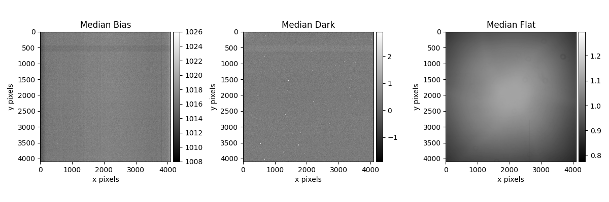
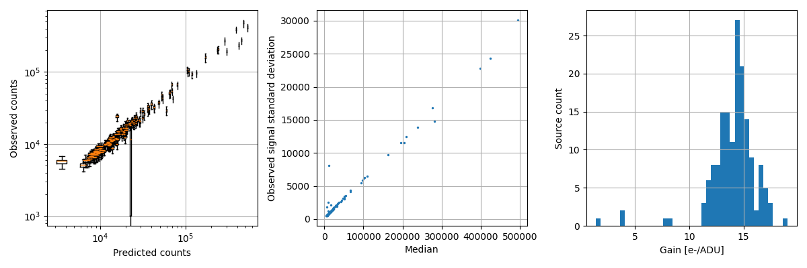

Note
Go to the end to download the full example code.
Subframes#
Computing and plotting calibration subframes (dark, bias, flat) for POGS. Also calibrates the star signal response.


No tracking rates in fits, setting zero (may be inaccurate)
No tracking rates in fits, setting zero (may be inaccurate)
No tracking rates in fits, setting zero (may be inaccurate)
No tracking rates in fits, setting zero (may be inaccurate)
No tracking rates in fits, setting zero (may be inaccurate)
Read noise standard deviation (ADU/pixel) 10.24
No tracking rates in fits, setting zero (may be inaccurate)
No tracking rates in fits, setting zero (may be inaccurate)
No tracking rates in fits, setting zero (may be inaccurate)
No tracking rates in fits, setting zero (may be inaccurate)
No tracking rates in fits, setting zero (may be inaccurate)
No tracking rates in fits, setting zero (may be inaccurate)
No tracking rates in fits, setting zero (may be inaccurate)
No tracking rates in fits, setting zero (may be inaccurate)
No tracking rates in fits, setting zero (may be inaccurate)
No tracking rates in fits, setting zero (may be inaccurate)
Dark noise mean (ADU / pixel / second) 0.25
No tracking rates in fits, setting zero (may be inaccurate)
No tracking rates in fits, setting zero (may be inaccurate)
No tracking rates in fits, setting zero (may be inaccurate)
No tracking rates in fits, setting zero (may be inaccurate)
No tracking rates in fits, setting zero (may be inaccurate)
No tracking rates in fits, setting zero (may be inaccurate)
No tracking rates in fits, setting zero (may be inaccurate)
No tracking rates in fits, setting zero (may be inaccurate)
No tracking rates in fits, setting zero (may be inaccurate)
No tracking rates in fits, setting zero (may be inaccurate)
No tracking rates in fits, setting zero (may be inaccurate)
00011814.Mouse_click_position.fit: load fits: 1.45e-01 seconds
00011814.Mouse_click_position.fit: background determination: 8.18e-01 seconds
00011814.Mouse_click_position.fit: object mask: 1.10e-01 seconds
00011814.Mouse_click_position.fit: compute contours: 1.58e-01 seconds
INFO:root:solve 1: start
INFO:root:solve 1: slice=[0, 25[ (1 / 11), index="5200/index-5204-12.fits" (1 / 19)
INFO:root:solve 1: slice=[0, 25[ (1 / 11), index="5200/index-5204-14.fits" (2 / 19)
INFO:root:solve 1: logodds=1093.04, matches=255, conflicts=1, distractors=29, ra=324.732, dec=33.938, scale=0.722613, index="5200/index-5204-14.fits"
[Match(logodds=1093.038330078125, center_ra_deg=324.7319364420723, center_dec_deg=33.93797050127604, scale_arcsec_per_pixel=0.7226128762891181, index_path=PosixPath('/Users/liamrobinson/Documents/maintained-research/mirage/examples/13-attitude-2024/astrometry_cache/5200/index-5204-14.fits'), stars=(Star(ra_deg=325.1022938792216, dec_deg=34.21020364548208, metadata={}), Star(ra_deg=324.9820004827764, dec_deg=33.59791583491719, metadata={}), Star(ra_deg=325.15565620583493, dec_deg=34.21261662188954, metadata={}), Star(ra_deg=324.81248794234267, dec_deg=33.775945662534404, metadata={}), Star(ra_deg=324.25916080293774, dec_deg=33.704815661073134, metadata={}), Star(ra_deg=324.9841709946508, dec_deg=33.84164673246877, metadata={}), Star(ra_deg=324.480290994075, dec_deg=34.324463840905004, metadata={}), Star(ra_deg=325.1726850452988, dec_deg=33.58321651502457, metadata={}), Star(ra_deg=324.2536533044138, dec_deg=33.98277397165351, metadata={}), Star(ra_deg=324.428932234713, dec_deg=33.98776247430967, metadata={}), Star(ra_deg=324.77770652486083, dec_deg=33.940707488882445, metadata={}), Star(ra_deg=324.95538555177336, dec_deg=33.69415544086775, metadata={}), Star(ra_deg=324.8499110153932, dec_deg=34.3374471431521, metadata={}), Star(ra_deg=324.6410556438693, dec_deg=33.66855464744906, metadata={}), Star(ra_deg=324.6442265465034, dec_deg=33.97929061728751, metadata={}), Star(ra_deg=325.04483542209977, dec_deg=34.04632726040909, metadata={}), Star(ra_deg=325.12199120404176, dec_deg=34.26677267238003, metadata={}), Star(ra_deg=325.13853948565486, dec_deg=33.86857438171632, metadata={}), Star(ra_deg=324.47657669152295, dec_deg=33.82710045781071, metadata={}), Star(ra_deg=324.3843623946544, dec_deg=33.84217052598984, metadata={}), Star(ra_deg=324.33986969880186, dec_deg=33.958109681289706, metadata={}), Star(ra_deg=324.3930127834112, dec_deg=34.15516461963844, metadata={}), Star(ra_deg=325.15504584325953, dec_deg=34.087468920777255, metadata={}), Star(ra_deg=324.83176294620364, dec_deg=33.66253339836318, metadata={}), Star(ra_deg=324.3809779932338, dec_deg=33.561841630317225, metadata={}), Star(ra_deg=324.2941918886373, dec_deg=34.011782974299486, metadata={}), Star(ra_deg=324.6998735412434, dec_deg=34.238609822090375, metadata={}), Star(ra_deg=325.08633917748534, dec_deg=33.62381087985594, metadata={}), Star(ra_deg=324.50921075800926, dec_deg=34.159041933034025, metadata={}), Star(ra_deg=325.20077991455827, dec_deg=33.971692289294, metadata={}), Star(ra_deg=324.61625085891376, dec_deg=33.793917608526336, metadata={}), Star(ra_deg=324.55490220238875, dec_deg=33.64752764590957, metadata={}), Star(ra_deg=324.6265794894181, dec_deg=34.271636355495694, metadata={}), Star(ra_deg=324.79087993066776, dec_deg=34.23693646578374, metadata={}), Star(ra_deg=324.3894586504171, dec_deg=34.29356374485077, metadata={}), Star(ra_deg=324.7231202748761, dec_deg=33.82471604716207, metadata={}), Star(ra_deg=324.7452996119052, dec_deg=34.04066878551663, metadata={}), Star(ra_deg=324.94045090446724, dec_deg=33.86883105873438, metadata={}), Star(ra_deg=324.9594602239643, dec_deg=34.08575323089639, metadata={}), Star(ra_deg=324.3199959281742, dec_deg=33.662401265216374, metadata={}), Star(ra_deg=324.4099003065796, dec_deg=34.02531921360753, metadata={}), Star(ra_deg=324.98792202939813, dec_deg=33.69722758546753, metadata={}), Star(ra_deg=324.7780939805327, dec_deg=33.940932416068115, metadata={}), Star(ra_deg=324.5626652190938, dec_deg=34.326915959305744, metadata={}), Star(ra_deg=324.98030250967264, dec_deg=33.74306985585254, metadata={}), Star(ra_deg=325.0172087732822, dec_deg=34.28049681554049, metadata={}), Star(ra_deg=324.9618928254664, dec_deg=34.02165741952722, metadata={}), Star(ra_deg=324.3651295915425, dec_deg=34.23467572871007, metadata={}), Star(ra_deg=324.3817458583464, dec_deg=33.874236847033856, metadata={}), Star(ra_deg=325.04728105022866, dec_deg=33.613065859933535, metadata={}), Star(ra_deg=324.465241996263, dec_deg=33.577723953938154, metadata={}), Star(ra_deg=324.88972074280764, dec_deg=33.56917964713783, metadata={}), Star(ra_deg=325.1593002626914, dec_deg=33.68932766798235, metadata={}), Star(ra_deg=324.69195640697933, dec_deg=33.74643599884246, metadata={}), Star(ra_deg=324.64196094737343, dec_deg=34.06666495380746, metadata={}), Star(ra_deg=324.5646520978777, dec_deg=33.89263227377238, metadata={}), Star(ra_deg=324.76939984144923, dec_deg=34.345499092467634, metadata={}), Star(ra_deg=324.8621632140594, dec_deg=33.82422717443407, metadata={}), Star(ra_deg=324.3462063970921, dec_deg=34.0704034171421, metadata={}), Star(ra_deg=325.21410428934365, dec_deg=33.86199522396545, metadata={}), Star(ra_deg=324.61692377930524, dec_deg=33.79365823481887, metadata={}), Star(ra_deg=324.3446302172691, dec_deg=33.7677573426648, metadata={}), Star(ra_deg=324.4944712583744, dec_deg=33.74683974979018, metadata={}), Star(ra_deg=325.11413669962394, dec_deg=34.028920964066984, metadata={}), Star(ra_deg=325.0992190331379, dec_deg=34.31486805333229, metadata={}), Star(ra_deg=324.5569218254094, dec_deg=34.085007779841256, metadata={}), Star(ra_deg=324.59085183697874, dec_deg=34.206609167567876, metadata={}), Star(ra_deg=324.6584166946352, dec_deg=33.60611384211279, metadata={}), Star(ra_deg=324.69880699829827, dec_deg=34.016379448802255, metadata={}), Star(ra_deg=325.144239049652, dec_deg=33.90204807038548, metadata={}), Star(ra_deg=324.74927102751616, dec_deg=33.83763461141564, metadata={}), Star(ra_deg=324.8050047176518, dec_deg=34.175226712733824, metadata={}), Star(ra_deg=324.93636194208835, dec_deg=33.92805923350185, metadata={}), Star(ra_deg=324.90024832696645, dec_deg=34.02545586879067, metadata={}), Star(ra_deg=324.3248129181856, dec_deg=34.33907548831424, metadata={}), Star(ra_deg=324.27763889051346, dec_deg=33.603802478912385, metadata={}), Star(ra_deg=324.3977349427767, dec_deg=34.11530569954267, metadata={}), Star(ra_deg=324.87214845037687, dec_deg=33.95847573747244, metadata={}), Star(ra_deg=324.997872905264, dec_deg=33.78484468305476, metadata={}), Star(ra_deg=325.0916961893152, dec_deg=33.57370934822189, metadata={}), Star(ra_deg=324.40931748786875, dec_deg=33.58934781337573, metadata={}), Star(ra_deg=324.29646462278146, dec_deg=34.03841838005309, metadata={}), Star(ra_deg=324.9401223484738, dec_deg=34.24732736850333, metadata={}), Star(ra_deg=325.03786710690645, dec_deg=34.0509755838902, metadata={}), Star(ra_deg=324.5290950078194, dec_deg=34.34589097047744, metadata={}), Star(ra_deg=324.49145708231345, dec_deg=33.75469592859519, metadata={}), Star(ra_deg=325.02665270131894, dec_deg=34.10216496478232, metadata={}), Star(ra_deg=324.66764777934134, dec_deg=33.63363998307018, metadata={}), Star(ra_deg=325.10690029967805, dec_deg=33.70691430995574, metadata={}), Star(ra_deg=325.13361114367234, dec_deg=34.08139675190321, metadata={}), Star(ra_deg=324.9471066153877, dec_deg=33.67489130917383, metadata={}), Star(ra_deg=324.8436988588577, dec_deg=33.55281338835634, metadata={}), Star(ra_deg=324.2660967639258, dec_deg=33.663183616930894, metadata={}), Star(ra_deg=324.2648588238907, dec_deg=33.78898932142312, metadata={}), Star(ra_deg=324.7274467615496, dec_deg=34.234080121793774, metadata={}), Star(ra_deg=324.49883412594835, dec_deg=33.92330419066005, metadata={}), Star(ra_deg=324.380699175698, dec_deg=34.02220198997365, metadata={}), Star(ra_deg=324.5882376897278, dec_deg=33.788365500524534, metadata={}), Star(ra_deg=324.53114787701855, dec_deg=33.996998190493564, metadata={}), Star(ra_deg=324.56641541568587, dec_deg=34.13251473696904, metadata={}), Star(ra_deg=324.846683478129, dec_deg=33.75890756013608, metadata={}), Star(ra_deg=324.3900013436661, dec_deg=33.83563599314735, metadata={}), Star(ra_deg=324.6718659730899, dec_deg=33.5973371223394, metadata={}), Star(ra_deg=325.1044514325534, dec_deg=33.816950392450615, metadata={}), Star(ra_deg=324.3697127195673, dec_deg=33.88372851691224, metadata={}), Star(ra_deg=324.707469385131, dec_deg=33.87439781094933, metadata={}), Star(ra_deg=325.1085304092744, dec_deg=33.55610931552311, metadata={}), Star(ra_deg=324.62956740919054, dec_deg=34.13627651493155, metadata={}), Star(ra_deg=324.71996532431064, dec_deg=34.06439141000339, metadata={}), Star(ra_deg=324.96330681013154, dec_deg=33.83962566353455, metadata={}), Star(ra_deg=324.8280858654644, dec_deg=34.18357147925375, metadata={}), Star(ra_deg=324.9700736601048, dec_deg=34.12766709823888, metadata={}), Star(ra_deg=324.32037459936373, dec_deg=34.32816861850246, metadata={}), Star(ra_deg=324.47388788409467, dec_deg=34.239609688528745, metadata={}), Star(ra_deg=324.31656944192747, dec_deg=34.12065010345728, metadata={}), Star(ra_deg=324.27488404821014, dec_deg=33.999554323027056, metadata={}), Star(ra_deg=324.8272491459694, dec_deg=33.90726767689499, metadata={}), Star(ra_deg=324.9500285406438, dec_deg=33.992539978398334, metadata={}), Star(ra_deg=324.53710915723843, dec_deg=34.328954540608194, metadata={}), Star(ra_deg=324.5113593480932, dec_deg=33.73938630600542, metadata={}), Star(ra_deg=324.64944355396267, dec_deg=34.276459960120015, metadata={}), Star(ra_deg=324.7026625432551, dec_deg=33.99451466930357, metadata={}), Star(ra_deg=324.47313341929134, dec_deg=33.81093609061127, metadata={}), Star(ra_deg=325.13123359531295, dec_deg=34.17224117754164, metadata={}), Star(ra_deg=324.81876200092427, dec_deg=33.68138172922372, metadata={}), Star(ra_deg=324.3999492095882, dec_deg=34.036848373323835, metadata={}), Star(ra_deg=325.1082856526262, dec_deg=34.235475428627616, metadata={}), Star(ra_deg=324.5316084636937, dec_deg=33.81455961749577, metadata={}), Star(ra_deg=324.73745040408954, dec_deg=33.666098761941825, metadata={}), Star(ra_deg=324.44637420861807, dec_deg=34.10948014094462, metadata={}), Star(ra_deg=325.1718640207637, dec_deg=33.64527160998694, metadata={}), Star(ra_deg=324.86249710351007, dec_deg=33.68522009789541, metadata={}), Star(ra_deg=324.6692481946422, dec_deg=34.041272368236, metadata={}), Star(ra_deg=324.29296343417633, dec_deg=33.8072816028479, metadata={}), Star(ra_deg=325.15165589564583, dec_deg=33.542336237055736, metadata={}), Star(ra_deg=324.65049889417924, dec_deg=34.23034825112129, metadata={}), Star(ra_deg=325.17508009533, dec_deg=33.867123952563375, metadata={}), Star(ra_deg=324.6039017627957, dec_deg=33.85457392861283, metadata={}), Star(ra_deg=324.9291781123765, dec_deg=33.77753231304277, metadata={}), Star(ra_deg=324.7674130366254, dec_deg=33.5450926810745, metadata={}), Star(ra_deg=324.5576666946836, dec_deg=33.56614847266197, metadata={}), Star(ra_deg=324.8448554348456, dec_deg=33.88784076725108, metadata={}), Star(ra_deg=324.85808497875377, dec_deg=34.07602229278727, metadata={}), Star(ra_deg=324.704591711066, dec_deg=33.807302474182634, metadata={}), Star(ra_deg=324.8145069549935, dec_deg=34.23733074232573, metadata={}), Star(ra_deg=324.26275310732825, dec_deg=34.27848950318024, metadata={}), Star(ra_deg=325.2078944328322, dec_deg=34.219082646249845, metadata={}), Star(ra_deg=324.31740658935547, dec_deg=34.17704861218723, metadata={}), Star(ra_deg=324.7431989738825, dec_deg=33.97470805283561, metadata={}), Star(ra_deg=324.4940761333905, dec_deg=34.214359701646806, metadata={}), Star(ra_deg=324.51243717716125, dec_deg=34.30986785136973, metadata={}), Star(ra_deg=324.41015152021583, dec_deg=33.61665666488246, metadata={}), Star(ra_deg=324.554137612577, dec_deg=33.648027179076365, metadata={}), Star(ra_deg=324.3317266955793, dec_deg=33.722351583906345, metadata={}), Star(ra_deg=324.7416224779656, dec_deg=34.31525733328024, metadata={}), Star(ra_deg=325.15025520380965, dec_deg=34.12194423897116, metadata={}), Star(ra_deg=324.97581886167717, dec_deg=33.940605606132024, metadata={}), Star(ra_deg=324.5149256259669, dec_deg=34.116800429247064, metadata={}), Star(ra_deg=325.18336670588843, dec_deg=33.78885320531861, metadata={}), Star(ra_deg=324.56226698764704, dec_deg=33.89583256818112, metadata={}), Star(ra_deg=324.4263218509727, dec_deg=33.806400194974294, metadata={}), Star(ra_deg=325.0197269213322, dec_deg=34.29540945699363, metadata={}), Star(ra_deg=324.86099203177423, dec_deg=34.33703708109564, metadata={}), Star(ra_deg=324.9107816690582, dec_deg=33.6158317084209, metadata={}), Star(ra_deg=324.8431959160418, dec_deg=33.84276280907652, metadata={}), Star(ra_deg=324.31791678471967, dec_deg=33.963015286685355, metadata={}), Star(ra_deg=324.72127081562434, dec_deg=33.72264612402726, metadata={}), Star(ra_deg=325.13715158847856, dec_deg=33.6505332537436, metadata={}), Star(ra_deg=324.5590835728237, dec_deg=34.238496478179144, metadata={}), Star(ra_deg=324.59581714882603, dec_deg=34.06184813813459, metadata={}), Star(ra_deg=324.75362639533495, dec_deg=34.10569503349098, metadata={}), Star(ra_deg=324.98448164804654, dec_deg=33.63721559049446, metadata={}), Star(ra_deg=324.37922594943996, dec_deg=33.93804429841024, metadata={}), Star(ra_deg=325.11123580461015, dec_deg=33.93439105320342, metadata={}), Star(ra_deg=325.04915666605194, dec_deg=33.74703025107615, metadata={}), Star(ra_deg=324.66478772058696, dec_deg=33.81908371029932, metadata={}), Star(ra_deg=324.9158538165756, dec_deg=33.926041904335115, metadata={}), Star(ra_deg=325.2064266427222, dec_deg=33.59604136734355, metadata={}), Star(ra_deg=324.83481286245546, dec_deg=33.58822122188691, metadata={}), Star(ra_deg=324.91878780712256, dec_deg=34.02396120462387, metadata={}), Star(ra_deg=324.853482960402, dec_deg=34.149759421569755, metadata={}), Star(ra_deg=324.2843354314973, dec_deg=34.26609522452769, metadata={}), Star(ra_deg=324.7140675817377, dec_deg=33.94471886532871, metadata={}), Star(ra_deg=324.26379159204095, dec_deg=34.006968147476904, metadata={}), Star(ra_deg=324.4654674538964, dec_deg=33.64912000211809, metadata={}), Star(ra_deg=324.40804743058504, dec_deg=34.218196275398306, metadata={}), Star(ra_deg=325.11811456672433, dec_deg=34.06825303414147, metadata={}), Star(ra_deg=324.7994727611222, dec_deg=34.03169611049958, metadata={}), Star(ra_deg=324.2904051575677, dec_deg=33.69102466072807, metadata={}), Star(ra_deg=324.36055528694067, dec_deg=34.10069556130783, metadata={}), Star(ra_deg=324.56546792999103, dec_deg=34.06579564002395, metadata={}), Star(ra_deg=325.1948334795, dec_deg=33.85193096775875, metadata={}), Star(ra_deg=324.57622870071935, dec_deg=34.27289923250609, metadata={}), Star(ra_deg=324.3913253059518, dec_deg=33.59371441922952, metadata={}), Star(ra_deg=324.4199499261731, dec_deg=33.85669446698537, metadata={}), Star(ra_deg=324.94913139431776, dec_deg=33.60950704823212, metadata={}), Star(ra_deg=325.20280328678194, dec_deg=34.146268067949954, metadata={}), Star(ra_deg=324.29981553994844, dec_deg=33.94892241204229, metadata={}), Star(ra_deg=324.81953232096197, dec_deg=33.82780726357724, metadata={}), Star(ra_deg=324.44710313545477, dec_deg=33.95841565011049, metadata={}), Star(ra_deg=325.10635271093577, dec_deg=33.7236637419398, metadata={}), Star(ra_deg=325.035341939762, dec_deg=33.89316059082011, metadata={}), Star(ra_deg=324.6668003730298, dec_deg=34.0171097472941, metadata={}), Star(ra_deg=325.0490828397922, dec_deg=34.21810383472493, metadata={}), Star(ra_deg=325.0877490082878, dec_deg=33.970145166700355, metadata={}), Star(ra_deg=324.72185421816596, dec_deg=34.17889425508291, metadata={}), Star(ra_deg=325.08459288597675, dec_deg=33.798595716320875, metadata={}), Star(ra_deg=324.75161303928627, dec_deg=34.31334251068619, metadata={}), Star(ra_deg=324.5796370015761, dec_deg=33.74749506700547, metadata={}), Star(ra_deg=324.8943502786325, dec_deg=33.85562681786313, metadata={}), Star(ra_deg=324.5471056010697, dec_deg=34.196293670957836, metadata={}), Star(ra_deg=324.69923238750846, dec_deg=33.63088215061635, metadata={}), Star(ra_deg=324.9536480483689, dec_deg=33.591805451297276, metadata={}), Star(ra_deg=324.9380064121653, dec_deg=34.1355325847864, metadata={}), Star(ra_deg=324.69616057714194, dec_deg=33.5679025024789, metadata={}), Star(ra_deg=324.85046609150146, dec_deg=34.23598639502575, metadata={}), Star(ra_deg=324.5461636241318, dec_deg=33.89984000009766, metadata={}), Star(ra_deg=324.6294540809444, dec_deg=33.88935981519019, metadata={}), Star(ra_deg=324.77248716793326, dec_deg=33.591489226510234, metadata={}), Star(ra_deg=324.82252098931104, dec_deg=33.99396638258722, metadata={}), Star(ra_deg=324.53481540895297, dec_deg=33.69776941746084, metadata={}), Star(ra_deg=324.2561030136395, dec_deg=34.02005424527632, metadata={}), Star(ra_deg=324.51268575436507, dec_deg=34.10500528022459, metadata={}), Star(ra_deg=324.9018079578265, dec_deg=33.60319361529751, metadata={}), Star(ra_deg=325.040903786499, dec_deg=34.09260811243098, metadata={}), Star(ra_deg=324.55664650074885, dec_deg=34.287118215517644, metadata={}), Star(ra_deg=324.27958405396464, dec_deg=34.09211141552597, metadata={}), Star(ra_deg=324.4012044498923, dec_deg=33.84579675827884, metadata={}), Star(ra_deg=324.45654962293355, dec_deg=33.941608230320924, metadata={}), Star(ra_deg=325.2193694891368, dec_deg=34.201102863784726, metadata={}), Star(ra_deg=325.2162049238202, dec_deg=33.67160628924096, metadata={}), Star(ra_deg=324.60201713100037, dec_deg=33.93151299729658, metadata={}), Star(ra_deg=324.39572218949627, dec_deg=33.63282640001537, metadata={}), Star(ra_deg=324.6990687840204, dec_deg=34.16573379335715, metadata={}), Star(ra_deg=324.7997594465969, dec_deg=33.80920650719398, metadata={}), Star(ra_deg=324.8515441680731, dec_deg=34.28460819869466, metadata={}), Star(ra_deg=325.0252386500964, dec_deg=34.1013046305272, metadata={}), Star(ra_deg=325.1248406517067, dec_deg=33.86636274337498, metadata={}), Star(ra_deg=324.3023845247493, dec_deg=33.916886901698064, metadata={}), Star(ra_deg=324.45342785876227, dec_deg=34.23753125381042, metadata={}), Star(ra_deg=324.6579040327201, dec_deg=34.28081777298092, metadata={}), Star(ra_deg=324.61886716350364, dec_deg=34.23471151818485, metadata={}), Star(ra_deg=324.5895597974613, dec_deg=33.588191820207925, metadata={}), Star(ra_deg=325.1374002489806, dec_deg=34.00263132276334, metadata={}), Star(ra_deg=324.2556521756804, dec_deg=33.77442965571512, metadata={}), Star(ra_deg=325.0141017882111, dec_deg=34.065970783923426, metadata={}), Star(ra_deg=325.0664744494928, dec_deg=33.59910165208648, metadata={}), Star(ra_deg=324.9995814546482, dec_deg=33.89443834284156, metadata={}), Star(ra_deg=324.73624292108485, dec_deg=33.64323689525622, metadata={}), Star(ra_deg=324.9882200079563, dec_deg=33.76387850212946, metadata={}), Star(ra_deg=324.5562154890887, dec_deg=33.76932365345913, metadata={}), Star(ra_deg=325.09096575718985, dec_deg=34.328377456084496, metadata={}), Star(ra_deg=324.90518945394433, dec_deg=34.07392137125845, metadata={}), Star(ra_deg=324.56845839860193, dec_deg=33.86033227211145, metadata={}), Star(ra_deg=324.84042403115245, dec_deg=34.14382291356055, metadata={}), Star(ra_deg=324.7051619284821, dec_deg=33.89344768398972, metadata={}), Star(ra_deg=324.7689683900856, dec_deg=33.54317742525315, metadata={}), Star(ra_deg=324.57239945533024, dec_deg=33.66785280759192, metadata={}), Star(ra_deg=324.75235005767195, dec_deg=34.00217184151531, metadata={}), Star(ra_deg=324.3081099600983, dec_deg=33.64177110871721, metadata={}), Star(ra_deg=325.16716398908426, dec_deg=34.09423788639716, metadata={}), Star(ra_deg=324.2856555788802, dec_deg=33.59528608245706, metadata={}), Star(ra_deg=324.9947648330729, dec_deg=33.69581510555731, metadata={}), Star(ra_deg=324.2856250227535, dec_deg=34.15273410281198, metadata={}), Star(ra_deg=324.5732179712216, dec_deg=34.09584101456878, metadata={}), Star(ra_deg=324.3405777577713, dec_deg=33.9586811542241, metadata={}), Star(ra_deg=324.5066798500296, dec_deg=34.27295008376087, metadata={}), Star(ra_deg=324.3992364629925, dec_deg=33.56237745641791, metadata={}), Star(ra_deg=324.82040647988003, dec_deg=33.81075164457481, metadata={}), Star(ra_deg=324.4345139040786, dec_deg=33.71804102691005, metadata={}), Star(ra_deg=325.1563697348266, dec_deg=33.80197364183807, metadata={}), Star(ra_deg=324.6959648236827, dec_deg=34.080169143782875, metadata={}), Star(ra_deg=325.00923381828284, dec_deg=34.22544503704816, metadata={}), Star(ra_deg=324.5578994758258, dec_deg=34.187784247504396, metadata={}), Star(ra_deg=324.3224750938808, dec_deg=33.95726042414474, metadata={}), Star(ra_deg=325.1995141946052, dec_deg=33.9103421769479, metadata={}), Star(ra_deg=324.36819262272024, dec_deg=34.1643427680199, metadata={}), Star(ra_deg=325.1328775500363, dec_deg=33.64256314376077, metadata={}), Star(ra_deg=324.98265228469756, dec_deg=33.78421418322096, metadata={}), Star(ra_deg=324.95509688183785, dec_deg=34.12511934602536, metadata={}), Star(ra_deg=324.70981728211984, dec_deg=34.330430611777835, metadata={}), Star(ra_deg=325.20845020619697, dec_deg=34.072571570198306, metadata={}), Star(ra_deg=325.073139166985, dec_deg=34.31391765060737, metadata={}), Star(ra_deg=325.12222178528026, dec_deg=33.54271220664199, metadata={}), Star(ra_deg=325.07532989070927, dec_deg=33.99238944244033, metadata={}), Star(ra_deg=325.04840502777625, dec_deg=33.61312557730792, metadata={}), Star(ra_deg=324.9452210812771, dec_deg=34.305760141305434, metadata={}), Star(ra_deg=324.3287913359723, dec_deg=33.53310099122387, metadata={}), Star(ra_deg=324.70713337277664, dec_deg=33.98654059646991, metadata={}), Star(ra_deg=324.8447239562937, dec_deg=34.261332097592785, metadata={}), Star(ra_deg=324.577671727146, dec_deg=33.53432455226084, metadata={}), Star(ra_deg=324.71455826172576, dec_deg=33.579329047893346, metadata={}), Star(ra_deg=324.56931962994713, dec_deg=33.77814520563574, metadata={}), Star(ra_deg=324.5035648499909, dec_deg=33.95114278722329, metadata={}), Star(ra_deg=324.3045997604093, dec_deg=34.27201419959306, metadata={}), Star(ra_deg=324.7167022804062, dec_deg=33.90059549694458, metadata={}), Star(ra_deg=324.91908789815966, dec_deg=33.90676380071522, metadata={}), Star(ra_deg=324.87283644305404, dec_deg=33.590923464727254, metadata={}), Star(ra_deg=324.48968673747044, dec_deg=33.66976814216914, metadata={}), Star(ra_deg=324.75657370026704, dec_deg=34.02496017690401, metadata={}), Star(ra_deg=325.1612180557308, dec_deg=34.03680217152754, metadata={}), Star(ra_deg=324.37303598707246, dec_deg=33.710724760722925, metadata={}), Star(ra_deg=324.4780557299636, dec_deg=34.10074566444004, metadata={}), Star(ra_deg=324.3879948239501, dec_deg=33.96286467432364, metadata={}), Star(ra_deg=324.30357035302984, dec_deg=34.00344312088179, metadata={}), Star(ra_deg=324.7521336958211, dec_deg=33.79021004215053, metadata={}), Star(ra_deg=324.5159909181824, dec_deg=34.26442693883377, metadata={}), Star(ra_deg=324.85317658144015, dec_deg=33.66254455371819, metadata={}), Star(ra_deg=324.41790556231837, dec_deg=33.755637647891135, metadata={}), Star(ra_deg=324.3660558189592, dec_deg=33.63235012310811, metadata={}), Star(ra_deg=325.0820194338709, dec_deg=34.172139370844654, metadata={}), Star(ra_deg=324.31030232637335, dec_deg=33.82155127042633, metadata={}), Star(ra_deg=324.67368827317637, dec_deg=34.20739330919568, metadata={}), Star(ra_deg=324.74381728199234, dec_deg=34.08956673128238, metadata={}), Star(ra_deg=324.33476726572405, dec_deg=34.20090721329972, metadata={}), Star(ra_deg=325.10626915825156, dec_deg=33.660588317640176, metadata={}), Star(ra_deg=325.16846423203106, dec_deg=33.93165300683819, metadata={}), Star(ra_deg=324.86280442652406, dec_deg=34.07332638160856, metadata={}), Star(ra_deg=324.6518588487223, dec_deg=34.29172905312555, metadata={}), Star(ra_deg=325.2057573050605, dec_deg=34.327407612807086, metadata={}), Star(ra_deg=324.75967596931764, dec_deg=34.21111729112144, metadata={}), Star(ra_deg=324.9789957069575, dec_deg=33.961786912654894, metadata={}), Star(ra_deg=325.0571357425563, dec_deg=33.81951095831249, metadata={}), Star(ra_deg=324.84170275232157, dec_deg=34.28945395797846, metadata={}), Star(ra_deg=324.2691249812562, dec_deg=34.220995710970286, metadata={}), Star(ra_deg=324.65952610001796, dec_deg=33.97527484352439, metadata={}), Star(ra_deg=325.07207479668045, dec_deg=33.588567989503765, metadata={}), Star(ra_deg=324.57861068817635, dec_deg=33.750375595782934, metadata={}), Star(ra_deg=324.7099865556744, dec_deg=33.66339925695831, metadata={}), Star(ra_deg=324.7271260972855, dec_deg=33.84783599529519, metadata={}), Star(ra_deg=324.4794814005609, dec_deg=33.89162903644492, metadata={}), Star(ra_deg=324.8251920938354, dec_deg=33.66940960275612, metadata={}), Star(ra_deg=324.2783570987425, dec_deg=34.24282453599104, metadata={}), Star(ra_deg=324.9435246171187, dec_deg=33.89623696079391, metadata={}), Star(ra_deg=324.561322423641, dec_deg=33.709061247855004, metadata={}), Star(ra_deg=324.90576802345896, dec_deg=33.99174923317375, metadata={}), Star(ra_deg=325.06820508705033, dec_deg=34.05501339262599, metadata={}), Star(ra_deg=324.3117844444811, dec_deg=33.768356717466006, metadata={}), Star(ra_deg=324.46381002392707, dec_deg=34.062037122432365, metadata={}), Star(ra_deg=324.36627704018895, dec_deg=34.0818201324905, metadata={}), Star(ra_deg=324.79572801353174, dec_deg=33.814389421555205, metadata={}), Star(ra_deg=324.4148745299024, dec_deg=33.943602482876216, metadata={}), Star(ra_deg=324.45281900950476, dec_deg=34.27039803446036, metadata={}), Star(ra_deg=324.3728680254711, dec_deg=33.827328201058286, metadata={}), Star(ra_deg=324.9543411192632, dec_deg=33.722263786638244, metadata={}), Star(ra_deg=325.1144427377463, dec_deg=33.75889619970686, metadata={}), Star(ra_deg=324.4295098510173, dec_deg=33.65669046706277, metadata={}), Star(ra_deg=324.9283962752966, dec_deg=34.199085250040554, metadata={}), Star(ra_deg=325.14307737254927, dec_deg=33.9361560731257, metadata={}), Star(ra_deg=324.25050475801237, dec_deg=33.877680718407014, metadata={}), Star(ra_deg=325.19574017154576, dec_deg=34.06260636449202, metadata={}), Star(ra_deg=324.43019895469394, dec_deg=34.23596012534561, metadata={}), Star(ra_deg=324.945488265461, dec_deg=34.0380927082415, metadata={}), Star(ra_deg=325.2158037250943, dec_deg=34.30091108367785, metadata={}), Star(ra_deg=325.04858703367483, dec_deg=33.91496976001206, metadata={}), Star(ra_deg=325.03739017231663, dec_deg=33.82582519033809, metadata={}), Star(ra_deg=324.8747738803697, dec_deg=34.31828470788396, metadata={}), Star(ra_deg=324.7247324430764, dec_deg=34.307532348686244, metadata={}), Star(ra_deg=324.6652311159926, dec_deg=34.20416894201032, metadata={}), Star(ra_deg=324.5645312963645, dec_deg=33.57771354611203, metadata={}), Star(ra_deg=324.6443787175953, dec_deg=33.97841721097208, metadata={}), Star(ra_deg=324.7637532285803, dec_deg=33.62755138686272, metadata={}), Star(ra_deg=324.7160498518808, dec_deg=34.19175621345182, metadata={}), Star(ra_deg=324.6269633980014, dec_deg=33.84838536627669, metadata={}), Star(ra_deg=324.9259820548493, dec_deg=33.57725291299663, metadata={}), Star(ra_deg=324.52964756433767, dec_deg=33.96293882240945, metadata={}), Star(ra_deg=324.9797242022023, dec_deg=33.89934272526627, metadata={}), Star(ra_deg=324.7822479444071, dec_deg=33.62572683685874, metadata={}), Star(ra_deg=324.7517456306927, dec_deg=33.9441220465803, metadata={}), Star(ra_deg=324.8781585093552, dec_deg=34.23879645905126, metadata={}), Star(ra_deg=325.0424481352675, dec_deg=34.298354471058886, metadata={}), Star(ra_deg=325.0122881457828, dec_deg=34.345715179340274, metadata={}), Star(ra_deg=325.20793725226036, dec_deg=34.2763142773828, metadata={}), Star(ra_deg=325.0395292463133, dec_deg=34.27195937770895, metadata={})), quad_stars=(Star(ra_deg=325.0122881457828, dec_deg=34.345715179340274, metadata={}), Star(ra_deg=325.20793725226036, dec_deg=34.2763142773828, metadata={}), Star(ra_deg=325.0395292463133, dec_deg=34.27195937770895, metadata={}), Star(ra_deg=325.0424481352675, dec_deg=34.298354471058886, metadata={})), wcs_fields={'WCSAXES': (2, 'Number of coordinate axes'), 'EQUINOX': (2000.0, 'Equatorial coordinates definition (yr)'), 'LONPOLE': (180.0, 'Native longitude of celestial pole (deg)'), 'LATPOLE': (0.0, 'Native latitude of celestial pole (deg)'), 'CRVAL1': (325.0755654454157, 'RA of reference point'), 'CRVAL2': (34.298110122160686, 'DEC of reference point'), 'CRPIX1': (251.30698005698005, 'X reference pixel'), 'CRPIX2': (3468.712962962963, 'Y reference pixel'), 'CUNIT1': ('deg', 'X pixel scale units'), 'CUNIT2': ('deg', 'Y pixel scale units'), 'CD1_1': (-4.047444898563852e-07, 'Transformation matrix'), 'CD1_2': (0.00020072539090439307, 'Transformation matrix'), 'CD2_1': (-0.00020072539090439307, 'Transformation matrix'), 'CD2_2': (-4.047444898564297e-07, 'Transformation matrix'), 'CTYPE1': ('RA---TAN-SIP', 'TAN (gnomonic) projection + SIP distortions'), 'CTYPE2': ('DEC--TAN-SIP', 'TAN (gnomonic) projection + SIP distortions')})]
No tracking rates in fits, setting zero (may be inaccurate)
00011823.Mouse_click_position.fit: load fits: 7.57e-02 seconds
00011823.Mouse_click_position.fit: background determination: 6.89e-01 seconds
00011823.Mouse_click_position.fit: object mask: 7.38e-02 seconds
00011823.Mouse_click_position.fit: compute contours: 2.05e-02 seconds
INFO:root:solve 2: start
INFO:root:solve 2: slice=[0, 25[ (1 / 10), index="5200/index-5204-12.fits" (1 / 19)
INFO:root:solve 2: slice=[0, 25[ (1 / 10), index="5200/index-5204-14.fits" (2 / 19)
INFO:root:solve 2: logodds=1076.86, matches=249, conflicts=1, distractors=17, ra=324.738, dec=33.9379, scale=0.722931, index="5200/index-5204-14.fits"
[Match(logodds=1076.8577880859375, center_ra_deg=324.7375090100603, center_dec_deg=33.937857216122254, scale_arcsec_per_pixel=0.7229307879661051, index_path=PosixPath('/Users/liamrobinson/Documents/maintained-research/mirage/examples/13-attitude-2024/astrometry_cache/5200/index-5204-14.fits'), stars=(Star(ra_deg=324.9820004827764, dec_deg=33.59791583491719, metadata={}), Star(ra_deg=325.1022938792216, dec_deg=34.21020364548208, metadata={}), Star(ra_deg=325.15565620583493, dec_deg=34.21261662188954, metadata={}), Star(ra_deg=324.25916080293774, dec_deg=33.704815661073134, metadata={}), Star(ra_deg=324.9841709946508, dec_deg=33.84164673246877, metadata={}), Star(ra_deg=324.81248794234267, dec_deg=33.775945662534404, metadata={}), Star(ra_deg=324.480290994075, dec_deg=34.324463840905004, metadata={}), Star(ra_deg=324.2536533044138, dec_deg=33.98277397165351, metadata={}), Star(ra_deg=325.1726850452988, dec_deg=33.58321651502457, metadata={}), Star(ra_deg=324.428932234713, dec_deg=33.98776247430967, metadata={}), Star(ra_deg=324.77770652486083, dec_deg=33.940707488882445, metadata={}), Star(ra_deg=324.6442265465034, dec_deg=33.97929061728751, metadata={}), Star(ra_deg=324.8499110153932, dec_deg=34.3374471431521, metadata={}), Star(ra_deg=324.95538555177336, dec_deg=33.69415544086775, metadata={}), Star(ra_deg=324.6410556438693, dec_deg=33.66855464744906, metadata={}), Star(ra_deg=325.04483542209977, dec_deg=34.04632726040909, metadata={}), Star(ra_deg=325.12199120404176, dec_deg=34.26677267238003, metadata={}), Star(ra_deg=324.47657669152295, dec_deg=33.82710045781071, metadata={}), Star(ra_deg=325.13853948565486, dec_deg=33.86857438171632, metadata={}), Star(ra_deg=324.3930127834112, dec_deg=34.15516461963844, metadata={}), Star(ra_deg=324.3843623946544, dec_deg=33.84217052598984, metadata={}), Star(ra_deg=324.33986969880186, dec_deg=33.958109681289706, metadata={}), Star(ra_deg=325.15504584325953, dec_deg=34.087468920777255, metadata={}), Star(ra_deg=324.3809779932338, dec_deg=33.561841630317225, metadata={}), Star(ra_deg=324.83176294620364, dec_deg=33.66253339836318, metadata={}), Star(ra_deg=324.6998735412434, dec_deg=34.238609822090375, metadata={}), Star(ra_deg=324.2941918886373, dec_deg=34.011782974299486, metadata={}), Star(ra_deg=324.50921075800926, dec_deg=34.159041933034025, metadata={}), Star(ra_deg=325.08633917748534, dec_deg=33.62381087985594, metadata={}), Star(ra_deg=324.61625085891376, dec_deg=33.793917608526336, metadata={}), Star(ra_deg=325.20077991455827, dec_deg=33.971692289294, metadata={}), Star(ra_deg=324.55490220238875, dec_deg=33.64752764590957, metadata={}), Star(ra_deg=324.6265794894181, dec_deg=34.271636355495694, metadata={}), Star(ra_deg=324.79087993066776, dec_deg=34.23693646578374, metadata={}), Star(ra_deg=324.7452996119052, dec_deg=34.04066878551663, metadata={}), Star(ra_deg=324.7231202748761, dec_deg=33.82471604716207, metadata={}), Star(ra_deg=324.3894586504171, dec_deg=34.29356374485077, metadata={}), Star(ra_deg=324.94045090446724, dec_deg=33.86883105873438, metadata={}), Star(ra_deg=324.9594602239643, dec_deg=34.08575323089639, metadata={}), Star(ra_deg=324.3199959281742, dec_deg=33.662401265216374, metadata={}), Star(ra_deg=324.4099003065796, dec_deg=34.02531921360753, metadata={}), Star(ra_deg=324.98792202939813, dec_deg=33.69722758546753, metadata={}), Star(ra_deg=324.7780939805327, dec_deg=33.940932416068115, metadata={}), Star(ra_deg=324.5626652190938, dec_deg=34.326915959305744, metadata={}), Star(ra_deg=324.98030250967264, dec_deg=33.74306985585254, metadata={}), Star(ra_deg=325.0172087732822, dec_deg=34.28049681554049, metadata={}), Star(ra_deg=324.9618928254664, dec_deg=34.02165741952722, metadata={}), Star(ra_deg=324.3651295915425, dec_deg=34.23467572871007, metadata={}), Star(ra_deg=325.04728105022866, dec_deg=33.613065859933535, metadata={}), Star(ra_deg=324.3817458583464, dec_deg=33.874236847033856, metadata={}), Star(ra_deg=324.88972074280764, dec_deg=33.56917964713783, metadata={}), Star(ra_deg=324.465241996263, dec_deg=33.577723953938154, metadata={}), Star(ra_deg=324.69195640697933, dec_deg=33.74643599884246, metadata={}), Star(ra_deg=325.1593002626914, dec_deg=33.68932766798235, metadata={}), Star(ra_deg=324.76939984144923, dec_deg=34.345499092467634, metadata={}), Star(ra_deg=324.5646520978777, dec_deg=33.89263227377238, metadata={}), Star(ra_deg=324.3462063970921, dec_deg=34.0704034171421, metadata={}), Star(ra_deg=324.8621632140594, dec_deg=33.82422717443407, metadata={}), Star(ra_deg=324.64196094737343, dec_deg=34.06666495380746, metadata={}), Star(ra_deg=325.21410428934365, dec_deg=33.86199522396545, metadata={}), Star(ra_deg=324.61692377930524, dec_deg=33.79365823481887, metadata={}), Star(ra_deg=324.4944712583744, dec_deg=33.74683974979018, metadata={}), Star(ra_deg=325.0992190331379, dec_deg=34.31486805333229, metadata={}), Star(ra_deg=324.3446302172691, dec_deg=33.7677573426648, metadata={}), Star(ra_deg=325.11413669962394, dec_deg=34.028920964066984, metadata={}), Star(ra_deg=324.59085183697874, dec_deg=34.206609167567876, metadata={}), Star(ra_deg=324.5569218254094, dec_deg=34.085007779841256, metadata={}), Star(ra_deg=324.6584166946352, dec_deg=33.60611384211279, metadata={}), Star(ra_deg=324.69880699829827, dec_deg=34.016379448802255, metadata={}), Star(ra_deg=325.144239049652, dec_deg=33.90204807038548, metadata={}), Star(ra_deg=324.74927102751616, dec_deg=33.83763461141564, metadata={}), Star(ra_deg=324.90024832696645, dec_deg=34.02545586879067, metadata={}), Star(ra_deg=324.8050047176518, dec_deg=34.175226712733824, metadata={}), Star(ra_deg=324.93636194208835, dec_deg=33.92805923350185, metadata={}), Star(ra_deg=324.3248129181856, dec_deg=34.33907548831424, metadata={}), Star(ra_deg=324.27763889051346, dec_deg=33.603802478912385, metadata={}), Star(ra_deg=324.3977349427767, dec_deg=34.11530569954267, metadata={}), Star(ra_deg=324.87214845037687, dec_deg=33.95847573747244, metadata={}), Star(ra_deg=324.997872905264, dec_deg=33.78484468305476, metadata={}), Star(ra_deg=324.8068222737129, dec_deg=34.3488742410526, metadata={}), Star(ra_deg=325.0916961893152, dec_deg=33.57370934822189, metadata={}), Star(ra_deg=324.40931748786875, dec_deg=33.58934781337573, metadata={}), Star(ra_deg=324.29646462278146, dec_deg=34.03841838005309, metadata={}), Star(ra_deg=324.9401223484738, dec_deg=34.24732736850333, metadata={}), Star(ra_deg=325.03786710690645, dec_deg=34.0509755838902, metadata={}), Star(ra_deg=324.5290950078194, dec_deg=34.34589097047744, metadata={}), Star(ra_deg=324.49145708231345, dec_deg=33.75469592859519, metadata={}), Star(ra_deg=325.02665270131894, dec_deg=34.10216496478232, metadata={}), Star(ra_deg=324.66764777934134, dec_deg=33.63363998307018, metadata={}), Star(ra_deg=325.13361114367234, dec_deg=34.08139675190321, metadata={}), Star(ra_deg=324.8436988588577, dec_deg=33.55281338835634, metadata={}), Star(ra_deg=325.10690029967805, dec_deg=33.70691430995574, metadata={}), Star(ra_deg=324.9471066153877, dec_deg=33.67489130917383, metadata={}), Star(ra_deg=324.5882376897278, dec_deg=33.788365500524534, metadata={}), Star(ra_deg=324.49883412594835, dec_deg=33.92330419066005, metadata={}), Star(ra_deg=324.380699175698, dec_deg=34.02220198997365, metadata={}), Star(ra_deg=324.7274467615496, dec_deg=34.234080121793774, metadata={}), Star(ra_deg=324.2648588238907, dec_deg=33.78898932142312, metadata={}), Star(ra_deg=324.2660967639258, dec_deg=33.663183616930894, metadata={}), Star(ra_deg=324.56641541568587, dec_deg=34.13251473696904, metadata={}), Star(ra_deg=324.53114787701855, dec_deg=33.996998190493564, metadata={}), Star(ra_deg=324.3900013436661, dec_deg=33.83563599314735, metadata={}), Star(ra_deg=324.846683478129, dec_deg=33.75890756013608, metadata={}), Star(ra_deg=324.6718659730899, dec_deg=33.5973371223394, metadata={}), Star(ra_deg=325.1044514325534, dec_deg=33.816950392450615, metadata={}), Star(ra_deg=324.3697127195673, dec_deg=33.88372851691224, metadata={}), Star(ra_deg=324.707469385131, dec_deg=33.87439781094933, metadata={}), Star(ra_deg=325.1085304092744, dec_deg=33.55610931552311, metadata={}), Star(ra_deg=324.71996532431064, dec_deg=34.06439141000339, metadata={}), Star(ra_deg=324.62956740919054, dec_deg=34.13627651493155, metadata={}), Star(ra_deg=324.96330681013154, dec_deg=33.83962566353455, metadata={}), Star(ra_deg=324.8280858654644, dec_deg=34.18357147925375, metadata={}), Star(ra_deg=324.9700736601048, dec_deg=34.12766709823888, metadata={}), Star(ra_deg=324.32037459936373, dec_deg=34.32816861850246, metadata={}), Star(ra_deg=324.8272491459694, dec_deg=33.90726767689499, metadata={}), Star(ra_deg=324.27488404821014, dec_deg=33.999554323027056, metadata={}), Star(ra_deg=324.31656944192747, dec_deg=34.12065010345728, metadata={}), Star(ra_deg=324.47388788409467, dec_deg=34.239609688528745, metadata={}), Star(ra_deg=324.53710915723843, dec_deg=34.328954540608194, metadata={}), Star(ra_deg=324.9500285406438, dec_deg=33.992539978398334, metadata={}), Star(ra_deg=324.5113593480932, dec_deg=33.73938630600542, metadata={}), Star(ra_deg=324.64944355396267, dec_deg=34.276459960120015, metadata={}), Star(ra_deg=324.47313341929134, dec_deg=33.81093609061127, metadata={}), Star(ra_deg=324.7026625432551, dec_deg=33.99451466930357, metadata={}), Star(ra_deg=324.81876200092427, dec_deg=33.68138172922372, metadata={}), Star(ra_deg=324.3999492095882, dec_deg=34.036848373323835, metadata={}), Star(ra_deg=325.13123359531295, dec_deg=34.17224117754164, metadata={}), Star(ra_deg=325.1082856526262, dec_deg=34.235475428627616, metadata={}), Star(ra_deg=324.5316084636937, dec_deg=33.81455961749577, metadata={}), Star(ra_deg=324.44637420861807, dec_deg=34.10948014094462, metadata={}), Star(ra_deg=324.73745040408954, dec_deg=33.666098761941825, metadata={}), Star(ra_deg=325.1718640207637, dec_deg=33.64527160998694, metadata={}), Star(ra_deg=324.86249710351007, dec_deg=33.68522009789541, metadata={}), Star(ra_deg=325.15165589564583, dec_deg=33.542336237055736, metadata={}), Star(ra_deg=324.6692481946422, dec_deg=34.041272368236, metadata={}), Star(ra_deg=324.29296343417633, dec_deg=33.8072816028479, metadata={}), Star(ra_deg=324.65049889417924, dec_deg=34.23034825112129, metadata={}), Star(ra_deg=325.17508009533, dec_deg=33.867123952563375, metadata={}), Star(ra_deg=324.5576666946836, dec_deg=33.56614847266197, metadata={}), Star(ra_deg=324.7674130366254, dec_deg=33.5450926810745, metadata={}), Star(ra_deg=324.9291781123765, dec_deg=33.77753231304277, metadata={}), Star(ra_deg=324.6039017627957, dec_deg=33.85457392861283, metadata={}), Star(ra_deg=324.8448554348456, dec_deg=33.88784076725108, metadata={}), Star(ra_deg=324.26275310732825, dec_deg=34.27848950318024, metadata={}), Star(ra_deg=324.8145069549935, dec_deg=34.23733074232573, metadata={}), Star(ra_deg=324.704591711066, dec_deg=33.807302474182634, metadata={}), Star(ra_deg=324.85808497875377, dec_deg=34.07602229278727, metadata={}), Star(ra_deg=325.2078944328322, dec_deg=34.219082646249845, metadata={}), Star(ra_deg=324.31740658935547, dec_deg=34.17704861218723, metadata={}), Star(ra_deg=324.7431989738825, dec_deg=33.97470805283561, metadata={}), Star(ra_deg=324.4940761333905, dec_deg=34.214359701646806, metadata={}), Star(ra_deg=324.41015152021583, dec_deg=33.61665666488246, metadata={}), Star(ra_deg=324.554137612577, dec_deg=33.648027179076365, metadata={}), Star(ra_deg=324.51243717716125, dec_deg=34.30986785136973, metadata={}), Star(ra_deg=324.3317266955793, dec_deg=33.722351583906345, metadata={}), Star(ra_deg=324.7416224779656, dec_deg=34.31525733328024, metadata={}), Star(ra_deg=325.15025520380965, dec_deg=34.12194423897116, metadata={}), Star(ra_deg=324.97581886167717, dec_deg=33.940605606132024, metadata={}), Star(ra_deg=324.5149256259669, dec_deg=34.116800429247064, metadata={}), Star(ra_deg=325.18336670588843, dec_deg=33.78885320531861, metadata={}), Star(ra_deg=324.56226698764704, dec_deg=33.89583256818112, metadata={}), Star(ra_deg=324.4263218509727, dec_deg=33.806400194974294, metadata={}), Star(ra_deg=324.86099203177423, dec_deg=34.33703708109564, metadata={}), Star(ra_deg=324.9107816690582, dec_deg=33.6158317084209, metadata={}), Star(ra_deg=325.0197269213322, dec_deg=34.29540945699363, metadata={}), Star(ra_deg=324.8431959160418, dec_deg=33.84276280907652, metadata={}), Star(ra_deg=324.31791678471967, dec_deg=33.963015286685355, metadata={}), Star(ra_deg=325.13715158847856, dec_deg=33.6505332537436, metadata={}), Star(ra_deg=324.5590835728237, dec_deg=34.238496478179144, metadata={}), Star(ra_deg=324.72127081562434, dec_deg=33.72264612402726, metadata={}), Star(ra_deg=325.11123580461015, dec_deg=33.93439105320342, metadata={}), Star(ra_deg=324.75362639533495, dec_deg=34.10569503349098, metadata={}), Star(ra_deg=324.37922594943996, dec_deg=33.93804429841024, metadata={}), Star(ra_deg=324.59581714882603, dec_deg=34.06184813813459, metadata={}), Star(ra_deg=324.98448164804654, dec_deg=33.63721559049446, metadata={}), Star(ra_deg=325.04915666605194, dec_deg=33.74703025107615, metadata={}), Star(ra_deg=324.66478772058696, dec_deg=33.81908371029932, metadata={}), Star(ra_deg=324.9158538165756, dec_deg=33.926041904335115, metadata={}), Star(ra_deg=324.83481286245546, dec_deg=33.58822122188691, metadata={}), Star(ra_deg=325.2064266427222, dec_deg=33.59604136734355, metadata={}), Star(ra_deg=324.91878780712256, dec_deg=34.02396120462387, metadata={}), Star(ra_deg=324.2843354314973, dec_deg=34.26609522452769, metadata={}), Star(ra_deg=324.853482960402, dec_deg=34.149759421569755, metadata={}), Star(ra_deg=324.7140675817377, dec_deg=33.94471886532871, metadata={}), Star(ra_deg=324.40804743058504, dec_deg=34.218196275398306, metadata={}), Star(ra_deg=324.26379159204095, dec_deg=34.006968147476904, metadata={}), Star(ra_deg=324.4654674538964, dec_deg=33.64912000211809, metadata={}), Star(ra_deg=324.7994727611222, dec_deg=34.03169611049958, metadata={}), Star(ra_deg=325.11811456672433, dec_deg=34.06825303414147, metadata={}), Star(ra_deg=324.36055528694067, dec_deg=34.10069556130783, metadata={}), Star(ra_deg=324.2904051575677, dec_deg=33.69102466072807, metadata={}), Star(ra_deg=324.56546792999103, dec_deg=34.06579564002395, metadata={}), Star(ra_deg=325.1948334795, dec_deg=33.85193096775875, metadata={}), Star(ra_deg=324.3913253059518, dec_deg=33.59371441922952, metadata={}), Star(ra_deg=324.57622870071935, dec_deg=34.27289923250609, metadata={}), Star(ra_deg=324.4199499261731, dec_deg=33.85669446698537, metadata={}), Star(ra_deg=324.94913139431776, dec_deg=33.60950704823212, metadata={}), Star(ra_deg=325.20280328678194, dec_deg=34.146268067949954, metadata={}), Star(ra_deg=324.29981553994844, dec_deg=33.94892241204229, metadata={}), Star(ra_deg=324.81953232096197, dec_deg=33.82780726357724, metadata={}), Star(ra_deg=325.10635271093577, dec_deg=33.7236637419398, metadata={}), Star(ra_deg=324.44710313545477, dec_deg=33.95841565011049, metadata={}), Star(ra_deg=325.035341939762, dec_deg=33.89316059082011, metadata={}), Star(ra_deg=324.6668003730298, dec_deg=34.0171097472941, metadata={}), Star(ra_deg=325.0490828397922, dec_deg=34.21810383472493, metadata={}), Star(ra_deg=324.72185421816596, dec_deg=34.17889425508291, metadata={}), Star(ra_deg=325.0877490082878, dec_deg=33.970145166700355, metadata={}), Star(ra_deg=325.08459288597675, dec_deg=33.798595716320875, metadata={}), Star(ra_deg=324.75161303928627, dec_deg=34.31334251068619, metadata={}), Star(ra_deg=324.8943502786325, dec_deg=33.85562681786313, metadata={}), Star(ra_deg=324.5796370015761, dec_deg=33.74749506700547, metadata={}), Star(ra_deg=324.5471056010697, dec_deg=34.196293670957836, metadata={}), Star(ra_deg=324.69923238750846, dec_deg=33.63088215061635, metadata={}), Star(ra_deg=324.9536480483689, dec_deg=33.591805451297276, metadata={}), Star(ra_deg=324.69616057714194, dec_deg=33.5679025024789, metadata={}), Star(ra_deg=324.9380064121653, dec_deg=34.1355325847864, metadata={}), Star(ra_deg=324.5461636241318, dec_deg=33.89984000009766, metadata={}), Star(ra_deg=324.85046609150146, dec_deg=34.23598639502575, metadata={}), Star(ra_deg=324.6294540809444, dec_deg=33.88935981519019, metadata={}), Star(ra_deg=324.77248716793326, dec_deg=33.591489226510234, metadata={}), Star(ra_deg=324.82252098931104, dec_deg=33.99396638258722, metadata={}), Star(ra_deg=324.53481540895297, dec_deg=33.69776941746084, metadata={}), Star(ra_deg=324.2561030136395, dec_deg=34.02005424527632, metadata={}), Star(ra_deg=324.51268575436507, dec_deg=34.10500528022459, metadata={}), Star(ra_deg=324.9018079578265, dec_deg=33.60319361529751, metadata={}), Star(ra_deg=325.040903786499, dec_deg=34.09260811243098, metadata={}), Star(ra_deg=324.27958405396464, dec_deg=34.09211141552597, metadata={}), Star(ra_deg=324.55664650074885, dec_deg=34.287118215517644, metadata={}), Star(ra_deg=324.4012044498923, dec_deg=33.84579675827884, metadata={}), Star(ra_deg=324.45654962293355, dec_deg=33.941608230320924, metadata={}), Star(ra_deg=325.2193694891368, dec_deg=34.201102863784726, metadata={}), Star(ra_deg=325.2162049238202, dec_deg=33.67160628924096, metadata={}), Star(ra_deg=324.60201713100037, dec_deg=33.93151299729658, metadata={}), Star(ra_deg=324.7997594465969, dec_deg=33.80920650719398, metadata={}), Star(ra_deg=324.39572218949627, dec_deg=33.63282640001537, metadata={}), Star(ra_deg=324.6990687840204, dec_deg=34.16573379335715, metadata={}), Star(ra_deg=324.8515441680731, dec_deg=34.28460819869466, metadata={}), Star(ra_deg=325.0252386500964, dec_deg=34.1013046305272, metadata={}), Star(ra_deg=325.1248406517067, dec_deg=33.86636274337498, metadata={}), Star(ra_deg=324.3023845247493, dec_deg=33.916886901698064, metadata={}), Star(ra_deg=324.45342785876227, dec_deg=34.23753125381042, metadata={}), Star(ra_deg=324.61886716350364, dec_deg=34.23471151818485, metadata={}), Star(ra_deg=324.6579040327201, dec_deg=34.28081777298092, metadata={}), Star(ra_deg=325.0141017882111, dec_deg=34.065970783923426, metadata={}), Star(ra_deg=324.2556521756804, dec_deg=33.77442965571512, metadata={}), Star(ra_deg=324.5895597974613, dec_deg=33.588191820207925, metadata={}), Star(ra_deg=325.1374002489806, dec_deg=34.00263132276334, metadata={}), Star(ra_deg=324.90518945394433, dec_deg=34.07392137125845, metadata={}), Star(ra_deg=325.0664744494928, dec_deg=33.59910165208648, metadata={}), Star(ra_deg=324.5562154890887, dec_deg=33.76932365345913, metadata={}), Star(ra_deg=324.9995814546482, dec_deg=33.89443834284156, metadata={}), Star(ra_deg=324.9882200079563, dec_deg=33.76387850212946, metadata={}), Star(ra_deg=325.09096575718985, dec_deg=34.328377456084496, metadata={}), Star(ra_deg=324.73624292108485, dec_deg=33.64323689525622, metadata={}), Star(ra_deg=324.56845839860193, dec_deg=33.86033227211145, metadata={}), Star(ra_deg=324.84042403115245, dec_deg=34.14382291356055, metadata={}), Star(ra_deg=324.7051619284821, dec_deg=33.89344768398972, metadata={}), Star(ra_deg=324.7689683900856, dec_deg=33.54317742525315, metadata={}), Star(ra_deg=324.75235005767195, dec_deg=34.00217184151531, metadata={}), Star(ra_deg=324.57239945533024, dec_deg=33.66785280759192, metadata={}), Star(ra_deg=324.3081099600983, dec_deg=33.64177110871721, metadata={}), Star(ra_deg=325.16716398908426, dec_deg=34.09423788639716, metadata={}), Star(ra_deg=324.2856555788802, dec_deg=33.59528608245706, metadata={}), Star(ra_deg=324.9947648330729, dec_deg=33.69581510555731, metadata={}), Star(ra_deg=324.5732179712216, dec_deg=34.09584101456878, metadata={}), Star(ra_deg=324.3405777577713, dec_deg=33.9586811542241, metadata={}), Star(ra_deg=324.5066798500296, dec_deg=34.27295008376087, metadata={}), Star(ra_deg=324.2856250227535, dec_deg=34.15273410281198, metadata={}), Star(ra_deg=324.82040647988003, dec_deg=33.81075164457481, metadata={}), Star(ra_deg=324.3992364629925, dec_deg=33.56237745641791, metadata={}), Star(ra_deg=324.4345139040786, dec_deg=33.71804102691005, metadata={}), Star(ra_deg=325.1563697348266, dec_deg=33.80197364183807, metadata={}), Star(ra_deg=324.6959648236827, dec_deg=34.080169143782875, metadata={}), Star(ra_deg=325.00923381828284, dec_deg=34.22544503704816, metadata={}), Star(ra_deg=324.5578994758258, dec_deg=34.187784247504396, metadata={}), Star(ra_deg=324.3224750938808, dec_deg=33.95726042414474, metadata={}), Star(ra_deg=325.1328775500363, dec_deg=33.64256314376077, metadata={}), Star(ra_deg=324.36819262272024, dec_deg=34.1643427680199, metadata={}), Star(ra_deg=325.1995141946052, dec_deg=33.9103421769479, metadata={}), Star(ra_deg=324.70981728211984, dec_deg=34.330430611777835, metadata={}), Star(ra_deg=325.073139166985, dec_deg=34.31391765060737, metadata={}), Star(ra_deg=325.12222178528026, dec_deg=33.54271220664199, metadata={}), Star(ra_deg=325.20845020619697, dec_deg=34.072571570198306, metadata={}), Star(ra_deg=324.95509688183785, dec_deg=34.12511934602536, metadata={}), Star(ra_deg=324.98265228469756, dec_deg=33.78421418322096, metadata={}), Star(ra_deg=324.9452210812771, dec_deg=34.305760141305434, metadata={}), Star(ra_deg=325.04840502777625, dec_deg=33.61312557730792, metadata={}), Star(ra_deg=325.07532989070927, dec_deg=33.99238944244033, metadata={}), Star(ra_deg=324.3287913359723, dec_deg=33.53310099122387, metadata={}), Star(ra_deg=324.8447239562937, dec_deg=34.261332097592785, metadata={}), Star(ra_deg=324.70713337277664, dec_deg=33.98654059646991, metadata={}), Star(ra_deg=324.577671727146, dec_deg=33.53432455226084, metadata={}), Star(ra_deg=324.71455826172576, dec_deg=33.579329047893346, metadata={}), Star(ra_deg=324.56931962994713, dec_deg=33.77814520563574, metadata={}), Star(ra_deg=324.5035648499909, dec_deg=33.95114278722329, metadata={}), Star(ra_deg=324.3045997604093, dec_deg=34.27201419959306, metadata={}), Star(ra_deg=324.7167022804062, dec_deg=33.90059549694458, metadata={}), Star(ra_deg=324.87283644305404, dec_deg=33.590923464727254, metadata={}), Star(ra_deg=324.91908789815966, dec_deg=33.90676380071522, metadata={}), Star(ra_deg=324.48968673747044, dec_deg=33.66976814216914, metadata={}), Star(ra_deg=324.75657370026704, dec_deg=34.02496017690401, metadata={}), Star(ra_deg=325.1612180557308, dec_deg=34.03680217152754, metadata={}), Star(ra_deg=324.4780557299636, dec_deg=34.10074566444004, metadata={}), Star(ra_deg=324.37303598707246, dec_deg=33.710724760722925, metadata={}), Star(ra_deg=324.85317658144015, dec_deg=33.66254455371819, metadata={}), Star(ra_deg=324.30357035302984, dec_deg=34.00344312088179, metadata={}), Star(ra_deg=324.5159909181824, dec_deg=34.26442693883377, metadata={}), Star(ra_deg=324.7521336958211, dec_deg=33.79021004215053, metadata={}), Star(ra_deg=324.3879948239501, dec_deg=33.96286467432364, metadata={}), Star(ra_deg=324.41790556231837, dec_deg=33.755637647891135, metadata={}), Star(ra_deg=324.31030232637335, dec_deg=33.82155127042633, metadata={}), Star(ra_deg=324.67368827317637, dec_deg=34.20739330919568, metadata={}), Star(ra_deg=325.0820194338709, dec_deg=34.172139370844654, metadata={}), Star(ra_deg=324.3660558189592, dec_deg=33.63235012310811, metadata={}), Star(ra_deg=324.74381728199234, dec_deg=34.08956673128238, metadata={}), Star(ra_deg=325.10626915825156, dec_deg=33.660588317640176, metadata={}), Star(ra_deg=325.16846423203106, dec_deg=33.93165300683819, metadata={}), Star(ra_deg=324.33476726572405, dec_deg=34.20090721329972, metadata={}), Star(ra_deg=324.86280442652406, dec_deg=34.07332638160856, metadata={}), Star(ra_deg=324.6518588487223, dec_deg=34.29172905312555, metadata={}), Star(ra_deg=325.2057573050605, dec_deg=34.327407612807086, metadata={}), Star(ra_deg=324.84170275232157, dec_deg=34.28945395797846, metadata={}), Star(ra_deg=324.9789957069575, dec_deg=33.961786912654894, metadata={}), Star(ra_deg=325.0571357425563, dec_deg=33.81951095831249, metadata={}), Star(ra_deg=324.75967596931764, dec_deg=34.21111729112144, metadata={}), Star(ra_deg=324.65952610001796, dec_deg=33.97527484352439, metadata={}), Star(ra_deg=324.2691249812562, dec_deg=34.220995710970286, metadata={}), Star(ra_deg=325.07207479668045, dec_deg=33.588567989503765, metadata={}), Star(ra_deg=324.57861068817635, dec_deg=33.750375595782934, metadata={}), Star(ra_deg=324.7099865556744, dec_deg=33.66339925695831, metadata={}), Star(ra_deg=324.4794814005609, dec_deg=33.89162903644492, metadata={}), Star(ra_deg=324.7271260972855, dec_deg=33.84783599529519, metadata={}), Star(ra_deg=324.8251920938354, dec_deg=33.66940960275612, metadata={}), Star(ra_deg=324.2783570987425, dec_deg=34.24282453599104, metadata={}), Star(ra_deg=324.9435246171187, dec_deg=33.89623696079391, metadata={}), Star(ra_deg=324.561322423641, dec_deg=33.709061247855004, metadata={}), Star(ra_deg=324.90576802345896, dec_deg=33.99174923317375, metadata={}), Star(ra_deg=325.06820508705033, dec_deg=34.05501339262599, metadata={}), Star(ra_deg=324.3117844444811, dec_deg=33.768356717466006, metadata={}), Star(ra_deg=324.45281900950476, dec_deg=34.27039803446036, metadata={}), Star(ra_deg=324.46381002392707, dec_deg=34.062037122432365, metadata={}), Star(ra_deg=324.36627704018895, dec_deg=34.0818201324905, metadata={}), Star(ra_deg=324.4148745299024, dec_deg=33.943602482876216, metadata={}), Star(ra_deg=324.79572801353174, dec_deg=33.814389421555205, metadata={}), Star(ra_deg=324.3728680254711, dec_deg=33.827328201058286, metadata={}), Star(ra_deg=324.9543411192632, dec_deg=33.722263786638244, metadata={}), Star(ra_deg=324.9283962752966, dec_deg=34.199085250040554, metadata={}), Star(ra_deg=325.1144427377463, dec_deg=33.75889619970686, metadata={}), Star(ra_deg=324.4295098510173, dec_deg=33.65669046706277, metadata={}), Star(ra_deg=325.14307737254927, dec_deg=33.9361560731257, metadata={}), Star(ra_deg=324.25050475801237, dec_deg=33.877680718407014, metadata={}), Star(ra_deg=324.43019895469394, dec_deg=34.23596012534561, metadata={}), Star(ra_deg=325.19574017154576, dec_deg=34.06260636449202, metadata={}), Star(ra_deg=324.945488265461, dec_deg=34.0380927082415, metadata={}), Star(ra_deg=325.2158037250943, dec_deg=34.30091108367785, metadata={}), Star(ra_deg=324.8747738803697, dec_deg=34.31828470788396, metadata={}), Star(ra_deg=324.5645312963645, dec_deg=33.57771354611203, metadata={}), Star(ra_deg=325.04858703367483, dec_deg=33.91496976001206, metadata={}), Star(ra_deg=324.7247324430764, dec_deg=34.307532348686244, metadata={}), Star(ra_deg=325.03739017231663, dec_deg=33.82582519033809, metadata={}), Star(ra_deg=324.6652311159926, dec_deg=34.20416894201032, metadata={}), Star(ra_deg=324.6269633980014, dec_deg=33.84838536627669, metadata={}), Star(ra_deg=324.7637532285803, dec_deg=33.62755138686272, metadata={}), Star(ra_deg=324.7160498518808, dec_deg=34.19175621345182, metadata={}), Star(ra_deg=324.6443787175953, dec_deg=33.97841721097208, metadata={}), Star(ra_deg=324.9259820548493, dec_deg=33.57725291299663, metadata={}), Star(ra_deg=324.52964756433767, dec_deg=33.96293882240945, metadata={}), Star(ra_deg=324.9797242022023, dec_deg=33.89934272526627, metadata={}), Star(ra_deg=324.7517456306927, dec_deg=33.9441220465803, metadata={}), Star(ra_deg=324.7822479444071, dec_deg=33.62572683685874, metadata={}), Star(ra_deg=324.8781585093552, dec_deg=34.23879645905126, metadata={}), Star(ra_deg=325.0424481352675, dec_deg=34.298354471058886, metadata={}), Star(ra_deg=325.0122881457828, dec_deg=34.345715179340274, metadata={}), Star(ra_deg=325.20793725226036, dec_deg=34.2763142773828, metadata={}), Star(ra_deg=325.0395292463133, dec_deg=34.27195937770895, metadata={})), quad_stars=(Star(ra_deg=325.0122881457828, dec_deg=34.345715179340274, metadata={}), Star(ra_deg=325.20793725226036, dec_deg=34.2763142773828, metadata={}), Star(ra_deg=325.0395292463133, dec_deg=34.27195937770895, metadata={}), Star(ra_deg=325.0424481352675, dec_deg=34.298354471058886, metadata={})), wcs_fields={'WCSAXES': (2, 'Number of coordinate axes'), 'EQUINOX': (2000.0, 'Equatorial coordinates definition (yr)'), 'LONPOLE': (180.0, 'Native longitude of celestial pole (deg)'), 'LATPOLE': (0.0, 'Native latitude of celestial pole (deg)'), 'CRVAL1': (325.0755654454157, 'RA of reference point'), 'CRVAL2': (34.298110122160686, 'DEC of reference point'), 'CRPIX1': (253.69476864132037, 'X reference pixel'), 'CRPIX2': (3472.8685086943706, 'Y reference pixel'), 'CUNIT1': ('deg', 'X pixel scale units'), 'CUNIT2': ('deg', 'Y pixel scale units'), 'CD1_1': (-4.2715863074456343e-07, 'Transformation matrix'), 'CD1_2': (0.00020081365345590347, 'Transformation matrix'), 'CD2_1': (-0.0002008136534559035, 'Transformation matrix'), 'CD2_2': (-4.271586307445857e-07, 'Transformation matrix'), 'CTYPE1': ('RA---TAN-SIP', 'TAN (gnomonic) projection + SIP distortions'), 'CTYPE2': ('DEC--TAN-SIP', 'TAN (gnomonic) projection + SIP distortions')})]
No tracking rates in fits, setting zero (may be inaccurate)
00011775.Mouse_click_position.fit: load fits: 6.21e-02 seconds
00011775.Mouse_click_position.fit: background determination: 6.27e-01 seconds
00011775.Mouse_click_position.fit: object mask: 7.58e-02 seconds
00011775.Mouse_click_position.fit: compute contours: 2.39e-02 seconds
INFO:root:solve 3: start
INFO:root:solve 3: slice=[0, 25[ (1 / 10), index="5200/index-5204-12.fits" (1 / 19)
INFO:root:solve 3: slice=[0, 25[ (1 / 10), index="5200/index-5204-14.fits" (2 / 19)
INFO:root:solve 3: slice=[0, 25[ (1 / 10), index="5200/index-5205-12.fits" (3 / 19)
INFO:root:solve 3: slice=[0, 25[ (1 / 10), index="5200/index-5205-14.fits" (4 / 19)
INFO:root:solve 3: slice=[0, 25[ (1 / 10), index="5200/index-5206-12.fits" (5 / 19)
INFO:root:solve 3: slice=[0, 25[ (1 / 10), index="5200/index-5206-14.fits" (6 / 19)
INFO:root:solve 3: slice=[0, 25[ (1 / 10), index="4100/index-4107.fits" (7 / 19)
INFO:root:solve 3: slice=[0, 25[ (1 / 10), index="4100/index-4108.fits" (8 / 19)
INFO:root:solve 3: slice=[0, 25[ (1 / 10), index="4100/index-4109.fits" (9 / 19)
INFO:root:solve 3: slice=[0, 25[ (1 / 10), index="4100/index-4110.fits" (10 / 19)
INFO:root:solve 3: slice=[0, 25[ (1 / 10), index="4100/index-4111.fits" (11 / 19)
INFO:root:solve 3: slice=[0, 25[ (1 / 10), index="4100/index-4112.fits" (12 / 19)
INFO:root:solve 3: slice=[0, 25[ (1 / 10), index="4100/index-4113.fits" (13 / 19)
INFO:root:solve 3: slice=[0, 25[ (1 / 10), index="4100/index-4114.fits" (14 / 19)
INFO:root:solve 3: slice=[0, 25[ (1 / 10), index="4100/index-4115.fits" (15 / 19)
INFO:root:solve 3: slice=[0, 25[ (1 / 10), index="4100/index-4116.fits" (16 / 19)
INFO:root:solve 3: slice=[0, 25[ (1 / 10), index="4100/index-4117.fits" (17 / 19)
INFO:root:solve 3: slice=[0, 25[ (1 / 10), index="4100/index-4118.fits" (18 / 19)
INFO:root:solve 3: slice=[0, 25[ (1 / 10), index="4100/index-4119.fits" (19 / 19)
INFO:root:solve 3: slice=[25, 50[ (2 / 10), index="5200/index-5204-12.fits" (1 / 19)
INFO:root:solve 3: slice=[25, 50[ (2 / 10), index="5200/index-5204-14.fits" (2 / 19)
INFO:root:solve 3: logodds=828.714, matches=245, conflicts=2, distractors=23, ra=324.736, dec=33.936, scale=0.72171, index="5200/index-5204-14.fits"
[Match(logodds=828.7135009765625, center_ra_deg=324.73641702411345, center_dec_deg=33.93600182410057, scale_arcsec_per_pixel=0.7217101036838894, index_path=PosixPath('/Users/liamrobinson/Documents/maintained-research/mirage/examples/13-attitude-2024/astrometry_cache/5200/index-5204-14.fits'), stars=(Star(ra_deg=325.1022938792216, dec_deg=34.21020364548208, metadata={}), Star(ra_deg=324.9820004827764, dec_deg=33.59791583491719, metadata={}), Star(ra_deg=325.15565620583493, dec_deg=34.21261662188954, metadata={}), Star(ra_deg=324.81248794234267, dec_deg=33.775945662534404, metadata={}), Star(ra_deg=324.25916080293774, dec_deg=33.704815661073134, metadata={}), Star(ra_deg=324.9841709946508, dec_deg=33.84164673246877, metadata={}), Star(ra_deg=324.480290994075, dec_deg=34.324463840905004, metadata={}), Star(ra_deg=325.1726850452988, dec_deg=33.58321651502457, metadata={}), Star(ra_deg=324.2536533044138, dec_deg=33.98277397165351, metadata={}), Star(ra_deg=324.428932234713, dec_deg=33.98776247430967, metadata={}), Star(ra_deg=324.77770652486083, dec_deg=33.940707488882445, metadata={}), Star(ra_deg=324.95538555177336, dec_deg=33.69415544086775, metadata={}), Star(ra_deg=324.8499110153932, dec_deg=34.3374471431521, metadata={}), Star(ra_deg=324.6410556438693, dec_deg=33.66855464744906, metadata={}), Star(ra_deg=324.6442265465034, dec_deg=33.97929061728751, metadata={}), Star(ra_deg=325.04483542209977, dec_deg=34.04632726040909, metadata={}), Star(ra_deg=325.12199120404176, dec_deg=34.26677267238003, metadata={}), Star(ra_deg=325.13853948565486, dec_deg=33.86857438171632, metadata={}), Star(ra_deg=324.47657669152295, dec_deg=33.82710045781071, metadata={}), Star(ra_deg=324.3843623946544, dec_deg=33.84217052598984, metadata={}), Star(ra_deg=324.33986969880186, dec_deg=33.958109681289706, metadata={}), Star(ra_deg=324.3930127834112, dec_deg=34.15516461963844, metadata={}), Star(ra_deg=325.15504584325953, dec_deg=34.087468920777255, metadata={}), Star(ra_deg=324.83176294620364, dec_deg=33.66253339836318, metadata={}), Star(ra_deg=324.3809779932338, dec_deg=33.561841630317225, metadata={}), Star(ra_deg=324.2941918886373, dec_deg=34.011782974299486, metadata={}), Star(ra_deg=324.6998735412434, dec_deg=34.238609822090375, metadata={}), Star(ra_deg=325.08633917748534, dec_deg=33.62381087985594, metadata={}), Star(ra_deg=324.50921075800926, dec_deg=34.159041933034025, metadata={}), Star(ra_deg=325.20077991455827, dec_deg=33.971692289294, metadata={}), Star(ra_deg=324.61625085891376, dec_deg=33.793917608526336, metadata={}), Star(ra_deg=324.55490220238875, dec_deg=33.64752764590957, metadata={}), Star(ra_deg=324.6265794894181, dec_deg=34.271636355495694, metadata={}), Star(ra_deg=324.79087993066776, dec_deg=34.23693646578374, metadata={}), Star(ra_deg=324.3894586504171, dec_deg=34.29356374485077, metadata={}), Star(ra_deg=324.7231202748761, dec_deg=33.82471604716207, metadata={}), Star(ra_deg=324.7452996119052, dec_deg=34.04066878551663, metadata={}), Star(ra_deg=324.94045090446724, dec_deg=33.86883105873438, metadata={}), Star(ra_deg=324.9594602239643, dec_deg=34.08575323089639, metadata={}), Star(ra_deg=324.3199959281742, dec_deg=33.662401265216374, metadata={}), Star(ra_deg=324.4099003065796, dec_deg=34.02531921360753, metadata={}), Star(ra_deg=324.98792202939813, dec_deg=33.69722758546753, metadata={}), Star(ra_deg=324.7780939805327, dec_deg=33.940932416068115, metadata={}), Star(ra_deg=324.5626652190938, dec_deg=34.326915959305744, metadata={}), Star(ra_deg=324.98030250967264, dec_deg=33.74306985585254, metadata={}), Star(ra_deg=324.9618928254664, dec_deg=34.02165741952722, metadata={}), Star(ra_deg=324.3651295915425, dec_deg=34.23467572871007, metadata={}), Star(ra_deg=324.3817458583464, dec_deg=33.874236847033856, metadata={}), Star(ra_deg=325.04728105022866, dec_deg=33.613065859933535, metadata={}), Star(ra_deg=324.465241996263, dec_deg=33.577723953938154, metadata={}), Star(ra_deg=324.88972074280764, dec_deg=33.56917964713783, metadata={}), Star(ra_deg=325.1593002626914, dec_deg=33.68932766798235, metadata={}), Star(ra_deg=324.69195640697933, dec_deg=33.74643599884246, metadata={}), Star(ra_deg=324.64196094737343, dec_deg=34.06666495380746, metadata={}), Star(ra_deg=324.5646520978777, dec_deg=33.89263227377238, metadata={}), Star(ra_deg=324.76939984144923, dec_deg=34.345499092467634, metadata={}), Star(ra_deg=324.8621632140594, dec_deg=33.82422717443407, metadata={}), Star(ra_deg=324.3462063970921, dec_deg=34.0704034171421, metadata={}), Star(ra_deg=325.21410428934365, dec_deg=33.86199522396545, metadata={}), Star(ra_deg=324.61692377930524, dec_deg=33.79365823481887, metadata={}), Star(ra_deg=324.3446302172691, dec_deg=33.7677573426648, metadata={}), Star(ra_deg=324.4944712583744, dec_deg=33.74683974979018, metadata={}), Star(ra_deg=325.11413669962394, dec_deg=34.028920964066984, metadata={}), Star(ra_deg=324.5569218254094, dec_deg=34.085007779841256, metadata={}), Star(ra_deg=324.59085183697874, dec_deg=34.206609167567876, metadata={}), Star(ra_deg=324.6584166946352, dec_deg=33.60611384211279, metadata={}), Star(ra_deg=324.69880699829827, dec_deg=34.016379448802255, metadata={}), Star(ra_deg=325.144239049652, dec_deg=33.90204807038548, metadata={}), Star(ra_deg=324.74927102751616, dec_deg=33.83763461141564, metadata={}), Star(ra_deg=324.8050047176518, dec_deg=34.175226712733824, metadata={}), Star(ra_deg=324.93636194208835, dec_deg=33.92805923350185, metadata={}), Star(ra_deg=324.90024832696645, dec_deg=34.02545586879067, metadata={}), Star(ra_deg=324.3248129181856, dec_deg=34.33907548831424, metadata={}), Star(ra_deg=324.27763889051346, dec_deg=33.603802478912385, metadata={}), Star(ra_deg=324.3977349427767, dec_deg=34.11530569954267, metadata={}), Star(ra_deg=324.87214845037687, dec_deg=33.95847573747244, metadata={}), Star(ra_deg=324.997872905264, dec_deg=33.78484468305476, metadata={}), Star(ra_deg=325.0916961893152, dec_deg=33.57370934822189, metadata={}), Star(ra_deg=324.40931748786875, dec_deg=33.58934781337573, metadata={}), Star(ra_deg=324.29646462278146, dec_deg=34.03841838005309, metadata={}), Star(ra_deg=325.03786710690645, dec_deg=34.0509755838902, metadata={}), Star(ra_deg=324.5290950078194, dec_deg=34.34589097047744, metadata={}), Star(ra_deg=324.49145708231345, dec_deg=33.75469592859519, metadata={}), Star(ra_deg=325.02665270131894, dec_deg=34.10216496478232, metadata={}), Star(ra_deg=324.66764777934134, dec_deg=33.63363998307018, metadata={}), Star(ra_deg=325.10690029967805, dec_deg=33.70691430995574, metadata={}), Star(ra_deg=325.13361114367234, dec_deg=34.08139675190321, metadata={}), Star(ra_deg=324.9471066153877, dec_deg=33.67489130917383, metadata={}), Star(ra_deg=324.8436988588577, dec_deg=33.55281338835634, metadata={}), Star(ra_deg=324.2660967639258, dec_deg=33.663183616930894, metadata={}), Star(ra_deg=324.2648588238907, dec_deg=33.78898932142312, metadata={}), Star(ra_deg=324.7274467615496, dec_deg=34.234080121793774, metadata={}), Star(ra_deg=324.49883412594835, dec_deg=33.92330419066005, metadata={}), Star(ra_deg=324.380699175698, dec_deg=34.02220198997365, metadata={}), Star(ra_deg=324.5882376897278, dec_deg=33.788365500524534, metadata={}), Star(ra_deg=324.53114787701855, dec_deg=33.996998190493564, metadata={}), Star(ra_deg=324.56641541568587, dec_deg=34.13251473696904, metadata={}), Star(ra_deg=324.846683478129, dec_deg=33.75890756013608, metadata={}), Star(ra_deg=324.3900013436661, dec_deg=33.83563599314735, metadata={}), Star(ra_deg=324.6718659730899, dec_deg=33.5973371223394, metadata={}), Star(ra_deg=325.1044514325534, dec_deg=33.816950392450615, metadata={}), Star(ra_deg=324.3697127195673, dec_deg=33.88372851691224, metadata={}), Star(ra_deg=324.707469385131, dec_deg=33.87439781094933, metadata={}), Star(ra_deg=325.1085304092744, dec_deg=33.55610931552311, metadata={}), Star(ra_deg=324.62956740919054, dec_deg=34.13627651493155, metadata={}), Star(ra_deg=324.71996532431064, dec_deg=34.06439141000339, metadata={}), Star(ra_deg=325.0122881457828, dec_deg=34.345715179340274, metadata={}), Star(ra_deg=324.96330681013154, dec_deg=33.83962566353455, metadata={}), Star(ra_deg=324.8280858654644, dec_deg=34.18357147925375, metadata={}), Star(ra_deg=324.9700736601048, dec_deg=34.12766709823888, metadata={}), Star(ra_deg=324.32037459936373, dec_deg=34.32816861850246, metadata={}), Star(ra_deg=325.20793725226036, dec_deg=34.2763142773828, metadata={}), Star(ra_deg=324.47388788409467, dec_deg=34.239609688528745, metadata={}), Star(ra_deg=324.31656944192747, dec_deg=34.12065010345728, metadata={}), Star(ra_deg=324.27488404821014, dec_deg=33.999554323027056, metadata={}), Star(ra_deg=324.8272491459694, dec_deg=33.90726767689499, metadata={}), Star(ra_deg=324.9500285406438, dec_deg=33.992539978398334, metadata={}), Star(ra_deg=324.53710915723843, dec_deg=34.328954540608194, metadata={}), Star(ra_deg=324.5113593480932, dec_deg=33.73938630600542, metadata={}), Star(ra_deg=324.64944355396267, dec_deg=34.276459960120015, metadata={}), Star(ra_deg=324.7026625432551, dec_deg=33.99451466930357, metadata={}), Star(ra_deg=324.47313341929134, dec_deg=33.81093609061127, metadata={}), Star(ra_deg=325.13123359531295, dec_deg=34.17224117754164, metadata={}), Star(ra_deg=324.81876200092427, dec_deg=33.68138172922372, metadata={}), Star(ra_deg=325.0395292463133, dec_deg=34.27195937770895, metadata={}), Star(ra_deg=324.3999492095882, dec_deg=34.036848373323835, metadata={}), Star(ra_deg=325.1082856526262, dec_deg=34.235475428627616, metadata={}), Star(ra_deg=324.5316084636937, dec_deg=33.81455961749577, metadata={}), Star(ra_deg=324.73745040408954, dec_deg=33.666098761941825, metadata={}), Star(ra_deg=324.44637420861807, dec_deg=34.10948014094462, metadata={}), Star(ra_deg=325.1718640207637, dec_deg=33.64527160998694, metadata={}), Star(ra_deg=324.86249710351007, dec_deg=33.68522009789541, metadata={}), Star(ra_deg=324.6692481946422, dec_deg=34.041272368236, metadata={}), Star(ra_deg=324.29296343417633, dec_deg=33.8072816028479, metadata={}), Star(ra_deg=325.15165589564583, dec_deg=33.542336237055736, metadata={}), Star(ra_deg=324.65049889417924, dec_deg=34.23034825112129, metadata={}), Star(ra_deg=325.17508009533, dec_deg=33.867123952563375, metadata={}), Star(ra_deg=324.6039017627957, dec_deg=33.85457392861283, metadata={}), Star(ra_deg=324.9291781123765, dec_deg=33.77753231304277, metadata={}), Star(ra_deg=324.7674130366254, dec_deg=33.5450926810745, metadata={}), Star(ra_deg=324.5576666946836, dec_deg=33.56614847266197, metadata={}), Star(ra_deg=324.8448554348456, dec_deg=33.88784076725108, metadata={}), Star(ra_deg=324.85808497875377, dec_deg=34.07602229278727, metadata={}), Star(ra_deg=324.704591711066, dec_deg=33.807302474182634, metadata={}), Star(ra_deg=324.8145069549935, dec_deg=34.23733074232573, metadata={}), Star(ra_deg=324.26275310732825, dec_deg=34.27848950318024, metadata={}), Star(ra_deg=325.2078944328322, dec_deg=34.219082646249845, metadata={}), Star(ra_deg=324.31740658935547, dec_deg=34.17704861218723, metadata={}), Star(ra_deg=324.7431989738825, dec_deg=33.97470805283561, metadata={}), Star(ra_deg=324.4940761333905, dec_deg=34.214359701646806, metadata={}), Star(ra_deg=324.51243717716125, dec_deg=34.30986785136973, metadata={}), Star(ra_deg=324.41015152021583, dec_deg=33.61665666488246, metadata={}), Star(ra_deg=324.554137612577, dec_deg=33.648027179076365, metadata={}), Star(ra_deg=324.3317266955793, dec_deg=33.722351583906345, metadata={}), Star(ra_deg=324.7416224779656, dec_deg=34.31525733328024, metadata={}), Star(ra_deg=325.15025520380965, dec_deg=34.12194423897116, metadata={}), Star(ra_deg=324.97581886167717, dec_deg=33.940605606132024, metadata={}), Star(ra_deg=324.5149256259669, dec_deg=34.116800429247064, metadata={}), Star(ra_deg=325.18336670588843, dec_deg=33.78885320531861, metadata={}), Star(ra_deg=324.56226698764704, dec_deg=33.89583256818112, metadata={}), Star(ra_deg=324.4263218509727, dec_deg=33.806400194974294, metadata={}), Star(ra_deg=325.0197269213322, dec_deg=34.29540945699363, metadata={}), Star(ra_deg=324.86099203177423, dec_deg=34.33703708109564, metadata={}), Star(ra_deg=324.9107816690582, dec_deg=33.6158317084209, metadata={}), Star(ra_deg=324.8431959160418, dec_deg=33.84276280907652, metadata={}), Star(ra_deg=324.31791678471967, dec_deg=33.963015286685355, metadata={}), Star(ra_deg=324.72127081562434, dec_deg=33.72264612402726, metadata={}), Star(ra_deg=325.13715158847856, dec_deg=33.6505332537436, metadata={}), Star(ra_deg=324.5590835728237, dec_deg=34.238496478179144, metadata={}), Star(ra_deg=324.59581714882603, dec_deg=34.06184813813459, metadata={}), Star(ra_deg=324.75362639533495, dec_deg=34.10569503349098, metadata={}), Star(ra_deg=324.98448164804654, dec_deg=33.63721559049446, metadata={}), Star(ra_deg=324.37922594943996, dec_deg=33.93804429841024, metadata={}), Star(ra_deg=325.11123580461015, dec_deg=33.93439105320342, metadata={}), Star(ra_deg=325.04915666605194, dec_deg=33.74703025107615, metadata={}), Star(ra_deg=324.66478772058696, dec_deg=33.81908371029932, metadata={}), Star(ra_deg=324.9158538165756, dec_deg=33.926041904335115, metadata={}), Star(ra_deg=325.2064266427222, dec_deg=33.59604136734355, metadata={}), Star(ra_deg=324.83481286245546, dec_deg=33.58822122188691, metadata={}), Star(ra_deg=324.91878780712256, dec_deg=34.02396120462387, metadata={}), Star(ra_deg=324.853482960402, dec_deg=34.149759421569755, metadata={}), Star(ra_deg=324.2843354314973, dec_deg=34.26609522452769, metadata={}), Star(ra_deg=324.7140675817377, dec_deg=33.94471886532871, metadata={}), Star(ra_deg=324.26379159204095, dec_deg=34.006968147476904, metadata={}), Star(ra_deg=324.4654674538964, dec_deg=33.64912000211809, metadata={}), Star(ra_deg=324.40804743058504, dec_deg=34.218196275398306, metadata={}), Star(ra_deg=325.11811456672433, dec_deg=34.06825303414147, metadata={}), Star(ra_deg=324.7994727611222, dec_deg=34.03169611049958, metadata={}), Star(ra_deg=324.2904051575677, dec_deg=33.69102466072807, metadata={}), Star(ra_deg=324.36055528694067, dec_deg=34.10069556130783, metadata={}), Star(ra_deg=324.56546792999103, dec_deg=34.06579564002395, metadata={}), Star(ra_deg=325.1948334795, dec_deg=33.85193096775875, metadata={}), Star(ra_deg=324.57622870071935, dec_deg=34.27289923250609, metadata={}), Star(ra_deg=324.3913253059518, dec_deg=33.59371441922952, metadata={}), Star(ra_deg=324.4199499261731, dec_deg=33.85669446698537, metadata={}), Star(ra_deg=324.94913139431776, dec_deg=33.60950704823212, metadata={}), Star(ra_deg=325.20280328678194, dec_deg=34.146268067949954, metadata={}), Star(ra_deg=324.29981553994844, dec_deg=33.94892241204229, metadata={}), Star(ra_deg=324.81953232096197, dec_deg=33.82780726357724, metadata={}), Star(ra_deg=324.44710313545477, dec_deg=33.95841565011049, metadata={}), Star(ra_deg=325.10635271093577, dec_deg=33.7236637419398, metadata={}), Star(ra_deg=325.035341939762, dec_deg=33.89316059082011, metadata={}), Star(ra_deg=324.6668003730298, dec_deg=34.0171097472941, metadata={}), Star(ra_deg=325.0490828397922, dec_deg=34.21810383472493, metadata={}), Star(ra_deg=325.0877490082878, dec_deg=33.970145166700355, metadata={}), Star(ra_deg=324.72185421816596, dec_deg=34.17889425508291, metadata={}), Star(ra_deg=325.08459288597675, dec_deg=33.798595716320875, metadata={}), Star(ra_deg=324.75161303928627, dec_deg=34.31334251068619, metadata={}), Star(ra_deg=324.5796370015761, dec_deg=33.74749506700547, metadata={}), Star(ra_deg=324.8943502786325, dec_deg=33.85562681786313, metadata={}), Star(ra_deg=324.5471056010697, dec_deg=34.196293670957836, metadata={}), Star(ra_deg=324.69923238750846, dec_deg=33.63088215061635, metadata={}), Star(ra_deg=324.9536480483689, dec_deg=33.591805451297276, metadata={}), Star(ra_deg=324.9380064121653, dec_deg=34.1355325847864, metadata={}), Star(ra_deg=324.69616057714194, dec_deg=33.5679025024789, metadata={}), Star(ra_deg=324.85046609150146, dec_deg=34.23598639502575, metadata={}), Star(ra_deg=324.5461636241318, dec_deg=33.89984000009766, metadata={}), Star(ra_deg=324.6294540809444, dec_deg=33.88935981519019, metadata={}), Star(ra_deg=324.77248716793326, dec_deg=33.591489226510234, metadata={}), Star(ra_deg=324.82252098931104, dec_deg=33.99396638258722, metadata={}), Star(ra_deg=324.53481540895297, dec_deg=33.69776941746084, metadata={}), Star(ra_deg=324.2561030136395, dec_deg=34.02005424527632, metadata={}), Star(ra_deg=324.51268575436507, dec_deg=34.10500528022459, metadata={}), Star(ra_deg=324.9018079578265, dec_deg=33.60319361529751, metadata={}), Star(ra_deg=325.040903786499, dec_deg=34.09260811243098, metadata={}), Star(ra_deg=324.55664650074885, dec_deg=34.287118215517644, metadata={}), Star(ra_deg=324.27958405396464, dec_deg=34.09211141552597, metadata={}), Star(ra_deg=324.4012044498923, dec_deg=33.84579675827884, metadata={}), Star(ra_deg=324.45654962293355, dec_deg=33.941608230320924, metadata={}), Star(ra_deg=325.2193694891368, dec_deg=34.201102863784726, metadata={}), Star(ra_deg=325.2162049238202, dec_deg=33.67160628924096, metadata={}), Star(ra_deg=324.60201713100037, dec_deg=33.93151299729658, metadata={}), Star(ra_deg=324.39572218949627, dec_deg=33.63282640001537, metadata={}), Star(ra_deg=324.6990687840204, dec_deg=34.16573379335715, metadata={}), Star(ra_deg=324.7997594465969, dec_deg=33.80920650719398, metadata={}), Star(ra_deg=324.8515441680731, dec_deg=34.28460819869466, metadata={}), Star(ra_deg=325.0252386500964, dec_deg=34.1013046305272, metadata={}), Star(ra_deg=325.1248406517067, dec_deg=33.86636274337498, metadata={}), Star(ra_deg=324.3023845247493, dec_deg=33.916886901698064, metadata={}), Star(ra_deg=324.45342785876227, dec_deg=34.23753125381042, metadata={}), Star(ra_deg=324.6579040327201, dec_deg=34.28081777298092, metadata={}), Star(ra_deg=324.61886716350364, dec_deg=34.23471151818485, metadata={}), Star(ra_deg=324.5895597974613, dec_deg=33.588191820207925, metadata={}), Star(ra_deg=325.1374002489806, dec_deg=34.00263132276334, metadata={}), Star(ra_deg=324.2556521756804, dec_deg=33.77442965571512, metadata={}), Star(ra_deg=325.0141017882111, dec_deg=34.065970783923426, metadata={}), Star(ra_deg=325.0664744494928, dec_deg=33.59910165208648, metadata={}), Star(ra_deg=324.9995814546482, dec_deg=33.89443834284156, metadata={}), Star(ra_deg=324.73624292108485, dec_deg=33.64323689525622, metadata={}), Star(ra_deg=324.9882200079563, dec_deg=33.76387850212946, metadata={}), Star(ra_deg=324.5562154890887, dec_deg=33.76932365345913, metadata={}), Star(ra_deg=325.09096575718985, dec_deg=34.328377456084496, metadata={}), Star(ra_deg=324.90518945394433, dec_deg=34.07392137125845, metadata={}), Star(ra_deg=324.56845839860193, dec_deg=33.86033227211145, metadata={}), Star(ra_deg=324.84042403115245, dec_deg=34.14382291356055, metadata={}), Star(ra_deg=324.7051619284821, dec_deg=33.89344768398972, metadata={}), Star(ra_deg=324.7689683900856, dec_deg=33.54317742525315, metadata={}), Star(ra_deg=324.57239945533024, dec_deg=33.66785280759192, metadata={}), Star(ra_deg=324.75235005767195, dec_deg=34.00217184151531, metadata={}), Star(ra_deg=324.3081099600983, dec_deg=33.64177110871721, metadata={}), Star(ra_deg=325.16716398908426, dec_deg=34.09423788639716, metadata={}), Star(ra_deg=324.2856555788802, dec_deg=33.59528608245706, metadata={}), Star(ra_deg=324.9947648330729, dec_deg=33.69581510555731, metadata={}), Star(ra_deg=324.2856250227535, dec_deg=34.15273410281198, metadata={}), Star(ra_deg=324.5732179712216, dec_deg=34.09584101456878, metadata={}), Star(ra_deg=324.3405777577713, dec_deg=33.9586811542241, metadata={}), Star(ra_deg=324.5066798500296, dec_deg=34.27295008376087, metadata={}), Star(ra_deg=324.3992364629925, dec_deg=33.56237745641791, metadata={}), Star(ra_deg=324.82040647988003, dec_deg=33.81075164457481, metadata={}), Star(ra_deg=324.4345139040786, dec_deg=33.71804102691005, metadata={}), Star(ra_deg=325.1563697348266, dec_deg=33.80197364183807, metadata={}), Star(ra_deg=324.6959648236827, dec_deg=34.080169143782875, metadata={}), Star(ra_deg=325.00923381828284, dec_deg=34.22544503704816, metadata={}), Star(ra_deg=324.5578994758258, dec_deg=34.187784247504396, metadata={}), Star(ra_deg=324.3224750938808, dec_deg=33.95726042414474, metadata={}), Star(ra_deg=325.1995141946052, dec_deg=33.9103421769479, metadata={}), Star(ra_deg=324.36819262272024, dec_deg=34.1643427680199, metadata={}), Star(ra_deg=325.1328775500363, dec_deg=33.64256314376077, metadata={}), Star(ra_deg=324.98265228469756, dec_deg=33.78421418322096, metadata={}), Star(ra_deg=324.95509688183785, dec_deg=34.12511934602536, metadata={}), Star(ra_deg=324.70981728211984, dec_deg=34.330430611777835, metadata={}), Star(ra_deg=325.20845020619697, dec_deg=34.072571570198306, metadata={}), Star(ra_deg=325.073139166985, dec_deg=34.31391765060737, metadata={}), Star(ra_deg=325.12222178528026, dec_deg=33.54271220664199, metadata={}), Star(ra_deg=325.07532989070927, dec_deg=33.99238944244033, metadata={}), Star(ra_deg=325.04840502777625, dec_deg=33.61312557730792, metadata={}), Star(ra_deg=324.9452210812771, dec_deg=34.305760141305434, metadata={}), Star(ra_deg=324.3287913359723, dec_deg=33.53310099122387, metadata={}), Star(ra_deg=324.70713337277664, dec_deg=33.98654059646991, metadata={}), Star(ra_deg=324.8447239562937, dec_deg=34.261332097592785, metadata={}), Star(ra_deg=324.577671727146, dec_deg=33.53432455226084, metadata={}), Star(ra_deg=324.71455826172576, dec_deg=33.579329047893346, metadata={}), Star(ra_deg=324.56931962994713, dec_deg=33.77814520563574, metadata={}), Star(ra_deg=324.5035648499909, dec_deg=33.95114278722329, metadata={}), Star(ra_deg=324.3045997604093, dec_deg=34.27201419959306, metadata={}), Star(ra_deg=324.7167022804062, dec_deg=33.90059549694458, metadata={}), Star(ra_deg=324.91908789815966, dec_deg=33.90676380071522, metadata={}), Star(ra_deg=324.87283644305404, dec_deg=33.590923464727254, metadata={}), Star(ra_deg=324.48968673747044, dec_deg=33.66976814216914, metadata={}), Star(ra_deg=324.75657370026704, dec_deg=34.02496017690401, metadata={}), Star(ra_deg=325.1612180557308, dec_deg=34.03680217152754, metadata={}), Star(ra_deg=324.37303598707246, dec_deg=33.710724760722925, metadata={}), Star(ra_deg=324.4780557299636, dec_deg=34.10074566444004, metadata={}), Star(ra_deg=324.3879948239501, dec_deg=33.96286467432364, metadata={}), Star(ra_deg=324.30357035302984, dec_deg=34.00344312088179, metadata={}), Star(ra_deg=324.7521336958211, dec_deg=33.79021004215053, metadata={}), Star(ra_deg=324.5159909181824, dec_deg=34.26442693883377, metadata={}), Star(ra_deg=324.85317658144015, dec_deg=33.66254455371819, metadata={}), Star(ra_deg=324.41790556231837, dec_deg=33.755637647891135, metadata={}), Star(ra_deg=324.3660558189592, dec_deg=33.63235012310811, metadata={}), Star(ra_deg=325.0820194338709, dec_deg=34.172139370844654, metadata={}), Star(ra_deg=324.31030232637335, dec_deg=33.82155127042633, metadata={}), Star(ra_deg=324.67368827317637, dec_deg=34.20739330919568, metadata={}), Star(ra_deg=324.74381728199234, dec_deg=34.08956673128238, metadata={}), Star(ra_deg=324.33476726572405, dec_deg=34.20090721329972, metadata={}), Star(ra_deg=325.10626915825156, dec_deg=33.660588317640176, metadata={}), Star(ra_deg=325.16846423203106, dec_deg=33.93165300683819, metadata={}), Star(ra_deg=324.86280442652406, dec_deg=34.07332638160856, metadata={}), Star(ra_deg=324.6518588487223, dec_deg=34.29172905312555, metadata={}), Star(ra_deg=325.2057573050605, dec_deg=34.327407612807086, metadata={}), Star(ra_deg=324.75967596931764, dec_deg=34.21111729112144, metadata={}), Star(ra_deg=324.9789957069575, dec_deg=33.961786912654894, metadata={}), Star(ra_deg=325.0571357425563, dec_deg=33.81951095831249, metadata={}), Star(ra_deg=324.84170275232157, dec_deg=34.28945395797846, metadata={}), Star(ra_deg=324.2691249812562, dec_deg=34.220995710970286, metadata={}), Star(ra_deg=324.65952610001796, dec_deg=33.97527484352439, metadata={}), Star(ra_deg=325.07207479668045, dec_deg=33.588567989503765, metadata={}), Star(ra_deg=324.57861068817635, dec_deg=33.750375595782934, metadata={}), Star(ra_deg=324.7099865556744, dec_deg=33.66339925695831, metadata={}), Star(ra_deg=324.7271260972855, dec_deg=33.84783599529519, metadata={}), Star(ra_deg=324.4794814005609, dec_deg=33.89162903644492, metadata={}), Star(ra_deg=324.8251920938354, dec_deg=33.66940960275612, metadata={}), Star(ra_deg=324.2783570987425, dec_deg=34.24282453599104, metadata={}), Star(ra_deg=324.9435246171187, dec_deg=33.89623696079391, metadata={}), Star(ra_deg=324.561322423641, dec_deg=33.709061247855004, metadata={}), Star(ra_deg=324.90576802345896, dec_deg=33.99174923317375, metadata={}), Star(ra_deg=325.06820508705033, dec_deg=34.05501339262599, metadata={}), Star(ra_deg=324.3117844444811, dec_deg=33.768356717466006, metadata={}), Star(ra_deg=324.46381002392707, dec_deg=34.062037122432365, metadata={}), Star(ra_deg=324.36627704018895, dec_deg=34.0818201324905, metadata={}), Star(ra_deg=324.79572801353174, dec_deg=33.814389421555205, metadata={}), Star(ra_deg=324.4148745299024, dec_deg=33.943602482876216, metadata={}), Star(ra_deg=324.45281900950476, dec_deg=34.27039803446036, metadata={}), Star(ra_deg=324.3728680254711, dec_deg=33.827328201058286, metadata={}), Star(ra_deg=324.9543411192632, dec_deg=33.722263786638244, metadata={}), Star(ra_deg=325.1144427377463, dec_deg=33.75889619970686, metadata={}), Star(ra_deg=324.4295098510173, dec_deg=33.65669046706277, metadata={}), Star(ra_deg=324.9283962752966, dec_deg=34.199085250040554, metadata={}), Star(ra_deg=325.14307737254927, dec_deg=33.9361560731257, metadata={}), Star(ra_deg=324.25050475801237, dec_deg=33.877680718407014, metadata={}), Star(ra_deg=325.19574017154576, dec_deg=34.06260636449202, metadata={}), Star(ra_deg=324.43019895469394, dec_deg=34.23596012534561, metadata={}), Star(ra_deg=324.945488265461, dec_deg=34.0380927082415, metadata={}), Star(ra_deg=325.2158037250943, dec_deg=34.30091108367785, metadata={}), Star(ra_deg=325.04858703367483, dec_deg=33.91496976001206, metadata={}), Star(ra_deg=325.03739017231663, dec_deg=33.82582519033809, metadata={}), Star(ra_deg=324.8747738803697, dec_deg=34.31828470788396, metadata={}), Star(ra_deg=324.7247324430764, dec_deg=34.307532348686244, metadata={}), Star(ra_deg=324.6652311159926, dec_deg=34.20416894201032, metadata={}), Star(ra_deg=324.5645312963645, dec_deg=33.57771354611203, metadata={}), Star(ra_deg=324.6443787175953, dec_deg=33.97841721097208, metadata={}), Star(ra_deg=324.7637532285803, dec_deg=33.62755138686272, metadata={}), Star(ra_deg=324.7160498518808, dec_deg=34.19175621345182, metadata={}), Star(ra_deg=324.6269633980014, dec_deg=33.84838536627669, metadata={}), Star(ra_deg=324.9259820548493, dec_deg=33.57725291299663, metadata={}), Star(ra_deg=324.52964756433767, dec_deg=33.96293882240945, metadata={}), Star(ra_deg=324.9797242022023, dec_deg=33.89934272526627, metadata={}), Star(ra_deg=324.7822479444071, dec_deg=33.62572683685874, metadata={}), Star(ra_deg=324.7517456306927, dec_deg=33.9441220465803, metadata={}), Star(ra_deg=324.8781585093552, dec_deg=34.23879645905126, metadata={}), Star(ra_deg=325.0172087732822, dec_deg=34.28049681554049, metadata={}), Star(ra_deg=325.0992190331379, dec_deg=34.31486805333229, metadata={}), Star(ra_deg=324.9401223484738, dec_deg=34.24732736850333, metadata={}), Star(ra_deg=325.0424481352675, dec_deg=34.298354471058886, metadata={})), quad_stars=(Star(ra_deg=325.0992190331379, dec_deg=34.31486805333229, metadata={}), Star(ra_deg=324.9401223484738, dec_deg=34.24732736850333, metadata={}), Star(ra_deg=325.0424481352675, dec_deg=34.298354471058886, metadata={}), Star(ra_deg=325.0172087732822, dec_deg=34.28049681554049, metadata={})), wcs_fields={'WCSAXES': (2, 'Number of coordinate axes'), 'EQUINOX': (2000.0, 'Equatorial coordinates definition (yr)'), 'LONPOLE': (180.0, 'Native longitude of celestial pole (deg)'), 'LATPOLE': (0.0, 'Native latitude of celestial pole (deg)'), 'CRVAL1': (325.0247326719918, 'RA of reference point'), 'CRVAL2': (34.285274961125495, 'DEC of reference point'), 'CRPIX1': (309.9616858237548, 'X reference pixel'), 'CRPIX2': (3264.7960096970983, 'Y reference pixel'), 'CUNIT1': ('deg', 'X pixel scale units'), 'CUNIT2': ('deg', 'Y pixel scale units'), 'CD1_1': (-5.834235562887145e-07, 'Transformation matrix'), 'CD1_2': (0.00020047417985802557, 'Transformation matrix'), 'CD2_1': (-0.00020047417985802555, 'Transformation matrix'), 'CD2_2': (-5.834235562887256e-07, 'Transformation matrix'), 'CTYPE1': ('RA---TAN-SIP', 'TAN (gnomonic) projection + SIP distortions'), 'CTYPE2': ('DEC--TAN-SIP', 'TAN (gnomonic) projection + SIP distortions')})]
No tracking rates in fits, setting zero (may be inaccurate)
00011827.Mouse_click_position.fit: load fits: 7.14e-02 seconds
00011827.Mouse_click_position.fit: background determination: 7.28e-01 seconds
00011827.Mouse_click_position.fit: object mask: 7.18e-02 seconds
00011827.Mouse_click_position.fit: compute contours: 2.28e-02 seconds
INFO:root:solve 4: start
INFO:root:solve 4: slice=[0, 25[ (1 / 10), index="5200/index-5204-12.fits" (1 / 19)
INFO:root:solve 4: slice=[0, 25[ (1 / 10), index="5200/index-5204-14.fits" (2 / 19)
INFO:root:solve 4: logodds=985.445, matches=243, conflicts=0, distractors=16, ra=324.736, dec=33.9383, scale=0.722812, index="5200/index-5204-14.fits"
[Match(logodds=985.4451904296875, center_ra_deg=324.73614998981145, center_dec_deg=33.93825595543454, scale_arcsec_per_pixel=0.7228121411688189, index_path=PosixPath('/Users/liamrobinson/Documents/maintained-research/mirage/examples/13-attitude-2024/astrometry_cache/5200/index-5204-14.fits'), stars=(Star(ra_deg=324.9820004827764, dec_deg=33.59791583491719, metadata={}), Star(ra_deg=325.1022938792216, dec_deg=34.21020364548208, metadata={}), Star(ra_deg=324.9841709946508, dec_deg=33.84164673246877, metadata={}), Star(ra_deg=324.25916080293774, dec_deg=33.704815661073134, metadata={}), Star(ra_deg=325.15565620583493, dec_deg=34.21261662188954, metadata={}), Star(ra_deg=324.81248794234267, dec_deg=33.775945662534404, metadata={}), Star(ra_deg=325.1726850452988, dec_deg=33.58321651502457, metadata={}), Star(ra_deg=324.2536533044138, dec_deg=33.98277397165351, metadata={}), Star(ra_deg=324.480290994075, dec_deg=34.324463840905004, metadata={}), Star(ra_deg=324.428932234713, dec_deg=33.98776247430967, metadata={}), Star(ra_deg=324.77770652486083, dec_deg=33.940707488882445, metadata={}), Star(ra_deg=324.6410556438693, dec_deg=33.66855464744906, metadata={}), Star(ra_deg=324.8499110153932, dec_deg=34.3374471431521, metadata={}), Star(ra_deg=324.95538555177336, dec_deg=33.69415544086775, metadata={}), Star(ra_deg=324.6442265465034, dec_deg=33.97929061728751, metadata={}), Star(ra_deg=325.04483542209977, dec_deg=34.04632726040909, metadata={}), Star(ra_deg=325.12199120404176, dec_deg=34.26677267238003, metadata={}), Star(ra_deg=324.47657669152295, dec_deg=33.82710045781071, metadata={}), Star(ra_deg=325.13853948565486, dec_deg=33.86857438171632, metadata={}), Star(ra_deg=324.3930127834112, dec_deg=34.15516461963844, metadata={}), Star(ra_deg=324.33986969880186, dec_deg=33.958109681289706, metadata={}), Star(ra_deg=324.3843623946544, dec_deg=33.84217052598984, metadata={}), Star(ra_deg=325.15504584325953, dec_deg=34.087468920777255, metadata={}), Star(ra_deg=324.3809779932338, dec_deg=33.561841630317225, metadata={}), Star(ra_deg=324.83176294620364, dec_deg=33.66253339836318, metadata={}), Star(ra_deg=324.2941918886373, dec_deg=34.011782974299486, metadata={}), Star(ra_deg=324.6998735412434, dec_deg=34.238609822090375, metadata={}), Star(ra_deg=324.50921075800926, dec_deg=34.159041933034025, metadata={}), Star(ra_deg=325.08633917748534, dec_deg=33.62381087985594, metadata={}), Star(ra_deg=324.61625085891376, dec_deg=33.793917608526336, metadata={}), Star(ra_deg=324.55490220238875, dec_deg=33.64752764590957, metadata={}), Star(ra_deg=325.20077991455827, dec_deg=33.971692289294, metadata={}), Star(ra_deg=324.79087993066776, dec_deg=34.23693646578374, metadata={}), Star(ra_deg=324.6265794894181, dec_deg=34.271636355495694, metadata={}), Star(ra_deg=324.7231202748761, dec_deg=33.82471604716207, metadata={}), Star(ra_deg=324.7452996119052, dec_deg=34.04066878551663, metadata={}), Star(ra_deg=324.3894586504171, dec_deg=34.29356374485077, metadata={}), Star(ra_deg=324.94045090446724, dec_deg=33.86883105873438, metadata={}), Star(ra_deg=324.9594602239643, dec_deg=34.08575323089639, metadata={}), Star(ra_deg=324.3199959281742, dec_deg=33.662401265216374, metadata={}), Star(ra_deg=324.7780939805327, dec_deg=33.940932416068115, metadata={}), Star(ra_deg=324.4099003065796, dec_deg=34.02531921360753, metadata={}), Star(ra_deg=324.98792202939813, dec_deg=33.69722758546753, metadata={}), Star(ra_deg=324.5626652190938, dec_deg=34.326915959305744, metadata={}), Star(ra_deg=325.0172087732822, dec_deg=34.28049681554049, metadata={}), Star(ra_deg=324.9618928254664, dec_deg=34.02165741952722, metadata={}), Star(ra_deg=324.98030250967264, dec_deg=33.74306985585254, metadata={}), Star(ra_deg=324.3651295915425, dec_deg=34.23467572871007, metadata={}), Star(ra_deg=324.3817458583464, dec_deg=33.874236847033856, metadata={}), Star(ra_deg=325.04728105022866, dec_deg=33.613065859933535, metadata={}), Star(ra_deg=324.88972074280764, dec_deg=33.56917964713783, metadata={}), Star(ra_deg=324.465241996263, dec_deg=33.577723953938154, metadata={}), Star(ra_deg=325.1593002626914, dec_deg=33.68932766798235, metadata={}), Star(ra_deg=324.69195640697933, dec_deg=33.74643599884246, metadata={}), Star(ra_deg=324.64196094737343, dec_deg=34.06666495380746, metadata={}), Star(ra_deg=324.8621632140594, dec_deg=33.82422717443407, metadata={}), Star(ra_deg=324.3462063970921, dec_deg=34.0704034171421, metadata={}), Star(ra_deg=324.5646520978777, dec_deg=33.89263227377238, metadata={}), Star(ra_deg=324.76939984144923, dec_deg=34.345499092467634, metadata={}), Star(ra_deg=325.21410428934365, dec_deg=33.86199522396545, metadata={}), Star(ra_deg=324.61692377930524, dec_deg=33.79365823481887, metadata={}), Star(ra_deg=325.11413669962394, dec_deg=34.028920964066984, metadata={}), Star(ra_deg=325.0992190331379, dec_deg=34.31486805333229, metadata={}), Star(ra_deg=324.4944712583744, dec_deg=33.74683974979018, metadata={}), Star(ra_deg=324.3446302172691, dec_deg=33.7677573426648, metadata={}), Star(ra_deg=324.5569218254094, dec_deg=34.085007779841256, metadata={}), Star(ra_deg=324.59085183697874, dec_deg=34.206609167567876, metadata={}), Star(ra_deg=324.6584166946352, dec_deg=33.60611384211279, metadata={}), Star(ra_deg=324.69880699829827, dec_deg=34.016379448802255, metadata={}), Star(ra_deg=325.144239049652, dec_deg=33.90204807038548, metadata={}), Star(ra_deg=324.74927102751616, dec_deg=33.83763461141564, metadata={}), Star(ra_deg=324.90024832696645, dec_deg=34.02545586879067, metadata={}), Star(ra_deg=324.93636194208835, dec_deg=33.92805923350185, metadata={}), Star(ra_deg=324.8050047176518, dec_deg=34.175226712733824, metadata={}), Star(ra_deg=324.3248129181856, dec_deg=34.33907548831424, metadata={}), Star(ra_deg=324.27763889051346, dec_deg=33.603802478912385, metadata={}), Star(ra_deg=324.87214845037687, dec_deg=33.95847573747244, metadata={}), Star(ra_deg=324.3977349427767, dec_deg=34.11530569954267, metadata={}), Star(ra_deg=324.997872905264, dec_deg=33.78484468305476, metadata={}), Star(ra_deg=325.0916961893152, dec_deg=33.57370934822189, metadata={}), Star(ra_deg=324.8068222737129, dec_deg=34.3488742410526, metadata={}), Star(ra_deg=324.29646462278146, dec_deg=34.03841838005309, metadata={}), Star(ra_deg=324.40931748786875, dec_deg=33.58934781337573, metadata={}), Star(ra_deg=324.9401223484738, dec_deg=34.24732736850333, metadata={}), Star(ra_deg=324.5290950078194, dec_deg=34.34589097047744, metadata={}), Star(ra_deg=325.03786710690645, dec_deg=34.0509755838902, metadata={}), Star(ra_deg=325.02665270131894, dec_deg=34.10216496478232, metadata={}), Star(ra_deg=324.66764777934134, dec_deg=33.63363998307018, metadata={}), Star(ra_deg=324.49145708231345, dec_deg=33.75469592859519, metadata={}), Star(ra_deg=325.13361114367234, dec_deg=34.08139675190321, metadata={}), Star(ra_deg=325.10690029967805, dec_deg=33.70691430995574, metadata={}), Star(ra_deg=324.8436988588577, dec_deg=33.55281338835634, metadata={}), Star(ra_deg=324.9471066153877, dec_deg=33.67489130917383, metadata={}), Star(ra_deg=324.2660967639258, dec_deg=33.663183616930894, metadata={}), Star(ra_deg=324.380699175698, dec_deg=34.02220198997365, metadata={}), Star(ra_deg=324.7274467615496, dec_deg=34.234080121793774, metadata={}), Star(ra_deg=324.2648588238907, dec_deg=33.78898932142312, metadata={}), Star(ra_deg=324.5882376897278, dec_deg=33.788365500524534, metadata={}), Star(ra_deg=324.49883412594835, dec_deg=33.92330419066005, metadata={}), Star(ra_deg=324.53114787701855, dec_deg=33.996998190493564, metadata={}), Star(ra_deg=324.56641541568587, dec_deg=34.13251473696904, metadata={}), Star(ra_deg=324.3900013436661, dec_deg=33.83563599314735, metadata={}), Star(ra_deg=324.846683478129, dec_deg=33.75890756013608, metadata={}), Star(ra_deg=324.6718659730899, dec_deg=33.5973371223394, metadata={}), Star(ra_deg=325.1044514325534, dec_deg=33.816950392450615, metadata={}), Star(ra_deg=324.3697127195673, dec_deg=33.88372851691224, metadata={}), Star(ra_deg=324.707469385131, dec_deg=33.87439781094933, metadata={}), Star(ra_deg=325.1085304092744, dec_deg=33.55610931552311, metadata={}), Star(ra_deg=324.62956740919054, dec_deg=34.13627651493155, metadata={}), Star(ra_deg=324.71996532431064, dec_deg=34.06439141000339, metadata={}), Star(ra_deg=324.96330681013154, dec_deg=33.83962566353455, metadata={}), Star(ra_deg=324.8280858654644, dec_deg=34.18357147925375, metadata={}), Star(ra_deg=324.32037459936373, dec_deg=34.32816861850246, metadata={}), Star(ra_deg=324.9700736601048, dec_deg=34.12766709823888, metadata={}), Star(ra_deg=324.47388788409467, dec_deg=34.239609688528745, metadata={}), Star(ra_deg=324.31656944192747, dec_deg=34.12065010345728, metadata={}), Star(ra_deg=324.8272491459694, dec_deg=33.90726767689499, metadata={}), Star(ra_deg=324.27488404821014, dec_deg=33.999554323027056, metadata={}), Star(ra_deg=324.53710915723843, dec_deg=34.328954540608194, metadata={}), Star(ra_deg=324.9500285406438, dec_deg=33.992539978398334, metadata={}), Star(ra_deg=324.5113593480932, dec_deg=33.73938630600542, metadata={}), Star(ra_deg=324.64944355396267, dec_deg=34.276459960120015, metadata={}), Star(ra_deg=324.7026625432551, dec_deg=33.99451466930357, metadata={}), Star(ra_deg=325.13123359531295, dec_deg=34.17224117754164, metadata={}), Star(ra_deg=325.1082856526262, dec_deg=34.235475428627616, metadata={}), Star(ra_deg=324.3999492095882, dec_deg=34.036848373323835, metadata={}), Star(ra_deg=324.47313341929134, dec_deg=33.81093609061127, metadata={}), Star(ra_deg=324.81876200092427, dec_deg=33.68138172922372, metadata={}), Star(ra_deg=324.73745040408954, dec_deg=33.666098761941825, metadata={}), Star(ra_deg=324.5316084636937, dec_deg=33.81455961749577, metadata={}), Star(ra_deg=324.44637420861807, dec_deg=34.10948014094462, metadata={}), Star(ra_deg=325.1718640207637, dec_deg=33.64527160998694, metadata={}), Star(ra_deg=324.86249710351007, dec_deg=33.68522009789541, metadata={}), Star(ra_deg=325.15165589564583, dec_deg=33.542336237055736, metadata={}), Star(ra_deg=324.6692481946422, dec_deg=34.041272368236, metadata={}), Star(ra_deg=324.29296343417633, dec_deg=33.8072816028479, metadata={}), Star(ra_deg=324.65049889417924, dec_deg=34.23034825112129, metadata={}), Star(ra_deg=325.17508009533, dec_deg=33.867123952563375, metadata={}), Star(ra_deg=324.7674130366254, dec_deg=33.5450926810745, metadata={}), Star(ra_deg=324.5576666946836, dec_deg=33.56614847266197, metadata={}), Star(ra_deg=324.6039017627957, dec_deg=33.85457392861283, metadata={}), Star(ra_deg=324.9291781123765, dec_deg=33.77753231304277, metadata={}), Star(ra_deg=324.8448554348456, dec_deg=33.88784076725108, metadata={}), Star(ra_deg=324.8145069549935, dec_deg=34.23733074232573, metadata={}), Star(ra_deg=324.704591711066, dec_deg=33.807302474182634, metadata={}), Star(ra_deg=324.26275310732825, dec_deg=34.27848950318024, metadata={}), Star(ra_deg=324.85808497875377, dec_deg=34.07602229278727, metadata={}), Star(ra_deg=325.2078944328322, dec_deg=34.219082646249845, metadata={}), Star(ra_deg=324.2311547218902, dec_deg=33.93887355371019, metadata={}), Star(ra_deg=324.31740658935547, dec_deg=34.17704861218723, metadata={}), Star(ra_deg=324.7431989738825, dec_deg=33.97470805283561, metadata={}), Star(ra_deg=324.4940761333905, dec_deg=34.214359701646806, metadata={}), Star(ra_deg=324.51243717716125, dec_deg=34.30986785136973, metadata={}), Star(ra_deg=324.41015152021583, dec_deg=33.61665666488246, metadata={}), Star(ra_deg=324.554137612577, dec_deg=33.648027179076365, metadata={}), Star(ra_deg=324.3317266955793, dec_deg=33.722351583906345, metadata={}), Star(ra_deg=324.7416224779656, dec_deg=34.31525733328024, metadata={}), Star(ra_deg=325.15025520380965, dec_deg=34.12194423897116, metadata={}), Star(ra_deg=324.5149256259669, dec_deg=34.116800429247064, metadata={}), Star(ra_deg=325.18336670588843, dec_deg=33.78885320531861, metadata={}), Star(ra_deg=324.97581886167717, dec_deg=33.940605606132024, metadata={}), Star(ra_deg=324.56226698764704, dec_deg=33.89583256818112, metadata={}), Star(ra_deg=324.4263218509727, dec_deg=33.806400194974294, metadata={}), Star(ra_deg=324.9107816690582, dec_deg=33.6158317084209, metadata={}), Star(ra_deg=325.0197269213322, dec_deg=34.29540945699363, metadata={}), Star(ra_deg=324.86099203177423, dec_deg=34.33703708109564, metadata={}), Star(ra_deg=324.8431959160418, dec_deg=33.84276280907652, metadata={}), Star(ra_deg=324.5590835728237, dec_deg=34.238496478179144, metadata={}), Star(ra_deg=324.31791678471967, dec_deg=33.963015286685355, metadata={}), Star(ra_deg=324.72127081562434, dec_deg=33.72264612402726, metadata={}), Star(ra_deg=325.13715158847856, dec_deg=33.6505332537436, metadata={}), Star(ra_deg=325.11123580461015, dec_deg=33.93439105320342, metadata={}), Star(ra_deg=324.75362639533495, dec_deg=34.10569503349098, metadata={}), Star(ra_deg=324.59581714882603, dec_deg=34.06184813813459, metadata={}), Star(ra_deg=324.37922594943996, dec_deg=33.93804429841024, metadata={}), Star(ra_deg=324.98448164804654, dec_deg=33.63721559049446, metadata={}), Star(ra_deg=324.66478772058696, dec_deg=33.81908371029932, metadata={}), Star(ra_deg=325.04915666605194, dec_deg=33.74703025107615, metadata={}), Star(ra_deg=324.9158538165756, dec_deg=33.926041904335115, metadata={}), Star(ra_deg=324.83481286245546, dec_deg=33.58822122188691, metadata={}), Star(ra_deg=325.2064266427222, dec_deg=33.59604136734355, metadata={}), Star(ra_deg=324.91878780712256, dec_deg=34.02396120462387, metadata={}), Star(ra_deg=324.853482960402, dec_deg=34.149759421569755, metadata={}), Star(ra_deg=324.2843354314973, dec_deg=34.26609522452769, metadata={}), Star(ra_deg=324.7140675817377, dec_deg=33.94471886532871, metadata={}), Star(ra_deg=324.26379159204095, dec_deg=34.006968147476904, metadata={}), Star(ra_deg=324.4654674538964, dec_deg=33.64912000211809, metadata={}), Star(ra_deg=324.40804743058504, dec_deg=34.218196275398306, metadata={}), Star(ra_deg=325.11811456672433, dec_deg=34.06825303414147, metadata={}), Star(ra_deg=324.7994727611222, dec_deg=34.03169611049958, metadata={}), Star(ra_deg=324.2904051575677, dec_deg=33.69102466072807, metadata={}), Star(ra_deg=324.36055528694067, dec_deg=34.10069556130783, metadata={}), Star(ra_deg=325.1948334795, dec_deg=33.85193096775875, metadata={}), Star(ra_deg=324.56546792999103, dec_deg=34.06579564002395, metadata={}), Star(ra_deg=324.3913253059518, dec_deg=33.59371441922952, metadata={}), Star(ra_deg=324.57622870071935, dec_deg=34.27289923250609, metadata={}), Star(ra_deg=324.4199499261731, dec_deg=33.85669446698537, metadata={}), Star(ra_deg=324.94913139431776, dec_deg=33.60950704823212, metadata={}), Star(ra_deg=325.20280328678194, dec_deg=34.146268067949954, metadata={}), Star(ra_deg=324.29981553994844, dec_deg=33.94892241204229, metadata={}), Star(ra_deg=324.81953232096197, dec_deg=33.82780726357724, metadata={}), Star(ra_deg=324.44710313545477, dec_deg=33.95841565011049, metadata={}), Star(ra_deg=325.10635271093577, dec_deg=33.7236637419398, metadata={}), Star(ra_deg=325.035341939762, dec_deg=33.89316059082011, metadata={}), Star(ra_deg=325.0490828397922, dec_deg=34.21810383472493, metadata={}), Star(ra_deg=325.0877490082878, dec_deg=33.970145166700355, metadata={}), Star(ra_deg=324.6668003730298, dec_deg=34.0171097472941, metadata={}), Star(ra_deg=324.72185421816596, dec_deg=34.17889425508291, metadata={}), Star(ra_deg=325.08459288597675, dec_deg=33.798595716320875, metadata={}), Star(ra_deg=324.8943502786325, dec_deg=33.85562681786313, metadata={}), Star(ra_deg=324.5796370015761, dec_deg=33.74749506700547, metadata={}), Star(ra_deg=324.75161303928627, dec_deg=34.31334251068619, metadata={}), Star(ra_deg=324.69923238750846, dec_deg=33.63088215061635, metadata={}), Star(ra_deg=324.5471056010697, dec_deg=34.196293670957836, metadata={}), Star(ra_deg=324.9536480483689, dec_deg=33.591805451297276, metadata={}), Star(ra_deg=324.9380064121653, dec_deg=34.1355325847864, metadata={}), Star(ra_deg=324.69616057714194, dec_deg=33.5679025024789, metadata={}), Star(ra_deg=324.85046609150146, dec_deg=34.23598639502575, metadata={}), Star(ra_deg=324.5461636241318, dec_deg=33.89984000009766, metadata={}), Star(ra_deg=324.6294540809444, dec_deg=33.88935981519019, metadata={}), Star(ra_deg=324.77248716793326, dec_deg=33.591489226510234, metadata={}), Star(ra_deg=324.82252098931104, dec_deg=33.99396638258722, metadata={}), Star(ra_deg=324.53481540895297, dec_deg=33.69776941746084, metadata={}), Star(ra_deg=324.2561030136395, dec_deg=34.02005424527632, metadata={}), Star(ra_deg=324.51268575436507, dec_deg=34.10500528022459, metadata={}), Star(ra_deg=324.9018079578265, dec_deg=33.60319361529751, metadata={}), Star(ra_deg=325.040903786499, dec_deg=34.09260811243098, metadata={}), Star(ra_deg=324.27958405396464, dec_deg=34.09211141552597, metadata={}), Star(ra_deg=324.4012044498923, dec_deg=33.84579675827884, metadata={}), Star(ra_deg=324.55664650074885, dec_deg=34.287118215517644, metadata={}), Star(ra_deg=324.45654962293355, dec_deg=33.941608230320924, metadata={}), Star(ra_deg=324.60201713100037, dec_deg=33.93151299729658, metadata={}), Star(ra_deg=324.6990687840204, dec_deg=34.16573379335715, metadata={}), Star(ra_deg=324.7997594465969, dec_deg=33.80920650719398, metadata={}), Star(ra_deg=324.39572218949627, dec_deg=33.63282640001537, metadata={}), Star(ra_deg=324.8515441680731, dec_deg=34.28460819869466, metadata={}), Star(ra_deg=324.3023845247493, dec_deg=33.916886901698064, metadata={}), Star(ra_deg=325.1248406517067, dec_deg=33.86636274337498, metadata={}), Star(ra_deg=325.0252386500964, dec_deg=34.1013046305272, metadata={}), Star(ra_deg=324.6579040327201, dec_deg=34.28081777298092, metadata={}), Star(ra_deg=324.45342785876227, dec_deg=34.23753125381042, metadata={}), Star(ra_deg=324.61886716350364, dec_deg=34.23471151818485, metadata={}), Star(ra_deg=324.2556521756804, dec_deg=33.77442965571512, metadata={}), Star(ra_deg=325.0141017882111, dec_deg=34.065970783923426, metadata={}), Star(ra_deg=324.5895597974613, dec_deg=33.588191820207925, metadata={}), Star(ra_deg=325.1374002489806, dec_deg=34.00263132276334, metadata={}), Star(ra_deg=324.9882200079563, dec_deg=33.76387850212946, metadata={}), Star(ra_deg=324.5562154890887, dec_deg=33.76932365345913, metadata={}), Star(ra_deg=325.09096575718985, dec_deg=34.328377456084496, metadata={}), Star(ra_deg=324.73624292108485, dec_deg=33.64323689525622, metadata={}), Star(ra_deg=325.0664744494928, dec_deg=33.59910165208648, metadata={}), Star(ra_deg=324.9995814546482, dec_deg=33.89443834284156, metadata={}), Star(ra_deg=324.90518945394433, dec_deg=34.07392137125845, metadata={}), Star(ra_deg=324.56845839860193, dec_deg=33.86033227211145, metadata={}), Star(ra_deg=324.84042403115245, dec_deg=34.14382291356055, metadata={}), Star(ra_deg=324.7051619284821, dec_deg=33.89344768398972, metadata={}), Star(ra_deg=324.7689683900856, dec_deg=33.54317742525315, metadata={}), Star(ra_deg=324.57239945533024, dec_deg=33.66785280759192, metadata={}), Star(ra_deg=324.75235005767195, dec_deg=34.00217184151531, metadata={}), Star(ra_deg=324.3081099600983, dec_deg=33.64177110871721, metadata={}), Star(ra_deg=325.16716398908426, dec_deg=34.09423788639716, metadata={}), Star(ra_deg=324.2856555788802, dec_deg=33.59528608245706, metadata={}), Star(ra_deg=324.9947648330729, dec_deg=33.69581510555731, metadata={}), Star(ra_deg=324.5066798500296, dec_deg=34.27295008376087, metadata={}), Star(ra_deg=324.5732179712216, dec_deg=34.09584101456878, metadata={}), Star(ra_deg=324.3405777577713, dec_deg=33.9586811542241, metadata={}), Star(ra_deg=324.2856250227535, dec_deg=34.15273410281198, metadata={}), Star(ra_deg=324.82040647988003, dec_deg=33.81075164457481, metadata={}), Star(ra_deg=324.4345139040786, dec_deg=33.71804102691005, metadata={}), Star(ra_deg=324.3992364629925, dec_deg=33.56237745641791, metadata={}), Star(ra_deg=325.1563697348266, dec_deg=33.80197364183807, metadata={}), Star(ra_deg=324.6959648236827, dec_deg=34.080169143782875, metadata={}), Star(ra_deg=325.00923381828284, dec_deg=34.22544503704816, metadata={}), Star(ra_deg=324.3224750938808, dec_deg=33.95726042414474, metadata={}), Star(ra_deg=324.5578994758258, dec_deg=34.187784247504396, metadata={}), Star(ra_deg=324.36819262272024, dec_deg=34.1643427680199, metadata={}), Star(ra_deg=325.1328775500363, dec_deg=33.64256314376077, metadata={}), Star(ra_deg=325.1995141946052, dec_deg=33.9103421769479, metadata={}), Star(ra_deg=324.70981728211984, dec_deg=34.330430611777835, metadata={}), Star(ra_deg=324.95509688183785, dec_deg=34.12511934602536, metadata={}), Star(ra_deg=324.98265228469756, dec_deg=33.78421418322096, metadata={}), Star(ra_deg=325.12222178528026, dec_deg=33.54271220664199, metadata={}), Star(ra_deg=325.20845020619697, dec_deg=34.072571570198306, metadata={}), Star(ra_deg=325.073139166985, dec_deg=34.31391765060737, metadata={}), Star(ra_deg=324.9452210812771, dec_deg=34.305760141305434, metadata={}), Star(ra_deg=324.3287913359723, dec_deg=33.53310099122387, metadata={}), Star(ra_deg=325.07532989070927, dec_deg=33.99238944244033, metadata={}), Star(ra_deg=325.04840502777625, dec_deg=33.61312557730792, metadata={}), Star(ra_deg=324.70713337277664, dec_deg=33.98654059646991, metadata={}), Star(ra_deg=324.71455826172576, dec_deg=33.579329047893346, metadata={}), Star(ra_deg=324.577671727146, dec_deg=33.53432455226084, metadata={}), Star(ra_deg=324.8447239562937, dec_deg=34.261332097592785, metadata={}), Star(ra_deg=324.56931962994713, dec_deg=33.77814520563574, metadata={}), Star(ra_deg=324.5035648499909, dec_deg=33.95114278722329, metadata={}), Star(ra_deg=324.3045997604093, dec_deg=34.27201419959306, metadata={}), Star(ra_deg=324.7167022804062, dec_deg=33.90059549694458, metadata={}), Star(ra_deg=324.91908789815966, dec_deg=33.90676380071522, metadata={}), Star(ra_deg=324.87283644305404, dec_deg=33.590923464727254, metadata={}), Star(ra_deg=324.48968673747044, dec_deg=33.66976814216914, metadata={}), Star(ra_deg=324.75657370026704, dec_deg=34.02496017690401, metadata={}), Star(ra_deg=325.1612180557308, dec_deg=34.03680217152754, metadata={}), Star(ra_deg=324.37303598707246, dec_deg=33.710724760722925, metadata={}), Star(ra_deg=324.4780557299636, dec_deg=34.10074566444004, metadata={}), Star(ra_deg=324.3879948239501, dec_deg=33.96286467432364, metadata={}), Star(ra_deg=324.5159909181824, dec_deg=34.26442693883377, metadata={}), Star(ra_deg=324.7521336958211, dec_deg=33.79021004215053, metadata={}), Star(ra_deg=324.85317658144015, dec_deg=33.66254455371819, metadata={}), Star(ra_deg=324.30357035302984, dec_deg=34.00344312088179, metadata={}), Star(ra_deg=324.41790556231837, dec_deg=33.755637647891135, metadata={}), Star(ra_deg=324.3660558189592, dec_deg=33.63235012310811, metadata={}), Star(ra_deg=325.0820194338709, dec_deg=34.172139370844654, metadata={}), Star(ra_deg=324.67368827317637, dec_deg=34.20739330919568, metadata={}), Star(ra_deg=324.31030232637335, dec_deg=33.82155127042633, metadata={}), Star(ra_deg=324.33476726572405, dec_deg=34.20090721329972, metadata={}), Star(ra_deg=324.74381728199234, dec_deg=34.08956673128238, metadata={}), Star(ra_deg=325.16846423203106, dec_deg=33.93165300683819, metadata={}), Star(ra_deg=325.10626915825156, dec_deg=33.660588317640176, metadata={}), Star(ra_deg=324.6518588487223, dec_deg=34.29172905312555, metadata={}), Star(ra_deg=324.86280442652406, dec_deg=34.07332638160856, metadata={}), Star(ra_deg=325.2057573050605, dec_deg=34.327407612807086, metadata={}), Star(ra_deg=324.9789957069575, dec_deg=33.961786912654894, metadata={}), Star(ra_deg=325.0571357425563, dec_deg=33.81951095831249, metadata={}), Star(ra_deg=324.84170275232157, dec_deg=34.28945395797846, metadata={}), Star(ra_deg=324.75967596931764, dec_deg=34.21111729112144, metadata={}), Star(ra_deg=324.2691249812562, dec_deg=34.220995710970286, metadata={}), Star(ra_deg=324.65952610001796, dec_deg=33.97527484352439, metadata={}), Star(ra_deg=325.07207479668045, dec_deg=33.588567989503765, metadata={}), Star(ra_deg=324.7099865556744, dec_deg=33.66339925695831, metadata={}), Star(ra_deg=324.57861068817635, dec_deg=33.750375595782934, metadata={}), Star(ra_deg=324.7271260972855, dec_deg=33.84783599529519, metadata={}), Star(ra_deg=324.4794814005609, dec_deg=33.89162903644492, metadata={}), Star(ra_deg=324.8251920938354, dec_deg=33.66940960275612, metadata={}), Star(ra_deg=324.9435246171187, dec_deg=33.89623696079391, metadata={}), Star(ra_deg=324.2783570987425, dec_deg=34.24282453599104, metadata={}), Star(ra_deg=324.561322423641, dec_deg=33.709061247855004, metadata={}), Star(ra_deg=324.90576802345896, dec_deg=33.99174923317375, metadata={}), Star(ra_deg=325.06820508705033, dec_deg=34.05501339262599, metadata={}), Star(ra_deg=324.3117844444811, dec_deg=33.768356717466006, metadata={}), Star(ra_deg=324.45281900950476, dec_deg=34.27039803446036, metadata={}), Star(ra_deg=324.36627704018895, dec_deg=34.0818201324905, metadata={}), Star(ra_deg=324.4148745299024, dec_deg=33.943602482876216, metadata={}), Star(ra_deg=324.79572801353174, dec_deg=33.814389421555205, metadata={}), Star(ra_deg=324.46381002392707, dec_deg=34.062037122432365, metadata={}), Star(ra_deg=324.3728680254711, dec_deg=33.827328201058286, metadata={}), Star(ra_deg=324.9543411192632, dec_deg=33.722263786638244, metadata={}), Star(ra_deg=325.1144427377463, dec_deg=33.75889619970686, metadata={}), Star(ra_deg=324.9283962752966, dec_deg=34.199085250040554, metadata={}), Star(ra_deg=324.4295098510173, dec_deg=33.65669046706277, metadata={}), Star(ra_deg=325.14307737254927, dec_deg=33.9361560731257, metadata={}), Star(ra_deg=324.25050475801237, dec_deg=33.877680718407014, metadata={}), Star(ra_deg=324.43019895469394, dec_deg=34.23596012534561, metadata={}), Star(ra_deg=325.19574017154576, dec_deg=34.06260636449202, metadata={}), Star(ra_deg=324.945488265461, dec_deg=34.0380927082415, metadata={}), Star(ra_deg=325.2158037250943, dec_deg=34.30091108367785, metadata={}), Star(ra_deg=324.7247324430764, dec_deg=34.307532348686244, metadata={}), Star(ra_deg=325.03739017231663, dec_deg=33.82582519033809, metadata={}), Star(ra_deg=325.04858703367483, dec_deg=33.91496976001206, metadata={}), Star(ra_deg=324.8747738803697, dec_deg=34.31828470788396, metadata={}), Star(ra_deg=324.6652311159926, dec_deg=34.20416894201032, metadata={}), Star(ra_deg=324.5645312963645, dec_deg=33.57771354611203, metadata={}), Star(ra_deg=324.7160498518808, dec_deg=34.19175621345182, metadata={}), Star(ra_deg=324.6443787175953, dec_deg=33.97841721097208, metadata={}), Star(ra_deg=324.6269633980014, dec_deg=33.84838536627669, metadata={}), Star(ra_deg=324.7637532285803, dec_deg=33.62755138686272, metadata={}), Star(ra_deg=324.9259820548493, dec_deg=33.57725291299663, metadata={}), Star(ra_deg=324.52964756433767, dec_deg=33.96293882240945, metadata={}), Star(ra_deg=324.7517456306927, dec_deg=33.9441220465803, metadata={}), Star(ra_deg=324.7822479444071, dec_deg=33.62572683685874, metadata={}), Star(ra_deg=324.9797242022023, dec_deg=33.89934272526627, metadata={}), Star(ra_deg=324.8781585093552, dec_deg=34.23879645905126, metadata={}), Star(ra_deg=325.0424481352675, dec_deg=34.298354471058886, metadata={}), Star(ra_deg=325.0122881457828, dec_deg=34.345715179340274, metadata={}), Star(ra_deg=325.20793725226036, dec_deg=34.2763142773828, metadata={}), Star(ra_deg=325.0395292463133, dec_deg=34.27195937770895, metadata={})), quad_stars=(Star(ra_deg=325.0122881457828, dec_deg=34.345715179340274, metadata={}), Star(ra_deg=325.20793725226036, dec_deg=34.2763142773828, metadata={}), Star(ra_deg=325.0395292463133, dec_deg=34.27195937770895, metadata={}), Star(ra_deg=325.0424481352675, dec_deg=34.298354471058886, metadata={})), wcs_fields={'WCSAXES': (2, 'Number of coordinate axes'), 'EQUINOX': (2000.0, 'Equatorial coordinates definition (yr)'), 'LONPOLE': (180.0, 'Native longitude of celestial pole (deg)'), 'LATPOLE': (0.0, 'Native latitude of celestial pole (deg)'), 'CRVAL1': (325.0755654454157, 'RA of reference point'), 'CRVAL2': (34.298110122160686, 'DEC of reference point'), 'CRPIX1': (253.09938271604938, 'X reference pixel'), 'CRPIX2': (3484.883333333333, 'Y reference pixel'), 'CUNIT1': ('deg', 'X pixel scale units'), 'CUNIT2': ('deg', 'Y pixel scale units'), 'CD1_1': (-7.434950868084151e-07, 'Transformation matrix'), 'CD1_2': (0.0002007797737341946, 'Transformation matrix'), 'CD2_1': (-0.00020077977373419463, 'Transformation matrix'), 'CD2_2': (-7.434950868084375e-07, 'Transformation matrix'), 'CTYPE1': ('RA---TAN-SIP', 'TAN (gnomonic) projection + SIP distortions'), 'CTYPE2': ('DEC--TAN-SIP', 'TAN (gnomonic) projection + SIP distortions')})]
No tracking rates in fits, setting zero (may be inaccurate)
00011810.Mouse_click_position.fit: load fits: 9.32e-02 seconds
00011810.Mouse_click_position.fit: background determination: 6.94e-01 seconds
00011810.Mouse_click_position.fit: object mask: 1.04e-01 seconds
00011810.Mouse_click_position.fit: compute contours: 2.59e-02 seconds
INFO:root:solve 5: start
INFO:root:solve 5: slice=[0, 25[ (1 / 10), index="5200/index-5204-12.fits" (1 / 19)
INFO:root:solve 5: slice=[0, 25[ (1 / 10), index="5200/index-5204-14.fits" (2 / 19)
INFO:root:solve 5: slice=[0, 25[ (1 / 10), index="5200/index-5205-12.fits" (3 / 19)
INFO:root:solve 5: slice=[0, 25[ (1 / 10), index="5200/index-5205-14.fits" (4 / 19)
INFO:root:solve 5: slice=[0, 25[ (1 / 10), index="5200/index-5206-12.fits" (5 / 19)
INFO:root:solve 5: slice=[0, 25[ (1 / 10), index="5200/index-5206-14.fits" (6 / 19)
INFO:root:solve 5: slice=[0, 25[ (1 / 10), index="4100/index-4107.fits" (7 / 19)
INFO:root:solve 5: slice=[0, 25[ (1 / 10), index="4100/index-4108.fits" (8 / 19)
INFO:root:solve 5: slice=[0, 25[ (1 / 10), index="4100/index-4109.fits" (9 / 19)
INFO:root:solve 5: slice=[0, 25[ (1 / 10), index="4100/index-4110.fits" (10 / 19)
INFO:root:solve 5: slice=[0, 25[ (1 / 10), index="4100/index-4111.fits" (11 / 19)
INFO:root:solve 5: slice=[0, 25[ (1 / 10), index="4100/index-4112.fits" (12 / 19)
INFO:root:solve 5: slice=[0, 25[ (1 / 10), index="4100/index-4113.fits" (13 / 19)
INFO:root:solve 5: slice=[0, 25[ (1 / 10), index="4100/index-4114.fits" (14 / 19)
INFO:root:solve 5: slice=[0, 25[ (1 / 10), index="4100/index-4115.fits" (15 / 19)
INFO:root:solve 5: slice=[0, 25[ (1 / 10), index="4100/index-4116.fits" (16 / 19)
INFO:root:solve 5: slice=[0, 25[ (1 / 10), index="4100/index-4117.fits" (17 / 19)
INFO:root:solve 5: slice=[0, 25[ (1 / 10), index="4100/index-4118.fits" (18 / 19)
INFO:root:solve 5: slice=[0, 25[ (1 / 10), index="4100/index-4119.fits" (19 / 19)
INFO:root:solve 5: slice=[25, 50[ (2 / 10), index="5200/index-5204-12.fits" (1 / 19)
INFO:root:solve 5: slice=[25, 50[ (2 / 10), index="5200/index-5204-14.fits" (2 / 19)
INFO:root:solve 5: logodds=1156.75, matches=245, conflicts=2, distractors=22, ra=324.734, dec=33.9367, scale=0.723599, index="5200/index-5204-14.fits"
[Match(logodds=1156.75244140625, center_ra_deg=324.73429734238204, center_dec_deg=33.936654469442146, scale_arcsec_per_pixel=0.723599234965548, index_path=PosixPath('/Users/liamrobinson/Documents/maintained-research/mirage/examples/13-attitude-2024/astrometry_cache/5200/index-5204-14.fits'), stars=(Star(ra_deg=324.9820004827764, dec_deg=33.59791583491719, metadata={}), Star(ra_deg=325.1022938792216, dec_deg=34.21020364548208, metadata={}), Star(ra_deg=324.9841709946508, dec_deg=33.84164673246877, metadata={}), Star(ra_deg=325.15565620583493, dec_deg=34.21261662188954, metadata={}), Star(ra_deg=324.25916080293774, dec_deg=33.704815661073134, metadata={}), Star(ra_deg=324.81248794234267, dec_deg=33.775945662534404, metadata={}), Star(ra_deg=325.1726850452988, dec_deg=33.58321651502457, metadata={}), Star(ra_deg=324.480290994075, dec_deg=34.324463840905004, metadata={}), Star(ra_deg=324.2536533044138, dec_deg=33.98277397165351, metadata={}), Star(ra_deg=324.428932234713, dec_deg=33.98776247430967, metadata={}), Star(ra_deg=324.77770652486083, dec_deg=33.940707488882445, metadata={}), Star(ra_deg=324.6442265465034, dec_deg=33.97929061728751, metadata={}), Star(ra_deg=324.8499110153932, dec_deg=34.3374471431521, metadata={}), Star(ra_deg=324.6410556438693, dec_deg=33.66855464744906, metadata={}), Star(ra_deg=324.95538555177336, dec_deg=33.69415544086775, metadata={}), Star(ra_deg=325.04483542209977, dec_deg=34.04632726040909, metadata={}), Star(ra_deg=324.57563865748784, dec_deg=33.52884665316573, metadata={}), Star(ra_deg=325.12199120404176, dec_deg=34.26677267238003, metadata={}), Star(ra_deg=325.13853948565486, dec_deg=33.86857438171632, metadata={}), Star(ra_deg=324.47657669152295, dec_deg=33.82710045781071, metadata={}), Star(ra_deg=324.3930127834112, dec_deg=34.15516461963844, metadata={}), Star(ra_deg=324.3843623946544, dec_deg=33.84217052598984, metadata={}), Star(ra_deg=324.33986969880186, dec_deg=33.958109681289706, metadata={}), Star(ra_deg=325.15504584325953, dec_deg=34.087468920777255, metadata={}), Star(ra_deg=324.3809779932338, dec_deg=33.561841630317225, metadata={}), Star(ra_deg=324.83176294620364, dec_deg=33.66253339836318, metadata={}), Star(ra_deg=324.6998735412434, dec_deg=34.238609822090375, metadata={}), Star(ra_deg=324.2941918886373, dec_deg=34.011782974299486, metadata={}), Star(ra_deg=325.08633917748534, dec_deg=33.62381087985594, metadata={}), Star(ra_deg=324.50921075800926, dec_deg=34.159041933034025, metadata={}), Star(ra_deg=324.55490220238875, dec_deg=33.64752764590957, metadata={}), Star(ra_deg=325.20077991455827, dec_deg=33.971692289294, metadata={}), Star(ra_deg=324.61625085891376, dec_deg=33.793917608526336, metadata={}), Star(ra_deg=324.6265794894181, dec_deg=34.271636355495694, metadata={}), Star(ra_deg=324.79087993066776, dec_deg=34.23693646578374, metadata={}), Star(ra_deg=324.3894586504171, dec_deg=34.29356374485077, metadata={}), Star(ra_deg=324.7231202748761, dec_deg=33.82471604716207, metadata={}), Star(ra_deg=324.7452996119052, dec_deg=34.04066878551663, metadata={}), Star(ra_deg=324.9594602239643, dec_deg=34.08575323089639, metadata={}), Star(ra_deg=324.94045090446724, dec_deg=33.86883105873438, metadata={}), Star(ra_deg=324.3199959281742, dec_deg=33.662401265216374, metadata={}), Star(ra_deg=324.4099003065796, dec_deg=34.02531921360753, metadata={}), Star(ra_deg=324.98792202939813, dec_deg=33.69722758546753, metadata={}), Star(ra_deg=324.7780939805327, dec_deg=33.940932416068115, metadata={}), Star(ra_deg=324.5626652190938, dec_deg=34.326915959305744, metadata={}), Star(ra_deg=325.0172087732822, dec_deg=34.28049681554049, metadata={}), Star(ra_deg=324.98030250967264, dec_deg=33.74306985585254, metadata={}), Star(ra_deg=324.9618928254664, dec_deg=34.02165741952722, metadata={}), Star(ra_deg=324.3651295915425, dec_deg=34.23467572871007, metadata={}), Star(ra_deg=325.04728105022866, dec_deg=33.613065859933535, metadata={}), Star(ra_deg=324.3817458583464, dec_deg=33.874236847033856, metadata={}), Star(ra_deg=324.88972074280764, dec_deg=33.56917964713783, metadata={}), Star(ra_deg=324.465241996263, dec_deg=33.577723953938154, metadata={}), Star(ra_deg=324.69195640697933, dec_deg=33.74643599884246, metadata={}), Star(ra_deg=325.1593002626914, dec_deg=33.68932766798235, metadata={}), Star(ra_deg=324.8621632140594, dec_deg=33.82422717443407, metadata={}), Star(ra_deg=324.5646520978777, dec_deg=33.89263227377238, metadata={}), Star(ra_deg=324.64196094737343, dec_deg=34.06666495380746, metadata={}), Star(ra_deg=324.3462063970921, dec_deg=34.0704034171421, metadata={}), Star(ra_deg=324.76939984144923, dec_deg=34.345499092467634, metadata={}), Star(ra_deg=324.61692377930524, dec_deg=33.79365823481887, metadata={}), Star(ra_deg=325.21410428934365, dec_deg=33.86199522396545, metadata={}), Star(ra_deg=324.4944712583744, dec_deg=33.74683974979018, metadata={}), Star(ra_deg=325.11413669962394, dec_deg=34.028920964066984, metadata={}), Star(ra_deg=325.0992190331379, dec_deg=34.31486805333229, metadata={}), Star(ra_deg=324.3446302172691, dec_deg=33.7677573426648, metadata={}), Star(ra_deg=324.59085183697874, dec_deg=34.206609167567876, metadata={}), Star(ra_deg=324.5569218254094, dec_deg=34.085007779841256, metadata={}), Star(ra_deg=324.6584166946352, dec_deg=33.60611384211279, metadata={}), Star(ra_deg=324.69880699829827, dec_deg=34.016379448802255, metadata={}), Star(ra_deg=325.144239049652, dec_deg=33.90204807038548, metadata={}), Star(ra_deg=324.74927102751616, dec_deg=33.83763461141564, metadata={}), Star(ra_deg=324.90024832696645, dec_deg=34.02545586879067, metadata={}), Star(ra_deg=324.8050047176518, dec_deg=34.175226712733824, metadata={}), Star(ra_deg=324.93636194208835, dec_deg=33.92805923350185, metadata={}), Star(ra_deg=324.3248129181856, dec_deg=34.33907548831424, metadata={}), Star(ra_deg=324.27763889051346, dec_deg=33.603802478912385, metadata={}), Star(ra_deg=324.3977349427767, dec_deg=34.11530569954267, metadata={}), Star(ra_deg=324.87214845037687, dec_deg=33.95847573747244, metadata={}), Star(ra_deg=324.997872905264, dec_deg=33.78484468305476, metadata={}), Star(ra_deg=325.0916961893152, dec_deg=33.57370934822189, metadata={}), Star(ra_deg=324.29646462278146, dec_deg=34.03841838005309, metadata={}), Star(ra_deg=324.40931748786875, dec_deg=33.58934781337573, metadata={}), Star(ra_deg=324.9401223484738, dec_deg=34.24732736850333, metadata={}), Star(ra_deg=325.03786710690645, dec_deg=34.0509755838902, metadata={}), Star(ra_deg=324.5290950078194, dec_deg=34.34589097047744, metadata={}), Star(ra_deg=325.02665270131894, dec_deg=34.10216496478232, metadata={}), Star(ra_deg=324.49145708231345, dec_deg=33.75469592859519, metadata={}), Star(ra_deg=324.66764777934134, dec_deg=33.63363998307018, metadata={}), Star(ra_deg=325.13361114367234, dec_deg=34.08139675190321, metadata={}), Star(ra_deg=325.10690029967805, dec_deg=33.70691430995574, metadata={}), Star(ra_deg=324.8436988588577, dec_deg=33.55281338835634, metadata={}), Star(ra_deg=324.9471066153877, dec_deg=33.67489130917383, metadata={}), Star(ra_deg=324.49883412594835, dec_deg=33.92330419066005, metadata={}), Star(ra_deg=324.7274467615496, dec_deg=34.234080121793774, metadata={}), Star(ra_deg=324.5882376897278, dec_deg=33.788365500524534, metadata={}), Star(ra_deg=324.2660967639258, dec_deg=33.663183616930894, metadata={}), Star(ra_deg=324.2648588238907, dec_deg=33.78898932142312, metadata={}), Star(ra_deg=324.380699175698, dec_deg=34.02220198997365, metadata={}), Star(ra_deg=324.56641541568587, dec_deg=34.13251473696904, metadata={}), Star(ra_deg=324.53114787701855, dec_deg=33.996998190493564, metadata={}), Star(ra_deg=324.846683478129, dec_deg=33.75890756013608, metadata={}), Star(ra_deg=324.3900013436661, dec_deg=33.83563599314735, metadata={}), Star(ra_deg=324.6718659730899, dec_deg=33.5973371223394, metadata={}), Star(ra_deg=325.1044514325534, dec_deg=33.816950392450615, metadata={}), Star(ra_deg=324.3697127195673, dec_deg=33.88372851691224, metadata={}), Star(ra_deg=325.1085304092744, dec_deg=33.55610931552311, metadata={}), Star(ra_deg=324.707469385131, dec_deg=33.87439781094933, metadata={}), Star(ra_deg=324.71996532431064, dec_deg=34.06439141000339, metadata={}), Star(ra_deg=324.62956740919054, dec_deg=34.13627651493155, metadata={}), Star(ra_deg=324.96330681013154, dec_deg=33.83962566353455, metadata={}), Star(ra_deg=324.8280858654644, dec_deg=34.18357147925375, metadata={}), Star(ra_deg=324.32037459936373, dec_deg=34.32816861850246, metadata={}), Star(ra_deg=324.9700736601048, dec_deg=34.12766709823888, metadata={}), Star(ra_deg=324.8272491459694, dec_deg=33.90726767689499, metadata={}), Star(ra_deg=324.27488404821014, dec_deg=33.999554323027056, metadata={}), Star(ra_deg=324.31656944192747, dec_deg=34.12065010345728, metadata={}), Star(ra_deg=324.47388788409467, dec_deg=34.239609688528745, metadata={}), Star(ra_deg=324.9500285406438, dec_deg=33.992539978398334, metadata={}), Star(ra_deg=324.53710915723843, dec_deg=34.328954540608194, metadata={}), Star(ra_deg=324.5113593480932, dec_deg=33.73938630600542, metadata={}), Star(ra_deg=324.64944355396267, dec_deg=34.276459960120015, metadata={}), Star(ra_deg=325.1082856526262, dec_deg=34.235475428627616, metadata={}), Star(ra_deg=324.81876200092427, dec_deg=33.68138172922372, metadata={}), Star(ra_deg=324.47313341929134, dec_deg=33.81093609061127, metadata={}), Star(ra_deg=325.13123359531295, dec_deg=34.17224117754164, metadata={}), Star(ra_deg=324.7026625432551, dec_deg=33.99451466930357, metadata={}), Star(ra_deg=324.3999492095882, dec_deg=34.036848373323835, metadata={}), Star(ra_deg=324.44637420861807, dec_deg=34.10948014094462, metadata={}), Star(ra_deg=324.73745040408954, dec_deg=33.666098761941825, metadata={}), Star(ra_deg=324.5316084636937, dec_deg=33.81455961749577, metadata={}), Star(ra_deg=325.1718640207637, dec_deg=33.64527160998694, metadata={}), Star(ra_deg=324.86249710351007, dec_deg=33.68522009789541, metadata={}), Star(ra_deg=324.29296343417633, dec_deg=33.8072816028479, metadata={}), Star(ra_deg=324.6692481946422, dec_deg=34.041272368236, metadata={}), Star(ra_deg=325.15165589564583, dec_deg=33.542336237055736, metadata={}), Star(ra_deg=325.17508009533, dec_deg=33.867123952563375, metadata={}), Star(ra_deg=324.65049889417924, dec_deg=34.23034825112129, metadata={}), Star(ra_deg=324.7674130366254, dec_deg=33.5450926810745, metadata={}), Star(ra_deg=324.9291781123765, dec_deg=33.77753231304277, metadata={}), Star(ra_deg=324.5576666946836, dec_deg=33.56614847266197, metadata={}), Star(ra_deg=324.6039017627957, dec_deg=33.85457392861283, metadata={}), Star(ra_deg=324.8448554348456, dec_deg=33.88784076725108, metadata={}), Star(ra_deg=324.26275310732825, dec_deg=34.27848950318024, metadata={}), Star(ra_deg=324.85808497875377, dec_deg=34.07602229278727, metadata={}), Star(ra_deg=324.704591711066, dec_deg=33.807302474182634, metadata={}), Star(ra_deg=324.8145069549935, dec_deg=34.23733074232573, metadata={}), Star(ra_deg=325.2078944328322, dec_deg=34.219082646249845, metadata={}), Star(ra_deg=324.31740658935547, dec_deg=34.17704861218723, metadata={}), Star(ra_deg=324.4940761333905, dec_deg=34.214359701646806, metadata={}), Star(ra_deg=324.7431989738825, dec_deg=33.97470805283561, metadata={}), Star(ra_deg=324.51243717716125, dec_deg=34.30986785136973, metadata={}), Star(ra_deg=324.41015152021583, dec_deg=33.61665666488246, metadata={}), Star(ra_deg=324.554137612577, dec_deg=33.648027179076365, metadata={}), Star(ra_deg=324.7416224779656, dec_deg=34.31525733328024, metadata={}), Star(ra_deg=324.3317266955793, dec_deg=33.722351583906345, metadata={}), Star(ra_deg=325.15025520380965, dec_deg=34.12194423897116, metadata={}), Star(ra_deg=324.5149256259669, dec_deg=34.116800429247064, metadata={}), Star(ra_deg=324.97581886167717, dec_deg=33.940605606132024, metadata={}), Star(ra_deg=325.18336670588843, dec_deg=33.78885320531861, metadata={}), Star(ra_deg=324.56226698764704, dec_deg=33.89583256818112, metadata={}), Star(ra_deg=324.93703024545596, dec_deg=33.528368645340215, metadata={}), Star(ra_deg=324.4263218509727, dec_deg=33.806400194974294, metadata={}), Star(ra_deg=324.9107816690582, dec_deg=33.6158317084209, metadata={}), Star(ra_deg=324.8431959160418, dec_deg=33.84276280907652, metadata={}), Star(ra_deg=324.86099203177423, dec_deg=34.33703708109564, metadata={}), Star(ra_deg=325.0197269213322, dec_deg=34.29540945699363, metadata={}), Star(ra_deg=324.31791678471967, dec_deg=33.963015286685355, metadata={}), Star(ra_deg=324.5590835728237, dec_deg=34.238496478179144, metadata={}), Star(ra_deg=325.13715158847856, dec_deg=33.6505332537436, metadata={}), Star(ra_deg=324.72127081562434, dec_deg=33.72264612402726, metadata={}), Star(ra_deg=325.11123580461015, dec_deg=33.93439105320342, metadata={}), Star(ra_deg=324.75362639533495, dec_deg=34.10569503349098, metadata={}), Star(ra_deg=324.37922594943996, dec_deg=33.93804429841024, metadata={}), Star(ra_deg=324.59581714882603, dec_deg=34.06184813813459, metadata={}), Star(ra_deg=324.98448164804654, dec_deg=33.63721559049446, metadata={}), Star(ra_deg=325.04915666605194, dec_deg=33.74703025107615, metadata={}), Star(ra_deg=324.66478772058696, dec_deg=33.81908371029932, metadata={}), Star(ra_deg=324.9158538165756, dec_deg=33.926041904335115, metadata={}), Star(ra_deg=325.2064266427222, dec_deg=33.59604136734355, metadata={}), Star(ra_deg=324.83481286245546, dec_deg=33.58822122188691, metadata={}), Star(ra_deg=324.91878780712256, dec_deg=34.02396120462387, metadata={}), Star(ra_deg=324.2843354314973, dec_deg=34.26609522452769, metadata={}), Star(ra_deg=324.853482960402, dec_deg=34.149759421569755, metadata={}), Star(ra_deg=324.7140675817377, dec_deg=33.94471886532871, metadata={}), Star(ra_deg=324.26379159204095, dec_deg=34.006968147476904, metadata={}), Star(ra_deg=324.4654674538964, dec_deg=33.64912000211809, metadata={}), Star(ra_deg=324.40804743058504, dec_deg=34.218196275398306, metadata={}), Star(ra_deg=324.7994727611222, dec_deg=34.03169611049958, metadata={}), Star(ra_deg=325.11811456672433, dec_deg=34.06825303414147, metadata={}), Star(ra_deg=324.36055528694067, dec_deg=34.10069556130783, metadata={}), Star(ra_deg=324.2904051575677, dec_deg=33.69102466072807, metadata={}), Star(ra_deg=324.56546792999103, dec_deg=34.06579564002395, metadata={}), Star(ra_deg=325.1948334795, dec_deg=33.85193096775875, metadata={}), Star(ra_deg=324.57622870071935, dec_deg=34.27289923250609, metadata={}), Star(ra_deg=324.3913253059518, dec_deg=33.59371441922952, metadata={}), Star(ra_deg=324.94913139431776, dec_deg=33.60950704823212, metadata={}), Star(ra_deg=324.4199499261731, dec_deg=33.85669446698537, metadata={}), Star(ra_deg=325.20280328678194, dec_deg=34.146268067949954, metadata={}), Star(ra_deg=324.29981553994844, dec_deg=33.94892241204229, metadata={}), Star(ra_deg=324.81953232096197, dec_deg=33.82780726357724, metadata={}), Star(ra_deg=325.10635271093577, dec_deg=33.7236637419398, metadata={}), Star(ra_deg=324.44710313545477, dec_deg=33.95841565011049, metadata={}), Star(ra_deg=325.0490828397922, dec_deg=34.21810383472493, metadata={}), Star(ra_deg=324.6668003730298, dec_deg=34.0171097472941, metadata={}), Star(ra_deg=324.72185421816596, dec_deg=34.17889425508291, metadata={}), Star(ra_deg=325.035341939762, dec_deg=33.89316059082011, metadata={}), Star(ra_deg=325.0877490082878, dec_deg=33.970145166700355, metadata={}), Star(ra_deg=325.08459288597675, dec_deg=33.798595716320875, metadata={}), Star(ra_deg=324.75161303928627, dec_deg=34.31334251068619, metadata={}), Star(ra_deg=324.5796370015761, dec_deg=33.74749506700547, metadata={}), Star(ra_deg=324.8943502786325, dec_deg=33.85562681786313, metadata={}), Star(ra_deg=324.69923238750846, dec_deg=33.63088215061635, metadata={}), Star(ra_deg=324.5471056010697, dec_deg=34.196293670957836, metadata={}), Star(ra_deg=324.9536480483689, dec_deg=33.591805451297276, metadata={}), Star(ra_deg=324.69616057714194, dec_deg=33.5679025024789, metadata={}), Star(ra_deg=324.9380064121653, dec_deg=34.1355325847864, metadata={}), Star(ra_deg=324.85046609150146, dec_deg=34.23598639502575, metadata={}), Star(ra_deg=324.5461636241318, dec_deg=33.89984000009766, metadata={}), Star(ra_deg=324.6294540809444, dec_deg=33.88935981519019, metadata={}), Star(ra_deg=324.77248716793326, dec_deg=33.591489226510234, metadata={}), Star(ra_deg=324.53481540895297, dec_deg=33.69776941746084, metadata={}), Star(ra_deg=324.82252098931104, dec_deg=33.99396638258722, metadata={}), Star(ra_deg=324.2561030136395, dec_deg=34.02005424527632, metadata={}), Star(ra_deg=324.51268575436507, dec_deg=34.10500528022459, metadata={}), Star(ra_deg=325.040903786499, dec_deg=34.09260811243098, metadata={}), Star(ra_deg=324.9018079578265, dec_deg=33.60319361529751, metadata={}), Star(ra_deg=324.4012044498923, dec_deg=33.84579675827884, metadata={}), Star(ra_deg=324.27958405396464, dec_deg=34.09211141552597, metadata={}), Star(ra_deg=324.55664650074885, dec_deg=34.287118215517644, metadata={}), Star(ra_deg=325.2193694891368, dec_deg=34.201102863784726, metadata={}), Star(ra_deg=324.45654962293355, dec_deg=33.941608230320924, metadata={}), Star(ra_deg=324.60201713100037, dec_deg=33.93151299729658, metadata={}), Star(ra_deg=325.2162049238202, dec_deg=33.67160628924096, metadata={}), Star(ra_deg=324.39572218949627, dec_deg=33.63282640001537, metadata={}), Star(ra_deg=324.6990687840204, dec_deg=34.16573379335715, metadata={}), Star(ra_deg=324.7997594465969, dec_deg=33.80920650719398, metadata={}), Star(ra_deg=324.8515441680731, dec_deg=34.28460819869466, metadata={}), Star(ra_deg=324.3023845247493, dec_deg=33.916886901698064, metadata={}), Star(ra_deg=325.1248406517067, dec_deg=33.86636274337498, metadata={}), Star(ra_deg=325.0252386500964, dec_deg=34.1013046305272, metadata={}), Star(ra_deg=324.45342785876227, dec_deg=34.23753125381042, metadata={}), Star(ra_deg=324.61886716350364, dec_deg=34.23471151818485, metadata={}), Star(ra_deg=324.6579040327201, dec_deg=34.28081777298092, metadata={}), Star(ra_deg=325.0141017882111, dec_deg=34.065970783923426, metadata={}), Star(ra_deg=324.2556521756804, dec_deg=33.77442965571512, metadata={}), Star(ra_deg=324.5895597974613, dec_deg=33.588191820207925, metadata={}), Star(ra_deg=325.1374002489806, dec_deg=34.00263132276334, metadata={}), Star(ra_deg=324.5562154890887, dec_deg=33.76932365345913, metadata={}), Star(ra_deg=325.09096575718985, dec_deg=34.328377456084496, metadata={}), Star(ra_deg=324.90518945394433, dec_deg=34.07392137125845, metadata={}), Star(ra_deg=325.0664744494928, dec_deg=33.59910165208648, metadata={}), Star(ra_deg=324.9995814546482, dec_deg=33.89443834284156, metadata={}), Star(ra_deg=324.9882200079563, dec_deg=33.76387850212946, metadata={}), Star(ra_deg=324.73624292108485, dec_deg=33.64323689525622, metadata={}), Star(ra_deg=324.56845839860193, dec_deg=33.86033227211145, metadata={}), Star(ra_deg=324.84042403115245, dec_deg=34.14382291356055, metadata={}), Star(ra_deg=324.7051619284821, dec_deg=33.89344768398972, metadata={}), Star(ra_deg=324.7689683900856, dec_deg=33.54317742525315, metadata={}), Star(ra_deg=324.57239945533024, dec_deg=33.66785280759192, metadata={}), Star(ra_deg=324.75235005767195, dec_deg=34.00217184151531, metadata={}), Star(ra_deg=324.3081099600983, dec_deg=33.64177110871721, metadata={}), Star(ra_deg=325.16716398908426, dec_deg=34.09423788639716, metadata={}), Star(ra_deg=324.2856555788802, dec_deg=33.59528608245706, metadata={}), Star(ra_deg=324.9947648330729, dec_deg=33.69581510555731, metadata={}), Star(ra_deg=324.3405777577713, dec_deg=33.9586811542241, metadata={}), Star(ra_deg=324.2856250227535, dec_deg=34.15273410281198, metadata={}), Star(ra_deg=324.5066798500296, dec_deg=34.27295008376087, metadata={}), Star(ra_deg=324.5732179712216, dec_deg=34.09584101456878, metadata={}), Star(ra_deg=324.3992364629925, dec_deg=33.56237745641791, metadata={}), Star(ra_deg=324.4345139040786, dec_deg=33.71804102691005, metadata={}), Star(ra_deg=324.82040647988003, dec_deg=33.81075164457481, metadata={}), Star(ra_deg=325.1563697348266, dec_deg=33.80197364183807, metadata={}), Star(ra_deg=324.6959648236827, dec_deg=34.080169143782875, metadata={}), Star(ra_deg=325.00923381828284, dec_deg=34.22544503704816, metadata={}), Star(ra_deg=324.3224750938808, dec_deg=33.95726042414474, metadata={}), Star(ra_deg=324.5578994758258, dec_deg=34.187784247504396, metadata={}), Star(ra_deg=325.1995141946052, dec_deg=33.9103421769479, metadata={}), Star(ra_deg=324.36819262272024, dec_deg=34.1643427680199, metadata={}), Star(ra_deg=325.1328775500363, dec_deg=33.64256314376077, metadata={}), Star(ra_deg=325.20845020619697, dec_deg=34.072571570198306, metadata={}), Star(ra_deg=324.95509688183785, dec_deg=34.12511934602536, metadata={}), Star(ra_deg=324.98265228469756, dec_deg=33.78421418322096, metadata={}), Star(ra_deg=325.12222178528026, dec_deg=33.54271220664199, metadata={}), Star(ra_deg=325.073139166985, dec_deg=34.31391765060737, metadata={}), Star(ra_deg=324.70981728211984, dec_deg=34.330430611777835, metadata={}), Star(ra_deg=325.04840502777625, dec_deg=33.61312557730792, metadata={}), Star(ra_deg=324.9452210812771, dec_deg=34.305760141305434, metadata={}), Star(ra_deg=325.07532989070927, dec_deg=33.99238944244033, metadata={}), Star(ra_deg=324.3287913359723, dec_deg=33.53310099122387, metadata={}), Star(ra_deg=324.70713337277664, dec_deg=33.98654059646991, metadata={}), Star(ra_deg=324.577671727146, dec_deg=33.53432455226084, metadata={}), Star(ra_deg=324.8447239562937, dec_deg=34.261332097592785, metadata={}), Star(ra_deg=324.71455826172576, dec_deg=33.579329047893346, metadata={}), Star(ra_deg=324.56931962994713, dec_deg=33.77814520563574, metadata={}), Star(ra_deg=324.5035648499909, dec_deg=33.95114278722329, metadata={}), Star(ra_deg=324.3045997604093, dec_deg=34.27201419959306, metadata={}), Star(ra_deg=324.7167022804062, dec_deg=33.90059549694458, metadata={}), Star(ra_deg=324.87283644305404, dec_deg=33.590923464727254, metadata={}), Star(ra_deg=324.91908789815966, dec_deg=33.90676380071522, metadata={}), Star(ra_deg=324.48968673747044, dec_deg=33.66976814216914, metadata={}), Star(ra_deg=324.75657370026704, dec_deg=34.02496017690401, metadata={}), Star(ra_deg=325.1612180557308, dec_deg=34.03680217152754, metadata={}), Star(ra_deg=324.37303598707246, dec_deg=33.710724760722925, metadata={}), Star(ra_deg=324.4780557299636, dec_deg=34.10074566444004, metadata={}), Star(ra_deg=324.85317658144015, dec_deg=33.66254455371819, metadata={}), Star(ra_deg=324.7521336958211, dec_deg=33.79021004215053, metadata={}), Star(ra_deg=324.30357035302984, dec_deg=34.00344312088179, metadata={}), Star(ra_deg=324.5159909181824, dec_deg=34.26442693883377, metadata={}), Star(ra_deg=324.3879948239501, dec_deg=33.96286467432364, metadata={}), Star(ra_deg=324.41790556231837, dec_deg=33.755637647891135, metadata={}), Star(ra_deg=324.31030232637335, dec_deg=33.82155127042633, metadata={}), Star(ra_deg=324.67368827317637, dec_deg=34.20739330919568, metadata={}), Star(ra_deg=324.3660558189592, dec_deg=33.63235012310811, metadata={}), Star(ra_deg=325.0820194338709, dec_deg=34.172139370844654, metadata={}), Star(ra_deg=324.74381728199234, dec_deg=34.08956673128238, metadata={}), Star(ra_deg=324.33476726572405, dec_deg=34.20090721329972, metadata={}), Star(ra_deg=325.10626915825156, dec_deg=33.660588317640176, metadata={}), Star(ra_deg=325.16846423203106, dec_deg=33.93165300683819, metadata={}), Star(ra_deg=324.6518588487223, dec_deg=34.29172905312555, metadata={}), Star(ra_deg=324.86280442652406, dec_deg=34.07332638160856, metadata={}), Star(ra_deg=325.2057573050605, dec_deg=34.327407612807086, metadata={}), Star(ra_deg=324.84170275232157, dec_deg=34.28945395797846, metadata={}), Star(ra_deg=325.0571357425563, dec_deg=33.81951095831249, metadata={}), Star(ra_deg=324.9789957069575, dec_deg=33.961786912654894, metadata={}), Star(ra_deg=324.75967596931764, dec_deg=34.21111729112144, metadata={}), Star(ra_deg=324.2691249812562, dec_deg=34.220995710970286, metadata={}), Star(ra_deg=324.65952610001796, dec_deg=33.97527484352439, metadata={}), Star(ra_deg=325.07207479668045, dec_deg=33.588567989503765, metadata={}), Star(ra_deg=324.7099865556744, dec_deg=33.66339925695831, metadata={}), Star(ra_deg=324.57861068817635, dec_deg=33.750375595782934, metadata={}), Star(ra_deg=324.7271260972855, dec_deg=33.84783599529519, metadata={}), Star(ra_deg=324.4794814005609, dec_deg=33.89162903644492, metadata={}), Star(ra_deg=324.8251920938354, dec_deg=33.66940960275612, metadata={}), Star(ra_deg=324.9435246171187, dec_deg=33.89623696079391, metadata={}), Star(ra_deg=324.2783570987425, dec_deg=34.24282453599104, metadata={}), Star(ra_deg=324.561322423641, dec_deg=33.709061247855004, metadata={}), Star(ra_deg=324.90576802345896, dec_deg=33.99174923317375, metadata={}), Star(ra_deg=325.06820508705033, dec_deg=34.05501339262599, metadata={}), Star(ra_deg=324.3117844444811, dec_deg=33.768356717466006, metadata={}), Star(ra_deg=324.46381002392707, dec_deg=34.062037122432365, metadata={}), Star(ra_deg=324.4148745299024, dec_deg=33.943602482876216, metadata={}), Star(ra_deg=324.45281900950476, dec_deg=34.27039803446036, metadata={}), Star(ra_deg=324.36627704018895, dec_deg=34.0818201324905, metadata={}), Star(ra_deg=324.79572801353174, dec_deg=33.814389421555205, metadata={}), Star(ra_deg=324.3728680254711, dec_deg=33.827328201058286, metadata={}), Star(ra_deg=324.9543411192632, dec_deg=33.722263786638244, metadata={}), Star(ra_deg=324.9283962752966, dec_deg=34.199085250040554, metadata={}), Star(ra_deg=325.1144427377463, dec_deg=33.75889619970686, metadata={}), Star(ra_deg=324.4295098510173, dec_deg=33.65669046706277, metadata={}), Star(ra_deg=324.25050475801237, dec_deg=33.877680718407014, metadata={}), Star(ra_deg=325.14307737254927, dec_deg=33.9361560731257, metadata={}), Star(ra_deg=324.43019895469394, dec_deg=34.23596012534561, metadata={}), Star(ra_deg=325.19574017154576, dec_deg=34.06260636449202, metadata={}), Star(ra_deg=325.2158037250943, dec_deg=34.30091108367785, metadata={}), Star(ra_deg=324.945488265461, dec_deg=34.0380927082415, metadata={}), Star(ra_deg=324.6652311159926, dec_deg=34.20416894201032, metadata={}), Star(ra_deg=324.7247324430764, dec_deg=34.307532348686244, metadata={}), Star(ra_deg=324.8747738803697, dec_deg=34.31828470788396, metadata={}), Star(ra_deg=325.04858703367483, dec_deg=33.91496976001206, metadata={}), Star(ra_deg=324.5645312963645, dec_deg=33.57771354611203, metadata={}), Star(ra_deg=325.03739017231663, dec_deg=33.82582519033809, metadata={}), Star(ra_deg=324.7637532285803, dec_deg=33.62755138686272, metadata={}), Star(ra_deg=324.7160498518808, dec_deg=34.19175621345182, metadata={}), Star(ra_deg=324.6269633980014, dec_deg=33.84838536627669, metadata={}), Star(ra_deg=324.6443787175953, dec_deg=33.97841721097208, metadata={}), Star(ra_deg=324.9259820548493, dec_deg=33.57725291299663, metadata={}), Star(ra_deg=324.52964756433767, dec_deg=33.96293882240945, metadata={}), Star(ra_deg=324.7822479444071, dec_deg=33.62572683685874, metadata={}), Star(ra_deg=324.7517456306927, dec_deg=33.9441220465803, metadata={}), Star(ra_deg=324.9797242022023, dec_deg=33.89934272526627, metadata={}), Star(ra_deg=324.8781585093552, dec_deg=34.23879645905126, metadata={}), Star(ra_deg=325.0424481352675, dec_deg=34.298354471058886, metadata={}), Star(ra_deg=325.0122881457828, dec_deg=34.345715179340274, metadata={}), Star(ra_deg=325.20793725226036, dec_deg=34.2763142773828, metadata={}), Star(ra_deg=325.0395292463133, dec_deg=34.27195937770895, metadata={})), quad_stars=(Star(ra_deg=325.0122881457828, dec_deg=34.345715179340274, metadata={}), Star(ra_deg=325.20793725226036, dec_deg=34.2763142773828, metadata={}), Star(ra_deg=325.0395292463133, dec_deg=34.27195937770895, metadata={}), Star(ra_deg=325.0424481352675, dec_deg=34.298354471058886, metadata={})), wcs_fields={'WCSAXES': (2, 'Number of coordinate axes'), 'EQUINOX': (2000.0, 'Equatorial coordinates definition (yr)'), 'LONPOLE': (180.0, 'Native longitude of celestial pole (deg)'), 'LATPOLE': (0.0, 'Native latitude of celestial pole (deg)'), 'CRVAL1': (325.0755654454157, 'RA of reference point'), 'CRVAL2': (34.298110122160686, 'DEC of reference point'), 'CRPIX1': (250.35606060606062, 'X reference pixel'), 'CRPIX2': (3481.5227272727275, 'Y reference pixel'), 'CUNIT1': ('deg', 'X pixel scale units'), 'CUNIT2': ('deg', 'Y pixel scale units'), 'CD1_1': (-1.2832455102903093e-07, 'Transformation matrix'), 'CD1_2': (0.00020099974652722233, 'Transformation matrix'), 'CD2_1': (-0.00020099974652722233, 'Transformation matrix'), 'CD2_2': (-1.2832455102907556e-07, 'Transformation matrix'), 'CTYPE1': ('RA---TAN-SIP', 'TAN (gnomonic) projection + SIP distortions'), 'CTYPE2': ('DEC--TAN-SIP', 'TAN (gnomonic) projection + SIP distortions')})]
No tracking rates in fits, setting zero (may be inaccurate)
00011746.Mouse_click_position.fit: load fits: 6.88e-02 seconds
00011746.Mouse_click_position.fit: background determination: 7.39e-01 seconds
00011746.Mouse_click_position.fit: object mask: 1.10e-01 seconds
00011746.Mouse_click_position.fit: compute contours: 2.59e-02 seconds
INFO:root:solve 6: start
INFO:root:solve 6: slice=[0, 25[ (1 / 11), index="5200/index-5204-12.fits" (1 / 19)
INFO:root:solve 6: slice=[0, 25[ (1 / 11), index="5200/index-5204-14.fits" (2 / 19)
INFO:root:solve 6: slice=[0, 25[ (1 / 11), index="5200/index-5205-12.fits" (3 / 19)
INFO:root:solve 6: slice=[0, 25[ (1 / 11), index="5200/index-5205-14.fits" (4 / 19)
INFO:root:solve 6: slice=[0, 25[ (1 / 11), index="5200/index-5206-12.fits" (5 / 19)
INFO:root:solve 6: slice=[0, 25[ (1 / 11), index="5200/index-5206-14.fits" (6 / 19)
INFO:root:solve 6: slice=[0, 25[ (1 / 11), index="4100/index-4107.fits" (7 / 19)
INFO:root:solve 6: slice=[0, 25[ (1 / 11), index="4100/index-4108.fits" (8 / 19)
INFO:root:solve 6: slice=[0, 25[ (1 / 11), index="4100/index-4109.fits" (9 / 19)
INFO:root:solve 6: slice=[0, 25[ (1 / 11), index="4100/index-4110.fits" (10 / 19)
INFO:root:solve 6: slice=[0, 25[ (1 / 11), index="4100/index-4111.fits" (11 / 19)
INFO:root:solve 6: slice=[0, 25[ (1 / 11), index="4100/index-4112.fits" (12 / 19)
INFO:root:solve 6: slice=[0, 25[ (1 / 11), index="4100/index-4113.fits" (13 / 19)
INFO:root:solve 6: slice=[0, 25[ (1 / 11), index="4100/index-4114.fits" (14 / 19)
INFO:root:solve 6: slice=[0, 25[ (1 / 11), index="4100/index-4115.fits" (15 / 19)
INFO:root:solve 6: slice=[0, 25[ (1 / 11), index="4100/index-4116.fits" (16 / 19)
INFO:root:solve 6: slice=[0, 25[ (1 / 11), index="4100/index-4117.fits" (17 / 19)
INFO:root:solve 6: slice=[0, 25[ (1 / 11), index="4100/index-4118.fits" (18 / 19)
INFO:root:solve 6: slice=[0, 25[ (1 / 11), index="4100/index-4119.fits" (19 / 19)
INFO:root:solve 6: slice=[25, 50[ (2 / 11), index="5200/index-5204-12.fits" (1 / 19)
INFO:root:solve 6: slice=[25, 50[ (2 / 11), index="5200/index-5204-14.fits" (2 / 19)
INFO:root:solve 6: logodds=1031.6, matches=249, conflicts=2, distractors=25, ra=324.736, dec=33.9342, scale=0.722569, index="5200/index-5204-14.fits"
[Match(logodds=1031.59716796875, center_ra_deg=324.7356140559812, center_dec_deg=33.934233306806895, scale_arcsec_per_pixel=0.722569154961087, index_path=PosixPath('/Users/liamrobinson/Documents/maintained-research/mirage/examples/13-attitude-2024/astrometry_cache/5200/index-5204-14.fits'), stars=(Star(ra_deg=325.1022938792216, dec_deg=34.21020364548208, metadata={}), Star(ra_deg=324.9820004827764, dec_deg=33.59791583491719, metadata={}), Star(ra_deg=325.15565620583493, dec_deg=34.21261662188954, metadata={}), Star(ra_deg=324.9841709946508, dec_deg=33.84164673246877, metadata={}), Star(ra_deg=324.25916080293774, dec_deg=33.704815661073134, metadata={}), Star(ra_deg=324.81248794234267, dec_deg=33.775945662534404, metadata={}), Star(ra_deg=324.480290994075, dec_deg=34.324463840905004, metadata={}), Star(ra_deg=324.2536533044138, dec_deg=33.98277397165351, metadata={}), Star(ra_deg=325.1726850452988, dec_deg=33.58321651502457, metadata={}), Star(ra_deg=324.428932234713, dec_deg=33.98776247430967, metadata={}), Star(ra_deg=324.77770652486083, dec_deg=33.940707488882445, metadata={}), Star(ra_deg=324.6442265465034, dec_deg=33.97929061728751, metadata={}), Star(ra_deg=324.6410556438693, dec_deg=33.66855464744906, metadata={}), Star(ra_deg=324.95538555177336, dec_deg=33.69415544086775, metadata={}), Star(ra_deg=324.8499110153932, dec_deg=34.3374471431521, metadata={}), Star(ra_deg=325.04483542209977, dec_deg=34.04632726040909, metadata={}), Star(ra_deg=324.57563865748784, dec_deg=33.52884665316573, metadata={}), Star(ra_deg=325.12199120404176, dec_deg=34.26677267238003, metadata={}), Star(ra_deg=324.47657669152295, dec_deg=33.82710045781071, metadata={}), Star(ra_deg=325.13853948565486, dec_deg=33.86857438171632, metadata={}), Star(ra_deg=324.3930127834112, dec_deg=34.15516461963844, metadata={}), Star(ra_deg=324.33986969880186, dec_deg=33.958109681289706, metadata={}), Star(ra_deg=324.3843623946544, dec_deg=33.84217052598984, metadata={}), Star(ra_deg=325.15504584325953, dec_deg=34.087468920777255, metadata={}), Star(ra_deg=324.83176294620364, dec_deg=33.66253339836318, metadata={}), Star(ra_deg=324.3809779932338, dec_deg=33.561841630317225, metadata={}), Star(ra_deg=324.2941918886373, dec_deg=34.011782974299486, metadata={}), Star(ra_deg=324.6998735412434, dec_deg=34.238609822090375, metadata={}), Star(ra_deg=324.50921075800926, dec_deg=34.159041933034025, metadata={}), Star(ra_deg=325.08633917748534, dec_deg=33.62381087985594, metadata={}), Star(ra_deg=325.20077991455827, dec_deg=33.971692289294, metadata={}), Star(ra_deg=324.55490220238875, dec_deg=33.64752764590957, metadata={}), Star(ra_deg=324.61625085891376, dec_deg=33.793917608526336, metadata={}), Star(ra_deg=324.6265794894181, dec_deg=34.271636355495694, metadata={}), Star(ra_deg=324.79087993066776, dec_deg=34.23693646578374, metadata={}), Star(ra_deg=324.7452996119052, dec_deg=34.04066878551663, metadata={}), Star(ra_deg=324.7231202748761, dec_deg=33.82471604716207, metadata={}), Star(ra_deg=324.3894586504171, dec_deg=34.29356374485077, metadata={}), Star(ra_deg=324.9594602239643, dec_deg=34.08575323089639, metadata={}), Star(ra_deg=324.94045090446724, dec_deg=33.86883105873438, metadata={}), Star(ra_deg=324.3199959281742, dec_deg=33.662401265216374, metadata={}), Star(ra_deg=324.4099003065796, dec_deg=34.02531921360753, metadata={}), Star(ra_deg=324.7780939805327, dec_deg=33.940932416068115, metadata={}), Star(ra_deg=324.98792202939813, dec_deg=33.69722758546753, metadata={}), Star(ra_deg=324.5626652190938, dec_deg=34.326915959305744, metadata={}), Star(ra_deg=324.9618928254664, dec_deg=34.02165741952722, metadata={}), Star(ra_deg=324.98030250967264, dec_deg=33.74306985585254, metadata={}), Star(ra_deg=324.3651295915425, dec_deg=34.23467572871007, metadata={}), Star(ra_deg=325.04728105022866, dec_deg=33.613065859933535, metadata={}), Star(ra_deg=324.3817458583464, dec_deg=33.874236847033856, metadata={}), Star(ra_deg=324.465241996263, dec_deg=33.577723953938154, metadata={}), Star(ra_deg=324.88972074280764, dec_deg=33.56917964713783, metadata={}), Star(ra_deg=325.1593002626914, dec_deg=33.68932766798235, metadata={}), Star(ra_deg=324.69195640697933, dec_deg=33.74643599884246, metadata={}), Star(ra_deg=324.3462063970921, dec_deg=34.0704034171421, metadata={}), Star(ra_deg=324.64196094737343, dec_deg=34.06666495380746, metadata={}), Star(ra_deg=324.76939984144923, dec_deg=34.345499092467634, metadata={}), Star(ra_deg=324.5646520978777, dec_deg=33.89263227377238, metadata={}), Star(ra_deg=324.8621632140594, dec_deg=33.82422717443407, metadata={}), Star(ra_deg=325.21410428934365, dec_deg=33.86199522396545, metadata={}), Star(ra_deg=324.61692377930524, dec_deg=33.79365823481887, metadata={}), Star(ra_deg=324.4944712583744, dec_deg=33.74683974979018, metadata={}), Star(ra_deg=325.11413669962394, dec_deg=34.028920964066984, metadata={}), Star(ra_deg=324.3446302172691, dec_deg=33.7677573426648, metadata={}), Star(ra_deg=324.5569218254094, dec_deg=34.085007779841256, metadata={}), Star(ra_deg=324.59085183697874, dec_deg=34.206609167567876, metadata={}), Star(ra_deg=324.6584166946352, dec_deg=33.60611384211279, metadata={}), Star(ra_deg=324.69880699829827, dec_deg=34.016379448802255, metadata={}), Star(ra_deg=325.144239049652, dec_deg=33.90204807038548, metadata={}), Star(ra_deg=324.74927102751616, dec_deg=33.83763461141564, metadata={}), Star(ra_deg=324.90024832696645, dec_deg=34.02545586879067, metadata={}), Star(ra_deg=324.93636194208835, dec_deg=33.92805923350185, metadata={}), Star(ra_deg=324.8050047176518, dec_deg=34.175226712733824, metadata={}), Star(ra_deg=324.3248129181856, dec_deg=34.33907548831424, metadata={}), Star(ra_deg=324.27763889051346, dec_deg=33.603802478912385, metadata={}), Star(ra_deg=324.3977349427767, dec_deg=34.11530569954267, metadata={}), Star(ra_deg=324.87214845037687, dec_deg=33.95847573747244, metadata={}), Star(ra_deg=324.997872905264, dec_deg=33.78484468305476, metadata={}), Star(ra_deg=325.0916961893152, dec_deg=33.57370934822189, metadata={}), Star(ra_deg=324.29646462278146, dec_deg=34.03841838005309, metadata={}), Star(ra_deg=324.40931748786875, dec_deg=33.58934781337573, metadata={}), Star(ra_deg=325.03786710690645, dec_deg=34.0509755838902, metadata={}), Star(ra_deg=324.66764777934134, dec_deg=33.63363998307018, metadata={}), Star(ra_deg=325.02665270131894, dec_deg=34.10216496478232, metadata={}), Star(ra_deg=324.49145708231345, dec_deg=33.75469592859519, metadata={}), Star(ra_deg=324.9471066153877, dec_deg=33.67489130917383, metadata={}), Star(ra_deg=325.13361114367234, dec_deg=34.08139675190321, metadata={}), Star(ra_deg=325.10690029967805, dec_deg=33.70691430995574, metadata={}), Star(ra_deg=324.8436988588577, dec_deg=33.55281338835634, metadata={}), Star(ra_deg=324.2660967639258, dec_deg=33.663183616930894, metadata={}), Star(ra_deg=324.2648588238907, dec_deg=33.78898932142312, metadata={}), Star(ra_deg=324.380699175698, dec_deg=34.02220198997365, metadata={}), Star(ra_deg=324.5882376897278, dec_deg=33.788365500524534, metadata={}), Star(ra_deg=324.49883412594835, dec_deg=33.92330419066005, metadata={}), Star(ra_deg=324.7274467615496, dec_deg=34.234080121793774, metadata={}), Star(ra_deg=324.56641541568587, dec_deg=34.13251473696904, metadata={}), Star(ra_deg=324.53114787701855, dec_deg=33.996998190493564, metadata={}), Star(ra_deg=324.846683478129, dec_deg=33.75890756013608, metadata={}), Star(ra_deg=324.3900013436661, dec_deg=33.83563599314735, metadata={}), Star(ra_deg=324.6718659730899, dec_deg=33.5973371223394, metadata={}), Star(ra_deg=325.1044514325534, dec_deg=33.816950392450615, metadata={}), Star(ra_deg=324.3697127195673, dec_deg=33.88372851691224, metadata={}), Star(ra_deg=325.1085304092744, dec_deg=33.55610931552311, metadata={}), Star(ra_deg=324.707469385131, dec_deg=33.87439781094933, metadata={}), Star(ra_deg=324.71996532431064, dec_deg=34.06439141000339, metadata={}), Star(ra_deg=325.0122881457828, dec_deg=34.345715179340274, metadata={}), Star(ra_deg=324.62956740919054, dec_deg=34.13627651493155, metadata={}), Star(ra_deg=324.8280858654644, dec_deg=34.18357147925375, metadata={}), Star(ra_deg=324.96330681013154, dec_deg=33.83962566353455, metadata={}), Star(ra_deg=324.9700736601048, dec_deg=34.12766709823888, metadata={}), Star(ra_deg=324.32037459936373, dec_deg=34.32816861850246, metadata={}), Star(ra_deg=325.20793725226036, dec_deg=34.2763142773828, metadata={}), Star(ra_deg=324.8272491459694, dec_deg=33.90726767689499, metadata={}), Star(ra_deg=324.27488404821014, dec_deg=33.999554323027056, metadata={}), Star(ra_deg=324.31656944192747, dec_deg=34.12065010345728, metadata={}), Star(ra_deg=324.47388788409467, dec_deg=34.239609688528745, metadata={}), Star(ra_deg=324.53710915723843, dec_deg=34.328954540608194, metadata={}), Star(ra_deg=324.9500285406438, dec_deg=33.992539978398334, metadata={}), Star(ra_deg=324.5113593480932, dec_deg=33.73938630600542, metadata={}), Star(ra_deg=324.64944355396267, dec_deg=34.276459960120015, metadata={}), Star(ra_deg=324.7026625432551, dec_deg=33.99451466930357, metadata={}), Star(ra_deg=324.47313341929134, dec_deg=33.81093609061127, metadata={}), Star(ra_deg=324.3999492095882, dec_deg=34.036848373323835, metadata={}), Star(ra_deg=325.1082856526262, dec_deg=34.235475428627616, metadata={}), Star(ra_deg=325.0395292463133, dec_deg=34.27195937770895, metadata={}), Star(ra_deg=325.13123359531295, dec_deg=34.17224117754164, metadata={}), Star(ra_deg=324.81876200092427, dec_deg=33.68138172922372, metadata={}), Star(ra_deg=324.73745040408954, dec_deg=33.666098761941825, metadata={}), Star(ra_deg=324.44637420861807, dec_deg=34.10948014094462, metadata={}), Star(ra_deg=324.5316084636937, dec_deg=33.81455961749577, metadata={}), Star(ra_deg=325.1718640207637, dec_deg=33.64527160998694, metadata={}), Star(ra_deg=324.86249710351007, dec_deg=33.68522009789541, metadata={}), Star(ra_deg=325.15165589564583, dec_deg=33.542336237055736, metadata={}), Star(ra_deg=324.6692481946422, dec_deg=34.041272368236, metadata={}), Star(ra_deg=324.29296343417633, dec_deg=33.8072816028479, metadata={}), Star(ra_deg=324.65049889417924, dec_deg=34.23034825112129, metadata={}), Star(ra_deg=325.17508009533, dec_deg=33.867123952563375, metadata={}), Star(ra_deg=324.5576666946836, dec_deg=33.56614847266197, metadata={}), Star(ra_deg=324.7674130366254, dec_deg=33.5450926810745, metadata={}), Star(ra_deg=324.6039017627957, dec_deg=33.85457392861283, metadata={}), Star(ra_deg=324.9291781123765, dec_deg=33.77753231304277, metadata={}), Star(ra_deg=324.8448554348456, dec_deg=33.88784076725108, metadata={}), Star(ra_deg=324.26275310732825, dec_deg=34.27848950318024, metadata={}), Star(ra_deg=324.704591711066, dec_deg=33.807302474182634, metadata={}), Star(ra_deg=324.8145069549935, dec_deg=34.23733074232573, metadata={}), Star(ra_deg=324.85808497875377, dec_deg=34.07602229278727, metadata={}), Star(ra_deg=325.2078944328322, dec_deg=34.219082646249845, metadata={}), Star(ra_deg=324.31740658935547, dec_deg=34.17704861218723, metadata={}), Star(ra_deg=324.4940761333905, dec_deg=34.214359701646806, metadata={}), Star(ra_deg=324.7431989738825, dec_deg=33.97470805283561, metadata={}), Star(ra_deg=324.554137612577, dec_deg=33.648027179076365, metadata={}), Star(ra_deg=324.41015152021583, dec_deg=33.61665666488246, metadata={}), Star(ra_deg=324.51243717716125, dec_deg=34.30986785136973, metadata={}), Star(ra_deg=324.7416224779656, dec_deg=34.31525733328024, metadata={}), Star(ra_deg=324.3317266955793, dec_deg=33.722351583906345, metadata={}), Star(ra_deg=325.15025520380965, dec_deg=34.12194423897116, metadata={}), Star(ra_deg=324.5149256259669, dec_deg=34.116800429247064, metadata={}), Star(ra_deg=325.18336670588843, dec_deg=33.78885320531861, metadata={}), Star(ra_deg=324.97581886167717, dec_deg=33.940605606132024, metadata={}), Star(ra_deg=324.93703024545596, dec_deg=33.528368645340215, metadata={}), Star(ra_deg=324.56226698764704, dec_deg=33.89583256818112, metadata={}), Star(ra_deg=324.4263218509727, dec_deg=33.806400194974294, metadata={}), Star(ra_deg=325.0197269213322, dec_deg=34.29540945699363, metadata={}), Star(ra_deg=324.9107816690582, dec_deg=33.6158317084209, metadata={}), Star(ra_deg=324.86099203177423, dec_deg=34.33703708109564, metadata={}), Star(ra_deg=324.8431959160418, dec_deg=33.84276280907652, metadata={}), Star(ra_deg=324.31791678471967, dec_deg=33.963015286685355, metadata={}), Star(ra_deg=324.72127081562434, dec_deg=33.72264612402726, metadata={}), Star(ra_deg=325.13715158847856, dec_deg=33.6505332537436, metadata={}), Star(ra_deg=324.5590835728237, dec_deg=34.238496478179144, metadata={}), Star(ra_deg=325.11123580461015, dec_deg=33.93439105320342, metadata={}), Star(ra_deg=324.37922594943996, dec_deg=33.93804429841024, metadata={}), Star(ra_deg=324.75362639533495, dec_deg=34.10569503349098, metadata={}), Star(ra_deg=324.59581714882603, dec_deg=34.06184813813459, metadata={}), Star(ra_deg=324.98448164804654, dec_deg=33.63721559049446, metadata={}), Star(ra_deg=324.66478772058696, dec_deg=33.81908371029932, metadata={}), Star(ra_deg=325.04915666605194, dec_deg=33.74703025107615, metadata={}), Star(ra_deg=324.9158538165756, dec_deg=33.926041904335115, metadata={}), Star(ra_deg=324.83481286245546, dec_deg=33.58822122188691, metadata={}), Star(ra_deg=325.2064266427222, dec_deg=33.59604136734355, metadata={}), Star(ra_deg=324.91878780712256, dec_deg=34.02396120462387, metadata={}), Star(ra_deg=324.2843354314973, dec_deg=34.26609522452769, metadata={}), Star(ra_deg=324.853482960402, dec_deg=34.149759421569755, metadata={}), Star(ra_deg=324.7140675817377, dec_deg=33.94471886532871, metadata={}), Star(ra_deg=324.40804743058504, dec_deg=34.218196275398306, metadata={}), Star(ra_deg=324.26379159204095, dec_deg=34.006968147476904, metadata={}), Star(ra_deg=324.4654674538964, dec_deg=33.64912000211809, metadata={}), Star(ra_deg=324.7994727611222, dec_deg=34.03169611049958, metadata={}), Star(ra_deg=325.11811456672433, dec_deg=34.06825303414147, metadata={}), Star(ra_deg=324.2904051575677, dec_deg=33.69102466072807, metadata={}), Star(ra_deg=324.36055528694067, dec_deg=34.10069556130783, metadata={}), Star(ra_deg=324.56546792999103, dec_deg=34.06579564002395, metadata={}), Star(ra_deg=325.1948334795, dec_deg=33.85193096775875, metadata={}), Star(ra_deg=324.3913253059518, dec_deg=33.59371441922952, metadata={}), Star(ra_deg=324.57622870071935, dec_deg=34.27289923250609, metadata={}), Star(ra_deg=324.4199499261731, dec_deg=33.85669446698537, metadata={}), Star(ra_deg=324.94913139431776, dec_deg=33.60950704823212, metadata={}), Star(ra_deg=325.20280328678194, dec_deg=34.146268067949954, metadata={}), Star(ra_deg=324.29981553994844, dec_deg=33.94892241204229, metadata={}), Star(ra_deg=324.81953232096197, dec_deg=33.82780726357724, metadata={}), Star(ra_deg=324.44710313545477, dec_deg=33.95841565011049, metadata={}), Star(ra_deg=325.10635271093577, dec_deg=33.7236637419398, metadata={}), Star(ra_deg=325.0490828397922, dec_deg=34.21810383472493, metadata={}), Star(ra_deg=324.6668003730298, dec_deg=34.0171097472941, metadata={}), Star(ra_deg=324.72185421816596, dec_deg=34.17889425508291, metadata={}), Star(ra_deg=325.035341939762, dec_deg=33.89316059082011, metadata={}), Star(ra_deg=325.0877490082878, dec_deg=33.970145166700355, metadata={}), Star(ra_deg=325.08459288597675, dec_deg=33.798595716320875, metadata={}), Star(ra_deg=324.75161303928627, dec_deg=34.31334251068619, metadata={}), Star(ra_deg=324.8943502786325, dec_deg=33.85562681786313, metadata={}), Star(ra_deg=324.5796370015761, dec_deg=33.74749506700547, metadata={}), Star(ra_deg=324.5471056010697, dec_deg=34.196293670957836, metadata={}), Star(ra_deg=324.69923238750846, dec_deg=33.63088215061635, metadata={}), Star(ra_deg=324.9536480483689, dec_deg=33.591805451297276, metadata={}), Star(ra_deg=324.9380064121653, dec_deg=34.1355325847864, metadata={}), Star(ra_deg=324.69616057714194, dec_deg=33.5679025024789, metadata={}), Star(ra_deg=324.5461636241318, dec_deg=33.89984000009766, metadata={}), Star(ra_deg=324.85046609150146, dec_deg=34.23598639502575, metadata={}), Star(ra_deg=324.6294540809444, dec_deg=33.88935981519019, metadata={}), Star(ra_deg=324.77248716793326, dec_deg=33.591489226510234, metadata={}), Star(ra_deg=324.53481540895297, dec_deg=33.69776941746084, metadata={}), Star(ra_deg=324.82252098931104, dec_deg=33.99396638258722, metadata={}), Star(ra_deg=324.2561030136395, dec_deg=34.02005424527632, metadata={}), Star(ra_deg=324.51268575436507, dec_deg=34.10500528022459, metadata={}), Star(ra_deg=325.040903786499, dec_deg=34.09260811243098, metadata={}), Star(ra_deg=324.9018079578265, dec_deg=33.60319361529751, metadata={}), Star(ra_deg=324.55664650074885, dec_deg=34.287118215517644, metadata={}), Star(ra_deg=324.27958405396464, dec_deg=34.09211141552597, metadata={}), Star(ra_deg=324.4012044498923, dec_deg=33.84579675827884, metadata={}), Star(ra_deg=324.45654962293355, dec_deg=33.941608230320924, metadata={}), Star(ra_deg=325.2162049238202, dec_deg=33.67160628924096, metadata={}), Star(ra_deg=324.60201713100037, dec_deg=33.93151299729658, metadata={}), Star(ra_deg=324.6990687840204, dec_deg=34.16573379335715, metadata={}), Star(ra_deg=324.7997594465969, dec_deg=33.80920650719398, metadata={}), Star(ra_deg=324.39572218949627, dec_deg=33.63282640001537, metadata={}), Star(ra_deg=324.8515441680731, dec_deg=34.28460819869466, metadata={}), Star(ra_deg=325.1248406517067, dec_deg=33.86636274337498, metadata={}), Star(ra_deg=325.0252386500964, dec_deg=34.1013046305272, metadata={}), Star(ra_deg=324.3023845247493, dec_deg=33.916886901698064, metadata={}), Star(ra_deg=324.6579040327201, dec_deg=34.28081777298092, metadata={}), Star(ra_deg=324.45342785876227, dec_deg=34.23753125381042, metadata={}), Star(ra_deg=324.61886716350364, dec_deg=34.23471151818485, metadata={}), Star(ra_deg=325.1374002489806, dec_deg=34.00263132276334, metadata={}), Star(ra_deg=324.2556521756804, dec_deg=33.77442965571512, metadata={}), Star(ra_deg=324.5895597974613, dec_deg=33.588191820207925, metadata={}), Star(ra_deg=325.0141017882111, dec_deg=34.065970783923426, metadata={}), Star(ra_deg=325.09096575718985, dec_deg=34.328377456084496, metadata={}), Star(ra_deg=324.9995814546482, dec_deg=33.89443834284156, metadata={}), Star(ra_deg=324.5562154890887, dec_deg=33.76932365345913, metadata={}), Star(ra_deg=325.0664744494928, dec_deg=33.59910165208648, metadata={}), Star(ra_deg=324.73624292108485, dec_deg=33.64323689525622, metadata={}), Star(ra_deg=324.90518945394433, dec_deg=34.07392137125845, metadata={}), Star(ra_deg=324.9882200079563, dec_deg=33.76387850212946, metadata={}), Star(ra_deg=324.56845839860193, dec_deg=33.86033227211145, metadata={}), Star(ra_deg=324.84042403115245, dec_deg=34.14382291356055, metadata={}), Star(ra_deg=324.7051619284821, dec_deg=33.89344768398972, metadata={}), Star(ra_deg=324.7689683900856, dec_deg=33.54317742525315, metadata={}), Star(ra_deg=324.75235005767195, dec_deg=34.00217184151531, metadata={}), Star(ra_deg=324.57239945533024, dec_deg=33.66785280759192, metadata={}), Star(ra_deg=324.3081099600983, dec_deg=33.64177110871721, metadata={}), Star(ra_deg=325.16716398908426, dec_deg=34.09423788639716, metadata={}), Star(ra_deg=324.2856555788802, dec_deg=33.59528608245706, metadata={}), Star(ra_deg=324.9947648330729, dec_deg=33.69581510555731, metadata={}), Star(ra_deg=324.2856250227535, dec_deg=34.15273410281198, metadata={}), Star(ra_deg=324.5732179712216, dec_deg=34.09584101456878, metadata={}), Star(ra_deg=324.5066798500296, dec_deg=34.27295008376087, metadata={}), Star(ra_deg=324.3405777577713, dec_deg=33.9586811542241, metadata={}), Star(ra_deg=324.3992364629925, dec_deg=33.56237745641791, metadata={}), Star(ra_deg=324.82040647988003, dec_deg=33.81075164457481, metadata={}), Star(ra_deg=324.4345139040786, dec_deg=33.71804102691005, metadata={}), Star(ra_deg=324.6959648236827, dec_deg=34.080169143782875, metadata={}), Star(ra_deg=325.1563697348266, dec_deg=33.80197364183807, metadata={}), Star(ra_deg=325.00923381828284, dec_deg=34.22544503704816, metadata={}), Star(ra_deg=324.3224750938808, dec_deg=33.95726042414474, metadata={}), Star(ra_deg=324.5578994758258, dec_deg=34.187784247504396, metadata={}), Star(ra_deg=324.36819262272024, dec_deg=34.1643427680199, metadata={}), Star(ra_deg=325.1328775500363, dec_deg=33.64256314376077, metadata={}), Star(ra_deg=325.1995141946052, dec_deg=33.9103421769479, metadata={}), Star(ra_deg=324.98265228469756, dec_deg=33.78421418322096, metadata={}), Star(ra_deg=325.12222178528026, dec_deg=33.54271220664199, metadata={}), Star(ra_deg=324.95509688183785, dec_deg=34.12511934602536, metadata={}), Star(ra_deg=325.20845020619697, dec_deg=34.072571570198306, metadata={}), Star(ra_deg=325.073139166985, dec_deg=34.31391765060737, metadata={}), Star(ra_deg=324.70981728211984, dec_deg=34.330430611777835, metadata={}), Star(ra_deg=325.04840502777625, dec_deg=33.61312557730792, metadata={}), Star(ra_deg=324.9452210812771, dec_deg=34.305760141305434, metadata={}), Star(ra_deg=324.3287913359723, dec_deg=33.53310099122387, metadata={}), Star(ra_deg=325.07532989070927, dec_deg=33.99238944244033, metadata={}), Star(ra_deg=324.8447239562937, dec_deg=34.261332097592785, metadata={}), Star(ra_deg=324.71455826172576, dec_deg=33.579329047893346, metadata={}), Star(ra_deg=324.577671727146, dec_deg=33.53432455226084, metadata={}), Star(ra_deg=324.70713337277664, dec_deg=33.98654059646991, metadata={}), Star(ra_deg=324.5035648499909, dec_deg=33.95114278722329, metadata={}), Star(ra_deg=324.56931962994713, dec_deg=33.77814520563574, metadata={}), Star(ra_deg=324.3045997604093, dec_deg=34.27201419959306, metadata={}), Star(ra_deg=324.7167022804062, dec_deg=33.90059549694458, metadata={}), Star(ra_deg=324.87283644305404, dec_deg=33.590923464727254, metadata={}), Star(ra_deg=324.91908789815966, dec_deg=33.90676380071522, metadata={}), Star(ra_deg=324.48968673747044, dec_deg=33.66976814216914, metadata={}), Star(ra_deg=324.75657370026704, dec_deg=34.02496017690401, metadata={}), Star(ra_deg=325.1612180557308, dec_deg=34.03680217152754, metadata={}), Star(ra_deg=324.37303598707246, dec_deg=33.710724760722925, metadata={}), Star(ra_deg=324.4780557299636, dec_deg=34.10074566444004, metadata={}), Star(ra_deg=324.30357035302984, dec_deg=34.00344312088179, metadata={}), Star(ra_deg=324.3879948239501, dec_deg=33.96286467432364, metadata={}), Star(ra_deg=324.7521336958211, dec_deg=33.79021004215053, metadata={}), Star(ra_deg=324.85317658144015, dec_deg=33.66254455371819, metadata={}), Star(ra_deg=324.5159909181824, dec_deg=34.26442693883377, metadata={}), Star(ra_deg=324.41790556231837, dec_deg=33.755637647891135, metadata={}), Star(ra_deg=324.67368827317637, dec_deg=34.20739330919568, metadata={}), Star(ra_deg=324.31030232637335, dec_deg=33.82155127042633, metadata={}), Star(ra_deg=324.3660558189592, dec_deg=33.63235012310811, metadata={}), Star(ra_deg=325.0820194338709, dec_deg=34.172139370844654, metadata={}), Star(ra_deg=324.33476726572405, dec_deg=34.20090721329972, metadata={}), Star(ra_deg=325.10626915825156, dec_deg=33.660588317640176, metadata={}), Star(ra_deg=325.16846423203106, dec_deg=33.93165300683819, metadata={}), Star(ra_deg=324.74381728199234, dec_deg=34.08956673128238, metadata={}), Star(ra_deg=324.6518588487223, dec_deg=34.29172905312555, metadata={}), Star(ra_deg=324.86280442652406, dec_deg=34.07332638160856, metadata={}), Star(ra_deg=325.2057573050605, dec_deg=34.327407612807086, metadata={}), Star(ra_deg=324.84170275232157, dec_deg=34.28945395797846, metadata={}), Star(ra_deg=324.75967596931764, dec_deg=34.21111729112144, metadata={}), Star(ra_deg=324.9789957069575, dec_deg=33.961786912654894, metadata={}), Star(ra_deg=325.0571357425563, dec_deg=33.81951095831249, metadata={}), Star(ra_deg=324.2691249812562, dec_deg=34.220995710970286, metadata={}), Star(ra_deg=325.07207479668045, dec_deg=33.588567989503765, metadata={}), Star(ra_deg=324.65952610001796, dec_deg=33.97527484352439, metadata={}), Star(ra_deg=324.57861068817635, dec_deg=33.750375595782934, metadata={}), Star(ra_deg=324.7099865556744, dec_deg=33.66339925695831, metadata={}), Star(ra_deg=324.7271260972855, dec_deg=33.84783599529519, metadata={}), Star(ra_deg=324.4794814005609, dec_deg=33.89162903644492, metadata={}), Star(ra_deg=324.8251920938354, dec_deg=33.66940960275612, metadata={}), Star(ra_deg=324.2783570987425, dec_deg=34.24282453599104, metadata={}), Star(ra_deg=324.9435246171187, dec_deg=33.89623696079391, metadata={}), Star(ra_deg=324.561322423641, dec_deg=33.709061247855004, metadata={}), Star(ra_deg=324.90576802345896, dec_deg=33.99174923317375, metadata={}), Star(ra_deg=325.06820508705033, dec_deg=34.05501339262599, metadata={}), Star(ra_deg=324.3117844444811, dec_deg=33.768356717466006, metadata={}), Star(ra_deg=324.36627704018895, dec_deg=34.0818201324905, metadata={}), Star(ra_deg=324.4148745299024, dec_deg=33.943602482876216, metadata={}), Star(ra_deg=324.79572801353174, dec_deg=33.814389421555205, metadata={}), Star(ra_deg=324.46381002392707, dec_deg=34.062037122432365, metadata={}), Star(ra_deg=324.45281900950476, dec_deg=34.27039803446036, metadata={}), Star(ra_deg=324.3728680254711, dec_deg=33.827328201058286, metadata={}), Star(ra_deg=324.9543411192632, dec_deg=33.722263786638244, metadata={}), Star(ra_deg=324.4295098510173, dec_deg=33.65669046706277, metadata={}), Star(ra_deg=325.1144427377463, dec_deg=33.75889619970686, metadata={}), Star(ra_deg=324.9283962752966, dec_deg=34.199085250040554, metadata={}), Star(ra_deg=325.14307737254927, dec_deg=33.9361560731257, metadata={}), Star(ra_deg=324.679184986168, dec_deg=33.52787854203539, metadata={}), Star(ra_deg=324.25050475801237, dec_deg=33.877680718407014, metadata={}), Star(ra_deg=325.19574017154576, dec_deg=34.06260636449202, metadata={}), Star(ra_deg=324.43019895469394, dec_deg=34.23596012534561, metadata={}), Star(ra_deg=325.2158037250943, dec_deg=34.30091108367785, metadata={}), Star(ra_deg=324.945488265461, dec_deg=34.0380927082415, metadata={}), Star(ra_deg=324.6652311159926, dec_deg=34.20416894201032, metadata={}), Star(ra_deg=325.03739017231663, dec_deg=33.82582519033809, metadata={}), Star(ra_deg=325.04858703367483, dec_deg=33.91496976001206, metadata={}), Star(ra_deg=324.8747738803697, dec_deg=34.31828470788396, metadata={}), Star(ra_deg=324.7247324430764, dec_deg=34.307532348686244, metadata={}), Star(ra_deg=324.5645312963645, dec_deg=33.57771354611203, metadata={}), Star(ra_deg=324.7160498518808, dec_deg=34.19175621345182, metadata={}), Star(ra_deg=324.7637532285803, dec_deg=33.62755138686272, metadata={}), Star(ra_deg=324.6269633980014, dec_deg=33.84838536627669, metadata={}), Star(ra_deg=324.6443787175953, dec_deg=33.97841721097208, metadata={}), Star(ra_deg=324.9259820548493, dec_deg=33.57725291299663, metadata={}), Star(ra_deg=324.52964756433767, dec_deg=33.96293882240945, metadata={}), Star(ra_deg=324.9797242022023, dec_deg=33.89934272526627, metadata={}), Star(ra_deg=324.7822479444071, dec_deg=33.62572683685874, metadata={}), Star(ra_deg=324.7517456306927, dec_deg=33.9441220465803, metadata={}), Star(ra_deg=324.8781585093552, dec_deg=34.23879645905126, metadata={}), Star(ra_deg=325.0172087732822, dec_deg=34.28049681554049, metadata={}), Star(ra_deg=325.0992190331379, dec_deg=34.31486805333229, metadata={}), Star(ra_deg=324.9401223484738, dec_deg=34.24732736850333, metadata={}), Star(ra_deg=325.0424481352675, dec_deg=34.298354471058886, metadata={})), quad_stars=(Star(ra_deg=325.0992190331379, dec_deg=34.31486805333229, metadata={}), Star(ra_deg=324.9401223484738, dec_deg=34.24732736850333, metadata={}), Star(ra_deg=325.0424481352675, dec_deg=34.298354471058886, metadata={}), Star(ra_deg=325.0172087732822, dec_deg=34.28049681554049, metadata={})), wcs_fields={'WCSAXES': (2, 'Number of coordinate axes'), 'EQUINOX': (2000.0, 'Equatorial coordinates definition (yr)'), 'LONPOLE': (180.0, 'Native longitude of celestial pole (deg)'), 'LATPOLE': (0.0, 'Native latitude of celestial pole (deg)'), 'CRVAL1': (325.0247326719918, 'RA of reference point'), 'CRVAL2': (34.285274961125495, 'DEC of reference point'), 'CRPIX1': (303.61931474454155, 'X reference pixel'), 'CRPIX2': (3272.3806852554585, 'Y reference pixel'), 'CUNIT1': ('deg', 'X pixel scale units'), 'CUNIT2': ('deg', 'Y pixel scale units'), 'CD1_1': (-1.2539887757003435e-08, 'Transformation matrix'), 'CD1_2': (0.0002007136537641333, 'Transformation matrix'), 'CD2_1': (-0.0002007136537641333, 'Transformation matrix'), 'CD2_2': (-1.2539887757014578e-08, 'Transformation matrix'), 'CTYPE1': ('RA---TAN-SIP', 'TAN (gnomonic) projection + SIP distortions'), 'CTYPE2': ('DEC--TAN-SIP', 'TAN (gnomonic) projection + SIP distortions')})]
No tracking rates in fits, setting zero (may be inaccurate)
00011771.Mouse_click_position.fit: load fits: 8.77e-02 seconds
00011771.Mouse_click_position.fit: background determination: 7.32e-01 seconds
00011771.Mouse_click_position.fit: object mask: 9.07e-02 seconds
00011771.Mouse_click_position.fit: compute contours: 2.76e-02 seconds
INFO:root:solve 7: start
INFO:root:solve 7: slice=[0, 25[ (1 / 10), index="5200/index-5204-12.fits" (1 / 19)
INFO:root:solve 7: slice=[0, 25[ (1 / 10), index="5200/index-5204-14.fits" (2 / 19)
INFO:root:solve 7: slice=[0, 25[ (1 / 10), index="5200/index-5205-12.fits" (3 / 19)
INFO:root:solve 7: slice=[0, 25[ (1 / 10), index="5200/index-5205-14.fits" (4 / 19)
INFO:root:solve 7: slice=[0, 25[ (1 / 10), index="5200/index-5206-12.fits" (5 / 19)
INFO:root:solve 7: slice=[0, 25[ (1 / 10), index="5200/index-5206-14.fits" (6 / 19)
INFO:root:solve 7: slice=[0, 25[ (1 / 10), index="4100/index-4107.fits" (7 / 19)
INFO:root:solve 7: slice=[0, 25[ (1 / 10), index="4100/index-4108.fits" (8 / 19)
INFO:root:solve 7: slice=[0, 25[ (1 / 10), index="4100/index-4109.fits" (9 / 19)
INFO:root:solve 7: slice=[0, 25[ (1 / 10), index="4100/index-4110.fits" (10 / 19)
INFO:root:solve 7: slice=[0, 25[ (1 / 10), index="4100/index-4111.fits" (11 / 19)
INFO:root:solve 7: slice=[0, 25[ (1 / 10), index="4100/index-4112.fits" (12 / 19)
INFO:root:solve 7: slice=[0, 25[ (1 / 10), index="4100/index-4113.fits" (13 / 19)
INFO:root:solve 7: slice=[0, 25[ (1 / 10), index="4100/index-4114.fits" (14 / 19)
INFO:root:solve 7: slice=[0, 25[ (1 / 10), index="4100/index-4115.fits" (15 / 19)
INFO:root:solve 7: slice=[0, 25[ (1 / 10), index="4100/index-4116.fits" (16 / 19)
INFO:root:solve 7: slice=[0, 25[ (1 / 10), index="4100/index-4117.fits" (17 / 19)
INFO:root:solve 7: slice=[0, 25[ (1 / 10), index="4100/index-4118.fits" (18 / 19)
INFO:root:solve 7: slice=[0, 25[ (1 / 10), index="4100/index-4119.fits" (19 / 19)
INFO:root:solve 7: slice=[25, 50[ (2 / 10), index="5200/index-5204-12.fits" (1 / 19)
INFO:root:solve 7: slice=[25, 50[ (2 / 10), index="5200/index-5204-14.fits" (2 / 19)
INFO:root:solve 7: logodds=1169.21, matches=247, conflicts=2, distractors=20, ra=324.737, dec=33.9344, scale=0.723798, index="5200/index-5204-14.fits"
[Match(logodds=1169.20849609375, center_ra_deg=324.73662597965676, center_dec_deg=33.93436601911698, scale_arcsec_per_pixel=0.7237977008079663, index_path=PosixPath('/Users/liamrobinson/Documents/maintained-research/mirage/examples/13-attitude-2024/astrometry_cache/5200/index-5204-14.fits'), stars=(Star(ra_deg=324.9820004827764, dec_deg=33.59791583491719, metadata={}), Star(ra_deg=325.1022938792216, dec_deg=34.21020364548208, metadata={}), Star(ra_deg=325.15565620583493, dec_deg=34.21261662188954, metadata={}), Star(ra_deg=324.25916080293774, dec_deg=33.704815661073134, metadata={}), Star(ra_deg=324.9841709946508, dec_deg=33.84164673246877, metadata={}), Star(ra_deg=324.81248794234267, dec_deg=33.775945662534404, metadata={}), Star(ra_deg=324.480290994075, dec_deg=34.324463840905004, metadata={}), Star(ra_deg=324.2536533044138, dec_deg=33.98277397165351, metadata={}), Star(ra_deg=325.1726850452988, dec_deg=33.58321651502457, metadata={}), Star(ra_deg=324.428932234713, dec_deg=33.98776247430967, metadata={}), Star(ra_deg=324.77770652486083, dec_deg=33.940707488882445, metadata={}), Star(ra_deg=324.95538555177336, dec_deg=33.69415544086775, metadata={}), Star(ra_deg=324.6442265465034, dec_deg=33.97929061728751, metadata={}), Star(ra_deg=324.6410556438693, dec_deg=33.66855464744906, metadata={}), Star(ra_deg=324.8499110153932, dec_deg=34.3374471431521, metadata={}), Star(ra_deg=325.04483542209977, dec_deg=34.04632726040909, metadata={}), Star(ra_deg=324.57563865748784, dec_deg=33.52884665316573, metadata={}), Star(ra_deg=325.12199120404176, dec_deg=34.26677267238003, metadata={}), Star(ra_deg=324.47657669152295, dec_deg=33.82710045781071, metadata={}), Star(ra_deg=325.13853948565486, dec_deg=33.86857438171632, metadata={}), Star(ra_deg=324.3930127834112, dec_deg=34.15516461963844, metadata={}), Star(ra_deg=324.3843623946544, dec_deg=33.84217052598984, metadata={}), Star(ra_deg=324.33986969880186, dec_deg=33.958109681289706, metadata={}), Star(ra_deg=325.15504584325953, dec_deg=34.087468920777255, metadata={}), Star(ra_deg=324.83176294620364, dec_deg=33.66253339836318, metadata={}), Star(ra_deg=324.3809779932338, dec_deg=33.561841630317225, metadata={}), Star(ra_deg=324.2941918886373, dec_deg=34.011782974299486, metadata={}), Star(ra_deg=324.6998735412434, dec_deg=34.238609822090375, metadata={}), Star(ra_deg=324.50921075800926, dec_deg=34.159041933034025, metadata={}), Star(ra_deg=325.08633917748534, dec_deg=33.62381087985594, metadata={}), Star(ra_deg=325.20077991455827, dec_deg=33.971692289294, metadata={}), Star(ra_deg=324.55490220238875, dec_deg=33.64752764590957, metadata={}), Star(ra_deg=324.61625085891376, dec_deg=33.793917608526336, metadata={}), Star(ra_deg=324.79087993066776, dec_deg=34.23693646578374, metadata={}), Star(ra_deg=324.6265794894181, dec_deg=34.271636355495694, metadata={}), Star(ra_deg=324.7452996119052, dec_deg=34.04066878551663, metadata={}), Star(ra_deg=324.7231202748761, dec_deg=33.82471604716207, metadata={}), Star(ra_deg=324.3894586504171, dec_deg=34.29356374485077, metadata={}), Star(ra_deg=324.9594602239643, dec_deg=34.08575323089639, metadata={}), Star(ra_deg=324.94045090446724, dec_deg=33.86883105873438, metadata={}), Star(ra_deg=324.3199959281742, dec_deg=33.662401265216374, metadata={}), Star(ra_deg=324.98792202939813, dec_deg=33.69722758546753, metadata={}), Star(ra_deg=324.4099003065796, dec_deg=34.02531921360753, metadata={}), Star(ra_deg=324.7780939805327, dec_deg=33.940932416068115, metadata={}), Star(ra_deg=324.5626652190938, dec_deg=34.326915959305744, metadata={}), Star(ra_deg=324.98030250967264, dec_deg=33.74306985585254, metadata={}), Star(ra_deg=324.9618928254664, dec_deg=34.02165741952722, metadata={}), Star(ra_deg=324.3651295915425, dec_deg=34.23467572871007, metadata={}), Star(ra_deg=324.3817458583464, dec_deg=33.874236847033856, metadata={}), Star(ra_deg=325.04728105022866, dec_deg=33.613065859933535, metadata={}), Star(ra_deg=324.465241996263, dec_deg=33.577723953938154, metadata={}), Star(ra_deg=324.88972074280764, dec_deg=33.56917964713783, metadata={}), Star(ra_deg=325.1593002626914, dec_deg=33.68932766798235, metadata={}), Star(ra_deg=324.69195640697933, dec_deg=33.74643599884246, metadata={}), Star(ra_deg=324.3462063970921, dec_deg=34.0704034171421, metadata={}), Star(ra_deg=324.64196094737343, dec_deg=34.06666495380746, metadata={}), Star(ra_deg=324.8621632140594, dec_deg=33.82422717443407, metadata={}), Star(ra_deg=324.5646520978777, dec_deg=33.89263227377238, metadata={}), Star(ra_deg=324.76939984144923, dec_deg=34.345499092467634, metadata={}), Star(ra_deg=324.61692377930524, dec_deg=33.79365823481887, metadata={}), Star(ra_deg=325.21410428934365, dec_deg=33.86199522396545, metadata={}), Star(ra_deg=324.4944712583744, dec_deg=33.74683974979018, metadata={}), Star(ra_deg=324.3446302172691, dec_deg=33.7677573426648, metadata={}), Star(ra_deg=325.11413669962394, dec_deg=34.028920964066984, metadata={}), Star(ra_deg=324.59085183697874, dec_deg=34.206609167567876, metadata={}), Star(ra_deg=324.5569218254094, dec_deg=34.085007779841256, metadata={}), Star(ra_deg=324.6584166946352, dec_deg=33.60611384211279, metadata={}), Star(ra_deg=325.144239049652, dec_deg=33.90204807038548, metadata={}), Star(ra_deg=324.69880699829827, dec_deg=34.016379448802255, metadata={}), Star(ra_deg=324.74927102751616, dec_deg=33.83763461141564, metadata={}), Star(ra_deg=324.8050047176518, dec_deg=34.175226712733824, metadata={}), Star(ra_deg=324.90024832696645, dec_deg=34.02545586879067, metadata={}), Star(ra_deg=324.93636194208835, dec_deg=33.92805923350185, metadata={}), Star(ra_deg=324.3248129181856, dec_deg=34.33907548831424, metadata={}), Star(ra_deg=324.27763889051346, dec_deg=33.603802478912385, metadata={}), Star(ra_deg=324.87214845037687, dec_deg=33.95847573747244, metadata={}), Star(ra_deg=324.3977349427767, dec_deg=34.11530569954267, metadata={}), Star(ra_deg=324.997872905264, dec_deg=33.78484468305476, metadata={}), Star(ra_deg=325.0916961893152, dec_deg=33.57370934822189, metadata={}), Star(ra_deg=324.29646462278146, dec_deg=34.03841838005309, metadata={}), Star(ra_deg=324.40931748786875, dec_deg=33.58934781337573, metadata={}), Star(ra_deg=325.03786710690645, dec_deg=34.0509755838902, metadata={}), Star(ra_deg=324.5290950078194, dec_deg=34.34589097047744, metadata={}), Star(ra_deg=324.66764777934134, dec_deg=33.63363998307018, metadata={}), Star(ra_deg=325.02665270131894, dec_deg=34.10216496478232, metadata={}), Star(ra_deg=324.49145708231345, dec_deg=33.75469592859519, metadata={}), Star(ra_deg=325.13361114367234, dec_deg=34.08139675190321, metadata={}), Star(ra_deg=325.10690029967805, dec_deg=33.70691430995574, metadata={}), Star(ra_deg=324.8436988588577, dec_deg=33.55281338835634, metadata={}), Star(ra_deg=324.9471066153877, dec_deg=33.67489130917383, metadata={}), Star(ra_deg=324.2648588238907, dec_deg=33.78898932142312, metadata={}), Star(ra_deg=324.49883412594835, dec_deg=33.92330419066005, metadata={}), Star(ra_deg=324.5882376897278, dec_deg=33.788365500524534, metadata={}), Star(ra_deg=324.380699175698, dec_deg=34.02220198997365, metadata={}), Star(ra_deg=324.2660967639258, dec_deg=33.663183616930894, metadata={}), Star(ra_deg=324.7274467615496, dec_deg=34.234080121793774, metadata={}), Star(ra_deg=324.53114787701855, dec_deg=33.996998190493564, metadata={}), Star(ra_deg=324.56641541568587, dec_deg=34.13251473696904, metadata={}), Star(ra_deg=324.3900013436661, dec_deg=33.83563599314735, metadata={}), Star(ra_deg=324.846683478129, dec_deg=33.75890756013608, metadata={}), Star(ra_deg=324.6718659730899, dec_deg=33.5973371223394, metadata={}), Star(ra_deg=325.1044514325534, dec_deg=33.816950392450615, metadata={}), Star(ra_deg=324.3697127195673, dec_deg=33.88372851691224, metadata={}), Star(ra_deg=324.707469385131, dec_deg=33.87439781094933, metadata={}), Star(ra_deg=325.1085304092744, dec_deg=33.55610931552311, metadata={}), Star(ra_deg=325.0122881457828, dec_deg=34.345715179340274, metadata={}), Star(ra_deg=324.62956740919054, dec_deg=34.13627651493155, metadata={}), Star(ra_deg=324.71996532431064, dec_deg=34.06439141000339, metadata={}), Star(ra_deg=324.96330681013154, dec_deg=33.83962566353455, metadata={}), Star(ra_deg=324.8280858654644, dec_deg=34.18357147925375, metadata={}), Star(ra_deg=324.32037459936373, dec_deg=34.32816861850246, metadata={}), Star(ra_deg=324.9700736601048, dec_deg=34.12766709823888, metadata={}), Star(ra_deg=325.20793725226036, dec_deg=34.2763142773828, metadata={}), Star(ra_deg=324.47388788409467, dec_deg=34.239609688528745, metadata={}), Star(ra_deg=324.8272491459694, dec_deg=33.90726767689499, metadata={}), Star(ra_deg=324.27488404821014, dec_deg=33.999554323027056, metadata={}), Star(ra_deg=324.31656944192747, dec_deg=34.12065010345728, metadata={}), Star(ra_deg=324.53710915723843, dec_deg=34.328954540608194, metadata={}), Star(ra_deg=324.9500285406438, dec_deg=33.992539978398334, metadata={}), Star(ra_deg=324.5113593480932, dec_deg=33.73938630600542, metadata={}), Star(ra_deg=324.64944355396267, dec_deg=34.276459960120015, metadata={}), Star(ra_deg=324.7026625432551, dec_deg=33.99451466930357, metadata={}), Star(ra_deg=324.81876200092427, dec_deg=33.68138172922372, metadata={}), Star(ra_deg=325.0395292463133, dec_deg=34.27195937770895, metadata={}), Star(ra_deg=324.47313341929134, dec_deg=33.81093609061127, metadata={}), Star(ra_deg=324.3999492095882, dec_deg=34.036848373323835, metadata={}), Star(ra_deg=325.1082856526262, dec_deg=34.235475428627616, metadata={}), Star(ra_deg=325.13123359531295, dec_deg=34.17224117754164, metadata={}), Star(ra_deg=324.5316084636937, dec_deg=33.81455961749577, metadata={}), Star(ra_deg=324.73745040408954, dec_deg=33.666098761941825, metadata={}), Star(ra_deg=324.44637420861807, dec_deg=34.10948014094462, metadata={}), Star(ra_deg=325.1718640207637, dec_deg=33.64527160998694, metadata={}), Star(ra_deg=324.86249710351007, dec_deg=33.68522009789541, metadata={}), Star(ra_deg=324.29296343417633, dec_deg=33.8072816028479, metadata={}), Star(ra_deg=325.15165589564583, dec_deg=33.542336237055736, metadata={}), Star(ra_deg=324.6692481946422, dec_deg=34.041272368236, metadata={}), Star(ra_deg=325.17508009533, dec_deg=33.867123952563375, metadata={}), Star(ra_deg=324.65049889417924, dec_deg=34.23034825112129, metadata={}), Star(ra_deg=324.7674130366254, dec_deg=33.5450926810745, metadata={}), Star(ra_deg=324.9291781123765, dec_deg=33.77753231304277, metadata={}), Star(ra_deg=324.6039017627957, dec_deg=33.85457392861283, metadata={}), Star(ra_deg=324.5576666946836, dec_deg=33.56614847266197, metadata={}), Star(ra_deg=324.8448554348456, dec_deg=33.88784076725108, metadata={}), Star(ra_deg=324.704591711066, dec_deg=33.807302474182634, metadata={}), Star(ra_deg=324.8145069549935, dec_deg=34.23733074232573, metadata={}), Star(ra_deg=324.26275310732825, dec_deg=34.27848950318024, metadata={}), Star(ra_deg=324.85808497875377, dec_deg=34.07602229278727, metadata={}), Star(ra_deg=325.2078944328322, dec_deg=34.219082646249845, metadata={}), Star(ra_deg=324.31740658935547, dec_deg=34.17704861218723, metadata={}), Star(ra_deg=324.2311547218902, dec_deg=33.93887355371019, metadata={}), Star(ra_deg=324.4940761333905, dec_deg=34.214359701646806, metadata={}), Star(ra_deg=324.7431989738825, dec_deg=33.97470805283561, metadata={}), Star(ra_deg=324.41015152021583, dec_deg=33.61665666488246, metadata={}), Star(ra_deg=324.554137612577, dec_deg=33.648027179076365, metadata={}), Star(ra_deg=324.51243717716125, dec_deg=34.30986785136973, metadata={}), Star(ra_deg=324.3317266955793, dec_deg=33.722351583906345, metadata={}), Star(ra_deg=324.7416224779656, dec_deg=34.31525733328024, metadata={}), Star(ra_deg=325.15025520380965, dec_deg=34.12194423897116, metadata={}), Star(ra_deg=324.5149256259669, dec_deg=34.116800429247064, metadata={}), Star(ra_deg=324.97581886167717, dec_deg=33.940605606132024, metadata={}), Star(ra_deg=325.18336670588843, dec_deg=33.78885320531861, metadata={}), Star(ra_deg=324.56226698764704, dec_deg=33.89583256818112, metadata={}), Star(ra_deg=324.93703024545596, dec_deg=33.528368645340215, metadata={}), Star(ra_deg=324.4263218509727, dec_deg=33.806400194974294, metadata={}), Star(ra_deg=324.9107816690582, dec_deg=33.6158317084209, metadata={}), Star(ra_deg=324.8431959160418, dec_deg=33.84276280907652, metadata={}), Star(ra_deg=324.86099203177423, dec_deg=34.33703708109564, metadata={}), Star(ra_deg=325.0197269213322, dec_deg=34.29540945699363, metadata={}), Star(ra_deg=325.13715158847856, dec_deg=33.6505332537436, metadata={}), Star(ra_deg=324.72127081562434, dec_deg=33.72264612402726, metadata={}), Star(ra_deg=324.5590835728237, dec_deg=34.238496478179144, metadata={}), Star(ra_deg=324.31791678471967, dec_deg=33.963015286685355, metadata={}), Star(ra_deg=324.59581714882603, dec_deg=34.06184813813459, metadata={}), Star(ra_deg=324.98448164804654, dec_deg=33.63721559049446, metadata={}), Star(ra_deg=324.75362639533495, dec_deg=34.10569503349098, metadata={}), Star(ra_deg=324.37922594943996, dec_deg=33.93804429841024, metadata={}), Star(ra_deg=325.11123580461015, dec_deg=33.93439105320342, metadata={}), Star(ra_deg=324.66478772058696, dec_deg=33.81908371029932, metadata={}), Star(ra_deg=325.04915666605194, dec_deg=33.74703025107615, metadata={}), Star(ra_deg=324.9158538165756, dec_deg=33.926041904335115, metadata={}), Star(ra_deg=325.2064266427222, dec_deg=33.59604136734355, metadata={}), Star(ra_deg=324.83481286245546, dec_deg=33.58822122188691, metadata={}), Star(ra_deg=324.91878780712256, dec_deg=34.02396120462387, metadata={}), Star(ra_deg=324.853482960402, dec_deg=34.149759421569755, metadata={}), Star(ra_deg=324.2843354314973, dec_deg=34.26609522452769, metadata={}), Star(ra_deg=324.7140675817377, dec_deg=33.94471886532871, metadata={}), Star(ra_deg=324.4654674538964, dec_deg=33.64912000211809, metadata={}), Star(ra_deg=324.26379159204095, dec_deg=34.006968147476904, metadata={}), Star(ra_deg=324.40804743058504, dec_deg=34.218196275398306, metadata={}), Star(ra_deg=324.7994727611222, dec_deg=34.03169611049958, metadata={}), Star(ra_deg=325.11811456672433, dec_deg=34.06825303414147, metadata={}), Star(ra_deg=324.2904051575677, dec_deg=33.69102466072807, metadata={}), Star(ra_deg=324.36055528694067, dec_deg=34.10069556130783, metadata={}), Star(ra_deg=324.56546792999103, dec_deg=34.06579564002395, metadata={}), Star(ra_deg=325.1948334795, dec_deg=33.85193096775875, metadata={}), Star(ra_deg=324.57622870071935, dec_deg=34.27289923250609, metadata={}), Star(ra_deg=324.3913253059518, dec_deg=33.59371441922952, metadata={}), Star(ra_deg=324.4199499261731, dec_deg=33.85669446698537, metadata={}), Star(ra_deg=324.94913139431776, dec_deg=33.60950704823212, metadata={}), Star(ra_deg=325.20280328678194, dec_deg=34.146268067949954, metadata={}), Star(ra_deg=324.29981553994844, dec_deg=33.94892241204229, metadata={}), Star(ra_deg=324.81953232096197, dec_deg=33.82780726357724, metadata={}), Star(ra_deg=325.10635271093577, dec_deg=33.7236637419398, metadata={}), Star(ra_deg=324.44710313545477, dec_deg=33.95841565011049, metadata={}), Star(ra_deg=325.0877490082878, dec_deg=33.970145166700355, metadata={}), Star(ra_deg=324.6668003730298, dec_deg=34.0171097472941, metadata={}), Star(ra_deg=325.0490828397922, dec_deg=34.21810383472493, metadata={}), Star(ra_deg=324.72185421816596, dec_deg=34.17889425508291, metadata={}), Star(ra_deg=325.035341939762, dec_deg=33.89316059082011, metadata={}), Star(ra_deg=325.08459288597675, dec_deg=33.798595716320875, metadata={}), Star(ra_deg=324.8943502786325, dec_deg=33.85562681786313, metadata={}), Star(ra_deg=324.5796370015761, dec_deg=33.74749506700547, metadata={}), Star(ra_deg=324.75161303928627, dec_deg=34.31334251068619, metadata={}), Star(ra_deg=324.5471056010697, dec_deg=34.196293670957836, metadata={}), Star(ra_deg=324.69923238750846, dec_deg=33.63088215061635, metadata={}), Star(ra_deg=324.9536480483689, dec_deg=33.591805451297276, metadata={}), Star(ra_deg=324.69616057714194, dec_deg=33.5679025024789, metadata={}), Star(ra_deg=324.9380064121653, dec_deg=34.1355325847864, metadata={}), Star(ra_deg=324.85046609150146, dec_deg=34.23598639502575, metadata={}), Star(ra_deg=324.5461636241318, dec_deg=33.89984000009766, metadata={}), Star(ra_deg=324.6294540809444, dec_deg=33.88935981519019, metadata={}), Star(ra_deg=324.77248716793326, dec_deg=33.591489226510234, metadata={}), Star(ra_deg=324.53481540895297, dec_deg=33.69776941746084, metadata={}), Star(ra_deg=324.82252098931104, dec_deg=33.99396638258722, metadata={}), Star(ra_deg=324.2561030136395, dec_deg=34.02005424527632, metadata={}), Star(ra_deg=324.51268575436507, dec_deg=34.10500528022459, metadata={}), Star(ra_deg=324.9018079578265, dec_deg=33.60319361529751, metadata={}), Star(ra_deg=325.040903786499, dec_deg=34.09260811243098, metadata={}), Star(ra_deg=324.4012044498923, dec_deg=33.84579675827884, metadata={}), Star(ra_deg=324.55664650074885, dec_deg=34.287118215517644, metadata={}), Star(ra_deg=324.27958405396464, dec_deg=34.09211141552597, metadata={}), Star(ra_deg=324.45654962293355, dec_deg=33.941608230320924, metadata={}), Star(ra_deg=325.2162049238202, dec_deg=33.67160628924096, metadata={}), Star(ra_deg=324.60201713100037, dec_deg=33.93151299729658, metadata={}), Star(ra_deg=324.6990687840204, dec_deg=34.16573379335715, metadata={}), Star(ra_deg=324.39572218949627, dec_deg=33.63282640001537, metadata={}), Star(ra_deg=324.7997594465969, dec_deg=33.80920650719398, metadata={}), Star(ra_deg=324.8515441680731, dec_deg=34.28460819869466, metadata={}), Star(ra_deg=324.3023845247493, dec_deg=33.916886901698064, metadata={}), Star(ra_deg=325.0252386500964, dec_deg=34.1013046305272, metadata={}), Star(ra_deg=325.1248406517067, dec_deg=33.86636274337498, metadata={}), Star(ra_deg=324.6579040327201, dec_deg=34.28081777298092, metadata={}), Star(ra_deg=324.61886716350364, dec_deg=34.23471151818485, metadata={}), Star(ra_deg=324.45342785876227, dec_deg=34.23753125381042, metadata={}), Star(ra_deg=325.0141017882111, dec_deg=34.065970783923426, metadata={}), Star(ra_deg=324.2556521756804, dec_deg=33.77442965571512, metadata={}), Star(ra_deg=324.5895597974613, dec_deg=33.588191820207925, metadata={}), Star(ra_deg=325.1374002489806, dec_deg=34.00263132276334, metadata={}), Star(ra_deg=324.5562154890887, dec_deg=33.76932365345913, metadata={}), Star(ra_deg=325.09096575718985, dec_deg=34.328377456084496, metadata={}), Star(ra_deg=324.90518945394433, dec_deg=34.07392137125845, metadata={}), Star(ra_deg=325.0664744494928, dec_deg=33.59910165208648, metadata={}), Star(ra_deg=324.9995814546482, dec_deg=33.89443834284156, metadata={}), Star(ra_deg=324.9882200079563, dec_deg=33.76387850212946, metadata={}), Star(ra_deg=324.73624292108485, dec_deg=33.64323689525622, metadata={}), Star(ra_deg=324.56845839860193, dec_deg=33.86033227211145, metadata={}), Star(ra_deg=324.84042403115245, dec_deg=34.14382291356055, metadata={}), Star(ra_deg=324.7051619284821, dec_deg=33.89344768398972, metadata={}), Star(ra_deg=324.7689683900856, dec_deg=33.54317742525315, metadata={}), Star(ra_deg=324.57239945533024, dec_deg=33.66785280759192, metadata={}), Star(ra_deg=324.75235005767195, dec_deg=34.00217184151531, metadata={}), Star(ra_deg=324.3081099600983, dec_deg=33.64177110871721, metadata={}), Star(ra_deg=325.16716398908426, dec_deg=34.09423788639716, metadata={}), Star(ra_deg=324.2856555788802, dec_deg=33.59528608245706, metadata={}), Star(ra_deg=324.9947648330729, dec_deg=33.69581510555731, metadata={}), Star(ra_deg=324.3405777577713, dec_deg=33.9586811542241, metadata={}), Star(ra_deg=324.2856250227535, dec_deg=34.15273410281198, metadata={}), Star(ra_deg=324.5066798500296, dec_deg=34.27295008376087, metadata={}), Star(ra_deg=324.5732179712216, dec_deg=34.09584101456878, metadata={}), Star(ra_deg=324.3992364629925, dec_deg=33.56237745641791, metadata={}), Star(ra_deg=324.4345139040786, dec_deg=33.71804102691005, metadata={}), Star(ra_deg=324.82040647988003, dec_deg=33.81075164457481, metadata={}), Star(ra_deg=325.1563697348266, dec_deg=33.80197364183807, metadata={}), Star(ra_deg=324.6959648236827, dec_deg=34.080169143782875, metadata={}), Star(ra_deg=325.00923381828284, dec_deg=34.22544503704816, metadata={}), Star(ra_deg=324.3224750938808, dec_deg=33.95726042414474, metadata={}), Star(ra_deg=324.5578994758258, dec_deg=34.187784247504396, metadata={}), Star(ra_deg=325.1995141946052, dec_deg=33.9103421769479, metadata={}), Star(ra_deg=324.36819262272024, dec_deg=34.1643427680199, metadata={}), Star(ra_deg=325.1328775500363, dec_deg=33.64256314376077, metadata={}), Star(ra_deg=325.20845020619697, dec_deg=34.072571570198306, metadata={}), Star(ra_deg=324.95509688183785, dec_deg=34.12511934602536, metadata={}), Star(ra_deg=324.98265228469756, dec_deg=33.78421418322096, metadata={}), Star(ra_deg=325.12222178528026, dec_deg=33.54271220664199, metadata={}), Star(ra_deg=325.073139166985, dec_deg=34.31391765060737, metadata={}), Star(ra_deg=324.70981728211984, dec_deg=34.330430611777835, metadata={}), Star(ra_deg=325.04840502777625, dec_deg=33.61312557730792, metadata={}), Star(ra_deg=324.9452210812771, dec_deg=34.305760141305434, metadata={}), Star(ra_deg=325.07532989070927, dec_deg=33.99238944244033, metadata={}), Star(ra_deg=324.3287913359723, dec_deg=33.53310099122387, metadata={}), Star(ra_deg=324.70713337277664, dec_deg=33.98654059646991, metadata={}), Star(ra_deg=324.577671727146, dec_deg=33.53432455226084, metadata={}), Star(ra_deg=324.8447239562937, dec_deg=34.261332097592785, metadata={}), Star(ra_deg=324.71455826172576, dec_deg=33.579329047893346, metadata={}), Star(ra_deg=324.56931962994713, dec_deg=33.77814520563574, metadata={}), Star(ra_deg=324.5035648499909, dec_deg=33.95114278722329, metadata={}), Star(ra_deg=324.3045997604093, dec_deg=34.27201419959306, metadata={}), Star(ra_deg=324.7167022804062, dec_deg=33.90059549694458, metadata={}), Star(ra_deg=324.87283644305404, dec_deg=33.590923464727254, metadata={}), Star(ra_deg=324.91908789815966, dec_deg=33.90676380071522, metadata={}), Star(ra_deg=324.48968673747044, dec_deg=33.66976814216914, metadata={}), Star(ra_deg=324.75657370026704, dec_deg=34.02496017690401, metadata={}), Star(ra_deg=325.1612180557308, dec_deg=34.03680217152754, metadata={}), Star(ra_deg=324.37303598707246, dec_deg=33.710724760722925, metadata={}), Star(ra_deg=324.4780557299636, dec_deg=34.10074566444004, metadata={}), Star(ra_deg=324.85317658144015, dec_deg=33.66254455371819, metadata={}), Star(ra_deg=324.7521336958211, dec_deg=33.79021004215053, metadata={}), Star(ra_deg=324.30357035302984, dec_deg=34.00344312088179, metadata={}), Star(ra_deg=324.5159909181824, dec_deg=34.26442693883377, metadata={}), Star(ra_deg=324.3879948239501, dec_deg=33.96286467432364, metadata={}), Star(ra_deg=324.41790556231837, dec_deg=33.755637647891135, metadata={}), Star(ra_deg=324.31030232637335, dec_deg=33.82155127042633, metadata={}), Star(ra_deg=324.67368827317637, dec_deg=34.20739330919568, metadata={}), Star(ra_deg=324.3660558189592, dec_deg=33.63235012310811, metadata={}), Star(ra_deg=325.0820194338709, dec_deg=34.172139370844654, metadata={}), Star(ra_deg=324.74381728199234, dec_deg=34.08956673128238, metadata={}), Star(ra_deg=324.33476726572405, dec_deg=34.20090721329972, metadata={}), Star(ra_deg=325.10626915825156, dec_deg=33.660588317640176, metadata={}), Star(ra_deg=325.16846423203106, dec_deg=33.93165300683819, metadata={}), Star(ra_deg=324.6518588487223, dec_deg=34.29172905312555, metadata={}), Star(ra_deg=324.86280442652406, dec_deg=34.07332638160856, metadata={}), Star(ra_deg=325.2057573050605, dec_deg=34.327407612807086, metadata={}), Star(ra_deg=324.84170275232157, dec_deg=34.28945395797846, metadata={}), Star(ra_deg=325.0571357425563, dec_deg=33.81951095831249, metadata={}), Star(ra_deg=324.9789957069575, dec_deg=33.961786912654894, metadata={}), Star(ra_deg=324.75967596931764, dec_deg=34.21111729112144, metadata={}), Star(ra_deg=324.2691249812562, dec_deg=34.220995710970286, metadata={}), Star(ra_deg=324.65952610001796, dec_deg=33.97527484352439, metadata={}), Star(ra_deg=325.07207479668045, dec_deg=33.588567989503765, metadata={}), Star(ra_deg=324.7099865556744, dec_deg=33.66339925695831, metadata={}), Star(ra_deg=324.57861068817635, dec_deg=33.750375595782934, metadata={}), Star(ra_deg=324.7271260972855, dec_deg=33.84783599529519, metadata={}), Star(ra_deg=324.4794814005609, dec_deg=33.89162903644492, metadata={}), Star(ra_deg=324.8251920938354, dec_deg=33.66940960275612, metadata={}), Star(ra_deg=324.9435246171187, dec_deg=33.89623696079391, metadata={}), Star(ra_deg=324.2783570987425, dec_deg=34.24282453599104, metadata={}), Star(ra_deg=324.561322423641, dec_deg=33.709061247855004, metadata={}), Star(ra_deg=324.90576802345896, dec_deg=33.99174923317375, metadata={}), Star(ra_deg=325.06820508705033, dec_deg=34.05501339262599, metadata={}), Star(ra_deg=324.3117844444811, dec_deg=33.768356717466006, metadata={}), Star(ra_deg=324.46381002392707, dec_deg=34.062037122432365, metadata={}), Star(ra_deg=324.4148745299024, dec_deg=33.943602482876216, metadata={}), Star(ra_deg=324.45281900950476, dec_deg=34.27039803446036, metadata={}), Star(ra_deg=324.36627704018895, dec_deg=34.0818201324905, metadata={}), Star(ra_deg=324.79572801353174, dec_deg=33.814389421555205, metadata={}), Star(ra_deg=324.3728680254711, dec_deg=33.827328201058286, metadata={}), Star(ra_deg=324.9543411192632, dec_deg=33.722263786638244, metadata={}), Star(ra_deg=324.9283962752966, dec_deg=34.199085250040554, metadata={}), Star(ra_deg=325.1144427377463, dec_deg=33.75889619970686, metadata={}), Star(ra_deg=324.4295098510173, dec_deg=33.65669046706277, metadata={}), Star(ra_deg=324.25050475801237, dec_deg=33.877680718407014, metadata={}), Star(ra_deg=325.14307737254927, dec_deg=33.9361560731257, metadata={}), Star(ra_deg=324.43019895469394, dec_deg=34.23596012534561, metadata={}), Star(ra_deg=325.19574017154576, dec_deg=34.06260636449202, metadata={}), Star(ra_deg=325.2158037250943, dec_deg=34.30091108367785, metadata={}), Star(ra_deg=324.945488265461, dec_deg=34.0380927082415, metadata={}), Star(ra_deg=324.6652311159926, dec_deg=34.20416894201032, metadata={}), Star(ra_deg=324.7247324430764, dec_deg=34.307532348686244, metadata={}), Star(ra_deg=324.8747738803697, dec_deg=34.31828470788396, metadata={}), Star(ra_deg=325.04858703367483, dec_deg=33.91496976001206, metadata={}), Star(ra_deg=324.5645312963645, dec_deg=33.57771354611203, metadata={}), Star(ra_deg=325.03739017231663, dec_deg=33.82582519033809, metadata={}), Star(ra_deg=324.7637532285803, dec_deg=33.62755138686272, metadata={}), Star(ra_deg=324.7160498518808, dec_deg=34.19175621345182, metadata={}), Star(ra_deg=324.6269633980014, dec_deg=33.84838536627669, metadata={}), Star(ra_deg=324.6443787175953, dec_deg=33.97841721097208, metadata={}), Star(ra_deg=324.9259820548493, dec_deg=33.57725291299663, metadata={}), Star(ra_deg=324.52964756433767, dec_deg=33.96293882240945, metadata={}), Star(ra_deg=324.7822479444071, dec_deg=33.62572683685874, metadata={}), Star(ra_deg=324.7517456306927, dec_deg=33.9441220465803, metadata={}), Star(ra_deg=324.9797242022023, dec_deg=33.89934272526627, metadata={}), Star(ra_deg=324.8781585093552, dec_deg=34.23879645905126, metadata={}), Star(ra_deg=325.0172087732822, dec_deg=34.28049681554049, metadata={}), Star(ra_deg=325.0992190331379, dec_deg=34.31486805333229, metadata={}), Star(ra_deg=324.9401223484738, dec_deg=34.24732736850333, metadata={}), Star(ra_deg=325.0424481352675, dec_deg=34.298354471058886, metadata={})), quad_stars=(Star(ra_deg=325.0992190331379, dec_deg=34.31486805333229, metadata={}), Star(ra_deg=324.9401223484738, dec_deg=34.24732736850333, metadata={}), Star(ra_deg=325.0424481352675, dec_deg=34.298354471058886, metadata={}), Star(ra_deg=325.0172087732822, dec_deg=34.28049681554049, metadata={})), wcs_fields={'WCSAXES': (2, 'Number of coordinate axes'), 'EQUINOX': (2000.0, 'Equatorial coordinates definition (yr)'), 'LONPOLE': (180.0, 'Native longitude of celestial pole (deg)'), 'LATPOLE': (0.0, 'Native latitude of celestial pole (deg)'), 'CRVAL1': (325.0247326719918, 'RA of reference point'), 'CRVAL2': (34.285274961125495, 'DEC of reference point'), 'CRPIX1': (310.46908958270654, 'X reference pixel'), 'CRPIX2': (3278.0979009158523, 'Y reference pixel'), 'CUNIT1': ('deg', 'X pixel scale units'), 'CUNIT2': ('deg', 'Y pixel scale units'), 'CD1_1': (-1.8523076430789864e-07, 'Transformation matrix'), 'CD1_2': (0.00020105483156505292, 'Transformation matrix'), 'CD2_1': (-0.00020105483156505292, 'Transformation matrix'), 'CD2_2': (-1.8523076430787632e-07, 'Transformation matrix'), 'CTYPE1': ('RA---TAN-SIP', 'TAN (gnomonic) projection + SIP distortions'), 'CTYPE2': ('DEC--TAN-SIP', 'TAN (gnomonic) projection + SIP distortions')})]
No tracking rates in fits, setting zero (may be inaccurate)
00011845.Mouse_click_position.fit: load fits: 9.54e-02 seconds
00011845.Mouse_click_position.fit: background determination: 7.71e-01 seconds
00011845.Mouse_click_position.fit: object mask: 7.87e-02 seconds
00011845.Mouse_click_position.fit: compute contours: 2.54e-02 seconds
INFO:root:solve 8: start
INFO:root:solve 8: slice=[0, 25[ (1 / 11), index="5200/index-5204-12.fits" (1 / 19)
INFO:root:solve 8: slice=[0, 25[ (1 / 11), index="5200/index-5204-14.fits" (2 / 19)
INFO:root:solve 8: slice=[0, 25[ (1 / 11), index="5200/index-5205-12.fits" (3 / 19)
INFO:root:solve 8: slice=[0, 25[ (1 / 11), index="5200/index-5205-14.fits" (4 / 19)
INFO:root:solve 8: slice=[0, 25[ (1 / 11), index="5200/index-5206-12.fits" (5 / 19)
INFO:root:solve 8: slice=[0, 25[ (1 / 11), index="5200/index-5206-14.fits" (6 / 19)
INFO:root:solve 8: slice=[0, 25[ (1 / 11), index="4100/index-4107.fits" (7 / 19)
INFO:root:solve 8: slice=[0, 25[ (1 / 11), index="4100/index-4108.fits" (8 / 19)
INFO:root:solve 8: slice=[0, 25[ (1 / 11), index="4100/index-4109.fits" (9 / 19)
INFO:root:solve 8: slice=[0, 25[ (1 / 11), index="4100/index-4110.fits" (10 / 19)
INFO:root:solve 8: slice=[0, 25[ (1 / 11), index="4100/index-4111.fits" (11 / 19)
INFO:root:solve 8: slice=[0, 25[ (1 / 11), index="4100/index-4112.fits" (12 / 19)
INFO:root:solve 8: slice=[0, 25[ (1 / 11), index="4100/index-4113.fits" (13 / 19)
INFO:root:solve 8: slice=[0, 25[ (1 / 11), index="4100/index-4114.fits" (14 / 19)
INFO:root:solve 8: slice=[0, 25[ (1 / 11), index="4100/index-4115.fits" (15 / 19)
INFO:root:solve 8: slice=[0, 25[ (1 / 11), index="4100/index-4116.fits" (16 / 19)
INFO:root:solve 8: slice=[0, 25[ (1 / 11), index="4100/index-4117.fits" (17 / 19)
INFO:root:solve 8: slice=[0, 25[ (1 / 11), index="4100/index-4118.fits" (18 / 19)
INFO:root:solve 8: slice=[0, 25[ (1 / 11), index="4100/index-4119.fits" (19 / 19)
INFO:root:solve 8: slice=[25, 50[ (2 / 11), index="5200/index-5204-12.fits" (1 / 19)
INFO:root:solve 8: slice=[25, 50[ (2 / 11), index="5200/index-5204-14.fits" (2 / 19)
INFO:root:solve 8: logodds=1118.14, matches=250, conflicts=0, distractors=25, ra=324.73, dec=33.9381, scale=0.723442, index="5200/index-5204-14.fits"
[Match(logodds=1118.1422119140625, center_ra_deg=324.7297266006845, center_dec_deg=33.93814303483438, scale_arcsec_per_pixel=0.7234415564274288, index_path=PosixPath('/Users/liamrobinson/Documents/maintained-research/mirage/examples/13-attitude-2024/astrometry_cache/5200/index-5204-14.fits'), stars=(Star(ra_deg=325.1022938792216, dec_deg=34.21020364548208, metadata={}), Star(ra_deg=324.9820004827764, dec_deg=33.59791583491719, metadata={}), Star(ra_deg=325.15565620583493, dec_deg=34.21261662188954, metadata={}), Star(ra_deg=324.25916080293774, dec_deg=33.704815661073134, metadata={}), Star(ra_deg=324.81248794234267, dec_deg=33.775945662534404, metadata={}), Star(ra_deg=324.9841709946508, dec_deg=33.84164673246877, metadata={}), Star(ra_deg=324.2536533044138, dec_deg=33.98277397165351, metadata={}), Star(ra_deg=324.480290994075, dec_deg=34.324463840905004, metadata={}), Star(ra_deg=325.1726850452988, dec_deg=33.58321651502457, metadata={}), Star(ra_deg=324.428932234713, dec_deg=33.98776247430967, metadata={}), Star(ra_deg=324.77770652486083, dec_deg=33.940707488882445, metadata={}), Star(ra_deg=324.6410556438693, dec_deg=33.66855464744906, metadata={}), Star(ra_deg=324.8499110153932, dec_deg=34.3374471431521, metadata={}), Star(ra_deg=324.95538555177336, dec_deg=33.69415544086775, metadata={}), Star(ra_deg=324.6442265465034, dec_deg=33.97929061728751, metadata={}), Star(ra_deg=325.04483542209977, dec_deg=34.04632726040909, metadata={}), Star(ra_deg=325.12199120404176, dec_deg=34.26677267238003, metadata={}), Star(ra_deg=324.47657669152295, dec_deg=33.82710045781071, metadata={}), Star(ra_deg=325.13853948565486, dec_deg=33.86857438171632, metadata={}), Star(ra_deg=324.3930127834112, dec_deg=34.15516461963844, metadata={}), Star(ra_deg=324.33986969880186, dec_deg=33.958109681289706, metadata={}), Star(ra_deg=324.3843623946544, dec_deg=33.84217052598984, metadata={}), Star(ra_deg=325.15504584325953, dec_deg=34.087468920777255, metadata={}), Star(ra_deg=324.3809779932338, dec_deg=33.561841630317225, metadata={}), Star(ra_deg=324.83176294620364, dec_deg=33.66253339836318, metadata={}), Star(ra_deg=324.6998735412434, dec_deg=34.238609822090375, metadata={}), Star(ra_deg=324.2941918886373, dec_deg=34.011782974299486, metadata={}), Star(ra_deg=324.50921075800926, dec_deg=34.159041933034025, metadata={}), Star(ra_deg=325.08633917748534, dec_deg=33.62381087985594, metadata={}), Star(ra_deg=324.61625085891376, dec_deg=33.793917608526336, metadata={}), Star(ra_deg=324.55490220238875, dec_deg=33.64752764590957, metadata={}), Star(ra_deg=325.20077991455827, dec_deg=33.971692289294, metadata={}), Star(ra_deg=324.79087993066776, dec_deg=34.23693646578374, metadata={}), Star(ra_deg=324.6265794894181, dec_deg=34.271636355495694, metadata={}), Star(ra_deg=324.3894586504171, dec_deg=34.29356374485077, metadata={}), Star(ra_deg=324.7452996119052, dec_deg=34.04066878551663, metadata={}), Star(ra_deg=324.7231202748761, dec_deg=33.82471604716207, metadata={}), Star(ra_deg=324.9594602239643, dec_deg=34.08575323089639, metadata={}), Star(ra_deg=324.94045090446724, dec_deg=33.86883105873438, metadata={}), Star(ra_deg=324.3199959281742, dec_deg=33.662401265216374, metadata={}), Star(ra_deg=324.4099003065796, dec_deg=34.02531921360753, metadata={}), Star(ra_deg=324.98792202939813, dec_deg=33.69722758546753, metadata={}), Star(ra_deg=324.7780939805327, dec_deg=33.940932416068115, metadata={}), Star(ra_deg=324.5626652190938, dec_deg=34.326915959305744, metadata={}), Star(ra_deg=324.98030250967264, dec_deg=33.74306985585254, metadata={}), Star(ra_deg=324.9618928254664, dec_deg=34.02165741952722, metadata={}), Star(ra_deg=325.0172087732822, dec_deg=34.28049681554049, metadata={}), Star(ra_deg=324.3651295915425, dec_deg=34.23467572871007, metadata={}), Star(ra_deg=324.3817458583464, dec_deg=33.874236847033856, metadata={}), Star(ra_deg=325.04728105022866, dec_deg=33.613065859933535, metadata={}), Star(ra_deg=324.465241996263, dec_deg=33.577723953938154, metadata={}), Star(ra_deg=324.88972074280764, dec_deg=33.56917964713783, metadata={}), Star(ra_deg=324.69195640697933, dec_deg=33.74643599884246, metadata={}), Star(ra_deg=325.1593002626914, dec_deg=33.68932766798235, metadata={}), Star(ra_deg=324.64196094737343, dec_deg=34.06666495380746, metadata={}), Star(ra_deg=324.5646520978777, dec_deg=33.89263227377238, metadata={}), Star(ra_deg=324.76939984144923, dec_deg=34.345499092467634, metadata={}), Star(ra_deg=324.3462063970921, dec_deg=34.0704034171421, metadata={}), Star(ra_deg=324.8621632140594, dec_deg=33.82422717443407, metadata={}), Star(ra_deg=325.21410428934365, dec_deg=33.86199522396545, metadata={}), Star(ra_deg=324.61692377930524, dec_deg=33.79365823481887, metadata={}), Star(ra_deg=324.4944712583744, dec_deg=33.74683974979018, metadata={}), Star(ra_deg=325.0992190331379, dec_deg=34.31486805333229, metadata={}), Star(ra_deg=325.11413669962394, dec_deg=34.028920964066984, metadata={}), Star(ra_deg=324.3446302172691, dec_deg=33.7677573426648, metadata={}), Star(ra_deg=324.5569218254094, dec_deg=34.085007779841256, metadata={}), Star(ra_deg=324.59085183697874, dec_deg=34.206609167567876, metadata={}), Star(ra_deg=324.6584166946352, dec_deg=33.60611384211279, metadata={}), Star(ra_deg=325.144239049652, dec_deg=33.90204807038548, metadata={}), Star(ra_deg=324.69880699829827, dec_deg=34.016379448802255, metadata={}), Star(ra_deg=324.74927102751616, dec_deg=33.83763461141564, metadata={}), Star(ra_deg=324.8050047176518, dec_deg=34.175226712733824, metadata={}), Star(ra_deg=324.93636194208835, dec_deg=33.92805923350185, metadata={}), Star(ra_deg=324.90024832696645, dec_deg=34.02545586879067, metadata={}), Star(ra_deg=324.3248129181856, dec_deg=34.33907548831424, metadata={}), Star(ra_deg=324.27763889051346, dec_deg=33.603802478912385, metadata={}), Star(ra_deg=324.3977349427767, dec_deg=34.11530569954267, metadata={}), Star(ra_deg=324.87214845037687, dec_deg=33.95847573747244, metadata={}), Star(ra_deg=324.997872905264, dec_deg=33.78484468305476, metadata={}), Star(ra_deg=324.8068222737129, dec_deg=34.3488742410526, metadata={}), Star(ra_deg=325.0916961893152, dec_deg=33.57370934822189, metadata={}), Star(ra_deg=324.40931748786875, dec_deg=33.58934781337573, metadata={}), Star(ra_deg=324.29646462278146, dec_deg=34.03841838005309, metadata={}), Star(ra_deg=325.03786710690645, dec_deg=34.0509755838902, metadata={}), Star(ra_deg=324.9401223484738, dec_deg=34.24732736850333, metadata={}), Star(ra_deg=324.5290950078194, dec_deg=34.34589097047744, metadata={}), Star(ra_deg=325.02665270131894, dec_deg=34.10216496478232, metadata={}), Star(ra_deg=324.49145708231345, dec_deg=33.75469592859519, metadata={}), Star(ra_deg=324.66764777934134, dec_deg=33.63363998307018, metadata={}), Star(ra_deg=325.13361114367234, dec_deg=34.08139675190321, metadata={}), Star(ra_deg=325.10690029967805, dec_deg=33.70691430995574, metadata={}), Star(ra_deg=324.9471066153877, dec_deg=33.67489130917383, metadata={}), Star(ra_deg=324.8436988588577, dec_deg=33.55281338835634, metadata={}), Star(ra_deg=324.2660967639258, dec_deg=33.663183616930894, metadata={}), Star(ra_deg=324.49883412594835, dec_deg=33.92330419066005, metadata={}), Star(ra_deg=324.380699175698, dec_deg=34.02220198997365, metadata={}), Star(ra_deg=324.5882376897278, dec_deg=33.788365500524534, metadata={}), Star(ra_deg=324.7274467615496, dec_deg=34.234080121793774, metadata={}), Star(ra_deg=324.2648588238907, dec_deg=33.78898932142312, metadata={}), Star(ra_deg=324.53114787701855, dec_deg=33.996998190493564, metadata={}), Star(ra_deg=324.56641541568587, dec_deg=34.13251473696904, metadata={}), Star(ra_deg=324.3900013436661, dec_deg=33.83563599314735, metadata={}), Star(ra_deg=324.846683478129, dec_deg=33.75890756013608, metadata={}), Star(ra_deg=324.6718659730899, dec_deg=33.5973371223394, metadata={}), Star(ra_deg=325.1044514325534, dec_deg=33.816950392450615, metadata={}), Star(ra_deg=324.3697127195673, dec_deg=33.88372851691224, metadata={}), Star(ra_deg=325.1085304092744, dec_deg=33.55610931552311, metadata={}), Star(ra_deg=324.707469385131, dec_deg=33.87439781094933, metadata={}), Star(ra_deg=324.71996532431064, dec_deg=34.06439141000339, metadata={}), Star(ra_deg=324.62956740919054, dec_deg=34.13627651493155, metadata={}), Star(ra_deg=324.8280858654644, dec_deg=34.18357147925375, metadata={}), Star(ra_deg=324.96330681013154, dec_deg=33.83962566353455, metadata={}), Star(ra_deg=324.32037459936373, dec_deg=34.32816861850246, metadata={}), Star(ra_deg=324.9700736601048, dec_deg=34.12766709823888, metadata={}), Star(ra_deg=324.8272491459694, dec_deg=33.90726767689499, metadata={}), Star(ra_deg=324.27488404821014, dec_deg=33.999554323027056, metadata={}), Star(ra_deg=324.47388788409467, dec_deg=34.239609688528745, metadata={}), Star(ra_deg=324.31656944192747, dec_deg=34.12065010345728, metadata={}), Star(ra_deg=324.9500285406438, dec_deg=33.992539978398334, metadata={}), Star(ra_deg=324.53710915723843, dec_deg=34.328954540608194, metadata={}), Star(ra_deg=324.5113593480932, dec_deg=33.73938630600542, metadata={}), Star(ra_deg=324.64944355396267, dec_deg=34.276459960120015, metadata={}), Star(ra_deg=324.3999492095882, dec_deg=34.036848373323835, metadata={}), Star(ra_deg=324.47313341929134, dec_deg=33.81093609061127, metadata={}), Star(ra_deg=324.7026625432551, dec_deg=33.99451466930357, metadata={}), Star(ra_deg=325.1082856526262, dec_deg=34.235475428627616, metadata={}), Star(ra_deg=325.13123359531295, dec_deg=34.17224117754164, metadata={}), Star(ra_deg=324.81876200092427, dec_deg=33.68138172922372, metadata={}), Star(ra_deg=324.44637420861807, dec_deg=34.10948014094462, metadata={}), Star(ra_deg=324.5316084636937, dec_deg=33.81455961749577, metadata={}), Star(ra_deg=324.73745040408954, dec_deg=33.666098761941825, metadata={}), Star(ra_deg=325.1718640207637, dec_deg=33.64527160998694, metadata={}), Star(ra_deg=324.86249710351007, dec_deg=33.68522009789541, metadata={}), Star(ra_deg=324.6692481946422, dec_deg=34.041272368236, metadata={}), Star(ra_deg=325.15165589564583, dec_deg=33.542336237055736, metadata={}), Star(ra_deg=324.29296343417633, dec_deg=33.8072816028479, metadata={}), Star(ra_deg=324.65049889417924, dec_deg=34.23034825112129, metadata={}), Star(ra_deg=325.17508009533, dec_deg=33.867123952563375, metadata={}), Star(ra_deg=324.7674130366254, dec_deg=33.5450926810745, metadata={}), Star(ra_deg=324.6039017627957, dec_deg=33.85457392861283, metadata={}), Star(ra_deg=324.5576666946836, dec_deg=33.56614847266197, metadata={}), Star(ra_deg=324.9291781123765, dec_deg=33.77753231304277, metadata={}), Star(ra_deg=324.8448554348456, dec_deg=33.88784076725108, metadata={}), Star(ra_deg=324.26275310732825, dec_deg=34.27848950318024, metadata={}), Star(ra_deg=324.704591711066, dec_deg=33.807302474182634, metadata={}), Star(ra_deg=324.8145069549935, dec_deg=34.23733074232573, metadata={}), Star(ra_deg=324.85808497875377, dec_deg=34.07602229278727, metadata={}), Star(ra_deg=325.2078944328322, dec_deg=34.219082646249845, metadata={}), Star(ra_deg=324.31740658935547, dec_deg=34.17704861218723, metadata={}), Star(ra_deg=324.2311547218902, dec_deg=33.93887355371019, metadata={}), Star(ra_deg=324.7431989738825, dec_deg=33.97470805283561, metadata={}), Star(ra_deg=324.4940761333905, dec_deg=34.214359701646806, metadata={}), Star(ra_deg=324.51243717716125, dec_deg=34.30986785136973, metadata={}), Star(ra_deg=324.41015152021583, dec_deg=33.61665666488246, metadata={}), Star(ra_deg=324.554137612577, dec_deg=33.648027179076365, metadata={}), Star(ra_deg=324.3317266955793, dec_deg=33.722351583906345, metadata={}), Star(ra_deg=324.7416224779656, dec_deg=34.31525733328024, metadata={}), Star(ra_deg=325.15025520380965, dec_deg=34.12194423897116, metadata={}), Star(ra_deg=324.97581886167717, dec_deg=33.940605606132024, metadata={}), Star(ra_deg=325.18336670588843, dec_deg=33.78885320531861, metadata={}), Star(ra_deg=324.5149256259669, dec_deg=34.116800429247064, metadata={}), Star(ra_deg=324.56226698764704, dec_deg=33.89583256818112, metadata={}), Star(ra_deg=324.4263218509727, dec_deg=33.806400194974294, metadata={}), Star(ra_deg=324.9107816690582, dec_deg=33.6158317084209, metadata={}), Star(ra_deg=324.86099203177423, dec_deg=34.33703708109564, metadata={}), Star(ra_deg=324.8431959160418, dec_deg=33.84276280907652, metadata={}), Star(ra_deg=325.0197269213322, dec_deg=34.29540945699363, metadata={}), Star(ra_deg=324.31791678471967, dec_deg=33.963015286685355, metadata={}), Star(ra_deg=324.72127081562434, dec_deg=33.72264612402726, metadata={}), Star(ra_deg=325.13715158847856, dec_deg=33.6505332537436, metadata={}), Star(ra_deg=324.5590835728237, dec_deg=34.238496478179144, metadata={}), Star(ra_deg=324.75362639533495, dec_deg=34.10569503349098, metadata={}), Star(ra_deg=325.11123580461015, dec_deg=33.93439105320342, metadata={}), Star(ra_deg=324.98448164804654, dec_deg=33.63721559049446, metadata={}), Star(ra_deg=324.37922594943996, dec_deg=33.93804429841024, metadata={}), Star(ra_deg=324.59581714882603, dec_deg=34.06184813813459, metadata={}), Star(ra_deg=324.66478772058696, dec_deg=33.81908371029932, metadata={}), Star(ra_deg=325.04915666605194, dec_deg=33.74703025107615, metadata={}), Star(ra_deg=324.9158538165756, dec_deg=33.926041904335115, metadata={}), Star(ra_deg=324.83481286245546, dec_deg=33.58822122188691, metadata={}), Star(ra_deg=325.2064266427222, dec_deg=33.59604136734355, metadata={}), Star(ra_deg=324.91878780712256, dec_deg=34.02396120462387, metadata={}), Star(ra_deg=324.2843354314973, dec_deg=34.26609522452769, metadata={}), Star(ra_deg=324.853482960402, dec_deg=34.149759421569755, metadata={}), Star(ra_deg=324.7140675817377, dec_deg=33.94471886532871, metadata={}), Star(ra_deg=324.4654674538964, dec_deg=33.64912000211809, metadata={}), Star(ra_deg=324.40804743058504, dec_deg=34.218196275398306, metadata={}), Star(ra_deg=324.26379159204095, dec_deg=34.006968147476904, metadata={}), Star(ra_deg=325.11811456672433, dec_deg=34.06825303414147, metadata={}), Star(ra_deg=324.7994727611222, dec_deg=34.03169611049958, metadata={}), Star(ra_deg=324.36055528694067, dec_deg=34.10069556130783, metadata={}), Star(ra_deg=324.2904051575677, dec_deg=33.69102466072807, metadata={}), Star(ra_deg=325.1948334795, dec_deg=33.85193096775875, metadata={}), Star(ra_deg=324.56546792999103, dec_deg=34.06579564002395, metadata={}), Star(ra_deg=324.57622870071935, dec_deg=34.27289923250609, metadata={}), Star(ra_deg=324.3913253059518, dec_deg=33.59371441922952, metadata={}), Star(ra_deg=324.94913139431776, dec_deg=33.60950704823212, metadata={}), Star(ra_deg=324.4199499261731, dec_deg=33.85669446698537, metadata={}), Star(ra_deg=325.20280328678194, dec_deg=34.146268067949954, metadata={}), Star(ra_deg=324.29981553994844, dec_deg=33.94892241204229, metadata={}), Star(ra_deg=324.44710313545477, dec_deg=33.95841565011049, metadata={}), Star(ra_deg=325.10635271093577, dec_deg=33.7236637419398, metadata={}), Star(ra_deg=324.81953232096197, dec_deg=33.82780726357724, metadata={}), Star(ra_deg=324.72185421816596, dec_deg=34.17889425508291, metadata={}), Star(ra_deg=324.6668003730298, dec_deg=34.0171097472941, metadata={}), Star(ra_deg=325.0490828397922, dec_deg=34.21810383472493, metadata={}), Star(ra_deg=325.035341939762, dec_deg=33.89316059082011, metadata={}), Star(ra_deg=325.0877490082878, dec_deg=33.970145166700355, metadata={}), Star(ra_deg=325.08459288597675, dec_deg=33.798595716320875, metadata={}), Star(ra_deg=324.75161303928627, dec_deg=34.31334251068619, metadata={}), Star(ra_deg=324.5796370015761, dec_deg=33.74749506700547, metadata={}), Star(ra_deg=324.8943502786325, dec_deg=33.85562681786313, metadata={}), Star(ra_deg=324.5471056010697, dec_deg=34.196293670957836, metadata={}), Star(ra_deg=324.69923238750846, dec_deg=33.63088215061635, metadata={}), Star(ra_deg=324.9536480483689, dec_deg=33.591805451297276, metadata={}), Star(ra_deg=324.9380064121653, dec_deg=34.1355325847864, metadata={}), Star(ra_deg=324.69616057714194, dec_deg=33.5679025024789, metadata={}), Star(ra_deg=324.5461636241318, dec_deg=33.89984000009766, metadata={}), Star(ra_deg=324.85046609150146, dec_deg=34.23598639502575, metadata={}), Star(ra_deg=324.6294540809444, dec_deg=33.88935981519019, metadata={}), Star(ra_deg=324.77248716793326, dec_deg=33.591489226510234, metadata={}), Star(ra_deg=324.82252098931104, dec_deg=33.99396638258722, metadata={}), Star(ra_deg=324.53481540895297, dec_deg=33.69776941746084, metadata={}), Star(ra_deg=324.2561030136395, dec_deg=34.02005424527632, metadata={}), Star(ra_deg=324.51268575436507, dec_deg=34.10500528022459, metadata={}), Star(ra_deg=325.040903786499, dec_deg=34.09260811243098, metadata={}), Star(ra_deg=324.9018079578265, dec_deg=33.60319361529751, metadata={}), Star(ra_deg=324.27958405396464, dec_deg=34.09211141552597, metadata={}), Star(ra_deg=324.4012044498923, dec_deg=33.84579675827884, metadata={}), Star(ra_deg=324.55664650074885, dec_deg=34.287118215517644, metadata={}), Star(ra_deg=324.45654962293355, dec_deg=33.941608230320924, metadata={}), Star(ra_deg=325.2162049238202, dec_deg=33.67160628924096, metadata={}), Star(ra_deg=324.60201713100037, dec_deg=33.93151299729658, metadata={}), Star(ra_deg=324.39572218949627, dec_deg=33.63282640001537, metadata={}), Star(ra_deg=324.7997594465969, dec_deg=33.80920650719398, metadata={}), Star(ra_deg=324.6990687840204, dec_deg=34.16573379335715, metadata={}), Star(ra_deg=324.8515441680731, dec_deg=34.28460819869466, metadata={}), Star(ra_deg=324.3023845247493, dec_deg=33.916886901698064, metadata={}), Star(ra_deg=325.0252386500964, dec_deg=34.1013046305272, metadata={}), Star(ra_deg=325.1248406517067, dec_deg=33.86636274337498, metadata={}), Star(ra_deg=324.61886716350364, dec_deg=34.23471151818485, metadata={}), Star(ra_deg=324.6579040327201, dec_deg=34.28081777298092, metadata={}), Star(ra_deg=324.45342785876227, dec_deg=34.23753125381042, metadata={}), Star(ra_deg=324.5895597974613, dec_deg=33.588191820207925, metadata={}), Star(ra_deg=325.1374002489806, dec_deg=34.00263132276334, metadata={}), Star(ra_deg=325.0141017882111, dec_deg=34.065970783923426, metadata={}), Star(ra_deg=324.2556521756804, dec_deg=33.77442965571512, metadata={}), Star(ra_deg=324.5562154890887, dec_deg=33.76932365345913, metadata={}), Star(ra_deg=325.09096575718985, dec_deg=34.328377456084496, metadata={}), Star(ra_deg=325.0664744494928, dec_deg=33.59910165208648, metadata={}), Star(ra_deg=324.9995814546482, dec_deg=33.89443834284156, metadata={}), Star(ra_deg=324.73624292108485, dec_deg=33.64323689525622, metadata={}), Star(ra_deg=324.9882200079563, dec_deg=33.76387850212946, metadata={}), Star(ra_deg=324.90518945394433, dec_deg=34.07392137125845, metadata={}), Star(ra_deg=324.56845839860193, dec_deg=33.86033227211145, metadata={}), Star(ra_deg=324.84042403115245, dec_deg=34.14382291356055, metadata={}), Star(ra_deg=324.7051619284821, dec_deg=33.89344768398972, metadata={}), Star(ra_deg=324.7689683900856, dec_deg=33.54317742525315, metadata={}), Star(ra_deg=324.75235005767195, dec_deg=34.00217184151531, metadata={}), Star(ra_deg=324.57239945533024, dec_deg=33.66785280759192, metadata={}), Star(ra_deg=324.3081099600983, dec_deg=33.64177110871721, metadata={}), Star(ra_deg=325.16716398908426, dec_deg=34.09423788639716, metadata={}), Star(ra_deg=324.2856555788802, dec_deg=33.59528608245706, metadata={}), Star(ra_deg=324.9947648330729, dec_deg=33.69581510555731, metadata={}), Star(ra_deg=324.5066798500296, dec_deg=34.27295008376087, metadata={}), Star(ra_deg=324.2856250227535, dec_deg=34.15273410281198, metadata={}), Star(ra_deg=324.5732179712216, dec_deg=34.09584101456878, metadata={}), Star(ra_deg=324.3405777577713, dec_deg=33.9586811542241, metadata={}), Star(ra_deg=324.82040647988003, dec_deg=33.81075164457481, metadata={}), Star(ra_deg=324.3992364629925, dec_deg=33.56237745641791, metadata={}), Star(ra_deg=324.4345139040786, dec_deg=33.71804102691005, metadata={}), Star(ra_deg=325.1563697348266, dec_deg=33.80197364183807, metadata={}), Star(ra_deg=324.6959648236827, dec_deg=34.080169143782875, metadata={}), Star(ra_deg=325.00923381828284, dec_deg=34.22544503704816, metadata={}), Star(ra_deg=324.3224750938808, dec_deg=33.95726042414474, metadata={}), Star(ra_deg=324.5578994758258, dec_deg=34.187784247504396, metadata={}), Star(ra_deg=324.36819262272024, dec_deg=34.1643427680199, metadata={}), Star(ra_deg=325.1328775500363, dec_deg=33.64256314376077, metadata={}), Star(ra_deg=325.1995141946052, dec_deg=33.9103421769479, metadata={}), Star(ra_deg=324.70981728211984, dec_deg=34.330430611777835, metadata={}), Star(ra_deg=325.20845020619697, dec_deg=34.072571570198306, metadata={}), Star(ra_deg=325.073139166985, dec_deg=34.31391765060737, metadata={}), Star(ra_deg=324.95509688183785, dec_deg=34.12511934602536, metadata={}), Star(ra_deg=324.98265228469756, dec_deg=33.78421418322096, metadata={}), Star(ra_deg=325.12222178528026, dec_deg=33.54271220664199, metadata={}), Star(ra_deg=324.9452210812771, dec_deg=34.305760141305434, metadata={}), Star(ra_deg=325.04840502777625, dec_deg=33.61312557730792, metadata={}), Star(ra_deg=325.07532989070927, dec_deg=33.99238944244033, metadata={}), Star(ra_deg=324.3287913359723, dec_deg=33.53310099122387, metadata={}), Star(ra_deg=324.577671727146, dec_deg=33.53432455226084, metadata={}), Star(ra_deg=324.70713337277664, dec_deg=33.98654059646991, metadata={}), Star(ra_deg=324.71455826172576, dec_deg=33.579329047893346, metadata={}), Star(ra_deg=324.8447239562937, dec_deg=34.261332097592785, metadata={}), Star(ra_deg=324.56931962994713, dec_deg=33.77814520563574, metadata={}), Star(ra_deg=324.5035648499909, dec_deg=33.95114278722329, metadata={}), Star(ra_deg=324.3045997604093, dec_deg=34.27201419959306, metadata={}), Star(ra_deg=324.7167022804062, dec_deg=33.90059549694458, metadata={}), Star(ra_deg=324.91908789815966, dec_deg=33.90676380071522, metadata={}), Star(ra_deg=324.87283644305404, dec_deg=33.590923464727254, metadata={}), Star(ra_deg=324.48968673747044, dec_deg=33.66976814216914, metadata={}), Star(ra_deg=324.75657370026704, dec_deg=34.02496017690401, metadata={}), Star(ra_deg=325.1612180557308, dec_deg=34.03680217152754, metadata={}), Star(ra_deg=324.37303598707246, dec_deg=33.710724760722925, metadata={}), Star(ra_deg=324.4780557299636, dec_deg=34.10074566444004, metadata={}), Star(ra_deg=324.5159909181824, dec_deg=34.26442693883377, metadata={}), Star(ra_deg=324.30357035302984, dec_deg=34.00344312088179, metadata={}), Star(ra_deg=324.3879948239501, dec_deg=33.96286467432364, metadata={}), Star(ra_deg=324.85317658144015, dec_deg=33.66254455371819, metadata={}), Star(ra_deg=324.7521336958211, dec_deg=33.79021004215053, metadata={}), Star(ra_deg=324.41790556231837, dec_deg=33.755637647891135, metadata={}), Star(ra_deg=324.31030232637335, dec_deg=33.82155127042633, metadata={}), Star(ra_deg=325.0820194338709, dec_deg=34.172139370844654, metadata={}), Star(ra_deg=324.67368827317637, dec_deg=34.20739330919568, metadata={}), Star(ra_deg=324.3660558189592, dec_deg=33.63235012310811, metadata={}), Star(ra_deg=324.33476726572405, dec_deg=34.20090721329972, metadata={}), Star(ra_deg=325.16846423203106, dec_deg=33.93165300683819, metadata={}), Star(ra_deg=325.10626915825156, dec_deg=33.660588317640176, metadata={}), Star(ra_deg=324.74381728199234, dec_deg=34.08956673128238, metadata={}), Star(ra_deg=324.86280442652406, dec_deg=34.07332638160856, metadata={}), Star(ra_deg=324.6518588487223, dec_deg=34.29172905312555, metadata={}), Star(ra_deg=325.2057573050605, dec_deg=34.327407612807086, metadata={}), Star(ra_deg=324.9789957069575, dec_deg=33.961786912654894, metadata={}), Star(ra_deg=324.75967596931764, dec_deg=34.21111729112144, metadata={}), Star(ra_deg=325.0571357425563, dec_deg=33.81951095831249, metadata={}), Star(ra_deg=324.84170275232157, dec_deg=34.28945395797846, metadata={}), Star(ra_deg=324.65952610001796, dec_deg=33.97527484352439, metadata={}), Star(ra_deg=325.07207479668045, dec_deg=33.588567989503765, metadata={}), Star(ra_deg=324.2691249812562, dec_deg=34.220995710970286, metadata={}), Star(ra_deg=324.7099865556744, dec_deg=33.66339925695831, metadata={}), Star(ra_deg=324.57861068817635, dec_deg=33.750375595782934, metadata={}), Star(ra_deg=324.4794814005609, dec_deg=33.89162903644492, metadata={}), Star(ra_deg=324.7271260972855, dec_deg=33.84783599529519, metadata={}), Star(ra_deg=324.8251920938354, dec_deg=33.66940960275612, metadata={}), Star(ra_deg=324.9435246171187, dec_deg=33.89623696079391, metadata={}), Star(ra_deg=324.2783570987425, dec_deg=34.24282453599104, metadata={}), Star(ra_deg=324.561322423641, dec_deg=33.709061247855004, metadata={}), Star(ra_deg=324.90576802345896, dec_deg=33.99174923317375, metadata={}), Star(ra_deg=325.06820508705033, dec_deg=34.05501339262599, metadata={}), Star(ra_deg=324.3117844444811, dec_deg=33.768356717466006, metadata={}), Star(ra_deg=324.45281900950476, dec_deg=34.27039803446036, metadata={}), Star(ra_deg=324.46381002392707, dec_deg=34.062037122432365, metadata={}), Star(ra_deg=324.4148745299024, dec_deg=33.943602482876216, metadata={}), Star(ra_deg=324.36627704018895, dec_deg=34.0818201324905, metadata={}), Star(ra_deg=324.79572801353174, dec_deg=33.814389421555205, metadata={}), Star(ra_deg=324.3728680254711, dec_deg=33.827328201058286, metadata={}), Star(ra_deg=324.9543411192632, dec_deg=33.722263786638244, metadata={}), Star(ra_deg=324.4295098510173, dec_deg=33.65669046706277, metadata={}), Star(ra_deg=324.9283962752966, dec_deg=34.199085250040554, metadata={}), Star(ra_deg=325.1144427377463, dec_deg=33.75889619970686, metadata={}), Star(ra_deg=324.25050475801237, dec_deg=33.877680718407014, metadata={}), Star(ra_deg=325.14307737254927, dec_deg=33.9361560731257, metadata={}), Star(ra_deg=324.43019895469394, dec_deg=34.23596012534561, metadata={}), Star(ra_deg=325.19574017154576, dec_deg=34.06260636449202, metadata={}), Star(ra_deg=325.2158037250943, dec_deg=34.30091108367785, metadata={}), Star(ra_deg=324.945488265461, dec_deg=34.0380927082415, metadata={}), Star(ra_deg=324.8747738803697, dec_deg=34.31828470788396, metadata={}), Star(ra_deg=325.03739017231663, dec_deg=33.82582519033809, metadata={}), Star(ra_deg=325.04858703367483, dec_deg=33.91496976001206, metadata={}), Star(ra_deg=324.7247324430764, dec_deg=34.307532348686244, metadata={}), Star(ra_deg=324.6652311159926, dec_deg=34.20416894201032, metadata={}), Star(ra_deg=324.5645312963645, dec_deg=33.57771354611203, metadata={}), Star(ra_deg=324.7637532285803, dec_deg=33.62755138686272, metadata={}), Star(ra_deg=324.7160498518808, dec_deg=34.19175621345182, metadata={}), Star(ra_deg=324.6443787175953, dec_deg=33.97841721097208, metadata={}), Star(ra_deg=324.6269633980014, dec_deg=33.84838536627669, metadata={}), Star(ra_deg=324.9259820548493, dec_deg=33.57725291299663, metadata={}), Star(ra_deg=324.52964756433767, dec_deg=33.96293882240945, metadata={}), Star(ra_deg=324.9797242022023, dec_deg=33.89934272526627, metadata={}), Star(ra_deg=324.7822479444071, dec_deg=33.62572683685874, metadata={}), Star(ra_deg=324.7517456306927, dec_deg=33.9441220465803, metadata={}), Star(ra_deg=324.8781585093552, dec_deg=34.23879645905126, metadata={}), Star(ra_deg=325.0424481352675, dec_deg=34.298354471058886, metadata={}), Star(ra_deg=325.0122881457828, dec_deg=34.345715179340274, metadata={}), Star(ra_deg=325.20793725226036, dec_deg=34.2763142773828, metadata={}), Star(ra_deg=325.0395292463133, dec_deg=34.27195937770895, metadata={})), quad_stars=(Star(ra_deg=325.0122881457828, dec_deg=34.345715179340274, metadata={}), Star(ra_deg=325.20793725226036, dec_deg=34.2763142773828, metadata={}), Star(ra_deg=325.0395292463133, dec_deg=34.27195937770895, metadata={}), Star(ra_deg=325.0424481352675, dec_deg=34.298354471058886, metadata={})), wcs_fields={'WCSAXES': (2, 'Number of coordinate axes'), 'EQUINOX': (2000.0, 'Equatorial coordinates definition (yr)'), 'LONPOLE': (180.0, 'Native longitude of celestial pole (deg)'), 'LATPOLE': (0.0, 'Native latitude of celestial pole (deg)'), 'CRVAL1': (325.0755654454157, 'RA of reference point'), 'CRVAL2': (34.298110122160686, 'DEC of reference point'), 'CRPIX1': (256.36826965305227, 'X reference pixel'), 'CRPIX2': (3483.327021046586, 'Y reference pixel'), 'CUNIT1': ('deg', 'X pixel scale units'), 'CUNIT2': ('deg', 'Y pixel scale units'), 'CD1_1': (-5.273535344221876e-07, 'Transformation matrix'), 'CD1_2': (0.00020095529594840543, 'Transformation matrix'), 'CD2_1': (-0.00020095529594840543, 'Transformation matrix'), 'CD2_2': (-5.2735353442221e-07, 'Transformation matrix'), 'CTYPE1': ('RA---TAN-SIP', 'TAN (gnomonic) projection + SIP distortions'), 'CTYPE2': ('DEC--TAN-SIP', 'TAN (gnomonic) projection + SIP distortions')})]
No tracking rates in fits, setting zero (may be inaccurate)
00011797.Mouse_click_position.fit: load fits: 6.86e-02 seconds
00011797.Mouse_click_position.fit: background determination: 7.00e-01 seconds
00011797.Mouse_click_position.fit: object mask: 1.21e-01 seconds
00011797.Mouse_click_position.fit: compute contours: 3.25e-02 seconds
INFO:root:solve 9: start
INFO:root:solve 9: slice=[0, 25[ (1 / 11), index="5200/index-5204-12.fits" (1 / 19)
INFO:root:solve 9: slice=[0, 25[ (1 / 11), index="5200/index-5204-14.fits" (2 / 19)
INFO:root:solve 9: slice=[0, 25[ (1 / 11), index="5200/index-5205-12.fits" (3 / 19)
INFO:root:solve 9: slice=[0, 25[ (1 / 11), index="5200/index-5205-14.fits" (4 / 19)
INFO:root:solve 9: slice=[0, 25[ (1 / 11), index="5200/index-5206-12.fits" (5 / 19)
INFO:root:solve 9: slice=[0, 25[ (1 / 11), index="5200/index-5206-14.fits" (6 / 19)
INFO:root:solve 9: slice=[0, 25[ (1 / 11), index="4100/index-4107.fits" (7 / 19)
INFO:root:solve 9: slice=[0, 25[ (1 / 11), index="4100/index-4108.fits" (8 / 19)
INFO:root:solve 9: slice=[0, 25[ (1 / 11), index="4100/index-4109.fits" (9 / 19)
INFO:root:solve 9: slice=[0, 25[ (1 / 11), index="4100/index-4110.fits" (10 / 19)
INFO:root:solve 9: slice=[0, 25[ (1 / 11), index="4100/index-4111.fits" (11 / 19)
INFO:root:solve 9: slice=[0, 25[ (1 / 11), index="4100/index-4112.fits" (12 / 19)
INFO:root:solve 9: slice=[0, 25[ (1 / 11), index="4100/index-4113.fits" (13 / 19)
INFO:root:solve 9: slice=[0, 25[ (1 / 11), index="4100/index-4114.fits" (14 / 19)
INFO:root:solve 9: slice=[0, 25[ (1 / 11), index="4100/index-4115.fits" (15 / 19)
INFO:root:solve 9: slice=[0, 25[ (1 / 11), index="4100/index-4116.fits" (16 / 19)
INFO:root:solve 9: slice=[0, 25[ (1 / 11), index="4100/index-4117.fits" (17 / 19)
INFO:root:solve 9: slice=[0, 25[ (1 / 11), index="4100/index-4118.fits" (18 / 19)
INFO:root:solve 9: slice=[0, 25[ (1 / 11), index="4100/index-4119.fits" (19 / 19)
INFO:root:solve 9: slice=[25, 50[ (2 / 11), index="5200/index-5204-12.fits" (1 / 19)
INFO:root:solve 9: slice=[25, 50[ (2 / 11), index="5200/index-5204-14.fits" (2 / 19)
INFO:root:solve 9: logodds=1178.75, matches=252, conflicts=1, distractors=19, ra=324.727, dec=33.9369, scale=0.723984, index="5200/index-5204-14.fits"
[Match(logodds=1178.750244140625, center_ra_deg=324.7273682843865, center_dec_deg=33.936897318315786, scale_arcsec_per_pixel=0.7239836643568108, index_path=PosixPath('/Users/liamrobinson/Documents/maintained-research/mirage/examples/13-attitude-2024/astrometry_cache/5200/index-5204-14.fits'), stars=(Star(ra_deg=324.9820004827764, dec_deg=33.59791583491719, metadata={}), Star(ra_deg=325.1022938792216, dec_deg=34.21020364548208, metadata={}), Star(ra_deg=324.9841709946508, dec_deg=33.84164673246877, metadata={}), Star(ra_deg=325.15565620583493, dec_deg=34.21261662188954, metadata={}), Star(ra_deg=324.25916080293774, dec_deg=33.704815661073134, metadata={}), Star(ra_deg=324.81248794234267, dec_deg=33.775945662534404, metadata={}), Star(ra_deg=325.1726850452988, dec_deg=33.58321651502457, metadata={}), Star(ra_deg=324.480290994075, dec_deg=34.324463840905004, metadata={}), Star(ra_deg=324.2536533044138, dec_deg=33.98277397165351, metadata={}), Star(ra_deg=324.428932234713, dec_deg=33.98776247430967, metadata={}), Star(ra_deg=324.77770652486083, dec_deg=33.940707488882445, metadata={}), Star(ra_deg=324.6442265465034, dec_deg=33.97929061728751, metadata={}), Star(ra_deg=324.8499110153932, dec_deg=34.3374471431521, metadata={}), Star(ra_deg=324.6410556438693, dec_deg=33.66855464744906, metadata={}), Star(ra_deg=324.95538555177336, dec_deg=33.69415544086775, metadata={}), Star(ra_deg=325.04483542209977, dec_deg=34.04632726040909, metadata={}), Star(ra_deg=324.57563865748784, dec_deg=33.52884665316573, metadata={}), Star(ra_deg=325.12199120404176, dec_deg=34.26677267238003, metadata={}), Star(ra_deg=325.13853948565486, dec_deg=33.86857438171632, metadata={}), Star(ra_deg=324.47657669152295, dec_deg=33.82710045781071, metadata={}), Star(ra_deg=324.3930127834112, dec_deg=34.15516461963844, metadata={}), Star(ra_deg=324.3843623946544, dec_deg=33.84217052598984, metadata={}), Star(ra_deg=324.33986969880186, dec_deg=33.958109681289706, metadata={}), Star(ra_deg=325.15504584325953, dec_deg=34.087468920777255, metadata={}), Star(ra_deg=324.3809779932338, dec_deg=33.561841630317225, metadata={}), Star(ra_deg=324.83176294620364, dec_deg=33.66253339836318, metadata={}), Star(ra_deg=324.6998735412434, dec_deg=34.238609822090375, metadata={}), Star(ra_deg=324.2941918886373, dec_deg=34.011782974299486, metadata={}), Star(ra_deg=325.08633917748534, dec_deg=33.62381087985594, metadata={}), Star(ra_deg=324.50921075800926, dec_deg=34.159041933034025, metadata={}), Star(ra_deg=324.55490220238875, dec_deg=33.64752764590957, metadata={}), Star(ra_deg=325.20077991455827, dec_deg=33.971692289294, metadata={}), Star(ra_deg=324.61625085891376, dec_deg=33.793917608526336, metadata={}), Star(ra_deg=324.6265794894181, dec_deg=34.271636355495694, metadata={}), Star(ra_deg=324.79087993066776, dec_deg=34.23693646578374, metadata={}), Star(ra_deg=324.3894586504171, dec_deg=34.29356374485077, metadata={}), Star(ra_deg=324.7231202748761, dec_deg=33.82471604716207, metadata={}), Star(ra_deg=324.7452996119052, dec_deg=34.04066878551663, metadata={}), Star(ra_deg=324.9594602239643, dec_deg=34.08575323089639, metadata={}), Star(ra_deg=324.94045090446724, dec_deg=33.86883105873438, metadata={}), Star(ra_deg=324.3199959281742, dec_deg=33.662401265216374, metadata={}), Star(ra_deg=324.4099003065796, dec_deg=34.02531921360753, metadata={}), Star(ra_deg=324.98792202939813, dec_deg=33.69722758546753, metadata={}), Star(ra_deg=324.7780939805327, dec_deg=33.940932416068115, metadata={}), Star(ra_deg=324.5626652190938, dec_deg=34.326915959305744, metadata={}), Star(ra_deg=325.0172087732822, dec_deg=34.28049681554049, metadata={}), Star(ra_deg=324.98030250967264, dec_deg=33.74306985585254, metadata={}), Star(ra_deg=324.9618928254664, dec_deg=34.02165741952722, metadata={}), Star(ra_deg=324.3651295915425, dec_deg=34.23467572871007, metadata={}), Star(ra_deg=325.04728105022866, dec_deg=33.613065859933535, metadata={}), Star(ra_deg=324.3817458583464, dec_deg=33.874236847033856, metadata={}), Star(ra_deg=324.88972074280764, dec_deg=33.56917964713783, metadata={}), Star(ra_deg=324.465241996263, dec_deg=33.577723953938154, metadata={}), Star(ra_deg=324.69195640697933, dec_deg=33.74643599884246, metadata={}), Star(ra_deg=325.1593002626914, dec_deg=33.68932766798235, metadata={}), Star(ra_deg=324.8621632140594, dec_deg=33.82422717443407, metadata={}), Star(ra_deg=324.5646520978777, dec_deg=33.89263227377238, metadata={}), Star(ra_deg=324.64196094737343, dec_deg=34.06666495380746, metadata={}), Star(ra_deg=324.3462063970921, dec_deg=34.0704034171421, metadata={}), Star(ra_deg=324.76939984144923, dec_deg=34.345499092467634, metadata={}), Star(ra_deg=324.61692377930524, dec_deg=33.79365823481887, metadata={}), Star(ra_deg=325.21410428934365, dec_deg=33.86199522396545, metadata={}), Star(ra_deg=324.4944712583744, dec_deg=33.74683974979018, metadata={}), Star(ra_deg=325.11413669962394, dec_deg=34.028920964066984, metadata={}), Star(ra_deg=325.0992190331379, dec_deg=34.31486805333229, metadata={}), Star(ra_deg=324.3446302172691, dec_deg=33.7677573426648, metadata={}), Star(ra_deg=324.59085183697874, dec_deg=34.206609167567876, metadata={}), Star(ra_deg=324.5569218254094, dec_deg=34.085007779841256, metadata={}), Star(ra_deg=324.6584166946352, dec_deg=33.60611384211279, metadata={}), Star(ra_deg=324.69880699829827, dec_deg=34.016379448802255, metadata={}), Star(ra_deg=325.144239049652, dec_deg=33.90204807038548, metadata={}), Star(ra_deg=324.74927102751616, dec_deg=33.83763461141564, metadata={}), Star(ra_deg=324.90024832696645, dec_deg=34.02545586879067, metadata={}), Star(ra_deg=324.8050047176518, dec_deg=34.175226712733824, metadata={}), Star(ra_deg=324.93636194208835, dec_deg=33.92805923350185, metadata={}), Star(ra_deg=324.3248129181856, dec_deg=34.33907548831424, metadata={}), Star(ra_deg=324.27763889051346, dec_deg=33.603802478912385, metadata={}), Star(ra_deg=324.3977349427767, dec_deg=34.11530569954267, metadata={}), Star(ra_deg=324.87214845037687, dec_deg=33.95847573747244, metadata={}), Star(ra_deg=324.997872905264, dec_deg=33.78484468305476, metadata={}), Star(ra_deg=325.0916961893152, dec_deg=33.57370934822189, metadata={}), Star(ra_deg=324.29646462278146, dec_deg=34.03841838005309, metadata={}), Star(ra_deg=324.40931748786875, dec_deg=33.58934781337573, metadata={}), Star(ra_deg=324.9401223484738, dec_deg=34.24732736850333, metadata={}), Star(ra_deg=325.03786710690645, dec_deg=34.0509755838902, metadata={}), Star(ra_deg=324.5290950078194, dec_deg=34.34589097047744, metadata={}), Star(ra_deg=325.02665270131894, dec_deg=34.10216496478232, metadata={}), Star(ra_deg=324.49145708231345, dec_deg=33.75469592859519, metadata={}), Star(ra_deg=324.66764777934134, dec_deg=33.63363998307018, metadata={}), Star(ra_deg=325.13361114367234, dec_deg=34.08139675190321, metadata={}), Star(ra_deg=325.10690029967805, dec_deg=33.70691430995574, metadata={}), Star(ra_deg=324.8436988588577, dec_deg=33.55281338835634, metadata={}), Star(ra_deg=324.9471066153877, dec_deg=33.67489130917383, metadata={}), Star(ra_deg=324.49883412594835, dec_deg=33.92330419066005, metadata={}), Star(ra_deg=324.7274467615496, dec_deg=34.234080121793774, metadata={}), Star(ra_deg=324.5882376897278, dec_deg=33.788365500524534, metadata={}), Star(ra_deg=324.2660967639258, dec_deg=33.663183616930894, metadata={}), Star(ra_deg=324.2648588238907, dec_deg=33.78898932142312, metadata={}), Star(ra_deg=324.380699175698, dec_deg=34.02220198997365, metadata={}), Star(ra_deg=324.56641541568587, dec_deg=34.13251473696904, metadata={}), Star(ra_deg=324.53114787701855, dec_deg=33.996998190493564, metadata={}), Star(ra_deg=324.846683478129, dec_deg=33.75890756013608, metadata={}), Star(ra_deg=324.3900013436661, dec_deg=33.83563599314735, metadata={}), Star(ra_deg=324.6718659730899, dec_deg=33.5973371223394, metadata={}), Star(ra_deg=325.1044514325534, dec_deg=33.816950392450615, metadata={}), Star(ra_deg=324.3697127195673, dec_deg=33.88372851691224, metadata={}), Star(ra_deg=325.1085304092744, dec_deg=33.55610931552311, metadata={}), Star(ra_deg=324.707469385131, dec_deg=33.87439781094933, metadata={}), Star(ra_deg=324.71996532431064, dec_deg=34.06439141000339, metadata={}), Star(ra_deg=324.62956740919054, dec_deg=34.13627651493155, metadata={}), Star(ra_deg=324.96330681013154, dec_deg=33.83962566353455, metadata={}), Star(ra_deg=324.8280858654644, dec_deg=34.18357147925375, metadata={}), Star(ra_deg=324.32037459936373, dec_deg=34.32816861850246, metadata={}), Star(ra_deg=324.9700736601048, dec_deg=34.12766709823888, metadata={}), Star(ra_deg=324.8272491459694, dec_deg=33.90726767689499, metadata={}), Star(ra_deg=324.27488404821014, dec_deg=33.999554323027056, metadata={}), Star(ra_deg=324.31656944192747, dec_deg=34.12065010345728, metadata={}), Star(ra_deg=324.47388788409467, dec_deg=34.239609688528745, metadata={}), Star(ra_deg=324.9500285406438, dec_deg=33.992539978398334, metadata={}), Star(ra_deg=324.53710915723843, dec_deg=34.328954540608194, metadata={}), Star(ra_deg=324.5113593480932, dec_deg=33.73938630600542, metadata={}), Star(ra_deg=324.64944355396267, dec_deg=34.276459960120015, metadata={}), Star(ra_deg=325.1082856526262, dec_deg=34.235475428627616, metadata={}), Star(ra_deg=324.81876200092427, dec_deg=33.68138172922372, metadata={}), Star(ra_deg=324.47313341929134, dec_deg=33.81093609061127, metadata={}), Star(ra_deg=325.13123359531295, dec_deg=34.17224117754164, metadata={}), Star(ra_deg=324.7026625432551, dec_deg=33.99451466930357, metadata={}), Star(ra_deg=324.3999492095882, dec_deg=34.036848373323835, metadata={}), Star(ra_deg=324.44637420861807, dec_deg=34.10948014094462, metadata={}), Star(ra_deg=324.73745040408954, dec_deg=33.666098761941825, metadata={}), Star(ra_deg=324.5316084636937, dec_deg=33.81455961749577, metadata={}), Star(ra_deg=325.1718640207637, dec_deg=33.64527160998694, metadata={}), Star(ra_deg=324.86249710351007, dec_deg=33.68522009789541, metadata={}), Star(ra_deg=324.29296343417633, dec_deg=33.8072816028479, metadata={}), Star(ra_deg=324.6692481946422, dec_deg=34.041272368236, metadata={}), Star(ra_deg=325.15165589564583, dec_deg=33.542336237055736, metadata={}), Star(ra_deg=325.17508009533, dec_deg=33.867123952563375, metadata={}), Star(ra_deg=324.65049889417924, dec_deg=34.23034825112129, metadata={}), Star(ra_deg=324.7674130366254, dec_deg=33.5450926810745, metadata={}), Star(ra_deg=324.9291781123765, dec_deg=33.77753231304277, metadata={}), Star(ra_deg=324.5576666946836, dec_deg=33.56614847266197, metadata={}), Star(ra_deg=324.6039017627957, dec_deg=33.85457392861283, metadata={}), Star(ra_deg=324.8448554348456, dec_deg=33.88784076725108, metadata={}), Star(ra_deg=324.26275310732825, dec_deg=34.27848950318024, metadata={}), Star(ra_deg=324.85808497875377, dec_deg=34.07602229278727, metadata={}), Star(ra_deg=324.704591711066, dec_deg=33.807302474182634, metadata={}), Star(ra_deg=324.8145069549935, dec_deg=34.23733074232573, metadata={}), Star(ra_deg=325.2078944328322, dec_deg=34.219082646249845, metadata={}), Star(ra_deg=324.31740658935547, dec_deg=34.17704861218723, metadata={}), Star(ra_deg=324.4940761333905, dec_deg=34.214359701646806, metadata={}), Star(ra_deg=324.7431989738825, dec_deg=33.97470805283561, metadata={}), Star(ra_deg=324.51243717716125, dec_deg=34.30986785136973, metadata={}), Star(ra_deg=324.41015152021583, dec_deg=33.61665666488246, metadata={}), Star(ra_deg=324.554137612577, dec_deg=33.648027179076365, metadata={}), Star(ra_deg=324.7416224779656, dec_deg=34.31525733328024, metadata={}), Star(ra_deg=324.3317266955793, dec_deg=33.722351583906345, metadata={}), Star(ra_deg=325.15025520380965, dec_deg=34.12194423897116, metadata={}), Star(ra_deg=324.5149256259669, dec_deg=34.116800429247064, metadata={}), Star(ra_deg=324.97581886167717, dec_deg=33.940605606132024, metadata={}), Star(ra_deg=325.18336670588843, dec_deg=33.78885320531861, metadata={}), Star(ra_deg=324.56226698764704, dec_deg=33.89583256818112, metadata={}), Star(ra_deg=324.93703024545596, dec_deg=33.528368645340215, metadata={}), Star(ra_deg=324.4263218509727, dec_deg=33.806400194974294, metadata={}), Star(ra_deg=324.9107816690582, dec_deg=33.6158317084209, metadata={}), Star(ra_deg=324.8431959160418, dec_deg=33.84276280907652, metadata={}), Star(ra_deg=324.86099203177423, dec_deg=34.33703708109564, metadata={}), Star(ra_deg=325.0197269213322, dec_deg=34.29540945699363, metadata={}), Star(ra_deg=324.31791678471967, dec_deg=33.963015286685355, metadata={}), Star(ra_deg=324.5590835728237, dec_deg=34.238496478179144, metadata={}), Star(ra_deg=325.13715158847856, dec_deg=33.6505332537436, metadata={}), Star(ra_deg=324.72127081562434, dec_deg=33.72264612402726, metadata={}), Star(ra_deg=325.11123580461015, dec_deg=33.93439105320342, metadata={}), Star(ra_deg=324.75362639533495, dec_deg=34.10569503349098, metadata={}), Star(ra_deg=324.37922594943996, dec_deg=33.93804429841024, metadata={}), Star(ra_deg=324.59581714882603, dec_deg=34.06184813813459, metadata={}), Star(ra_deg=324.98448164804654, dec_deg=33.63721559049446, metadata={}), Star(ra_deg=325.04915666605194, dec_deg=33.74703025107615, metadata={}), Star(ra_deg=324.66478772058696, dec_deg=33.81908371029932, metadata={}), Star(ra_deg=324.9158538165756, dec_deg=33.926041904335115, metadata={}), Star(ra_deg=325.2064266427222, dec_deg=33.59604136734355, metadata={}), Star(ra_deg=324.83481286245546, dec_deg=33.58822122188691, metadata={}), Star(ra_deg=324.91878780712256, dec_deg=34.02396120462387, metadata={}), Star(ra_deg=324.2843354314973, dec_deg=34.26609522452769, metadata={}), Star(ra_deg=324.853482960402, dec_deg=34.149759421569755, metadata={}), Star(ra_deg=324.7140675817377, dec_deg=33.94471886532871, metadata={}), Star(ra_deg=324.26379159204095, dec_deg=34.006968147476904, metadata={}), Star(ra_deg=324.4654674538964, dec_deg=33.64912000211809, metadata={}), Star(ra_deg=324.40804743058504, dec_deg=34.218196275398306, metadata={}), Star(ra_deg=324.7994727611222, dec_deg=34.03169611049958, metadata={}), Star(ra_deg=325.11811456672433, dec_deg=34.06825303414147, metadata={}), Star(ra_deg=324.36055528694067, dec_deg=34.10069556130783, metadata={}), Star(ra_deg=324.2904051575677, dec_deg=33.69102466072807, metadata={}), Star(ra_deg=324.56546792999103, dec_deg=34.06579564002395, metadata={}), Star(ra_deg=325.1948334795, dec_deg=33.85193096775875, metadata={}), Star(ra_deg=324.57622870071935, dec_deg=34.27289923250609, metadata={}), Star(ra_deg=324.3913253059518, dec_deg=33.59371441922952, metadata={}), Star(ra_deg=324.94913139431776, dec_deg=33.60950704823212, metadata={}), Star(ra_deg=324.4199499261731, dec_deg=33.85669446698537, metadata={}), Star(ra_deg=325.20280328678194, dec_deg=34.146268067949954, metadata={}), Star(ra_deg=324.29981553994844, dec_deg=33.94892241204229, metadata={}), Star(ra_deg=324.81953232096197, dec_deg=33.82780726357724, metadata={}), Star(ra_deg=325.10635271093577, dec_deg=33.7236637419398, metadata={}), Star(ra_deg=324.44710313545477, dec_deg=33.95841565011049, metadata={}), Star(ra_deg=325.0490828397922, dec_deg=34.21810383472493, metadata={}), Star(ra_deg=324.6668003730298, dec_deg=34.0171097472941, metadata={}), Star(ra_deg=324.72185421816596, dec_deg=34.17889425508291, metadata={}), Star(ra_deg=325.035341939762, dec_deg=33.89316059082011, metadata={}), Star(ra_deg=325.0877490082878, dec_deg=33.970145166700355, metadata={}), Star(ra_deg=325.08459288597675, dec_deg=33.798595716320875, metadata={}), Star(ra_deg=324.75161303928627, dec_deg=34.31334251068619, metadata={}), Star(ra_deg=324.5796370015761, dec_deg=33.74749506700547, metadata={}), Star(ra_deg=324.8943502786325, dec_deg=33.85562681786313, metadata={}), Star(ra_deg=324.69923238750846, dec_deg=33.63088215061635, metadata={}), Star(ra_deg=324.5471056010697, dec_deg=34.196293670957836, metadata={}), Star(ra_deg=324.9536480483689, dec_deg=33.591805451297276, metadata={}), Star(ra_deg=324.69616057714194, dec_deg=33.5679025024789, metadata={}), Star(ra_deg=324.9380064121653, dec_deg=34.1355325847864, metadata={}), Star(ra_deg=324.85046609150146, dec_deg=34.23598639502575, metadata={}), Star(ra_deg=324.5461636241318, dec_deg=33.89984000009766, metadata={}), Star(ra_deg=324.6294540809444, dec_deg=33.88935981519019, metadata={}), Star(ra_deg=324.77248716793326, dec_deg=33.591489226510234, metadata={}), Star(ra_deg=324.53481540895297, dec_deg=33.69776941746084, metadata={}), Star(ra_deg=324.82252098931104, dec_deg=33.99396638258722, metadata={}), Star(ra_deg=324.2561030136395, dec_deg=34.02005424527632, metadata={}), Star(ra_deg=324.51268575436507, dec_deg=34.10500528022459, metadata={}), Star(ra_deg=325.040903786499, dec_deg=34.09260811243098, metadata={}), Star(ra_deg=324.9018079578265, dec_deg=33.60319361529751, metadata={}), Star(ra_deg=324.4012044498923, dec_deg=33.84579675827884, metadata={}), Star(ra_deg=324.27958405396464, dec_deg=34.09211141552597, metadata={}), Star(ra_deg=324.55664650074885, dec_deg=34.287118215517644, metadata={}), Star(ra_deg=325.2193694891368, dec_deg=34.201102863784726, metadata={}), Star(ra_deg=324.45654962293355, dec_deg=33.941608230320924, metadata={}), Star(ra_deg=324.60201713100037, dec_deg=33.93151299729658, metadata={}), Star(ra_deg=325.2162049238202, dec_deg=33.67160628924096, metadata={}), Star(ra_deg=324.39572218949627, dec_deg=33.63282640001537, metadata={}), Star(ra_deg=324.6990687840204, dec_deg=34.16573379335715, metadata={}), Star(ra_deg=324.7997594465969, dec_deg=33.80920650719398, metadata={}), Star(ra_deg=324.8515441680731, dec_deg=34.28460819869466, metadata={}), Star(ra_deg=324.3023845247493, dec_deg=33.916886901698064, metadata={}), Star(ra_deg=325.1248406517067, dec_deg=33.86636274337498, metadata={}), Star(ra_deg=325.0252386500964, dec_deg=34.1013046305272, metadata={}), Star(ra_deg=324.45342785876227, dec_deg=34.23753125381042, metadata={}), Star(ra_deg=324.61886716350364, dec_deg=34.23471151818485, metadata={}), Star(ra_deg=324.6579040327201, dec_deg=34.28081777298092, metadata={}), Star(ra_deg=325.0141017882111, dec_deg=34.065970783923426, metadata={}), Star(ra_deg=324.2556521756804, dec_deg=33.77442965571512, metadata={}), Star(ra_deg=324.5895597974613, dec_deg=33.588191820207925, metadata={}), Star(ra_deg=325.1374002489806, dec_deg=34.00263132276334, metadata={}), Star(ra_deg=324.5562154890887, dec_deg=33.76932365345913, metadata={}), Star(ra_deg=325.09096575718985, dec_deg=34.328377456084496, metadata={}), Star(ra_deg=324.90518945394433, dec_deg=34.07392137125845, metadata={}), Star(ra_deg=325.0664744494928, dec_deg=33.59910165208648, metadata={}), Star(ra_deg=324.9995814546482, dec_deg=33.89443834284156, metadata={}), Star(ra_deg=324.9882200079563, dec_deg=33.76387850212946, metadata={}), Star(ra_deg=324.73624292108485, dec_deg=33.64323689525622, metadata={}), Star(ra_deg=324.56845839860193, dec_deg=33.86033227211145, metadata={}), Star(ra_deg=324.84042403115245, dec_deg=34.14382291356055, metadata={}), Star(ra_deg=324.7051619284821, dec_deg=33.89344768398972, metadata={}), Star(ra_deg=324.7689683900856, dec_deg=33.54317742525315, metadata={}), Star(ra_deg=324.57239945533024, dec_deg=33.66785280759192, metadata={}), Star(ra_deg=324.75235005767195, dec_deg=34.00217184151531, metadata={}), Star(ra_deg=324.3081099600983, dec_deg=33.64177110871721, metadata={}), Star(ra_deg=325.16716398908426, dec_deg=34.09423788639716, metadata={}), Star(ra_deg=324.2856555788802, dec_deg=33.59528608245706, metadata={}), Star(ra_deg=324.9947648330729, dec_deg=33.69581510555731, metadata={}), Star(ra_deg=324.3405777577713, dec_deg=33.9586811542241, metadata={}), Star(ra_deg=324.2856250227535, dec_deg=34.15273410281198, metadata={}), Star(ra_deg=324.5066798500296, dec_deg=34.27295008376087, metadata={}), Star(ra_deg=324.5732179712216, dec_deg=34.09584101456878, metadata={}), Star(ra_deg=324.3992364629925, dec_deg=33.56237745641791, metadata={}), Star(ra_deg=324.4345139040786, dec_deg=33.71804102691005, metadata={}), Star(ra_deg=324.82040647988003, dec_deg=33.81075164457481, metadata={}), Star(ra_deg=325.1563697348266, dec_deg=33.80197364183807, metadata={}), Star(ra_deg=324.6959648236827, dec_deg=34.080169143782875, metadata={}), Star(ra_deg=325.00923381828284, dec_deg=34.22544503704816, metadata={}), Star(ra_deg=324.3224750938808, dec_deg=33.95726042414474, metadata={}), Star(ra_deg=324.5578994758258, dec_deg=34.187784247504396, metadata={}), Star(ra_deg=325.1995141946052, dec_deg=33.9103421769479, metadata={}), Star(ra_deg=324.36819262272024, dec_deg=34.1643427680199, metadata={}), Star(ra_deg=325.1328775500363, dec_deg=33.64256314376077, metadata={}), Star(ra_deg=325.20845020619697, dec_deg=34.072571570198306, metadata={}), Star(ra_deg=324.95509688183785, dec_deg=34.12511934602536, metadata={}), Star(ra_deg=324.98265228469756, dec_deg=33.78421418322096, metadata={}), Star(ra_deg=325.12222178528026, dec_deg=33.54271220664199, metadata={}), Star(ra_deg=325.073139166985, dec_deg=34.31391765060737, metadata={}), Star(ra_deg=324.70981728211984, dec_deg=34.330430611777835, metadata={}), Star(ra_deg=325.04840502777625, dec_deg=33.61312557730792, metadata={}), Star(ra_deg=324.9452210812771, dec_deg=34.305760141305434, metadata={}), Star(ra_deg=325.07532989070927, dec_deg=33.99238944244033, metadata={}), Star(ra_deg=324.3287913359723, dec_deg=33.53310099122387, metadata={}), Star(ra_deg=324.70713337277664, dec_deg=33.98654059646991, metadata={}), Star(ra_deg=324.577671727146, dec_deg=33.53432455226084, metadata={}), Star(ra_deg=324.8447239562937, dec_deg=34.261332097592785, metadata={}), Star(ra_deg=324.71455826172576, dec_deg=33.579329047893346, metadata={}), Star(ra_deg=324.56931962994713, dec_deg=33.77814520563574, metadata={}), Star(ra_deg=324.5035648499909, dec_deg=33.95114278722329, metadata={}), Star(ra_deg=324.3045997604093, dec_deg=34.27201419959306, metadata={}), Star(ra_deg=324.7167022804062, dec_deg=33.90059549694458, metadata={}), Star(ra_deg=324.87283644305404, dec_deg=33.590923464727254, metadata={}), Star(ra_deg=324.91908789815966, dec_deg=33.90676380071522, metadata={}), Star(ra_deg=324.48968673747044, dec_deg=33.66976814216914, metadata={}), Star(ra_deg=324.75657370026704, dec_deg=34.02496017690401, metadata={}), Star(ra_deg=325.1612180557308, dec_deg=34.03680217152754, metadata={}), Star(ra_deg=324.37303598707246, dec_deg=33.710724760722925, metadata={}), Star(ra_deg=324.4780557299636, dec_deg=34.10074566444004, metadata={}), Star(ra_deg=324.85317658144015, dec_deg=33.66254455371819, metadata={}), Star(ra_deg=324.7521336958211, dec_deg=33.79021004215053, metadata={}), Star(ra_deg=324.30357035302984, dec_deg=34.00344312088179, metadata={}), Star(ra_deg=324.5159909181824, dec_deg=34.26442693883377, metadata={}), Star(ra_deg=324.3879948239501, dec_deg=33.96286467432364, metadata={}), Star(ra_deg=324.41790556231837, dec_deg=33.755637647891135, metadata={}), Star(ra_deg=324.31030232637335, dec_deg=33.82155127042633, metadata={}), Star(ra_deg=324.67368827317637, dec_deg=34.20739330919568, metadata={}), Star(ra_deg=324.3660558189592, dec_deg=33.63235012310811, metadata={}), Star(ra_deg=325.0820194338709, dec_deg=34.172139370844654, metadata={}), Star(ra_deg=324.74381728199234, dec_deg=34.08956673128238, metadata={}), Star(ra_deg=324.33476726572405, dec_deg=34.20090721329972, metadata={}), Star(ra_deg=325.10626915825156, dec_deg=33.660588317640176, metadata={}), Star(ra_deg=325.16846423203106, dec_deg=33.93165300683819, metadata={}), Star(ra_deg=324.6518588487223, dec_deg=34.29172905312555, metadata={}), Star(ra_deg=324.86280442652406, dec_deg=34.07332638160856, metadata={}), Star(ra_deg=325.2057573050605, dec_deg=34.327407612807086, metadata={}), Star(ra_deg=324.84170275232157, dec_deg=34.28945395797846, metadata={}), Star(ra_deg=325.0571357425563, dec_deg=33.81951095831249, metadata={}), Star(ra_deg=324.9789957069575, dec_deg=33.961786912654894, metadata={}), Star(ra_deg=324.75967596931764, dec_deg=34.21111729112144, metadata={}), Star(ra_deg=324.2691249812562, dec_deg=34.220995710970286, metadata={}), Star(ra_deg=324.65952610001796, dec_deg=33.97527484352439, metadata={}), Star(ra_deg=325.07207479668045, dec_deg=33.588567989503765, metadata={}), Star(ra_deg=324.7099865556744, dec_deg=33.66339925695831, metadata={}), Star(ra_deg=324.57861068817635, dec_deg=33.750375595782934, metadata={}), Star(ra_deg=324.7271260972855, dec_deg=33.84783599529519, metadata={}), Star(ra_deg=324.4794814005609, dec_deg=33.89162903644492, metadata={}), Star(ra_deg=324.8251920938354, dec_deg=33.66940960275612, metadata={}), Star(ra_deg=324.9435246171187, dec_deg=33.89623696079391, metadata={}), Star(ra_deg=324.2783570987425, dec_deg=34.24282453599104, metadata={}), Star(ra_deg=324.561322423641, dec_deg=33.709061247855004, metadata={}), Star(ra_deg=324.90576802345896, dec_deg=33.99174923317375, metadata={}), Star(ra_deg=325.06820508705033, dec_deg=34.05501339262599, metadata={}), Star(ra_deg=324.3117844444811, dec_deg=33.768356717466006, metadata={}), Star(ra_deg=324.46381002392707, dec_deg=34.062037122432365, metadata={}), Star(ra_deg=324.4148745299024, dec_deg=33.943602482876216, metadata={}), Star(ra_deg=324.45281900950476, dec_deg=34.27039803446036, metadata={}), Star(ra_deg=324.36627704018895, dec_deg=34.0818201324905, metadata={}), Star(ra_deg=324.79572801353174, dec_deg=33.814389421555205, metadata={}), Star(ra_deg=324.3728680254711, dec_deg=33.827328201058286, metadata={}), Star(ra_deg=324.9543411192632, dec_deg=33.722263786638244, metadata={}), Star(ra_deg=324.9283962752966, dec_deg=34.199085250040554, metadata={}), Star(ra_deg=325.1144427377463, dec_deg=33.75889619970686, metadata={}), Star(ra_deg=324.4295098510173, dec_deg=33.65669046706277, metadata={}), Star(ra_deg=324.25050475801237, dec_deg=33.877680718407014, metadata={}), Star(ra_deg=325.14307737254927, dec_deg=33.9361560731257, metadata={}), Star(ra_deg=324.43019895469394, dec_deg=34.23596012534561, metadata={}), Star(ra_deg=325.19574017154576, dec_deg=34.06260636449202, metadata={}), Star(ra_deg=325.2158037250943, dec_deg=34.30091108367785, metadata={}), Star(ra_deg=324.945488265461, dec_deg=34.0380927082415, metadata={}), Star(ra_deg=324.6652311159926, dec_deg=34.20416894201032, metadata={}), Star(ra_deg=324.7247324430764, dec_deg=34.307532348686244, metadata={}), Star(ra_deg=324.8747738803697, dec_deg=34.31828470788396, metadata={}), Star(ra_deg=325.04858703367483, dec_deg=33.91496976001206, metadata={}), Star(ra_deg=324.5645312963645, dec_deg=33.57771354611203, metadata={}), Star(ra_deg=325.03739017231663, dec_deg=33.82582519033809, metadata={}), Star(ra_deg=324.7637532285803, dec_deg=33.62755138686272, metadata={}), Star(ra_deg=324.7160498518808, dec_deg=34.19175621345182, metadata={}), Star(ra_deg=324.6269633980014, dec_deg=33.84838536627669, metadata={}), Star(ra_deg=324.6443787175953, dec_deg=33.97841721097208, metadata={}), Star(ra_deg=324.9259820548493, dec_deg=33.57725291299663, metadata={}), Star(ra_deg=324.52964756433767, dec_deg=33.96293882240945, metadata={}), Star(ra_deg=324.7822479444071, dec_deg=33.62572683685874, metadata={}), Star(ra_deg=324.7517456306927, dec_deg=33.9441220465803, metadata={}), Star(ra_deg=324.9797242022023, dec_deg=33.89934272526627, metadata={}), Star(ra_deg=324.8781585093552, dec_deg=34.23879645905126, metadata={}), Star(ra_deg=325.0424481352675, dec_deg=34.298354471058886, metadata={}), Star(ra_deg=325.0122881457828, dec_deg=34.345715179340274, metadata={}), Star(ra_deg=325.20793725226036, dec_deg=34.2763142773828, metadata={}), Star(ra_deg=325.0395292463133, dec_deg=34.27195937770895, metadata={})), quad_stars=(Star(ra_deg=325.0122881457828, dec_deg=34.345715179340274, metadata={}), Star(ra_deg=325.20793725226036, dec_deg=34.2763142773828, metadata={}), Star(ra_deg=325.0395292463133, dec_deg=34.27195937770895, metadata={}), Star(ra_deg=325.0424481352675, dec_deg=34.298354471058886, metadata={})), wcs_fields={'WCSAXES': (2, 'Number of coordinate axes'), 'EQUINOX': (2000.0, 'Equatorial coordinates definition (yr)'), 'LONPOLE': (180.0, 'Native longitude of celestial pole (deg)'), 'LATPOLE': (0.0, 'Native latitude of celestial pole (deg)'), 'CRVAL1': (325.0755654454157, 'RA of reference point'), 'CRVAL2': (34.298110122160686, 'DEC of reference point'), 'CRPIX1': (248.87186147186145, 'X reference pixel'), 'CRPIX2': (3475.023376623377, 'Y reference pixel'), 'CUNIT1': ('deg', 'X pixel scale units'), 'CUNIT2': ('deg', 'Y pixel scale units'), 'CD1_1': (-5.211930013447995e-07, 'Transformation matrix'), 'CD1_2': (0.00020110589806267678, 'Transformation matrix'), 'CD2_1': (-0.00020110589806267675, 'Transformation matrix'), 'CD2_2': (-5.211930013447548e-07, 'Transformation matrix'), 'CTYPE1': ('RA---TAN-SIP', 'TAN (gnomonic) projection + SIP distortions'), 'CTYPE2': ('DEC--TAN-SIP', 'TAN (gnomonic) projection + SIP distortions')})]
No tracking rates in fits, setting zero (may be inaccurate)
00011818.Mouse_click_position.fit: load fits: 8.68e-02 seconds
00011818.Mouse_click_position.fit: background determination: 7.57e-01 seconds
00011818.Mouse_click_position.fit: object mask: 9.48e-02 seconds
00011818.Mouse_click_position.fit: compute contours: 2.41e-02 seconds
INFO:root:solve 10: start
INFO:root:solve 10: slice=[0, 25[ (1 / 11), index="5200/index-5204-12.fits" (1 / 19)
INFO:root:solve 10: slice=[0, 25[ (1 / 11), index="5200/index-5204-14.fits" (2 / 19)
INFO:root:solve 10: slice=[0, 25[ (1 / 11), index="5200/index-5205-12.fits" (3 / 19)
INFO:root:solve 10: slice=[0, 25[ (1 / 11), index="5200/index-5205-14.fits" (4 / 19)
INFO:root:solve 10: slice=[0, 25[ (1 / 11), index="5200/index-5206-12.fits" (5 / 19)
INFO:root:solve 10: slice=[0, 25[ (1 / 11), index="5200/index-5206-14.fits" (6 / 19)
INFO:root:solve 10: slice=[0, 25[ (1 / 11), index="4100/index-4107.fits" (7 / 19)
INFO:root:solve 10: slice=[0, 25[ (1 / 11), index="4100/index-4108.fits" (8 / 19)
INFO:root:solve 10: slice=[0, 25[ (1 / 11), index="4100/index-4109.fits" (9 / 19)
INFO:root:solve 10: slice=[0, 25[ (1 / 11), index="4100/index-4110.fits" (10 / 19)
INFO:root:solve 10: slice=[0, 25[ (1 / 11), index="4100/index-4111.fits" (11 / 19)
INFO:root:solve 10: slice=[0, 25[ (1 / 11), index="4100/index-4112.fits" (12 / 19)
INFO:root:solve 10: slice=[0, 25[ (1 / 11), index="4100/index-4113.fits" (13 / 19)
INFO:root:solve 10: slice=[0, 25[ (1 / 11), index="4100/index-4114.fits" (14 / 19)
INFO:root:solve 10: slice=[0, 25[ (1 / 11), index="4100/index-4115.fits" (15 / 19)
INFO:root:solve 10: slice=[0, 25[ (1 / 11), index="4100/index-4116.fits" (16 / 19)
INFO:root:solve 10: slice=[0, 25[ (1 / 11), index="4100/index-4117.fits" (17 / 19)
INFO:root:solve 10: slice=[0, 25[ (1 / 11), index="4100/index-4118.fits" (18 / 19)
INFO:root:solve 10: slice=[0, 25[ (1 / 11), index="4100/index-4119.fits" (19 / 19)
INFO:root:solve 10: slice=[25, 50[ (2 / 11), index="5200/index-5204-12.fits" (1 / 19)
INFO:root:solve 10: slice=[25, 50[ (2 / 11), index="5200/index-5204-14.fits" (2 / 19)
INFO:root:solve 10: logodds=1143.58, matches=261, conflicts=0, distractors=24, ra=324.73, dec=33.9386, scale=0.723011, index="5200/index-5204-14.fits"
[Match(logodds=1143.5841064453125, center_ra_deg=324.72998206236025, center_dec_deg=33.938596859079894, scale_arcsec_per_pixel=0.723011020597989, index_path=PosixPath('/Users/liamrobinson/Documents/maintained-research/mirage/examples/13-attitude-2024/astrometry_cache/5200/index-5204-14.fits'), stars=(Star(ra_deg=324.9820004827764, dec_deg=33.59791583491719, metadata={}), Star(ra_deg=325.1022938792216, dec_deg=34.21020364548208, metadata={}), Star(ra_deg=324.81248794234267, dec_deg=33.775945662534404, metadata={}), Star(ra_deg=324.25916080293774, dec_deg=33.704815661073134, metadata={}), Star(ra_deg=325.15565620583493, dec_deg=34.21261662188954, metadata={}), Star(ra_deg=324.9841709946508, dec_deg=33.84164673246877, metadata={}), Star(ra_deg=324.2536533044138, dec_deg=33.98277397165351, metadata={}), Star(ra_deg=325.1726850452988, dec_deg=33.58321651502457, metadata={}), Star(ra_deg=324.480290994075, dec_deg=34.324463840905004, metadata={}), Star(ra_deg=324.428932234713, dec_deg=33.98776247430967, metadata={}), Star(ra_deg=324.77770652486083, dec_deg=33.940707488882445, metadata={}), Star(ra_deg=324.6410556438693, dec_deg=33.66855464744906, metadata={}), Star(ra_deg=324.8499110153932, dec_deg=34.3374471431521, metadata={}), Star(ra_deg=324.6442265465034, dec_deg=33.97929061728751, metadata={}), Star(ra_deg=324.95538555177336, dec_deg=33.69415544086775, metadata={}), Star(ra_deg=325.04483542209977, dec_deg=34.04632726040909, metadata={}), Star(ra_deg=325.12199120404176, dec_deg=34.26677267238003, metadata={}), Star(ra_deg=324.47657669152295, dec_deg=33.82710045781071, metadata={}), Star(ra_deg=325.13853948565486, dec_deg=33.86857438171632, metadata={}), Star(ra_deg=324.33986969880186, dec_deg=33.958109681289706, metadata={}), Star(ra_deg=324.3843623946544, dec_deg=33.84217052598984, metadata={}), Star(ra_deg=324.3930127834112, dec_deg=34.15516461963844, metadata={}), Star(ra_deg=325.15504584325953, dec_deg=34.087468920777255, metadata={}), Star(ra_deg=324.83176294620364, dec_deg=33.66253339836318, metadata={}), Star(ra_deg=324.3809779932338, dec_deg=33.561841630317225, metadata={}), Star(ra_deg=324.6998735412434, dec_deg=34.238609822090375, metadata={}), Star(ra_deg=324.2941918886373, dec_deg=34.011782974299486, metadata={}), Star(ra_deg=325.08633917748534, dec_deg=33.62381087985594, metadata={}), Star(ra_deg=324.50921075800926, dec_deg=34.159041933034025, metadata={}), Star(ra_deg=325.20077991455827, dec_deg=33.971692289294, metadata={}), Star(ra_deg=324.61625085891376, dec_deg=33.793917608526336, metadata={}), Star(ra_deg=324.55490220238875, dec_deg=33.64752764590957, metadata={}), Star(ra_deg=324.6265794894181, dec_deg=34.271636355495694, metadata={}), Star(ra_deg=324.79087993066776, dec_deg=34.23693646578374, metadata={}), Star(ra_deg=324.7452996119052, dec_deg=34.04066878551663, metadata={}), Star(ra_deg=324.7231202748761, dec_deg=33.82471604716207, metadata={}), Star(ra_deg=324.3894586504171, dec_deg=34.29356374485077, metadata={}), Star(ra_deg=324.9594602239643, dec_deg=34.08575323089639, metadata={}), Star(ra_deg=324.94045090446724, dec_deg=33.86883105873438, metadata={}), Star(ra_deg=324.3199959281742, dec_deg=33.662401265216374, metadata={}), Star(ra_deg=324.4099003065796, dec_deg=34.02531921360753, metadata={}), Star(ra_deg=324.7780939805327, dec_deg=33.940932416068115, metadata={}), Star(ra_deg=324.98792202939813, dec_deg=33.69722758546753, metadata={}), Star(ra_deg=324.5626652190938, dec_deg=34.326915959305744, metadata={}), Star(ra_deg=324.98030250967264, dec_deg=33.74306985585254, metadata={}), Star(ra_deg=324.9618928254664, dec_deg=34.02165741952722, metadata={}), Star(ra_deg=325.0172087732822, dec_deg=34.28049681554049, metadata={}), Star(ra_deg=324.3651295915425, dec_deg=34.23467572871007, metadata={}), Star(ra_deg=324.3817458583464, dec_deg=33.874236847033856, metadata={}), Star(ra_deg=325.04728105022866, dec_deg=33.613065859933535, metadata={}), Star(ra_deg=324.88972074280764, dec_deg=33.56917964713783, metadata={}), Star(ra_deg=324.465241996263, dec_deg=33.577723953938154, metadata={}), Star(ra_deg=325.1593002626914, dec_deg=33.68932766798235, metadata={}), Star(ra_deg=324.69195640697933, dec_deg=33.74643599884246, metadata={}), Star(ra_deg=324.8621632140594, dec_deg=33.82422717443407, metadata={}), Star(ra_deg=324.64196094737343, dec_deg=34.06666495380746, metadata={}), Star(ra_deg=324.5646520978777, dec_deg=33.89263227377238, metadata={}), Star(ra_deg=324.3462063970921, dec_deg=34.0704034171421, metadata={}), Star(ra_deg=324.76939984144923, dec_deg=34.345499092467634, metadata={}), Star(ra_deg=324.61692377930524, dec_deg=33.79365823481887, metadata={}), Star(ra_deg=325.21410428934365, dec_deg=33.86199522396545, metadata={}), Star(ra_deg=325.11413669962394, dec_deg=34.028920964066984, metadata={}), Star(ra_deg=325.0992190331379, dec_deg=34.31486805333229, metadata={}), Star(ra_deg=324.4944712583744, dec_deg=33.74683974979018, metadata={}), Star(ra_deg=324.3446302172691, dec_deg=33.7677573426648, metadata={}), Star(ra_deg=324.59085183697874, dec_deg=34.206609167567876, metadata={}), Star(ra_deg=324.5569218254094, dec_deg=34.085007779841256, metadata={}), Star(ra_deg=324.6584166946352, dec_deg=33.60611384211279, metadata={}), Star(ra_deg=324.69880699829827, dec_deg=34.016379448802255, metadata={}), Star(ra_deg=325.144239049652, dec_deg=33.90204807038548, metadata={}), Star(ra_deg=324.74927102751616, dec_deg=33.83763461141564, metadata={}), Star(ra_deg=324.90024832696645, dec_deg=34.02545586879067, metadata={}), Star(ra_deg=324.8050047176518, dec_deg=34.175226712733824, metadata={}), Star(ra_deg=324.93636194208835, dec_deg=33.92805923350185, metadata={}), Star(ra_deg=324.3248129181856, dec_deg=34.33907548831424, metadata={}), Star(ra_deg=324.27763889051346, dec_deg=33.603802478912385, metadata={}), Star(ra_deg=324.87214845037687, dec_deg=33.95847573747244, metadata={}), Star(ra_deg=324.3977349427767, dec_deg=34.11530569954267, metadata={}), Star(ra_deg=324.997872905264, dec_deg=33.78484468305476, metadata={}), Star(ra_deg=325.0916961893152, dec_deg=33.57370934822189, metadata={}), Star(ra_deg=324.8068222737129, dec_deg=34.3488742410526, metadata={}), Star(ra_deg=324.40931748786875, dec_deg=33.58934781337573, metadata={}), Star(ra_deg=324.29646462278146, dec_deg=34.03841838005309, metadata={}), Star(ra_deg=324.5290950078194, dec_deg=34.34589097047744, metadata={}), Star(ra_deg=325.03786710690645, dec_deg=34.0509755838902, metadata={}), Star(ra_deg=324.9401223484738, dec_deg=34.24732736850333, metadata={}), Star(ra_deg=325.02665270131894, dec_deg=34.10216496478232, metadata={}), Star(ra_deg=324.49145708231345, dec_deg=33.75469592859519, metadata={}), Star(ra_deg=324.66764777934134, dec_deg=33.63363998307018, metadata={}), Star(ra_deg=324.8436988588577, dec_deg=33.55281338835634, metadata={}), Star(ra_deg=325.13361114367234, dec_deg=34.08139675190321, metadata={}), Star(ra_deg=325.10690029967805, dec_deg=33.70691430995574, metadata={}), Star(ra_deg=324.9471066153877, dec_deg=33.67489130917383, metadata={}), Star(ra_deg=324.380699175698, dec_deg=34.02220198997365, metadata={}), Star(ra_deg=324.49883412594835, dec_deg=33.92330419066005, metadata={}), Star(ra_deg=324.7274467615496, dec_deg=34.234080121793774, metadata={}), Star(ra_deg=324.5882376897278, dec_deg=33.788365500524534, metadata={}), Star(ra_deg=324.2648588238907, dec_deg=33.78898932142312, metadata={}), Star(ra_deg=324.2660967639258, dec_deg=33.663183616930894, metadata={}), Star(ra_deg=324.56641541568587, dec_deg=34.13251473696904, metadata={}), Star(ra_deg=324.53114787701855, dec_deg=33.996998190493564, metadata={}), Star(ra_deg=324.3900013436661, dec_deg=33.83563599314735, metadata={}), Star(ra_deg=324.846683478129, dec_deg=33.75890756013608, metadata={}), Star(ra_deg=324.6718659730899, dec_deg=33.5973371223394, metadata={}), Star(ra_deg=325.1044514325534, dec_deg=33.816950392450615, metadata={}), Star(ra_deg=324.3697127195673, dec_deg=33.88372851691224, metadata={}), Star(ra_deg=324.707469385131, dec_deg=33.87439781094933, metadata={}), Star(ra_deg=325.1085304092744, dec_deg=33.55610931552311, metadata={}), Star(ra_deg=324.62956740919054, dec_deg=34.13627651493155, metadata={}), Star(ra_deg=324.71996532431064, dec_deg=34.06439141000339, metadata={}), Star(ra_deg=324.96330681013154, dec_deg=33.83962566353455, metadata={}), Star(ra_deg=324.8280858654644, dec_deg=34.18357147925375, metadata={}), Star(ra_deg=324.32037459936373, dec_deg=34.32816861850246, metadata={}), Star(ra_deg=324.9700736601048, dec_deg=34.12766709823888, metadata={}), Star(ra_deg=324.8272491459694, dec_deg=33.90726767689499, metadata={}), Star(ra_deg=324.27488404821014, dec_deg=33.999554323027056, metadata={}), Star(ra_deg=324.31656944192747, dec_deg=34.12065010345728, metadata={}), Star(ra_deg=324.47388788409467, dec_deg=34.239609688528745, metadata={}), Star(ra_deg=324.9500285406438, dec_deg=33.992539978398334, metadata={}), Star(ra_deg=324.53710915723843, dec_deg=34.328954540608194, metadata={}), Star(ra_deg=324.5113593480932, dec_deg=33.73938630600542, metadata={}), Star(ra_deg=324.64944355396267, dec_deg=34.276459960120015, metadata={}), Star(ra_deg=324.7026625432551, dec_deg=33.99451466930357, metadata={}), Star(ra_deg=324.47313341929134, dec_deg=33.81093609061127, metadata={}), Star(ra_deg=325.1082856526262, dec_deg=34.235475428627616, metadata={}), Star(ra_deg=325.13123359531295, dec_deg=34.17224117754164, metadata={}), Star(ra_deg=324.81876200092427, dec_deg=33.68138172922372, metadata={}), Star(ra_deg=324.3999492095882, dec_deg=34.036848373323835, metadata={}), Star(ra_deg=324.44637420861807, dec_deg=34.10948014094462, metadata={}), Star(ra_deg=324.73745040408954, dec_deg=33.666098761941825, metadata={}), Star(ra_deg=324.5316084636937, dec_deg=33.81455961749577, metadata={}), Star(ra_deg=325.1718640207637, dec_deg=33.64527160998694, metadata={}), Star(ra_deg=324.86249710351007, dec_deg=33.68522009789541, metadata={}), Star(ra_deg=324.29296343417633, dec_deg=33.8072816028479, metadata={}), Star(ra_deg=325.15165589564583, dec_deg=33.542336237055736, metadata={}), Star(ra_deg=324.6692481946422, dec_deg=34.041272368236, metadata={}), Star(ra_deg=324.65049889417924, dec_deg=34.23034825112129, metadata={}), Star(ra_deg=325.17508009533, dec_deg=33.867123952563375, metadata={}), Star(ra_deg=324.7674130366254, dec_deg=33.5450926810745, metadata={}), Star(ra_deg=324.6039017627957, dec_deg=33.85457392861283, metadata={}), Star(ra_deg=324.9291781123765, dec_deg=33.77753231304277, metadata={}), Star(ra_deg=324.5576666946836, dec_deg=33.56614847266197, metadata={}), Star(ra_deg=324.8448554348456, dec_deg=33.88784076725108, metadata={}), Star(ra_deg=324.704591711066, dec_deg=33.807302474182634, metadata={}), Star(ra_deg=324.85808497875377, dec_deg=34.07602229278727, metadata={}), Star(ra_deg=324.8145069549935, dec_deg=34.23733074232573, metadata={}), Star(ra_deg=324.26275310732825, dec_deg=34.27848950318024, metadata={}), Star(ra_deg=325.2078944328322, dec_deg=34.219082646249845, metadata={}), Star(ra_deg=324.31740658935547, dec_deg=34.17704861218723, metadata={}), Star(ra_deg=324.7431989738825, dec_deg=33.97470805283561, metadata={}), Star(ra_deg=324.4940761333905, dec_deg=34.214359701646806, metadata={}), Star(ra_deg=324.51243717716125, dec_deg=34.30986785136973, metadata={}), Star(ra_deg=324.41015152021583, dec_deg=33.61665666488246, metadata={}), Star(ra_deg=324.554137612577, dec_deg=33.648027179076365, metadata={}), Star(ra_deg=324.7416224779656, dec_deg=34.31525733328024, metadata={}), Star(ra_deg=324.3317266955793, dec_deg=33.722351583906345, metadata={}), Star(ra_deg=325.15025520380965, dec_deg=34.12194423897116, metadata={}), Star(ra_deg=324.97581886167717, dec_deg=33.940605606132024, metadata={}), Star(ra_deg=325.18336670588843, dec_deg=33.78885320531861, metadata={}), Star(ra_deg=324.5149256259669, dec_deg=34.116800429247064, metadata={}), Star(ra_deg=324.56226698764704, dec_deg=33.89583256818112, metadata={}), Star(ra_deg=324.4263218509727, dec_deg=33.806400194974294, metadata={}), Star(ra_deg=324.9107816690582, dec_deg=33.6158317084209, metadata={}), Star(ra_deg=324.8431959160418, dec_deg=33.84276280907652, metadata={}), Star(ra_deg=324.86099203177423, dec_deg=34.33703708109564, metadata={}), Star(ra_deg=325.0197269213322, dec_deg=34.29540945699363, metadata={}), Star(ra_deg=324.5590835728237, dec_deg=34.238496478179144, metadata={}), Star(ra_deg=324.31791678471967, dec_deg=33.963015286685355, metadata={}), Star(ra_deg=324.72127081562434, dec_deg=33.72264612402726, metadata={}), Star(ra_deg=325.13715158847856, dec_deg=33.6505332537436, metadata={}), Star(ra_deg=324.37922594943996, dec_deg=33.93804429841024, metadata={}), Star(ra_deg=325.11123580461015, dec_deg=33.93439105320342, metadata={}), Star(ra_deg=324.98448164804654, dec_deg=33.63721559049446, metadata={}), Star(ra_deg=324.59581714882603, dec_deg=34.06184813813459, metadata={}), Star(ra_deg=324.75362639533495, dec_deg=34.10569503349098, metadata={}), Star(ra_deg=324.66478772058696, dec_deg=33.81908371029932, metadata={}), Star(ra_deg=325.04915666605194, dec_deg=33.74703025107615, metadata={}), Star(ra_deg=324.9158538165756, dec_deg=33.926041904335115, metadata={}), Star(ra_deg=325.2064266427222, dec_deg=33.59604136734355, metadata={}), Star(ra_deg=324.83481286245546, dec_deg=33.58822122188691, metadata={}), Star(ra_deg=324.91878780712256, dec_deg=34.02396120462387, metadata={}), Star(ra_deg=324.2843354314973, dec_deg=34.26609522452769, metadata={}), Star(ra_deg=324.853482960402, dec_deg=34.149759421569755, metadata={}), Star(ra_deg=324.7140675817377, dec_deg=33.94471886532871, metadata={}), Star(ra_deg=324.4654674538964, dec_deg=33.64912000211809, metadata={}), Star(ra_deg=324.26379159204095, dec_deg=34.006968147476904, metadata={}), Star(ra_deg=324.40804743058504, dec_deg=34.218196275398306, metadata={}), Star(ra_deg=325.11811456672433, dec_deg=34.06825303414147, metadata={}), Star(ra_deg=324.7994727611222, dec_deg=34.03169611049958, metadata={}), Star(ra_deg=324.2904051575677, dec_deg=33.69102466072807, metadata={}), Star(ra_deg=324.36055528694067, dec_deg=34.10069556130783, metadata={}), Star(ra_deg=324.56546792999103, dec_deg=34.06579564002395, metadata={}), Star(ra_deg=325.1948334795, dec_deg=33.85193096775875, metadata={}), Star(ra_deg=324.57622870071935, dec_deg=34.27289923250609, metadata={}), Star(ra_deg=324.3913253059518, dec_deg=33.59371441922952, metadata={}), Star(ra_deg=324.4199499261731, dec_deg=33.85669446698537, metadata={}), Star(ra_deg=324.94913139431776, dec_deg=33.60950704823212, metadata={}), Star(ra_deg=325.20280328678194, dec_deg=34.146268067949954, metadata={}), Star(ra_deg=324.29981553994844, dec_deg=33.94892241204229, metadata={}), Star(ra_deg=325.10635271093577, dec_deg=33.7236637419398, metadata={}), Star(ra_deg=324.44710313545477, dec_deg=33.95841565011049, metadata={}), Star(ra_deg=324.81953232096197, dec_deg=33.82780726357724, metadata={}), Star(ra_deg=325.035341939762, dec_deg=33.89316059082011, metadata={}), Star(ra_deg=325.0877490082878, dec_deg=33.970145166700355, metadata={}), Star(ra_deg=324.72185421816596, dec_deg=34.17889425508291, metadata={}), Star(ra_deg=324.6668003730298, dec_deg=34.0171097472941, metadata={}), Star(ra_deg=325.0490828397922, dec_deg=34.21810383472493, metadata={}), Star(ra_deg=325.08459288597675, dec_deg=33.798595716320875, metadata={}), Star(ra_deg=324.8943502786325, dec_deg=33.85562681786313, metadata={}), Star(ra_deg=324.75161303928627, dec_deg=34.31334251068619, metadata={}), Star(ra_deg=324.5796370015761, dec_deg=33.74749506700547, metadata={}), Star(ra_deg=324.69923238750846, dec_deg=33.63088215061635, metadata={}), Star(ra_deg=324.5471056010697, dec_deg=34.196293670957836, metadata={}), Star(ra_deg=324.9536480483689, dec_deg=33.591805451297276, metadata={}), Star(ra_deg=324.9380064121653, dec_deg=34.1355325847864, metadata={}), Star(ra_deg=324.69616057714194, dec_deg=33.5679025024789, metadata={}), Star(ra_deg=324.5461636241318, dec_deg=33.89984000009766, metadata={}), Star(ra_deg=324.85046609150146, dec_deg=34.23598639502575, metadata={}), Star(ra_deg=324.6294540809444, dec_deg=33.88935981519019, metadata={}), Star(ra_deg=324.77248716793326, dec_deg=33.591489226510234, metadata={}), Star(ra_deg=324.82252098931104, dec_deg=33.99396638258722, metadata={}), Star(ra_deg=324.53481540895297, dec_deg=33.69776941746084, metadata={}), Star(ra_deg=324.2561030136395, dec_deg=34.02005424527632, metadata={}), Star(ra_deg=324.51268575436507, dec_deg=34.10500528022459, metadata={}), Star(ra_deg=325.040903786499, dec_deg=34.09260811243098, metadata={}), Star(ra_deg=324.9018079578265, dec_deg=33.60319361529751, metadata={}), Star(ra_deg=324.4012044498923, dec_deg=33.84579675827884, metadata={}), Star(ra_deg=324.27958405396464, dec_deg=34.09211141552597, metadata={}), Star(ra_deg=324.55664650074885, dec_deg=34.287118215517644, metadata={}), Star(ra_deg=324.45654962293355, dec_deg=33.941608230320924, metadata={}), Star(ra_deg=325.2162049238202, dec_deg=33.67160628924096, metadata={}), Star(ra_deg=324.60201713100037, dec_deg=33.93151299729658, metadata={}), Star(ra_deg=324.6990687840204, dec_deg=34.16573379335715, metadata={}), Star(ra_deg=324.39572218949627, dec_deg=33.63282640001537, metadata={}), Star(ra_deg=324.7997594465969, dec_deg=33.80920650719398, metadata={}), Star(ra_deg=324.8515441680731, dec_deg=34.28460819869466, metadata={}), Star(ra_deg=325.1248406517067, dec_deg=33.86636274337498, metadata={}), Star(ra_deg=324.3023845247493, dec_deg=33.916886901698064, metadata={}), Star(ra_deg=325.0252386500964, dec_deg=34.1013046305272, metadata={}), Star(ra_deg=324.45342785876227, dec_deg=34.23753125381042, metadata={}), Star(ra_deg=324.6579040327201, dec_deg=34.28081777298092, metadata={}), Star(ra_deg=324.61886716350364, dec_deg=34.23471151818485, metadata={}), Star(ra_deg=324.2556521756804, dec_deg=33.77442965571512, metadata={}), Star(ra_deg=325.1374002489806, dec_deg=34.00263132276334, metadata={}), Star(ra_deg=324.5895597974613, dec_deg=33.588191820207925, metadata={}), Star(ra_deg=325.0141017882111, dec_deg=34.065970783923426, metadata={}), Star(ra_deg=324.73624292108485, dec_deg=33.64323689525622, metadata={}), Star(ra_deg=325.0664744494928, dec_deg=33.59910165208648, metadata={}), Star(ra_deg=324.9882200079563, dec_deg=33.76387850212946, metadata={}), Star(ra_deg=324.5562154890887, dec_deg=33.76932365345913, metadata={}), Star(ra_deg=324.90518945394433, dec_deg=34.07392137125845, metadata={}), Star(ra_deg=325.09096575718985, dec_deg=34.328377456084496, metadata={}), Star(ra_deg=324.9995814546482, dec_deg=33.89443834284156, metadata={}), Star(ra_deg=324.56845839860193, dec_deg=33.86033227211145, metadata={}), Star(ra_deg=324.84042403115245, dec_deg=34.14382291356055, metadata={}), Star(ra_deg=324.7051619284821, dec_deg=33.89344768398972, metadata={}), Star(ra_deg=324.7689683900856, dec_deg=33.54317742525315, metadata={}), Star(ra_deg=324.57239945533024, dec_deg=33.66785280759192, metadata={}), Star(ra_deg=324.75235005767195, dec_deg=34.00217184151531, metadata={}), Star(ra_deg=324.3081099600983, dec_deg=33.64177110871721, metadata={}), Star(ra_deg=325.16716398908426, dec_deg=34.09423788639716, metadata={}), Star(ra_deg=324.2856555788802, dec_deg=33.59528608245706, metadata={}), Star(ra_deg=324.9947648330729, dec_deg=33.69581510555731, metadata={}), Star(ra_deg=324.3405777577713, dec_deg=33.9586811542241, metadata={}), Star(ra_deg=324.5732179712216, dec_deg=34.09584101456878, metadata={}), Star(ra_deg=324.5066798500296, dec_deg=34.27295008376087, metadata={}), Star(ra_deg=324.2856250227535, dec_deg=34.15273410281198, metadata={}), Star(ra_deg=324.3992364629925, dec_deg=33.56237745641791, metadata={}), Star(ra_deg=324.4345139040786, dec_deg=33.71804102691005, metadata={}), Star(ra_deg=324.82040647988003, dec_deg=33.81075164457481, metadata={}), Star(ra_deg=324.6959648236827, dec_deg=34.080169143782875, metadata={}), Star(ra_deg=325.1563697348266, dec_deg=33.80197364183807, metadata={}), Star(ra_deg=325.00923381828284, dec_deg=34.22544503704816, metadata={}), Star(ra_deg=324.5578994758258, dec_deg=34.187784247504396, metadata={}), Star(ra_deg=324.3224750938808, dec_deg=33.95726042414474, metadata={}), Star(ra_deg=325.1995141946052, dec_deg=33.9103421769479, metadata={}), Star(ra_deg=324.36819262272024, dec_deg=34.1643427680199, metadata={}), Star(ra_deg=325.1328775500363, dec_deg=33.64256314376077, metadata={}), Star(ra_deg=325.20845020619697, dec_deg=34.072571570198306, metadata={}), Star(ra_deg=325.073139166985, dec_deg=34.31391765060737, metadata={}), Star(ra_deg=324.98265228469756, dec_deg=33.78421418322096, metadata={}), Star(ra_deg=324.95509688183785, dec_deg=34.12511934602536, metadata={}), Star(ra_deg=324.70981728211984, dec_deg=34.330430611777835, metadata={}), Star(ra_deg=325.12222178528026, dec_deg=33.54271220664199, metadata={}), Star(ra_deg=324.9452210812771, dec_deg=34.305760141305434, metadata={}), Star(ra_deg=325.04840502777625, dec_deg=33.61312557730792, metadata={}), Star(ra_deg=324.3287913359723, dec_deg=33.53310099122387, metadata={}), Star(ra_deg=325.07532989070927, dec_deg=33.99238944244033, metadata={}), Star(ra_deg=324.577671727146, dec_deg=33.53432455226084, metadata={}), Star(ra_deg=324.70713337277664, dec_deg=33.98654059646991, metadata={}), Star(ra_deg=324.8447239562937, dec_deg=34.261332097592785, metadata={}), Star(ra_deg=324.71455826172576, dec_deg=33.579329047893346, metadata={}), Star(ra_deg=324.5035648499909, dec_deg=33.95114278722329, metadata={}), Star(ra_deg=324.56931962994713, dec_deg=33.77814520563574, metadata={}), Star(ra_deg=324.3045997604093, dec_deg=34.27201419959306, metadata={}), Star(ra_deg=324.7167022804062, dec_deg=33.90059549694458, metadata={}), Star(ra_deg=324.87283644305404, dec_deg=33.590923464727254, metadata={}), Star(ra_deg=324.91908789815966, dec_deg=33.90676380071522, metadata={}), Star(ra_deg=324.48968673747044, dec_deg=33.66976814216914, metadata={}), Star(ra_deg=324.75657370026704, dec_deg=34.02496017690401, metadata={}), Star(ra_deg=325.1612180557308, dec_deg=34.03680217152754, metadata={}), Star(ra_deg=324.37303598707246, dec_deg=33.710724760722925, metadata={}), Star(ra_deg=324.4780557299636, dec_deg=34.10074566444004, metadata={}), Star(ra_deg=324.85317658144015, dec_deg=33.66254455371819, metadata={}), Star(ra_deg=324.30357035302984, dec_deg=34.00344312088179, metadata={}), Star(ra_deg=324.5159909181824, dec_deg=34.26442693883377, metadata={}), Star(ra_deg=324.3879948239501, dec_deg=33.96286467432364, metadata={}), Star(ra_deg=324.7521336958211, dec_deg=33.79021004215053, metadata={}), Star(ra_deg=324.41790556231837, dec_deg=33.755637647891135, metadata={}), Star(ra_deg=324.67368827317637, dec_deg=34.20739330919568, metadata={}), Star(ra_deg=324.31030232637335, dec_deg=33.82155127042633, metadata={}), Star(ra_deg=325.0820194338709, dec_deg=34.172139370844654, metadata={}), Star(ra_deg=324.3660558189592, dec_deg=33.63235012310811, metadata={}), Star(ra_deg=324.74381728199234, dec_deg=34.08956673128238, metadata={}), Star(ra_deg=324.33476726572405, dec_deg=34.20090721329972, metadata={}), Star(ra_deg=325.10626915825156, dec_deg=33.660588317640176, metadata={}), Star(ra_deg=325.16846423203106, dec_deg=33.93165300683819, metadata={}), Star(ra_deg=324.86280442652406, dec_deg=34.07332638160856, metadata={}), Star(ra_deg=324.6518588487223, dec_deg=34.29172905312555, metadata={}), Star(ra_deg=325.2057573050605, dec_deg=34.327407612807086, metadata={}), Star(ra_deg=324.75967596931764, dec_deg=34.21111729112144, metadata={}), Star(ra_deg=324.9789957069575, dec_deg=33.961786912654894, metadata={}), Star(ra_deg=325.0571357425563, dec_deg=33.81951095831249, metadata={}), Star(ra_deg=324.84170275232157, dec_deg=34.28945395797846, metadata={}), Star(ra_deg=324.2691249812562, dec_deg=34.220995710970286, metadata={}), Star(ra_deg=324.65952610001796, dec_deg=33.97527484352439, metadata={}), Star(ra_deg=325.07207479668045, dec_deg=33.588567989503765, metadata={}), Star(ra_deg=324.57861068817635, dec_deg=33.750375595782934, metadata={}), Star(ra_deg=324.7099865556744, dec_deg=33.66339925695831, metadata={}), Star(ra_deg=324.7271260972855, dec_deg=33.84783599529519, metadata={}), Star(ra_deg=324.4794814005609, dec_deg=33.89162903644492, metadata={}), Star(ra_deg=324.8251920938354, dec_deg=33.66940960275612, metadata={}), Star(ra_deg=324.2783570987425, dec_deg=34.24282453599104, metadata={}), Star(ra_deg=324.9435246171187, dec_deg=33.89623696079391, metadata={}), Star(ra_deg=324.561322423641, dec_deg=33.709061247855004, metadata={}), Star(ra_deg=324.90576802345896, dec_deg=33.99174923317375, metadata={}), Star(ra_deg=325.06820508705033, dec_deg=34.05501339262599, metadata={}), Star(ra_deg=324.3117844444811, dec_deg=33.768356717466006, metadata={}), Star(ra_deg=324.46381002392707, dec_deg=34.062037122432365, metadata={}), Star(ra_deg=324.36627704018895, dec_deg=34.0818201324905, metadata={}), Star(ra_deg=324.79572801353174, dec_deg=33.814389421555205, metadata={}), Star(ra_deg=324.4148745299024, dec_deg=33.943602482876216, metadata={}), Star(ra_deg=324.45281900950476, dec_deg=34.27039803446036, metadata={}), Star(ra_deg=324.3728680254711, dec_deg=33.827328201058286, metadata={}), Star(ra_deg=324.9543411192632, dec_deg=33.722263786638244, metadata={}), Star(ra_deg=325.1144427377463, dec_deg=33.75889619970686, metadata={}), Star(ra_deg=324.4295098510173, dec_deg=33.65669046706277, metadata={}), Star(ra_deg=324.9283962752966, dec_deg=34.199085250040554, metadata={}), Star(ra_deg=325.14307737254927, dec_deg=33.9361560731257, metadata={}), Star(ra_deg=324.25050475801237, dec_deg=33.877680718407014, metadata={}), Star(ra_deg=325.19574017154576, dec_deg=34.06260636449202, metadata={}), Star(ra_deg=324.43019895469394, dec_deg=34.23596012534561, metadata={}), Star(ra_deg=324.945488265461, dec_deg=34.0380927082415, metadata={}), Star(ra_deg=325.2158037250943, dec_deg=34.30091108367785, metadata={}), Star(ra_deg=325.04858703367483, dec_deg=33.91496976001206, metadata={}), Star(ra_deg=325.03739017231663, dec_deg=33.82582519033809, metadata={}), Star(ra_deg=324.8747738803697, dec_deg=34.31828470788396, metadata={}), Star(ra_deg=324.7247324430764, dec_deg=34.307532348686244, metadata={}), Star(ra_deg=324.6652311159926, dec_deg=34.20416894201032, metadata={}), Star(ra_deg=324.5645312963645, dec_deg=33.57771354611203, metadata={}), Star(ra_deg=324.6443787175953, dec_deg=33.97841721097208, metadata={}), Star(ra_deg=324.7637532285803, dec_deg=33.62755138686272, metadata={}), Star(ra_deg=324.7160498518808, dec_deg=34.19175621345182, metadata={}), Star(ra_deg=324.6269633980014, dec_deg=33.84838536627669, metadata={}), Star(ra_deg=324.9259820548493, dec_deg=33.57725291299663, metadata={}), Star(ra_deg=324.52964756433767, dec_deg=33.96293882240945, metadata={}), Star(ra_deg=324.9797242022023, dec_deg=33.89934272526627, metadata={}), Star(ra_deg=324.7822479444071, dec_deg=33.62572683685874, metadata={}), Star(ra_deg=324.7517456306927, dec_deg=33.9441220465803, metadata={}), Star(ra_deg=324.8781585093552, dec_deg=34.23879645905126, metadata={}), Star(ra_deg=325.0424481352675, dec_deg=34.298354471058886, metadata={}), Star(ra_deg=325.0122881457828, dec_deg=34.345715179340274, metadata={}), Star(ra_deg=325.20793725226036, dec_deg=34.2763142773828, metadata={}), Star(ra_deg=325.0395292463133, dec_deg=34.27195937770895, metadata={})), quad_stars=(Star(ra_deg=325.0122881457828, dec_deg=34.345715179340274, metadata={}), Star(ra_deg=325.20793725226036, dec_deg=34.2763142773828, metadata={}), Star(ra_deg=325.0395292463133, dec_deg=34.27195937770895, metadata={}), Star(ra_deg=325.0424481352675, dec_deg=34.298354471058886, metadata={})), wcs_fields={'WCSAXES': (2, 'Number of coordinate axes'), 'EQUINOX': (2000.0, 'Equatorial coordinates definition (yr)'), 'LONPOLE': (180.0, 'Native longitude of celestial pole (deg)'), 'LATPOLE': (0.0, 'Native latitude of celestial pole (deg)'), 'CRVAL1': (325.0755654454157, 'RA of reference point'), 'CRVAL2': (34.298110122160686, 'DEC of reference point'), 'CRPIX1': (252.7572463768116, 'X reference pixel'), 'CRPIX2': (3481.7600334448157, 'Y reference pixel'), 'CUNIT1': ('deg', 'X pixel scale units'), 'CUNIT2': ('deg', 'Y pixel scale units'), 'CD1_1': (-5.137143488395008e-07, 'Transformation matrix'), 'CD1_2': (0.00020083573760098914, 'Transformation matrix'), 'CD2_1': (-0.00020083573760098914, 'Transformation matrix'), 'CD2_2': (-5.137143488394562e-07, 'Transformation matrix'), 'CTYPE1': ('RA---TAN-SIP', 'TAN (gnomonic) projection + SIP distortions'), 'CTYPE2': ('DEC--TAN-SIP', 'TAN (gnomonic) projection + SIP distortions')})]
No tracking rates in fits, setting zero (may be inaccurate)
00011841.Mouse_click_position.fit: load fits: 7.00e-02 seconds
00011841.Mouse_click_position.fit: background determination: 7.40e-01 seconds
00011841.Mouse_click_position.fit: object mask: 9.78e-02 seconds
00011841.Mouse_click_position.fit: compute contours: 2.43e-02 seconds
INFO:root:solve 11: start
INFO:root:solve 11: slice=[0, 25[ (1 / 10), index="5200/index-5204-12.fits" (1 / 19)
INFO:root:solve 11: slice=[0, 25[ (1 / 10), index="5200/index-5204-14.fits" (2 / 19)
INFO:root:solve 11: logodds=973.18, matches=237, conflicts=0, distractors=20, ra=324.73, dec=33.9385, scale=0.723883, index="5200/index-5204-14.fits"
[Match(logodds=973.1796875, center_ra_deg=324.7304155004981, center_dec_deg=33.93849458206774, scale_arcsec_per_pixel=0.7238832168673637, index_path=PosixPath('/Users/liamrobinson/Documents/maintained-research/mirage/examples/13-attitude-2024/astrometry_cache/5200/index-5204-14.fits'), stars=(Star(ra_deg=324.9820004827764, dec_deg=33.59791583491719, metadata={}), Star(ra_deg=325.1022938792216, dec_deg=34.21020364548208, metadata={}), Star(ra_deg=325.15565620583493, dec_deg=34.21261662188954, metadata={}), Star(ra_deg=324.25916080293774, dec_deg=33.704815661073134, metadata={}), Star(ra_deg=324.9841709946508, dec_deg=33.84164673246877, metadata={}), Star(ra_deg=324.81248794234267, dec_deg=33.775945662534404, metadata={}), Star(ra_deg=324.2536533044138, dec_deg=33.98277397165351, metadata={}), Star(ra_deg=324.480290994075, dec_deg=34.324463840905004, metadata={}), Star(ra_deg=325.1726850452988, dec_deg=33.58321651502457, metadata={}), Star(ra_deg=324.428932234713, dec_deg=33.98776247430967, metadata={}), Star(ra_deg=324.77770652486083, dec_deg=33.940707488882445, metadata={}), Star(ra_deg=324.6410556438693, dec_deg=33.66855464744906, metadata={}), Star(ra_deg=324.95538555177336, dec_deg=33.69415544086775, metadata={}), Star(ra_deg=324.6442265465034, dec_deg=33.97929061728751, metadata={}), Star(ra_deg=324.8499110153932, dec_deg=34.3374471431521, metadata={}), Star(ra_deg=325.04483542209977, dec_deg=34.04632726040909, metadata={}), Star(ra_deg=325.12199120404176, dec_deg=34.26677267238003, metadata={}), Star(ra_deg=325.13853948565486, dec_deg=33.86857438171632, metadata={}), Star(ra_deg=324.47657669152295, dec_deg=33.82710045781071, metadata={}), Star(ra_deg=324.33986969880186, dec_deg=33.958109681289706, metadata={}), Star(ra_deg=324.3930127834112, dec_deg=34.15516461963844, metadata={}), Star(ra_deg=324.3843623946544, dec_deg=33.84217052598984, metadata={}), Star(ra_deg=325.15504584325953, dec_deg=34.087468920777255, metadata={}), Star(ra_deg=324.83176294620364, dec_deg=33.66253339836318, metadata={}), Star(ra_deg=324.3809779932338, dec_deg=33.561841630317225, metadata={}), Star(ra_deg=324.6998735412434, dec_deg=34.238609822090375, metadata={}), Star(ra_deg=324.2941918886373, dec_deg=34.011782974299486, metadata={}), Star(ra_deg=325.08633917748534, dec_deg=33.62381087985594, metadata={}), Star(ra_deg=324.50921075800926, dec_deg=34.159041933034025, metadata={}), Star(ra_deg=324.55490220238875, dec_deg=33.64752764590957, metadata={}), Star(ra_deg=324.61625085891376, dec_deg=33.793917608526336, metadata={}), Star(ra_deg=325.20077991455827, dec_deg=33.971692289294, metadata={}), Star(ra_deg=324.79087993066776, dec_deg=34.23693646578374, metadata={}), Star(ra_deg=324.6265794894181, dec_deg=34.271636355495694, metadata={}), Star(ra_deg=324.7231202748761, dec_deg=33.82471604716207, metadata={}), Star(ra_deg=324.3894586504171, dec_deg=34.29356374485077, metadata={}), Star(ra_deg=324.7452996119052, dec_deg=34.04066878551663, metadata={}), Star(ra_deg=324.94045090446724, dec_deg=33.86883105873438, metadata={}), Star(ra_deg=324.9594602239643, dec_deg=34.08575323089639, metadata={}), Star(ra_deg=324.3199959281742, dec_deg=33.662401265216374, metadata={}), Star(ra_deg=324.4099003065796, dec_deg=34.02531921360753, metadata={}), Star(ra_deg=324.7780939805327, dec_deg=33.940932416068115, metadata={}), Star(ra_deg=324.98792202939813, dec_deg=33.69722758546753, metadata={}), Star(ra_deg=324.5626652190938, dec_deg=34.326915959305744, metadata={}), Star(ra_deg=324.98030250967264, dec_deg=33.74306985585254, metadata={}), Star(ra_deg=325.0172087732822, dec_deg=34.28049681554049, metadata={}), Star(ra_deg=324.9618928254664, dec_deg=34.02165741952722, metadata={}), Star(ra_deg=324.3651295915425, dec_deg=34.23467572871007, metadata={}), Star(ra_deg=325.04728105022866, dec_deg=33.613065859933535, metadata={}), Star(ra_deg=324.3817458583464, dec_deg=33.874236847033856, metadata={}), Star(ra_deg=324.465241996263, dec_deg=33.577723953938154, metadata={}), Star(ra_deg=324.88972074280764, dec_deg=33.56917964713783, metadata={}), Star(ra_deg=324.69195640697933, dec_deg=33.74643599884246, metadata={}), Star(ra_deg=325.1593002626914, dec_deg=33.68932766798235, metadata={}), Star(ra_deg=324.3462063970921, dec_deg=34.0704034171421, metadata={}), Star(ra_deg=324.64196094737343, dec_deg=34.06666495380746, metadata={}), Star(ra_deg=324.5646520978777, dec_deg=33.89263227377238, metadata={}), Star(ra_deg=324.8621632140594, dec_deg=33.82422717443407, metadata={}), Star(ra_deg=324.76939984144923, dec_deg=34.345499092467634, metadata={}), Star(ra_deg=324.61692377930524, dec_deg=33.79365823481887, metadata={}), Star(ra_deg=325.21410428934365, dec_deg=33.86199522396545, metadata={}), Star(ra_deg=325.11413669962394, dec_deg=34.028920964066984, metadata={}), Star(ra_deg=325.0992190331379, dec_deg=34.31486805333229, metadata={}), Star(ra_deg=324.4944712583744, dec_deg=33.74683974979018, metadata={}), Star(ra_deg=324.3446302172691, dec_deg=33.7677573426648, metadata={}), Star(ra_deg=324.59085183697874, dec_deg=34.206609167567876, metadata={}), Star(ra_deg=324.5569218254094, dec_deg=34.085007779841256, metadata={}), Star(ra_deg=324.6584166946352, dec_deg=33.60611384211279, metadata={}), Star(ra_deg=325.144239049652, dec_deg=33.90204807038548, metadata={}), Star(ra_deg=324.69880699829827, dec_deg=34.016379448802255, metadata={}), Star(ra_deg=324.74927102751616, dec_deg=33.83763461141564, metadata={}), Star(ra_deg=324.93636194208835, dec_deg=33.92805923350185, metadata={}), Star(ra_deg=324.90024832696645, dec_deg=34.02545586879067, metadata={}), Star(ra_deg=324.8050047176518, dec_deg=34.175226712733824, metadata={}), Star(ra_deg=324.3248129181856, dec_deg=34.33907548831424, metadata={}), Star(ra_deg=324.27763889051346, dec_deg=33.603802478912385, metadata={}), Star(ra_deg=324.3977349427767, dec_deg=34.11530569954267, metadata={}), Star(ra_deg=324.87214845037687, dec_deg=33.95847573747244, metadata={}), Star(ra_deg=324.997872905264, dec_deg=33.78484468305476, metadata={}), Star(ra_deg=324.8068222737129, dec_deg=34.3488742410526, metadata={}), Star(ra_deg=325.0916961893152, dec_deg=33.57370934822189, metadata={}), Star(ra_deg=324.29646462278146, dec_deg=34.03841838005309, metadata={}), Star(ra_deg=324.40931748786875, dec_deg=33.58934781337573, metadata={}), Star(ra_deg=324.5290950078194, dec_deg=34.34589097047744, metadata={}), Star(ra_deg=324.9401223484738, dec_deg=34.24732736850333, metadata={}), Star(ra_deg=325.03786710690645, dec_deg=34.0509755838902, metadata={}), Star(ra_deg=324.66764777934134, dec_deg=33.63363998307018, metadata={}), Star(ra_deg=324.49145708231345, dec_deg=33.75469592859519, metadata={}), Star(ra_deg=325.02665270131894, dec_deg=34.10216496478232, metadata={}), Star(ra_deg=325.10690029967805, dec_deg=33.70691430995574, metadata={}), Star(ra_deg=324.8436988588577, dec_deg=33.55281338835634, metadata={}), Star(ra_deg=324.9471066153877, dec_deg=33.67489130917383, metadata={}), Star(ra_deg=325.13361114367234, dec_deg=34.08139675190321, metadata={}), Star(ra_deg=324.5882376897278, dec_deg=33.788365500524534, metadata={}), Star(ra_deg=324.2648588238907, dec_deg=33.78898932142312, metadata={}), Star(ra_deg=324.2660967639258, dec_deg=33.663183616930894, metadata={}), Star(ra_deg=324.7274467615496, dec_deg=34.234080121793774, metadata={}), Star(ra_deg=324.49883412594835, dec_deg=33.92330419066005, metadata={}), Star(ra_deg=324.380699175698, dec_deg=34.02220198997365, metadata={}), Star(ra_deg=324.53114787701855, dec_deg=33.996998190493564, metadata={}), Star(ra_deg=324.56641541568587, dec_deg=34.13251473696904, metadata={}), Star(ra_deg=324.3900013436661, dec_deg=33.83563599314735, metadata={}), Star(ra_deg=324.846683478129, dec_deg=33.75890756013608, metadata={}), Star(ra_deg=324.6718659730899, dec_deg=33.5973371223394, metadata={}), Star(ra_deg=325.1044514325534, dec_deg=33.816950392450615, metadata={}), Star(ra_deg=324.3697127195673, dec_deg=33.88372851691224, metadata={}), Star(ra_deg=324.707469385131, dec_deg=33.87439781094933, metadata={}), Star(ra_deg=325.1085304092744, dec_deg=33.55610931552311, metadata={}), Star(ra_deg=324.71996532431064, dec_deg=34.06439141000339, metadata={}), Star(ra_deg=324.62956740919054, dec_deg=34.13627651493155, metadata={}), Star(ra_deg=324.96330681013154, dec_deg=33.83962566353455, metadata={}), Star(ra_deg=324.8280858654644, dec_deg=34.18357147925375, metadata={}), Star(ra_deg=324.9700736601048, dec_deg=34.12766709823888, metadata={}), Star(ra_deg=324.32037459936373, dec_deg=34.32816861850246, metadata={}), Star(ra_deg=324.31656944192747, dec_deg=34.12065010345728, metadata={}), Star(ra_deg=324.8272491459694, dec_deg=33.90726767689499, metadata={}), Star(ra_deg=324.47388788409467, dec_deg=34.239609688528745, metadata={}), Star(ra_deg=324.27488404821014, dec_deg=33.999554323027056, metadata={}), Star(ra_deg=324.53710915723843, dec_deg=34.328954540608194, metadata={}), Star(ra_deg=324.9500285406438, dec_deg=33.992539978398334, metadata={}), Star(ra_deg=324.5113593480932, dec_deg=33.73938630600542, metadata={}), Star(ra_deg=324.64944355396267, dec_deg=34.276459960120015, metadata={}), Star(ra_deg=324.47313341929134, dec_deg=33.81093609061127, metadata={}), Star(ra_deg=324.3999492095882, dec_deg=34.036848373323835, metadata={}), Star(ra_deg=324.81876200092427, dec_deg=33.68138172922372, metadata={}), Star(ra_deg=325.1082856526262, dec_deg=34.235475428627616, metadata={}), Star(ra_deg=325.13123359531295, dec_deg=34.17224117754164, metadata={}), Star(ra_deg=324.7026625432551, dec_deg=33.99451466930357, metadata={}), Star(ra_deg=324.5316084636937, dec_deg=33.81455961749577, metadata={}), Star(ra_deg=324.73745040408954, dec_deg=33.666098761941825, metadata={}), Star(ra_deg=324.44637420861807, dec_deg=34.10948014094462, metadata={}), Star(ra_deg=325.1718640207637, dec_deg=33.64527160998694, metadata={}), Star(ra_deg=324.86249710351007, dec_deg=33.68522009789541, metadata={}), Star(ra_deg=325.15165589564583, dec_deg=33.542336237055736, metadata={}), Star(ra_deg=324.29296343417633, dec_deg=33.8072816028479, metadata={}), Star(ra_deg=324.6692481946422, dec_deg=34.041272368236, metadata={}), Star(ra_deg=325.17508009533, dec_deg=33.867123952563375, metadata={}), Star(ra_deg=324.65049889417924, dec_deg=34.23034825112129, metadata={}), Star(ra_deg=324.9291781123765, dec_deg=33.77753231304277, metadata={}), Star(ra_deg=324.7674130366254, dec_deg=33.5450926810745, metadata={}), Star(ra_deg=324.6039017627957, dec_deg=33.85457392861283, metadata={}), Star(ra_deg=324.5576666946836, dec_deg=33.56614847266197, metadata={}), Star(ra_deg=324.8448554348456, dec_deg=33.88784076725108, metadata={}), Star(ra_deg=324.8145069549935, dec_deg=34.23733074232573, metadata={}), Star(ra_deg=324.26275310732825, dec_deg=34.27848950318024, metadata={}), Star(ra_deg=324.85808497875377, dec_deg=34.07602229278727, metadata={}), Star(ra_deg=324.704591711066, dec_deg=33.807302474182634, metadata={}), Star(ra_deg=325.2078944328322, dec_deg=34.219082646249845, metadata={}), Star(ra_deg=324.31740658935547, dec_deg=34.17704861218723, metadata={}), Star(ra_deg=324.4940761333905, dec_deg=34.214359701646806, metadata={}), Star(ra_deg=324.7431989738825, dec_deg=33.97470805283561, metadata={}), Star(ra_deg=324.41015152021583, dec_deg=33.61665666488246, metadata={}), Star(ra_deg=324.51243717716125, dec_deg=34.30986785136973, metadata={}), Star(ra_deg=324.554137612577, dec_deg=33.648027179076365, metadata={}), Star(ra_deg=324.7416224779656, dec_deg=34.31525733328024, metadata={}), Star(ra_deg=324.3317266955793, dec_deg=33.722351583906345, metadata={}), Star(ra_deg=325.15025520380965, dec_deg=34.12194423897116, metadata={}), Star(ra_deg=324.5149256259669, dec_deg=34.116800429247064, metadata={}), Star(ra_deg=325.18336670588843, dec_deg=33.78885320531861, metadata={}), Star(ra_deg=324.97581886167717, dec_deg=33.940605606132024, metadata={}), Star(ra_deg=324.56226698764704, dec_deg=33.89583256818112, metadata={}), Star(ra_deg=324.4263218509727, dec_deg=33.806400194974294, metadata={}), Star(ra_deg=324.8431959160418, dec_deg=33.84276280907652, metadata={}), Star(ra_deg=324.9107816690582, dec_deg=33.6158317084209, metadata={}), Star(ra_deg=324.86099203177423, dec_deg=34.33703708109564, metadata={}), Star(ra_deg=325.0197269213322, dec_deg=34.29540945699363, metadata={}), Star(ra_deg=324.72127081562434, dec_deg=33.72264612402726, metadata={}), Star(ra_deg=324.5590835728237, dec_deg=34.238496478179144, metadata={}), Star(ra_deg=325.13715158847856, dec_deg=33.6505332537436, metadata={}), Star(ra_deg=324.31791678471967, dec_deg=33.963015286685355, metadata={}), Star(ra_deg=324.98448164804654, dec_deg=33.63721559049446, metadata={}), Star(ra_deg=324.37922594943996, dec_deg=33.93804429841024, metadata={}), Star(ra_deg=324.75362639533495, dec_deg=34.10569503349098, metadata={}), Star(ra_deg=324.59581714882603, dec_deg=34.06184813813459, metadata={}), Star(ra_deg=325.11123580461015, dec_deg=33.93439105320342, metadata={}), Star(ra_deg=324.66478772058696, dec_deg=33.81908371029932, metadata={}), Star(ra_deg=325.04915666605194, dec_deg=33.74703025107615, metadata={}), Star(ra_deg=324.9158538165756, dec_deg=33.926041904335115, metadata={}), Star(ra_deg=325.2064266427222, dec_deg=33.59604136734355, metadata={}), Star(ra_deg=324.83481286245546, dec_deg=33.58822122188691, metadata={}), Star(ra_deg=324.91878780712256, dec_deg=34.02396120462387, metadata={}), Star(ra_deg=324.2843354314973, dec_deg=34.26609522452769, metadata={}), Star(ra_deg=324.853482960402, dec_deg=34.149759421569755, metadata={}), Star(ra_deg=324.7140675817377, dec_deg=33.94471886532871, metadata={}), Star(ra_deg=324.40804743058504, dec_deg=34.218196275398306, metadata={}), Star(ra_deg=324.26379159204095, dec_deg=34.006968147476904, metadata={}), Star(ra_deg=324.4654674538964, dec_deg=33.64912000211809, metadata={}), Star(ra_deg=325.11811456672433, dec_deg=34.06825303414147, metadata={}), Star(ra_deg=324.7994727611222, dec_deg=34.03169611049958, metadata={}), Star(ra_deg=324.2904051575677, dec_deg=33.69102466072807, metadata={}), Star(ra_deg=324.36055528694067, dec_deg=34.10069556130783, metadata={}), Star(ra_deg=324.56546792999103, dec_deg=34.06579564002395, metadata={}), Star(ra_deg=325.1948334795, dec_deg=33.85193096775875, metadata={}), Star(ra_deg=324.57622870071935, dec_deg=34.27289923250609, metadata={}), Star(ra_deg=324.3913253059518, dec_deg=33.59371441922952, metadata={}), Star(ra_deg=324.4199499261731, dec_deg=33.85669446698537, metadata={}), Star(ra_deg=324.94913139431776, dec_deg=33.60950704823212, metadata={}), Star(ra_deg=325.20280328678194, dec_deg=34.146268067949954, metadata={}), Star(ra_deg=324.29981553994844, dec_deg=33.94892241204229, metadata={}), Star(ra_deg=325.10635271093577, dec_deg=33.7236637419398, metadata={}), Star(ra_deg=324.81953232096197, dec_deg=33.82780726357724, metadata={}), Star(ra_deg=324.44710313545477, dec_deg=33.95841565011049, metadata={}), Star(ra_deg=324.6668003730298, dec_deg=34.0171097472941, metadata={}), Star(ra_deg=325.035341939762, dec_deg=33.89316059082011, metadata={}), Star(ra_deg=325.0877490082878, dec_deg=33.970145166700355, metadata={}), Star(ra_deg=325.0490828397922, dec_deg=34.21810383472493, metadata={}), Star(ra_deg=324.72185421816596, dec_deg=34.17889425508291, metadata={}), Star(ra_deg=325.08459288597675, dec_deg=33.798595716320875, metadata={}), Star(ra_deg=324.8943502786325, dec_deg=33.85562681786313, metadata={}), Star(ra_deg=324.75161303928627, dec_deg=34.31334251068619, metadata={}), Star(ra_deg=324.5796370015761, dec_deg=33.74749506700547, metadata={}), Star(ra_deg=324.5471056010697, dec_deg=34.196293670957836, metadata={}), Star(ra_deg=324.69923238750846, dec_deg=33.63088215061635, metadata={}), Star(ra_deg=324.9536480483689, dec_deg=33.591805451297276, metadata={}), Star(ra_deg=324.9380064121653, dec_deg=34.1355325847864, metadata={}), Star(ra_deg=324.69616057714194, dec_deg=33.5679025024789, metadata={}), Star(ra_deg=324.85046609150146, dec_deg=34.23598639502575, metadata={}), Star(ra_deg=324.5461636241318, dec_deg=33.89984000009766, metadata={}), Star(ra_deg=324.6294540809444, dec_deg=33.88935981519019, metadata={}), Star(ra_deg=324.77248716793326, dec_deg=33.591489226510234, metadata={}), Star(ra_deg=324.82252098931104, dec_deg=33.99396638258722, metadata={}), Star(ra_deg=324.53481540895297, dec_deg=33.69776941746084, metadata={}), Star(ra_deg=324.2561030136395, dec_deg=34.02005424527632, metadata={}), Star(ra_deg=324.51268575436507, dec_deg=34.10500528022459, metadata={}), Star(ra_deg=324.9018079578265, dec_deg=33.60319361529751, metadata={}), Star(ra_deg=325.040903786499, dec_deg=34.09260811243098, metadata={}), Star(ra_deg=324.4012044498923, dec_deg=33.84579675827884, metadata={}), Star(ra_deg=324.55664650074885, dec_deg=34.287118215517644, metadata={}), Star(ra_deg=324.27958405396464, dec_deg=34.09211141552597, metadata={}), Star(ra_deg=324.45654962293355, dec_deg=33.941608230320924, metadata={}), Star(ra_deg=325.2193694891368, dec_deg=34.201102863784726, metadata={}), Star(ra_deg=325.2162049238202, dec_deg=33.67160628924096, metadata={}), Star(ra_deg=324.60201713100037, dec_deg=33.93151299729658, metadata={}), Star(ra_deg=324.39572218949627, dec_deg=33.63282640001537, metadata={}), Star(ra_deg=324.7997594465969, dec_deg=33.80920650719398, metadata={}), Star(ra_deg=324.6990687840204, dec_deg=34.16573379335715, metadata={}), Star(ra_deg=324.8515441680731, dec_deg=34.28460819869466, metadata={}), Star(ra_deg=325.1248406517067, dec_deg=33.86636274337498, metadata={}), Star(ra_deg=325.0252386500964, dec_deg=34.1013046305272, metadata={}), Star(ra_deg=324.3023845247493, dec_deg=33.916886901698064, metadata={}), Star(ra_deg=324.61886716350364, dec_deg=34.23471151818485, metadata={}), Star(ra_deg=324.6579040327201, dec_deg=34.28081777298092, metadata={}), Star(ra_deg=324.45342785876227, dec_deg=34.23753125381042, metadata={}), Star(ra_deg=325.1374002489806, dec_deg=34.00263132276334, metadata={}), Star(ra_deg=325.0141017882111, dec_deg=34.065970783923426, metadata={}), Star(ra_deg=324.5895597974613, dec_deg=33.588191820207925, metadata={}), Star(ra_deg=324.2556521756804, dec_deg=33.77442965571512, metadata={}), Star(ra_deg=324.5562154890887, dec_deg=33.76932365345913, metadata={}), Star(ra_deg=324.90518945394433, dec_deg=34.07392137125845, metadata={}), Star(ra_deg=324.9995814546482, dec_deg=33.89443834284156, metadata={}), Star(ra_deg=325.0664744494928, dec_deg=33.59910165208648, metadata={}), Star(ra_deg=324.9882200079563, dec_deg=33.76387850212946, metadata={}), Star(ra_deg=325.09096575718985, dec_deg=34.328377456084496, metadata={}), Star(ra_deg=324.73624292108485, dec_deg=33.64323689525622, metadata={}), Star(ra_deg=324.56845839860193, dec_deg=33.86033227211145, metadata={}), Star(ra_deg=324.84042403115245, dec_deg=34.14382291356055, metadata={}), Star(ra_deg=324.7051619284821, dec_deg=33.89344768398972, metadata={}), Star(ra_deg=324.7689683900856, dec_deg=33.54317742525315, metadata={}), Star(ra_deg=324.75235005767195, dec_deg=34.00217184151531, metadata={}), Star(ra_deg=324.57239945533024, dec_deg=33.66785280759192, metadata={}), Star(ra_deg=324.3081099600983, dec_deg=33.64177110871721, metadata={}), Star(ra_deg=325.16716398908426, dec_deg=34.09423788639716, metadata={}), Star(ra_deg=324.2856555788802, dec_deg=33.59528608245706, metadata={}), Star(ra_deg=324.9947648330729, dec_deg=33.69581510555731, metadata={}), Star(ra_deg=324.5732179712216, dec_deg=34.09584101456878, metadata={}), Star(ra_deg=324.3405777577713, dec_deg=33.9586811542241, metadata={}), Star(ra_deg=324.2856250227535, dec_deg=34.15273410281198, metadata={}), Star(ra_deg=324.5066798500296, dec_deg=34.27295008376087, metadata={}), Star(ra_deg=324.3992364629925, dec_deg=33.56237745641791, metadata={}), Star(ra_deg=324.4345139040786, dec_deg=33.71804102691005, metadata={}), Star(ra_deg=324.82040647988003, dec_deg=33.81075164457481, metadata={}), Star(ra_deg=325.1563697348266, dec_deg=33.80197364183807, metadata={}), Star(ra_deg=324.6959648236827, dec_deg=34.080169143782875, metadata={}), Star(ra_deg=325.00923381828284, dec_deg=34.22544503704816, metadata={}), Star(ra_deg=324.3224750938808, dec_deg=33.95726042414474, metadata={}), Star(ra_deg=324.5578994758258, dec_deg=34.187784247504396, metadata={}), Star(ra_deg=324.36819262272024, dec_deg=34.1643427680199, metadata={}), Star(ra_deg=325.1995141946052, dec_deg=33.9103421769479, metadata={}), Star(ra_deg=325.1328775500363, dec_deg=33.64256314376077, metadata={}), Star(ra_deg=325.12222178528026, dec_deg=33.54271220664199, metadata={}), Star(ra_deg=324.95509688183785, dec_deg=34.12511934602536, metadata={}), Star(ra_deg=325.20845020619697, dec_deg=34.072571570198306, metadata={}), Star(ra_deg=324.70981728211984, dec_deg=34.330430611777835, metadata={}), Star(ra_deg=325.073139166985, dec_deg=34.31391765060737, metadata={}), Star(ra_deg=324.98265228469756, dec_deg=33.78421418322096, metadata={}), Star(ra_deg=325.07532989070927, dec_deg=33.99238944244033, metadata={}), Star(ra_deg=325.04840502777625, dec_deg=33.61312557730792, metadata={}), Star(ra_deg=324.9452210812771, dec_deg=34.305760141305434, metadata={}), Star(ra_deg=324.3287913359723, dec_deg=33.53310099122387, metadata={}), Star(ra_deg=324.70713337277664, dec_deg=33.98654059646991, metadata={}), Star(ra_deg=324.71455826172576, dec_deg=33.579329047893346, metadata={}), Star(ra_deg=324.8447239562937, dec_deg=34.261332097592785, metadata={}), Star(ra_deg=324.577671727146, dec_deg=33.53432455226084, metadata={}), Star(ra_deg=324.5035648499909, dec_deg=33.95114278722329, metadata={}), Star(ra_deg=324.56931962994713, dec_deg=33.77814520563574, metadata={}), Star(ra_deg=324.3045997604093, dec_deg=34.27201419959306, metadata={}), Star(ra_deg=324.7167022804062, dec_deg=33.90059549694458, metadata={}), Star(ra_deg=324.91908789815966, dec_deg=33.90676380071522, metadata={}), Star(ra_deg=324.87283644305404, dec_deg=33.590923464727254, metadata={}), Star(ra_deg=324.48968673747044, dec_deg=33.66976814216914, metadata={}), Star(ra_deg=324.75657370026704, dec_deg=34.02496017690401, metadata={}), Star(ra_deg=325.1612180557308, dec_deg=34.03680217152754, metadata={}), Star(ra_deg=324.37303598707246, dec_deg=33.710724760722925, metadata={}), Star(ra_deg=324.4780557299636, dec_deg=34.10074566444004, metadata={}), Star(ra_deg=324.30357035302984, dec_deg=34.00344312088179, metadata={}), Star(ra_deg=324.85317658144015, dec_deg=33.66254455371819, metadata={}), Star(ra_deg=324.5159909181824, dec_deg=34.26442693883377, metadata={}), Star(ra_deg=324.3879948239501, dec_deg=33.96286467432364, metadata={}), Star(ra_deg=324.7521336958211, dec_deg=33.79021004215053, metadata={}), Star(ra_deg=324.41790556231837, dec_deg=33.755637647891135, metadata={}), Star(ra_deg=324.31030232637335, dec_deg=33.82155127042633, metadata={}), Star(ra_deg=324.3660558189592, dec_deg=33.63235012310811, metadata={}), Star(ra_deg=325.0820194338709, dec_deg=34.172139370844654, metadata={}), Star(ra_deg=324.67368827317637, dec_deg=34.20739330919568, metadata={}), Star(ra_deg=325.10626915825156, dec_deg=33.660588317640176, metadata={}), Star(ra_deg=325.16846423203106, dec_deg=33.93165300683819, metadata={}), Star(ra_deg=324.74381728199234, dec_deg=34.08956673128238, metadata={}), Star(ra_deg=324.33476726572405, dec_deg=34.20090721329972, metadata={}), Star(ra_deg=324.86280442652406, dec_deg=34.07332638160856, metadata={}), Star(ra_deg=324.6518588487223, dec_deg=34.29172905312555, metadata={}), Star(ra_deg=325.2057573050605, dec_deg=34.327407612807086, metadata={}), Star(ra_deg=325.0571357425563, dec_deg=33.81951095831249, metadata={}), Star(ra_deg=324.9789957069575, dec_deg=33.961786912654894, metadata={}), Star(ra_deg=324.75967596931764, dec_deg=34.21111729112144, metadata={}), Star(ra_deg=324.84170275232157, dec_deg=34.28945395797846, metadata={}), Star(ra_deg=324.2691249812562, dec_deg=34.220995710970286, metadata={}), Star(ra_deg=325.07207479668045, dec_deg=33.588567989503765, metadata={}), Star(ra_deg=324.65952610001796, dec_deg=33.97527484352439, metadata={}), Star(ra_deg=324.7099865556744, dec_deg=33.66339925695831, metadata={}), Star(ra_deg=324.57861068817635, dec_deg=33.750375595782934, metadata={}), Star(ra_deg=324.7271260972855, dec_deg=33.84783599529519, metadata={}), Star(ra_deg=324.4794814005609, dec_deg=33.89162903644492, metadata={}), Star(ra_deg=324.8251920938354, dec_deg=33.66940960275612, metadata={}), Star(ra_deg=324.2783570987425, dec_deg=34.24282453599104, metadata={}), Star(ra_deg=324.9435246171187, dec_deg=33.89623696079391, metadata={}), Star(ra_deg=324.561322423641, dec_deg=33.709061247855004, metadata={}), Star(ra_deg=324.90576802345896, dec_deg=33.99174923317375, metadata={}), Star(ra_deg=325.06820508705033, dec_deg=34.05501339262599, metadata={}), Star(ra_deg=324.3117844444811, dec_deg=33.768356717466006, metadata={}), Star(ra_deg=324.46381002392707, dec_deg=34.062037122432365, metadata={}), Star(ra_deg=324.79572801353174, dec_deg=33.814389421555205, metadata={}), Star(ra_deg=324.4148745299024, dec_deg=33.943602482876216, metadata={}), Star(ra_deg=324.36627704018895, dec_deg=34.0818201324905, metadata={}), Star(ra_deg=324.45281900950476, dec_deg=34.27039803446036, metadata={}), Star(ra_deg=324.3728680254711, dec_deg=33.827328201058286, metadata={}), Star(ra_deg=324.9543411192632, dec_deg=33.722263786638244, metadata={}), Star(ra_deg=324.9283962752966, dec_deg=34.199085250040554, metadata={}), Star(ra_deg=324.4295098510173, dec_deg=33.65669046706277, metadata={}), Star(ra_deg=325.1144427377463, dec_deg=33.75889619970686, metadata={}), Star(ra_deg=324.25050475801237, dec_deg=33.877680718407014, metadata={}), Star(ra_deg=325.14307737254927, dec_deg=33.9361560731257, metadata={}), Star(ra_deg=325.19574017154576, dec_deg=34.06260636449202, metadata={}), Star(ra_deg=324.43019895469394, dec_deg=34.23596012534561, metadata={}), Star(ra_deg=324.945488265461, dec_deg=34.0380927082415, metadata={}), Star(ra_deg=325.2158037250943, dec_deg=34.30091108367785, metadata={}), Star(ra_deg=325.04858703367483, dec_deg=33.91496976001206, metadata={}), Star(ra_deg=324.8747738803697, dec_deg=34.31828470788396, metadata={}), Star(ra_deg=324.5645312963645, dec_deg=33.57771354611203, metadata={}), Star(ra_deg=324.7247324430764, dec_deg=34.307532348686244, metadata={}), Star(ra_deg=324.6652311159926, dec_deg=34.20416894201032, metadata={}), Star(ra_deg=325.03739017231663, dec_deg=33.82582519033809, metadata={}), Star(ra_deg=324.7160498518808, dec_deg=34.19175621345182, metadata={}), Star(ra_deg=324.6269633980014, dec_deg=33.84838536627669, metadata={}), Star(ra_deg=324.6443787175953, dec_deg=33.97841721097208, metadata={}), Star(ra_deg=324.7637532285803, dec_deg=33.62755138686272, metadata={}), Star(ra_deg=324.9259820548493, dec_deg=33.57725291299663, metadata={}), Star(ra_deg=324.52964756433767, dec_deg=33.96293882240945, metadata={}), Star(ra_deg=324.7517456306927, dec_deg=33.9441220465803, metadata={}), Star(ra_deg=324.7822479444071, dec_deg=33.62572683685874, metadata={}), Star(ra_deg=324.9797242022023, dec_deg=33.89934272526627, metadata={}), Star(ra_deg=324.8781585093552, dec_deg=34.23879645905126, metadata={}), Star(ra_deg=325.0424481352675, dec_deg=34.298354471058886, metadata={}), Star(ra_deg=325.0122881457828, dec_deg=34.345715179340274, metadata={}), Star(ra_deg=325.20793725226036, dec_deg=34.2763142773828, metadata={}), Star(ra_deg=325.0395292463133, dec_deg=34.27195937770895, metadata={})), quad_stars=(Star(ra_deg=325.0122881457828, dec_deg=34.345715179340274, metadata={}), Star(ra_deg=325.20793725226036, dec_deg=34.2763142773828, metadata={}), Star(ra_deg=325.0395292463133, dec_deg=34.27195937770895, metadata={}), Star(ra_deg=325.0424481352675, dec_deg=34.298354471058886, metadata={})), wcs_fields={'WCSAXES': (2, 'Number of coordinate axes'), 'EQUINOX': (2000.0, 'Equatorial coordinates definition (yr)'), 'LONPOLE': (180.0, 'Native longitude of celestial pole (deg)'), 'LATPOLE': (0.0, 'Native latitude of celestial pole (deg)'), 'CRVAL1': (325.0755654454157, 'RA of reference point'), 'CRVAL2': (34.298110122160686, 'DEC of reference point'), 'CRPIX1': (255.85277214334008, 'X reference pixel'), 'CRPIX2': (3475.0336375929683, 'Y reference pixel'), 'CUNIT1': ('deg', 'X pixel scale units'), 'CUNIT2': ('deg', 'Y pixel scale units'), 'CD1_1': (-8.133499736159308e-07, 'Transformation matrix'), 'CD1_2': (0.00020107702637179697, 'Transformation matrix'), 'CD2_1': (-0.00020107702637179697, 'Transformation matrix'), 'CD2_2': (-8.133499736159308e-07, 'Transformation matrix'), 'CTYPE1': ('RA---TAN-SIP', 'TAN (gnomonic) projection + SIP distortions'), 'CTYPE2': ('DEC--TAN-SIP', 'TAN (gnomonic) projection + SIP distortions')})]
No tracking rates in fits, setting zero (may be inaccurate)
00011779.Mouse_click_position.fit: load fits: 1.16e-01 seconds
00011779.Mouse_click_position.fit: background determination: 6.69e-01 seconds
00011779.Mouse_click_position.fit: object mask: 7.80e-02 seconds
00011779.Mouse_click_position.fit: compute contours: 2.31e-02 seconds
INFO:root:solve 12: start
INFO:root:solve 12: slice=[0, 25[ (1 / 11), index="5200/index-5204-12.fits" (1 / 19)
INFO:root:solve 12: slice=[0, 25[ (1 / 11), index="5200/index-5204-14.fits" (2 / 19)
INFO:root:solve 12: logodds=1295.82, matches=256, conflicts=0, distractors=21, ra=324.725, dec=33.9361, scale=0.725752, index="5200/index-5204-14.fits"
[Match(logodds=1295.8243408203125, center_ra_deg=324.72541556670876, center_dec_deg=33.936142851380446, scale_arcsec_per_pixel=0.725752123229476, index_path=PosixPath('/Users/liamrobinson/Documents/maintained-research/mirage/examples/13-attitude-2024/astrometry_cache/5200/index-5204-14.fits'), stars=(Star(ra_deg=324.9820004827764, dec_deg=33.59791583491719, metadata={}), Star(ra_deg=325.1022938792216, dec_deg=34.21020364548208, metadata={}), Star(ra_deg=324.9841709946508, dec_deg=33.84164673246877, metadata={}), Star(ra_deg=324.81248794234267, dec_deg=33.775945662534404, metadata={}), Star(ra_deg=324.25916080293774, dec_deg=33.704815661073134, metadata={}), Star(ra_deg=325.15565620583493, dec_deg=34.21261662188954, metadata={}), Star(ra_deg=325.1726850452988, dec_deg=33.58321651502457, metadata={}), Star(ra_deg=324.2536533044138, dec_deg=33.98277397165351, metadata={}), Star(ra_deg=324.480290994075, dec_deg=34.324463840905004, metadata={}), Star(ra_deg=324.428932234713, dec_deg=33.98776247430967, metadata={}), Star(ra_deg=324.77770652486083, dec_deg=33.940707488882445, metadata={}), Star(ra_deg=324.95538555177336, dec_deg=33.69415544086775, metadata={}), Star(ra_deg=324.6442265465034, dec_deg=33.97929061728751, metadata={}), Star(ra_deg=324.6410556438693, dec_deg=33.66855464744906, metadata={}), Star(ra_deg=324.8499110153932, dec_deg=34.3374471431521, metadata={}), Star(ra_deg=325.04483542209977, dec_deg=34.04632726040909, metadata={}), Star(ra_deg=325.12199120404176, dec_deg=34.26677267238003, metadata={}), Star(ra_deg=324.57563865748784, dec_deg=33.52884665316573, metadata={}), Star(ra_deg=325.13853948565486, dec_deg=33.86857438171632, metadata={}), Star(ra_deg=324.47657669152295, dec_deg=33.82710045781071, metadata={}), Star(ra_deg=324.33986969880186, dec_deg=33.958109681289706, metadata={}), Star(ra_deg=324.3843623946544, dec_deg=33.84217052598984, metadata={}), Star(ra_deg=324.3930127834112, dec_deg=34.15516461963844, metadata={}), Star(ra_deg=325.15504584325953, dec_deg=34.087468920777255, metadata={}), Star(ra_deg=324.3809779932338, dec_deg=33.561841630317225, metadata={}), Star(ra_deg=324.83176294620364, dec_deg=33.66253339836318, metadata={}), Star(ra_deg=324.2941918886373, dec_deg=34.011782974299486, metadata={}), Star(ra_deg=324.6998735412434, dec_deg=34.238609822090375, metadata={}), Star(ra_deg=324.50921075800926, dec_deg=34.159041933034025, metadata={}), Star(ra_deg=325.08633917748534, dec_deg=33.62381087985594, metadata={}), Star(ra_deg=324.55490220238875, dec_deg=33.64752764590957, metadata={}), Star(ra_deg=324.61625085891376, dec_deg=33.793917608526336, metadata={}), Star(ra_deg=325.20077991455827, dec_deg=33.971692289294, metadata={}), Star(ra_deg=324.6265794894181, dec_deg=34.271636355495694, metadata={}), Star(ra_deg=324.79087993066776, dec_deg=34.23693646578374, metadata={}), Star(ra_deg=324.7452996119052, dec_deg=34.04066878551663, metadata={}), Star(ra_deg=324.7231202748761, dec_deg=33.82471604716207, metadata={}), Star(ra_deg=324.3894586504171, dec_deg=34.29356374485077, metadata={}), Star(ra_deg=324.9594602239643, dec_deg=34.08575323089639, metadata={}), Star(ra_deg=324.94045090446724, dec_deg=33.86883105873438, metadata={}), Star(ra_deg=324.3199959281742, dec_deg=33.662401265216374, metadata={}), Star(ra_deg=324.98792202939813, dec_deg=33.69722758546753, metadata={}), Star(ra_deg=324.4099003065796, dec_deg=34.02531921360753, metadata={}), Star(ra_deg=324.7780939805327, dec_deg=33.940932416068115, metadata={}), Star(ra_deg=324.5626652190938, dec_deg=34.326915959305744, metadata={}), Star(ra_deg=325.0172087732822, dec_deg=34.28049681554049, metadata={}), Star(ra_deg=324.9618928254664, dec_deg=34.02165741952722, metadata={}), Star(ra_deg=324.98030250967264, dec_deg=33.74306985585254, metadata={}), Star(ra_deg=324.3651295915425, dec_deg=34.23467572871007, metadata={}), Star(ra_deg=325.04728105022866, dec_deg=33.613065859933535, metadata={}), Star(ra_deg=324.3817458583464, dec_deg=33.874236847033856, metadata={}), Star(ra_deg=324.88972074280764, dec_deg=33.56917964713783, metadata={}), Star(ra_deg=324.465241996263, dec_deg=33.577723953938154, metadata={}), Star(ra_deg=324.69195640697933, dec_deg=33.74643599884246, metadata={}), Star(ra_deg=325.1593002626914, dec_deg=33.68932766798235, metadata={}), Star(ra_deg=324.8621632140594, dec_deg=33.82422717443407, metadata={}), Star(ra_deg=324.5646520978777, dec_deg=33.89263227377238, metadata={}), Star(ra_deg=324.3462063970921, dec_deg=34.0704034171421, metadata={}), Star(ra_deg=324.76939984144923, dec_deg=34.345499092467634, metadata={}), Star(ra_deg=324.64196094737343, dec_deg=34.06666495380746, metadata={}), Star(ra_deg=324.61692377930524, dec_deg=33.79365823481887, metadata={}), Star(ra_deg=325.21410428934365, dec_deg=33.86199522396545, metadata={}), Star(ra_deg=324.4944712583744, dec_deg=33.74683974979018, metadata={}), Star(ra_deg=325.0992190331379, dec_deg=34.31486805333229, metadata={}), Star(ra_deg=325.11413669962394, dec_deg=34.028920964066984, metadata={}), Star(ra_deg=324.3446302172691, dec_deg=33.7677573426648, metadata={}), Star(ra_deg=324.59085183697874, dec_deg=34.206609167567876, metadata={}), Star(ra_deg=324.5569218254094, dec_deg=34.085007779841256, metadata={}), Star(ra_deg=324.6584166946352, dec_deg=33.60611384211279, metadata={}), Star(ra_deg=325.144239049652, dec_deg=33.90204807038548, metadata={}), Star(ra_deg=324.69880699829827, dec_deg=34.016379448802255, metadata={}), Star(ra_deg=324.74927102751616, dec_deg=33.83763461141564, metadata={}), Star(ra_deg=324.8050047176518, dec_deg=34.175226712733824, metadata={}), Star(ra_deg=324.93636194208835, dec_deg=33.92805923350185, metadata={}), Star(ra_deg=324.90024832696645, dec_deg=34.02545586879067, metadata={}), Star(ra_deg=324.3248129181856, dec_deg=34.33907548831424, metadata={}), Star(ra_deg=324.27763889051346, dec_deg=33.603802478912385, metadata={}), Star(ra_deg=324.87214845037687, dec_deg=33.95847573747244, metadata={}), Star(ra_deg=324.3977349427767, dec_deg=34.11530569954267, metadata={}), Star(ra_deg=324.997872905264, dec_deg=33.78484468305476, metadata={}), Star(ra_deg=325.0916961893152, dec_deg=33.57370934822189, metadata={}), Star(ra_deg=324.40931748786875, dec_deg=33.58934781337573, metadata={}), Star(ra_deg=324.29646462278146, dec_deg=34.03841838005309, metadata={}), Star(ra_deg=324.5290950078194, dec_deg=34.34589097047744, metadata={}), Star(ra_deg=325.03786710690645, dec_deg=34.0509755838902, metadata={}), Star(ra_deg=324.9401223484738, dec_deg=34.24732736850333, metadata={}), Star(ra_deg=324.49145708231345, dec_deg=33.75469592859519, metadata={}), Star(ra_deg=324.66764777934134, dec_deg=33.63363998307018, metadata={}), Star(ra_deg=325.02665270131894, dec_deg=34.10216496478232, metadata={}), Star(ra_deg=324.9471066153877, dec_deg=33.67489130917383, metadata={}), Star(ra_deg=325.13361114367234, dec_deg=34.08139675190321, metadata={}), Star(ra_deg=325.10690029967805, dec_deg=33.70691430995574, metadata={}), Star(ra_deg=324.8436988588577, dec_deg=33.55281338835634, metadata={}), Star(ra_deg=324.2660967639258, dec_deg=33.663183616930894, metadata={}), Star(ra_deg=324.380699175698, dec_deg=34.02220198997365, metadata={}), Star(ra_deg=324.49883412594835, dec_deg=33.92330419066005, metadata={}), Star(ra_deg=324.5882376897278, dec_deg=33.788365500524534, metadata={}), Star(ra_deg=324.2648588238907, dec_deg=33.78898932142312, metadata={}), Star(ra_deg=324.7274467615496, dec_deg=34.234080121793774, metadata={}), Star(ra_deg=324.56641541568587, dec_deg=34.13251473696904, metadata={}), Star(ra_deg=324.53114787701855, dec_deg=33.996998190493564, metadata={}), Star(ra_deg=324.846683478129, dec_deg=33.75890756013608, metadata={}), Star(ra_deg=324.3900013436661, dec_deg=33.83563599314735, metadata={}), Star(ra_deg=325.0424481352675, dec_deg=34.298354471058886, metadata={}), Star(ra_deg=324.6718659730899, dec_deg=33.5973371223394, metadata={}), Star(ra_deg=325.1044514325534, dec_deg=33.816950392450615, metadata={}), Star(ra_deg=324.3697127195673, dec_deg=33.88372851691224, metadata={}), Star(ra_deg=324.707469385131, dec_deg=33.87439781094933, metadata={}), Star(ra_deg=325.1085304092744, dec_deg=33.55610931552311, metadata={}), Star(ra_deg=324.71996532431064, dec_deg=34.06439141000339, metadata={}), Star(ra_deg=324.62956740919054, dec_deg=34.13627651493155, metadata={}), Star(ra_deg=325.0122881457828, dec_deg=34.345715179340274, metadata={}), Star(ra_deg=324.96330681013154, dec_deg=33.83962566353455, metadata={}), Star(ra_deg=324.8280858654644, dec_deg=34.18357147925375, metadata={}), Star(ra_deg=324.32037459936373, dec_deg=34.32816861850246, metadata={}), Star(ra_deg=324.9700736601048, dec_deg=34.12766709823888, metadata={}), Star(ra_deg=325.20793725226036, dec_deg=34.2763142773828, metadata={}), Star(ra_deg=324.31656944192747, dec_deg=34.12065010345728, metadata={}), Star(ra_deg=324.47388788409467, dec_deg=34.239609688528745, metadata={}), Star(ra_deg=324.8272491459694, dec_deg=33.90726767689499, metadata={}), Star(ra_deg=324.27488404821014, dec_deg=33.999554323027056, metadata={}), Star(ra_deg=324.53710915723843, dec_deg=34.328954540608194, metadata={}), Star(ra_deg=324.9500285406438, dec_deg=33.992539978398334, metadata={}), Star(ra_deg=324.5113593480932, dec_deg=33.73938630600542, metadata={}), Star(ra_deg=324.64944355396267, dec_deg=34.276459960120015, metadata={}), Star(ra_deg=324.47313341929134, dec_deg=33.81093609061127, metadata={}), Star(ra_deg=325.0395292463133, dec_deg=34.27195937770895, metadata={}), Star(ra_deg=324.7026625432551, dec_deg=33.99451466930357, metadata={}), Star(ra_deg=324.81876200092427, dec_deg=33.68138172922372, metadata={}), Star(ra_deg=324.3999492095882, dec_deg=34.036848373323835, metadata={}), Star(ra_deg=325.1082856526262, dec_deg=34.235475428627616, metadata={}), Star(ra_deg=325.13123359531295, dec_deg=34.17224117754164, metadata={}), Star(ra_deg=324.44637420861807, dec_deg=34.10948014094462, metadata={}), Star(ra_deg=324.5316084636937, dec_deg=33.81455961749577, metadata={}), Star(ra_deg=324.73745040408954, dec_deg=33.666098761941825, metadata={}), Star(ra_deg=325.1718640207637, dec_deg=33.64527160998694, metadata={}), Star(ra_deg=324.86249710351007, dec_deg=33.68522009789541, metadata={}), Star(ra_deg=324.29296343417633, dec_deg=33.8072816028479, metadata={}), Star(ra_deg=325.15165589564583, dec_deg=33.542336237055736, metadata={}), Star(ra_deg=324.6692481946422, dec_deg=34.041272368236, metadata={}), Star(ra_deg=324.65049889417924, dec_deg=34.23034825112129, metadata={}), Star(ra_deg=325.17508009533, dec_deg=33.867123952563375, metadata={}), Star(ra_deg=324.7674130366254, dec_deg=33.5450926810745, metadata={}), Star(ra_deg=324.6039017627957, dec_deg=33.85457392861283, metadata={}), Star(ra_deg=324.5576666946836, dec_deg=33.56614847266197, metadata={}), Star(ra_deg=324.9291781123765, dec_deg=33.77753231304277, metadata={}), Star(ra_deg=324.8448554348456, dec_deg=33.88784076725108, metadata={}), Star(ra_deg=324.85808497875377, dec_deg=34.07602229278727, metadata={}), Star(ra_deg=324.26275310732825, dec_deg=34.27848950318024, metadata={}), Star(ra_deg=324.8145069549935, dec_deg=34.23733074232573, metadata={}), Star(ra_deg=324.704591711066, dec_deg=33.807302474182634, metadata={}), Star(ra_deg=325.2078944328322, dec_deg=34.219082646249845, metadata={}), Star(ra_deg=324.2311547218902, dec_deg=33.93887355371019, metadata={}), Star(ra_deg=324.31740658935547, dec_deg=34.17704861218723, metadata={}), Star(ra_deg=324.4940761333905, dec_deg=34.214359701646806, metadata={}), Star(ra_deg=324.7431989738825, dec_deg=33.97470805283561, metadata={}), Star(ra_deg=324.554137612577, dec_deg=33.648027179076365, metadata={}), Star(ra_deg=324.51243717716125, dec_deg=34.30986785136973, metadata={}), Star(ra_deg=324.41015152021583, dec_deg=33.61665666488246, metadata={}), Star(ra_deg=324.3317266955793, dec_deg=33.722351583906345, metadata={}), Star(ra_deg=324.7416224779656, dec_deg=34.31525733328024, metadata={}), Star(ra_deg=325.15025520380965, dec_deg=34.12194423897116, metadata={}), Star(ra_deg=325.18336670588843, dec_deg=33.78885320531861, metadata={}), Star(ra_deg=324.97581886167717, dec_deg=33.940605606132024, metadata={}), Star(ra_deg=324.5149256259669, dec_deg=34.116800429247064, metadata={}), Star(ra_deg=324.93703024545596, dec_deg=33.528368645340215, metadata={}), Star(ra_deg=324.56226698764704, dec_deg=33.89583256818112, metadata={}), Star(ra_deg=324.4263218509727, dec_deg=33.806400194974294, metadata={}), Star(ra_deg=324.9107816690582, dec_deg=33.6158317084209, metadata={}), Star(ra_deg=324.8431959160418, dec_deg=33.84276280907652, metadata={}), Star(ra_deg=325.0197269213322, dec_deg=34.29540945699363, metadata={}), Star(ra_deg=324.86099203177423, dec_deg=34.33703708109564, metadata={}), Star(ra_deg=325.13715158847856, dec_deg=33.6505332537436, metadata={}), Star(ra_deg=324.31791678471967, dec_deg=33.963015286685355, metadata={}), Star(ra_deg=324.5590835728237, dec_deg=34.238496478179144, metadata={}), Star(ra_deg=324.72127081562434, dec_deg=33.72264612402726, metadata={}), Star(ra_deg=325.11123580461015, dec_deg=33.93439105320342, metadata={}), Star(ra_deg=324.98448164804654, dec_deg=33.63721559049446, metadata={}), Star(ra_deg=324.59581714882603, dec_deg=34.06184813813459, metadata={}), Star(ra_deg=324.75362639533495, dec_deg=34.10569503349098, metadata={}), Star(ra_deg=324.37922594943996, dec_deg=33.93804429841024, metadata={}), Star(ra_deg=325.04915666605194, dec_deg=33.74703025107615, metadata={}), Star(ra_deg=324.66478772058696, dec_deg=33.81908371029932, metadata={}), Star(ra_deg=324.9158538165756, dec_deg=33.926041904335115, metadata={}), Star(ra_deg=324.83481286245546, dec_deg=33.58822122188691, metadata={}), Star(ra_deg=325.2064266427222, dec_deg=33.59604136734355, metadata={}), Star(ra_deg=324.91878780712256, dec_deg=34.02396120462387, metadata={}), Star(ra_deg=324.2843354314973, dec_deg=34.26609522452769, metadata={}), Star(ra_deg=324.853482960402, dec_deg=34.149759421569755, metadata={}), Star(ra_deg=324.7140675817377, dec_deg=33.94471886532871, metadata={}), Star(ra_deg=324.4654674538964, dec_deg=33.64912000211809, metadata={}), Star(ra_deg=324.40804743058504, dec_deg=34.218196275398306, metadata={}), Star(ra_deg=324.26379159204095, dec_deg=34.006968147476904, metadata={}), Star(ra_deg=324.7994727611222, dec_deg=34.03169611049958, metadata={}), Star(ra_deg=325.11811456672433, dec_deg=34.06825303414147, metadata={}), Star(ra_deg=324.2904051575677, dec_deg=33.69102466072807, metadata={}), Star(ra_deg=324.36055528694067, dec_deg=34.10069556130783, metadata={}), Star(ra_deg=324.56546792999103, dec_deg=34.06579564002395, metadata={}), Star(ra_deg=325.1948334795, dec_deg=33.85193096775875, metadata={}), Star(ra_deg=324.7124856286985, dec_deg=33.5269611700833, metadata={}), Star(ra_deg=324.3913253059518, dec_deg=33.59371441922952, metadata={}), Star(ra_deg=324.94913139431776, dec_deg=33.60950704823212, metadata={}), Star(ra_deg=324.4199499261731, dec_deg=33.85669446698537, metadata={}), Star(ra_deg=325.20280328678194, dec_deg=34.146268067949954, metadata={}), Star(ra_deg=324.29981553994844, dec_deg=33.94892241204229, metadata={}), Star(ra_deg=325.10635271093577, dec_deg=33.7236637419398, metadata={}), Star(ra_deg=324.81953232096197, dec_deg=33.82780726357724, metadata={}), Star(ra_deg=324.44710313545477, dec_deg=33.95841565011049, metadata={}), Star(ra_deg=325.0877490082878, dec_deg=33.970145166700355, metadata={}), Star(ra_deg=325.0490828397922, dec_deg=34.21810383472493, metadata={}), Star(ra_deg=325.035341939762, dec_deg=33.89316059082011, metadata={}), Star(ra_deg=324.72185421816596, dec_deg=34.17889425508291, metadata={}), Star(ra_deg=324.6668003730298, dec_deg=34.0171097472941, metadata={}), Star(ra_deg=325.08459288597675, dec_deg=33.798595716320875, metadata={}), Star(ra_deg=324.8943502786325, dec_deg=33.85562681786313, metadata={}), Star(ra_deg=324.5796370015761, dec_deg=33.74749506700547, metadata={}), Star(ra_deg=324.69923238750846, dec_deg=33.63088215061635, metadata={}), Star(ra_deg=324.5471056010697, dec_deg=34.196293670957836, metadata={}), Star(ra_deg=324.9536480483689, dec_deg=33.591805451297276, metadata={}), Star(ra_deg=324.9380064121653, dec_deg=34.1355325847864, metadata={}), Star(ra_deg=324.69616057714194, dec_deg=33.5679025024789, metadata={}), Star(ra_deg=324.5461636241318, dec_deg=33.89984000009766, metadata={}), Star(ra_deg=324.85046609150146, dec_deg=34.23598639502575, metadata={}), Star(ra_deg=324.6294540809444, dec_deg=33.88935981519019, metadata={}), Star(ra_deg=324.77248716793326, dec_deg=33.591489226510234, metadata={}), Star(ra_deg=324.53481540895297, dec_deg=33.69776941746084, metadata={}), Star(ra_deg=324.82252098931104, dec_deg=33.99396638258722, metadata={}), Star(ra_deg=324.2561030136395, dec_deg=34.02005424527632, metadata={}), Star(ra_deg=324.51268575436507, dec_deg=34.10500528022459, metadata={}), Star(ra_deg=325.040903786499, dec_deg=34.09260811243098, metadata={}), Star(ra_deg=324.9018079578265, dec_deg=33.60319361529751, metadata={}), Star(ra_deg=324.27958405396464, dec_deg=34.09211141552597, metadata={}), Star(ra_deg=324.4012044498923, dec_deg=33.84579675827884, metadata={}), Star(ra_deg=324.45654962293355, dec_deg=33.941608230320924, metadata={}), Star(ra_deg=325.2193694891368, dec_deg=34.201102863784726, metadata={}), Star(ra_deg=325.2162049238202, dec_deg=33.67160628924096, metadata={}), Star(ra_deg=324.60201713100037, dec_deg=33.93151299729658, metadata={}), Star(ra_deg=324.7997594465969, dec_deg=33.80920650719398, metadata={}), Star(ra_deg=324.6990687840204, dec_deg=34.16573379335715, metadata={}), Star(ra_deg=324.39572218949627, dec_deg=33.63282640001537, metadata={}), Star(ra_deg=324.8515441680731, dec_deg=34.28460819869466, metadata={}), Star(ra_deg=324.3023845247493, dec_deg=33.916886901698064, metadata={}), Star(ra_deg=325.1248406517067, dec_deg=33.86636274337498, metadata={}), Star(ra_deg=325.0252386500964, dec_deg=34.1013046305272, metadata={}), Star(ra_deg=324.61886716350364, dec_deg=34.23471151818485, metadata={}), Star(ra_deg=324.45342785876227, dec_deg=34.23753125381042, metadata={}), Star(ra_deg=325.0141017882111, dec_deg=34.065970783923426, metadata={}), Star(ra_deg=324.2556521756804, dec_deg=33.77442965571512, metadata={}), Star(ra_deg=324.5895597974613, dec_deg=33.588191820207925, metadata={}), Star(ra_deg=325.1374002489806, dec_deg=34.00263132276334, metadata={}), Star(ra_deg=324.9995814546482, dec_deg=33.89443834284156, metadata={}), Star(ra_deg=324.9882200079563, dec_deg=33.76387850212946, metadata={}), Star(ra_deg=325.0664744494928, dec_deg=33.59910165208648, metadata={}), Star(ra_deg=324.90518945394433, dec_deg=34.07392137125845, metadata={}), Star(ra_deg=325.09096575718985, dec_deg=34.328377456084496, metadata={}), Star(ra_deg=324.73624292108485, dec_deg=33.64323689525622, metadata={}), Star(ra_deg=324.5562154890887, dec_deg=33.76932365345913, metadata={}), Star(ra_deg=324.56845839860193, dec_deg=33.86033227211145, metadata={}), Star(ra_deg=324.84042403115245, dec_deg=34.14382291356055, metadata={}), Star(ra_deg=324.7051619284821, dec_deg=33.89344768398972, metadata={}), Star(ra_deg=324.7689683900856, dec_deg=33.54317742525315, metadata={}), Star(ra_deg=324.57239945533024, dec_deg=33.66785280759192, metadata={}), Star(ra_deg=324.75235005767195, dec_deg=34.00217184151531, metadata={}), Star(ra_deg=324.3081099600983, dec_deg=33.64177110871721, metadata={}), Star(ra_deg=325.16716398908426, dec_deg=34.09423788639716, metadata={}), Star(ra_deg=324.2856555788802, dec_deg=33.59528608245706, metadata={}), Star(ra_deg=324.9947648330729, dec_deg=33.69581510555731, metadata={}), Star(ra_deg=324.5732179712216, dec_deg=34.09584101456878, metadata={}), Star(ra_deg=324.2856250227535, dec_deg=34.15273410281198, metadata={}), Star(ra_deg=324.3405777577713, dec_deg=33.9586811542241, metadata={}), Star(ra_deg=324.5066798500296, dec_deg=34.27295008376087, metadata={}), Star(ra_deg=324.82040647988003, dec_deg=33.81075164457481, metadata={}), Star(ra_deg=324.3992364629925, dec_deg=33.56237745641791, metadata={}), Star(ra_deg=324.4345139040786, dec_deg=33.71804102691005, metadata={}), Star(ra_deg=324.6959648236827, dec_deg=34.080169143782875, metadata={}), Star(ra_deg=325.1563697348266, dec_deg=33.80197364183807, metadata={}), Star(ra_deg=325.00923381828284, dec_deg=34.22544503704816, metadata={}), Star(ra_deg=324.5578994758258, dec_deg=34.187784247504396, metadata={}), Star(ra_deg=324.3224750938808, dec_deg=33.95726042414474, metadata={}), Star(ra_deg=325.1328775500363, dec_deg=33.64256314376077, metadata={}), Star(ra_deg=324.36819262272024, dec_deg=34.1643427680199, metadata={}), Star(ra_deg=325.1995141946052, dec_deg=33.9103421769479, metadata={}), Star(ra_deg=324.98265228469756, dec_deg=33.78421418322096, metadata={}), Star(ra_deg=325.20845020619697, dec_deg=34.072571570198306, metadata={}), Star(ra_deg=324.70981728211984, dec_deg=34.330430611777835, metadata={}), Star(ra_deg=324.95509688183785, dec_deg=34.12511934602536, metadata={}), Star(ra_deg=325.12222178528026, dec_deg=33.54271220664199, metadata={}), Star(ra_deg=325.073139166985, dec_deg=34.31391765060737, metadata={}), Star(ra_deg=325.07532989070927, dec_deg=33.99238944244033, metadata={}), Star(ra_deg=324.3287913359723, dec_deg=33.53310099122387, metadata={}), Star(ra_deg=325.04840502777625, dec_deg=33.61312557730792, metadata={}), Star(ra_deg=324.9452210812771, dec_deg=34.305760141305434, metadata={}), Star(ra_deg=324.577671727146, dec_deg=33.53432455226084, metadata={}), Star(ra_deg=324.71455826172576, dec_deg=33.579329047893346, metadata={}), Star(ra_deg=324.70713337277664, dec_deg=33.98654059646991, metadata={}), Star(ra_deg=324.8447239562937, dec_deg=34.261332097592785, metadata={}), Star(ra_deg=324.56931962994713, dec_deg=33.77814520563574, metadata={}), Star(ra_deg=324.5035648499909, dec_deg=33.95114278722329, metadata={}), Star(ra_deg=324.3045997604093, dec_deg=34.27201419959306, metadata={}), Star(ra_deg=324.7167022804062, dec_deg=33.90059549694458, metadata={}), Star(ra_deg=324.87283644305404, dec_deg=33.590923464727254, metadata={}), Star(ra_deg=324.91908789815966, dec_deg=33.90676380071522, metadata={}), Star(ra_deg=324.48968673747044, dec_deg=33.66976814216914, metadata={}), Star(ra_deg=324.75657370026704, dec_deg=34.02496017690401, metadata={}), Star(ra_deg=325.1612180557308, dec_deg=34.03680217152754, metadata={}), Star(ra_deg=324.4780557299636, dec_deg=34.10074566444004, metadata={}), Star(ra_deg=324.37303598707246, dec_deg=33.710724760722925, metadata={}), Star(ra_deg=324.85317658144015, dec_deg=33.66254455371819, metadata={}), Star(ra_deg=324.7521336958211, dec_deg=33.79021004215053, metadata={}), Star(ra_deg=324.30357035302984, dec_deg=34.00344312088179, metadata={}), Star(ra_deg=324.5159909181824, dec_deg=34.26442693883377, metadata={}), Star(ra_deg=324.3879948239501, dec_deg=33.96286467432364, metadata={}), Star(ra_deg=324.41790556231837, dec_deg=33.755637647891135, metadata={}), Star(ra_deg=324.3660558189592, dec_deg=33.63235012310811, metadata={}), Star(ra_deg=324.31030232637335, dec_deg=33.82155127042633, metadata={}), Star(ra_deg=324.67368827317637, dec_deg=34.20739330919568, metadata={}), Star(ra_deg=325.0820194338709, dec_deg=34.172139370844654, metadata={}), Star(ra_deg=325.10626915825156, dec_deg=33.660588317640176, metadata={}), Star(ra_deg=325.16846423203106, dec_deg=33.93165300683819, metadata={}), Star(ra_deg=324.74381728199234, dec_deg=34.08956673128238, metadata={}), Star(ra_deg=324.33476726572405, dec_deg=34.20090721329972, metadata={}), Star(ra_deg=324.86280442652406, dec_deg=34.07332638160856, metadata={}), Star(ra_deg=324.6518588487223, dec_deg=34.29172905312555, metadata={}), Star(ra_deg=325.2057573050605, dec_deg=34.327407612807086, metadata={}), Star(ra_deg=324.9789957069575, dec_deg=33.961786912654894, metadata={}), Star(ra_deg=325.0571357425563, dec_deg=33.81951095831249, metadata={}), Star(ra_deg=324.75967596931764, dec_deg=34.21111729112144, metadata={}), Star(ra_deg=324.84170275232157, dec_deg=34.28945395797846, metadata={}), Star(ra_deg=325.07207479668045, dec_deg=33.588567989503765, metadata={}), Star(ra_deg=324.2691249812562, dec_deg=34.220995710970286, metadata={}), Star(ra_deg=324.65952610001796, dec_deg=33.97527484352439, metadata={}), Star(ra_deg=324.57861068817635, dec_deg=33.750375595782934, metadata={}), Star(ra_deg=324.7099865556744, dec_deg=33.66339925695831, metadata={}), Star(ra_deg=324.4794814005609, dec_deg=33.89162903644492, metadata={}), Star(ra_deg=324.7271260972855, dec_deg=33.84783599529519, metadata={}), Star(ra_deg=324.8251920938354, dec_deg=33.66940960275612, metadata={}), Star(ra_deg=324.9435246171187, dec_deg=33.89623696079391, metadata={}), Star(ra_deg=324.2783570987425, dec_deg=34.24282453599104, metadata={}), Star(ra_deg=324.561322423641, dec_deg=33.709061247855004, metadata={}), Star(ra_deg=324.90576802345896, dec_deg=33.99174923317375, metadata={}), Star(ra_deg=325.06820508705033, dec_deg=34.05501339262599, metadata={}), Star(ra_deg=324.3117844444811, dec_deg=33.768356717466006, metadata={}), Star(ra_deg=324.46381002392707, dec_deg=34.062037122432365, metadata={}), Star(ra_deg=324.45281900950476, dec_deg=34.27039803446036, metadata={}), Star(ra_deg=324.4148745299024, dec_deg=33.943602482876216, metadata={}), Star(ra_deg=324.36627704018895, dec_deg=34.0818201324905, metadata={}), Star(ra_deg=324.79572801353174, dec_deg=33.814389421555205, metadata={}), Star(ra_deg=324.3728680254711, dec_deg=33.827328201058286, metadata={}), Star(ra_deg=324.9543411192632, dec_deg=33.722263786638244, metadata={}), Star(ra_deg=324.9283962752966, dec_deg=34.199085250040554, metadata={}), Star(ra_deg=324.4295098510173, dec_deg=33.65669046706277, metadata={}), Star(ra_deg=325.1144427377463, dec_deg=33.75889619970686, metadata={}), Star(ra_deg=324.25050475801237, dec_deg=33.877680718407014, metadata={}), Star(ra_deg=325.14307737254927, dec_deg=33.9361560731257, metadata={}), Star(ra_deg=324.679184986168, dec_deg=33.52787854203539, metadata={}), Star(ra_deg=325.19574017154576, dec_deg=34.06260636449202, metadata={}), Star(ra_deg=324.43019895469394, dec_deg=34.23596012534561, metadata={}), Star(ra_deg=324.945488265461, dec_deg=34.0380927082415, metadata={}), Star(ra_deg=325.2158037250943, dec_deg=34.30091108367785, metadata={}), Star(ra_deg=324.5645312963645, dec_deg=33.57771354611203, metadata={}), Star(ra_deg=325.04858703367483, dec_deg=33.91496976001206, metadata={}), Star(ra_deg=324.7247324430764, dec_deg=34.307532348686244, metadata={}), Star(ra_deg=324.6652311159926, dec_deg=34.20416894201032, metadata={}), Star(ra_deg=325.03739017231663, dec_deg=33.82582519033809, metadata={}), Star(ra_deg=324.8747738803697, dec_deg=34.31828470788396, metadata={}), Star(ra_deg=324.7160498518808, dec_deg=34.19175621345182, metadata={}), Star(ra_deg=324.6269633980014, dec_deg=33.84838536627669, metadata={}), Star(ra_deg=324.7637532285803, dec_deg=33.62755138686272, metadata={}), Star(ra_deg=324.6443787175953, dec_deg=33.97841721097208, metadata={}), Star(ra_deg=324.9259820548493, dec_deg=33.57725291299663, metadata={}), Star(ra_deg=324.52964756433767, dec_deg=33.96293882240945, metadata={}), Star(ra_deg=324.7822479444071, dec_deg=33.62572683685874, metadata={}), Star(ra_deg=324.9797242022023, dec_deg=33.89934272526627, metadata={}), Star(ra_deg=324.7517456306927, dec_deg=33.9441220465803, metadata={}), Star(ra_deg=324.8781585093552, dec_deg=34.23879645905126, metadata={}), Star(ra_deg=324.57622870071935, dec_deg=34.27289923250609, metadata={}), Star(ra_deg=324.75161303928627, dec_deg=34.31334251068619, metadata={}), Star(ra_deg=324.55664650074885, dec_deg=34.287118215517644, metadata={}), Star(ra_deg=324.6579040327201, dec_deg=34.28081777298092, metadata={})), quad_stars=(Star(ra_deg=324.55664650074885, dec_deg=34.287118215517644, metadata={}), Star(ra_deg=324.75161303928627, dec_deg=34.31334251068619, metadata={}), Star(ra_deg=324.57622870071935, dec_deg=34.27289923250609, metadata={}), Star(ra_deg=324.6579040327201, dec_deg=34.28081777298092, metadata={})), wcs_fields={'WCSAXES': (2, 'Number of coordinate axes'), 'EQUINOX': (2000.0, 'Equatorial coordinates definition (yr)'), 'LONPOLE': (180.0, 'Native longitude of celestial pole (deg)'), 'LATPOLE': (0.0, 'Native latitude of celestial pole (deg)'), 'CRVAL1': (324.6355869099455, 'RA of reference point'), 'CRVAL2': (34.2885685111384, 'DEC of reference point'), 'CRPIX1': (291.39814814814815, 'X reference pixel'), 'CRPIX2': (1674.287037037037, 'Y reference pixel'), 'CUNIT1': ('deg', 'X pixel scale units'), 'CUNIT2': ('deg', 'Y pixel scale units'), 'CD1_1': (7.169039337839764e-07, 'Transformation matrix'), 'CD1_2': (0.00020159653730964316, 'Transformation matrix'), 'CD2_1': (-0.00020159653730964316, 'Transformation matrix'), 'CD2_2': (7.169039337840659e-07, 'Transformation matrix'), 'CTYPE1': ('RA---TAN-SIP', 'TAN (gnomonic) projection + SIP distortions'), 'CTYPE2': ('DEC--TAN-SIP', 'TAN (gnomonic) projection + SIP distortions')})]
No tracking rates in fits, setting zero (may be inaccurate)
00011793.Mouse_click_position.fit: load fits: 6.41e-02 seconds
00011793.Mouse_click_position.fit: background determination: 6.89e-01 seconds
00011793.Mouse_click_position.fit: object mask: 1.01e-01 seconds
00011793.Mouse_click_position.fit: compute contours: 2.95e-02 seconds
INFO:root:solve 13: start
INFO:root:solve 13: slice=[0, 25[ (1 / 10), index="5200/index-5204-12.fits" (1 / 19)
INFO:root:solve 13: slice=[0, 25[ (1 / 10), index="5200/index-5204-14.fits" (2 / 19)
INFO:root:solve 13: slice=[0, 25[ (1 / 10), index="5200/index-5205-12.fits" (3 / 19)
INFO:root:solve 13: slice=[0, 25[ (1 / 10), index="5200/index-5205-14.fits" (4 / 19)
INFO:root:solve 13: slice=[0, 25[ (1 / 10), index="5200/index-5206-12.fits" (5 / 19)
INFO:root:solve 13: slice=[0, 25[ (1 / 10), index="5200/index-5206-14.fits" (6 / 19)
INFO:root:solve 13: slice=[0, 25[ (1 / 10), index="4100/index-4107.fits" (7 / 19)
INFO:root:solve 13: slice=[0, 25[ (1 / 10), index="4100/index-4108.fits" (8 / 19)
INFO:root:solve 13: slice=[0, 25[ (1 / 10), index="4100/index-4109.fits" (9 / 19)
INFO:root:solve 13: slice=[0, 25[ (1 / 10), index="4100/index-4110.fits" (10 / 19)
INFO:root:solve 13: slice=[0, 25[ (1 / 10), index="4100/index-4111.fits" (11 / 19)
INFO:root:solve 13: slice=[0, 25[ (1 / 10), index="4100/index-4112.fits" (12 / 19)
INFO:root:solve 13: slice=[0, 25[ (1 / 10), index="4100/index-4113.fits" (13 / 19)
INFO:root:solve 13: slice=[0, 25[ (1 / 10), index="4100/index-4114.fits" (14 / 19)
INFO:root:solve 13: slice=[0, 25[ (1 / 10), index="4100/index-4115.fits" (15 / 19)
INFO:root:solve 13: slice=[0, 25[ (1 / 10), index="4100/index-4116.fits" (16 / 19)
INFO:root:solve 13: slice=[0, 25[ (1 / 10), index="4100/index-4117.fits" (17 / 19)
INFO:root:solve 13: slice=[0, 25[ (1 / 10), index="4100/index-4118.fits" (18 / 19)
INFO:root:solve 13: slice=[0, 25[ (1 / 10), index="4100/index-4119.fits" (19 / 19)
INFO:root:solve 13: slice=[25, 50[ (2 / 10), index="5200/index-5204-12.fits" (1 / 19)
INFO:root:solve 13: slice=[25, 50[ (2 / 10), index="5200/index-5204-14.fits" (2 / 19)
INFO:root:solve 13: logodds=1159.95, matches=245, conflicts=1, distractors=21, ra=324.735, dec=33.9366, scale=0.724352, index="5200/index-5204-14.fits"
[Match(logodds=1159.9521484375, center_ra_deg=324.73508087199053, center_dec_deg=33.936570401299576, scale_arcsec_per_pixel=0.7243519297877193, index_path=PosixPath('/Users/liamrobinson/Documents/maintained-research/mirage/examples/13-attitude-2024/astrometry_cache/5200/index-5204-14.fits'), stars=(Star(ra_deg=324.9820004827764, dec_deg=33.59791583491719, metadata={}), Star(ra_deg=325.1022938792216, dec_deg=34.21020364548208, metadata={}), Star(ra_deg=324.81248794234267, dec_deg=33.775945662534404, metadata={}), Star(ra_deg=325.15565620583493, dec_deg=34.21261662188954, metadata={}), Star(ra_deg=324.25916080293774, dec_deg=33.704815661073134, metadata={}), Star(ra_deg=324.9841709946508, dec_deg=33.84164673246877, metadata={}), Star(ra_deg=324.2536533044138, dec_deg=33.98277397165351, metadata={}), Star(ra_deg=325.1726850452988, dec_deg=33.58321651502457, metadata={}), Star(ra_deg=324.480290994075, dec_deg=34.324463840905004, metadata={}), Star(ra_deg=324.428932234713, dec_deg=33.98776247430967, metadata={}), Star(ra_deg=324.77770652486083, dec_deg=33.940707488882445, metadata={}), Star(ra_deg=324.8499110153932, dec_deg=34.3374471431521, metadata={}), Star(ra_deg=324.95538555177336, dec_deg=33.69415544086775, metadata={}), Star(ra_deg=324.6410556438693, dec_deg=33.66855464744906, metadata={}), Star(ra_deg=324.6442265465034, dec_deg=33.97929061728751, metadata={}), Star(ra_deg=325.04483542209977, dec_deg=34.04632726040909, metadata={}), Star(ra_deg=324.57563865748784, dec_deg=33.52884665316573, metadata={}), Star(ra_deg=325.12199120404176, dec_deg=34.26677267238003, metadata={}), Star(ra_deg=324.47657669152295, dec_deg=33.82710045781071, metadata={}), Star(ra_deg=325.13853948565486, dec_deg=33.86857438171632, metadata={}), Star(ra_deg=324.3930127834112, dec_deg=34.15516461963844, metadata={}), Star(ra_deg=324.3843623946544, dec_deg=33.84217052598984, metadata={}), Star(ra_deg=324.33986969880186, dec_deg=33.958109681289706, metadata={}), Star(ra_deg=325.15504584325953, dec_deg=34.087468920777255, metadata={}), Star(ra_deg=324.3809779932338, dec_deg=33.561841630317225, metadata={}), Star(ra_deg=324.83176294620364, dec_deg=33.66253339836318, metadata={}), Star(ra_deg=324.6998735412434, dec_deg=34.238609822090375, metadata={}), Star(ra_deg=324.2941918886373, dec_deg=34.011782974299486, metadata={}), Star(ra_deg=324.50921075800926, dec_deg=34.159041933034025, metadata={}), Star(ra_deg=325.08633917748534, dec_deg=33.62381087985594, metadata={}), Star(ra_deg=324.61625085891376, dec_deg=33.793917608526336, metadata={}), Star(ra_deg=325.20077991455827, dec_deg=33.971692289294, metadata={}), Star(ra_deg=324.55490220238875, dec_deg=33.64752764590957, metadata={}), Star(ra_deg=324.6265794894181, dec_deg=34.271636355495694, metadata={}), Star(ra_deg=324.79087993066776, dec_deg=34.23693646578374, metadata={}), Star(ra_deg=324.7452996119052, dec_deg=34.04066878551663, metadata={}), Star(ra_deg=324.3894586504171, dec_deg=34.29356374485077, metadata={}), Star(ra_deg=324.7231202748761, dec_deg=33.82471604716207, metadata={}), Star(ra_deg=324.94045090446724, dec_deg=33.86883105873438, metadata={}), Star(ra_deg=324.9594602239643, dec_deg=34.08575323089639, metadata={}), Star(ra_deg=324.3199959281742, dec_deg=33.662401265216374, metadata={}), Star(ra_deg=324.7780939805327, dec_deg=33.940932416068115, metadata={}), Star(ra_deg=324.4099003065796, dec_deg=34.02531921360753, metadata={}), Star(ra_deg=324.98792202939813, dec_deg=33.69722758546753, metadata={}), Star(ra_deg=324.5626652190938, dec_deg=34.326915959305744, metadata={}), Star(ra_deg=325.0172087732822, dec_deg=34.28049681554049, metadata={}), Star(ra_deg=324.9618928254664, dec_deg=34.02165741952722, metadata={}), Star(ra_deg=324.98030250967264, dec_deg=33.74306985585254, metadata={}), Star(ra_deg=324.3651295915425, dec_deg=34.23467572871007, metadata={}), Star(ra_deg=325.04728105022866, dec_deg=33.613065859933535, metadata={}), Star(ra_deg=324.3817458583464, dec_deg=33.874236847033856, metadata={}), Star(ra_deg=324.88972074280764, dec_deg=33.56917964713783, metadata={}), Star(ra_deg=324.465241996263, dec_deg=33.577723953938154, metadata={}), Star(ra_deg=325.1593002626914, dec_deg=33.68932766798235, metadata={}), Star(ra_deg=324.69195640697933, dec_deg=33.74643599884246, metadata={}), Star(ra_deg=324.8621632140594, dec_deg=33.82422717443407, metadata={}), Star(ra_deg=324.76939984144923, dec_deg=34.345499092467634, metadata={}), Star(ra_deg=324.3462063970921, dec_deg=34.0704034171421, metadata={}), Star(ra_deg=324.64196094737343, dec_deg=34.06666495380746, metadata={}), Star(ra_deg=324.5646520978777, dec_deg=33.89263227377238, metadata={}), Star(ra_deg=324.61692377930524, dec_deg=33.79365823481887, metadata={}), Star(ra_deg=325.21410428934365, dec_deg=33.86199522396545, metadata={}), Star(ra_deg=324.3446302172691, dec_deg=33.7677573426648, metadata={}), Star(ra_deg=325.0992190331379, dec_deg=34.31486805333229, metadata={}), Star(ra_deg=325.11413669962394, dec_deg=34.028920964066984, metadata={}), Star(ra_deg=324.4944712583744, dec_deg=33.74683974979018, metadata={}), Star(ra_deg=324.59085183697874, dec_deg=34.206609167567876, metadata={}), Star(ra_deg=324.5569218254094, dec_deg=34.085007779841256, metadata={}), Star(ra_deg=324.6584166946352, dec_deg=33.60611384211279, metadata={}), Star(ra_deg=325.144239049652, dec_deg=33.90204807038548, metadata={}), Star(ra_deg=324.69880699829827, dec_deg=34.016379448802255, metadata={}), Star(ra_deg=324.74927102751616, dec_deg=33.83763461141564, metadata={}), Star(ra_deg=324.90024832696645, dec_deg=34.02545586879067, metadata={}), Star(ra_deg=324.8050047176518, dec_deg=34.175226712733824, metadata={}), Star(ra_deg=324.93636194208835, dec_deg=33.92805923350185, metadata={}), Star(ra_deg=324.3248129181856, dec_deg=34.33907548831424, metadata={}), Star(ra_deg=324.27763889051346, dec_deg=33.603802478912385, metadata={}), Star(ra_deg=324.3977349427767, dec_deg=34.11530569954267, metadata={}), Star(ra_deg=324.87214845037687, dec_deg=33.95847573747244, metadata={}), Star(ra_deg=324.997872905264, dec_deg=33.78484468305476, metadata={}), Star(ra_deg=325.0916961893152, dec_deg=33.57370934822189, metadata={}), Star(ra_deg=324.29646462278146, dec_deg=34.03841838005309, metadata={}), Star(ra_deg=324.40931748786875, dec_deg=33.58934781337573, metadata={}), Star(ra_deg=325.03786710690645, dec_deg=34.0509755838902, metadata={}), Star(ra_deg=324.9401223484738, dec_deg=34.24732736850333, metadata={}), Star(ra_deg=324.5290950078194, dec_deg=34.34589097047744, metadata={}), Star(ra_deg=325.02665270131894, dec_deg=34.10216496478232, metadata={}), Star(ra_deg=324.66764777934134, dec_deg=33.63363998307018, metadata={}), Star(ra_deg=324.49145708231345, dec_deg=33.75469592859519, metadata={}), Star(ra_deg=324.8436988588577, dec_deg=33.55281338835634, metadata={}), Star(ra_deg=324.9471066153877, dec_deg=33.67489130917383, metadata={}), Star(ra_deg=325.10690029967805, dec_deg=33.70691430995574, metadata={}), Star(ra_deg=325.13361114367234, dec_deg=34.08139675190321, metadata={}), Star(ra_deg=324.49883412594835, dec_deg=33.92330419066005, metadata={}), Star(ra_deg=324.2648588238907, dec_deg=33.78898932142312, metadata={}), Star(ra_deg=324.2660967639258, dec_deg=33.663183616930894, metadata={}), Star(ra_deg=324.5882376897278, dec_deg=33.788365500524534, metadata={}), Star(ra_deg=324.380699175698, dec_deg=34.02220198997365, metadata={}), Star(ra_deg=324.7274467615496, dec_deg=34.234080121793774, metadata={}), Star(ra_deg=324.53114787701855, dec_deg=33.996998190493564, metadata={}), Star(ra_deg=324.56641541568587, dec_deg=34.13251473696904, metadata={}), Star(ra_deg=324.846683478129, dec_deg=33.75890756013608, metadata={}), Star(ra_deg=324.3900013436661, dec_deg=33.83563599314735, metadata={}), Star(ra_deg=324.6718659730899, dec_deg=33.5973371223394, metadata={}), Star(ra_deg=325.1044514325534, dec_deg=33.816950392450615, metadata={}), Star(ra_deg=324.3697127195673, dec_deg=33.88372851691224, metadata={}), Star(ra_deg=325.1085304092744, dec_deg=33.55610931552311, metadata={}), Star(ra_deg=324.707469385131, dec_deg=33.87439781094933, metadata={}), Star(ra_deg=324.71996532431064, dec_deg=34.06439141000339, metadata={}), Star(ra_deg=324.62956740919054, dec_deg=34.13627651493155, metadata={}), Star(ra_deg=324.96330681013154, dec_deg=33.83962566353455, metadata={}), Star(ra_deg=324.8280858654644, dec_deg=34.18357147925375, metadata={}), Star(ra_deg=324.32037459936373, dec_deg=34.32816861850246, metadata={}), Star(ra_deg=324.9700736601048, dec_deg=34.12766709823888, metadata={}), Star(ra_deg=324.47388788409467, dec_deg=34.239609688528745, metadata={}), Star(ra_deg=324.31656944192747, dec_deg=34.12065010345728, metadata={}), Star(ra_deg=324.8272491459694, dec_deg=33.90726767689499, metadata={}), Star(ra_deg=324.27488404821014, dec_deg=33.999554323027056, metadata={}), Star(ra_deg=324.9500285406438, dec_deg=33.992539978398334, metadata={}), Star(ra_deg=324.53710915723843, dec_deg=34.328954540608194, metadata={}), Star(ra_deg=324.5113593480932, dec_deg=33.73938630600542, metadata={}), Star(ra_deg=324.64944355396267, dec_deg=34.276459960120015, metadata={}), Star(ra_deg=324.47313341929134, dec_deg=33.81093609061127, metadata={}), Star(ra_deg=324.7026625432551, dec_deg=33.99451466930357, metadata={}), Star(ra_deg=324.3999492095882, dec_deg=34.036848373323835, metadata={}), Star(ra_deg=325.1082856526262, dec_deg=34.235475428627616, metadata={}), Star(ra_deg=325.13123359531295, dec_deg=34.17224117754164, metadata={}), Star(ra_deg=324.81876200092427, dec_deg=33.68138172922372, metadata={}), Star(ra_deg=324.44637420861807, dec_deg=34.10948014094462, metadata={}), Star(ra_deg=324.5316084636937, dec_deg=33.81455961749577, metadata={}), Star(ra_deg=324.73745040408954, dec_deg=33.666098761941825, metadata={}), Star(ra_deg=325.1718640207637, dec_deg=33.64527160998694, metadata={}), Star(ra_deg=324.86249710351007, dec_deg=33.68522009789541, metadata={}), Star(ra_deg=324.29296343417633, dec_deg=33.8072816028479, metadata={}), Star(ra_deg=325.15165589564583, dec_deg=33.542336237055736, metadata={}), Star(ra_deg=324.6692481946422, dec_deg=34.041272368236, metadata={}), Star(ra_deg=324.65049889417924, dec_deg=34.23034825112129, metadata={}), Star(ra_deg=325.17508009533, dec_deg=33.867123952563375, metadata={}), Star(ra_deg=324.5576666946836, dec_deg=33.56614847266197, metadata={}), Star(ra_deg=324.7674130366254, dec_deg=33.5450926810745, metadata={}), Star(ra_deg=324.6039017627957, dec_deg=33.85457392861283, metadata={}), Star(ra_deg=324.9291781123765, dec_deg=33.77753231304277, metadata={}), Star(ra_deg=324.8448554348456, dec_deg=33.88784076725108, metadata={}), Star(ra_deg=324.26275310732825, dec_deg=34.27848950318024, metadata={}), Star(ra_deg=324.85808497875377, dec_deg=34.07602229278727, metadata={}), Star(ra_deg=324.704591711066, dec_deg=33.807302474182634, metadata={}), Star(ra_deg=324.8145069549935, dec_deg=34.23733074232573, metadata={}), Star(ra_deg=325.2078944328322, dec_deg=34.219082646249845, metadata={}), Star(ra_deg=324.31740658935547, dec_deg=34.17704861218723, metadata={}), Star(ra_deg=324.4940761333905, dec_deg=34.214359701646806, metadata={}), Star(ra_deg=324.7431989738825, dec_deg=33.97470805283561, metadata={}), Star(ra_deg=324.51243717716125, dec_deg=34.30986785136973, metadata={}), Star(ra_deg=324.554137612577, dec_deg=33.648027179076365, metadata={}), Star(ra_deg=324.41015152021583, dec_deg=33.61665666488246, metadata={}), Star(ra_deg=324.7416224779656, dec_deg=34.31525733328024, metadata={}), Star(ra_deg=324.3317266955793, dec_deg=33.722351583906345, metadata={}), Star(ra_deg=325.15025520380965, dec_deg=34.12194423897116, metadata={}), Star(ra_deg=325.18336670588843, dec_deg=33.78885320531861, metadata={}), Star(ra_deg=324.97581886167717, dec_deg=33.940605606132024, metadata={}), Star(ra_deg=324.5149256259669, dec_deg=34.116800429247064, metadata={}), Star(ra_deg=324.93703024545596, dec_deg=33.528368645340215, metadata={}), Star(ra_deg=324.56226698764704, dec_deg=33.89583256818112, metadata={}), Star(ra_deg=324.4263218509727, dec_deg=33.806400194974294, metadata={}), Star(ra_deg=324.86099203177423, dec_deg=34.33703708109564, metadata={}), Star(ra_deg=325.0197269213322, dec_deg=34.29540945699363, metadata={}), Star(ra_deg=324.9107816690582, dec_deg=33.6158317084209, metadata={}), Star(ra_deg=324.8431959160418, dec_deg=33.84276280907652, metadata={}), Star(ra_deg=324.31791678471967, dec_deg=33.963015286685355, metadata={}), Star(ra_deg=324.5590835728237, dec_deg=34.238496478179144, metadata={}), Star(ra_deg=325.13715158847856, dec_deg=33.6505332537436, metadata={}), Star(ra_deg=324.72127081562434, dec_deg=33.72264612402726, metadata={}), Star(ra_deg=324.37922594943996, dec_deg=33.93804429841024, metadata={}), Star(ra_deg=324.59581714882603, dec_deg=34.06184813813459, metadata={}), Star(ra_deg=324.75362639533495, dec_deg=34.10569503349098, metadata={}), Star(ra_deg=325.11123580461015, dec_deg=33.93439105320342, metadata={}), Star(ra_deg=324.98448164804654, dec_deg=33.63721559049446, metadata={}), Star(ra_deg=325.04915666605194, dec_deg=33.74703025107615, metadata={}), Star(ra_deg=324.66478772058696, dec_deg=33.81908371029932, metadata={}), Star(ra_deg=324.9158538165756, dec_deg=33.926041904335115, metadata={}), Star(ra_deg=324.83481286245546, dec_deg=33.58822122188691, metadata={}), Star(ra_deg=325.2064266427222, dec_deg=33.59604136734355, metadata={}), Star(ra_deg=324.91878780712256, dec_deg=34.02396120462387, metadata={}), Star(ra_deg=324.853482960402, dec_deg=34.149759421569755, metadata={}), Star(ra_deg=324.2843354314973, dec_deg=34.26609522452769, metadata={}), Star(ra_deg=324.7140675817377, dec_deg=33.94471886532871, metadata={}), Star(ra_deg=324.40804743058504, dec_deg=34.218196275398306, metadata={}), Star(ra_deg=324.26379159204095, dec_deg=34.006968147476904, metadata={}), Star(ra_deg=324.4654674538964, dec_deg=33.64912000211809, metadata={}), Star(ra_deg=324.7994727611222, dec_deg=34.03169611049958, metadata={}), Star(ra_deg=325.11811456672433, dec_deg=34.06825303414147, metadata={}), Star(ra_deg=324.2904051575677, dec_deg=33.69102466072807, metadata={}), Star(ra_deg=324.36055528694067, dec_deg=34.10069556130783, metadata={}), Star(ra_deg=325.1948334795, dec_deg=33.85193096775875, metadata={}), Star(ra_deg=324.56546792999103, dec_deg=34.06579564002395, metadata={}), Star(ra_deg=324.57622870071935, dec_deg=34.27289923250609, metadata={}), Star(ra_deg=324.3913253059518, dec_deg=33.59371441922952, metadata={}), Star(ra_deg=324.4199499261731, dec_deg=33.85669446698537, metadata={}), Star(ra_deg=324.94913139431776, dec_deg=33.60950704823212, metadata={}), Star(ra_deg=325.20280328678194, dec_deg=34.146268067949954, metadata={}), Star(ra_deg=324.29981553994844, dec_deg=33.94892241204229, metadata={}), Star(ra_deg=324.44710313545477, dec_deg=33.95841565011049, metadata={}), Star(ra_deg=324.81953232096197, dec_deg=33.82780726357724, metadata={}), Star(ra_deg=325.10635271093577, dec_deg=33.7236637419398, metadata={}), Star(ra_deg=324.72185421816596, dec_deg=34.17889425508291, metadata={}), Star(ra_deg=325.035341939762, dec_deg=33.89316059082011, metadata={}), Star(ra_deg=325.0877490082878, dec_deg=33.970145166700355, metadata={}), Star(ra_deg=325.0490828397922, dec_deg=34.21810383472493, metadata={}), Star(ra_deg=324.6668003730298, dec_deg=34.0171097472941, metadata={}), Star(ra_deg=325.08459288597675, dec_deg=33.798595716320875, metadata={}), Star(ra_deg=324.75161303928627, dec_deg=34.31334251068619, metadata={}), Star(ra_deg=324.5796370015761, dec_deg=33.74749506700547, metadata={}), Star(ra_deg=324.8943502786325, dec_deg=33.85562681786313, metadata={}), Star(ra_deg=324.69923238750846, dec_deg=33.63088215061635, metadata={}), Star(ra_deg=324.5471056010697, dec_deg=34.196293670957836, metadata={}), Star(ra_deg=324.9536480483689, dec_deg=33.591805451297276, metadata={}), Star(ra_deg=324.69616057714194, dec_deg=33.5679025024789, metadata={}), Star(ra_deg=324.9380064121653, dec_deg=34.1355325847864, metadata={}), Star(ra_deg=324.85046609150146, dec_deg=34.23598639502575, metadata={}), Star(ra_deg=324.5461636241318, dec_deg=33.89984000009766, metadata={}), Star(ra_deg=324.6294540809444, dec_deg=33.88935981519019, metadata={}), Star(ra_deg=324.77248716793326, dec_deg=33.591489226510234, metadata={}), Star(ra_deg=324.82252098931104, dec_deg=33.99396638258722, metadata={}), Star(ra_deg=324.53481540895297, dec_deg=33.69776941746084, metadata={}), Star(ra_deg=324.2561030136395, dec_deg=34.02005424527632, metadata={}), Star(ra_deg=324.51268575436507, dec_deg=34.10500528022459, metadata={}), Star(ra_deg=325.040903786499, dec_deg=34.09260811243098, metadata={}), Star(ra_deg=324.9018079578265, dec_deg=33.60319361529751, metadata={}), Star(ra_deg=324.4012044498923, dec_deg=33.84579675827884, metadata={}), Star(ra_deg=324.27958405396464, dec_deg=34.09211141552597, metadata={}), Star(ra_deg=324.55664650074885, dec_deg=34.287118215517644, metadata={}), Star(ra_deg=324.45654962293355, dec_deg=33.941608230320924, metadata={}), Star(ra_deg=325.2162049238202, dec_deg=33.67160628924096, metadata={}), Star(ra_deg=324.60201713100037, dec_deg=33.93151299729658, metadata={}), Star(ra_deg=324.7997594465969, dec_deg=33.80920650719398, metadata={}), Star(ra_deg=324.39572218949627, dec_deg=33.63282640001537, metadata={}), Star(ra_deg=324.6990687840204, dec_deg=34.16573379335715, metadata={}), Star(ra_deg=324.8515441680731, dec_deg=34.28460819869466, metadata={}), Star(ra_deg=325.0252386500964, dec_deg=34.1013046305272, metadata={}), Star(ra_deg=325.1248406517067, dec_deg=33.86636274337498, metadata={}), Star(ra_deg=324.3023845247493, dec_deg=33.916886901698064, metadata={}), Star(ra_deg=324.6579040327201, dec_deg=34.28081777298092, metadata={}), Star(ra_deg=324.61886716350364, dec_deg=34.23471151818485, metadata={}), Star(ra_deg=324.45342785876227, dec_deg=34.23753125381042, metadata={}), Star(ra_deg=324.2556521756804, dec_deg=33.77442965571512, metadata={}), Star(ra_deg=324.5895597974613, dec_deg=33.588191820207925, metadata={}), Star(ra_deg=325.0141017882111, dec_deg=34.065970783923426, metadata={}), Star(ra_deg=325.1374002489806, dec_deg=34.00263132276334, metadata={}), Star(ra_deg=325.0664744494928, dec_deg=33.59910165208648, metadata={}), Star(ra_deg=324.5562154890887, dec_deg=33.76932365345913, metadata={}), Star(ra_deg=325.09096575718985, dec_deg=34.328377456084496, metadata={}), Star(ra_deg=324.90518945394433, dec_deg=34.07392137125845, metadata={}), Star(ra_deg=324.9882200079563, dec_deg=33.76387850212946, metadata={}), Star(ra_deg=324.9995814546482, dec_deg=33.89443834284156, metadata={}), Star(ra_deg=324.73624292108485, dec_deg=33.64323689525622, metadata={}), Star(ra_deg=324.56845839860193, dec_deg=33.86033227211145, metadata={}), Star(ra_deg=324.84042403115245, dec_deg=34.14382291356055, metadata={}), Star(ra_deg=324.7051619284821, dec_deg=33.89344768398972, metadata={}), Star(ra_deg=324.7689683900856, dec_deg=33.54317742525315, metadata={}), Star(ra_deg=324.57239945533024, dec_deg=33.66785280759192, metadata={}), Star(ra_deg=324.75235005767195, dec_deg=34.00217184151531, metadata={}), Star(ra_deg=324.3081099600983, dec_deg=33.64177110871721, metadata={}), Star(ra_deg=325.16716398908426, dec_deg=34.09423788639716, metadata={}), Star(ra_deg=324.2856555788802, dec_deg=33.59528608245706, metadata={}), Star(ra_deg=324.9947648330729, dec_deg=33.69581510555731, metadata={}), Star(ra_deg=324.5732179712216, dec_deg=34.09584101456878, metadata={}), Star(ra_deg=324.3405777577713, dec_deg=33.9586811542241, metadata={}), Star(ra_deg=324.5066798500296, dec_deg=34.27295008376087, metadata={}), Star(ra_deg=324.2856250227535, dec_deg=34.15273410281198, metadata={}), Star(ra_deg=324.3992364629925, dec_deg=33.56237745641791, metadata={}), Star(ra_deg=324.82040647988003, dec_deg=33.81075164457481, metadata={}), Star(ra_deg=324.4345139040786, dec_deg=33.71804102691005, metadata={}), Star(ra_deg=324.6959648236827, dec_deg=34.080169143782875, metadata={}), Star(ra_deg=325.1563697348266, dec_deg=33.80197364183807, metadata={}), Star(ra_deg=325.00923381828284, dec_deg=34.22544503704816, metadata={}), Star(ra_deg=324.5578994758258, dec_deg=34.187784247504396, metadata={}), Star(ra_deg=324.3224750938808, dec_deg=33.95726042414474, metadata={}), Star(ra_deg=325.1328775500363, dec_deg=33.64256314376077, metadata={}), Star(ra_deg=324.36819262272024, dec_deg=34.1643427680199, metadata={}), Star(ra_deg=325.1995141946052, dec_deg=33.9103421769479, metadata={}), Star(ra_deg=324.70981728211984, dec_deg=34.330430611777835, metadata={}), Star(ra_deg=325.12222178528026, dec_deg=33.54271220664199, metadata={}), Star(ra_deg=324.95509688183785, dec_deg=34.12511934602536, metadata={}), Star(ra_deg=325.073139166985, dec_deg=34.31391765060737, metadata={}), Star(ra_deg=324.98265228469756, dec_deg=33.78421418322096, metadata={}), Star(ra_deg=325.20845020619697, dec_deg=34.072571570198306, metadata={}), Star(ra_deg=325.07532989070927, dec_deg=33.99238944244033, metadata={}), Star(ra_deg=325.04840502777625, dec_deg=33.61312557730792, metadata={}), Star(ra_deg=324.9452210812771, dec_deg=34.305760141305434, metadata={}), Star(ra_deg=324.3287913359723, dec_deg=33.53310099122387, metadata={}), Star(ra_deg=324.70713337277664, dec_deg=33.98654059646991, metadata={}), Star(ra_deg=324.577671727146, dec_deg=33.53432455226084, metadata={}), Star(ra_deg=324.8447239562937, dec_deg=34.261332097592785, metadata={}), Star(ra_deg=324.71455826172576, dec_deg=33.579329047893346, metadata={}), Star(ra_deg=324.5035648499909, dec_deg=33.95114278722329, metadata={}), Star(ra_deg=324.56931962994713, dec_deg=33.77814520563574, metadata={}), Star(ra_deg=324.3045997604093, dec_deg=34.27201419959306, metadata={}), Star(ra_deg=324.7167022804062, dec_deg=33.90059549694458, metadata={}), Star(ra_deg=324.87283644305404, dec_deg=33.590923464727254, metadata={}), Star(ra_deg=324.91908789815966, dec_deg=33.90676380071522, metadata={}), Star(ra_deg=324.48968673747044, dec_deg=33.66976814216914, metadata={}), Star(ra_deg=324.75657370026704, dec_deg=34.02496017690401, metadata={}), Star(ra_deg=325.1612180557308, dec_deg=34.03680217152754, metadata={}), Star(ra_deg=324.4780557299636, dec_deg=34.10074566444004, metadata={}), Star(ra_deg=324.37303598707246, dec_deg=33.710724760722925, metadata={}), Star(ra_deg=324.5159909181824, dec_deg=34.26442693883377, metadata={}), Star(ra_deg=324.3879948239501, dec_deg=33.96286467432364, metadata={}), Star(ra_deg=324.30357035302984, dec_deg=34.00344312088179, metadata={}), Star(ra_deg=324.7521336958211, dec_deg=33.79021004215053, metadata={}), Star(ra_deg=324.85317658144015, dec_deg=33.66254455371819, metadata={}), Star(ra_deg=324.41790556231837, dec_deg=33.755637647891135, metadata={}), Star(ra_deg=324.31030232637335, dec_deg=33.82155127042633, metadata={}), Star(ra_deg=325.0820194338709, dec_deg=34.172139370844654, metadata={}), Star(ra_deg=324.3660558189592, dec_deg=33.63235012310811, metadata={}), Star(ra_deg=324.67368827317637, dec_deg=34.20739330919568, metadata={}), Star(ra_deg=325.16846423203106, dec_deg=33.93165300683819, metadata={}), Star(ra_deg=324.33476726572405, dec_deg=34.20090721329972, metadata={}), Star(ra_deg=325.10626915825156, dec_deg=33.660588317640176, metadata={}), Star(ra_deg=324.74381728199234, dec_deg=34.08956673128238, metadata={}), Star(ra_deg=324.86280442652406, dec_deg=34.07332638160856, metadata={}), Star(ra_deg=324.6518588487223, dec_deg=34.29172905312555, metadata={}), Star(ra_deg=325.2057573050605, dec_deg=34.327407612807086, metadata={}), Star(ra_deg=324.75967596931764, dec_deg=34.21111729112144, metadata={}), Star(ra_deg=325.0571357425563, dec_deg=33.81951095831249, metadata={}), Star(ra_deg=324.9789957069575, dec_deg=33.961786912654894, metadata={}), Star(ra_deg=324.84170275232157, dec_deg=34.28945395797846, metadata={}), Star(ra_deg=324.65952610001796, dec_deg=33.97527484352439, metadata={}), Star(ra_deg=325.07207479668045, dec_deg=33.588567989503765, metadata={}), Star(ra_deg=324.2691249812562, dec_deg=34.220995710970286, metadata={}), Star(ra_deg=324.57861068817635, dec_deg=33.750375595782934, metadata={}), Star(ra_deg=324.7099865556744, dec_deg=33.66339925695831, metadata={}), Star(ra_deg=324.7271260972855, dec_deg=33.84783599529519, metadata={}), Star(ra_deg=324.4794814005609, dec_deg=33.89162903644492, metadata={}), Star(ra_deg=324.8251920938354, dec_deg=33.66940960275612, metadata={}), Star(ra_deg=324.2783570987425, dec_deg=34.24282453599104, metadata={}), Star(ra_deg=324.9435246171187, dec_deg=33.89623696079391, metadata={}), Star(ra_deg=324.561322423641, dec_deg=33.709061247855004, metadata={}), Star(ra_deg=324.90576802345896, dec_deg=33.99174923317375, metadata={}), Star(ra_deg=325.06820508705033, dec_deg=34.05501339262599, metadata={}), Star(ra_deg=324.3117844444811, dec_deg=33.768356717466006, metadata={}), Star(ra_deg=324.46381002392707, dec_deg=34.062037122432365, metadata={}), Star(ra_deg=324.36627704018895, dec_deg=34.0818201324905, metadata={}), Star(ra_deg=324.4148745299024, dec_deg=33.943602482876216, metadata={}), Star(ra_deg=324.45281900950476, dec_deg=34.27039803446036, metadata={}), Star(ra_deg=324.79572801353174, dec_deg=33.814389421555205, metadata={}), Star(ra_deg=324.3728680254711, dec_deg=33.827328201058286, metadata={}), Star(ra_deg=324.9543411192632, dec_deg=33.722263786638244, metadata={}), Star(ra_deg=324.4295098510173, dec_deg=33.65669046706277, metadata={}), Star(ra_deg=324.9283962752966, dec_deg=34.199085250040554, metadata={}), Star(ra_deg=325.1144427377463, dec_deg=33.75889619970686, metadata={}), Star(ra_deg=325.14307737254927, dec_deg=33.9361560731257, metadata={}), Star(ra_deg=324.25050475801237, dec_deg=33.877680718407014, metadata={}), Star(ra_deg=324.679184986168, dec_deg=33.52787854203539, metadata={}), Star(ra_deg=324.43019895469394, dec_deg=34.23596012534561, metadata={}), Star(ra_deg=325.19574017154576, dec_deg=34.06260636449202, metadata={}), Star(ra_deg=325.2158037250943, dec_deg=34.30091108367785, metadata={}), Star(ra_deg=324.945488265461, dec_deg=34.0380927082415, metadata={}), Star(ra_deg=325.03739017231663, dec_deg=33.82582519033809, metadata={}), Star(ra_deg=325.04858703367483, dec_deg=33.91496976001206, metadata={}), Star(ra_deg=324.8747738803697, dec_deg=34.31828470788396, metadata={}), Star(ra_deg=324.7247324430764, dec_deg=34.307532348686244, metadata={}), Star(ra_deg=324.6652311159926, dec_deg=34.20416894201032, metadata={}), Star(ra_deg=324.5645312963645, dec_deg=33.57771354611203, metadata={}), Star(ra_deg=324.6269633980014, dec_deg=33.84838536627669, metadata={}), Star(ra_deg=324.6443787175953, dec_deg=33.97841721097208, metadata={}), Star(ra_deg=324.7637532285803, dec_deg=33.62755138686272, metadata={}), Star(ra_deg=324.7160498518808, dec_deg=34.19175621345182, metadata={}), Star(ra_deg=324.9259820548493, dec_deg=33.57725291299663, metadata={}), Star(ra_deg=324.52964756433767, dec_deg=33.96293882240945, metadata={}), Star(ra_deg=324.7517456306927, dec_deg=33.9441220465803, metadata={}), Star(ra_deg=324.7822479444071, dec_deg=33.62572683685874, metadata={}), Star(ra_deg=324.9797242022023, dec_deg=33.89934272526627, metadata={}), Star(ra_deg=324.8781585093552, dec_deg=34.23879645905126, metadata={}), Star(ra_deg=325.0424481352675, dec_deg=34.298354471058886, metadata={}), Star(ra_deg=325.0122881457828, dec_deg=34.345715179340274, metadata={}), Star(ra_deg=325.20793725226036, dec_deg=34.2763142773828, metadata={}), Star(ra_deg=325.0395292463133, dec_deg=34.27195937770895, metadata={})), quad_stars=(Star(ra_deg=325.0122881457828, dec_deg=34.345715179340274, metadata={}), Star(ra_deg=325.20793725226036, dec_deg=34.2763142773828, metadata={}), Star(ra_deg=325.0395292463133, dec_deg=34.27195937770895, metadata={}), Star(ra_deg=325.0424481352675, dec_deg=34.298354471058886, metadata={})), wcs_fields={'WCSAXES': (2, 'Number of coordinate axes'), 'EQUINOX': (2000.0, 'Equatorial coordinates definition (yr)'), 'LONPOLE': (180.0, 'Native longitude of celestial pole (deg)'), 'LATPOLE': (0.0, 'Native latitude of celestial pole (deg)'), 'CRVAL1': (325.0755654454157, 'RA of reference point'), 'CRVAL2': (34.298110122160686, 'DEC of reference point'), 'CRPIX1': (249.40873015873015, 'X reference pixel'), 'CRPIX2': (3477.155982905983, 'Y reference pixel'), 'CUNIT1': ('deg', 'X pixel scale units'), 'CUNIT2': ('deg', 'Y pixel scale units'), 'CD1_1': (-4.756665576886901e-07, 'Transformation matrix'), 'CD1_2': (0.00020120830713643033, 'Transformation matrix'), 'CD2_1': (-0.00020120830713643033, 'Transformation matrix'), 'CD2_2': (-4.7566655768871246e-07, 'Transformation matrix'), 'CTYPE1': ('RA---TAN-SIP', 'TAN (gnomonic) projection + SIP distortions'), 'CTYPE2': ('DEC--TAN-SIP', 'TAN (gnomonic) projection + SIP distortions')})]
No tracking rates in fits, setting zero (may be inaccurate)
00011750.Mouse_click_position.fit: load fits: 9.08e-02 seconds
00011750.Mouse_click_position.fit: background determination: 7.86e-01 seconds
00011750.Mouse_click_position.fit: object mask: 8.49e-02 seconds
00011750.Mouse_click_position.fit: compute contours: 2.59e-02 seconds
INFO:root:solve 14: start
INFO:root:solve 14: slice=[0, 25[ (1 / 10), index="5200/index-5204-12.fits" (1 / 19)
INFO:root:solve 14: slice=[0, 25[ (1 / 10), index="5200/index-5204-14.fits" (2 / 19)
INFO:root:solve 14: logodds=1184.49, matches=255, conflicts=0, distractors=13, ra=324.736, dec=33.9325, scale=0.726909, index="5200/index-5204-14.fits"
[Match(logodds=1184.4862060546875, center_ra_deg=324.7363720047024, center_dec_deg=33.93248279713515, scale_arcsec_per_pixel=0.7269085806641746, index_path=PosixPath('/Users/liamrobinson/Documents/maintained-research/mirage/examples/13-attitude-2024/astrometry_cache/5200/index-5204-14.fits'), stars=(Star(ra_deg=325.1022938792216, dec_deg=34.21020364548208, metadata={}), Star(ra_deg=324.9820004827764, dec_deg=33.59791583491719, metadata={}), Star(ra_deg=324.9841709946508, dec_deg=33.84164673246877, metadata={}), Star(ra_deg=324.81248794234267, dec_deg=33.775945662534404, metadata={}), Star(ra_deg=325.15565620583493, dec_deg=34.21261662188954, metadata={}), Star(ra_deg=324.25916080293774, dec_deg=33.704815661073134, metadata={}), Star(ra_deg=324.2536533044138, dec_deg=33.98277397165351, metadata={}), Star(ra_deg=325.1726850452988, dec_deg=33.58321651502457, metadata={}), Star(ra_deg=324.480290994075, dec_deg=34.324463840905004, metadata={}), Star(ra_deg=324.428932234713, dec_deg=33.98776247430967, metadata={}), Star(ra_deg=324.77770652486083, dec_deg=33.940707488882445, metadata={}), Star(ra_deg=324.6442265465034, dec_deg=33.97929061728751, metadata={}), Star(ra_deg=324.6410556438693, dec_deg=33.66855464744906, metadata={}), Star(ra_deg=324.8499110153932, dec_deg=34.3374471431521, metadata={}), Star(ra_deg=324.95538555177336, dec_deg=33.69415544086775, metadata={}), Star(ra_deg=325.04483542209977, dec_deg=34.04632726040909, metadata={}), Star(ra_deg=325.12199120404176, dec_deg=34.26677267238003, metadata={}), Star(ra_deg=324.57563865748784, dec_deg=33.52884665316573, metadata={}), Star(ra_deg=325.13853948565486, dec_deg=33.86857438171632, metadata={}), Star(ra_deg=324.47657669152295, dec_deg=33.82710045781071, metadata={}), Star(ra_deg=324.33986969880186, dec_deg=33.958109681289706, metadata={}), Star(ra_deg=324.3843623946544, dec_deg=33.84217052598984, metadata={}), Star(ra_deg=324.3930127834112, dec_deg=34.15516461963844, metadata={}), Star(ra_deg=325.15504584325953, dec_deg=34.087468920777255, metadata={}), Star(ra_deg=324.3809779932338, dec_deg=33.561841630317225, metadata={}), Star(ra_deg=324.83176294620364, dec_deg=33.66253339836318, metadata={}), Star(ra_deg=324.2941918886373, dec_deg=34.011782974299486, metadata={}), Star(ra_deg=324.6998735412434, dec_deg=34.238609822090375, metadata={}), Star(ra_deg=324.50921075800926, dec_deg=34.159041933034025, metadata={}), Star(ra_deg=325.08633917748534, dec_deg=33.62381087985594, metadata={}), Star(ra_deg=325.20077991455827, dec_deg=33.971692289294, metadata={}), Star(ra_deg=324.55490220238875, dec_deg=33.64752764590957, metadata={}), Star(ra_deg=324.61625085891376, dec_deg=33.793917608526336, metadata={}), Star(ra_deg=324.6265794894181, dec_deg=34.271636355495694, metadata={}), Star(ra_deg=324.79087993066776, dec_deg=34.23693646578374, metadata={}), Star(ra_deg=324.7231202748761, dec_deg=33.82471604716207, metadata={}), Star(ra_deg=324.7452996119052, dec_deg=34.04066878551663, metadata={}), Star(ra_deg=324.3894586504171, dec_deg=34.29356374485077, metadata={}), Star(ra_deg=324.9594602239643, dec_deg=34.08575323089639, metadata={}), Star(ra_deg=324.94045090446724, dec_deg=33.86883105873438, metadata={}), Star(ra_deg=324.3199959281742, dec_deg=33.662401265216374, metadata={}), Star(ra_deg=324.98792202939813, dec_deg=33.69722758546753, metadata={}), Star(ra_deg=324.7780939805327, dec_deg=33.940932416068115, metadata={}), Star(ra_deg=324.4099003065796, dec_deg=34.02531921360753, metadata={}), Star(ra_deg=324.5626652190938, dec_deg=34.326915959305744, metadata={}), Star(ra_deg=324.9618928254664, dec_deg=34.02165741952722, metadata={}), Star(ra_deg=324.98030250967264, dec_deg=33.74306985585254, metadata={}), Star(ra_deg=325.0172087732822, dec_deg=34.28049681554049, metadata={}), Star(ra_deg=324.3651295915425, dec_deg=34.23467572871007, metadata={}), Star(ra_deg=324.3817458583464, dec_deg=33.874236847033856, metadata={}), Star(ra_deg=325.04728105022866, dec_deg=33.613065859933535, metadata={}), Star(ra_deg=324.465241996263, dec_deg=33.577723953938154, metadata={}), Star(ra_deg=324.88972074280764, dec_deg=33.56917964713783, metadata={}), Star(ra_deg=324.69195640697933, dec_deg=33.74643599884246, metadata={}), Star(ra_deg=325.1593002626914, dec_deg=33.68932766798235, metadata={}), Star(ra_deg=324.3462063970921, dec_deg=34.0704034171421, metadata={}), Star(ra_deg=324.8621632140594, dec_deg=33.82422717443407, metadata={}), Star(ra_deg=324.64196094737343, dec_deg=34.06666495380746, metadata={}), Star(ra_deg=324.76939984144923, dec_deg=34.345499092467634, metadata={}), Star(ra_deg=324.5646520978777, dec_deg=33.89263227377238, metadata={}), Star(ra_deg=325.21410428934365, dec_deg=33.86199522396545, metadata={}), Star(ra_deg=324.61692377930524, dec_deg=33.79365823481887, metadata={}), Star(ra_deg=324.3446302172691, dec_deg=33.7677573426648, metadata={}), Star(ra_deg=324.4944712583744, dec_deg=33.74683974979018, metadata={}), Star(ra_deg=325.0992190331379, dec_deg=34.31486805333229, metadata={}), Star(ra_deg=325.11413669962394, dec_deg=34.028920964066984, metadata={}), Star(ra_deg=324.5569218254094, dec_deg=34.085007779841256, metadata={}), Star(ra_deg=324.59085183697874, dec_deg=34.206609167567876, metadata={}), Star(ra_deg=324.6584166946352, dec_deg=33.60611384211279, metadata={}), Star(ra_deg=325.144239049652, dec_deg=33.90204807038548, metadata={}), Star(ra_deg=324.69880699829827, dec_deg=34.016379448802255, metadata={}), Star(ra_deg=324.74927102751616, dec_deg=33.83763461141564, metadata={}), Star(ra_deg=324.90024832696645, dec_deg=34.02545586879067, metadata={}), Star(ra_deg=324.8050047176518, dec_deg=34.175226712733824, metadata={}), Star(ra_deg=324.93636194208835, dec_deg=33.92805923350185, metadata={}), Star(ra_deg=324.3248129181856, dec_deg=34.33907548831424, metadata={}), Star(ra_deg=324.27763889051346, dec_deg=33.603802478912385, metadata={}), Star(ra_deg=324.3977349427767, dec_deg=34.11530569954267, metadata={}), Star(ra_deg=324.87214845037687, dec_deg=33.95847573747244, metadata={}), Star(ra_deg=324.997872905264, dec_deg=33.78484468305476, metadata={}), Star(ra_deg=325.0916961893152, dec_deg=33.57370934822189, metadata={}), Star(ra_deg=324.40931748786875, dec_deg=33.58934781337573, metadata={}), Star(ra_deg=324.29646462278146, dec_deg=34.03841838005309, metadata={}), Star(ra_deg=325.03786710690645, dec_deg=34.0509755838902, metadata={}), Star(ra_deg=324.9401223484738, dec_deg=34.24732736850333, metadata={}), Star(ra_deg=324.5290950078194, dec_deg=34.34589097047744, metadata={}), Star(ra_deg=324.49145708231345, dec_deg=33.75469592859519, metadata={}), Star(ra_deg=325.02665270131894, dec_deg=34.10216496478232, metadata={}), Star(ra_deg=324.66764777934134, dec_deg=33.63363998307018, metadata={}), Star(ra_deg=325.10690029967805, dec_deg=33.70691430995574, metadata={}), Star(ra_deg=324.8436988588577, dec_deg=33.55281338835634, metadata={}), Star(ra_deg=324.9471066153877, dec_deg=33.67489130917383, metadata={}), Star(ra_deg=325.13361114367234, dec_deg=34.08139675190321, metadata={}), Star(ra_deg=324.5882376897278, dec_deg=33.788365500524534, metadata={}), Star(ra_deg=324.380699175698, dec_deg=34.02220198997365, metadata={}), Star(ra_deg=324.2660967639258, dec_deg=33.663183616930894, metadata={}), Star(ra_deg=324.2648588238907, dec_deg=33.78898932142312, metadata={}), Star(ra_deg=324.49883412594835, dec_deg=33.92330419066005, metadata={}), Star(ra_deg=324.7274467615496, dec_deg=34.234080121793774, metadata={}), Star(ra_deg=324.53114787701855, dec_deg=33.996998190493564, metadata={}), Star(ra_deg=324.56641541568587, dec_deg=34.13251473696904, metadata={}), Star(ra_deg=324.846683478129, dec_deg=33.75890756013608, metadata={}), Star(ra_deg=324.3900013436661, dec_deg=33.83563599314735, metadata={}), Star(ra_deg=325.0424481352675, dec_deg=34.298354471058886, metadata={}), Star(ra_deg=324.6718659730899, dec_deg=33.5973371223394, metadata={}), Star(ra_deg=325.1044514325534, dec_deg=33.816950392450615, metadata={}), Star(ra_deg=324.3697127195673, dec_deg=33.88372851691224, metadata={}), Star(ra_deg=324.707469385131, dec_deg=33.87439781094933, metadata={}), Star(ra_deg=325.1085304092744, dec_deg=33.55610931552311, metadata={}), Star(ra_deg=324.62956740919054, dec_deg=34.13627651493155, metadata={}), Star(ra_deg=325.0122881457828, dec_deg=34.345715179340274, metadata={}), Star(ra_deg=324.71996532431064, dec_deg=34.06439141000339, metadata={}), Star(ra_deg=324.8280858654644, dec_deg=34.18357147925375, metadata={}), Star(ra_deg=324.96330681013154, dec_deg=33.83962566353455, metadata={}), Star(ra_deg=324.32037459936373, dec_deg=34.32816861850246, metadata={}), Star(ra_deg=324.9700736601048, dec_deg=34.12766709823888, metadata={}), Star(ra_deg=325.20793725226036, dec_deg=34.2763142773828, metadata={}), Star(ra_deg=324.47388788409467, dec_deg=34.239609688528745, metadata={}), Star(ra_deg=324.27488404821014, dec_deg=33.999554323027056, metadata={}), Star(ra_deg=324.8272491459694, dec_deg=33.90726767689499, metadata={}), Star(ra_deg=324.31656944192747, dec_deg=34.12065010345728, metadata={}), Star(ra_deg=324.53710915723843, dec_deg=34.328954540608194, metadata={}), Star(ra_deg=324.9500285406438, dec_deg=33.992539978398334, metadata={}), Star(ra_deg=324.5113593480932, dec_deg=33.73938630600542, metadata={}), Star(ra_deg=324.64944355396267, dec_deg=34.276459960120015, metadata={}), Star(ra_deg=324.81876200092427, dec_deg=33.68138172922372, metadata={}), Star(ra_deg=325.13123359531295, dec_deg=34.17224117754164, metadata={}), Star(ra_deg=325.1082856526262, dec_deg=34.235475428627616, metadata={}), Star(ra_deg=324.3999492095882, dec_deg=34.036848373323835, metadata={}), Star(ra_deg=324.47313341929134, dec_deg=33.81093609061127, metadata={}), Star(ra_deg=325.0395292463133, dec_deg=34.27195937770895, metadata={}), Star(ra_deg=324.7026625432551, dec_deg=33.99451466930357, metadata={}), Star(ra_deg=324.5316084636937, dec_deg=33.81455961749577, metadata={}), Star(ra_deg=324.44637420861807, dec_deg=34.10948014094462, metadata={}), Star(ra_deg=324.73745040408954, dec_deg=33.666098761941825, metadata={}), Star(ra_deg=324.6704928782708, dec_deg=33.52566851884923, metadata={}), Star(ra_deg=325.1718640207637, dec_deg=33.64527160998694, metadata={}), Star(ra_deg=324.86249710351007, dec_deg=33.68522009789541, metadata={}), Star(ra_deg=324.29296343417633, dec_deg=33.8072816028479, metadata={}), Star(ra_deg=325.15165589564583, dec_deg=33.542336237055736, metadata={}), Star(ra_deg=324.6692481946422, dec_deg=34.041272368236, metadata={}), Star(ra_deg=325.17508009533, dec_deg=33.867123952563375, metadata={}), Star(ra_deg=324.65049889417924, dec_deg=34.23034825112129, metadata={}), Star(ra_deg=324.7674130366254, dec_deg=33.5450926810745, metadata={}), Star(ra_deg=324.9291781123765, dec_deg=33.77753231304277, metadata={}), Star(ra_deg=324.6039017627957, dec_deg=33.85457392861283, metadata={}), Star(ra_deg=324.5576666946836, dec_deg=33.56614847266197, metadata={}), Star(ra_deg=324.8448554348456, dec_deg=33.88784076725108, metadata={}), Star(ra_deg=324.85808497875377, dec_deg=34.07602229278727, metadata={}), Star(ra_deg=324.704591711066, dec_deg=33.807302474182634, metadata={}), Star(ra_deg=324.8145069549935, dec_deg=34.23733074232573, metadata={}), Star(ra_deg=324.26275310732825, dec_deg=34.27848950318024, metadata={}), Star(ra_deg=325.2078944328322, dec_deg=34.219082646249845, metadata={}), Star(ra_deg=324.2311547218902, dec_deg=33.93887355371019, metadata={}), Star(ra_deg=324.31740658935547, dec_deg=34.17704861218723, metadata={}), Star(ra_deg=324.4940761333905, dec_deg=34.214359701646806, metadata={}), Star(ra_deg=324.7431989738825, dec_deg=33.97470805283561, metadata={}), Star(ra_deg=324.554137612577, dec_deg=33.648027179076365, metadata={}), Star(ra_deg=324.41015152021583, dec_deg=33.61665666488246, metadata={}), Star(ra_deg=324.51243717716125, dec_deg=34.30986785136973, metadata={}), Star(ra_deg=324.3317266955793, dec_deg=33.722351583906345, metadata={}), Star(ra_deg=324.7416224779656, dec_deg=34.31525733328024, metadata={}), Star(ra_deg=325.15025520380965, dec_deg=34.12194423897116, metadata={}), Star(ra_deg=324.5149256259669, dec_deg=34.116800429247064, metadata={}), Star(ra_deg=325.18336670588843, dec_deg=33.78885320531861, metadata={}), Star(ra_deg=324.97581886167717, dec_deg=33.940605606132024, metadata={}), Star(ra_deg=324.56226698764704, dec_deg=33.89583256818112, metadata={}), Star(ra_deg=324.93703024545596, dec_deg=33.528368645340215, metadata={}), Star(ra_deg=324.4263218509727, dec_deg=33.806400194974294, metadata={}), Star(ra_deg=324.9107816690582, dec_deg=33.6158317084209, metadata={}), Star(ra_deg=325.0197269213322, dec_deg=34.29540945699363, metadata={}), Star(ra_deg=324.8431959160418, dec_deg=33.84276280907652, metadata={}), Star(ra_deg=324.86099203177423, dec_deg=34.33703708109564, metadata={}), Star(ra_deg=324.72127081562434, dec_deg=33.72264612402726, metadata={}), Star(ra_deg=325.13715158847856, dec_deg=33.6505332537436, metadata={}), Star(ra_deg=324.31791678471967, dec_deg=33.963015286685355, metadata={}), Star(ra_deg=324.5590835728237, dec_deg=34.238496478179144, metadata={}), Star(ra_deg=324.75362639533495, dec_deg=34.10569503349098, metadata={}), Star(ra_deg=324.37922594943996, dec_deg=33.93804429841024, metadata={}), Star(ra_deg=324.59581714882603, dec_deg=34.06184813813459, metadata={}), Star(ra_deg=325.11123580461015, dec_deg=33.93439105320342, metadata={}), Star(ra_deg=324.98448164804654, dec_deg=33.63721559049446, metadata={}), Star(ra_deg=324.66478772058696, dec_deg=33.81908371029932, metadata={}), Star(ra_deg=325.04915666605194, dec_deg=33.74703025107615, metadata={}), Star(ra_deg=324.9158538165756, dec_deg=33.926041904335115, metadata={}), Star(ra_deg=324.65782406775753, dec_deg=33.523936692845865, metadata={}), Star(ra_deg=325.2064266427222, dec_deg=33.59604136734355, metadata={}), Star(ra_deg=324.83481286245546, dec_deg=33.58822122188691, metadata={}), Star(ra_deg=324.91878780712256, dec_deg=34.02396120462387, metadata={}), Star(ra_deg=324.853482960402, dec_deg=34.149759421569755, metadata={}), Star(ra_deg=324.2843354314973, dec_deg=34.26609522452769, metadata={}), Star(ra_deg=324.7140675817377, dec_deg=33.94471886532871, metadata={}), Star(ra_deg=324.26379159204095, dec_deg=34.006968147476904, metadata={}), Star(ra_deg=324.40804743058504, dec_deg=34.218196275398306, metadata={}), Star(ra_deg=324.4654674538964, dec_deg=33.64912000211809, metadata={}), Star(ra_deg=325.11811456672433, dec_deg=34.06825303414147, metadata={}), Star(ra_deg=324.7994727611222, dec_deg=34.03169611049958, metadata={}), Star(ra_deg=324.36055528694067, dec_deg=34.10069556130783, metadata={}), Star(ra_deg=324.2904051575677, dec_deg=33.69102466072807, metadata={}), Star(ra_deg=324.56546792999103, dec_deg=34.06579564002395, metadata={}), Star(ra_deg=325.1948334795, dec_deg=33.85193096775875, metadata={}), Star(ra_deg=324.3913253059518, dec_deg=33.59371441922952, metadata={}), Star(ra_deg=324.7124856286985, dec_deg=33.5269611700833, metadata={}), Star(ra_deg=324.94913139431776, dec_deg=33.60950704823212, metadata={}), Star(ra_deg=324.4199499261731, dec_deg=33.85669446698537, metadata={}), Star(ra_deg=325.20280328678194, dec_deg=34.146268067949954, metadata={}), Star(ra_deg=324.29981553994844, dec_deg=33.94892241204229, metadata={}), Star(ra_deg=324.81953232096197, dec_deg=33.82780726357724, metadata={}), Star(ra_deg=324.44710313545477, dec_deg=33.95841565011049, metadata={}), Star(ra_deg=325.10635271093577, dec_deg=33.7236637419398, metadata={}), Star(ra_deg=325.035341939762, dec_deg=33.89316059082011, metadata={}), Star(ra_deg=324.6668003730298, dec_deg=34.0171097472941, metadata={}), Star(ra_deg=324.72185421816596, dec_deg=34.17889425508291, metadata={}), Star(ra_deg=325.0490828397922, dec_deg=34.21810383472493, metadata={}), Star(ra_deg=325.0877490082878, dec_deg=33.970145166700355, metadata={}), Star(ra_deg=325.08459288597675, dec_deg=33.798595716320875, metadata={}), Star(ra_deg=324.8943502786325, dec_deg=33.85562681786313, metadata={}), Star(ra_deg=324.5796370015761, dec_deg=33.74749506700547, metadata={}), Star(ra_deg=324.69923238750846, dec_deg=33.63088215061635, metadata={}), Star(ra_deg=324.5471056010697, dec_deg=34.196293670957836, metadata={}), Star(ra_deg=324.9536480483689, dec_deg=33.591805451297276, metadata={}), Star(ra_deg=324.69616057714194, dec_deg=33.5679025024789, metadata={}), Star(ra_deg=324.9380064121653, dec_deg=34.1355325847864, metadata={}), Star(ra_deg=324.85046609150146, dec_deg=34.23598639502575, metadata={}), Star(ra_deg=324.5461636241318, dec_deg=33.89984000009766, metadata={}), Star(ra_deg=324.6294540809444, dec_deg=33.88935981519019, metadata={}), Star(ra_deg=324.77248716793326, dec_deg=33.591489226510234, metadata={}), Star(ra_deg=324.53481540895297, dec_deg=33.69776941746084, metadata={}), Star(ra_deg=324.82252098931104, dec_deg=33.99396638258722, metadata={}), Star(ra_deg=324.2561030136395, dec_deg=34.02005424527632, metadata={}), Star(ra_deg=324.51268575436507, dec_deg=34.10500528022459, metadata={}), Star(ra_deg=325.040903786499, dec_deg=34.09260811243098, metadata={}), Star(ra_deg=324.9018079578265, dec_deg=33.60319361529751, metadata={}), Star(ra_deg=324.4012044498923, dec_deg=33.84579675827884, metadata={}), Star(ra_deg=324.27958405396464, dec_deg=34.09211141552597, metadata={}), Star(ra_deg=325.2193694891368, dec_deg=34.201102863784726, metadata={}), Star(ra_deg=324.45654962293355, dec_deg=33.941608230320924, metadata={}), Star(ra_deg=324.60201713100037, dec_deg=33.93151299729658, metadata={}), Star(ra_deg=325.2162049238202, dec_deg=33.67160628924096, metadata={}), Star(ra_deg=324.7997594465969, dec_deg=33.80920650719398, metadata={}), Star(ra_deg=324.39572218949627, dec_deg=33.63282640001537, metadata={}), Star(ra_deg=324.6990687840204, dec_deg=34.16573379335715, metadata={}), Star(ra_deg=324.8515441680731, dec_deg=34.28460819869466, metadata={}), Star(ra_deg=325.0252386500964, dec_deg=34.1013046305272, metadata={}), Star(ra_deg=324.3023845247493, dec_deg=33.916886901698064, metadata={}), Star(ra_deg=325.1248406517067, dec_deg=33.86636274337498, metadata={}), Star(ra_deg=324.45342785876227, dec_deg=34.23753125381042, metadata={}), Star(ra_deg=324.61886716350364, dec_deg=34.23471151818485, metadata={}), Star(ra_deg=325.0141017882111, dec_deg=34.065970783923426, metadata={}), Star(ra_deg=325.1374002489806, dec_deg=34.00263132276334, metadata={}), Star(ra_deg=324.2556521756804, dec_deg=33.77442965571512, metadata={}), Star(ra_deg=324.5895597974613, dec_deg=33.588191820207925, metadata={}), Star(ra_deg=324.90518945394433, dec_deg=34.07392137125845, metadata={}), Star(ra_deg=325.0664744494928, dec_deg=33.59910165208648, metadata={}), Star(ra_deg=325.09096575718985, dec_deg=34.328377456084496, metadata={}), Star(ra_deg=324.5562154890887, dec_deg=33.76932365345913, metadata={}), Star(ra_deg=324.9882200079563, dec_deg=33.76387850212946, metadata={}), Star(ra_deg=324.9995814546482, dec_deg=33.89443834284156, metadata={}), Star(ra_deg=324.73624292108485, dec_deg=33.64323689525622, metadata={}), Star(ra_deg=324.56845839860193, dec_deg=33.86033227211145, metadata={}), Star(ra_deg=324.84042403115245, dec_deg=34.14382291356055, metadata={}), Star(ra_deg=324.7051619284821, dec_deg=33.89344768398972, metadata={}), Star(ra_deg=324.7689683900856, dec_deg=33.54317742525315, metadata={}), Star(ra_deg=324.57239945533024, dec_deg=33.66785280759192, metadata={}), Star(ra_deg=324.75235005767195, dec_deg=34.00217184151531, metadata={}), Star(ra_deg=324.3081099600983, dec_deg=33.64177110871721, metadata={}), Star(ra_deg=325.16716398908426, dec_deg=34.09423788639716, metadata={}), Star(ra_deg=324.2856555788802, dec_deg=33.59528608245706, metadata={}), Star(ra_deg=324.9947648330729, dec_deg=33.69581510555731, metadata={}), Star(ra_deg=324.3405777577713, dec_deg=33.9586811542241, metadata={}), Star(ra_deg=324.5066798500296, dec_deg=34.27295008376087, metadata={}), Star(ra_deg=324.2856250227535, dec_deg=34.15273410281198, metadata={}), Star(ra_deg=324.5732179712216, dec_deg=34.09584101456878, metadata={}), Star(ra_deg=324.4345139040786, dec_deg=33.71804102691005, metadata={}), Star(ra_deg=324.3992364629925, dec_deg=33.56237745641791, metadata={}), Star(ra_deg=324.82040647988003, dec_deg=33.81075164457481, metadata={}), Star(ra_deg=324.6959648236827, dec_deg=34.080169143782875, metadata={}), Star(ra_deg=325.1563697348266, dec_deg=33.80197364183807, metadata={}), Star(ra_deg=325.00923381828284, dec_deg=34.22544503704816, metadata={}), Star(ra_deg=324.3224750938808, dec_deg=33.95726042414474, metadata={}), Star(ra_deg=324.5578994758258, dec_deg=34.187784247504396, metadata={}), Star(ra_deg=325.1328775500363, dec_deg=33.64256314376077, metadata={}), Star(ra_deg=324.36819262272024, dec_deg=34.1643427680199, metadata={}), Star(ra_deg=325.1995141946052, dec_deg=33.9103421769479, metadata={}), Star(ra_deg=325.12222178528026, dec_deg=33.54271220664199, metadata={}), Star(ra_deg=324.95509688183785, dec_deg=34.12511934602536, metadata={}), Star(ra_deg=324.70981728211984, dec_deg=34.330430611777835, metadata={}), Star(ra_deg=325.20845020619697, dec_deg=34.072571570198306, metadata={}), Star(ra_deg=324.98265228469756, dec_deg=33.78421418322096, metadata={}), Star(ra_deg=325.073139166985, dec_deg=34.31391765060737, metadata={}), Star(ra_deg=325.04840502777625, dec_deg=33.61312557730792, metadata={}), Star(ra_deg=325.07532989070927, dec_deg=33.99238944244033, metadata={}), Star(ra_deg=324.9452210812771, dec_deg=34.305760141305434, metadata={}), Star(ra_deg=324.3287913359723, dec_deg=33.53310099122387, metadata={}), Star(ra_deg=324.71455826172576, dec_deg=33.579329047893346, metadata={}), Star(ra_deg=324.70713337277664, dec_deg=33.98654059646991, metadata={}), Star(ra_deg=324.577671727146, dec_deg=33.53432455226084, metadata={}), Star(ra_deg=324.8447239562937, dec_deg=34.261332097592785, metadata={}), Star(ra_deg=324.56931962994713, dec_deg=33.77814520563574, metadata={}), Star(ra_deg=324.5035648499909, dec_deg=33.95114278722329, metadata={}), Star(ra_deg=324.3045997604093, dec_deg=34.27201419959306, metadata={}), Star(ra_deg=324.7167022804062, dec_deg=33.90059549694458, metadata={}), Star(ra_deg=324.87283644305404, dec_deg=33.590923464727254, metadata={}), Star(ra_deg=324.91908789815966, dec_deg=33.90676380071522, metadata={}), Star(ra_deg=324.48968673747044, dec_deg=33.66976814216914, metadata={}), Star(ra_deg=324.75657370026704, dec_deg=34.02496017690401, metadata={}), Star(ra_deg=325.1612180557308, dec_deg=34.03680217152754, metadata={}), Star(ra_deg=324.4780557299636, dec_deg=34.10074566444004, metadata={}), Star(ra_deg=324.37303598707246, dec_deg=33.710724760722925, metadata={}), Star(ra_deg=324.85317658144015, dec_deg=33.66254455371819, metadata={}), Star(ra_deg=324.7521336958211, dec_deg=33.79021004215053, metadata={}), Star(ra_deg=324.30357035302984, dec_deg=34.00344312088179, metadata={}), Star(ra_deg=324.5159909181824, dec_deg=34.26442693883377, metadata={}), Star(ra_deg=324.3879948239501, dec_deg=33.96286467432364, metadata={}), Star(ra_deg=324.41790556231837, dec_deg=33.755637647891135, metadata={}), Star(ra_deg=324.31030232637335, dec_deg=33.82155127042633, metadata={}), Star(ra_deg=324.3660558189592, dec_deg=33.63235012310811, metadata={}), Star(ra_deg=325.0820194338709, dec_deg=34.172139370844654, metadata={}), Star(ra_deg=324.67368827317637, dec_deg=34.20739330919568, metadata={}), Star(ra_deg=324.74381728199234, dec_deg=34.08956673128238, metadata={}), Star(ra_deg=325.10626915825156, dec_deg=33.660588317640176, metadata={}), Star(ra_deg=325.16846423203106, dec_deg=33.93165300683819, metadata={}), Star(ra_deg=324.33476726572405, dec_deg=34.20090721329972, metadata={}), Star(ra_deg=324.6518588487223, dec_deg=34.29172905312555, metadata={}), Star(ra_deg=324.86280442652406, dec_deg=34.07332638160856, metadata={}), Star(ra_deg=325.2057573050605, dec_deg=34.327407612807086, metadata={}), Star(ra_deg=324.75967596931764, dec_deg=34.21111729112144, metadata={}), Star(ra_deg=324.84170275232157, dec_deg=34.28945395797846, metadata={}), Star(ra_deg=324.9789957069575, dec_deg=33.961786912654894, metadata={}), Star(ra_deg=325.0571357425563, dec_deg=33.81951095831249, metadata={}), Star(ra_deg=325.07207479668045, dec_deg=33.588567989503765, metadata={}), Star(ra_deg=324.65952610001796, dec_deg=33.97527484352439, metadata={}), Star(ra_deg=324.2691249812562, dec_deg=34.220995710970286, metadata={}), Star(ra_deg=324.7099865556744, dec_deg=33.66339925695831, metadata={}), Star(ra_deg=324.57861068817635, dec_deg=33.750375595782934, metadata={}), Star(ra_deg=324.7271260972855, dec_deg=33.84783599529519, metadata={}), Star(ra_deg=324.4794814005609, dec_deg=33.89162903644492, metadata={}), Star(ra_deg=324.8251920938354, dec_deg=33.66940960275612, metadata={}), Star(ra_deg=324.9435246171187, dec_deg=33.89623696079391, metadata={}), Star(ra_deg=324.2783570987425, dec_deg=34.24282453599104, metadata={}), Star(ra_deg=324.561322423641, dec_deg=33.709061247855004, metadata={}), Star(ra_deg=324.90576802345896, dec_deg=33.99174923317375, metadata={}), Star(ra_deg=325.06820508705033, dec_deg=34.05501339262599, metadata={}), Star(ra_deg=324.3117844444811, dec_deg=33.768356717466006, metadata={}), Star(ra_deg=324.4148745299024, dec_deg=33.943602482876216, metadata={}), Star(ra_deg=324.45281900950476, dec_deg=34.27039803446036, metadata={}), Star(ra_deg=324.36627704018895, dec_deg=34.0818201324905, metadata={}), Star(ra_deg=324.46381002392707, dec_deg=34.062037122432365, metadata={}), Star(ra_deg=324.79572801353174, dec_deg=33.814389421555205, metadata={}), Star(ra_deg=324.3728680254711, dec_deg=33.827328201058286, metadata={}), Star(ra_deg=324.9543411192632, dec_deg=33.722263786638244, metadata={}), Star(ra_deg=324.4295098510173, dec_deg=33.65669046706277, metadata={}), Star(ra_deg=324.9283962752966, dec_deg=34.199085250040554, metadata={}), Star(ra_deg=325.1144427377463, dec_deg=33.75889619970686, metadata={}), Star(ra_deg=324.679184986168, dec_deg=33.52787854203539, metadata={}), Star(ra_deg=324.25050475801237, dec_deg=33.877680718407014, metadata={}), Star(ra_deg=325.14307737254927, dec_deg=33.9361560731257, metadata={}), Star(ra_deg=324.43019895469394, dec_deg=34.23596012534561, metadata={}), Star(ra_deg=325.19574017154576, dec_deg=34.06260636449202, metadata={}), Star(ra_deg=325.2158037250943, dec_deg=34.30091108367785, metadata={}), Star(ra_deg=324.945488265461, dec_deg=34.0380927082415, metadata={}), Star(ra_deg=325.04858703367483, dec_deg=33.91496976001206, metadata={}), Star(ra_deg=324.8747738803697, dec_deg=34.31828470788396, metadata={}), Star(ra_deg=324.7247324430764, dec_deg=34.307532348686244, metadata={}), Star(ra_deg=324.6652311159926, dec_deg=34.20416894201032, metadata={}), Star(ra_deg=325.03739017231663, dec_deg=33.82582519033809, metadata={}), Star(ra_deg=324.5645312963645, dec_deg=33.57771354611203, metadata={}), Star(ra_deg=324.7160498518808, dec_deg=34.19175621345182, metadata={}), Star(ra_deg=324.7637532285803, dec_deg=33.62755138686272, metadata={}), Star(ra_deg=324.6269633980014, dec_deg=33.84838536627669, metadata={}), Star(ra_deg=324.6443787175953, dec_deg=33.97841721097208, metadata={}), Star(ra_deg=324.9259820548493, dec_deg=33.57725291299663, metadata={}), Star(ra_deg=324.52964756433767, dec_deg=33.96293882240945, metadata={}), Star(ra_deg=324.7517456306927, dec_deg=33.9441220465803, metadata={}), Star(ra_deg=324.9797242022023, dec_deg=33.89934272526627, metadata={}), Star(ra_deg=324.7822479444071, dec_deg=33.62572683685874, metadata={}), Star(ra_deg=324.8781585093552, dec_deg=34.23879645905126, metadata={}), Star(ra_deg=324.57622870071935, dec_deg=34.27289923250609, metadata={}), Star(ra_deg=324.75161303928627, dec_deg=34.31334251068619, metadata={}), Star(ra_deg=324.55664650074885, dec_deg=34.287118215517644, metadata={}), Star(ra_deg=324.6579040327201, dec_deg=34.28081777298092, metadata={})), quad_stars=(Star(ra_deg=324.55664650074885, dec_deg=34.287118215517644, metadata={}), Star(ra_deg=324.75161303928627, dec_deg=34.31334251068619, metadata={}), Star(ra_deg=324.57622870071935, dec_deg=34.27289923250609, metadata={}), Star(ra_deg=324.6579040327201, dec_deg=34.28081777298092, metadata={})), wcs_fields={'WCSAXES': (2, 'Number of coordinate axes'), 'EQUINOX': (2000.0, 'Equatorial coordinates definition (yr)'), 'LONPOLE': (180.0, 'Native longitude of celestial pole (deg)'), 'LATPOLE': (0.0, 'Native latitude of celestial pole (deg)'), 'CRVAL1': (324.6355869099455, 'RA of reference point'), 'CRVAL2': (34.2885685111384, 'DEC of reference point'), 'CRPIX1': (287.7948717948718, 'X reference pixel'), 'CRPIX2': (1675.0, 'Y reference pixel'), 'CUNIT1': ('deg', 'X pixel scale units'), 'CUNIT2': ('deg', 'Y pixel scale units'), 'CD1_1': (4.404710081321927e-07, 'Transformation matrix'), 'CD1_2': (0.00020191856975696607, 'Transformation matrix'), 'CD2_1': (-0.00020191856975696607, 'Transformation matrix'), 'CD2_2': (4.404710081321927e-07, 'Transformation matrix'), 'CTYPE1': ('RA---TAN-SIP', 'TAN (gnomonic) projection + SIP distortions'), 'CTYPE2': ('DEC--TAN-SIP', 'TAN (gnomonic) projection + SIP distortions')})]
No tracking rates in fits, setting zero (may be inaccurate)
00011767.Mouse_click_position.fit: load fits: 8.97e-02 seconds
00011767.Mouse_click_position.fit: background determination: 7.05e-01 seconds
00011767.Mouse_click_position.fit: object mask: 8.68e-02 seconds
00011767.Mouse_click_position.fit: compute contours: 2.25e-02 seconds
INFO:root:solve 15: start
INFO:root:solve 15: slice=[0, 25[ (1 / 10), index="5200/index-5204-12.fits" (1 / 19)
INFO:root:solve 15: slice=[0, 25[ (1 / 10), index="5200/index-5204-14.fits" (2 / 19)
INFO:root:solve 15: slice=[0, 25[ (1 / 10), index="5200/index-5205-12.fits" (3 / 19)
INFO:root:solve 15: slice=[0, 25[ (1 / 10), index="5200/index-5205-14.fits" (4 / 19)
INFO:root:solve 15: slice=[0, 25[ (1 / 10), index="5200/index-5206-12.fits" (5 / 19)
INFO:root:solve 15: slice=[0, 25[ (1 / 10), index="5200/index-5206-14.fits" (6 / 19)
INFO:root:solve 15: slice=[0, 25[ (1 / 10), index="4100/index-4107.fits" (7 / 19)
INFO:root:solve 15: slice=[0, 25[ (1 / 10), index="4100/index-4108.fits" (8 / 19)
INFO:root:solve 15: slice=[0, 25[ (1 / 10), index="4100/index-4109.fits" (9 / 19)
INFO:root:solve 15: slice=[0, 25[ (1 / 10), index="4100/index-4110.fits" (10 / 19)
INFO:root:solve 15: slice=[0, 25[ (1 / 10), index="4100/index-4111.fits" (11 / 19)
INFO:root:solve 15: slice=[0, 25[ (1 / 10), index="4100/index-4112.fits" (12 / 19)
INFO:root:solve 15: slice=[0, 25[ (1 / 10), index="4100/index-4113.fits" (13 / 19)
INFO:root:solve 15: slice=[0, 25[ (1 / 10), index="4100/index-4114.fits" (14 / 19)
INFO:root:solve 15: slice=[0, 25[ (1 / 10), index="4100/index-4115.fits" (15 / 19)
INFO:root:solve 15: slice=[0, 25[ (1 / 10), index="4100/index-4116.fits" (16 / 19)
INFO:root:solve 15: slice=[0, 25[ (1 / 10), index="4100/index-4117.fits" (17 / 19)
INFO:root:solve 15: slice=[0, 25[ (1 / 10), index="4100/index-4118.fits" (18 / 19)
INFO:root:solve 15: slice=[0, 25[ (1 / 10), index="4100/index-4119.fits" (19 / 19)
INFO:root:solve 15: slice=[25, 50[ (2 / 10), index="5200/index-5204-12.fits" (1 / 19)
INFO:root:solve 15: slice=[25, 50[ (2 / 10), index="5200/index-5204-14.fits" (2 / 19)
INFO:root:solve 15: logodds=1004.55, matches=236, conflicts=0, distractors=17, ra=324.73, dec=33.9346, scale=0.722907, index="5200/index-5204-14.fits"
[Match(logodds=1004.5531616210938, center_ra_deg=324.72969594573874, center_dec_deg=33.93458293441326, scale_arcsec_per_pixel=0.7229073645688705, index_path=PosixPath('/Users/liamrobinson/Documents/maintained-research/mirage/examples/13-attitude-2024/astrometry_cache/5200/index-5204-14.fits'), stars=(Star(ra_deg=324.9820004827764, dec_deg=33.59791583491719, metadata={}), Star(ra_deg=325.1022938792216, dec_deg=34.21020364548208, metadata={}), Star(ra_deg=325.15565620583493, dec_deg=34.21261662188954, metadata={}), Star(ra_deg=324.81248794234267, dec_deg=33.775945662534404, metadata={}), Star(ra_deg=324.9841709946508, dec_deg=33.84164673246877, metadata={}), Star(ra_deg=324.25916080293774, dec_deg=33.704815661073134, metadata={}), Star(ra_deg=324.2536533044138, dec_deg=33.98277397165351, metadata={}), Star(ra_deg=325.1726850452988, dec_deg=33.58321651502457, metadata={}), Star(ra_deg=324.480290994075, dec_deg=34.324463840905004, metadata={}), Star(ra_deg=324.428932234713, dec_deg=33.98776247430967, metadata={}), Star(ra_deg=324.77770652486083, dec_deg=33.940707488882445, metadata={}), Star(ra_deg=324.6410556438693, dec_deg=33.66855464744906, metadata={}), Star(ra_deg=324.8499110153932, dec_deg=34.3374471431521, metadata={}), Star(ra_deg=324.6442265465034, dec_deg=33.97929061728751, metadata={}), Star(ra_deg=324.95538555177336, dec_deg=33.69415544086775, metadata={}), Star(ra_deg=325.04483542209977, dec_deg=34.04632726040909, metadata={}), Star(ra_deg=324.57563865748784, dec_deg=33.52884665316573, metadata={}), Star(ra_deg=325.12199120404176, dec_deg=34.26677267238003, metadata={}), Star(ra_deg=325.13853948565486, dec_deg=33.86857438171632, metadata={}), Star(ra_deg=324.47657669152295, dec_deg=33.82710045781071, metadata={}), Star(ra_deg=324.33986969880186, dec_deg=33.958109681289706, metadata={}), Star(ra_deg=324.3930127834112, dec_deg=34.15516461963844, metadata={}), Star(ra_deg=324.3843623946544, dec_deg=33.84217052598984, metadata={}), Star(ra_deg=325.15504584325953, dec_deg=34.087468920777255, metadata={}), Star(ra_deg=324.3809779932338, dec_deg=33.561841630317225, metadata={}), Star(ra_deg=324.83176294620364, dec_deg=33.66253339836318, metadata={}), Star(ra_deg=324.2941918886373, dec_deg=34.011782974299486, metadata={}), Star(ra_deg=324.6998735412434, dec_deg=34.238609822090375, metadata={}), Star(ra_deg=324.50921075800926, dec_deg=34.159041933034025, metadata={}), Star(ra_deg=325.08633917748534, dec_deg=33.62381087985594, metadata={}), Star(ra_deg=325.20077991455827, dec_deg=33.971692289294, metadata={}), Star(ra_deg=324.55490220238875, dec_deg=33.64752764590957, metadata={}), Star(ra_deg=324.61625085891376, dec_deg=33.793917608526336, metadata={}), Star(ra_deg=324.6265794894181, dec_deg=34.271636355495694, metadata={}), Star(ra_deg=324.79087993066776, dec_deg=34.23693646578374, metadata={}), Star(ra_deg=324.7231202748761, dec_deg=33.82471604716207, metadata={}), Star(ra_deg=324.7452996119052, dec_deg=34.04066878551663, metadata={}), Star(ra_deg=324.3894586504171, dec_deg=34.29356374485077, metadata={}), Star(ra_deg=324.9594602239643, dec_deg=34.08575323089639, metadata={}), Star(ra_deg=324.94045090446724, dec_deg=33.86883105873438, metadata={}), Star(ra_deg=324.3199959281742, dec_deg=33.662401265216374, metadata={}), Star(ra_deg=324.7780939805327, dec_deg=33.940932416068115, metadata={}), Star(ra_deg=324.4099003065796, dec_deg=34.02531921360753, metadata={}), Star(ra_deg=324.98792202939813, dec_deg=33.69722758546753, metadata={}), Star(ra_deg=324.5626652190938, dec_deg=34.326915959305744, metadata={}), Star(ra_deg=324.98030250967264, dec_deg=33.74306985585254, metadata={}), Star(ra_deg=324.9618928254664, dec_deg=34.02165741952722, metadata={}), Star(ra_deg=324.3651295915425, dec_deg=34.23467572871007, metadata={}), Star(ra_deg=325.04728105022866, dec_deg=33.613065859933535, metadata={}), Star(ra_deg=324.3817458583464, dec_deg=33.874236847033856, metadata={}), Star(ra_deg=324.88972074280764, dec_deg=33.56917964713783, metadata={}), Star(ra_deg=324.465241996263, dec_deg=33.577723953938154, metadata={}), Star(ra_deg=324.69195640697933, dec_deg=33.74643599884246, metadata={}), Star(ra_deg=325.1593002626914, dec_deg=33.68932766798235, metadata={}), Star(ra_deg=324.8621632140594, dec_deg=33.82422717443407, metadata={}), Star(ra_deg=324.76939984144923, dec_deg=34.345499092467634, metadata={}), Star(ra_deg=324.3462063970921, dec_deg=34.0704034171421, metadata={}), Star(ra_deg=324.5646520978777, dec_deg=33.89263227377238, metadata={}), Star(ra_deg=324.64196094737343, dec_deg=34.06666495380746, metadata={}), Star(ra_deg=325.21410428934365, dec_deg=33.86199522396545, metadata={}), Star(ra_deg=324.61692377930524, dec_deg=33.79365823481887, metadata={}), Star(ra_deg=324.4944712583744, dec_deg=33.74683974979018, metadata={}), Star(ra_deg=324.3446302172691, dec_deg=33.7677573426648, metadata={}), Star(ra_deg=325.11413669962394, dec_deg=34.028920964066984, metadata={}), Star(ra_deg=324.5569218254094, dec_deg=34.085007779841256, metadata={}), Star(ra_deg=324.59085183697874, dec_deg=34.206609167567876, metadata={}), Star(ra_deg=324.6584166946352, dec_deg=33.60611384211279, metadata={}), Star(ra_deg=324.69880699829827, dec_deg=34.016379448802255, metadata={}), Star(ra_deg=325.144239049652, dec_deg=33.90204807038548, metadata={}), Star(ra_deg=324.74927102751616, dec_deg=33.83763461141564, metadata={}), Star(ra_deg=324.90024832696645, dec_deg=34.02545586879067, metadata={}), Star(ra_deg=324.93636194208835, dec_deg=33.92805923350185, metadata={}), Star(ra_deg=324.8050047176518, dec_deg=34.175226712733824, metadata={}), Star(ra_deg=324.3248129181856, dec_deg=34.33907548831424, metadata={}), Star(ra_deg=324.27763889051346, dec_deg=33.603802478912385, metadata={}), Star(ra_deg=324.3977349427767, dec_deg=34.11530569954267, metadata={}), Star(ra_deg=324.87214845037687, dec_deg=33.95847573747244, metadata={}), Star(ra_deg=324.997872905264, dec_deg=33.78484468305476, metadata={}), Star(ra_deg=325.0916961893152, dec_deg=33.57370934822189, metadata={}), Star(ra_deg=324.29646462278146, dec_deg=34.03841838005309, metadata={}), Star(ra_deg=324.40931748786875, dec_deg=33.58934781337573, metadata={}), Star(ra_deg=324.5290950078194, dec_deg=34.34589097047744, metadata={}), Star(ra_deg=325.03786710690645, dec_deg=34.0509755838902, metadata={}), Star(ra_deg=324.66764777934134, dec_deg=33.63363998307018, metadata={}), Star(ra_deg=325.02665270131894, dec_deg=34.10216496478232, metadata={}), Star(ra_deg=324.49145708231345, dec_deg=33.75469592859519, metadata={}), Star(ra_deg=324.8436988588577, dec_deg=33.55281338835634, metadata={}), Star(ra_deg=325.10690029967805, dec_deg=33.70691430995574, metadata={}), Star(ra_deg=324.9471066153877, dec_deg=33.67489130917383, metadata={}), Star(ra_deg=325.13361114367234, dec_deg=34.08139675190321, metadata={}), Star(ra_deg=324.49883412594835, dec_deg=33.92330419066005, metadata={}), Star(ra_deg=324.5882376897278, dec_deg=33.788365500524534, metadata={}), Star(ra_deg=324.380699175698, dec_deg=34.02220198997365, metadata={}), Star(ra_deg=324.7274467615496, dec_deg=34.234080121793774, metadata={}), Star(ra_deg=324.2660967639258, dec_deg=33.663183616930894, metadata={}), Star(ra_deg=324.2648588238907, dec_deg=33.78898932142312, metadata={}), Star(ra_deg=324.56641541568587, dec_deg=34.13251473696904, metadata={}), Star(ra_deg=324.53114787701855, dec_deg=33.996998190493564, metadata={}), Star(ra_deg=324.3900013436661, dec_deg=33.83563599314735, metadata={}), Star(ra_deg=324.846683478129, dec_deg=33.75890756013608, metadata={}), Star(ra_deg=324.6718659730899, dec_deg=33.5973371223394, metadata={}), Star(ra_deg=325.1044514325534, dec_deg=33.816950392450615, metadata={}), Star(ra_deg=324.3697127195673, dec_deg=33.88372851691224, metadata={}), Star(ra_deg=325.1085304092744, dec_deg=33.55610931552311, metadata={}), Star(ra_deg=324.707469385131, dec_deg=33.87439781094933, metadata={}), Star(ra_deg=324.71996532431064, dec_deg=34.06439141000339, metadata={}), Star(ra_deg=324.62956740919054, dec_deg=34.13627651493155, metadata={}), Star(ra_deg=325.0122881457828, dec_deg=34.345715179340274, metadata={}), Star(ra_deg=324.8280858654644, dec_deg=34.18357147925375, metadata={}), Star(ra_deg=324.96330681013154, dec_deg=33.83962566353455, metadata={}), Star(ra_deg=324.9700736601048, dec_deg=34.12766709823888, metadata={}), Star(ra_deg=324.32037459936373, dec_deg=34.32816861850246, metadata={}), Star(ra_deg=325.20793725226036, dec_deg=34.2763142773828, metadata={}), Star(ra_deg=324.31656944192747, dec_deg=34.12065010345728, metadata={}), Star(ra_deg=324.27488404821014, dec_deg=33.999554323027056, metadata={}), Star(ra_deg=324.8272491459694, dec_deg=33.90726767689499, metadata={}), Star(ra_deg=324.47388788409467, dec_deg=34.239609688528745, metadata={}), Star(ra_deg=324.9500285406438, dec_deg=33.992539978398334, metadata={}), Star(ra_deg=324.53710915723843, dec_deg=34.328954540608194, metadata={}), Star(ra_deg=324.5113593480932, dec_deg=33.73938630600542, metadata={}), Star(ra_deg=324.64944355396267, dec_deg=34.276459960120015, metadata={}), Star(ra_deg=325.0395292463133, dec_deg=34.27195937770895, metadata={}), Star(ra_deg=324.81876200092427, dec_deg=33.68138172922372, metadata={}), Star(ra_deg=324.47313341929134, dec_deg=33.81093609061127, metadata={}), Star(ra_deg=325.13123359531295, dec_deg=34.17224117754164, metadata={}), Star(ra_deg=324.3999492095882, dec_deg=34.036848373323835, metadata={}), Star(ra_deg=325.1082856526262, dec_deg=34.235475428627616, metadata={}), Star(ra_deg=324.7026625432551, dec_deg=33.99451466930357, metadata={}), Star(ra_deg=324.5316084636937, dec_deg=33.81455961749577, metadata={}), Star(ra_deg=324.44637420861807, dec_deg=34.10948014094462, metadata={}), Star(ra_deg=324.73745040408954, dec_deg=33.666098761941825, metadata={}), Star(ra_deg=325.1718640207637, dec_deg=33.64527160998694, metadata={}), Star(ra_deg=324.86249710351007, dec_deg=33.68522009789541, metadata={}), Star(ra_deg=325.15165589564583, dec_deg=33.542336237055736, metadata={}), Star(ra_deg=324.29296343417633, dec_deg=33.8072816028479, metadata={}), Star(ra_deg=324.6692481946422, dec_deg=34.041272368236, metadata={}), Star(ra_deg=324.65049889417924, dec_deg=34.23034825112129, metadata={}), Star(ra_deg=325.17508009533, dec_deg=33.867123952563375, metadata={}), Star(ra_deg=324.5576666946836, dec_deg=33.56614847266197, metadata={}), Star(ra_deg=324.6039017627957, dec_deg=33.85457392861283, metadata={}), Star(ra_deg=324.7674130366254, dec_deg=33.5450926810745, metadata={}), Star(ra_deg=324.9291781123765, dec_deg=33.77753231304277, metadata={}), Star(ra_deg=324.8448554348456, dec_deg=33.88784076725108, metadata={}), Star(ra_deg=324.85808497875377, dec_deg=34.07602229278727, metadata={}), Star(ra_deg=324.704591711066, dec_deg=33.807302474182634, metadata={}), Star(ra_deg=324.26275310732825, dec_deg=34.27848950318024, metadata={}), Star(ra_deg=324.8145069549935, dec_deg=34.23733074232573, metadata={}), Star(ra_deg=325.2078944328322, dec_deg=34.219082646249845, metadata={}), Star(ra_deg=324.31740658935547, dec_deg=34.17704861218723, metadata={}), Star(ra_deg=324.4940761333905, dec_deg=34.214359701646806, metadata={}), Star(ra_deg=324.7431989738825, dec_deg=33.97470805283561, metadata={}), Star(ra_deg=324.41015152021583, dec_deg=33.61665666488246, metadata={}), Star(ra_deg=324.554137612577, dec_deg=33.648027179076365, metadata={}), Star(ra_deg=324.51243717716125, dec_deg=34.30986785136973, metadata={}), Star(ra_deg=324.3317266955793, dec_deg=33.722351583906345, metadata={}), Star(ra_deg=324.7416224779656, dec_deg=34.31525733328024, metadata={}), Star(ra_deg=325.15025520380965, dec_deg=34.12194423897116, metadata={}), Star(ra_deg=325.18336670588843, dec_deg=33.78885320531861, metadata={}), Star(ra_deg=324.5149256259669, dec_deg=34.116800429247064, metadata={}), Star(ra_deg=324.97581886167717, dec_deg=33.940605606132024, metadata={}), Star(ra_deg=324.56226698764704, dec_deg=33.89583256818112, metadata={}), Star(ra_deg=324.93703024545596, dec_deg=33.528368645340215, metadata={}), Star(ra_deg=324.4263218509727, dec_deg=33.806400194974294, metadata={}), Star(ra_deg=325.0197269213322, dec_deg=34.29540945699363, metadata={}), Star(ra_deg=324.8431959160418, dec_deg=33.84276280907652, metadata={}), Star(ra_deg=324.86099203177423, dec_deg=34.33703708109564, metadata={}), Star(ra_deg=324.9107816690582, dec_deg=33.6158317084209, metadata={}), Star(ra_deg=324.31791678471967, dec_deg=33.963015286685355, metadata={}), Star(ra_deg=324.72127081562434, dec_deg=33.72264612402726, metadata={}), Star(ra_deg=325.13715158847856, dec_deg=33.6505332537436, metadata={}), Star(ra_deg=324.5590835728237, dec_deg=34.238496478179144, metadata={}), Star(ra_deg=324.98448164804654, dec_deg=33.63721559049446, metadata={}), Star(ra_deg=324.59581714882603, dec_deg=34.06184813813459, metadata={}), Star(ra_deg=324.75362639533495, dec_deg=34.10569503349098, metadata={}), Star(ra_deg=325.11123580461015, dec_deg=33.93439105320342, metadata={}), Star(ra_deg=324.37922594943996, dec_deg=33.93804429841024, metadata={}), Star(ra_deg=324.66478772058696, dec_deg=33.81908371029932, metadata={}), Star(ra_deg=325.04915666605194, dec_deg=33.74703025107615, metadata={}), Star(ra_deg=324.9158538165756, dec_deg=33.926041904335115, metadata={}), Star(ra_deg=324.83481286245546, dec_deg=33.58822122188691, metadata={}), Star(ra_deg=325.2064266427222, dec_deg=33.59604136734355, metadata={}), Star(ra_deg=324.91878780712256, dec_deg=34.02396120462387, metadata={}), Star(ra_deg=324.2843354314973, dec_deg=34.26609522452769, metadata={}), Star(ra_deg=324.853482960402, dec_deg=34.149759421569755, metadata={}), Star(ra_deg=324.7140675817377, dec_deg=33.94471886532871, metadata={}), Star(ra_deg=324.4654674538964, dec_deg=33.64912000211809, metadata={}), Star(ra_deg=324.40804743058504, dec_deg=34.218196275398306, metadata={}), Star(ra_deg=324.26379159204095, dec_deg=34.006968147476904, metadata={}), Star(ra_deg=324.7994727611222, dec_deg=34.03169611049958, metadata={}), Star(ra_deg=325.11811456672433, dec_deg=34.06825303414147, metadata={}), Star(ra_deg=324.36055528694067, dec_deg=34.10069556130783, metadata={}), Star(ra_deg=324.2904051575677, dec_deg=33.69102466072807, metadata={}), Star(ra_deg=325.1948334795, dec_deg=33.85193096775875, metadata={}), Star(ra_deg=324.56546792999103, dec_deg=34.06579564002395, metadata={}), Star(ra_deg=324.3913253059518, dec_deg=33.59371441922952, metadata={}), Star(ra_deg=324.57622870071935, dec_deg=34.27289923250609, metadata={}), Star(ra_deg=324.4199499261731, dec_deg=33.85669446698537, metadata={}), Star(ra_deg=324.94913139431776, dec_deg=33.60950704823212, metadata={}), Star(ra_deg=325.20280328678194, dec_deg=34.146268067949954, metadata={}), Star(ra_deg=324.29981553994844, dec_deg=33.94892241204229, metadata={}), Star(ra_deg=325.10635271093577, dec_deg=33.7236637419398, metadata={}), Star(ra_deg=324.44710313545477, dec_deg=33.95841565011049, metadata={}), Star(ra_deg=324.81953232096197, dec_deg=33.82780726357724, metadata={}), Star(ra_deg=324.72185421816596, dec_deg=34.17889425508291, metadata={}), Star(ra_deg=325.035341939762, dec_deg=33.89316059082011, metadata={}), Star(ra_deg=325.0490828397922, dec_deg=34.21810383472493, metadata={}), Star(ra_deg=325.0877490082878, dec_deg=33.970145166700355, metadata={}), Star(ra_deg=324.6668003730298, dec_deg=34.0171097472941, metadata={}), Star(ra_deg=325.08459288597675, dec_deg=33.798595716320875, metadata={}), Star(ra_deg=324.5796370015761, dec_deg=33.74749506700547, metadata={}), Star(ra_deg=324.8943502786325, dec_deg=33.85562681786313, metadata={}), Star(ra_deg=324.75161303928627, dec_deg=34.31334251068619, metadata={}), Star(ra_deg=324.5471056010697, dec_deg=34.196293670957836, metadata={}), Star(ra_deg=324.69923238750846, dec_deg=33.63088215061635, metadata={}), Star(ra_deg=324.9536480483689, dec_deg=33.591805451297276, metadata={}), Star(ra_deg=324.9380064121653, dec_deg=34.1355325847864, metadata={}), Star(ra_deg=324.69616057714194, dec_deg=33.5679025024789, metadata={}), Star(ra_deg=324.85046609150146, dec_deg=34.23598639502575, metadata={}), Star(ra_deg=324.5461636241318, dec_deg=33.89984000009766, metadata={}), Star(ra_deg=324.6294540809444, dec_deg=33.88935981519019, metadata={}), Star(ra_deg=324.77248716793326, dec_deg=33.591489226510234, metadata={}), Star(ra_deg=324.53481540895297, dec_deg=33.69776941746084, metadata={}), Star(ra_deg=324.82252098931104, dec_deg=33.99396638258722, metadata={}), Star(ra_deg=324.2561030136395, dec_deg=34.02005424527632, metadata={}), Star(ra_deg=324.51268575436507, dec_deg=34.10500528022459, metadata={}), Star(ra_deg=325.040903786499, dec_deg=34.09260811243098, metadata={}), Star(ra_deg=324.9018079578265, dec_deg=33.60319361529751, metadata={}), Star(ra_deg=324.27958405396464, dec_deg=34.09211141552597, metadata={}), Star(ra_deg=324.4012044498923, dec_deg=33.84579675827884, metadata={}), Star(ra_deg=324.55664650074885, dec_deg=34.287118215517644, metadata={}), Star(ra_deg=324.45654962293355, dec_deg=33.941608230320924, metadata={}), Star(ra_deg=324.60201713100037, dec_deg=33.93151299729658, metadata={}), Star(ra_deg=324.6990687840204, dec_deg=34.16573379335715, metadata={}), Star(ra_deg=324.7997594465969, dec_deg=33.80920650719398, metadata={}), Star(ra_deg=324.39572218949627, dec_deg=33.63282640001537, metadata={}), Star(ra_deg=324.8515441680731, dec_deg=34.28460819869466, metadata={}), Star(ra_deg=324.3023845247493, dec_deg=33.916886901698064, metadata={}), Star(ra_deg=325.0252386500964, dec_deg=34.1013046305272, metadata={}), Star(ra_deg=325.1248406517067, dec_deg=33.86636274337498, metadata={}), Star(ra_deg=324.61886716350364, dec_deg=34.23471151818485, metadata={}), Star(ra_deg=324.6579040327201, dec_deg=34.28081777298092, metadata={}), Star(ra_deg=324.45342785876227, dec_deg=34.23753125381042, metadata={}), Star(ra_deg=325.0141017882111, dec_deg=34.065970783923426, metadata={}), Star(ra_deg=325.1374002489806, dec_deg=34.00263132276334, metadata={}), Star(ra_deg=324.2556521756804, dec_deg=33.77442965571512, metadata={}), Star(ra_deg=324.5895597974613, dec_deg=33.588191820207925, metadata={}), Star(ra_deg=324.9882200079563, dec_deg=33.76387850212946, metadata={}), Star(ra_deg=324.9995814546482, dec_deg=33.89443834284156, metadata={}), Star(ra_deg=325.09096575718985, dec_deg=34.328377456084496, metadata={}), Star(ra_deg=325.0664744494928, dec_deg=33.59910165208648, metadata={}), Star(ra_deg=324.90518945394433, dec_deg=34.07392137125845, metadata={}), Star(ra_deg=324.5562154890887, dec_deg=33.76932365345913, metadata={}), Star(ra_deg=324.73624292108485, dec_deg=33.64323689525622, metadata={}), Star(ra_deg=324.56845839860193, dec_deg=33.86033227211145, metadata={}), Star(ra_deg=324.84042403115245, dec_deg=34.14382291356055, metadata={}), Star(ra_deg=324.7051619284821, dec_deg=33.89344768398972, metadata={}), Star(ra_deg=324.7689683900856, dec_deg=33.54317742525315, metadata={}), Star(ra_deg=324.75235005767195, dec_deg=34.00217184151531, metadata={}), Star(ra_deg=324.57239945533024, dec_deg=33.66785280759192, metadata={}), Star(ra_deg=324.3081099600983, dec_deg=33.64177110871721, metadata={}), Star(ra_deg=325.16716398908426, dec_deg=34.09423788639716, metadata={}), Star(ra_deg=324.2856555788802, dec_deg=33.59528608245706, metadata={}), Star(ra_deg=324.9947648330729, dec_deg=33.69581510555731, metadata={}), Star(ra_deg=324.3405777577713, dec_deg=33.9586811542241, metadata={}), Star(ra_deg=324.5066798500296, dec_deg=34.27295008376087, metadata={}), Star(ra_deg=324.2856250227535, dec_deg=34.15273410281198, metadata={}), Star(ra_deg=324.5732179712216, dec_deg=34.09584101456878, metadata={}), Star(ra_deg=324.4345139040786, dec_deg=33.71804102691005, metadata={}), Star(ra_deg=324.82040647988003, dec_deg=33.81075164457481, metadata={}), Star(ra_deg=324.3992364629925, dec_deg=33.56237745641791, metadata={}), Star(ra_deg=325.1563697348266, dec_deg=33.80197364183807, metadata={}), Star(ra_deg=324.6959648236827, dec_deg=34.080169143782875, metadata={}), Star(ra_deg=325.00923381828284, dec_deg=34.22544503704816, metadata={}), Star(ra_deg=324.5578994758258, dec_deg=34.187784247504396, metadata={}), Star(ra_deg=324.3224750938808, dec_deg=33.95726042414474, metadata={}), Star(ra_deg=325.1995141946052, dec_deg=33.9103421769479, metadata={}), Star(ra_deg=325.1328775500363, dec_deg=33.64256314376077, metadata={}), Star(ra_deg=324.36819262272024, dec_deg=34.1643427680199, metadata={}), Star(ra_deg=325.12222178528026, dec_deg=33.54271220664199, metadata={}), Star(ra_deg=325.20845020619697, dec_deg=34.072571570198306, metadata={}), Star(ra_deg=324.95509688183785, dec_deg=34.12511934602536, metadata={}), Star(ra_deg=324.70981728211984, dec_deg=34.330430611777835, metadata={}), Star(ra_deg=325.073139166985, dec_deg=34.31391765060737, metadata={}), Star(ra_deg=324.98265228469756, dec_deg=33.78421418322096, metadata={}), Star(ra_deg=325.04840502777625, dec_deg=33.61312557730792, metadata={}), Star(ra_deg=324.9452210812771, dec_deg=34.305760141305434, metadata={}), Star(ra_deg=325.07532989070927, dec_deg=33.99238944244033, metadata={}), Star(ra_deg=324.3287913359723, dec_deg=33.53310099122387, metadata={}), Star(ra_deg=324.71455826172576, dec_deg=33.579329047893346, metadata={}), Star(ra_deg=324.8447239562937, dec_deg=34.261332097592785, metadata={}), Star(ra_deg=324.70713337277664, dec_deg=33.98654059646991, metadata={}), Star(ra_deg=324.577671727146, dec_deg=33.53432455226084, metadata={}), Star(ra_deg=324.5035648499909, dec_deg=33.95114278722329, metadata={}), Star(ra_deg=324.56931962994713, dec_deg=33.77814520563574, metadata={}), Star(ra_deg=324.3045997604093, dec_deg=34.27201419959306, metadata={}), Star(ra_deg=324.7167022804062, dec_deg=33.90059549694458, metadata={}), Star(ra_deg=324.91908789815966, dec_deg=33.90676380071522, metadata={}), Star(ra_deg=324.87283644305404, dec_deg=33.590923464727254, metadata={}), Star(ra_deg=324.48968673747044, dec_deg=33.66976814216914, metadata={}), Star(ra_deg=324.75657370026704, dec_deg=34.02496017690401, metadata={}), Star(ra_deg=325.1612180557308, dec_deg=34.03680217152754, metadata={}), Star(ra_deg=324.4780557299636, dec_deg=34.10074566444004, metadata={}), Star(ra_deg=324.37303598707246, dec_deg=33.710724760722925, metadata={}), Star(ra_deg=324.3879948239501, dec_deg=33.96286467432364, metadata={}), Star(ra_deg=324.5159909181824, dec_deg=34.26442693883377, metadata={}), Star(ra_deg=324.7521336958211, dec_deg=33.79021004215053, metadata={}), Star(ra_deg=324.30357035302984, dec_deg=34.00344312088179, metadata={}), Star(ra_deg=324.85317658144015, dec_deg=33.66254455371819, metadata={}), Star(ra_deg=324.41790556231837, dec_deg=33.755637647891135, metadata={}), Star(ra_deg=324.67368827317637, dec_deg=34.20739330919568, metadata={}), Star(ra_deg=324.3660558189592, dec_deg=33.63235012310811, metadata={}), Star(ra_deg=324.31030232637335, dec_deg=33.82155127042633, metadata={}), Star(ra_deg=325.0820194338709, dec_deg=34.172139370844654, metadata={}), Star(ra_deg=325.16846423203106, dec_deg=33.93165300683819, metadata={}), Star(ra_deg=324.33476726572405, dec_deg=34.20090721329972, metadata={}), Star(ra_deg=324.74381728199234, dec_deg=34.08956673128238, metadata={}), Star(ra_deg=325.10626915825156, dec_deg=33.660588317640176, metadata={}), Star(ra_deg=324.86280442652406, dec_deg=34.07332638160856, metadata={}), Star(ra_deg=324.6518588487223, dec_deg=34.29172905312555, metadata={}), Star(ra_deg=325.2057573050605, dec_deg=34.327407612807086, metadata={}), Star(ra_deg=324.84170275232157, dec_deg=34.28945395797846, metadata={}), Star(ra_deg=324.9789957069575, dec_deg=33.961786912654894, metadata={}), Star(ra_deg=324.75967596931764, dec_deg=34.21111729112144, metadata={}), Star(ra_deg=325.0571357425563, dec_deg=33.81951095831249, metadata={}), Star(ra_deg=324.2691249812562, dec_deg=34.220995710970286, metadata={}), Star(ra_deg=325.07207479668045, dec_deg=33.588567989503765, metadata={}), Star(ra_deg=324.65952610001796, dec_deg=33.97527484352439, metadata={}), Star(ra_deg=324.7099865556744, dec_deg=33.66339925695831, metadata={}), Star(ra_deg=324.57861068817635, dec_deg=33.750375595782934, metadata={}), Star(ra_deg=324.7271260972855, dec_deg=33.84783599529519, metadata={}), Star(ra_deg=324.4794814005609, dec_deg=33.89162903644492, metadata={}), Star(ra_deg=324.8251920938354, dec_deg=33.66940960275612, metadata={}), Star(ra_deg=324.9435246171187, dec_deg=33.89623696079391, metadata={}), Star(ra_deg=324.2783570987425, dec_deg=34.24282453599104, metadata={}), Star(ra_deg=324.561322423641, dec_deg=33.709061247855004, metadata={}), Star(ra_deg=324.90576802345896, dec_deg=33.99174923317375, metadata={}), Star(ra_deg=325.06820508705033, dec_deg=34.05501339262599, metadata={}), Star(ra_deg=324.3117844444811, dec_deg=33.768356717466006, metadata={}), Star(ra_deg=324.36627704018895, dec_deg=34.0818201324905, metadata={}), Star(ra_deg=324.79572801353174, dec_deg=33.814389421555205, metadata={}), Star(ra_deg=324.4148745299024, dec_deg=33.943602482876216, metadata={}), Star(ra_deg=324.46381002392707, dec_deg=34.062037122432365, metadata={}), Star(ra_deg=324.45281900950476, dec_deg=34.27039803446036, metadata={}), Star(ra_deg=324.3728680254711, dec_deg=33.827328201058286, metadata={}), Star(ra_deg=324.9543411192632, dec_deg=33.722263786638244, metadata={}), Star(ra_deg=325.1144427377463, dec_deg=33.75889619970686, metadata={}), Star(ra_deg=324.9283962752966, dec_deg=34.199085250040554, metadata={}), Star(ra_deg=324.4295098510173, dec_deg=33.65669046706277, metadata={}), Star(ra_deg=325.14307737254927, dec_deg=33.9361560731257, metadata={}), Star(ra_deg=324.25050475801237, dec_deg=33.877680718407014, metadata={}), Star(ra_deg=325.19574017154576, dec_deg=34.06260636449202, metadata={}), Star(ra_deg=324.43019895469394, dec_deg=34.23596012534561, metadata={}), Star(ra_deg=325.2158037250943, dec_deg=34.30091108367785, metadata={}), Star(ra_deg=324.945488265461, dec_deg=34.0380927082415, metadata={}), Star(ra_deg=324.5645312963645, dec_deg=33.57771354611203, metadata={}), Star(ra_deg=324.8747738803697, dec_deg=34.31828470788396, metadata={}), Star(ra_deg=325.03739017231663, dec_deg=33.82582519033809, metadata={}), Star(ra_deg=325.04858703367483, dec_deg=33.91496976001206, metadata={}), Star(ra_deg=324.6652311159926, dec_deg=34.20416894201032, metadata={}), Star(ra_deg=324.7247324430764, dec_deg=34.307532348686244, metadata={}), Star(ra_deg=324.6269633980014, dec_deg=33.84838536627669, metadata={}), Star(ra_deg=324.7160498518808, dec_deg=34.19175621345182, metadata={}), Star(ra_deg=324.6443787175953, dec_deg=33.97841721097208, metadata={}), Star(ra_deg=324.7637532285803, dec_deg=33.62755138686272, metadata={}), Star(ra_deg=324.9259820548493, dec_deg=33.57725291299663, metadata={}), Star(ra_deg=324.52964756433767, dec_deg=33.96293882240945, metadata={}), Star(ra_deg=324.7822479444071, dec_deg=33.62572683685874, metadata={}), Star(ra_deg=324.9797242022023, dec_deg=33.89934272526627, metadata={}), Star(ra_deg=324.7517456306927, dec_deg=33.9441220465803, metadata={}), Star(ra_deg=324.8781585093552, dec_deg=34.23879645905126, metadata={}), Star(ra_deg=325.0172087732822, dec_deg=34.28049681554049, metadata={}), Star(ra_deg=325.0992190331379, dec_deg=34.31486805333229, metadata={}), Star(ra_deg=324.9401223484738, dec_deg=34.24732736850333, metadata={}), Star(ra_deg=325.0424481352675, dec_deg=34.298354471058886, metadata={})), quad_stars=(Star(ra_deg=325.0992190331379, dec_deg=34.31486805333229, metadata={}), Star(ra_deg=324.9401223484738, dec_deg=34.24732736850333, metadata={}), Star(ra_deg=325.0424481352675, dec_deg=34.298354471058886, metadata={}), Star(ra_deg=325.0172087732822, dec_deg=34.28049681554049, metadata={})), wcs_fields={'WCSAXES': (2, 'Number of coordinate axes'), 'EQUINOX': (2000.0, 'Equatorial coordinates definition (yr)'), 'LONPOLE': (180.0, 'Native longitude of celestial pole (deg)'), 'LATPOLE': (0.0, 'Native latitude of celestial pole (deg)'), 'CRVAL1': (325.0247326719918, 'RA of reference point'), 'CRVAL2': (34.285274961125495, 'DEC of reference point'), 'CRPIX1': (308.75246913580247, 'X reference pixel'), 'CRPIX2': (3269.104131054131, 'Y reference pixel'), 'CUNIT1': ('deg', 'X pixel scale units'), 'CUNIT2': ('deg', 'Y pixel scale units'), 'CD1_1': (-4.514892145468442e-07, 'Transformation matrix'), 'CD1_2': (0.00020080709371172954, 'Transformation matrix'), 'CD2_1': (-0.00020080709371172954, 'Transformation matrix'), 'CD2_2': (-4.514892145468442e-07, 'Transformation matrix'), 'CTYPE1': ('RA---TAN-SIP', 'TAN (gnomonic) projection + SIP distortions'), 'CTYPE2': ('DEC--TAN-SIP', 'TAN (gnomonic) projection + SIP distortions')})]
No tracking rates in fits, setting zero (may be inaccurate)
00011831.Mouse_click_position.fit: load fits: 6.86e-02 seconds
00011831.Mouse_click_position.fit: background determination: 8.15e-01 seconds
00011831.Mouse_click_position.fit: object mask: 1.04e-01 seconds
00011831.Mouse_click_position.fit: compute contours: 4.17e-02 seconds
INFO:root:solve 16: start
INFO:root:solve 16: slice=[0, 25[ (1 / 11), index="5200/index-5204-12.fits" (1 / 19)
INFO:root:solve 16: slice=[0, 25[ (1 / 11), index="5200/index-5204-14.fits" (2 / 19)
INFO:root:solve 16: logodds=1300.92, matches=256, conflicts=0, distractors=24, ra=324.737, dec=33.9368, scale=0.725811, index="5200/index-5204-14.fits"
[Match(logodds=1300.919189453125, center_ra_deg=324.737218997872, center_dec_deg=33.936848459148145, scale_arcsec_per_pixel=0.7258106406957912, index_path=PosixPath('/Users/liamrobinson/Documents/maintained-research/mirage/examples/13-attitude-2024/astrometry_cache/5200/index-5204-14.fits'), stars=(Star(ra_deg=324.9820004827764, dec_deg=33.59791583491719, metadata={}), Star(ra_deg=325.1022938792216, dec_deg=34.21020364548208, metadata={}), Star(ra_deg=325.15565620583493, dec_deg=34.21261662188954, metadata={}), Star(ra_deg=324.25916080293774, dec_deg=33.704815661073134, metadata={}), Star(ra_deg=324.81248794234267, dec_deg=33.775945662534404, metadata={}), Star(ra_deg=324.9841709946508, dec_deg=33.84164673246877, metadata={}), Star(ra_deg=324.2536533044138, dec_deg=33.98277397165351, metadata={}), Star(ra_deg=325.1726850452988, dec_deg=33.58321651502457, metadata={}), Star(ra_deg=324.480290994075, dec_deg=34.324463840905004, metadata={}), Star(ra_deg=324.428932234713, dec_deg=33.98776247430967, metadata={}), Star(ra_deg=324.77770652486083, dec_deg=33.940707488882445, metadata={}), Star(ra_deg=324.6410556438693, dec_deg=33.66855464744906, metadata={}), Star(ra_deg=324.8499110153932, dec_deg=34.3374471431521, metadata={}), Star(ra_deg=324.95538555177336, dec_deg=33.69415544086775, metadata={}), Star(ra_deg=324.6442265465034, dec_deg=33.97929061728751, metadata={}), Star(ra_deg=325.04483542209977, dec_deg=34.04632726040909, metadata={}), Star(ra_deg=325.12199120404176, dec_deg=34.26677267238003, metadata={}), Star(ra_deg=324.57563865748784, dec_deg=33.52884665316573, metadata={}), Star(ra_deg=325.13853948565486, dec_deg=33.86857438171632, metadata={}), Star(ra_deg=324.47657669152295, dec_deg=33.82710045781071, metadata={}), Star(ra_deg=324.33986969880186, dec_deg=33.958109681289706, metadata={}), Star(ra_deg=324.3930127834112, dec_deg=34.15516461963844, metadata={}), Star(ra_deg=324.3843623946544, dec_deg=33.84217052598984, metadata={}), Star(ra_deg=325.15504584325953, dec_deg=34.087468920777255, metadata={}), Star(ra_deg=324.3809779932338, dec_deg=33.561841630317225, metadata={}), Star(ra_deg=324.83176294620364, dec_deg=33.66253339836318, metadata={}), Star(ra_deg=324.6998735412434, dec_deg=34.238609822090375, metadata={}), Star(ra_deg=324.2941918886373, dec_deg=34.011782974299486, metadata={}), Star(ra_deg=325.08633917748534, dec_deg=33.62381087985594, metadata={}), Star(ra_deg=324.50921075800926, dec_deg=34.159041933034025, metadata={}), Star(ra_deg=324.55490220238875, dec_deg=33.64752764590957, metadata={}), Star(ra_deg=324.61625085891376, dec_deg=33.793917608526336, metadata={}), Star(ra_deg=325.20077991455827, dec_deg=33.971692289294, metadata={}), Star(ra_deg=324.6265794894181, dec_deg=34.271636355495694, metadata={}), Star(ra_deg=324.79087993066776, dec_deg=34.23693646578374, metadata={}), Star(ra_deg=324.7231202748761, dec_deg=33.82471604716207, metadata={}), Star(ra_deg=324.3894586504171, dec_deg=34.29356374485077, metadata={}), Star(ra_deg=324.7452996119052, dec_deg=34.04066878551663, metadata={}), Star(ra_deg=324.94045090446724, dec_deg=33.86883105873438, metadata={}), Star(ra_deg=324.9594602239643, dec_deg=34.08575323089639, metadata={}), Star(ra_deg=324.3199959281742, dec_deg=33.662401265216374, metadata={}), Star(ra_deg=324.98792202939813, dec_deg=33.69722758546753, metadata={}), Star(ra_deg=324.7780939805327, dec_deg=33.940932416068115, metadata={}), Star(ra_deg=324.4099003065796, dec_deg=34.02531921360753, metadata={}), Star(ra_deg=324.5626652190938, dec_deg=34.326915959305744, metadata={}), Star(ra_deg=324.98030250967264, dec_deg=33.74306985585254, metadata={}), Star(ra_deg=325.0172087732822, dec_deg=34.28049681554049, metadata={}), Star(ra_deg=324.9618928254664, dec_deg=34.02165741952722, metadata={}), Star(ra_deg=324.3651295915425, dec_deg=34.23467572871007, metadata={}), Star(ra_deg=324.3817458583464, dec_deg=33.874236847033856, metadata={}), Star(ra_deg=325.04728105022866, dec_deg=33.613065859933535, metadata={}), Star(ra_deg=324.88972074280764, dec_deg=33.56917964713783, metadata={}), Star(ra_deg=324.465241996263, dec_deg=33.577723953938154, metadata={}), Star(ra_deg=324.69195640697933, dec_deg=33.74643599884246, metadata={}), Star(ra_deg=325.1593002626914, dec_deg=33.68932766798235, metadata={}), Star(ra_deg=324.3462063970921, dec_deg=34.0704034171421, metadata={}), Star(ra_deg=324.5646520978777, dec_deg=33.89263227377238, metadata={}), Star(ra_deg=324.64196094737343, dec_deg=34.06666495380746, metadata={}), Star(ra_deg=324.8621632140594, dec_deg=33.82422717443407, metadata={}), Star(ra_deg=324.76939984144923, dec_deg=34.345499092467634, metadata={}), Star(ra_deg=325.222387767336, dec_deg=34.020949776102576, metadata={}), Star(ra_deg=324.61692377930524, dec_deg=33.79365823481887, metadata={}), Star(ra_deg=325.21410428934365, dec_deg=33.86199522396545, metadata={}), Star(ra_deg=324.4944712583744, dec_deg=33.74683974979018, metadata={}), Star(ra_deg=325.11413669962394, dec_deg=34.028920964066984, metadata={}), Star(ra_deg=324.3446302172691, dec_deg=33.7677573426648, metadata={}), Star(ra_deg=325.0992190331379, dec_deg=34.31486805333229, metadata={}), Star(ra_deg=324.59085183697874, dec_deg=34.206609167567876, metadata={}), Star(ra_deg=324.5569218254094, dec_deg=34.085007779841256, metadata={}), Star(ra_deg=324.6584166946352, dec_deg=33.60611384211279, metadata={}), Star(ra_deg=325.144239049652, dec_deg=33.90204807038548, metadata={}), Star(ra_deg=324.69880699829827, dec_deg=34.016379448802255, metadata={}), Star(ra_deg=324.74927102751616, dec_deg=33.83763461141564, metadata={}), Star(ra_deg=324.93636194208835, dec_deg=33.92805923350185, metadata={}), Star(ra_deg=324.8050047176518, dec_deg=34.175226712733824, metadata={}), Star(ra_deg=324.90024832696645, dec_deg=34.02545586879067, metadata={}), Star(ra_deg=324.3248129181856, dec_deg=34.33907548831424, metadata={}), Star(ra_deg=324.27763889051346, dec_deg=33.603802478912385, metadata={}), Star(ra_deg=324.3977349427767, dec_deg=34.11530569954267, metadata={}), Star(ra_deg=324.87214845037687, dec_deg=33.95847573747244, metadata={}), Star(ra_deg=324.997872905264, dec_deg=33.78484468305476, metadata={}), Star(ra_deg=325.0916961893152, dec_deg=33.57370934822189, metadata={}), Star(ra_deg=324.8068222737129, dec_deg=34.3488742410526, metadata={}), Star(ra_deg=324.29646462278146, dec_deg=34.03841838005309, metadata={}), Star(ra_deg=324.40931748786875, dec_deg=33.58934781337573, metadata={}), Star(ra_deg=324.9401223484738, dec_deg=34.24732736850333, metadata={}), Star(ra_deg=325.03786710690645, dec_deg=34.0509755838902, metadata={}), Star(ra_deg=324.5290950078194, dec_deg=34.34589097047744, metadata={}), Star(ra_deg=324.66764777934134, dec_deg=33.63363998307018, metadata={}), Star(ra_deg=325.02665270131894, dec_deg=34.10216496478232, metadata={}), Star(ra_deg=324.49145708231345, dec_deg=33.75469592859519, metadata={}), Star(ra_deg=324.9471066153877, dec_deg=33.67489130917383, metadata={}), Star(ra_deg=325.13361114367234, dec_deg=34.08139675190321, metadata={}), Star(ra_deg=324.8436988588577, dec_deg=33.55281338835634, metadata={}), Star(ra_deg=325.10690029967805, dec_deg=33.70691430995574, metadata={}), Star(ra_deg=324.2660967639258, dec_deg=33.663183616930894, metadata={}), Star(ra_deg=324.5882376897278, dec_deg=33.788365500524534, metadata={}), Star(ra_deg=324.49883412594835, dec_deg=33.92330419066005, metadata={}), Star(ra_deg=324.2648588238907, dec_deg=33.78898932142312, metadata={}), Star(ra_deg=324.7274467615496, dec_deg=34.234080121793774, metadata={}), Star(ra_deg=324.380699175698, dec_deg=34.02220198997365, metadata={}), Star(ra_deg=324.56641541568587, dec_deg=34.13251473696904, metadata={}), Star(ra_deg=324.53114787701855, dec_deg=33.996998190493564, metadata={}), Star(ra_deg=324.846683478129, dec_deg=33.75890756013608, metadata={}), Star(ra_deg=324.3900013436661, dec_deg=33.83563599314735, metadata={}), Star(ra_deg=324.6718659730899, dec_deg=33.5973371223394, metadata={}), Star(ra_deg=325.0424481352675, dec_deg=34.298354471058886, metadata={}), Star(ra_deg=325.1044514325534, dec_deg=33.816950392450615, metadata={}), Star(ra_deg=324.3697127195673, dec_deg=33.88372851691224, metadata={}), Star(ra_deg=325.1085304092744, dec_deg=33.55610931552311, metadata={}), Star(ra_deg=324.707469385131, dec_deg=33.87439781094933, metadata={}), Star(ra_deg=324.62956740919054, dec_deg=34.13627651493155, metadata={}), Star(ra_deg=324.71996532431064, dec_deg=34.06439141000339, metadata={}), Star(ra_deg=325.0122881457828, dec_deg=34.345715179340274, metadata={}), Star(ra_deg=324.8280858654644, dec_deg=34.18357147925375, metadata={}), Star(ra_deg=324.96330681013154, dec_deg=33.83962566353455, metadata={}), Star(ra_deg=324.32037459936373, dec_deg=34.32816861850246, metadata={}), Star(ra_deg=324.9700736601048, dec_deg=34.12766709823888, metadata={}), Star(ra_deg=325.20793725226036, dec_deg=34.2763142773828, metadata={}), Star(ra_deg=324.27488404821014, dec_deg=33.999554323027056, metadata={}), Star(ra_deg=324.31656944192747, dec_deg=34.12065010345728, metadata={}), Star(ra_deg=324.8272491459694, dec_deg=33.90726767689499, metadata={}), Star(ra_deg=324.47388788409467, dec_deg=34.239609688528745, metadata={}), Star(ra_deg=324.53710915723843, dec_deg=34.328954540608194, metadata={}), Star(ra_deg=324.9500285406438, dec_deg=33.992539978398334, metadata={}), Star(ra_deg=324.5113593480932, dec_deg=33.73938630600542, metadata={}), Star(ra_deg=324.64944355396267, dec_deg=34.276459960120015, metadata={}), Star(ra_deg=325.0395292463133, dec_deg=34.27195937770895, metadata={}), Star(ra_deg=324.47313341929134, dec_deg=33.81093609061127, metadata={}), Star(ra_deg=325.1082856526262, dec_deg=34.235475428627616, metadata={}), Star(ra_deg=325.13123359531295, dec_deg=34.17224117754164, metadata={}), Star(ra_deg=324.3999492095882, dec_deg=34.036848373323835, metadata={}), Star(ra_deg=324.81876200092427, dec_deg=33.68138172922372, metadata={}), Star(ra_deg=324.7026625432551, dec_deg=33.99451466930357, metadata={}), Star(ra_deg=324.73745040408954, dec_deg=33.666098761941825, metadata={}), Star(ra_deg=324.5316084636937, dec_deg=33.81455961749577, metadata={}), Star(ra_deg=324.44637420861807, dec_deg=34.10948014094462, metadata={}), Star(ra_deg=325.1718640207637, dec_deg=33.64527160998694, metadata={}), Star(ra_deg=324.86249710351007, dec_deg=33.68522009789541, metadata={}), Star(ra_deg=324.6692481946422, dec_deg=34.041272368236, metadata={}), Star(ra_deg=324.29296343417633, dec_deg=33.8072816028479, metadata={}), Star(ra_deg=325.15165589564583, dec_deg=33.542336237055736, metadata={}), Star(ra_deg=324.65049889417924, dec_deg=34.23034825112129, metadata={}), Star(ra_deg=325.17508009533, dec_deg=33.867123952563375, metadata={}), Star(ra_deg=324.5576666946836, dec_deg=33.56614847266197, metadata={}), Star(ra_deg=324.7674130366254, dec_deg=33.5450926810745, metadata={}), Star(ra_deg=324.9291781123765, dec_deg=33.77753231304277, metadata={}), Star(ra_deg=324.6039017627957, dec_deg=33.85457392861283, metadata={}), Star(ra_deg=324.8448554348456, dec_deg=33.88784076725108, metadata={}), Star(ra_deg=324.8145069549935, dec_deg=34.23733074232573, metadata={}), Star(ra_deg=324.704591711066, dec_deg=33.807302474182634, metadata={}), Star(ra_deg=324.26275310732825, dec_deg=34.27848950318024, metadata={}), Star(ra_deg=324.85808497875377, dec_deg=34.07602229278727, metadata={}), Star(ra_deg=325.2078944328322, dec_deg=34.219082646249845, metadata={}), Star(ra_deg=324.31740658935547, dec_deg=34.17704861218723, metadata={}), Star(ra_deg=324.4940761333905, dec_deg=34.214359701646806, metadata={}), Star(ra_deg=324.7431989738825, dec_deg=33.97470805283561, metadata={}), Star(ra_deg=324.51243717716125, dec_deg=34.30986785136973, metadata={}), Star(ra_deg=324.41015152021583, dec_deg=33.61665666488246, metadata={}), Star(ra_deg=324.554137612577, dec_deg=33.648027179076365, metadata={}), Star(ra_deg=324.7416224779656, dec_deg=34.31525733328024, metadata={}), Star(ra_deg=324.3317266955793, dec_deg=33.722351583906345, metadata={}), Star(ra_deg=325.15025520380965, dec_deg=34.12194423897116, metadata={}), Star(ra_deg=325.18336670588843, dec_deg=33.78885320531861, metadata={}), Star(ra_deg=324.5149256259669, dec_deg=34.116800429247064, metadata={}), Star(ra_deg=324.97581886167717, dec_deg=33.940605606132024, metadata={}), Star(ra_deg=324.56226698764704, dec_deg=33.89583256818112, metadata={}), Star(ra_deg=324.93703024545596, dec_deg=33.528368645340215, metadata={}), Star(ra_deg=324.4263218509727, dec_deg=33.806400194974294, metadata={}), Star(ra_deg=324.8431959160418, dec_deg=33.84276280907652, metadata={}), Star(ra_deg=324.86099203177423, dec_deg=34.33703708109564, metadata={}), Star(ra_deg=325.0197269213322, dec_deg=34.29540945699363, metadata={}), Star(ra_deg=324.9107816690582, dec_deg=33.6158317084209, metadata={}), Star(ra_deg=324.5590835728237, dec_deg=34.238496478179144, metadata={}), Star(ra_deg=325.13715158847856, dec_deg=33.6505332537436, metadata={}), Star(ra_deg=324.72127081562434, dec_deg=33.72264612402726, metadata={}), Star(ra_deg=324.31791678471967, dec_deg=33.963015286685355, metadata={}), Star(ra_deg=325.11123580461015, dec_deg=33.93439105320342, metadata={}), Star(ra_deg=324.59581714882603, dec_deg=34.06184813813459, metadata={}), Star(ra_deg=324.98448164804654, dec_deg=33.63721559049446, metadata={}), Star(ra_deg=324.37922594943996, dec_deg=33.93804429841024, metadata={}), Star(ra_deg=324.75362639533495, dec_deg=34.10569503349098, metadata={}), Star(ra_deg=324.66478772058696, dec_deg=33.81908371029932, metadata={}), Star(ra_deg=325.04915666605194, dec_deg=33.74703025107615, metadata={}), Star(ra_deg=324.9158538165756, dec_deg=33.926041904335115, metadata={}), Star(ra_deg=324.83481286245546, dec_deg=33.58822122188691, metadata={}), Star(ra_deg=325.2064266427222, dec_deg=33.59604136734355, metadata={}), Star(ra_deg=324.91878780712256, dec_deg=34.02396120462387, metadata={}), Star(ra_deg=324.853482960402, dec_deg=34.149759421569755, metadata={}), Star(ra_deg=324.2843354314973, dec_deg=34.26609522452769, metadata={}), Star(ra_deg=324.7140675817377, dec_deg=33.94471886532871, metadata={}), Star(ra_deg=324.26379159204095, dec_deg=34.006968147476904, metadata={}), Star(ra_deg=324.4654674538964, dec_deg=33.64912000211809, metadata={}), Star(ra_deg=324.40804743058504, dec_deg=34.218196275398306, metadata={}), Star(ra_deg=324.7994727611222, dec_deg=34.03169611049958, metadata={}), Star(ra_deg=325.11811456672433, dec_deg=34.06825303414147, metadata={}), Star(ra_deg=324.2904051575677, dec_deg=33.69102466072807, metadata={}), Star(ra_deg=324.36055528694067, dec_deg=34.10069556130783, metadata={}), Star(ra_deg=324.56546792999103, dec_deg=34.06579564002395, metadata={}), Star(ra_deg=325.1948334795, dec_deg=33.85193096775875, metadata={}), Star(ra_deg=324.3913253059518, dec_deg=33.59371441922952, metadata={}), Star(ra_deg=324.7124856286985, dec_deg=33.5269611700833, metadata={}), Star(ra_deg=324.4199499261731, dec_deg=33.85669446698537, metadata={}), Star(ra_deg=324.94913139431776, dec_deg=33.60950704823212, metadata={}), Star(ra_deg=325.20280328678194, dec_deg=34.146268067949954, metadata={}), Star(ra_deg=324.29981553994844, dec_deg=33.94892241204229, metadata={}), Star(ra_deg=324.81953232096197, dec_deg=33.82780726357724, metadata={}), Star(ra_deg=325.10635271093577, dec_deg=33.7236637419398, metadata={}), Star(ra_deg=324.44710313545477, dec_deg=33.95841565011049, metadata={}), Star(ra_deg=324.6668003730298, dec_deg=34.0171097472941, metadata={}), Star(ra_deg=325.0490828397922, dec_deg=34.21810383472493, metadata={}), Star(ra_deg=324.72185421816596, dec_deg=34.17889425508291, metadata={}), Star(ra_deg=325.035341939762, dec_deg=33.89316059082011, metadata={}), Star(ra_deg=325.0877490082878, dec_deg=33.970145166700355, metadata={}), Star(ra_deg=325.08459288597675, dec_deg=33.798595716320875, metadata={}), Star(ra_deg=324.5796370015761, dec_deg=33.74749506700547, metadata={}), Star(ra_deg=324.8943502786325, dec_deg=33.85562681786313, metadata={}), Star(ra_deg=324.69923238750846, dec_deg=33.63088215061635, metadata={}), Star(ra_deg=324.5471056010697, dec_deg=34.196293670957836, metadata={}), Star(ra_deg=324.9536480483689, dec_deg=33.591805451297276, metadata={}), Star(ra_deg=324.9380064121653, dec_deg=34.1355325847864, metadata={}), Star(ra_deg=324.69616057714194, dec_deg=33.5679025024789, metadata={}), Star(ra_deg=324.85046609150146, dec_deg=34.23598639502575, metadata={}), Star(ra_deg=324.5461636241318, dec_deg=33.89984000009766, metadata={}), Star(ra_deg=324.6294540809444, dec_deg=33.88935981519019, metadata={}), Star(ra_deg=324.77248716793326, dec_deg=33.591489226510234, metadata={}), Star(ra_deg=324.53481540895297, dec_deg=33.69776941746084, metadata={}), Star(ra_deg=324.82252098931104, dec_deg=33.99396638258722, metadata={}), Star(ra_deg=324.2561030136395, dec_deg=34.02005424527632, metadata={}), Star(ra_deg=324.51268575436507, dec_deg=34.10500528022459, metadata={}), Star(ra_deg=325.040903786499, dec_deg=34.09260811243098, metadata={}), Star(ra_deg=324.9018079578265, dec_deg=33.60319361529751, metadata={}), Star(ra_deg=324.4012044498923, dec_deg=33.84579675827884, metadata={}), Star(ra_deg=324.27958405396464, dec_deg=34.09211141552597, metadata={}), Star(ra_deg=324.45654962293355, dec_deg=33.941608230320924, metadata={}), Star(ra_deg=325.2193694891368, dec_deg=34.201102863784726, metadata={}), Star(ra_deg=324.60201713100037, dec_deg=33.93151299729658, metadata={}), Star(ra_deg=325.2162049238202, dec_deg=33.67160628924096, metadata={}), Star(ra_deg=324.7997594465969, dec_deg=33.80920650719398, metadata={}), Star(ra_deg=324.6990687840204, dec_deg=34.16573379335715, metadata={}), Star(ra_deg=324.39572218949627, dec_deg=33.63282640001537, metadata={}), Star(ra_deg=324.8515441680731, dec_deg=34.28460819869466, metadata={}), Star(ra_deg=325.0252386500964, dec_deg=34.1013046305272, metadata={}), Star(ra_deg=325.1248406517067, dec_deg=33.86636274337498, metadata={}), Star(ra_deg=324.3023845247493, dec_deg=33.916886901698064, metadata={}), Star(ra_deg=324.61886716350364, dec_deg=34.23471151818485, metadata={}), Star(ra_deg=324.45342785876227, dec_deg=34.23753125381042, metadata={}), Star(ra_deg=325.0141017882111, dec_deg=34.065970783923426, metadata={}), Star(ra_deg=324.2556521756804, dec_deg=33.77442965571512, metadata={}), Star(ra_deg=324.5895597974613, dec_deg=33.588191820207925, metadata={}), Star(ra_deg=325.1374002489806, dec_deg=34.00263132276334, metadata={}), Star(ra_deg=324.90518945394433, dec_deg=34.07392137125845, metadata={}), Star(ra_deg=324.73624292108485, dec_deg=33.64323689525622, metadata={}), Star(ra_deg=325.0664744494928, dec_deg=33.59910165208648, metadata={}), Star(ra_deg=325.09096575718985, dec_deg=34.328377456084496, metadata={}), Star(ra_deg=324.5562154890887, dec_deg=33.76932365345913, metadata={}), Star(ra_deg=324.9882200079563, dec_deg=33.76387850212946, metadata={}), Star(ra_deg=324.9995814546482, dec_deg=33.89443834284156, metadata={}), Star(ra_deg=324.56845839860193, dec_deg=33.86033227211145, metadata={}), Star(ra_deg=324.84042403115245, dec_deg=34.14382291356055, metadata={}), Star(ra_deg=324.7051619284821, dec_deg=33.89344768398972, metadata={}), Star(ra_deg=324.7689683900856, dec_deg=33.54317742525315, metadata={}), Star(ra_deg=324.57239945533024, dec_deg=33.66785280759192, metadata={}), Star(ra_deg=324.75235005767195, dec_deg=34.00217184151531, metadata={}), Star(ra_deg=324.3081099600983, dec_deg=33.64177110871721, metadata={}), Star(ra_deg=325.16716398908426, dec_deg=34.09423788639716, metadata={}), Star(ra_deg=324.2856555788802, dec_deg=33.59528608245706, metadata={}), Star(ra_deg=324.9947648330729, dec_deg=33.69581510555731, metadata={}), Star(ra_deg=324.5066798500296, dec_deg=34.27295008376087, metadata={}), Star(ra_deg=324.3405777577713, dec_deg=33.9586811542241, metadata={}), Star(ra_deg=324.5732179712216, dec_deg=34.09584101456878, metadata={}), Star(ra_deg=324.2856250227535, dec_deg=34.15273410281198, metadata={}), Star(ra_deg=324.82040647988003, dec_deg=33.81075164457481, metadata={}), Star(ra_deg=324.4345139040786, dec_deg=33.71804102691005, metadata={}), Star(ra_deg=324.3992364629925, dec_deg=33.56237745641791, metadata={}), Star(ra_deg=324.6959648236827, dec_deg=34.080169143782875, metadata={}), Star(ra_deg=325.1563697348266, dec_deg=33.80197364183807, metadata={}), Star(ra_deg=325.00923381828284, dec_deg=34.22544503704816, metadata={}), Star(ra_deg=324.5578994758258, dec_deg=34.187784247504396, metadata={}), Star(ra_deg=324.3224750938808, dec_deg=33.95726042414474, metadata={}), Star(ra_deg=325.1328775500363, dec_deg=33.64256314376077, metadata={}), Star(ra_deg=325.1995141946052, dec_deg=33.9103421769479, metadata={}), Star(ra_deg=324.36819262272024, dec_deg=34.1643427680199, metadata={}), Star(ra_deg=325.20845020619697, dec_deg=34.072571570198306, metadata={}), Star(ra_deg=324.95509688183785, dec_deg=34.12511934602536, metadata={}), Star(ra_deg=324.98265228469756, dec_deg=33.78421418322096, metadata={}), Star(ra_deg=325.12222178528026, dec_deg=33.54271220664199, metadata={}), Star(ra_deg=325.073139166985, dec_deg=34.31391765060737, metadata={}), Star(ra_deg=324.70981728211984, dec_deg=34.330430611777835, metadata={}), Star(ra_deg=324.3287913359723, dec_deg=33.53310099122387, metadata={}), Star(ra_deg=325.07532989070927, dec_deg=33.99238944244033, metadata={}), Star(ra_deg=324.9452210812771, dec_deg=34.305760141305434, metadata={}), Star(ra_deg=325.04840502777625, dec_deg=33.61312557730792, metadata={}), Star(ra_deg=324.577671727146, dec_deg=33.53432455226084, metadata={}), Star(ra_deg=324.71455826172576, dec_deg=33.579329047893346, metadata={}), Star(ra_deg=324.8447239562937, dec_deg=34.261332097592785, metadata={}), Star(ra_deg=324.70713337277664, dec_deg=33.98654059646991, metadata={}), Star(ra_deg=324.56931962994713, dec_deg=33.77814520563574, metadata={}), Star(ra_deg=324.5035648499909, dec_deg=33.95114278722329, metadata={}), Star(ra_deg=324.3045997604093, dec_deg=34.27201419959306, metadata={}), Star(ra_deg=324.7167022804062, dec_deg=33.90059549694458, metadata={}), Star(ra_deg=324.87283644305404, dec_deg=33.590923464727254, metadata={}), Star(ra_deg=324.91908789815966, dec_deg=33.90676380071522, metadata={}), Star(ra_deg=324.48968673747044, dec_deg=33.66976814216914, metadata={}), Star(ra_deg=324.75657370026704, dec_deg=34.02496017690401, metadata={}), Star(ra_deg=325.1612180557308, dec_deg=34.03680217152754, metadata={}), Star(ra_deg=324.37303598707246, dec_deg=33.710724760722925, metadata={}), Star(ra_deg=324.4780557299636, dec_deg=34.10074566444004, metadata={}), Star(ra_deg=324.5159909181824, dec_deg=34.26442693883377, metadata={}), Star(ra_deg=324.3879948239501, dec_deg=33.96286467432364, metadata={}), Star(ra_deg=324.7521336958211, dec_deg=33.79021004215053, metadata={}), Star(ra_deg=324.85317658144015, dec_deg=33.66254455371819, metadata={}), Star(ra_deg=324.30357035302984, dec_deg=34.00344312088179, metadata={}), Star(ra_deg=324.41790556231837, dec_deg=33.755637647891135, metadata={}), Star(ra_deg=324.3660558189592, dec_deg=33.63235012310811, metadata={}), Star(ra_deg=324.67368827317637, dec_deg=34.20739330919568, metadata={}), Star(ra_deg=324.31030232637335, dec_deg=33.82155127042633, metadata={}), Star(ra_deg=325.0820194338709, dec_deg=34.172139370844654, metadata={}), Star(ra_deg=325.16846423203106, dec_deg=33.93165300683819, metadata={}), Star(ra_deg=324.33476726572405, dec_deg=34.20090721329972, metadata={}), Star(ra_deg=325.10626915825156, dec_deg=33.660588317640176, metadata={}), Star(ra_deg=324.74381728199234, dec_deg=34.08956673128238, metadata={}), Star(ra_deg=324.6518588487223, dec_deg=34.29172905312555, metadata={}), Star(ra_deg=324.86280442652406, dec_deg=34.07332638160856, metadata={}), Star(ra_deg=325.2057573050605, dec_deg=34.327407612807086, metadata={}), Star(ra_deg=324.84170275232157, dec_deg=34.28945395797846, metadata={}), Star(ra_deg=325.0571357425563, dec_deg=33.81951095831249, metadata={}), Star(ra_deg=324.75967596931764, dec_deg=34.21111729112144, metadata={}), Star(ra_deg=324.9789957069575, dec_deg=33.961786912654894, metadata={}), Star(ra_deg=325.07207479668045, dec_deg=33.588567989503765, metadata={}), Star(ra_deg=324.2691249812562, dec_deg=34.220995710970286, metadata={}), Star(ra_deg=324.65952610001796, dec_deg=33.97527484352439, metadata={}), Star(ra_deg=324.7099865556744, dec_deg=33.66339925695831, metadata={}), Star(ra_deg=324.57861068817635, dec_deg=33.750375595782934, metadata={}), Star(ra_deg=324.7271260972855, dec_deg=33.84783599529519, metadata={}), Star(ra_deg=324.4794814005609, dec_deg=33.89162903644492, metadata={}), Star(ra_deg=324.8251920938354, dec_deg=33.66940960275612, metadata={}), Star(ra_deg=324.9435246171187, dec_deg=33.89623696079391, metadata={}), Star(ra_deg=324.2783570987425, dec_deg=34.24282453599104, metadata={}), Star(ra_deg=324.561322423641, dec_deg=33.709061247855004, metadata={}), Star(ra_deg=324.90576802345896, dec_deg=33.99174923317375, metadata={}), Star(ra_deg=325.06820508705033, dec_deg=34.05501339262599, metadata={}), Star(ra_deg=324.3117844444811, dec_deg=33.768356717466006, metadata={}), Star(ra_deg=324.45281900950476, dec_deg=34.27039803446036, metadata={}), Star(ra_deg=324.46381002392707, dec_deg=34.062037122432365, metadata={}), Star(ra_deg=324.36627704018895, dec_deg=34.0818201324905, metadata={}), Star(ra_deg=324.79572801353174, dec_deg=33.814389421555205, metadata={}), Star(ra_deg=324.4148745299024, dec_deg=33.943602482876216, metadata={}), Star(ra_deg=324.3728680254711, dec_deg=33.827328201058286, metadata={}), Star(ra_deg=324.9543411192632, dec_deg=33.722263786638244, metadata={}), Star(ra_deg=324.4295098510173, dec_deg=33.65669046706277, metadata={}), Star(ra_deg=324.9283962752966, dec_deg=34.199085250040554, metadata={}), Star(ra_deg=325.1144427377463, dec_deg=33.75889619970686, metadata={}), Star(ra_deg=325.14307737254927, dec_deg=33.9361560731257, metadata={}), Star(ra_deg=324.25050475801237, dec_deg=33.877680718407014, metadata={}), Star(ra_deg=324.679184986168, dec_deg=33.52787854203539, metadata={}), Star(ra_deg=324.43019895469394, dec_deg=34.23596012534561, metadata={}), Star(ra_deg=325.19574017154576, dec_deg=34.06260636449202, metadata={}), Star(ra_deg=325.2158037250943, dec_deg=34.30091108367785, metadata={}), Star(ra_deg=324.945488265461, dec_deg=34.0380927082415, metadata={}), Star(ra_deg=324.6652311159926, dec_deg=34.20416894201032, metadata={}), Star(ra_deg=324.5645312963645, dec_deg=33.57771354611203, metadata={}), Star(ra_deg=325.04858703367483, dec_deg=33.91496976001206, metadata={}), Star(ra_deg=324.8747738803697, dec_deg=34.31828470788396, metadata={}), Star(ra_deg=325.03739017231663, dec_deg=33.82582519033809, metadata={}), Star(ra_deg=324.7247324430764, dec_deg=34.307532348686244, metadata={}), Star(ra_deg=324.7160498518808, dec_deg=34.19175621345182, metadata={}), Star(ra_deg=324.6269633980014, dec_deg=33.84838536627669, metadata={}), Star(ra_deg=324.6443787175953, dec_deg=33.97841721097208, metadata={}), Star(ra_deg=324.7637532285803, dec_deg=33.62755138686272, metadata={}), Star(ra_deg=324.9259820548493, dec_deg=33.57725291299663, metadata={}), Star(ra_deg=324.52964756433767, dec_deg=33.96293882240945, metadata={}), Star(ra_deg=324.7517456306927, dec_deg=33.9441220465803, metadata={}), Star(ra_deg=324.9797242022023, dec_deg=33.89934272526627, metadata={}), Star(ra_deg=324.7822479444071, dec_deg=33.62572683685874, metadata={}), Star(ra_deg=324.8781585093552, dec_deg=34.23879645905126, metadata={}), Star(ra_deg=324.57622870071935, dec_deg=34.27289923250609, metadata={}), Star(ra_deg=324.75161303928627, dec_deg=34.31334251068619, metadata={}), Star(ra_deg=324.55664650074885, dec_deg=34.287118215517644, metadata={}), Star(ra_deg=324.6579040327201, dec_deg=34.28081777298092, metadata={})), quad_stars=(Star(ra_deg=324.55664650074885, dec_deg=34.287118215517644, metadata={}), Star(ra_deg=324.75161303928627, dec_deg=34.31334251068619, metadata={}), Star(ra_deg=324.57622870071935, dec_deg=34.27289923250609, metadata={}), Star(ra_deg=324.6579040327201, dec_deg=34.28081777298092, metadata={})), wcs_fields={'WCSAXES': (2, 'Number of coordinate axes'), 'EQUINOX': (2000.0, 'Equatorial coordinates definition (yr)'), 'LONPOLE': (180.0, 'Native longitude of celestial pole (deg)'), 'LATPOLE': (0.0, 'Native latitude of celestial pole (deg)'), 'CRVAL1': (324.6355869099455, 'RA of reference point'), 'CRVAL2': (34.2885685111384, 'DEC of reference point'), 'CRPIX1': (299.6111111111111, 'X reference pixel'), 'CRPIX2': (1666.3888888888887, 'Y reference pixel'), 'CUNIT1': ('deg', 'X pixel scale units'), 'CUNIT2': ('deg', 'Y pixel scale units'), 'CD1_1': (6.025846482222547e-07, 'Transformation matrix'), 'CD1_2': (0.00020161316635464779, 'Transformation matrix'), 'CD2_1': (-0.00020161316635464779, 'Transformation matrix'), 'CD2_2': (6.025846482222324e-07, 'Transformation matrix'), 'CTYPE1': ('RA---TAN-SIP', 'TAN (gnomonic) projection + SIP distortions'), 'CTYPE2': ('DEC--TAN-SIP', 'TAN (gnomonic) projection + SIP distortions')})]
No tracking rates in fits, setting zero (may be inaccurate)
00011806.Mouse_click_position.fit: load fits: 1.01e-01 seconds
00011806.Mouse_click_position.fit: background determination: 8.57e-01 seconds
00011806.Mouse_click_position.fit: object mask: 9.98e-02 seconds
00011806.Mouse_click_position.fit: compute contours: 3.09e-02 seconds
INFO:root:solve 17: start
INFO:root:solve 17: slice=[0, 25[ (1 / 10), index="5200/index-5204-12.fits" (1 / 19)
INFO:root:solve 17: slice=[0, 25[ (1 / 10), index="5200/index-5204-14.fits" (2 / 19)
INFO:root:solve 17: slice=[0, 25[ (1 / 10), index="5200/index-5205-12.fits" (3 / 19)
INFO:root:solve 17: slice=[0, 25[ (1 / 10), index="5200/index-5205-14.fits" (4 / 19)
INFO:root:solve 17: slice=[0, 25[ (1 / 10), index="5200/index-5206-12.fits" (5 / 19)
INFO:root:solve 17: slice=[0, 25[ (1 / 10), index="5200/index-5206-14.fits" (6 / 19)
INFO:root:solve 17: slice=[0, 25[ (1 / 10), index="4100/index-4107.fits" (7 / 19)
INFO:root:solve 17: slice=[0, 25[ (1 / 10), index="4100/index-4108.fits" (8 / 19)
INFO:root:solve 17: slice=[0, 25[ (1 / 10), index="4100/index-4109.fits" (9 / 19)
INFO:root:solve 17: slice=[0, 25[ (1 / 10), index="4100/index-4110.fits" (10 / 19)
INFO:root:solve 17: slice=[0, 25[ (1 / 10), index="4100/index-4111.fits" (11 / 19)
INFO:root:solve 17: slice=[0, 25[ (1 / 10), index="4100/index-4112.fits" (12 / 19)
INFO:root:solve 17: slice=[0, 25[ (1 / 10), index="4100/index-4113.fits" (13 / 19)
INFO:root:solve 17: slice=[0, 25[ (1 / 10), index="4100/index-4114.fits" (14 / 19)
INFO:root:solve 17: slice=[0, 25[ (1 / 10), index="4100/index-4115.fits" (15 / 19)
INFO:root:solve 17: slice=[0, 25[ (1 / 10), index="4100/index-4116.fits" (16 / 19)
INFO:root:solve 17: slice=[0, 25[ (1 / 10), index="4100/index-4117.fits" (17 / 19)
INFO:root:solve 17: slice=[0, 25[ (1 / 10), index="4100/index-4118.fits" (18 / 19)
INFO:root:solve 17: slice=[0, 25[ (1 / 10), index="4100/index-4119.fits" (19 / 19)
INFO:root:solve 17: slice=[25, 50[ (2 / 10), index="5200/index-5204-12.fits" (1 / 19)
INFO:root:solve 17: slice=[25, 50[ (2 / 10), index="5200/index-5204-14.fits" (2 / 19)
INFO:root:solve 17: logodds=1039.03, matches=239, conflicts=1, distractors=22, ra=324.73, dec=33.9374, scale=0.722937, index="5200/index-5204-14.fits"
[Match(logodds=1039.0299072265625, center_ra_deg=324.73037633093134, center_dec_deg=33.93744505021976, scale_arcsec_per_pixel=0.7229365305659096, index_path=PosixPath('/Users/liamrobinson/Documents/maintained-research/mirage/examples/13-attitude-2024/astrometry_cache/5200/index-5204-14.fits'), stars=(Star(ra_deg=324.9820004827764, dec_deg=33.59791583491719, metadata={}), Star(ra_deg=325.1022938792216, dec_deg=34.21020364548208, metadata={}), Star(ra_deg=324.81248794234267, dec_deg=33.775945662534404, metadata={}), Star(ra_deg=324.25916080293774, dec_deg=33.704815661073134, metadata={}), Star(ra_deg=325.15565620583493, dec_deg=34.21261662188954, metadata={}), Star(ra_deg=324.9841709946508, dec_deg=33.84164673246877, metadata={}), Star(ra_deg=324.2536533044138, dec_deg=33.98277397165351, metadata={}), Star(ra_deg=325.1726850452988, dec_deg=33.58321651502457, metadata={}), Star(ra_deg=324.480290994075, dec_deg=34.324463840905004, metadata={}), Star(ra_deg=324.428932234713, dec_deg=33.98776247430967, metadata={}), Star(ra_deg=324.77770652486083, dec_deg=33.940707488882445, metadata={}), Star(ra_deg=324.6410556438693, dec_deg=33.66855464744906, metadata={}), Star(ra_deg=324.8499110153932, dec_deg=34.3374471431521, metadata={}), Star(ra_deg=324.6442265465034, dec_deg=33.97929061728751, metadata={}), Star(ra_deg=324.95538555177336, dec_deg=33.69415544086775, metadata={}), Star(ra_deg=325.04483542209977, dec_deg=34.04632726040909, metadata={}), Star(ra_deg=325.12199120404176, dec_deg=34.26677267238003, metadata={}), Star(ra_deg=324.47657669152295, dec_deg=33.82710045781071, metadata={}), Star(ra_deg=325.13853948565486, dec_deg=33.86857438171632, metadata={}), Star(ra_deg=324.33986969880186, dec_deg=33.958109681289706, metadata={}), Star(ra_deg=324.3843623946544, dec_deg=33.84217052598984, metadata={}), Star(ra_deg=324.3930127834112, dec_deg=34.15516461963844, metadata={}), Star(ra_deg=325.15504584325953, dec_deg=34.087468920777255, metadata={}), Star(ra_deg=324.83176294620364, dec_deg=33.66253339836318, metadata={}), Star(ra_deg=324.3809779932338, dec_deg=33.561841630317225, metadata={}), Star(ra_deg=324.6998735412434, dec_deg=34.238609822090375, metadata={}), Star(ra_deg=324.2941918886373, dec_deg=34.011782974299486, metadata={}), Star(ra_deg=325.08633917748534, dec_deg=33.62381087985594, metadata={}), Star(ra_deg=324.50921075800926, dec_deg=34.159041933034025, metadata={}), Star(ra_deg=325.20077991455827, dec_deg=33.971692289294, metadata={}), Star(ra_deg=324.61625085891376, dec_deg=33.793917608526336, metadata={}), Star(ra_deg=324.55490220238875, dec_deg=33.64752764590957, metadata={}), Star(ra_deg=324.6265794894181, dec_deg=34.271636355495694, metadata={}), Star(ra_deg=324.79087993066776, dec_deg=34.23693646578374, metadata={}), Star(ra_deg=324.7452996119052, dec_deg=34.04066878551663, metadata={}), Star(ra_deg=324.7231202748761, dec_deg=33.82471604716207, metadata={}), Star(ra_deg=324.3894586504171, dec_deg=34.29356374485077, metadata={}), Star(ra_deg=324.9594602239643, dec_deg=34.08575323089639, metadata={}), Star(ra_deg=324.94045090446724, dec_deg=33.86883105873438, metadata={}), Star(ra_deg=324.3199959281742, dec_deg=33.662401265216374, metadata={}), Star(ra_deg=324.4099003065796, dec_deg=34.02531921360753, metadata={}), Star(ra_deg=324.7780939805327, dec_deg=33.940932416068115, metadata={}), Star(ra_deg=324.98792202939813, dec_deg=33.69722758546753, metadata={}), Star(ra_deg=324.5626652190938, dec_deg=34.326915959305744, metadata={}), Star(ra_deg=324.98030250967264, dec_deg=33.74306985585254, metadata={}), Star(ra_deg=324.9618928254664, dec_deg=34.02165741952722, metadata={}), Star(ra_deg=325.0172087732822, dec_deg=34.28049681554049, metadata={}), Star(ra_deg=324.3651295915425, dec_deg=34.23467572871007, metadata={}), Star(ra_deg=324.3817458583464, dec_deg=33.874236847033856, metadata={}), Star(ra_deg=325.04728105022866, dec_deg=33.613065859933535, metadata={}), Star(ra_deg=324.88972074280764, dec_deg=33.56917964713783, metadata={}), Star(ra_deg=324.465241996263, dec_deg=33.577723953938154, metadata={}), Star(ra_deg=325.1593002626914, dec_deg=33.68932766798235, metadata={}), Star(ra_deg=324.69195640697933, dec_deg=33.74643599884246, metadata={}), Star(ra_deg=324.8621632140594, dec_deg=33.82422717443407, metadata={}), Star(ra_deg=324.64196094737343, dec_deg=34.06666495380746, metadata={}), Star(ra_deg=324.5646520978777, dec_deg=33.89263227377238, metadata={}), Star(ra_deg=324.3462063970921, dec_deg=34.0704034171421, metadata={}), Star(ra_deg=324.76939984144923, dec_deg=34.345499092467634, metadata={}), Star(ra_deg=324.61692377930524, dec_deg=33.79365823481887, metadata={}), Star(ra_deg=325.21410428934365, dec_deg=33.86199522396545, metadata={}), Star(ra_deg=325.11413669962394, dec_deg=34.028920964066984, metadata={}), Star(ra_deg=325.0992190331379, dec_deg=34.31486805333229, metadata={}), Star(ra_deg=324.4944712583744, dec_deg=33.74683974979018, metadata={}), Star(ra_deg=324.3446302172691, dec_deg=33.7677573426648, metadata={}), Star(ra_deg=324.59085183697874, dec_deg=34.206609167567876, metadata={}), Star(ra_deg=324.5569218254094, dec_deg=34.085007779841256, metadata={}), Star(ra_deg=324.6584166946352, dec_deg=33.60611384211279, metadata={}), Star(ra_deg=324.69880699829827, dec_deg=34.016379448802255, metadata={}), Star(ra_deg=325.144239049652, dec_deg=33.90204807038548, metadata={}), Star(ra_deg=324.74927102751616, dec_deg=33.83763461141564, metadata={}), Star(ra_deg=324.90024832696645, dec_deg=34.02545586879067, metadata={}), Star(ra_deg=324.8050047176518, dec_deg=34.175226712733824, metadata={}), Star(ra_deg=324.93636194208835, dec_deg=33.92805923350185, metadata={}), Star(ra_deg=324.3248129181856, dec_deg=34.33907548831424, metadata={}), Star(ra_deg=324.27763889051346, dec_deg=33.603802478912385, metadata={}), Star(ra_deg=324.3977349427767, dec_deg=34.11530569954267, metadata={}), Star(ra_deg=324.87214845037687, dec_deg=33.95847573747244, metadata={}), Star(ra_deg=324.997872905264, dec_deg=33.78484468305476, metadata={}), Star(ra_deg=325.0916961893152, dec_deg=33.57370934822189, metadata={}), Star(ra_deg=324.29646462278146, dec_deg=34.03841838005309, metadata={}), Star(ra_deg=324.40931748786875, dec_deg=33.58934781337573, metadata={}), Star(ra_deg=325.03786710690645, dec_deg=34.0509755838902, metadata={}), Star(ra_deg=324.9401223484738, dec_deg=34.24732736850333, metadata={}), Star(ra_deg=324.5290950078194, dec_deg=34.34589097047744, metadata={}), Star(ra_deg=324.66764777934134, dec_deg=33.63363998307018, metadata={}), Star(ra_deg=324.49145708231345, dec_deg=33.75469592859519, metadata={}), Star(ra_deg=325.02665270131894, dec_deg=34.10216496478232, metadata={}), Star(ra_deg=325.10690029967805, dec_deg=33.70691430995574, metadata={}), Star(ra_deg=324.9471066153877, dec_deg=33.67489130917383, metadata={}), Star(ra_deg=325.13361114367234, dec_deg=34.08139675190321, metadata={}), Star(ra_deg=324.8436988588577, dec_deg=33.55281338835634, metadata={}), Star(ra_deg=324.380699175698, dec_deg=34.02220198997365, metadata={}), Star(ra_deg=324.49883412594835, dec_deg=33.92330419066005, metadata={}), Star(ra_deg=324.7274467615496, dec_deg=34.234080121793774, metadata={}), Star(ra_deg=324.5882376897278, dec_deg=33.788365500524534, metadata={}), Star(ra_deg=324.2648588238907, dec_deg=33.78898932142312, metadata={}), Star(ra_deg=324.2660967639258, dec_deg=33.663183616930894, metadata={}), Star(ra_deg=324.53114787701855, dec_deg=33.996998190493564, metadata={}), Star(ra_deg=324.56641541568587, dec_deg=34.13251473696904, metadata={}), Star(ra_deg=324.3900013436661, dec_deg=33.83563599314735, metadata={}), Star(ra_deg=324.846683478129, dec_deg=33.75890756013608, metadata={}), Star(ra_deg=324.6718659730899, dec_deg=33.5973371223394, metadata={}), Star(ra_deg=325.1044514325534, dec_deg=33.816950392450615, metadata={}), Star(ra_deg=324.3697127195673, dec_deg=33.88372851691224, metadata={}), Star(ra_deg=324.707469385131, dec_deg=33.87439781094933, metadata={}), Star(ra_deg=325.1085304092744, dec_deg=33.55610931552311, metadata={}), Star(ra_deg=324.62956740919054, dec_deg=34.13627651493155, metadata={}), Star(ra_deg=324.71996532431064, dec_deg=34.06439141000339, metadata={}), Star(ra_deg=324.96330681013154, dec_deg=33.83962566353455, metadata={}), Star(ra_deg=324.8280858654644, dec_deg=34.18357147925375, metadata={}), Star(ra_deg=324.32037459936373, dec_deg=34.32816861850246, metadata={}), Star(ra_deg=324.9700736601048, dec_deg=34.12766709823888, metadata={}), Star(ra_deg=324.8272491459694, dec_deg=33.90726767689499, metadata={}), Star(ra_deg=324.31656944192747, dec_deg=34.12065010345728, metadata={}), Star(ra_deg=324.47388788409467, dec_deg=34.239609688528745, metadata={}), Star(ra_deg=324.27488404821014, dec_deg=33.999554323027056, metadata={}), Star(ra_deg=324.9500285406438, dec_deg=33.992539978398334, metadata={}), Star(ra_deg=324.53710915723843, dec_deg=34.328954540608194, metadata={}), Star(ra_deg=324.5113593480932, dec_deg=33.73938630600542, metadata={}), Star(ra_deg=324.64944355396267, dec_deg=34.276459960120015, metadata={}), Star(ra_deg=324.7026625432551, dec_deg=33.99451466930357, metadata={}), Star(ra_deg=324.47313341929134, dec_deg=33.81093609061127, metadata={}), Star(ra_deg=325.1082856526262, dec_deg=34.235475428627616, metadata={}), Star(ra_deg=325.13123359531295, dec_deg=34.17224117754164, metadata={}), Star(ra_deg=324.81876200092427, dec_deg=33.68138172922372, metadata={}), Star(ra_deg=324.3999492095882, dec_deg=34.036848373323835, metadata={}), Star(ra_deg=324.44637420861807, dec_deg=34.10948014094462, metadata={}), Star(ra_deg=324.73745040408954, dec_deg=33.666098761941825, metadata={}), Star(ra_deg=324.5316084636937, dec_deg=33.81455961749577, metadata={}), Star(ra_deg=325.1718640207637, dec_deg=33.64527160998694, metadata={}), Star(ra_deg=324.86249710351007, dec_deg=33.68522009789541, metadata={}), Star(ra_deg=324.29296343417633, dec_deg=33.8072816028479, metadata={}), Star(ra_deg=325.15165589564583, dec_deg=33.542336237055736, metadata={}), Star(ra_deg=324.6692481946422, dec_deg=34.041272368236, metadata={}), Star(ra_deg=324.65049889417924, dec_deg=34.23034825112129, metadata={}), Star(ra_deg=325.17508009533, dec_deg=33.867123952563375, metadata={}), Star(ra_deg=324.7674130366254, dec_deg=33.5450926810745, metadata={}), Star(ra_deg=324.6039017627957, dec_deg=33.85457392861283, metadata={}), Star(ra_deg=324.9291781123765, dec_deg=33.77753231304277, metadata={}), Star(ra_deg=324.5576666946836, dec_deg=33.56614847266197, metadata={}), Star(ra_deg=324.8448554348456, dec_deg=33.88784076725108, metadata={}), Star(ra_deg=324.704591711066, dec_deg=33.807302474182634, metadata={}), Star(ra_deg=324.85808497875377, dec_deg=34.07602229278727, metadata={}), Star(ra_deg=324.8145069549935, dec_deg=34.23733074232573, metadata={}), Star(ra_deg=324.26275310732825, dec_deg=34.27848950318024, metadata={}), Star(ra_deg=325.2078944328322, dec_deg=34.219082646249845, metadata={}), Star(ra_deg=324.31740658935547, dec_deg=34.17704861218723, metadata={}), Star(ra_deg=324.7431989738825, dec_deg=33.97470805283561, metadata={}), Star(ra_deg=324.4940761333905, dec_deg=34.214359701646806, metadata={}), Star(ra_deg=324.51243717716125, dec_deg=34.30986785136973, metadata={}), Star(ra_deg=324.41015152021583, dec_deg=33.61665666488246, metadata={}), Star(ra_deg=324.554137612577, dec_deg=33.648027179076365, metadata={}), Star(ra_deg=324.7416224779656, dec_deg=34.31525733328024, metadata={}), Star(ra_deg=324.3317266955793, dec_deg=33.722351583906345, metadata={}), Star(ra_deg=325.15025520380965, dec_deg=34.12194423897116, metadata={}), Star(ra_deg=324.97581886167717, dec_deg=33.940605606132024, metadata={}), Star(ra_deg=325.18336670588843, dec_deg=33.78885320531861, metadata={}), Star(ra_deg=324.5149256259669, dec_deg=34.116800429247064, metadata={}), Star(ra_deg=324.56226698764704, dec_deg=33.89583256818112, metadata={}), Star(ra_deg=324.4263218509727, dec_deg=33.806400194974294, metadata={}), Star(ra_deg=324.9107816690582, dec_deg=33.6158317084209, metadata={}), Star(ra_deg=324.8431959160418, dec_deg=33.84276280907652, metadata={}), Star(ra_deg=324.86099203177423, dec_deg=34.33703708109564, metadata={}), Star(ra_deg=325.0197269213322, dec_deg=34.29540945699363, metadata={}), Star(ra_deg=324.5590835728237, dec_deg=34.238496478179144, metadata={}), Star(ra_deg=324.31791678471967, dec_deg=33.963015286685355, metadata={}), Star(ra_deg=324.72127081562434, dec_deg=33.72264612402726, metadata={}), Star(ra_deg=325.13715158847856, dec_deg=33.6505332537436, metadata={}), Star(ra_deg=324.37922594943996, dec_deg=33.93804429841024, metadata={}), Star(ra_deg=325.11123580461015, dec_deg=33.93439105320342, metadata={}), Star(ra_deg=324.98448164804654, dec_deg=33.63721559049446, metadata={}), Star(ra_deg=324.59581714882603, dec_deg=34.06184813813459, metadata={}), Star(ra_deg=324.75362639533495, dec_deg=34.10569503349098, metadata={}), Star(ra_deg=324.66478772058696, dec_deg=33.81908371029932, metadata={}), Star(ra_deg=325.04915666605194, dec_deg=33.74703025107615, metadata={}), Star(ra_deg=324.9158538165756, dec_deg=33.926041904335115, metadata={}), Star(ra_deg=325.2064266427222, dec_deg=33.59604136734355, metadata={}), Star(ra_deg=324.83481286245546, dec_deg=33.58822122188691, metadata={}), Star(ra_deg=324.91878780712256, dec_deg=34.02396120462387, metadata={}), Star(ra_deg=324.2843354314973, dec_deg=34.26609522452769, metadata={}), Star(ra_deg=324.853482960402, dec_deg=34.149759421569755, metadata={}), Star(ra_deg=324.7140675817377, dec_deg=33.94471886532871, metadata={}), Star(ra_deg=324.4654674538964, dec_deg=33.64912000211809, metadata={}), Star(ra_deg=324.26379159204095, dec_deg=34.006968147476904, metadata={}), Star(ra_deg=324.40804743058504, dec_deg=34.218196275398306, metadata={}), Star(ra_deg=325.11811456672433, dec_deg=34.06825303414147, metadata={}), Star(ra_deg=324.7994727611222, dec_deg=34.03169611049958, metadata={}), Star(ra_deg=324.2904051575677, dec_deg=33.69102466072807, metadata={}), Star(ra_deg=324.36055528694067, dec_deg=34.10069556130783, metadata={}), Star(ra_deg=324.56546792999103, dec_deg=34.06579564002395, metadata={}), Star(ra_deg=325.1948334795, dec_deg=33.85193096775875, metadata={}), Star(ra_deg=324.57622870071935, dec_deg=34.27289923250609, metadata={}), Star(ra_deg=324.3913253059518, dec_deg=33.59371441922952, metadata={}), Star(ra_deg=324.4199499261731, dec_deg=33.85669446698537, metadata={}), Star(ra_deg=324.94913139431776, dec_deg=33.60950704823212, metadata={}), Star(ra_deg=325.20280328678194, dec_deg=34.146268067949954, metadata={}), Star(ra_deg=324.29981553994844, dec_deg=33.94892241204229, metadata={}), Star(ra_deg=325.10635271093577, dec_deg=33.7236637419398, metadata={}), Star(ra_deg=324.44710313545477, dec_deg=33.95841565011049, metadata={}), Star(ra_deg=324.81953232096197, dec_deg=33.82780726357724, metadata={}), Star(ra_deg=325.035341939762, dec_deg=33.89316059082011, metadata={}), Star(ra_deg=325.0877490082878, dec_deg=33.970145166700355, metadata={}), Star(ra_deg=324.72185421816596, dec_deg=34.17889425508291, metadata={}), Star(ra_deg=324.6668003730298, dec_deg=34.0171097472941, metadata={}), Star(ra_deg=325.0490828397922, dec_deg=34.21810383472493, metadata={}), Star(ra_deg=325.08459288597675, dec_deg=33.798595716320875, metadata={}), Star(ra_deg=324.8943502786325, dec_deg=33.85562681786313, metadata={}), Star(ra_deg=324.75161303928627, dec_deg=34.31334251068619, metadata={}), Star(ra_deg=324.5796370015761, dec_deg=33.74749506700547, metadata={}), Star(ra_deg=324.69923238750846, dec_deg=33.63088215061635, metadata={}), Star(ra_deg=324.5471056010697, dec_deg=34.196293670957836, metadata={}), Star(ra_deg=324.9536480483689, dec_deg=33.591805451297276, metadata={}), Star(ra_deg=324.9380064121653, dec_deg=34.1355325847864, metadata={}), Star(ra_deg=324.69616057714194, dec_deg=33.5679025024789, metadata={}), Star(ra_deg=324.5461636241318, dec_deg=33.89984000009766, metadata={}), Star(ra_deg=324.85046609150146, dec_deg=34.23598639502575, metadata={}), Star(ra_deg=324.6294540809444, dec_deg=33.88935981519019, metadata={}), Star(ra_deg=324.77248716793326, dec_deg=33.591489226510234, metadata={}), Star(ra_deg=324.82252098931104, dec_deg=33.99396638258722, metadata={}), Star(ra_deg=324.53481540895297, dec_deg=33.69776941746084, metadata={}), Star(ra_deg=324.2561030136395, dec_deg=34.02005424527632, metadata={}), Star(ra_deg=324.51268575436507, dec_deg=34.10500528022459, metadata={}), Star(ra_deg=325.040903786499, dec_deg=34.09260811243098, metadata={}), Star(ra_deg=324.9018079578265, dec_deg=33.60319361529751, metadata={}), Star(ra_deg=324.4012044498923, dec_deg=33.84579675827884, metadata={}), Star(ra_deg=324.27958405396464, dec_deg=34.09211141552597, metadata={}), Star(ra_deg=324.55664650074885, dec_deg=34.287118215517644, metadata={}), Star(ra_deg=324.45654962293355, dec_deg=33.941608230320924, metadata={}), Star(ra_deg=325.2162049238202, dec_deg=33.67160628924096, metadata={}), Star(ra_deg=324.60201713100037, dec_deg=33.93151299729658, metadata={}), Star(ra_deg=324.6990687840204, dec_deg=34.16573379335715, metadata={}), Star(ra_deg=324.39572218949627, dec_deg=33.63282640001537, metadata={}), Star(ra_deg=324.7997594465969, dec_deg=33.80920650719398, metadata={}), Star(ra_deg=324.8515441680731, dec_deg=34.28460819869466, metadata={}), Star(ra_deg=325.1248406517067, dec_deg=33.86636274337498, metadata={}), Star(ra_deg=324.3023845247493, dec_deg=33.916886901698064, metadata={}), Star(ra_deg=325.0252386500964, dec_deg=34.1013046305272, metadata={}), Star(ra_deg=324.45342785876227, dec_deg=34.23753125381042, metadata={}), Star(ra_deg=324.6579040327201, dec_deg=34.28081777298092, metadata={}), Star(ra_deg=324.61886716350364, dec_deg=34.23471151818485, metadata={}), Star(ra_deg=324.2556521756804, dec_deg=33.77442965571512, metadata={}), Star(ra_deg=325.1374002489806, dec_deg=34.00263132276334, metadata={}), Star(ra_deg=324.5895597974613, dec_deg=33.588191820207925, metadata={}), Star(ra_deg=325.0141017882111, dec_deg=34.065970783923426, metadata={}), Star(ra_deg=324.73624292108485, dec_deg=33.64323689525622, metadata={}), Star(ra_deg=325.0664744494928, dec_deg=33.59910165208648, metadata={}), Star(ra_deg=324.9882200079563, dec_deg=33.76387850212946, metadata={}), Star(ra_deg=324.5562154890887, dec_deg=33.76932365345913, metadata={}), Star(ra_deg=324.90518945394433, dec_deg=34.07392137125845, metadata={}), Star(ra_deg=325.09096575718985, dec_deg=34.328377456084496, metadata={}), Star(ra_deg=324.9995814546482, dec_deg=33.89443834284156, metadata={}), Star(ra_deg=324.56845839860193, dec_deg=33.86033227211145, metadata={}), Star(ra_deg=324.84042403115245, dec_deg=34.14382291356055, metadata={}), Star(ra_deg=324.7051619284821, dec_deg=33.89344768398972, metadata={}), Star(ra_deg=324.7689683900856, dec_deg=33.54317742525315, metadata={}), Star(ra_deg=324.57239945533024, dec_deg=33.66785280759192, metadata={}), Star(ra_deg=324.75235005767195, dec_deg=34.00217184151531, metadata={}), Star(ra_deg=324.3081099600983, dec_deg=33.64177110871721, metadata={}), Star(ra_deg=325.16716398908426, dec_deg=34.09423788639716, metadata={}), Star(ra_deg=324.2856555788802, dec_deg=33.59528608245706, metadata={}), Star(ra_deg=324.9947648330729, dec_deg=33.69581510555731, metadata={}), Star(ra_deg=324.3405777577713, dec_deg=33.9586811542241, metadata={}), Star(ra_deg=324.5732179712216, dec_deg=34.09584101456878, metadata={}), Star(ra_deg=324.5066798500296, dec_deg=34.27295008376087, metadata={}), Star(ra_deg=324.2856250227535, dec_deg=34.15273410281198, metadata={}), Star(ra_deg=324.3992364629925, dec_deg=33.56237745641791, metadata={}), Star(ra_deg=324.4345139040786, dec_deg=33.71804102691005, metadata={}), Star(ra_deg=324.82040647988003, dec_deg=33.81075164457481, metadata={}), Star(ra_deg=324.6959648236827, dec_deg=34.080169143782875, metadata={}), Star(ra_deg=325.1563697348266, dec_deg=33.80197364183807, metadata={}), Star(ra_deg=325.00923381828284, dec_deg=34.22544503704816, metadata={}), Star(ra_deg=324.5578994758258, dec_deg=34.187784247504396, metadata={}), Star(ra_deg=324.3224750938808, dec_deg=33.95726042414474, metadata={}), Star(ra_deg=325.1995141946052, dec_deg=33.9103421769479, metadata={}), Star(ra_deg=324.36819262272024, dec_deg=34.1643427680199, metadata={}), Star(ra_deg=325.1328775500363, dec_deg=33.64256314376077, metadata={}), Star(ra_deg=325.20845020619697, dec_deg=34.072571570198306, metadata={}), Star(ra_deg=325.073139166985, dec_deg=34.31391765060737, metadata={}), Star(ra_deg=324.98265228469756, dec_deg=33.78421418322096, metadata={}), Star(ra_deg=324.95509688183785, dec_deg=34.12511934602536, metadata={}), Star(ra_deg=324.70981728211984, dec_deg=34.330430611777835, metadata={}), Star(ra_deg=325.12222178528026, dec_deg=33.54271220664199, metadata={}), Star(ra_deg=324.9452210812771, dec_deg=34.305760141305434, metadata={}), Star(ra_deg=325.04840502777625, dec_deg=33.61312557730792, metadata={}), Star(ra_deg=324.3287913359723, dec_deg=33.53310099122387, metadata={}), Star(ra_deg=325.07532989070927, dec_deg=33.99238944244033, metadata={}), Star(ra_deg=324.577671727146, dec_deg=33.53432455226084, metadata={}), Star(ra_deg=324.70713337277664, dec_deg=33.98654059646991, metadata={}), Star(ra_deg=324.8447239562937, dec_deg=34.261332097592785, metadata={}), Star(ra_deg=324.71455826172576, dec_deg=33.579329047893346, metadata={}), Star(ra_deg=324.5035648499909, dec_deg=33.95114278722329, metadata={}), Star(ra_deg=324.56931962994713, dec_deg=33.77814520563574, metadata={}), Star(ra_deg=324.3045997604093, dec_deg=34.27201419959306, metadata={}), Star(ra_deg=324.7167022804062, dec_deg=33.90059549694458, metadata={}), Star(ra_deg=324.87283644305404, dec_deg=33.590923464727254, metadata={}), Star(ra_deg=324.91908789815966, dec_deg=33.90676380071522, metadata={}), Star(ra_deg=324.48968673747044, dec_deg=33.66976814216914, metadata={}), Star(ra_deg=324.75657370026704, dec_deg=34.02496017690401, metadata={}), Star(ra_deg=325.1612180557308, dec_deg=34.03680217152754, metadata={}), Star(ra_deg=324.37303598707246, dec_deg=33.710724760722925, metadata={}), Star(ra_deg=324.4780557299636, dec_deg=34.10074566444004, metadata={}), Star(ra_deg=324.85317658144015, dec_deg=33.66254455371819, metadata={}), Star(ra_deg=324.30357035302984, dec_deg=34.00344312088179, metadata={}), Star(ra_deg=324.5159909181824, dec_deg=34.26442693883377, metadata={}), Star(ra_deg=324.3879948239501, dec_deg=33.96286467432364, metadata={}), Star(ra_deg=324.7521336958211, dec_deg=33.79021004215053, metadata={}), Star(ra_deg=324.41790556231837, dec_deg=33.755637647891135, metadata={}), Star(ra_deg=324.67368827317637, dec_deg=34.20739330919568, metadata={}), Star(ra_deg=324.31030232637335, dec_deg=33.82155127042633, metadata={}), Star(ra_deg=325.0820194338709, dec_deg=34.172139370844654, metadata={}), Star(ra_deg=324.3660558189592, dec_deg=33.63235012310811, metadata={}), Star(ra_deg=324.74381728199234, dec_deg=34.08956673128238, metadata={}), Star(ra_deg=324.33476726572405, dec_deg=34.20090721329972, metadata={}), Star(ra_deg=325.10626915825156, dec_deg=33.660588317640176, metadata={}), Star(ra_deg=325.16846423203106, dec_deg=33.93165300683819, metadata={}), Star(ra_deg=324.86280442652406, dec_deg=34.07332638160856, metadata={}), Star(ra_deg=324.6518588487223, dec_deg=34.29172905312555, metadata={}), Star(ra_deg=325.2057573050605, dec_deg=34.327407612807086, metadata={}), Star(ra_deg=324.75967596931764, dec_deg=34.21111729112144, metadata={}), Star(ra_deg=324.9789957069575, dec_deg=33.961786912654894, metadata={}), Star(ra_deg=325.0571357425563, dec_deg=33.81951095831249, metadata={}), Star(ra_deg=324.84170275232157, dec_deg=34.28945395797846, metadata={}), Star(ra_deg=324.2691249812562, dec_deg=34.220995710970286, metadata={}), Star(ra_deg=324.65952610001796, dec_deg=33.97527484352439, metadata={}), Star(ra_deg=325.07207479668045, dec_deg=33.588567989503765, metadata={}), Star(ra_deg=324.57861068817635, dec_deg=33.750375595782934, metadata={}), Star(ra_deg=324.7099865556744, dec_deg=33.66339925695831, metadata={}), Star(ra_deg=324.7271260972855, dec_deg=33.84783599529519, metadata={}), Star(ra_deg=324.4794814005609, dec_deg=33.89162903644492, metadata={}), Star(ra_deg=324.8251920938354, dec_deg=33.66940960275612, metadata={}), Star(ra_deg=324.2783570987425, dec_deg=34.24282453599104, metadata={}), Star(ra_deg=324.9435246171187, dec_deg=33.89623696079391, metadata={}), Star(ra_deg=324.561322423641, dec_deg=33.709061247855004, metadata={}), Star(ra_deg=324.90576802345896, dec_deg=33.99174923317375, metadata={}), Star(ra_deg=325.06820508705033, dec_deg=34.05501339262599, metadata={}), Star(ra_deg=324.3117844444811, dec_deg=33.768356717466006, metadata={}), Star(ra_deg=324.46381002392707, dec_deg=34.062037122432365, metadata={}), Star(ra_deg=324.36627704018895, dec_deg=34.0818201324905, metadata={}), Star(ra_deg=324.79572801353174, dec_deg=33.814389421555205, metadata={}), Star(ra_deg=324.4148745299024, dec_deg=33.943602482876216, metadata={}), Star(ra_deg=324.45281900950476, dec_deg=34.27039803446036, metadata={}), Star(ra_deg=324.3728680254711, dec_deg=33.827328201058286, metadata={}), Star(ra_deg=324.9543411192632, dec_deg=33.722263786638244, metadata={}), Star(ra_deg=325.1144427377463, dec_deg=33.75889619970686, metadata={}), Star(ra_deg=324.4295098510173, dec_deg=33.65669046706277, metadata={}), Star(ra_deg=324.9283962752966, dec_deg=34.199085250040554, metadata={}), Star(ra_deg=325.14307737254927, dec_deg=33.9361560731257, metadata={}), Star(ra_deg=324.25050475801237, dec_deg=33.877680718407014, metadata={}), Star(ra_deg=325.19574017154576, dec_deg=34.06260636449202, metadata={}), Star(ra_deg=324.43019895469394, dec_deg=34.23596012534561, metadata={}), Star(ra_deg=324.945488265461, dec_deg=34.0380927082415, metadata={}), Star(ra_deg=325.2158037250943, dec_deg=34.30091108367785, metadata={}), Star(ra_deg=325.04858703367483, dec_deg=33.91496976001206, metadata={}), Star(ra_deg=325.03739017231663, dec_deg=33.82582519033809, metadata={}), Star(ra_deg=324.8747738803697, dec_deg=34.31828470788396, metadata={}), Star(ra_deg=324.7247324430764, dec_deg=34.307532348686244, metadata={}), Star(ra_deg=324.6652311159926, dec_deg=34.20416894201032, metadata={}), Star(ra_deg=324.5645312963645, dec_deg=33.57771354611203, metadata={}), Star(ra_deg=324.6443787175953, dec_deg=33.97841721097208, metadata={}), Star(ra_deg=324.7637532285803, dec_deg=33.62755138686272, metadata={}), Star(ra_deg=324.7160498518808, dec_deg=34.19175621345182, metadata={}), Star(ra_deg=324.6269633980014, dec_deg=33.84838536627669, metadata={}), Star(ra_deg=324.9259820548493, dec_deg=33.57725291299663, metadata={}), Star(ra_deg=324.52964756433767, dec_deg=33.96293882240945, metadata={}), Star(ra_deg=324.9797242022023, dec_deg=33.89934272526627, metadata={}), Star(ra_deg=324.7822479444071, dec_deg=33.62572683685874, metadata={}), Star(ra_deg=324.7517456306927, dec_deg=33.9441220465803, metadata={}), Star(ra_deg=324.8781585093552, dec_deg=34.23879645905126, metadata={}), Star(ra_deg=325.0424481352675, dec_deg=34.298354471058886, metadata={}), Star(ra_deg=325.0122881457828, dec_deg=34.345715179340274, metadata={}), Star(ra_deg=325.20793725226036, dec_deg=34.2763142773828, metadata={}), Star(ra_deg=325.0395292463133, dec_deg=34.27195937770895, metadata={})), quad_stars=(Star(ra_deg=325.0122881457828, dec_deg=34.345715179340274, metadata={}), Star(ra_deg=325.20793725226036, dec_deg=34.2763142773828, metadata={}), Star(ra_deg=325.0395292463133, dec_deg=34.27195937770895, metadata={}), Star(ra_deg=325.0424481352675, dec_deg=34.298354471058886, metadata={})), wcs_fields={'WCSAXES': (2, 'Number of coordinate axes'), 'EQUINOX': (2000.0, 'Equatorial coordinates definition (yr)'), 'LONPOLE': (180.0, 'Native longitude of celestial pole (deg)'), 'LATPOLE': (0.0, 'Native latitude of celestial pole (deg)'), 'CRVAL1': (325.0755654454157, 'RA of reference point'), 'CRVAL2': (34.298110122160686, 'DEC of reference point'), 'CRPIX1': (250.41330891330892, 'X reference pixel'), 'CRPIX2': (3478.130647130647, 'Y reference pixel'), 'CUNIT1': ('deg', 'X pixel scale units'), 'CUNIT2': ('deg', 'Y pixel scale units'), 'CD1_1': (-4.493365868472706e-07, 'Transformation matrix'), 'CD1_2': (0.00020081520022622738, 'Transformation matrix'), 'CD2_1': (-0.0002008152002262274, 'Transformation matrix'), 'CD2_2': (-4.493365868473152e-07, 'Transformation matrix'), 'CTYPE1': ('RA---TAN-SIP', 'TAN (gnomonic) projection + SIP distortions'), 'CTYPE2': ('DEC--TAN-SIP', 'TAN (gnomonic) projection + SIP distortions')})]
No tracking rates in fits, setting zero (may be inaccurate)
00011789.Mouse_click_position.fit: load fits: 1.55e-01 seconds
00011789.Mouse_click_position.fit: background determination: 7.09e-01 seconds
00011789.Mouse_click_position.fit: object mask: 7.99e-02 seconds
00011789.Mouse_click_position.fit: compute contours: 3.05e-02 seconds
INFO:root:solve 18: start
INFO:root:solve 18: slice=[0, 25[ (1 / 11), index="5200/index-5204-12.fits" (1 / 19)
INFO:root:solve 18: slice=[0, 25[ (1 / 11), index="5200/index-5204-14.fits" (2 / 19)
INFO:root:solve 18: slice=[0, 25[ (1 / 11), index="5200/index-5205-12.fits" (3 / 19)
INFO:root:solve 18: slice=[0, 25[ (1 / 11), index="5200/index-5205-14.fits" (4 / 19)
INFO:root:solve 18: slice=[0, 25[ (1 / 11), index="5200/index-5206-12.fits" (5 / 19)
INFO:root:solve 18: slice=[0, 25[ (1 / 11), index="5200/index-5206-14.fits" (6 / 19)
INFO:root:solve 18: slice=[0, 25[ (1 / 11), index="4100/index-4107.fits" (7 / 19)
INFO:root:solve 18: slice=[0, 25[ (1 / 11), index="4100/index-4108.fits" (8 / 19)
INFO:root:solve 18: slice=[0, 25[ (1 / 11), index="4100/index-4109.fits" (9 / 19)
INFO:root:solve 18: slice=[0, 25[ (1 / 11), index="4100/index-4110.fits" (10 / 19)
INFO:root:solve 18: slice=[0, 25[ (1 / 11), index="4100/index-4111.fits" (11 / 19)
INFO:root:solve 18: slice=[0, 25[ (1 / 11), index="4100/index-4112.fits" (12 / 19)
INFO:root:solve 18: slice=[0, 25[ (1 / 11), index="4100/index-4113.fits" (13 / 19)
INFO:root:solve 18: slice=[0, 25[ (1 / 11), index="4100/index-4114.fits" (14 / 19)
INFO:root:solve 18: slice=[0, 25[ (1 / 11), index="4100/index-4115.fits" (15 / 19)
INFO:root:solve 18: slice=[0, 25[ (1 / 11), index="4100/index-4116.fits" (16 / 19)
INFO:root:solve 18: slice=[0, 25[ (1 / 11), index="4100/index-4117.fits" (17 / 19)
INFO:root:solve 18: slice=[0, 25[ (1 / 11), index="4100/index-4118.fits" (18 / 19)
INFO:root:solve 18: slice=[0, 25[ (1 / 11), index="4100/index-4119.fits" (19 / 19)
INFO:root:solve 18: slice=[25, 50[ (2 / 11), index="5200/index-5204-12.fits" (1 / 19)
INFO:root:solve 18: slice=[25, 50[ (2 / 11), index="5200/index-5204-14.fits" (2 / 19)
INFO:root:solve 18: logodds=1134.19, matches=254, conflicts=0, distractors=33, ra=324.73, dec=33.9373, scale=0.723123, index="5200/index-5204-14.fits"
[Match(logodds=1134.1873779296875, center_ra_deg=324.72966026687646, center_dec_deg=33.937267386445406, scale_arcsec_per_pixel=0.7231230922934422, index_path=PosixPath('/Users/liamrobinson/Documents/maintained-research/mirage/examples/13-attitude-2024/astrometry_cache/5200/index-5204-14.fits'), stars=(Star(ra_deg=325.1022938792216, dec_deg=34.21020364548208, metadata={}), Star(ra_deg=324.9820004827764, dec_deg=33.59791583491719, metadata={}), Star(ra_deg=325.15565620583493, dec_deg=34.21261662188954, metadata={}), Star(ra_deg=324.25916080293774, dec_deg=33.704815661073134, metadata={}), Star(ra_deg=324.81248794234267, dec_deg=33.775945662534404, metadata={}), Star(ra_deg=324.9841709946508, dec_deg=33.84164673246877, metadata={}), Star(ra_deg=324.2536533044138, dec_deg=33.98277397165351, metadata={}), Star(ra_deg=324.480290994075, dec_deg=34.324463840905004, metadata={}), Star(ra_deg=325.1726850452988, dec_deg=33.58321651502457, metadata={}), Star(ra_deg=324.428932234713, dec_deg=33.98776247430967, metadata={}), Star(ra_deg=324.77770652486083, dec_deg=33.940707488882445, metadata={}), Star(ra_deg=324.95538555177336, dec_deg=33.69415544086775, metadata={}), Star(ra_deg=324.6442265465034, dec_deg=33.97929061728751, metadata={}), Star(ra_deg=324.6410556438693, dec_deg=33.66855464744906, metadata={}), Star(ra_deg=324.8499110153932, dec_deg=34.3374471431521, metadata={}), Star(ra_deg=325.04483542209977, dec_deg=34.04632726040909, metadata={}), Star(ra_deg=325.12199120404176, dec_deg=34.26677267238003, metadata={}), Star(ra_deg=324.57563865748784, dec_deg=33.52884665316573, metadata={}), Star(ra_deg=324.47657669152295, dec_deg=33.82710045781071, metadata={}), Star(ra_deg=325.13853948565486, dec_deg=33.86857438171632, metadata={}), Star(ra_deg=324.33986969880186, dec_deg=33.958109681289706, metadata={}), Star(ra_deg=324.3843623946544, dec_deg=33.84217052598984, metadata={}), Star(ra_deg=324.3930127834112, dec_deg=34.15516461963844, metadata={}), Star(ra_deg=325.15504584325953, dec_deg=34.087468920777255, metadata={}), Star(ra_deg=324.3809779932338, dec_deg=33.561841630317225, metadata={}), Star(ra_deg=324.83176294620364, dec_deg=33.66253339836318, metadata={}), Star(ra_deg=324.2941918886373, dec_deg=34.011782974299486, metadata={}), Star(ra_deg=324.6998735412434, dec_deg=34.238609822090375, metadata={}), Star(ra_deg=325.08633917748534, dec_deg=33.62381087985594, metadata={}), Star(ra_deg=324.50921075800926, dec_deg=34.159041933034025, metadata={}), Star(ra_deg=324.55490220238875, dec_deg=33.64752764590957, metadata={}), Star(ra_deg=324.61625085891376, dec_deg=33.793917608526336, metadata={}), Star(ra_deg=325.20077991455827, dec_deg=33.971692289294, metadata={}), Star(ra_deg=324.6265794894181, dec_deg=34.271636355495694, metadata={}), Star(ra_deg=324.79087993066776, dec_deg=34.23693646578374, metadata={}), Star(ra_deg=324.3894586504171, dec_deg=34.29356374485077, metadata={}), Star(ra_deg=324.7231202748761, dec_deg=33.82471604716207, metadata={}), Star(ra_deg=324.7452996119052, dec_deg=34.04066878551663, metadata={}), Star(ra_deg=324.94045090446724, dec_deg=33.86883105873438, metadata={}), Star(ra_deg=324.9594602239643, dec_deg=34.08575323089639, metadata={}), Star(ra_deg=324.3199959281742, dec_deg=33.662401265216374, metadata={}), Star(ra_deg=324.98792202939813, dec_deg=33.69722758546753, metadata={}), Star(ra_deg=324.4099003065796, dec_deg=34.02531921360753, metadata={}), Star(ra_deg=324.7780939805327, dec_deg=33.940932416068115, metadata={}), Star(ra_deg=324.5626652190938, dec_deg=34.326915959305744, metadata={}), Star(ra_deg=324.98030250967264, dec_deg=33.74306985585254, metadata={}), Star(ra_deg=324.9618928254664, dec_deg=34.02165741952722, metadata={}), Star(ra_deg=325.0172087732822, dec_deg=34.28049681554049, metadata={}), Star(ra_deg=324.3651295915425, dec_deg=34.23467572871007, metadata={}), Star(ra_deg=325.04728105022866, dec_deg=33.613065859933535, metadata={}), Star(ra_deg=324.3817458583464, dec_deg=33.874236847033856, metadata={}), Star(ra_deg=324.88972074280764, dec_deg=33.56917964713783, metadata={}), Star(ra_deg=324.465241996263, dec_deg=33.577723953938154, metadata={}), Star(ra_deg=324.69195640697933, dec_deg=33.74643599884246, metadata={}), Star(ra_deg=325.1593002626914, dec_deg=33.68932766798235, metadata={}), Star(ra_deg=324.8621632140594, dec_deg=33.82422717443407, metadata={}), Star(ra_deg=324.76939984144923, dec_deg=34.345499092467634, metadata={}), Star(ra_deg=324.5646520978777, dec_deg=33.89263227377238, metadata={}), Star(ra_deg=324.3462063970921, dec_deg=34.0704034171421, metadata={}), Star(ra_deg=324.64196094737343, dec_deg=34.06666495380746, metadata={}), Star(ra_deg=325.21410428934365, dec_deg=33.86199522396545, metadata={}), Star(ra_deg=324.61692377930524, dec_deg=33.79365823481887, metadata={}), Star(ra_deg=325.11413669962394, dec_deg=34.028920964066984, metadata={}), Star(ra_deg=325.0992190331379, dec_deg=34.31486805333229, metadata={}), Star(ra_deg=324.3446302172691, dec_deg=33.7677573426648, metadata={}), Star(ra_deg=324.4944712583744, dec_deg=33.74683974979018, metadata={}), Star(ra_deg=324.5569218254094, dec_deg=34.085007779841256, metadata={}), Star(ra_deg=324.59085183697874, dec_deg=34.206609167567876, metadata={}), Star(ra_deg=324.6584166946352, dec_deg=33.60611384211279, metadata={}), Star(ra_deg=325.144239049652, dec_deg=33.90204807038548, metadata={}), Star(ra_deg=324.69880699829827, dec_deg=34.016379448802255, metadata={}), Star(ra_deg=324.74927102751616, dec_deg=33.83763461141564, metadata={}), Star(ra_deg=324.93636194208835, dec_deg=33.92805923350185, metadata={}), Star(ra_deg=324.8050047176518, dec_deg=34.175226712733824, metadata={}), Star(ra_deg=324.90024832696645, dec_deg=34.02545586879067, metadata={}), Star(ra_deg=324.3248129181856, dec_deg=34.33907548831424, metadata={}), Star(ra_deg=324.27763889051346, dec_deg=33.603802478912385, metadata={}), Star(ra_deg=324.87214845037687, dec_deg=33.95847573747244, metadata={}), Star(ra_deg=324.3977349427767, dec_deg=34.11530569954267, metadata={}), Star(ra_deg=324.997872905264, dec_deg=33.78484468305476, metadata={}), Star(ra_deg=325.0916961893152, dec_deg=33.57370934822189, metadata={}), Star(ra_deg=324.40931748786875, dec_deg=33.58934781337573, metadata={}), Star(ra_deg=324.29646462278146, dec_deg=34.03841838005309, metadata={}), Star(ra_deg=324.9401223484738, dec_deg=34.24732736850333, metadata={}), Star(ra_deg=325.03786710690645, dec_deg=34.0509755838902, metadata={}), Star(ra_deg=324.5290950078194, dec_deg=34.34589097047744, metadata={}), Star(ra_deg=324.49145708231345, dec_deg=33.75469592859519, metadata={}), Star(ra_deg=325.02665270131894, dec_deg=34.10216496478232, metadata={}), Star(ra_deg=324.66764777934134, dec_deg=33.63363998307018, metadata={}), Star(ra_deg=325.13361114367234, dec_deg=34.08139675190321, metadata={}), Star(ra_deg=325.10690029967805, dec_deg=33.70691430995574, metadata={}), Star(ra_deg=324.8436988588577, dec_deg=33.55281338835634, metadata={}), Star(ra_deg=324.9471066153877, dec_deg=33.67489130917383, metadata={}), Star(ra_deg=324.5882376897278, dec_deg=33.788365500524534, metadata={}), Star(ra_deg=324.380699175698, dec_deg=34.02220198997365, metadata={}), Star(ra_deg=324.2660967639258, dec_deg=33.663183616930894, metadata={}), Star(ra_deg=324.49883412594835, dec_deg=33.92330419066005, metadata={}), Star(ra_deg=324.7274467615496, dec_deg=34.234080121793774, metadata={}), Star(ra_deg=324.2648588238907, dec_deg=33.78898932142312, metadata={}), Star(ra_deg=324.56641541568587, dec_deg=34.13251473696904, metadata={}), Star(ra_deg=324.53114787701855, dec_deg=33.996998190493564, metadata={}), Star(ra_deg=324.846683478129, dec_deg=33.75890756013608, metadata={}), Star(ra_deg=324.3900013436661, dec_deg=33.83563599314735, metadata={}), Star(ra_deg=324.6718659730899, dec_deg=33.5973371223394, metadata={}), Star(ra_deg=325.1044514325534, dec_deg=33.816950392450615, metadata={}), Star(ra_deg=324.3697127195673, dec_deg=33.88372851691224, metadata={}), Star(ra_deg=325.1085304092744, dec_deg=33.55610931552311, metadata={}), Star(ra_deg=324.707469385131, dec_deg=33.87439781094933, metadata={}), Star(ra_deg=324.71996532431064, dec_deg=34.06439141000339, metadata={}), Star(ra_deg=324.62956740919054, dec_deg=34.13627651493155, metadata={}), Star(ra_deg=324.96330681013154, dec_deg=33.83962566353455, metadata={}), Star(ra_deg=324.8280858654644, dec_deg=34.18357147925375, metadata={}), Star(ra_deg=324.32037459936373, dec_deg=34.32816861850246, metadata={}), Star(ra_deg=324.9700736601048, dec_deg=34.12766709823888, metadata={}), Star(ra_deg=324.27488404821014, dec_deg=33.999554323027056, metadata={}), Star(ra_deg=324.8272491459694, dec_deg=33.90726767689499, metadata={}), Star(ra_deg=324.47388788409467, dec_deg=34.239609688528745, metadata={}), Star(ra_deg=324.31656944192747, dec_deg=34.12065010345728, metadata={}), Star(ra_deg=324.9500285406438, dec_deg=33.992539978398334, metadata={}), Star(ra_deg=324.53710915723843, dec_deg=34.328954540608194, metadata={}), Star(ra_deg=324.5113593480932, dec_deg=33.73938630600542, metadata={}), Star(ra_deg=324.64944355396267, dec_deg=34.276459960120015, metadata={}), Star(ra_deg=324.47313341929134, dec_deg=33.81093609061127, metadata={}), Star(ra_deg=324.81876200092427, dec_deg=33.68138172922372, metadata={}), Star(ra_deg=325.1082856526262, dec_deg=34.235475428627616, metadata={}), Star(ra_deg=325.13123359531295, dec_deg=34.17224117754164, metadata={}), Star(ra_deg=324.3999492095882, dec_deg=34.036848373323835, metadata={}), Star(ra_deg=324.7026625432551, dec_deg=33.99451466930357, metadata={}), Star(ra_deg=324.44637420861807, dec_deg=34.10948014094462, metadata={}), Star(ra_deg=324.5316084636937, dec_deg=33.81455961749577, metadata={}), Star(ra_deg=324.73745040408954, dec_deg=33.666098761941825, metadata={}), Star(ra_deg=325.1718640207637, dec_deg=33.64527160998694, metadata={}), Star(ra_deg=324.86249710351007, dec_deg=33.68522009789541, metadata={}), Star(ra_deg=325.15165589564583, dec_deg=33.542336237055736, metadata={}), Star(ra_deg=324.29296343417633, dec_deg=33.8072816028479, metadata={}), Star(ra_deg=324.6692481946422, dec_deg=34.041272368236, metadata={}), Star(ra_deg=324.65049889417924, dec_deg=34.23034825112129, metadata={}), Star(ra_deg=325.17508009533, dec_deg=33.867123952563375, metadata={}), Star(ra_deg=324.9291781123765, dec_deg=33.77753231304277, metadata={}), Star(ra_deg=324.6039017627957, dec_deg=33.85457392861283, metadata={}), Star(ra_deg=324.5576666946836, dec_deg=33.56614847266197, metadata={}), Star(ra_deg=324.7674130366254, dec_deg=33.5450926810745, metadata={}), Star(ra_deg=324.8448554348456, dec_deg=33.88784076725108, metadata={}), Star(ra_deg=324.704591711066, dec_deg=33.807302474182634, metadata={}), Star(ra_deg=324.8145069549935, dec_deg=34.23733074232573, metadata={}), Star(ra_deg=324.85808497875377, dec_deg=34.07602229278727, metadata={}), Star(ra_deg=324.26275310732825, dec_deg=34.27848950318024, metadata={}), Star(ra_deg=325.2078944328322, dec_deg=34.219082646249845, metadata={}), Star(ra_deg=324.2311547218902, dec_deg=33.93887355371019, metadata={}), Star(ra_deg=324.31740658935547, dec_deg=34.17704861218723, metadata={}), Star(ra_deg=324.7431989738825, dec_deg=33.97470805283561, metadata={}), Star(ra_deg=324.4940761333905, dec_deg=34.214359701646806, metadata={}), Star(ra_deg=324.51243717716125, dec_deg=34.30986785136973, metadata={}), Star(ra_deg=324.41015152021583, dec_deg=33.61665666488246, metadata={}), Star(ra_deg=324.554137612577, dec_deg=33.648027179076365, metadata={}), Star(ra_deg=324.3317266955793, dec_deg=33.722351583906345, metadata={}), Star(ra_deg=324.7416224779656, dec_deg=34.31525733328024, metadata={}), Star(ra_deg=325.15025520380965, dec_deg=34.12194423897116, metadata={}), Star(ra_deg=324.97581886167717, dec_deg=33.940605606132024, metadata={}), Star(ra_deg=324.5149256259669, dec_deg=34.116800429247064, metadata={}), Star(ra_deg=325.18336670588843, dec_deg=33.78885320531861, metadata={}), Star(ra_deg=324.56226698764704, dec_deg=33.89583256818112, metadata={}), Star(ra_deg=324.4263218509727, dec_deg=33.806400194974294, metadata={}), Star(ra_deg=324.8431959160418, dec_deg=33.84276280907652, metadata={}), Star(ra_deg=324.9107816690582, dec_deg=33.6158317084209, metadata={}), Star(ra_deg=324.86099203177423, dec_deg=34.33703708109564, metadata={}), Star(ra_deg=325.0197269213322, dec_deg=34.29540945699363, metadata={}), Star(ra_deg=325.13715158847856, dec_deg=33.6505332537436, metadata={}), Star(ra_deg=324.5590835728237, dec_deg=34.238496478179144, metadata={}), Star(ra_deg=324.72127081562434, dec_deg=33.72264612402726, metadata={}), Star(ra_deg=324.31791678471967, dec_deg=33.963015286685355, metadata={}), Star(ra_deg=324.37922594943996, dec_deg=33.93804429841024, metadata={}), Star(ra_deg=324.59581714882603, dec_deg=34.06184813813459, metadata={}), Star(ra_deg=324.98448164804654, dec_deg=33.63721559049446, metadata={}), Star(ra_deg=324.75362639533495, dec_deg=34.10569503349098, metadata={}), Star(ra_deg=325.11123580461015, dec_deg=33.93439105320342, metadata={}), Star(ra_deg=324.66478772058696, dec_deg=33.81908371029932, metadata={}), Star(ra_deg=325.04915666605194, dec_deg=33.74703025107615, metadata={}), Star(ra_deg=324.9158538165756, dec_deg=33.926041904335115, metadata={}), Star(ra_deg=324.83481286245546, dec_deg=33.58822122188691, metadata={}), Star(ra_deg=325.2064266427222, dec_deg=33.59604136734355, metadata={}), Star(ra_deg=324.91878780712256, dec_deg=34.02396120462387, metadata={}), Star(ra_deg=324.2843354314973, dec_deg=34.26609522452769, metadata={}), Star(ra_deg=324.853482960402, dec_deg=34.149759421569755, metadata={}), Star(ra_deg=324.7140675817377, dec_deg=33.94471886532871, metadata={}), Star(ra_deg=324.26379159204095, dec_deg=34.006968147476904, metadata={}), Star(ra_deg=324.40804743058504, dec_deg=34.218196275398306, metadata={}), Star(ra_deg=324.4654674538964, dec_deg=33.64912000211809, metadata={}), Star(ra_deg=324.7994727611222, dec_deg=34.03169611049958, metadata={}), Star(ra_deg=325.11811456672433, dec_deg=34.06825303414147, metadata={}), Star(ra_deg=324.36055528694067, dec_deg=34.10069556130783, metadata={}), Star(ra_deg=324.2904051575677, dec_deg=33.69102466072807, metadata={}), Star(ra_deg=325.1948334795, dec_deg=33.85193096775875, metadata={}), Star(ra_deg=324.56546792999103, dec_deg=34.06579564002395, metadata={}), Star(ra_deg=324.3913253059518, dec_deg=33.59371441922952, metadata={}), Star(ra_deg=324.57622870071935, dec_deg=34.27289923250609, metadata={}), Star(ra_deg=324.94913139431776, dec_deg=33.60950704823212, metadata={}), Star(ra_deg=324.4199499261731, dec_deg=33.85669446698537, metadata={}), Star(ra_deg=325.20280328678194, dec_deg=34.146268067949954, metadata={}), Star(ra_deg=324.29981553994844, dec_deg=33.94892241204229, metadata={}), Star(ra_deg=324.44710313545477, dec_deg=33.95841565011049, metadata={}), Star(ra_deg=325.10635271093577, dec_deg=33.7236637419398, metadata={}), Star(ra_deg=324.81953232096197, dec_deg=33.82780726357724, metadata={}), Star(ra_deg=324.6668003730298, dec_deg=34.0171097472941, metadata={}), Star(ra_deg=325.035341939762, dec_deg=33.89316059082011, metadata={}), Star(ra_deg=325.0490828397922, dec_deg=34.21810383472493, metadata={}), Star(ra_deg=325.0877490082878, dec_deg=33.970145166700355, metadata={}), Star(ra_deg=324.72185421816596, dec_deg=34.17889425508291, metadata={}), Star(ra_deg=325.08459288597675, dec_deg=33.798595716320875, metadata={}), Star(ra_deg=324.8943502786325, dec_deg=33.85562681786313, metadata={}), Star(ra_deg=324.75161303928627, dec_deg=34.31334251068619, metadata={}), Star(ra_deg=324.5796370015761, dec_deg=33.74749506700547, metadata={}), Star(ra_deg=324.69923238750846, dec_deg=33.63088215061635, metadata={}), Star(ra_deg=324.5471056010697, dec_deg=34.196293670957836, metadata={}), Star(ra_deg=324.9536480483689, dec_deg=33.591805451297276, metadata={}), Star(ra_deg=324.69616057714194, dec_deg=33.5679025024789, metadata={}), Star(ra_deg=324.9380064121653, dec_deg=34.1355325847864, metadata={}), Star(ra_deg=324.5461636241318, dec_deg=33.89984000009766, metadata={}), Star(ra_deg=324.85046609150146, dec_deg=34.23598639502575, metadata={}), Star(ra_deg=324.6294540809444, dec_deg=33.88935981519019, metadata={}), Star(ra_deg=324.77248716793326, dec_deg=33.591489226510234, metadata={}), Star(ra_deg=324.82252098931104, dec_deg=33.99396638258722, metadata={}), Star(ra_deg=324.53481540895297, dec_deg=33.69776941746084, metadata={}), Star(ra_deg=324.2561030136395, dec_deg=34.02005424527632, metadata={}), Star(ra_deg=324.51268575436507, dec_deg=34.10500528022459, metadata={}), Star(ra_deg=325.040903786499, dec_deg=34.09260811243098, metadata={}), Star(ra_deg=324.9018079578265, dec_deg=33.60319361529751, metadata={}), Star(ra_deg=324.27958405396464, dec_deg=34.09211141552597, metadata={}), Star(ra_deg=324.55664650074885, dec_deg=34.287118215517644, metadata={}), Star(ra_deg=324.4012044498923, dec_deg=33.84579675827884, metadata={}), Star(ra_deg=324.45654962293355, dec_deg=33.941608230320924, metadata={}), Star(ra_deg=324.60201713100037, dec_deg=33.93151299729658, metadata={}), Star(ra_deg=324.6990687840204, dec_deg=34.16573379335715, metadata={}), Star(ra_deg=324.39572218949627, dec_deg=33.63282640001537, metadata={}), Star(ra_deg=324.7997594465969, dec_deg=33.80920650719398, metadata={}), Star(ra_deg=324.8515441680731, dec_deg=34.28460819869466, metadata={}), Star(ra_deg=325.0252386500964, dec_deg=34.1013046305272, metadata={}), Star(ra_deg=324.3023845247493, dec_deg=33.916886901698064, metadata={}), Star(ra_deg=325.1248406517067, dec_deg=33.86636274337498, metadata={}), Star(ra_deg=324.6579040327201, dec_deg=34.28081777298092, metadata={}), Star(ra_deg=324.61886716350364, dec_deg=34.23471151818485, metadata={}), Star(ra_deg=324.45342785876227, dec_deg=34.23753125381042, metadata={}), Star(ra_deg=325.1374002489806, dec_deg=34.00263132276334, metadata={}), Star(ra_deg=325.0141017882111, dec_deg=34.065970783923426, metadata={}), Star(ra_deg=324.2556521756804, dec_deg=33.77442965571512, metadata={}), Star(ra_deg=324.5895597974613, dec_deg=33.588191820207925, metadata={}), Star(ra_deg=325.0664744494928, dec_deg=33.59910165208648, metadata={}), Star(ra_deg=324.5562154890887, dec_deg=33.76932365345913, metadata={}), Star(ra_deg=325.09096575718985, dec_deg=34.328377456084496, metadata={}), Star(ra_deg=324.9995814546482, dec_deg=33.89443834284156, metadata={}), Star(ra_deg=324.73624292108485, dec_deg=33.64323689525622, metadata={}), Star(ra_deg=324.90518945394433, dec_deg=34.07392137125845, metadata={}), Star(ra_deg=324.9882200079563, dec_deg=33.76387850212946, metadata={}), Star(ra_deg=324.56845839860193, dec_deg=33.86033227211145, metadata={}), Star(ra_deg=324.84042403115245, dec_deg=34.14382291356055, metadata={}), Star(ra_deg=324.7051619284821, dec_deg=33.89344768398972, metadata={}), Star(ra_deg=324.7689683900856, dec_deg=33.54317742525315, metadata={}), Star(ra_deg=324.57239945533024, dec_deg=33.66785280759192, metadata={}), Star(ra_deg=324.75235005767195, dec_deg=34.00217184151531, metadata={}), Star(ra_deg=324.3081099600983, dec_deg=33.64177110871721, metadata={}), Star(ra_deg=325.16716398908426, dec_deg=34.09423788639716, metadata={}), Star(ra_deg=324.2856555788802, dec_deg=33.59528608245706, metadata={}), Star(ra_deg=324.9947648330729, dec_deg=33.69581510555731, metadata={}), Star(ra_deg=324.2856250227535, dec_deg=34.15273410281198, metadata={}), Star(ra_deg=324.3405777577713, dec_deg=33.9586811542241, metadata={}), Star(ra_deg=324.5732179712216, dec_deg=34.09584101456878, metadata={}), Star(ra_deg=324.5066798500296, dec_deg=34.27295008376087, metadata={}), Star(ra_deg=324.3992364629925, dec_deg=33.56237745641791, metadata={}), Star(ra_deg=324.4345139040786, dec_deg=33.71804102691005, metadata={}), Star(ra_deg=324.82040647988003, dec_deg=33.81075164457481, metadata={}), Star(ra_deg=325.1563697348266, dec_deg=33.80197364183807, metadata={}), Star(ra_deg=324.6959648236827, dec_deg=34.080169143782875, metadata={}), Star(ra_deg=325.00923381828284, dec_deg=34.22544503704816, metadata={}), Star(ra_deg=324.5578994758258, dec_deg=34.187784247504396, metadata={}), Star(ra_deg=324.3224750938808, dec_deg=33.95726042414474, metadata={}), Star(ra_deg=325.1995141946052, dec_deg=33.9103421769479, metadata={}), Star(ra_deg=324.36819262272024, dec_deg=34.1643427680199, metadata={}), Star(ra_deg=325.1328775500363, dec_deg=33.64256314376077, metadata={}), Star(ra_deg=325.073139166985, dec_deg=34.31391765060737, metadata={}), Star(ra_deg=324.98265228469756, dec_deg=33.78421418322096, metadata={}), Star(ra_deg=325.20845020619697, dec_deg=34.072571570198306, metadata={}), Star(ra_deg=324.95509688183785, dec_deg=34.12511934602536, metadata={}), Star(ra_deg=325.12222178528026, dec_deg=33.54271220664199, metadata={}), Star(ra_deg=324.70981728211984, dec_deg=34.330430611777835, metadata={}), Star(ra_deg=324.3287913359723, dec_deg=33.53310099122387, metadata={}), Star(ra_deg=325.04840502777625, dec_deg=33.61312557730792, metadata={}), Star(ra_deg=325.07532989070927, dec_deg=33.99238944244033, metadata={}), Star(ra_deg=324.9452210812771, dec_deg=34.305760141305434, metadata={}), Star(ra_deg=324.577671727146, dec_deg=33.53432455226084, metadata={}), Star(ra_deg=324.71455826172576, dec_deg=33.579329047893346, metadata={}), Star(ra_deg=324.70713337277664, dec_deg=33.98654059646991, metadata={}), Star(ra_deg=324.8447239562937, dec_deg=34.261332097592785, metadata={}), Star(ra_deg=324.5035648499909, dec_deg=33.95114278722329, metadata={}), Star(ra_deg=324.56931962994713, dec_deg=33.77814520563574, metadata={}), Star(ra_deg=324.3045997604093, dec_deg=34.27201419959306, metadata={}), Star(ra_deg=324.7167022804062, dec_deg=33.90059549694458, metadata={}), Star(ra_deg=324.91908789815966, dec_deg=33.90676380071522, metadata={}), Star(ra_deg=324.87283644305404, dec_deg=33.590923464727254, metadata={}), Star(ra_deg=324.48968673747044, dec_deg=33.66976814216914, metadata={}), Star(ra_deg=324.75657370026704, dec_deg=34.02496017690401, metadata={}), Star(ra_deg=325.1612180557308, dec_deg=34.03680217152754, metadata={}), Star(ra_deg=324.4780557299636, dec_deg=34.10074566444004, metadata={}), Star(ra_deg=324.37303598707246, dec_deg=33.710724760722925, metadata={}), Star(ra_deg=324.85317658144015, dec_deg=33.66254455371819, metadata={}), Star(ra_deg=324.5159909181824, dec_deg=34.26442693883377, metadata={}), Star(ra_deg=324.30357035302984, dec_deg=34.00344312088179, metadata={}), Star(ra_deg=324.3879948239501, dec_deg=33.96286467432364, metadata={}), Star(ra_deg=324.7521336958211, dec_deg=33.79021004215053, metadata={}), Star(ra_deg=324.41790556231837, dec_deg=33.755637647891135, metadata={}), Star(ra_deg=324.67368827317637, dec_deg=34.20739330919568, metadata={}), Star(ra_deg=324.31030232637335, dec_deg=33.82155127042633, metadata={}), Star(ra_deg=324.3660558189592, dec_deg=33.63235012310811, metadata={}), Star(ra_deg=325.0820194338709, dec_deg=34.172139370844654, metadata={}), Star(ra_deg=324.33476726572405, dec_deg=34.20090721329972, metadata={}), Star(ra_deg=325.10626915825156, dec_deg=33.660588317640176, metadata={}), Star(ra_deg=325.16846423203106, dec_deg=33.93165300683819, metadata={}), Star(ra_deg=324.74381728199234, dec_deg=34.08956673128238, metadata={}), Star(ra_deg=324.6518588487223, dec_deg=34.29172905312555, metadata={}), Star(ra_deg=324.86280442652406, dec_deg=34.07332638160856, metadata={}), Star(ra_deg=325.2057573050605, dec_deg=34.327407612807086, metadata={}), Star(ra_deg=324.84170275232157, dec_deg=34.28945395797846, metadata={}), Star(ra_deg=325.0571357425563, dec_deg=33.81951095831249, metadata={}), Star(ra_deg=324.9789957069575, dec_deg=33.961786912654894, metadata={}), Star(ra_deg=324.75967596931764, dec_deg=34.21111729112144, metadata={}), Star(ra_deg=325.07207479668045, dec_deg=33.588567989503765, metadata={}), Star(ra_deg=324.2691249812562, dec_deg=34.220995710970286, metadata={}), Star(ra_deg=324.65952610001796, dec_deg=33.97527484352439, metadata={}), Star(ra_deg=324.57861068817635, dec_deg=33.750375595782934, metadata={}), Star(ra_deg=324.7099865556744, dec_deg=33.66339925695831, metadata={}), Star(ra_deg=324.4794814005609, dec_deg=33.89162903644492, metadata={}), Star(ra_deg=324.7271260972855, dec_deg=33.84783599529519, metadata={}), Star(ra_deg=324.8251920938354, dec_deg=33.66940960275612, metadata={}), Star(ra_deg=324.9435246171187, dec_deg=33.89623696079391, metadata={}), Star(ra_deg=324.2783570987425, dec_deg=34.24282453599104, metadata={}), Star(ra_deg=324.561322423641, dec_deg=33.709061247855004, metadata={}), Star(ra_deg=324.90576802345896, dec_deg=33.99174923317375, metadata={}), Star(ra_deg=325.06820508705033, dec_deg=34.05501339262599, metadata={}), Star(ra_deg=324.3117844444811, dec_deg=33.768356717466006, metadata={}), Star(ra_deg=324.4148745299024, dec_deg=33.943602482876216, metadata={}), Star(ra_deg=324.36627704018895, dec_deg=34.0818201324905, metadata={}), Star(ra_deg=324.79572801353174, dec_deg=33.814389421555205, metadata={}), Star(ra_deg=324.45281900950476, dec_deg=34.27039803446036, metadata={}), Star(ra_deg=324.46381002392707, dec_deg=34.062037122432365, metadata={}), Star(ra_deg=324.3728680254711, dec_deg=33.827328201058286, metadata={}), Star(ra_deg=324.9543411192632, dec_deg=33.722263786638244, metadata={}), Star(ra_deg=324.4295098510173, dec_deg=33.65669046706277, metadata={}), Star(ra_deg=325.1144427377463, dec_deg=33.75889619970686, metadata={}), Star(ra_deg=324.9283962752966, dec_deg=34.199085250040554, metadata={}), Star(ra_deg=325.14307737254927, dec_deg=33.9361560731257, metadata={}), Star(ra_deg=324.25050475801237, dec_deg=33.877680718407014, metadata={}), Star(ra_deg=325.19574017154576, dec_deg=34.06260636449202, metadata={}), Star(ra_deg=324.43019895469394, dec_deg=34.23596012534561, metadata={}), Star(ra_deg=324.945488265461, dec_deg=34.0380927082415, metadata={}), Star(ra_deg=325.2158037250943, dec_deg=34.30091108367785, metadata={}), Star(ra_deg=325.04858703367483, dec_deg=33.91496976001206, metadata={}), Star(ra_deg=324.6652311159926, dec_deg=34.20416894201032, metadata={}), Star(ra_deg=324.7247324430764, dec_deg=34.307532348686244, metadata={}), Star(ra_deg=324.5645312963645, dec_deg=33.57771354611203, metadata={}), Star(ra_deg=324.8747738803697, dec_deg=34.31828470788396, metadata={}), Star(ra_deg=325.03739017231663, dec_deg=33.82582519033809, metadata={}), Star(ra_deg=324.6443787175953, dec_deg=33.97841721097208, metadata={}), Star(ra_deg=324.7637532285803, dec_deg=33.62755138686272, metadata={}), Star(ra_deg=324.6269633980014, dec_deg=33.84838536627669, metadata={}), Star(ra_deg=324.7160498518808, dec_deg=34.19175621345182, metadata={}), Star(ra_deg=324.9259820548493, dec_deg=33.57725291299663, metadata={}), Star(ra_deg=324.52964756433767, dec_deg=33.96293882240945, metadata={}), Star(ra_deg=324.9797242022023, dec_deg=33.89934272526627, metadata={}), Star(ra_deg=324.7822479444071, dec_deg=33.62572683685874, metadata={}), Star(ra_deg=324.7517456306927, dec_deg=33.9441220465803, metadata={}), Star(ra_deg=324.8781585093552, dec_deg=34.23879645905126, metadata={}), Star(ra_deg=325.0424481352675, dec_deg=34.298354471058886, metadata={}), Star(ra_deg=325.0122881457828, dec_deg=34.345715179340274, metadata={}), Star(ra_deg=325.20793725226036, dec_deg=34.2763142773828, metadata={}), Star(ra_deg=325.0395292463133, dec_deg=34.27195937770895, metadata={})), quad_stars=(Star(ra_deg=325.0122881457828, dec_deg=34.345715179340274, metadata={}), Star(ra_deg=325.20793725226036, dec_deg=34.2763142773828, metadata={}), Star(ra_deg=325.0395292463133, dec_deg=34.27195937770895, metadata={}), Star(ra_deg=325.0424481352675, dec_deg=34.298354471058886, metadata={})), wcs_fields={'WCSAXES': (2, 'Number of coordinate axes'), 'EQUINOX': (2000.0, 'Equatorial coordinates definition (yr)'), 'LONPOLE': (180.0, 'Native longitude of celestial pole (deg)'), 'LATPOLE': (0.0, 'Native latitude of celestial pole (deg)'), 'CRVAL1': (325.0755654454157, 'RA of reference point'), 'CRVAL2': (34.298110122160686, 'DEC of reference point'), 'CRPIX1': (247.30101010101012, 'X reference pixel'), 'CRPIX2': (3484.748484848485, 'Y reference pixel'), 'CUNIT1': ('deg', 'X pixel scale units'), 'CUNIT2': ('deg', 'Y pixel scale units'), 'CD1_1': (-4.923947871439131e-07, 'Transformation matrix'), 'CD1_2': (0.00020086692212241286, 'Transformation matrix'), 'CD2_1': (-0.00020086692212241286, 'Transformation matrix'), 'CD2_2': (-4.923947871439689e-07, 'Transformation matrix'), 'CTYPE1': ('RA---TAN-SIP', 'TAN (gnomonic) projection + SIP distortions'), 'CTYPE2': ('DEC--TAN-SIP', 'TAN (gnomonic) projection + SIP distortions')})]
No tracking rates in fits, setting zero (may be inaccurate)
00011763.Mouse_click_position.fit: load fits: 7.28e-02 seconds
00011763.Mouse_click_position.fit: background determination: 6.80e-01 seconds
00011763.Mouse_click_position.fit: object mask: 8.43e-02 seconds
00011763.Mouse_click_position.fit: compute contours: 2.47e-02 seconds
INFO:root:solve 19: start
INFO:root:solve 19: slice=[0, 25[ (1 / 11), index="5200/index-5204-12.fits" (1 / 19)
INFO:root:solve 19: slice=[0, 25[ (1 / 11), index="5200/index-5204-14.fits" (2 / 19)
INFO:root:solve 19: logodds=1314.16, matches=257, conflicts=0, distractors=24, ra=324.73, dec=33.9336, scale=0.724838, index="5200/index-5204-14.fits"
[Match(logodds=1314.159912109375, center_ra_deg=324.7301446275523, center_dec_deg=33.93363583955623, scale_arcsec_per_pixel=0.7248382659210553, index_path=PosixPath('/Users/liamrobinson/Documents/maintained-research/mirage/examples/13-attitude-2024/astrometry_cache/5200/index-5204-14.fits'), stars=(Star(ra_deg=324.9820004827764, dec_deg=33.59791583491719, metadata={}), Star(ra_deg=325.1022938792216, dec_deg=34.21020364548208, metadata={}), Star(ra_deg=324.9841709946508, dec_deg=33.84164673246877, metadata={}), Star(ra_deg=324.81248794234267, dec_deg=33.775945662534404, metadata={}), Star(ra_deg=324.25916080293774, dec_deg=33.704815661073134, metadata={}), Star(ra_deg=325.15565620583493, dec_deg=34.21261662188954, metadata={}), Star(ra_deg=325.1726850452988, dec_deg=33.58321651502457, metadata={}), Star(ra_deg=324.2536533044138, dec_deg=33.98277397165351, metadata={}), Star(ra_deg=324.480290994075, dec_deg=34.324463840905004, metadata={}), Star(ra_deg=324.428932234713, dec_deg=33.98776247430967, metadata={}), Star(ra_deg=324.77770652486083, dec_deg=33.940707488882445, metadata={}), Star(ra_deg=324.95538555177336, dec_deg=33.69415544086775, metadata={}), Star(ra_deg=324.6442265465034, dec_deg=33.97929061728751, metadata={}), Star(ra_deg=324.6410556438693, dec_deg=33.66855464744906, metadata={}), Star(ra_deg=324.8499110153932, dec_deg=34.3374471431521, metadata={}), Star(ra_deg=325.04483542209977, dec_deg=34.04632726040909, metadata={}), Star(ra_deg=325.12199120404176, dec_deg=34.26677267238003, metadata={}), Star(ra_deg=324.57563865748784, dec_deg=33.52884665316573, metadata={}), Star(ra_deg=325.13853948565486, dec_deg=33.86857438171632, metadata={}), Star(ra_deg=324.47657669152295, dec_deg=33.82710045781071, metadata={}), Star(ra_deg=324.33986969880186, dec_deg=33.958109681289706, metadata={}), Star(ra_deg=324.3843623946544, dec_deg=33.84217052598984, metadata={}), Star(ra_deg=324.3930127834112, dec_deg=34.15516461963844, metadata={}), Star(ra_deg=325.15504584325953, dec_deg=34.087468920777255, metadata={}), Star(ra_deg=324.3809779932338, dec_deg=33.561841630317225, metadata={}), Star(ra_deg=324.83176294620364, dec_deg=33.66253339836318, metadata={}), Star(ra_deg=324.2941918886373, dec_deg=34.011782974299486, metadata={}), Star(ra_deg=324.6998735412434, dec_deg=34.238609822090375, metadata={}), Star(ra_deg=324.50921075800926, dec_deg=34.159041933034025, metadata={}), Star(ra_deg=325.08633917748534, dec_deg=33.62381087985594, metadata={}), Star(ra_deg=324.55490220238875, dec_deg=33.64752764590957, metadata={}), Star(ra_deg=324.61625085891376, dec_deg=33.793917608526336, metadata={}), Star(ra_deg=325.20077991455827, dec_deg=33.971692289294, metadata={}), Star(ra_deg=324.6265794894181, dec_deg=34.271636355495694, metadata={}), Star(ra_deg=324.79087993066776, dec_deg=34.23693646578374, metadata={}), Star(ra_deg=324.7452996119052, dec_deg=34.04066878551663, metadata={}), Star(ra_deg=324.7231202748761, dec_deg=33.82471604716207, metadata={}), Star(ra_deg=324.3894586504171, dec_deg=34.29356374485077, metadata={}), Star(ra_deg=324.9594602239643, dec_deg=34.08575323089639, metadata={}), Star(ra_deg=324.94045090446724, dec_deg=33.86883105873438, metadata={}), Star(ra_deg=324.3199959281742, dec_deg=33.662401265216374, metadata={}), Star(ra_deg=324.98792202939813, dec_deg=33.69722758546753, metadata={}), Star(ra_deg=324.4099003065796, dec_deg=34.02531921360753, metadata={}), Star(ra_deg=324.7780939805327, dec_deg=33.940932416068115, metadata={}), Star(ra_deg=324.5626652190938, dec_deg=34.326915959305744, metadata={}), Star(ra_deg=325.0172087732822, dec_deg=34.28049681554049, metadata={}), Star(ra_deg=324.9618928254664, dec_deg=34.02165741952722, metadata={}), Star(ra_deg=324.98030250967264, dec_deg=33.74306985585254, metadata={}), Star(ra_deg=324.3651295915425, dec_deg=34.23467572871007, metadata={}), Star(ra_deg=325.04728105022866, dec_deg=33.613065859933535, metadata={}), Star(ra_deg=324.3817458583464, dec_deg=33.874236847033856, metadata={}), Star(ra_deg=324.88972074280764, dec_deg=33.56917964713783, metadata={}), Star(ra_deg=324.465241996263, dec_deg=33.577723953938154, metadata={}), Star(ra_deg=324.69195640697933, dec_deg=33.74643599884246, metadata={}), Star(ra_deg=325.1593002626914, dec_deg=33.68932766798235, metadata={}), Star(ra_deg=324.8621632140594, dec_deg=33.82422717443407, metadata={}), Star(ra_deg=324.5646520978777, dec_deg=33.89263227377238, metadata={}), Star(ra_deg=324.3462063970921, dec_deg=34.0704034171421, metadata={}), Star(ra_deg=324.76939984144923, dec_deg=34.345499092467634, metadata={}), Star(ra_deg=324.64196094737343, dec_deg=34.06666495380746, metadata={}), Star(ra_deg=324.61692377930524, dec_deg=33.79365823481887, metadata={}), Star(ra_deg=325.21410428934365, dec_deg=33.86199522396545, metadata={}), Star(ra_deg=324.4944712583744, dec_deg=33.74683974979018, metadata={}), Star(ra_deg=325.0992190331379, dec_deg=34.31486805333229, metadata={}), Star(ra_deg=325.11413669962394, dec_deg=34.028920964066984, metadata={}), Star(ra_deg=324.3446302172691, dec_deg=33.7677573426648, metadata={}), Star(ra_deg=324.59085183697874, dec_deg=34.206609167567876, metadata={}), Star(ra_deg=324.5569218254094, dec_deg=34.085007779841256, metadata={}), Star(ra_deg=324.6584166946352, dec_deg=33.60611384211279, metadata={}), Star(ra_deg=325.144239049652, dec_deg=33.90204807038548, metadata={}), Star(ra_deg=324.69880699829827, dec_deg=34.016379448802255, metadata={}), Star(ra_deg=324.74927102751616, dec_deg=33.83763461141564, metadata={}), Star(ra_deg=324.8050047176518, dec_deg=34.175226712733824, metadata={}), Star(ra_deg=324.93636194208835, dec_deg=33.92805923350185, metadata={}), Star(ra_deg=324.90024832696645, dec_deg=34.02545586879067, metadata={}), Star(ra_deg=324.3248129181856, dec_deg=34.33907548831424, metadata={}), Star(ra_deg=324.27763889051346, dec_deg=33.603802478912385, metadata={}), Star(ra_deg=324.87214845037687, dec_deg=33.95847573747244, metadata={}), Star(ra_deg=324.3977349427767, dec_deg=34.11530569954267, metadata={}), Star(ra_deg=324.997872905264, dec_deg=33.78484468305476, metadata={}), Star(ra_deg=325.0916961893152, dec_deg=33.57370934822189, metadata={}), Star(ra_deg=324.40931748786875, dec_deg=33.58934781337573, metadata={}), Star(ra_deg=324.29646462278146, dec_deg=34.03841838005309, metadata={}), Star(ra_deg=324.5290950078194, dec_deg=34.34589097047744, metadata={}), Star(ra_deg=325.03786710690645, dec_deg=34.0509755838902, metadata={}), Star(ra_deg=324.9401223484738, dec_deg=34.24732736850333, metadata={}), Star(ra_deg=324.49145708231345, dec_deg=33.75469592859519, metadata={}), Star(ra_deg=324.66764777934134, dec_deg=33.63363998307018, metadata={}), Star(ra_deg=325.02665270131894, dec_deg=34.10216496478232, metadata={}), Star(ra_deg=324.9471066153877, dec_deg=33.67489130917383, metadata={}), Star(ra_deg=325.13361114367234, dec_deg=34.08139675190321, metadata={}), Star(ra_deg=325.10690029967805, dec_deg=33.70691430995574, metadata={}), Star(ra_deg=324.8436988588577, dec_deg=33.55281338835634, metadata={}), Star(ra_deg=324.2660967639258, dec_deg=33.663183616930894, metadata={}), Star(ra_deg=324.380699175698, dec_deg=34.02220198997365, metadata={}), Star(ra_deg=324.49883412594835, dec_deg=33.92330419066005, metadata={}), Star(ra_deg=324.5882376897278, dec_deg=33.788365500524534, metadata={}), Star(ra_deg=324.2648588238907, dec_deg=33.78898932142312, metadata={}), Star(ra_deg=324.7274467615496, dec_deg=34.234080121793774, metadata={}), Star(ra_deg=324.56641541568587, dec_deg=34.13251473696904, metadata={}), Star(ra_deg=324.53114787701855, dec_deg=33.996998190493564, metadata={}), Star(ra_deg=324.846683478129, dec_deg=33.75890756013608, metadata={}), Star(ra_deg=324.3900013436661, dec_deg=33.83563599314735, metadata={}), Star(ra_deg=325.0424481352675, dec_deg=34.298354471058886, metadata={}), Star(ra_deg=324.6718659730899, dec_deg=33.5973371223394, metadata={}), Star(ra_deg=325.1044514325534, dec_deg=33.816950392450615, metadata={}), Star(ra_deg=324.3697127195673, dec_deg=33.88372851691224, metadata={}), Star(ra_deg=324.707469385131, dec_deg=33.87439781094933, metadata={}), Star(ra_deg=325.1085304092744, dec_deg=33.55610931552311, metadata={}), Star(ra_deg=324.71996532431064, dec_deg=34.06439141000339, metadata={}), Star(ra_deg=324.62956740919054, dec_deg=34.13627651493155, metadata={}), Star(ra_deg=325.0122881457828, dec_deg=34.345715179340274, metadata={}), Star(ra_deg=324.96330681013154, dec_deg=33.83962566353455, metadata={}), Star(ra_deg=324.8280858654644, dec_deg=34.18357147925375, metadata={}), Star(ra_deg=324.32037459936373, dec_deg=34.32816861850246, metadata={}), Star(ra_deg=324.9700736601048, dec_deg=34.12766709823888, metadata={}), Star(ra_deg=325.20793725226036, dec_deg=34.2763142773828, metadata={}), Star(ra_deg=324.31656944192747, dec_deg=34.12065010345728, metadata={}), Star(ra_deg=324.47388788409467, dec_deg=34.239609688528745, metadata={}), Star(ra_deg=324.8272491459694, dec_deg=33.90726767689499, metadata={}), Star(ra_deg=324.27488404821014, dec_deg=33.999554323027056, metadata={}), Star(ra_deg=324.53710915723843, dec_deg=34.328954540608194, metadata={}), Star(ra_deg=324.9500285406438, dec_deg=33.992539978398334, metadata={}), Star(ra_deg=324.5113593480932, dec_deg=33.73938630600542, metadata={}), Star(ra_deg=324.64944355396267, dec_deg=34.276459960120015, metadata={}), Star(ra_deg=324.47313341929134, dec_deg=33.81093609061127, metadata={}), Star(ra_deg=325.0395292463133, dec_deg=34.27195937770895, metadata={}), Star(ra_deg=324.7026625432551, dec_deg=33.99451466930357, metadata={}), Star(ra_deg=324.81876200092427, dec_deg=33.68138172922372, metadata={}), Star(ra_deg=324.3999492095882, dec_deg=34.036848373323835, metadata={}), Star(ra_deg=325.1082856526262, dec_deg=34.235475428627616, metadata={}), Star(ra_deg=325.13123359531295, dec_deg=34.17224117754164, metadata={}), Star(ra_deg=324.44637420861807, dec_deg=34.10948014094462, metadata={}), Star(ra_deg=324.5316084636937, dec_deg=33.81455961749577, metadata={}), Star(ra_deg=324.73745040408954, dec_deg=33.666098761941825, metadata={}), Star(ra_deg=325.1718640207637, dec_deg=33.64527160998694, metadata={}), Star(ra_deg=324.86249710351007, dec_deg=33.68522009789541, metadata={}), Star(ra_deg=324.29296343417633, dec_deg=33.8072816028479, metadata={}), Star(ra_deg=325.15165589564583, dec_deg=33.542336237055736, metadata={}), Star(ra_deg=324.6692481946422, dec_deg=34.041272368236, metadata={}), Star(ra_deg=324.65049889417924, dec_deg=34.23034825112129, metadata={}), Star(ra_deg=325.17508009533, dec_deg=33.867123952563375, metadata={}), Star(ra_deg=324.7674130366254, dec_deg=33.5450926810745, metadata={}), Star(ra_deg=324.6039017627957, dec_deg=33.85457392861283, metadata={}), Star(ra_deg=324.5576666946836, dec_deg=33.56614847266197, metadata={}), Star(ra_deg=324.9291781123765, dec_deg=33.77753231304277, metadata={}), Star(ra_deg=324.8448554348456, dec_deg=33.88784076725108, metadata={}), Star(ra_deg=324.85808497875377, dec_deg=34.07602229278727, metadata={}), Star(ra_deg=324.26275310732825, dec_deg=34.27848950318024, metadata={}), Star(ra_deg=324.8145069549935, dec_deg=34.23733074232573, metadata={}), Star(ra_deg=324.704591711066, dec_deg=33.807302474182634, metadata={}), Star(ra_deg=325.2078944328322, dec_deg=34.219082646249845, metadata={}), Star(ra_deg=324.2311547218902, dec_deg=33.93887355371019, metadata={}), Star(ra_deg=324.31740658935547, dec_deg=34.17704861218723, metadata={}), Star(ra_deg=324.4940761333905, dec_deg=34.214359701646806, metadata={}), Star(ra_deg=324.7431989738825, dec_deg=33.97470805283561, metadata={}), Star(ra_deg=324.554137612577, dec_deg=33.648027179076365, metadata={}), Star(ra_deg=324.51243717716125, dec_deg=34.30986785136973, metadata={}), Star(ra_deg=324.41015152021583, dec_deg=33.61665666488246, metadata={}), Star(ra_deg=324.3317266955793, dec_deg=33.722351583906345, metadata={}), Star(ra_deg=324.7416224779656, dec_deg=34.31525733328024, metadata={}), Star(ra_deg=325.15025520380965, dec_deg=34.12194423897116, metadata={}), Star(ra_deg=325.18336670588843, dec_deg=33.78885320531861, metadata={}), Star(ra_deg=324.97581886167717, dec_deg=33.940605606132024, metadata={}), Star(ra_deg=324.5149256259669, dec_deg=34.116800429247064, metadata={}), Star(ra_deg=324.93703024545596, dec_deg=33.528368645340215, metadata={}), Star(ra_deg=324.56226698764704, dec_deg=33.89583256818112, metadata={}), Star(ra_deg=324.4263218509727, dec_deg=33.806400194974294, metadata={}), Star(ra_deg=324.9107816690582, dec_deg=33.6158317084209, metadata={}), Star(ra_deg=324.8431959160418, dec_deg=33.84276280907652, metadata={}), Star(ra_deg=325.0197269213322, dec_deg=34.29540945699363, metadata={}), Star(ra_deg=324.86099203177423, dec_deg=34.33703708109564, metadata={}), Star(ra_deg=325.13715158847856, dec_deg=33.6505332537436, metadata={}), Star(ra_deg=324.31791678471967, dec_deg=33.963015286685355, metadata={}), Star(ra_deg=324.5590835728237, dec_deg=34.238496478179144, metadata={}), Star(ra_deg=324.72127081562434, dec_deg=33.72264612402726, metadata={}), Star(ra_deg=325.11123580461015, dec_deg=33.93439105320342, metadata={}), Star(ra_deg=324.98448164804654, dec_deg=33.63721559049446, metadata={}), Star(ra_deg=324.59581714882603, dec_deg=34.06184813813459, metadata={}), Star(ra_deg=324.75362639533495, dec_deg=34.10569503349098, metadata={}), Star(ra_deg=324.37922594943996, dec_deg=33.93804429841024, metadata={}), Star(ra_deg=325.04915666605194, dec_deg=33.74703025107615, metadata={}), Star(ra_deg=324.66478772058696, dec_deg=33.81908371029932, metadata={}), Star(ra_deg=324.9158538165756, dec_deg=33.926041904335115, metadata={}), Star(ra_deg=324.83481286245546, dec_deg=33.58822122188691, metadata={}), Star(ra_deg=325.2064266427222, dec_deg=33.59604136734355, metadata={}), Star(ra_deg=324.91878780712256, dec_deg=34.02396120462387, metadata={}), Star(ra_deg=324.2843354314973, dec_deg=34.26609522452769, metadata={}), Star(ra_deg=324.853482960402, dec_deg=34.149759421569755, metadata={}), Star(ra_deg=324.7140675817377, dec_deg=33.94471886532871, metadata={}), Star(ra_deg=324.4654674538964, dec_deg=33.64912000211809, metadata={}), Star(ra_deg=324.40804743058504, dec_deg=34.218196275398306, metadata={}), Star(ra_deg=324.26379159204095, dec_deg=34.006968147476904, metadata={}), Star(ra_deg=324.7994727611222, dec_deg=34.03169611049958, metadata={}), Star(ra_deg=325.11811456672433, dec_deg=34.06825303414147, metadata={}), Star(ra_deg=324.2904051575677, dec_deg=33.69102466072807, metadata={}), Star(ra_deg=324.36055528694067, dec_deg=34.10069556130783, metadata={}), Star(ra_deg=324.56546792999103, dec_deg=34.06579564002395, metadata={}), Star(ra_deg=325.1948334795, dec_deg=33.85193096775875, metadata={}), Star(ra_deg=324.7124856286985, dec_deg=33.5269611700833, metadata={}), Star(ra_deg=324.3913253059518, dec_deg=33.59371441922952, metadata={}), Star(ra_deg=324.94913139431776, dec_deg=33.60950704823212, metadata={}), Star(ra_deg=324.4199499261731, dec_deg=33.85669446698537, metadata={}), Star(ra_deg=325.20280328678194, dec_deg=34.146268067949954, metadata={}), Star(ra_deg=324.29981553994844, dec_deg=33.94892241204229, metadata={}), Star(ra_deg=325.10635271093577, dec_deg=33.7236637419398, metadata={}), Star(ra_deg=324.81953232096197, dec_deg=33.82780726357724, metadata={}), Star(ra_deg=324.44710313545477, dec_deg=33.95841565011049, metadata={}), Star(ra_deg=325.0877490082878, dec_deg=33.970145166700355, metadata={}), Star(ra_deg=325.0490828397922, dec_deg=34.21810383472493, metadata={}), Star(ra_deg=325.035341939762, dec_deg=33.89316059082011, metadata={}), Star(ra_deg=324.72185421816596, dec_deg=34.17889425508291, metadata={}), Star(ra_deg=324.6668003730298, dec_deg=34.0171097472941, metadata={}), Star(ra_deg=325.08459288597675, dec_deg=33.798595716320875, metadata={}), Star(ra_deg=324.8943502786325, dec_deg=33.85562681786313, metadata={}), Star(ra_deg=324.5796370015761, dec_deg=33.74749506700547, metadata={}), Star(ra_deg=324.69923238750846, dec_deg=33.63088215061635, metadata={}), Star(ra_deg=324.5471056010697, dec_deg=34.196293670957836, metadata={}), Star(ra_deg=324.9536480483689, dec_deg=33.591805451297276, metadata={}), Star(ra_deg=324.9380064121653, dec_deg=34.1355325847864, metadata={}), Star(ra_deg=324.69616057714194, dec_deg=33.5679025024789, metadata={}), Star(ra_deg=324.5461636241318, dec_deg=33.89984000009766, metadata={}), Star(ra_deg=324.85046609150146, dec_deg=34.23598639502575, metadata={}), Star(ra_deg=324.6294540809444, dec_deg=33.88935981519019, metadata={}), Star(ra_deg=324.77248716793326, dec_deg=33.591489226510234, metadata={}), Star(ra_deg=324.53481540895297, dec_deg=33.69776941746084, metadata={}), Star(ra_deg=324.82252098931104, dec_deg=33.99396638258722, metadata={}), Star(ra_deg=324.2561030136395, dec_deg=34.02005424527632, metadata={}), Star(ra_deg=324.51268575436507, dec_deg=34.10500528022459, metadata={}), Star(ra_deg=325.040903786499, dec_deg=34.09260811243098, metadata={}), Star(ra_deg=324.9018079578265, dec_deg=33.60319361529751, metadata={}), Star(ra_deg=324.27958405396464, dec_deg=34.09211141552597, metadata={}), Star(ra_deg=324.4012044498923, dec_deg=33.84579675827884, metadata={}), Star(ra_deg=324.45654962293355, dec_deg=33.941608230320924, metadata={}), Star(ra_deg=325.2193694891368, dec_deg=34.201102863784726, metadata={}), Star(ra_deg=325.2162049238202, dec_deg=33.67160628924096, metadata={}), Star(ra_deg=324.60201713100037, dec_deg=33.93151299729658, metadata={}), Star(ra_deg=324.7997594465969, dec_deg=33.80920650719398, metadata={}), Star(ra_deg=324.6990687840204, dec_deg=34.16573379335715, metadata={}), Star(ra_deg=324.39572218949627, dec_deg=33.63282640001537, metadata={}), Star(ra_deg=324.8515441680731, dec_deg=34.28460819869466, metadata={}), Star(ra_deg=324.3023845247493, dec_deg=33.916886901698064, metadata={}), Star(ra_deg=325.1248406517067, dec_deg=33.86636274337498, metadata={}), Star(ra_deg=325.0252386500964, dec_deg=34.1013046305272, metadata={}), Star(ra_deg=324.61886716350364, dec_deg=34.23471151818485, metadata={}), Star(ra_deg=324.45342785876227, dec_deg=34.23753125381042, metadata={}), Star(ra_deg=325.0141017882111, dec_deg=34.065970783923426, metadata={}), Star(ra_deg=324.2556521756804, dec_deg=33.77442965571512, metadata={}), Star(ra_deg=324.5895597974613, dec_deg=33.588191820207925, metadata={}), Star(ra_deg=325.1374002489806, dec_deg=34.00263132276334, metadata={}), Star(ra_deg=324.9995814546482, dec_deg=33.89443834284156, metadata={}), Star(ra_deg=324.9882200079563, dec_deg=33.76387850212946, metadata={}), Star(ra_deg=325.0664744494928, dec_deg=33.59910165208648, metadata={}), Star(ra_deg=324.90518945394433, dec_deg=34.07392137125845, metadata={}), Star(ra_deg=325.09096575718985, dec_deg=34.328377456084496, metadata={}), Star(ra_deg=324.73624292108485, dec_deg=33.64323689525622, metadata={}), Star(ra_deg=324.5562154890887, dec_deg=33.76932365345913, metadata={}), Star(ra_deg=324.56845839860193, dec_deg=33.86033227211145, metadata={}), Star(ra_deg=324.84042403115245, dec_deg=34.14382291356055, metadata={}), Star(ra_deg=324.7051619284821, dec_deg=33.89344768398972, metadata={}), Star(ra_deg=324.7689683900856, dec_deg=33.54317742525315, metadata={}), Star(ra_deg=324.57239945533024, dec_deg=33.66785280759192, metadata={}), Star(ra_deg=324.75235005767195, dec_deg=34.00217184151531, metadata={}), Star(ra_deg=324.3081099600983, dec_deg=33.64177110871721, metadata={}), Star(ra_deg=325.16716398908426, dec_deg=34.09423788639716, metadata={}), Star(ra_deg=324.2856555788802, dec_deg=33.59528608245706, metadata={}), Star(ra_deg=324.9947648330729, dec_deg=33.69581510555731, metadata={}), Star(ra_deg=324.5732179712216, dec_deg=34.09584101456878, metadata={}), Star(ra_deg=324.2856250227535, dec_deg=34.15273410281198, metadata={}), Star(ra_deg=324.3405777577713, dec_deg=33.9586811542241, metadata={}), Star(ra_deg=324.5066798500296, dec_deg=34.27295008376087, metadata={}), Star(ra_deg=324.82040647988003, dec_deg=33.81075164457481, metadata={}), Star(ra_deg=324.3992364629925, dec_deg=33.56237745641791, metadata={}), Star(ra_deg=324.4345139040786, dec_deg=33.71804102691005, metadata={}), Star(ra_deg=324.6959648236827, dec_deg=34.080169143782875, metadata={}), Star(ra_deg=325.1563697348266, dec_deg=33.80197364183807, metadata={}), Star(ra_deg=325.00923381828284, dec_deg=34.22544503704816, metadata={}), Star(ra_deg=324.5578994758258, dec_deg=34.187784247504396, metadata={}), Star(ra_deg=324.3224750938808, dec_deg=33.95726042414474, metadata={}), Star(ra_deg=325.1328775500363, dec_deg=33.64256314376077, metadata={}), Star(ra_deg=324.36819262272024, dec_deg=34.1643427680199, metadata={}), Star(ra_deg=325.1995141946052, dec_deg=33.9103421769479, metadata={}), Star(ra_deg=324.98265228469756, dec_deg=33.78421418322096, metadata={}), Star(ra_deg=325.20845020619697, dec_deg=34.072571570198306, metadata={}), Star(ra_deg=324.70981728211984, dec_deg=34.330430611777835, metadata={}), Star(ra_deg=324.95509688183785, dec_deg=34.12511934602536, metadata={}), Star(ra_deg=325.12222178528026, dec_deg=33.54271220664199, metadata={}), Star(ra_deg=325.073139166985, dec_deg=34.31391765060737, metadata={}), Star(ra_deg=325.07532989070927, dec_deg=33.99238944244033, metadata={}), Star(ra_deg=324.3287913359723, dec_deg=33.53310099122387, metadata={}), Star(ra_deg=325.04840502777625, dec_deg=33.61312557730792, metadata={}), Star(ra_deg=324.9452210812771, dec_deg=34.305760141305434, metadata={}), Star(ra_deg=324.577671727146, dec_deg=33.53432455226084, metadata={}), Star(ra_deg=324.71455826172576, dec_deg=33.579329047893346, metadata={}), Star(ra_deg=324.70713337277664, dec_deg=33.98654059646991, metadata={}), Star(ra_deg=324.8447239562937, dec_deg=34.261332097592785, metadata={}), Star(ra_deg=324.56931962994713, dec_deg=33.77814520563574, metadata={}), Star(ra_deg=324.5035648499909, dec_deg=33.95114278722329, metadata={}), Star(ra_deg=324.3045997604093, dec_deg=34.27201419959306, metadata={}), Star(ra_deg=324.7167022804062, dec_deg=33.90059549694458, metadata={}), Star(ra_deg=324.87283644305404, dec_deg=33.590923464727254, metadata={}), Star(ra_deg=324.91908789815966, dec_deg=33.90676380071522, metadata={}), Star(ra_deg=324.48968673747044, dec_deg=33.66976814216914, metadata={}), Star(ra_deg=324.75657370026704, dec_deg=34.02496017690401, metadata={}), Star(ra_deg=325.1612180557308, dec_deg=34.03680217152754, metadata={}), Star(ra_deg=324.4780557299636, dec_deg=34.10074566444004, metadata={}), Star(ra_deg=324.37303598707246, dec_deg=33.710724760722925, metadata={}), Star(ra_deg=324.85317658144015, dec_deg=33.66254455371819, metadata={}), Star(ra_deg=324.7521336958211, dec_deg=33.79021004215053, metadata={}), Star(ra_deg=324.30357035302984, dec_deg=34.00344312088179, metadata={}), Star(ra_deg=324.5159909181824, dec_deg=34.26442693883377, metadata={}), Star(ra_deg=324.3879948239501, dec_deg=33.96286467432364, metadata={}), Star(ra_deg=324.41790556231837, dec_deg=33.755637647891135, metadata={}), Star(ra_deg=324.3660558189592, dec_deg=33.63235012310811, metadata={}), Star(ra_deg=324.31030232637335, dec_deg=33.82155127042633, metadata={}), Star(ra_deg=324.67368827317637, dec_deg=34.20739330919568, metadata={}), Star(ra_deg=325.0820194338709, dec_deg=34.172139370844654, metadata={}), Star(ra_deg=325.10626915825156, dec_deg=33.660588317640176, metadata={}), Star(ra_deg=325.16846423203106, dec_deg=33.93165300683819, metadata={}), Star(ra_deg=324.74381728199234, dec_deg=34.08956673128238, metadata={}), Star(ra_deg=324.33476726572405, dec_deg=34.20090721329972, metadata={}), Star(ra_deg=324.86280442652406, dec_deg=34.07332638160856, metadata={}), Star(ra_deg=324.6518588487223, dec_deg=34.29172905312555, metadata={}), Star(ra_deg=325.2057573050605, dec_deg=34.327407612807086, metadata={}), Star(ra_deg=324.9789957069575, dec_deg=33.961786912654894, metadata={}), Star(ra_deg=325.0571357425563, dec_deg=33.81951095831249, metadata={}), Star(ra_deg=324.75967596931764, dec_deg=34.21111729112144, metadata={}), Star(ra_deg=324.84170275232157, dec_deg=34.28945395797846, metadata={}), Star(ra_deg=325.07207479668045, dec_deg=33.588567989503765, metadata={}), Star(ra_deg=324.2691249812562, dec_deg=34.220995710970286, metadata={}), Star(ra_deg=324.65952610001796, dec_deg=33.97527484352439, metadata={}), Star(ra_deg=324.57861068817635, dec_deg=33.750375595782934, metadata={}), Star(ra_deg=324.7099865556744, dec_deg=33.66339925695831, metadata={}), Star(ra_deg=324.4794814005609, dec_deg=33.89162903644492, metadata={}), Star(ra_deg=324.7271260972855, dec_deg=33.84783599529519, metadata={}), Star(ra_deg=324.8251920938354, dec_deg=33.66940960275612, metadata={}), Star(ra_deg=324.9435246171187, dec_deg=33.89623696079391, metadata={}), Star(ra_deg=324.2783570987425, dec_deg=34.24282453599104, metadata={}), Star(ra_deg=324.561322423641, dec_deg=33.709061247855004, metadata={}), Star(ra_deg=324.90576802345896, dec_deg=33.99174923317375, metadata={}), Star(ra_deg=325.06820508705033, dec_deg=34.05501339262599, metadata={}), Star(ra_deg=324.3117844444811, dec_deg=33.768356717466006, metadata={}), Star(ra_deg=324.46381002392707, dec_deg=34.062037122432365, metadata={}), Star(ra_deg=324.45281900950476, dec_deg=34.27039803446036, metadata={}), Star(ra_deg=324.4148745299024, dec_deg=33.943602482876216, metadata={}), Star(ra_deg=324.36627704018895, dec_deg=34.0818201324905, metadata={}), Star(ra_deg=324.79572801353174, dec_deg=33.814389421555205, metadata={}), Star(ra_deg=324.3728680254711, dec_deg=33.827328201058286, metadata={}), Star(ra_deg=324.9543411192632, dec_deg=33.722263786638244, metadata={}), Star(ra_deg=324.9283962752966, dec_deg=34.199085250040554, metadata={}), Star(ra_deg=324.4295098510173, dec_deg=33.65669046706277, metadata={}), Star(ra_deg=325.1144427377463, dec_deg=33.75889619970686, metadata={}), Star(ra_deg=324.25050475801237, dec_deg=33.877680718407014, metadata={}), Star(ra_deg=325.14307737254927, dec_deg=33.9361560731257, metadata={}), Star(ra_deg=324.679184986168, dec_deg=33.52787854203539, metadata={}), Star(ra_deg=325.19574017154576, dec_deg=34.06260636449202, metadata={}), Star(ra_deg=324.43019895469394, dec_deg=34.23596012534561, metadata={}), Star(ra_deg=324.945488265461, dec_deg=34.0380927082415, metadata={}), Star(ra_deg=325.2158037250943, dec_deg=34.30091108367785, metadata={}), Star(ra_deg=324.5645312963645, dec_deg=33.57771354611203, metadata={}), Star(ra_deg=325.04858703367483, dec_deg=33.91496976001206, metadata={}), Star(ra_deg=324.7247324430764, dec_deg=34.307532348686244, metadata={}), Star(ra_deg=324.6652311159926, dec_deg=34.20416894201032, metadata={}), Star(ra_deg=325.03739017231663, dec_deg=33.82582519033809, metadata={}), Star(ra_deg=324.8747738803697, dec_deg=34.31828470788396, metadata={}), Star(ra_deg=324.7160498518808, dec_deg=34.19175621345182, metadata={}), Star(ra_deg=324.6269633980014, dec_deg=33.84838536627669, metadata={}), Star(ra_deg=324.7637532285803, dec_deg=33.62755138686272, metadata={}), Star(ra_deg=324.6443787175953, dec_deg=33.97841721097208, metadata={}), Star(ra_deg=324.9259820548493, dec_deg=33.57725291299663, metadata={}), Star(ra_deg=324.52964756433767, dec_deg=33.96293882240945, metadata={}), Star(ra_deg=324.7822479444071, dec_deg=33.62572683685874, metadata={}), Star(ra_deg=324.9797242022023, dec_deg=33.89934272526627, metadata={}), Star(ra_deg=324.7517456306927, dec_deg=33.9441220465803, metadata={}), Star(ra_deg=324.8781585093552, dec_deg=34.23879645905126, metadata={}), Star(ra_deg=324.57622870071935, dec_deg=34.27289923250609, metadata={}), Star(ra_deg=324.75161303928627, dec_deg=34.31334251068619, metadata={}), Star(ra_deg=324.55664650074885, dec_deg=34.287118215517644, metadata={}), Star(ra_deg=324.6579040327201, dec_deg=34.28081777298092, metadata={})), quad_stars=(Star(ra_deg=324.55664650074885, dec_deg=34.287118215517644, metadata={}), Star(ra_deg=324.75161303928627, dec_deg=34.31334251068619, metadata={}), Star(ra_deg=324.57622870071935, dec_deg=34.27289923250609, metadata={}), Star(ra_deg=324.6579040327201, dec_deg=34.28081777298092, metadata={})), wcs_fields={'WCSAXES': (2, 'Number of coordinate axes'), 'EQUINOX': (2000.0, 'Equatorial coordinates definition (yr)'), 'LONPOLE': (180.0, 'Native longitude of celestial pole (deg)'), 'LATPOLE': (0.0, 'Native latitude of celestial pole (deg)'), 'CRVAL1': (324.6355869099455, 'RA of reference point'), 'CRVAL2': (34.2885685111384, 'DEC of reference point'), 'CRPIX1': (290.5, 'X reference pixel'), 'CRPIX2': (1678.2037037037037, 'Y reference pixel'), 'CUNIT1': ('deg', 'X pixel scale units'), 'CUNIT2': ('deg', 'Y pixel scale units'), 'CD1_1': (8.122543953787421e-07, 'Transformation matrix'), 'CD1_2': (0.0002013423243658068, 'Transformation matrix'), 'CD2_1': (-0.0002013423243658068, 'Transformation matrix'), 'CD2_2': (8.122543953787198e-07, 'Transformation matrix'), 'CTYPE1': ('RA---TAN-SIP', 'TAN (gnomonic) projection + SIP distortions'), 'CTYPE2': ('DEC--TAN-SIP', 'TAN (gnomonic) projection + SIP distortions')})]
No tracking rates in fits, setting zero (may be inaccurate)
00011754.Mouse_click_position.fit: load fits: 6.84e-02 seconds
00011754.Mouse_click_position.fit: background determination: 7.07e-01 seconds
00011754.Mouse_click_position.fit: object mask: 6.85e-02 seconds
00011754.Mouse_click_position.fit: compute contours: 2.47e-02 seconds
INFO:root:solve 20: start
INFO:root:solve 20: slice=[0, 25[ (1 / 10), index="5200/index-5204-12.fits" (1 / 19)
INFO:root:solve 20: slice=[0, 25[ (1 / 10), index="5200/index-5204-14.fits" (2 / 19)
INFO:root:solve 20: slice=[0, 25[ (1 / 10), index="5200/index-5205-12.fits" (3 / 19)
INFO:root:solve 20: slice=[0, 25[ (1 / 10), index="5200/index-5205-14.fits" (4 / 19)
INFO:root:solve 20: slice=[0, 25[ (1 / 10), index="5200/index-5206-12.fits" (5 / 19)
INFO:root:solve 20: slice=[0, 25[ (1 / 10), index="5200/index-5206-14.fits" (6 / 19)
INFO:root:solve 20: slice=[0, 25[ (1 / 10), index="4100/index-4107.fits" (7 / 19)
INFO:root:solve 20: slice=[0, 25[ (1 / 10), index="4100/index-4108.fits" (8 / 19)
INFO:root:solve 20: slice=[0, 25[ (1 / 10), index="4100/index-4109.fits" (9 / 19)
INFO:root:solve 20: slice=[0, 25[ (1 / 10), index="4100/index-4110.fits" (10 / 19)
INFO:root:solve 20: slice=[0, 25[ (1 / 10), index="4100/index-4111.fits" (11 / 19)
INFO:root:solve 20: slice=[0, 25[ (1 / 10), index="4100/index-4112.fits" (12 / 19)
INFO:root:solve 20: slice=[0, 25[ (1 / 10), index="4100/index-4113.fits" (13 / 19)
INFO:root:solve 20: slice=[0, 25[ (1 / 10), index="4100/index-4114.fits" (14 / 19)
INFO:root:solve 20: slice=[0, 25[ (1 / 10), index="4100/index-4115.fits" (15 / 19)
INFO:root:solve 20: slice=[0, 25[ (1 / 10), index="4100/index-4116.fits" (16 / 19)
INFO:root:solve 20: slice=[0, 25[ (1 / 10), index="4100/index-4117.fits" (17 / 19)
INFO:root:solve 20: slice=[0, 25[ (1 / 10), index="4100/index-4118.fits" (18 / 19)
INFO:root:solve 20: slice=[0, 25[ (1 / 10), index="4100/index-4119.fits" (19 / 19)
INFO:root:solve 20: slice=[25, 50[ (2 / 10), index="5200/index-5204-12.fits" (1 / 19)
INFO:root:solve 20: slice=[25, 50[ (2 / 10), index="5200/index-5204-14.fits" (2 / 19)
INFO:root:solve 20: logodds=1078.02, matches=242, conflicts=0, distractors=23, ra=324.726, dec=33.934, scale=0.724343, index="5200/index-5204-14.fits"
[Match(logodds=1078.0224609375, center_ra_deg=324.72636403172146, center_dec_deg=33.934029851637916, scale_arcsec_per_pixel=0.7243432840422301, index_path=PosixPath('/Users/liamrobinson/Documents/maintained-research/mirage/examples/13-attitude-2024/astrometry_cache/5200/index-5204-14.fits'), stars=(Star(ra_deg=325.1022938792216, dec_deg=34.21020364548208, metadata={}), Star(ra_deg=324.9820004827764, dec_deg=33.59791583491719, metadata={}), Star(ra_deg=324.25916080293774, dec_deg=33.704815661073134, metadata={}), Star(ra_deg=324.9841709946508, dec_deg=33.84164673246877, metadata={}), Star(ra_deg=325.15565620583493, dec_deg=34.21261662188954, metadata={}), Star(ra_deg=324.81248794234267, dec_deg=33.775945662534404, metadata={}), Star(ra_deg=324.2536533044138, dec_deg=33.98277397165351, metadata={}), Star(ra_deg=325.1726850452988, dec_deg=33.58321651502457, metadata={}), Star(ra_deg=324.480290994075, dec_deg=34.324463840905004, metadata={}), Star(ra_deg=324.428932234713, dec_deg=33.98776247430967, metadata={}), Star(ra_deg=324.77770652486083, dec_deg=33.940707488882445, metadata={}), Star(ra_deg=324.8499110153932, dec_deg=34.3374471431521, metadata={}), Star(ra_deg=324.95538555177336, dec_deg=33.69415544086775, metadata={}), Star(ra_deg=324.6410556438693, dec_deg=33.66855464744906, metadata={}), Star(ra_deg=324.6442265465034, dec_deg=33.97929061728751, metadata={}), Star(ra_deg=325.04483542209977, dec_deg=34.04632726040909, metadata={}), Star(ra_deg=324.57563865748784, dec_deg=33.52884665316573, metadata={}), Star(ra_deg=325.12199120404176, dec_deg=34.26677267238003, metadata={}), Star(ra_deg=325.13853948565486, dec_deg=33.86857438171632, metadata={}), Star(ra_deg=324.47657669152295, dec_deg=33.82710045781071, metadata={}), Star(ra_deg=324.33986969880186, dec_deg=33.958109681289706, metadata={}), Star(ra_deg=324.3930127834112, dec_deg=34.15516461963844, metadata={}), Star(ra_deg=324.3843623946544, dec_deg=33.84217052598984, metadata={}), Star(ra_deg=325.15504584325953, dec_deg=34.087468920777255, metadata={}), Star(ra_deg=324.3809779932338, dec_deg=33.561841630317225, metadata={}), Star(ra_deg=324.83176294620364, dec_deg=33.66253339836318, metadata={}), Star(ra_deg=324.2941918886373, dec_deg=34.011782974299486, metadata={}), Star(ra_deg=324.6998735412434, dec_deg=34.238609822090375, metadata={}), Star(ra_deg=325.08633917748534, dec_deg=33.62381087985594, metadata={}), Star(ra_deg=324.50921075800926, dec_deg=34.159041933034025, metadata={}), Star(ra_deg=325.20077991455827, dec_deg=33.971692289294, metadata={}), Star(ra_deg=324.55490220238875, dec_deg=33.64752764590957, metadata={}), Star(ra_deg=324.61625085891376, dec_deg=33.793917608526336, metadata={}), Star(ra_deg=324.79087993066776, dec_deg=34.23693646578374, metadata={}), Star(ra_deg=324.6265794894181, dec_deg=34.271636355495694, metadata={}), Star(ra_deg=324.3894586504171, dec_deg=34.29356374485077, metadata={}), Star(ra_deg=324.7231202748761, dec_deg=33.82471604716207, metadata={}), Star(ra_deg=324.7452996119052, dec_deg=34.04066878551663, metadata={}), Star(ra_deg=324.9594602239643, dec_deg=34.08575323089639, metadata={}), Star(ra_deg=324.94045090446724, dec_deg=33.86883105873438, metadata={}), Star(ra_deg=324.3199959281742, dec_deg=33.662401265216374, metadata={}), Star(ra_deg=324.4099003065796, dec_deg=34.02531921360753, metadata={}), Star(ra_deg=324.7780939805327, dec_deg=33.940932416068115, metadata={}), Star(ra_deg=324.98792202939813, dec_deg=33.69722758546753, metadata={}), Star(ra_deg=324.5626652190938, dec_deg=34.326915959305744, metadata={}), Star(ra_deg=324.98030250967264, dec_deg=33.74306985585254, metadata={}), Star(ra_deg=324.9618928254664, dec_deg=34.02165741952722, metadata={}), Star(ra_deg=324.3651295915425, dec_deg=34.23467572871007, metadata={}), Star(ra_deg=324.3817458583464, dec_deg=33.874236847033856, metadata={}), Star(ra_deg=325.04728105022866, dec_deg=33.613065859933535, metadata={}), Star(ra_deg=324.88972074280764, dec_deg=33.56917964713783, metadata={}), Star(ra_deg=324.465241996263, dec_deg=33.577723953938154, metadata={}), Star(ra_deg=325.1593002626914, dec_deg=33.68932766798235, metadata={}), Star(ra_deg=324.69195640697933, dec_deg=33.74643599884246, metadata={}), Star(ra_deg=324.8621632140594, dec_deg=33.82422717443407, metadata={}), Star(ra_deg=324.5646520978777, dec_deg=33.89263227377238, metadata={}), Star(ra_deg=324.64196094737343, dec_deg=34.06666495380746, metadata={}), Star(ra_deg=324.76939984144923, dec_deg=34.345499092467634, metadata={}), Star(ra_deg=324.3462063970921, dec_deg=34.0704034171421, metadata={}), Star(ra_deg=324.61692377930524, dec_deg=33.79365823481887, metadata={}), Star(ra_deg=325.21410428934365, dec_deg=33.86199522396545, metadata={}), Star(ra_deg=324.3446302172691, dec_deg=33.7677573426648, metadata={}), Star(ra_deg=324.4944712583744, dec_deg=33.74683974979018, metadata={}), Star(ra_deg=325.11413669962394, dec_deg=34.028920964066984, metadata={}), Star(ra_deg=324.5569218254094, dec_deg=34.085007779841256, metadata={}), Star(ra_deg=324.59085183697874, dec_deg=34.206609167567876, metadata={}), Star(ra_deg=324.6584166946352, dec_deg=33.60611384211279, metadata={}), Star(ra_deg=324.69880699829827, dec_deg=34.016379448802255, metadata={}), Star(ra_deg=325.144239049652, dec_deg=33.90204807038548, metadata={}), Star(ra_deg=324.74927102751616, dec_deg=33.83763461141564, metadata={}), Star(ra_deg=324.93636194208835, dec_deg=33.92805923350185, metadata={}), Star(ra_deg=324.8050047176518, dec_deg=34.175226712733824, metadata={}), Star(ra_deg=324.90024832696645, dec_deg=34.02545586879067, metadata={}), Star(ra_deg=324.3248129181856, dec_deg=34.33907548831424, metadata={}), Star(ra_deg=324.27763889051346, dec_deg=33.603802478912385, metadata={}), Star(ra_deg=324.3977349427767, dec_deg=34.11530569954267, metadata={}), Star(ra_deg=324.87214845037687, dec_deg=33.95847573747244, metadata={}), Star(ra_deg=324.997872905264, dec_deg=33.78484468305476, metadata={}), Star(ra_deg=325.0916961893152, dec_deg=33.57370934822189, metadata={}), Star(ra_deg=324.40931748786875, dec_deg=33.58934781337573, metadata={}), Star(ra_deg=324.29646462278146, dec_deg=34.03841838005309, metadata={}), Star(ra_deg=325.03786710690645, dec_deg=34.0509755838902, metadata={}), Star(ra_deg=324.5290950078194, dec_deg=34.34589097047744, metadata={}), Star(ra_deg=325.02665270131894, dec_deg=34.10216496478232, metadata={}), Star(ra_deg=324.49145708231345, dec_deg=33.75469592859519, metadata={}), Star(ra_deg=324.66764777934134, dec_deg=33.63363998307018, metadata={}), Star(ra_deg=325.10690029967805, dec_deg=33.70691430995574, metadata={}), Star(ra_deg=324.9471066153877, dec_deg=33.67489130917383, metadata={}), Star(ra_deg=324.8436988588577, dec_deg=33.55281338835634, metadata={}), Star(ra_deg=325.13361114367234, dec_deg=34.08139675190321, metadata={}), Star(ra_deg=324.7274467615496, dec_deg=34.234080121793774, metadata={}), Star(ra_deg=324.2660967639258, dec_deg=33.663183616930894, metadata={}), Star(ra_deg=324.380699175698, dec_deg=34.02220198997365, metadata={}), Star(ra_deg=324.49883412594835, dec_deg=33.92330419066005, metadata={}), Star(ra_deg=324.2648588238907, dec_deg=33.78898932142312, metadata={}), Star(ra_deg=324.5882376897278, dec_deg=33.788365500524534, metadata={}), Star(ra_deg=324.53114787701855, dec_deg=33.996998190493564, metadata={}), Star(ra_deg=324.56641541568587, dec_deg=34.13251473696904, metadata={}), Star(ra_deg=324.3900013436661, dec_deg=33.83563599314735, metadata={}), Star(ra_deg=324.846683478129, dec_deg=33.75890756013608, metadata={}), Star(ra_deg=324.6718659730899, dec_deg=33.5973371223394, metadata={}), Star(ra_deg=325.1044514325534, dec_deg=33.816950392450615, metadata={}), Star(ra_deg=324.3697127195673, dec_deg=33.88372851691224, metadata={}), Star(ra_deg=325.1085304092744, dec_deg=33.55610931552311, metadata={}), Star(ra_deg=324.707469385131, dec_deg=33.87439781094933, metadata={}), Star(ra_deg=324.62956740919054, dec_deg=34.13627651493155, metadata={}), Star(ra_deg=325.0122881457828, dec_deg=34.345715179340274, metadata={}), Star(ra_deg=324.71996532431064, dec_deg=34.06439141000339, metadata={}), Star(ra_deg=324.96330681013154, dec_deg=33.83962566353455, metadata={}), Star(ra_deg=324.8280858654644, dec_deg=34.18357147925375, metadata={}), Star(ra_deg=324.32037459936373, dec_deg=34.32816861850246, metadata={}), Star(ra_deg=324.9700736601048, dec_deg=34.12766709823888, metadata={}), Star(ra_deg=325.20793725226036, dec_deg=34.2763142773828, metadata={}), Star(ra_deg=324.31656944192747, dec_deg=34.12065010345728, metadata={}), Star(ra_deg=324.27488404821014, dec_deg=33.999554323027056, metadata={}), Star(ra_deg=324.47388788409467, dec_deg=34.239609688528745, metadata={}), Star(ra_deg=324.8272491459694, dec_deg=33.90726767689499, metadata={}), Star(ra_deg=324.53710915723843, dec_deg=34.328954540608194, metadata={}), Star(ra_deg=324.9500285406438, dec_deg=33.992539978398334, metadata={}), Star(ra_deg=324.5113593480932, dec_deg=33.73938630600542, metadata={}), Star(ra_deg=324.64944355396267, dec_deg=34.276459960120015, metadata={}), Star(ra_deg=325.0395292463133, dec_deg=34.27195937770895, metadata={}), Star(ra_deg=324.3999492095882, dec_deg=34.036848373323835, metadata={}), Star(ra_deg=324.47313341929134, dec_deg=33.81093609061127, metadata={}), Star(ra_deg=325.1082856526262, dec_deg=34.235475428627616, metadata={}), Star(ra_deg=325.13123359531295, dec_deg=34.17224117754164, metadata={}), Star(ra_deg=324.7026625432551, dec_deg=33.99451466930357, metadata={}), Star(ra_deg=324.81876200092427, dec_deg=33.68138172922372, metadata={}), Star(ra_deg=324.44637420861807, dec_deg=34.10948014094462, metadata={}), Star(ra_deg=324.73745040408954, dec_deg=33.666098761941825, metadata={}), Star(ra_deg=324.5316084636937, dec_deg=33.81455961749577, metadata={}), Star(ra_deg=325.1718640207637, dec_deg=33.64527160998694, metadata={}), Star(ra_deg=324.86249710351007, dec_deg=33.68522009789541, metadata={}), Star(ra_deg=324.29296343417633, dec_deg=33.8072816028479, metadata={}), Star(ra_deg=325.15165589564583, dec_deg=33.542336237055736, metadata={}), Star(ra_deg=324.6692481946422, dec_deg=34.041272368236, metadata={}), Star(ra_deg=324.65049889417924, dec_deg=34.23034825112129, metadata={}), Star(ra_deg=325.17508009533, dec_deg=33.867123952563375, metadata={}), Star(ra_deg=324.7674130366254, dec_deg=33.5450926810745, metadata={}), Star(ra_deg=324.5576666946836, dec_deg=33.56614847266197, metadata={}), Star(ra_deg=324.6039017627957, dec_deg=33.85457392861283, metadata={}), Star(ra_deg=324.9291781123765, dec_deg=33.77753231304277, metadata={}), Star(ra_deg=324.8448554348456, dec_deg=33.88784076725108, metadata={}), Star(ra_deg=324.8145069549935, dec_deg=34.23733074232573, metadata={}), Star(ra_deg=324.26275310732825, dec_deg=34.27848950318024, metadata={}), Star(ra_deg=324.704591711066, dec_deg=33.807302474182634, metadata={}), Star(ra_deg=324.85808497875377, dec_deg=34.07602229278727, metadata={}), Star(ra_deg=325.2078944328322, dec_deg=34.219082646249845, metadata={}), Star(ra_deg=324.31740658935547, dec_deg=34.17704861218723, metadata={}), Star(ra_deg=324.2311547218902, dec_deg=33.93887355371019, metadata={}), Star(ra_deg=324.7431989738825, dec_deg=33.97470805283561, metadata={}), Star(ra_deg=324.4940761333905, dec_deg=34.214359701646806, metadata={}), Star(ra_deg=324.41015152021583, dec_deg=33.61665666488246, metadata={}), Star(ra_deg=324.51243717716125, dec_deg=34.30986785136973, metadata={}), Star(ra_deg=324.554137612577, dec_deg=33.648027179076365, metadata={}), Star(ra_deg=324.3317266955793, dec_deg=33.722351583906345, metadata={}), Star(ra_deg=324.7416224779656, dec_deg=34.31525733328024, metadata={}), Star(ra_deg=325.15025520380965, dec_deg=34.12194423897116, metadata={}), Star(ra_deg=324.5149256259669, dec_deg=34.116800429247064, metadata={}), Star(ra_deg=324.97581886167717, dec_deg=33.940605606132024, metadata={}), Star(ra_deg=325.18336670588843, dec_deg=33.78885320531861, metadata={}), Star(ra_deg=324.93703024545596, dec_deg=33.528368645340215, metadata={}), Star(ra_deg=324.56226698764704, dec_deg=33.89583256818112, metadata={}), Star(ra_deg=324.4263218509727, dec_deg=33.806400194974294, metadata={}), Star(ra_deg=325.0197269213322, dec_deg=34.29540945699363, metadata={}), Star(ra_deg=324.9107816690582, dec_deg=33.6158317084209, metadata={}), Star(ra_deg=324.86099203177423, dec_deg=34.33703708109564, metadata={}), Star(ra_deg=324.8431959160418, dec_deg=33.84276280907652, metadata={}), Star(ra_deg=324.31791678471967, dec_deg=33.963015286685355, metadata={}), Star(ra_deg=324.72127081562434, dec_deg=33.72264612402726, metadata={}), Star(ra_deg=325.13715158847856, dec_deg=33.6505332537436, metadata={}), Star(ra_deg=324.5590835728237, dec_deg=34.238496478179144, metadata={}), Star(ra_deg=324.98448164804654, dec_deg=33.63721559049446, metadata={}), Star(ra_deg=325.11123580461015, dec_deg=33.93439105320342, metadata={}), Star(ra_deg=324.59581714882603, dec_deg=34.06184813813459, metadata={}), Star(ra_deg=324.75362639533495, dec_deg=34.10569503349098, metadata={}), Star(ra_deg=324.37922594943996, dec_deg=33.93804429841024, metadata={}), Star(ra_deg=325.04915666605194, dec_deg=33.74703025107615, metadata={}), Star(ra_deg=324.66478772058696, dec_deg=33.81908371029932, metadata={}), Star(ra_deg=324.9158538165756, dec_deg=33.926041904335115, metadata={}), Star(ra_deg=325.2064266427222, dec_deg=33.59604136734355, metadata={}), Star(ra_deg=324.83481286245546, dec_deg=33.58822122188691, metadata={}), Star(ra_deg=324.91878780712256, dec_deg=34.02396120462387, metadata={}), Star(ra_deg=324.853482960402, dec_deg=34.149759421569755, metadata={}), Star(ra_deg=324.2843354314973, dec_deg=34.26609522452769, metadata={}), Star(ra_deg=324.7140675817377, dec_deg=33.94471886532871, metadata={}), Star(ra_deg=324.26379159204095, dec_deg=34.006968147476904, metadata={}), Star(ra_deg=324.4654674538964, dec_deg=33.64912000211809, metadata={}), Star(ra_deg=324.40804743058504, dec_deg=34.218196275398306, metadata={}), Star(ra_deg=324.7994727611222, dec_deg=34.03169611049958, metadata={}), Star(ra_deg=325.11811456672433, dec_deg=34.06825303414147, metadata={}), Star(ra_deg=324.36055528694067, dec_deg=34.10069556130783, metadata={}), Star(ra_deg=324.2904051575677, dec_deg=33.69102466072807, metadata={}), Star(ra_deg=324.56546792999103, dec_deg=34.06579564002395, metadata={}), Star(ra_deg=325.1948334795, dec_deg=33.85193096775875, metadata={}), Star(ra_deg=324.57622870071935, dec_deg=34.27289923250609, metadata={}), Star(ra_deg=324.3913253059518, dec_deg=33.59371441922952, metadata={}), Star(ra_deg=324.7124856286985, dec_deg=33.5269611700833, metadata={}), Star(ra_deg=324.4199499261731, dec_deg=33.85669446698537, metadata={}), Star(ra_deg=324.94913139431776, dec_deg=33.60950704823212, metadata={}), Star(ra_deg=325.20280328678194, dec_deg=34.146268067949954, metadata={}), Star(ra_deg=324.29981553994844, dec_deg=33.94892241204229, metadata={}), Star(ra_deg=325.10635271093577, dec_deg=33.7236637419398, metadata={}), Star(ra_deg=324.81953232096197, dec_deg=33.82780726357724, metadata={}), Star(ra_deg=324.44710313545477, dec_deg=33.95841565011049, metadata={}), Star(ra_deg=324.72185421816596, dec_deg=34.17889425508291, metadata={}), Star(ra_deg=324.6668003730298, dec_deg=34.0171097472941, metadata={}), Star(ra_deg=325.0877490082878, dec_deg=33.970145166700355, metadata={}), Star(ra_deg=325.035341939762, dec_deg=33.89316059082011, metadata={}), Star(ra_deg=325.0490828397922, dec_deg=34.21810383472493, metadata={}), Star(ra_deg=325.08459288597675, dec_deg=33.798595716320875, metadata={}), Star(ra_deg=324.75161303928627, dec_deg=34.31334251068619, metadata={}), Star(ra_deg=324.5796370015761, dec_deg=33.74749506700547, metadata={}), Star(ra_deg=324.8943502786325, dec_deg=33.85562681786313, metadata={}), Star(ra_deg=324.5471056010697, dec_deg=34.196293670957836, metadata={}), Star(ra_deg=324.69923238750846, dec_deg=33.63088215061635, metadata={}), Star(ra_deg=324.9536480483689, dec_deg=33.591805451297276, metadata={}), Star(ra_deg=324.69616057714194, dec_deg=33.5679025024789, metadata={}), Star(ra_deg=324.9380064121653, dec_deg=34.1355325847864, metadata={}), Star(ra_deg=324.5461636241318, dec_deg=33.89984000009766, metadata={}), Star(ra_deg=324.85046609150146, dec_deg=34.23598639502575, metadata={}), Star(ra_deg=324.6294540809444, dec_deg=33.88935981519019, metadata={}), Star(ra_deg=324.77248716793326, dec_deg=33.591489226510234, metadata={}), Star(ra_deg=324.82252098931104, dec_deg=33.99396638258722, metadata={}), Star(ra_deg=324.53481540895297, dec_deg=33.69776941746084, metadata={}), Star(ra_deg=324.2561030136395, dec_deg=34.02005424527632, metadata={}), Star(ra_deg=324.51268575436507, dec_deg=34.10500528022459, metadata={}), Star(ra_deg=324.9018079578265, dec_deg=33.60319361529751, metadata={}), Star(ra_deg=325.040903786499, dec_deg=34.09260811243098, metadata={}), Star(ra_deg=324.27958405396464, dec_deg=34.09211141552597, metadata={}), Star(ra_deg=324.55664650074885, dec_deg=34.287118215517644, metadata={}), Star(ra_deg=324.4012044498923, dec_deg=33.84579675827884, metadata={}), Star(ra_deg=324.45654962293355, dec_deg=33.941608230320924, metadata={}), Star(ra_deg=324.60201713100037, dec_deg=33.93151299729658, metadata={}), Star(ra_deg=324.7997594465969, dec_deg=33.80920650719398, metadata={}), Star(ra_deg=324.39572218949627, dec_deg=33.63282640001537, metadata={}), Star(ra_deg=324.6990687840204, dec_deg=34.16573379335715, metadata={}), Star(ra_deg=324.8515441680731, dec_deg=34.28460819869466, metadata={}), Star(ra_deg=324.3023845247493, dec_deg=33.916886901698064, metadata={}), Star(ra_deg=325.0252386500964, dec_deg=34.1013046305272, metadata={}), Star(ra_deg=325.1248406517067, dec_deg=33.86636274337498, metadata={}), Star(ra_deg=324.61886716350364, dec_deg=34.23471151818485, metadata={}), Star(ra_deg=324.6579040327201, dec_deg=34.28081777298092, metadata={}), Star(ra_deg=324.45342785876227, dec_deg=34.23753125381042, metadata={}), Star(ra_deg=325.0141017882111, dec_deg=34.065970783923426, metadata={}), Star(ra_deg=324.2556521756804, dec_deg=33.77442965571512, metadata={}), Star(ra_deg=324.5895597974613, dec_deg=33.588191820207925, metadata={}), Star(ra_deg=325.1374002489806, dec_deg=34.00263132276334, metadata={}), Star(ra_deg=324.9995814546482, dec_deg=33.89443834284156, metadata={}), Star(ra_deg=324.9882200079563, dec_deg=33.76387850212946, metadata={}), Star(ra_deg=325.0664744494928, dec_deg=33.59910165208648, metadata={}), Star(ra_deg=324.90518945394433, dec_deg=34.07392137125845, metadata={}), Star(ra_deg=325.09096575718985, dec_deg=34.328377456084496, metadata={}), Star(ra_deg=324.73624292108485, dec_deg=33.64323689525622, metadata={}), Star(ra_deg=324.5562154890887, dec_deg=33.76932365345913, metadata={}), Star(ra_deg=324.56845839860193, dec_deg=33.86033227211145, metadata={}), Star(ra_deg=324.84042403115245, dec_deg=34.14382291356055, metadata={}), Star(ra_deg=324.7051619284821, dec_deg=33.89344768398972, metadata={}), Star(ra_deg=324.7689683900856, dec_deg=33.54317742525315, metadata={}), Star(ra_deg=324.57239945533024, dec_deg=33.66785280759192, metadata={}), Star(ra_deg=324.75235005767195, dec_deg=34.00217184151531, metadata={}), Star(ra_deg=324.3081099600983, dec_deg=33.64177110871721, metadata={}), Star(ra_deg=325.16716398908426, dec_deg=34.09423788639716, metadata={}), Star(ra_deg=324.2856555788802, dec_deg=33.59528608245706, metadata={}), Star(ra_deg=324.9947648330729, dec_deg=33.69581510555731, metadata={}), Star(ra_deg=324.5732179712216, dec_deg=34.09584101456878, metadata={}), Star(ra_deg=324.2856250227535, dec_deg=34.15273410281198, metadata={}), Star(ra_deg=324.3405777577713, dec_deg=33.9586811542241, metadata={}), Star(ra_deg=324.5066798500296, dec_deg=34.27295008376087, metadata={}), Star(ra_deg=324.82040647988003, dec_deg=33.81075164457481, metadata={}), Star(ra_deg=324.3992364629925, dec_deg=33.56237745641791, metadata={}), Star(ra_deg=324.4345139040786, dec_deg=33.71804102691005, metadata={}), Star(ra_deg=324.6959648236827, dec_deg=34.080169143782875, metadata={}), Star(ra_deg=325.1563697348266, dec_deg=33.80197364183807, metadata={}), Star(ra_deg=325.00923381828284, dec_deg=34.22544503704816, metadata={}), Star(ra_deg=324.5578994758258, dec_deg=34.187784247504396, metadata={}), Star(ra_deg=324.3224750938808, dec_deg=33.95726042414474, metadata={}), Star(ra_deg=325.1328775500363, dec_deg=33.64256314376077, metadata={}), Star(ra_deg=324.36819262272024, dec_deg=34.1643427680199, metadata={}), Star(ra_deg=325.1995141946052, dec_deg=33.9103421769479, metadata={}), Star(ra_deg=324.98265228469756, dec_deg=33.78421418322096, metadata={}), Star(ra_deg=325.20845020619697, dec_deg=34.072571570198306, metadata={}), Star(ra_deg=324.70981728211984, dec_deg=34.330430611777835, metadata={}), Star(ra_deg=324.95509688183785, dec_deg=34.12511934602536, metadata={}), Star(ra_deg=325.12222178528026, dec_deg=33.54271220664199, metadata={}), Star(ra_deg=325.073139166985, dec_deg=34.31391765060737, metadata={}), Star(ra_deg=325.07532989070927, dec_deg=33.99238944244033, metadata={}), Star(ra_deg=324.3287913359723, dec_deg=33.53310099122387, metadata={}), Star(ra_deg=325.04840502777625, dec_deg=33.61312557730792, metadata={}), Star(ra_deg=324.9452210812771, dec_deg=34.305760141305434, metadata={}), Star(ra_deg=324.577671727146, dec_deg=33.53432455226084, metadata={}), Star(ra_deg=324.71455826172576, dec_deg=33.579329047893346, metadata={}), Star(ra_deg=324.70713337277664, dec_deg=33.98654059646991, metadata={}), Star(ra_deg=324.8447239562937, dec_deg=34.261332097592785, metadata={}), Star(ra_deg=324.56931962994713, dec_deg=33.77814520563574, metadata={}), Star(ra_deg=324.5035648499909, dec_deg=33.95114278722329, metadata={}), Star(ra_deg=324.3045997604093, dec_deg=34.27201419959306, metadata={}), Star(ra_deg=324.7167022804062, dec_deg=33.90059549694458, metadata={}), Star(ra_deg=324.87283644305404, dec_deg=33.590923464727254, metadata={}), Star(ra_deg=324.91908789815966, dec_deg=33.90676380071522, metadata={}), Star(ra_deg=324.48968673747044, dec_deg=33.66976814216914, metadata={}), Star(ra_deg=324.75657370026704, dec_deg=34.02496017690401, metadata={}), Star(ra_deg=325.1612180557308, dec_deg=34.03680217152754, metadata={}), Star(ra_deg=324.4780557299636, dec_deg=34.10074566444004, metadata={}), Star(ra_deg=324.37303598707246, dec_deg=33.710724760722925, metadata={}), Star(ra_deg=324.85317658144015, dec_deg=33.66254455371819, metadata={}), Star(ra_deg=324.7521336958211, dec_deg=33.79021004215053, metadata={}), Star(ra_deg=324.30357035302984, dec_deg=34.00344312088179, metadata={}), Star(ra_deg=324.5159909181824, dec_deg=34.26442693883377, metadata={}), Star(ra_deg=324.3879948239501, dec_deg=33.96286467432364, metadata={}), Star(ra_deg=324.41790556231837, dec_deg=33.755637647891135, metadata={}), Star(ra_deg=324.3660558189592, dec_deg=33.63235012310811, metadata={}), Star(ra_deg=324.31030232637335, dec_deg=33.82155127042633, metadata={}), Star(ra_deg=324.67368827317637, dec_deg=34.20739330919568, metadata={}), Star(ra_deg=325.0820194338709, dec_deg=34.172139370844654, metadata={}), Star(ra_deg=325.10626915825156, dec_deg=33.660588317640176, metadata={}), Star(ra_deg=325.16846423203106, dec_deg=33.93165300683819, metadata={}), Star(ra_deg=324.74381728199234, dec_deg=34.08956673128238, metadata={}), Star(ra_deg=324.33476726572405, dec_deg=34.20090721329972, metadata={}), Star(ra_deg=324.86280442652406, dec_deg=34.07332638160856, metadata={}), Star(ra_deg=324.6518588487223, dec_deg=34.29172905312555, metadata={}), Star(ra_deg=325.2057573050605, dec_deg=34.327407612807086, metadata={}), Star(ra_deg=324.9789957069575, dec_deg=33.961786912654894, metadata={}), Star(ra_deg=325.0571357425563, dec_deg=33.81951095831249, metadata={}), Star(ra_deg=324.75967596931764, dec_deg=34.21111729112144, metadata={}), Star(ra_deg=324.84170275232157, dec_deg=34.28945395797846, metadata={}), Star(ra_deg=325.07207479668045, dec_deg=33.588567989503765, metadata={}), Star(ra_deg=324.2691249812562, dec_deg=34.220995710970286, metadata={}), Star(ra_deg=324.65952610001796, dec_deg=33.97527484352439, metadata={}), Star(ra_deg=324.57861068817635, dec_deg=33.750375595782934, metadata={}), Star(ra_deg=324.7099865556744, dec_deg=33.66339925695831, metadata={}), Star(ra_deg=324.4794814005609, dec_deg=33.89162903644492, metadata={}), Star(ra_deg=324.7271260972855, dec_deg=33.84783599529519, metadata={}), Star(ra_deg=324.8251920938354, dec_deg=33.66940960275612, metadata={}), Star(ra_deg=324.9435246171187, dec_deg=33.89623696079391, metadata={}), Star(ra_deg=324.2783570987425, dec_deg=34.24282453599104, metadata={}), Star(ra_deg=324.561322423641, dec_deg=33.709061247855004, metadata={}), Star(ra_deg=324.90576802345896, dec_deg=33.99174923317375, metadata={}), Star(ra_deg=325.06820508705033, dec_deg=34.05501339262599, metadata={}), Star(ra_deg=324.3117844444811, dec_deg=33.768356717466006, metadata={}), Star(ra_deg=324.46381002392707, dec_deg=34.062037122432365, metadata={}), Star(ra_deg=324.45281900950476, dec_deg=34.27039803446036, metadata={}), Star(ra_deg=324.4148745299024, dec_deg=33.943602482876216, metadata={}), Star(ra_deg=324.36627704018895, dec_deg=34.0818201324905, metadata={}), Star(ra_deg=324.79572801353174, dec_deg=33.814389421555205, metadata={}), Star(ra_deg=324.3728680254711, dec_deg=33.827328201058286, metadata={}), Star(ra_deg=324.9543411192632, dec_deg=33.722263786638244, metadata={}), Star(ra_deg=324.9283962752966, dec_deg=34.199085250040554, metadata={}), Star(ra_deg=324.4295098510173, dec_deg=33.65669046706277, metadata={}), Star(ra_deg=325.1144427377463, dec_deg=33.75889619970686, metadata={}), Star(ra_deg=324.25050475801237, dec_deg=33.877680718407014, metadata={}), Star(ra_deg=325.14307737254927, dec_deg=33.9361560731257, metadata={}), Star(ra_deg=324.679184986168, dec_deg=33.52787854203539, metadata={}), Star(ra_deg=325.19574017154576, dec_deg=34.06260636449202, metadata={}), Star(ra_deg=324.43019895469394, dec_deg=34.23596012534561, metadata={}), Star(ra_deg=324.945488265461, dec_deg=34.0380927082415, metadata={}), Star(ra_deg=325.2158037250943, dec_deg=34.30091108367785, metadata={}), Star(ra_deg=324.5645312963645, dec_deg=33.57771354611203, metadata={}), Star(ra_deg=325.04858703367483, dec_deg=33.91496976001206, metadata={}), Star(ra_deg=324.7247324430764, dec_deg=34.307532348686244, metadata={}), Star(ra_deg=324.6652311159926, dec_deg=34.20416894201032, metadata={}), Star(ra_deg=325.03739017231663, dec_deg=33.82582519033809, metadata={}), Star(ra_deg=324.8747738803697, dec_deg=34.31828470788396, metadata={}), Star(ra_deg=324.7160498518808, dec_deg=34.19175621345182, metadata={}), Star(ra_deg=324.6269633980014, dec_deg=33.84838536627669, metadata={}), Star(ra_deg=324.7637532285803, dec_deg=33.62755138686272, metadata={}), Star(ra_deg=324.6443787175953, dec_deg=33.97841721097208, metadata={}), Star(ra_deg=324.9259820548493, dec_deg=33.57725291299663, metadata={}), Star(ra_deg=324.52964756433767, dec_deg=33.96293882240945, metadata={}), Star(ra_deg=324.7822479444071, dec_deg=33.62572683685874, metadata={}), Star(ra_deg=324.9797242022023, dec_deg=33.89934272526627, metadata={}), Star(ra_deg=324.7517456306927, dec_deg=33.9441220465803, metadata={}), Star(ra_deg=324.8781585093552, dec_deg=34.23879645905126, metadata={}), Star(ra_deg=325.0172087732822, dec_deg=34.28049681554049, metadata={}), Star(ra_deg=325.0992190331379, dec_deg=34.31486805333229, metadata={}), Star(ra_deg=324.9401223484738, dec_deg=34.24732736850333, metadata={}), Star(ra_deg=325.0424481352675, dec_deg=34.298354471058886, metadata={})), quad_stars=(Star(ra_deg=325.0992190331379, dec_deg=34.31486805333229, metadata={}), Star(ra_deg=324.9401223484738, dec_deg=34.24732736850333, metadata={}), Star(ra_deg=325.0424481352675, dec_deg=34.298354471058886, metadata={}), Star(ra_deg=325.0172087732822, dec_deg=34.28049681554049, metadata={})), wcs_fields={'WCSAXES': (2, 'Number of coordinate axes'), 'EQUINOX': (2000.0, 'Equatorial coordinates definition (yr)'), 'LONPOLE': (180.0, 'Native longitude of celestial pole (deg)'), 'LATPOLE': (0.0, 'Native latitude of celestial pole (deg)'), 'CRVAL1': (325.0247326719918, 'RA of reference point'), 'CRVAL2': (34.285274961125495, 'DEC of reference point'), 'CRPIX1': (306.6079975579976, 'X reference pixel'), 'CRPIX2': (3276.514957264957, 'Y reference pixel'), 'CUNIT1': ('deg', 'X pixel scale units'), 'CUNIT2': ('deg', 'Y pixel scale units'), 'CD1_1': (-5.986910806541285e-07, 'Transformation matrix'), 'CD1_2': (0.00020120557708304314, 'Transformation matrix'), 'CD2_1': (-0.00020120557708304314, 'Transformation matrix'), 'CD2_2': (-5.986910806541285e-07, 'Transformation matrix'), 'CTYPE1': ('RA---TAN-SIP', 'TAN (gnomonic) projection + SIP distortions'), 'CTYPE2': ('DEC--TAN-SIP', 'TAN (gnomonic) projection + SIP distortions')})]
No tracking rates in fits, setting zero (may be inaccurate)
00011802.Mouse_click_position.fit: load fits: 7.35e-02 seconds
00011802.Mouse_click_position.fit: background determination: 6.76e-01 seconds
00011802.Mouse_click_position.fit: object mask: 9.21e-02 seconds
00011802.Mouse_click_position.fit: compute contours: 2.77e-02 seconds
INFO:root:solve 21: start
INFO:root:solve 21: slice=[0, 25[ (1 / 11), index="5200/index-5204-12.fits" (1 / 19)
INFO:root:solve 21: slice=[0, 25[ (1 / 11), index="5200/index-5204-14.fits" (2 / 19)
INFO:root:solve 21: slice=[0, 25[ (1 / 11), index="5200/index-5205-12.fits" (3 / 19)
INFO:root:solve 21: slice=[0, 25[ (1 / 11), index="5200/index-5205-14.fits" (4 / 19)
INFO:root:solve 21: slice=[0, 25[ (1 / 11), index="5200/index-5206-12.fits" (5 / 19)
INFO:root:solve 21: slice=[0, 25[ (1 / 11), index="5200/index-5206-14.fits" (6 / 19)
INFO:root:solve 21: slice=[0, 25[ (1 / 11), index="4100/index-4107.fits" (7 / 19)
INFO:root:solve 21: slice=[0, 25[ (1 / 11), index="4100/index-4108.fits" (8 / 19)
INFO:root:solve 21: slice=[0, 25[ (1 / 11), index="4100/index-4109.fits" (9 / 19)
INFO:root:solve 21: slice=[0, 25[ (1 / 11), index="4100/index-4110.fits" (10 / 19)
INFO:root:solve 21: slice=[0, 25[ (1 / 11), index="4100/index-4111.fits" (11 / 19)
INFO:root:solve 21: slice=[0, 25[ (1 / 11), index="4100/index-4112.fits" (12 / 19)
INFO:root:solve 21: slice=[0, 25[ (1 / 11), index="4100/index-4113.fits" (13 / 19)
INFO:root:solve 21: slice=[0, 25[ (1 / 11), index="4100/index-4114.fits" (14 / 19)
INFO:root:solve 21: slice=[0, 25[ (1 / 11), index="4100/index-4115.fits" (15 / 19)
INFO:root:solve 21: slice=[0, 25[ (1 / 11), index="4100/index-4116.fits" (16 / 19)
INFO:root:solve 21: slice=[0, 25[ (1 / 11), index="4100/index-4117.fits" (17 / 19)
INFO:root:solve 21: slice=[0, 25[ (1 / 11), index="4100/index-4118.fits" (18 / 19)
INFO:root:solve 21: slice=[0, 25[ (1 / 11), index="4100/index-4119.fits" (19 / 19)
INFO:root:solve 21: slice=[25, 50[ (2 / 11), index="5200/index-5204-12.fits" (1 / 19)
INFO:root:solve 21: slice=[25, 50[ (2 / 11), index="5200/index-5204-14.fits" (2 / 19)
INFO:root:solve 21: logodds=1205.11, matches=254, conflicts=0, distractors=19, ra=324.726, dec=33.9367, scale=0.72435, index="5200/index-5204-14.fits"
[Match(logodds=1205.107177734375, center_ra_deg=324.7264200343895, center_dec_deg=33.9366969313476, scale_arcsec_per_pixel=0.7243503922248962, index_path=PosixPath('/Users/liamrobinson/Documents/maintained-research/mirage/examples/13-attitude-2024/astrometry_cache/5200/index-5204-14.fits'), stars=(Star(ra_deg=325.1022938792216, dec_deg=34.21020364548208, metadata={}), Star(ra_deg=324.9820004827764, dec_deg=33.59791583491719, metadata={}), Star(ra_deg=324.25916080293774, dec_deg=33.704815661073134, metadata={}), Star(ra_deg=324.9841709946508, dec_deg=33.84164673246877, metadata={}), Star(ra_deg=325.15565620583493, dec_deg=34.21261662188954, metadata={}), Star(ra_deg=324.81248794234267, dec_deg=33.775945662534404, metadata={}), Star(ra_deg=324.2536533044138, dec_deg=33.98277397165351, metadata={}), Star(ra_deg=325.1726850452988, dec_deg=33.58321651502457, metadata={}), Star(ra_deg=324.480290994075, dec_deg=34.324463840905004, metadata={}), Star(ra_deg=324.428932234713, dec_deg=33.98776247430967, metadata={}), Star(ra_deg=324.77770652486083, dec_deg=33.940707488882445, metadata={}), Star(ra_deg=324.8499110153932, dec_deg=34.3374471431521, metadata={}), Star(ra_deg=324.95538555177336, dec_deg=33.69415544086775, metadata={}), Star(ra_deg=324.6410556438693, dec_deg=33.66855464744906, metadata={}), Star(ra_deg=324.6442265465034, dec_deg=33.97929061728751, metadata={}), Star(ra_deg=325.04483542209977, dec_deg=34.04632726040909, metadata={}), Star(ra_deg=324.57563865748784, dec_deg=33.52884665316573, metadata={}), Star(ra_deg=325.12199120404176, dec_deg=34.26677267238003, metadata={}), Star(ra_deg=325.13853948565486, dec_deg=33.86857438171632, metadata={}), Star(ra_deg=324.47657669152295, dec_deg=33.82710045781071, metadata={}), Star(ra_deg=324.33986969880186, dec_deg=33.958109681289706, metadata={}), Star(ra_deg=324.3930127834112, dec_deg=34.15516461963844, metadata={}), Star(ra_deg=324.3843623946544, dec_deg=33.84217052598984, metadata={}), Star(ra_deg=325.15504584325953, dec_deg=34.087468920777255, metadata={}), Star(ra_deg=324.3809779932338, dec_deg=33.561841630317225, metadata={}), Star(ra_deg=324.83176294620364, dec_deg=33.66253339836318, metadata={}), Star(ra_deg=324.2941918886373, dec_deg=34.011782974299486, metadata={}), Star(ra_deg=324.6998735412434, dec_deg=34.238609822090375, metadata={}), Star(ra_deg=325.08633917748534, dec_deg=33.62381087985594, metadata={}), Star(ra_deg=324.50921075800926, dec_deg=34.159041933034025, metadata={}), Star(ra_deg=325.20077991455827, dec_deg=33.971692289294, metadata={}), Star(ra_deg=324.55490220238875, dec_deg=33.64752764590957, metadata={}), Star(ra_deg=324.61625085891376, dec_deg=33.793917608526336, metadata={}), Star(ra_deg=324.79087993066776, dec_deg=34.23693646578374, metadata={}), Star(ra_deg=324.6265794894181, dec_deg=34.271636355495694, metadata={}), Star(ra_deg=324.3894586504171, dec_deg=34.29356374485077, metadata={}), Star(ra_deg=324.7231202748761, dec_deg=33.82471604716207, metadata={}), Star(ra_deg=324.7452996119052, dec_deg=34.04066878551663, metadata={}), Star(ra_deg=324.94045090446724, dec_deg=33.86883105873438, metadata={}), Star(ra_deg=324.9594602239643, dec_deg=34.08575323089639, metadata={}), Star(ra_deg=324.3199959281742, dec_deg=33.662401265216374, metadata={}), Star(ra_deg=324.98792202939813, dec_deg=33.69722758546753, metadata={}), Star(ra_deg=324.7780939805327, dec_deg=33.940932416068115, metadata={}), Star(ra_deg=324.4099003065796, dec_deg=34.02531921360753, metadata={}), Star(ra_deg=324.5626652190938, dec_deg=34.326915959305744, metadata={}), Star(ra_deg=324.98030250967264, dec_deg=33.74306985585254, metadata={}), Star(ra_deg=325.0172087732822, dec_deg=34.28049681554049, metadata={}), Star(ra_deg=324.9618928254664, dec_deg=34.02165741952722, metadata={}), Star(ra_deg=324.3651295915425, dec_deg=34.23467572871007, metadata={}), Star(ra_deg=324.3817458583464, dec_deg=33.874236847033856, metadata={}), Star(ra_deg=325.04728105022866, dec_deg=33.613065859933535, metadata={}), Star(ra_deg=324.465241996263, dec_deg=33.577723953938154, metadata={}), Star(ra_deg=324.88972074280764, dec_deg=33.56917964713783, metadata={}), Star(ra_deg=325.1593002626914, dec_deg=33.68932766798235, metadata={}), Star(ra_deg=324.69195640697933, dec_deg=33.74643599884246, metadata={}), Star(ra_deg=324.64196094737343, dec_deg=34.06666495380746, metadata={}), Star(ra_deg=324.76939984144923, dec_deg=34.345499092467634, metadata={}), Star(ra_deg=324.8621632140594, dec_deg=33.82422717443407, metadata={}), Star(ra_deg=324.3462063970921, dec_deg=34.0704034171421, metadata={}), Star(ra_deg=324.5646520978777, dec_deg=33.89263227377238, metadata={}), Star(ra_deg=324.61692377930524, dec_deg=33.79365823481887, metadata={}), Star(ra_deg=325.21410428934365, dec_deg=33.86199522396545, metadata={}), Star(ra_deg=324.3446302172691, dec_deg=33.7677573426648, metadata={}), Star(ra_deg=325.11413669962394, dec_deg=34.028920964066984, metadata={}), Star(ra_deg=324.4944712583744, dec_deg=33.74683974979018, metadata={}), Star(ra_deg=325.0992190331379, dec_deg=34.31486805333229, metadata={}), Star(ra_deg=324.59085183697874, dec_deg=34.206609167567876, metadata={}), Star(ra_deg=324.5569218254094, dec_deg=34.085007779841256, metadata={}), Star(ra_deg=324.6584166946352, dec_deg=33.60611384211279, metadata={}), Star(ra_deg=324.69880699829827, dec_deg=34.016379448802255, metadata={}), Star(ra_deg=325.144239049652, dec_deg=33.90204807038548, metadata={}), Star(ra_deg=324.74927102751616, dec_deg=33.83763461141564, metadata={}), Star(ra_deg=324.93636194208835, dec_deg=33.92805923350185, metadata={}), Star(ra_deg=324.8050047176518, dec_deg=34.175226712733824, metadata={}), Star(ra_deg=324.90024832696645, dec_deg=34.02545586879067, metadata={}), Star(ra_deg=324.3248129181856, dec_deg=34.33907548831424, metadata={}), Star(ra_deg=324.27763889051346, dec_deg=33.603802478912385, metadata={}), Star(ra_deg=324.3977349427767, dec_deg=34.11530569954267, metadata={}), Star(ra_deg=324.87214845037687, dec_deg=33.95847573747244, metadata={}), Star(ra_deg=324.997872905264, dec_deg=33.78484468305476, metadata={}), Star(ra_deg=325.0916961893152, dec_deg=33.57370934822189, metadata={}), Star(ra_deg=324.29646462278146, dec_deg=34.03841838005309, metadata={}), Star(ra_deg=324.40931748786875, dec_deg=33.58934781337573, metadata={}), Star(ra_deg=324.5290950078194, dec_deg=34.34589097047744, metadata={}), Star(ra_deg=324.9401223484738, dec_deg=34.24732736850333, metadata={}), Star(ra_deg=325.03786710690645, dec_deg=34.0509755838902, metadata={}), Star(ra_deg=324.66764777934134, dec_deg=33.63363998307018, metadata={}), Star(ra_deg=324.49145708231345, dec_deg=33.75469592859519, metadata={}), Star(ra_deg=325.02665270131894, dec_deg=34.10216496478232, metadata={}), Star(ra_deg=325.10690029967805, dec_deg=33.70691430995574, metadata={}), Star(ra_deg=324.8436988588577, dec_deg=33.55281338835634, metadata={}), Star(ra_deg=325.13361114367234, dec_deg=34.08139675190321, metadata={}), Star(ra_deg=324.9471066153877, dec_deg=33.67489130917383, metadata={}), Star(ra_deg=324.5882376897278, dec_deg=33.788365500524534, metadata={}), Star(ra_deg=324.2648588238907, dec_deg=33.78898932142312, metadata={}), Star(ra_deg=324.7274467615496, dec_deg=34.234080121793774, metadata={}), Star(ra_deg=324.2660967639258, dec_deg=33.663183616930894, metadata={}), Star(ra_deg=324.49883412594835, dec_deg=33.92330419066005, metadata={}), Star(ra_deg=324.380699175698, dec_deg=34.02220198997365, metadata={}), Star(ra_deg=324.53114787701855, dec_deg=33.996998190493564, metadata={}), Star(ra_deg=324.56641541568587, dec_deg=34.13251473696904, metadata={}), Star(ra_deg=324.3900013436661, dec_deg=33.83563599314735, metadata={}), Star(ra_deg=324.846683478129, dec_deg=33.75890756013608, metadata={}), Star(ra_deg=324.6718659730899, dec_deg=33.5973371223394, metadata={}), Star(ra_deg=325.1044514325534, dec_deg=33.816950392450615, metadata={}), Star(ra_deg=324.3697127195673, dec_deg=33.88372851691224, metadata={}), Star(ra_deg=324.707469385131, dec_deg=33.87439781094933, metadata={}), Star(ra_deg=325.1085304092744, dec_deg=33.55610931552311, metadata={}), Star(ra_deg=324.62956740919054, dec_deg=34.13627651493155, metadata={}), Star(ra_deg=324.71996532431064, dec_deg=34.06439141000339, metadata={}), Star(ra_deg=324.96330681013154, dec_deg=33.83962566353455, metadata={}), Star(ra_deg=324.8280858654644, dec_deg=34.18357147925375, metadata={}), Star(ra_deg=324.32037459936373, dec_deg=34.32816861850246, metadata={}), Star(ra_deg=324.9700736601048, dec_deg=34.12766709823888, metadata={}), Star(ra_deg=324.27488404821014, dec_deg=33.999554323027056, metadata={}), Star(ra_deg=324.31656944192747, dec_deg=34.12065010345728, metadata={}), Star(ra_deg=324.8272491459694, dec_deg=33.90726767689499, metadata={}), Star(ra_deg=324.47388788409467, dec_deg=34.239609688528745, metadata={}), Star(ra_deg=324.9500285406438, dec_deg=33.992539978398334, metadata={}), Star(ra_deg=324.53710915723843, dec_deg=34.328954540608194, metadata={}), Star(ra_deg=324.5113593480932, dec_deg=33.73938630600542, metadata={}), Star(ra_deg=324.64944355396267, dec_deg=34.276459960120015, metadata={}), Star(ra_deg=324.81876200092427, dec_deg=33.68138172922372, metadata={}), Star(ra_deg=324.3999492095882, dec_deg=34.036848373323835, metadata={}), Star(ra_deg=325.1082856526262, dec_deg=34.235475428627616, metadata={}), Star(ra_deg=325.13123359531295, dec_deg=34.17224117754164, metadata={}), Star(ra_deg=324.7026625432551, dec_deg=33.99451466930357, metadata={}), Star(ra_deg=324.47313341929134, dec_deg=33.81093609061127, metadata={}), Star(ra_deg=324.5316084636937, dec_deg=33.81455961749577, metadata={}), Star(ra_deg=324.44637420861807, dec_deg=34.10948014094462, metadata={}), Star(ra_deg=324.73745040408954, dec_deg=33.666098761941825, metadata={}), Star(ra_deg=325.1718640207637, dec_deg=33.64527160998694, metadata={}), Star(ra_deg=324.86249710351007, dec_deg=33.68522009789541, metadata={}), Star(ra_deg=324.29296343417633, dec_deg=33.8072816028479, metadata={}), Star(ra_deg=324.6692481946422, dec_deg=34.041272368236, metadata={}), Star(ra_deg=325.15165589564583, dec_deg=33.542336237055736, metadata={}), Star(ra_deg=325.17508009533, dec_deg=33.867123952563375, metadata={}), Star(ra_deg=324.65049889417924, dec_deg=34.23034825112129, metadata={}), Star(ra_deg=324.5576666946836, dec_deg=33.56614847266197, metadata={}), Star(ra_deg=324.6039017627957, dec_deg=33.85457392861283, metadata={}), Star(ra_deg=324.7674130366254, dec_deg=33.5450926810745, metadata={}), Star(ra_deg=324.9291781123765, dec_deg=33.77753231304277, metadata={}), Star(ra_deg=324.8448554348456, dec_deg=33.88784076725108, metadata={}), Star(ra_deg=324.85808497875377, dec_deg=34.07602229278727, metadata={}), Star(ra_deg=324.26275310732825, dec_deg=34.27848950318024, metadata={}), Star(ra_deg=324.704591711066, dec_deg=33.807302474182634, metadata={}), Star(ra_deg=324.8145069549935, dec_deg=34.23733074232573, metadata={}), Star(ra_deg=325.2078944328322, dec_deg=34.219082646249845, metadata={}), Star(ra_deg=324.2311547218902, dec_deg=33.93887355371019, metadata={}), Star(ra_deg=324.31740658935547, dec_deg=34.17704861218723, metadata={}), Star(ra_deg=324.4940761333905, dec_deg=34.214359701646806, metadata={}), Star(ra_deg=324.7431989738825, dec_deg=33.97470805283561, metadata={}), Star(ra_deg=324.554137612577, dec_deg=33.648027179076365, metadata={}), Star(ra_deg=324.51243717716125, dec_deg=34.30986785136973, metadata={}), Star(ra_deg=324.41015152021583, dec_deg=33.61665666488246, metadata={}), Star(ra_deg=324.3317266955793, dec_deg=33.722351583906345, metadata={}), Star(ra_deg=324.7416224779656, dec_deg=34.31525733328024, metadata={}), Star(ra_deg=325.15025520380965, dec_deg=34.12194423897116, metadata={}), Star(ra_deg=324.97581886167717, dec_deg=33.940605606132024, metadata={}), Star(ra_deg=324.5149256259669, dec_deg=34.116800429247064, metadata={}), Star(ra_deg=325.18336670588843, dec_deg=33.78885320531861, metadata={}), Star(ra_deg=324.56226698764704, dec_deg=33.89583256818112, metadata={}), Star(ra_deg=324.93703024545596, dec_deg=33.528368645340215, metadata={}), Star(ra_deg=324.4263218509727, dec_deg=33.806400194974294, metadata={}), Star(ra_deg=324.9107816690582, dec_deg=33.6158317084209, metadata={}), Star(ra_deg=324.8431959160418, dec_deg=33.84276280907652, metadata={}), Star(ra_deg=325.0197269213322, dec_deg=34.29540945699363, metadata={}), Star(ra_deg=324.86099203177423, dec_deg=34.33703708109564, metadata={}), Star(ra_deg=324.5590835728237, dec_deg=34.238496478179144, metadata={}), Star(ra_deg=324.72127081562434, dec_deg=33.72264612402726, metadata={}), Star(ra_deg=325.13715158847856, dec_deg=33.6505332537436, metadata={}), Star(ra_deg=324.31791678471967, dec_deg=33.963015286685355, metadata={}), Star(ra_deg=325.11123580461015, dec_deg=33.93439105320342, metadata={}), Star(ra_deg=324.37922594943996, dec_deg=33.93804429841024, metadata={}), Star(ra_deg=324.75362639533495, dec_deg=34.10569503349098, metadata={}), Star(ra_deg=324.98448164804654, dec_deg=33.63721559049446, metadata={}), Star(ra_deg=324.59581714882603, dec_deg=34.06184813813459, metadata={}), Star(ra_deg=324.66478772058696, dec_deg=33.81908371029932, metadata={}), Star(ra_deg=325.04915666605194, dec_deg=33.74703025107615, metadata={}), Star(ra_deg=324.9158538165756, dec_deg=33.926041904335115, metadata={}), Star(ra_deg=325.2064266427222, dec_deg=33.59604136734355, metadata={}), Star(ra_deg=324.83481286245546, dec_deg=33.58822122188691, metadata={}), Star(ra_deg=324.91878780712256, dec_deg=34.02396120462387, metadata={}), Star(ra_deg=324.853482960402, dec_deg=34.149759421569755, metadata={}), Star(ra_deg=324.2843354314973, dec_deg=34.26609522452769, metadata={}), Star(ra_deg=324.7140675817377, dec_deg=33.94471886532871, metadata={}), Star(ra_deg=324.4654674538964, dec_deg=33.64912000211809, metadata={}), Star(ra_deg=324.26379159204095, dec_deg=34.006968147476904, metadata={}), Star(ra_deg=324.40804743058504, dec_deg=34.218196275398306, metadata={}), Star(ra_deg=324.7994727611222, dec_deg=34.03169611049958, metadata={}), Star(ra_deg=325.11811456672433, dec_deg=34.06825303414147, metadata={}), Star(ra_deg=324.36055528694067, dec_deg=34.10069556130783, metadata={}), Star(ra_deg=324.2904051575677, dec_deg=33.69102466072807, metadata={}), Star(ra_deg=324.56546792999103, dec_deg=34.06579564002395, metadata={}), Star(ra_deg=325.1948334795, dec_deg=33.85193096775875, metadata={}), Star(ra_deg=324.57622870071935, dec_deg=34.27289923250609, metadata={}), Star(ra_deg=324.3913253059518, dec_deg=33.59371441922952, metadata={}), Star(ra_deg=324.4199499261731, dec_deg=33.85669446698537, metadata={}), Star(ra_deg=324.94913139431776, dec_deg=33.60950704823212, metadata={}), Star(ra_deg=325.20280328678194, dec_deg=34.146268067949954, metadata={}), Star(ra_deg=324.29981553994844, dec_deg=33.94892241204229, metadata={}), Star(ra_deg=324.81953232096197, dec_deg=33.82780726357724, metadata={}), Star(ra_deg=324.44710313545477, dec_deg=33.95841565011049, metadata={}), Star(ra_deg=325.10635271093577, dec_deg=33.7236637419398, metadata={}), Star(ra_deg=325.0490828397922, dec_deg=34.21810383472493, metadata={}), Star(ra_deg=325.035341939762, dec_deg=33.89316059082011, metadata={}), Star(ra_deg=324.72185421816596, dec_deg=34.17889425508291, metadata={}), Star(ra_deg=325.0877490082878, dec_deg=33.970145166700355, metadata={}), Star(ra_deg=324.6668003730298, dec_deg=34.0171097472941, metadata={}), Star(ra_deg=325.08459288597675, dec_deg=33.798595716320875, metadata={}), Star(ra_deg=324.75161303928627, dec_deg=34.31334251068619, metadata={}), Star(ra_deg=324.8943502786325, dec_deg=33.85562681786313, metadata={}), Star(ra_deg=324.5796370015761, dec_deg=33.74749506700547, metadata={}), Star(ra_deg=324.5471056010697, dec_deg=34.196293670957836, metadata={}), Star(ra_deg=324.69923238750846, dec_deg=33.63088215061635, metadata={}), Star(ra_deg=324.9536480483689, dec_deg=33.591805451297276, metadata={}), Star(ra_deg=324.9380064121653, dec_deg=34.1355325847864, metadata={}), Star(ra_deg=324.69616057714194, dec_deg=33.5679025024789, metadata={}), Star(ra_deg=324.5461636241318, dec_deg=33.89984000009766, metadata={}), Star(ra_deg=324.85046609150146, dec_deg=34.23598639502575, metadata={}), Star(ra_deg=324.6294540809444, dec_deg=33.88935981519019, metadata={}), Star(ra_deg=324.77248716793326, dec_deg=33.591489226510234, metadata={}), Star(ra_deg=324.53481540895297, dec_deg=33.69776941746084, metadata={}), Star(ra_deg=324.82252098931104, dec_deg=33.99396638258722, metadata={}), Star(ra_deg=324.2561030136395, dec_deg=34.02005424527632, metadata={}), Star(ra_deg=324.51268575436507, dec_deg=34.10500528022459, metadata={}), Star(ra_deg=325.040903786499, dec_deg=34.09260811243098, metadata={}), Star(ra_deg=324.9018079578265, dec_deg=33.60319361529751, metadata={}), Star(ra_deg=324.4012044498923, dec_deg=33.84579675827884, metadata={}), Star(ra_deg=324.27958405396464, dec_deg=34.09211141552597, metadata={}), Star(ra_deg=324.55664650074885, dec_deg=34.287118215517644, metadata={}), Star(ra_deg=324.45654962293355, dec_deg=33.941608230320924, metadata={}), Star(ra_deg=325.2162049238202, dec_deg=33.67160628924096, metadata={}), Star(ra_deg=324.60201713100037, dec_deg=33.93151299729658, metadata={}), Star(ra_deg=324.39572218949627, dec_deg=33.63282640001537, metadata={}), Star(ra_deg=324.6990687840204, dec_deg=34.16573379335715, metadata={}), Star(ra_deg=324.7997594465969, dec_deg=33.80920650719398, metadata={}), Star(ra_deg=324.8515441680731, dec_deg=34.28460819869466, metadata={}), Star(ra_deg=325.0252386500964, dec_deg=34.1013046305272, metadata={}), Star(ra_deg=325.1248406517067, dec_deg=33.86636274337498, metadata={}), Star(ra_deg=324.3023845247493, dec_deg=33.916886901698064, metadata={}), Star(ra_deg=324.61886716350364, dec_deg=34.23471151818485, metadata={}), Star(ra_deg=324.6579040327201, dec_deg=34.28081777298092, metadata={}), Star(ra_deg=324.45342785876227, dec_deg=34.23753125381042, metadata={}), Star(ra_deg=325.0141017882111, dec_deg=34.065970783923426, metadata={}), Star(ra_deg=324.2556521756804, dec_deg=33.77442965571512, metadata={}), Star(ra_deg=324.5895597974613, dec_deg=33.588191820207925, metadata={}), Star(ra_deg=325.1374002489806, dec_deg=34.00263132276334, metadata={}), Star(ra_deg=324.9995814546482, dec_deg=33.89443834284156, metadata={}), Star(ra_deg=324.9882200079563, dec_deg=33.76387850212946, metadata={}), Star(ra_deg=325.0664744494928, dec_deg=33.59910165208648, metadata={}), Star(ra_deg=324.90518945394433, dec_deg=34.07392137125845, metadata={}), Star(ra_deg=325.09096575718985, dec_deg=34.328377456084496, metadata={}), Star(ra_deg=324.73624292108485, dec_deg=33.64323689525622, metadata={}), Star(ra_deg=324.5562154890887, dec_deg=33.76932365345913, metadata={}), Star(ra_deg=324.56845839860193, dec_deg=33.86033227211145, metadata={}), Star(ra_deg=324.84042403115245, dec_deg=34.14382291356055, metadata={}), Star(ra_deg=324.7051619284821, dec_deg=33.89344768398972, metadata={}), Star(ra_deg=324.7689683900856, dec_deg=33.54317742525315, metadata={}), Star(ra_deg=324.57239945533024, dec_deg=33.66785280759192, metadata={}), Star(ra_deg=324.75235005767195, dec_deg=34.00217184151531, metadata={}), Star(ra_deg=324.3081099600983, dec_deg=33.64177110871721, metadata={}), Star(ra_deg=325.16716398908426, dec_deg=34.09423788639716, metadata={}), Star(ra_deg=324.2856555788802, dec_deg=33.59528608245706, metadata={}), Star(ra_deg=324.9947648330729, dec_deg=33.69581510555731, metadata={}), Star(ra_deg=324.5732179712216, dec_deg=34.09584101456878, metadata={}), Star(ra_deg=324.2856250227535, dec_deg=34.15273410281198, metadata={}), Star(ra_deg=324.3405777577713, dec_deg=33.9586811542241, metadata={}), Star(ra_deg=324.5066798500296, dec_deg=34.27295008376087, metadata={}), Star(ra_deg=324.82040647988003, dec_deg=33.81075164457481, metadata={}), Star(ra_deg=324.3992364629925, dec_deg=33.56237745641791, metadata={}), Star(ra_deg=324.4345139040786, dec_deg=33.71804102691005, metadata={}), Star(ra_deg=324.6959648236827, dec_deg=34.080169143782875, metadata={}), Star(ra_deg=325.1563697348266, dec_deg=33.80197364183807, metadata={}), Star(ra_deg=325.00923381828284, dec_deg=34.22544503704816, metadata={}), Star(ra_deg=324.5578994758258, dec_deg=34.187784247504396, metadata={}), Star(ra_deg=324.3224750938808, dec_deg=33.95726042414474, metadata={}), Star(ra_deg=325.1328775500363, dec_deg=33.64256314376077, metadata={}), Star(ra_deg=324.36819262272024, dec_deg=34.1643427680199, metadata={}), Star(ra_deg=325.1995141946052, dec_deg=33.9103421769479, metadata={}), Star(ra_deg=324.98265228469756, dec_deg=33.78421418322096, metadata={}), Star(ra_deg=325.20845020619697, dec_deg=34.072571570198306, metadata={}), Star(ra_deg=324.70981728211984, dec_deg=34.330430611777835, metadata={}), Star(ra_deg=324.95509688183785, dec_deg=34.12511934602536, metadata={}), Star(ra_deg=325.12222178528026, dec_deg=33.54271220664199, metadata={}), Star(ra_deg=325.073139166985, dec_deg=34.31391765060737, metadata={}), Star(ra_deg=325.07532989070927, dec_deg=33.99238944244033, metadata={}), Star(ra_deg=324.3287913359723, dec_deg=33.53310099122387, metadata={}), Star(ra_deg=325.04840502777625, dec_deg=33.61312557730792, metadata={}), Star(ra_deg=324.9452210812771, dec_deg=34.305760141305434, metadata={}), Star(ra_deg=324.577671727146, dec_deg=33.53432455226084, metadata={}), Star(ra_deg=324.71455826172576, dec_deg=33.579329047893346, metadata={}), Star(ra_deg=324.70713337277664, dec_deg=33.98654059646991, metadata={}), Star(ra_deg=324.8447239562937, dec_deg=34.261332097592785, metadata={}), Star(ra_deg=324.56931962994713, dec_deg=33.77814520563574, metadata={}), Star(ra_deg=324.5035648499909, dec_deg=33.95114278722329, metadata={}), Star(ra_deg=324.3045997604093, dec_deg=34.27201419959306, metadata={}), Star(ra_deg=324.7167022804062, dec_deg=33.90059549694458, metadata={}), Star(ra_deg=324.87283644305404, dec_deg=33.590923464727254, metadata={}), Star(ra_deg=324.91908789815966, dec_deg=33.90676380071522, metadata={}), Star(ra_deg=324.48968673747044, dec_deg=33.66976814216914, metadata={}), Star(ra_deg=324.75657370026704, dec_deg=34.02496017690401, metadata={}), Star(ra_deg=325.1612180557308, dec_deg=34.03680217152754, metadata={}), Star(ra_deg=324.4780557299636, dec_deg=34.10074566444004, metadata={}), Star(ra_deg=324.37303598707246, dec_deg=33.710724760722925, metadata={}), Star(ra_deg=324.85317658144015, dec_deg=33.66254455371819, metadata={}), Star(ra_deg=324.7521336958211, dec_deg=33.79021004215053, metadata={}), Star(ra_deg=324.30357035302984, dec_deg=34.00344312088179, metadata={}), Star(ra_deg=324.5159909181824, dec_deg=34.26442693883377, metadata={}), Star(ra_deg=324.3879948239501, dec_deg=33.96286467432364, metadata={}), Star(ra_deg=324.41790556231837, dec_deg=33.755637647891135, metadata={}), Star(ra_deg=324.3660558189592, dec_deg=33.63235012310811, metadata={}), Star(ra_deg=324.31030232637335, dec_deg=33.82155127042633, metadata={}), Star(ra_deg=324.67368827317637, dec_deg=34.20739330919568, metadata={}), Star(ra_deg=325.0820194338709, dec_deg=34.172139370844654, metadata={}), Star(ra_deg=325.10626915825156, dec_deg=33.660588317640176, metadata={}), Star(ra_deg=325.16846423203106, dec_deg=33.93165300683819, metadata={}), Star(ra_deg=324.74381728199234, dec_deg=34.08956673128238, metadata={}), Star(ra_deg=324.33476726572405, dec_deg=34.20090721329972, metadata={}), Star(ra_deg=324.86280442652406, dec_deg=34.07332638160856, metadata={}), Star(ra_deg=324.6518588487223, dec_deg=34.29172905312555, metadata={}), Star(ra_deg=325.2057573050605, dec_deg=34.327407612807086, metadata={}), Star(ra_deg=324.9789957069575, dec_deg=33.961786912654894, metadata={}), Star(ra_deg=325.0571357425563, dec_deg=33.81951095831249, metadata={}), Star(ra_deg=324.75967596931764, dec_deg=34.21111729112144, metadata={}), Star(ra_deg=324.84170275232157, dec_deg=34.28945395797846, metadata={}), Star(ra_deg=325.07207479668045, dec_deg=33.588567989503765, metadata={}), Star(ra_deg=324.2691249812562, dec_deg=34.220995710970286, metadata={}), Star(ra_deg=324.65952610001796, dec_deg=33.97527484352439, metadata={}), Star(ra_deg=324.57861068817635, dec_deg=33.750375595782934, metadata={}), Star(ra_deg=324.7099865556744, dec_deg=33.66339925695831, metadata={}), Star(ra_deg=324.4794814005609, dec_deg=33.89162903644492, metadata={}), Star(ra_deg=324.7271260972855, dec_deg=33.84783599529519, metadata={}), Star(ra_deg=324.8251920938354, dec_deg=33.66940960275612, metadata={}), Star(ra_deg=324.9435246171187, dec_deg=33.89623696079391, metadata={}), Star(ra_deg=324.2783570987425, dec_deg=34.24282453599104, metadata={}), Star(ra_deg=324.561322423641, dec_deg=33.709061247855004, metadata={}), Star(ra_deg=324.90576802345896, dec_deg=33.99174923317375, metadata={}), Star(ra_deg=325.06820508705033, dec_deg=34.05501339262599, metadata={}), Star(ra_deg=324.3117844444811, dec_deg=33.768356717466006, metadata={}), Star(ra_deg=324.46381002392707, dec_deg=34.062037122432365, metadata={}), Star(ra_deg=324.45281900950476, dec_deg=34.27039803446036, metadata={}), Star(ra_deg=324.4148745299024, dec_deg=33.943602482876216, metadata={}), Star(ra_deg=324.36627704018895, dec_deg=34.0818201324905, metadata={}), Star(ra_deg=324.79572801353174, dec_deg=33.814389421555205, metadata={}), Star(ra_deg=324.3728680254711, dec_deg=33.827328201058286, metadata={}), Star(ra_deg=324.9543411192632, dec_deg=33.722263786638244, metadata={}), Star(ra_deg=324.9283962752966, dec_deg=34.199085250040554, metadata={}), Star(ra_deg=324.4295098510173, dec_deg=33.65669046706277, metadata={}), Star(ra_deg=325.1144427377463, dec_deg=33.75889619970686, metadata={}), Star(ra_deg=324.25050475801237, dec_deg=33.877680718407014, metadata={}), Star(ra_deg=325.14307737254927, dec_deg=33.9361560731257, metadata={}), Star(ra_deg=324.679184986168, dec_deg=33.52787854203539, metadata={}), Star(ra_deg=325.19574017154576, dec_deg=34.06260636449202, metadata={}), Star(ra_deg=324.43019895469394, dec_deg=34.23596012534561, metadata={}), Star(ra_deg=324.945488265461, dec_deg=34.0380927082415, metadata={}), Star(ra_deg=325.2158037250943, dec_deg=34.30091108367785, metadata={}), Star(ra_deg=324.5645312963645, dec_deg=33.57771354611203, metadata={}), Star(ra_deg=325.04858703367483, dec_deg=33.91496976001206, metadata={}), Star(ra_deg=324.7247324430764, dec_deg=34.307532348686244, metadata={}), Star(ra_deg=324.6652311159926, dec_deg=34.20416894201032, metadata={}), Star(ra_deg=325.03739017231663, dec_deg=33.82582519033809, metadata={}), Star(ra_deg=324.8747738803697, dec_deg=34.31828470788396, metadata={}), Star(ra_deg=324.7160498518808, dec_deg=34.19175621345182, metadata={}), Star(ra_deg=324.6269633980014, dec_deg=33.84838536627669, metadata={}), Star(ra_deg=324.7637532285803, dec_deg=33.62755138686272, metadata={}), Star(ra_deg=324.6443787175953, dec_deg=33.97841721097208, metadata={}), Star(ra_deg=324.9259820548493, dec_deg=33.57725291299663, metadata={}), Star(ra_deg=324.52964756433767, dec_deg=33.96293882240945, metadata={}), Star(ra_deg=324.7822479444071, dec_deg=33.62572683685874, metadata={}), Star(ra_deg=324.9797242022023, dec_deg=33.89934272526627, metadata={}), Star(ra_deg=324.7517456306927, dec_deg=33.9441220465803, metadata={}), Star(ra_deg=324.8781585093552, dec_deg=34.23879645905126, metadata={}), Star(ra_deg=325.0424481352675, dec_deg=34.298354471058886, metadata={}), Star(ra_deg=325.0122881457828, dec_deg=34.345715179340274, metadata={}), Star(ra_deg=325.20793725226036, dec_deg=34.2763142773828, metadata={}), Star(ra_deg=325.0395292463133, dec_deg=34.27195937770895, metadata={})), quad_stars=(Star(ra_deg=325.0122881457828, dec_deg=34.345715179340274, metadata={}), Star(ra_deg=325.20793725226036, dec_deg=34.2763142773828, metadata={}), Star(ra_deg=325.0395292463133, dec_deg=34.27195937770895, metadata={}), Star(ra_deg=325.0424481352675, dec_deg=34.298354471058886, metadata={})), wcs_fields={'WCSAXES': (2, 'Number of coordinate axes'), 'EQUINOX': (2000.0, 'Equatorial coordinates definition (yr)'), 'LONPOLE': (180.0, 'Native longitude of celestial pole (deg)'), 'LATPOLE': (0.0, 'Native latitude of celestial pole (deg)'), 'CRVAL1': (325.0755654454157, 'RA of reference point'), 'CRVAL2': (34.298110122160686, 'DEC of reference point'), 'CRPIX1': (249.6277777777778, 'X reference pixel'), 'CRPIX2': (3479.2128019323673, 'Y reference pixel'), 'CUNIT1': ('deg', 'X pixel scale units'), 'CUNIT2': ('deg', 'Y pixel scale units'), 'CD1_1': (-5.017432528809799e-07, 'Transformation matrix'), 'CD1_2': (0.00020120781669791306, 'Transformation matrix'), 'CD2_1': (-0.00020120781669791306, 'Transformation matrix'), 'CD2_2': (-5.017432528810469e-07, 'Transformation matrix'), 'CTYPE1': ('RA---TAN-SIP', 'TAN (gnomonic) projection + SIP distortions'), 'CTYPE2': ('DEC--TAN-SIP', 'TAN (gnomonic) projection + SIP distortions')})]
No tracking rates in fits, setting zero (may be inaccurate)
00011835.Mouse_click_position.fit: load fits: 7.00e-02 seconds
00011835.Mouse_click_position.fit: background determination: 6.98e-01 seconds
00011835.Mouse_click_position.fit: object mask: 8.81e-02 seconds
00011835.Mouse_click_position.fit: compute contours: 2.35e-02 seconds
INFO:root:solve 22: start
INFO:root:solve 22: slice=[0, 25[ (1 / 10), index="5200/index-5204-12.fits" (1 / 19)
INFO:root:solve 22: slice=[0, 25[ (1 / 10), index="5200/index-5204-14.fits" (2 / 19)
INFO:root:solve 22: slice=[0, 25[ (1 / 10), index="5200/index-5205-12.fits" (3 / 19)
INFO:root:solve 22: slice=[0, 25[ (1 / 10), index="5200/index-5205-14.fits" (4 / 19)
INFO:root:solve 22: slice=[0, 25[ (1 / 10), index="5200/index-5206-12.fits" (5 / 19)
INFO:root:solve 22: slice=[0, 25[ (1 / 10), index="5200/index-5206-14.fits" (6 / 19)
INFO:root:solve 22: slice=[0, 25[ (1 / 10), index="4100/index-4107.fits" (7 / 19)
INFO:root:solve 22: slice=[0, 25[ (1 / 10), index="4100/index-4108.fits" (8 / 19)
INFO:root:solve 22: slice=[0, 25[ (1 / 10), index="4100/index-4109.fits" (9 / 19)
INFO:root:solve 22: slice=[0, 25[ (1 / 10), index="4100/index-4110.fits" (10 / 19)
INFO:root:solve 22: slice=[0, 25[ (1 / 10), index="4100/index-4111.fits" (11 / 19)
INFO:root:solve 22: slice=[0, 25[ (1 / 10), index="4100/index-4112.fits" (12 / 19)
INFO:root:solve 22: slice=[0, 25[ (1 / 10), index="4100/index-4113.fits" (13 / 19)
INFO:root:solve 22: slice=[0, 25[ (1 / 10), index="4100/index-4114.fits" (14 / 19)
INFO:root:solve 22: slice=[0, 25[ (1 / 10), index="4100/index-4115.fits" (15 / 19)
INFO:root:solve 22: slice=[0, 25[ (1 / 10), index="4100/index-4116.fits" (16 / 19)
INFO:root:solve 22: slice=[0, 25[ (1 / 10), index="4100/index-4117.fits" (17 / 19)
INFO:root:solve 22: slice=[0, 25[ (1 / 10), index="4100/index-4118.fits" (18 / 19)
INFO:root:solve 22: slice=[0, 25[ (1 / 10), index="4100/index-4119.fits" (19 / 19)
INFO:root:solve 22: slice=[25, 50[ (2 / 10), index="5200/index-5204-12.fits" (1 / 19)
INFO:root:solve 22: slice=[25, 50[ (2 / 10), index="5200/index-5204-14.fits" (2 / 19)
INFO:root:solve 22: logodds=1228.78, matches=242, conflicts=0, distractors=16, ra=324.736, dec=33.9369, scale=0.725579, index="5200/index-5204-14.fits"
[Match(logodds=1228.7835693359375, center_ra_deg=324.7357403607154, center_dec_deg=33.93688874765064, scale_arcsec_per_pixel=0.7255790992900142, index_path=PosixPath('/Users/liamrobinson/Documents/maintained-research/mirage/examples/13-attitude-2024/astrometry_cache/5200/index-5204-14.fits'), stars=(Star(ra_deg=325.1022938792216, dec_deg=34.21020364548208, metadata={}), Star(ra_deg=324.9820004827764, dec_deg=33.59791583491719, metadata={}), Star(ra_deg=324.9841709946508, dec_deg=33.84164673246877, metadata={}), Star(ra_deg=324.25916080293774, dec_deg=33.704815661073134, metadata={}), Star(ra_deg=325.15565620583493, dec_deg=34.21261662188954, metadata={}), Star(ra_deg=324.81248794234267, dec_deg=33.775945662534404, metadata={}), Star(ra_deg=325.1726850452988, dec_deg=33.58321651502457, metadata={}), Star(ra_deg=324.2536533044138, dec_deg=33.98277397165351, metadata={}), Star(ra_deg=324.480290994075, dec_deg=34.324463840905004, metadata={}), Star(ra_deg=324.428932234713, dec_deg=33.98776247430967, metadata={}), Star(ra_deg=324.77770652486083, dec_deg=33.940707488882445, metadata={}), Star(ra_deg=324.6410556438693, dec_deg=33.66855464744906, metadata={}), Star(ra_deg=324.8499110153932, dec_deg=34.3374471431521, metadata={}), Star(ra_deg=324.95538555177336, dec_deg=33.69415544086775, metadata={}), Star(ra_deg=324.6442265465034, dec_deg=33.97929061728751, metadata={}), Star(ra_deg=325.04483542209977, dec_deg=34.04632726040909, metadata={}), Star(ra_deg=325.12199120404176, dec_deg=34.26677267238003, metadata={}), Star(ra_deg=324.57563865748784, dec_deg=33.52884665316573, metadata={}), Star(ra_deg=324.47657669152295, dec_deg=33.82710045781071, metadata={}), Star(ra_deg=325.13853948565486, dec_deg=33.86857438171632, metadata={}), Star(ra_deg=324.3843623946544, dec_deg=33.84217052598984, metadata={}), Star(ra_deg=324.3930127834112, dec_deg=34.15516461963844, metadata={}), Star(ra_deg=324.33986969880186, dec_deg=33.958109681289706, metadata={}), Star(ra_deg=325.15504584325953, dec_deg=34.087468920777255, metadata={}), Star(ra_deg=324.3809779932338, dec_deg=33.561841630317225, metadata={}), Star(ra_deg=324.83176294620364, dec_deg=33.66253339836318, metadata={}), Star(ra_deg=324.2941918886373, dec_deg=34.011782974299486, metadata={}), Star(ra_deg=324.6998735412434, dec_deg=34.238609822090375, metadata={}), Star(ra_deg=325.08633917748534, dec_deg=33.62381087985594, metadata={}), Star(ra_deg=324.50921075800926, dec_deg=34.159041933034025, metadata={}), Star(ra_deg=325.20077991455827, dec_deg=33.971692289294, metadata={}), Star(ra_deg=324.61625085891376, dec_deg=33.793917608526336, metadata={}), Star(ra_deg=324.55490220238875, dec_deg=33.64752764590957, metadata={}), Star(ra_deg=324.6265794894181, dec_deg=34.271636355495694, metadata={}), Star(ra_deg=324.79087993066776, dec_deg=34.23693646578374, metadata={}), Star(ra_deg=324.7452996119052, dec_deg=34.04066878551663, metadata={}), Star(ra_deg=324.3894586504171, dec_deg=34.29356374485077, metadata={}), Star(ra_deg=324.7231202748761, dec_deg=33.82471604716207, metadata={}), Star(ra_deg=324.9594602239643, dec_deg=34.08575323089639, metadata={}), Star(ra_deg=324.94045090446724, dec_deg=33.86883105873438, metadata={}), Star(ra_deg=324.3199959281742, dec_deg=33.662401265216374, metadata={}), Star(ra_deg=324.98792202939813, dec_deg=33.69722758546753, metadata={}), Star(ra_deg=324.7780939805327, dec_deg=33.940932416068115, metadata={}), Star(ra_deg=324.4099003065796, dec_deg=34.02531921360753, metadata={}), Star(ra_deg=324.5626652190938, dec_deg=34.326915959305744, metadata={}), Star(ra_deg=324.98030250967264, dec_deg=33.74306985585254, metadata={}), Star(ra_deg=324.9618928254664, dec_deg=34.02165741952722, metadata={}), Star(ra_deg=325.0172087732822, dec_deg=34.28049681554049, metadata={}), Star(ra_deg=324.3651295915425, dec_deg=34.23467572871007, metadata={}), Star(ra_deg=324.3817458583464, dec_deg=33.874236847033856, metadata={}), Star(ra_deg=325.04728105022866, dec_deg=33.613065859933535, metadata={}), Star(ra_deg=324.88972074280764, dec_deg=33.56917964713783, metadata={}), Star(ra_deg=324.465241996263, dec_deg=33.577723953938154, metadata={}), Star(ra_deg=325.1593002626914, dec_deg=33.68932766798235, metadata={}), Star(ra_deg=324.69195640697933, dec_deg=33.74643599884246, metadata={}), Star(ra_deg=324.64196094737343, dec_deg=34.06666495380746, metadata={}), Star(ra_deg=324.5646520978777, dec_deg=33.89263227377238, metadata={}), Star(ra_deg=324.3462063970921, dec_deg=34.0704034171421, metadata={}), Star(ra_deg=324.8621632140594, dec_deg=33.82422717443407, metadata={}), Star(ra_deg=324.76939984144923, dec_deg=34.345499092467634, metadata={}), Star(ra_deg=325.21410428934365, dec_deg=33.86199522396545, metadata={}), Star(ra_deg=324.61692377930524, dec_deg=33.79365823481887, metadata={}), Star(ra_deg=324.4944712583744, dec_deg=33.74683974979018, metadata={}), Star(ra_deg=324.3446302172691, dec_deg=33.7677573426648, metadata={}), Star(ra_deg=325.11413669962394, dec_deg=34.028920964066984, metadata={}), Star(ra_deg=325.0992190331379, dec_deg=34.31486805333229, metadata={}), Star(ra_deg=324.59085183697874, dec_deg=34.206609167567876, metadata={}), Star(ra_deg=324.5569218254094, dec_deg=34.085007779841256, metadata={}), Star(ra_deg=324.6584166946352, dec_deg=33.60611384211279, metadata={}), Star(ra_deg=325.144239049652, dec_deg=33.90204807038548, metadata={}), Star(ra_deg=324.69880699829827, dec_deg=34.016379448802255, metadata={}), Star(ra_deg=324.74927102751616, dec_deg=33.83763461141564, metadata={}), Star(ra_deg=324.8050047176518, dec_deg=34.175226712733824, metadata={}), Star(ra_deg=324.90024832696645, dec_deg=34.02545586879067, metadata={}), Star(ra_deg=324.93636194208835, dec_deg=33.92805923350185, metadata={}), Star(ra_deg=324.3248129181856, dec_deg=34.33907548831424, metadata={}), Star(ra_deg=324.27763889051346, dec_deg=33.603802478912385, metadata={}), Star(ra_deg=324.87214845037687, dec_deg=33.95847573747244, metadata={}), Star(ra_deg=324.3977349427767, dec_deg=34.11530569954267, metadata={}), Star(ra_deg=324.997872905264, dec_deg=33.78484468305476, metadata={}), Star(ra_deg=325.0916961893152, dec_deg=33.57370934822189, metadata={}), Star(ra_deg=324.8068222737129, dec_deg=34.3488742410526, metadata={}), Star(ra_deg=324.40931748786875, dec_deg=33.58934781337573, metadata={}), Star(ra_deg=324.29646462278146, dec_deg=34.03841838005309, metadata={}), Star(ra_deg=325.03786710690645, dec_deg=34.0509755838902, metadata={}), Star(ra_deg=324.5290950078194, dec_deg=34.34589097047744, metadata={}), Star(ra_deg=324.9401223484738, dec_deg=34.24732736850333, metadata={}), Star(ra_deg=324.49145708231345, dec_deg=33.75469592859519, metadata={}), Star(ra_deg=324.66764777934134, dec_deg=33.63363998307018, metadata={}), Star(ra_deg=325.02665270131894, dec_deg=34.10216496478232, metadata={}), Star(ra_deg=325.10690029967805, dec_deg=33.70691430995574, metadata={}), Star(ra_deg=324.8436988588577, dec_deg=33.55281338835634, metadata={}), Star(ra_deg=324.9471066153877, dec_deg=33.67489130917383, metadata={}), Star(ra_deg=325.13361114367234, dec_deg=34.08139675190321, metadata={}), Star(ra_deg=324.2648588238907, dec_deg=33.78898932142312, metadata={}), Star(ra_deg=324.2660967639258, dec_deg=33.663183616930894, metadata={}), Star(ra_deg=324.380699175698, dec_deg=34.02220198997365, metadata={}), Star(ra_deg=324.49883412594835, dec_deg=33.92330419066005, metadata={}), Star(ra_deg=324.5882376897278, dec_deg=33.788365500524534, metadata={}), Star(ra_deg=324.7274467615496, dec_deg=34.234080121793774, metadata={}), Star(ra_deg=324.56641541568587, dec_deg=34.13251473696904, metadata={}), Star(ra_deg=324.53114787701855, dec_deg=33.996998190493564, metadata={}), Star(ra_deg=324.3900013436661, dec_deg=33.83563599314735, metadata={}), Star(ra_deg=324.846683478129, dec_deg=33.75890756013608, metadata={}), Star(ra_deg=325.0424481352675, dec_deg=34.298354471058886, metadata={}), Star(ra_deg=324.6718659730899, dec_deg=33.5973371223394, metadata={}), Star(ra_deg=325.1044514325534, dec_deg=33.816950392450615, metadata={}), Star(ra_deg=324.3697127195673, dec_deg=33.88372851691224, metadata={}), Star(ra_deg=325.1085304092744, dec_deg=33.55610931552311, metadata={}), Star(ra_deg=324.707469385131, dec_deg=33.87439781094933, metadata={}), Star(ra_deg=325.0122881457828, dec_deg=34.345715179340274, metadata={}), Star(ra_deg=324.62956740919054, dec_deg=34.13627651493155, metadata={}), Star(ra_deg=324.71996532431064, dec_deg=34.06439141000339, metadata={}), Star(ra_deg=324.96330681013154, dec_deg=33.83962566353455, metadata={}), Star(ra_deg=324.8280858654644, dec_deg=34.18357147925375, metadata={}), Star(ra_deg=324.32037459936373, dec_deg=34.32816861850246, metadata={}), Star(ra_deg=324.9700736601048, dec_deg=34.12766709823888, metadata={}), Star(ra_deg=325.20793725226036, dec_deg=34.2763142773828, metadata={}), Star(ra_deg=324.31656944192747, dec_deg=34.12065010345728, metadata={}), Star(ra_deg=324.47388788409467, dec_deg=34.239609688528745, metadata={}), Star(ra_deg=324.8272491459694, dec_deg=33.90726767689499, metadata={}), Star(ra_deg=324.27488404821014, dec_deg=33.999554323027056, metadata={}), Star(ra_deg=324.53710915723843, dec_deg=34.328954540608194, metadata={}), Star(ra_deg=324.9500285406438, dec_deg=33.992539978398334, metadata={}), Star(ra_deg=324.5113593480932, dec_deg=33.73938630600542, metadata={}), Star(ra_deg=324.64944355396267, dec_deg=34.276459960120015, metadata={}), Star(ra_deg=324.81876200092427, dec_deg=33.68138172922372, metadata={}), Star(ra_deg=324.3999492095882, dec_deg=34.036848373323835, metadata={}), Star(ra_deg=324.47313341929134, dec_deg=33.81093609061127, metadata={}), Star(ra_deg=325.0395292463133, dec_deg=34.27195937770895, metadata={}), Star(ra_deg=324.7026625432551, dec_deg=33.99451466930357, metadata={}), Star(ra_deg=325.1082856526262, dec_deg=34.235475428627616, metadata={}), Star(ra_deg=325.13123359531295, dec_deg=34.17224117754164, metadata={}), Star(ra_deg=324.5316084636937, dec_deg=33.81455961749577, metadata={}), Star(ra_deg=324.73745040408954, dec_deg=33.666098761941825, metadata={}), Star(ra_deg=324.44637420861807, dec_deg=34.10948014094462, metadata={}), Star(ra_deg=325.1718640207637, dec_deg=33.64527160998694, metadata={}), Star(ra_deg=324.86249710351007, dec_deg=33.68522009789541, metadata={}), Star(ra_deg=324.6692481946422, dec_deg=34.041272368236, metadata={}), Star(ra_deg=324.29296343417633, dec_deg=33.8072816028479, metadata={}), Star(ra_deg=325.15165589564583, dec_deg=33.542336237055736, metadata={}), Star(ra_deg=325.17508009533, dec_deg=33.867123952563375, metadata={}), Star(ra_deg=324.65049889417924, dec_deg=34.23034825112129, metadata={}), Star(ra_deg=324.7674130366254, dec_deg=33.5450926810745, metadata={}), Star(ra_deg=324.6039017627957, dec_deg=33.85457392861283, metadata={}), Star(ra_deg=324.5576666946836, dec_deg=33.56614847266197, metadata={}), Star(ra_deg=324.9291781123765, dec_deg=33.77753231304277, metadata={}), Star(ra_deg=324.8448554348456, dec_deg=33.88784076725108, metadata={}), Star(ra_deg=324.85808497875377, dec_deg=34.07602229278727, metadata={}), Star(ra_deg=324.8145069549935, dec_deg=34.23733074232573, metadata={}), Star(ra_deg=324.704591711066, dec_deg=33.807302474182634, metadata={}), Star(ra_deg=324.26275310732825, dec_deg=34.27848950318024, metadata={}), Star(ra_deg=325.2078944328322, dec_deg=34.219082646249845, metadata={}), Star(ra_deg=324.31740658935547, dec_deg=34.17704861218723, metadata={}), Star(ra_deg=324.7431989738825, dec_deg=33.97470805283561, metadata={}), Star(ra_deg=324.4940761333905, dec_deg=34.214359701646806, metadata={}), Star(ra_deg=324.41015152021583, dec_deg=33.61665666488246, metadata={}), Star(ra_deg=324.554137612577, dec_deg=33.648027179076365, metadata={}), Star(ra_deg=324.51243717716125, dec_deg=34.30986785136973, metadata={}), Star(ra_deg=324.3317266955793, dec_deg=33.722351583906345, metadata={}), Star(ra_deg=324.7416224779656, dec_deg=34.31525733328024, metadata={}), Star(ra_deg=325.15025520380965, dec_deg=34.12194423897116, metadata={}), Star(ra_deg=324.97581886167717, dec_deg=33.940605606132024, metadata={}), Star(ra_deg=325.18336670588843, dec_deg=33.78885320531861, metadata={}), Star(ra_deg=324.5149256259669, dec_deg=34.116800429247064, metadata={}), Star(ra_deg=324.56226698764704, dec_deg=33.89583256818112, metadata={}), Star(ra_deg=324.93703024545596, dec_deg=33.528368645340215, metadata={}), Star(ra_deg=324.4263218509727, dec_deg=33.806400194974294, metadata={}), Star(ra_deg=324.9107816690582, dec_deg=33.6158317084209, metadata={}), Star(ra_deg=324.8431959160418, dec_deg=33.84276280907652, metadata={}), Star(ra_deg=324.86099203177423, dec_deg=34.33703708109564, metadata={}), Star(ra_deg=325.0197269213322, dec_deg=34.29540945699363, metadata={}), Star(ra_deg=324.31791678471967, dec_deg=33.963015286685355, metadata={}), Star(ra_deg=324.5590835728237, dec_deg=34.238496478179144, metadata={}), Star(ra_deg=324.72127081562434, dec_deg=33.72264612402726, metadata={}), Star(ra_deg=325.13715158847856, dec_deg=33.6505332537436, metadata={}), Star(ra_deg=324.98448164804654, dec_deg=33.63721559049446, metadata={}), Star(ra_deg=324.75362639533495, dec_deg=34.10569503349098, metadata={}), Star(ra_deg=324.37922594943996, dec_deg=33.93804429841024, metadata={}), Star(ra_deg=325.11123580461015, dec_deg=33.93439105320342, metadata={}), Star(ra_deg=324.59581714882603, dec_deg=34.06184813813459, metadata={}), Star(ra_deg=324.66478772058696, dec_deg=33.81908371029932, metadata={}), Star(ra_deg=325.04915666605194, dec_deg=33.74703025107615, metadata={}), Star(ra_deg=324.9158538165756, dec_deg=33.926041904335115, metadata={}), Star(ra_deg=324.83481286245546, dec_deg=33.58822122188691, metadata={}), Star(ra_deg=325.2064266427222, dec_deg=33.59604136734355, metadata={}), Star(ra_deg=324.91878780712256, dec_deg=34.02396120462387, metadata={}), Star(ra_deg=324.2843354314973, dec_deg=34.26609522452769, metadata={}), Star(ra_deg=324.853482960402, dec_deg=34.149759421569755, metadata={}), Star(ra_deg=324.7140675817377, dec_deg=33.94471886532871, metadata={}), Star(ra_deg=324.40804743058504, dec_deg=34.218196275398306, metadata={}), Star(ra_deg=324.4654674538964, dec_deg=33.64912000211809, metadata={}), Star(ra_deg=324.26379159204095, dec_deg=34.006968147476904, metadata={}), Star(ra_deg=325.11811456672433, dec_deg=34.06825303414147, metadata={}), Star(ra_deg=324.7994727611222, dec_deg=34.03169611049958, metadata={}), Star(ra_deg=324.2904051575677, dec_deg=33.69102466072807, metadata={}), Star(ra_deg=324.36055528694067, dec_deg=34.10069556130783, metadata={}), Star(ra_deg=325.1948334795, dec_deg=33.85193096775875, metadata={}), Star(ra_deg=324.56546792999103, dec_deg=34.06579564002395, metadata={}), Star(ra_deg=324.3913253059518, dec_deg=33.59371441922952, metadata={}), Star(ra_deg=324.7124856286985, dec_deg=33.5269611700833, metadata={}), Star(ra_deg=324.94913139431776, dec_deg=33.60950704823212, metadata={}), Star(ra_deg=324.4199499261731, dec_deg=33.85669446698537, metadata={}), Star(ra_deg=325.20280328678194, dec_deg=34.146268067949954, metadata={}), Star(ra_deg=324.29981553994844, dec_deg=33.94892241204229, metadata={}), Star(ra_deg=324.81953232096197, dec_deg=33.82780726357724, metadata={}), Star(ra_deg=325.10635271093577, dec_deg=33.7236637419398, metadata={}), Star(ra_deg=324.44710313545477, dec_deg=33.95841565011049, metadata={}), Star(ra_deg=325.0877490082878, dec_deg=33.970145166700355, metadata={}), Star(ra_deg=324.6668003730298, dec_deg=34.0171097472941, metadata={}), Star(ra_deg=325.0490828397922, dec_deg=34.21810383472493, metadata={}), Star(ra_deg=324.72185421816596, dec_deg=34.17889425508291, metadata={}), Star(ra_deg=325.035341939762, dec_deg=33.89316059082011, metadata={}), Star(ra_deg=325.08459288597675, dec_deg=33.798595716320875, metadata={}), Star(ra_deg=324.5796370015761, dec_deg=33.74749506700547, metadata={}), Star(ra_deg=324.8943502786325, dec_deg=33.85562681786313, metadata={}), Star(ra_deg=324.5471056010697, dec_deg=34.196293670957836, metadata={}), Star(ra_deg=324.69923238750846, dec_deg=33.63088215061635, metadata={}), Star(ra_deg=324.9536480483689, dec_deg=33.591805451297276, metadata={}), Star(ra_deg=324.69616057714194, dec_deg=33.5679025024789, metadata={}), Star(ra_deg=324.9380064121653, dec_deg=34.1355325847864, metadata={}), Star(ra_deg=324.5461636241318, dec_deg=33.89984000009766, metadata={}), Star(ra_deg=324.85046609150146, dec_deg=34.23598639502575, metadata={}), Star(ra_deg=324.6294540809444, dec_deg=33.88935981519019, metadata={}), Star(ra_deg=324.77248716793326, dec_deg=33.591489226510234, metadata={}), Star(ra_deg=324.53481540895297, dec_deg=33.69776941746084, metadata={}), Star(ra_deg=324.82252098931104, dec_deg=33.99396638258722, metadata={}), Star(ra_deg=324.2561030136395, dec_deg=34.02005424527632, metadata={}), Star(ra_deg=324.51268575436507, dec_deg=34.10500528022459, metadata={}), Star(ra_deg=324.9018079578265, dec_deg=33.60319361529751, metadata={}), Star(ra_deg=325.040903786499, dec_deg=34.09260811243098, metadata={}), Star(ra_deg=324.4012044498923, dec_deg=33.84579675827884, metadata={}), Star(ra_deg=324.27958405396464, dec_deg=34.09211141552597, metadata={}), Star(ra_deg=324.45654962293355, dec_deg=33.941608230320924, metadata={}), Star(ra_deg=325.2193694891368, dec_deg=34.201102863784726, metadata={}), Star(ra_deg=324.60201713100037, dec_deg=33.93151299729658, metadata={}), Star(ra_deg=325.2162049238202, dec_deg=33.67160628924096, metadata={}), Star(ra_deg=324.39572218949627, dec_deg=33.63282640001537, metadata={}), Star(ra_deg=324.6990687840204, dec_deg=34.16573379335715, metadata={}), Star(ra_deg=324.7997594465969, dec_deg=33.80920650719398, metadata={}), Star(ra_deg=324.8515441680731, dec_deg=34.28460819869466, metadata={}), Star(ra_deg=325.1248406517067, dec_deg=33.86636274337498, metadata={}), Star(ra_deg=325.0252386500964, dec_deg=34.1013046305272, metadata={}), Star(ra_deg=324.3023845247493, dec_deg=33.916886901698064, metadata={}), Star(ra_deg=324.61886716350364, dec_deg=34.23471151818485, metadata={}), Star(ra_deg=324.45342785876227, dec_deg=34.23753125381042, metadata={}), Star(ra_deg=325.0141017882111, dec_deg=34.065970783923426, metadata={}), Star(ra_deg=324.2556521756804, dec_deg=33.77442965571512, metadata={}), Star(ra_deg=324.5895597974613, dec_deg=33.588191820207925, metadata={}), Star(ra_deg=325.1374002489806, dec_deg=34.00263132276334, metadata={}), Star(ra_deg=324.9995814546482, dec_deg=33.89443834284156, metadata={}), Star(ra_deg=324.9882200079563, dec_deg=33.76387850212946, metadata={}), Star(ra_deg=325.0664744494928, dec_deg=33.59910165208648, metadata={}), Star(ra_deg=324.90518945394433, dec_deg=34.07392137125845, metadata={}), Star(ra_deg=325.09096575718985, dec_deg=34.328377456084496, metadata={}), Star(ra_deg=324.73624292108485, dec_deg=33.64323689525622, metadata={}), Star(ra_deg=324.5562154890887, dec_deg=33.76932365345913, metadata={}), Star(ra_deg=324.56845839860193, dec_deg=33.86033227211145, metadata={}), Star(ra_deg=324.84042403115245, dec_deg=34.14382291356055, metadata={}), Star(ra_deg=324.7051619284821, dec_deg=33.89344768398972, metadata={}), Star(ra_deg=324.7689683900856, dec_deg=33.54317742525315, metadata={}), Star(ra_deg=324.57239945533024, dec_deg=33.66785280759192, metadata={}), Star(ra_deg=324.75235005767195, dec_deg=34.00217184151531, metadata={}), Star(ra_deg=324.3081099600983, dec_deg=33.64177110871721, metadata={}), Star(ra_deg=325.16716398908426, dec_deg=34.09423788639716, metadata={}), Star(ra_deg=324.2856555788802, dec_deg=33.59528608245706, metadata={}), Star(ra_deg=324.9947648330729, dec_deg=33.69581510555731, metadata={}), Star(ra_deg=324.5732179712216, dec_deg=34.09584101456878, metadata={}), Star(ra_deg=324.2856250227535, dec_deg=34.15273410281198, metadata={}), Star(ra_deg=324.3405777577713, dec_deg=33.9586811542241, metadata={}), Star(ra_deg=324.5066798500296, dec_deg=34.27295008376087, metadata={}), Star(ra_deg=324.82040647988003, dec_deg=33.81075164457481, metadata={}), Star(ra_deg=324.3992364629925, dec_deg=33.56237745641791, metadata={}), Star(ra_deg=324.4345139040786, dec_deg=33.71804102691005, metadata={}), Star(ra_deg=324.6959648236827, dec_deg=34.080169143782875, metadata={}), Star(ra_deg=325.1563697348266, dec_deg=33.80197364183807, metadata={}), Star(ra_deg=325.00923381828284, dec_deg=34.22544503704816, metadata={}), Star(ra_deg=324.5578994758258, dec_deg=34.187784247504396, metadata={}), Star(ra_deg=324.3224750938808, dec_deg=33.95726042414474, metadata={}), Star(ra_deg=325.1328775500363, dec_deg=33.64256314376077, metadata={}), Star(ra_deg=324.36819262272024, dec_deg=34.1643427680199, metadata={}), Star(ra_deg=325.1995141946052, dec_deg=33.9103421769479, metadata={}), Star(ra_deg=324.98265228469756, dec_deg=33.78421418322096, metadata={}), Star(ra_deg=325.20845020619697, dec_deg=34.072571570198306, metadata={}), Star(ra_deg=324.70981728211984, dec_deg=34.330430611777835, metadata={}), Star(ra_deg=324.95509688183785, dec_deg=34.12511934602536, metadata={}), Star(ra_deg=325.12222178528026, dec_deg=33.54271220664199, metadata={}), Star(ra_deg=325.073139166985, dec_deg=34.31391765060737, metadata={}), Star(ra_deg=325.07532989070927, dec_deg=33.99238944244033, metadata={}), Star(ra_deg=324.3287913359723, dec_deg=33.53310099122387, metadata={}), Star(ra_deg=325.04840502777625, dec_deg=33.61312557730792, metadata={}), Star(ra_deg=324.9452210812771, dec_deg=34.305760141305434, metadata={}), Star(ra_deg=324.577671727146, dec_deg=33.53432455226084, metadata={}), Star(ra_deg=324.71455826172576, dec_deg=33.579329047893346, metadata={}), Star(ra_deg=324.70713337277664, dec_deg=33.98654059646991, metadata={}), Star(ra_deg=324.8447239562937, dec_deg=34.261332097592785, metadata={}), Star(ra_deg=324.56931962994713, dec_deg=33.77814520563574, metadata={}), Star(ra_deg=324.5035648499909, dec_deg=33.95114278722329, metadata={}), Star(ra_deg=324.3045997604093, dec_deg=34.27201419959306, metadata={}), Star(ra_deg=324.7167022804062, dec_deg=33.90059549694458, metadata={}), Star(ra_deg=324.87283644305404, dec_deg=33.590923464727254, metadata={}), Star(ra_deg=324.91908789815966, dec_deg=33.90676380071522, metadata={}), Star(ra_deg=324.48968673747044, dec_deg=33.66976814216914, metadata={}), Star(ra_deg=324.75657370026704, dec_deg=34.02496017690401, metadata={}), Star(ra_deg=325.1612180557308, dec_deg=34.03680217152754, metadata={}), Star(ra_deg=324.4780557299636, dec_deg=34.10074566444004, metadata={}), Star(ra_deg=324.37303598707246, dec_deg=33.710724760722925, metadata={}), Star(ra_deg=324.85317658144015, dec_deg=33.66254455371819, metadata={}), Star(ra_deg=324.7521336958211, dec_deg=33.79021004215053, metadata={}), Star(ra_deg=324.30357035302984, dec_deg=34.00344312088179, metadata={}), Star(ra_deg=324.5159909181824, dec_deg=34.26442693883377, metadata={}), Star(ra_deg=324.3879948239501, dec_deg=33.96286467432364, metadata={}), Star(ra_deg=324.41790556231837, dec_deg=33.755637647891135, metadata={}), Star(ra_deg=324.3660558189592, dec_deg=33.63235012310811, metadata={}), Star(ra_deg=324.31030232637335, dec_deg=33.82155127042633, metadata={}), Star(ra_deg=324.67368827317637, dec_deg=34.20739330919568, metadata={}), Star(ra_deg=325.0820194338709, dec_deg=34.172139370844654, metadata={}), Star(ra_deg=325.10626915825156, dec_deg=33.660588317640176, metadata={}), Star(ra_deg=325.16846423203106, dec_deg=33.93165300683819, metadata={}), Star(ra_deg=324.74381728199234, dec_deg=34.08956673128238, metadata={}), Star(ra_deg=324.33476726572405, dec_deg=34.20090721329972, metadata={}), Star(ra_deg=324.86280442652406, dec_deg=34.07332638160856, metadata={}), Star(ra_deg=324.6518588487223, dec_deg=34.29172905312555, metadata={}), Star(ra_deg=325.2057573050605, dec_deg=34.327407612807086, metadata={}), Star(ra_deg=324.9789957069575, dec_deg=33.961786912654894, metadata={}), Star(ra_deg=325.0571357425563, dec_deg=33.81951095831249, metadata={}), Star(ra_deg=324.75967596931764, dec_deg=34.21111729112144, metadata={}), Star(ra_deg=324.84170275232157, dec_deg=34.28945395797846, metadata={}), Star(ra_deg=325.07207479668045, dec_deg=33.588567989503765, metadata={}), Star(ra_deg=324.2691249812562, dec_deg=34.220995710970286, metadata={}), Star(ra_deg=324.65952610001796, dec_deg=33.97527484352439, metadata={}), Star(ra_deg=324.57861068817635, dec_deg=33.750375595782934, metadata={}), Star(ra_deg=324.7099865556744, dec_deg=33.66339925695831, metadata={}), Star(ra_deg=324.4794814005609, dec_deg=33.89162903644492, metadata={}), Star(ra_deg=324.7271260972855, dec_deg=33.84783599529519, metadata={}), Star(ra_deg=324.8251920938354, dec_deg=33.66940960275612, metadata={}), Star(ra_deg=324.9435246171187, dec_deg=33.89623696079391, metadata={}), Star(ra_deg=324.2783570987425, dec_deg=34.24282453599104, metadata={}), Star(ra_deg=324.561322423641, dec_deg=33.709061247855004, metadata={}), Star(ra_deg=324.90576802345896, dec_deg=33.99174923317375, metadata={}), Star(ra_deg=325.06820508705033, dec_deg=34.05501339262599, metadata={}), Star(ra_deg=324.3117844444811, dec_deg=33.768356717466006, metadata={}), Star(ra_deg=324.46381002392707, dec_deg=34.062037122432365, metadata={}), Star(ra_deg=324.45281900950476, dec_deg=34.27039803446036, metadata={}), Star(ra_deg=324.4148745299024, dec_deg=33.943602482876216, metadata={}), Star(ra_deg=324.36627704018895, dec_deg=34.0818201324905, metadata={}), Star(ra_deg=324.79572801353174, dec_deg=33.814389421555205, metadata={}), Star(ra_deg=324.3728680254711, dec_deg=33.827328201058286, metadata={}), Star(ra_deg=324.9543411192632, dec_deg=33.722263786638244, metadata={}), Star(ra_deg=324.9283962752966, dec_deg=34.199085250040554, metadata={}), Star(ra_deg=324.4295098510173, dec_deg=33.65669046706277, metadata={}), Star(ra_deg=325.1144427377463, dec_deg=33.75889619970686, metadata={}), Star(ra_deg=324.25050475801237, dec_deg=33.877680718407014, metadata={}), Star(ra_deg=325.14307737254927, dec_deg=33.9361560731257, metadata={}), Star(ra_deg=324.679184986168, dec_deg=33.52787854203539, metadata={}), Star(ra_deg=325.19574017154576, dec_deg=34.06260636449202, metadata={}), Star(ra_deg=324.43019895469394, dec_deg=34.23596012534561, metadata={}), Star(ra_deg=324.945488265461, dec_deg=34.0380927082415, metadata={}), Star(ra_deg=325.2158037250943, dec_deg=34.30091108367785, metadata={}), Star(ra_deg=324.5645312963645, dec_deg=33.57771354611203, metadata={}), Star(ra_deg=325.04858703367483, dec_deg=33.91496976001206, metadata={}), Star(ra_deg=324.7247324430764, dec_deg=34.307532348686244, metadata={}), Star(ra_deg=324.6652311159926, dec_deg=34.20416894201032, metadata={}), Star(ra_deg=325.03739017231663, dec_deg=33.82582519033809, metadata={}), Star(ra_deg=324.8747738803697, dec_deg=34.31828470788396, metadata={}), Star(ra_deg=324.7160498518808, dec_deg=34.19175621345182, metadata={}), Star(ra_deg=324.6269633980014, dec_deg=33.84838536627669, metadata={}), Star(ra_deg=324.7637532285803, dec_deg=33.62755138686272, metadata={}), Star(ra_deg=324.6443787175953, dec_deg=33.97841721097208, metadata={}), Star(ra_deg=324.9259820548493, dec_deg=33.57725291299663, metadata={}), Star(ra_deg=324.52964756433767, dec_deg=33.96293882240945, metadata={}), Star(ra_deg=324.7822479444071, dec_deg=33.62572683685874, metadata={}), Star(ra_deg=324.9797242022023, dec_deg=33.89934272526627, metadata={}), Star(ra_deg=324.7517456306927, dec_deg=33.9441220465803, metadata={}), Star(ra_deg=324.8781585093552, dec_deg=34.23879645905126, metadata={}), Star(ra_deg=324.57622870071935, dec_deg=34.27289923250609, metadata={}), Star(ra_deg=324.75161303928627, dec_deg=34.31334251068619, metadata={}), Star(ra_deg=324.55664650074885, dec_deg=34.287118215517644, metadata={}), Star(ra_deg=324.6579040327201, dec_deg=34.28081777298092, metadata={})), quad_stars=(Star(ra_deg=324.55664650074885, dec_deg=34.287118215517644, metadata={}), Star(ra_deg=324.75161303928627, dec_deg=34.31334251068619, metadata={}), Star(ra_deg=324.57622870071935, dec_deg=34.27289923250609, metadata={}), Star(ra_deg=324.6579040327201, dec_deg=34.28081777298092, metadata={})), wcs_fields={'WCSAXES': (2, 'Number of coordinate axes'), 'EQUINOX': (2000.0, 'Equatorial coordinates definition (yr)'), 'LONPOLE': (180.0, 'Native longitude of celestial pole (deg)'), 'LATPOLE': (0.0, 'Native latitude of celestial pole (deg)'), 'CRVAL1': (324.6355869099455, 'RA of reference point'), 'CRVAL2': (34.2885685111384, 'DEC of reference point'), 'CRPIX1': (299.79487179487177, 'X reference pixel'), 'CRPIX2': (1671.074074074074, 'Y reference pixel'), 'CUNIT1': ('deg', 'X pixel scale units'), 'CUNIT2': ('deg', 'Y pixel scale units'), 'CD1_1': (6.652372760832547e-07, 'Transformation matrix'), 'CD1_2': (0.0002015486519551307, 'Transformation matrix'), 'CD2_1': (-0.0002015486519551307, 'Transformation matrix'), 'CD2_2': (6.652372760832547e-07, 'Transformation matrix'), 'CTYPE1': ('RA---TAN-SIP', 'TAN (gnomonic) projection + SIP distortions'), 'CTYPE2': ('DEC--TAN-SIP', 'TAN (gnomonic) projection + SIP distortions')})]
No tracking rates in fits, setting zero (may be inaccurate)
00011758.Mouse_click_position.fit: load fits: 8.50e-02 seconds
00011758.Mouse_click_position.fit: background determination: 6.96e-01 seconds
00011758.Mouse_click_position.fit: object mask: 1.01e-01 seconds
00011758.Mouse_click_position.fit: compute contours: 2.95e-02 seconds
INFO:root:solve 23: start
INFO:root:solve 23: slice=[0, 25[ (1 / 10), index="5200/index-5204-12.fits" (1 / 19)
INFO:root:solve 23: slice=[0, 25[ (1 / 10), index="5200/index-5204-14.fits" (2 / 19)
INFO:root:solve 23: slice=[0, 25[ (1 / 10), index="5200/index-5205-12.fits" (3 / 19)
INFO:root:solve 23: slice=[0, 25[ (1 / 10), index="5200/index-5205-14.fits" (4 / 19)
INFO:root:solve 23: slice=[0, 25[ (1 / 10), index="5200/index-5206-12.fits" (5 / 19)
INFO:root:solve 23: slice=[0, 25[ (1 / 10), index="5200/index-5206-14.fits" (6 / 19)
INFO:root:solve 23: slice=[0, 25[ (1 / 10), index="4100/index-4107.fits" (7 / 19)
INFO:root:solve 23: slice=[0, 25[ (1 / 10), index="4100/index-4108.fits" (8 / 19)
INFO:root:solve 23: slice=[0, 25[ (1 / 10), index="4100/index-4109.fits" (9 / 19)
INFO:root:solve 23: slice=[0, 25[ (1 / 10), index="4100/index-4110.fits" (10 / 19)
INFO:root:solve 23: slice=[0, 25[ (1 / 10), index="4100/index-4111.fits" (11 / 19)
INFO:root:solve 23: slice=[0, 25[ (1 / 10), index="4100/index-4112.fits" (12 / 19)
INFO:root:solve 23: slice=[0, 25[ (1 / 10), index="4100/index-4113.fits" (13 / 19)
INFO:root:solve 23: slice=[0, 25[ (1 / 10), index="4100/index-4114.fits" (14 / 19)
INFO:root:solve 23: slice=[0, 25[ (1 / 10), index="4100/index-4115.fits" (15 / 19)
INFO:root:solve 23: slice=[0, 25[ (1 / 10), index="4100/index-4116.fits" (16 / 19)
INFO:root:solve 23: slice=[0, 25[ (1 / 10), index="4100/index-4117.fits" (17 / 19)
INFO:root:solve 23: slice=[0, 25[ (1 / 10), index="4100/index-4118.fits" (18 / 19)
INFO:root:solve 23: slice=[0, 25[ (1 / 10), index="4100/index-4119.fits" (19 / 19)
INFO:root:solve 23: slice=[25, 50[ (2 / 10), index="5200/index-5204-12.fits" (1 / 19)
INFO:root:solve 23: slice=[25, 50[ (2 / 10), index="5200/index-5204-14.fits" (2 / 19)
INFO:root:solve 23: logodds=985.504, matches=240, conflicts=1, distractors=26, ra=324.731, dec=33.9348, scale=0.72297, index="5200/index-5204-14.fits"
[Match(logodds=985.5043334960938, center_ra_deg=324.7313646346875, center_dec_deg=33.934803936340586, scale_arcsec_per_pixel=0.7229701397508517, index_path=PosixPath('/Users/liamrobinson/Documents/maintained-research/mirage/examples/13-attitude-2024/astrometry_cache/5200/index-5204-14.fits'), stars=(Star(ra_deg=324.9820004827764, dec_deg=33.59791583491719, metadata={}), Star(ra_deg=325.1022938792216, dec_deg=34.21020364548208, metadata={}), Star(ra_deg=324.9841709946508, dec_deg=33.84164673246877, metadata={}), Star(ra_deg=325.15565620583493, dec_deg=34.21261662188954, metadata={}), Star(ra_deg=324.25916080293774, dec_deg=33.704815661073134, metadata={}), Star(ra_deg=324.81248794234267, dec_deg=33.775945662534404, metadata={}), Star(ra_deg=325.1726850452988, dec_deg=33.58321651502457, metadata={}), Star(ra_deg=324.480290994075, dec_deg=34.324463840905004, metadata={}), Star(ra_deg=324.2536533044138, dec_deg=33.98277397165351, metadata={}), Star(ra_deg=324.428932234713, dec_deg=33.98776247430967, metadata={}), Star(ra_deg=324.77770652486083, dec_deg=33.940707488882445, metadata={}), Star(ra_deg=324.6442265465034, dec_deg=33.97929061728751, metadata={}), Star(ra_deg=324.8499110153932, dec_deg=34.3374471431521, metadata={}), Star(ra_deg=324.6410556438693, dec_deg=33.66855464744906, metadata={}), Star(ra_deg=324.95538555177336, dec_deg=33.69415544086775, metadata={}), Star(ra_deg=325.04483542209977, dec_deg=34.04632726040909, metadata={}), Star(ra_deg=324.57563865748784, dec_deg=33.52884665316573, metadata={}), Star(ra_deg=325.12199120404176, dec_deg=34.26677267238003, metadata={}), Star(ra_deg=325.13853948565486, dec_deg=33.86857438171632, metadata={}), Star(ra_deg=324.47657669152295, dec_deg=33.82710045781071, metadata={}), Star(ra_deg=324.3930127834112, dec_deg=34.15516461963844, metadata={}), Star(ra_deg=324.3843623946544, dec_deg=33.84217052598984, metadata={}), Star(ra_deg=324.33986969880186, dec_deg=33.958109681289706, metadata={}), Star(ra_deg=325.15504584325953, dec_deg=34.087468920777255, metadata={}), Star(ra_deg=324.3809779932338, dec_deg=33.561841630317225, metadata={}), Star(ra_deg=324.83176294620364, dec_deg=33.66253339836318, metadata={}), Star(ra_deg=324.6998735412434, dec_deg=34.238609822090375, metadata={}), Star(ra_deg=324.2941918886373, dec_deg=34.011782974299486, metadata={}), Star(ra_deg=325.08633917748534, dec_deg=33.62381087985594, metadata={}), Star(ra_deg=324.50921075800926, dec_deg=34.159041933034025, metadata={}), Star(ra_deg=324.55490220238875, dec_deg=33.64752764590957, metadata={}), Star(ra_deg=325.20077991455827, dec_deg=33.971692289294, metadata={}), Star(ra_deg=324.61625085891376, dec_deg=33.793917608526336, metadata={}), Star(ra_deg=324.6265794894181, dec_deg=34.271636355495694, metadata={}), Star(ra_deg=324.79087993066776, dec_deg=34.23693646578374, metadata={}), Star(ra_deg=324.3894586504171, dec_deg=34.29356374485077, metadata={}), Star(ra_deg=324.7231202748761, dec_deg=33.82471604716207, metadata={}), Star(ra_deg=324.7452996119052, dec_deg=34.04066878551663, metadata={}), Star(ra_deg=324.9594602239643, dec_deg=34.08575323089639, metadata={}), Star(ra_deg=324.94045090446724, dec_deg=33.86883105873438, metadata={}), Star(ra_deg=324.3199959281742, dec_deg=33.662401265216374, metadata={}), Star(ra_deg=324.4099003065796, dec_deg=34.02531921360753, metadata={}), Star(ra_deg=324.98792202939813, dec_deg=33.69722758546753, metadata={}), Star(ra_deg=324.7780939805327, dec_deg=33.940932416068115, metadata={}), Star(ra_deg=324.5626652190938, dec_deg=34.326915959305744, metadata={}), Star(ra_deg=324.98030250967264, dec_deg=33.74306985585254, metadata={}), Star(ra_deg=324.9618928254664, dec_deg=34.02165741952722, metadata={}), Star(ra_deg=324.3651295915425, dec_deg=34.23467572871007, metadata={}), Star(ra_deg=325.04728105022866, dec_deg=33.613065859933535, metadata={}), Star(ra_deg=324.3817458583464, dec_deg=33.874236847033856, metadata={}), Star(ra_deg=324.88972074280764, dec_deg=33.56917964713783, metadata={}), Star(ra_deg=324.465241996263, dec_deg=33.577723953938154, metadata={}), Star(ra_deg=324.69195640697933, dec_deg=33.74643599884246, metadata={}), Star(ra_deg=325.1593002626914, dec_deg=33.68932766798235, metadata={}), Star(ra_deg=324.8621632140594, dec_deg=33.82422717443407, metadata={}), Star(ra_deg=324.5646520978777, dec_deg=33.89263227377238, metadata={}), Star(ra_deg=324.64196094737343, dec_deg=34.06666495380746, metadata={}), Star(ra_deg=324.3462063970921, dec_deg=34.0704034171421, metadata={}), Star(ra_deg=324.76939984144923, dec_deg=34.345499092467634, metadata={}), Star(ra_deg=324.61692377930524, dec_deg=33.79365823481887, metadata={}), Star(ra_deg=325.21410428934365, dec_deg=33.86199522396545, metadata={}), Star(ra_deg=324.4944712583744, dec_deg=33.74683974979018, metadata={}), Star(ra_deg=325.11413669962394, dec_deg=34.028920964066984, metadata={}), Star(ra_deg=324.3446302172691, dec_deg=33.7677573426648, metadata={}), Star(ra_deg=324.59085183697874, dec_deg=34.206609167567876, metadata={}), Star(ra_deg=324.5569218254094, dec_deg=34.085007779841256, metadata={}), Star(ra_deg=324.6584166946352, dec_deg=33.60611384211279, metadata={}), Star(ra_deg=324.69880699829827, dec_deg=34.016379448802255, metadata={}), Star(ra_deg=325.144239049652, dec_deg=33.90204807038548, metadata={}), Star(ra_deg=324.74927102751616, dec_deg=33.83763461141564, metadata={}), Star(ra_deg=324.90024832696645, dec_deg=34.02545586879067, metadata={}), Star(ra_deg=324.8050047176518, dec_deg=34.175226712733824, metadata={}), Star(ra_deg=324.93636194208835, dec_deg=33.92805923350185, metadata={}), Star(ra_deg=324.3248129181856, dec_deg=34.33907548831424, metadata={}), Star(ra_deg=324.27763889051346, dec_deg=33.603802478912385, metadata={}), Star(ra_deg=324.3977349427767, dec_deg=34.11530569954267, metadata={}), Star(ra_deg=324.87214845037687, dec_deg=33.95847573747244, metadata={}), Star(ra_deg=324.997872905264, dec_deg=33.78484468305476, metadata={}), Star(ra_deg=325.0916961893152, dec_deg=33.57370934822189, metadata={}), Star(ra_deg=324.29646462278146, dec_deg=34.03841838005309, metadata={}), Star(ra_deg=324.40931748786875, dec_deg=33.58934781337573, metadata={}), Star(ra_deg=325.03786710690645, dec_deg=34.0509755838902, metadata={}), Star(ra_deg=324.5290950078194, dec_deg=34.34589097047744, metadata={}), Star(ra_deg=325.02665270131894, dec_deg=34.10216496478232, metadata={}), Star(ra_deg=324.49145708231345, dec_deg=33.75469592859519, metadata={}), Star(ra_deg=324.66764777934134, dec_deg=33.63363998307018, metadata={}), Star(ra_deg=325.13361114367234, dec_deg=34.08139675190321, metadata={}), Star(ra_deg=325.10690029967805, dec_deg=33.70691430995574, metadata={}), Star(ra_deg=324.8436988588577, dec_deg=33.55281338835634, metadata={}), Star(ra_deg=324.9471066153877, dec_deg=33.67489130917383, metadata={}), Star(ra_deg=324.49883412594835, dec_deg=33.92330419066005, metadata={}), Star(ra_deg=324.7274467615496, dec_deg=34.234080121793774, metadata={}), Star(ra_deg=324.5882376897278, dec_deg=33.788365500524534, metadata={}), Star(ra_deg=324.2660967639258, dec_deg=33.663183616930894, metadata={}), Star(ra_deg=324.2648588238907, dec_deg=33.78898932142312, metadata={}), Star(ra_deg=324.380699175698, dec_deg=34.02220198997365, metadata={}), Star(ra_deg=324.56641541568587, dec_deg=34.13251473696904, metadata={}), Star(ra_deg=324.53114787701855, dec_deg=33.996998190493564, metadata={}), Star(ra_deg=324.846683478129, dec_deg=33.75890756013608, metadata={}), Star(ra_deg=324.3900013436661, dec_deg=33.83563599314735, metadata={}), Star(ra_deg=324.6718659730899, dec_deg=33.5973371223394, metadata={}), Star(ra_deg=325.1044514325534, dec_deg=33.816950392450615, metadata={}), Star(ra_deg=324.3697127195673, dec_deg=33.88372851691224, metadata={}), Star(ra_deg=325.1085304092744, dec_deg=33.55610931552311, metadata={}), Star(ra_deg=324.707469385131, dec_deg=33.87439781094933, metadata={}), Star(ra_deg=324.71996532431064, dec_deg=34.06439141000339, metadata={}), Star(ra_deg=325.0122881457828, dec_deg=34.345715179340274, metadata={}), Star(ra_deg=324.62956740919054, dec_deg=34.13627651493155, metadata={}), Star(ra_deg=324.96330681013154, dec_deg=33.83962566353455, metadata={}), Star(ra_deg=324.8280858654644, dec_deg=34.18357147925375, metadata={}), Star(ra_deg=324.32037459936373, dec_deg=34.32816861850246, metadata={}), Star(ra_deg=324.9700736601048, dec_deg=34.12766709823888, metadata={}), Star(ra_deg=325.20793725226036, dec_deg=34.2763142773828, metadata={}), Star(ra_deg=324.8272491459694, dec_deg=33.90726767689499, metadata={}), Star(ra_deg=324.27488404821014, dec_deg=33.999554323027056, metadata={}), Star(ra_deg=324.31656944192747, dec_deg=34.12065010345728, metadata={}), Star(ra_deg=324.47388788409467, dec_deg=34.239609688528745, metadata={}), Star(ra_deg=324.9500285406438, dec_deg=33.992539978398334, metadata={}), Star(ra_deg=324.53710915723843, dec_deg=34.328954540608194, metadata={}), Star(ra_deg=324.5113593480932, dec_deg=33.73938630600542, metadata={}), Star(ra_deg=324.64944355396267, dec_deg=34.276459960120015, metadata={}), Star(ra_deg=325.1082856526262, dec_deg=34.235475428627616, metadata={}), Star(ra_deg=324.81876200092427, dec_deg=33.68138172922372, metadata={}), Star(ra_deg=325.0395292463133, dec_deg=34.27195937770895, metadata={}), Star(ra_deg=324.47313341929134, dec_deg=33.81093609061127, metadata={}), Star(ra_deg=325.13123359531295, dec_deg=34.17224117754164, metadata={}), Star(ra_deg=324.7026625432551, dec_deg=33.99451466930357, metadata={}), Star(ra_deg=324.3999492095882, dec_deg=34.036848373323835, metadata={}), Star(ra_deg=324.44637420861807, dec_deg=34.10948014094462, metadata={}), Star(ra_deg=324.73745040408954, dec_deg=33.666098761941825, metadata={}), Star(ra_deg=324.5316084636937, dec_deg=33.81455961749577, metadata={}), Star(ra_deg=325.1718640207637, dec_deg=33.64527160998694, metadata={}), Star(ra_deg=324.86249710351007, dec_deg=33.68522009789541, metadata={}), Star(ra_deg=324.29296343417633, dec_deg=33.8072816028479, metadata={}), Star(ra_deg=324.6692481946422, dec_deg=34.041272368236, metadata={}), Star(ra_deg=325.15165589564583, dec_deg=33.542336237055736, metadata={}), Star(ra_deg=325.17508009533, dec_deg=33.867123952563375, metadata={}), Star(ra_deg=324.65049889417924, dec_deg=34.23034825112129, metadata={}), Star(ra_deg=324.7674130366254, dec_deg=33.5450926810745, metadata={}), Star(ra_deg=324.9291781123765, dec_deg=33.77753231304277, metadata={}), Star(ra_deg=324.5576666946836, dec_deg=33.56614847266197, metadata={}), Star(ra_deg=324.6039017627957, dec_deg=33.85457392861283, metadata={}), Star(ra_deg=324.8448554348456, dec_deg=33.88784076725108, metadata={}), Star(ra_deg=324.26275310732825, dec_deg=34.27848950318024, metadata={}), Star(ra_deg=324.85808497875377, dec_deg=34.07602229278727, metadata={}), Star(ra_deg=324.704591711066, dec_deg=33.807302474182634, metadata={}), Star(ra_deg=324.8145069549935, dec_deg=34.23733074232573, metadata={}), Star(ra_deg=325.2078944328322, dec_deg=34.219082646249845, metadata={}), Star(ra_deg=324.31740658935547, dec_deg=34.17704861218723, metadata={}), Star(ra_deg=324.4940761333905, dec_deg=34.214359701646806, metadata={}), Star(ra_deg=324.7431989738825, dec_deg=33.97470805283561, metadata={}), Star(ra_deg=324.51243717716125, dec_deg=34.30986785136973, metadata={}), Star(ra_deg=324.41015152021583, dec_deg=33.61665666488246, metadata={}), Star(ra_deg=324.554137612577, dec_deg=33.648027179076365, metadata={}), Star(ra_deg=324.7416224779656, dec_deg=34.31525733328024, metadata={}), Star(ra_deg=324.3317266955793, dec_deg=33.722351583906345, metadata={}), Star(ra_deg=325.15025520380965, dec_deg=34.12194423897116, metadata={}), Star(ra_deg=324.5149256259669, dec_deg=34.116800429247064, metadata={}), Star(ra_deg=324.97581886167717, dec_deg=33.940605606132024, metadata={}), Star(ra_deg=325.18336670588843, dec_deg=33.78885320531861, metadata={}), Star(ra_deg=324.56226698764704, dec_deg=33.89583256818112, metadata={}), Star(ra_deg=324.93703024545596, dec_deg=33.528368645340215, metadata={}), Star(ra_deg=324.4263218509727, dec_deg=33.806400194974294, metadata={}), Star(ra_deg=324.9107816690582, dec_deg=33.6158317084209, metadata={}), Star(ra_deg=324.8431959160418, dec_deg=33.84276280907652, metadata={}), Star(ra_deg=324.86099203177423, dec_deg=34.33703708109564, metadata={}), Star(ra_deg=325.0197269213322, dec_deg=34.29540945699363, metadata={}), Star(ra_deg=324.31791678471967, dec_deg=33.963015286685355, metadata={}), Star(ra_deg=324.5590835728237, dec_deg=34.238496478179144, metadata={}), Star(ra_deg=325.13715158847856, dec_deg=33.6505332537436, metadata={}), Star(ra_deg=324.72127081562434, dec_deg=33.72264612402726, metadata={}), Star(ra_deg=325.11123580461015, dec_deg=33.93439105320342, metadata={}), Star(ra_deg=324.75362639533495, dec_deg=34.10569503349098, metadata={}), Star(ra_deg=324.37922594943996, dec_deg=33.93804429841024, metadata={}), Star(ra_deg=324.59581714882603, dec_deg=34.06184813813459, metadata={}), Star(ra_deg=324.98448164804654, dec_deg=33.63721559049446, metadata={}), Star(ra_deg=325.04915666605194, dec_deg=33.74703025107615, metadata={}), Star(ra_deg=324.66478772058696, dec_deg=33.81908371029932, metadata={}), Star(ra_deg=324.9158538165756, dec_deg=33.926041904335115, metadata={}), Star(ra_deg=325.2064266427222, dec_deg=33.59604136734355, metadata={}), Star(ra_deg=324.83481286245546, dec_deg=33.58822122188691, metadata={}), Star(ra_deg=324.91878780712256, dec_deg=34.02396120462387, metadata={}), Star(ra_deg=324.2843354314973, dec_deg=34.26609522452769, metadata={}), Star(ra_deg=324.853482960402, dec_deg=34.149759421569755, metadata={}), Star(ra_deg=324.7140675817377, dec_deg=33.94471886532871, metadata={}), Star(ra_deg=324.26379159204095, dec_deg=34.006968147476904, metadata={}), Star(ra_deg=324.4654674538964, dec_deg=33.64912000211809, metadata={}), Star(ra_deg=324.40804743058504, dec_deg=34.218196275398306, metadata={}), Star(ra_deg=324.7994727611222, dec_deg=34.03169611049958, metadata={}), Star(ra_deg=325.11811456672433, dec_deg=34.06825303414147, metadata={}), Star(ra_deg=324.36055528694067, dec_deg=34.10069556130783, metadata={}), Star(ra_deg=324.2904051575677, dec_deg=33.69102466072807, metadata={}), Star(ra_deg=324.56546792999103, dec_deg=34.06579564002395, metadata={}), Star(ra_deg=325.1948334795, dec_deg=33.85193096775875, metadata={}), Star(ra_deg=324.57622870071935, dec_deg=34.27289923250609, metadata={}), Star(ra_deg=324.3913253059518, dec_deg=33.59371441922952, metadata={}), Star(ra_deg=324.94913139431776, dec_deg=33.60950704823212, metadata={}), Star(ra_deg=324.4199499261731, dec_deg=33.85669446698537, metadata={}), Star(ra_deg=325.20280328678194, dec_deg=34.146268067949954, metadata={}), Star(ra_deg=324.29981553994844, dec_deg=33.94892241204229, metadata={}), Star(ra_deg=324.81953232096197, dec_deg=33.82780726357724, metadata={}), Star(ra_deg=325.10635271093577, dec_deg=33.7236637419398, metadata={}), Star(ra_deg=324.44710313545477, dec_deg=33.95841565011049, metadata={}), Star(ra_deg=325.0490828397922, dec_deg=34.21810383472493, metadata={}), Star(ra_deg=324.6668003730298, dec_deg=34.0171097472941, metadata={}), Star(ra_deg=324.72185421816596, dec_deg=34.17889425508291, metadata={}), Star(ra_deg=325.035341939762, dec_deg=33.89316059082011, metadata={}), Star(ra_deg=325.0877490082878, dec_deg=33.970145166700355, metadata={}), Star(ra_deg=325.08459288597675, dec_deg=33.798595716320875, metadata={}), Star(ra_deg=324.75161303928627, dec_deg=34.31334251068619, metadata={}), Star(ra_deg=324.5796370015761, dec_deg=33.74749506700547, metadata={}), Star(ra_deg=324.8943502786325, dec_deg=33.85562681786313, metadata={}), Star(ra_deg=324.69923238750846, dec_deg=33.63088215061635, metadata={}), Star(ra_deg=324.5471056010697, dec_deg=34.196293670957836, metadata={}), Star(ra_deg=324.9536480483689, dec_deg=33.591805451297276, metadata={}), Star(ra_deg=324.69616057714194, dec_deg=33.5679025024789, metadata={}), Star(ra_deg=324.9380064121653, dec_deg=34.1355325847864, metadata={}), Star(ra_deg=324.85046609150146, dec_deg=34.23598639502575, metadata={}), Star(ra_deg=324.5461636241318, dec_deg=33.89984000009766, metadata={}), Star(ra_deg=324.6294540809444, dec_deg=33.88935981519019, metadata={}), Star(ra_deg=324.77248716793326, dec_deg=33.591489226510234, metadata={}), Star(ra_deg=324.53481540895297, dec_deg=33.69776941746084, metadata={}), Star(ra_deg=324.82252098931104, dec_deg=33.99396638258722, metadata={}), Star(ra_deg=324.2561030136395, dec_deg=34.02005424527632, metadata={}), Star(ra_deg=324.51268575436507, dec_deg=34.10500528022459, metadata={}), Star(ra_deg=325.040903786499, dec_deg=34.09260811243098, metadata={}), Star(ra_deg=324.9018079578265, dec_deg=33.60319361529751, metadata={}), Star(ra_deg=324.4012044498923, dec_deg=33.84579675827884, metadata={}), Star(ra_deg=324.27958405396464, dec_deg=34.09211141552597, metadata={}), Star(ra_deg=324.55664650074885, dec_deg=34.287118215517644, metadata={}), Star(ra_deg=325.2193694891368, dec_deg=34.201102863784726, metadata={}), Star(ra_deg=324.45654962293355, dec_deg=33.941608230320924, metadata={}), Star(ra_deg=324.60201713100037, dec_deg=33.93151299729658, metadata={}), Star(ra_deg=325.2162049238202, dec_deg=33.67160628924096, metadata={}), Star(ra_deg=324.39572218949627, dec_deg=33.63282640001537, metadata={}), Star(ra_deg=324.6990687840204, dec_deg=34.16573379335715, metadata={}), Star(ra_deg=324.7997594465969, dec_deg=33.80920650719398, metadata={}), Star(ra_deg=324.8515441680731, dec_deg=34.28460819869466, metadata={}), Star(ra_deg=324.3023845247493, dec_deg=33.916886901698064, metadata={}), Star(ra_deg=325.1248406517067, dec_deg=33.86636274337498, metadata={}), Star(ra_deg=325.0252386500964, dec_deg=34.1013046305272, metadata={}), Star(ra_deg=324.45342785876227, dec_deg=34.23753125381042, metadata={}), Star(ra_deg=324.61886716350364, dec_deg=34.23471151818485, metadata={}), Star(ra_deg=324.6579040327201, dec_deg=34.28081777298092, metadata={}), Star(ra_deg=325.0141017882111, dec_deg=34.065970783923426, metadata={}), Star(ra_deg=324.2556521756804, dec_deg=33.77442965571512, metadata={}), Star(ra_deg=324.5895597974613, dec_deg=33.588191820207925, metadata={}), Star(ra_deg=325.1374002489806, dec_deg=34.00263132276334, metadata={}), Star(ra_deg=324.5562154890887, dec_deg=33.76932365345913, metadata={}), Star(ra_deg=325.09096575718985, dec_deg=34.328377456084496, metadata={}), Star(ra_deg=324.90518945394433, dec_deg=34.07392137125845, metadata={}), Star(ra_deg=325.0664744494928, dec_deg=33.59910165208648, metadata={}), Star(ra_deg=324.9995814546482, dec_deg=33.89443834284156, metadata={}), Star(ra_deg=324.9882200079563, dec_deg=33.76387850212946, metadata={}), Star(ra_deg=324.73624292108485, dec_deg=33.64323689525622, metadata={}), Star(ra_deg=324.56845839860193, dec_deg=33.86033227211145, metadata={}), Star(ra_deg=324.84042403115245, dec_deg=34.14382291356055, metadata={}), Star(ra_deg=324.7051619284821, dec_deg=33.89344768398972, metadata={}), Star(ra_deg=324.7689683900856, dec_deg=33.54317742525315, metadata={}), Star(ra_deg=324.57239945533024, dec_deg=33.66785280759192, metadata={}), Star(ra_deg=324.75235005767195, dec_deg=34.00217184151531, metadata={}), Star(ra_deg=324.3081099600983, dec_deg=33.64177110871721, metadata={}), Star(ra_deg=325.16716398908426, dec_deg=34.09423788639716, metadata={}), Star(ra_deg=324.2856555788802, dec_deg=33.59528608245706, metadata={}), Star(ra_deg=324.9947648330729, dec_deg=33.69581510555731, metadata={}), Star(ra_deg=324.3405777577713, dec_deg=33.9586811542241, metadata={}), Star(ra_deg=324.2856250227535, dec_deg=34.15273410281198, metadata={}), Star(ra_deg=324.5066798500296, dec_deg=34.27295008376087, metadata={}), Star(ra_deg=324.5732179712216, dec_deg=34.09584101456878, metadata={}), Star(ra_deg=324.3992364629925, dec_deg=33.56237745641791, metadata={}), Star(ra_deg=324.4345139040786, dec_deg=33.71804102691005, metadata={}), Star(ra_deg=324.82040647988003, dec_deg=33.81075164457481, metadata={}), Star(ra_deg=325.1563697348266, dec_deg=33.80197364183807, metadata={}), Star(ra_deg=324.6959648236827, dec_deg=34.080169143782875, metadata={}), Star(ra_deg=325.00923381828284, dec_deg=34.22544503704816, metadata={}), Star(ra_deg=324.3224750938808, dec_deg=33.95726042414474, metadata={}), Star(ra_deg=324.5578994758258, dec_deg=34.187784247504396, metadata={}), Star(ra_deg=325.1995141946052, dec_deg=33.9103421769479, metadata={}), Star(ra_deg=324.36819262272024, dec_deg=34.1643427680199, metadata={}), Star(ra_deg=325.1328775500363, dec_deg=33.64256314376077, metadata={}), Star(ra_deg=325.20845020619697, dec_deg=34.072571570198306, metadata={}), Star(ra_deg=324.95509688183785, dec_deg=34.12511934602536, metadata={}), Star(ra_deg=324.98265228469756, dec_deg=33.78421418322096, metadata={}), Star(ra_deg=325.12222178528026, dec_deg=33.54271220664199, metadata={}), Star(ra_deg=325.073139166985, dec_deg=34.31391765060737, metadata={}), Star(ra_deg=324.70981728211984, dec_deg=34.330430611777835, metadata={}), Star(ra_deg=325.04840502777625, dec_deg=33.61312557730792, metadata={}), Star(ra_deg=324.9452210812771, dec_deg=34.305760141305434, metadata={}), Star(ra_deg=325.07532989070927, dec_deg=33.99238944244033, metadata={}), Star(ra_deg=324.3287913359723, dec_deg=33.53310099122387, metadata={}), Star(ra_deg=324.70713337277664, dec_deg=33.98654059646991, metadata={}), Star(ra_deg=324.577671727146, dec_deg=33.53432455226084, metadata={}), Star(ra_deg=324.8447239562937, dec_deg=34.261332097592785, metadata={}), Star(ra_deg=324.71455826172576, dec_deg=33.579329047893346, metadata={}), Star(ra_deg=324.56931962994713, dec_deg=33.77814520563574, metadata={}), Star(ra_deg=324.5035648499909, dec_deg=33.95114278722329, metadata={}), Star(ra_deg=324.3045997604093, dec_deg=34.27201419959306, metadata={}), Star(ra_deg=324.7167022804062, dec_deg=33.90059549694458, metadata={}), Star(ra_deg=324.87283644305404, dec_deg=33.590923464727254, metadata={}), Star(ra_deg=324.91908789815966, dec_deg=33.90676380071522, metadata={}), Star(ra_deg=324.48968673747044, dec_deg=33.66976814216914, metadata={}), Star(ra_deg=324.75657370026704, dec_deg=34.02496017690401, metadata={}), Star(ra_deg=325.1612180557308, dec_deg=34.03680217152754, metadata={}), Star(ra_deg=324.37303598707246, dec_deg=33.710724760722925, metadata={}), Star(ra_deg=324.4780557299636, dec_deg=34.10074566444004, metadata={}), Star(ra_deg=324.85317658144015, dec_deg=33.66254455371819, metadata={}), Star(ra_deg=324.7521336958211, dec_deg=33.79021004215053, metadata={}), Star(ra_deg=324.30357035302984, dec_deg=34.00344312088179, metadata={}), Star(ra_deg=324.5159909181824, dec_deg=34.26442693883377, metadata={}), Star(ra_deg=324.3879948239501, dec_deg=33.96286467432364, metadata={}), Star(ra_deg=324.41790556231837, dec_deg=33.755637647891135, metadata={}), Star(ra_deg=324.31030232637335, dec_deg=33.82155127042633, metadata={}), Star(ra_deg=324.67368827317637, dec_deg=34.20739330919568, metadata={}), Star(ra_deg=324.3660558189592, dec_deg=33.63235012310811, metadata={}), Star(ra_deg=325.0820194338709, dec_deg=34.172139370844654, metadata={}), Star(ra_deg=324.74381728199234, dec_deg=34.08956673128238, metadata={}), Star(ra_deg=324.33476726572405, dec_deg=34.20090721329972, metadata={}), Star(ra_deg=325.10626915825156, dec_deg=33.660588317640176, metadata={}), Star(ra_deg=325.16846423203106, dec_deg=33.93165300683819, metadata={}), Star(ra_deg=324.6518588487223, dec_deg=34.29172905312555, metadata={}), Star(ra_deg=324.86280442652406, dec_deg=34.07332638160856, metadata={}), Star(ra_deg=325.2057573050605, dec_deg=34.327407612807086, metadata={}), Star(ra_deg=324.84170275232157, dec_deg=34.28945395797846, metadata={}), Star(ra_deg=325.0571357425563, dec_deg=33.81951095831249, metadata={}), Star(ra_deg=324.9789957069575, dec_deg=33.961786912654894, metadata={}), Star(ra_deg=324.75967596931764, dec_deg=34.21111729112144, metadata={}), Star(ra_deg=324.2691249812562, dec_deg=34.220995710970286, metadata={}), Star(ra_deg=324.65952610001796, dec_deg=33.97527484352439, metadata={}), Star(ra_deg=325.07207479668045, dec_deg=33.588567989503765, metadata={}), Star(ra_deg=324.7099865556744, dec_deg=33.66339925695831, metadata={}), Star(ra_deg=324.57861068817635, dec_deg=33.750375595782934, metadata={}), Star(ra_deg=324.7271260972855, dec_deg=33.84783599529519, metadata={}), Star(ra_deg=324.4794814005609, dec_deg=33.89162903644492, metadata={}), Star(ra_deg=324.8251920938354, dec_deg=33.66940960275612, metadata={}), Star(ra_deg=324.9435246171187, dec_deg=33.89623696079391, metadata={}), Star(ra_deg=324.2783570987425, dec_deg=34.24282453599104, metadata={}), Star(ra_deg=324.561322423641, dec_deg=33.709061247855004, metadata={}), Star(ra_deg=324.90576802345896, dec_deg=33.99174923317375, metadata={}), Star(ra_deg=325.06820508705033, dec_deg=34.05501339262599, metadata={}), Star(ra_deg=324.3117844444811, dec_deg=33.768356717466006, metadata={}), Star(ra_deg=324.46381002392707, dec_deg=34.062037122432365, metadata={}), Star(ra_deg=324.4148745299024, dec_deg=33.943602482876216, metadata={}), Star(ra_deg=324.45281900950476, dec_deg=34.27039803446036, metadata={}), Star(ra_deg=324.36627704018895, dec_deg=34.0818201324905, metadata={}), Star(ra_deg=324.79572801353174, dec_deg=33.814389421555205, metadata={}), Star(ra_deg=324.3728680254711, dec_deg=33.827328201058286, metadata={}), Star(ra_deg=324.9543411192632, dec_deg=33.722263786638244, metadata={}), Star(ra_deg=324.9283962752966, dec_deg=34.199085250040554, metadata={}), Star(ra_deg=325.1144427377463, dec_deg=33.75889619970686, metadata={}), Star(ra_deg=324.4295098510173, dec_deg=33.65669046706277, metadata={}), Star(ra_deg=324.25050475801237, dec_deg=33.877680718407014, metadata={}), Star(ra_deg=325.14307737254927, dec_deg=33.9361560731257, metadata={}), Star(ra_deg=324.43019895469394, dec_deg=34.23596012534561, metadata={}), Star(ra_deg=325.19574017154576, dec_deg=34.06260636449202, metadata={}), Star(ra_deg=325.2158037250943, dec_deg=34.30091108367785, metadata={}), Star(ra_deg=324.945488265461, dec_deg=34.0380927082415, metadata={}), Star(ra_deg=324.6652311159926, dec_deg=34.20416894201032, metadata={}), Star(ra_deg=324.7247324430764, dec_deg=34.307532348686244, metadata={}), Star(ra_deg=324.8747738803697, dec_deg=34.31828470788396, metadata={}), Star(ra_deg=325.04858703367483, dec_deg=33.91496976001206, metadata={}), Star(ra_deg=324.5645312963645, dec_deg=33.57771354611203, metadata={}), Star(ra_deg=325.03739017231663, dec_deg=33.82582519033809, metadata={}), Star(ra_deg=324.7637532285803, dec_deg=33.62755138686272, metadata={}), Star(ra_deg=324.7160498518808, dec_deg=34.19175621345182, metadata={}), Star(ra_deg=324.6269633980014, dec_deg=33.84838536627669, metadata={}), Star(ra_deg=324.6443787175953, dec_deg=33.97841721097208, metadata={}), Star(ra_deg=324.9259820548493, dec_deg=33.57725291299663, metadata={}), Star(ra_deg=324.52964756433767, dec_deg=33.96293882240945, metadata={}), Star(ra_deg=324.7822479444071, dec_deg=33.62572683685874, metadata={}), Star(ra_deg=324.7517456306927, dec_deg=33.9441220465803, metadata={}), Star(ra_deg=324.9797242022023, dec_deg=33.89934272526627, metadata={}), Star(ra_deg=324.8781585093552, dec_deg=34.23879645905126, metadata={}), Star(ra_deg=325.0172087732822, dec_deg=34.28049681554049, metadata={}), Star(ra_deg=325.0992190331379, dec_deg=34.31486805333229, metadata={}), Star(ra_deg=324.9401223484738, dec_deg=34.24732736850333, metadata={}), Star(ra_deg=325.0424481352675, dec_deg=34.298354471058886, metadata={})), quad_stars=(Star(ra_deg=325.0992190331379, dec_deg=34.31486805333229, metadata={}), Star(ra_deg=324.9401223484738, dec_deg=34.24732736850333, metadata={}), Star(ra_deg=325.0424481352675, dec_deg=34.298354471058886, metadata={}), Star(ra_deg=325.0172087732822, dec_deg=34.28049681554049, metadata={})), wcs_fields={'WCSAXES': (2, 'Number of coordinate axes'), 'EQUINOX': (2000.0, 'Equatorial coordinates definition (yr)'), 'LONPOLE': (180.0, 'Native longitude of celestial pole (deg)'), 'LATPOLE': (0.0, 'Native latitude of celestial pole (deg)'), 'CRVAL1': (325.0247326719918, 'RA of reference point'), 'CRVAL2': (34.285274961125495, 'DEC of reference point'), 'CRPIX1': (308.02690184211923, 'X reference pixel'), 'CRPIX2': (3263.2886473429953, 'Y reference pixel'), 'CUNIT1': ('deg', 'X pixel scale units'), 'CUNIT2': ('deg', 'Y pixel scale units'), 'CD1_1': (-5.214700962017325e-07, 'Transformation matrix'), 'CD1_2': (0.00020082436178378647, 'Transformation matrix'), 'CD2_1': (-0.00020082436178378647, 'Transformation matrix'), 'CD2_2': (-5.214700962017436e-07, 'Transformation matrix'), 'CTYPE1': ('RA---TAN-SIP', 'TAN (gnomonic) projection + SIP distortions'), 'CTYPE2': ('DEC--TAN-SIP', 'TAN (gnomonic) projection + SIP distortions')})]
No tracking rates in fits, setting zero (may be inaccurate)
00011785.Mouse_click_position.fit: load fits: 6.78e-02 seconds
00011785.Mouse_click_position.fit: background determination: 7.86e-01 seconds
00011785.Mouse_click_position.fit: object mask: 9.35e-02 seconds
00011785.Mouse_click_position.fit: compute contours: 3.07e-02 seconds
INFO:root:solve 24: start
INFO:root:solve 24: slice=[0, 25[ (1 / 11), index="5200/index-5204-12.fits" (1 / 19)
INFO:root:solve 24: slice=[0, 25[ (1 / 11), index="5200/index-5204-14.fits" (2 / 19)
INFO:root:solve 24: slice=[0, 25[ (1 / 11), index="5200/index-5205-12.fits" (3 / 19)
INFO:root:solve 24: slice=[0, 25[ (1 / 11), index="5200/index-5205-14.fits" (4 / 19)
INFO:root:solve 24: slice=[0, 25[ (1 / 11), index="5200/index-5206-12.fits" (5 / 19)
INFO:root:solve 24: slice=[0, 25[ (1 / 11), index="5200/index-5206-14.fits" (6 / 19)
INFO:root:solve 24: slice=[0, 25[ (1 / 11), index="4100/index-4107.fits" (7 / 19)
INFO:root:solve 24: slice=[0, 25[ (1 / 11), index="4100/index-4108.fits" (8 / 19)
INFO:root:solve 24: slice=[0, 25[ (1 / 11), index="4100/index-4109.fits" (9 / 19)
INFO:root:solve 24: slice=[0, 25[ (1 / 11), index="4100/index-4110.fits" (10 / 19)
INFO:root:solve 24: slice=[0, 25[ (1 / 11), index="4100/index-4111.fits" (11 / 19)
INFO:root:solve 24: slice=[0, 25[ (1 / 11), index="4100/index-4112.fits" (12 / 19)
INFO:root:solve 24: slice=[0, 25[ (1 / 11), index="4100/index-4113.fits" (13 / 19)
INFO:root:solve 24: slice=[0, 25[ (1 / 11), index="4100/index-4114.fits" (14 / 19)
INFO:root:solve 24: slice=[0, 25[ (1 / 11), index="4100/index-4115.fits" (15 / 19)
INFO:root:solve 24: slice=[0, 25[ (1 / 11), index="4100/index-4116.fits" (16 / 19)
INFO:root:solve 24: slice=[0, 25[ (1 / 11), index="4100/index-4117.fits" (17 / 19)
INFO:root:solve 24: slice=[0, 25[ (1 / 11), index="4100/index-4118.fits" (18 / 19)
INFO:root:solve 24: slice=[0, 25[ (1 / 11), index="4100/index-4119.fits" (19 / 19)
INFO:root:solve 24: slice=[25, 50[ (2 / 11), index="5200/index-5204-12.fits" (1 / 19)
INFO:root:solve 24: slice=[25, 50[ (2 / 11), index="5200/index-5204-14.fits" (2 / 19)
INFO:root:solve 24: logodds=1102.85, matches=249, conflicts=2, distractors=23, ra=324.731, dec=33.9348, scale=0.7237, index="5200/index-5204-14.fits"
[Match(logodds=1102.85498046875, center_ra_deg=324.7309257564522, center_dec_deg=33.93479813299535, scale_arcsec_per_pixel=0.7237000233546718, index_path=PosixPath('/Users/liamrobinson/Documents/maintained-research/mirage/examples/13-attitude-2024/astrometry_cache/5200/index-5204-14.fits'), stars=(Star(ra_deg=324.9820004827764, dec_deg=33.59791583491719, metadata={}), Star(ra_deg=325.1022938792216, dec_deg=34.21020364548208, metadata={}), Star(ra_deg=324.9841709946508, dec_deg=33.84164673246877, metadata={}), Star(ra_deg=324.25916080293774, dec_deg=33.704815661073134, metadata={}), Star(ra_deg=324.81248794234267, dec_deg=33.775945662534404, metadata={}), Star(ra_deg=325.15565620583493, dec_deg=34.21261662188954, metadata={}), Star(ra_deg=324.480290994075, dec_deg=34.324463840905004, metadata={}), Star(ra_deg=325.1726850452988, dec_deg=33.58321651502457, metadata={}), Star(ra_deg=324.2536533044138, dec_deg=33.98277397165351, metadata={}), Star(ra_deg=324.428932234713, dec_deg=33.98776247430967, metadata={}), Star(ra_deg=324.77770652486083, dec_deg=33.940707488882445, metadata={}), Star(ra_deg=324.6410556438693, dec_deg=33.66855464744906, metadata={}), Star(ra_deg=324.95538555177336, dec_deg=33.69415544086775, metadata={}), Star(ra_deg=324.8499110153932, dec_deg=34.3374471431521, metadata={}), Star(ra_deg=324.6442265465034, dec_deg=33.97929061728751, metadata={}), Star(ra_deg=325.04483542209977, dec_deg=34.04632726040909, metadata={}), Star(ra_deg=325.12199120404176, dec_deg=34.26677267238003, metadata={}), Star(ra_deg=324.57563865748784, dec_deg=33.52884665316573, metadata={}), Star(ra_deg=325.13853948565486, dec_deg=33.86857438171632, metadata={}), Star(ra_deg=324.47657669152295, dec_deg=33.82710045781071, metadata={}), Star(ra_deg=324.3930127834112, dec_deg=34.15516461963844, metadata={}), Star(ra_deg=324.33986969880186, dec_deg=33.958109681289706, metadata={}), Star(ra_deg=324.3843623946544, dec_deg=33.84217052598984, metadata={}), Star(ra_deg=325.15504584325953, dec_deg=34.087468920777255, metadata={}), Star(ra_deg=324.83176294620364, dec_deg=33.66253339836318, metadata={}), Star(ra_deg=324.3809779932338, dec_deg=33.561841630317225, metadata={}), Star(ra_deg=324.2941918886373, dec_deg=34.011782974299486, metadata={}), Star(ra_deg=324.6998735412434, dec_deg=34.238609822090375, metadata={}), Star(ra_deg=325.08633917748534, dec_deg=33.62381087985594, metadata={}), Star(ra_deg=324.50921075800926, dec_deg=34.159041933034025, metadata={}), Star(ra_deg=324.55490220238875, dec_deg=33.64752764590957, metadata={}), Star(ra_deg=325.20077991455827, dec_deg=33.971692289294, metadata={}), Star(ra_deg=324.61625085891376, dec_deg=33.793917608526336, metadata={}), Star(ra_deg=324.79087993066776, dec_deg=34.23693646578374, metadata={}), Star(ra_deg=324.6265794894181, dec_deg=34.271636355495694, metadata={}), Star(ra_deg=324.7231202748761, dec_deg=33.82471604716207, metadata={}), Star(ra_deg=324.7452996119052, dec_deg=34.04066878551663, metadata={}), Star(ra_deg=324.3894586504171, dec_deg=34.29356374485077, metadata={}), Star(ra_deg=324.9594602239643, dec_deg=34.08575323089639, metadata={}), Star(ra_deg=324.94045090446724, dec_deg=33.86883105873438, metadata={}), Star(ra_deg=324.3199959281742, dec_deg=33.662401265216374, metadata={}), Star(ra_deg=324.98792202939813, dec_deg=33.69722758546753, metadata={}), Star(ra_deg=324.7780939805327, dec_deg=33.940932416068115, metadata={}), Star(ra_deg=324.4099003065796, dec_deg=34.02531921360753, metadata={}), Star(ra_deg=324.5626652190938, dec_deg=34.326915959305744, metadata={}), Star(ra_deg=324.9618928254664, dec_deg=34.02165741952722, metadata={}), Star(ra_deg=324.98030250967264, dec_deg=33.74306985585254, metadata={}), Star(ra_deg=324.3651295915425, dec_deg=34.23467572871007, metadata={}), Star(ra_deg=325.04728105022866, dec_deg=33.613065859933535, metadata={}), Star(ra_deg=324.3817458583464, dec_deg=33.874236847033856, metadata={}), Star(ra_deg=324.465241996263, dec_deg=33.577723953938154, metadata={}), Star(ra_deg=324.88972074280764, dec_deg=33.56917964713783, metadata={}), Star(ra_deg=325.1593002626914, dec_deg=33.68932766798235, metadata={}), Star(ra_deg=324.69195640697933, dec_deg=33.74643599884246, metadata={}), Star(ra_deg=324.64196094737343, dec_deg=34.06666495380746, metadata={}), Star(ra_deg=324.8621632140594, dec_deg=33.82422717443407, metadata={}), Star(ra_deg=324.3462063970921, dec_deg=34.0704034171421, metadata={}), Star(ra_deg=324.76939984144923, dec_deg=34.345499092467634, metadata={}), Star(ra_deg=324.5646520978777, dec_deg=33.89263227377238, metadata={}), Star(ra_deg=325.21410428934365, dec_deg=33.86199522396545, metadata={}), Star(ra_deg=324.61692377930524, dec_deg=33.79365823481887, metadata={}), Star(ra_deg=324.3446302172691, dec_deg=33.7677573426648, metadata={}), Star(ra_deg=325.11413669962394, dec_deg=34.028920964066984, metadata={}), Star(ra_deg=324.4944712583744, dec_deg=33.74683974979018, metadata={}), Star(ra_deg=324.5569218254094, dec_deg=34.085007779841256, metadata={}), Star(ra_deg=324.59085183697874, dec_deg=34.206609167567876, metadata={}), Star(ra_deg=324.6584166946352, dec_deg=33.60611384211279, metadata={}), Star(ra_deg=324.69880699829827, dec_deg=34.016379448802255, metadata={}), Star(ra_deg=325.144239049652, dec_deg=33.90204807038548, metadata={}), Star(ra_deg=324.74927102751616, dec_deg=33.83763461141564, metadata={}), Star(ra_deg=324.8050047176518, dec_deg=34.175226712733824, metadata={}), Star(ra_deg=324.93636194208835, dec_deg=33.92805923350185, metadata={}), Star(ra_deg=324.90024832696645, dec_deg=34.02545586879067, metadata={}), Star(ra_deg=324.3248129181856, dec_deg=34.33907548831424, metadata={}), Star(ra_deg=324.27763889051346, dec_deg=33.603802478912385, metadata={}), Star(ra_deg=324.3977349427767, dec_deg=34.11530569954267, metadata={}), Star(ra_deg=324.87214845037687, dec_deg=33.95847573747244, metadata={}), Star(ra_deg=324.997872905264, dec_deg=33.78484468305476, metadata={}), Star(ra_deg=325.0916961893152, dec_deg=33.57370934822189, metadata={}), Star(ra_deg=324.40931748786875, dec_deg=33.58934781337573, metadata={}), Star(ra_deg=324.29646462278146, dec_deg=34.03841838005309, metadata={}), Star(ra_deg=325.03786710690645, dec_deg=34.0509755838902, metadata={}), Star(ra_deg=324.5290950078194, dec_deg=34.34589097047744, metadata={}), Star(ra_deg=324.66764777934134, dec_deg=33.63363998307018, metadata={}), Star(ra_deg=325.02665270131894, dec_deg=34.10216496478232, metadata={}), Star(ra_deg=324.49145708231345, dec_deg=33.75469592859519, metadata={}), Star(ra_deg=325.13361114367234, dec_deg=34.08139675190321, metadata={}), Star(ra_deg=325.10690029967805, dec_deg=33.70691430995574, metadata={}), Star(ra_deg=324.9471066153877, dec_deg=33.67489130917383, metadata={}), Star(ra_deg=324.8436988588577, dec_deg=33.55281338835634, metadata={}), Star(ra_deg=324.7274467615496, dec_deg=34.234080121793774, metadata={}), Star(ra_deg=324.380699175698, dec_deg=34.02220198997365, metadata={}), Star(ra_deg=324.2660967639258, dec_deg=33.663183616930894, metadata={}), Star(ra_deg=324.2648588238907, dec_deg=33.78898932142312, metadata={}), Star(ra_deg=324.5882376897278, dec_deg=33.788365500524534, metadata={}), Star(ra_deg=324.49883412594835, dec_deg=33.92330419066005, metadata={}), Star(ra_deg=324.56641541568587, dec_deg=34.13251473696904, metadata={}), Star(ra_deg=324.53114787701855, dec_deg=33.996998190493564, metadata={}), Star(ra_deg=324.846683478129, dec_deg=33.75890756013608, metadata={}), Star(ra_deg=324.3900013436661, dec_deg=33.83563599314735, metadata={}), Star(ra_deg=324.6718659730899, dec_deg=33.5973371223394, metadata={}), Star(ra_deg=325.1044514325534, dec_deg=33.816950392450615, metadata={}), Star(ra_deg=324.3697127195673, dec_deg=33.88372851691224, metadata={}), Star(ra_deg=325.1085304092744, dec_deg=33.55610931552311, metadata={}), Star(ra_deg=324.707469385131, dec_deg=33.87439781094933, metadata={}), Star(ra_deg=325.0122881457828, dec_deg=34.345715179340274, metadata={}), Star(ra_deg=324.71996532431064, dec_deg=34.06439141000339, metadata={}), Star(ra_deg=324.62956740919054, dec_deg=34.13627651493155, metadata={}), Star(ra_deg=324.96330681013154, dec_deg=33.83962566353455, metadata={}), Star(ra_deg=324.8280858654644, dec_deg=34.18357147925375, metadata={}), Star(ra_deg=324.9700736601048, dec_deg=34.12766709823888, metadata={}), Star(ra_deg=324.32037459936373, dec_deg=34.32816861850246, metadata={}), Star(ra_deg=325.20793725226036, dec_deg=34.2763142773828, metadata={}), Star(ra_deg=324.47388788409467, dec_deg=34.239609688528745, metadata={}), Star(ra_deg=324.27488404821014, dec_deg=33.999554323027056, metadata={}), Star(ra_deg=324.8272491459694, dec_deg=33.90726767689499, metadata={}), Star(ra_deg=324.31656944192747, dec_deg=34.12065010345728, metadata={}), Star(ra_deg=324.9500285406438, dec_deg=33.992539978398334, metadata={}), Star(ra_deg=324.53710915723843, dec_deg=34.328954540608194, metadata={}), Star(ra_deg=324.5113593480932, dec_deg=33.73938630600542, metadata={}), Star(ra_deg=324.64944355396267, dec_deg=34.276459960120015, metadata={}), Star(ra_deg=324.7026625432551, dec_deg=33.99451466930357, metadata={}), Star(ra_deg=324.3999492095882, dec_deg=34.036848373323835, metadata={}), Star(ra_deg=325.1082856526262, dec_deg=34.235475428627616, metadata={}), Star(ra_deg=324.81876200092427, dec_deg=33.68138172922372, metadata={}), Star(ra_deg=325.13123359531295, dec_deg=34.17224117754164, metadata={}), Star(ra_deg=325.0395292463133, dec_deg=34.27195937770895, metadata={}), Star(ra_deg=324.47313341929134, dec_deg=33.81093609061127, metadata={}), Star(ra_deg=324.73745040408954, dec_deg=33.666098761941825, metadata={}), Star(ra_deg=324.44637420861807, dec_deg=34.10948014094462, metadata={}), Star(ra_deg=324.5316084636937, dec_deg=33.81455961749577, metadata={}), Star(ra_deg=325.1718640207637, dec_deg=33.64527160998694, metadata={}), Star(ra_deg=324.86249710351007, dec_deg=33.68522009789541, metadata={}), Star(ra_deg=324.6692481946422, dec_deg=34.041272368236, metadata={}), Star(ra_deg=324.29296343417633, dec_deg=33.8072816028479, metadata={}), Star(ra_deg=325.15165589564583, dec_deg=33.542336237055736, metadata={}), Star(ra_deg=324.65049889417924, dec_deg=34.23034825112129, metadata={}), Star(ra_deg=325.17508009533, dec_deg=33.867123952563375, metadata={}), Star(ra_deg=324.7674130366254, dec_deg=33.5450926810745, metadata={}), Star(ra_deg=324.5576666946836, dec_deg=33.56614847266197, metadata={}), Star(ra_deg=324.6039017627957, dec_deg=33.85457392861283, metadata={}), Star(ra_deg=324.9291781123765, dec_deg=33.77753231304277, metadata={}), Star(ra_deg=324.8448554348456, dec_deg=33.88784076725108, metadata={}), Star(ra_deg=324.85808497875377, dec_deg=34.07602229278727, metadata={}), Star(ra_deg=324.8145069549935, dec_deg=34.23733074232573, metadata={}), Star(ra_deg=324.704591711066, dec_deg=33.807302474182634, metadata={}), Star(ra_deg=324.26275310732825, dec_deg=34.27848950318024, metadata={}), Star(ra_deg=325.2078944328322, dec_deg=34.219082646249845, metadata={}), Star(ra_deg=324.31740658935547, dec_deg=34.17704861218723, metadata={}), Star(ra_deg=324.7431989738825, dec_deg=33.97470805283561, metadata={}), Star(ra_deg=324.4940761333905, dec_deg=34.214359701646806, metadata={}), Star(ra_deg=324.51243717716125, dec_deg=34.30986785136973, metadata={}), Star(ra_deg=324.41015152021583, dec_deg=33.61665666488246, metadata={}), Star(ra_deg=324.554137612577, dec_deg=33.648027179076365, metadata={}), Star(ra_deg=324.3317266955793, dec_deg=33.722351583906345, metadata={}), Star(ra_deg=324.7416224779656, dec_deg=34.31525733328024, metadata={}), Star(ra_deg=325.15025520380965, dec_deg=34.12194423897116, metadata={}), Star(ra_deg=324.97581886167717, dec_deg=33.940605606132024, metadata={}), Star(ra_deg=324.5149256259669, dec_deg=34.116800429247064, metadata={}), Star(ra_deg=325.18336670588843, dec_deg=33.78885320531861, metadata={}), Star(ra_deg=324.56226698764704, dec_deg=33.89583256818112, metadata={}), Star(ra_deg=324.4263218509727, dec_deg=33.806400194974294, metadata={}), Star(ra_deg=324.8431959160418, dec_deg=33.84276280907652, metadata={}), Star(ra_deg=325.0197269213322, dec_deg=34.29540945699363, metadata={}), Star(ra_deg=324.86099203177423, dec_deg=34.33703708109564, metadata={}), Star(ra_deg=324.9107816690582, dec_deg=33.6158317084209, metadata={}), Star(ra_deg=324.5590835728237, dec_deg=34.238496478179144, metadata={}), Star(ra_deg=324.72127081562434, dec_deg=33.72264612402726, metadata={}), Star(ra_deg=325.13715158847856, dec_deg=33.6505332537436, metadata={}), Star(ra_deg=324.31791678471967, dec_deg=33.963015286685355, metadata={}), Star(ra_deg=324.37922594943996, dec_deg=33.93804429841024, metadata={}), Star(ra_deg=324.59581714882603, dec_deg=34.06184813813459, metadata={}), Star(ra_deg=325.11123580461015, dec_deg=33.93439105320342, metadata={}), Star(ra_deg=324.75362639533495, dec_deg=34.10569503349098, metadata={}), Star(ra_deg=324.98448164804654, dec_deg=33.63721559049446, metadata={}), Star(ra_deg=324.66478772058696, dec_deg=33.81908371029932, metadata={}), Star(ra_deg=325.04915666605194, dec_deg=33.74703025107615, metadata={}), Star(ra_deg=324.9158538165756, dec_deg=33.926041904335115, metadata={}), Star(ra_deg=325.2064266427222, dec_deg=33.59604136734355, metadata={}), Star(ra_deg=324.83481286245546, dec_deg=33.58822122188691, metadata={}), Star(ra_deg=324.91878780712256, dec_deg=34.02396120462387, metadata={}), Star(ra_deg=324.853482960402, dec_deg=34.149759421569755, metadata={}), Star(ra_deg=324.2843354314973, dec_deg=34.26609522452769, metadata={}), Star(ra_deg=324.7140675817377, dec_deg=33.94471886532871, metadata={}), Star(ra_deg=324.40804743058504, dec_deg=34.218196275398306, metadata={}), Star(ra_deg=324.4654674538964, dec_deg=33.64912000211809, metadata={}), Star(ra_deg=324.26379159204095, dec_deg=34.006968147476904, metadata={}), Star(ra_deg=325.11811456672433, dec_deg=34.06825303414147, metadata={}), Star(ra_deg=324.7994727611222, dec_deg=34.03169611049958, metadata={}), Star(ra_deg=324.36055528694067, dec_deg=34.10069556130783, metadata={}), Star(ra_deg=324.2904051575677, dec_deg=33.69102466072807, metadata={}), Star(ra_deg=324.56546792999103, dec_deg=34.06579564002395, metadata={}), Star(ra_deg=325.1948334795, dec_deg=33.85193096775875, metadata={}), Star(ra_deg=324.3913253059518, dec_deg=33.59371441922952, metadata={}), Star(ra_deg=324.57622870071935, dec_deg=34.27289923250609, metadata={}), Star(ra_deg=324.4199499261731, dec_deg=33.85669446698537, metadata={}), Star(ra_deg=324.94913139431776, dec_deg=33.60950704823212, metadata={}), Star(ra_deg=325.20280328678194, dec_deg=34.146268067949954, metadata={}), Star(ra_deg=324.29981553994844, dec_deg=33.94892241204229, metadata={}), Star(ra_deg=324.81953232096197, dec_deg=33.82780726357724, metadata={}), Star(ra_deg=324.44710313545477, dec_deg=33.95841565011049, metadata={}), Star(ra_deg=325.10635271093577, dec_deg=33.7236637419398, metadata={}), Star(ra_deg=325.035341939762, dec_deg=33.89316059082011, metadata={}), Star(ra_deg=324.6668003730298, dec_deg=34.0171097472941, metadata={}), Star(ra_deg=325.0490828397922, dec_deg=34.21810383472493, metadata={}), Star(ra_deg=325.0877490082878, dec_deg=33.970145166700355, metadata={}), Star(ra_deg=324.72185421816596, dec_deg=34.17889425508291, metadata={}), Star(ra_deg=325.08459288597675, dec_deg=33.798595716320875, metadata={}), Star(ra_deg=324.75161303928627, dec_deg=34.31334251068619, metadata={}), Star(ra_deg=324.5796370015761, dec_deg=33.74749506700547, metadata={}), Star(ra_deg=324.8943502786325, dec_deg=33.85562681786313, metadata={}), Star(ra_deg=324.5471056010697, dec_deg=34.196293670957836, metadata={}), Star(ra_deg=324.69923238750846, dec_deg=33.63088215061635, metadata={}), Star(ra_deg=324.9536480483689, dec_deg=33.591805451297276, metadata={}), Star(ra_deg=324.9380064121653, dec_deg=34.1355325847864, metadata={}), Star(ra_deg=324.69616057714194, dec_deg=33.5679025024789, metadata={}), Star(ra_deg=324.85046609150146, dec_deg=34.23598639502575, metadata={}), Star(ra_deg=324.5461636241318, dec_deg=33.89984000009766, metadata={}), Star(ra_deg=324.6294540809444, dec_deg=33.88935981519019, metadata={}), Star(ra_deg=324.77248716793326, dec_deg=33.591489226510234, metadata={}), Star(ra_deg=324.53481540895297, dec_deg=33.69776941746084, metadata={}), Star(ra_deg=324.82252098931104, dec_deg=33.99396638258722, metadata={}), Star(ra_deg=324.2561030136395, dec_deg=34.02005424527632, metadata={}), Star(ra_deg=324.51268575436507, dec_deg=34.10500528022459, metadata={}), Star(ra_deg=324.9018079578265, dec_deg=33.60319361529751, metadata={}), Star(ra_deg=325.040903786499, dec_deg=34.09260811243098, metadata={}), Star(ra_deg=324.27958405396464, dec_deg=34.09211141552597, metadata={}), Star(ra_deg=324.4012044498923, dec_deg=33.84579675827884, metadata={}), Star(ra_deg=324.55664650074885, dec_deg=34.287118215517644, metadata={}), Star(ra_deg=324.45654962293355, dec_deg=33.941608230320924, metadata={}), Star(ra_deg=325.2193694891368, dec_deg=34.201102863784726, metadata={}), Star(ra_deg=325.2162049238202, dec_deg=33.67160628924096, metadata={}), Star(ra_deg=324.60201713100037, dec_deg=33.93151299729658, metadata={}), Star(ra_deg=324.39572218949627, dec_deg=33.63282640001537, metadata={}), Star(ra_deg=324.6990687840204, dec_deg=34.16573379335715, metadata={}), Star(ra_deg=324.7997594465969, dec_deg=33.80920650719398, metadata={}), Star(ra_deg=324.8515441680731, dec_deg=34.28460819869466, metadata={}), Star(ra_deg=324.3023845247493, dec_deg=33.916886901698064, metadata={}), Star(ra_deg=325.1248406517067, dec_deg=33.86636274337498, metadata={}), Star(ra_deg=325.0252386500964, dec_deg=34.1013046305272, metadata={}), Star(ra_deg=324.61886716350364, dec_deg=34.23471151818485, metadata={}), Star(ra_deg=324.45342785876227, dec_deg=34.23753125381042, metadata={}), Star(ra_deg=324.6579040327201, dec_deg=34.28081777298092, metadata={}), Star(ra_deg=324.2556521756804, dec_deg=33.77442965571512, metadata={}), Star(ra_deg=324.5895597974613, dec_deg=33.588191820207925, metadata={}), Star(ra_deg=325.0141017882111, dec_deg=34.065970783923426, metadata={}), Star(ra_deg=325.1374002489806, dec_deg=34.00263132276334, metadata={}), Star(ra_deg=324.9995814546482, dec_deg=33.89443834284156, metadata={}), Star(ra_deg=325.0664744494928, dec_deg=33.59910165208648, metadata={}), Star(ra_deg=324.5562154890887, dec_deg=33.76932365345913, metadata={}), Star(ra_deg=325.09096575718985, dec_deg=34.328377456084496, metadata={}), Star(ra_deg=324.90518945394433, dec_deg=34.07392137125845, metadata={}), Star(ra_deg=324.73624292108485, dec_deg=33.64323689525622, metadata={}), Star(ra_deg=324.9882200079563, dec_deg=33.76387850212946, metadata={}), Star(ra_deg=324.56845839860193, dec_deg=33.86033227211145, metadata={}), Star(ra_deg=324.84042403115245, dec_deg=34.14382291356055, metadata={}), Star(ra_deg=324.7051619284821, dec_deg=33.89344768398972, metadata={}), Star(ra_deg=324.7689683900856, dec_deg=33.54317742525315, metadata={}), Star(ra_deg=324.75235005767195, dec_deg=34.00217184151531, metadata={}), Star(ra_deg=324.57239945533024, dec_deg=33.66785280759192, metadata={}), Star(ra_deg=324.3081099600983, dec_deg=33.64177110871721, metadata={}), Star(ra_deg=325.16716398908426, dec_deg=34.09423788639716, metadata={}), Star(ra_deg=324.2856555788802, dec_deg=33.59528608245706, metadata={}), Star(ra_deg=324.9947648330729, dec_deg=33.69581510555731, metadata={}), Star(ra_deg=324.2856250227535, dec_deg=34.15273410281198, metadata={}), Star(ra_deg=324.3405777577713, dec_deg=33.9586811542241, metadata={}), Star(ra_deg=324.5066798500296, dec_deg=34.27295008376087, metadata={}), Star(ra_deg=324.5732179712216, dec_deg=34.09584101456878, metadata={}), Star(ra_deg=324.4345139040786, dec_deg=33.71804102691005, metadata={}), Star(ra_deg=324.82040647988003, dec_deg=33.81075164457481, metadata={}), Star(ra_deg=324.3992364629925, dec_deg=33.56237745641791, metadata={}), Star(ra_deg=324.6959648236827, dec_deg=34.080169143782875, metadata={}), Star(ra_deg=325.1563697348266, dec_deg=33.80197364183807, metadata={}), Star(ra_deg=325.00923381828284, dec_deg=34.22544503704816, metadata={}), Star(ra_deg=324.5578994758258, dec_deg=34.187784247504396, metadata={}), Star(ra_deg=324.3224750938808, dec_deg=33.95726042414474, metadata={}), Star(ra_deg=325.1995141946052, dec_deg=33.9103421769479, metadata={}), Star(ra_deg=325.1328775500363, dec_deg=33.64256314376077, metadata={}), Star(ra_deg=324.36819262272024, dec_deg=34.1643427680199, metadata={}), Star(ra_deg=325.073139166985, dec_deg=34.31391765060737, metadata={}), Star(ra_deg=325.12222178528026, dec_deg=33.54271220664199, metadata={}), Star(ra_deg=324.98265228469756, dec_deg=33.78421418322096, metadata={}), Star(ra_deg=324.95509688183785, dec_deg=34.12511934602536, metadata={}), Star(ra_deg=324.70981728211984, dec_deg=34.330430611777835, metadata={}), Star(ra_deg=325.20845020619697, dec_deg=34.072571570198306, metadata={}), Star(ra_deg=324.9452210812771, dec_deg=34.305760141305434, metadata={}), Star(ra_deg=324.3287913359723, dec_deg=33.53310099122387, metadata={}), Star(ra_deg=325.07532989070927, dec_deg=33.99238944244033, metadata={}), Star(ra_deg=325.04840502777625, dec_deg=33.61312557730792, metadata={}), Star(ra_deg=324.577671727146, dec_deg=33.53432455226084, metadata={}), Star(ra_deg=324.8447239562937, dec_deg=34.261332097592785, metadata={}), Star(ra_deg=324.70713337277664, dec_deg=33.98654059646991, metadata={}), Star(ra_deg=324.71455826172576, dec_deg=33.579329047893346, metadata={}), Star(ra_deg=324.5035648499909, dec_deg=33.95114278722329, metadata={}), Star(ra_deg=324.56931962994713, dec_deg=33.77814520563574, metadata={}), Star(ra_deg=324.3045997604093, dec_deg=34.27201419959306, metadata={}), Star(ra_deg=324.7167022804062, dec_deg=33.90059549694458, metadata={}), Star(ra_deg=324.87283644305404, dec_deg=33.590923464727254, metadata={}), Star(ra_deg=324.91908789815966, dec_deg=33.90676380071522, metadata={}), Star(ra_deg=324.48968673747044, dec_deg=33.66976814216914, metadata={}), Star(ra_deg=324.75657370026704, dec_deg=34.02496017690401, metadata={}), Star(ra_deg=325.1612180557308, dec_deg=34.03680217152754, metadata={}), Star(ra_deg=324.4780557299636, dec_deg=34.10074566444004, metadata={}), Star(ra_deg=324.37303598707246, dec_deg=33.710724760722925, metadata={}), Star(ra_deg=324.85317658144015, dec_deg=33.66254455371819, metadata={}), Star(ra_deg=324.7521336958211, dec_deg=33.79021004215053, metadata={}), Star(ra_deg=324.5159909181824, dec_deg=34.26442693883377, metadata={}), Star(ra_deg=324.30357035302984, dec_deg=34.00344312088179, metadata={}), Star(ra_deg=324.3879948239501, dec_deg=33.96286467432364, metadata={}), Star(ra_deg=324.41790556231837, dec_deg=33.755637647891135, metadata={}), Star(ra_deg=324.67368827317637, dec_deg=34.20739330919568, metadata={}), Star(ra_deg=324.3660558189592, dec_deg=33.63235012310811, metadata={}), Star(ra_deg=324.31030232637335, dec_deg=33.82155127042633, metadata={}), Star(ra_deg=325.0820194338709, dec_deg=34.172139370844654, metadata={}), Star(ra_deg=324.74381728199234, dec_deg=34.08956673128238, metadata={}), Star(ra_deg=324.33476726572405, dec_deg=34.20090721329972, metadata={}), Star(ra_deg=325.10626915825156, dec_deg=33.660588317640176, metadata={}), Star(ra_deg=325.16846423203106, dec_deg=33.93165300683819, metadata={}), Star(ra_deg=324.86280442652406, dec_deg=34.07332638160856, metadata={}), Star(ra_deg=324.6518588487223, dec_deg=34.29172905312555, metadata={}), Star(ra_deg=325.2057573050605, dec_deg=34.327407612807086, metadata={}), Star(ra_deg=324.75967596931764, dec_deg=34.21111729112144, metadata={}), Star(ra_deg=324.9789957069575, dec_deg=33.961786912654894, metadata={}), Star(ra_deg=325.0571357425563, dec_deg=33.81951095831249, metadata={}), Star(ra_deg=324.84170275232157, dec_deg=34.28945395797846, metadata={}), Star(ra_deg=324.2691249812562, dec_deg=34.220995710970286, metadata={}), Star(ra_deg=324.65952610001796, dec_deg=33.97527484352439, metadata={}), Star(ra_deg=325.07207479668045, dec_deg=33.588567989503765, metadata={}), Star(ra_deg=324.57861068817635, dec_deg=33.750375595782934, metadata={}), Star(ra_deg=324.7099865556744, dec_deg=33.66339925695831, metadata={}), Star(ra_deg=324.7271260972855, dec_deg=33.84783599529519, metadata={}), Star(ra_deg=324.4794814005609, dec_deg=33.89162903644492, metadata={}), Star(ra_deg=324.8251920938354, dec_deg=33.66940960275612, metadata={}), Star(ra_deg=324.2783570987425, dec_deg=34.24282453599104, metadata={}), Star(ra_deg=324.9435246171187, dec_deg=33.89623696079391, metadata={}), Star(ra_deg=324.561322423641, dec_deg=33.709061247855004, metadata={}), Star(ra_deg=324.90576802345896, dec_deg=33.99174923317375, metadata={}), Star(ra_deg=325.06820508705033, dec_deg=34.05501339262599, metadata={}), Star(ra_deg=324.3117844444811, dec_deg=33.768356717466006, metadata={}), Star(ra_deg=324.46381002392707, dec_deg=34.062037122432365, metadata={}), Star(ra_deg=324.36627704018895, dec_deg=34.0818201324905, metadata={}), Star(ra_deg=324.79572801353174, dec_deg=33.814389421555205, metadata={}), Star(ra_deg=324.4148745299024, dec_deg=33.943602482876216, metadata={}), Star(ra_deg=324.45281900950476, dec_deg=34.27039803446036, metadata={}), Star(ra_deg=324.3728680254711, dec_deg=33.827328201058286, metadata={}), Star(ra_deg=324.9543411192632, dec_deg=33.722263786638244, metadata={}), Star(ra_deg=325.1144427377463, dec_deg=33.75889619970686, metadata={}), Star(ra_deg=324.4295098510173, dec_deg=33.65669046706277, metadata={}), Star(ra_deg=324.9283962752966, dec_deg=34.199085250040554, metadata={}), Star(ra_deg=325.14307737254927, dec_deg=33.9361560731257, metadata={}), Star(ra_deg=324.25050475801237, dec_deg=33.877680718407014, metadata={}), Star(ra_deg=325.19574017154576, dec_deg=34.06260636449202, metadata={}), Star(ra_deg=324.43019895469394, dec_deg=34.23596012534561, metadata={}), Star(ra_deg=324.945488265461, dec_deg=34.0380927082415, metadata={}), Star(ra_deg=325.2158037250943, dec_deg=34.30091108367785, metadata={}), Star(ra_deg=325.04858703367483, dec_deg=33.91496976001206, metadata={}), Star(ra_deg=325.03739017231663, dec_deg=33.82582519033809, metadata={}), Star(ra_deg=324.8747738803697, dec_deg=34.31828470788396, metadata={}), Star(ra_deg=324.7247324430764, dec_deg=34.307532348686244, metadata={}), Star(ra_deg=324.6652311159926, dec_deg=34.20416894201032, metadata={}), Star(ra_deg=324.5645312963645, dec_deg=33.57771354611203, metadata={}), Star(ra_deg=324.6443787175953, dec_deg=33.97841721097208, metadata={}), Star(ra_deg=324.7637532285803, dec_deg=33.62755138686272, metadata={}), Star(ra_deg=324.7160498518808, dec_deg=34.19175621345182, metadata={}), Star(ra_deg=324.6269633980014, dec_deg=33.84838536627669, metadata={}), Star(ra_deg=324.9259820548493, dec_deg=33.57725291299663, metadata={}), Star(ra_deg=324.52964756433767, dec_deg=33.96293882240945, metadata={}), Star(ra_deg=324.9797242022023, dec_deg=33.89934272526627, metadata={}), Star(ra_deg=324.7822479444071, dec_deg=33.62572683685874, metadata={}), Star(ra_deg=324.7517456306927, dec_deg=33.9441220465803, metadata={}), Star(ra_deg=324.8781585093552, dec_deg=34.23879645905126, metadata={}), Star(ra_deg=325.0172087732822, dec_deg=34.28049681554049, metadata={}), Star(ra_deg=325.0992190331379, dec_deg=34.31486805333229, metadata={}), Star(ra_deg=324.9401223484738, dec_deg=34.24732736850333, metadata={}), Star(ra_deg=325.0424481352675, dec_deg=34.298354471058886, metadata={})), quad_stars=(Star(ra_deg=325.0992190331379, dec_deg=34.31486805333229, metadata={}), Star(ra_deg=324.9401223484738, dec_deg=34.24732736850333, metadata={}), Star(ra_deg=325.0424481352675, dec_deg=34.298354471058886, metadata={}), Star(ra_deg=325.0172087732822, dec_deg=34.28049681554049, metadata={})), wcs_fields={'WCSAXES': (2, 'Number of coordinate axes'), 'EQUINOX': (2000.0, 'Equatorial coordinates definition (yr)'), 'LONPOLE': (180.0, 'Native longitude of celestial pole (deg)'), 'LATPOLE': (0.0, 'Native latitude of celestial pole (deg)'), 'CRVAL1': (325.0247326719918, 'RA of reference point'), 'CRVAL2': (34.285274961125495, 'DEC of reference point'), 'CRPIX1': (310.41268788682584, 'X reference pixel'), 'CRPIX2': (3267.1048225887057, 'Y reference pixel'), 'CUNIT1': ('deg', 'X pixel scale units'), 'CUNIT2': ('deg', 'Y pixel scale units'), 'CD1_1': (-5.201880553011968e-07, 'Transformation matrix'), 'CD1_2': (0.00020102711123367797, 'Transformation matrix'), 'CD2_1': (-0.00020102711123367795, 'Transformation matrix'), 'CD2_2': (-5.201880553012414e-07, 'Transformation matrix'), 'CTYPE1': ('RA---TAN-SIP', 'TAN (gnomonic) projection + SIP distortions'), 'CTYPE2': ('DEC--TAN-SIP', 'TAN (gnomonic) projection + SIP distortions')})]
No tracking rates in fits, setting zero (may be inaccurate)
00011839.Mouse_click_position.fit: load fits: 1.63e-01 seconds
00011839.Mouse_click_position.fit: background determination: 7.80e-01 seconds
00011839.Mouse_click_position.fit: object mask: 1.02e-01 seconds
00011839.Mouse_click_position.fit: compute contours: 2.67e-02 seconds
INFO:root:solve 25: start
INFO:root:solve 25: slice=[0, 25[ (1 / 10), index="5200/index-5204-12.fits" (1 / 19)
INFO:root:solve 25: slice=[0, 25[ (1 / 10), index="5200/index-5204-14.fits" (2 / 19)
INFO:root:solve 25: slice=[0, 25[ (1 / 10), index="5200/index-5205-12.fits" (3 / 19)
INFO:root:solve 25: slice=[0, 25[ (1 / 10), index="5200/index-5205-14.fits" (4 / 19)
INFO:root:solve 25: slice=[0, 25[ (1 / 10), index="5200/index-5206-12.fits" (5 / 19)
INFO:root:solve 25: slice=[0, 25[ (1 / 10), index="5200/index-5206-14.fits" (6 / 19)
INFO:root:solve 25: slice=[0, 25[ (1 / 10), index="4100/index-4107.fits" (7 / 19)
INFO:root:solve 25: slice=[0, 25[ (1 / 10), index="4100/index-4108.fits" (8 / 19)
INFO:root:solve 25: slice=[0, 25[ (1 / 10), index="4100/index-4109.fits" (9 / 19)
INFO:root:solve 25: slice=[0, 25[ (1 / 10), index="4100/index-4110.fits" (10 / 19)
INFO:root:solve 25: slice=[0, 25[ (1 / 10), index="4100/index-4111.fits" (11 / 19)
INFO:root:solve 25: slice=[0, 25[ (1 / 10), index="4100/index-4112.fits" (12 / 19)
INFO:root:solve 25: slice=[0, 25[ (1 / 10), index="4100/index-4113.fits" (13 / 19)
INFO:root:solve 25: slice=[0, 25[ (1 / 10), index="4100/index-4114.fits" (14 / 19)
INFO:root:solve 25: slice=[0, 25[ (1 / 10), index="4100/index-4115.fits" (15 / 19)
INFO:root:solve 25: slice=[0, 25[ (1 / 10), index="4100/index-4116.fits" (16 / 19)
INFO:root:solve 25: slice=[0, 25[ (1 / 10), index="4100/index-4117.fits" (17 / 19)
INFO:root:solve 25: slice=[0, 25[ (1 / 10), index="4100/index-4118.fits" (18 / 19)
INFO:root:solve 25: slice=[0, 25[ (1 / 10), index="4100/index-4119.fits" (19 / 19)
INFO:root:solve 25: slice=[25, 50[ (2 / 10), index="5200/index-5204-12.fits" (1 / 19)
INFO:root:solve 25: slice=[25, 50[ (2 / 10), index="5200/index-5204-14.fits" (2 / 19)
INFO:root:solve 25: logodds=1082.76, matches=237, conflicts=1, distractors=20, ra=324.736, dec=33.938, scale=0.723009, index="5200/index-5204-14.fits"
[Match(logodds=1082.7645263671875, center_ra_deg=324.7360424864681, center_dec_deg=33.93801722991479, scale_arcsec_per_pixel=0.7230085665269333, index_path=PosixPath('/Users/liamrobinson/Documents/maintained-research/mirage/examples/13-attitude-2024/astrometry_cache/5200/index-5204-14.fits'), stars=(Star(ra_deg=324.9820004827764, dec_deg=33.59791583491719, metadata={}), Star(ra_deg=325.1022938792216, dec_deg=34.21020364548208, metadata={}), Star(ra_deg=325.15565620583493, dec_deg=34.21261662188954, metadata={}), Star(ra_deg=324.81248794234267, dec_deg=33.775945662534404, metadata={}), Star(ra_deg=324.9841709946508, dec_deg=33.84164673246877, metadata={}), Star(ra_deg=324.25916080293774, dec_deg=33.704815661073134, metadata={}), Star(ra_deg=324.2536533044138, dec_deg=33.98277397165351, metadata={}), Star(ra_deg=325.1726850452988, dec_deg=33.58321651502457, metadata={}), Star(ra_deg=324.480290994075, dec_deg=34.324463840905004, metadata={}), Star(ra_deg=324.428932234713, dec_deg=33.98776247430967, metadata={}), Star(ra_deg=324.77770652486083, dec_deg=33.940707488882445, metadata={}), Star(ra_deg=324.6410556438693, dec_deg=33.66855464744906, metadata={}), Star(ra_deg=324.95538555177336, dec_deg=33.69415544086775, metadata={}), Star(ra_deg=324.8499110153932, dec_deg=34.3374471431521, metadata={}), Star(ra_deg=324.6442265465034, dec_deg=33.97929061728751, metadata={}), Star(ra_deg=325.04483542209977, dec_deg=34.04632726040909, metadata={}), Star(ra_deg=325.12199120404176, dec_deg=34.26677267238003, metadata={}), Star(ra_deg=324.47657669152295, dec_deg=33.82710045781071, metadata={}), Star(ra_deg=325.13853948565486, dec_deg=33.86857438171632, metadata={}), Star(ra_deg=324.33986969880186, dec_deg=33.958109681289706, metadata={}), Star(ra_deg=324.3930127834112, dec_deg=34.15516461963844, metadata={}), Star(ra_deg=324.3843623946544, dec_deg=33.84217052598984, metadata={}), Star(ra_deg=325.15504584325953, dec_deg=34.087468920777255, metadata={}), Star(ra_deg=324.3809779932338, dec_deg=33.561841630317225, metadata={}), Star(ra_deg=324.83176294620364, dec_deg=33.66253339836318, metadata={}), Star(ra_deg=324.6998735412434, dec_deg=34.238609822090375, metadata={}), Star(ra_deg=324.2941918886373, dec_deg=34.011782974299486, metadata={}), Star(ra_deg=324.50921075800926, dec_deg=34.159041933034025, metadata={}), Star(ra_deg=325.08633917748534, dec_deg=33.62381087985594, metadata={}), Star(ra_deg=325.20077991455827, dec_deg=33.971692289294, metadata={}), Star(ra_deg=324.61625085891376, dec_deg=33.793917608526336, metadata={}), Star(ra_deg=324.55490220238875, dec_deg=33.64752764590957, metadata={}), Star(ra_deg=324.79087993066776, dec_deg=34.23693646578374, metadata={}), Star(ra_deg=324.6265794894181, dec_deg=34.271636355495694, metadata={}), Star(ra_deg=324.7231202748761, dec_deg=33.82471604716207, metadata={}), Star(ra_deg=324.3894586504171, dec_deg=34.29356374485077, metadata={}), Star(ra_deg=324.7452996119052, dec_deg=34.04066878551663, metadata={}), Star(ra_deg=324.9594602239643, dec_deg=34.08575323089639, metadata={}), Star(ra_deg=324.94045090446724, dec_deg=33.86883105873438, metadata={}), Star(ra_deg=324.3199959281742, dec_deg=33.662401265216374, metadata={}), Star(ra_deg=324.4099003065796, dec_deg=34.02531921360753, metadata={}), Star(ra_deg=324.98792202939813, dec_deg=33.69722758546753, metadata={}), Star(ra_deg=324.7780939805327, dec_deg=33.940932416068115, metadata={}), Star(ra_deg=324.5626652190938, dec_deg=34.326915959305744, metadata={}), Star(ra_deg=325.0172087732822, dec_deg=34.28049681554049, metadata={}), Star(ra_deg=324.9618928254664, dec_deg=34.02165741952722, metadata={}), Star(ra_deg=324.98030250967264, dec_deg=33.74306985585254, metadata={}), Star(ra_deg=324.3651295915425, dec_deg=34.23467572871007, metadata={}), Star(ra_deg=324.3817458583464, dec_deg=33.874236847033856, metadata={}), Star(ra_deg=325.04728105022866, dec_deg=33.613065859933535, metadata={}), Star(ra_deg=324.88972074280764, dec_deg=33.56917964713783, metadata={}), Star(ra_deg=324.465241996263, dec_deg=33.577723953938154, metadata={}), Star(ra_deg=324.69195640697933, dec_deg=33.74643599884246, metadata={}), Star(ra_deg=325.1593002626914, dec_deg=33.68932766798235, metadata={}), Star(ra_deg=324.8621632140594, dec_deg=33.82422717443407, metadata={}), Star(ra_deg=324.76939984144923, dec_deg=34.345499092467634, metadata={}), Star(ra_deg=324.3462063970921, dec_deg=34.0704034171421, metadata={}), Star(ra_deg=324.5646520978777, dec_deg=33.89263227377238, metadata={}), Star(ra_deg=324.64196094737343, dec_deg=34.06666495380746, metadata={}), Star(ra_deg=324.61692377930524, dec_deg=33.79365823481887, metadata={}), Star(ra_deg=325.21410428934365, dec_deg=33.86199522396545, metadata={}), Star(ra_deg=324.4944712583744, dec_deg=33.74683974979018, metadata={}), Star(ra_deg=324.3446302172691, dec_deg=33.7677573426648, metadata={}), Star(ra_deg=325.0992190331379, dec_deg=34.31486805333229, metadata={}), Star(ra_deg=325.11413669962394, dec_deg=34.028920964066984, metadata={}), Star(ra_deg=324.59085183697874, dec_deg=34.206609167567876, metadata={}), Star(ra_deg=324.5569218254094, dec_deg=34.085007779841256, metadata={}), Star(ra_deg=324.6584166946352, dec_deg=33.60611384211279, metadata={}), Star(ra_deg=324.69880699829827, dec_deg=34.016379448802255, metadata={}), Star(ra_deg=325.144239049652, dec_deg=33.90204807038548, metadata={}), Star(ra_deg=324.74927102751616, dec_deg=33.83763461141564, metadata={}), Star(ra_deg=324.90024832696645, dec_deg=34.02545586879067, metadata={}), Star(ra_deg=324.93636194208835, dec_deg=33.92805923350185, metadata={}), Star(ra_deg=324.8050047176518, dec_deg=34.175226712733824, metadata={}), Star(ra_deg=324.3248129181856, dec_deg=34.33907548831424, metadata={}), Star(ra_deg=324.27763889051346, dec_deg=33.603802478912385, metadata={}), Star(ra_deg=324.87214845037687, dec_deg=33.95847573747244, metadata={}), Star(ra_deg=324.3977349427767, dec_deg=34.11530569954267, metadata={}), Star(ra_deg=324.997872905264, dec_deg=33.78484468305476, metadata={}), Star(ra_deg=325.0916961893152, dec_deg=33.57370934822189, metadata={}), Star(ra_deg=324.8068222737129, dec_deg=34.3488742410526, metadata={}), Star(ra_deg=324.29646462278146, dec_deg=34.03841838005309, metadata={}), Star(ra_deg=324.40931748786875, dec_deg=33.58934781337573, metadata={}), Star(ra_deg=325.03786710690645, dec_deg=34.0509755838902, metadata={}), Star(ra_deg=324.5290950078194, dec_deg=34.34589097047744, metadata={}), Star(ra_deg=324.9401223484738, dec_deg=34.24732736850333, metadata={}), Star(ra_deg=325.02665270131894, dec_deg=34.10216496478232, metadata={}), Star(ra_deg=324.49145708231345, dec_deg=33.75469592859519, metadata={}), Star(ra_deg=324.66764777934134, dec_deg=33.63363998307018, metadata={}), Star(ra_deg=325.13361114367234, dec_deg=34.08139675190321, metadata={}), Star(ra_deg=324.9471066153877, dec_deg=33.67489130917383, metadata={}), Star(ra_deg=324.8436988588577, dec_deg=33.55281338835634, metadata={}), Star(ra_deg=325.10690029967805, dec_deg=33.70691430995574, metadata={}), Star(ra_deg=324.2660967639258, dec_deg=33.663183616930894, metadata={}), Star(ra_deg=324.2648588238907, dec_deg=33.78898932142312, metadata={}), Star(ra_deg=324.380699175698, dec_deg=34.02220198997365, metadata={}), Star(ra_deg=324.49883412594835, dec_deg=33.92330419066005, metadata={}), Star(ra_deg=324.7274467615496, dec_deg=34.234080121793774, metadata={}), Star(ra_deg=324.5882376897278, dec_deg=33.788365500524534, metadata={}), Star(ra_deg=324.53114787701855, dec_deg=33.996998190493564, metadata={}), Star(ra_deg=324.56641541568587, dec_deg=34.13251473696904, metadata={}), Star(ra_deg=324.3900013436661, dec_deg=33.83563599314735, metadata={}), Star(ra_deg=324.846683478129, dec_deg=33.75890756013608, metadata={}), Star(ra_deg=324.6718659730899, dec_deg=33.5973371223394, metadata={}), Star(ra_deg=325.1044514325534, dec_deg=33.816950392450615, metadata={}), Star(ra_deg=324.3697127195673, dec_deg=33.88372851691224, metadata={}), Star(ra_deg=324.707469385131, dec_deg=33.87439781094933, metadata={}), Star(ra_deg=325.1085304092744, dec_deg=33.55610931552311, metadata={}), Star(ra_deg=324.62956740919054, dec_deg=34.13627651493155, metadata={}), Star(ra_deg=324.71996532431064, dec_deg=34.06439141000339, metadata={}), Star(ra_deg=324.8280858654644, dec_deg=34.18357147925375, metadata={}), Star(ra_deg=324.96330681013154, dec_deg=33.83962566353455, metadata={}), Star(ra_deg=324.32037459936373, dec_deg=34.32816861850246, metadata={}), Star(ra_deg=324.9700736601048, dec_deg=34.12766709823888, metadata={}), Star(ra_deg=324.31656944192747, dec_deg=34.12065010345728, metadata={}), Star(ra_deg=324.47388788409467, dec_deg=34.239609688528745, metadata={}), Star(ra_deg=324.27488404821014, dec_deg=33.999554323027056, metadata={}), Star(ra_deg=324.8272491459694, dec_deg=33.90726767689499, metadata={}), Star(ra_deg=324.9500285406438, dec_deg=33.992539978398334, metadata={}), Star(ra_deg=324.53710915723843, dec_deg=34.328954540608194, metadata={}), Star(ra_deg=324.5113593480932, dec_deg=33.73938630600542, metadata={}), Star(ra_deg=324.64944355396267, dec_deg=34.276459960120015, metadata={}), Star(ra_deg=325.1082856526262, dec_deg=34.235475428627616, metadata={}), Star(ra_deg=324.81876200092427, dec_deg=33.68138172922372, metadata={}), Star(ra_deg=325.13123359531295, dec_deg=34.17224117754164, metadata={}), Star(ra_deg=324.3999492095882, dec_deg=34.036848373323835, metadata={}), Star(ra_deg=324.47313341929134, dec_deg=33.81093609061127, metadata={}), Star(ra_deg=324.7026625432551, dec_deg=33.99451466930357, metadata={}), Star(ra_deg=324.44637420861807, dec_deg=34.10948014094462, metadata={}), Star(ra_deg=324.5316084636937, dec_deg=33.81455961749577, metadata={}), Star(ra_deg=324.73745040408954, dec_deg=33.666098761941825, metadata={}), Star(ra_deg=325.1718640207637, dec_deg=33.64527160998694, metadata={}), Star(ra_deg=324.86249710351007, dec_deg=33.68522009789541, metadata={}), Star(ra_deg=324.6692481946422, dec_deg=34.041272368236, metadata={}), Star(ra_deg=324.29296343417633, dec_deg=33.8072816028479, metadata={}), Star(ra_deg=325.15165589564583, dec_deg=33.542336237055736, metadata={}), Star(ra_deg=325.17508009533, dec_deg=33.867123952563375, metadata={}), Star(ra_deg=324.65049889417924, dec_deg=34.23034825112129, metadata={}), Star(ra_deg=324.6039017627957, dec_deg=33.85457392861283, metadata={}), Star(ra_deg=324.5576666946836, dec_deg=33.56614847266197, metadata={}), Star(ra_deg=324.7674130366254, dec_deg=33.5450926810745, metadata={}), Star(ra_deg=324.9291781123765, dec_deg=33.77753231304277, metadata={}), Star(ra_deg=324.8448554348456, dec_deg=33.88784076725108, metadata={}), Star(ra_deg=324.8145069549935, dec_deg=34.23733074232573, metadata={}), Star(ra_deg=324.704591711066, dec_deg=33.807302474182634, metadata={}), Star(ra_deg=324.85808497875377, dec_deg=34.07602229278727, metadata={}), Star(ra_deg=324.26275310732825, dec_deg=34.27848950318024, metadata={}), Star(ra_deg=325.2078944328322, dec_deg=34.219082646249845, metadata={}), Star(ra_deg=324.31740658935547, dec_deg=34.17704861218723, metadata={}), Star(ra_deg=324.7431989738825, dec_deg=33.97470805283561, metadata={}), Star(ra_deg=324.4940761333905, dec_deg=34.214359701646806, metadata={}), Star(ra_deg=324.51243717716125, dec_deg=34.30986785136973, metadata={}), Star(ra_deg=324.554137612577, dec_deg=33.648027179076365, metadata={}), Star(ra_deg=324.41015152021583, dec_deg=33.61665666488246, metadata={}), Star(ra_deg=324.7416224779656, dec_deg=34.31525733328024, metadata={}), Star(ra_deg=324.3317266955793, dec_deg=33.722351583906345, metadata={}), Star(ra_deg=325.15025520380965, dec_deg=34.12194423897116, metadata={}), Star(ra_deg=324.97581886167717, dec_deg=33.940605606132024, metadata={}), Star(ra_deg=324.5149256259669, dec_deg=34.116800429247064, metadata={}), Star(ra_deg=325.18336670588843, dec_deg=33.78885320531861, metadata={}), Star(ra_deg=324.56226698764704, dec_deg=33.89583256818112, metadata={}), Star(ra_deg=324.4263218509727, dec_deg=33.806400194974294, metadata={}), Star(ra_deg=324.86099203177423, dec_deg=34.33703708109564, metadata={}), Star(ra_deg=325.0197269213322, dec_deg=34.29540945699363, metadata={}), Star(ra_deg=324.9107816690582, dec_deg=33.6158317084209, metadata={}), Star(ra_deg=324.8431959160418, dec_deg=33.84276280907652, metadata={}), Star(ra_deg=324.72127081562434, dec_deg=33.72264612402726, metadata={}), Star(ra_deg=324.31791678471967, dec_deg=33.963015286685355, metadata={}), Star(ra_deg=324.5590835728237, dec_deg=34.238496478179144, metadata={}), Star(ra_deg=325.13715158847856, dec_deg=33.6505332537436, metadata={}), Star(ra_deg=324.75362639533495, dec_deg=34.10569503349098, metadata={}), Star(ra_deg=324.59581714882603, dec_deg=34.06184813813459, metadata={}), Star(ra_deg=324.37922594943996, dec_deg=33.93804429841024, metadata={}), Star(ra_deg=325.11123580461015, dec_deg=33.93439105320342, metadata={}), Star(ra_deg=324.98448164804654, dec_deg=33.63721559049446, metadata={}), Star(ra_deg=325.04915666605194, dec_deg=33.74703025107615, metadata={}), Star(ra_deg=324.66478772058696, dec_deg=33.81908371029932, metadata={}), Star(ra_deg=324.9158538165756, dec_deg=33.926041904335115, metadata={}), Star(ra_deg=325.2064266427222, dec_deg=33.59604136734355, metadata={}), Star(ra_deg=324.83481286245546, dec_deg=33.58822122188691, metadata={}), Star(ra_deg=324.91878780712256, dec_deg=34.02396120462387, metadata={}), Star(ra_deg=324.853482960402, dec_deg=34.149759421569755, metadata={}), Star(ra_deg=324.2843354314973, dec_deg=34.26609522452769, metadata={}), Star(ra_deg=324.7140675817377, dec_deg=33.94471886532871, metadata={}), Star(ra_deg=324.40804743058504, dec_deg=34.218196275398306, metadata={}), Star(ra_deg=324.26379159204095, dec_deg=34.006968147476904, metadata={}), Star(ra_deg=324.4654674538964, dec_deg=33.64912000211809, metadata={}), Star(ra_deg=325.11811456672433, dec_deg=34.06825303414147, metadata={}), Star(ra_deg=324.7994727611222, dec_deg=34.03169611049958, metadata={}), Star(ra_deg=324.36055528694067, dec_deg=34.10069556130783, metadata={}), Star(ra_deg=324.2904051575677, dec_deg=33.69102466072807, metadata={}), Star(ra_deg=324.56546792999103, dec_deg=34.06579564002395, metadata={}), Star(ra_deg=325.1948334795, dec_deg=33.85193096775875, metadata={}), Star(ra_deg=324.57622870071935, dec_deg=34.27289923250609, metadata={}), Star(ra_deg=324.3913253059518, dec_deg=33.59371441922952, metadata={}), Star(ra_deg=324.94913139431776, dec_deg=33.60950704823212, metadata={}), Star(ra_deg=324.4199499261731, dec_deg=33.85669446698537, metadata={}), Star(ra_deg=325.20280328678194, dec_deg=34.146268067949954, metadata={}), Star(ra_deg=324.29981553994844, dec_deg=33.94892241204229, metadata={}), Star(ra_deg=325.10635271093577, dec_deg=33.7236637419398, metadata={}), Star(ra_deg=324.81953232096197, dec_deg=33.82780726357724, metadata={}), Star(ra_deg=324.44710313545477, dec_deg=33.95841565011049, metadata={}), Star(ra_deg=325.035341939762, dec_deg=33.89316059082011, metadata={}), Star(ra_deg=325.0877490082878, dec_deg=33.970145166700355, metadata={}), Star(ra_deg=324.72185421816596, dec_deg=34.17889425508291, metadata={}), Star(ra_deg=324.6668003730298, dec_deg=34.0171097472941, metadata={}), Star(ra_deg=325.0490828397922, dec_deg=34.21810383472493, metadata={}), Star(ra_deg=325.08459288597675, dec_deg=33.798595716320875, metadata={}), Star(ra_deg=324.75161303928627, dec_deg=34.31334251068619, metadata={}), Star(ra_deg=324.8943502786325, dec_deg=33.85562681786313, metadata={}), Star(ra_deg=324.5796370015761, dec_deg=33.74749506700547, metadata={}), Star(ra_deg=324.5471056010697, dec_deg=34.196293670957836, metadata={}), Star(ra_deg=324.69923238750846, dec_deg=33.63088215061635, metadata={}), Star(ra_deg=324.9536480483689, dec_deg=33.591805451297276, metadata={}), Star(ra_deg=324.9380064121653, dec_deg=34.1355325847864, metadata={}), Star(ra_deg=324.69616057714194, dec_deg=33.5679025024789, metadata={}), Star(ra_deg=324.85046609150146, dec_deg=34.23598639502575, metadata={}), Star(ra_deg=324.5461636241318, dec_deg=33.89984000009766, metadata={}), Star(ra_deg=324.6294540809444, dec_deg=33.88935981519019, metadata={}), Star(ra_deg=324.77248716793326, dec_deg=33.591489226510234, metadata={}), Star(ra_deg=324.53481540895297, dec_deg=33.69776941746084, metadata={}), Star(ra_deg=324.82252098931104, dec_deg=33.99396638258722, metadata={}), Star(ra_deg=324.2561030136395, dec_deg=34.02005424527632, metadata={}), Star(ra_deg=324.51268575436507, dec_deg=34.10500528022459, metadata={}), Star(ra_deg=325.040903786499, dec_deg=34.09260811243098, metadata={}), Star(ra_deg=324.9018079578265, dec_deg=33.60319361529751, metadata={}), Star(ra_deg=324.55664650074885, dec_deg=34.287118215517644, metadata={}), Star(ra_deg=324.4012044498923, dec_deg=33.84579675827884, metadata={}), Star(ra_deg=324.27958405396464, dec_deg=34.09211141552597, metadata={}), Star(ra_deg=324.45654962293355, dec_deg=33.941608230320924, metadata={}), Star(ra_deg=325.2162049238202, dec_deg=33.67160628924096, metadata={}), Star(ra_deg=324.60201713100037, dec_deg=33.93151299729658, metadata={}), Star(ra_deg=324.7997594465969, dec_deg=33.80920650719398, metadata={}), Star(ra_deg=324.6990687840204, dec_deg=34.16573379335715, metadata={}), Star(ra_deg=324.39572218949627, dec_deg=33.63282640001537, metadata={}), Star(ra_deg=324.8515441680731, dec_deg=34.28460819869466, metadata={}), Star(ra_deg=325.1248406517067, dec_deg=33.86636274337498, metadata={}), Star(ra_deg=325.0252386500964, dec_deg=34.1013046305272, metadata={}), Star(ra_deg=324.3023845247493, dec_deg=33.916886901698064, metadata={}), Star(ra_deg=324.61886716350364, dec_deg=34.23471151818485, metadata={}), Star(ra_deg=324.6579040327201, dec_deg=34.28081777298092, metadata={}), Star(ra_deg=324.45342785876227, dec_deg=34.23753125381042, metadata={}), Star(ra_deg=325.1374002489806, dec_deg=34.00263132276334, metadata={}), Star(ra_deg=324.5895597974613, dec_deg=33.588191820207925, metadata={}), Star(ra_deg=324.2556521756804, dec_deg=33.77442965571512, metadata={}), Star(ra_deg=325.0141017882111, dec_deg=34.065970783923426, metadata={}), Star(ra_deg=324.5562154890887, dec_deg=33.76932365345913, metadata={}), Star(ra_deg=325.09096575718985, dec_deg=34.328377456084496, metadata={}), Star(ra_deg=324.73624292108485, dec_deg=33.64323689525622, metadata={}), Star(ra_deg=325.0664744494928, dec_deg=33.59910165208648, metadata={}), Star(ra_deg=324.9882200079563, dec_deg=33.76387850212946, metadata={}), Star(ra_deg=324.90518945394433, dec_deg=34.07392137125845, metadata={}), Star(ra_deg=324.9995814546482, dec_deg=33.89443834284156, metadata={}), Star(ra_deg=324.56845839860193, dec_deg=33.86033227211145, metadata={}), Star(ra_deg=324.84042403115245, dec_deg=34.14382291356055, metadata={}), Star(ra_deg=324.7051619284821, dec_deg=33.89344768398972, metadata={}), Star(ra_deg=324.7689683900856, dec_deg=33.54317742525315, metadata={}), Star(ra_deg=324.57239945533024, dec_deg=33.66785280759192, metadata={}), Star(ra_deg=324.75235005767195, dec_deg=34.00217184151531, metadata={}), Star(ra_deg=324.3081099600983, dec_deg=33.64177110871721, metadata={}), Star(ra_deg=325.16716398908426, dec_deg=34.09423788639716, metadata={}), Star(ra_deg=324.2856555788802, dec_deg=33.59528608245706, metadata={}), Star(ra_deg=324.9947648330729, dec_deg=33.69581510555731, metadata={}), Star(ra_deg=324.5066798500296, dec_deg=34.27295008376087, metadata={}), Star(ra_deg=324.5732179712216, dec_deg=34.09584101456878, metadata={}), Star(ra_deg=324.2856250227535, dec_deg=34.15273410281198, metadata={}), Star(ra_deg=324.3405777577713, dec_deg=33.9586811542241, metadata={}), Star(ra_deg=324.4345139040786, dec_deg=33.71804102691005, metadata={}), Star(ra_deg=324.3992364629925, dec_deg=33.56237745641791, metadata={}), Star(ra_deg=324.82040647988003, dec_deg=33.81075164457481, metadata={}), Star(ra_deg=325.1563697348266, dec_deg=33.80197364183807, metadata={}), Star(ra_deg=324.6959648236827, dec_deg=34.080169143782875, metadata={}), Star(ra_deg=325.00923381828284, dec_deg=34.22544503704816, metadata={}), Star(ra_deg=324.5578994758258, dec_deg=34.187784247504396, metadata={}), Star(ra_deg=324.3224750938808, dec_deg=33.95726042414474, metadata={}), Star(ra_deg=324.36819262272024, dec_deg=34.1643427680199, metadata={}), Star(ra_deg=325.1995141946052, dec_deg=33.9103421769479, metadata={}), Star(ra_deg=325.1328775500363, dec_deg=33.64256314376077, metadata={}), Star(ra_deg=324.70981728211984, dec_deg=34.330430611777835, metadata={}), Star(ra_deg=325.073139166985, dec_deg=34.31391765060737, metadata={}), Star(ra_deg=324.98265228469756, dec_deg=33.78421418322096, metadata={}), Star(ra_deg=325.12222178528026, dec_deg=33.54271220664199, metadata={}), Star(ra_deg=325.20845020619697, dec_deg=34.072571570198306, metadata={}), Star(ra_deg=324.95509688183785, dec_deg=34.12511934602536, metadata={}), Star(ra_deg=325.07532989070927, dec_deg=33.99238944244033, metadata={}), Star(ra_deg=324.3287913359723, dec_deg=33.53310099122387, metadata={}), Star(ra_deg=325.04840502777625, dec_deg=33.61312557730792, metadata={}), Star(ra_deg=324.9452210812771, dec_deg=34.305760141305434, metadata={}), Star(ra_deg=324.8447239562937, dec_deg=34.261332097592785, metadata={}), Star(ra_deg=324.71455826172576, dec_deg=33.579329047893346, metadata={}), Star(ra_deg=324.577671727146, dec_deg=33.53432455226084, metadata={}), Star(ra_deg=324.70713337277664, dec_deg=33.98654059646991, metadata={}), Star(ra_deg=324.5035648499909, dec_deg=33.95114278722329, metadata={}), Star(ra_deg=324.56931962994713, dec_deg=33.77814520563574, metadata={}), Star(ra_deg=324.3045997604093, dec_deg=34.27201419959306, metadata={}), Star(ra_deg=324.7167022804062, dec_deg=33.90059549694458, metadata={}), Star(ra_deg=324.87283644305404, dec_deg=33.590923464727254, metadata={}), Star(ra_deg=324.91908789815966, dec_deg=33.90676380071522, metadata={}), Star(ra_deg=324.48968673747044, dec_deg=33.66976814216914, metadata={}), Star(ra_deg=324.75657370026704, dec_deg=34.02496017690401, metadata={}), Star(ra_deg=325.1612180557308, dec_deg=34.03680217152754, metadata={}), Star(ra_deg=324.37303598707246, dec_deg=33.710724760722925, metadata={}), Star(ra_deg=324.4780557299636, dec_deg=34.10074566444004, metadata={}), Star(ra_deg=324.3879948239501, dec_deg=33.96286467432364, metadata={}), Star(ra_deg=324.7521336958211, dec_deg=33.79021004215053, metadata={}), Star(ra_deg=324.85317658144015, dec_deg=33.66254455371819, metadata={}), Star(ra_deg=324.5159909181824, dec_deg=34.26442693883377, metadata={}), Star(ra_deg=324.30357035302984, dec_deg=34.00344312088179, metadata={}), Star(ra_deg=324.41790556231837, dec_deg=33.755637647891135, metadata={}), Star(ra_deg=324.31030232637335, dec_deg=33.82155127042633, metadata={}), Star(ra_deg=325.0820194338709, dec_deg=34.172139370844654, metadata={}), Star(ra_deg=324.67368827317637, dec_deg=34.20739330919568, metadata={}), Star(ra_deg=324.3660558189592, dec_deg=33.63235012310811, metadata={}), Star(ra_deg=325.16846423203106, dec_deg=33.93165300683819, metadata={}), Star(ra_deg=325.10626915825156, dec_deg=33.660588317640176, metadata={}), Star(ra_deg=324.33476726572405, dec_deg=34.20090721329972, metadata={}), Star(ra_deg=324.74381728199234, dec_deg=34.08956673128238, metadata={}), Star(ra_deg=324.86280442652406, dec_deg=34.07332638160856, metadata={}), Star(ra_deg=324.6518588487223, dec_deg=34.29172905312555, metadata={}), Star(ra_deg=325.2057573050605, dec_deg=34.327407612807086, metadata={}), Star(ra_deg=324.75967596931764, dec_deg=34.21111729112144, metadata={}), Star(ra_deg=324.84170275232157, dec_deg=34.28945395797846, metadata={}), Star(ra_deg=324.9789957069575, dec_deg=33.961786912654894, metadata={}), Star(ra_deg=325.0571357425563, dec_deg=33.81951095831249, metadata={}), Star(ra_deg=325.07207479668045, dec_deg=33.588567989503765, metadata={}), Star(ra_deg=324.2691249812562, dec_deg=34.220995710970286, metadata={}), Star(ra_deg=324.65952610001796, dec_deg=33.97527484352439, metadata={}), Star(ra_deg=324.57861068817635, dec_deg=33.750375595782934, metadata={}), Star(ra_deg=324.7099865556744, dec_deg=33.66339925695831, metadata={}), Star(ra_deg=324.4794814005609, dec_deg=33.89162903644492, metadata={}), Star(ra_deg=324.7271260972855, dec_deg=33.84783599529519, metadata={}), Star(ra_deg=324.8251920938354, dec_deg=33.66940960275612, metadata={}), Star(ra_deg=324.2783570987425, dec_deg=34.24282453599104, metadata={}), Star(ra_deg=324.9435246171187, dec_deg=33.89623696079391, metadata={}), Star(ra_deg=324.561322423641, dec_deg=33.709061247855004, metadata={}), Star(ra_deg=324.90576802345896, dec_deg=33.99174923317375, metadata={}), Star(ra_deg=325.06820508705033, dec_deg=34.05501339262599, metadata={}), Star(ra_deg=324.3117844444811, dec_deg=33.768356717466006, metadata={}), Star(ra_deg=324.79572801353174, dec_deg=33.814389421555205, metadata={}), Star(ra_deg=324.46381002392707, dec_deg=34.062037122432365, metadata={}), Star(ra_deg=324.45281900950476, dec_deg=34.27039803446036, metadata={}), Star(ra_deg=324.36627704018895, dec_deg=34.0818201324905, metadata={}), Star(ra_deg=324.4148745299024, dec_deg=33.943602482876216, metadata={}), Star(ra_deg=324.3728680254711, dec_deg=33.827328201058286, metadata={}), Star(ra_deg=324.9543411192632, dec_deg=33.722263786638244, metadata={}), Star(ra_deg=325.1144427377463, dec_deg=33.75889619970686, metadata={}), Star(ra_deg=324.4295098510173, dec_deg=33.65669046706277, metadata={}), Star(ra_deg=324.9283962752966, dec_deg=34.199085250040554, metadata={}), Star(ra_deg=324.25050475801237, dec_deg=33.877680718407014, metadata={}), Star(ra_deg=325.14307737254927, dec_deg=33.9361560731257, metadata={}), Star(ra_deg=325.19574017154576, dec_deg=34.06260636449202, metadata={}), Star(ra_deg=324.43019895469394, dec_deg=34.23596012534561, metadata={}), Star(ra_deg=324.945488265461, dec_deg=34.0380927082415, metadata={}), Star(ra_deg=325.2158037250943, dec_deg=34.30091108367785, metadata={}), Star(ra_deg=325.03739017231663, dec_deg=33.82582519033809, metadata={}), Star(ra_deg=324.5645312963645, dec_deg=33.57771354611203, metadata={}), Star(ra_deg=324.8747738803697, dec_deg=34.31828470788396, metadata={}), Star(ra_deg=324.6652311159926, dec_deg=34.20416894201032, metadata={}), Star(ra_deg=325.04858703367483, dec_deg=33.91496976001206, metadata={}), Star(ra_deg=324.7247324430764, dec_deg=34.307532348686244, metadata={}), Star(ra_deg=324.7160498518808, dec_deg=34.19175621345182, metadata={}), Star(ra_deg=324.6269633980014, dec_deg=33.84838536627669, metadata={}), Star(ra_deg=324.6443787175953, dec_deg=33.97841721097208, metadata={}), Star(ra_deg=324.7637532285803, dec_deg=33.62755138686272, metadata={}), Star(ra_deg=324.9259820548493, dec_deg=33.57725291299663, metadata={}), Star(ra_deg=324.52964756433767, dec_deg=33.96293882240945, metadata={}), Star(ra_deg=324.9797242022023, dec_deg=33.89934272526627, metadata={}), Star(ra_deg=324.7517456306927, dec_deg=33.9441220465803, metadata={}), Star(ra_deg=324.7822479444071, dec_deg=33.62572683685874, metadata={}), Star(ra_deg=324.8781585093552, dec_deg=34.23879645905126, metadata={}), Star(ra_deg=325.0424481352675, dec_deg=34.298354471058886, metadata={}), Star(ra_deg=325.0122881457828, dec_deg=34.345715179340274, metadata={}), Star(ra_deg=325.20793725226036, dec_deg=34.2763142773828, metadata={}), Star(ra_deg=325.0395292463133, dec_deg=34.27195937770895, metadata={})), quad_stars=(Star(ra_deg=325.0122881457828, dec_deg=34.345715179340274, metadata={}), Star(ra_deg=325.20793725226036, dec_deg=34.2763142773828, metadata={}), Star(ra_deg=325.0395292463133, dec_deg=34.27195937770895, metadata={}), Star(ra_deg=325.0424481352675, dec_deg=34.298354471058886, metadata={})), wcs_fields={'WCSAXES': (2, 'Number of coordinate axes'), 'EQUINOX': (2000.0, 'Equatorial coordinates definition (yr)'), 'LONPOLE': (180.0, 'Native longitude of celestial pole (deg)'), 'LATPOLE': (0.0, 'Native latitude of celestial pole (deg)'), 'CRVAL1': (325.0755654454157, 'RA of reference point'), 'CRVAL2': (34.298110122160686, 'DEC of reference point'), 'CRPIX1': (253.68701738874154, 'X reference pixel'), 'CRPIX2': (3476.466858237548, 'Y reference pixel'), 'CUNIT1': ('deg', 'X pixel scale units'), 'CUNIT2': ('deg', 'Y pixel scale units'), 'CD1_1': (-2.880968839586587e-07, 'Transformation matrix'), 'CD1_2': (0.00020083550628794772, 'Transformation matrix'), 'CD2_1': (-0.00020083550628794775, 'Transformation matrix'), 'CD2_2': (-2.880968839587479e-07, 'Transformation matrix'), 'CTYPE1': ('RA---TAN-SIP', 'TAN (gnomonic) projection + SIP distortions'), 'CTYPE2': ('DEC--TAN-SIP', 'TAN (gnomonic) projection + SIP distortions')})]
No tracking rates in fits, setting zero (may be inaccurate)
00011781.Mouse_click_position.fit: load fits: 9.77e-02 seconds
00011781.Mouse_click_position.fit: background determination: 7.16e-01 seconds
00011781.Mouse_click_position.fit: object mask: 8.73e-02 seconds
00011781.Mouse_click_position.fit: compute contours: 2.34e-02 seconds
INFO:root:solve 26: start
INFO:root:solve 26: slice=[0, 25[ (1 / 11), index="5200/index-5204-12.fits" (1 / 19)
INFO:root:solve 26: slice=[0, 25[ (1 / 11), index="5200/index-5204-14.fits" (2 / 19)
INFO:root:solve 26: logodds=1288.94, matches=255, conflicts=0, distractors=22, ra=324.73, dec=33.9334, scale=0.725801, index="5200/index-5204-14.fits"
[Match(logodds=1288.94091796875, center_ra_deg=324.73004537384486, center_dec_deg=33.93344574143953, scale_arcsec_per_pixel=0.7258013512889693, index_path=PosixPath('/Users/liamrobinson/Documents/maintained-research/mirage/examples/13-attitude-2024/astrometry_cache/5200/index-5204-14.fits'), stars=(Star(ra_deg=324.9820004827764, dec_deg=33.59791583491719, metadata={}), Star(ra_deg=325.1022938792216, dec_deg=34.21020364548208, metadata={}), Star(ra_deg=324.9841709946508, dec_deg=33.84164673246877, metadata={}), Star(ra_deg=324.81248794234267, dec_deg=33.775945662534404, metadata={}), Star(ra_deg=324.25916080293774, dec_deg=33.704815661073134, metadata={}), Star(ra_deg=325.15565620583493, dec_deg=34.21261662188954, metadata={}), Star(ra_deg=325.1726850452988, dec_deg=33.58321651502457, metadata={}), Star(ra_deg=324.2536533044138, dec_deg=33.98277397165351, metadata={}), Star(ra_deg=324.480290994075, dec_deg=34.324463840905004, metadata={}), Star(ra_deg=324.428932234713, dec_deg=33.98776247430967, metadata={}), Star(ra_deg=324.77770652486083, dec_deg=33.940707488882445, metadata={}), Star(ra_deg=324.95538555177336, dec_deg=33.69415544086775, metadata={}), Star(ra_deg=324.6442265465034, dec_deg=33.97929061728751, metadata={}), Star(ra_deg=324.6410556438693, dec_deg=33.66855464744906, metadata={}), Star(ra_deg=324.8499110153932, dec_deg=34.3374471431521, metadata={}), Star(ra_deg=325.04483542209977, dec_deg=34.04632726040909, metadata={}), Star(ra_deg=325.12199120404176, dec_deg=34.26677267238003, metadata={}), Star(ra_deg=324.57563865748784, dec_deg=33.52884665316573, metadata={}), Star(ra_deg=325.13853948565486, dec_deg=33.86857438171632, metadata={}), Star(ra_deg=324.47657669152295, dec_deg=33.82710045781071, metadata={}), Star(ra_deg=324.33986969880186, dec_deg=33.958109681289706, metadata={}), Star(ra_deg=324.3843623946544, dec_deg=33.84217052598984, metadata={}), Star(ra_deg=324.3930127834112, dec_deg=34.15516461963844, metadata={}), Star(ra_deg=325.15504584325953, dec_deg=34.087468920777255, metadata={}), Star(ra_deg=324.3809779932338, dec_deg=33.561841630317225, metadata={}), Star(ra_deg=324.83176294620364, dec_deg=33.66253339836318, metadata={}), Star(ra_deg=324.2941918886373, dec_deg=34.011782974299486, metadata={}), Star(ra_deg=324.6998735412434, dec_deg=34.238609822090375, metadata={}), Star(ra_deg=324.50921075800926, dec_deg=34.159041933034025, metadata={}), Star(ra_deg=325.08633917748534, dec_deg=33.62381087985594, metadata={}), Star(ra_deg=324.55490220238875, dec_deg=33.64752764590957, metadata={}), Star(ra_deg=324.61625085891376, dec_deg=33.793917608526336, metadata={}), Star(ra_deg=325.20077991455827, dec_deg=33.971692289294, metadata={}), Star(ra_deg=324.6265794894181, dec_deg=34.271636355495694, metadata={}), Star(ra_deg=324.79087993066776, dec_deg=34.23693646578374, metadata={}), Star(ra_deg=324.7452996119052, dec_deg=34.04066878551663, metadata={}), Star(ra_deg=324.7231202748761, dec_deg=33.82471604716207, metadata={}), Star(ra_deg=324.3894586504171, dec_deg=34.29356374485077, metadata={}), Star(ra_deg=324.9594602239643, dec_deg=34.08575323089639, metadata={}), Star(ra_deg=324.94045090446724, dec_deg=33.86883105873438, metadata={}), Star(ra_deg=324.3199959281742, dec_deg=33.662401265216374, metadata={}), Star(ra_deg=324.98792202939813, dec_deg=33.69722758546753, metadata={}), Star(ra_deg=324.4099003065796, dec_deg=34.02531921360753, metadata={}), Star(ra_deg=324.7780939805327, dec_deg=33.940932416068115, metadata={}), Star(ra_deg=324.5626652190938, dec_deg=34.326915959305744, metadata={}), Star(ra_deg=325.0172087732822, dec_deg=34.28049681554049, metadata={}), Star(ra_deg=324.9618928254664, dec_deg=34.02165741952722, metadata={}), Star(ra_deg=324.98030250967264, dec_deg=33.74306985585254, metadata={}), Star(ra_deg=324.3651295915425, dec_deg=34.23467572871007, metadata={}), Star(ra_deg=325.04728105022866, dec_deg=33.613065859933535, metadata={}), Star(ra_deg=324.3817458583464, dec_deg=33.874236847033856, metadata={}), Star(ra_deg=324.88972074280764, dec_deg=33.56917964713783, metadata={}), Star(ra_deg=324.465241996263, dec_deg=33.577723953938154, metadata={}), Star(ra_deg=324.69195640697933, dec_deg=33.74643599884246, metadata={}), Star(ra_deg=325.1593002626914, dec_deg=33.68932766798235, metadata={}), Star(ra_deg=324.8621632140594, dec_deg=33.82422717443407, metadata={}), Star(ra_deg=324.5646520978777, dec_deg=33.89263227377238, metadata={}), Star(ra_deg=324.3462063970921, dec_deg=34.0704034171421, metadata={}), Star(ra_deg=324.76939984144923, dec_deg=34.345499092467634, metadata={}), Star(ra_deg=324.64196094737343, dec_deg=34.06666495380746, metadata={}), Star(ra_deg=324.61692377930524, dec_deg=33.79365823481887, metadata={}), Star(ra_deg=325.21410428934365, dec_deg=33.86199522396545, metadata={}), Star(ra_deg=324.4944712583744, dec_deg=33.74683974979018, metadata={}), Star(ra_deg=325.0992190331379, dec_deg=34.31486805333229, metadata={}), Star(ra_deg=325.11413669962394, dec_deg=34.028920964066984, metadata={}), Star(ra_deg=324.3446302172691, dec_deg=33.7677573426648, metadata={}), Star(ra_deg=324.59085183697874, dec_deg=34.206609167567876, metadata={}), Star(ra_deg=324.5569218254094, dec_deg=34.085007779841256, metadata={}), Star(ra_deg=324.6584166946352, dec_deg=33.60611384211279, metadata={}), Star(ra_deg=325.144239049652, dec_deg=33.90204807038548, metadata={}), Star(ra_deg=324.69880699829827, dec_deg=34.016379448802255, metadata={}), Star(ra_deg=324.74927102751616, dec_deg=33.83763461141564, metadata={}), Star(ra_deg=324.8050047176518, dec_deg=34.175226712733824, metadata={}), Star(ra_deg=324.93636194208835, dec_deg=33.92805923350185, metadata={}), Star(ra_deg=324.90024832696645, dec_deg=34.02545586879067, metadata={}), Star(ra_deg=324.3248129181856, dec_deg=34.33907548831424, metadata={}), Star(ra_deg=324.27763889051346, dec_deg=33.603802478912385, metadata={}), Star(ra_deg=324.87214845037687, dec_deg=33.95847573747244, metadata={}), Star(ra_deg=324.3977349427767, dec_deg=34.11530569954267, metadata={}), Star(ra_deg=324.997872905264, dec_deg=33.78484468305476, metadata={}), Star(ra_deg=325.0916961893152, dec_deg=33.57370934822189, metadata={}), Star(ra_deg=324.40931748786875, dec_deg=33.58934781337573, metadata={}), Star(ra_deg=324.29646462278146, dec_deg=34.03841838005309, metadata={}), Star(ra_deg=324.5290950078194, dec_deg=34.34589097047744, metadata={}), Star(ra_deg=325.03786710690645, dec_deg=34.0509755838902, metadata={}), Star(ra_deg=324.9401223484738, dec_deg=34.24732736850333, metadata={}), Star(ra_deg=324.49145708231345, dec_deg=33.75469592859519, metadata={}), Star(ra_deg=324.66764777934134, dec_deg=33.63363998307018, metadata={}), Star(ra_deg=325.02665270131894, dec_deg=34.10216496478232, metadata={}), Star(ra_deg=324.9471066153877, dec_deg=33.67489130917383, metadata={}), Star(ra_deg=325.13361114367234, dec_deg=34.08139675190321, metadata={}), Star(ra_deg=325.10690029967805, dec_deg=33.70691430995574, metadata={}), Star(ra_deg=324.8436988588577, dec_deg=33.55281338835634, metadata={}), Star(ra_deg=324.2660967639258, dec_deg=33.663183616930894, metadata={}), Star(ra_deg=324.380699175698, dec_deg=34.02220198997365, metadata={}), Star(ra_deg=324.49883412594835, dec_deg=33.92330419066005, metadata={}), Star(ra_deg=324.5882376897278, dec_deg=33.788365500524534, metadata={}), Star(ra_deg=324.2648588238907, dec_deg=33.78898932142312, metadata={}), Star(ra_deg=324.7274467615496, dec_deg=34.234080121793774, metadata={}), Star(ra_deg=324.56641541568587, dec_deg=34.13251473696904, metadata={}), Star(ra_deg=324.53114787701855, dec_deg=33.996998190493564, metadata={}), Star(ra_deg=324.846683478129, dec_deg=33.75890756013608, metadata={}), Star(ra_deg=324.3900013436661, dec_deg=33.83563599314735, metadata={}), Star(ra_deg=325.0424481352675, dec_deg=34.298354471058886, metadata={}), Star(ra_deg=324.6718659730899, dec_deg=33.5973371223394, metadata={}), Star(ra_deg=325.1044514325534, dec_deg=33.816950392450615, metadata={}), Star(ra_deg=324.3697127195673, dec_deg=33.88372851691224, metadata={}), Star(ra_deg=324.707469385131, dec_deg=33.87439781094933, metadata={}), Star(ra_deg=325.1085304092744, dec_deg=33.55610931552311, metadata={}), Star(ra_deg=324.71996532431064, dec_deg=34.06439141000339, metadata={}), Star(ra_deg=324.62956740919054, dec_deg=34.13627651493155, metadata={}), Star(ra_deg=325.0122881457828, dec_deg=34.345715179340274, metadata={}), Star(ra_deg=324.96330681013154, dec_deg=33.83962566353455, metadata={}), Star(ra_deg=324.8280858654644, dec_deg=34.18357147925375, metadata={}), Star(ra_deg=324.32037459936373, dec_deg=34.32816861850246, metadata={}), Star(ra_deg=324.9700736601048, dec_deg=34.12766709823888, metadata={}), Star(ra_deg=325.20793725226036, dec_deg=34.2763142773828, metadata={}), Star(ra_deg=324.31656944192747, dec_deg=34.12065010345728, metadata={}), Star(ra_deg=324.47388788409467, dec_deg=34.239609688528745, metadata={}), Star(ra_deg=324.8272491459694, dec_deg=33.90726767689499, metadata={}), Star(ra_deg=324.27488404821014, dec_deg=33.999554323027056, metadata={}), Star(ra_deg=324.53710915723843, dec_deg=34.328954540608194, metadata={}), Star(ra_deg=324.9500285406438, dec_deg=33.992539978398334, metadata={}), Star(ra_deg=324.5113593480932, dec_deg=33.73938630600542, metadata={}), Star(ra_deg=324.64944355396267, dec_deg=34.276459960120015, metadata={}), Star(ra_deg=324.47313341929134, dec_deg=33.81093609061127, metadata={}), Star(ra_deg=325.0395292463133, dec_deg=34.27195937770895, metadata={}), Star(ra_deg=324.7026625432551, dec_deg=33.99451466930357, metadata={}), Star(ra_deg=324.81876200092427, dec_deg=33.68138172922372, metadata={}), Star(ra_deg=324.3999492095882, dec_deg=34.036848373323835, metadata={}), Star(ra_deg=325.1082856526262, dec_deg=34.235475428627616, metadata={}), Star(ra_deg=325.13123359531295, dec_deg=34.17224117754164, metadata={}), Star(ra_deg=324.44637420861807, dec_deg=34.10948014094462, metadata={}), Star(ra_deg=324.5316084636937, dec_deg=33.81455961749577, metadata={}), Star(ra_deg=324.73745040408954, dec_deg=33.666098761941825, metadata={}), Star(ra_deg=325.1718640207637, dec_deg=33.64527160998694, metadata={}), Star(ra_deg=324.86249710351007, dec_deg=33.68522009789541, metadata={}), Star(ra_deg=324.29296343417633, dec_deg=33.8072816028479, metadata={}), Star(ra_deg=325.15165589564583, dec_deg=33.542336237055736, metadata={}), Star(ra_deg=324.6692481946422, dec_deg=34.041272368236, metadata={}), Star(ra_deg=324.65049889417924, dec_deg=34.23034825112129, metadata={}), Star(ra_deg=325.17508009533, dec_deg=33.867123952563375, metadata={}), Star(ra_deg=324.7674130366254, dec_deg=33.5450926810745, metadata={}), Star(ra_deg=324.6039017627957, dec_deg=33.85457392861283, metadata={}), Star(ra_deg=324.5576666946836, dec_deg=33.56614847266197, metadata={}), Star(ra_deg=324.9291781123765, dec_deg=33.77753231304277, metadata={}), Star(ra_deg=324.8448554348456, dec_deg=33.88784076725108, metadata={}), Star(ra_deg=324.85808497875377, dec_deg=34.07602229278727, metadata={}), Star(ra_deg=324.26275310732825, dec_deg=34.27848950318024, metadata={}), Star(ra_deg=324.8145069549935, dec_deg=34.23733074232573, metadata={}), Star(ra_deg=324.704591711066, dec_deg=33.807302474182634, metadata={}), Star(ra_deg=325.2078944328322, dec_deg=34.219082646249845, metadata={}), Star(ra_deg=324.2311547218902, dec_deg=33.93887355371019, metadata={}), Star(ra_deg=324.31740658935547, dec_deg=34.17704861218723, metadata={}), Star(ra_deg=324.4940761333905, dec_deg=34.214359701646806, metadata={}), Star(ra_deg=324.7431989738825, dec_deg=33.97470805283561, metadata={}), Star(ra_deg=324.554137612577, dec_deg=33.648027179076365, metadata={}), Star(ra_deg=324.51243717716125, dec_deg=34.30986785136973, metadata={}), Star(ra_deg=324.41015152021583, dec_deg=33.61665666488246, metadata={}), Star(ra_deg=324.3317266955793, dec_deg=33.722351583906345, metadata={}), Star(ra_deg=324.7416224779656, dec_deg=34.31525733328024, metadata={}), Star(ra_deg=325.15025520380965, dec_deg=34.12194423897116, metadata={}), Star(ra_deg=325.18336670588843, dec_deg=33.78885320531861, metadata={}), Star(ra_deg=324.97581886167717, dec_deg=33.940605606132024, metadata={}), Star(ra_deg=324.5149256259669, dec_deg=34.116800429247064, metadata={}), Star(ra_deg=324.93703024545596, dec_deg=33.528368645340215, metadata={}), Star(ra_deg=324.56226698764704, dec_deg=33.89583256818112, metadata={}), Star(ra_deg=324.4263218509727, dec_deg=33.806400194974294, metadata={}), Star(ra_deg=324.9107816690582, dec_deg=33.6158317084209, metadata={}), Star(ra_deg=324.8431959160418, dec_deg=33.84276280907652, metadata={}), Star(ra_deg=325.0197269213322, dec_deg=34.29540945699363, metadata={}), Star(ra_deg=324.86099203177423, dec_deg=34.33703708109564, metadata={}), Star(ra_deg=325.13715158847856, dec_deg=33.6505332537436, metadata={}), Star(ra_deg=324.31791678471967, dec_deg=33.963015286685355, metadata={}), Star(ra_deg=324.5590835728237, dec_deg=34.238496478179144, metadata={}), Star(ra_deg=324.72127081562434, dec_deg=33.72264612402726, metadata={}), Star(ra_deg=325.11123580461015, dec_deg=33.93439105320342, metadata={}), Star(ra_deg=324.98448164804654, dec_deg=33.63721559049446, metadata={}), Star(ra_deg=324.59581714882603, dec_deg=34.06184813813459, metadata={}), Star(ra_deg=324.75362639533495, dec_deg=34.10569503349098, metadata={}), Star(ra_deg=324.37922594943996, dec_deg=33.93804429841024, metadata={}), Star(ra_deg=325.04915666605194, dec_deg=33.74703025107615, metadata={}), Star(ra_deg=324.66478772058696, dec_deg=33.81908371029932, metadata={}), Star(ra_deg=324.9158538165756, dec_deg=33.926041904335115, metadata={}), Star(ra_deg=324.83481286245546, dec_deg=33.58822122188691, metadata={}), Star(ra_deg=325.2064266427222, dec_deg=33.59604136734355, metadata={}), Star(ra_deg=324.91878780712256, dec_deg=34.02396120462387, metadata={}), Star(ra_deg=324.2843354314973, dec_deg=34.26609522452769, metadata={}), Star(ra_deg=324.853482960402, dec_deg=34.149759421569755, metadata={}), Star(ra_deg=324.7140675817377, dec_deg=33.94471886532871, metadata={}), Star(ra_deg=324.4654674538964, dec_deg=33.64912000211809, metadata={}), Star(ra_deg=324.40804743058504, dec_deg=34.218196275398306, metadata={}), Star(ra_deg=324.26379159204095, dec_deg=34.006968147476904, metadata={}), Star(ra_deg=324.7994727611222, dec_deg=34.03169611049958, metadata={}), Star(ra_deg=325.11811456672433, dec_deg=34.06825303414147, metadata={}), Star(ra_deg=324.2904051575677, dec_deg=33.69102466072807, metadata={}), Star(ra_deg=324.36055528694067, dec_deg=34.10069556130783, metadata={}), Star(ra_deg=324.56546792999103, dec_deg=34.06579564002395, metadata={}), Star(ra_deg=325.1948334795, dec_deg=33.85193096775875, metadata={}), Star(ra_deg=324.7124856286985, dec_deg=33.5269611700833, metadata={}), Star(ra_deg=324.3913253059518, dec_deg=33.59371441922952, metadata={}), Star(ra_deg=324.94913139431776, dec_deg=33.60950704823212, metadata={}), Star(ra_deg=324.4199499261731, dec_deg=33.85669446698537, metadata={}), Star(ra_deg=325.20280328678194, dec_deg=34.146268067949954, metadata={}), Star(ra_deg=324.29981553994844, dec_deg=33.94892241204229, metadata={}), Star(ra_deg=325.10635271093577, dec_deg=33.7236637419398, metadata={}), Star(ra_deg=324.81953232096197, dec_deg=33.82780726357724, metadata={}), Star(ra_deg=324.44710313545477, dec_deg=33.95841565011049, metadata={}), Star(ra_deg=325.0877490082878, dec_deg=33.970145166700355, metadata={}), Star(ra_deg=325.0490828397922, dec_deg=34.21810383472493, metadata={}), Star(ra_deg=325.035341939762, dec_deg=33.89316059082011, metadata={}), Star(ra_deg=324.72185421816596, dec_deg=34.17889425508291, metadata={}), Star(ra_deg=324.6668003730298, dec_deg=34.0171097472941, metadata={}), Star(ra_deg=325.08459288597675, dec_deg=33.798595716320875, metadata={}), Star(ra_deg=324.8943502786325, dec_deg=33.85562681786313, metadata={}), Star(ra_deg=324.5796370015761, dec_deg=33.74749506700547, metadata={}), Star(ra_deg=324.69923238750846, dec_deg=33.63088215061635, metadata={}), Star(ra_deg=324.5471056010697, dec_deg=34.196293670957836, metadata={}), Star(ra_deg=324.9536480483689, dec_deg=33.591805451297276, metadata={}), Star(ra_deg=324.9380064121653, dec_deg=34.1355325847864, metadata={}), Star(ra_deg=324.69616057714194, dec_deg=33.5679025024789, metadata={}), Star(ra_deg=324.5461636241318, dec_deg=33.89984000009766, metadata={}), Star(ra_deg=324.85046609150146, dec_deg=34.23598639502575, metadata={}), Star(ra_deg=324.6294540809444, dec_deg=33.88935981519019, metadata={}), Star(ra_deg=324.77248716793326, dec_deg=33.591489226510234, metadata={}), Star(ra_deg=324.53481540895297, dec_deg=33.69776941746084, metadata={}), Star(ra_deg=324.82252098931104, dec_deg=33.99396638258722, metadata={}), Star(ra_deg=324.2561030136395, dec_deg=34.02005424527632, metadata={}), Star(ra_deg=324.51268575436507, dec_deg=34.10500528022459, metadata={}), Star(ra_deg=325.040903786499, dec_deg=34.09260811243098, metadata={}), Star(ra_deg=324.9018079578265, dec_deg=33.60319361529751, metadata={}), Star(ra_deg=324.27958405396464, dec_deg=34.09211141552597, metadata={}), Star(ra_deg=324.4012044498923, dec_deg=33.84579675827884, metadata={}), Star(ra_deg=324.45654962293355, dec_deg=33.941608230320924, metadata={}), Star(ra_deg=325.2193694891368, dec_deg=34.201102863784726, metadata={}), Star(ra_deg=325.2162049238202, dec_deg=33.67160628924096, metadata={}), Star(ra_deg=324.60201713100037, dec_deg=33.93151299729658, metadata={}), Star(ra_deg=324.7997594465969, dec_deg=33.80920650719398, metadata={}), Star(ra_deg=324.6990687840204, dec_deg=34.16573379335715, metadata={}), Star(ra_deg=324.39572218949627, dec_deg=33.63282640001537, metadata={}), Star(ra_deg=324.8515441680731, dec_deg=34.28460819869466, metadata={}), Star(ra_deg=324.3023845247493, dec_deg=33.916886901698064, metadata={}), Star(ra_deg=325.1248406517067, dec_deg=33.86636274337498, metadata={}), Star(ra_deg=325.0252386500964, dec_deg=34.1013046305272, metadata={}), Star(ra_deg=324.61886716350364, dec_deg=34.23471151818485, metadata={}), Star(ra_deg=324.45342785876227, dec_deg=34.23753125381042, metadata={}), Star(ra_deg=325.0141017882111, dec_deg=34.065970783923426, metadata={}), Star(ra_deg=324.2556521756804, dec_deg=33.77442965571512, metadata={}), Star(ra_deg=324.5895597974613, dec_deg=33.588191820207925, metadata={}), Star(ra_deg=325.1374002489806, dec_deg=34.00263132276334, metadata={}), Star(ra_deg=324.9995814546482, dec_deg=33.89443834284156, metadata={}), Star(ra_deg=324.9882200079563, dec_deg=33.76387850212946, metadata={}), Star(ra_deg=325.0664744494928, dec_deg=33.59910165208648, metadata={}), Star(ra_deg=324.90518945394433, dec_deg=34.07392137125845, metadata={}), Star(ra_deg=325.09096575718985, dec_deg=34.328377456084496, metadata={}), Star(ra_deg=324.73624292108485, dec_deg=33.64323689525622, metadata={}), Star(ra_deg=324.5562154890887, dec_deg=33.76932365345913, metadata={}), Star(ra_deg=324.56845839860193, dec_deg=33.86033227211145, metadata={}), Star(ra_deg=324.84042403115245, dec_deg=34.14382291356055, metadata={}), Star(ra_deg=324.7051619284821, dec_deg=33.89344768398972, metadata={}), Star(ra_deg=324.7689683900856, dec_deg=33.54317742525315, metadata={}), Star(ra_deg=324.57239945533024, dec_deg=33.66785280759192, metadata={}), Star(ra_deg=324.75235005767195, dec_deg=34.00217184151531, metadata={}), Star(ra_deg=324.3081099600983, dec_deg=33.64177110871721, metadata={}), Star(ra_deg=325.16716398908426, dec_deg=34.09423788639716, metadata={}), Star(ra_deg=324.2856555788802, dec_deg=33.59528608245706, metadata={}), Star(ra_deg=324.9947648330729, dec_deg=33.69581510555731, metadata={}), Star(ra_deg=324.5732179712216, dec_deg=34.09584101456878, metadata={}), Star(ra_deg=324.2856250227535, dec_deg=34.15273410281198, metadata={}), Star(ra_deg=324.3405777577713, dec_deg=33.9586811542241, metadata={}), Star(ra_deg=324.5066798500296, dec_deg=34.27295008376087, metadata={}), Star(ra_deg=324.82040647988003, dec_deg=33.81075164457481, metadata={}), Star(ra_deg=324.3992364629925, dec_deg=33.56237745641791, metadata={}), Star(ra_deg=324.4345139040786, dec_deg=33.71804102691005, metadata={}), Star(ra_deg=324.6959648236827, dec_deg=34.080169143782875, metadata={}), Star(ra_deg=325.1563697348266, dec_deg=33.80197364183807, metadata={}), Star(ra_deg=325.00923381828284, dec_deg=34.22544503704816, metadata={}), Star(ra_deg=324.5578994758258, dec_deg=34.187784247504396, metadata={}), Star(ra_deg=324.3224750938808, dec_deg=33.95726042414474, metadata={}), Star(ra_deg=325.1328775500363, dec_deg=33.64256314376077, metadata={}), Star(ra_deg=324.36819262272024, dec_deg=34.1643427680199, metadata={}), Star(ra_deg=325.1995141946052, dec_deg=33.9103421769479, metadata={}), Star(ra_deg=324.98265228469756, dec_deg=33.78421418322096, metadata={}), Star(ra_deg=325.20845020619697, dec_deg=34.072571570198306, metadata={}), Star(ra_deg=324.70981728211984, dec_deg=34.330430611777835, metadata={}), Star(ra_deg=324.95509688183785, dec_deg=34.12511934602536, metadata={}), Star(ra_deg=325.12222178528026, dec_deg=33.54271220664199, metadata={}), Star(ra_deg=325.073139166985, dec_deg=34.31391765060737, metadata={}), Star(ra_deg=325.07532989070927, dec_deg=33.99238944244033, metadata={}), Star(ra_deg=324.3287913359723, dec_deg=33.53310099122387, metadata={}), Star(ra_deg=325.04840502777625, dec_deg=33.61312557730792, metadata={}), Star(ra_deg=324.9452210812771, dec_deg=34.305760141305434, metadata={}), Star(ra_deg=324.577671727146, dec_deg=33.53432455226084, metadata={}), Star(ra_deg=324.71455826172576, dec_deg=33.579329047893346, metadata={}), Star(ra_deg=324.70713337277664, dec_deg=33.98654059646991, metadata={}), Star(ra_deg=324.8447239562937, dec_deg=34.261332097592785, metadata={}), Star(ra_deg=324.56931962994713, dec_deg=33.77814520563574, metadata={}), Star(ra_deg=324.5035648499909, dec_deg=33.95114278722329, metadata={}), Star(ra_deg=324.3045997604093, dec_deg=34.27201419959306, metadata={}), Star(ra_deg=324.7167022804062, dec_deg=33.90059549694458, metadata={}), Star(ra_deg=324.87283644305404, dec_deg=33.590923464727254, metadata={}), Star(ra_deg=324.91908789815966, dec_deg=33.90676380071522, metadata={}), Star(ra_deg=324.48968673747044, dec_deg=33.66976814216914, metadata={}), Star(ra_deg=324.75657370026704, dec_deg=34.02496017690401, metadata={}), Star(ra_deg=325.1612180557308, dec_deg=34.03680217152754, metadata={}), Star(ra_deg=324.4780557299636, dec_deg=34.10074566444004, metadata={}), Star(ra_deg=324.37303598707246, dec_deg=33.710724760722925, metadata={}), Star(ra_deg=324.85317658144015, dec_deg=33.66254455371819, metadata={}), Star(ra_deg=324.7521336958211, dec_deg=33.79021004215053, metadata={}), Star(ra_deg=324.30357035302984, dec_deg=34.00344312088179, metadata={}), Star(ra_deg=324.5159909181824, dec_deg=34.26442693883377, metadata={}), Star(ra_deg=324.3879948239501, dec_deg=33.96286467432364, metadata={}), Star(ra_deg=324.41790556231837, dec_deg=33.755637647891135, metadata={}), Star(ra_deg=324.3660558189592, dec_deg=33.63235012310811, metadata={}), Star(ra_deg=324.31030232637335, dec_deg=33.82155127042633, metadata={}), Star(ra_deg=324.67368827317637, dec_deg=34.20739330919568, metadata={}), Star(ra_deg=325.0820194338709, dec_deg=34.172139370844654, metadata={}), Star(ra_deg=325.10626915825156, dec_deg=33.660588317640176, metadata={}), Star(ra_deg=325.16846423203106, dec_deg=33.93165300683819, metadata={}), Star(ra_deg=324.74381728199234, dec_deg=34.08956673128238, metadata={}), Star(ra_deg=324.33476726572405, dec_deg=34.20090721329972, metadata={}), Star(ra_deg=324.86280442652406, dec_deg=34.07332638160856, metadata={}), Star(ra_deg=324.6518588487223, dec_deg=34.29172905312555, metadata={}), Star(ra_deg=325.2057573050605, dec_deg=34.327407612807086, metadata={}), Star(ra_deg=324.9789957069575, dec_deg=33.961786912654894, metadata={}), Star(ra_deg=325.0571357425563, dec_deg=33.81951095831249, metadata={}), Star(ra_deg=324.75967596931764, dec_deg=34.21111729112144, metadata={}), Star(ra_deg=324.84170275232157, dec_deg=34.28945395797846, metadata={}), Star(ra_deg=325.07207479668045, dec_deg=33.588567989503765, metadata={}), Star(ra_deg=324.2691249812562, dec_deg=34.220995710970286, metadata={}), Star(ra_deg=324.65952610001796, dec_deg=33.97527484352439, metadata={}), Star(ra_deg=324.57861068817635, dec_deg=33.750375595782934, metadata={}), Star(ra_deg=324.7099865556744, dec_deg=33.66339925695831, metadata={}), Star(ra_deg=324.4794814005609, dec_deg=33.89162903644492, metadata={}), Star(ra_deg=324.7271260972855, dec_deg=33.84783599529519, metadata={}), Star(ra_deg=324.8251920938354, dec_deg=33.66940960275612, metadata={}), Star(ra_deg=324.9435246171187, dec_deg=33.89623696079391, metadata={}), Star(ra_deg=324.2783570987425, dec_deg=34.24282453599104, metadata={}), Star(ra_deg=324.561322423641, dec_deg=33.709061247855004, metadata={}), Star(ra_deg=324.90576802345896, dec_deg=33.99174923317375, metadata={}), Star(ra_deg=325.06820508705033, dec_deg=34.05501339262599, metadata={}), Star(ra_deg=324.3117844444811, dec_deg=33.768356717466006, metadata={}), Star(ra_deg=324.46381002392707, dec_deg=34.062037122432365, metadata={}), Star(ra_deg=324.45281900950476, dec_deg=34.27039803446036, metadata={}), Star(ra_deg=324.4148745299024, dec_deg=33.943602482876216, metadata={}), Star(ra_deg=324.36627704018895, dec_deg=34.0818201324905, metadata={}), Star(ra_deg=324.79572801353174, dec_deg=33.814389421555205, metadata={}), Star(ra_deg=324.3728680254711, dec_deg=33.827328201058286, metadata={}), Star(ra_deg=324.9543411192632, dec_deg=33.722263786638244, metadata={}), Star(ra_deg=324.9283962752966, dec_deg=34.199085250040554, metadata={}), Star(ra_deg=324.4295098510173, dec_deg=33.65669046706277, metadata={}), Star(ra_deg=325.1144427377463, dec_deg=33.75889619970686, metadata={}), Star(ra_deg=324.25050475801237, dec_deg=33.877680718407014, metadata={}), Star(ra_deg=325.14307737254927, dec_deg=33.9361560731257, metadata={}), Star(ra_deg=324.679184986168, dec_deg=33.52787854203539, metadata={}), Star(ra_deg=325.19574017154576, dec_deg=34.06260636449202, metadata={}), Star(ra_deg=324.43019895469394, dec_deg=34.23596012534561, metadata={}), Star(ra_deg=324.945488265461, dec_deg=34.0380927082415, metadata={}), Star(ra_deg=325.2158037250943, dec_deg=34.30091108367785, metadata={}), Star(ra_deg=324.5645312963645, dec_deg=33.57771354611203, metadata={}), Star(ra_deg=325.04858703367483, dec_deg=33.91496976001206, metadata={}), Star(ra_deg=324.7247324430764, dec_deg=34.307532348686244, metadata={}), Star(ra_deg=324.6652311159926, dec_deg=34.20416894201032, metadata={}), Star(ra_deg=325.03739017231663, dec_deg=33.82582519033809, metadata={}), Star(ra_deg=324.8747738803697, dec_deg=34.31828470788396, metadata={}), Star(ra_deg=324.7160498518808, dec_deg=34.19175621345182, metadata={}), Star(ra_deg=324.6269633980014, dec_deg=33.84838536627669, metadata={}), Star(ra_deg=324.7637532285803, dec_deg=33.62755138686272, metadata={}), Star(ra_deg=324.6443787175953, dec_deg=33.97841721097208, metadata={}), Star(ra_deg=324.9259820548493, dec_deg=33.57725291299663, metadata={}), Star(ra_deg=324.52964756433767, dec_deg=33.96293882240945, metadata={}), Star(ra_deg=324.7822479444071, dec_deg=33.62572683685874, metadata={}), Star(ra_deg=324.9797242022023, dec_deg=33.89934272526627, metadata={}), Star(ra_deg=324.7517456306927, dec_deg=33.9441220465803, metadata={}), Star(ra_deg=324.8781585093552, dec_deg=34.23879645905126, metadata={}), Star(ra_deg=324.57622870071935, dec_deg=34.27289923250609, metadata={}), Star(ra_deg=324.75161303928627, dec_deg=34.31334251068619, metadata={}), Star(ra_deg=324.55664650074885, dec_deg=34.287118215517644, metadata={}), Star(ra_deg=324.6579040327201, dec_deg=34.28081777298092, metadata={})), quad_stars=(Star(ra_deg=324.55664650074885, dec_deg=34.287118215517644, metadata={}), Star(ra_deg=324.75161303928627, dec_deg=34.31334251068619, metadata={}), Star(ra_deg=324.57622870071935, dec_deg=34.27289923250609, metadata={}), Star(ra_deg=324.6579040327201, dec_deg=34.28081777298092, metadata={})), wcs_fields={'WCSAXES': (2, 'Number of coordinate axes'), 'EQUINOX': (2000.0, 'Equatorial coordinates definition (yr)'), 'LONPOLE': (180.0, 'Native longitude of celestial pole (deg)'), 'LATPOLE': (0.0, 'Native latitude of celestial pole (deg)'), 'CRVAL1': (324.6355869099455, 'RA of reference point'), 'CRVAL2': (34.2885685111384, 'DEC of reference point'), 'CRPIX1': (291.38720538720537, 'X reference pixel'), 'CRPIX2': (1678.4276094276095, 'Y reference pixel'), 'CUNIT1': ('deg', 'X pixel scale units'), 'CUNIT2': ('deg', 'Y pixel scale units'), 'CD1_1': (7.046040806724691e-07, 'Transformation matrix'), 'CD1_2': (0.00020161025521880832, 'Transformation matrix'), 'CD2_1': (-0.00020161025521880832, 'Transformation matrix'), 'CD2_2': (7.046040806725139e-07, 'Transformation matrix'), 'CTYPE1': ('RA---TAN-SIP', 'TAN (gnomonic) projection + SIP distortions'), 'CTYPE2': ('DEC--TAN-SIP', 'TAN (gnomonic) projection + SIP distortions')})]
No tracking rates in fits, setting zero (may be inaccurate)
00011803.Mouse_click_position.fit: load fits: 7.30e-02 seconds
00011803.Mouse_click_position.fit: background determination: 6.83e-01 seconds
00011803.Mouse_click_position.fit: object mask: 1.03e-01 seconds
00011803.Mouse_click_position.fit: compute contours: 2.43e-02 seconds
INFO:root:solve 27: start
INFO:root:solve 27: slice=[0, 25[ (1 / 11), index="5200/index-5204-12.fits" (1 / 19)
INFO:root:solve 27: slice=[0, 25[ (1 / 11), index="5200/index-5204-14.fits" (2 / 19)
INFO:root:solve 27: slice=[0, 25[ (1 / 11), index="5200/index-5205-12.fits" (3 / 19)
INFO:root:solve 27: slice=[0, 25[ (1 / 11), index="5200/index-5205-14.fits" (4 / 19)
INFO:root:solve 27: slice=[0, 25[ (1 / 11), index="5200/index-5206-12.fits" (5 / 19)
INFO:root:solve 27: slice=[0, 25[ (1 / 11), index="5200/index-5206-14.fits" (6 / 19)
INFO:root:solve 27: slice=[0, 25[ (1 / 11), index="4100/index-4107.fits" (7 / 19)
INFO:root:solve 27: slice=[0, 25[ (1 / 11), index="4100/index-4108.fits" (8 / 19)
INFO:root:solve 27: slice=[0, 25[ (1 / 11), index="4100/index-4109.fits" (9 / 19)
INFO:root:solve 27: slice=[0, 25[ (1 / 11), index="4100/index-4110.fits" (10 / 19)
INFO:root:solve 27: slice=[0, 25[ (1 / 11), index="4100/index-4111.fits" (11 / 19)
INFO:root:solve 27: slice=[0, 25[ (1 / 11), index="4100/index-4112.fits" (12 / 19)
INFO:root:solve 27: slice=[0, 25[ (1 / 11), index="4100/index-4113.fits" (13 / 19)
INFO:root:solve 27: slice=[0, 25[ (1 / 11), index="4100/index-4114.fits" (14 / 19)
INFO:root:solve 27: slice=[0, 25[ (1 / 11), index="4100/index-4115.fits" (15 / 19)
INFO:root:solve 27: slice=[0, 25[ (1 / 11), index="4100/index-4116.fits" (16 / 19)
INFO:root:solve 27: slice=[0, 25[ (1 / 11), index="4100/index-4117.fits" (17 / 19)
INFO:root:solve 27: slice=[0, 25[ (1 / 11), index="4100/index-4118.fits" (18 / 19)
INFO:root:solve 27: slice=[0, 25[ (1 / 11), index="4100/index-4119.fits" (19 / 19)
INFO:root:solve 27: slice=[25, 50[ (2 / 11), index="5200/index-5204-12.fits" (1 / 19)
INFO:root:solve 27: slice=[25, 50[ (2 / 11), index="5200/index-5204-14.fits" (2 / 19)
INFO:root:solve 27: logodds=1244.26, matches=251, conflicts=0, distractors=20, ra=324.729, dec=33.9356, scale=0.72594, index="5200/index-5204-14.fits"
[Match(logodds=1244.2647705078125, center_ra_deg=324.72942427781163, center_dec_deg=33.935616647342, scale_arcsec_per_pixel=0.7259404438774759, index_path=PosixPath('/Users/liamrobinson/Documents/maintained-research/mirage/examples/13-attitude-2024/astrometry_cache/5200/index-5204-14.fits'), stars=(Star(ra_deg=325.1022938792216, dec_deg=34.21020364548208, metadata={}), Star(ra_deg=324.9820004827764, dec_deg=33.59791583491719, metadata={}), Star(ra_deg=324.9841709946508, dec_deg=33.84164673246877, metadata={}), Star(ra_deg=324.25916080293774, dec_deg=33.704815661073134, metadata={}), Star(ra_deg=325.15565620583493, dec_deg=34.21261662188954, metadata={}), Star(ra_deg=324.81248794234267, dec_deg=33.775945662534404, metadata={}), Star(ra_deg=324.2536533044138, dec_deg=33.98277397165351, metadata={}), Star(ra_deg=325.1726850452988, dec_deg=33.58321651502457, metadata={}), Star(ra_deg=324.480290994075, dec_deg=34.324463840905004, metadata={}), Star(ra_deg=324.428932234713, dec_deg=33.98776247430967, metadata={}), Star(ra_deg=324.77770652486083, dec_deg=33.940707488882445, metadata={}), Star(ra_deg=324.95538555177336, dec_deg=33.69415544086775, metadata={}), Star(ra_deg=324.6442265465034, dec_deg=33.97929061728751, metadata={}), Star(ra_deg=324.8499110153932, dec_deg=34.3374471431521, metadata={}), Star(ra_deg=324.6410556438693, dec_deg=33.66855464744906, metadata={}), Star(ra_deg=325.04483542209977, dec_deg=34.04632726040909, metadata={}), Star(ra_deg=324.57563865748784, dec_deg=33.52884665316573, metadata={}), Star(ra_deg=325.12199120404176, dec_deg=34.26677267238003, metadata={}), Star(ra_deg=324.47657669152295, dec_deg=33.82710045781071, metadata={}), Star(ra_deg=325.13853948565486, dec_deg=33.86857438171632, metadata={}), Star(ra_deg=324.33986969880186, dec_deg=33.958109681289706, metadata={}), Star(ra_deg=324.3930127834112, dec_deg=34.15516461963844, metadata={}), Star(ra_deg=324.3843623946544, dec_deg=33.84217052598984, metadata={}), Star(ra_deg=325.15504584325953, dec_deg=34.087468920777255, metadata={}), Star(ra_deg=324.83176294620364, dec_deg=33.66253339836318, metadata={}), Star(ra_deg=324.3809779932338, dec_deg=33.561841630317225, metadata={}), Star(ra_deg=324.2941918886373, dec_deg=34.011782974299486, metadata={}), Star(ra_deg=324.6998735412434, dec_deg=34.238609822090375, metadata={}), Star(ra_deg=324.50921075800926, dec_deg=34.159041933034025, metadata={}), Star(ra_deg=325.08633917748534, dec_deg=33.62381087985594, metadata={}), Star(ra_deg=325.20077991455827, dec_deg=33.971692289294, metadata={}), Star(ra_deg=324.55490220238875, dec_deg=33.64752764590957, metadata={}), Star(ra_deg=324.61625085891376, dec_deg=33.793917608526336, metadata={}), Star(ra_deg=324.79087993066776, dec_deg=34.23693646578374, metadata={}), Star(ra_deg=324.6265794894181, dec_deg=34.271636355495694, metadata={}), Star(ra_deg=324.3894586504171, dec_deg=34.29356374485077, metadata={}), Star(ra_deg=324.7231202748761, dec_deg=33.82471604716207, metadata={}), Star(ra_deg=324.7452996119052, dec_deg=34.04066878551663, metadata={}), Star(ra_deg=324.9594602239643, dec_deg=34.08575323089639, metadata={}), Star(ra_deg=324.94045090446724, dec_deg=33.86883105873438, metadata={}), Star(ra_deg=324.3199959281742, dec_deg=33.662401265216374, metadata={}), Star(ra_deg=324.4099003065796, dec_deg=34.02531921360753, metadata={}), Star(ra_deg=324.98792202939813, dec_deg=33.69722758546753, metadata={}), Star(ra_deg=324.7780939805327, dec_deg=33.940932416068115, metadata={}), Star(ra_deg=324.5626652190938, dec_deg=34.326915959305744, metadata={}), Star(ra_deg=324.98030250967264, dec_deg=33.74306985585254, metadata={}), Star(ra_deg=324.9618928254664, dec_deg=34.02165741952722, metadata={}), Star(ra_deg=325.0172087732822, dec_deg=34.28049681554049, metadata={}), Star(ra_deg=324.3651295915425, dec_deg=34.23467572871007, metadata={}), Star(ra_deg=324.3817458583464, dec_deg=33.874236847033856, metadata={}), Star(ra_deg=325.04728105022866, dec_deg=33.613065859933535, metadata={}), Star(ra_deg=324.465241996263, dec_deg=33.577723953938154, metadata={}), Star(ra_deg=324.88972074280764, dec_deg=33.56917964713783, metadata={}), Star(ra_deg=324.69195640697933, dec_deg=33.74643599884246, metadata={}), Star(ra_deg=325.1593002626914, dec_deg=33.68932766798235, metadata={}), Star(ra_deg=324.8621632140594, dec_deg=33.82422717443407, metadata={}), Star(ra_deg=324.64196094737343, dec_deg=34.06666495380746, metadata={}), Star(ra_deg=324.3462063970921, dec_deg=34.0704034171421, metadata={}), Star(ra_deg=324.5646520978777, dec_deg=33.89263227377238, metadata={}), Star(ra_deg=324.76939984144923, dec_deg=34.345499092467634, metadata={}), Star(ra_deg=324.61692377930524, dec_deg=33.79365823481887, metadata={}), Star(ra_deg=325.21410428934365, dec_deg=33.86199522396545, metadata={}), Star(ra_deg=325.11413669962394, dec_deg=34.028920964066984, metadata={}), Star(ra_deg=325.0992190331379, dec_deg=34.31486805333229, metadata={}), Star(ra_deg=324.4944712583744, dec_deg=33.74683974979018, metadata={}), Star(ra_deg=324.3446302172691, dec_deg=33.7677573426648, metadata={}), Star(ra_deg=324.5569218254094, dec_deg=34.085007779841256, metadata={}), Star(ra_deg=324.59085183697874, dec_deg=34.206609167567876, metadata={}), Star(ra_deg=324.6584166946352, dec_deg=33.60611384211279, metadata={}), Star(ra_deg=325.144239049652, dec_deg=33.90204807038548, metadata={}), Star(ra_deg=324.69880699829827, dec_deg=34.016379448802255, metadata={}), Star(ra_deg=324.74927102751616, dec_deg=33.83763461141564, metadata={}), Star(ra_deg=324.93636194208835, dec_deg=33.92805923350185, metadata={}), Star(ra_deg=324.90024832696645, dec_deg=34.02545586879067, metadata={}), Star(ra_deg=324.8050047176518, dec_deg=34.175226712733824, metadata={}), Star(ra_deg=324.3248129181856, dec_deg=34.33907548831424, metadata={}), Star(ra_deg=324.27763889051346, dec_deg=33.603802478912385, metadata={}), Star(ra_deg=324.3977349427767, dec_deg=34.11530569954267, metadata={}), Star(ra_deg=324.87214845037687, dec_deg=33.95847573747244, metadata={}), Star(ra_deg=324.997872905264, dec_deg=33.78484468305476, metadata={}), Star(ra_deg=325.0916961893152, dec_deg=33.57370934822189, metadata={}), Star(ra_deg=324.29646462278146, dec_deg=34.03841838005309, metadata={}), Star(ra_deg=324.40931748786875, dec_deg=33.58934781337573, metadata={}), Star(ra_deg=324.5290950078194, dec_deg=34.34589097047744, metadata={}), Star(ra_deg=325.03786710690645, dec_deg=34.0509755838902, metadata={}), Star(ra_deg=324.9401223484738, dec_deg=34.24732736850333, metadata={}), Star(ra_deg=324.49145708231345, dec_deg=33.75469592859519, metadata={}), Star(ra_deg=324.66764777934134, dec_deg=33.63363998307018, metadata={}), Star(ra_deg=325.02665270131894, dec_deg=34.10216496478232, metadata={}), Star(ra_deg=324.9471066153877, dec_deg=33.67489130917383, metadata={}), Star(ra_deg=325.13361114367234, dec_deg=34.08139675190321, metadata={}), Star(ra_deg=324.8436988588577, dec_deg=33.55281338835634, metadata={}), Star(ra_deg=325.10690029967805, dec_deg=33.70691430995574, metadata={}), Star(ra_deg=324.380699175698, dec_deg=34.02220198997365, metadata={}), Star(ra_deg=324.2660967639258, dec_deg=33.663183616930894, metadata={}), Star(ra_deg=324.49883412594835, dec_deg=33.92330419066005, metadata={}), Star(ra_deg=324.5882376897278, dec_deg=33.788365500524534, metadata={}), Star(ra_deg=324.2648588238907, dec_deg=33.78898932142312, metadata={}), Star(ra_deg=324.7274467615496, dec_deg=34.234080121793774, metadata={}), Star(ra_deg=324.56641541568587, dec_deg=34.13251473696904, metadata={}), Star(ra_deg=324.53114787701855, dec_deg=33.996998190493564, metadata={}), Star(ra_deg=324.846683478129, dec_deg=33.75890756013608, metadata={}), Star(ra_deg=324.3900013436661, dec_deg=33.83563599314735, metadata={}), Star(ra_deg=325.0424481352675, dec_deg=34.298354471058886, metadata={}), Star(ra_deg=324.6718659730899, dec_deg=33.5973371223394, metadata={}), Star(ra_deg=325.1044514325534, dec_deg=33.816950392450615, metadata={}), Star(ra_deg=324.3697127195673, dec_deg=33.88372851691224, metadata={}), Star(ra_deg=325.1085304092744, dec_deg=33.55610931552311, metadata={}), Star(ra_deg=324.707469385131, dec_deg=33.87439781094933, metadata={}), Star(ra_deg=324.62956740919054, dec_deg=34.13627651493155, metadata={}), Star(ra_deg=324.71996532431064, dec_deg=34.06439141000339, metadata={}), Star(ra_deg=325.0122881457828, dec_deg=34.345715179340274, metadata={}), Star(ra_deg=324.96330681013154, dec_deg=33.83962566353455, metadata={}), Star(ra_deg=324.8280858654644, dec_deg=34.18357147925375, metadata={}), Star(ra_deg=324.32037459936373, dec_deg=34.32816861850246, metadata={}), Star(ra_deg=324.9700736601048, dec_deg=34.12766709823888, metadata={}), Star(ra_deg=325.20793725226036, dec_deg=34.2763142773828, metadata={}), Star(ra_deg=324.8272491459694, dec_deg=33.90726767689499, metadata={}), Star(ra_deg=324.31656944192747, dec_deg=34.12065010345728, metadata={}), Star(ra_deg=324.27488404821014, dec_deg=33.999554323027056, metadata={}), Star(ra_deg=324.47388788409467, dec_deg=34.239609688528745, metadata={}), Star(ra_deg=324.53710915723843, dec_deg=34.328954540608194, metadata={}), Star(ra_deg=324.9500285406438, dec_deg=33.992539978398334, metadata={}), Star(ra_deg=324.5113593480932, dec_deg=33.73938630600542, metadata={}), Star(ra_deg=324.64944355396267, dec_deg=34.276459960120015, metadata={}), Star(ra_deg=324.47313341929134, dec_deg=33.81093609061127, metadata={}), Star(ra_deg=324.81876200092427, dec_deg=33.68138172922372, metadata={}), Star(ra_deg=325.0395292463133, dec_deg=34.27195937770895, metadata={}), Star(ra_deg=325.1082856526262, dec_deg=34.235475428627616, metadata={}), Star(ra_deg=324.3999492095882, dec_deg=34.036848373323835, metadata={}), Star(ra_deg=325.13123359531295, dec_deg=34.17224117754164, metadata={}), Star(ra_deg=324.7026625432551, dec_deg=33.99451466930357, metadata={}), Star(ra_deg=324.44637420861807, dec_deg=34.10948014094462, metadata={}), Star(ra_deg=324.73745040408954, dec_deg=33.666098761941825, metadata={}), Star(ra_deg=324.5316084636937, dec_deg=33.81455961749577, metadata={}), Star(ra_deg=325.1718640207637, dec_deg=33.64527160998694, metadata={}), Star(ra_deg=324.6704928782708, dec_deg=33.52566851884923, metadata={}), Star(ra_deg=324.86249710351007, dec_deg=33.68522009789541, metadata={}), Star(ra_deg=324.29296343417633, dec_deg=33.8072816028479, metadata={}), Star(ra_deg=324.6692481946422, dec_deg=34.041272368236, metadata={}), Star(ra_deg=325.15165589564583, dec_deg=33.542336237055736, metadata={}), Star(ra_deg=325.17508009533, dec_deg=33.867123952563375, metadata={}), Star(ra_deg=324.65049889417924, dec_deg=34.23034825112129, metadata={}), Star(ra_deg=324.6039017627957, dec_deg=33.85457392861283, metadata={}), Star(ra_deg=324.9291781123765, dec_deg=33.77753231304277, metadata={}), Star(ra_deg=324.5576666946836, dec_deg=33.56614847266197, metadata={}), Star(ra_deg=324.7674130366254, dec_deg=33.5450926810745, metadata={}), Star(ra_deg=324.8448554348456, dec_deg=33.88784076725108, metadata={}), Star(ra_deg=324.704591711066, dec_deg=33.807302474182634, metadata={}), Star(ra_deg=324.26275310732825, dec_deg=34.27848950318024, metadata={}), Star(ra_deg=324.85808497875377, dec_deg=34.07602229278727, metadata={}), Star(ra_deg=324.8145069549935, dec_deg=34.23733074232573, metadata={}), Star(ra_deg=325.2078944328322, dec_deg=34.219082646249845, metadata={}), Star(ra_deg=324.31740658935547, dec_deg=34.17704861218723, metadata={}), Star(ra_deg=324.2311547218902, dec_deg=33.93887355371019, metadata={}), Star(ra_deg=324.4940761333905, dec_deg=34.214359701646806, metadata={}), Star(ra_deg=324.7431989738825, dec_deg=33.97470805283561, metadata={}), Star(ra_deg=324.41015152021583, dec_deg=33.61665666488246, metadata={}), Star(ra_deg=324.554137612577, dec_deg=33.648027179076365, metadata={}), Star(ra_deg=324.51243717716125, dec_deg=34.30986785136973, metadata={}), Star(ra_deg=324.7416224779656, dec_deg=34.31525733328024, metadata={}), Star(ra_deg=324.3317266955793, dec_deg=33.722351583906345, metadata={}), Star(ra_deg=325.15025520380965, dec_deg=34.12194423897116, metadata={}), Star(ra_deg=324.5149256259669, dec_deg=34.116800429247064, metadata={}), Star(ra_deg=324.97581886167717, dec_deg=33.940605606132024, metadata={}), Star(ra_deg=325.18336670588843, dec_deg=33.78885320531861, metadata={}), Star(ra_deg=324.56226698764704, dec_deg=33.89583256818112, metadata={}), Star(ra_deg=324.93703024545596, dec_deg=33.528368645340215, metadata={}), Star(ra_deg=324.4263218509727, dec_deg=33.806400194974294, metadata={}), Star(ra_deg=325.0197269213322, dec_deg=34.29540945699363, metadata={}), Star(ra_deg=324.86099203177423, dec_deg=34.33703708109564, metadata={}), Star(ra_deg=324.9107816690582, dec_deg=33.6158317084209, metadata={}), Star(ra_deg=324.8431959160418, dec_deg=33.84276280907652, metadata={}), Star(ra_deg=324.5590835728237, dec_deg=34.238496478179144, metadata={}), Star(ra_deg=324.31791678471967, dec_deg=33.963015286685355, metadata={}), Star(ra_deg=324.72127081562434, dec_deg=33.72264612402726, metadata={}), Star(ra_deg=325.13715158847856, dec_deg=33.6505332537436, metadata={}), Star(ra_deg=324.98448164804654, dec_deg=33.63721559049446, metadata={}), Star(ra_deg=325.11123580461015, dec_deg=33.93439105320342, metadata={}), Star(ra_deg=324.37922594943996, dec_deg=33.93804429841024, metadata={}), Star(ra_deg=324.59581714882603, dec_deg=34.06184813813459, metadata={}), Star(ra_deg=324.75362639533495, dec_deg=34.10569503349098, metadata={}), Star(ra_deg=325.04915666605194, dec_deg=33.74703025107615, metadata={}), Star(ra_deg=324.66478772058696, dec_deg=33.81908371029932, metadata={}), Star(ra_deg=324.9158538165756, dec_deg=33.926041904335115, metadata={}), Star(ra_deg=325.2064266427222, dec_deg=33.59604136734355, metadata={}), Star(ra_deg=324.83481286245546, dec_deg=33.58822122188691, metadata={}), Star(ra_deg=324.91878780712256, dec_deg=34.02396120462387, metadata={}), Star(ra_deg=324.2843354314973, dec_deg=34.26609522452769, metadata={}), Star(ra_deg=324.853482960402, dec_deg=34.149759421569755, metadata={}), Star(ra_deg=324.7140675817377, dec_deg=33.94471886532871, metadata={}), Star(ra_deg=324.26379159204095, dec_deg=34.006968147476904, metadata={}), Star(ra_deg=324.40804743058504, dec_deg=34.218196275398306, metadata={}), Star(ra_deg=324.4654674538964, dec_deg=33.64912000211809, metadata={}), Star(ra_deg=325.11811456672433, dec_deg=34.06825303414147, metadata={}), Star(ra_deg=324.7994727611222, dec_deg=34.03169611049958, metadata={}), Star(ra_deg=324.36055528694067, dec_deg=34.10069556130783, metadata={}), Star(ra_deg=324.2904051575677, dec_deg=33.69102466072807, metadata={}), Star(ra_deg=325.1948334795, dec_deg=33.85193096775875, metadata={}), Star(ra_deg=324.56546792999103, dec_deg=34.06579564002395, metadata={}), Star(ra_deg=324.7124856286985, dec_deg=33.5269611700833, metadata={}), Star(ra_deg=324.3913253059518, dec_deg=33.59371441922952, metadata={}), Star(ra_deg=324.94913139431776, dec_deg=33.60950704823212, metadata={}), Star(ra_deg=324.4199499261731, dec_deg=33.85669446698537, metadata={}), Star(ra_deg=325.20280328678194, dec_deg=34.146268067949954, metadata={}), Star(ra_deg=324.29981553994844, dec_deg=33.94892241204229, metadata={}), Star(ra_deg=324.44710313545477, dec_deg=33.95841565011049, metadata={}), Star(ra_deg=325.10635271093577, dec_deg=33.7236637419398, metadata={}), Star(ra_deg=324.81953232096197, dec_deg=33.82780726357724, metadata={}), Star(ra_deg=325.0490828397922, dec_deg=34.21810383472493, metadata={}), Star(ra_deg=324.72185421816596, dec_deg=34.17889425508291, metadata={}), Star(ra_deg=325.0877490082878, dec_deg=33.970145166700355, metadata={}), Star(ra_deg=325.035341939762, dec_deg=33.89316059082011, metadata={}), Star(ra_deg=324.6668003730298, dec_deg=34.0171097472941, metadata={}), Star(ra_deg=325.08459288597675, dec_deg=33.798595716320875, metadata={}), Star(ra_deg=324.8943502786325, dec_deg=33.85562681786313, metadata={}), Star(ra_deg=324.5796370015761, dec_deg=33.74749506700547, metadata={}), Star(ra_deg=324.5471056010697, dec_deg=34.196293670957836, metadata={}), Star(ra_deg=324.69923238750846, dec_deg=33.63088215061635, metadata={}), Star(ra_deg=324.9536480483689, dec_deg=33.591805451297276, metadata={}), Star(ra_deg=324.9380064121653, dec_deg=34.1355325847864, metadata={}), Star(ra_deg=324.69616057714194, dec_deg=33.5679025024789, metadata={}), Star(ra_deg=324.5461636241318, dec_deg=33.89984000009766, metadata={}), Star(ra_deg=324.85046609150146, dec_deg=34.23598639502575, metadata={}), Star(ra_deg=324.6294540809444, dec_deg=33.88935981519019, metadata={}), Star(ra_deg=324.77248716793326, dec_deg=33.591489226510234, metadata={}), Star(ra_deg=324.82252098931104, dec_deg=33.99396638258722, metadata={}), Star(ra_deg=324.53481540895297, dec_deg=33.69776941746084, metadata={}), Star(ra_deg=324.2561030136395, dec_deg=34.02005424527632, metadata={}), Star(ra_deg=324.51268575436507, dec_deg=34.10500528022459, metadata={}), Star(ra_deg=325.040903786499, dec_deg=34.09260811243098, metadata={}), Star(ra_deg=324.9018079578265, dec_deg=33.60319361529751, metadata={}), Star(ra_deg=324.4012044498923, dec_deg=33.84579675827884, metadata={}), Star(ra_deg=324.27958405396464, dec_deg=34.09211141552597, metadata={}), Star(ra_deg=324.45654962293355, dec_deg=33.941608230320924, metadata={}), Star(ra_deg=325.2193694891368, dec_deg=34.201102863784726, metadata={}), Star(ra_deg=324.60201713100037, dec_deg=33.93151299729658, metadata={}), Star(ra_deg=325.2162049238202, dec_deg=33.67160628924096, metadata={}), Star(ra_deg=324.6990687840204, dec_deg=34.16573379335715, metadata={}), Star(ra_deg=324.7997594465969, dec_deg=33.80920650719398, metadata={}), Star(ra_deg=324.39572218949627, dec_deg=33.63282640001537, metadata={}), Star(ra_deg=324.8515441680731, dec_deg=34.28460819869466, metadata={}), Star(ra_deg=325.1248406517067, dec_deg=33.86636274337498, metadata={}), Star(ra_deg=324.3023845247493, dec_deg=33.916886901698064, metadata={}), Star(ra_deg=325.0252386500964, dec_deg=34.1013046305272, metadata={}), Star(ra_deg=324.61886716350364, dec_deg=34.23471151818485, metadata={}), Star(ra_deg=324.45342785876227, dec_deg=34.23753125381042, metadata={}), Star(ra_deg=324.2556521756804, dec_deg=33.77442965571512, metadata={}), Star(ra_deg=325.1374002489806, dec_deg=34.00263132276334, metadata={}), Star(ra_deg=325.0141017882111, dec_deg=34.065970783923426, metadata={}), Star(ra_deg=324.5895597974613, dec_deg=33.588191820207925, metadata={}), Star(ra_deg=324.9995814546482, dec_deg=33.89443834284156, metadata={}), Star(ra_deg=324.90518945394433, dec_deg=34.07392137125845, metadata={}), Star(ra_deg=324.5562154890887, dec_deg=33.76932365345913, metadata={}), Star(ra_deg=325.0664744494928, dec_deg=33.59910165208648, metadata={}), Star(ra_deg=325.09096575718985, dec_deg=34.328377456084496, metadata={}), Star(ra_deg=324.9882200079563, dec_deg=33.76387850212946, metadata={}), Star(ra_deg=324.73624292108485, dec_deg=33.64323689525622, metadata={}), Star(ra_deg=324.56845839860193, dec_deg=33.86033227211145, metadata={}), Star(ra_deg=324.84042403115245, dec_deg=34.14382291356055, metadata={}), Star(ra_deg=324.7051619284821, dec_deg=33.89344768398972, metadata={}), Star(ra_deg=324.7689683900856, dec_deg=33.54317742525315, metadata={}), Star(ra_deg=324.75235005767195, dec_deg=34.00217184151531, metadata={}), Star(ra_deg=324.57239945533024, dec_deg=33.66785280759192, metadata={}), Star(ra_deg=324.3081099600983, dec_deg=33.64177110871721, metadata={}), Star(ra_deg=325.16716398908426, dec_deg=34.09423788639716, metadata={}), Star(ra_deg=324.2856555788802, dec_deg=33.59528608245706, metadata={}), Star(ra_deg=324.9947648330729, dec_deg=33.69581510555731, metadata={}), Star(ra_deg=324.3405777577713, dec_deg=33.9586811542241, metadata={}), Star(ra_deg=324.5066798500296, dec_deg=34.27295008376087, metadata={}), Star(ra_deg=324.2856250227535, dec_deg=34.15273410281198, metadata={}), Star(ra_deg=324.5732179712216, dec_deg=34.09584101456878, metadata={}), Star(ra_deg=324.4345139040786, dec_deg=33.71804102691005, metadata={}), Star(ra_deg=324.3992364629925, dec_deg=33.56237745641791, metadata={}), Star(ra_deg=324.82040647988003, dec_deg=33.81075164457481, metadata={}), Star(ra_deg=324.6959648236827, dec_deg=34.080169143782875, metadata={}), Star(ra_deg=325.1563697348266, dec_deg=33.80197364183807, metadata={}), Star(ra_deg=325.00923381828284, dec_deg=34.22544503704816, metadata={}), Star(ra_deg=324.3224750938808, dec_deg=33.95726042414474, metadata={}), Star(ra_deg=324.5578994758258, dec_deg=34.187784247504396, metadata={}), Star(ra_deg=325.1328775500363, dec_deg=33.64256314376077, metadata={}), Star(ra_deg=324.36819262272024, dec_deg=34.1643427680199, metadata={}), Star(ra_deg=325.1995141946052, dec_deg=33.9103421769479, metadata={}), Star(ra_deg=324.70981728211984, dec_deg=34.330430611777835, metadata={}), Star(ra_deg=325.12222178528026, dec_deg=33.54271220664199, metadata={}), Star(ra_deg=324.98265228469756, dec_deg=33.78421418322096, metadata={}), Star(ra_deg=325.20845020619697, dec_deg=34.072571570198306, metadata={}), Star(ra_deg=325.073139166985, dec_deg=34.31391765060737, metadata={}), Star(ra_deg=324.95509688183785, dec_deg=34.12511934602536, metadata={}), Star(ra_deg=325.04840502777625, dec_deg=33.61312557730792, metadata={}), Star(ra_deg=324.9452210812771, dec_deg=34.305760141305434, metadata={}), Star(ra_deg=325.07532989070927, dec_deg=33.99238944244033, metadata={}), Star(ra_deg=324.3287913359723, dec_deg=33.53310099122387, metadata={}), Star(ra_deg=324.577671727146, dec_deg=33.53432455226084, metadata={}), Star(ra_deg=324.8447239562937, dec_deg=34.261332097592785, metadata={}), Star(ra_deg=324.70713337277664, dec_deg=33.98654059646991, metadata={}), Star(ra_deg=324.71455826172576, dec_deg=33.579329047893346, metadata={}), Star(ra_deg=324.56931962994713, dec_deg=33.77814520563574, metadata={}), Star(ra_deg=324.5035648499909, dec_deg=33.95114278722329, metadata={}), Star(ra_deg=324.3045997604093, dec_deg=34.27201419959306, metadata={}), Star(ra_deg=324.7167022804062, dec_deg=33.90059549694458, metadata={}), Star(ra_deg=324.87283644305404, dec_deg=33.590923464727254, metadata={}), Star(ra_deg=324.91908789815966, dec_deg=33.90676380071522, metadata={}), Star(ra_deg=324.48968673747044, dec_deg=33.66976814216914, metadata={}), Star(ra_deg=324.75657370026704, dec_deg=34.02496017690401, metadata={}), Star(ra_deg=325.1612180557308, dec_deg=34.03680217152754, metadata={}), Star(ra_deg=324.37303598707246, dec_deg=33.710724760722925, metadata={}), Star(ra_deg=324.4780557299636, dec_deg=34.10074566444004, metadata={}), Star(ra_deg=324.5159909181824, dec_deg=34.26442693883377, metadata={}), Star(ra_deg=324.30357035302984, dec_deg=34.00344312088179, metadata={}), Star(ra_deg=324.3879948239501, dec_deg=33.96286467432364, metadata={}), Star(ra_deg=324.85317658144015, dec_deg=33.66254455371819, metadata={}), Star(ra_deg=324.7521336958211, dec_deg=33.79021004215053, metadata={}), Star(ra_deg=324.41790556231837, dec_deg=33.755637647891135, metadata={}), Star(ra_deg=324.67368827317637, dec_deg=34.20739330919568, metadata={}), Star(ra_deg=325.0820194338709, dec_deg=34.172139370844654, metadata={}), Star(ra_deg=324.3660558189592, dec_deg=33.63235012310811, metadata={}), Star(ra_deg=324.31030232637335, dec_deg=33.82155127042633, metadata={}), Star(ra_deg=324.33476726572405, dec_deg=34.20090721329972, metadata={}), Star(ra_deg=325.10626915825156, dec_deg=33.660588317640176, metadata={}), Star(ra_deg=325.16846423203106, dec_deg=33.93165300683819, metadata={}), Star(ra_deg=324.74381728199234, dec_deg=34.08956673128238, metadata={}), Star(ra_deg=324.6518588487223, dec_deg=34.29172905312555, metadata={}), Star(ra_deg=324.86280442652406, dec_deg=34.07332638160856, metadata={}), Star(ra_deg=325.2057573050605, dec_deg=34.327407612807086, metadata={}), Star(ra_deg=324.9789957069575, dec_deg=33.961786912654894, metadata={}), Star(ra_deg=324.84170275232157, dec_deg=34.28945395797846, metadata={}), Star(ra_deg=325.0571357425563, dec_deg=33.81951095831249, metadata={}), Star(ra_deg=324.75967596931764, dec_deg=34.21111729112144, metadata={}), Star(ra_deg=325.07207479668045, dec_deg=33.588567989503765, metadata={}), Star(ra_deg=324.2691249812562, dec_deg=34.220995710970286, metadata={}), Star(ra_deg=324.65952610001796, dec_deg=33.97527484352439, metadata={}), Star(ra_deg=324.7099865556744, dec_deg=33.66339925695831, metadata={}), Star(ra_deg=324.57861068817635, dec_deg=33.750375595782934, metadata={}), Star(ra_deg=324.4794814005609, dec_deg=33.89162903644492, metadata={}), Star(ra_deg=324.7271260972855, dec_deg=33.84783599529519, metadata={}), Star(ra_deg=324.8251920938354, dec_deg=33.66940960275612, metadata={}), Star(ra_deg=324.2783570987425, dec_deg=34.24282453599104, metadata={}), Star(ra_deg=324.9435246171187, dec_deg=33.89623696079391, metadata={}), Star(ra_deg=324.561322423641, dec_deg=33.709061247855004, metadata={}), Star(ra_deg=324.90576802345896, dec_deg=33.99174923317375, metadata={}), Star(ra_deg=325.06820508705033, dec_deg=34.05501339262599, metadata={}), Star(ra_deg=324.3117844444811, dec_deg=33.768356717466006, metadata={}), Star(ra_deg=324.45281900950476, dec_deg=34.27039803446036, metadata={}), Star(ra_deg=324.36627704018895, dec_deg=34.0818201324905, metadata={}), Star(ra_deg=324.79572801353174, dec_deg=33.814389421555205, metadata={}), Star(ra_deg=324.46381002392707, dec_deg=34.062037122432365, metadata={}), Star(ra_deg=324.4148745299024, dec_deg=33.943602482876216, metadata={}), Star(ra_deg=324.3728680254711, dec_deg=33.827328201058286, metadata={}), Star(ra_deg=324.9543411192632, dec_deg=33.722263786638244, metadata={}), Star(ra_deg=325.1144427377463, dec_deg=33.75889619970686, metadata={}), Star(ra_deg=324.9283962752966, dec_deg=34.199085250040554, metadata={}), Star(ra_deg=324.4295098510173, dec_deg=33.65669046706277, metadata={}), Star(ra_deg=324.25050475801237, dec_deg=33.877680718407014, metadata={}), Star(ra_deg=324.679184986168, dec_deg=33.52787854203539, metadata={}), Star(ra_deg=325.14307737254927, dec_deg=33.9361560731257, metadata={}), Star(ra_deg=324.43019895469394, dec_deg=34.23596012534561, metadata={}), Star(ra_deg=325.19574017154576, dec_deg=34.06260636449202, metadata={}), Star(ra_deg=325.2158037250943, dec_deg=34.30091108367785, metadata={}), Star(ra_deg=324.945488265461, dec_deg=34.0380927082415, metadata={}), Star(ra_deg=324.5645312963645, dec_deg=33.57771354611203, metadata={}), Star(ra_deg=325.03739017231663, dec_deg=33.82582519033809, metadata={}), Star(ra_deg=324.7247324430764, dec_deg=34.307532348686244, metadata={}), Star(ra_deg=325.04858703367483, dec_deg=33.91496976001206, metadata={}), Star(ra_deg=324.6652311159926, dec_deg=34.20416894201032, metadata={}), Star(ra_deg=324.8747738803697, dec_deg=34.31828470788396, metadata={}), Star(ra_deg=324.6443787175953, dec_deg=33.97841721097208, metadata={}), Star(ra_deg=324.6269633980014, dec_deg=33.84838536627669, metadata={}), Star(ra_deg=324.7637532285803, dec_deg=33.62755138686272, metadata={}), Star(ra_deg=324.7160498518808, dec_deg=34.19175621345182, metadata={}), Star(ra_deg=324.9259820548493, dec_deg=33.57725291299663, metadata={}), Star(ra_deg=324.52964756433767, dec_deg=33.96293882240945, metadata={}), Star(ra_deg=324.9797242022023, dec_deg=33.89934272526627, metadata={}), Star(ra_deg=324.7517456306927, dec_deg=33.9441220465803, metadata={}), Star(ra_deg=324.7822479444071, dec_deg=33.62572683685874, metadata={}), Star(ra_deg=324.8781585093552, dec_deg=34.23879645905126, metadata={}), Star(ra_deg=324.57622870071935, dec_deg=34.27289923250609, metadata={}), Star(ra_deg=324.75161303928627, dec_deg=34.31334251068619, metadata={}), Star(ra_deg=324.55664650074885, dec_deg=34.287118215517644, metadata={}), Star(ra_deg=324.6579040327201, dec_deg=34.28081777298092, metadata={})), quad_stars=(Star(ra_deg=324.55664650074885, dec_deg=34.287118215517644, metadata={}), Star(ra_deg=324.75161303928627, dec_deg=34.31334251068619, metadata={}), Star(ra_deg=324.57622870071935, dec_deg=34.27289923250609, metadata={}), Star(ra_deg=324.6579040327201, dec_deg=34.28081777298092, metadata={})), wcs_fields={'WCSAXES': (2, 'Number of coordinate axes'), 'EQUINOX': (2000.0, 'Equatorial coordinates definition (yr)'), 'LONPOLE': (180.0, 'Native longitude of celestial pole (deg)'), 'LATPOLE': (0.0, 'Native latitude of celestial pole (deg)'), 'CRVAL1': (324.6355869099455, 'RA of reference point'), 'CRVAL2': (34.2885685111384, 'DEC of reference point'), 'CRPIX1': (296.10185185185185, 'X reference pixel'), 'CRPIX2': (1671.287037037037, 'Y reference pixel'), 'CUNIT1': ('deg', 'X pixel scale units'), 'CUNIT2': ('deg', 'Y pixel scale units'), 'CD1_1': (5.041947134914693e-07, 'Transformation matrix'), 'CD1_2': (0.00020164949296815337, 'Transformation matrix'), 'CD2_1': (-0.00020164949296815337, 'Transformation matrix'), 'CD2_2': (5.041947134915141e-07, 'Transformation matrix'), 'CTYPE1': ('RA---TAN-SIP', 'TAN (gnomonic) projection + SIP distortions'), 'CTYPE2': ('DEC--TAN-SIP', 'TAN (gnomonic) projection + SIP distortions')})]
No tracking rates in fits, setting zero (may be inaccurate)
00011834.Mouse_click_position.fit: load fits: 6.51e-02 seconds
00011834.Mouse_click_position.fit: background determination: 6.75e-01 seconds
00011834.Mouse_click_position.fit: object mask: 7.20e-02 seconds
00011834.Mouse_click_position.fit: compute contours: 2.19e-02 seconds
INFO:root:solve 28: start
INFO:root:solve 28: slice=[0, 25[ (1 / 11), index="5200/index-5204-12.fits" (1 / 19)
INFO:root:solve 28: slice=[0, 25[ (1 / 11), index="5200/index-5204-14.fits" (2 / 19)
INFO:root:solve 28: slice=[0, 25[ (1 / 11), index="5200/index-5205-12.fits" (3 / 19)
INFO:root:solve 28: slice=[0, 25[ (1 / 11), index="5200/index-5205-14.fits" (4 / 19)
INFO:root:solve 28: slice=[0, 25[ (1 / 11), index="5200/index-5206-12.fits" (5 / 19)
INFO:root:solve 28: slice=[0, 25[ (1 / 11), index="5200/index-5206-14.fits" (6 / 19)
INFO:root:solve 28: slice=[0, 25[ (1 / 11), index="4100/index-4107.fits" (7 / 19)
INFO:root:solve 28: slice=[0, 25[ (1 / 11), index="4100/index-4108.fits" (8 / 19)
INFO:root:solve 28: slice=[0, 25[ (1 / 11), index="4100/index-4109.fits" (9 / 19)
INFO:root:solve 28: slice=[0, 25[ (1 / 11), index="4100/index-4110.fits" (10 / 19)
INFO:root:solve 28: slice=[0, 25[ (1 / 11), index="4100/index-4111.fits" (11 / 19)
INFO:root:solve 28: slice=[0, 25[ (1 / 11), index="4100/index-4112.fits" (12 / 19)
INFO:root:solve 28: slice=[0, 25[ (1 / 11), index="4100/index-4113.fits" (13 / 19)
INFO:root:solve 28: slice=[0, 25[ (1 / 11), index="4100/index-4114.fits" (14 / 19)
INFO:root:solve 28: slice=[0, 25[ (1 / 11), index="4100/index-4115.fits" (15 / 19)
INFO:root:solve 28: slice=[0, 25[ (1 / 11), index="4100/index-4116.fits" (16 / 19)
INFO:root:solve 28: slice=[0, 25[ (1 / 11), index="4100/index-4117.fits" (17 / 19)
INFO:root:solve 28: slice=[0, 25[ (1 / 11), index="4100/index-4118.fits" (18 / 19)
INFO:root:solve 28: slice=[0, 25[ (1 / 11), index="4100/index-4119.fits" (19 / 19)
INFO:root:solve 28: slice=[25, 50[ (2 / 11), index="5200/index-5204-12.fits" (1 / 19)
INFO:root:solve 28: slice=[25, 50[ (2 / 11), index="5200/index-5204-14.fits" (2 / 19)
INFO:root:solve 28: logodds=1066.78, matches=259, conflicts=0, distractors=21, ra=324.737, dec=33.9387, scale=0.722609, index="5200/index-5204-14.fits"
[Match(logodds=1066.7803955078125, center_ra_deg=324.7370861065641, center_dec_deg=33.938748907737136, scale_arcsec_per_pixel=0.7226091718100168, index_path=PosixPath('/Users/liamrobinson/Documents/maintained-research/mirage/examples/13-attitude-2024/astrometry_cache/5200/index-5204-14.fits'), stars=(Star(ra_deg=324.9820004827764, dec_deg=33.59791583491719, metadata={}), Star(ra_deg=325.1022938792216, dec_deg=34.21020364548208, metadata={}), Star(ra_deg=325.15565620583493, dec_deg=34.21261662188954, metadata={}), Star(ra_deg=324.25916080293774, dec_deg=33.704815661073134, metadata={}), Star(ra_deg=324.9841709946508, dec_deg=33.84164673246877, metadata={}), Star(ra_deg=324.81248794234267, dec_deg=33.775945662534404, metadata={}), Star(ra_deg=324.480290994075, dec_deg=34.324463840905004, metadata={}), Star(ra_deg=324.2536533044138, dec_deg=33.98277397165351, metadata={}), Star(ra_deg=325.1726850452988, dec_deg=33.58321651502457, metadata={}), Star(ra_deg=324.428932234713, dec_deg=33.98776247430967, metadata={}), Star(ra_deg=324.77770652486083, dec_deg=33.940707488882445, metadata={}), Star(ra_deg=324.6442265465034, dec_deg=33.97929061728751, metadata={}), Star(ra_deg=324.8499110153932, dec_deg=34.3374471431521, metadata={}), Star(ra_deg=324.95538555177336, dec_deg=33.69415544086775, metadata={}), Star(ra_deg=324.6410556438693, dec_deg=33.66855464744906, metadata={}), Star(ra_deg=325.04483542209977, dec_deg=34.04632726040909, metadata={}), Star(ra_deg=325.12199120404176, dec_deg=34.26677267238003, metadata={}), Star(ra_deg=324.47657669152295, dec_deg=33.82710045781071, metadata={}), Star(ra_deg=325.13853948565486, dec_deg=33.86857438171632, metadata={}), Star(ra_deg=324.3930127834112, dec_deg=34.15516461963844, metadata={}), Star(ra_deg=324.3843623946544, dec_deg=33.84217052598984, metadata={}), Star(ra_deg=324.33986969880186, dec_deg=33.958109681289706, metadata={}), Star(ra_deg=325.15504584325953, dec_deg=34.087468920777255, metadata={}), Star(ra_deg=324.3809779932338, dec_deg=33.561841630317225, metadata={}), Star(ra_deg=324.83176294620364, dec_deg=33.66253339836318, metadata={}), Star(ra_deg=324.6998735412434, dec_deg=34.238609822090375, metadata={}), Star(ra_deg=324.2941918886373, dec_deg=34.011782974299486, metadata={}), Star(ra_deg=324.50921075800926, dec_deg=34.159041933034025, metadata={}), Star(ra_deg=325.08633917748534, dec_deg=33.62381087985594, metadata={}), Star(ra_deg=324.61625085891376, dec_deg=33.793917608526336, metadata={}), Star(ra_deg=325.20077991455827, dec_deg=33.971692289294, metadata={}), Star(ra_deg=324.55490220238875, dec_deg=33.64752764590957, metadata={}), Star(ra_deg=324.6265794894181, dec_deg=34.271636355495694, metadata={}), Star(ra_deg=324.79087993066776, dec_deg=34.23693646578374, metadata={}), Star(ra_deg=324.7452996119052, dec_deg=34.04066878551663, metadata={}), Star(ra_deg=324.7231202748761, dec_deg=33.82471604716207, metadata={}), Star(ra_deg=324.3894586504171, dec_deg=34.29356374485077, metadata={}), Star(ra_deg=324.94045090446724, dec_deg=33.86883105873438, metadata={}), Star(ra_deg=324.9594602239643, dec_deg=34.08575323089639, metadata={}), Star(ra_deg=324.3199959281742, dec_deg=33.662401265216374, metadata={}), Star(ra_deg=324.4099003065796, dec_deg=34.02531921360753, metadata={}), Star(ra_deg=324.98792202939813, dec_deg=33.69722758546753, metadata={}), Star(ra_deg=324.7780939805327, dec_deg=33.940932416068115, metadata={}), Star(ra_deg=324.5626652190938, dec_deg=34.326915959305744, metadata={}), Star(ra_deg=324.98030250967264, dec_deg=33.74306985585254, metadata={}), Star(ra_deg=325.0172087732822, dec_deg=34.28049681554049, metadata={}), Star(ra_deg=324.9618928254664, dec_deg=34.02165741952722, metadata={}), Star(ra_deg=324.3651295915425, dec_deg=34.23467572871007, metadata={}), Star(ra_deg=325.04728105022866, dec_deg=33.613065859933535, metadata={}), Star(ra_deg=324.3817458583464, dec_deg=33.874236847033856, metadata={}), Star(ra_deg=324.88972074280764, dec_deg=33.56917964713783, metadata={}), Star(ra_deg=324.465241996263, dec_deg=33.577723953938154, metadata={}), Star(ra_deg=324.69195640697933, dec_deg=33.74643599884246, metadata={}), Star(ra_deg=325.1593002626914, dec_deg=33.68932766798235, metadata={}), Star(ra_deg=324.76939984144923, dec_deg=34.345499092467634, metadata={}), Star(ra_deg=324.5646520978777, dec_deg=33.89263227377238, metadata={}), Star(ra_deg=324.3462063970921, dec_deg=34.0704034171421, metadata={}), Star(ra_deg=324.8621632140594, dec_deg=33.82422717443407, metadata={}), Star(ra_deg=324.64196094737343, dec_deg=34.06666495380746, metadata={}), Star(ra_deg=325.21410428934365, dec_deg=33.86199522396545, metadata={}), Star(ra_deg=324.61692377930524, dec_deg=33.79365823481887, metadata={}), Star(ra_deg=324.4944712583744, dec_deg=33.74683974979018, metadata={}), Star(ra_deg=325.0992190331379, dec_deg=34.31486805333229, metadata={}), Star(ra_deg=324.3446302172691, dec_deg=33.7677573426648, metadata={}), Star(ra_deg=325.11413669962394, dec_deg=34.028920964066984, metadata={}), Star(ra_deg=324.59085183697874, dec_deg=34.206609167567876, metadata={}), Star(ra_deg=324.5569218254094, dec_deg=34.085007779841256, metadata={}), Star(ra_deg=324.6584166946352, dec_deg=33.60611384211279, metadata={}), Star(ra_deg=324.69880699829827, dec_deg=34.016379448802255, metadata={}), Star(ra_deg=325.144239049652, dec_deg=33.90204807038548, metadata={}), Star(ra_deg=324.74927102751616, dec_deg=33.83763461141564, metadata={}), Star(ra_deg=324.90024832696645, dec_deg=34.02545586879067, metadata={}), Star(ra_deg=324.8050047176518, dec_deg=34.175226712733824, metadata={}), Star(ra_deg=324.93636194208835, dec_deg=33.92805923350185, metadata={}), Star(ra_deg=324.3248129181856, dec_deg=34.33907548831424, metadata={}), Star(ra_deg=324.27763889051346, dec_deg=33.603802478912385, metadata={}), Star(ra_deg=324.3977349427767, dec_deg=34.11530569954267, metadata={}), Star(ra_deg=324.87214845037687, dec_deg=33.95847573747244, metadata={}), Star(ra_deg=324.997872905264, dec_deg=33.78484468305476, metadata={}), Star(ra_deg=324.8068222737129, dec_deg=34.3488742410526, metadata={}), Star(ra_deg=325.0916961893152, dec_deg=33.57370934822189, metadata={}), Star(ra_deg=324.40931748786875, dec_deg=33.58934781337573, metadata={}), Star(ra_deg=324.29646462278146, dec_deg=34.03841838005309, metadata={}), Star(ra_deg=324.9401223484738, dec_deg=34.24732736850333, metadata={}), Star(ra_deg=325.03786710690645, dec_deg=34.0509755838902, metadata={}), Star(ra_deg=324.5290950078194, dec_deg=34.34589097047744, metadata={}), Star(ra_deg=324.49145708231345, dec_deg=33.75469592859519, metadata={}), Star(ra_deg=325.02665270131894, dec_deg=34.10216496478232, metadata={}), Star(ra_deg=324.66764777934134, dec_deg=33.63363998307018, metadata={}), Star(ra_deg=325.13361114367234, dec_deg=34.08139675190321, metadata={}), Star(ra_deg=324.8436988588577, dec_deg=33.55281338835634, metadata={}), Star(ra_deg=325.10690029967805, dec_deg=33.70691430995574, metadata={}), Star(ra_deg=324.9471066153877, dec_deg=33.67489130917383, metadata={}), Star(ra_deg=324.5882376897278, dec_deg=33.788365500524534, metadata={}), Star(ra_deg=324.49883412594835, dec_deg=33.92330419066005, metadata={}), Star(ra_deg=324.380699175698, dec_deg=34.02220198997365, metadata={}), Star(ra_deg=324.7274467615496, dec_deg=34.234080121793774, metadata={}), Star(ra_deg=324.2648588238907, dec_deg=33.78898932142312, metadata={}), Star(ra_deg=324.2660967639258, dec_deg=33.663183616930894, metadata={}), Star(ra_deg=324.56641541568587, dec_deg=34.13251473696904, metadata={}), Star(ra_deg=324.53114787701855, dec_deg=33.996998190493564, metadata={}), Star(ra_deg=324.3900013436661, dec_deg=33.83563599314735, metadata={}), Star(ra_deg=324.846683478129, dec_deg=33.75890756013608, metadata={}), Star(ra_deg=324.6718659730899, dec_deg=33.5973371223394, metadata={}), Star(ra_deg=325.1044514325534, dec_deg=33.816950392450615, metadata={}), Star(ra_deg=324.3697127195673, dec_deg=33.88372851691224, metadata={}), Star(ra_deg=324.707469385131, dec_deg=33.87439781094933, metadata={}), Star(ra_deg=325.1085304092744, dec_deg=33.55610931552311, metadata={}), Star(ra_deg=324.71996532431064, dec_deg=34.06439141000339, metadata={}), Star(ra_deg=324.62956740919054, dec_deg=34.13627651493155, metadata={}), Star(ra_deg=324.96330681013154, dec_deg=33.83962566353455, metadata={}), Star(ra_deg=324.8280858654644, dec_deg=34.18357147925375, metadata={}), Star(ra_deg=324.9700736601048, dec_deg=34.12766709823888, metadata={}), Star(ra_deg=324.32037459936373, dec_deg=34.32816861850246, metadata={}), Star(ra_deg=324.8272491459694, dec_deg=33.90726767689499, metadata={}), Star(ra_deg=324.27488404821014, dec_deg=33.999554323027056, metadata={}), Star(ra_deg=324.31656944192747, dec_deg=34.12065010345728, metadata={}), Star(ra_deg=324.47388788409467, dec_deg=34.239609688528745, metadata={}), Star(ra_deg=324.53710915723843, dec_deg=34.328954540608194, metadata={}), Star(ra_deg=324.9500285406438, dec_deg=33.992539978398334, metadata={}), Star(ra_deg=324.5113593480932, dec_deg=33.73938630600542, metadata={}), Star(ra_deg=324.64944355396267, dec_deg=34.276459960120015, metadata={}), Star(ra_deg=324.47313341929134, dec_deg=33.81093609061127, metadata={}), Star(ra_deg=324.7026625432551, dec_deg=33.99451466930357, metadata={}), Star(ra_deg=324.81876200092427, dec_deg=33.68138172922372, metadata={}), Star(ra_deg=324.3999492095882, dec_deg=34.036848373323835, metadata={}), Star(ra_deg=325.13123359531295, dec_deg=34.17224117754164, metadata={}), Star(ra_deg=325.1082856526262, dec_deg=34.235475428627616, metadata={}), Star(ra_deg=324.5316084636937, dec_deg=33.81455961749577, metadata={}), Star(ra_deg=324.44637420861807, dec_deg=34.10948014094462, metadata={}), Star(ra_deg=324.73745040408954, dec_deg=33.666098761941825, metadata={}), Star(ra_deg=325.1718640207637, dec_deg=33.64527160998694, metadata={}), Star(ra_deg=324.86249710351007, dec_deg=33.68522009789541, metadata={}), Star(ra_deg=325.15165589564583, dec_deg=33.542336237055736, metadata={}), Star(ra_deg=324.6692481946422, dec_deg=34.041272368236, metadata={}), Star(ra_deg=324.29296343417633, dec_deg=33.8072816028479, metadata={}), Star(ra_deg=324.65049889417924, dec_deg=34.23034825112129, metadata={}), Star(ra_deg=325.17508009533, dec_deg=33.867123952563375, metadata={}), Star(ra_deg=324.5576666946836, dec_deg=33.56614847266197, metadata={}), Star(ra_deg=324.7674130366254, dec_deg=33.5450926810745, metadata={}), Star(ra_deg=324.9291781123765, dec_deg=33.77753231304277, metadata={}), Star(ra_deg=324.6039017627957, dec_deg=33.85457392861283, metadata={}), Star(ra_deg=324.8448554348456, dec_deg=33.88784076725108, metadata={}), Star(ra_deg=324.26275310732825, dec_deg=34.27848950318024, metadata={}), Star(ra_deg=324.8145069549935, dec_deg=34.23733074232573, metadata={}), Star(ra_deg=324.704591711066, dec_deg=33.807302474182634, metadata={}), Star(ra_deg=324.85808497875377, dec_deg=34.07602229278727, metadata={}), Star(ra_deg=325.2078944328322, dec_deg=34.219082646249845, metadata={}), Star(ra_deg=324.31740658935547, dec_deg=34.17704861218723, metadata={}), Star(ra_deg=324.7431989738825, dec_deg=33.97470805283561, metadata={}), Star(ra_deg=324.4940761333905, dec_deg=34.214359701646806, metadata={}), Star(ra_deg=324.41015152021583, dec_deg=33.61665666488246, metadata={}), Star(ra_deg=324.554137612577, dec_deg=33.648027179076365, metadata={}), Star(ra_deg=324.51243717716125, dec_deg=34.30986785136973, metadata={}), Star(ra_deg=324.3317266955793, dec_deg=33.722351583906345, metadata={}), Star(ra_deg=324.7416224779656, dec_deg=34.31525733328024, metadata={}), Star(ra_deg=325.15025520380965, dec_deg=34.12194423897116, metadata={}), Star(ra_deg=324.97581886167717, dec_deg=33.940605606132024, metadata={}), Star(ra_deg=324.5149256259669, dec_deg=34.116800429247064, metadata={}), Star(ra_deg=325.18336670588843, dec_deg=33.78885320531861, metadata={}), Star(ra_deg=324.56226698764704, dec_deg=33.89583256818112, metadata={}), Star(ra_deg=324.4263218509727, dec_deg=33.806400194974294, metadata={}), Star(ra_deg=324.86099203177423, dec_deg=34.33703708109564, metadata={}), Star(ra_deg=324.9107816690582, dec_deg=33.6158317084209, metadata={}), Star(ra_deg=325.0197269213322, dec_deg=34.29540945699363, metadata={}), Star(ra_deg=324.8431959160418, dec_deg=33.84276280907652, metadata={}), Star(ra_deg=324.31791678471967, dec_deg=33.963015286685355, metadata={}), Star(ra_deg=325.13715158847856, dec_deg=33.6505332537436, metadata={}), Star(ra_deg=324.5590835728237, dec_deg=34.238496478179144, metadata={}), Star(ra_deg=324.72127081562434, dec_deg=33.72264612402726, metadata={}), Star(ra_deg=325.11123580461015, dec_deg=33.93439105320342, metadata={}), Star(ra_deg=324.75362639533495, dec_deg=34.10569503349098, metadata={}), Star(ra_deg=324.37922594943996, dec_deg=33.93804429841024, metadata={}), Star(ra_deg=324.59581714882603, dec_deg=34.06184813813459, metadata={}), Star(ra_deg=324.98448164804654, dec_deg=33.63721559049446, metadata={}), Star(ra_deg=325.04915666605194, dec_deg=33.74703025107615, metadata={}), Star(ra_deg=324.66478772058696, dec_deg=33.81908371029932, metadata={}), Star(ra_deg=324.9158538165756, dec_deg=33.926041904335115, metadata={}), Star(ra_deg=324.83481286245546, dec_deg=33.58822122188691, metadata={}), Star(ra_deg=325.2064266427222, dec_deg=33.59604136734355, metadata={}), Star(ra_deg=324.91878780712256, dec_deg=34.02396120462387, metadata={}), Star(ra_deg=324.2843354314973, dec_deg=34.26609522452769, metadata={}), Star(ra_deg=324.853482960402, dec_deg=34.149759421569755, metadata={}), Star(ra_deg=324.7140675817377, dec_deg=33.94471886532871, metadata={}), Star(ra_deg=324.40804743058504, dec_deg=34.218196275398306, metadata={}), Star(ra_deg=324.26379159204095, dec_deg=34.006968147476904, metadata={}), Star(ra_deg=324.4654674538964, dec_deg=33.64912000211809, metadata={}), Star(ra_deg=324.7994727611222, dec_deg=34.03169611049958, metadata={}), Star(ra_deg=325.11811456672433, dec_deg=34.06825303414147, metadata={}), Star(ra_deg=324.36055528694067, dec_deg=34.10069556130783, metadata={}), Star(ra_deg=324.2904051575677, dec_deg=33.69102466072807, metadata={}), Star(ra_deg=324.56546792999103, dec_deg=34.06579564002395, metadata={}), Star(ra_deg=325.1948334795, dec_deg=33.85193096775875, metadata={}), Star(ra_deg=324.3913253059518, dec_deg=33.59371441922952, metadata={}), Star(ra_deg=324.57622870071935, dec_deg=34.27289923250609, metadata={}), Star(ra_deg=324.4199499261731, dec_deg=33.85669446698537, metadata={}), Star(ra_deg=324.94913139431776, dec_deg=33.60950704823212, metadata={}), Star(ra_deg=325.20280328678194, dec_deg=34.146268067949954, metadata={}), Star(ra_deg=324.29981553994844, dec_deg=33.94892241204229, metadata={}), Star(ra_deg=324.81953232096197, dec_deg=33.82780726357724, metadata={}), Star(ra_deg=325.10635271093577, dec_deg=33.7236637419398, metadata={}), Star(ra_deg=324.44710313545477, dec_deg=33.95841565011049, metadata={}), Star(ra_deg=325.035341939762, dec_deg=33.89316059082011, metadata={}), Star(ra_deg=324.6668003730298, dec_deg=34.0171097472941, metadata={}), Star(ra_deg=325.0490828397922, dec_deg=34.21810383472493, metadata={}), Star(ra_deg=324.72185421816596, dec_deg=34.17889425508291, metadata={}), Star(ra_deg=325.0877490082878, dec_deg=33.970145166700355, metadata={}), Star(ra_deg=325.08459288597675, dec_deg=33.798595716320875, metadata={}), Star(ra_deg=324.75161303928627, dec_deg=34.31334251068619, metadata={}), Star(ra_deg=324.8943502786325, dec_deg=33.85562681786313, metadata={}), Star(ra_deg=324.5796370015761, dec_deg=33.74749506700547, metadata={}), Star(ra_deg=324.5471056010697, dec_deg=34.196293670957836, metadata={}), Star(ra_deg=324.69923238750846, dec_deg=33.63088215061635, metadata={}), Star(ra_deg=324.9536480483689, dec_deg=33.591805451297276, metadata={}), Star(ra_deg=324.69616057714194, dec_deg=33.5679025024789, metadata={}), Star(ra_deg=324.9380064121653, dec_deg=34.1355325847864, metadata={}), Star(ra_deg=324.5461636241318, dec_deg=33.89984000009766, metadata={}), Star(ra_deg=324.85046609150146, dec_deg=34.23598639502575, metadata={}), Star(ra_deg=324.6294540809444, dec_deg=33.88935981519019, metadata={}), Star(ra_deg=324.77248716793326, dec_deg=33.591489226510234, metadata={}), Star(ra_deg=324.82252098931104, dec_deg=33.99396638258722, metadata={}), Star(ra_deg=324.53481540895297, dec_deg=33.69776941746084, metadata={}), Star(ra_deg=324.2561030136395, dec_deg=34.02005424527632, metadata={}), Star(ra_deg=324.51268575436507, dec_deg=34.10500528022459, metadata={}), Star(ra_deg=324.9018079578265, dec_deg=33.60319361529751, metadata={}), Star(ra_deg=325.040903786499, dec_deg=34.09260811243098, metadata={}), Star(ra_deg=324.27958405396464, dec_deg=34.09211141552597, metadata={}), Star(ra_deg=324.55664650074885, dec_deg=34.287118215517644, metadata={}), Star(ra_deg=324.4012044498923, dec_deg=33.84579675827884, metadata={}), Star(ra_deg=324.45654962293355, dec_deg=33.941608230320924, metadata={}), Star(ra_deg=325.2193694891368, dec_deg=34.201102863784726, metadata={}), Star(ra_deg=325.2162049238202, dec_deg=33.67160628924096, metadata={}), Star(ra_deg=324.60201713100037, dec_deg=33.93151299729658, metadata={}), Star(ra_deg=324.7997594465969, dec_deg=33.80920650719398, metadata={}), Star(ra_deg=324.39572218949627, dec_deg=33.63282640001537, metadata={}), Star(ra_deg=324.6990687840204, dec_deg=34.16573379335715, metadata={}), Star(ra_deg=324.8515441680731, dec_deg=34.28460819869466, metadata={}), Star(ra_deg=325.0252386500964, dec_deg=34.1013046305272, metadata={}), Star(ra_deg=325.1248406517067, dec_deg=33.86636274337498, metadata={}), Star(ra_deg=324.3023845247493, dec_deg=33.916886901698064, metadata={}), Star(ra_deg=324.45342785876227, dec_deg=34.23753125381042, metadata={}), Star(ra_deg=324.61886716350364, dec_deg=34.23471151818485, metadata={}), Star(ra_deg=324.6579040327201, dec_deg=34.28081777298092, metadata={}), Star(ra_deg=325.0141017882111, dec_deg=34.065970783923426, metadata={}), Star(ra_deg=324.2556521756804, dec_deg=33.77442965571512, metadata={}), Star(ra_deg=324.5895597974613, dec_deg=33.588191820207925, metadata={}), Star(ra_deg=325.1374002489806, dec_deg=34.00263132276334, metadata={}), Star(ra_deg=324.90518945394433, dec_deg=34.07392137125845, metadata={}), Star(ra_deg=325.0664744494928, dec_deg=33.59910165208648, metadata={}), Star(ra_deg=324.5562154890887, dec_deg=33.76932365345913, metadata={}), Star(ra_deg=324.9995814546482, dec_deg=33.89443834284156, metadata={}), Star(ra_deg=324.9882200079563, dec_deg=33.76387850212946, metadata={}), Star(ra_deg=325.09096575718985, dec_deg=34.328377456084496, metadata={}), Star(ra_deg=324.73624292108485, dec_deg=33.64323689525622, metadata={}), Star(ra_deg=324.56845839860193, dec_deg=33.86033227211145, metadata={}), Star(ra_deg=324.84042403115245, dec_deg=34.14382291356055, metadata={}), Star(ra_deg=324.7051619284821, dec_deg=33.89344768398972, metadata={}), Star(ra_deg=324.7689683900856, dec_deg=33.54317742525315, metadata={}), Star(ra_deg=324.75235005767195, dec_deg=34.00217184151531, metadata={}), Star(ra_deg=324.57239945533024, dec_deg=33.66785280759192, metadata={}), Star(ra_deg=324.3081099600983, dec_deg=33.64177110871721, metadata={}), Star(ra_deg=325.16716398908426, dec_deg=34.09423788639716, metadata={}), Star(ra_deg=324.2856555788802, dec_deg=33.59528608245706, metadata={}), Star(ra_deg=324.9947648330729, dec_deg=33.69581510555731, metadata={}), Star(ra_deg=324.5732179712216, dec_deg=34.09584101456878, metadata={}), Star(ra_deg=324.3405777577713, dec_deg=33.9586811542241, metadata={}), Star(ra_deg=324.5066798500296, dec_deg=34.27295008376087, metadata={}), Star(ra_deg=324.2856250227535, dec_deg=34.15273410281198, metadata={}), Star(ra_deg=324.82040647988003, dec_deg=33.81075164457481, metadata={}), Star(ra_deg=324.3992364629925, dec_deg=33.56237745641791, metadata={}), Star(ra_deg=324.4345139040786, dec_deg=33.71804102691005, metadata={}), Star(ra_deg=325.1563697348266, dec_deg=33.80197364183807, metadata={}), Star(ra_deg=324.6959648236827, dec_deg=34.080169143782875, metadata={}), Star(ra_deg=325.00923381828284, dec_deg=34.22544503704816, metadata={}), Star(ra_deg=324.5578994758258, dec_deg=34.187784247504396, metadata={}), Star(ra_deg=324.3224750938808, dec_deg=33.95726042414474, metadata={}), Star(ra_deg=325.1328775500363, dec_deg=33.64256314376077, metadata={}), Star(ra_deg=324.36819262272024, dec_deg=34.1643427680199, metadata={}), Star(ra_deg=325.1995141946052, dec_deg=33.9103421769479, metadata={}), Star(ra_deg=324.70981728211984, dec_deg=34.330430611777835, metadata={}), Star(ra_deg=325.073139166985, dec_deg=34.31391765060737, metadata={}), Star(ra_deg=325.12222178528026, dec_deg=33.54271220664199, metadata={}), Star(ra_deg=325.20845020619697, dec_deg=34.072571570198306, metadata={}), Star(ra_deg=324.95509688183785, dec_deg=34.12511934602536, metadata={}), Star(ra_deg=324.98265228469756, dec_deg=33.78421418322096, metadata={}), Star(ra_deg=324.9452210812771, dec_deg=34.305760141305434, metadata={}), Star(ra_deg=325.04840502777625, dec_deg=33.61312557730792, metadata={}), Star(ra_deg=325.07532989070927, dec_deg=33.99238944244033, metadata={}), Star(ra_deg=324.3287913359723, dec_deg=33.53310099122387, metadata={}), Star(ra_deg=324.8447239562937, dec_deg=34.261332097592785, metadata={}), Star(ra_deg=324.70713337277664, dec_deg=33.98654059646991, metadata={}), Star(ra_deg=324.577671727146, dec_deg=33.53432455226084, metadata={}), Star(ra_deg=324.71455826172576, dec_deg=33.579329047893346, metadata={}), Star(ra_deg=324.56931962994713, dec_deg=33.77814520563574, metadata={}), Star(ra_deg=324.5035648499909, dec_deg=33.95114278722329, metadata={}), Star(ra_deg=324.3045997604093, dec_deg=34.27201419959306, metadata={}), Star(ra_deg=324.7167022804062, dec_deg=33.90059549694458, metadata={}), Star(ra_deg=324.87283644305404, dec_deg=33.590923464727254, metadata={}), Star(ra_deg=324.91908789815966, dec_deg=33.90676380071522, metadata={}), Star(ra_deg=324.48968673747044, dec_deg=33.66976814216914, metadata={}), Star(ra_deg=324.75657370026704, dec_deg=34.02496017690401, metadata={}), Star(ra_deg=325.1612180557308, dec_deg=34.03680217152754, metadata={}), Star(ra_deg=324.4780557299636, dec_deg=34.10074566444004, metadata={}), Star(ra_deg=324.37303598707246, dec_deg=33.710724760722925, metadata={}), Star(ra_deg=324.85317658144015, dec_deg=33.66254455371819, metadata={}), Star(ra_deg=324.30357035302984, dec_deg=34.00344312088179, metadata={}), Star(ra_deg=324.5159909181824, dec_deg=34.26442693883377, metadata={}), Star(ra_deg=324.7521336958211, dec_deg=33.79021004215053, metadata={}), Star(ra_deg=324.3879948239501, dec_deg=33.96286467432364, metadata={}), Star(ra_deg=324.41790556231837, dec_deg=33.755637647891135, metadata={}), Star(ra_deg=324.31030232637335, dec_deg=33.82155127042633, metadata={}), Star(ra_deg=324.67368827317637, dec_deg=34.20739330919568, metadata={}), Star(ra_deg=325.0820194338709, dec_deg=34.172139370844654, metadata={}), Star(ra_deg=324.3660558189592, dec_deg=33.63235012310811, metadata={}), Star(ra_deg=324.74381728199234, dec_deg=34.08956673128238, metadata={}), Star(ra_deg=325.10626915825156, dec_deg=33.660588317640176, metadata={}), Star(ra_deg=325.16846423203106, dec_deg=33.93165300683819, metadata={}), Star(ra_deg=324.33476726572405, dec_deg=34.20090721329972, metadata={}), Star(ra_deg=324.86280442652406, dec_deg=34.07332638160856, metadata={}), Star(ra_deg=324.6518588487223, dec_deg=34.29172905312555, metadata={}), Star(ra_deg=325.2057573050605, dec_deg=34.327407612807086, metadata={}), Star(ra_deg=324.84170275232157, dec_deg=34.28945395797846, metadata={}), Star(ra_deg=324.9789957069575, dec_deg=33.961786912654894, metadata={}), Star(ra_deg=325.0571357425563, dec_deg=33.81951095831249, metadata={}), Star(ra_deg=324.75967596931764, dec_deg=34.21111729112144, metadata={}), Star(ra_deg=324.65952610001796, dec_deg=33.97527484352439, metadata={}), Star(ra_deg=324.2691249812562, dec_deg=34.220995710970286, metadata={}), Star(ra_deg=325.07207479668045, dec_deg=33.588567989503765, metadata={}), Star(ra_deg=324.57861068817635, dec_deg=33.750375595782934, metadata={}), Star(ra_deg=324.7099865556744, dec_deg=33.66339925695831, metadata={}), Star(ra_deg=324.4794814005609, dec_deg=33.89162903644492, metadata={}), Star(ra_deg=324.7271260972855, dec_deg=33.84783599529519, metadata={}), Star(ra_deg=324.8251920938354, dec_deg=33.66940960275612, metadata={}), Star(ra_deg=324.2783570987425, dec_deg=34.24282453599104, metadata={}), Star(ra_deg=324.9435246171187, dec_deg=33.89623696079391, metadata={}), Star(ra_deg=324.561322423641, dec_deg=33.709061247855004, metadata={}), Star(ra_deg=324.90576802345896, dec_deg=33.99174923317375, metadata={}), Star(ra_deg=325.06820508705033, dec_deg=34.05501339262599, metadata={}), Star(ra_deg=324.3117844444811, dec_deg=33.768356717466006, metadata={}), Star(ra_deg=324.45281900950476, dec_deg=34.27039803446036, metadata={}), Star(ra_deg=324.46381002392707, dec_deg=34.062037122432365, metadata={}), Star(ra_deg=324.36627704018895, dec_deg=34.0818201324905, metadata={}), Star(ra_deg=324.4148745299024, dec_deg=33.943602482876216, metadata={}), Star(ra_deg=324.79572801353174, dec_deg=33.814389421555205, metadata={}), Star(ra_deg=324.3728680254711, dec_deg=33.827328201058286, metadata={}), Star(ra_deg=324.9543411192632, dec_deg=33.722263786638244, metadata={}), Star(ra_deg=324.9283962752966, dec_deg=34.199085250040554, metadata={}), Star(ra_deg=325.1144427377463, dec_deg=33.75889619970686, metadata={}), Star(ra_deg=324.4295098510173, dec_deg=33.65669046706277, metadata={}), Star(ra_deg=325.14307737254927, dec_deg=33.9361560731257, metadata={}), Star(ra_deg=324.25050475801237, dec_deg=33.877680718407014, metadata={}), Star(ra_deg=324.43019895469394, dec_deg=34.23596012534561, metadata={}), Star(ra_deg=325.19574017154576, dec_deg=34.06260636449202, metadata={}), Star(ra_deg=324.945488265461, dec_deg=34.0380927082415, metadata={}), Star(ra_deg=325.2158037250943, dec_deg=34.30091108367785, metadata={}), Star(ra_deg=324.8747738803697, dec_deg=34.31828470788396, metadata={}), Star(ra_deg=324.5645312963645, dec_deg=33.57771354611203, metadata={}), Star(ra_deg=325.04858703367483, dec_deg=33.91496976001206, metadata={}), Star(ra_deg=324.7247324430764, dec_deg=34.307532348686244, metadata={}), Star(ra_deg=325.03739017231663, dec_deg=33.82582519033809, metadata={}), Star(ra_deg=324.6652311159926, dec_deg=34.20416894201032, metadata={}), Star(ra_deg=324.6269633980014, dec_deg=33.84838536627669, metadata={}), Star(ra_deg=324.7637532285803, dec_deg=33.62755138686272, metadata={}), Star(ra_deg=324.7160498518808, dec_deg=34.19175621345182, metadata={}), Star(ra_deg=324.6443787175953, dec_deg=33.97841721097208, metadata={}), Star(ra_deg=324.9259820548493, dec_deg=33.57725291299663, metadata={}), Star(ra_deg=324.52964756433767, dec_deg=33.96293882240945, metadata={}), Star(ra_deg=324.9797242022023, dec_deg=33.89934272526627, metadata={}), Star(ra_deg=324.7517456306927, dec_deg=33.9441220465803, metadata={}), Star(ra_deg=324.7822479444071, dec_deg=33.62572683685874, metadata={}), Star(ra_deg=324.8781585093552, dec_deg=34.23879645905126, metadata={}), Star(ra_deg=325.0424481352675, dec_deg=34.298354471058886, metadata={}), Star(ra_deg=325.0122881457828, dec_deg=34.345715179340274, metadata={}), Star(ra_deg=325.20793725226036, dec_deg=34.2763142773828, metadata={}), Star(ra_deg=325.0395292463133, dec_deg=34.27195937770895, metadata={})), quad_stars=(Star(ra_deg=325.0122881457828, dec_deg=34.345715179340274, metadata={}), Star(ra_deg=325.20793725226036, dec_deg=34.2763142773828, metadata={}), Star(ra_deg=325.0395292463133, dec_deg=34.27195937770895, metadata={}), Star(ra_deg=325.0424481352675, dec_deg=34.298354471058886, metadata={})), wcs_fields={'WCSAXES': (2, 'Number of coordinate axes'), 'EQUINOX': (2000.0, 'Equatorial coordinates definition (yr)'), 'LONPOLE': (180.0, 'Native longitude of celestial pole (deg)'), 'LATPOLE': (0.0, 'Native latitude of celestial pole (deg)'), 'CRVAL1': (325.0755654454157, 'RA of reference point'), 'CRVAL2': (34.298110122160686, 'DEC of reference point'), 'CRPIX1': (255.69524710468983, 'X reference pixel'), 'CRPIX2': (3470.8216087604633, 'Y reference pixel'), 'CUNIT1': ('deg', 'X pixel scale units'), 'CUNIT2': ('deg', 'Y pixel scale units'), 'CD1_1': (-5.110222554054351e-07, 'Transformation matrix'), 'CD1_2': (0.0002007241194441307, 'Transformation matrix'), 'CD2_1': (-0.0002007241194441307, 'Transformation matrix'), 'CD2_2': (-5.110222554054351e-07, 'Transformation matrix'), 'CTYPE1': ('RA---TAN-SIP', 'TAN (gnomonic) projection + SIP distortions'), 'CTYPE2': ('DEC--TAN-SIP', 'TAN (gnomonic) projection + SIP distortions')})]
No tracking rates in fits, setting zero (may be inaccurate)
00011762.Mouse_click_position.fit: load fits: 7.10e-02 seconds
00011762.Mouse_click_position.fit: background determination: 6.56e-01 seconds
00011762.Mouse_click_position.fit: object mask: 7.21e-02 seconds
00011762.Mouse_click_position.fit: compute contours: 2.31e-02 seconds
INFO:root:solve 29: start
INFO:root:solve 29: slice=[0, 25[ (1 / 11), index="5200/index-5204-12.fits" (1 / 19)
INFO:root:solve 29: slice=[0, 25[ (1 / 11), index="5200/index-5204-14.fits" (2 / 19)
INFO:root:solve 29: slice=[0, 25[ (1 / 11), index="5200/index-5205-12.fits" (3 / 19)
INFO:root:solve 29: slice=[0, 25[ (1 / 11), index="5200/index-5205-14.fits" (4 / 19)
INFO:root:solve 29: slice=[0, 25[ (1 / 11), index="5200/index-5206-12.fits" (5 / 19)
INFO:root:solve 29: slice=[0, 25[ (1 / 11), index="5200/index-5206-14.fits" (6 / 19)
INFO:root:solve 29: slice=[0, 25[ (1 / 11), index="4100/index-4107.fits" (7 / 19)
INFO:root:solve 29: slice=[0, 25[ (1 / 11), index="4100/index-4108.fits" (8 / 19)
INFO:root:solve 29: slice=[0, 25[ (1 / 11), index="4100/index-4109.fits" (9 / 19)
INFO:root:solve 29: slice=[0, 25[ (1 / 11), index="4100/index-4110.fits" (10 / 19)
INFO:root:solve 29: slice=[0, 25[ (1 / 11), index="4100/index-4111.fits" (11 / 19)
INFO:root:solve 29: slice=[0, 25[ (1 / 11), index="4100/index-4112.fits" (12 / 19)
INFO:root:solve 29: slice=[0, 25[ (1 / 11), index="4100/index-4113.fits" (13 / 19)
INFO:root:solve 29: slice=[0, 25[ (1 / 11), index="4100/index-4114.fits" (14 / 19)
INFO:root:solve 29: slice=[0, 25[ (1 / 11), index="4100/index-4115.fits" (15 / 19)
INFO:root:solve 29: slice=[0, 25[ (1 / 11), index="4100/index-4116.fits" (16 / 19)
INFO:root:solve 29: slice=[0, 25[ (1 / 11), index="4100/index-4117.fits" (17 / 19)
INFO:root:solve 29: slice=[0, 25[ (1 / 11), index="4100/index-4118.fits" (18 / 19)
INFO:root:solve 29: slice=[0, 25[ (1 / 11), index="4100/index-4119.fits" (19 / 19)
INFO:root:solve 29: slice=[25, 50[ (2 / 11), index="5200/index-5204-12.fits" (1 / 19)
INFO:root:solve 29: slice=[25, 50[ (2 / 11), index="5200/index-5204-14.fits" (2 / 19)
INFO:root:solve 29: logodds=1131.91, matches=254, conflicts=2, distractors=24, ra=324.728, dec=33.9341, scale=0.723045, index="5200/index-5204-14.fits"
[Match(logodds=1131.9136962890625, center_ra_deg=324.72779858080145, center_dec_deg=33.93408136561267, scale_arcsec_per_pixel=0.7230445258451889, index_path=PosixPath('/Users/liamrobinson/Documents/maintained-research/mirage/examples/13-attitude-2024/astrometry_cache/5200/index-5204-14.fits'), stars=(Star(ra_deg=324.9820004827764, dec_deg=33.59791583491719, metadata={}), Star(ra_deg=325.1022938792216, dec_deg=34.21020364548208, metadata={}), Star(ra_deg=324.81248794234267, dec_deg=33.775945662534404, metadata={}), Star(ra_deg=325.15565620583493, dec_deg=34.21261662188954, metadata={}), Star(ra_deg=324.25916080293774, dec_deg=33.704815661073134, metadata={}), Star(ra_deg=324.9841709946508, dec_deg=33.84164673246877, metadata={}), Star(ra_deg=324.2536533044138, dec_deg=33.98277397165351, metadata={}), Star(ra_deg=325.1726850452988, dec_deg=33.58321651502457, metadata={}), Star(ra_deg=324.480290994075, dec_deg=34.324463840905004, metadata={}), Star(ra_deg=324.428932234713, dec_deg=33.98776247430967, metadata={}), Star(ra_deg=324.77770652486083, dec_deg=33.940707488882445, metadata={}), Star(ra_deg=324.8499110153932, dec_deg=34.3374471431521, metadata={}), Star(ra_deg=324.95538555177336, dec_deg=33.69415544086775, metadata={}), Star(ra_deg=324.6410556438693, dec_deg=33.66855464744906, metadata={}), Star(ra_deg=324.6442265465034, dec_deg=33.97929061728751, metadata={}), Star(ra_deg=325.04483542209977, dec_deg=34.04632726040909, metadata={}), Star(ra_deg=324.57563865748784, dec_deg=33.52884665316573, metadata={}), Star(ra_deg=325.12199120404176, dec_deg=34.26677267238003, metadata={}), Star(ra_deg=324.47657669152295, dec_deg=33.82710045781071, metadata={}), Star(ra_deg=325.13853948565486, dec_deg=33.86857438171632, metadata={}), Star(ra_deg=324.3930127834112, dec_deg=34.15516461963844, metadata={}), Star(ra_deg=324.3843623946544, dec_deg=33.84217052598984, metadata={}), Star(ra_deg=324.33986969880186, dec_deg=33.958109681289706, metadata={}), Star(ra_deg=325.15504584325953, dec_deg=34.087468920777255, metadata={}), Star(ra_deg=324.3809779932338, dec_deg=33.561841630317225, metadata={}), Star(ra_deg=324.83176294620364, dec_deg=33.66253339836318, metadata={}), Star(ra_deg=324.6998735412434, dec_deg=34.238609822090375, metadata={}), Star(ra_deg=324.2941918886373, dec_deg=34.011782974299486, metadata={}), Star(ra_deg=324.50921075800926, dec_deg=34.159041933034025, metadata={}), Star(ra_deg=325.08633917748534, dec_deg=33.62381087985594, metadata={}), Star(ra_deg=324.61625085891376, dec_deg=33.793917608526336, metadata={}), Star(ra_deg=325.20077991455827, dec_deg=33.971692289294, metadata={}), Star(ra_deg=324.55490220238875, dec_deg=33.64752764590957, metadata={}), Star(ra_deg=324.6265794894181, dec_deg=34.271636355495694, metadata={}), Star(ra_deg=324.79087993066776, dec_deg=34.23693646578374, metadata={}), Star(ra_deg=324.7452996119052, dec_deg=34.04066878551663, metadata={}), Star(ra_deg=324.3894586504171, dec_deg=34.29356374485077, metadata={}), Star(ra_deg=324.7231202748761, dec_deg=33.82471604716207, metadata={}), Star(ra_deg=324.94045090446724, dec_deg=33.86883105873438, metadata={}), Star(ra_deg=324.9594602239643, dec_deg=34.08575323089639, metadata={}), Star(ra_deg=324.3199959281742, dec_deg=33.662401265216374, metadata={}), Star(ra_deg=324.7780939805327, dec_deg=33.940932416068115, metadata={}), Star(ra_deg=324.4099003065796, dec_deg=34.02531921360753, metadata={}), Star(ra_deg=324.98792202939813, dec_deg=33.69722758546753, metadata={}), Star(ra_deg=324.5626652190938, dec_deg=34.326915959305744, metadata={}), Star(ra_deg=324.9618928254664, dec_deg=34.02165741952722, metadata={}), Star(ra_deg=324.98030250967264, dec_deg=33.74306985585254, metadata={}), Star(ra_deg=324.3651295915425, dec_deg=34.23467572871007, metadata={}), Star(ra_deg=325.04728105022866, dec_deg=33.613065859933535, metadata={}), Star(ra_deg=324.3817458583464, dec_deg=33.874236847033856, metadata={}), Star(ra_deg=324.88972074280764, dec_deg=33.56917964713783, metadata={}), Star(ra_deg=324.465241996263, dec_deg=33.577723953938154, metadata={}), Star(ra_deg=325.1593002626914, dec_deg=33.68932766798235, metadata={}), Star(ra_deg=324.69195640697933, dec_deg=33.74643599884246, metadata={}), Star(ra_deg=324.8621632140594, dec_deg=33.82422717443407, metadata={}), Star(ra_deg=324.76939984144923, dec_deg=34.345499092467634, metadata={}), Star(ra_deg=324.3462063970921, dec_deg=34.0704034171421, metadata={}), Star(ra_deg=324.64196094737343, dec_deg=34.06666495380746, metadata={}), Star(ra_deg=324.5646520978777, dec_deg=33.89263227377238, metadata={}), Star(ra_deg=324.61692377930524, dec_deg=33.79365823481887, metadata={}), Star(ra_deg=325.21410428934365, dec_deg=33.86199522396545, metadata={}), Star(ra_deg=324.3446302172691, dec_deg=33.7677573426648, metadata={}), Star(ra_deg=325.11413669962394, dec_deg=34.028920964066984, metadata={}), Star(ra_deg=324.4944712583744, dec_deg=33.74683974979018, metadata={}), Star(ra_deg=324.59085183697874, dec_deg=34.206609167567876, metadata={}), Star(ra_deg=324.5569218254094, dec_deg=34.085007779841256, metadata={}), Star(ra_deg=324.6584166946352, dec_deg=33.60611384211279, metadata={}), Star(ra_deg=325.144239049652, dec_deg=33.90204807038548, metadata={}), Star(ra_deg=324.69880699829827, dec_deg=34.016379448802255, metadata={}), Star(ra_deg=324.74927102751616, dec_deg=33.83763461141564, metadata={}), Star(ra_deg=324.90024832696645, dec_deg=34.02545586879067, metadata={}), Star(ra_deg=324.8050047176518, dec_deg=34.175226712733824, metadata={}), Star(ra_deg=324.93636194208835, dec_deg=33.92805923350185, metadata={}), Star(ra_deg=324.3248129181856, dec_deg=34.33907548831424, metadata={}), Star(ra_deg=324.27763889051346, dec_deg=33.603802478912385, metadata={}), Star(ra_deg=324.3977349427767, dec_deg=34.11530569954267, metadata={}), Star(ra_deg=324.87214845037687, dec_deg=33.95847573747244, metadata={}), Star(ra_deg=324.997872905264, dec_deg=33.78484468305476, metadata={}), Star(ra_deg=325.0916961893152, dec_deg=33.57370934822189, metadata={}), Star(ra_deg=324.29646462278146, dec_deg=34.03841838005309, metadata={}), Star(ra_deg=324.40931748786875, dec_deg=33.58934781337573, metadata={}), Star(ra_deg=325.03786710690645, dec_deg=34.0509755838902, metadata={}), Star(ra_deg=324.5290950078194, dec_deg=34.34589097047744, metadata={}), Star(ra_deg=325.02665270131894, dec_deg=34.10216496478232, metadata={}), Star(ra_deg=324.66764777934134, dec_deg=33.63363998307018, metadata={}), Star(ra_deg=324.49145708231345, dec_deg=33.75469592859519, metadata={}), Star(ra_deg=324.8436988588577, dec_deg=33.55281338835634, metadata={}), Star(ra_deg=324.9471066153877, dec_deg=33.67489130917383, metadata={}), Star(ra_deg=325.10690029967805, dec_deg=33.70691430995574, metadata={}), Star(ra_deg=325.13361114367234, dec_deg=34.08139675190321, metadata={}), Star(ra_deg=324.49883412594835, dec_deg=33.92330419066005, metadata={}), Star(ra_deg=324.2648588238907, dec_deg=33.78898932142312, metadata={}), Star(ra_deg=324.2660967639258, dec_deg=33.663183616930894, metadata={}), Star(ra_deg=324.5882376897278, dec_deg=33.788365500524534, metadata={}), Star(ra_deg=324.380699175698, dec_deg=34.02220198997365, metadata={}), Star(ra_deg=324.7274467615496, dec_deg=34.234080121793774, metadata={}), Star(ra_deg=324.53114787701855, dec_deg=33.996998190493564, metadata={}), Star(ra_deg=324.56641541568587, dec_deg=34.13251473696904, metadata={}), Star(ra_deg=324.846683478129, dec_deg=33.75890756013608, metadata={}), Star(ra_deg=324.3900013436661, dec_deg=33.83563599314735, metadata={}), Star(ra_deg=324.6718659730899, dec_deg=33.5973371223394, metadata={}), Star(ra_deg=325.1044514325534, dec_deg=33.816950392450615, metadata={}), Star(ra_deg=324.3697127195673, dec_deg=33.88372851691224, metadata={}), Star(ra_deg=325.1085304092744, dec_deg=33.55610931552311, metadata={}), Star(ra_deg=324.707469385131, dec_deg=33.87439781094933, metadata={}), Star(ra_deg=324.71996532431064, dec_deg=34.06439141000339, metadata={}), Star(ra_deg=324.62956740919054, dec_deg=34.13627651493155, metadata={}), Star(ra_deg=325.0122881457828, dec_deg=34.345715179340274, metadata={}), Star(ra_deg=324.96330681013154, dec_deg=33.83962566353455, metadata={}), Star(ra_deg=324.8280858654644, dec_deg=34.18357147925375, metadata={}), Star(ra_deg=324.32037459936373, dec_deg=34.32816861850246, metadata={}), Star(ra_deg=324.9700736601048, dec_deg=34.12766709823888, metadata={}), Star(ra_deg=325.20793725226036, dec_deg=34.2763142773828, metadata={}), Star(ra_deg=324.47388788409467, dec_deg=34.239609688528745, metadata={}), Star(ra_deg=324.31656944192747, dec_deg=34.12065010345728, metadata={}), Star(ra_deg=324.8272491459694, dec_deg=33.90726767689499, metadata={}), Star(ra_deg=324.27488404821014, dec_deg=33.999554323027056, metadata={}), Star(ra_deg=324.9500285406438, dec_deg=33.992539978398334, metadata={}), Star(ra_deg=324.53710915723843, dec_deg=34.328954540608194, metadata={}), Star(ra_deg=324.5113593480932, dec_deg=33.73938630600542, metadata={}), Star(ra_deg=324.64944355396267, dec_deg=34.276459960120015, metadata={}), Star(ra_deg=325.0395292463133, dec_deg=34.27195937770895, metadata={}), Star(ra_deg=324.47313341929134, dec_deg=33.81093609061127, metadata={}), Star(ra_deg=324.7026625432551, dec_deg=33.99451466930357, metadata={}), Star(ra_deg=324.3999492095882, dec_deg=34.036848373323835, metadata={}), Star(ra_deg=325.1082856526262, dec_deg=34.235475428627616, metadata={}), Star(ra_deg=325.13123359531295, dec_deg=34.17224117754164, metadata={}), Star(ra_deg=324.81876200092427, dec_deg=33.68138172922372, metadata={}), Star(ra_deg=324.44637420861807, dec_deg=34.10948014094462, metadata={}), Star(ra_deg=324.5316084636937, dec_deg=33.81455961749577, metadata={}), Star(ra_deg=324.73745040408954, dec_deg=33.666098761941825, metadata={}), Star(ra_deg=325.1718640207637, dec_deg=33.64527160998694, metadata={}), Star(ra_deg=324.86249710351007, dec_deg=33.68522009789541, metadata={}), Star(ra_deg=324.29296343417633, dec_deg=33.8072816028479, metadata={}), Star(ra_deg=325.15165589564583, dec_deg=33.542336237055736, metadata={}), Star(ra_deg=324.6692481946422, dec_deg=34.041272368236, metadata={}), Star(ra_deg=324.65049889417924, dec_deg=34.23034825112129, metadata={}), Star(ra_deg=325.17508009533, dec_deg=33.867123952563375, metadata={}), Star(ra_deg=324.5576666946836, dec_deg=33.56614847266197, metadata={}), Star(ra_deg=324.7674130366254, dec_deg=33.5450926810745, metadata={}), Star(ra_deg=324.6039017627957, dec_deg=33.85457392861283, metadata={}), Star(ra_deg=324.9291781123765, dec_deg=33.77753231304277, metadata={}), Star(ra_deg=324.8448554348456, dec_deg=33.88784076725108, metadata={}), Star(ra_deg=324.26275310732825, dec_deg=34.27848950318024, metadata={}), Star(ra_deg=324.85808497875377, dec_deg=34.07602229278727, metadata={}), Star(ra_deg=324.704591711066, dec_deg=33.807302474182634, metadata={}), Star(ra_deg=324.8145069549935, dec_deg=34.23733074232573, metadata={}), Star(ra_deg=325.2078944328322, dec_deg=34.219082646249845, metadata={}), Star(ra_deg=324.31740658935547, dec_deg=34.17704861218723, metadata={}), Star(ra_deg=324.4940761333905, dec_deg=34.214359701646806, metadata={}), Star(ra_deg=324.7431989738825, dec_deg=33.97470805283561, metadata={}), Star(ra_deg=324.51243717716125, dec_deg=34.30986785136973, metadata={}), Star(ra_deg=324.554137612577, dec_deg=33.648027179076365, metadata={}), Star(ra_deg=324.41015152021583, dec_deg=33.61665666488246, metadata={}), Star(ra_deg=324.7416224779656, dec_deg=34.31525733328024, metadata={}), Star(ra_deg=324.3317266955793, dec_deg=33.722351583906345, metadata={}), Star(ra_deg=325.15025520380965, dec_deg=34.12194423897116, metadata={}), Star(ra_deg=325.18336670588843, dec_deg=33.78885320531861, metadata={}), Star(ra_deg=324.97581886167717, dec_deg=33.940605606132024, metadata={}), Star(ra_deg=324.5149256259669, dec_deg=34.116800429247064, metadata={}), Star(ra_deg=324.93703024545596, dec_deg=33.528368645340215, metadata={}), Star(ra_deg=324.56226698764704, dec_deg=33.89583256818112, metadata={}), Star(ra_deg=324.4263218509727, dec_deg=33.806400194974294, metadata={}), Star(ra_deg=324.86099203177423, dec_deg=34.33703708109564, metadata={}), Star(ra_deg=325.0197269213322, dec_deg=34.29540945699363, metadata={}), Star(ra_deg=324.9107816690582, dec_deg=33.6158317084209, metadata={}), Star(ra_deg=324.8431959160418, dec_deg=33.84276280907652, metadata={}), Star(ra_deg=324.31791678471967, dec_deg=33.963015286685355, metadata={}), Star(ra_deg=324.5590835728237, dec_deg=34.238496478179144, metadata={}), Star(ra_deg=325.13715158847856, dec_deg=33.6505332537436, metadata={}), Star(ra_deg=324.72127081562434, dec_deg=33.72264612402726, metadata={}), Star(ra_deg=324.37922594943996, dec_deg=33.93804429841024, metadata={}), Star(ra_deg=324.59581714882603, dec_deg=34.06184813813459, metadata={}), Star(ra_deg=324.75362639533495, dec_deg=34.10569503349098, metadata={}), Star(ra_deg=325.11123580461015, dec_deg=33.93439105320342, metadata={}), Star(ra_deg=324.98448164804654, dec_deg=33.63721559049446, metadata={}), Star(ra_deg=325.04915666605194, dec_deg=33.74703025107615, metadata={}), Star(ra_deg=324.66478772058696, dec_deg=33.81908371029932, metadata={}), Star(ra_deg=324.9158538165756, dec_deg=33.926041904335115, metadata={}), Star(ra_deg=324.83481286245546, dec_deg=33.58822122188691, metadata={}), Star(ra_deg=325.2064266427222, dec_deg=33.59604136734355, metadata={}), Star(ra_deg=324.91878780712256, dec_deg=34.02396120462387, metadata={}), Star(ra_deg=324.853482960402, dec_deg=34.149759421569755, metadata={}), Star(ra_deg=324.2843354314973, dec_deg=34.26609522452769, metadata={}), Star(ra_deg=324.7140675817377, dec_deg=33.94471886532871, metadata={}), Star(ra_deg=324.40804743058504, dec_deg=34.218196275398306, metadata={}), Star(ra_deg=324.26379159204095, dec_deg=34.006968147476904, metadata={}), Star(ra_deg=324.4654674538964, dec_deg=33.64912000211809, metadata={}), Star(ra_deg=324.7994727611222, dec_deg=34.03169611049958, metadata={}), Star(ra_deg=325.11811456672433, dec_deg=34.06825303414147, metadata={}), Star(ra_deg=324.2904051575677, dec_deg=33.69102466072807, metadata={}), Star(ra_deg=324.36055528694067, dec_deg=34.10069556130783, metadata={}), Star(ra_deg=325.1948334795, dec_deg=33.85193096775875, metadata={}), Star(ra_deg=324.56546792999103, dec_deg=34.06579564002395, metadata={}), Star(ra_deg=324.57622870071935, dec_deg=34.27289923250609, metadata={}), Star(ra_deg=324.3913253059518, dec_deg=33.59371441922952, metadata={}), Star(ra_deg=324.4199499261731, dec_deg=33.85669446698537, metadata={}), Star(ra_deg=324.94913139431776, dec_deg=33.60950704823212, metadata={}), Star(ra_deg=325.20280328678194, dec_deg=34.146268067949954, metadata={}), Star(ra_deg=324.29981553994844, dec_deg=33.94892241204229, metadata={}), Star(ra_deg=324.44710313545477, dec_deg=33.95841565011049, metadata={}), Star(ra_deg=324.81953232096197, dec_deg=33.82780726357724, metadata={}), Star(ra_deg=325.10635271093577, dec_deg=33.7236637419398, metadata={}), Star(ra_deg=324.72185421816596, dec_deg=34.17889425508291, metadata={}), Star(ra_deg=325.035341939762, dec_deg=33.89316059082011, metadata={}), Star(ra_deg=325.0877490082878, dec_deg=33.970145166700355, metadata={}), Star(ra_deg=325.0490828397922, dec_deg=34.21810383472493, metadata={}), Star(ra_deg=324.6668003730298, dec_deg=34.0171097472941, metadata={}), Star(ra_deg=325.08459288597675, dec_deg=33.798595716320875, metadata={}), Star(ra_deg=324.75161303928627, dec_deg=34.31334251068619, metadata={}), Star(ra_deg=324.5796370015761, dec_deg=33.74749506700547, metadata={}), Star(ra_deg=324.8943502786325, dec_deg=33.85562681786313, metadata={}), Star(ra_deg=324.69923238750846, dec_deg=33.63088215061635, metadata={}), Star(ra_deg=324.5471056010697, dec_deg=34.196293670957836, metadata={}), Star(ra_deg=324.9536480483689, dec_deg=33.591805451297276, metadata={}), Star(ra_deg=324.69616057714194, dec_deg=33.5679025024789, metadata={}), Star(ra_deg=324.9380064121653, dec_deg=34.1355325847864, metadata={}), Star(ra_deg=324.85046609150146, dec_deg=34.23598639502575, metadata={}), Star(ra_deg=324.5461636241318, dec_deg=33.89984000009766, metadata={}), Star(ra_deg=324.6294540809444, dec_deg=33.88935981519019, metadata={}), Star(ra_deg=324.77248716793326, dec_deg=33.591489226510234, metadata={}), Star(ra_deg=324.82252098931104, dec_deg=33.99396638258722, metadata={}), Star(ra_deg=324.53481540895297, dec_deg=33.69776941746084, metadata={}), Star(ra_deg=324.2561030136395, dec_deg=34.02005424527632, metadata={}), Star(ra_deg=324.51268575436507, dec_deg=34.10500528022459, metadata={}), Star(ra_deg=325.040903786499, dec_deg=34.09260811243098, metadata={}), Star(ra_deg=324.9018079578265, dec_deg=33.60319361529751, metadata={}), Star(ra_deg=324.4012044498923, dec_deg=33.84579675827884, metadata={}), Star(ra_deg=324.27958405396464, dec_deg=34.09211141552597, metadata={}), Star(ra_deg=324.55664650074885, dec_deg=34.287118215517644, metadata={}), Star(ra_deg=324.45654962293355, dec_deg=33.941608230320924, metadata={}), Star(ra_deg=325.2162049238202, dec_deg=33.67160628924096, metadata={}), Star(ra_deg=324.60201713100037, dec_deg=33.93151299729658, metadata={}), Star(ra_deg=324.7997594465969, dec_deg=33.80920650719398, metadata={}), Star(ra_deg=324.39572218949627, dec_deg=33.63282640001537, metadata={}), Star(ra_deg=324.6990687840204, dec_deg=34.16573379335715, metadata={}), Star(ra_deg=324.8515441680731, dec_deg=34.28460819869466, metadata={}), Star(ra_deg=325.0252386500964, dec_deg=34.1013046305272, metadata={}), Star(ra_deg=325.1248406517067, dec_deg=33.86636274337498, metadata={}), Star(ra_deg=324.3023845247493, dec_deg=33.916886901698064, metadata={}), Star(ra_deg=324.6579040327201, dec_deg=34.28081777298092, metadata={}), Star(ra_deg=324.61886716350364, dec_deg=34.23471151818485, metadata={}), Star(ra_deg=324.45342785876227, dec_deg=34.23753125381042, metadata={}), Star(ra_deg=324.2556521756804, dec_deg=33.77442965571512, metadata={}), Star(ra_deg=324.5895597974613, dec_deg=33.588191820207925, metadata={}), Star(ra_deg=325.0141017882111, dec_deg=34.065970783923426, metadata={}), Star(ra_deg=325.1374002489806, dec_deg=34.00263132276334, metadata={}), Star(ra_deg=325.0664744494928, dec_deg=33.59910165208648, metadata={}), Star(ra_deg=324.5562154890887, dec_deg=33.76932365345913, metadata={}), Star(ra_deg=325.09096575718985, dec_deg=34.328377456084496, metadata={}), Star(ra_deg=324.90518945394433, dec_deg=34.07392137125845, metadata={}), Star(ra_deg=324.9882200079563, dec_deg=33.76387850212946, metadata={}), Star(ra_deg=324.9995814546482, dec_deg=33.89443834284156, metadata={}), Star(ra_deg=324.73624292108485, dec_deg=33.64323689525622, metadata={}), Star(ra_deg=324.56845839860193, dec_deg=33.86033227211145, metadata={}), Star(ra_deg=324.84042403115245, dec_deg=34.14382291356055, metadata={}), Star(ra_deg=324.7051619284821, dec_deg=33.89344768398972, metadata={}), Star(ra_deg=324.7689683900856, dec_deg=33.54317742525315, metadata={}), Star(ra_deg=324.57239945533024, dec_deg=33.66785280759192, metadata={}), Star(ra_deg=324.75235005767195, dec_deg=34.00217184151531, metadata={}), Star(ra_deg=324.3081099600983, dec_deg=33.64177110871721, metadata={}), Star(ra_deg=325.16716398908426, dec_deg=34.09423788639716, metadata={}), Star(ra_deg=324.2856555788802, dec_deg=33.59528608245706, metadata={}), Star(ra_deg=324.9947648330729, dec_deg=33.69581510555731, metadata={}), Star(ra_deg=324.5732179712216, dec_deg=34.09584101456878, metadata={}), Star(ra_deg=324.3405777577713, dec_deg=33.9586811542241, metadata={}), Star(ra_deg=324.5066798500296, dec_deg=34.27295008376087, metadata={}), Star(ra_deg=324.2856250227535, dec_deg=34.15273410281198, metadata={}), Star(ra_deg=324.3992364629925, dec_deg=33.56237745641791, metadata={}), Star(ra_deg=324.82040647988003, dec_deg=33.81075164457481, metadata={}), Star(ra_deg=324.4345139040786, dec_deg=33.71804102691005, metadata={}), Star(ra_deg=324.6959648236827, dec_deg=34.080169143782875, metadata={}), Star(ra_deg=325.1563697348266, dec_deg=33.80197364183807, metadata={}), Star(ra_deg=325.00923381828284, dec_deg=34.22544503704816, metadata={}), Star(ra_deg=324.5578994758258, dec_deg=34.187784247504396, metadata={}), Star(ra_deg=324.3224750938808, dec_deg=33.95726042414474, metadata={}), Star(ra_deg=325.1328775500363, dec_deg=33.64256314376077, metadata={}), Star(ra_deg=324.36819262272024, dec_deg=34.1643427680199, metadata={}), Star(ra_deg=325.1995141946052, dec_deg=33.9103421769479, metadata={}), Star(ra_deg=324.70981728211984, dec_deg=34.330430611777835, metadata={}), Star(ra_deg=325.12222178528026, dec_deg=33.54271220664199, metadata={}), Star(ra_deg=324.95509688183785, dec_deg=34.12511934602536, metadata={}), Star(ra_deg=325.073139166985, dec_deg=34.31391765060737, metadata={}), Star(ra_deg=324.98265228469756, dec_deg=33.78421418322096, metadata={}), Star(ra_deg=325.20845020619697, dec_deg=34.072571570198306, metadata={}), Star(ra_deg=325.07532989070927, dec_deg=33.99238944244033, metadata={}), Star(ra_deg=325.04840502777625, dec_deg=33.61312557730792, metadata={}), Star(ra_deg=324.9452210812771, dec_deg=34.305760141305434, metadata={}), Star(ra_deg=324.3287913359723, dec_deg=33.53310099122387, metadata={}), Star(ra_deg=324.70713337277664, dec_deg=33.98654059646991, metadata={}), Star(ra_deg=324.577671727146, dec_deg=33.53432455226084, metadata={}), Star(ra_deg=324.8447239562937, dec_deg=34.261332097592785, metadata={}), Star(ra_deg=324.71455826172576, dec_deg=33.579329047893346, metadata={}), Star(ra_deg=324.5035648499909, dec_deg=33.95114278722329, metadata={}), Star(ra_deg=324.56931962994713, dec_deg=33.77814520563574, metadata={}), Star(ra_deg=324.3045997604093, dec_deg=34.27201419959306, metadata={}), Star(ra_deg=324.7167022804062, dec_deg=33.90059549694458, metadata={}), Star(ra_deg=324.87283644305404, dec_deg=33.590923464727254, metadata={}), Star(ra_deg=324.91908789815966, dec_deg=33.90676380071522, metadata={}), Star(ra_deg=324.48968673747044, dec_deg=33.66976814216914, metadata={}), Star(ra_deg=324.75657370026704, dec_deg=34.02496017690401, metadata={}), Star(ra_deg=325.1612180557308, dec_deg=34.03680217152754, metadata={}), Star(ra_deg=324.4780557299636, dec_deg=34.10074566444004, metadata={}), Star(ra_deg=324.37303598707246, dec_deg=33.710724760722925, metadata={}), Star(ra_deg=324.5159909181824, dec_deg=34.26442693883377, metadata={}), Star(ra_deg=324.3879948239501, dec_deg=33.96286467432364, metadata={}), Star(ra_deg=324.30357035302984, dec_deg=34.00344312088179, metadata={}), Star(ra_deg=324.7521336958211, dec_deg=33.79021004215053, metadata={}), Star(ra_deg=324.85317658144015, dec_deg=33.66254455371819, metadata={}), Star(ra_deg=324.41790556231837, dec_deg=33.755637647891135, metadata={}), Star(ra_deg=324.31030232637335, dec_deg=33.82155127042633, metadata={}), Star(ra_deg=325.0820194338709, dec_deg=34.172139370844654, metadata={}), Star(ra_deg=324.3660558189592, dec_deg=33.63235012310811, metadata={}), Star(ra_deg=324.67368827317637, dec_deg=34.20739330919568, metadata={}), Star(ra_deg=325.16846423203106, dec_deg=33.93165300683819, metadata={}), Star(ra_deg=324.33476726572405, dec_deg=34.20090721329972, metadata={}), Star(ra_deg=325.10626915825156, dec_deg=33.660588317640176, metadata={}), Star(ra_deg=324.74381728199234, dec_deg=34.08956673128238, metadata={}), Star(ra_deg=324.86280442652406, dec_deg=34.07332638160856, metadata={}), Star(ra_deg=324.6518588487223, dec_deg=34.29172905312555, metadata={}), Star(ra_deg=325.2057573050605, dec_deg=34.327407612807086, metadata={}), Star(ra_deg=324.75967596931764, dec_deg=34.21111729112144, metadata={}), Star(ra_deg=325.0571357425563, dec_deg=33.81951095831249, metadata={}), Star(ra_deg=324.9789957069575, dec_deg=33.961786912654894, metadata={}), Star(ra_deg=324.84170275232157, dec_deg=34.28945395797846, metadata={}), Star(ra_deg=324.65952610001796, dec_deg=33.97527484352439, metadata={}), Star(ra_deg=325.07207479668045, dec_deg=33.588567989503765, metadata={}), Star(ra_deg=324.2691249812562, dec_deg=34.220995710970286, metadata={}), Star(ra_deg=324.57861068817635, dec_deg=33.750375595782934, metadata={}), Star(ra_deg=324.7099865556744, dec_deg=33.66339925695831, metadata={}), Star(ra_deg=324.7271260972855, dec_deg=33.84783599529519, metadata={}), Star(ra_deg=324.4794814005609, dec_deg=33.89162903644492, metadata={}), Star(ra_deg=324.8251920938354, dec_deg=33.66940960275612, metadata={}), Star(ra_deg=324.2783570987425, dec_deg=34.24282453599104, metadata={}), Star(ra_deg=324.9435246171187, dec_deg=33.89623696079391, metadata={}), Star(ra_deg=324.561322423641, dec_deg=33.709061247855004, metadata={}), Star(ra_deg=324.90576802345896, dec_deg=33.99174923317375, metadata={}), Star(ra_deg=325.06820508705033, dec_deg=34.05501339262599, metadata={}), Star(ra_deg=324.3117844444811, dec_deg=33.768356717466006, metadata={}), Star(ra_deg=324.46381002392707, dec_deg=34.062037122432365, metadata={}), Star(ra_deg=324.36627704018895, dec_deg=34.0818201324905, metadata={}), Star(ra_deg=324.4148745299024, dec_deg=33.943602482876216, metadata={}), Star(ra_deg=324.45281900950476, dec_deg=34.27039803446036, metadata={}), Star(ra_deg=324.79572801353174, dec_deg=33.814389421555205, metadata={}), Star(ra_deg=324.3728680254711, dec_deg=33.827328201058286, metadata={}), Star(ra_deg=324.9543411192632, dec_deg=33.722263786638244, metadata={}), Star(ra_deg=324.4295098510173, dec_deg=33.65669046706277, metadata={}), Star(ra_deg=324.9283962752966, dec_deg=34.199085250040554, metadata={}), Star(ra_deg=325.1144427377463, dec_deg=33.75889619970686, metadata={}), Star(ra_deg=325.14307737254927, dec_deg=33.9361560731257, metadata={}), Star(ra_deg=324.25050475801237, dec_deg=33.877680718407014, metadata={}), Star(ra_deg=324.679184986168, dec_deg=33.52787854203539, metadata={}), Star(ra_deg=324.43019895469394, dec_deg=34.23596012534561, metadata={}), Star(ra_deg=325.19574017154576, dec_deg=34.06260636449202, metadata={}), Star(ra_deg=325.2158037250943, dec_deg=34.30091108367785, metadata={}), Star(ra_deg=324.945488265461, dec_deg=34.0380927082415, metadata={}), Star(ra_deg=325.03739017231663, dec_deg=33.82582519033809, metadata={}), Star(ra_deg=325.04858703367483, dec_deg=33.91496976001206, metadata={}), Star(ra_deg=324.8747738803697, dec_deg=34.31828470788396, metadata={}), Star(ra_deg=324.7247324430764, dec_deg=34.307532348686244, metadata={}), Star(ra_deg=324.6652311159926, dec_deg=34.20416894201032, metadata={}), Star(ra_deg=324.5645312963645, dec_deg=33.57771354611203, metadata={}), Star(ra_deg=324.6269633980014, dec_deg=33.84838536627669, metadata={}), Star(ra_deg=324.6443787175953, dec_deg=33.97841721097208, metadata={}), Star(ra_deg=324.7637532285803, dec_deg=33.62755138686272, metadata={}), Star(ra_deg=324.7160498518808, dec_deg=34.19175621345182, metadata={}), Star(ra_deg=324.9259820548493, dec_deg=33.57725291299663, metadata={}), Star(ra_deg=324.52964756433767, dec_deg=33.96293882240945, metadata={}), Star(ra_deg=324.7517456306927, dec_deg=33.9441220465803, metadata={}), Star(ra_deg=324.7822479444071, dec_deg=33.62572683685874, metadata={}), Star(ra_deg=324.9797242022023, dec_deg=33.89934272526627, metadata={}), Star(ra_deg=324.8781585093552, dec_deg=34.23879645905126, metadata={}), Star(ra_deg=325.0172087732822, dec_deg=34.28049681554049, metadata={}), Star(ra_deg=325.0992190331379, dec_deg=34.31486805333229, metadata={}), Star(ra_deg=324.9401223484738, dec_deg=34.24732736850333, metadata={}), Star(ra_deg=325.0424481352675, dec_deg=34.298354471058886, metadata={})), quad_stars=(Star(ra_deg=325.0992190331379, dec_deg=34.31486805333229, metadata={}), Star(ra_deg=324.9401223484738, dec_deg=34.24732736850333, metadata={}), Star(ra_deg=325.0424481352675, dec_deg=34.298354471058886, metadata={}), Star(ra_deg=325.0172087732822, dec_deg=34.28049681554049, metadata={})), wcs_fields={'WCSAXES': (2, 'Number of coordinate axes'), 'EQUINOX': (2000.0, 'Equatorial coordinates definition (yr)'), 'LONPOLE': (180.0, 'Native longitude of celestial pole (deg)'), 'LATPOLE': (0.0, 'Native latitude of celestial pole (deg)'), 'CRVAL1': (325.0247326719918, 'RA of reference point'), 'CRVAL2': (34.285274961125495, 'DEC of reference point'), 'CRPIX1': (307.7145969498911, 'X reference pixel'), 'CRPIX2': (3277.041394335512, 'Y reference pixel'), 'CUNIT1': ('deg', 'X pixel scale units'), 'CUNIT2': ('deg', 'Y pixel scale units'), 'CD1_1': (-1.0933691584524877e-07, 'Transformation matrix'), 'CD1_2': (0.00020084567186310124, 'Transformation matrix'), 'CD2_1': (-0.00020084567186310124, 'Transformation matrix'), 'CD2_2': (-1.0933691584525991e-07, 'Transformation matrix'), 'CTYPE1': ('RA---TAN-SIP', 'TAN (gnomonic) projection + SIP distortions'), 'CTYPE2': ('DEC--TAN-SIP', 'TAN (gnomonic) projection + SIP distortions')})]
No tracking rates in fits, setting zero (may be inaccurate)
00011755.Mouse_click_position.fit: load fits: 7.50e-02 seconds
00011755.Mouse_click_position.fit: background determination: 6.56e-01 seconds
00011755.Mouse_click_position.fit: object mask: 7.26e-02 seconds
00011755.Mouse_click_position.fit: compute contours: 1.98e-02 seconds
INFO:root:solve 30: start
INFO:root:solve 30: slice=[0, 25[ (1 / 10), index="5200/index-5204-12.fits" (1 / 19)
INFO:root:solve 30: slice=[0, 25[ (1 / 10), index="5200/index-5204-14.fits" (2 / 19)
INFO:root:solve 30: slice=[0, 25[ (1 / 10), index="5200/index-5205-12.fits" (3 / 19)
INFO:root:solve 30: slice=[0, 25[ (1 / 10), index="5200/index-5205-14.fits" (4 / 19)
INFO:root:solve 30: slice=[0, 25[ (1 / 10), index="5200/index-5206-12.fits" (5 / 19)
INFO:root:solve 30: slice=[0, 25[ (1 / 10), index="5200/index-5206-14.fits" (6 / 19)
INFO:root:solve 30: slice=[0, 25[ (1 / 10), index="4100/index-4107.fits" (7 / 19)
INFO:root:solve 30: slice=[0, 25[ (1 / 10), index="4100/index-4108.fits" (8 / 19)
INFO:root:solve 30: slice=[0, 25[ (1 / 10), index="4100/index-4109.fits" (9 / 19)
INFO:root:solve 30: slice=[0, 25[ (1 / 10), index="4100/index-4110.fits" (10 / 19)
INFO:root:solve 30: slice=[0, 25[ (1 / 10), index="4100/index-4111.fits" (11 / 19)
INFO:root:solve 30: slice=[0, 25[ (1 / 10), index="4100/index-4112.fits" (12 / 19)
INFO:root:solve 30: slice=[0, 25[ (1 / 10), index="4100/index-4113.fits" (13 / 19)
INFO:root:solve 30: slice=[0, 25[ (1 / 10), index="4100/index-4114.fits" (14 / 19)
INFO:root:solve 30: slice=[0, 25[ (1 / 10), index="4100/index-4115.fits" (15 / 19)
INFO:root:solve 30: slice=[0, 25[ (1 / 10), index="4100/index-4116.fits" (16 / 19)
INFO:root:solve 30: slice=[0, 25[ (1 / 10), index="4100/index-4117.fits" (17 / 19)
INFO:root:solve 30: slice=[0, 25[ (1 / 10), index="4100/index-4118.fits" (18 / 19)
INFO:root:solve 30: slice=[0, 25[ (1 / 10), index="4100/index-4119.fits" (19 / 19)
INFO:root:solve 30: slice=[25, 50[ (2 / 10), index="5200/index-5204-12.fits" (1 / 19)
INFO:root:solve 30: slice=[25, 50[ (2 / 10), index="5200/index-5204-14.fits" (2 / 19)
INFO:root:solve 30: logodds=928.001, matches=234, conflicts=1, distractors=16, ra=324.736, dec=33.9349, scale=0.723306, index="5200/index-5204-14.fits"
[Match(logodds=928.0013427734375, center_ra_deg=324.735556763846, center_dec_deg=33.93486248248657, scale_arcsec_per_pixel=0.7233060808969899, index_path=PosixPath('/Users/liamrobinson/Documents/maintained-research/mirage/examples/13-attitude-2024/astrometry_cache/5200/index-5204-14.fits'), stars=(Star(ra_deg=324.9820004827764, dec_deg=33.59791583491719, metadata={}), Star(ra_deg=325.1022938792216, dec_deg=34.21020364548208, metadata={}), Star(ra_deg=324.81248794234267, dec_deg=33.775945662534404, metadata={}), Star(ra_deg=325.15565620583493, dec_deg=34.21261662188954, metadata={}), Star(ra_deg=324.9841709946508, dec_deg=33.84164673246877, metadata={}), Star(ra_deg=324.25916080293774, dec_deg=33.704815661073134, metadata={}), Star(ra_deg=324.480290994075, dec_deg=34.324463840905004, metadata={}), Star(ra_deg=325.1726850452988, dec_deg=33.58321651502457, metadata={}), Star(ra_deg=324.2536533044138, dec_deg=33.98277397165351, metadata={}), Star(ra_deg=324.428932234713, dec_deg=33.98776247430967, metadata={}), Star(ra_deg=324.77770652486083, dec_deg=33.940707488882445, metadata={}), Star(ra_deg=324.6442265465034, dec_deg=33.97929061728751, metadata={}), Star(ra_deg=324.6410556438693, dec_deg=33.66855464744906, metadata={}), Star(ra_deg=324.8499110153932, dec_deg=34.3374471431521, metadata={}), Star(ra_deg=324.95538555177336, dec_deg=33.69415544086775, metadata={}), Star(ra_deg=325.04483542209977, dec_deg=34.04632726040909, metadata={}), Star(ra_deg=325.12199120404176, dec_deg=34.26677267238003, metadata={}), Star(ra_deg=324.57563865748784, dec_deg=33.52884665316573, metadata={}), Star(ra_deg=324.47657669152295, dec_deg=33.82710045781071, metadata={}), Star(ra_deg=325.13853948565486, dec_deg=33.86857438171632, metadata={}), Star(ra_deg=324.3843623946544, dec_deg=33.84217052598984, metadata={}), Star(ra_deg=324.3930127834112, dec_deg=34.15516461963844, metadata={}), Star(ra_deg=324.33986969880186, dec_deg=33.958109681289706, metadata={}), Star(ra_deg=325.15504584325953, dec_deg=34.087468920777255, metadata={}), Star(ra_deg=324.3809779932338, dec_deg=33.561841630317225, metadata={}), Star(ra_deg=324.83176294620364, dec_deg=33.66253339836318, metadata={}), Star(ra_deg=324.2941918886373, dec_deg=34.011782974299486, metadata={}), Star(ra_deg=324.6998735412434, dec_deg=34.238609822090375, metadata={}), Star(ra_deg=325.08633917748534, dec_deg=33.62381087985594, metadata={}), Star(ra_deg=324.50921075800926, dec_deg=34.159041933034025, metadata={}), Star(ra_deg=324.61625085891376, dec_deg=33.793917608526336, metadata={}), Star(ra_deg=324.55490220238875, dec_deg=33.64752764590957, metadata={}), Star(ra_deg=325.20077991455827, dec_deg=33.971692289294, metadata={}), Star(ra_deg=324.6265794894181, dec_deg=34.271636355495694, metadata={}), Star(ra_deg=324.79087993066776, dec_deg=34.23693646578374, metadata={}), Star(ra_deg=324.7231202748761, dec_deg=33.82471604716207, metadata={}), Star(ra_deg=324.7452996119052, dec_deg=34.04066878551663, metadata={}), Star(ra_deg=324.3894586504171, dec_deg=34.29356374485077, metadata={}), Star(ra_deg=324.9594602239643, dec_deg=34.08575323089639, metadata={}), Star(ra_deg=324.94045090446724, dec_deg=33.86883105873438, metadata={}), Star(ra_deg=324.3199959281742, dec_deg=33.662401265216374, metadata={}), Star(ra_deg=324.98792202939813, dec_deg=33.69722758546753, metadata={}), Star(ra_deg=324.4099003065796, dec_deg=34.02531921360753, metadata={}), Star(ra_deg=324.7780939805327, dec_deg=33.940932416068115, metadata={}), Star(ra_deg=324.5626652190938, dec_deg=34.326915959305744, metadata={}), Star(ra_deg=324.9618928254664, dec_deg=34.02165741952722, metadata={}), Star(ra_deg=324.98030250967264, dec_deg=33.74306985585254, metadata={}), Star(ra_deg=324.3651295915425, dec_deg=34.23467572871007, metadata={}), Star(ra_deg=324.3817458583464, dec_deg=33.874236847033856, metadata={}), Star(ra_deg=325.04728105022866, dec_deg=33.613065859933535, metadata={}), Star(ra_deg=324.88972074280764, dec_deg=33.56917964713783, metadata={}), Star(ra_deg=324.465241996263, dec_deg=33.577723953938154, metadata={}), Star(ra_deg=325.1593002626914, dec_deg=33.68932766798235, metadata={}), Star(ra_deg=324.69195640697933, dec_deg=33.74643599884246, metadata={}), Star(ra_deg=324.64196094737343, dec_deg=34.06666495380746, metadata={}), Star(ra_deg=324.8621632140594, dec_deg=33.82422717443407, metadata={}), Star(ra_deg=324.76939984144923, dec_deg=34.345499092467634, metadata={}), Star(ra_deg=324.5646520978777, dec_deg=33.89263227377238, metadata={}), Star(ra_deg=324.3462063970921, dec_deg=34.0704034171421, metadata={}), Star(ra_deg=324.61692377930524, dec_deg=33.79365823481887, metadata={}), Star(ra_deg=325.21410428934365, dec_deg=33.86199522396545, metadata={}), Star(ra_deg=324.3446302172691, dec_deg=33.7677573426648, metadata={}), Star(ra_deg=325.11413669962394, dec_deg=34.028920964066984, metadata={}), Star(ra_deg=324.4944712583744, dec_deg=33.74683974979018, metadata={}), Star(ra_deg=324.59085183697874, dec_deg=34.206609167567876, metadata={}), Star(ra_deg=324.5569218254094, dec_deg=34.085007779841256, metadata={}), Star(ra_deg=324.6584166946352, dec_deg=33.60611384211279, metadata={}), Star(ra_deg=325.144239049652, dec_deg=33.90204807038548, metadata={}), Star(ra_deg=324.69880699829827, dec_deg=34.016379448802255, metadata={}), Star(ra_deg=324.74927102751616, dec_deg=33.83763461141564, metadata={}), Star(ra_deg=324.90024832696645, dec_deg=34.02545586879067, metadata={}), Star(ra_deg=324.93636194208835, dec_deg=33.92805923350185, metadata={}), Star(ra_deg=324.8050047176518, dec_deg=34.175226712733824, metadata={}), Star(ra_deg=324.3248129181856, dec_deg=34.33907548831424, metadata={}), Star(ra_deg=324.27763889051346, dec_deg=33.603802478912385, metadata={}), Star(ra_deg=324.3977349427767, dec_deg=34.11530569954267, metadata={}), Star(ra_deg=324.87214845037687, dec_deg=33.95847573747244, metadata={}), Star(ra_deg=324.997872905264, dec_deg=33.78484468305476, metadata={}), Star(ra_deg=325.0916961893152, dec_deg=33.57370934822189, metadata={}), Star(ra_deg=324.40931748786875, dec_deg=33.58934781337573, metadata={}), Star(ra_deg=324.29646462278146, dec_deg=34.03841838005309, metadata={}), Star(ra_deg=324.5290950078194, dec_deg=34.34589097047744, metadata={}), Star(ra_deg=325.03786710690645, dec_deg=34.0509755838902, metadata={}), Star(ra_deg=324.66764777934134, dec_deg=33.63363998307018, metadata={}), Star(ra_deg=325.02665270131894, dec_deg=34.10216496478232, metadata={}), Star(ra_deg=324.49145708231345, dec_deg=33.75469592859519, metadata={}), Star(ra_deg=324.9471066153877, dec_deg=33.67489130917383, metadata={}), Star(ra_deg=324.8436988588577, dec_deg=33.55281338835634, metadata={}), Star(ra_deg=325.10690029967805, dec_deg=33.70691430995574, metadata={}), Star(ra_deg=325.13361114367234, dec_deg=34.08139675190321, metadata={}), Star(ra_deg=324.2660967639258, dec_deg=33.663183616930894, metadata={}), Star(ra_deg=324.7274467615496, dec_deg=34.234080121793774, metadata={}), Star(ra_deg=324.5882376897278, dec_deg=33.788365500524534, metadata={}), Star(ra_deg=324.2648588238907, dec_deg=33.78898932142312, metadata={}), Star(ra_deg=324.380699175698, dec_deg=34.02220198997365, metadata={}), Star(ra_deg=324.49883412594835, dec_deg=33.92330419066005, metadata={}), Star(ra_deg=324.53114787701855, dec_deg=33.996998190493564, metadata={}), Star(ra_deg=324.56641541568587, dec_deg=34.13251473696904, metadata={}), Star(ra_deg=324.846683478129, dec_deg=33.75890756013608, metadata={}), Star(ra_deg=324.3900013436661, dec_deg=33.83563599314735, metadata={}), Star(ra_deg=324.6718659730899, dec_deg=33.5973371223394, metadata={}), Star(ra_deg=325.1044514325534, dec_deg=33.816950392450615, metadata={}), Star(ra_deg=324.3697127195673, dec_deg=33.88372851691224, metadata={}), Star(ra_deg=325.1085304092744, dec_deg=33.55610931552311, metadata={}), Star(ra_deg=324.707469385131, dec_deg=33.87439781094933, metadata={}), Star(ra_deg=324.71996532431064, dec_deg=34.06439141000339, metadata={}), Star(ra_deg=325.0122881457828, dec_deg=34.345715179340274, metadata={}), Star(ra_deg=324.62956740919054, dec_deg=34.13627651493155, metadata={}), Star(ra_deg=324.96330681013154, dec_deg=33.83962566353455, metadata={}), Star(ra_deg=324.8280858654644, dec_deg=34.18357147925375, metadata={}), Star(ra_deg=324.32037459936373, dec_deg=34.32816861850246, metadata={}), Star(ra_deg=324.9700736601048, dec_deg=34.12766709823888, metadata={}), Star(ra_deg=325.20793725226036, dec_deg=34.2763142773828, metadata={}), Star(ra_deg=324.47388788409467, dec_deg=34.239609688528745, metadata={}), Star(ra_deg=324.31656944192747, dec_deg=34.12065010345728, metadata={}), Star(ra_deg=324.27488404821014, dec_deg=33.999554323027056, metadata={}), Star(ra_deg=324.8272491459694, dec_deg=33.90726767689499, metadata={}), Star(ra_deg=324.53710915723843, dec_deg=34.328954540608194, metadata={}), Star(ra_deg=324.9500285406438, dec_deg=33.992539978398334, metadata={}), Star(ra_deg=324.5113593480932, dec_deg=33.73938630600542, metadata={}), Star(ra_deg=324.64944355396267, dec_deg=34.276459960120015, metadata={}), Star(ra_deg=324.47313341929134, dec_deg=33.81093609061127, metadata={}), Star(ra_deg=325.0395292463133, dec_deg=34.27195937770895, metadata={}), Star(ra_deg=324.81876200092427, dec_deg=33.68138172922372, metadata={}), Star(ra_deg=324.7026625432551, dec_deg=33.99451466930357, metadata={}), Star(ra_deg=324.3999492095882, dec_deg=34.036848373323835, metadata={}), Star(ra_deg=325.1082856526262, dec_deg=34.235475428627616, metadata={}), Star(ra_deg=325.13123359531295, dec_deg=34.17224117754164, metadata={}), Star(ra_deg=324.73745040408954, dec_deg=33.666098761941825, metadata={}), Star(ra_deg=324.44637420861807, dec_deg=34.10948014094462, metadata={}), Star(ra_deg=324.5316084636937, dec_deg=33.81455961749577, metadata={}), Star(ra_deg=325.1718640207637, dec_deg=33.64527160998694, metadata={}), Star(ra_deg=324.86249710351007, dec_deg=33.68522009789541, metadata={}), Star(ra_deg=324.6692481946422, dec_deg=34.041272368236, metadata={}), Star(ra_deg=325.15165589564583, dec_deg=33.542336237055736, metadata={}), Star(ra_deg=324.29296343417633, dec_deg=33.8072816028479, metadata={}), Star(ra_deg=324.65049889417924, dec_deg=34.23034825112129, metadata={}), Star(ra_deg=325.17508009533, dec_deg=33.867123952563375, metadata={}), Star(ra_deg=324.9291781123765, dec_deg=33.77753231304277, metadata={}), Star(ra_deg=324.5576666946836, dec_deg=33.56614847266197, metadata={}), Star(ra_deg=324.6039017627957, dec_deg=33.85457392861283, metadata={}), Star(ra_deg=324.7674130366254, dec_deg=33.5450926810745, metadata={}), Star(ra_deg=324.8448554348456, dec_deg=33.88784076725108, metadata={}), Star(ra_deg=324.8145069549935, dec_deg=34.23733074232573, metadata={}), Star(ra_deg=324.85808497875377, dec_deg=34.07602229278727, metadata={}), Star(ra_deg=324.704591711066, dec_deg=33.807302474182634, metadata={}), Star(ra_deg=324.26275310732825, dec_deg=34.27848950318024, metadata={}), Star(ra_deg=325.2078944328322, dec_deg=34.219082646249845, metadata={}), Star(ra_deg=324.2311547218902, dec_deg=33.93887355371019, metadata={}), Star(ra_deg=324.31740658935547, dec_deg=34.17704861218723, metadata={}), Star(ra_deg=324.7431989738825, dec_deg=33.97470805283561, metadata={}), Star(ra_deg=324.4940761333905, dec_deg=34.214359701646806, metadata={}), Star(ra_deg=324.41015152021583, dec_deg=33.61665666488246, metadata={}), Star(ra_deg=324.51243717716125, dec_deg=34.30986785136973, metadata={}), Star(ra_deg=324.554137612577, dec_deg=33.648027179076365, metadata={}), Star(ra_deg=324.3317266955793, dec_deg=33.722351583906345, metadata={}), Star(ra_deg=324.7416224779656, dec_deg=34.31525733328024, metadata={}), Star(ra_deg=325.15025520380965, dec_deg=34.12194423897116, metadata={}), Star(ra_deg=324.5149256259669, dec_deg=34.116800429247064, metadata={}), Star(ra_deg=325.18336670588843, dec_deg=33.78885320531861, metadata={}), Star(ra_deg=324.97581886167717, dec_deg=33.940605606132024, metadata={}), Star(ra_deg=324.93703024545596, dec_deg=33.528368645340215, metadata={}), Star(ra_deg=324.56226698764704, dec_deg=33.89583256818112, metadata={}), Star(ra_deg=324.4263218509727, dec_deg=33.806400194974294, metadata={}), Star(ra_deg=324.8431959160418, dec_deg=33.84276280907652, metadata={}), Star(ra_deg=324.86099203177423, dec_deg=34.33703708109564, metadata={}), Star(ra_deg=325.0197269213322, dec_deg=34.29540945699363, metadata={}), Star(ra_deg=324.9107816690582, dec_deg=33.6158317084209, metadata={}), Star(ra_deg=324.31791678471967, dec_deg=33.963015286685355, metadata={}), Star(ra_deg=324.5590835728237, dec_deg=34.238496478179144, metadata={}), Star(ra_deg=325.13715158847856, dec_deg=33.6505332537436, metadata={}), Star(ra_deg=324.72127081562434, dec_deg=33.72264612402726, metadata={}), Star(ra_deg=324.37922594943996, dec_deg=33.93804429841024, metadata={}), Star(ra_deg=324.59581714882603, dec_deg=34.06184813813459, metadata={}), Star(ra_deg=325.11123580461015, dec_deg=33.93439105320342, metadata={}), Star(ra_deg=324.98448164804654, dec_deg=33.63721559049446, metadata={}), Star(ra_deg=324.75362639533495, dec_deg=34.10569503349098, metadata={}), Star(ra_deg=324.66478772058696, dec_deg=33.81908371029932, metadata={}), Star(ra_deg=325.04915666605194, dec_deg=33.74703025107615, metadata={}), Star(ra_deg=324.9158538165756, dec_deg=33.926041904335115, metadata={}), Star(ra_deg=325.2064266427222, dec_deg=33.59604136734355, metadata={}), Star(ra_deg=324.83481286245546, dec_deg=33.58822122188691, metadata={}), Star(ra_deg=324.91878780712256, dec_deg=34.02396120462387, metadata={}), Star(ra_deg=324.853482960402, dec_deg=34.149759421569755, metadata={}), Star(ra_deg=324.2843354314973, dec_deg=34.26609522452769, metadata={}), Star(ra_deg=324.7140675817377, dec_deg=33.94471886532871, metadata={}), Star(ra_deg=324.26379159204095, dec_deg=34.006968147476904, metadata={}), Star(ra_deg=324.4654674538964, dec_deg=33.64912000211809, metadata={}), Star(ra_deg=324.40804743058504, dec_deg=34.218196275398306, metadata={}), Star(ra_deg=324.7994727611222, dec_deg=34.03169611049958, metadata={}), Star(ra_deg=325.11811456672433, dec_deg=34.06825303414147, metadata={}), Star(ra_deg=324.2904051575677, dec_deg=33.69102466072807, metadata={}), Star(ra_deg=324.36055528694067, dec_deg=34.10069556130783, metadata={}), Star(ra_deg=324.56546792999103, dec_deg=34.06579564002395, metadata={}), Star(ra_deg=325.1948334795, dec_deg=33.85193096775875, metadata={}), Star(ra_deg=324.57622870071935, dec_deg=34.27289923250609, metadata={}), Star(ra_deg=324.3913253059518, dec_deg=33.59371441922952, metadata={}), Star(ra_deg=324.94913139431776, dec_deg=33.60950704823212, metadata={}), Star(ra_deg=324.4199499261731, dec_deg=33.85669446698537, metadata={}), Star(ra_deg=325.20280328678194, dec_deg=34.146268067949954, metadata={}), Star(ra_deg=324.29981553994844, dec_deg=33.94892241204229, metadata={}), Star(ra_deg=324.44710313545477, dec_deg=33.95841565011049, metadata={}), Star(ra_deg=325.10635271093577, dec_deg=33.7236637419398, metadata={}), Star(ra_deg=324.81953232096197, dec_deg=33.82780726357724, metadata={}), Star(ra_deg=324.72185421816596, dec_deg=34.17889425508291, metadata={}), Star(ra_deg=325.0877490082878, dec_deg=33.970145166700355, metadata={}), Star(ra_deg=325.035341939762, dec_deg=33.89316059082011, metadata={}), Star(ra_deg=324.6668003730298, dec_deg=34.0171097472941, metadata={}), Star(ra_deg=325.0490828397922, dec_deg=34.21810383472493, metadata={}), Star(ra_deg=325.08459288597675, dec_deg=33.798595716320875, metadata={}), Star(ra_deg=324.75161303928627, dec_deg=34.31334251068619, metadata={}), Star(ra_deg=324.8943502786325, dec_deg=33.85562681786313, metadata={}), Star(ra_deg=324.5796370015761, dec_deg=33.74749506700547, metadata={}), Star(ra_deg=324.5471056010697, dec_deg=34.196293670957836, metadata={}), Star(ra_deg=324.69923238750846, dec_deg=33.63088215061635, metadata={}), Star(ra_deg=324.9536480483689, dec_deg=33.591805451297276, metadata={}), Star(ra_deg=324.69616057714194, dec_deg=33.5679025024789, metadata={}), Star(ra_deg=324.9380064121653, dec_deg=34.1355325847864, metadata={}), Star(ra_deg=324.85046609150146, dec_deg=34.23598639502575, metadata={}), Star(ra_deg=324.5461636241318, dec_deg=33.89984000009766, metadata={}), Star(ra_deg=324.6294540809444, dec_deg=33.88935981519019, metadata={}), Star(ra_deg=324.77248716793326, dec_deg=33.591489226510234, metadata={}), Star(ra_deg=324.82252098931104, dec_deg=33.99396638258722, metadata={}), Star(ra_deg=324.53481540895297, dec_deg=33.69776941746084, metadata={}), Star(ra_deg=324.2561030136395, dec_deg=34.02005424527632, metadata={}), Star(ra_deg=324.51268575436507, dec_deg=34.10500528022459, metadata={}), Star(ra_deg=324.9018079578265, dec_deg=33.60319361529751, metadata={}), Star(ra_deg=325.040903786499, dec_deg=34.09260811243098, metadata={}), Star(ra_deg=324.55664650074885, dec_deg=34.287118215517644, metadata={}), Star(ra_deg=324.4012044498923, dec_deg=33.84579675827884, metadata={}), Star(ra_deg=324.27958405396464, dec_deg=34.09211141552597, metadata={}), Star(ra_deg=324.45654962293355, dec_deg=33.941608230320924, metadata={}), Star(ra_deg=324.60201713100037, dec_deg=33.93151299729658, metadata={}), Star(ra_deg=324.7997594465969, dec_deg=33.80920650719398, metadata={}), Star(ra_deg=324.6990687840204, dec_deg=34.16573379335715, metadata={}), Star(ra_deg=324.39572218949627, dec_deg=33.63282640001537, metadata={}), Star(ra_deg=324.8515441680731, dec_deg=34.28460819869466, metadata={}), Star(ra_deg=325.0252386500964, dec_deg=34.1013046305272, metadata={}), Star(ra_deg=325.1248406517067, dec_deg=33.86636274337498, metadata={}), Star(ra_deg=324.3023845247493, dec_deg=33.916886901698064, metadata={}), Star(ra_deg=324.61886716350364, dec_deg=34.23471151818485, metadata={}), Star(ra_deg=324.45342785876227, dec_deg=34.23753125381042, metadata={}), Star(ra_deg=324.6579040327201, dec_deg=34.28081777298092, metadata={}), Star(ra_deg=325.0141017882111, dec_deg=34.065970783923426, metadata={}), Star(ra_deg=325.1374002489806, dec_deg=34.00263132276334, metadata={}), Star(ra_deg=324.5895597974613, dec_deg=33.588191820207925, metadata={}), Star(ra_deg=324.2556521756804, dec_deg=33.77442965571512, metadata={}), Star(ra_deg=324.73624292108485, dec_deg=33.64323689525622, metadata={}), Star(ra_deg=325.0664744494928, dec_deg=33.59910165208648, metadata={}), Star(ra_deg=324.9882200079563, dec_deg=33.76387850212946, metadata={}), Star(ra_deg=324.5562154890887, dec_deg=33.76932365345913, metadata={}), Star(ra_deg=324.90518945394433, dec_deg=34.07392137125845, metadata={}), Star(ra_deg=325.09096575718985, dec_deg=34.328377456084496, metadata={}), Star(ra_deg=324.9995814546482, dec_deg=33.89443834284156, metadata={}), Star(ra_deg=324.56845839860193, dec_deg=33.86033227211145, metadata={}), Star(ra_deg=324.84042403115245, dec_deg=34.14382291356055, metadata={}), Star(ra_deg=324.7051619284821, dec_deg=33.89344768398972, metadata={}), Star(ra_deg=324.7689683900856, dec_deg=33.54317742525315, metadata={}), Star(ra_deg=324.57239945533024, dec_deg=33.66785280759192, metadata={}), Star(ra_deg=324.75235005767195, dec_deg=34.00217184151531, metadata={}), Star(ra_deg=324.3081099600983, dec_deg=33.64177110871721, metadata={}), Star(ra_deg=325.16716398908426, dec_deg=34.09423788639716, metadata={}), Star(ra_deg=324.2856555788802, dec_deg=33.59528608245706, metadata={}), Star(ra_deg=324.9947648330729, dec_deg=33.69581510555731, metadata={}), Star(ra_deg=324.2856250227535, dec_deg=34.15273410281198, metadata={}), Star(ra_deg=324.3405777577713, dec_deg=33.9586811542241, metadata={}), Star(ra_deg=324.5066798500296, dec_deg=34.27295008376087, metadata={}), Star(ra_deg=324.5732179712216, dec_deg=34.09584101456878, metadata={}), Star(ra_deg=324.3992364629925, dec_deg=33.56237745641791, metadata={}), Star(ra_deg=324.4345139040786, dec_deg=33.71804102691005, metadata={}), Star(ra_deg=324.82040647988003, dec_deg=33.81075164457481, metadata={}), Star(ra_deg=325.1563697348266, dec_deg=33.80197364183807, metadata={}), Star(ra_deg=324.6959648236827, dec_deg=34.080169143782875, metadata={}), Star(ra_deg=325.00923381828284, dec_deg=34.22544503704816, metadata={}), Star(ra_deg=324.3224750938808, dec_deg=33.95726042414474, metadata={}), Star(ra_deg=324.5578994758258, dec_deg=34.187784247504396, metadata={}), Star(ra_deg=324.36819262272024, dec_deg=34.1643427680199, metadata={}), Star(ra_deg=325.1995141946052, dec_deg=33.9103421769479, metadata={}), Star(ra_deg=325.1328775500363, dec_deg=33.64256314376077, metadata={}), Star(ra_deg=325.12222178528026, dec_deg=33.54271220664199, metadata={}), Star(ra_deg=325.073139166985, dec_deg=34.31391765060737, metadata={}), Star(ra_deg=325.20845020619697, dec_deg=34.072571570198306, metadata={}), Star(ra_deg=324.98265228469756, dec_deg=33.78421418322096, metadata={}), Star(ra_deg=324.95509688183785, dec_deg=34.12511934602536, metadata={}), Star(ra_deg=324.70981728211984, dec_deg=34.330430611777835, metadata={}), Star(ra_deg=325.07532989070927, dec_deg=33.99238944244033, metadata={}), Star(ra_deg=325.04840502777625, dec_deg=33.61312557730792, metadata={}), Star(ra_deg=324.3287913359723, dec_deg=33.53310099122387, metadata={}), Star(ra_deg=324.9452210812771, dec_deg=34.305760141305434, metadata={}), Star(ra_deg=324.70713337277664, dec_deg=33.98654059646991, metadata={}), Star(ra_deg=324.8447239562937, dec_deg=34.261332097592785, metadata={}), Star(ra_deg=324.71455826172576, dec_deg=33.579329047893346, metadata={}), Star(ra_deg=324.577671727146, dec_deg=33.53432455226084, metadata={}), Star(ra_deg=324.5035648499909, dec_deg=33.95114278722329, metadata={}), Star(ra_deg=324.56931962994713, dec_deg=33.77814520563574, metadata={}), Star(ra_deg=324.3045997604093, dec_deg=34.27201419959306, metadata={}), Star(ra_deg=324.7167022804062, dec_deg=33.90059549694458, metadata={}), Star(ra_deg=324.87283644305404, dec_deg=33.590923464727254, metadata={}), Star(ra_deg=324.91908789815966, dec_deg=33.90676380071522, metadata={}), Star(ra_deg=324.48968673747044, dec_deg=33.66976814216914, metadata={}), Star(ra_deg=324.75657370026704, dec_deg=34.02496017690401, metadata={}), Star(ra_deg=325.1612180557308, dec_deg=34.03680217152754, metadata={}), Star(ra_deg=324.37303598707246, dec_deg=33.710724760722925, metadata={}), Star(ra_deg=324.4780557299636, dec_deg=34.10074566444004, metadata={}), Star(ra_deg=324.5159909181824, dec_deg=34.26442693883377, metadata={}), Star(ra_deg=324.85317658144015, dec_deg=33.66254455371819, metadata={}), Star(ra_deg=324.30357035302984, dec_deg=34.00344312088179, metadata={}), Star(ra_deg=324.3879948239501, dec_deg=33.96286467432364, metadata={}), Star(ra_deg=324.7521336958211, dec_deg=33.79021004215053, metadata={}), Star(ra_deg=324.41790556231837, dec_deg=33.755637647891135, metadata={}), Star(ra_deg=324.3660558189592, dec_deg=33.63235012310811, metadata={}), Star(ra_deg=324.67368827317637, dec_deg=34.20739330919568, metadata={}), Star(ra_deg=324.31030232637335, dec_deg=33.82155127042633, metadata={}), Star(ra_deg=325.0820194338709, dec_deg=34.172139370844654, metadata={}), Star(ra_deg=324.74381728199234, dec_deg=34.08956673128238, metadata={}), Star(ra_deg=324.33476726572405, dec_deg=34.20090721329972, metadata={}), Star(ra_deg=325.10626915825156, dec_deg=33.660588317640176, metadata={}), Star(ra_deg=325.16846423203106, dec_deg=33.93165300683819, metadata={}), Star(ra_deg=324.86280442652406, dec_deg=34.07332638160856, metadata={}), Star(ra_deg=324.6518588487223, dec_deg=34.29172905312555, metadata={}), Star(ra_deg=325.2057573050605, dec_deg=34.327407612807086, metadata={}), Star(ra_deg=324.75967596931764, dec_deg=34.21111729112144, metadata={}), Star(ra_deg=324.9789957069575, dec_deg=33.961786912654894, metadata={}), Star(ra_deg=325.0571357425563, dec_deg=33.81951095831249, metadata={}), Star(ra_deg=324.84170275232157, dec_deg=34.28945395797846, metadata={}), Star(ra_deg=324.2691249812562, dec_deg=34.220995710970286, metadata={}), Star(ra_deg=324.65952610001796, dec_deg=33.97527484352439, metadata={}), Star(ra_deg=325.07207479668045, dec_deg=33.588567989503765, metadata={}), Star(ra_deg=324.57861068817635, dec_deg=33.750375595782934, metadata={}), Star(ra_deg=324.7099865556744, dec_deg=33.66339925695831, metadata={}), Star(ra_deg=324.7271260972855, dec_deg=33.84783599529519, metadata={}), Star(ra_deg=324.4794814005609, dec_deg=33.89162903644492, metadata={}), Star(ra_deg=324.8251920938354, dec_deg=33.66940960275612, metadata={}), Star(ra_deg=324.2783570987425, dec_deg=34.24282453599104, metadata={}), Star(ra_deg=324.9435246171187, dec_deg=33.89623696079391, metadata={}), Star(ra_deg=324.561322423641, dec_deg=33.709061247855004, metadata={}), Star(ra_deg=324.90576802345896, dec_deg=33.99174923317375, metadata={}), Star(ra_deg=325.06820508705033, dec_deg=34.05501339262599, metadata={}), Star(ra_deg=324.3117844444811, dec_deg=33.768356717466006, metadata={}), Star(ra_deg=324.46381002392707, dec_deg=34.062037122432365, metadata={}), Star(ra_deg=324.36627704018895, dec_deg=34.0818201324905, metadata={}), Star(ra_deg=324.79572801353174, dec_deg=33.814389421555205, metadata={}), Star(ra_deg=324.4148745299024, dec_deg=33.943602482876216, metadata={}), Star(ra_deg=324.45281900950476, dec_deg=34.27039803446036, metadata={}), Star(ra_deg=324.3728680254711, dec_deg=33.827328201058286, metadata={}), Star(ra_deg=324.9543411192632, dec_deg=33.722263786638244, metadata={}), Star(ra_deg=325.1144427377463, dec_deg=33.75889619970686, metadata={}), Star(ra_deg=324.4295098510173, dec_deg=33.65669046706277, metadata={}), Star(ra_deg=324.9283962752966, dec_deg=34.199085250040554, metadata={}), Star(ra_deg=325.14307737254927, dec_deg=33.9361560731257, metadata={}), Star(ra_deg=324.25050475801237, dec_deg=33.877680718407014, metadata={}), Star(ra_deg=325.19574017154576, dec_deg=34.06260636449202, metadata={}), Star(ra_deg=324.43019895469394, dec_deg=34.23596012534561, metadata={}), Star(ra_deg=324.945488265461, dec_deg=34.0380927082415, metadata={}), Star(ra_deg=325.2158037250943, dec_deg=34.30091108367785, metadata={}), Star(ra_deg=325.04858703367483, dec_deg=33.91496976001206, metadata={}), Star(ra_deg=325.03739017231663, dec_deg=33.82582519033809, metadata={}), Star(ra_deg=324.8747738803697, dec_deg=34.31828470788396, metadata={}), Star(ra_deg=324.7247324430764, dec_deg=34.307532348686244, metadata={}), Star(ra_deg=324.6652311159926, dec_deg=34.20416894201032, metadata={}), Star(ra_deg=324.5645312963645, dec_deg=33.57771354611203, metadata={}), Star(ra_deg=324.6443787175953, dec_deg=33.97841721097208, metadata={}), Star(ra_deg=324.7637532285803, dec_deg=33.62755138686272, metadata={}), Star(ra_deg=324.7160498518808, dec_deg=34.19175621345182, metadata={}), Star(ra_deg=324.6269633980014, dec_deg=33.84838536627669, metadata={}), Star(ra_deg=324.9259820548493, dec_deg=33.57725291299663, metadata={}), Star(ra_deg=324.52964756433767, dec_deg=33.96293882240945, metadata={}), Star(ra_deg=324.9797242022023, dec_deg=33.89934272526627, metadata={}), Star(ra_deg=324.7822479444071, dec_deg=33.62572683685874, metadata={}), Star(ra_deg=324.7517456306927, dec_deg=33.9441220465803, metadata={}), Star(ra_deg=324.8781585093552, dec_deg=34.23879645905126, metadata={}), Star(ra_deg=325.0172087732822, dec_deg=34.28049681554049, metadata={}), Star(ra_deg=325.0992190331379, dec_deg=34.31486805333229, metadata={}), Star(ra_deg=324.9401223484738, dec_deg=34.24732736850333, metadata={}), Star(ra_deg=325.0424481352675, dec_deg=34.298354471058886, metadata={})), quad_stars=(Star(ra_deg=325.0992190331379, dec_deg=34.31486805333229, metadata={}), Star(ra_deg=324.9401223484738, dec_deg=34.24732736850333, metadata={}), Star(ra_deg=325.0424481352675, dec_deg=34.298354471058886, metadata={}), Star(ra_deg=325.0172087732822, dec_deg=34.28049681554049, metadata={})), wcs_fields={'WCSAXES': (2, 'Number of coordinate axes'), 'EQUINOX': (2000.0, 'Equatorial coordinates definition (yr)'), 'LONPOLE': (180.0, 'Native longitude of celestial pole (deg)'), 'LATPOLE': (0.0, 'Native latitude of celestial pole (deg)'), 'CRVAL1': (325.0247326719918, 'RA of reference point'), 'CRVAL2': (34.285274961125495, 'DEC of reference point'), 'CRPIX1': (308.3654315113305, 'X reference pixel'), 'CRPIX2': (3274.0717265372987, 'Y reference pixel'), 'CUNIT1': ('deg', 'X pixel scale units'), 'CUNIT2': ('deg', 'Y pixel scale units'), 'CD1_1': (-7.185563593374863e-07, 'Transformation matrix'), 'CD1_2': (0.00020091707089252094, 'Transformation matrix'), 'CD2_1': (-0.00020091707089252094, 'Transformation matrix'), 'CD2_2': (-7.185563593374639e-07, 'Transformation matrix'), 'CTYPE1': ('RA---TAN-SIP', 'TAN (gnomonic) projection + SIP distortions'), 'CTYPE2': ('DEC--TAN-SIP', 'TAN (gnomonic) projection + SIP distortions')})]
No tracking rates in fits, setting zero (may be inaccurate)
00011788.Mouse_click_position.fit: load fits: 6.79e-02 seconds
00011788.Mouse_click_position.fit: background determination: 6.54e-01 seconds
00011788.Mouse_click_position.fit: object mask: 7.98e-02 seconds
00011788.Mouse_click_position.fit: compute contours: 2.17e-02 seconds
INFO:root:solve 31: start
INFO:root:solve 31: slice=[0, 25[ (1 / 11), index="5200/index-5204-12.fits" (1 / 19)
INFO:root:solve 31: slice=[0, 25[ (1 / 11), index="5200/index-5204-14.fits" (2 / 19)
INFO:root:solve 31: logodds=1279.59, matches=259, conflicts=0, distractors=22, ra=324.735, dec=33.9332, scale=0.725879, index="5200/index-5204-14.fits"
[Match(logodds=1279.5897216796875, center_ra_deg=324.7350622834254, center_dec_deg=33.933185112476345, scale_arcsec_per_pixel=0.7258790664095081, index_path=PosixPath('/Users/liamrobinson/Documents/maintained-research/mirage/examples/13-attitude-2024/astrometry_cache/5200/index-5204-14.fits'), stars=(Star(ra_deg=325.1022938792216, dec_deg=34.21020364548208, metadata={}), Star(ra_deg=324.9820004827764, dec_deg=33.59791583491719, metadata={}), Star(ra_deg=324.9841709946508, dec_deg=33.84164673246877, metadata={}), Star(ra_deg=324.25916080293774, dec_deg=33.704815661073134, metadata={}), Star(ra_deg=325.15565620583493, dec_deg=34.21261662188954, metadata={}), Star(ra_deg=324.81248794234267, dec_deg=33.775945662534404, metadata={}), Star(ra_deg=324.2536533044138, dec_deg=33.98277397165351, metadata={}), Star(ra_deg=325.1726850452988, dec_deg=33.58321651502457, metadata={}), Star(ra_deg=324.480290994075, dec_deg=34.324463840905004, metadata={}), Star(ra_deg=324.428932234713, dec_deg=33.98776247430967, metadata={}), Star(ra_deg=324.77770652486083, dec_deg=33.940707488882445, metadata={}), Star(ra_deg=324.95538555177336, dec_deg=33.69415544086775, metadata={}), Star(ra_deg=324.6442265465034, dec_deg=33.97929061728751, metadata={}), Star(ra_deg=324.8499110153932, dec_deg=34.3374471431521, metadata={}), Star(ra_deg=324.6410556438693, dec_deg=33.66855464744906, metadata={}), Star(ra_deg=325.04483542209977, dec_deg=34.04632726040909, metadata={}), Star(ra_deg=324.57563865748784, dec_deg=33.52884665316573, metadata={}), Star(ra_deg=325.12199120404176, dec_deg=34.26677267238003, metadata={}), Star(ra_deg=324.47657669152295, dec_deg=33.82710045781071, metadata={}), Star(ra_deg=325.13853948565486, dec_deg=33.86857438171632, metadata={}), Star(ra_deg=324.33986969880186, dec_deg=33.958109681289706, metadata={}), Star(ra_deg=324.3930127834112, dec_deg=34.15516461963844, metadata={}), Star(ra_deg=324.3843623946544, dec_deg=33.84217052598984, metadata={}), Star(ra_deg=325.15504584325953, dec_deg=34.087468920777255, metadata={}), Star(ra_deg=324.83176294620364, dec_deg=33.66253339836318, metadata={}), Star(ra_deg=324.3809779932338, dec_deg=33.561841630317225, metadata={}), Star(ra_deg=324.2941918886373, dec_deg=34.011782974299486, metadata={}), Star(ra_deg=324.6998735412434, dec_deg=34.238609822090375, metadata={}), Star(ra_deg=324.50921075800926, dec_deg=34.159041933034025, metadata={}), Star(ra_deg=325.08633917748534, dec_deg=33.62381087985594, metadata={}), Star(ra_deg=325.20077991455827, dec_deg=33.971692289294, metadata={}), Star(ra_deg=324.55490220238875, dec_deg=33.64752764590957, metadata={}), Star(ra_deg=324.61625085891376, dec_deg=33.793917608526336, metadata={}), Star(ra_deg=324.79087993066776, dec_deg=34.23693646578374, metadata={}), Star(ra_deg=324.6265794894181, dec_deg=34.271636355495694, metadata={}), Star(ra_deg=324.3894586504171, dec_deg=34.29356374485077, metadata={}), Star(ra_deg=324.7231202748761, dec_deg=33.82471604716207, metadata={}), Star(ra_deg=324.7452996119052, dec_deg=34.04066878551663, metadata={}), Star(ra_deg=324.9594602239643, dec_deg=34.08575323089639, metadata={}), Star(ra_deg=324.94045090446724, dec_deg=33.86883105873438, metadata={}), Star(ra_deg=324.3199959281742, dec_deg=33.662401265216374, metadata={}), Star(ra_deg=324.4099003065796, dec_deg=34.02531921360753, metadata={}), Star(ra_deg=324.98792202939813, dec_deg=33.69722758546753, metadata={}), Star(ra_deg=324.7780939805327, dec_deg=33.940932416068115, metadata={}), Star(ra_deg=324.5626652190938, dec_deg=34.326915959305744, metadata={}), Star(ra_deg=324.98030250967264, dec_deg=33.74306985585254, metadata={}), Star(ra_deg=324.9618928254664, dec_deg=34.02165741952722, metadata={}), Star(ra_deg=325.0172087732822, dec_deg=34.28049681554049, metadata={}), Star(ra_deg=324.3651295915425, dec_deg=34.23467572871007, metadata={}), Star(ra_deg=324.3817458583464, dec_deg=33.874236847033856, metadata={}), Star(ra_deg=325.04728105022866, dec_deg=33.613065859933535, metadata={}), Star(ra_deg=324.465241996263, dec_deg=33.577723953938154, metadata={}), Star(ra_deg=324.88972074280764, dec_deg=33.56917964713783, metadata={}), Star(ra_deg=324.69195640697933, dec_deg=33.74643599884246, metadata={}), Star(ra_deg=325.1593002626914, dec_deg=33.68932766798235, metadata={}), Star(ra_deg=324.8621632140594, dec_deg=33.82422717443407, metadata={}), Star(ra_deg=324.64196094737343, dec_deg=34.06666495380746, metadata={}), Star(ra_deg=324.3462063970921, dec_deg=34.0704034171421, metadata={}), Star(ra_deg=324.5646520978777, dec_deg=33.89263227377238, metadata={}), Star(ra_deg=324.76939984144923, dec_deg=34.345499092467634, metadata={}), Star(ra_deg=324.61692377930524, dec_deg=33.79365823481887, metadata={}), Star(ra_deg=325.21410428934365, dec_deg=33.86199522396545, metadata={}), Star(ra_deg=325.11413669962394, dec_deg=34.028920964066984, metadata={}), Star(ra_deg=325.0992190331379, dec_deg=34.31486805333229, metadata={}), Star(ra_deg=324.4944712583744, dec_deg=33.74683974979018, metadata={}), Star(ra_deg=324.3446302172691, dec_deg=33.7677573426648, metadata={}), Star(ra_deg=324.5569218254094, dec_deg=34.085007779841256, metadata={}), Star(ra_deg=324.59085183697874, dec_deg=34.206609167567876, metadata={}), Star(ra_deg=324.6584166946352, dec_deg=33.60611384211279, metadata={}), Star(ra_deg=325.144239049652, dec_deg=33.90204807038548, metadata={}), Star(ra_deg=324.69880699829827, dec_deg=34.016379448802255, metadata={}), Star(ra_deg=324.74927102751616, dec_deg=33.83763461141564, metadata={}), Star(ra_deg=324.93636194208835, dec_deg=33.92805923350185, metadata={}), Star(ra_deg=324.90024832696645, dec_deg=34.02545586879067, metadata={}), Star(ra_deg=324.8050047176518, dec_deg=34.175226712733824, metadata={}), Star(ra_deg=324.3248129181856, dec_deg=34.33907548831424, metadata={}), Star(ra_deg=324.27763889051346, dec_deg=33.603802478912385, metadata={}), Star(ra_deg=324.3977349427767, dec_deg=34.11530569954267, metadata={}), Star(ra_deg=324.87214845037687, dec_deg=33.95847573747244, metadata={}), Star(ra_deg=324.997872905264, dec_deg=33.78484468305476, metadata={}), Star(ra_deg=325.0916961893152, dec_deg=33.57370934822189, metadata={}), Star(ra_deg=324.29646462278146, dec_deg=34.03841838005309, metadata={}), Star(ra_deg=324.40931748786875, dec_deg=33.58934781337573, metadata={}), Star(ra_deg=324.5290950078194, dec_deg=34.34589097047744, metadata={}), Star(ra_deg=325.03786710690645, dec_deg=34.0509755838902, metadata={}), Star(ra_deg=324.9401223484738, dec_deg=34.24732736850333, metadata={}), Star(ra_deg=324.49145708231345, dec_deg=33.75469592859519, metadata={}), Star(ra_deg=324.66764777934134, dec_deg=33.63363998307018, metadata={}), Star(ra_deg=325.02665270131894, dec_deg=34.10216496478232, metadata={}), Star(ra_deg=324.9471066153877, dec_deg=33.67489130917383, metadata={}), Star(ra_deg=325.13361114367234, dec_deg=34.08139675190321, metadata={}), Star(ra_deg=324.8436988588577, dec_deg=33.55281338835634, metadata={}), Star(ra_deg=325.10690029967805, dec_deg=33.70691430995574, metadata={}), Star(ra_deg=324.380699175698, dec_deg=34.02220198997365, metadata={}), Star(ra_deg=324.2660967639258, dec_deg=33.663183616930894, metadata={}), Star(ra_deg=324.49883412594835, dec_deg=33.92330419066005, metadata={}), Star(ra_deg=324.5882376897278, dec_deg=33.788365500524534, metadata={}), Star(ra_deg=324.2648588238907, dec_deg=33.78898932142312, metadata={}), Star(ra_deg=324.7274467615496, dec_deg=34.234080121793774, metadata={}), Star(ra_deg=324.56641541568587, dec_deg=34.13251473696904, metadata={}), Star(ra_deg=324.53114787701855, dec_deg=33.996998190493564, metadata={}), Star(ra_deg=324.846683478129, dec_deg=33.75890756013608, metadata={}), Star(ra_deg=324.3900013436661, dec_deg=33.83563599314735, metadata={}), Star(ra_deg=325.0424481352675, dec_deg=34.298354471058886, metadata={}), Star(ra_deg=324.6718659730899, dec_deg=33.5973371223394, metadata={}), Star(ra_deg=325.1044514325534, dec_deg=33.816950392450615, metadata={}), Star(ra_deg=324.3697127195673, dec_deg=33.88372851691224, metadata={}), Star(ra_deg=325.1085304092744, dec_deg=33.55610931552311, metadata={}), Star(ra_deg=324.707469385131, dec_deg=33.87439781094933, metadata={}), Star(ra_deg=324.62956740919054, dec_deg=34.13627651493155, metadata={}), Star(ra_deg=324.71996532431064, dec_deg=34.06439141000339, metadata={}), Star(ra_deg=325.0122881457828, dec_deg=34.345715179340274, metadata={}), Star(ra_deg=324.96330681013154, dec_deg=33.83962566353455, metadata={}), Star(ra_deg=324.8280858654644, dec_deg=34.18357147925375, metadata={}), Star(ra_deg=324.32037459936373, dec_deg=34.32816861850246, metadata={}), Star(ra_deg=324.9700736601048, dec_deg=34.12766709823888, metadata={}), Star(ra_deg=325.20793725226036, dec_deg=34.2763142773828, metadata={}), Star(ra_deg=324.8272491459694, dec_deg=33.90726767689499, metadata={}), Star(ra_deg=324.31656944192747, dec_deg=34.12065010345728, metadata={}), Star(ra_deg=324.27488404821014, dec_deg=33.999554323027056, metadata={}), Star(ra_deg=324.47388788409467, dec_deg=34.239609688528745, metadata={}), Star(ra_deg=324.53710915723843, dec_deg=34.328954540608194, metadata={}), Star(ra_deg=324.9500285406438, dec_deg=33.992539978398334, metadata={}), Star(ra_deg=324.5113593480932, dec_deg=33.73938630600542, metadata={}), Star(ra_deg=324.64944355396267, dec_deg=34.276459960120015, metadata={}), Star(ra_deg=324.47313341929134, dec_deg=33.81093609061127, metadata={}), Star(ra_deg=324.81876200092427, dec_deg=33.68138172922372, metadata={}), Star(ra_deg=325.0395292463133, dec_deg=34.27195937770895, metadata={}), Star(ra_deg=325.1082856526262, dec_deg=34.235475428627616, metadata={}), Star(ra_deg=324.3999492095882, dec_deg=34.036848373323835, metadata={}), Star(ra_deg=325.13123359531295, dec_deg=34.17224117754164, metadata={}), Star(ra_deg=324.7026625432551, dec_deg=33.99451466930357, metadata={}), Star(ra_deg=324.44637420861807, dec_deg=34.10948014094462, metadata={}), Star(ra_deg=324.73745040408954, dec_deg=33.666098761941825, metadata={}), Star(ra_deg=324.5316084636937, dec_deg=33.81455961749577, metadata={}), Star(ra_deg=325.1718640207637, dec_deg=33.64527160998694, metadata={}), Star(ra_deg=324.6704928782708, dec_deg=33.52566851884923, metadata={}), Star(ra_deg=324.86249710351007, dec_deg=33.68522009789541, metadata={}), Star(ra_deg=324.29296343417633, dec_deg=33.8072816028479, metadata={}), Star(ra_deg=324.6692481946422, dec_deg=34.041272368236, metadata={}), Star(ra_deg=325.15165589564583, dec_deg=33.542336237055736, metadata={}), Star(ra_deg=325.17508009533, dec_deg=33.867123952563375, metadata={}), Star(ra_deg=324.65049889417924, dec_deg=34.23034825112129, metadata={}), Star(ra_deg=324.6039017627957, dec_deg=33.85457392861283, metadata={}), Star(ra_deg=324.9291781123765, dec_deg=33.77753231304277, metadata={}), Star(ra_deg=324.5576666946836, dec_deg=33.56614847266197, metadata={}), Star(ra_deg=324.7674130366254, dec_deg=33.5450926810745, metadata={}), Star(ra_deg=324.8448554348456, dec_deg=33.88784076725108, metadata={}), Star(ra_deg=324.704591711066, dec_deg=33.807302474182634, metadata={}), Star(ra_deg=324.26275310732825, dec_deg=34.27848950318024, metadata={}), Star(ra_deg=324.85808497875377, dec_deg=34.07602229278727, metadata={}), Star(ra_deg=324.8145069549935, dec_deg=34.23733074232573, metadata={}), Star(ra_deg=325.2078944328322, dec_deg=34.219082646249845, metadata={}), Star(ra_deg=324.31740658935547, dec_deg=34.17704861218723, metadata={}), Star(ra_deg=324.2311547218902, dec_deg=33.93887355371019, metadata={}), Star(ra_deg=324.4940761333905, dec_deg=34.214359701646806, metadata={}), Star(ra_deg=324.7431989738825, dec_deg=33.97470805283561, metadata={}), Star(ra_deg=324.41015152021583, dec_deg=33.61665666488246, metadata={}), Star(ra_deg=324.554137612577, dec_deg=33.648027179076365, metadata={}), Star(ra_deg=324.51243717716125, dec_deg=34.30986785136973, metadata={}), Star(ra_deg=324.7416224779656, dec_deg=34.31525733328024, metadata={}), Star(ra_deg=324.3317266955793, dec_deg=33.722351583906345, metadata={}), Star(ra_deg=325.15025520380965, dec_deg=34.12194423897116, metadata={}), Star(ra_deg=324.5149256259669, dec_deg=34.116800429247064, metadata={}), Star(ra_deg=324.97581886167717, dec_deg=33.940605606132024, metadata={}), Star(ra_deg=325.18336670588843, dec_deg=33.78885320531861, metadata={}), Star(ra_deg=324.56226698764704, dec_deg=33.89583256818112, metadata={}), Star(ra_deg=324.93703024545596, dec_deg=33.528368645340215, metadata={}), Star(ra_deg=324.4263218509727, dec_deg=33.806400194974294, metadata={}), Star(ra_deg=325.0197269213322, dec_deg=34.29540945699363, metadata={}), Star(ra_deg=324.86099203177423, dec_deg=34.33703708109564, metadata={}), Star(ra_deg=324.9107816690582, dec_deg=33.6158317084209, metadata={}), Star(ra_deg=324.8431959160418, dec_deg=33.84276280907652, metadata={}), Star(ra_deg=324.5590835728237, dec_deg=34.238496478179144, metadata={}), Star(ra_deg=324.31791678471967, dec_deg=33.963015286685355, metadata={}), Star(ra_deg=324.72127081562434, dec_deg=33.72264612402726, metadata={}), Star(ra_deg=325.13715158847856, dec_deg=33.6505332537436, metadata={}), Star(ra_deg=324.98448164804654, dec_deg=33.63721559049446, metadata={}), Star(ra_deg=325.11123580461015, dec_deg=33.93439105320342, metadata={}), Star(ra_deg=324.37922594943996, dec_deg=33.93804429841024, metadata={}), Star(ra_deg=324.59581714882603, dec_deg=34.06184813813459, metadata={}), Star(ra_deg=324.75362639533495, dec_deg=34.10569503349098, metadata={}), Star(ra_deg=325.04915666605194, dec_deg=33.74703025107615, metadata={}), Star(ra_deg=324.66478772058696, dec_deg=33.81908371029932, metadata={}), Star(ra_deg=324.9158538165756, dec_deg=33.926041904335115, metadata={}), Star(ra_deg=325.2064266427222, dec_deg=33.59604136734355, metadata={}), Star(ra_deg=324.83481286245546, dec_deg=33.58822122188691, metadata={}), Star(ra_deg=324.91878780712256, dec_deg=34.02396120462387, metadata={}), Star(ra_deg=324.2843354314973, dec_deg=34.26609522452769, metadata={}), Star(ra_deg=324.853482960402, dec_deg=34.149759421569755, metadata={}), Star(ra_deg=324.7140675817377, dec_deg=33.94471886532871, metadata={}), Star(ra_deg=324.26379159204095, dec_deg=34.006968147476904, metadata={}), Star(ra_deg=324.40804743058504, dec_deg=34.218196275398306, metadata={}), Star(ra_deg=324.4654674538964, dec_deg=33.64912000211809, metadata={}), Star(ra_deg=325.11811456672433, dec_deg=34.06825303414147, metadata={}), Star(ra_deg=324.7994727611222, dec_deg=34.03169611049958, metadata={}), Star(ra_deg=324.36055528694067, dec_deg=34.10069556130783, metadata={}), Star(ra_deg=324.2904051575677, dec_deg=33.69102466072807, metadata={}), Star(ra_deg=325.1948334795, dec_deg=33.85193096775875, metadata={}), Star(ra_deg=324.56546792999103, dec_deg=34.06579564002395, metadata={}), Star(ra_deg=324.7124856286985, dec_deg=33.5269611700833, metadata={}), Star(ra_deg=324.3913253059518, dec_deg=33.59371441922952, metadata={}), Star(ra_deg=324.94913139431776, dec_deg=33.60950704823212, metadata={}), Star(ra_deg=324.4199499261731, dec_deg=33.85669446698537, metadata={}), Star(ra_deg=325.20280328678194, dec_deg=34.146268067949954, metadata={}), Star(ra_deg=324.29981553994844, dec_deg=33.94892241204229, metadata={}), Star(ra_deg=324.44710313545477, dec_deg=33.95841565011049, metadata={}), Star(ra_deg=325.10635271093577, dec_deg=33.7236637419398, metadata={}), Star(ra_deg=324.81953232096197, dec_deg=33.82780726357724, metadata={}), Star(ra_deg=325.0490828397922, dec_deg=34.21810383472493, metadata={}), Star(ra_deg=324.72185421816596, dec_deg=34.17889425508291, metadata={}), Star(ra_deg=325.0877490082878, dec_deg=33.970145166700355, metadata={}), Star(ra_deg=325.035341939762, dec_deg=33.89316059082011, metadata={}), Star(ra_deg=324.6668003730298, dec_deg=34.0171097472941, metadata={}), Star(ra_deg=325.08459288597675, dec_deg=33.798595716320875, metadata={}), Star(ra_deg=324.8943502786325, dec_deg=33.85562681786313, metadata={}), Star(ra_deg=324.5796370015761, dec_deg=33.74749506700547, metadata={}), Star(ra_deg=324.5471056010697, dec_deg=34.196293670957836, metadata={}), Star(ra_deg=324.69923238750846, dec_deg=33.63088215061635, metadata={}), Star(ra_deg=324.9536480483689, dec_deg=33.591805451297276, metadata={}), Star(ra_deg=324.9380064121653, dec_deg=34.1355325847864, metadata={}), Star(ra_deg=324.69616057714194, dec_deg=33.5679025024789, metadata={}), Star(ra_deg=324.5461636241318, dec_deg=33.89984000009766, metadata={}), Star(ra_deg=324.85046609150146, dec_deg=34.23598639502575, metadata={}), Star(ra_deg=324.6294540809444, dec_deg=33.88935981519019, metadata={}), Star(ra_deg=324.77248716793326, dec_deg=33.591489226510234, metadata={}), Star(ra_deg=324.82252098931104, dec_deg=33.99396638258722, metadata={}), Star(ra_deg=324.53481540895297, dec_deg=33.69776941746084, metadata={}), Star(ra_deg=324.2561030136395, dec_deg=34.02005424527632, metadata={}), Star(ra_deg=324.51268575436507, dec_deg=34.10500528022459, metadata={}), Star(ra_deg=325.040903786499, dec_deg=34.09260811243098, metadata={}), Star(ra_deg=324.9018079578265, dec_deg=33.60319361529751, metadata={}), Star(ra_deg=324.4012044498923, dec_deg=33.84579675827884, metadata={}), Star(ra_deg=324.27958405396464, dec_deg=34.09211141552597, metadata={}), Star(ra_deg=324.45654962293355, dec_deg=33.941608230320924, metadata={}), Star(ra_deg=325.2193694891368, dec_deg=34.201102863784726, metadata={}), Star(ra_deg=324.60201713100037, dec_deg=33.93151299729658, metadata={}), Star(ra_deg=325.2162049238202, dec_deg=33.67160628924096, metadata={}), Star(ra_deg=324.6990687840204, dec_deg=34.16573379335715, metadata={}), Star(ra_deg=324.7997594465969, dec_deg=33.80920650719398, metadata={}), Star(ra_deg=324.39572218949627, dec_deg=33.63282640001537, metadata={}), Star(ra_deg=324.8515441680731, dec_deg=34.28460819869466, metadata={}), Star(ra_deg=325.1248406517067, dec_deg=33.86636274337498, metadata={}), Star(ra_deg=324.3023845247493, dec_deg=33.916886901698064, metadata={}), Star(ra_deg=325.0252386500964, dec_deg=34.1013046305272, metadata={}), Star(ra_deg=324.61886716350364, dec_deg=34.23471151818485, metadata={}), Star(ra_deg=324.45342785876227, dec_deg=34.23753125381042, metadata={}), Star(ra_deg=324.2556521756804, dec_deg=33.77442965571512, metadata={}), Star(ra_deg=325.1374002489806, dec_deg=34.00263132276334, metadata={}), Star(ra_deg=325.0141017882111, dec_deg=34.065970783923426, metadata={}), Star(ra_deg=324.5895597974613, dec_deg=33.588191820207925, metadata={}), Star(ra_deg=324.9995814546482, dec_deg=33.89443834284156, metadata={}), Star(ra_deg=324.90518945394433, dec_deg=34.07392137125845, metadata={}), Star(ra_deg=324.5562154890887, dec_deg=33.76932365345913, metadata={}), Star(ra_deg=325.0664744494928, dec_deg=33.59910165208648, metadata={}), Star(ra_deg=325.09096575718985, dec_deg=34.328377456084496, metadata={}), Star(ra_deg=324.9882200079563, dec_deg=33.76387850212946, metadata={}), Star(ra_deg=324.73624292108485, dec_deg=33.64323689525622, metadata={}), Star(ra_deg=324.56845839860193, dec_deg=33.86033227211145, metadata={}), Star(ra_deg=324.84042403115245, dec_deg=34.14382291356055, metadata={}), Star(ra_deg=324.7051619284821, dec_deg=33.89344768398972, metadata={}), Star(ra_deg=324.7689683900856, dec_deg=33.54317742525315, metadata={}), Star(ra_deg=324.75235005767195, dec_deg=34.00217184151531, metadata={}), Star(ra_deg=324.57239945533024, dec_deg=33.66785280759192, metadata={}), Star(ra_deg=324.3081099600983, dec_deg=33.64177110871721, metadata={}), Star(ra_deg=325.16716398908426, dec_deg=34.09423788639716, metadata={}), Star(ra_deg=324.2856555788802, dec_deg=33.59528608245706, metadata={}), Star(ra_deg=324.9947648330729, dec_deg=33.69581510555731, metadata={}), Star(ra_deg=324.3405777577713, dec_deg=33.9586811542241, metadata={}), Star(ra_deg=324.5066798500296, dec_deg=34.27295008376087, metadata={}), Star(ra_deg=324.2856250227535, dec_deg=34.15273410281198, metadata={}), Star(ra_deg=324.5732179712216, dec_deg=34.09584101456878, metadata={}), Star(ra_deg=324.4345139040786, dec_deg=33.71804102691005, metadata={}), Star(ra_deg=324.3992364629925, dec_deg=33.56237745641791, metadata={}), Star(ra_deg=324.82040647988003, dec_deg=33.81075164457481, metadata={}), Star(ra_deg=324.6959648236827, dec_deg=34.080169143782875, metadata={}), Star(ra_deg=325.1563697348266, dec_deg=33.80197364183807, metadata={}), Star(ra_deg=325.00923381828284, dec_deg=34.22544503704816, metadata={}), Star(ra_deg=324.3224750938808, dec_deg=33.95726042414474, metadata={}), Star(ra_deg=324.5578994758258, dec_deg=34.187784247504396, metadata={}), Star(ra_deg=325.1328775500363, dec_deg=33.64256314376077, metadata={}), Star(ra_deg=324.36819262272024, dec_deg=34.1643427680199, metadata={}), Star(ra_deg=325.1995141946052, dec_deg=33.9103421769479, metadata={}), Star(ra_deg=324.70981728211984, dec_deg=34.330430611777835, metadata={}), Star(ra_deg=325.12222178528026, dec_deg=33.54271220664199, metadata={}), Star(ra_deg=324.98265228469756, dec_deg=33.78421418322096, metadata={}), Star(ra_deg=325.20845020619697, dec_deg=34.072571570198306, metadata={}), Star(ra_deg=325.073139166985, dec_deg=34.31391765060737, metadata={}), Star(ra_deg=324.95509688183785, dec_deg=34.12511934602536, metadata={}), Star(ra_deg=325.04840502777625, dec_deg=33.61312557730792, metadata={}), Star(ra_deg=324.9452210812771, dec_deg=34.305760141305434, metadata={}), Star(ra_deg=325.07532989070927, dec_deg=33.99238944244033, metadata={}), Star(ra_deg=324.3287913359723, dec_deg=33.53310099122387, metadata={}), Star(ra_deg=324.577671727146, dec_deg=33.53432455226084, metadata={}), Star(ra_deg=324.8447239562937, dec_deg=34.261332097592785, metadata={}), Star(ra_deg=324.70713337277664, dec_deg=33.98654059646991, metadata={}), Star(ra_deg=324.71455826172576, dec_deg=33.579329047893346, metadata={}), Star(ra_deg=324.56931962994713, dec_deg=33.77814520563574, metadata={}), Star(ra_deg=324.5035648499909, dec_deg=33.95114278722329, metadata={}), Star(ra_deg=324.3045997604093, dec_deg=34.27201419959306, metadata={}), Star(ra_deg=324.7167022804062, dec_deg=33.90059549694458, metadata={}), Star(ra_deg=324.87283644305404, dec_deg=33.590923464727254, metadata={}), Star(ra_deg=324.91908789815966, dec_deg=33.90676380071522, metadata={}), Star(ra_deg=324.48968673747044, dec_deg=33.66976814216914, metadata={}), Star(ra_deg=324.75657370026704, dec_deg=34.02496017690401, metadata={}), Star(ra_deg=325.1612180557308, dec_deg=34.03680217152754, metadata={}), Star(ra_deg=324.37303598707246, dec_deg=33.710724760722925, metadata={}), Star(ra_deg=324.4780557299636, dec_deg=34.10074566444004, metadata={}), Star(ra_deg=324.5159909181824, dec_deg=34.26442693883377, metadata={}), Star(ra_deg=324.30357035302984, dec_deg=34.00344312088179, metadata={}), Star(ra_deg=324.3879948239501, dec_deg=33.96286467432364, metadata={}), Star(ra_deg=324.85317658144015, dec_deg=33.66254455371819, metadata={}), Star(ra_deg=324.7521336958211, dec_deg=33.79021004215053, metadata={}), Star(ra_deg=324.41790556231837, dec_deg=33.755637647891135, metadata={}), Star(ra_deg=324.67368827317637, dec_deg=34.20739330919568, metadata={}), Star(ra_deg=325.0820194338709, dec_deg=34.172139370844654, metadata={}), Star(ra_deg=324.3660558189592, dec_deg=33.63235012310811, metadata={}), Star(ra_deg=324.31030232637335, dec_deg=33.82155127042633, metadata={}), Star(ra_deg=324.33476726572405, dec_deg=34.20090721329972, metadata={}), Star(ra_deg=325.10626915825156, dec_deg=33.660588317640176, metadata={}), Star(ra_deg=325.16846423203106, dec_deg=33.93165300683819, metadata={}), Star(ra_deg=324.74381728199234, dec_deg=34.08956673128238, metadata={}), Star(ra_deg=324.6518588487223, dec_deg=34.29172905312555, metadata={}), Star(ra_deg=324.86280442652406, dec_deg=34.07332638160856, metadata={}), Star(ra_deg=325.2057573050605, dec_deg=34.327407612807086, metadata={}), Star(ra_deg=324.9789957069575, dec_deg=33.961786912654894, metadata={}), Star(ra_deg=324.84170275232157, dec_deg=34.28945395797846, metadata={}), Star(ra_deg=325.0571357425563, dec_deg=33.81951095831249, metadata={}), Star(ra_deg=324.75967596931764, dec_deg=34.21111729112144, metadata={}), Star(ra_deg=325.07207479668045, dec_deg=33.588567989503765, metadata={}), Star(ra_deg=324.2691249812562, dec_deg=34.220995710970286, metadata={}), Star(ra_deg=324.65952610001796, dec_deg=33.97527484352439, metadata={}), Star(ra_deg=324.7099865556744, dec_deg=33.66339925695831, metadata={}), Star(ra_deg=324.57861068817635, dec_deg=33.750375595782934, metadata={}), Star(ra_deg=324.4794814005609, dec_deg=33.89162903644492, metadata={}), Star(ra_deg=324.7271260972855, dec_deg=33.84783599529519, metadata={}), Star(ra_deg=324.8251920938354, dec_deg=33.66940960275612, metadata={}), Star(ra_deg=324.2783570987425, dec_deg=34.24282453599104, metadata={}), Star(ra_deg=324.9435246171187, dec_deg=33.89623696079391, metadata={}), Star(ra_deg=324.561322423641, dec_deg=33.709061247855004, metadata={}), Star(ra_deg=324.90576802345896, dec_deg=33.99174923317375, metadata={}), Star(ra_deg=325.06820508705033, dec_deg=34.05501339262599, metadata={}), Star(ra_deg=324.3117844444811, dec_deg=33.768356717466006, metadata={}), Star(ra_deg=324.45281900950476, dec_deg=34.27039803446036, metadata={}), Star(ra_deg=324.36627704018895, dec_deg=34.0818201324905, metadata={}), Star(ra_deg=324.79572801353174, dec_deg=33.814389421555205, metadata={}), Star(ra_deg=324.46381002392707, dec_deg=34.062037122432365, metadata={}), Star(ra_deg=324.4148745299024, dec_deg=33.943602482876216, metadata={}), Star(ra_deg=324.3728680254711, dec_deg=33.827328201058286, metadata={}), Star(ra_deg=324.9543411192632, dec_deg=33.722263786638244, metadata={}), Star(ra_deg=325.1144427377463, dec_deg=33.75889619970686, metadata={}), Star(ra_deg=324.9283962752966, dec_deg=34.199085250040554, metadata={}), Star(ra_deg=324.4295098510173, dec_deg=33.65669046706277, metadata={}), Star(ra_deg=324.25050475801237, dec_deg=33.877680718407014, metadata={}), Star(ra_deg=324.679184986168, dec_deg=33.52787854203539, metadata={}), Star(ra_deg=325.14307737254927, dec_deg=33.9361560731257, metadata={}), Star(ra_deg=324.43019895469394, dec_deg=34.23596012534561, metadata={}), Star(ra_deg=325.19574017154576, dec_deg=34.06260636449202, metadata={}), Star(ra_deg=325.2158037250943, dec_deg=34.30091108367785, metadata={}), Star(ra_deg=324.945488265461, dec_deg=34.0380927082415, metadata={}), Star(ra_deg=324.5645312963645, dec_deg=33.57771354611203, metadata={}), Star(ra_deg=325.03739017231663, dec_deg=33.82582519033809, metadata={}), Star(ra_deg=324.7247324430764, dec_deg=34.307532348686244, metadata={}), Star(ra_deg=325.04858703367483, dec_deg=33.91496976001206, metadata={}), Star(ra_deg=324.6652311159926, dec_deg=34.20416894201032, metadata={}), Star(ra_deg=324.8747738803697, dec_deg=34.31828470788396, metadata={}), Star(ra_deg=324.6443787175953, dec_deg=33.97841721097208, metadata={}), Star(ra_deg=324.6269633980014, dec_deg=33.84838536627669, metadata={}), Star(ra_deg=324.7637532285803, dec_deg=33.62755138686272, metadata={}), Star(ra_deg=324.7160498518808, dec_deg=34.19175621345182, metadata={}), Star(ra_deg=324.9259820548493, dec_deg=33.57725291299663, metadata={}), Star(ra_deg=324.52964756433767, dec_deg=33.96293882240945, metadata={}), Star(ra_deg=324.9797242022023, dec_deg=33.89934272526627, metadata={}), Star(ra_deg=324.7517456306927, dec_deg=33.9441220465803, metadata={}), Star(ra_deg=324.7822479444071, dec_deg=33.62572683685874, metadata={}), Star(ra_deg=324.8781585093552, dec_deg=34.23879645905126, metadata={}), Star(ra_deg=324.57622870071935, dec_deg=34.27289923250609, metadata={}), Star(ra_deg=324.75161303928627, dec_deg=34.31334251068619, metadata={}), Star(ra_deg=324.55664650074885, dec_deg=34.287118215517644, metadata={}), Star(ra_deg=324.6579040327201, dec_deg=34.28081777298092, metadata={})), quad_stars=(Star(ra_deg=324.55664650074885, dec_deg=34.287118215517644, metadata={}), Star(ra_deg=324.75161303928627, dec_deg=34.31334251068619, metadata={}), Star(ra_deg=324.57622870071935, dec_deg=34.27289923250609, metadata={}), Star(ra_deg=324.6579040327201, dec_deg=34.28081777298092, metadata={})), wcs_fields={'WCSAXES': (2, 'Number of coordinate axes'), 'EQUINOX': (2000.0, 'Equatorial coordinates definition (yr)'), 'LONPOLE': (180.0, 'Native longitude of celestial pole (deg)'), 'LATPOLE': (0.0, 'Native latitude of celestial pole (deg)'), 'CRVAL1': (324.6355869099455, 'RA of reference point'), 'CRVAL2': (34.2885685111384, 'DEC of reference point'), 'CRPIX1': (291.69301994302, 'X reference pixel'), 'CRPIX2': (1675.287037037037, 'Y reference pixel'), 'CUNIT1': ('deg', 'X pixel scale units'), 'CUNIT2': ('deg', 'Y pixel scale units'), 'CD1_1': (4.141852090446624e-07, 'Transformation matrix'), 'CD1_2': (0.00020163264860227162, 'Transformation matrix'), 'CD2_1': (-0.00020163264860227165, 'Transformation matrix'), 'CD2_2': (4.141852090447296e-07, 'Transformation matrix'), 'CTYPE1': ('RA---TAN-SIP', 'TAN (gnomonic) projection + SIP distortions'), 'CTYPE2': ('DEC--TAN-SIP', 'TAN (gnomonic) projection + SIP distortions')})]
No tracking rates in fits, setting zero (may be inaccurate)
00011830.Mouse_click_position.fit: load fits: 6.99e-02 seconds
00011830.Mouse_click_position.fit: background determination: 6.53e-01 seconds
00011830.Mouse_click_position.fit: object mask: 8.07e-02 seconds
00011830.Mouse_click_position.fit: compute contours: 2.47e-02 seconds
INFO:root:solve 32: start
INFO:root:solve 32: slice=[0, 25[ (1 / 10), index="5200/index-5204-12.fits" (1 / 19)
INFO:root:solve 32: slice=[0, 25[ (1 / 10), index="5200/index-5204-14.fits" (2 / 19)
INFO:root:solve 32: slice=[0, 25[ (1 / 10), index="5200/index-5205-12.fits" (3 / 19)
INFO:root:solve 32: slice=[0, 25[ (1 / 10), index="5200/index-5205-14.fits" (4 / 19)
INFO:root:solve 32: slice=[0, 25[ (1 / 10), index="5200/index-5206-12.fits" (5 / 19)
INFO:root:solve 32: slice=[0, 25[ (1 / 10), index="5200/index-5206-14.fits" (6 / 19)
INFO:root:solve 32: slice=[0, 25[ (1 / 10), index="4100/index-4107.fits" (7 / 19)
INFO:root:solve 32: slice=[0, 25[ (1 / 10), index="4100/index-4108.fits" (8 / 19)
INFO:root:solve 32: slice=[0, 25[ (1 / 10), index="4100/index-4109.fits" (9 / 19)
INFO:root:solve 32: slice=[0, 25[ (1 / 10), index="4100/index-4110.fits" (10 / 19)
INFO:root:solve 32: slice=[0, 25[ (1 / 10), index="4100/index-4111.fits" (11 / 19)
INFO:root:solve 32: slice=[0, 25[ (1 / 10), index="4100/index-4112.fits" (12 / 19)
INFO:root:solve 32: slice=[0, 25[ (1 / 10), index="4100/index-4113.fits" (13 / 19)
INFO:root:solve 32: slice=[0, 25[ (1 / 10), index="4100/index-4114.fits" (14 / 19)
INFO:root:solve 32: slice=[0, 25[ (1 / 10), index="4100/index-4115.fits" (15 / 19)
INFO:root:solve 32: slice=[0, 25[ (1 / 10), index="4100/index-4116.fits" (16 / 19)
INFO:root:solve 32: slice=[0, 25[ (1 / 10), index="4100/index-4117.fits" (17 / 19)
INFO:root:solve 32: slice=[0, 25[ (1 / 10), index="4100/index-4118.fits" (18 / 19)
INFO:root:solve 32: slice=[0, 25[ (1 / 10), index="4100/index-4119.fits" (19 / 19)
INFO:root:solve 32: slice=[25, 50[ (2 / 10), index="5200/index-5204-12.fits" (1 / 19)
INFO:root:solve 32: slice=[25, 50[ (2 / 10), index="5200/index-5204-14.fits" (2 / 19)
INFO:root:solve 32: logodds=977.494, matches=241, conflicts=1, distractors=27, ra=324.735, dec=33.9389, scale=0.723228, index="5200/index-5204-14.fits"
[Match(logodds=977.493896484375, center_ra_deg=324.7352045288753, center_dec_deg=33.938876083775874, scale_arcsec_per_pixel=0.7232278044075737, index_path=PosixPath('/Users/liamrobinson/Documents/maintained-research/mirage/examples/13-attitude-2024/astrometry_cache/5200/index-5204-14.fits'), stars=(Star(ra_deg=324.9820004827764, dec_deg=33.59791583491719, metadata={}), Star(ra_deg=325.1022938792216, dec_deg=34.21020364548208, metadata={}), Star(ra_deg=324.9841709946508, dec_deg=33.84164673246877, metadata={}), Star(ra_deg=325.15565620583493, dec_deg=34.21261662188954, metadata={}), Star(ra_deg=324.81248794234267, dec_deg=33.775945662534404, metadata={}), Star(ra_deg=324.25916080293774, dec_deg=33.704815661073134, metadata={}), Star(ra_deg=325.1726850452988, dec_deg=33.58321651502457, metadata={}), Star(ra_deg=324.480290994075, dec_deg=34.324463840905004, metadata={}), Star(ra_deg=324.2536533044138, dec_deg=33.98277397165351, metadata={}), Star(ra_deg=324.428932234713, dec_deg=33.98776247430967, metadata={}), Star(ra_deg=324.77770652486083, dec_deg=33.940707488882445, metadata={}), Star(ra_deg=324.6442265465034, dec_deg=33.97929061728751, metadata={}), Star(ra_deg=324.8499110153932, dec_deg=34.3374471431521, metadata={}), Star(ra_deg=324.95538555177336, dec_deg=33.69415544086775, metadata={}), Star(ra_deg=324.6410556438693, dec_deg=33.66855464744906, metadata={}), Star(ra_deg=325.04483542209977, dec_deg=34.04632726040909, metadata={}), Star(ra_deg=325.12199120404176, dec_deg=34.26677267238003, metadata={}), Star(ra_deg=325.13853948565486, dec_deg=33.86857438171632, metadata={}), Star(ra_deg=324.47657669152295, dec_deg=33.82710045781071, metadata={}), Star(ra_deg=324.3843623946544, dec_deg=33.84217052598984, metadata={}), Star(ra_deg=324.33986969880186, dec_deg=33.958109681289706, metadata={}), Star(ra_deg=324.3930127834112, dec_deg=34.15516461963844, metadata={}), Star(ra_deg=325.15504584325953, dec_deg=34.087468920777255, metadata={}), Star(ra_deg=324.3809779932338, dec_deg=33.561841630317225, metadata={}), Star(ra_deg=324.83176294620364, dec_deg=33.66253339836318, metadata={}), Star(ra_deg=324.6998735412434, dec_deg=34.238609822090375, metadata={}), Star(ra_deg=324.2941918886373, dec_deg=34.011782974299486, metadata={}), Star(ra_deg=324.50921075800926, dec_deg=34.159041933034025, metadata={}), Star(ra_deg=325.08633917748534, dec_deg=33.62381087985594, metadata={}), Star(ra_deg=325.20077991455827, dec_deg=33.971692289294, metadata={}), Star(ra_deg=324.55490220238875, dec_deg=33.64752764590957, metadata={}), Star(ra_deg=324.61625085891376, dec_deg=33.793917608526336, metadata={}), Star(ra_deg=324.6265794894181, dec_deg=34.271636355495694, metadata={}), Star(ra_deg=324.79087993066776, dec_deg=34.23693646578374, metadata={}), Star(ra_deg=324.3894586504171, dec_deg=34.29356374485077, metadata={}), Star(ra_deg=324.7452996119052, dec_deg=34.04066878551663, metadata={}), Star(ra_deg=324.7231202748761, dec_deg=33.82471604716207, metadata={}), Star(ra_deg=324.9594602239643, dec_deg=34.08575323089639, metadata={}), Star(ra_deg=324.94045090446724, dec_deg=33.86883105873438, metadata={}), Star(ra_deg=324.3199959281742, dec_deg=33.662401265216374, metadata={}), Star(ra_deg=324.4099003065796, dec_deg=34.02531921360753, metadata={}), Star(ra_deg=324.7780939805327, dec_deg=33.940932416068115, metadata={}), Star(ra_deg=324.98792202939813, dec_deg=33.69722758546753, metadata={}), Star(ra_deg=324.5626652190938, dec_deg=34.326915959305744, metadata={}), Star(ra_deg=324.9618928254664, dec_deg=34.02165741952722, metadata={}), Star(ra_deg=325.0172087732822, dec_deg=34.28049681554049, metadata={}), Star(ra_deg=324.98030250967264, dec_deg=33.74306985585254, metadata={}), Star(ra_deg=324.3651295915425, dec_deg=34.23467572871007, metadata={}), Star(ra_deg=324.3817458583464, dec_deg=33.874236847033856, metadata={}), Star(ra_deg=325.04728105022866, dec_deg=33.613065859933535, metadata={}), Star(ra_deg=324.465241996263, dec_deg=33.577723953938154, metadata={}), Star(ra_deg=324.88972074280764, dec_deg=33.56917964713783, metadata={}), Star(ra_deg=325.1593002626914, dec_deg=33.68932766798235, metadata={}), Star(ra_deg=324.69195640697933, dec_deg=33.74643599884246, metadata={}), Star(ra_deg=324.5646520978777, dec_deg=33.89263227377238, metadata={}), Star(ra_deg=324.76939984144923, dec_deg=34.345499092467634, metadata={}), Star(ra_deg=324.3462063970921, dec_deg=34.0704034171421, metadata={}), Star(ra_deg=324.8621632140594, dec_deg=33.82422717443407, metadata={}), Star(ra_deg=324.64196094737343, dec_deg=34.06666495380746, metadata={}), Star(ra_deg=324.61692377930524, dec_deg=33.79365823481887, metadata={}), Star(ra_deg=325.21410428934365, dec_deg=33.86199522396545, metadata={}), Star(ra_deg=324.3446302172691, dec_deg=33.7677573426648, metadata={}), Star(ra_deg=325.0992190331379, dec_deg=34.31486805333229, metadata={}), Star(ra_deg=324.4944712583744, dec_deg=33.74683974979018, metadata={}), Star(ra_deg=325.11413669962394, dec_deg=34.028920964066984, metadata={}), Star(ra_deg=324.5569218254094, dec_deg=34.085007779841256, metadata={}), Star(ra_deg=324.59085183697874, dec_deg=34.206609167567876, metadata={}), Star(ra_deg=324.6584166946352, dec_deg=33.60611384211279, metadata={}), Star(ra_deg=325.144239049652, dec_deg=33.90204807038548, metadata={}), Star(ra_deg=324.69880699829827, dec_deg=34.016379448802255, metadata={}), Star(ra_deg=324.74927102751616, dec_deg=33.83763461141564, metadata={}), Star(ra_deg=324.93636194208835, dec_deg=33.92805923350185, metadata={}), Star(ra_deg=324.8050047176518, dec_deg=34.175226712733824, metadata={}), Star(ra_deg=324.90024832696645, dec_deg=34.02545586879067, metadata={}), Star(ra_deg=324.3248129181856, dec_deg=34.33907548831424, metadata={}), Star(ra_deg=324.27763889051346, dec_deg=33.603802478912385, metadata={}), Star(ra_deg=324.3977349427767, dec_deg=34.11530569954267, metadata={}), Star(ra_deg=324.87214845037687, dec_deg=33.95847573747244, metadata={}), Star(ra_deg=324.997872905264, dec_deg=33.78484468305476, metadata={}), Star(ra_deg=325.0916961893152, dec_deg=33.57370934822189, metadata={}), Star(ra_deg=324.8068222737129, dec_deg=34.3488742410526, metadata={}), Star(ra_deg=324.40931748786875, dec_deg=33.58934781337573, metadata={}), Star(ra_deg=324.29646462278146, dec_deg=34.03841838005309, metadata={}), Star(ra_deg=324.9401223484738, dec_deg=34.24732736850333, metadata={}), Star(ra_deg=325.03786710690645, dec_deg=34.0509755838902, metadata={}), Star(ra_deg=324.5290950078194, dec_deg=34.34589097047744, metadata={}), Star(ra_deg=324.66764777934134, dec_deg=33.63363998307018, metadata={}), Star(ra_deg=325.02665270131894, dec_deg=34.10216496478232, metadata={}), Star(ra_deg=324.49145708231345, dec_deg=33.75469592859519, metadata={}), Star(ra_deg=324.9471066153877, dec_deg=33.67489130917383, metadata={}), Star(ra_deg=325.10690029967805, dec_deg=33.70691430995574, metadata={}), Star(ra_deg=324.8436988588577, dec_deg=33.55281338835634, metadata={}), Star(ra_deg=325.13361114367234, dec_deg=34.08139675190321, metadata={}), Star(ra_deg=324.2648588238907, dec_deg=33.78898932142312, metadata={}), Star(ra_deg=324.5882376897278, dec_deg=33.788365500524534, metadata={}), Star(ra_deg=324.49883412594835, dec_deg=33.92330419066005, metadata={}), Star(ra_deg=324.2660967639258, dec_deg=33.663183616930894, metadata={}), Star(ra_deg=324.7274467615496, dec_deg=34.234080121793774, metadata={}), Star(ra_deg=324.380699175698, dec_deg=34.02220198997365, metadata={}), Star(ra_deg=324.56641541568587, dec_deg=34.13251473696904, metadata={}), Star(ra_deg=324.53114787701855, dec_deg=33.996998190493564, metadata={}), Star(ra_deg=324.846683478129, dec_deg=33.75890756013608, metadata={}), Star(ra_deg=324.3900013436661, dec_deg=33.83563599314735, metadata={}), Star(ra_deg=324.6718659730899, dec_deg=33.5973371223394, metadata={}), Star(ra_deg=325.1044514325534, dec_deg=33.816950392450615, metadata={}), Star(ra_deg=324.3697127195673, dec_deg=33.88372851691224, metadata={}), Star(ra_deg=324.707469385131, dec_deg=33.87439781094933, metadata={}), Star(ra_deg=325.1085304092744, dec_deg=33.55610931552311, metadata={}), Star(ra_deg=324.62956740919054, dec_deg=34.13627651493155, metadata={}), Star(ra_deg=324.71996532431064, dec_deg=34.06439141000339, metadata={}), Star(ra_deg=324.8280858654644, dec_deg=34.18357147925375, metadata={}), Star(ra_deg=324.96330681013154, dec_deg=33.83962566353455, metadata={}), Star(ra_deg=324.32037459936373, dec_deg=34.32816861850246, metadata={}), Star(ra_deg=324.9700736601048, dec_deg=34.12766709823888, metadata={}), Star(ra_deg=324.8272491459694, dec_deg=33.90726767689499, metadata={}), Star(ra_deg=324.31656944192747, dec_deg=34.12065010345728, metadata={}), Star(ra_deg=324.27488404821014, dec_deg=33.999554323027056, metadata={}), Star(ra_deg=324.47388788409467, dec_deg=34.239609688528745, metadata={}), Star(ra_deg=324.9500285406438, dec_deg=33.992539978398334, metadata={}), Star(ra_deg=324.53710915723843, dec_deg=34.328954540608194, metadata={}), Star(ra_deg=324.5113593480932, dec_deg=33.73938630600542, metadata={}), Star(ra_deg=324.64944355396267, dec_deg=34.276459960120015, metadata={}), Star(ra_deg=324.7026625432551, dec_deg=33.99451466930357, metadata={}), Star(ra_deg=325.1082856526262, dec_deg=34.235475428627616, metadata={}), Star(ra_deg=324.81876200092427, dec_deg=33.68138172922372, metadata={}), Star(ra_deg=324.3999492095882, dec_deg=34.036848373323835, metadata={}), Star(ra_deg=324.47313341929134, dec_deg=33.81093609061127, metadata={}), Star(ra_deg=325.13123359531295, dec_deg=34.17224117754164, metadata={}), Star(ra_deg=324.73745040408954, dec_deg=33.666098761941825, metadata={}), Star(ra_deg=324.5316084636937, dec_deg=33.81455961749577, metadata={}), Star(ra_deg=324.44637420861807, dec_deg=34.10948014094462, metadata={}), Star(ra_deg=325.1718640207637, dec_deg=33.64527160998694, metadata={}), Star(ra_deg=324.86249710351007, dec_deg=33.68522009789541, metadata={}), Star(ra_deg=324.29296343417633, dec_deg=33.8072816028479, metadata={}), Star(ra_deg=324.6692481946422, dec_deg=34.041272368236, metadata={}), Star(ra_deg=325.15165589564583, dec_deg=33.542336237055736, metadata={}), Star(ra_deg=325.17508009533, dec_deg=33.867123952563375, metadata={}), Star(ra_deg=324.65049889417924, dec_deg=34.23034825112129, metadata={}), Star(ra_deg=324.9291781123765, dec_deg=33.77753231304277, metadata={}), Star(ra_deg=324.6039017627957, dec_deg=33.85457392861283, metadata={}), Star(ra_deg=324.5576666946836, dec_deg=33.56614847266197, metadata={}), Star(ra_deg=324.7674130366254, dec_deg=33.5450926810745, metadata={}), Star(ra_deg=324.8448554348456, dec_deg=33.88784076725108, metadata={}), Star(ra_deg=324.8145069549935, dec_deg=34.23733074232573, metadata={}), Star(ra_deg=324.85808497875377, dec_deg=34.07602229278727, metadata={}), Star(ra_deg=324.26275310732825, dec_deg=34.27848950318024, metadata={}), Star(ra_deg=324.704591711066, dec_deg=33.807302474182634, metadata={}), Star(ra_deg=325.2078944328322, dec_deg=34.219082646249845, metadata={}), Star(ra_deg=324.31740658935547, dec_deg=34.17704861218723, metadata={}), Star(ra_deg=324.4940761333905, dec_deg=34.214359701646806, metadata={}), Star(ra_deg=324.7431989738825, dec_deg=33.97470805283561, metadata={}), Star(ra_deg=324.51243717716125, dec_deg=34.30986785136973, metadata={}), Star(ra_deg=324.41015152021583, dec_deg=33.61665666488246, metadata={}), Star(ra_deg=324.554137612577, dec_deg=33.648027179076365, metadata={}), Star(ra_deg=324.7416224779656, dec_deg=34.31525733328024, metadata={}), Star(ra_deg=324.3317266955793, dec_deg=33.722351583906345, metadata={}), Star(ra_deg=325.15025520380965, dec_deg=34.12194423897116, metadata={}), Star(ra_deg=324.5149256259669, dec_deg=34.116800429247064, metadata={}), Star(ra_deg=325.18336670588843, dec_deg=33.78885320531861, metadata={}), Star(ra_deg=324.97581886167717, dec_deg=33.940605606132024, metadata={}), Star(ra_deg=324.56226698764704, dec_deg=33.89583256818112, metadata={}), Star(ra_deg=324.4263218509727, dec_deg=33.806400194974294, metadata={}), Star(ra_deg=324.86099203177423, dec_deg=34.33703708109564, metadata={}), Star(ra_deg=325.0197269213322, dec_deg=34.29540945699363, metadata={}), Star(ra_deg=324.8431959160418, dec_deg=33.84276280907652, metadata={}), Star(ra_deg=324.9107816690582, dec_deg=33.6158317084209, metadata={}), Star(ra_deg=324.31791678471967, dec_deg=33.963015286685355, metadata={}), Star(ra_deg=324.5590835728237, dec_deg=34.238496478179144, metadata={}), Star(ra_deg=324.72127081562434, dec_deg=33.72264612402726, metadata={}), Star(ra_deg=325.13715158847856, dec_deg=33.6505332537436, metadata={}), Star(ra_deg=324.59581714882603, dec_deg=34.06184813813459, metadata={}), Star(ra_deg=324.37922594943996, dec_deg=33.93804429841024, metadata={}), Star(ra_deg=324.75362639533495, dec_deg=34.10569503349098, metadata={}), Star(ra_deg=324.98448164804654, dec_deg=33.63721559049446, metadata={}), Star(ra_deg=325.11123580461015, dec_deg=33.93439105320342, metadata={}), Star(ra_deg=325.04915666605194, dec_deg=33.74703025107615, metadata={}), Star(ra_deg=324.66478772058696, dec_deg=33.81908371029932, metadata={}), Star(ra_deg=324.9158538165756, dec_deg=33.926041904335115, metadata={}), Star(ra_deg=324.83481286245546, dec_deg=33.58822122188691, metadata={}), Star(ra_deg=325.2064266427222, dec_deg=33.59604136734355, metadata={}), Star(ra_deg=324.91878780712256, dec_deg=34.02396120462387, metadata={}), Star(ra_deg=324.2843354314973, dec_deg=34.26609522452769, metadata={}), Star(ra_deg=324.853482960402, dec_deg=34.149759421569755, metadata={}), Star(ra_deg=324.7140675817377, dec_deg=33.94471886532871, metadata={}), Star(ra_deg=324.4654674538964, dec_deg=33.64912000211809, metadata={}), Star(ra_deg=324.40804743058504, dec_deg=34.218196275398306, metadata={}), Star(ra_deg=324.26379159204095, dec_deg=34.006968147476904, metadata={}), Star(ra_deg=325.11811456672433, dec_deg=34.06825303414147, metadata={}), Star(ra_deg=324.7994727611222, dec_deg=34.03169611049958, metadata={}), Star(ra_deg=324.2904051575677, dec_deg=33.69102466072807, metadata={}), Star(ra_deg=324.36055528694067, dec_deg=34.10069556130783, metadata={}), Star(ra_deg=324.56546792999103, dec_deg=34.06579564002395, metadata={}), Star(ra_deg=325.1948334795, dec_deg=33.85193096775875, metadata={}), Star(ra_deg=324.3913253059518, dec_deg=33.59371441922952, metadata={}), Star(ra_deg=324.57622870071935, dec_deg=34.27289923250609, metadata={}), Star(ra_deg=324.94913139431776, dec_deg=33.60950704823212, metadata={}), Star(ra_deg=324.4199499261731, dec_deg=33.85669446698537, metadata={}), Star(ra_deg=325.20280328678194, dec_deg=34.146268067949954, metadata={}), Star(ra_deg=324.29981553994844, dec_deg=33.94892241204229, metadata={}), Star(ra_deg=325.10635271093577, dec_deg=33.7236637419398, metadata={}), Star(ra_deg=324.44710313545477, dec_deg=33.95841565011049, metadata={}), Star(ra_deg=324.81953232096197, dec_deg=33.82780726357724, metadata={}), Star(ra_deg=324.72185421816596, dec_deg=34.17889425508291, metadata={}), Star(ra_deg=324.6668003730298, dec_deg=34.0171097472941, metadata={}), Star(ra_deg=325.0490828397922, dec_deg=34.21810383472493, metadata={}), Star(ra_deg=325.035341939762, dec_deg=33.89316059082011, metadata={}), Star(ra_deg=325.0877490082878, dec_deg=33.970145166700355, metadata={}), Star(ra_deg=325.08459288597675, dec_deg=33.798595716320875, metadata={}), Star(ra_deg=324.8943502786325, dec_deg=33.85562681786313, metadata={}), Star(ra_deg=324.75161303928627, dec_deg=34.31334251068619, metadata={}), Star(ra_deg=324.5796370015761, dec_deg=33.74749506700547, metadata={}), Star(ra_deg=324.69923238750846, dec_deg=33.63088215061635, metadata={}), Star(ra_deg=324.5471056010697, dec_deg=34.196293670957836, metadata={}), Star(ra_deg=324.9536480483689, dec_deg=33.591805451297276, metadata={}), Star(ra_deg=324.9380064121653, dec_deg=34.1355325847864, metadata={}), Star(ra_deg=324.69616057714194, dec_deg=33.5679025024789, metadata={}), Star(ra_deg=324.5461636241318, dec_deg=33.89984000009766, metadata={}), Star(ra_deg=324.85046609150146, dec_deg=34.23598639502575, metadata={}), Star(ra_deg=324.6294540809444, dec_deg=33.88935981519019, metadata={}), Star(ra_deg=324.77248716793326, dec_deg=33.591489226510234, metadata={}), Star(ra_deg=324.82252098931104, dec_deg=33.99396638258722, metadata={}), Star(ra_deg=324.53481540895297, dec_deg=33.69776941746084, metadata={}), Star(ra_deg=324.2561030136395, dec_deg=34.02005424527632, metadata={}), Star(ra_deg=324.51268575436507, dec_deg=34.10500528022459, metadata={}), Star(ra_deg=324.9018079578265, dec_deg=33.60319361529751, metadata={}), Star(ra_deg=325.040903786499, dec_deg=34.09260811243098, metadata={}), Star(ra_deg=324.27958405396464, dec_deg=34.09211141552597, metadata={}), Star(ra_deg=324.4012044498923, dec_deg=33.84579675827884, metadata={}), Star(ra_deg=324.55664650074885, dec_deg=34.287118215517644, metadata={}), Star(ra_deg=324.45654962293355, dec_deg=33.941608230320924, metadata={}), Star(ra_deg=324.60201713100037, dec_deg=33.93151299729658, metadata={}), Star(ra_deg=324.39572218949627, dec_deg=33.63282640001537, metadata={}), Star(ra_deg=324.7997594465969, dec_deg=33.80920650719398, metadata={}), Star(ra_deg=324.6990687840204, dec_deg=34.16573379335715, metadata={}), Star(ra_deg=324.8515441680731, dec_deg=34.28460819869466, metadata={}), Star(ra_deg=324.3023845247493, dec_deg=33.916886901698064, metadata={}), Star(ra_deg=325.0252386500964, dec_deg=34.1013046305272, metadata={}), Star(ra_deg=325.1248406517067, dec_deg=33.86636274337498, metadata={}), Star(ra_deg=324.61886716350364, dec_deg=34.23471151818485, metadata={}), Star(ra_deg=324.6579040327201, dec_deg=34.28081777298092, metadata={}), Star(ra_deg=324.45342785876227, dec_deg=34.23753125381042, metadata={}), Star(ra_deg=324.2556521756804, dec_deg=33.77442965571512, metadata={}), Star(ra_deg=324.5895597974613, dec_deg=33.588191820207925, metadata={}), Star(ra_deg=325.1374002489806, dec_deg=34.00263132276334, metadata={}), Star(ra_deg=325.0141017882111, dec_deg=34.065970783923426, metadata={}), Star(ra_deg=324.9882200079563, dec_deg=33.76387850212946, metadata={}), Star(ra_deg=325.09096575718985, dec_deg=34.328377456084496, metadata={}), Star(ra_deg=324.9995814546482, dec_deg=33.89443834284156, metadata={}), Star(ra_deg=324.73624292108485, dec_deg=33.64323689525622, metadata={}), Star(ra_deg=325.0664744494928, dec_deg=33.59910165208648, metadata={}), Star(ra_deg=324.5562154890887, dec_deg=33.76932365345913, metadata={}), Star(ra_deg=324.90518945394433, dec_deg=34.07392137125845, metadata={}), Star(ra_deg=324.56845839860193, dec_deg=33.86033227211145, metadata={}), Star(ra_deg=324.84042403115245, dec_deg=34.14382291356055, metadata={}), Star(ra_deg=324.7051619284821, dec_deg=33.89344768398972, metadata={}), Star(ra_deg=324.7689683900856, dec_deg=33.54317742525315, metadata={}), Star(ra_deg=324.57239945533024, dec_deg=33.66785280759192, metadata={}), Star(ra_deg=324.75235005767195, dec_deg=34.00217184151531, metadata={}), Star(ra_deg=324.3081099600983, dec_deg=33.64177110871721, metadata={}), Star(ra_deg=325.16716398908426, dec_deg=34.09423788639716, metadata={}), Star(ra_deg=324.2856555788802, dec_deg=33.59528608245706, metadata={}), Star(ra_deg=324.9947648330729, dec_deg=33.69581510555731, metadata={}), Star(ra_deg=324.2856250227535, dec_deg=34.15273410281198, metadata={}), Star(ra_deg=324.3405777577713, dec_deg=33.9586811542241, metadata={}), Star(ra_deg=324.5732179712216, dec_deg=34.09584101456878, metadata={}), Star(ra_deg=324.5066798500296, dec_deg=34.27295008376087, metadata={}), Star(ra_deg=324.3992364629925, dec_deg=33.56237745641791, metadata={}), Star(ra_deg=324.4345139040786, dec_deg=33.71804102691005, metadata={}), Star(ra_deg=324.82040647988003, dec_deg=33.81075164457481, metadata={}), Star(ra_deg=324.6959648236827, dec_deg=34.080169143782875, metadata={}), Star(ra_deg=325.1563697348266, dec_deg=33.80197364183807, metadata={}), Star(ra_deg=325.00923381828284, dec_deg=34.22544503704816, metadata={}), Star(ra_deg=324.5578994758258, dec_deg=34.187784247504396, metadata={}), Star(ra_deg=324.3224750938808, dec_deg=33.95726042414474, metadata={}), Star(ra_deg=325.1995141946052, dec_deg=33.9103421769479, metadata={}), Star(ra_deg=324.36819262272024, dec_deg=34.1643427680199, metadata={}), Star(ra_deg=325.1328775500363, dec_deg=33.64256314376077, metadata={}), Star(ra_deg=324.95509688183785, dec_deg=34.12511934602536, metadata={}), Star(ra_deg=324.98265228469756, dec_deg=33.78421418322096, metadata={}), Star(ra_deg=325.073139166985, dec_deg=34.31391765060737, metadata={}), Star(ra_deg=325.20845020619697, dec_deg=34.072571570198306, metadata={}), Star(ra_deg=325.12222178528026, dec_deg=33.54271220664199, metadata={}), Star(ra_deg=324.70981728211984, dec_deg=34.330430611777835, metadata={}), Star(ra_deg=325.04840502777625, dec_deg=33.61312557730792, metadata={}), Star(ra_deg=325.07532989070927, dec_deg=33.99238944244033, metadata={}), Star(ra_deg=324.3287913359723, dec_deg=33.53310099122387, metadata={}), Star(ra_deg=324.9452210812771, dec_deg=34.305760141305434, metadata={}), Star(ra_deg=324.8447239562937, dec_deg=34.261332097592785, metadata={}), Star(ra_deg=324.70713337277664, dec_deg=33.98654059646991, metadata={}), Star(ra_deg=324.577671727146, dec_deg=33.53432455226084, metadata={}), Star(ra_deg=324.71455826172576, dec_deg=33.579329047893346, metadata={}), Star(ra_deg=324.5035648499909, dec_deg=33.95114278722329, metadata={}), Star(ra_deg=324.56931962994713, dec_deg=33.77814520563574, metadata={}), Star(ra_deg=324.3045997604093, dec_deg=34.27201419959306, metadata={}), Star(ra_deg=324.7167022804062, dec_deg=33.90059549694458, metadata={}), Star(ra_deg=324.87283644305404, dec_deg=33.590923464727254, metadata={}), Star(ra_deg=324.91908789815966, dec_deg=33.90676380071522, metadata={}), Star(ra_deg=324.48968673747044, dec_deg=33.66976814216914, metadata={}), Star(ra_deg=324.75657370026704, dec_deg=34.02496017690401, metadata={}), Star(ra_deg=325.1612180557308, dec_deg=34.03680217152754, metadata={}), Star(ra_deg=324.4780557299636, dec_deg=34.10074566444004, metadata={}), Star(ra_deg=324.37303598707246, dec_deg=33.710724760722925, metadata={}), Star(ra_deg=324.3879948239501, dec_deg=33.96286467432364, metadata={}), Star(ra_deg=324.85317658144015, dec_deg=33.66254455371819, metadata={}), Star(ra_deg=324.5159909181824, dec_deg=34.26442693883377, metadata={}), Star(ra_deg=324.30357035302984, dec_deg=34.00344312088179, metadata={}), Star(ra_deg=324.7521336958211, dec_deg=33.79021004215053, metadata={}), Star(ra_deg=324.41790556231837, dec_deg=33.755637647891135, metadata={}), Star(ra_deg=325.0820194338709, dec_deg=34.172139370844654, metadata={}), Star(ra_deg=324.67368827317637, dec_deg=34.20739330919568, metadata={}), Star(ra_deg=324.3660558189592, dec_deg=33.63235012310811, metadata={}), Star(ra_deg=324.31030232637335, dec_deg=33.82155127042633, metadata={}), Star(ra_deg=324.74381728199234, dec_deg=34.08956673128238, metadata={}), Star(ra_deg=324.33476726572405, dec_deg=34.20090721329972, metadata={}), Star(ra_deg=325.10626915825156, dec_deg=33.660588317640176, metadata={}), Star(ra_deg=325.16846423203106, dec_deg=33.93165300683819, metadata={}), Star(ra_deg=324.86280442652406, dec_deg=34.07332638160856, metadata={}), Star(ra_deg=324.6518588487223, dec_deg=34.29172905312555, metadata={}), Star(ra_deg=325.2057573050605, dec_deg=34.327407612807086, metadata={}), Star(ra_deg=324.75967596931764, dec_deg=34.21111729112144, metadata={}), Star(ra_deg=324.9789957069575, dec_deg=33.961786912654894, metadata={}), Star(ra_deg=325.0571357425563, dec_deg=33.81951095831249, metadata={}), Star(ra_deg=324.84170275232157, dec_deg=34.28945395797846, metadata={}), Star(ra_deg=324.2691249812562, dec_deg=34.220995710970286, metadata={}), Star(ra_deg=324.65952610001796, dec_deg=33.97527484352439, metadata={}), Star(ra_deg=325.07207479668045, dec_deg=33.588567989503765, metadata={}), Star(ra_deg=324.57861068817635, dec_deg=33.750375595782934, metadata={}), Star(ra_deg=324.7099865556744, dec_deg=33.66339925695831, metadata={}), Star(ra_deg=324.7271260972855, dec_deg=33.84783599529519, metadata={}), Star(ra_deg=324.4794814005609, dec_deg=33.89162903644492, metadata={}), Star(ra_deg=324.8251920938354, dec_deg=33.66940960275612, metadata={}), Star(ra_deg=324.2783570987425, dec_deg=34.24282453599104, metadata={}), Star(ra_deg=324.9435246171187, dec_deg=33.89623696079391, metadata={}), Star(ra_deg=324.561322423641, dec_deg=33.709061247855004, metadata={}), Star(ra_deg=324.90576802345896, dec_deg=33.99174923317375, metadata={}), Star(ra_deg=325.06820508705033, dec_deg=34.05501339262599, metadata={}), Star(ra_deg=324.3117844444811, dec_deg=33.768356717466006, metadata={}), Star(ra_deg=324.46381002392707, dec_deg=34.062037122432365, metadata={}), Star(ra_deg=324.36627704018895, dec_deg=34.0818201324905, metadata={}), Star(ra_deg=324.79572801353174, dec_deg=33.814389421555205, metadata={}), Star(ra_deg=324.4148745299024, dec_deg=33.943602482876216, metadata={}), Star(ra_deg=324.45281900950476, dec_deg=34.27039803446036, metadata={}), Star(ra_deg=324.3728680254711, dec_deg=33.827328201058286, metadata={}), Star(ra_deg=324.9543411192632, dec_deg=33.722263786638244, metadata={}), Star(ra_deg=325.1144427377463, dec_deg=33.75889619970686, metadata={}), Star(ra_deg=324.4295098510173, dec_deg=33.65669046706277, metadata={}), Star(ra_deg=324.9283962752966, dec_deg=34.199085250040554, metadata={}), Star(ra_deg=325.14307737254927, dec_deg=33.9361560731257, metadata={}), Star(ra_deg=324.25050475801237, dec_deg=33.877680718407014, metadata={}), Star(ra_deg=325.19574017154576, dec_deg=34.06260636449202, metadata={}), Star(ra_deg=324.43019895469394, dec_deg=34.23596012534561, metadata={}), Star(ra_deg=324.945488265461, dec_deg=34.0380927082415, metadata={}), Star(ra_deg=325.2158037250943, dec_deg=34.30091108367785, metadata={}), Star(ra_deg=325.04858703367483, dec_deg=33.91496976001206, metadata={}), Star(ra_deg=325.03739017231663, dec_deg=33.82582519033809, metadata={}), Star(ra_deg=324.8747738803697, dec_deg=34.31828470788396, metadata={}), Star(ra_deg=324.7247324430764, dec_deg=34.307532348686244, metadata={}), Star(ra_deg=324.6652311159926, dec_deg=34.20416894201032, metadata={}), Star(ra_deg=324.5645312963645, dec_deg=33.57771354611203, metadata={}), Star(ra_deg=324.6443787175953, dec_deg=33.97841721097208, metadata={}), Star(ra_deg=324.7637532285803, dec_deg=33.62755138686272, metadata={}), Star(ra_deg=324.7160498518808, dec_deg=34.19175621345182, metadata={}), Star(ra_deg=324.6269633980014, dec_deg=33.84838536627669, metadata={}), Star(ra_deg=324.9259820548493, dec_deg=33.57725291299663, metadata={}), Star(ra_deg=324.52964756433767, dec_deg=33.96293882240945, metadata={}), Star(ra_deg=324.9797242022023, dec_deg=33.89934272526627, metadata={}), Star(ra_deg=324.7822479444071, dec_deg=33.62572683685874, metadata={}), Star(ra_deg=324.7517456306927, dec_deg=33.9441220465803, metadata={}), Star(ra_deg=324.8781585093552, dec_deg=34.23879645905126, metadata={}), Star(ra_deg=325.0424481352675, dec_deg=34.298354471058886, metadata={}), Star(ra_deg=325.0122881457828, dec_deg=34.345715179340274, metadata={}), Star(ra_deg=325.20793725226036, dec_deg=34.2763142773828, metadata={}), Star(ra_deg=325.0395292463133, dec_deg=34.27195937770895, metadata={})), quad_stars=(Star(ra_deg=325.0122881457828, dec_deg=34.345715179340274, metadata={}), Star(ra_deg=325.20793725226036, dec_deg=34.2763142773828, metadata={}), Star(ra_deg=325.0395292463133, dec_deg=34.27195937770895, metadata={}), Star(ra_deg=325.0424481352675, dec_deg=34.298354471058886, metadata={})), wcs_fields={'WCSAXES': (2, 'Number of coordinate axes'), 'EQUINOX': (2000.0, 'Equatorial coordinates definition (yr)'), 'LONPOLE': (180.0, 'Native longitude of celestial pole (deg)'), 'LATPOLE': (0.0, 'Native latitude of celestial pole (deg)'), 'CRVAL1': (325.0755654454157, 'RA of reference point'), 'CRVAL2': (34.298110122160686, 'DEC of reference point'), 'CRPIX1': (253.09293942772206, 'X reference pixel'), 'CRPIX2': (3475.820104050539, 'Y reference pixel'), 'CUNIT1': ('deg', 'X pixel scale units'), 'CUNIT2': ('deg', 'Y pixel scale units'), 'CD1_1': (-7.397711720888263e-07, 'Transformation matrix'), 'CD1_2': (0.00020089525028349443, 'Transformation matrix'), 'CD2_1': (-0.0002008952502834944, 'Transformation matrix'), 'CD2_2': (-7.397711720888039e-07, 'Transformation matrix'), 'CTYPE1': ('RA---TAN-SIP', 'TAN (gnomonic) projection + SIP distortions'), 'CTYPE2': ('DEC--TAN-SIP', 'TAN (gnomonic) projection + SIP distortions')})]
No tracking rates in fits, setting zero (may be inaccurate)
00011807.Mouse_click_position.fit: load fits: 7.20e-02 seconds
00011807.Mouse_click_position.fit: background determination: 6.70e-01 seconds
00011807.Mouse_click_position.fit: object mask: 7.78e-02 seconds
00011807.Mouse_click_position.fit: compute contours: 2.35e-02 seconds
INFO:root:solve 33: start
INFO:root:solve 33: slice=[0, 25[ (1 / 10), index="5200/index-5204-12.fits" (1 / 19)
INFO:root:solve 33: slice=[0, 25[ (1 / 10), index="5200/index-5204-14.fits" (2 / 19)
INFO:root:solve 33: logodds=1130.84, matches=241, conflicts=2, distractors=24, ra=324.736, dec=33.9368, scale=0.723524, index="5200/index-5204-14.fits"
[Match(logodds=1130.8359375, center_ra_deg=324.7359331291014, center_dec_deg=33.936807073569746, scale_arcsec_per_pixel=0.7235242690637625, index_path=PosixPath('/Users/liamrobinson/Documents/maintained-research/mirage/examples/13-attitude-2024/astrometry_cache/5200/index-5204-14.fits'), stars=(Star(ra_deg=324.9820004827764, dec_deg=33.59791583491719, metadata={}), Star(ra_deg=325.1022938792216, dec_deg=34.21020364548208, metadata={}), Star(ra_deg=325.15565620583493, dec_deg=34.21261662188954, metadata={}), Star(ra_deg=324.25916080293774, dec_deg=33.704815661073134, metadata={}), Star(ra_deg=324.9841709946508, dec_deg=33.84164673246877, metadata={}), Star(ra_deg=324.81248794234267, dec_deg=33.775945662534404, metadata={}), Star(ra_deg=324.480290994075, dec_deg=34.324463840905004, metadata={}), Star(ra_deg=324.2536533044138, dec_deg=33.98277397165351, metadata={}), Star(ra_deg=325.1726850452988, dec_deg=33.58321651502457, metadata={}), Star(ra_deg=324.428932234713, dec_deg=33.98776247430967, metadata={}), Star(ra_deg=324.77770652486083, dec_deg=33.940707488882445, metadata={}), Star(ra_deg=324.95538555177336, dec_deg=33.69415544086775, metadata={}), Star(ra_deg=324.6442265465034, dec_deg=33.97929061728751, metadata={}), Star(ra_deg=324.6410556438693, dec_deg=33.66855464744906, metadata={}), Star(ra_deg=324.8499110153932, dec_deg=34.3374471431521, metadata={}), Star(ra_deg=325.04483542209977, dec_deg=34.04632726040909, metadata={}), Star(ra_deg=324.57563865748784, dec_deg=33.52884665316573, metadata={}), Star(ra_deg=325.12199120404176, dec_deg=34.26677267238003, metadata={}), Star(ra_deg=324.47657669152295, dec_deg=33.82710045781071, metadata={}), Star(ra_deg=325.13853948565486, dec_deg=33.86857438171632, metadata={}), Star(ra_deg=324.3930127834112, dec_deg=34.15516461963844, metadata={}), Star(ra_deg=324.3843623946544, dec_deg=33.84217052598984, metadata={}), Star(ra_deg=324.33986969880186, dec_deg=33.958109681289706, metadata={}), Star(ra_deg=325.15504584325953, dec_deg=34.087468920777255, metadata={}), Star(ra_deg=324.83176294620364, dec_deg=33.66253339836318, metadata={}), Star(ra_deg=324.3809779932338, dec_deg=33.561841630317225, metadata={}), Star(ra_deg=324.2941918886373, dec_deg=34.011782974299486, metadata={}), Star(ra_deg=324.6998735412434, dec_deg=34.238609822090375, metadata={}), Star(ra_deg=324.50921075800926, dec_deg=34.159041933034025, metadata={}), Star(ra_deg=325.08633917748534, dec_deg=33.62381087985594, metadata={}), Star(ra_deg=325.20077991455827, dec_deg=33.971692289294, metadata={}), Star(ra_deg=324.55490220238875, dec_deg=33.64752764590957, metadata={}), Star(ra_deg=324.61625085891376, dec_deg=33.793917608526336, metadata={}), Star(ra_deg=324.79087993066776, dec_deg=34.23693646578374, metadata={}), Star(ra_deg=324.6265794894181, dec_deg=34.271636355495694, metadata={}), Star(ra_deg=324.7452996119052, dec_deg=34.04066878551663, metadata={}), Star(ra_deg=324.7231202748761, dec_deg=33.82471604716207, metadata={}), Star(ra_deg=324.3894586504171, dec_deg=34.29356374485077, metadata={}), Star(ra_deg=324.9594602239643, dec_deg=34.08575323089639, metadata={}), Star(ra_deg=324.94045090446724, dec_deg=33.86883105873438, metadata={}), Star(ra_deg=324.3199959281742, dec_deg=33.662401265216374, metadata={}), Star(ra_deg=324.98792202939813, dec_deg=33.69722758546753, metadata={}), Star(ra_deg=324.4099003065796, dec_deg=34.02531921360753, metadata={}), Star(ra_deg=324.7780939805327, dec_deg=33.940932416068115, metadata={}), Star(ra_deg=324.5626652190938, dec_deg=34.326915959305744, metadata={}), Star(ra_deg=324.98030250967264, dec_deg=33.74306985585254, metadata={}), Star(ra_deg=325.0172087732822, dec_deg=34.28049681554049, metadata={}), Star(ra_deg=324.9618928254664, dec_deg=34.02165741952722, metadata={}), Star(ra_deg=324.3651295915425, dec_deg=34.23467572871007, metadata={}), Star(ra_deg=324.3817458583464, dec_deg=33.874236847033856, metadata={}), Star(ra_deg=325.04728105022866, dec_deg=33.613065859933535, metadata={}), Star(ra_deg=324.465241996263, dec_deg=33.577723953938154, metadata={}), Star(ra_deg=324.88972074280764, dec_deg=33.56917964713783, metadata={}), Star(ra_deg=325.1593002626914, dec_deg=33.68932766798235, metadata={}), Star(ra_deg=324.69195640697933, dec_deg=33.74643599884246, metadata={}), Star(ra_deg=324.3462063970921, dec_deg=34.0704034171421, metadata={}), Star(ra_deg=324.64196094737343, dec_deg=34.06666495380746, metadata={}), Star(ra_deg=324.8621632140594, dec_deg=33.82422717443407, metadata={}), Star(ra_deg=324.5646520978777, dec_deg=33.89263227377238, metadata={}), Star(ra_deg=324.76939984144923, dec_deg=34.345499092467634, metadata={}), Star(ra_deg=324.61692377930524, dec_deg=33.79365823481887, metadata={}), Star(ra_deg=325.21410428934365, dec_deg=33.86199522396545, metadata={}), Star(ra_deg=325.0992190331379, dec_deg=34.31486805333229, metadata={}), Star(ra_deg=324.4944712583744, dec_deg=33.74683974979018, metadata={}), Star(ra_deg=324.3446302172691, dec_deg=33.7677573426648, metadata={}), Star(ra_deg=325.11413669962394, dec_deg=34.028920964066984, metadata={}), Star(ra_deg=324.59085183697874, dec_deg=34.206609167567876, metadata={}), Star(ra_deg=324.5569218254094, dec_deg=34.085007779841256, metadata={}), Star(ra_deg=324.6584166946352, dec_deg=33.60611384211279, metadata={}), Star(ra_deg=325.144239049652, dec_deg=33.90204807038548, metadata={}), Star(ra_deg=324.69880699829827, dec_deg=34.016379448802255, metadata={}), Star(ra_deg=324.74927102751616, dec_deg=33.83763461141564, metadata={}), Star(ra_deg=324.8050047176518, dec_deg=34.175226712733824, metadata={}), Star(ra_deg=324.90024832696645, dec_deg=34.02545586879067, metadata={}), Star(ra_deg=324.93636194208835, dec_deg=33.92805923350185, metadata={}), Star(ra_deg=324.3248129181856, dec_deg=34.33907548831424, metadata={}), Star(ra_deg=324.27763889051346, dec_deg=33.603802478912385, metadata={}), Star(ra_deg=324.87214845037687, dec_deg=33.95847573747244, metadata={}), Star(ra_deg=324.3977349427767, dec_deg=34.11530569954267, metadata={}), Star(ra_deg=324.997872905264, dec_deg=33.78484468305476, metadata={}), Star(ra_deg=325.0916961893152, dec_deg=33.57370934822189, metadata={}), Star(ra_deg=324.29646462278146, dec_deg=34.03841838005309, metadata={}), Star(ra_deg=324.40931748786875, dec_deg=33.58934781337573, metadata={}), Star(ra_deg=325.03786710690645, dec_deg=34.0509755838902, metadata={}), Star(ra_deg=324.9401223484738, dec_deg=34.24732736850333, metadata={}), Star(ra_deg=324.5290950078194, dec_deg=34.34589097047744, metadata={}), Star(ra_deg=324.66764777934134, dec_deg=33.63363998307018, metadata={}), Star(ra_deg=325.02665270131894, dec_deg=34.10216496478232, metadata={}), Star(ra_deg=324.49145708231345, dec_deg=33.75469592859519, metadata={}), Star(ra_deg=325.13361114367234, dec_deg=34.08139675190321, metadata={}), Star(ra_deg=325.10690029967805, dec_deg=33.70691430995574, metadata={}), Star(ra_deg=324.8436988588577, dec_deg=33.55281338835634, metadata={}), Star(ra_deg=324.9471066153877, dec_deg=33.67489130917383, metadata={}), Star(ra_deg=324.2648588238907, dec_deg=33.78898932142312, metadata={}), Star(ra_deg=324.49883412594835, dec_deg=33.92330419066005, metadata={}), Star(ra_deg=324.5882376897278, dec_deg=33.788365500524534, metadata={}), Star(ra_deg=324.380699175698, dec_deg=34.02220198997365, metadata={}), Star(ra_deg=324.2660967639258, dec_deg=33.663183616930894, metadata={}), Star(ra_deg=324.7274467615496, dec_deg=34.234080121793774, metadata={}), Star(ra_deg=324.53114787701855, dec_deg=33.996998190493564, metadata={}), Star(ra_deg=324.56641541568587, dec_deg=34.13251473696904, metadata={}), Star(ra_deg=324.3900013436661, dec_deg=33.83563599314735, metadata={}), Star(ra_deg=324.846683478129, dec_deg=33.75890756013608, metadata={}), Star(ra_deg=324.6718659730899, dec_deg=33.5973371223394, metadata={}), Star(ra_deg=325.1044514325534, dec_deg=33.816950392450615, metadata={}), Star(ra_deg=324.3697127195673, dec_deg=33.88372851691224, metadata={}), Star(ra_deg=324.707469385131, dec_deg=33.87439781094933, metadata={}), Star(ra_deg=325.1085304092744, dec_deg=33.55610931552311, metadata={}), Star(ra_deg=324.62956740919054, dec_deg=34.13627651493155, metadata={}), Star(ra_deg=324.71996532431064, dec_deg=34.06439141000339, metadata={}), Star(ra_deg=324.96330681013154, dec_deg=33.83962566353455, metadata={}), Star(ra_deg=324.8280858654644, dec_deg=34.18357147925375, metadata={}), Star(ra_deg=324.32037459936373, dec_deg=34.32816861850246, metadata={}), Star(ra_deg=324.9700736601048, dec_deg=34.12766709823888, metadata={}), Star(ra_deg=324.47388788409467, dec_deg=34.239609688528745, metadata={}), Star(ra_deg=324.8272491459694, dec_deg=33.90726767689499, metadata={}), Star(ra_deg=324.27488404821014, dec_deg=33.999554323027056, metadata={}), Star(ra_deg=324.31656944192747, dec_deg=34.12065010345728, metadata={}), Star(ra_deg=324.53710915723843, dec_deg=34.328954540608194, metadata={}), Star(ra_deg=324.9500285406438, dec_deg=33.992539978398334, metadata={}), Star(ra_deg=324.5113593480932, dec_deg=33.73938630600542, metadata={}), Star(ra_deg=324.64944355396267, dec_deg=34.276459960120015, metadata={}), Star(ra_deg=324.7026625432551, dec_deg=33.99451466930357, metadata={}), Star(ra_deg=324.81876200092427, dec_deg=33.68138172922372, metadata={}), Star(ra_deg=324.47313341929134, dec_deg=33.81093609061127, metadata={}), Star(ra_deg=324.3999492095882, dec_deg=34.036848373323835, metadata={}), Star(ra_deg=325.1082856526262, dec_deg=34.235475428627616, metadata={}), Star(ra_deg=325.13123359531295, dec_deg=34.17224117754164, metadata={}), Star(ra_deg=324.5316084636937, dec_deg=33.81455961749577, metadata={}), Star(ra_deg=324.73745040408954, dec_deg=33.666098761941825, metadata={}), Star(ra_deg=324.44637420861807, dec_deg=34.10948014094462, metadata={}), Star(ra_deg=325.1718640207637, dec_deg=33.64527160998694, metadata={}), Star(ra_deg=324.86249710351007, dec_deg=33.68522009789541, metadata={}), Star(ra_deg=324.29296343417633, dec_deg=33.8072816028479, metadata={}), Star(ra_deg=325.15165589564583, dec_deg=33.542336237055736, metadata={}), Star(ra_deg=324.6692481946422, dec_deg=34.041272368236, metadata={}), Star(ra_deg=325.17508009533, dec_deg=33.867123952563375, metadata={}), Star(ra_deg=324.65049889417924, dec_deg=34.23034825112129, metadata={}), Star(ra_deg=324.7674130366254, dec_deg=33.5450926810745, metadata={}), Star(ra_deg=324.9291781123765, dec_deg=33.77753231304277, metadata={}), Star(ra_deg=324.6039017627957, dec_deg=33.85457392861283, metadata={}), Star(ra_deg=324.5576666946836, dec_deg=33.56614847266197, metadata={}), Star(ra_deg=324.8448554348456, dec_deg=33.88784076725108, metadata={}), Star(ra_deg=324.704591711066, dec_deg=33.807302474182634, metadata={}), Star(ra_deg=324.8145069549935, dec_deg=34.23733074232573, metadata={}), Star(ra_deg=324.26275310732825, dec_deg=34.27848950318024, metadata={}), Star(ra_deg=324.85808497875377, dec_deg=34.07602229278727, metadata={}), Star(ra_deg=325.2078944328322, dec_deg=34.219082646249845, metadata={}), Star(ra_deg=324.31740658935547, dec_deg=34.17704861218723, metadata={}), Star(ra_deg=324.2311547218902, dec_deg=33.93887355371019, metadata={}), Star(ra_deg=324.4940761333905, dec_deg=34.214359701646806, metadata={}), Star(ra_deg=324.7431989738825, dec_deg=33.97470805283561, metadata={}), Star(ra_deg=324.41015152021583, dec_deg=33.61665666488246, metadata={}), Star(ra_deg=324.554137612577, dec_deg=33.648027179076365, metadata={}), Star(ra_deg=324.51243717716125, dec_deg=34.30986785136973, metadata={}), Star(ra_deg=324.3317266955793, dec_deg=33.722351583906345, metadata={}), Star(ra_deg=324.7416224779656, dec_deg=34.31525733328024, metadata={}), Star(ra_deg=325.15025520380965, dec_deg=34.12194423897116, metadata={}), Star(ra_deg=324.5149256259669, dec_deg=34.116800429247064, metadata={}), Star(ra_deg=324.97581886167717, dec_deg=33.940605606132024, metadata={}), Star(ra_deg=325.18336670588843, dec_deg=33.78885320531861, metadata={}), Star(ra_deg=324.56226698764704, dec_deg=33.89583256818112, metadata={}), Star(ra_deg=324.93703024545596, dec_deg=33.528368645340215, metadata={}), Star(ra_deg=324.4263218509727, dec_deg=33.806400194974294, metadata={}), Star(ra_deg=324.9107816690582, dec_deg=33.6158317084209, metadata={}), Star(ra_deg=324.8431959160418, dec_deg=33.84276280907652, metadata={}), Star(ra_deg=324.86099203177423, dec_deg=34.33703708109564, metadata={}), Star(ra_deg=325.0197269213322, dec_deg=34.29540945699363, metadata={}), Star(ra_deg=325.13715158847856, dec_deg=33.6505332537436, metadata={}), Star(ra_deg=324.72127081562434, dec_deg=33.72264612402726, metadata={}), Star(ra_deg=324.5590835728237, dec_deg=34.238496478179144, metadata={}), Star(ra_deg=324.31791678471967, dec_deg=33.963015286685355, metadata={}), Star(ra_deg=324.59581714882603, dec_deg=34.06184813813459, metadata={}), Star(ra_deg=324.98448164804654, dec_deg=33.63721559049446, metadata={}), Star(ra_deg=324.75362639533495, dec_deg=34.10569503349098, metadata={}), Star(ra_deg=324.37922594943996, dec_deg=33.93804429841024, metadata={}), Star(ra_deg=325.11123580461015, dec_deg=33.93439105320342, metadata={}), Star(ra_deg=324.66478772058696, dec_deg=33.81908371029932, metadata={}), Star(ra_deg=325.04915666605194, dec_deg=33.74703025107615, metadata={}), Star(ra_deg=324.9158538165756, dec_deg=33.926041904335115, metadata={}), Star(ra_deg=325.2064266427222, dec_deg=33.59604136734355, metadata={}), Star(ra_deg=324.83481286245546, dec_deg=33.58822122188691, metadata={}), Star(ra_deg=324.91878780712256, dec_deg=34.02396120462387, metadata={}), Star(ra_deg=324.853482960402, dec_deg=34.149759421569755, metadata={}), Star(ra_deg=324.2843354314973, dec_deg=34.26609522452769, metadata={}), Star(ra_deg=324.7140675817377, dec_deg=33.94471886532871, metadata={}), Star(ra_deg=324.4654674538964, dec_deg=33.64912000211809, metadata={}), Star(ra_deg=324.26379159204095, dec_deg=34.006968147476904, metadata={}), Star(ra_deg=324.40804743058504, dec_deg=34.218196275398306, metadata={}), Star(ra_deg=324.7994727611222, dec_deg=34.03169611049958, metadata={}), Star(ra_deg=325.11811456672433, dec_deg=34.06825303414147, metadata={}), Star(ra_deg=324.2904051575677, dec_deg=33.69102466072807, metadata={}), Star(ra_deg=324.36055528694067, dec_deg=34.10069556130783, metadata={}), Star(ra_deg=324.56546792999103, dec_deg=34.06579564002395, metadata={}), Star(ra_deg=325.1948334795, dec_deg=33.85193096775875, metadata={}), Star(ra_deg=324.57622870071935, dec_deg=34.27289923250609, metadata={}), Star(ra_deg=324.3913253059518, dec_deg=33.59371441922952, metadata={}), Star(ra_deg=324.4199499261731, dec_deg=33.85669446698537, metadata={}), Star(ra_deg=324.94913139431776, dec_deg=33.60950704823212, metadata={}), Star(ra_deg=325.20280328678194, dec_deg=34.146268067949954, metadata={}), Star(ra_deg=324.29981553994844, dec_deg=33.94892241204229, metadata={}), Star(ra_deg=324.81953232096197, dec_deg=33.82780726357724, metadata={}), Star(ra_deg=325.10635271093577, dec_deg=33.7236637419398, metadata={}), Star(ra_deg=324.44710313545477, dec_deg=33.95841565011049, metadata={}), Star(ra_deg=325.0877490082878, dec_deg=33.970145166700355, metadata={}), Star(ra_deg=324.6668003730298, dec_deg=34.0171097472941, metadata={}), Star(ra_deg=325.0490828397922, dec_deg=34.21810383472493, metadata={}), Star(ra_deg=324.72185421816596, dec_deg=34.17889425508291, metadata={}), Star(ra_deg=325.035341939762, dec_deg=33.89316059082011, metadata={}), Star(ra_deg=325.08459288597675, dec_deg=33.798595716320875, metadata={}), Star(ra_deg=324.8943502786325, dec_deg=33.85562681786313, metadata={}), Star(ra_deg=324.5796370015761, dec_deg=33.74749506700547, metadata={}), Star(ra_deg=324.75161303928627, dec_deg=34.31334251068619, metadata={}), Star(ra_deg=324.5471056010697, dec_deg=34.196293670957836, metadata={}), Star(ra_deg=324.69923238750846, dec_deg=33.63088215061635, metadata={}), Star(ra_deg=324.9536480483689, dec_deg=33.591805451297276, metadata={}), Star(ra_deg=324.69616057714194, dec_deg=33.5679025024789, metadata={}), Star(ra_deg=324.9380064121653, dec_deg=34.1355325847864, metadata={}), Star(ra_deg=324.85046609150146, dec_deg=34.23598639502575, metadata={}), Star(ra_deg=324.5461636241318, dec_deg=33.89984000009766, metadata={}), Star(ra_deg=324.6294540809444, dec_deg=33.88935981519019, metadata={}), Star(ra_deg=324.77248716793326, dec_deg=33.591489226510234, metadata={}), Star(ra_deg=324.53481540895297, dec_deg=33.69776941746084, metadata={}), Star(ra_deg=324.82252098931104, dec_deg=33.99396638258722, metadata={}), Star(ra_deg=324.2561030136395, dec_deg=34.02005424527632, metadata={}), Star(ra_deg=324.51268575436507, dec_deg=34.10500528022459, metadata={}), Star(ra_deg=324.9018079578265, dec_deg=33.60319361529751, metadata={}), Star(ra_deg=325.040903786499, dec_deg=34.09260811243098, metadata={}), Star(ra_deg=324.4012044498923, dec_deg=33.84579675827884, metadata={}), Star(ra_deg=324.55664650074885, dec_deg=34.287118215517644, metadata={}), Star(ra_deg=324.27958405396464, dec_deg=34.09211141552597, metadata={}), Star(ra_deg=324.45654962293355, dec_deg=33.941608230320924, metadata={}), Star(ra_deg=325.2162049238202, dec_deg=33.67160628924096, metadata={}), Star(ra_deg=324.60201713100037, dec_deg=33.93151299729658, metadata={}), Star(ra_deg=324.6990687840204, dec_deg=34.16573379335715, metadata={}), Star(ra_deg=324.39572218949627, dec_deg=33.63282640001537, metadata={}), Star(ra_deg=324.7997594465969, dec_deg=33.80920650719398, metadata={}), Star(ra_deg=324.8515441680731, dec_deg=34.28460819869466, metadata={}), Star(ra_deg=324.3023845247493, dec_deg=33.916886901698064, metadata={}), Star(ra_deg=325.0252386500964, dec_deg=34.1013046305272, metadata={}), Star(ra_deg=325.1248406517067, dec_deg=33.86636274337498, metadata={}), Star(ra_deg=324.6579040327201, dec_deg=34.28081777298092, metadata={}), Star(ra_deg=324.61886716350364, dec_deg=34.23471151818485, metadata={}), Star(ra_deg=324.45342785876227, dec_deg=34.23753125381042, metadata={}), Star(ra_deg=325.0141017882111, dec_deg=34.065970783923426, metadata={}), Star(ra_deg=324.2556521756804, dec_deg=33.77442965571512, metadata={}), Star(ra_deg=324.5895597974613, dec_deg=33.588191820207925, metadata={}), Star(ra_deg=325.1374002489806, dec_deg=34.00263132276334, metadata={}), Star(ra_deg=324.5562154890887, dec_deg=33.76932365345913, metadata={}), Star(ra_deg=325.09096575718985, dec_deg=34.328377456084496, metadata={}), Star(ra_deg=324.90518945394433, dec_deg=34.07392137125845, metadata={}), Star(ra_deg=325.0664744494928, dec_deg=33.59910165208648, metadata={}), Star(ra_deg=324.9995814546482, dec_deg=33.89443834284156, metadata={}), Star(ra_deg=324.9882200079563, dec_deg=33.76387850212946, metadata={}), Star(ra_deg=324.73624292108485, dec_deg=33.64323689525622, metadata={}), Star(ra_deg=324.56845839860193, dec_deg=33.86033227211145, metadata={}), Star(ra_deg=324.84042403115245, dec_deg=34.14382291356055, metadata={}), Star(ra_deg=324.7051619284821, dec_deg=33.89344768398972, metadata={}), Star(ra_deg=324.7689683900856, dec_deg=33.54317742525315, metadata={}), Star(ra_deg=324.57239945533024, dec_deg=33.66785280759192, metadata={}), Star(ra_deg=324.75235005767195, dec_deg=34.00217184151531, metadata={}), Star(ra_deg=324.3081099600983, dec_deg=33.64177110871721, metadata={}), Star(ra_deg=325.16716398908426, dec_deg=34.09423788639716, metadata={}), Star(ra_deg=324.2856555788802, dec_deg=33.59528608245706, metadata={}), Star(ra_deg=324.9947648330729, dec_deg=33.69581510555731, metadata={}), Star(ra_deg=324.3405777577713, dec_deg=33.9586811542241, metadata={}), Star(ra_deg=324.2856250227535, dec_deg=34.15273410281198, metadata={}), Star(ra_deg=324.5066798500296, dec_deg=34.27295008376087, metadata={}), Star(ra_deg=324.5732179712216, dec_deg=34.09584101456878, metadata={}), Star(ra_deg=324.3992364629925, dec_deg=33.56237745641791, metadata={}), Star(ra_deg=324.4345139040786, dec_deg=33.71804102691005, metadata={}), Star(ra_deg=324.82040647988003, dec_deg=33.81075164457481, metadata={}), Star(ra_deg=325.1563697348266, dec_deg=33.80197364183807, metadata={}), Star(ra_deg=324.6959648236827, dec_deg=34.080169143782875, metadata={}), Star(ra_deg=325.00923381828284, dec_deg=34.22544503704816, metadata={}), Star(ra_deg=324.3224750938808, dec_deg=33.95726042414474, metadata={}), Star(ra_deg=324.5578994758258, dec_deg=34.187784247504396, metadata={}), Star(ra_deg=325.1995141946052, dec_deg=33.9103421769479, metadata={}), Star(ra_deg=324.36819262272024, dec_deg=34.1643427680199, metadata={}), Star(ra_deg=325.1328775500363, dec_deg=33.64256314376077, metadata={}), Star(ra_deg=325.20845020619697, dec_deg=34.072571570198306, metadata={}), Star(ra_deg=324.95509688183785, dec_deg=34.12511934602536, metadata={}), Star(ra_deg=324.98265228469756, dec_deg=33.78421418322096, metadata={}), Star(ra_deg=325.12222178528026, dec_deg=33.54271220664199, metadata={}), Star(ra_deg=325.073139166985, dec_deg=34.31391765060737, metadata={}), Star(ra_deg=324.70981728211984, dec_deg=34.330430611777835, metadata={}), Star(ra_deg=325.04840502777625, dec_deg=33.61312557730792, metadata={}), Star(ra_deg=324.9452210812771, dec_deg=34.305760141305434, metadata={}), Star(ra_deg=325.07532989070927, dec_deg=33.99238944244033, metadata={}), Star(ra_deg=324.3287913359723, dec_deg=33.53310099122387, metadata={}), Star(ra_deg=324.70713337277664, dec_deg=33.98654059646991, metadata={}), Star(ra_deg=324.577671727146, dec_deg=33.53432455226084, metadata={}), Star(ra_deg=324.8447239562937, dec_deg=34.261332097592785, metadata={}), Star(ra_deg=324.71455826172576, dec_deg=33.579329047893346, metadata={}), Star(ra_deg=324.56931962994713, dec_deg=33.77814520563574, metadata={}), Star(ra_deg=324.5035648499909, dec_deg=33.95114278722329, metadata={}), Star(ra_deg=324.3045997604093, dec_deg=34.27201419959306, metadata={}), Star(ra_deg=324.7167022804062, dec_deg=33.90059549694458, metadata={}), Star(ra_deg=324.87283644305404, dec_deg=33.590923464727254, metadata={}), Star(ra_deg=324.91908789815966, dec_deg=33.90676380071522, metadata={}), Star(ra_deg=324.48968673747044, dec_deg=33.66976814216914, metadata={}), Star(ra_deg=324.75657370026704, dec_deg=34.02496017690401, metadata={}), Star(ra_deg=325.1612180557308, dec_deg=34.03680217152754, metadata={}), Star(ra_deg=324.37303598707246, dec_deg=33.710724760722925, metadata={}), Star(ra_deg=324.4780557299636, dec_deg=34.10074566444004, metadata={}), Star(ra_deg=324.85317658144015, dec_deg=33.66254455371819, metadata={}), Star(ra_deg=324.7521336958211, dec_deg=33.79021004215053, metadata={}), Star(ra_deg=324.30357035302984, dec_deg=34.00344312088179, metadata={}), Star(ra_deg=324.5159909181824, dec_deg=34.26442693883377, metadata={}), Star(ra_deg=324.3879948239501, dec_deg=33.96286467432364, metadata={}), Star(ra_deg=324.41790556231837, dec_deg=33.755637647891135, metadata={}), Star(ra_deg=324.31030232637335, dec_deg=33.82155127042633, metadata={}), Star(ra_deg=324.67368827317637, dec_deg=34.20739330919568, metadata={}), Star(ra_deg=324.3660558189592, dec_deg=33.63235012310811, metadata={}), Star(ra_deg=325.0820194338709, dec_deg=34.172139370844654, metadata={}), Star(ra_deg=324.74381728199234, dec_deg=34.08956673128238, metadata={}), Star(ra_deg=324.33476726572405, dec_deg=34.20090721329972, metadata={}), Star(ra_deg=325.10626915825156, dec_deg=33.660588317640176, metadata={}), Star(ra_deg=325.16846423203106, dec_deg=33.93165300683819, metadata={}), Star(ra_deg=324.6518588487223, dec_deg=34.29172905312555, metadata={}), Star(ra_deg=324.86280442652406, dec_deg=34.07332638160856, metadata={}), Star(ra_deg=325.2057573050605, dec_deg=34.327407612807086, metadata={}), Star(ra_deg=324.84170275232157, dec_deg=34.28945395797846, metadata={}), Star(ra_deg=325.0571357425563, dec_deg=33.81951095831249, metadata={}), Star(ra_deg=324.9789957069575, dec_deg=33.961786912654894, metadata={}), Star(ra_deg=324.75967596931764, dec_deg=34.21111729112144, metadata={}), Star(ra_deg=324.2691249812562, dec_deg=34.220995710970286, metadata={}), Star(ra_deg=324.65952610001796, dec_deg=33.97527484352439, metadata={}), Star(ra_deg=325.07207479668045, dec_deg=33.588567989503765, metadata={}), Star(ra_deg=324.7099865556744, dec_deg=33.66339925695831, metadata={}), Star(ra_deg=324.57861068817635, dec_deg=33.750375595782934, metadata={}), Star(ra_deg=324.7271260972855, dec_deg=33.84783599529519, metadata={}), Star(ra_deg=324.4794814005609, dec_deg=33.89162903644492, metadata={}), Star(ra_deg=324.8251920938354, dec_deg=33.66940960275612, metadata={}), Star(ra_deg=324.9435246171187, dec_deg=33.89623696079391, metadata={}), Star(ra_deg=324.2783570987425, dec_deg=34.24282453599104, metadata={}), Star(ra_deg=324.561322423641, dec_deg=33.709061247855004, metadata={}), Star(ra_deg=324.90576802345896, dec_deg=33.99174923317375, metadata={}), Star(ra_deg=325.06820508705033, dec_deg=34.05501339262599, metadata={}), Star(ra_deg=324.3117844444811, dec_deg=33.768356717466006, metadata={}), Star(ra_deg=324.46381002392707, dec_deg=34.062037122432365, metadata={}), Star(ra_deg=324.4148745299024, dec_deg=33.943602482876216, metadata={}), Star(ra_deg=324.45281900950476, dec_deg=34.27039803446036, metadata={}), Star(ra_deg=324.36627704018895, dec_deg=34.0818201324905, metadata={}), Star(ra_deg=324.79572801353174, dec_deg=33.814389421555205, metadata={}), Star(ra_deg=324.3728680254711, dec_deg=33.827328201058286, metadata={}), Star(ra_deg=324.9543411192632, dec_deg=33.722263786638244, metadata={}), Star(ra_deg=324.9283962752966, dec_deg=34.199085250040554, metadata={}), Star(ra_deg=325.1144427377463, dec_deg=33.75889619970686, metadata={}), Star(ra_deg=324.4295098510173, dec_deg=33.65669046706277, metadata={}), Star(ra_deg=324.25050475801237, dec_deg=33.877680718407014, metadata={}), Star(ra_deg=325.14307737254927, dec_deg=33.9361560731257, metadata={}), Star(ra_deg=324.43019895469394, dec_deg=34.23596012534561, metadata={}), Star(ra_deg=325.19574017154576, dec_deg=34.06260636449202, metadata={}), Star(ra_deg=325.2158037250943, dec_deg=34.30091108367785, metadata={}), Star(ra_deg=324.945488265461, dec_deg=34.0380927082415, metadata={}), Star(ra_deg=324.6652311159926, dec_deg=34.20416894201032, metadata={}), Star(ra_deg=324.7247324430764, dec_deg=34.307532348686244, metadata={}), Star(ra_deg=324.8747738803697, dec_deg=34.31828470788396, metadata={}), Star(ra_deg=325.04858703367483, dec_deg=33.91496976001206, metadata={}), Star(ra_deg=324.5645312963645, dec_deg=33.57771354611203, metadata={}), Star(ra_deg=325.03739017231663, dec_deg=33.82582519033809, metadata={}), Star(ra_deg=324.7637532285803, dec_deg=33.62755138686272, metadata={}), Star(ra_deg=324.7160498518808, dec_deg=34.19175621345182, metadata={}), Star(ra_deg=324.6269633980014, dec_deg=33.84838536627669, metadata={}), Star(ra_deg=324.6443787175953, dec_deg=33.97841721097208, metadata={}), Star(ra_deg=324.9259820548493, dec_deg=33.57725291299663, metadata={}), Star(ra_deg=324.52964756433767, dec_deg=33.96293882240945, metadata={}), Star(ra_deg=324.7822479444071, dec_deg=33.62572683685874, metadata={}), Star(ra_deg=324.7517456306927, dec_deg=33.9441220465803, metadata={}), Star(ra_deg=324.9797242022023, dec_deg=33.89934272526627, metadata={}), Star(ra_deg=324.8781585093552, dec_deg=34.23879645905126, metadata={}), Star(ra_deg=325.0424481352675, dec_deg=34.298354471058886, metadata={}), Star(ra_deg=325.0122881457828, dec_deg=34.345715179340274, metadata={}), Star(ra_deg=325.20793725226036, dec_deg=34.2763142773828, metadata={}), Star(ra_deg=325.0395292463133, dec_deg=34.27195937770895, metadata={})), quad_stars=(Star(ra_deg=325.0122881457828, dec_deg=34.345715179340274, metadata={}), Star(ra_deg=325.20793725226036, dec_deg=34.2763142773828, metadata={}), Star(ra_deg=325.0395292463133, dec_deg=34.27195937770895, metadata={}), Star(ra_deg=325.0424481352675, dec_deg=34.298354471058886, metadata={})), wcs_fields={'WCSAXES': (2, 'Number of coordinate axes'), 'EQUINOX': (2000.0, 'Equatorial coordinates definition (yr)'), 'LONPOLE': (180.0, 'Native longitude of celestial pole (deg)'), 'LATPOLE': (0.0, 'Native latitude of celestial pole (deg)'), 'CRVAL1': (325.0755654454157, 'RA of reference point'), 'CRVAL2': (34.298110122160686, 'DEC of reference point'), 'CRPIX1': (249.76867954911432, 'X reference pixel'), 'CRPIX2': (3484.6704508856683, 'Y reference pixel'), 'CUNIT1': ('deg', 'X pixel scale units'), 'CUNIT2': ('deg', 'Y pixel scale units'), 'CD1_1': (-2.6736184325022465e-07, 'Transformation matrix'), 'CD1_2': (0.00020097878579332823, 'Transformation matrix'), 'CD2_1': (-0.0002009787857933282, 'Transformation matrix'), 'CD2_2': (-2.673618432502023e-07, 'Transformation matrix'), 'CTYPE1': ('RA---TAN-SIP', 'TAN (gnomonic) projection + SIP distortions'), 'CTYPE2': ('DEC--TAN-SIP', 'TAN (gnomonic) projection + SIP distortions')})]
No tracking rates in fits, setting zero (may be inaccurate)
00011751.Mouse_click_position.fit: load fits: 6.19e-02 seconds
00011751.Mouse_click_position.fit: background determination: 6.49e-01 seconds
00011751.Mouse_click_position.fit: object mask: 7.31e-02 seconds
00011751.Mouse_click_position.fit: compute contours: 2.00e-02 seconds
INFO:root:solve 34: start
INFO:root:solve 34: slice=[0, 25[ (1 / 10), index="5200/index-5204-12.fits" (1 / 19)
INFO:root:solve 34: slice=[0, 25[ (1 / 10), index="5200/index-5204-14.fits" (2 / 19)
INFO:root:solve 34: logodds=1074.47, matches=233, conflicts=0, distractors=13, ra=324.736, dec=33.9339, scale=0.724174, index="5200/index-5204-14.fits"
[Match(logodds=1074.47021484375, center_ra_deg=324.7358382584585, center_dec_deg=33.93388832920846, scale_arcsec_per_pixel=0.7241741626903151, index_path=PosixPath('/Users/liamrobinson/Documents/maintained-research/mirage/examples/13-attitude-2024/astrometry_cache/5200/index-5204-14.fits'), stars=(Star(ra_deg=324.9820004827764, dec_deg=33.59791583491719, metadata={}), Star(ra_deg=325.1022938792216, dec_deg=34.21020364548208, metadata={}), Star(ra_deg=325.15565620583493, dec_deg=34.21261662188954, metadata={}), Star(ra_deg=324.9841709946508, dec_deg=33.84164673246877, metadata={}), Star(ra_deg=324.25916080293774, dec_deg=33.704815661073134, metadata={}), Star(ra_deg=324.81248794234267, dec_deg=33.775945662534404, metadata={}), Star(ra_deg=324.2536533044138, dec_deg=33.98277397165351, metadata={}), Star(ra_deg=324.480290994075, dec_deg=34.324463840905004, metadata={}), Star(ra_deg=325.1726850452988, dec_deg=33.58321651502457, metadata={}), Star(ra_deg=324.428932234713, dec_deg=33.98776247430967, metadata={}), Star(ra_deg=324.77770652486083, dec_deg=33.940707488882445, metadata={}), Star(ra_deg=324.6410556438693, dec_deg=33.66855464744906, metadata={}), Star(ra_deg=324.95538555177336, dec_deg=33.69415544086775, metadata={}), Star(ra_deg=324.6442265465034, dec_deg=33.97929061728751, metadata={}), Star(ra_deg=324.8499110153932, dec_deg=34.3374471431521, metadata={}), Star(ra_deg=325.04483542209977, dec_deg=34.04632726040909, metadata={}), Star(ra_deg=324.57563865748784, dec_deg=33.52884665316573, metadata={}), Star(ra_deg=325.12199120404176, dec_deg=34.26677267238003, metadata={}), Star(ra_deg=324.47657669152295, dec_deg=33.82710045781071, metadata={}), Star(ra_deg=325.13853948565486, dec_deg=33.86857438171632, metadata={}), Star(ra_deg=324.33986969880186, dec_deg=33.958109681289706, metadata={}), Star(ra_deg=324.3930127834112, dec_deg=34.15516461963844, metadata={}), Star(ra_deg=324.3843623946544, dec_deg=33.84217052598984, metadata={}), Star(ra_deg=325.15504584325953, dec_deg=34.087468920777255, metadata={}), Star(ra_deg=324.83176294620364, dec_deg=33.66253339836318, metadata={}), Star(ra_deg=324.3809779932338, dec_deg=33.561841630317225, metadata={}), Star(ra_deg=324.2941918886373, dec_deg=34.011782974299486, metadata={}), Star(ra_deg=324.6998735412434, dec_deg=34.238609822090375, metadata={}), Star(ra_deg=324.50921075800926, dec_deg=34.159041933034025, metadata={}), Star(ra_deg=325.08633917748534, dec_deg=33.62381087985594, metadata={}), Star(ra_deg=324.55490220238875, dec_deg=33.64752764590957, metadata={}), Star(ra_deg=324.61625085891376, dec_deg=33.793917608526336, metadata={}), Star(ra_deg=325.20077991455827, dec_deg=33.971692289294, metadata={}), Star(ra_deg=324.79087993066776, dec_deg=34.23693646578374, metadata={}), Star(ra_deg=324.6265794894181, dec_deg=34.271636355495694, metadata={}), Star(ra_deg=324.7452996119052, dec_deg=34.04066878551663, metadata={}), Star(ra_deg=324.7231202748761, dec_deg=33.82471604716207, metadata={}), Star(ra_deg=324.3894586504171, dec_deg=34.29356374485077, metadata={}), Star(ra_deg=324.94045090446724, dec_deg=33.86883105873438, metadata={}), Star(ra_deg=324.9594602239643, dec_deg=34.08575323089639, metadata={}), Star(ra_deg=324.3199959281742, dec_deg=33.662401265216374, metadata={}), Star(ra_deg=324.98792202939813, dec_deg=33.69722758546753, metadata={}), Star(ra_deg=324.7780939805327, dec_deg=33.940932416068115, metadata={}), Star(ra_deg=324.4099003065796, dec_deg=34.02531921360753, metadata={}), Star(ra_deg=324.5626652190938, dec_deg=34.326915959305744, metadata={}), Star(ra_deg=324.98030250967264, dec_deg=33.74306985585254, metadata={}), Star(ra_deg=324.9618928254664, dec_deg=34.02165741952722, metadata={}), Star(ra_deg=324.3651295915425, dec_deg=34.23467572871007, metadata={}), Star(ra_deg=324.3817458583464, dec_deg=33.874236847033856, metadata={}), Star(ra_deg=325.04728105022866, dec_deg=33.613065859933535, metadata={}), Star(ra_deg=324.88972074280764, dec_deg=33.56917964713783, metadata={}), Star(ra_deg=324.465241996263, dec_deg=33.577723953938154, metadata={}), Star(ra_deg=325.1593002626914, dec_deg=33.68932766798235, metadata={}), Star(ra_deg=324.69195640697933, dec_deg=33.74643599884246, metadata={}), Star(ra_deg=324.5646520978777, dec_deg=33.89263227377238, metadata={}), Star(ra_deg=324.64196094737343, dec_deg=34.06666495380746, metadata={}), Star(ra_deg=324.3462063970921, dec_deg=34.0704034171421, metadata={}), Star(ra_deg=324.8621632140594, dec_deg=33.82422717443407, metadata={}), Star(ra_deg=324.76939984144923, dec_deg=34.345499092467634, metadata={}), Star(ra_deg=325.21410428934365, dec_deg=33.86199522396545, metadata={}), Star(ra_deg=324.61692377930524, dec_deg=33.79365823481887, metadata={}), Star(ra_deg=325.11413669962394, dec_deg=34.028920964066984, metadata={}), Star(ra_deg=324.4944712583744, dec_deg=33.74683974979018, metadata={}), Star(ra_deg=324.3446302172691, dec_deg=33.7677573426648, metadata={}), Star(ra_deg=324.5569218254094, dec_deg=34.085007779841256, metadata={}), Star(ra_deg=324.59085183697874, dec_deg=34.206609167567876, metadata={}), Star(ra_deg=324.6584166946352, dec_deg=33.60611384211279, metadata={}), Star(ra_deg=324.69880699829827, dec_deg=34.016379448802255, metadata={}), Star(ra_deg=325.144239049652, dec_deg=33.90204807038548, metadata={}), Star(ra_deg=324.74927102751616, dec_deg=33.83763461141564, metadata={}), Star(ra_deg=324.90024832696645, dec_deg=34.02545586879067, metadata={}), Star(ra_deg=324.8050047176518, dec_deg=34.175226712733824, metadata={}), Star(ra_deg=324.93636194208835, dec_deg=33.92805923350185, metadata={}), Star(ra_deg=324.3248129181856, dec_deg=34.33907548831424, metadata={}), Star(ra_deg=324.27763889051346, dec_deg=33.603802478912385, metadata={}), Star(ra_deg=324.3977349427767, dec_deg=34.11530569954267, metadata={}), Star(ra_deg=324.87214845037687, dec_deg=33.95847573747244, metadata={}), Star(ra_deg=324.997872905264, dec_deg=33.78484468305476, metadata={}), Star(ra_deg=325.0916961893152, dec_deg=33.57370934822189, metadata={}), Star(ra_deg=324.29646462278146, dec_deg=34.03841838005309, metadata={}), Star(ra_deg=324.40931748786875, dec_deg=33.58934781337573, metadata={}), Star(ra_deg=324.5290950078194, dec_deg=34.34589097047744, metadata={}), Star(ra_deg=325.03786710690645, dec_deg=34.0509755838902, metadata={}), Star(ra_deg=324.49145708231345, dec_deg=33.75469592859519, metadata={}), Star(ra_deg=325.02665270131894, dec_deg=34.10216496478232, metadata={}), Star(ra_deg=324.66764777934134, dec_deg=33.63363998307018, metadata={}), Star(ra_deg=324.8436988588577, dec_deg=33.55281338835634, metadata={}), Star(ra_deg=325.10690029967805, dec_deg=33.70691430995574, metadata={}), Star(ra_deg=324.9471066153877, dec_deg=33.67489130917383, metadata={}), Star(ra_deg=325.13361114367234, dec_deg=34.08139675190321, metadata={}), Star(ra_deg=324.49883412594835, dec_deg=33.92330419066005, metadata={}), Star(ra_deg=324.2648588238907, dec_deg=33.78898932142312, metadata={}), Star(ra_deg=324.2660967639258, dec_deg=33.663183616930894, metadata={}), Star(ra_deg=324.5882376897278, dec_deg=33.788365500524534, metadata={}), Star(ra_deg=324.380699175698, dec_deg=34.02220198997365, metadata={}), Star(ra_deg=324.7274467615496, dec_deg=34.234080121793774, metadata={}), Star(ra_deg=324.53114787701855, dec_deg=33.996998190493564, metadata={}), Star(ra_deg=324.56641541568587, dec_deg=34.13251473696904, metadata={}), Star(ra_deg=324.846683478129, dec_deg=33.75890756013608, metadata={}), Star(ra_deg=324.3900013436661, dec_deg=33.83563599314735, metadata={}), Star(ra_deg=324.6718659730899, dec_deg=33.5973371223394, metadata={}), Star(ra_deg=325.1044514325534, dec_deg=33.816950392450615, metadata={}), Star(ra_deg=324.3697127195673, dec_deg=33.88372851691224, metadata={}), Star(ra_deg=324.707469385131, dec_deg=33.87439781094933, metadata={}), Star(ra_deg=325.1085304092744, dec_deg=33.55610931552311, metadata={}), Star(ra_deg=325.0122881457828, dec_deg=34.345715179340274, metadata={}), Star(ra_deg=324.71996532431064, dec_deg=34.06439141000339, metadata={}), Star(ra_deg=324.62956740919054, dec_deg=34.13627651493155, metadata={}), Star(ra_deg=324.8280858654644, dec_deg=34.18357147925375, metadata={}), Star(ra_deg=324.96330681013154, dec_deg=33.83962566353455, metadata={}), Star(ra_deg=324.32037459936373, dec_deg=34.32816861850246, metadata={}), Star(ra_deg=324.9700736601048, dec_deg=34.12766709823888, metadata={}), Star(ra_deg=325.20793725226036, dec_deg=34.2763142773828, metadata={}), Star(ra_deg=324.27488404821014, dec_deg=33.999554323027056, metadata={}), Star(ra_deg=324.31656944192747, dec_deg=34.12065010345728, metadata={}), Star(ra_deg=324.47388788409467, dec_deg=34.239609688528745, metadata={}), Star(ra_deg=324.8272491459694, dec_deg=33.90726767689499, metadata={}), Star(ra_deg=324.9500285406438, dec_deg=33.992539978398334, metadata={}), Star(ra_deg=324.53710915723843, dec_deg=34.328954540608194, metadata={}), Star(ra_deg=324.5113593480932, dec_deg=33.73938630600542, metadata={}), Star(ra_deg=324.64944355396267, dec_deg=34.276459960120015, metadata={}), Star(ra_deg=325.0395292463133, dec_deg=34.27195937770895, metadata={}), Star(ra_deg=324.47313341929134, dec_deg=33.81093609061127, metadata={}), Star(ra_deg=324.7026625432551, dec_deg=33.99451466930357, metadata={}), Star(ra_deg=324.3999492095882, dec_deg=34.036848373323835, metadata={}), Star(ra_deg=325.1082856526262, dec_deg=34.235475428627616, metadata={}), Star(ra_deg=325.13123359531295, dec_deg=34.17224117754164, metadata={}), Star(ra_deg=324.81876200092427, dec_deg=33.68138172922372, metadata={}), Star(ra_deg=324.44637420861807, dec_deg=34.10948014094462, metadata={}), Star(ra_deg=324.5316084636937, dec_deg=33.81455961749577, metadata={}), Star(ra_deg=324.73745040408954, dec_deg=33.666098761941825, metadata={}), Star(ra_deg=325.1718640207637, dec_deg=33.64527160998694, metadata={}), Star(ra_deg=324.86249710351007, dec_deg=33.68522009789541, metadata={}), Star(ra_deg=324.29296343417633, dec_deg=33.8072816028479, metadata={}), Star(ra_deg=325.15165589564583, dec_deg=33.542336237055736, metadata={}), Star(ra_deg=324.6692481946422, dec_deg=34.041272368236, metadata={}), Star(ra_deg=324.65049889417924, dec_deg=34.23034825112129, metadata={}), Star(ra_deg=325.17508009533, dec_deg=33.867123952563375, metadata={}), Star(ra_deg=324.7674130366254, dec_deg=33.5450926810745, metadata={}), Star(ra_deg=324.5576666946836, dec_deg=33.56614847266197, metadata={}), Star(ra_deg=324.6039017627957, dec_deg=33.85457392861283, metadata={}), Star(ra_deg=324.9291781123765, dec_deg=33.77753231304277, metadata={}), Star(ra_deg=324.8448554348456, dec_deg=33.88784076725108, metadata={}), Star(ra_deg=324.704591711066, dec_deg=33.807302474182634, metadata={}), Star(ra_deg=324.8145069549935, dec_deg=34.23733074232573, metadata={}), Star(ra_deg=324.26275310732825, dec_deg=34.27848950318024, metadata={}), Star(ra_deg=324.85808497875377, dec_deg=34.07602229278727, metadata={}), Star(ra_deg=325.2078944328322, dec_deg=34.219082646249845, metadata={}), Star(ra_deg=324.31740658935547, dec_deg=34.17704861218723, metadata={}), Star(ra_deg=324.2311547218902, dec_deg=33.93887355371019, metadata={}), Star(ra_deg=324.4940761333905, dec_deg=34.214359701646806, metadata={}), Star(ra_deg=324.7431989738825, dec_deg=33.97470805283561, metadata={}), Star(ra_deg=324.51243717716125, dec_deg=34.30986785136973, metadata={}), Star(ra_deg=324.554137612577, dec_deg=33.648027179076365, metadata={}), Star(ra_deg=324.41015152021583, dec_deg=33.61665666488246, metadata={}), Star(ra_deg=324.7416224779656, dec_deg=34.31525733328024, metadata={}), Star(ra_deg=324.3317266955793, dec_deg=33.722351583906345, metadata={}), Star(ra_deg=325.15025520380965, dec_deg=34.12194423897116, metadata={}), Star(ra_deg=325.18336670588843, dec_deg=33.78885320531861, metadata={}), Star(ra_deg=324.97581886167717, dec_deg=33.940605606132024, metadata={}), Star(ra_deg=324.5149256259669, dec_deg=34.116800429247064, metadata={}), Star(ra_deg=324.93703024545596, dec_deg=33.528368645340215, metadata={}), Star(ra_deg=324.56226698764704, dec_deg=33.89583256818112, metadata={}), Star(ra_deg=324.4263218509727, dec_deg=33.806400194974294, metadata={}), Star(ra_deg=324.86099203177423, dec_deg=34.33703708109564, metadata={}), Star(ra_deg=325.0197269213322, dec_deg=34.29540945699363, metadata={}), Star(ra_deg=324.9107816690582, dec_deg=33.6158317084209, metadata={}), Star(ra_deg=324.8431959160418, dec_deg=33.84276280907652, metadata={}), Star(ra_deg=324.31791678471967, dec_deg=33.963015286685355, metadata={}), Star(ra_deg=324.5590835728237, dec_deg=34.238496478179144, metadata={}), Star(ra_deg=325.13715158847856, dec_deg=33.6505332537436, metadata={}), Star(ra_deg=324.72127081562434, dec_deg=33.72264612402726, metadata={}), Star(ra_deg=324.37922594943996, dec_deg=33.93804429841024, metadata={}), Star(ra_deg=324.59581714882603, dec_deg=34.06184813813459, metadata={}), Star(ra_deg=324.75362639533495, dec_deg=34.10569503349098, metadata={}), Star(ra_deg=325.11123580461015, dec_deg=33.93439105320342, metadata={}), Star(ra_deg=324.98448164804654, dec_deg=33.63721559049446, metadata={}), Star(ra_deg=325.04915666605194, dec_deg=33.74703025107615, metadata={}), Star(ra_deg=324.66478772058696, dec_deg=33.81908371029932, metadata={}), Star(ra_deg=324.9158538165756, dec_deg=33.926041904335115, metadata={}), Star(ra_deg=324.83481286245546, dec_deg=33.58822122188691, metadata={}), Star(ra_deg=325.2064266427222, dec_deg=33.59604136734355, metadata={}), Star(ra_deg=324.91878780712256, dec_deg=34.02396120462387, metadata={}), Star(ra_deg=324.853482960402, dec_deg=34.149759421569755, metadata={}), Star(ra_deg=324.2843354314973, dec_deg=34.26609522452769, metadata={}), Star(ra_deg=324.7140675817377, dec_deg=33.94471886532871, metadata={}), Star(ra_deg=324.40804743058504, dec_deg=34.218196275398306, metadata={}), Star(ra_deg=324.26379159204095, dec_deg=34.006968147476904, metadata={}), Star(ra_deg=324.4654674538964, dec_deg=33.64912000211809, metadata={}), Star(ra_deg=324.7994727611222, dec_deg=34.03169611049958, metadata={}), Star(ra_deg=325.11811456672433, dec_deg=34.06825303414147, metadata={}), Star(ra_deg=324.36055528694067, dec_deg=34.10069556130783, metadata={}), Star(ra_deg=324.2904051575677, dec_deg=33.69102466072807, metadata={}), Star(ra_deg=325.1948334795, dec_deg=33.85193096775875, metadata={}), Star(ra_deg=324.56546792999103, dec_deg=34.06579564002395, metadata={}), Star(ra_deg=324.57622870071935, dec_deg=34.27289923250609, metadata={}), Star(ra_deg=324.3913253059518, dec_deg=33.59371441922952, metadata={}), Star(ra_deg=324.7124856286985, dec_deg=33.5269611700833, metadata={}), Star(ra_deg=324.4199499261731, dec_deg=33.85669446698537, metadata={}), Star(ra_deg=324.94913139431776, dec_deg=33.60950704823212, metadata={}), Star(ra_deg=325.20280328678194, dec_deg=34.146268067949954, metadata={}), Star(ra_deg=324.29981553994844, dec_deg=33.94892241204229, metadata={}), Star(ra_deg=324.44710313545477, dec_deg=33.95841565011049, metadata={}), Star(ra_deg=324.81953232096197, dec_deg=33.82780726357724, metadata={}), Star(ra_deg=325.10635271093577, dec_deg=33.7236637419398, metadata={}), Star(ra_deg=324.72185421816596, dec_deg=34.17889425508291, metadata={}), Star(ra_deg=325.035341939762, dec_deg=33.89316059082011, metadata={}), Star(ra_deg=325.0877490082878, dec_deg=33.970145166700355, metadata={}), Star(ra_deg=325.0490828397922, dec_deg=34.21810383472493, metadata={}), Star(ra_deg=324.6668003730298, dec_deg=34.0171097472941, metadata={}), Star(ra_deg=325.08459288597675, dec_deg=33.798595716320875, metadata={}), Star(ra_deg=324.75161303928627, dec_deg=34.31334251068619, metadata={}), Star(ra_deg=324.5796370015761, dec_deg=33.74749506700547, metadata={}), Star(ra_deg=324.8943502786325, dec_deg=33.85562681786313, metadata={}), Star(ra_deg=324.69923238750846, dec_deg=33.63088215061635, metadata={}), Star(ra_deg=324.5471056010697, dec_deg=34.196293670957836, metadata={}), Star(ra_deg=324.9536480483689, dec_deg=33.591805451297276, metadata={}), Star(ra_deg=324.69616057714194, dec_deg=33.5679025024789, metadata={}), Star(ra_deg=324.9380064121653, dec_deg=34.1355325847864, metadata={}), Star(ra_deg=324.5461636241318, dec_deg=33.89984000009766, metadata={}), Star(ra_deg=324.85046609150146, dec_deg=34.23598639502575, metadata={}), Star(ra_deg=324.6294540809444, dec_deg=33.88935981519019, metadata={}), Star(ra_deg=324.77248716793326, dec_deg=33.591489226510234, metadata={}), Star(ra_deg=324.53481540895297, dec_deg=33.69776941746084, metadata={}), Star(ra_deg=324.82252098931104, dec_deg=33.99396638258722, metadata={}), Star(ra_deg=324.2561030136395, dec_deg=34.02005424527632, metadata={}), Star(ra_deg=324.51268575436507, dec_deg=34.10500528022459, metadata={}), Star(ra_deg=324.9018079578265, dec_deg=33.60319361529751, metadata={}), Star(ra_deg=325.040903786499, dec_deg=34.09260811243098, metadata={}), Star(ra_deg=324.27958405396464, dec_deg=34.09211141552597, metadata={}), Star(ra_deg=324.4012044498923, dec_deg=33.84579675827884, metadata={}), Star(ra_deg=324.55664650074885, dec_deg=34.287118215517644, metadata={}), Star(ra_deg=324.45654962293355, dec_deg=33.941608230320924, metadata={}), Star(ra_deg=325.2162049238202, dec_deg=33.67160628924096, metadata={}), Star(ra_deg=324.60201713100037, dec_deg=33.93151299729658, metadata={}), Star(ra_deg=324.39572218949627, dec_deg=33.63282640001537, metadata={}), Star(ra_deg=324.6990687840204, dec_deg=34.16573379335715, metadata={}), Star(ra_deg=324.7997594465969, dec_deg=33.80920650719398, metadata={}), Star(ra_deg=324.8515441680731, dec_deg=34.28460819869466, metadata={}), Star(ra_deg=325.1248406517067, dec_deg=33.86636274337498, metadata={}), Star(ra_deg=325.0252386500964, dec_deg=34.1013046305272, metadata={}), Star(ra_deg=324.3023845247493, dec_deg=33.916886901698064, metadata={}), Star(ra_deg=324.45342785876227, dec_deg=34.23753125381042, metadata={}), Star(ra_deg=324.61886716350364, dec_deg=34.23471151818485, metadata={}), Star(ra_deg=324.6579040327201, dec_deg=34.28081777298092, metadata={}), Star(ra_deg=324.2556521756804, dec_deg=33.77442965571512, metadata={}), Star(ra_deg=325.0141017882111, dec_deg=34.065970783923426, metadata={}), Star(ra_deg=325.1374002489806, dec_deg=34.00263132276334, metadata={}), Star(ra_deg=324.5895597974613, dec_deg=33.588191820207925, metadata={}), Star(ra_deg=325.0664744494928, dec_deg=33.59910165208648, metadata={}), Star(ra_deg=324.5562154890887, dec_deg=33.76932365345913, metadata={}), Star(ra_deg=325.09096575718985, dec_deg=34.328377456084496, metadata={}), Star(ra_deg=324.90518945394433, dec_deg=34.07392137125845, metadata={}), Star(ra_deg=324.9882200079563, dec_deg=33.76387850212946, metadata={}), Star(ra_deg=324.9995814546482, dec_deg=33.89443834284156, metadata={}), Star(ra_deg=324.73624292108485, dec_deg=33.64323689525622, metadata={}), Star(ra_deg=324.56845839860193, dec_deg=33.86033227211145, metadata={}), Star(ra_deg=324.84042403115245, dec_deg=34.14382291356055, metadata={}), Star(ra_deg=324.7051619284821, dec_deg=33.89344768398972, metadata={}), Star(ra_deg=324.7689683900856, dec_deg=33.54317742525315, metadata={}), Star(ra_deg=324.57239945533024, dec_deg=33.66785280759192, metadata={}), Star(ra_deg=324.75235005767195, dec_deg=34.00217184151531, metadata={}), Star(ra_deg=324.3081099600983, dec_deg=33.64177110871721, metadata={}), Star(ra_deg=325.16716398908426, dec_deg=34.09423788639716, metadata={}), Star(ra_deg=324.2856555788802, dec_deg=33.59528608245706, metadata={}), Star(ra_deg=324.9947648330729, dec_deg=33.69581510555731, metadata={}), Star(ra_deg=324.5732179712216, dec_deg=34.09584101456878, metadata={}), Star(ra_deg=324.3405777577713, dec_deg=33.9586811542241, metadata={}), Star(ra_deg=324.5066798500296, dec_deg=34.27295008376087, metadata={}), Star(ra_deg=324.2856250227535, dec_deg=34.15273410281198, metadata={}), Star(ra_deg=324.3992364629925, dec_deg=33.56237745641791, metadata={}), Star(ra_deg=324.82040647988003, dec_deg=33.81075164457481, metadata={}), Star(ra_deg=324.4345139040786, dec_deg=33.71804102691005, metadata={}), Star(ra_deg=324.6959648236827, dec_deg=34.080169143782875, metadata={}), Star(ra_deg=325.1563697348266, dec_deg=33.80197364183807, metadata={}), Star(ra_deg=325.00923381828284, dec_deg=34.22544503704816, metadata={}), Star(ra_deg=324.5578994758258, dec_deg=34.187784247504396, metadata={}), Star(ra_deg=324.3224750938808, dec_deg=33.95726042414474, metadata={}), Star(ra_deg=325.1328775500363, dec_deg=33.64256314376077, metadata={}), Star(ra_deg=324.36819262272024, dec_deg=34.1643427680199, metadata={}), Star(ra_deg=325.1995141946052, dec_deg=33.9103421769479, metadata={}), Star(ra_deg=324.70981728211984, dec_deg=34.330430611777835, metadata={}), Star(ra_deg=325.12222178528026, dec_deg=33.54271220664199, metadata={}), Star(ra_deg=324.95509688183785, dec_deg=34.12511934602536, metadata={}), Star(ra_deg=325.073139166985, dec_deg=34.31391765060737, metadata={}), Star(ra_deg=324.98265228469756, dec_deg=33.78421418322096, metadata={}), Star(ra_deg=325.20845020619697, dec_deg=34.072571570198306, metadata={}), Star(ra_deg=325.07532989070927, dec_deg=33.99238944244033, metadata={}), Star(ra_deg=325.04840502777625, dec_deg=33.61312557730792, metadata={}), Star(ra_deg=324.9452210812771, dec_deg=34.305760141305434, metadata={}), Star(ra_deg=324.3287913359723, dec_deg=33.53310099122387, metadata={}), Star(ra_deg=324.70713337277664, dec_deg=33.98654059646991, metadata={}), Star(ra_deg=324.577671727146, dec_deg=33.53432455226084, metadata={}), Star(ra_deg=324.8447239562937, dec_deg=34.261332097592785, metadata={}), Star(ra_deg=324.71455826172576, dec_deg=33.579329047893346, metadata={}), Star(ra_deg=324.5035648499909, dec_deg=33.95114278722329, metadata={}), Star(ra_deg=324.56931962994713, dec_deg=33.77814520563574, metadata={}), Star(ra_deg=324.3045997604093, dec_deg=34.27201419959306, metadata={}), Star(ra_deg=324.7167022804062, dec_deg=33.90059549694458, metadata={}), Star(ra_deg=324.87283644305404, dec_deg=33.590923464727254, metadata={}), Star(ra_deg=324.91908789815966, dec_deg=33.90676380071522, metadata={}), Star(ra_deg=324.48968673747044, dec_deg=33.66976814216914, metadata={}), Star(ra_deg=324.75657370026704, dec_deg=34.02496017690401, metadata={}), Star(ra_deg=325.1612180557308, dec_deg=34.03680217152754, metadata={}), Star(ra_deg=324.4780557299636, dec_deg=34.10074566444004, metadata={}), Star(ra_deg=324.37303598707246, dec_deg=33.710724760722925, metadata={}), Star(ra_deg=324.5159909181824, dec_deg=34.26442693883377, metadata={}), Star(ra_deg=324.3879948239501, dec_deg=33.96286467432364, metadata={}), Star(ra_deg=324.30357035302984, dec_deg=34.00344312088179, metadata={}), Star(ra_deg=324.7521336958211, dec_deg=33.79021004215053, metadata={}), Star(ra_deg=324.85317658144015, dec_deg=33.66254455371819, metadata={}), Star(ra_deg=324.41790556231837, dec_deg=33.755637647891135, metadata={}), Star(ra_deg=324.31030232637335, dec_deg=33.82155127042633, metadata={}), Star(ra_deg=325.0820194338709, dec_deg=34.172139370844654, metadata={}), Star(ra_deg=324.3660558189592, dec_deg=33.63235012310811, metadata={}), Star(ra_deg=324.67368827317637, dec_deg=34.20739330919568, metadata={}), Star(ra_deg=325.16846423203106, dec_deg=33.93165300683819, metadata={}), Star(ra_deg=324.33476726572405, dec_deg=34.20090721329972, metadata={}), Star(ra_deg=325.10626915825156, dec_deg=33.660588317640176, metadata={}), Star(ra_deg=324.74381728199234, dec_deg=34.08956673128238, metadata={}), Star(ra_deg=324.86280442652406, dec_deg=34.07332638160856, metadata={}), Star(ra_deg=324.6518588487223, dec_deg=34.29172905312555, metadata={}), Star(ra_deg=325.2057573050605, dec_deg=34.327407612807086, metadata={}), Star(ra_deg=324.75967596931764, dec_deg=34.21111729112144, metadata={}), Star(ra_deg=325.0571357425563, dec_deg=33.81951095831249, metadata={}), Star(ra_deg=324.9789957069575, dec_deg=33.961786912654894, metadata={}), Star(ra_deg=324.84170275232157, dec_deg=34.28945395797846, metadata={}), Star(ra_deg=324.65952610001796, dec_deg=33.97527484352439, metadata={}), Star(ra_deg=325.07207479668045, dec_deg=33.588567989503765, metadata={}), Star(ra_deg=324.2691249812562, dec_deg=34.220995710970286, metadata={}), Star(ra_deg=324.57861068817635, dec_deg=33.750375595782934, metadata={}), Star(ra_deg=324.7099865556744, dec_deg=33.66339925695831, metadata={}), Star(ra_deg=324.7271260972855, dec_deg=33.84783599529519, metadata={}), Star(ra_deg=324.4794814005609, dec_deg=33.89162903644492, metadata={}), Star(ra_deg=324.8251920938354, dec_deg=33.66940960275612, metadata={}), Star(ra_deg=324.2783570987425, dec_deg=34.24282453599104, metadata={}), Star(ra_deg=324.9435246171187, dec_deg=33.89623696079391, metadata={}), Star(ra_deg=324.561322423641, dec_deg=33.709061247855004, metadata={}), Star(ra_deg=324.90576802345896, dec_deg=33.99174923317375, metadata={}), Star(ra_deg=325.06820508705033, dec_deg=34.05501339262599, metadata={}), Star(ra_deg=324.3117844444811, dec_deg=33.768356717466006, metadata={}), Star(ra_deg=324.46381002392707, dec_deg=34.062037122432365, metadata={}), Star(ra_deg=324.36627704018895, dec_deg=34.0818201324905, metadata={}), Star(ra_deg=324.4148745299024, dec_deg=33.943602482876216, metadata={}), Star(ra_deg=324.45281900950476, dec_deg=34.27039803446036, metadata={}), Star(ra_deg=324.79572801353174, dec_deg=33.814389421555205, metadata={}), Star(ra_deg=324.3728680254711, dec_deg=33.827328201058286, metadata={}), Star(ra_deg=324.9543411192632, dec_deg=33.722263786638244, metadata={}), Star(ra_deg=324.4295098510173, dec_deg=33.65669046706277, metadata={}), Star(ra_deg=324.9283962752966, dec_deg=34.199085250040554, metadata={}), Star(ra_deg=325.1144427377463, dec_deg=33.75889619970686, metadata={}), Star(ra_deg=325.14307737254927, dec_deg=33.9361560731257, metadata={}), Star(ra_deg=324.25050475801237, dec_deg=33.877680718407014, metadata={}), Star(ra_deg=324.679184986168, dec_deg=33.52787854203539, metadata={}), Star(ra_deg=324.43019895469394, dec_deg=34.23596012534561, metadata={}), Star(ra_deg=325.19574017154576, dec_deg=34.06260636449202, metadata={}), Star(ra_deg=325.2158037250943, dec_deg=34.30091108367785, metadata={}), Star(ra_deg=324.945488265461, dec_deg=34.0380927082415, metadata={}), Star(ra_deg=325.03739017231663, dec_deg=33.82582519033809, metadata={}), Star(ra_deg=325.04858703367483, dec_deg=33.91496976001206, metadata={}), Star(ra_deg=324.8747738803697, dec_deg=34.31828470788396, metadata={}), Star(ra_deg=324.7247324430764, dec_deg=34.307532348686244, metadata={}), Star(ra_deg=324.6652311159926, dec_deg=34.20416894201032, metadata={}), Star(ra_deg=324.5645312963645, dec_deg=33.57771354611203, metadata={}), Star(ra_deg=324.6269633980014, dec_deg=33.84838536627669, metadata={}), Star(ra_deg=324.6443787175953, dec_deg=33.97841721097208, metadata={}), Star(ra_deg=324.7637532285803, dec_deg=33.62755138686272, metadata={}), Star(ra_deg=324.7160498518808, dec_deg=34.19175621345182, metadata={}), Star(ra_deg=324.9259820548493, dec_deg=33.57725291299663, metadata={}), Star(ra_deg=324.52964756433767, dec_deg=33.96293882240945, metadata={}), Star(ra_deg=324.7517456306927, dec_deg=33.9441220465803, metadata={}), Star(ra_deg=324.7822479444071, dec_deg=33.62572683685874, metadata={}), Star(ra_deg=324.9797242022023, dec_deg=33.89934272526627, metadata={}), Star(ra_deg=324.8781585093552, dec_deg=34.23879645905126, metadata={}), Star(ra_deg=325.0172087732822, dec_deg=34.28049681554049, metadata={}), Star(ra_deg=325.0992190331379, dec_deg=34.31486805333229, metadata={}), Star(ra_deg=324.9401223484738, dec_deg=34.24732736850333, metadata={}), Star(ra_deg=325.0424481352675, dec_deg=34.298354471058886, metadata={})), quad_stars=(Star(ra_deg=325.0992190331379, dec_deg=34.31486805333229, metadata={}), Star(ra_deg=324.9401223484738, dec_deg=34.24732736850333, metadata={}), Star(ra_deg=325.0424481352675, dec_deg=34.298354471058886, metadata={}), Star(ra_deg=325.0172087732822, dec_deg=34.28049681554049, metadata={})), wcs_fields={'WCSAXES': (2, 'Number of coordinate axes'), 'EQUINOX': (2000.0, 'Equatorial coordinates definition (yr)'), 'LONPOLE': (180.0, 'Native longitude of celestial pole (deg)'), 'LATPOLE': (0.0, 'Native latitude of celestial pole (deg)'), 'CRVAL1': (325.0247326719918, 'RA of reference point'), 'CRVAL2': (34.285274961125495, 'DEC of reference point'), 'CRPIX1': (304.96172839506175, 'X reference pixel'), 'CRPIX2': (3280.0121557454895, 'Y reference pixel'), 'CUNIT1': ('deg', 'X pixel scale units'), 'CUNIT2': ('deg', 'Y pixel scale units'), 'CD1_1': (-3.9106067106071416e-07, 'Transformation matrix'), 'CD1_2': (0.00020115910951842934, 'Transformation matrix'), 'CD2_1': (-0.0002011591095184293, 'Transformation matrix'), 'CD2_2': (-3.9106067106072534e-07, 'Transformation matrix'), 'CTYPE1': ('RA---TAN-SIP', 'TAN (gnomonic) projection + SIP distortions'), 'CTYPE2': ('DEC--TAN-SIP', 'TAN (gnomonic) projection + SIP distortions')})]
No tracking rates in fits, setting zero (may be inaccurate)
00011766.Mouse_click_position.fit: load fits: 7.65e-02 seconds
00011766.Mouse_click_position.fit: background determination: 6.72e-01 seconds
00011766.Mouse_click_position.fit: object mask: 7.86e-02 seconds
00011766.Mouse_click_position.fit: compute contours: 2.31e-02 seconds
INFO:root:solve 35: start
INFO:root:solve 35: slice=[0, 25[ (1 / 10), index="5200/index-5204-12.fits" (1 / 19)
INFO:root:solve 35: slice=[0, 25[ (1 / 10), index="5200/index-5204-14.fits" (2 / 19)
INFO:root:solve 35: slice=[0, 25[ (1 / 10), index="5200/index-5205-12.fits" (3 / 19)
INFO:root:solve 35: slice=[0, 25[ (1 / 10), index="5200/index-5205-14.fits" (4 / 19)
INFO:root:solve 35: slice=[0, 25[ (1 / 10), index="5200/index-5206-12.fits" (5 / 19)
INFO:root:solve 35: slice=[0, 25[ (1 / 10), index="5200/index-5206-14.fits" (6 / 19)
INFO:root:solve 35: slice=[0, 25[ (1 / 10), index="4100/index-4107.fits" (7 / 19)
INFO:root:solve 35: slice=[0, 25[ (1 / 10), index="4100/index-4108.fits" (8 / 19)
INFO:root:solve 35: slice=[0, 25[ (1 / 10), index="4100/index-4109.fits" (9 / 19)
INFO:root:solve 35: slice=[0, 25[ (1 / 10), index="4100/index-4110.fits" (10 / 19)
INFO:root:solve 35: slice=[0, 25[ (1 / 10), index="4100/index-4111.fits" (11 / 19)
INFO:root:solve 35: slice=[0, 25[ (1 / 10), index="4100/index-4112.fits" (12 / 19)
INFO:root:solve 35: slice=[0, 25[ (1 / 10), index="4100/index-4113.fits" (13 / 19)
INFO:root:solve 35: slice=[0, 25[ (1 / 10), index="4100/index-4114.fits" (14 / 19)
INFO:root:solve 35: slice=[0, 25[ (1 / 10), index="4100/index-4115.fits" (15 / 19)
INFO:root:solve 35: slice=[0, 25[ (1 / 10), index="4100/index-4116.fits" (16 / 19)
INFO:root:solve 35: slice=[0, 25[ (1 / 10), index="4100/index-4117.fits" (17 / 19)
INFO:root:solve 35: slice=[0, 25[ (1 / 10), index="4100/index-4118.fits" (18 / 19)
INFO:root:solve 35: slice=[0, 25[ (1 / 10), index="4100/index-4119.fits" (19 / 19)
INFO:root:solve 35: slice=[25, 50[ (2 / 10), index="5200/index-5204-12.fits" (1 / 19)
INFO:root:solve 35: slice=[25, 50[ (2 / 10), index="5200/index-5204-14.fits" (2 / 19)
INFO:root:solve 35: logodds=1045.44, matches=245, conflicts=1, distractors=22, ra=324.734, dec=33.9346, scale=0.722956, index="5200/index-5204-14.fits"
[Match(logodds=1045.4429931640625, center_ra_deg=324.7343247062744, center_dec_deg=33.93464699741619, scale_arcsec_per_pixel=0.7229558634584373, index_path=PosixPath('/Users/liamrobinson/Documents/maintained-research/mirage/examples/13-attitude-2024/astrometry_cache/5200/index-5204-14.fits'), stars=(Star(ra_deg=324.9820004827764, dec_deg=33.59791583491719, metadata={}), Star(ra_deg=325.1022938792216, dec_deg=34.21020364548208, metadata={}), Star(ra_deg=325.15565620583493, dec_deg=34.21261662188954, metadata={}), Star(ra_deg=324.81248794234267, dec_deg=33.775945662534404, metadata={}), Star(ra_deg=324.9841709946508, dec_deg=33.84164673246877, metadata={}), Star(ra_deg=324.25916080293774, dec_deg=33.704815661073134, metadata={}), Star(ra_deg=324.2536533044138, dec_deg=33.98277397165351, metadata={}), Star(ra_deg=325.1726850452988, dec_deg=33.58321651502457, metadata={}), Star(ra_deg=324.480290994075, dec_deg=34.324463840905004, metadata={}), Star(ra_deg=324.428932234713, dec_deg=33.98776247430967, metadata={}), Star(ra_deg=324.77770652486083, dec_deg=33.940707488882445, metadata={}), Star(ra_deg=324.6410556438693, dec_deg=33.66855464744906, metadata={}), Star(ra_deg=324.8499110153932, dec_deg=34.3374471431521, metadata={}), Star(ra_deg=324.6442265465034, dec_deg=33.97929061728751, metadata={}), Star(ra_deg=324.95538555177336, dec_deg=33.69415544086775, metadata={}), Star(ra_deg=325.04483542209977, dec_deg=34.04632726040909, metadata={}), Star(ra_deg=324.57563865748784, dec_deg=33.52884665316573, metadata={}), Star(ra_deg=325.12199120404176, dec_deg=34.26677267238003, metadata={}), Star(ra_deg=325.13853948565486, dec_deg=33.86857438171632, metadata={}), Star(ra_deg=324.47657669152295, dec_deg=33.82710045781071, metadata={}), Star(ra_deg=324.33986969880186, dec_deg=33.958109681289706, metadata={}), Star(ra_deg=324.3930127834112, dec_deg=34.15516461963844, metadata={}), Star(ra_deg=324.3843623946544, dec_deg=33.84217052598984, metadata={}), Star(ra_deg=325.15504584325953, dec_deg=34.087468920777255, metadata={}), Star(ra_deg=324.3809779932338, dec_deg=33.561841630317225, metadata={}), Star(ra_deg=324.83176294620364, dec_deg=33.66253339836318, metadata={}), Star(ra_deg=324.2941918886373, dec_deg=34.011782974299486, metadata={}), Star(ra_deg=324.6998735412434, dec_deg=34.238609822090375, metadata={}), Star(ra_deg=324.50921075800926, dec_deg=34.159041933034025, metadata={}), Star(ra_deg=325.08633917748534, dec_deg=33.62381087985594, metadata={}), Star(ra_deg=325.20077991455827, dec_deg=33.971692289294, metadata={}), Star(ra_deg=324.55490220238875, dec_deg=33.64752764590957, metadata={}), Star(ra_deg=324.61625085891376, dec_deg=33.793917608526336, metadata={}), Star(ra_deg=324.6265794894181, dec_deg=34.271636355495694, metadata={}), Star(ra_deg=324.79087993066776, dec_deg=34.23693646578374, metadata={}), Star(ra_deg=324.7231202748761, dec_deg=33.82471604716207, metadata={}), Star(ra_deg=324.7452996119052, dec_deg=34.04066878551663, metadata={}), Star(ra_deg=324.3894586504171, dec_deg=34.29356374485077, metadata={}), Star(ra_deg=324.9594602239643, dec_deg=34.08575323089639, metadata={}), Star(ra_deg=324.94045090446724, dec_deg=33.86883105873438, metadata={}), Star(ra_deg=324.3199959281742, dec_deg=33.662401265216374, metadata={}), Star(ra_deg=324.7780939805327, dec_deg=33.940932416068115, metadata={}), Star(ra_deg=324.4099003065796, dec_deg=34.02531921360753, metadata={}), Star(ra_deg=324.98792202939813, dec_deg=33.69722758546753, metadata={}), Star(ra_deg=324.5626652190938, dec_deg=34.326915959305744, metadata={}), Star(ra_deg=324.98030250967264, dec_deg=33.74306985585254, metadata={}), Star(ra_deg=324.9618928254664, dec_deg=34.02165741952722, metadata={}), Star(ra_deg=324.3651295915425, dec_deg=34.23467572871007, metadata={}), Star(ra_deg=325.04728105022866, dec_deg=33.613065859933535, metadata={}), Star(ra_deg=324.3817458583464, dec_deg=33.874236847033856, metadata={}), Star(ra_deg=324.88972074280764, dec_deg=33.56917964713783, metadata={}), Star(ra_deg=324.465241996263, dec_deg=33.577723953938154, metadata={}), Star(ra_deg=324.69195640697933, dec_deg=33.74643599884246, metadata={}), Star(ra_deg=325.1593002626914, dec_deg=33.68932766798235, metadata={}), Star(ra_deg=324.8621632140594, dec_deg=33.82422717443407, metadata={}), Star(ra_deg=324.76939984144923, dec_deg=34.345499092467634, metadata={}), Star(ra_deg=324.3462063970921, dec_deg=34.0704034171421, metadata={}), Star(ra_deg=324.5646520978777, dec_deg=33.89263227377238, metadata={}), Star(ra_deg=324.64196094737343, dec_deg=34.06666495380746, metadata={}), Star(ra_deg=325.21410428934365, dec_deg=33.86199522396545, metadata={}), Star(ra_deg=324.61692377930524, dec_deg=33.79365823481887, metadata={}), Star(ra_deg=324.4944712583744, dec_deg=33.74683974979018, metadata={}), Star(ra_deg=324.3446302172691, dec_deg=33.7677573426648, metadata={}), Star(ra_deg=325.11413669962394, dec_deg=34.028920964066984, metadata={}), Star(ra_deg=324.5569218254094, dec_deg=34.085007779841256, metadata={}), Star(ra_deg=324.59085183697874, dec_deg=34.206609167567876, metadata={}), Star(ra_deg=324.6584166946352, dec_deg=33.60611384211279, metadata={}), Star(ra_deg=324.69880699829827, dec_deg=34.016379448802255, metadata={}), Star(ra_deg=325.144239049652, dec_deg=33.90204807038548, metadata={}), Star(ra_deg=324.74927102751616, dec_deg=33.83763461141564, metadata={}), Star(ra_deg=324.90024832696645, dec_deg=34.02545586879067, metadata={}), Star(ra_deg=324.93636194208835, dec_deg=33.92805923350185, metadata={}), Star(ra_deg=324.8050047176518, dec_deg=34.175226712733824, metadata={}), Star(ra_deg=324.3248129181856, dec_deg=34.33907548831424, metadata={}), Star(ra_deg=324.27763889051346, dec_deg=33.603802478912385, metadata={}), Star(ra_deg=324.3977349427767, dec_deg=34.11530569954267, metadata={}), Star(ra_deg=324.87214845037687, dec_deg=33.95847573747244, metadata={}), Star(ra_deg=324.997872905264, dec_deg=33.78484468305476, metadata={}), Star(ra_deg=325.0916961893152, dec_deg=33.57370934822189, metadata={}), Star(ra_deg=324.29646462278146, dec_deg=34.03841838005309, metadata={}), Star(ra_deg=324.40931748786875, dec_deg=33.58934781337573, metadata={}), Star(ra_deg=324.5290950078194, dec_deg=34.34589097047744, metadata={}), Star(ra_deg=325.03786710690645, dec_deg=34.0509755838902, metadata={}), Star(ra_deg=324.66764777934134, dec_deg=33.63363998307018, metadata={}), Star(ra_deg=325.02665270131894, dec_deg=34.10216496478232, metadata={}), Star(ra_deg=324.49145708231345, dec_deg=33.75469592859519, metadata={}), Star(ra_deg=324.8436988588577, dec_deg=33.55281338835634, metadata={}), Star(ra_deg=325.10690029967805, dec_deg=33.70691430995574, metadata={}), Star(ra_deg=324.9471066153877, dec_deg=33.67489130917383, metadata={}), Star(ra_deg=325.13361114367234, dec_deg=34.08139675190321, metadata={}), Star(ra_deg=324.49883412594835, dec_deg=33.92330419066005, metadata={}), Star(ra_deg=324.5882376897278, dec_deg=33.788365500524534, metadata={}), Star(ra_deg=324.380699175698, dec_deg=34.02220198997365, metadata={}), Star(ra_deg=324.7274467615496, dec_deg=34.234080121793774, metadata={}), Star(ra_deg=324.2660967639258, dec_deg=33.663183616930894, metadata={}), Star(ra_deg=324.2648588238907, dec_deg=33.78898932142312, metadata={}), Star(ra_deg=324.56641541568587, dec_deg=34.13251473696904, metadata={}), Star(ra_deg=324.53114787701855, dec_deg=33.996998190493564, metadata={}), Star(ra_deg=324.3900013436661, dec_deg=33.83563599314735, metadata={}), Star(ra_deg=324.846683478129, dec_deg=33.75890756013608, metadata={}), Star(ra_deg=324.6718659730899, dec_deg=33.5973371223394, metadata={}), Star(ra_deg=325.1044514325534, dec_deg=33.816950392450615, metadata={}), Star(ra_deg=324.3697127195673, dec_deg=33.88372851691224, metadata={}), Star(ra_deg=325.1085304092744, dec_deg=33.55610931552311, metadata={}), Star(ra_deg=324.707469385131, dec_deg=33.87439781094933, metadata={}), Star(ra_deg=324.71996532431064, dec_deg=34.06439141000339, metadata={}), Star(ra_deg=324.62956740919054, dec_deg=34.13627651493155, metadata={}), Star(ra_deg=325.0122881457828, dec_deg=34.345715179340274, metadata={}), Star(ra_deg=324.8280858654644, dec_deg=34.18357147925375, metadata={}), Star(ra_deg=324.96330681013154, dec_deg=33.83962566353455, metadata={}), Star(ra_deg=324.9700736601048, dec_deg=34.12766709823888, metadata={}), Star(ra_deg=324.32037459936373, dec_deg=34.32816861850246, metadata={}), Star(ra_deg=325.20793725226036, dec_deg=34.2763142773828, metadata={}), Star(ra_deg=324.31656944192747, dec_deg=34.12065010345728, metadata={}), Star(ra_deg=324.27488404821014, dec_deg=33.999554323027056, metadata={}), Star(ra_deg=324.8272491459694, dec_deg=33.90726767689499, metadata={}), Star(ra_deg=324.47388788409467, dec_deg=34.239609688528745, metadata={}), Star(ra_deg=324.9500285406438, dec_deg=33.992539978398334, metadata={}), Star(ra_deg=324.53710915723843, dec_deg=34.328954540608194, metadata={}), Star(ra_deg=324.5113593480932, dec_deg=33.73938630600542, metadata={}), Star(ra_deg=324.64944355396267, dec_deg=34.276459960120015, metadata={}), Star(ra_deg=325.0395292463133, dec_deg=34.27195937770895, metadata={}), Star(ra_deg=324.81876200092427, dec_deg=33.68138172922372, metadata={}), Star(ra_deg=324.47313341929134, dec_deg=33.81093609061127, metadata={}), Star(ra_deg=325.13123359531295, dec_deg=34.17224117754164, metadata={}), Star(ra_deg=324.3999492095882, dec_deg=34.036848373323835, metadata={}), Star(ra_deg=325.1082856526262, dec_deg=34.235475428627616, metadata={}), Star(ra_deg=324.7026625432551, dec_deg=33.99451466930357, metadata={}), Star(ra_deg=324.5316084636937, dec_deg=33.81455961749577, metadata={}), Star(ra_deg=324.44637420861807, dec_deg=34.10948014094462, metadata={}), Star(ra_deg=324.73745040408954, dec_deg=33.666098761941825, metadata={}), Star(ra_deg=325.1718640207637, dec_deg=33.64527160998694, metadata={}), Star(ra_deg=324.86249710351007, dec_deg=33.68522009789541, metadata={}), Star(ra_deg=325.15165589564583, dec_deg=33.542336237055736, metadata={}), Star(ra_deg=324.29296343417633, dec_deg=33.8072816028479, metadata={}), Star(ra_deg=324.6692481946422, dec_deg=34.041272368236, metadata={}), Star(ra_deg=324.65049889417924, dec_deg=34.23034825112129, metadata={}), Star(ra_deg=325.17508009533, dec_deg=33.867123952563375, metadata={}), Star(ra_deg=324.5576666946836, dec_deg=33.56614847266197, metadata={}), Star(ra_deg=324.6039017627957, dec_deg=33.85457392861283, metadata={}), Star(ra_deg=324.7674130366254, dec_deg=33.5450926810745, metadata={}), Star(ra_deg=324.9291781123765, dec_deg=33.77753231304277, metadata={}), Star(ra_deg=324.8448554348456, dec_deg=33.88784076725108, metadata={}), Star(ra_deg=324.85808497875377, dec_deg=34.07602229278727, metadata={}), Star(ra_deg=324.704591711066, dec_deg=33.807302474182634, metadata={}), Star(ra_deg=324.26275310732825, dec_deg=34.27848950318024, metadata={}), Star(ra_deg=324.8145069549935, dec_deg=34.23733074232573, metadata={}), Star(ra_deg=325.2078944328322, dec_deg=34.219082646249845, metadata={}), Star(ra_deg=324.31740658935547, dec_deg=34.17704861218723, metadata={}), Star(ra_deg=324.4940761333905, dec_deg=34.214359701646806, metadata={}), Star(ra_deg=324.7431989738825, dec_deg=33.97470805283561, metadata={}), Star(ra_deg=324.41015152021583, dec_deg=33.61665666488246, metadata={}), Star(ra_deg=324.554137612577, dec_deg=33.648027179076365, metadata={}), Star(ra_deg=324.51243717716125, dec_deg=34.30986785136973, metadata={}), Star(ra_deg=324.3317266955793, dec_deg=33.722351583906345, metadata={}), Star(ra_deg=324.7416224779656, dec_deg=34.31525733328024, metadata={}), Star(ra_deg=325.15025520380965, dec_deg=34.12194423897116, metadata={}), Star(ra_deg=325.18336670588843, dec_deg=33.78885320531861, metadata={}), Star(ra_deg=324.5149256259669, dec_deg=34.116800429247064, metadata={}), Star(ra_deg=324.97581886167717, dec_deg=33.940605606132024, metadata={}), Star(ra_deg=324.56226698764704, dec_deg=33.89583256818112, metadata={}), Star(ra_deg=324.93703024545596, dec_deg=33.528368645340215, metadata={}), Star(ra_deg=324.4263218509727, dec_deg=33.806400194974294, metadata={}), Star(ra_deg=325.0197269213322, dec_deg=34.29540945699363, metadata={}), Star(ra_deg=324.8431959160418, dec_deg=33.84276280907652, metadata={}), Star(ra_deg=324.86099203177423, dec_deg=34.33703708109564, metadata={}), Star(ra_deg=324.9107816690582, dec_deg=33.6158317084209, metadata={}), Star(ra_deg=324.31791678471967, dec_deg=33.963015286685355, metadata={}), Star(ra_deg=324.72127081562434, dec_deg=33.72264612402726, metadata={}), Star(ra_deg=325.13715158847856, dec_deg=33.6505332537436, metadata={}), Star(ra_deg=324.5590835728237, dec_deg=34.238496478179144, metadata={}), Star(ra_deg=324.98448164804654, dec_deg=33.63721559049446, metadata={}), Star(ra_deg=324.59581714882603, dec_deg=34.06184813813459, metadata={}), Star(ra_deg=324.75362639533495, dec_deg=34.10569503349098, metadata={}), Star(ra_deg=325.11123580461015, dec_deg=33.93439105320342, metadata={}), Star(ra_deg=324.37922594943996, dec_deg=33.93804429841024, metadata={}), Star(ra_deg=324.66478772058696, dec_deg=33.81908371029932, metadata={}), Star(ra_deg=325.04915666605194, dec_deg=33.74703025107615, metadata={}), Star(ra_deg=324.9158538165756, dec_deg=33.926041904335115, metadata={}), Star(ra_deg=324.83481286245546, dec_deg=33.58822122188691, metadata={}), Star(ra_deg=325.2064266427222, dec_deg=33.59604136734355, metadata={}), Star(ra_deg=324.91878780712256, dec_deg=34.02396120462387, metadata={}), Star(ra_deg=324.2843354314973, dec_deg=34.26609522452769, metadata={}), Star(ra_deg=324.853482960402, dec_deg=34.149759421569755, metadata={}), Star(ra_deg=324.7140675817377, dec_deg=33.94471886532871, metadata={}), Star(ra_deg=324.4654674538964, dec_deg=33.64912000211809, metadata={}), Star(ra_deg=324.40804743058504, dec_deg=34.218196275398306, metadata={}), Star(ra_deg=324.26379159204095, dec_deg=34.006968147476904, metadata={}), Star(ra_deg=324.7994727611222, dec_deg=34.03169611049958, metadata={}), Star(ra_deg=325.11811456672433, dec_deg=34.06825303414147, metadata={}), Star(ra_deg=324.36055528694067, dec_deg=34.10069556130783, metadata={}), Star(ra_deg=324.2904051575677, dec_deg=33.69102466072807, metadata={}), Star(ra_deg=325.1948334795, dec_deg=33.85193096775875, metadata={}), Star(ra_deg=324.56546792999103, dec_deg=34.06579564002395, metadata={}), Star(ra_deg=324.3913253059518, dec_deg=33.59371441922952, metadata={}), Star(ra_deg=324.57622870071935, dec_deg=34.27289923250609, metadata={}), Star(ra_deg=324.4199499261731, dec_deg=33.85669446698537, metadata={}), Star(ra_deg=324.94913139431776, dec_deg=33.60950704823212, metadata={}), Star(ra_deg=325.20280328678194, dec_deg=34.146268067949954, metadata={}), Star(ra_deg=324.29981553994844, dec_deg=33.94892241204229, metadata={}), Star(ra_deg=325.10635271093577, dec_deg=33.7236637419398, metadata={}), Star(ra_deg=324.44710313545477, dec_deg=33.95841565011049, metadata={}), Star(ra_deg=324.81953232096197, dec_deg=33.82780726357724, metadata={}), Star(ra_deg=324.72185421816596, dec_deg=34.17889425508291, metadata={}), Star(ra_deg=325.035341939762, dec_deg=33.89316059082011, metadata={}), Star(ra_deg=325.0490828397922, dec_deg=34.21810383472493, metadata={}), Star(ra_deg=325.0877490082878, dec_deg=33.970145166700355, metadata={}), Star(ra_deg=324.6668003730298, dec_deg=34.0171097472941, metadata={}), Star(ra_deg=325.08459288597675, dec_deg=33.798595716320875, metadata={}), Star(ra_deg=324.5796370015761, dec_deg=33.74749506700547, metadata={}), Star(ra_deg=324.8943502786325, dec_deg=33.85562681786313, metadata={}), Star(ra_deg=324.75161303928627, dec_deg=34.31334251068619, metadata={}), Star(ra_deg=324.5471056010697, dec_deg=34.196293670957836, metadata={}), Star(ra_deg=324.69923238750846, dec_deg=33.63088215061635, metadata={}), Star(ra_deg=324.9536480483689, dec_deg=33.591805451297276, metadata={}), Star(ra_deg=324.9380064121653, dec_deg=34.1355325847864, metadata={}), Star(ra_deg=324.69616057714194, dec_deg=33.5679025024789, metadata={}), Star(ra_deg=324.85046609150146, dec_deg=34.23598639502575, metadata={}), Star(ra_deg=324.5461636241318, dec_deg=33.89984000009766, metadata={}), Star(ra_deg=324.6294540809444, dec_deg=33.88935981519019, metadata={}), Star(ra_deg=324.77248716793326, dec_deg=33.591489226510234, metadata={}), Star(ra_deg=324.53481540895297, dec_deg=33.69776941746084, metadata={}), Star(ra_deg=324.82252098931104, dec_deg=33.99396638258722, metadata={}), Star(ra_deg=324.2561030136395, dec_deg=34.02005424527632, metadata={}), Star(ra_deg=324.51268575436507, dec_deg=34.10500528022459, metadata={}), Star(ra_deg=325.040903786499, dec_deg=34.09260811243098, metadata={}), Star(ra_deg=324.9018079578265, dec_deg=33.60319361529751, metadata={}), Star(ra_deg=324.27958405396464, dec_deg=34.09211141552597, metadata={}), Star(ra_deg=324.4012044498923, dec_deg=33.84579675827884, metadata={}), Star(ra_deg=324.55664650074885, dec_deg=34.287118215517644, metadata={}), Star(ra_deg=324.45654962293355, dec_deg=33.941608230320924, metadata={}), Star(ra_deg=324.60201713100037, dec_deg=33.93151299729658, metadata={}), Star(ra_deg=324.6990687840204, dec_deg=34.16573379335715, metadata={}), Star(ra_deg=324.7997594465969, dec_deg=33.80920650719398, metadata={}), Star(ra_deg=324.39572218949627, dec_deg=33.63282640001537, metadata={}), Star(ra_deg=324.8515441680731, dec_deg=34.28460819869466, metadata={}), Star(ra_deg=324.3023845247493, dec_deg=33.916886901698064, metadata={}), Star(ra_deg=325.0252386500964, dec_deg=34.1013046305272, metadata={}), Star(ra_deg=325.1248406517067, dec_deg=33.86636274337498, metadata={}), Star(ra_deg=324.61886716350364, dec_deg=34.23471151818485, metadata={}), Star(ra_deg=324.6579040327201, dec_deg=34.28081777298092, metadata={}), Star(ra_deg=324.45342785876227, dec_deg=34.23753125381042, metadata={}), Star(ra_deg=325.0141017882111, dec_deg=34.065970783923426, metadata={}), Star(ra_deg=325.1374002489806, dec_deg=34.00263132276334, metadata={}), Star(ra_deg=324.2556521756804, dec_deg=33.77442965571512, metadata={}), Star(ra_deg=324.5895597974613, dec_deg=33.588191820207925, metadata={}), Star(ra_deg=324.9882200079563, dec_deg=33.76387850212946, metadata={}), Star(ra_deg=324.9995814546482, dec_deg=33.89443834284156, metadata={}), Star(ra_deg=325.09096575718985, dec_deg=34.328377456084496, metadata={}), Star(ra_deg=325.0664744494928, dec_deg=33.59910165208648, metadata={}), Star(ra_deg=324.90518945394433, dec_deg=34.07392137125845, metadata={}), Star(ra_deg=324.5562154890887, dec_deg=33.76932365345913, metadata={}), Star(ra_deg=324.73624292108485, dec_deg=33.64323689525622, metadata={}), Star(ra_deg=324.56845839860193, dec_deg=33.86033227211145, metadata={}), Star(ra_deg=324.84042403115245, dec_deg=34.14382291356055, metadata={}), Star(ra_deg=324.7051619284821, dec_deg=33.89344768398972, metadata={}), Star(ra_deg=324.7689683900856, dec_deg=33.54317742525315, metadata={}), Star(ra_deg=324.75235005767195, dec_deg=34.00217184151531, metadata={}), Star(ra_deg=324.57239945533024, dec_deg=33.66785280759192, metadata={}), Star(ra_deg=324.3081099600983, dec_deg=33.64177110871721, metadata={}), Star(ra_deg=325.16716398908426, dec_deg=34.09423788639716, metadata={}), Star(ra_deg=324.2856555788802, dec_deg=33.59528608245706, metadata={}), Star(ra_deg=324.9947648330729, dec_deg=33.69581510555731, metadata={}), Star(ra_deg=324.3405777577713, dec_deg=33.9586811542241, metadata={}), Star(ra_deg=324.5066798500296, dec_deg=34.27295008376087, metadata={}), Star(ra_deg=324.2856250227535, dec_deg=34.15273410281198, metadata={}), Star(ra_deg=324.5732179712216, dec_deg=34.09584101456878, metadata={}), Star(ra_deg=324.4345139040786, dec_deg=33.71804102691005, metadata={}), Star(ra_deg=324.82040647988003, dec_deg=33.81075164457481, metadata={}), Star(ra_deg=324.3992364629925, dec_deg=33.56237745641791, metadata={}), Star(ra_deg=325.1563697348266, dec_deg=33.80197364183807, metadata={}), Star(ra_deg=324.6959648236827, dec_deg=34.080169143782875, metadata={}), Star(ra_deg=325.00923381828284, dec_deg=34.22544503704816, metadata={}), Star(ra_deg=324.5578994758258, dec_deg=34.187784247504396, metadata={}), Star(ra_deg=324.3224750938808, dec_deg=33.95726042414474, metadata={}), Star(ra_deg=325.1995141946052, dec_deg=33.9103421769479, metadata={}), Star(ra_deg=325.1328775500363, dec_deg=33.64256314376077, metadata={}), Star(ra_deg=324.36819262272024, dec_deg=34.1643427680199, metadata={}), Star(ra_deg=325.12222178528026, dec_deg=33.54271220664199, metadata={}), Star(ra_deg=325.20845020619697, dec_deg=34.072571570198306, metadata={}), Star(ra_deg=324.95509688183785, dec_deg=34.12511934602536, metadata={}), Star(ra_deg=324.70981728211984, dec_deg=34.330430611777835, metadata={}), Star(ra_deg=325.073139166985, dec_deg=34.31391765060737, metadata={}), Star(ra_deg=324.98265228469756, dec_deg=33.78421418322096, metadata={}), Star(ra_deg=325.04840502777625, dec_deg=33.61312557730792, metadata={}), Star(ra_deg=324.9452210812771, dec_deg=34.305760141305434, metadata={}), Star(ra_deg=325.07532989070927, dec_deg=33.99238944244033, metadata={}), Star(ra_deg=324.3287913359723, dec_deg=33.53310099122387, metadata={}), Star(ra_deg=324.71455826172576, dec_deg=33.579329047893346, metadata={}), Star(ra_deg=324.8447239562937, dec_deg=34.261332097592785, metadata={}), Star(ra_deg=324.70713337277664, dec_deg=33.98654059646991, metadata={}), Star(ra_deg=324.577671727146, dec_deg=33.53432455226084, metadata={}), Star(ra_deg=324.5035648499909, dec_deg=33.95114278722329, metadata={}), Star(ra_deg=324.56931962994713, dec_deg=33.77814520563574, metadata={}), Star(ra_deg=324.3045997604093, dec_deg=34.27201419959306, metadata={}), Star(ra_deg=324.7167022804062, dec_deg=33.90059549694458, metadata={}), Star(ra_deg=324.91908789815966, dec_deg=33.90676380071522, metadata={}), Star(ra_deg=324.87283644305404, dec_deg=33.590923464727254, metadata={}), Star(ra_deg=324.48968673747044, dec_deg=33.66976814216914, metadata={}), Star(ra_deg=324.75657370026704, dec_deg=34.02496017690401, metadata={}), Star(ra_deg=325.1612180557308, dec_deg=34.03680217152754, metadata={}), Star(ra_deg=324.4780557299636, dec_deg=34.10074566444004, metadata={}), Star(ra_deg=324.37303598707246, dec_deg=33.710724760722925, metadata={}), Star(ra_deg=324.3879948239501, dec_deg=33.96286467432364, metadata={}), Star(ra_deg=324.5159909181824, dec_deg=34.26442693883377, metadata={}), Star(ra_deg=324.7521336958211, dec_deg=33.79021004215053, metadata={}), Star(ra_deg=324.30357035302984, dec_deg=34.00344312088179, metadata={}), Star(ra_deg=324.85317658144015, dec_deg=33.66254455371819, metadata={}), Star(ra_deg=324.41790556231837, dec_deg=33.755637647891135, metadata={}), Star(ra_deg=324.67368827317637, dec_deg=34.20739330919568, metadata={}), Star(ra_deg=324.3660558189592, dec_deg=33.63235012310811, metadata={}), Star(ra_deg=324.31030232637335, dec_deg=33.82155127042633, metadata={}), Star(ra_deg=325.0820194338709, dec_deg=34.172139370844654, metadata={}), Star(ra_deg=325.16846423203106, dec_deg=33.93165300683819, metadata={}), Star(ra_deg=324.33476726572405, dec_deg=34.20090721329972, metadata={}), Star(ra_deg=324.74381728199234, dec_deg=34.08956673128238, metadata={}), Star(ra_deg=325.10626915825156, dec_deg=33.660588317640176, metadata={}), Star(ra_deg=324.86280442652406, dec_deg=34.07332638160856, metadata={}), Star(ra_deg=324.6518588487223, dec_deg=34.29172905312555, metadata={}), Star(ra_deg=325.2057573050605, dec_deg=34.327407612807086, metadata={}), Star(ra_deg=324.84170275232157, dec_deg=34.28945395797846, metadata={}), Star(ra_deg=324.9789957069575, dec_deg=33.961786912654894, metadata={}), Star(ra_deg=324.75967596931764, dec_deg=34.21111729112144, metadata={}), Star(ra_deg=325.0571357425563, dec_deg=33.81951095831249, metadata={}), Star(ra_deg=324.2691249812562, dec_deg=34.220995710970286, metadata={}), Star(ra_deg=325.07207479668045, dec_deg=33.588567989503765, metadata={}), Star(ra_deg=324.65952610001796, dec_deg=33.97527484352439, metadata={}), Star(ra_deg=324.7099865556744, dec_deg=33.66339925695831, metadata={}), Star(ra_deg=324.57861068817635, dec_deg=33.750375595782934, metadata={}), Star(ra_deg=324.7271260972855, dec_deg=33.84783599529519, metadata={}), Star(ra_deg=324.4794814005609, dec_deg=33.89162903644492, metadata={}), Star(ra_deg=324.8251920938354, dec_deg=33.66940960275612, metadata={}), Star(ra_deg=324.9435246171187, dec_deg=33.89623696079391, metadata={}), Star(ra_deg=324.2783570987425, dec_deg=34.24282453599104, metadata={}), Star(ra_deg=324.561322423641, dec_deg=33.709061247855004, metadata={}), Star(ra_deg=324.90576802345896, dec_deg=33.99174923317375, metadata={}), Star(ra_deg=325.06820508705033, dec_deg=34.05501339262599, metadata={}), Star(ra_deg=324.3117844444811, dec_deg=33.768356717466006, metadata={}), Star(ra_deg=324.36627704018895, dec_deg=34.0818201324905, metadata={}), Star(ra_deg=324.79572801353174, dec_deg=33.814389421555205, metadata={}), Star(ra_deg=324.4148745299024, dec_deg=33.943602482876216, metadata={}), Star(ra_deg=324.46381002392707, dec_deg=34.062037122432365, metadata={}), Star(ra_deg=324.45281900950476, dec_deg=34.27039803446036, metadata={}), Star(ra_deg=324.3728680254711, dec_deg=33.827328201058286, metadata={}), Star(ra_deg=324.9543411192632, dec_deg=33.722263786638244, metadata={}), Star(ra_deg=325.1144427377463, dec_deg=33.75889619970686, metadata={}), Star(ra_deg=324.9283962752966, dec_deg=34.199085250040554, metadata={}), Star(ra_deg=324.4295098510173, dec_deg=33.65669046706277, metadata={}), Star(ra_deg=325.14307737254927, dec_deg=33.9361560731257, metadata={}), Star(ra_deg=324.25050475801237, dec_deg=33.877680718407014, metadata={}), Star(ra_deg=325.19574017154576, dec_deg=34.06260636449202, metadata={}), Star(ra_deg=324.43019895469394, dec_deg=34.23596012534561, metadata={}), Star(ra_deg=325.2158037250943, dec_deg=34.30091108367785, metadata={}), Star(ra_deg=324.945488265461, dec_deg=34.0380927082415, metadata={}), Star(ra_deg=324.5645312963645, dec_deg=33.57771354611203, metadata={}), Star(ra_deg=324.8747738803697, dec_deg=34.31828470788396, metadata={}), Star(ra_deg=325.03739017231663, dec_deg=33.82582519033809, metadata={}), Star(ra_deg=325.04858703367483, dec_deg=33.91496976001206, metadata={}), Star(ra_deg=324.6652311159926, dec_deg=34.20416894201032, metadata={}), Star(ra_deg=324.7247324430764, dec_deg=34.307532348686244, metadata={}), Star(ra_deg=324.6269633980014, dec_deg=33.84838536627669, metadata={}), Star(ra_deg=324.7160498518808, dec_deg=34.19175621345182, metadata={}), Star(ra_deg=324.6443787175953, dec_deg=33.97841721097208, metadata={}), Star(ra_deg=324.7637532285803, dec_deg=33.62755138686272, metadata={}), Star(ra_deg=324.9259820548493, dec_deg=33.57725291299663, metadata={}), Star(ra_deg=324.52964756433767, dec_deg=33.96293882240945, metadata={}), Star(ra_deg=324.7822479444071, dec_deg=33.62572683685874, metadata={}), Star(ra_deg=324.9797242022023, dec_deg=33.89934272526627, metadata={}), Star(ra_deg=324.7517456306927, dec_deg=33.9441220465803, metadata={}), Star(ra_deg=324.8781585093552, dec_deg=34.23879645905126, metadata={}), Star(ra_deg=325.0172087732822, dec_deg=34.28049681554049, metadata={}), Star(ra_deg=325.0992190331379, dec_deg=34.31486805333229, metadata={}), Star(ra_deg=324.9401223484738, dec_deg=34.24732736850333, metadata={}), Star(ra_deg=325.0424481352675, dec_deg=34.298354471058886, metadata={})), quad_stars=(Star(ra_deg=325.0992190331379, dec_deg=34.31486805333229, metadata={}), Star(ra_deg=324.9401223484738, dec_deg=34.24732736850333, metadata={}), Star(ra_deg=325.0424481352675, dec_deg=34.298354471058886, metadata={}), Star(ra_deg=325.0172087732822, dec_deg=34.28049681554049, metadata={})), wcs_fields={'WCSAXES': (2, 'Number of coordinate axes'), 'EQUINOX': (2000.0, 'Equatorial coordinates definition (yr)'), 'LONPOLE': (180.0, 'Native longitude of celestial pole (deg)'), 'LATPOLE': (0.0, 'Native latitude of celestial pole (deg)'), 'CRVAL1': (325.0247326719918, 'RA of reference point'), 'CRVAL2': (34.285274961125495, 'DEC of reference point'), 'CRPIX1': (307.50877192982455, 'X reference pixel'), 'CRPIX2': (3269.6414141414143, 'Y reference pixel'), 'CUNIT1': ('deg', 'X pixel scale units'), 'CUNIT2': ('deg', 'Y pixel scale units'), 'CD1_1': (-4.3389895899761536e-07, 'Transformation matrix'), 'CD1_2': (0.0002008206044359611, 'Transformation matrix'), 'CD2_1': (-0.0002008206044359611, 'Transformation matrix'), 'CD2_2': (-4.3389895899761536e-07, 'Transformation matrix'), 'CTYPE1': ('RA---TAN-SIP', 'TAN (gnomonic) projection + SIP distortions'), 'CTYPE2': ('DEC--TAN-SIP', 'TAN (gnomonic) projection + SIP distortions')})]
No tracking rates in fits, setting zero (may be inaccurate)
00011780.Mouse_click_position.fit: load fits: 6.45e-02 seconds
00011780.Mouse_click_position.fit: background determination: 6.66e-01 seconds
00011780.Mouse_click_position.fit: object mask: 8.70e-02 seconds
00011780.Mouse_click_position.fit: compute contours: 2.40e-02 seconds
INFO:root:solve 36: start
INFO:root:solve 36: slice=[0, 25[ (1 / 10), index="5200/index-5204-12.fits" (1 / 19)
INFO:root:solve 36: slice=[0, 25[ (1 / 10), index="5200/index-5204-14.fits" (2 / 19)
INFO:root:solve 36: logodds=1276.12, matches=246, conflicts=0, distractors=24, ra=324.734, dec=33.9339, scale=0.724697, index="5200/index-5204-14.fits"
[Match(logodds=1276.122802734375, center_ra_deg=324.7337518687963, center_dec_deg=33.93392648231961, scale_arcsec_per_pixel=0.7246966484297772, index_path=PosixPath('/Users/liamrobinson/Documents/maintained-research/mirage/examples/13-attitude-2024/astrometry_cache/5200/index-5204-14.fits'), stars=(Star(ra_deg=324.9820004827764, dec_deg=33.59791583491719, metadata={}), Star(ra_deg=325.1022938792216, dec_deg=34.21020364548208, metadata={}), Star(ra_deg=324.9841709946508, dec_deg=33.84164673246877, metadata={}), Star(ra_deg=324.81248794234267, dec_deg=33.775945662534404, metadata={}), Star(ra_deg=324.25916080293774, dec_deg=33.704815661073134, metadata={}), Star(ra_deg=325.15565620583493, dec_deg=34.21261662188954, metadata={}), Star(ra_deg=324.480290994075, dec_deg=34.324463840905004, metadata={}), Star(ra_deg=325.1726850452988, dec_deg=33.58321651502457, metadata={}), Star(ra_deg=324.2536533044138, dec_deg=33.98277397165351, metadata={}), Star(ra_deg=324.428932234713, dec_deg=33.98776247430967, metadata={}), Star(ra_deg=324.77770652486083, dec_deg=33.940707488882445, metadata={}), Star(ra_deg=324.8499110153932, dec_deg=34.3374471431521, metadata={}), Star(ra_deg=324.6442265465034, dec_deg=33.97929061728751, metadata={}), Star(ra_deg=324.6410556438693, dec_deg=33.66855464744906, metadata={}), Star(ra_deg=324.95538555177336, dec_deg=33.69415544086775, metadata={}), Star(ra_deg=325.04483542209977, dec_deg=34.04632726040909, metadata={}), Star(ra_deg=324.57563865748784, dec_deg=33.52884665316573, metadata={}), Star(ra_deg=325.12199120404176, dec_deg=34.26677267238003, metadata={}), Star(ra_deg=324.47657669152295, dec_deg=33.82710045781071, metadata={}), Star(ra_deg=325.13853948565486, dec_deg=33.86857438171632, metadata={}), Star(ra_deg=324.3843623946544, dec_deg=33.84217052598984, metadata={}), Star(ra_deg=324.3930127834112, dec_deg=34.15516461963844, metadata={}), Star(ra_deg=324.33986969880186, dec_deg=33.958109681289706, metadata={}), Star(ra_deg=325.15504584325953, dec_deg=34.087468920777255, metadata={}), Star(ra_deg=324.83176294620364, dec_deg=33.66253339836318, metadata={}), Star(ra_deg=324.3809779932338, dec_deg=33.561841630317225, metadata={}), Star(ra_deg=324.2941918886373, dec_deg=34.011782974299486, metadata={}), Star(ra_deg=324.6998735412434, dec_deg=34.238609822090375, metadata={}), Star(ra_deg=324.50921075800926, dec_deg=34.159041933034025, metadata={}), Star(ra_deg=325.08633917748534, dec_deg=33.62381087985594, metadata={}), Star(ra_deg=324.55490220238875, dec_deg=33.64752764590957, metadata={}), Star(ra_deg=324.61625085891376, dec_deg=33.793917608526336, metadata={}), Star(ra_deg=325.20077991455827, dec_deg=33.971692289294, metadata={}), Star(ra_deg=324.6265794894181, dec_deg=34.271636355495694, metadata={}), Star(ra_deg=324.79087993066776, dec_deg=34.23693646578374, metadata={}), Star(ra_deg=324.7452996119052, dec_deg=34.04066878551663, metadata={}), Star(ra_deg=324.3894586504171, dec_deg=34.29356374485077, metadata={}), Star(ra_deg=324.7231202748761, dec_deg=33.82471604716207, metadata={}), Star(ra_deg=324.94045090446724, dec_deg=33.86883105873438, metadata={}), Star(ra_deg=324.9594602239643, dec_deg=34.08575323089639, metadata={}), Star(ra_deg=324.3199959281742, dec_deg=33.662401265216374, metadata={}), Star(ra_deg=324.7780939805327, dec_deg=33.940932416068115, metadata={}), Star(ra_deg=324.98792202939813, dec_deg=33.69722758546753, metadata={}), Star(ra_deg=324.4099003065796, dec_deg=34.02531921360753, metadata={}), Star(ra_deg=324.5626652190938, dec_deg=34.326915959305744, metadata={}), Star(ra_deg=324.9618928254664, dec_deg=34.02165741952722, metadata={}), Star(ra_deg=325.0172087732822, dec_deg=34.28049681554049, metadata={}), Star(ra_deg=324.98030250967264, dec_deg=33.74306985585254, metadata={}), Star(ra_deg=324.3651295915425, dec_deg=34.23467572871007, metadata={}), Star(ra_deg=325.04728105022866, dec_deg=33.613065859933535, metadata={}), Star(ra_deg=324.3817458583464, dec_deg=33.874236847033856, metadata={}), Star(ra_deg=324.88972074280764, dec_deg=33.56917964713783, metadata={}), Star(ra_deg=324.465241996263, dec_deg=33.577723953938154, metadata={}), Star(ra_deg=324.69195640697933, dec_deg=33.74643599884246, metadata={}), Star(ra_deg=325.1593002626914, dec_deg=33.68932766798235, metadata={}), Star(ra_deg=324.64196094737343, dec_deg=34.06666495380746, metadata={}), Star(ra_deg=324.5646520978777, dec_deg=33.89263227377238, metadata={}), Star(ra_deg=324.3462063970921, dec_deg=34.0704034171421, metadata={}), Star(ra_deg=324.8621632140594, dec_deg=33.82422717443407, metadata={}), Star(ra_deg=324.76939984144923, dec_deg=34.345499092467634, metadata={}), Star(ra_deg=325.21410428934365, dec_deg=33.86199522396545, metadata={}), Star(ra_deg=324.61692377930524, dec_deg=33.79365823481887, metadata={}), Star(ra_deg=324.3446302172691, dec_deg=33.7677573426648, metadata={}), Star(ra_deg=325.0992190331379, dec_deg=34.31486805333229, metadata={}), Star(ra_deg=325.11413669962394, dec_deg=34.028920964066984, metadata={}), Star(ra_deg=324.4944712583744, dec_deg=33.74683974979018, metadata={}), Star(ra_deg=324.59085183697874, dec_deg=34.206609167567876, metadata={}), Star(ra_deg=324.5569218254094, dec_deg=34.085007779841256, metadata={}), Star(ra_deg=324.6584166946352, dec_deg=33.60611384211279, metadata={}), Star(ra_deg=325.144239049652, dec_deg=33.90204807038548, metadata={}), Star(ra_deg=324.69880699829827, dec_deg=34.016379448802255, metadata={}), Star(ra_deg=324.74927102751616, dec_deg=33.83763461141564, metadata={}), Star(ra_deg=324.8050047176518, dec_deg=34.175226712733824, metadata={}), Star(ra_deg=324.90024832696645, dec_deg=34.02545586879067, metadata={}), Star(ra_deg=324.93636194208835, dec_deg=33.92805923350185, metadata={}), Star(ra_deg=324.3248129181856, dec_deg=34.33907548831424, metadata={}), Star(ra_deg=324.27763889051346, dec_deg=33.603802478912385, metadata={}), Star(ra_deg=324.87214845037687, dec_deg=33.95847573747244, metadata={}), Star(ra_deg=324.3977349427767, dec_deg=34.11530569954267, metadata={}), Star(ra_deg=324.997872905264, dec_deg=33.78484468305476, metadata={}), Star(ra_deg=325.0916961893152, dec_deg=33.57370934822189, metadata={}), Star(ra_deg=324.29646462278146, dec_deg=34.03841838005309, metadata={}), Star(ra_deg=324.40931748786875, dec_deg=33.58934781337573, metadata={}), Star(ra_deg=324.5290950078194, dec_deg=34.34589097047744, metadata={}), Star(ra_deg=324.9401223484738, dec_deg=34.24732736850333, metadata={}), Star(ra_deg=325.03786710690645, dec_deg=34.0509755838902, metadata={}), Star(ra_deg=325.02665270131894, dec_deg=34.10216496478232, metadata={}), Star(ra_deg=324.66764777934134, dec_deg=33.63363998307018, metadata={}), Star(ra_deg=324.49145708231345, dec_deg=33.75469592859519, metadata={}), Star(ra_deg=324.9471066153877, dec_deg=33.67489130917383, metadata={}), Star(ra_deg=325.10690029967805, dec_deg=33.70691430995574, metadata={}), Star(ra_deg=325.13361114367234, dec_deg=34.08139675190321, metadata={}), Star(ra_deg=324.8436988588577, dec_deg=33.55281338835634, metadata={}), Star(ra_deg=324.2660967639258, dec_deg=33.663183616930894, metadata={}), Star(ra_deg=324.2648588238907, dec_deg=33.78898932142312, metadata={}), Star(ra_deg=324.49883412594835, dec_deg=33.92330419066005, metadata={}), Star(ra_deg=324.380699175698, dec_deg=34.02220198997365, metadata={}), Star(ra_deg=324.7274467615496, dec_deg=34.234080121793774, metadata={}), Star(ra_deg=324.5882376897278, dec_deg=33.788365500524534, metadata={}), Star(ra_deg=324.56641541568587, dec_deg=34.13251473696904, metadata={}), Star(ra_deg=324.53114787701855, dec_deg=33.996998190493564, metadata={}), Star(ra_deg=324.846683478129, dec_deg=33.75890756013608, metadata={}), Star(ra_deg=324.3900013436661, dec_deg=33.83563599314735, metadata={}), Star(ra_deg=325.0424481352675, dec_deg=34.298354471058886, metadata={}), Star(ra_deg=324.6718659730899, dec_deg=33.5973371223394, metadata={}), Star(ra_deg=325.1044514325534, dec_deg=33.816950392450615, metadata={}), Star(ra_deg=324.3697127195673, dec_deg=33.88372851691224, metadata={}), Star(ra_deg=324.707469385131, dec_deg=33.87439781094933, metadata={}), Star(ra_deg=325.1085304092744, dec_deg=33.55610931552311, metadata={}), Star(ra_deg=325.0122881457828, dec_deg=34.345715179340274, metadata={}), Star(ra_deg=324.62956740919054, dec_deg=34.13627651493155, metadata={}), Star(ra_deg=324.71996532431064, dec_deg=34.06439141000339, metadata={}), Star(ra_deg=324.96330681013154, dec_deg=33.83962566353455, metadata={}), Star(ra_deg=324.8280858654644, dec_deg=34.18357147925375, metadata={}), Star(ra_deg=324.32037459936373, dec_deg=34.32816861850246, metadata={}), Star(ra_deg=324.9700736601048, dec_deg=34.12766709823888, metadata={}), Star(ra_deg=325.20793725226036, dec_deg=34.2763142773828, metadata={}), Star(ra_deg=324.27488404821014, dec_deg=33.999554323027056, metadata={}), Star(ra_deg=324.8272491459694, dec_deg=33.90726767689499, metadata={}), Star(ra_deg=324.47388788409467, dec_deg=34.239609688528745, metadata={}), Star(ra_deg=324.31656944192747, dec_deg=34.12065010345728, metadata={}), Star(ra_deg=324.9500285406438, dec_deg=33.992539978398334, metadata={}), Star(ra_deg=324.53710915723843, dec_deg=34.328954540608194, metadata={}), Star(ra_deg=324.5113593480932, dec_deg=33.73938630600542, metadata={}), Star(ra_deg=324.64944355396267, dec_deg=34.276459960120015, metadata={}), Star(ra_deg=325.0395292463133, dec_deg=34.27195937770895, metadata={}), Star(ra_deg=324.3999492095882, dec_deg=34.036848373323835, metadata={}), Star(ra_deg=324.7026625432551, dec_deg=33.99451466930357, metadata={}), Star(ra_deg=325.1082856526262, dec_deg=34.235475428627616, metadata={}), Star(ra_deg=324.47313341929134, dec_deg=33.81093609061127, metadata={}), Star(ra_deg=324.81876200092427, dec_deg=33.68138172922372, metadata={}), Star(ra_deg=325.13123359531295, dec_deg=34.17224117754164, metadata={}), Star(ra_deg=324.44637420861807, dec_deg=34.10948014094462, metadata={}), Star(ra_deg=324.73745040408954, dec_deg=33.666098761941825, metadata={}), Star(ra_deg=324.5316084636937, dec_deg=33.81455961749577, metadata={}), Star(ra_deg=325.1718640207637, dec_deg=33.64527160998694, metadata={}), Star(ra_deg=324.86249710351007, dec_deg=33.68522009789541, metadata={}), Star(ra_deg=324.6692481946422, dec_deg=34.041272368236, metadata={}), Star(ra_deg=324.29296343417633, dec_deg=33.8072816028479, metadata={}), Star(ra_deg=325.15165589564583, dec_deg=33.542336237055736, metadata={}), Star(ra_deg=325.17508009533, dec_deg=33.867123952563375, metadata={}), Star(ra_deg=324.65049889417924, dec_deg=34.23034825112129, metadata={}), Star(ra_deg=324.7674130366254, dec_deg=33.5450926810745, metadata={}), Star(ra_deg=324.5576666946836, dec_deg=33.56614847266197, metadata={}), Star(ra_deg=324.6039017627957, dec_deg=33.85457392861283, metadata={}), Star(ra_deg=324.9291781123765, dec_deg=33.77753231304277, metadata={}), Star(ra_deg=324.8448554348456, dec_deg=33.88784076725108, metadata={}), Star(ra_deg=324.704591711066, dec_deg=33.807302474182634, metadata={}), Star(ra_deg=324.8145069549935, dec_deg=34.23733074232573, metadata={}), Star(ra_deg=324.85808497875377, dec_deg=34.07602229278727, metadata={}), Star(ra_deg=324.26275310732825, dec_deg=34.27848950318024, metadata={}), Star(ra_deg=325.2078944328322, dec_deg=34.219082646249845, metadata={}), Star(ra_deg=324.31740658935547, dec_deg=34.17704861218723, metadata={}), Star(ra_deg=324.2311547218902, dec_deg=33.93887355371019, metadata={}), Star(ra_deg=324.4940761333905, dec_deg=34.214359701646806, metadata={}), Star(ra_deg=324.7431989738825, dec_deg=33.97470805283561, metadata={}), Star(ra_deg=324.41015152021583, dec_deg=33.61665666488246, metadata={}), Star(ra_deg=324.51243717716125, dec_deg=34.30986785136973, metadata={}), Star(ra_deg=324.554137612577, dec_deg=33.648027179076365, metadata={}), Star(ra_deg=324.3317266955793, dec_deg=33.722351583906345, metadata={}), Star(ra_deg=324.7416224779656, dec_deg=34.31525733328024, metadata={}), Star(ra_deg=325.15025520380965, dec_deg=34.12194423897116, metadata={}), Star(ra_deg=325.18336670588843, dec_deg=33.78885320531861, metadata={}), Star(ra_deg=324.5149256259669, dec_deg=34.116800429247064, metadata={}), Star(ra_deg=324.97581886167717, dec_deg=33.940605606132024, metadata={}), Star(ra_deg=324.93703024545596, dec_deg=33.528368645340215, metadata={}), Star(ra_deg=324.56226698764704, dec_deg=33.89583256818112, metadata={}), Star(ra_deg=324.4263218509727, dec_deg=33.806400194974294, metadata={}), Star(ra_deg=325.0197269213322, dec_deg=34.29540945699363, metadata={}), Star(ra_deg=324.86099203177423, dec_deg=34.33703708109564, metadata={}), Star(ra_deg=324.8431959160418, dec_deg=33.84276280907652, metadata={}), Star(ra_deg=324.9107816690582, dec_deg=33.6158317084209, metadata={}), Star(ra_deg=325.13715158847856, dec_deg=33.6505332537436, metadata={}), Star(ra_deg=324.5590835728237, dec_deg=34.238496478179144, metadata={}), Star(ra_deg=324.31791678471967, dec_deg=33.963015286685355, metadata={}), Star(ra_deg=324.72127081562434, dec_deg=33.72264612402726, metadata={}), Star(ra_deg=324.98448164804654, dec_deg=33.63721559049446, metadata={}), Star(ra_deg=324.37922594943996, dec_deg=33.93804429841024, metadata={}), Star(ra_deg=324.75362639533495, dec_deg=34.10569503349098, metadata={}), Star(ra_deg=324.59581714882603, dec_deg=34.06184813813459, metadata={}), Star(ra_deg=325.11123580461015, dec_deg=33.93439105320342, metadata={}), Star(ra_deg=325.04915666605194, dec_deg=33.74703025107615, metadata={}), Star(ra_deg=324.66478772058696, dec_deg=33.81908371029932, metadata={}), Star(ra_deg=324.9158538165756, dec_deg=33.926041904335115, metadata={}), Star(ra_deg=325.2064266427222, dec_deg=33.59604136734355, metadata={}), Star(ra_deg=324.83481286245546, dec_deg=33.58822122188691, metadata={}), Star(ra_deg=324.91878780712256, dec_deg=34.02396120462387, metadata={}), Star(ra_deg=324.853482960402, dec_deg=34.149759421569755, metadata={}), Star(ra_deg=324.2843354314973, dec_deg=34.26609522452769, metadata={}), Star(ra_deg=324.7140675817377, dec_deg=33.94471886532871, metadata={}), Star(ra_deg=324.4654674538964, dec_deg=33.64912000211809, metadata={}), Star(ra_deg=324.26379159204095, dec_deg=34.006968147476904, metadata={}), Star(ra_deg=324.40804743058504, dec_deg=34.218196275398306, metadata={}), Star(ra_deg=324.7994727611222, dec_deg=34.03169611049958, metadata={}), Star(ra_deg=325.11811456672433, dec_deg=34.06825303414147, metadata={}), Star(ra_deg=324.2904051575677, dec_deg=33.69102466072807, metadata={}), Star(ra_deg=324.36055528694067, dec_deg=34.10069556130783, metadata={}), Star(ra_deg=324.56546792999103, dec_deg=34.06579564002395, metadata={}), Star(ra_deg=325.1948334795, dec_deg=33.85193096775875, metadata={}), Star(ra_deg=324.3913253059518, dec_deg=33.59371441922952, metadata={}), Star(ra_deg=324.4199499261731, dec_deg=33.85669446698537, metadata={}), Star(ra_deg=324.94913139431776, dec_deg=33.60950704823212, metadata={}), Star(ra_deg=325.20280328678194, dec_deg=34.146268067949954, metadata={}), Star(ra_deg=324.29981553994844, dec_deg=33.94892241204229, metadata={}), Star(ra_deg=325.10635271093577, dec_deg=33.7236637419398, metadata={}), Star(ra_deg=324.44710313545477, dec_deg=33.95841565011049, metadata={}), Star(ra_deg=324.81953232096197, dec_deg=33.82780726357724, metadata={}), Star(ra_deg=324.6668003730298, dec_deg=34.0171097472941, metadata={}), Star(ra_deg=325.0490828397922, dec_deg=34.21810383472493, metadata={}), Star(ra_deg=325.0877490082878, dec_deg=33.970145166700355, metadata={}), Star(ra_deg=325.035341939762, dec_deg=33.89316059082011, metadata={}), Star(ra_deg=324.72185421816596, dec_deg=34.17889425508291, metadata={}), Star(ra_deg=325.08459288597675, dec_deg=33.798595716320875, metadata={}), Star(ra_deg=324.8943502786325, dec_deg=33.85562681786313, metadata={}), Star(ra_deg=324.5796370015761, dec_deg=33.74749506700547, metadata={}), Star(ra_deg=324.5471056010697, dec_deg=34.196293670957836, metadata={}), Star(ra_deg=324.69923238750846, dec_deg=33.63088215061635, metadata={}), Star(ra_deg=324.9536480483689, dec_deg=33.591805451297276, metadata={}), Star(ra_deg=324.9380064121653, dec_deg=34.1355325847864, metadata={}), Star(ra_deg=324.69616057714194, dec_deg=33.5679025024789, metadata={}), Star(ra_deg=324.85046609150146, dec_deg=34.23598639502575, metadata={}), Star(ra_deg=324.5461636241318, dec_deg=33.89984000009766, metadata={}), Star(ra_deg=324.6294540809444, dec_deg=33.88935981519019, metadata={}), Star(ra_deg=324.77248716793326, dec_deg=33.591489226510234, metadata={}), Star(ra_deg=324.82252098931104, dec_deg=33.99396638258722, metadata={}), Star(ra_deg=324.53481540895297, dec_deg=33.69776941746084, metadata={}), Star(ra_deg=324.2561030136395, dec_deg=34.02005424527632, metadata={}), Star(ra_deg=324.51268575436507, dec_deg=34.10500528022459, metadata={}), Star(ra_deg=325.040903786499, dec_deg=34.09260811243098, metadata={}), Star(ra_deg=324.9018079578265, dec_deg=33.60319361529751, metadata={}), Star(ra_deg=324.27958405396464, dec_deg=34.09211141552597, metadata={}), Star(ra_deg=324.4012044498923, dec_deg=33.84579675827884, metadata={}), Star(ra_deg=325.2193694891368, dec_deg=34.201102863784726, metadata={}), Star(ra_deg=324.45654962293355, dec_deg=33.941608230320924, metadata={}), Star(ra_deg=324.60201713100037, dec_deg=33.93151299729658, metadata={}), Star(ra_deg=325.2162049238202, dec_deg=33.67160628924096, metadata={}), Star(ra_deg=324.7997594465969, dec_deg=33.80920650719398, metadata={}), Star(ra_deg=324.39572218949627, dec_deg=33.63282640001537, metadata={}), Star(ra_deg=324.6990687840204, dec_deg=34.16573379335715, metadata={}), Star(ra_deg=324.8515441680731, dec_deg=34.28460819869466, metadata={}), Star(ra_deg=324.3023845247493, dec_deg=33.916886901698064, metadata={}), Star(ra_deg=325.1248406517067, dec_deg=33.86636274337498, metadata={}), Star(ra_deg=325.0252386500964, dec_deg=34.1013046305272, metadata={}), Star(ra_deg=324.61886716350364, dec_deg=34.23471151818485, metadata={}), Star(ra_deg=324.45342785876227, dec_deg=34.23753125381042, metadata={}), Star(ra_deg=325.0141017882111, dec_deg=34.065970783923426, metadata={}), Star(ra_deg=324.2556521756804, dec_deg=33.77442965571512, metadata={}), Star(ra_deg=324.5895597974613, dec_deg=33.588191820207925, metadata={}), Star(ra_deg=325.1374002489806, dec_deg=34.00263132276334, metadata={}), Star(ra_deg=324.9995814546482, dec_deg=33.89443834284156, metadata={}), Star(ra_deg=324.9882200079563, dec_deg=33.76387850212946, metadata={}), Star(ra_deg=325.0664744494928, dec_deg=33.59910165208648, metadata={}), Star(ra_deg=324.90518945394433, dec_deg=34.07392137125845, metadata={}), Star(ra_deg=325.09096575718985, dec_deg=34.328377456084496, metadata={}), Star(ra_deg=324.73624292108485, dec_deg=33.64323689525622, metadata={}), Star(ra_deg=324.5562154890887, dec_deg=33.76932365345913, metadata={}), Star(ra_deg=324.56845839860193, dec_deg=33.86033227211145, metadata={}), Star(ra_deg=324.84042403115245, dec_deg=34.14382291356055, metadata={}), Star(ra_deg=324.7051619284821, dec_deg=33.89344768398972, metadata={}), Star(ra_deg=324.7689683900856, dec_deg=33.54317742525315, metadata={}), Star(ra_deg=324.57239945533024, dec_deg=33.66785280759192, metadata={}), Star(ra_deg=324.75235005767195, dec_deg=34.00217184151531, metadata={}), Star(ra_deg=324.3081099600983, dec_deg=33.64177110871721, metadata={}), Star(ra_deg=325.16716398908426, dec_deg=34.09423788639716, metadata={}), Star(ra_deg=324.2856555788802, dec_deg=33.59528608245706, metadata={}), Star(ra_deg=324.9947648330729, dec_deg=33.69581510555731, metadata={}), Star(ra_deg=324.5732179712216, dec_deg=34.09584101456878, metadata={}), Star(ra_deg=324.2856250227535, dec_deg=34.15273410281198, metadata={}), Star(ra_deg=324.3405777577713, dec_deg=33.9586811542241, metadata={}), Star(ra_deg=324.5066798500296, dec_deg=34.27295008376087, metadata={}), Star(ra_deg=324.82040647988003, dec_deg=33.81075164457481, metadata={}), Star(ra_deg=324.3992364629925, dec_deg=33.56237745641791, metadata={}), Star(ra_deg=324.4345139040786, dec_deg=33.71804102691005, metadata={}), Star(ra_deg=324.6959648236827, dec_deg=34.080169143782875, metadata={}), Star(ra_deg=325.1563697348266, dec_deg=33.80197364183807, metadata={}), Star(ra_deg=325.00923381828284, dec_deg=34.22544503704816, metadata={}), Star(ra_deg=324.5578994758258, dec_deg=34.187784247504396, metadata={}), Star(ra_deg=324.3224750938808, dec_deg=33.95726042414474, metadata={}), Star(ra_deg=325.1328775500363, dec_deg=33.64256314376077, metadata={}), Star(ra_deg=324.36819262272024, dec_deg=34.1643427680199, metadata={}), Star(ra_deg=325.1995141946052, dec_deg=33.9103421769479, metadata={}), Star(ra_deg=324.98265228469756, dec_deg=33.78421418322096, metadata={}), Star(ra_deg=325.20845020619697, dec_deg=34.072571570198306, metadata={}), Star(ra_deg=324.70981728211984, dec_deg=34.330430611777835, metadata={}), Star(ra_deg=324.95509688183785, dec_deg=34.12511934602536, metadata={}), Star(ra_deg=325.12222178528026, dec_deg=33.54271220664199, metadata={}), Star(ra_deg=325.073139166985, dec_deg=34.31391765060737, metadata={}), Star(ra_deg=325.07532989070927, dec_deg=33.99238944244033, metadata={}), Star(ra_deg=324.3287913359723, dec_deg=33.53310099122387, metadata={}), Star(ra_deg=325.04840502777625, dec_deg=33.61312557730792, metadata={}), Star(ra_deg=324.9452210812771, dec_deg=34.305760141305434, metadata={}), Star(ra_deg=324.577671727146, dec_deg=33.53432455226084, metadata={}), Star(ra_deg=324.71455826172576, dec_deg=33.579329047893346, metadata={}), Star(ra_deg=324.70713337277664, dec_deg=33.98654059646991, metadata={}), Star(ra_deg=324.8447239562937, dec_deg=34.261332097592785, metadata={}), Star(ra_deg=324.56931962994713, dec_deg=33.77814520563574, metadata={}), Star(ra_deg=324.5035648499909, dec_deg=33.95114278722329, metadata={}), Star(ra_deg=324.3045997604093, dec_deg=34.27201419959306, metadata={}), Star(ra_deg=324.7167022804062, dec_deg=33.90059549694458, metadata={}), Star(ra_deg=324.87283644305404, dec_deg=33.590923464727254, metadata={}), Star(ra_deg=324.91908789815966, dec_deg=33.90676380071522, metadata={}), Star(ra_deg=324.48968673747044, dec_deg=33.66976814216914, metadata={}), Star(ra_deg=324.75657370026704, dec_deg=34.02496017690401, metadata={}), Star(ra_deg=325.1612180557308, dec_deg=34.03680217152754, metadata={}), Star(ra_deg=324.4780557299636, dec_deg=34.10074566444004, metadata={}), Star(ra_deg=324.37303598707246, dec_deg=33.710724760722925, metadata={}), Star(ra_deg=324.85317658144015, dec_deg=33.66254455371819, metadata={}), Star(ra_deg=324.7521336958211, dec_deg=33.79021004215053, metadata={}), Star(ra_deg=324.30357035302984, dec_deg=34.00344312088179, metadata={}), Star(ra_deg=324.5159909181824, dec_deg=34.26442693883377, metadata={}), Star(ra_deg=324.3879948239501, dec_deg=33.96286467432364, metadata={}), Star(ra_deg=324.41790556231837, dec_deg=33.755637647891135, metadata={}), Star(ra_deg=324.3660558189592, dec_deg=33.63235012310811, metadata={}), Star(ra_deg=324.31030232637335, dec_deg=33.82155127042633, metadata={}), Star(ra_deg=324.67368827317637, dec_deg=34.20739330919568, metadata={}), Star(ra_deg=325.0820194338709, dec_deg=34.172139370844654, metadata={}), Star(ra_deg=325.10626915825156, dec_deg=33.660588317640176, metadata={}), Star(ra_deg=325.16846423203106, dec_deg=33.93165300683819, metadata={}), Star(ra_deg=324.74381728199234, dec_deg=34.08956673128238, metadata={}), Star(ra_deg=324.33476726572405, dec_deg=34.20090721329972, metadata={}), Star(ra_deg=324.86280442652406, dec_deg=34.07332638160856, metadata={}), Star(ra_deg=324.6518588487223, dec_deg=34.29172905312555, metadata={}), Star(ra_deg=325.2057573050605, dec_deg=34.327407612807086, metadata={}), Star(ra_deg=324.9789957069575, dec_deg=33.961786912654894, metadata={}), Star(ra_deg=325.0571357425563, dec_deg=33.81951095831249, metadata={}), Star(ra_deg=324.75967596931764, dec_deg=34.21111729112144, metadata={}), Star(ra_deg=324.84170275232157, dec_deg=34.28945395797846, metadata={}), Star(ra_deg=325.07207479668045, dec_deg=33.588567989503765, metadata={}), Star(ra_deg=324.2691249812562, dec_deg=34.220995710970286, metadata={}), Star(ra_deg=324.65952610001796, dec_deg=33.97527484352439, metadata={}), Star(ra_deg=324.57861068817635, dec_deg=33.750375595782934, metadata={}), Star(ra_deg=324.7099865556744, dec_deg=33.66339925695831, metadata={}), Star(ra_deg=324.4794814005609, dec_deg=33.89162903644492, metadata={}), Star(ra_deg=324.7271260972855, dec_deg=33.84783599529519, metadata={}), Star(ra_deg=324.8251920938354, dec_deg=33.66940960275612, metadata={}), Star(ra_deg=324.9435246171187, dec_deg=33.89623696079391, metadata={}), Star(ra_deg=324.2783570987425, dec_deg=34.24282453599104, metadata={}), Star(ra_deg=324.561322423641, dec_deg=33.709061247855004, metadata={}), Star(ra_deg=324.90576802345896, dec_deg=33.99174923317375, metadata={}), Star(ra_deg=325.06820508705033, dec_deg=34.05501339262599, metadata={}), Star(ra_deg=324.3117844444811, dec_deg=33.768356717466006, metadata={}), Star(ra_deg=324.46381002392707, dec_deg=34.062037122432365, metadata={}), Star(ra_deg=324.45281900950476, dec_deg=34.27039803446036, metadata={}), Star(ra_deg=324.4148745299024, dec_deg=33.943602482876216, metadata={}), Star(ra_deg=324.36627704018895, dec_deg=34.0818201324905, metadata={}), Star(ra_deg=324.79572801353174, dec_deg=33.814389421555205, metadata={}), Star(ra_deg=324.3728680254711, dec_deg=33.827328201058286, metadata={}), Star(ra_deg=324.9543411192632, dec_deg=33.722263786638244, metadata={}), Star(ra_deg=324.9283962752966, dec_deg=34.199085250040554, metadata={}), Star(ra_deg=324.4295098510173, dec_deg=33.65669046706277, metadata={}), Star(ra_deg=325.1144427377463, dec_deg=33.75889619970686, metadata={}), Star(ra_deg=324.25050475801237, dec_deg=33.877680718407014, metadata={}), Star(ra_deg=325.14307737254927, dec_deg=33.9361560731257, metadata={}), Star(ra_deg=324.679184986168, dec_deg=33.52787854203539, metadata={}), Star(ra_deg=325.19574017154576, dec_deg=34.06260636449202, metadata={}), Star(ra_deg=324.43019895469394, dec_deg=34.23596012534561, metadata={}), Star(ra_deg=324.945488265461, dec_deg=34.0380927082415, metadata={}), Star(ra_deg=325.2158037250943, dec_deg=34.30091108367785, metadata={}), Star(ra_deg=324.5645312963645, dec_deg=33.57771354611203, metadata={}), Star(ra_deg=325.04858703367483, dec_deg=33.91496976001206, metadata={}), Star(ra_deg=324.7247324430764, dec_deg=34.307532348686244, metadata={}), Star(ra_deg=324.6652311159926, dec_deg=34.20416894201032, metadata={}), Star(ra_deg=325.03739017231663, dec_deg=33.82582519033809, metadata={}), Star(ra_deg=324.8747738803697, dec_deg=34.31828470788396, metadata={}), Star(ra_deg=324.7160498518808, dec_deg=34.19175621345182, metadata={}), Star(ra_deg=324.6269633980014, dec_deg=33.84838536627669, metadata={}), Star(ra_deg=324.7637532285803, dec_deg=33.62755138686272, metadata={}), Star(ra_deg=324.6443787175953, dec_deg=33.97841721097208, metadata={}), Star(ra_deg=324.9259820548493, dec_deg=33.57725291299663, metadata={}), Star(ra_deg=324.52964756433767, dec_deg=33.96293882240945, metadata={}), Star(ra_deg=324.7822479444071, dec_deg=33.62572683685874, metadata={}), Star(ra_deg=324.9797242022023, dec_deg=33.89934272526627, metadata={}), Star(ra_deg=324.7517456306927, dec_deg=33.9441220465803, metadata={}), Star(ra_deg=324.8781585093552, dec_deg=34.23879645905126, metadata={}), Star(ra_deg=324.57622870071935, dec_deg=34.27289923250609, metadata={}), Star(ra_deg=324.75161303928627, dec_deg=34.31334251068619, metadata={}), Star(ra_deg=324.55664650074885, dec_deg=34.287118215517644, metadata={}), Star(ra_deg=324.6579040327201, dec_deg=34.28081777298092, metadata={})), quad_stars=(Star(ra_deg=324.55664650074885, dec_deg=34.287118215517644, metadata={}), Star(ra_deg=324.75161303928627, dec_deg=34.31334251068619, metadata={}), Star(ra_deg=324.57622870071935, dec_deg=34.27289923250609, metadata={}), Star(ra_deg=324.6579040327201, dec_deg=34.28081777298092, metadata={})), wcs_fields={'WCSAXES': (2, 'Number of coordinate axes'), 'EQUINOX': (2000.0, 'Equatorial coordinates definition (yr)'), 'LONPOLE': (180.0, 'Native longitude of celestial pole (deg)'), 'LATPOLE': (0.0, 'Native latitude of celestial pole (deg)'), 'CRVAL1': (324.6355869099455, 'RA of reference point'), 'CRVAL2': (34.2885685111384, 'DEC of reference point'), 'CRPIX1': (291.6474358974359, 'X reference pixel'), 'CRPIX2': (1677.801282051282, 'Y reference pixel'), 'CUNIT1': ('deg', 'X pixel scale units'), 'CUNIT2': ('deg', 'Y pixel scale units'), 'CD1_1': (6.167077934283301e-07, 'Transformation matrix'), 'CD1_2': (0.00020130367990248184, 'Transformation matrix'), 'CD2_1': (-0.00020130367990248184, 'Transformation matrix'), 'CD2_2': (6.167077934283134e-07, 'Transformation matrix'), 'CTYPE1': ('RA---TAN-SIP', 'TAN (gnomonic) projection + SIP distortions'), 'CTYPE2': ('DEC--TAN-SIP', 'TAN (gnomonic) projection + SIP distortions')})]
No tracking rates in fits, setting zero (may be inaccurate)
00011838.Mouse_click_position.fit: load fits: 7.41e-02 seconds
00011838.Mouse_click_position.fit: background determination: 7.22e-01 seconds
00011838.Mouse_click_position.fit: object mask: 9.52e-02 seconds
00011838.Mouse_click_position.fit: compute contours: 2.51e-02 seconds
INFO:root:solve 37: start
INFO:root:solve 37: slice=[0, 25[ (1 / 10), index="5200/index-5204-12.fits" (1 / 19)
INFO:root:solve 37: slice=[0, 25[ (1 / 10), index="5200/index-5204-14.fits" (2 / 19)
INFO:root:solve 37: slice=[0, 25[ (1 / 10), index="5200/index-5205-12.fits" (3 / 19)
INFO:root:solve 37: slice=[0, 25[ (1 / 10), index="5200/index-5205-14.fits" (4 / 19)
INFO:root:solve 37: slice=[0, 25[ (1 / 10), index="5200/index-5206-12.fits" (5 / 19)
INFO:root:solve 37: slice=[0, 25[ (1 / 10), index="5200/index-5206-14.fits" (6 / 19)
INFO:root:solve 37: slice=[0, 25[ (1 / 10), index="4100/index-4107.fits" (7 / 19)
INFO:root:solve 37: slice=[0, 25[ (1 / 10), index="4100/index-4108.fits" (8 / 19)
INFO:root:solve 37: slice=[0, 25[ (1 / 10), index="4100/index-4109.fits" (9 / 19)
INFO:root:solve 37: slice=[0, 25[ (1 / 10), index="4100/index-4110.fits" (10 / 19)
INFO:root:solve 37: slice=[0, 25[ (1 / 10), index="4100/index-4111.fits" (11 / 19)
INFO:root:solve 37: slice=[0, 25[ (1 / 10), index="4100/index-4112.fits" (12 / 19)
INFO:root:solve 37: slice=[0, 25[ (1 / 10), index="4100/index-4113.fits" (13 / 19)
INFO:root:solve 37: slice=[0, 25[ (1 / 10), index="4100/index-4114.fits" (14 / 19)
INFO:root:solve 37: slice=[0, 25[ (1 / 10), index="4100/index-4115.fits" (15 / 19)
INFO:root:solve 37: slice=[0, 25[ (1 / 10), index="4100/index-4116.fits" (16 / 19)
INFO:root:solve 37: slice=[0, 25[ (1 / 10), index="4100/index-4117.fits" (17 / 19)
INFO:root:solve 37: slice=[0, 25[ (1 / 10), index="4100/index-4118.fits" (18 / 19)
INFO:root:solve 37: slice=[0, 25[ (1 / 10), index="4100/index-4119.fits" (19 / 19)
INFO:root:solve 37: slice=[25, 50[ (2 / 10), index="5200/index-5204-12.fits" (1 / 19)
INFO:root:solve 37: slice=[25, 50[ (2 / 10), index="5200/index-5204-14.fits" (2 / 19)
INFO:root:solve 37: logodds=1309.18, matches=250, conflicts=0, distractors=18, ra=324.736, dec=33.9375, scale=0.72466, index="5200/index-5204-14.fits"
[Match(logodds=1309.177734375, center_ra_deg=324.7355667983472, center_dec_deg=33.93746608796035, scale_arcsec_per_pixel=0.7246601747940663, index_path=PosixPath('/Users/liamrobinson/Documents/maintained-research/mirage/examples/13-attitude-2024/astrometry_cache/5200/index-5204-14.fits'), stars=(Star(ra_deg=325.1022938792216, dec_deg=34.21020364548208, metadata={}), Star(ra_deg=324.9820004827764, dec_deg=33.59791583491719, metadata={}), Star(ra_deg=324.25916080293774, dec_deg=33.704815661073134, metadata={}), Star(ra_deg=324.9841709946508, dec_deg=33.84164673246877, metadata={}), Star(ra_deg=325.15565620583493, dec_deg=34.21261662188954, metadata={}), Star(ra_deg=324.81248794234267, dec_deg=33.775945662534404, metadata={}), Star(ra_deg=325.1726850452988, dec_deg=33.58321651502457, metadata={}), Star(ra_deg=324.480290994075, dec_deg=34.324463840905004, metadata={}), Star(ra_deg=324.2536533044138, dec_deg=33.98277397165351, metadata={}), Star(ra_deg=324.428932234713, dec_deg=33.98776247430967, metadata={}), Star(ra_deg=324.77770652486083, dec_deg=33.940707488882445, metadata={}), Star(ra_deg=324.95538555177336, dec_deg=33.69415544086775, metadata={}), Star(ra_deg=324.6410556438693, dec_deg=33.66855464744906, metadata={}), Star(ra_deg=324.6442265465034, dec_deg=33.97929061728751, metadata={}), Star(ra_deg=324.8499110153932, dec_deg=34.3374471431521, metadata={}), Star(ra_deg=325.04483542209977, dec_deg=34.04632726040909, metadata={}), Star(ra_deg=325.12199120404176, dec_deg=34.26677267238003, metadata={}), Star(ra_deg=324.57563865748784, dec_deg=33.52884665316573, metadata={}), Star(ra_deg=324.47657669152295, dec_deg=33.82710045781071, metadata={}), Star(ra_deg=325.13853948565486, dec_deg=33.86857438171632, metadata={}), Star(ra_deg=324.33986969880186, dec_deg=33.958109681289706, metadata={}), Star(ra_deg=324.3843623946544, dec_deg=33.84217052598984, metadata={}), Star(ra_deg=324.3930127834112, dec_deg=34.15516461963844, metadata={}), Star(ra_deg=325.15504584325953, dec_deg=34.087468920777255, metadata={}), Star(ra_deg=324.3809779932338, dec_deg=33.561841630317225, metadata={}), Star(ra_deg=324.83176294620364, dec_deg=33.66253339836318, metadata={}), Star(ra_deg=324.6998735412434, dec_deg=34.238609822090375, metadata={}), Star(ra_deg=324.2941918886373, dec_deg=34.011782974299486, metadata={}), Star(ra_deg=325.08633917748534, dec_deg=33.62381087985594, metadata={}), Star(ra_deg=324.50921075800926, dec_deg=34.159041933034025, metadata={}), Star(ra_deg=325.20077991455827, dec_deg=33.971692289294, metadata={}), Star(ra_deg=324.55490220238875, dec_deg=33.64752764590957, metadata={}), Star(ra_deg=324.61625085891376, dec_deg=33.793917608526336, metadata={}), Star(ra_deg=324.79087993066776, dec_deg=34.23693646578374, metadata={}), Star(ra_deg=324.6265794894181, dec_deg=34.271636355495694, metadata={}), Star(ra_deg=324.7231202748761, dec_deg=33.82471604716207, metadata={}), Star(ra_deg=324.3894586504171, dec_deg=34.29356374485077, metadata={}), Star(ra_deg=324.7452996119052, dec_deg=34.04066878551663, metadata={}), Star(ra_deg=324.94045090446724, dec_deg=33.86883105873438, metadata={}), Star(ra_deg=324.9594602239643, dec_deg=34.08575323089639, metadata={}), Star(ra_deg=324.3199959281742, dec_deg=33.662401265216374, metadata={}), Star(ra_deg=324.98792202939813, dec_deg=33.69722758546753, metadata={}), Star(ra_deg=324.4099003065796, dec_deg=34.02531921360753, metadata={}), Star(ra_deg=324.7780939805327, dec_deg=33.940932416068115, metadata={}), Star(ra_deg=324.5626652190938, dec_deg=34.326915959305744, metadata={}), Star(ra_deg=324.98030250967264, dec_deg=33.74306985585254, metadata={}), Star(ra_deg=324.9618928254664, dec_deg=34.02165741952722, metadata={}), Star(ra_deg=325.0172087732822, dec_deg=34.28049681554049, metadata={}), Star(ra_deg=324.3651295915425, dec_deg=34.23467572871007, metadata={}), Star(ra_deg=325.04728105022866, dec_deg=33.613065859933535, metadata={}), Star(ra_deg=324.3817458583464, dec_deg=33.874236847033856, metadata={}), Star(ra_deg=324.465241996263, dec_deg=33.577723953938154, metadata={}), Star(ra_deg=324.88972074280764, dec_deg=33.56917964713783, metadata={}), Star(ra_deg=324.69195640697933, dec_deg=33.74643599884246, metadata={}), Star(ra_deg=325.1593002626914, dec_deg=33.68932766798235, metadata={}), Star(ra_deg=324.76939984144923, dec_deg=34.345499092467634, metadata={}), Star(ra_deg=324.8621632140594, dec_deg=33.82422717443407, metadata={}), Star(ra_deg=324.5646520978777, dec_deg=33.89263227377238, metadata={}), Star(ra_deg=324.3462063970921, dec_deg=34.0704034171421, metadata={}), Star(ra_deg=324.64196094737343, dec_deg=34.06666495380746, metadata={}), Star(ra_deg=325.21410428934365, dec_deg=33.86199522396545, metadata={}), Star(ra_deg=324.61692377930524, dec_deg=33.79365823481887, metadata={}), Star(ra_deg=325.11413669962394, dec_deg=34.028920964066984, metadata={}), Star(ra_deg=325.0992190331379, dec_deg=34.31486805333229, metadata={}), Star(ra_deg=324.3446302172691, dec_deg=33.7677573426648, metadata={}), Star(ra_deg=324.4944712583744, dec_deg=33.74683974979018, metadata={}), Star(ra_deg=324.59085183697874, dec_deg=34.206609167567876, metadata={}), Star(ra_deg=324.5569218254094, dec_deg=34.085007779841256, metadata={}), Star(ra_deg=324.6584166946352, dec_deg=33.60611384211279, metadata={}), Star(ra_deg=325.144239049652, dec_deg=33.90204807038548, metadata={}), Star(ra_deg=324.69880699829827, dec_deg=34.016379448802255, metadata={}), Star(ra_deg=324.74927102751616, dec_deg=33.83763461141564, metadata={}), Star(ra_deg=324.93636194208835, dec_deg=33.92805923350185, metadata={}), Star(ra_deg=324.8050047176518, dec_deg=34.175226712733824, metadata={}), Star(ra_deg=324.90024832696645, dec_deg=34.02545586879067, metadata={}), Star(ra_deg=324.3248129181856, dec_deg=34.33907548831424, metadata={}), Star(ra_deg=324.27763889051346, dec_deg=33.603802478912385, metadata={}), Star(ra_deg=324.87214845037687, dec_deg=33.95847573747244, metadata={}), Star(ra_deg=324.3977349427767, dec_deg=34.11530569954267, metadata={}), Star(ra_deg=324.997872905264, dec_deg=33.78484468305476, metadata={}), Star(ra_deg=325.0916961893152, dec_deg=33.57370934822189, metadata={}), Star(ra_deg=324.8068222737129, dec_deg=34.3488742410526, metadata={}), Star(ra_deg=324.29646462278146, dec_deg=34.03841838005309, metadata={}), Star(ra_deg=324.40931748786875, dec_deg=33.58934781337573, metadata={}), Star(ra_deg=324.9401223484738, dec_deg=34.24732736850333, metadata={}), Star(ra_deg=324.5290950078194, dec_deg=34.34589097047744, metadata={}), Star(ra_deg=325.03786710690645, dec_deg=34.0509755838902, metadata={}), Star(ra_deg=324.66764777934134, dec_deg=33.63363998307018, metadata={}), Star(ra_deg=325.02665270131894, dec_deg=34.10216496478232, metadata={}), Star(ra_deg=324.49145708231345, dec_deg=33.75469592859519, metadata={}), Star(ra_deg=325.13361114367234, dec_deg=34.08139675190321, metadata={}), Star(ra_deg=324.8436988588577, dec_deg=33.55281338835634, metadata={}), Star(ra_deg=324.9471066153877, dec_deg=33.67489130917383, metadata={}), Star(ra_deg=325.10690029967805, dec_deg=33.70691430995574, metadata={}), Star(ra_deg=324.2660967639258, dec_deg=33.663183616930894, metadata={}), Star(ra_deg=324.5882376897278, dec_deg=33.788365500524534, metadata={}), Star(ra_deg=324.380699175698, dec_deg=34.02220198997365, metadata={}), Star(ra_deg=324.2648588238907, dec_deg=33.78898932142312, metadata={}), Star(ra_deg=324.7274467615496, dec_deg=34.234080121793774, metadata={}), Star(ra_deg=324.49883412594835, dec_deg=33.92330419066005, metadata={}), Star(ra_deg=324.53114787701855, dec_deg=33.996998190493564, metadata={}), Star(ra_deg=324.56641541568587, dec_deg=34.13251473696904, metadata={}), Star(ra_deg=324.3900013436661, dec_deg=33.83563599314735, metadata={}), Star(ra_deg=324.846683478129, dec_deg=33.75890756013608, metadata={}), Star(ra_deg=324.6718659730899, dec_deg=33.5973371223394, metadata={}), Star(ra_deg=325.0424481352675, dec_deg=34.298354471058886, metadata={}), Star(ra_deg=325.1044514325534, dec_deg=33.816950392450615, metadata={}), Star(ra_deg=324.3697127195673, dec_deg=33.88372851691224, metadata={}), Star(ra_deg=324.707469385131, dec_deg=33.87439781094933, metadata={}), Star(ra_deg=325.1085304092744, dec_deg=33.55610931552311, metadata={}), Star(ra_deg=324.71996532431064, dec_deg=34.06439141000339, metadata={}), Star(ra_deg=325.0122881457828, dec_deg=34.345715179340274, metadata={}), Star(ra_deg=324.62956740919054, dec_deg=34.13627651493155, metadata={}), Star(ra_deg=324.8280858654644, dec_deg=34.18357147925375, metadata={}), Star(ra_deg=324.96330681013154, dec_deg=33.83962566353455, metadata={}), Star(ra_deg=324.9700736601048, dec_deg=34.12766709823888, metadata={}), Star(ra_deg=324.32037459936373, dec_deg=34.32816861850246, metadata={}), Star(ra_deg=325.20793725226036, dec_deg=34.2763142773828, metadata={}), Star(ra_deg=324.31656944192747, dec_deg=34.12065010345728, metadata={}), Star(ra_deg=324.27488404821014, dec_deg=33.999554323027056, metadata={}), Star(ra_deg=324.8272491459694, dec_deg=33.90726767689499, metadata={}), Star(ra_deg=324.47388788409467, dec_deg=34.239609688528745, metadata={}), Star(ra_deg=324.9500285406438, dec_deg=33.992539978398334, metadata={}), Star(ra_deg=324.53710915723843, dec_deg=34.328954540608194, metadata={}), Star(ra_deg=324.5113593480932, dec_deg=33.73938630600542, metadata={}), Star(ra_deg=324.64944355396267, dec_deg=34.276459960120015, metadata={}), Star(ra_deg=325.1082856526262, dec_deg=34.235475428627616, metadata={}), Star(ra_deg=324.81876200092427, dec_deg=33.68138172922372, metadata={}), Star(ra_deg=324.7026625432551, dec_deg=33.99451466930357, metadata={}), Star(ra_deg=324.3999492095882, dec_deg=34.036848373323835, metadata={}), Star(ra_deg=325.0395292463133, dec_deg=34.27195937770895, metadata={}), Star(ra_deg=324.47313341929134, dec_deg=33.81093609061127, metadata={}), Star(ra_deg=325.13123359531295, dec_deg=34.17224117754164, metadata={}), Star(ra_deg=324.73745040408954, dec_deg=33.666098761941825, metadata={}), Star(ra_deg=324.5316084636937, dec_deg=33.81455961749577, metadata={}), Star(ra_deg=324.44637420861807, dec_deg=34.10948014094462, metadata={}), Star(ra_deg=325.1718640207637, dec_deg=33.64527160998694, metadata={}), Star(ra_deg=324.86249710351007, dec_deg=33.68522009789541, metadata={}), Star(ra_deg=324.29296343417633, dec_deg=33.8072816028479, metadata={}), Star(ra_deg=324.6692481946422, dec_deg=34.041272368236, metadata={}), Star(ra_deg=325.15165589564583, dec_deg=33.542336237055736, metadata={}), Star(ra_deg=324.65049889417924, dec_deg=34.23034825112129, metadata={}), Star(ra_deg=325.17508009533, dec_deg=33.867123952563375, metadata={}), Star(ra_deg=324.5576666946836, dec_deg=33.56614847266197, metadata={}), Star(ra_deg=324.7674130366254, dec_deg=33.5450926810745, metadata={}), Star(ra_deg=324.6039017627957, dec_deg=33.85457392861283, metadata={}), Star(ra_deg=324.9291781123765, dec_deg=33.77753231304277, metadata={}), Star(ra_deg=324.8448554348456, dec_deg=33.88784076725108, metadata={}), Star(ra_deg=324.704591711066, dec_deg=33.807302474182634, metadata={}), Star(ra_deg=324.26275310732825, dec_deg=34.27848950318024, metadata={}), Star(ra_deg=324.85808497875377, dec_deg=34.07602229278727, metadata={}), Star(ra_deg=324.8145069549935, dec_deg=34.23733074232573, metadata={}), Star(ra_deg=325.2078944328322, dec_deg=34.219082646249845, metadata={}), Star(ra_deg=324.2311547218902, dec_deg=33.93887355371019, metadata={}), Star(ra_deg=324.31740658935547, dec_deg=34.17704861218723, metadata={}), Star(ra_deg=324.7431989738825, dec_deg=33.97470805283561, metadata={}), Star(ra_deg=324.4940761333905, dec_deg=34.214359701646806, metadata={}), Star(ra_deg=324.51243717716125, dec_deg=34.30986785136973, metadata={}), Star(ra_deg=324.554137612577, dec_deg=33.648027179076365, metadata={}), Star(ra_deg=324.41015152021583, dec_deg=33.61665666488246, metadata={}), Star(ra_deg=324.3317266955793, dec_deg=33.722351583906345, metadata={}), Star(ra_deg=324.7416224779656, dec_deg=34.31525733328024, metadata={}), Star(ra_deg=325.15025520380965, dec_deg=34.12194423897116, metadata={}), Star(ra_deg=324.5149256259669, dec_deg=34.116800429247064, metadata={}), Star(ra_deg=324.97581886167717, dec_deg=33.940605606132024, metadata={}), Star(ra_deg=325.18336670588843, dec_deg=33.78885320531861, metadata={}), Star(ra_deg=324.93703024545596, dec_deg=33.528368645340215, metadata={}), Star(ra_deg=324.56226698764704, dec_deg=33.89583256818112, metadata={}), Star(ra_deg=324.4263218509727, dec_deg=33.806400194974294, metadata={}), Star(ra_deg=324.86099203177423, dec_deg=34.33703708109564, metadata={}), Star(ra_deg=324.8431959160418, dec_deg=33.84276280907652, metadata={}), Star(ra_deg=324.9107816690582, dec_deg=33.6158317084209, metadata={}), Star(ra_deg=325.0197269213322, dec_deg=34.29540945699363, metadata={}), Star(ra_deg=324.72127081562434, dec_deg=33.72264612402726, metadata={}), Star(ra_deg=324.5590835728237, dec_deg=34.238496478179144, metadata={}), Star(ra_deg=325.13715158847856, dec_deg=33.6505332537436, metadata={}), Star(ra_deg=324.31791678471967, dec_deg=33.963015286685355, metadata={}), Star(ra_deg=324.98448164804654, dec_deg=33.63721559049446, metadata={}), Star(ra_deg=324.37922594943996, dec_deg=33.93804429841024, metadata={}), Star(ra_deg=324.59581714882603, dec_deg=34.06184813813459, metadata={}), Star(ra_deg=325.11123580461015, dec_deg=33.93439105320342, metadata={}), Star(ra_deg=324.75362639533495, dec_deg=34.10569503349098, metadata={}), Star(ra_deg=325.04915666605194, dec_deg=33.74703025107615, metadata={}), Star(ra_deg=324.66478772058696, dec_deg=33.81908371029932, metadata={}), Star(ra_deg=324.9158538165756, dec_deg=33.926041904335115, metadata={}), Star(ra_deg=324.83481286245546, dec_deg=33.58822122188691, metadata={}), Star(ra_deg=325.2064266427222, dec_deg=33.59604136734355, metadata={}), Star(ra_deg=324.91878780712256, dec_deg=34.02396120462387, metadata={}), Star(ra_deg=324.2843354314973, dec_deg=34.26609522452769, metadata={}), Star(ra_deg=324.853482960402, dec_deg=34.149759421569755, metadata={}), Star(ra_deg=324.7140675817377, dec_deg=33.94471886532871, metadata={}), Star(ra_deg=324.40804743058504, dec_deg=34.218196275398306, metadata={}), Star(ra_deg=324.4654674538964, dec_deg=33.64912000211809, metadata={}), Star(ra_deg=324.26379159204095, dec_deg=34.006968147476904, metadata={}), Star(ra_deg=325.11811456672433, dec_deg=34.06825303414147, metadata={}), Star(ra_deg=324.7994727611222, dec_deg=34.03169611049958, metadata={}), Star(ra_deg=324.36055528694067, dec_deg=34.10069556130783, metadata={}), Star(ra_deg=324.2904051575677, dec_deg=33.69102466072807, metadata={}), Star(ra_deg=324.56546792999103, dec_deg=34.06579564002395, metadata={}), Star(ra_deg=325.1948334795, dec_deg=33.85193096775875, metadata={}), Star(ra_deg=324.3913253059518, dec_deg=33.59371441922952, metadata={}), Star(ra_deg=324.94913139431776, dec_deg=33.60950704823212, metadata={}), Star(ra_deg=324.4199499261731, dec_deg=33.85669446698537, metadata={}), Star(ra_deg=325.20280328678194, dec_deg=34.146268067949954, metadata={}), Star(ra_deg=324.29981553994844, dec_deg=33.94892241204229, metadata={}), Star(ra_deg=325.10635271093577, dec_deg=33.7236637419398, metadata={}), Star(ra_deg=324.44710313545477, dec_deg=33.95841565011049, metadata={}), Star(ra_deg=324.81953232096197, dec_deg=33.82780726357724, metadata={}), Star(ra_deg=324.72185421816596, dec_deg=34.17889425508291, metadata={}), Star(ra_deg=325.0490828397922, dec_deg=34.21810383472493, metadata={}), Star(ra_deg=324.6668003730298, dec_deg=34.0171097472941, metadata={}), Star(ra_deg=325.0877490082878, dec_deg=33.970145166700355, metadata={}), Star(ra_deg=325.035341939762, dec_deg=33.89316059082011, metadata={}), Star(ra_deg=325.08459288597675, dec_deg=33.798595716320875, metadata={}), Star(ra_deg=324.8943502786325, dec_deg=33.85562681786313, metadata={}), Star(ra_deg=324.5796370015761, dec_deg=33.74749506700547, metadata={}), Star(ra_deg=324.5471056010697, dec_deg=34.196293670957836, metadata={}), Star(ra_deg=324.69923238750846, dec_deg=33.63088215061635, metadata={}), Star(ra_deg=324.9536480483689, dec_deg=33.591805451297276, metadata={}), Star(ra_deg=324.69616057714194, dec_deg=33.5679025024789, metadata={}), Star(ra_deg=324.9380064121653, dec_deg=34.1355325847864, metadata={}), Star(ra_deg=324.85046609150146, dec_deg=34.23598639502575, metadata={}), Star(ra_deg=324.5461636241318, dec_deg=33.89984000009766, metadata={}), Star(ra_deg=324.6294540809444, dec_deg=33.88935981519019, metadata={}), Star(ra_deg=324.77248716793326, dec_deg=33.591489226510234, metadata={}), Star(ra_deg=324.53481540895297, dec_deg=33.69776941746084, metadata={}), Star(ra_deg=324.82252098931104, dec_deg=33.99396638258722, metadata={}), Star(ra_deg=324.2561030136395, dec_deg=34.02005424527632, metadata={}), Star(ra_deg=324.51268575436507, dec_deg=34.10500528022459, metadata={}), Star(ra_deg=325.040903786499, dec_deg=34.09260811243098, metadata={}), Star(ra_deg=324.9018079578265, dec_deg=33.60319361529751, metadata={}), Star(ra_deg=324.27958405396464, dec_deg=34.09211141552597, metadata={}), Star(ra_deg=324.4012044498923, dec_deg=33.84579675827884, metadata={}), Star(ra_deg=324.45654962293355, dec_deg=33.941608230320924, metadata={}), Star(ra_deg=325.2193694891368, dec_deg=34.201102863784726, metadata={}), Star(ra_deg=325.2162049238202, dec_deg=33.67160628924096, metadata={}), Star(ra_deg=324.60201713100037, dec_deg=33.93151299729658, metadata={}), Star(ra_deg=324.6990687840204, dec_deg=34.16573379335715, metadata={}), Star(ra_deg=324.7997594465969, dec_deg=33.80920650719398, metadata={}), Star(ra_deg=324.39572218949627, dec_deg=33.63282640001537, metadata={}), Star(ra_deg=324.8515441680731, dec_deg=34.28460819869466, metadata={}), Star(ra_deg=324.3023845247493, dec_deg=33.916886901698064, metadata={}), Star(ra_deg=325.0252386500964, dec_deg=34.1013046305272, metadata={}), Star(ra_deg=325.1248406517067, dec_deg=33.86636274337498, metadata={}), Star(ra_deg=324.45342785876227, dec_deg=34.23753125381042, metadata={}), Star(ra_deg=324.61886716350364, dec_deg=34.23471151818485, metadata={}), Star(ra_deg=325.1374002489806, dec_deg=34.00263132276334, metadata={}), Star(ra_deg=324.5895597974613, dec_deg=33.588191820207925, metadata={}), Star(ra_deg=325.0141017882111, dec_deg=34.065970783923426, metadata={}), Star(ra_deg=324.2556521756804, dec_deg=33.77442965571512, metadata={}), Star(ra_deg=324.5562154890887, dec_deg=33.76932365345913, metadata={}), Star(ra_deg=324.9995814546482, dec_deg=33.89443834284156, metadata={}), Star(ra_deg=324.9882200079563, dec_deg=33.76387850212946, metadata={}), Star(ra_deg=324.90518945394433, dec_deg=34.07392137125845, metadata={}), Star(ra_deg=324.73624292108485, dec_deg=33.64323689525622, metadata={}), Star(ra_deg=325.0664744494928, dec_deg=33.59910165208648, metadata={}), Star(ra_deg=325.09096575718985, dec_deg=34.328377456084496, metadata={}), Star(ra_deg=324.56845839860193, dec_deg=33.86033227211145, metadata={}), Star(ra_deg=324.84042403115245, dec_deg=34.14382291356055, metadata={}), Star(ra_deg=324.7051619284821, dec_deg=33.89344768398972, metadata={}), Star(ra_deg=324.7689683900856, dec_deg=33.54317742525315, metadata={}), Star(ra_deg=324.57239945533024, dec_deg=33.66785280759192, metadata={}), Star(ra_deg=324.75235005767195, dec_deg=34.00217184151531, metadata={}), Star(ra_deg=324.3081099600983, dec_deg=33.64177110871721, metadata={}), Star(ra_deg=325.16716398908426, dec_deg=34.09423788639716, metadata={}), Star(ra_deg=324.2856555788802, dec_deg=33.59528608245706, metadata={}), Star(ra_deg=324.9947648330729, dec_deg=33.69581510555731, metadata={}), Star(ra_deg=324.5066798500296, dec_deg=34.27295008376087, metadata={}), Star(ra_deg=324.5732179712216, dec_deg=34.09584101456878, metadata={}), Star(ra_deg=324.3405777577713, dec_deg=33.9586811542241, metadata={}), Star(ra_deg=324.2856250227535, dec_deg=34.15273410281198, metadata={}), Star(ra_deg=324.4345139040786, dec_deg=33.71804102691005, metadata={}), Star(ra_deg=324.3992364629925, dec_deg=33.56237745641791, metadata={}), Star(ra_deg=324.82040647988003, dec_deg=33.81075164457481, metadata={}), Star(ra_deg=325.1563697348266, dec_deg=33.80197364183807, metadata={}), Star(ra_deg=324.6959648236827, dec_deg=34.080169143782875, metadata={}), Star(ra_deg=325.00923381828284, dec_deg=34.22544503704816, metadata={}), Star(ra_deg=324.5578994758258, dec_deg=34.187784247504396, metadata={}), Star(ra_deg=324.3224750938808, dec_deg=33.95726042414474, metadata={}), Star(ra_deg=324.36819262272024, dec_deg=34.1643427680199, metadata={}), Star(ra_deg=325.1328775500363, dec_deg=33.64256314376077, metadata={}), Star(ra_deg=325.1995141946052, dec_deg=33.9103421769479, metadata={}), Star(ra_deg=324.95509688183785, dec_deg=34.12511934602536, metadata={}), Star(ra_deg=325.073139166985, dec_deg=34.31391765060737, metadata={}), Star(ra_deg=324.98265228469756, dec_deg=33.78421418322096, metadata={}), Star(ra_deg=325.12222178528026, dec_deg=33.54271220664199, metadata={}), Star(ra_deg=325.20845020619697, dec_deg=34.072571570198306, metadata={}), Star(ra_deg=324.70981728211984, dec_deg=34.330430611777835, metadata={}), Star(ra_deg=324.3287913359723, dec_deg=33.53310099122387, metadata={}), Star(ra_deg=324.9452210812771, dec_deg=34.305760141305434, metadata={}), Star(ra_deg=325.07532989070927, dec_deg=33.99238944244033, metadata={}), Star(ra_deg=325.04840502777625, dec_deg=33.61312557730792, metadata={}), Star(ra_deg=324.71455826172576, dec_deg=33.579329047893346, metadata={}), Star(ra_deg=324.8447239562937, dec_deg=34.261332097592785, metadata={}), Star(ra_deg=324.70713337277664, dec_deg=33.98654059646991, metadata={}), Star(ra_deg=324.577671727146, dec_deg=33.53432455226084, metadata={}), Star(ra_deg=324.56931962994713, dec_deg=33.77814520563574, metadata={}), Star(ra_deg=324.5035648499909, dec_deg=33.95114278722329, metadata={}), Star(ra_deg=324.3045997604093, dec_deg=34.27201419959306, metadata={}), Star(ra_deg=324.7167022804062, dec_deg=33.90059549694458, metadata={}), Star(ra_deg=324.87283644305404, dec_deg=33.590923464727254, metadata={}), Star(ra_deg=324.91908789815966, dec_deg=33.90676380071522, metadata={}), Star(ra_deg=324.48968673747044, dec_deg=33.66976814216914, metadata={}), Star(ra_deg=324.75657370026704, dec_deg=34.02496017690401, metadata={}), Star(ra_deg=325.1612180557308, dec_deg=34.03680217152754, metadata={}), Star(ra_deg=324.4780557299636, dec_deg=34.10074566444004, metadata={}), Star(ra_deg=324.37303598707246, dec_deg=33.710724760722925, metadata={}), Star(ra_deg=324.5159909181824, dec_deg=34.26442693883377, metadata={}), Star(ra_deg=324.3879948239501, dec_deg=33.96286467432364, metadata={}), Star(ra_deg=324.7521336958211, dec_deg=33.79021004215053, metadata={}), Star(ra_deg=324.85317658144015, dec_deg=33.66254455371819, metadata={}), Star(ra_deg=324.30357035302984, dec_deg=34.00344312088179, metadata={}), Star(ra_deg=324.41790556231837, dec_deg=33.755637647891135, metadata={}), Star(ra_deg=324.3660558189592, dec_deg=33.63235012310811, metadata={}), Star(ra_deg=325.0820194338709, dec_deg=34.172139370844654, metadata={}), Star(ra_deg=324.31030232637335, dec_deg=33.82155127042633, metadata={}), Star(ra_deg=324.67368827317637, dec_deg=34.20739330919568, metadata={}), Star(ra_deg=324.33476726572405, dec_deg=34.20090721329972, metadata={}), Star(ra_deg=324.74381728199234, dec_deg=34.08956673128238, metadata={}), Star(ra_deg=325.10626915825156, dec_deg=33.660588317640176, metadata={}), Star(ra_deg=325.16846423203106, dec_deg=33.93165300683819, metadata={}), Star(ra_deg=324.86280442652406, dec_deg=34.07332638160856, metadata={}), Star(ra_deg=324.6518588487223, dec_deg=34.29172905312555, metadata={}), Star(ra_deg=325.2057573050605, dec_deg=34.327407612807086, metadata={}), Star(ra_deg=324.75967596931764, dec_deg=34.21111729112144, metadata={}), Star(ra_deg=325.0571357425563, dec_deg=33.81951095831249, metadata={}), Star(ra_deg=324.84170275232157, dec_deg=34.28945395797846, metadata={}), Star(ra_deg=324.9789957069575, dec_deg=33.961786912654894, metadata={}), Star(ra_deg=324.65952610001796, dec_deg=33.97527484352439, metadata={}), Star(ra_deg=324.2691249812562, dec_deg=34.220995710970286, metadata={}), Star(ra_deg=325.07207479668045, dec_deg=33.588567989503765, metadata={}), Star(ra_deg=324.7099865556744, dec_deg=33.66339925695831, metadata={}), Star(ra_deg=324.57861068817635, dec_deg=33.750375595782934, metadata={}), Star(ra_deg=324.7271260972855, dec_deg=33.84783599529519, metadata={}), Star(ra_deg=324.4794814005609, dec_deg=33.89162903644492, metadata={}), Star(ra_deg=324.8251920938354, dec_deg=33.66940960275612, metadata={}), Star(ra_deg=324.2783570987425, dec_deg=34.24282453599104, metadata={}), Star(ra_deg=324.9435246171187, dec_deg=33.89623696079391, metadata={}), Star(ra_deg=324.561322423641, dec_deg=33.709061247855004, metadata={}), Star(ra_deg=324.90576802345896, dec_deg=33.99174923317375, metadata={}), Star(ra_deg=325.06820508705033, dec_deg=34.05501339262599, metadata={}), Star(ra_deg=324.3117844444811, dec_deg=33.768356717466006, metadata={}), Star(ra_deg=324.36627704018895, dec_deg=34.0818201324905, metadata={}), Star(ra_deg=324.45281900950476, dec_deg=34.27039803446036, metadata={}), Star(ra_deg=324.79572801353174, dec_deg=33.814389421555205, metadata={}), Star(ra_deg=324.46381002392707, dec_deg=34.062037122432365, metadata={}), Star(ra_deg=324.4148745299024, dec_deg=33.943602482876216, metadata={}), Star(ra_deg=324.3728680254711, dec_deg=33.827328201058286, metadata={}), Star(ra_deg=324.9543411192632, dec_deg=33.722263786638244, metadata={}), Star(ra_deg=324.4295098510173, dec_deg=33.65669046706277, metadata={}), Star(ra_deg=324.9283962752966, dec_deg=34.199085250040554, metadata={}), Star(ra_deg=325.1144427377463, dec_deg=33.75889619970686, metadata={}), Star(ra_deg=325.14307737254927, dec_deg=33.9361560731257, metadata={}), Star(ra_deg=324.25050475801237, dec_deg=33.877680718407014, metadata={}), Star(ra_deg=324.43019895469394, dec_deg=34.23596012534561, metadata={}), Star(ra_deg=325.19574017154576, dec_deg=34.06260636449202, metadata={}), Star(ra_deg=325.2158037250943, dec_deg=34.30091108367785, metadata={}), Star(ra_deg=324.945488265461, dec_deg=34.0380927082415, metadata={}), Star(ra_deg=324.8747738803697, dec_deg=34.31828470788396, metadata={}), Star(ra_deg=325.04858703367483, dec_deg=33.91496976001206, metadata={}), Star(ra_deg=324.5645312963645, dec_deg=33.57771354611203, metadata={}), Star(ra_deg=325.03739017231663, dec_deg=33.82582519033809, metadata={}), Star(ra_deg=324.6652311159926, dec_deg=34.20416894201032, metadata={}), Star(ra_deg=324.7247324430764, dec_deg=34.307532348686244, metadata={}), Star(ra_deg=324.6443787175953, dec_deg=33.97841721097208, metadata={}), Star(ra_deg=324.6269633980014, dec_deg=33.84838536627669, metadata={}), Star(ra_deg=324.7637532285803, dec_deg=33.62755138686272, metadata={}), Star(ra_deg=324.7160498518808, dec_deg=34.19175621345182, metadata={}), Star(ra_deg=324.9259820548493, dec_deg=33.57725291299663, metadata={}), Star(ra_deg=324.52964756433767, dec_deg=33.96293882240945, metadata={}), Star(ra_deg=324.9797242022023, dec_deg=33.89934272526627, metadata={}), Star(ra_deg=324.7517456306927, dec_deg=33.9441220465803, metadata={}), Star(ra_deg=324.7822479444071, dec_deg=33.62572683685874, metadata={}), Star(ra_deg=324.8781585093552, dec_deg=34.23879645905126, metadata={}), Star(ra_deg=324.57622870071935, dec_deg=34.27289923250609, metadata={}), Star(ra_deg=324.75161303928627, dec_deg=34.31334251068619, metadata={}), Star(ra_deg=324.55664650074885, dec_deg=34.287118215517644, metadata={}), Star(ra_deg=324.6579040327201, dec_deg=34.28081777298092, metadata={})), quad_stars=(Star(ra_deg=324.55664650074885, dec_deg=34.287118215517644, metadata={}), Star(ra_deg=324.75161303928627, dec_deg=34.31334251068619, metadata={}), Star(ra_deg=324.57622870071935, dec_deg=34.27289923250609, metadata={}), Star(ra_deg=324.6579040327201, dec_deg=34.28081777298092, metadata={})), wcs_fields={'WCSAXES': (2, 'Number of coordinate axes'), 'EQUINOX': (2000.0, 'Equatorial coordinates definition (yr)'), 'LONPOLE': (180.0, 'Native longitude of celestial pole (deg)'), 'LATPOLE': (0.0, 'Native latitude of celestial pole (deg)'), 'CRVAL1': (324.6355869099455, 'RA of reference point'), 'CRVAL2': (34.2885685111384, 'DEC of reference point'), 'CRPIX1': (300.1600529100529, 'X reference pixel'), 'CRPIX2': (1673.212962962963, 'Y reference pixel'), 'CUNIT1': ('deg', 'X pixel scale units'), 'CUNIT2': ('deg', 'Y pixel scale units'), 'CD1_1': (5.956970380026969e-07, 'Transformation matrix'), 'CD1_2': (0.00020129361156405933, 'Transformation matrix'), 'CD2_1': (-0.00020129361156405933, 'Transformation matrix'), 'CD2_2': (5.956970380026522e-07, 'Transformation matrix'), 'CTYPE1': ('RA---TAN-SIP', 'TAN (gnomonic) projection + SIP distortions'), 'CTYPE2': ('DEC--TAN-SIP', 'TAN (gnomonic) projection + SIP distortions')})]
No tracking rates in fits, setting zero (may be inaccurate)
00011784.Mouse_click_position.fit: load fits: 1.56e-01 seconds
00011784.Mouse_click_position.fit: background determination: 6.68e-01 seconds
00011784.Mouse_click_position.fit: object mask: 8.75e-02 seconds
00011784.Mouse_click_position.fit: compute contours: 2.79e-02 seconds
INFO:root:solve 38: start
INFO:root:solve 38: slice=[0, 25[ (1 / 10), index="5200/index-5204-12.fits" (1 / 19)
INFO:root:solve 38: slice=[0, 25[ (1 / 10), index="5200/index-5204-14.fits" (2 / 19)
INFO:root:solve 38: slice=[0, 25[ (1 / 10), index="5200/index-5205-12.fits" (3 / 19)
INFO:root:solve 38: slice=[0, 25[ (1 / 10), index="5200/index-5205-14.fits" (4 / 19)
INFO:root:solve 38: slice=[0, 25[ (1 / 10), index="5200/index-5206-12.fits" (5 / 19)
INFO:root:solve 38: slice=[0, 25[ (1 / 10), index="5200/index-5206-14.fits" (6 / 19)
INFO:root:solve 38: slice=[0, 25[ (1 / 10), index="4100/index-4107.fits" (7 / 19)
INFO:root:solve 38: slice=[0, 25[ (1 / 10), index="4100/index-4108.fits" (8 / 19)
INFO:root:solve 38: slice=[0, 25[ (1 / 10), index="4100/index-4109.fits" (9 / 19)
INFO:root:solve 38: slice=[0, 25[ (1 / 10), index="4100/index-4110.fits" (10 / 19)
INFO:root:solve 38: slice=[0, 25[ (1 / 10), index="4100/index-4111.fits" (11 / 19)
INFO:root:solve 38: slice=[0, 25[ (1 / 10), index="4100/index-4112.fits" (12 / 19)
INFO:root:solve 38: slice=[0, 25[ (1 / 10), index="4100/index-4113.fits" (13 / 19)
INFO:root:solve 38: slice=[0, 25[ (1 / 10), index="4100/index-4114.fits" (14 / 19)
INFO:root:solve 38: slice=[0, 25[ (1 / 10), index="4100/index-4115.fits" (15 / 19)
INFO:root:solve 38: slice=[0, 25[ (1 / 10), index="4100/index-4116.fits" (16 / 19)
INFO:root:solve 38: slice=[0, 25[ (1 / 10), index="4100/index-4117.fits" (17 / 19)
INFO:root:solve 38: slice=[0, 25[ (1 / 10), index="4100/index-4118.fits" (18 / 19)
INFO:root:solve 38: slice=[0, 25[ (1 / 10), index="4100/index-4119.fits" (19 / 19)
INFO:root:solve 38: slice=[25, 50[ (2 / 10), index="5200/index-5204-12.fits" (1 / 19)
INFO:root:solve 38: slice=[25, 50[ (2 / 10), index="5200/index-5204-14.fits" (2 / 19)
INFO:root:solve 38: logodds=760.527, matches=237, conflicts=3, distractors=26, ra=324.729, dec=33.9357, scale=0.722819, index="5200/index-5204-14.fits"
[Match(logodds=760.5269775390625, center_ra_deg=324.72890056465485, center_dec_deg=33.93570156642178, scale_arcsec_per_pixel=0.7228185906415582, index_path=PosixPath('/Users/liamrobinson/Documents/maintained-research/mirage/examples/13-attitude-2024/astrometry_cache/5200/index-5204-14.fits'), stars=(Star(ra_deg=325.1022938792216, dec_deg=34.21020364548208, metadata={}), Star(ra_deg=324.9820004827764, dec_deg=33.59791583491719, metadata={}), Star(ra_deg=324.9841709946508, dec_deg=33.84164673246877, metadata={}), Star(ra_deg=325.15565620583493, dec_deg=34.21261662188954, metadata={}), Star(ra_deg=324.25916080293774, dec_deg=33.704815661073134, metadata={}), Star(ra_deg=324.81248794234267, dec_deg=33.775945662534404, metadata={}), Star(ra_deg=324.2536533044138, dec_deg=33.98277397165351, metadata={}), Star(ra_deg=325.1726850452988, dec_deg=33.58321651502457, metadata={}), Star(ra_deg=324.480290994075, dec_deg=34.324463840905004, metadata={}), Star(ra_deg=324.428932234713, dec_deg=33.98776247430967, metadata={}), Star(ra_deg=324.77770652486083, dec_deg=33.940707488882445, metadata={}), Star(ra_deg=324.95538555177336, dec_deg=33.69415544086775, metadata={}), Star(ra_deg=324.6442265465034, dec_deg=33.97929061728751, metadata={}), Star(ra_deg=324.8499110153932, dec_deg=34.3374471431521, metadata={}), Star(ra_deg=324.6410556438693, dec_deg=33.66855464744906, metadata={}), Star(ra_deg=325.04483542209977, dec_deg=34.04632726040909, metadata={}), Star(ra_deg=325.12199120404176, dec_deg=34.26677267238003, metadata={}), Star(ra_deg=325.13853948565486, dec_deg=33.86857438171632, metadata={}), Star(ra_deg=324.47657669152295, dec_deg=33.82710045781071, metadata={}), Star(ra_deg=324.3930127834112, dec_deg=34.15516461963844, metadata={}), Star(ra_deg=324.3843623946544, dec_deg=33.84217052598984, metadata={}), Star(ra_deg=324.33986969880186, dec_deg=33.958109681289706, metadata={}), Star(ra_deg=325.15504584325953, dec_deg=34.087468920777255, metadata={}), Star(ra_deg=324.83176294620364, dec_deg=33.66253339836318, metadata={}), Star(ra_deg=324.3809779932338, dec_deg=33.561841630317225, metadata={}), Star(ra_deg=324.6998735412434, dec_deg=34.238609822090375, metadata={}), Star(ra_deg=324.2941918886373, dec_deg=34.011782974299486, metadata={}), Star(ra_deg=325.08633917748534, dec_deg=33.62381087985594, metadata={}), Star(ra_deg=324.50921075800926, dec_deg=34.159041933034025, metadata={}), Star(ra_deg=324.61625085891376, dec_deg=33.793917608526336, metadata={}), Star(ra_deg=325.20077991455827, dec_deg=33.971692289294, metadata={}), Star(ra_deg=324.55490220238875, dec_deg=33.64752764590957, metadata={}), Star(ra_deg=324.79087993066776, dec_deg=34.23693646578374, metadata={}), Star(ra_deg=324.6265794894181, dec_deg=34.271636355495694, metadata={}), Star(ra_deg=324.7452996119052, dec_deg=34.04066878551663, metadata={}), Star(ra_deg=324.7231202748761, dec_deg=33.82471604716207, metadata={}), Star(ra_deg=324.3894586504171, dec_deg=34.29356374485077, metadata={}), Star(ra_deg=324.9594602239643, dec_deg=34.08575323089639, metadata={}), Star(ra_deg=324.94045090446724, dec_deg=33.86883105873438, metadata={}), Star(ra_deg=324.3199959281742, dec_deg=33.662401265216374, metadata={}), Star(ra_deg=324.7780939805327, dec_deg=33.940932416068115, metadata={}), Star(ra_deg=324.4099003065796, dec_deg=34.02531921360753, metadata={}), Star(ra_deg=324.98792202939813, dec_deg=33.69722758546753, metadata={}), Star(ra_deg=324.5626652190938, dec_deg=34.326915959305744, metadata={}), Star(ra_deg=324.98030250967264, dec_deg=33.74306985585254, metadata={}), Star(ra_deg=324.9618928254664, dec_deg=34.02165741952722, metadata={}), Star(ra_deg=324.3651295915425, dec_deg=34.23467572871007, metadata={}), Star(ra_deg=324.3817458583464, dec_deg=33.874236847033856, metadata={}), Star(ra_deg=325.04728105022866, dec_deg=33.613065859933535, metadata={}), Star(ra_deg=324.88972074280764, dec_deg=33.56917964713783, metadata={}), Star(ra_deg=324.465241996263, dec_deg=33.577723953938154, metadata={}), Star(ra_deg=324.69195640697933, dec_deg=33.74643599884246, metadata={}), Star(ra_deg=325.1593002626914, dec_deg=33.68932766798235, metadata={}), Star(ra_deg=324.76939984144923, dec_deg=34.345499092467634, metadata={}), Star(ra_deg=324.5646520978777, dec_deg=33.89263227377238, metadata={}), Star(ra_deg=324.3462063970921, dec_deg=34.0704034171421, metadata={}), Star(ra_deg=324.64196094737343, dec_deg=34.06666495380746, metadata={}), Star(ra_deg=324.8621632140594, dec_deg=33.82422717443407, metadata={}), Star(ra_deg=324.61692377930524, dec_deg=33.79365823481887, metadata={}), Star(ra_deg=325.21410428934365, dec_deg=33.86199522396545, metadata={}), Star(ra_deg=324.3446302172691, dec_deg=33.7677573426648, metadata={}), Star(ra_deg=325.11413669962394, dec_deg=34.028920964066984, metadata={}), Star(ra_deg=324.4944712583744, dec_deg=33.74683974979018, metadata={}), Star(ra_deg=324.5569218254094, dec_deg=34.085007779841256, metadata={}), Star(ra_deg=324.59085183697874, dec_deg=34.206609167567876, metadata={}), Star(ra_deg=324.6584166946352, dec_deg=33.60611384211279, metadata={}), Star(ra_deg=325.144239049652, dec_deg=33.90204807038548, metadata={}), Star(ra_deg=324.69880699829827, dec_deg=34.016379448802255, metadata={}), Star(ra_deg=324.74927102751616, dec_deg=33.83763461141564, metadata={}), Star(ra_deg=324.93636194208835, dec_deg=33.92805923350185, metadata={}), Star(ra_deg=324.90024832696645, dec_deg=34.02545586879067, metadata={}), Star(ra_deg=324.8050047176518, dec_deg=34.175226712733824, metadata={}), Star(ra_deg=324.3248129181856, dec_deg=34.33907548831424, metadata={}), Star(ra_deg=324.27763889051346, dec_deg=33.603802478912385, metadata={}), Star(ra_deg=324.3977349427767, dec_deg=34.11530569954267, metadata={}), Star(ra_deg=324.87214845037687, dec_deg=33.95847573747244, metadata={}), Star(ra_deg=324.997872905264, dec_deg=33.78484468305476, metadata={}), Star(ra_deg=325.0916961893152, dec_deg=33.57370934822189, metadata={}), Star(ra_deg=324.29646462278146, dec_deg=34.03841838005309, metadata={}), Star(ra_deg=324.40931748786875, dec_deg=33.58934781337573, metadata={}), Star(ra_deg=325.03786710690645, dec_deg=34.0509755838902, metadata={}), Star(ra_deg=324.5290950078194, dec_deg=34.34589097047744, metadata={}), Star(ra_deg=324.66764777934134, dec_deg=33.63363998307018, metadata={}), Star(ra_deg=324.49145708231345, dec_deg=33.75469592859519, metadata={}), Star(ra_deg=325.02665270131894, dec_deg=34.10216496478232, metadata={}), Star(ra_deg=324.9471066153877, dec_deg=33.67489130917383, metadata={}), Star(ra_deg=324.8436988588577, dec_deg=33.55281338835634, metadata={}), Star(ra_deg=325.13361114367234, dec_deg=34.08139675190321, metadata={}), Star(ra_deg=325.10690029967805, dec_deg=33.70691430995574, metadata={}), Star(ra_deg=324.2660967639258, dec_deg=33.663183616930894, metadata={}), Star(ra_deg=324.2648588238907, dec_deg=33.78898932142312, metadata={}), Star(ra_deg=324.380699175698, dec_deg=34.02220198997365, metadata={}), Star(ra_deg=324.49883412594835, dec_deg=33.92330419066005, metadata={}), Star(ra_deg=324.7274467615496, dec_deg=34.234080121793774, metadata={}), Star(ra_deg=324.5882376897278, dec_deg=33.788365500524534, metadata={}), Star(ra_deg=324.53114787701855, dec_deg=33.996998190493564, metadata={}), Star(ra_deg=324.56641541568587, dec_deg=34.13251473696904, metadata={}), Star(ra_deg=324.846683478129, dec_deg=33.75890756013608, metadata={}), Star(ra_deg=324.3900013436661, dec_deg=33.83563599314735, metadata={}), Star(ra_deg=324.6718659730899, dec_deg=33.5973371223394, metadata={}), Star(ra_deg=325.1044514325534, dec_deg=33.816950392450615, metadata={}), Star(ra_deg=324.3697127195673, dec_deg=33.88372851691224, metadata={}), Star(ra_deg=325.1085304092744, dec_deg=33.55610931552311, metadata={}), Star(ra_deg=324.707469385131, dec_deg=33.87439781094933, metadata={}), Star(ra_deg=324.71996532431064, dec_deg=34.06439141000339, metadata={}), Star(ra_deg=324.62956740919054, dec_deg=34.13627651493155, metadata={}), Star(ra_deg=325.0122881457828, dec_deg=34.345715179340274, metadata={}), Star(ra_deg=324.96330681013154, dec_deg=33.83962566353455, metadata={}), Star(ra_deg=324.8280858654644, dec_deg=34.18357147925375, metadata={}), Star(ra_deg=324.32037459936373, dec_deg=34.32816861850246, metadata={}), Star(ra_deg=324.9700736601048, dec_deg=34.12766709823888, metadata={}), Star(ra_deg=325.20793725226036, dec_deg=34.2763142773828, metadata={}), Star(ra_deg=324.47388788409467, dec_deg=34.239609688528745, metadata={}), Star(ra_deg=324.8272491459694, dec_deg=33.90726767689499, metadata={}), Star(ra_deg=324.27488404821014, dec_deg=33.999554323027056, metadata={}), Star(ra_deg=324.31656944192747, dec_deg=34.12065010345728, metadata={}), Star(ra_deg=324.9500285406438, dec_deg=33.992539978398334, metadata={}), Star(ra_deg=324.53710915723843, dec_deg=34.328954540608194, metadata={}), Star(ra_deg=324.5113593480932, dec_deg=33.73938630600542, metadata={}), Star(ra_deg=324.64944355396267, dec_deg=34.276459960120015, metadata={}), Star(ra_deg=324.47313341929134, dec_deg=33.81093609061127, metadata={}), Star(ra_deg=325.0395292463133, dec_deg=34.27195937770895, metadata={}), Star(ra_deg=325.13123359531295, dec_deg=34.17224117754164, metadata={}), Star(ra_deg=324.3999492095882, dec_deg=34.036848373323835, metadata={}), Star(ra_deg=324.7026625432551, dec_deg=33.99451466930357, metadata={}), Star(ra_deg=324.81876200092427, dec_deg=33.68138172922372, metadata={}), Star(ra_deg=325.1082856526262, dec_deg=34.235475428627616, metadata={}), Star(ra_deg=324.44637420861807, dec_deg=34.10948014094462, metadata={}), Star(ra_deg=324.73745040408954, dec_deg=33.666098761941825, metadata={}), Star(ra_deg=324.5316084636937, dec_deg=33.81455961749577, metadata={}), Star(ra_deg=325.1718640207637, dec_deg=33.64527160998694, metadata={}), Star(ra_deg=324.86249710351007, dec_deg=33.68522009789541, metadata={}), Star(ra_deg=325.15165589564583, dec_deg=33.542336237055736, metadata={}), Star(ra_deg=324.29296343417633, dec_deg=33.8072816028479, metadata={}), Star(ra_deg=324.6692481946422, dec_deg=34.041272368236, metadata={}), Star(ra_deg=325.17508009533, dec_deg=33.867123952563375, metadata={}), Star(ra_deg=324.65049889417924, dec_deg=34.23034825112129, metadata={}), Star(ra_deg=324.6039017627957, dec_deg=33.85457392861283, metadata={}), Star(ra_deg=324.9291781123765, dec_deg=33.77753231304277, metadata={}), Star(ra_deg=324.7674130366254, dec_deg=33.5450926810745, metadata={}), Star(ra_deg=324.5576666946836, dec_deg=33.56614847266197, metadata={}), Star(ra_deg=324.8448554348456, dec_deg=33.88784076725108, metadata={}), Star(ra_deg=324.85808497875377, dec_deg=34.07602229278727, metadata={}), Star(ra_deg=324.704591711066, dec_deg=33.807302474182634, metadata={}), Star(ra_deg=324.26275310732825, dec_deg=34.27848950318024, metadata={}), Star(ra_deg=324.8145069549935, dec_deg=34.23733074232573, metadata={}), Star(ra_deg=325.2078944328322, dec_deg=34.219082646249845, metadata={}), Star(ra_deg=324.31740658935547, dec_deg=34.17704861218723, metadata={}), Star(ra_deg=324.4940761333905, dec_deg=34.214359701646806, metadata={}), Star(ra_deg=324.7431989738825, dec_deg=33.97470805283561, metadata={}), Star(ra_deg=324.41015152021583, dec_deg=33.61665666488246, metadata={}), Star(ra_deg=324.51243717716125, dec_deg=34.30986785136973, metadata={}), Star(ra_deg=324.554137612577, dec_deg=33.648027179076365, metadata={}), Star(ra_deg=324.3317266955793, dec_deg=33.722351583906345, metadata={}), Star(ra_deg=324.7416224779656, dec_deg=34.31525733328024, metadata={}), Star(ra_deg=325.15025520380965, dec_deg=34.12194423897116, metadata={}), Star(ra_deg=324.5149256259669, dec_deg=34.116800429247064, metadata={}), Star(ra_deg=324.97581886167717, dec_deg=33.940605606132024, metadata={}), Star(ra_deg=325.18336670588843, dec_deg=33.78885320531861, metadata={}), Star(ra_deg=324.56226698764704, dec_deg=33.89583256818112, metadata={}), Star(ra_deg=324.4263218509727, dec_deg=33.806400194974294, metadata={}), Star(ra_deg=324.9107816690582, dec_deg=33.6158317084209, metadata={}), Star(ra_deg=324.86099203177423, dec_deg=34.33703708109564, metadata={}), Star(ra_deg=324.8431959160418, dec_deg=33.84276280907652, metadata={}), Star(ra_deg=325.0197269213322, dec_deg=34.29540945699363, metadata={}), Star(ra_deg=325.13715158847856, dec_deg=33.6505332537436, metadata={}), Star(ra_deg=324.5590835728237, dec_deg=34.238496478179144, metadata={}), Star(ra_deg=324.31791678471967, dec_deg=33.963015286685355, metadata={}), Star(ra_deg=324.72127081562434, dec_deg=33.72264612402726, metadata={}), Star(ra_deg=325.11123580461015, dec_deg=33.93439105320342, metadata={}), Star(ra_deg=324.37922594943996, dec_deg=33.93804429841024, metadata={}), Star(ra_deg=324.75362639533495, dec_deg=34.10569503349098, metadata={}), Star(ra_deg=324.59581714882603, dec_deg=34.06184813813459, metadata={}), Star(ra_deg=324.98448164804654, dec_deg=33.63721559049446, metadata={}), Star(ra_deg=324.66478772058696, dec_deg=33.81908371029932, metadata={}), Star(ra_deg=325.04915666605194, dec_deg=33.74703025107615, metadata={}), Star(ra_deg=324.9158538165756, dec_deg=33.926041904335115, metadata={}), Star(ra_deg=325.2064266427222, dec_deg=33.59604136734355, metadata={}), Star(ra_deg=324.83481286245546, dec_deg=33.58822122188691, metadata={}), Star(ra_deg=324.91878780712256, dec_deg=34.02396120462387, metadata={}), Star(ra_deg=324.2843354314973, dec_deg=34.26609522452769, metadata={}), Star(ra_deg=324.853482960402, dec_deg=34.149759421569755, metadata={}), Star(ra_deg=324.7140675817377, dec_deg=33.94471886532871, metadata={}), Star(ra_deg=324.26379159204095, dec_deg=34.006968147476904, metadata={}), Star(ra_deg=324.40804743058504, dec_deg=34.218196275398306, metadata={}), Star(ra_deg=324.4654674538964, dec_deg=33.64912000211809, metadata={}), Star(ra_deg=325.11811456672433, dec_deg=34.06825303414147, metadata={}), Star(ra_deg=324.7994727611222, dec_deg=34.03169611049958, metadata={}), Star(ra_deg=324.2904051575677, dec_deg=33.69102466072807, metadata={}), Star(ra_deg=324.36055528694067, dec_deg=34.10069556130783, metadata={}), Star(ra_deg=325.1948334795, dec_deg=33.85193096775875, metadata={}), Star(ra_deg=324.56546792999103, dec_deg=34.06579564002395, metadata={}), Star(ra_deg=324.57622870071935, dec_deg=34.27289923250609, metadata={}), Star(ra_deg=324.3913253059518, dec_deg=33.59371441922952, metadata={}), Star(ra_deg=324.94913139431776, dec_deg=33.60950704823212, metadata={}), Star(ra_deg=324.4199499261731, dec_deg=33.85669446698537, metadata={}), Star(ra_deg=325.20280328678194, dec_deg=34.146268067949954, metadata={}), Star(ra_deg=324.29981553994844, dec_deg=33.94892241204229, metadata={}), Star(ra_deg=324.44710313545477, dec_deg=33.95841565011049, metadata={}), Star(ra_deg=325.10635271093577, dec_deg=33.7236637419398, metadata={}), Star(ra_deg=324.81953232096197, dec_deg=33.82780726357724, metadata={}), Star(ra_deg=325.0490828397922, dec_deg=34.21810383472493, metadata={}), Star(ra_deg=324.72185421816596, dec_deg=34.17889425508291, metadata={}), Star(ra_deg=325.035341939762, dec_deg=33.89316059082011, metadata={}), Star(ra_deg=325.0877490082878, dec_deg=33.970145166700355, metadata={}), Star(ra_deg=324.6668003730298, dec_deg=34.0171097472941, metadata={}), Star(ra_deg=325.08459288597675, dec_deg=33.798595716320875, metadata={}), Star(ra_deg=324.75161303928627, dec_deg=34.31334251068619, metadata={}), Star(ra_deg=324.5796370015761, dec_deg=33.74749506700547, metadata={}), Star(ra_deg=324.8943502786325, dec_deg=33.85562681786313, metadata={}), Star(ra_deg=324.69923238750846, dec_deg=33.63088215061635, metadata={}), Star(ra_deg=324.5471056010697, dec_deg=34.196293670957836, metadata={}), Star(ra_deg=324.9536480483689, dec_deg=33.591805451297276, metadata={}), Star(ra_deg=324.9380064121653, dec_deg=34.1355325847864, metadata={}), Star(ra_deg=324.69616057714194, dec_deg=33.5679025024789, metadata={}), Star(ra_deg=324.85046609150146, dec_deg=34.23598639502575, metadata={}), Star(ra_deg=324.5461636241318, dec_deg=33.89984000009766, metadata={}), Star(ra_deg=324.6294540809444, dec_deg=33.88935981519019, metadata={}), Star(ra_deg=324.77248716793326, dec_deg=33.591489226510234, metadata={}), Star(ra_deg=324.53481540895297, dec_deg=33.69776941746084, metadata={}), Star(ra_deg=324.82252098931104, dec_deg=33.99396638258722, metadata={}), Star(ra_deg=324.2561030136395, dec_deg=34.02005424527632, metadata={}), Star(ra_deg=324.51268575436507, dec_deg=34.10500528022459, metadata={}), Star(ra_deg=324.9018079578265, dec_deg=33.60319361529751, metadata={}), Star(ra_deg=325.040903786499, dec_deg=34.09260811243098, metadata={}), Star(ra_deg=324.27958405396464, dec_deg=34.09211141552597, metadata={}), Star(ra_deg=324.4012044498923, dec_deg=33.84579675827884, metadata={}), Star(ra_deg=324.55664650074885, dec_deg=34.287118215517644, metadata={}), Star(ra_deg=324.45654962293355, dec_deg=33.941608230320924, metadata={}), Star(ra_deg=324.60201713100037, dec_deg=33.93151299729658, metadata={}), Star(ra_deg=324.7997594465969, dec_deg=33.80920650719398, metadata={}), Star(ra_deg=324.39572218949627, dec_deg=33.63282640001537, metadata={}), Star(ra_deg=324.6990687840204, dec_deg=34.16573379335715, metadata={}), Star(ra_deg=324.8515441680731, dec_deg=34.28460819869466, metadata={}), Star(ra_deg=325.0252386500964, dec_deg=34.1013046305272, metadata={}), Star(ra_deg=324.3023845247493, dec_deg=33.916886901698064, metadata={}), Star(ra_deg=325.1248406517067, dec_deg=33.86636274337498, metadata={}), Star(ra_deg=324.6579040327201, dec_deg=34.28081777298092, metadata={}), Star(ra_deg=324.45342785876227, dec_deg=34.23753125381042, metadata={}), Star(ra_deg=324.61886716350364, dec_deg=34.23471151818485, metadata={}), Star(ra_deg=324.5895597974613, dec_deg=33.588191820207925, metadata={}), Star(ra_deg=324.2556521756804, dec_deg=33.77442965571512, metadata={}), Star(ra_deg=325.0141017882111, dec_deg=34.065970783923426, metadata={}), Star(ra_deg=325.1374002489806, dec_deg=34.00263132276334, metadata={}), Star(ra_deg=325.09096575718985, dec_deg=34.328377456084496, metadata={}), Star(ra_deg=324.5562154890887, dec_deg=33.76932365345913, metadata={}), Star(ra_deg=324.73624292108485, dec_deg=33.64323689525622, metadata={}), Star(ra_deg=324.9882200079563, dec_deg=33.76387850212946, metadata={}), Star(ra_deg=324.9995814546482, dec_deg=33.89443834284156, metadata={}), Star(ra_deg=325.0664744494928, dec_deg=33.59910165208648, metadata={}), Star(ra_deg=324.90518945394433, dec_deg=34.07392137125845, metadata={}), Star(ra_deg=324.56845839860193, dec_deg=33.86033227211145, metadata={}), Star(ra_deg=324.84042403115245, dec_deg=34.14382291356055, metadata={}), Star(ra_deg=324.7051619284821, dec_deg=33.89344768398972, metadata={}), Star(ra_deg=324.7689683900856, dec_deg=33.54317742525315, metadata={}), Star(ra_deg=324.75235005767195, dec_deg=34.00217184151531, metadata={}), Star(ra_deg=324.57239945533024, dec_deg=33.66785280759192, metadata={}), Star(ra_deg=324.3081099600983, dec_deg=33.64177110871721, metadata={}), Star(ra_deg=325.16716398908426, dec_deg=34.09423788639716, metadata={}), Star(ra_deg=324.2856555788802, dec_deg=33.59528608245706, metadata={}), Star(ra_deg=324.9947648330729, dec_deg=33.69581510555731, metadata={}), Star(ra_deg=324.3405777577713, dec_deg=33.9586811542241, metadata={}), Star(ra_deg=324.5732179712216, dec_deg=34.09584101456878, metadata={}), Star(ra_deg=324.2856250227535, dec_deg=34.15273410281198, metadata={}), Star(ra_deg=324.5066798500296, dec_deg=34.27295008376087, metadata={}), Star(ra_deg=324.4345139040786, dec_deg=33.71804102691005, metadata={}), Star(ra_deg=324.82040647988003, dec_deg=33.81075164457481, metadata={}), Star(ra_deg=324.3992364629925, dec_deg=33.56237745641791, metadata={}), Star(ra_deg=325.1563697348266, dec_deg=33.80197364183807, metadata={}), Star(ra_deg=324.6959648236827, dec_deg=34.080169143782875, metadata={}), Star(ra_deg=325.00923381828284, dec_deg=34.22544503704816, metadata={}), Star(ra_deg=324.3224750938808, dec_deg=33.95726042414474, metadata={}), Star(ra_deg=324.5578994758258, dec_deg=34.187784247504396, metadata={}), Star(ra_deg=325.1328775500363, dec_deg=33.64256314376077, metadata={}), Star(ra_deg=324.36819262272024, dec_deg=34.1643427680199, metadata={}), Star(ra_deg=325.1995141946052, dec_deg=33.9103421769479, metadata={}), Star(ra_deg=325.20845020619697, dec_deg=34.072571570198306, metadata={}), Star(ra_deg=324.95509688183785, dec_deg=34.12511934602536, metadata={}), Star(ra_deg=324.98265228469756, dec_deg=33.78421418322096, metadata={}), Star(ra_deg=324.70981728211984, dec_deg=34.330430611777835, metadata={}), Star(ra_deg=325.12222178528026, dec_deg=33.54271220664199, metadata={}), Star(ra_deg=325.073139166985, dec_deg=34.31391765060737, metadata={}), Star(ra_deg=324.3287913359723, dec_deg=33.53310099122387, metadata={}), Star(ra_deg=325.07532989070927, dec_deg=33.99238944244033, metadata={}), Star(ra_deg=324.9452210812771, dec_deg=34.305760141305434, metadata={}), Star(ra_deg=325.04840502777625, dec_deg=33.61312557730792, metadata={}), Star(ra_deg=324.71455826172576, dec_deg=33.579329047893346, metadata={}), Star(ra_deg=324.70713337277664, dec_deg=33.98654059646991, metadata={}), Star(ra_deg=324.8447239562937, dec_deg=34.261332097592785, metadata={}), Star(ra_deg=324.577671727146, dec_deg=33.53432455226084, metadata={}), Star(ra_deg=324.56931962994713, dec_deg=33.77814520563574, metadata={}), Star(ra_deg=324.5035648499909, dec_deg=33.95114278722329, metadata={}), Star(ra_deg=324.3045997604093, dec_deg=34.27201419959306, metadata={}), Star(ra_deg=324.7167022804062, dec_deg=33.90059549694458, metadata={}), Star(ra_deg=324.87283644305404, dec_deg=33.590923464727254, metadata={}), Star(ra_deg=324.91908789815966, dec_deg=33.90676380071522, metadata={}), Star(ra_deg=324.48968673747044, dec_deg=33.66976814216914, metadata={}), Star(ra_deg=324.75657370026704, dec_deg=34.02496017690401, metadata={}), Star(ra_deg=325.1612180557308, dec_deg=34.03680217152754, metadata={}), Star(ra_deg=324.4780557299636, dec_deg=34.10074566444004, metadata={}), Star(ra_deg=324.37303598707246, dec_deg=33.710724760722925, metadata={}), Star(ra_deg=324.30357035302984, dec_deg=34.00344312088179, metadata={}), Star(ra_deg=324.85317658144015, dec_deg=33.66254455371819, metadata={}), Star(ra_deg=324.3879948239501, dec_deg=33.96286467432364, metadata={}), Star(ra_deg=324.5159909181824, dec_deg=34.26442693883377, metadata={}), Star(ra_deg=324.7521336958211, dec_deg=33.79021004215053, metadata={}), Star(ra_deg=324.41790556231837, dec_deg=33.755637647891135, metadata={}), Star(ra_deg=324.3660558189592, dec_deg=33.63235012310811, metadata={}), Star(ra_deg=325.0820194338709, dec_deg=34.172139370844654, metadata={}), Star(ra_deg=324.31030232637335, dec_deg=33.82155127042633, metadata={}), Star(ra_deg=324.67368827317637, dec_deg=34.20739330919568, metadata={}), Star(ra_deg=324.33476726572405, dec_deg=34.20090721329972, metadata={}), Star(ra_deg=325.10626915825156, dec_deg=33.660588317640176, metadata={}), Star(ra_deg=325.16846423203106, dec_deg=33.93165300683819, metadata={}), Star(ra_deg=324.74381728199234, dec_deg=34.08956673128238, metadata={}), Star(ra_deg=324.6518588487223, dec_deg=34.29172905312555, metadata={}), Star(ra_deg=324.86280442652406, dec_deg=34.07332638160856, metadata={}), Star(ra_deg=325.2057573050605, dec_deg=34.327407612807086, metadata={}), Star(ra_deg=325.0571357425563, dec_deg=33.81951095831249, metadata={}), Star(ra_deg=324.9789957069575, dec_deg=33.961786912654894, metadata={}), Star(ra_deg=324.84170275232157, dec_deg=34.28945395797846, metadata={}), Star(ra_deg=324.75967596931764, dec_deg=34.21111729112144, metadata={}), Star(ra_deg=324.65952610001796, dec_deg=33.97527484352439, metadata={}), Star(ra_deg=324.2691249812562, dec_deg=34.220995710970286, metadata={}), Star(ra_deg=325.07207479668045, dec_deg=33.588567989503765, metadata={}), Star(ra_deg=324.7099865556744, dec_deg=33.66339925695831, metadata={}), Star(ra_deg=324.57861068817635, dec_deg=33.750375595782934, metadata={}), Star(ra_deg=324.7271260972855, dec_deg=33.84783599529519, metadata={}), Star(ra_deg=324.4794814005609, dec_deg=33.89162903644492, metadata={}), Star(ra_deg=324.8251920938354, dec_deg=33.66940960275612, metadata={}), Star(ra_deg=324.9435246171187, dec_deg=33.89623696079391, metadata={}), Star(ra_deg=324.2783570987425, dec_deg=34.24282453599104, metadata={}), Star(ra_deg=324.561322423641, dec_deg=33.709061247855004, metadata={}), Star(ra_deg=324.90576802345896, dec_deg=33.99174923317375, metadata={}), Star(ra_deg=325.06820508705033, dec_deg=34.05501339262599, metadata={}), Star(ra_deg=324.3117844444811, dec_deg=33.768356717466006, metadata={}), Star(ra_deg=324.79572801353174, dec_deg=33.814389421555205, metadata={}), Star(ra_deg=324.46381002392707, dec_deg=34.062037122432365, metadata={}), Star(ra_deg=324.4148745299024, dec_deg=33.943602482876216, metadata={}), Star(ra_deg=324.45281900950476, dec_deg=34.27039803446036, metadata={}), Star(ra_deg=324.36627704018895, dec_deg=34.0818201324905, metadata={}), Star(ra_deg=324.3728680254711, dec_deg=33.827328201058286, metadata={}), Star(ra_deg=324.9543411192632, dec_deg=33.722263786638244, metadata={}), Star(ra_deg=324.4295098510173, dec_deg=33.65669046706277, metadata={}), Star(ra_deg=324.9283962752966, dec_deg=34.199085250040554, metadata={}), Star(ra_deg=325.1144427377463, dec_deg=33.75889619970686, metadata={}), Star(ra_deg=324.25050475801237, dec_deg=33.877680718407014, metadata={}), Star(ra_deg=325.14307737254927, dec_deg=33.9361560731257, metadata={}), Star(ra_deg=325.19574017154576, dec_deg=34.06260636449202, metadata={}), Star(ra_deg=324.43019895469394, dec_deg=34.23596012534561, metadata={}), Star(ra_deg=325.2158037250943, dec_deg=34.30091108367785, metadata={}), Star(ra_deg=324.945488265461, dec_deg=34.0380927082415, metadata={}), Star(ra_deg=325.04858703367483, dec_deg=33.91496976001206, metadata={}), Star(ra_deg=324.7247324430764, dec_deg=34.307532348686244, metadata={}), Star(ra_deg=324.6652311159926, dec_deg=34.20416894201032, metadata={}), Star(ra_deg=325.03739017231663, dec_deg=33.82582519033809, metadata={}), Star(ra_deg=324.5645312963645, dec_deg=33.57771354611203, metadata={}), Star(ra_deg=324.8747738803697, dec_deg=34.31828470788396, metadata={}), Star(ra_deg=324.6443787175953, dec_deg=33.97841721097208, metadata={}), Star(ra_deg=324.6269633980014, dec_deg=33.84838536627669, metadata={}), Star(ra_deg=324.7637532285803, dec_deg=33.62755138686272, metadata={}), Star(ra_deg=324.7160498518808, dec_deg=34.19175621345182, metadata={}), Star(ra_deg=324.9259820548493, dec_deg=33.57725291299663, metadata={}), Star(ra_deg=324.52964756433767, dec_deg=33.96293882240945, metadata={}), Star(ra_deg=324.7822479444071, dec_deg=33.62572683685874, metadata={}), Star(ra_deg=324.9797242022023, dec_deg=33.89934272526627, metadata={}), Star(ra_deg=324.7517456306927, dec_deg=33.9441220465803, metadata={}), Star(ra_deg=324.8781585093552, dec_deg=34.23879645905126, metadata={}), Star(ra_deg=325.0172087732822, dec_deg=34.28049681554049, metadata={}), Star(ra_deg=325.0992190331379, dec_deg=34.31486805333229, metadata={}), Star(ra_deg=324.9401223484738, dec_deg=34.24732736850333, metadata={}), Star(ra_deg=325.0424481352675, dec_deg=34.298354471058886, metadata={})), quad_stars=(Star(ra_deg=325.0992190331379, dec_deg=34.31486805333229, metadata={}), Star(ra_deg=324.9401223484738, dec_deg=34.24732736850333, metadata={}), Star(ra_deg=325.0424481352675, dec_deg=34.298354471058886, metadata={}), Star(ra_deg=325.0172087732822, dec_deg=34.28049681554049, metadata={})), wcs_fields={'WCSAXES': (2, 'Number of coordinate axes'), 'EQUINOX': (2000.0, 'Equatorial coordinates definition (yr)'), 'LONPOLE': (180.0, 'Native longitude of celestial pole (deg)'), 'LATPOLE': (0.0, 'Native latitude of celestial pole (deg)'), 'CRVAL1': (325.0247326719918, 'RA of reference point'), 'CRVAL2': (34.285274961125495, 'DEC of reference point'), 'CRPIX1': (309.6277777777778, 'X reference pixel'), 'CRPIX2': (3270.1508447043534, 'Y reference pixel'), 'CUNIT1': ('deg', 'X pixel scale units'), 'CUNIT2': ('deg', 'Y pixel scale units'), 'CD1_1': (-9.990685396610078e-07, 'Transformation matrix'), 'CD1_2': (0.00020078045621508192, 'Transformation matrix'), 'CD2_1': (-0.00020078045621508195, 'Transformation matrix'), 'CD2_2': (-9.990685396609966e-07, 'Transformation matrix'), 'CTYPE1': ('RA---TAN-SIP', 'TAN (gnomonic) projection + SIP distortions'), 'CTYPE2': ('DEC--TAN-SIP', 'TAN (gnomonic) projection + SIP distortions')})]
No tracking rates in fits, setting zero (may be inaccurate)
00011759.Mouse_click_position.fit: load fits: 7.83e-02 seconds
00011759.Mouse_click_position.fit: background determination: 6.52e-01 seconds
00011759.Mouse_click_position.fit: object mask: 8.57e-02 seconds
00011759.Mouse_click_position.fit: compute contours: 2.03e-02 seconds
INFO:root:solve 39: start
INFO:root:solve 39: slice=[0, 25[ (1 / 10), index="5200/index-5204-12.fits" (1 / 19)
INFO:root:solve 39: slice=[0, 25[ (1 / 10), index="5200/index-5204-14.fits" (2 / 19)
INFO:root:solve 39: slice=[0, 25[ (1 / 10), index="5200/index-5205-12.fits" (3 / 19)
INFO:root:solve 39: slice=[0, 25[ (1 / 10), index="5200/index-5205-14.fits" (4 / 19)
INFO:root:solve 39: slice=[0, 25[ (1 / 10), index="5200/index-5206-12.fits" (5 / 19)
INFO:root:solve 39: slice=[0, 25[ (1 / 10), index="5200/index-5206-14.fits" (6 / 19)
INFO:root:solve 39: slice=[0, 25[ (1 / 10), index="4100/index-4107.fits" (7 / 19)
INFO:root:solve 39: slice=[0, 25[ (1 / 10), index="4100/index-4108.fits" (8 / 19)
INFO:root:solve 39: slice=[0, 25[ (1 / 10), index="4100/index-4109.fits" (9 / 19)
INFO:root:solve 39: slice=[0, 25[ (1 / 10), index="4100/index-4110.fits" (10 / 19)
INFO:root:solve 39: slice=[0, 25[ (1 / 10), index="4100/index-4111.fits" (11 / 19)
INFO:root:solve 39: slice=[0, 25[ (1 / 10), index="4100/index-4112.fits" (12 / 19)
INFO:root:solve 39: slice=[0, 25[ (1 / 10), index="4100/index-4113.fits" (13 / 19)
INFO:root:solve 39: slice=[0, 25[ (1 / 10), index="4100/index-4114.fits" (14 / 19)
INFO:root:solve 39: slice=[0, 25[ (1 / 10), index="4100/index-4115.fits" (15 / 19)
INFO:root:solve 39: slice=[0, 25[ (1 / 10), index="4100/index-4116.fits" (16 / 19)
INFO:root:solve 39: slice=[0, 25[ (1 / 10), index="4100/index-4117.fits" (17 / 19)
INFO:root:solve 39: slice=[0, 25[ (1 / 10), index="4100/index-4118.fits" (18 / 19)
INFO:root:solve 39: slice=[0, 25[ (1 / 10), index="4100/index-4119.fits" (19 / 19)
INFO:root:solve 39: slice=[25, 50[ (2 / 10), index="5200/index-5204-12.fits" (1 / 19)
INFO:root:solve 39: slice=[25, 50[ (2 / 10), index="5200/index-5204-14.fits" (2 / 19)
INFO:root:solve 39: logodds=1084.39, matches=238, conflicts=0, distractors=17, ra=324.738, dec=33.9348, scale=0.723605, index="5200/index-5204-14.fits"
[Match(logodds=1084.3883056640625, center_ra_deg=324.7382473373916, center_dec_deg=33.93482937030703, scale_arcsec_per_pixel=0.7236047697578035, index_path=PosixPath('/Users/liamrobinson/Documents/maintained-research/mirage/examples/13-attitude-2024/astrometry_cache/5200/index-5204-14.fits'), stars=(Star(ra_deg=324.9820004827764, dec_deg=33.59791583491719, metadata={}), Star(ra_deg=325.1022938792216, dec_deg=34.21020364548208, metadata={}), Star(ra_deg=324.81248794234267, dec_deg=33.775945662534404, metadata={}), Star(ra_deg=324.9841709946508, dec_deg=33.84164673246877, metadata={}), Star(ra_deg=324.25916080293774, dec_deg=33.704815661073134, metadata={}), Star(ra_deg=325.15565620583493, dec_deg=34.21261662188954, metadata={}), Star(ra_deg=324.2536533044138, dec_deg=33.98277397165351, metadata={}), Star(ra_deg=325.1726850452988, dec_deg=33.58321651502457, metadata={}), Star(ra_deg=324.480290994075, dec_deg=34.324463840905004, metadata={}), Star(ra_deg=324.428932234713, dec_deg=33.98776247430967, metadata={}), Star(ra_deg=324.77770652486083, dec_deg=33.940707488882445, metadata={}), Star(ra_deg=324.8499110153932, dec_deg=34.3374471431521, metadata={}), Star(ra_deg=324.6442265465034, dec_deg=33.97929061728751, metadata={}), Star(ra_deg=324.6410556438693, dec_deg=33.66855464744906, metadata={}), Star(ra_deg=324.95538555177336, dec_deg=33.69415544086775, metadata={}), Star(ra_deg=325.04483542209977, dec_deg=34.04632726040909, metadata={}), Star(ra_deg=324.57563865748784, dec_deg=33.52884665316573, metadata={}), Star(ra_deg=325.12199120404176, dec_deg=34.26677267238003, metadata={}), Star(ra_deg=324.47657669152295, dec_deg=33.82710045781071, metadata={}), Star(ra_deg=325.13853948565486, dec_deg=33.86857438171632, metadata={}), Star(ra_deg=324.3930127834112, dec_deg=34.15516461963844, metadata={}), Star(ra_deg=324.33986969880186, dec_deg=33.958109681289706, metadata={}), Star(ra_deg=324.3843623946544, dec_deg=33.84217052598984, metadata={}), Star(ra_deg=325.15504584325953, dec_deg=34.087468920777255, metadata={}), Star(ra_deg=324.83176294620364, dec_deg=33.66253339836318, metadata={}), Star(ra_deg=324.3809779932338, dec_deg=33.561841630317225, metadata={}), Star(ra_deg=324.6998735412434, dec_deg=34.238609822090375, metadata={}), Star(ra_deg=324.2941918886373, dec_deg=34.011782974299486, metadata={}), Star(ra_deg=324.50921075800926, dec_deg=34.159041933034025, metadata={}), Star(ra_deg=325.08633917748534, dec_deg=33.62381087985594, metadata={}), Star(ra_deg=324.55490220238875, dec_deg=33.64752764590957, metadata={}), Star(ra_deg=325.20077991455827, dec_deg=33.971692289294, metadata={}), Star(ra_deg=324.61625085891376, dec_deg=33.793917608526336, metadata={}), Star(ra_deg=324.6265794894181, dec_deg=34.271636355495694, metadata={}), Star(ra_deg=324.79087993066776, dec_deg=34.23693646578374, metadata={}), Star(ra_deg=324.7452996119052, dec_deg=34.04066878551663, metadata={}), Star(ra_deg=324.7231202748761, dec_deg=33.82471604716207, metadata={}), Star(ra_deg=324.3894586504171, dec_deg=34.29356374485077, metadata={}), Star(ra_deg=324.9594602239643, dec_deg=34.08575323089639, metadata={}), Star(ra_deg=324.94045090446724, dec_deg=33.86883105873438, metadata={}), Star(ra_deg=324.3199959281742, dec_deg=33.662401265216374, metadata={}), Star(ra_deg=324.4099003065796, dec_deg=34.02531921360753, metadata={}), Star(ra_deg=324.98792202939813, dec_deg=33.69722758546753, metadata={}), Star(ra_deg=324.7780939805327, dec_deg=33.940932416068115, metadata={}), Star(ra_deg=324.5626652190938, dec_deg=34.326915959305744, metadata={}), Star(ra_deg=324.9618928254664, dec_deg=34.02165741952722, metadata={}), Star(ra_deg=324.98030250967264, dec_deg=33.74306985585254, metadata={}), Star(ra_deg=324.3651295915425, dec_deg=34.23467572871007, metadata={}), Star(ra_deg=325.04728105022866, dec_deg=33.613065859933535, metadata={}), Star(ra_deg=324.3817458583464, dec_deg=33.874236847033856, metadata={}), Star(ra_deg=324.465241996263, dec_deg=33.577723953938154, metadata={}), Star(ra_deg=324.88972074280764, dec_deg=33.56917964713783, metadata={}), Star(ra_deg=325.1593002626914, dec_deg=33.68932766798235, metadata={}), Star(ra_deg=324.69195640697933, dec_deg=33.74643599884246, metadata={}), Star(ra_deg=324.76939984144923, dec_deg=34.345499092467634, metadata={}), Star(ra_deg=324.5646520978777, dec_deg=33.89263227377238, metadata={}), Star(ra_deg=324.3462063970921, dec_deg=34.0704034171421, metadata={}), Star(ra_deg=324.8621632140594, dec_deg=33.82422717443407, metadata={}), Star(ra_deg=324.64196094737343, dec_deg=34.06666495380746, metadata={}), Star(ra_deg=324.61692377930524, dec_deg=33.79365823481887, metadata={}), Star(ra_deg=325.21410428934365, dec_deg=33.86199522396545, metadata={}), Star(ra_deg=324.4944712583744, dec_deg=33.74683974979018, metadata={}), Star(ra_deg=324.3446302172691, dec_deg=33.7677573426648, metadata={}), Star(ra_deg=325.11413669962394, dec_deg=34.028920964066984, metadata={}), Star(ra_deg=324.5569218254094, dec_deg=34.085007779841256, metadata={}), Star(ra_deg=324.59085183697874, dec_deg=34.206609167567876, metadata={}), Star(ra_deg=324.6584166946352, dec_deg=33.60611384211279, metadata={}), Star(ra_deg=324.69880699829827, dec_deg=34.016379448802255, metadata={}), Star(ra_deg=325.144239049652, dec_deg=33.90204807038548, metadata={}), Star(ra_deg=324.74927102751616, dec_deg=33.83763461141564, metadata={}), Star(ra_deg=324.8050047176518, dec_deg=34.175226712733824, metadata={}), Star(ra_deg=324.90024832696645, dec_deg=34.02545586879067, metadata={}), Star(ra_deg=324.93636194208835, dec_deg=33.92805923350185, metadata={}), Star(ra_deg=324.3248129181856, dec_deg=34.33907548831424, metadata={}), Star(ra_deg=324.27763889051346, dec_deg=33.603802478912385, metadata={}), Star(ra_deg=324.87214845037687, dec_deg=33.95847573747244, metadata={}), Star(ra_deg=324.3977349427767, dec_deg=34.11530569954267, metadata={}), Star(ra_deg=324.997872905264, dec_deg=33.78484468305476, metadata={}), Star(ra_deg=325.0916961893152, dec_deg=33.57370934822189, metadata={}), Star(ra_deg=324.40931748786875, dec_deg=33.58934781337573, metadata={}), Star(ra_deg=324.29646462278146, dec_deg=34.03841838005309, metadata={}), Star(ra_deg=324.5290950078194, dec_deg=34.34589097047744, metadata={}), Star(ra_deg=325.03786710690645, dec_deg=34.0509755838902, metadata={}), Star(ra_deg=324.49145708231345, dec_deg=33.75469592859519, metadata={}), Star(ra_deg=325.02665270131894, dec_deg=34.10216496478232, metadata={}), Star(ra_deg=324.66764777934134, dec_deg=33.63363998307018, metadata={}), Star(ra_deg=325.13361114367234, dec_deg=34.08139675190321, metadata={}), Star(ra_deg=324.8436988588577, dec_deg=33.55281338835634, metadata={}), Star(ra_deg=324.9471066153877, dec_deg=33.67489130917383, metadata={}), Star(ra_deg=325.10690029967805, dec_deg=33.70691430995574, metadata={}), Star(ra_deg=324.5882376897278, dec_deg=33.788365500524534, metadata={}), Star(ra_deg=324.2660967639258, dec_deg=33.663183616930894, metadata={}), Star(ra_deg=324.7274467615496, dec_deg=34.234080121793774, metadata={}), Star(ra_deg=324.49883412594835, dec_deg=33.92330419066005, metadata={}), Star(ra_deg=324.380699175698, dec_deg=34.02220198997365, metadata={}), Star(ra_deg=324.2648588238907, dec_deg=33.78898932142312, metadata={}), Star(ra_deg=324.53114787701855, dec_deg=33.996998190493564, metadata={}), Star(ra_deg=324.56641541568587, dec_deg=34.13251473696904, metadata={}), Star(ra_deg=324.846683478129, dec_deg=33.75890756013608, metadata={}), Star(ra_deg=324.3900013436661, dec_deg=33.83563599314735, metadata={}), Star(ra_deg=324.6718659730899, dec_deg=33.5973371223394, metadata={}), Star(ra_deg=325.1044514325534, dec_deg=33.816950392450615, metadata={}), Star(ra_deg=324.3697127195673, dec_deg=33.88372851691224, metadata={}), Star(ra_deg=325.1085304092744, dec_deg=33.55610931552311, metadata={}), Star(ra_deg=324.707469385131, dec_deg=33.87439781094933, metadata={}), Star(ra_deg=325.0122881457828, dec_deg=34.345715179340274, metadata={}), Star(ra_deg=324.62956740919054, dec_deg=34.13627651493155, metadata={}), Star(ra_deg=324.71996532431064, dec_deg=34.06439141000339, metadata={}), Star(ra_deg=324.96330681013154, dec_deg=33.83962566353455, metadata={}), Star(ra_deg=324.8280858654644, dec_deg=34.18357147925375, metadata={}), Star(ra_deg=324.9700736601048, dec_deg=34.12766709823888, metadata={}), Star(ra_deg=324.32037459936373, dec_deg=34.32816861850246, metadata={}), Star(ra_deg=325.20793725226036, dec_deg=34.2763142773828, metadata={}), Star(ra_deg=324.47388788409467, dec_deg=34.239609688528745, metadata={}), Star(ra_deg=324.27488404821014, dec_deg=33.999554323027056, metadata={}), Star(ra_deg=324.8272491459694, dec_deg=33.90726767689499, metadata={}), Star(ra_deg=324.31656944192747, dec_deg=34.12065010345728, metadata={}), Star(ra_deg=324.9500285406438, dec_deg=33.992539978398334, metadata={}), Star(ra_deg=324.53710915723843, dec_deg=34.328954540608194, metadata={}), Star(ra_deg=324.5113593480932, dec_deg=33.73938630600542, metadata={}), Star(ra_deg=324.64944355396267, dec_deg=34.276459960120015, metadata={}), Star(ra_deg=325.0395292463133, dec_deg=34.27195937770895, metadata={}), Star(ra_deg=324.7026625432551, dec_deg=33.99451466930357, metadata={}), Star(ra_deg=325.1082856526262, dec_deg=34.235475428627616, metadata={}), Star(ra_deg=325.13123359531295, dec_deg=34.17224117754164, metadata={}), Star(ra_deg=324.81876200092427, dec_deg=33.68138172922372, metadata={}), Star(ra_deg=324.47313341929134, dec_deg=33.81093609061127, metadata={}), Star(ra_deg=324.3999492095882, dec_deg=34.036848373323835, metadata={}), Star(ra_deg=324.5316084636937, dec_deg=33.81455961749577, metadata={}), Star(ra_deg=324.73745040408954, dec_deg=33.666098761941825, metadata={}), Star(ra_deg=324.44637420861807, dec_deg=34.10948014094462, metadata={}), Star(ra_deg=325.1718640207637, dec_deg=33.64527160998694, metadata={}), Star(ra_deg=324.86249710351007, dec_deg=33.68522009789541, metadata={}), Star(ra_deg=325.15165589564583, dec_deg=33.542336237055736, metadata={}), Star(ra_deg=324.29296343417633, dec_deg=33.8072816028479, metadata={}), Star(ra_deg=324.6692481946422, dec_deg=34.041272368236, metadata={}), Star(ra_deg=324.65049889417924, dec_deg=34.23034825112129, metadata={}), Star(ra_deg=325.17508009533, dec_deg=33.867123952563375, metadata={}), Star(ra_deg=324.6039017627957, dec_deg=33.85457392861283, metadata={}), Star(ra_deg=324.9291781123765, dec_deg=33.77753231304277, metadata={}), Star(ra_deg=324.7674130366254, dec_deg=33.5450926810745, metadata={}), Star(ra_deg=324.5576666946836, dec_deg=33.56614847266197, metadata={}), Star(ra_deg=324.8448554348456, dec_deg=33.88784076725108, metadata={}), Star(ra_deg=324.8145069549935, dec_deg=34.23733074232573, metadata={}), Star(ra_deg=324.26275310732825, dec_deg=34.27848950318024, metadata={}), Star(ra_deg=324.85808497875377, dec_deg=34.07602229278727, metadata={}), Star(ra_deg=324.704591711066, dec_deg=33.807302474182634, metadata={}), Star(ra_deg=325.2078944328322, dec_deg=34.219082646249845, metadata={}), Star(ra_deg=324.31740658935547, dec_deg=34.17704861218723, metadata={}), Star(ra_deg=324.4940761333905, dec_deg=34.214359701646806, metadata={}), Star(ra_deg=324.7431989738825, dec_deg=33.97470805283561, metadata={}), Star(ra_deg=324.51243717716125, dec_deg=34.30986785136973, metadata={}), Star(ra_deg=324.554137612577, dec_deg=33.648027179076365, metadata={}), Star(ra_deg=324.41015152021583, dec_deg=33.61665666488246, metadata={}), Star(ra_deg=324.7416224779656, dec_deg=34.31525733328024, metadata={}), Star(ra_deg=324.3317266955793, dec_deg=33.722351583906345, metadata={}), Star(ra_deg=325.15025520380965, dec_deg=34.12194423897116, metadata={}), Star(ra_deg=325.18336670588843, dec_deg=33.78885320531861, metadata={}), Star(ra_deg=324.5149256259669, dec_deg=34.116800429247064, metadata={}), Star(ra_deg=324.97581886167717, dec_deg=33.940605606132024, metadata={}), Star(ra_deg=324.56226698764704, dec_deg=33.89583256818112, metadata={}), Star(ra_deg=324.4263218509727, dec_deg=33.806400194974294, metadata={}), Star(ra_deg=324.8431959160418, dec_deg=33.84276280907652, metadata={}), Star(ra_deg=324.86099203177423, dec_deg=34.33703708109564, metadata={}), Star(ra_deg=324.9107816690582, dec_deg=33.6158317084209, metadata={}), Star(ra_deg=325.0197269213322, dec_deg=34.29540945699363, metadata={}), Star(ra_deg=325.13715158847856, dec_deg=33.6505332537436, metadata={}), Star(ra_deg=324.72127081562434, dec_deg=33.72264612402726, metadata={}), Star(ra_deg=324.5590835728237, dec_deg=34.238496478179144, metadata={}), Star(ra_deg=324.31791678471967, dec_deg=33.963015286685355, metadata={}), Star(ra_deg=324.37922594943996, dec_deg=33.93804429841024, metadata={}), Star(ra_deg=324.59581714882603, dec_deg=34.06184813813459, metadata={}), Star(ra_deg=324.98448164804654, dec_deg=33.63721559049446, metadata={}), Star(ra_deg=324.75362639533495, dec_deg=34.10569503349098, metadata={}), Star(ra_deg=325.11123580461015, dec_deg=33.93439105320342, metadata={}), Star(ra_deg=324.66478772058696, dec_deg=33.81908371029932, metadata={}), Star(ra_deg=325.04915666605194, dec_deg=33.74703025107615, metadata={}), Star(ra_deg=324.9158538165756, dec_deg=33.926041904335115, metadata={}), Star(ra_deg=325.2064266427222, dec_deg=33.59604136734355, metadata={}), Star(ra_deg=324.83481286245546, dec_deg=33.58822122188691, metadata={}), Star(ra_deg=324.91878780712256, dec_deg=34.02396120462387, metadata={}), Star(ra_deg=324.2843354314973, dec_deg=34.26609522452769, metadata={}), Star(ra_deg=324.853482960402, dec_deg=34.149759421569755, metadata={}), Star(ra_deg=324.7140675817377, dec_deg=33.94471886532871, metadata={}), Star(ra_deg=324.40804743058504, dec_deg=34.218196275398306, metadata={}), Star(ra_deg=324.26379159204095, dec_deg=34.006968147476904, metadata={}), Star(ra_deg=324.4654674538964, dec_deg=33.64912000211809, metadata={}), Star(ra_deg=324.7994727611222, dec_deg=34.03169611049958, metadata={}), Star(ra_deg=325.11811456672433, dec_deg=34.06825303414147, metadata={}), Star(ra_deg=324.36055528694067, dec_deg=34.10069556130783, metadata={}), Star(ra_deg=324.2904051575677, dec_deg=33.69102466072807, metadata={}), Star(ra_deg=324.56546792999103, dec_deg=34.06579564002395, metadata={}), Star(ra_deg=325.1948334795, dec_deg=33.85193096775875, metadata={}), Star(ra_deg=324.3913253059518, dec_deg=33.59371441922952, metadata={}), Star(ra_deg=324.57622870071935, dec_deg=34.27289923250609, metadata={}), Star(ra_deg=324.4199499261731, dec_deg=33.85669446698537, metadata={}), Star(ra_deg=324.94913139431776, dec_deg=33.60950704823212, metadata={}), Star(ra_deg=325.20280328678194, dec_deg=34.146268067949954, metadata={}), Star(ra_deg=324.29981553994844, dec_deg=33.94892241204229, metadata={}), Star(ra_deg=324.81953232096197, dec_deg=33.82780726357724, metadata={}), Star(ra_deg=325.10635271093577, dec_deg=33.7236637419398, metadata={}), Star(ra_deg=324.44710313545477, dec_deg=33.95841565011049, metadata={}), Star(ra_deg=325.035341939762, dec_deg=33.89316059082011, metadata={}), Star(ra_deg=324.6668003730298, dec_deg=34.0171097472941, metadata={}), Star(ra_deg=325.0490828397922, dec_deg=34.21810383472493, metadata={}), Star(ra_deg=324.72185421816596, dec_deg=34.17889425508291, metadata={}), Star(ra_deg=325.0877490082878, dec_deg=33.970145166700355, metadata={}), Star(ra_deg=325.08459288597675, dec_deg=33.798595716320875, metadata={}), Star(ra_deg=324.75161303928627, dec_deg=34.31334251068619, metadata={}), Star(ra_deg=324.8943502786325, dec_deg=33.85562681786313, metadata={}), Star(ra_deg=324.5796370015761, dec_deg=33.74749506700547, metadata={}), Star(ra_deg=324.5471056010697, dec_deg=34.196293670957836, metadata={}), Star(ra_deg=324.69923238750846, dec_deg=33.63088215061635, metadata={}), Star(ra_deg=324.9536480483689, dec_deg=33.591805451297276, metadata={}), Star(ra_deg=324.69616057714194, dec_deg=33.5679025024789, metadata={}), Star(ra_deg=324.9380064121653, dec_deg=34.1355325847864, metadata={}), Star(ra_deg=324.5461636241318, dec_deg=33.89984000009766, metadata={}), Star(ra_deg=324.85046609150146, dec_deg=34.23598639502575, metadata={}), Star(ra_deg=324.6294540809444, dec_deg=33.88935981519019, metadata={}), Star(ra_deg=324.77248716793326, dec_deg=33.591489226510234, metadata={}), Star(ra_deg=324.82252098931104, dec_deg=33.99396638258722, metadata={}), Star(ra_deg=324.53481540895297, dec_deg=33.69776941746084, metadata={}), Star(ra_deg=324.2561030136395, dec_deg=34.02005424527632, metadata={}), Star(ra_deg=324.51268575436507, dec_deg=34.10500528022459, metadata={}), Star(ra_deg=324.9018079578265, dec_deg=33.60319361529751, metadata={}), Star(ra_deg=325.040903786499, dec_deg=34.09260811243098, metadata={}), Star(ra_deg=324.27958405396464, dec_deg=34.09211141552597, metadata={}), Star(ra_deg=324.55664650074885, dec_deg=34.287118215517644, metadata={}), Star(ra_deg=324.4012044498923, dec_deg=33.84579675827884, metadata={}), Star(ra_deg=324.45654962293355, dec_deg=33.941608230320924, metadata={}), Star(ra_deg=325.2193694891368, dec_deg=34.201102863784726, metadata={}), Star(ra_deg=325.2162049238202, dec_deg=33.67160628924096, metadata={}), Star(ra_deg=324.60201713100037, dec_deg=33.93151299729658, metadata={}), Star(ra_deg=324.7997594465969, dec_deg=33.80920650719398, metadata={}), Star(ra_deg=324.39572218949627, dec_deg=33.63282640001537, metadata={}), Star(ra_deg=324.6990687840204, dec_deg=34.16573379335715, metadata={}), Star(ra_deg=324.8515441680731, dec_deg=34.28460819869466, metadata={}), Star(ra_deg=325.0252386500964, dec_deg=34.1013046305272, metadata={}), Star(ra_deg=325.1248406517067, dec_deg=33.86636274337498, metadata={}), Star(ra_deg=324.3023845247493, dec_deg=33.916886901698064, metadata={}), Star(ra_deg=324.45342785876227, dec_deg=34.23753125381042, metadata={}), Star(ra_deg=324.61886716350364, dec_deg=34.23471151818485, metadata={}), Star(ra_deg=324.6579040327201, dec_deg=34.28081777298092, metadata={}), Star(ra_deg=325.0141017882111, dec_deg=34.065970783923426, metadata={}), Star(ra_deg=324.2556521756804, dec_deg=33.77442965571512, metadata={}), Star(ra_deg=324.5895597974613, dec_deg=33.588191820207925, metadata={}), Star(ra_deg=325.1374002489806, dec_deg=34.00263132276334, metadata={}), Star(ra_deg=324.90518945394433, dec_deg=34.07392137125845, metadata={}), Star(ra_deg=325.0664744494928, dec_deg=33.59910165208648, metadata={}), Star(ra_deg=324.5562154890887, dec_deg=33.76932365345913, metadata={}), Star(ra_deg=324.9995814546482, dec_deg=33.89443834284156, metadata={}), Star(ra_deg=324.9882200079563, dec_deg=33.76387850212946, metadata={}), Star(ra_deg=325.09096575718985, dec_deg=34.328377456084496, metadata={}), Star(ra_deg=324.73624292108485, dec_deg=33.64323689525622, metadata={}), Star(ra_deg=324.56845839860193, dec_deg=33.86033227211145, metadata={}), Star(ra_deg=324.84042403115245, dec_deg=34.14382291356055, metadata={}), Star(ra_deg=324.7051619284821, dec_deg=33.89344768398972, metadata={}), Star(ra_deg=324.7689683900856, dec_deg=33.54317742525315, metadata={}), Star(ra_deg=324.75235005767195, dec_deg=34.00217184151531, metadata={}), Star(ra_deg=324.57239945533024, dec_deg=33.66785280759192, metadata={}), Star(ra_deg=324.3081099600983, dec_deg=33.64177110871721, metadata={}), Star(ra_deg=325.16716398908426, dec_deg=34.09423788639716, metadata={}), Star(ra_deg=324.2856555788802, dec_deg=33.59528608245706, metadata={}), Star(ra_deg=324.9947648330729, dec_deg=33.69581510555731, metadata={}), Star(ra_deg=324.5732179712216, dec_deg=34.09584101456878, metadata={}), Star(ra_deg=324.3405777577713, dec_deg=33.9586811542241, metadata={}), Star(ra_deg=324.5066798500296, dec_deg=34.27295008376087, metadata={}), Star(ra_deg=324.2856250227535, dec_deg=34.15273410281198, metadata={}), Star(ra_deg=324.82040647988003, dec_deg=33.81075164457481, metadata={}), Star(ra_deg=324.3992364629925, dec_deg=33.56237745641791, metadata={}), Star(ra_deg=324.4345139040786, dec_deg=33.71804102691005, metadata={}), Star(ra_deg=325.1563697348266, dec_deg=33.80197364183807, metadata={}), Star(ra_deg=324.6959648236827, dec_deg=34.080169143782875, metadata={}), Star(ra_deg=325.00923381828284, dec_deg=34.22544503704816, metadata={}), Star(ra_deg=324.5578994758258, dec_deg=34.187784247504396, metadata={}), Star(ra_deg=324.3224750938808, dec_deg=33.95726042414474, metadata={}), Star(ra_deg=325.1328775500363, dec_deg=33.64256314376077, metadata={}), Star(ra_deg=324.36819262272024, dec_deg=34.1643427680199, metadata={}), Star(ra_deg=325.1995141946052, dec_deg=33.9103421769479, metadata={}), Star(ra_deg=324.70981728211984, dec_deg=34.330430611777835, metadata={}), Star(ra_deg=325.073139166985, dec_deg=34.31391765060737, metadata={}), Star(ra_deg=325.12222178528026, dec_deg=33.54271220664199, metadata={}), Star(ra_deg=325.20845020619697, dec_deg=34.072571570198306, metadata={}), Star(ra_deg=324.95509688183785, dec_deg=34.12511934602536, metadata={}), Star(ra_deg=324.98265228469756, dec_deg=33.78421418322096, metadata={}), Star(ra_deg=324.9452210812771, dec_deg=34.305760141305434, metadata={}), Star(ra_deg=325.04840502777625, dec_deg=33.61312557730792, metadata={}), Star(ra_deg=325.07532989070927, dec_deg=33.99238944244033, metadata={}), Star(ra_deg=324.3287913359723, dec_deg=33.53310099122387, metadata={}), Star(ra_deg=324.8447239562937, dec_deg=34.261332097592785, metadata={}), Star(ra_deg=324.70713337277664, dec_deg=33.98654059646991, metadata={}), Star(ra_deg=324.577671727146, dec_deg=33.53432455226084, metadata={}), Star(ra_deg=324.71455826172576, dec_deg=33.579329047893346, metadata={}), Star(ra_deg=324.56931962994713, dec_deg=33.77814520563574, metadata={}), Star(ra_deg=324.5035648499909, dec_deg=33.95114278722329, metadata={}), Star(ra_deg=324.3045997604093, dec_deg=34.27201419959306, metadata={}), Star(ra_deg=324.7167022804062, dec_deg=33.90059549694458, metadata={}), Star(ra_deg=324.87283644305404, dec_deg=33.590923464727254, metadata={}), Star(ra_deg=324.91908789815966, dec_deg=33.90676380071522, metadata={}), Star(ra_deg=324.48968673747044, dec_deg=33.66976814216914, metadata={}), Star(ra_deg=324.75657370026704, dec_deg=34.02496017690401, metadata={}), Star(ra_deg=325.1612180557308, dec_deg=34.03680217152754, metadata={}), Star(ra_deg=324.4780557299636, dec_deg=34.10074566444004, metadata={}), Star(ra_deg=324.37303598707246, dec_deg=33.710724760722925, metadata={}), Star(ra_deg=324.85317658144015, dec_deg=33.66254455371819, metadata={}), Star(ra_deg=324.30357035302984, dec_deg=34.00344312088179, metadata={}), Star(ra_deg=324.5159909181824, dec_deg=34.26442693883377, metadata={}), Star(ra_deg=324.7521336958211, dec_deg=33.79021004215053, metadata={}), Star(ra_deg=324.3879948239501, dec_deg=33.96286467432364, metadata={}), Star(ra_deg=324.41790556231837, dec_deg=33.755637647891135, metadata={}), Star(ra_deg=324.31030232637335, dec_deg=33.82155127042633, metadata={}), Star(ra_deg=324.67368827317637, dec_deg=34.20739330919568, metadata={}), Star(ra_deg=325.0820194338709, dec_deg=34.172139370844654, metadata={}), Star(ra_deg=324.3660558189592, dec_deg=33.63235012310811, metadata={}), Star(ra_deg=324.74381728199234, dec_deg=34.08956673128238, metadata={}), Star(ra_deg=325.10626915825156, dec_deg=33.660588317640176, metadata={}), Star(ra_deg=325.16846423203106, dec_deg=33.93165300683819, metadata={}), Star(ra_deg=324.33476726572405, dec_deg=34.20090721329972, metadata={}), Star(ra_deg=324.86280442652406, dec_deg=34.07332638160856, metadata={}), Star(ra_deg=324.6518588487223, dec_deg=34.29172905312555, metadata={}), Star(ra_deg=325.2057573050605, dec_deg=34.327407612807086, metadata={}), Star(ra_deg=324.84170275232157, dec_deg=34.28945395797846, metadata={}), Star(ra_deg=324.9789957069575, dec_deg=33.961786912654894, metadata={}), Star(ra_deg=325.0571357425563, dec_deg=33.81951095831249, metadata={}), Star(ra_deg=324.75967596931764, dec_deg=34.21111729112144, metadata={}), Star(ra_deg=324.65952610001796, dec_deg=33.97527484352439, metadata={}), Star(ra_deg=324.2691249812562, dec_deg=34.220995710970286, metadata={}), Star(ra_deg=325.07207479668045, dec_deg=33.588567989503765, metadata={}), Star(ra_deg=324.57861068817635, dec_deg=33.750375595782934, metadata={}), Star(ra_deg=324.7099865556744, dec_deg=33.66339925695831, metadata={}), Star(ra_deg=324.4794814005609, dec_deg=33.89162903644492, metadata={}), Star(ra_deg=324.7271260972855, dec_deg=33.84783599529519, metadata={}), Star(ra_deg=324.8251920938354, dec_deg=33.66940960275612, metadata={}), Star(ra_deg=324.2783570987425, dec_deg=34.24282453599104, metadata={}), Star(ra_deg=324.9435246171187, dec_deg=33.89623696079391, metadata={}), Star(ra_deg=324.561322423641, dec_deg=33.709061247855004, metadata={}), Star(ra_deg=324.90576802345896, dec_deg=33.99174923317375, metadata={}), Star(ra_deg=325.06820508705033, dec_deg=34.05501339262599, metadata={}), Star(ra_deg=324.3117844444811, dec_deg=33.768356717466006, metadata={}), Star(ra_deg=324.45281900950476, dec_deg=34.27039803446036, metadata={}), Star(ra_deg=324.46381002392707, dec_deg=34.062037122432365, metadata={}), Star(ra_deg=324.36627704018895, dec_deg=34.0818201324905, metadata={}), Star(ra_deg=324.4148745299024, dec_deg=33.943602482876216, metadata={}), Star(ra_deg=324.79572801353174, dec_deg=33.814389421555205, metadata={}), Star(ra_deg=324.3728680254711, dec_deg=33.827328201058286, metadata={}), Star(ra_deg=324.9543411192632, dec_deg=33.722263786638244, metadata={}), Star(ra_deg=324.9283962752966, dec_deg=34.199085250040554, metadata={}), Star(ra_deg=325.1144427377463, dec_deg=33.75889619970686, metadata={}), Star(ra_deg=324.4295098510173, dec_deg=33.65669046706277, metadata={}), Star(ra_deg=325.14307737254927, dec_deg=33.9361560731257, metadata={}), Star(ra_deg=324.25050475801237, dec_deg=33.877680718407014, metadata={}), Star(ra_deg=324.43019895469394, dec_deg=34.23596012534561, metadata={}), Star(ra_deg=325.19574017154576, dec_deg=34.06260636449202, metadata={}), Star(ra_deg=324.945488265461, dec_deg=34.0380927082415, metadata={}), Star(ra_deg=325.2158037250943, dec_deg=34.30091108367785, metadata={}), Star(ra_deg=324.8747738803697, dec_deg=34.31828470788396, metadata={}), Star(ra_deg=324.5645312963645, dec_deg=33.57771354611203, metadata={}), Star(ra_deg=325.04858703367483, dec_deg=33.91496976001206, metadata={}), Star(ra_deg=324.7247324430764, dec_deg=34.307532348686244, metadata={}), Star(ra_deg=325.03739017231663, dec_deg=33.82582519033809, metadata={}), Star(ra_deg=324.6652311159926, dec_deg=34.20416894201032, metadata={}), Star(ra_deg=324.6269633980014, dec_deg=33.84838536627669, metadata={}), Star(ra_deg=324.7637532285803, dec_deg=33.62755138686272, metadata={}), Star(ra_deg=324.7160498518808, dec_deg=34.19175621345182, metadata={}), Star(ra_deg=324.6443787175953, dec_deg=33.97841721097208, metadata={}), Star(ra_deg=324.9259820548493, dec_deg=33.57725291299663, metadata={}), Star(ra_deg=324.52964756433767, dec_deg=33.96293882240945, metadata={}), Star(ra_deg=324.9797242022023, dec_deg=33.89934272526627, metadata={}), Star(ra_deg=324.7517456306927, dec_deg=33.9441220465803, metadata={}), Star(ra_deg=324.7822479444071, dec_deg=33.62572683685874, metadata={}), Star(ra_deg=324.8781585093552, dec_deg=34.23879645905126, metadata={}), Star(ra_deg=325.0172087732822, dec_deg=34.28049681554049, metadata={}), Star(ra_deg=325.0992190331379, dec_deg=34.31486805333229, metadata={}), Star(ra_deg=324.9401223484738, dec_deg=34.24732736850333, metadata={}), Star(ra_deg=325.0424481352675, dec_deg=34.298354471058886, metadata={})), quad_stars=(Star(ra_deg=325.0992190331379, dec_deg=34.31486805333229, metadata={}), Star(ra_deg=324.9401223484738, dec_deg=34.24732736850333, metadata={}), Star(ra_deg=325.0424481352675, dec_deg=34.298354471058886, metadata={}), Star(ra_deg=325.0172087732822, dec_deg=34.28049681554049, metadata={})), wcs_fields={'WCSAXES': (2, 'Number of coordinate axes'), 'EQUINOX': (2000.0, 'Equatorial coordinates definition (yr)'), 'LONPOLE': (180.0, 'Native longitude of celestial pole (deg)'), 'LATPOLE': (0.0, 'Native latitude of celestial pole (deg)'), 'CRVAL1': (325.0247326719918, 'RA of reference point'), 'CRVAL2': (34.285274961125495, 'DEC of reference point'), 'CRPIX1': (308.4611111111111, 'X reference pixel'), 'CRPIX2': (3264.5141975308643, 'Y reference pixel'), 'CUNIT1': ('deg', 'X pixel scale units'), 'CUNIT2': ('deg', 'Y pixel scale units'), 'CD1_1': (-3.8174493440394533e-07, 'Transformation matrix'), 'CD1_2': (0.00020100096242435064, 'Transformation matrix'), 'CD2_1': (-0.00020100096242435067, 'Transformation matrix'), 'CD2_2': (-3.817449344039007e-07, 'Transformation matrix'), 'CTYPE1': ('RA---TAN-SIP', 'TAN (gnomonic) projection + SIP distortions'), 'CTYPE2': ('DEC--TAN-SIP', 'TAN (gnomonic) projection + SIP distortions')})]
No tracking rates in fits, setting zero (may be inaccurate)
00011747.Mouse_click_position.fit: load fits: 7.56e-02 seconds
00011747.Mouse_click_position.fit: background determination: 6.45e-01 seconds
00011747.Mouse_click_position.fit: object mask: 5.85e-02 seconds
00011747.Mouse_click_position.fit: compute contours: 2.37e-02 seconds
INFO:root:solve 40: start
INFO:root:solve 40: slice=[0, 25[ (1 / 11), index="5200/index-5204-12.fits" (1 / 19)
INFO:root:solve 40: slice=[0, 25[ (1 / 11), index="5200/index-5204-14.fits" (2 / 19)
INFO:root:solve 40: slice=[0, 25[ (1 / 11), index="5200/index-5205-12.fits" (3 / 19)
INFO:root:solve 40: slice=[0, 25[ (1 / 11), index="5200/index-5205-14.fits" (4 / 19)
INFO:root:solve 40: slice=[0, 25[ (1 / 11), index="5200/index-5206-12.fits" (5 / 19)
INFO:root:solve 40: slice=[0, 25[ (1 / 11), index="5200/index-5206-14.fits" (6 / 19)
INFO:root:solve 40: slice=[0, 25[ (1 / 11), index="4100/index-4107.fits" (7 / 19)
INFO:root:solve 40: slice=[0, 25[ (1 / 11), index="4100/index-4108.fits" (8 / 19)
INFO:root:solve 40: slice=[0, 25[ (1 / 11), index="4100/index-4109.fits" (9 / 19)
INFO:root:solve 40: slice=[0, 25[ (1 / 11), index="4100/index-4110.fits" (10 / 19)
INFO:root:solve 40: slice=[0, 25[ (1 / 11), index="4100/index-4111.fits" (11 / 19)
INFO:root:solve 40: slice=[0, 25[ (1 / 11), index="4100/index-4112.fits" (12 / 19)
INFO:root:solve 40: slice=[0, 25[ (1 / 11), index="4100/index-4113.fits" (13 / 19)
INFO:root:solve 40: slice=[0, 25[ (1 / 11), index="4100/index-4114.fits" (14 / 19)
INFO:root:solve 40: slice=[0, 25[ (1 / 11), index="4100/index-4115.fits" (15 / 19)
INFO:root:solve 40: slice=[0, 25[ (1 / 11), index="4100/index-4116.fits" (16 / 19)
INFO:root:solve 40: slice=[0, 25[ (1 / 11), index="4100/index-4117.fits" (17 / 19)
INFO:root:solve 40: slice=[0, 25[ (1 / 11), index="4100/index-4118.fits" (18 / 19)
INFO:root:solve 40: slice=[0, 25[ (1 / 11), index="4100/index-4119.fits" (19 / 19)
INFO:root:solve 40: slice=[25, 50[ (2 / 11), index="5200/index-5204-12.fits" (1 / 19)
INFO:root:solve 40: slice=[25, 50[ (2 / 11), index="5200/index-5204-14.fits" (2 / 19)
INFO:root:solve 40: logodds=901.694, matches=252, conflicts=0, distractors=24, ra=324.734, dec=33.9351, scale=0.723121, index="5200/index-5204-14.fits"
[Match(logodds=901.6939086914062, center_ra_deg=324.7339114256932, center_dec_deg=33.93514738593927, scale_arcsec_per_pixel=0.7231206570066677, index_path=PosixPath('/Users/liamrobinson/Documents/maintained-research/mirage/examples/13-attitude-2024/astrometry_cache/5200/index-5204-14.fits'), stars=(Star(ra_deg=324.9820004827764, dec_deg=33.59791583491719, metadata={}), Star(ra_deg=325.1022938792216, dec_deg=34.21020364548208, metadata={}), Star(ra_deg=325.15565620583493, dec_deg=34.21261662188954, metadata={}), Star(ra_deg=324.81248794234267, dec_deg=33.775945662534404, metadata={}), Star(ra_deg=324.9841709946508, dec_deg=33.84164673246877, metadata={}), Star(ra_deg=324.25916080293774, dec_deg=33.704815661073134, metadata={}), Star(ra_deg=324.2536533044138, dec_deg=33.98277397165351, metadata={}), Star(ra_deg=325.1726850452988, dec_deg=33.58321651502457, metadata={}), Star(ra_deg=324.480290994075, dec_deg=34.324463840905004, metadata={}), Star(ra_deg=324.428932234713, dec_deg=33.98776247430967, metadata={}), Star(ra_deg=324.77770652486083, dec_deg=33.940707488882445, metadata={}), Star(ra_deg=324.6410556438693, dec_deg=33.66855464744906, metadata={}), Star(ra_deg=324.8499110153932, dec_deg=34.3374471431521, metadata={}), Star(ra_deg=324.6442265465034, dec_deg=33.97929061728751, metadata={}), Star(ra_deg=324.95538555177336, dec_deg=33.69415544086775, metadata={}), Star(ra_deg=325.04483542209977, dec_deg=34.04632726040909, metadata={}), Star(ra_deg=324.57563865748784, dec_deg=33.52884665316573, metadata={}), Star(ra_deg=325.12199120404176, dec_deg=34.26677267238003, metadata={}), Star(ra_deg=325.13853948565486, dec_deg=33.86857438171632, metadata={}), Star(ra_deg=324.47657669152295, dec_deg=33.82710045781071, metadata={}), Star(ra_deg=324.33986969880186, dec_deg=33.958109681289706, metadata={}), Star(ra_deg=324.3930127834112, dec_deg=34.15516461963844, metadata={}), Star(ra_deg=324.3843623946544, dec_deg=33.84217052598984, metadata={}), Star(ra_deg=325.15504584325953, dec_deg=34.087468920777255, metadata={}), Star(ra_deg=324.3809779932338, dec_deg=33.561841630317225, metadata={}), Star(ra_deg=324.83176294620364, dec_deg=33.66253339836318, metadata={}), Star(ra_deg=324.2941918886373, dec_deg=34.011782974299486, metadata={}), Star(ra_deg=324.6998735412434, dec_deg=34.238609822090375, metadata={}), Star(ra_deg=324.50921075800926, dec_deg=34.159041933034025, metadata={}), Star(ra_deg=325.08633917748534, dec_deg=33.62381087985594, metadata={}), Star(ra_deg=325.20077991455827, dec_deg=33.971692289294, metadata={}), Star(ra_deg=324.55490220238875, dec_deg=33.64752764590957, metadata={}), Star(ra_deg=324.61625085891376, dec_deg=33.793917608526336, metadata={}), Star(ra_deg=324.6265794894181, dec_deg=34.271636355495694, metadata={}), Star(ra_deg=324.79087993066776, dec_deg=34.23693646578374, metadata={}), Star(ra_deg=324.7231202748761, dec_deg=33.82471604716207, metadata={}), Star(ra_deg=324.7452996119052, dec_deg=34.04066878551663, metadata={}), Star(ra_deg=324.3894586504171, dec_deg=34.29356374485077, metadata={}), Star(ra_deg=324.9594602239643, dec_deg=34.08575323089639, metadata={}), Star(ra_deg=324.94045090446724, dec_deg=33.86883105873438, metadata={}), Star(ra_deg=324.3199959281742, dec_deg=33.662401265216374, metadata={}), Star(ra_deg=324.7780939805327, dec_deg=33.940932416068115, metadata={}), Star(ra_deg=324.4099003065796, dec_deg=34.02531921360753, metadata={}), Star(ra_deg=324.98792202939813, dec_deg=33.69722758546753, metadata={}), Star(ra_deg=324.5626652190938, dec_deg=34.326915959305744, metadata={}), Star(ra_deg=324.98030250967264, dec_deg=33.74306985585254, metadata={}), Star(ra_deg=324.9618928254664, dec_deg=34.02165741952722, metadata={}), Star(ra_deg=324.3651295915425, dec_deg=34.23467572871007, metadata={}), Star(ra_deg=325.04728105022866, dec_deg=33.613065859933535, metadata={}), Star(ra_deg=324.3817458583464, dec_deg=33.874236847033856, metadata={}), Star(ra_deg=324.88972074280764, dec_deg=33.56917964713783, metadata={}), Star(ra_deg=324.465241996263, dec_deg=33.577723953938154, metadata={}), Star(ra_deg=324.69195640697933, dec_deg=33.74643599884246, metadata={}), Star(ra_deg=325.1593002626914, dec_deg=33.68932766798235, metadata={}), Star(ra_deg=324.8621632140594, dec_deg=33.82422717443407, metadata={}), Star(ra_deg=324.76939984144923, dec_deg=34.345499092467634, metadata={}), Star(ra_deg=324.3462063970921, dec_deg=34.0704034171421, metadata={}), Star(ra_deg=324.5646520978777, dec_deg=33.89263227377238, metadata={}), Star(ra_deg=324.64196094737343, dec_deg=34.06666495380746, metadata={}), Star(ra_deg=325.21410428934365, dec_deg=33.86199522396545, metadata={}), Star(ra_deg=324.61692377930524, dec_deg=33.79365823481887, metadata={}), Star(ra_deg=324.4944712583744, dec_deg=33.74683974979018, metadata={}), Star(ra_deg=324.3446302172691, dec_deg=33.7677573426648, metadata={}), Star(ra_deg=325.11413669962394, dec_deg=34.028920964066984, metadata={}), Star(ra_deg=324.5569218254094, dec_deg=34.085007779841256, metadata={}), Star(ra_deg=324.59085183697874, dec_deg=34.206609167567876, metadata={}), Star(ra_deg=324.6584166946352, dec_deg=33.60611384211279, metadata={}), Star(ra_deg=324.69880699829827, dec_deg=34.016379448802255, metadata={}), Star(ra_deg=325.144239049652, dec_deg=33.90204807038548, metadata={}), Star(ra_deg=324.74927102751616, dec_deg=33.83763461141564, metadata={}), Star(ra_deg=324.90024832696645, dec_deg=34.02545586879067, metadata={}), Star(ra_deg=324.93636194208835, dec_deg=33.92805923350185, metadata={}), Star(ra_deg=324.8050047176518, dec_deg=34.175226712733824, metadata={}), Star(ra_deg=324.3248129181856, dec_deg=34.33907548831424, metadata={}), Star(ra_deg=324.27763889051346, dec_deg=33.603802478912385, metadata={}), Star(ra_deg=324.3977349427767, dec_deg=34.11530569954267, metadata={}), Star(ra_deg=324.87214845037687, dec_deg=33.95847573747244, metadata={}), Star(ra_deg=324.997872905264, dec_deg=33.78484468305476, metadata={}), Star(ra_deg=325.0916961893152, dec_deg=33.57370934822189, metadata={}), Star(ra_deg=324.29646462278146, dec_deg=34.03841838005309, metadata={}), Star(ra_deg=324.40931748786875, dec_deg=33.58934781337573, metadata={}), Star(ra_deg=324.5290950078194, dec_deg=34.34589097047744, metadata={}), Star(ra_deg=325.03786710690645, dec_deg=34.0509755838902, metadata={}), Star(ra_deg=324.66764777934134, dec_deg=33.63363998307018, metadata={}), Star(ra_deg=325.02665270131894, dec_deg=34.10216496478232, metadata={}), Star(ra_deg=324.49145708231345, dec_deg=33.75469592859519, metadata={}), Star(ra_deg=324.8436988588577, dec_deg=33.55281338835634, metadata={}), Star(ra_deg=325.10690029967805, dec_deg=33.70691430995574, metadata={}), Star(ra_deg=324.9471066153877, dec_deg=33.67489130917383, metadata={}), Star(ra_deg=325.13361114367234, dec_deg=34.08139675190321, metadata={}), Star(ra_deg=324.49883412594835, dec_deg=33.92330419066005, metadata={}), Star(ra_deg=324.5882376897278, dec_deg=33.788365500524534, metadata={}), Star(ra_deg=324.380699175698, dec_deg=34.02220198997365, metadata={}), Star(ra_deg=324.7274467615496, dec_deg=34.234080121793774, metadata={}), Star(ra_deg=324.2660967639258, dec_deg=33.663183616930894, metadata={}), Star(ra_deg=324.2648588238907, dec_deg=33.78898932142312, metadata={}), Star(ra_deg=324.56641541568587, dec_deg=34.13251473696904, metadata={}), Star(ra_deg=324.53114787701855, dec_deg=33.996998190493564, metadata={}), Star(ra_deg=324.3900013436661, dec_deg=33.83563599314735, metadata={}), Star(ra_deg=324.846683478129, dec_deg=33.75890756013608, metadata={}), Star(ra_deg=324.6718659730899, dec_deg=33.5973371223394, metadata={}), Star(ra_deg=325.1044514325534, dec_deg=33.816950392450615, metadata={}), Star(ra_deg=324.3697127195673, dec_deg=33.88372851691224, metadata={}), Star(ra_deg=325.1085304092744, dec_deg=33.55610931552311, metadata={}), Star(ra_deg=324.707469385131, dec_deg=33.87439781094933, metadata={}), Star(ra_deg=324.71996532431064, dec_deg=34.06439141000339, metadata={}), Star(ra_deg=324.62956740919054, dec_deg=34.13627651493155, metadata={}), Star(ra_deg=325.0122881457828, dec_deg=34.345715179340274, metadata={}), Star(ra_deg=324.8280858654644, dec_deg=34.18357147925375, metadata={}), Star(ra_deg=324.96330681013154, dec_deg=33.83962566353455, metadata={}), Star(ra_deg=324.9700736601048, dec_deg=34.12766709823888, metadata={}), Star(ra_deg=324.32037459936373, dec_deg=34.32816861850246, metadata={}), Star(ra_deg=325.20793725226036, dec_deg=34.2763142773828, metadata={}), Star(ra_deg=324.31656944192747, dec_deg=34.12065010345728, metadata={}), Star(ra_deg=324.27488404821014, dec_deg=33.999554323027056, metadata={}), Star(ra_deg=324.8272491459694, dec_deg=33.90726767689499, metadata={}), Star(ra_deg=324.47388788409467, dec_deg=34.239609688528745, metadata={}), Star(ra_deg=324.9500285406438, dec_deg=33.992539978398334, metadata={}), Star(ra_deg=324.53710915723843, dec_deg=34.328954540608194, metadata={}), Star(ra_deg=324.5113593480932, dec_deg=33.73938630600542, metadata={}), Star(ra_deg=324.64944355396267, dec_deg=34.276459960120015, metadata={}), Star(ra_deg=325.0395292463133, dec_deg=34.27195937770895, metadata={}), Star(ra_deg=324.81876200092427, dec_deg=33.68138172922372, metadata={}), Star(ra_deg=324.47313341929134, dec_deg=33.81093609061127, metadata={}), Star(ra_deg=325.13123359531295, dec_deg=34.17224117754164, metadata={}), Star(ra_deg=324.3999492095882, dec_deg=34.036848373323835, metadata={}), Star(ra_deg=325.1082856526262, dec_deg=34.235475428627616, metadata={}), Star(ra_deg=324.7026625432551, dec_deg=33.99451466930357, metadata={}), Star(ra_deg=324.5316084636937, dec_deg=33.81455961749577, metadata={}), Star(ra_deg=324.44637420861807, dec_deg=34.10948014094462, metadata={}), Star(ra_deg=324.73745040408954, dec_deg=33.666098761941825, metadata={}), Star(ra_deg=325.1718640207637, dec_deg=33.64527160998694, metadata={}), Star(ra_deg=324.86249710351007, dec_deg=33.68522009789541, metadata={}), Star(ra_deg=325.15165589564583, dec_deg=33.542336237055736, metadata={}), Star(ra_deg=324.29296343417633, dec_deg=33.8072816028479, metadata={}), Star(ra_deg=324.6692481946422, dec_deg=34.041272368236, metadata={}), Star(ra_deg=324.65049889417924, dec_deg=34.23034825112129, metadata={}), Star(ra_deg=325.17508009533, dec_deg=33.867123952563375, metadata={}), Star(ra_deg=324.5576666946836, dec_deg=33.56614847266197, metadata={}), Star(ra_deg=324.6039017627957, dec_deg=33.85457392861283, metadata={}), Star(ra_deg=324.7674130366254, dec_deg=33.5450926810745, metadata={}), Star(ra_deg=324.9291781123765, dec_deg=33.77753231304277, metadata={}), Star(ra_deg=324.8448554348456, dec_deg=33.88784076725108, metadata={}), Star(ra_deg=324.85808497875377, dec_deg=34.07602229278727, metadata={}), Star(ra_deg=324.704591711066, dec_deg=33.807302474182634, metadata={}), Star(ra_deg=324.26275310732825, dec_deg=34.27848950318024, metadata={}), Star(ra_deg=324.8145069549935, dec_deg=34.23733074232573, metadata={}), Star(ra_deg=325.2078944328322, dec_deg=34.219082646249845, metadata={}), Star(ra_deg=324.31740658935547, dec_deg=34.17704861218723, metadata={}), Star(ra_deg=324.4940761333905, dec_deg=34.214359701646806, metadata={}), Star(ra_deg=324.7431989738825, dec_deg=33.97470805283561, metadata={}), Star(ra_deg=324.41015152021583, dec_deg=33.61665666488246, metadata={}), Star(ra_deg=324.554137612577, dec_deg=33.648027179076365, metadata={}), Star(ra_deg=324.51243717716125, dec_deg=34.30986785136973, metadata={}), Star(ra_deg=324.3317266955793, dec_deg=33.722351583906345, metadata={}), Star(ra_deg=324.7416224779656, dec_deg=34.31525733328024, metadata={}), Star(ra_deg=325.15025520380965, dec_deg=34.12194423897116, metadata={}), Star(ra_deg=325.18336670588843, dec_deg=33.78885320531861, metadata={}), Star(ra_deg=324.5149256259669, dec_deg=34.116800429247064, metadata={}), Star(ra_deg=324.97581886167717, dec_deg=33.940605606132024, metadata={}), Star(ra_deg=324.56226698764704, dec_deg=33.89583256818112, metadata={}), Star(ra_deg=324.93703024545596, dec_deg=33.528368645340215, metadata={}), Star(ra_deg=324.4263218509727, dec_deg=33.806400194974294, metadata={}), Star(ra_deg=325.0197269213322, dec_deg=34.29540945699363, metadata={}), Star(ra_deg=324.8431959160418, dec_deg=33.84276280907652, metadata={}), Star(ra_deg=324.86099203177423, dec_deg=34.33703708109564, metadata={}), Star(ra_deg=324.9107816690582, dec_deg=33.6158317084209, metadata={}), Star(ra_deg=324.31791678471967, dec_deg=33.963015286685355, metadata={}), Star(ra_deg=324.72127081562434, dec_deg=33.72264612402726, metadata={}), Star(ra_deg=325.13715158847856, dec_deg=33.6505332537436, metadata={}), Star(ra_deg=324.5590835728237, dec_deg=34.238496478179144, metadata={}), Star(ra_deg=324.98448164804654, dec_deg=33.63721559049446, metadata={}), Star(ra_deg=324.59581714882603, dec_deg=34.06184813813459, metadata={}), Star(ra_deg=324.75362639533495, dec_deg=34.10569503349098, metadata={}), Star(ra_deg=325.11123580461015, dec_deg=33.93439105320342, metadata={}), Star(ra_deg=324.37922594943996, dec_deg=33.93804429841024, metadata={}), Star(ra_deg=324.66478772058696, dec_deg=33.81908371029932, metadata={}), Star(ra_deg=325.04915666605194, dec_deg=33.74703025107615, metadata={}), Star(ra_deg=324.9158538165756, dec_deg=33.926041904335115, metadata={}), Star(ra_deg=324.83481286245546, dec_deg=33.58822122188691, metadata={}), Star(ra_deg=325.2064266427222, dec_deg=33.59604136734355, metadata={}), Star(ra_deg=324.91878780712256, dec_deg=34.02396120462387, metadata={}), Star(ra_deg=324.2843354314973, dec_deg=34.26609522452769, metadata={}), Star(ra_deg=324.853482960402, dec_deg=34.149759421569755, metadata={}), Star(ra_deg=324.7140675817377, dec_deg=33.94471886532871, metadata={}), Star(ra_deg=324.4654674538964, dec_deg=33.64912000211809, metadata={}), Star(ra_deg=324.40804743058504, dec_deg=34.218196275398306, metadata={}), Star(ra_deg=324.26379159204095, dec_deg=34.006968147476904, metadata={}), Star(ra_deg=324.7994727611222, dec_deg=34.03169611049958, metadata={}), Star(ra_deg=325.11811456672433, dec_deg=34.06825303414147, metadata={}), Star(ra_deg=324.36055528694067, dec_deg=34.10069556130783, metadata={}), Star(ra_deg=324.2904051575677, dec_deg=33.69102466072807, metadata={}), Star(ra_deg=325.1948334795, dec_deg=33.85193096775875, metadata={}), Star(ra_deg=324.56546792999103, dec_deg=34.06579564002395, metadata={}), Star(ra_deg=324.3913253059518, dec_deg=33.59371441922952, metadata={}), Star(ra_deg=324.57622870071935, dec_deg=34.27289923250609, metadata={}), Star(ra_deg=324.4199499261731, dec_deg=33.85669446698537, metadata={}), Star(ra_deg=324.94913139431776, dec_deg=33.60950704823212, metadata={}), Star(ra_deg=325.20280328678194, dec_deg=34.146268067949954, metadata={}), Star(ra_deg=324.29981553994844, dec_deg=33.94892241204229, metadata={}), Star(ra_deg=325.10635271093577, dec_deg=33.7236637419398, metadata={}), Star(ra_deg=324.44710313545477, dec_deg=33.95841565011049, metadata={}), Star(ra_deg=324.81953232096197, dec_deg=33.82780726357724, metadata={}), Star(ra_deg=324.72185421816596, dec_deg=34.17889425508291, metadata={}), Star(ra_deg=325.035341939762, dec_deg=33.89316059082011, metadata={}), Star(ra_deg=325.0490828397922, dec_deg=34.21810383472493, metadata={}), Star(ra_deg=325.0877490082878, dec_deg=33.970145166700355, metadata={}), Star(ra_deg=324.6668003730298, dec_deg=34.0171097472941, metadata={}), Star(ra_deg=325.08459288597675, dec_deg=33.798595716320875, metadata={}), Star(ra_deg=324.5796370015761, dec_deg=33.74749506700547, metadata={}), Star(ra_deg=324.8943502786325, dec_deg=33.85562681786313, metadata={}), Star(ra_deg=324.75161303928627, dec_deg=34.31334251068619, metadata={}), Star(ra_deg=324.5471056010697, dec_deg=34.196293670957836, metadata={}), Star(ra_deg=324.69923238750846, dec_deg=33.63088215061635, metadata={}), Star(ra_deg=324.9536480483689, dec_deg=33.591805451297276, metadata={}), Star(ra_deg=324.9380064121653, dec_deg=34.1355325847864, metadata={}), Star(ra_deg=324.69616057714194, dec_deg=33.5679025024789, metadata={}), Star(ra_deg=324.85046609150146, dec_deg=34.23598639502575, metadata={}), Star(ra_deg=324.5461636241318, dec_deg=33.89984000009766, metadata={}), Star(ra_deg=324.6294540809444, dec_deg=33.88935981519019, metadata={}), Star(ra_deg=324.77248716793326, dec_deg=33.591489226510234, metadata={}), Star(ra_deg=324.53481540895297, dec_deg=33.69776941746084, metadata={}), Star(ra_deg=324.82252098931104, dec_deg=33.99396638258722, metadata={}), Star(ra_deg=324.2561030136395, dec_deg=34.02005424527632, metadata={}), Star(ra_deg=324.51268575436507, dec_deg=34.10500528022459, metadata={}), Star(ra_deg=325.040903786499, dec_deg=34.09260811243098, metadata={}), Star(ra_deg=324.9018079578265, dec_deg=33.60319361529751, metadata={}), Star(ra_deg=324.27958405396464, dec_deg=34.09211141552597, metadata={}), Star(ra_deg=324.4012044498923, dec_deg=33.84579675827884, metadata={}), Star(ra_deg=324.55664650074885, dec_deg=34.287118215517644, metadata={}), Star(ra_deg=324.45654962293355, dec_deg=33.941608230320924, metadata={}), Star(ra_deg=324.60201713100037, dec_deg=33.93151299729658, metadata={}), Star(ra_deg=324.6990687840204, dec_deg=34.16573379335715, metadata={}), Star(ra_deg=324.7997594465969, dec_deg=33.80920650719398, metadata={}), Star(ra_deg=324.39572218949627, dec_deg=33.63282640001537, metadata={}), Star(ra_deg=324.8515441680731, dec_deg=34.28460819869466, metadata={}), Star(ra_deg=324.3023845247493, dec_deg=33.916886901698064, metadata={}), Star(ra_deg=325.0252386500964, dec_deg=34.1013046305272, metadata={}), Star(ra_deg=325.1248406517067, dec_deg=33.86636274337498, metadata={}), Star(ra_deg=324.61886716350364, dec_deg=34.23471151818485, metadata={}), Star(ra_deg=324.6579040327201, dec_deg=34.28081777298092, metadata={}), Star(ra_deg=324.45342785876227, dec_deg=34.23753125381042, metadata={}), Star(ra_deg=325.0141017882111, dec_deg=34.065970783923426, metadata={}), Star(ra_deg=325.1374002489806, dec_deg=34.00263132276334, metadata={}), Star(ra_deg=324.2556521756804, dec_deg=33.77442965571512, metadata={}), Star(ra_deg=324.5895597974613, dec_deg=33.588191820207925, metadata={}), Star(ra_deg=324.9882200079563, dec_deg=33.76387850212946, metadata={}), Star(ra_deg=324.9995814546482, dec_deg=33.89443834284156, metadata={}), Star(ra_deg=325.09096575718985, dec_deg=34.328377456084496, metadata={}), Star(ra_deg=325.0664744494928, dec_deg=33.59910165208648, metadata={}), Star(ra_deg=324.90518945394433, dec_deg=34.07392137125845, metadata={}), Star(ra_deg=324.5562154890887, dec_deg=33.76932365345913, metadata={}), Star(ra_deg=324.73624292108485, dec_deg=33.64323689525622, metadata={}), Star(ra_deg=324.56845839860193, dec_deg=33.86033227211145, metadata={}), Star(ra_deg=324.84042403115245, dec_deg=34.14382291356055, metadata={}), Star(ra_deg=324.7051619284821, dec_deg=33.89344768398972, metadata={}), Star(ra_deg=324.7689683900856, dec_deg=33.54317742525315, metadata={}), Star(ra_deg=324.75235005767195, dec_deg=34.00217184151531, metadata={}), Star(ra_deg=324.57239945533024, dec_deg=33.66785280759192, metadata={}), Star(ra_deg=324.3081099600983, dec_deg=33.64177110871721, metadata={}), Star(ra_deg=325.16716398908426, dec_deg=34.09423788639716, metadata={}), Star(ra_deg=324.2856555788802, dec_deg=33.59528608245706, metadata={}), Star(ra_deg=324.9947648330729, dec_deg=33.69581510555731, metadata={}), Star(ra_deg=324.3405777577713, dec_deg=33.9586811542241, metadata={}), Star(ra_deg=324.5066798500296, dec_deg=34.27295008376087, metadata={}), Star(ra_deg=324.2856250227535, dec_deg=34.15273410281198, metadata={}), Star(ra_deg=324.5732179712216, dec_deg=34.09584101456878, metadata={}), Star(ra_deg=324.4345139040786, dec_deg=33.71804102691005, metadata={}), Star(ra_deg=324.82040647988003, dec_deg=33.81075164457481, metadata={}), Star(ra_deg=324.3992364629925, dec_deg=33.56237745641791, metadata={}), Star(ra_deg=325.1563697348266, dec_deg=33.80197364183807, metadata={}), Star(ra_deg=324.6959648236827, dec_deg=34.080169143782875, metadata={}), Star(ra_deg=325.00923381828284, dec_deg=34.22544503704816, metadata={}), Star(ra_deg=324.5578994758258, dec_deg=34.187784247504396, metadata={}), Star(ra_deg=324.3224750938808, dec_deg=33.95726042414474, metadata={}), Star(ra_deg=325.1995141946052, dec_deg=33.9103421769479, metadata={}), Star(ra_deg=325.1328775500363, dec_deg=33.64256314376077, metadata={}), Star(ra_deg=324.36819262272024, dec_deg=34.1643427680199, metadata={}), Star(ra_deg=325.12222178528026, dec_deg=33.54271220664199, metadata={}), Star(ra_deg=325.20845020619697, dec_deg=34.072571570198306, metadata={}), Star(ra_deg=324.95509688183785, dec_deg=34.12511934602536, metadata={}), Star(ra_deg=324.70981728211984, dec_deg=34.330430611777835, metadata={}), Star(ra_deg=325.073139166985, dec_deg=34.31391765060737, metadata={}), Star(ra_deg=324.98265228469756, dec_deg=33.78421418322096, metadata={}), Star(ra_deg=325.04840502777625, dec_deg=33.61312557730792, metadata={}), Star(ra_deg=324.9452210812771, dec_deg=34.305760141305434, metadata={}), Star(ra_deg=325.07532989070927, dec_deg=33.99238944244033, metadata={}), Star(ra_deg=324.3287913359723, dec_deg=33.53310099122387, metadata={}), Star(ra_deg=324.71455826172576, dec_deg=33.579329047893346, metadata={}), Star(ra_deg=324.8447239562937, dec_deg=34.261332097592785, metadata={}), Star(ra_deg=324.70713337277664, dec_deg=33.98654059646991, metadata={}), Star(ra_deg=324.577671727146, dec_deg=33.53432455226084, metadata={}), Star(ra_deg=324.5035648499909, dec_deg=33.95114278722329, metadata={}), Star(ra_deg=324.56931962994713, dec_deg=33.77814520563574, metadata={}), Star(ra_deg=324.3045997604093, dec_deg=34.27201419959306, metadata={}), Star(ra_deg=324.7167022804062, dec_deg=33.90059549694458, metadata={}), Star(ra_deg=324.91908789815966, dec_deg=33.90676380071522, metadata={}), Star(ra_deg=324.87283644305404, dec_deg=33.590923464727254, metadata={}), Star(ra_deg=324.48968673747044, dec_deg=33.66976814216914, metadata={}), Star(ra_deg=324.75657370026704, dec_deg=34.02496017690401, metadata={}), Star(ra_deg=325.1612180557308, dec_deg=34.03680217152754, metadata={}), Star(ra_deg=324.4780557299636, dec_deg=34.10074566444004, metadata={}), Star(ra_deg=324.37303598707246, dec_deg=33.710724760722925, metadata={}), Star(ra_deg=324.3879948239501, dec_deg=33.96286467432364, metadata={}), Star(ra_deg=324.5159909181824, dec_deg=34.26442693883377, metadata={}), Star(ra_deg=324.7521336958211, dec_deg=33.79021004215053, metadata={}), Star(ra_deg=324.30357035302984, dec_deg=34.00344312088179, metadata={}), Star(ra_deg=324.85317658144015, dec_deg=33.66254455371819, metadata={}), Star(ra_deg=324.41790556231837, dec_deg=33.755637647891135, metadata={}), Star(ra_deg=324.67368827317637, dec_deg=34.20739330919568, metadata={}), Star(ra_deg=324.3660558189592, dec_deg=33.63235012310811, metadata={}), Star(ra_deg=324.31030232637335, dec_deg=33.82155127042633, metadata={}), Star(ra_deg=325.0820194338709, dec_deg=34.172139370844654, metadata={}), Star(ra_deg=325.16846423203106, dec_deg=33.93165300683819, metadata={}), Star(ra_deg=324.33476726572405, dec_deg=34.20090721329972, metadata={}), Star(ra_deg=324.74381728199234, dec_deg=34.08956673128238, metadata={}), Star(ra_deg=325.10626915825156, dec_deg=33.660588317640176, metadata={}), Star(ra_deg=324.86280442652406, dec_deg=34.07332638160856, metadata={}), Star(ra_deg=324.6518588487223, dec_deg=34.29172905312555, metadata={}), Star(ra_deg=325.2057573050605, dec_deg=34.327407612807086, metadata={}), Star(ra_deg=324.84170275232157, dec_deg=34.28945395797846, metadata={}), Star(ra_deg=324.9789957069575, dec_deg=33.961786912654894, metadata={}), Star(ra_deg=324.75967596931764, dec_deg=34.21111729112144, metadata={}), Star(ra_deg=325.0571357425563, dec_deg=33.81951095831249, metadata={}), Star(ra_deg=324.2691249812562, dec_deg=34.220995710970286, metadata={}), Star(ra_deg=325.07207479668045, dec_deg=33.588567989503765, metadata={}), Star(ra_deg=324.65952610001796, dec_deg=33.97527484352439, metadata={}), Star(ra_deg=324.7099865556744, dec_deg=33.66339925695831, metadata={}), Star(ra_deg=324.57861068817635, dec_deg=33.750375595782934, metadata={}), Star(ra_deg=324.7271260972855, dec_deg=33.84783599529519, metadata={}), Star(ra_deg=324.4794814005609, dec_deg=33.89162903644492, metadata={}), Star(ra_deg=324.8251920938354, dec_deg=33.66940960275612, metadata={}), Star(ra_deg=324.9435246171187, dec_deg=33.89623696079391, metadata={}), Star(ra_deg=324.2783570987425, dec_deg=34.24282453599104, metadata={}), Star(ra_deg=324.561322423641, dec_deg=33.709061247855004, metadata={}), Star(ra_deg=324.90576802345896, dec_deg=33.99174923317375, metadata={}), Star(ra_deg=325.06820508705033, dec_deg=34.05501339262599, metadata={}), Star(ra_deg=324.3117844444811, dec_deg=33.768356717466006, metadata={}), Star(ra_deg=324.36627704018895, dec_deg=34.0818201324905, metadata={}), Star(ra_deg=324.79572801353174, dec_deg=33.814389421555205, metadata={}), Star(ra_deg=324.4148745299024, dec_deg=33.943602482876216, metadata={}), Star(ra_deg=324.46381002392707, dec_deg=34.062037122432365, metadata={}), Star(ra_deg=324.45281900950476, dec_deg=34.27039803446036, metadata={}), Star(ra_deg=324.3728680254711, dec_deg=33.827328201058286, metadata={}), Star(ra_deg=324.9543411192632, dec_deg=33.722263786638244, metadata={}), Star(ra_deg=325.1144427377463, dec_deg=33.75889619970686, metadata={}), Star(ra_deg=324.9283962752966, dec_deg=34.199085250040554, metadata={}), Star(ra_deg=324.4295098510173, dec_deg=33.65669046706277, metadata={}), Star(ra_deg=325.14307737254927, dec_deg=33.9361560731257, metadata={}), Star(ra_deg=324.25050475801237, dec_deg=33.877680718407014, metadata={}), Star(ra_deg=325.19574017154576, dec_deg=34.06260636449202, metadata={}), Star(ra_deg=324.43019895469394, dec_deg=34.23596012534561, metadata={}), Star(ra_deg=325.2158037250943, dec_deg=34.30091108367785, metadata={}), Star(ra_deg=324.945488265461, dec_deg=34.0380927082415, metadata={}), Star(ra_deg=324.5645312963645, dec_deg=33.57771354611203, metadata={}), Star(ra_deg=324.8747738803697, dec_deg=34.31828470788396, metadata={}), Star(ra_deg=325.03739017231663, dec_deg=33.82582519033809, metadata={}), Star(ra_deg=325.04858703367483, dec_deg=33.91496976001206, metadata={}), Star(ra_deg=324.6652311159926, dec_deg=34.20416894201032, metadata={}), Star(ra_deg=324.7247324430764, dec_deg=34.307532348686244, metadata={}), Star(ra_deg=324.6269633980014, dec_deg=33.84838536627669, metadata={}), Star(ra_deg=324.7160498518808, dec_deg=34.19175621345182, metadata={}), Star(ra_deg=324.6443787175953, dec_deg=33.97841721097208, metadata={}), Star(ra_deg=324.7637532285803, dec_deg=33.62755138686272, metadata={}), Star(ra_deg=324.9259820548493, dec_deg=33.57725291299663, metadata={}), Star(ra_deg=324.52964756433767, dec_deg=33.96293882240945, metadata={}), Star(ra_deg=324.7822479444071, dec_deg=33.62572683685874, metadata={}), Star(ra_deg=324.9797242022023, dec_deg=33.89934272526627, metadata={}), Star(ra_deg=324.7517456306927, dec_deg=33.9441220465803, metadata={}), Star(ra_deg=324.8781585093552, dec_deg=34.23879645905126, metadata={}), Star(ra_deg=325.0172087732822, dec_deg=34.28049681554049, metadata={}), Star(ra_deg=325.0992190331379, dec_deg=34.31486805333229, metadata={}), Star(ra_deg=324.9401223484738, dec_deg=34.24732736850333, metadata={}), Star(ra_deg=325.0424481352675, dec_deg=34.298354471058886, metadata={})), quad_stars=(Star(ra_deg=325.0992190331379, dec_deg=34.31486805333229, metadata={}), Star(ra_deg=324.9401223484738, dec_deg=34.24732736850333, metadata={}), Star(ra_deg=325.0424481352675, dec_deg=34.298354471058886, metadata={}), Star(ra_deg=325.0172087732822, dec_deg=34.28049681554049, metadata={})), wcs_fields={'WCSAXES': (2, 'Number of coordinate axes'), 'EQUINOX': (2000.0, 'Equatorial coordinates definition (yr)'), 'LONPOLE': (180.0, 'Native longitude of celestial pole (deg)'), 'LATPOLE': (0.0, 'Native latitude of celestial pole (deg)'), 'CRVAL1': (325.0247326719918, 'RA of reference point'), 'CRVAL2': (34.285274961125495, 'DEC of reference point'), 'CRPIX1': (305.17190152801356, 'X reference pixel'), 'CRPIX2': (3269.3465129946453, 'Y reference pixel'), 'CUNIT1': ('deg', 'X pixel scale units'), 'CUNIT2': ('deg', 'Y pixel scale units'), 'CD1_1': (-9.102020541215341e-07, 'Transformation matrix'), 'CD1_2': (0.0002008647869267014, 'Transformation matrix'), 'CD2_1': (-0.0002008647869267014, 'Transformation matrix'), 'CD2_2': (-9.102020541215676e-07, 'Transformation matrix'), 'CTYPE1': ('RA---TAN-SIP', 'TAN (gnomonic) projection + SIP distortions'), 'CTYPE2': ('DEC--TAN-SIP', 'TAN (gnomonic) projection + SIP distortions')})]
No tracking rates in fits, setting zero (may be inaccurate)
00011770.Mouse_click_position.fit: load fits: 7.00e-02 seconds
00011770.Mouse_click_position.fit: background determination: 7.10e-01 seconds
00011770.Mouse_click_position.fit: object mask: 8.56e-02 seconds
00011770.Mouse_click_position.fit: compute contours: 2.40e-02 seconds
INFO:root:solve 41: start
INFO:root:solve 41: slice=[0, 25[ (1 / 10), index="5200/index-5204-12.fits" (1 / 19)
INFO:root:solve 41: slice=[0, 25[ (1 / 10), index="5200/index-5204-14.fits" (2 / 19)
INFO:root:solve 41: slice=[0, 25[ (1 / 10), index="5200/index-5205-12.fits" (3 / 19)
INFO:root:solve 41: slice=[0, 25[ (1 / 10), index="5200/index-5205-14.fits" (4 / 19)
INFO:root:solve 41: slice=[0, 25[ (1 / 10), index="5200/index-5206-12.fits" (5 / 19)
INFO:root:solve 41: slice=[0, 25[ (1 / 10), index="5200/index-5206-14.fits" (6 / 19)
INFO:root:solve 41: slice=[0, 25[ (1 / 10), index="4100/index-4107.fits" (7 / 19)
INFO:root:solve 41: slice=[0, 25[ (1 / 10), index="4100/index-4108.fits" (8 / 19)
INFO:root:solve 41: slice=[0, 25[ (1 / 10), index="4100/index-4109.fits" (9 / 19)
INFO:root:solve 41: slice=[0, 25[ (1 / 10), index="4100/index-4110.fits" (10 / 19)
INFO:root:solve 41: slice=[0, 25[ (1 / 10), index="4100/index-4111.fits" (11 / 19)
INFO:root:solve 41: slice=[0, 25[ (1 / 10), index="4100/index-4112.fits" (12 / 19)
INFO:root:solve 41: slice=[0, 25[ (1 / 10), index="4100/index-4113.fits" (13 / 19)
INFO:root:solve 41: slice=[0, 25[ (1 / 10), index="4100/index-4114.fits" (14 / 19)
INFO:root:solve 41: slice=[0, 25[ (1 / 10), index="4100/index-4115.fits" (15 / 19)
INFO:root:solve 41: slice=[0, 25[ (1 / 10), index="4100/index-4116.fits" (16 / 19)
INFO:root:solve 41: slice=[0, 25[ (1 / 10), index="4100/index-4117.fits" (17 / 19)
INFO:root:solve 41: slice=[0, 25[ (1 / 10), index="4100/index-4118.fits" (18 / 19)
INFO:root:solve 41: slice=[0, 25[ (1 / 10), index="4100/index-4119.fits" (19 / 19)
INFO:root:solve 41: slice=[25, 50[ (2 / 10), index="5200/index-5204-12.fits" (1 / 19)
INFO:root:solve 41: slice=[25, 50[ (2 / 10), index="5200/index-5204-14.fits" (2 / 19)
INFO:root:solve 41: logodds=1078.49, matches=247, conflicts=1, distractors=22, ra=324.735, dec=33.9345, scale=0.723458, index="5200/index-5204-14.fits"
[Match(logodds=1078.4896240234375, center_ra_deg=324.7351969645992, center_dec_deg=33.934504029307924, scale_arcsec_per_pixel=0.723458478053848, index_path=PosixPath('/Users/liamrobinson/Documents/maintained-research/mirage/examples/13-attitude-2024/astrometry_cache/5200/index-5204-14.fits'), stars=(Star(ra_deg=324.9820004827764, dec_deg=33.59791583491719, metadata={}), Star(ra_deg=325.1022938792216, dec_deg=34.21020364548208, metadata={}), Star(ra_deg=324.25916080293774, dec_deg=33.704815661073134, metadata={}), Star(ra_deg=324.9841709946508, dec_deg=33.84164673246877, metadata={}), Star(ra_deg=324.81248794234267, dec_deg=33.775945662534404, metadata={}), Star(ra_deg=325.15565620583493, dec_deg=34.21261662188954, metadata={}), Star(ra_deg=324.480290994075, dec_deg=34.324463840905004, metadata={}), Star(ra_deg=324.2536533044138, dec_deg=33.98277397165351, metadata={}), Star(ra_deg=325.1726850452988, dec_deg=33.58321651502457, metadata={}), Star(ra_deg=324.428932234713, dec_deg=33.98776247430967, metadata={}), Star(ra_deg=324.77770652486083, dec_deg=33.940707488882445, metadata={}), Star(ra_deg=324.8499110153932, dec_deg=34.3374471431521, metadata={}), Star(ra_deg=324.95538555177336, dec_deg=33.69415544086775, metadata={}), Star(ra_deg=324.6442265465034, dec_deg=33.97929061728751, metadata={}), Star(ra_deg=324.6410556438693, dec_deg=33.66855464744906, metadata={}), Star(ra_deg=325.04483542209977, dec_deg=34.04632726040909, metadata={}), Star(ra_deg=324.57563865748784, dec_deg=33.52884665316573, metadata={}), Star(ra_deg=325.12199120404176, dec_deg=34.26677267238003, metadata={}), Star(ra_deg=324.47657669152295, dec_deg=33.82710045781071, metadata={}), Star(ra_deg=325.13853948565486, dec_deg=33.86857438171632, metadata={}), Star(ra_deg=324.3843623946544, dec_deg=33.84217052598984, metadata={}), Star(ra_deg=324.3930127834112, dec_deg=34.15516461963844, metadata={}), Star(ra_deg=324.33986969880186, dec_deg=33.958109681289706, metadata={}), Star(ra_deg=325.15504584325953, dec_deg=34.087468920777255, metadata={}), Star(ra_deg=324.83176294620364, dec_deg=33.66253339836318, metadata={}), Star(ra_deg=324.3809779932338, dec_deg=33.561841630317225, metadata={}), Star(ra_deg=324.2941918886373, dec_deg=34.011782974299486, metadata={}), Star(ra_deg=324.6998735412434, dec_deg=34.238609822090375, metadata={}), Star(ra_deg=324.50921075800926, dec_deg=34.159041933034025, metadata={}), Star(ra_deg=325.08633917748534, dec_deg=33.62381087985594, metadata={}), Star(ra_deg=325.20077991455827, dec_deg=33.971692289294, metadata={}), Star(ra_deg=324.55490220238875, dec_deg=33.64752764590957, metadata={}), Star(ra_deg=324.61625085891376, dec_deg=33.793917608526336, metadata={}), Star(ra_deg=324.79087993066776, dec_deg=34.23693646578374, metadata={}), Star(ra_deg=324.6265794894181, dec_deg=34.271636355495694, metadata={}), Star(ra_deg=324.3894586504171, dec_deg=34.29356374485077, metadata={}), Star(ra_deg=324.7452996119052, dec_deg=34.04066878551663, metadata={}), Star(ra_deg=324.7231202748761, dec_deg=33.82471604716207, metadata={}), Star(ra_deg=324.9594602239643, dec_deg=34.08575323089639, metadata={}), Star(ra_deg=324.94045090446724, dec_deg=33.86883105873438, metadata={}), Star(ra_deg=324.3199959281742, dec_deg=33.662401265216374, metadata={}), Star(ra_deg=324.4099003065796, dec_deg=34.02531921360753, metadata={}), Star(ra_deg=324.7780939805327, dec_deg=33.940932416068115, metadata={}), Star(ra_deg=324.98792202939813, dec_deg=33.69722758546753, metadata={}), Star(ra_deg=324.5626652190938, dec_deg=34.326915959305744, metadata={}), Star(ra_deg=324.9618928254664, dec_deg=34.02165741952722, metadata={}), Star(ra_deg=324.98030250967264, dec_deg=33.74306985585254, metadata={}), Star(ra_deg=324.3651295915425, dec_deg=34.23467572871007, metadata={}), Star(ra_deg=324.3817458583464, dec_deg=33.874236847033856, metadata={}), Star(ra_deg=325.04728105022866, dec_deg=33.613065859933535, metadata={}), Star(ra_deg=324.465241996263, dec_deg=33.577723953938154, metadata={}), Star(ra_deg=324.88972074280764, dec_deg=33.56917964713783, metadata={}), Star(ra_deg=325.1593002626914, dec_deg=33.68932766798235, metadata={}), Star(ra_deg=324.69195640697933, dec_deg=33.74643599884246, metadata={}), Star(ra_deg=324.8621632140594, dec_deg=33.82422717443407, metadata={}), Star(ra_deg=324.5646520978777, dec_deg=33.89263227377238, metadata={}), Star(ra_deg=324.3462063970921, dec_deg=34.0704034171421, metadata={}), Star(ra_deg=324.64196094737343, dec_deg=34.06666495380746, metadata={}), Star(ra_deg=324.76939984144923, dec_deg=34.345499092467634, metadata={}), Star(ra_deg=325.21410428934365, dec_deg=33.86199522396545, metadata={}), Star(ra_deg=324.61692377930524, dec_deg=33.79365823481887, metadata={}), Star(ra_deg=324.3446302172691, dec_deg=33.7677573426648, metadata={}), Star(ra_deg=324.4944712583744, dec_deg=33.74683974979018, metadata={}), Star(ra_deg=325.11413669962394, dec_deg=34.028920964066984, metadata={}), Star(ra_deg=324.5569218254094, dec_deg=34.085007779841256, metadata={}), Star(ra_deg=324.59085183697874, dec_deg=34.206609167567876, metadata={}), Star(ra_deg=324.6584166946352, dec_deg=33.60611384211279, metadata={}), Star(ra_deg=325.144239049652, dec_deg=33.90204807038548, metadata={}), Star(ra_deg=324.69880699829827, dec_deg=34.016379448802255, metadata={}), Star(ra_deg=324.74927102751616, dec_deg=33.83763461141564, metadata={}), Star(ra_deg=324.93636194208835, dec_deg=33.92805923350185, metadata={}), Star(ra_deg=324.8050047176518, dec_deg=34.175226712733824, metadata={}), Star(ra_deg=324.90024832696645, dec_deg=34.02545586879067, metadata={}), Star(ra_deg=324.3248129181856, dec_deg=34.33907548831424, metadata={}), Star(ra_deg=324.27763889051346, dec_deg=33.603802478912385, metadata={}), Star(ra_deg=324.3977349427767, dec_deg=34.11530569954267, metadata={}), Star(ra_deg=324.87214845037687, dec_deg=33.95847573747244, metadata={}), Star(ra_deg=324.997872905264, dec_deg=33.78484468305476, metadata={}), Star(ra_deg=325.0916961893152, dec_deg=33.57370934822189, metadata={}), Star(ra_deg=324.29646462278146, dec_deg=34.03841838005309, metadata={}), Star(ra_deg=324.40931748786875, dec_deg=33.58934781337573, metadata={}), Star(ra_deg=325.03786710690645, dec_deg=34.0509755838902, metadata={}), Star(ra_deg=324.5290950078194, dec_deg=34.34589097047744, metadata={}), Star(ra_deg=324.66764777934134, dec_deg=33.63363998307018, metadata={}), Star(ra_deg=325.02665270131894, dec_deg=34.10216496478232, metadata={}), Star(ra_deg=324.49145708231345, dec_deg=33.75469592859519, metadata={}), Star(ra_deg=325.10690029967805, dec_deg=33.70691430995574, metadata={}), Star(ra_deg=324.8436988588577, dec_deg=33.55281338835634, metadata={}), Star(ra_deg=324.9471066153877, dec_deg=33.67489130917383, metadata={}), Star(ra_deg=325.13361114367234, dec_deg=34.08139675190321, metadata={}), Star(ra_deg=324.380699175698, dec_deg=34.02220198997365, metadata={}), Star(ra_deg=324.2648588238907, dec_deg=33.78898932142312, metadata={}), Star(ra_deg=324.49883412594835, dec_deg=33.92330419066005, metadata={}), Star(ra_deg=324.7274467615496, dec_deg=34.234080121793774, metadata={}), Star(ra_deg=324.2660967639258, dec_deg=33.663183616930894, metadata={}), Star(ra_deg=324.5882376897278, dec_deg=33.788365500524534, metadata={}), Star(ra_deg=324.53114787701855, dec_deg=33.996998190493564, metadata={}), Star(ra_deg=324.56641541568587, dec_deg=34.13251473696904, metadata={}), Star(ra_deg=324.846683478129, dec_deg=33.75890756013608, metadata={}), Star(ra_deg=324.3900013436661, dec_deg=33.83563599314735, metadata={}), Star(ra_deg=324.6718659730899, dec_deg=33.5973371223394, metadata={}), Star(ra_deg=325.1044514325534, dec_deg=33.816950392450615, metadata={}), Star(ra_deg=324.3697127195673, dec_deg=33.88372851691224, metadata={}), Star(ra_deg=324.707469385131, dec_deg=33.87439781094933, metadata={}), Star(ra_deg=325.1085304092744, dec_deg=33.55610931552311, metadata={}), Star(ra_deg=325.0122881457828, dec_deg=34.345715179340274, metadata={}), Star(ra_deg=324.62956740919054, dec_deg=34.13627651493155, metadata={}), Star(ra_deg=324.71996532431064, dec_deg=34.06439141000339, metadata={}), Star(ra_deg=324.8280858654644, dec_deg=34.18357147925375, metadata={}), Star(ra_deg=324.96330681013154, dec_deg=33.83962566353455, metadata={}), Star(ra_deg=324.9700736601048, dec_deg=34.12766709823888, metadata={}), Star(ra_deg=324.32037459936373, dec_deg=34.32816861850246, metadata={}), Star(ra_deg=325.20793725226036, dec_deg=34.2763142773828, metadata={}), Star(ra_deg=324.8272491459694, dec_deg=33.90726767689499, metadata={}), Star(ra_deg=324.47388788409467, dec_deg=34.239609688528745, metadata={}), Star(ra_deg=324.27488404821014, dec_deg=33.999554323027056, metadata={}), Star(ra_deg=324.31656944192747, dec_deg=34.12065010345728, metadata={}), Star(ra_deg=324.53710915723843, dec_deg=34.328954540608194, metadata={}), Star(ra_deg=324.9500285406438, dec_deg=33.992539978398334, metadata={}), Star(ra_deg=324.5113593480932, dec_deg=33.73938630600542, metadata={}), Star(ra_deg=324.64944355396267, dec_deg=34.276459960120015, metadata={}), Star(ra_deg=325.1082856526262, dec_deg=34.235475428627616, metadata={}), Star(ra_deg=324.47313341929134, dec_deg=33.81093609061127, metadata={}), Star(ra_deg=324.3999492095882, dec_deg=34.036848373323835, metadata={}), Star(ra_deg=324.7026625432551, dec_deg=33.99451466930357, metadata={}), Star(ra_deg=325.0395292463133, dec_deg=34.27195937770895, metadata={}), Star(ra_deg=324.81876200092427, dec_deg=33.68138172922372, metadata={}), Star(ra_deg=325.13123359531295, dec_deg=34.17224117754164, metadata={}), Star(ra_deg=324.44637420861807, dec_deg=34.10948014094462, metadata={}), Star(ra_deg=324.5316084636937, dec_deg=33.81455961749577, metadata={}), Star(ra_deg=324.73745040408954, dec_deg=33.666098761941825, metadata={}), Star(ra_deg=325.1718640207637, dec_deg=33.64527160998694, metadata={}), Star(ra_deg=324.86249710351007, dec_deg=33.68522009789541, metadata={}), Star(ra_deg=325.15165589564583, dec_deg=33.542336237055736, metadata={}), Star(ra_deg=324.29296343417633, dec_deg=33.8072816028479, metadata={}), Star(ra_deg=324.6692481946422, dec_deg=34.041272368236, metadata={}), Star(ra_deg=324.65049889417924, dec_deg=34.23034825112129, metadata={}), Star(ra_deg=325.17508009533, dec_deg=33.867123952563375, metadata={}), Star(ra_deg=324.7674130366254, dec_deg=33.5450926810745, metadata={}), Star(ra_deg=324.6039017627957, dec_deg=33.85457392861283, metadata={}), Star(ra_deg=324.9291781123765, dec_deg=33.77753231304277, metadata={}), Star(ra_deg=324.5576666946836, dec_deg=33.56614847266197, metadata={}), Star(ra_deg=324.8448554348456, dec_deg=33.88784076725108, metadata={}), Star(ra_deg=324.704591711066, dec_deg=33.807302474182634, metadata={}), Star(ra_deg=324.26275310732825, dec_deg=34.27848950318024, metadata={}), Star(ra_deg=324.8145069549935, dec_deg=34.23733074232573, metadata={}), Star(ra_deg=324.85808497875377, dec_deg=34.07602229278727, metadata={}), Star(ra_deg=325.2078944328322, dec_deg=34.219082646249845, metadata={}), Star(ra_deg=324.2311547218902, dec_deg=33.93887355371019, metadata={}), Star(ra_deg=324.31740658935547, dec_deg=34.17704861218723, metadata={}), Star(ra_deg=324.7431989738825, dec_deg=33.97470805283561, metadata={}), Star(ra_deg=324.4940761333905, dec_deg=34.214359701646806, metadata={}), Star(ra_deg=324.554137612577, dec_deg=33.648027179076365, metadata={}), Star(ra_deg=324.41015152021583, dec_deg=33.61665666488246, metadata={}), Star(ra_deg=324.51243717716125, dec_deg=34.30986785136973, metadata={}), Star(ra_deg=324.3317266955793, dec_deg=33.722351583906345, metadata={}), Star(ra_deg=324.7416224779656, dec_deg=34.31525733328024, metadata={}), Star(ra_deg=325.15025520380965, dec_deg=34.12194423897116, metadata={}), Star(ra_deg=325.18336670588843, dec_deg=33.78885320531861, metadata={}), Star(ra_deg=324.5149256259669, dec_deg=34.116800429247064, metadata={}), Star(ra_deg=324.97581886167717, dec_deg=33.940605606132024, metadata={}), Star(ra_deg=324.56226698764704, dec_deg=33.89583256818112, metadata={}), Star(ra_deg=324.93703024545596, dec_deg=33.528368645340215, metadata={}), Star(ra_deg=324.4263218509727, dec_deg=33.806400194974294, metadata={}), Star(ra_deg=324.9107816690582, dec_deg=33.6158317084209, metadata={}), Star(ra_deg=324.86099203177423, dec_deg=34.33703708109564, metadata={}), Star(ra_deg=325.0197269213322, dec_deg=34.29540945699363, metadata={}), Star(ra_deg=324.8431959160418, dec_deg=33.84276280907652, metadata={}), Star(ra_deg=324.5590835728237, dec_deg=34.238496478179144, metadata={}), Star(ra_deg=324.31791678471967, dec_deg=33.963015286685355, metadata={}), Star(ra_deg=325.13715158847856, dec_deg=33.6505332537436, metadata={}), Star(ra_deg=324.72127081562434, dec_deg=33.72264612402726, metadata={}), Star(ra_deg=325.11123580461015, dec_deg=33.93439105320342, metadata={}), Star(ra_deg=324.75362639533495, dec_deg=34.10569503349098, metadata={}), Star(ra_deg=324.59581714882603, dec_deg=34.06184813813459, metadata={}), Star(ra_deg=324.37922594943996, dec_deg=33.93804429841024, metadata={}), Star(ra_deg=324.98448164804654, dec_deg=33.63721559049446, metadata={}), Star(ra_deg=325.04915666605194, dec_deg=33.74703025107615, metadata={}), Star(ra_deg=324.66478772058696, dec_deg=33.81908371029932, metadata={}), Star(ra_deg=324.9158538165756, dec_deg=33.926041904335115, metadata={}), Star(ra_deg=325.2064266427222, dec_deg=33.59604136734355, metadata={}), Star(ra_deg=324.83481286245546, dec_deg=33.58822122188691, metadata={}), Star(ra_deg=324.91878780712256, dec_deg=34.02396120462387, metadata={}), Star(ra_deg=324.2843354314973, dec_deg=34.26609522452769, metadata={}), Star(ra_deg=324.853482960402, dec_deg=34.149759421569755, metadata={}), Star(ra_deg=324.7140675817377, dec_deg=33.94471886532871, metadata={}), Star(ra_deg=324.4654674538964, dec_deg=33.64912000211809, metadata={}), Star(ra_deg=324.40804743058504, dec_deg=34.218196275398306, metadata={}), Star(ra_deg=324.26379159204095, dec_deg=34.006968147476904, metadata={}), Star(ra_deg=325.11811456672433, dec_deg=34.06825303414147, metadata={}), Star(ra_deg=324.7994727611222, dec_deg=34.03169611049958, metadata={}), Star(ra_deg=324.36055528694067, dec_deg=34.10069556130783, metadata={}), Star(ra_deg=324.2904051575677, dec_deg=33.69102466072807, metadata={}), Star(ra_deg=324.56546792999103, dec_deg=34.06579564002395, metadata={}), Star(ra_deg=325.1948334795, dec_deg=33.85193096775875, metadata={}), Star(ra_deg=324.3913253059518, dec_deg=33.59371441922952, metadata={}), Star(ra_deg=324.57622870071935, dec_deg=34.27289923250609, metadata={}), Star(ra_deg=324.94913139431776, dec_deg=33.60950704823212, metadata={}), Star(ra_deg=324.4199499261731, dec_deg=33.85669446698537, metadata={}), Star(ra_deg=325.20280328678194, dec_deg=34.146268067949954, metadata={}), Star(ra_deg=324.29981553994844, dec_deg=33.94892241204229, metadata={}), Star(ra_deg=324.44710313545477, dec_deg=33.95841565011049, metadata={}), Star(ra_deg=324.81953232096197, dec_deg=33.82780726357724, metadata={}), Star(ra_deg=325.10635271093577, dec_deg=33.7236637419398, metadata={}), Star(ra_deg=325.035341939762, dec_deg=33.89316059082011, metadata={}), Star(ra_deg=324.6668003730298, dec_deg=34.0171097472941, metadata={}), Star(ra_deg=324.72185421816596, dec_deg=34.17889425508291, metadata={}), Star(ra_deg=325.0490828397922, dec_deg=34.21810383472493, metadata={}), Star(ra_deg=325.0877490082878, dec_deg=33.970145166700355, metadata={}), Star(ra_deg=325.08459288597675, dec_deg=33.798595716320875, metadata={}), Star(ra_deg=324.5796370015761, dec_deg=33.74749506700547, metadata={}), Star(ra_deg=324.75161303928627, dec_deg=34.31334251068619, metadata={}), Star(ra_deg=324.8943502786325, dec_deg=33.85562681786313, metadata={}), Star(ra_deg=324.5471056010697, dec_deg=34.196293670957836, metadata={}), Star(ra_deg=324.69923238750846, dec_deg=33.63088215061635, metadata={}), Star(ra_deg=324.9536480483689, dec_deg=33.591805451297276, metadata={}), Star(ra_deg=324.69616057714194, dec_deg=33.5679025024789, metadata={}), Star(ra_deg=324.9380064121653, dec_deg=34.1355325847864, metadata={}), Star(ra_deg=324.85046609150146, dec_deg=34.23598639502575, metadata={}), Star(ra_deg=324.5461636241318, dec_deg=33.89984000009766, metadata={}), Star(ra_deg=324.6294540809444, dec_deg=33.88935981519019, metadata={}), Star(ra_deg=324.77248716793326, dec_deg=33.591489226510234, metadata={}), Star(ra_deg=324.82252098931104, dec_deg=33.99396638258722, metadata={}), Star(ra_deg=324.53481540895297, dec_deg=33.69776941746084, metadata={}), Star(ra_deg=324.2561030136395, dec_deg=34.02005424527632, metadata={}), Star(ra_deg=324.51268575436507, dec_deg=34.10500528022459, metadata={}), Star(ra_deg=325.040903786499, dec_deg=34.09260811243098, metadata={}), Star(ra_deg=324.9018079578265, dec_deg=33.60319361529751, metadata={}), Star(ra_deg=324.55664650074885, dec_deg=34.287118215517644, metadata={}), Star(ra_deg=324.4012044498923, dec_deg=33.84579675827884, metadata={}), Star(ra_deg=324.27958405396464, dec_deg=34.09211141552597, metadata={}), Star(ra_deg=324.45654962293355, dec_deg=33.941608230320924, metadata={}), Star(ra_deg=324.60201713100037, dec_deg=33.93151299729658, metadata={}), Star(ra_deg=324.7997594465969, dec_deg=33.80920650719398, metadata={}), Star(ra_deg=324.6990687840204, dec_deg=34.16573379335715, metadata={}), Star(ra_deg=324.39572218949627, dec_deg=33.63282640001537, metadata={}), Star(ra_deg=324.8515441680731, dec_deg=34.28460819869466, metadata={}), Star(ra_deg=324.3023845247493, dec_deg=33.916886901698064, metadata={}), Star(ra_deg=325.1248406517067, dec_deg=33.86636274337498, metadata={}), Star(ra_deg=325.0252386500964, dec_deg=34.1013046305272, metadata={}), Star(ra_deg=324.6579040327201, dec_deg=34.28081777298092, metadata={}), Star(ra_deg=324.61886716350364, dec_deg=34.23471151818485, metadata={}), Star(ra_deg=324.45342785876227, dec_deg=34.23753125381042, metadata={}), Star(ra_deg=325.0141017882111, dec_deg=34.065970783923426, metadata={}), Star(ra_deg=324.2556521756804, dec_deg=33.77442965571512, metadata={}), Star(ra_deg=324.5895597974613, dec_deg=33.588191820207925, metadata={}), Star(ra_deg=325.1374002489806, dec_deg=34.00263132276334, metadata={}), Star(ra_deg=324.9995814546482, dec_deg=33.89443834284156, metadata={}), Star(ra_deg=324.9882200079563, dec_deg=33.76387850212946, metadata={}), Star(ra_deg=325.0664744494928, dec_deg=33.59910165208648, metadata={}), Star(ra_deg=324.90518945394433, dec_deg=34.07392137125845, metadata={}), Star(ra_deg=325.09096575718985, dec_deg=34.328377456084496, metadata={}), Star(ra_deg=324.73624292108485, dec_deg=33.64323689525622, metadata={}), Star(ra_deg=324.5562154890887, dec_deg=33.76932365345913, metadata={}), Star(ra_deg=324.56845839860193, dec_deg=33.86033227211145, metadata={}), Star(ra_deg=324.84042403115245, dec_deg=34.14382291356055, metadata={}), Star(ra_deg=324.7051619284821, dec_deg=33.89344768398972, metadata={}), Star(ra_deg=324.7689683900856, dec_deg=33.54317742525315, metadata={}), Star(ra_deg=324.57239945533024, dec_deg=33.66785280759192, metadata={}), Star(ra_deg=324.75235005767195, dec_deg=34.00217184151531, metadata={}), Star(ra_deg=324.3081099600983, dec_deg=33.64177110871721, metadata={}), Star(ra_deg=325.16716398908426, dec_deg=34.09423788639716, metadata={}), Star(ra_deg=324.2856555788802, dec_deg=33.59528608245706, metadata={}), Star(ra_deg=324.9947648330729, dec_deg=33.69581510555731, metadata={}), Star(ra_deg=324.5732179712216, dec_deg=34.09584101456878, metadata={}), Star(ra_deg=324.2856250227535, dec_deg=34.15273410281198, metadata={}), Star(ra_deg=324.3405777577713, dec_deg=33.9586811542241, metadata={}), Star(ra_deg=324.5066798500296, dec_deg=34.27295008376087, metadata={}), Star(ra_deg=324.82040647988003, dec_deg=33.81075164457481, metadata={}), Star(ra_deg=324.3992364629925, dec_deg=33.56237745641791, metadata={}), Star(ra_deg=324.4345139040786, dec_deg=33.71804102691005, metadata={}), Star(ra_deg=324.6959648236827, dec_deg=34.080169143782875, metadata={}), Star(ra_deg=325.1563697348266, dec_deg=33.80197364183807, metadata={}), Star(ra_deg=325.00923381828284, dec_deg=34.22544503704816, metadata={}), Star(ra_deg=324.5578994758258, dec_deg=34.187784247504396, metadata={}), Star(ra_deg=324.3224750938808, dec_deg=33.95726042414474, metadata={}), Star(ra_deg=325.1328775500363, dec_deg=33.64256314376077, metadata={}), Star(ra_deg=324.36819262272024, dec_deg=34.1643427680199, metadata={}), Star(ra_deg=325.1995141946052, dec_deg=33.9103421769479, metadata={}), Star(ra_deg=324.98265228469756, dec_deg=33.78421418322096, metadata={}), Star(ra_deg=325.20845020619697, dec_deg=34.072571570198306, metadata={}), Star(ra_deg=324.70981728211984, dec_deg=34.330430611777835, metadata={}), Star(ra_deg=324.95509688183785, dec_deg=34.12511934602536, metadata={}), Star(ra_deg=325.12222178528026, dec_deg=33.54271220664199, metadata={}), Star(ra_deg=325.073139166985, dec_deg=34.31391765060737, metadata={}), Star(ra_deg=325.07532989070927, dec_deg=33.99238944244033, metadata={}), Star(ra_deg=324.3287913359723, dec_deg=33.53310099122387, metadata={}), Star(ra_deg=325.04840502777625, dec_deg=33.61312557730792, metadata={}), Star(ra_deg=324.9452210812771, dec_deg=34.305760141305434, metadata={}), Star(ra_deg=324.577671727146, dec_deg=33.53432455226084, metadata={}), Star(ra_deg=324.71455826172576, dec_deg=33.579329047893346, metadata={}), Star(ra_deg=324.70713337277664, dec_deg=33.98654059646991, metadata={}), Star(ra_deg=324.8447239562937, dec_deg=34.261332097592785, metadata={}), Star(ra_deg=324.56931962994713, dec_deg=33.77814520563574, metadata={}), Star(ra_deg=324.5035648499909, dec_deg=33.95114278722329, metadata={}), Star(ra_deg=324.3045997604093, dec_deg=34.27201419959306, metadata={}), Star(ra_deg=324.7167022804062, dec_deg=33.90059549694458, metadata={}), Star(ra_deg=324.87283644305404, dec_deg=33.590923464727254, metadata={}), Star(ra_deg=324.91908789815966, dec_deg=33.90676380071522, metadata={}), Star(ra_deg=324.48968673747044, dec_deg=33.66976814216914, metadata={}), Star(ra_deg=324.75657370026704, dec_deg=34.02496017690401, metadata={}), Star(ra_deg=325.1612180557308, dec_deg=34.03680217152754, metadata={}), Star(ra_deg=324.4780557299636, dec_deg=34.10074566444004, metadata={}), Star(ra_deg=324.37303598707246, dec_deg=33.710724760722925, metadata={}), Star(ra_deg=324.85317658144015, dec_deg=33.66254455371819, metadata={}), Star(ra_deg=324.7521336958211, dec_deg=33.79021004215053, metadata={}), Star(ra_deg=324.30357035302984, dec_deg=34.00344312088179, metadata={}), Star(ra_deg=324.5159909181824, dec_deg=34.26442693883377, metadata={}), Star(ra_deg=324.3879948239501, dec_deg=33.96286467432364, metadata={}), Star(ra_deg=324.41790556231837, dec_deg=33.755637647891135, metadata={}), Star(ra_deg=324.3660558189592, dec_deg=33.63235012310811, metadata={}), Star(ra_deg=324.31030232637335, dec_deg=33.82155127042633, metadata={}), Star(ra_deg=324.67368827317637, dec_deg=34.20739330919568, metadata={}), Star(ra_deg=325.0820194338709, dec_deg=34.172139370844654, metadata={}), Star(ra_deg=325.10626915825156, dec_deg=33.660588317640176, metadata={}), Star(ra_deg=325.16846423203106, dec_deg=33.93165300683819, metadata={}), Star(ra_deg=324.74381728199234, dec_deg=34.08956673128238, metadata={}), Star(ra_deg=324.33476726572405, dec_deg=34.20090721329972, metadata={}), Star(ra_deg=324.86280442652406, dec_deg=34.07332638160856, metadata={}), Star(ra_deg=324.6518588487223, dec_deg=34.29172905312555, metadata={}), Star(ra_deg=325.2057573050605, dec_deg=34.327407612807086, metadata={}), Star(ra_deg=324.9789957069575, dec_deg=33.961786912654894, metadata={}), Star(ra_deg=325.0571357425563, dec_deg=33.81951095831249, metadata={}), Star(ra_deg=324.75967596931764, dec_deg=34.21111729112144, metadata={}), Star(ra_deg=324.84170275232157, dec_deg=34.28945395797846, metadata={}), Star(ra_deg=325.07207479668045, dec_deg=33.588567989503765, metadata={}), Star(ra_deg=324.2691249812562, dec_deg=34.220995710970286, metadata={}), Star(ra_deg=324.65952610001796, dec_deg=33.97527484352439, metadata={}), Star(ra_deg=324.57861068817635, dec_deg=33.750375595782934, metadata={}), Star(ra_deg=324.7099865556744, dec_deg=33.66339925695831, metadata={}), Star(ra_deg=324.4794814005609, dec_deg=33.89162903644492, metadata={}), Star(ra_deg=324.7271260972855, dec_deg=33.84783599529519, metadata={}), Star(ra_deg=324.8251920938354, dec_deg=33.66940960275612, metadata={}), Star(ra_deg=324.9435246171187, dec_deg=33.89623696079391, metadata={}), Star(ra_deg=324.2783570987425, dec_deg=34.24282453599104, metadata={}), Star(ra_deg=324.561322423641, dec_deg=33.709061247855004, metadata={}), Star(ra_deg=324.90576802345896, dec_deg=33.99174923317375, metadata={}), Star(ra_deg=325.06820508705033, dec_deg=34.05501339262599, metadata={}), Star(ra_deg=324.3117844444811, dec_deg=33.768356717466006, metadata={}), Star(ra_deg=324.46381002392707, dec_deg=34.062037122432365, metadata={}), Star(ra_deg=324.45281900950476, dec_deg=34.27039803446036, metadata={}), Star(ra_deg=324.4148745299024, dec_deg=33.943602482876216, metadata={}), Star(ra_deg=324.36627704018895, dec_deg=34.0818201324905, metadata={}), Star(ra_deg=324.79572801353174, dec_deg=33.814389421555205, metadata={}), Star(ra_deg=324.3728680254711, dec_deg=33.827328201058286, metadata={}), Star(ra_deg=324.9543411192632, dec_deg=33.722263786638244, metadata={}), Star(ra_deg=324.9283962752966, dec_deg=34.199085250040554, metadata={}), Star(ra_deg=324.4295098510173, dec_deg=33.65669046706277, metadata={}), Star(ra_deg=325.1144427377463, dec_deg=33.75889619970686, metadata={}), Star(ra_deg=324.25050475801237, dec_deg=33.877680718407014, metadata={}), Star(ra_deg=325.14307737254927, dec_deg=33.9361560731257, metadata={}), Star(ra_deg=324.679184986168, dec_deg=33.52787854203539, metadata={}), Star(ra_deg=325.19574017154576, dec_deg=34.06260636449202, metadata={}), Star(ra_deg=324.43019895469394, dec_deg=34.23596012534561, metadata={}), Star(ra_deg=324.945488265461, dec_deg=34.0380927082415, metadata={}), Star(ra_deg=325.2158037250943, dec_deg=34.30091108367785, metadata={}), Star(ra_deg=324.5645312963645, dec_deg=33.57771354611203, metadata={}), Star(ra_deg=325.04858703367483, dec_deg=33.91496976001206, metadata={}), Star(ra_deg=324.7247324430764, dec_deg=34.307532348686244, metadata={}), Star(ra_deg=324.6652311159926, dec_deg=34.20416894201032, metadata={}), Star(ra_deg=325.03739017231663, dec_deg=33.82582519033809, metadata={}), Star(ra_deg=324.8747738803697, dec_deg=34.31828470788396, metadata={}), Star(ra_deg=324.7160498518808, dec_deg=34.19175621345182, metadata={}), Star(ra_deg=324.6269633980014, dec_deg=33.84838536627669, metadata={}), Star(ra_deg=324.7637532285803, dec_deg=33.62755138686272, metadata={}), Star(ra_deg=324.6443787175953, dec_deg=33.97841721097208, metadata={}), Star(ra_deg=324.9259820548493, dec_deg=33.57725291299663, metadata={}), Star(ra_deg=324.52964756433767, dec_deg=33.96293882240945, metadata={}), Star(ra_deg=324.7822479444071, dec_deg=33.62572683685874, metadata={}), Star(ra_deg=324.9797242022023, dec_deg=33.89934272526627, metadata={}), Star(ra_deg=324.7517456306927, dec_deg=33.9441220465803, metadata={}), Star(ra_deg=324.8781585093552, dec_deg=34.23879645905126, metadata={}), Star(ra_deg=325.0172087732822, dec_deg=34.28049681554049, metadata={}), Star(ra_deg=325.0992190331379, dec_deg=34.31486805333229, metadata={}), Star(ra_deg=324.9401223484738, dec_deg=34.24732736850333, metadata={}), Star(ra_deg=325.0424481352675, dec_deg=34.298354471058886, metadata={})), quad_stars=(Star(ra_deg=325.0992190331379, dec_deg=34.31486805333229, metadata={}), Star(ra_deg=324.9401223484738, dec_deg=34.24732736850333, metadata={}), Star(ra_deg=325.0424481352675, dec_deg=34.298354471058886, metadata={}), Star(ra_deg=325.0172087732822, dec_deg=34.28049681554049, metadata={})), wcs_fields={'WCSAXES': (2, 'Number of coordinate axes'), 'EQUINOX': (2000.0, 'Equatorial coordinates definition (yr)'), 'LONPOLE': (180.0, 'Native longitude of celestial pole (deg)'), 'LATPOLE': (0.0, 'Native latitude of celestial pole (deg)'), 'CRVAL1': (325.0247326719918, 'RA of reference point'), 'CRVAL2': (34.285274961125495, 'DEC of reference point'), 'CRPIX1': (309.8872549019608, 'X reference pixel'), 'CRPIX2': (3278.376696832579, 'Y reference pixel'), 'CUNIT1': ('deg', 'X pixel scale units'), 'CUNIT2': ('deg', 'Y pixel scale units'), 'CD1_1': (-5.282347757352739e-07, 'Transformation matrix'), 'CD1_2': (0.00020095999410191245, 'Transformation matrix'), 'CD2_1': (-0.00020095999410191243, 'Transformation matrix'), 'CD2_2': (-5.282347757352962e-07, 'Transformation matrix'), 'CTYPE1': ('RA---TAN-SIP', 'TAN (gnomonic) projection + SIP distortions'), 'CTYPE2': ('DEC--TAN-SIP', 'TAN (gnomonic) projection + SIP distortions')})]
No tracking rates in fits, setting zero (may be inaccurate)
00011826.Mouse_click_position.fit: load fits: 6.36e-02 seconds
00011826.Mouse_click_position.fit: background determination: 7.53e-01 seconds
00011826.Mouse_click_position.fit: object mask: 7.59e-02 seconds
00011826.Mouse_click_position.fit: compute contours: 2.22e-02 seconds
INFO:root:solve 42: start
INFO:root:solve 42: slice=[0, 25[ (1 / 11), index="5200/index-5204-12.fits" (1 / 19)
INFO:root:solve 42: slice=[0, 25[ (1 / 11), index="5200/index-5204-14.fits" (2 / 19)
INFO:root:solve 42: slice=[0, 25[ (1 / 11), index="5200/index-5205-12.fits" (3 / 19)
INFO:root:solve 42: slice=[0, 25[ (1 / 11), index="5200/index-5205-14.fits" (4 / 19)
INFO:root:solve 42: slice=[0, 25[ (1 / 11), index="5200/index-5206-12.fits" (5 / 19)
INFO:root:solve 42: slice=[0, 25[ (1 / 11), index="5200/index-5206-14.fits" (6 / 19)
INFO:root:solve 42: slice=[0, 25[ (1 / 11), index="4100/index-4107.fits" (7 / 19)
INFO:root:solve 42: slice=[0, 25[ (1 / 11), index="4100/index-4108.fits" (8 / 19)
INFO:root:solve 42: slice=[0, 25[ (1 / 11), index="4100/index-4109.fits" (9 / 19)
INFO:root:solve 42: slice=[0, 25[ (1 / 11), index="4100/index-4110.fits" (10 / 19)
INFO:root:solve 42: slice=[0, 25[ (1 / 11), index="4100/index-4111.fits" (11 / 19)
INFO:root:solve 42: slice=[0, 25[ (1 / 11), index="4100/index-4112.fits" (12 / 19)
INFO:root:solve 42: slice=[0, 25[ (1 / 11), index="4100/index-4113.fits" (13 / 19)
INFO:root:solve 42: slice=[0, 25[ (1 / 11), index="4100/index-4114.fits" (14 / 19)
INFO:root:solve 42: slice=[0, 25[ (1 / 11), index="4100/index-4115.fits" (15 / 19)
INFO:root:solve 42: slice=[0, 25[ (1 / 11), index="4100/index-4116.fits" (16 / 19)
INFO:root:solve 42: slice=[0, 25[ (1 / 11), index="4100/index-4117.fits" (17 / 19)
INFO:root:solve 42: slice=[0, 25[ (1 / 11), index="4100/index-4118.fits" (18 / 19)
INFO:root:solve 42: slice=[0, 25[ (1 / 11), index="4100/index-4119.fits" (19 / 19)
INFO:root:solve 42: slice=[25, 50[ (2 / 11), index="5200/index-5204-12.fits" (1 / 19)
INFO:root:solve 42: slice=[25, 50[ (2 / 11), index="5200/index-5204-14.fits" (2 / 19)
INFO:root:solve 42: logodds=1166.19, matches=250, conflicts=1, distractors=22, ra=324.735, dec=33.9376, scale=0.723931, index="5200/index-5204-14.fits"
[Match(logodds=1166.1915283203125, center_ra_deg=324.73485959960897, center_dec_deg=33.937566777869776, scale_arcsec_per_pixel=0.7239308895461312, index_path=PosixPath('/Users/liamrobinson/Documents/maintained-research/mirage/examples/13-attitude-2024/astrometry_cache/5200/index-5204-14.fits'), stars=(Star(ra_deg=324.9820004827764, dec_deg=33.59791583491719, metadata={}), Star(ra_deg=325.1022938792216, dec_deg=34.21020364548208, metadata={}), Star(ra_deg=325.15565620583493, dec_deg=34.21261662188954, metadata={}), Star(ra_deg=324.81248794234267, dec_deg=33.775945662534404, metadata={}), Star(ra_deg=324.9841709946508, dec_deg=33.84164673246877, metadata={}), Star(ra_deg=324.25916080293774, dec_deg=33.704815661073134, metadata={}), Star(ra_deg=325.1726850452988, dec_deg=33.58321651502457, metadata={}), Star(ra_deg=324.480290994075, dec_deg=34.324463840905004, metadata={}), Star(ra_deg=324.2536533044138, dec_deg=33.98277397165351, metadata={}), Star(ra_deg=324.428932234713, dec_deg=33.98776247430967, metadata={}), Star(ra_deg=324.77770652486083, dec_deg=33.940707488882445, metadata={}), Star(ra_deg=324.8499110153932, dec_deg=34.3374471431521, metadata={}), Star(ra_deg=324.6410556438693, dec_deg=33.66855464744906, metadata={}), Star(ra_deg=324.6442265465034, dec_deg=33.97929061728751, metadata={}), Star(ra_deg=324.95538555177336, dec_deg=33.69415544086775, metadata={}), Star(ra_deg=325.04483542209977, dec_deg=34.04632726040909, metadata={}), Star(ra_deg=325.12199120404176, dec_deg=34.26677267238003, metadata={}), Star(ra_deg=324.47657669152295, dec_deg=33.82710045781071, metadata={}), Star(ra_deg=325.13853948565486, dec_deg=33.86857438171632, metadata={}), Star(ra_deg=324.3930127834112, dec_deg=34.15516461963844, metadata={}), Star(ra_deg=324.33986969880186, dec_deg=33.958109681289706, metadata={}), Star(ra_deg=324.3843623946544, dec_deg=33.84217052598984, metadata={}), Star(ra_deg=325.15504584325953, dec_deg=34.087468920777255, metadata={}), Star(ra_deg=324.3809779932338, dec_deg=33.561841630317225, metadata={}), Star(ra_deg=324.83176294620364, dec_deg=33.66253339836318, metadata={}), Star(ra_deg=324.6998735412434, dec_deg=34.238609822090375, metadata={}), Star(ra_deg=324.2941918886373, dec_deg=34.011782974299486, metadata={}), Star(ra_deg=324.50921075800926, dec_deg=34.159041933034025, metadata={}), Star(ra_deg=325.08633917748534, dec_deg=33.62381087985594, metadata={}), Star(ra_deg=324.61625085891376, dec_deg=33.793917608526336, metadata={}), Star(ra_deg=325.20077991455827, dec_deg=33.971692289294, metadata={}), Star(ra_deg=324.55490220238875, dec_deg=33.64752764590957, metadata={}), Star(ra_deg=324.79087993066776, dec_deg=34.23693646578374, metadata={}), Star(ra_deg=324.6265794894181, dec_deg=34.271636355495694, metadata={}), Star(ra_deg=324.7452996119052, dec_deg=34.04066878551663, metadata={}), Star(ra_deg=324.7231202748761, dec_deg=33.82471604716207, metadata={}), Star(ra_deg=324.3894586504171, dec_deg=34.29356374485077, metadata={}), Star(ra_deg=324.9594602239643, dec_deg=34.08575323089639, metadata={}), Star(ra_deg=324.94045090446724, dec_deg=33.86883105873438, metadata={}), Star(ra_deg=324.3199959281742, dec_deg=33.662401265216374, metadata={}), Star(ra_deg=324.7780939805327, dec_deg=33.940932416068115, metadata={}), Star(ra_deg=324.4099003065796, dec_deg=34.02531921360753, metadata={}), Star(ra_deg=324.98792202939813, dec_deg=33.69722758546753, metadata={}), Star(ra_deg=324.5626652190938, dec_deg=34.326915959305744, metadata={}), Star(ra_deg=324.98030250967264, dec_deg=33.74306985585254, metadata={}), Star(ra_deg=325.0172087732822, dec_deg=34.28049681554049, metadata={}), Star(ra_deg=324.9618928254664, dec_deg=34.02165741952722, metadata={}), Star(ra_deg=324.3651295915425, dec_deg=34.23467572871007, metadata={}), Star(ra_deg=325.04728105022866, dec_deg=33.613065859933535, metadata={}), Star(ra_deg=324.3817458583464, dec_deg=33.874236847033856, metadata={}), Star(ra_deg=324.465241996263, dec_deg=33.577723953938154, metadata={}), Star(ra_deg=324.88972074280764, dec_deg=33.56917964713783, metadata={}), Star(ra_deg=324.69195640697933, dec_deg=33.74643599884246, metadata={}), Star(ra_deg=325.1593002626914, dec_deg=33.68932766798235, metadata={}), Star(ra_deg=324.64196094737343, dec_deg=34.06666495380746, metadata={}), Star(ra_deg=324.76939984144923, dec_deg=34.345499092467634, metadata={}), Star(ra_deg=324.8621632140594, dec_deg=33.82422717443407, metadata={}), Star(ra_deg=324.5646520978777, dec_deg=33.89263227377238, metadata={}), Star(ra_deg=324.3462063970921, dec_deg=34.0704034171421, metadata={}), Star(ra_deg=324.61692377930524, dec_deg=33.79365823481887, metadata={}), Star(ra_deg=325.21410428934365, dec_deg=33.86199522396545, metadata={}), Star(ra_deg=324.4944712583744, dec_deg=33.74683974979018, metadata={}), Star(ra_deg=325.11413669962394, dec_deg=34.028920964066984, metadata={}), Star(ra_deg=324.3446302172691, dec_deg=33.7677573426648, metadata={}), Star(ra_deg=325.0992190331379, dec_deg=34.31486805333229, metadata={}), Star(ra_deg=324.5569218254094, dec_deg=34.085007779841256, metadata={}), Star(ra_deg=324.59085183697874, dec_deg=34.206609167567876, metadata={}), Star(ra_deg=324.6584166946352, dec_deg=33.60611384211279, metadata={}), Star(ra_deg=324.69880699829827, dec_deg=34.016379448802255, metadata={}), Star(ra_deg=325.144239049652, dec_deg=33.90204807038548, metadata={}), Star(ra_deg=324.74927102751616, dec_deg=33.83763461141564, metadata={}), Star(ra_deg=324.8050047176518, dec_deg=34.175226712733824, metadata={}), Star(ra_deg=324.93636194208835, dec_deg=33.92805923350185, metadata={}), Star(ra_deg=324.90024832696645, dec_deg=34.02545586879067, metadata={}), Star(ra_deg=324.3248129181856, dec_deg=34.33907548831424, metadata={}), Star(ra_deg=324.27763889051346, dec_deg=33.603802478912385, metadata={}), Star(ra_deg=324.3977349427767, dec_deg=34.11530569954267, metadata={}), Star(ra_deg=324.87214845037687, dec_deg=33.95847573747244, metadata={}), Star(ra_deg=324.997872905264, dec_deg=33.78484468305476, metadata={}), Star(ra_deg=325.0916961893152, dec_deg=33.57370934822189, metadata={}), Star(ra_deg=324.8068222737129, dec_deg=34.3488742410526, metadata={}), Star(ra_deg=324.29646462278146, dec_deg=34.03841838005309, metadata={}), Star(ra_deg=324.40931748786875, dec_deg=33.58934781337573, metadata={}), Star(ra_deg=324.9401223484738, dec_deg=34.24732736850333, metadata={}), Star(ra_deg=324.5290950078194, dec_deg=34.34589097047744, metadata={}), Star(ra_deg=325.03786710690645, dec_deg=34.0509755838902, metadata={}), Star(ra_deg=324.49145708231345, dec_deg=33.75469592859519, metadata={}), Star(ra_deg=325.02665270131894, dec_deg=34.10216496478232, metadata={}), Star(ra_deg=324.66764777934134, dec_deg=33.63363998307018, metadata={}), Star(ra_deg=324.8436988588577, dec_deg=33.55281338835634, metadata={}), Star(ra_deg=324.9471066153877, dec_deg=33.67489130917383, metadata={}), Star(ra_deg=325.10690029967805, dec_deg=33.70691430995574, metadata={}), Star(ra_deg=325.13361114367234, dec_deg=34.08139675190321, metadata={}), Star(ra_deg=324.7274467615496, dec_deg=34.234080121793774, metadata={}), Star(ra_deg=324.2648588238907, dec_deg=33.78898932142312, metadata={}), Star(ra_deg=324.380699175698, dec_deg=34.02220198997365, metadata={}), Star(ra_deg=324.49883412594835, dec_deg=33.92330419066005, metadata={}), Star(ra_deg=324.5882376897278, dec_deg=33.788365500524534, metadata={}), Star(ra_deg=324.2660967639258, dec_deg=33.663183616930894, metadata={}), Star(ra_deg=324.53114787701855, dec_deg=33.996998190493564, metadata={}), Star(ra_deg=324.56641541568587, dec_deg=34.13251473696904, metadata={}), Star(ra_deg=324.846683478129, dec_deg=33.75890756013608, metadata={}), Star(ra_deg=324.3900013436661, dec_deg=33.83563599314735, metadata={}), Star(ra_deg=324.6718659730899, dec_deg=33.5973371223394, metadata={}), Star(ra_deg=325.1044514325534, dec_deg=33.816950392450615, metadata={}), Star(ra_deg=324.3697127195673, dec_deg=33.88372851691224, metadata={}), Star(ra_deg=325.1085304092744, dec_deg=33.55610931552311, metadata={}), Star(ra_deg=324.707469385131, dec_deg=33.87439781094933, metadata={}), Star(ra_deg=324.71996532431064, dec_deg=34.06439141000339, metadata={}), Star(ra_deg=324.62956740919054, dec_deg=34.13627651493155, metadata={}), Star(ra_deg=324.8280858654644, dec_deg=34.18357147925375, metadata={}), Star(ra_deg=324.96330681013154, dec_deg=33.83962566353455, metadata={}), Star(ra_deg=324.32037459936373, dec_deg=34.32816861850246, metadata={}), Star(ra_deg=324.9700736601048, dec_deg=34.12766709823888, metadata={}), Star(ra_deg=324.8272491459694, dec_deg=33.90726767689499, metadata={}), Star(ra_deg=324.27488404821014, dec_deg=33.999554323027056, metadata={}), Star(ra_deg=324.47388788409467, dec_deg=34.239609688528745, metadata={}), Star(ra_deg=324.31656944192747, dec_deg=34.12065010345728, metadata={}), Star(ra_deg=324.9500285406438, dec_deg=33.992539978398334, metadata={}), Star(ra_deg=324.53710915723843, dec_deg=34.328954540608194, metadata={}), Star(ra_deg=324.5113593480932, dec_deg=33.73938630600542, metadata={}), Star(ra_deg=324.64944355396267, dec_deg=34.276459960120015, metadata={}), Star(ra_deg=324.7026625432551, dec_deg=33.99451466930357, metadata={}), Star(ra_deg=324.3999492095882, dec_deg=34.036848373323835, metadata={}), Star(ra_deg=325.1082856526262, dec_deg=34.235475428627616, metadata={}), Star(ra_deg=324.47313341929134, dec_deg=33.81093609061127, metadata={}), Star(ra_deg=324.81876200092427, dec_deg=33.68138172922372, metadata={}), Star(ra_deg=325.13123359531295, dec_deg=34.17224117754164, metadata={}), Star(ra_deg=324.5316084636937, dec_deg=33.81455961749577, metadata={}), Star(ra_deg=324.73745040408954, dec_deg=33.666098761941825, metadata={}), Star(ra_deg=324.44637420861807, dec_deg=34.10948014094462, metadata={}), Star(ra_deg=325.1718640207637, dec_deg=33.64527160998694, metadata={}), Star(ra_deg=324.86249710351007, dec_deg=33.68522009789541, metadata={}), Star(ra_deg=324.6692481946422, dec_deg=34.041272368236, metadata={}), Star(ra_deg=325.15165589564583, dec_deg=33.542336237055736, metadata={}), Star(ra_deg=324.29296343417633, dec_deg=33.8072816028479, metadata={}), Star(ra_deg=324.65049889417924, dec_deg=34.23034825112129, metadata={}), Star(ra_deg=325.17508009533, dec_deg=33.867123952563375, metadata={}), Star(ra_deg=324.7674130366254, dec_deg=33.5450926810745, metadata={}), Star(ra_deg=324.9291781123765, dec_deg=33.77753231304277, metadata={}), Star(ra_deg=324.6039017627957, dec_deg=33.85457392861283, metadata={}), Star(ra_deg=324.5576666946836, dec_deg=33.56614847266197, metadata={}), Star(ra_deg=324.8448554348456, dec_deg=33.88784076725108, metadata={}), Star(ra_deg=324.26275310732825, dec_deg=34.27848950318024, metadata={}), Star(ra_deg=324.8145069549935, dec_deg=34.23733074232573, metadata={}), Star(ra_deg=324.704591711066, dec_deg=33.807302474182634, metadata={}), Star(ra_deg=324.85808497875377, dec_deg=34.07602229278727, metadata={}), Star(ra_deg=325.2078944328322, dec_deg=34.219082646249845, metadata={}), Star(ra_deg=324.31740658935547, dec_deg=34.17704861218723, metadata={}), Star(ra_deg=324.2311547218902, dec_deg=33.93887355371019, metadata={}), Star(ra_deg=324.4940761333905, dec_deg=34.214359701646806, metadata={}), Star(ra_deg=324.7431989738825, dec_deg=33.97470805283561, metadata={}), Star(ra_deg=324.51243717716125, dec_deg=34.30986785136973, metadata={}), Star(ra_deg=324.41015152021583, dec_deg=33.61665666488246, metadata={}), Star(ra_deg=324.554137612577, dec_deg=33.648027179076365, metadata={}), Star(ra_deg=324.7416224779656, dec_deg=34.31525733328024, metadata={}), Star(ra_deg=324.3317266955793, dec_deg=33.722351583906345, metadata={}), Star(ra_deg=325.15025520380965, dec_deg=34.12194423897116, metadata={}), Star(ra_deg=324.97581886167717, dec_deg=33.940605606132024, metadata={}), Star(ra_deg=324.5149256259669, dec_deg=34.116800429247064, metadata={}), Star(ra_deg=325.18336670588843, dec_deg=33.78885320531861, metadata={}), Star(ra_deg=324.56226698764704, dec_deg=33.89583256818112, metadata={}), Star(ra_deg=324.4263218509727, dec_deg=33.806400194974294, metadata={}), Star(ra_deg=324.86099203177423, dec_deg=34.33703708109564, metadata={}), Star(ra_deg=324.8431959160418, dec_deg=33.84276280907652, metadata={}), Star(ra_deg=325.0197269213322, dec_deg=34.29540945699363, metadata={}), Star(ra_deg=324.9107816690582, dec_deg=33.6158317084209, metadata={}), Star(ra_deg=325.13715158847856, dec_deg=33.6505332537436, metadata={}), Star(ra_deg=324.31791678471967, dec_deg=33.963015286685355, metadata={}), Star(ra_deg=324.5590835728237, dec_deg=34.238496478179144, metadata={}), Star(ra_deg=324.72127081562434, dec_deg=33.72264612402726, metadata={}), Star(ra_deg=324.75362639533495, dec_deg=34.10569503349098, metadata={}), Star(ra_deg=324.59581714882603, dec_deg=34.06184813813459, metadata={}), Star(ra_deg=324.98448164804654, dec_deg=33.63721559049446, metadata={}), Star(ra_deg=324.37922594943996, dec_deg=33.93804429841024, metadata={}), Star(ra_deg=325.11123580461015, dec_deg=33.93439105320342, metadata={}), Star(ra_deg=324.66478772058696, dec_deg=33.81908371029932, metadata={}), Star(ra_deg=325.04915666605194, dec_deg=33.74703025107615, metadata={}), Star(ra_deg=324.9158538165756, dec_deg=33.926041904335115, metadata={}), Star(ra_deg=325.2064266427222, dec_deg=33.59604136734355, metadata={}), Star(ra_deg=324.83481286245546, dec_deg=33.58822122188691, metadata={}), Star(ra_deg=324.91878780712256, dec_deg=34.02396120462387, metadata={}), Star(ra_deg=324.853482960402, dec_deg=34.149759421569755, metadata={}), Star(ra_deg=324.2843354314973, dec_deg=34.26609522452769, metadata={}), Star(ra_deg=324.7140675817377, dec_deg=33.94471886532871, metadata={}), Star(ra_deg=324.4654674538964, dec_deg=33.64912000211809, metadata={}), Star(ra_deg=324.40804743058504, dec_deg=34.218196275398306, metadata={}), Star(ra_deg=324.26379159204095, dec_deg=34.006968147476904, metadata={}), Star(ra_deg=324.7994727611222, dec_deg=34.03169611049958, metadata={}), Star(ra_deg=325.11811456672433, dec_deg=34.06825303414147, metadata={}), Star(ra_deg=324.2904051575677, dec_deg=33.69102466072807, metadata={}), Star(ra_deg=324.36055528694067, dec_deg=34.10069556130783, metadata={}), Star(ra_deg=325.1948334795, dec_deg=33.85193096775875, metadata={}), Star(ra_deg=324.56546792999103, dec_deg=34.06579564002395, metadata={}), Star(ra_deg=324.57622870071935, dec_deg=34.27289923250609, metadata={}), Star(ra_deg=324.3913253059518, dec_deg=33.59371441922952, metadata={}), Star(ra_deg=324.94913139431776, dec_deg=33.60950704823212, metadata={}), Star(ra_deg=324.4199499261731, dec_deg=33.85669446698537, metadata={}), Star(ra_deg=325.20280328678194, dec_deg=34.146268067949954, metadata={}), Star(ra_deg=324.29981553994844, dec_deg=33.94892241204229, metadata={}), Star(ra_deg=324.44710313545477, dec_deg=33.95841565011049, metadata={}), Star(ra_deg=324.81953232096197, dec_deg=33.82780726357724, metadata={}), Star(ra_deg=325.10635271093577, dec_deg=33.7236637419398, metadata={}), Star(ra_deg=324.72185421816596, dec_deg=34.17889425508291, metadata={}), Star(ra_deg=324.6668003730298, dec_deg=34.0171097472941, metadata={}), Star(ra_deg=325.0877490082878, dec_deg=33.970145166700355, metadata={}), Star(ra_deg=325.0490828397922, dec_deg=34.21810383472493, metadata={}), Star(ra_deg=325.035341939762, dec_deg=33.89316059082011, metadata={}), Star(ra_deg=325.08459288597675, dec_deg=33.798595716320875, metadata={}), Star(ra_deg=324.8943502786325, dec_deg=33.85562681786313, metadata={}), Star(ra_deg=324.75161303928627, dec_deg=34.31334251068619, metadata={}), Star(ra_deg=324.5796370015761, dec_deg=33.74749506700547, metadata={}), Star(ra_deg=324.5471056010697, dec_deg=34.196293670957836, metadata={}), Star(ra_deg=324.69923238750846, dec_deg=33.63088215061635, metadata={}), Star(ra_deg=324.9536480483689, dec_deg=33.591805451297276, metadata={}), Star(ra_deg=324.69616057714194, dec_deg=33.5679025024789, metadata={}), Star(ra_deg=324.9380064121653, dec_deg=34.1355325847864, metadata={}), Star(ra_deg=324.85046609150146, dec_deg=34.23598639502575, metadata={}), Star(ra_deg=324.5461636241318, dec_deg=33.89984000009766, metadata={}), Star(ra_deg=324.6294540809444, dec_deg=33.88935981519019, metadata={}), Star(ra_deg=324.77248716793326, dec_deg=33.591489226510234, metadata={}), Star(ra_deg=324.53481540895297, dec_deg=33.69776941746084, metadata={}), Star(ra_deg=324.82252098931104, dec_deg=33.99396638258722, metadata={}), Star(ra_deg=324.2561030136395, dec_deg=34.02005424527632, metadata={}), Star(ra_deg=324.51268575436507, dec_deg=34.10500528022459, metadata={}), Star(ra_deg=324.9018079578265, dec_deg=33.60319361529751, metadata={}), Star(ra_deg=325.040903786499, dec_deg=34.09260811243098, metadata={}), Star(ra_deg=324.27958405396464, dec_deg=34.09211141552597, metadata={}), Star(ra_deg=324.55664650074885, dec_deg=34.287118215517644, metadata={}), Star(ra_deg=324.4012044498923, dec_deg=33.84579675827884, metadata={}), Star(ra_deg=324.45654962293355, dec_deg=33.941608230320924, metadata={}), Star(ra_deg=324.60201713100037, dec_deg=33.93151299729658, metadata={}), Star(ra_deg=324.6990687840204, dec_deg=34.16573379335715, metadata={}), Star(ra_deg=324.7997594465969, dec_deg=33.80920650719398, metadata={}), Star(ra_deg=324.39572218949627, dec_deg=33.63282640001537, metadata={}), Star(ra_deg=324.8515441680731, dec_deg=34.28460819869466, metadata={}), Star(ra_deg=324.3023845247493, dec_deg=33.916886901698064, metadata={}), Star(ra_deg=325.1248406517067, dec_deg=33.86636274337498, metadata={}), Star(ra_deg=325.0252386500964, dec_deg=34.1013046305272, metadata={}), Star(ra_deg=324.61886716350364, dec_deg=34.23471151818485, metadata={}), Star(ra_deg=324.45342785876227, dec_deg=34.23753125381042, metadata={}), Star(ra_deg=324.6579040327201, dec_deg=34.28081777298092, metadata={}), Star(ra_deg=324.5895597974613, dec_deg=33.588191820207925, metadata={}), Star(ra_deg=324.2556521756804, dec_deg=33.77442965571512, metadata={}), Star(ra_deg=325.1374002489806, dec_deg=34.00263132276334, metadata={}), Star(ra_deg=325.0141017882111, dec_deg=34.065970783923426, metadata={}), Star(ra_deg=325.09096575718985, dec_deg=34.328377456084496, metadata={}), Star(ra_deg=324.9882200079563, dec_deg=33.76387850212946, metadata={}), Star(ra_deg=324.90518945394433, dec_deg=34.07392137125845, metadata={}), Star(ra_deg=324.73624292108485, dec_deg=33.64323689525622, metadata={}), Star(ra_deg=324.5562154890887, dec_deg=33.76932365345913, metadata={}), Star(ra_deg=325.0664744494928, dec_deg=33.59910165208648, metadata={}), Star(ra_deg=324.9995814546482, dec_deg=33.89443834284156, metadata={}), Star(ra_deg=324.56845839860193, dec_deg=33.86033227211145, metadata={}), Star(ra_deg=324.84042403115245, dec_deg=34.14382291356055, metadata={}), Star(ra_deg=324.7051619284821, dec_deg=33.89344768398972, metadata={}), Star(ra_deg=324.7689683900856, dec_deg=33.54317742525315, metadata={}), Star(ra_deg=324.57239945533024, dec_deg=33.66785280759192, metadata={}), Star(ra_deg=324.75235005767195, dec_deg=34.00217184151531, metadata={}), Star(ra_deg=324.3081099600983, dec_deg=33.64177110871721, metadata={}), Star(ra_deg=325.16716398908426, dec_deg=34.09423788639716, metadata={}), Star(ra_deg=324.2856555788802, dec_deg=33.59528608245706, metadata={}), Star(ra_deg=324.9947648330729, dec_deg=33.69581510555731, metadata={}), Star(ra_deg=324.3405777577713, dec_deg=33.9586811542241, metadata={}), Star(ra_deg=324.5066798500296, dec_deg=34.27295008376087, metadata={}), Star(ra_deg=324.2856250227535, dec_deg=34.15273410281198, metadata={}), Star(ra_deg=324.5732179712216, dec_deg=34.09584101456878, metadata={}), Star(ra_deg=324.82040647988003, dec_deg=33.81075164457481, metadata={}), Star(ra_deg=324.4345139040786, dec_deg=33.71804102691005, metadata={}), Star(ra_deg=324.3992364629925, dec_deg=33.56237745641791, metadata={}), Star(ra_deg=325.1563697348266, dec_deg=33.80197364183807, metadata={}), Star(ra_deg=324.6959648236827, dec_deg=34.080169143782875, metadata={}), Star(ra_deg=325.00923381828284, dec_deg=34.22544503704816, metadata={}), Star(ra_deg=324.5578994758258, dec_deg=34.187784247504396, metadata={}), Star(ra_deg=324.3224750938808, dec_deg=33.95726042414474, metadata={}), Star(ra_deg=325.1995141946052, dec_deg=33.9103421769479, metadata={}), Star(ra_deg=325.1328775500363, dec_deg=33.64256314376077, metadata={}), Star(ra_deg=324.36819262272024, dec_deg=34.1643427680199, metadata={}), Star(ra_deg=325.20845020619697, dec_deg=34.072571570198306, metadata={}), Star(ra_deg=324.98265228469756, dec_deg=33.78421418322096, metadata={}), Star(ra_deg=324.95509688183785, dec_deg=34.12511934602536, metadata={}), Star(ra_deg=325.12222178528026, dec_deg=33.54271220664199, metadata={}), Star(ra_deg=325.073139166985, dec_deg=34.31391765060737, metadata={}), Star(ra_deg=324.70981728211984, dec_deg=34.330430611777835, metadata={}), Star(ra_deg=325.04840502777625, dec_deg=33.61312557730792, metadata={}), Star(ra_deg=324.3287913359723, dec_deg=33.53310099122387, metadata={}), Star(ra_deg=325.07532989070927, dec_deg=33.99238944244033, metadata={}), Star(ra_deg=324.9452210812771, dec_deg=34.305760141305434, metadata={}), Star(ra_deg=324.577671727146, dec_deg=33.53432455226084, metadata={}), Star(ra_deg=324.8447239562937, dec_deg=34.261332097592785, metadata={}), Star(ra_deg=324.70713337277664, dec_deg=33.98654059646991, metadata={}), Star(ra_deg=324.71455826172576, dec_deg=33.579329047893346, metadata={}), Star(ra_deg=324.56931962994713, dec_deg=33.77814520563574, metadata={}), Star(ra_deg=324.5035648499909, dec_deg=33.95114278722329, metadata={}), Star(ra_deg=324.3045997604093, dec_deg=34.27201419959306, metadata={}), Star(ra_deg=324.7167022804062, dec_deg=33.90059549694458, metadata={}), Star(ra_deg=324.87283644305404, dec_deg=33.590923464727254, metadata={}), Star(ra_deg=324.91908789815966, dec_deg=33.90676380071522, metadata={}), Star(ra_deg=324.48968673747044, dec_deg=33.66976814216914, metadata={}), Star(ra_deg=324.75657370026704, dec_deg=34.02496017690401, metadata={}), Star(ra_deg=325.1612180557308, dec_deg=34.03680217152754, metadata={}), Star(ra_deg=324.37303598707246, dec_deg=33.710724760722925, metadata={}), Star(ra_deg=324.4780557299636, dec_deg=34.10074566444004, metadata={}), Star(ra_deg=324.85317658144015, dec_deg=33.66254455371819, metadata={}), Star(ra_deg=324.7521336958211, dec_deg=33.79021004215053, metadata={}), Star(ra_deg=324.5159909181824, dec_deg=34.26442693883377, metadata={}), Star(ra_deg=324.3879948239501, dec_deg=33.96286467432364, metadata={}), Star(ra_deg=324.30357035302984, dec_deg=34.00344312088179, metadata={}), Star(ra_deg=324.41790556231837, dec_deg=33.755637647891135, metadata={}), Star(ra_deg=324.3660558189592, dec_deg=33.63235012310811, metadata={}), Star(ra_deg=324.67368827317637, dec_deg=34.20739330919568, metadata={}), Star(ra_deg=325.0820194338709, dec_deg=34.172139370844654, metadata={}), Star(ra_deg=324.31030232637335, dec_deg=33.82155127042633, metadata={}), Star(ra_deg=324.74381728199234, dec_deg=34.08956673128238, metadata={}), Star(ra_deg=324.33476726572405, dec_deg=34.20090721329972, metadata={}), Star(ra_deg=325.10626915825156, dec_deg=33.660588317640176, metadata={}), Star(ra_deg=325.16846423203106, dec_deg=33.93165300683819, metadata={}), Star(ra_deg=324.86280442652406, dec_deg=34.07332638160856, metadata={}), Star(ra_deg=324.6518588487223, dec_deg=34.29172905312555, metadata={}), Star(ra_deg=325.2057573050605, dec_deg=34.327407612807086, metadata={}), Star(ra_deg=324.75967596931764, dec_deg=34.21111729112144, metadata={}), Star(ra_deg=324.9789957069575, dec_deg=33.961786912654894, metadata={}), Star(ra_deg=325.0571357425563, dec_deg=33.81951095831249, metadata={}), Star(ra_deg=324.84170275232157, dec_deg=34.28945395797846, metadata={}), Star(ra_deg=324.2691249812562, dec_deg=34.220995710970286, metadata={}), Star(ra_deg=324.65952610001796, dec_deg=33.97527484352439, metadata={}), Star(ra_deg=325.07207479668045, dec_deg=33.588567989503765, metadata={}), Star(ra_deg=324.57861068817635, dec_deg=33.750375595782934, metadata={}), Star(ra_deg=324.7099865556744, dec_deg=33.66339925695831, metadata={}), Star(ra_deg=324.7271260972855, dec_deg=33.84783599529519, metadata={}), Star(ra_deg=324.4794814005609, dec_deg=33.89162903644492, metadata={}), Star(ra_deg=324.8251920938354, dec_deg=33.66940960275612, metadata={}), Star(ra_deg=324.2783570987425, dec_deg=34.24282453599104, metadata={}), Star(ra_deg=324.9435246171187, dec_deg=33.89623696079391, metadata={}), Star(ra_deg=324.561322423641, dec_deg=33.709061247855004, metadata={}), Star(ra_deg=324.90576802345896, dec_deg=33.99174923317375, metadata={}), Star(ra_deg=325.06820508705033, dec_deg=34.05501339262599, metadata={}), Star(ra_deg=324.3117844444811, dec_deg=33.768356717466006, metadata={}), Star(ra_deg=324.46381002392707, dec_deg=34.062037122432365, metadata={}), Star(ra_deg=324.36627704018895, dec_deg=34.0818201324905, metadata={}), Star(ra_deg=324.79572801353174, dec_deg=33.814389421555205, metadata={}), Star(ra_deg=324.4148745299024, dec_deg=33.943602482876216, metadata={}), Star(ra_deg=324.45281900950476, dec_deg=34.27039803446036, metadata={}), Star(ra_deg=324.3728680254711, dec_deg=33.827328201058286, metadata={}), Star(ra_deg=324.9543411192632, dec_deg=33.722263786638244, metadata={}), Star(ra_deg=325.1144427377463, dec_deg=33.75889619970686, metadata={}), Star(ra_deg=324.4295098510173, dec_deg=33.65669046706277, metadata={}), Star(ra_deg=324.9283962752966, dec_deg=34.199085250040554, metadata={}), Star(ra_deg=325.14307737254927, dec_deg=33.9361560731257, metadata={}), Star(ra_deg=324.25050475801237, dec_deg=33.877680718407014, metadata={}), Star(ra_deg=325.19574017154576, dec_deg=34.06260636449202, metadata={}), Star(ra_deg=324.43019895469394, dec_deg=34.23596012534561, metadata={}), Star(ra_deg=324.945488265461, dec_deg=34.0380927082415, metadata={}), Star(ra_deg=325.2158037250943, dec_deg=34.30091108367785, metadata={}), Star(ra_deg=325.04858703367483, dec_deg=33.91496976001206, metadata={}), Star(ra_deg=325.03739017231663, dec_deg=33.82582519033809, metadata={}), Star(ra_deg=324.8747738803697, dec_deg=34.31828470788396, metadata={}), Star(ra_deg=324.7247324430764, dec_deg=34.307532348686244, metadata={}), Star(ra_deg=324.6652311159926, dec_deg=34.20416894201032, metadata={}), Star(ra_deg=324.5645312963645, dec_deg=33.57771354611203, metadata={}), Star(ra_deg=324.6443787175953, dec_deg=33.97841721097208, metadata={}), Star(ra_deg=324.7637532285803, dec_deg=33.62755138686272, metadata={}), Star(ra_deg=324.7160498518808, dec_deg=34.19175621345182, metadata={}), Star(ra_deg=324.6269633980014, dec_deg=33.84838536627669, metadata={}), Star(ra_deg=324.9259820548493, dec_deg=33.57725291299663, metadata={}), Star(ra_deg=324.52964756433767, dec_deg=33.96293882240945, metadata={}), Star(ra_deg=324.9797242022023, dec_deg=33.89934272526627, metadata={}), Star(ra_deg=324.7822479444071, dec_deg=33.62572683685874, metadata={}), Star(ra_deg=324.7517456306927, dec_deg=33.9441220465803, metadata={}), Star(ra_deg=324.8781585093552, dec_deg=34.23879645905126, metadata={}), Star(ra_deg=325.0424481352675, dec_deg=34.298354471058886, metadata={}), Star(ra_deg=325.0122881457828, dec_deg=34.345715179340274, metadata={}), Star(ra_deg=325.20793725226036, dec_deg=34.2763142773828, metadata={}), Star(ra_deg=325.0395292463133, dec_deg=34.27195937770895, metadata={})), quad_stars=(Star(ra_deg=325.0122881457828, dec_deg=34.345715179340274, metadata={}), Star(ra_deg=325.20793725226036, dec_deg=34.2763142773828, metadata={}), Star(ra_deg=325.0395292463133, dec_deg=34.27195937770895, metadata={}), Star(ra_deg=325.0424481352675, dec_deg=34.298354471058886, metadata={})), wcs_fields={'WCSAXES': (2, 'Number of coordinate axes'), 'EQUINOX': (2000.0, 'Equatorial coordinates definition (yr)'), 'LONPOLE': (180.0, 'Native longitude of celestial pole (deg)'), 'LATPOLE': (0.0, 'Native latitude of celestial pole (deg)'), 'CRVAL1': (325.0755654454157, 'RA of reference point'), 'CRVAL2': (34.298110122160686, 'DEC of reference point'), 'CRPIX1': (252.71604938271605, 'X reference pixel'), 'CRPIX2': (3482.0, 'Y reference pixel'), 'CUNIT1': ('deg', 'X pixel scale units'), 'CUNIT2': ('deg', 'Y pixel scale units'), 'CD1_1': (-5.65128275744401e-07, 'Transformation matrix'), 'CD1_2': (0.00020109111967171265, 'Transformation matrix'), 'CD2_1': (-0.00020109111967171265, 'Transformation matrix'), 'CD2_2': (-5.651282757444456e-07, 'Transformation matrix'), 'CTYPE1': ('RA---TAN-SIP', 'TAN (gnomonic) projection + SIP distortions'), 'CTYPE2': ('DEC--TAN-SIP', 'TAN (gnomonic) projection + SIP distortions')})]
No tracking rates in fits, setting zero (may be inaccurate)
00011811.Mouse_click_position.fit: load fits: 7.16e-02 seconds
00011811.Mouse_click_position.fit: background determination: 6.76e-01 seconds
00011811.Mouse_click_position.fit: object mask: 7.44e-02 seconds
00011811.Mouse_click_position.fit: compute contours: 2.45e-02 seconds
INFO:root:solve 43: start
INFO:root:solve 43: slice=[0, 25[ (1 / 11), index="5200/index-5204-12.fits" (1 / 19)
INFO:root:solve 43: slice=[0, 25[ (1 / 11), index="5200/index-5204-14.fits" (2 / 19)
INFO:root:solve 43: slice=[0, 25[ (1 / 11), index="5200/index-5205-12.fits" (3 / 19)
INFO:root:solve 43: slice=[0, 25[ (1 / 11), index="5200/index-5205-14.fits" (4 / 19)
INFO:root:solve 43: slice=[0, 25[ (1 / 11), index="5200/index-5206-12.fits" (5 / 19)
INFO:root:solve 43: slice=[0, 25[ (1 / 11), index="5200/index-5206-14.fits" (6 / 19)
INFO:root:solve 43: slice=[0, 25[ (1 / 11), index="4100/index-4107.fits" (7 / 19)
INFO:root:solve 43: slice=[0, 25[ (1 / 11), index="4100/index-4108.fits" (8 / 19)
INFO:root:solve 43: slice=[0, 25[ (1 / 11), index="4100/index-4109.fits" (9 / 19)
INFO:root:solve 43: slice=[0, 25[ (1 / 11), index="4100/index-4110.fits" (10 / 19)
INFO:root:solve 43: slice=[0, 25[ (1 / 11), index="4100/index-4111.fits" (11 / 19)
INFO:root:solve 43: slice=[0, 25[ (1 / 11), index="4100/index-4112.fits" (12 / 19)
INFO:root:solve 43: slice=[0, 25[ (1 / 11), index="4100/index-4113.fits" (13 / 19)
INFO:root:solve 43: slice=[0, 25[ (1 / 11), index="4100/index-4114.fits" (14 / 19)
INFO:root:solve 43: slice=[0, 25[ (1 / 11), index="4100/index-4115.fits" (15 / 19)
INFO:root:solve 43: slice=[0, 25[ (1 / 11), index="4100/index-4116.fits" (16 / 19)
INFO:root:solve 43: slice=[0, 25[ (1 / 11), index="4100/index-4117.fits" (17 / 19)
INFO:root:solve 43: slice=[0, 25[ (1 / 11), index="4100/index-4118.fits" (18 / 19)
INFO:root:solve 43: slice=[0, 25[ (1 / 11), index="4100/index-4119.fits" (19 / 19)
INFO:root:solve 43: slice=[25, 50[ (2 / 11), index="5200/index-5204-12.fits" (1 / 19)
INFO:root:solve 43: slice=[25, 50[ (2 / 11), index="5200/index-5204-14.fits" (2 / 19)
INFO:root:solve 43: logodds=1093.48, matches=247, conflicts=1, distractors=26, ra=324.729, dec=33.9374, scale=0.723871, index="5200/index-5204-14.fits"
[Match(logodds=1093.4844970703125, center_ra_deg=324.7293919841328, center_dec_deg=33.93744116573153, scale_arcsec_per_pixel=0.7238712930320876, index_path=PosixPath('/Users/liamrobinson/Documents/maintained-research/mirage/examples/13-attitude-2024/astrometry_cache/5200/index-5204-14.fits'), stars=(Star(ra_deg=325.1022938792216, dec_deg=34.21020364548208, metadata={}), Star(ra_deg=324.9820004827764, dec_deg=33.59791583491719, metadata={}), Star(ra_deg=325.15565620583493, dec_deg=34.21261662188954, metadata={}), Star(ra_deg=324.25916080293774, dec_deg=33.704815661073134, metadata={}), Star(ra_deg=324.81248794234267, dec_deg=33.775945662534404, metadata={}), Star(ra_deg=324.9841709946508, dec_deg=33.84164673246877, metadata={}), Star(ra_deg=324.2536533044138, dec_deg=33.98277397165351, metadata={}), Star(ra_deg=324.480290994075, dec_deg=34.324463840905004, metadata={}), Star(ra_deg=325.1726850452988, dec_deg=33.58321651502457, metadata={}), Star(ra_deg=324.428932234713, dec_deg=33.98776247430967, metadata={}), Star(ra_deg=324.77770652486083, dec_deg=33.940707488882445, metadata={}), Star(ra_deg=324.95538555177336, dec_deg=33.69415544086775, metadata={}), Star(ra_deg=324.6442265465034, dec_deg=33.97929061728751, metadata={}), Star(ra_deg=324.6410556438693, dec_deg=33.66855464744906, metadata={}), Star(ra_deg=324.8499110153932, dec_deg=34.3374471431521, metadata={}), Star(ra_deg=325.04483542209977, dec_deg=34.04632726040909, metadata={}), Star(ra_deg=325.12199120404176, dec_deg=34.26677267238003, metadata={}), Star(ra_deg=324.57563865748784, dec_deg=33.52884665316573, metadata={}), Star(ra_deg=324.47657669152295, dec_deg=33.82710045781071, metadata={}), Star(ra_deg=325.13853948565486, dec_deg=33.86857438171632, metadata={}), Star(ra_deg=324.33986969880186, dec_deg=33.958109681289706, metadata={}), Star(ra_deg=324.3843623946544, dec_deg=33.84217052598984, metadata={}), Star(ra_deg=324.3930127834112, dec_deg=34.15516461963844, metadata={}), Star(ra_deg=325.15504584325953, dec_deg=34.087468920777255, metadata={}), Star(ra_deg=324.3809779932338, dec_deg=33.561841630317225, metadata={}), Star(ra_deg=324.83176294620364, dec_deg=33.66253339836318, metadata={}), Star(ra_deg=324.2941918886373, dec_deg=34.011782974299486, metadata={}), Star(ra_deg=324.6998735412434, dec_deg=34.238609822090375, metadata={}), Star(ra_deg=325.08633917748534, dec_deg=33.62381087985594, metadata={}), Star(ra_deg=324.50921075800926, dec_deg=34.159041933034025, metadata={}), Star(ra_deg=324.55490220238875, dec_deg=33.64752764590957, metadata={}), Star(ra_deg=324.61625085891376, dec_deg=33.793917608526336, metadata={}), Star(ra_deg=325.20077991455827, dec_deg=33.971692289294, metadata={}), Star(ra_deg=324.6265794894181, dec_deg=34.271636355495694, metadata={}), Star(ra_deg=324.79087993066776, dec_deg=34.23693646578374, metadata={}), Star(ra_deg=324.3894586504171, dec_deg=34.29356374485077, metadata={}), Star(ra_deg=324.7231202748761, dec_deg=33.82471604716207, metadata={}), Star(ra_deg=324.7452996119052, dec_deg=34.04066878551663, metadata={}), Star(ra_deg=324.94045090446724, dec_deg=33.86883105873438, metadata={}), Star(ra_deg=324.9594602239643, dec_deg=34.08575323089639, metadata={}), Star(ra_deg=324.3199959281742, dec_deg=33.662401265216374, metadata={}), Star(ra_deg=324.98792202939813, dec_deg=33.69722758546753, metadata={}), Star(ra_deg=324.4099003065796, dec_deg=34.02531921360753, metadata={}), Star(ra_deg=324.7780939805327, dec_deg=33.940932416068115, metadata={}), Star(ra_deg=324.5626652190938, dec_deg=34.326915959305744, metadata={}), Star(ra_deg=324.98030250967264, dec_deg=33.74306985585254, metadata={}), Star(ra_deg=324.9618928254664, dec_deg=34.02165741952722, metadata={}), Star(ra_deg=325.0172087732822, dec_deg=34.28049681554049, metadata={}), Star(ra_deg=324.3651295915425, dec_deg=34.23467572871007, metadata={}), Star(ra_deg=325.04728105022866, dec_deg=33.613065859933535, metadata={}), Star(ra_deg=324.3817458583464, dec_deg=33.874236847033856, metadata={}), Star(ra_deg=324.88972074280764, dec_deg=33.56917964713783, metadata={}), Star(ra_deg=324.465241996263, dec_deg=33.577723953938154, metadata={}), Star(ra_deg=324.69195640697933, dec_deg=33.74643599884246, metadata={}), Star(ra_deg=325.1593002626914, dec_deg=33.68932766798235, metadata={}), Star(ra_deg=324.8621632140594, dec_deg=33.82422717443407, metadata={}), Star(ra_deg=324.76939984144923, dec_deg=34.345499092467634, metadata={}), Star(ra_deg=324.5646520978777, dec_deg=33.89263227377238, metadata={}), Star(ra_deg=324.3462063970921, dec_deg=34.0704034171421, metadata={}), Star(ra_deg=324.64196094737343, dec_deg=34.06666495380746, metadata={}), Star(ra_deg=325.21410428934365, dec_deg=33.86199522396545, metadata={}), Star(ra_deg=324.61692377930524, dec_deg=33.79365823481887, metadata={}), Star(ra_deg=325.11413669962394, dec_deg=34.028920964066984, metadata={}), Star(ra_deg=325.0992190331379, dec_deg=34.31486805333229, metadata={}), Star(ra_deg=324.3446302172691, dec_deg=33.7677573426648, metadata={}), Star(ra_deg=324.4944712583744, dec_deg=33.74683974979018, metadata={}), Star(ra_deg=324.5569218254094, dec_deg=34.085007779841256, metadata={}), Star(ra_deg=324.59085183697874, dec_deg=34.206609167567876, metadata={}), Star(ra_deg=324.6584166946352, dec_deg=33.60611384211279, metadata={}), Star(ra_deg=325.144239049652, dec_deg=33.90204807038548, metadata={}), Star(ra_deg=324.69880699829827, dec_deg=34.016379448802255, metadata={}), Star(ra_deg=324.74927102751616, dec_deg=33.83763461141564, metadata={}), Star(ra_deg=324.93636194208835, dec_deg=33.92805923350185, metadata={}), Star(ra_deg=324.90024832696645, dec_deg=34.02545586879067, metadata={}), Star(ra_deg=324.8050047176518, dec_deg=34.175226712733824, metadata={}), Star(ra_deg=324.3248129181856, dec_deg=34.33907548831424, metadata={}), Star(ra_deg=324.27763889051346, dec_deg=33.603802478912385, metadata={}), Star(ra_deg=324.3977349427767, dec_deg=34.11530569954267, metadata={}), Star(ra_deg=324.87214845037687, dec_deg=33.95847573747244, metadata={}), Star(ra_deg=324.997872905264, dec_deg=33.78484468305476, metadata={}), Star(ra_deg=325.0916961893152, dec_deg=33.57370934822189, metadata={}), Star(ra_deg=324.8068222737129, dec_deg=34.3488742410526, metadata={}), Star(ra_deg=324.40931748786875, dec_deg=33.58934781337573, metadata={}), Star(ra_deg=324.29646462278146, dec_deg=34.03841838005309, metadata={}), Star(ra_deg=325.03786710690645, dec_deg=34.0509755838902, metadata={}), Star(ra_deg=324.9401223484738, dec_deg=34.24732736850333, metadata={}), Star(ra_deg=324.5290950078194, dec_deg=34.34589097047744, metadata={}), Star(ra_deg=325.02665270131894, dec_deg=34.10216496478232, metadata={}), Star(ra_deg=324.49145708231345, dec_deg=33.75469592859519, metadata={}), Star(ra_deg=324.66764777934134, dec_deg=33.63363998307018, metadata={}), Star(ra_deg=325.13361114367234, dec_deg=34.08139675190321, metadata={}), Star(ra_deg=324.9471066153877, dec_deg=33.67489130917383, metadata={}), Star(ra_deg=324.8436988588577, dec_deg=33.55281338835634, metadata={}), Star(ra_deg=325.10690029967805, dec_deg=33.70691430995574, metadata={}), Star(ra_deg=324.5882376897278, dec_deg=33.788365500524534, metadata={}), Star(ra_deg=324.49883412594835, dec_deg=33.92330419066005, metadata={}), Star(ra_deg=324.7274467615496, dec_deg=34.234080121793774, metadata={}), Star(ra_deg=324.2648588238907, dec_deg=33.78898932142312, metadata={}), Star(ra_deg=324.2660967639258, dec_deg=33.663183616930894, metadata={}), Star(ra_deg=324.380699175698, dec_deg=34.02220198997365, metadata={}), Star(ra_deg=324.53114787701855, dec_deg=33.996998190493564, metadata={}), Star(ra_deg=324.56641541568587, dec_deg=34.13251473696904, metadata={}), Star(ra_deg=324.846683478129, dec_deg=33.75890756013608, metadata={}), Star(ra_deg=324.3900013436661, dec_deg=33.83563599314735, metadata={}), Star(ra_deg=324.6718659730899, dec_deg=33.5973371223394, metadata={}), Star(ra_deg=325.1044514325534, dec_deg=33.816950392450615, metadata={}), Star(ra_deg=324.3697127195673, dec_deg=33.88372851691224, metadata={}), Star(ra_deg=324.707469385131, dec_deg=33.87439781094933, metadata={}), Star(ra_deg=325.1085304092744, dec_deg=33.55610931552311, metadata={}), Star(ra_deg=324.71996532431064, dec_deg=34.06439141000339, metadata={}), Star(ra_deg=324.62956740919054, dec_deg=34.13627651493155, metadata={}), Star(ra_deg=324.96330681013154, dec_deg=33.83962566353455, metadata={}), Star(ra_deg=324.8280858654644, dec_deg=34.18357147925375, metadata={}), Star(ra_deg=324.32037459936373, dec_deg=34.32816861850246, metadata={}), Star(ra_deg=324.9700736601048, dec_deg=34.12766709823888, metadata={}), Star(ra_deg=324.47388788409467, dec_deg=34.239609688528745, metadata={}), Star(ra_deg=324.8272491459694, dec_deg=33.90726767689499, metadata={}), Star(ra_deg=324.31656944192747, dec_deg=34.12065010345728, metadata={}), Star(ra_deg=324.27488404821014, dec_deg=33.999554323027056, metadata={}), Star(ra_deg=324.53710915723843, dec_deg=34.328954540608194, metadata={}), Star(ra_deg=324.9500285406438, dec_deg=33.992539978398334, metadata={}), Star(ra_deg=324.5113593480932, dec_deg=33.73938630600542, metadata={}), Star(ra_deg=324.64944355396267, dec_deg=34.276459960120015, metadata={}), Star(ra_deg=324.47313341929134, dec_deg=33.81093609061127, metadata={}), Star(ra_deg=324.81876200092427, dec_deg=33.68138172922372, metadata={}), Star(ra_deg=324.7026625432551, dec_deg=33.99451466930357, metadata={}), Star(ra_deg=325.13123359531295, dec_deg=34.17224117754164, metadata={}), Star(ra_deg=324.3999492095882, dec_deg=34.036848373323835, metadata={}), Star(ra_deg=325.1082856526262, dec_deg=34.235475428627616, metadata={}), Star(ra_deg=324.73745040408954, dec_deg=33.666098761941825, metadata={}), Star(ra_deg=324.5316084636937, dec_deg=33.81455961749577, metadata={}), Star(ra_deg=324.44637420861807, dec_deg=34.10948014094462, metadata={}), Star(ra_deg=325.1718640207637, dec_deg=33.64527160998694, metadata={}), Star(ra_deg=324.86249710351007, dec_deg=33.68522009789541, metadata={}), Star(ra_deg=325.15165589564583, dec_deg=33.542336237055736, metadata={}), Star(ra_deg=324.6692481946422, dec_deg=34.041272368236, metadata={}), Star(ra_deg=324.29296343417633, dec_deg=33.8072816028479, metadata={}), Star(ra_deg=325.17508009533, dec_deg=33.867123952563375, metadata={}), Star(ra_deg=324.65049889417924, dec_deg=34.23034825112129, metadata={}), Star(ra_deg=324.6039017627957, dec_deg=33.85457392861283, metadata={}), Star(ra_deg=324.5576666946836, dec_deg=33.56614847266197, metadata={}), Star(ra_deg=324.7674130366254, dec_deg=33.5450926810745, metadata={}), Star(ra_deg=324.9291781123765, dec_deg=33.77753231304277, metadata={}), Star(ra_deg=324.8448554348456, dec_deg=33.88784076725108, metadata={}), Star(ra_deg=324.8145069549935, dec_deg=34.23733074232573, metadata={}), Star(ra_deg=324.704591711066, dec_deg=33.807302474182634, metadata={}), Star(ra_deg=324.85808497875377, dec_deg=34.07602229278727, metadata={}), Star(ra_deg=324.26275310732825, dec_deg=34.27848950318024, metadata={}), Star(ra_deg=325.2078944328322, dec_deg=34.219082646249845, metadata={}), Star(ra_deg=324.31740658935547, dec_deg=34.17704861218723, metadata={}), Star(ra_deg=324.7431989738825, dec_deg=33.97470805283561, metadata={}), Star(ra_deg=324.4940761333905, dec_deg=34.214359701646806, metadata={}), Star(ra_deg=324.41015152021583, dec_deg=33.61665666488246, metadata={}), Star(ra_deg=324.51243717716125, dec_deg=34.30986785136973, metadata={}), Star(ra_deg=324.554137612577, dec_deg=33.648027179076365, metadata={}), Star(ra_deg=324.3317266955793, dec_deg=33.722351583906345, metadata={}), Star(ra_deg=324.7416224779656, dec_deg=34.31525733328024, metadata={}), Star(ra_deg=325.15025520380965, dec_deg=34.12194423897116, metadata={}), Star(ra_deg=324.97581886167717, dec_deg=33.940605606132024, metadata={}), Star(ra_deg=325.18336670588843, dec_deg=33.78885320531861, metadata={}), Star(ra_deg=324.5149256259669, dec_deg=34.116800429247064, metadata={}), Star(ra_deg=324.56226698764704, dec_deg=33.89583256818112, metadata={}), Star(ra_deg=324.4263218509727, dec_deg=33.806400194974294, metadata={}), Star(ra_deg=324.8431959160418, dec_deg=33.84276280907652, metadata={}), Star(ra_deg=324.86099203177423, dec_deg=34.33703708109564, metadata={}), Star(ra_deg=324.9107816690582, dec_deg=33.6158317084209, metadata={}), Star(ra_deg=325.0197269213322, dec_deg=34.29540945699363, metadata={}), Star(ra_deg=324.31791678471967, dec_deg=33.963015286685355, metadata={}), Star(ra_deg=324.5590835728237, dec_deg=34.238496478179144, metadata={}), Star(ra_deg=324.72127081562434, dec_deg=33.72264612402726, metadata={}), Star(ra_deg=325.13715158847856, dec_deg=33.6505332537436, metadata={}), Star(ra_deg=324.75362639533495, dec_deg=34.10569503349098, metadata={}), Star(ra_deg=324.98448164804654, dec_deg=33.63721559049446, metadata={}), Star(ra_deg=324.37922594943996, dec_deg=33.93804429841024, metadata={}), Star(ra_deg=324.59581714882603, dec_deg=34.06184813813459, metadata={}), Star(ra_deg=325.11123580461015, dec_deg=33.93439105320342, metadata={}), Star(ra_deg=325.04915666605194, dec_deg=33.74703025107615, metadata={}), Star(ra_deg=324.66478772058696, dec_deg=33.81908371029932, metadata={}), Star(ra_deg=324.9158538165756, dec_deg=33.926041904335115, metadata={}), Star(ra_deg=324.83481286245546, dec_deg=33.58822122188691, metadata={}), Star(ra_deg=325.2064266427222, dec_deg=33.59604136734355, metadata={}), Star(ra_deg=324.91878780712256, dec_deg=34.02396120462387, metadata={}), Star(ra_deg=324.853482960402, dec_deg=34.149759421569755, metadata={}), Star(ra_deg=324.2843354314973, dec_deg=34.26609522452769, metadata={}), Star(ra_deg=324.7140675817377, dec_deg=33.94471886532871, metadata={}), Star(ra_deg=324.40804743058504, dec_deg=34.218196275398306, metadata={}), Star(ra_deg=324.26379159204095, dec_deg=34.006968147476904, metadata={}), Star(ra_deg=324.4654674538964, dec_deg=33.64912000211809, metadata={}), Star(ra_deg=324.7994727611222, dec_deg=34.03169611049958, metadata={}), Star(ra_deg=325.11811456672433, dec_deg=34.06825303414147, metadata={}), Star(ra_deg=324.2904051575677, dec_deg=33.69102466072807, metadata={}), Star(ra_deg=324.36055528694067, dec_deg=34.10069556130783, metadata={}), Star(ra_deg=324.56546792999103, dec_deg=34.06579564002395, metadata={}), Star(ra_deg=325.1948334795, dec_deg=33.85193096775875, metadata={}), Star(ra_deg=324.57622870071935, dec_deg=34.27289923250609, metadata={}), Star(ra_deg=324.3913253059518, dec_deg=33.59371441922952, metadata={}), Star(ra_deg=324.4199499261731, dec_deg=33.85669446698537, metadata={}), Star(ra_deg=324.94913139431776, dec_deg=33.60950704823212, metadata={}), Star(ra_deg=325.20280328678194, dec_deg=34.146268067949954, metadata={}), Star(ra_deg=324.29981553994844, dec_deg=33.94892241204229, metadata={}), Star(ra_deg=324.44710313545477, dec_deg=33.95841565011049, metadata={}), Star(ra_deg=325.10635271093577, dec_deg=33.7236637419398, metadata={}), Star(ra_deg=324.81953232096197, dec_deg=33.82780726357724, metadata={}), Star(ra_deg=325.0877490082878, dec_deg=33.970145166700355, metadata={}), Star(ra_deg=325.0490828397922, dec_deg=34.21810383472493, metadata={}), Star(ra_deg=324.72185421816596, dec_deg=34.17889425508291, metadata={}), Star(ra_deg=324.6668003730298, dec_deg=34.0171097472941, metadata={}), Star(ra_deg=325.035341939762, dec_deg=33.89316059082011, metadata={}), Star(ra_deg=325.08459288597675, dec_deg=33.798595716320875, metadata={}), Star(ra_deg=324.8943502786325, dec_deg=33.85562681786313, metadata={}), Star(ra_deg=324.75161303928627, dec_deg=34.31334251068619, metadata={}), Star(ra_deg=324.5796370015761, dec_deg=33.74749506700547, metadata={}), Star(ra_deg=324.69923238750846, dec_deg=33.63088215061635, metadata={}), Star(ra_deg=324.5471056010697, dec_deg=34.196293670957836, metadata={}), Star(ra_deg=324.9536480483689, dec_deg=33.591805451297276, metadata={}), Star(ra_deg=324.9380064121653, dec_deg=34.1355325847864, metadata={}), Star(ra_deg=324.69616057714194, dec_deg=33.5679025024789, metadata={}), Star(ra_deg=324.5461636241318, dec_deg=33.89984000009766, metadata={}), Star(ra_deg=324.85046609150146, dec_deg=34.23598639502575, metadata={}), Star(ra_deg=324.6294540809444, dec_deg=33.88935981519019, metadata={}), Star(ra_deg=324.77248716793326, dec_deg=33.591489226510234, metadata={}), Star(ra_deg=324.82252098931104, dec_deg=33.99396638258722, metadata={}), Star(ra_deg=324.53481540895297, dec_deg=33.69776941746084, metadata={}), Star(ra_deg=324.2561030136395, dec_deg=34.02005424527632, metadata={}), Star(ra_deg=324.51268575436507, dec_deg=34.10500528022459, metadata={}), Star(ra_deg=325.040903786499, dec_deg=34.09260811243098, metadata={}), Star(ra_deg=324.9018079578265, dec_deg=33.60319361529751, metadata={}), Star(ra_deg=324.55664650074885, dec_deg=34.287118215517644, metadata={}), Star(ra_deg=324.27958405396464, dec_deg=34.09211141552597, metadata={}), Star(ra_deg=324.4012044498923, dec_deg=33.84579675827884, metadata={}), Star(ra_deg=324.45654962293355, dec_deg=33.941608230320924, metadata={}), Star(ra_deg=324.60201713100037, dec_deg=33.93151299729658, metadata={}), Star(ra_deg=324.6990687840204, dec_deg=34.16573379335715, metadata={}), Star(ra_deg=324.39572218949627, dec_deg=33.63282640001537, metadata={}), Star(ra_deg=324.7997594465969, dec_deg=33.80920650719398, metadata={}), Star(ra_deg=324.8515441680731, dec_deg=34.28460819869466, metadata={}), Star(ra_deg=325.0252386500964, dec_deg=34.1013046305272, metadata={}), Star(ra_deg=325.1248406517067, dec_deg=33.86636274337498, metadata={}), Star(ra_deg=324.3023845247493, dec_deg=33.916886901698064, metadata={}), Star(ra_deg=324.61886716350364, dec_deg=34.23471151818485, metadata={}), Star(ra_deg=324.6579040327201, dec_deg=34.28081777298092, metadata={}), Star(ra_deg=324.45342785876227, dec_deg=34.23753125381042, metadata={}), Star(ra_deg=325.0141017882111, dec_deg=34.065970783923426, metadata={}), Star(ra_deg=325.1374002489806, dec_deg=34.00263132276334, metadata={}), Star(ra_deg=324.2556521756804, dec_deg=33.77442965571512, metadata={}), Star(ra_deg=324.5895597974613, dec_deg=33.588191820207925, metadata={}), Star(ra_deg=324.5562154890887, dec_deg=33.76932365345913, metadata={}), Star(ra_deg=324.90518945394433, dec_deg=34.07392137125845, metadata={}), Star(ra_deg=324.9882200079563, dec_deg=33.76387850212946, metadata={}), Star(ra_deg=325.09096575718985, dec_deg=34.328377456084496, metadata={}), Star(ra_deg=324.73624292108485, dec_deg=33.64323689525622, metadata={}), Star(ra_deg=325.0664744494928, dec_deg=33.59910165208648, metadata={}), Star(ra_deg=324.9995814546482, dec_deg=33.89443834284156, metadata={}), Star(ra_deg=324.56845839860193, dec_deg=33.86033227211145, metadata={}), Star(ra_deg=324.84042403115245, dec_deg=34.14382291356055, metadata={}), Star(ra_deg=324.7051619284821, dec_deg=33.89344768398972, metadata={}), Star(ra_deg=324.7689683900856, dec_deg=33.54317742525315, metadata={}), Star(ra_deg=324.75235005767195, dec_deg=34.00217184151531, metadata={}), Star(ra_deg=324.57239945533024, dec_deg=33.66785280759192, metadata={}), Star(ra_deg=324.3081099600983, dec_deg=33.64177110871721, metadata={}), Star(ra_deg=325.16716398908426, dec_deg=34.09423788639716, metadata={}), Star(ra_deg=324.2856555788802, dec_deg=33.59528608245706, metadata={}), Star(ra_deg=324.9947648330729, dec_deg=33.69581510555731, metadata={}), Star(ra_deg=324.2856250227535, dec_deg=34.15273410281198, metadata={}), Star(ra_deg=324.5732179712216, dec_deg=34.09584101456878, metadata={}), Star(ra_deg=324.3405777577713, dec_deg=33.9586811542241, metadata={}), Star(ra_deg=324.5066798500296, dec_deg=34.27295008376087, metadata={}), Star(ra_deg=324.4345139040786, dec_deg=33.71804102691005, metadata={}), Star(ra_deg=324.3992364629925, dec_deg=33.56237745641791, metadata={}), Star(ra_deg=324.82040647988003, dec_deg=33.81075164457481, metadata={}), Star(ra_deg=325.1563697348266, dec_deg=33.80197364183807, metadata={}), Star(ra_deg=324.6959648236827, dec_deg=34.080169143782875, metadata={}), Star(ra_deg=325.00923381828284, dec_deg=34.22544503704816, metadata={}), Star(ra_deg=324.3224750938808, dec_deg=33.95726042414474, metadata={}), Star(ra_deg=324.5578994758258, dec_deg=34.187784247504396, metadata={}), Star(ra_deg=324.36819262272024, dec_deg=34.1643427680199, metadata={}), Star(ra_deg=325.1995141946052, dec_deg=33.9103421769479, metadata={}), Star(ra_deg=325.1328775500363, dec_deg=33.64256314376077, metadata={}), Star(ra_deg=325.073139166985, dec_deg=34.31391765060737, metadata={}), Star(ra_deg=325.12222178528026, dec_deg=33.54271220664199, metadata={}), Star(ra_deg=324.70981728211984, dec_deg=34.330430611777835, metadata={}), Star(ra_deg=324.95509688183785, dec_deg=34.12511934602536, metadata={}), Star(ra_deg=324.98265228469756, dec_deg=33.78421418322096, metadata={}), Star(ra_deg=325.20845020619697, dec_deg=34.072571570198306, metadata={}), Star(ra_deg=325.07532989070927, dec_deg=33.99238944244033, metadata={}), Star(ra_deg=325.04840502777625, dec_deg=33.61312557730792, metadata={}), Star(ra_deg=324.3287913359723, dec_deg=33.53310099122387, metadata={}), Star(ra_deg=324.9452210812771, dec_deg=34.305760141305434, metadata={}), Star(ra_deg=324.71455826172576, dec_deg=33.579329047893346, metadata={}), Star(ra_deg=324.8447239562937, dec_deg=34.261332097592785, metadata={}), Star(ra_deg=324.70713337277664, dec_deg=33.98654059646991, metadata={}), Star(ra_deg=324.577671727146, dec_deg=33.53432455226084, metadata={}), Star(ra_deg=324.56931962994713, dec_deg=33.77814520563574, metadata={}), Star(ra_deg=324.5035648499909, dec_deg=33.95114278722329, metadata={}), Star(ra_deg=324.3045997604093, dec_deg=34.27201419959306, metadata={}), Star(ra_deg=324.7167022804062, dec_deg=33.90059549694458, metadata={}), Star(ra_deg=324.91908789815966, dec_deg=33.90676380071522, metadata={}), Star(ra_deg=324.87283644305404, dec_deg=33.590923464727254, metadata={}), Star(ra_deg=324.48968673747044, dec_deg=33.66976814216914, metadata={}), Star(ra_deg=324.75657370026704, dec_deg=34.02496017690401, metadata={}), Star(ra_deg=325.1612180557308, dec_deg=34.03680217152754, metadata={}), Star(ra_deg=324.4780557299636, dec_deg=34.10074566444004, metadata={}), Star(ra_deg=324.37303598707246, dec_deg=33.710724760722925, metadata={}), Star(ra_deg=324.30357035302984, dec_deg=34.00344312088179, metadata={}), Star(ra_deg=324.3879948239501, dec_deg=33.96286467432364, metadata={}), Star(ra_deg=324.7521336958211, dec_deg=33.79021004215053, metadata={}), Star(ra_deg=324.5159909181824, dec_deg=34.26442693883377, metadata={}), Star(ra_deg=324.85317658144015, dec_deg=33.66254455371819, metadata={}), Star(ra_deg=324.41790556231837, dec_deg=33.755637647891135, metadata={}), Star(ra_deg=324.67368827317637, dec_deg=34.20739330919568, metadata={}), Star(ra_deg=324.31030232637335, dec_deg=33.82155127042633, metadata={}), Star(ra_deg=324.3660558189592, dec_deg=33.63235012310811, metadata={}), Star(ra_deg=325.0820194338709, dec_deg=34.172139370844654, metadata={}), Star(ra_deg=324.33476726572405, dec_deg=34.20090721329972, metadata={}), Star(ra_deg=325.10626915825156, dec_deg=33.660588317640176, metadata={}), Star(ra_deg=325.16846423203106, dec_deg=33.93165300683819, metadata={}), Star(ra_deg=324.74381728199234, dec_deg=34.08956673128238, metadata={}), Star(ra_deg=324.6518588487223, dec_deg=34.29172905312555, metadata={}), Star(ra_deg=324.86280442652406, dec_deg=34.07332638160856, metadata={}), Star(ra_deg=325.2057573050605, dec_deg=34.327407612807086, metadata={}), Star(ra_deg=324.84170275232157, dec_deg=34.28945395797846, metadata={}), Star(ra_deg=325.0571357425563, dec_deg=33.81951095831249, metadata={}), Star(ra_deg=324.9789957069575, dec_deg=33.961786912654894, metadata={}), Star(ra_deg=324.75967596931764, dec_deg=34.21111729112144, metadata={}), Star(ra_deg=325.07207479668045, dec_deg=33.588567989503765, metadata={}), Star(ra_deg=324.2691249812562, dec_deg=34.220995710970286, metadata={}), Star(ra_deg=324.65952610001796, dec_deg=33.97527484352439, metadata={}), Star(ra_deg=324.57861068817635, dec_deg=33.750375595782934, metadata={}), Star(ra_deg=324.7099865556744, dec_deg=33.66339925695831, metadata={}), Star(ra_deg=324.4794814005609, dec_deg=33.89162903644492, metadata={}), Star(ra_deg=324.7271260972855, dec_deg=33.84783599529519, metadata={}), Star(ra_deg=324.8251920938354, dec_deg=33.66940960275612, metadata={}), Star(ra_deg=324.9435246171187, dec_deg=33.89623696079391, metadata={}), Star(ra_deg=324.2783570987425, dec_deg=34.24282453599104, metadata={}), Star(ra_deg=324.561322423641, dec_deg=33.709061247855004, metadata={}), Star(ra_deg=324.90576802345896, dec_deg=33.99174923317375, metadata={}), Star(ra_deg=325.06820508705033, dec_deg=34.05501339262599, metadata={}), Star(ra_deg=324.3117844444811, dec_deg=33.768356717466006, metadata={}), Star(ra_deg=324.4148745299024, dec_deg=33.943602482876216, metadata={}), Star(ra_deg=324.36627704018895, dec_deg=34.0818201324905, metadata={}), Star(ra_deg=324.79572801353174, dec_deg=33.814389421555205, metadata={}), Star(ra_deg=324.45281900950476, dec_deg=34.27039803446036, metadata={}), Star(ra_deg=324.46381002392707, dec_deg=34.062037122432365, metadata={}), Star(ra_deg=324.3728680254711, dec_deg=33.827328201058286, metadata={}), Star(ra_deg=324.9543411192632, dec_deg=33.722263786638244, metadata={}), Star(ra_deg=324.4295098510173, dec_deg=33.65669046706277, metadata={}), Star(ra_deg=325.1144427377463, dec_deg=33.75889619970686, metadata={}), Star(ra_deg=324.9283962752966, dec_deg=34.199085250040554, metadata={}), Star(ra_deg=325.14307737254927, dec_deg=33.9361560731257, metadata={}), Star(ra_deg=324.25050475801237, dec_deg=33.877680718407014, metadata={}), Star(ra_deg=325.19574017154576, dec_deg=34.06260636449202, metadata={}), Star(ra_deg=324.43019895469394, dec_deg=34.23596012534561, metadata={}), Star(ra_deg=324.945488265461, dec_deg=34.0380927082415, metadata={}), Star(ra_deg=325.2158037250943, dec_deg=34.30091108367785, metadata={}), Star(ra_deg=325.04858703367483, dec_deg=33.91496976001206, metadata={}), Star(ra_deg=324.6652311159926, dec_deg=34.20416894201032, metadata={}), Star(ra_deg=324.7247324430764, dec_deg=34.307532348686244, metadata={}), Star(ra_deg=324.5645312963645, dec_deg=33.57771354611203, metadata={}), Star(ra_deg=324.8747738803697, dec_deg=34.31828470788396, metadata={}), Star(ra_deg=325.03739017231663, dec_deg=33.82582519033809, metadata={}), Star(ra_deg=324.6443787175953, dec_deg=33.97841721097208, metadata={}), Star(ra_deg=324.7637532285803, dec_deg=33.62755138686272, metadata={}), Star(ra_deg=324.6269633980014, dec_deg=33.84838536627669, metadata={}), Star(ra_deg=324.7160498518808, dec_deg=34.19175621345182, metadata={}), Star(ra_deg=324.9259820548493, dec_deg=33.57725291299663, metadata={}), Star(ra_deg=324.52964756433767, dec_deg=33.96293882240945, metadata={}), Star(ra_deg=324.9797242022023, dec_deg=33.89934272526627, metadata={}), Star(ra_deg=324.7822479444071, dec_deg=33.62572683685874, metadata={}), Star(ra_deg=324.7517456306927, dec_deg=33.9441220465803, metadata={}), Star(ra_deg=324.8781585093552, dec_deg=34.23879645905126, metadata={}), Star(ra_deg=325.0424481352675, dec_deg=34.298354471058886, metadata={}), Star(ra_deg=325.0122881457828, dec_deg=34.345715179340274, metadata={}), Star(ra_deg=325.20793725226036, dec_deg=34.2763142773828, metadata={}), Star(ra_deg=325.0395292463133, dec_deg=34.27195937770895, metadata={})), quad_stars=(Star(ra_deg=325.0122881457828, dec_deg=34.345715179340274, metadata={}), Star(ra_deg=325.20793725226036, dec_deg=34.2763142773828, metadata={}), Star(ra_deg=325.0395292463133, dec_deg=34.27195937770895, metadata={}), Star(ra_deg=325.0424481352675, dec_deg=34.298354471058886, metadata={})), wcs_fields={'WCSAXES': (2, 'Number of coordinate axes'), 'EQUINOX': (2000.0, 'Equatorial coordinates definition (yr)'), 'LONPOLE': (180.0, 'Native longitude of celestial pole (deg)'), 'LATPOLE': (0.0, 'Native latitude of celestial pole (deg)'), 'CRVAL1': (325.0755654454157, 'RA of reference point'), 'CRVAL2': (34.298110122160686, 'DEC of reference point'), 'CRPIX1': (252.5425120772947, 'X reference pixel'), 'CRPIX2': (3478.834596804162, 'Y reference pixel'), 'CUNIT1': ('deg', 'X pixel scale units'), 'CUNIT2': ('deg', 'Y pixel scale units'), 'CD1_1': (-6.203184881144805e-07, 'Transformation matrix'), 'CD1_2': (0.00020107440233048507, 'Transformation matrix'), 'CD2_1': (-0.00020107440233048504, 'Transformation matrix'), 'CD2_2': (-6.203184881144358e-07, 'Transformation matrix'), 'CTYPE1': ('RA---TAN-SIP', 'TAN (gnomonic) projection + SIP distortions'), 'CTYPE2': ('DEC--TAN-SIP', 'TAN (gnomonic) projection + SIP distortions')})]
No tracking rates in fits, setting zero (may be inaccurate)
00011774.Mouse_click_position.fit: load fits: 7.16e-02 seconds
00011774.Mouse_click_position.fit: background determination: 6.98e-01 seconds
00011774.Mouse_click_position.fit: object mask: 8.84e-02 seconds
00011774.Mouse_click_position.fit: compute contours: 2.07e-02 seconds
INFO:root:solve 44: start
INFO:root:solve 44: slice=[0, 25[ (1 / 10), index="5200/index-5204-12.fits" (1 / 19)
INFO:root:solve 44: slice=[0, 25[ (1 / 10), index="5200/index-5204-14.fits" (2 / 19)
INFO:root:solve 44: slice=[0, 25[ (1 / 10), index="5200/index-5205-12.fits" (3 / 19)
INFO:root:solve 44: slice=[0, 25[ (1 / 10), index="5200/index-5205-14.fits" (4 / 19)
INFO:root:solve 44: slice=[0, 25[ (1 / 10), index="5200/index-5206-12.fits" (5 / 19)
INFO:root:solve 44: slice=[0, 25[ (1 / 10), index="5200/index-5206-14.fits" (6 / 19)
INFO:root:solve 44: slice=[0, 25[ (1 / 10), index="4100/index-4107.fits" (7 / 19)
INFO:root:solve 44: slice=[0, 25[ (1 / 10), index="4100/index-4108.fits" (8 / 19)
INFO:root:solve 44: slice=[0, 25[ (1 / 10), index="4100/index-4109.fits" (9 / 19)
INFO:root:solve 44: slice=[0, 25[ (1 / 10), index="4100/index-4110.fits" (10 / 19)
INFO:root:solve 44: slice=[0, 25[ (1 / 10), index="4100/index-4111.fits" (11 / 19)
INFO:root:solve 44: slice=[0, 25[ (1 / 10), index="4100/index-4112.fits" (12 / 19)
INFO:root:solve 44: slice=[0, 25[ (1 / 10), index="4100/index-4113.fits" (13 / 19)
INFO:root:solve 44: slice=[0, 25[ (1 / 10), index="4100/index-4114.fits" (14 / 19)
INFO:root:solve 44: slice=[0, 25[ (1 / 10), index="4100/index-4115.fits" (15 / 19)
INFO:root:solve 44: slice=[0, 25[ (1 / 10), index="4100/index-4116.fits" (16 / 19)
INFO:root:solve 44: slice=[0, 25[ (1 / 10), index="4100/index-4117.fits" (17 / 19)
INFO:root:solve 44: slice=[0, 25[ (1 / 10), index="4100/index-4118.fits" (18 / 19)
INFO:root:solve 44: slice=[0, 25[ (1 / 10), index="4100/index-4119.fits" (19 / 19)
INFO:root:solve 44: slice=[25, 50[ (2 / 10), index="5200/index-5204-12.fits" (1 / 19)
INFO:root:solve 44: slice=[25, 50[ (2 / 10), index="5200/index-5204-14.fits" (2 / 19)
INFO:root:solve 44: logodds=1135.11, matches=245, conflicts=1, distractors=18, ra=324.735, dec=33.9344, scale=0.724092, index="5200/index-5204-14.fits"
[Match(logodds=1135.1141357421875, center_ra_deg=324.7353378664605, center_dec_deg=33.93441181147817, scale_arcsec_per_pixel=0.7240924912401094, index_path=PosixPath('/Users/liamrobinson/Documents/maintained-research/mirage/examples/13-attitude-2024/astrometry_cache/5200/index-5204-14.fits'), stars=(Star(ra_deg=324.9820004827764, dec_deg=33.59791583491719, metadata={}), Star(ra_deg=325.1022938792216, dec_deg=34.21020364548208, metadata={}), Star(ra_deg=324.81248794234267, dec_deg=33.775945662534404, metadata={}), Star(ra_deg=325.15565620583493, dec_deg=34.21261662188954, metadata={}), Star(ra_deg=324.25916080293774, dec_deg=33.704815661073134, metadata={}), Star(ra_deg=324.9841709946508, dec_deg=33.84164673246877, metadata={}), Star(ra_deg=324.2536533044138, dec_deg=33.98277397165351, metadata={}), Star(ra_deg=325.1726850452988, dec_deg=33.58321651502457, metadata={}), Star(ra_deg=324.480290994075, dec_deg=34.324463840905004, metadata={}), Star(ra_deg=324.428932234713, dec_deg=33.98776247430967, metadata={}), Star(ra_deg=324.77770652486083, dec_deg=33.940707488882445, metadata={}), Star(ra_deg=324.8499110153932, dec_deg=34.3374471431521, metadata={}), Star(ra_deg=324.95538555177336, dec_deg=33.69415544086775, metadata={}), Star(ra_deg=324.6410556438693, dec_deg=33.66855464744906, metadata={}), Star(ra_deg=324.6442265465034, dec_deg=33.97929061728751, metadata={}), Star(ra_deg=325.04483542209977, dec_deg=34.04632726040909, metadata={}), Star(ra_deg=324.57563865748784, dec_deg=33.52884665316573, metadata={}), Star(ra_deg=325.12199120404176, dec_deg=34.26677267238003, metadata={}), Star(ra_deg=324.47657669152295, dec_deg=33.82710045781071, metadata={}), Star(ra_deg=325.13853948565486, dec_deg=33.86857438171632, metadata={}), Star(ra_deg=324.3930127834112, dec_deg=34.15516461963844, metadata={}), Star(ra_deg=324.3843623946544, dec_deg=33.84217052598984, metadata={}), Star(ra_deg=324.33986969880186, dec_deg=33.958109681289706, metadata={}), Star(ra_deg=325.15504584325953, dec_deg=34.087468920777255, metadata={}), Star(ra_deg=324.3809779932338, dec_deg=33.561841630317225, metadata={}), Star(ra_deg=324.83176294620364, dec_deg=33.66253339836318, metadata={}), Star(ra_deg=324.6998735412434, dec_deg=34.238609822090375, metadata={}), Star(ra_deg=324.2941918886373, dec_deg=34.011782974299486, metadata={}), Star(ra_deg=324.50921075800926, dec_deg=34.159041933034025, metadata={}), Star(ra_deg=325.08633917748534, dec_deg=33.62381087985594, metadata={}), Star(ra_deg=324.61625085891376, dec_deg=33.793917608526336, metadata={}), Star(ra_deg=325.20077991455827, dec_deg=33.971692289294, metadata={}), Star(ra_deg=324.55490220238875, dec_deg=33.64752764590957, metadata={}), Star(ra_deg=324.6265794894181, dec_deg=34.271636355495694, metadata={}), Star(ra_deg=324.79087993066776, dec_deg=34.23693646578374, metadata={}), Star(ra_deg=324.7452996119052, dec_deg=34.04066878551663, metadata={}), Star(ra_deg=324.3894586504171, dec_deg=34.29356374485077, metadata={}), Star(ra_deg=324.7231202748761, dec_deg=33.82471604716207, metadata={}), Star(ra_deg=324.94045090446724, dec_deg=33.86883105873438, metadata={}), Star(ra_deg=324.9594602239643, dec_deg=34.08575323089639, metadata={}), Star(ra_deg=324.3199959281742, dec_deg=33.662401265216374, metadata={}), Star(ra_deg=324.7780939805327, dec_deg=33.940932416068115, metadata={}), Star(ra_deg=324.4099003065796, dec_deg=34.02531921360753, metadata={}), Star(ra_deg=324.98792202939813, dec_deg=33.69722758546753, metadata={}), Star(ra_deg=324.5626652190938, dec_deg=34.326915959305744, metadata={}), Star(ra_deg=324.9618928254664, dec_deg=34.02165741952722, metadata={}), Star(ra_deg=324.98030250967264, dec_deg=33.74306985585254, metadata={}), Star(ra_deg=324.3651295915425, dec_deg=34.23467572871007, metadata={}), Star(ra_deg=325.04728105022866, dec_deg=33.613065859933535, metadata={}), Star(ra_deg=324.3817458583464, dec_deg=33.874236847033856, metadata={}), Star(ra_deg=324.88972074280764, dec_deg=33.56917964713783, metadata={}), Star(ra_deg=324.465241996263, dec_deg=33.577723953938154, metadata={}), Star(ra_deg=325.1593002626914, dec_deg=33.68932766798235, metadata={}), Star(ra_deg=324.69195640697933, dec_deg=33.74643599884246, metadata={}), Star(ra_deg=324.8621632140594, dec_deg=33.82422717443407, metadata={}), Star(ra_deg=324.76939984144923, dec_deg=34.345499092467634, metadata={}), Star(ra_deg=324.3462063970921, dec_deg=34.0704034171421, metadata={}), Star(ra_deg=324.64196094737343, dec_deg=34.06666495380746, metadata={}), Star(ra_deg=324.5646520978777, dec_deg=33.89263227377238, metadata={}), Star(ra_deg=324.61692377930524, dec_deg=33.79365823481887, metadata={}), Star(ra_deg=325.21410428934365, dec_deg=33.86199522396545, metadata={}), Star(ra_deg=324.3446302172691, dec_deg=33.7677573426648, metadata={}), Star(ra_deg=325.11413669962394, dec_deg=34.028920964066984, metadata={}), Star(ra_deg=324.4944712583744, dec_deg=33.74683974979018, metadata={}), Star(ra_deg=324.59085183697874, dec_deg=34.206609167567876, metadata={}), Star(ra_deg=324.5569218254094, dec_deg=34.085007779841256, metadata={}), Star(ra_deg=324.6584166946352, dec_deg=33.60611384211279, metadata={}), Star(ra_deg=325.144239049652, dec_deg=33.90204807038548, metadata={}), Star(ra_deg=324.69880699829827, dec_deg=34.016379448802255, metadata={}), Star(ra_deg=324.74927102751616, dec_deg=33.83763461141564, metadata={}), Star(ra_deg=324.90024832696645, dec_deg=34.02545586879067, metadata={}), Star(ra_deg=324.8050047176518, dec_deg=34.175226712733824, metadata={}), Star(ra_deg=324.93636194208835, dec_deg=33.92805923350185, metadata={}), Star(ra_deg=324.3248129181856, dec_deg=34.33907548831424, metadata={}), Star(ra_deg=324.27763889051346, dec_deg=33.603802478912385, metadata={}), Star(ra_deg=324.3977349427767, dec_deg=34.11530569954267, metadata={}), Star(ra_deg=324.87214845037687, dec_deg=33.95847573747244, metadata={}), Star(ra_deg=324.997872905264, dec_deg=33.78484468305476, metadata={}), Star(ra_deg=325.0916961893152, dec_deg=33.57370934822189, metadata={}), Star(ra_deg=324.29646462278146, dec_deg=34.03841838005309, metadata={}), Star(ra_deg=324.40931748786875, dec_deg=33.58934781337573, metadata={}), Star(ra_deg=325.03786710690645, dec_deg=34.0509755838902, metadata={}), Star(ra_deg=324.5290950078194, dec_deg=34.34589097047744, metadata={}), Star(ra_deg=325.02665270131894, dec_deg=34.10216496478232, metadata={}), Star(ra_deg=324.66764777934134, dec_deg=33.63363998307018, metadata={}), Star(ra_deg=324.49145708231345, dec_deg=33.75469592859519, metadata={}), Star(ra_deg=324.8436988588577, dec_deg=33.55281338835634, metadata={}), Star(ra_deg=324.9471066153877, dec_deg=33.67489130917383, metadata={}), Star(ra_deg=325.10690029967805, dec_deg=33.70691430995574, metadata={}), Star(ra_deg=325.13361114367234, dec_deg=34.08139675190321, metadata={}), Star(ra_deg=324.49883412594835, dec_deg=33.92330419066005, metadata={}), Star(ra_deg=324.2648588238907, dec_deg=33.78898932142312, metadata={}), Star(ra_deg=324.2660967639258, dec_deg=33.663183616930894, metadata={}), Star(ra_deg=324.5882376897278, dec_deg=33.788365500524534, metadata={}), Star(ra_deg=324.380699175698, dec_deg=34.02220198997365, metadata={}), Star(ra_deg=324.7274467615496, dec_deg=34.234080121793774, metadata={}), Star(ra_deg=324.53114787701855, dec_deg=33.996998190493564, metadata={}), Star(ra_deg=324.56641541568587, dec_deg=34.13251473696904, metadata={}), Star(ra_deg=324.846683478129, dec_deg=33.75890756013608, metadata={}), Star(ra_deg=324.3900013436661, dec_deg=33.83563599314735, metadata={}), Star(ra_deg=324.6718659730899, dec_deg=33.5973371223394, metadata={}), Star(ra_deg=325.1044514325534, dec_deg=33.816950392450615, metadata={}), Star(ra_deg=324.3697127195673, dec_deg=33.88372851691224, metadata={}), Star(ra_deg=325.1085304092744, dec_deg=33.55610931552311, metadata={}), Star(ra_deg=324.707469385131, dec_deg=33.87439781094933, metadata={}), Star(ra_deg=324.71996532431064, dec_deg=34.06439141000339, metadata={}), Star(ra_deg=324.62956740919054, dec_deg=34.13627651493155, metadata={}), Star(ra_deg=325.0122881457828, dec_deg=34.345715179340274, metadata={}), Star(ra_deg=324.96330681013154, dec_deg=33.83962566353455, metadata={}), Star(ra_deg=324.8280858654644, dec_deg=34.18357147925375, metadata={}), Star(ra_deg=324.32037459936373, dec_deg=34.32816861850246, metadata={}), Star(ra_deg=324.9700736601048, dec_deg=34.12766709823888, metadata={}), Star(ra_deg=325.20793725226036, dec_deg=34.2763142773828, metadata={}), Star(ra_deg=324.47388788409467, dec_deg=34.239609688528745, metadata={}), Star(ra_deg=324.31656944192747, dec_deg=34.12065010345728, metadata={}), Star(ra_deg=324.8272491459694, dec_deg=33.90726767689499, metadata={}), Star(ra_deg=324.27488404821014, dec_deg=33.999554323027056, metadata={}), Star(ra_deg=324.9500285406438, dec_deg=33.992539978398334, metadata={}), Star(ra_deg=324.53710915723843, dec_deg=34.328954540608194, metadata={}), Star(ra_deg=324.5113593480932, dec_deg=33.73938630600542, metadata={}), Star(ra_deg=324.64944355396267, dec_deg=34.276459960120015, metadata={}), Star(ra_deg=325.0395292463133, dec_deg=34.27195937770895, metadata={}), Star(ra_deg=324.47313341929134, dec_deg=33.81093609061127, metadata={}), Star(ra_deg=324.7026625432551, dec_deg=33.99451466930357, metadata={}), Star(ra_deg=324.3999492095882, dec_deg=34.036848373323835, metadata={}), Star(ra_deg=325.1082856526262, dec_deg=34.235475428627616, metadata={}), Star(ra_deg=325.13123359531295, dec_deg=34.17224117754164, metadata={}), Star(ra_deg=324.81876200092427, dec_deg=33.68138172922372, metadata={}), Star(ra_deg=324.44637420861807, dec_deg=34.10948014094462, metadata={}), Star(ra_deg=324.5316084636937, dec_deg=33.81455961749577, metadata={}), Star(ra_deg=324.73745040408954, dec_deg=33.666098761941825, metadata={}), Star(ra_deg=325.1718640207637, dec_deg=33.64527160998694, metadata={}), Star(ra_deg=324.86249710351007, dec_deg=33.68522009789541, metadata={}), Star(ra_deg=324.29296343417633, dec_deg=33.8072816028479, metadata={}), Star(ra_deg=325.15165589564583, dec_deg=33.542336237055736, metadata={}), Star(ra_deg=324.6692481946422, dec_deg=34.041272368236, metadata={}), Star(ra_deg=324.65049889417924, dec_deg=34.23034825112129, metadata={}), Star(ra_deg=325.17508009533, dec_deg=33.867123952563375, metadata={}), Star(ra_deg=324.5576666946836, dec_deg=33.56614847266197, metadata={}), Star(ra_deg=324.7674130366254, dec_deg=33.5450926810745, metadata={}), Star(ra_deg=324.6039017627957, dec_deg=33.85457392861283, metadata={}), Star(ra_deg=324.9291781123765, dec_deg=33.77753231304277, metadata={}), Star(ra_deg=324.8448554348456, dec_deg=33.88784076725108, metadata={}), Star(ra_deg=324.26275310732825, dec_deg=34.27848950318024, metadata={}), Star(ra_deg=324.85808497875377, dec_deg=34.07602229278727, metadata={}), Star(ra_deg=324.704591711066, dec_deg=33.807302474182634, metadata={}), Star(ra_deg=324.8145069549935, dec_deg=34.23733074232573, metadata={}), Star(ra_deg=325.2078944328322, dec_deg=34.219082646249845, metadata={}), Star(ra_deg=324.31740658935547, dec_deg=34.17704861218723, metadata={}), Star(ra_deg=324.4940761333905, dec_deg=34.214359701646806, metadata={}), Star(ra_deg=324.7431989738825, dec_deg=33.97470805283561, metadata={}), Star(ra_deg=324.51243717716125, dec_deg=34.30986785136973, metadata={}), Star(ra_deg=324.554137612577, dec_deg=33.648027179076365, metadata={}), Star(ra_deg=324.41015152021583, dec_deg=33.61665666488246, metadata={}), Star(ra_deg=324.7416224779656, dec_deg=34.31525733328024, metadata={}), Star(ra_deg=324.3317266955793, dec_deg=33.722351583906345, metadata={}), Star(ra_deg=325.15025520380965, dec_deg=34.12194423897116, metadata={}), Star(ra_deg=325.18336670588843, dec_deg=33.78885320531861, metadata={}), Star(ra_deg=324.97581886167717, dec_deg=33.940605606132024, metadata={}), Star(ra_deg=324.5149256259669, dec_deg=34.116800429247064, metadata={}), Star(ra_deg=324.93703024545596, dec_deg=33.528368645340215, metadata={}), Star(ra_deg=324.56226698764704, dec_deg=33.89583256818112, metadata={}), Star(ra_deg=324.4263218509727, dec_deg=33.806400194974294, metadata={}), Star(ra_deg=324.86099203177423, dec_deg=34.33703708109564, metadata={}), Star(ra_deg=325.0197269213322, dec_deg=34.29540945699363, metadata={}), Star(ra_deg=324.9107816690582, dec_deg=33.6158317084209, metadata={}), Star(ra_deg=324.8431959160418, dec_deg=33.84276280907652, metadata={}), Star(ra_deg=324.31791678471967, dec_deg=33.963015286685355, metadata={}), Star(ra_deg=324.5590835728237, dec_deg=34.238496478179144, metadata={}), Star(ra_deg=325.13715158847856, dec_deg=33.6505332537436, metadata={}), Star(ra_deg=324.72127081562434, dec_deg=33.72264612402726, metadata={}), Star(ra_deg=324.37922594943996, dec_deg=33.93804429841024, metadata={}), Star(ra_deg=324.59581714882603, dec_deg=34.06184813813459, metadata={}), Star(ra_deg=324.75362639533495, dec_deg=34.10569503349098, metadata={}), Star(ra_deg=325.11123580461015, dec_deg=33.93439105320342, metadata={}), Star(ra_deg=324.98448164804654, dec_deg=33.63721559049446, metadata={}), Star(ra_deg=325.04915666605194, dec_deg=33.74703025107615, metadata={}), Star(ra_deg=324.66478772058696, dec_deg=33.81908371029932, metadata={}), Star(ra_deg=324.9158538165756, dec_deg=33.926041904335115, metadata={}), Star(ra_deg=324.83481286245546, dec_deg=33.58822122188691, metadata={}), Star(ra_deg=325.2064266427222, dec_deg=33.59604136734355, metadata={}), Star(ra_deg=324.91878780712256, dec_deg=34.02396120462387, metadata={}), Star(ra_deg=324.853482960402, dec_deg=34.149759421569755, metadata={}), Star(ra_deg=324.2843354314973, dec_deg=34.26609522452769, metadata={}), Star(ra_deg=324.7140675817377, dec_deg=33.94471886532871, metadata={}), Star(ra_deg=324.40804743058504, dec_deg=34.218196275398306, metadata={}), Star(ra_deg=324.26379159204095, dec_deg=34.006968147476904, metadata={}), Star(ra_deg=324.4654674538964, dec_deg=33.64912000211809, metadata={}), Star(ra_deg=324.7994727611222, dec_deg=34.03169611049958, metadata={}), Star(ra_deg=325.11811456672433, dec_deg=34.06825303414147, metadata={}), Star(ra_deg=324.2904051575677, dec_deg=33.69102466072807, metadata={}), Star(ra_deg=324.36055528694067, dec_deg=34.10069556130783, metadata={}), Star(ra_deg=325.1948334795, dec_deg=33.85193096775875, metadata={}), Star(ra_deg=324.56546792999103, dec_deg=34.06579564002395, metadata={}), Star(ra_deg=324.57622870071935, dec_deg=34.27289923250609, metadata={}), Star(ra_deg=324.3913253059518, dec_deg=33.59371441922952, metadata={}), Star(ra_deg=324.4199499261731, dec_deg=33.85669446698537, metadata={}), Star(ra_deg=324.94913139431776, dec_deg=33.60950704823212, metadata={}), Star(ra_deg=325.20280328678194, dec_deg=34.146268067949954, metadata={}), Star(ra_deg=324.29981553994844, dec_deg=33.94892241204229, metadata={}), Star(ra_deg=324.44710313545477, dec_deg=33.95841565011049, metadata={}), Star(ra_deg=324.81953232096197, dec_deg=33.82780726357724, metadata={}), Star(ra_deg=325.10635271093577, dec_deg=33.7236637419398, metadata={}), Star(ra_deg=324.72185421816596, dec_deg=34.17889425508291, metadata={}), Star(ra_deg=325.035341939762, dec_deg=33.89316059082011, metadata={}), Star(ra_deg=325.0877490082878, dec_deg=33.970145166700355, metadata={}), Star(ra_deg=325.0490828397922, dec_deg=34.21810383472493, metadata={}), Star(ra_deg=324.6668003730298, dec_deg=34.0171097472941, metadata={}), Star(ra_deg=325.08459288597675, dec_deg=33.798595716320875, metadata={}), Star(ra_deg=324.75161303928627, dec_deg=34.31334251068619, metadata={}), Star(ra_deg=324.5796370015761, dec_deg=33.74749506700547, metadata={}), Star(ra_deg=324.8943502786325, dec_deg=33.85562681786313, metadata={}), Star(ra_deg=324.69923238750846, dec_deg=33.63088215061635, metadata={}), Star(ra_deg=324.5471056010697, dec_deg=34.196293670957836, metadata={}), Star(ra_deg=324.9536480483689, dec_deg=33.591805451297276, metadata={}), Star(ra_deg=324.69616057714194, dec_deg=33.5679025024789, metadata={}), Star(ra_deg=324.9380064121653, dec_deg=34.1355325847864, metadata={}), Star(ra_deg=324.85046609150146, dec_deg=34.23598639502575, metadata={}), Star(ra_deg=324.5461636241318, dec_deg=33.89984000009766, metadata={}), Star(ra_deg=324.6294540809444, dec_deg=33.88935981519019, metadata={}), Star(ra_deg=324.77248716793326, dec_deg=33.591489226510234, metadata={}), Star(ra_deg=324.82252098931104, dec_deg=33.99396638258722, metadata={}), Star(ra_deg=324.53481540895297, dec_deg=33.69776941746084, metadata={}), Star(ra_deg=324.2561030136395, dec_deg=34.02005424527632, metadata={}), Star(ra_deg=324.51268575436507, dec_deg=34.10500528022459, metadata={}), Star(ra_deg=325.040903786499, dec_deg=34.09260811243098, metadata={}), Star(ra_deg=324.9018079578265, dec_deg=33.60319361529751, metadata={}), Star(ra_deg=324.4012044498923, dec_deg=33.84579675827884, metadata={}), Star(ra_deg=324.27958405396464, dec_deg=34.09211141552597, metadata={}), Star(ra_deg=324.55664650074885, dec_deg=34.287118215517644, metadata={}), Star(ra_deg=324.45654962293355, dec_deg=33.941608230320924, metadata={}), Star(ra_deg=325.2162049238202, dec_deg=33.67160628924096, metadata={}), Star(ra_deg=324.60201713100037, dec_deg=33.93151299729658, metadata={}), Star(ra_deg=324.7997594465969, dec_deg=33.80920650719398, metadata={}), Star(ra_deg=324.39572218949627, dec_deg=33.63282640001537, metadata={}), Star(ra_deg=324.6990687840204, dec_deg=34.16573379335715, metadata={}), Star(ra_deg=324.8515441680731, dec_deg=34.28460819869466, metadata={}), Star(ra_deg=325.0252386500964, dec_deg=34.1013046305272, metadata={}), Star(ra_deg=325.1248406517067, dec_deg=33.86636274337498, metadata={}), Star(ra_deg=324.3023845247493, dec_deg=33.916886901698064, metadata={}), Star(ra_deg=324.6579040327201, dec_deg=34.28081777298092, metadata={}), Star(ra_deg=324.61886716350364, dec_deg=34.23471151818485, metadata={}), Star(ra_deg=324.45342785876227, dec_deg=34.23753125381042, metadata={}), Star(ra_deg=324.2556521756804, dec_deg=33.77442965571512, metadata={}), Star(ra_deg=324.5895597974613, dec_deg=33.588191820207925, metadata={}), Star(ra_deg=325.0141017882111, dec_deg=34.065970783923426, metadata={}), Star(ra_deg=325.1374002489806, dec_deg=34.00263132276334, metadata={}), Star(ra_deg=325.0664744494928, dec_deg=33.59910165208648, metadata={}), Star(ra_deg=324.5562154890887, dec_deg=33.76932365345913, metadata={}), Star(ra_deg=325.09096575718985, dec_deg=34.328377456084496, metadata={}), Star(ra_deg=324.90518945394433, dec_deg=34.07392137125845, metadata={}), Star(ra_deg=324.9882200079563, dec_deg=33.76387850212946, metadata={}), Star(ra_deg=324.9995814546482, dec_deg=33.89443834284156, metadata={}), Star(ra_deg=324.73624292108485, dec_deg=33.64323689525622, metadata={}), Star(ra_deg=324.56845839860193, dec_deg=33.86033227211145, metadata={}), Star(ra_deg=324.84042403115245, dec_deg=34.14382291356055, metadata={}), Star(ra_deg=324.7051619284821, dec_deg=33.89344768398972, metadata={}), Star(ra_deg=324.7689683900856, dec_deg=33.54317742525315, metadata={}), Star(ra_deg=324.57239945533024, dec_deg=33.66785280759192, metadata={}), Star(ra_deg=324.75235005767195, dec_deg=34.00217184151531, metadata={}), Star(ra_deg=324.3081099600983, dec_deg=33.64177110871721, metadata={}), Star(ra_deg=325.16716398908426, dec_deg=34.09423788639716, metadata={}), Star(ra_deg=324.2856555788802, dec_deg=33.59528608245706, metadata={}), Star(ra_deg=324.9947648330729, dec_deg=33.69581510555731, metadata={}), Star(ra_deg=324.5732179712216, dec_deg=34.09584101456878, metadata={}), Star(ra_deg=324.3405777577713, dec_deg=33.9586811542241, metadata={}), Star(ra_deg=324.5066798500296, dec_deg=34.27295008376087, metadata={}), Star(ra_deg=324.2856250227535, dec_deg=34.15273410281198, metadata={}), Star(ra_deg=324.3992364629925, dec_deg=33.56237745641791, metadata={}), Star(ra_deg=324.82040647988003, dec_deg=33.81075164457481, metadata={}), Star(ra_deg=324.4345139040786, dec_deg=33.71804102691005, metadata={}), Star(ra_deg=324.6959648236827, dec_deg=34.080169143782875, metadata={}), Star(ra_deg=325.1563697348266, dec_deg=33.80197364183807, metadata={}), Star(ra_deg=325.00923381828284, dec_deg=34.22544503704816, metadata={}), Star(ra_deg=324.5578994758258, dec_deg=34.187784247504396, metadata={}), Star(ra_deg=324.3224750938808, dec_deg=33.95726042414474, metadata={}), Star(ra_deg=325.1328775500363, dec_deg=33.64256314376077, metadata={}), Star(ra_deg=324.36819262272024, dec_deg=34.1643427680199, metadata={}), Star(ra_deg=325.1995141946052, dec_deg=33.9103421769479, metadata={}), Star(ra_deg=324.70981728211984, dec_deg=34.330430611777835, metadata={}), Star(ra_deg=325.12222178528026, dec_deg=33.54271220664199, metadata={}), Star(ra_deg=324.95509688183785, dec_deg=34.12511934602536, metadata={}), Star(ra_deg=325.073139166985, dec_deg=34.31391765060737, metadata={}), Star(ra_deg=324.98265228469756, dec_deg=33.78421418322096, metadata={}), Star(ra_deg=325.20845020619697, dec_deg=34.072571570198306, metadata={}), Star(ra_deg=325.07532989070927, dec_deg=33.99238944244033, metadata={}), Star(ra_deg=325.04840502777625, dec_deg=33.61312557730792, metadata={}), Star(ra_deg=324.9452210812771, dec_deg=34.305760141305434, metadata={}), Star(ra_deg=324.3287913359723, dec_deg=33.53310099122387, metadata={}), Star(ra_deg=324.70713337277664, dec_deg=33.98654059646991, metadata={}), Star(ra_deg=324.577671727146, dec_deg=33.53432455226084, metadata={}), Star(ra_deg=324.8447239562937, dec_deg=34.261332097592785, metadata={}), Star(ra_deg=324.71455826172576, dec_deg=33.579329047893346, metadata={}), Star(ra_deg=324.5035648499909, dec_deg=33.95114278722329, metadata={}), Star(ra_deg=324.56931962994713, dec_deg=33.77814520563574, metadata={}), Star(ra_deg=324.3045997604093, dec_deg=34.27201419959306, metadata={}), Star(ra_deg=324.7167022804062, dec_deg=33.90059549694458, metadata={}), Star(ra_deg=324.87283644305404, dec_deg=33.590923464727254, metadata={}), Star(ra_deg=324.91908789815966, dec_deg=33.90676380071522, metadata={}), Star(ra_deg=324.48968673747044, dec_deg=33.66976814216914, metadata={}), Star(ra_deg=324.75657370026704, dec_deg=34.02496017690401, metadata={}), Star(ra_deg=325.1612180557308, dec_deg=34.03680217152754, metadata={}), Star(ra_deg=324.4780557299636, dec_deg=34.10074566444004, metadata={}), Star(ra_deg=324.37303598707246, dec_deg=33.710724760722925, metadata={}), Star(ra_deg=324.5159909181824, dec_deg=34.26442693883377, metadata={}), Star(ra_deg=324.3879948239501, dec_deg=33.96286467432364, metadata={}), Star(ra_deg=324.30357035302984, dec_deg=34.00344312088179, metadata={}), Star(ra_deg=324.7521336958211, dec_deg=33.79021004215053, metadata={}), Star(ra_deg=324.85317658144015, dec_deg=33.66254455371819, metadata={}), Star(ra_deg=324.41790556231837, dec_deg=33.755637647891135, metadata={}), Star(ra_deg=324.31030232637335, dec_deg=33.82155127042633, metadata={}), Star(ra_deg=325.0820194338709, dec_deg=34.172139370844654, metadata={}), Star(ra_deg=324.3660558189592, dec_deg=33.63235012310811, metadata={}), Star(ra_deg=324.67368827317637, dec_deg=34.20739330919568, metadata={}), Star(ra_deg=325.16846423203106, dec_deg=33.93165300683819, metadata={}), Star(ra_deg=324.33476726572405, dec_deg=34.20090721329972, metadata={}), Star(ra_deg=325.10626915825156, dec_deg=33.660588317640176, metadata={}), Star(ra_deg=324.74381728199234, dec_deg=34.08956673128238, metadata={}), Star(ra_deg=324.86280442652406, dec_deg=34.07332638160856, metadata={}), Star(ra_deg=324.6518588487223, dec_deg=34.29172905312555, metadata={}), Star(ra_deg=325.2057573050605, dec_deg=34.327407612807086, metadata={}), Star(ra_deg=324.75967596931764, dec_deg=34.21111729112144, metadata={}), Star(ra_deg=325.0571357425563, dec_deg=33.81951095831249, metadata={}), Star(ra_deg=324.9789957069575, dec_deg=33.961786912654894, metadata={}), Star(ra_deg=324.84170275232157, dec_deg=34.28945395797846, metadata={}), Star(ra_deg=324.65952610001796, dec_deg=33.97527484352439, metadata={}), Star(ra_deg=325.07207479668045, dec_deg=33.588567989503765, metadata={}), Star(ra_deg=324.2691249812562, dec_deg=34.220995710970286, metadata={}), Star(ra_deg=324.57861068817635, dec_deg=33.750375595782934, metadata={}), Star(ra_deg=324.7099865556744, dec_deg=33.66339925695831, metadata={}), Star(ra_deg=324.7271260972855, dec_deg=33.84783599529519, metadata={}), Star(ra_deg=324.4794814005609, dec_deg=33.89162903644492, metadata={}), Star(ra_deg=324.8251920938354, dec_deg=33.66940960275612, metadata={}), Star(ra_deg=324.2783570987425, dec_deg=34.24282453599104, metadata={}), Star(ra_deg=324.9435246171187, dec_deg=33.89623696079391, metadata={}), Star(ra_deg=324.561322423641, dec_deg=33.709061247855004, metadata={}), Star(ra_deg=324.90576802345896, dec_deg=33.99174923317375, metadata={}), Star(ra_deg=325.06820508705033, dec_deg=34.05501339262599, metadata={}), Star(ra_deg=324.3117844444811, dec_deg=33.768356717466006, metadata={}), Star(ra_deg=324.46381002392707, dec_deg=34.062037122432365, metadata={}), Star(ra_deg=324.36627704018895, dec_deg=34.0818201324905, metadata={}), Star(ra_deg=324.4148745299024, dec_deg=33.943602482876216, metadata={}), Star(ra_deg=324.45281900950476, dec_deg=34.27039803446036, metadata={}), Star(ra_deg=324.79572801353174, dec_deg=33.814389421555205, metadata={}), Star(ra_deg=324.3728680254711, dec_deg=33.827328201058286, metadata={}), Star(ra_deg=324.9543411192632, dec_deg=33.722263786638244, metadata={}), Star(ra_deg=324.4295098510173, dec_deg=33.65669046706277, metadata={}), Star(ra_deg=324.9283962752966, dec_deg=34.199085250040554, metadata={}), Star(ra_deg=325.1144427377463, dec_deg=33.75889619970686, metadata={}), Star(ra_deg=325.14307737254927, dec_deg=33.9361560731257, metadata={}), Star(ra_deg=324.25050475801237, dec_deg=33.877680718407014, metadata={}), Star(ra_deg=324.679184986168, dec_deg=33.52787854203539, metadata={}), Star(ra_deg=324.43019895469394, dec_deg=34.23596012534561, metadata={}), Star(ra_deg=325.19574017154576, dec_deg=34.06260636449202, metadata={}), Star(ra_deg=325.2158037250943, dec_deg=34.30091108367785, metadata={}), Star(ra_deg=324.945488265461, dec_deg=34.0380927082415, metadata={}), Star(ra_deg=325.03739017231663, dec_deg=33.82582519033809, metadata={}), Star(ra_deg=325.04858703367483, dec_deg=33.91496976001206, metadata={}), Star(ra_deg=324.8747738803697, dec_deg=34.31828470788396, metadata={}), Star(ra_deg=324.7247324430764, dec_deg=34.307532348686244, metadata={}), Star(ra_deg=324.6652311159926, dec_deg=34.20416894201032, metadata={}), Star(ra_deg=324.5645312963645, dec_deg=33.57771354611203, metadata={}), Star(ra_deg=324.6269633980014, dec_deg=33.84838536627669, metadata={}), Star(ra_deg=324.6443787175953, dec_deg=33.97841721097208, metadata={}), Star(ra_deg=324.7637532285803, dec_deg=33.62755138686272, metadata={}), Star(ra_deg=324.7160498518808, dec_deg=34.19175621345182, metadata={}), Star(ra_deg=324.9259820548493, dec_deg=33.57725291299663, metadata={}), Star(ra_deg=324.52964756433767, dec_deg=33.96293882240945, metadata={}), Star(ra_deg=324.7517456306927, dec_deg=33.9441220465803, metadata={}), Star(ra_deg=324.7822479444071, dec_deg=33.62572683685874, metadata={}), Star(ra_deg=324.9797242022023, dec_deg=33.89934272526627, metadata={}), Star(ra_deg=324.8781585093552, dec_deg=34.23879645905126, metadata={}), Star(ra_deg=325.0172087732822, dec_deg=34.28049681554049, metadata={}), Star(ra_deg=325.0992190331379, dec_deg=34.31486805333229, metadata={}), Star(ra_deg=324.9401223484738, dec_deg=34.24732736850333, metadata={}), Star(ra_deg=325.0424481352675, dec_deg=34.298354471058886, metadata={})), quad_stars=(Star(ra_deg=325.0992190331379, dec_deg=34.31486805333229, metadata={}), Star(ra_deg=324.9401223484738, dec_deg=34.24732736850333, metadata={}), Star(ra_deg=325.0424481352675, dec_deg=34.298354471058886, metadata={}), Star(ra_deg=325.0172087732822, dec_deg=34.28049681554049, metadata={})), wcs_fields={'WCSAXES': (2, 'Number of coordinate axes'), 'EQUINOX': (2000.0, 'Equatorial coordinates definition (yr)'), 'LONPOLE': (180.0, 'Native longitude of celestial pole (deg)'), 'LATPOLE': (0.0, 'Native latitude of celestial pole (deg)'), 'CRVAL1': (325.0247326719918, 'RA of reference point'), 'CRVAL2': (34.285274961125495, 'DEC of reference point'), 'CRPIX1': (309.3239316239316, 'X reference pixel'), 'CRPIX2': (3269.465567765568, 'Y reference pixel'), 'CUNIT1': ('deg', 'X pixel scale units'), 'CUNIT2': ('deg', 'Y pixel scale units'), 'CD1_1': (-4.2950930484532835e-07, 'Transformation matrix'), 'CD1_2': (0.0002011363445327494, 'Transformation matrix'), 'CD2_1': (-0.0002011363445327494, 'Transformation matrix'), 'CD2_2': (-4.295093048453507e-07, 'Transformation matrix'), 'CTYPE1': ('RA---TAN-SIP', 'TAN (gnomonic) projection + SIP distortions'), 'CTYPE2': ('DEC--TAN-SIP', 'TAN (gnomonic) projection + SIP distortions')})]
No tracking rates in fits, setting zero (may be inaccurate)
00011815.Mouse_click_position.fit: load fits: 6.66e-02 seconds
00011815.Mouse_click_position.fit: background determination: 7.29e-01 seconds
00011815.Mouse_click_position.fit: object mask: 7.59e-02 seconds
00011815.Mouse_click_position.fit: compute contours: 2.39e-02 seconds
INFO:root:solve 45: start
INFO:root:solve 45: slice=[0, 25[ (1 / 11), index="5200/index-5204-12.fits" (1 / 19)
INFO:root:solve 45: slice=[0, 25[ (1 / 11), index="5200/index-5204-14.fits" (2 / 19)
INFO:root:solve 45: slice=[0, 25[ (1 / 11), index="5200/index-5205-12.fits" (3 / 19)
INFO:root:solve 45: slice=[0, 25[ (1 / 11), index="5200/index-5205-14.fits" (4 / 19)
INFO:root:solve 45: slice=[0, 25[ (1 / 11), index="5200/index-5206-12.fits" (5 / 19)
INFO:root:solve 45: slice=[0, 25[ (1 / 11), index="5200/index-5206-14.fits" (6 / 19)
INFO:root:solve 45: slice=[0, 25[ (1 / 11), index="4100/index-4107.fits" (7 / 19)
INFO:root:solve 45: slice=[0, 25[ (1 / 11), index="4100/index-4108.fits" (8 / 19)
INFO:root:solve 45: slice=[0, 25[ (1 / 11), index="4100/index-4109.fits" (9 / 19)
INFO:root:solve 45: slice=[0, 25[ (1 / 11), index="4100/index-4110.fits" (10 / 19)
INFO:root:solve 45: slice=[0, 25[ (1 / 11), index="4100/index-4111.fits" (11 / 19)
INFO:root:solve 45: slice=[0, 25[ (1 / 11), index="4100/index-4112.fits" (12 / 19)
INFO:root:solve 45: slice=[0, 25[ (1 / 11), index="4100/index-4113.fits" (13 / 19)
INFO:root:solve 45: slice=[0, 25[ (1 / 11), index="4100/index-4114.fits" (14 / 19)
INFO:root:solve 45: slice=[0, 25[ (1 / 11), index="4100/index-4115.fits" (15 / 19)
INFO:root:solve 45: slice=[0, 25[ (1 / 11), index="4100/index-4116.fits" (16 / 19)
INFO:root:solve 45: slice=[0, 25[ (1 / 11), index="4100/index-4117.fits" (17 / 19)
INFO:root:solve 45: slice=[0, 25[ (1 / 11), index="4100/index-4118.fits" (18 / 19)
INFO:root:solve 45: slice=[0, 25[ (1 / 11), index="4100/index-4119.fits" (19 / 19)
INFO:root:solve 45: slice=[25, 50[ (2 / 11), index="5200/index-5204-12.fits" (1 / 19)
INFO:root:solve 45: slice=[25, 50[ (2 / 11), index="5200/index-5204-14.fits" (2 / 19)
INFO:root:solve 45: logodds=1104.82, matches=257, conflicts=1, distractors=27, ra=324.732, dec=33.9381, scale=0.72275, index="5200/index-5204-14.fits"
[Match(logodds=1104.823974609375, center_ra_deg=324.7315950718181, center_dec_deg=33.93812085860383, scale_arcsec_per_pixel=0.7227502737967874, index_path=PosixPath('/Users/liamrobinson/Documents/maintained-research/mirage/examples/13-attitude-2024/astrometry_cache/5200/index-5204-14.fits'), stars=(Star(ra_deg=325.1022938792216, dec_deg=34.21020364548208, metadata={}), Star(ra_deg=324.9820004827764, dec_deg=33.59791583491719, metadata={}), Star(ra_deg=325.15565620583493, dec_deg=34.21261662188954, metadata={}), Star(ra_deg=324.81248794234267, dec_deg=33.775945662534404, metadata={}), Star(ra_deg=324.25916080293774, dec_deg=33.704815661073134, metadata={}), Star(ra_deg=324.9841709946508, dec_deg=33.84164673246877, metadata={}), Star(ra_deg=324.480290994075, dec_deg=34.324463840905004, metadata={}), Star(ra_deg=325.1726850452988, dec_deg=33.58321651502457, metadata={}), Star(ra_deg=324.2536533044138, dec_deg=33.98277397165351, metadata={}), Star(ra_deg=324.428932234713, dec_deg=33.98776247430967, metadata={}), Star(ra_deg=324.77770652486083, dec_deg=33.940707488882445, metadata={}), Star(ra_deg=324.95538555177336, dec_deg=33.69415544086775, metadata={}), Star(ra_deg=324.8499110153932, dec_deg=34.3374471431521, metadata={}), Star(ra_deg=324.6410556438693, dec_deg=33.66855464744906, metadata={}), Star(ra_deg=324.6442265465034, dec_deg=33.97929061728751, metadata={}), Star(ra_deg=325.04483542209977, dec_deg=34.04632726040909, metadata={}), Star(ra_deg=325.12199120404176, dec_deg=34.26677267238003, metadata={}), Star(ra_deg=325.13853948565486, dec_deg=33.86857438171632, metadata={}), Star(ra_deg=324.47657669152295, dec_deg=33.82710045781071, metadata={}), Star(ra_deg=324.3843623946544, dec_deg=33.84217052598984, metadata={}), Star(ra_deg=324.33986969880186, dec_deg=33.958109681289706, metadata={}), Star(ra_deg=324.3930127834112, dec_deg=34.15516461963844, metadata={}), Star(ra_deg=325.15504584325953, dec_deg=34.087468920777255, metadata={}), Star(ra_deg=324.83176294620364, dec_deg=33.66253339836318, metadata={}), Star(ra_deg=324.3809779932338, dec_deg=33.561841630317225, metadata={}), Star(ra_deg=324.2941918886373, dec_deg=34.011782974299486, metadata={}), Star(ra_deg=324.6998735412434, dec_deg=34.238609822090375, metadata={}), Star(ra_deg=325.08633917748534, dec_deg=33.62381087985594, metadata={}), Star(ra_deg=324.50921075800926, dec_deg=34.159041933034025, metadata={}), Star(ra_deg=325.20077991455827, dec_deg=33.971692289294, metadata={}), Star(ra_deg=324.61625085891376, dec_deg=33.793917608526336, metadata={}), Star(ra_deg=324.55490220238875, dec_deg=33.64752764590957, metadata={}), Star(ra_deg=324.6265794894181, dec_deg=34.271636355495694, metadata={}), Star(ra_deg=324.79087993066776, dec_deg=34.23693646578374, metadata={}), Star(ra_deg=324.3894586504171, dec_deg=34.29356374485077, metadata={}), Star(ra_deg=324.7231202748761, dec_deg=33.82471604716207, metadata={}), Star(ra_deg=324.7452996119052, dec_deg=34.04066878551663, metadata={}), Star(ra_deg=324.94045090446724, dec_deg=33.86883105873438, metadata={}), Star(ra_deg=324.9594602239643, dec_deg=34.08575323089639, metadata={}), Star(ra_deg=324.3199959281742, dec_deg=33.662401265216374, metadata={}), Star(ra_deg=324.4099003065796, dec_deg=34.02531921360753, metadata={}), Star(ra_deg=324.98792202939813, dec_deg=33.69722758546753, metadata={}), Star(ra_deg=324.7780939805327, dec_deg=33.940932416068115, metadata={}), Star(ra_deg=324.5626652190938, dec_deg=34.326915959305744, metadata={}), Star(ra_deg=324.98030250967264, dec_deg=33.74306985585254, metadata={}), Star(ra_deg=325.0172087732822, dec_deg=34.28049681554049, metadata={}), Star(ra_deg=324.9618928254664, dec_deg=34.02165741952722, metadata={}), Star(ra_deg=324.3651295915425, dec_deg=34.23467572871007, metadata={}), Star(ra_deg=324.3817458583464, dec_deg=33.874236847033856, metadata={}), Star(ra_deg=325.04728105022866, dec_deg=33.613065859933535, metadata={}), Star(ra_deg=324.465241996263, dec_deg=33.577723953938154, metadata={}), Star(ra_deg=324.88972074280764, dec_deg=33.56917964713783, metadata={}), Star(ra_deg=325.1593002626914, dec_deg=33.68932766798235, metadata={}), Star(ra_deg=324.69195640697933, dec_deg=33.74643599884246, metadata={}), Star(ra_deg=324.64196094737343, dec_deg=34.06666495380746, metadata={}), Star(ra_deg=324.5646520978777, dec_deg=33.89263227377238, metadata={}), Star(ra_deg=324.76939984144923, dec_deg=34.345499092467634, metadata={}), Star(ra_deg=324.8621632140594, dec_deg=33.82422717443407, metadata={}), Star(ra_deg=324.3462063970921, dec_deg=34.0704034171421, metadata={}), Star(ra_deg=325.21410428934365, dec_deg=33.86199522396545, metadata={}), Star(ra_deg=324.61692377930524, dec_deg=33.79365823481887, metadata={}), Star(ra_deg=324.3446302172691, dec_deg=33.7677573426648, metadata={}), Star(ra_deg=324.4944712583744, dec_deg=33.74683974979018, metadata={}), Star(ra_deg=325.11413669962394, dec_deg=34.028920964066984, metadata={}), Star(ra_deg=325.0992190331379, dec_deg=34.31486805333229, metadata={}), Star(ra_deg=324.5569218254094, dec_deg=34.085007779841256, metadata={}), Star(ra_deg=324.59085183697874, dec_deg=34.206609167567876, metadata={}), Star(ra_deg=324.6584166946352, dec_deg=33.60611384211279, metadata={}), Star(ra_deg=324.69880699829827, dec_deg=34.016379448802255, metadata={}), Star(ra_deg=325.144239049652, dec_deg=33.90204807038548, metadata={}), Star(ra_deg=324.74927102751616, dec_deg=33.83763461141564, metadata={}), Star(ra_deg=324.8050047176518, dec_deg=34.175226712733824, metadata={}), Star(ra_deg=324.93636194208835, dec_deg=33.92805923350185, metadata={}), Star(ra_deg=324.90024832696645, dec_deg=34.02545586879067, metadata={}), Star(ra_deg=324.3248129181856, dec_deg=34.33907548831424, metadata={}), Star(ra_deg=324.27763889051346, dec_deg=33.603802478912385, metadata={}), Star(ra_deg=324.3977349427767, dec_deg=34.11530569954267, metadata={}), Star(ra_deg=324.87214845037687, dec_deg=33.95847573747244, metadata={}), Star(ra_deg=324.997872905264, dec_deg=33.78484468305476, metadata={}), Star(ra_deg=325.0916961893152, dec_deg=33.57370934822189, metadata={}), Star(ra_deg=324.40931748786875, dec_deg=33.58934781337573, metadata={}), Star(ra_deg=324.29646462278146, dec_deg=34.03841838005309, metadata={}), Star(ra_deg=324.9401223484738, dec_deg=34.24732736850333, metadata={}), Star(ra_deg=325.03786710690645, dec_deg=34.0509755838902, metadata={}), Star(ra_deg=324.5290950078194, dec_deg=34.34589097047744, metadata={}), Star(ra_deg=324.49145708231345, dec_deg=33.75469592859519, metadata={}), Star(ra_deg=325.02665270131894, dec_deg=34.10216496478232, metadata={}), Star(ra_deg=324.66764777934134, dec_deg=33.63363998307018, metadata={}), Star(ra_deg=325.10690029967805, dec_deg=33.70691430995574, metadata={}), Star(ra_deg=325.13361114367234, dec_deg=34.08139675190321, metadata={}), Star(ra_deg=324.9471066153877, dec_deg=33.67489130917383, metadata={}), Star(ra_deg=324.8436988588577, dec_deg=33.55281338835634, metadata={}), Star(ra_deg=324.2660967639258, dec_deg=33.663183616930894, metadata={}), Star(ra_deg=324.2648588238907, dec_deg=33.78898932142312, metadata={}), Star(ra_deg=324.7274467615496, dec_deg=34.234080121793774, metadata={}), Star(ra_deg=324.49883412594835, dec_deg=33.92330419066005, metadata={}), Star(ra_deg=324.380699175698, dec_deg=34.02220198997365, metadata={}), Star(ra_deg=324.5882376897278, dec_deg=33.788365500524534, metadata={}), Star(ra_deg=324.53114787701855, dec_deg=33.996998190493564, metadata={}), Star(ra_deg=324.56641541568587, dec_deg=34.13251473696904, metadata={}), Star(ra_deg=324.846683478129, dec_deg=33.75890756013608, metadata={}), Star(ra_deg=324.3900013436661, dec_deg=33.83563599314735, metadata={}), Star(ra_deg=324.6718659730899, dec_deg=33.5973371223394, metadata={}), Star(ra_deg=325.1044514325534, dec_deg=33.816950392450615, metadata={}), Star(ra_deg=324.3697127195673, dec_deg=33.88372851691224, metadata={}), Star(ra_deg=324.707469385131, dec_deg=33.87439781094933, metadata={}), Star(ra_deg=325.1085304092744, dec_deg=33.55610931552311, metadata={}), Star(ra_deg=324.62956740919054, dec_deg=34.13627651493155, metadata={}), Star(ra_deg=324.71996532431064, dec_deg=34.06439141000339, metadata={}), Star(ra_deg=324.96330681013154, dec_deg=33.83962566353455, metadata={}), Star(ra_deg=324.8280858654644, dec_deg=34.18357147925375, metadata={}), Star(ra_deg=324.9700736601048, dec_deg=34.12766709823888, metadata={}), Star(ra_deg=324.32037459936373, dec_deg=34.32816861850246, metadata={}), Star(ra_deg=324.47388788409467, dec_deg=34.239609688528745, metadata={}), Star(ra_deg=324.31656944192747, dec_deg=34.12065010345728, metadata={}), Star(ra_deg=324.27488404821014, dec_deg=33.999554323027056, metadata={}), Star(ra_deg=324.8272491459694, dec_deg=33.90726767689499, metadata={}), Star(ra_deg=324.9500285406438, dec_deg=33.992539978398334, metadata={}), Star(ra_deg=324.53710915723843, dec_deg=34.328954540608194, metadata={}), Star(ra_deg=324.5113593480932, dec_deg=33.73938630600542, metadata={}), Star(ra_deg=324.64944355396267, dec_deg=34.276459960120015, metadata={}), Star(ra_deg=324.7026625432551, dec_deg=33.99451466930357, metadata={}), Star(ra_deg=324.47313341929134, dec_deg=33.81093609061127, metadata={}), Star(ra_deg=325.13123359531295, dec_deg=34.17224117754164, metadata={}), Star(ra_deg=324.81876200092427, dec_deg=33.68138172922372, metadata={}), Star(ra_deg=324.3999492095882, dec_deg=34.036848373323835, metadata={}), Star(ra_deg=325.1082856526262, dec_deg=34.235475428627616, metadata={}), Star(ra_deg=324.5316084636937, dec_deg=33.81455961749577, metadata={}), Star(ra_deg=324.73745040408954, dec_deg=33.666098761941825, metadata={}), Star(ra_deg=324.44637420861807, dec_deg=34.10948014094462, metadata={}), Star(ra_deg=325.1718640207637, dec_deg=33.64527160998694, metadata={}), Star(ra_deg=324.86249710351007, dec_deg=33.68522009789541, metadata={}), Star(ra_deg=324.6692481946422, dec_deg=34.041272368236, metadata={}), Star(ra_deg=324.29296343417633, dec_deg=33.8072816028479, metadata={}), Star(ra_deg=325.15165589564583, dec_deg=33.542336237055736, metadata={}), Star(ra_deg=324.65049889417924, dec_deg=34.23034825112129, metadata={}), Star(ra_deg=325.17508009533, dec_deg=33.867123952563375, metadata={}), Star(ra_deg=324.6039017627957, dec_deg=33.85457392861283, metadata={}), Star(ra_deg=324.9291781123765, dec_deg=33.77753231304277, metadata={}), Star(ra_deg=324.7674130366254, dec_deg=33.5450926810745, metadata={}), Star(ra_deg=324.5576666946836, dec_deg=33.56614847266197, metadata={}), Star(ra_deg=324.8448554348456, dec_deg=33.88784076725108, metadata={}), Star(ra_deg=324.85808497875377, dec_deg=34.07602229278727, metadata={}), Star(ra_deg=324.704591711066, dec_deg=33.807302474182634, metadata={}), Star(ra_deg=324.8145069549935, dec_deg=34.23733074232573, metadata={}), Star(ra_deg=324.26275310732825, dec_deg=34.27848950318024, metadata={}), Star(ra_deg=325.2078944328322, dec_deg=34.219082646249845, metadata={}), Star(ra_deg=324.31740658935547, dec_deg=34.17704861218723, metadata={}), Star(ra_deg=324.7431989738825, dec_deg=33.97470805283561, metadata={}), Star(ra_deg=324.4940761333905, dec_deg=34.214359701646806, metadata={}), Star(ra_deg=324.51243717716125, dec_deg=34.30986785136973, metadata={}), Star(ra_deg=324.41015152021583, dec_deg=33.61665666488246, metadata={}), Star(ra_deg=324.554137612577, dec_deg=33.648027179076365, metadata={}), Star(ra_deg=324.3317266955793, dec_deg=33.722351583906345, metadata={}), Star(ra_deg=324.7416224779656, dec_deg=34.31525733328024, metadata={}), Star(ra_deg=325.15025520380965, dec_deg=34.12194423897116, metadata={}), Star(ra_deg=324.97581886167717, dec_deg=33.940605606132024, metadata={}), Star(ra_deg=324.5149256259669, dec_deg=34.116800429247064, metadata={}), Star(ra_deg=325.18336670588843, dec_deg=33.78885320531861, metadata={}), Star(ra_deg=324.56226698764704, dec_deg=33.89583256818112, metadata={}), Star(ra_deg=324.4263218509727, dec_deg=33.806400194974294, metadata={}), Star(ra_deg=325.0197269213322, dec_deg=34.29540945699363, metadata={}), Star(ra_deg=324.86099203177423, dec_deg=34.33703708109564, metadata={}), Star(ra_deg=324.9107816690582, dec_deg=33.6158317084209, metadata={}), Star(ra_deg=324.8431959160418, dec_deg=33.84276280907652, metadata={}), Star(ra_deg=324.31791678471967, dec_deg=33.963015286685355, metadata={}), Star(ra_deg=324.72127081562434, dec_deg=33.72264612402726, metadata={}), Star(ra_deg=325.13715158847856, dec_deg=33.6505332537436, metadata={}), Star(ra_deg=324.5590835728237, dec_deg=34.238496478179144, metadata={}), Star(ra_deg=324.59581714882603, dec_deg=34.06184813813459, metadata={}), Star(ra_deg=324.75362639533495, dec_deg=34.10569503349098, metadata={}), Star(ra_deg=324.98448164804654, dec_deg=33.63721559049446, metadata={}), Star(ra_deg=324.37922594943996, dec_deg=33.93804429841024, metadata={}), Star(ra_deg=325.11123580461015, dec_deg=33.93439105320342, metadata={}), Star(ra_deg=325.04915666605194, dec_deg=33.74703025107615, metadata={}), Star(ra_deg=324.66478772058696, dec_deg=33.81908371029932, metadata={}), Star(ra_deg=324.9158538165756, dec_deg=33.926041904335115, metadata={}), Star(ra_deg=325.2064266427222, dec_deg=33.59604136734355, metadata={}), Star(ra_deg=324.83481286245546, dec_deg=33.58822122188691, metadata={}), Star(ra_deg=324.91878780712256, dec_deg=34.02396120462387, metadata={}), Star(ra_deg=324.853482960402, dec_deg=34.149759421569755, metadata={}), Star(ra_deg=324.2843354314973, dec_deg=34.26609522452769, metadata={}), Star(ra_deg=324.7140675817377, dec_deg=33.94471886532871, metadata={}), Star(ra_deg=324.26379159204095, dec_deg=34.006968147476904, metadata={}), Star(ra_deg=324.4654674538964, dec_deg=33.64912000211809, metadata={}), Star(ra_deg=324.40804743058504, dec_deg=34.218196275398306, metadata={}), Star(ra_deg=325.11811456672433, dec_deg=34.06825303414147, metadata={}), Star(ra_deg=324.7994727611222, dec_deg=34.03169611049958, metadata={}), Star(ra_deg=324.2904051575677, dec_deg=33.69102466072807, metadata={}), Star(ra_deg=324.36055528694067, dec_deg=34.10069556130783, metadata={}), Star(ra_deg=324.56546792999103, dec_deg=34.06579564002395, metadata={}), Star(ra_deg=325.1948334795, dec_deg=33.85193096775875, metadata={}), Star(ra_deg=324.57622870071935, dec_deg=34.27289923250609, metadata={}), Star(ra_deg=324.3913253059518, dec_deg=33.59371441922952, metadata={}), Star(ra_deg=324.4199499261731, dec_deg=33.85669446698537, metadata={}), Star(ra_deg=324.94913139431776, dec_deg=33.60950704823212, metadata={}), Star(ra_deg=325.20280328678194, dec_deg=34.146268067949954, metadata={}), Star(ra_deg=324.29981553994844, dec_deg=33.94892241204229, metadata={}), Star(ra_deg=324.81953232096197, dec_deg=33.82780726357724, metadata={}), Star(ra_deg=324.44710313545477, dec_deg=33.95841565011049, metadata={}), Star(ra_deg=325.10635271093577, dec_deg=33.7236637419398, metadata={}), Star(ra_deg=325.035341939762, dec_deg=33.89316059082011, metadata={}), Star(ra_deg=324.6668003730298, dec_deg=34.0171097472941, metadata={}), Star(ra_deg=325.0490828397922, dec_deg=34.21810383472493, metadata={}), Star(ra_deg=325.0877490082878, dec_deg=33.970145166700355, metadata={}), Star(ra_deg=324.72185421816596, dec_deg=34.17889425508291, metadata={}), Star(ra_deg=325.08459288597675, dec_deg=33.798595716320875, metadata={}), Star(ra_deg=324.75161303928627, dec_deg=34.31334251068619, metadata={}), Star(ra_deg=324.5796370015761, dec_deg=33.74749506700547, metadata={}), Star(ra_deg=324.8943502786325, dec_deg=33.85562681786313, metadata={}), Star(ra_deg=324.5471056010697, dec_deg=34.196293670957836, metadata={}), Star(ra_deg=324.69923238750846, dec_deg=33.63088215061635, metadata={}), Star(ra_deg=324.9536480483689, dec_deg=33.591805451297276, metadata={}), Star(ra_deg=324.9380064121653, dec_deg=34.1355325847864, metadata={}), Star(ra_deg=324.69616057714194, dec_deg=33.5679025024789, metadata={}), Star(ra_deg=324.85046609150146, dec_deg=34.23598639502575, metadata={}), Star(ra_deg=324.5461636241318, dec_deg=33.89984000009766, metadata={}), Star(ra_deg=324.6294540809444, dec_deg=33.88935981519019, metadata={}), Star(ra_deg=324.77248716793326, dec_deg=33.591489226510234, metadata={}), Star(ra_deg=324.82252098931104, dec_deg=33.99396638258722, metadata={}), Star(ra_deg=324.53481540895297, dec_deg=33.69776941746084, metadata={}), Star(ra_deg=324.2561030136395, dec_deg=34.02005424527632, metadata={}), Star(ra_deg=324.51268575436507, dec_deg=34.10500528022459, metadata={}), Star(ra_deg=324.9018079578265, dec_deg=33.60319361529751, metadata={}), Star(ra_deg=325.040903786499, dec_deg=34.09260811243098, metadata={}), Star(ra_deg=324.55664650074885, dec_deg=34.287118215517644, metadata={}), Star(ra_deg=324.27958405396464, dec_deg=34.09211141552597, metadata={}), Star(ra_deg=324.4012044498923, dec_deg=33.84579675827884, metadata={}), Star(ra_deg=324.45654962293355, dec_deg=33.941608230320924, metadata={}), Star(ra_deg=325.2193694891368, dec_deg=34.201102863784726, metadata={}), Star(ra_deg=325.2162049238202, dec_deg=33.67160628924096, metadata={}), Star(ra_deg=324.60201713100037, dec_deg=33.93151299729658, metadata={}), Star(ra_deg=324.39572218949627, dec_deg=33.63282640001537, metadata={}), Star(ra_deg=324.6990687840204, dec_deg=34.16573379335715, metadata={}), Star(ra_deg=324.7997594465969, dec_deg=33.80920650719398, metadata={}), Star(ra_deg=324.8515441680731, dec_deg=34.28460819869466, metadata={}), Star(ra_deg=325.0252386500964, dec_deg=34.1013046305272, metadata={}), Star(ra_deg=325.1248406517067, dec_deg=33.86636274337498, metadata={}), Star(ra_deg=324.3023845247493, dec_deg=33.916886901698064, metadata={}), Star(ra_deg=324.45342785876227, dec_deg=34.23753125381042, metadata={}), Star(ra_deg=324.6579040327201, dec_deg=34.28081777298092, metadata={}), Star(ra_deg=324.61886716350364, dec_deg=34.23471151818485, metadata={}), Star(ra_deg=324.5895597974613, dec_deg=33.588191820207925, metadata={}), Star(ra_deg=325.1374002489806, dec_deg=34.00263132276334, metadata={}), Star(ra_deg=324.2556521756804, dec_deg=33.77442965571512, metadata={}), Star(ra_deg=325.0141017882111, dec_deg=34.065970783923426, metadata={}), Star(ra_deg=325.0664744494928, dec_deg=33.59910165208648, metadata={}), Star(ra_deg=324.9995814546482, dec_deg=33.89443834284156, metadata={}), Star(ra_deg=324.73624292108485, dec_deg=33.64323689525622, metadata={}), Star(ra_deg=324.9882200079563, dec_deg=33.76387850212946, metadata={}), Star(ra_deg=324.5562154890887, dec_deg=33.76932365345913, metadata={}), Star(ra_deg=325.09096575718985, dec_deg=34.328377456084496, metadata={}), Star(ra_deg=324.90518945394433, dec_deg=34.07392137125845, metadata={}), Star(ra_deg=324.56845839860193, dec_deg=33.86033227211145, metadata={}), Star(ra_deg=324.84042403115245, dec_deg=34.14382291356055, metadata={}), Star(ra_deg=324.7051619284821, dec_deg=33.89344768398972, metadata={}), Star(ra_deg=324.7689683900856, dec_deg=33.54317742525315, metadata={}), Star(ra_deg=324.57239945533024, dec_deg=33.66785280759192, metadata={}), Star(ra_deg=324.75235005767195, dec_deg=34.00217184151531, metadata={}), Star(ra_deg=324.3081099600983, dec_deg=33.64177110871721, metadata={}), Star(ra_deg=325.16716398908426, dec_deg=34.09423788639716, metadata={}), Star(ra_deg=324.2856555788802, dec_deg=33.59528608245706, metadata={}), Star(ra_deg=324.9947648330729, dec_deg=33.69581510555731, metadata={}), Star(ra_deg=324.2856250227535, dec_deg=34.15273410281198, metadata={}), Star(ra_deg=324.5732179712216, dec_deg=34.09584101456878, metadata={}), Star(ra_deg=324.3405777577713, dec_deg=33.9586811542241, metadata={}), Star(ra_deg=324.5066798500296, dec_deg=34.27295008376087, metadata={}), Star(ra_deg=324.3992364629925, dec_deg=33.56237745641791, metadata={}), Star(ra_deg=324.82040647988003, dec_deg=33.81075164457481, metadata={}), Star(ra_deg=324.4345139040786, dec_deg=33.71804102691005, metadata={}), Star(ra_deg=325.1563697348266, dec_deg=33.80197364183807, metadata={}), Star(ra_deg=324.6959648236827, dec_deg=34.080169143782875, metadata={}), Star(ra_deg=325.00923381828284, dec_deg=34.22544503704816, metadata={}), Star(ra_deg=324.5578994758258, dec_deg=34.187784247504396, metadata={}), Star(ra_deg=324.3224750938808, dec_deg=33.95726042414474, metadata={}), Star(ra_deg=325.1995141946052, dec_deg=33.9103421769479, metadata={}), Star(ra_deg=324.36819262272024, dec_deg=34.1643427680199, metadata={}), Star(ra_deg=325.1328775500363, dec_deg=33.64256314376077, metadata={}), Star(ra_deg=324.98265228469756, dec_deg=33.78421418322096, metadata={}), Star(ra_deg=324.95509688183785, dec_deg=34.12511934602536, metadata={}), Star(ra_deg=324.70981728211984, dec_deg=34.330430611777835, metadata={}), Star(ra_deg=325.20845020619697, dec_deg=34.072571570198306, metadata={}), Star(ra_deg=325.073139166985, dec_deg=34.31391765060737, metadata={}), Star(ra_deg=325.12222178528026, dec_deg=33.54271220664199, metadata={}), Star(ra_deg=325.07532989070927, dec_deg=33.99238944244033, metadata={}), Star(ra_deg=325.04840502777625, dec_deg=33.61312557730792, metadata={}), Star(ra_deg=324.9452210812771, dec_deg=34.305760141305434, metadata={}), Star(ra_deg=324.3287913359723, dec_deg=33.53310099122387, metadata={}), Star(ra_deg=324.70713337277664, dec_deg=33.98654059646991, metadata={}), Star(ra_deg=324.8447239562937, dec_deg=34.261332097592785, metadata={}), Star(ra_deg=324.577671727146, dec_deg=33.53432455226084, metadata={}), Star(ra_deg=324.71455826172576, dec_deg=33.579329047893346, metadata={}), Star(ra_deg=324.56931962994713, dec_deg=33.77814520563574, metadata={}), Star(ra_deg=324.5035648499909, dec_deg=33.95114278722329, metadata={}), Star(ra_deg=324.3045997604093, dec_deg=34.27201419959306, metadata={}), Star(ra_deg=324.7167022804062, dec_deg=33.90059549694458, metadata={}), Star(ra_deg=324.91908789815966, dec_deg=33.90676380071522, metadata={}), Star(ra_deg=324.87283644305404, dec_deg=33.590923464727254, metadata={}), Star(ra_deg=324.48968673747044, dec_deg=33.66976814216914, metadata={}), Star(ra_deg=324.75657370026704, dec_deg=34.02496017690401, metadata={}), Star(ra_deg=325.1612180557308, dec_deg=34.03680217152754, metadata={}), Star(ra_deg=324.37303598707246, dec_deg=33.710724760722925, metadata={}), Star(ra_deg=324.4780557299636, dec_deg=34.10074566444004, metadata={}), Star(ra_deg=324.3879948239501, dec_deg=33.96286467432364, metadata={}), Star(ra_deg=324.30357035302984, dec_deg=34.00344312088179, metadata={}), Star(ra_deg=324.7521336958211, dec_deg=33.79021004215053, metadata={}), Star(ra_deg=324.5159909181824, dec_deg=34.26442693883377, metadata={}), Star(ra_deg=324.85317658144015, dec_deg=33.66254455371819, metadata={}), Star(ra_deg=324.41790556231837, dec_deg=33.755637647891135, metadata={}), Star(ra_deg=324.3660558189592, dec_deg=33.63235012310811, metadata={}), Star(ra_deg=325.0820194338709, dec_deg=34.172139370844654, metadata={}), Star(ra_deg=324.31030232637335, dec_deg=33.82155127042633, metadata={}), Star(ra_deg=324.67368827317637, dec_deg=34.20739330919568, metadata={}), Star(ra_deg=324.74381728199234, dec_deg=34.08956673128238, metadata={}), Star(ra_deg=324.33476726572405, dec_deg=34.20090721329972, metadata={}), Star(ra_deg=325.10626915825156, dec_deg=33.660588317640176, metadata={}), Star(ra_deg=325.16846423203106, dec_deg=33.93165300683819, metadata={}), Star(ra_deg=324.86280442652406, dec_deg=34.07332638160856, metadata={}), Star(ra_deg=324.6518588487223, dec_deg=34.29172905312555, metadata={}), Star(ra_deg=325.2057573050605, dec_deg=34.327407612807086, metadata={}), Star(ra_deg=324.75967596931764, dec_deg=34.21111729112144, metadata={}), Star(ra_deg=324.9789957069575, dec_deg=33.961786912654894, metadata={}), Star(ra_deg=325.0571357425563, dec_deg=33.81951095831249, metadata={}), Star(ra_deg=324.84170275232157, dec_deg=34.28945395797846, metadata={}), Star(ra_deg=324.2691249812562, dec_deg=34.220995710970286, metadata={}), Star(ra_deg=324.65952610001796, dec_deg=33.97527484352439, metadata={}), Star(ra_deg=325.07207479668045, dec_deg=33.588567989503765, metadata={}), Star(ra_deg=324.57861068817635, dec_deg=33.750375595782934, metadata={}), Star(ra_deg=324.7099865556744, dec_deg=33.66339925695831, metadata={}), Star(ra_deg=324.7271260972855, dec_deg=33.84783599529519, metadata={}), Star(ra_deg=324.4794814005609, dec_deg=33.89162903644492, metadata={}), Star(ra_deg=324.8251920938354, dec_deg=33.66940960275612, metadata={}), Star(ra_deg=324.2783570987425, dec_deg=34.24282453599104, metadata={}), Star(ra_deg=324.9435246171187, dec_deg=33.89623696079391, metadata={}), Star(ra_deg=324.561322423641, dec_deg=33.709061247855004, metadata={}), Star(ra_deg=324.90576802345896, dec_deg=33.99174923317375, metadata={}), Star(ra_deg=325.06820508705033, dec_deg=34.05501339262599, metadata={}), Star(ra_deg=324.3117844444811, dec_deg=33.768356717466006, metadata={}), Star(ra_deg=324.46381002392707, dec_deg=34.062037122432365, metadata={}), Star(ra_deg=324.36627704018895, dec_deg=34.0818201324905, metadata={}), Star(ra_deg=324.79572801353174, dec_deg=33.814389421555205, metadata={}), Star(ra_deg=324.4148745299024, dec_deg=33.943602482876216, metadata={}), Star(ra_deg=324.45281900950476, dec_deg=34.27039803446036, metadata={}), Star(ra_deg=324.3728680254711, dec_deg=33.827328201058286, metadata={}), Star(ra_deg=324.9543411192632, dec_deg=33.722263786638244, metadata={}), Star(ra_deg=325.1144427377463, dec_deg=33.75889619970686, metadata={}), Star(ra_deg=324.4295098510173, dec_deg=33.65669046706277, metadata={}), Star(ra_deg=324.9283962752966, dec_deg=34.199085250040554, metadata={}), Star(ra_deg=325.14307737254927, dec_deg=33.9361560731257, metadata={}), Star(ra_deg=324.25050475801237, dec_deg=33.877680718407014, metadata={}), Star(ra_deg=325.19574017154576, dec_deg=34.06260636449202, metadata={}), Star(ra_deg=324.43019895469394, dec_deg=34.23596012534561, metadata={}), Star(ra_deg=324.945488265461, dec_deg=34.0380927082415, metadata={}), Star(ra_deg=325.2158037250943, dec_deg=34.30091108367785, metadata={}), Star(ra_deg=325.04858703367483, dec_deg=33.91496976001206, metadata={}), Star(ra_deg=325.03739017231663, dec_deg=33.82582519033809, metadata={}), Star(ra_deg=324.8747738803697, dec_deg=34.31828470788396, metadata={}), Star(ra_deg=324.7247324430764, dec_deg=34.307532348686244, metadata={}), Star(ra_deg=324.6652311159926, dec_deg=34.20416894201032, metadata={}), Star(ra_deg=324.5645312963645, dec_deg=33.57771354611203, metadata={}), Star(ra_deg=324.6443787175953, dec_deg=33.97841721097208, metadata={}), Star(ra_deg=324.7637532285803, dec_deg=33.62755138686272, metadata={}), Star(ra_deg=324.7160498518808, dec_deg=34.19175621345182, metadata={}), Star(ra_deg=324.6269633980014, dec_deg=33.84838536627669, metadata={}), Star(ra_deg=324.9259820548493, dec_deg=33.57725291299663, metadata={}), Star(ra_deg=324.52964756433767, dec_deg=33.96293882240945, metadata={}), Star(ra_deg=324.9797242022023, dec_deg=33.89934272526627, metadata={}), Star(ra_deg=324.7822479444071, dec_deg=33.62572683685874, metadata={}), Star(ra_deg=324.7517456306927, dec_deg=33.9441220465803, metadata={}), Star(ra_deg=324.8781585093552, dec_deg=34.23879645905126, metadata={}), Star(ra_deg=325.0424481352675, dec_deg=34.298354471058886, metadata={}), Star(ra_deg=325.0122881457828, dec_deg=34.345715179340274, metadata={}), Star(ra_deg=325.20793725226036, dec_deg=34.2763142773828, metadata={}), Star(ra_deg=325.0395292463133, dec_deg=34.27195937770895, metadata={})), quad_stars=(Star(ra_deg=325.0122881457828, dec_deg=34.345715179340274, metadata={}), Star(ra_deg=325.20793725226036, dec_deg=34.2763142773828, metadata={}), Star(ra_deg=325.0395292463133, dec_deg=34.27195937770895, metadata={}), Star(ra_deg=325.0424481352675, dec_deg=34.298354471058886, metadata={})), wcs_fields={'WCSAXES': (2, 'Number of coordinate axes'), 'EQUINOX': (2000.0, 'Equatorial coordinates definition (yr)'), 'LONPOLE': (180.0, 'Native longitude of celestial pole (deg)'), 'LATPOLE': (0.0, 'Native latitude of celestial pole (deg)'), 'CRVAL1': (325.0755654454157, 'RA of reference point'), 'CRVAL2': (34.298110122160686, 'DEC of reference point'), 'CRPIX1': (250.88333333333335, 'X reference pixel'), 'CRPIX2': (3472.383333333333, 'Y reference pixel'), 'CUNIT1': ('deg', 'X pixel scale units'), 'CUNIT2': ('deg', 'Y pixel scale units'), 'CD1_1': (-4.778554721866312e-07, 'Transformation matrix'), 'CD1_2': (0.00020076339625042084, 'Transformation matrix'), 'CD2_1': (-0.00020076339625042086, 'Transformation matrix'), 'CD2_2': (-4.778554721866535e-07, 'Transformation matrix'), 'CTYPE1': ('RA---TAN-SIP', 'TAN (gnomonic) projection + SIP distortions'), 'CTYPE2': ('DEC--TAN-SIP', 'TAN (gnomonic) projection + SIP distortions')})]
No tracking rates in fits, setting zero (may be inaccurate)
00011822.Mouse_click_position.fit: load fits: 7.80e-02 seconds
00011822.Mouse_click_position.fit: background determination: 6.58e-01 seconds
00011822.Mouse_click_position.fit: object mask: 8.63e-02 seconds
00011822.Mouse_click_position.fit: compute contours: 2.85e-02 seconds
INFO:root:solve 46: start
INFO:root:solve 46: slice=[0, 25[ (1 / 11), index="5200/index-5204-12.fits" (1 / 19)
INFO:root:solve 46: slice=[0, 25[ (1 / 11), index="5200/index-5204-14.fits" (2 / 19)
INFO:root:solve 46: slice=[0, 25[ (1 / 11), index="5200/index-5205-12.fits" (3 / 19)
INFO:root:solve 46: slice=[0, 25[ (1 / 11), index="5200/index-5205-14.fits" (4 / 19)
INFO:root:solve 46: slice=[0, 25[ (1 / 11), index="5200/index-5206-12.fits" (5 / 19)
INFO:root:solve 46: slice=[0, 25[ (1 / 11), index="5200/index-5206-14.fits" (6 / 19)
INFO:root:solve 46: slice=[0, 25[ (1 / 11), index="4100/index-4107.fits" (7 / 19)
INFO:root:solve 46: slice=[0, 25[ (1 / 11), index="4100/index-4108.fits" (8 / 19)
INFO:root:solve 46: slice=[0, 25[ (1 / 11), index="4100/index-4109.fits" (9 / 19)
INFO:root:solve 46: slice=[0, 25[ (1 / 11), index="4100/index-4110.fits" (10 / 19)
INFO:root:solve 46: slice=[0, 25[ (1 / 11), index="4100/index-4111.fits" (11 / 19)
INFO:root:solve 46: slice=[0, 25[ (1 / 11), index="4100/index-4112.fits" (12 / 19)
INFO:root:solve 46: slice=[0, 25[ (1 / 11), index="4100/index-4113.fits" (13 / 19)
INFO:root:solve 46: slice=[0, 25[ (1 / 11), index="4100/index-4114.fits" (14 / 19)
INFO:root:solve 46: slice=[0, 25[ (1 / 11), index="4100/index-4115.fits" (15 / 19)
INFO:root:solve 46: slice=[0, 25[ (1 / 11), index="4100/index-4116.fits" (16 / 19)
INFO:root:solve 46: slice=[0, 25[ (1 / 11), index="4100/index-4117.fits" (17 / 19)
INFO:root:solve 46: slice=[0, 25[ (1 / 11), index="4100/index-4118.fits" (18 / 19)
INFO:root:solve 46: slice=[0, 25[ (1 / 11), index="4100/index-4119.fits" (19 / 19)
INFO:root:solve 46: slice=[25, 50[ (2 / 11), index="5200/index-5204-12.fits" (1 / 19)
INFO:root:solve 46: slice=[25, 50[ (2 / 11), index="5200/index-5204-14.fits" (2 / 19)
INFO:root:solve 46: logodds=1230.44, matches=259, conflicts=0, distractors=15, ra=324.738, dec=33.9359, scale=0.726688, index="5200/index-5204-14.fits"
[Match(logodds=1230.44189453125, center_ra_deg=324.7383576711495, center_dec_deg=33.935900022287775, scale_arcsec_per_pixel=0.7266880542376458, index_path=PosixPath('/Users/liamrobinson/Documents/maintained-research/mirage/examples/13-attitude-2024/astrometry_cache/5200/index-5204-14.fits'), stars=(Star(ra_deg=324.9820004827764, dec_deg=33.59791583491719, metadata={}), Star(ra_deg=325.1022938792216, dec_deg=34.21020364548208, metadata={}), Star(ra_deg=325.15565620583493, dec_deg=34.21261662188954, metadata={}), Star(ra_deg=324.25916080293774, dec_deg=33.704815661073134, metadata={}), Star(ra_deg=324.81248794234267, dec_deg=33.775945662534404, metadata={}), Star(ra_deg=324.9841709946508, dec_deg=33.84164673246877, metadata={}), Star(ra_deg=324.2536533044138, dec_deg=33.98277397165351, metadata={}), Star(ra_deg=325.1726850452988, dec_deg=33.58321651502457, metadata={}), Star(ra_deg=324.480290994075, dec_deg=34.324463840905004, metadata={}), Star(ra_deg=324.428932234713, dec_deg=33.98776247430967, metadata={}), Star(ra_deg=324.77770652486083, dec_deg=33.940707488882445, metadata={}), Star(ra_deg=324.6410556438693, dec_deg=33.66855464744906, metadata={}), Star(ra_deg=324.8499110153932, dec_deg=34.3374471431521, metadata={}), Star(ra_deg=324.95538555177336, dec_deg=33.69415544086775, metadata={}), Star(ra_deg=324.6442265465034, dec_deg=33.97929061728751, metadata={}), Star(ra_deg=325.04483542209977, dec_deg=34.04632726040909, metadata={}), Star(ra_deg=325.12199120404176, dec_deg=34.26677267238003, metadata={}), Star(ra_deg=324.57563865748784, dec_deg=33.52884665316573, metadata={}), Star(ra_deg=325.13853948565486, dec_deg=33.86857438171632, metadata={}), Star(ra_deg=324.47657669152295, dec_deg=33.82710045781071, metadata={}), Star(ra_deg=324.33986969880186, dec_deg=33.958109681289706, metadata={}), Star(ra_deg=324.3930127834112, dec_deg=34.15516461963844, metadata={}), Star(ra_deg=324.3843623946544, dec_deg=33.84217052598984, metadata={}), Star(ra_deg=325.15504584325953, dec_deg=34.087468920777255, metadata={}), Star(ra_deg=324.3809779932338, dec_deg=33.561841630317225, metadata={}), Star(ra_deg=324.83176294620364, dec_deg=33.66253339836318, metadata={}), Star(ra_deg=324.6998735412434, dec_deg=34.238609822090375, metadata={}), Star(ra_deg=324.2941918886373, dec_deg=34.011782974299486, metadata={}), Star(ra_deg=325.08633917748534, dec_deg=33.62381087985594, metadata={}), Star(ra_deg=324.50921075800926, dec_deg=34.159041933034025, metadata={}), Star(ra_deg=324.55490220238875, dec_deg=33.64752764590957, metadata={}), Star(ra_deg=324.61625085891376, dec_deg=33.793917608526336, metadata={}), Star(ra_deg=325.20077991455827, dec_deg=33.971692289294, metadata={}), Star(ra_deg=324.6265794894181, dec_deg=34.271636355495694, metadata={}), Star(ra_deg=324.79087993066776, dec_deg=34.23693646578374, metadata={}), Star(ra_deg=324.7231202748761, dec_deg=33.82471604716207, metadata={}), Star(ra_deg=324.3894586504171, dec_deg=34.29356374485077, metadata={}), Star(ra_deg=324.7452996119052, dec_deg=34.04066878551663, metadata={}), Star(ra_deg=324.94045090446724, dec_deg=33.86883105873438, metadata={}), Star(ra_deg=324.9594602239643, dec_deg=34.08575323089639, metadata={}), Star(ra_deg=324.3199959281742, dec_deg=33.662401265216374, metadata={}), Star(ra_deg=324.98792202939813, dec_deg=33.69722758546753, metadata={}), Star(ra_deg=324.7780939805327, dec_deg=33.940932416068115, metadata={}), Star(ra_deg=324.4099003065796, dec_deg=34.02531921360753, metadata={}), Star(ra_deg=324.5626652190938, dec_deg=34.326915959305744, metadata={}), Star(ra_deg=324.98030250967264, dec_deg=33.74306985585254, metadata={}), Star(ra_deg=325.0172087732822, dec_deg=34.28049681554049, metadata={}), Star(ra_deg=324.9618928254664, dec_deg=34.02165741952722, metadata={}), Star(ra_deg=324.3651295915425, dec_deg=34.23467572871007, metadata={}), Star(ra_deg=324.3817458583464, dec_deg=33.874236847033856, metadata={}), Star(ra_deg=325.04728105022866, dec_deg=33.613065859933535, metadata={}), Star(ra_deg=324.88972074280764, dec_deg=33.56917964713783, metadata={}), Star(ra_deg=324.465241996263, dec_deg=33.577723953938154, metadata={}), Star(ra_deg=324.69195640697933, dec_deg=33.74643599884246, metadata={}), Star(ra_deg=325.1593002626914, dec_deg=33.68932766798235, metadata={}), Star(ra_deg=324.3462063970921, dec_deg=34.0704034171421, metadata={}), Star(ra_deg=324.5646520978777, dec_deg=33.89263227377238, metadata={}), Star(ra_deg=324.64196094737343, dec_deg=34.06666495380746, metadata={}), Star(ra_deg=324.8621632140594, dec_deg=33.82422717443407, metadata={}), Star(ra_deg=324.76939984144923, dec_deg=34.345499092467634, metadata={}), Star(ra_deg=325.222387767336, dec_deg=34.020949776102576, metadata={}), Star(ra_deg=324.61692377930524, dec_deg=33.79365823481887, metadata={}), Star(ra_deg=325.21410428934365, dec_deg=33.86199522396545, metadata={}), Star(ra_deg=324.4944712583744, dec_deg=33.74683974979018, metadata={}), Star(ra_deg=325.11413669962394, dec_deg=34.028920964066984, metadata={}), Star(ra_deg=324.3446302172691, dec_deg=33.7677573426648, metadata={}), Star(ra_deg=325.0992190331379, dec_deg=34.31486805333229, metadata={}), Star(ra_deg=324.59085183697874, dec_deg=34.206609167567876, metadata={}), Star(ra_deg=324.5569218254094, dec_deg=34.085007779841256, metadata={}), Star(ra_deg=324.6584166946352, dec_deg=33.60611384211279, metadata={}), Star(ra_deg=325.144239049652, dec_deg=33.90204807038548, metadata={}), Star(ra_deg=324.69880699829827, dec_deg=34.016379448802255, metadata={}), Star(ra_deg=324.74927102751616, dec_deg=33.83763461141564, metadata={}), Star(ra_deg=324.93636194208835, dec_deg=33.92805923350185, metadata={}), Star(ra_deg=324.8050047176518, dec_deg=34.175226712733824, metadata={}), Star(ra_deg=324.90024832696645, dec_deg=34.02545586879067, metadata={}), Star(ra_deg=324.3248129181856, dec_deg=34.33907548831424, metadata={}), Star(ra_deg=324.27763889051346, dec_deg=33.603802478912385, metadata={}), Star(ra_deg=324.3977349427767, dec_deg=34.11530569954267, metadata={}), Star(ra_deg=324.87214845037687, dec_deg=33.95847573747244, metadata={}), Star(ra_deg=324.997872905264, dec_deg=33.78484468305476, metadata={}), Star(ra_deg=325.0916961893152, dec_deg=33.57370934822189, metadata={}), Star(ra_deg=324.8068222737129, dec_deg=34.3488742410526, metadata={}), Star(ra_deg=324.29646462278146, dec_deg=34.03841838005309, metadata={}), Star(ra_deg=324.40931748786875, dec_deg=33.58934781337573, metadata={}), Star(ra_deg=324.9401223484738, dec_deg=34.24732736850333, metadata={}), Star(ra_deg=325.03786710690645, dec_deg=34.0509755838902, metadata={}), Star(ra_deg=324.5290950078194, dec_deg=34.34589097047744, metadata={}), Star(ra_deg=324.66764777934134, dec_deg=33.63363998307018, metadata={}), Star(ra_deg=325.02665270131894, dec_deg=34.10216496478232, metadata={}), Star(ra_deg=324.49145708231345, dec_deg=33.75469592859519, metadata={}), Star(ra_deg=324.9471066153877, dec_deg=33.67489130917383, metadata={}), Star(ra_deg=325.13361114367234, dec_deg=34.08139675190321, metadata={}), Star(ra_deg=324.8436988588577, dec_deg=33.55281338835634, metadata={}), Star(ra_deg=325.10690029967805, dec_deg=33.70691430995574, metadata={}), Star(ra_deg=324.2660967639258, dec_deg=33.663183616930894, metadata={}), Star(ra_deg=324.5882376897278, dec_deg=33.788365500524534, metadata={}), Star(ra_deg=324.49883412594835, dec_deg=33.92330419066005, metadata={}), Star(ra_deg=324.2648588238907, dec_deg=33.78898932142312, metadata={}), Star(ra_deg=324.7274467615496, dec_deg=34.234080121793774, metadata={}), Star(ra_deg=324.380699175698, dec_deg=34.02220198997365, metadata={}), Star(ra_deg=324.56641541568587, dec_deg=34.13251473696904, metadata={}), Star(ra_deg=324.53114787701855, dec_deg=33.996998190493564, metadata={}), Star(ra_deg=324.846683478129, dec_deg=33.75890756013608, metadata={}), Star(ra_deg=324.3900013436661, dec_deg=33.83563599314735, metadata={}), Star(ra_deg=324.6718659730899, dec_deg=33.5973371223394, metadata={}), Star(ra_deg=325.0424481352675, dec_deg=34.298354471058886, metadata={}), Star(ra_deg=325.1044514325534, dec_deg=33.816950392450615, metadata={}), Star(ra_deg=324.3697127195673, dec_deg=33.88372851691224, metadata={}), Star(ra_deg=325.1085304092744, dec_deg=33.55610931552311, metadata={}), Star(ra_deg=324.707469385131, dec_deg=33.87439781094933, metadata={}), Star(ra_deg=324.62956740919054, dec_deg=34.13627651493155, metadata={}), Star(ra_deg=324.71996532431064, dec_deg=34.06439141000339, metadata={}), Star(ra_deg=325.0122881457828, dec_deg=34.345715179340274, metadata={}), Star(ra_deg=324.8280858654644, dec_deg=34.18357147925375, metadata={}), Star(ra_deg=324.96330681013154, dec_deg=33.83962566353455, metadata={}), Star(ra_deg=324.32037459936373, dec_deg=34.32816861850246, metadata={}), Star(ra_deg=324.9700736601048, dec_deg=34.12766709823888, metadata={}), Star(ra_deg=325.20793725226036, dec_deg=34.2763142773828, metadata={}), Star(ra_deg=324.27488404821014, dec_deg=33.999554323027056, metadata={}), Star(ra_deg=324.31656944192747, dec_deg=34.12065010345728, metadata={}), Star(ra_deg=324.8272491459694, dec_deg=33.90726767689499, metadata={}), Star(ra_deg=324.47388788409467, dec_deg=34.239609688528745, metadata={}), Star(ra_deg=324.53710915723843, dec_deg=34.328954540608194, metadata={}), Star(ra_deg=324.9500285406438, dec_deg=33.992539978398334, metadata={}), Star(ra_deg=324.5113593480932, dec_deg=33.73938630600542, metadata={}), Star(ra_deg=324.64944355396267, dec_deg=34.276459960120015, metadata={}), Star(ra_deg=325.0395292463133, dec_deg=34.27195937770895, metadata={}), Star(ra_deg=324.47313341929134, dec_deg=33.81093609061127, metadata={}), Star(ra_deg=325.1082856526262, dec_deg=34.235475428627616, metadata={}), Star(ra_deg=325.13123359531295, dec_deg=34.17224117754164, metadata={}), Star(ra_deg=324.3999492095882, dec_deg=34.036848373323835, metadata={}), Star(ra_deg=324.81876200092427, dec_deg=33.68138172922372, metadata={}), Star(ra_deg=324.7026625432551, dec_deg=33.99451466930357, metadata={}), Star(ra_deg=324.73745040408954, dec_deg=33.666098761941825, metadata={}), Star(ra_deg=324.5316084636937, dec_deg=33.81455961749577, metadata={}), Star(ra_deg=324.44637420861807, dec_deg=34.10948014094462, metadata={}), Star(ra_deg=325.1718640207637, dec_deg=33.64527160998694, metadata={}), Star(ra_deg=324.86249710351007, dec_deg=33.68522009789541, metadata={}), Star(ra_deg=324.6692481946422, dec_deg=34.041272368236, metadata={}), Star(ra_deg=324.29296343417633, dec_deg=33.8072816028479, metadata={}), Star(ra_deg=325.15165589564583, dec_deg=33.542336237055736, metadata={}), Star(ra_deg=324.65049889417924, dec_deg=34.23034825112129, metadata={}), Star(ra_deg=325.17508009533, dec_deg=33.867123952563375, metadata={}), Star(ra_deg=324.5576666946836, dec_deg=33.56614847266197, metadata={}), Star(ra_deg=324.7674130366254, dec_deg=33.5450926810745, metadata={}), Star(ra_deg=324.9291781123765, dec_deg=33.77753231304277, metadata={}), Star(ra_deg=324.6039017627957, dec_deg=33.85457392861283, metadata={}), Star(ra_deg=324.8448554348456, dec_deg=33.88784076725108, metadata={}), Star(ra_deg=324.8145069549935, dec_deg=34.23733074232573, metadata={}), Star(ra_deg=324.704591711066, dec_deg=33.807302474182634, metadata={}), Star(ra_deg=324.26275310732825, dec_deg=34.27848950318024, metadata={}), Star(ra_deg=324.85808497875377, dec_deg=34.07602229278727, metadata={}), Star(ra_deg=325.2078944328322, dec_deg=34.219082646249845, metadata={}), Star(ra_deg=324.31740658935547, dec_deg=34.17704861218723, metadata={}), Star(ra_deg=324.4940761333905, dec_deg=34.214359701646806, metadata={}), Star(ra_deg=324.7431989738825, dec_deg=33.97470805283561, metadata={}), Star(ra_deg=324.51243717716125, dec_deg=34.30986785136973, metadata={}), Star(ra_deg=324.41015152021583, dec_deg=33.61665666488246, metadata={}), Star(ra_deg=324.554137612577, dec_deg=33.648027179076365, metadata={}), Star(ra_deg=324.7416224779656, dec_deg=34.31525733328024, metadata={}), Star(ra_deg=324.3317266955793, dec_deg=33.722351583906345, metadata={}), Star(ra_deg=325.15025520380965, dec_deg=34.12194423897116, metadata={}), Star(ra_deg=325.18336670588843, dec_deg=33.78885320531861, metadata={}), Star(ra_deg=324.5149256259669, dec_deg=34.116800429247064, metadata={}), Star(ra_deg=324.97581886167717, dec_deg=33.940605606132024, metadata={}), Star(ra_deg=324.56226698764704, dec_deg=33.89583256818112, metadata={}), Star(ra_deg=324.93703024545596, dec_deg=33.528368645340215, metadata={}), Star(ra_deg=324.4263218509727, dec_deg=33.806400194974294, metadata={}), Star(ra_deg=324.8431959160418, dec_deg=33.84276280907652, metadata={}), Star(ra_deg=324.86099203177423, dec_deg=34.33703708109564, metadata={}), Star(ra_deg=325.0197269213322, dec_deg=34.29540945699363, metadata={}), Star(ra_deg=324.9107816690582, dec_deg=33.6158317084209, metadata={}), Star(ra_deg=324.5590835728237, dec_deg=34.238496478179144, metadata={}), Star(ra_deg=325.13715158847856, dec_deg=33.6505332537436, metadata={}), Star(ra_deg=324.72127081562434, dec_deg=33.72264612402726, metadata={}), Star(ra_deg=324.31791678471967, dec_deg=33.963015286685355, metadata={}), Star(ra_deg=325.11123580461015, dec_deg=33.93439105320342, metadata={}), Star(ra_deg=324.59581714882603, dec_deg=34.06184813813459, metadata={}), Star(ra_deg=324.98448164804654, dec_deg=33.63721559049446, metadata={}), Star(ra_deg=324.37922594943996, dec_deg=33.93804429841024, metadata={}), Star(ra_deg=324.75362639533495, dec_deg=34.10569503349098, metadata={}), Star(ra_deg=324.66478772058696, dec_deg=33.81908371029932, metadata={}), Star(ra_deg=325.04915666605194, dec_deg=33.74703025107615, metadata={}), Star(ra_deg=324.9158538165756, dec_deg=33.926041904335115, metadata={}), Star(ra_deg=324.83481286245546, dec_deg=33.58822122188691, metadata={}), Star(ra_deg=325.2064266427222, dec_deg=33.59604136734355, metadata={}), Star(ra_deg=324.91878780712256, dec_deg=34.02396120462387, metadata={}), Star(ra_deg=324.853482960402, dec_deg=34.149759421569755, metadata={}), Star(ra_deg=324.2843354314973, dec_deg=34.26609522452769, metadata={}), Star(ra_deg=324.7140675817377, dec_deg=33.94471886532871, metadata={}), Star(ra_deg=324.26379159204095, dec_deg=34.006968147476904, metadata={}), Star(ra_deg=324.4654674538964, dec_deg=33.64912000211809, metadata={}), Star(ra_deg=324.40804743058504, dec_deg=34.218196275398306, metadata={}), Star(ra_deg=324.7994727611222, dec_deg=34.03169611049958, metadata={}), Star(ra_deg=325.11811456672433, dec_deg=34.06825303414147, metadata={}), Star(ra_deg=324.2904051575677, dec_deg=33.69102466072807, metadata={}), Star(ra_deg=324.36055528694067, dec_deg=34.10069556130783, metadata={}), Star(ra_deg=324.56546792999103, dec_deg=34.06579564002395, metadata={}), Star(ra_deg=325.1948334795, dec_deg=33.85193096775875, metadata={}), Star(ra_deg=324.3913253059518, dec_deg=33.59371441922952, metadata={}), Star(ra_deg=324.7124856286985, dec_deg=33.5269611700833, metadata={}), Star(ra_deg=324.4199499261731, dec_deg=33.85669446698537, metadata={}), Star(ra_deg=324.94913139431776, dec_deg=33.60950704823212, metadata={}), Star(ra_deg=325.20280328678194, dec_deg=34.146268067949954, metadata={}), Star(ra_deg=324.29981553994844, dec_deg=33.94892241204229, metadata={}), Star(ra_deg=324.81953232096197, dec_deg=33.82780726357724, metadata={}), Star(ra_deg=325.10635271093577, dec_deg=33.7236637419398, metadata={}), Star(ra_deg=324.44710313545477, dec_deg=33.95841565011049, metadata={}), Star(ra_deg=324.6668003730298, dec_deg=34.0171097472941, metadata={}), Star(ra_deg=325.0490828397922, dec_deg=34.21810383472493, metadata={}), Star(ra_deg=324.72185421816596, dec_deg=34.17889425508291, metadata={}), Star(ra_deg=325.035341939762, dec_deg=33.89316059082011, metadata={}), Star(ra_deg=325.0877490082878, dec_deg=33.970145166700355, metadata={}), Star(ra_deg=325.08459288597675, dec_deg=33.798595716320875, metadata={}), Star(ra_deg=324.5796370015761, dec_deg=33.74749506700547, metadata={}), Star(ra_deg=324.8943502786325, dec_deg=33.85562681786313, metadata={}), Star(ra_deg=324.69923238750846, dec_deg=33.63088215061635, metadata={}), Star(ra_deg=324.5471056010697, dec_deg=34.196293670957836, metadata={}), Star(ra_deg=324.9536480483689, dec_deg=33.591805451297276, metadata={}), Star(ra_deg=324.9380064121653, dec_deg=34.1355325847864, metadata={}), Star(ra_deg=324.69616057714194, dec_deg=33.5679025024789, metadata={}), Star(ra_deg=324.85046609150146, dec_deg=34.23598639502575, metadata={}), Star(ra_deg=324.5461636241318, dec_deg=33.89984000009766, metadata={}), Star(ra_deg=324.6294540809444, dec_deg=33.88935981519019, metadata={}), Star(ra_deg=324.77248716793326, dec_deg=33.591489226510234, metadata={}), Star(ra_deg=324.53481540895297, dec_deg=33.69776941746084, metadata={}), Star(ra_deg=324.82252098931104, dec_deg=33.99396638258722, metadata={}), Star(ra_deg=324.2561030136395, dec_deg=34.02005424527632, metadata={}), Star(ra_deg=324.51268575436507, dec_deg=34.10500528022459, metadata={}), Star(ra_deg=325.040903786499, dec_deg=34.09260811243098, metadata={}), Star(ra_deg=324.9018079578265, dec_deg=33.60319361529751, metadata={}), Star(ra_deg=324.4012044498923, dec_deg=33.84579675827884, metadata={}), Star(ra_deg=324.27958405396464, dec_deg=34.09211141552597, metadata={}), Star(ra_deg=324.45654962293355, dec_deg=33.941608230320924, metadata={}), Star(ra_deg=325.2193694891368, dec_deg=34.201102863784726, metadata={}), Star(ra_deg=324.60201713100037, dec_deg=33.93151299729658, metadata={}), Star(ra_deg=325.2162049238202, dec_deg=33.67160628924096, metadata={}), Star(ra_deg=324.7997594465969, dec_deg=33.80920650719398, metadata={}), Star(ra_deg=324.6990687840204, dec_deg=34.16573379335715, metadata={}), Star(ra_deg=324.39572218949627, dec_deg=33.63282640001537, metadata={}), Star(ra_deg=324.8515441680731, dec_deg=34.28460819869466, metadata={}), Star(ra_deg=325.0252386500964, dec_deg=34.1013046305272, metadata={}), Star(ra_deg=325.1248406517067, dec_deg=33.86636274337498, metadata={}), Star(ra_deg=324.3023845247493, dec_deg=33.916886901698064, metadata={}), Star(ra_deg=324.61886716350364, dec_deg=34.23471151818485, metadata={}), Star(ra_deg=324.45342785876227, dec_deg=34.23753125381042, metadata={}), Star(ra_deg=325.0141017882111, dec_deg=34.065970783923426, metadata={}), Star(ra_deg=324.2556521756804, dec_deg=33.77442965571512, metadata={}), Star(ra_deg=324.5895597974613, dec_deg=33.588191820207925, metadata={}), Star(ra_deg=325.1374002489806, dec_deg=34.00263132276334, metadata={}), Star(ra_deg=324.90518945394433, dec_deg=34.07392137125845, metadata={}), Star(ra_deg=324.73624292108485, dec_deg=33.64323689525622, metadata={}), Star(ra_deg=325.0664744494928, dec_deg=33.59910165208648, metadata={}), Star(ra_deg=325.09096575718985, dec_deg=34.328377456084496, metadata={}), Star(ra_deg=324.5562154890887, dec_deg=33.76932365345913, metadata={}), Star(ra_deg=324.9882200079563, dec_deg=33.76387850212946, metadata={}), Star(ra_deg=324.9995814546482, dec_deg=33.89443834284156, metadata={}), Star(ra_deg=324.56845839860193, dec_deg=33.86033227211145, metadata={}), Star(ra_deg=324.84042403115245, dec_deg=34.14382291356055, metadata={}), Star(ra_deg=324.7051619284821, dec_deg=33.89344768398972, metadata={}), Star(ra_deg=324.7689683900856, dec_deg=33.54317742525315, metadata={}), Star(ra_deg=324.57239945533024, dec_deg=33.66785280759192, metadata={}), Star(ra_deg=324.75235005767195, dec_deg=34.00217184151531, metadata={}), Star(ra_deg=324.3081099600983, dec_deg=33.64177110871721, metadata={}), Star(ra_deg=325.16716398908426, dec_deg=34.09423788639716, metadata={}), Star(ra_deg=324.2856555788802, dec_deg=33.59528608245706, metadata={}), Star(ra_deg=324.9947648330729, dec_deg=33.69581510555731, metadata={}), Star(ra_deg=324.5066798500296, dec_deg=34.27295008376087, metadata={}), Star(ra_deg=324.3405777577713, dec_deg=33.9586811542241, metadata={}), Star(ra_deg=324.5732179712216, dec_deg=34.09584101456878, metadata={}), Star(ra_deg=324.2856250227535, dec_deg=34.15273410281198, metadata={}), Star(ra_deg=324.82040647988003, dec_deg=33.81075164457481, metadata={}), Star(ra_deg=324.4345139040786, dec_deg=33.71804102691005, metadata={}), Star(ra_deg=324.3992364629925, dec_deg=33.56237745641791, metadata={}), Star(ra_deg=324.6959648236827, dec_deg=34.080169143782875, metadata={}), Star(ra_deg=325.1563697348266, dec_deg=33.80197364183807, metadata={}), Star(ra_deg=325.00923381828284, dec_deg=34.22544503704816, metadata={}), Star(ra_deg=324.5578994758258, dec_deg=34.187784247504396, metadata={}), Star(ra_deg=324.3224750938808, dec_deg=33.95726042414474, metadata={}), Star(ra_deg=325.1328775500363, dec_deg=33.64256314376077, metadata={}), Star(ra_deg=325.1995141946052, dec_deg=33.9103421769479, metadata={}), Star(ra_deg=324.36819262272024, dec_deg=34.1643427680199, metadata={}), Star(ra_deg=325.20845020619697, dec_deg=34.072571570198306, metadata={}), Star(ra_deg=324.95509688183785, dec_deg=34.12511934602536, metadata={}), Star(ra_deg=324.98265228469756, dec_deg=33.78421418322096, metadata={}), Star(ra_deg=325.12222178528026, dec_deg=33.54271220664199, metadata={}), Star(ra_deg=325.073139166985, dec_deg=34.31391765060737, metadata={}), Star(ra_deg=324.70981728211984, dec_deg=34.330430611777835, metadata={}), Star(ra_deg=324.3287913359723, dec_deg=33.53310099122387, metadata={}), Star(ra_deg=325.07532989070927, dec_deg=33.99238944244033, metadata={}), Star(ra_deg=324.9452210812771, dec_deg=34.305760141305434, metadata={}), Star(ra_deg=325.04840502777625, dec_deg=33.61312557730792, metadata={}), Star(ra_deg=324.577671727146, dec_deg=33.53432455226084, metadata={}), Star(ra_deg=324.71455826172576, dec_deg=33.579329047893346, metadata={}), Star(ra_deg=324.8447239562937, dec_deg=34.261332097592785, metadata={}), Star(ra_deg=324.70713337277664, dec_deg=33.98654059646991, metadata={}), Star(ra_deg=324.56931962994713, dec_deg=33.77814520563574, metadata={}), Star(ra_deg=324.5035648499909, dec_deg=33.95114278722329, metadata={}), Star(ra_deg=324.3045997604093, dec_deg=34.27201419959306, metadata={}), Star(ra_deg=324.7167022804062, dec_deg=33.90059549694458, metadata={}), Star(ra_deg=324.87283644305404, dec_deg=33.590923464727254, metadata={}), Star(ra_deg=324.91908789815966, dec_deg=33.90676380071522, metadata={}), Star(ra_deg=324.48968673747044, dec_deg=33.66976814216914, metadata={}), Star(ra_deg=324.75657370026704, dec_deg=34.02496017690401, metadata={}), Star(ra_deg=325.1612180557308, dec_deg=34.03680217152754, metadata={}), Star(ra_deg=324.37303598707246, dec_deg=33.710724760722925, metadata={}), Star(ra_deg=324.4780557299636, dec_deg=34.10074566444004, metadata={}), Star(ra_deg=324.5159909181824, dec_deg=34.26442693883377, metadata={}), Star(ra_deg=324.3879948239501, dec_deg=33.96286467432364, metadata={}), Star(ra_deg=324.7521336958211, dec_deg=33.79021004215053, metadata={}), Star(ra_deg=324.85317658144015, dec_deg=33.66254455371819, metadata={}), Star(ra_deg=324.30357035302984, dec_deg=34.00344312088179, metadata={}), Star(ra_deg=324.41790556231837, dec_deg=33.755637647891135, metadata={}), Star(ra_deg=324.3660558189592, dec_deg=33.63235012310811, metadata={}), Star(ra_deg=324.67368827317637, dec_deg=34.20739330919568, metadata={}), Star(ra_deg=324.31030232637335, dec_deg=33.82155127042633, metadata={}), Star(ra_deg=325.0820194338709, dec_deg=34.172139370844654, metadata={}), Star(ra_deg=325.16846423203106, dec_deg=33.93165300683819, metadata={}), Star(ra_deg=324.33476726572405, dec_deg=34.20090721329972, metadata={}), Star(ra_deg=325.10626915825156, dec_deg=33.660588317640176, metadata={}), Star(ra_deg=324.74381728199234, dec_deg=34.08956673128238, metadata={}), Star(ra_deg=324.6518588487223, dec_deg=34.29172905312555, metadata={}), Star(ra_deg=324.86280442652406, dec_deg=34.07332638160856, metadata={}), Star(ra_deg=325.2057573050605, dec_deg=34.327407612807086, metadata={}), Star(ra_deg=324.84170275232157, dec_deg=34.28945395797846, metadata={}), Star(ra_deg=325.0571357425563, dec_deg=33.81951095831249, metadata={}), Star(ra_deg=324.75967596931764, dec_deg=34.21111729112144, metadata={}), Star(ra_deg=324.9789957069575, dec_deg=33.961786912654894, metadata={}), Star(ra_deg=325.07207479668045, dec_deg=33.588567989503765, metadata={}), Star(ra_deg=324.2691249812562, dec_deg=34.220995710970286, metadata={}), Star(ra_deg=324.65952610001796, dec_deg=33.97527484352439, metadata={}), Star(ra_deg=324.7099865556744, dec_deg=33.66339925695831, metadata={}), Star(ra_deg=324.57861068817635, dec_deg=33.750375595782934, metadata={}), Star(ra_deg=324.7271260972855, dec_deg=33.84783599529519, metadata={}), Star(ra_deg=324.4794814005609, dec_deg=33.89162903644492, metadata={}), Star(ra_deg=324.8251920938354, dec_deg=33.66940960275612, metadata={}), Star(ra_deg=324.9435246171187, dec_deg=33.89623696079391, metadata={}), Star(ra_deg=324.2783570987425, dec_deg=34.24282453599104, metadata={}), Star(ra_deg=324.561322423641, dec_deg=33.709061247855004, metadata={}), Star(ra_deg=324.90576802345896, dec_deg=33.99174923317375, metadata={}), Star(ra_deg=325.06820508705033, dec_deg=34.05501339262599, metadata={}), Star(ra_deg=324.3117844444811, dec_deg=33.768356717466006, metadata={}), Star(ra_deg=324.45281900950476, dec_deg=34.27039803446036, metadata={}), Star(ra_deg=324.46381002392707, dec_deg=34.062037122432365, metadata={}), Star(ra_deg=324.36627704018895, dec_deg=34.0818201324905, metadata={}), Star(ra_deg=324.79572801353174, dec_deg=33.814389421555205, metadata={}), Star(ra_deg=324.4148745299024, dec_deg=33.943602482876216, metadata={}), Star(ra_deg=324.3728680254711, dec_deg=33.827328201058286, metadata={}), Star(ra_deg=324.9543411192632, dec_deg=33.722263786638244, metadata={}), Star(ra_deg=324.4295098510173, dec_deg=33.65669046706277, metadata={}), Star(ra_deg=324.9283962752966, dec_deg=34.199085250040554, metadata={}), Star(ra_deg=325.1144427377463, dec_deg=33.75889619970686, metadata={}), Star(ra_deg=325.14307737254927, dec_deg=33.9361560731257, metadata={}), Star(ra_deg=324.25050475801237, dec_deg=33.877680718407014, metadata={}), Star(ra_deg=324.679184986168, dec_deg=33.52787854203539, metadata={}), Star(ra_deg=324.43019895469394, dec_deg=34.23596012534561, metadata={}), Star(ra_deg=325.19574017154576, dec_deg=34.06260636449202, metadata={}), Star(ra_deg=325.2158037250943, dec_deg=34.30091108367785, metadata={}), Star(ra_deg=324.945488265461, dec_deg=34.0380927082415, metadata={}), Star(ra_deg=324.6652311159926, dec_deg=34.20416894201032, metadata={}), Star(ra_deg=324.5645312963645, dec_deg=33.57771354611203, metadata={}), Star(ra_deg=325.04858703367483, dec_deg=33.91496976001206, metadata={}), Star(ra_deg=324.8747738803697, dec_deg=34.31828470788396, metadata={}), Star(ra_deg=325.03739017231663, dec_deg=33.82582519033809, metadata={}), Star(ra_deg=324.7247324430764, dec_deg=34.307532348686244, metadata={}), Star(ra_deg=324.7160498518808, dec_deg=34.19175621345182, metadata={}), Star(ra_deg=324.6269633980014, dec_deg=33.84838536627669, metadata={}), Star(ra_deg=324.6443787175953, dec_deg=33.97841721097208, metadata={}), Star(ra_deg=324.7637532285803, dec_deg=33.62755138686272, metadata={}), Star(ra_deg=324.9259820548493, dec_deg=33.57725291299663, metadata={}), Star(ra_deg=324.52964756433767, dec_deg=33.96293882240945, metadata={}), Star(ra_deg=324.7517456306927, dec_deg=33.9441220465803, metadata={}), Star(ra_deg=324.9797242022023, dec_deg=33.89934272526627, metadata={}), Star(ra_deg=324.7822479444071, dec_deg=33.62572683685874, metadata={}), Star(ra_deg=324.8781585093552, dec_deg=34.23879645905126, metadata={}), Star(ra_deg=324.57622870071935, dec_deg=34.27289923250609, metadata={}), Star(ra_deg=324.75161303928627, dec_deg=34.31334251068619, metadata={}), Star(ra_deg=324.55664650074885, dec_deg=34.287118215517644, metadata={}), Star(ra_deg=324.6579040327201, dec_deg=34.28081777298092, metadata={})), quad_stars=(Star(ra_deg=324.55664650074885, dec_deg=34.287118215517644, metadata={}), Star(ra_deg=324.75161303928627, dec_deg=34.31334251068619, metadata={}), Star(ra_deg=324.57622870071935, dec_deg=34.27289923250609, metadata={}), Star(ra_deg=324.6579040327201, dec_deg=34.28081777298092, metadata={})), wcs_fields={'WCSAXES': (2, 'Number of coordinate axes'), 'EQUINOX': (2000.0, 'Equatorial coordinates definition (yr)'), 'LONPOLE': (180.0, 'Native longitude of celestial pole (deg)'), 'LATPOLE': (0.0, 'Native latitude of celestial pole (deg)'), 'CRVAL1': (324.6355869099455, 'RA of reference point'), 'CRVAL2': (34.2885685111384, 'DEC of reference point'), 'CRPIX1': (299.4691142191142, 'X reference pixel'), 'CRPIX2': (1666.8257575757575, 'Y reference pixel'), 'CUNIT1': ('deg', 'X pixel scale units'), 'CUNIT2': ('deg', 'Y pixel scale units'), 'CD1_1': (6.500248814655555e-07, 'Transformation matrix'), 'CD1_2': (0.00020185674623212404, 'Transformation matrix'), 'CD2_1': (-0.00020185674623212404, 'Transformation matrix'), 'CD2_2': (6.500248814655555e-07, 'Transformation matrix'), 'CTYPE1': ('RA---TAN-SIP', 'TAN (gnomonic) projection + SIP distortions'), 'CTYPE2': ('DEC--TAN-SIP', 'TAN (gnomonic) projection + SIP distortions')})]
No tracking rates in fits, setting zero (may be inaccurate)
00011792.Mouse_click_position.fit: load fits: 7.23e-02 seconds
00011792.Mouse_click_position.fit: background determination: 6.81e-01 seconds
00011792.Mouse_click_position.fit: object mask: 1.01e-01 seconds
00011792.Mouse_click_position.fit: compute contours: 2.50e-02 seconds
INFO:root:solve 47: start
INFO:root:solve 47: slice=[0, 25[ (1 / 11), index="5200/index-5204-12.fits" (1 / 19)
INFO:root:solve 47: slice=[0, 25[ (1 / 11), index="5200/index-5204-14.fits" (2 / 19)
INFO:root:solve 47: slice=[0, 25[ (1 / 11), index="5200/index-5205-12.fits" (3 / 19)
INFO:root:solve 47: slice=[0, 25[ (1 / 11), index="5200/index-5205-14.fits" (4 / 19)
INFO:root:solve 47: slice=[0, 25[ (1 / 11), index="5200/index-5206-12.fits" (5 / 19)
INFO:root:solve 47: slice=[0, 25[ (1 / 11), index="5200/index-5206-14.fits" (6 / 19)
INFO:root:solve 47: slice=[0, 25[ (1 / 11), index="4100/index-4107.fits" (7 / 19)
INFO:root:solve 47: slice=[0, 25[ (1 / 11), index="4100/index-4108.fits" (8 / 19)
INFO:root:solve 47: slice=[0, 25[ (1 / 11), index="4100/index-4109.fits" (9 / 19)
INFO:root:solve 47: slice=[0, 25[ (1 / 11), index="4100/index-4110.fits" (10 / 19)
INFO:root:solve 47: slice=[0, 25[ (1 / 11), index="4100/index-4111.fits" (11 / 19)
INFO:root:solve 47: slice=[0, 25[ (1 / 11), index="4100/index-4112.fits" (12 / 19)
INFO:root:solve 47: slice=[0, 25[ (1 / 11), index="4100/index-4113.fits" (13 / 19)
INFO:root:solve 47: slice=[0, 25[ (1 / 11), index="4100/index-4114.fits" (14 / 19)
INFO:root:solve 47: slice=[0, 25[ (1 / 11), index="4100/index-4115.fits" (15 / 19)
INFO:root:solve 47: slice=[0, 25[ (1 / 11), index="4100/index-4116.fits" (16 / 19)
INFO:root:solve 47: slice=[0, 25[ (1 / 11), index="4100/index-4117.fits" (17 / 19)
INFO:root:solve 47: slice=[0, 25[ (1 / 11), index="4100/index-4118.fits" (18 / 19)
INFO:root:solve 47: slice=[0, 25[ (1 / 11), index="4100/index-4119.fits" (19 / 19)
INFO:root:solve 47: slice=[25, 50[ (2 / 11), index="5200/index-5204-12.fits" (1 / 19)
INFO:root:solve 47: slice=[25, 50[ (2 / 11), index="5200/index-5204-14.fits" (2 / 19)
INFO:root:solve 47: logodds=1332.38, matches=272, conflicts=1, distractors=20, ra=324.731, dec=33.9369, scale=0.724672, index="5200/index-5204-14.fits"
[Match(logodds=1332.3836669921875, center_ra_deg=324.73065308764274, center_dec_deg=33.936914950524226, scale_arcsec_per_pixel=0.7246723423640087, index_path=PosixPath('/Users/liamrobinson/Documents/maintained-research/mirage/examples/13-attitude-2024/astrometry_cache/5200/index-5204-14.fits'), stars=(Star(ra_deg=324.9820004827764, dec_deg=33.59791583491719, metadata={}), Star(ra_deg=325.1022938792216, dec_deg=34.21020364548208, metadata={}), Star(ra_deg=324.81248794234267, dec_deg=33.775945662534404, metadata={}), Star(ra_deg=324.9841709946508, dec_deg=33.84164673246877, metadata={}), Star(ra_deg=325.15565620583493, dec_deg=34.21261662188954, metadata={}), Star(ra_deg=324.25916080293774, dec_deg=33.704815661073134, metadata={}), Star(ra_deg=325.1726850452988, dec_deg=33.58321651502457, metadata={}), Star(ra_deg=324.2536533044138, dec_deg=33.98277397165351, metadata={}), Star(ra_deg=324.480290994075, dec_deg=34.324463840905004, metadata={}), Star(ra_deg=324.428932234713, dec_deg=33.98776247430967, metadata={}), Star(ra_deg=324.77770652486083, dec_deg=33.940707488882445, metadata={}), Star(ra_deg=324.6410556438693, dec_deg=33.66855464744906, metadata={}), Star(ra_deg=324.95538555177336, dec_deg=33.69415544086775, metadata={}), Star(ra_deg=324.6442265465034, dec_deg=33.97929061728751, metadata={}), Star(ra_deg=324.8499110153932, dec_deg=34.3374471431521, metadata={}), Star(ra_deg=325.04483542209977, dec_deg=34.04632726040909, metadata={}), Star(ra_deg=324.57563865748784, dec_deg=33.52884665316573, metadata={}), Star(ra_deg=325.12199120404176, dec_deg=34.26677267238003, metadata={}), Star(ra_deg=324.47657669152295, dec_deg=33.82710045781071, metadata={}), Star(ra_deg=325.13853948565486, dec_deg=33.86857438171632, metadata={}), Star(ra_deg=324.3843623946544, dec_deg=33.84217052598984, metadata={}), Star(ra_deg=324.3930127834112, dec_deg=34.15516461963844, metadata={}), Star(ra_deg=324.33986969880186, dec_deg=33.958109681289706, metadata={}), Star(ra_deg=325.15504584325953, dec_deg=34.087468920777255, metadata={}), Star(ra_deg=324.3809779932338, dec_deg=33.561841630317225, metadata={}), Star(ra_deg=324.83176294620364, dec_deg=33.66253339836318, metadata={}), Star(ra_deg=324.6998735412434, dec_deg=34.238609822090375, metadata={}), Star(ra_deg=324.2941918886373, dec_deg=34.011782974299486, metadata={}), Star(ra_deg=325.08633917748534, dec_deg=33.62381087985594, metadata={}), Star(ra_deg=324.50921075800926, dec_deg=34.159041933034025, metadata={}), Star(ra_deg=325.20077991455827, dec_deg=33.971692289294, metadata={}), Star(ra_deg=324.61625085891376, dec_deg=33.793917608526336, metadata={}), Star(ra_deg=324.55490220238875, dec_deg=33.64752764590957, metadata={}), Star(ra_deg=324.79087993066776, dec_deg=34.23693646578374, metadata={}), Star(ra_deg=324.6265794894181, dec_deg=34.271636355495694, metadata={}), Star(ra_deg=324.3894586504171, dec_deg=34.29356374485077, metadata={}), Star(ra_deg=324.7452996119052, dec_deg=34.04066878551663, metadata={}), Star(ra_deg=324.7231202748761, dec_deg=33.82471604716207, metadata={}), Star(ra_deg=324.9594602239643, dec_deg=34.08575323089639, metadata={}), Star(ra_deg=324.94045090446724, dec_deg=33.86883105873438, metadata={}), Star(ra_deg=324.3199959281742, dec_deg=33.662401265216374, metadata={}), Star(ra_deg=324.7780939805327, dec_deg=33.940932416068115, metadata={}), Star(ra_deg=324.4099003065796, dec_deg=34.02531921360753, metadata={}), Star(ra_deg=324.98792202939813, dec_deg=33.69722758546753, metadata={}), Star(ra_deg=324.5626652190938, dec_deg=34.326915959305744, metadata={}), Star(ra_deg=324.9618928254664, dec_deg=34.02165741952722, metadata={}), Star(ra_deg=324.98030250967264, dec_deg=33.74306985585254, metadata={}), Star(ra_deg=325.0172087732822, dec_deg=34.28049681554049, metadata={}), Star(ra_deg=324.3651295915425, dec_deg=34.23467572871007, metadata={}), Star(ra_deg=325.04728105022866, dec_deg=33.613065859933535, metadata={}), Star(ra_deg=324.3817458583464, dec_deg=33.874236847033856, metadata={}), Star(ra_deg=324.465241996263, dec_deg=33.577723953938154, metadata={}), Star(ra_deg=324.88972074280764, dec_deg=33.56917964713783, metadata={}), Star(ra_deg=325.1593002626914, dec_deg=33.68932766798235, metadata={}), Star(ra_deg=324.69195640697933, dec_deg=33.74643599884246, metadata={}), Star(ra_deg=324.8621632140594, dec_deg=33.82422717443407, metadata={}), Star(ra_deg=324.76939984144923, dec_deg=34.345499092467634, metadata={}), Star(ra_deg=324.3462063970921, dec_deg=34.0704034171421, metadata={}), Star(ra_deg=324.64196094737343, dec_deg=34.06666495380746, metadata={}), Star(ra_deg=324.5646520978777, dec_deg=33.89263227377238, metadata={}), Star(ra_deg=324.61692377930524, dec_deg=33.79365823481887, metadata={}), Star(ra_deg=325.21410428934365, dec_deg=33.86199522396545, metadata={}), Star(ra_deg=324.3446302172691, dec_deg=33.7677573426648, metadata={}), Star(ra_deg=325.0992190331379, dec_deg=34.31486805333229, metadata={}), Star(ra_deg=324.4944712583744, dec_deg=33.74683974979018, metadata={}), Star(ra_deg=325.11413669962394, dec_deg=34.028920964066984, metadata={}), Star(ra_deg=324.5569218254094, dec_deg=34.085007779841256, metadata={}), Star(ra_deg=324.59085183697874, dec_deg=34.206609167567876, metadata={}), Star(ra_deg=324.6584166946352, dec_deg=33.60611384211279, metadata={}), Star(ra_deg=324.69880699829827, dec_deg=34.016379448802255, metadata={}), Star(ra_deg=325.144239049652, dec_deg=33.90204807038548, metadata={}), Star(ra_deg=324.74927102751616, dec_deg=33.83763461141564, metadata={}), Star(ra_deg=324.90024832696645, dec_deg=34.02545586879067, metadata={}), Star(ra_deg=324.93636194208835, dec_deg=33.92805923350185, metadata={}), Star(ra_deg=324.8050047176518, dec_deg=34.175226712733824, metadata={}), Star(ra_deg=324.3248129181856, dec_deg=34.33907548831424, metadata={}), Star(ra_deg=324.27763889051346, dec_deg=33.603802478912385, metadata={}), Star(ra_deg=324.87214845037687, dec_deg=33.95847573747244, metadata={}), Star(ra_deg=324.3977349427767, dec_deg=34.11530569954267, metadata={}), Star(ra_deg=324.997872905264, dec_deg=33.78484468305476, metadata={}), Star(ra_deg=325.0916961893152, dec_deg=33.57370934822189, metadata={}), Star(ra_deg=324.40931748786875, dec_deg=33.58934781337573, metadata={}), Star(ra_deg=324.29646462278146, dec_deg=34.03841838005309, metadata={}), Star(ra_deg=324.5290950078194, dec_deg=34.34589097047744, metadata={}), Star(ra_deg=325.03786710690645, dec_deg=34.0509755838902, metadata={}), Star(ra_deg=324.9401223484738, dec_deg=34.24732736850333, metadata={}), Star(ra_deg=324.49145708231345, dec_deg=33.75469592859519, metadata={}), Star(ra_deg=325.02665270131894, dec_deg=34.10216496478232, metadata={}), Star(ra_deg=324.66764777934134, dec_deg=33.63363998307018, metadata={}), Star(ra_deg=324.8436988588577, dec_deg=33.55281338835634, metadata={}), Star(ra_deg=325.10690029967805, dec_deg=33.70691430995574, metadata={}), Star(ra_deg=324.9471066153877, dec_deg=33.67489130917383, metadata={}), Star(ra_deg=325.13361114367234, dec_deg=34.08139675190321, metadata={}), Star(ra_deg=324.5882376897278, dec_deg=33.788365500524534, metadata={}), Star(ra_deg=324.7274467615496, dec_deg=34.234080121793774, metadata={}), Star(ra_deg=324.2648588238907, dec_deg=33.78898932142312, metadata={}), Star(ra_deg=324.380699175698, dec_deg=34.02220198997365, metadata={}), Star(ra_deg=324.49883412594835, dec_deg=33.92330419066005, metadata={}), Star(ra_deg=324.2660967639258, dec_deg=33.663183616930894, metadata={}), Star(ra_deg=324.53114787701855, dec_deg=33.996998190493564, metadata={}), Star(ra_deg=324.56641541568587, dec_deg=34.13251473696904, metadata={}), Star(ra_deg=324.846683478129, dec_deg=33.75890756013608, metadata={}), Star(ra_deg=324.3900013436661, dec_deg=33.83563599314735, metadata={}), Star(ra_deg=325.0424481352675, dec_deg=34.298354471058886, metadata={}), Star(ra_deg=324.6718659730899, dec_deg=33.5973371223394, metadata={}), Star(ra_deg=325.1044514325534, dec_deg=33.816950392450615, metadata={}), Star(ra_deg=324.3697127195673, dec_deg=33.88372851691224, metadata={}), Star(ra_deg=325.1085304092744, dec_deg=33.55610931552311, metadata={}), Star(ra_deg=324.707469385131, dec_deg=33.87439781094933, metadata={}), Star(ra_deg=325.0122881457828, dec_deg=34.345715179340274, metadata={}), Star(ra_deg=324.71996532431064, dec_deg=34.06439141000339, metadata={}), Star(ra_deg=324.62956740919054, dec_deg=34.13627651493155, metadata={}), Star(ra_deg=324.8280858654644, dec_deg=34.18357147925375, metadata={}), Star(ra_deg=324.96330681013154, dec_deg=33.83962566353455, metadata={}), Star(ra_deg=324.32037459936373, dec_deg=34.32816861850246, metadata={}), Star(ra_deg=324.9700736601048, dec_deg=34.12766709823888, metadata={}), Star(ra_deg=325.20793725226036, dec_deg=34.2763142773828, metadata={}), Star(ra_deg=324.31656944192747, dec_deg=34.12065010345728, metadata={}), Star(ra_deg=324.47388788409467, dec_deg=34.239609688528745, metadata={}), Star(ra_deg=324.8272491459694, dec_deg=33.90726767689499, metadata={}), Star(ra_deg=324.27488404821014, dec_deg=33.999554323027056, metadata={}), Star(ra_deg=324.53710915723843, dec_deg=34.328954540608194, metadata={}), Star(ra_deg=324.9500285406438, dec_deg=33.992539978398334, metadata={}), Star(ra_deg=324.5113593480932, dec_deg=33.73938630600542, metadata={}), Star(ra_deg=324.64944355396267, dec_deg=34.276459960120015, metadata={}), Star(ra_deg=324.3999492095882, dec_deg=34.036848373323835, metadata={}), Star(ra_deg=324.7026625432551, dec_deg=33.99451466930357, metadata={}), Star(ra_deg=325.13123359531295, dec_deg=34.17224117754164, metadata={}), Star(ra_deg=325.1082856526262, dec_deg=34.235475428627616, metadata={}), Star(ra_deg=324.47313341929134, dec_deg=33.81093609061127, metadata={}), Star(ra_deg=325.0395292463133, dec_deg=34.27195937770895, metadata={}), Star(ra_deg=324.81876200092427, dec_deg=33.68138172922372, metadata={}), Star(ra_deg=324.73745040408954, dec_deg=33.666098761941825, metadata={}), Star(ra_deg=324.44637420861807, dec_deg=34.10948014094462, metadata={}), Star(ra_deg=324.5316084636937, dec_deg=33.81455961749577, metadata={}), Star(ra_deg=325.1718640207637, dec_deg=33.64527160998694, metadata={}), Star(ra_deg=324.86249710351007, dec_deg=33.68522009789541, metadata={}), Star(ra_deg=324.6692481946422, dec_deg=34.041272368236, metadata={}), Star(ra_deg=324.29296343417633, dec_deg=33.8072816028479, metadata={}), Star(ra_deg=325.15165589564583, dec_deg=33.542336237055736, metadata={}), Star(ra_deg=325.17508009533, dec_deg=33.867123952563375, metadata={}), Star(ra_deg=324.65049889417924, dec_deg=34.23034825112129, metadata={}), Star(ra_deg=324.9291781123765, dec_deg=33.77753231304277, metadata={}), Star(ra_deg=324.5576666946836, dec_deg=33.56614847266197, metadata={}), Star(ra_deg=324.6039017627957, dec_deg=33.85457392861283, metadata={}), Star(ra_deg=324.7674130366254, dec_deg=33.5450926810745, metadata={}), Star(ra_deg=324.8448554348456, dec_deg=33.88784076725108, metadata={}), Star(ra_deg=324.8145069549935, dec_deg=34.23733074232573, metadata={}), Star(ra_deg=324.704591711066, dec_deg=33.807302474182634, metadata={}), Star(ra_deg=324.85808497875377, dec_deg=34.07602229278727, metadata={}), Star(ra_deg=324.26275310732825, dec_deg=34.27848950318024, metadata={}), Star(ra_deg=325.2078944328322, dec_deg=34.219082646249845, metadata={}), Star(ra_deg=324.31740658935547, dec_deg=34.17704861218723, metadata={}), Star(ra_deg=324.4940761333905, dec_deg=34.214359701646806, metadata={}), Star(ra_deg=324.7431989738825, dec_deg=33.97470805283561, metadata={}), Star(ra_deg=324.554137612577, dec_deg=33.648027179076365, metadata={}), Star(ra_deg=324.41015152021583, dec_deg=33.61665666488246, metadata={}), Star(ra_deg=324.51243717716125, dec_deg=34.30986785136973, metadata={}), Star(ra_deg=324.3317266955793, dec_deg=33.722351583906345, metadata={}), Star(ra_deg=324.7416224779656, dec_deg=34.31525733328024, metadata={}), Star(ra_deg=325.15025520380965, dec_deg=34.12194423897116, metadata={}), Star(ra_deg=324.97581886167717, dec_deg=33.940605606132024, metadata={}), Star(ra_deg=325.18336670588843, dec_deg=33.78885320531861, metadata={}), Star(ra_deg=324.5149256259669, dec_deg=34.116800429247064, metadata={}), Star(ra_deg=324.56226698764704, dec_deg=33.89583256818112, metadata={}), Star(ra_deg=324.93703024545596, dec_deg=33.528368645340215, metadata={}), Star(ra_deg=324.4263218509727, dec_deg=33.806400194974294, metadata={}), Star(ra_deg=324.8431959160418, dec_deg=33.84276280907652, metadata={}), Star(ra_deg=324.9107816690582, dec_deg=33.6158317084209, metadata={}), Star(ra_deg=325.0197269213322, dec_deg=34.29540945699363, metadata={}), Star(ra_deg=324.86099203177423, dec_deg=34.33703708109564, metadata={}), Star(ra_deg=325.13715158847856, dec_deg=33.6505332537436, metadata={}), Star(ra_deg=324.5590835728237, dec_deg=34.238496478179144, metadata={}), Star(ra_deg=324.31791678471967, dec_deg=33.963015286685355, metadata={}), Star(ra_deg=324.72127081562434, dec_deg=33.72264612402726, metadata={}), Star(ra_deg=325.11123580461015, dec_deg=33.93439105320342, metadata={}), Star(ra_deg=324.75362639533495, dec_deg=34.10569503349098, metadata={}), Star(ra_deg=324.37922594943996, dec_deg=33.93804429841024, metadata={}), Star(ra_deg=324.98448164804654, dec_deg=33.63721559049446, metadata={}), Star(ra_deg=324.59581714882603, dec_deg=34.06184813813459, metadata={}), Star(ra_deg=324.66478772058696, dec_deg=33.81908371029932, metadata={}), Star(ra_deg=325.04915666605194, dec_deg=33.74703025107615, metadata={}), Star(ra_deg=324.9158538165756, dec_deg=33.926041904335115, metadata={}), Star(ra_deg=325.2064266427222, dec_deg=33.59604136734355, metadata={}), Star(ra_deg=324.83481286245546, dec_deg=33.58822122188691, metadata={}), Star(ra_deg=324.91878780712256, dec_deg=34.02396120462387, metadata={}), Star(ra_deg=324.853482960402, dec_deg=34.149759421569755, metadata={}), Star(ra_deg=324.2843354314973, dec_deg=34.26609522452769, metadata={}), Star(ra_deg=324.7140675817377, dec_deg=33.94471886532871, metadata={}), Star(ra_deg=324.26379159204095, dec_deg=34.006968147476904, metadata={}), Star(ra_deg=324.40804743058504, dec_deg=34.218196275398306, metadata={}), Star(ra_deg=324.4654674538964, dec_deg=33.64912000211809, metadata={}), Star(ra_deg=324.7994727611222, dec_deg=34.03169611049958, metadata={}), Star(ra_deg=325.11811456672433, dec_deg=34.06825303414147, metadata={}), Star(ra_deg=324.2904051575677, dec_deg=33.69102466072807, metadata={}), Star(ra_deg=324.36055528694067, dec_deg=34.10069556130783, metadata={}), Star(ra_deg=325.1948334795, dec_deg=33.85193096775875, metadata={}), Star(ra_deg=324.56546792999103, dec_deg=34.06579564002395, metadata={}), Star(ra_deg=324.3913253059518, dec_deg=33.59371441922952, metadata={}), Star(ra_deg=324.94913139431776, dec_deg=33.60950704823212, metadata={}), Star(ra_deg=324.4199499261731, dec_deg=33.85669446698537, metadata={}), Star(ra_deg=325.20280328678194, dec_deg=34.146268067949954, metadata={}), Star(ra_deg=324.29981553994844, dec_deg=33.94892241204229, metadata={}), Star(ra_deg=324.44710313545477, dec_deg=33.95841565011049, metadata={}), Star(ra_deg=324.81953232096197, dec_deg=33.82780726357724, metadata={}), Star(ra_deg=325.10635271093577, dec_deg=33.7236637419398, metadata={}), Star(ra_deg=325.0490828397922, dec_deg=34.21810383472493, metadata={}), Star(ra_deg=325.035341939762, dec_deg=33.89316059082011, metadata={}), Star(ra_deg=324.72185421816596, dec_deg=34.17889425508291, metadata={}), Star(ra_deg=325.0877490082878, dec_deg=33.970145166700355, metadata={}), Star(ra_deg=324.6668003730298, dec_deg=34.0171097472941, metadata={}), Star(ra_deg=325.08459288597675, dec_deg=33.798595716320875, metadata={}), Star(ra_deg=324.8943502786325, dec_deg=33.85562681786313, metadata={}), Star(ra_deg=324.5796370015761, dec_deg=33.74749506700547, metadata={}), Star(ra_deg=324.69923238750846, dec_deg=33.63088215061635, metadata={}), Star(ra_deg=324.5471056010697, dec_deg=34.196293670957836, metadata={}), Star(ra_deg=324.9536480483689, dec_deg=33.591805451297276, metadata={}), Star(ra_deg=324.69616057714194, dec_deg=33.5679025024789, metadata={}), Star(ra_deg=324.9380064121653, dec_deg=34.1355325847864, metadata={}), Star(ra_deg=324.85046609150146, dec_deg=34.23598639502575, metadata={}), Star(ra_deg=324.5461636241318, dec_deg=33.89984000009766, metadata={}), Star(ra_deg=324.6294540809444, dec_deg=33.88935981519019, metadata={}), Star(ra_deg=324.77248716793326, dec_deg=33.591489226510234, metadata={}), Star(ra_deg=324.82252098931104, dec_deg=33.99396638258722, metadata={}), Star(ra_deg=324.53481540895297, dec_deg=33.69776941746084, metadata={}), Star(ra_deg=324.2561030136395, dec_deg=34.02005424527632, metadata={}), Star(ra_deg=324.51268575436507, dec_deg=34.10500528022459, metadata={}), Star(ra_deg=324.9018079578265, dec_deg=33.60319361529751, metadata={}), Star(ra_deg=325.040903786499, dec_deg=34.09260811243098, metadata={}), Star(ra_deg=324.27958405396464, dec_deg=34.09211141552597, metadata={}), Star(ra_deg=324.4012044498923, dec_deg=33.84579675827884, metadata={}), Star(ra_deg=324.45654962293355, dec_deg=33.941608230320924, metadata={}), Star(ra_deg=325.2193694891368, dec_deg=34.201102863784726, metadata={}), Star(ra_deg=325.2162049238202, dec_deg=33.67160628924096, metadata={}), Star(ra_deg=324.60201713100037, dec_deg=33.93151299729658, metadata={}), Star(ra_deg=324.7997594465969, dec_deg=33.80920650719398, metadata={}), Star(ra_deg=324.39572218949627, dec_deg=33.63282640001537, metadata={}), Star(ra_deg=324.6990687840204, dec_deg=34.16573379335715, metadata={}), Star(ra_deg=324.8515441680731, dec_deg=34.28460819869466, metadata={}), Star(ra_deg=324.3023845247493, dec_deg=33.916886901698064, metadata={}), Star(ra_deg=325.0252386500964, dec_deg=34.1013046305272, metadata={}), Star(ra_deg=325.1248406517067, dec_deg=33.86636274337498, metadata={}), Star(ra_deg=324.45342785876227, dec_deg=34.23753125381042, metadata={}), Star(ra_deg=324.61886716350364, dec_deg=34.23471151818485, metadata={}), Star(ra_deg=325.0141017882111, dec_deg=34.065970783923426, metadata={}), Star(ra_deg=324.2556521756804, dec_deg=33.77442965571512, metadata={}), Star(ra_deg=324.5895597974613, dec_deg=33.588191820207925, metadata={}), Star(ra_deg=325.1374002489806, dec_deg=34.00263132276334, metadata={}), Star(ra_deg=324.9995814546482, dec_deg=33.89443834284156, metadata={}), Star(ra_deg=324.9882200079563, dec_deg=33.76387850212946, metadata={}), Star(ra_deg=325.0664744494928, dec_deg=33.59910165208648, metadata={}), Star(ra_deg=324.90518945394433, dec_deg=34.07392137125845, metadata={}), Star(ra_deg=325.09096575718985, dec_deg=34.328377456084496, metadata={}), Star(ra_deg=324.73624292108485, dec_deg=33.64323689525622, metadata={}), Star(ra_deg=324.5562154890887, dec_deg=33.76932365345913, metadata={}), Star(ra_deg=324.56845839860193, dec_deg=33.86033227211145, metadata={}), Star(ra_deg=324.84042403115245, dec_deg=34.14382291356055, metadata={}), Star(ra_deg=324.7051619284821, dec_deg=33.89344768398972, metadata={}), Star(ra_deg=324.7689683900856, dec_deg=33.54317742525315, metadata={}), Star(ra_deg=324.57239945533024, dec_deg=33.66785280759192, metadata={}), Star(ra_deg=324.75235005767195, dec_deg=34.00217184151531, metadata={}), Star(ra_deg=324.3081099600983, dec_deg=33.64177110871721, metadata={}), Star(ra_deg=325.16716398908426, dec_deg=34.09423788639716, metadata={}), Star(ra_deg=324.2856555788802, dec_deg=33.59528608245706, metadata={}), Star(ra_deg=324.9947648330729, dec_deg=33.69581510555731, metadata={}), Star(ra_deg=324.5732179712216, dec_deg=34.09584101456878, metadata={}), Star(ra_deg=324.2856250227535, dec_deg=34.15273410281198, metadata={}), Star(ra_deg=324.3405777577713, dec_deg=33.9586811542241, metadata={}), Star(ra_deg=324.5066798500296, dec_deg=34.27295008376087, metadata={}), Star(ra_deg=324.82040647988003, dec_deg=33.81075164457481, metadata={}), Star(ra_deg=324.3992364629925, dec_deg=33.56237745641791, metadata={}), Star(ra_deg=324.4345139040786, dec_deg=33.71804102691005, metadata={}), Star(ra_deg=324.6959648236827, dec_deg=34.080169143782875, metadata={}), Star(ra_deg=325.1563697348266, dec_deg=33.80197364183807, metadata={}), Star(ra_deg=325.00923381828284, dec_deg=34.22544503704816, metadata={}), Star(ra_deg=324.5578994758258, dec_deg=34.187784247504396, metadata={}), Star(ra_deg=324.3224750938808, dec_deg=33.95726042414474, metadata={}), Star(ra_deg=325.1328775500363, dec_deg=33.64256314376077, metadata={}), Star(ra_deg=324.36819262272024, dec_deg=34.1643427680199, metadata={}), Star(ra_deg=325.1995141946052, dec_deg=33.9103421769479, metadata={}), Star(ra_deg=324.98265228469756, dec_deg=33.78421418322096, metadata={}), Star(ra_deg=325.20845020619697, dec_deg=34.072571570198306, metadata={}), Star(ra_deg=324.70981728211984, dec_deg=34.330430611777835, metadata={}), Star(ra_deg=324.95509688183785, dec_deg=34.12511934602536, metadata={}), Star(ra_deg=325.12222178528026, dec_deg=33.54271220664199, metadata={}), Star(ra_deg=325.073139166985, dec_deg=34.31391765060737, metadata={}), Star(ra_deg=325.07532989070927, dec_deg=33.99238944244033, metadata={}), Star(ra_deg=324.3287913359723, dec_deg=33.53310099122387, metadata={}), Star(ra_deg=325.04840502777625, dec_deg=33.61312557730792, metadata={}), Star(ra_deg=324.9452210812771, dec_deg=34.305760141305434, metadata={}), Star(ra_deg=324.577671727146, dec_deg=33.53432455226084, metadata={}), Star(ra_deg=324.71455826172576, dec_deg=33.579329047893346, metadata={}), Star(ra_deg=324.70713337277664, dec_deg=33.98654059646991, metadata={}), Star(ra_deg=324.8447239562937, dec_deg=34.261332097592785, metadata={}), Star(ra_deg=324.56931962994713, dec_deg=33.77814520563574, metadata={}), Star(ra_deg=324.5035648499909, dec_deg=33.95114278722329, metadata={}), Star(ra_deg=324.3045997604093, dec_deg=34.27201419959306, metadata={}), Star(ra_deg=324.7167022804062, dec_deg=33.90059549694458, metadata={}), Star(ra_deg=324.87283644305404, dec_deg=33.590923464727254, metadata={}), Star(ra_deg=324.91908789815966, dec_deg=33.90676380071522, metadata={}), Star(ra_deg=324.48968673747044, dec_deg=33.66976814216914, metadata={}), Star(ra_deg=324.75657370026704, dec_deg=34.02496017690401, metadata={}), Star(ra_deg=325.1612180557308, dec_deg=34.03680217152754, metadata={}), Star(ra_deg=324.4780557299636, dec_deg=34.10074566444004, metadata={}), Star(ra_deg=324.37303598707246, dec_deg=33.710724760722925, metadata={}), Star(ra_deg=324.85317658144015, dec_deg=33.66254455371819, metadata={}), Star(ra_deg=324.7521336958211, dec_deg=33.79021004215053, metadata={}), Star(ra_deg=324.30357035302984, dec_deg=34.00344312088179, metadata={}), Star(ra_deg=324.5159909181824, dec_deg=34.26442693883377, metadata={}), Star(ra_deg=324.3879948239501, dec_deg=33.96286467432364, metadata={}), Star(ra_deg=324.41790556231837, dec_deg=33.755637647891135, metadata={}), Star(ra_deg=324.3660558189592, dec_deg=33.63235012310811, metadata={}), Star(ra_deg=324.31030232637335, dec_deg=33.82155127042633, metadata={}), Star(ra_deg=324.67368827317637, dec_deg=34.20739330919568, metadata={}), Star(ra_deg=325.0820194338709, dec_deg=34.172139370844654, metadata={}), Star(ra_deg=325.10626915825156, dec_deg=33.660588317640176, metadata={}), Star(ra_deg=325.16846423203106, dec_deg=33.93165300683819, metadata={}), Star(ra_deg=324.74381728199234, dec_deg=34.08956673128238, metadata={}), Star(ra_deg=324.33476726572405, dec_deg=34.20090721329972, metadata={}), Star(ra_deg=324.86280442652406, dec_deg=34.07332638160856, metadata={}), Star(ra_deg=324.6518588487223, dec_deg=34.29172905312555, metadata={}), Star(ra_deg=325.2057573050605, dec_deg=34.327407612807086, metadata={}), Star(ra_deg=324.9789957069575, dec_deg=33.961786912654894, metadata={}), Star(ra_deg=325.0571357425563, dec_deg=33.81951095831249, metadata={}), Star(ra_deg=324.75967596931764, dec_deg=34.21111729112144, metadata={}), Star(ra_deg=324.84170275232157, dec_deg=34.28945395797846, metadata={}), Star(ra_deg=325.07207479668045, dec_deg=33.588567989503765, metadata={}), Star(ra_deg=324.2691249812562, dec_deg=34.220995710970286, metadata={}), Star(ra_deg=324.65952610001796, dec_deg=33.97527484352439, metadata={}), Star(ra_deg=324.57861068817635, dec_deg=33.750375595782934, metadata={}), Star(ra_deg=324.7099865556744, dec_deg=33.66339925695831, metadata={}), Star(ra_deg=324.4794814005609, dec_deg=33.89162903644492, metadata={}), Star(ra_deg=324.7271260972855, dec_deg=33.84783599529519, metadata={}), Star(ra_deg=324.8251920938354, dec_deg=33.66940960275612, metadata={}), Star(ra_deg=324.9435246171187, dec_deg=33.89623696079391, metadata={}), Star(ra_deg=324.2783570987425, dec_deg=34.24282453599104, metadata={}), Star(ra_deg=324.561322423641, dec_deg=33.709061247855004, metadata={}), Star(ra_deg=324.90576802345896, dec_deg=33.99174923317375, metadata={}), Star(ra_deg=325.06820508705033, dec_deg=34.05501339262599, metadata={}), Star(ra_deg=324.3117844444811, dec_deg=33.768356717466006, metadata={}), Star(ra_deg=324.46381002392707, dec_deg=34.062037122432365, metadata={}), Star(ra_deg=324.45281900950476, dec_deg=34.27039803446036, metadata={}), Star(ra_deg=324.4148745299024, dec_deg=33.943602482876216, metadata={}), Star(ra_deg=324.36627704018895, dec_deg=34.0818201324905, metadata={}), Star(ra_deg=324.79572801353174, dec_deg=33.814389421555205, metadata={}), Star(ra_deg=324.3728680254711, dec_deg=33.827328201058286, metadata={}), Star(ra_deg=324.9543411192632, dec_deg=33.722263786638244, metadata={}), Star(ra_deg=324.9283962752966, dec_deg=34.199085250040554, metadata={}), Star(ra_deg=324.4295098510173, dec_deg=33.65669046706277, metadata={}), Star(ra_deg=325.1144427377463, dec_deg=33.75889619970686, metadata={}), Star(ra_deg=324.25050475801237, dec_deg=33.877680718407014, metadata={}), Star(ra_deg=325.14307737254927, dec_deg=33.9361560731257, metadata={}), Star(ra_deg=324.679184986168, dec_deg=33.52787854203539, metadata={}), Star(ra_deg=325.19574017154576, dec_deg=34.06260636449202, metadata={}), Star(ra_deg=324.43019895469394, dec_deg=34.23596012534561, metadata={}), Star(ra_deg=324.945488265461, dec_deg=34.0380927082415, metadata={}), Star(ra_deg=325.2158037250943, dec_deg=34.30091108367785, metadata={}), Star(ra_deg=324.5645312963645, dec_deg=33.57771354611203, metadata={}), Star(ra_deg=325.04858703367483, dec_deg=33.91496976001206, metadata={}), Star(ra_deg=324.7247324430764, dec_deg=34.307532348686244, metadata={}), Star(ra_deg=324.6652311159926, dec_deg=34.20416894201032, metadata={}), Star(ra_deg=325.03739017231663, dec_deg=33.82582519033809, metadata={}), Star(ra_deg=324.8747738803697, dec_deg=34.31828470788396, metadata={}), Star(ra_deg=324.7160498518808, dec_deg=34.19175621345182, metadata={}), Star(ra_deg=324.6269633980014, dec_deg=33.84838536627669, metadata={}), Star(ra_deg=324.7637532285803, dec_deg=33.62755138686272, metadata={}), Star(ra_deg=324.6443787175953, dec_deg=33.97841721097208, metadata={}), Star(ra_deg=324.9259820548493, dec_deg=33.57725291299663, metadata={}), Star(ra_deg=324.52964756433767, dec_deg=33.96293882240945, metadata={}), Star(ra_deg=324.7822479444071, dec_deg=33.62572683685874, metadata={}), Star(ra_deg=324.9797242022023, dec_deg=33.89934272526627, metadata={}), Star(ra_deg=324.7517456306927, dec_deg=33.9441220465803, metadata={}), Star(ra_deg=324.8781585093552, dec_deg=34.23879645905126, metadata={}), Star(ra_deg=324.57622870071935, dec_deg=34.27289923250609, metadata={}), Star(ra_deg=324.75161303928627, dec_deg=34.31334251068619, metadata={}), Star(ra_deg=324.55664650074885, dec_deg=34.287118215517644, metadata={}), Star(ra_deg=324.6579040327201, dec_deg=34.28081777298092, metadata={})), quad_stars=(Star(ra_deg=324.55664650074885, dec_deg=34.287118215517644, metadata={}), Star(ra_deg=324.75161303928627, dec_deg=34.31334251068619, metadata={}), Star(ra_deg=324.57622870071935, dec_deg=34.27289923250609, metadata={}), Star(ra_deg=324.6579040327201, dec_deg=34.28081777298092, metadata={})), wcs_fields={'WCSAXES': (2, 'Number of coordinate axes'), 'EQUINOX': (2000.0, 'Equatorial coordinates definition (yr)'), 'LONPOLE': (180.0, 'Native longitude of celestial pole (deg)'), 'LATPOLE': (0.0, 'Native latitude of celestial pole (deg)'), 'CRVAL1': (324.6355869099455, 'RA of reference point'), 'CRVAL2': (34.2885685111384, 'DEC of reference point'), 'CRPIX1': (294.82575757575756, 'X reference pixel'), 'CRPIX2': (1673.6742424242425, 'Y reference pixel'), 'CUNIT1': ('deg', 'X pixel scale units'), 'CUNIT2': ('deg', 'Y pixel scale units'), 'CD1_1': (1.0939691356104266e-06, 'Transformation matrix'), 'CD1_2': (0.0002012949002262517, 'Transformation matrix'), 'CD2_1': (-0.0002012949002262517, 'Transformation matrix'), 'CD2_2': (1.0939691356104041e-06, 'Transformation matrix'), 'CTYPE1': ('RA---TAN-SIP', 'TAN (gnomonic) projection + SIP distortions'), 'CTYPE2': ('DEC--TAN-SIP', 'TAN (gnomonic) projection + SIP distortions')})]
No tracking rates in fits, setting zero (may be inaccurate)
00011778.Mouse_click_position.fit: load fits: 1.91e-01 seconds
00011778.Mouse_click_position.fit: background determination: 6.68e-01 seconds
00011778.Mouse_click_position.fit: object mask: 7.42e-02 seconds
00011778.Mouse_click_position.fit: compute contours: 2.75e-02 seconds
INFO:root:solve 48: start
INFO:root:solve 48: slice=[0, 25[ (1 / 10), index="5200/index-5204-12.fits" (1 / 19)
INFO:root:solve 48: slice=[0, 25[ (1 / 10), index="5200/index-5204-14.fits" (2 / 19)
INFO:root:solve 48: slice=[0, 25[ (1 / 10), index="5200/index-5205-12.fits" (3 / 19)
INFO:root:solve 48: slice=[0, 25[ (1 / 10), index="5200/index-5205-14.fits" (4 / 19)
INFO:root:solve 48: slice=[0, 25[ (1 / 10), index="5200/index-5206-12.fits" (5 / 19)
INFO:root:solve 48: slice=[0, 25[ (1 / 10), index="5200/index-5206-14.fits" (6 / 19)
INFO:root:solve 48: slice=[0, 25[ (1 / 10), index="4100/index-4107.fits" (7 / 19)
INFO:root:solve 48: slice=[0, 25[ (1 / 10), index="4100/index-4108.fits" (8 / 19)
INFO:root:solve 48: slice=[0, 25[ (1 / 10), index="4100/index-4109.fits" (9 / 19)
INFO:root:solve 48: slice=[0, 25[ (1 / 10), index="4100/index-4110.fits" (10 / 19)
INFO:root:solve 48: slice=[0, 25[ (1 / 10), index="4100/index-4111.fits" (11 / 19)
INFO:root:solve 48: slice=[0, 25[ (1 / 10), index="4100/index-4112.fits" (12 / 19)
INFO:root:solve 48: slice=[0, 25[ (1 / 10), index="4100/index-4113.fits" (13 / 19)
INFO:root:solve 48: slice=[0, 25[ (1 / 10), index="4100/index-4114.fits" (14 / 19)
INFO:root:solve 48: slice=[0, 25[ (1 / 10), index="4100/index-4115.fits" (15 / 19)
INFO:root:solve 48: slice=[0, 25[ (1 / 10), index="4100/index-4116.fits" (16 / 19)
INFO:root:solve 48: slice=[0, 25[ (1 / 10), index="4100/index-4117.fits" (17 / 19)
INFO:root:solve 48: slice=[0, 25[ (1 / 10), index="4100/index-4118.fits" (18 / 19)
INFO:root:solve 48: slice=[0, 25[ (1 / 10), index="4100/index-4119.fits" (19 / 19)
INFO:root:solve 48: slice=[25, 50[ (2 / 10), index="5200/index-5204-12.fits" (1 / 19)
INFO:root:solve 48: slice=[25, 50[ (2 / 10), index="5200/index-5204-14.fits" (2 / 19)
INFO:root:solve 48: logodds=1045.38, matches=247, conflicts=1, distractors=22, ra=324.73, dec=33.9351, scale=0.722575, index="5200/index-5204-14.fits"
[Match(logodds=1045.3795166015625, center_ra_deg=324.7299307357706, center_dec_deg=33.93513200276852, scale_arcsec_per_pixel=0.7225750284380983, index_path=PosixPath('/Users/liamrobinson/Documents/maintained-research/mirage/examples/13-attitude-2024/astrometry_cache/5200/index-5204-14.fits'), stars=(Star(ra_deg=325.1022938792216, dec_deg=34.21020364548208, metadata={}), Star(ra_deg=324.9820004827764, dec_deg=33.59791583491719, metadata={}), Star(ra_deg=324.9841709946508, dec_deg=33.84164673246877, metadata={}), Star(ra_deg=325.15565620583493, dec_deg=34.21261662188954, metadata={}), Star(ra_deg=324.25916080293774, dec_deg=33.704815661073134, metadata={}), Star(ra_deg=324.81248794234267, dec_deg=33.775945662534404, metadata={}), Star(ra_deg=324.2536533044138, dec_deg=33.98277397165351, metadata={}), Star(ra_deg=325.1726850452988, dec_deg=33.58321651502457, metadata={}), Star(ra_deg=324.480290994075, dec_deg=34.324463840905004, metadata={}), Star(ra_deg=324.428932234713, dec_deg=33.98776247430967, metadata={}), Star(ra_deg=324.77770652486083, dec_deg=33.940707488882445, metadata={}), Star(ra_deg=324.95538555177336, dec_deg=33.69415544086775, metadata={}), Star(ra_deg=324.6442265465034, dec_deg=33.97929061728751, metadata={}), Star(ra_deg=324.8499110153932, dec_deg=34.3374471431521, metadata={}), Star(ra_deg=324.6410556438693, dec_deg=33.66855464744906, metadata={}), Star(ra_deg=325.04483542209977, dec_deg=34.04632726040909, metadata={}), Star(ra_deg=325.12199120404176, dec_deg=34.26677267238003, metadata={}), Star(ra_deg=325.13853948565486, dec_deg=33.86857438171632, metadata={}), Star(ra_deg=324.47657669152295, dec_deg=33.82710045781071, metadata={}), Star(ra_deg=324.3930127834112, dec_deg=34.15516461963844, metadata={}), Star(ra_deg=324.3843623946544, dec_deg=33.84217052598984, metadata={}), Star(ra_deg=324.33986969880186, dec_deg=33.958109681289706, metadata={}), Star(ra_deg=325.15504584325953, dec_deg=34.087468920777255, metadata={}), Star(ra_deg=324.83176294620364, dec_deg=33.66253339836318, metadata={}), Star(ra_deg=324.3809779932338, dec_deg=33.561841630317225, metadata={}), Star(ra_deg=324.6998735412434, dec_deg=34.238609822090375, metadata={}), Star(ra_deg=324.2941918886373, dec_deg=34.011782974299486, metadata={}), Star(ra_deg=325.08633917748534, dec_deg=33.62381087985594, metadata={}), Star(ra_deg=324.50921075800926, dec_deg=34.159041933034025, metadata={}), Star(ra_deg=324.61625085891376, dec_deg=33.793917608526336, metadata={}), Star(ra_deg=325.20077991455827, dec_deg=33.971692289294, metadata={}), Star(ra_deg=324.55490220238875, dec_deg=33.64752764590957, metadata={}), Star(ra_deg=324.79087993066776, dec_deg=34.23693646578374, metadata={}), Star(ra_deg=324.6265794894181, dec_deg=34.271636355495694, metadata={}), Star(ra_deg=324.7452996119052, dec_deg=34.04066878551663, metadata={}), Star(ra_deg=324.7231202748761, dec_deg=33.82471604716207, metadata={}), Star(ra_deg=324.3894586504171, dec_deg=34.29356374485077, metadata={}), Star(ra_deg=324.9594602239643, dec_deg=34.08575323089639, metadata={}), Star(ra_deg=324.94045090446724, dec_deg=33.86883105873438, metadata={}), Star(ra_deg=324.3199959281742, dec_deg=33.662401265216374, metadata={}), Star(ra_deg=324.7780939805327, dec_deg=33.940932416068115, metadata={}), Star(ra_deg=324.4099003065796, dec_deg=34.02531921360753, metadata={}), Star(ra_deg=324.98792202939813, dec_deg=33.69722758546753, metadata={}), Star(ra_deg=324.5626652190938, dec_deg=34.326915959305744, metadata={}), Star(ra_deg=324.98030250967264, dec_deg=33.74306985585254, metadata={}), Star(ra_deg=324.9618928254664, dec_deg=34.02165741952722, metadata={}), Star(ra_deg=324.3651295915425, dec_deg=34.23467572871007, metadata={}), Star(ra_deg=324.3817458583464, dec_deg=33.874236847033856, metadata={}), Star(ra_deg=325.04728105022866, dec_deg=33.613065859933535, metadata={}), Star(ra_deg=324.88972074280764, dec_deg=33.56917964713783, metadata={}), Star(ra_deg=324.465241996263, dec_deg=33.577723953938154, metadata={}), Star(ra_deg=324.69195640697933, dec_deg=33.74643599884246, metadata={}), Star(ra_deg=325.1593002626914, dec_deg=33.68932766798235, metadata={}), Star(ra_deg=324.76939984144923, dec_deg=34.345499092467634, metadata={}), Star(ra_deg=324.5646520978777, dec_deg=33.89263227377238, metadata={}), Star(ra_deg=324.3462063970921, dec_deg=34.0704034171421, metadata={}), Star(ra_deg=324.64196094737343, dec_deg=34.06666495380746, metadata={}), Star(ra_deg=324.8621632140594, dec_deg=33.82422717443407, metadata={}), Star(ra_deg=324.61692377930524, dec_deg=33.79365823481887, metadata={}), Star(ra_deg=325.21410428934365, dec_deg=33.86199522396545, metadata={}), Star(ra_deg=324.3446302172691, dec_deg=33.7677573426648, metadata={}), Star(ra_deg=325.11413669962394, dec_deg=34.028920964066984, metadata={}), Star(ra_deg=324.4944712583744, dec_deg=33.74683974979018, metadata={}), Star(ra_deg=324.5569218254094, dec_deg=34.085007779841256, metadata={}), Star(ra_deg=324.59085183697874, dec_deg=34.206609167567876, metadata={}), Star(ra_deg=324.6584166946352, dec_deg=33.60611384211279, metadata={}), Star(ra_deg=325.144239049652, dec_deg=33.90204807038548, metadata={}), Star(ra_deg=324.69880699829827, dec_deg=34.016379448802255, metadata={}), Star(ra_deg=324.74927102751616, dec_deg=33.83763461141564, metadata={}), Star(ra_deg=324.93636194208835, dec_deg=33.92805923350185, metadata={}), Star(ra_deg=324.90024832696645, dec_deg=34.02545586879067, metadata={}), Star(ra_deg=324.8050047176518, dec_deg=34.175226712733824, metadata={}), Star(ra_deg=324.3248129181856, dec_deg=34.33907548831424, metadata={}), Star(ra_deg=324.27763889051346, dec_deg=33.603802478912385, metadata={}), Star(ra_deg=324.3977349427767, dec_deg=34.11530569954267, metadata={}), Star(ra_deg=324.87214845037687, dec_deg=33.95847573747244, metadata={}), Star(ra_deg=324.997872905264, dec_deg=33.78484468305476, metadata={}), Star(ra_deg=325.0916961893152, dec_deg=33.57370934822189, metadata={}), Star(ra_deg=324.29646462278146, dec_deg=34.03841838005309, metadata={}), Star(ra_deg=324.40931748786875, dec_deg=33.58934781337573, metadata={}), Star(ra_deg=325.03786710690645, dec_deg=34.0509755838902, metadata={}), Star(ra_deg=324.5290950078194, dec_deg=34.34589097047744, metadata={}), Star(ra_deg=324.66764777934134, dec_deg=33.63363998307018, metadata={}), Star(ra_deg=324.49145708231345, dec_deg=33.75469592859519, metadata={}), Star(ra_deg=325.02665270131894, dec_deg=34.10216496478232, metadata={}), Star(ra_deg=324.9471066153877, dec_deg=33.67489130917383, metadata={}), Star(ra_deg=324.8436988588577, dec_deg=33.55281338835634, metadata={}), Star(ra_deg=325.13361114367234, dec_deg=34.08139675190321, metadata={}), Star(ra_deg=325.10690029967805, dec_deg=33.70691430995574, metadata={}), Star(ra_deg=324.2660967639258, dec_deg=33.663183616930894, metadata={}), Star(ra_deg=324.2648588238907, dec_deg=33.78898932142312, metadata={}), Star(ra_deg=324.380699175698, dec_deg=34.02220198997365, metadata={}), Star(ra_deg=324.49883412594835, dec_deg=33.92330419066005, metadata={}), Star(ra_deg=324.7274467615496, dec_deg=34.234080121793774, metadata={}), Star(ra_deg=324.5882376897278, dec_deg=33.788365500524534, metadata={}), Star(ra_deg=324.53114787701855, dec_deg=33.996998190493564, metadata={}), Star(ra_deg=324.56641541568587, dec_deg=34.13251473696904, metadata={}), Star(ra_deg=324.846683478129, dec_deg=33.75890756013608, metadata={}), Star(ra_deg=324.3900013436661, dec_deg=33.83563599314735, metadata={}), Star(ra_deg=324.6718659730899, dec_deg=33.5973371223394, metadata={}), Star(ra_deg=325.1044514325534, dec_deg=33.816950392450615, metadata={}), Star(ra_deg=324.3697127195673, dec_deg=33.88372851691224, metadata={}), Star(ra_deg=325.1085304092744, dec_deg=33.55610931552311, metadata={}), Star(ra_deg=324.707469385131, dec_deg=33.87439781094933, metadata={}), Star(ra_deg=324.71996532431064, dec_deg=34.06439141000339, metadata={}), Star(ra_deg=324.62956740919054, dec_deg=34.13627651493155, metadata={}), Star(ra_deg=325.0122881457828, dec_deg=34.345715179340274, metadata={}), Star(ra_deg=324.96330681013154, dec_deg=33.83962566353455, metadata={}), Star(ra_deg=324.8280858654644, dec_deg=34.18357147925375, metadata={}), Star(ra_deg=324.32037459936373, dec_deg=34.32816861850246, metadata={}), Star(ra_deg=324.9700736601048, dec_deg=34.12766709823888, metadata={}), Star(ra_deg=325.20793725226036, dec_deg=34.2763142773828, metadata={}), Star(ra_deg=324.47388788409467, dec_deg=34.239609688528745, metadata={}), Star(ra_deg=324.8272491459694, dec_deg=33.90726767689499, metadata={}), Star(ra_deg=324.27488404821014, dec_deg=33.999554323027056, metadata={}), Star(ra_deg=324.31656944192747, dec_deg=34.12065010345728, metadata={}), Star(ra_deg=324.9500285406438, dec_deg=33.992539978398334, metadata={}), Star(ra_deg=324.53710915723843, dec_deg=34.328954540608194, metadata={}), Star(ra_deg=324.5113593480932, dec_deg=33.73938630600542, metadata={}), Star(ra_deg=324.64944355396267, dec_deg=34.276459960120015, metadata={}), Star(ra_deg=324.47313341929134, dec_deg=33.81093609061127, metadata={}), Star(ra_deg=325.0395292463133, dec_deg=34.27195937770895, metadata={}), Star(ra_deg=325.13123359531295, dec_deg=34.17224117754164, metadata={}), Star(ra_deg=324.3999492095882, dec_deg=34.036848373323835, metadata={}), Star(ra_deg=324.7026625432551, dec_deg=33.99451466930357, metadata={}), Star(ra_deg=324.81876200092427, dec_deg=33.68138172922372, metadata={}), Star(ra_deg=325.1082856526262, dec_deg=34.235475428627616, metadata={}), Star(ra_deg=324.44637420861807, dec_deg=34.10948014094462, metadata={}), Star(ra_deg=324.73745040408954, dec_deg=33.666098761941825, metadata={}), Star(ra_deg=324.5316084636937, dec_deg=33.81455961749577, metadata={}), Star(ra_deg=325.1718640207637, dec_deg=33.64527160998694, metadata={}), Star(ra_deg=324.86249710351007, dec_deg=33.68522009789541, metadata={}), Star(ra_deg=325.15165589564583, dec_deg=33.542336237055736, metadata={}), Star(ra_deg=324.29296343417633, dec_deg=33.8072816028479, metadata={}), Star(ra_deg=324.6692481946422, dec_deg=34.041272368236, metadata={}), Star(ra_deg=325.17508009533, dec_deg=33.867123952563375, metadata={}), Star(ra_deg=324.65049889417924, dec_deg=34.23034825112129, metadata={}), Star(ra_deg=324.6039017627957, dec_deg=33.85457392861283, metadata={}), Star(ra_deg=324.9291781123765, dec_deg=33.77753231304277, metadata={}), Star(ra_deg=324.7674130366254, dec_deg=33.5450926810745, metadata={}), Star(ra_deg=324.5576666946836, dec_deg=33.56614847266197, metadata={}), Star(ra_deg=324.8448554348456, dec_deg=33.88784076725108, metadata={}), Star(ra_deg=324.85808497875377, dec_deg=34.07602229278727, metadata={}), Star(ra_deg=324.704591711066, dec_deg=33.807302474182634, metadata={}), Star(ra_deg=324.26275310732825, dec_deg=34.27848950318024, metadata={}), Star(ra_deg=324.8145069549935, dec_deg=34.23733074232573, metadata={}), Star(ra_deg=325.2078944328322, dec_deg=34.219082646249845, metadata={}), Star(ra_deg=324.31740658935547, dec_deg=34.17704861218723, metadata={}), Star(ra_deg=324.4940761333905, dec_deg=34.214359701646806, metadata={}), Star(ra_deg=324.7431989738825, dec_deg=33.97470805283561, metadata={}), Star(ra_deg=324.41015152021583, dec_deg=33.61665666488246, metadata={}), Star(ra_deg=324.51243717716125, dec_deg=34.30986785136973, metadata={}), Star(ra_deg=324.554137612577, dec_deg=33.648027179076365, metadata={}), Star(ra_deg=324.3317266955793, dec_deg=33.722351583906345, metadata={}), Star(ra_deg=324.7416224779656, dec_deg=34.31525733328024, metadata={}), Star(ra_deg=325.15025520380965, dec_deg=34.12194423897116, metadata={}), Star(ra_deg=324.5149256259669, dec_deg=34.116800429247064, metadata={}), Star(ra_deg=324.97581886167717, dec_deg=33.940605606132024, metadata={}), Star(ra_deg=325.18336670588843, dec_deg=33.78885320531861, metadata={}), Star(ra_deg=324.56226698764704, dec_deg=33.89583256818112, metadata={}), Star(ra_deg=324.4263218509727, dec_deg=33.806400194974294, metadata={}), Star(ra_deg=324.9107816690582, dec_deg=33.6158317084209, metadata={}), Star(ra_deg=324.86099203177423, dec_deg=34.33703708109564, metadata={}), Star(ra_deg=324.8431959160418, dec_deg=33.84276280907652, metadata={}), Star(ra_deg=325.0197269213322, dec_deg=34.29540945699363, metadata={}), Star(ra_deg=325.13715158847856, dec_deg=33.6505332537436, metadata={}), Star(ra_deg=324.5590835728237, dec_deg=34.238496478179144, metadata={}), Star(ra_deg=324.31791678471967, dec_deg=33.963015286685355, metadata={}), Star(ra_deg=324.72127081562434, dec_deg=33.72264612402726, metadata={}), Star(ra_deg=325.11123580461015, dec_deg=33.93439105320342, metadata={}), Star(ra_deg=324.37922594943996, dec_deg=33.93804429841024, metadata={}), Star(ra_deg=324.75362639533495, dec_deg=34.10569503349098, metadata={}), Star(ra_deg=324.59581714882603, dec_deg=34.06184813813459, metadata={}), Star(ra_deg=324.98448164804654, dec_deg=33.63721559049446, metadata={}), Star(ra_deg=324.66478772058696, dec_deg=33.81908371029932, metadata={}), Star(ra_deg=325.04915666605194, dec_deg=33.74703025107615, metadata={}), Star(ra_deg=324.9158538165756, dec_deg=33.926041904335115, metadata={}), Star(ra_deg=325.2064266427222, dec_deg=33.59604136734355, metadata={}), Star(ra_deg=324.83481286245546, dec_deg=33.58822122188691, metadata={}), Star(ra_deg=324.91878780712256, dec_deg=34.02396120462387, metadata={}), Star(ra_deg=324.2843354314973, dec_deg=34.26609522452769, metadata={}), Star(ra_deg=324.853482960402, dec_deg=34.149759421569755, metadata={}), Star(ra_deg=324.7140675817377, dec_deg=33.94471886532871, metadata={}), Star(ra_deg=324.26379159204095, dec_deg=34.006968147476904, metadata={}), Star(ra_deg=324.40804743058504, dec_deg=34.218196275398306, metadata={}), Star(ra_deg=324.4654674538964, dec_deg=33.64912000211809, metadata={}), Star(ra_deg=325.11811456672433, dec_deg=34.06825303414147, metadata={}), Star(ra_deg=324.7994727611222, dec_deg=34.03169611049958, metadata={}), Star(ra_deg=324.2904051575677, dec_deg=33.69102466072807, metadata={}), Star(ra_deg=324.36055528694067, dec_deg=34.10069556130783, metadata={}), Star(ra_deg=325.1948334795, dec_deg=33.85193096775875, metadata={}), Star(ra_deg=324.56546792999103, dec_deg=34.06579564002395, metadata={}), Star(ra_deg=324.57622870071935, dec_deg=34.27289923250609, metadata={}), Star(ra_deg=324.3913253059518, dec_deg=33.59371441922952, metadata={}), Star(ra_deg=324.94913139431776, dec_deg=33.60950704823212, metadata={}), Star(ra_deg=324.4199499261731, dec_deg=33.85669446698537, metadata={}), Star(ra_deg=325.20280328678194, dec_deg=34.146268067949954, metadata={}), Star(ra_deg=324.29981553994844, dec_deg=33.94892241204229, metadata={}), Star(ra_deg=324.44710313545477, dec_deg=33.95841565011049, metadata={}), Star(ra_deg=325.10635271093577, dec_deg=33.7236637419398, metadata={}), Star(ra_deg=324.81953232096197, dec_deg=33.82780726357724, metadata={}), Star(ra_deg=325.0490828397922, dec_deg=34.21810383472493, metadata={}), Star(ra_deg=324.72185421816596, dec_deg=34.17889425508291, metadata={}), Star(ra_deg=325.035341939762, dec_deg=33.89316059082011, metadata={}), Star(ra_deg=325.0877490082878, dec_deg=33.970145166700355, metadata={}), Star(ra_deg=324.6668003730298, dec_deg=34.0171097472941, metadata={}), Star(ra_deg=325.08459288597675, dec_deg=33.798595716320875, metadata={}), Star(ra_deg=324.75161303928627, dec_deg=34.31334251068619, metadata={}), Star(ra_deg=324.5796370015761, dec_deg=33.74749506700547, metadata={}), Star(ra_deg=324.8943502786325, dec_deg=33.85562681786313, metadata={}), Star(ra_deg=324.69923238750846, dec_deg=33.63088215061635, metadata={}), Star(ra_deg=324.5471056010697, dec_deg=34.196293670957836, metadata={}), Star(ra_deg=324.9536480483689, dec_deg=33.591805451297276, metadata={}), Star(ra_deg=324.9380064121653, dec_deg=34.1355325847864, metadata={}), Star(ra_deg=324.69616057714194, dec_deg=33.5679025024789, metadata={}), Star(ra_deg=324.85046609150146, dec_deg=34.23598639502575, metadata={}), Star(ra_deg=324.5461636241318, dec_deg=33.89984000009766, metadata={}), Star(ra_deg=324.6294540809444, dec_deg=33.88935981519019, metadata={}), Star(ra_deg=324.77248716793326, dec_deg=33.591489226510234, metadata={}), Star(ra_deg=324.53481540895297, dec_deg=33.69776941746084, metadata={}), Star(ra_deg=324.82252098931104, dec_deg=33.99396638258722, metadata={}), Star(ra_deg=324.2561030136395, dec_deg=34.02005424527632, metadata={}), Star(ra_deg=324.51268575436507, dec_deg=34.10500528022459, metadata={}), Star(ra_deg=324.9018079578265, dec_deg=33.60319361529751, metadata={}), Star(ra_deg=325.040903786499, dec_deg=34.09260811243098, metadata={}), Star(ra_deg=324.27958405396464, dec_deg=34.09211141552597, metadata={}), Star(ra_deg=324.4012044498923, dec_deg=33.84579675827884, metadata={}), Star(ra_deg=324.55664650074885, dec_deg=34.287118215517644, metadata={}), Star(ra_deg=324.45654962293355, dec_deg=33.941608230320924, metadata={}), Star(ra_deg=324.60201713100037, dec_deg=33.93151299729658, metadata={}), Star(ra_deg=324.7997594465969, dec_deg=33.80920650719398, metadata={}), Star(ra_deg=324.39572218949627, dec_deg=33.63282640001537, metadata={}), Star(ra_deg=324.6990687840204, dec_deg=34.16573379335715, metadata={}), Star(ra_deg=324.8515441680731, dec_deg=34.28460819869466, metadata={}), Star(ra_deg=325.0252386500964, dec_deg=34.1013046305272, metadata={}), Star(ra_deg=324.3023845247493, dec_deg=33.916886901698064, metadata={}), Star(ra_deg=325.1248406517067, dec_deg=33.86636274337498, metadata={}), Star(ra_deg=324.6579040327201, dec_deg=34.28081777298092, metadata={}), Star(ra_deg=324.45342785876227, dec_deg=34.23753125381042, metadata={}), Star(ra_deg=324.61886716350364, dec_deg=34.23471151818485, metadata={}), Star(ra_deg=324.5895597974613, dec_deg=33.588191820207925, metadata={}), Star(ra_deg=324.2556521756804, dec_deg=33.77442965571512, metadata={}), Star(ra_deg=325.0141017882111, dec_deg=34.065970783923426, metadata={}), Star(ra_deg=325.1374002489806, dec_deg=34.00263132276334, metadata={}), Star(ra_deg=325.09096575718985, dec_deg=34.328377456084496, metadata={}), Star(ra_deg=324.5562154890887, dec_deg=33.76932365345913, metadata={}), Star(ra_deg=324.73624292108485, dec_deg=33.64323689525622, metadata={}), Star(ra_deg=324.9882200079563, dec_deg=33.76387850212946, metadata={}), Star(ra_deg=324.9995814546482, dec_deg=33.89443834284156, metadata={}), Star(ra_deg=325.0664744494928, dec_deg=33.59910165208648, metadata={}), Star(ra_deg=324.90518945394433, dec_deg=34.07392137125845, metadata={}), Star(ra_deg=324.56845839860193, dec_deg=33.86033227211145, metadata={}), Star(ra_deg=324.84042403115245, dec_deg=34.14382291356055, metadata={}), Star(ra_deg=324.7051619284821, dec_deg=33.89344768398972, metadata={}), Star(ra_deg=324.7689683900856, dec_deg=33.54317742525315, metadata={}), Star(ra_deg=324.75235005767195, dec_deg=34.00217184151531, metadata={}), Star(ra_deg=324.57239945533024, dec_deg=33.66785280759192, metadata={}), Star(ra_deg=324.3081099600983, dec_deg=33.64177110871721, metadata={}), Star(ra_deg=325.16716398908426, dec_deg=34.09423788639716, metadata={}), Star(ra_deg=324.2856555788802, dec_deg=33.59528608245706, metadata={}), Star(ra_deg=324.9947648330729, dec_deg=33.69581510555731, metadata={}), Star(ra_deg=324.3405777577713, dec_deg=33.9586811542241, metadata={}), Star(ra_deg=324.5732179712216, dec_deg=34.09584101456878, metadata={}), Star(ra_deg=324.2856250227535, dec_deg=34.15273410281198, metadata={}), Star(ra_deg=324.5066798500296, dec_deg=34.27295008376087, metadata={}), Star(ra_deg=324.4345139040786, dec_deg=33.71804102691005, metadata={}), Star(ra_deg=324.82040647988003, dec_deg=33.81075164457481, metadata={}), Star(ra_deg=324.3992364629925, dec_deg=33.56237745641791, metadata={}), Star(ra_deg=325.1563697348266, dec_deg=33.80197364183807, metadata={}), Star(ra_deg=324.6959648236827, dec_deg=34.080169143782875, metadata={}), Star(ra_deg=325.00923381828284, dec_deg=34.22544503704816, metadata={}), Star(ra_deg=324.3224750938808, dec_deg=33.95726042414474, metadata={}), Star(ra_deg=324.5578994758258, dec_deg=34.187784247504396, metadata={}), Star(ra_deg=325.1328775500363, dec_deg=33.64256314376077, metadata={}), Star(ra_deg=324.36819262272024, dec_deg=34.1643427680199, metadata={}), Star(ra_deg=325.1995141946052, dec_deg=33.9103421769479, metadata={}), Star(ra_deg=325.20845020619697, dec_deg=34.072571570198306, metadata={}), Star(ra_deg=324.95509688183785, dec_deg=34.12511934602536, metadata={}), Star(ra_deg=324.98265228469756, dec_deg=33.78421418322096, metadata={}), Star(ra_deg=324.70981728211984, dec_deg=34.330430611777835, metadata={}), Star(ra_deg=325.12222178528026, dec_deg=33.54271220664199, metadata={}), Star(ra_deg=325.073139166985, dec_deg=34.31391765060737, metadata={}), Star(ra_deg=324.3287913359723, dec_deg=33.53310099122387, metadata={}), Star(ra_deg=325.07532989070927, dec_deg=33.99238944244033, metadata={}), Star(ra_deg=324.9452210812771, dec_deg=34.305760141305434, metadata={}), Star(ra_deg=325.04840502777625, dec_deg=33.61312557730792, metadata={}), Star(ra_deg=324.71455826172576, dec_deg=33.579329047893346, metadata={}), Star(ra_deg=324.70713337277664, dec_deg=33.98654059646991, metadata={}), Star(ra_deg=324.8447239562937, dec_deg=34.261332097592785, metadata={}), Star(ra_deg=324.577671727146, dec_deg=33.53432455226084, metadata={}), Star(ra_deg=324.56931962994713, dec_deg=33.77814520563574, metadata={}), Star(ra_deg=324.5035648499909, dec_deg=33.95114278722329, metadata={}), Star(ra_deg=324.3045997604093, dec_deg=34.27201419959306, metadata={}), Star(ra_deg=324.7167022804062, dec_deg=33.90059549694458, metadata={}), Star(ra_deg=324.87283644305404, dec_deg=33.590923464727254, metadata={}), Star(ra_deg=324.91908789815966, dec_deg=33.90676380071522, metadata={}), Star(ra_deg=324.48968673747044, dec_deg=33.66976814216914, metadata={}), Star(ra_deg=324.75657370026704, dec_deg=34.02496017690401, metadata={}), Star(ra_deg=325.1612180557308, dec_deg=34.03680217152754, metadata={}), Star(ra_deg=324.4780557299636, dec_deg=34.10074566444004, metadata={}), Star(ra_deg=324.37303598707246, dec_deg=33.710724760722925, metadata={}), Star(ra_deg=324.30357035302984, dec_deg=34.00344312088179, metadata={}), Star(ra_deg=324.85317658144015, dec_deg=33.66254455371819, metadata={}), Star(ra_deg=324.3879948239501, dec_deg=33.96286467432364, metadata={}), Star(ra_deg=324.5159909181824, dec_deg=34.26442693883377, metadata={}), Star(ra_deg=324.7521336958211, dec_deg=33.79021004215053, metadata={}), Star(ra_deg=324.41790556231837, dec_deg=33.755637647891135, metadata={}), Star(ra_deg=324.3660558189592, dec_deg=33.63235012310811, metadata={}), Star(ra_deg=325.0820194338709, dec_deg=34.172139370844654, metadata={}), Star(ra_deg=324.31030232637335, dec_deg=33.82155127042633, metadata={}), Star(ra_deg=324.67368827317637, dec_deg=34.20739330919568, metadata={}), Star(ra_deg=324.33476726572405, dec_deg=34.20090721329972, metadata={}), Star(ra_deg=325.10626915825156, dec_deg=33.660588317640176, metadata={}), Star(ra_deg=325.16846423203106, dec_deg=33.93165300683819, metadata={}), Star(ra_deg=324.74381728199234, dec_deg=34.08956673128238, metadata={}), Star(ra_deg=324.6518588487223, dec_deg=34.29172905312555, metadata={}), Star(ra_deg=324.86280442652406, dec_deg=34.07332638160856, metadata={}), Star(ra_deg=325.2057573050605, dec_deg=34.327407612807086, metadata={}), Star(ra_deg=325.0571357425563, dec_deg=33.81951095831249, metadata={}), Star(ra_deg=324.9789957069575, dec_deg=33.961786912654894, metadata={}), Star(ra_deg=324.84170275232157, dec_deg=34.28945395797846, metadata={}), Star(ra_deg=324.75967596931764, dec_deg=34.21111729112144, metadata={}), Star(ra_deg=324.65952610001796, dec_deg=33.97527484352439, metadata={}), Star(ra_deg=324.2691249812562, dec_deg=34.220995710970286, metadata={}), Star(ra_deg=325.07207479668045, dec_deg=33.588567989503765, metadata={}), Star(ra_deg=324.7099865556744, dec_deg=33.66339925695831, metadata={}), Star(ra_deg=324.57861068817635, dec_deg=33.750375595782934, metadata={}), Star(ra_deg=324.7271260972855, dec_deg=33.84783599529519, metadata={}), Star(ra_deg=324.4794814005609, dec_deg=33.89162903644492, metadata={}), Star(ra_deg=324.8251920938354, dec_deg=33.66940960275612, metadata={}), Star(ra_deg=324.9435246171187, dec_deg=33.89623696079391, metadata={}), Star(ra_deg=324.2783570987425, dec_deg=34.24282453599104, metadata={}), Star(ra_deg=324.561322423641, dec_deg=33.709061247855004, metadata={}), Star(ra_deg=324.90576802345896, dec_deg=33.99174923317375, metadata={}), Star(ra_deg=325.06820508705033, dec_deg=34.05501339262599, metadata={}), Star(ra_deg=324.3117844444811, dec_deg=33.768356717466006, metadata={}), Star(ra_deg=324.79572801353174, dec_deg=33.814389421555205, metadata={}), Star(ra_deg=324.46381002392707, dec_deg=34.062037122432365, metadata={}), Star(ra_deg=324.4148745299024, dec_deg=33.943602482876216, metadata={}), Star(ra_deg=324.45281900950476, dec_deg=34.27039803446036, metadata={}), Star(ra_deg=324.36627704018895, dec_deg=34.0818201324905, metadata={}), Star(ra_deg=324.3728680254711, dec_deg=33.827328201058286, metadata={}), Star(ra_deg=324.9543411192632, dec_deg=33.722263786638244, metadata={}), Star(ra_deg=324.4295098510173, dec_deg=33.65669046706277, metadata={}), Star(ra_deg=324.9283962752966, dec_deg=34.199085250040554, metadata={}), Star(ra_deg=325.1144427377463, dec_deg=33.75889619970686, metadata={}), Star(ra_deg=324.25050475801237, dec_deg=33.877680718407014, metadata={}), Star(ra_deg=325.14307737254927, dec_deg=33.9361560731257, metadata={}), Star(ra_deg=325.19574017154576, dec_deg=34.06260636449202, metadata={}), Star(ra_deg=324.43019895469394, dec_deg=34.23596012534561, metadata={}), Star(ra_deg=325.2158037250943, dec_deg=34.30091108367785, metadata={}), Star(ra_deg=324.945488265461, dec_deg=34.0380927082415, metadata={}), Star(ra_deg=325.04858703367483, dec_deg=33.91496976001206, metadata={}), Star(ra_deg=324.7247324430764, dec_deg=34.307532348686244, metadata={}), Star(ra_deg=324.6652311159926, dec_deg=34.20416894201032, metadata={}), Star(ra_deg=325.03739017231663, dec_deg=33.82582519033809, metadata={}), Star(ra_deg=324.5645312963645, dec_deg=33.57771354611203, metadata={}), Star(ra_deg=324.8747738803697, dec_deg=34.31828470788396, metadata={}), Star(ra_deg=324.6443787175953, dec_deg=33.97841721097208, metadata={}), Star(ra_deg=324.6269633980014, dec_deg=33.84838536627669, metadata={}), Star(ra_deg=324.7637532285803, dec_deg=33.62755138686272, metadata={}), Star(ra_deg=324.7160498518808, dec_deg=34.19175621345182, metadata={}), Star(ra_deg=324.9259820548493, dec_deg=33.57725291299663, metadata={}), Star(ra_deg=324.52964756433767, dec_deg=33.96293882240945, metadata={}), Star(ra_deg=324.7822479444071, dec_deg=33.62572683685874, metadata={}), Star(ra_deg=324.9797242022023, dec_deg=33.89934272526627, metadata={}), Star(ra_deg=324.7517456306927, dec_deg=33.9441220465803, metadata={}), Star(ra_deg=324.8781585093552, dec_deg=34.23879645905126, metadata={}), Star(ra_deg=325.0172087732822, dec_deg=34.28049681554049, metadata={}), Star(ra_deg=325.0992190331379, dec_deg=34.31486805333229, metadata={}), Star(ra_deg=324.9401223484738, dec_deg=34.24732736850333, metadata={}), Star(ra_deg=325.0424481352675, dec_deg=34.298354471058886, metadata={})), quad_stars=(Star(ra_deg=325.0992190331379, dec_deg=34.31486805333229, metadata={}), Star(ra_deg=324.9401223484738, dec_deg=34.24732736850333, metadata={}), Star(ra_deg=325.0424481352675, dec_deg=34.298354471058886, metadata={}), Star(ra_deg=325.0172087732822, dec_deg=34.28049681554049, metadata={})), wcs_fields={'WCSAXES': (2, 'Number of coordinate axes'), 'EQUINOX': (2000.0, 'Equatorial coordinates definition (yr)'), 'LONPOLE': (180.0, 'Native longitude of celestial pole (deg)'), 'LATPOLE': (0.0, 'Native latitude of celestial pole (deg)'), 'CRVAL1': (325.0247326719918, 'RA of reference point'), 'CRVAL2': (34.285274961125495, 'DEC of reference point'), 'CRPIX1': (308.89247311827955, 'X reference pixel'), 'CRPIX2': (3265.9794296400187, 'Y reference pixel'), 'CUNIT1': ('deg', 'X pixel scale units'), 'CUNIT2': ('deg', 'Y pixel scale units'), 'CD1_1': (-3.520449435532238e-07, 'Transformation matrix'), 'CD1_2': (0.00020071497694207477, 'Transformation matrix'), 'CD2_1': (-0.00020071497694207477, 'Transformation matrix'), 'CD2_2': (-3.520449435532238e-07, 'Transformation matrix'), 'CTYPE1': ('RA---TAN-SIP', 'TAN (gnomonic) projection + SIP distortions'), 'CTYPE2': ('DEC--TAN-SIP', 'TAN (gnomonic) projection + SIP distortions')})]
No tracking rates in fits, setting zero (may be inaccurate)
00011819.Mouse_click_position.fit: load fits: 9.94e-02 seconds
00011819.Mouse_click_position.fit: background determination: 6.80e-01 seconds
00011819.Mouse_click_position.fit: object mask: 1.02e-01 seconds
00011819.Mouse_click_position.fit: compute contours: 2.52e-02 seconds
INFO:root:solve 49: start
INFO:root:solve 49: slice=[0, 25[ (1 / 11), index="5200/index-5204-12.fits" (1 / 19)
INFO:root:solve 49: slice=[0, 25[ (1 / 11), index="5200/index-5204-14.fits" (2 / 19)
INFO:root:solve 49: logodds=1247.98, matches=246, conflicts=0, distractors=26, ra=324.737, dec=33.9366, scale=0.725801, index="5200/index-5204-14.fits"
[Match(logodds=1247.97509765625, center_ra_deg=324.7366983599206, center_dec_deg=33.93655409290621, scale_arcsec_per_pixel=0.7258013512889693, index_path=PosixPath('/Users/liamrobinson/Documents/maintained-research/mirage/examples/13-attitude-2024/astrometry_cache/5200/index-5204-14.fits'), stars=(Star(ra_deg=325.1022938792216, dec_deg=34.21020364548208, metadata={}), Star(ra_deg=324.9820004827764, dec_deg=33.59791583491719, metadata={}), Star(ra_deg=324.9841709946508, dec_deg=33.84164673246877, metadata={}), Star(ra_deg=324.81248794234267, dec_deg=33.775945662534404, metadata={}), Star(ra_deg=325.15565620583493, dec_deg=34.21261662188954, metadata={}), Star(ra_deg=324.25916080293774, dec_deg=33.704815661073134, metadata={}), Star(ra_deg=324.480290994075, dec_deg=34.324463840905004, metadata={}), Star(ra_deg=325.1726850452988, dec_deg=33.58321651502457, metadata={}), Star(ra_deg=324.2536533044138, dec_deg=33.98277397165351, metadata={}), Star(ra_deg=324.428932234713, dec_deg=33.98776247430967, metadata={}), Star(ra_deg=324.77770652486083, dec_deg=33.940707488882445, metadata={}), Star(ra_deg=324.95538555177336, dec_deg=33.69415544086775, metadata={}), Star(ra_deg=324.8499110153932, dec_deg=34.3374471431521, metadata={}), Star(ra_deg=324.6442265465034, dec_deg=33.97929061728751, metadata={}), Star(ra_deg=324.6410556438693, dec_deg=33.66855464744906, metadata={}), Star(ra_deg=325.04483542209977, dec_deg=34.04632726040909, metadata={}), Star(ra_deg=325.12199120404176, dec_deg=34.26677267238003, metadata={}), Star(ra_deg=324.57563865748784, dec_deg=33.52884665316573, metadata={}), Star(ra_deg=325.13853948565486, dec_deg=33.86857438171632, metadata={}), Star(ra_deg=324.47657669152295, dec_deg=33.82710045781071, metadata={}), Star(ra_deg=324.33986969880186, dec_deg=33.958109681289706, metadata={}), Star(ra_deg=324.3843623946544, dec_deg=33.84217052598984, metadata={}), Star(ra_deg=324.3930127834112, dec_deg=34.15516461963844, metadata={}), Star(ra_deg=325.15504584325953, dec_deg=34.087468920777255, metadata={}), Star(ra_deg=324.83176294620364, dec_deg=33.66253339836318, metadata={}), Star(ra_deg=324.3809779932338, dec_deg=33.561841630317225, metadata={}), Star(ra_deg=324.6998735412434, dec_deg=34.238609822090375, metadata={}), Star(ra_deg=324.2941918886373, dec_deg=34.011782974299486, metadata={}), Star(ra_deg=324.50921075800926, dec_deg=34.159041933034025, metadata={}), Star(ra_deg=325.08633917748534, dec_deg=33.62381087985594, metadata={}), Star(ra_deg=324.61625085891376, dec_deg=33.793917608526336, metadata={}), Star(ra_deg=324.55490220238875, dec_deg=33.64752764590957, metadata={}), Star(ra_deg=325.20077991455827, dec_deg=33.971692289294, metadata={}), Star(ra_deg=324.6265794894181, dec_deg=34.271636355495694, metadata={}), Star(ra_deg=324.79087993066776, dec_deg=34.23693646578374, metadata={}), Star(ra_deg=324.7452996119052, dec_deg=34.04066878551663, metadata={}), Star(ra_deg=324.3894586504171, dec_deg=34.29356374485077, metadata={}), Star(ra_deg=324.7231202748761, dec_deg=33.82471604716207, metadata={}), Star(ra_deg=324.94045090446724, dec_deg=33.86883105873438, metadata={}), Star(ra_deg=324.9594602239643, dec_deg=34.08575323089639, metadata={}), Star(ra_deg=324.3199959281742, dec_deg=33.662401265216374, metadata={}), Star(ra_deg=324.7780939805327, dec_deg=33.940932416068115, metadata={}), Star(ra_deg=324.4099003065796, dec_deg=34.02531921360753, metadata={}), Star(ra_deg=324.98792202939813, dec_deg=33.69722758546753, metadata={}), Star(ra_deg=324.5626652190938, dec_deg=34.326915959305744, metadata={}), Star(ra_deg=324.9618928254664, dec_deg=34.02165741952722, metadata={}), Star(ra_deg=324.98030250967264, dec_deg=33.74306985585254, metadata={}), Star(ra_deg=325.0172087732822, dec_deg=34.28049681554049, metadata={}), Star(ra_deg=324.3651295915425, dec_deg=34.23467572871007, metadata={}), Star(ra_deg=324.3817458583464, dec_deg=33.874236847033856, metadata={}), Star(ra_deg=325.04728105022866, dec_deg=33.613065859933535, metadata={}), Star(ra_deg=324.465241996263, dec_deg=33.577723953938154, metadata={}), Star(ra_deg=324.88972074280764, dec_deg=33.56917964713783, metadata={}), Star(ra_deg=324.69195640697933, dec_deg=33.74643599884246, metadata={}), Star(ra_deg=325.1593002626914, dec_deg=33.68932766798235, metadata={}), Star(ra_deg=324.64196094737343, dec_deg=34.06666495380746, metadata={}), Star(ra_deg=324.8621632140594, dec_deg=33.82422717443407, metadata={}), Star(ra_deg=324.76939984144923, dec_deg=34.345499092467634, metadata={}), Star(ra_deg=324.5646520978777, dec_deg=33.89263227377238, metadata={}), Star(ra_deg=324.3462063970921, dec_deg=34.0704034171421, metadata={}), Star(ra_deg=325.21410428934365, dec_deg=33.86199522396545, metadata={}), Star(ra_deg=324.61692377930524, dec_deg=33.79365823481887, metadata={}), Star(ra_deg=324.4944712583744, dec_deg=33.74683974979018, metadata={}), Star(ra_deg=324.3446302172691, dec_deg=33.7677573426648, metadata={}), Star(ra_deg=325.0992190331379, dec_deg=34.31486805333229, metadata={}), Star(ra_deg=325.11413669962394, dec_deg=34.028920964066984, metadata={}), Star(ra_deg=324.59085183697874, dec_deg=34.206609167567876, metadata={}), Star(ra_deg=324.5569218254094, dec_deg=34.085007779841256, metadata={}), Star(ra_deg=324.6584166946352, dec_deg=33.60611384211279, metadata={}), Star(ra_deg=325.144239049652, dec_deg=33.90204807038548, metadata={}), Star(ra_deg=324.69880699829827, dec_deg=34.016379448802255, metadata={}), Star(ra_deg=324.74927102751616, dec_deg=33.83763461141564, metadata={}), Star(ra_deg=324.8050047176518, dec_deg=34.175226712733824, metadata={}), Star(ra_deg=324.93636194208835, dec_deg=33.92805923350185, metadata={}), Star(ra_deg=324.90024832696645, dec_deg=34.02545586879067, metadata={}), Star(ra_deg=324.3248129181856, dec_deg=34.33907548831424, metadata={}), Star(ra_deg=324.27763889051346, dec_deg=33.603802478912385, metadata={}), Star(ra_deg=324.3977349427767, dec_deg=34.11530569954267, metadata={}), Star(ra_deg=324.87214845037687, dec_deg=33.95847573747244, metadata={}), Star(ra_deg=324.997872905264, dec_deg=33.78484468305476, metadata={}), Star(ra_deg=324.8068222737129, dec_deg=34.3488742410526, metadata={}), Star(ra_deg=325.0916961893152, dec_deg=33.57370934822189, metadata={}), Star(ra_deg=324.29646462278146, dec_deg=34.03841838005309, metadata={}), Star(ra_deg=324.40931748786875, dec_deg=33.58934781337573, metadata={}), Star(ra_deg=325.03786710690645, dec_deg=34.0509755838902, metadata={}), Star(ra_deg=324.9401223484738, dec_deg=34.24732736850333, metadata={}), Star(ra_deg=324.5290950078194, dec_deg=34.34589097047744, metadata={}), Star(ra_deg=324.66764777934134, dec_deg=33.63363998307018, metadata={}), Star(ra_deg=324.49145708231345, dec_deg=33.75469592859519, metadata={}), Star(ra_deg=325.02665270131894, dec_deg=34.10216496478232, metadata={}), Star(ra_deg=324.9471066153877, dec_deg=33.67489130917383, metadata={}), Star(ra_deg=325.13361114367234, dec_deg=34.08139675190321, metadata={}), Star(ra_deg=324.8436988588577, dec_deg=33.55281338835634, metadata={}), Star(ra_deg=325.10690029967805, dec_deg=33.70691430995574, metadata={}), Star(ra_deg=324.2660967639258, dec_deg=33.663183616930894, metadata={}), Star(ra_deg=324.2648588238907, dec_deg=33.78898932142312, metadata={}), Star(ra_deg=324.380699175698, dec_deg=34.02220198997365, metadata={}), Star(ra_deg=324.49883412594835, dec_deg=33.92330419066005, metadata={}), Star(ra_deg=324.7274467615496, dec_deg=34.234080121793774, metadata={}), Star(ra_deg=324.5882376897278, dec_deg=33.788365500524534, metadata={}), Star(ra_deg=324.56641541568587, dec_deg=34.13251473696904, metadata={}), Star(ra_deg=324.53114787701855, dec_deg=33.996998190493564, metadata={}), Star(ra_deg=324.3900013436661, dec_deg=33.83563599314735, metadata={}), Star(ra_deg=324.846683478129, dec_deg=33.75890756013608, metadata={}), Star(ra_deg=325.0424481352675, dec_deg=34.298354471058886, metadata={}), Star(ra_deg=324.6718659730899, dec_deg=33.5973371223394, metadata={}), Star(ra_deg=325.1044514325534, dec_deg=33.816950392450615, metadata={}), Star(ra_deg=324.3697127195673, dec_deg=33.88372851691224, metadata={}), Star(ra_deg=324.707469385131, dec_deg=33.87439781094933, metadata={}), Star(ra_deg=325.1085304092744, dec_deg=33.55610931552311, metadata={}), Star(ra_deg=325.0122881457828, dec_deg=34.345715179340274, metadata={}), Star(ra_deg=324.71996532431064, dec_deg=34.06439141000339, metadata={}), Star(ra_deg=324.62956740919054, dec_deg=34.13627651493155, metadata={}), Star(ra_deg=324.8280858654644, dec_deg=34.18357147925375, metadata={}), Star(ra_deg=324.96330681013154, dec_deg=33.83962566353455, metadata={}), Star(ra_deg=324.9700736601048, dec_deg=34.12766709823888, metadata={}), Star(ra_deg=324.32037459936373, dec_deg=34.32816861850246, metadata={}), Star(ra_deg=325.20793725226036, dec_deg=34.2763142773828, metadata={}), Star(ra_deg=324.27488404821014, dec_deg=33.999554323027056, metadata={}), Star(ra_deg=324.31656944192747, dec_deg=34.12065010345728, metadata={}), Star(ra_deg=324.8272491459694, dec_deg=33.90726767689499, metadata={}), Star(ra_deg=324.47388788409467, dec_deg=34.239609688528745, metadata={}), Star(ra_deg=324.53710915723843, dec_deg=34.328954540608194, metadata={}), Star(ra_deg=324.9500285406438, dec_deg=33.992539978398334, metadata={}), Star(ra_deg=324.5113593480932, dec_deg=33.73938630600542, metadata={}), Star(ra_deg=324.64944355396267, dec_deg=34.276459960120015, metadata={}), Star(ra_deg=324.47313341929134, dec_deg=33.81093609061127, metadata={}), Star(ra_deg=325.0395292463133, dec_deg=34.27195937770895, metadata={}), Star(ra_deg=324.81876200092427, dec_deg=33.68138172922372, metadata={}), Star(ra_deg=324.3999492095882, dec_deg=34.036848373323835, metadata={}), Star(ra_deg=325.13123359531295, dec_deg=34.17224117754164, metadata={}), Star(ra_deg=324.7026625432551, dec_deg=33.99451466930357, metadata={}), Star(ra_deg=325.1082856526262, dec_deg=34.235475428627616, metadata={}), Star(ra_deg=324.44637420861807, dec_deg=34.10948014094462, metadata={}), Star(ra_deg=324.73745040408954, dec_deg=33.666098761941825, metadata={}), Star(ra_deg=324.5316084636937, dec_deg=33.81455961749577, metadata={}), Star(ra_deg=325.1718640207637, dec_deg=33.64527160998694, metadata={}), Star(ra_deg=324.86249710351007, dec_deg=33.68522009789541, metadata={}), Star(ra_deg=325.15165589564583, dec_deg=33.542336237055736, metadata={}), Star(ra_deg=324.6692481946422, dec_deg=34.041272368236, metadata={}), Star(ra_deg=324.29296343417633, dec_deg=33.8072816028479, metadata={}), Star(ra_deg=325.17508009533, dec_deg=33.867123952563375, metadata={}), Star(ra_deg=324.65049889417924, dec_deg=34.23034825112129, metadata={}), Star(ra_deg=324.7674130366254, dec_deg=33.5450926810745, metadata={}), Star(ra_deg=324.6039017627957, dec_deg=33.85457392861283, metadata={}), Star(ra_deg=324.5576666946836, dec_deg=33.56614847266197, metadata={}), Star(ra_deg=324.9291781123765, dec_deg=33.77753231304277, metadata={}), Star(ra_deg=324.8448554348456, dec_deg=33.88784076725108, metadata={}), Star(ra_deg=324.8145069549935, dec_deg=34.23733074232573, metadata={}), Star(ra_deg=324.704591711066, dec_deg=33.807302474182634, metadata={}), Star(ra_deg=324.85808497875377, dec_deg=34.07602229278727, metadata={}), Star(ra_deg=324.26275310732825, dec_deg=34.27848950318024, metadata={}), Star(ra_deg=325.2078944328322, dec_deg=34.219082646249845, metadata={}), Star(ra_deg=324.2311547218902, dec_deg=33.93887355371019, metadata={}), Star(ra_deg=324.31740658935547, dec_deg=34.17704861218723, metadata={}), Star(ra_deg=324.4940761333905, dec_deg=34.214359701646806, metadata={}), Star(ra_deg=324.7431989738825, dec_deg=33.97470805283561, metadata={}), Star(ra_deg=324.554137612577, dec_deg=33.648027179076365, metadata={}), Star(ra_deg=324.41015152021583, dec_deg=33.61665666488246, metadata={}), Star(ra_deg=324.51243717716125, dec_deg=34.30986785136973, metadata={}), Star(ra_deg=324.3317266955793, dec_deg=33.722351583906345, metadata={}), Star(ra_deg=324.7416224779656, dec_deg=34.31525733328024, metadata={}), Star(ra_deg=325.15025520380965, dec_deg=34.12194423897116, metadata={}), Star(ra_deg=324.5149256259669, dec_deg=34.116800429247064, metadata={}), Star(ra_deg=325.18336670588843, dec_deg=33.78885320531861, metadata={}), Star(ra_deg=324.97581886167717, dec_deg=33.940605606132024, metadata={}), Star(ra_deg=324.56226698764704, dec_deg=33.89583256818112, metadata={}), Star(ra_deg=324.93703024545596, dec_deg=33.528368645340215, metadata={}), Star(ra_deg=324.4263218509727, dec_deg=33.806400194974294, metadata={}), Star(ra_deg=324.86099203177423, dec_deg=34.33703708109564, metadata={}), Star(ra_deg=324.9107816690582, dec_deg=33.6158317084209, metadata={}), Star(ra_deg=325.0197269213322, dec_deg=34.29540945699363, metadata={}), Star(ra_deg=324.8431959160418, dec_deg=33.84276280907652, metadata={}), Star(ra_deg=324.72127081562434, dec_deg=33.72264612402726, metadata={}), Star(ra_deg=324.5590835728237, dec_deg=34.238496478179144, metadata={}), Star(ra_deg=325.13715158847856, dec_deg=33.6505332537436, metadata={}), Star(ra_deg=324.31791678471967, dec_deg=33.963015286685355, metadata={}), Star(ra_deg=324.37922594943996, dec_deg=33.93804429841024, metadata={}), Star(ra_deg=325.11123580461015, dec_deg=33.93439105320342, metadata={}), Star(ra_deg=324.59581714882603, dec_deg=34.06184813813459, metadata={}), Star(ra_deg=324.75362639533495, dec_deg=34.10569503349098, metadata={}), Star(ra_deg=324.98448164804654, dec_deg=33.63721559049446, metadata={}), Star(ra_deg=324.66478772058696, dec_deg=33.81908371029932, metadata={}), Star(ra_deg=325.04915666605194, dec_deg=33.74703025107615, metadata={}), Star(ra_deg=324.9158538165756, dec_deg=33.926041904335115, metadata={}), Star(ra_deg=324.83481286245546, dec_deg=33.58822122188691, metadata={}), Star(ra_deg=325.2064266427222, dec_deg=33.59604136734355, metadata={}), Star(ra_deg=324.91878780712256, dec_deg=34.02396120462387, metadata={}), Star(ra_deg=324.853482960402, dec_deg=34.149759421569755, metadata={}), Star(ra_deg=324.2843354314973, dec_deg=34.26609522452769, metadata={}), Star(ra_deg=324.7140675817377, dec_deg=33.94471886532871, metadata={}), Star(ra_deg=324.4654674538964, dec_deg=33.64912000211809, metadata={}), Star(ra_deg=324.40804743058504, dec_deg=34.218196275398306, metadata={}), Star(ra_deg=324.26379159204095, dec_deg=34.006968147476904, metadata={}), Star(ra_deg=325.11811456672433, dec_deg=34.06825303414147, metadata={}), Star(ra_deg=324.7994727611222, dec_deg=34.03169611049958, metadata={}), Star(ra_deg=324.36055528694067, dec_deg=34.10069556130783, metadata={}), Star(ra_deg=324.2904051575677, dec_deg=33.69102466072807, metadata={}), Star(ra_deg=324.56546792999103, dec_deg=34.06579564002395, metadata={}), Star(ra_deg=325.1948334795, dec_deg=33.85193096775875, metadata={}), Star(ra_deg=324.3913253059518, dec_deg=33.59371441922952, metadata={}), Star(ra_deg=324.4199499261731, dec_deg=33.85669446698537, metadata={}), Star(ra_deg=324.94913139431776, dec_deg=33.60950704823212, metadata={}), Star(ra_deg=325.20280328678194, dec_deg=34.146268067949954, metadata={}), Star(ra_deg=324.29981553994844, dec_deg=33.94892241204229, metadata={}), Star(ra_deg=324.44710313545477, dec_deg=33.95841565011049, metadata={}), Star(ra_deg=324.81953232096197, dec_deg=33.82780726357724, metadata={}), Star(ra_deg=325.10635271093577, dec_deg=33.7236637419398, metadata={}), Star(ra_deg=325.0490828397922, dec_deg=34.21810383472493, metadata={}), Star(ra_deg=324.72185421816596, dec_deg=34.17889425508291, metadata={}), Star(ra_deg=325.0877490082878, dec_deg=33.970145166700355, metadata={}), Star(ra_deg=324.6668003730298, dec_deg=34.0171097472941, metadata={}), Star(ra_deg=325.035341939762, dec_deg=33.89316059082011, metadata={}), Star(ra_deg=325.08459288597675, dec_deg=33.798595716320875, metadata={}), Star(ra_deg=324.8943502786325, dec_deg=33.85562681786313, metadata={}), Star(ra_deg=324.5796370015761, dec_deg=33.74749506700547, metadata={}), Star(ra_deg=324.69923238750846, dec_deg=33.63088215061635, metadata={}), Star(ra_deg=324.5471056010697, dec_deg=34.196293670957836, metadata={}), Star(ra_deg=324.9536480483689, dec_deg=33.591805451297276, metadata={}), Star(ra_deg=324.69616057714194, dec_deg=33.5679025024789, metadata={}), Star(ra_deg=324.9380064121653, dec_deg=34.1355325847864, metadata={}), Star(ra_deg=324.5461636241318, dec_deg=33.89984000009766, metadata={}), Star(ra_deg=324.85046609150146, dec_deg=34.23598639502575, metadata={}), Star(ra_deg=324.6294540809444, dec_deg=33.88935981519019, metadata={}), Star(ra_deg=324.77248716793326, dec_deg=33.591489226510234, metadata={}), Star(ra_deg=324.53481540895297, dec_deg=33.69776941746084, metadata={}), Star(ra_deg=324.82252098931104, dec_deg=33.99396638258722, metadata={}), Star(ra_deg=324.2561030136395, dec_deg=34.02005424527632, metadata={}), Star(ra_deg=324.51268575436507, dec_deg=34.10500528022459, metadata={}), Star(ra_deg=325.040903786499, dec_deg=34.09260811243098, metadata={}), Star(ra_deg=324.9018079578265, dec_deg=33.60319361529751, metadata={}), Star(ra_deg=324.4012044498923, dec_deg=33.84579675827884, metadata={}), Star(ra_deg=324.27958405396464, dec_deg=34.09211141552597, metadata={}), Star(ra_deg=324.45654962293355, dec_deg=33.941608230320924, metadata={}), Star(ra_deg=325.2193694891368, dec_deg=34.201102863784726, metadata={}), Star(ra_deg=324.60201713100037, dec_deg=33.93151299729658, metadata={}), Star(ra_deg=325.2162049238202, dec_deg=33.67160628924096, metadata={}), Star(ra_deg=324.39572218949627, dec_deg=33.63282640001537, metadata={}), Star(ra_deg=324.6990687840204, dec_deg=34.16573379335715, metadata={}), Star(ra_deg=324.7997594465969, dec_deg=33.80920650719398, metadata={}), Star(ra_deg=324.8515441680731, dec_deg=34.28460819869466, metadata={}), Star(ra_deg=325.1248406517067, dec_deg=33.86636274337498, metadata={}), Star(ra_deg=324.3023845247493, dec_deg=33.916886901698064, metadata={}), Star(ra_deg=325.0252386500964, dec_deg=34.1013046305272, metadata={}), Star(ra_deg=324.45342785876227, dec_deg=34.23753125381042, metadata={}), Star(ra_deg=324.61886716350364, dec_deg=34.23471151818485, metadata={}), Star(ra_deg=324.5895597974613, dec_deg=33.588191820207925, metadata={}), Star(ra_deg=325.1374002489806, dec_deg=34.00263132276334, metadata={}), Star(ra_deg=324.2556521756804, dec_deg=33.77442965571512, metadata={}), Star(ra_deg=325.0141017882111, dec_deg=34.065970783923426, metadata={}), Star(ra_deg=324.5562154890887, dec_deg=33.76932365345913, metadata={}), Star(ra_deg=324.9995814546482, dec_deg=33.89443834284156, metadata={}), Star(ra_deg=324.90518945394433, dec_deg=34.07392137125845, metadata={}), Star(ra_deg=324.73624292108485, dec_deg=33.64323689525622, metadata={}), Star(ra_deg=324.9882200079563, dec_deg=33.76387850212946, metadata={}), Star(ra_deg=325.0664744494928, dec_deg=33.59910165208648, metadata={}), Star(ra_deg=325.09096575718985, dec_deg=34.328377456084496, metadata={}), Star(ra_deg=324.56845839860193, dec_deg=33.86033227211145, metadata={}), Star(ra_deg=324.84042403115245, dec_deg=34.14382291356055, metadata={}), Star(ra_deg=324.7051619284821, dec_deg=33.89344768398972, metadata={}), Star(ra_deg=324.7689683900856, dec_deg=33.54317742525315, metadata={}), Star(ra_deg=324.57239945533024, dec_deg=33.66785280759192, metadata={}), Star(ra_deg=324.75235005767195, dec_deg=34.00217184151531, metadata={}), Star(ra_deg=324.3081099600983, dec_deg=33.64177110871721, metadata={}), Star(ra_deg=325.16716398908426, dec_deg=34.09423788639716, metadata={}), Star(ra_deg=324.2856555788802, dec_deg=33.59528608245706, metadata={}), Star(ra_deg=324.9947648330729, dec_deg=33.69581510555731, metadata={}), Star(ra_deg=324.5066798500296, dec_deg=34.27295008376087, metadata={}), Star(ra_deg=324.2856250227535, dec_deg=34.15273410281198, metadata={}), Star(ra_deg=324.5732179712216, dec_deg=34.09584101456878, metadata={}), Star(ra_deg=324.3405777577713, dec_deg=33.9586811542241, metadata={}), Star(ra_deg=324.3992364629925, dec_deg=33.56237745641791, metadata={}), Star(ra_deg=324.4345139040786, dec_deg=33.71804102691005, metadata={}), Star(ra_deg=324.82040647988003, dec_deg=33.81075164457481, metadata={}), Star(ra_deg=324.6959648236827, dec_deg=34.080169143782875, metadata={}), Star(ra_deg=325.1563697348266, dec_deg=33.80197364183807, metadata={}), Star(ra_deg=325.00923381828284, dec_deg=34.22544503704816, metadata={}), Star(ra_deg=324.5578994758258, dec_deg=34.187784247504396, metadata={}), Star(ra_deg=324.3224750938808, dec_deg=33.95726042414474, metadata={}), Star(ra_deg=325.1995141946052, dec_deg=33.9103421769479, metadata={}), Star(ra_deg=325.1328775500363, dec_deg=33.64256314376077, metadata={}), Star(ra_deg=324.36819262272024, dec_deg=34.1643427680199, metadata={}), Star(ra_deg=324.95509688183785, dec_deg=34.12511934602536, metadata={}), Star(ra_deg=324.98265228469756, dec_deg=33.78421418322096, metadata={}), Star(ra_deg=325.20845020619697, dec_deg=34.072571570198306, metadata={}), Star(ra_deg=325.073139166985, dec_deg=34.31391765060737, metadata={}), Star(ra_deg=324.70981728211984, dec_deg=34.330430611777835, metadata={}), Star(ra_deg=325.12222178528026, dec_deg=33.54271220664199, metadata={}), Star(ra_deg=325.04840502777625, dec_deg=33.61312557730792, metadata={}), Star(ra_deg=325.07532989070927, dec_deg=33.99238944244033, metadata={}), Star(ra_deg=324.9452210812771, dec_deg=34.305760141305434, metadata={}), Star(ra_deg=324.3287913359723, dec_deg=33.53310099122387, metadata={}), Star(ra_deg=324.577671727146, dec_deg=33.53432455226084, metadata={}), Star(ra_deg=324.71455826172576, dec_deg=33.579329047893346, metadata={}), Star(ra_deg=324.70713337277664, dec_deg=33.98654059646991, metadata={}), Star(ra_deg=324.8447239562937, dec_deg=34.261332097592785, metadata={}), Star(ra_deg=324.56931962994713, dec_deg=33.77814520563574, metadata={}), Star(ra_deg=324.5035648499909, dec_deg=33.95114278722329, metadata={}), Star(ra_deg=324.3045997604093, dec_deg=34.27201419959306, metadata={}), Star(ra_deg=324.7167022804062, dec_deg=33.90059549694458, metadata={}), Star(ra_deg=324.91908789815966, dec_deg=33.90676380071522, metadata={}), Star(ra_deg=324.87283644305404, dec_deg=33.590923464727254, metadata={}), Star(ra_deg=324.48968673747044, dec_deg=33.66976814216914, metadata={}), Star(ra_deg=324.75657370026704, dec_deg=34.02496017690401, metadata={}), Star(ra_deg=325.1612180557308, dec_deg=34.03680217152754, metadata={}), Star(ra_deg=324.37303598707246, dec_deg=33.710724760722925, metadata={}), Star(ra_deg=324.4780557299636, dec_deg=34.10074566444004, metadata={}), Star(ra_deg=324.85317658144015, dec_deg=33.66254455371819, metadata={}), Star(ra_deg=324.30357035302984, dec_deg=34.00344312088179, metadata={}), Star(ra_deg=324.3879948239501, dec_deg=33.96286467432364, metadata={}), Star(ra_deg=324.5159909181824, dec_deg=34.26442693883377, metadata={}), Star(ra_deg=324.7521336958211, dec_deg=33.79021004215053, metadata={}), Star(ra_deg=324.41790556231837, dec_deg=33.755637647891135, metadata={}), Star(ra_deg=324.3660558189592, dec_deg=33.63235012310811, metadata={}), Star(ra_deg=325.0820194338709, dec_deg=34.172139370844654, metadata={}), Star(ra_deg=324.67368827317637, dec_deg=34.20739330919568, metadata={}), Star(ra_deg=324.31030232637335, dec_deg=33.82155127042633, metadata={}), Star(ra_deg=324.74381728199234, dec_deg=34.08956673128238, metadata={}), Star(ra_deg=325.10626915825156, dec_deg=33.660588317640176, metadata={}), Star(ra_deg=324.33476726572405, dec_deg=34.20090721329972, metadata={}), Star(ra_deg=325.16846423203106, dec_deg=33.93165300683819, metadata={}), Star(ra_deg=324.6518588487223, dec_deg=34.29172905312555, metadata={}), Star(ra_deg=324.86280442652406, dec_deg=34.07332638160856, metadata={}), Star(ra_deg=325.2057573050605, dec_deg=34.327407612807086, metadata={}), Star(ra_deg=324.9789957069575, dec_deg=33.961786912654894, metadata={}), Star(ra_deg=324.75967596931764, dec_deg=34.21111729112144, metadata={}), Star(ra_deg=325.0571357425563, dec_deg=33.81951095831249, metadata={}), Star(ra_deg=324.84170275232157, dec_deg=34.28945395797846, metadata={}), Star(ra_deg=324.65952610001796, dec_deg=33.97527484352439, metadata={}), Star(ra_deg=324.2691249812562, dec_deg=34.220995710970286, metadata={}), Star(ra_deg=325.07207479668045, dec_deg=33.588567989503765, metadata={}), Star(ra_deg=324.57861068817635, dec_deg=33.750375595782934, metadata={}), Star(ra_deg=324.7099865556744, dec_deg=33.66339925695831, metadata={}), Star(ra_deg=324.7271260972855, dec_deg=33.84783599529519, metadata={}), Star(ra_deg=324.4794814005609, dec_deg=33.89162903644492, metadata={}), Star(ra_deg=324.8251920938354, dec_deg=33.66940960275612, metadata={}), Star(ra_deg=324.9435246171187, dec_deg=33.89623696079391, metadata={}), Star(ra_deg=324.2783570987425, dec_deg=34.24282453599104, metadata={}), Star(ra_deg=324.561322423641, dec_deg=33.709061247855004, metadata={}), Star(ra_deg=324.90576802345896, dec_deg=33.99174923317375, metadata={}), Star(ra_deg=325.06820508705033, dec_deg=34.05501339262599, metadata={}), Star(ra_deg=324.3117844444811, dec_deg=33.768356717466006, metadata={}), Star(ra_deg=324.46381002392707, dec_deg=34.062037122432365, metadata={}), Star(ra_deg=324.45281900950476, dec_deg=34.27039803446036, metadata={}), Star(ra_deg=324.79572801353174, dec_deg=33.814389421555205, metadata={}), Star(ra_deg=324.36627704018895, dec_deg=34.0818201324905, metadata={}), Star(ra_deg=324.4148745299024, dec_deg=33.943602482876216, metadata={}), Star(ra_deg=324.3728680254711, dec_deg=33.827328201058286, metadata={}), Star(ra_deg=324.9543411192632, dec_deg=33.722263786638244, metadata={}), Star(ra_deg=324.9283962752966, dec_deg=34.199085250040554, metadata={}), Star(ra_deg=325.1144427377463, dec_deg=33.75889619970686, metadata={}), Star(ra_deg=324.4295098510173, dec_deg=33.65669046706277, metadata={}), Star(ra_deg=324.679184986168, dec_deg=33.52787854203539, metadata={}), Star(ra_deg=325.14307737254927, dec_deg=33.9361560731257, metadata={}), Star(ra_deg=324.25050475801237, dec_deg=33.877680718407014, metadata={}), Star(ra_deg=324.43019895469394, dec_deg=34.23596012534561, metadata={}), Star(ra_deg=325.19574017154576, dec_deg=34.06260636449202, metadata={}), Star(ra_deg=325.2158037250943, dec_deg=34.30091108367785, metadata={}), Star(ra_deg=324.945488265461, dec_deg=34.0380927082415, metadata={}), Star(ra_deg=324.5645312963645, dec_deg=33.57771354611203, metadata={}), Star(ra_deg=324.8747738803697, dec_deg=34.31828470788396, metadata={}), Star(ra_deg=324.6652311159926, dec_deg=34.20416894201032, metadata={}), Star(ra_deg=325.04858703367483, dec_deg=33.91496976001206, metadata={}), Star(ra_deg=324.7247324430764, dec_deg=34.307532348686244, metadata={}), Star(ra_deg=325.03739017231663, dec_deg=33.82582519033809, metadata={}), Star(ra_deg=324.7637532285803, dec_deg=33.62755138686272, metadata={}), Star(ra_deg=324.6443787175953, dec_deg=33.97841721097208, metadata={}), Star(ra_deg=324.7160498518808, dec_deg=34.19175621345182, metadata={}), Star(ra_deg=324.6269633980014, dec_deg=33.84838536627669, metadata={}), Star(ra_deg=324.9259820548493, dec_deg=33.57725291299663, metadata={}), Star(ra_deg=324.52964756433767, dec_deg=33.96293882240945, metadata={}), Star(ra_deg=324.7822479444071, dec_deg=33.62572683685874, metadata={}), Star(ra_deg=324.9797242022023, dec_deg=33.89934272526627, metadata={}), Star(ra_deg=324.7517456306927, dec_deg=33.9441220465803, metadata={}), Star(ra_deg=324.8781585093552, dec_deg=34.23879645905126, metadata={}), Star(ra_deg=324.57622870071935, dec_deg=34.27289923250609, metadata={}), Star(ra_deg=324.75161303928627, dec_deg=34.31334251068619, metadata={}), Star(ra_deg=324.55664650074885, dec_deg=34.287118215517644, metadata={}), Star(ra_deg=324.6579040327201, dec_deg=34.28081777298092, metadata={})), quad_stars=(Star(ra_deg=324.55664650074885, dec_deg=34.287118215517644, metadata={}), Star(ra_deg=324.75161303928627, dec_deg=34.31334251068619, metadata={}), Star(ra_deg=324.57622870071935, dec_deg=34.27289923250609, metadata={}), Star(ra_deg=324.6579040327201, dec_deg=34.28081777298092, metadata={})), wcs_fields={'WCSAXES': (2, 'Number of coordinate axes'), 'EQUINOX': (2000.0, 'Equatorial coordinates definition (yr)'), 'LONPOLE': (180.0, 'Native longitude of celestial pole (deg)'), 'LATPOLE': (0.0, 'Native latitude of celestial pole (deg)'), 'CRVAL1': (324.6355869099455, 'RA of reference point'), 'CRVAL2': (34.2885685111384, 'DEC of reference point'), 'CRPIX1': (299.38720538720537, 'X reference pixel'), 'CRPIX2': (1674.4276094276095, 'Y reference pixel'), 'CUNIT1': ('deg', 'X pixel scale units'), 'CUNIT2': ('deg', 'Y pixel scale units'), 'CD1_1': (7.046040806724691e-07, 'Transformation matrix'), 'CD1_2': (0.00020161025521880832, 'Transformation matrix'), 'CD2_1': (-0.00020161025521880832, 'Transformation matrix'), 'CD2_2': (7.046040806725139e-07, 'Transformation matrix'), 'CTYPE1': ('RA---TAN-SIP', 'TAN (gnomonic) projection + SIP distortions'), 'CTYPE2': ('DEC--TAN-SIP', 'TAN (gnomonic) projection + SIP distortions')})]
No tracking rates in fits, setting zero (may be inaccurate)
00011840.Mouse_click_position.fit: load fits: 7.04e-02 seconds
00011840.Mouse_click_position.fit: background determination: 6.65e-01 seconds
00011840.Mouse_click_position.fit: object mask: 7.45e-02 seconds
00011840.Mouse_click_position.fit: compute contours: 2.11e-02 seconds
INFO:root:solve 50: start
INFO:root:solve 50: slice=[0, 25[ (1 / 11), index="5200/index-5204-12.fits" (1 / 19)
INFO:root:solve 50: slice=[0, 25[ (1 / 11), index="5200/index-5204-14.fits" (2 / 19)
INFO:root:solve 50: slice=[0, 25[ (1 / 11), index="5200/index-5205-12.fits" (3 / 19)
INFO:root:solve 50: slice=[0, 25[ (1 / 11), index="5200/index-5205-14.fits" (4 / 19)
INFO:root:solve 50: slice=[0, 25[ (1 / 11), index="5200/index-5206-12.fits" (5 / 19)
INFO:root:solve 50: slice=[0, 25[ (1 / 11), index="5200/index-5206-14.fits" (6 / 19)
INFO:root:solve 50: slice=[0, 25[ (1 / 11), index="4100/index-4107.fits" (7 / 19)
INFO:root:solve 50: slice=[0, 25[ (1 / 11), index="4100/index-4108.fits" (8 / 19)
INFO:root:solve 50: slice=[0, 25[ (1 / 11), index="4100/index-4109.fits" (9 / 19)
INFO:root:solve 50: slice=[0, 25[ (1 / 11), index="4100/index-4110.fits" (10 / 19)
INFO:root:solve 50: slice=[0, 25[ (1 / 11), index="4100/index-4111.fits" (11 / 19)
INFO:root:solve 50: slice=[0, 25[ (1 / 11), index="4100/index-4112.fits" (12 / 19)
INFO:root:solve 50: slice=[0, 25[ (1 / 11), index="4100/index-4113.fits" (13 / 19)
INFO:root:solve 50: slice=[0, 25[ (1 / 11), index="4100/index-4114.fits" (14 / 19)
INFO:root:solve 50: slice=[0, 25[ (1 / 11), index="4100/index-4115.fits" (15 / 19)
INFO:root:solve 50: slice=[0, 25[ (1 / 11), index="4100/index-4116.fits" (16 / 19)
INFO:root:solve 50: slice=[0, 25[ (1 / 11), index="4100/index-4117.fits" (17 / 19)
INFO:root:solve 50: slice=[0, 25[ (1 / 11), index="4100/index-4118.fits" (18 / 19)
INFO:root:solve 50: slice=[0, 25[ (1 / 11), index="4100/index-4119.fits" (19 / 19)
INFO:root:solve 50: slice=[25, 50[ (2 / 11), index="5200/index-5204-12.fits" (1 / 19)
INFO:root:solve 50: slice=[25, 50[ (2 / 11), index="5200/index-5204-14.fits" (2 / 19)
INFO:root:solve 50: logodds=1180.21, matches=252, conflicts=1, distractors=19, ra=324.733, dec=33.9379, scale=0.724011, index="5200/index-5204-14.fits"
[Match(logodds=1180.2069091796875, center_ra_deg=324.7334066964165, center_dec_deg=33.937892038120644, scale_arcsec_per_pixel=0.7240109500715601, index_path=PosixPath('/Users/liamrobinson/Documents/maintained-research/mirage/examples/13-attitude-2024/astrometry_cache/5200/index-5204-14.fits'), stars=(Star(ra_deg=324.9820004827764, dec_deg=33.59791583491719, metadata={}), Star(ra_deg=325.1022938792216, dec_deg=34.21020364548208, metadata={}), Star(ra_deg=324.81248794234267, dec_deg=33.775945662534404, metadata={}), Star(ra_deg=324.25916080293774, dec_deg=33.704815661073134, metadata={}), Star(ra_deg=325.15565620583493, dec_deg=34.21261662188954, metadata={}), Star(ra_deg=324.9841709946508, dec_deg=33.84164673246877, metadata={}), Star(ra_deg=324.2536533044138, dec_deg=33.98277397165351, metadata={}), Star(ra_deg=325.1726850452988, dec_deg=33.58321651502457, metadata={}), Star(ra_deg=324.480290994075, dec_deg=34.324463840905004, metadata={}), Star(ra_deg=324.428932234713, dec_deg=33.98776247430967, metadata={}), Star(ra_deg=324.77770652486083, dec_deg=33.940707488882445, metadata={}), Star(ra_deg=324.6410556438693, dec_deg=33.66855464744906, metadata={}), Star(ra_deg=324.8499110153932, dec_deg=34.3374471431521, metadata={}), Star(ra_deg=324.6442265465034, dec_deg=33.97929061728751, metadata={}), Star(ra_deg=324.95538555177336, dec_deg=33.69415544086775, metadata={}), Star(ra_deg=325.04483542209977, dec_deg=34.04632726040909, metadata={}), Star(ra_deg=325.12199120404176, dec_deg=34.26677267238003, metadata={}), Star(ra_deg=324.47657669152295, dec_deg=33.82710045781071, metadata={}), Star(ra_deg=325.13853948565486, dec_deg=33.86857438171632, metadata={}), Star(ra_deg=324.33986969880186, dec_deg=33.958109681289706, metadata={}), Star(ra_deg=324.3843623946544, dec_deg=33.84217052598984, metadata={}), Star(ra_deg=324.3930127834112, dec_deg=34.15516461963844, metadata={}), Star(ra_deg=325.15504584325953, dec_deg=34.087468920777255, metadata={}), Star(ra_deg=324.83176294620364, dec_deg=33.66253339836318, metadata={}), Star(ra_deg=324.3809779932338, dec_deg=33.561841630317225, metadata={}), Star(ra_deg=324.6998735412434, dec_deg=34.238609822090375, metadata={}), Star(ra_deg=324.2941918886373, dec_deg=34.011782974299486, metadata={}), Star(ra_deg=325.08633917748534, dec_deg=33.62381087985594, metadata={}), Star(ra_deg=324.50921075800926, dec_deg=34.159041933034025, metadata={}), Star(ra_deg=325.20077991455827, dec_deg=33.971692289294, metadata={}), Star(ra_deg=324.61625085891376, dec_deg=33.793917608526336, metadata={}), Star(ra_deg=324.55490220238875, dec_deg=33.64752764590957, metadata={}), Star(ra_deg=324.6265794894181, dec_deg=34.271636355495694, metadata={}), Star(ra_deg=324.79087993066776, dec_deg=34.23693646578374, metadata={}), Star(ra_deg=324.7452996119052, dec_deg=34.04066878551663, metadata={}), Star(ra_deg=324.7231202748761, dec_deg=33.82471604716207, metadata={}), Star(ra_deg=324.3894586504171, dec_deg=34.29356374485077, metadata={}), Star(ra_deg=324.9594602239643, dec_deg=34.08575323089639, metadata={}), Star(ra_deg=324.94045090446724, dec_deg=33.86883105873438, metadata={}), Star(ra_deg=324.3199959281742, dec_deg=33.662401265216374, metadata={}), Star(ra_deg=324.4099003065796, dec_deg=34.02531921360753, metadata={}), Star(ra_deg=324.7780939805327, dec_deg=33.940932416068115, metadata={}), Star(ra_deg=324.98792202939813, dec_deg=33.69722758546753, metadata={}), Star(ra_deg=324.5626652190938, dec_deg=34.326915959305744, metadata={}), Star(ra_deg=324.98030250967264, dec_deg=33.74306985585254, metadata={}), Star(ra_deg=324.9618928254664, dec_deg=34.02165741952722, metadata={}), Star(ra_deg=325.0172087732822, dec_deg=34.28049681554049, metadata={}), Star(ra_deg=324.3651295915425, dec_deg=34.23467572871007, metadata={}), Star(ra_deg=324.3817458583464, dec_deg=33.874236847033856, metadata={}), Star(ra_deg=325.04728105022866, dec_deg=33.613065859933535, metadata={}), Star(ra_deg=324.88972074280764, dec_deg=33.56917964713783, metadata={}), Star(ra_deg=324.465241996263, dec_deg=33.577723953938154, metadata={}), Star(ra_deg=325.1593002626914, dec_deg=33.68932766798235, metadata={}), Star(ra_deg=324.69195640697933, dec_deg=33.74643599884246, metadata={}), Star(ra_deg=324.8621632140594, dec_deg=33.82422717443407, metadata={}), Star(ra_deg=324.64196094737343, dec_deg=34.06666495380746, metadata={}), Star(ra_deg=324.5646520978777, dec_deg=33.89263227377238, metadata={}), Star(ra_deg=324.3462063970921, dec_deg=34.0704034171421, metadata={}), Star(ra_deg=324.76939984144923, dec_deg=34.345499092467634, metadata={}), Star(ra_deg=324.61692377930524, dec_deg=33.79365823481887, metadata={}), Star(ra_deg=325.21410428934365, dec_deg=33.86199522396545, metadata={}), Star(ra_deg=325.11413669962394, dec_deg=34.028920964066984, metadata={}), Star(ra_deg=325.0992190331379, dec_deg=34.31486805333229, metadata={}), Star(ra_deg=324.4944712583744, dec_deg=33.74683974979018, metadata={}), Star(ra_deg=324.3446302172691, dec_deg=33.7677573426648, metadata={}), Star(ra_deg=324.59085183697874, dec_deg=34.206609167567876, metadata={}), Star(ra_deg=324.5569218254094, dec_deg=34.085007779841256, metadata={}), Star(ra_deg=324.6584166946352, dec_deg=33.60611384211279, metadata={}), Star(ra_deg=324.69880699829827, dec_deg=34.016379448802255, metadata={}), Star(ra_deg=325.144239049652, dec_deg=33.90204807038548, metadata={}), Star(ra_deg=324.74927102751616, dec_deg=33.83763461141564, metadata={}), Star(ra_deg=324.90024832696645, dec_deg=34.02545586879067, metadata={}), Star(ra_deg=324.8050047176518, dec_deg=34.175226712733824, metadata={}), Star(ra_deg=324.93636194208835, dec_deg=33.92805923350185, metadata={}), Star(ra_deg=324.3248129181856, dec_deg=34.33907548831424, metadata={}), Star(ra_deg=324.27763889051346, dec_deg=33.603802478912385, metadata={}), Star(ra_deg=324.87214845037687, dec_deg=33.95847573747244, metadata={}), Star(ra_deg=324.3977349427767, dec_deg=34.11530569954267, metadata={}), Star(ra_deg=324.997872905264, dec_deg=33.78484468305476, metadata={}), Star(ra_deg=325.0916961893152, dec_deg=33.57370934822189, metadata={}), Star(ra_deg=324.8068222737129, dec_deg=34.3488742410526, metadata={}), Star(ra_deg=324.40931748786875, dec_deg=33.58934781337573, metadata={}), Star(ra_deg=324.29646462278146, dec_deg=34.03841838005309, metadata={}), Star(ra_deg=324.5290950078194, dec_deg=34.34589097047744, metadata={}), Star(ra_deg=325.03786710690645, dec_deg=34.0509755838902, metadata={}), Star(ra_deg=324.9401223484738, dec_deg=34.24732736850333, metadata={}), Star(ra_deg=325.02665270131894, dec_deg=34.10216496478232, metadata={}), Star(ra_deg=324.49145708231345, dec_deg=33.75469592859519, metadata={}), Star(ra_deg=324.66764777934134, dec_deg=33.63363998307018, metadata={}), Star(ra_deg=324.8436988588577, dec_deg=33.55281338835634, metadata={}), Star(ra_deg=325.13361114367234, dec_deg=34.08139675190321, metadata={}), Star(ra_deg=325.10690029967805, dec_deg=33.70691430995574, metadata={}), Star(ra_deg=324.9471066153877, dec_deg=33.67489130917383, metadata={}), Star(ra_deg=324.380699175698, dec_deg=34.02220198997365, metadata={}), Star(ra_deg=324.49883412594835, dec_deg=33.92330419066005, metadata={}), Star(ra_deg=324.7274467615496, dec_deg=34.234080121793774, metadata={}), Star(ra_deg=324.5882376897278, dec_deg=33.788365500524534, metadata={}), Star(ra_deg=324.2648588238907, dec_deg=33.78898932142312, metadata={}), Star(ra_deg=324.2660967639258, dec_deg=33.663183616930894, metadata={}), Star(ra_deg=324.56641541568587, dec_deg=34.13251473696904, metadata={}), Star(ra_deg=324.53114787701855, dec_deg=33.996998190493564, metadata={}), Star(ra_deg=324.3900013436661, dec_deg=33.83563599314735, metadata={}), Star(ra_deg=324.846683478129, dec_deg=33.75890756013608, metadata={}), Star(ra_deg=324.6718659730899, dec_deg=33.5973371223394, metadata={}), Star(ra_deg=325.1044514325534, dec_deg=33.816950392450615, metadata={}), Star(ra_deg=324.3697127195673, dec_deg=33.88372851691224, metadata={}), Star(ra_deg=324.707469385131, dec_deg=33.87439781094933, metadata={}), Star(ra_deg=325.1085304092744, dec_deg=33.55610931552311, metadata={}), Star(ra_deg=324.62956740919054, dec_deg=34.13627651493155, metadata={}), Star(ra_deg=324.71996532431064, dec_deg=34.06439141000339, metadata={}), Star(ra_deg=324.96330681013154, dec_deg=33.83962566353455, metadata={}), Star(ra_deg=324.8280858654644, dec_deg=34.18357147925375, metadata={}), Star(ra_deg=324.32037459936373, dec_deg=34.32816861850246, metadata={}), Star(ra_deg=324.9700736601048, dec_deg=34.12766709823888, metadata={}), Star(ra_deg=324.8272491459694, dec_deg=33.90726767689499, metadata={}), Star(ra_deg=324.27488404821014, dec_deg=33.999554323027056, metadata={}), Star(ra_deg=324.31656944192747, dec_deg=34.12065010345728, metadata={}), Star(ra_deg=324.47388788409467, dec_deg=34.239609688528745, metadata={}), Star(ra_deg=324.9500285406438, dec_deg=33.992539978398334, metadata={}), Star(ra_deg=324.53710915723843, dec_deg=34.328954540608194, metadata={}), Star(ra_deg=324.5113593480932, dec_deg=33.73938630600542, metadata={}), Star(ra_deg=324.64944355396267, dec_deg=34.276459960120015, metadata={}), Star(ra_deg=324.7026625432551, dec_deg=33.99451466930357, metadata={}), Star(ra_deg=324.47313341929134, dec_deg=33.81093609061127, metadata={}), Star(ra_deg=325.1082856526262, dec_deg=34.235475428627616, metadata={}), Star(ra_deg=325.13123359531295, dec_deg=34.17224117754164, metadata={}), Star(ra_deg=324.81876200092427, dec_deg=33.68138172922372, metadata={}), Star(ra_deg=324.3999492095882, dec_deg=34.036848373323835, metadata={}), Star(ra_deg=324.44637420861807, dec_deg=34.10948014094462, metadata={}), Star(ra_deg=324.73745040408954, dec_deg=33.666098761941825, metadata={}), Star(ra_deg=324.5316084636937, dec_deg=33.81455961749577, metadata={}), Star(ra_deg=325.1718640207637, dec_deg=33.64527160998694, metadata={}), Star(ra_deg=324.86249710351007, dec_deg=33.68522009789541, metadata={}), Star(ra_deg=324.29296343417633, dec_deg=33.8072816028479, metadata={}), Star(ra_deg=325.15165589564583, dec_deg=33.542336237055736, metadata={}), Star(ra_deg=324.6692481946422, dec_deg=34.041272368236, metadata={}), Star(ra_deg=324.65049889417924, dec_deg=34.23034825112129, metadata={}), Star(ra_deg=325.17508009533, dec_deg=33.867123952563375, metadata={}), Star(ra_deg=324.7674130366254, dec_deg=33.5450926810745, metadata={}), Star(ra_deg=324.6039017627957, dec_deg=33.85457392861283, metadata={}), Star(ra_deg=324.9291781123765, dec_deg=33.77753231304277, metadata={}), Star(ra_deg=324.5576666946836, dec_deg=33.56614847266197, metadata={}), Star(ra_deg=324.8448554348456, dec_deg=33.88784076725108, metadata={}), Star(ra_deg=324.704591711066, dec_deg=33.807302474182634, metadata={}), Star(ra_deg=324.85808497875377, dec_deg=34.07602229278727, metadata={}), Star(ra_deg=324.8145069549935, dec_deg=34.23733074232573, metadata={}), Star(ra_deg=324.26275310732825, dec_deg=34.27848950318024, metadata={}), Star(ra_deg=325.2078944328322, dec_deg=34.219082646249845, metadata={}), Star(ra_deg=324.31740658935547, dec_deg=34.17704861218723, metadata={}), Star(ra_deg=324.7431989738825, dec_deg=33.97470805283561, metadata={}), Star(ra_deg=324.4940761333905, dec_deg=34.214359701646806, metadata={}), Star(ra_deg=324.51243717716125, dec_deg=34.30986785136973, metadata={}), Star(ra_deg=324.41015152021583, dec_deg=33.61665666488246, metadata={}), Star(ra_deg=324.554137612577, dec_deg=33.648027179076365, metadata={}), Star(ra_deg=324.7416224779656, dec_deg=34.31525733328024, metadata={}), Star(ra_deg=324.3317266955793, dec_deg=33.722351583906345, metadata={}), Star(ra_deg=325.15025520380965, dec_deg=34.12194423897116, metadata={}), Star(ra_deg=324.97581886167717, dec_deg=33.940605606132024, metadata={}), Star(ra_deg=325.18336670588843, dec_deg=33.78885320531861, metadata={}), Star(ra_deg=324.5149256259669, dec_deg=34.116800429247064, metadata={}), Star(ra_deg=324.56226698764704, dec_deg=33.89583256818112, metadata={}), Star(ra_deg=324.4263218509727, dec_deg=33.806400194974294, metadata={}), Star(ra_deg=324.9107816690582, dec_deg=33.6158317084209, metadata={}), Star(ra_deg=324.8431959160418, dec_deg=33.84276280907652, metadata={}), Star(ra_deg=324.86099203177423, dec_deg=34.33703708109564, metadata={}), Star(ra_deg=325.0197269213322, dec_deg=34.29540945699363, metadata={}), Star(ra_deg=324.5590835728237, dec_deg=34.238496478179144, metadata={}), Star(ra_deg=324.31791678471967, dec_deg=33.963015286685355, metadata={}), Star(ra_deg=324.72127081562434, dec_deg=33.72264612402726, metadata={}), Star(ra_deg=325.13715158847856, dec_deg=33.6505332537436, metadata={}), Star(ra_deg=324.37922594943996, dec_deg=33.93804429841024, metadata={}), Star(ra_deg=325.11123580461015, dec_deg=33.93439105320342, metadata={}), Star(ra_deg=324.98448164804654, dec_deg=33.63721559049446, metadata={}), Star(ra_deg=324.59581714882603, dec_deg=34.06184813813459, metadata={}), Star(ra_deg=324.75362639533495, dec_deg=34.10569503349098, metadata={}), Star(ra_deg=324.66478772058696, dec_deg=33.81908371029932, metadata={}), Star(ra_deg=325.04915666605194, dec_deg=33.74703025107615, metadata={}), Star(ra_deg=324.9158538165756, dec_deg=33.926041904335115, metadata={}), Star(ra_deg=325.2064266427222, dec_deg=33.59604136734355, metadata={}), Star(ra_deg=324.83481286245546, dec_deg=33.58822122188691, metadata={}), Star(ra_deg=324.91878780712256, dec_deg=34.02396120462387, metadata={}), Star(ra_deg=324.2843354314973, dec_deg=34.26609522452769, metadata={}), Star(ra_deg=324.853482960402, dec_deg=34.149759421569755, metadata={}), Star(ra_deg=324.7140675817377, dec_deg=33.94471886532871, metadata={}), Star(ra_deg=324.4654674538964, dec_deg=33.64912000211809, metadata={}), Star(ra_deg=324.26379159204095, dec_deg=34.006968147476904, metadata={}), Star(ra_deg=324.40804743058504, dec_deg=34.218196275398306, metadata={}), Star(ra_deg=325.11811456672433, dec_deg=34.06825303414147, metadata={}), Star(ra_deg=324.7994727611222, dec_deg=34.03169611049958, metadata={}), Star(ra_deg=324.2904051575677, dec_deg=33.69102466072807, metadata={}), Star(ra_deg=324.36055528694067, dec_deg=34.10069556130783, metadata={}), Star(ra_deg=324.56546792999103, dec_deg=34.06579564002395, metadata={}), Star(ra_deg=325.1948334795, dec_deg=33.85193096775875, metadata={}), Star(ra_deg=324.57622870071935, dec_deg=34.27289923250609, metadata={}), Star(ra_deg=324.3913253059518, dec_deg=33.59371441922952, metadata={}), Star(ra_deg=324.4199499261731, dec_deg=33.85669446698537, metadata={}), Star(ra_deg=324.94913139431776, dec_deg=33.60950704823212, metadata={}), Star(ra_deg=325.20280328678194, dec_deg=34.146268067949954, metadata={}), Star(ra_deg=324.29981553994844, dec_deg=33.94892241204229, metadata={}), Star(ra_deg=325.10635271093577, dec_deg=33.7236637419398, metadata={}), Star(ra_deg=324.44710313545477, dec_deg=33.95841565011049, metadata={}), Star(ra_deg=324.81953232096197, dec_deg=33.82780726357724, metadata={}), Star(ra_deg=325.035341939762, dec_deg=33.89316059082011, metadata={}), Star(ra_deg=325.0877490082878, dec_deg=33.970145166700355, metadata={}), Star(ra_deg=324.72185421816596, dec_deg=34.17889425508291, metadata={}), Star(ra_deg=324.6668003730298, dec_deg=34.0171097472941, metadata={}), Star(ra_deg=325.0490828397922, dec_deg=34.21810383472493, metadata={}), Star(ra_deg=325.08459288597675, dec_deg=33.798595716320875, metadata={}), Star(ra_deg=324.8943502786325, dec_deg=33.85562681786313, metadata={}), Star(ra_deg=324.75161303928627, dec_deg=34.31334251068619, metadata={}), Star(ra_deg=324.5796370015761, dec_deg=33.74749506700547, metadata={}), Star(ra_deg=324.69923238750846, dec_deg=33.63088215061635, metadata={}), Star(ra_deg=324.5471056010697, dec_deg=34.196293670957836, metadata={}), Star(ra_deg=324.9536480483689, dec_deg=33.591805451297276, metadata={}), Star(ra_deg=324.9380064121653, dec_deg=34.1355325847864, metadata={}), Star(ra_deg=324.69616057714194, dec_deg=33.5679025024789, metadata={}), Star(ra_deg=324.5461636241318, dec_deg=33.89984000009766, metadata={}), Star(ra_deg=324.85046609150146, dec_deg=34.23598639502575, metadata={}), Star(ra_deg=324.6294540809444, dec_deg=33.88935981519019, metadata={}), Star(ra_deg=324.77248716793326, dec_deg=33.591489226510234, metadata={}), Star(ra_deg=324.82252098931104, dec_deg=33.99396638258722, metadata={}), Star(ra_deg=324.53481540895297, dec_deg=33.69776941746084, metadata={}), Star(ra_deg=324.2561030136395, dec_deg=34.02005424527632, metadata={}), Star(ra_deg=324.51268575436507, dec_deg=34.10500528022459, metadata={}), Star(ra_deg=325.040903786499, dec_deg=34.09260811243098, metadata={}), Star(ra_deg=324.9018079578265, dec_deg=33.60319361529751, metadata={}), Star(ra_deg=324.4012044498923, dec_deg=33.84579675827884, metadata={}), Star(ra_deg=324.27958405396464, dec_deg=34.09211141552597, metadata={}), Star(ra_deg=324.55664650074885, dec_deg=34.287118215517644, metadata={}), Star(ra_deg=324.45654962293355, dec_deg=33.941608230320924, metadata={}), Star(ra_deg=325.2162049238202, dec_deg=33.67160628924096, metadata={}), Star(ra_deg=324.60201713100037, dec_deg=33.93151299729658, metadata={}), Star(ra_deg=324.6990687840204, dec_deg=34.16573379335715, metadata={}), Star(ra_deg=324.39572218949627, dec_deg=33.63282640001537, metadata={}), Star(ra_deg=324.7997594465969, dec_deg=33.80920650719398, metadata={}), Star(ra_deg=324.8515441680731, dec_deg=34.28460819869466, metadata={}), Star(ra_deg=325.1248406517067, dec_deg=33.86636274337498, metadata={}), Star(ra_deg=324.3023845247493, dec_deg=33.916886901698064, metadata={}), Star(ra_deg=325.0252386500964, dec_deg=34.1013046305272, metadata={}), Star(ra_deg=324.45342785876227, dec_deg=34.23753125381042, metadata={}), Star(ra_deg=324.6579040327201, dec_deg=34.28081777298092, metadata={}), Star(ra_deg=324.61886716350364, dec_deg=34.23471151818485, metadata={}), Star(ra_deg=324.2556521756804, dec_deg=33.77442965571512, metadata={}), Star(ra_deg=325.1374002489806, dec_deg=34.00263132276334, metadata={}), Star(ra_deg=324.5895597974613, dec_deg=33.588191820207925, metadata={}), Star(ra_deg=325.0141017882111, dec_deg=34.065970783923426, metadata={}), Star(ra_deg=324.73624292108485, dec_deg=33.64323689525622, metadata={}), Star(ra_deg=325.0664744494928, dec_deg=33.59910165208648, metadata={}), Star(ra_deg=324.9882200079563, dec_deg=33.76387850212946, metadata={}), Star(ra_deg=324.5562154890887, dec_deg=33.76932365345913, metadata={}), Star(ra_deg=324.90518945394433, dec_deg=34.07392137125845, metadata={}), Star(ra_deg=325.09096575718985, dec_deg=34.328377456084496, metadata={}), Star(ra_deg=324.9995814546482, dec_deg=33.89443834284156, metadata={}), Star(ra_deg=324.56845839860193, dec_deg=33.86033227211145, metadata={}), Star(ra_deg=324.84042403115245, dec_deg=34.14382291356055, metadata={}), Star(ra_deg=324.7051619284821, dec_deg=33.89344768398972, metadata={}), Star(ra_deg=324.7689683900856, dec_deg=33.54317742525315, metadata={}), Star(ra_deg=324.57239945533024, dec_deg=33.66785280759192, metadata={}), Star(ra_deg=324.75235005767195, dec_deg=34.00217184151531, metadata={}), Star(ra_deg=324.3081099600983, dec_deg=33.64177110871721, metadata={}), Star(ra_deg=325.16716398908426, dec_deg=34.09423788639716, metadata={}), Star(ra_deg=324.2856555788802, dec_deg=33.59528608245706, metadata={}), Star(ra_deg=324.9947648330729, dec_deg=33.69581510555731, metadata={}), Star(ra_deg=324.3405777577713, dec_deg=33.9586811542241, metadata={}), Star(ra_deg=324.5732179712216, dec_deg=34.09584101456878, metadata={}), Star(ra_deg=324.5066798500296, dec_deg=34.27295008376087, metadata={}), Star(ra_deg=324.2856250227535, dec_deg=34.15273410281198, metadata={}), Star(ra_deg=324.3992364629925, dec_deg=33.56237745641791, metadata={}), Star(ra_deg=324.4345139040786, dec_deg=33.71804102691005, metadata={}), Star(ra_deg=324.82040647988003, dec_deg=33.81075164457481, metadata={}), Star(ra_deg=324.6959648236827, dec_deg=34.080169143782875, metadata={}), Star(ra_deg=325.1563697348266, dec_deg=33.80197364183807, metadata={}), Star(ra_deg=325.00923381828284, dec_deg=34.22544503704816, metadata={}), Star(ra_deg=324.5578994758258, dec_deg=34.187784247504396, metadata={}), Star(ra_deg=324.3224750938808, dec_deg=33.95726042414474, metadata={}), Star(ra_deg=325.1995141946052, dec_deg=33.9103421769479, metadata={}), Star(ra_deg=324.36819262272024, dec_deg=34.1643427680199, metadata={}), Star(ra_deg=325.1328775500363, dec_deg=33.64256314376077, metadata={}), Star(ra_deg=325.20845020619697, dec_deg=34.072571570198306, metadata={}), Star(ra_deg=325.073139166985, dec_deg=34.31391765060737, metadata={}), Star(ra_deg=324.98265228469756, dec_deg=33.78421418322096, metadata={}), Star(ra_deg=324.95509688183785, dec_deg=34.12511934602536, metadata={}), Star(ra_deg=324.70981728211984, dec_deg=34.330430611777835, metadata={}), Star(ra_deg=325.12222178528026, dec_deg=33.54271220664199, metadata={}), Star(ra_deg=324.9452210812771, dec_deg=34.305760141305434, metadata={}), Star(ra_deg=325.04840502777625, dec_deg=33.61312557730792, metadata={}), Star(ra_deg=324.3287913359723, dec_deg=33.53310099122387, metadata={}), Star(ra_deg=325.07532989070927, dec_deg=33.99238944244033, metadata={}), Star(ra_deg=324.577671727146, dec_deg=33.53432455226084, metadata={}), Star(ra_deg=324.70713337277664, dec_deg=33.98654059646991, metadata={}), Star(ra_deg=324.8447239562937, dec_deg=34.261332097592785, metadata={}), Star(ra_deg=324.71455826172576, dec_deg=33.579329047893346, metadata={}), Star(ra_deg=324.5035648499909, dec_deg=33.95114278722329, metadata={}), Star(ra_deg=324.56931962994713, dec_deg=33.77814520563574, metadata={}), Star(ra_deg=324.3045997604093, dec_deg=34.27201419959306, metadata={}), Star(ra_deg=324.7167022804062, dec_deg=33.90059549694458, metadata={}), Star(ra_deg=324.87283644305404, dec_deg=33.590923464727254, metadata={}), Star(ra_deg=324.91908789815966, dec_deg=33.90676380071522, metadata={}), Star(ra_deg=324.48968673747044, dec_deg=33.66976814216914, metadata={}), Star(ra_deg=324.75657370026704, dec_deg=34.02496017690401, metadata={}), Star(ra_deg=325.1612180557308, dec_deg=34.03680217152754, metadata={}), Star(ra_deg=324.37303598707246, dec_deg=33.710724760722925, metadata={}), Star(ra_deg=324.4780557299636, dec_deg=34.10074566444004, metadata={}), Star(ra_deg=324.85317658144015, dec_deg=33.66254455371819, metadata={}), Star(ra_deg=324.30357035302984, dec_deg=34.00344312088179, metadata={}), Star(ra_deg=324.5159909181824, dec_deg=34.26442693883377, metadata={}), Star(ra_deg=324.3879948239501, dec_deg=33.96286467432364, metadata={}), Star(ra_deg=324.7521336958211, dec_deg=33.79021004215053, metadata={}), Star(ra_deg=324.41790556231837, dec_deg=33.755637647891135, metadata={}), Star(ra_deg=324.67368827317637, dec_deg=34.20739330919568, metadata={}), Star(ra_deg=324.31030232637335, dec_deg=33.82155127042633, metadata={}), Star(ra_deg=325.0820194338709, dec_deg=34.172139370844654, metadata={}), Star(ra_deg=324.3660558189592, dec_deg=33.63235012310811, metadata={}), Star(ra_deg=324.74381728199234, dec_deg=34.08956673128238, metadata={}), Star(ra_deg=324.33476726572405, dec_deg=34.20090721329972, metadata={}), Star(ra_deg=325.10626915825156, dec_deg=33.660588317640176, metadata={}), Star(ra_deg=325.16846423203106, dec_deg=33.93165300683819, metadata={}), Star(ra_deg=324.86280442652406, dec_deg=34.07332638160856, metadata={}), Star(ra_deg=324.6518588487223, dec_deg=34.29172905312555, metadata={}), Star(ra_deg=325.2057573050605, dec_deg=34.327407612807086, metadata={}), Star(ra_deg=324.75967596931764, dec_deg=34.21111729112144, metadata={}), Star(ra_deg=324.9789957069575, dec_deg=33.961786912654894, metadata={}), Star(ra_deg=325.0571357425563, dec_deg=33.81951095831249, metadata={}), Star(ra_deg=324.84170275232157, dec_deg=34.28945395797846, metadata={}), Star(ra_deg=324.2691249812562, dec_deg=34.220995710970286, metadata={}), Star(ra_deg=324.65952610001796, dec_deg=33.97527484352439, metadata={}), Star(ra_deg=325.07207479668045, dec_deg=33.588567989503765, metadata={}), Star(ra_deg=324.57861068817635, dec_deg=33.750375595782934, metadata={}), Star(ra_deg=324.7099865556744, dec_deg=33.66339925695831, metadata={}), Star(ra_deg=324.7271260972855, dec_deg=33.84783599529519, metadata={}), Star(ra_deg=324.4794814005609, dec_deg=33.89162903644492, metadata={}), Star(ra_deg=324.8251920938354, dec_deg=33.66940960275612, metadata={}), Star(ra_deg=324.2783570987425, dec_deg=34.24282453599104, metadata={}), Star(ra_deg=324.9435246171187, dec_deg=33.89623696079391, metadata={}), Star(ra_deg=324.561322423641, dec_deg=33.709061247855004, metadata={}), Star(ra_deg=324.90576802345896, dec_deg=33.99174923317375, metadata={}), Star(ra_deg=325.06820508705033, dec_deg=34.05501339262599, metadata={}), Star(ra_deg=324.3117844444811, dec_deg=33.768356717466006, metadata={}), Star(ra_deg=324.46381002392707, dec_deg=34.062037122432365, metadata={}), Star(ra_deg=324.36627704018895, dec_deg=34.0818201324905, metadata={}), Star(ra_deg=324.79572801353174, dec_deg=33.814389421555205, metadata={}), Star(ra_deg=324.4148745299024, dec_deg=33.943602482876216, metadata={}), Star(ra_deg=324.45281900950476, dec_deg=34.27039803446036, metadata={}), Star(ra_deg=324.3728680254711, dec_deg=33.827328201058286, metadata={}), Star(ra_deg=324.9543411192632, dec_deg=33.722263786638244, metadata={}), Star(ra_deg=325.1144427377463, dec_deg=33.75889619970686, metadata={}), Star(ra_deg=324.4295098510173, dec_deg=33.65669046706277, metadata={}), Star(ra_deg=324.9283962752966, dec_deg=34.199085250040554, metadata={}), Star(ra_deg=325.14307737254927, dec_deg=33.9361560731257, metadata={}), Star(ra_deg=324.25050475801237, dec_deg=33.877680718407014, metadata={}), Star(ra_deg=325.19574017154576, dec_deg=34.06260636449202, metadata={}), Star(ra_deg=324.43019895469394, dec_deg=34.23596012534561, metadata={}), Star(ra_deg=324.945488265461, dec_deg=34.0380927082415, metadata={}), Star(ra_deg=325.2158037250943, dec_deg=34.30091108367785, metadata={}), Star(ra_deg=325.04858703367483, dec_deg=33.91496976001206, metadata={}), Star(ra_deg=325.03739017231663, dec_deg=33.82582519033809, metadata={}), Star(ra_deg=324.8747738803697, dec_deg=34.31828470788396, metadata={}), Star(ra_deg=324.7247324430764, dec_deg=34.307532348686244, metadata={}), Star(ra_deg=324.6652311159926, dec_deg=34.20416894201032, metadata={}), Star(ra_deg=324.5645312963645, dec_deg=33.57771354611203, metadata={}), Star(ra_deg=324.6443787175953, dec_deg=33.97841721097208, metadata={}), Star(ra_deg=324.7637532285803, dec_deg=33.62755138686272, metadata={}), Star(ra_deg=324.7160498518808, dec_deg=34.19175621345182, metadata={}), Star(ra_deg=324.6269633980014, dec_deg=33.84838536627669, metadata={}), Star(ra_deg=324.9259820548493, dec_deg=33.57725291299663, metadata={}), Star(ra_deg=324.52964756433767, dec_deg=33.96293882240945, metadata={}), Star(ra_deg=324.9797242022023, dec_deg=33.89934272526627, metadata={}), Star(ra_deg=324.7822479444071, dec_deg=33.62572683685874, metadata={}), Star(ra_deg=324.7517456306927, dec_deg=33.9441220465803, metadata={}), Star(ra_deg=324.8781585093552, dec_deg=34.23879645905126, metadata={}), Star(ra_deg=325.0424481352675, dec_deg=34.298354471058886, metadata={}), Star(ra_deg=325.0122881457828, dec_deg=34.345715179340274, metadata={}), Star(ra_deg=325.20793725226036, dec_deg=34.2763142773828, metadata={}), Star(ra_deg=325.0395292463133, dec_deg=34.27195937770895, metadata={})), quad_stars=(Star(ra_deg=325.0122881457828, dec_deg=34.345715179340274, metadata={}), Star(ra_deg=325.20793725226036, dec_deg=34.2763142773828, metadata={}), Star(ra_deg=325.0395292463133, dec_deg=34.27195937770895, metadata={}), Star(ra_deg=325.0424481352675, dec_deg=34.298354471058886, metadata={})), wcs_fields={'WCSAXES': (2, 'Number of coordinate axes'), 'EQUINOX': (2000.0, 'Equatorial coordinates definition (yr)'), 'LONPOLE': (180.0, 'Native longitude of celestial pole (deg)'), 'LATPOLE': (0.0, 'Native latitude of celestial pole (deg)'), 'CRVAL1': (325.0755654454157, 'RA of reference point'), 'CRVAL2': (34.298110122160686, 'DEC of reference point'), 'CRPIX1': (255.53931623931626, 'X reference pixel'), 'CRPIX2': (3476.4793650793654, 'Y reference pixel'), 'CUNIT1': ('deg', 'X pixel scale units'), 'CUNIT2': ('deg', 'Y pixel scale units'), 'CD1_1': (-4.932393592678195e-07, 'Transformation matrix'), 'CD1_2': (0.0002011135479535211, 'Transformation matrix'), 'CD2_1': (-0.0002011135479535211, 'Transformation matrix'), 'CD2_2': (-4.932393592677971e-07, 'Transformation matrix'), 'CTYPE1': ('RA---TAN-SIP', 'TAN (gnomonic) projection + SIP distortions'), 'CTYPE2': ('DEC--TAN-SIP', 'TAN (gnomonic) projection + SIP distortions')})]
No tracking rates in fits, setting zero (may be inaccurate)
00011796.Mouse_click_position.fit: load fits: 7.42e-02 seconds
00011796.Mouse_click_position.fit: background determination: 6.42e-01 seconds
00011796.Mouse_click_position.fit: object mask: 9.47e-02 seconds
00011796.Mouse_click_position.fit: compute contours: 2.42e-02 seconds
INFO:root:solve 51: start
INFO:root:solve 51: slice=[0, 25[ (1 / 11), index="5200/index-5204-12.fits" (1 / 19)
INFO:root:solve 51: slice=[0, 25[ (1 / 11), index="5200/index-5204-14.fits" (2 / 19)
INFO:root:solve 51: slice=[0, 25[ (1 / 11), index="5200/index-5205-12.fits" (3 / 19)
INFO:root:solve 51: slice=[0, 25[ (1 / 11), index="5200/index-5205-14.fits" (4 / 19)
INFO:root:solve 51: slice=[0, 25[ (1 / 11), index="5200/index-5206-12.fits" (5 / 19)
INFO:root:solve 51: slice=[0, 25[ (1 / 11), index="5200/index-5206-14.fits" (6 / 19)
INFO:root:solve 51: slice=[0, 25[ (1 / 11), index="4100/index-4107.fits" (7 / 19)
INFO:root:solve 51: slice=[0, 25[ (1 / 11), index="4100/index-4108.fits" (8 / 19)
INFO:root:solve 51: slice=[0, 25[ (1 / 11), index="4100/index-4109.fits" (9 / 19)
INFO:root:solve 51: slice=[0, 25[ (1 / 11), index="4100/index-4110.fits" (10 / 19)
INFO:root:solve 51: slice=[0, 25[ (1 / 11), index="4100/index-4111.fits" (11 / 19)
INFO:root:solve 51: slice=[0, 25[ (1 / 11), index="4100/index-4112.fits" (12 / 19)
INFO:root:solve 51: slice=[0, 25[ (1 / 11), index="4100/index-4113.fits" (13 / 19)
INFO:root:solve 51: slice=[0, 25[ (1 / 11), index="4100/index-4114.fits" (14 / 19)
INFO:root:solve 51: slice=[0, 25[ (1 / 11), index="4100/index-4115.fits" (15 / 19)
INFO:root:solve 51: slice=[0, 25[ (1 / 11), index="4100/index-4116.fits" (16 / 19)
INFO:root:solve 51: slice=[0, 25[ (1 / 11), index="4100/index-4117.fits" (17 / 19)
INFO:root:solve 51: slice=[0, 25[ (1 / 11), index="4100/index-4118.fits" (18 / 19)
INFO:root:solve 51: slice=[0, 25[ (1 / 11), index="4100/index-4119.fits" (19 / 19)
INFO:root:solve 51: slice=[25, 50[ (2 / 11), index="5200/index-5204-12.fits" (1 / 19)
INFO:root:solve 51: slice=[25, 50[ (2 / 11), index="5200/index-5204-14.fits" (2 / 19)
INFO:root:solve 51: logodds=1187.48, matches=253, conflicts=1, distractors=28, ra=324.732, dec=33.9371, scale=0.723553, index="5200/index-5204-14.fits"
[Match(logodds=1187.4794921875, center_ra_deg=324.73161992866915, center_dec_deg=33.93709580028393, scale_arcsec_per_pixel=0.7235532104651313, index_path=PosixPath('/Users/liamrobinson/Documents/maintained-research/mirage/examples/13-attitude-2024/astrometry_cache/5200/index-5204-14.fits'), stars=(Star(ra_deg=324.9820004827764, dec_deg=33.59791583491719, metadata={}), Star(ra_deg=325.1022938792216, dec_deg=34.21020364548208, metadata={}), Star(ra_deg=324.9841709946508, dec_deg=33.84164673246877, metadata={}), Star(ra_deg=325.15565620583493, dec_deg=34.21261662188954, metadata={}), Star(ra_deg=324.25916080293774, dec_deg=33.704815661073134, metadata={}), Star(ra_deg=324.81248794234267, dec_deg=33.775945662534404, metadata={}), Star(ra_deg=325.1726850452988, dec_deg=33.58321651502457, metadata={}), Star(ra_deg=324.480290994075, dec_deg=34.324463840905004, metadata={}), Star(ra_deg=324.2536533044138, dec_deg=33.98277397165351, metadata={}), Star(ra_deg=324.428932234713, dec_deg=33.98776247430967, metadata={}), Star(ra_deg=324.77770652486083, dec_deg=33.940707488882445, metadata={}), Star(ra_deg=324.6442265465034, dec_deg=33.97929061728751, metadata={}), Star(ra_deg=324.8499110153932, dec_deg=34.3374471431521, metadata={}), Star(ra_deg=324.6410556438693, dec_deg=33.66855464744906, metadata={}), Star(ra_deg=324.95538555177336, dec_deg=33.69415544086775, metadata={}), Star(ra_deg=325.04483542209977, dec_deg=34.04632726040909, metadata={}), Star(ra_deg=324.57563865748784, dec_deg=33.52884665316573, metadata={}), Star(ra_deg=325.12199120404176, dec_deg=34.26677267238003, metadata={}), Star(ra_deg=325.13853948565486, dec_deg=33.86857438171632, metadata={}), Star(ra_deg=324.47657669152295, dec_deg=33.82710045781071, metadata={}), Star(ra_deg=324.3930127834112, dec_deg=34.15516461963844, metadata={}), Star(ra_deg=324.3843623946544, dec_deg=33.84217052598984, metadata={}), Star(ra_deg=324.33986969880186, dec_deg=33.958109681289706, metadata={}), Star(ra_deg=325.15504584325953, dec_deg=34.087468920777255, metadata={}), Star(ra_deg=324.3809779932338, dec_deg=33.561841630317225, metadata={}), Star(ra_deg=324.83176294620364, dec_deg=33.66253339836318, metadata={}), Star(ra_deg=324.6998735412434, dec_deg=34.238609822090375, metadata={}), Star(ra_deg=324.2941918886373, dec_deg=34.011782974299486, metadata={}), Star(ra_deg=325.08633917748534, dec_deg=33.62381087985594, metadata={}), Star(ra_deg=324.50921075800926, dec_deg=34.159041933034025, metadata={}), Star(ra_deg=324.55490220238875, dec_deg=33.64752764590957, metadata={}), Star(ra_deg=325.20077991455827, dec_deg=33.971692289294, metadata={}), Star(ra_deg=324.61625085891376, dec_deg=33.793917608526336, metadata={}), Star(ra_deg=324.6265794894181, dec_deg=34.271636355495694, metadata={}), Star(ra_deg=324.79087993066776, dec_deg=34.23693646578374, metadata={}), Star(ra_deg=324.3894586504171, dec_deg=34.29356374485077, metadata={}), Star(ra_deg=324.7231202748761, dec_deg=33.82471604716207, metadata={}), Star(ra_deg=324.7452996119052, dec_deg=34.04066878551663, metadata={}), Star(ra_deg=324.9594602239643, dec_deg=34.08575323089639, metadata={}), Star(ra_deg=324.94045090446724, dec_deg=33.86883105873438, metadata={}), Star(ra_deg=324.3199959281742, dec_deg=33.662401265216374, metadata={}), Star(ra_deg=324.4099003065796, dec_deg=34.02531921360753, metadata={}), Star(ra_deg=324.98792202939813, dec_deg=33.69722758546753, metadata={}), Star(ra_deg=324.7780939805327, dec_deg=33.940932416068115, metadata={}), Star(ra_deg=324.5626652190938, dec_deg=34.326915959305744, metadata={}), Star(ra_deg=325.0172087732822, dec_deg=34.28049681554049, metadata={}), Star(ra_deg=324.98030250967264, dec_deg=33.74306985585254, metadata={}), Star(ra_deg=324.9618928254664, dec_deg=34.02165741952722, metadata={}), Star(ra_deg=324.3651295915425, dec_deg=34.23467572871007, metadata={}), Star(ra_deg=325.04728105022866, dec_deg=33.613065859933535, metadata={}), Star(ra_deg=324.3817458583464, dec_deg=33.874236847033856, metadata={}), Star(ra_deg=324.88972074280764, dec_deg=33.56917964713783, metadata={}), Star(ra_deg=324.465241996263, dec_deg=33.577723953938154, metadata={}), Star(ra_deg=324.69195640697933, dec_deg=33.74643599884246, metadata={}), Star(ra_deg=325.1593002626914, dec_deg=33.68932766798235, metadata={}), Star(ra_deg=324.8621632140594, dec_deg=33.82422717443407, metadata={}), Star(ra_deg=324.5646520978777, dec_deg=33.89263227377238, metadata={}), Star(ra_deg=324.64196094737343, dec_deg=34.06666495380746, metadata={}), Star(ra_deg=324.3462063970921, dec_deg=34.0704034171421, metadata={}), Star(ra_deg=324.76939984144923, dec_deg=34.345499092467634, metadata={}), Star(ra_deg=324.61692377930524, dec_deg=33.79365823481887, metadata={}), Star(ra_deg=325.21410428934365, dec_deg=33.86199522396545, metadata={}), Star(ra_deg=324.4944712583744, dec_deg=33.74683974979018, metadata={}), Star(ra_deg=325.11413669962394, dec_deg=34.028920964066984, metadata={}), Star(ra_deg=325.0992190331379, dec_deg=34.31486805333229, metadata={}), Star(ra_deg=324.3446302172691, dec_deg=33.7677573426648, metadata={}), Star(ra_deg=324.59085183697874, dec_deg=34.206609167567876, metadata={}), Star(ra_deg=324.5569218254094, dec_deg=34.085007779841256, metadata={}), Star(ra_deg=324.6584166946352, dec_deg=33.60611384211279, metadata={}), Star(ra_deg=324.69880699829827, dec_deg=34.016379448802255, metadata={}), Star(ra_deg=325.144239049652, dec_deg=33.90204807038548, metadata={}), Star(ra_deg=324.74927102751616, dec_deg=33.83763461141564, metadata={}), Star(ra_deg=324.90024832696645, dec_deg=34.02545586879067, metadata={}), Star(ra_deg=324.8050047176518, dec_deg=34.175226712733824, metadata={}), Star(ra_deg=324.93636194208835, dec_deg=33.92805923350185, metadata={}), Star(ra_deg=324.3248129181856, dec_deg=34.33907548831424, metadata={}), Star(ra_deg=324.27763889051346, dec_deg=33.603802478912385, metadata={}), Star(ra_deg=324.3977349427767, dec_deg=34.11530569954267, metadata={}), Star(ra_deg=324.87214845037687, dec_deg=33.95847573747244, metadata={}), Star(ra_deg=324.997872905264, dec_deg=33.78484468305476, metadata={}), Star(ra_deg=325.0916961893152, dec_deg=33.57370934822189, metadata={}), Star(ra_deg=324.29646462278146, dec_deg=34.03841838005309, metadata={}), Star(ra_deg=324.40931748786875, dec_deg=33.58934781337573, metadata={}), Star(ra_deg=324.9401223484738, dec_deg=34.24732736850333, metadata={}), Star(ra_deg=325.03786710690645, dec_deg=34.0509755838902, metadata={}), Star(ra_deg=324.5290950078194, dec_deg=34.34589097047744, metadata={}), Star(ra_deg=325.02665270131894, dec_deg=34.10216496478232, metadata={}), Star(ra_deg=324.49145708231345, dec_deg=33.75469592859519, metadata={}), Star(ra_deg=324.66764777934134, dec_deg=33.63363998307018, metadata={}), Star(ra_deg=325.13361114367234, dec_deg=34.08139675190321, metadata={}), Star(ra_deg=325.10690029967805, dec_deg=33.70691430995574, metadata={}), Star(ra_deg=324.8436988588577, dec_deg=33.55281338835634, metadata={}), Star(ra_deg=324.9471066153877, dec_deg=33.67489130917383, metadata={}), Star(ra_deg=324.49883412594835, dec_deg=33.92330419066005, metadata={}), Star(ra_deg=324.7274467615496, dec_deg=34.234080121793774, metadata={}), Star(ra_deg=324.5882376897278, dec_deg=33.788365500524534, metadata={}), Star(ra_deg=324.2660967639258, dec_deg=33.663183616930894, metadata={}), Star(ra_deg=324.2648588238907, dec_deg=33.78898932142312, metadata={}), Star(ra_deg=324.380699175698, dec_deg=34.02220198997365, metadata={}), Star(ra_deg=324.56641541568587, dec_deg=34.13251473696904, metadata={}), Star(ra_deg=324.53114787701855, dec_deg=33.996998190493564, metadata={}), Star(ra_deg=324.846683478129, dec_deg=33.75890756013608, metadata={}), Star(ra_deg=324.3900013436661, dec_deg=33.83563599314735, metadata={}), Star(ra_deg=324.6718659730899, dec_deg=33.5973371223394, metadata={}), Star(ra_deg=325.1044514325534, dec_deg=33.816950392450615, metadata={}), Star(ra_deg=324.3697127195673, dec_deg=33.88372851691224, metadata={}), Star(ra_deg=325.1085304092744, dec_deg=33.55610931552311, metadata={}), Star(ra_deg=324.707469385131, dec_deg=33.87439781094933, metadata={}), Star(ra_deg=324.71996532431064, dec_deg=34.06439141000339, metadata={}), Star(ra_deg=324.62956740919054, dec_deg=34.13627651493155, metadata={}), Star(ra_deg=324.96330681013154, dec_deg=33.83962566353455, metadata={}), Star(ra_deg=324.8280858654644, dec_deg=34.18357147925375, metadata={}), Star(ra_deg=324.32037459936373, dec_deg=34.32816861850246, metadata={}), Star(ra_deg=324.9700736601048, dec_deg=34.12766709823888, metadata={}), Star(ra_deg=324.8272491459694, dec_deg=33.90726767689499, metadata={}), Star(ra_deg=324.27488404821014, dec_deg=33.999554323027056, metadata={}), Star(ra_deg=324.31656944192747, dec_deg=34.12065010345728, metadata={}), Star(ra_deg=324.47388788409467, dec_deg=34.239609688528745, metadata={}), Star(ra_deg=324.9500285406438, dec_deg=33.992539978398334, metadata={}), Star(ra_deg=324.53710915723843, dec_deg=34.328954540608194, metadata={}), Star(ra_deg=324.5113593480932, dec_deg=33.73938630600542, metadata={}), Star(ra_deg=324.64944355396267, dec_deg=34.276459960120015, metadata={}), Star(ra_deg=325.1082856526262, dec_deg=34.235475428627616, metadata={}), Star(ra_deg=324.81876200092427, dec_deg=33.68138172922372, metadata={}), Star(ra_deg=324.47313341929134, dec_deg=33.81093609061127, metadata={}), Star(ra_deg=325.13123359531295, dec_deg=34.17224117754164, metadata={}), Star(ra_deg=324.7026625432551, dec_deg=33.99451466930357, metadata={}), Star(ra_deg=324.3999492095882, dec_deg=34.036848373323835, metadata={}), Star(ra_deg=324.44637420861807, dec_deg=34.10948014094462, metadata={}), Star(ra_deg=324.73745040408954, dec_deg=33.666098761941825, metadata={}), Star(ra_deg=324.5316084636937, dec_deg=33.81455961749577, metadata={}), Star(ra_deg=325.1718640207637, dec_deg=33.64527160998694, metadata={}), Star(ra_deg=324.86249710351007, dec_deg=33.68522009789541, metadata={}), Star(ra_deg=324.29296343417633, dec_deg=33.8072816028479, metadata={}), Star(ra_deg=324.6692481946422, dec_deg=34.041272368236, metadata={}), Star(ra_deg=325.15165589564583, dec_deg=33.542336237055736, metadata={}), Star(ra_deg=325.17508009533, dec_deg=33.867123952563375, metadata={}), Star(ra_deg=324.65049889417924, dec_deg=34.23034825112129, metadata={}), Star(ra_deg=324.7674130366254, dec_deg=33.5450926810745, metadata={}), Star(ra_deg=324.9291781123765, dec_deg=33.77753231304277, metadata={}), Star(ra_deg=324.5576666946836, dec_deg=33.56614847266197, metadata={}), Star(ra_deg=324.6039017627957, dec_deg=33.85457392861283, metadata={}), Star(ra_deg=324.8448554348456, dec_deg=33.88784076725108, metadata={}), Star(ra_deg=324.26275310732825, dec_deg=34.27848950318024, metadata={}), Star(ra_deg=324.85808497875377, dec_deg=34.07602229278727, metadata={}), Star(ra_deg=324.704591711066, dec_deg=33.807302474182634, metadata={}), Star(ra_deg=324.8145069549935, dec_deg=34.23733074232573, metadata={}), Star(ra_deg=325.2078944328322, dec_deg=34.219082646249845, metadata={}), Star(ra_deg=324.31740658935547, dec_deg=34.17704861218723, metadata={}), Star(ra_deg=324.4940761333905, dec_deg=34.214359701646806, metadata={}), Star(ra_deg=324.7431989738825, dec_deg=33.97470805283561, metadata={}), Star(ra_deg=324.51243717716125, dec_deg=34.30986785136973, metadata={}), Star(ra_deg=324.41015152021583, dec_deg=33.61665666488246, metadata={}), Star(ra_deg=324.554137612577, dec_deg=33.648027179076365, metadata={}), Star(ra_deg=324.7416224779656, dec_deg=34.31525733328024, metadata={}), Star(ra_deg=324.3317266955793, dec_deg=33.722351583906345, metadata={}), Star(ra_deg=325.15025520380965, dec_deg=34.12194423897116, metadata={}), Star(ra_deg=324.5149256259669, dec_deg=34.116800429247064, metadata={}), Star(ra_deg=324.97581886167717, dec_deg=33.940605606132024, metadata={}), Star(ra_deg=325.18336670588843, dec_deg=33.78885320531861, metadata={}), Star(ra_deg=324.56226698764704, dec_deg=33.89583256818112, metadata={}), Star(ra_deg=324.93703024545596, dec_deg=33.528368645340215, metadata={}), Star(ra_deg=324.4263218509727, dec_deg=33.806400194974294, metadata={}), Star(ra_deg=324.9107816690582, dec_deg=33.6158317084209, metadata={}), Star(ra_deg=324.8431959160418, dec_deg=33.84276280907652, metadata={}), Star(ra_deg=324.86099203177423, dec_deg=34.33703708109564, metadata={}), Star(ra_deg=325.0197269213322, dec_deg=34.29540945699363, metadata={}), Star(ra_deg=324.31791678471967, dec_deg=33.963015286685355, metadata={}), Star(ra_deg=324.5590835728237, dec_deg=34.238496478179144, metadata={}), Star(ra_deg=325.13715158847856, dec_deg=33.6505332537436, metadata={}), Star(ra_deg=324.72127081562434, dec_deg=33.72264612402726, metadata={}), Star(ra_deg=325.11123580461015, dec_deg=33.93439105320342, metadata={}), Star(ra_deg=324.75362639533495, dec_deg=34.10569503349098, metadata={}), Star(ra_deg=324.37922594943996, dec_deg=33.93804429841024, metadata={}), Star(ra_deg=324.59581714882603, dec_deg=34.06184813813459, metadata={}), Star(ra_deg=324.98448164804654, dec_deg=33.63721559049446, metadata={}), Star(ra_deg=325.04915666605194, dec_deg=33.74703025107615, metadata={}), Star(ra_deg=324.66478772058696, dec_deg=33.81908371029932, metadata={}), Star(ra_deg=324.9158538165756, dec_deg=33.926041904335115, metadata={}), Star(ra_deg=325.2064266427222, dec_deg=33.59604136734355, metadata={}), Star(ra_deg=324.83481286245546, dec_deg=33.58822122188691, metadata={}), Star(ra_deg=324.91878780712256, dec_deg=34.02396120462387, metadata={}), Star(ra_deg=324.2843354314973, dec_deg=34.26609522452769, metadata={}), Star(ra_deg=324.853482960402, dec_deg=34.149759421569755, metadata={}), Star(ra_deg=324.7140675817377, dec_deg=33.94471886532871, metadata={}), Star(ra_deg=324.26379159204095, dec_deg=34.006968147476904, metadata={}), Star(ra_deg=324.4654674538964, dec_deg=33.64912000211809, metadata={}), Star(ra_deg=324.40804743058504, dec_deg=34.218196275398306, metadata={}), Star(ra_deg=324.7994727611222, dec_deg=34.03169611049958, metadata={}), Star(ra_deg=325.11811456672433, dec_deg=34.06825303414147, metadata={}), Star(ra_deg=324.36055528694067, dec_deg=34.10069556130783, metadata={}), Star(ra_deg=324.2904051575677, dec_deg=33.69102466072807, metadata={}), Star(ra_deg=324.56546792999103, dec_deg=34.06579564002395, metadata={}), Star(ra_deg=325.1948334795, dec_deg=33.85193096775875, metadata={}), Star(ra_deg=324.57622870071935, dec_deg=34.27289923250609, metadata={}), Star(ra_deg=324.3913253059518, dec_deg=33.59371441922952, metadata={}), Star(ra_deg=324.94913139431776, dec_deg=33.60950704823212, metadata={}), Star(ra_deg=324.4199499261731, dec_deg=33.85669446698537, metadata={}), Star(ra_deg=325.20280328678194, dec_deg=34.146268067949954, metadata={}), Star(ra_deg=324.29981553994844, dec_deg=33.94892241204229, metadata={}), Star(ra_deg=324.81953232096197, dec_deg=33.82780726357724, metadata={}), Star(ra_deg=325.10635271093577, dec_deg=33.7236637419398, metadata={}), Star(ra_deg=324.44710313545477, dec_deg=33.95841565011049, metadata={}), Star(ra_deg=325.0490828397922, dec_deg=34.21810383472493, metadata={}), Star(ra_deg=324.6668003730298, dec_deg=34.0171097472941, metadata={}), Star(ra_deg=324.72185421816596, dec_deg=34.17889425508291, metadata={}), Star(ra_deg=325.035341939762, dec_deg=33.89316059082011, metadata={}), Star(ra_deg=325.0877490082878, dec_deg=33.970145166700355, metadata={}), Star(ra_deg=325.08459288597675, dec_deg=33.798595716320875, metadata={}), Star(ra_deg=324.75161303928627, dec_deg=34.31334251068619, metadata={}), Star(ra_deg=324.5796370015761, dec_deg=33.74749506700547, metadata={}), Star(ra_deg=324.8943502786325, dec_deg=33.85562681786313, metadata={}), Star(ra_deg=324.69923238750846, dec_deg=33.63088215061635, metadata={}), Star(ra_deg=324.5471056010697, dec_deg=34.196293670957836, metadata={}), Star(ra_deg=324.9536480483689, dec_deg=33.591805451297276, metadata={}), Star(ra_deg=324.69616057714194, dec_deg=33.5679025024789, metadata={}), Star(ra_deg=324.9380064121653, dec_deg=34.1355325847864, metadata={}), Star(ra_deg=324.85046609150146, dec_deg=34.23598639502575, metadata={}), Star(ra_deg=324.5461636241318, dec_deg=33.89984000009766, metadata={}), Star(ra_deg=324.6294540809444, dec_deg=33.88935981519019, metadata={}), Star(ra_deg=324.77248716793326, dec_deg=33.591489226510234, metadata={}), Star(ra_deg=324.53481540895297, dec_deg=33.69776941746084, metadata={}), Star(ra_deg=324.82252098931104, dec_deg=33.99396638258722, metadata={}), Star(ra_deg=324.2561030136395, dec_deg=34.02005424527632, metadata={}), Star(ra_deg=324.51268575436507, dec_deg=34.10500528022459, metadata={}), Star(ra_deg=325.040903786499, dec_deg=34.09260811243098, metadata={}), Star(ra_deg=324.9018079578265, dec_deg=33.60319361529751, metadata={}), Star(ra_deg=324.4012044498923, dec_deg=33.84579675827884, metadata={}), Star(ra_deg=324.27958405396464, dec_deg=34.09211141552597, metadata={}), Star(ra_deg=324.55664650074885, dec_deg=34.287118215517644, metadata={}), Star(ra_deg=325.2193694891368, dec_deg=34.201102863784726, metadata={}), Star(ra_deg=324.45654962293355, dec_deg=33.941608230320924, metadata={}), Star(ra_deg=324.60201713100037, dec_deg=33.93151299729658, metadata={}), Star(ra_deg=325.2162049238202, dec_deg=33.67160628924096, metadata={}), Star(ra_deg=324.39572218949627, dec_deg=33.63282640001537, metadata={}), Star(ra_deg=324.6990687840204, dec_deg=34.16573379335715, metadata={}), Star(ra_deg=324.7997594465969, dec_deg=33.80920650719398, metadata={}), Star(ra_deg=324.8515441680731, dec_deg=34.28460819869466, metadata={}), Star(ra_deg=324.3023845247493, dec_deg=33.916886901698064, metadata={}), Star(ra_deg=325.1248406517067, dec_deg=33.86636274337498, metadata={}), Star(ra_deg=325.0252386500964, dec_deg=34.1013046305272, metadata={}), Star(ra_deg=324.45342785876227, dec_deg=34.23753125381042, metadata={}), Star(ra_deg=324.61886716350364, dec_deg=34.23471151818485, metadata={}), Star(ra_deg=324.6579040327201, dec_deg=34.28081777298092, metadata={}), Star(ra_deg=325.0141017882111, dec_deg=34.065970783923426, metadata={}), Star(ra_deg=324.2556521756804, dec_deg=33.77442965571512, metadata={}), Star(ra_deg=324.5895597974613, dec_deg=33.588191820207925, metadata={}), Star(ra_deg=325.1374002489806, dec_deg=34.00263132276334, metadata={}), Star(ra_deg=324.5562154890887, dec_deg=33.76932365345913, metadata={}), Star(ra_deg=325.09096575718985, dec_deg=34.328377456084496, metadata={}), Star(ra_deg=324.90518945394433, dec_deg=34.07392137125845, metadata={}), Star(ra_deg=325.0664744494928, dec_deg=33.59910165208648, metadata={}), Star(ra_deg=324.9995814546482, dec_deg=33.89443834284156, metadata={}), Star(ra_deg=324.9882200079563, dec_deg=33.76387850212946, metadata={}), Star(ra_deg=324.73624292108485, dec_deg=33.64323689525622, metadata={}), Star(ra_deg=324.56845839860193, dec_deg=33.86033227211145, metadata={}), Star(ra_deg=324.84042403115245, dec_deg=34.14382291356055, metadata={}), Star(ra_deg=324.7051619284821, dec_deg=33.89344768398972, metadata={}), Star(ra_deg=324.7689683900856, dec_deg=33.54317742525315, metadata={}), Star(ra_deg=324.57239945533024, dec_deg=33.66785280759192, metadata={}), Star(ra_deg=324.75235005767195, dec_deg=34.00217184151531, metadata={}), Star(ra_deg=324.3081099600983, dec_deg=33.64177110871721, metadata={}), Star(ra_deg=325.16716398908426, dec_deg=34.09423788639716, metadata={}), Star(ra_deg=324.2856555788802, dec_deg=33.59528608245706, metadata={}), Star(ra_deg=324.9947648330729, dec_deg=33.69581510555731, metadata={}), Star(ra_deg=324.3405777577713, dec_deg=33.9586811542241, metadata={}), Star(ra_deg=324.2856250227535, dec_deg=34.15273410281198, metadata={}), Star(ra_deg=324.5066798500296, dec_deg=34.27295008376087, metadata={}), Star(ra_deg=324.5732179712216, dec_deg=34.09584101456878, metadata={}), Star(ra_deg=324.3992364629925, dec_deg=33.56237745641791, metadata={}), Star(ra_deg=324.4345139040786, dec_deg=33.71804102691005, metadata={}), Star(ra_deg=324.82040647988003, dec_deg=33.81075164457481, metadata={}), Star(ra_deg=325.1563697348266, dec_deg=33.80197364183807, metadata={}), Star(ra_deg=324.6959648236827, dec_deg=34.080169143782875, metadata={}), Star(ra_deg=325.00923381828284, dec_deg=34.22544503704816, metadata={}), Star(ra_deg=324.3224750938808, dec_deg=33.95726042414474, metadata={}), Star(ra_deg=324.5578994758258, dec_deg=34.187784247504396, metadata={}), Star(ra_deg=325.1995141946052, dec_deg=33.9103421769479, metadata={}), Star(ra_deg=324.36819262272024, dec_deg=34.1643427680199, metadata={}), Star(ra_deg=325.1328775500363, dec_deg=33.64256314376077, metadata={}), Star(ra_deg=325.20845020619697, dec_deg=34.072571570198306, metadata={}), Star(ra_deg=324.95509688183785, dec_deg=34.12511934602536, metadata={}), Star(ra_deg=324.98265228469756, dec_deg=33.78421418322096, metadata={}), Star(ra_deg=325.12222178528026, dec_deg=33.54271220664199, metadata={}), Star(ra_deg=325.073139166985, dec_deg=34.31391765060737, metadata={}), Star(ra_deg=324.70981728211984, dec_deg=34.330430611777835, metadata={}), Star(ra_deg=325.04840502777625, dec_deg=33.61312557730792, metadata={}), Star(ra_deg=324.9452210812771, dec_deg=34.305760141305434, metadata={}), Star(ra_deg=325.07532989070927, dec_deg=33.99238944244033, metadata={}), Star(ra_deg=324.3287913359723, dec_deg=33.53310099122387, metadata={}), Star(ra_deg=324.70713337277664, dec_deg=33.98654059646991, metadata={}), Star(ra_deg=324.577671727146, dec_deg=33.53432455226084, metadata={}), Star(ra_deg=324.8447239562937, dec_deg=34.261332097592785, metadata={}), Star(ra_deg=324.71455826172576, dec_deg=33.579329047893346, metadata={}), Star(ra_deg=324.56931962994713, dec_deg=33.77814520563574, metadata={}), Star(ra_deg=324.5035648499909, dec_deg=33.95114278722329, metadata={}), Star(ra_deg=324.3045997604093, dec_deg=34.27201419959306, metadata={}), Star(ra_deg=324.7167022804062, dec_deg=33.90059549694458, metadata={}), Star(ra_deg=324.87283644305404, dec_deg=33.590923464727254, metadata={}), Star(ra_deg=324.91908789815966, dec_deg=33.90676380071522, metadata={}), Star(ra_deg=324.48968673747044, dec_deg=33.66976814216914, metadata={}), Star(ra_deg=324.75657370026704, dec_deg=34.02496017690401, metadata={}), Star(ra_deg=325.1612180557308, dec_deg=34.03680217152754, metadata={}), Star(ra_deg=324.37303598707246, dec_deg=33.710724760722925, metadata={}), Star(ra_deg=324.4780557299636, dec_deg=34.10074566444004, metadata={}), Star(ra_deg=324.85317658144015, dec_deg=33.66254455371819, metadata={}), Star(ra_deg=324.7521336958211, dec_deg=33.79021004215053, metadata={}), Star(ra_deg=324.30357035302984, dec_deg=34.00344312088179, metadata={}), Star(ra_deg=324.5159909181824, dec_deg=34.26442693883377, metadata={}), Star(ra_deg=324.3879948239501, dec_deg=33.96286467432364, metadata={}), Star(ra_deg=324.41790556231837, dec_deg=33.755637647891135, metadata={}), Star(ra_deg=324.31030232637335, dec_deg=33.82155127042633, metadata={}), Star(ra_deg=324.67368827317637, dec_deg=34.20739330919568, metadata={}), Star(ra_deg=324.3660558189592, dec_deg=33.63235012310811, metadata={}), Star(ra_deg=325.0820194338709, dec_deg=34.172139370844654, metadata={}), Star(ra_deg=324.74381728199234, dec_deg=34.08956673128238, metadata={}), Star(ra_deg=324.33476726572405, dec_deg=34.20090721329972, metadata={}), Star(ra_deg=325.10626915825156, dec_deg=33.660588317640176, metadata={}), Star(ra_deg=325.16846423203106, dec_deg=33.93165300683819, metadata={}), Star(ra_deg=324.6518588487223, dec_deg=34.29172905312555, metadata={}), Star(ra_deg=324.86280442652406, dec_deg=34.07332638160856, metadata={}), Star(ra_deg=325.2057573050605, dec_deg=34.327407612807086, metadata={}), Star(ra_deg=324.84170275232157, dec_deg=34.28945395797846, metadata={}), Star(ra_deg=325.0571357425563, dec_deg=33.81951095831249, metadata={}), Star(ra_deg=324.9789957069575, dec_deg=33.961786912654894, metadata={}), Star(ra_deg=324.75967596931764, dec_deg=34.21111729112144, metadata={}), Star(ra_deg=324.2691249812562, dec_deg=34.220995710970286, metadata={}), Star(ra_deg=324.65952610001796, dec_deg=33.97527484352439, metadata={}), Star(ra_deg=325.07207479668045, dec_deg=33.588567989503765, metadata={}), Star(ra_deg=324.7099865556744, dec_deg=33.66339925695831, metadata={}), Star(ra_deg=324.57861068817635, dec_deg=33.750375595782934, metadata={}), Star(ra_deg=324.7271260972855, dec_deg=33.84783599529519, metadata={}), Star(ra_deg=324.4794814005609, dec_deg=33.89162903644492, metadata={}), Star(ra_deg=324.8251920938354, dec_deg=33.66940960275612, metadata={}), Star(ra_deg=324.9435246171187, dec_deg=33.89623696079391, metadata={}), Star(ra_deg=324.2783570987425, dec_deg=34.24282453599104, metadata={}), Star(ra_deg=324.561322423641, dec_deg=33.709061247855004, metadata={}), Star(ra_deg=324.90576802345896, dec_deg=33.99174923317375, metadata={}), Star(ra_deg=325.06820508705033, dec_deg=34.05501339262599, metadata={}), Star(ra_deg=324.3117844444811, dec_deg=33.768356717466006, metadata={}), Star(ra_deg=324.46381002392707, dec_deg=34.062037122432365, metadata={}), Star(ra_deg=324.4148745299024, dec_deg=33.943602482876216, metadata={}), Star(ra_deg=324.45281900950476, dec_deg=34.27039803446036, metadata={}), Star(ra_deg=324.36627704018895, dec_deg=34.0818201324905, metadata={}), Star(ra_deg=324.79572801353174, dec_deg=33.814389421555205, metadata={}), Star(ra_deg=324.3728680254711, dec_deg=33.827328201058286, metadata={}), Star(ra_deg=324.9543411192632, dec_deg=33.722263786638244, metadata={}), Star(ra_deg=324.9283962752966, dec_deg=34.199085250040554, metadata={}), Star(ra_deg=325.1144427377463, dec_deg=33.75889619970686, metadata={}), Star(ra_deg=324.4295098510173, dec_deg=33.65669046706277, metadata={}), Star(ra_deg=324.25050475801237, dec_deg=33.877680718407014, metadata={}), Star(ra_deg=325.14307737254927, dec_deg=33.9361560731257, metadata={}), Star(ra_deg=324.43019895469394, dec_deg=34.23596012534561, metadata={}), Star(ra_deg=325.19574017154576, dec_deg=34.06260636449202, metadata={}), Star(ra_deg=325.2158037250943, dec_deg=34.30091108367785, metadata={}), Star(ra_deg=324.945488265461, dec_deg=34.0380927082415, metadata={}), Star(ra_deg=324.6652311159926, dec_deg=34.20416894201032, metadata={}), Star(ra_deg=324.7247324430764, dec_deg=34.307532348686244, metadata={}), Star(ra_deg=324.8747738803697, dec_deg=34.31828470788396, metadata={}), Star(ra_deg=325.04858703367483, dec_deg=33.91496976001206, metadata={}), Star(ra_deg=324.5645312963645, dec_deg=33.57771354611203, metadata={}), Star(ra_deg=325.03739017231663, dec_deg=33.82582519033809, metadata={}), Star(ra_deg=324.7637532285803, dec_deg=33.62755138686272, metadata={}), Star(ra_deg=324.7160498518808, dec_deg=34.19175621345182, metadata={}), Star(ra_deg=324.6269633980014, dec_deg=33.84838536627669, metadata={}), Star(ra_deg=324.6443787175953, dec_deg=33.97841721097208, metadata={}), Star(ra_deg=324.9259820548493, dec_deg=33.57725291299663, metadata={}), Star(ra_deg=324.52964756433767, dec_deg=33.96293882240945, metadata={}), Star(ra_deg=324.7822479444071, dec_deg=33.62572683685874, metadata={}), Star(ra_deg=324.7517456306927, dec_deg=33.9441220465803, metadata={}), Star(ra_deg=324.9797242022023, dec_deg=33.89934272526627, metadata={}), Star(ra_deg=324.8781585093552, dec_deg=34.23879645905126, metadata={}), Star(ra_deg=325.0424481352675, dec_deg=34.298354471058886, metadata={}), Star(ra_deg=325.0122881457828, dec_deg=34.345715179340274, metadata={}), Star(ra_deg=325.20793725226036, dec_deg=34.2763142773828, metadata={}), Star(ra_deg=325.0395292463133, dec_deg=34.27195937770895, metadata={})), quad_stars=(Star(ra_deg=325.0122881457828, dec_deg=34.345715179340274, metadata={}), Star(ra_deg=325.20793725226036, dec_deg=34.2763142773828, metadata={}), Star(ra_deg=325.0395292463133, dec_deg=34.27195937770895, metadata={}), Star(ra_deg=325.0424481352675, dec_deg=34.298354471058886, metadata={})), wcs_fields={'WCSAXES': (2, 'Number of coordinate axes'), 'EQUINOX': (2000.0, 'Equatorial coordinates definition (yr)'), 'LONPOLE': (180.0, 'Native longitude of celestial pole (deg)'), 'LATPOLE': (0.0, 'Native latitude of celestial pole (deg)'), 'CRVAL1': (325.0755654454157, 'RA of reference point'), 'CRVAL2': (34.298110122160686, 'DEC of reference point'), 'CRPIX1': (248.48862433862433, 'X reference pixel'), 'CRPIX2': (3470.9133292633287, 'Y reference pixel'), 'CUNIT1': ('deg', 'X pixel scale units'), 'CUNIT2': ('deg', 'Y pixel scale units'), 'CD1_1': (-4.2212674098715037e-07, 'Transformation matrix'), 'CD1_2': (0.00020098655961667012, 'Transformation matrix'), 'CD2_1': (-0.00020098655961667012, 'Transformation matrix'), 'CD2_2': (-4.221267409871281e-07, 'Transformation matrix'), 'CTYPE1': ('RA---TAN-SIP', 'TAN (gnomonic) projection + SIP distortions'), 'CTYPE2': ('DEC--TAN-SIP', 'TAN (gnomonic) projection + SIP distortions')})]
No tracking rates in fits, setting zero (may be inaccurate)
00011844.Mouse_click_position.fit: load fits: 6.64e-02 seconds
00011844.Mouse_click_position.fit: background determination: 7.50e-01 seconds
00011844.Mouse_click_position.fit: object mask: 7.63e-02 seconds
00011844.Mouse_click_position.fit: compute contours: 2.23e-02 seconds
INFO:root:solve 52: start
INFO:root:solve 52: slice=[0, 25[ (1 / 11), index="5200/index-5204-12.fits" (1 / 19)
INFO:root:solve 52: slice=[0, 25[ (1 / 11), index="5200/index-5204-14.fits" (2 / 19)
INFO:root:solve 52: slice=[0, 25[ (1 / 11), index="5200/index-5205-12.fits" (3 / 19)
INFO:root:solve 52: slice=[0, 25[ (1 / 11), index="5200/index-5205-14.fits" (4 / 19)
INFO:root:solve 52: slice=[0, 25[ (1 / 11), index="5200/index-5206-12.fits" (5 / 19)
INFO:root:solve 52: slice=[0, 25[ (1 / 11), index="5200/index-5206-14.fits" (6 / 19)
INFO:root:solve 52: slice=[0, 25[ (1 / 11), index="4100/index-4107.fits" (7 / 19)
INFO:root:solve 52: slice=[0, 25[ (1 / 11), index="4100/index-4108.fits" (8 / 19)
INFO:root:solve 52: slice=[0, 25[ (1 / 11), index="4100/index-4109.fits" (9 / 19)
INFO:root:solve 52: slice=[0, 25[ (1 / 11), index="4100/index-4110.fits" (10 / 19)
INFO:root:solve 52: slice=[0, 25[ (1 / 11), index="4100/index-4111.fits" (11 / 19)
INFO:root:solve 52: slice=[0, 25[ (1 / 11), index="4100/index-4112.fits" (12 / 19)
INFO:root:solve 52: slice=[0, 25[ (1 / 11), index="4100/index-4113.fits" (13 / 19)
INFO:root:solve 52: slice=[0, 25[ (1 / 11), index="4100/index-4114.fits" (14 / 19)
INFO:root:solve 52: slice=[0, 25[ (1 / 11), index="4100/index-4115.fits" (15 / 19)
INFO:root:solve 52: slice=[0, 25[ (1 / 11), index="4100/index-4116.fits" (16 / 19)
INFO:root:solve 52: slice=[0, 25[ (1 / 11), index="4100/index-4117.fits" (17 / 19)
INFO:root:solve 52: slice=[0, 25[ (1 / 11), index="4100/index-4118.fits" (18 / 19)
INFO:root:solve 52: slice=[0, 25[ (1 / 11), index="4100/index-4119.fits" (19 / 19)
INFO:root:solve 52: slice=[25, 50[ (2 / 11), index="5200/index-5204-12.fits" (1 / 19)
INFO:root:solve 52: slice=[25, 50[ (2 / 11), index="5200/index-5204-14.fits" (2 / 19)
INFO:root:solve 52: logodds=1264.12, matches=255, conflicts=1, distractors=17, ra=324.735, dec=33.9369, scale=0.72593, index="5200/index-5204-14.fits"
[Match(logodds=1264.1219482421875, center_ra_deg=324.7354000610565, center_dec_deg=33.93692177829304, scale_arcsec_per_pixel=0.7259299842536926, index_path=PosixPath('/Users/liamrobinson/Documents/maintained-research/mirage/examples/13-attitude-2024/astrometry_cache/5200/index-5204-14.fits'), stars=(Star(ra_deg=324.9820004827764, dec_deg=33.59791583491719, metadata={}), Star(ra_deg=325.1022938792216, dec_deg=34.21020364548208, metadata={}), Star(ra_deg=325.15565620583493, dec_deg=34.21261662188954, metadata={}), Star(ra_deg=324.25916080293774, dec_deg=33.704815661073134, metadata={}), Star(ra_deg=324.81248794234267, dec_deg=33.775945662534404, metadata={}), Star(ra_deg=324.9841709946508, dec_deg=33.84164673246877, metadata={}), Star(ra_deg=324.2536533044138, dec_deg=33.98277397165351, metadata={}), Star(ra_deg=324.480290994075, dec_deg=34.324463840905004, metadata={}), Star(ra_deg=325.1726850452988, dec_deg=33.58321651502457, metadata={}), Star(ra_deg=324.428932234713, dec_deg=33.98776247430967, metadata={}), Star(ra_deg=324.77770652486083, dec_deg=33.940707488882445, metadata={}), Star(ra_deg=324.95538555177336, dec_deg=33.69415544086775, metadata={}), Star(ra_deg=324.6442265465034, dec_deg=33.97929061728751, metadata={}), Star(ra_deg=324.6410556438693, dec_deg=33.66855464744906, metadata={}), Star(ra_deg=324.8499110153932, dec_deg=34.3374471431521, metadata={}), Star(ra_deg=325.04483542209977, dec_deg=34.04632726040909, metadata={}), Star(ra_deg=324.57563865748784, dec_deg=33.52884665316573, metadata={}), Star(ra_deg=325.12199120404176, dec_deg=34.26677267238003, metadata={}), Star(ra_deg=324.47657669152295, dec_deg=33.82710045781071, metadata={}), Star(ra_deg=325.13853948565486, dec_deg=33.86857438171632, metadata={}), Star(ra_deg=324.3930127834112, dec_deg=34.15516461963844, metadata={}), Star(ra_deg=324.3843623946544, dec_deg=33.84217052598984, metadata={}), Star(ra_deg=324.33986969880186, dec_deg=33.958109681289706, metadata={}), Star(ra_deg=325.15504584325953, dec_deg=34.087468920777255, metadata={}), Star(ra_deg=324.83176294620364, dec_deg=33.66253339836318, metadata={}), Star(ra_deg=324.3809779932338, dec_deg=33.561841630317225, metadata={}), Star(ra_deg=324.2941918886373, dec_deg=34.011782974299486, metadata={}), Star(ra_deg=324.6998735412434, dec_deg=34.238609822090375, metadata={}), Star(ra_deg=325.08633917748534, dec_deg=33.62381087985594, metadata={}), Star(ra_deg=324.50921075800926, dec_deg=34.159041933034025, metadata={}), Star(ra_deg=324.55490220238875, dec_deg=33.64752764590957, metadata={}), Star(ra_deg=324.61625085891376, dec_deg=33.793917608526336, metadata={}), Star(ra_deg=325.20077991455827, dec_deg=33.971692289294, metadata={}), Star(ra_deg=324.79087993066776, dec_deg=34.23693646578374, metadata={}), Star(ra_deg=324.6265794894181, dec_deg=34.271636355495694, metadata={}), Star(ra_deg=324.7231202748761, dec_deg=33.82471604716207, metadata={}), Star(ra_deg=324.7452996119052, dec_deg=34.04066878551663, metadata={}), Star(ra_deg=324.3894586504171, dec_deg=34.29356374485077, metadata={}), Star(ra_deg=324.9594602239643, dec_deg=34.08575323089639, metadata={}), Star(ra_deg=324.94045090446724, dec_deg=33.86883105873438, metadata={}), Star(ra_deg=324.3199959281742, dec_deg=33.662401265216374, metadata={}), Star(ra_deg=324.4099003065796, dec_deg=34.02531921360753, metadata={}), Star(ra_deg=324.7780939805327, dec_deg=33.940932416068115, metadata={}), Star(ra_deg=324.98792202939813, dec_deg=33.69722758546753, metadata={}), Star(ra_deg=324.5626652190938, dec_deg=34.326915959305744, metadata={}), Star(ra_deg=325.0172087732822, dec_deg=34.28049681554049, metadata={}), Star(ra_deg=324.9618928254664, dec_deg=34.02165741952722, metadata={}), Star(ra_deg=324.98030250967264, dec_deg=33.74306985585254, metadata={}), Star(ra_deg=324.3651295915425, dec_deg=34.23467572871007, metadata={}), Star(ra_deg=325.04728105022866, dec_deg=33.613065859933535, metadata={}), Star(ra_deg=324.3817458583464, dec_deg=33.874236847033856, metadata={}), Star(ra_deg=324.465241996263, dec_deg=33.577723953938154, metadata={}), Star(ra_deg=324.88972074280764, dec_deg=33.56917964713783, metadata={}), Star(ra_deg=324.69195640697933, dec_deg=33.74643599884246, metadata={}), Star(ra_deg=325.1593002626914, dec_deg=33.68932766798235, metadata={}), Star(ra_deg=324.76939984144923, dec_deg=34.345499092467634, metadata={}), Star(ra_deg=324.8621632140594, dec_deg=33.82422717443407, metadata={}), Star(ra_deg=324.64196094737343, dec_deg=34.06666495380746, metadata={}), Star(ra_deg=324.3462063970921, dec_deg=34.0704034171421, metadata={}), Star(ra_deg=324.5646520978777, dec_deg=33.89263227377238, metadata={}), Star(ra_deg=324.61692377930524, dec_deg=33.79365823481887, metadata={}), Star(ra_deg=325.21410428934365, dec_deg=33.86199522396545, metadata={}), Star(ra_deg=325.11413669962394, dec_deg=34.028920964066984, metadata={}), Star(ra_deg=324.3446302172691, dec_deg=33.7677573426648, metadata={}), Star(ra_deg=325.0992190331379, dec_deg=34.31486805333229, metadata={}), Star(ra_deg=324.4944712583744, dec_deg=33.74683974979018, metadata={}), Star(ra_deg=324.5569218254094, dec_deg=34.085007779841256, metadata={}), Star(ra_deg=324.59085183697874, dec_deg=34.206609167567876, metadata={}), Star(ra_deg=324.6584166946352, dec_deg=33.60611384211279, metadata={}), Star(ra_deg=325.144239049652, dec_deg=33.90204807038548, metadata={}), Star(ra_deg=324.69880699829827, dec_deg=34.016379448802255, metadata={}), Star(ra_deg=324.74927102751616, dec_deg=33.83763461141564, metadata={}), Star(ra_deg=324.93636194208835, dec_deg=33.92805923350185, metadata={}), Star(ra_deg=324.90024832696645, dec_deg=34.02545586879067, metadata={}), Star(ra_deg=324.8050047176518, dec_deg=34.175226712733824, metadata={}), Star(ra_deg=324.3248129181856, dec_deg=34.33907548831424, metadata={}), Star(ra_deg=324.27763889051346, dec_deg=33.603802478912385, metadata={}), Star(ra_deg=324.87214845037687, dec_deg=33.95847573747244, metadata={}), Star(ra_deg=324.3977349427767, dec_deg=34.11530569954267, metadata={}), Star(ra_deg=324.997872905264, dec_deg=33.78484468305476, metadata={}), Star(ra_deg=325.0916961893152, dec_deg=33.57370934822189, metadata={}), Star(ra_deg=324.8068222737129, dec_deg=34.3488742410526, metadata={}), Star(ra_deg=324.29646462278146, dec_deg=34.03841838005309, metadata={}), Star(ra_deg=324.40931748786875, dec_deg=33.58934781337573, metadata={}), Star(ra_deg=324.5290950078194, dec_deg=34.34589097047744, metadata={}), Star(ra_deg=325.03786710690645, dec_deg=34.0509755838902, metadata={}), Star(ra_deg=324.9401223484738, dec_deg=34.24732736850333, metadata={}), Star(ra_deg=324.66764777934134, dec_deg=33.63363998307018, metadata={}), Star(ra_deg=324.49145708231345, dec_deg=33.75469592859519, metadata={}), Star(ra_deg=325.02665270131894, dec_deg=34.10216496478232, metadata={}), Star(ra_deg=325.13361114367234, dec_deg=34.08139675190321, metadata={}), Star(ra_deg=324.8436988588577, dec_deg=33.55281338835634, metadata={}), Star(ra_deg=325.10690029967805, dec_deg=33.70691430995574, metadata={}), Star(ra_deg=324.9471066153877, dec_deg=33.67489130917383, metadata={}), Star(ra_deg=324.2660967639258, dec_deg=33.663183616930894, metadata={}), Star(ra_deg=324.7274467615496, dec_deg=34.234080121793774, metadata={}), Star(ra_deg=324.380699175698, dec_deg=34.02220198997365, metadata={}), Star(ra_deg=324.5882376897278, dec_deg=33.788365500524534, metadata={}), Star(ra_deg=324.49883412594835, dec_deg=33.92330419066005, metadata={}), Star(ra_deg=324.2648588238907, dec_deg=33.78898932142312, metadata={}), Star(ra_deg=324.56641541568587, dec_deg=34.13251473696904, metadata={}), Star(ra_deg=324.53114787701855, dec_deg=33.996998190493564, metadata={}), Star(ra_deg=324.846683478129, dec_deg=33.75890756013608, metadata={}), Star(ra_deg=324.3900013436661, dec_deg=33.83563599314735, metadata={}), Star(ra_deg=324.6718659730899, dec_deg=33.5973371223394, metadata={}), Star(ra_deg=325.0424481352675, dec_deg=34.298354471058886, metadata={}), Star(ra_deg=325.1044514325534, dec_deg=33.816950392450615, metadata={}), Star(ra_deg=324.3697127195673, dec_deg=33.88372851691224, metadata={}), Star(ra_deg=325.1085304092744, dec_deg=33.55610931552311, metadata={}), Star(ra_deg=324.707469385131, dec_deg=33.87439781094933, metadata={}), Star(ra_deg=325.0122881457828, dec_deg=34.345715179340274, metadata={}), Star(ra_deg=324.62956740919054, dec_deg=34.13627651493155, metadata={}), Star(ra_deg=324.71996532431064, dec_deg=34.06439141000339, metadata={}), Star(ra_deg=324.8280858654644, dec_deg=34.18357147925375, metadata={}), Star(ra_deg=324.96330681013154, dec_deg=33.83962566353455, metadata={}), Star(ra_deg=324.32037459936373, dec_deg=34.32816861850246, metadata={}), Star(ra_deg=324.9700736601048, dec_deg=34.12766709823888, metadata={}), Star(ra_deg=325.20793725226036, dec_deg=34.2763142773828, metadata={}), Star(ra_deg=324.8272491459694, dec_deg=33.90726767689499, metadata={}), Star(ra_deg=324.31656944192747, dec_deg=34.12065010345728, metadata={}), Star(ra_deg=324.47388788409467, dec_deg=34.239609688528745, metadata={}), Star(ra_deg=324.27488404821014, dec_deg=33.999554323027056, metadata={}), Star(ra_deg=324.9500285406438, dec_deg=33.992539978398334, metadata={}), Star(ra_deg=324.53710915723843, dec_deg=34.328954540608194, metadata={}), Star(ra_deg=324.5113593480932, dec_deg=33.73938630600542, metadata={}), Star(ra_deg=324.64944355396267, dec_deg=34.276459960120015, metadata={}), Star(ra_deg=324.81876200092427, dec_deg=33.68138172922372, metadata={}), Star(ra_deg=325.13123359531295, dec_deg=34.17224117754164, metadata={}), Star(ra_deg=325.1082856526262, dec_deg=34.235475428627616, metadata={}), Star(ra_deg=324.3999492095882, dec_deg=34.036848373323835, metadata={}), Star(ra_deg=324.47313341929134, dec_deg=33.81093609061127, metadata={}), Star(ra_deg=325.0395292463133, dec_deg=34.27195937770895, metadata={}), Star(ra_deg=324.7026625432551, dec_deg=33.99451466930357, metadata={}), Star(ra_deg=324.73745040408954, dec_deg=33.666098761941825, metadata={}), Star(ra_deg=324.44637420861807, dec_deg=34.10948014094462, metadata={}), Star(ra_deg=324.5316084636937, dec_deg=33.81455961749577, metadata={}), Star(ra_deg=325.1718640207637, dec_deg=33.64527160998694, metadata={}), Star(ra_deg=324.86249710351007, dec_deg=33.68522009789541, metadata={}), Star(ra_deg=324.6692481946422, dec_deg=34.041272368236, metadata={}), Star(ra_deg=325.15165589564583, dec_deg=33.542336237055736, metadata={}), Star(ra_deg=324.29296343417633, dec_deg=33.8072816028479, metadata={}), Star(ra_deg=325.17508009533, dec_deg=33.867123952563375, metadata={}), Star(ra_deg=324.65049889417924, dec_deg=34.23034825112129, metadata={}), Star(ra_deg=324.7674130366254, dec_deg=33.5450926810745, metadata={}), Star(ra_deg=324.9291781123765, dec_deg=33.77753231304277, metadata={}), Star(ra_deg=324.6039017627957, dec_deg=33.85457392861283, metadata={}), Star(ra_deg=324.5576666946836, dec_deg=33.56614847266197, metadata={}), Star(ra_deg=324.8448554348456, dec_deg=33.88784076725108, metadata={}), Star(ra_deg=324.8145069549935, dec_deg=34.23733074232573, metadata={}), Star(ra_deg=324.26275310732825, dec_deg=34.27848950318024, metadata={}), Star(ra_deg=324.704591711066, dec_deg=33.807302474182634, metadata={}), Star(ra_deg=324.85808497875377, dec_deg=34.07602229278727, metadata={}), Star(ra_deg=325.2078944328322, dec_deg=34.219082646249845, metadata={}), Star(ra_deg=324.31740658935547, dec_deg=34.17704861218723, metadata={}), Star(ra_deg=324.2311547218902, dec_deg=33.93887355371019, metadata={}), Star(ra_deg=324.7431989738825, dec_deg=33.97470805283561, metadata={}), Star(ra_deg=324.4940761333905, dec_deg=34.214359701646806, metadata={}), Star(ra_deg=324.554137612577, dec_deg=33.648027179076365, metadata={}), Star(ra_deg=324.41015152021583, dec_deg=33.61665666488246, metadata={}), Star(ra_deg=324.51243717716125, dec_deg=34.30986785136973, metadata={}), Star(ra_deg=324.3317266955793, dec_deg=33.722351583906345, metadata={}), Star(ra_deg=324.7416224779656, dec_deg=34.31525733328024, metadata={}), Star(ra_deg=325.15025520380965, dec_deg=34.12194423897116, metadata={}), Star(ra_deg=324.97581886167717, dec_deg=33.940605606132024, metadata={}), Star(ra_deg=325.18336670588843, dec_deg=33.78885320531861, metadata={}), Star(ra_deg=324.5149256259669, dec_deg=34.116800429247064, metadata={}), Star(ra_deg=324.93703024545596, dec_deg=33.528368645340215, metadata={}), Star(ra_deg=324.56226698764704, dec_deg=33.89583256818112, metadata={}), Star(ra_deg=324.4263218509727, dec_deg=33.806400194974294, metadata={}), Star(ra_deg=324.86099203177423, dec_deg=34.33703708109564, metadata={}), Star(ra_deg=324.8431959160418, dec_deg=33.84276280907652, metadata={}), Star(ra_deg=324.9107816690582, dec_deg=33.6158317084209, metadata={}), Star(ra_deg=325.0197269213322, dec_deg=34.29540945699363, metadata={}), Star(ra_deg=324.72127081562434, dec_deg=33.72264612402726, metadata={}), Star(ra_deg=325.13715158847856, dec_deg=33.6505332537436, metadata={}), Star(ra_deg=324.31791678471967, dec_deg=33.963015286685355, metadata={}), Star(ra_deg=324.5590835728237, dec_deg=34.238496478179144, metadata={}), Star(ra_deg=324.75362639533495, dec_deg=34.10569503349098, metadata={}), Star(ra_deg=324.59581714882603, dec_deg=34.06184813813459, metadata={}), Star(ra_deg=324.98448164804654, dec_deg=33.63721559049446, metadata={}), Star(ra_deg=324.37922594943996, dec_deg=33.93804429841024, metadata={}), Star(ra_deg=325.11123580461015, dec_deg=33.93439105320342, metadata={}), Star(ra_deg=325.04915666605194, dec_deg=33.74703025107615, metadata={}), Star(ra_deg=324.66478772058696, dec_deg=33.81908371029932, metadata={}), Star(ra_deg=324.9158538165756, dec_deg=33.926041904335115, metadata={}), Star(ra_deg=325.2064266427222, dec_deg=33.59604136734355, metadata={}), Star(ra_deg=324.83481286245546, dec_deg=33.58822122188691, metadata={}), Star(ra_deg=324.91878780712256, dec_deg=34.02396120462387, metadata={}), Star(ra_deg=324.853482960402, dec_deg=34.149759421569755, metadata={}), Star(ra_deg=324.2843354314973, dec_deg=34.26609522452769, metadata={}), Star(ra_deg=324.7140675817377, dec_deg=33.94471886532871, metadata={}), Star(ra_deg=324.26379159204095, dec_deg=34.006968147476904, metadata={}), Star(ra_deg=324.40804743058504, dec_deg=34.218196275398306, metadata={}), Star(ra_deg=324.4654674538964, dec_deg=33.64912000211809, metadata={}), Star(ra_deg=325.11811456672433, dec_deg=34.06825303414147, metadata={}), Star(ra_deg=324.7994727611222, dec_deg=34.03169611049958, metadata={}), Star(ra_deg=324.2904051575677, dec_deg=33.69102466072807, metadata={}), Star(ra_deg=324.36055528694067, dec_deg=34.10069556130783, metadata={}), Star(ra_deg=325.1948334795, dec_deg=33.85193096775875, metadata={}), Star(ra_deg=324.56546792999103, dec_deg=34.06579564002395, metadata={}), Star(ra_deg=324.3913253059518, dec_deg=33.59371441922952, metadata={}), Star(ra_deg=324.94913139431776, dec_deg=33.60950704823212, metadata={}), Star(ra_deg=324.4199499261731, dec_deg=33.85669446698537, metadata={}), Star(ra_deg=325.20280328678194, dec_deg=34.146268067949954, metadata={}), Star(ra_deg=324.29981553994844, dec_deg=33.94892241204229, metadata={}), Star(ra_deg=324.81953232096197, dec_deg=33.82780726357724, metadata={}), Star(ra_deg=324.44710313545477, dec_deg=33.95841565011049, metadata={}), Star(ra_deg=325.10635271093577, dec_deg=33.7236637419398, metadata={}), Star(ra_deg=324.6668003730298, dec_deg=34.0171097472941, metadata={}), Star(ra_deg=325.035341939762, dec_deg=33.89316059082011, metadata={}), Star(ra_deg=324.72185421816596, dec_deg=34.17889425508291, metadata={}), Star(ra_deg=325.0877490082878, dec_deg=33.970145166700355, metadata={}), Star(ra_deg=325.0490828397922, dec_deg=34.21810383472493, metadata={}), Star(ra_deg=325.08459288597675, dec_deg=33.798595716320875, metadata={}), Star(ra_deg=324.8943502786325, dec_deg=33.85562681786313, metadata={}), Star(ra_deg=324.5796370015761, dec_deg=33.74749506700547, metadata={}), Star(ra_deg=324.69923238750846, dec_deg=33.63088215061635, metadata={}), Star(ra_deg=324.5471056010697, dec_deg=34.196293670957836, metadata={}), Star(ra_deg=324.9536480483689, dec_deg=33.591805451297276, metadata={}), Star(ra_deg=324.69616057714194, dec_deg=33.5679025024789, metadata={}), Star(ra_deg=324.9380064121653, dec_deg=34.1355325847864, metadata={}), Star(ra_deg=324.5461636241318, dec_deg=33.89984000009766, metadata={}), Star(ra_deg=324.85046609150146, dec_deg=34.23598639502575, metadata={}), Star(ra_deg=324.6294540809444, dec_deg=33.88935981519019, metadata={}), Star(ra_deg=324.77248716793326, dec_deg=33.591489226510234, metadata={}), Star(ra_deg=324.53481540895297, dec_deg=33.69776941746084, metadata={}), Star(ra_deg=324.82252098931104, dec_deg=33.99396638258722, metadata={}), Star(ra_deg=324.2561030136395, dec_deg=34.02005424527632, metadata={}), Star(ra_deg=324.51268575436507, dec_deg=34.10500528022459, metadata={}), Star(ra_deg=324.9018079578265, dec_deg=33.60319361529751, metadata={}), Star(ra_deg=325.040903786499, dec_deg=34.09260811243098, metadata={}), Star(ra_deg=324.4012044498923, dec_deg=33.84579675827884, metadata={}), Star(ra_deg=324.27958405396464, dec_deg=34.09211141552597, metadata={}), Star(ra_deg=325.2193694891368, dec_deg=34.201102863784726, metadata={}), Star(ra_deg=324.45654962293355, dec_deg=33.941608230320924, metadata={}), Star(ra_deg=324.60201713100037, dec_deg=33.93151299729658, metadata={}), Star(ra_deg=325.2162049238202, dec_deg=33.67160628924096, metadata={}), Star(ra_deg=324.6990687840204, dec_deg=34.16573379335715, metadata={}), Star(ra_deg=324.7997594465969, dec_deg=33.80920650719398, metadata={}), Star(ra_deg=324.39572218949627, dec_deg=33.63282640001537, metadata={}), Star(ra_deg=324.8515441680731, dec_deg=34.28460819869466, metadata={}), Star(ra_deg=324.3023845247493, dec_deg=33.916886901698064, metadata={}), Star(ra_deg=325.1248406517067, dec_deg=33.86636274337498, metadata={}), Star(ra_deg=325.0252386500964, dec_deg=34.1013046305272, metadata={}), Star(ra_deg=324.61886716350364, dec_deg=34.23471151818485, metadata={}), Star(ra_deg=324.45342785876227, dec_deg=34.23753125381042, metadata={}), Star(ra_deg=324.5895597974613, dec_deg=33.588191820207925, metadata={}), Star(ra_deg=324.2556521756804, dec_deg=33.77442965571512, metadata={}), Star(ra_deg=325.1374002489806, dec_deg=34.00263132276334, metadata={}), Star(ra_deg=325.0141017882111, dec_deg=34.065970783923426, metadata={}), Star(ra_deg=324.73624292108485, dec_deg=33.64323689525622, metadata={}), Star(ra_deg=324.9882200079563, dec_deg=33.76387850212946, metadata={}), Star(ra_deg=324.90518945394433, dec_deg=34.07392137125845, metadata={}), Star(ra_deg=325.09096575718985, dec_deg=34.328377456084496, metadata={}), Star(ra_deg=324.9995814546482, dec_deg=33.89443834284156, metadata={}), Star(ra_deg=325.0664744494928, dec_deg=33.59910165208648, metadata={}), Star(ra_deg=324.5562154890887, dec_deg=33.76932365345913, metadata={}), Star(ra_deg=324.56845839860193, dec_deg=33.86033227211145, metadata={}), Star(ra_deg=324.84042403115245, dec_deg=34.14382291356055, metadata={}), Star(ra_deg=324.7051619284821, dec_deg=33.89344768398972, metadata={}), Star(ra_deg=324.7689683900856, dec_deg=33.54317742525315, metadata={}), Star(ra_deg=324.57239945533024, dec_deg=33.66785280759192, metadata={}), Star(ra_deg=324.75235005767195, dec_deg=34.00217184151531, metadata={}), Star(ra_deg=324.3081099600983, dec_deg=33.64177110871721, metadata={}), Star(ra_deg=325.16716398908426, dec_deg=34.09423788639716, metadata={}), Star(ra_deg=324.2856555788802, dec_deg=33.59528608245706, metadata={}), Star(ra_deg=324.9947648330729, dec_deg=33.69581510555731, metadata={}), Star(ra_deg=324.5066798500296, dec_deg=34.27295008376087, metadata={}), Star(ra_deg=324.5732179712216, dec_deg=34.09584101456878, metadata={}), Star(ra_deg=324.3405777577713, dec_deg=33.9586811542241, metadata={}), Star(ra_deg=324.2856250227535, dec_deg=34.15273410281198, metadata={}), Star(ra_deg=324.3992364629925, dec_deg=33.56237745641791, metadata={}), Star(ra_deg=324.82040647988003, dec_deg=33.81075164457481, metadata={}), Star(ra_deg=324.4345139040786, dec_deg=33.71804102691005, metadata={}), Star(ra_deg=325.1563697348266, dec_deg=33.80197364183807, metadata={}), Star(ra_deg=324.6959648236827, dec_deg=34.080169143782875, metadata={}), Star(ra_deg=325.00923381828284, dec_deg=34.22544503704816, metadata={}), Star(ra_deg=324.5578994758258, dec_deg=34.187784247504396, metadata={}), Star(ra_deg=324.3224750938808, dec_deg=33.95726042414474, metadata={}), Star(ra_deg=325.1995141946052, dec_deg=33.9103421769479, metadata={}), Star(ra_deg=325.1328775500363, dec_deg=33.64256314376077, metadata={}), Star(ra_deg=324.36819262272024, dec_deg=34.1643427680199, metadata={}), Star(ra_deg=324.98265228469756, dec_deg=33.78421418322096, metadata={}), Star(ra_deg=325.20845020619697, dec_deg=34.072571570198306, metadata={}), Star(ra_deg=325.073139166985, dec_deg=34.31391765060737, metadata={}), Star(ra_deg=324.70981728211984, dec_deg=34.330430611777835, metadata={}), Star(ra_deg=325.12222178528026, dec_deg=33.54271220664199, metadata={}), Star(ra_deg=324.95509688183785, dec_deg=34.12511934602536, metadata={}), Star(ra_deg=324.3287913359723, dec_deg=33.53310099122387, metadata={}), Star(ra_deg=325.04840502777625, dec_deg=33.61312557730792, metadata={}), Star(ra_deg=325.07532989070927, dec_deg=33.99238944244033, metadata={}), Star(ra_deg=324.9452210812771, dec_deg=34.305760141305434, metadata={}), Star(ra_deg=324.8447239562937, dec_deg=34.261332097592785, metadata={}), Star(ra_deg=324.70713337277664, dec_deg=33.98654059646991, metadata={}), Star(ra_deg=324.71455826172576, dec_deg=33.579329047893346, metadata={}), Star(ra_deg=324.577671727146, dec_deg=33.53432455226084, metadata={}), Star(ra_deg=324.56931962994713, dec_deg=33.77814520563574, metadata={}), Star(ra_deg=324.5035648499909, dec_deg=33.95114278722329, metadata={}), Star(ra_deg=324.3045997604093, dec_deg=34.27201419959306, metadata={}), Star(ra_deg=324.7167022804062, dec_deg=33.90059549694458, metadata={}), Star(ra_deg=324.91908789815966, dec_deg=33.90676380071522, metadata={}), Star(ra_deg=324.87283644305404, dec_deg=33.590923464727254, metadata={}), Star(ra_deg=324.48968673747044, dec_deg=33.66976814216914, metadata={}), Star(ra_deg=324.75657370026704, dec_deg=34.02496017690401, metadata={}), Star(ra_deg=325.1612180557308, dec_deg=34.03680217152754, metadata={}), Star(ra_deg=324.37303598707246, dec_deg=33.710724760722925, metadata={}), Star(ra_deg=324.4780557299636, dec_deg=34.10074566444004, metadata={}), Star(ra_deg=324.3879948239501, dec_deg=33.96286467432364, metadata={}), Star(ra_deg=324.7521336958211, dec_deg=33.79021004215053, metadata={}), Star(ra_deg=324.85317658144015, dec_deg=33.66254455371819, metadata={}), Star(ra_deg=324.5159909181824, dec_deg=34.26442693883377, metadata={}), Star(ra_deg=324.30357035302984, dec_deg=34.00344312088179, metadata={}), Star(ra_deg=324.41790556231837, dec_deg=33.755637647891135, metadata={}), Star(ra_deg=324.3660558189592, dec_deg=33.63235012310811, metadata={}), Star(ra_deg=324.31030232637335, dec_deg=33.82155127042633, metadata={}), Star(ra_deg=325.0820194338709, dec_deg=34.172139370844654, metadata={}), Star(ra_deg=324.67368827317637, dec_deg=34.20739330919568, metadata={}), Star(ra_deg=325.10626915825156, dec_deg=33.660588317640176, metadata={}), Star(ra_deg=324.33476726572405, dec_deg=34.20090721329972, metadata={}), Star(ra_deg=325.16846423203106, dec_deg=33.93165300683819, metadata={}), Star(ra_deg=324.74381728199234, dec_deg=34.08956673128238, metadata={}), Star(ra_deg=324.86280442652406, dec_deg=34.07332638160856, metadata={}), Star(ra_deg=324.6518588487223, dec_deg=34.29172905312555, metadata={}), Star(ra_deg=325.2057573050605, dec_deg=34.327407612807086, metadata={}), Star(ra_deg=324.75967596931764, dec_deg=34.21111729112144, metadata={}), Star(ra_deg=324.84170275232157, dec_deg=34.28945395797846, metadata={}), Star(ra_deg=325.0571357425563, dec_deg=33.81951095831249, metadata={}), Star(ra_deg=324.9789957069575, dec_deg=33.961786912654894, metadata={}), Star(ra_deg=324.2691249812562, dec_deg=34.220995710970286, metadata={}), Star(ra_deg=325.07207479668045, dec_deg=33.588567989503765, metadata={}), Star(ra_deg=324.65952610001796, dec_deg=33.97527484352439, metadata={}), Star(ra_deg=324.57861068817635, dec_deg=33.750375595782934, metadata={}), Star(ra_deg=324.7099865556744, dec_deg=33.66339925695831, metadata={}), Star(ra_deg=324.4794814005609, dec_deg=33.89162903644492, metadata={}), Star(ra_deg=324.7271260972855, dec_deg=33.84783599529519, metadata={}), Star(ra_deg=324.8251920938354, dec_deg=33.66940960275612, metadata={}), Star(ra_deg=324.2783570987425, dec_deg=34.24282453599104, metadata={}), Star(ra_deg=324.9435246171187, dec_deg=33.89623696079391, metadata={}), Star(ra_deg=324.561322423641, dec_deg=33.709061247855004, metadata={}), Star(ra_deg=324.90576802345896, dec_deg=33.99174923317375, metadata={}), Star(ra_deg=325.06820508705033, dec_deg=34.05501339262599, metadata={}), Star(ra_deg=324.3117844444811, dec_deg=33.768356717466006, metadata={}), Star(ra_deg=324.46381002392707, dec_deg=34.062037122432365, metadata={}), Star(ra_deg=324.79572801353174, dec_deg=33.814389421555205, metadata={}), Star(ra_deg=324.4148745299024, dec_deg=33.943602482876216, metadata={}), Star(ra_deg=324.36627704018895, dec_deg=34.0818201324905, metadata={}), Star(ra_deg=324.45281900950476, dec_deg=34.27039803446036, metadata={}), Star(ra_deg=324.3728680254711, dec_deg=33.827328201058286, metadata={}), Star(ra_deg=324.9543411192632, dec_deg=33.722263786638244, metadata={}), Star(ra_deg=324.9283962752966, dec_deg=34.199085250040554, metadata={}), Star(ra_deg=324.4295098510173, dec_deg=33.65669046706277, metadata={}), Star(ra_deg=325.1144427377463, dec_deg=33.75889619970686, metadata={}), Star(ra_deg=324.25050475801237, dec_deg=33.877680718407014, metadata={}), Star(ra_deg=325.14307737254927, dec_deg=33.9361560731257, metadata={}), Star(ra_deg=324.679184986168, dec_deg=33.52787854203539, metadata={}), Star(ra_deg=325.19574017154576, dec_deg=34.06260636449202, metadata={}), Star(ra_deg=324.43019895469394, dec_deg=34.23596012534561, metadata={}), Star(ra_deg=325.2158037250943, dec_deg=34.30091108367785, metadata={}), Star(ra_deg=324.945488265461, dec_deg=34.0380927082415, metadata={}), Star(ra_deg=325.04858703367483, dec_deg=33.91496976001206, metadata={}), Star(ra_deg=324.6652311159926, dec_deg=34.20416894201032, metadata={}), Star(ra_deg=324.7247324430764, dec_deg=34.307532348686244, metadata={}), Star(ra_deg=324.5645312963645, dec_deg=33.57771354611203, metadata={}), Star(ra_deg=325.03739017231663, dec_deg=33.82582519033809, metadata={}), Star(ra_deg=324.8747738803697, dec_deg=34.31828470788396, metadata={}), Star(ra_deg=324.6443787175953, dec_deg=33.97841721097208, metadata={}), Star(ra_deg=324.7160498518808, dec_deg=34.19175621345182, metadata={}), Star(ra_deg=324.7637532285803, dec_deg=33.62755138686272, metadata={}), Star(ra_deg=324.6269633980014, dec_deg=33.84838536627669, metadata={}), Star(ra_deg=324.9259820548493, dec_deg=33.57725291299663, metadata={}), Star(ra_deg=324.52964756433767, dec_deg=33.96293882240945, metadata={}), Star(ra_deg=324.7517456306927, dec_deg=33.9441220465803, metadata={}), Star(ra_deg=324.7822479444071, dec_deg=33.62572683685874, metadata={}), Star(ra_deg=324.9797242022023, dec_deg=33.89934272526627, metadata={}), Star(ra_deg=324.8781585093552, dec_deg=34.23879645905126, metadata={}), Star(ra_deg=324.57622870071935, dec_deg=34.27289923250609, metadata={}), Star(ra_deg=324.75161303928627, dec_deg=34.31334251068619, metadata={}), Star(ra_deg=324.55664650074885, dec_deg=34.287118215517644, metadata={}), Star(ra_deg=324.6579040327201, dec_deg=34.28081777298092, metadata={})), quad_stars=(Star(ra_deg=324.55664650074885, dec_deg=34.287118215517644, metadata={}), Star(ra_deg=324.75161303928627, dec_deg=34.31334251068619, metadata={}), Star(ra_deg=324.57622870071935, dec_deg=34.27289923250609, metadata={}), Star(ra_deg=324.6579040327201, dec_deg=34.28081777298092, metadata={})), wcs_fields={'WCSAXES': (2, 'Number of coordinate axes'), 'EQUINOX': (2000.0, 'Equatorial coordinates definition (yr)'), 'LONPOLE': (180.0, 'Native longitude of celestial pole (deg)'), 'LATPOLE': (0.0, 'Native latitude of celestial pole (deg)'), 'CRVAL1': (324.6355869099455, 'RA of reference point'), 'CRVAL2': (34.2885685111384, 'DEC of reference point'), 'CRPIX1': (303.0, 'X reference pixel'), 'CRPIX2': (1674.4102564102564, 'Y reference pixel'), 'CUNIT1': ('deg', 'X pixel scale units'), 'CUNIT2': ('deg', 'Y pixel scale units'), 'CD1_1': (9.347186960010817e-07, 'Transformation matrix'), 'CD1_2': (0.00020164505143171284, 'Transformation matrix'), 'CD2_1': (-0.00020164505143171284, 'Transformation matrix'), 'CD2_2': (9.347186960011042e-07, 'Transformation matrix'), 'CTYPE1': ('RA---TAN-SIP', 'TAN (gnomonic) projection + SIP distortions'), 'CTYPE2': ('DEC--TAN-SIP', 'TAN (gnomonic) projection + SIP distortions')})]
No tracking rates in fits, setting zero (may be inaccurate)
00011786.Mouse_click_position.fit: load fits: 6.30e-02 seconds
00011786.Mouse_click_position.fit: background determination: 8.26e-01 seconds
00011786.Mouse_click_position.fit: object mask: 1.09e-01 seconds
00011786.Mouse_click_position.fit: compute contours: 3.22e-02 seconds
INFO:root:solve 53: start
INFO:root:solve 53: slice=[0, 25[ (1 / 11), index="5200/index-5204-12.fits" (1 / 19)
INFO:root:solve 53: slice=[0, 25[ (1 / 11), index="5200/index-5204-14.fits" (2 / 19)
INFO:root:solve 53: slice=[0, 25[ (1 / 11), index="5200/index-5205-12.fits" (3 / 19)
INFO:root:solve 53: slice=[0, 25[ (1 / 11), index="5200/index-5205-14.fits" (4 / 19)
INFO:root:solve 53: slice=[0, 25[ (1 / 11), index="5200/index-5206-12.fits" (5 / 19)
INFO:root:solve 53: slice=[0, 25[ (1 / 11), index="5200/index-5206-14.fits" (6 / 19)
INFO:root:solve 53: slice=[0, 25[ (1 / 11), index="4100/index-4107.fits" (7 / 19)
INFO:root:solve 53: slice=[0, 25[ (1 / 11), index="4100/index-4108.fits" (8 / 19)
INFO:root:solve 53: slice=[0, 25[ (1 / 11), index="4100/index-4109.fits" (9 / 19)
INFO:root:solve 53: slice=[0, 25[ (1 / 11), index="4100/index-4110.fits" (10 / 19)
INFO:root:solve 53: slice=[0, 25[ (1 / 11), index="4100/index-4111.fits" (11 / 19)
INFO:root:solve 53: slice=[0, 25[ (1 / 11), index="4100/index-4112.fits" (12 / 19)
INFO:root:solve 53: slice=[0, 25[ (1 / 11), index="4100/index-4113.fits" (13 / 19)
INFO:root:solve 53: slice=[0, 25[ (1 / 11), index="4100/index-4114.fits" (14 / 19)
INFO:root:solve 53: slice=[0, 25[ (1 / 11), index="4100/index-4115.fits" (15 / 19)
INFO:root:solve 53: slice=[0, 25[ (1 / 11), index="4100/index-4116.fits" (16 / 19)
INFO:root:solve 53: slice=[0, 25[ (1 / 11), index="4100/index-4117.fits" (17 / 19)
INFO:root:solve 53: slice=[0, 25[ (1 / 11), index="4100/index-4118.fits" (18 / 19)
INFO:root:solve 53: slice=[0, 25[ (1 / 11), index="4100/index-4119.fits" (19 / 19)
INFO:root:solve 53: slice=[25, 50[ (2 / 11), index="5200/index-5204-12.fits" (1 / 19)
INFO:root:solve 53: slice=[25, 50[ (2 / 11), index="5200/index-5204-14.fits" (2 / 19)
INFO:root:solve 53: logodds=1145.64, matches=252, conflicts=1, distractors=22, ra=324.732, dec=33.9374, scale=0.723319, index="5200/index-5204-14.fits"
[Match(logodds=1145.6376953125, center_ra_deg=324.7318492672708, center_dec_deg=33.93736900463386, scale_arcsec_per_pixel=0.7233188579215494, index_path=PosixPath('/Users/liamrobinson/Documents/maintained-research/mirage/examples/13-attitude-2024/astrometry_cache/5200/index-5204-14.fits'), stars=(Star(ra_deg=324.9820004827764, dec_deg=33.59791583491719, metadata={}), Star(ra_deg=325.1022938792216, dec_deg=34.21020364548208, metadata={}), Star(ra_deg=324.9841709946508, dec_deg=33.84164673246877, metadata={}), Star(ra_deg=324.25916080293774, dec_deg=33.704815661073134, metadata={}), Star(ra_deg=324.81248794234267, dec_deg=33.775945662534404, metadata={}), Star(ra_deg=325.15565620583493, dec_deg=34.21261662188954, metadata={}), Star(ra_deg=324.480290994075, dec_deg=34.324463840905004, metadata={}), Star(ra_deg=325.1726850452988, dec_deg=33.58321651502457, metadata={}), Star(ra_deg=324.2536533044138, dec_deg=33.98277397165351, metadata={}), Star(ra_deg=324.428932234713, dec_deg=33.98776247430967, metadata={}), Star(ra_deg=324.77770652486083, dec_deg=33.940707488882445, metadata={}), Star(ra_deg=324.6410556438693, dec_deg=33.66855464744906, metadata={}), Star(ra_deg=324.95538555177336, dec_deg=33.69415544086775, metadata={}), Star(ra_deg=324.8499110153932, dec_deg=34.3374471431521, metadata={}), Star(ra_deg=324.6442265465034, dec_deg=33.97929061728751, metadata={}), Star(ra_deg=325.04483542209977, dec_deg=34.04632726040909, metadata={}), Star(ra_deg=325.12199120404176, dec_deg=34.26677267238003, metadata={}), Star(ra_deg=324.57563865748784, dec_deg=33.52884665316573, metadata={}), Star(ra_deg=325.13853948565486, dec_deg=33.86857438171632, metadata={}), Star(ra_deg=324.47657669152295, dec_deg=33.82710045781071, metadata={}), Star(ra_deg=324.3930127834112, dec_deg=34.15516461963844, metadata={}), Star(ra_deg=324.33986969880186, dec_deg=33.958109681289706, metadata={}), Star(ra_deg=324.3843623946544, dec_deg=33.84217052598984, metadata={}), Star(ra_deg=325.15504584325953, dec_deg=34.087468920777255, metadata={}), Star(ra_deg=324.83176294620364, dec_deg=33.66253339836318, metadata={}), Star(ra_deg=324.3809779932338, dec_deg=33.561841630317225, metadata={}), Star(ra_deg=324.2941918886373, dec_deg=34.011782974299486, metadata={}), Star(ra_deg=324.6998735412434, dec_deg=34.238609822090375, metadata={}), Star(ra_deg=325.08633917748534, dec_deg=33.62381087985594, metadata={}), Star(ra_deg=324.50921075800926, dec_deg=34.159041933034025, metadata={}), Star(ra_deg=324.55490220238875, dec_deg=33.64752764590957, metadata={}), Star(ra_deg=325.20077991455827, dec_deg=33.971692289294, metadata={}), Star(ra_deg=324.61625085891376, dec_deg=33.793917608526336, metadata={}), Star(ra_deg=324.79087993066776, dec_deg=34.23693646578374, metadata={}), Star(ra_deg=324.6265794894181, dec_deg=34.271636355495694, metadata={}), Star(ra_deg=324.7231202748761, dec_deg=33.82471604716207, metadata={}), Star(ra_deg=324.7452996119052, dec_deg=34.04066878551663, metadata={}), Star(ra_deg=324.3894586504171, dec_deg=34.29356374485077, metadata={}), Star(ra_deg=324.9594602239643, dec_deg=34.08575323089639, metadata={}), Star(ra_deg=324.94045090446724, dec_deg=33.86883105873438, metadata={}), Star(ra_deg=324.3199959281742, dec_deg=33.662401265216374, metadata={}), Star(ra_deg=324.98792202939813, dec_deg=33.69722758546753, metadata={}), Star(ra_deg=324.7780939805327, dec_deg=33.940932416068115, metadata={}), Star(ra_deg=324.4099003065796, dec_deg=34.02531921360753, metadata={}), Star(ra_deg=324.5626652190938, dec_deg=34.326915959305744, metadata={}), Star(ra_deg=324.9618928254664, dec_deg=34.02165741952722, metadata={}), Star(ra_deg=324.98030250967264, dec_deg=33.74306985585254, metadata={}), Star(ra_deg=324.3651295915425, dec_deg=34.23467572871007, metadata={}), Star(ra_deg=325.04728105022866, dec_deg=33.613065859933535, metadata={}), Star(ra_deg=324.3817458583464, dec_deg=33.874236847033856, metadata={}), Star(ra_deg=324.465241996263, dec_deg=33.577723953938154, metadata={}), Star(ra_deg=324.88972074280764, dec_deg=33.56917964713783, metadata={}), Star(ra_deg=325.1593002626914, dec_deg=33.68932766798235, metadata={}), Star(ra_deg=324.69195640697933, dec_deg=33.74643599884246, metadata={}), Star(ra_deg=324.64196094737343, dec_deg=34.06666495380746, metadata={}), Star(ra_deg=324.8621632140594, dec_deg=33.82422717443407, metadata={}), Star(ra_deg=324.3462063970921, dec_deg=34.0704034171421, metadata={}), Star(ra_deg=324.76939984144923, dec_deg=34.345499092467634, metadata={}), Star(ra_deg=324.5646520978777, dec_deg=33.89263227377238, metadata={}), Star(ra_deg=325.21410428934365, dec_deg=33.86199522396545, metadata={}), Star(ra_deg=324.61692377930524, dec_deg=33.79365823481887, metadata={}), Star(ra_deg=324.3446302172691, dec_deg=33.7677573426648, metadata={}), Star(ra_deg=325.11413669962394, dec_deg=34.028920964066984, metadata={}), Star(ra_deg=324.4944712583744, dec_deg=33.74683974979018, metadata={}), Star(ra_deg=324.5569218254094, dec_deg=34.085007779841256, metadata={}), Star(ra_deg=324.59085183697874, dec_deg=34.206609167567876, metadata={}), Star(ra_deg=324.6584166946352, dec_deg=33.60611384211279, metadata={}), Star(ra_deg=324.69880699829827, dec_deg=34.016379448802255, metadata={}), Star(ra_deg=325.144239049652, dec_deg=33.90204807038548, metadata={}), Star(ra_deg=324.74927102751616, dec_deg=33.83763461141564, metadata={}), Star(ra_deg=324.8050047176518, dec_deg=34.175226712733824, metadata={}), Star(ra_deg=324.93636194208835, dec_deg=33.92805923350185, metadata={}), Star(ra_deg=324.90024832696645, dec_deg=34.02545586879067, metadata={}), Star(ra_deg=324.3248129181856, dec_deg=34.33907548831424, metadata={}), Star(ra_deg=324.27763889051346, dec_deg=33.603802478912385, metadata={}), Star(ra_deg=324.3977349427767, dec_deg=34.11530569954267, metadata={}), Star(ra_deg=324.87214845037687, dec_deg=33.95847573747244, metadata={}), Star(ra_deg=324.997872905264, dec_deg=33.78484468305476, metadata={}), Star(ra_deg=325.0916961893152, dec_deg=33.57370934822189, metadata={}), Star(ra_deg=324.40931748786875, dec_deg=33.58934781337573, metadata={}), Star(ra_deg=324.29646462278146, dec_deg=34.03841838005309, metadata={}), Star(ra_deg=325.03786710690645, dec_deg=34.0509755838902, metadata={}), Star(ra_deg=324.5290950078194, dec_deg=34.34589097047744, metadata={}), Star(ra_deg=324.66764777934134, dec_deg=33.63363998307018, metadata={}), Star(ra_deg=325.02665270131894, dec_deg=34.10216496478232, metadata={}), Star(ra_deg=324.49145708231345, dec_deg=33.75469592859519, metadata={}), Star(ra_deg=325.13361114367234, dec_deg=34.08139675190321, metadata={}), Star(ra_deg=325.10690029967805, dec_deg=33.70691430995574, metadata={}), Star(ra_deg=324.9471066153877, dec_deg=33.67489130917383, metadata={}), Star(ra_deg=324.8436988588577, dec_deg=33.55281338835634, metadata={}), Star(ra_deg=324.7274467615496, dec_deg=34.234080121793774, metadata={}), Star(ra_deg=324.380699175698, dec_deg=34.02220198997365, metadata={}), Star(ra_deg=324.2660967639258, dec_deg=33.663183616930894, metadata={}), Star(ra_deg=324.2648588238907, dec_deg=33.78898932142312, metadata={}), Star(ra_deg=324.5882376897278, dec_deg=33.788365500524534, metadata={}), Star(ra_deg=324.49883412594835, dec_deg=33.92330419066005, metadata={}), Star(ra_deg=324.56641541568587, dec_deg=34.13251473696904, metadata={}), Star(ra_deg=324.53114787701855, dec_deg=33.996998190493564, metadata={}), Star(ra_deg=324.846683478129, dec_deg=33.75890756013608, metadata={}), Star(ra_deg=324.3900013436661, dec_deg=33.83563599314735, metadata={}), Star(ra_deg=324.6718659730899, dec_deg=33.5973371223394, metadata={}), Star(ra_deg=325.1044514325534, dec_deg=33.816950392450615, metadata={}), Star(ra_deg=324.3697127195673, dec_deg=33.88372851691224, metadata={}), Star(ra_deg=325.1085304092744, dec_deg=33.55610931552311, metadata={}), Star(ra_deg=324.707469385131, dec_deg=33.87439781094933, metadata={}), Star(ra_deg=325.0122881457828, dec_deg=34.345715179340274, metadata={}), Star(ra_deg=324.71996532431064, dec_deg=34.06439141000339, metadata={}), Star(ra_deg=324.62956740919054, dec_deg=34.13627651493155, metadata={}), Star(ra_deg=324.96330681013154, dec_deg=33.83962566353455, metadata={}), Star(ra_deg=324.8280858654644, dec_deg=34.18357147925375, metadata={}), Star(ra_deg=324.9700736601048, dec_deg=34.12766709823888, metadata={}), Star(ra_deg=324.32037459936373, dec_deg=34.32816861850246, metadata={}), Star(ra_deg=325.20793725226036, dec_deg=34.2763142773828, metadata={}), Star(ra_deg=324.47388788409467, dec_deg=34.239609688528745, metadata={}), Star(ra_deg=324.27488404821014, dec_deg=33.999554323027056, metadata={}), Star(ra_deg=324.8272491459694, dec_deg=33.90726767689499, metadata={}), Star(ra_deg=324.31656944192747, dec_deg=34.12065010345728, metadata={}), Star(ra_deg=324.9500285406438, dec_deg=33.992539978398334, metadata={}), Star(ra_deg=324.53710915723843, dec_deg=34.328954540608194, metadata={}), Star(ra_deg=324.5113593480932, dec_deg=33.73938630600542, metadata={}), Star(ra_deg=324.64944355396267, dec_deg=34.276459960120015, metadata={}), Star(ra_deg=324.7026625432551, dec_deg=33.99451466930357, metadata={}), Star(ra_deg=324.3999492095882, dec_deg=34.036848373323835, metadata={}), Star(ra_deg=325.1082856526262, dec_deg=34.235475428627616, metadata={}), Star(ra_deg=324.81876200092427, dec_deg=33.68138172922372, metadata={}), Star(ra_deg=325.13123359531295, dec_deg=34.17224117754164, metadata={}), Star(ra_deg=325.0395292463133, dec_deg=34.27195937770895, metadata={}), Star(ra_deg=324.47313341929134, dec_deg=33.81093609061127, metadata={}), Star(ra_deg=324.73745040408954, dec_deg=33.666098761941825, metadata={}), Star(ra_deg=324.44637420861807, dec_deg=34.10948014094462, metadata={}), Star(ra_deg=324.5316084636937, dec_deg=33.81455961749577, metadata={}), Star(ra_deg=325.1718640207637, dec_deg=33.64527160998694, metadata={}), Star(ra_deg=324.86249710351007, dec_deg=33.68522009789541, metadata={}), Star(ra_deg=324.6692481946422, dec_deg=34.041272368236, metadata={}), Star(ra_deg=324.29296343417633, dec_deg=33.8072816028479, metadata={}), Star(ra_deg=325.15165589564583, dec_deg=33.542336237055736, metadata={}), Star(ra_deg=324.65049889417924, dec_deg=34.23034825112129, metadata={}), Star(ra_deg=325.17508009533, dec_deg=33.867123952563375, metadata={}), Star(ra_deg=324.7674130366254, dec_deg=33.5450926810745, metadata={}), Star(ra_deg=324.5576666946836, dec_deg=33.56614847266197, metadata={}), Star(ra_deg=324.6039017627957, dec_deg=33.85457392861283, metadata={}), Star(ra_deg=324.9291781123765, dec_deg=33.77753231304277, metadata={}), Star(ra_deg=324.8448554348456, dec_deg=33.88784076725108, metadata={}), Star(ra_deg=324.85808497875377, dec_deg=34.07602229278727, metadata={}), Star(ra_deg=324.8145069549935, dec_deg=34.23733074232573, metadata={}), Star(ra_deg=324.704591711066, dec_deg=33.807302474182634, metadata={}), Star(ra_deg=324.26275310732825, dec_deg=34.27848950318024, metadata={}), Star(ra_deg=325.2078944328322, dec_deg=34.219082646249845, metadata={}), Star(ra_deg=324.31740658935547, dec_deg=34.17704861218723, metadata={}), Star(ra_deg=324.7431989738825, dec_deg=33.97470805283561, metadata={}), Star(ra_deg=324.4940761333905, dec_deg=34.214359701646806, metadata={}), Star(ra_deg=324.51243717716125, dec_deg=34.30986785136973, metadata={}), Star(ra_deg=324.41015152021583, dec_deg=33.61665666488246, metadata={}), Star(ra_deg=324.554137612577, dec_deg=33.648027179076365, metadata={}), Star(ra_deg=324.3317266955793, dec_deg=33.722351583906345, metadata={}), Star(ra_deg=324.7416224779656, dec_deg=34.31525733328024, metadata={}), Star(ra_deg=325.15025520380965, dec_deg=34.12194423897116, metadata={}), Star(ra_deg=324.97581886167717, dec_deg=33.940605606132024, metadata={}), Star(ra_deg=324.5149256259669, dec_deg=34.116800429247064, metadata={}), Star(ra_deg=325.18336670588843, dec_deg=33.78885320531861, metadata={}), Star(ra_deg=324.56226698764704, dec_deg=33.89583256818112, metadata={}), Star(ra_deg=324.4263218509727, dec_deg=33.806400194974294, metadata={}), Star(ra_deg=324.8431959160418, dec_deg=33.84276280907652, metadata={}), Star(ra_deg=325.0197269213322, dec_deg=34.29540945699363, metadata={}), Star(ra_deg=324.86099203177423, dec_deg=34.33703708109564, metadata={}), Star(ra_deg=324.9107816690582, dec_deg=33.6158317084209, metadata={}), Star(ra_deg=324.5590835728237, dec_deg=34.238496478179144, metadata={}), Star(ra_deg=324.72127081562434, dec_deg=33.72264612402726, metadata={}), Star(ra_deg=325.13715158847856, dec_deg=33.6505332537436, metadata={}), Star(ra_deg=324.31791678471967, dec_deg=33.963015286685355, metadata={}), Star(ra_deg=324.37922594943996, dec_deg=33.93804429841024, metadata={}), Star(ra_deg=324.59581714882603, dec_deg=34.06184813813459, metadata={}), Star(ra_deg=325.11123580461015, dec_deg=33.93439105320342, metadata={}), Star(ra_deg=324.75362639533495, dec_deg=34.10569503349098, metadata={}), Star(ra_deg=324.98448164804654, dec_deg=33.63721559049446, metadata={}), Star(ra_deg=324.66478772058696, dec_deg=33.81908371029932, metadata={}), Star(ra_deg=325.04915666605194, dec_deg=33.74703025107615, metadata={}), Star(ra_deg=324.9158538165756, dec_deg=33.926041904335115, metadata={}), Star(ra_deg=325.2064266427222, dec_deg=33.59604136734355, metadata={}), Star(ra_deg=324.83481286245546, dec_deg=33.58822122188691, metadata={}), Star(ra_deg=324.91878780712256, dec_deg=34.02396120462387, metadata={}), Star(ra_deg=324.853482960402, dec_deg=34.149759421569755, metadata={}), Star(ra_deg=324.2843354314973, dec_deg=34.26609522452769, metadata={}), Star(ra_deg=324.7140675817377, dec_deg=33.94471886532871, metadata={}), Star(ra_deg=324.40804743058504, dec_deg=34.218196275398306, metadata={}), Star(ra_deg=324.4654674538964, dec_deg=33.64912000211809, metadata={}), Star(ra_deg=324.26379159204095, dec_deg=34.006968147476904, metadata={}), Star(ra_deg=325.11811456672433, dec_deg=34.06825303414147, metadata={}), Star(ra_deg=324.7994727611222, dec_deg=34.03169611049958, metadata={}), Star(ra_deg=324.36055528694067, dec_deg=34.10069556130783, metadata={}), Star(ra_deg=324.2904051575677, dec_deg=33.69102466072807, metadata={}), Star(ra_deg=324.56546792999103, dec_deg=34.06579564002395, metadata={}), Star(ra_deg=325.1948334795, dec_deg=33.85193096775875, metadata={}), Star(ra_deg=324.3913253059518, dec_deg=33.59371441922952, metadata={}), Star(ra_deg=324.57622870071935, dec_deg=34.27289923250609, metadata={}), Star(ra_deg=324.4199499261731, dec_deg=33.85669446698537, metadata={}), Star(ra_deg=324.94913139431776, dec_deg=33.60950704823212, metadata={}), Star(ra_deg=325.20280328678194, dec_deg=34.146268067949954, metadata={}), Star(ra_deg=324.29981553994844, dec_deg=33.94892241204229, metadata={}), Star(ra_deg=324.81953232096197, dec_deg=33.82780726357724, metadata={}), Star(ra_deg=324.44710313545477, dec_deg=33.95841565011049, metadata={}), Star(ra_deg=325.10635271093577, dec_deg=33.7236637419398, metadata={}), Star(ra_deg=325.035341939762, dec_deg=33.89316059082011, metadata={}), Star(ra_deg=324.6668003730298, dec_deg=34.0171097472941, metadata={}), Star(ra_deg=325.0490828397922, dec_deg=34.21810383472493, metadata={}), Star(ra_deg=325.0877490082878, dec_deg=33.970145166700355, metadata={}), Star(ra_deg=324.72185421816596, dec_deg=34.17889425508291, metadata={}), Star(ra_deg=325.08459288597675, dec_deg=33.798595716320875, metadata={}), Star(ra_deg=324.75161303928627, dec_deg=34.31334251068619, metadata={}), Star(ra_deg=324.5796370015761, dec_deg=33.74749506700547, metadata={}), Star(ra_deg=324.8943502786325, dec_deg=33.85562681786313, metadata={}), Star(ra_deg=324.5471056010697, dec_deg=34.196293670957836, metadata={}), Star(ra_deg=324.69923238750846, dec_deg=33.63088215061635, metadata={}), Star(ra_deg=324.9536480483689, dec_deg=33.591805451297276, metadata={}), Star(ra_deg=324.9380064121653, dec_deg=34.1355325847864, metadata={}), Star(ra_deg=324.69616057714194, dec_deg=33.5679025024789, metadata={}), Star(ra_deg=324.85046609150146, dec_deg=34.23598639502575, metadata={}), Star(ra_deg=324.5461636241318, dec_deg=33.89984000009766, metadata={}), Star(ra_deg=324.6294540809444, dec_deg=33.88935981519019, metadata={}), Star(ra_deg=324.77248716793326, dec_deg=33.591489226510234, metadata={}), Star(ra_deg=324.53481540895297, dec_deg=33.69776941746084, metadata={}), Star(ra_deg=324.82252098931104, dec_deg=33.99396638258722, metadata={}), Star(ra_deg=324.2561030136395, dec_deg=34.02005424527632, metadata={}), Star(ra_deg=324.51268575436507, dec_deg=34.10500528022459, metadata={}), Star(ra_deg=324.9018079578265, dec_deg=33.60319361529751, metadata={}), Star(ra_deg=325.040903786499, dec_deg=34.09260811243098, metadata={}), Star(ra_deg=324.27958405396464, dec_deg=34.09211141552597, metadata={}), Star(ra_deg=324.4012044498923, dec_deg=33.84579675827884, metadata={}), Star(ra_deg=324.55664650074885, dec_deg=34.287118215517644, metadata={}), Star(ra_deg=324.45654962293355, dec_deg=33.941608230320924, metadata={}), Star(ra_deg=325.2193694891368, dec_deg=34.201102863784726, metadata={}), Star(ra_deg=325.2162049238202, dec_deg=33.67160628924096, metadata={}), Star(ra_deg=324.60201713100037, dec_deg=33.93151299729658, metadata={}), Star(ra_deg=324.39572218949627, dec_deg=33.63282640001537, metadata={}), Star(ra_deg=324.6990687840204, dec_deg=34.16573379335715, metadata={}), Star(ra_deg=324.7997594465969, dec_deg=33.80920650719398, metadata={}), Star(ra_deg=324.8515441680731, dec_deg=34.28460819869466, metadata={}), Star(ra_deg=324.3023845247493, dec_deg=33.916886901698064, metadata={}), Star(ra_deg=325.1248406517067, dec_deg=33.86636274337498, metadata={}), Star(ra_deg=325.0252386500964, dec_deg=34.1013046305272, metadata={}), Star(ra_deg=324.61886716350364, dec_deg=34.23471151818485, metadata={}), Star(ra_deg=324.45342785876227, dec_deg=34.23753125381042, metadata={}), Star(ra_deg=324.6579040327201, dec_deg=34.28081777298092, metadata={}), Star(ra_deg=324.2556521756804, dec_deg=33.77442965571512, metadata={}), Star(ra_deg=324.5895597974613, dec_deg=33.588191820207925, metadata={}), Star(ra_deg=325.0141017882111, dec_deg=34.065970783923426, metadata={}), Star(ra_deg=325.1374002489806, dec_deg=34.00263132276334, metadata={}), Star(ra_deg=324.9995814546482, dec_deg=33.89443834284156, metadata={}), Star(ra_deg=325.0664744494928, dec_deg=33.59910165208648, metadata={}), Star(ra_deg=324.5562154890887, dec_deg=33.76932365345913, metadata={}), Star(ra_deg=325.09096575718985, dec_deg=34.328377456084496, metadata={}), Star(ra_deg=324.90518945394433, dec_deg=34.07392137125845, metadata={}), Star(ra_deg=324.73624292108485, dec_deg=33.64323689525622, metadata={}), Star(ra_deg=324.9882200079563, dec_deg=33.76387850212946, metadata={}), Star(ra_deg=324.56845839860193, dec_deg=33.86033227211145, metadata={}), Star(ra_deg=324.84042403115245, dec_deg=34.14382291356055, metadata={}), Star(ra_deg=324.7051619284821, dec_deg=33.89344768398972, metadata={}), Star(ra_deg=324.7689683900856, dec_deg=33.54317742525315, metadata={}), Star(ra_deg=324.75235005767195, dec_deg=34.00217184151531, metadata={}), Star(ra_deg=324.57239945533024, dec_deg=33.66785280759192, metadata={}), Star(ra_deg=324.3081099600983, dec_deg=33.64177110871721, metadata={}), Star(ra_deg=325.16716398908426, dec_deg=34.09423788639716, metadata={}), Star(ra_deg=324.2856555788802, dec_deg=33.59528608245706, metadata={}), Star(ra_deg=324.9947648330729, dec_deg=33.69581510555731, metadata={}), Star(ra_deg=324.2856250227535, dec_deg=34.15273410281198, metadata={}), Star(ra_deg=324.3405777577713, dec_deg=33.9586811542241, metadata={}), Star(ra_deg=324.5066798500296, dec_deg=34.27295008376087, metadata={}), Star(ra_deg=324.5732179712216, dec_deg=34.09584101456878, metadata={}), Star(ra_deg=324.4345139040786, dec_deg=33.71804102691005, metadata={}), Star(ra_deg=324.82040647988003, dec_deg=33.81075164457481, metadata={}), Star(ra_deg=324.3992364629925, dec_deg=33.56237745641791, metadata={}), Star(ra_deg=324.6959648236827, dec_deg=34.080169143782875, metadata={}), Star(ra_deg=325.1563697348266, dec_deg=33.80197364183807, metadata={}), Star(ra_deg=325.00923381828284, dec_deg=34.22544503704816, metadata={}), Star(ra_deg=324.5578994758258, dec_deg=34.187784247504396, metadata={}), Star(ra_deg=324.3224750938808, dec_deg=33.95726042414474, metadata={}), Star(ra_deg=325.1995141946052, dec_deg=33.9103421769479, metadata={}), Star(ra_deg=325.1328775500363, dec_deg=33.64256314376077, metadata={}), Star(ra_deg=324.36819262272024, dec_deg=34.1643427680199, metadata={}), Star(ra_deg=325.073139166985, dec_deg=34.31391765060737, metadata={}), Star(ra_deg=325.12222178528026, dec_deg=33.54271220664199, metadata={}), Star(ra_deg=324.98265228469756, dec_deg=33.78421418322096, metadata={}), Star(ra_deg=324.95509688183785, dec_deg=34.12511934602536, metadata={}), Star(ra_deg=324.70981728211984, dec_deg=34.330430611777835, metadata={}), Star(ra_deg=325.20845020619697, dec_deg=34.072571570198306, metadata={}), Star(ra_deg=324.9452210812771, dec_deg=34.305760141305434, metadata={}), Star(ra_deg=324.3287913359723, dec_deg=33.53310099122387, metadata={}), Star(ra_deg=325.07532989070927, dec_deg=33.99238944244033, metadata={}), Star(ra_deg=325.04840502777625, dec_deg=33.61312557730792, metadata={}), Star(ra_deg=324.577671727146, dec_deg=33.53432455226084, metadata={}), Star(ra_deg=324.8447239562937, dec_deg=34.261332097592785, metadata={}), Star(ra_deg=324.70713337277664, dec_deg=33.98654059646991, metadata={}), Star(ra_deg=324.71455826172576, dec_deg=33.579329047893346, metadata={}), Star(ra_deg=324.5035648499909, dec_deg=33.95114278722329, metadata={}), Star(ra_deg=324.56931962994713, dec_deg=33.77814520563574, metadata={}), Star(ra_deg=324.3045997604093, dec_deg=34.27201419959306, metadata={}), Star(ra_deg=324.7167022804062, dec_deg=33.90059549694458, metadata={}), Star(ra_deg=324.87283644305404, dec_deg=33.590923464727254, metadata={}), Star(ra_deg=324.91908789815966, dec_deg=33.90676380071522, metadata={}), Star(ra_deg=324.48968673747044, dec_deg=33.66976814216914, metadata={}), Star(ra_deg=324.75657370026704, dec_deg=34.02496017690401, metadata={}), Star(ra_deg=325.1612180557308, dec_deg=34.03680217152754, metadata={}), Star(ra_deg=324.4780557299636, dec_deg=34.10074566444004, metadata={}), Star(ra_deg=324.37303598707246, dec_deg=33.710724760722925, metadata={}), Star(ra_deg=324.85317658144015, dec_deg=33.66254455371819, metadata={}), Star(ra_deg=324.7521336958211, dec_deg=33.79021004215053, metadata={}), Star(ra_deg=324.5159909181824, dec_deg=34.26442693883377, metadata={}), Star(ra_deg=324.30357035302984, dec_deg=34.00344312088179, metadata={}), Star(ra_deg=324.3879948239501, dec_deg=33.96286467432364, metadata={}), Star(ra_deg=324.41790556231837, dec_deg=33.755637647891135, metadata={}), Star(ra_deg=324.67368827317637, dec_deg=34.20739330919568, metadata={}), Star(ra_deg=324.3660558189592, dec_deg=33.63235012310811, metadata={}), Star(ra_deg=324.31030232637335, dec_deg=33.82155127042633, metadata={}), Star(ra_deg=325.0820194338709, dec_deg=34.172139370844654, metadata={}), Star(ra_deg=324.74381728199234, dec_deg=34.08956673128238, metadata={}), Star(ra_deg=324.33476726572405, dec_deg=34.20090721329972, metadata={}), Star(ra_deg=325.10626915825156, dec_deg=33.660588317640176, metadata={}), Star(ra_deg=325.16846423203106, dec_deg=33.93165300683819, metadata={}), Star(ra_deg=324.86280442652406, dec_deg=34.07332638160856, metadata={}), Star(ra_deg=324.6518588487223, dec_deg=34.29172905312555, metadata={}), Star(ra_deg=325.2057573050605, dec_deg=34.327407612807086, metadata={}), Star(ra_deg=324.75967596931764, dec_deg=34.21111729112144, metadata={}), Star(ra_deg=324.9789957069575, dec_deg=33.961786912654894, metadata={}), Star(ra_deg=325.0571357425563, dec_deg=33.81951095831249, metadata={}), Star(ra_deg=324.84170275232157, dec_deg=34.28945395797846, metadata={}), Star(ra_deg=324.2691249812562, dec_deg=34.220995710970286, metadata={}), Star(ra_deg=324.65952610001796, dec_deg=33.97527484352439, metadata={}), Star(ra_deg=325.07207479668045, dec_deg=33.588567989503765, metadata={}), Star(ra_deg=324.57861068817635, dec_deg=33.750375595782934, metadata={}), Star(ra_deg=324.7099865556744, dec_deg=33.66339925695831, metadata={}), Star(ra_deg=324.7271260972855, dec_deg=33.84783599529519, metadata={}), Star(ra_deg=324.4794814005609, dec_deg=33.89162903644492, metadata={}), Star(ra_deg=324.8251920938354, dec_deg=33.66940960275612, metadata={}), Star(ra_deg=324.2783570987425, dec_deg=34.24282453599104, metadata={}), Star(ra_deg=324.9435246171187, dec_deg=33.89623696079391, metadata={}), Star(ra_deg=324.561322423641, dec_deg=33.709061247855004, metadata={}), Star(ra_deg=324.90576802345896, dec_deg=33.99174923317375, metadata={}), Star(ra_deg=325.06820508705033, dec_deg=34.05501339262599, metadata={}), Star(ra_deg=324.3117844444811, dec_deg=33.768356717466006, metadata={}), Star(ra_deg=324.46381002392707, dec_deg=34.062037122432365, metadata={}), Star(ra_deg=324.36627704018895, dec_deg=34.0818201324905, metadata={}), Star(ra_deg=324.79572801353174, dec_deg=33.814389421555205, metadata={}), Star(ra_deg=324.4148745299024, dec_deg=33.943602482876216, metadata={}), Star(ra_deg=324.45281900950476, dec_deg=34.27039803446036, metadata={}), Star(ra_deg=324.3728680254711, dec_deg=33.827328201058286, metadata={}), Star(ra_deg=324.9543411192632, dec_deg=33.722263786638244, metadata={}), Star(ra_deg=325.1144427377463, dec_deg=33.75889619970686, metadata={}), Star(ra_deg=324.4295098510173, dec_deg=33.65669046706277, metadata={}), Star(ra_deg=324.9283962752966, dec_deg=34.199085250040554, metadata={}), Star(ra_deg=325.14307737254927, dec_deg=33.9361560731257, metadata={}), Star(ra_deg=324.25050475801237, dec_deg=33.877680718407014, metadata={}), Star(ra_deg=325.19574017154576, dec_deg=34.06260636449202, metadata={}), Star(ra_deg=324.43019895469394, dec_deg=34.23596012534561, metadata={}), Star(ra_deg=324.945488265461, dec_deg=34.0380927082415, metadata={}), Star(ra_deg=325.2158037250943, dec_deg=34.30091108367785, metadata={}), Star(ra_deg=325.04858703367483, dec_deg=33.91496976001206, metadata={}), Star(ra_deg=325.03739017231663, dec_deg=33.82582519033809, metadata={}), Star(ra_deg=324.8747738803697, dec_deg=34.31828470788396, metadata={}), Star(ra_deg=324.7247324430764, dec_deg=34.307532348686244, metadata={}), Star(ra_deg=324.6652311159926, dec_deg=34.20416894201032, metadata={}), Star(ra_deg=324.5645312963645, dec_deg=33.57771354611203, metadata={}), Star(ra_deg=324.6443787175953, dec_deg=33.97841721097208, metadata={}), Star(ra_deg=324.7637532285803, dec_deg=33.62755138686272, metadata={}), Star(ra_deg=324.7160498518808, dec_deg=34.19175621345182, metadata={}), Star(ra_deg=324.6269633980014, dec_deg=33.84838536627669, metadata={}), Star(ra_deg=324.9259820548493, dec_deg=33.57725291299663, metadata={}), Star(ra_deg=324.52964756433767, dec_deg=33.96293882240945, metadata={}), Star(ra_deg=324.9797242022023, dec_deg=33.89934272526627, metadata={}), Star(ra_deg=324.7822479444071, dec_deg=33.62572683685874, metadata={}), Star(ra_deg=324.7517456306927, dec_deg=33.9441220465803, metadata={}), Star(ra_deg=324.8781585093552, dec_deg=34.23879645905126, metadata={}), Star(ra_deg=325.0172087732822, dec_deg=34.28049681554049, metadata={}), Star(ra_deg=325.0992190331379, dec_deg=34.31486805333229, metadata={}), Star(ra_deg=324.9401223484738, dec_deg=34.24732736850333, metadata={}), Star(ra_deg=325.0424481352675, dec_deg=34.298354471058886, metadata={})), quad_stars=(Star(ra_deg=325.0992190331379, dec_deg=34.31486805333229, metadata={}), Star(ra_deg=324.9401223484738, dec_deg=34.24732736850333, metadata={}), Star(ra_deg=325.0424481352675, dec_deg=34.298354471058886, metadata={}), Star(ra_deg=325.0172087732822, dec_deg=34.28049681554049, metadata={})), wcs_fields={'WCSAXES': (2, 'Number of coordinate axes'), 'EQUINOX': (2000.0, 'Equatorial coordinates definition (yr)'), 'LONPOLE': (180.0, 'Native longitude of celestial pole (deg)'), 'LATPOLE': (0.0, 'Native latitude of celestial pole (deg)'), 'CRVAL1': (325.0247326719918, 'RA of reference point'), 'CRVAL2': (34.285274961125495, 'DEC of reference point'), 'CRPIX1': (311.8446054750403, 'X reference pixel'), 'CRPIX2': (3266.0117845117848, 'Y reference pixel'), 'CUNIT1': ('deg', 'X pixel scale units'), 'CUNIT2': ('deg', 'Y pixel scale units'), 'CD1_1': (-2.7776446228036516e-07, 'Transformation matrix'), 'CD1_2': (0.00020092171298039343, 'Transformation matrix'), 'CD2_1': (-0.00020092171298039343, 'Transformation matrix'), 'CD2_2': (-2.7776446228036516e-07, 'Transformation matrix'), 'CTYPE1': ('RA---TAN-SIP', 'TAN (gnomonic) projection + SIP distortions'), 'CTYPE2': ('DEC--TAN-SIP', 'TAN (gnomonic) projection + SIP distortions')})]
No tracking rates in fits, setting zero (may be inaccurate)
00011782.Mouse_click_position.fit: load fits: 9.83e-02 seconds
00011782.Mouse_click_position.fit: background determination: 7.72e-01 seconds
00011782.Mouse_click_position.fit: object mask: 1.03e-01 seconds
00011782.Mouse_click_position.fit: compute contours: 3.12e-02 seconds
INFO:root:solve 54: start
INFO:root:solve 54: slice=[0, 25[ (1 / 10), index="5200/index-5204-12.fits" (1 / 19)
INFO:root:solve 54: slice=[0, 25[ (1 / 10), index="5200/index-5204-14.fits" (2 / 19)
INFO:root:solve 54: logodds=1279.18, matches=250, conflicts=0, distractors=18, ra=324.735, dec=33.9337, scale=0.725166, index="5200/index-5204-14.fits"
[Match(logodds=1279.1829833984375, center_ra_deg=324.73542226824685, center_dec_deg=33.93371658581011, scale_arcsec_per_pixel=0.7251663162587751, index_path=PosixPath('/Users/liamrobinson/Documents/maintained-research/mirage/examples/13-attitude-2024/astrometry_cache/5200/index-5204-14.fits'), stars=(Star(ra_deg=324.9820004827764, dec_deg=33.59791583491719, metadata={}), Star(ra_deg=325.1022938792216, dec_deg=34.21020364548208, metadata={}), Star(ra_deg=324.9841709946508, dec_deg=33.84164673246877, metadata={}), Star(ra_deg=324.81248794234267, dec_deg=33.775945662534404, metadata={}), Star(ra_deg=324.25916080293774, dec_deg=33.704815661073134, metadata={}), Star(ra_deg=325.15565620583493, dec_deg=34.21261662188954, metadata={}), Star(ra_deg=325.1726850452988, dec_deg=33.58321651502457, metadata={}), Star(ra_deg=324.2536533044138, dec_deg=33.98277397165351, metadata={}), Star(ra_deg=324.480290994075, dec_deg=34.324463840905004, metadata={}), Star(ra_deg=324.428932234713, dec_deg=33.98776247430967, metadata={}), Star(ra_deg=324.77770652486083, dec_deg=33.940707488882445, metadata={}), Star(ra_deg=324.95538555177336, dec_deg=33.69415544086775, metadata={}), Star(ra_deg=324.6442265465034, dec_deg=33.97929061728751, metadata={}), Star(ra_deg=324.6410556438693, dec_deg=33.66855464744906, metadata={}), Star(ra_deg=324.8499110153932, dec_deg=34.3374471431521, metadata={}), Star(ra_deg=325.04483542209977, dec_deg=34.04632726040909, metadata={}), Star(ra_deg=325.12199120404176, dec_deg=34.26677267238003, metadata={}), Star(ra_deg=324.57563865748784, dec_deg=33.52884665316573, metadata={}), Star(ra_deg=325.13853948565486, dec_deg=33.86857438171632, metadata={}), Star(ra_deg=324.47657669152295, dec_deg=33.82710045781071, metadata={}), Star(ra_deg=324.33986969880186, dec_deg=33.958109681289706, metadata={}), Star(ra_deg=324.3843623946544, dec_deg=33.84217052598984, metadata={}), Star(ra_deg=324.3930127834112, dec_deg=34.15516461963844, metadata={}), Star(ra_deg=325.15504584325953, dec_deg=34.087468920777255, metadata={}), Star(ra_deg=324.3809779932338, dec_deg=33.561841630317225, metadata={}), Star(ra_deg=324.83176294620364, dec_deg=33.66253339836318, metadata={}), Star(ra_deg=324.2941918886373, dec_deg=34.011782974299486, metadata={}), Star(ra_deg=324.6998735412434, dec_deg=34.238609822090375, metadata={}), Star(ra_deg=324.50921075800926, dec_deg=34.159041933034025, metadata={}), Star(ra_deg=325.08633917748534, dec_deg=33.62381087985594, metadata={}), Star(ra_deg=324.55490220238875, dec_deg=33.64752764590957, metadata={}), Star(ra_deg=324.61625085891376, dec_deg=33.793917608526336, metadata={}), Star(ra_deg=325.20077991455827, dec_deg=33.971692289294, metadata={}), Star(ra_deg=324.6265794894181, dec_deg=34.271636355495694, metadata={}), Star(ra_deg=324.79087993066776, dec_deg=34.23693646578374, metadata={}), Star(ra_deg=324.7452996119052, dec_deg=34.04066878551663, metadata={}), Star(ra_deg=324.7231202748761, dec_deg=33.82471604716207, metadata={}), Star(ra_deg=324.3894586504171, dec_deg=34.29356374485077, metadata={}), Star(ra_deg=324.9594602239643, dec_deg=34.08575323089639, metadata={}), Star(ra_deg=324.94045090446724, dec_deg=33.86883105873438, metadata={}), Star(ra_deg=324.3199959281742, dec_deg=33.662401265216374, metadata={}), Star(ra_deg=324.98792202939813, dec_deg=33.69722758546753, metadata={}), Star(ra_deg=324.4099003065796, dec_deg=34.02531921360753, metadata={}), Star(ra_deg=324.7780939805327, dec_deg=33.940932416068115, metadata={}), Star(ra_deg=324.5626652190938, dec_deg=34.326915959305744, metadata={}), Star(ra_deg=325.0172087732822, dec_deg=34.28049681554049, metadata={}), Star(ra_deg=324.9618928254664, dec_deg=34.02165741952722, metadata={}), Star(ra_deg=324.98030250967264, dec_deg=33.74306985585254, metadata={}), Star(ra_deg=324.3651295915425, dec_deg=34.23467572871007, metadata={}), Star(ra_deg=325.04728105022866, dec_deg=33.613065859933535, metadata={}), Star(ra_deg=324.3817458583464, dec_deg=33.874236847033856, metadata={}), Star(ra_deg=324.88972074280764, dec_deg=33.56917964713783, metadata={}), Star(ra_deg=324.465241996263, dec_deg=33.577723953938154, metadata={}), Star(ra_deg=324.69195640697933, dec_deg=33.74643599884246, metadata={}), Star(ra_deg=325.1593002626914, dec_deg=33.68932766798235, metadata={}), Star(ra_deg=324.8621632140594, dec_deg=33.82422717443407, metadata={}), Star(ra_deg=324.5646520978777, dec_deg=33.89263227377238, metadata={}), Star(ra_deg=324.3462063970921, dec_deg=34.0704034171421, metadata={}), Star(ra_deg=324.76939984144923, dec_deg=34.345499092467634, metadata={}), Star(ra_deg=324.64196094737343, dec_deg=34.06666495380746, metadata={}), Star(ra_deg=324.61692377930524, dec_deg=33.79365823481887, metadata={}), Star(ra_deg=325.21410428934365, dec_deg=33.86199522396545, metadata={}), Star(ra_deg=324.4944712583744, dec_deg=33.74683974979018, metadata={}), Star(ra_deg=325.0992190331379, dec_deg=34.31486805333229, metadata={}), Star(ra_deg=325.11413669962394, dec_deg=34.028920964066984, metadata={}), Star(ra_deg=324.3446302172691, dec_deg=33.7677573426648, metadata={}), Star(ra_deg=324.59085183697874, dec_deg=34.206609167567876, metadata={}), Star(ra_deg=324.5569218254094, dec_deg=34.085007779841256, metadata={}), Star(ra_deg=324.6584166946352, dec_deg=33.60611384211279, metadata={}), Star(ra_deg=325.144239049652, dec_deg=33.90204807038548, metadata={}), Star(ra_deg=324.69880699829827, dec_deg=34.016379448802255, metadata={}), Star(ra_deg=324.74927102751616, dec_deg=33.83763461141564, metadata={}), Star(ra_deg=324.8050047176518, dec_deg=34.175226712733824, metadata={}), Star(ra_deg=324.93636194208835, dec_deg=33.92805923350185, metadata={}), Star(ra_deg=324.90024832696645, dec_deg=34.02545586879067, metadata={}), Star(ra_deg=324.3248129181856, dec_deg=34.33907548831424, metadata={}), Star(ra_deg=324.27763889051346, dec_deg=33.603802478912385, metadata={}), Star(ra_deg=324.87214845037687, dec_deg=33.95847573747244, metadata={}), Star(ra_deg=324.3977349427767, dec_deg=34.11530569954267, metadata={}), Star(ra_deg=324.997872905264, dec_deg=33.78484468305476, metadata={}), Star(ra_deg=325.0916961893152, dec_deg=33.57370934822189, metadata={}), Star(ra_deg=324.40931748786875, dec_deg=33.58934781337573, metadata={}), Star(ra_deg=324.29646462278146, dec_deg=34.03841838005309, metadata={}), Star(ra_deg=324.5290950078194, dec_deg=34.34589097047744, metadata={}), Star(ra_deg=325.03786710690645, dec_deg=34.0509755838902, metadata={}), Star(ra_deg=324.9401223484738, dec_deg=34.24732736850333, metadata={}), Star(ra_deg=324.49145708231345, dec_deg=33.75469592859519, metadata={}), Star(ra_deg=324.66764777934134, dec_deg=33.63363998307018, metadata={}), Star(ra_deg=325.02665270131894, dec_deg=34.10216496478232, metadata={}), Star(ra_deg=324.9471066153877, dec_deg=33.67489130917383, metadata={}), Star(ra_deg=325.13361114367234, dec_deg=34.08139675190321, metadata={}), Star(ra_deg=325.10690029967805, dec_deg=33.70691430995574, metadata={}), Star(ra_deg=324.8436988588577, dec_deg=33.55281338835634, metadata={}), Star(ra_deg=324.2660967639258, dec_deg=33.663183616930894, metadata={}), Star(ra_deg=324.380699175698, dec_deg=34.02220198997365, metadata={}), Star(ra_deg=324.49883412594835, dec_deg=33.92330419066005, metadata={}), Star(ra_deg=324.5882376897278, dec_deg=33.788365500524534, metadata={}), Star(ra_deg=324.2648588238907, dec_deg=33.78898932142312, metadata={}), Star(ra_deg=324.7274467615496, dec_deg=34.234080121793774, metadata={}), Star(ra_deg=324.56641541568587, dec_deg=34.13251473696904, metadata={}), Star(ra_deg=324.53114787701855, dec_deg=33.996998190493564, metadata={}), Star(ra_deg=324.846683478129, dec_deg=33.75890756013608, metadata={}), Star(ra_deg=324.3900013436661, dec_deg=33.83563599314735, metadata={}), Star(ra_deg=325.0424481352675, dec_deg=34.298354471058886, metadata={}), Star(ra_deg=324.6718659730899, dec_deg=33.5973371223394, metadata={}), Star(ra_deg=325.1044514325534, dec_deg=33.816950392450615, metadata={}), Star(ra_deg=324.3697127195673, dec_deg=33.88372851691224, metadata={}), Star(ra_deg=324.707469385131, dec_deg=33.87439781094933, metadata={}), Star(ra_deg=325.1085304092744, dec_deg=33.55610931552311, metadata={}), Star(ra_deg=324.71996532431064, dec_deg=34.06439141000339, metadata={}), Star(ra_deg=324.62956740919054, dec_deg=34.13627651493155, metadata={}), Star(ra_deg=325.0122881457828, dec_deg=34.345715179340274, metadata={}), Star(ra_deg=324.96330681013154, dec_deg=33.83962566353455, metadata={}), Star(ra_deg=324.8280858654644, dec_deg=34.18357147925375, metadata={}), Star(ra_deg=324.32037459936373, dec_deg=34.32816861850246, metadata={}), Star(ra_deg=324.9700736601048, dec_deg=34.12766709823888, metadata={}), Star(ra_deg=325.20793725226036, dec_deg=34.2763142773828, metadata={}), Star(ra_deg=324.31656944192747, dec_deg=34.12065010345728, metadata={}), Star(ra_deg=324.47388788409467, dec_deg=34.239609688528745, metadata={}), Star(ra_deg=324.8272491459694, dec_deg=33.90726767689499, metadata={}), Star(ra_deg=324.27488404821014, dec_deg=33.999554323027056, metadata={}), Star(ra_deg=324.53710915723843, dec_deg=34.328954540608194, metadata={}), Star(ra_deg=324.9500285406438, dec_deg=33.992539978398334, metadata={}), Star(ra_deg=324.5113593480932, dec_deg=33.73938630600542, metadata={}), Star(ra_deg=324.64944355396267, dec_deg=34.276459960120015, metadata={}), Star(ra_deg=324.47313341929134, dec_deg=33.81093609061127, metadata={}), Star(ra_deg=325.0395292463133, dec_deg=34.27195937770895, metadata={}), Star(ra_deg=324.7026625432551, dec_deg=33.99451466930357, metadata={}), Star(ra_deg=324.81876200092427, dec_deg=33.68138172922372, metadata={}), Star(ra_deg=324.3999492095882, dec_deg=34.036848373323835, metadata={}), Star(ra_deg=325.1082856526262, dec_deg=34.235475428627616, metadata={}), Star(ra_deg=325.13123359531295, dec_deg=34.17224117754164, metadata={}), Star(ra_deg=324.44637420861807, dec_deg=34.10948014094462, metadata={}), Star(ra_deg=324.5316084636937, dec_deg=33.81455961749577, metadata={}), Star(ra_deg=324.73745040408954, dec_deg=33.666098761941825, metadata={}), Star(ra_deg=325.1718640207637, dec_deg=33.64527160998694, metadata={}), Star(ra_deg=324.86249710351007, dec_deg=33.68522009789541, metadata={}), Star(ra_deg=324.29296343417633, dec_deg=33.8072816028479, metadata={}), Star(ra_deg=325.15165589564583, dec_deg=33.542336237055736, metadata={}), Star(ra_deg=324.6692481946422, dec_deg=34.041272368236, metadata={}), Star(ra_deg=324.65049889417924, dec_deg=34.23034825112129, metadata={}), Star(ra_deg=325.17508009533, dec_deg=33.867123952563375, metadata={}), Star(ra_deg=324.7674130366254, dec_deg=33.5450926810745, metadata={}), Star(ra_deg=324.6039017627957, dec_deg=33.85457392861283, metadata={}), Star(ra_deg=324.5576666946836, dec_deg=33.56614847266197, metadata={}), Star(ra_deg=324.9291781123765, dec_deg=33.77753231304277, metadata={}), Star(ra_deg=324.8448554348456, dec_deg=33.88784076725108, metadata={}), Star(ra_deg=324.85808497875377, dec_deg=34.07602229278727, metadata={}), Star(ra_deg=324.26275310732825, dec_deg=34.27848950318024, metadata={}), Star(ra_deg=324.8145069549935, dec_deg=34.23733074232573, metadata={}), Star(ra_deg=324.704591711066, dec_deg=33.807302474182634, metadata={}), Star(ra_deg=325.2078944328322, dec_deg=34.219082646249845, metadata={}), Star(ra_deg=324.2311547218902, dec_deg=33.93887355371019, metadata={}), Star(ra_deg=324.31740658935547, dec_deg=34.17704861218723, metadata={}), Star(ra_deg=324.4940761333905, dec_deg=34.214359701646806, metadata={}), Star(ra_deg=324.7431989738825, dec_deg=33.97470805283561, metadata={}), Star(ra_deg=324.554137612577, dec_deg=33.648027179076365, metadata={}), Star(ra_deg=324.51243717716125, dec_deg=34.30986785136973, metadata={}), Star(ra_deg=324.41015152021583, dec_deg=33.61665666488246, metadata={}), Star(ra_deg=324.3317266955793, dec_deg=33.722351583906345, metadata={}), Star(ra_deg=324.7416224779656, dec_deg=34.31525733328024, metadata={}), Star(ra_deg=325.15025520380965, dec_deg=34.12194423897116, metadata={}), Star(ra_deg=325.18336670588843, dec_deg=33.78885320531861, metadata={}), Star(ra_deg=324.97581886167717, dec_deg=33.940605606132024, metadata={}), Star(ra_deg=324.5149256259669, dec_deg=34.116800429247064, metadata={}), Star(ra_deg=324.93703024545596, dec_deg=33.528368645340215, metadata={}), Star(ra_deg=324.56226698764704, dec_deg=33.89583256818112, metadata={}), Star(ra_deg=324.4263218509727, dec_deg=33.806400194974294, metadata={}), Star(ra_deg=324.9107816690582, dec_deg=33.6158317084209, metadata={}), Star(ra_deg=324.8431959160418, dec_deg=33.84276280907652, metadata={}), Star(ra_deg=325.0197269213322, dec_deg=34.29540945699363, metadata={}), Star(ra_deg=324.86099203177423, dec_deg=34.33703708109564, metadata={}), Star(ra_deg=325.13715158847856, dec_deg=33.6505332537436, metadata={}), Star(ra_deg=324.31791678471967, dec_deg=33.963015286685355, metadata={}), Star(ra_deg=324.5590835728237, dec_deg=34.238496478179144, metadata={}), Star(ra_deg=324.72127081562434, dec_deg=33.72264612402726, metadata={}), Star(ra_deg=325.11123580461015, dec_deg=33.93439105320342, metadata={}), Star(ra_deg=324.98448164804654, dec_deg=33.63721559049446, metadata={}), Star(ra_deg=324.59581714882603, dec_deg=34.06184813813459, metadata={}), Star(ra_deg=324.75362639533495, dec_deg=34.10569503349098, metadata={}), Star(ra_deg=324.37922594943996, dec_deg=33.93804429841024, metadata={}), Star(ra_deg=325.04915666605194, dec_deg=33.74703025107615, metadata={}), Star(ra_deg=324.66478772058696, dec_deg=33.81908371029932, metadata={}), Star(ra_deg=324.9158538165756, dec_deg=33.926041904335115, metadata={}), Star(ra_deg=324.83481286245546, dec_deg=33.58822122188691, metadata={}), Star(ra_deg=325.2064266427222, dec_deg=33.59604136734355, metadata={}), Star(ra_deg=324.91878780712256, dec_deg=34.02396120462387, metadata={}), Star(ra_deg=324.2843354314973, dec_deg=34.26609522452769, metadata={}), Star(ra_deg=324.853482960402, dec_deg=34.149759421569755, metadata={}), Star(ra_deg=324.7140675817377, dec_deg=33.94471886532871, metadata={}), Star(ra_deg=324.4654674538964, dec_deg=33.64912000211809, metadata={}), Star(ra_deg=324.40804743058504, dec_deg=34.218196275398306, metadata={}), Star(ra_deg=324.26379159204095, dec_deg=34.006968147476904, metadata={}), Star(ra_deg=324.7994727611222, dec_deg=34.03169611049958, metadata={}), Star(ra_deg=325.11811456672433, dec_deg=34.06825303414147, metadata={}), Star(ra_deg=324.2904051575677, dec_deg=33.69102466072807, metadata={}), Star(ra_deg=324.36055528694067, dec_deg=34.10069556130783, metadata={}), Star(ra_deg=324.56546792999103, dec_deg=34.06579564002395, metadata={}), Star(ra_deg=325.1948334795, dec_deg=33.85193096775875, metadata={}), Star(ra_deg=324.7124856286985, dec_deg=33.5269611700833, metadata={}), Star(ra_deg=324.3913253059518, dec_deg=33.59371441922952, metadata={}), Star(ra_deg=324.94913139431776, dec_deg=33.60950704823212, metadata={}), Star(ra_deg=324.4199499261731, dec_deg=33.85669446698537, metadata={}), Star(ra_deg=325.20280328678194, dec_deg=34.146268067949954, metadata={}), Star(ra_deg=324.29981553994844, dec_deg=33.94892241204229, metadata={}), Star(ra_deg=325.10635271093577, dec_deg=33.7236637419398, metadata={}), Star(ra_deg=324.81953232096197, dec_deg=33.82780726357724, metadata={}), Star(ra_deg=324.44710313545477, dec_deg=33.95841565011049, metadata={}), Star(ra_deg=325.0877490082878, dec_deg=33.970145166700355, metadata={}), Star(ra_deg=325.0490828397922, dec_deg=34.21810383472493, metadata={}), Star(ra_deg=325.035341939762, dec_deg=33.89316059082011, metadata={}), Star(ra_deg=324.72185421816596, dec_deg=34.17889425508291, metadata={}), Star(ra_deg=324.6668003730298, dec_deg=34.0171097472941, metadata={}), Star(ra_deg=325.08459288597675, dec_deg=33.798595716320875, metadata={}), Star(ra_deg=324.8943502786325, dec_deg=33.85562681786313, metadata={}), Star(ra_deg=324.5796370015761, dec_deg=33.74749506700547, metadata={}), Star(ra_deg=324.69923238750846, dec_deg=33.63088215061635, metadata={}), Star(ra_deg=324.5471056010697, dec_deg=34.196293670957836, metadata={}), Star(ra_deg=324.9536480483689, dec_deg=33.591805451297276, metadata={}), Star(ra_deg=324.9380064121653, dec_deg=34.1355325847864, metadata={}), Star(ra_deg=324.69616057714194, dec_deg=33.5679025024789, metadata={}), Star(ra_deg=324.5461636241318, dec_deg=33.89984000009766, metadata={}), Star(ra_deg=324.85046609150146, dec_deg=34.23598639502575, metadata={}), Star(ra_deg=324.6294540809444, dec_deg=33.88935981519019, metadata={}), Star(ra_deg=324.77248716793326, dec_deg=33.591489226510234, metadata={}), Star(ra_deg=324.53481540895297, dec_deg=33.69776941746084, metadata={}), Star(ra_deg=324.82252098931104, dec_deg=33.99396638258722, metadata={}), Star(ra_deg=324.2561030136395, dec_deg=34.02005424527632, metadata={}), Star(ra_deg=324.51268575436507, dec_deg=34.10500528022459, metadata={}), Star(ra_deg=325.040903786499, dec_deg=34.09260811243098, metadata={}), Star(ra_deg=324.9018079578265, dec_deg=33.60319361529751, metadata={}), Star(ra_deg=324.27958405396464, dec_deg=34.09211141552597, metadata={}), Star(ra_deg=324.4012044498923, dec_deg=33.84579675827884, metadata={}), Star(ra_deg=324.45654962293355, dec_deg=33.941608230320924, metadata={}), Star(ra_deg=325.2193694891368, dec_deg=34.201102863784726, metadata={}), Star(ra_deg=325.2162049238202, dec_deg=33.67160628924096, metadata={}), Star(ra_deg=324.60201713100037, dec_deg=33.93151299729658, metadata={}), Star(ra_deg=324.7997594465969, dec_deg=33.80920650719398, metadata={}), Star(ra_deg=324.6990687840204, dec_deg=34.16573379335715, metadata={}), Star(ra_deg=324.39572218949627, dec_deg=33.63282640001537, metadata={}), Star(ra_deg=324.8515441680731, dec_deg=34.28460819869466, metadata={}), Star(ra_deg=324.3023845247493, dec_deg=33.916886901698064, metadata={}), Star(ra_deg=325.1248406517067, dec_deg=33.86636274337498, metadata={}), Star(ra_deg=325.0252386500964, dec_deg=34.1013046305272, metadata={}), Star(ra_deg=324.61886716350364, dec_deg=34.23471151818485, metadata={}), Star(ra_deg=324.45342785876227, dec_deg=34.23753125381042, metadata={}), Star(ra_deg=325.0141017882111, dec_deg=34.065970783923426, metadata={}), Star(ra_deg=324.2556521756804, dec_deg=33.77442965571512, metadata={}), Star(ra_deg=324.5895597974613, dec_deg=33.588191820207925, metadata={}), Star(ra_deg=325.1374002489806, dec_deg=34.00263132276334, metadata={}), Star(ra_deg=324.9995814546482, dec_deg=33.89443834284156, metadata={}), Star(ra_deg=324.9882200079563, dec_deg=33.76387850212946, metadata={}), Star(ra_deg=325.0664744494928, dec_deg=33.59910165208648, metadata={}), Star(ra_deg=324.90518945394433, dec_deg=34.07392137125845, metadata={}), Star(ra_deg=325.09096575718985, dec_deg=34.328377456084496, metadata={}), Star(ra_deg=324.73624292108485, dec_deg=33.64323689525622, metadata={}), Star(ra_deg=324.5562154890887, dec_deg=33.76932365345913, metadata={}), Star(ra_deg=324.56845839860193, dec_deg=33.86033227211145, metadata={}), Star(ra_deg=324.84042403115245, dec_deg=34.14382291356055, metadata={}), Star(ra_deg=324.7051619284821, dec_deg=33.89344768398972, metadata={}), Star(ra_deg=324.7689683900856, dec_deg=33.54317742525315, metadata={}), Star(ra_deg=324.57239945533024, dec_deg=33.66785280759192, metadata={}), Star(ra_deg=324.75235005767195, dec_deg=34.00217184151531, metadata={}), Star(ra_deg=324.3081099600983, dec_deg=33.64177110871721, metadata={}), Star(ra_deg=325.16716398908426, dec_deg=34.09423788639716, metadata={}), Star(ra_deg=324.2856555788802, dec_deg=33.59528608245706, metadata={}), Star(ra_deg=324.9947648330729, dec_deg=33.69581510555731, metadata={}), Star(ra_deg=324.5732179712216, dec_deg=34.09584101456878, metadata={}), Star(ra_deg=324.2856250227535, dec_deg=34.15273410281198, metadata={}), Star(ra_deg=324.3405777577713, dec_deg=33.9586811542241, metadata={}), Star(ra_deg=324.5066798500296, dec_deg=34.27295008376087, metadata={}), Star(ra_deg=324.82040647988003, dec_deg=33.81075164457481, metadata={}), Star(ra_deg=324.3992364629925, dec_deg=33.56237745641791, metadata={}), Star(ra_deg=324.4345139040786, dec_deg=33.71804102691005, metadata={}), Star(ra_deg=324.6959648236827, dec_deg=34.080169143782875, metadata={}), Star(ra_deg=325.1563697348266, dec_deg=33.80197364183807, metadata={}), Star(ra_deg=325.00923381828284, dec_deg=34.22544503704816, metadata={}), Star(ra_deg=324.5578994758258, dec_deg=34.187784247504396, metadata={}), Star(ra_deg=324.3224750938808, dec_deg=33.95726042414474, metadata={}), Star(ra_deg=325.1328775500363, dec_deg=33.64256314376077, metadata={}), Star(ra_deg=324.36819262272024, dec_deg=34.1643427680199, metadata={}), Star(ra_deg=325.1995141946052, dec_deg=33.9103421769479, metadata={}), Star(ra_deg=324.98265228469756, dec_deg=33.78421418322096, metadata={}), Star(ra_deg=325.20845020619697, dec_deg=34.072571570198306, metadata={}), Star(ra_deg=324.70981728211984, dec_deg=34.330430611777835, metadata={}), Star(ra_deg=324.95509688183785, dec_deg=34.12511934602536, metadata={}), Star(ra_deg=325.12222178528026, dec_deg=33.54271220664199, metadata={}), Star(ra_deg=325.073139166985, dec_deg=34.31391765060737, metadata={}), Star(ra_deg=325.07532989070927, dec_deg=33.99238944244033, metadata={}), Star(ra_deg=324.3287913359723, dec_deg=33.53310099122387, metadata={}), Star(ra_deg=325.04840502777625, dec_deg=33.61312557730792, metadata={}), Star(ra_deg=324.9452210812771, dec_deg=34.305760141305434, metadata={}), Star(ra_deg=324.577671727146, dec_deg=33.53432455226084, metadata={}), Star(ra_deg=324.71455826172576, dec_deg=33.579329047893346, metadata={}), Star(ra_deg=324.70713337277664, dec_deg=33.98654059646991, metadata={}), Star(ra_deg=324.8447239562937, dec_deg=34.261332097592785, metadata={}), Star(ra_deg=324.56931962994713, dec_deg=33.77814520563574, metadata={}), Star(ra_deg=324.5035648499909, dec_deg=33.95114278722329, metadata={}), Star(ra_deg=324.3045997604093, dec_deg=34.27201419959306, metadata={}), Star(ra_deg=324.7167022804062, dec_deg=33.90059549694458, metadata={}), Star(ra_deg=324.87283644305404, dec_deg=33.590923464727254, metadata={}), Star(ra_deg=324.91908789815966, dec_deg=33.90676380071522, metadata={}), Star(ra_deg=324.48968673747044, dec_deg=33.66976814216914, metadata={}), Star(ra_deg=324.75657370026704, dec_deg=34.02496017690401, metadata={}), Star(ra_deg=325.1612180557308, dec_deg=34.03680217152754, metadata={}), Star(ra_deg=324.4780557299636, dec_deg=34.10074566444004, metadata={}), Star(ra_deg=324.37303598707246, dec_deg=33.710724760722925, metadata={}), Star(ra_deg=324.85317658144015, dec_deg=33.66254455371819, metadata={}), Star(ra_deg=324.7521336958211, dec_deg=33.79021004215053, metadata={}), Star(ra_deg=324.30357035302984, dec_deg=34.00344312088179, metadata={}), Star(ra_deg=324.5159909181824, dec_deg=34.26442693883377, metadata={}), Star(ra_deg=324.3879948239501, dec_deg=33.96286467432364, metadata={}), Star(ra_deg=324.41790556231837, dec_deg=33.755637647891135, metadata={}), Star(ra_deg=324.3660558189592, dec_deg=33.63235012310811, metadata={}), Star(ra_deg=324.31030232637335, dec_deg=33.82155127042633, metadata={}), Star(ra_deg=324.67368827317637, dec_deg=34.20739330919568, metadata={}), Star(ra_deg=325.0820194338709, dec_deg=34.172139370844654, metadata={}), Star(ra_deg=325.10626915825156, dec_deg=33.660588317640176, metadata={}), Star(ra_deg=325.16846423203106, dec_deg=33.93165300683819, metadata={}), Star(ra_deg=324.74381728199234, dec_deg=34.08956673128238, metadata={}), Star(ra_deg=324.33476726572405, dec_deg=34.20090721329972, metadata={}), Star(ra_deg=324.86280442652406, dec_deg=34.07332638160856, metadata={}), Star(ra_deg=324.6518588487223, dec_deg=34.29172905312555, metadata={}), Star(ra_deg=325.2057573050605, dec_deg=34.327407612807086, metadata={}), Star(ra_deg=324.9789957069575, dec_deg=33.961786912654894, metadata={}), Star(ra_deg=325.0571357425563, dec_deg=33.81951095831249, metadata={}), Star(ra_deg=324.75967596931764, dec_deg=34.21111729112144, metadata={}), Star(ra_deg=324.84170275232157, dec_deg=34.28945395797846, metadata={}), Star(ra_deg=325.07207479668045, dec_deg=33.588567989503765, metadata={}), Star(ra_deg=324.2691249812562, dec_deg=34.220995710970286, metadata={}), Star(ra_deg=324.65952610001796, dec_deg=33.97527484352439, metadata={}), Star(ra_deg=324.57861068817635, dec_deg=33.750375595782934, metadata={}), Star(ra_deg=324.7099865556744, dec_deg=33.66339925695831, metadata={}), Star(ra_deg=324.4794814005609, dec_deg=33.89162903644492, metadata={}), Star(ra_deg=324.7271260972855, dec_deg=33.84783599529519, metadata={}), Star(ra_deg=324.8251920938354, dec_deg=33.66940960275612, metadata={}), Star(ra_deg=324.9435246171187, dec_deg=33.89623696079391, metadata={}), Star(ra_deg=324.2783570987425, dec_deg=34.24282453599104, metadata={}), Star(ra_deg=324.561322423641, dec_deg=33.709061247855004, metadata={}), Star(ra_deg=324.90576802345896, dec_deg=33.99174923317375, metadata={}), Star(ra_deg=325.06820508705033, dec_deg=34.05501339262599, metadata={}), Star(ra_deg=324.3117844444811, dec_deg=33.768356717466006, metadata={}), Star(ra_deg=324.46381002392707, dec_deg=34.062037122432365, metadata={}), Star(ra_deg=324.45281900950476, dec_deg=34.27039803446036, metadata={}), Star(ra_deg=324.4148745299024, dec_deg=33.943602482876216, metadata={}), Star(ra_deg=324.36627704018895, dec_deg=34.0818201324905, metadata={}), Star(ra_deg=324.79572801353174, dec_deg=33.814389421555205, metadata={}), Star(ra_deg=324.3728680254711, dec_deg=33.827328201058286, metadata={}), Star(ra_deg=324.9543411192632, dec_deg=33.722263786638244, metadata={}), Star(ra_deg=324.9283962752966, dec_deg=34.199085250040554, metadata={}), Star(ra_deg=324.4295098510173, dec_deg=33.65669046706277, metadata={}), Star(ra_deg=325.1144427377463, dec_deg=33.75889619970686, metadata={}), Star(ra_deg=324.25050475801237, dec_deg=33.877680718407014, metadata={}), Star(ra_deg=325.14307737254927, dec_deg=33.9361560731257, metadata={}), Star(ra_deg=324.679184986168, dec_deg=33.52787854203539, metadata={}), Star(ra_deg=325.19574017154576, dec_deg=34.06260636449202, metadata={}), Star(ra_deg=324.43019895469394, dec_deg=34.23596012534561, metadata={}), Star(ra_deg=324.945488265461, dec_deg=34.0380927082415, metadata={}), Star(ra_deg=325.2158037250943, dec_deg=34.30091108367785, metadata={}), Star(ra_deg=324.5645312963645, dec_deg=33.57771354611203, metadata={}), Star(ra_deg=325.04858703367483, dec_deg=33.91496976001206, metadata={}), Star(ra_deg=324.7247324430764, dec_deg=34.307532348686244, metadata={}), Star(ra_deg=324.6652311159926, dec_deg=34.20416894201032, metadata={}), Star(ra_deg=325.03739017231663, dec_deg=33.82582519033809, metadata={}), Star(ra_deg=324.8747738803697, dec_deg=34.31828470788396, metadata={}), Star(ra_deg=324.7160498518808, dec_deg=34.19175621345182, metadata={}), Star(ra_deg=324.6269633980014, dec_deg=33.84838536627669, metadata={}), Star(ra_deg=324.7637532285803, dec_deg=33.62755138686272, metadata={}), Star(ra_deg=324.6443787175953, dec_deg=33.97841721097208, metadata={}), Star(ra_deg=324.9259820548493, dec_deg=33.57725291299663, metadata={}), Star(ra_deg=324.52964756433767, dec_deg=33.96293882240945, metadata={}), Star(ra_deg=324.7822479444071, dec_deg=33.62572683685874, metadata={}), Star(ra_deg=324.9797242022023, dec_deg=33.89934272526627, metadata={}), Star(ra_deg=324.7517456306927, dec_deg=33.9441220465803, metadata={}), Star(ra_deg=324.8781585093552, dec_deg=34.23879645905126, metadata={}), Star(ra_deg=324.57622870071935, dec_deg=34.27289923250609, metadata={}), Star(ra_deg=324.75161303928627, dec_deg=34.31334251068619, metadata={}), Star(ra_deg=324.55664650074885, dec_deg=34.287118215517644, metadata={}), Star(ra_deg=324.6579040327201, dec_deg=34.28081777298092, metadata={})), quad_stars=(Star(ra_deg=324.55664650074885, dec_deg=34.287118215517644, metadata={}), Star(ra_deg=324.75161303928627, dec_deg=34.31334251068619, metadata={}), Star(ra_deg=324.57622870071935, dec_deg=34.27289923250609, metadata={}), Star(ra_deg=324.6579040327201, dec_deg=34.28081777298092, metadata={})), wcs_fields={'WCSAXES': (2, 'Number of coordinate axes'), 'EQUINOX': (2000.0, 'Equatorial coordinates definition (yr)'), 'LONPOLE': (180.0, 'Native longitude of celestial pole (deg)'), 'LATPOLE': (0.0, 'Native latitude of celestial pole (deg)'), 'CRVAL1': (324.6355869099455, 'RA of reference point'), 'CRVAL2': (34.2885685111384, 'DEC of reference point'), 'CRPIX1': (291.71296296296293, 'X reference pixel'), 'CRPIX2': (1678.1018518518517, 'Y reference pixel'), 'CUNIT1': ('deg', 'X pixel scale units'), 'CUNIT2': ('deg', 'Y pixel scale units'), 'CD1_1': (5.423722091473964e-07, 'Transformation matrix'), 'CD1_2': (0.0002014343576686631, 'Transformation matrix'), 'CD2_1': (-0.0002014343576686631, 'Transformation matrix'), 'CD2_2': (5.423722091473964e-07, 'Transformation matrix'), 'CTYPE1': ('RA---TAN-SIP', 'TAN (gnomonic) projection + SIP distortions'), 'CTYPE2': ('DEC--TAN-SIP', 'TAN (gnomonic) projection + SIP distortions')})]
No tracking rates in fits, setting zero (may be inaccurate)
00011768.Mouse_click_position.fit: load fits: 8.95e-02 seconds
00011768.Mouse_click_position.fit: background determination: 8.09e-01 seconds
00011768.Mouse_click_position.fit: object mask: 1.53e-01 seconds
00011768.Mouse_click_position.fit: compute contours: 3.09e-02 seconds
INFO:root:solve 55: start
INFO:root:solve 55: slice=[0, 25[ (1 / 10), index="5200/index-5204-12.fits" (1 / 19)
INFO:root:solve 55: slice=[0, 25[ (1 / 10), index="5200/index-5204-14.fits" (2 / 19)
INFO:root:solve 55: logodds=1207.83, matches=250, conflicts=0, distractors=20, ra=324.735, dec=33.9349, scale=0.723258, index="5200/index-5204-14.fits"
[Match(logodds=1207.834716796875, center_ra_deg=324.73505178308835, center_dec_deg=33.93489186730727, scale_arcsec_per_pixel=0.7232579139886582, index_path=PosixPath('/Users/liamrobinson/Documents/maintained-research/mirage/examples/13-attitude-2024/astrometry_cache/5200/index-5204-14.fits'), stars=(Star(ra_deg=324.9820004827764, dec_deg=33.59791583491719, metadata={}), Star(ra_deg=325.1022938792216, dec_deg=34.21020364548208, metadata={}), Star(ra_deg=325.15565620583493, dec_deg=34.21261662188954, metadata={}), Star(ra_deg=324.81248794234267, dec_deg=33.775945662534404, metadata={}), Star(ra_deg=324.9841709946508, dec_deg=33.84164673246877, metadata={}), Star(ra_deg=324.25916080293774, dec_deg=33.704815661073134, metadata={}), Star(ra_deg=324.2536533044138, dec_deg=33.98277397165351, metadata={}), Star(ra_deg=325.1726850452988, dec_deg=33.58321651502457, metadata={}), Star(ra_deg=324.480290994075, dec_deg=34.324463840905004, metadata={}), Star(ra_deg=324.428932234713, dec_deg=33.98776247430967, metadata={}), Star(ra_deg=324.77770652486083, dec_deg=33.940707488882445, metadata={}), Star(ra_deg=324.6410556438693, dec_deg=33.66855464744906, metadata={}), Star(ra_deg=324.8499110153932, dec_deg=34.3374471431521, metadata={}), Star(ra_deg=324.6442265465034, dec_deg=33.97929061728751, metadata={}), Star(ra_deg=324.95538555177336, dec_deg=33.69415544086775, metadata={}), Star(ra_deg=325.04483542209977, dec_deg=34.04632726040909, metadata={}), Star(ra_deg=324.57563865748784, dec_deg=33.52884665316573, metadata={}), Star(ra_deg=325.12199120404176, dec_deg=34.26677267238003, metadata={}), Star(ra_deg=325.13853948565486, dec_deg=33.86857438171632, metadata={}), Star(ra_deg=324.47657669152295, dec_deg=33.82710045781071, metadata={}), Star(ra_deg=324.33986969880186, dec_deg=33.958109681289706, metadata={}), Star(ra_deg=324.3930127834112, dec_deg=34.15516461963844, metadata={}), Star(ra_deg=324.3843623946544, dec_deg=33.84217052598984, metadata={}), Star(ra_deg=325.15504584325953, dec_deg=34.087468920777255, metadata={}), Star(ra_deg=324.3809779932338, dec_deg=33.561841630317225, metadata={}), Star(ra_deg=324.83176294620364, dec_deg=33.66253339836318, metadata={}), Star(ra_deg=324.2941918886373, dec_deg=34.011782974299486, metadata={}), Star(ra_deg=324.6998735412434, dec_deg=34.238609822090375, metadata={}), Star(ra_deg=324.50921075800926, dec_deg=34.159041933034025, metadata={}), Star(ra_deg=325.08633917748534, dec_deg=33.62381087985594, metadata={}), Star(ra_deg=325.20077991455827, dec_deg=33.971692289294, metadata={}), Star(ra_deg=324.55490220238875, dec_deg=33.64752764590957, metadata={}), Star(ra_deg=324.61625085891376, dec_deg=33.793917608526336, metadata={}), Star(ra_deg=324.6265794894181, dec_deg=34.271636355495694, metadata={}), Star(ra_deg=324.79087993066776, dec_deg=34.23693646578374, metadata={}), Star(ra_deg=324.7231202748761, dec_deg=33.82471604716207, metadata={}), Star(ra_deg=324.7452996119052, dec_deg=34.04066878551663, metadata={}), Star(ra_deg=324.3894586504171, dec_deg=34.29356374485077, metadata={}), Star(ra_deg=324.9594602239643, dec_deg=34.08575323089639, metadata={}), Star(ra_deg=324.94045090446724, dec_deg=33.86883105873438, metadata={}), Star(ra_deg=324.3199959281742, dec_deg=33.662401265216374, metadata={}), Star(ra_deg=324.7780939805327, dec_deg=33.940932416068115, metadata={}), Star(ra_deg=324.4099003065796, dec_deg=34.02531921360753, metadata={}), Star(ra_deg=324.98792202939813, dec_deg=33.69722758546753, metadata={}), Star(ra_deg=324.5626652190938, dec_deg=34.326915959305744, metadata={}), Star(ra_deg=324.98030250967264, dec_deg=33.74306985585254, metadata={}), Star(ra_deg=324.9618928254664, dec_deg=34.02165741952722, metadata={}), Star(ra_deg=325.0172087732822, dec_deg=34.28049681554049, metadata={}), Star(ra_deg=324.3651295915425, dec_deg=34.23467572871007, metadata={}), Star(ra_deg=325.04728105022866, dec_deg=33.613065859933535, metadata={}), Star(ra_deg=324.3817458583464, dec_deg=33.874236847033856, metadata={}), Star(ra_deg=324.88972074280764, dec_deg=33.56917964713783, metadata={}), Star(ra_deg=324.465241996263, dec_deg=33.577723953938154, metadata={}), Star(ra_deg=324.69195640697933, dec_deg=33.74643599884246, metadata={}), Star(ra_deg=325.1593002626914, dec_deg=33.68932766798235, metadata={}), Star(ra_deg=324.8621632140594, dec_deg=33.82422717443407, metadata={}), Star(ra_deg=324.76939984144923, dec_deg=34.345499092467634, metadata={}), Star(ra_deg=324.3462063970921, dec_deg=34.0704034171421, metadata={}), Star(ra_deg=324.5646520978777, dec_deg=33.89263227377238, metadata={}), Star(ra_deg=324.64196094737343, dec_deg=34.06666495380746, metadata={}), Star(ra_deg=325.21410428934365, dec_deg=33.86199522396545, metadata={}), Star(ra_deg=324.61692377930524, dec_deg=33.79365823481887, metadata={}), Star(ra_deg=324.4944712583744, dec_deg=33.74683974979018, metadata={}), Star(ra_deg=324.3446302172691, dec_deg=33.7677573426648, metadata={}), Star(ra_deg=325.0992190331379, dec_deg=34.31486805333229, metadata={}), Star(ra_deg=325.11413669962394, dec_deg=34.028920964066984, metadata={}), Star(ra_deg=324.5569218254094, dec_deg=34.085007779841256, metadata={}), Star(ra_deg=324.59085183697874, dec_deg=34.206609167567876, metadata={}), Star(ra_deg=324.6584166946352, dec_deg=33.60611384211279, metadata={}), Star(ra_deg=324.69880699829827, dec_deg=34.016379448802255, metadata={}), Star(ra_deg=325.144239049652, dec_deg=33.90204807038548, metadata={}), Star(ra_deg=324.74927102751616, dec_deg=33.83763461141564, metadata={}), Star(ra_deg=324.90024832696645, dec_deg=34.02545586879067, metadata={}), Star(ra_deg=324.93636194208835, dec_deg=33.92805923350185, metadata={}), Star(ra_deg=324.8050047176518, dec_deg=34.175226712733824, metadata={}), Star(ra_deg=324.3248129181856, dec_deg=34.33907548831424, metadata={}), Star(ra_deg=324.27763889051346, dec_deg=33.603802478912385, metadata={}), Star(ra_deg=324.3977349427767, dec_deg=34.11530569954267, metadata={}), Star(ra_deg=324.87214845037687, dec_deg=33.95847573747244, metadata={}), Star(ra_deg=324.997872905264, dec_deg=33.78484468305476, metadata={}), Star(ra_deg=325.0916961893152, dec_deg=33.57370934822189, metadata={}), Star(ra_deg=324.29646462278146, dec_deg=34.03841838005309, metadata={}), Star(ra_deg=324.40931748786875, dec_deg=33.58934781337573, metadata={}), Star(ra_deg=324.5290950078194, dec_deg=34.34589097047744, metadata={}), Star(ra_deg=324.9401223484738, dec_deg=34.24732736850333, metadata={}), Star(ra_deg=325.03786710690645, dec_deg=34.0509755838902, metadata={}), Star(ra_deg=324.66764777934134, dec_deg=33.63363998307018, metadata={}), Star(ra_deg=325.02665270131894, dec_deg=34.10216496478232, metadata={}), Star(ra_deg=324.49145708231345, dec_deg=33.75469592859519, metadata={}), Star(ra_deg=324.8436988588577, dec_deg=33.55281338835634, metadata={}), Star(ra_deg=325.10690029967805, dec_deg=33.70691430995574, metadata={}), Star(ra_deg=324.9471066153877, dec_deg=33.67489130917383, metadata={}), Star(ra_deg=325.13361114367234, dec_deg=34.08139675190321, metadata={}), Star(ra_deg=324.49883412594835, dec_deg=33.92330419066005, metadata={}), Star(ra_deg=324.5882376897278, dec_deg=33.788365500524534, metadata={}), Star(ra_deg=324.380699175698, dec_deg=34.02220198997365, metadata={}), Star(ra_deg=324.7274467615496, dec_deg=34.234080121793774, metadata={}), Star(ra_deg=324.2660967639258, dec_deg=33.663183616930894, metadata={}), Star(ra_deg=324.2648588238907, dec_deg=33.78898932142312, metadata={}), Star(ra_deg=324.56641541568587, dec_deg=34.13251473696904, metadata={}), Star(ra_deg=324.53114787701855, dec_deg=33.996998190493564, metadata={}), Star(ra_deg=324.3900013436661, dec_deg=33.83563599314735, metadata={}), Star(ra_deg=324.846683478129, dec_deg=33.75890756013608, metadata={}), Star(ra_deg=324.6718659730899, dec_deg=33.5973371223394, metadata={}), Star(ra_deg=325.0424481352675, dec_deg=34.298354471058886, metadata={}), Star(ra_deg=325.1044514325534, dec_deg=33.816950392450615, metadata={}), Star(ra_deg=324.3697127195673, dec_deg=33.88372851691224, metadata={}), Star(ra_deg=325.1085304092744, dec_deg=33.55610931552311, metadata={}), Star(ra_deg=324.707469385131, dec_deg=33.87439781094933, metadata={}), Star(ra_deg=324.71996532431064, dec_deg=34.06439141000339, metadata={}), Star(ra_deg=324.62956740919054, dec_deg=34.13627651493155, metadata={}), Star(ra_deg=325.0122881457828, dec_deg=34.345715179340274, metadata={}), Star(ra_deg=324.8280858654644, dec_deg=34.18357147925375, metadata={}), Star(ra_deg=324.96330681013154, dec_deg=33.83962566353455, metadata={}), Star(ra_deg=324.9700736601048, dec_deg=34.12766709823888, metadata={}), Star(ra_deg=324.32037459936373, dec_deg=34.32816861850246, metadata={}), Star(ra_deg=325.20793725226036, dec_deg=34.2763142773828, metadata={}), Star(ra_deg=324.31656944192747, dec_deg=34.12065010345728, metadata={}), Star(ra_deg=324.27488404821014, dec_deg=33.999554323027056, metadata={}), Star(ra_deg=324.8272491459694, dec_deg=33.90726767689499, metadata={}), Star(ra_deg=324.47388788409467, dec_deg=34.239609688528745, metadata={}), Star(ra_deg=324.9500285406438, dec_deg=33.992539978398334, metadata={}), Star(ra_deg=324.53710915723843, dec_deg=34.328954540608194, metadata={}), Star(ra_deg=324.5113593480932, dec_deg=33.73938630600542, metadata={}), Star(ra_deg=324.64944355396267, dec_deg=34.276459960120015, metadata={}), Star(ra_deg=325.0395292463133, dec_deg=34.27195937770895, metadata={}), Star(ra_deg=324.81876200092427, dec_deg=33.68138172922372, metadata={}), Star(ra_deg=324.47313341929134, dec_deg=33.81093609061127, metadata={}), Star(ra_deg=325.13123359531295, dec_deg=34.17224117754164, metadata={}), Star(ra_deg=324.3999492095882, dec_deg=34.036848373323835, metadata={}), Star(ra_deg=325.1082856526262, dec_deg=34.235475428627616, metadata={}), Star(ra_deg=324.7026625432551, dec_deg=33.99451466930357, metadata={}), Star(ra_deg=324.5316084636937, dec_deg=33.81455961749577, metadata={}), Star(ra_deg=324.44637420861807, dec_deg=34.10948014094462, metadata={}), Star(ra_deg=324.73745040408954, dec_deg=33.666098761941825, metadata={}), Star(ra_deg=325.1718640207637, dec_deg=33.64527160998694, metadata={}), Star(ra_deg=324.86249710351007, dec_deg=33.68522009789541, metadata={}), Star(ra_deg=325.15165589564583, dec_deg=33.542336237055736, metadata={}), Star(ra_deg=324.29296343417633, dec_deg=33.8072816028479, metadata={}), Star(ra_deg=324.6692481946422, dec_deg=34.041272368236, metadata={}), Star(ra_deg=324.65049889417924, dec_deg=34.23034825112129, metadata={}), Star(ra_deg=325.17508009533, dec_deg=33.867123952563375, metadata={}), Star(ra_deg=324.5576666946836, dec_deg=33.56614847266197, metadata={}), Star(ra_deg=324.6039017627957, dec_deg=33.85457392861283, metadata={}), Star(ra_deg=324.7674130366254, dec_deg=33.5450926810745, metadata={}), Star(ra_deg=324.9291781123765, dec_deg=33.77753231304277, metadata={}), Star(ra_deg=324.8448554348456, dec_deg=33.88784076725108, metadata={}), Star(ra_deg=324.85808497875377, dec_deg=34.07602229278727, metadata={}), Star(ra_deg=324.704591711066, dec_deg=33.807302474182634, metadata={}), Star(ra_deg=324.26275310732825, dec_deg=34.27848950318024, metadata={}), Star(ra_deg=324.8145069549935, dec_deg=34.23733074232573, metadata={}), Star(ra_deg=325.2078944328322, dec_deg=34.219082646249845, metadata={}), Star(ra_deg=324.31740658935547, dec_deg=34.17704861218723, metadata={}), Star(ra_deg=324.4940761333905, dec_deg=34.214359701646806, metadata={}), Star(ra_deg=324.7431989738825, dec_deg=33.97470805283561, metadata={}), Star(ra_deg=324.554137612577, dec_deg=33.648027179076365, metadata={}), Star(ra_deg=324.51243717716125, dec_deg=34.30986785136973, metadata={}), Star(ra_deg=324.41015152021583, dec_deg=33.61665666488246, metadata={}), Star(ra_deg=324.7416224779656, dec_deg=34.31525733328024, metadata={}), Star(ra_deg=324.3317266955793, dec_deg=33.722351583906345, metadata={}), Star(ra_deg=325.15025520380965, dec_deg=34.12194423897116, metadata={}), Star(ra_deg=325.18336670588843, dec_deg=33.78885320531861, metadata={}), Star(ra_deg=324.97581886167717, dec_deg=33.940605606132024, metadata={}), Star(ra_deg=324.5149256259669, dec_deg=34.116800429247064, metadata={}), Star(ra_deg=324.56226698764704, dec_deg=33.89583256818112, metadata={}), Star(ra_deg=324.4263218509727, dec_deg=33.806400194974294, metadata={}), Star(ra_deg=324.86099203177423, dec_deg=34.33703708109564, metadata={}), Star(ra_deg=325.0197269213322, dec_deg=34.29540945699363, metadata={}), Star(ra_deg=324.8431959160418, dec_deg=33.84276280907652, metadata={}), Star(ra_deg=324.9107816690582, dec_deg=33.6158317084209, metadata={}), Star(ra_deg=324.31791678471967, dec_deg=33.963015286685355, metadata={}), Star(ra_deg=325.13715158847856, dec_deg=33.6505332537436, metadata={}), Star(ra_deg=324.5590835728237, dec_deg=34.238496478179144, metadata={}), Star(ra_deg=324.72127081562434, dec_deg=33.72264612402726, metadata={}), Star(ra_deg=324.37922594943996, dec_deg=33.93804429841024, metadata={}), Star(ra_deg=324.59581714882603, dec_deg=34.06184813813459, metadata={}), Star(ra_deg=324.75362639533495, dec_deg=34.10569503349098, metadata={}), Star(ra_deg=325.11123580461015, dec_deg=33.93439105320342, metadata={}), Star(ra_deg=324.98448164804654, dec_deg=33.63721559049446, metadata={}), Star(ra_deg=324.66478772058696, dec_deg=33.81908371029932, metadata={}), Star(ra_deg=325.04915666605194, dec_deg=33.74703025107615, metadata={}), Star(ra_deg=324.9158538165756, dec_deg=33.926041904335115, metadata={}), Star(ra_deg=325.2064266427222, dec_deg=33.59604136734355, metadata={}), Star(ra_deg=324.83481286245546, dec_deg=33.58822122188691, metadata={}), Star(ra_deg=324.91878780712256, dec_deg=34.02396120462387, metadata={}), Star(ra_deg=324.2843354314973, dec_deg=34.26609522452769, metadata={}), Star(ra_deg=324.853482960402, dec_deg=34.149759421569755, metadata={}), Star(ra_deg=324.7140675817377, dec_deg=33.94471886532871, metadata={}), Star(ra_deg=324.26379159204095, dec_deg=34.006968147476904, metadata={}), Star(ra_deg=324.40804743058504, dec_deg=34.218196275398306, metadata={}), Star(ra_deg=324.4654674538964, dec_deg=33.64912000211809, metadata={}), Star(ra_deg=324.7994727611222, dec_deg=34.03169611049958, metadata={}), Star(ra_deg=325.11811456672433, dec_deg=34.06825303414147, metadata={}), Star(ra_deg=324.36055528694067, dec_deg=34.10069556130783, metadata={}), Star(ra_deg=324.2904051575677, dec_deg=33.69102466072807, metadata={}), Star(ra_deg=325.1948334795, dec_deg=33.85193096775875, metadata={}), Star(ra_deg=324.56546792999103, dec_deg=34.06579564002395, metadata={}), Star(ra_deg=324.3913253059518, dec_deg=33.59371441922952, metadata={}), Star(ra_deg=324.94913139431776, dec_deg=33.60950704823212, metadata={}), Star(ra_deg=324.4199499261731, dec_deg=33.85669446698537, metadata={}), Star(ra_deg=325.20280328678194, dec_deg=34.146268067949954, metadata={}), Star(ra_deg=324.29981553994844, dec_deg=33.94892241204229, metadata={}), Star(ra_deg=324.44710313545477, dec_deg=33.95841565011049, metadata={}), Star(ra_deg=325.10635271093577, dec_deg=33.7236637419398, metadata={}), Star(ra_deg=324.81953232096197, dec_deg=33.82780726357724, metadata={}), Star(ra_deg=325.0490828397922, dec_deg=34.21810383472493, metadata={}), Star(ra_deg=324.72185421816596, dec_deg=34.17889425508291, metadata={}), Star(ra_deg=325.0877490082878, dec_deg=33.970145166700355, metadata={}), Star(ra_deg=325.035341939762, dec_deg=33.89316059082011, metadata={}), Star(ra_deg=324.6668003730298, dec_deg=34.0171097472941, metadata={}), Star(ra_deg=325.08459288597675, dec_deg=33.798595716320875, metadata={}), Star(ra_deg=324.5796370015761, dec_deg=33.74749506700547, metadata={}), Star(ra_deg=324.8943502786325, dec_deg=33.85562681786313, metadata={}), Star(ra_deg=324.69923238750846, dec_deg=33.63088215061635, metadata={}), Star(ra_deg=324.5471056010697, dec_deg=34.196293670957836, metadata={}), Star(ra_deg=324.9536480483689, dec_deg=33.591805451297276, metadata={}), Star(ra_deg=324.9380064121653, dec_deg=34.1355325847864, metadata={}), Star(ra_deg=324.69616057714194, dec_deg=33.5679025024789, metadata={}), Star(ra_deg=324.85046609150146, dec_deg=34.23598639502575, metadata={}), Star(ra_deg=324.5461636241318, dec_deg=33.89984000009766, metadata={}), Star(ra_deg=324.6294540809444, dec_deg=33.88935981519019, metadata={}), Star(ra_deg=324.77248716793326, dec_deg=33.591489226510234, metadata={}), Star(ra_deg=324.53481540895297, dec_deg=33.69776941746084, metadata={}), Star(ra_deg=324.82252098931104, dec_deg=33.99396638258722, metadata={}), Star(ra_deg=324.2561030136395, dec_deg=34.02005424527632, metadata={}), Star(ra_deg=324.51268575436507, dec_deg=34.10500528022459, metadata={}), Star(ra_deg=324.9018079578265, dec_deg=33.60319361529751, metadata={}), Star(ra_deg=325.040903786499, dec_deg=34.09260811243098, metadata={}), Star(ra_deg=324.4012044498923, dec_deg=33.84579675827884, metadata={}), Star(ra_deg=324.27958405396464, dec_deg=34.09211141552597, metadata={}), Star(ra_deg=324.45654962293355, dec_deg=33.941608230320924, metadata={}), Star(ra_deg=325.2162049238202, dec_deg=33.67160628924096, metadata={}), Star(ra_deg=324.60201713100037, dec_deg=33.93151299729658, metadata={}), Star(ra_deg=324.6990687840204, dec_deg=34.16573379335715, metadata={}), Star(ra_deg=324.39572218949627, dec_deg=33.63282640001537, metadata={}), Star(ra_deg=324.7997594465969, dec_deg=33.80920650719398, metadata={}), Star(ra_deg=324.8515441680731, dec_deg=34.28460819869466, metadata={}), Star(ra_deg=324.3023845247493, dec_deg=33.916886901698064, metadata={}), Star(ra_deg=325.0252386500964, dec_deg=34.1013046305272, metadata={}), Star(ra_deg=325.1248406517067, dec_deg=33.86636274337498, metadata={}), Star(ra_deg=324.61886716350364, dec_deg=34.23471151818485, metadata={}), Star(ra_deg=324.45342785876227, dec_deg=34.23753125381042, metadata={}), Star(ra_deg=325.0141017882111, dec_deg=34.065970783923426, metadata={}), Star(ra_deg=324.5895597974613, dec_deg=33.588191820207925, metadata={}), Star(ra_deg=324.2556521756804, dec_deg=33.77442965571512, metadata={}), Star(ra_deg=325.1374002489806, dec_deg=34.00263132276334, metadata={}), Star(ra_deg=324.9882200079563, dec_deg=33.76387850212946, metadata={}), Star(ra_deg=324.90518945394433, dec_deg=34.07392137125845, metadata={}), Star(ra_deg=324.5562154890887, dec_deg=33.76932365345913, metadata={}), Star(ra_deg=324.73624292108485, dec_deg=33.64323689525622, metadata={}), Star(ra_deg=325.0664744494928, dec_deg=33.59910165208648, metadata={}), Star(ra_deg=324.9995814546482, dec_deg=33.89443834284156, metadata={}), Star(ra_deg=325.09096575718985, dec_deg=34.328377456084496, metadata={}), Star(ra_deg=324.56845839860193, dec_deg=33.86033227211145, metadata={}), Star(ra_deg=324.84042403115245, dec_deg=34.14382291356055, metadata={}), Star(ra_deg=324.7051619284821, dec_deg=33.89344768398972, metadata={}), Star(ra_deg=324.7689683900856, dec_deg=33.54317742525315, metadata={}), Star(ra_deg=324.75235005767195, dec_deg=34.00217184151531, metadata={}), Star(ra_deg=324.57239945533024, dec_deg=33.66785280759192, metadata={}), Star(ra_deg=324.3081099600983, dec_deg=33.64177110871721, metadata={}), Star(ra_deg=325.16716398908426, dec_deg=34.09423788639716, metadata={}), Star(ra_deg=324.2856555788802, dec_deg=33.59528608245706, metadata={}), Star(ra_deg=324.9947648330729, dec_deg=33.69581510555731, metadata={}), Star(ra_deg=324.2856250227535, dec_deg=34.15273410281198, metadata={}), Star(ra_deg=324.5732179712216, dec_deg=34.09584101456878, metadata={}), Star(ra_deg=324.5066798500296, dec_deg=34.27295008376087, metadata={}), Star(ra_deg=324.3405777577713, dec_deg=33.9586811542241, metadata={}), Star(ra_deg=324.4345139040786, dec_deg=33.71804102691005, metadata={}), Star(ra_deg=324.3992364629925, dec_deg=33.56237745641791, metadata={}), Star(ra_deg=324.82040647988003, dec_deg=33.81075164457481, metadata={}), Star(ra_deg=324.6959648236827, dec_deg=34.080169143782875, metadata={}), Star(ra_deg=325.1563697348266, dec_deg=33.80197364183807, metadata={}), Star(ra_deg=325.00923381828284, dec_deg=34.22544503704816, metadata={}), Star(ra_deg=324.5578994758258, dec_deg=34.187784247504396, metadata={}), Star(ra_deg=324.3224750938808, dec_deg=33.95726042414474, metadata={}), Star(ra_deg=324.36819262272024, dec_deg=34.1643427680199, metadata={}), Star(ra_deg=325.1328775500363, dec_deg=33.64256314376077, metadata={}), Star(ra_deg=325.1995141946052, dec_deg=33.9103421769479, metadata={}), Star(ra_deg=324.95509688183785, dec_deg=34.12511934602536, metadata={}), Star(ra_deg=325.12222178528026, dec_deg=33.54271220664199, metadata={}), Star(ra_deg=325.20845020619697, dec_deg=34.072571570198306, metadata={}), Star(ra_deg=324.98265228469756, dec_deg=33.78421418322096, metadata={}), Star(ra_deg=325.073139166985, dec_deg=34.31391765060737, metadata={}), Star(ra_deg=324.70981728211984, dec_deg=34.330430611777835, metadata={}), Star(ra_deg=325.04840502777625, dec_deg=33.61312557730792, metadata={}), Star(ra_deg=324.9452210812771, dec_deg=34.305760141305434, metadata={}), Star(ra_deg=325.07532989070927, dec_deg=33.99238944244033, metadata={}), Star(ra_deg=324.3287913359723, dec_deg=33.53310099122387, metadata={}), Star(ra_deg=324.71455826172576, dec_deg=33.579329047893346, metadata={}), Star(ra_deg=324.8447239562937, dec_deg=34.261332097592785, metadata={}), Star(ra_deg=324.70713337277664, dec_deg=33.98654059646991, metadata={}), Star(ra_deg=324.577671727146, dec_deg=33.53432455226084, metadata={}), Star(ra_deg=324.5035648499909, dec_deg=33.95114278722329, metadata={}), Star(ra_deg=324.56931962994713, dec_deg=33.77814520563574, metadata={}), Star(ra_deg=324.3045997604093, dec_deg=34.27201419959306, metadata={}), Star(ra_deg=324.7167022804062, dec_deg=33.90059549694458, metadata={}), Star(ra_deg=324.91908789815966, dec_deg=33.90676380071522, metadata={}), Star(ra_deg=324.87283644305404, dec_deg=33.590923464727254, metadata={}), Star(ra_deg=324.48968673747044, dec_deg=33.66976814216914, metadata={}), Star(ra_deg=324.75657370026704, dec_deg=34.02496017690401, metadata={}), Star(ra_deg=325.1612180557308, dec_deg=34.03680217152754, metadata={}), Star(ra_deg=324.4780557299636, dec_deg=34.10074566444004, metadata={}), Star(ra_deg=324.37303598707246, dec_deg=33.710724760722925, metadata={}), Star(ra_deg=324.3879948239501, dec_deg=33.96286467432364, metadata={}), Star(ra_deg=324.5159909181824, dec_deg=34.26442693883377, metadata={}), Star(ra_deg=324.7521336958211, dec_deg=33.79021004215053, metadata={}), Star(ra_deg=324.30357035302984, dec_deg=34.00344312088179, metadata={}), Star(ra_deg=324.85317658144015, dec_deg=33.66254455371819, metadata={}), Star(ra_deg=324.41790556231837, dec_deg=33.755637647891135, metadata={}), Star(ra_deg=324.67368827317637, dec_deg=34.20739330919568, metadata={}), Star(ra_deg=324.3660558189592, dec_deg=33.63235012310811, metadata={}), Star(ra_deg=324.31030232637335, dec_deg=33.82155127042633, metadata={}), Star(ra_deg=325.0820194338709, dec_deg=34.172139370844654, metadata={}), Star(ra_deg=325.16846423203106, dec_deg=33.93165300683819, metadata={}), Star(ra_deg=324.33476726572405, dec_deg=34.20090721329972, metadata={}), Star(ra_deg=324.74381728199234, dec_deg=34.08956673128238, metadata={}), Star(ra_deg=325.10626915825156, dec_deg=33.660588317640176, metadata={}), Star(ra_deg=324.86280442652406, dec_deg=34.07332638160856, metadata={}), Star(ra_deg=324.6518588487223, dec_deg=34.29172905312555, metadata={}), Star(ra_deg=325.2057573050605, dec_deg=34.327407612807086, metadata={}), Star(ra_deg=324.84170275232157, dec_deg=34.28945395797846, metadata={}), Star(ra_deg=324.9789957069575, dec_deg=33.961786912654894, metadata={}), Star(ra_deg=324.75967596931764, dec_deg=34.21111729112144, metadata={}), Star(ra_deg=325.0571357425563, dec_deg=33.81951095831249, metadata={}), Star(ra_deg=324.2691249812562, dec_deg=34.220995710970286, metadata={}), Star(ra_deg=325.07207479668045, dec_deg=33.588567989503765, metadata={}), Star(ra_deg=324.65952610001796, dec_deg=33.97527484352439, metadata={}), Star(ra_deg=324.7099865556744, dec_deg=33.66339925695831, metadata={}), Star(ra_deg=324.57861068817635, dec_deg=33.750375595782934, metadata={}), Star(ra_deg=324.7271260972855, dec_deg=33.84783599529519, metadata={}), Star(ra_deg=324.4794814005609, dec_deg=33.89162903644492, metadata={}), Star(ra_deg=324.8251920938354, dec_deg=33.66940960275612, metadata={}), Star(ra_deg=324.9435246171187, dec_deg=33.89623696079391, metadata={}), Star(ra_deg=324.2783570987425, dec_deg=34.24282453599104, metadata={}), Star(ra_deg=324.561322423641, dec_deg=33.709061247855004, metadata={}), Star(ra_deg=324.90576802345896, dec_deg=33.99174923317375, metadata={}), Star(ra_deg=325.06820508705033, dec_deg=34.05501339262599, metadata={}), Star(ra_deg=324.3117844444811, dec_deg=33.768356717466006, metadata={}), Star(ra_deg=324.36627704018895, dec_deg=34.0818201324905, metadata={}), Star(ra_deg=324.79572801353174, dec_deg=33.814389421555205, metadata={}), Star(ra_deg=324.4148745299024, dec_deg=33.943602482876216, metadata={}), Star(ra_deg=324.46381002392707, dec_deg=34.062037122432365, metadata={}), Star(ra_deg=324.45281900950476, dec_deg=34.27039803446036, metadata={}), Star(ra_deg=324.3728680254711, dec_deg=33.827328201058286, metadata={}), Star(ra_deg=324.9543411192632, dec_deg=33.722263786638244, metadata={}), Star(ra_deg=325.1144427377463, dec_deg=33.75889619970686, metadata={}), Star(ra_deg=324.9283962752966, dec_deg=34.199085250040554, metadata={}), Star(ra_deg=324.4295098510173, dec_deg=33.65669046706277, metadata={}), Star(ra_deg=325.14307737254927, dec_deg=33.9361560731257, metadata={}), Star(ra_deg=324.25050475801237, dec_deg=33.877680718407014, metadata={}), Star(ra_deg=325.19574017154576, dec_deg=34.06260636449202, metadata={}), Star(ra_deg=324.43019895469394, dec_deg=34.23596012534561, metadata={}), Star(ra_deg=325.2158037250943, dec_deg=34.30091108367785, metadata={}), Star(ra_deg=324.945488265461, dec_deg=34.0380927082415, metadata={}), Star(ra_deg=324.5645312963645, dec_deg=33.57771354611203, metadata={}), Star(ra_deg=324.8747738803697, dec_deg=34.31828470788396, metadata={}), Star(ra_deg=325.03739017231663, dec_deg=33.82582519033809, metadata={}), Star(ra_deg=325.04858703367483, dec_deg=33.91496976001206, metadata={}), Star(ra_deg=324.6652311159926, dec_deg=34.20416894201032, metadata={}), Star(ra_deg=324.7247324430764, dec_deg=34.307532348686244, metadata={}), Star(ra_deg=324.6269633980014, dec_deg=33.84838536627669, metadata={}), Star(ra_deg=324.7160498518808, dec_deg=34.19175621345182, metadata={}), Star(ra_deg=324.6443787175953, dec_deg=33.97841721097208, metadata={}), Star(ra_deg=324.7637532285803, dec_deg=33.62755138686272, metadata={}), Star(ra_deg=324.9259820548493, dec_deg=33.57725291299663, metadata={}), Star(ra_deg=324.52964756433767, dec_deg=33.96293882240945, metadata={}), Star(ra_deg=324.7822479444071, dec_deg=33.62572683685874, metadata={}), Star(ra_deg=324.9797242022023, dec_deg=33.89934272526627, metadata={}), Star(ra_deg=324.7517456306927, dec_deg=33.9441220465803, metadata={}), Star(ra_deg=324.8781585093552, dec_deg=34.23879645905126, metadata={}), Star(ra_deg=324.57622870071935, dec_deg=34.27289923250609, metadata={}), Star(ra_deg=324.75161303928627, dec_deg=34.31334251068619, metadata={}), Star(ra_deg=324.55664650074885, dec_deg=34.287118215517644, metadata={}), Star(ra_deg=324.6579040327201, dec_deg=34.28081777298092, metadata={})), quad_stars=(Star(ra_deg=324.55664650074885, dec_deg=34.287118215517644, metadata={}), Star(ra_deg=324.75161303928627, dec_deg=34.31334251068619, metadata={}), Star(ra_deg=324.57622870071935, dec_deg=34.27289923250609, metadata={}), Star(ra_deg=324.6579040327201, dec_deg=34.28081777298092, metadata={})), wcs_fields={'WCSAXES': (2, 'Number of coordinate axes'), 'EQUINOX': (2000.0, 'Equatorial coordinates definition (yr)'), 'LONPOLE': (180.0, 'Native longitude of celestial pole (deg)'), 'LATPOLE': (0.0, 'Native latitude of celestial pole (deg)'), 'CRVAL1': (324.6355869099455, 'RA of reference point'), 'CRVAL2': (34.2885685111384, 'DEC of reference point'), 'CRPIX1': (291.85164835164835, 'X reference pixel'), 'CRPIX2': (1672.5, 'Y reference pixel'), 'CUNIT1': ('deg', 'X pixel scale units'), 'CUNIT2': ('deg', 'Y pixel scale units'), 'CD1_1': (8.056495189021837e-07, 'Transformation matrix'), 'CD1_2': (0.00020090336073294771, 'Transformation matrix'), 'CD2_1': (-0.00020090336073294771, 'Transformation matrix'), 'CD2_2': (8.056495189022283e-07, 'Transformation matrix'), 'CTYPE1': ('RA---TAN-SIP', 'TAN (gnomonic) projection + SIP distortions'), 'CTYPE2': ('DEC--TAN-SIP', 'TAN (gnomonic) projection + SIP distortions')})]
No tracking rates in fits, setting zero (may be inaccurate)
00011809.Mouse_click_position.fit: load fits: 1.09e-01 seconds
00011809.Mouse_click_position.fit: background determination: 8.00e-01 seconds
00011809.Mouse_click_position.fit: object mask: 8.75e-02 seconds
00011809.Mouse_click_position.fit: compute contours: 3.12e-02 seconds
INFO:root:solve 56: start
INFO:root:solve 56: slice=[0, 25[ (1 / 11), index="5200/index-5204-12.fits" (1 / 19)
INFO:root:solve 56: slice=[0, 25[ (1 / 11), index="5200/index-5204-14.fits" (2 / 19)
INFO:root:solve 56: slice=[0, 25[ (1 / 11), index="5200/index-5205-12.fits" (3 / 19)
INFO:root:solve 56: slice=[0, 25[ (1 / 11), index="5200/index-5205-14.fits" (4 / 19)
INFO:root:solve 56: slice=[0, 25[ (1 / 11), index="5200/index-5206-12.fits" (5 / 19)
INFO:root:solve 56: slice=[0, 25[ (1 / 11), index="5200/index-5206-14.fits" (6 / 19)
INFO:root:solve 56: slice=[0, 25[ (1 / 11), index="4100/index-4107.fits" (7 / 19)
INFO:root:solve 56: slice=[0, 25[ (1 / 11), index="4100/index-4108.fits" (8 / 19)
INFO:root:solve 56: slice=[0, 25[ (1 / 11), index="4100/index-4109.fits" (9 / 19)
INFO:root:solve 56: slice=[0, 25[ (1 / 11), index="4100/index-4110.fits" (10 / 19)
INFO:root:solve 56: slice=[0, 25[ (1 / 11), index="4100/index-4111.fits" (11 / 19)
INFO:root:solve 56: slice=[0, 25[ (1 / 11), index="4100/index-4112.fits" (12 / 19)
INFO:root:solve 56: slice=[0, 25[ (1 / 11), index="4100/index-4113.fits" (13 / 19)
INFO:root:solve 56: slice=[0, 25[ (1 / 11), index="4100/index-4114.fits" (14 / 19)
INFO:root:solve 56: slice=[0, 25[ (1 / 11), index="4100/index-4115.fits" (15 / 19)
INFO:root:solve 56: slice=[0, 25[ (1 / 11), index="4100/index-4116.fits" (16 / 19)
INFO:root:solve 56: slice=[0, 25[ (1 / 11), index="4100/index-4117.fits" (17 / 19)
INFO:root:solve 56: slice=[0, 25[ (1 / 11), index="4100/index-4118.fits" (18 / 19)
INFO:root:solve 56: slice=[0, 25[ (1 / 11), index="4100/index-4119.fits" (19 / 19)
INFO:root:solve 56: slice=[25, 50[ (2 / 11), index="5200/index-5204-12.fits" (1 / 19)
INFO:root:solve 56: slice=[25, 50[ (2 / 11), index="5200/index-5204-14.fits" (2 / 19)
INFO:root:solve 56: logodds=1295.87, matches=253, conflicts=0, distractors=18, ra=324.734, dec=33.9365, scale=0.724736, index="5200/index-5204-14.fits"
[Match(logodds=1295.86767578125, center_ra_deg=324.73370087136567, center_dec_deg=33.936483581810016, scale_arcsec_per_pixel=0.7247363425332829, index_path=PosixPath('/Users/liamrobinson/Documents/maintained-research/mirage/examples/13-attitude-2024/astrometry_cache/5200/index-5204-14.fits'), stars=(Star(ra_deg=325.1022938792216, dec_deg=34.21020364548208, metadata={}), Star(ra_deg=324.9820004827764, dec_deg=33.59791583491719, metadata={}), Star(ra_deg=324.25916080293774, dec_deg=33.704815661073134, metadata={}), Star(ra_deg=324.9841709946508, dec_deg=33.84164673246877, metadata={}), Star(ra_deg=325.15565620583493, dec_deg=34.21261662188954, metadata={}), Star(ra_deg=324.81248794234267, dec_deg=33.775945662534404, metadata={}), Star(ra_deg=324.2536533044138, dec_deg=33.98277397165351, metadata={}), Star(ra_deg=325.1726850452988, dec_deg=33.58321651502457, metadata={}), Star(ra_deg=324.480290994075, dec_deg=34.324463840905004, metadata={}), Star(ra_deg=324.428932234713, dec_deg=33.98776247430967, metadata={}), Star(ra_deg=324.77770652486083, dec_deg=33.940707488882445, metadata={}), Star(ra_deg=324.8499110153932, dec_deg=34.3374471431521, metadata={}), Star(ra_deg=324.95538555177336, dec_deg=33.69415544086775, metadata={}), Star(ra_deg=324.6410556438693, dec_deg=33.66855464744906, metadata={}), Star(ra_deg=324.6442265465034, dec_deg=33.97929061728751, metadata={}), Star(ra_deg=325.04483542209977, dec_deg=34.04632726040909, metadata={}), Star(ra_deg=324.57563865748784, dec_deg=33.52884665316573, metadata={}), Star(ra_deg=325.12199120404176, dec_deg=34.26677267238003, metadata={}), Star(ra_deg=325.13853948565486, dec_deg=33.86857438171632, metadata={}), Star(ra_deg=324.47657669152295, dec_deg=33.82710045781071, metadata={}), Star(ra_deg=324.33986969880186, dec_deg=33.958109681289706, metadata={}), Star(ra_deg=324.3930127834112, dec_deg=34.15516461963844, metadata={}), Star(ra_deg=324.3843623946544, dec_deg=33.84217052598984, metadata={}), Star(ra_deg=325.15504584325953, dec_deg=34.087468920777255, metadata={}), Star(ra_deg=324.3809779932338, dec_deg=33.561841630317225, metadata={}), Star(ra_deg=324.83176294620364, dec_deg=33.66253339836318, metadata={}), Star(ra_deg=324.2941918886373, dec_deg=34.011782974299486, metadata={}), Star(ra_deg=324.6998735412434, dec_deg=34.238609822090375, metadata={}), Star(ra_deg=325.08633917748534, dec_deg=33.62381087985594, metadata={}), Star(ra_deg=324.50921075800926, dec_deg=34.159041933034025, metadata={}), Star(ra_deg=325.20077991455827, dec_deg=33.971692289294, metadata={}), Star(ra_deg=324.55490220238875, dec_deg=33.64752764590957, metadata={}), Star(ra_deg=324.61625085891376, dec_deg=33.793917608526336, metadata={}), Star(ra_deg=324.79087993066776, dec_deg=34.23693646578374, metadata={}), Star(ra_deg=324.6265794894181, dec_deg=34.271636355495694, metadata={}), Star(ra_deg=324.3894586504171, dec_deg=34.29356374485077, metadata={}), Star(ra_deg=324.7231202748761, dec_deg=33.82471604716207, metadata={}), Star(ra_deg=324.7452996119052, dec_deg=34.04066878551663, metadata={}), Star(ra_deg=324.94045090446724, dec_deg=33.86883105873438, metadata={}), Star(ra_deg=324.9594602239643, dec_deg=34.08575323089639, metadata={}), Star(ra_deg=324.3199959281742, dec_deg=33.662401265216374, metadata={}), Star(ra_deg=324.98792202939813, dec_deg=33.69722758546753, metadata={}), Star(ra_deg=324.7780939805327, dec_deg=33.940932416068115, metadata={}), Star(ra_deg=324.4099003065796, dec_deg=34.02531921360753, metadata={}), Star(ra_deg=324.5626652190938, dec_deg=34.326915959305744, metadata={}), Star(ra_deg=324.98030250967264, dec_deg=33.74306985585254, metadata={}), Star(ra_deg=325.0172087732822, dec_deg=34.28049681554049, metadata={}), Star(ra_deg=324.9618928254664, dec_deg=34.02165741952722, metadata={}), Star(ra_deg=324.3651295915425, dec_deg=34.23467572871007, metadata={}), Star(ra_deg=324.3817458583464, dec_deg=33.874236847033856, metadata={}), Star(ra_deg=325.04728105022866, dec_deg=33.613065859933535, metadata={}), Star(ra_deg=324.465241996263, dec_deg=33.577723953938154, metadata={}), Star(ra_deg=324.88972074280764, dec_deg=33.56917964713783, metadata={}), Star(ra_deg=325.1593002626914, dec_deg=33.68932766798235, metadata={}), Star(ra_deg=324.69195640697933, dec_deg=33.74643599884246, metadata={}), Star(ra_deg=324.64196094737343, dec_deg=34.06666495380746, metadata={}), Star(ra_deg=324.76939984144923, dec_deg=34.345499092467634, metadata={}), Star(ra_deg=324.8621632140594, dec_deg=33.82422717443407, metadata={}), Star(ra_deg=324.3462063970921, dec_deg=34.0704034171421, metadata={}), Star(ra_deg=324.5646520978777, dec_deg=33.89263227377238, metadata={}), Star(ra_deg=324.61692377930524, dec_deg=33.79365823481887, metadata={}), Star(ra_deg=325.21410428934365, dec_deg=33.86199522396545, metadata={}), Star(ra_deg=324.3446302172691, dec_deg=33.7677573426648, metadata={}), Star(ra_deg=325.11413669962394, dec_deg=34.028920964066984, metadata={}), Star(ra_deg=324.4944712583744, dec_deg=33.74683974979018, metadata={}), Star(ra_deg=325.0992190331379, dec_deg=34.31486805333229, metadata={}), Star(ra_deg=324.59085183697874, dec_deg=34.206609167567876, metadata={}), Star(ra_deg=324.5569218254094, dec_deg=34.085007779841256, metadata={}), Star(ra_deg=324.6584166946352, dec_deg=33.60611384211279, metadata={}), Star(ra_deg=324.69880699829827, dec_deg=34.016379448802255, metadata={}), Star(ra_deg=325.144239049652, dec_deg=33.90204807038548, metadata={}), Star(ra_deg=324.74927102751616, dec_deg=33.83763461141564, metadata={}), Star(ra_deg=324.93636194208835, dec_deg=33.92805923350185, metadata={}), Star(ra_deg=324.8050047176518, dec_deg=34.175226712733824, metadata={}), Star(ra_deg=324.90024832696645, dec_deg=34.02545586879067, metadata={}), Star(ra_deg=324.3248129181856, dec_deg=34.33907548831424, metadata={}), Star(ra_deg=324.27763889051346, dec_deg=33.603802478912385, metadata={}), Star(ra_deg=324.3977349427767, dec_deg=34.11530569954267, metadata={}), Star(ra_deg=324.87214845037687, dec_deg=33.95847573747244, metadata={}), Star(ra_deg=324.997872905264, dec_deg=33.78484468305476, metadata={}), Star(ra_deg=325.0916961893152, dec_deg=33.57370934822189, metadata={}), Star(ra_deg=324.29646462278146, dec_deg=34.03841838005309, metadata={}), Star(ra_deg=324.40931748786875, dec_deg=33.58934781337573, metadata={}), Star(ra_deg=324.5290950078194, dec_deg=34.34589097047744, metadata={}), Star(ra_deg=324.9401223484738, dec_deg=34.24732736850333, metadata={}), Star(ra_deg=325.03786710690645, dec_deg=34.0509755838902, metadata={}), Star(ra_deg=324.66764777934134, dec_deg=33.63363998307018, metadata={}), Star(ra_deg=324.49145708231345, dec_deg=33.75469592859519, metadata={}), Star(ra_deg=325.02665270131894, dec_deg=34.10216496478232, metadata={}), Star(ra_deg=325.10690029967805, dec_deg=33.70691430995574, metadata={}), Star(ra_deg=324.8436988588577, dec_deg=33.55281338835634, metadata={}), Star(ra_deg=325.13361114367234, dec_deg=34.08139675190321, metadata={}), Star(ra_deg=324.9471066153877, dec_deg=33.67489130917383, metadata={}), Star(ra_deg=324.5882376897278, dec_deg=33.788365500524534, metadata={}), Star(ra_deg=324.2648588238907, dec_deg=33.78898932142312, metadata={}), Star(ra_deg=324.7274467615496, dec_deg=34.234080121793774, metadata={}), Star(ra_deg=324.2660967639258, dec_deg=33.663183616930894, metadata={}), Star(ra_deg=324.49883412594835, dec_deg=33.92330419066005, metadata={}), Star(ra_deg=324.380699175698, dec_deg=34.02220198997365, metadata={}), Star(ra_deg=324.53114787701855, dec_deg=33.996998190493564, metadata={}), Star(ra_deg=324.56641541568587, dec_deg=34.13251473696904, metadata={}), Star(ra_deg=324.3900013436661, dec_deg=33.83563599314735, metadata={}), Star(ra_deg=324.846683478129, dec_deg=33.75890756013608, metadata={}), Star(ra_deg=324.6718659730899, dec_deg=33.5973371223394, metadata={}), Star(ra_deg=325.0424481352675, dec_deg=34.298354471058886, metadata={}), Star(ra_deg=325.1044514325534, dec_deg=33.816950392450615, metadata={}), Star(ra_deg=324.3697127195673, dec_deg=33.88372851691224, metadata={}), Star(ra_deg=324.707469385131, dec_deg=33.87439781094933, metadata={}), Star(ra_deg=325.1085304092744, dec_deg=33.55610931552311, metadata={}), Star(ra_deg=325.0122881457828, dec_deg=34.345715179340274, metadata={}), Star(ra_deg=324.62956740919054, dec_deg=34.13627651493155, metadata={}), Star(ra_deg=324.71996532431064, dec_deg=34.06439141000339, metadata={}), Star(ra_deg=324.96330681013154, dec_deg=33.83962566353455, metadata={}), Star(ra_deg=324.8280858654644, dec_deg=34.18357147925375, metadata={}), Star(ra_deg=324.32037459936373, dec_deg=34.32816861850246, metadata={}), Star(ra_deg=324.9700736601048, dec_deg=34.12766709823888, metadata={}), Star(ra_deg=325.20793725226036, dec_deg=34.2763142773828, metadata={}), Star(ra_deg=324.27488404821014, dec_deg=33.999554323027056, metadata={}), Star(ra_deg=324.31656944192747, dec_deg=34.12065010345728, metadata={}), Star(ra_deg=324.8272491459694, dec_deg=33.90726767689499, metadata={}), Star(ra_deg=324.47388788409467, dec_deg=34.239609688528745, metadata={}), Star(ra_deg=324.9500285406438, dec_deg=33.992539978398334, metadata={}), Star(ra_deg=324.53710915723843, dec_deg=34.328954540608194, metadata={}), Star(ra_deg=324.5113593480932, dec_deg=33.73938630600542, metadata={}), Star(ra_deg=324.64944355396267, dec_deg=34.276459960120015, metadata={}), Star(ra_deg=324.81876200092427, dec_deg=33.68138172922372, metadata={}), Star(ra_deg=324.3999492095882, dec_deg=34.036848373323835, metadata={}), Star(ra_deg=325.1082856526262, dec_deg=34.235475428627616, metadata={}), Star(ra_deg=325.13123359531295, dec_deg=34.17224117754164, metadata={}), Star(ra_deg=324.7026625432551, dec_deg=33.99451466930357, metadata={}), Star(ra_deg=324.47313341929134, dec_deg=33.81093609061127, metadata={}), Star(ra_deg=325.0395292463133, dec_deg=34.27195937770895, metadata={}), Star(ra_deg=324.5316084636937, dec_deg=33.81455961749577, metadata={}), Star(ra_deg=324.44637420861807, dec_deg=34.10948014094462, metadata={}), Star(ra_deg=324.73745040408954, dec_deg=33.666098761941825, metadata={}), Star(ra_deg=325.1718640207637, dec_deg=33.64527160998694, metadata={}), Star(ra_deg=324.86249710351007, dec_deg=33.68522009789541, metadata={}), Star(ra_deg=324.29296343417633, dec_deg=33.8072816028479, metadata={}), Star(ra_deg=324.6692481946422, dec_deg=34.041272368236, metadata={}), Star(ra_deg=325.15165589564583, dec_deg=33.542336237055736, metadata={}), Star(ra_deg=325.17508009533, dec_deg=33.867123952563375, metadata={}), Star(ra_deg=324.65049889417924, dec_deg=34.23034825112129, metadata={}), Star(ra_deg=324.5576666946836, dec_deg=33.56614847266197, metadata={}), Star(ra_deg=324.6039017627957, dec_deg=33.85457392861283, metadata={}), Star(ra_deg=324.7674130366254, dec_deg=33.5450926810745, metadata={}), Star(ra_deg=324.9291781123765, dec_deg=33.77753231304277, metadata={}), Star(ra_deg=324.8448554348456, dec_deg=33.88784076725108, metadata={}), Star(ra_deg=324.85808497875377, dec_deg=34.07602229278727, metadata={}), Star(ra_deg=324.26275310732825, dec_deg=34.27848950318024, metadata={}), Star(ra_deg=324.704591711066, dec_deg=33.807302474182634, metadata={}), Star(ra_deg=324.8145069549935, dec_deg=34.23733074232573, metadata={}), Star(ra_deg=325.2078944328322, dec_deg=34.219082646249845, metadata={}), Star(ra_deg=324.2311547218902, dec_deg=33.93887355371019, metadata={}), Star(ra_deg=324.31740658935547, dec_deg=34.17704861218723, metadata={}), Star(ra_deg=324.4940761333905, dec_deg=34.214359701646806, metadata={}), Star(ra_deg=324.7431989738825, dec_deg=33.97470805283561, metadata={}), Star(ra_deg=324.554137612577, dec_deg=33.648027179076365, metadata={}), Star(ra_deg=324.51243717716125, dec_deg=34.30986785136973, metadata={}), Star(ra_deg=324.41015152021583, dec_deg=33.61665666488246, metadata={}), Star(ra_deg=324.3317266955793, dec_deg=33.722351583906345, metadata={}), Star(ra_deg=324.7416224779656, dec_deg=34.31525733328024, metadata={}), Star(ra_deg=325.15025520380965, dec_deg=34.12194423897116, metadata={}), Star(ra_deg=324.97581886167717, dec_deg=33.940605606132024, metadata={}), Star(ra_deg=324.5149256259669, dec_deg=34.116800429247064, metadata={}), Star(ra_deg=325.18336670588843, dec_deg=33.78885320531861, metadata={}), Star(ra_deg=324.56226698764704, dec_deg=33.89583256818112, metadata={}), Star(ra_deg=324.93703024545596, dec_deg=33.528368645340215, metadata={}), Star(ra_deg=324.4263218509727, dec_deg=33.806400194974294, metadata={}), Star(ra_deg=324.9107816690582, dec_deg=33.6158317084209, metadata={}), Star(ra_deg=324.8431959160418, dec_deg=33.84276280907652, metadata={}), Star(ra_deg=325.0197269213322, dec_deg=34.29540945699363, metadata={}), Star(ra_deg=324.86099203177423, dec_deg=34.33703708109564, metadata={}), Star(ra_deg=324.5590835728237, dec_deg=34.238496478179144, metadata={}), Star(ra_deg=324.72127081562434, dec_deg=33.72264612402726, metadata={}), Star(ra_deg=325.13715158847856, dec_deg=33.6505332537436, metadata={}), Star(ra_deg=324.31791678471967, dec_deg=33.963015286685355, metadata={}), Star(ra_deg=325.11123580461015, dec_deg=33.93439105320342, metadata={}), Star(ra_deg=324.37922594943996, dec_deg=33.93804429841024, metadata={}), Star(ra_deg=324.75362639533495, dec_deg=34.10569503349098, metadata={}), Star(ra_deg=324.98448164804654, dec_deg=33.63721559049446, metadata={}), Star(ra_deg=324.59581714882603, dec_deg=34.06184813813459, metadata={}), Star(ra_deg=324.66478772058696, dec_deg=33.81908371029932, metadata={}), Star(ra_deg=325.04915666605194, dec_deg=33.74703025107615, metadata={}), Star(ra_deg=324.9158538165756, dec_deg=33.926041904335115, metadata={}), Star(ra_deg=325.2064266427222, dec_deg=33.59604136734355, metadata={}), Star(ra_deg=324.83481286245546, dec_deg=33.58822122188691, metadata={}), Star(ra_deg=324.91878780712256, dec_deg=34.02396120462387, metadata={}), Star(ra_deg=324.853482960402, dec_deg=34.149759421569755, metadata={}), Star(ra_deg=324.2843354314973, dec_deg=34.26609522452769, metadata={}), Star(ra_deg=324.7140675817377, dec_deg=33.94471886532871, metadata={}), Star(ra_deg=324.4654674538964, dec_deg=33.64912000211809, metadata={}), Star(ra_deg=324.26379159204095, dec_deg=34.006968147476904, metadata={}), Star(ra_deg=324.40804743058504, dec_deg=34.218196275398306, metadata={}), Star(ra_deg=324.7994727611222, dec_deg=34.03169611049958, metadata={}), Star(ra_deg=325.11811456672433, dec_deg=34.06825303414147, metadata={}), Star(ra_deg=324.36055528694067, dec_deg=34.10069556130783, metadata={}), Star(ra_deg=324.2904051575677, dec_deg=33.69102466072807, metadata={}), Star(ra_deg=324.56546792999103, dec_deg=34.06579564002395, metadata={}), Star(ra_deg=325.1948334795, dec_deg=33.85193096775875, metadata={}), Star(ra_deg=324.3913253059518, dec_deg=33.59371441922952, metadata={}), Star(ra_deg=324.4199499261731, dec_deg=33.85669446698537, metadata={}), Star(ra_deg=324.94913139431776, dec_deg=33.60950704823212, metadata={}), Star(ra_deg=325.20280328678194, dec_deg=34.146268067949954, metadata={}), Star(ra_deg=324.29981553994844, dec_deg=33.94892241204229, metadata={}), Star(ra_deg=324.81953232096197, dec_deg=33.82780726357724, metadata={}), Star(ra_deg=324.44710313545477, dec_deg=33.95841565011049, metadata={}), Star(ra_deg=325.10635271093577, dec_deg=33.7236637419398, metadata={}), Star(ra_deg=325.0490828397922, dec_deg=34.21810383472493, metadata={}), Star(ra_deg=325.035341939762, dec_deg=33.89316059082011, metadata={}), Star(ra_deg=324.72185421816596, dec_deg=34.17889425508291, metadata={}), Star(ra_deg=325.0877490082878, dec_deg=33.970145166700355, metadata={}), Star(ra_deg=324.6668003730298, dec_deg=34.0171097472941, metadata={}), Star(ra_deg=325.08459288597675, dec_deg=33.798595716320875, metadata={}), Star(ra_deg=324.8943502786325, dec_deg=33.85562681786313, metadata={}), Star(ra_deg=324.5796370015761, dec_deg=33.74749506700547, metadata={}), Star(ra_deg=324.5471056010697, dec_deg=34.196293670957836, metadata={}), Star(ra_deg=324.69923238750846, dec_deg=33.63088215061635, metadata={}), Star(ra_deg=324.9536480483689, dec_deg=33.591805451297276, metadata={}), Star(ra_deg=324.9380064121653, dec_deg=34.1355325847864, metadata={}), Star(ra_deg=324.69616057714194, dec_deg=33.5679025024789, metadata={}), Star(ra_deg=324.5461636241318, dec_deg=33.89984000009766, metadata={}), Star(ra_deg=324.85046609150146, dec_deg=34.23598639502575, metadata={}), Star(ra_deg=324.6294540809444, dec_deg=33.88935981519019, metadata={}), Star(ra_deg=324.77248716793326, dec_deg=33.591489226510234, metadata={}), Star(ra_deg=324.53481540895297, dec_deg=33.69776941746084, metadata={}), Star(ra_deg=324.82252098931104, dec_deg=33.99396638258722, metadata={}), Star(ra_deg=324.2561030136395, dec_deg=34.02005424527632, metadata={}), Star(ra_deg=324.51268575436507, dec_deg=34.10500528022459, metadata={}), Star(ra_deg=325.040903786499, dec_deg=34.09260811243098, metadata={}), Star(ra_deg=324.9018079578265, dec_deg=33.60319361529751, metadata={}), Star(ra_deg=324.4012044498923, dec_deg=33.84579675827884, metadata={}), Star(ra_deg=324.27958405396464, dec_deg=34.09211141552597, metadata={}), Star(ra_deg=324.45654962293355, dec_deg=33.941608230320924, metadata={}), Star(ra_deg=325.2162049238202, dec_deg=33.67160628924096, metadata={}), Star(ra_deg=324.60201713100037, dec_deg=33.93151299729658, metadata={}), Star(ra_deg=324.39572218949627, dec_deg=33.63282640001537, metadata={}), Star(ra_deg=324.6990687840204, dec_deg=34.16573379335715, metadata={}), Star(ra_deg=324.7997594465969, dec_deg=33.80920650719398, metadata={}), Star(ra_deg=324.8515441680731, dec_deg=34.28460819869466, metadata={}), Star(ra_deg=325.0252386500964, dec_deg=34.1013046305272, metadata={}), Star(ra_deg=325.1248406517067, dec_deg=33.86636274337498, metadata={}), Star(ra_deg=324.3023845247493, dec_deg=33.916886901698064, metadata={}), Star(ra_deg=324.61886716350364, dec_deg=34.23471151818485, metadata={}), Star(ra_deg=324.45342785876227, dec_deg=34.23753125381042, metadata={}), Star(ra_deg=325.0141017882111, dec_deg=34.065970783923426, metadata={}), Star(ra_deg=324.2556521756804, dec_deg=33.77442965571512, metadata={}), Star(ra_deg=324.5895597974613, dec_deg=33.588191820207925, metadata={}), Star(ra_deg=325.1374002489806, dec_deg=34.00263132276334, metadata={}), Star(ra_deg=324.9995814546482, dec_deg=33.89443834284156, metadata={}), Star(ra_deg=324.9882200079563, dec_deg=33.76387850212946, metadata={}), Star(ra_deg=325.0664744494928, dec_deg=33.59910165208648, metadata={}), Star(ra_deg=324.90518945394433, dec_deg=34.07392137125845, metadata={}), Star(ra_deg=325.09096575718985, dec_deg=34.328377456084496, metadata={}), Star(ra_deg=324.73624292108485, dec_deg=33.64323689525622, metadata={}), Star(ra_deg=324.5562154890887, dec_deg=33.76932365345913, metadata={}), Star(ra_deg=324.56845839860193, dec_deg=33.86033227211145, metadata={}), Star(ra_deg=324.84042403115245, dec_deg=34.14382291356055, metadata={}), Star(ra_deg=324.7051619284821, dec_deg=33.89344768398972, metadata={}), Star(ra_deg=324.7689683900856, dec_deg=33.54317742525315, metadata={}), Star(ra_deg=324.57239945533024, dec_deg=33.66785280759192, metadata={}), Star(ra_deg=324.75235005767195, dec_deg=34.00217184151531, metadata={}), Star(ra_deg=324.3081099600983, dec_deg=33.64177110871721, metadata={}), Star(ra_deg=325.16716398908426, dec_deg=34.09423788639716, metadata={}), Star(ra_deg=324.2856555788802, dec_deg=33.59528608245706, metadata={}), Star(ra_deg=324.9947648330729, dec_deg=33.69581510555731, metadata={}), Star(ra_deg=324.5732179712216, dec_deg=34.09584101456878, metadata={}), Star(ra_deg=324.2856250227535, dec_deg=34.15273410281198, metadata={}), Star(ra_deg=324.3405777577713, dec_deg=33.9586811542241, metadata={}), Star(ra_deg=324.5066798500296, dec_deg=34.27295008376087, metadata={}), Star(ra_deg=324.82040647988003, dec_deg=33.81075164457481, metadata={}), Star(ra_deg=324.3992364629925, dec_deg=33.56237745641791, metadata={}), Star(ra_deg=324.4345139040786, dec_deg=33.71804102691005, metadata={}), Star(ra_deg=324.6959648236827, dec_deg=34.080169143782875, metadata={}), Star(ra_deg=325.1563697348266, dec_deg=33.80197364183807, metadata={}), Star(ra_deg=325.00923381828284, dec_deg=34.22544503704816, metadata={}), Star(ra_deg=324.5578994758258, dec_deg=34.187784247504396, metadata={}), Star(ra_deg=324.3224750938808, dec_deg=33.95726042414474, metadata={}), Star(ra_deg=325.1328775500363, dec_deg=33.64256314376077, metadata={}), Star(ra_deg=324.36819262272024, dec_deg=34.1643427680199, metadata={}), Star(ra_deg=325.1995141946052, dec_deg=33.9103421769479, metadata={}), Star(ra_deg=324.98265228469756, dec_deg=33.78421418322096, metadata={}), Star(ra_deg=325.20845020619697, dec_deg=34.072571570198306, metadata={}), Star(ra_deg=324.70981728211984, dec_deg=34.330430611777835, metadata={}), Star(ra_deg=324.95509688183785, dec_deg=34.12511934602536, metadata={}), Star(ra_deg=325.12222178528026, dec_deg=33.54271220664199, metadata={}), Star(ra_deg=325.073139166985, dec_deg=34.31391765060737, metadata={}), Star(ra_deg=325.07532989070927, dec_deg=33.99238944244033, metadata={}), Star(ra_deg=324.3287913359723, dec_deg=33.53310099122387, metadata={}), Star(ra_deg=325.04840502777625, dec_deg=33.61312557730792, metadata={}), Star(ra_deg=324.9452210812771, dec_deg=34.305760141305434, metadata={}), Star(ra_deg=324.577671727146, dec_deg=33.53432455226084, metadata={}), Star(ra_deg=324.71455826172576, dec_deg=33.579329047893346, metadata={}), Star(ra_deg=324.70713337277664, dec_deg=33.98654059646991, metadata={}), Star(ra_deg=324.8447239562937, dec_deg=34.261332097592785, metadata={}), Star(ra_deg=324.56931962994713, dec_deg=33.77814520563574, metadata={}), Star(ra_deg=324.5035648499909, dec_deg=33.95114278722329, metadata={}), Star(ra_deg=324.3045997604093, dec_deg=34.27201419959306, metadata={}), Star(ra_deg=324.7167022804062, dec_deg=33.90059549694458, metadata={}), Star(ra_deg=324.87283644305404, dec_deg=33.590923464727254, metadata={}), Star(ra_deg=324.91908789815966, dec_deg=33.90676380071522, metadata={}), Star(ra_deg=324.48968673747044, dec_deg=33.66976814216914, metadata={}), Star(ra_deg=324.75657370026704, dec_deg=34.02496017690401, metadata={}), Star(ra_deg=325.1612180557308, dec_deg=34.03680217152754, metadata={}), Star(ra_deg=324.4780557299636, dec_deg=34.10074566444004, metadata={}), Star(ra_deg=324.37303598707246, dec_deg=33.710724760722925, metadata={}), Star(ra_deg=324.85317658144015, dec_deg=33.66254455371819, metadata={}), Star(ra_deg=324.7521336958211, dec_deg=33.79021004215053, metadata={}), Star(ra_deg=324.30357035302984, dec_deg=34.00344312088179, metadata={}), Star(ra_deg=324.5159909181824, dec_deg=34.26442693883377, metadata={}), Star(ra_deg=324.3879948239501, dec_deg=33.96286467432364, metadata={}), Star(ra_deg=324.41790556231837, dec_deg=33.755637647891135, metadata={}), Star(ra_deg=324.3660558189592, dec_deg=33.63235012310811, metadata={}), Star(ra_deg=324.31030232637335, dec_deg=33.82155127042633, metadata={}), Star(ra_deg=324.67368827317637, dec_deg=34.20739330919568, metadata={}), Star(ra_deg=325.0820194338709, dec_deg=34.172139370844654, metadata={}), Star(ra_deg=325.10626915825156, dec_deg=33.660588317640176, metadata={}), Star(ra_deg=325.16846423203106, dec_deg=33.93165300683819, metadata={}), Star(ra_deg=324.74381728199234, dec_deg=34.08956673128238, metadata={}), Star(ra_deg=324.33476726572405, dec_deg=34.20090721329972, metadata={}), Star(ra_deg=324.86280442652406, dec_deg=34.07332638160856, metadata={}), Star(ra_deg=324.6518588487223, dec_deg=34.29172905312555, metadata={}), Star(ra_deg=325.2057573050605, dec_deg=34.327407612807086, metadata={}), Star(ra_deg=324.9789957069575, dec_deg=33.961786912654894, metadata={}), Star(ra_deg=325.0571357425563, dec_deg=33.81951095831249, metadata={}), Star(ra_deg=324.75967596931764, dec_deg=34.21111729112144, metadata={}), Star(ra_deg=324.84170275232157, dec_deg=34.28945395797846, metadata={}), Star(ra_deg=325.07207479668045, dec_deg=33.588567989503765, metadata={}), Star(ra_deg=324.2691249812562, dec_deg=34.220995710970286, metadata={}), Star(ra_deg=324.65952610001796, dec_deg=33.97527484352439, metadata={}), Star(ra_deg=324.57861068817635, dec_deg=33.750375595782934, metadata={}), Star(ra_deg=324.7099865556744, dec_deg=33.66339925695831, metadata={}), Star(ra_deg=324.4794814005609, dec_deg=33.89162903644492, metadata={}), Star(ra_deg=324.7271260972855, dec_deg=33.84783599529519, metadata={}), Star(ra_deg=324.8251920938354, dec_deg=33.66940960275612, metadata={}), Star(ra_deg=324.9435246171187, dec_deg=33.89623696079391, metadata={}), Star(ra_deg=324.2783570987425, dec_deg=34.24282453599104, metadata={}), Star(ra_deg=324.561322423641, dec_deg=33.709061247855004, metadata={}), Star(ra_deg=324.90576802345896, dec_deg=33.99174923317375, metadata={}), Star(ra_deg=325.06820508705033, dec_deg=34.05501339262599, metadata={}), Star(ra_deg=324.3117844444811, dec_deg=33.768356717466006, metadata={}), Star(ra_deg=324.46381002392707, dec_deg=34.062037122432365, metadata={}), Star(ra_deg=324.45281900950476, dec_deg=34.27039803446036, metadata={}), Star(ra_deg=324.4148745299024, dec_deg=33.943602482876216, metadata={}), Star(ra_deg=324.36627704018895, dec_deg=34.0818201324905, metadata={}), Star(ra_deg=324.79572801353174, dec_deg=33.814389421555205, metadata={}), Star(ra_deg=324.3728680254711, dec_deg=33.827328201058286, metadata={}), Star(ra_deg=324.9543411192632, dec_deg=33.722263786638244, metadata={}), Star(ra_deg=324.9283962752966, dec_deg=34.199085250040554, metadata={}), Star(ra_deg=324.4295098510173, dec_deg=33.65669046706277, metadata={}), Star(ra_deg=325.1144427377463, dec_deg=33.75889619970686, metadata={}), Star(ra_deg=324.25050475801237, dec_deg=33.877680718407014, metadata={}), Star(ra_deg=325.14307737254927, dec_deg=33.9361560731257, metadata={}), Star(ra_deg=324.679184986168, dec_deg=33.52787854203539, metadata={}), Star(ra_deg=325.19574017154576, dec_deg=34.06260636449202, metadata={}), Star(ra_deg=324.43019895469394, dec_deg=34.23596012534561, metadata={}), Star(ra_deg=324.945488265461, dec_deg=34.0380927082415, metadata={}), Star(ra_deg=325.2158037250943, dec_deg=34.30091108367785, metadata={}), Star(ra_deg=324.5645312963645, dec_deg=33.57771354611203, metadata={}), Star(ra_deg=325.04858703367483, dec_deg=33.91496976001206, metadata={}), Star(ra_deg=324.7247324430764, dec_deg=34.307532348686244, metadata={}), Star(ra_deg=324.6652311159926, dec_deg=34.20416894201032, metadata={}), Star(ra_deg=325.03739017231663, dec_deg=33.82582519033809, metadata={}), Star(ra_deg=324.8747738803697, dec_deg=34.31828470788396, metadata={}), Star(ra_deg=324.7160498518808, dec_deg=34.19175621345182, metadata={}), Star(ra_deg=324.6269633980014, dec_deg=33.84838536627669, metadata={}), Star(ra_deg=324.7637532285803, dec_deg=33.62755138686272, metadata={}), Star(ra_deg=324.6443787175953, dec_deg=33.97841721097208, metadata={}), Star(ra_deg=324.9259820548493, dec_deg=33.57725291299663, metadata={}), Star(ra_deg=324.52964756433767, dec_deg=33.96293882240945, metadata={}), Star(ra_deg=324.7822479444071, dec_deg=33.62572683685874, metadata={}), Star(ra_deg=324.9797242022023, dec_deg=33.89934272526627, metadata={}), Star(ra_deg=324.7517456306927, dec_deg=33.9441220465803, metadata={}), Star(ra_deg=324.8781585093552, dec_deg=34.23879645905126, metadata={}), Star(ra_deg=324.57622870071935, dec_deg=34.27289923250609, metadata={}), Star(ra_deg=324.75161303928627, dec_deg=34.31334251068619, metadata={}), Star(ra_deg=324.55664650074885, dec_deg=34.287118215517644, metadata={}), Star(ra_deg=324.6579040327201, dec_deg=34.28081777298092, metadata={})), quad_stars=(Star(ra_deg=324.55664650074885, dec_deg=34.287118215517644, metadata={}), Star(ra_deg=324.75161303928627, dec_deg=34.31334251068619, metadata={}), Star(ra_deg=324.57622870071935, dec_deg=34.27289923250609, metadata={}), Star(ra_deg=324.6579040327201, dec_deg=34.28081777298092, metadata={})), wcs_fields={'WCSAXES': (2, 'Number of coordinate axes'), 'EQUINOX': (2000.0, 'Equatorial coordinates definition (yr)'), 'LONPOLE': (180.0, 'Native longitude of celestial pole (deg)'), 'LATPOLE': (0.0, 'Native latitude of celestial pole (deg)'), 'CRVAL1': (324.6355869099455, 'RA of reference point'), 'CRVAL2': (34.2885685111384, 'DEC of reference point'), 'CRPIX1': (297.7051282051282, 'X reference pixel'), 'CRPIX2': (1680.0, 'Y reference pixel'), 'CUNIT1': ('deg', 'X pixel scale units'), 'CUNIT2': ('deg', 'Y pixel scale units'), 'CD1_1': (3.8586750596153497e-07, 'Transformation matrix'), 'CD1_2': (0.00020131528090166888, 'Transformation matrix'), 'CD2_1': (-0.00020131528090166888, 'Transformation matrix'), 'CD2_2': (3.8586750596151263e-07, 'Transformation matrix'), 'CTYPE1': ('RA---TAN-SIP', 'TAN (gnomonic) projection + SIP distortions'), 'CTYPE2': ('DEC--TAN-SIP', 'TAN (gnomonic) projection + SIP distortions')})]
No tracking rates in fits, setting zero (may be inaccurate)
00011753.Mouse_click_position.fit: load fits: 9.17e-02 seconds
00011753.Mouse_click_position.fit: background determination: 8.10e-01 seconds
00011753.Mouse_click_position.fit: object mask: 1.29e-01 seconds
00011753.Mouse_click_position.fit: compute contours: 3.84e-02 seconds
INFO:root:solve 57: start
INFO:root:solve 57: slice=[0, 25[ (1 / 10), index="5200/index-5204-12.fits" (1 / 19)
INFO:root:solve 57: slice=[0, 25[ (1 / 10), index="5200/index-5204-14.fits" (2 / 19)
INFO:root:solve 57: logodds=1254.27, matches=242, conflicts=0, distractors=20, ra=324.73, dec=33.9336, scale=0.724653, index="5200/index-5204-14.fits"
[Match(logodds=1254.2713623046875, center_ra_deg=324.7296318363903, center_dec_deg=33.93363775689093, scale_arcsec_per_pixel=0.724652875125568, index_path=PosixPath('/Users/liamrobinson/Documents/maintained-research/mirage/examples/13-attitude-2024/astrometry_cache/5200/index-5204-14.fits'), stars=(Star(ra_deg=324.9820004827764, dec_deg=33.59791583491719, metadata={}), Star(ra_deg=325.1022938792216, dec_deg=34.21020364548208, metadata={}), Star(ra_deg=324.9841709946508, dec_deg=33.84164673246877, metadata={}), Star(ra_deg=324.81248794234267, dec_deg=33.775945662534404, metadata={}), Star(ra_deg=324.25916080293774, dec_deg=33.704815661073134, metadata={}), Star(ra_deg=325.15565620583493, dec_deg=34.21261662188954, metadata={}), Star(ra_deg=325.1726850452988, dec_deg=33.58321651502457, metadata={}), Star(ra_deg=324.2536533044138, dec_deg=33.98277397165351, metadata={}), Star(ra_deg=324.480290994075, dec_deg=34.324463840905004, metadata={}), Star(ra_deg=324.428932234713, dec_deg=33.98776247430967, metadata={}), Star(ra_deg=324.77770652486083, dec_deg=33.940707488882445, metadata={}), Star(ra_deg=324.95538555177336, dec_deg=33.69415544086775, metadata={}), Star(ra_deg=324.6442265465034, dec_deg=33.97929061728751, metadata={}), Star(ra_deg=324.6410556438693, dec_deg=33.66855464744906, metadata={}), Star(ra_deg=324.8499110153932, dec_deg=34.3374471431521, metadata={}), Star(ra_deg=325.04483542209977, dec_deg=34.04632726040909, metadata={}), Star(ra_deg=325.12199120404176, dec_deg=34.26677267238003, metadata={}), Star(ra_deg=324.57563865748784, dec_deg=33.52884665316573, metadata={}), Star(ra_deg=325.13853948565486, dec_deg=33.86857438171632, metadata={}), Star(ra_deg=324.47657669152295, dec_deg=33.82710045781071, metadata={}), Star(ra_deg=324.33986969880186, dec_deg=33.958109681289706, metadata={}), Star(ra_deg=324.3843623946544, dec_deg=33.84217052598984, metadata={}), Star(ra_deg=324.3930127834112, dec_deg=34.15516461963844, metadata={}), Star(ra_deg=325.15504584325953, dec_deg=34.087468920777255, metadata={}), Star(ra_deg=324.3809779932338, dec_deg=33.561841630317225, metadata={}), Star(ra_deg=324.83176294620364, dec_deg=33.66253339836318, metadata={}), Star(ra_deg=324.2941918886373, dec_deg=34.011782974299486, metadata={}), Star(ra_deg=324.6998735412434, dec_deg=34.238609822090375, metadata={}), Star(ra_deg=324.50921075800926, dec_deg=34.159041933034025, metadata={}), Star(ra_deg=325.08633917748534, dec_deg=33.62381087985594, metadata={}), Star(ra_deg=324.55490220238875, dec_deg=33.64752764590957, metadata={}), Star(ra_deg=324.61625085891376, dec_deg=33.793917608526336, metadata={}), Star(ra_deg=325.20077991455827, dec_deg=33.971692289294, metadata={}), Star(ra_deg=324.6265794894181, dec_deg=34.271636355495694, metadata={}), Star(ra_deg=324.79087993066776, dec_deg=34.23693646578374, metadata={}), Star(ra_deg=324.7452996119052, dec_deg=34.04066878551663, metadata={}), Star(ra_deg=324.7231202748761, dec_deg=33.82471604716207, metadata={}), Star(ra_deg=324.3894586504171, dec_deg=34.29356374485077, metadata={}), Star(ra_deg=324.9594602239643, dec_deg=34.08575323089639, metadata={}), Star(ra_deg=324.94045090446724, dec_deg=33.86883105873438, metadata={}), Star(ra_deg=324.3199959281742, dec_deg=33.662401265216374, metadata={}), Star(ra_deg=324.98792202939813, dec_deg=33.69722758546753, metadata={}), Star(ra_deg=324.4099003065796, dec_deg=34.02531921360753, metadata={}), Star(ra_deg=324.7780939805327, dec_deg=33.940932416068115, metadata={}), Star(ra_deg=324.5626652190938, dec_deg=34.326915959305744, metadata={}), Star(ra_deg=325.0172087732822, dec_deg=34.28049681554049, metadata={}), Star(ra_deg=324.9618928254664, dec_deg=34.02165741952722, metadata={}), Star(ra_deg=324.98030250967264, dec_deg=33.74306985585254, metadata={}), Star(ra_deg=324.3651295915425, dec_deg=34.23467572871007, metadata={}), Star(ra_deg=325.04728105022866, dec_deg=33.613065859933535, metadata={}), Star(ra_deg=324.3817458583464, dec_deg=33.874236847033856, metadata={}), Star(ra_deg=324.88972074280764, dec_deg=33.56917964713783, metadata={}), Star(ra_deg=324.465241996263, dec_deg=33.577723953938154, metadata={}), Star(ra_deg=324.69195640697933, dec_deg=33.74643599884246, metadata={}), Star(ra_deg=325.1593002626914, dec_deg=33.68932766798235, metadata={}), Star(ra_deg=324.8621632140594, dec_deg=33.82422717443407, metadata={}), Star(ra_deg=324.5646520978777, dec_deg=33.89263227377238, metadata={}), Star(ra_deg=324.3462063970921, dec_deg=34.0704034171421, metadata={}), Star(ra_deg=324.76939984144923, dec_deg=34.345499092467634, metadata={}), Star(ra_deg=324.64196094737343, dec_deg=34.06666495380746, metadata={}), Star(ra_deg=324.61692377930524, dec_deg=33.79365823481887, metadata={}), Star(ra_deg=325.21410428934365, dec_deg=33.86199522396545, metadata={}), Star(ra_deg=324.4944712583744, dec_deg=33.74683974979018, metadata={}), Star(ra_deg=325.0992190331379, dec_deg=34.31486805333229, metadata={}), Star(ra_deg=325.11413669962394, dec_deg=34.028920964066984, metadata={}), Star(ra_deg=324.3446302172691, dec_deg=33.7677573426648, metadata={}), Star(ra_deg=324.59085183697874, dec_deg=34.206609167567876, metadata={}), Star(ra_deg=324.5569218254094, dec_deg=34.085007779841256, metadata={}), Star(ra_deg=324.6584166946352, dec_deg=33.60611384211279, metadata={}), Star(ra_deg=325.144239049652, dec_deg=33.90204807038548, metadata={}), Star(ra_deg=324.69880699829827, dec_deg=34.016379448802255, metadata={}), Star(ra_deg=324.74927102751616, dec_deg=33.83763461141564, metadata={}), Star(ra_deg=324.8050047176518, dec_deg=34.175226712733824, metadata={}), Star(ra_deg=324.93636194208835, dec_deg=33.92805923350185, metadata={}), Star(ra_deg=324.90024832696645, dec_deg=34.02545586879067, metadata={}), Star(ra_deg=324.3248129181856, dec_deg=34.33907548831424, metadata={}), Star(ra_deg=324.27763889051346, dec_deg=33.603802478912385, metadata={}), Star(ra_deg=324.87214845037687, dec_deg=33.95847573747244, metadata={}), Star(ra_deg=324.3977349427767, dec_deg=34.11530569954267, metadata={}), Star(ra_deg=324.997872905264, dec_deg=33.78484468305476, metadata={}), Star(ra_deg=325.0916961893152, dec_deg=33.57370934822189, metadata={}), Star(ra_deg=324.40931748786875, dec_deg=33.58934781337573, metadata={}), Star(ra_deg=324.29646462278146, dec_deg=34.03841838005309, metadata={}), Star(ra_deg=324.5290950078194, dec_deg=34.34589097047744, metadata={}), Star(ra_deg=325.03786710690645, dec_deg=34.0509755838902, metadata={}), Star(ra_deg=324.9401223484738, dec_deg=34.24732736850333, metadata={}), Star(ra_deg=324.49145708231345, dec_deg=33.75469592859519, metadata={}), Star(ra_deg=324.66764777934134, dec_deg=33.63363998307018, metadata={}), Star(ra_deg=325.02665270131894, dec_deg=34.10216496478232, metadata={}), Star(ra_deg=324.9471066153877, dec_deg=33.67489130917383, metadata={}), Star(ra_deg=325.13361114367234, dec_deg=34.08139675190321, metadata={}), Star(ra_deg=325.10690029967805, dec_deg=33.70691430995574, metadata={}), Star(ra_deg=324.8436988588577, dec_deg=33.55281338835634, metadata={}), Star(ra_deg=324.2660967639258, dec_deg=33.663183616930894, metadata={}), Star(ra_deg=324.380699175698, dec_deg=34.02220198997365, metadata={}), Star(ra_deg=324.49883412594835, dec_deg=33.92330419066005, metadata={}), Star(ra_deg=324.5882376897278, dec_deg=33.788365500524534, metadata={}), Star(ra_deg=324.2648588238907, dec_deg=33.78898932142312, metadata={}), Star(ra_deg=324.7274467615496, dec_deg=34.234080121793774, metadata={}), Star(ra_deg=324.56641541568587, dec_deg=34.13251473696904, metadata={}), Star(ra_deg=324.53114787701855, dec_deg=33.996998190493564, metadata={}), Star(ra_deg=324.846683478129, dec_deg=33.75890756013608, metadata={}), Star(ra_deg=324.3900013436661, dec_deg=33.83563599314735, metadata={}), Star(ra_deg=325.0424481352675, dec_deg=34.298354471058886, metadata={}), Star(ra_deg=324.6718659730899, dec_deg=33.5973371223394, metadata={}), Star(ra_deg=325.1044514325534, dec_deg=33.816950392450615, metadata={}), Star(ra_deg=324.3697127195673, dec_deg=33.88372851691224, metadata={}), Star(ra_deg=324.707469385131, dec_deg=33.87439781094933, metadata={}), Star(ra_deg=325.1085304092744, dec_deg=33.55610931552311, metadata={}), Star(ra_deg=324.71996532431064, dec_deg=34.06439141000339, metadata={}), Star(ra_deg=324.62956740919054, dec_deg=34.13627651493155, metadata={}), Star(ra_deg=325.0122881457828, dec_deg=34.345715179340274, metadata={}), Star(ra_deg=324.96330681013154, dec_deg=33.83962566353455, metadata={}), Star(ra_deg=324.8280858654644, dec_deg=34.18357147925375, metadata={}), Star(ra_deg=324.32037459936373, dec_deg=34.32816861850246, metadata={}), Star(ra_deg=324.9700736601048, dec_deg=34.12766709823888, metadata={}), Star(ra_deg=325.20793725226036, dec_deg=34.2763142773828, metadata={}), Star(ra_deg=324.31656944192747, dec_deg=34.12065010345728, metadata={}), Star(ra_deg=324.47388788409467, dec_deg=34.239609688528745, metadata={}), Star(ra_deg=324.8272491459694, dec_deg=33.90726767689499, metadata={}), Star(ra_deg=324.27488404821014, dec_deg=33.999554323027056, metadata={}), Star(ra_deg=324.53710915723843, dec_deg=34.328954540608194, metadata={}), Star(ra_deg=324.9500285406438, dec_deg=33.992539978398334, metadata={}), Star(ra_deg=324.5113593480932, dec_deg=33.73938630600542, metadata={}), Star(ra_deg=324.64944355396267, dec_deg=34.276459960120015, metadata={}), Star(ra_deg=324.47313341929134, dec_deg=33.81093609061127, metadata={}), Star(ra_deg=325.0395292463133, dec_deg=34.27195937770895, metadata={}), Star(ra_deg=324.7026625432551, dec_deg=33.99451466930357, metadata={}), Star(ra_deg=324.81876200092427, dec_deg=33.68138172922372, metadata={}), Star(ra_deg=324.3999492095882, dec_deg=34.036848373323835, metadata={}), Star(ra_deg=325.1082856526262, dec_deg=34.235475428627616, metadata={}), Star(ra_deg=325.13123359531295, dec_deg=34.17224117754164, metadata={}), Star(ra_deg=324.44637420861807, dec_deg=34.10948014094462, metadata={}), Star(ra_deg=324.5316084636937, dec_deg=33.81455961749577, metadata={}), Star(ra_deg=324.73745040408954, dec_deg=33.666098761941825, metadata={}), Star(ra_deg=325.1718640207637, dec_deg=33.64527160998694, metadata={}), Star(ra_deg=324.86249710351007, dec_deg=33.68522009789541, metadata={}), Star(ra_deg=324.29296343417633, dec_deg=33.8072816028479, metadata={}), Star(ra_deg=325.15165589564583, dec_deg=33.542336237055736, metadata={}), Star(ra_deg=324.6692481946422, dec_deg=34.041272368236, metadata={}), Star(ra_deg=324.65049889417924, dec_deg=34.23034825112129, metadata={}), Star(ra_deg=325.17508009533, dec_deg=33.867123952563375, metadata={}), Star(ra_deg=324.7674130366254, dec_deg=33.5450926810745, metadata={}), Star(ra_deg=324.6039017627957, dec_deg=33.85457392861283, metadata={}), Star(ra_deg=324.5576666946836, dec_deg=33.56614847266197, metadata={}), Star(ra_deg=324.9291781123765, dec_deg=33.77753231304277, metadata={}), Star(ra_deg=324.8448554348456, dec_deg=33.88784076725108, metadata={}), Star(ra_deg=324.85808497875377, dec_deg=34.07602229278727, metadata={}), Star(ra_deg=324.26275310732825, dec_deg=34.27848950318024, metadata={}), Star(ra_deg=324.8145069549935, dec_deg=34.23733074232573, metadata={}), Star(ra_deg=324.704591711066, dec_deg=33.807302474182634, metadata={}), Star(ra_deg=325.2078944328322, dec_deg=34.219082646249845, metadata={}), Star(ra_deg=324.2311547218902, dec_deg=33.93887355371019, metadata={}), Star(ra_deg=324.31740658935547, dec_deg=34.17704861218723, metadata={}), Star(ra_deg=324.4940761333905, dec_deg=34.214359701646806, metadata={}), Star(ra_deg=324.7431989738825, dec_deg=33.97470805283561, metadata={}), Star(ra_deg=324.554137612577, dec_deg=33.648027179076365, metadata={}), Star(ra_deg=324.51243717716125, dec_deg=34.30986785136973, metadata={}), Star(ra_deg=324.41015152021583, dec_deg=33.61665666488246, metadata={}), Star(ra_deg=324.3317266955793, dec_deg=33.722351583906345, metadata={}), Star(ra_deg=324.7416224779656, dec_deg=34.31525733328024, metadata={}), Star(ra_deg=325.15025520380965, dec_deg=34.12194423897116, metadata={}), Star(ra_deg=325.18336670588843, dec_deg=33.78885320531861, metadata={}), Star(ra_deg=324.97581886167717, dec_deg=33.940605606132024, metadata={}), Star(ra_deg=324.5149256259669, dec_deg=34.116800429247064, metadata={}), Star(ra_deg=324.93703024545596, dec_deg=33.528368645340215, metadata={}), Star(ra_deg=324.56226698764704, dec_deg=33.89583256818112, metadata={}), Star(ra_deg=324.4263218509727, dec_deg=33.806400194974294, metadata={}), Star(ra_deg=324.9107816690582, dec_deg=33.6158317084209, metadata={}), Star(ra_deg=324.8431959160418, dec_deg=33.84276280907652, metadata={}), Star(ra_deg=325.0197269213322, dec_deg=34.29540945699363, metadata={}), Star(ra_deg=324.86099203177423, dec_deg=34.33703708109564, metadata={}), Star(ra_deg=325.13715158847856, dec_deg=33.6505332537436, metadata={}), Star(ra_deg=324.31791678471967, dec_deg=33.963015286685355, metadata={}), Star(ra_deg=324.5590835728237, dec_deg=34.238496478179144, metadata={}), Star(ra_deg=324.72127081562434, dec_deg=33.72264612402726, metadata={}), Star(ra_deg=325.11123580461015, dec_deg=33.93439105320342, metadata={}), Star(ra_deg=324.98448164804654, dec_deg=33.63721559049446, metadata={}), Star(ra_deg=324.59581714882603, dec_deg=34.06184813813459, metadata={}), Star(ra_deg=324.75362639533495, dec_deg=34.10569503349098, metadata={}), Star(ra_deg=324.37922594943996, dec_deg=33.93804429841024, metadata={}), Star(ra_deg=325.04915666605194, dec_deg=33.74703025107615, metadata={}), Star(ra_deg=324.66478772058696, dec_deg=33.81908371029932, metadata={}), Star(ra_deg=324.9158538165756, dec_deg=33.926041904335115, metadata={}), Star(ra_deg=324.83481286245546, dec_deg=33.58822122188691, metadata={}), Star(ra_deg=325.2064266427222, dec_deg=33.59604136734355, metadata={}), Star(ra_deg=324.91878780712256, dec_deg=34.02396120462387, metadata={}), Star(ra_deg=324.2843354314973, dec_deg=34.26609522452769, metadata={}), Star(ra_deg=324.853482960402, dec_deg=34.149759421569755, metadata={}), Star(ra_deg=324.7140675817377, dec_deg=33.94471886532871, metadata={}), Star(ra_deg=324.4654674538964, dec_deg=33.64912000211809, metadata={}), Star(ra_deg=324.40804743058504, dec_deg=34.218196275398306, metadata={}), Star(ra_deg=324.26379159204095, dec_deg=34.006968147476904, metadata={}), Star(ra_deg=324.7994727611222, dec_deg=34.03169611049958, metadata={}), Star(ra_deg=325.11811456672433, dec_deg=34.06825303414147, metadata={}), Star(ra_deg=324.2904051575677, dec_deg=33.69102466072807, metadata={}), Star(ra_deg=324.36055528694067, dec_deg=34.10069556130783, metadata={}), Star(ra_deg=324.56546792999103, dec_deg=34.06579564002395, metadata={}), Star(ra_deg=325.1948334795, dec_deg=33.85193096775875, metadata={}), Star(ra_deg=324.7124856286985, dec_deg=33.5269611700833, metadata={}), Star(ra_deg=324.3913253059518, dec_deg=33.59371441922952, metadata={}), Star(ra_deg=324.94913139431776, dec_deg=33.60950704823212, metadata={}), Star(ra_deg=324.4199499261731, dec_deg=33.85669446698537, metadata={}), Star(ra_deg=325.20280328678194, dec_deg=34.146268067949954, metadata={}), Star(ra_deg=324.29981553994844, dec_deg=33.94892241204229, metadata={}), Star(ra_deg=325.10635271093577, dec_deg=33.7236637419398, metadata={}), Star(ra_deg=324.81953232096197, dec_deg=33.82780726357724, metadata={}), Star(ra_deg=324.44710313545477, dec_deg=33.95841565011049, metadata={}), Star(ra_deg=325.0877490082878, dec_deg=33.970145166700355, metadata={}), Star(ra_deg=325.0490828397922, dec_deg=34.21810383472493, metadata={}), Star(ra_deg=325.035341939762, dec_deg=33.89316059082011, metadata={}), Star(ra_deg=324.72185421816596, dec_deg=34.17889425508291, metadata={}), Star(ra_deg=324.6668003730298, dec_deg=34.0171097472941, metadata={}), Star(ra_deg=325.08459288597675, dec_deg=33.798595716320875, metadata={}), Star(ra_deg=324.8943502786325, dec_deg=33.85562681786313, metadata={}), Star(ra_deg=324.5796370015761, dec_deg=33.74749506700547, metadata={}), Star(ra_deg=324.69923238750846, dec_deg=33.63088215061635, metadata={}), Star(ra_deg=324.5471056010697, dec_deg=34.196293670957836, metadata={}), Star(ra_deg=324.9536480483689, dec_deg=33.591805451297276, metadata={}), Star(ra_deg=324.9380064121653, dec_deg=34.1355325847864, metadata={}), Star(ra_deg=324.69616057714194, dec_deg=33.5679025024789, metadata={}), Star(ra_deg=324.5461636241318, dec_deg=33.89984000009766, metadata={}), Star(ra_deg=324.85046609150146, dec_deg=34.23598639502575, metadata={}), Star(ra_deg=324.6294540809444, dec_deg=33.88935981519019, metadata={}), Star(ra_deg=324.77248716793326, dec_deg=33.591489226510234, metadata={}), Star(ra_deg=324.53481540895297, dec_deg=33.69776941746084, metadata={}), Star(ra_deg=324.82252098931104, dec_deg=33.99396638258722, metadata={}), Star(ra_deg=324.2561030136395, dec_deg=34.02005424527632, metadata={}), Star(ra_deg=324.51268575436507, dec_deg=34.10500528022459, metadata={}), Star(ra_deg=325.040903786499, dec_deg=34.09260811243098, metadata={}), Star(ra_deg=324.9018079578265, dec_deg=33.60319361529751, metadata={}), Star(ra_deg=324.27958405396464, dec_deg=34.09211141552597, metadata={}), Star(ra_deg=324.4012044498923, dec_deg=33.84579675827884, metadata={}), Star(ra_deg=324.45654962293355, dec_deg=33.941608230320924, metadata={}), Star(ra_deg=325.2193694891368, dec_deg=34.201102863784726, metadata={}), Star(ra_deg=325.2162049238202, dec_deg=33.67160628924096, metadata={}), Star(ra_deg=324.60201713100037, dec_deg=33.93151299729658, metadata={}), Star(ra_deg=324.7997594465969, dec_deg=33.80920650719398, metadata={}), Star(ra_deg=324.6990687840204, dec_deg=34.16573379335715, metadata={}), Star(ra_deg=324.39572218949627, dec_deg=33.63282640001537, metadata={}), Star(ra_deg=324.8515441680731, dec_deg=34.28460819869466, metadata={}), Star(ra_deg=324.3023845247493, dec_deg=33.916886901698064, metadata={}), Star(ra_deg=325.1248406517067, dec_deg=33.86636274337498, metadata={}), Star(ra_deg=325.0252386500964, dec_deg=34.1013046305272, metadata={}), Star(ra_deg=324.61886716350364, dec_deg=34.23471151818485, metadata={}), Star(ra_deg=324.45342785876227, dec_deg=34.23753125381042, metadata={}), Star(ra_deg=325.0141017882111, dec_deg=34.065970783923426, metadata={}), Star(ra_deg=324.2556521756804, dec_deg=33.77442965571512, metadata={}), Star(ra_deg=324.5895597974613, dec_deg=33.588191820207925, metadata={}), Star(ra_deg=325.1374002489806, dec_deg=34.00263132276334, metadata={}), Star(ra_deg=324.9995814546482, dec_deg=33.89443834284156, metadata={}), Star(ra_deg=324.9882200079563, dec_deg=33.76387850212946, metadata={}), Star(ra_deg=325.0664744494928, dec_deg=33.59910165208648, metadata={}), Star(ra_deg=324.90518945394433, dec_deg=34.07392137125845, metadata={}), Star(ra_deg=325.09096575718985, dec_deg=34.328377456084496, metadata={}), Star(ra_deg=324.73624292108485, dec_deg=33.64323689525622, metadata={}), Star(ra_deg=324.5562154890887, dec_deg=33.76932365345913, metadata={}), Star(ra_deg=324.56845839860193, dec_deg=33.86033227211145, metadata={}), Star(ra_deg=324.84042403115245, dec_deg=34.14382291356055, metadata={}), Star(ra_deg=324.7051619284821, dec_deg=33.89344768398972, metadata={}), Star(ra_deg=324.7689683900856, dec_deg=33.54317742525315, metadata={}), Star(ra_deg=324.57239945533024, dec_deg=33.66785280759192, metadata={}), Star(ra_deg=324.75235005767195, dec_deg=34.00217184151531, metadata={}), Star(ra_deg=324.3081099600983, dec_deg=33.64177110871721, metadata={}), Star(ra_deg=325.16716398908426, dec_deg=34.09423788639716, metadata={}), Star(ra_deg=324.2856555788802, dec_deg=33.59528608245706, metadata={}), Star(ra_deg=324.9947648330729, dec_deg=33.69581510555731, metadata={}), Star(ra_deg=324.5732179712216, dec_deg=34.09584101456878, metadata={}), Star(ra_deg=324.2856250227535, dec_deg=34.15273410281198, metadata={}), Star(ra_deg=324.3405777577713, dec_deg=33.9586811542241, metadata={}), Star(ra_deg=324.5066798500296, dec_deg=34.27295008376087, metadata={}), Star(ra_deg=324.82040647988003, dec_deg=33.81075164457481, metadata={}), Star(ra_deg=324.3992364629925, dec_deg=33.56237745641791, metadata={}), Star(ra_deg=324.4345139040786, dec_deg=33.71804102691005, metadata={}), Star(ra_deg=324.6959648236827, dec_deg=34.080169143782875, metadata={}), Star(ra_deg=325.1563697348266, dec_deg=33.80197364183807, metadata={}), Star(ra_deg=325.00923381828284, dec_deg=34.22544503704816, metadata={}), Star(ra_deg=324.5578994758258, dec_deg=34.187784247504396, metadata={}), Star(ra_deg=324.3224750938808, dec_deg=33.95726042414474, metadata={}), Star(ra_deg=325.1328775500363, dec_deg=33.64256314376077, metadata={}), Star(ra_deg=324.36819262272024, dec_deg=34.1643427680199, metadata={}), Star(ra_deg=325.1995141946052, dec_deg=33.9103421769479, metadata={}), Star(ra_deg=324.98265228469756, dec_deg=33.78421418322096, metadata={}), Star(ra_deg=325.20845020619697, dec_deg=34.072571570198306, metadata={}), Star(ra_deg=324.70981728211984, dec_deg=34.330430611777835, metadata={}), Star(ra_deg=324.95509688183785, dec_deg=34.12511934602536, metadata={}), Star(ra_deg=325.12222178528026, dec_deg=33.54271220664199, metadata={}), Star(ra_deg=325.073139166985, dec_deg=34.31391765060737, metadata={}), Star(ra_deg=325.07532989070927, dec_deg=33.99238944244033, metadata={}), Star(ra_deg=324.3287913359723, dec_deg=33.53310099122387, metadata={}), Star(ra_deg=325.04840502777625, dec_deg=33.61312557730792, metadata={}), Star(ra_deg=324.9452210812771, dec_deg=34.305760141305434, metadata={}), Star(ra_deg=324.577671727146, dec_deg=33.53432455226084, metadata={}), Star(ra_deg=324.71455826172576, dec_deg=33.579329047893346, metadata={}), Star(ra_deg=324.70713337277664, dec_deg=33.98654059646991, metadata={}), Star(ra_deg=324.8447239562937, dec_deg=34.261332097592785, metadata={}), Star(ra_deg=324.56931962994713, dec_deg=33.77814520563574, metadata={}), Star(ra_deg=324.5035648499909, dec_deg=33.95114278722329, metadata={}), Star(ra_deg=324.3045997604093, dec_deg=34.27201419959306, metadata={}), Star(ra_deg=324.7167022804062, dec_deg=33.90059549694458, metadata={}), Star(ra_deg=324.87283644305404, dec_deg=33.590923464727254, metadata={}), Star(ra_deg=324.91908789815966, dec_deg=33.90676380071522, metadata={}), Star(ra_deg=324.48968673747044, dec_deg=33.66976814216914, metadata={}), Star(ra_deg=324.75657370026704, dec_deg=34.02496017690401, metadata={}), Star(ra_deg=325.1612180557308, dec_deg=34.03680217152754, metadata={}), Star(ra_deg=324.4780557299636, dec_deg=34.10074566444004, metadata={}), Star(ra_deg=324.37303598707246, dec_deg=33.710724760722925, metadata={}), Star(ra_deg=324.85317658144015, dec_deg=33.66254455371819, metadata={}), Star(ra_deg=324.7521336958211, dec_deg=33.79021004215053, metadata={}), Star(ra_deg=324.30357035302984, dec_deg=34.00344312088179, metadata={}), Star(ra_deg=324.5159909181824, dec_deg=34.26442693883377, metadata={}), Star(ra_deg=324.3879948239501, dec_deg=33.96286467432364, metadata={}), Star(ra_deg=324.41790556231837, dec_deg=33.755637647891135, metadata={}), Star(ra_deg=324.3660558189592, dec_deg=33.63235012310811, metadata={}), Star(ra_deg=324.31030232637335, dec_deg=33.82155127042633, metadata={}), Star(ra_deg=324.67368827317637, dec_deg=34.20739330919568, metadata={}), Star(ra_deg=325.0820194338709, dec_deg=34.172139370844654, metadata={}), Star(ra_deg=325.10626915825156, dec_deg=33.660588317640176, metadata={}), Star(ra_deg=325.16846423203106, dec_deg=33.93165300683819, metadata={}), Star(ra_deg=324.74381728199234, dec_deg=34.08956673128238, metadata={}), Star(ra_deg=324.33476726572405, dec_deg=34.20090721329972, metadata={}), Star(ra_deg=324.86280442652406, dec_deg=34.07332638160856, metadata={}), Star(ra_deg=324.6518588487223, dec_deg=34.29172905312555, metadata={}), Star(ra_deg=325.2057573050605, dec_deg=34.327407612807086, metadata={}), Star(ra_deg=324.9789957069575, dec_deg=33.961786912654894, metadata={}), Star(ra_deg=325.0571357425563, dec_deg=33.81951095831249, metadata={}), Star(ra_deg=324.75967596931764, dec_deg=34.21111729112144, metadata={}), Star(ra_deg=324.84170275232157, dec_deg=34.28945395797846, metadata={}), Star(ra_deg=325.07207479668045, dec_deg=33.588567989503765, metadata={}), Star(ra_deg=324.2691249812562, dec_deg=34.220995710970286, metadata={}), Star(ra_deg=324.65952610001796, dec_deg=33.97527484352439, metadata={}), Star(ra_deg=324.57861068817635, dec_deg=33.750375595782934, metadata={}), Star(ra_deg=324.7099865556744, dec_deg=33.66339925695831, metadata={}), Star(ra_deg=324.4794814005609, dec_deg=33.89162903644492, metadata={}), Star(ra_deg=324.7271260972855, dec_deg=33.84783599529519, metadata={}), Star(ra_deg=324.8251920938354, dec_deg=33.66940960275612, metadata={}), Star(ra_deg=324.9435246171187, dec_deg=33.89623696079391, metadata={}), Star(ra_deg=324.2783570987425, dec_deg=34.24282453599104, metadata={}), Star(ra_deg=324.561322423641, dec_deg=33.709061247855004, metadata={}), Star(ra_deg=324.90576802345896, dec_deg=33.99174923317375, metadata={}), Star(ra_deg=325.06820508705033, dec_deg=34.05501339262599, metadata={}), Star(ra_deg=324.3117844444811, dec_deg=33.768356717466006, metadata={}), Star(ra_deg=324.46381002392707, dec_deg=34.062037122432365, metadata={}), Star(ra_deg=324.45281900950476, dec_deg=34.27039803446036, metadata={}), Star(ra_deg=324.4148745299024, dec_deg=33.943602482876216, metadata={}), Star(ra_deg=324.36627704018895, dec_deg=34.0818201324905, metadata={}), Star(ra_deg=324.79572801353174, dec_deg=33.814389421555205, metadata={}), Star(ra_deg=324.3728680254711, dec_deg=33.827328201058286, metadata={}), Star(ra_deg=324.9543411192632, dec_deg=33.722263786638244, metadata={}), Star(ra_deg=324.9283962752966, dec_deg=34.199085250040554, metadata={}), Star(ra_deg=324.4295098510173, dec_deg=33.65669046706277, metadata={}), Star(ra_deg=325.1144427377463, dec_deg=33.75889619970686, metadata={}), Star(ra_deg=324.25050475801237, dec_deg=33.877680718407014, metadata={}), Star(ra_deg=325.14307737254927, dec_deg=33.9361560731257, metadata={}), Star(ra_deg=324.679184986168, dec_deg=33.52787854203539, metadata={}), Star(ra_deg=325.19574017154576, dec_deg=34.06260636449202, metadata={}), Star(ra_deg=324.43019895469394, dec_deg=34.23596012534561, metadata={}), Star(ra_deg=324.945488265461, dec_deg=34.0380927082415, metadata={}), Star(ra_deg=325.2158037250943, dec_deg=34.30091108367785, metadata={}), Star(ra_deg=324.5645312963645, dec_deg=33.57771354611203, metadata={}), Star(ra_deg=325.04858703367483, dec_deg=33.91496976001206, metadata={}), Star(ra_deg=324.7247324430764, dec_deg=34.307532348686244, metadata={}), Star(ra_deg=324.6652311159926, dec_deg=34.20416894201032, metadata={}), Star(ra_deg=325.03739017231663, dec_deg=33.82582519033809, metadata={}), Star(ra_deg=324.8747738803697, dec_deg=34.31828470788396, metadata={}), Star(ra_deg=324.7160498518808, dec_deg=34.19175621345182, metadata={}), Star(ra_deg=324.6269633980014, dec_deg=33.84838536627669, metadata={}), Star(ra_deg=324.7637532285803, dec_deg=33.62755138686272, metadata={}), Star(ra_deg=324.6443787175953, dec_deg=33.97841721097208, metadata={}), Star(ra_deg=324.9259820548493, dec_deg=33.57725291299663, metadata={}), Star(ra_deg=324.52964756433767, dec_deg=33.96293882240945, metadata={}), Star(ra_deg=324.7822479444071, dec_deg=33.62572683685874, metadata={}), Star(ra_deg=324.9797242022023, dec_deg=33.89934272526627, metadata={}), Star(ra_deg=324.7517456306927, dec_deg=33.9441220465803, metadata={}), Star(ra_deg=324.8781585093552, dec_deg=34.23879645905126, metadata={}), Star(ra_deg=324.57622870071935, dec_deg=34.27289923250609, metadata={}), Star(ra_deg=324.75161303928627, dec_deg=34.31334251068619, metadata={}), Star(ra_deg=324.55664650074885, dec_deg=34.287118215517644, metadata={}), Star(ra_deg=324.6579040327201, dec_deg=34.28081777298092, metadata={})), quad_stars=(Star(ra_deg=324.55664650074885, dec_deg=34.287118215517644, metadata={}), Star(ra_deg=324.75161303928627, dec_deg=34.31334251068619, metadata={}), Star(ra_deg=324.57622870071935, dec_deg=34.27289923250609, metadata={}), Star(ra_deg=324.6579040327201, dec_deg=34.28081777298092, metadata={})), wcs_fields={'WCSAXES': (2, 'Number of coordinate axes'), 'EQUINOX': (2000.0, 'Equatorial coordinates definition (yr)'), 'LONPOLE': (180.0, 'Native longitude of celestial pole (deg)'), 'LATPOLE': (0.0, 'Native latitude of celestial pole (deg)'), 'CRVAL1': (324.6355869099455, 'RA of reference point'), 'CRVAL2': (34.2885685111384, 'DEC of reference point'), 'CRPIX1': (290.5, 'X reference pixel'), 'CRPIX2': (1682.672161172161, 'Y reference pixel'), 'CUNIT1': ('deg', 'X pixel scale units'), 'CUNIT2': ('deg', 'Y pixel scale units'), 'CD1_1': (5.39086954583566e-07, 'Transformation matrix'), 'CD1_2': (0.00020129174343947378, 'Transformation matrix'), 'CD2_1': (-0.00020129174343947378, 'Transformation matrix'), 'CD2_2': (5.390869545835828e-07, 'Transformation matrix'), 'CTYPE1': ('RA---TAN-SIP', 'TAN (gnomonic) projection + SIP distortions'), 'CTYPE2': ('DEC--TAN-SIP', 'TAN (gnomonic) projection + SIP distortions')})]
No tracking rates in fits, setting zero (may be inaccurate)
00011764.Mouse_click_position.fit: load fits: 1.00e-01 seconds
00011764.Mouse_click_position.fit: background determination: 7.80e-01 seconds
00011764.Mouse_click_position.fit: object mask: 8.32e-02 seconds
00011764.Mouse_click_position.fit: compute contours: 2.56e-02 seconds
INFO:root:solve 58: start
INFO:root:solve 58: slice=[0, 25[ (1 / 11), index="5200/index-5204-12.fits" (1 / 19)
INFO:root:solve 58: slice=[0, 25[ (1 / 11), index="5200/index-5204-14.fits" (2 / 19)
INFO:root:solve 58: logodds=1248.96, matches=251, conflicts=0, distractors=21, ra=324.735, dec=33.9341, scale=0.723296, index="5200/index-5204-14.fits"
[Match(logodds=1248.958984375, center_ra_deg=324.7352583320376, center_dec_deg=33.93405303031386, scale_arcsec_per_pixel=0.7232963276246562, index_path=PosixPath('/Users/liamrobinson/Documents/maintained-research/mirage/examples/13-attitude-2024/astrometry_cache/5200/index-5204-14.fits'), stars=(Star(ra_deg=325.1022938792216, dec_deg=34.21020364548208, metadata={}), Star(ra_deg=324.9820004827764, dec_deg=33.59791583491719, metadata={}), Star(ra_deg=324.25916080293774, dec_deg=33.704815661073134, metadata={}), Star(ra_deg=324.9841709946508, dec_deg=33.84164673246877, metadata={}), Star(ra_deg=325.15565620583493, dec_deg=34.21261662188954, metadata={}), Star(ra_deg=324.81248794234267, dec_deg=33.775945662534404, metadata={}), Star(ra_deg=324.2536533044138, dec_deg=33.98277397165351, metadata={}), Star(ra_deg=325.1726850452988, dec_deg=33.58321651502457, metadata={}), Star(ra_deg=324.480290994075, dec_deg=34.324463840905004, metadata={}), Star(ra_deg=324.428932234713, dec_deg=33.98776247430967, metadata={}), Star(ra_deg=324.77770652486083, dec_deg=33.940707488882445, metadata={}), Star(ra_deg=324.8499110153932, dec_deg=34.3374471431521, metadata={}), Star(ra_deg=324.95538555177336, dec_deg=33.69415544086775, metadata={}), Star(ra_deg=324.6410556438693, dec_deg=33.66855464744906, metadata={}), Star(ra_deg=324.6442265465034, dec_deg=33.97929061728751, metadata={}), Star(ra_deg=325.04483542209977, dec_deg=34.04632726040909, metadata={}), Star(ra_deg=324.57563865748784, dec_deg=33.52884665316573, metadata={}), Star(ra_deg=325.12199120404176, dec_deg=34.26677267238003, metadata={}), Star(ra_deg=325.13853948565486, dec_deg=33.86857438171632, metadata={}), Star(ra_deg=324.47657669152295, dec_deg=33.82710045781071, metadata={}), Star(ra_deg=324.33986969880186, dec_deg=33.958109681289706, metadata={}), Star(ra_deg=324.3930127834112, dec_deg=34.15516461963844, metadata={}), Star(ra_deg=324.3843623946544, dec_deg=33.84217052598984, metadata={}), Star(ra_deg=325.15504584325953, dec_deg=34.087468920777255, metadata={}), Star(ra_deg=324.3809779932338, dec_deg=33.561841630317225, metadata={}), Star(ra_deg=324.83176294620364, dec_deg=33.66253339836318, metadata={}), Star(ra_deg=324.2941918886373, dec_deg=34.011782974299486, metadata={}), Star(ra_deg=324.6998735412434, dec_deg=34.238609822090375, metadata={}), Star(ra_deg=325.08633917748534, dec_deg=33.62381087985594, metadata={}), Star(ra_deg=324.50921075800926, dec_deg=34.159041933034025, metadata={}), Star(ra_deg=325.20077991455827, dec_deg=33.971692289294, metadata={}), Star(ra_deg=324.55490220238875, dec_deg=33.64752764590957, metadata={}), Star(ra_deg=324.61625085891376, dec_deg=33.793917608526336, metadata={}), Star(ra_deg=324.79087993066776, dec_deg=34.23693646578374, metadata={}), Star(ra_deg=324.6265794894181, dec_deg=34.271636355495694, metadata={}), Star(ra_deg=324.3894586504171, dec_deg=34.29356374485077, metadata={}), Star(ra_deg=324.7231202748761, dec_deg=33.82471604716207, metadata={}), Star(ra_deg=324.7452996119052, dec_deg=34.04066878551663, metadata={}), Star(ra_deg=324.94045090446724, dec_deg=33.86883105873438, metadata={}), Star(ra_deg=324.9594602239643, dec_deg=34.08575323089639, metadata={}), Star(ra_deg=324.3199959281742, dec_deg=33.662401265216374, metadata={}), Star(ra_deg=324.98792202939813, dec_deg=33.69722758546753, metadata={}), Star(ra_deg=324.7780939805327, dec_deg=33.940932416068115, metadata={}), Star(ra_deg=324.4099003065796, dec_deg=34.02531921360753, metadata={}), Star(ra_deg=324.5626652190938, dec_deg=34.326915959305744, metadata={}), Star(ra_deg=324.98030250967264, dec_deg=33.74306985585254, metadata={}), Star(ra_deg=325.0172087732822, dec_deg=34.28049681554049, metadata={}), Star(ra_deg=324.9618928254664, dec_deg=34.02165741952722, metadata={}), Star(ra_deg=324.3651295915425, dec_deg=34.23467572871007, metadata={}), Star(ra_deg=324.3817458583464, dec_deg=33.874236847033856, metadata={}), Star(ra_deg=325.04728105022866, dec_deg=33.613065859933535, metadata={}), Star(ra_deg=324.465241996263, dec_deg=33.577723953938154, metadata={}), Star(ra_deg=324.88972074280764, dec_deg=33.56917964713783, metadata={}), Star(ra_deg=325.1593002626914, dec_deg=33.68932766798235, metadata={}), Star(ra_deg=324.69195640697933, dec_deg=33.74643599884246, metadata={}), Star(ra_deg=324.64196094737343, dec_deg=34.06666495380746, metadata={}), Star(ra_deg=324.76939984144923, dec_deg=34.345499092467634, metadata={}), Star(ra_deg=324.8621632140594, dec_deg=33.82422717443407, metadata={}), Star(ra_deg=324.3462063970921, dec_deg=34.0704034171421, metadata={}), Star(ra_deg=324.5646520978777, dec_deg=33.89263227377238, metadata={}), Star(ra_deg=324.61692377930524, dec_deg=33.79365823481887, metadata={}), Star(ra_deg=325.21410428934365, dec_deg=33.86199522396545, metadata={}), Star(ra_deg=324.3446302172691, dec_deg=33.7677573426648, metadata={}), Star(ra_deg=325.11413669962394, dec_deg=34.028920964066984, metadata={}), Star(ra_deg=324.4944712583744, dec_deg=33.74683974979018, metadata={}), Star(ra_deg=325.0992190331379, dec_deg=34.31486805333229, metadata={}), Star(ra_deg=324.59085183697874, dec_deg=34.206609167567876, metadata={}), Star(ra_deg=324.5569218254094, dec_deg=34.085007779841256, metadata={}), Star(ra_deg=324.6584166946352, dec_deg=33.60611384211279, metadata={}), Star(ra_deg=324.69880699829827, dec_deg=34.016379448802255, metadata={}), Star(ra_deg=325.144239049652, dec_deg=33.90204807038548, metadata={}), Star(ra_deg=324.74927102751616, dec_deg=33.83763461141564, metadata={}), Star(ra_deg=324.93636194208835, dec_deg=33.92805923350185, metadata={}), Star(ra_deg=324.8050047176518, dec_deg=34.175226712733824, metadata={}), Star(ra_deg=324.90024832696645, dec_deg=34.02545586879067, metadata={}), Star(ra_deg=324.3248129181856, dec_deg=34.33907548831424, metadata={}), Star(ra_deg=324.27763889051346, dec_deg=33.603802478912385, metadata={}), Star(ra_deg=324.3977349427767, dec_deg=34.11530569954267, metadata={}), Star(ra_deg=324.87214845037687, dec_deg=33.95847573747244, metadata={}), Star(ra_deg=324.997872905264, dec_deg=33.78484468305476, metadata={}), Star(ra_deg=325.0916961893152, dec_deg=33.57370934822189, metadata={}), Star(ra_deg=324.29646462278146, dec_deg=34.03841838005309, metadata={}), Star(ra_deg=324.40931748786875, dec_deg=33.58934781337573, metadata={}), Star(ra_deg=324.5290950078194, dec_deg=34.34589097047744, metadata={}), Star(ra_deg=324.9401223484738, dec_deg=34.24732736850333, metadata={}), Star(ra_deg=325.03786710690645, dec_deg=34.0509755838902, metadata={}), Star(ra_deg=324.66764777934134, dec_deg=33.63363998307018, metadata={}), Star(ra_deg=324.49145708231345, dec_deg=33.75469592859519, metadata={}), Star(ra_deg=325.02665270131894, dec_deg=34.10216496478232, metadata={}), Star(ra_deg=325.10690029967805, dec_deg=33.70691430995574, metadata={}), Star(ra_deg=324.8436988588577, dec_deg=33.55281338835634, metadata={}), Star(ra_deg=325.13361114367234, dec_deg=34.08139675190321, metadata={}), Star(ra_deg=324.9471066153877, dec_deg=33.67489130917383, metadata={}), Star(ra_deg=324.5882376897278, dec_deg=33.788365500524534, metadata={}), Star(ra_deg=324.2648588238907, dec_deg=33.78898932142312, metadata={}), Star(ra_deg=324.7274467615496, dec_deg=34.234080121793774, metadata={}), Star(ra_deg=324.2660967639258, dec_deg=33.663183616930894, metadata={}), Star(ra_deg=324.49883412594835, dec_deg=33.92330419066005, metadata={}), Star(ra_deg=324.380699175698, dec_deg=34.02220198997365, metadata={}), Star(ra_deg=324.53114787701855, dec_deg=33.996998190493564, metadata={}), Star(ra_deg=324.56641541568587, dec_deg=34.13251473696904, metadata={}), Star(ra_deg=324.3900013436661, dec_deg=33.83563599314735, metadata={}), Star(ra_deg=324.846683478129, dec_deg=33.75890756013608, metadata={}), Star(ra_deg=324.6718659730899, dec_deg=33.5973371223394, metadata={}), Star(ra_deg=325.0424481352675, dec_deg=34.298354471058886, metadata={}), Star(ra_deg=325.1044514325534, dec_deg=33.816950392450615, metadata={}), Star(ra_deg=324.3697127195673, dec_deg=33.88372851691224, metadata={}), Star(ra_deg=324.707469385131, dec_deg=33.87439781094933, metadata={}), Star(ra_deg=325.1085304092744, dec_deg=33.55610931552311, metadata={}), Star(ra_deg=325.0122881457828, dec_deg=34.345715179340274, metadata={}), Star(ra_deg=324.62956740919054, dec_deg=34.13627651493155, metadata={}), Star(ra_deg=324.71996532431064, dec_deg=34.06439141000339, metadata={}), Star(ra_deg=324.96330681013154, dec_deg=33.83962566353455, metadata={}), Star(ra_deg=324.8280858654644, dec_deg=34.18357147925375, metadata={}), Star(ra_deg=324.32037459936373, dec_deg=34.32816861850246, metadata={}), Star(ra_deg=324.9700736601048, dec_deg=34.12766709823888, metadata={}), Star(ra_deg=325.20793725226036, dec_deg=34.2763142773828, metadata={}), Star(ra_deg=324.27488404821014, dec_deg=33.999554323027056, metadata={}), Star(ra_deg=324.31656944192747, dec_deg=34.12065010345728, metadata={}), Star(ra_deg=324.8272491459694, dec_deg=33.90726767689499, metadata={}), Star(ra_deg=324.47388788409467, dec_deg=34.239609688528745, metadata={}), Star(ra_deg=324.9500285406438, dec_deg=33.992539978398334, metadata={}), Star(ra_deg=324.53710915723843, dec_deg=34.328954540608194, metadata={}), Star(ra_deg=324.5113593480932, dec_deg=33.73938630600542, metadata={}), Star(ra_deg=324.64944355396267, dec_deg=34.276459960120015, metadata={}), Star(ra_deg=324.81876200092427, dec_deg=33.68138172922372, metadata={}), Star(ra_deg=324.3999492095882, dec_deg=34.036848373323835, metadata={}), Star(ra_deg=325.1082856526262, dec_deg=34.235475428627616, metadata={}), Star(ra_deg=325.13123359531295, dec_deg=34.17224117754164, metadata={}), Star(ra_deg=324.7026625432551, dec_deg=33.99451466930357, metadata={}), Star(ra_deg=324.47313341929134, dec_deg=33.81093609061127, metadata={}), Star(ra_deg=325.0395292463133, dec_deg=34.27195937770895, metadata={}), Star(ra_deg=324.5316084636937, dec_deg=33.81455961749577, metadata={}), Star(ra_deg=324.44637420861807, dec_deg=34.10948014094462, metadata={}), Star(ra_deg=324.73745040408954, dec_deg=33.666098761941825, metadata={}), Star(ra_deg=325.1718640207637, dec_deg=33.64527160998694, metadata={}), Star(ra_deg=324.86249710351007, dec_deg=33.68522009789541, metadata={}), Star(ra_deg=324.29296343417633, dec_deg=33.8072816028479, metadata={}), Star(ra_deg=324.6692481946422, dec_deg=34.041272368236, metadata={}), Star(ra_deg=325.15165589564583, dec_deg=33.542336237055736, metadata={}), Star(ra_deg=325.17508009533, dec_deg=33.867123952563375, metadata={}), Star(ra_deg=324.65049889417924, dec_deg=34.23034825112129, metadata={}), Star(ra_deg=324.5576666946836, dec_deg=33.56614847266197, metadata={}), Star(ra_deg=324.6039017627957, dec_deg=33.85457392861283, metadata={}), Star(ra_deg=324.7674130366254, dec_deg=33.5450926810745, metadata={}), Star(ra_deg=324.9291781123765, dec_deg=33.77753231304277, metadata={}), Star(ra_deg=324.8448554348456, dec_deg=33.88784076725108, metadata={}), Star(ra_deg=324.85808497875377, dec_deg=34.07602229278727, metadata={}), Star(ra_deg=324.26275310732825, dec_deg=34.27848950318024, metadata={}), Star(ra_deg=324.704591711066, dec_deg=33.807302474182634, metadata={}), Star(ra_deg=324.8145069549935, dec_deg=34.23733074232573, metadata={}), Star(ra_deg=325.2078944328322, dec_deg=34.219082646249845, metadata={}), Star(ra_deg=324.2311547218902, dec_deg=33.93887355371019, metadata={}), Star(ra_deg=324.31740658935547, dec_deg=34.17704861218723, metadata={}), Star(ra_deg=324.4940761333905, dec_deg=34.214359701646806, metadata={}), Star(ra_deg=324.7431989738825, dec_deg=33.97470805283561, metadata={}), Star(ra_deg=324.554137612577, dec_deg=33.648027179076365, metadata={}), Star(ra_deg=324.51243717716125, dec_deg=34.30986785136973, metadata={}), Star(ra_deg=324.41015152021583, dec_deg=33.61665666488246, metadata={}), Star(ra_deg=324.3317266955793, dec_deg=33.722351583906345, metadata={}), Star(ra_deg=324.7416224779656, dec_deg=34.31525733328024, metadata={}), Star(ra_deg=325.15025520380965, dec_deg=34.12194423897116, metadata={}), Star(ra_deg=324.97581886167717, dec_deg=33.940605606132024, metadata={}), Star(ra_deg=324.5149256259669, dec_deg=34.116800429247064, metadata={}), Star(ra_deg=325.18336670588843, dec_deg=33.78885320531861, metadata={}), Star(ra_deg=324.56226698764704, dec_deg=33.89583256818112, metadata={}), Star(ra_deg=324.93703024545596, dec_deg=33.528368645340215, metadata={}), Star(ra_deg=324.4263218509727, dec_deg=33.806400194974294, metadata={}), Star(ra_deg=324.9107816690582, dec_deg=33.6158317084209, metadata={}), Star(ra_deg=324.8431959160418, dec_deg=33.84276280907652, metadata={}), Star(ra_deg=325.0197269213322, dec_deg=34.29540945699363, metadata={}), Star(ra_deg=324.86099203177423, dec_deg=34.33703708109564, metadata={}), Star(ra_deg=324.5590835728237, dec_deg=34.238496478179144, metadata={}), Star(ra_deg=324.72127081562434, dec_deg=33.72264612402726, metadata={}), Star(ra_deg=325.13715158847856, dec_deg=33.6505332537436, metadata={}), Star(ra_deg=324.31791678471967, dec_deg=33.963015286685355, metadata={}), Star(ra_deg=325.11123580461015, dec_deg=33.93439105320342, metadata={}), Star(ra_deg=324.37922594943996, dec_deg=33.93804429841024, metadata={}), Star(ra_deg=324.75362639533495, dec_deg=34.10569503349098, metadata={}), Star(ra_deg=324.98448164804654, dec_deg=33.63721559049446, metadata={}), Star(ra_deg=324.59581714882603, dec_deg=34.06184813813459, metadata={}), Star(ra_deg=324.66478772058696, dec_deg=33.81908371029932, metadata={}), Star(ra_deg=325.04915666605194, dec_deg=33.74703025107615, metadata={}), Star(ra_deg=324.9158538165756, dec_deg=33.926041904335115, metadata={}), Star(ra_deg=325.2064266427222, dec_deg=33.59604136734355, metadata={}), Star(ra_deg=324.83481286245546, dec_deg=33.58822122188691, metadata={}), Star(ra_deg=324.91878780712256, dec_deg=34.02396120462387, metadata={}), Star(ra_deg=324.853482960402, dec_deg=34.149759421569755, metadata={}), Star(ra_deg=324.2843354314973, dec_deg=34.26609522452769, metadata={}), Star(ra_deg=324.7140675817377, dec_deg=33.94471886532871, metadata={}), Star(ra_deg=324.4654674538964, dec_deg=33.64912000211809, metadata={}), Star(ra_deg=324.26379159204095, dec_deg=34.006968147476904, metadata={}), Star(ra_deg=324.40804743058504, dec_deg=34.218196275398306, metadata={}), Star(ra_deg=324.7994727611222, dec_deg=34.03169611049958, metadata={}), Star(ra_deg=325.11811456672433, dec_deg=34.06825303414147, metadata={}), Star(ra_deg=324.36055528694067, dec_deg=34.10069556130783, metadata={}), Star(ra_deg=324.2904051575677, dec_deg=33.69102466072807, metadata={}), Star(ra_deg=324.56546792999103, dec_deg=34.06579564002395, metadata={}), Star(ra_deg=325.1948334795, dec_deg=33.85193096775875, metadata={}), Star(ra_deg=324.3913253059518, dec_deg=33.59371441922952, metadata={}), Star(ra_deg=324.4199499261731, dec_deg=33.85669446698537, metadata={}), Star(ra_deg=324.94913139431776, dec_deg=33.60950704823212, metadata={}), Star(ra_deg=325.20280328678194, dec_deg=34.146268067949954, metadata={}), Star(ra_deg=324.29981553994844, dec_deg=33.94892241204229, metadata={}), Star(ra_deg=324.81953232096197, dec_deg=33.82780726357724, metadata={}), Star(ra_deg=324.44710313545477, dec_deg=33.95841565011049, metadata={}), Star(ra_deg=325.10635271093577, dec_deg=33.7236637419398, metadata={}), Star(ra_deg=325.0490828397922, dec_deg=34.21810383472493, metadata={}), Star(ra_deg=325.035341939762, dec_deg=33.89316059082011, metadata={}), Star(ra_deg=324.72185421816596, dec_deg=34.17889425508291, metadata={}), Star(ra_deg=325.0877490082878, dec_deg=33.970145166700355, metadata={}), Star(ra_deg=324.6668003730298, dec_deg=34.0171097472941, metadata={}), Star(ra_deg=325.08459288597675, dec_deg=33.798595716320875, metadata={}), Star(ra_deg=324.8943502786325, dec_deg=33.85562681786313, metadata={}), Star(ra_deg=324.5796370015761, dec_deg=33.74749506700547, metadata={}), Star(ra_deg=324.5471056010697, dec_deg=34.196293670957836, metadata={}), Star(ra_deg=324.69923238750846, dec_deg=33.63088215061635, metadata={}), Star(ra_deg=324.9536480483689, dec_deg=33.591805451297276, metadata={}), Star(ra_deg=324.9380064121653, dec_deg=34.1355325847864, metadata={}), Star(ra_deg=324.69616057714194, dec_deg=33.5679025024789, metadata={}), Star(ra_deg=324.5461636241318, dec_deg=33.89984000009766, metadata={}), Star(ra_deg=324.85046609150146, dec_deg=34.23598639502575, metadata={}), Star(ra_deg=324.6294540809444, dec_deg=33.88935981519019, metadata={}), Star(ra_deg=324.77248716793326, dec_deg=33.591489226510234, metadata={}), Star(ra_deg=324.53481540895297, dec_deg=33.69776941746084, metadata={}), Star(ra_deg=324.82252098931104, dec_deg=33.99396638258722, metadata={}), Star(ra_deg=324.2561030136395, dec_deg=34.02005424527632, metadata={}), Star(ra_deg=324.51268575436507, dec_deg=34.10500528022459, metadata={}), Star(ra_deg=325.040903786499, dec_deg=34.09260811243098, metadata={}), Star(ra_deg=324.9018079578265, dec_deg=33.60319361529751, metadata={}), Star(ra_deg=324.4012044498923, dec_deg=33.84579675827884, metadata={}), Star(ra_deg=324.27958405396464, dec_deg=34.09211141552597, metadata={}), Star(ra_deg=324.45654962293355, dec_deg=33.941608230320924, metadata={}), Star(ra_deg=325.2162049238202, dec_deg=33.67160628924096, metadata={}), Star(ra_deg=324.60201713100037, dec_deg=33.93151299729658, metadata={}), Star(ra_deg=324.39572218949627, dec_deg=33.63282640001537, metadata={}), Star(ra_deg=324.6990687840204, dec_deg=34.16573379335715, metadata={}), Star(ra_deg=324.7997594465969, dec_deg=33.80920650719398, metadata={}), Star(ra_deg=324.8515441680731, dec_deg=34.28460819869466, metadata={}), Star(ra_deg=325.0252386500964, dec_deg=34.1013046305272, metadata={}), Star(ra_deg=325.1248406517067, dec_deg=33.86636274337498, metadata={}), Star(ra_deg=324.3023845247493, dec_deg=33.916886901698064, metadata={}), Star(ra_deg=324.61886716350364, dec_deg=34.23471151818485, metadata={}), Star(ra_deg=324.45342785876227, dec_deg=34.23753125381042, metadata={}), Star(ra_deg=325.0141017882111, dec_deg=34.065970783923426, metadata={}), Star(ra_deg=324.2556521756804, dec_deg=33.77442965571512, metadata={}), Star(ra_deg=324.5895597974613, dec_deg=33.588191820207925, metadata={}), Star(ra_deg=325.1374002489806, dec_deg=34.00263132276334, metadata={}), Star(ra_deg=324.9995814546482, dec_deg=33.89443834284156, metadata={}), Star(ra_deg=324.9882200079563, dec_deg=33.76387850212946, metadata={}), Star(ra_deg=325.0664744494928, dec_deg=33.59910165208648, metadata={}), Star(ra_deg=324.90518945394433, dec_deg=34.07392137125845, metadata={}), Star(ra_deg=325.09096575718985, dec_deg=34.328377456084496, metadata={}), Star(ra_deg=324.73624292108485, dec_deg=33.64323689525622, metadata={}), Star(ra_deg=324.5562154890887, dec_deg=33.76932365345913, metadata={}), Star(ra_deg=324.56845839860193, dec_deg=33.86033227211145, metadata={}), Star(ra_deg=324.84042403115245, dec_deg=34.14382291356055, metadata={}), Star(ra_deg=324.7051619284821, dec_deg=33.89344768398972, metadata={}), Star(ra_deg=324.7689683900856, dec_deg=33.54317742525315, metadata={}), Star(ra_deg=324.57239945533024, dec_deg=33.66785280759192, metadata={}), Star(ra_deg=324.75235005767195, dec_deg=34.00217184151531, metadata={}), Star(ra_deg=324.3081099600983, dec_deg=33.64177110871721, metadata={}), Star(ra_deg=325.16716398908426, dec_deg=34.09423788639716, metadata={}), Star(ra_deg=324.2856555788802, dec_deg=33.59528608245706, metadata={}), Star(ra_deg=324.9947648330729, dec_deg=33.69581510555731, metadata={}), Star(ra_deg=324.5732179712216, dec_deg=34.09584101456878, metadata={}), Star(ra_deg=324.2856250227535, dec_deg=34.15273410281198, metadata={}), Star(ra_deg=324.3405777577713, dec_deg=33.9586811542241, metadata={}), Star(ra_deg=324.5066798500296, dec_deg=34.27295008376087, metadata={}), Star(ra_deg=324.82040647988003, dec_deg=33.81075164457481, metadata={}), Star(ra_deg=324.3992364629925, dec_deg=33.56237745641791, metadata={}), Star(ra_deg=324.4345139040786, dec_deg=33.71804102691005, metadata={}), Star(ra_deg=324.6959648236827, dec_deg=34.080169143782875, metadata={}), Star(ra_deg=325.1563697348266, dec_deg=33.80197364183807, metadata={}), Star(ra_deg=325.00923381828284, dec_deg=34.22544503704816, metadata={}), Star(ra_deg=324.5578994758258, dec_deg=34.187784247504396, metadata={}), Star(ra_deg=324.3224750938808, dec_deg=33.95726042414474, metadata={}), Star(ra_deg=325.1328775500363, dec_deg=33.64256314376077, metadata={}), Star(ra_deg=324.36819262272024, dec_deg=34.1643427680199, metadata={}), Star(ra_deg=325.1995141946052, dec_deg=33.9103421769479, metadata={}), Star(ra_deg=324.98265228469756, dec_deg=33.78421418322096, metadata={}), Star(ra_deg=325.20845020619697, dec_deg=34.072571570198306, metadata={}), Star(ra_deg=324.70981728211984, dec_deg=34.330430611777835, metadata={}), Star(ra_deg=324.95509688183785, dec_deg=34.12511934602536, metadata={}), Star(ra_deg=325.12222178528026, dec_deg=33.54271220664199, metadata={}), Star(ra_deg=325.073139166985, dec_deg=34.31391765060737, metadata={}), Star(ra_deg=325.07532989070927, dec_deg=33.99238944244033, metadata={}), Star(ra_deg=324.3287913359723, dec_deg=33.53310099122387, metadata={}), Star(ra_deg=325.04840502777625, dec_deg=33.61312557730792, metadata={}), Star(ra_deg=324.9452210812771, dec_deg=34.305760141305434, metadata={}), Star(ra_deg=324.577671727146, dec_deg=33.53432455226084, metadata={}), Star(ra_deg=324.71455826172576, dec_deg=33.579329047893346, metadata={}), Star(ra_deg=324.70713337277664, dec_deg=33.98654059646991, metadata={}), Star(ra_deg=324.8447239562937, dec_deg=34.261332097592785, metadata={}), Star(ra_deg=324.56931962994713, dec_deg=33.77814520563574, metadata={}), Star(ra_deg=324.5035648499909, dec_deg=33.95114278722329, metadata={}), Star(ra_deg=324.3045997604093, dec_deg=34.27201419959306, metadata={}), Star(ra_deg=324.7167022804062, dec_deg=33.90059549694458, metadata={}), Star(ra_deg=324.87283644305404, dec_deg=33.590923464727254, metadata={}), Star(ra_deg=324.91908789815966, dec_deg=33.90676380071522, metadata={}), Star(ra_deg=324.48968673747044, dec_deg=33.66976814216914, metadata={}), Star(ra_deg=324.75657370026704, dec_deg=34.02496017690401, metadata={}), Star(ra_deg=325.1612180557308, dec_deg=34.03680217152754, metadata={}), Star(ra_deg=324.4780557299636, dec_deg=34.10074566444004, metadata={}), Star(ra_deg=324.37303598707246, dec_deg=33.710724760722925, metadata={}), Star(ra_deg=324.85317658144015, dec_deg=33.66254455371819, metadata={}), Star(ra_deg=324.7521336958211, dec_deg=33.79021004215053, metadata={}), Star(ra_deg=324.30357035302984, dec_deg=34.00344312088179, metadata={}), Star(ra_deg=324.5159909181824, dec_deg=34.26442693883377, metadata={}), Star(ra_deg=324.3879948239501, dec_deg=33.96286467432364, metadata={}), Star(ra_deg=324.41790556231837, dec_deg=33.755637647891135, metadata={}), Star(ra_deg=324.3660558189592, dec_deg=33.63235012310811, metadata={}), Star(ra_deg=324.31030232637335, dec_deg=33.82155127042633, metadata={}), Star(ra_deg=324.67368827317637, dec_deg=34.20739330919568, metadata={}), Star(ra_deg=325.0820194338709, dec_deg=34.172139370844654, metadata={}), Star(ra_deg=325.10626915825156, dec_deg=33.660588317640176, metadata={}), Star(ra_deg=325.16846423203106, dec_deg=33.93165300683819, metadata={}), Star(ra_deg=324.74381728199234, dec_deg=34.08956673128238, metadata={}), Star(ra_deg=324.33476726572405, dec_deg=34.20090721329972, metadata={}), Star(ra_deg=324.86280442652406, dec_deg=34.07332638160856, metadata={}), Star(ra_deg=324.6518588487223, dec_deg=34.29172905312555, metadata={}), Star(ra_deg=325.2057573050605, dec_deg=34.327407612807086, metadata={}), Star(ra_deg=324.9789957069575, dec_deg=33.961786912654894, metadata={}), Star(ra_deg=325.0571357425563, dec_deg=33.81951095831249, metadata={}), Star(ra_deg=324.75967596931764, dec_deg=34.21111729112144, metadata={}), Star(ra_deg=324.84170275232157, dec_deg=34.28945395797846, metadata={}), Star(ra_deg=325.07207479668045, dec_deg=33.588567989503765, metadata={}), Star(ra_deg=324.2691249812562, dec_deg=34.220995710970286, metadata={}), Star(ra_deg=324.65952610001796, dec_deg=33.97527484352439, metadata={}), Star(ra_deg=324.57861068817635, dec_deg=33.750375595782934, metadata={}), Star(ra_deg=324.7099865556744, dec_deg=33.66339925695831, metadata={}), Star(ra_deg=324.4794814005609, dec_deg=33.89162903644492, metadata={}), Star(ra_deg=324.7271260972855, dec_deg=33.84783599529519, metadata={}), Star(ra_deg=324.8251920938354, dec_deg=33.66940960275612, metadata={}), Star(ra_deg=324.9435246171187, dec_deg=33.89623696079391, metadata={}), Star(ra_deg=324.2783570987425, dec_deg=34.24282453599104, metadata={}), Star(ra_deg=324.561322423641, dec_deg=33.709061247855004, metadata={}), Star(ra_deg=324.90576802345896, dec_deg=33.99174923317375, metadata={}), Star(ra_deg=325.06820508705033, dec_deg=34.05501339262599, metadata={}), Star(ra_deg=324.3117844444811, dec_deg=33.768356717466006, metadata={}), Star(ra_deg=324.46381002392707, dec_deg=34.062037122432365, metadata={}), Star(ra_deg=324.45281900950476, dec_deg=34.27039803446036, metadata={}), Star(ra_deg=324.4148745299024, dec_deg=33.943602482876216, metadata={}), Star(ra_deg=324.36627704018895, dec_deg=34.0818201324905, metadata={}), Star(ra_deg=324.79572801353174, dec_deg=33.814389421555205, metadata={}), Star(ra_deg=324.3728680254711, dec_deg=33.827328201058286, metadata={}), Star(ra_deg=324.9543411192632, dec_deg=33.722263786638244, metadata={}), Star(ra_deg=324.9283962752966, dec_deg=34.199085250040554, metadata={}), Star(ra_deg=324.4295098510173, dec_deg=33.65669046706277, metadata={}), Star(ra_deg=325.1144427377463, dec_deg=33.75889619970686, metadata={}), Star(ra_deg=324.25050475801237, dec_deg=33.877680718407014, metadata={}), Star(ra_deg=325.14307737254927, dec_deg=33.9361560731257, metadata={}), Star(ra_deg=324.679184986168, dec_deg=33.52787854203539, metadata={}), Star(ra_deg=325.19574017154576, dec_deg=34.06260636449202, metadata={}), Star(ra_deg=324.43019895469394, dec_deg=34.23596012534561, metadata={}), Star(ra_deg=324.945488265461, dec_deg=34.0380927082415, metadata={}), Star(ra_deg=325.2158037250943, dec_deg=34.30091108367785, metadata={}), Star(ra_deg=324.5645312963645, dec_deg=33.57771354611203, metadata={}), Star(ra_deg=325.04858703367483, dec_deg=33.91496976001206, metadata={}), Star(ra_deg=324.7247324430764, dec_deg=34.307532348686244, metadata={}), Star(ra_deg=324.6652311159926, dec_deg=34.20416894201032, metadata={}), Star(ra_deg=325.03739017231663, dec_deg=33.82582519033809, metadata={}), Star(ra_deg=324.8747738803697, dec_deg=34.31828470788396, metadata={}), Star(ra_deg=324.7160498518808, dec_deg=34.19175621345182, metadata={}), Star(ra_deg=324.6269633980014, dec_deg=33.84838536627669, metadata={}), Star(ra_deg=324.7637532285803, dec_deg=33.62755138686272, metadata={}), Star(ra_deg=324.6443787175953, dec_deg=33.97841721097208, metadata={}), Star(ra_deg=324.9259820548493, dec_deg=33.57725291299663, metadata={}), Star(ra_deg=324.52964756433767, dec_deg=33.96293882240945, metadata={}), Star(ra_deg=324.7822479444071, dec_deg=33.62572683685874, metadata={}), Star(ra_deg=324.9797242022023, dec_deg=33.89934272526627, metadata={}), Star(ra_deg=324.7517456306927, dec_deg=33.9441220465803, metadata={}), Star(ra_deg=324.8781585093552, dec_deg=34.23879645905126, metadata={}), Star(ra_deg=324.57622870071935, dec_deg=34.27289923250609, metadata={}), Star(ra_deg=324.75161303928627, dec_deg=34.31334251068619, metadata={}), Star(ra_deg=324.55664650074885, dec_deg=34.287118215517644, metadata={}), Star(ra_deg=324.6579040327201, dec_deg=34.28081777298092, metadata={})), quad_stars=(Star(ra_deg=324.55664650074885, dec_deg=34.287118215517644, metadata={}), Star(ra_deg=324.75161303928627, dec_deg=34.31334251068619, metadata={}), Star(ra_deg=324.57622870071935, dec_deg=34.27289923250609, metadata={}), Star(ra_deg=324.6579040327201, dec_deg=34.28081777298092, metadata={})), wcs_fields={'WCSAXES': (2, 'Number of coordinate axes'), 'EQUINOX': (2000.0, 'Equatorial coordinates definition (yr)'), 'LONPOLE': (180.0, 'Native longitude of celestial pole (deg)'), 'LATPOLE': (0.0, 'Native latitude of celestial pole (deg)'), 'CRVAL1': (324.6355869099455, 'RA of reference point'), 'CRVAL2': (34.2885685111384, 'DEC of reference point'), 'CRPIX1': (287.83290598290597, 'X reference pixel'), 'CRPIX2': (1677.1277777777777, 'Y reference pixel'), 'CUNIT1': ('deg', 'X pixel scale units'), 'CUNIT2': ('deg', 'Y pixel scale units'), 'CD1_1': (5.295153082285214e-07, 'Transformation matrix'), 'CD1_2': (0.00020091494878959952, 'Transformation matrix'), 'CD2_1': (-0.00020091494878959952, 'Transformation matrix'), 'CD2_2': (5.295153082284991e-07, 'Transformation matrix'), 'CTYPE1': ('RA---TAN-SIP', 'TAN (gnomonic) projection + SIP distortions'), 'CTYPE2': ('DEC--TAN-SIP', 'TAN (gnomonic) projection + SIP distortions')})]
No tracking rates in fits, setting zero (may be inaccurate)
00011832.Mouse_click_position.fit: load fits: 9.34e-02 seconds
00011832.Mouse_click_position.fit: background determination: 7.97e-01 seconds
00011832.Mouse_click_position.fit: object mask: 1.00e-01 seconds
00011832.Mouse_click_position.fit: compute contours: 2.93e-02 seconds
INFO:root:solve 59: start
INFO:root:solve 59: slice=[0, 25[ (1 / 11), index="5200/index-5204-12.fits" (1 / 19)
INFO:root:solve 59: slice=[0, 25[ (1 / 11), index="5200/index-5204-14.fits" (2 / 19)
INFO:root:solve 59: slice=[0, 25[ (1 / 11), index="5200/index-5205-12.fits" (3 / 19)
INFO:root:solve 59: slice=[0, 25[ (1 / 11), index="5200/index-5205-14.fits" (4 / 19)
INFO:root:solve 59: slice=[0, 25[ (1 / 11), index="5200/index-5206-12.fits" (5 / 19)
INFO:root:solve 59: slice=[0, 25[ (1 / 11), index="5200/index-5206-14.fits" (6 / 19)
INFO:root:solve 59: slice=[0, 25[ (1 / 11), index="4100/index-4107.fits" (7 / 19)
INFO:root:solve 59: slice=[0, 25[ (1 / 11), index="4100/index-4108.fits" (8 / 19)
INFO:root:solve 59: slice=[0, 25[ (1 / 11), index="4100/index-4109.fits" (9 / 19)
INFO:root:solve 59: slice=[0, 25[ (1 / 11), index="4100/index-4110.fits" (10 / 19)
INFO:root:solve 59: slice=[0, 25[ (1 / 11), index="4100/index-4111.fits" (11 / 19)
INFO:root:solve 59: slice=[0, 25[ (1 / 11), index="4100/index-4112.fits" (12 / 19)
INFO:root:solve 59: slice=[0, 25[ (1 / 11), index="4100/index-4113.fits" (13 / 19)
INFO:root:solve 59: slice=[0, 25[ (1 / 11), index="4100/index-4114.fits" (14 / 19)
INFO:root:solve 59: slice=[0, 25[ (1 / 11), index="4100/index-4115.fits" (15 / 19)
INFO:root:solve 59: slice=[0, 25[ (1 / 11), index="4100/index-4116.fits" (16 / 19)
INFO:root:solve 59: slice=[0, 25[ (1 / 11), index="4100/index-4117.fits" (17 / 19)
INFO:root:solve 59: slice=[0, 25[ (1 / 11), index="4100/index-4118.fits" (18 / 19)
INFO:root:solve 59: slice=[0, 25[ (1 / 11), index="4100/index-4119.fits" (19 / 19)
INFO:root:solve 59: slice=[25, 50[ (2 / 11), index="5200/index-5204-12.fits" (1 / 19)
INFO:root:solve 59: slice=[25, 50[ (2 / 11), index="5200/index-5204-14.fits" (2 / 19)
INFO:root:solve 59: logodds=1183.64, matches=257, conflicts=0, distractors=26, ra=324.731, dec=33.9363, scale=0.726485, index="5200/index-5204-14.fits"
[Match(logodds=1183.636962890625, center_ra_deg=324.73089746077153, center_dec_deg=33.936299029434984, scale_arcsec_per_pixel=0.7264852776768376, index_path=PosixPath('/Users/liamrobinson/Documents/maintained-research/mirage/examples/13-attitude-2024/astrometry_cache/5200/index-5204-14.fits'), stars=(Star(ra_deg=325.1022938792216, dec_deg=34.21020364548208, metadata={}), Star(ra_deg=324.9820004827764, dec_deg=33.59791583491719, metadata={}), Star(ra_deg=325.15565620583493, dec_deg=34.21261662188954, metadata={}), Star(ra_deg=324.81248794234267, dec_deg=33.775945662534404, metadata={}), Star(ra_deg=324.9841709946508, dec_deg=33.84164673246877, metadata={}), Star(ra_deg=324.25916080293774, dec_deg=33.704815661073134, metadata={}), Star(ra_deg=324.480290994075, dec_deg=34.324463840905004, metadata={}), Star(ra_deg=325.1726850452988, dec_deg=33.58321651502457, metadata={}), Star(ra_deg=324.2536533044138, dec_deg=33.98277397165351, metadata={}), Star(ra_deg=324.428932234713, dec_deg=33.98776247430967, metadata={}), Star(ra_deg=324.77770652486083, dec_deg=33.940707488882445, metadata={}), Star(ra_deg=324.8499110153932, dec_deg=34.3374471431521, metadata={}), Star(ra_deg=324.6442265465034, dec_deg=33.97929061728751, metadata={}), Star(ra_deg=324.6410556438693, dec_deg=33.66855464744906, metadata={}), Star(ra_deg=324.95538555177336, dec_deg=33.69415544086775, metadata={}), Star(ra_deg=325.04483542209977, dec_deg=34.04632726040909, metadata={}), Star(ra_deg=324.57563865748784, dec_deg=33.52884665316573, metadata={}), Star(ra_deg=325.12199120404176, dec_deg=34.26677267238003, metadata={}), Star(ra_deg=324.47657669152295, dec_deg=33.82710045781071, metadata={}), Star(ra_deg=325.13853948565486, dec_deg=33.86857438171632, metadata={}), Star(ra_deg=324.3843623946544, dec_deg=33.84217052598984, metadata={}), Star(ra_deg=324.33986969880186, dec_deg=33.958109681289706, metadata={}), Star(ra_deg=324.3930127834112, dec_deg=34.15516461963844, metadata={}), Star(ra_deg=325.15504584325953, dec_deg=34.087468920777255, metadata={}), Star(ra_deg=324.3809779932338, dec_deg=33.561841630317225, metadata={}), Star(ra_deg=324.83176294620364, dec_deg=33.66253339836318, metadata={}), Star(ra_deg=324.6998735412434, dec_deg=34.238609822090375, metadata={}), Star(ra_deg=324.2941918886373, dec_deg=34.011782974299486, metadata={}), Star(ra_deg=324.50921075800926, dec_deg=34.159041933034025, metadata={}), Star(ra_deg=325.08633917748534, dec_deg=33.62381087985594, metadata={}), Star(ra_deg=325.20077991455827, dec_deg=33.971692289294, metadata={}), Star(ra_deg=324.61625085891376, dec_deg=33.793917608526336, metadata={}), Star(ra_deg=324.55490220238875, dec_deg=33.64752764590957, metadata={}), Star(ra_deg=324.6265794894181, dec_deg=34.271636355495694, metadata={}), Star(ra_deg=324.79087993066776, dec_deg=34.23693646578374, metadata={}), Star(ra_deg=324.3894586504171, dec_deg=34.29356374485077, metadata={}), Star(ra_deg=324.7231202748761, dec_deg=33.82471604716207, metadata={}), Star(ra_deg=324.7452996119052, dec_deg=34.04066878551663, metadata={}), Star(ra_deg=324.94045090446724, dec_deg=33.86883105873438, metadata={}), Star(ra_deg=324.9594602239643, dec_deg=34.08575323089639, metadata={}), Star(ra_deg=324.3199959281742, dec_deg=33.662401265216374, metadata={}), Star(ra_deg=324.98792202939813, dec_deg=33.69722758546753, metadata={}), Star(ra_deg=324.7780939805327, dec_deg=33.940932416068115, metadata={}), Star(ra_deg=324.4099003065796, dec_deg=34.02531921360753, metadata={}), Star(ra_deg=324.5626652190938, dec_deg=34.326915959305744, metadata={}), Star(ra_deg=325.0172087732822, dec_deg=34.28049681554049, metadata={}), Star(ra_deg=324.9618928254664, dec_deg=34.02165741952722, metadata={}), Star(ra_deg=324.98030250967264, dec_deg=33.74306985585254, metadata={}), Star(ra_deg=324.3651295915425, dec_deg=34.23467572871007, metadata={}), Star(ra_deg=324.3817458583464, dec_deg=33.874236847033856, metadata={}), Star(ra_deg=325.04728105022866, dec_deg=33.613065859933535, metadata={}), Star(ra_deg=324.465241996263, dec_deg=33.577723953938154, metadata={}), Star(ra_deg=324.88972074280764, dec_deg=33.56917964713783, metadata={}), Star(ra_deg=324.69195640697933, dec_deg=33.74643599884246, metadata={}), Star(ra_deg=325.1593002626914, dec_deg=33.68932766798235, metadata={}), Star(ra_deg=324.8621632140594, dec_deg=33.82422717443407, metadata={}), Star(ra_deg=324.76939984144923, dec_deg=34.345499092467634, metadata={}), Star(ra_deg=324.64196094737343, dec_deg=34.06666495380746, metadata={}), Star(ra_deg=324.3462063970921, dec_deg=34.0704034171421, metadata={}), Star(ra_deg=324.5646520978777, dec_deg=33.89263227377238, metadata={}), Star(ra_deg=324.61692377930524, dec_deg=33.79365823481887, metadata={}), Star(ra_deg=325.21410428934365, dec_deg=33.86199522396545, metadata={}), Star(ra_deg=325.222387767336, dec_deg=34.020949776102576, metadata={}), Star(ra_deg=324.3446302172691, dec_deg=33.7677573426648, metadata={}), Star(ra_deg=325.11413669962394, dec_deg=34.028920964066984, metadata={}), Star(ra_deg=324.4944712583744, dec_deg=33.74683974979018, metadata={}), Star(ra_deg=325.0992190331379, dec_deg=34.31486805333229, metadata={}), Star(ra_deg=324.59085183697874, dec_deg=34.206609167567876, metadata={}), Star(ra_deg=324.5569218254094, dec_deg=34.085007779841256, metadata={}), Star(ra_deg=324.6584166946352, dec_deg=33.60611384211279, metadata={}), Star(ra_deg=324.69880699829827, dec_deg=34.016379448802255, metadata={}), Star(ra_deg=325.144239049652, dec_deg=33.90204807038548, metadata={}), Star(ra_deg=324.74927102751616, dec_deg=33.83763461141564, metadata={}), Star(ra_deg=324.90024832696645, dec_deg=34.02545586879067, metadata={}), Star(ra_deg=324.8050047176518, dec_deg=34.175226712733824, metadata={}), Star(ra_deg=324.93636194208835, dec_deg=33.92805923350185, metadata={}), Star(ra_deg=324.3248129181856, dec_deg=34.33907548831424, metadata={}), Star(ra_deg=324.27763889051346, dec_deg=33.603802478912385, metadata={}), Star(ra_deg=324.87214845037687, dec_deg=33.95847573747244, metadata={}), Star(ra_deg=324.3977349427767, dec_deg=34.11530569954267, metadata={}), Star(ra_deg=324.997872905264, dec_deg=33.78484468305476, metadata={}), Star(ra_deg=324.8068222737129, dec_deg=34.3488742410526, metadata={}), Star(ra_deg=325.0916961893152, dec_deg=33.57370934822189, metadata={}), Star(ra_deg=324.40931748786875, dec_deg=33.58934781337573, metadata={}), Star(ra_deg=324.29646462278146, dec_deg=34.03841838005309, metadata={}), Star(ra_deg=324.5290950078194, dec_deg=34.34589097047744, metadata={}), Star(ra_deg=325.03786710690645, dec_deg=34.0509755838902, metadata={}), Star(ra_deg=324.9401223484738, dec_deg=34.24732736850333, metadata={}), Star(ra_deg=324.49145708231345, dec_deg=33.75469592859519, metadata={}), Star(ra_deg=325.02665270131894, dec_deg=34.10216496478232, metadata={}), Star(ra_deg=324.66764777934134, dec_deg=33.63363998307018, metadata={}), Star(ra_deg=325.10690029967805, dec_deg=33.70691430995574, metadata={}), Star(ra_deg=324.9471066153877, dec_deg=33.67489130917383, metadata={}), Star(ra_deg=324.8436988588577, dec_deg=33.55281338835634, metadata={}), Star(ra_deg=325.13361114367234, dec_deg=34.08139675190321, metadata={}), Star(ra_deg=324.2648588238907, dec_deg=33.78898932142312, metadata={}), Star(ra_deg=324.2660967639258, dec_deg=33.663183616930894, metadata={}), Star(ra_deg=324.49883412594835, dec_deg=33.92330419066005, metadata={}), Star(ra_deg=324.5882376897278, dec_deg=33.788365500524534, metadata={}), Star(ra_deg=324.380699175698, dec_deg=34.02220198997365, metadata={}), Star(ra_deg=324.7274467615496, dec_deg=34.234080121793774, metadata={}), Star(ra_deg=324.53114787701855, dec_deg=33.996998190493564, metadata={}), Star(ra_deg=324.56641541568587, dec_deg=34.13251473696904, metadata={}), Star(ra_deg=324.846683478129, dec_deg=33.75890756013608, metadata={}), Star(ra_deg=324.3900013436661, dec_deg=33.83563599314735, metadata={}), Star(ra_deg=325.0424481352675, dec_deg=34.298354471058886, metadata={}), Star(ra_deg=324.6718659730899, dec_deg=33.5973371223394, metadata={}), Star(ra_deg=325.1044514325534, dec_deg=33.816950392450615, metadata={}), Star(ra_deg=324.3697127195673, dec_deg=33.88372851691224, metadata={}), Star(ra_deg=325.1085304092744, dec_deg=33.55610931552311, metadata={}), Star(ra_deg=324.707469385131, dec_deg=33.87439781094933, metadata={}), Star(ra_deg=324.62956740919054, dec_deg=34.13627651493155, metadata={}), Star(ra_deg=324.71996532431064, dec_deg=34.06439141000339, metadata={}), Star(ra_deg=325.0122881457828, dec_deg=34.345715179340274, metadata={}), Star(ra_deg=324.96330681013154, dec_deg=33.83962566353455, metadata={}), Star(ra_deg=324.8280858654644, dec_deg=34.18357147925375, metadata={}), Star(ra_deg=324.9700736601048, dec_deg=34.12766709823888, metadata={}), Star(ra_deg=324.32037459936373, dec_deg=34.32816861850246, metadata={}), Star(ra_deg=325.20793725226036, dec_deg=34.2763142773828, metadata={}), Star(ra_deg=324.47388788409467, dec_deg=34.239609688528745, metadata={}), Star(ra_deg=324.8272491459694, dec_deg=33.90726767689499, metadata={}), Star(ra_deg=324.27488404821014, dec_deg=33.999554323027056, metadata={}), Star(ra_deg=324.31656944192747, dec_deg=34.12065010345728, metadata={}), Star(ra_deg=324.53710915723843, dec_deg=34.328954540608194, metadata={}), Star(ra_deg=324.9500285406438, dec_deg=33.992539978398334, metadata={}), Star(ra_deg=324.5113593480932, dec_deg=33.73938630600542, metadata={}), Star(ra_deg=324.64944355396267, dec_deg=34.276459960120015, metadata={}), Star(ra_deg=325.13123359531295, dec_deg=34.17224117754164, metadata={}), Star(ra_deg=324.7026625432551, dec_deg=33.99451466930357, metadata={}), Star(ra_deg=324.47313341929134, dec_deg=33.81093609061127, metadata={}), Star(ra_deg=325.0395292463133, dec_deg=34.27195937770895, metadata={}), Star(ra_deg=324.81876200092427, dec_deg=33.68138172922372, metadata={}), Star(ra_deg=325.1082856526262, dec_deg=34.235475428627616, metadata={}), Star(ra_deg=324.3999492095882, dec_deg=34.036848373323835, metadata={}), Star(ra_deg=324.44637420861807, dec_deg=34.10948014094462, metadata={}), Star(ra_deg=324.73745040408954, dec_deg=33.666098761941825, metadata={}), Star(ra_deg=324.5316084636937, dec_deg=33.81455961749577, metadata={}), Star(ra_deg=325.1718640207637, dec_deg=33.64527160998694, metadata={}), Star(ra_deg=324.86249710351007, dec_deg=33.68522009789541, metadata={}), Star(ra_deg=324.6692481946422, dec_deg=34.041272368236, metadata={}), Star(ra_deg=324.29296343417633, dec_deg=33.8072816028479, metadata={}), Star(ra_deg=325.15165589564583, dec_deg=33.542336237055736, metadata={}), Star(ra_deg=325.17508009533, dec_deg=33.867123952563375, metadata={}), Star(ra_deg=324.65049889417924, dec_deg=34.23034825112129, metadata={}), Star(ra_deg=324.9291781123765, dec_deg=33.77753231304277, metadata={}), Star(ra_deg=324.5576666946836, dec_deg=33.56614847266197, metadata={}), Star(ra_deg=324.6039017627957, dec_deg=33.85457392861283, metadata={}), Star(ra_deg=324.7674130366254, dec_deg=33.5450926810745, metadata={}), Star(ra_deg=324.8448554348456, dec_deg=33.88784076725108, metadata={}), Star(ra_deg=324.26275310732825, dec_deg=34.27848950318024, metadata={}), Star(ra_deg=324.704591711066, dec_deg=33.807302474182634, metadata={}), Star(ra_deg=324.85808497875377, dec_deg=34.07602229278727, metadata={}), Star(ra_deg=324.8145069549935, dec_deg=34.23733074232573, metadata={}), Star(ra_deg=325.2078944328322, dec_deg=34.219082646249845, metadata={}), Star(ra_deg=324.31740658935547, dec_deg=34.17704861218723, metadata={}), Star(ra_deg=324.4940761333905, dec_deg=34.214359701646806, metadata={}), Star(ra_deg=324.7431989738825, dec_deg=33.97470805283561, metadata={}), Star(ra_deg=324.554137612577, dec_deg=33.648027179076365, metadata={}), Star(ra_deg=324.51243717716125, dec_deg=34.30986785136973, metadata={}), Star(ra_deg=324.41015152021583, dec_deg=33.61665666488246, metadata={}), Star(ra_deg=324.3317266955793, dec_deg=33.722351583906345, metadata={}), Star(ra_deg=324.7416224779656, dec_deg=34.31525733328024, metadata={}), Star(ra_deg=325.15025520380965, dec_deg=34.12194423897116, metadata={}), Star(ra_deg=324.97581886167717, dec_deg=33.940605606132024, metadata={}), Star(ra_deg=325.18336670588843, dec_deg=33.78885320531861, metadata={}), Star(ra_deg=324.5149256259669, dec_deg=34.116800429247064, metadata={}), Star(ra_deg=324.56226698764704, dec_deg=33.89583256818112, metadata={}), Star(ra_deg=324.93703024545596, dec_deg=33.528368645340215, metadata={}), Star(ra_deg=324.4263218509727, dec_deg=33.806400194974294, metadata={}), Star(ra_deg=324.8431959160418, dec_deg=33.84276280907652, metadata={}), Star(ra_deg=325.0197269213322, dec_deg=34.29540945699363, metadata={}), Star(ra_deg=324.9107816690582, dec_deg=33.6158317084209, metadata={}), Star(ra_deg=324.86099203177423, dec_deg=34.33703708109564, metadata={}), Star(ra_deg=325.13715158847856, dec_deg=33.6505332537436, metadata={}), Star(ra_deg=324.5590835728237, dec_deg=34.238496478179144, metadata={}), Star(ra_deg=324.72127081562434, dec_deg=33.72264612402726, metadata={}), Star(ra_deg=324.31791678471967, dec_deg=33.963015286685355, metadata={}), Star(ra_deg=325.11123580461015, dec_deg=33.93439105320342, metadata={}), Star(ra_deg=324.59581714882603, dec_deg=34.06184813813459, metadata={}), Star(ra_deg=324.98448164804654, dec_deg=33.63721559049446, metadata={}), Star(ra_deg=324.37922594943996, dec_deg=33.93804429841024, metadata={}), Star(ra_deg=324.75362639533495, dec_deg=34.10569503349098, metadata={}), Star(ra_deg=324.66478772058696, dec_deg=33.81908371029932, metadata={}), Star(ra_deg=325.04915666605194, dec_deg=33.74703025107615, metadata={}), Star(ra_deg=324.9158538165756, dec_deg=33.926041904335115, metadata={}), Star(ra_deg=325.2064266427222, dec_deg=33.59604136734355, metadata={}), Star(ra_deg=324.83481286245546, dec_deg=33.58822122188691, metadata={}), Star(ra_deg=324.91878780712256, dec_deg=34.02396120462387, metadata={}), Star(ra_deg=324.853482960402, dec_deg=34.149759421569755, metadata={}), Star(ra_deg=324.2843354314973, dec_deg=34.26609522452769, metadata={}), Star(ra_deg=324.7140675817377, dec_deg=33.94471886532871, metadata={}), Star(ra_deg=324.40804743058504, dec_deg=34.218196275398306, metadata={}), Star(ra_deg=324.4654674538964, dec_deg=33.64912000211809, metadata={}), Star(ra_deg=324.26379159204095, dec_deg=34.006968147476904, metadata={}), Star(ra_deg=325.11811456672433, dec_deg=34.06825303414147, metadata={}), Star(ra_deg=324.7994727611222, dec_deg=34.03169611049958, metadata={}), Star(ra_deg=324.36055528694067, dec_deg=34.10069556130783, metadata={}), Star(ra_deg=324.2904051575677, dec_deg=33.69102466072807, metadata={}), Star(ra_deg=325.1948334795, dec_deg=33.85193096775875, metadata={}), Star(ra_deg=324.56546792999103, dec_deg=34.06579564002395, metadata={}), Star(ra_deg=324.3913253059518, dec_deg=33.59371441922952, metadata={}), Star(ra_deg=324.7124856286985, dec_deg=33.5269611700833, metadata={}), Star(ra_deg=324.4199499261731, dec_deg=33.85669446698537, metadata={}), Star(ra_deg=324.94913139431776, dec_deg=33.60950704823212, metadata={}), Star(ra_deg=325.20280328678194, dec_deg=34.146268067949954, metadata={}), Star(ra_deg=324.29981553994844, dec_deg=33.94892241204229, metadata={}), Star(ra_deg=324.81953232096197, dec_deg=33.82780726357724, metadata={}), Star(ra_deg=325.10635271093577, dec_deg=33.7236637419398, metadata={}), Star(ra_deg=324.44710313545477, dec_deg=33.95841565011049, metadata={}), Star(ra_deg=325.0490828397922, dec_deg=34.21810383472493, metadata={}), Star(ra_deg=324.72185421816596, dec_deg=34.17889425508291, metadata={}), Star(ra_deg=325.035341939762, dec_deg=33.89316059082011, metadata={}), Star(ra_deg=325.0877490082878, dec_deg=33.970145166700355, metadata={}), Star(ra_deg=324.6668003730298, dec_deg=34.0171097472941, metadata={}), Star(ra_deg=325.08459288597675, dec_deg=33.798595716320875, metadata={}), Star(ra_deg=324.5796370015761, dec_deg=33.74749506700547, metadata={}), Star(ra_deg=324.8943502786325, dec_deg=33.85562681786313, metadata={}), Star(ra_deg=324.69923238750846, dec_deg=33.63088215061635, metadata={}), Star(ra_deg=324.5471056010697, dec_deg=34.196293670957836, metadata={}), Star(ra_deg=324.9536480483689, dec_deg=33.591805451297276, metadata={}), Star(ra_deg=324.69616057714194, dec_deg=33.5679025024789, metadata={}), Star(ra_deg=324.9380064121653, dec_deg=34.1355325847864, metadata={}), Star(ra_deg=324.5461636241318, dec_deg=33.89984000009766, metadata={}), Star(ra_deg=324.85046609150146, dec_deg=34.23598639502575, metadata={}), Star(ra_deg=324.6294540809444, dec_deg=33.88935981519019, metadata={}), Star(ra_deg=324.77248716793326, dec_deg=33.591489226510234, metadata={}), Star(ra_deg=324.53481540895297, dec_deg=33.69776941746084, metadata={}), Star(ra_deg=324.82252098931104, dec_deg=33.99396638258722, metadata={}), Star(ra_deg=324.2561030136395, dec_deg=34.02005424527632, metadata={}), Star(ra_deg=324.51268575436507, dec_deg=34.10500528022459, metadata={}), Star(ra_deg=324.9018079578265, dec_deg=33.60319361529751, metadata={}), Star(ra_deg=325.040903786499, dec_deg=34.09260811243098, metadata={}), Star(ra_deg=324.27958405396464, dec_deg=34.09211141552597, metadata={}), Star(ra_deg=324.4012044498923, dec_deg=33.84579675827884, metadata={}), Star(ra_deg=325.2193694891368, dec_deg=34.201102863784726, metadata={}), Star(ra_deg=324.45654962293355, dec_deg=33.941608230320924, metadata={}), Star(ra_deg=324.60201713100037, dec_deg=33.93151299729658, metadata={}), Star(ra_deg=325.2162049238202, dec_deg=33.67160628924096, metadata={}), Star(ra_deg=324.39572218949627, dec_deg=33.63282640001537, metadata={}), Star(ra_deg=324.7997594465969, dec_deg=33.80920650719398, metadata={}), Star(ra_deg=324.6990687840204, dec_deg=34.16573379335715, metadata={}), Star(ra_deg=324.8515441680731, dec_deg=34.28460819869466, metadata={}), Star(ra_deg=325.1248406517067, dec_deg=33.86636274337498, metadata={}), Star(ra_deg=325.0252386500964, dec_deg=34.1013046305272, metadata={}), Star(ra_deg=324.3023845247493, dec_deg=33.916886901698064, metadata={}), Star(ra_deg=324.61886716350364, dec_deg=34.23471151818485, metadata={}), Star(ra_deg=324.45342785876227, dec_deg=34.23753125381042, metadata={}), Star(ra_deg=325.0141017882111, dec_deg=34.065970783923426, metadata={}), Star(ra_deg=324.2556521756804, dec_deg=33.77442965571512, metadata={}), Star(ra_deg=324.5895597974613, dec_deg=33.588191820207925, metadata={}), Star(ra_deg=325.1374002489806, dec_deg=34.00263132276334, metadata={}), Star(ra_deg=324.9995814546482, dec_deg=33.89443834284156, metadata={}), Star(ra_deg=324.9882200079563, dec_deg=33.76387850212946, metadata={}), Star(ra_deg=325.0664744494928, dec_deg=33.59910165208648, metadata={}), Star(ra_deg=324.90518945394433, dec_deg=34.07392137125845, metadata={}), Star(ra_deg=325.09096575718985, dec_deg=34.328377456084496, metadata={}), Star(ra_deg=324.73624292108485, dec_deg=33.64323689525622, metadata={}), Star(ra_deg=324.5562154890887, dec_deg=33.76932365345913, metadata={}), Star(ra_deg=324.56845839860193, dec_deg=33.86033227211145, metadata={}), Star(ra_deg=324.84042403115245, dec_deg=34.14382291356055, metadata={}), Star(ra_deg=324.7051619284821, dec_deg=33.89344768398972, metadata={}), Star(ra_deg=324.7689683900856, dec_deg=33.54317742525315, metadata={}), Star(ra_deg=324.57239945533024, dec_deg=33.66785280759192, metadata={}), Star(ra_deg=324.75235005767195, dec_deg=34.00217184151531, metadata={}), Star(ra_deg=324.3081099600983, dec_deg=33.64177110871721, metadata={}), Star(ra_deg=325.16716398908426, dec_deg=34.09423788639716, metadata={}), Star(ra_deg=324.2856555788802, dec_deg=33.59528608245706, metadata={}), Star(ra_deg=324.9947648330729, dec_deg=33.69581510555731, metadata={}), Star(ra_deg=324.5732179712216, dec_deg=34.09584101456878, metadata={}), Star(ra_deg=324.2856250227535, dec_deg=34.15273410281198, metadata={}), Star(ra_deg=324.3405777577713, dec_deg=33.9586811542241, metadata={}), Star(ra_deg=324.5066798500296, dec_deg=34.27295008376087, metadata={}), Star(ra_deg=324.82040647988003, dec_deg=33.81075164457481, metadata={}), Star(ra_deg=324.3992364629925, dec_deg=33.56237745641791, metadata={}), Star(ra_deg=324.4345139040786, dec_deg=33.71804102691005, metadata={}), Star(ra_deg=324.6959648236827, dec_deg=34.080169143782875, metadata={}), Star(ra_deg=325.1563697348266, dec_deg=33.80197364183807, metadata={}), Star(ra_deg=325.00923381828284, dec_deg=34.22544503704816, metadata={}), Star(ra_deg=324.5578994758258, dec_deg=34.187784247504396, metadata={}), Star(ra_deg=324.3224750938808, dec_deg=33.95726042414474, metadata={}), Star(ra_deg=325.1328775500363, dec_deg=33.64256314376077, metadata={}), Star(ra_deg=324.36819262272024, dec_deg=34.1643427680199, metadata={}), Star(ra_deg=325.1995141946052, dec_deg=33.9103421769479, metadata={}), Star(ra_deg=324.98265228469756, dec_deg=33.78421418322096, metadata={}), Star(ra_deg=325.20845020619697, dec_deg=34.072571570198306, metadata={}), Star(ra_deg=324.70981728211984, dec_deg=34.330430611777835, metadata={}), Star(ra_deg=324.95509688183785, dec_deg=34.12511934602536, metadata={}), Star(ra_deg=325.12222178528026, dec_deg=33.54271220664199, metadata={}), Star(ra_deg=325.073139166985, dec_deg=34.31391765060737, metadata={}), Star(ra_deg=325.07532989070927, dec_deg=33.99238944244033, metadata={}), Star(ra_deg=324.3287913359723, dec_deg=33.53310099122387, metadata={}), Star(ra_deg=325.04840502777625, dec_deg=33.61312557730792, metadata={}), Star(ra_deg=324.9452210812771, dec_deg=34.305760141305434, metadata={}), Star(ra_deg=324.577671727146, dec_deg=33.53432455226084, metadata={}), Star(ra_deg=324.71455826172576, dec_deg=33.579329047893346, metadata={}), Star(ra_deg=324.70713337277664, dec_deg=33.98654059646991, metadata={}), Star(ra_deg=324.8447239562937, dec_deg=34.261332097592785, metadata={}), Star(ra_deg=324.56931962994713, dec_deg=33.77814520563574, metadata={}), Star(ra_deg=324.5035648499909, dec_deg=33.95114278722329, metadata={}), Star(ra_deg=324.3045997604093, dec_deg=34.27201419959306, metadata={}), Star(ra_deg=324.7167022804062, dec_deg=33.90059549694458, metadata={}), Star(ra_deg=324.87283644305404, dec_deg=33.590923464727254, metadata={}), Star(ra_deg=324.91908789815966, dec_deg=33.90676380071522, metadata={}), Star(ra_deg=324.48968673747044, dec_deg=33.66976814216914, metadata={}), Star(ra_deg=324.75657370026704, dec_deg=34.02496017690401, metadata={}), Star(ra_deg=325.1612180557308, dec_deg=34.03680217152754, metadata={}), Star(ra_deg=324.4780557299636, dec_deg=34.10074566444004, metadata={}), Star(ra_deg=324.37303598707246, dec_deg=33.710724760722925, metadata={}), Star(ra_deg=324.85317658144015, dec_deg=33.66254455371819, metadata={}), Star(ra_deg=324.7521336958211, dec_deg=33.79021004215053, metadata={}), Star(ra_deg=324.30357035302984, dec_deg=34.00344312088179, metadata={}), Star(ra_deg=324.5159909181824, dec_deg=34.26442693883377, metadata={}), Star(ra_deg=324.3879948239501, dec_deg=33.96286467432364, metadata={}), Star(ra_deg=324.41790556231837, dec_deg=33.755637647891135, metadata={}), Star(ra_deg=324.3660558189592, dec_deg=33.63235012310811, metadata={}), Star(ra_deg=324.31030232637335, dec_deg=33.82155127042633, metadata={}), Star(ra_deg=324.67368827317637, dec_deg=34.20739330919568, metadata={}), Star(ra_deg=325.0820194338709, dec_deg=34.172139370844654, metadata={}), Star(ra_deg=325.10626915825156, dec_deg=33.660588317640176, metadata={}), Star(ra_deg=325.16846423203106, dec_deg=33.93165300683819, metadata={}), Star(ra_deg=324.74381728199234, dec_deg=34.08956673128238, metadata={}), Star(ra_deg=324.33476726572405, dec_deg=34.20090721329972, metadata={}), Star(ra_deg=324.86280442652406, dec_deg=34.07332638160856, metadata={}), Star(ra_deg=324.6518588487223, dec_deg=34.29172905312555, metadata={}), Star(ra_deg=325.2057573050605, dec_deg=34.327407612807086, metadata={}), Star(ra_deg=324.9789957069575, dec_deg=33.961786912654894, metadata={}), Star(ra_deg=325.0571357425563, dec_deg=33.81951095831249, metadata={}), Star(ra_deg=324.75967596931764, dec_deg=34.21111729112144, metadata={}), Star(ra_deg=324.84170275232157, dec_deg=34.28945395797846, metadata={}), Star(ra_deg=325.07207479668045, dec_deg=33.588567989503765, metadata={}), Star(ra_deg=324.2691249812562, dec_deg=34.220995710970286, metadata={}), Star(ra_deg=324.65952610001796, dec_deg=33.97527484352439, metadata={}), Star(ra_deg=324.57861068817635, dec_deg=33.750375595782934, metadata={}), Star(ra_deg=324.7099865556744, dec_deg=33.66339925695831, metadata={}), Star(ra_deg=324.4794814005609, dec_deg=33.89162903644492, metadata={}), Star(ra_deg=324.7271260972855, dec_deg=33.84783599529519, metadata={}), Star(ra_deg=324.8251920938354, dec_deg=33.66940960275612, metadata={}), Star(ra_deg=324.9435246171187, dec_deg=33.89623696079391, metadata={}), Star(ra_deg=324.2783570987425, dec_deg=34.24282453599104, metadata={}), Star(ra_deg=324.561322423641, dec_deg=33.709061247855004, metadata={}), Star(ra_deg=324.90576802345896, dec_deg=33.99174923317375, metadata={}), Star(ra_deg=325.06820508705033, dec_deg=34.05501339262599, metadata={}), Star(ra_deg=324.3117844444811, dec_deg=33.768356717466006, metadata={}), Star(ra_deg=324.46381002392707, dec_deg=34.062037122432365, metadata={}), Star(ra_deg=324.45281900950476, dec_deg=34.27039803446036, metadata={}), Star(ra_deg=324.4148745299024, dec_deg=33.943602482876216, metadata={}), Star(ra_deg=324.36627704018895, dec_deg=34.0818201324905, metadata={}), Star(ra_deg=324.79572801353174, dec_deg=33.814389421555205, metadata={}), Star(ra_deg=324.3728680254711, dec_deg=33.827328201058286, metadata={}), Star(ra_deg=324.9543411192632, dec_deg=33.722263786638244, metadata={}), Star(ra_deg=324.9283962752966, dec_deg=34.199085250040554, metadata={}), Star(ra_deg=324.4295098510173, dec_deg=33.65669046706277, metadata={}), Star(ra_deg=325.1144427377463, dec_deg=33.75889619970686, metadata={}), Star(ra_deg=324.25050475801237, dec_deg=33.877680718407014, metadata={}), Star(ra_deg=325.14307737254927, dec_deg=33.9361560731257, metadata={}), Star(ra_deg=324.679184986168, dec_deg=33.52787854203539, metadata={}), Star(ra_deg=325.19574017154576, dec_deg=34.06260636449202, metadata={}), Star(ra_deg=324.43019895469394, dec_deg=34.23596012534561, metadata={}), Star(ra_deg=324.945488265461, dec_deg=34.0380927082415, metadata={}), Star(ra_deg=325.2158037250943, dec_deg=34.30091108367785, metadata={}), Star(ra_deg=324.5645312963645, dec_deg=33.57771354611203, metadata={}), Star(ra_deg=325.04858703367483, dec_deg=33.91496976001206, metadata={}), Star(ra_deg=324.7247324430764, dec_deg=34.307532348686244, metadata={}), Star(ra_deg=324.6652311159926, dec_deg=34.20416894201032, metadata={}), Star(ra_deg=325.03739017231663, dec_deg=33.82582519033809, metadata={}), Star(ra_deg=324.8747738803697, dec_deg=34.31828470788396, metadata={}), Star(ra_deg=324.7160498518808, dec_deg=34.19175621345182, metadata={}), Star(ra_deg=324.6269633980014, dec_deg=33.84838536627669, metadata={}), Star(ra_deg=324.7637532285803, dec_deg=33.62755138686272, metadata={}), Star(ra_deg=324.6443787175953, dec_deg=33.97841721097208, metadata={}), Star(ra_deg=324.9259820548493, dec_deg=33.57725291299663, metadata={}), Star(ra_deg=324.52964756433767, dec_deg=33.96293882240945, metadata={}), Star(ra_deg=324.7822479444071, dec_deg=33.62572683685874, metadata={}), Star(ra_deg=324.9797242022023, dec_deg=33.89934272526627, metadata={}), Star(ra_deg=324.7517456306927, dec_deg=33.9441220465803, metadata={}), Star(ra_deg=324.8781585093552, dec_deg=34.23879645905126, metadata={}), Star(ra_deg=324.57622870071935, dec_deg=34.27289923250609, metadata={}), Star(ra_deg=324.75161303928627, dec_deg=34.31334251068619, metadata={}), Star(ra_deg=324.55664650074885, dec_deg=34.287118215517644, metadata={}), Star(ra_deg=324.6579040327201, dec_deg=34.28081777298092, metadata={})), quad_stars=(Star(ra_deg=324.55664650074885, dec_deg=34.287118215517644, metadata={}), Star(ra_deg=324.75161303928627, dec_deg=34.31334251068619, metadata={}), Star(ra_deg=324.57622870071935, dec_deg=34.27289923250609, metadata={}), Star(ra_deg=324.6579040327201, dec_deg=34.28081777298092, metadata={})), wcs_fields={'WCSAXES': (2, 'Number of coordinate axes'), 'EQUINOX': (2000.0, 'Equatorial coordinates definition (yr)'), 'LONPOLE': (180.0, 'Native longitude of celestial pole (deg)'), 'LATPOLE': (0.0, 'Native latitude of celestial pole (deg)'), 'CRVAL1': (324.6355869099455, 'RA of reference point'), 'CRVAL2': (34.2885685111384, 'DEC of reference point'), 'CRPIX1': (300.1032763532763, 'X reference pixel'), 'CRPIX2': (1662.787037037037, 'Y reference pixel'), 'CUNIT1': ('deg', 'X pixel scale units'), 'CUNIT2': ('deg', 'Y pixel scale units'), 'CD1_1': (2.960767748276558e-07, 'Transformation matrix'), 'CD1_2': (0.00020180124882395294, 'Transformation matrix'), 'CD2_1': (-0.00020180124882395294, 'Transformation matrix'), 'CD2_2': (2.960767748276334e-07, 'Transformation matrix'), 'CTYPE1': ('RA---TAN-SIP', 'TAN (gnomonic) projection + SIP distortions'), 'CTYPE2': ('DEC--TAN-SIP', 'TAN (gnomonic) projection + SIP distortions')})]
No tracking rates in fits, setting zero (may be inaccurate)
00011805.Mouse_click_position.fit: load fits: 9.65e-02 seconds
00011805.Mouse_click_position.fit: background determination: 8.25e-01 seconds
00011805.Mouse_click_position.fit: object mask: 7.66e-02 seconds
00011805.Mouse_click_position.fit: compute contours: 3.16e-02 seconds
INFO:root:solve 60: start
INFO:root:solve 60: slice=[0, 25[ (1 / 10), index="5200/index-5204-12.fits" (1 / 19)
INFO:root:solve 60: slice=[0, 25[ (1 / 10), index="5200/index-5204-14.fits" (2 / 19)
INFO:root:solve 60: slice=[0, 25[ (1 / 10), index="5200/index-5205-12.fits" (3 / 19)
INFO:root:solve 60: slice=[0, 25[ (1 / 10), index="5200/index-5205-14.fits" (4 / 19)
INFO:root:solve 60: slice=[0, 25[ (1 / 10), index="5200/index-5206-12.fits" (5 / 19)
INFO:root:solve 60: slice=[0, 25[ (1 / 10), index="5200/index-5206-14.fits" (6 / 19)
INFO:root:solve 60: slice=[0, 25[ (1 / 10), index="4100/index-4107.fits" (7 / 19)
INFO:root:solve 60: slice=[0, 25[ (1 / 10), index="4100/index-4108.fits" (8 / 19)
INFO:root:solve 60: slice=[0, 25[ (1 / 10), index="4100/index-4109.fits" (9 / 19)
INFO:root:solve 60: slice=[0, 25[ (1 / 10), index="4100/index-4110.fits" (10 / 19)
INFO:root:solve 60: slice=[0, 25[ (1 / 10), index="4100/index-4111.fits" (11 / 19)
INFO:root:solve 60: slice=[0, 25[ (1 / 10), index="4100/index-4112.fits" (12 / 19)
INFO:root:solve 60: slice=[0, 25[ (1 / 10), index="4100/index-4113.fits" (13 / 19)
INFO:root:solve 60: slice=[0, 25[ (1 / 10), index="4100/index-4114.fits" (14 / 19)
INFO:root:solve 60: slice=[0, 25[ (1 / 10), index="4100/index-4115.fits" (15 / 19)
INFO:root:solve 60: slice=[0, 25[ (1 / 10), index="4100/index-4116.fits" (16 / 19)
INFO:root:solve 60: slice=[0, 25[ (1 / 10), index="4100/index-4117.fits" (17 / 19)
INFO:root:solve 60: slice=[0, 25[ (1 / 10), index="4100/index-4118.fits" (18 / 19)
INFO:root:solve 60: slice=[0, 25[ (1 / 10), index="4100/index-4119.fits" (19 / 19)
INFO:root:solve 60: slice=[25, 50[ (2 / 10), index="5200/index-5204-12.fits" (1 / 19)
INFO:root:solve 60: slice=[25, 50[ (2 / 10), index="5200/index-5204-14.fits" (2 / 19)
INFO:root:solve 60: logodds=1095.78, matches=246, conflicts=0, distractors=22, ra=324.735, dec=33.9373, scale=0.72362, index="5200/index-5204-14.fits"
[Match(logodds=1095.7772216796875, center_ra_deg=324.73531434576927, center_dec_deg=33.937305128829614, scale_arcsec_per_pixel=0.7236199518301116, index_path=PosixPath('/Users/liamrobinson/Documents/maintained-research/mirage/examples/13-attitude-2024/astrometry_cache/5200/index-5204-14.fits'), stars=(Star(ra_deg=324.9820004827764, dec_deg=33.59791583491719, metadata={}), Star(ra_deg=325.1022938792216, dec_deg=34.21020364548208, metadata={}), Star(ra_deg=324.9841709946508, dec_deg=33.84164673246877, metadata={}), Star(ra_deg=324.25916080293774, dec_deg=33.704815661073134, metadata={}), Star(ra_deg=324.81248794234267, dec_deg=33.775945662534404, metadata={}), Star(ra_deg=325.15565620583493, dec_deg=34.21261662188954, metadata={}), Star(ra_deg=324.480290994075, dec_deg=34.324463840905004, metadata={}), Star(ra_deg=325.1726850452988, dec_deg=33.58321651502457, metadata={}), Star(ra_deg=324.2536533044138, dec_deg=33.98277397165351, metadata={}), Star(ra_deg=324.428932234713, dec_deg=33.98776247430967, metadata={}), Star(ra_deg=324.77770652486083, dec_deg=33.940707488882445, metadata={}), Star(ra_deg=324.6410556438693, dec_deg=33.66855464744906, metadata={}), Star(ra_deg=324.95538555177336, dec_deg=33.69415544086775, metadata={}), Star(ra_deg=324.8499110153932, dec_deg=34.3374471431521, metadata={}), Star(ra_deg=324.6442265465034, dec_deg=33.97929061728751, metadata={}), Star(ra_deg=325.04483542209977, dec_deg=34.04632726040909, metadata={}), Star(ra_deg=325.12199120404176, dec_deg=34.26677267238003, metadata={}), Star(ra_deg=324.57563865748784, dec_deg=33.52884665316573, metadata={}), Star(ra_deg=325.13853948565486, dec_deg=33.86857438171632, metadata={}), Star(ra_deg=324.47657669152295, dec_deg=33.82710045781071, metadata={}), Star(ra_deg=324.3930127834112, dec_deg=34.15516461963844, metadata={}), Star(ra_deg=324.33986969880186, dec_deg=33.958109681289706, metadata={}), Star(ra_deg=324.3843623946544, dec_deg=33.84217052598984, metadata={}), Star(ra_deg=325.15504584325953, dec_deg=34.087468920777255, metadata={}), Star(ra_deg=324.83176294620364, dec_deg=33.66253339836318, metadata={}), Star(ra_deg=324.3809779932338, dec_deg=33.561841630317225, metadata={}), Star(ra_deg=324.2941918886373, dec_deg=34.011782974299486, metadata={}), Star(ra_deg=324.6998735412434, dec_deg=34.238609822090375, metadata={}), Star(ra_deg=325.08633917748534, dec_deg=33.62381087985594, metadata={}), Star(ra_deg=324.50921075800926, dec_deg=34.159041933034025, metadata={}), Star(ra_deg=324.55490220238875, dec_deg=33.64752764590957, metadata={}), Star(ra_deg=325.20077991455827, dec_deg=33.971692289294, metadata={}), Star(ra_deg=324.61625085891376, dec_deg=33.793917608526336, metadata={}), Star(ra_deg=324.79087993066776, dec_deg=34.23693646578374, metadata={}), Star(ra_deg=324.6265794894181, dec_deg=34.271636355495694, metadata={}), Star(ra_deg=324.7231202748761, dec_deg=33.82471604716207, metadata={}), Star(ra_deg=324.7452996119052, dec_deg=34.04066878551663, metadata={}), Star(ra_deg=324.3894586504171, dec_deg=34.29356374485077, metadata={}), Star(ra_deg=324.9594602239643, dec_deg=34.08575323089639, metadata={}), Star(ra_deg=324.94045090446724, dec_deg=33.86883105873438, metadata={}), Star(ra_deg=324.3199959281742, dec_deg=33.662401265216374, metadata={}), Star(ra_deg=324.98792202939813, dec_deg=33.69722758546753, metadata={}), Star(ra_deg=324.7780939805327, dec_deg=33.940932416068115, metadata={}), Star(ra_deg=324.4099003065796, dec_deg=34.02531921360753, metadata={}), Star(ra_deg=324.5626652190938, dec_deg=34.326915959305744, metadata={}), Star(ra_deg=325.0172087732822, dec_deg=34.28049681554049, metadata={}), Star(ra_deg=324.9618928254664, dec_deg=34.02165741952722, metadata={}), Star(ra_deg=324.98030250967264, dec_deg=33.74306985585254, metadata={}), Star(ra_deg=324.3651295915425, dec_deg=34.23467572871007, metadata={}), Star(ra_deg=325.04728105022866, dec_deg=33.613065859933535, metadata={}), Star(ra_deg=324.3817458583464, dec_deg=33.874236847033856, metadata={}), Star(ra_deg=324.465241996263, dec_deg=33.577723953938154, metadata={}), Star(ra_deg=324.88972074280764, dec_deg=33.56917964713783, metadata={}), Star(ra_deg=325.1593002626914, dec_deg=33.68932766798235, metadata={}), Star(ra_deg=324.69195640697933, dec_deg=33.74643599884246, metadata={}), Star(ra_deg=324.64196094737343, dec_deg=34.06666495380746, metadata={}), Star(ra_deg=324.8621632140594, dec_deg=33.82422717443407, metadata={}), Star(ra_deg=324.3462063970921, dec_deg=34.0704034171421, metadata={}), Star(ra_deg=324.76939984144923, dec_deg=34.345499092467634, metadata={}), Star(ra_deg=324.5646520978777, dec_deg=33.89263227377238, metadata={}), Star(ra_deg=325.21410428934365, dec_deg=33.86199522396545, metadata={}), Star(ra_deg=324.61692377930524, dec_deg=33.79365823481887, metadata={}), Star(ra_deg=324.3446302172691, dec_deg=33.7677573426648, metadata={}), Star(ra_deg=325.0992190331379, dec_deg=34.31486805333229, metadata={}), Star(ra_deg=325.11413669962394, dec_deg=34.028920964066984, metadata={}), Star(ra_deg=324.4944712583744, dec_deg=33.74683974979018, metadata={}), Star(ra_deg=324.5569218254094, dec_deg=34.085007779841256, metadata={}), Star(ra_deg=324.59085183697874, dec_deg=34.206609167567876, metadata={}), Star(ra_deg=324.6584166946352, dec_deg=33.60611384211279, metadata={}), Star(ra_deg=324.69880699829827, dec_deg=34.016379448802255, metadata={}), Star(ra_deg=325.144239049652, dec_deg=33.90204807038548, metadata={}), Star(ra_deg=324.74927102751616, dec_deg=33.83763461141564, metadata={}), Star(ra_deg=324.8050047176518, dec_deg=34.175226712733824, metadata={}), Star(ra_deg=324.93636194208835, dec_deg=33.92805923350185, metadata={}), Star(ra_deg=324.90024832696645, dec_deg=34.02545586879067, metadata={}), Star(ra_deg=324.3248129181856, dec_deg=34.33907548831424, metadata={}), Star(ra_deg=324.27763889051346, dec_deg=33.603802478912385, metadata={}), Star(ra_deg=324.3977349427767, dec_deg=34.11530569954267, metadata={}), Star(ra_deg=324.87214845037687, dec_deg=33.95847573747244, metadata={}), Star(ra_deg=324.997872905264, dec_deg=33.78484468305476, metadata={}), Star(ra_deg=325.0916961893152, dec_deg=33.57370934822189, metadata={}), Star(ra_deg=324.40931748786875, dec_deg=33.58934781337573, metadata={}), Star(ra_deg=324.29646462278146, dec_deg=34.03841838005309, metadata={}), Star(ra_deg=324.9401223484738, dec_deg=34.24732736850333, metadata={}), Star(ra_deg=325.03786710690645, dec_deg=34.0509755838902, metadata={}), Star(ra_deg=324.5290950078194, dec_deg=34.34589097047744, metadata={}), Star(ra_deg=324.66764777934134, dec_deg=33.63363998307018, metadata={}), Star(ra_deg=325.02665270131894, dec_deg=34.10216496478232, metadata={}), Star(ra_deg=324.49145708231345, dec_deg=33.75469592859519, metadata={}), Star(ra_deg=325.13361114367234, dec_deg=34.08139675190321, metadata={}), Star(ra_deg=325.10690029967805, dec_deg=33.70691430995574, metadata={}), Star(ra_deg=324.9471066153877, dec_deg=33.67489130917383, metadata={}), Star(ra_deg=324.8436988588577, dec_deg=33.55281338835634, metadata={}), Star(ra_deg=324.7274467615496, dec_deg=34.234080121793774, metadata={}), Star(ra_deg=324.380699175698, dec_deg=34.02220198997365, metadata={}), Star(ra_deg=324.2660967639258, dec_deg=33.663183616930894, metadata={}), Star(ra_deg=324.2648588238907, dec_deg=33.78898932142312, metadata={}), Star(ra_deg=324.5882376897278, dec_deg=33.788365500524534, metadata={}), Star(ra_deg=324.49883412594835, dec_deg=33.92330419066005, metadata={}), Star(ra_deg=324.56641541568587, dec_deg=34.13251473696904, metadata={}), Star(ra_deg=324.53114787701855, dec_deg=33.996998190493564, metadata={}), Star(ra_deg=324.846683478129, dec_deg=33.75890756013608, metadata={}), Star(ra_deg=324.3900013436661, dec_deg=33.83563599314735, metadata={}), Star(ra_deg=324.6718659730899, dec_deg=33.5973371223394, metadata={}), Star(ra_deg=325.1044514325534, dec_deg=33.816950392450615, metadata={}), Star(ra_deg=324.3697127195673, dec_deg=33.88372851691224, metadata={}), Star(ra_deg=325.1085304092744, dec_deg=33.55610931552311, metadata={}), Star(ra_deg=324.707469385131, dec_deg=33.87439781094933, metadata={}), Star(ra_deg=324.71996532431064, dec_deg=34.06439141000339, metadata={}), Star(ra_deg=324.62956740919054, dec_deg=34.13627651493155, metadata={}), Star(ra_deg=324.96330681013154, dec_deg=33.83962566353455, metadata={}), Star(ra_deg=324.8280858654644, dec_deg=34.18357147925375, metadata={}), Star(ra_deg=324.9700736601048, dec_deg=34.12766709823888, metadata={}), Star(ra_deg=324.32037459936373, dec_deg=34.32816861850246, metadata={}), Star(ra_deg=324.47388788409467, dec_deg=34.239609688528745, metadata={}), Star(ra_deg=324.27488404821014, dec_deg=33.999554323027056, metadata={}), Star(ra_deg=324.8272491459694, dec_deg=33.90726767689499, metadata={}), Star(ra_deg=324.31656944192747, dec_deg=34.12065010345728, metadata={}), Star(ra_deg=324.9500285406438, dec_deg=33.992539978398334, metadata={}), Star(ra_deg=324.53710915723843, dec_deg=34.328954540608194, metadata={}), Star(ra_deg=324.5113593480932, dec_deg=33.73938630600542, metadata={}), Star(ra_deg=324.64944355396267, dec_deg=34.276459960120015, metadata={}), Star(ra_deg=324.7026625432551, dec_deg=33.99451466930357, metadata={}), Star(ra_deg=324.3999492095882, dec_deg=34.036848373323835, metadata={}), Star(ra_deg=325.1082856526262, dec_deg=34.235475428627616, metadata={}), Star(ra_deg=324.81876200092427, dec_deg=33.68138172922372, metadata={}), Star(ra_deg=325.13123359531295, dec_deg=34.17224117754164, metadata={}), Star(ra_deg=324.47313341929134, dec_deg=33.81093609061127, metadata={}), Star(ra_deg=324.73745040408954, dec_deg=33.666098761941825, metadata={}), Star(ra_deg=324.44637420861807, dec_deg=34.10948014094462, metadata={}), Star(ra_deg=324.5316084636937, dec_deg=33.81455961749577, metadata={}), Star(ra_deg=325.1718640207637, dec_deg=33.64527160998694, metadata={}), Star(ra_deg=324.86249710351007, dec_deg=33.68522009789541, metadata={}), Star(ra_deg=324.6692481946422, dec_deg=34.041272368236, metadata={}), Star(ra_deg=324.29296343417633, dec_deg=33.8072816028479, metadata={}), Star(ra_deg=325.15165589564583, dec_deg=33.542336237055736, metadata={}), Star(ra_deg=324.65049889417924, dec_deg=34.23034825112129, metadata={}), Star(ra_deg=325.17508009533, dec_deg=33.867123952563375, metadata={}), Star(ra_deg=324.7674130366254, dec_deg=33.5450926810745, metadata={}), Star(ra_deg=324.5576666946836, dec_deg=33.56614847266197, metadata={}), Star(ra_deg=324.6039017627957, dec_deg=33.85457392861283, metadata={}), Star(ra_deg=324.9291781123765, dec_deg=33.77753231304277, metadata={}), Star(ra_deg=324.8448554348456, dec_deg=33.88784076725108, metadata={}), Star(ra_deg=324.85808497875377, dec_deg=34.07602229278727, metadata={}), Star(ra_deg=324.8145069549935, dec_deg=34.23733074232573, metadata={}), Star(ra_deg=324.704591711066, dec_deg=33.807302474182634, metadata={}), Star(ra_deg=324.26275310732825, dec_deg=34.27848950318024, metadata={}), Star(ra_deg=325.2078944328322, dec_deg=34.219082646249845, metadata={}), Star(ra_deg=324.31740658935547, dec_deg=34.17704861218723, metadata={}), Star(ra_deg=324.7431989738825, dec_deg=33.97470805283561, metadata={}), Star(ra_deg=324.4940761333905, dec_deg=34.214359701646806, metadata={}), Star(ra_deg=324.51243717716125, dec_deg=34.30986785136973, metadata={}), Star(ra_deg=324.41015152021583, dec_deg=33.61665666488246, metadata={}), Star(ra_deg=324.554137612577, dec_deg=33.648027179076365, metadata={}), Star(ra_deg=324.3317266955793, dec_deg=33.722351583906345, metadata={}), Star(ra_deg=324.7416224779656, dec_deg=34.31525733328024, metadata={}), Star(ra_deg=325.15025520380965, dec_deg=34.12194423897116, metadata={}), Star(ra_deg=324.97581886167717, dec_deg=33.940605606132024, metadata={}), Star(ra_deg=324.5149256259669, dec_deg=34.116800429247064, metadata={}), Star(ra_deg=325.18336670588843, dec_deg=33.78885320531861, metadata={}), Star(ra_deg=324.56226698764704, dec_deg=33.89583256818112, metadata={}), Star(ra_deg=324.4263218509727, dec_deg=33.806400194974294, metadata={}), Star(ra_deg=324.8431959160418, dec_deg=33.84276280907652, metadata={}), Star(ra_deg=325.0197269213322, dec_deg=34.29540945699363, metadata={}), Star(ra_deg=324.86099203177423, dec_deg=34.33703708109564, metadata={}), Star(ra_deg=324.9107816690582, dec_deg=33.6158317084209, metadata={}), Star(ra_deg=324.5590835728237, dec_deg=34.238496478179144, metadata={}), Star(ra_deg=324.72127081562434, dec_deg=33.72264612402726, metadata={}), Star(ra_deg=325.13715158847856, dec_deg=33.6505332537436, metadata={}), Star(ra_deg=324.31791678471967, dec_deg=33.963015286685355, metadata={}), Star(ra_deg=324.37922594943996, dec_deg=33.93804429841024, metadata={}), Star(ra_deg=324.59581714882603, dec_deg=34.06184813813459, metadata={}), Star(ra_deg=325.11123580461015, dec_deg=33.93439105320342, metadata={}), Star(ra_deg=324.75362639533495, dec_deg=34.10569503349098, metadata={}), Star(ra_deg=324.98448164804654, dec_deg=33.63721559049446, metadata={}), Star(ra_deg=324.66478772058696, dec_deg=33.81908371029932, metadata={}), Star(ra_deg=325.04915666605194, dec_deg=33.74703025107615, metadata={}), Star(ra_deg=324.9158538165756, dec_deg=33.926041904335115, metadata={}), Star(ra_deg=325.2064266427222, dec_deg=33.59604136734355, metadata={}), Star(ra_deg=324.83481286245546, dec_deg=33.58822122188691, metadata={}), Star(ra_deg=324.91878780712256, dec_deg=34.02396120462387, metadata={}), Star(ra_deg=324.853482960402, dec_deg=34.149759421569755, metadata={}), Star(ra_deg=324.2843354314973, dec_deg=34.26609522452769, metadata={}), Star(ra_deg=324.7140675817377, dec_deg=33.94471886532871, metadata={}), Star(ra_deg=324.40804743058504, dec_deg=34.218196275398306, metadata={}), Star(ra_deg=324.4654674538964, dec_deg=33.64912000211809, metadata={}), Star(ra_deg=324.26379159204095, dec_deg=34.006968147476904, metadata={}), Star(ra_deg=325.11811456672433, dec_deg=34.06825303414147, metadata={}), Star(ra_deg=324.7994727611222, dec_deg=34.03169611049958, metadata={}), Star(ra_deg=324.36055528694067, dec_deg=34.10069556130783, metadata={}), Star(ra_deg=324.2904051575677, dec_deg=33.69102466072807, metadata={}), Star(ra_deg=324.56546792999103, dec_deg=34.06579564002395, metadata={}), Star(ra_deg=325.1948334795, dec_deg=33.85193096775875, metadata={}), Star(ra_deg=324.3913253059518, dec_deg=33.59371441922952, metadata={}), Star(ra_deg=324.57622870071935, dec_deg=34.27289923250609, metadata={}), Star(ra_deg=324.4199499261731, dec_deg=33.85669446698537, metadata={}), Star(ra_deg=324.94913139431776, dec_deg=33.60950704823212, metadata={}), Star(ra_deg=325.20280328678194, dec_deg=34.146268067949954, metadata={}), Star(ra_deg=324.29981553994844, dec_deg=33.94892241204229, metadata={}), Star(ra_deg=324.81953232096197, dec_deg=33.82780726357724, metadata={}), Star(ra_deg=324.44710313545477, dec_deg=33.95841565011049, metadata={}), Star(ra_deg=325.10635271093577, dec_deg=33.7236637419398, metadata={}), Star(ra_deg=325.035341939762, dec_deg=33.89316059082011, metadata={}), Star(ra_deg=324.6668003730298, dec_deg=34.0171097472941, metadata={}), Star(ra_deg=325.0490828397922, dec_deg=34.21810383472493, metadata={}), Star(ra_deg=325.0877490082878, dec_deg=33.970145166700355, metadata={}), Star(ra_deg=324.72185421816596, dec_deg=34.17889425508291, metadata={}), Star(ra_deg=325.08459288597675, dec_deg=33.798595716320875, metadata={}), Star(ra_deg=324.75161303928627, dec_deg=34.31334251068619, metadata={}), Star(ra_deg=324.5796370015761, dec_deg=33.74749506700547, metadata={}), Star(ra_deg=324.8943502786325, dec_deg=33.85562681786313, metadata={}), Star(ra_deg=324.5471056010697, dec_deg=34.196293670957836, metadata={}), Star(ra_deg=324.69923238750846, dec_deg=33.63088215061635, metadata={}), Star(ra_deg=324.9536480483689, dec_deg=33.591805451297276, metadata={}), Star(ra_deg=324.9380064121653, dec_deg=34.1355325847864, metadata={}), Star(ra_deg=324.69616057714194, dec_deg=33.5679025024789, metadata={}), Star(ra_deg=324.85046609150146, dec_deg=34.23598639502575, metadata={}), Star(ra_deg=324.5461636241318, dec_deg=33.89984000009766, metadata={}), Star(ra_deg=324.6294540809444, dec_deg=33.88935981519019, metadata={}), Star(ra_deg=324.77248716793326, dec_deg=33.591489226510234, metadata={}), Star(ra_deg=324.53481540895297, dec_deg=33.69776941746084, metadata={}), Star(ra_deg=324.82252098931104, dec_deg=33.99396638258722, metadata={}), Star(ra_deg=324.2561030136395, dec_deg=34.02005424527632, metadata={}), Star(ra_deg=324.51268575436507, dec_deg=34.10500528022459, metadata={}), Star(ra_deg=324.9018079578265, dec_deg=33.60319361529751, metadata={}), Star(ra_deg=325.040903786499, dec_deg=34.09260811243098, metadata={}), Star(ra_deg=324.27958405396464, dec_deg=34.09211141552597, metadata={}), Star(ra_deg=324.4012044498923, dec_deg=33.84579675827884, metadata={}), Star(ra_deg=324.55664650074885, dec_deg=34.287118215517644, metadata={}), Star(ra_deg=324.45654962293355, dec_deg=33.941608230320924, metadata={}), Star(ra_deg=325.2193694891368, dec_deg=34.201102863784726, metadata={}), Star(ra_deg=325.2162049238202, dec_deg=33.67160628924096, metadata={}), Star(ra_deg=324.60201713100037, dec_deg=33.93151299729658, metadata={}), Star(ra_deg=324.39572218949627, dec_deg=33.63282640001537, metadata={}), Star(ra_deg=324.6990687840204, dec_deg=34.16573379335715, metadata={}), Star(ra_deg=324.7997594465969, dec_deg=33.80920650719398, metadata={}), Star(ra_deg=324.8515441680731, dec_deg=34.28460819869466, metadata={}), Star(ra_deg=324.3023845247493, dec_deg=33.916886901698064, metadata={}), Star(ra_deg=325.1248406517067, dec_deg=33.86636274337498, metadata={}), Star(ra_deg=325.0252386500964, dec_deg=34.1013046305272, metadata={}), Star(ra_deg=324.61886716350364, dec_deg=34.23471151818485, metadata={}), Star(ra_deg=324.45342785876227, dec_deg=34.23753125381042, metadata={}), Star(ra_deg=324.6579040327201, dec_deg=34.28081777298092, metadata={}), Star(ra_deg=324.2556521756804, dec_deg=33.77442965571512, metadata={}), Star(ra_deg=324.5895597974613, dec_deg=33.588191820207925, metadata={}), Star(ra_deg=325.0141017882111, dec_deg=34.065970783923426, metadata={}), Star(ra_deg=325.1374002489806, dec_deg=34.00263132276334, metadata={}), Star(ra_deg=324.9995814546482, dec_deg=33.89443834284156, metadata={}), Star(ra_deg=325.0664744494928, dec_deg=33.59910165208648, metadata={}), Star(ra_deg=324.5562154890887, dec_deg=33.76932365345913, metadata={}), Star(ra_deg=325.09096575718985, dec_deg=34.328377456084496, metadata={}), Star(ra_deg=324.90518945394433, dec_deg=34.07392137125845, metadata={}), Star(ra_deg=324.73624292108485, dec_deg=33.64323689525622, metadata={}), Star(ra_deg=324.9882200079563, dec_deg=33.76387850212946, metadata={}), Star(ra_deg=324.56845839860193, dec_deg=33.86033227211145, metadata={}), Star(ra_deg=324.84042403115245, dec_deg=34.14382291356055, metadata={}), Star(ra_deg=324.7051619284821, dec_deg=33.89344768398972, metadata={}), Star(ra_deg=324.7689683900856, dec_deg=33.54317742525315, metadata={}), Star(ra_deg=324.75235005767195, dec_deg=34.00217184151531, metadata={}), Star(ra_deg=324.57239945533024, dec_deg=33.66785280759192, metadata={}), Star(ra_deg=324.3081099600983, dec_deg=33.64177110871721, metadata={}), Star(ra_deg=325.16716398908426, dec_deg=34.09423788639716, metadata={}), Star(ra_deg=324.2856555788802, dec_deg=33.59528608245706, metadata={}), Star(ra_deg=324.9947648330729, dec_deg=33.69581510555731, metadata={}), Star(ra_deg=324.2856250227535, dec_deg=34.15273410281198, metadata={}), Star(ra_deg=324.3405777577713, dec_deg=33.9586811542241, metadata={}), Star(ra_deg=324.5066798500296, dec_deg=34.27295008376087, metadata={}), Star(ra_deg=324.5732179712216, dec_deg=34.09584101456878, metadata={}), Star(ra_deg=324.4345139040786, dec_deg=33.71804102691005, metadata={}), Star(ra_deg=324.82040647988003, dec_deg=33.81075164457481, metadata={}), Star(ra_deg=324.3992364629925, dec_deg=33.56237745641791, metadata={}), Star(ra_deg=324.6959648236827, dec_deg=34.080169143782875, metadata={}), Star(ra_deg=325.1563697348266, dec_deg=33.80197364183807, metadata={}), Star(ra_deg=325.00923381828284, dec_deg=34.22544503704816, metadata={}), Star(ra_deg=324.5578994758258, dec_deg=34.187784247504396, metadata={}), Star(ra_deg=324.3224750938808, dec_deg=33.95726042414474, metadata={}), Star(ra_deg=325.1995141946052, dec_deg=33.9103421769479, metadata={}), Star(ra_deg=325.1328775500363, dec_deg=33.64256314376077, metadata={}), Star(ra_deg=324.36819262272024, dec_deg=34.1643427680199, metadata={}), Star(ra_deg=325.073139166985, dec_deg=34.31391765060737, metadata={}), Star(ra_deg=325.12222178528026, dec_deg=33.54271220664199, metadata={}), Star(ra_deg=324.98265228469756, dec_deg=33.78421418322096, metadata={}), Star(ra_deg=324.95509688183785, dec_deg=34.12511934602536, metadata={}), Star(ra_deg=324.70981728211984, dec_deg=34.330430611777835, metadata={}), Star(ra_deg=325.20845020619697, dec_deg=34.072571570198306, metadata={}), Star(ra_deg=324.9452210812771, dec_deg=34.305760141305434, metadata={}), Star(ra_deg=324.3287913359723, dec_deg=33.53310099122387, metadata={}), Star(ra_deg=325.07532989070927, dec_deg=33.99238944244033, metadata={}), Star(ra_deg=325.04840502777625, dec_deg=33.61312557730792, metadata={}), Star(ra_deg=324.577671727146, dec_deg=33.53432455226084, metadata={}), Star(ra_deg=324.8447239562937, dec_deg=34.261332097592785, metadata={}), Star(ra_deg=324.70713337277664, dec_deg=33.98654059646991, metadata={}), Star(ra_deg=324.71455826172576, dec_deg=33.579329047893346, metadata={}), Star(ra_deg=324.5035648499909, dec_deg=33.95114278722329, metadata={}), Star(ra_deg=324.56931962994713, dec_deg=33.77814520563574, metadata={}), Star(ra_deg=324.3045997604093, dec_deg=34.27201419959306, metadata={}), Star(ra_deg=324.7167022804062, dec_deg=33.90059549694458, metadata={}), Star(ra_deg=324.87283644305404, dec_deg=33.590923464727254, metadata={}), Star(ra_deg=324.91908789815966, dec_deg=33.90676380071522, metadata={}), Star(ra_deg=324.48968673747044, dec_deg=33.66976814216914, metadata={}), Star(ra_deg=324.75657370026704, dec_deg=34.02496017690401, metadata={}), Star(ra_deg=325.1612180557308, dec_deg=34.03680217152754, metadata={}), Star(ra_deg=324.4780557299636, dec_deg=34.10074566444004, metadata={}), Star(ra_deg=324.37303598707246, dec_deg=33.710724760722925, metadata={}), Star(ra_deg=324.85317658144015, dec_deg=33.66254455371819, metadata={}), Star(ra_deg=324.7521336958211, dec_deg=33.79021004215053, metadata={}), Star(ra_deg=324.5159909181824, dec_deg=34.26442693883377, metadata={}), Star(ra_deg=324.30357035302984, dec_deg=34.00344312088179, metadata={}), Star(ra_deg=324.3879948239501, dec_deg=33.96286467432364, metadata={}), Star(ra_deg=324.41790556231837, dec_deg=33.755637647891135, metadata={}), Star(ra_deg=324.67368827317637, dec_deg=34.20739330919568, metadata={}), Star(ra_deg=324.3660558189592, dec_deg=33.63235012310811, metadata={}), Star(ra_deg=324.31030232637335, dec_deg=33.82155127042633, metadata={}), Star(ra_deg=325.0820194338709, dec_deg=34.172139370844654, metadata={}), Star(ra_deg=324.74381728199234, dec_deg=34.08956673128238, metadata={}), Star(ra_deg=324.33476726572405, dec_deg=34.20090721329972, metadata={}), Star(ra_deg=325.10626915825156, dec_deg=33.660588317640176, metadata={}), Star(ra_deg=325.16846423203106, dec_deg=33.93165300683819, metadata={}), Star(ra_deg=324.86280442652406, dec_deg=34.07332638160856, metadata={}), Star(ra_deg=324.6518588487223, dec_deg=34.29172905312555, metadata={}), Star(ra_deg=325.2057573050605, dec_deg=34.327407612807086, metadata={}), Star(ra_deg=324.75967596931764, dec_deg=34.21111729112144, metadata={}), Star(ra_deg=324.9789957069575, dec_deg=33.961786912654894, metadata={}), Star(ra_deg=325.0571357425563, dec_deg=33.81951095831249, metadata={}), Star(ra_deg=324.84170275232157, dec_deg=34.28945395797846, metadata={}), Star(ra_deg=324.2691249812562, dec_deg=34.220995710970286, metadata={}), Star(ra_deg=324.65952610001796, dec_deg=33.97527484352439, metadata={}), Star(ra_deg=325.07207479668045, dec_deg=33.588567989503765, metadata={}), Star(ra_deg=324.57861068817635, dec_deg=33.750375595782934, metadata={}), Star(ra_deg=324.7099865556744, dec_deg=33.66339925695831, metadata={}), Star(ra_deg=324.7271260972855, dec_deg=33.84783599529519, metadata={}), Star(ra_deg=324.4794814005609, dec_deg=33.89162903644492, metadata={}), Star(ra_deg=324.8251920938354, dec_deg=33.66940960275612, metadata={}), Star(ra_deg=324.2783570987425, dec_deg=34.24282453599104, metadata={}), Star(ra_deg=324.9435246171187, dec_deg=33.89623696079391, metadata={}), Star(ra_deg=324.561322423641, dec_deg=33.709061247855004, metadata={}), Star(ra_deg=324.90576802345896, dec_deg=33.99174923317375, metadata={}), Star(ra_deg=325.06820508705033, dec_deg=34.05501339262599, metadata={}), Star(ra_deg=324.3117844444811, dec_deg=33.768356717466006, metadata={}), Star(ra_deg=324.46381002392707, dec_deg=34.062037122432365, metadata={}), Star(ra_deg=324.36627704018895, dec_deg=34.0818201324905, metadata={}), Star(ra_deg=324.79572801353174, dec_deg=33.814389421555205, metadata={}), Star(ra_deg=324.4148745299024, dec_deg=33.943602482876216, metadata={}), Star(ra_deg=324.45281900950476, dec_deg=34.27039803446036, metadata={}), Star(ra_deg=324.3728680254711, dec_deg=33.827328201058286, metadata={}), Star(ra_deg=324.9543411192632, dec_deg=33.722263786638244, metadata={}), Star(ra_deg=325.1144427377463, dec_deg=33.75889619970686, metadata={}), Star(ra_deg=324.4295098510173, dec_deg=33.65669046706277, metadata={}), Star(ra_deg=324.9283962752966, dec_deg=34.199085250040554, metadata={}), Star(ra_deg=325.14307737254927, dec_deg=33.9361560731257, metadata={}), Star(ra_deg=324.25050475801237, dec_deg=33.877680718407014, metadata={}), Star(ra_deg=325.19574017154576, dec_deg=34.06260636449202, metadata={}), Star(ra_deg=324.43019895469394, dec_deg=34.23596012534561, metadata={}), Star(ra_deg=324.945488265461, dec_deg=34.0380927082415, metadata={}), Star(ra_deg=325.2158037250943, dec_deg=34.30091108367785, metadata={}), Star(ra_deg=325.04858703367483, dec_deg=33.91496976001206, metadata={}), Star(ra_deg=325.03739017231663, dec_deg=33.82582519033809, metadata={}), Star(ra_deg=324.8747738803697, dec_deg=34.31828470788396, metadata={}), Star(ra_deg=324.7247324430764, dec_deg=34.307532348686244, metadata={}), Star(ra_deg=324.6652311159926, dec_deg=34.20416894201032, metadata={}), Star(ra_deg=324.5645312963645, dec_deg=33.57771354611203, metadata={}), Star(ra_deg=324.6443787175953, dec_deg=33.97841721097208, metadata={}), Star(ra_deg=324.7637532285803, dec_deg=33.62755138686272, metadata={}), Star(ra_deg=324.7160498518808, dec_deg=34.19175621345182, metadata={}), Star(ra_deg=324.6269633980014, dec_deg=33.84838536627669, metadata={}), Star(ra_deg=324.9259820548493, dec_deg=33.57725291299663, metadata={}), Star(ra_deg=324.52964756433767, dec_deg=33.96293882240945, metadata={}), Star(ra_deg=324.9797242022023, dec_deg=33.89934272526627, metadata={}), Star(ra_deg=324.7822479444071, dec_deg=33.62572683685874, metadata={}), Star(ra_deg=324.7517456306927, dec_deg=33.9441220465803, metadata={}), Star(ra_deg=324.8781585093552, dec_deg=34.23879645905126, metadata={}), Star(ra_deg=325.0424481352675, dec_deg=34.298354471058886, metadata={}), Star(ra_deg=325.0122881457828, dec_deg=34.345715179340274, metadata={}), Star(ra_deg=325.20793725226036, dec_deg=34.2763142773828, metadata={}), Star(ra_deg=325.0395292463133, dec_deg=34.27195937770895, metadata={})), quad_stars=(Star(ra_deg=325.0122881457828, dec_deg=34.345715179340274, metadata={}), Star(ra_deg=325.20793725226036, dec_deg=34.2763142773828, metadata={}), Star(ra_deg=325.0395292463133, dec_deg=34.27195937770895, metadata={}), Star(ra_deg=325.0424481352675, dec_deg=34.298354471058886, metadata={})), wcs_fields={'WCSAXES': (2, 'Number of coordinate axes'), 'EQUINOX': (2000.0, 'Equatorial coordinates definition (yr)'), 'LONPOLE': (180.0, 'Native longitude of celestial pole (deg)'), 'LATPOLE': (0.0, 'Native latitude of celestial pole (deg)'), 'CRVAL1': (325.0755654454157, 'RA of reference point'), 'CRVAL2': (34.298110122160686, 'DEC of reference point'), 'CRPIX1': (249.9226495726496, 'X reference pixel'), 'CRPIX2': (3476.0652046783625, 'Y reference pixel'), 'CUNIT1': ('deg', 'X pixel scale units'), 'CUNIT2': ('deg', 'Y pixel scale units'), 'CD1_1': (-6.28355548622677e-07, 'Transformation matrix'), 'CD1_2': (0.0002010045600338029, 'Transformation matrix'), 'CD2_1': (-0.0002010045600338029, 'Transformation matrix'), 'CD2_2': (-6.283555486226547e-07, 'Transformation matrix'), 'CTYPE1': ('RA---TAN-SIP', 'TAN (gnomonic) projection + SIP distortions'), 'CTYPE2': ('DEC--TAN-SIP', 'TAN (gnomonic) projection + SIP distortions')})]
No tracking rates in fits, setting zero (may be inaccurate)
00011760.Mouse_click_position.fit: load fits: 7.33e-02 seconds
00011760.Mouse_click_position.fit: background determination: 6.87e-01 seconds
00011760.Mouse_click_position.fit: object mask: 8.18e-02 seconds
00011760.Mouse_click_position.fit: compute contours: 2.27e-02 seconds
INFO:root:solve 61: start
INFO:root:solve 61: slice=[0, 25[ (1 / 11), index="5200/index-5204-12.fits" (1 / 19)
INFO:root:solve 61: slice=[0, 25[ (1 / 11), index="5200/index-5204-14.fits" (2 / 19)
INFO:root:solve 61: slice=[0, 25[ (1 / 11), index="5200/index-5205-12.fits" (3 / 19)
INFO:root:solve 61: slice=[0, 25[ (1 / 11), index="5200/index-5205-14.fits" (4 / 19)
INFO:root:solve 61: slice=[0, 25[ (1 / 11), index="5200/index-5206-12.fits" (5 / 19)
INFO:root:solve 61: slice=[0, 25[ (1 / 11), index="5200/index-5206-14.fits" (6 / 19)
INFO:root:solve 61: slice=[0, 25[ (1 / 11), index="4100/index-4107.fits" (7 / 19)
INFO:root:solve 61: slice=[0, 25[ (1 / 11), index="4100/index-4108.fits" (8 / 19)
INFO:root:solve 61: slice=[0, 25[ (1 / 11), index="4100/index-4109.fits" (9 / 19)
INFO:root:solve 61: slice=[0, 25[ (1 / 11), index="4100/index-4110.fits" (10 / 19)
INFO:root:solve 61: slice=[0, 25[ (1 / 11), index="4100/index-4111.fits" (11 / 19)
INFO:root:solve 61: slice=[0, 25[ (1 / 11), index="4100/index-4112.fits" (12 / 19)
INFO:root:solve 61: slice=[0, 25[ (1 / 11), index="4100/index-4113.fits" (13 / 19)
INFO:root:solve 61: slice=[0, 25[ (1 / 11), index="4100/index-4114.fits" (14 / 19)
INFO:root:solve 61: slice=[0, 25[ (1 / 11), index="4100/index-4115.fits" (15 / 19)
INFO:root:solve 61: slice=[0, 25[ (1 / 11), index="4100/index-4116.fits" (16 / 19)
INFO:root:solve 61: slice=[0, 25[ (1 / 11), index="4100/index-4117.fits" (17 / 19)
INFO:root:solve 61: slice=[0, 25[ (1 / 11), index="4100/index-4118.fits" (18 / 19)
INFO:root:solve 61: slice=[0, 25[ (1 / 11), index="4100/index-4119.fits" (19 / 19)
INFO:root:solve 61: slice=[25, 50[ (2 / 11), index="5200/index-5204-12.fits" (1 / 19)
INFO:root:solve 61: slice=[25, 50[ (2 / 11), index="5200/index-5204-14.fits" (2 / 19)
INFO:root:solve 61: logodds=950.702, matches=255, conflicts=1, distractors=25, ra=324.73, dec=33.9351, scale=0.72207, index="5200/index-5204-14.fits"
[Match(logodds=950.7015380859375, center_ra_deg=324.7302279039293, center_dec_deg=33.9351457496265, scale_arcsec_per_pixel=0.7220698149036198, index_path=PosixPath('/Users/liamrobinson/Documents/maintained-research/mirage/examples/13-attitude-2024/astrometry_cache/5200/index-5204-14.fits'), stars=(Star(ra_deg=325.1022938792216, dec_deg=34.21020364548208, metadata={}), Star(ra_deg=324.9820004827764, dec_deg=33.59791583491719, metadata={}), Star(ra_deg=324.9841709946508, dec_deg=33.84164673246877, metadata={}), Star(ra_deg=325.15565620583493, dec_deg=34.21261662188954, metadata={}), Star(ra_deg=324.25916080293774, dec_deg=33.704815661073134, metadata={}), Star(ra_deg=324.81248794234267, dec_deg=33.775945662534404, metadata={}), Star(ra_deg=324.2536533044138, dec_deg=33.98277397165351, metadata={}), Star(ra_deg=325.1726850452988, dec_deg=33.58321651502457, metadata={}), Star(ra_deg=324.480290994075, dec_deg=34.324463840905004, metadata={}), Star(ra_deg=324.428932234713, dec_deg=33.98776247430967, metadata={}), Star(ra_deg=324.77770652486083, dec_deg=33.940707488882445, metadata={}), Star(ra_deg=324.95538555177336, dec_deg=33.69415544086775, metadata={}), Star(ra_deg=324.6442265465034, dec_deg=33.97929061728751, metadata={}), Star(ra_deg=324.8499110153932, dec_deg=34.3374471431521, metadata={}), Star(ra_deg=324.6410556438693, dec_deg=33.66855464744906, metadata={}), Star(ra_deg=325.04483542209977, dec_deg=34.04632726040909, metadata={}), Star(ra_deg=325.12199120404176, dec_deg=34.26677267238003, metadata={}), Star(ra_deg=325.13853948565486, dec_deg=33.86857438171632, metadata={}), Star(ra_deg=324.47657669152295, dec_deg=33.82710045781071, metadata={}), Star(ra_deg=324.3930127834112, dec_deg=34.15516461963844, metadata={}), Star(ra_deg=324.3843623946544, dec_deg=33.84217052598984, metadata={}), Star(ra_deg=324.33986969880186, dec_deg=33.958109681289706, metadata={}), Star(ra_deg=325.15504584325953, dec_deg=34.087468920777255, metadata={}), Star(ra_deg=324.83176294620364, dec_deg=33.66253339836318, metadata={}), Star(ra_deg=324.3809779932338, dec_deg=33.561841630317225, metadata={}), Star(ra_deg=324.6998735412434, dec_deg=34.238609822090375, metadata={}), Star(ra_deg=324.2941918886373, dec_deg=34.011782974299486, metadata={}), Star(ra_deg=325.08633917748534, dec_deg=33.62381087985594, metadata={}), Star(ra_deg=324.50921075800926, dec_deg=34.159041933034025, metadata={}), Star(ra_deg=324.61625085891376, dec_deg=33.793917608526336, metadata={}), Star(ra_deg=325.20077991455827, dec_deg=33.971692289294, metadata={}), Star(ra_deg=324.55490220238875, dec_deg=33.64752764590957, metadata={}), Star(ra_deg=324.79087993066776, dec_deg=34.23693646578374, metadata={}), Star(ra_deg=324.6265794894181, dec_deg=34.271636355495694, metadata={}), Star(ra_deg=324.7452996119052, dec_deg=34.04066878551663, metadata={}), Star(ra_deg=324.7231202748761, dec_deg=33.82471604716207, metadata={}), Star(ra_deg=324.3894586504171, dec_deg=34.29356374485077, metadata={}), Star(ra_deg=324.9594602239643, dec_deg=34.08575323089639, metadata={}), Star(ra_deg=324.94045090446724, dec_deg=33.86883105873438, metadata={}), Star(ra_deg=324.3199959281742, dec_deg=33.662401265216374, metadata={}), Star(ra_deg=324.7780939805327, dec_deg=33.940932416068115, metadata={}), Star(ra_deg=324.4099003065796, dec_deg=34.02531921360753, metadata={}), Star(ra_deg=324.98792202939813, dec_deg=33.69722758546753, metadata={}), Star(ra_deg=324.5626652190938, dec_deg=34.326915959305744, metadata={}), Star(ra_deg=324.98030250967264, dec_deg=33.74306985585254, metadata={}), Star(ra_deg=324.9618928254664, dec_deg=34.02165741952722, metadata={}), Star(ra_deg=324.3651295915425, dec_deg=34.23467572871007, metadata={}), Star(ra_deg=324.3817458583464, dec_deg=33.874236847033856, metadata={}), Star(ra_deg=325.04728105022866, dec_deg=33.613065859933535, metadata={}), Star(ra_deg=324.88972074280764, dec_deg=33.56917964713783, metadata={}), Star(ra_deg=324.465241996263, dec_deg=33.577723953938154, metadata={}), Star(ra_deg=324.69195640697933, dec_deg=33.74643599884246, metadata={}), Star(ra_deg=325.1593002626914, dec_deg=33.68932766798235, metadata={}), Star(ra_deg=324.76939984144923, dec_deg=34.345499092467634, metadata={}), Star(ra_deg=324.5646520978777, dec_deg=33.89263227377238, metadata={}), Star(ra_deg=324.3462063970921, dec_deg=34.0704034171421, metadata={}), Star(ra_deg=324.64196094737343, dec_deg=34.06666495380746, metadata={}), Star(ra_deg=324.8621632140594, dec_deg=33.82422717443407, metadata={}), Star(ra_deg=324.61692377930524, dec_deg=33.79365823481887, metadata={}), Star(ra_deg=325.21410428934365, dec_deg=33.86199522396545, metadata={}), Star(ra_deg=324.3446302172691, dec_deg=33.7677573426648, metadata={}), Star(ra_deg=325.11413669962394, dec_deg=34.028920964066984, metadata={}), Star(ra_deg=324.4944712583744, dec_deg=33.74683974979018, metadata={}), Star(ra_deg=324.5569218254094, dec_deg=34.085007779841256, metadata={}), Star(ra_deg=324.59085183697874, dec_deg=34.206609167567876, metadata={}), Star(ra_deg=324.6584166946352, dec_deg=33.60611384211279, metadata={}), Star(ra_deg=325.144239049652, dec_deg=33.90204807038548, metadata={}), Star(ra_deg=324.69880699829827, dec_deg=34.016379448802255, metadata={}), Star(ra_deg=324.74927102751616, dec_deg=33.83763461141564, metadata={}), Star(ra_deg=324.93636194208835, dec_deg=33.92805923350185, metadata={}), Star(ra_deg=324.90024832696645, dec_deg=34.02545586879067, metadata={}), Star(ra_deg=324.8050047176518, dec_deg=34.175226712733824, metadata={}), Star(ra_deg=324.3248129181856, dec_deg=34.33907548831424, metadata={}), Star(ra_deg=324.27763889051346, dec_deg=33.603802478912385, metadata={}), Star(ra_deg=324.3977349427767, dec_deg=34.11530569954267, metadata={}), Star(ra_deg=324.87214845037687, dec_deg=33.95847573747244, metadata={}), Star(ra_deg=324.997872905264, dec_deg=33.78484468305476, metadata={}), Star(ra_deg=325.0916961893152, dec_deg=33.57370934822189, metadata={}), Star(ra_deg=324.29646462278146, dec_deg=34.03841838005309, metadata={}), Star(ra_deg=324.40931748786875, dec_deg=33.58934781337573, metadata={}), Star(ra_deg=325.03786710690645, dec_deg=34.0509755838902, metadata={}), Star(ra_deg=324.5290950078194, dec_deg=34.34589097047744, metadata={}), Star(ra_deg=324.66764777934134, dec_deg=33.63363998307018, metadata={}), Star(ra_deg=324.49145708231345, dec_deg=33.75469592859519, metadata={}), Star(ra_deg=325.02665270131894, dec_deg=34.10216496478232, metadata={}), Star(ra_deg=324.9471066153877, dec_deg=33.67489130917383, metadata={}), Star(ra_deg=324.8436988588577, dec_deg=33.55281338835634, metadata={}), Star(ra_deg=325.13361114367234, dec_deg=34.08139675190321, metadata={}), Star(ra_deg=325.10690029967805, dec_deg=33.70691430995574, metadata={}), Star(ra_deg=324.2660967639258, dec_deg=33.663183616930894, metadata={}), Star(ra_deg=324.2648588238907, dec_deg=33.78898932142312, metadata={}), Star(ra_deg=324.380699175698, dec_deg=34.02220198997365, metadata={}), Star(ra_deg=324.49883412594835, dec_deg=33.92330419066005, metadata={}), Star(ra_deg=324.7274467615496, dec_deg=34.234080121793774, metadata={}), Star(ra_deg=324.5882376897278, dec_deg=33.788365500524534, metadata={}), Star(ra_deg=324.53114787701855, dec_deg=33.996998190493564, metadata={}), Star(ra_deg=324.56641541568587, dec_deg=34.13251473696904, metadata={}), Star(ra_deg=324.846683478129, dec_deg=33.75890756013608, metadata={}), Star(ra_deg=324.3900013436661, dec_deg=33.83563599314735, metadata={}), Star(ra_deg=324.6718659730899, dec_deg=33.5973371223394, metadata={}), Star(ra_deg=325.1044514325534, dec_deg=33.816950392450615, metadata={}), Star(ra_deg=324.3697127195673, dec_deg=33.88372851691224, metadata={}), Star(ra_deg=325.1085304092744, dec_deg=33.55610931552311, metadata={}), Star(ra_deg=324.707469385131, dec_deg=33.87439781094933, metadata={}), Star(ra_deg=324.71996532431064, dec_deg=34.06439141000339, metadata={}), Star(ra_deg=324.62956740919054, dec_deg=34.13627651493155, metadata={}), Star(ra_deg=325.0122881457828, dec_deg=34.345715179340274, metadata={}), Star(ra_deg=324.96330681013154, dec_deg=33.83962566353455, metadata={}), Star(ra_deg=324.8280858654644, dec_deg=34.18357147925375, metadata={}), Star(ra_deg=324.32037459936373, dec_deg=34.32816861850246, metadata={}), Star(ra_deg=324.9700736601048, dec_deg=34.12766709823888, metadata={}), Star(ra_deg=325.20793725226036, dec_deg=34.2763142773828, metadata={}), Star(ra_deg=324.47388788409467, dec_deg=34.239609688528745, metadata={}), Star(ra_deg=324.8272491459694, dec_deg=33.90726767689499, metadata={}), Star(ra_deg=324.27488404821014, dec_deg=33.999554323027056, metadata={}), Star(ra_deg=324.31656944192747, dec_deg=34.12065010345728, metadata={}), Star(ra_deg=324.9500285406438, dec_deg=33.992539978398334, metadata={}), Star(ra_deg=324.53710915723843, dec_deg=34.328954540608194, metadata={}), Star(ra_deg=324.5113593480932, dec_deg=33.73938630600542, metadata={}), Star(ra_deg=324.64944355396267, dec_deg=34.276459960120015, metadata={}), Star(ra_deg=324.47313341929134, dec_deg=33.81093609061127, metadata={}), Star(ra_deg=325.0395292463133, dec_deg=34.27195937770895, metadata={}), Star(ra_deg=325.13123359531295, dec_deg=34.17224117754164, metadata={}), Star(ra_deg=324.3999492095882, dec_deg=34.036848373323835, metadata={}), Star(ra_deg=324.7026625432551, dec_deg=33.99451466930357, metadata={}), Star(ra_deg=324.81876200092427, dec_deg=33.68138172922372, metadata={}), Star(ra_deg=325.1082856526262, dec_deg=34.235475428627616, metadata={}), Star(ra_deg=324.44637420861807, dec_deg=34.10948014094462, metadata={}), Star(ra_deg=324.73745040408954, dec_deg=33.666098761941825, metadata={}), Star(ra_deg=324.5316084636937, dec_deg=33.81455961749577, metadata={}), Star(ra_deg=325.1718640207637, dec_deg=33.64527160998694, metadata={}), Star(ra_deg=324.86249710351007, dec_deg=33.68522009789541, metadata={}), Star(ra_deg=325.15165589564583, dec_deg=33.542336237055736, metadata={}), Star(ra_deg=324.29296343417633, dec_deg=33.8072816028479, metadata={}), Star(ra_deg=324.6692481946422, dec_deg=34.041272368236, metadata={}), Star(ra_deg=325.17508009533, dec_deg=33.867123952563375, metadata={}), Star(ra_deg=324.65049889417924, dec_deg=34.23034825112129, metadata={}), Star(ra_deg=324.6039017627957, dec_deg=33.85457392861283, metadata={}), Star(ra_deg=324.9291781123765, dec_deg=33.77753231304277, metadata={}), Star(ra_deg=324.7674130366254, dec_deg=33.5450926810745, metadata={}), Star(ra_deg=324.5576666946836, dec_deg=33.56614847266197, metadata={}), Star(ra_deg=324.8448554348456, dec_deg=33.88784076725108, metadata={}), Star(ra_deg=324.85808497875377, dec_deg=34.07602229278727, metadata={}), Star(ra_deg=324.704591711066, dec_deg=33.807302474182634, metadata={}), Star(ra_deg=324.26275310732825, dec_deg=34.27848950318024, metadata={}), Star(ra_deg=324.8145069549935, dec_deg=34.23733074232573, metadata={}), Star(ra_deg=325.2078944328322, dec_deg=34.219082646249845, metadata={}), Star(ra_deg=324.31740658935547, dec_deg=34.17704861218723, metadata={}), Star(ra_deg=324.4940761333905, dec_deg=34.214359701646806, metadata={}), Star(ra_deg=324.7431989738825, dec_deg=33.97470805283561, metadata={}), Star(ra_deg=324.41015152021583, dec_deg=33.61665666488246, metadata={}), Star(ra_deg=324.51243717716125, dec_deg=34.30986785136973, metadata={}), Star(ra_deg=324.554137612577, dec_deg=33.648027179076365, metadata={}), Star(ra_deg=324.3317266955793, dec_deg=33.722351583906345, metadata={}), Star(ra_deg=324.7416224779656, dec_deg=34.31525733328024, metadata={}), Star(ra_deg=325.15025520380965, dec_deg=34.12194423897116, metadata={}), Star(ra_deg=324.5149256259669, dec_deg=34.116800429247064, metadata={}), Star(ra_deg=324.97581886167717, dec_deg=33.940605606132024, metadata={}), Star(ra_deg=325.18336670588843, dec_deg=33.78885320531861, metadata={}), Star(ra_deg=324.56226698764704, dec_deg=33.89583256818112, metadata={}), Star(ra_deg=324.4263218509727, dec_deg=33.806400194974294, metadata={}), Star(ra_deg=324.9107816690582, dec_deg=33.6158317084209, metadata={}), Star(ra_deg=324.86099203177423, dec_deg=34.33703708109564, metadata={}), Star(ra_deg=324.8431959160418, dec_deg=33.84276280907652, metadata={}), Star(ra_deg=325.0197269213322, dec_deg=34.29540945699363, metadata={}), Star(ra_deg=325.13715158847856, dec_deg=33.6505332537436, metadata={}), Star(ra_deg=324.5590835728237, dec_deg=34.238496478179144, metadata={}), Star(ra_deg=324.31791678471967, dec_deg=33.963015286685355, metadata={}), Star(ra_deg=324.72127081562434, dec_deg=33.72264612402726, metadata={}), Star(ra_deg=325.11123580461015, dec_deg=33.93439105320342, metadata={}), Star(ra_deg=324.37922594943996, dec_deg=33.93804429841024, metadata={}), Star(ra_deg=324.75362639533495, dec_deg=34.10569503349098, metadata={}), Star(ra_deg=324.59581714882603, dec_deg=34.06184813813459, metadata={}), Star(ra_deg=324.98448164804654, dec_deg=33.63721559049446, metadata={}), Star(ra_deg=324.66478772058696, dec_deg=33.81908371029932, metadata={}), Star(ra_deg=325.04915666605194, dec_deg=33.74703025107615, metadata={}), Star(ra_deg=324.9158538165756, dec_deg=33.926041904335115, metadata={}), Star(ra_deg=325.2064266427222, dec_deg=33.59604136734355, metadata={}), Star(ra_deg=324.83481286245546, dec_deg=33.58822122188691, metadata={}), Star(ra_deg=324.91878780712256, dec_deg=34.02396120462387, metadata={}), Star(ra_deg=324.2843354314973, dec_deg=34.26609522452769, metadata={}), Star(ra_deg=324.853482960402, dec_deg=34.149759421569755, metadata={}), Star(ra_deg=324.7140675817377, dec_deg=33.94471886532871, metadata={}), Star(ra_deg=324.26379159204095, dec_deg=34.006968147476904, metadata={}), Star(ra_deg=324.40804743058504, dec_deg=34.218196275398306, metadata={}), Star(ra_deg=324.4654674538964, dec_deg=33.64912000211809, metadata={}), Star(ra_deg=325.11811456672433, dec_deg=34.06825303414147, metadata={}), Star(ra_deg=324.7994727611222, dec_deg=34.03169611049958, metadata={}), Star(ra_deg=324.2904051575677, dec_deg=33.69102466072807, metadata={}), Star(ra_deg=324.36055528694067, dec_deg=34.10069556130783, metadata={}), Star(ra_deg=325.1948334795, dec_deg=33.85193096775875, metadata={}), Star(ra_deg=324.56546792999103, dec_deg=34.06579564002395, metadata={}), Star(ra_deg=324.57622870071935, dec_deg=34.27289923250609, metadata={}), Star(ra_deg=324.3913253059518, dec_deg=33.59371441922952, metadata={}), Star(ra_deg=324.94913139431776, dec_deg=33.60950704823212, metadata={}), Star(ra_deg=324.4199499261731, dec_deg=33.85669446698537, metadata={}), Star(ra_deg=325.20280328678194, dec_deg=34.146268067949954, metadata={}), Star(ra_deg=324.29981553994844, dec_deg=33.94892241204229, metadata={}), Star(ra_deg=324.44710313545477, dec_deg=33.95841565011049, metadata={}), Star(ra_deg=325.10635271093577, dec_deg=33.7236637419398, metadata={}), Star(ra_deg=324.81953232096197, dec_deg=33.82780726357724, metadata={}), Star(ra_deg=325.0490828397922, dec_deg=34.21810383472493, metadata={}), Star(ra_deg=324.72185421816596, dec_deg=34.17889425508291, metadata={}), Star(ra_deg=325.035341939762, dec_deg=33.89316059082011, metadata={}), Star(ra_deg=325.0877490082878, dec_deg=33.970145166700355, metadata={}), Star(ra_deg=324.6668003730298, dec_deg=34.0171097472941, metadata={}), Star(ra_deg=325.08459288597675, dec_deg=33.798595716320875, metadata={}), Star(ra_deg=324.75161303928627, dec_deg=34.31334251068619, metadata={}), Star(ra_deg=324.5796370015761, dec_deg=33.74749506700547, metadata={}), Star(ra_deg=324.8943502786325, dec_deg=33.85562681786313, metadata={}), Star(ra_deg=324.69923238750846, dec_deg=33.63088215061635, metadata={}), Star(ra_deg=324.5471056010697, dec_deg=34.196293670957836, metadata={}), Star(ra_deg=324.9536480483689, dec_deg=33.591805451297276, metadata={}), Star(ra_deg=324.9380064121653, dec_deg=34.1355325847864, metadata={}), Star(ra_deg=324.69616057714194, dec_deg=33.5679025024789, metadata={}), Star(ra_deg=324.85046609150146, dec_deg=34.23598639502575, metadata={}), Star(ra_deg=324.5461636241318, dec_deg=33.89984000009766, metadata={}), Star(ra_deg=324.6294540809444, dec_deg=33.88935981519019, metadata={}), Star(ra_deg=324.77248716793326, dec_deg=33.591489226510234, metadata={}), Star(ra_deg=324.53481540895297, dec_deg=33.69776941746084, metadata={}), Star(ra_deg=324.82252098931104, dec_deg=33.99396638258722, metadata={}), Star(ra_deg=324.2561030136395, dec_deg=34.02005424527632, metadata={}), Star(ra_deg=324.51268575436507, dec_deg=34.10500528022459, metadata={}), Star(ra_deg=324.9018079578265, dec_deg=33.60319361529751, metadata={}), Star(ra_deg=325.040903786499, dec_deg=34.09260811243098, metadata={}), Star(ra_deg=324.27958405396464, dec_deg=34.09211141552597, metadata={}), Star(ra_deg=324.4012044498923, dec_deg=33.84579675827884, metadata={}), Star(ra_deg=324.55664650074885, dec_deg=34.287118215517644, metadata={}), Star(ra_deg=324.45654962293355, dec_deg=33.941608230320924, metadata={}), Star(ra_deg=324.60201713100037, dec_deg=33.93151299729658, metadata={}), Star(ra_deg=324.7997594465969, dec_deg=33.80920650719398, metadata={}), Star(ra_deg=324.39572218949627, dec_deg=33.63282640001537, metadata={}), Star(ra_deg=324.6990687840204, dec_deg=34.16573379335715, metadata={}), Star(ra_deg=324.8515441680731, dec_deg=34.28460819869466, metadata={}), Star(ra_deg=325.0252386500964, dec_deg=34.1013046305272, metadata={}), Star(ra_deg=324.3023845247493, dec_deg=33.916886901698064, metadata={}), Star(ra_deg=325.1248406517067, dec_deg=33.86636274337498, metadata={}), Star(ra_deg=324.6579040327201, dec_deg=34.28081777298092, metadata={}), Star(ra_deg=324.45342785876227, dec_deg=34.23753125381042, metadata={}), Star(ra_deg=324.61886716350364, dec_deg=34.23471151818485, metadata={}), Star(ra_deg=324.5895597974613, dec_deg=33.588191820207925, metadata={}), Star(ra_deg=324.2556521756804, dec_deg=33.77442965571512, metadata={}), Star(ra_deg=325.0141017882111, dec_deg=34.065970783923426, metadata={}), Star(ra_deg=325.1374002489806, dec_deg=34.00263132276334, metadata={}), Star(ra_deg=325.09096575718985, dec_deg=34.328377456084496, metadata={}), Star(ra_deg=324.5562154890887, dec_deg=33.76932365345913, metadata={}), Star(ra_deg=324.73624292108485, dec_deg=33.64323689525622, metadata={}), Star(ra_deg=324.9882200079563, dec_deg=33.76387850212946, metadata={}), Star(ra_deg=324.9995814546482, dec_deg=33.89443834284156, metadata={}), Star(ra_deg=325.0664744494928, dec_deg=33.59910165208648, metadata={}), Star(ra_deg=324.90518945394433, dec_deg=34.07392137125845, metadata={}), Star(ra_deg=324.56845839860193, dec_deg=33.86033227211145, metadata={}), Star(ra_deg=324.84042403115245, dec_deg=34.14382291356055, metadata={}), Star(ra_deg=324.7051619284821, dec_deg=33.89344768398972, metadata={}), Star(ra_deg=324.7689683900856, dec_deg=33.54317742525315, metadata={}), Star(ra_deg=324.75235005767195, dec_deg=34.00217184151531, metadata={}), Star(ra_deg=324.57239945533024, dec_deg=33.66785280759192, metadata={}), Star(ra_deg=324.3081099600983, dec_deg=33.64177110871721, metadata={}), Star(ra_deg=325.16716398908426, dec_deg=34.09423788639716, metadata={}), Star(ra_deg=324.2856555788802, dec_deg=33.59528608245706, metadata={}), Star(ra_deg=324.9947648330729, dec_deg=33.69581510555731, metadata={}), Star(ra_deg=324.3405777577713, dec_deg=33.9586811542241, metadata={}), Star(ra_deg=324.5732179712216, dec_deg=34.09584101456878, metadata={}), Star(ra_deg=324.2856250227535, dec_deg=34.15273410281198, metadata={}), Star(ra_deg=324.5066798500296, dec_deg=34.27295008376087, metadata={}), Star(ra_deg=324.4345139040786, dec_deg=33.71804102691005, metadata={}), Star(ra_deg=324.82040647988003, dec_deg=33.81075164457481, metadata={}), Star(ra_deg=324.3992364629925, dec_deg=33.56237745641791, metadata={}), Star(ra_deg=325.1563697348266, dec_deg=33.80197364183807, metadata={}), Star(ra_deg=324.6959648236827, dec_deg=34.080169143782875, metadata={}), Star(ra_deg=325.00923381828284, dec_deg=34.22544503704816, metadata={}), Star(ra_deg=324.3224750938808, dec_deg=33.95726042414474, metadata={}), Star(ra_deg=324.5578994758258, dec_deg=34.187784247504396, metadata={}), Star(ra_deg=325.1328775500363, dec_deg=33.64256314376077, metadata={}), Star(ra_deg=324.36819262272024, dec_deg=34.1643427680199, metadata={}), Star(ra_deg=325.1995141946052, dec_deg=33.9103421769479, metadata={}), Star(ra_deg=325.20845020619697, dec_deg=34.072571570198306, metadata={}), Star(ra_deg=324.95509688183785, dec_deg=34.12511934602536, metadata={}), Star(ra_deg=324.98265228469756, dec_deg=33.78421418322096, metadata={}), Star(ra_deg=324.70981728211984, dec_deg=34.330430611777835, metadata={}), Star(ra_deg=325.12222178528026, dec_deg=33.54271220664199, metadata={}), Star(ra_deg=325.073139166985, dec_deg=34.31391765060737, metadata={}), Star(ra_deg=324.3287913359723, dec_deg=33.53310099122387, metadata={}), Star(ra_deg=325.07532989070927, dec_deg=33.99238944244033, metadata={}), Star(ra_deg=324.9452210812771, dec_deg=34.305760141305434, metadata={}), Star(ra_deg=325.04840502777625, dec_deg=33.61312557730792, metadata={}), Star(ra_deg=324.71455826172576, dec_deg=33.579329047893346, metadata={}), Star(ra_deg=324.70713337277664, dec_deg=33.98654059646991, metadata={}), Star(ra_deg=324.8447239562937, dec_deg=34.261332097592785, metadata={}), Star(ra_deg=324.577671727146, dec_deg=33.53432455226084, metadata={}), Star(ra_deg=324.56931962994713, dec_deg=33.77814520563574, metadata={}), Star(ra_deg=324.5035648499909, dec_deg=33.95114278722329, metadata={}), Star(ra_deg=324.3045997604093, dec_deg=34.27201419959306, metadata={}), Star(ra_deg=324.7167022804062, dec_deg=33.90059549694458, metadata={}), Star(ra_deg=324.87283644305404, dec_deg=33.590923464727254, metadata={}), Star(ra_deg=324.91908789815966, dec_deg=33.90676380071522, metadata={}), Star(ra_deg=324.48968673747044, dec_deg=33.66976814216914, metadata={}), Star(ra_deg=324.75657370026704, dec_deg=34.02496017690401, metadata={}), Star(ra_deg=325.1612180557308, dec_deg=34.03680217152754, metadata={}), Star(ra_deg=324.4780557299636, dec_deg=34.10074566444004, metadata={}), Star(ra_deg=324.37303598707246, dec_deg=33.710724760722925, metadata={}), Star(ra_deg=324.30357035302984, dec_deg=34.00344312088179, metadata={}), Star(ra_deg=324.85317658144015, dec_deg=33.66254455371819, metadata={}), Star(ra_deg=324.3879948239501, dec_deg=33.96286467432364, metadata={}), Star(ra_deg=324.5159909181824, dec_deg=34.26442693883377, metadata={}), Star(ra_deg=324.7521336958211, dec_deg=33.79021004215053, metadata={}), Star(ra_deg=324.41790556231837, dec_deg=33.755637647891135, metadata={}), Star(ra_deg=324.3660558189592, dec_deg=33.63235012310811, metadata={}), Star(ra_deg=325.0820194338709, dec_deg=34.172139370844654, metadata={}), Star(ra_deg=324.31030232637335, dec_deg=33.82155127042633, metadata={}), Star(ra_deg=324.67368827317637, dec_deg=34.20739330919568, metadata={}), Star(ra_deg=324.33476726572405, dec_deg=34.20090721329972, metadata={}), Star(ra_deg=325.10626915825156, dec_deg=33.660588317640176, metadata={}), Star(ra_deg=325.16846423203106, dec_deg=33.93165300683819, metadata={}), Star(ra_deg=324.74381728199234, dec_deg=34.08956673128238, metadata={}), Star(ra_deg=324.6518588487223, dec_deg=34.29172905312555, metadata={}), Star(ra_deg=324.86280442652406, dec_deg=34.07332638160856, metadata={}), Star(ra_deg=325.2057573050605, dec_deg=34.327407612807086, metadata={}), Star(ra_deg=325.0571357425563, dec_deg=33.81951095831249, metadata={}), Star(ra_deg=324.9789957069575, dec_deg=33.961786912654894, metadata={}), Star(ra_deg=324.84170275232157, dec_deg=34.28945395797846, metadata={}), Star(ra_deg=324.75967596931764, dec_deg=34.21111729112144, metadata={}), Star(ra_deg=324.65952610001796, dec_deg=33.97527484352439, metadata={}), Star(ra_deg=324.2691249812562, dec_deg=34.220995710970286, metadata={}), Star(ra_deg=325.07207479668045, dec_deg=33.588567989503765, metadata={}), Star(ra_deg=324.7099865556744, dec_deg=33.66339925695831, metadata={}), Star(ra_deg=324.57861068817635, dec_deg=33.750375595782934, metadata={}), Star(ra_deg=324.7271260972855, dec_deg=33.84783599529519, metadata={}), Star(ra_deg=324.4794814005609, dec_deg=33.89162903644492, metadata={}), Star(ra_deg=324.8251920938354, dec_deg=33.66940960275612, metadata={}), Star(ra_deg=324.9435246171187, dec_deg=33.89623696079391, metadata={}), Star(ra_deg=324.2783570987425, dec_deg=34.24282453599104, metadata={}), Star(ra_deg=324.561322423641, dec_deg=33.709061247855004, metadata={}), Star(ra_deg=324.90576802345896, dec_deg=33.99174923317375, metadata={}), Star(ra_deg=325.06820508705033, dec_deg=34.05501339262599, metadata={}), Star(ra_deg=324.3117844444811, dec_deg=33.768356717466006, metadata={}), Star(ra_deg=324.79572801353174, dec_deg=33.814389421555205, metadata={}), Star(ra_deg=324.46381002392707, dec_deg=34.062037122432365, metadata={}), Star(ra_deg=324.4148745299024, dec_deg=33.943602482876216, metadata={}), Star(ra_deg=324.45281900950476, dec_deg=34.27039803446036, metadata={}), Star(ra_deg=324.36627704018895, dec_deg=34.0818201324905, metadata={}), Star(ra_deg=324.3728680254711, dec_deg=33.827328201058286, metadata={}), Star(ra_deg=324.9543411192632, dec_deg=33.722263786638244, metadata={}), Star(ra_deg=324.4295098510173, dec_deg=33.65669046706277, metadata={}), Star(ra_deg=324.9283962752966, dec_deg=34.199085250040554, metadata={}), Star(ra_deg=325.1144427377463, dec_deg=33.75889619970686, metadata={}), Star(ra_deg=324.25050475801237, dec_deg=33.877680718407014, metadata={}), Star(ra_deg=325.14307737254927, dec_deg=33.9361560731257, metadata={}), Star(ra_deg=325.19574017154576, dec_deg=34.06260636449202, metadata={}), Star(ra_deg=324.43019895469394, dec_deg=34.23596012534561, metadata={}), Star(ra_deg=325.2158037250943, dec_deg=34.30091108367785, metadata={}), Star(ra_deg=324.945488265461, dec_deg=34.0380927082415, metadata={}), Star(ra_deg=325.04858703367483, dec_deg=33.91496976001206, metadata={}), Star(ra_deg=324.7247324430764, dec_deg=34.307532348686244, metadata={}), Star(ra_deg=324.6652311159926, dec_deg=34.20416894201032, metadata={}), Star(ra_deg=325.03739017231663, dec_deg=33.82582519033809, metadata={}), Star(ra_deg=324.5645312963645, dec_deg=33.57771354611203, metadata={}), Star(ra_deg=324.8747738803697, dec_deg=34.31828470788396, metadata={}), Star(ra_deg=324.6443787175953, dec_deg=33.97841721097208, metadata={}), Star(ra_deg=324.6269633980014, dec_deg=33.84838536627669, metadata={}), Star(ra_deg=324.7637532285803, dec_deg=33.62755138686272, metadata={}), Star(ra_deg=324.7160498518808, dec_deg=34.19175621345182, metadata={}), Star(ra_deg=324.9259820548493, dec_deg=33.57725291299663, metadata={}), Star(ra_deg=324.52964756433767, dec_deg=33.96293882240945, metadata={}), Star(ra_deg=324.7822479444071, dec_deg=33.62572683685874, metadata={}), Star(ra_deg=324.9797242022023, dec_deg=33.89934272526627, metadata={}), Star(ra_deg=324.7517456306927, dec_deg=33.9441220465803, metadata={}), Star(ra_deg=324.8781585093552, dec_deg=34.23879645905126, metadata={}), Star(ra_deg=325.0172087732822, dec_deg=34.28049681554049, metadata={}), Star(ra_deg=325.0992190331379, dec_deg=34.31486805333229, metadata={}), Star(ra_deg=324.9401223484738, dec_deg=34.24732736850333, metadata={}), Star(ra_deg=325.0424481352675, dec_deg=34.298354471058886, metadata={})), quad_stars=(Star(ra_deg=325.0992190331379, dec_deg=34.31486805333229, metadata={}), Star(ra_deg=324.9401223484738, dec_deg=34.24732736850333, metadata={}), Star(ra_deg=325.0424481352675, dec_deg=34.298354471058886, metadata={}), Star(ra_deg=325.0172087732822, dec_deg=34.28049681554049, metadata={})), wcs_fields={'WCSAXES': (2, 'Number of coordinate axes'), 'EQUINOX': (2000.0, 'Equatorial coordinates definition (yr)'), 'LONPOLE': (180.0, 'Native longitude of celestial pole (deg)'), 'LATPOLE': (0.0, 'Native latitude of celestial pole (deg)'), 'CRVAL1': (325.0247326719918, 'RA of reference point'), 'CRVAL2': (34.285274961125495, 'DEC of reference point'), 'CRPIX1': (308.50763125763126, 'X reference pixel'), 'CRPIX2': (3270.606532356532, 'Y reference pixel'), 'CUNIT1': ('deg', 'X pixel scale units'), 'CUNIT2': ('deg', 'Y pixel scale units'), 'CD1_1': (-4.918689487554005e-07, 'Transformation matrix'), 'CD1_2': (0.00020057434547954384, 'Transformation matrix'), 'CD2_1': (-0.00020057434547954384, 'Transformation matrix'), 'CD2_2': (-4.918689487554005e-07, 'Transformation matrix'), 'CTYPE1': ('RA---TAN-SIP', 'TAN (gnomonic) projection + SIP distortions'), 'CTYPE2': ('DEC--TAN-SIP', 'TAN (gnomonic) projection + SIP distortions')})]
No tracking rates in fits, setting zero (may be inaccurate)
00011757.Mouse_click_position.fit: load fits: 6.17e-02 seconds
00011757.Mouse_click_position.fit: background determination: 6.38e-01 seconds
00011757.Mouse_click_position.fit: object mask: 6.12e-02 seconds
00011757.Mouse_click_position.fit: compute contours: 1.93e-02 seconds
INFO:root:solve 62: start
INFO:root:solve 62: slice=[0, 25[ (1 / 9), index="5200/index-5204-12.fits" (1 / 19)
INFO:root:solve 62: slice=[0, 25[ (1 / 9), index="5200/index-5204-14.fits" (2 / 19)
INFO:root:solve 62: logodds=1005.93, matches=214, conflicts=1, distractors=12, ra=324.736, dec=33.934, scale=0.723764, index="5200/index-5204-14.fits"
[Match(logodds=1005.9273681640625, center_ra_deg=324.73616733674834, center_dec_deg=33.93397763950584, scale_arcsec_per_pixel=0.7237641556589811, index_path=PosixPath('/Users/liamrobinson/Documents/maintained-research/mirage/examples/13-attitude-2024/astrometry_cache/5200/index-5204-14.fits'), stars=(Star(ra_deg=325.1022938792216, dec_deg=34.21020364548208, metadata={}), Star(ra_deg=324.9820004827764, dec_deg=33.59791583491719, metadata={}), Star(ra_deg=325.15565620583493, dec_deg=34.21261662188954, metadata={}), Star(ra_deg=324.9841709946508, dec_deg=33.84164673246877, metadata={}), Star(ra_deg=324.25916080293774, dec_deg=33.704815661073134, metadata={}), Star(ra_deg=324.81248794234267, dec_deg=33.775945662534404, metadata={}), Star(ra_deg=324.480290994075, dec_deg=34.324463840905004, metadata={}), Star(ra_deg=324.2536533044138, dec_deg=33.98277397165351, metadata={}), Star(ra_deg=325.1726850452988, dec_deg=33.58321651502457, metadata={}), Star(ra_deg=324.428932234713, dec_deg=33.98776247430967, metadata={}), Star(ra_deg=324.77770652486083, dec_deg=33.940707488882445, metadata={}), Star(ra_deg=324.6442265465034, dec_deg=33.97929061728751, metadata={}), Star(ra_deg=324.6410556438693, dec_deg=33.66855464744906, metadata={}), Star(ra_deg=324.95538555177336, dec_deg=33.69415544086775, metadata={}), Star(ra_deg=324.8499110153932, dec_deg=34.3374471431521, metadata={}), Star(ra_deg=325.04483542209977, dec_deg=34.04632726040909, metadata={}), Star(ra_deg=324.57563865748784, dec_deg=33.52884665316573, metadata={}), Star(ra_deg=325.12199120404176, dec_deg=34.26677267238003, metadata={}), Star(ra_deg=324.47657669152295, dec_deg=33.82710045781071, metadata={}), Star(ra_deg=325.13853948565486, dec_deg=33.86857438171632, metadata={}), Star(ra_deg=324.3930127834112, dec_deg=34.15516461963844, metadata={}), Star(ra_deg=324.33986969880186, dec_deg=33.958109681289706, metadata={}), Star(ra_deg=324.3843623946544, dec_deg=33.84217052598984, metadata={}), Star(ra_deg=325.15504584325953, dec_deg=34.087468920777255, metadata={}), Star(ra_deg=324.83176294620364, dec_deg=33.66253339836318, metadata={}), Star(ra_deg=324.3809779932338, dec_deg=33.561841630317225, metadata={}), Star(ra_deg=324.2941918886373, dec_deg=34.011782974299486, metadata={}), Star(ra_deg=324.6998735412434, dec_deg=34.238609822090375, metadata={}), Star(ra_deg=324.50921075800926, dec_deg=34.159041933034025, metadata={}), Star(ra_deg=325.08633917748534, dec_deg=33.62381087985594, metadata={}), Star(ra_deg=325.20077991455827, dec_deg=33.971692289294, metadata={}), Star(ra_deg=324.55490220238875, dec_deg=33.64752764590957, metadata={}), Star(ra_deg=324.61625085891376, dec_deg=33.793917608526336, metadata={}), Star(ra_deg=324.6265794894181, dec_deg=34.271636355495694, metadata={}), Star(ra_deg=324.79087993066776, dec_deg=34.23693646578374, metadata={}), Star(ra_deg=324.7452996119052, dec_deg=34.04066878551663, metadata={}), Star(ra_deg=324.7231202748761, dec_deg=33.82471604716207, metadata={}), Star(ra_deg=324.3894586504171, dec_deg=34.29356374485077, metadata={}), Star(ra_deg=324.9594602239643, dec_deg=34.08575323089639, metadata={}), Star(ra_deg=324.94045090446724, dec_deg=33.86883105873438, metadata={}), Star(ra_deg=324.3199959281742, dec_deg=33.662401265216374, metadata={}), Star(ra_deg=324.4099003065796, dec_deg=34.02531921360753, metadata={}), Star(ra_deg=324.7780939805327, dec_deg=33.940932416068115, metadata={}), Star(ra_deg=324.98792202939813, dec_deg=33.69722758546753, metadata={}), Star(ra_deg=324.5626652190938, dec_deg=34.326915959305744, metadata={}), Star(ra_deg=324.9618928254664, dec_deg=34.02165741952722, metadata={}), Star(ra_deg=324.98030250967264, dec_deg=33.74306985585254, metadata={}), Star(ra_deg=324.3651295915425, dec_deg=34.23467572871007, metadata={}), Star(ra_deg=325.04728105022866, dec_deg=33.613065859933535, metadata={}), Star(ra_deg=324.3817458583464, dec_deg=33.874236847033856, metadata={}), Star(ra_deg=324.465241996263, dec_deg=33.577723953938154, metadata={}), Star(ra_deg=324.88972074280764, dec_deg=33.56917964713783, metadata={}), Star(ra_deg=325.1593002626914, dec_deg=33.68932766798235, metadata={}), Star(ra_deg=324.69195640697933, dec_deg=33.74643599884246, metadata={}), Star(ra_deg=324.3462063970921, dec_deg=34.0704034171421, metadata={}), Star(ra_deg=324.64196094737343, dec_deg=34.06666495380746, metadata={}), Star(ra_deg=324.76939984144923, dec_deg=34.345499092467634, metadata={}), Star(ra_deg=324.5646520978777, dec_deg=33.89263227377238, metadata={}), Star(ra_deg=324.8621632140594, dec_deg=33.82422717443407, metadata={}), Star(ra_deg=325.21410428934365, dec_deg=33.86199522396545, metadata={}), Star(ra_deg=324.61692377930524, dec_deg=33.79365823481887, metadata={}), Star(ra_deg=324.4944712583744, dec_deg=33.74683974979018, metadata={}), Star(ra_deg=325.11413669962394, dec_deg=34.028920964066984, metadata={}), Star(ra_deg=324.3446302172691, dec_deg=33.7677573426648, metadata={}), Star(ra_deg=324.5569218254094, dec_deg=34.085007779841256, metadata={}), Star(ra_deg=324.59085183697874, dec_deg=34.206609167567876, metadata={}), Star(ra_deg=324.6584166946352, dec_deg=33.60611384211279, metadata={}), Star(ra_deg=324.69880699829827, dec_deg=34.016379448802255, metadata={}), Star(ra_deg=325.144239049652, dec_deg=33.90204807038548, metadata={}), Star(ra_deg=324.74927102751616, dec_deg=33.83763461141564, metadata={}), Star(ra_deg=324.90024832696645, dec_deg=34.02545586879067, metadata={}), Star(ra_deg=324.93636194208835, dec_deg=33.92805923350185, metadata={}), Star(ra_deg=324.8050047176518, dec_deg=34.175226712733824, metadata={}), Star(ra_deg=324.3248129181856, dec_deg=34.33907548831424, metadata={}), Star(ra_deg=324.27763889051346, dec_deg=33.603802478912385, metadata={}), Star(ra_deg=324.3977349427767, dec_deg=34.11530569954267, metadata={}), Star(ra_deg=324.87214845037687, dec_deg=33.95847573747244, metadata={}), Star(ra_deg=324.997872905264, dec_deg=33.78484468305476, metadata={}), Star(ra_deg=325.0916961893152, dec_deg=33.57370934822189, metadata={}), Star(ra_deg=324.29646462278146, dec_deg=34.03841838005309, metadata={}), Star(ra_deg=324.40931748786875, dec_deg=33.58934781337573, metadata={}), Star(ra_deg=325.03786710690645, dec_deg=34.0509755838902, metadata={}), Star(ra_deg=324.66764777934134, dec_deg=33.63363998307018, metadata={}), Star(ra_deg=325.02665270131894, dec_deg=34.10216496478232, metadata={}), Star(ra_deg=324.49145708231345, dec_deg=33.75469592859519, metadata={}), Star(ra_deg=324.9471066153877, dec_deg=33.67489130917383, metadata={}), Star(ra_deg=325.13361114367234, dec_deg=34.08139675190321, metadata={}), Star(ra_deg=325.10690029967805, dec_deg=33.70691430995574, metadata={}), Star(ra_deg=324.8436988588577, dec_deg=33.55281338835634, metadata={}), Star(ra_deg=324.2660967639258, dec_deg=33.663183616930894, metadata={}), Star(ra_deg=324.2648588238907, dec_deg=33.78898932142312, metadata={}), Star(ra_deg=324.380699175698, dec_deg=34.02220198997365, metadata={}), Star(ra_deg=324.5882376897278, dec_deg=33.788365500524534, metadata={}), Star(ra_deg=324.49883412594835, dec_deg=33.92330419066005, metadata={}), Star(ra_deg=324.7274467615496, dec_deg=34.234080121793774, metadata={}), Star(ra_deg=324.56641541568587, dec_deg=34.13251473696904, metadata={}), Star(ra_deg=324.53114787701855, dec_deg=33.996998190493564, metadata={}), Star(ra_deg=324.846683478129, dec_deg=33.75890756013608, metadata={}), Star(ra_deg=324.3900013436661, dec_deg=33.83563599314735, metadata={}), Star(ra_deg=324.6718659730899, dec_deg=33.5973371223394, metadata={}), Star(ra_deg=325.1044514325534, dec_deg=33.816950392450615, metadata={}), Star(ra_deg=324.3697127195673, dec_deg=33.88372851691224, metadata={}), Star(ra_deg=325.1085304092744, dec_deg=33.55610931552311, metadata={}), Star(ra_deg=324.707469385131, dec_deg=33.87439781094933, metadata={}), Star(ra_deg=324.71996532431064, dec_deg=34.06439141000339, metadata={}), Star(ra_deg=325.0122881457828, dec_deg=34.345715179340274, metadata={}), Star(ra_deg=324.62956740919054, dec_deg=34.13627651493155, metadata={}), Star(ra_deg=324.8280858654644, dec_deg=34.18357147925375, metadata={}), Star(ra_deg=324.96330681013154, dec_deg=33.83962566353455, metadata={}), Star(ra_deg=324.9700736601048, dec_deg=34.12766709823888, metadata={}), Star(ra_deg=324.32037459936373, dec_deg=34.32816861850246, metadata={}), Star(ra_deg=325.20793725226036, dec_deg=34.2763142773828, metadata={}), Star(ra_deg=324.8272491459694, dec_deg=33.90726767689499, metadata={}), Star(ra_deg=324.27488404821014, dec_deg=33.999554323027056, metadata={}), Star(ra_deg=324.31656944192747, dec_deg=34.12065010345728, metadata={}), Star(ra_deg=324.47388788409467, dec_deg=34.239609688528745, metadata={}), Star(ra_deg=324.53710915723843, dec_deg=34.328954540608194, metadata={}), Star(ra_deg=324.9500285406438, dec_deg=33.992539978398334, metadata={}), Star(ra_deg=324.5113593480932, dec_deg=33.73938630600542, metadata={}), Star(ra_deg=324.64944355396267, dec_deg=34.276459960120015, metadata={}), Star(ra_deg=324.7026625432551, dec_deg=33.99451466930357, metadata={}), Star(ra_deg=324.47313341929134, dec_deg=33.81093609061127, metadata={}), Star(ra_deg=324.3999492095882, dec_deg=34.036848373323835, metadata={}), Star(ra_deg=325.1082856526262, dec_deg=34.235475428627616, metadata={}), Star(ra_deg=325.0395292463133, dec_deg=34.27195937770895, metadata={}), Star(ra_deg=325.13123359531295, dec_deg=34.17224117754164, metadata={}), Star(ra_deg=324.81876200092427, dec_deg=33.68138172922372, metadata={}), Star(ra_deg=324.73745040408954, dec_deg=33.666098761941825, metadata={}), Star(ra_deg=324.44637420861807, dec_deg=34.10948014094462, metadata={}), Star(ra_deg=324.5316084636937, dec_deg=33.81455961749577, metadata={}), Star(ra_deg=325.1718640207637, dec_deg=33.64527160998694, metadata={}), Star(ra_deg=324.86249710351007, dec_deg=33.68522009789541, metadata={}), Star(ra_deg=325.15165589564583, dec_deg=33.542336237055736, metadata={}), Star(ra_deg=324.6692481946422, dec_deg=34.041272368236, metadata={}), Star(ra_deg=324.29296343417633, dec_deg=33.8072816028479, metadata={}), Star(ra_deg=324.65049889417924, dec_deg=34.23034825112129, metadata={}), Star(ra_deg=325.17508009533, dec_deg=33.867123952563375, metadata={}), Star(ra_deg=324.5576666946836, dec_deg=33.56614847266197, metadata={}), Star(ra_deg=324.7674130366254, dec_deg=33.5450926810745, metadata={}), Star(ra_deg=324.6039017627957, dec_deg=33.85457392861283, metadata={}), Star(ra_deg=324.9291781123765, dec_deg=33.77753231304277, metadata={}), Star(ra_deg=324.8448554348456, dec_deg=33.88784076725108, metadata={}), Star(ra_deg=324.26275310732825, dec_deg=34.27848950318024, metadata={}), Star(ra_deg=324.704591711066, dec_deg=33.807302474182634, metadata={}), Star(ra_deg=324.8145069549935, dec_deg=34.23733074232573, metadata={}), Star(ra_deg=324.85808497875377, dec_deg=34.07602229278727, metadata={}), Star(ra_deg=325.2078944328322, dec_deg=34.219082646249845, metadata={}), Star(ra_deg=324.31740658935547, dec_deg=34.17704861218723, metadata={}), Star(ra_deg=324.4940761333905, dec_deg=34.214359701646806, metadata={}), Star(ra_deg=324.7431989738825, dec_deg=33.97470805283561, metadata={}), Star(ra_deg=324.554137612577, dec_deg=33.648027179076365, metadata={}), Star(ra_deg=324.41015152021583, dec_deg=33.61665666488246, metadata={}), Star(ra_deg=324.51243717716125, dec_deg=34.30986785136973, metadata={}), Star(ra_deg=324.7416224779656, dec_deg=34.31525733328024, metadata={}), Star(ra_deg=324.3317266955793, dec_deg=33.722351583906345, metadata={}), Star(ra_deg=325.15025520380965, dec_deg=34.12194423897116, metadata={}), Star(ra_deg=324.5149256259669, dec_deg=34.116800429247064, metadata={}), Star(ra_deg=325.18336670588843, dec_deg=33.78885320531861, metadata={}), Star(ra_deg=324.97581886167717, dec_deg=33.940605606132024, metadata={}), Star(ra_deg=324.93703024545596, dec_deg=33.528368645340215, metadata={}), Star(ra_deg=324.56226698764704, dec_deg=33.89583256818112, metadata={}), Star(ra_deg=324.4263218509727, dec_deg=33.806400194974294, metadata={}), Star(ra_deg=325.0197269213322, dec_deg=34.29540945699363, metadata={}), Star(ra_deg=324.9107816690582, dec_deg=33.6158317084209, metadata={}), Star(ra_deg=324.86099203177423, dec_deg=34.33703708109564, metadata={}), Star(ra_deg=324.8431959160418, dec_deg=33.84276280907652, metadata={}), Star(ra_deg=324.31791678471967, dec_deg=33.963015286685355, metadata={}), Star(ra_deg=324.72127081562434, dec_deg=33.72264612402726, metadata={}), Star(ra_deg=325.13715158847856, dec_deg=33.6505332537436, metadata={}), Star(ra_deg=324.5590835728237, dec_deg=34.238496478179144, metadata={}), Star(ra_deg=325.11123580461015, dec_deg=33.93439105320342, metadata={}), Star(ra_deg=324.37922594943996, dec_deg=33.93804429841024, metadata={}), Star(ra_deg=324.75362639533495, dec_deg=34.10569503349098, metadata={}), Star(ra_deg=324.59581714882603, dec_deg=34.06184813813459, metadata={}), Star(ra_deg=324.98448164804654, dec_deg=33.63721559049446, metadata={}), Star(ra_deg=324.66478772058696, dec_deg=33.81908371029932, metadata={}), Star(ra_deg=325.04915666605194, dec_deg=33.74703025107615, metadata={}), Star(ra_deg=324.9158538165756, dec_deg=33.926041904335115, metadata={}), Star(ra_deg=324.83481286245546, dec_deg=33.58822122188691, metadata={}), Star(ra_deg=325.2064266427222, dec_deg=33.59604136734355, metadata={}), Star(ra_deg=324.91878780712256, dec_deg=34.02396120462387, metadata={}), Star(ra_deg=324.2843354314973, dec_deg=34.26609522452769, metadata={}), Star(ra_deg=324.853482960402, dec_deg=34.149759421569755, metadata={}), Star(ra_deg=324.7140675817377, dec_deg=33.94471886532871, metadata={}), Star(ra_deg=324.40804743058504, dec_deg=34.218196275398306, metadata={}), Star(ra_deg=324.26379159204095, dec_deg=34.006968147476904, metadata={}), Star(ra_deg=324.4654674538964, dec_deg=33.64912000211809, metadata={}), Star(ra_deg=324.7994727611222, dec_deg=34.03169611049958, metadata={}), Star(ra_deg=325.11811456672433, dec_deg=34.06825303414147, metadata={}), Star(ra_deg=324.2904051575677, dec_deg=33.69102466072807, metadata={}), Star(ra_deg=324.36055528694067, dec_deg=34.10069556130783, metadata={}), Star(ra_deg=324.56546792999103, dec_deg=34.06579564002395, metadata={}), Star(ra_deg=325.1948334795, dec_deg=33.85193096775875, metadata={}), Star(ra_deg=324.3913253059518, dec_deg=33.59371441922952, metadata={}), Star(ra_deg=324.57622870071935, dec_deg=34.27289923250609, metadata={}), Star(ra_deg=324.4199499261731, dec_deg=33.85669446698537, metadata={}), Star(ra_deg=324.94913139431776, dec_deg=33.60950704823212, metadata={}), Star(ra_deg=325.20280328678194, dec_deg=34.146268067949954, metadata={}), Star(ra_deg=324.29981553994844, dec_deg=33.94892241204229, metadata={}), Star(ra_deg=324.81953232096197, dec_deg=33.82780726357724, metadata={}), Star(ra_deg=324.44710313545477, dec_deg=33.95841565011049, metadata={}), Star(ra_deg=325.10635271093577, dec_deg=33.7236637419398, metadata={}), Star(ra_deg=325.0490828397922, dec_deg=34.21810383472493, metadata={}), Star(ra_deg=324.6668003730298, dec_deg=34.0171097472941, metadata={}), Star(ra_deg=324.72185421816596, dec_deg=34.17889425508291, metadata={}), Star(ra_deg=325.035341939762, dec_deg=33.89316059082011, metadata={}), Star(ra_deg=325.0877490082878, dec_deg=33.970145166700355, metadata={}), Star(ra_deg=325.08459288597675, dec_deg=33.798595716320875, metadata={}), Star(ra_deg=324.75161303928627, dec_deg=34.31334251068619, metadata={}), Star(ra_deg=324.8943502786325, dec_deg=33.85562681786313, metadata={}), Star(ra_deg=324.5796370015761, dec_deg=33.74749506700547, metadata={}), Star(ra_deg=324.5471056010697, dec_deg=34.196293670957836, metadata={}), Star(ra_deg=324.69923238750846, dec_deg=33.63088215061635, metadata={}), Star(ra_deg=324.9536480483689, dec_deg=33.591805451297276, metadata={}), Star(ra_deg=324.9380064121653, dec_deg=34.1355325847864, metadata={}), Star(ra_deg=324.69616057714194, dec_deg=33.5679025024789, metadata={}), Star(ra_deg=324.5461636241318, dec_deg=33.89984000009766, metadata={}), Star(ra_deg=324.85046609150146, dec_deg=34.23598639502575, metadata={}), Star(ra_deg=324.6294540809444, dec_deg=33.88935981519019, metadata={}), Star(ra_deg=324.77248716793326, dec_deg=33.591489226510234, metadata={}), Star(ra_deg=324.53481540895297, dec_deg=33.69776941746084, metadata={}), Star(ra_deg=324.82252098931104, dec_deg=33.99396638258722, metadata={}), Star(ra_deg=324.2561030136395, dec_deg=34.02005424527632, metadata={}), Star(ra_deg=324.51268575436507, dec_deg=34.10500528022459, metadata={}), Star(ra_deg=325.040903786499, dec_deg=34.09260811243098, metadata={}), Star(ra_deg=324.9018079578265, dec_deg=33.60319361529751, metadata={}), Star(ra_deg=324.55664650074885, dec_deg=34.287118215517644, metadata={}), Star(ra_deg=324.27958405396464, dec_deg=34.09211141552597, metadata={}), Star(ra_deg=324.4012044498923, dec_deg=33.84579675827884, metadata={}), Star(ra_deg=324.45654962293355, dec_deg=33.941608230320924, metadata={}), Star(ra_deg=325.2162049238202, dec_deg=33.67160628924096, metadata={}), Star(ra_deg=324.60201713100037, dec_deg=33.93151299729658, metadata={}), Star(ra_deg=324.6990687840204, dec_deg=34.16573379335715, metadata={}), Star(ra_deg=324.7997594465969, dec_deg=33.80920650719398, metadata={}), Star(ra_deg=324.39572218949627, dec_deg=33.63282640001537, metadata={}), Star(ra_deg=324.8515441680731, dec_deg=34.28460819869466, metadata={}), Star(ra_deg=325.1248406517067, dec_deg=33.86636274337498, metadata={}), Star(ra_deg=325.0252386500964, dec_deg=34.1013046305272, metadata={}), Star(ra_deg=324.3023845247493, dec_deg=33.916886901698064, metadata={}), Star(ra_deg=324.6579040327201, dec_deg=34.28081777298092, metadata={}), Star(ra_deg=324.45342785876227, dec_deg=34.23753125381042, metadata={}), Star(ra_deg=324.61886716350364, dec_deg=34.23471151818485, metadata={}), Star(ra_deg=325.1374002489806, dec_deg=34.00263132276334, metadata={}), Star(ra_deg=324.2556521756804, dec_deg=33.77442965571512, metadata={}), Star(ra_deg=324.5895597974613, dec_deg=33.588191820207925, metadata={}), Star(ra_deg=325.0141017882111, dec_deg=34.065970783923426, metadata={}), Star(ra_deg=325.09096575718985, dec_deg=34.328377456084496, metadata={}), Star(ra_deg=324.9995814546482, dec_deg=33.89443834284156, metadata={}), Star(ra_deg=324.5562154890887, dec_deg=33.76932365345913, metadata={}), Star(ra_deg=325.0664744494928, dec_deg=33.59910165208648, metadata={}), Star(ra_deg=324.73624292108485, dec_deg=33.64323689525622, metadata={}), Star(ra_deg=324.90518945394433, dec_deg=34.07392137125845, metadata={}), Star(ra_deg=324.9882200079563, dec_deg=33.76387850212946, metadata={}), Star(ra_deg=324.56845839860193, dec_deg=33.86033227211145, metadata={}), Star(ra_deg=324.84042403115245, dec_deg=34.14382291356055, metadata={}), Star(ra_deg=324.7051619284821, dec_deg=33.89344768398972, metadata={}), Star(ra_deg=324.7689683900856, dec_deg=33.54317742525315, metadata={}), Star(ra_deg=324.75235005767195, dec_deg=34.00217184151531, metadata={}), Star(ra_deg=324.57239945533024, dec_deg=33.66785280759192, metadata={}), Star(ra_deg=324.3081099600983, dec_deg=33.64177110871721, metadata={}), Star(ra_deg=325.16716398908426, dec_deg=34.09423788639716, metadata={}), Star(ra_deg=324.2856555788802, dec_deg=33.59528608245706, metadata={}), Star(ra_deg=324.9947648330729, dec_deg=33.69581510555731, metadata={}), Star(ra_deg=324.2856250227535, dec_deg=34.15273410281198, metadata={}), Star(ra_deg=324.5732179712216, dec_deg=34.09584101456878, metadata={}), Star(ra_deg=324.5066798500296, dec_deg=34.27295008376087, metadata={}), Star(ra_deg=324.3405777577713, dec_deg=33.9586811542241, metadata={}), Star(ra_deg=324.3992364629925, dec_deg=33.56237745641791, metadata={}), Star(ra_deg=324.82040647988003, dec_deg=33.81075164457481, metadata={}), Star(ra_deg=324.4345139040786, dec_deg=33.71804102691005, metadata={}), Star(ra_deg=324.6959648236827, dec_deg=34.080169143782875, metadata={}), Star(ra_deg=325.1563697348266, dec_deg=33.80197364183807, metadata={}), Star(ra_deg=325.00923381828284, dec_deg=34.22544503704816, metadata={}), Star(ra_deg=324.3224750938808, dec_deg=33.95726042414474, metadata={}), Star(ra_deg=324.5578994758258, dec_deg=34.187784247504396, metadata={}), Star(ra_deg=324.36819262272024, dec_deg=34.1643427680199, metadata={}), Star(ra_deg=325.1328775500363, dec_deg=33.64256314376077, metadata={}), Star(ra_deg=325.1995141946052, dec_deg=33.9103421769479, metadata={}), Star(ra_deg=324.98265228469756, dec_deg=33.78421418322096, metadata={}), Star(ra_deg=325.12222178528026, dec_deg=33.54271220664199, metadata={}), Star(ra_deg=324.95509688183785, dec_deg=34.12511934602536, metadata={}), Star(ra_deg=325.20845020619697, dec_deg=34.072571570198306, metadata={}), Star(ra_deg=325.073139166985, dec_deg=34.31391765060737, metadata={}), Star(ra_deg=324.70981728211984, dec_deg=34.330430611777835, metadata={}), Star(ra_deg=325.04840502777625, dec_deg=33.61312557730792, metadata={}), Star(ra_deg=324.9452210812771, dec_deg=34.305760141305434, metadata={}), Star(ra_deg=324.3287913359723, dec_deg=33.53310099122387, metadata={}), Star(ra_deg=325.07532989070927, dec_deg=33.99238944244033, metadata={}), Star(ra_deg=324.8447239562937, dec_deg=34.261332097592785, metadata={}), Star(ra_deg=324.71455826172576, dec_deg=33.579329047893346, metadata={}), Star(ra_deg=324.577671727146, dec_deg=33.53432455226084, metadata={}), Star(ra_deg=324.70713337277664, dec_deg=33.98654059646991, metadata={}), Star(ra_deg=324.5035648499909, dec_deg=33.95114278722329, metadata={}), Star(ra_deg=324.56931962994713, dec_deg=33.77814520563574, metadata={}), Star(ra_deg=324.3045997604093, dec_deg=34.27201419959306, metadata={}), Star(ra_deg=324.7167022804062, dec_deg=33.90059549694458, metadata={}), Star(ra_deg=324.87283644305404, dec_deg=33.590923464727254, metadata={}), Star(ra_deg=324.91908789815966, dec_deg=33.90676380071522, metadata={}), Star(ra_deg=324.48968673747044, dec_deg=33.66976814216914, metadata={}), Star(ra_deg=324.75657370026704, dec_deg=34.02496017690401, metadata={}), Star(ra_deg=325.1612180557308, dec_deg=34.03680217152754, metadata={}), Star(ra_deg=324.37303598707246, dec_deg=33.710724760722925, metadata={}), Star(ra_deg=324.4780557299636, dec_deg=34.10074566444004, metadata={}), Star(ra_deg=324.30357035302984, dec_deg=34.00344312088179, metadata={}), Star(ra_deg=324.3879948239501, dec_deg=33.96286467432364, metadata={}), Star(ra_deg=324.7521336958211, dec_deg=33.79021004215053, metadata={}), Star(ra_deg=324.85317658144015, dec_deg=33.66254455371819, metadata={}), Star(ra_deg=324.5159909181824, dec_deg=34.26442693883377, metadata={}), Star(ra_deg=324.41790556231837, dec_deg=33.755637647891135, metadata={}), Star(ra_deg=324.67368827317637, dec_deg=34.20739330919568, metadata={}), Star(ra_deg=324.31030232637335, dec_deg=33.82155127042633, metadata={}), Star(ra_deg=324.3660558189592, dec_deg=33.63235012310811, metadata={}), Star(ra_deg=325.0820194338709, dec_deg=34.172139370844654, metadata={}), Star(ra_deg=324.33476726572405, dec_deg=34.20090721329972, metadata={}), Star(ra_deg=325.10626915825156, dec_deg=33.660588317640176, metadata={}), Star(ra_deg=325.16846423203106, dec_deg=33.93165300683819, metadata={}), Star(ra_deg=324.74381728199234, dec_deg=34.08956673128238, metadata={}), Star(ra_deg=324.6518588487223, dec_deg=34.29172905312555, metadata={}), Star(ra_deg=324.86280442652406, dec_deg=34.07332638160856, metadata={}), Star(ra_deg=325.2057573050605, dec_deg=34.327407612807086, metadata={}), Star(ra_deg=324.84170275232157, dec_deg=34.28945395797846, metadata={}), Star(ra_deg=324.75967596931764, dec_deg=34.21111729112144, metadata={}), Star(ra_deg=324.9789957069575, dec_deg=33.961786912654894, metadata={}), Star(ra_deg=325.0571357425563, dec_deg=33.81951095831249, metadata={}), Star(ra_deg=324.2691249812562, dec_deg=34.220995710970286, metadata={}), Star(ra_deg=325.07207479668045, dec_deg=33.588567989503765, metadata={}), Star(ra_deg=324.65952610001796, dec_deg=33.97527484352439, metadata={}), Star(ra_deg=324.57861068817635, dec_deg=33.750375595782934, metadata={}), Star(ra_deg=324.7099865556744, dec_deg=33.66339925695831, metadata={}), Star(ra_deg=324.7271260972855, dec_deg=33.84783599529519, metadata={}), Star(ra_deg=324.4794814005609, dec_deg=33.89162903644492, metadata={}), Star(ra_deg=324.8251920938354, dec_deg=33.66940960275612, metadata={}), Star(ra_deg=324.2783570987425, dec_deg=34.24282453599104, metadata={}), Star(ra_deg=324.9435246171187, dec_deg=33.89623696079391, metadata={}), Star(ra_deg=324.561322423641, dec_deg=33.709061247855004, metadata={}), Star(ra_deg=324.90576802345896, dec_deg=33.99174923317375, metadata={}), Star(ra_deg=325.06820508705033, dec_deg=34.05501339262599, metadata={}), Star(ra_deg=324.3117844444811, dec_deg=33.768356717466006, metadata={}), Star(ra_deg=324.36627704018895, dec_deg=34.0818201324905, metadata={}), Star(ra_deg=324.4148745299024, dec_deg=33.943602482876216, metadata={}), Star(ra_deg=324.79572801353174, dec_deg=33.814389421555205, metadata={}), Star(ra_deg=324.46381002392707, dec_deg=34.062037122432365, metadata={}), Star(ra_deg=324.45281900950476, dec_deg=34.27039803446036, metadata={}), Star(ra_deg=324.3728680254711, dec_deg=33.827328201058286, metadata={}), Star(ra_deg=324.9543411192632, dec_deg=33.722263786638244, metadata={}), Star(ra_deg=324.4295098510173, dec_deg=33.65669046706277, metadata={}), Star(ra_deg=325.1144427377463, dec_deg=33.75889619970686, metadata={}), Star(ra_deg=324.9283962752966, dec_deg=34.199085250040554, metadata={}), Star(ra_deg=325.14307737254927, dec_deg=33.9361560731257, metadata={}), Star(ra_deg=324.679184986168, dec_deg=33.52787854203539, metadata={}), Star(ra_deg=324.25050475801237, dec_deg=33.877680718407014, metadata={}), Star(ra_deg=325.19574017154576, dec_deg=34.06260636449202, metadata={}), Star(ra_deg=324.43019895469394, dec_deg=34.23596012534561, metadata={}), Star(ra_deg=325.2158037250943, dec_deg=34.30091108367785, metadata={}), Star(ra_deg=324.945488265461, dec_deg=34.0380927082415, metadata={}), Star(ra_deg=324.6652311159926, dec_deg=34.20416894201032, metadata={}), Star(ra_deg=325.03739017231663, dec_deg=33.82582519033809, metadata={}), Star(ra_deg=325.04858703367483, dec_deg=33.91496976001206, metadata={}), Star(ra_deg=324.8747738803697, dec_deg=34.31828470788396, metadata={}), Star(ra_deg=324.7247324430764, dec_deg=34.307532348686244, metadata={}), Star(ra_deg=324.5645312963645, dec_deg=33.57771354611203, metadata={}), Star(ra_deg=324.7160498518808, dec_deg=34.19175621345182, metadata={}), Star(ra_deg=324.7637532285803, dec_deg=33.62755138686272, metadata={}), Star(ra_deg=324.6269633980014, dec_deg=33.84838536627669, metadata={}), Star(ra_deg=324.6443787175953, dec_deg=33.97841721097208, metadata={}), Star(ra_deg=324.9259820548493, dec_deg=33.57725291299663, metadata={}), Star(ra_deg=324.52964756433767, dec_deg=33.96293882240945, metadata={}), Star(ra_deg=324.9797242022023, dec_deg=33.89934272526627, metadata={}), Star(ra_deg=324.7822479444071, dec_deg=33.62572683685874, metadata={}), Star(ra_deg=324.7517456306927, dec_deg=33.9441220465803, metadata={}), Star(ra_deg=324.8781585093552, dec_deg=34.23879645905126, metadata={}), Star(ra_deg=325.0172087732822, dec_deg=34.28049681554049, metadata={}), Star(ra_deg=325.0992190331379, dec_deg=34.31486805333229, metadata={}), Star(ra_deg=324.9401223484738, dec_deg=34.24732736850333, metadata={}), Star(ra_deg=325.0424481352675, dec_deg=34.298354471058886, metadata={})), quad_stars=(Star(ra_deg=325.0992190331379, dec_deg=34.31486805333229, metadata={}), Star(ra_deg=324.9401223484738, dec_deg=34.24732736850333, metadata={}), Star(ra_deg=325.0424481352675, dec_deg=34.298354471058886, metadata={}), Star(ra_deg=325.0172087732822, dec_deg=34.28049681554049, metadata={})), wcs_fields={'WCSAXES': (2, 'Number of coordinate axes'), 'EQUINOX': (2000.0, 'Equatorial coordinates definition (yr)'), 'LONPOLE': (180.0, 'Native longitude of celestial pole (deg)'), 'LATPOLE': (0.0, 'Native latitude of celestial pole (deg)'), 'CRVAL1': (325.0247326719918, 'RA of reference point'), 'CRVAL2': (34.285274961125495, 'DEC of reference point'), 'CRPIX1': (305.4829276538201, 'X reference pixel'), 'CRPIX2': (3266.126718503493, 'Y reference pixel'), 'CUNIT1': ('deg', 'X pixel scale units'), 'CUNIT2': ('deg', 'Y pixel scale units'), 'CD1_1': (-1.920296665534353e-07, 'Transformation matrix'), 'CD1_2': (0.00020104550708511265, 'Transformation matrix'), 'CD2_1': (-0.00020104550708511268, 'Transformation matrix'), 'CD2_2': (-1.9202966655342413e-07, 'Transformation matrix'), 'CTYPE1': ('RA---TAN-SIP', 'TAN (gnomonic) projection + SIP distortions'), 'CTYPE2': ('DEC--TAN-SIP', 'TAN (gnomonic) projection + SIP distortions')})]
No tracking rates in fits, setting zero (may be inaccurate)
00011801.Mouse_click_position.fit: load fits: 5.46e-02 seconds
00011801.Mouse_click_position.fit: background determination: 6.69e-01 seconds
00011801.Mouse_click_position.fit: object mask: 7.22e-02 seconds
00011801.Mouse_click_position.fit: compute contours: 2.86e-02 seconds
INFO:root:solve 63: start
INFO:root:solve 63: slice=[0, 25[ (1 / 11), index="5200/index-5204-12.fits" (1 / 19)
INFO:root:solve 63: slice=[0, 25[ (1 / 11), index="5200/index-5204-14.fits" (2 / 19)
INFO:root:solve 63: slice=[0, 25[ (1 / 11), index="5200/index-5205-12.fits" (3 / 19)
INFO:root:solve 63: slice=[0, 25[ (1 / 11), index="5200/index-5205-14.fits" (4 / 19)
INFO:root:solve 63: slice=[0, 25[ (1 / 11), index="5200/index-5206-12.fits" (5 / 19)
INFO:root:solve 63: slice=[0, 25[ (1 / 11), index="5200/index-5206-14.fits" (6 / 19)
INFO:root:solve 63: slice=[0, 25[ (1 / 11), index="4100/index-4107.fits" (7 / 19)
INFO:root:solve 63: slice=[0, 25[ (1 / 11), index="4100/index-4108.fits" (8 / 19)
INFO:root:solve 63: slice=[0, 25[ (1 / 11), index="4100/index-4109.fits" (9 / 19)
INFO:root:solve 63: slice=[0, 25[ (1 / 11), index="4100/index-4110.fits" (10 / 19)
INFO:root:solve 63: slice=[0, 25[ (1 / 11), index="4100/index-4111.fits" (11 / 19)
INFO:root:solve 63: slice=[0, 25[ (1 / 11), index="4100/index-4112.fits" (12 / 19)
INFO:root:solve 63: slice=[0, 25[ (1 / 11), index="4100/index-4113.fits" (13 / 19)
INFO:root:solve 63: slice=[0, 25[ (1 / 11), index="4100/index-4114.fits" (14 / 19)
INFO:root:solve 63: slice=[0, 25[ (1 / 11), index="4100/index-4115.fits" (15 / 19)
INFO:root:solve 63: slice=[0, 25[ (1 / 11), index="4100/index-4116.fits" (16 / 19)
INFO:root:solve 63: slice=[0, 25[ (1 / 11), index="4100/index-4117.fits" (17 / 19)
INFO:root:solve 63: slice=[0, 25[ (1 / 11), index="4100/index-4118.fits" (18 / 19)
INFO:root:solve 63: slice=[0, 25[ (1 / 11), index="4100/index-4119.fits" (19 / 19)
INFO:root:solve 63: slice=[25, 50[ (2 / 11), index="5200/index-5204-12.fits" (1 / 19)
INFO:root:solve 63: slice=[25, 50[ (2 / 11), index="5200/index-5204-14.fits" (2 / 19)
INFO:root:solve 63: logodds=1366.4, matches=265, conflicts=0, distractors=19, ra=324.73, dec=33.9362, scale=0.725348, index="5200/index-5204-14.fits"
[Match(logodds=1366.400146484375, center_ra_deg=324.729510108516, center_dec_deg=33.936178715699626, scale_arcsec_per_pixel=0.7253477511301463, index_path=PosixPath('/Users/liamrobinson/Documents/maintained-research/mirage/examples/13-attitude-2024/astrometry_cache/5200/index-5204-14.fits'), stars=(Star(ra_deg=324.9820004827764, dec_deg=33.59791583491719, metadata={}), Star(ra_deg=325.1022938792216, dec_deg=34.21020364548208, metadata={}), Star(ra_deg=324.9841709946508, dec_deg=33.84164673246877, metadata={}), Star(ra_deg=324.81248794234267, dec_deg=33.775945662534404, metadata={}), Star(ra_deg=324.25916080293774, dec_deg=33.704815661073134, metadata={}), Star(ra_deg=325.15565620583493, dec_deg=34.21261662188954, metadata={}), Star(ra_deg=325.1726850452988, dec_deg=33.58321651502457, metadata={}), Star(ra_deg=324.2536533044138, dec_deg=33.98277397165351, metadata={}), Star(ra_deg=324.480290994075, dec_deg=34.324463840905004, metadata={}), Star(ra_deg=324.428932234713, dec_deg=33.98776247430967, metadata={}), Star(ra_deg=324.77770652486083, dec_deg=33.940707488882445, metadata={}), Star(ra_deg=324.95538555177336, dec_deg=33.69415544086775, metadata={}), Star(ra_deg=324.6442265465034, dec_deg=33.97929061728751, metadata={}), Star(ra_deg=324.6410556438693, dec_deg=33.66855464744906, metadata={}), Star(ra_deg=324.8499110153932, dec_deg=34.3374471431521, metadata={}), Star(ra_deg=325.04483542209977, dec_deg=34.04632726040909, metadata={}), Star(ra_deg=325.12199120404176, dec_deg=34.26677267238003, metadata={}), Star(ra_deg=324.57563865748784, dec_deg=33.52884665316573, metadata={}), Star(ra_deg=325.13853948565486, dec_deg=33.86857438171632, metadata={}), Star(ra_deg=324.47657669152295, dec_deg=33.82710045781071, metadata={}), Star(ra_deg=324.33986969880186, dec_deg=33.958109681289706, metadata={}), Star(ra_deg=324.3843623946544, dec_deg=33.84217052598984, metadata={}), Star(ra_deg=324.3930127834112, dec_deg=34.15516461963844, metadata={}), Star(ra_deg=325.15504584325953, dec_deg=34.087468920777255, metadata={}), Star(ra_deg=324.3809779932338, dec_deg=33.561841630317225, metadata={}), Star(ra_deg=324.83176294620364, dec_deg=33.66253339836318, metadata={}), Star(ra_deg=324.2941918886373, dec_deg=34.011782974299486, metadata={}), Star(ra_deg=324.6998735412434, dec_deg=34.238609822090375, metadata={}), Star(ra_deg=324.50921075800926, dec_deg=34.159041933034025, metadata={}), Star(ra_deg=325.08633917748534, dec_deg=33.62381087985594, metadata={}), Star(ra_deg=324.55490220238875, dec_deg=33.64752764590957, metadata={}), Star(ra_deg=324.61625085891376, dec_deg=33.793917608526336, metadata={}), Star(ra_deg=325.20077991455827, dec_deg=33.971692289294, metadata={}), Star(ra_deg=324.6265794894181, dec_deg=34.271636355495694, metadata={}), Star(ra_deg=324.79087993066776, dec_deg=34.23693646578374, metadata={}), Star(ra_deg=324.7452996119052, dec_deg=34.04066878551663, metadata={}), Star(ra_deg=324.7231202748761, dec_deg=33.82471604716207, metadata={}), Star(ra_deg=324.3894586504171, dec_deg=34.29356374485077, metadata={}), Star(ra_deg=324.9594602239643, dec_deg=34.08575323089639, metadata={}), Star(ra_deg=324.94045090446724, dec_deg=33.86883105873438, metadata={}), Star(ra_deg=324.3199959281742, dec_deg=33.662401265216374, metadata={}), Star(ra_deg=324.98792202939813, dec_deg=33.69722758546753, metadata={}), Star(ra_deg=324.4099003065796, dec_deg=34.02531921360753, metadata={}), Star(ra_deg=324.7780939805327, dec_deg=33.940932416068115, metadata={}), Star(ra_deg=324.5626652190938, dec_deg=34.326915959305744, metadata={}), Star(ra_deg=325.0172087732822, dec_deg=34.28049681554049, metadata={}), Star(ra_deg=324.9618928254664, dec_deg=34.02165741952722, metadata={}), Star(ra_deg=324.98030250967264, dec_deg=33.74306985585254, metadata={}), Star(ra_deg=324.3651295915425, dec_deg=34.23467572871007, metadata={}), Star(ra_deg=325.04728105022866, dec_deg=33.613065859933535, metadata={}), Star(ra_deg=324.3817458583464, dec_deg=33.874236847033856, metadata={}), Star(ra_deg=324.88972074280764, dec_deg=33.56917964713783, metadata={}), Star(ra_deg=324.465241996263, dec_deg=33.577723953938154, metadata={}), Star(ra_deg=324.69195640697933, dec_deg=33.74643599884246, metadata={}), Star(ra_deg=325.1593002626914, dec_deg=33.68932766798235, metadata={}), Star(ra_deg=324.8621632140594, dec_deg=33.82422717443407, metadata={}), Star(ra_deg=324.5646520978777, dec_deg=33.89263227377238, metadata={}), Star(ra_deg=324.3462063970921, dec_deg=34.0704034171421, metadata={}), Star(ra_deg=324.76939984144923, dec_deg=34.345499092467634, metadata={}), Star(ra_deg=324.64196094737343, dec_deg=34.06666495380746, metadata={}), Star(ra_deg=324.61692377930524, dec_deg=33.79365823481887, metadata={}), Star(ra_deg=325.21410428934365, dec_deg=33.86199522396545, metadata={}), Star(ra_deg=324.4944712583744, dec_deg=33.74683974979018, metadata={}), Star(ra_deg=325.0992190331379, dec_deg=34.31486805333229, metadata={}), Star(ra_deg=325.11413669962394, dec_deg=34.028920964066984, metadata={}), Star(ra_deg=324.3446302172691, dec_deg=33.7677573426648, metadata={}), Star(ra_deg=324.59085183697874, dec_deg=34.206609167567876, metadata={}), Star(ra_deg=324.5569218254094, dec_deg=34.085007779841256, metadata={}), Star(ra_deg=324.6584166946352, dec_deg=33.60611384211279, metadata={}), Star(ra_deg=325.144239049652, dec_deg=33.90204807038548, metadata={}), Star(ra_deg=324.69880699829827, dec_deg=34.016379448802255, metadata={}), Star(ra_deg=324.74927102751616, dec_deg=33.83763461141564, metadata={}), Star(ra_deg=324.8050047176518, dec_deg=34.175226712733824, metadata={}), Star(ra_deg=324.93636194208835, dec_deg=33.92805923350185, metadata={}), Star(ra_deg=324.90024832696645, dec_deg=34.02545586879067, metadata={}), Star(ra_deg=324.3248129181856, dec_deg=34.33907548831424, metadata={}), Star(ra_deg=324.27763889051346, dec_deg=33.603802478912385, metadata={}), Star(ra_deg=324.87214845037687, dec_deg=33.95847573747244, metadata={}), Star(ra_deg=324.3977349427767, dec_deg=34.11530569954267, metadata={}), Star(ra_deg=324.997872905264, dec_deg=33.78484468305476, metadata={}), Star(ra_deg=325.0916961893152, dec_deg=33.57370934822189, metadata={}), Star(ra_deg=324.40931748786875, dec_deg=33.58934781337573, metadata={}), Star(ra_deg=324.29646462278146, dec_deg=34.03841838005309, metadata={}), Star(ra_deg=324.5290950078194, dec_deg=34.34589097047744, metadata={}), Star(ra_deg=325.03786710690645, dec_deg=34.0509755838902, metadata={}), Star(ra_deg=324.9401223484738, dec_deg=34.24732736850333, metadata={}), Star(ra_deg=324.49145708231345, dec_deg=33.75469592859519, metadata={}), Star(ra_deg=324.66764777934134, dec_deg=33.63363998307018, metadata={}), Star(ra_deg=325.02665270131894, dec_deg=34.10216496478232, metadata={}), Star(ra_deg=324.9471066153877, dec_deg=33.67489130917383, metadata={}), Star(ra_deg=325.13361114367234, dec_deg=34.08139675190321, metadata={}), Star(ra_deg=325.10690029967805, dec_deg=33.70691430995574, metadata={}), Star(ra_deg=324.8436988588577, dec_deg=33.55281338835634, metadata={}), Star(ra_deg=324.2660967639258, dec_deg=33.663183616930894, metadata={}), Star(ra_deg=324.380699175698, dec_deg=34.02220198997365, metadata={}), Star(ra_deg=324.49883412594835, dec_deg=33.92330419066005, metadata={}), Star(ra_deg=324.5882376897278, dec_deg=33.788365500524534, metadata={}), Star(ra_deg=324.2648588238907, dec_deg=33.78898932142312, metadata={}), Star(ra_deg=324.7274467615496, dec_deg=34.234080121793774, metadata={}), Star(ra_deg=324.56641541568587, dec_deg=34.13251473696904, metadata={}), Star(ra_deg=324.53114787701855, dec_deg=33.996998190493564, metadata={}), Star(ra_deg=324.846683478129, dec_deg=33.75890756013608, metadata={}), Star(ra_deg=324.3900013436661, dec_deg=33.83563599314735, metadata={}), Star(ra_deg=325.0424481352675, dec_deg=34.298354471058886, metadata={}), Star(ra_deg=324.6718659730899, dec_deg=33.5973371223394, metadata={}), Star(ra_deg=325.1044514325534, dec_deg=33.816950392450615, metadata={}), Star(ra_deg=324.3697127195673, dec_deg=33.88372851691224, metadata={}), Star(ra_deg=324.707469385131, dec_deg=33.87439781094933, metadata={}), Star(ra_deg=325.1085304092744, dec_deg=33.55610931552311, metadata={}), Star(ra_deg=324.71996532431064, dec_deg=34.06439141000339, metadata={}), Star(ra_deg=324.62956740919054, dec_deg=34.13627651493155, metadata={}), Star(ra_deg=325.0122881457828, dec_deg=34.345715179340274, metadata={}), Star(ra_deg=324.96330681013154, dec_deg=33.83962566353455, metadata={}), Star(ra_deg=324.8280858654644, dec_deg=34.18357147925375, metadata={}), Star(ra_deg=324.32037459936373, dec_deg=34.32816861850246, metadata={}), Star(ra_deg=324.9700736601048, dec_deg=34.12766709823888, metadata={}), Star(ra_deg=325.20793725226036, dec_deg=34.2763142773828, metadata={}), Star(ra_deg=324.31656944192747, dec_deg=34.12065010345728, metadata={}), Star(ra_deg=324.47388788409467, dec_deg=34.239609688528745, metadata={}), Star(ra_deg=324.8272491459694, dec_deg=33.90726767689499, metadata={}), Star(ra_deg=324.27488404821014, dec_deg=33.999554323027056, metadata={}), Star(ra_deg=324.53710915723843, dec_deg=34.328954540608194, metadata={}), Star(ra_deg=324.9500285406438, dec_deg=33.992539978398334, metadata={}), Star(ra_deg=324.5113593480932, dec_deg=33.73938630600542, metadata={}), Star(ra_deg=324.64944355396267, dec_deg=34.276459960120015, metadata={}), Star(ra_deg=324.47313341929134, dec_deg=33.81093609061127, metadata={}), Star(ra_deg=325.0395292463133, dec_deg=34.27195937770895, metadata={}), Star(ra_deg=324.7026625432551, dec_deg=33.99451466930357, metadata={}), Star(ra_deg=324.81876200092427, dec_deg=33.68138172922372, metadata={}), Star(ra_deg=324.3999492095882, dec_deg=34.036848373323835, metadata={}), Star(ra_deg=325.1082856526262, dec_deg=34.235475428627616, metadata={}), Star(ra_deg=325.13123359531295, dec_deg=34.17224117754164, metadata={}), Star(ra_deg=324.44637420861807, dec_deg=34.10948014094462, metadata={}), Star(ra_deg=324.5316084636937, dec_deg=33.81455961749577, metadata={}), Star(ra_deg=324.73745040408954, dec_deg=33.666098761941825, metadata={}), Star(ra_deg=325.1718640207637, dec_deg=33.64527160998694, metadata={}), Star(ra_deg=324.86249710351007, dec_deg=33.68522009789541, metadata={}), Star(ra_deg=324.29296343417633, dec_deg=33.8072816028479, metadata={}), Star(ra_deg=325.15165589564583, dec_deg=33.542336237055736, metadata={}), Star(ra_deg=324.6692481946422, dec_deg=34.041272368236, metadata={}), Star(ra_deg=324.65049889417924, dec_deg=34.23034825112129, metadata={}), Star(ra_deg=325.17508009533, dec_deg=33.867123952563375, metadata={}), Star(ra_deg=324.7674130366254, dec_deg=33.5450926810745, metadata={}), Star(ra_deg=324.6039017627957, dec_deg=33.85457392861283, metadata={}), Star(ra_deg=324.5576666946836, dec_deg=33.56614847266197, metadata={}), Star(ra_deg=324.9291781123765, dec_deg=33.77753231304277, metadata={}), Star(ra_deg=324.8448554348456, dec_deg=33.88784076725108, metadata={}), Star(ra_deg=324.85808497875377, dec_deg=34.07602229278727, metadata={}), Star(ra_deg=324.26275310732825, dec_deg=34.27848950318024, metadata={}), Star(ra_deg=324.8145069549935, dec_deg=34.23733074232573, metadata={}), Star(ra_deg=324.704591711066, dec_deg=33.807302474182634, metadata={}), Star(ra_deg=325.2078944328322, dec_deg=34.219082646249845, metadata={}), Star(ra_deg=324.2311547218902, dec_deg=33.93887355371019, metadata={}), Star(ra_deg=324.31740658935547, dec_deg=34.17704861218723, metadata={}), Star(ra_deg=324.4940761333905, dec_deg=34.214359701646806, metadata={}), Star(ra_deg=324.7431989738825, dec_deg=33.97470805283561, metadata={}), Star(ra_deg=324.554137612577, dec_deg=33.648027179076365, metadata={}), Star(ra_deg=324.51243717716125, dec_deg=34.30986785136973, metadata={}), Star(ra_deg=324.41015152021583, dec_deg=33.61665666488246, metadata={}), Star(ra_deg=324.3317266955793, dec_deg=33.722351583906345, metadata={}), Star(ra_deg=324.7416224779656, dec_deg=34.31525733328024, metadata={}), Star(ra_deg=325.15025520380965, dec_deg=34.12194423897116, metadata={}), Star(ra_deg=325.18336670588843, dec_deg=33.78885320531861, metadata={}), Star(ra_deg=324.97581886167717, dec_deg=33.940605606132024, metadata={}), Star(ra_deg=324.5149256259669, dec_deg=34.116800429247064, metadata={}), Star(ra_deg=324.93703024545596, dec_deg=33.528368645340215, metadata={}), Star(ra_deg=324.56226698764704, dec_deg=33.89583256818112, metadata={}), Star(ra_deg=324.4263218509727, dec_deg=33.806400194974294, metadata={}), Star(ra_deg=324.9107816690582, dec_deg=33.6158317084209, metadata={}), Star(ra_deg=324.8431959160418, dec_deg=33.84276280907652, metadata={}), Star(ra_deg=325.0197269213322, dec_deg=34.29540945699363, metadata={}), Star(ra_deg=324.86099203177423, dec_deg=34.33703708109564, metadata={}), Star(ra_deg=325.13715158847856, dec_deg=33.6505332537436, metadata={}), Star(ra_deg=324.31791678471967, dec_deg=33.963015286685355, metadata={}), Star(ra_deg=324.5590835728237, dec_deg=34.238496478179144, metadata={}), Star(ra_deg=324.72127081562434, dec_deg=33.72264612402726, metadata={}), Star(ra_deg=325.11123580461015, dec_deg=33.93439105320342, metadata={}), Star(ra_deg=324.98448164804654, dec_deg=33.63721559049446, metadata={}), Star(ra_deg=324.59581714882603, dec_deg=34.06184813813459, metadata={}), Star(ra_deg=324.75362639533495, dec_deg=34.10569503349098, metadata={}), Star(ra_deg=324.37922594943996, dec_deg=33.93804429841024, metadata={}), Star(ra_deg=325.04915666605194, dec_deg=33.74703025107615, metadata={}), Star(ra_deg=324.66478772058696, dec_deg=33.81908371029932, metadata={}), Star(ra_deg=324.9158538165756, dec_deg=33.926041904335115, metadata={}), Star(ra_deg=324.83481286245546, dec_deg=33.58822122188691, metadata={}), Star(ra_deg=325.2064266427222, dec_deg=33.59604136734355, metadata={}), Star(ra_deg=324.91878780712256, dec_deg=34.02396120462387, metadata={}), Star(ra_deg=324.2843354314973, dec_deg=34.26609522452769, metadata={}), Star(ra_deg=324.853482960402, dec_deg=34.149759421569755, metadata={}), Star(ra_deg=324.7140675817377, dec_deg=33.94471886532871, metadata={}), Star(ra_deg=324.4654674538964, dec_deg=33.64912000211809, metadata={}), Star(ra_deg=324.40804743058504, dec_deg=34.218196275398306, metadata={}), Star(ra_deg=324.26379159204095, dec_deg=34.006968147476904, metadata={}), Star(ra_deg=324.7994727611222, dec_deg=34.03169611049958, metadata={}), Star(ra_deg=325.11811456672433, dec_deg=34.06825303414147, metadata={}), Star(ra_deg=324.2904051575677, dec_deg=33.69102466072807, metadata={}), Star(ra_deg=324.36055528694067, dec_deg=34.10069556130783, metadata={}), Star(ra_deg=324.56546792999103, dec_deg=34.06579564002395, metadata={}), Star(ra_deg=325.1948334795, dec_deg=33.85193096775875, metadata={}), Star(ra_deg=324.7124856286985, dec_deg=33.5269611700833, metadata={}), Star(ra_deg=324.3913253059518, dec_deg=33.59371441922952, metadata={}), Star(ra_deg=324.94913139431776, dec_deg=33.60950704823212, metadata={}), Star(ra_deg=324.4199499261731, dec_deg=33.85669446698537, metadata={}), Star(ra_deg=325.20280328678194, dec_deg=34.146268067949954, metadata={}), Star(ra_deg=324.29981553994844, dec_deg=33.94892241204229, metadata={}), Star(ra_deg=325.10635271093577, dec_deg=33.7236637419398, metadata={}), Star(ra_deg=324.81953232096197, dec_deg=33.82780726357724, metadata={}), Star(ra_deg=324.44710313545477, dec_deg=33.95841565011049, metadata={}), Star(ra_deg=325.0877490082878, dec_deg=33.970145166700355, metadata={}), Star(ra_deg=325.0490828397922, dec_deg=34.21810383472493, metadata={}), Star(ra_deg=325.035341939762, dec_deg=33.89316059082011, metadata={}), Star(ra_deg=324.72185421816596, dec_deg=34.17889425508291, metadata={}), Star(ra_deg=324.6668003730298, dec_deg=34.0171097472941, metadata={}), Star(ra_deg=325.08459288597675, dec_deg=33.798595716320875, metadata={}), Star(ra_deg=324.8943502786325, dec_deg=33.85562681786313, metadata={}), Star(ra_deg=324.5796370015761, dec_deg=33.74749506700547, metadata={}), Star(ra_deg=324.69923238750846, dec_deg=33.63088215061635, metadata={}), Star(ra_deg=324.5471056010697, dec_deg=34.196293670957836, metadata={}), Star(ra_deg=324.9536480483689, dec_deg=33.591805451297276, metadata={}), Star(ra_deg=324.9380064121653, dec_deg=34.1355325847864, metadata={}), Star(ra_deg=324.69616057714194, dec_deg=33.5679025024789, metadata={}), Star(ra_deg=324.5461636241318, dec_deg=33.89984000009766, metadata={}), Star(ra_deg=324.85046609150146, dec_deg=34.23598639502575, metadata={}), Star(ra_deg=324.6294540809444, dec_deg=33.88935981519019, metadata={}), Star(ra_deg=324.77248716793326, dec_deg=33.591489226510234, metadata={}), Star(ra_deg=324.53481540895297, dec_deg=33.69776941746084, metadata={}), Star(ra_deg=324.82252098931104, dec_deg=33.99396638258722, metadata={}), Star(ra_deg=324.2561030136395, dec_deg=34.02005424527632, metadata={}), Star(ra_deg=324.51268575436507, dec_deg=34.10500528022459, metadata={}), Star(ra_deg=325.040903786499, dec_deg=34.09260811243098, metadata={}), Star(ra_deg=324.9018079578265, dec_deg=33.60319361529751, metadata={}), Star(ra_deg=324.27958405396464, dec_deg=34.09211141552597, metadata={}), Star(ra_deg=324.4012044498923, dec_deg=33.84579675827884, metadata={}), Star(ra_deg=324.45654962293355, dec_deg=33.941608230320924, metadata={}), Star(ra_deg=325.2193694891368, dec_deg=34.201102863784726, metadata={}), Star(ra_deg=325.2162049238202, dec_deg=33.67160628924096, metadata={}), Star(ra_deg=324.60201713100037, dec_deg=33.93151299729658, metadata={}), Star(ra_deg=324.7997594465969, dec_deg=33.80920650719398, metadata={}), Star(ra_deg=324.6990687840204, dec_deg=34.16573379335715, metadata={}), Star(ra_deg=324.39572218949627, dec_deg=33.63282640001537, metadata={}), Star(ra_deg=324.8515441680731, dec_deg=34.28460819869466, metadata={}), Star(ra_deg=324.3023845247493, dec_deg=33.916886901698064, metadata={}), Star(ra_deg=325.1248406517067, dec_deg=33.86636274337498, metadata={}), Star(ra_deg=325.0252386500964, dec_deg=34.1013046305272, metadata={}), Star(ra_deg=324.61886716350364, dec_deg=34.23471151818485, metadata={}), Star(ra_deg=324.45342785876227, dec_deg=34.23753125381042, metadata={}), Star(ra_deg=325.0141017882111, dec_deg=34.065970783923426, metadata={}), Star(ra_deg=324.2556521756804, dec_deg=33.77442965571512, metadata={}), Star(ra_deg=324.5895597974613, dec_deg=33.588191820207925, metadata={}), Star(ra_deg=325.1374002489806, dec_deg=34.00263132276334, metadata={}), Star(ra_deg=324.9995814546482, dec_deg=33.89443834284156, metadata={}), Star(ra_deg=324.9882200079563, dec_deg=33.76387850212946, metadata={}), Star(ra_deg=325.0664744494928, dec_deg=33.59910165208648, metadata={}), Star(ra_deg=324.90518945394433, dec_deg=34.07392137125845, metadata={}), Star(ra_deg=325.09096575718985, dec_deg=34.328377456084496, metadata={}), Star(ra_deg=324.73624292108485, dec_deg=33.64323689525622, metadata={}), Star(ra_deg=324.5562154890887, dec_deg=33.76932365345913, metadata={}), Star(ra_deg=324.56845839860193, dec_deg=33.86033227211145, metadata={}), Star(ra_deg=324.84042403115245, dec_deg=34.14382291356055, metadata={}), Star(ra_deg=324.7051619284821, dec_deg=33.89344768398972, metadata={}), Star(ra_deg=324.7689683900856, dec_deg=33.54317742525315, metadata={}), Star(ra_deg=324.57239945533024, dec_deg=33.66785280759192, metadata={}), Star(ra_deg=324.75235005767195, dec_deg=34.00217184151531, metadata={}), Star(ra_deg=324.3081099600983, dec_deg=33.64177110871721, metadata={}), Star(ra_deg=325.16716398908426, dec_deg=34.09423788639716, metadata={}), Star(ra_deg=324.2856555788802, dec_deg=33.59528608245706, metadata={}), Star(ra_deg=324.9947648330729, dec_deg=33.69581510555731, metadata={}), Star(ra_deg=324.5732179712216, dec_deg=34.09584101456878, metadata={}), Star(ra_deg=324.2856250227535, dec_deg=34.15273410281198, metadata={}), Star(ra_deg=324.3405777577713, dec_deg=33.9586811542241, metadata={}), Star(ra_deg=324.5066798500296, dec_deg=34.27295008376087, metadata={}), Star(ra_deg=324.82040647988003, dec_deg=33.81075164457481, metadata={}), Star(ra_deg=324.3992364629925, dec_deg=33.56237745641791, metadata={}), Star(ra_deg=324.4345139040786, dec_deg=33.71804102691005, metadata={}), Star(ra_deg=324.6959648236827, dec_deg=34.080169143782875, metadata={}), Star(ra_deg=325.1563697348266, dec_deg=33.80197364183807, metadata={}), Star(ra_deg=325.00923381828284, dec_deg=34.22544503704816, metadata={}), Star(ra_deg=324.5578994758258, dec_deg=34.187784247504396, metadata={}), Star(ra_deg=324.3224750938808, dec_deg=33.95726042414474, metadata={}), Star(ra_deg=325.1328775500363, dec_deg=33.64256314376077, metadata={}), Star(ra_deg=324.36819262272024, dec_deg=34.1643427680199, metadata={}), Star(ra_deg=325.1995141946052, dec_deg=33.9103421769479, metadata={}), Star(ra_deg=324.98265228469756, dec_deg=33.78421418322096, metadata={}), Star(ra_deg=325.20845020619697, dec_deg=34.072571570198306, metadata={}), Star(ra_deg=324.70981728211984, dec_deg=34.330430611777835, metadata={}), Star(ra_deg=324.95509688183785, dec_deg=34.12511934602536, metadata={}), Star(ra_deg=325.12222178528026, dec_deg=33.54271220664199, metadata={}), Star(ra_deg=325.073139166985, dec_deg=34.31391765060737, metadata={}), Star(ra_deg=325.07532989070927, dec_deg=33.99238944244033, metadata={}), Star(ra_deg=324.3287913359723, dec_deg=33.53310099122387, metadata={}), Star(ra_deg=325.04840502777625, dec_deg=33.61312557730792, metadata={}), Star(ra_deg=324.9452210812771, dec_deg=34.305760141305434, metadata={}), Star(ra_deg=324.577671727146, dec_deg=33.53432455226084, metadata={}), Star(ra_deg=324.71455826172576, dec_deg=33.579329047893346, metadata={}), Star(ra_deg=324.70713337277664, dec_deg=33.98654059646991, metadata={}), Star(ra_deg=324.8447239562937, dec_deg=34.261332097592785, metadata={}), Star(ra_deg=324.56931962994713, dec_deg=33.77814520563574, metadata={}), Star(ra_deg=324.5035648499909, dec_deg=33.95114278722329, metadata={}), Star(ra_deg=324.3045997604093, dec_deg=34.27201419959306, metadata={}), Star(ra_deg=324.7167022804062, dec_deg=33.90059549694458, metadata={}), Star(ra_deg=324.87283644305404, dec_deg=33.590923464727254, metadata={}), Star(ra_deg=324.91908789815966, dec_deg=33.90676380071522, metadata={}), Star(ra_deg=324.48968673747044, dec_deg=33.66976814216914, metadata={}), Star(ra_deg=324.75657370026704, dec_deg=34.02496017690401, metadata={}), Star(ra_deg=325.1612180557308, dec_deg=34.03680217152754, metadata={}), Star(ra_deg=324.4780557299636, dec_deg=34.10074566444004, metadata={}), Star(ra_deg=324.37303598707246, dec_deg=33.710724760722925, metadata={}), Star(ra_deg=324.85317658144015, dec_deg=33.66254455371819, metadata={}), Star(ra_deg=324.7521336958211, dec_deg=33.79021004215053, metadata={}), Star(ra_deg=324.30357035302984, dec_deg=34.00344312088179, metadata={}), Star(ra_deg=324.5159909181824, dec_deg=34.26442693883377, metadata={}), Star(ra_deg=324.3879948239501, dec_deg=33.96286467432364, metadata={}), Star(ra_deg=324.41790556231837, dec_deg=33.755637647891135, metadata={}), Star(ra_deg=324.3660558189592, dec_deg=33.63235012310811, metadata={}), Star(ra_deg=324.31030232637335, dec_deg=33.82155127042633, metadata={}), Star(ra_deg=324.67368827317637, dec_deg=34.20739330919568, metadata={}), Star(ra_deg=325.0820194338709, dec_deg=34.172139370844654, metadata={}), Star(ra_deg=325.10626915825156, dec_deg=33.660588317640176, metadata={}), Star(ra_deg=325.16846423203106, dec_deg=33.93165300683819, metadata={}), Star(ra_deg=324.74381728199234, dec_deg=34.08956673128238, metadata={}), Star(ra_deg=324.33476726572405, dec_deg=34.20090721329972, metadata={}), Star(ra_deg=324.86280442652406, dec_deg=34.07332638160856, metadata={}), Star(ra_deg=324.6518588487223, dec_deg=34.29172905312555, metadata={}), Star(ra_deg=325.2057573050605, dec_deg=34.327407612807086, metadata={}), Star(ra_deg=324.9789957069575, dec_deg=33.961786912654894, metadata={}), Star(ra_deg=325.0571357425563, dec_deg=33.81951095831249, metadata={}), Star(ra_deg=324.75967596931764, dec_deg=34.21111729112144, metadata={}), Star(ra_deg=324.84170275232157, dec_deg=34.28945395797846, metadata={}), Star(ra_deg=325.07207479668045, dec_deg=33.588567989503765, metadata={}), Star(ra_deg=324.2691249812562, dec_deg=34.220995710970286, metadata={}), Star(ra_deg=324.65952610001796, dec_deg=33.97527484352439, metadata={}), Star(ra_deg=324.57861068817635, dec_deg=33.750375595782934, metadata={}), Star(ra_deg=324.7099865556744, dec_deg=33.66339925695831, metadata={}), Star(ra_deg=324.4794814005609, dec_deg=33.89162903644492, metadata={}), Star(ra_deg=324.7271260972855, dec_deg=33.84783599529519, metadata={}), Star(ra_deg=324.8251920938354, dec_deg=33.66940960275612, metadata={}), Star(ra_deg=324.9435246171187, dec_deg=33.89623696079391, metadata={}), Star(ra_deg=324.2783570987425, dec_deg=34.24282453599104, metadata={}), Star(ra_deg=324.561322423641, dec_deg=33.709061247855004, metadata={}), Star(ra_deg=324.90576802345896, dec_deg=33.99174923317375, metadata={}), Star(ra_deg=325.06820508705033, dec_deg=34.05501339262599, metadata={}), Star(ra_deg=324.3117844444811, dec_deg=33.768356717466006, metadata={}), Star(ra_deg=324.46381002392707, dec_deg=34.062037122432365, metadata={}), Star(ra_deg=324.45281900950476, dec_deg=34.27039803446036, metadata={}), Star(ra_deg=324.4148745299024, dec_deg=33.943602482876216, metadata={}), Star(ra_deg=324.36627704018895, dec_deg=34.0818201324905, metadata={}), Star(ra_deg=324.79572801353174, dec_deg=33.814389421555205, metadata={}), Star(ra_deg=324.3728680254711, dec_deg=33.827328201058286, metadata={}), Star(ra_deg=324.9543411192632, dec_deg=33.722263786638244, metadata={}), Star(ra_deg=324.9283962752966, dec_deg=34.199085250040554, metadata={}), Star(ra_deg=324.4295098510173, dec_deg=33.65669046706277, metadata={}), Star(ra_deg=325.1144427377463, dec_deg=33.75889619970686, metadata={}), Star(ra_deg=324.25050475801237, dec_deg=33.877680718407014, metadata={}), Star(ra_deg=325.14307737254927, dec_deg=33.9361560731257, metadata={}), Star(ra_deg=324.679184986168, dec_deg=33.52787854203539, metadata={}), Star(ra_deg=325.19574017154576, dec_deg=34.06260636449202, metadata={}), Star(ra_deg=324.43019895469394, dec_deg=34.23596012534561, metadata={}), Star(ra_deg=324.945488265461, dec_deg=34.0380927082415, metadata={}), Star(ra_deg=325.2158037250943, dec_deg=34.30091108367785, metadata={}), Star(ra_deg=324.5645312963645, dec_deg=33.57771354611203, metadata={}), Star(ra_deg=325.04858703367483, dec_deg=33.91496976001206, metadata={}), Star(ra_deg=324.7247324430764, dec_deg=34.307532348686244, metadata={}), Star(ra_deg=324.6652311159926, dec_deg=34.20416894201032, metadata={}), Star(ra_deg=325.03739017231663, dec_deg=33.82582519033809, metadata={}), Star(ra_deg=324.8747738803697, dec_deg=34.31828470788396, metadata={}), Star(ra_deg=324.7160498518808, dec_deg=34.19175621345182, metadata={}), Star(ra_deg=324.6269633980014, dec_deg=33.84838536627669, metadata={}), Star(ra_deg=324.7637532285803, dec_deg=33.62755138686272, metadata={}), Star(ra_deg=324.6443787175953, dec_deg=33.97841721097208, metadata={}), Star(ra_deg=324.9259820548493, dec_deg=33.57725291299663, metadata={}), Star(ra_deg=324.52964756433767, dec_deg=33.96293882240945, metadata={}), Star(ra_deg=324.7822479444071, dec_deg=33.62572683685874, metadata={}), Star(ra_deg=324.9797242022023, dec_deg=33.89934272526627, metadata={}), Star(ra_deg=324.7517456306927, dec_deg=33.9441220465803, metadata={}), Star(ra_deg=324.8781585093552, dec_deg=34.23879645905126, metadata={}), Star(ra_deg=324.57622870071935, dec_deg=34.27289923250609, metadata={}), Star(ra_deg=324.75161303928627, dec_deg=34.31334251068619, metadata={}), Star(ra_deg=324.55664650074885, dec_deg=34.287118215517644, metadata={}), Star(ra_deg=324.6579040327201, dec_deg=34.28081777298092, metadata={})), quad_stars=(Star(ra_deg=324.55664650074885, dec_deg=34.287118215517644, metadata={}), Star(ra_deg=324.75161303928627, dec_deg=34.31334251068619, metadata={}), Star(ra_deg=324.57622870071935, dec_deg=34.27289923250609, metadata={}), Star(ra_deg=324.6579040327201, dec_deg=34.28081777298092, metadata={})), wcs_fields={'WCSAXES': (2, 'Number of coordinate axes'), 'EQUINOX': (2000.0, 'Equatorial coordinates definition (yr)'), 'LONPOLE': (180.0, 'Native longitude of celestial pole (deg)'), 'LATPOLE': (0.0, 'Native latitude of celestial pole (deg)'), 'CRVAL1': (324.6355869099455, 'RA of reference point'), 'CRVAL2': (34.2885685111384, 'DEC of reference point'), 'CRPIX1': (297.1206293706294, 'X reference pixel'), 'CRPIX2': (1676.1742424242425, 'Y reference pixel'), 'CUNIT1': ('deg', 'X pixel scale units'), 'CUNIT2': ('deg', 'Y pixel scale units'), 'CD1_1': (6.830469325871031e-07, 'Transformation matrix'), 'CD1_2': (0.00020148432863829167, 'Transformation matrix'), 'CD2_1': (-0.00020148432863829167, 'Transformation matrix'), 'CD2_2': (6.830469325871254e-07, 'Transformation matrix'), 'CTYPE1': ('RA---TAN-SIP', 'TAN (gnomonic) projection + SIP distortions'), 'CTYPE2': ('DEC--TAN-SIP', 'TAN (gnomonic) projection + SIP distortions')})]
No tracking rates in fits, setting zero (may be inaccurate)
00011836.Mouse_click_position.fit: load fits: 7.36e-02 seconds
00011836.Mouse_click_position.fit: background determination: 6.47e-01 seconds
00011836.Mouse_click_position.fit: object mask: 6.06e-02 seconds
00011836.Mouse_click_position.fit: compute contours: 2.25e-02 seconds
INFO:root:solve 64: start
INFO:root:solve 64: slice=[0, 25[ (1 / 10), index="5200/index-5204-12.fits" (1 / 19)
INFO:root:solve 64: slice=[0, 25[ (1 / 10), index="5200/index-5204-14.fits" (2 / 19)
INFO:root:solve 64: logodds=975.096, matches=244, conflicts=0, distractors=16, ra=324.734, dec=33.9386, scale=0.724097, index="5200/index-5204-14.fits"
[Match(logodds=975.0958862304688, center_ra_deg=324.73428713703464, center_dec_deg=33.93856522704133, scale_arcsec_per_pixel=0.7240967933182811, index_path=PosixPath('/Users/liamrobinson/Documents/maintained-research/mirage/examples/13-attitude-2024/astrometry_cache/5200/index-5204-14.fits'), stars=(Star(ra_deg=324.9820004827764, dec_deg=33.59791583491719, metadata={}), Star(ra_deg=325.1022938792216, dec_deg=34.21020364548208, metadata={}), Star(ra_deg=325.15565620583493, dec_deg=34.21261662188954, metadata={}), Star(ra_deg=324.81248794234267, dec_deg=33.775945662534404, metadata={}), Star(ra_deg=324.9841709946508, dec_deg=33.84164673246877, metadata={}), Star(ra_deg=324.25916080293774, dec_deg=33.704815661073134, metadata={}), Star(ra_deg=325.1726850452988, dec_deg=33.58321651502457, metadata={}), Star(ra_deg=324.480290994075, dec_deg=34.324463840905004, metadata={}), Star(ra_deg=324.2536533044138, dec_deg=33.98277397165351, metadata={}), Star(ra_deg=324.428932234713, dec_deg=33.98776247430967, metadata={}), Star(ra_deg=324.77770652486083, dec_deg=33.940707488882445, metadata={}), Star(ra_deg=324.8499110153932, dec_deg=34.3374471431521, metadata={}), Star(ra_deg=324.6410556438693, dec_deg=33.66855464744906, metadata={}), Star(ra_deg=324.6442265465034, dec_deg=33.97929061728751, metadata={}), Star(ra_deg=324.95538555177336, dec_deg=33.69415544086775, metadata={}), Star(ra_deg=325.04483542209977, dec_deg=34.04632726040909, metadata={}), Star(ra_deg=325.12199120404176, dec_deg=34.26677267238003, metadata={}), Star(ra_deg=324.47657669152295, dec_deg=33.82710045781071, metadata={}), Star(ra_deg=325.13853948565486, dec_deg=33.86857438171632, metadata={}), Star(ra_deg=324.3930127834112, dec_deg=34.15516461963844, metadata={}), Star(ra_deg=324.33986969880186, dec_deg=33.958109681289706, metadata={}), Star(ra_deg=324.3843623946544, dec_deg=33.84217052598984, metadata={}), Star(ra_deg=325.15504584325953, dec_deg=34.087468920777255, metadata={}), Star(ra_deg=324.3809779932338, dec_deg=33.561841630317225, metadata={}), Star(ra_deg=324.83176294620364, dec_deg=33.66253339836318, metadata={}), Star(ra_deg=324.6998735412434, dec_deg=34.238609822090375, metadata={}), Star(ra_deg=324.2941918886373, dec_deg=34.011782974299486, metadata={}), Star(ra_deg=324.50921075800926, dec_deg=34.159041933034025, metadata={}), Star(ra_deg=325.08633917748534, dec_deg=33.62381087985594, metadata={}), Star(ra_deg=324.61625085891376, dec_deg=33.793917608526336, metadata={}), Star(ra_deg=325.20077991455827, dec_deg=33.971692289294, metadata={}), Star(ra_deg=324.55490220238875, dec_deg=33.64752764590957, metadata={}), Star(ra_deg=324.79087993066776, dec_deg=34.23693646578374, metadata={}), Star(ra_deg=324.6265794894181, dec_deg=34.271636355495694, metadata={}), Star(ra_deg=324.7452996119052, dec_deg=34.04066878551663, metadata={}), Star(ra_deg=324.7231202748761, dec_deg=33.82471604716207, metadata={}), Star(ra_deg=324.3894586504171, dec_deg=34.29356374485077, metadata={}), Star(ra_deg=324.9594602239643, dec_deg=34.08575323089639, metadata={}), Star(ra_deg=324.94045090446724, dec_deg=33.86883105873438, metadata={}), Star(ra_deg=324.3199959281742, dec_deg=33.662401265216374, metadata={}), Star(ra_deg=324.7780939805327, dec_deg=33.940932416068115, metadata={}), Star(ra_deg=324.4099003065796, dec_deg=34.02531921360753, metadata={}), Star(ra_deg=324.98792202939813, dec_deg=33.69722758546753, metadata={}), Star(ra_deg=324.5626652190938, dec_deg=34.326915959305744, metadata={}), Star(ra_deg=324.98030250967264, dec_deg=33.74306985585254, metadata={}), Star(ra_deg=325.0172087732822, dec_deg=34.28049681554049, metadata={}), Star(ra_deg=324.9618928254664, dec_deg=34.02165741952722, metadata={}), Star(ra_deg=324.3651295915425, dec_deg=34.23467572871007, metadata={}), Star(ra_deg=325.04728105022866, dec_deg=33.613065859933535, metadata={}), Star(ra_deg=324.3817458583464, dec_deg=33.874236847033856, metadata={}), Star(ra_deg=324.465241996263, dec_deg=33.577723953938154, metadata={}), Star(ra_deg=324.88972074280764, dec_deg=33.56917964713783, metadata={}), Star(ra_deg=324.69195640697933, dec_deg=33.74643599884246, metadata={}), Star(ra_deg=325.1593002626914, dec_deg=33.68932766798235, metadata={}), Star(ra_deg=324.64196094737343, dec_deg=34.06666495380746, metadata={}), Star(ra_deg=324.76939984144923, dec_deg=34.345499092467634, metadata={}), Star(ra_deg=324.8621632140594, dec_deg=33.82422717443407, metadata={}), Star(ra_deg=324.5646520978777, dec_deg=33.89263227377238, metadata={}), Star(ra_deg=324.3462063970921, dec_deg=34.0704034171421, metadata={}), Star(ra_deg=324.61692377930524, dec_deg=33.79365823481887, metadata={}), Star(ra_deg=325.21410428934365, dec_deg=33.86199522396545, metadata={}), Star(ra_deg=324.4944712583744, dec_deg=33.74683974979018, metadata={}), Star(ra_deg=325.11413669962394, dec_deg=34.028920964066984, metadata={}), Star(ra_deg=324.3446302172691, dec_deg=33.7677573426648, metadata={}), Star(ra_deg=325.0992190331379, dec_deg=34.31486805333229, metadata={}), Star(ra_deg=324.5569218254094, dec_deg=34.085007779841256, metadata={}), Star(ra_deg=324.59085183697874, dec_deg=34.206609167567876, metadata={}), Star(ra_deg=324.6584166946352, dec_deg=33.60611384211279, metadata={}), Star(ra_deg=324.69880699829827, dec_deg=34.016379448802255, metadata={}), Star(ra_deg=325.144239049652, dec_deg=33.90204807038548, metadata={}), Star(ra_deg=324.74927102751616, dec_deg=33.83763461141564, metadata={}), Star(ra_deg=324.8050047176518, dec_deg=34.175226712733824, metadata={}), Star(ra_deg=324.93636194208835, dec_deg=33.92805923350185, metadata={}), Star(ra_deg=324.90024832696645, dec_deg=34.02545586879067, metadata={}), Star(ra_deg=324.3248129181856, dec_deg=34.33907548831424, metadata={}), Star(ra_deg=324.27763889051346, dec_deg=33.603802478912385, metadata={}), Star(ra_deg=324.3977349427767, dec_deg=34.11530569954267, metadata={}), Star(ra_deg=324.87214845037687, dec_deg=33.95847573747244, metadata={}), Star(ra_deg=324.997872905264, dec_deg=33.78484468305476, metadata={}), Star(ra_deg=325.0916961893152, dec_deg=33.57370934822189, metadata={}), Star(ra_deg=324.8068222737129, dec_deg=34.3488742410526, metadata={}), Star(ra_deg=324.29646462278146, dec_deg=34.03841838005309, metadata={}), Star(ra_deg=324.40931748786875, dec_deg=33.58934781337573, metadata={}), Star(ra_deg=324.9401223484738, dec_deg=34.24732736850333, metadata={}), Star(ra_deg=324.5290950078194, dec_deg=34.34589097047744, metadata={}), Star(ra_deg=325.03786710690645, dec_deg=34.0509755838902, metadata={}), Star(ra_deg=324.49145708231345, dec_deg=33.75469592859519, metadata={}), Star(ra_deg=325.02665270131894, dec_deg=34.10216496478232, metadata={}), Star(ra_deg=324.66764777934134, dec_deg=33.63363998307018, metadata={}), Star(ra_deg=324.8436988588577, dec_deg=33.55281338835634, metadata={}), Star(ra_deg=324.9471066153877, dec_deg=33.67489130917383, metadata={}), Star(ra_deg=325.10690029967805, dec_deg=33.70691430995574, metadata={}), Star(ra_deg=325.13361114367234, dec_deg=34.08139675190321, metadata={}), Star(ra_deg=324.7274467615496, dec_deg=34.234080121793774, metadata={}), Star(ra_deg=324.2648588238907, dec_deg=33.78898932142312, metadata={}), Star(ra_deg=324.380699175698, dec_deg=34.02220198997365, metadata={}), Star(ra_deg=324.49883412594835, dec_deg=33.92330419066005, metadata={}), Star(ra_deg=324.5882376897278, dec_deg=33.788365500524534, metadata={}), Star(ra_deg=324.2660967639258, dec_deg=33.663183616930894, metadata={}), Star(ra_deg=324.53114787701855, dec_deg=33.996998190493564, metadata={}), Star(ra_deg=324.56641541568587, dec_deg=34.13251473696904, metadata={}), Star(ra_deg=324.846683478129, dec_deg=33.75890756013608, metadata={}), Star(ra_deg=324.3900013436661, dec_deg=33.83563599314735, metadata={}), Star(ra_deg=324.6718659730899, dec_deg=33.5973371223394, metadata={}), Star(ra_deg=325.1044514325534, dec_deg=33.816950392450615, metadata={}), Star(ra_deg=324.3697127195673, dec_deg=33.88372851691224, metadata={}), Star(ra_deg=325.1085304092744, dec_deg=33.55610931552311, metadata={}), Star(ra_deg=324.707469385131, dec_deg=33.87439781094933, metadata={}), Star(ra_deg=324.71996532431064, dec_deg=34.06439141000339, metadata={}), Star(ra_deg=324.62956740919054, dec_deg=34.13627651493155, metadata={}), Star(ra_deg=324.8280858654644, dec_deg=34.18357147925375, metadata={}), Star(ra_deg=324.96330681013154, dec_deg=33.83962566353455, metadata={}), Star(ra_deg=324.32037459936373, dec_deg=34.32816861850246, metadata={}), Star(ra_deg=324.9700736601048, dec_deg=34.12766709823888, metadata={}), Star(ra_deg=324.8272491459694, dec_deg=33.90726767689499, metadata={}), Star(ra_deg=324.27488404821014, dec_deg=33.999554323027056, metadata={}), Star(ra_deg=324.47388788409467, dec_deg=34.239609688528745, metadata={}), Star(ra_deg=324.31656944192747, dec_deg=34.12065010345728, metadata={}), Star(ra_deg=324.9500285406438, dec_deg=33.992539978398334, metadata={}), Star(ra_deg=324.53710915723843, dec_deg=34.328954540608194, metadata={}), Star(ra_deg=324.5113593480932, dec_deg=33.73938630600542, metadata={}), Star(ra_deg=324.64944355396267, dec_deg=34.276459960120015, metadata={}), Star(ra_deg=324.7026625432551, dec_deg=33.99451466930357, metadata={}), Star(ra_deg=324.3999492095882, dec_deg=34.036848373323835, metadata={}), Star(ra_deg=325.1082856526262, dec_deg=34.235475428627616, metadata={}), Star(ra_deg=324.47313341929134, dec_deg=33.81093609061127, metadata={}), Star(ra_deg=324.81876200092427, dec_deg=33.68138172922372, metadata={}), Star(ra_deg=325.13123359531295, dec_deg=34.17224117754164, metadata={}), Star(ra_deg=324.5316084636937, dec_deg=33.81455961749577, metadata={}), Star(ra_deg=324.73745040408954, dec_deg=33.666098761941825, metadata={}), Star(ra_deg=324.44637420861807, dec_deg=34.10948014094462, metadata={}), Star(ra_deg=325.1718640207637, dec_deg=33.64527160998694, metadata={}), Star(ra_deg=324.86249710351007, dec_deg=33.68522009789541, metadata={}), Star(ra_deg=324.6692481946422, dec_deg=34.041272368236, metadata={}), Star(ra_deg=325.15165589564583, dec_deg=33.542336237055736, metadata={}), Star(ra_deg=324.29296343417633, dec_deg=33.8072816028479, metadata={}), Star(ra_deg=324.65049889417924, dec_deg=34.23034825112129, metadata={}), Star(ra_deg=325.17508009533, dec_deg=33.867123952563375, metadata={}), Star(ra_deg=324.7674130366254, dec_deg=33.5450926810745, metadata={}), Star(ra_deg=324.9291781123765, dec_deg=33.77753231304277, metadata={}), Star(ra_deg=324.6039017627957, dec_deg=33.85457392861283, metadata={}), Star(ra_deg=324.5576666946836, dec_deg=33.56614847266197, metadata={}), Star(ra_deg=324.8448554348456, dec_deg=33.88784076725108, metadata={}), Star(ra_deg=324.26275310732825, dec_deg=34.27848950318024, metadata={}), Star(ra_deg=324.8145069549935, dec_deg=34.23733074232573, metadata={}), Star(ra_deg=324.704591711066, dec_deg=33.807302474182634, metadata={}), Star(ra_deg=324.85808497875377, dec_deg=34.07602229278727, metadata={}), Star(ra_deg=325.2078944328322, dec_deg=34.219082646249845, metadata={}), Star(ra_deg=324.31740658935547, dec_deg=34.17704861218723, metadata={}), Star(ra_deg=324.2311547218902, dec_deg=33.93887355371019, metadata={}), Star(ra_deg=324.4940761333905, dec_deg=34.214359701646806, metadata={}), Star(ra_deg=324.7431989738825, dec_deg=33.97470805283561, metadata={}), Star(ra_deg=324.51243717716125, dec_deg=34.30986785136973, metadata={}), Star(ra_deg=324.41015152021583, dec_deg=33.61665666488246, metadata={}), Star(ra_deg=324.554137612577, dec_deg=33.648027179076365, metadata={}), Star(ra_deg=324.7416224779656, dec_deg=34.31525733328024, metadata={}), Star(ra_deg=324.3317266955793, dec_deg=33.722351583906345, metadata={}), Star(ra_deg=325.15025520380965, dec_deg=34.12194423897116, metadata={}), Star(ra_deg=324.97581886167717, dec_deg=33.940605606132024, metadata={}), Star(ra_deg=324.5149256259669, dec_deg=34.116800429247064, metadata={}), Star(ra_deg=325.18336670588843, dec_deg=33.78885320531861, metadata={}), Star(ra_deg=324.56226698764704, dec_deg=33.89583256818112, metadata={}), Star(ra_deg=324.4263218509727, dec_deg=33.806400194974294, metadata={}), Star(ra_deg=324.86099203177423, dec_deg=34.33703708109564, metadata={}), Star(ra_deg=324.8431959160418, dec_deg=33.84276280907652, metadata={}), Star(ra_deg=325.0197269213322, dec_deg=34.29540945699363, metadata={}), Star(ra_deg=324.9107816690582, dec_deg=33.6158317084209, metadata={}), Star(ra_deg=325.13715158847856, dec_deg=33.6505332537436, metadata={}), Star(ra_deg=324.31791678471967, dec_deg=33.963015286685355, metadata={}), Star(ra_deg=324.5590835728237, dec_deg=34.238496478179144, metadata={}), Star(ra_deg=324.72127081562434, dec_deg=33.72264612402726, metadata={}), Star(ra_deg=324.75362639533495, dec_deg=34.10569503349098, metadata={}), Star(ra_deg=324.59581714882603, dec_deg=34.06184813813459, metadata={}), Star(ra_deg=324.98448164804654, dec_deg=33.63721559049446, metadata={}), Star(ra_deg=324.37922594943996, dec_deg=33.93804429841024, metadata={}), Star(ra_deg=325.11123580461015, dec_deg=33.93439105320342, metadata={}), Star(ra_deg=324.66478772058696, dec_deg=33.81908371029932, metadata={}), Star(ra_deg=325.04915666605194, dec_deg=33.74703025107615, metadata={}), Star(ra_deg=324.9158538165756, dec_deg=33.926041904335115, metadata={}), Star(ra_deg=325.2064266427222, dec_deg=33.59604136734355, metadata={}), Star(ra_deg=324.83481286245546, dec_deg=33.58822122188691, metadata={}), Star(ra_deg=324.91878780712256, dec_deg=34.02396120462387, metadata={}), Star(ra_deg=324.853482960402, dec_deg=34.149759421569755, metadata={}), Star(ra_deg=324.2843354314973, dec_deg=34.26609522452769, metadata={}), Star(ra_deg=324.7140675817377, dec_deg=33.94471886532871, metadata={}), Star(ra_deg=324.4654674538964, dec_deg=33.64912000211809, metadata={}), Star(ra_deg=324.40804743058504, dec_deg=34.218196275398306, metadata={}), Star(ra_deg=324.26379159204095, dec_deg=34.006968147476904, metadata={}), Star(ra_deg=324.7994727611222, dec_deg=34.03169611049958, metadata={}), Star(ra_deg=325.11811456672433, dec_deg=34.06825303414147, metadata={}), Star(ra_deg=324.2904051575677, dec_deg=33.69102466072807, metadata={}), Star(ra_deg=324.36055528694067, dec_deg=34.10069556130783, metadata={}), Star(ra_deg=325.1948334795, dec_deg=33.85193096775875, metadata={}), Star(ra_deg=324.56546792999103, dec_deg=34.06579564002395, metadata={}), Star(ra_deg=324.57622870071935, dec_deg=34.27289923250609, metadata={}), Star(ra_deg=324.3913253059518, dec_deg=33.59371441922952, metadata={}), Star(ra_deg=324.94913139431776, dec_deg=33.60950704823212, metadata={}), Star(ra_deg=324.4199499261731, dec_deg=33.85669446698537, metadata={}), Star(ra_deg=325.20280328678194, dec_deg=34.146268067949954, metadata={}), Star(ra_deg=324.29981553994844, dec_deg=33.94892241204229, metadata={}), Star(ra_deg=324.44710313545477, dec_deg=33.95841565011049, metadata={}), Star(ra_deg=324.81953232096197, dec_deg=33.82780726357724, metadata={}), Star(ra_deg=325.10635271093577, dec_deg=33.7236637419398, metadata={}), Star(ra_deg=324.72185421816596, dec_deg=34.17889425508291, metadata={}), Star(ra_deg=324.6668003730298, dec_deg=34.0171097472941, metadata={}), Star(ra_deg=325.0877490082878, dec_deg=33.970145166700355, metadata={}), Star(ra_deg=325.0490828397922, dec_deg=34.21810383472493, metadata={}), Star(ra_deg=325.035341939762, dec_deg=33.89316059082011, metadata={}), Star(ra_deg=325.08459288597675, dec_deg=33.798595716320875, metadata={}), Star(ra_deg=324.8943502786325, dec_deg=33.85562681786313, metadata={}), Star(ra_deg=324.75161303928627, dec_deg=34.31334251068619, metadata={}), Star(ra_deg=324.5796370015761, dec_deg=33.74749506700547, metadata={}), Star(ra_deg=324.5471056010697, dec_deg=34.196293670957836, metadata={}), Star(ra_deg=324.69923238750846, dec_deg=33.63088215061635, metadata={}), Star(ra_deg=324.9536480483689, dec_deg=33.591805451297276, metadata={}), Star(ra_deg=324.69616057714194, dec_deg=33.5679025024789, metadata={}), Star(ra_deg=324.9380064121653, dec_deg=34.1355325847864, metadata={}), Star(ra_deg=324.85046609150146, dec_deg=34.23598639502575, metadata={}), Star(ra_deg=324.5461636241318, dec_deg=33.89984000009766, metadata={}), Star(ra_deg=324.6294540809444, dec_deg=33.88935981519019, metadata={}), Star(ra_deg=324.77248716793326, dec_deg=33.591489226510234, metadata={}), Star(ra_deg=324.53481540895297, dec_deg=33.69776941746084, metadata={}), Star(ra_deg=324.82252098931104, dec_deg=33.99396638258722, metadata={}), Star(ra_deg=324.2561030136395, dec_deg=34.02005424527632, metadata={}), Star(ra_deg=324.51268575436507, dec_deg=34.10500528022459, metadata={}), Star(ra_deg=324.9018079578265, dec_deg=33.60319361529751, metadata={}), Star(ra_deg=325.040903786499, dec_deg=34.09260811243098, metadata={}), Star(ra_deg=324.27958405396464, dec_deg=34.09211141552597, metadata={}), Star(ra_deg=324.55664650074885, dec_deg=34.287118215517644, metadata={}), Star(ra_deg=324.4012044498923, dec_deg=33.84579675827884, metadata={}), Star(ra_deg=324.45654962293355, dec_deg=33.941608230320924, metadata={}), Star(ra_deg=324.60201713100037, dec_deg=33.93151299729658, metadata={}), Star(ra_deg=324.6990687840204, dec_deg=34.16573379335715, metadata={}), Star(ra_deg=324.7997594465969, dec_deg=33.80920650719398, metadata={}), Star(ra_deg=324.39572218949627, dec_deg=33.63282640001537, metadata={}), Star(ra_deg=324.8515441680731, dec_deg=34.28460819869466, metadata={}), Star(ra_deg=324.3023845247493, dec_deg=33.916886901698064, metadata={}), Star(ra_deg=325.1248406517067, dec_deg=33.86636274337498, metadata={}), Star(ra_deg=325.0252386500964, dec_deg=34.1013046305272, metadata={}), Star(ra_deg=324.61886716350364, dec_deg=34.23471151818485, metadata={}), Star(ra_deg=324.45342785876227, dec_deg=34.23753125381042, metadata={}), Star(ra_deg=324.6579040327201, dec_deg=34.28081777298092, metadata={}), Star(ra_deg=324.5895597974613, dec_deg=33.588191820207925, metadata={}), Star(ra_deg=324.2556521756804, dec_deg=33.77442965571512, metadata={}), Star(ra_deg=325.1374002489806, dec_deg=34.00263132276334, metadata={}), Star(ra_deg=325.0141017882111, dec_deg=34.065970783923426, metadata={}), Star(ra_deg=325.09096575718985, dec_deg=34.328377456084496, metadata={}), Star(ra_deg=324.9882200079563, dec_deg=33.76387850212946, metadata={}), Star(ra_deg=324.90518945394433, dec_deg=34.07392137125845, metadata={}), Star(ra_deg=324.73624292108485, dec_deg=33.64323689525622, metadata={}), Star(ra_deg=324.5562154890887, dec_deg=33.76932365345913, metadata={}), Star(ra_deg=325.0664744494928, dec_deg=33.59910165208648, metadata={}), Star(ra_deg=324.9995814546482, dec_deg=33.89443834284156, metadata={}), Star(ra_deg=324.56845839860193, dec_deg=33.86033227211145, metadata={}), Star(ra_deg=324.84042403115245, dec_deg=34.14382291356055, metadata={}), Star(ra_deg=324.7051619284821, dec_deg=33.89344768398972, metadata={}), Star(ra_deg=324.7689683900856, dec_deg=33.54317742525315, metadata={}), Star(ra_deg=324.57239945533024, dec_deg=33.66785280759192, metadata={}), Star(ra_deg=324.75235005767195, dec_deg=34.00217184151531, metadata={}), Star(ra_deg=324.3081099600983, dec_deg=33.64177110871721, metadata={}), Star(ra_deg=325.16716398908426, dec_deg=34.09423788639716, metadata={}), Star(ra_deg=324.2856555788802, dec_deg=33.59528608245706, metadata={}), Star(ra_deg=324.9947648330729, dec_deg=33.69581510555731, metadata={}), Star(ra_deg=324.3405777577713, dec_deg=33.9586811542241, metadata={}), Star(ra_deg=324.5066798500296, dec_deg=34.27295008376087, metadata={}), Star(ra_deg=324.2856250227535, dec_deg=34.15273410281198, metadata={}), Star(ra_deg=324.5732179712216, dec_deg=34.09584101456878, metadata={}), Star(ra_deg=324.82040647988003, dec_deg=33.81075164457481, metadata={}), Star(ra_deg=324.4345139040786, dec_deg=33.71804102691005, metadata={}), Star(ra_deg=324.3992364629925, dec_deg=33.56237745641791, metadata={}), Star(ra_deg=325.1563697348266, dec_deg=33.80197364183807, metadata={}), Star(ra_deg=324.6959648236827, dec_deg=34.080169143782875, metadata={}), Star(ra_deg=325.00923381828284, dec_deg=34.22544503704816, metadata={}), Star(ra_deg=324.5578994758258, dec_deg=34.187784247504396, metadata={}), Star(ra_deg=324.3224750938808, dec_deg=33.95726042414474, metadata={}), Star(ra_deg=325.1995141946052, dec_deg=33.9103421769479, metadata={}), Star(ra_deg=325.1328775500363, dec_deg=33.64256314376077, metadata={}), Star(ra_deg=324.36819262272024, dec_deg=34.1643427680199, metadata={}), Star(ra_deg=325.20845020619697, dec_deg=34.072571570198306, metadata={}), Star(ra_deg=324.98265228469756, dec_deg=33.78421418322096, metadata={}), Star(ra_deg=324.95509688183785, dec_deg=34.12511934602536, metadata={}), Star(ra_deg=325.12222178528026, dec_deg=33.54271220664199, metadata={}), Star(ra_deg=325.073139166985, dec_deg=34.31391765060737, metadata={}), Star(ra_deg=324.70981728211984, dec_deg=34.330430611777835, metadata={}), Star(ra_deg=325.04840502777625, dec_deg=33.61312557730792, metadata={}), Star(ra_deg=324.3287913359723, dec_deg=33.53310099122387, metadata={}), Star(ra_deg=325.07532989070927, dec_deg=33.99238944244033, metadata={}), Star(ra_deg=324.9452210812771, dec_deg=34.305760141305434, metadata={}), Star(ra_deg=324.577671727146, dec_deg=33.53432455226084, metadata={}), Star(ra_deg=324.8447239562937, dec_deg=34.261332097592785, metadata={}), Star(ra_deg=324.70713337277664, dec_deg=33.98654059646991, metadata={}), Star(ra_deg=324.71455826172576, dec_deg=33.579329047893346, metadata={}), Star(ra_deg=324.56931962994713, dec_deg=33.77814520563574, metadata={}), Star(ra_deg=324.5035648499909, dec_deg=33.95114278722329, metadata={}), Star(ra_deg=324.3045997604093, dec_deg=34.27201419959306, metadata={}), Star(ra_deg=324.7167022804062, dec_deg=33.90059549694458, metadata={}), Star(ra_deg=324.87283644305404, dec_deg=33.590923464727254, metadata={}), Star(ra_deg=324.91908789815966, dec_deg=33.90676380071522, metadata={}), Star(ra_deg=324.48968673747044, dec_deg=33.66976814216914, metadata={}), Star(ra_deg=324.75657370026704, dec_deg=34.02496017690401, metadata={}), Star(ra_deg=325.1612180557308, dec_deg=34.03680217152754, metadata={}), Star(ra_deg=324.37303598707246, dec_deg=33.710724760722925, metadata={}), Star(ra_deg=324.4780557299636, dec_deg=34.10074566444004, metadata={}), Star(ra_deg=324.85317658144015, dec_deg=33.66254455371819, metadata={}), Star(ra_deg=324.7521336958211, dec_deg=33.79021004215053, metadata={}), Star(ra_deg=324.5159909181824, dec_deg=34.26442693883377, metadata={}), Star(ra_deg=324.3879948239501, dec_deg=33.96286467432364, metadata={}), Star(ra_deg=324.30357035302984, dec_deg=34.00344312088179, metadata={}), Star(ra_deg=324.41790556231837, dec_deg=33.755637647891135, metadata={}), Star(ra_deg=324.3660558189592, dec_deg=33.63235012310811, metadata={}), Star(ra_deg=324.67368827317637, dec_deg=34.20739330919568, metadata={}), Star(ra_deg=325.0820194338709, dec_deg=34.172139370844654, metadata={}), Star(ra_deg=324.31030232637335, dec_deg=33.82155127042633, metadata={}), Star(ra_deg=324.74381728199234, dec_deg=34.08956673128238, metadata={}), Star(ra_deg=324.33476726572405, dec_deg=34.20090721329972, metadata={}), Star(ra_deg=325.10626915825156, dec_deg=33.660588317640176, metadata={}), Star(ra_deg=325.16846423203106, dec_deg=33.93165300683819, metadata={}), Star(ra_deg=324.86280442652406, dec_deg=34.07332638160856, metadata={}), Star(ra_deg=324.6518588487223, dec_deg=34.29172905312555, metadata={}), Star(ra_deg=325.2057573050605, dec_deg=34.327407612807086, metadata={}), Star(ra_deg=324.75967596931764, dec_deg=34.21111729112144, metadata={}), Star(ra_deg=324.9789957069575, dec_deg=33.961786912654894, metadata={}), Star(ra_deg=325.0571357425563, dec_deg=33.81951095831249, metadata={}), Star(ra_deg=324.84170275232157, dec_deg=34.28945395797846, metadata={}), Star(ra_deg=324.2691249812562, dec_deg=34.220995710970286, metadata={}), Star(ra_deg=324.65952610001796, dec_deg=33.97527484352439, metadata={}), Star(ra_deg=325.07207479668045, dec_deg=33.588567989503765, metadata={}), Star(ra_deg=324.57861068817635, dec_deg=33.750375595782934, metadata={}), Star(ra_deg=324.7099865556744, dec_deg=33.66339925695831, metadata={}), Star(ra_deg=324.7271260972855, dec_deg=33.84783599529519, metadata={}), Star(ra_deg=324.4794814005609, dec_deg=33.89162903644492, metadata={}), Star(ra_deg=324.8251920938354, dec_deg=33.66940960275612, metadata={}), Star(ra_deg=324.2783570987425, dec_deg=34.24282453599104, metadata={}), Star(ra_deg=324.9435246171187, dec_deg=33.89623696079391, metadata={}), Star(ra_deg=324.561322423641, dec_deg=33.709061247855004, metadata={}), Star(ra_deg=324.90576802345896, dec_deg=33.99174923317375, metadata={}), Star(ra_deg=325.06820508705033, dec_deg=34.05501339262599, metadata={}), Star(ra_deg=324.3117844444811, dec_deg=33.768356717466006, metadata={}), Star(ra_deg=324.46381002392707, dec_deg=34.062037122432365, metadata={}), Star(ra_deg=324.36627704018895, dec_deg=34.0818201324905, metadata={}), Star(ra_deg=324.79572801353174, dec_deg=33.814389421555205, metadata={}), Star(ra_deg=324.4148745299024, dec_deg=33.943602482876216, metadata={}), Star(ra_deg=324.45281900950476, dec_deg=34.27039803446036, metadata={}), Star(ra_deg=324.3728680254711, dec_deg=33.827328201058286, metadata={}), Star(ra_deg=324.9543411192632, dec_deg=33.722263786638244, metadata={}), Star(ra_deg=325.1144427377463, dec_deg=33.75889619970686, metadata={}), Star(ra_deg=324.4295098510173, dec_deg=33.65669046706277, metadata={}), Star(ra_deg=324.9283962752966, dec_deg=34.199085250040554, metadata={}), Star(ra_deg=325.14307737254927, dec_deg=33.9361560731257, metadata={}), Star(ra_deg=324.25050475801237, dec_deg=33.877680718407014, metadata={}), Star(ra_deg=325.19574017154576, dec_deg=34.06260636449202, metadata={}), Star(ra_deg=324.43019895469394, dec_deg=34.23596012534561, metadata={}), Star(ra_deg=324.945488265461, dec_deg=34.0380927082415, metadata={}), Star(ra_deg=325.2158037250943, dec_deg=34.30091108367785, metadata={}), Star(ra_deg=325.04858703367483, dec_deg=33.91496976001206, metadata={}), Star(ra_deg=325.03739017231663, dec_deg=33.82582519033809, metadata={}), Star(ra_deg=324.8747738803697, dec_deg=34.31828470788396, metadata={}), Star(ra_deg=324.7247324430764, dec_deg=34.307532348686244, metadata={}), Star(ra_deg=324.6652311159926, dec_deg=34.20416894201032, metadata={}), Star(ra_deg=324.5645312963645, dec_deg=33.57771354611203, metadata={}), Star(ra_deg=324.6443787175953, dec_deg=33.97841721097208, metadata={}), Star(ra_deg=324.7637532285803, dec_deg=33.62755138686272, metadata={}), Star(ra_deg=324.7160498518808, dec_deg=34.19175621345182, metadata={}), Star(ra_deg=324.6269633980014, dec_deg=33.84838536627669, metadata={}), Star(ra_deg=324.9259820548493, dec_deg=33.57725291299663, metadata={}), Star(ra_deg=324.52964756433767, dec_deg=33.96293882240945, metadata={}), Star(ra_deg=324.9797242022023, dec_deg=33.89934272526627, metadata={}), Star(ra_deg=324.7822479444071, dec_deg=33.62572683685874, metadata={}), Star(ra_deg=324.7517456306927, dec_deg=33.9441220465803, metadata={}), Star(ra_deg=324.8781585093552, dec_deg=34.23879645905126, metadata={}), Star(ra_deg=325.0424481352675, dec_deg=34.298354471058886, metadata={}), Star(ra_deg=325.0122881457828, dec_deg=34.345715179340274, metadata={}), Star(ra_deg=325.20793725226036, dec_deg=34.2763142773828, metadata={}), Star(ra_deg=325.0395292463133, dec_deg=34.27195937770895, metadata={})), quad_stars=(Star(ra_deg=325.0122881457828, dec_deg=34.345715179340274, metadata={}), Star(ra_deg=325.20793725226036, dec_deg=34.2763142773828, metadata={}), Star(ra_deg=325.0395292463133, dec_deg=34.27195937770895, metadata={}), Star(ra_deg=325.0424481352675, dec_deg=34.298354471058886, metadata={})), wcs_fields={'WCSAXES': (2, 'Number of coordinate axes'), 'EQUINOX': (2000.0, 'Equatorial coordinates definition (yr)'), 'LONPOLE': (180.0, 'Native longitude of celestial pole (deg)'), 'LATPOLE': (0.0, 'Native latitude of celestial pole (deg)'), 'CRVAL1': (325.0755654454157, 'RA of reference point'), 'CRVAL2': (34.298110122160686, 'DEC of reference point'), 'CRPIX1': (255.15136660724897, 'X reference pixel'), 'CRPIX2': (3480.910502895797, 'Y reference pixel'), 'CUNIT1': ('deg', 'X pixel scale units'), 'CUNIT2': ('deg', 'Y pixel scale units'), 'CD1_1': (-8.487552282695273e-07, 'Transformation matrix'), 'CD1_2': (0.00020113620736188936, 'Transformation matrix'), 'CD2_1': (-0.00020113620736188936, 'Transformation matrix'), 'CD2_2': (-8.487552282695495e-07, 'Transformation matrix'), 'CTYPE1': ('RA---TAN-SIP', 'TAN (gnomonic) projection + SIP distortions'), 'CTYPE2': ('DEC--TAN-SIP', 'TAN (gnomonic) projection + SIP distortions')})]
No tracking rates in fits, setting zero (may be inaccurate)
00011828.Mouse_click_position.fit: load fits: 6.14e-02 seconds
00011828.Mouse_click_position.fit: background determination: 6.97e-01 seconds
00011828.Mouse_click_position.fit: object mask: 7.92e-02 seconds
00011828.Mouse_click_position.fit: compute contours: 2.33e-02 seconds
INFO:root:solve 65: start
INFO:root:solve 65: slice=[0, 25[ (1 / 11), index="5200/index-5204-12.fits" (1 / 19)
INFO:root:solve 65: slice=[0, 25[ (1 / 11), index="5200/index-5204-14.fits" (2 / 19)
INFO:root:solve 65: slice=[0, 25[ (1 / 11), index="5200/index-5205-12.fits" (3 / 19)
INFO:root:solve 65: slice=[0, 25[ (1 / 11), index="5200/index-5205-14.fits" (4 / 19)
INFO:root:solve 65: slice=[0, 25[ (1 / 11), index="5200/index-5206-12.fits" (5 / 19)
INFO:root:solve 65: slice=[0, 25[ (1 / 11), index="5200/index-5206-14.fits" (6 / 19)
INFO:root:solve 65: slice=[0, 25[ (1 / 11), index="4100/index-4107.fits" (7 / 19)
INFO:root:solve 65: slice=[0, 25[ (1 / 11), index="4100/index-4108.fits" (8 / 19)
INFO:root:solve 65: slice=[0, 25[ (1 / 11), index="4100/index-4109.fits" (9 / 19)
INFO:root:solve 65: slice=[0, 25[ (1 / 11), index="4100/index-4110.fits" (10 / 19)
INFO:root:solve 65: slice=[0, 25[ (1 / 11), index="4100/index-4111.fits" (11 / 19)
INFO:root:solve 65: slice=[0, 25[ (1 / 11), index="4100/index-4112.fits" (12 / 19)
INFO:root:solve 65: slice=[0, 25[ (1 / 11), index="4100/index-4113.fits" (13 / 19)
INFO:root:solve 65: slice=[0, 25[ (1 / 11), index="4100/index-4114.fits" (14 / 19)
INFO:root:solve 65: slice=[0, 25[ (1 / 11), index="4100/index-4115.fits" (15 / 19)
INFO:root:solve 65: slice=[0, 25[ (1 / 11), index="4100/index-4116.fits" (16 / 19)
INFO:root:solve 65: slice=[0, 25[ (1 / 11), index="4100/index-4117.fits" (17 / 19)
INFO:root:solve 65: slice=[0, 25[ (1 / 11), index="4100/index-4118.fits" (18 / 19)
INFO:root:solve 65: slice=[0, 25[ (1 / 11), index="4100/index-4119.fits" (19 / 19)
INFO:root:solve 65: slice=[25, 50[ (2 / 11), index="5200/index-5204-12.fits" (1 / 19)
INFO:root:solve 65: slice=[25, 50[ (2 / 11), index="5200/index-5204-14.fits" (2 / 19)
INFO:root:solve 65: logodds=1341.87, matches=258, conflicts=0, distractors=16, ra=324.736, dec=33.9371, scale=0.725452, index="5200/index-5204-14.fits"
[Match(logodds=1341.865234375, center_ra_deg=324.7357093181792, center_dec_deg=33.93710521885414, scale_arcsec_per_pixel=0.7254520746187851, index_path=PosixPath('/Users/liamrobinson/Documents/maintained-research/mirage/examples/13-attitude-2024/astrometry_cache/5200/index-5204-14.fits'), stars=(Star(ra_deg=324.9820004827764, dec_deg=33.59791583491719, metadata={}), Star(ra_deg=325.1022938792216, dec_deg=34.21020364548208, metadata={}), Star(ra_deg=325.15565620583493, dec_deg=34.21261662188954, metadata={}), Star(ra_deg=324.25916080293774, dec_deg=33.704815661073134, metadata={}), Star(ra_deg=324.81248794234267, dec_deg=33.775945662534404, metadata={}), Star(ra_deg=324.9841709946508, dec_deg=33.84164673246877, metadata={}), Star(ra_deg=324.2536533044138, dec_deg=33.98277397165351, metadata={}), Star(ra_deg=324.480290994075, dec_deg=34.324463840905004, metadata={}), Star(ra_deg=325.1726850452988, dec_deg=33.58321651502457, metadata={}), Star(ra_deg=324.428932234713, dec_deg=33.98776247430967, metadata={}), Star(ra_deg=324.77770652486083, dec_deg=33.940707488882445, metadata={}), Star(ra_deg=324.95538555177336, dec_deg=33.69415544086775, metadata={}), Star(ra_deg=324.6442265465034, dec_deg=33.97929061728751, metadata={}), Star(ra_deg=324.6410556438693, dec_deg=33.66855464744906, metadata={}), Star(ra_deg=324.8499110153932, dec_deg=34.3374471431521, metadata={}), Star(ra_deg=325.04483542209977, dec_deg=34.04632726040909, metadata={}), Star(ra_deg=324.57563865748784, dec_deg=33.52884665316573, metadata={}), Star(ra_deg=325.12199120404176, dec_deg=34.26677267238003, metadata={}), Star(ra_deg=324.47657669152295, dec_deg=33.82710045781071, metadata={}), Star(ra_deg=325.13853948565486, dec_deg=33.86857438171632, metadata={}), Star(ra_deg=324.3930127834112, dec_deg=34.15516461963844, metadata={}), Star(ra_deg=324.3843623946544, dec_deg=33.84217052598984, metadata={}), Star(ra_deg=324.33986969880186, dec_deg=33.958109681289706, metadata={}), Star(ra_deg=325.15504584325953, dec_deg=34.087468920777255, metadata={}), Star(ra_deg=324.83176294620364, dec_deg=33.66253339836318, metadata={}), Star(ra_deg=324.3809779932338, dec_deg=33.561841630317225, metadata={}), Star(ra_deg=324.2941918886373, dec_deg=34.011782974299486, metadata={}), Star(ra_deg=324.6998735412434, dec_deg=34.238609822090375, metadata={}), Star(ra_deg=325.08633917748534, dec_deg=33.62381087985594, metadata={}), Star(ra_deg=324.50921075800926, dec_deg=34.159041933034025, metadata={}), Star(ra_deg=324.55490220238875, dec_deg=33.64752764590957, metadata={}), Star(ra_deg=324.61625085891376, dec_deg=33.793917608526336, metadata={}), Star(ra_deg=325.20077991455827, dec_deg=33.971692289294, metadata={}), Star(ra_deg=324.79087993066776, dec_deg=34.23693646578374, metadata={}), Star(ra_deg=324.6265794894181, dec_deg=34.271636355495694, metadata={}), Star(ra_deg=324.7231202748761, dec_deg=33.82471604716207, metadata={}), Star(ra_deg=324.7452996119052, dec_deg=34.04066878551663, metadata={}), Star(ra_deg=324.3894586504171, dec_deg=34.29356374485077, metadata={}), Star(ra_deg=324.9594602239643, dec_deg=34.08575323089639, metadata={}), Star(ra_deg=324.94045090446724, dec_deg=33.86883105873438, metadata={}), Star(ra_deg=324.3199959281742, dec_deg=33.662401265216374, metadata={}), Star(ra_deg=324.4099003065796, dec_deg=34.02531921360753, metadata={}), Star(ra_deg=324.7780939805327, dec_deg=33.940932416068115, metadata={}), Star(ra_deg=324.98792202939813, dec_deg=33.69722758546753, metadata={}), Star(ra_deg=324.5626652190938, dec_deg=34.326915959305744, metadata={}), Star(ra_deg=325.0172087732822, dec_deg=34.28049681554049, metadata={}), Star(ra_deg=324.9618928254664, dec_deg=34.02165741952722, metadata={}), Star(ra_deg=324.98030250967264, dec_deg=33.74306985585254, metadata={}), Star(ra_deg=324.3651295915425, dec_deg=34.23467572871007, metadata={}), Star(ra_deg=325.04728105022866, dec_deg=33.613065859933535, metadata={}), Star(ra_deg=324.3817458583464, dec_deg=33.874236847033856, metadata={}), Star(ra_deg=324.465241996263, dec_deg=33.577723953938154, metadata={}), Star(ra_deg=324.88972074280764, dec_deg=33.56917964713783, metadata={}), Star(ra_deg=324.69195640697933, dec_deg=33.74643599884246, metadata={}), Star(ra_deg=325.1593002626914, dec_deg=33.68932766798235, metadata={}), Star(ra_deg=324.76939984144923, dec_deg=34.345499092467634, metadata={}), Star(ra_deg=324.8621632140594, dec_deg=33.82422717443407, metadata={}), Star(ra_deg=324.64196094737343, dec_deg=34.06666495380746, metadata={}), Star(ra_deg=324.3462063970921, dec_deg=34.0704034171421, metadata={}), Star(ra_deg=324.5646520978777, dec_deg=33.89263227377238, metadata={}), Star(ra_deg=324.61692377930524, dec_deg=33.79365823481887, metadata={}), Star(ra_deg=325.21410428934365, dec_deg=33.86199522396545, metadata={}), Star(ra_deg=325.11413669962394, dec_deg=34.028920964066984, metadata={}), Star(ra_deg=324.3446302172691, dec_deg=33.7677573426648, metadata={}), Star(ra_deg=325.0992190331379, dec_deg=34.31486805333229, metadata={}), Star(ra_deg=324.4944712583744, dec_deg=33.74683974979018, metadata={}), Star(ra_deg=324.5569218254094, dec_deg=34.085007779841256, metadata={}), Star(ra_deg=324.59085183697874, dec_deg=34.206609167567876, metadata={}), Star(ra_deg=324.6584166946352, dec_deg=33.60611384211279, metadata={}), Star(ra_deg=325.144239049652, dec_deg=33.90204807038548, metadata={}), Star(ra_deg=324.69880699829827, dec_deg=34.016379448802255, metadata={}), Star(ra_deg=324.74927102751616, dec_deg=33.83763461141564, metadata={}), Star(ra_deg=324.93636194208835, dec_deg=33.92805923350185, metadata={}), Star(ra_deg=324.90024832696645, dec_deg=34.02545586879067, metadata={}), Star(ra_deg=324.8050047176518, dec_deg=34.175226712733824, metadata={}), Star(ra_deg=324.3248129181856, dec_deg=34.33907548831424, metadata={}), Star(ra_deg=324.27763889051346, dec_deg=33.603802478912385, metadata={}), Star(ra_deg=324.87214845037687, dec_deg=33.95847573747244, metadata={}), Star(ra_deg=324.3977349427767, dec_deg=34.11530569954267, metadata={}), Star(ra_deg=324.997872905264, dec_deg=33.78484468305476, metadata={}), Star(ra_deg=325.0916961893152, dec_deg=33.57370934822189, metadata={}), Star(ra_deg=324.8068222737129, dec_deg=34.3488742410526, metadata={}), Star(ra_deg=324.29646462278146, dec_deg=34.03841838005309, metadata={}), Star(ra_deg=324.40931748786875, dec_deg=33.58934781337573, metadata={}), Star(ra_deg=324.5290950078194, dec_deg=34.34589097047744, metadata={}), Star(ra_deg=325.03786710690645, dec_deg=34.0509755838902, metadata={}), Star(ra_deg=324.9401223484738, dec_deg=34.24732736850333, metadata={}), Star(ra_deg=324.66764777934134, dec_deg=33.63363998307018, metadata={}), Star(ra_deg=324.49145708231345, dec_deg=33.75469592859519, metadata={}), Star(ra_deg=325.02665270131894, dec_deg=34.10216496478232, metadata={}), Star(ra_deg=325.13361114367234, dec_deg=34.08139675190321, metadata={}), Star(ra_deg=324.8436988588577, dec_deg=33.55281338835634, metadata={}), Star(ra_deg=325.10690029967805, dec_deg=33.70691430995574, metadata={}), Star(ra_deg=324.9471066153877, dec_deg=33.67489130917383, metadata={}), Star(ra_deg=324.2660967639258, dec_deg=33.663183616930894, metadata={}), Star(ra_deg=324.7274467615496, dec_deg=34.234080121793774, metadata={}), Star(ra_deg=324.380699175698, dec_deg=34.02220198997365, metadata={}), Star(ra_deg=324.5882376897278, dec_deg=33.788365500524534, metadata={}), Star(ra_deg=324.49883412594835, dec_deg=33.92330419066005, metadata={}), Star(ra_deg=324.2648588238907, dec_deg=33.78898932142312, metadata={}), Star(ra_deg=324.56641541568587, dec_deg=34.13251473696904, metadata={}), Star(ra_deg=324.53114787701855, dec_deg=33.996998190493564, metadata={}), Star(ra_deg=324.846683478129, dec_deg=33.75890756013608, metadata={}), Star(ra_deg=324.3900013436661, dec_deg=33.83563599314735, metadata={}), Star(ra_deg=324.6718659730899, dec_deg=33.5973371223394, metadata={}), Star(ra_deg=325.0424481352675, dec_deg=34.298354471058886, metadata={}), Star(ra_deg=325.1044514325534, dec_deg=33.816950392450615, metadata={}), Star(ra_deg=324.3697127195673, dec_deg=33.88372851691224, metadata={}), Star(ra_deg=325.1085304092744, dec_deg=33.55610931552311, metadata={}), Star(ra_deg=324.707469385131, dec_deg=33.87439781094933, metadata={}), Star(ra_deg=325.0122881457828, dec_deg=34.345715179340274, metadata={}), Star(ra_deg=324.62956740919054, dec_deg=34.13627651493155, metadata={}), Star(ra_deg=324.71996532431064, dec_deg=34.06439141000339, metadata={}), Star(ra_deg=324.8280858654644, dec_deg=34.18357147925375, metadata={}), Star(ra_deg=324.96330681013154, dec_deg=33.83962566353455, metadata={}), Star(ra_deg=324.32037459936373, dec_deg=34.32816861850246, metadata={}), Star(ra_deg=324.9700736601048, dec_deg=34.12766709823888, metadata={}), Star(ra_deg=325.20793725226036, dec_deg=34.2763142773828, metadata={}), Star(ra_deg=324.8272491459694, dec_deg=33.90726767689499, metadata={}), Star(ra_deg=324.31656944192747, dec_deg=34.12065010345728, metadata={}), Star(ra_deg=324.47388788409467, dec_deg=34.239609688528745, metadata={}), Star(ra_deg=324.27488404821014, dec_deg=33.999554323027056, metadata={}), Star(ra_deg=324.9500285406438, dec_deg=33.992539978398334, metadata={}), Star(ra_deg=324.53710915723843, dec_deg=34.328954540608194, metadata={}), Star(ra_deg=324.5113593480932, dec_deg=33.73938630600542, metadata={}), Star(ra_deg=324.64944355396267, dec_deg=34.276459960120015, metadata={}), Star(ra_deg=324.81876200092427, dec_deg=33.68138172922372, metadata={}), Star(ra_deg=325.13123359531295, dec_deg=34.17224117754164, metadata={}), Star(ra_deg=325.1082856526262, dec_deg=34.235475428627616, metadata={}), Star(ra_deg=324.3999492095882, dec_deg=34.036848373323835, metadata={}), Star(ra_deg=324.47313341929134, dec_deg=33.81093609061127, metadata={}), Star(ra_deg=325.0395292463133, dec_deg=34.27195937770895, metadata={}), Star(ra_deg=324.7026625432551, dec_deg=33.99451466930357, metadata={}), Star(ra_deg=324.73745040408954, dec_deg=33.666098761941825, metadata={}), Star(ra_deg=324.44637420861807, dec_deg=34.10948014094462, metadata={}), Star(ra_deg=324.5316084636937, dec_deg=33.81455961749577, metadata={}), Star(ra_deg=325.1718640207637, dec_deg=33.64527160998694, metadata={}), Star(ra_deg=324.86249710351007, dec_deg=33.68522009789541, metadata={}), Star(ra_deg=324.6692481946422, dec_deg=34.041272368236, metadata={}), Star(ra_deg=325.15165589564583, dec_deg=33.542336237055736, metadata={}), Star(ra_deg=324.29296343417633, dec_deg=33.8072816028479, metadata={}), Star(ra_deg=325.17508009533, dec_deg=33.867123952563375, metadata={}), Star(ra_deg=324.65049889417924, dec_deg=34.23034825112129, metadata={}), Star(ra_deg=324.7674130366254, dec_deg=33.5450926810745, metadata={}), Star(ra_deg=324.9291781123765, dec_deg=33.77753231304277, metadata={}), Star(ra_deg=324.6039017627957, dec_deg=33.85457392861283, metadata={}), Star(ra_deg=324.5576666946836, dec_deg=33.56614847266197, metadata={}), Star(ra_deg=324.8448554348456, dec_deg=33.88784076725108, metadata={}), Star(ra_deg=324.8145069549935, dec_deg=34.23733074232573, metadata={}), Star(ra_deg=324.26275310732825, dec_deg=34.27848950318024, metadata={}), Star(ra_deg=324.704591711066, dec_deg=33.807302474182634, metadata={}), Star(ra_deg=324.85808497875377, dec_deg=34.07602229278727, metadata={}), Star(ra_deg=325.2078944328322, dec_deg=34.219082646249845, metadata={}), Star(ra_deg=324.31740658935547, dec_deg=34.17704861218723, metadata={}), Star(ra_deg=324.2311547218902, dec_deg=33.93887355371019, metadata={}), Star(ra_deg=324.7431989738825, dec_deg=33.97470805283561, metadata={}), Star(ra_deg=324.4940761333905, dec_deg=34.214359701646806, metadata={}), Star(ra_deg=324.554137612577, dec_deg=33.648027179076365, metadata={}), Star(ra_deg=324.41015152021583, dec_deg=33.61665666488246, metadata={}), Star(ra_deg=324.51243717716125, dec_deg=34.30986785136973, metadata={}), Star(ra_deg=324.3317266955793, dec_deg=33.722351583906345, metadata={}), Star(ra_deg=324.7416224779656, dec_deg=34.31525733328024, metadata={}), Star(ra_deg=325.15025520380965, dec_deg=34.12194423897116, metadata={}), Star(ra_deg=324.97581886167717, dec_deg=33.940605606132024, metadata={}), Star(ra_deg=325.18336670588843, dec_deg=33.78885320531861, metadata={}), Star(ra_deg=324.5149256259669, dec_deg=34.116800429247064, metadata={}), Star(ra_deg=324.93703024545596, dec_deg=33.528368645340215, metadata={}), Star(ra_deg=324.56226698764704, dec_deg=33.89583256818112, metadata={}), Star(ra_deg=324.4263218509727, dec_deg=33.806400194974294, metadata={}), Star(ra_deg=324.86099203177423, dec_deg=34.33703708109564, metadata={}), Star(ra_deg=324.8431959160418, dec_deg=33.84276280907652, metadata={}), Star(ra_deg=324.9107816690582, dec_deg=33.6158317084209, metadata={}), Star(ra_deg=325.0197269213322, dec_deg=34.29540945699363, metadata={}), Star(ra_deg=324.72127081562434, dec_deg=33.72264612402726, metadata={}), Star(ra_deg=325.13715158847856, dec_deg=33.6505332537436, metadata={}), Star(ra_deg=324.31791678471967, dec_deg=33.963015286685355, metadata={}), Star(ra_deg=324.5590835728237, dec_deg=34.238496478179144, metadata={}), Star(ra_deg=324.75362639533495, dec_deg=34.10569503349098, metadata={}), Star(ra_deg=324.59581714882603, dec_deg=34.06184813813459, metadata={}), Star(ra_deg=324.98448164804654, dec_deg=33.63721559049446, metadata={}), Star(ra_deg=324.37922594943996, dec_deg=33.93804429841024, metadata={}), Star(ra_deg=325.11123580461015, dec_deg=33.93439105320342, metadata={}), Star(ra_deg=325.04915666605194, dec_deg=33.74703025107615, metadata={}), Star(ra_deg=324.66478772058696, dec_deg=33.81908371029932, metadata={}), Star(ra_deg=324.9158538165756, dec_deg=33.926041904335115, metadata={}), Star(ra_deg=325.2064266427222, dec_deg=33.59604136734355, metadata={}), Star(ra_deg=324.83481286245546, dec_deg=33.58822122188691, metadata={}), Star(ra_deg=324.91878780712256, dec_deg=34.02396120462387, metadata={}), Star(ra_deg=324.853482960402, dec_deg=34.149759421569755, metadata={}), Star(ra_deg=324.2843354314973, dec_deg=34.26609522452769, metadata={}), Star(ra_deg=324.7140675817377, dec_deg=33.94471886532871, metadata={}), Star(ra_deg=324.26379159204095, dec_deg=34.006968147476904, metadata={}), Star(ra_deg=324.40804743058504, dec_deg=34.218196275398306, metadata={}), Star(ra_deg=324.4654674538964, dec_deg=33.64912000211809, metadata={}), Star(ra_deg=325.11811456672433, dec_deg=34.06825303414147, metadata={}), Star(ra_deg=324.7994727611222, dec_deg=34.03169611049958, metadata={}), Star(ra_deg=324.2904051575677, dec_deg=33.69102466072807, metadata={}), Star(ra_deg=324.36055528694067, dec_deg=34.10069556130783, metadata={}), Star(ra_deg=325.1948334795, dec_deg=33.85193096775875, metadata={}), Star(ra_deg=324.56546792999103, dec_deg=34.06579564002395, metadata={}), Star(ra_deg=324.3913253059518, dec_deg=33.59371441922952, metadata={}), Star(ra_deg=324.94913139431776, dec_deg=33.60950704823212, metadata={}), Star(ra_deg=324.4199499261731, dec_deg=33.85669446698537, metadata={}), Star(ra_deg=325.20280328678194, dec_deg=34.146268067949954, metadata={}), Star(ra_deg=324.29981553994844, dec_deg=33.94892241204229, metadata={}), Star(ra_deg=324.81953232096197, dec_deg=33.82780726357724, metadata={}), Star(ra_deg=324.44710313545477, dec_deg=33.95841565011049, metadata={}), Star(ra_deg=325.10635271093577, dec_deg=33.7236637419398, metadata={}), Star(ra_deg=324.6668003730298, dec_deg=34.0171097472941, metadata={}), Star(ra_deg=325.035341939762, dec_deg=33.89316059082011, metadata={}), Star(ra_deg=324.72185421816596, dec_deg=34.17889425508291, metadata={}), Star(ra_deg=325.0877490082878, dec_deg=33.970145166700355, metadata={}), Star(ra_deg=325.0490828397922, dec_deg=34.21810383472493, metadata={}), Star(ra_deg=325.08459288597675, dec_deg=33.798595716320875, metadata={}), Star(ra_deg=324.8943502786325, dec_deg=33.85562681786313, metadata={}), Star(ra_deg=324.5796370015761, dec_deg=33.74749506700547, metadata={}), Star(ra_deg=324.69923238750846, dec_deg=33.63088215061635, metadata={}), Star(ra_deg=324.5471056010697, dec_deg=34.196293670957836, metadata={}), Star(ra_deg=324.9536480483689, dec_deg=33.591805451297276, metadata={}), Star(ra_deg=324.69616057714194, dec_deg=33.5679025024789, metadata={}), Star(ra_deg=324.9380064121653, dec_deg=34.1355325847864, metadata={}), Star(ra_deg=324.5461636241318, dec_deg=33.89984000009766, metadata={}), Star(ra_deg=324.85046609150146, dec_deg=34.23598639502575, metadata={}), Star(ra_deg=324.6294540809444, dec_deg=33.88935981519019, metadata={}), Star(ra_deg=324.77248716793326, dec_deg=33.591489226510234, metadata={}), Star(ra_deg=324.53481540895297, dec_deg=33.69776941746084, metadata={}), Star(ra_deg=324.82252098931104, dec_deg=33.99396638258722, metadata={}), Star(ra_deg=324.2561030136395, dec_deg=34.02005424527632, metadata={}), Star(ra_deg=324.51268575436507, dec_deg=34.10500528022459, metadata={}), Star(ra_deg=324.9018079578265, dec_deg=33.60319361529751, metadata={}), Star(ra_deg=325.040903786499, dec_deg=34.09260811243098, metadata={}), Star(ra_deg=324.4012044498923, dec_deg=33.84579675827884, metadata={}), Star(ra_deg=324.27958405396464, dec_deg=34.09211141552597, metadata={}), Star(ra_deg=325.2193694891368, dec_deg=34.201102863784726, metadata={}), Star(ra_deg=324.45654962293355, dec_deg=33.941608230320924, metadata={}), Star(ra_deg=324.60201713100037, dec_deg=33.93151299729658, metadata={}), Star(ra_deg=325.2162049238202, dec_deg=33.67160628924096, metadata={}), Star(ra_deg=324.6990687840204, dec_deg=34.16573379335715, metadata={}), Star(ra_deg=324.7997594465969, dec_deg=33.80920650719398, metadata={}), Star(ra_deg=324.39572218949627, dec_deg=33.63282640001537, metadata={}), Star(ra_deg=324.8515441680731, dec_deg=34.28460819869466, metadata={}), Star(ra_deg=324.3023845247493, dec_deg=33.916886901698064, metadata={}), Star(ra_deg=325.1248406517067, dec_deg=33.86636274337498, metadata={}), Star(ra_deg=325.0252386500964, dec_deg=34.1013046305272, metadata={}), Star(ra_deg=324.61886716350364, dec_deg=34.23471151818485, metadata={}), Star(ra_deg=324.45342785876227, dec_deg=34.23753125381042, metadata={}), Star(ra_deg=324.5895597974613, dec_deg=33.588191820207925, metadata={}), Star(ra_deg=324.2556521756804, dec_deg=33.77442965571512, metadata={}), Star(ra_deg=325.1374002489806, dec_deg=34.00263132276334, metadata={}), Star(ra_deg=325.0141017882111, dec_deg=34.065970783923426, metadata={}), Star(ra_deg=324.73624292108485, dec_deg=33.64323689525622, metadata={}), Star(ra_deg=324.9882200079563, dec_deg=33.76387850212946, metadata={}), Star(ra_deg=324.90518945394433, dec_deg=34.07392137125845, metadata={}), Star(ra_deg=325.09096575718985, dec_deg=34.328377456084496, metadata={}), Star(ra_deg=324.9995814546482, dec_deg=33.89443834284156, metadata={}), Star(ra_deg=325.0664744494928, dec_deg=33.59910165208648, metadata={}), Star(ra_deg=324.5562154890887, dec_deg=33.76932365345913, metadata={}), Star(ra_deg=324.56845839860193, dec_deg=33.86033227211145, metadata={}), Star(ra_deg=324.84042403115245, dec_deg=34.14382291356055, metadata={}), Star(ra_deg=324.7051619284821, dec_deg=33.89344768398972, metadata={}), Star(ra_deg=324.7689683900856, dec_deg=33.54317742525315, metadata={}), Star(ra_deg=324.57239945533024, dec_deg=33.66785280759192, metadata={}), Star(ra_deg=324.75235005767195, dec_deg=34.00217184151531, metadata={}), Star(ra_deg=324.3081099600983, dec_deg=33.64177110871721, metadata={}), Star(ra_deg=325.16716398908426, dec_deg=34.09423788639716, metadata={}), Star(ra_deg=324.2856555788802, dec_deg=33.59528608245706, metadata={}), Star(ra_deg=324.9947648330729, dec_deg=33.69581510555731, metadata={}), Star(ra_deg=324.5066798500296, dec_deg=34.27295008376087, metadata={}), Star(ra_deg=324.5732179712216, dec_deg=34.09584101456878, metadata={}), Star(ra_deg=324.3405777577713, dec_deg=33.9586811542241, metadata={}), Star(ra_deg=324.2856250227535, dec_deg=34.15273410281198, metadata={}), Star(ra_deg=324.3992364629925, dec_deg=33.56237745641791, metadata={}), Star(ra_deg=324.82040647988003, dec_deg=33.81075164457481, metadata={}), Star(ra_deg=324.4345139040786, dec_deg=33.71804102691005, metadata={}), Star(ra_deg=325.1563697348266, dec_deg=33.80197364183807, metadata={}), Star(ra_deg=324.6959648236827, dec_deg=34.080169143782875, metadata={}), Star(ra_deg=325.00923381828284, dec_deg=34.22544503704816, metadata={}), Star(ra_deg=324.5578994758258, dec_deg=34.187784247504396, metadata={}), Star(ra_deg=324.3224750938808, dec_deg=33.95726042414474, metadata={}), Star(ra_deg=325.1995141946052, dec_deg=33.9103421769479, metadata={}), Star(ra_deg=325.1328775500363, dec_deg=33.64256314376077, metadata={}), Star(ra_deg=324.36819262272024, dec_deg=34.1643427680199, metadata={}), Star(ra_deg=324.98265228469756, dec_deg=33.78421418322096, metadata={}), Star(ra_deg=325.20845020619697, dec_deg=34.072571570198306, metadata={}), Star(ra_deg=325.073139166985, dec_deg=34.31391765060737, metadata={}), Star(ra_deg=324.70981728211984, dec_deg=34.330430611777835, metadata={}), Star(ra_deg=325.12222178528026, dec_deg=33.54271220664199, metadata={}), Star(ra_deg=324.95509688183785, dec_deg=34.12511934602536, metadata={}), Star(ra_deg=324.3287913359723, dec_deg=33.53310099122387, metadata={}), Star(ra_deg=325.04840502777625, dec_deg=33.61312557730792, metadata={}), Star(ra_deg=325.07532989070927, dec_deg=33.99238944244033, metadata={}), Star(ra_deg=324.9452210812771, dec_deg=34.305760141305434, metadata={}), Star(ra_deg=324.8447239562937, dec_deg=34.261332097592785, metadata={}), Star(ra_deg=324.70713337277664, dec_deg=33.98654059646991, metadata={}), Star(ra_deg=324.71455826172576, dec_deg=33.579329047893346, metadata={}), Star(ra_deg=324.577671727146, dec_deg=33.53432455226084, metadata={}), Star(ra_deg=324.56931962994713, dec_deg=33.77814520563574, metadata={}), Star(ra_deg=324.5035648499909, dec_deg=33.95114278722329, metadata={}), Star(ra_deg=324.3045997604093, dec_deg=34.27201419959306, metadata={}), Star(ra_deg=324.7167022804062, dec_deg=33.90059549694458, metadata={}), Star(ra_deg=324.91908789815966, dec_deg=33.90676380071522, metadata={}), Star(ra_deg=324.87283644305404, dec_deg=33.590923464727254, metadata={}), Star(ra_deg=324.48968673747044, dec_deg=33.66976814216914, metadata={}), Star(ra_deg=324.75657370026704, dec_deg=34.02496017690401, metadata={}), Star(ra_deg=325.1612180557308, dec_deg=34.03680217152754, metadata={}), Star(ra_deg=324.37303598707246, dec_deg=33.710724760722925, metadata={}), Star(ra_deg=324.4780557299636, dec_deg=34.10074566444004, metadata={}), Star(ra_deg=324.3879948239501, dec_deg=33.96286467432364, metadata={}), Star(ra_deg=324.7521336958211, dec_deg=33.79021004215053, metadata={}), Star(ra_deg=324.85317658144015, dec_deg=33.66254455371819, metadata={}), Star(ra_deg=324.5159909181824, dec_deg=34.26442693883377, metadata={}), Star(ra_deg=324.30357035302984, dec_deg=34.00344312088179, metadata={}), Star(ra_deg=324.41790556231837, dec_deg=33.755637647891135, metadata={}), Star(ra_deg=324.3660558189592, dec_deg=33.63235012310811, metadata={}), Star(ra_deg=324.31030232637335, dec_deg=33.82155127042633, metadata={}), Star(ra_deg=325.0820194338709, dec_deg=34.172139370844654, metadata={}), Star(ra_deg=324.67368827317637, dec_deg=34.20739330919568, metadata={}), Star(ra_deg=325.10626915825156, dec_deg=33.660588317640176, metadata={}), Star(ra_deg=324.33476726572405, dec_deg=34.20090721329972, metadata={}), Star(ra_deg=325.16846423203106, dec_deg=33.93165300683819, metadata={}), Star(ra_deg=324.74381728199234, dec_deg=34.08956673128238, metadata={}), Star(ra_deg=324.86280442652406, dec_deg=34.07332638160856, metadata={}), Star(ra_deg=324.6518588487223, dec_deg=34.29172905312555, metadata={}), Star(ra_deg=325.2057573050605, dec_deg=34.327407612807086, metadata={}), Star(ra_deg=324.75967596931764, dec_deg=34.21111729112144, metadata={}), Star(ra_deg=324.84170275232157, dec_deg=34.28945395797846, metadata={}), Star(ra_deg=325.0571357425563, dec_deg=33.81951095831249, metadata={}), Star(ra_deg=324.9789957069575, dec_deg=33.961786912654894, metadata={}), Star(ra_deg=324.2691249812562, dec_deg=34.220995710970286, metadata={}), Star(ra_deg=325.07207479668045, dec_deg=33.588567989503765, metadata={}), Star(ra_deg=324.65952610001796, dec_deg=33.97527484352439, metadata={}), Star(ra_deg=324.57861068817635, dec_deg=33.750375595782934, metadata={}), Star(ra_deg=324.7099865556744, dec_deg=33.66339925695831, metadata={}), Star(ra_deg=324.4794814005609, dec_deg=33.89162903644492, metadata={}), Star(ra_deg=324.7271260972855, dec_deg=33.84783599529519, metadata={}), Star(ra_deg=324.8251920938354, dec_deg=33.66940960275612, metadata={}), Star(ra_deg=324.2783570987425, dec_deg=34.24282453599104, metadata={}), Star(ra_deg=324.9435246171187, dec_deg=33.89623696079391, metadata={}), Star(ra_deg=324.561322423641, dec_deg=33.709061247855004, metadata={}), Star(ra_deg=324.90576802345896, dec_deg=33.99174923317375, metadata={}), Star(ra_deg=325.06820508705033, dec_deg=34.05501339262599, metadata={}), Star(ra_deg=324.3117844444811, dec_deg=33.768356717466006, metadata={}), Star(ra_deg=324.46381002392707, dec_deg=34.062037122432365, metadata={}), Star(ra_deg=324.79572801353174, dec_deg=33.814389421555205, metadata={}), Star(ra_deg=324.4148745299024, dec_deg=33.943602482876216, metadata={}), Star(ra_deg=324.36627704018895, dec_deg=34.0818201324905, metadata={}), Star(ra_deg=324.45281900950476, dec_deg=34.27039803446036, metadata={}), Star(ra_deg=324.3728680254711, dec_deg=33.827328201058286, metadata={}), Star(ra_deg=324.9543411192632, dec_deg=33.722263786638244, metadata={}), Star(ra_deg=324.9283962752966, dec_deg=34.199085250040554, metadata={}), Star(ra_deg=324.4295098510173, dec_deg=33.65669046706277, metadata={}), Star(ra_deg=325.1144427377463, dec_deg=33.75889619970686, metadata={}), Star(ra_deg=324.25050475801237, dec_deg=33.877680718407014, metadata={}), Star(ra_deg=325.14307737254927, dec_deg=33.9361560731257, metadata={}), Star(ra_deg=324.679184986168, dec_deg=33.52787854203539, metadata={}), Star(ra_deg=325.19574017154576, dec_deg=34.06260636449202, metadata={}), Star(ra_deg=324.43019895469394, dec_deg=34.23596012534561, metadata={}), Star(ra_deg=325.2158037250943, dec_deg=34.30091108367785, metadata={}), Star(ra_deg=324.945488265461, dec_deg=34.0380927082415, metadata={}), Star(ra_deg=325.04858703367483, dec_deg=33.91496976001206, metadata={}), Star(ra_deg=324.6652311159926, dec_deg=34.20416894201032, metadata={}), Star(ra_deg=324.7247324430764, dec_deg=34.307532348686244, metadata={}), Star(ra_deg=324.5645312963645, dec_deg=33.57771354611203, metadata={}), Star(ra_deg=325.03739017231663, dec_deg=33.82582519033809, metadata={}), Star(ra_deg=324.8747738803697, dec_deg=34.31828470788396, metadata={}), Star(ra_deg=324.6443787175953, dec_deg=33.97841721097208, metadata={}), Star(ra_deg=324.7160498518808, dec_deg=34.19175621345182, metadata={}), Star(ra_deg=324.7637532285803, dec_deg=33.62755138686272, metadata={}), Star(ra_deg=324.6269633980014, dec_deg=33.84838536627669, metadata={}), Star(ra_deg=324.9259820548493, dec_deg=33.57725291299663, metadata={}), Star(ra_deg=324.52964756433767, dec_deg=33.96293882240945, metadata={}), Star(ra_deg=324.7517456306927, dec_deg=33.9441220465803, metadata={}), Star(ra_deg=324.7822479444071, dec_deg=33.62572683685874, metadata={}), Star(ra_deg=324.9797242022023, dec_deg=33.89934272526627, metadata={}), Star(ra_deg=324.8781585093552, dec_deg=34.23879645905126, metadata={}), Star(ra_deg=324.57622870071935, dec_deg=34.27289923250609, metadata={}), Star(ra_deg=324.75161303928627, dec_deg=34.31334251068619, metadata={}), Star(ra_deg=324.55664650074885, dec_deg=34.287118215517644, metadata={}), Star(ra_deg=324.6579040327201, dec_deg=34.28081777298092, metadata={})), quad_stars=(Star(ra_deg=324.55664650074885, dec_deg=34.287118215517644, metadata={}), Star(ra_deg=324.75161303928627, dec_deg=34.31334251068619, metadata={}), Star(ra_deg=324.57622870071935, dec_deg=34.27289923250609, metadata={}), Star(ra_deg=324.6579040327201, dec_deg=34.28081777298092, metadata={})), wcs_fields={'WCSAXES': (2, 'Number of coordinate axes'), 'EQUINOX': (2000.0, 'Equatorial coordinates definition (yr)'), 'LONPOLE': (180.0, 'Native longitude of celestial pole (deg)'), 'LATPOLE': (0.0, 'Native latitude of celestial pole (deg)'), 'CRVAL1': (324.6355869099455, 'RA of reference point'), 'CRVAL2': (34.2885685111384, 'DEC of reference point'), 'CRPIX1': (299.5, 'X reference pixel'), 'CRPIX2': (1678.2051282051282, 'Y reference pixel'), 'CUNIT1': ('deg', 'X pixel scale units'), 'CUNIT2': ('deg', 'Y pixel scale units'), 'CD1_1': (6.266317239817904e-07, 'Transformation matrix'), 'CD1_2': (0.00020151349087888198, 'Transformation matrix'), 'CD2_1': (-0.00020151349087888198, 'Transformation matrix'), 'CD2_2': (6.266317239818129e-07, 'Transformation matrix'), 'CTYPE1': ('RA---TAN-SIP', 'TAN (gnomonic) projection + SIP distortions'), 'CTYPE2': ('DEC--TAN-SIP', 'TAN (gnomonic) projection + SIP distortions')})]
No tracking rates in fits, setting zero (may be inaccurate)
00011794.Mouse_click_position.fit: load fits: 6.45e-02 seconds
00011794.Mouse_click_position.fit: background determination: 7.03e-01 seconds
00011794.Mouse_click_position.fit: object mask: 5.91e-02 seconds
00011794.Mouse_click_position.fit: compute contours: 2.60e-02 seconds
INFO:root:solve 66: start
INFO:root:solve 66: slice=[0, 25[ (1 / 11), index="5200/index-5204-12.fits" (1 / 19)
INFO:root:solve 66: slice=[0, 25[ (1 / 11), index="5200/index-5204-14.fits" (2 / 19)
INFO:root:solve 66: logodds=1126.86, matches=251, conflicts=1, distractors=23, ra=324.736, dec=33.937, scale=0.722994, index="5200/index-5204-14.fits"
[Match(logodds=1126.864013671875, center_ra_deg=324.73595749784704, center_dec_deg=33.93702214709183, scale_arcsec_per_pixel=0.7229935168374413, index_path=PosixPath('/Users/liamrobinson/Documents/maintained-research/mirage/examples/13-attitude-2024/astrometry_cache/5200/index-5204-14.fits'), stars=(Star(ra_deg=324.9820004827764, dec_deg=33.59791583491719, metadata={}), Star(ra_deg=325.1022938792216, dec_deg=34.21020364548208, metadata={}), Star(ra_deg=324.9841709946508, dec_deg=33.84164673246877, metadata={}), Star(ra_deg=324.25916080293774, dec_deg=33.704815661073134, metadata={}), Star(ra_deg=324.81248794234267, dec_deg=33.775945662534404, metadata={}), Star(ra_deg=325.15565620583493, dec_deg=34.21261662188954, metadata={}), Star(ra_deg=324.480290994075, dec_deg=34.324463840905004, metadata={}), Star(ra_deg=325.1726850452988, dec_deg=33.58321651502457, metadata={}), Star(ra_deg=324.2536533044138, dec_deg=33.98277397165351, metadata={}), Star(ra_deg=324.428932234713, dec_deg=33.98776247430967, metadata={}), Star(ra_deg=324.77770652486083, dec_deg=33.940707488882445, metadata={}), Star(ra_deg=324.6410556438693, dec_deg=33.66855464744906, metadata={}), Star(ra_deg=324.95538555177336, dec_deg=33.69415544086775, metadata={}), Star(ra_deg=324.8499110153932, dec_deg=34.3374471431521, metadata={}), Star(ra_deg=324.6442265465034, dec_deg=33.97929061728751, metadata={}), Star(ra_deg=325.04483542209977, dec_deg=34.04632726040909, metadata={}), Star(ra_deg=325.12199120404176, dec_deg=34.26677267238003, metadata={}), Star(ra_deg=324.57563865748784, dec_deg=33.52884665316573, metadata={}), Star(ra_deg=325.13853948565486, dec_deg=33.86857438171632, metadata={}), Star(ra_deg=324.47657669152295, dec_deg=33.82710045781071, metadata={}), Star(ra_deg=324.3930127834112, dec_deg=34.15516461963844, metadata={}), Star(ra_deg=324.33986969880186, dec_deg=33.958109681289706, metadata={}), Star(ra_deg=324.3843623946544, dec_deg=33.84217052598984, metadata={}), Star(ra_deg=325.15504584325953, dec_deg=34.087468920777255, metadata={}), Star(ra_deg=324.83176294620364, dec_deg=33.66253339836318, metadata={}), Star(ra_deg=324.3809779932338, dec_deg=33.561841630317225, metadata={}), Star(ra_deg=324.2941918886373, dec_deg=34.011782974299486, metadata={}), Star(ra_deg=324.6998735412434, dec_deg=34.238609822090375, metadata={}), Star(ra_deg=325.08633917748534, dec_deg=33.62381087985594, metadata={}), Star(ra_deg=324.50921075800926, dec_deg=34.159041933034025, metadata={}), Star(ra_deg=324.55490220238875, dec_deg=33.64752764590957, metadata={}), Star(ra_deg=325.20077991455827, dec_deg=33.971692289294, metadata={}), Star(ra_deg=324.61625085891376, dec_deg=33.793917608526336, metadata={}), Star(ra_deg=324.79087993066776, dec_deg=34.23693646578374, metadata={}), Star(ra_deg=324.6265794894181, dec_deg=34.271636355495694, metadata={}), Star(ra_deg=324.7231202748761, dec_deg=33.82471604716207, metadata={}), Star(ra_deg=324.7452996119052, dec_deg=34.04066878551663, metadata={}), Star(ra_deg=324.3894586504171, dec_deg=34.29356374485077, metadata={}), Star(ra_deg=324.9594602239643, dec_deg=34.08575323089639, metadata={}), Star(ra_deg=324.94045090446724, dec_deg=33.86883105873438, metadata={}), Star(ra_deg=324.3199959281742, dec_deg=33.662401265216374, metadata={}), Star(ra_deg=324.98792202939813, dec_deg=33.69722758546753, metadata={}), Star(ra_deg=324.7780939805327, dec_deg=33.940932416068115, metadata={}), Star(ra_deg=324.4099003065796, dec_deg=34.02531921360753, metadata={}), Star(ra_deg=324.5626652190938, dec_deg=34.326915959305744, metadata={}), Star(ra_deg=325.0172087732822, dec_deg=34.28049681554049, metadata={}), Star(ra_deg=324.9618928254664, dec_deg=34.02165741952722, metadata={}), Star(ra_deg=324.98030250967264, dec_deg=33.74306985585254, metadata={}), Star(ra_deg=324.3651295915425, dec_deg=34.23467572871007, metadata={}), Star(ra_deg=325.04728105022866, dec_deg=33.613065859933535, metadata={}), Star(ra_deg=324.3817458583464, dec_deg=33.874236847033856, metadata={}), Star(ra_deg=324.465241996263, dec_deg=33.577723953938154, metadata={}), Star(ra_deg=324.88972074280764, dec_deg=33.56917964713783, metadata={}), Star(ra_deg=325.1593002626914, dec_deg=33.68932766798235, metadata={}), Star(ra_deg=324.69195640697933, dec_deg=33.74643599884246, metadata={}), Star(ra_deg=324.64196094737343, dec_deg=34.06666495380746, metadata={}), Star(ra_deg=324.8621632140594, dec_deg=33.82422717443407, metadata={}), Star(ra_deg=324.3462063970921, dec_deg=34.0704034171421, metadata={}), Star(ra_deg=324.76939984144923, dec_deg=34.345499092467634, metadata={}), Star(ra_deg=324.5646520978777, dec_deg=33.89263227377238, metadata={}), Star(ra_deg=325.21410428934365, dec_deg=33.86199522396545, metadata={}), Star(ra_deg=324.61692377930524, dec_deg=33.79365823481887, metadata={}), Star(ra_deg=324.3446302172691, dec_deg=33.7677573426648, metadata={}), Star(ra_deg=325.0992190331379, dec_deg=34.31486805333229, metadata={}), Star(ra_deg=325.11413669962394, dec_deg=34.028920964066984, metadata={}), Star(ra_deg=324.4944712583744, dec_deg=33.74683974979018, metadata={}), Star(ra_deg=324.5569218254094, dec_deg=34.085007779841256, metadata={}), Star(ra_deg=324.59085183697874, dec_deg=34.206609167567876, metadata={}), Star(ra_deg=324.6584166946352, dec_deg=33.60611384211279, metadata={}), Star(ra_deg=324.69880699829827, dec_deg=34.016379448802255, metadata={}), Star(ra_deg=325.144239049652, dec_deg=33.90204807038548, metadata={}), Star(ra_deg=324.74927102751616, dec_deg=33.83763461141564, metadata={}), Star(ra_deg=324.8050047176518, dec_deg=34.175226712733824, metadata={}), Star(ra_deg=324.93636194208835, dec_deg=33.92805923350185, metadata={}), Star(ra_deg=324.90024832696645, dec_deg=34.02545586879067, metadata={}), Star(ra_deg=324.3248129181856, dec_deg=34.33907548831424, metadata={}), Star(ra_deg=324.27763889051346, dec_deg=33.603802478912385, metadata={}), Star(ra_deg=324.3977349427767, dec_deg=34.11530569954267, metadata={}), Star(ra_deg=324.87214845037687, dec_deg=33.95847573747244, metadata={}), Star(ra_deg=324.997872905264, dec_deg=33.78484468305476, metadata={}), Star(ra_deg=325.0916961893152, dec_deg=33.57370934822189, metadata={}), Star(ra_deg=324.40931748786875, dec_deg=33.58934781337573, metadata={}), Star(ra_deg=324.29646462278146, dec_deg=34.03841838005309, metadata={}), Star(ra_deg=324.9401223484738, dec_deg=34.24732736850333, metadata={}), Star(ra_deg=325.03786710690645, dec_deg=34.0509755838902, metadata={}), Star(ra_deg=324.5290950078194, dec_deg=34.34589097047744, metadata={}), Star(ra_deg=324.66764777934134, dec_deg=33.63363998307018, metadata={}), Star(ra_deg=325.02665270131894, dec_deg=34.10216496478232, metadata={}), Star(ra_deg=324.49145708231345, dec_deg=33.75469592859519, metadata={}), Star(ra_deg=325.13361114367234, dec_deg=34.08139675190321, metadata={}), Star(ra_deg=325.10690029967805, dec_deg=33.70691430995574, metadata={}), Star(ra_deg=324.9471066153877, dec_deg=33.67489130917383, metadata={}), Star(ra_deg=324.8436988588577, dec_deg=33.55281338835634, metadata={}), Star(ra_deg=324.7274467615496, dec_deg=34.234080121793774, metadata={}), Star(ra_deg=324.380699175698, dec_deg=34.02220198997365, metadata={}), Star(ra_deg=324.2660967639258, dec_deg=33.663183616930894, metadata={}), Star(ra_deg=324.2648588238907, dec_deg=33.78898932142312, metadata={}), Star(ra_deg=324.5882376897278, dec_deg=33.788365500524534, metadata={}), Star(ra_deg=324.49883412594835, dec_deg=33.92330419066005, metadata={}), Star(ra_deg=324.56641541568587, dec_deg=34.13251473696904, metadata={}), Star(ra_deg=324.53114787701855, dec_deg=33.996998190493564, metadata={}), Star(ra_deg=324.846683478129, dec_deg=33.75890756013608, metadata={}), Star(ra_deg=324.3900013436661, dec_deg=33.83563599314735, metadata={}), Star(ra_deg=324.6718659730899, dec_deg=33.5973371223394, metadata={}), Star(ra_deg=325.1044514325534, dec_deg=33.816950392450615, metadata={}), Star(ra_deg=324.3697127195673, dec_deg=33.88372851691224, metadata={}), Star(ra_deg=325.1085304092744, dec_deg=33.55610931552311, metadata={}), Star(ra_deg=324.707469385131, dec_deg=33.87439781094933, metadata={}), Star(ra_deg=324.71996532431064, dec_deg=34.06439141000339, metadata={}), Star(ra_deg=324.62956740919054, dec_deg=34.13627651493155, metadata={}), Star(ra_deg=324.96330681013154, dec_deg=33.83962566353455, metadata={}), Star(ra_deg=324.8280858654644, dec_deg=34.18357147925375, metadata={}), Star(ra_deg=324.9700736601048, dec_deg=34.12766709823888, metadata={}), Star(ra_deg=324.32037459936373, dec_deg=34.32816861850246, metadata={}), Star(ra_deg=324.47388788409467, dec_deg=34.239609688528745, metadata={}), Star(ra_deg=324.27488404821014, dec_deg=33.999554323027056, metadata={}), Star(ra_deg=324.8272491459694, dec_deg=33.90726767689499, metadata={}), Star(ra_deg=324.31656944192747, dec_deg=34.12065010345728, metadata={}), Star(ra_deg=324.9500285406438, dec_deg=33.992539978398334, metadata={}), Star(ra_deg=324.53710915723843, dec_deg=34.328954540608194, metadata={}), Star(ra_deg=324.5113593480932, dec_deg=33.73938630600542, metadata={}), Star(ra_deg=324.64944355396267, dec_deg=34.276459960120015, metadata={}), Star(ra_deg=324.7026625432551, dec_deg=33.99451466930357, metadata={}), Star(ra_deg=324.3999492095882, dec_deg=34.036848373323835, metadata={}), Star(ra_deg=325.1082856526262, dec_deg=34.235475428627616, metadata={}), Star(ra_deg=324.81876200092427, dec_deg=33.68138172922372, metadata={}), Star(ra_deg=325.13123359531295, dec_deg=34.17224117754164, metadata={}), Star(ra_deg=324.47313341929134, dec_deg=33.81093609061127, metadata={}), Star(ra_deg=324.73745040408954, dec_deg=33.666098761941825, metadata={}), Star(ra_deg=324.44637420861807, dec_deg=34.10948014094462, metadata={}), Star(ra_deg=324.5316084636937, dec_deg=33.81455961749577, metadata={}), Star(ra_deg=325.1718640207637, dec_deg=33.64527160998694, metadata={}), Star(ra_deg=324.86249710351007, dec_deg=33.68522009789541, metadata={}), Star(ra_deg=324.6692481946422, dec_deg=34.041272368236, metadata={}), Star(ra_deg=324.29296343417633, dec_deg=33.8072816028479, metadata={}), Star(ra_deg=325.15165589564583, dec_deg=33.542336237055736, metadata={}), Star(ra_deg=324.65049889417924, dec_deg=34.23034825112129, metadata={}), Star(ra_deg=325.17508009533, dec_deg=33.867123952563375, metadata={}), Star(ra_deg=324.7674130366254, dec_deg=33.5450926810745, metadata={}), Star(ra_deg=324.5576666946836, dec_deg=33.56614847266197, metadata={}), Star(ra_deg=324.6039017627957, dec_deg=33.85457392861283, metadata={}), Star(ra_deg=324.9291781123765, dec_deg=33.77753231304277, metadata={}), Star(ra_deg=324.8448554348456, dec_deg=33.88784076725108, metadata={}), Star(ra_deg=324.85808497875377, dec_deg=34.07602229278727, metadata={}), Star(ra_deg=324.8145069549935, dec_deg=34.23733074232573, metadata={}), Star(ra_deg=324.704591711066, dec_deg=33.807302474182634, metadata={}), Star(ra_deg=324.26275310732825, dec_deg=34.27848950318024, metadata={}), Star(ra_deg=325.2078944328322, dec_deg=34.219082646249845, metadata={}), Star(ra_deg=324.31740658935547, dec_deg=34.17704861218723, metadata={}), Star(ra_deg=324.7431989738825, dec_deg=33.97470805283561, metadata={}), Star(ra_deg=324.4940761333905, dec_deg=34.214359701646806, metadata={}), Star(ra_deg=324.51243717716125, dec_deg=34.30986785136973, metadata={}), Star(ra_deg=324.41015152021583, dec_deg=33.61665666488246, metadata={}), Star(ra_deg=324.554137612577, dec_deg=33.648027179076365, metadata={}), Star(ra_deg=324.3317266955793, dec_deg=33.722351583906345, metadata={}), Star(ra_deg=324.7416224779656, dec_deg=34.31525733328024, metadata={}), Star(ra_deg=325.15025520380965, dec_deg=34.12194423897116, metadata={}), Star(ra_deg=324.97581886167717, dec_deg=33.940605606132024, metadata={}), Star(ra_deg=324.5149256259669, dec_deg=34.116800429247064, metadata={}), Star(ra_deg=325.18336670588843, dec_deg=33.78885320531861, metadata={}), Star(ra_deg=324.56226698764704, dec_deg=33.89583256818112, metadata={}), Star(ra_deg=324.4263218509727, dec_deg=33.806400194974294, metadata={}), Star(ra_deg=324.8431959160418, dec_deg=33.84276280907652, metadata={}), Star(ra_deg=325.0197269213322, dec_deg=34.29540945699363, metadata={}), Star(ra_deg=324.86099203177423, dec_deg=34.33703708109564, metadata={}), Star(ra_deg=324.9107816690582, dec_deg=33.6158317084209, metadata={}), Star(ra_deg=324.5590835728237, dec_deg=34.238496478179144, metadata={}), Star(ra_deg=324.72127081562434, dec_deg=33.72264612402726, metadata={}), Star(ra_deg=325.13715158847856, dec_deg=33.6505332537436, metadata={}), Star(ra_deg=324.31791678471967, dec_deg=33.963015286685355, metadata={}), Star(ra_deg=324.37922594943996, dec_deg=33.93804429841024, metadata={}), Star(ra_deg=324.59581714882603, dec_deg=34.06184813813459, metadata={}), Star(ra_deg=325.11123580461015, dec_deg=33.93439105320342, metadata={}), Star(ra_deg=324.75362639533495, dec_deg=34.10569503349098, metadata={}), Star(ra_deg=324.98448164804654, dec_deg=33.63721559049446, metadata={}), Star(ra_deg=324.66478772058696, dec_deg=33.81908371029932, metadata={}), Star(ra_deg=325.04915666605194, dec_deg=33.74703025107615, metadata={}), Star(ra_deg=324.9158538165756, dec_deg=33.926041904335115, metadata={}), Star(ra_deg=325.2064266427222, dec_deg=33.59604136734355, metadata={}), Star(ra_deg=324.83481286245546, dec_deg=33.58822122188691, metadata={}), Star(ra_deg=324.91878780712256, dec_deg=34.02396120462387, metadata={}), Star(ra_deg=324.853482960402, dec_deg=34.149759421569755, metadata={}), Star(ra_deg=324.2843354314973, dec_deg=34.26609522452769, metadata={}), Star(ra_deg=324.7140675817377, dec_deg=33.94471886532871, metadata={}), Star(ra_deg=324.40804743058504, dec_deg=34.218196275398306, metadata={}), Star(ra_deg=324.4654674538964, dec_deg=33.64912000211809, metadata={}), Star(ra_deg=324.26379159204095, dec_deg=34.006968147476904, metadata={}), Star(ra_deg=325.11811456672433, dec_deg=34.06825303414147, metadata={}), Star(ra_deg=324.7994727611222, dec_deg=34.03169611049958, metadata={}), Star(ra_deg=324.36055528694067, dec_deg=34.10069556130783, metadata={}), Star(ra_deg=324.2904051575677, dec_deg=33.69102466072807, metadata={}), Star(ra_deg=324.56546792999103, dec_deg=34.06579564002395, metadata={}), Star(ra_deg=325.1948334795, dec_deg=33.85193096775875, metadata={}), Star(ra_deg=324.3913253059518, dec_deg=33.59371441922952, metadata={}), Star(ra_deg=324.57622870071935, dec_deg=34.27289923250609, metadata={}), Star(ra_deg=324.4199499261731, dec_deg=33.85669446698537, metadata={}), Star(ra_deg=324.94913139431776, dec_deg=33.60950704823212, metadata={}), Star(ra_deg=325.20280328678194, dec_deg=34.146268067949954, metadata={}), Star(ra_deg=324.29981553994844, dec_deg=33.94892241204229, metadata={}), Star(ra_deg=324.81953232096197, dec_deg=33.82780726357724, metadata={}), Star(ra_deg=324.44710313545477, dec_deg=33.95841565011049, metadata={}), Star(ra_deg=325.10635271093577, dec_deg=33.7236637419398, metadata={}), Star(ra_deg=325.035341939762, dec_deg=33.89316059082011, metadata={}), Star(ra_deg=324.6668003730298, dec_deg=34.0171097472941, metadata={}), Star(ra_deg=325.0490828397922, dec_deg=34.21810383472493, metadata={}), Star(ra_deg=325.0877490082878, dec_deg=33.970145166700355, metadata={}), Star(ra_deg=324.72185421816596, dec_deg=34.17889425508291, metadata={}), Star(ra_deg=325.08459288597675, dec_deg=33.798595716320875, metadata={}), Star(ra_deg=324.75161303928627, dec_deg=34.31334251068619, metadata={}), Star(ra_deg=324.5796370015761, dec_deg=33.74749506700547, metadata={}), Star(ra_deg=324.8943502786325, dec_deg=33.85562681786313, metadata={}), Star(ra_deg=324.5471056010697, dec_deg=34.196293670957836, metadata={}), Star(ra_deg=324.69923238750846, dec_deg=33.63088215061635, metadata={}), Star(ra_deg=324.9536480483689, dec_deg=33.591805451297276, metadata={}), Star(ra_deg=324.9380064121653, dec_deg=34.1355325847864, metadata={}), Star(ra_deg=324.69616057714194, dec_deg=33.5679025024789, metadata={}), Star(ra_deg=324.85046609150146, dec_deg=34.23598639502575, metadata={}), Star(ra_deg=324.5461636241318, dec_deg=33.89984000009766, metadata={}), Star(ra_deg=324.6294540809444, dec_deg=33.88935981519019, metadata={}), Star(ra_deg=324.77248716793326, dec_deg=33.591489226510234, metadata={}), Star(ra_deg=324.53481540895297, dec_deg=33.69776941746084, metadata={}), Star(ra_deg=324.82252098931104, dec_deg=33.99396638258722, metadata={}), Star(ra_deg=324.2561030136395, dec_deg=34.02005424527632, metadata={}), Star(ra_deg=324.51268575436507, dec_deg=34.10500528022459, metadata={}), Star(ra_deg=324.9018079578265, dec_deg=33.60319361529751, metadata={}), Star(ra_deg=325.040903786499, dec_deg=34.09260811243098, metadata={}), Star(ra_deg=324.27958405396464, dec_deg=34.09211141552597, metadata={}), Star(ra_deg=324.4012044498923, dec_deg=33.84579675827884, metadata={}), Star(ra_deg=324.55664650074885, dec_deg=34.287118215517644, metadata={}), Star(ra_deg=324.45654962293355, dec_deg=33.941608230320924, metadata={}), Star(ra_deg=325.2193694891368, dec_deg=34.201102863784726, metadata={}), Star(ra_deg=325.2162049238202, dec_deg=33.67160628924096, metadata={}), Star(ra_deg=324.60201713100037, dec_deg=33.93151299729658, metadata={}), Star(ra_deg=324.39572218949627, dec_deg=33.63282640001537, metadata={}), Star(ra_deg=324.6990687840204, dec_deg=34.16573379335715, metadata={}), Star(ra_deg=324.7997594465969, dec_deg=33.80920650719398, metadata={}), Star(ra_deg=324.8515441680731, dec_deg=34.28460819869466, metadata={}), Star(ra_deg=324.3023845247493, dec_deg=33.916886901698064, metadata={}), Star(ra_deg=325.1248406517067, dec_deg=33.86636274337498, metadata={}), Star(ra_deg=325.0252386500964, dec_deg=34.1013046305272, metadata={}), Star(ra_deg=324.61886716350364, dec_deg=34.23471151818485, metadata={}), Star(ra_deg=324.45342785876227, dec_deg=34.23753125381042, metadata={}), Star(ra_deg=324.6579040327201, dec_deg=34.28081777298092, metadata={}), Star(ra_deg=324.2556521756804, dec_deg=33.77442965571512, metadata={}), Star(ra_deg=324.5895597974613, dec_deg=33.588191820207925, metadata={}), Star(ra_deg=325.0141017882111, dec_deg=34.065970783923426, metadata={}), Star(ra_deg=325.1374002489806, dec_deg=34.00263132276334, metadata={}), Star(ra_deg=324.9995814546482, dec_deg=33.89443834284156, metadata={}), Star(ra_deg=325.0664744494928, dec_deg=33.59910165208648, metadata={}), Star(ra_deg=324.5562154890887, dec_deg=33.76932365345913, metadata={}), Star(ra_deg=325.09096575718985, dec_deg=34.328377456084496, metadata={}), Star(ra_deg=324.90518945394433, dec_deg=34.07392137125845, metadata={}), Star(ra_deg=324.73624292108485, dec_deg=33.64323689525622, metadata={}), Star(ra_deg=324.9882200079563, dec_deg=33.76387850212946, metadata={}), Star(ra_deg=324.56845839860193, dec_deg=33.86033227211145, metadata={}), Star(ra_deg=324.84042403115245, dec_deg=34.14382291356055, metadata={}), Star(ra_deg=324.7051619284821, dec_deg=33.89344768398972, metadata={}), Star(ra_deg=324.7689683900856, dec_deg=33.54317742525315, metadata={}), Star(ra_deg=324.75235005767195, dec_deg=34.00217184151531, metadata={}), Star(ra_deg=324.57239945533024, dec_deg=33.66785280759192, metadata={}), Star(ra_deg=324.3081099600983, dec_deg=33.64177110871721, metadata={}), Star(ra_deg=325.16716398908426, dec_deg=34.09423788639716, metadata={}), Star(ra_deg=324.2856555788802, dec_deg=33.59528608245706, metadata={}), Star(ra_deg=324.9947648330729, dec_deg=33.69581510555731, metadata={}), Star(ra_deg=324.2856250227535, dec_deg=34.15273410281198, metadata={}), Star(ra_deg=324.3405777577713, dec_deg=33.9586811542241, metadata={}), Star(ra_deg=324.5066798500296, dec_deg=34.27295008376087, metadata={}), Star(ra_deg=324.5732179712216, dec_deg=34.09584101456878, metadata={}), Star(ra_deg=324.4345139040786, dec_deg=33.71804102691005, metadata={}), Star(ra_deg=324.82040647988003, dec_deg=33.81075164457481, metadata={}), Star(ra_deg=324.3992364629925, dec_deg=33.56237745641791, metadata={}), Star(ra_deg=324.6959648236827, dec_deg=34.080169143782875, metadata={}), Star(ra_deg=325.1563697348266, dec_deg=33.80197364183807, metadata={}), Star(ra_deg=325.00923381828284, dec_deg=34.22544503704816, metadata={}), Star(ra_deg=324.5578994758258, dec_deg=34.187784247504396, metadata={}), Star(ra_deg=324.3224750938808, dec_deg=33.95726042414474, metadata={}), Star(ra_deg=325.1995141946052, dec_deg=33.9103421769479, metadata={}), Star(ra_deg=325.1328775500363, dec_deg=33.64256314376077, metadata={}), Star(ra_deg=324.36819262272024, dec_deg=34.1643427680199, metadata={}), Star(ra_deg=325.073139166985, dec_deg=34.31391765060737, metadata={}), Star(ra_deg=325.12222178528026, dec_deg=33.54271220664199, metadata={}), Star(ra_deg=324.98265228469756, dec_deg=33.78421418322096, metadata={}), Star(ra_deg=324.95509688183785, dec_deg=34.12511934602536, metadata={}), Star(ra_deg=324.70981728211984, dec_deg=34.330430611777835, metadata={}), Star(ra_deg=325.20845020619697, dec_deg=34.072571570198306, metadata={}), Star(ra_deg=324.9452210812771, dec_deg=34.305760141305434, metadata={}), Star(ra_deg=324.3287913359723, dec_deg=33.53310099122387, metadata={}), Star(ra_deg=325.07532989070927, dec_deg=33.99238944244033, metadata={}), Star(ra_deg=325.04840502777625, dec_deg=33.61312557730792, metadata={}), Star(ra_deg=324.577671727146, dec_deg=33.53432455226084, metadata={}), Star(ra_deg=324.8447239562937, dec_deg=34.261332097592785, metadata={}), Star(ra_deg=324.70713337277664, dec_deg=33.98654059646991, metadata={}), Star(ra_deg=324.71455826172576, dec_deg=33.579329047893346, metadata={}), Star(ra_deg=324.5035648499909, dec_deg=33.95114278722329, metadata={}), Star(ra_deg=324.56931962994713, dec_deg=33.77814520563574, metadata={}), Star(ra_deg=324.3045997604093, dec_deg=34.27201419959306, metadata={}), Star(ra_deg=324.7167022804062, dec_deg=33.90059549694458, metadata={}), Star(ra_deg=324.87283644305404, dec_deg=33.590923464727254, metadata={}), Star(ra_deg=324.91908789815966, dec_deg=33.90676380071522, metadata={}), Star(ra_deg=324.48968673747044, dec_deg=33.66976814216914, metadata={}), Star(ra_deg=324.75657370026704, dec_deg=34.02496017690401, metadata={}), Star(ra_deg=325.1612180557308, dec_deg=34.03680217152754, metadata={}), Star(ra_deg=324.4780557299636, dec_deg=34.10074566444004, metadata={}), Star(ra_deg=324.37303598707246, dec_deg=33.710724760722925, metadata={}), Star(ra_deg=324.85317658144015, dec_deg=33.66254455371819, metadata={}), Star(ra_deg=324.7521336958211, dec_deg=33.79021004215053, metadata={}), Star(ra_deg=324.5159909181824, dec_deg=34.26442693883377, metadata={}), Star(ra_deg=324.30357035302984, dec_deg=34.00344312088179, metadata={}), Star(ra_deg=324.3879948239501, dec_deg=33.96286467432364, metadata={}), Star(ra_deg=324.41790556231837, dec_deg=33.755637647891135, metadata={}), Star(ra_deg=324.67368827317637, dec_deg=34.20739330919568, metadata={}), Star(ra_deg=324.3660558189592, dec_deg=33.63235012310811, metadata={}), Star(ra_deg=324.31030232637335, dec_deg=33.82155127042633, metadata={}), Star(ra_deg=325.0820194338709, dec_deg=34.172139370844654, metadata={}), Star(ra_deg=324.74381728199234, dec_deg=34.08956673128238, metadata={}), Star(ra_deg=324.33476726572405, dec_deg=34.20090721329972, metadata={}), Star(ra_deg=325.10626915825156, dec_deg=33.660588317640176, metadata={}), Star(ra_deg=325.16846423203106, dec_deg=33.93165300683819, metadata={}), Star(ra_deg=324.86280442652406, dec_deg=34.07332638160856, metadata={}), Star(ra_deg=324.6518588487223, dec_deg=34.29172905312555, metadata={}), Star(ra_deg=325.2057573050605, dec_deg=34.327407612807086, metadata={}), Star(ra_deg=324.75967596931764, dec_deg=34.21111729112144, metadata={}), Star(ra_deg=324.9789957069575, dec_deg=33.961786912654894, metadata={}), Star(ra_deg=325.0571357425563, dec_deg=33.81951095831249, metadata={}), Star(ra_deg=324.84170275232157, dec_deg=34.28945395797846, metadata={}), Star(ra_deg=324.2691249812562, dec_deg=34.220995710970286, metadata={}), Star(ra_deg=324.65952610001796, dec_deg=33.97527484352439, metadata={}), Star(ra_deg=325.07207479668045, dec_deg=33.588567989503765, metadata={}), Star(ra_deg=324.57861068817635, dec_deg=33.750375595782934, metadata={}), Star(ra_deg=324.7099865556744, dec_deg=33.66339925695831, metadata={}), Star(ra_deg=324.7271260972855, dec_deg=33.84783599529519, metadata={}), Star(ra_deg=324.4794814005609, dec_deg=33.89162903644492, metadata={}), Star(ra_deg=324.8251920938354, dec_deg=33.66940960275612, metadata={}), Star(ra_deg=324.2783570987425, dec_deg=34.24282453599104, metadata={}), Star(ra_deg=324.9435246171187, dec_deg=33.89623696079391, metadata={}), Star(ra_deg=324.561322423641, dec_deg=33.709061247855004, metadata={}), Star(ra_deg=324.90576802345896, dec_deg=33.99174923317375, metadata={}), Star(ra_deg=325.06820508705033, dec_deg=34.05501339262599, metadata={}), Star(ra_deg=324.3117844444811, dec_deg=33.768356717466006, metadata={}), Star(ra_deg=324.46381002392707, dec_deg=34.062037122432365, metadata={}), Star(ra_deg=324.36627704018895, dec_deg=34.0818201324905, metadata={}), Star(ra_deg=324.79572801353174, dec_deg=33.814389421555205, metadata={}), Star(ra_deg=324.4148745299024, dec_deg=33.943602482876216, metadata={}), Star(ra_deg=324.45281900950476, dec_deg=34.27039803446036, metadata={}), Star(ra_deg=324.3728680254711, dec_deg=33.827328201058286, metadata={}), Star(ra_deg=324.9543411192632, dec_deg=33.722263786638244, metadata={}), Star(ra_deg=325.1144427377463, dec_deg=33.75889619970686, metadata={}), Star(ra_deg=324.4295098510173, dec_deg=33.65669046706277, metadata={}), Star(ra_deg=324.9283962752966, dec_deg=34.199085250040554, metadata={}), Star(ra_deg=325.14307737254927, dec_deg=33.9361560731257, metadata={}), Star(ra_deg=324.25050475801237, dec_deg=33.877680718407014, metadata={}), Star(ra_deg=325.19574017154576, dec_deg=34.06260636449202, metadata={}), Star(ra_deg=324.43019895469394, dec_deg=34.23596012534561, metadata={}), Star(ra_deg=324.945488265461, dec_deg=34.0380927082415, metadata={}), Star(ra_deg=325.2158037250943, dec_deg=34.30091108367785, metadata={}), Star(ra_deg=325.04858703367483, dec_deg=33.91496976001206, metadata={}), Star(ra_deg=325.03739017231663, dec_deg=33.82582519033809, metadata={}), Star(ra_deg=324.8747738803697, dec_deg=34.31828470788396, metadata={}), Star(ra_deg=324.7247324430764, dec_deg=34.307532348686244, metadata={}), Star(ra_deg=324.6652311159926, dec_deg=34.20416894201032, metadata={}), Star(ra_deg=324.5645312963645, dec_deg=33.57771354611203, metadata={}), Star(ra_deg=324.6443787175953, dec_deg=33.97841721097208, metadata={}), Star(ra_deg=324.7637532285803, dec_deg=33.62755138686272, metadata={}), Star(ra_deg=324.7160498518808, dec_deg=34.19175621345182, metadata={}), Star(ra_deg=324.6269633980014, dec_deg=33.84838536627669, metadata={}), Star(ra_deg=324.9259820548493, dec_deg=33.57725291299663, metadata={}), Star(ra_deg=324.52964756433767, dec_deg=33.96293882240945, metadata={}), Star(ra_deg=324.9797242022023, dec_deg=33.89934272526627, metadata={}), Star(ra_deg=324.7822479444071, dec_deg=33.62572683685874, metadata={}), Star(ra_deg=324.7517456306927, dec_deg=33.9441220465803, metadata={}), Star(ra_deg=324.8781585093552, dec_deg=34.23879645905126, metadata={}), Star(ra_deg=325.0424481352675, dec_deg=34.298354471058886, metadata={}), Star(ra_deg=325.0122881457828, dec_deg=34.345715179340274, metadata={}), Star(ra_deg=325.20793725226036, dec_deg=34.2763142773828, metadata={}), Star(ra_deg=325.0395292463133, dec_deg=34.27195937770895, metadata={})), quad_stars=(Star(ra_deg=325.0122881457828, dec_deg=34.345715179340274, metadata={}), Star(ra_deg=325.20793725226036, dec_deg=34.2763142773828, metadata={}), Star(ra_deg=325.0395292463133, dec_deg=34.27195937770895, metadata={}), Star(ra_deg=325.0424481352675, dec_deg=34.298354471058886, metadata={})), wcs_fields={'WCSAXES': (2, 'Number of coordinate axes'), 'EQUINOX': (2000.0, 'Equatorial coordinates definition (yr)'), 'LONPOLE': (180.0, 'Native longitude of celestial pole (deg)'), 'LATPOLE': (0.0, 'Native latitude of celestial pole (deg)'), 'CRVAL1': (325.0755654454157, 'RA of reference point'), 'CRVAL2': (34.298110122160686, 'DEC of reference point'), 'CRPIX1': (247.63031106824212, 'X reference pixel'), 'CRPIX2': (3472.9426332288404, 'Y reference pixel'), 'CUNIT1': ('deg', 'X pixel scale units'), 'CUNIT2': ('deg', 'Y pixel scale units'), 'CD1_1': (-2.389793299917117e-07, 'Transformation matrix'), 'CD1_2': (0.0002008313902681581, 'Transformation matrix'), 'CD2_1': (-0.0002008313902681581, 'Transformation matrix'), 'CD2_2': (-2.3897932999173406e-07, 'Transformation matrix'), 'CTYPE1': ('RA---TAN-SIP', 'TAN (gnomonic) projection + SIP distortions'), 'CTYPE2': ('DEC--TAN-SIP', 'TAN (gnomonic) projection + SIP distortions')})]
No tracking rates in fits, setting zero (may be inaccurate)
00011749.Mouse_click_position.fit: load fits: 6.42e-02 seconds
00011749.Mouse_click_position.fit: background determination: 6.38e-01 seconds
00011749.Mouse_click_position.fit: object mask: 7.57e-02 seconds
00011749.Mouse_click_position.fit: compute contours: 2.13e-02 seconds
INFO:root:solve 67: start
INFO:root:solve 67: slice=[0, 25[ (1 / 10), index="5200/index-5204-12.fits" (1 / 19)
INFO:root:solve 67: slice=[0, 25[ (1 / 10), index="5200/index-5204-14.fits" (2 / 19)
INFO:root:solve 67: slice=[0, 25[ (1 / 10), index="5200/index-5205-12.fits" (3 / 19)
INFO:root:solve 67: slice=[0, 25[ (1 / 10), index="5200/index-5205-14.fits" (4 / 19)
INFO:root:solve 67: slice=[0, 25[ (1 / 10), index="5200/index-5206-12.fits" (5 / 19)
INFO:root:solve 67: slice=[0, 25[ (1 / 10), index="5200/index-5206-14.fits" (6 / 19)
INFO:root:solve 67: slice=[0, 25[ (1 / 10), index="4100/index-4107.fits" (7 / 19)
INFO:root:solve 67: slice=[0, 25[ (1 / 10), index="4100/index-4108.fits" (8 / 19)
INFO:root:solve 67: slice=[0, 25[ (1 / 10), index="4100/index-4109.fits" (9 / 19)
INFO:root:solve 67: slice=[0, 25[ (1 / 10), index="4100/index-4110.fits" (10 / 19)
INFO:root:solve 67: slice=[0, 25[ (1 / 10), index="4100/index-4111.fits" (11 / 19)
INFO:root:solve 67: slice=[0, 25[ (1 / 10), index="4100/index-4112.fits" (12 / 19)
INFO:root:solve 67: slice=[0, 25[ (1 / 10), index="4100/index-4113.fits" (13 / 19)
INFO:root:solve 67: slice=[0, 25[ (1 / 10), index="4100/index-4114.fits" (14 / 19)
INFO:root:solve 67: slice=[0, 25[ (1 / 10), index="4100/index-4115.fits" (15 / 19)
INFO:root:solve 67: slice=[0, 25[ (1 / 10), index="4100/index-4116.fits" (16 / 19)
INFO:root:solve 67: slice=[0, 25[ (1 / 10), index="4100/index-4117.fits" (17 / 19)
INFO:root:solve 67: slice=[0, 25[ (1 / 10), index="4100/index-4118.fits" (18 / 19)
INFO:root:solve 67: slice=[0, 25[ (1 / 10), index="4100/index-4119.fits" (19 / 19)
INFO:root:solve 67: slice=[25, 50[ (2 / 10), index="5200/index-5204-12.fits" (1 / 19)
INFO:root:solve 67: slice=[25, 50[ (2 / 10), index="5200/index-5204-14.fits" (2 / 19)
INFO:root:solve 67: logodds=1162.84, matches=249, conflicts=0, distractors=18, ra=324.737, dec=33.934, scale=0.723799, index="5200/index-5204-14.fits"
[Match(logodds=1162.8380126953125, center_ra_deg=324.73658363630454, center_dec_deg=33.93396715726396, scale_arcsec_per_pixel=0.7237989953721682, index_path=PosixPath('/Users/liamrobinson/Documents/maintained-research/mirage/examples/13-attitude-2024/astrometry_cache/5200/index-5204-14.fits'), stars=(Star(ra_deg=324.9820004827764, dec_deg=33.59791583491719, metadata={}), Star(ra_deg=325.1022938792216, dec_deg=34.21020364548208, metadata={}), Star(ra_deg=325.15565620583493, dec_deg=34.21261662188954, metadata={}), Star(ra_deg=324.9841709946508, dec_deg=33.84164673246877, metadata={}), Star(ra_deg=324.25916080293774, dec_deg=33.704815661073134, metadata={}), Star(ra_deg=324.81248794234267, dec_deg=33.775945662534404, metadata={}), Star(ra_deg=324.480290994075, dec_deg=34.324463840905004, metadata={}), Star(ra_deg=324.2536533044138, dec_deg=33.98277397165351, metadata={}), Star(ra_deg=325.1726850452988, dec_deg=33.58321651502457, metadata={}), Star(ra_deg=324.428932234713, dec_deg=33.98776247430967, metadata={}), Star(ra_deg=324.77770652486083, dec_deg=33.940707488882445, metadata={}), Star(ra_deg=324.95538555177336, dec_deg=33.69415544086775, metadata={}), Star(ra_deg=324.8499110153932, dec_deg=34.3374471431521, metadata={}), Star(ra_deg=324.6410556438693, dec_deg=33.66855464744906, metadata={}), Star(ra_deg=324.6442265465034, dec_deg=33.97929061728751, metadata={}), Star(ra_deg=325.04483542209977, dec_deg=34.04632726040909, metadata={}), Star(ra_deg=324.57563865748784, dec_deg=33.52884665316573, metadata={}), Star(ra_deg=325.12199120404176, dec_deg=34.26677267238003, metadata={}), Star(ra_deg=324.47657669152295, dec_deg=33.82710045781071, metadata={}), Star(ra_deg=325.13853948565486, dec_deg=33.86857438171632, metadata={}), Star(ra_deg=324.33986969880186, dec_deg=33.958109681289706, metadata={}), Star(ra_deg=324.3930127834112, dec_deg=34.15516461963844, metadata={}), Star(ra_deg=324.3843623946544, dec_deg=33.84217052598984, metadata={}), Star(ra_deg=325.15504584325953, dec_deg=34.087468920777255, metadata={}), Star(ra_deg=324.3809779932338, dec_deg=33.561841630317225, metadata={}), Star(ra_deg=324.83176294620364, dec_deg=33.66253339836318, metadata={}), Star(ra_deg=324.6998735412434, dec_deg=34.238609822090375, metadata={}), Star(ra_deg=324.2941918886373, dec_deg=34.011782974299486, metadata={}), Star(ra_deg=325.08633917748534, dec_deg=33.62381087985594, metadata={}), Star(ra_deg=324.50921075800926, dec_deg=34.159041933034025, metadata={}), Star(ra_deg=324.61625085891376, dec_deg=33.793917608526336, metadata={}), Star(ra_deg=324.55490220238875, dec_deg=33.64752764590957, metadata={}), Star(ra_deg=325.20077991455827, dec_deg=33.971692289294, metadata={}), Star(ra_deg=324.6265794894181, dec_deg=34.271636355495694, metadata={}), Star(ra_deg=324.79087993066776, dec_deg=34.23693646578374, metadata={}), Star(ra_deg=324.7452996119052, dec_deg=34.04066878551663, metadata={}), Star(ra_deg=324.3894586504171, dec_deg=34.29356374485077, metadata={}), Star(ra_deg=324.7231202748761, dec_deg=33.82471604716207, metadata={}), Star(ra_deg=324.94045090446724, dec_deg=33.86883105873438, metadata={}), Star(ra_deg=324.9594602239643, dec_deg=34.08575323089639, metadata={}), Star(ra_deg=324.3199959281742, dec_deg=33.662401265216374, metadata={}), Star(ra_deg=324.98792202939813, dec_deg=33.69722758546753, metadata={}), Star(ra_deg=324.4099003065796, dec_deg=34.02531921360753, metadata={}), Star(ra_deg=324.7780939805327, dec_deg=33.940932416068115, metadata={}), Star(ra_deg=324.5626652190938, dec_deg=34.326915959305744, metadata={}), Star(ra_deg=324.9618928254664, dec_deg=34.02165741952722, metadata={}), Star(ra_deg=324.98030250967264, dec_deg=33.74306985585254, metadata={}), Star(ra_deg=324.3651295915425, dec_deg=34.23467572871007, metadata={}), Star(ra_deg=325.04728105022866, dec_deg=33.613065859933535, metadata={}), Star(ra_deg=324.3817458583464, dec_deg=33.874236847033856, metadata={}), Star(ra_deg=324.465241996263, dec_deg=33.577723953938154, metadata={}), Star(ra_deg=324.88972074280764, dec_deg=33.56917964713783, metadata={}), Star(ra_deg=324.69195640697933, dec_deg=33.74643599884246, metadata={}), Star(ra_deg=325.1593002626914, dec_deg=33.68932766798235, metadata={}), Star(ra_deg=324.5646520978777, dec_deg=33.89263227377238, metadata={}), Star(ra_deg=324.76939984144923, dec_deg=34.345499092467634, metadata={}), Star(ra_deg=324.64196094737343, dec_deg=34.06666495380746, metadata={}), Star(ra_deg=324.8621632140594, dec_deg=33.82422717443407, metadata={}), Star(ra_deg=324.3462063970921, dec_deg=34.0704034171421, metadata={}), Star(ra_deg=325.21410428934365, dec_deg=33.86199522396545, metadata={}), Star(ra_deg=324.61692377930524, dec_deg=33.79365823481887, metadata={}), Star(ra_deg=324.3446302172691, dec_deg=33.7677573426648, metadata={}), Star(ra_deg=324.4944712583744, dec_deg=33.74683974979018, metadata={}), Star(ra_deg=325.11413669962394, dec_deg=34.028920964066984, metadata={}), Star(ra_deg=324.5569218254094, dec_deg=34.085007779841256, metadata={}), Star(ra_deg=324.59085183697874, dec_deg=34.206609167567876, metadata={}), Star(ra_deg=324.6584166946352, dec_deg=33.60611384211279, metadata={}), Star(ra_deg=324.69880699829827, dec_deg=34.016379448802255, metadata={}), Star(ra_deg=325.144239049652, dec_deg=33.90204807038548, metadata={}), Star(ra_deg=324.74927102751616, dec_deg=33.83763461141564, metadata={}), Star(ra_deg=324.8050047176518, dec_deg=34.175226712733824, metadata={}), Star(ra_deg=324.93636194208835, dec_deg=33.92805923350185, metadata={}), Star(ra_deg=324.90024832696645, dec_deg=34.02545586879067, metadata={}), Star(ra_deg=324.3248129181856, dec_deg=34.33907548831424, metadata={}), Star(ra_deg=324.27763889051346, dec_deg=33.603802478912385, metadata={}), Star(ra_deg=324.87214845037687, dec_deg=33.95847573747244, metadata={}), Star(ra_deg=324.3977349427767, dec_deg=34.11530569954267, metadata={}), Star(ra_deg=324.997872905264, dec_deg=33.78484468305476, metadata={}), Star(ra_deg=325.0916961893152, dec_deg=33.57370934822189, metadata={}), Star(ra_deg=324.29646462278146, dec_deg=34.03841838005309, metadata={}), Star(ra_deg=324.40931748786875, dec_deg=33.58934781337573, metadata={}), Star(ra_deg=325.03786710690645, dec_deg=34.0509755838902, metadata={}), Star(ra_deg=325.02665270131894, dec_deg=34.10216496478232, metadata={}), Star(ra_deg=324.66764777934134, dec_deg=33.63363998307018, metadata={}), Star(ra_deg=324.49145708231345, dec_deg=33.75469592859519, metadata={}), Star(ra_deg=325.10690029967805, dec_deg=33.70691430995574, metadata={}), Star(ra_deg=324.9471066153877, dec_deg=33.67489130917383, metadata={}), Star(ra_deg=324.8436988588577, dec_deg=33.55281338835634, metadata={}), Star(ra_deg=325.13361114367234, dec_deg=34.08139675190321, metadata={}), Star(ra_deg=324.5882376897278, dec_deg=33.788365500524534, metadata={}), Star(ra_deg=324.7274467615496, dec_deg=34.234080121793774, metadata={}), Star(ra_deg=324.380699175698, dec_deg=34.02220198997365, metadata={}), Star(ra_deg=324.49883412594835, dec_deg=33.92330419066005, metadata={}), Star(ra_deg=324.2660967639258, dec_deg=33.663183616930894, metadata={}), Star(ra_deg=324.2648588238907, dec_deg=33.78898932142312, metadata={}), Star(ra_deg=324.53114787701855, dec_deg=33.996998190493564, metadata={}), Star(ra_deg=324.56641541568587, dec_deg=34.13251473696904, metadata={}), Star(ra_deg=324.846683478129, dec_deg=33.75890756013608, metadata={}), Star(ra_deg=324.3900013436661, dec_deg=33.83563599314735, metadata={}), Star(ra_deg=324.6718659730899, dec_deg=33.5973371223394, metadata={}), Star(ra_deg=325.1044514325534, dec_deg=33.816950392450615, metadata={}), Star(ra_deg=324.3697127195673, dec_deg=33.88372851691224, metadata={}), Star(ra_deg=325.1085304092744, dec_deg=33.55610931552311, metadata={}), Star(ra_deg=324.707469385131, dec_deg=33.87439781094933, metadata={}), Star(ra_deg=324.71996532431064, dec_deg=34.06439141000339, metadata={}), Star(ra_deg=324.62956740919054, dec_deg=34.13627651493155, metadata={}), Star(ra_deg=325.0122881457828, dec_deg=34.345715179340274, metadata={}), Star(ra_deg=324.96330681013154, dec_deg=33.83962566353455, metadata={}), Star(ra_deg=324.8280858654644, dec_deg=34.18357147925375, metadata={}), Star(ra_deg=324.9700736601048, dec_deg=34.12766709823888, metadata={}), Star(ra_deg=324.32037459936373, dec_deg=34.32816861850246, metadata={}), Star(ra_deg=325.20793725226036, dec_deg=34.2763142773828, metadata={}), Star(ra_deg=324.27488404821014, dec_deg=33.999554323027056, metadata={}), Star(ra_deg=324.31656944192747, dec_deg=34.12065010345728, metadata={}), Star(ra_deg=324.8272491459694, dec_deg=33.90726767689499, metadata={}), Star(ra_deg=324.47388788409467, dec_deg=34.239609688528745, metadata={}), Star(ra_deg=324.53710915723843, dec_deg=34.328954540608194, metadata={}), Star(ra_deg=324.9500285406438, dec_deg=33.992539978398334, metadata={}), Star(ra_deg=324.5113593480932, dec_deg=33.73938630600542, metadata={}), Star(ra_deg=324.64944355396267, dec_deg=34.276459960120015, metadata={}), Star(ra_deg=325.0395292463133, dec_deg=34.27195937770895, metadata={}), Star(ra_deg=324.7026625432551, dec_deg=33.99451466930357, metadata={}), Star(ra_deg=324.81876200092427, dec_deg=33.68138172922372, metadata={}), Star(ra_deg=325.13123359531295, dec_deg=34.17224117754164, metadata={}), Star(ra_deg=324.47313341929134, dec_deg=33.81093609061127, metadata={}), Star(ra_deg=325.1082856526262, dec_deg=34.235475428627616, metadata={}), Star(ra_deg=324.3999492095882, dec_deg=34.036848373323835, metadata={}), Star(ra_deg=324.44637420861807, dec_deg=34.10948014094462, metadata={}), Star(ra_deg=324.5316084636937, dec_deg=33.81455961749577, metadata={}), Star(ra_deg=324.73745040408954, dec_deg=33.666098761941825, metadata={}), Star(ra_deg=325.1718640207637, dec_deg=33.64527160998694, metadata={}), Star(ra_deg=324.86249710351007, dec_deg=33.68522009789541, metadata={}), Star(ra_deg=324.6692481946422, dec_deg=34.041272368236, metadata={}), Star(ra_deg=325.15165589564583, dec_deg=33.542336237055736, metadata={}), Star(ra_deg=324.29296343417633, dec_deg=33.8072816028479, metadata={}), Star(ra_deg=324.65049889417924, dec_deg=34.23034825112129, metadata={}), Star(ra_deg=325.17508009533, dec_deg=33.867123952563375, metadata={}), Star(ra_deg=324.5576666946836, dec_deg=33.56614847266197, metadata={}), Star(ra_deg=324.6039017627957, dec_deg=33.85457392861283, metadata={}), Star(ra_deg=324.7674130366254, dec_deg=33.5450926810745, metadata={}), Star(ra_deg=324.9291781123765, dec_deg=33.77753231304277, metadata={}), Star(ra_deg=324.8448554348456, dec_deg=33.88784076725108, metadata={}), Star(ra_deg=324.85808497875377, dec_deg=34.07602229278727, metadata={}), Star(ra_deg=324.704591711066, dec_deg=33.807302474182634, metadata={}), Star(ra_deg=324.26275310732825, dec_deg=34.27848950318024, metadata={}), Star(ra_deg=324.8145069549935, dec_deg=34.23733074232573, metadata={}), Star(ra_deg=325.2078944328322, dec_deg=34.219082646249845, metadata={}), Star(ra_deg=324.31740658935547, dec_deg=34.17704861218723, metadata={}), Star(ra_deg=324.4940761333905, dec_deg=34.214359701646806, metadata={}), Star(ra_deg=324.7431989738825, dec_deg=33.97470805283561, metadata={}), Star(ra_deg=324.41015152021583, dec_deg=33.61665666488246, metadata={}), Star(ra_deg=324.51243717716125, dec_deg=34.30986785136973, metadata={}), Star(ra_deg=324.554137612577, dec_deg=33.648027179076365, metadata={}), Star(ra_deg=324.3317266955793, dec_deg=33.722351583906345, metadata={}), Star(ra_deg=324.7416224779656, dec_deg=34.31525733328024, metadata={}), Star(ra_deg=325.15025520380965, dec_deg=34.12194423897116, metadata={}), Star(ra_deg=324.97581886167717, dec_deg=33.940605606132024, metadata={}), Star(ra_deg=324.5149256259669, dec_deg=34.116800429247064, metadata={}), Star(ra_deg=325.18336670588843, dec_deg=33.78885320531861, metadata={}), Star(ra_deg=324.93703024545596, dec_deg=33.528368645340215, metadata={}), Star(ra_deg=324.56226698764704, dec_deg=33.89583256818112, metadata={}), Star(ra_deg=324.4263218509727, dec_deg=33.806400194974294, metadata={}), Star(ra_deg=324.8431959160418, dec_deg=33.84276280907652, metadata={}), Star(ra_deg=324.9107816690582, dec_deg=33.6158317084209, metadata={}), Star(ra_deg=324.86099203177423, dec_deg=34.33703708109564, metadata={}), Star(ra_deg=325.0197269213322, dec_deg=34.29540945699363, metadata={}), Star(ra_deg=324.31791678471967, dec_deg=33.963015286685355, metadata={}), Star(ra_deg=324.5590835728237, dec_deg=34.238496478179144, metadata={}), Star(ra_deg=325.13715158847856, dec_deg=33.6505332537436, metadata={}), Star(ra_deg=324.72127081562434, dec_deg=33.72264612402726, metadata={}), Star(ra_deg=324.75362639533495, dec_deg=34.10569503349098, metadata={}), Star(ra_deg=325.11123580461015, dec_deg=33.93439105320342, metadata={}), Star(ra_deg=324.59581714882603, dec_deg=34.06184813813459, metadata={}), Star(ra_deg=324.37922594943996, dec_deg=33.93804429841024, metadata={}), Star(ra_deg=324.98448164804654, dec_deg=33.63721559049446, metadata={}), Star(ra_deg=324.66478772058696, dec_deg=33.81908371029932, metadata={}), Star(ra_deg=325.04915666605194, dec_deg=33.74703025107615, metadata={}), Star(ra_deg=324.9158538165756, dec_deg=33.926041904335115, metadata={}), Star(ra_deg=325.2064266427222, dec_deg=33.59604136734355, metadata={}), Star(ra_deg=324.83481286245546, dec_deg=33.58822122188691, metadata={}), Star(ra_deg=324.91878780712256, dec_deg=34.02396120462387, metadata={}), Star(ra_deg=324.2843354314973, dec_deg=34.26609522452769, metadata={}), Star(ra_deg=324.853482960402, dec_deg=34.149759421569755, metadata={}), Star(ra_deg=324.7140675817377, dec_deg=33.94471886532871, metadata={}), Star(ra_deg=324.26379159204095, dec_deg=34.006968147476904, metadata={}), Star(ra_deg=324.4654674538964, dec_deg=33.64912000211809, metadata={}), Star(ra_deg=324.40804743058504, dec_deg=34.218196275398306, metadata={}), Star(ra_deg=324.7994727611222, dec_deg=34.03169611049958, metadata={}), Star(ra_deg=325.11811456672433, dec_deg=34.06825303414147, metadata={}), Star(ra_deg=324.2904051575677, dec_deg=33.69102466072807, metadata={}), Star(ra_deg=324.36055528694067, dec_deg=34.10069556130783, metadata={}), Star(ra_deg=324.56546792999103, dec_deg=34.06579564002395, metadata={}), Star(ra_deg=325.1948334795, dec_deg=33.85193096775875, metadata={}), Star(ra_deg=324.57622870071935, dec_deg=34.27289923250609, metadata={}), Star(ra_deg=324.3913253059518, dec_deg=33.59371441922952, metadata={}), Star(ra_deg=324.7124856286985, dec_deg=33.5269611700833, metadata={}), Star(ra_deg=324.4199499261731, dec_deg=33.85669446698537, metadata={}), Star(ra_deg=324.94913139431776, dec_deg=33.60950704823212, metadata={}), Star(ra_deg=325.20280328678194, dec_deg=34.146268067949954, metadata={}), Star(ra_deg=324.29981553994844, dec_deg=33.94892241204229, metadata={}), Star(ra_deg=324.81953232096197, dec_deg=33.82780726357724, metadata={}), Star(ra_deg=324.44710313545477, dec_deg=33.95841565011049, metadata={}), Star(ra_deg=325.10635271093577, dec_deg=33.7236637419398, metadata={}), Star(ra_deg=325.0490828397922, dec_deg=34.21810383472493, metadata={}), Star(ra_deg=325.035341939762, dec_deg=33.89316059082011, metadata={}), Star(ra_deg=324.6668003730298, dec_deg=34.0171097472941, metadata={}), Star(ra_deg=325.0877490082878, dec_deg=33.970145166700355, metadata={}), Star(ra_deg=324.72185421816596, dec_deg=34.17889425508291, metadata={}), Star(ra_deg=325.08459288597675, dec_deg=33.798595716320875, metadata={}), Star(ra_deg=324.75161303928627, dec_deg=34.31334251068619, metadata={}), Star(ra_deg=324.5796370015761, dec_deg=33.74749506700547, metadata={}), Star(ra_deg=324.8943502786325, dec_deg=33.85562681786313, metadata={}), Star(ra_deg=324.5471056010697, dec_deg=34.196293670957836, metadata={}), Star(ra_deg=324.69923238750846, dec_deg=33.63088215061635, metadata={}), Star(ra_deg=324.9536480483689, dec_deg=33.591805451297276, metadata={}), Star(ra_deg=324.9380064121653, dec_deg=34.1355325847864, metadata={}), Star(ra_deg=324.69616057714194, dec_deg=33.5679025024789, metadata={}), Star(ra_deg=324.85046609150146, dec_deg=34.23598639502575, metadata={}), Star(ra_deg=324.5461636241318, dec_deg=33.89984000009766, metadata={}), Star(ra_deg=324.6294540809444, dec_deg=33.88935981519019, metadata={}), Star(ra_deg=324.77248716793326, dec_deg=33.591489226510234, metadata={}), Star(ra_deg=324.53481540895297, dec_deg=33.69776941746084, metadata={}), Star(ra_deg=324.82252098931104, dec_deg=33.99396638258722, metadata={}), Star(ra_deg=324.2561030136395, dec_deg=34.02005424527632, metadata={}), Star(ra_deg=324.51268575436507, dec_deg=34.10500528022459, metadata={}), Star(ra_deg=324.9018079578265, dec_deg=33.60319361529751, metadata={}), Star(ra_deg=325.040903786499, dec_deg=34.09260811243098, metadata={}), Star(ra_deg=324.27958405396464, dec_deg=34.09211141552597, metadata={}), Star(ra_deg=324.4012044498923, dec_deg=33.84579675827884, metadata={}), Star(ra_deg=324.55664650074885, dec_deg=34.287118215517644, metadata={}), Star(ra_deg=324.45654962293355, dec_deg=33.941608230320924, metadata={}), Star(ra_deg=325.2162049238202, dec_deg=33.67160628924096, metadata={}), Star(ra_deg=324.60201713100037, dec_deg=33.93151299729658, metadata={}), Star(ra_deg=324.39572218949627, dec_deg=33.63282640001537, metadata={}), Star(ra_deg=324.6990687840204, dec_deg=34.16573379335715, metadata={}), Star(ra_deg=324.7997594465969, dec_deg=33.80920650719398, metadata={}), Star(ra_deg=324.8515441680731, dec_deg=34.28460819869466, metadata={}), Star(ra_deg=325.1248406517067, dec_deg=33.86636274337498, metadata={}), Star(ra_deg=325.0252386500964, dec_deg=34.1013046305272, metadata={}), Star(ra_deg=324.3023845247493, dec_deg=33.916886901698064, metadata={}), Star(ra_deg=324.45342785876227, dec_deg=34.23753125381042, metadata={}), Star(ra_deg=324.61886716350364, dec_deg=34.23471151818485, metadata={}), Star(ra_deg=324.6579040327201, dec_deg=34.28081777298092, metadata={}), Star(ra_deg=324.2556521756804, dec_deg=33.77442965571512, metadata={}), Star(ra_deg=325.0141017882111, dec_deg=34.065970783923426, metadata={}), Star(ra_deg=325.1374002489806, dec_deg=34.00263132276334, metadata={}), Star(ra_deg=324.5895597974613, dec_deg=33.588191820207925, metadata={}), Star(ra_deg=325.0664744494928, dec_deg=33.59910165208648, metadata={}), Star(ra_deg=324.5562154890887, dec_deg=33.76932365345913, metadata={}), Star(ra_deg=325.09096575718985, dec_deg=34.328377456084496, metadata={}), Star(ra_deg=324.90518945394433, dec_deg=34.07392137125845, metadata={}), Star(ra_deg=324.9882200079563, dec_deg=33.76387850212946, metadata={}), Star(ra_deg=324.9995814546482, dec_deg=33.89443834284156, metadata={}), Star(ra_deg=324.73624292108485, dec_deg=33.64323689525622, metadata={}), Star(ra_deg=324.56845839860193, dec_deg=33.86033227211145, metadata={}), Star(ra_deg=324.84042403115245, dec_deg=34.14382291356055, metadata={}), Star(ra_deg=324.7051619284821, dec_deg=33.89344768398972, metadata={}), Star(ra_deg=324.7689683900856, dec_deg=33.54317742525315, metadata={}), Star(ra_deg=324.57239945533024, dec_deg=33.66785280759192, metadata={}), Star(ra_deg=324.75235005767195, dec_deg=34.00217184151531, metadata={}), Star(ra_deg=324.3081099600983, dec_deg=33.64177110871721, metadata={}), Star(ra_deg=325.16716398908426, dec_deg=34.09423788639716, metadata={}), Star(ra_deg=324.2856555788802, dec_deg=33.59528608245706, metadata={}), Star(ra_deg=324.9947648330729, dec_deg=33.69581510555731, metadata={}), Star(ra_deg=324.5732179712216, dec_deg=34.09584101456878, metadata={}), Star(ra_deg=324.3405777577713, dec_deg=33.9586811542241, metadata={}), Star(ra_deg=324.5066798500296, dec_deg=34.27295008376087, metadata={}), Star(ra_deg=324.2856250227535, dec_deg=34.15273410281198, metadata={}), Star(ra_deg=324.3992364629925, dec_deg=33.56237745641791, metadata={}), Star(ra_deg=324.82040647988003, dec_deg=33.81075164457481, metadata={}), Star(ra_deg=324.4345139040786, dec_deg=33.71804102691005, metadata={}), Star(ra_deg=324.6959648236827, dec_deg=34.080169143782875, metadata={}), Star(ra_deg=325.1563697348266, dec_deg=33.80197364183807, metadata={}), Star(ra_deg=325.00923381828284, dec_deg=34.22544503704816, metadata={}), Star(ra_deg=324.5578994758258, dec_deg=34.187784247504396, metadata={}), Star(ra_deg=324.3224750938808, dec_deg=33.95726042414474, metadata={}), Star(ra_deg=325.1328775500363, dec_deg=33.64256314376077, metadata={}), Star(ra_deg=324.36819262272024, dec_deg=34.1643427680199, metadata={}), Star(ra_deg=325.1995141946052, dec_deg=33.9103421769479, metadata={}), Star(ra_deg=324.70981728211984, dec_deg=34.330430611777835, metadata={}), Star(ra_deg=325.12222178528026, dec_deg=33.54271220664199, metadata={}), Star(ra_deg=324.95509688183785, dec_deg=34.12511934602536, metadata={}), Star(ra_deg=325.073139166985, dec_deg=34.31391765060737, metadata={}), Star(ra_deg=324.98265228469756, dec_deg=33.78421418322096, metadata={}), Star(ra_deg=325.20845020619697, dec_deg=34.072571570198306, metadata={}), Star(ra_deg=325.07532989070927, dec_deg=33.99238944244033, metadata={}), Star(ra_deg=325.04840502777625, dec_deg=33.61312557730792, metadata={}), Star(ra_deg=324.9452210812771, dec_deg=34.305760141305434, metadata={}), Star(ra_deg=324.3287913359723, dec_deg=33.53310099122387, metadata={}), Star(ra_deg=324.70713337277664, dec_deg=33.98654059646991, metadata={}), Star(ra_deg=324.577671727146, dec_deg=33.53432455226084, metadata={}), Star(ra_deg=324.8447239562937, dec_deg=34.261332097592785, metadata={}), Star(ra_deg=324.71455826172576, dec_deg=33.579329047893346, metadata={}), Star(ra_deg=324.5035648499909, dec_deg=33.95114278722329, metadata={}), Star(ra_deg=324.56931962994713, dec_deg=33.77814520563574, metadata={}), Star(ra_deg=324.3045997604093, dec_deg=34.27201419959306, metadata={}), Star(ra_deg=324.7167022804062, dec_deg=33.90059549694458, metadata={}), Star(ra_deg=324.87283644305404, dec_deg=33.590923464727254, metadata={}), Star(ra_deg=324.91908789815966, dec_deg=33.90676380071522, metadata={}), Star(ra_deg=324.48968673747044, dec_deg=33.66976814216914, metadata={}), Star(ra_deg=324.75657370026704, dec_deg=34.02496017690401, metadata={}), Star(ra_deg=325.1612180557308, dec_deg=34.03680217152754, metadata={}), Star(ra_deg=324.4780557299636, dec_deg=34.10074566444004, metadata={}), Star(ra_deg=324.37303598707246, dec_deg=33.710724760722925, metadata={}), Star(ra_deg=324.5159909181824, dec_deg=34.26442693883377, metadata={}), Star(ra_deg=324.3879948239501, dec_deg=33.96286467432364, metadata={}), Star(ra_deg=324.30357035302984, dec_deg=34.00344312088179, metadata={}), Star(ra_deg=324.7521336958211, dec_deg=33.79021004215053, metadata={}), Star(ra_deg=324.85317658144015, dec_deg=33.66254455371819, metadata={}), Star(ra_deg=324.41790556231837, dec_deg=33.755637647891135, metadata={}), Star(ra_deg=324.31030232637335, dec_deg=33.82155127042633, metadata={}), Star(ra_deg=325.0820194338709, dec_deg=34.172139370844654, metadata={}), Star(ra_deg=324.3660558189592, dec_deg=33.63235012310811, metadata={}), Star(ra_deg=324.67368827317637, dec_deg=34.20739330919568, metadata={}), Star(ra_deg=325.16846423203106, dec_deg=33.93165300683819, metadata={}), Star(ra_deg=324.33476726572405, dec_deg=34.20090721329972, metadata={}), Star(ra_deg=325.10626915825156, dec_deg=33.660588317640176, metadata={}), Star(ra_deg=324.74381728199234, dec_deg=34.08956673128238, metadata={}), Star(ra_deg=324.86280442652406, dec_deg=34.07332638160856, metadata={}), Star(ra_deg=324.6518588487223, dec_deg=34.29172905312555, metadata={}), Star(ra_deg=325.2057573050605, dec_deg=34.327407612807086, metadata={}), Star(ra_deg=324.75967596931764, dec_deg=34.21111729112144, metadata={}), Star(ra_deg=325.0571357425563, dec_deg=33.81951095831249, metadata={}), Star(ra_deg=324.9789957069575, dec_deg=33.961786912654894, metadata={}), Star(ra_deg=324.84170275232157, dec_deg=34.28945395797846, metadata={}), Star(ra_deg=324.65952610001796, dec_deg=33.97527484352439, metadata={}), Star(ra_deg=325.07207479668045, dec_deg=33.588567989503765, metadata={}), Star(ra_deg=324.2691249812562, dec_deg=34.220995710970286, metadata={}), Star(ra_deg=324.57861068817635, dec_deg=33.750375595782934, metadata={}), Star(ra_deg=324.7099865556744, dec_deg=33.66339925695831, metadata={}), Star(ra_deg=324.7271260972855, dec_deg=33.84783599529519, metadata={}), Star(ra_deg=324.4794814005609, dec_deg=33.89162903644492, metadata={}), Star(ra_deg=324.8251920938354, dec_deg=33.66940960275612, metadata={}), Star(ra_deg=324.2783570987425, dec_deg=34.24282453599104, metadata={}), Star(ra_deg=324.9435246171187, dec_deg=33.89623696079391, metadata={}), Star(ra_deg=324.561322423641, dec_deg=33.709061247855004, metadata={}), Star(ra_deg=324.90576802345896, dec_deg=33.99174923317375, metadata={}), Star(ra_deg=325.06820508705033, dec_deg=34.05501339262599, metadata={}), Star(ra_deg=324.3117844444811, dec_deg=33.768356717466006, metadata={}), Star(ra_deg=324.46381002392707, dec_deg=34.062037122432365, metadata={}), Star(ra_deg=324.36627704018895, dec_deg=34.0818201324905, metadata={}), Star(ra_deg=324.4148745299024, dec_deg=33.943602482876216, metadata={}), Star(ra_deg=324.45281900950476, dec_deg=34.27039803446036, metadata={}), Star(ra_deg=324.79572801353174, dec_deg=33.814389421555205, metadata={}), Star(ra_deg=324.3728680254711, dec_deg=33.827328201058286, metadata={}), Star(ra_deg=324.9543411192632, dec_deg=33.722263786638244, metadata={}), Star(ra_deg=324.4295098510173, dec_deg=33.65669046706277, metadata={}), Star(ra_deg=324.9283962752966, dec_deg=34.199085250040554, metadata={}), Star(ra_deg=325.1144427377463, dec_deg=33.75889619970686, metadata={}), Star(ra_deg=325.14307737254927, dec_deg=33.9361560731257, metadata={}), Star(ra_deg=324.25050475801237, dec_deg=33.877680718407014, metadata={}), Star(ra_deg=324.679184986168, dec_deg=33.52787854203539, metadata={}), Star(ra_deg=324.43019895469394, dec_deg=34.23596012534561, metadata={}), Star(ra_deg=325.19574017154576, dec_deg=34.06260636449202, metadata={}), Star(ra_deg=325.2158037250943, dec_deg=34.30091108367785, metadata={}), Star(ra_deg=324.945488265461, dec_deg=34.0380927082415, metadata={}), Star(ra_deg=325.03739017231663, dec_deg=33.82582519033809, metadata={}), Star(ra_deg=325.04858703367483, dec_deg=33.91496976001206, metadata={}), Star(ra_deg=324.8747738803697, dec_deg=34.31828470788396, metadata={}), Star(ra_deg=324.7247324430764, dec_deg=34.307532348686244, metadata={}), Star(ra_deg=324.6652311159926, dec_deg=34.20416894201032, metadata={}), Star(ra_deg=324.5645312963645, dec_deg=33.57771354611203, metadata={}), Star(ra_deg=324.6269633980014, dec_deg=33.84838536627669, metadata={}), Star(ra_deg=324.6443787175953, dec_deg=33.97841721097208, metadata={}), Star(ra_deg=324.7637532285803, dec_deg=33.62755138686272, metadata={}), Star(ra_deg=324.7160498518808, dec_deg=34.19175621345182, metadata={}), Star(ra_deg=324.9259820548493, dec_deg=33.57725291299663, metadata={}), Star(ra_deg=324.52964756433767, dec_deg=33.96293882240945, metadata={}), Star(ra_deg=324.7517456306927, dec_deg=33.9441220465803, metadata={}), Star(ra_deg=324.7822479444071, dec_deg=33.62572683685874, metadata={}), Star(ra_deg=324.9797242022023, dec_deg=33.89934272526627, metadata={}), Star(ra_deg=324.8781585093552, dec_deg=34.23879645905126, metadata={}), Star(ra_deg=325.0172087732822, dec_deg=34.28049681554049, metadata={}), Star(ra_deg=325.0992190331379, dec_deg=34.31486805333229, metadata={}), Star(ra_deg=324.9401223484738, dec_deg=34.24732736850333, metadata={}), Star(ra_deg=325.0424481352675, dec_deg=34.298354471058886, metadata={})), quad_stars=(Star(ra_deg=325.0992190331379, dec_deg=34.31486805333229, metadata={}), Star(ra_deg=324.9401223484738, dec_deg=34.24732736850333, metadata={}), Star(ra_deg=325.0424481352675, dec_deg=34.298354471058886, metadata={}), Star(ra_deg=325.0172087732822, dec_deg=34.28049681554049, metadata={})), wcs_fields={'WCSAXES': (2, 'Number of coordinate axes'), 'EQUINOX': (2000.0, 'Equatorial coordinates definition (yr)'), 'LONPOLE': (180.0, 'Native longitude of celestial pole (deg)'), 'LATPOLE': (0.0, 'Native latitude of celestial pole (deg)'), 'CRVAL1': (325.0247326719918, 'RA of reference point'), 'CRVAL2': (34.285274961125495, 'DEC of reference point'), 'CRPIX1': (304.59808080808085, 'X reference pixel'), 'CRPIX2': (3268.815982905983, 'Y reference pixel'), 'CUNIT1': ('deg', 'X pixel scale units'), 'CUNIT2': ('deg', 'Y pixel scale units'), 'CD1_1': (-2.619759137573694e-07, 'Transformation matrix'), 'CD1_2': (0.00020105510581430985, 'Transformation matrix'), 'CD2_1': (-0.00020105510581430982, 'Transformation matrix'), 'CD2_2': (-2.6197591375739173e-07, 'Transformation matrix'), 'CTYPE1': ('RA---TAN-SIP', 'TAN (gnomonic) projection + SIP distortions'), 'CTYPE2': ('DEC--TAN-SIP', 'TAN (gnomonic) projection + SIP distortions')})]
No tracking rates in fits, setting zero (may be inaccurate)
00011842.Mouse_click_position.fit: load fits: 6.82e-02 seconds
00011842.Mouse_click_position.fit: background determination: 6.48e-01 seconds
00011842.Mouse_click_position.fit: object mask: 5.53e-02 seconds
00011842.Mouse_click_position.fit: compute contours: 2.20e-02 seconds
INFO:root:solve 68: start
INFO:root:solve 68: slice=[0, 25[ (1 / 10), index="5200/index-5204-12.fits" (1 / 19)
INFO:root:solve 68: slice=[0, 25[ (1 / 10), index="5200/index-5204-14.fits" (2 / 19)
INFO:root:solve 68: slice=[0, 25[ (1 / 10), index="5200/index-5205-12.fits" (3 / 19)
INFO:root:solve 68: slice=[0, 25[ (1 / 10), index="5200/index-5205-14.fits" (4 / 19)
INFO:root:solve 68: slice=[0, 25[ (1 / 10), index="5200/index-5206-12.fits" (5 / 19)
INFO:root:solve 68: slice=[0, 25[ (1 / 10), index="5200/index-5206-14.fits" (6 / 19)
INFO:root:solve 68: slice=[0, 25[ (1 / 10), index="4100/index-4107.fits" (7 / 19)
INFO:root:solve 68: slice=[0, 25[ (1 / 10), index="4100/index-4108.fits" (8 / 19)
INFO:root:solve 68: slice=[0, 25[ (1 / 10), index="4100/index-4109.fits" (9 / 19)
INFO:root:solve 68: slice=[0, 25[ (1 / 10), index="4100/index-4110.fits" (10 / 19)
INFO:root:solve 68: slice=[0, 25[ (1 / 10), index="4100/index-4111.fits" (11 / 19)
INFO:root:solve 68: slice=[0, 25[ (1 / 10), index="4100/index-4112.fits" (12 / 19)
INFO:root:solve 68: slice=[0, 25[ (1 / 10), index="4100/index-4113.fits" (13 / 19)
INFO:root:solve 68: slice=[0, 25[ (1 / 10), index="4100/index-4114.fits" (14 / 19)
INFO:root:solve 68: slice=[0, 25[ (1 / 10), index="4100/index-4115.fits" (15 / 19)
INFO:root:solve 68: slice=[0, 25[ (1 / 10), index="4100/index-4116.fits" (16 / 19)
INFO:root:solve 68: slice=[0, 25[ (1 / 10), index="4100/index-4117.fits" (17 / 19)
INFO:root:solve 68: slice=[0, 25[ (1 / 10), index="4100/index-4118.fits" (18 / 19)
INFO:root:solve 68: slice=[0, 25[ (1 / 10), index="4100/index-4119.fits" (19 / 19)
INFO:root:solve 68: slice=[25, 50[ (2 / 10), index="5200/index-5204-12.fits" (1 / 19)
INFO:root:solve 68: slice=[25, 50[ (2 / 10), index="5200/index-5204-14.fits" (2 / 19)
INFO:root:solve 68: logodds=925.267, matches=245, conflicts=0, distractors=25, ra=324.732, dec=33.9389, scale=0.722285, index="5200/index-5204-14.fits"
[Match(logodds=925.2673950195312, center_ra_deg=324.7316694742225, center_dec_deg=33.93894753287595, scale_arcsec_per_pixel=0.7222846704428931, index_path=PosixPath('/Users/liamrobinson/Documents/maintained-research/mirage/examples/13-attitude-2024/astrometry_cache/5200/index-5204-14.fits'), stars=(Star(ra_deg=324.9820004827764, dec_deg=33.59791583491719, metadata={}), Star(ra_deg=325.1022938792216, dec_deg=34.21020364548208, metadata={}), Star(ra_deg=325.15565620583493, dec_deg=34.21261662188954, metadata={}), Star(ra_deg=324.25916080293774, dec_deg=33.704815661073134, metadata={}), Star(ra_deg=324.9841709946508, dec_deg=33.84164673246877, metadata={}), Star(ra_deg=324.81248794234267, dec_deg=33.775945662534404, metadata={}), Star(ra_deg=324.2536533044138, dec_deg=33.98277397165351, metadata={}), Star(ra_deg=324.480290994075, dec_deg=34.324463840905004, metadata={}), Star(ra_deg=325.1726850452988, dec_deg=33.58321651502457, metadata={}), Star(ra_deg=324.428932234713, dec_deg=33.98776247430967, metadata={}), Star(ra_deg=324.77770652486083, dec_deg=33.940707488882445, metadata={}), Star(ra_deg=324.6410556438693, dec_deg=33.66855464744906, metadata={}), Star(ra_deg=324.95538555177336, dec_deg=33.69415544086775, metadata={}), Star(ra_deg=324.6442265465034, dec_deg=33.97929061728751, metadata={}), Star(ra_deg=324.8499110153932, dec_deg=34.3374471431521, metadata={}), Star(ra_deg=325.04483542209977, dec_deg=34.04632726040909, metadata={}), Star(ra_deg=325.12199120404176, dec_deg=34.26677267238003, metadata={}), Star(ra_deg=325.13853948565486, dec_deg=33.86857438171632, metadata={}), Star(ra_deg=324.47657669152295, dec_deg=33.82710045781071, metadata={}), Star(ra_deg=324.33986969880186, dec_deg=33.958109681289706, metadata={}), Star(ra_deg=324.3930127834112, dec_deg=34.15516461963844, metadata={}), Star(ra_deg=324.3843623946544, dec_deg=33.84217052598984, metadata={}), Star(ra_deg=325.15504584325953, dec_deg=34.087468920777255, metadata={}), Star(ra_deg=324.83176294620364, dec_deg=33.66253339836318, metadata={}), Star(ra_deg=324.3809779932338, dec_deg=33.561841630317225, metadata={}), Star(ra_deg=324.6998735412434, dec_deg=34.238609822090375, metadata={}), Star(ra_deg=324.2941918886373, dec_deg=34.011782974299486, metadata={}), Star(ra_deg=325.08633917748534, dec_deg=33.62381087985594, metadata={}), Star(ra_deg=324.50921075800926, dec_deg=34.159041933034025, metadata={}), Star(ra_deg=324.55490220238875, dec_deg=33.64752764590957, metadata={}), Star(ra_deg=324.61625085891376, dec_deg=33.793917608526336, metadata={}), Star(ra_deg=325.20077991455827, dec_deg=33.971692289294, metadata={}), Star(ra_deg=324.79087993066776, dec_deg=34.23693646578374, metadata={}), Star(ra_deg=324.6265794894181, dec_deg=34.271636355495694, metadata={}), Star(ra_deg=324.7231202748761, dec_deg=33.82471604716207, metadata={}), Star(ra_deg=324.3894586504171, dec_deg=34.29356374485077, metadata={}), Star(ra_deg=324.7452996119052, dec_deg=34.04066878551663, metadata={}), Star(ra_deg=324.94045090446724, dec_deg=33.86883105873438, metadata={}), Star(ra_deg=324.9594602239643, dec_deg=34.08575323089639, metadata={}), Star(ra_deg=324.3199959281742, dec_deg=33.662401265216374, metadata={}), Star(ra_deg=324.4099003065796, dec_deg=34.02531921360753, metadata={}), Star(ra_deg=324.7780939805327, dec_deg=33.940932416068115, metadata={}), Star(ra_deg=324.98792202939813, dec_deg=33.69722758546753, metadata={}), Star(ra_deg=324.5626652190938, dec_deg=34.326915959305744, metadata={}), Star(ra_deg=324.98030250967264, dec_deg=33.74306985585254, metadata={}), Star(ra_deg=325.0172087732822, dec_deg=34.28049681554049, metadata={}), Star(ra_deg=324.9618928254664, dec_deg=34.02165741952722, metadata={}), Star(ra_deg=324.3651295915425, dec_deg=34.23467572871007, metadata={}), Star(ra_deg=325.04728105022866, dec_deg=33.613065859933535, metadata={}), Star(ra_deg=324.3817458583464, dec_deg=33.874236847033856, metadata={}), Star(ra_deg=324.465241996263, dec_deg=33.577723953938154, metadata={}), Star(ra_deg=324.88972074280764, dec_deg=33.56917964713783, metadata={}), Star(ra_deg=324.69195640697933, dec_deg=33.74643599884246, metadata={}), Star(ra_deg=325.1593002626914, dec_deg=33.68932766798235, metadata={}), Star(ra_deg=324.3462063970921, dec_deg=34.0704034171421, metadata={}), Star(ra_deg=324.64196094737343, dec_deg=34.06666495380746, metadata={}), Star(ra_deg=324.5646520978777, dec_deg=33.89263227377238, metadata={}), Star(ra_deg=324.8621632140594, dec_deg=33.82422717443407, metadata={}), Star(ra_deg=324.76939984144923, dec_deg=34.345499092467634, metadata={}), Star(ra_deg=324.61692377930524, dec_deg=33.79365823481887, metadata={}), Star(ra_deg=325.21410428934365, dec_deg=33.86199522396545, metadata={}), Star(ra_deg=325.11413669962394, dec_deg=34.028920964066984, metadata={}), Star(ra_deg=325.0992190331379, dec_deg=34.31486805333229, metadata={}), Star(ra_deg=324.4944712583744, dec_deg=33.74683974979018, metadata={}), Star(ra_deg=324.3446302172691, dec_deg=33.7677573426648, metadata={}), Star(ra_deg=324.59085183697874, dec_deg=34.206609167567876, metadata={}), Star(ra_deg=324.5569218254094, dec_deg=34.085007779841256, metadata={}), Star(ra_deg=324.6584166946352, dec_deg=33.60611384211279, metadata={}), Star(ra_deg=325.144239049652, dec_deg=33.90204807038548, metadata={}), Star(ra_deg=324.69880699829827, dec_deg=34.016379448802255, metadata={}), Star(ra_deg=324.74927102751616, dec_deg=33.83763461141564, metadata={}), Star(ra_deg=324.93636194208835, dec_deg=33.92805923350185, metadata={}), Star(ra_deg=324.90024832696645, dec_deg=34.02545586879067, metadata={}), Star(ra_deg=324.8050047176518, dec_deg=34.175226712733824, metadata={}), Star(ra_deg=324.3248129181856, dec_deg=34.33907548831424, metadata={}), Star(ra_deg=324.27763889051346, dec_deg=33.603802478912385, metadata={}), Star(ra_deg=324.3977349427767, dec_deg=34.11530569954267, metadata={}), Star(ra_deg=324.87214845037687, dec_deg=33.95847573747244, metadata={}), Star(ra_deg=324.997872905264, dec_deg=33.78484468305476, metadata={}), Star(ra_deg=324.8068222737129, dec_deg=34.3488742410526, metadata={}), Star(ra_deg=325.0916961893152, dec_deg=33.57370934822189, metadata={}), Star(ra_deg=324.29646462278146, dec_deg=34.03841838005309, metadata={}), Star(ra_deg=324.40931748786875, dec_deg=33.58934781337573, metadata={}), Star(ra_deg=324.5290950078194, dec_deg=34.34589097047744, metadata={}), Star(ra_deg=324.9401223484738, dec_deg=34.24732736850333, metadata={}), Star(ra_deg=325.03786710690645, dec_deg=34.0509755838902, metadata={}), Star(ra_deg=324.66764777934134, dec_deg=33.63363998307018, metadata={}), Star(ra_deg=324.49145708231345, dec_deg=33.75469592859519, metadata={}), Star(ra_deg=325.02665270131894, dec_deg=34.10216496478232, metadata={}), Star(ra_deg=325.10690029967805, dec_deg=33.70691430995574, metadata={}), Star(ra_deg=324.8436988588577, dec_deg=33.55281338835634, metadata={}), Star(ra_deg=324.9471066153877, dec_deg=33.67489130917383, metadata={}), Star(ra_deg=325.13361114367234, dec_deg=34.08139675190321, metadata={}), Star(ra_deg=324.5882376897278, dec_deg=33.788365500524534, metadata={}), Star(ra_deg=324.2648588238907, dec_deg=33.78898932142312, metadata={}), Star(ra_deg=324.2660967639258, dec_deg=33.663183616930894, metadata={}), Star(ra_deg=324.7274467615496, dec_deg=34.234080121793774, metadata={}), Star(ra_deg=324.49883412594835, dec_deg=33.92330419066005, metadata={}), Star(ra_deg=324.380699175698, dec_deg=34.02220198997365, metadata={}), Star(ra_deg=324.53114787701855, dec_deg=33.996998190493564, metadata={}), Star(ra_deg=324.56641541568587, dec_deg=34.13251473696904, metadata={}), Star(ra_deg=324.3900013436661, dec_deg=33.83563599314735, metadata={}), Star(ra_deg=324.846683478129, dec_deg=33.75890756013608, metadata={}), Star(ra_deg=324.6718659730899, dec_deg=33.5973371223394, metadata={}), Star(ra_deg=325.1044514325534, dec_deg=33.816950392450615, metadata={}), Star(ra_deg=324.3697127195673, dec_deg=33.88372851691224, metadata={}), Star(ra_deg=324.707469385131, dec_deg=33.87439781094933, metadata={}), Star(ra_deg=325.1085304092744, dec_deg=33.55610931552311, metadata={}), Star(ra_deg=324.71996532431064, dec_deg=34.06439141000339, metadata={}), Star(ra_deg=324.62956740919054, dec_deg=34.13627651493155, metadata={}), Star(ra_deg=324.96330681013154, dec_deg=33.83962566353455, metadata={}), Star(ra_deg=324.8280858654644, dec_deg=34.18357147925375, metadata={}), Star(ra_deg=324.9700736601048, dec_deg=34.12766709823888, metadata={}), Star(ra_deg=324.32037459936373, dec_deg=34.32816861850246, metadata={}), Star(ra_deg=324.31656944192747, dec_deg=34.12065010345728, metadata={}), Star(ra_deg=324.8272491459694, dec_deg=33.90726767689499, metadata={}), Star(ra_deg=324.47388788409467, dec_deg=34.239609688528745, metadata={}), Star(ra_deg=324.27488404821014, dec_deg=33.999554323027056, metadata={}), Star(ra_deg=324.53710915723843, dec_deg=34.328954540608194, metadata={}), Star(ra_deg=324.9500285406438, dec_deg=33.992539978398334, metadata={}), Star(ra_deg=324.5113593480932, dec_deg=33.73938630600542, metadata={}), Star(ra_deg=324.64944355396267, dec_deg=34.276459960120015, metadata={}), Star(ra_deg=324.47313341929134, dec_deg=33.81093609061127, metadata={}), Star(ra_deg=324.3999492095882, dec_deg=34.036848373323835, metadata={}), Star(ra_deg=324.81876200092427, dec_deg=33.68138172922372, metadata={}), Star(ra_deg=325.1082856526262, dec_deg=34.235475428627616, metadata={}), Star(ra_deg=325.13123359531295, dec_deg=34.17224117754164, metadata={}), Star(ra_deg=324.7026625432551, dec_deg=33.99451466930357, metadata={}), Star(ra_deg=324.5316084636937, dec_deg=33.81455961749577, metadata={}), Star(ra_deg=324.73745040408954, dec_deg=33.666098761941825, metadata={}), Star(ra_deg=324.44637420861807, dec_deg=34.10948014094462, metadata={}), Star(ra_deg=325.1718640207637, dec_deg=33.64527160998694, metadata={}), Star(ra_deg=324.86249710351007, dec_deg=33.68522009789541, metadata={}), Star(ra_deg=325.15165589564583, dec_deg=33.542336237055736, metadata={}), Star(ra_deg=324.29296343417633, dec_deg=33.8072816028479, metadata={}), Star(ra_deg=324.6692481946422, dec_deg=34.041272368236, metadata={}), Star(ra_deg=325.17508009533, dec_deg=33.867123952563375, metadata={}), Star(ra_deg=324.65049889417924, dec_deg=34.23034825112129, metadata={}), Star(ra_deg=324.9291781123765, dec_deg=33.77753231304277, metadata={}), Star(ra_deg=324.7674130366254, dec_deg=33.5450926810745, metadata={}), Star(ra_deg=324.6039017627957, dec_deg=33.85457392861283, metadata={}), Star(ra_deg=324.5576666946836, dec_deg=33.56614847266197, metadata={}), Star(ra_deg=324.8448554348456, dec_deg=33.88784076725108, metadata={}), Star(ra_deg=324.8145069549935, dec_deg=34.23733074232573, metadata={}), Star(ra_deg=324.26275310732825, dec_deg=34.27848950318024, metadata={}), Star(ra_deg=324.85808497875377, dec_deg=34.07602229278727, metadata={}), Star(ra_deg=324.704591711066, dec_deg=33.807302474182634, metadata={}), Star(ra_deg=325.2078944328322, dec_deg=34.219082646249845, metadata={}), Star(ra_deg=324.31740658935547, dec_deg=34.17704861218723, metadata={}), Star(ra_deg=324.4940761333905, dec_deg=34.214359701646806, metadata={}), Star(ra_deg=324.7431989738825, dec_deg=33.97470805283561, metadata={}), Star(ra_deg=324.41015152021583, dec_deg=33.61665666488246, metadata={}), Star(ra_deg=324.51243717716125, dec_deg=34.30986785136973, metadata={}), Star(ra_deg=324.554137612577, dec_deg=33.648027179076365, metadata={}), Star(ra_deg=324.7416224779656, dec_deg=34.31525733328024, metadata={}), Star(ra_deg=324.3317266955793, dec_deg=33.722351583906345, metadata={}), Star(ra_deg=325.15025520380965, dec_deg=34.12194423897116, metadata={}), Star(ra_deg=324.5149256259669, dec_deg=34.116800429247064, metadata={}), Star(ra_deg=325.18336670588843, dec_deg=33.78885320531861, metadata={}), Star(ra_deg=324.97581886167717, dec_deg=33.940605606132024, metadata={}), Star(ra_deg=324.56226698764704, dec_deg=33.89583256818112, metadata={}), Star(ra_deg=324.4263218509727, dec_deg=33.806400194974294, metadata={}), Star(ra_deg=324.8431959160418, dec_deg=33.84276280907652, metadata={}), Star(ra_deg=324.9107816690582, dec_deg=33.6158317084209, metadata={}), Star(ra_deg=324.86099203177423, dec_deg=34.33703708109564, metadata={}), Star(ra_deg=325.0197269213322, dec_deg=34.29540945699363, metadata={}), Star(ra_deg=324.72127081562434, dec_deg=33.72264612402726, metadata={}), Star(ra_deg=324.5590835728237, dec_deg=34.238496478179144, metadata={}), Star(ra_deg=325.13715158847856, dec_deg=33.6505332537436, metadata={}), Star(ra_deg=324.31791678471967, dec_deg=33.963015286685355, metadata={}), Star(ra_deg=324.98448164804654, dec_deg=33.63721559049446, metadata={}), Star(ra_deg=324.37922594943996, dec_deg=33.93804429841024, metadata={}), Star(ra_deg=324.75362639533495, dec_deg=34.10569503349098, metadata={}), Star(ra_deg=324.59581714882603, dec_deg=34.06184813813459, metadata={}), Star(ra_deg=325.11123580461015, dec_deg=33.93439105320342, metadata={}), Star(ra_deg=324.66478772058696, dec_deg=33.81908371029932, metadata={}), Star(ra_deg=325.04915666605194, dec_deg=33.74703025107615, metadata={}), Star(ra_deg=324.9158538165756, dec_deg=33.926041904335115, metadata={}), Star(ra_deg=325.2064266427222, dec_deg=33.59604136734355, metadata={}), Star(ra_deg=324.83481286245546, dec_deg=33.58822122188691, metadata={}), Star(ra_deg=324.91878780712256, dec_deg=34.02396120462387, metadata={}), Star(ra_deg=324.2843354314973, dec_deg=34.26609522452769, metadata={}), Star(ra_deg=324.853482960402, dec_deg=34.149759421569755, metadata={}), Star(ra_deg=324.7140675817377, dec_deg=33.94471886532871, metadata={}), Star(ra_deg=324.40804743058504, dec_deg=34.218196275398306, metadata={}), Star(ra_deg=324.26379159204095, dec_deg=34.006968147476904, metadata={}), Star(ra_deg=324.4654674538964, dec_deg=33.64912000211809, metadata={}), Star(ra_deg=325.11811456672433, dec_deg=34.06825303414147, metadata={}), Star(ra_deg=324.7994727611222, dec_deg=34.03169611049958, metadata={}), Star(ra_deg=324.2904051575677, dec_deg=33.69102466072807, metadata={}), Star(ra_deg=324.36055528694067, dec_deg=34.10069556130783, metadata={}), Star(ra_deg=324.56546792999103, dec_deg=34.06579564002395, metadata={}), Star(ra_deg=325.1948334795, dec_deg=33.85193096775875, metadata={}), Star(ra_deg=324.57622870071935, dec_deg=34.27289923250609, metadata={}), Star(ra_deg=324.3913253059518, dec_deg=33.59371441922952, metadata={}), Star(ra_deg=324.4199499261731, dec_deg=33.85669446698537, metadata={}), Star(ra_deg=324.94913139431776, dec_deg=33.60950704823212, metadata={}), Star(ra_deg=325.20280328678194, dec_deg=34.146268067949954, metadata={}), Star(ra_deg=324.29981553994844, dec_deg=33.94892241204229, metadata={}), Star(ra_deg=325.10635271093577, dec_deg=33.7236637419398, metadata={}), Star(ra_deg=324.81953232096197, dec_deg=33.82780726357724, metadata={}), Star(ra_deg=324.44710313545477, dec_deg=33.95841565011049, metadata={}), Star(ra_deg=324.6668003730298, dec_deg=34.0171097472941, metadata={}), Star(ra_deg=325.035341939762, dec_deg=33.89316059082011, metadata={}), Star(ra_deg=325.0877490082878, dec_deg=33.970145166700355, metadata={}), Star(ra_deg=325.0490828397922, dec_deg=34.21810383472493, metadata={}), Star(ra_deg=324.72185421816596, dec_deg=34.17889425508291, metadata={}), Star(ra_deg=325.08459288597675, dec_deg=33.798595716320875, metadata={}), Star(ra_deg=324.8943502786325, dec_deg=33.85562681786313, metadata={}), Star(ra_deg=324.75161303928627, dec_deg=34.31334251068619, metadata={}), Star(ra_deg=324.5796370015761, dec_deg=33.74749506700547, metadata={}), Star(ra_deg=324.5471056010697, dec_deg=34.196293670957836, metadata={}), Star(ra_deg=324.69923238750846, dec_deg=33.63088215061635, metadata={}), Star(ra_deg=324.9536480483689, dec_deg=33.591805451297276, metadata={}), Star(ra_deg=324.9380064121653, dec_deg=34.1355325847864, metadata={}), Star(ra_deg=324.69616057714194, dec_deg=33.5679025024789, metadata={}), Star(ra_deg=324.85046609150146, dec_deg=34.23598639502575, metadata={}), Star(ra_deg=324.5461636241318, dec_deg=33.89984000009766, metadata={}), Star(ra_deg=324.6294540809444, dec_deg=33.88935981519019, metadata={}), Star(ra_deg=324.77248716793326, dec_deg=33.591489226510234, metadata={}), Star(ra_deg=324.82252098931104, dec_deg=33.99396638258722, metadata={}), Star(ra_deg=324.53481540895297, dec_deg=33.69776941746084, metadata={}), Star(ra_deg=324.2561030136395, dec_deg=34.02005424527632, metadata={}), Star(ra_deg=324.51268575436507, dec_deg=34.10500528022459, metadata={}), Star(ra_deg=324.9018079578265, dec_deg=33.60319361529751, metadata={}), Star(ra_deg=325.040903786499, dec_deg=34.09260811243098, metadata={}), Star(ra_deg=324.4012044498923, dec_deg=33.84579675827884, metadata={}), Star(ra_deg=324.55664650074885, dec_deg=34.287118215517644, metadata={}), Star(ra_deg=324.27958405396464, dec_deg=34.09211141552597, metadata={}), Star(ra_deg=324.45654962293355, dec_deg=33.941608230320924, metadata={}), Star(ra_deg=325.2193694891368, dec_deg=34.201102863784726, metadata={}), Star(ra_deg=325.2162049238202, dec_deg=33.67160628924096, metadata={}), Star(ra_deg=324.60201713100037, dec_deg=33.93151299729658, metadata={}), Star(ra_deg=324.39572218949627, dec_deg=33.63282640001537, metadata={}), Star(ra_deg=324.7997594465969, dec_deg=33.80920650719398, metadata={}), Star(ra_deg=324.6990687840204, dec_deg=34.16573379335715, metadata={}), Star(ra_deg=324.8515441680731, dec_deg=34.28460819869466, metadata={}), Star(ra_deg=325.1248406517067, dec_deg=33.86636274337498, metadata={}), Star(ra_deg=325.0252386500964, dec_deg=34.1013046305272, metadata={}), Star(ra_deg=324.3023845247493, dec_deg=33.916886901698064, metadata={}), Star(ra_deg=324.61886716350364, dec_deg=34.23471151818485, metadata={}), Star(ra_deg=324.6579040327201, dec_deg=34.28081777298092, metadata={}), Star(ra_deg=324.45342785876227, dec_deg=34.23753125381042, metadata={}), Star(ra_deg=325.1374002489806, dec_deg=34.00263132276334, metadata={}), Star(ra_deg=325.0141017882111, dec_deg=34.065970783923426, metadata={}), Star(ra_deg=324.5895597974613, dec_deg=33.588191820207925, metadata={}), Star(ra_deg=324.2556521756804, dec_deg=33.77442965571512, metadata={}), Star(ra_deg=324.5562154890887, dec_deg=33.76932365345913, metadata={}), Star(ra_deg=324.90518945394433, dec_deg=34.07392137125845, metadata={}), Star(ra_deg=324.9995814546482, dec_deg=33.89443834284156, metadata={}), Star(ra_deg=325.0664744494928, dec_deg=33.59910165208648, metadata={}), Star(ra_deg=324.9882200079563, dec_deg=33.76387850212946, metadata={}), Star(ra_deg=325.09096575718985, dec_deg=34.328377456084496, metadata={}), Star(ra_deg=324.73624292108485, dec_deg=33.64323689525622, metadata={}), Star(ra_deg=324.56845839860193, dec_deg=33.86033227211145, metadata={}), Star(ra_deg=324.84042403115245, dec_deg=34.14382291356055, metadata={}), Star(ra_deg=324.7051619284821, dec_deg=33.89344768398972, metadata={}), Star(ra_deg=324.7689683900856, dec_deg=33.54317742525315, metadata={}), Star(ra_deg=324.75235005767195, dec_deg=34.00217184151531, metadata={}), Star(ra_deg=324.57239945533024, dec_deg=33.66785280759192, metadata={}), Star(ra_deg=324.3081099600983, dec_deg=33.64177110871721, metadata={}), Star(ra_deg=325.16716398908426, dec_deg=34.09423788639716, metadata={}), Star(ra_deg=324.2856555788802, dec_deg=33.59528608245706, metadata={}), Star(ra_deg=324.9947648330729, dec_deg=33.69581510555731, metadata={}), Star(ra_deg=324.5732179712216, dec_deg=34.09584101456878, metadata={}), Star(ra_deg=324.3405777577713, dec_deg=33.9586811542241, metadata={}), Star(ra_deg=324.2856250227535, dec_deg=34.15273410281198, metadata={}), Star(ra_deg=324.5066798500296, dec_deg=34.27295008376087, metadata={}), Star(ra_deg=324.3992364629925, dec_deg=33.56237745641791, metadata={}), Star(ra_deg=324.4345139040786, dec_deg=33.71804102691005, metadata={}), Star(ra_deg=324.82040647988003, dec_deg=33.81075164457481, metadata={}), Star(ra_deg=325.1563697348266, dec_deg=33.80197364183807, metadata={}), Star(ra_deg=324.6959648236827, dec_deg=34.080169143782875, metadata={}), Star(ra_deg=325.00923381828284, dec_deg=34.22544503704816, metadata={}), Star(ra_deg=324.3224750938808, dec_deg=33.95726042414474, metadata={}), Star(ra_deg=324.5578994758258, dec_deg=34.187784247504396, metadata={}), Star(ra_deg=324.36819262272024, dec_deg=34.1643427680199, metadata={}), Star(ra_deg=325.1995141946052, dec_deg=33.9103421769479, metadata={}), Star(ra_deg=325.1328775500363, dec_deg=33.64256314376077, metadata={}), Star(ra_deg=325.12222178528026, dec_deg=33.54271220664199, metadata={}), Star(ra_deg=324.95509688183785, dec_deg=34.12511934602536, metadata={}), Star(ra_deg=325.20845020619697, dec_deg=34.072571570198306, metadata={}), Star(ra_deg=324.70981728211984, dec_deg=34.330430611777835, metadata={}), Star(ra_deg=325.073139166985, dec_deg=34.31391765060737, metadata={}), Star(ra_deg=324.98265228469756, dec_deg=33.78421418322096, metadata={}), Star(ra_deg=325.07532989070927, dec_deg=33.99238944244033, metadata={}), Star(ra_deg=325.04840502777625, dec_deg=33.61312557730792, metadata={}), Star(ra_deg=324.9452210812771, dec_deg=34.305760141305434, metadata={}), Star(ra_deg=324.3287913359723, dec_deg=33.53310099122387, metadata={}), Star(ra_deg=324.70713337277664, dec_deg=33.98654059646991, metadata={}), Star(ra_deg=324.71455826172576, dec_deg=33.579329047893346, metadata={}), Star(ra_deg=324.8447239562937, dec_deg=34.261332097592785, metadata={}), Star(ra_deg=324.577671727146, dec_deg=33.53432455226084, metadata={}), Star(ra_deg=324.5035648499909, dec_deg=33.95114278722329, metadata={}), Star(ra_deg=324.56931962994713, dec_deg=33.77814520563574, metadata={}), Star(ra_deg=324.3045997604093, dec_deg=34.27201419959306, metadata={}), Star(ra_deg=324.7167022804062, dec_deg=33.90059549694458, metadata={}), Star(ra_deg=324.91908789815966, dec_deg=33.90676380071522, metadata={}), Star(ra_deg=324.87283644305404, dec_deg=33.590923464727254, metadata={}), Star(ra_deg=324.48968673747044, dec_deg=33.66976814216914, metadata={}), Star(ra_deg=324.75657370026704, dec_deg=34.02496017690401, metadata={}), Star(ra_deg=325.1612180557308, dec_deg=34.03680217152754, metadata={}), Star(ra_deg=324.37303598707246, dec_deg=33.710724760722925, metadata={}), Star(ra_deg=324.4780557299636, dec_deg=34.10074566444004, metadata={}), Star(ra_deg=324.30357035302984, dec_deg=34.00344312088179, metadata={}), Star(ra_deg=324.85317658144015, dec_deg=33.66254455371819, metadata={}), Star(ra_deg=324.5159909181824, dec_deg=34.26442693883377, metadata={}), Star(ra_deg=324.3879948239501, dec_deg=33.96286467432364, metadata={}), Star(ra_deg=324.7521336958211, dec_deg=33.79021004215053, metadata={}), Star(ra_deg=324.41790556231837, dec_deg=33.755637647891135, metadata={}), Star(ra_deg=324.31030232637335, dec_deg=33.82155127042633, metadata={}), Star(ra_deg=324.3660558189592, dec_deg=33.63235012310811, metadata={}), Star(ra_deg=325.0820194338709, dec_deg=34.172139370844654, metadata={}), Star(ra_deg=324.67368827317637, dec_deg=34.20739330919568, metadata={}), Star(ra_deg=325.10626915825156, dec_deg=33.660588317640176, metadata={}), Star(ra_deg=325.16846423203106, dec_deg=33.93165300683819, metadata={}), Star(ra_deg=324.74381728199234, dec_deg=34.08956673128238, metadata={}), Star(ra_deg=324.33476726572405, dec_deg=34.20090721329972, metadata={}), Star(ra_deg=324.86280442652406, dec_deg=34.07332638160856, metadata={}), Star(ra_deg=324.6518588487223, dec_deg=34.29172905312555, metadata={}), Star(ra_deg=325.2057573050605, dec_deg=34.327407612807086, metadata={}), Star(ra_deg=325.0571357425563, dec_deg=33.81951095831249, metadata={}), Star(ra_deg=324.9789957069575, dec_deg=33.961786912654894, metadata={}), Star(ra_deg=324.75967596931764, dec_deg=34.21111729112144, metadata={}), Star(ra_deg=324.84170275232157, dec_deg=34.28945395797846, metadata={}), Star(ra_deg=324.2691249812562, dec_deg=34.220995710970286, metadata={}), Star(ra_deg=325.07207479668045, dec_deg=33.588567989503765, metadata={}), Star(ra_deg=324.65952610001796, dec_deg=33.97527484352439, metadata={}), Star(ra_deg=324.7099865556744, dec_deg=33.66339925695831, metadata={}), Star(ra_deg=324.57861068817635, dec_deg=33.750375595782934, metadata={}), Star(ra_deg=324.7271260972855, dec_deg=33.84783599529519, metadata={}), Star(ra_deg=324.4794814005609, dec_deg=33.89162903644492, metadata={}), Star(ra_deg=324.8251920938354, dec_deg=33.66940960275612, metadata={}), Star(ra_deg=324.2783570987425, dec_deg=34.24282453599104, metadata={}), Star(ra_deg=324.9435246171187, dec_deg=33.89623696079391, metadata={}), Star(ra_deg=324.561322423641, dec_deg=33.709061247855004, metadata={}), Star(ra_deg=324.90576802345896, dec_deg=33.99174923317375, metadata={}), Star(ra_deg=325.06820508705033, dec_deg=34.05501339262599, metadata={}), Star(ra_deg=324.3117844444811, dec_deg=33.768356717466006, metadata={}), Star(ra_deg=324.46381002392707, dec_deg=34.062037122432365, metadata={}), Star(ra_deg=324.79572801353174, dec_deg=33.814389421555205, metadata={}), Star(ra_deg=324.4148745299024, dec_deg=33.943602482876216, metadata={}), Star(ra_deg=324.36627704018895, dec_deg=34.0818201324905, metadata={}), Star(ra_deg=324.45281900950476, dec_deg=34.27039803446036, metadata={}), Star(ra_deg=324.3728680254711, dec_deg=33.827328201058286, metadata={}), Star(ra_deg=324.9543411192632, dec_deg=33.722263786638244, metadata={}), Star(ra_deg=324.9283962752966, dec_deg=34.199085250040554, metadata={}), Star(ra_deg=324.4295098510173, dec_deg=33.65669046706277, metadata={}), Star(ra_deg=325.1144427377463, dec_deg=33.75889619970686, metadata={}), Star(ra_deg=324.25050475801237, dec_deg=33.877680718407014, metadata={}), Star(ra_deg=325.14307737254927, dec_deg=33.9361560731257, metadata={}), Star(ra_deg=325.19574017154576, dec_deg=34.06260636449202, metadata={}), Star(ra_deg=324.43019895469394, dec_deg=34.23596012534561, metadata={}), Star(ra_deg=324.945488265461, dec_deg=34.0380927082415, metadata={}), Star(ra_deg=325.2158037250943, dec_deg=34.30091108367785, metadata={}), Star(ra_deg=325.04858703367483, dec_deg=33.91496976001206, metadata={}), Star(ra_deg=324.8747738803697, dec_deg=34.31828470788396, metadata={}), Star(ra_deg=324.5645312963645, dec_deg=33.57771354611203, metadata={}), Star(ra_deg=324.7247324430764, dec_deg=34.307532348686244, metadata={}), Star(ra_deg=324.6652311159926, dec_deg=34.20416894201032, metadata={}), Star(ra_deg=325.03739017231663, dec_deg=33.82582519033809, metadata={}), Star(ra_deg=324.7160498518808, dec_deg=34.19175621345182, metadata={}), Star(ra_deg=324.6269633980014, dec_deg=33.84838536627669, metadata={}), Star(ra_deg=324.6443787175953, dec_deg=33.97841721097208, metadata={}), Star(ra_deg=324.7637532285803, dec_deg=33.62755138686272, metadata={}), Star(ra_deg=324.9259820548493, dec_deg=33.57725291299663, metadata={}), Star(ra_deg=324.52964756433767, dec_deg=33.96293882240945, metadata={}), Star(ra_deg=324.7517456306927, dec_deg=33.9441220465803, metadata={}), Star(ra_deg=324.7822479444071, dec_deg=33.62572683685874, metadata={}), Star(ra_deg=324.9797242022023, dec_deg=33.89934272526627, metadata={}), Star(ra_deg=324.8781585093552, dec_deg=34.23879645905126, metadata={}), Star(ra_deg=325.0424481352675, dec_deg=34.298354471058886, metadata={}), Star(ra_deg=325.0122881457828, dec_deg=34.345715179340274, metadata={}), Star(ra_deg=325.20793725226036, dec_deg=34.2763142773828, metadata={}), Star(ra_deg=325.0395292463133, dec_deg=34.27195937770895, metadata={})), quad_stars=(Star(ra_deg=325.0122881457828, dec_deg=34.345715179340274, metadata={}), Star(ra_deg=325.20793725226036, dec_deg=34.2763142773828, metadata={}), Star(ra_deg=325.0395292463133, dec_deg=34.27195937770895, metadata={}), Star(ra_deg=325.0424481352675, dec_deg=34.298354471058886, metadata={})), wcs_fields={'WCSAXES': (2, 'Number of coordinate axes'), 'EQUINOX': (2000.0, 'Equatorial coordinates definition (yr)'), 'LONPOLE': (180.0, 'Native longitude of celestial pole (deg)'), 'LATPOLE': (0.0, 'Native latitude of celestial pole (deg)'), 'CRVAL1': (325.0755654454157, 'RA of reference point'), 'CRVAL2': (34.298110122160686, 'DEC of reference point'), 'CRPIX1': (255.86438746438748, 'X reference pixel'), 'CRPIX2': (3473.241975308642, 'Y reference pixel'), 'CUNIT1': ('deg', 'X pixel scale units'), 'CUNIT2': ('deg', 'Y pixel scale units'), 'CD1_1': (-5.672078322290402e-07, 'Transformation matrix'), 'CD1_2': (0.0002006338289092989, 'Transformation matrix'), 'CD2_1': (-0.0002006338289092989, 'Transformation matrix'), 'CD2_2': (-5.67207832229018e-07, 'Transformation matrix'), 'CTYPE1': ('RA---TAN-SIP', 'TAN (gnomonic) projection + SIP distortions'), 'CTYPE2': ('DEC--TAN-SIP', 'TAN (gnomonic) projection + SIP distortions')})]
No tracking rates in fits, setting zero (may be inaccurate)
00011790.Mouse_click_position.fit: load fits: 5.97e-02 seconds
00011790.Mouse_click_position.fit: background determination: 6.48e-01 seconds
00011790.Mouse_click_position.fit: object mask: 7.05e-02 seconds
00011790.Mouse_click_position.fit: compute contours: 2.35e-02 seconds
INFO:root:solve 69: start
INFO:root:solve 69: slice=[0, 25[ (1 / 11), index="5200/index-5204-12.fits" (1 / 19)
INFO:root:solve 69: slice=[0, 25[ (1 / 11), index="5200/index-5204-14.fits" (2 / 19)
INFO:root:solve 69: slice=[0, 25[ (1 / 11), index="5200/index-5205-12.fits" (3 / 19)
INFO:root:solve 69: slice=[0, 25[ (1 / 11), index="5200/index-5205-14.fits" (4 / 19)
INFO:root:solve 69: slice=[0, 25[ (1 / 11), index="5200/index-5206-12.fits" (5 / 19)
INFO:root:solve 69: slice=[0, 25[ (1 / 11), index="5200/index-5206-14.fits" (6 / 19)
INFO:root:solve 69: slice=[0, 25[ (1 / 11), index="4100/index-4107.fits" (7 / 19)
INFO:root:solve 69: slice=[0, 25[ (1 / 11), index="4100/index-4108.fits" (8 / 19)
INFO:root:solve 69: slice=[0, 25[ (1 / 11), index="4100/index-4109.fits" (9 / 19)
INFO:root:solve 69: slice=[0, 25[ (1 / 11), index="4100/index-4110.fits" (10 / 19)
INFO:root:solve 69: slice=[0, 25[ (1 / 11), index="4100/index-4111.fits" (11 / 19)
INFO:root:solve 69: slice=[0, 25[ (1 / 11), index="4100/index-4112.fits" (12 / 19)
INFO:root:solve 69: slice=[0, 25[ (1 / 11), index="4100/index-4113.fits" (13 / 19)
INFO:root:solve 69: slice=[0, 25[ (1 / 11), index="4100/index-4114.fits" (14 / 19)
INFO:root:solve 69: slice=[0, 25[ (1 / 11), index="4100/index-4115.fits" (15 / 19)
INFO:root:solve 69: slice=[0, 25[ (1 / 11), index="4100/index-4116.fits" (16 / 19)
INFO:root:solve 69: slice=[0, 25[ (1 / 11), index="4100/index-4117.fits" (17 / 19)
INFO:root:solve 69: slice=[0, 25[ (1 / 11), index="4100/index-4118.fits" (18 / 19)
INFO:root:solve 69: slice=[0, 25[ (1 / 11), index="4100/index-4119.fits" (19 / 19)
INFO:root:solve 69: slice=[25, 50[ (2 / 11), index="5200/index-5204-12.fits" (1 / 19)
INFO:root:solve 69: slice=[25, 50[ (2 / 11), index="5200/index-5204-14.fits" (2 / 19)
INFO:root:solve 69: logodds=1335.08, matches=257, conflicts=0, distractors=19, ra=324.736, dec=33.9362, scale=0.725266, index="5200/index-5204-14.fits"
[Match(logodds=1335.081298828125, center_ra_deg=324.7362333221851, center_dec_deg=33.93624199127556, scale_arcsec_per_pixel=0.7252658200160375, index_path=PosixPath('/Users/liamrobinson/Documents/maintained-research/mirage/examples/13-attitude-2024/astrometry_cache/5200/index-5204-14.fits'), stars=(Star(ra_deg=324.9820004827764, dec_deg=33.59791583491719, metadata={}), Star(ra_deg=325.1022938792216, dec_deg=34.21020364548208, metadata={}), Star(ra_deg=324.9841709946508, dec_deg=33.84164673246877, metadata={}), Star(ra_deg=324.81248794234267, dec_deg=33.775945662534404, metadata={}), Star(ra_deg=324.25916080293774, dec_deg=33.704815661073134, metadata={}), Star(ra_deg=325.15565620583493, dec_deg=34.21261662188954, metadata={}), Star(ra_deg=325.1726850452988, dec_deg=33.58321651502457, metadata={}), Star(ra_deg=324.2536533044138, dec_deg=33.98277397165351, metadata={}), Star(ra_deg=324.480290994075, dec_deg=34.324463840905004, metadata={}), Star(ra_deg=324.428932234713, dec_deg=33.98776247430967, metadata={}), Star(ra_deg=324.77770652486083, dec_deg=33.940707488882445, metadata={}), Star(ra_deg=324.95538555177336, dec_deg=33.69415544086775, metadata={}), Star(ra_deg=324.6442265465034, dec_deg=33.97929061728751, metadata={}), Star(ra_deg=324.6410556438693, dec_deg=33.66855464744906, metadata={}), Star(ra_deg=324.8499110153932, dec_deg=34.3374471431521, metadata={}), Star(ra_deg=325.04483542209977, dec_deg=34.04632726040909, metadata={}), Star(ra_deg=325.12199120404176, dec_deg=34.26677267238003, metadata={}), Star(ra_deg=324.57563865748784, dec_deg=33.52884665316573, metadata={}), Star(ra_deg=325.13853948565486, dec_deg=33.86857438171632, metadata={}), Star(ra_deg=324.47657669152295, dec_deg=33.82710045781071, metadata={}), Star(ra_deg=324.33986969880186, dec_deg=33.958109681289706, metadata={}), Star(ra_deg=324.3843623946544, dec_deg=33.84217052598984, metadata={}), Star(ra_deg=324.3930127834112, dec_deg=34.15516461963844, metadata={}), Star(ra_deg=325.15504584325953, dec_deg=34.087468920777255, metadata={}), Star(ra_deg=324.3809779932338, dec_deg=33.561841630317225, metadata={}), Star(ra_deg=324.83176294620364, dec_deg=33.66253339836318, metadata={}), Star(ra_deg=324.2941918886373, dec_deg=34.011782974299486, metadata={}), Star(ra_deg=324.6998735412434, dec_deg=34.238609822090375, metadata={}), Star(ra_deg=324.50921075800926, dec_deg=34.159041933034025, metadata={}), Star(ra_deg=325.08633917748534, dec_deg=33.62381087985594, metadata={}), Star(ra_deg=324.55490220238875, dec_deg=33.64752764590957, metadata={}), Star(ra_deg=324.61625085891376, dec_deg=33.793917608526336, metadata={}), Star(ra_deg=325.20077991455827, dec_deg=33.971692289294, metadata={}), Star(ra_deg=324.6265794894181, dec_deg=34.271636355495694, metadata={}), Star(ra_deg=324.79087993066776, dec_deg=34.23693646578374, metadata={}), Star(ra_deg=324.7452996119052, dec_deg=34.04066878551663, metadata={}), Star(ra_deg=324.7231202748761, dec_deg=33.82471604716207, metadata={}), Star(ra_deg=324.3894586504171, dec_deg=34.29356374485077, metadata={}), Star(ra_deg=324.9594602239643, dec_deg=34.08575323089639, metadata={}), Star(ra_deg=324.94045090446724, dec_deg=33.86883105873438, metadata={}), Star(ra_deg=324.3199959281742, dec_deg=33.662401265216374, metadata={}), Star(ra_deg=324.98792202939813, dec_deg=33.69722758546753, metadata={}), Star(ra_deg=324.4099003065796, dec_deg=34.02531921360753, metadata={}), Star(ra_deg=324.7780939805327, dec_deg=33.940932416068115, metadata={}), Star(ra_deg=324.5626652190938, dec_deg=34.326915959305744, metadata={}), Star(ra_deg=325.0172087732822, dec_deg=34.28049681554049, metadata={}), Star(ra_deg=324.9618928254664, dec_deg=34.02165741952722, metadata={}), Star(ra_deg=324.98030250967264, dec_deg=33.74306985585254, metadata={}), Star(ra_deg=324.3651295915425, dec_deg=34.23467572871007, metadata={}), Star(ra_deg=325.04728105022866, dec_deg=33.613065859933535, metadata={}), Star(ra_deg=324.3817458583464, dec_deg=33.874236847033856, metadata={}), Star(ra_deg=324.88972074280764, dec_deg=33.56917964713783, metadata={}), Star(ra_deg=324.465241996263, dec_deg=33.577723953938154, metadata={}), Star(ra_deg=324.69195640697933, dec_deg=33.74643599884246, metadata={}), Star(ra_deg=325.1593002626914, dec_deg=33.68932766798235, metadata={}), Star(ra_deg=324.8621632140594, dec_deg=33.82422717443407, metadata={}), Star(ra_deg=324.5646520978777, dec_deg=33.89263227377238, metadata={}), Star(ra_deg=324.3462063970921, dec_deg=34.0704034171421, metadata={}), Star(ra_deg=324.76939984144923, dec_deg=34.345499092467634, metadata={}), Star(ra_deg=324.64196094737343, dec_deg=34.06666495380746, metadata={}), Star(ra_deg=324.61692377930524, dec_deg=33.79365823481887, metadata={}), Star(ra_deg=325.21410428934365, dec_deg=33.86199522396545, metadata={}), Star(ra_deg=324.4944712583744, dec_deg=33.74683974979018, metadata={}), Star(ra_deg=325.0992190331379, dec_deg=34.31486805333229, metadata={}), Star(ra_deg=325.11413669962394, dec_deg=34.028920964066984, metadata={}), Star(ra_deg=324.3446302172691, dec_deg=33.7677573426648, metadata={}), Star(ra_deg=324.59085183697874, dec_deg=34.206609167567876, metadata={}), Star(ra_deg=324.5569218254094, dec_deg=34.085007779841256, metadata={}), Star(ra_deg=324.6584166946352, dec_deg=33.60611384211279, metadata={}), Star(ra_deg=325.144239049652, dec_deg=33.90204807038548, metadata={}), Star(ra_deg=324.69880699829827, dec_deg=34.016379448802255, metadata={}), Star(ra_deg=324.74927102751616, dec_deg=33.83763461141564, metadata={}), Star(ra_deg=324.8050047176518, dec_deg=34.175226712733824, metadata={}), Star(ra_deg=324.93636194208835, dec_deg=33.92805923350185, metadata={}), Star(ra_deg=324.90024832696645, dec_deg=34.02545586879067, metadata={}), Star(ra_deg=324.3248129181856, dec_deg=34.33907548831424, metadata={}), Star(ra_deg=324.27763889051346, dec_deg=33.603802478912385, metadata={}), Star(ra_deg=324.87214845037687, dec_deg=33.95847573747244, metadata={}), Star(ra_deg=324.3977349427767, dec_deg=34.11530569954267, metadata={}), Star(ra_deg=324.997872905264, dec_deg=33.78484468305476, metadata={}), Star(ra_deg=325.0916961893152, dec_deg=33.57370934822189, metadata={}), Star(ra_deg=324.40931748786875, dec_deg=33.58934781337573, metadata={}), Star(ra_deg=324.29646462278146, dec_deg=34.03841838005309, metadata={}), Star(ra_deg=324.5290950078194, dec_deg=34.34589097047744, metadata={}), Star(ra_deg=325.03786710690645, dec_deg=34.0509755838902, metadata={}), Star(ra_deg=324.9401223484738, dec_deg=34.24732736850333, metadata={}), Star(ra_deg=324.49145708231345, dec_deg=33.75469592859519, metadata={}), Star(ra_deg=324.66764777934134, dec_deg=33.63363998307018, metadata={}), Star(ra_deg=325.02665270131894, dec_deg=34.10216496478232, metadata={}), Star(ra_deg=324.9471066153877, dec_deg=33.67489130917383, metadata={}), Star(ra_deg=325.13361114367234, dec_deg=34.08139675190321, metadata={}), Star(ra_deg=325.10690029967805, dec_deg=33.70691430995574, metadata={}), Star(ra_deg=324.8436988588577, dec_deg=33.55281338835634, metadata={}), Star(ra_deg=324.2660967639258, dec_deg=33.663183616930894, metadata={}), Star(ra_deg=324.380699175698, dec_deg=34.02220198997365, metadata={}), Star(ra_deg=324.49883412594835, dec_deg=33.92330419066005, metadata={}), Star(ra_deg=324.5882376897278, dec_deg=33.788365500524534, metadata={}), Star(ra_deg=324.2648588238907, dec_deg=33.78898932142312, metadata={}), Star(ra_deg=324.7274467615496, dec_deg=34.234080121793774, metadata={}), Star(ra_deg=324.56641541568587, dec_deg=34.13251473696904, metadata={}), Star(ra_deg=324.53114787701855, dec_deg=33.996998190493564, metadata={}), Star(ra_deg=324.846683478129, dec_deg=33.75890756013608, metadata={}), Star(ra_deg=324.3900013436661, dec_deg=33.83563599314735, metadata={}), Star(ra_deg=325.0424481352675, dec_deg=34.298354471058886, metadata={}), Star(ra_deg=324.6718659730899, dec_deg=33.5973371223394, metadata={}), Star(ra_deg=325.1044514325534, dec_deg=33.816950392450615, metadata={}), Star(ra_deg=324.3697127195673, dec_deg=33.88372851691224, metadata={}), Star(ra_deg=324.707469385131, dec_deg=33.87439781094933, metadata={}), Star(ra_deg=325.1085304092744, dec_deg=33.55610931552311, metadata={}), Star(ra_deg=324.71996532431064, dec_deg=34.06439141000339, metadata={}), Star(ra_deg=324.62956740919054, dec_deg=34.13627651493155, metadata={}), Star(ra_deg=325.0122881457828, dec_deg=34.345715179340274, metadata={}), Star(ra_deg=324.96330681013154, dec_deg=33.83962566353455, metadata={}), Star(ra_deg=324.8280858654644, dec_deg=34.18357147925375, metadata={}), Star(ra_deg=324.32037459936373, dec_deg=34.32816861850246, metadata={}), Star(ra_deg=324.9700736601048, dec_deg=34.12766709823888, metadata={}), Star(ra_deg=325.20793725226036, dec_deg=34.2763142773828, metadata={}), Star(ra_deg=324.31656944192747, dec_deg=34.12065010345728, metadata={}), Star(ra_deg=324.47388788409467, dec_deg=34.239609688528745, metadata={}), Star(ra_deg=324.8272491459694, dec_deg=33.90726767689499, metadata={}), Star(ra_deg=324.27488404821014, dec_deg=33.999554323027056, metadata={}), Star(ra_deg=324.53710915723843, dec_deg=34.328954540608194, metadata={}), Star(ra_deg=324.9500285406438, dec_deg=33.992539978398334, metadata={}), Star(ra_deg=324.5113593480932, dec_deg=33.73938630600542, metadata={}), Star(ra_deg=324.64944355396267, dec_deg=34.276459960120015, metadata={}), Star(ra_deg=324.47313341929134, dec_deg=33.81093609061127, metadata={}), Star(ra_deg=325.0395292463133, dec_deg=34.27195937770895, metadata={}), Star(ra_deg=324.7026625432551, dec_deg=33.99451466930357, metadata={}), Star(ra_deg=324.81876200092427, dec_deg=33.68138172922372, metadata={}), Star(ra_deg=324.3999492095882, dec_deg=34.036848373323835, metadata={}), Star(ra_deg=325.1082856526262, dec_deg=34.235475428627616, metadata={}), Star(ra_deg=325.13123359531295, dec_deg=34.17224117754164, metadata={}), Star(ra_deg=324.44637420861807, dec_deg=34.10948014094462, metadata={}), Star(ra_deg=324.5316084636937, dec_deg=33.81455961749577, metadata={}), Star(ra_deg=324.73745040408954, dec_deg=33.666098761941825, metadata={}), Star(ra_deg=325.1718640207637, dec_deg=33.64527160998694, metadata={}), Star(ra_deg=324.86249710351007, dec_deg=33.68522009789541, metadata={}), Star(ra_deg=324.29296343417633, dec_deg=33.8072816028479, metadata={}), Star(ra_deg=325.15165589564583, dec_deg=33.542336237055736, metadata={}), Star(ra_deg=324.6692481946422, dec_deg=34.041272368236, metadata={}), Star(ra_deg=324.65049889417924, dec_deg=34.23034825112129, metadata={}), Star(ra_deg=325.17508009533, dec_deg=33.867123952563375, metadata={}), Star(ra_deg=324.7674130366254, dec_deg=33.5450926810745, metadata={}), Star(ra_deg=324.6039017627957, dec_deg=33.85457392861283, metadata={}), Star(ra_deg=324.5576666946836, dec_deg=33.56614847266197, metadata={}), Star(ra_deg=324.9291781123765, dec_deg=33.77753231304277, metadata={}), Star(ra_deg=324.8448554348456, dec_deg=33.88784076725108, metadata={}), Star(ra_deg=324.85808497875377, dec_deg=34.07602229278727, metadata={}), Star(ra_deg=324.26275310732825, dec_deg=34.27848950318024, metadata={}), Star(ra_deg=324.8145069549935, dec_deg=34.23733074232573, metadata={}), Star(ra_deg=324.704591711066, dec_deg=33.807302474182634, metadata={}), Star(ra_deg=325.2078944328322, dec_deg=34.219082646249845, metadata={}), Star(ra_deg=324.2311547218902, dec_deg=33.93887355371019, metadata={}), Star(ra_deg=324.31740658935547, dec_deg=34.17704861218723, metadata={}), Star(ra_deg=324.4940761333905, dec_deg=34.214359701646806, metadata={}), Star(ra_deg=324.7431989738825, dec_deg=33.97470805283561, metadata={}), Star(ra_deg=324.554137612577, dec_deg=33.648027179076365, metadata={}), Star(ra_deg=324.51243717716125, dec_deg=34.30986785136973, metadata={}), Star(ra_deg=324.41015152021583, dec_deg=33.61665666488246, metadata={}), Star(ra_deg=324.3317266955793, dec_deg=33.722351583906345, metadata={}), Star(ra_deg=324.7416224779656, dec_deg=34.31525733328024, metadata={}), Star(ra_deg=325.15025520380965, dec_deg=34.12194423897116, metadata={}), Star(ra_deg=325.18336670588843, dec_deg=33.78885320531861, metadata={}), Star(ra_deg=324.97581886167717, dec_deg=33.940605606132024, metadata={}), Star(ra_deg=324.5149256259669, dec_deg=34.116800429247064, metadata={}), Star(ra_deg=324.93703024545596, dec_deg=33.528368645340215, metadata={}), Star(ra_deg=324.56226698764704, dec_deg=33.89583256818112, metadata={}), Star(ra_deg=324.4263218509727, dec_deg=33.806400194974294, metadata={}), Star(ra_deg=324.9107816690582, dec_deg=33.6158317084209, metadata={}), Star(ra_deg=324.8431959160418, dec_deg=33.84276280907652, metadata={}), Star(ra_deg=325.0197269213322, dec_deg=34.29540945699363, metadata={}), Star(ra_deg=324.86099203177423, dec_deg=34.33703708109564, metadata={}), Star(ra_deg=325.13715158847856, dec_deg=33.6505332537436, metadata={}), Star(ra_deg=324.31791678471967, dec_deg=33.963015286685355, metadata={}), Star(ra_deg=324.5590835728237, dec_deg=34.238496478179144, metadata={}), Star(ra_deg=324.72127081562434, dec_deg=33.72264612402726, metadata={}), Star(ra_deg=325.11123580461015, dec_deg=33.93439105320342, metadata={}), Star(ra_deg=324.98448164804654, dec_deg=33.63721559049446, metadata={}), Star(ra_deg=324.59581714882603, dec_deg=34.06184813813459, metadata={}), Star(ra_deg=324.75362639533495, dec_deg=34.10569503349098, metadata={}), Star(ra_deg=324.37922594943996, dec_deg=33.93804429841024, metadata={}), Star(ra_deg=325.04915666605194, dec_deg=33.74703025107615, metadata={}), Star(ra_deg=324.66478772058696, dec_deg=33.81908371029932, metadata={}), Star(ra_deg=324.9158538165756, dec_deg=33.926041904335115, metadata={}), Star(ra_deg=324.83481286245546, dec_deg=33.58822122188691, metadata={}), Star(ra_deg=325.2064266427222, dec_deg=33.59604136734355, metadata={}), Star(ra_deg=324.91878780712256, dec_deg=34.02396120462387, metadata={}), Star(ra_deg=324.2843354314973, dec_deg=34.26609522452769, metadata={}), Star(ra_deg=324.853482960402, dec_deg=34.149759421569755, metadata={}), Star(ra_deg=324.7140675817377, dec_deg=33.94471886532871, metadata={}), Star(ra_deg=324.4654674538964, dec_deg=33.64912000211809, metadata={}), Star(ra_deg=324.40804743058504, dec_deg=34.218196275398306, metadata={}), Star(ra_deg=324.26379159204095, dec_deg=34.006968147476904, metadata={}), Star(ra_deg=324.7994727611222, dec_deg=34.03169611049958, metadata={}), Star(ra_deg=325.11811456672433, dec_deg=34.06825303414147, metadata={}), Star(ra_deg=324.2904051575677, dec_deg=33.69102466072807, metadata={}), Star(ra_deg=324.36055528694067, dec_deg=34.10069556130783, metadata={}), Star(ra_deg=324.56546792999103, dec_deg=34.06579564002395, metadata={}), Star(ra_deg=325.1948334795, dec_deg=33.85193096775875, metadata={}), Star(ra_deg=324.7124856286985, dec_deg=33.5269611700833, metadata={}), Star(ra_deg=324.3913253059518, dec_deg=33.59371441922952, metadata={}), Star(ra_deg=324.94913139431776, dec_deg=33.60950704823212, metadata={}), Star(ra_deg=324.4199499261731, dec_deg=33.85669446698537, metadata={}), Star(ra_deg=325.20280328678194, dec_deg=34.146268067949954, metadata={}), Star(ra_deg=324.29981553994844, dec_deg=33.94892241204229, metadata={}), Star(ra_deg=325.10635271093577, dec_deg=33.7236637419398, metadata={}), Star(ra_deg=324.81953232096197, dec_deg=33.82780726357724, metadata={}), Star(ra_deg=324.44710313545477, dec_deg=33.95841565011049, metadata={}), Star(ra_deg=325.0877490082878, dec_deg=33.970145166700355, metadata={}), Star(ra_deg=325.0490828397922, dec_deg=34.21810383472493, metadata={}), Star(ra_deg=325.035341939762, dec_deg=33.89316059082011, metadata={}), Star(ra_deg=324.72185421816596, dec_deg=34.17889425508291, metadata={}), Star(ra_deg=324.6668003730298, dec_deg=34.0171097472941, metadata={}), Star(ra_deg=325.08459288597675, dec_deg=33.798595716320875, metadata={}), Star(ra_deg=324.8943502786325, dec_deg=33.85562681786313, metadata={}), Star(ra_deg=324.5796370015761, dec_deg=33.74749506700547, metadata={}), Star(ra_deg=324.69923238750846, dec_deg=33.63088215061635, metadata={}), Star(ra_deg=324.5471056010697, dec_deg=34.196293670957836, metadata={}), Star(ra_deg=324.9536480483689, dec_deg=33.591805451297276, metadata={}), Star(ra_deg=324.9380064121653, dec_deg=34.1355325847864, metadata={}), Star(ra_deg=324.69616057714194, dec_deg=33.5679025024789, metadata={}), Star(ra_deg=324.5461636241318, dec_deg=33.89984000009766, metadata={}), Star(ra_deg=324.85046609150146, dec_deg=34.23598639502575, metadata={}), Star(ra_deg=324.6294540809444, dec_deg=33.88935981519019, metadata={}), Star(ra_deg=324.77248716793326, dec_deg=33.591489226510234, metadata={}), Star(ra_deg=324.53481540895297, dec_deg=33.69776941746084, metadata={}), Star(ra_deg=324.82252098931104, dec_deg=33.99396638258722, metadata={}), Star(ra_deg=324.2561030136395, dec_deg=34.02005424527632, metadata={}), Star(ra_deg=324.51268575436507, dec_deg=34.10500528022459, metadata={}), Star(ra_deg=325.040903786499, dec_deg=34.09260811243098, metadata={}), Star(ra_deg=324.9018079578265, dec_deg=33.60319361529751, metadata={}), Star(ra_deg=324.27958405396464, dec_deg=34.09211141552597, metadata={}), Star(ra_deg=324.4012044498923, dec_deg=33.84579675827884, metadata={}), Star(ra_deg=324.45654962293355, dec_deg=33.941608230320924, metadata={}), Star(ra_deg=325.2193694891368, dec_deg=34.201102863784726, metadata={}), Star(ra_deg=325.2162049238202, dec_deg=33.67160628924096, metadata={}), Star(ra_deg=324.60201713100037, dec_deg=33.93151299729658, metadata={}), Star(ra_deg=324.7997594465969, dec_deg=33.80920650719398, metadata={}), Star(ra_deg=324.6990687840204, dec_deg=34.16573379335715, metadata={}), Star(ra_deg=324.39572218949627, dec_deg=33.63282640001537, metadata={}), Star(ra_deg=324.8515441680731, dec_deg=34.28460819869466, metadata={}), Star(ra_deg=324.3023845247493, dec_deg=33.916886901698064, metadata={}), Star(ra_deg=325.1248406517067, dec_deg=33.86636274337498, metadata={}), Star(ra_deg=325.0252386500964, dec_deg=34.1013046305272, metadata={}), Star(ra_deg=324.61886716350364, dec_deg=34.23471151818485, metadata={}), Star(ra_deg=324.45342785876227, dec_deg=34.23753125381042, metadata={}), Star(ra_deg=325.0141017882111, dec_deg=34.065970783923426, metadata={}), Star(ra_deg=324.2556521756804, dec_deg=33.77442965571512, metadata={}), Star(ra_deg=324.5895597974613, dec_deg=33.588191820207925, metadata={}), Star(ra_deg=325.1374002489806, dec_deg=34.00263132276334, metadata={}), Star(ra_deg=324.9995814546482, dec_deg=33.89443834284156, metadata={}), Star(ra_deg=324.9882200079563, dec_deg=33.76387850212946, metadata={}), Star(ra_deg=325.0664744494928, dec_deg=33.59910165208648, metadata={}), Star(ra_deg=324.90518945394433, dec_deg=34.07392137125845, metadata={}), Star(ra_deg=325.09096575718985, dec_deg=34.328377456084496, metadata={}), Star(ra_deg=324.73624292108485, dec_deg=33.64323689525622, metadata={}), Star(ra_deg=324.5562154890887, dec_deg=33.76932365345913, metadata={}), Star(ra_deg=324.56845839860193, dec_deg=33.86033227211145, metadata={}), Star(ra_deg=324.84042403115245, dec_deg=34.14382291356055, metadata={}), Star(ra_deg=324.7051619284821, dec_deg=33.89344768398972, metadata={}), Star(ra_deg=324.7689683900856, dec_deg=33.54317742525315, metadata={}), Star(ra_deg=324.57239945533024, dec_deg=33.66785280759192, metadata={}), Star(ra_deg=324.75235005767195, dec_deg=34.00217184151531, metadata={}), Star(ra_deg=324.3081099600983, dec_deg=33.64177110871721, metadata={}), Star(ra_deg=325.16716398908426, dec_deg=34.09423788639716, metadata={}), Star(ra_deg=324.2856555788802, dec_deg=33.59528608245706, metadata={}), Star(ra_deg=324.9947648330729, dec_deg=33.69581510555731, metadata={}), Star(ra_deg=324.5732179712216, dec_deg=34.09584101456878, metadata={}), Star(ra_deg=324.2856250227535, dec_deg=34.15273410281198, metadata={}), Star(ra_deg=324.3405777577713, dec_deg=33.9586811542241, metadata={}), Star(ra_deg=324.5066798500296, dec_deg=34.27295008376087, metadata={}), Star(ra_deg=324.82040647988003, dec_deg=33.81075164457481, metadata={}), Star(ra_deg=324.3992364629925, dec_deg=33.56237745641791, metadata={}), Star(ra_deg=324.4345139040786, dec_deg=33.71804102691005, metadata={}), Star(ra_deg=324.6959648236827, dec_deg=34.080169143782875, metadata={}), Star(ra_deg=325.1563697348266, dec_deg=33.80197364183807, metadata={}), Star(ra_deg=325.00923381828284, dec_deg=34.22544503704816, metadata={}), Star(ra_deg=324.5578994758258, dec_deg=34.187784247504396, metadata={}), Star(ra_deg=324.3224750938808, dec_deg=33.95726042414474, metadata={}), Star(ra_deg=325.1328775500363, dec_deg=33.64256314376077, metadata={}), Star(ra_deg=324.36819262272024, dec_deg=34.1643427680199, metadata={}), Star(ra_deg=325.1995141946052, dec_deg=33.9103421769479, metadata={}), Star(ra_deg=324.98265228469756, dec_deg=33.78421418322096, metadata={}), Star(ra_deg=325.20845020619697, dec_deg=34.072571570198306, metadata={}), Star(ra_deg=324.70981728211984, dec_deg=34.330430611777835, metadata={}), Star(ra_deg=324.95509688183785, dec_deg=34.12511934602536, metadata={}), Star(ra_deg=325.12222178528026, dec_deg=33.54271220664199, metadata={}), Star(ra_deg=325.073139166985, dec_deg=34.31391765060737, metadata={}), Star(ra_deg=325.07532989070927, dec_deg=33.99238944244033, metadata={}), Star(ra_deg=324.3287913359723, dec_deg=33.53310099122387, metadata={}), Star(ra_deg=325.04840502777625, dec_deg=33.61312557730792, metadata={}), Star(ra_deg=324.9452210812771, dec_deg=34.305760141305434, metadata={}), Star(ra_deg=324.577671727146, dec_deg=33.53432455226084, metadata={}), Star(ra_deg=324.71455826172576, dec_deg=33.579329047893346, metadata={}), Star(ra_deg=324.70713337277664, dec_deg=33.98654059646991, metadata={}), Star(ra_deg=324.8447239562937, dec_deg=34.261332097592785, metadata={}), Star(ra_deg=324.56931962994713, dec_deg=33.77814520563574, metadata={}), Star(ra_deg=324.5035648499909, dec_deg=33.95114278722329, metadata={}), Star(ra_deg=324.3045997604093, dec_deg=34.27201419959306, metadata={}), Star(ra_deg=324.7167022804062, dec_deg=33.90059549694458, metadata={}), Star(ra_deg=324.87283644305404, dec_deg=33.590923464727254, metadata={}), Star(ra_deg=324.91908789815966, dec_deg=33.90676380071522, metadata={}), Star(ra_deg=324.48968673747044, dec_deg=33.66976814216914, metadata={}), Star(ra_deg=324.75657370026704, dec_deg=34.02496017690401, metadata={}), Star(ra_deg=325.1612180557308, dec_deg=34.03680217152754, metadata={}), Star(ra_deg=324.4780557299636, dec_deg=34.10074566444004, metadata={}), Star(ra_deg=324.37303598707246, dec_deg=33.710724760722925, metadata={}), Star(ra_deg=324.85317658144015, dec_deg=33.66254455371819, metadata={}), Star(ra_deg=324.7521336958211, dec_deg=33.79021004215053, metadata={}), Star(ra_deg=324.30357035302984, dec_deg=34.00344312088179, metadata={}), Star(ra_deg=324.5159909181824, dec_deg=34.26442693883377, metadata={}), Star(ra_deg=324.3879948239501, dec_deg=33.96286467432364, metadata={}), Star(ra_deg=324.41790556231837, dec_deg=33.755637647891135, metadata={}), Star(ra_deg=324.3660558189592, dec_deg=33.63235012310811, metadata={}), Star(ra_deg=324.31030232637335, dec_deg=33.82155127042633, metadata={}), Star(ra_deg=324.67368827317637, dec_deg=34.20739330919568, metadata={}), Star(ra_deg=325.0820194338709, dec_deg=34.172139370844654, metadata={}), Star(ra_deg=325.10626915825156, dec_deg=33.660588317640176, metadata={}), Star(ra_deg=325.16846423203106, dec_deg=33.93165300683819, metadata={}), Star(ra_deg=324.74381728199234, dec_deg=34.08956673128238, metadata={}), Star(ra_deg=324.33476726572405, dec_deg=34.20090721329972, metadata={}), Star(ra_deg=324.86280442652406, dec_deg=34.07332638160856, metadata={}), Star(ra_deg=324.6518588487223, dec_deg=34.29172905312555, metadata={}), Star(ra_deg=325.2057573050605, dec_deg=34.327407612807086, metadata={}), Star(ra_deg=324.9789957069575, dec_deg=33.961786912654894, metadata={}), Star(ra_deg=325.0571357425563, dec_deg=33.81951095831249, metadata={}), Star(ra_deg=324.75967596931764, dec_deg=34.21111729112144, metadata={}), Star(ra_deg=324.84170275232157, dec_deg=34.28945395797846, metadata={}), Star(ra_deg=325.07207479668045, dec_deg=33.588567989503765, metadata={}), Star(ra_deg=324.2691249812562, dec_deg=34.220995710970286, metadata={}), Star(ra_deg=324.65952610001796, dec_deg=33.97527484352439, metadata={}), Star(ra_deg=324.57861068817635, dec_deg=33.750375595782934, metadata={}), Star(ra_deg=324.7099865556744, dec_deg=33.66339925695831, metadata={}), Star(ra_deg=324.4794814005609, dec_deg=33.89162903644492, metadata={}), Star(ra_deg=324.7271260972855, dec_deg=33.84783599529519, metadata={}), Star(ra_deg=324.8251920938354, dec_deg=33.66940960275612, metadata={}), Star(ra_deg=324.9435246171187, dec_deg=33.89623696079391, metadata={}), Star(ra_deg=324.2783570987425, dec_deg=34.24282453599104, metadata={}), Star(ra_deg=324.561322423641, dec_deg=33.709061247855004, metadata={}), Star(ra_deg=324.90576802345896, dec_deg=33.99174923317375, metadata={}), Star(ra_deg=325.06820508705033, dec_deg=34.05501339262599, metadata={}), Star(ra_deg=324.3117844444811, dec_deg=33.768356717466006, metadata={}), Star(ra_deg=324.46381002392707, dec_deg=34.062037122432365, metadata={}), Star(ra_deg=324.45281900950476, dec_deg=34.27039803446036, metadata={}), Star(ra_deg=324.4148745299024, dec_deg=33.943602482876216, metadata={}), Star(ra_deg=324.36627704018895, dec_deg=34.0818201324905, metadata={}), Star(ra_deg=324.79572801353174, dec_deg=33.814389421555205, metadata={}), Star(ra_deg=324.3728680254711, dec_deg=33.827328201058286, metadata={}), Star(ra_deg=324.9543411192632, dec_deg=33.722263786638244, metadata={}), Star(ra_deg=324.9283962752966, dec_deg=34.199085250040554, metadata={}), Star(ra_deg=324.4295098510173, dec_deg=33.65669046706277, metadata={}), Star(ra_deg=325.1144427377463, dec_deg=33.75889619970686, metadata={}), Star(ra_deg=324.25050475801237, dec_deg=33.877680718407014, metadata={}), Star(ra_deg=325.14307737254927, dec_deg=33.9361560731257, metadata={}), Star(ra_deg=324.679184986168, dec_deg=33.52787854203539, metadata={}), Star(ra_deg=325.19574017154576, dec_deg=34.06260636449202, metadata={}), Star(ra_deg=324.43019895469394, dec_deg=34.23596012534561, metadata={}), Star(ra_deg=324.945488265461, dec_deg=34.0380927082415, metadata={}), Star(ra_deg=325.2158037250943, dec_deg=34.30091108367785, metadata={}), Star(ra_deg=324.5645312963645, dec_deg=33.57771354611203, metadata={}), Star(ra_deg=325.04858703367483, dec_deg=33.91496976001206, metadata={}), Star(ra_deg=324.7247324430764, dec_deg=34.307532348686244, metadata={}), Star(ra_deg=324.6652311159926, dec_deg=34.20416894201032, metadata={}), Star(ra_deg=325.03739017231663, dec_deg=33.82582519033809, metadata={}), Star(ra_deg=324.8747738803697, dec_deg=34.31828470788396, metadata={}), Star(ra_deg=324.7160498518808, dec_deg=34.19175621345182, metadata={}), Star(ra_deg=324.6269633980014, dec_deg=33.84838536627669, metadata={}), Star(ra_deg=324.7637532285803, dec_deg=33.62755138686272, metadata={}), Star(ra_deg=324.6443787175953, dec_deg=33.97841721097208, metadata={}), Star(ra_deg=324.9259820548493, dec_deg=33.57725291299663, metadata={}), Star(ra_deg=324.52964756433767, dec_deg=33.96293882240945, metadata={}), Star(ra_deg=324.7822479444071, dec_deg=33.62572683685874, metadata={}), Star(ra_deg=324.9797242022023, dec_deg=33.89934272526627, metadata={}), Star(ra_deg=324.7517456306927, dec_deg=33.9441220465803, metadata={}), Star(ra_deg=324.8781585093552, dec_deg=34.23879645905126, metadata={}), Star(ra_deg=324.57622870071935, dec_deg=34.27289923250609, metadata={}), Star(ra_deg=324.75161303928627, dec_deg=34.31334251068619, metadata={}), Star(ra_deg=324.55664650074885, dec_deg=34.287118215517644, metadata={}), Star(ra_deg=324.6579040327201, dec_deg=34.28081777298092, metadata={})), quad_stars=(Star(ra_deg=324.55664650074885, dec_deg=34.287118215517644, metadata={}), Star(ra_deg=324.75161303928627, dec_deg=34.31334251068619, metadata={}), Star(ra_deg=324.57622870071935, dec_deg=34.27289923250609, metadata={}), Star(ra_deg=324.6579040327201, dec_deg=34.28081777298092, metadata={})), wcs_fields={'WCSAXES': (2, 'Number of coordinate axes'), 'EQUINOX': (2000.0, 'Equatorial coordinates definition (yr)'), 'LONPOLE': (180.0, 'Native longitude of celestial pole (deg)'), 'LATPOLE': (0.0, 'Native latitude of celestial pole (deg)'), 'CRVAL1': (324.6355869099455, 'RA of reference point'), 'CRVAL2': (34.2885685111384, 'DEC of reference point'), 'CRPIX1': (295.7948717948718, 'X reference pixel'), 'CRPIX2': (1679.5, 'Y reference pixel'), 'CUNIT1': ('deg', 'X pixel scale units'), 'CUNIT2': ('deg', 'Y pixel scale units'), 'CD1_1': (5.562922461786314e-07, 'Transformation matrix'), 'CD1_2': (0.00020146195974524525, 'Transformation matrix'), 'CD2_1': (-0.00020146195974524525, 'Transformation matrix'), 'CD2_2': (5.562922461786314e-07, 'Transformation matrix'), 'CTYPE1': ('RA---TAN-SIP', 'TAN (gnomonic) projection + SIP distortions'), 'CTYPE2': ('DEC--TAN-SIP', 'TAN (gnomonic) projection + SIP distortions')})]
No tracking rates in fits, setting zero (may be inaccurate)
00011817.Mouse_click_position.fit: load fits: 5.99e-02 seconds
00011817.Mouse_click_position.fit: background determination: 6.36e-01 seconds
00011817.Mouse_click_position.fit: object mask: 5.67e-02 seconds
00011817.Mouse_click_position.fit: compute contours: 2.32e-02 seconds
INFO:root:solve 70: start
INFO:root:solve 70: slice=[0, 25[ (1 / 11), index="5200/index-5204-12.fits" (1 / 19)
INFO:root:solve 70: slice=[0, 25[ (1 / 11), index="5200/index-5204-14.fits" (2 / 19)
INFO:root:solve 70: slice=[0, 25[ (1 / 11), index="5200/index-5205-12.fits" (3 / 19)
INFO:root:solve 70: slice=[0, 25[ (1 / 11), index="5200/index-5205-14.fits" (4 / 19)
INFO:root:solve 70: slice=[0, 25[ (1 / 11), index="5200/index-5206-12.fits" (5 / 19)
INFO:root:solve 70: slice=[0, 25[ (1 / 11), index="5200/index-5206-14.fits" (6 / 19)
INFO:root:solve 70: slice=[0, 25[ (1 / 11), index="4100/index-4107.fits" (7 / 19)
INFO:root:solve 70: slice=[0, 25[ (1 / 11), index="4100/index-4108.fits" (8 / 19)
INFO:root:solve 70: slice=[0, 25[ (1 / 11), index="4100/index-4109.fits" (9 / 19)
INFO:root:solve 70: slice=[0, 25[ (1 / 11), index="4100/index-4110.fits" (10 / 19)
INFO:root:solve 70: slice=[0, 25[ (1 / 11), index="4100/index-4111.fits" (11 / 19)
INFO:root:solve 70: slice=[0, 25[ (1 / 11), index="4100/index-4112.fits" (12 / 19)
INFO:root:solve 70: slice=[0, 25[ (1 / 11), index="4100/index-4113.fits" (13 / 19)
INFO:root:solve 70: slice=[0, 25[ (1 / 11), index="4100/index-4114.fits" (14 / 19)
INFO:root:solve 70: slice=[0, 25[ (1 / 11), index="4100/index-4115.fits" (15 / 19)
INFO:root:solve 70: slice=[0, 25[ (1 / 11), index="4100/index-4116.fits" (16 / 19)
INFO:root:solve 70: slice=[0, 25[ (1 / 11), index="4100/index-4117.fits" (17 / 19)
INFO:root:solve 70: slice=[0, 25[ (1 / 11), index="4100/index-4118.fits" (18 / 19)
INFO:root:solve 70: slice=[0, 25[ (1 / 11), index="4100/index-4119.fits" (19 / 19)
INFO:root:solve 70: slice=[25, 50[ (2 / 11), index="5200/index-5204-12.fits" (1 / 19)
INFO:root:solve 70: slice=[25, 50[ (2 / 11), index="5200/index-5204-14.fits" (2 / 19)
INFO:root:solve 70: logodds=1109.51, matches=254, conflicts=0, distractors=27, ra=324.734, dec=33.9378, scale=0.72273, index="5200/index-5204-14.fits"
[Match(logodds=1109.505615234375, center_ra_deg=324.734246389337, center_dec_deg=33.93779735767076, scale_arcsec_per_pixel=0.7227298248677823, index_path=PosixPath('/Users/liamrobinson/Documents/maintained-research/mirage/examples/13-attitude-2024/astrometry_cache/5200/index-5204-14.fits'), stars=(Star(ra_deg=324.9820004827764, dec_deg=33.59791583491719, metadata={}), Star(ra_deg=325.1022938792216, dec_deg=34.21020364548208, metadata={}), Star(ra_deg=324.81248794234267, dec_deg=33.775945662534404, metadata={}), Star(ra_deg=324.25916080293774, dec_deg=33.704815661073134, metadata={}), Star(ra_deg=325.15565620583493, dec_deg=34.21261662188954, metadata={}), Star(ra_deg=324.9841709946508, dec_deg=33.84164673246877, metadata={}), Star(ra_deg=324.2536533044138, dec_deg=33.98277397165351, metadata={}), Star(ra_deg=325.1726850452988, dec_deg=33.58321651502457, metadata={}), Star(ra_deg=324.480290994075, dec_deg=34.324463840905004, metadata={}), Star(ra_deg=324.428932234713, dec_deg=33.98776247430967, metadata={}), Star(ra_deg=324.77770652486083, dec_deg=33.940707488882445, metadata={}), Star(ra_deg=324.6410556438693, dec_deg=33.66855464744906, metadata={}), Star(ra_deg=324.8499110153932, dec_deg=34.3374471431521, metadata={}), Star(ra_deg=324.6442265465034, dec_deg=33.97929061728751, metadata={}), Star(ra_deg=324.95538555177336, dec_deg=33.69415544086775, metadata={}), Star(ra_deg=325.04483542209977, dec_deg=34.04632726040909, metadata={}), Star(ra_deg=325.12199120404176, dec_deg=34.26677267238003, metadata={}), Star(ra_deg=324.47657669152295, dec_deg=33.82710045781071, metadata={}), Star(ra_deg=325.13853948565486, dec_deg=33.86857438171632, metadata={}), Star(ra_deg=324.33986969880186, dec_deg=33.958109681289706, metadata={}), Star(ra_deg=324.3843623946544, dec_deg=33.84217052598984, metadata={}), Star(ra_deg=324.3930127834112, dec_deg=34.15516461963844, metadata={}), Star(ra_deg=325.15504584325953, dec_deg=34.087468920777255, metadata={}), Star(ra_deg=324.83176294620364, dec_deg=33.66253339836318, metadata={}), Star(ra_deg=324.3809779932338, dec_deg=33.561841630317225, metadata={}), Star(ra_deg=324.6998735412434, dec_deg=34.238609822090375, metadata={}), Star(ra_deg=324.2941918886373, dec_deg=34.011782974299486, metadata={}), Star(ra_deg=325.08633917748534, dec_deg=33.62381087985594, metadata={}), Star(ra_deg=324.50921075800926, dec_deg=34.159041933034025, metadata={}), Star(ra_deg=325.20077991455827, dec_deg=33.971692289294, metadata={}), Star(ra_deg=324.61625085891376, dec_deg=33.793917608526336, metadata={}), Star(ra_deg=324.55490220238875, dec_deg=33.64752764590957, metadata={}), Star(ra_deg=324.6265794894181, dec_deg=34.271636355495694, metadata={}), Star(ra_deg=324.79087993066776, dec_deg=34.23693646578374, metadata={}), Star(ra_deg=324.7452996119052, dec_deg=34.04066878551663, metadata={}), Star(ra_deg=324.7231202748761, dec_deg=33.82471604716207, metadata={}), Star(ra_deg=324.3894586504171, dec_deg=34.29356374485077, metadata={}), Star(ra_deg=324.9594602239643, dec_deg=34.08575323089639, metadata={}), Star(ra_deg=324.94045090446724, dec_deg=33.86883105873438, metadata={}), Star(ra_deg=324.3199959281742, dec_deg=33.662401265216374, metadata={}), Star(ra_deg=324.4099003065796, dec_deg=34.02531921360753, metadata={}), Star(ra_deg=324.7780939805327, dec_deg=33.940932416068115, metadata={}), Star(ra_deg=324.98792202939813, dec_deg=33.69722758546753, metadata={}), Star(ra_deg=324.5626652190938, dec_deg=34.326915959305744, metadata={}), Star(ra_deg=324.98030250967264, dec_deg=33.74306985585254, metadata={}), Star(ra_deg=324.9618928254664, dec_deg=34.02165741952722, metadata={}), Star(ra_deg=325.0172087732822, dec_deg=34.28049681554049, metadata={}), Star(ra_deg=324.3651295915425, dec_deg=34.23467572871007, metadata={}), Star(ra_deg=324.3817458583464, dec_deg=33.874236847033856, metadata={}), Star(ra_deg=325.04728105022866, dec_deg=33.613065859933535, metadata={}), Star(ra_deg=324.88972074280764, dec_deg=33.56917964713783, metadata={}), Star(ra_deg=324.465241996263, dec_deg=33.577723953938154, metadata={}), Star(ra_deg=325.1593002626914, dec_deg=33.68932766798235, metadata={}), Star(ra_deg=324.69195640697933, dec_deg=33.74643599884246, metadata={}), Star(ra_deg=324.8621632140594, dec_deg=33.82422717443407, metadata={}), Star(ra_deg=324.64196094737343, dec_deg=34.06666495380746, metadata={}), Star(ra_deg=324.5646520978777, dec_deg=33.89263227377238, metadata={}), Star(ra_deg=324.3462063970921, dec_deg=34.0704034171421, metadata={}), Star(ra_deg=324.76939984144923, dec_deg=34.345499092467634, metadata={}), Star(ra_deg=324.61692377930524, dec_deg=33.79365823481887, metadata={}), Star(ra_deg=325.21410428934365, dec_deg=33.86199522396545, metadata={}), Star(ra_deg=325.11413669962394, dec_deg=34.028920964066984, metadata={}), Star(ra_deg=325.0992190331379, dec_deg=34.31486805333229, metadata={}), Star(ra_deg=324.4944712583744, dec_deg=33.74683974979018, metadata={}), Star(ra_deg=324.3446302172691, dec_deg=33.7677573426648, metadata={}), Star(ra_deg=324.59085183697874, dec_deg=34.206609167567876, metadata={}), Star(ra_deg=324.5569218254094, dec_deg=34.085007779841256, metadata={}), Star(ra_deg=324.6584166946352, dec_deg=33.60611384211279, metadata={}), Star(ra_deg=324.69880699829827, dec_deg=34.016379448802255, metadata={}), Star(ra_deg=325.144239049652, dec_deg=33.90204807038548, metadata={}), Star(ra_deg=324.74927102751616, dec_deg=33.83763461141564, metadata={}), Star(ra_deg=324.90024832696645, dec_deg=34.02545586879067, metadata={}), Star(ra_deg=324.8050047176518, dec_deg=34.175226712733824, metadata={}), Star(ra_deg=324.93636194208835, dec_deg=33.92805923350185, metadata={}), Star(ra_deg=324.3248129181856, dec_deg=34.33907548831424, metadata={}), Star(ra_deg=324.27763889051346, dec_deg=33.603802478912385, metadata={}), Star(ra_deg=324.3977349427767, dec_deg=34.11530569954267, metadata={}), Star(ra_deg=324.87214845037687, dec_deg=33.95847573747244, metadata={}), Star(ra_deg=324.997872905264, dec_deg=33.78484468305476, metadata={}), Star(ra_deg=325.0916961893152, dec_deg=33.57370934822189, metadata={}), Star(ra_deg=324.29646462278146, dec_deg=34.03841838005309, metadata={}), Star(ra_deg=324.40931748786875, dec_deg=33.58934781337573, metadata={}), Star(ra_deg=325.03786710690645, dec_deg=34.0509755838902, metadata={}), Star(ra_deg=324.9401223484738, dec_deg=34.24732736850333, metadata={}), Star(ra_deg=324.5290950078194, dec_deg=34.34589097047744, metadata={}), Star(ra_deg=324.66764777934134, dec_deg=33.63363998307018, metadata={}), Star(ra_deg=324.49145708231345, dec_deg=33.75469592859519, metadata={}), Star(ra_deg=325.02665270131894, dec_deg=34.10216496478232, metadata={}), Star(ra_deg=325.10690029967805, dec_deg=33.70691430995574, metadata={}), Star(ra_deg=324.9471066153877, dec_deg=33.67489130917383, metadata={}), Star(ra_deg=325.13361114367234, dec_deg=34.08139675190321, metadata={}), Star(ra_deg=324.8436988588577, dec_deg=33.55281338835634, metadata={}), Star(ra_deg=324.380699175698, dec_deg=34.02220198997365, metadata={}), Star(ra_deg=324.49883412594835, dec_deg=33.92330419066005, metadata={}), Star(ra_deg=324.7274467615496, dec_deg=34.234080121793774, metadata={}), Star(ra_deg=324.5882376897278, dec_deg=33.788365500524534, metadata={}), Star(ra_deg=324.2648588238907, dec_deg=33.78898932142312, metadata={}), Star(ra_deg=324.2660967639258, dec_deg=33.663183616930894, metadata={}), Star(ra_deg=324.53114787701855, dec_deg=33.996998190493564, metadata={}), Star(ra_deg=324.56641541568587, dec_deg=34.13251473696904, metadata={}), Star(ra_deg=324.3900013436661, dec_deg=33.83563599314735, metadata={}), Star(ra_deg=324.846683478129, dec_deg=33.75890756013608, metadata={}), Star(ra_deg=324.6718659730899, dec_deg=33.5973371223394, metadata={}), Star(ra_deg=325.1044514325534, dec_deg=33.816950392450615, metadata={}), Star(ra_deg=324.3697127195673, dec_deg=33.88372851691224, metadata={}), Star(ra_deg=324.707469385131, dec_deg=33.87439781094933, metadata={}), Star(ra_deg=325.1085304092744, dec_deg=33.55610931552311, metadata={}), Star(ra_deg=324.62956740919054, dec_deg=34.13627651493155, metadata={}), Star(ra_deg=324.71996532431064, dec_deg=34.06439141000339, metadata={}), Star(ra_deg=324.96330681013154, dec_deg=33.83962566353455, metadata={}), Star(ra_deg=324.8280858654644, dec_deg=34.18357147925375, metadata={}), Star(ra_deg=324.32037459936373, dec_deg=34.32816861850246, metadata={}), Star(ra_deg=324.9700736601048, dec_deg=34.12766709823888, metadata={}), Star(ra_deg=324.8272491459694, dec_deg=33.90726767689499, metadata={}), Star(ra_deg=324.31656944192747, dec_deg=34.12065010345728, metadata={}), Star(ra_deg=324.47388788409467, dec_deg=34.239609688528745, metadata={}), Star(ra_deg=324.27488404821014, dec_deg=33.999554323027056, metadata={}), Star(ra_deg=324.9500285406438, dec_deg=33.992539978398334, metadata={}), Star(ra_deg=324.53710915723843, dec_deg=34.328954540608194, metadata={}), Star(ra_deg=324.5113593480932, dec_deg=33.73938630600542, metadata={}), Star(ra_deg=324.64944355396267, dec_deg=34.276459960120015, metadata={}), Star(ra_deg=324.7026625432551, dec_deg=33.99451466930357, metadata={}), Star(ra_deg=324.47313341929134, dec_deg=33.81093609061127, metadata={}), Star(ra_deg=325.1082856526262, dec_deg=34.235475428627616, metadata={}), Star(ra_deg=325.13123359531295, dec_deg=34.17224117754164, metadata={}), Star(ra_deg=324.81876200092427, dec_deg=33.68138172922372, metadata={}), Star(ra_deg=324.3999492095882, dec_deg=34.036848373323835, metadata={}), Star(ra_deg=324.44637420861807, dec_deg=34.10948014094462, metadata={}), Star(ra_deg=324.73745040408954, dec_deg=33.666098761941825, metadata={}), Star(ra_deg=324.5316084636937, dec_deg=33.81455961749577, metadata={}), Star(ra_deg=325.1718640207637, dec_deg=33.64527160998694, metadata={}), Star(ra_deg=324.86249710351007, dec_deg=33.68522009789541, metadata={}), Star(ra_deg=324.29296343417633, dec_deg=33.8072816028479, metadata={}), Star(ra_deg=325.15165589564583, dec_deg=33.542336237055736, metadata={}), Star(ra_deg=324.6692481946422, dec_deg=34.041272368236, metadata={}), Star(ra_deg=324.65049889417924, dec_deg=34.23034825112129, metadata={}), Star(ra_deg=325.17508009533, dec_deg=33.867123952563375, metadata={}), Star(ra_deg=324.7674130366254, dec_deg=33.5450926810745, metadata={}), Star(ra_deg=324.6039017627957, dec_deg=33.85457392861283, metadata={}), Star(ra_deg=324.9291781123765, dec_deg=33.77753231304277, metadata={}), Star(ra_deg=324.5576666946836, dec_deg=33.56614847266197, metadata={}), Star(ra_deg=324.8448554348456, dec_deg=33.88784076725108, metadata={}), Star(ra_deg=324.704591711066, dec_deg=33.807302474182634, metadata={}), Star(ra_deg=324.85808497875377, dec_deg=34.07602229278727, metadata={}), Star(ra_deg=324.8145069549935, dec_deg=34.23733074232573, metadata={}), Star(ra_deg=324.26275310732825, dec_deg=34.27848950318024, metadata={}), Star(ra_deg=325.2078944328322, dec_deg=34.219082646249845, metadata={}), Star(ra_deg=324.31740658935547, dec_deg=34.17704861218723, metadata={}), Star(ra_deg=324.7431989738825, dec_deg=33.97470805283561, metadata={}), Star(ra_deg=324.4940761333905, dec_deg=34.214359701646806, metadata={}), Star(ra_deg=324.51243717716125, dec_deg=34.30986785136973, metadata={}), Star(ra_deg=324.41015152021583, dec_deg=33.61665666488246, metadata={}), Star(ra_deg=324.554137612577, dec_deg=33.648027179076365, metadata={}), Star(ra_deg=324.7416224779656, dec_deg=34.31525733328024, metadata={}), Star(ra_deg=324.3317266955793, dec_deg=33.722351583906345, metadata={}), Star(ra_deg=325.15025520380965, dec_deg=34.12194423897116, metadata={}), Star(ra_deg=324.97581886167717, dec_deg=33.940605606132024, metadata={}), Star(ra_deg=325.18336670588843, dec_deg=33.78885320531861, metadata={}), Star(ra_deg=324.5149256259669, dec_deg=34.116800429247064, metadata={}), Star(ra_deg=324.56226698764704, dec_deg=33.89583256818112, metadata={}), Star(ra_deg=324.4263218509727, dec_deg=33.806400194974294, metadata={}), Star(ra_deg=324.9107816690582, dec_deg=33.6158317084209, metadata={}), Star(ra_deg=324.8431959160418, dec_deg=33.84276280907652, metadata={}), Star(ra_deg=324.86099203177423, dec_deg=34.33703708109564, metadata={}), Star(ra_deg=325.0197269213322, dec_deg=34.29540945699363, metadata={}), Star(ra_deg=324.5590835728237, dec_deg=34.238496478179144, metadata={}), Star(ra_deg=324.31791678471967, dec_deg=33.963015286685355, metadata={}), Star(ra_deg=324.72127081562434, dec_deg=33.72264612402726, metadata={}), Star(ra_deg=325.13715158847856, dec_deg=33.6505332537436, metadata={}), Star(ra_deg=324.37922594943996, dec_deg=33.93804429841024, metadata={}), Star(ra_deg=325.11123580461015, dec_deg=33.93439105320342, metadata={}), Star(ra_deg=324.98448164804654, dec_deg=33.63721559049446, metadata={}), Star(ra_deg=324.59581714882603, dec_deg=34.06184813813459, metadata={}), Star(ra_deg=324.75362639533495, dec_deg=34.10569503349098, metadata={}), Star(ra_deg=324.66478772058696, dec_deg=33.81908371029932, metadata={}), Star(ra_deg=325.04915666605194, dec_deg=33.74703025107615, metadata={}), Star(ra_deg=324.9158538165756, dec_deg=33.926041904335115, metadata={}), Star(ra_deg=325.2064266427222, dec_deg=33.59604136734355, metadata={}), Star(ra_deg=324.83481286245546, dec_deg=33.58822122188691, metadata={}), Star(ra_deg=324.91878780712256, dec_deg=34.02396120462387, metadata={}), Star(ra_deg=324.2843354314973, dec_deg=34.26609522452769, metadata={}), Star(ra_deg=324.853482960402, dec_deg=34.149759421569755, metadata={}), Star(ra_deg=324.7140675817377, dec_deg=33.94471886532871, metadata={}), Star(ra_deg=324.4654674538964, dec_deg=33.64912000211809, metadata={}), Star(ra_deg=324.26379159204095, dec_deg=34.006968147476904, metadata={}), Star(ra_deg=324.40804743058504, dec_deg=34.218196275398306, metadata={}), Star(ra_deg=325.11811456672433, dec_deg=34.06825303414147, metadata={}), Star(ra_deg=324.7994727611222, dec_deg=34.03169611049958, metadata={}), Star(ra_deg=324.2904051575677, dec_deg=33.69102466072807, metadata={}), Star(ra_deg=324.36055528694067, dec_deg=34.10069556130783, metadata={}), Star(ra_deg=324.56546792999103, dec_deg=34.06579564002395, metadata={}), Star(ra_deg=325.1948334795, dec_deg=33.85193096775875, metadata={}), Star(ra_deg=324.57622870071935, dec_deg=34.27289923250609, metadata={}), Star(ra_deg=324.3913253059518, dec_deg=33.59371441922952, metadata={}), Star(ra_deg=324.4199499261731, dec_deg=33.85669446698537, metadata={}), Star(ra_deg=324.94913139431776, dec_deg=33.60950704823212, metadata={}), Star(ra_deg=325.20280328678194, dec_deg=34.146268067949954, metadata={}), Star(ra_deg=324.29981553994844, dec_deg=33.94892241204229, metadata={}), Star(ra_deg=325.10635271093577, dec_deg=33.7236637419398, metadata={}), Star(ra_deg=324.44710313545477, dec_deg=33.95841565011049, metadata={}), Star(ra_deg=324.81953232096197, dec_deg=33.82780726357724, metadata={}), Star(ra_deg=325.035341939762, dec_deg=33.89316059082011, metadata={}), Star(ra_deg=325.0877490082878, dec_deg=33.970145166700355, metadata={}), Star(ra_deg=324.72185421816596, dec_deg=34.17889425508291, metadata={}), Star(ra_deg=324.6668003730298, dec_deg=34.0171097472941, metadata={}), Star(ra_deg=325.0490828397922, dec_deg=34.21810383472493, metadata={}), Star(ra_deg=325.08459288597675, dec_deg=33.798595716320875, metadata={}), Star(ra_deg=324.8943502786325, dec_deg=33.85562681786313, metadata={}), Star(ra_deg=324.75161303928627, dec_deg=34.31334251068619, metadata={}), Star(ra_deg=324.5796370015761, dec_deg=33.74749506700547, metadata={}), Star(ra_deg=324.69923238750846, dec_deg=33.63088215061635, metadata={}), Star(ra_deg=324.5471056010697, dec_deg=34.196293670957836, metadata={}), Star(ra_deg=324.9536480483689, dec_deg=33.591805451297276, metadata={}), Star(ra_deg=324.9380064121653, dec_deg=34.1355325847864, metadata={}), Star(ra_deg=324.69616057714194, dec_deg=33.5679025024789, metadata={}), Star(ra_deg=324.5461636241318, dec_deg=33.89984000009766, metadata={}), Star(ra_deg=324.85046609150146, dec_deg=34.23598639502575, metadata={}), Star(ra_deg=324.6294540809444, dec_deg=33.88935981519019, metadata={}), Star(ra_deg=324.77248716793326, dec_deg=33.591489226510234, metadata={}), Star(ra_deg=324.82252098931104, dec_deg=33.99396638258722, metadata={}), Star(ra_deg=324.53481540895297, dec_deg=33.69776941746084, metadata={}), Star(ra_deg=324.2561030136395, dec_deg=34.02005424527632, metadata={}), Star(ra_deg=324.51268575436507, dec_deg=34.10500528022459, metadata={}), Star(ra_deg=325.040903786499, dec_deg=34.09260811243098, metadata={}), Star(ra_deg=324.9018079578265, dec_deg=33.60319361529751, metadata={}), Star(ra_deg=324.4012044498923, dec_deg=33.84579675827884, metadata={}), Star(ra_deg=324.27958405396464, dec_deg=34.09211141552597, metadata={}), Star(ra_deg=324.55664650074885, dec_deg=34.287118215517644, metadata={}), Star(ra_deg=324.45654962293355, dec_deg=33.941608230320924, metadata={}), Star(ra_deg=325.2162049238202, dec_deg=33.67160628924096, metadata={}), Star(ra_deg=324.60201713100037, dec_deg=33.93151299729658, metadata={}), Star(ra_deg=324.6990687840204, dec_deg=34.16573379335715, metadata={}), Star(ra_deg=324.39572218949627, dec_deg=33.63282640001537, metadata={}), Star(ra_deg=324.7997594465969, dec_deg=33.80920650719398, metadata={}), Star(ra_deg=324.8515441680731, dec_deg=34.28460819869466, metadata={}), Star(ra_deg=325.1248406517067, dec_deg=33.86636274337498, metadata={}), Star(ra_deg=324.3023845247493, dec_deg=33.916886901698064, metadata={}), Star(ra_deg=325.0252386500964, dec_deg=34.1013046305272, metadata={}), Star(ra_deg=324.45342785876227, dec_deg=34.23753125381042, metadata={}), Star(ra_deg=324.6579040327201, dec_deg=34.28081777298092, metadata={}), Star(ra_deg=324.61886716350364, dec_deg=34.23471151818485, metadata={}), Star(ra_deg=324.2556521756804, dec_deg=33.77442965571512, metadata={}), Star(ra_deg=325.1374002489806, dec_deg=34.00263132276334, metadata={}), Star(ra_deg=324.5895597974613, dec_deg=33.588191820207925, metadata={}), Star(ra_deg=325.0141017882111, dec_deg=34.065970783923426, metadata={}), Star(ra_deg=324.73624292108485, dec_deg=33.64323689525622, metadata={}), Star(ra_deg=325.0664744494928, dec_deg=33.59910165208648, metadata={}), Star(ra_deg=324.9882200079563, dec_deg=33.76387850212946, metadata={}), Star(ra_deg=324.5562154890887, dec_deg=33.76932365345913, metadata={}), Star(ra_deg=324.90518945394433, dec_deg=34.07392137125845, metadata={}), Star(ra_deg=325.09096575718985, dec_deg=34.328377456084496, metadata={}), Star(ra_deg=324.9995814546482, dec_deg=33.89443834284156, metadata={}), Star(ra_deg=324.56845839860193, dec_deg=33.86033227211145, metadata={}), Star(ra_deg=324.84042403115245, dec_deg=34.14382291356055, metadata={}), Star(ra_deg=324.7051619284821, dec_deg=33.89344768398972, metadata={}), Star(ra_deg=324.7689683900856, dec_deg=33.54317742525315, metadata={}), Star(ra_deg=324.57239945533024, dec_deg=33.66785280759192, metadata={}), Star(ra_deg=324.75235005767195, dec_deg=34.00217184151531, metadata={}), Star(ra_deg=324.3081099600983, dec_deg=33.64177110871721, metadata={}), Star(ra_deg=325.16716398908426, dec_deg=34.09423788639716, metadata={}), Star(ra_deg=324.2856555788802, dec_deg=33.59528608245706, metadata={}), Star(ra_deg=324.9947648330729, dec_deg=33.69581510555731, metadata={}), Star(ra_deg=324.3405777577713, dec_deg=33.9586811542241, metadata={}), Star(ra_deg=324.5732179712216, dec_deg=34.09584101456878, metadata={}), Star(ra_deg=324.5066798500296, dec_deg=34.27295008376087, metadata={}), Star(ra_deg=324.2856250227535, dec_deg=34.15273410281198, metadata={}), Star(ra_deg=324.3992364629925, dec_deg=33.56237745641791, metadata={}), Star(ra_deg=324.4345139040786, dec_deg=33.71804102691005, metadata={}), Star(ra_deg=324.82040647988003, dec_deg=33.81075164457481, metadata={}), Star(ra_deg=324.6959648236827, dec_deg=34.080169143782875, metadata={}), Star(ra_deg=325.1563697348266, dec_deg=33.80197364183807, metadata={}), Star(ra_deg=325.00923381828284, dec_deg=34.22544503704816, metadata={}), Star(ra_deg=324.5578994758258, dec_deg=34.187784247504396, metadata={}), Star(ra_deg=324.3224750938808, dec_deg=33.95726042414474, metadata={}), Star(ra_deg=325.1995141946052, dec_deg=33.9103421769479, metadata={}), Star(ra_deg=324.36819262272024, dec_deg=34.1643427680199, metadata={}), Star(ra_deg=325.1328775500363, dec_deg=33.64256314376077, metadata={}), Star(ra_deg=325.20845020619697, dec_deg=34.072571570198306, metadata={}), Star(ra_deg=325.073139166985, dec_deg=34.31391765060737, metadata={}), Star(ra_deg=324.98265228469756, dec_deg=33.78421418322096, metadata={}), Star(ra_deg=324.95509688183785, dec_deg=34.12511934602536, metadata={}), Star(ra_deg=324.70981728211984, dec_deg=34.330430611777835, metadata={}), Star(ra_deg=325.12222178528026, dec_deg=33.54271220664199, metadata={}), Star(ra_deg=324.9452210812771, dec_deg=34.305760141305434, metadata={}), Star(ra_deg=325.04840502777625, dec_deg=33.61312557730792, metadata={}), Star(ra_deg=324.3287913359723, dec_deg=33.53310099122387, metadata={}), Star(ra_deg=325.07532989070927, dec_deg=33.99238944244033, metadata={}), Star(ra_deg=324.577671727146, dec_deg=33.53432455226084, metadata={}), Star(ra_deg=324.70713337277664, dec_deg=33.98654059646991, metadata={}), Star(ra_deg=324.8447239562937, dec_deg=34.261332097592785, metadata={}), Star(ra_deg=324.71455826172576, dec_deg=33.579329047893346, metadata={}), Star(ra_deg=324.5035648499909, dec_deg=33.95114278722329, metadata={}), Star(ra_deg=324.56931962994713, dec_deg=33.77814520563574, metadata={}), Star(ra_deg=324.3045997604093, dec_deg=34.27201419959306, metadata={}), Star(ra_deg=324.7167022804062, dec_deg=33.90059549694458, metadata={}), Star(ra_deg=324.87283644305404, dec_deg=33.590923464727254, metadata={}), Star(ra_deg=324.91908789815966, dec_deg=33.90676380071522, metadata={}), Star(ra_deg=324.48968673747044, dec_deg=33.66976814216914, metadata={}), Star(ra_deg=324.75657370026704, dec_deg=34.02496017690401, metadata={}), Star(ra_deg=325.1612180557308, dec_deg=34.03680217152754, metadata={}), Star(ra_deg=324.37303598707246, dec_deg=33.710724760722925, metadata={}), Star(ra_deg=324.4780557299636, dec_deg=34.10074566444004, metadata={}), Star(ra_deg=324.85317658144015, dec_deg=33.66254455371819, metadata={}), Star(ra_deg=324.30357035302984, dec_deg=34.00344312088179, metadata={}), Star(ra_deg=324.5159909181824, dec_deg=34.26442693883377, metadata={}), Star(ra_deg=324.3879948239501, dec_deg=33.96286467432364, metadata={}), Star(ra_deg=324.7521336958211, dec_deg=33.79021004215053, metadata={}), Star(ra_deg=324.41790556231837, dec_deg=33.755637647891135, metadata={}), Star(ra_deg=324.67368827317637, dec_deg=34.20739330919568, metadata={}), Star(ra_deg=324.31030232637335, dec_deg=33.82155127042633, metadata={}), Star(ra_deg=325.0820194338709, dec_deg=34.172139370844654, metadata={}), Star(ra_deg=324.3660558189592, dec_deg=33.63235012310811, metadata={}), Star(ra_deg=324.74381728199234, dec_deg=34.08956673128238, metadata={}), Star(ra_deg=324.33476726572405, dec_deg=34.20090721329972, metadata={}), Star(ra_deg=325.10626915825156, dec_deg=33.660588317640176, metadata={}), Star(ra_deg=325.16846423203106, dec_deg=33.93165300683819, metadata={}), Star(ra_deg=324.86280442652406, dec_deg=34.07332638160856, metadata={}), Star(ra_deg=324.6518588487223, dec_deg=34.29172905312555, metadata={}), Star(ra_deg=325.2057573050605, dec_deg=34.327407612807086, metadata={}), Star(ra_deg=324.75967596931764, dec_deg=34.21111729112144, metadata={}), Star(ra_deg=324.9789957069575, dec_deg=33.961786912654894, metadata={}), Star(ra_deg=325.0571357425563, dec_deg=33.81951095831249, metadata={}), Star(ra_deg=324.84170275232157, dec_deg=34.28945395797846, metadata={}), Star(ra_deg=324.2691249812562, dec_deg=34.220995710970286, metadata={}), Star(ra_deg=324.65952610001796, dec_deg=33.97527484352439, metadata={}), Star(ra_deg=325.07207479668045, dec_deg=33.588567989503765, metadata={}), Star(ra_deg=324.57861068817635, dec_deg=33.750375595782934, metadata={}), Star(ra_deg=324.7099865556744, dec_deg=33.66339925695831, metadata={}), Star(ra_deg=324.7271260972855, dec_deg=33.84783599529519, metadata={}), Star(ra_deg=324.4794814005609, dec_deg=33.89162903644492, metadata={}), Star(ra_deg=324.8251920938354, dec_deg=33.66940960275612, metadata={}), Star(ra_deg=324.2783570987425, dec_deg=34.24282453599104, metadata={}), Star(ra_deg=324.9435246171187, dec_deg=33.89623696079391, metadata={}), Star(ra_deg=324.561322423641, dec_deg=33.709061247855004, metadata={}), Star(ra_deg=324.90576802345896, dec_deg=33.99174923317375, metadata={}), Star(ra_deg=325.06820508705033, dec_deg=34.05501339262599, metadata={}), Star(ra_deg=324.3117844444811, dec_deg=33.768356717466006, metadata={}), Star(ra_deg=324.46381002392707, dec_deg=34.062037122432365, metadata={}), Star(ra_deg=324.36627704018895, dec_deg=34.0818201324905, metadata={}), Star(ra_deg=324.79572801353174, dec_deg=33.814389421555205, metadata={}), Star(ra_deg=324.4148745299024, dec_deg=33.943602482876216, metadata={}), Star(ra_deg=324.45281900950476, dec_deg=34.27039803446036, metadata={}), Star(ra_deg=324.3728680254711, dec_deg=33.827328201058286, metadata={}), Star(ra_deg=324.9543411192632, dec_deg=33.722263786638244, metadata={}), Star(ra_deg=325.1144427377463, dec_deg=33.75889619970686, metadata={}), Star(ra_deg=324.4295098510173, dec_deg=33.65669046706277, metadata={}), Star(ra_deg=324.9283962752966, dec_deg=34.199085250040554, metadata={}), Star(ra_deg=325.14307737254927, dec_deg=33.9361560731257, metadata={}), Star(ra_deg=324.25050475801237, dec_deg=33.877680718407014, metadata={}), Star(ra_deg=325.19574017154576, dec_deg=34.06260636449202, metadata={}), Star(ra_deg=324.43019895469394, dec_deg=34.23596012534561, metadata={}), Star(ra_deg=324.945488265461, dec_deg=34.0380927082415, metadata={}), Star(ra_deg=325.2158037250943, dec_deg=34.30091108367785, metadata={}), Star(ra_deg=325.04858703367483, dec_deg=33.91496976001206, metadata={}), Star(ra_deg=325.03739017231663, dec_deg=33.82582519033809, metadata={}), Star(ra_deg=324.8747738803697, dec_deg=34.31828470788396, metadata={}), Star(ra_deg=324.7247324430764, dec_deg=34.307532348686244, metadata={}), Star(ra_deg=324.6652311159926, dec_deg=34.20416894201032, metadata={}), Star(ra_deg=324.5645312963645, dec_deg=33.57771354611203, metadata={}), Star(ra_deg=324.6443787175953, dec_deg=33.97841721097208, metadata={}), Star(ra_deg=324.7637532285803, dec_deg=33.62755138686272, metadata={}), Star(ra_deg=324.7160498518808, dec_deg=34.19175621345182, metadata={}), Star(ra_deg=324.6269633980014, dec_deg=33.84838536627669, metadata={}), Star(ra_deg=324.9259820548493, dec_deg=33.57725291299663, metadata={}), Star(ra_deg=324.52964756433767, dec_deg=33.96293882240945, metadata={}), Star(ra_deg=324.9797242022023, dec_deg=33.89934272526627, metadata={}), Star(ra_deg=324.7822479444071, dec_deg=33.62572683685874, metadata={}), Star(ra_deg=324.7517456306927, dec_deg=33.9441220465803, metadata={}), Star(ra_deg=324.8781585093552, dec_deg=34.23879645905126, metadata={}), Star(ra_deg=325.0424481352675, dec_deg=34.298354471058886, metadata={}), Star(ra_deg=325.0122881457828, dec_deg=34.345715179340274, metadata={}), Star(ra_deg=325.20793725226036, dec_deg=34.2763142773828, metadata={}), Star(ra_deg=325.0395292463133, dec_deg=34.27195937770895, metadata={})), quad_stars=(Star(ra_deg=325.0122881457828, dec_deg=34.345715179340274, metadata={}), Star(ra_deg=325.20793725226036, dec_deg=34.2763142773828, metadata={}), Star(ra_deg=325.0395292463133, dec_deg=34.27195937770895, metadata={}), Star(ra_deg=325.0424481352675, dec_deg=34.298354471058886, metadata={})), wcs_fields={'WCSAXES': (2, 'Number of coordinate axes'), 'EQUINOX': (2000.0, 'Equatorial coordinates definition (yr)'), 'LONPOLE': (180.0, 'Native longitude of celestial pole (deg)'), 'LATPOLE': (0.0, 'Native latitude of celestial pole (deg)'), 'CRVAL1': (325.0755654454157, 'RA of reference point'), 'CRVAL2': (34.298110122160686, 'DEC of reference point'), 'CRPIX1': (251.74693516360182, 'X reference pixel'), 'CRPIX2': (3480.6742424242425, 'Y reference pixel'), 'CUNIT1': ('deg', 'X pixel scale units'), 'CUNIT2': ('deg', 'Y pixel scale units'), 'CD1_1': (-3.2252206641143814e-07, 'Transformation matrix'), 'CD1_2': (0.00020075802561635975, 'Transformation matrix'), 'CD2_1': (-0.00020075802561635975, 'Transformation matrix'), 'CD2_2': (-3.2252206641141585e-07, 'Transformation matrix'), 'CTYPE1': ('RA---TAN-SIP', 'TAN (gnomonic) projection + SIP distortions'), 'CTYPE2': ('DEC--TAN-SIP', 'TAN (gnomonic) projection + SIP distortions')})]
No tracking rates in fits, setting zero (may be inaccurate)
00011820.Mouse_click_position.fit: load fits: 6.13e-02 seconds
00011820.Mouse_click_position.fit: background determination: 6.58e-01 seconds
00011820.Mouse_click_position.fit: object mask: 7.16e-02 seconds
00011820.Mouse_click_position.fit: compute contours: 2.19e-02 seconds
INFO:root:solve 71: start
INFO:root:solve 71: slice=[0, 25[ (1 / 10), index="5200/index-5204-12.fits" (1 / 19)
INFO:root:solve 71: slice=[0, 25[ (1 / 10), index="5200/index-5204-14.fits" (2 / 19)
INFO:root:solve 71: logodds=954.497, matches=244, conflicts=0, distractors=22, ra=324.735, dec=33.9383, scale=0.722375, index="5200/index-5204-14.fits"
[Match(logodds=954.4971313476562, center_ra_deg=324.73547467697773, center_dec_deg=33.93830096694149, scale_arcsec_per_pixel=0.7223749616830524, index_path=PosixPath('/Users/liamrobinson/Documents/maintained-research/mirage/examples/13-attitude-2024/astrometry_cache/5200/index-5204-14.fits'), stars=(Star(ra_deg=324.9820004827764, dec_deg=33.59791583491719, metadata={}), Star(ra_deg=325.1022938792216, dec_deg=34.21020364548208, metadata={}), Star(ra_deg=324.9841709946508, dec_deg=33.84164673246877, metadata={}), Star(ra_deg=325.15565620583493, dec_deg=34.21261662188954, metadata={}), Star(ra_deg=324.81248794234267, dec_deg=33.775945662534404, metadata={}), Star(ra_deg=324.25916080293774, dec_deg=33.704815661073134, metadata={}), Star(ra_deg=325.1726850452988, dec_deg=33.58321651502457, metadata={}), Star(ra_deg=324.480290994075, dec_deg=34.324463840905004, metadata={}), Star(ra_deg=324.2536533044138, dec_deg=33.98277397165351, metadata={}), Star(ra_deg=324.428932234713, dec_deg=33.98776247430967, metadata={}), Star(ra_deg=324.77770652486083, dec_deg=33.940707488882445, metadata={}), Star(ra_deg=324.6442265465034, dec_deg=33.97929061728751, metadata={}), Star(ra_deg=324.8499110153932, dec_deg=34.3374471431521, metadata={}), Star(ra_deg=324.95538555177336, dec_deg=33.69415544086775, metadata={}), Star(ra_deg=324.6410556438693, dec_deg=33.66855464744906, metadata={}), Star(ra_deg=325.04483542209977, dec_deg=34.04632726040909, metadata={}), Star(ra_deg=325.12199120404176, dec_deg=34.26677267238003, metadata={}), Star(ra_deg=325.13853948565486, dec_deg=33.86857438171632, metadata={}), Star(ra_deg=324.47657669152295, dec_deg=33.82710045781071, metadata={}), Star(ra_deg=324.3843623946544, dec_deg=33.84217052598984, metadata={}), Star(ra_deg=324.33986969880186, dec_deg=33.958109681289706, metadata={}), Star(ra_deg=324.3930127834112, dec_deg=34.15516461963844, metadata={}), Star(ra_deg=325.15504584325953, dec_deg=34.087468920777255, metadata={}), Star(ra_deg=324.3809779932338, dec_deg=33.561841630317225, metadata={}), Star(ra_deg=324.83176294620364, dec_deg=33.66253339836318, metadata={}), Star(ra_deg=324.6998735412434, dec_deg=34.238609822090375, metadata={}), Star(ra_deg=324.2941918886373, dec_deg=34.011782974299486, metadata={}), Star(ra_deg=324.50921075800926, dec_deg=34.159041933034025, metadata={}), Star(ra_deg=325.08633917748534, dec_deg=33.62381087985594, metadata={}), Star(ra_deg=325.20077991455827, dec_deg=33.971692289294, metadata={}), Star(ra_deg=324.55490220238875, dec_deg=33.64752764590957, metadata={}), Star(ra_deg=324.61625085891376, dec_deg=33.793917608526336, metadata={}), Star(ra_deg=324.6265794894181, dec_deg=34.271636355495694, metadata={}), Star(ra_deg=324.79087993066776, dec_deg=34.23693646578374, metadata={}), Star(ra_deg=324.3894586504171, dec_deg=34.29356374485077, metadata={}), Star(ra_deg=324.7452996119052, dec_deg=34.04066878551663, metadata={}), Star(ra_deg=324.7231202748761, dec_deg=33.82471604716207, metadata={}), Star(ra_deg=324.9594602239643, dec_deg=34.08575323089639, metadata={}), Star(ra_deg=324.94045090446724, dec_deg=33.86883105873438, metadata={}), Star(ra_deg=324.3199959281742, dec_deg=33.662401265216374, metadata={}), Star(ra_deg=324.4099003065796, dec_deg=34.02531921360753, metadata={}), Star(ra_deg=324.7780939805327, dec_deg=33.940932416068115, metadata={}), Star(ra_deg=324.98792202939813, dec_deg=33.69722758546753, metadata={}), Star(ra_deg=324.5626652190938, dec_deg=34.326915959305744, metadata={}), Star(ra_deg=324.9618928254664, dec_deg=34.02165741952722, metadata={}), Star(ra_deg=325.0172087732822, dec_deg=34.28049681554049, metadata={}), Star(ra_deg=324.98030250967264, dec_deg=33.74306985585254, metadata={}), Star(ra_deg=324.3651295915425, dec_deg=34.23467572871007, metadata={}), Star(ra_deg=324.3817458583464, dec_deg=33.874236847033856, metadata={}), Star(ra_deg=325.04728105022866, dec_deg=33.613065859933535, metadata={}), Star(ra_deg=324.465241996263, dec_deg=33.577723953938154, metadata={}), Star(ra_deg=324.88972074280764, dec_deg=33.56917964713783, metadata={}), Star(ra_deg=325.1593002626914, dec_deg=33.68932766798235, metadata={}), Star(ra_deg=324.69195640697933, dec_deg=33.74643599884246, metadata={}), Star(ra_deg=324.5646520978777, dec_deg=33.89263227377238, metadata={}), Star(ra_deg=324.76939984144923, dec_deg=34.345499092467634, metadata={}), Star(ra_deg=324.3462063970921, dec_deg=34.0704034171421, metadata={}), Star(ra_deg=324.8621632140594, dec_deg=33.82422717443407, metadata={}), Star(ra_deg=324.64196094737343, dec_deg=34.06666495380746, metadata={}), Star(ra_deg=324.61692377930524, dec_deg=33.79365823481887, metadata={}), Star(ra_deg=325.21410428934365, dec_deg=33.86199522396545, metadata={}), Star(ra_deg=324.3446302172691, dec_deg=33.7677573426648, metadata={}), Star(ra_deg=325.0992190331379, dec_deg=34.31486805333229, metadata={}), Star(ra_deg=324.4944712583744, dec_deg=33.74683974979018, metadata={}), Star(ra_deg=325.11413669962394, dec_deg=34.028920964066984, metadata={}), Star(ra_deg=324.5569218254094, dec_deg=34.085007779841256, metadata={}), Star(ra_deg=324.59085183697874, dec_deg=34.206609167567876, metadata={}), Star(ra_deg=324.6584166946352, dec_deg=33.60611384211279, metadata={}), Star(ra_deg=325.144239049652, dec_deg=33.90204807038548, metadata={}), Star(ra_deg=324.69880699829827, dec_deg=34.016379448802255, metadata={}), Star(ra_deg=324.74927102751616, dec_deg=33.83763461141564, metadata={}), Star(ra_deg=324.93636194208835, dec_deg=33.92805923350185, metadata={}), Star(ra_deg=324.8050047176518, dec_deg=34.175226712733824, metadata={}), Star(ra_deg=324.90024832696645, dec_deg=34.02545586879067, metadata={}), Star(ra_deg=324.3248129181856, dec_deg=34.33907548831424, metadata={}), Star(ra_deg=324.27763889051346, dec_deg=33.603802478912385, metadata={}), Star(ra_deg=324.3977349427767, dec_deg=34.11530569954267, metadata={}), Star(ra_deg=324.87214845037687, dec_deg=33.95847573747244, metadata={}), Star(ra_deg=324.997872905264, dec_deg=33.78484468305476, metadata={}), Star(ra_deg=325.0916961893152, dec_deg=33.57370934822189, metadata={}), Star(ra_deg=324.8068222737129, dec_deg=34.3488742410526, metadata={}), Star(ra_deg=324.40931748786875, dec_deg=33.58934781337573, metadata={}), Star(ra_deg=324.29646462278146, dec_deg=34.03841838005309, metadata={}), Star(ra_deg=324.9401223484738, dec_deg=34.24732736850333, metadata={}), Star(ra_deg=325.03786710690645, dec_deg=34.0509755838902, metadata={}), Star(ra_deg=324.5290950078194, dec_deg=34.34589097047744, metadata={}), Star(ra_deg=324.66764777934134, dec_deg=33.63363998307018, metadata={}), Star(ra_deg=325.02665270131894, dec_deg=34.10216496478232, metadata={}), Star(ra_deg=324.49145708231345, dec_deg=33.75469592859519, metadata={}), Star(ra_deg=324.9471066153877, dec_deg=33.67489130917383, metadata={}), Star(ra_deg=325.10690029967805, dec_deg=33.70691430995574, metadata={}), Star(ra_deg=324.8436988588577, dec_deg=33.55281338835634, metadata={}), Star(ra_deg=325.13361114367234, dec_deg=34.08139675190321, metadata={}), Star(ra_deg=324.2648588238907, dec_deg=33.78898932142312, metadata={}), Star(ra_deg=324.5882376897278, dec_deg=33.788365500524534, metadata={}), Star(ra_deg=324.49883412594835, dec_deg=33.92330419066005, metadata={}), Star(ra_deg=324.2660967639258, dec_deg=33.663183616930894, metadata={}), Star(ra_deg=324.7274467615496, dec_deg=34.234080121793774, metadata={}), Star(ra_deg=324.380699175698, dec_deg=34.02220198997365, metadata={}), Star(ra_deg=324.56641541568587, dec_deg=34.13251473696904, metadata={}), Star(ra_deg=324.53114787701855, dec_deg=33.996998190493564, metadata={}), Star(ra_deg=324.846683478129, dec_deg=33.75890756013608, metadata={}), Star(ra_deg=324.3900013436661, dec_deg=33.83563599314735, metadata={}), Star(ra_deg=324.6718659730899, dec_deg=33.5973371223394, metadata={}), Star(ra_deg=325.1044514325534, dec_deg=33.816950392450615, metadata={}), Star(ra_deg=324.3697127195673, dec_deg=33.88372851691224, metadata={}), Star(ra_deg=324.707469385131, dec_deg=33.87439781094933, metadata={}), Star(ra_deg=325.1085304092744, dec_deg=33.55610931552311, metadata={}), Star(ra_deg=324.62956740919054, dec_deg=34.13627651493155, metadata={}), Star(ra_deg=324.71996532431064, dec_deg=34.06439141000339, metadata={}), Star(ra_deg=324.8280858654644, dec_deg=34.18357147925375, metadata={}), Star(ra_deg=324.96330681013154, dec_deg=33.83962566353455, metadata={}), Star(ra_deg=324.32037459936373, dec_deg=34.32816861850246, metadata={}), Star(ra_deg=324.9700736601048, dec_deg=34.12766709823888, metadata={}), Star(ra_deg=324.8272491459694, dec_deg=33.90726767689499, metadata={}), Star(ra_deg=324.31656944192747, dec_deg=34.12065010345728, metadata={}), Star(ra_deg=324.27488404821014, dec_deg=33.999554323027056, metadata={}), Star(ra_deg=324.47388788409467, dec_deg=34.239609688528745, metadata={}), Star(ra_deg=324.9500285406438, dec_deg=33.992539978398334, metadata={}), Star(ra_deg=324.53710915723843, dec_deg=34.328954540608194, metadata={}), Star(ra_deg=324.5113593480932, dec_deg=33.73938630600542, metadata={}), Star(ra_deg=324.64944355396267, dec_deg=34.276459960120015, metadata={}), Star(ra_deg=324.7026625432551, dec_deg=33.99451466930357, metadata={}), Star(ra_deg=325.1082856526262, dec_deg=34.235475428627616, metadata={}), Star(ra_deg=324.81876200092427, dec_deg=33.68138172922372, metadata={}), Star(ra_deg=324.3999492095882, dec_deg=34.036848373323835, metadata={}), Star(ra_deg=324.47313341929134, dec_deg=33.81093609061127, metadata={}), Star(ra_deg=325.13123359531295, dec_deg=34.17224117754164, metadata={}), Star(ra_deg=324.73745040408954, dec_deg=33.666098761941825, metadata={}), Star(ra_deg=324.5316084636937, dec_deg=33.81455961749577, metadata={}), Star(ra_deg=324.44637420861807, dec_deg=34.10948014094462, metadata={}), Star(ra_deg=325.1718640207637, dec_deg=33.64527160998694, metadata={}), Star(ra_deg=324.86249710351007, dec_deg=33.68522009789541, metadata={}), Star(ra_deg=324.29296343417633, dec_deg=33.8072816028479, metadata={}), Star(ra_deg=324.6692481946422, dec_deg=34.041272368236, metadata={}), Star(ra_deg=325.15165589564583, dec_deg=33.542336237055736, metadata={}), Star(ra_deg=325.17508009533, dec_deg=33.867123952563375, metadata={}), Star(ra_deg=324.65049889417924, dec_deg=34.23034825112129, metadata={}), Star(ra_deg=324.9291781123765, dec_deg=33.77753231304277, metadata={}), Star(ra_deg=324.6039017627957, dec_deg=33.85457392861283, metadata={}), Star(ra_deg=324.5576666946836, dec_deg=33.56614847266197, metadata={}), Star(ra_deg=324.7674130366254, dec_deg=33.5450926810745, metadata={}), Star(ra_deg=324.8448554348456, dec_deg=33.88784076725108, metadata={}), Star(ra_deg=324.8145069549935, dec_deg=34.23733074232573, metadata={}), Star(ra_deg=324.85808497875377, dec_deg=34.07602229278727, metadata={}), Star(ra_deg=324.26275310732825, dec_deg=34.27848950318024, metadata={}), Star(ra_deg=324.704591711066, dec_deg=33.807302474182634, metadata={}), Star(ra_deg=325.2078944328322, dec_deg=34.219082646249845, metadata={}), Star(ra_deg=324.31740658935547, dec_deg=34.17704861218723, metadata={}), Star(ra_deg=324.4940761333905, dec_deg=34.214359701646806, metadata={}), Star(ra_deg=324.7431989738825, dec_deg=33.97470805283561, metadata={}), Star(ra_deg=324.51243717716125, dec_deg=34.30986785136973, metadata={}), Star(ra_deg=324.41015152021583, dec_deg=33.61665666488246, metadata={}), Star(ra_deg=324.554137612577, dec_deg=33.648027179076365, metadata={}), Star(ra_deg=324.7416224779656, dec_deg=34.31525733328024, metadata={}), Star(ra_deg=324.3317266955793, dec_deg=33.722351583906345, metadata={}), Star(ra_deg=325.15025520380965, dec_deg=34.12194423897116, metadata={}), Star(ra_deg=324.5149256259669, dec_deg=34.116800429247064, metadata={}), Star(ra_deg=325.18336670588843, dec_deg=33.78885320531861, metadata={}), Star(ra_deg=324.97581886167717, dec_deg=33.940605606132024, metadata={}), Star(ra_deg=324.56226698764704, dec_deg=33.89583256818112, metadata={}), Star(ra_deg=324.4263218509727, dec_deg=33.806400194974294, metadata={}), Star(ra_deg=324.86099203177423, dec_deg=34.33703708109564, metadata={}), Star(ra_deg=325.0197269213322, dec_deg=34.29540945699363, metadata={}), Star(ra_deg=324.8431959160418, dec_deg=33.84276280907652, metadata={}), Star(ra_deg=324.9107816690582, dec_deg=33.6158317084209, metadata={}), Star(ra_deg=324.31791678471967, dec_deg=33.963015286685355, metadata={}), Star(ra_deg=324.5590835728237, dec_deg=34.238496478179144, metadata={}), Star(ra_deg=324.72127081562434, dec_deg=33.72264612402726, metadata={}), Star(ra_deg=325.13715158847856, dec_deg=33.6505332537436, metadata={}), Star(ra_deg=324.59581714882603, dec_deg=34.06184813813459, metadata={}), Star(ra_deg=324.37922594943996, dec_deg=33.93804429841024, metadata={}), Star(ra_deg=324.75362639533495, dec_deg=34.10569503349098, metadata={}), Star(ra_deg=324.98448164804654, dec_deg=33.63721559049446, metadata={}), Star(ra_deg=325.11123580461015, dec_deg=33.93439105320342, metadata={}), Star(ra_deg=325.04915666605194, dec_deg=33.74703025107615, metadata={}), Star(ra_deg=324.66478772058696, dec_deg=33.81908371029932, metadata={}), Star(ra_deg=324.9158538165756, dec_deg=33.926041904335115, metadata={}), Star(ra_deg=324.83481286245546, dec_deg=33.58822122188691, metadata={}), Star(ra_deg=325.2064266427222, dec_deg=33.59604136734355, metadata={}), Star(ra_deg=324.91878780712256, dec_deg=34.02396120462387, metadata={}), Star(ra_deg=324.2843354314973, dec_deg=34.26609522452769, metadata={}), Star(ra_deg=324.853482960402, dec_deg=34.149759421569755, metadata={}), Star(ra_deg=324.7140675817377, dec_deg=33.94471886532871, metadata={}), Star(ra_deg=324.4654674538964, dec_deg=33.64912000211809, metadata={}), Star(ra_deg=324.40804743058504, dec_deg=34.218196275398306, metadata={}), Star(ra_deg=324.26379159204095, dec_deg=34.006968147476904, metadata={}), Star(ra_deg=325.11811456672433, dec_deg=34.06825303414147, metadata={}), Star(ra_deg=324.7994727611222, dec_deg=34.03169611049958, metadata={}), Star(ra_deg=324.2904051575677, dec_deg=33.69102466072807, metadata={}), Star(ra_deg=324.36055528694067, dec_deg=34.10069556130783, metadata={}), Star(ra_deg=324.56546792999103, dec_deg=34.06579564002395, metadata={}), Star(ra_deg=325.1948334795, dec_deg=33.85193096775875, metadata={}), Star(ra_deg=324.3913253059518, dec_deg=33.59371441922952, metadata={}), Star(ra_deg=324.57622870071935, dec_deg=34.27289923250609, metadata={}), Star(ra_deg=324.94913139431776, dec_deg=33.60950704823212, metadata={}), Star(ra_deg=324.4199499261731, dec_deg=33.85669446698537, metadata={}), Star(ra_deg=325.20280328678194, dec_deg=34.146268067949954, metadata={}), Star(ra_deg=324.29981553994844, dec_deg=33.94892241204229, metadata={}), Star(ra_deg=325.10635271093577, dec_deg=33.7236637419398, metadata={}), Star(ra_deg=324.44710313545477, dec_deg=33.95841565011049, metadata={}), Star(ra_deg=324.81953232096197, dec_deg=33.82780726357724, metadata={}), Star(ra_deg=324.72185421816596, dec_deg=34.17889425508291, metadata={}), Star(ra_deg=324.6668003730298, dec_deg=34.0171097472941, metadata={}), Star(ra_deg=325.0490828397922, dec_deg=34.21810383472493, metadata={}), Star(ra_deg=325.035341939762, dec_deg=33.89316059082011, metadata={}), Star(ra_deg=325.0877490082878, dec_deg=33.970145166700355, metadata={}), Star(ra_deg=325.08459288597675, dec_deg=33.798595716320875, metadata={}), Star(ra_deg=324.8943502786325, dec_deg=33.85562681786313, metadata={}), Star(ra_deg=324.75161303928627, dec_deg=34.31334251068619, metadata={}), Star(ra_deg=324.5796370015761, dec_deg=33.74749506700547, metadata={}), Star(ra_deg=324.69923238750846, dec_deg=33.63088215061635, metadata={}), Star(ra_deg=324.5471056010697, dec_deg=34.196293670957836, metadata={}), Star(ra_deg=324.9536480483689, dec_deg=33.591805451297276, metadata={}), Star(ra_deg=324.9380064121653, dec_deg=34.1355325847864, metadata={}), Star(ra_deg=324.69616057714194, dec_deg=33.5679025024789, metadata={}), Star(ra_deg=324.5461636241318, dec_deg=33.89984000009766, metadata={}), Star(ra_deg=324.85046609150146, dec_deg=34.23598639502575, metadata={}), Star(ra_deg=324.6294540809444, dec_deg=33.88935981519019, metadata={}), Star(ra_deg=324.77248716793326, dec_deg=33.591489226510234, metadata={}), Star(ra_deg=324.82252098931104, dec_deg=33.99396638258722, metadata={}), Star(ra_deg=324.53481540895297, dec_deg=33.69776941746084, metadata={}), Star(ra_deg=324.2561030136395, dec_deg=34.02005424527632, metadata={}), Star(ra_deg=324.51268575436507, dec_deg=34.10500528022459, metadata={}), Star(ra_deg=324.9018079578265, dec_deg=33.60319361529751, metadata={}), Star(ra_deg=325.040903786499, dec_deg=34.09260811243098, metadata={}), Star(ra_deg=324.27958405396464, dec_deg=34.09211141552597, metadata={}), Star(ra_deg=324.4012044498923, dec_deg=33.84579675827884, metadata={}), Star(ra_deg=324.55664650074885, dec_deg=34.287118215517644, metadata={}), Star(ra_deg=324.45654962293355, dec_deg=33.941608230320924, metadata={}), Star(ra_deg=324.60201713100037, dec_deg=33.93151299729658, metadata={}), Star(ra_deg=324.39572218949627, dec_deg=33.63282640001537, metadata={}), Star(ra_deg=324.7997594465969, dec_deg=33.80920650719398, metadata={}), Star(ra_deg=324.6990687840204, dec_deg=34.16573379335715, metadata={}), Star(ra_deg=324.8515441680731, dec_deg=34.28460819869466, metadata={}), Star(ra_deg=324.3023845247493, dec_deg=33.916886901698064, metadata={}), Star(ra_deg=325.0252386500964, dec_deg=34.1013046305272, metadata={}), Star(ra_deg=325.1248406517067, dec_deg=33.86636274337498, metadata={}), Star(ra_deg=324.61886716350364, dec_deg=34.23471151818485, metadata={}), Star(ra_deg=324.6579040327201, dec_deg=34.28081777298092, metadata={}), Star(ra_deg=324.45342785876227, dec_deg=34.23753125381042, metadata={}), Star(ra_deg=324.2556521756804, dec_deg=33.77442965571512, metadata={}), Star(ra_deg=324.5895597974613, dec_deg=33.588191820207925, metadata={}), Star(ra_deg=325.1374002489806, dec_deg=34.00263132276334, metadata={}), Star(ra_deg=325.0141017882111, dec_deg=34.065970783923426, metadata={}), Star(ra_deg=324.9882200079563, dec_deg=33.76387850212946, metadata={}), Star(ra_deg=325.09096575718985, dec_deg=34.328377456084496, metadata={}), Star(ra_deg=324.9995814546482, dec_deg=33.89443834284156, metadata={}), Star(ra_deg=324.73624292108485, dec_deg=33.64323689525622, metadata={}), Star(ra_deg=325.0664744494928, dec_deg=33.59910165208648, metadata={}), Star(ra_deg=324.5562154890887, dec_deg=33.76932365345913, metadata={}), Star(ra_deg=324.90518945394433, dec_deg=34.07392137125845, metadata={}), Star(ra_deg=324.56845839860193, dec_deg=33.86033227211145, metadata={}), Star(ra_deg=324.84042403115245, dec_deg=34.14382291356055, metadata={}), Star(ra_deg=324.7051619284821, dec_deg=33.89344768398972, metadata={}), Star(ra_deg=324.7689683900856, dec_deg=33.54317742525315, metadata={}), Star(ra_deg=324.57239945533024, dec_deg=33.66785280759192, metadata={}), Star(ra_deg=324.75235005767195, dec_deg=34.00217184151531, metadata={}), Star(ra_deg=324.3081099600983, dec_deg=33.64177110871721, metadata={}), Star(ra_deg=325.16716398908426, dec_deg=34.09423788639716, metadata={}), Star(ra_deg=324.2856555788802, dec_deg=33.59528608245706, metadata={}), Star(ra_deg=324.9947648330729, dec_deg=33.69581510555731, metadata={}), Star(ra_deg=324.2856250227535, dec_deg=34.15273410281198, metadata={}), Star(ra_deg=324.3405777577713, dec_deg=33.9586811542241, metadata={}), Star(ra_deg=324.5732179712216, dec_deg=34.09584101456878, metadata={}), Star(ra_deg=324.5066798500296, dec_deg=34.27295008376087, metadata={}), Star(ra_deg=324.3992364629925, dec_deg=33.56237745641791, metadata={}), Star(ra_deg=324.4345139040786, dec_deg=33.71804102691005, metadata={}), Star(ra_deg=324.82040647988003, dec_deg=33.81075164457481, metadata={}), Star(ra_deg=324.6959648236827, dec_deg=34.080169143782875, metadata={}), Star(ra_deg=325.1563697348266, dec_deg=33.80197364183807, metadata={}), Star(ra_deg=325.00923381828284, dec_deg=34.22544503704816, metadata={}), Star(ra_deg=324.5578994758258, dec_deg=34.187784247504396, metadata={}), Star(ra_deg=324.3224750938808, dec_deg=33.95726042414474, metadata={}), Star(ra_deg=325.1995141946052, dec_deg=33.9103421769479, metadata={}), Star(ra_deg=324.36819262272024, dec_deg=34.1643427680199, metadata={}), Star(ra_deg=325.1328775500363, dec_deg=33.64256314376077, metadata={}), Star(ra_deg=324.95509688183785, dec_deg=34.12511934602536, metadata={}), Star(ra_deg=324.98265228469756, dec_deg=33.78421418322096, metadata={}), Star(ra_deg=325.073139166985, dec_deg=34.31391765060737, metadata={}), Star(ra_deg=325.20845020619697, dec_deg=34.072571570198306, metadata={}), Star(ra_deg=325.12222178528026, dec_deg=33.54271220664199, metadata={}), Star(ra_deg=324.70981728211984, dec_deg=34.330430611777835, metadata={}), Star(ra_deg=325.04840502777625, dec_deg=33.61312557730792, metadata={}), Star(ra_deg=325.07532989070927, dec_deg=33.99238944244033, metadata={}), Star(ra_deg=324.3287913359723, dec_deg=33.53310099122387, metadata={}), Star(ra_deg=324.9452210812771, dec_deg=34.305760141305434, metadata={}), Star(ra_deg=324.8447239562937, dec_deg=34.261332097592785, metadata={}), Star(ra_deg=324.70713337277664, dec_deg=33.98654059646991, metadata={}), Star(ra_deg=324.577671727146, dec_deg=33.53432455226084, metadata={}), Star(ra_deg=324.71455826172576, dec_deg=33.579329047893346, metadata={}), Star(ra_deg=324.5035648499909, dec_deg=33.95114278722329, metadata={}), Star(ra_deg=324.56931962994713, dec_deg=33.77814520563574, metadata={}), Star(ra_deg=324.3045997604093, dec_deg=34.27201419959306, metadata={}), Star(ra_deg=324.7167022804062, dec_deg=33.90059549694458, metadata={}), Star(ra_deg=324.87283644305404, dec_deg=33.590923464727254, metadata={}), Star(ra_deg=324.91908789815966, dec_deg=33.90676380071522, metadata={}), Star(ra_deg=324.48968673747044, dec_deg=33.66976814216914, metadata={}), Star(ra_deg=324.75657370026704, dec_deg=34.02496017690401, metadata={}), Star(ra_deg=325.1612180557308, dec_deg=34.03680217152754, metadata={}), Star(ra_deg=324.4780557299636, dec_deg=34.10074566444004, metadata={}), Star(ra_deg=324.37303598707246, dec_deg=33.710724760722925, metadata={}), Star(ra_deg=324.3879948239501, dec_deg=33.96286467432364, metadata={}), Star(ra_deg=324.85317658144015, dec_deg=33.66254455371819, metadata={}), Star(ra_deg=324.5159909181824, dec_deg=34.26442693883377, metadata={}), Star(ra_deg=324.30357035302984, dec_deg=34.00344312088179, metadata={}), Star(ra_deg=324.7521336958211, dec_deg=33.79021004215053, metadata={}), Star(ra_deg=324.41790556231837, dec_deg=33.755637647891135, metadata={}), Star(ra_deg=325.0820194338709, dec_deg=34.172139370844654, metadata={}), Star(ra_deg=324.67368827317637, dec_deg=34.20739330919568, metadata={}), Star(ra_deg=324.3660558189592, dec_deg=33.63235012310811, metadata={}), Star(ra_deg=324.31030232637335, dec_deg=33.82155127042633, metadata={}), Star(ra_deg=324.74381728199234, dec_deg=34.08956673128238, metadata={}), Star(ra_deg=324.33476726572405, dec_deg=34.20090721329972, metadata={}), Star(ra_deg=325.10626915825156, dec_deg=33.660588317640176, metadata={}), Star(ra_deg=325.16846423203106, dec_deg=33.93165300683819, metadata={}), Star(ra_deg=324.86280442652406, dec_deg=34.07332638160856, metadata={}), Star(ra_deg=324.6518588487223, dec_deg=34.29172905312555, metadata={}), Star(ra_deg=325.2057573050605, dec_deg=34.327407612807086, metadata={}), Star(ra_deg=324.75967596931764, dec_deg=34.21111729112144, metadata={}), Star(ra_deg=324.9789957069575, dec_deg=33.961786912654894, metadata={}), Star(ra_deg=325.0571357425563, dec_deg=33.81951095831249, metadata={}), Star(ra_deg=324.84170275232157, dec_deg=34.28945395797846, metadata={}), Star(ra_deg=324.2691249812562, dec_deg=34.220995710970286, metadata={}), Star(ra_deg=324.65952610001796, dec_deg=33.97527484352439, metadata={}), Star(ra_deg=325.07207479668045, dec_deg=33.588567989503765, metadata={}), Star(ra_deg=324.57861068817635, dec_deg=33.750375595782934, metadata={}), Star(ra_deg=324.7099865556744, dec_deg=33.66339925695831, metadata={}), Star(ra_deg=324.7271260972855, dec_deg=33.84783599529519, metadata={}), Star(ra_deg=324.4794814005609, dec_deg=33.89162903644492, metadata={}), Star(ra_deg=324.8251920938354, dec_deg=33.66940960275612, metadata={}), Star(ra_deg=324.2783570987425, dec_deg=34.24282453599104, metadata={}), Star(ra_deg=324.9435246171187, dec_deg=33.89623696079391, metadata={}), Star(ra_deg=324.561322423641, dec_deg=33.709061247855004, metadata={}), Star(ra_deg=324.90576802345896, dec_deg=33.99174923317375, metadata={}), Star(ra_deg=325.06820508705033, dec_deg=34.05501339262599, metadata={}), Star(ra_deg=324.3117844444811, dec_deg=33.768356717466006, metadata={}), Star(ra_deg=324.46381002392707, dec_deg=34.062037122432365, metadata={}), Star(ra_deg=324.36627704018895, dec_deg=34.0818201324905, metadata={}), Star(ra_deg=324.79572801353174, dec_deg=33.814389421555205, metadata={}), Star(ra_deg=324.4148745299024, dec_deg=33.943602482876216, metadata={}), Star(ra_deg=324.45281900950476, dec_deg=34.27039803446036, metadata={}), Star(ra_deg=324.3728680254711, dec_deg=33.827328201058286, metadata={}), Star(ra_deg=324.9543411192632, dec_deg=33.722263786638244, metadata={}), Star(ra_deg=325.1144427377463, dec_deg=33.75889619970686, metadata={}), Star(ra_deg=324.4295098510173, dec_deg=33.65669046706277, metadata={}), Star(ra_deg=324.9283962752966, dec_deg=34.199085250040554, metadata={}), Star(ra_deg=325.14307737254927, dec_deg=33.9361560731257, metadata={}), Star(ra_deg=324.25050475801237, dec_deg=33.877680718407014, metadata={}), Star(ra_deg=325.19574017154576, dec_deg=34.06260636449202, metadata={}), Star(ra_deg=324.43019895469394, dec_deg=34.23596012534561, metadata={}), Star(ra_deg=324.945488265461, dec_deg=34.0380927082415, metadata={}), Star(ra_deg=325.2158037250943, dec_deg=34.30091108367785, metadata={}), Star(ra_deg=325.04858703367483, dec_deg=33.91496976001206, metadata={}), Star(ra_deg=325.03739017231663, dec_deg=33.82582519033809, metadata={}), Star(ra_deg=324.8747738803697, dec_deg=34.31828470788396, metadata={}), Star(ra_deg=324.7247324430764, dec_deg=34.307532348686244, metadata={}), Star(ra_deg=324.6652311159926, dec_deg=34.20416894201032, metadata={}), Star(ra_deg=324.5645312963645, dec_deg=33.57771354611203, metadata={}), Star(ra_deg=324.6443787175953, dec_deg=33.97841721097208, metadata={}), Star(ra_deg=324.7637532285803, dec_deg=33.62755138686272, metadata={}), Star(ra_deg=324.7160498518808, dec_deg=34.19175621345182, metadata={}), Star(ra_deg=324.6269633980014, dec_deg=33.84838536627669, metadata={}), Star(ra_deg=324.9259820548493, dec_deg=33.57725291299663, metadata={}), Star(ra_deg=324.52964756433767, dec_deg=33.96293882240945, metadata={}), Star(ra_deg=324.9797242022023, dec_deg=33.89934272526627, metadata={}), Star(ra_deg=324.7822479444071, dec_deg=33.62572683685874, metadata={}), Star(ra_deg=324.7517456306927, dec_deg=33.9441220465803, metadata={}), Star(ra_deg=324.8781585093552, dec_deg=34.23879645905126, metadata={}), Star(ra_deg=325.0424481352675, dec_deg=34.298354471058886, metadata={}), Star(ra_deg=325.0122881457828, dec_deg=34.345715179340274, metadata={}), Star(ra_deg=325.20793725226036, dec_deg=34.2763142773828, metadata={}), Star(ra_deg=325.0395292463133, dec_deg=34.27195937770895, metadata={})), quad_stars=(Star(ra_deg=325.0122881457828, dec_deg=34.345715179340274, metadata={}), Star(ra_deg=325.20793725226036, dec_deg=34.2763142773828, metadata={}), Star(ra_deg=325.0395292463133, dec_deg=34.27195937770895, metadata={}), Star(ra_deg=325.0424481352675, dec_deg=34.298354471058886, metadata={})), wcs_fields={'WCSAXES': (2, 'Number of coordinate axes'), 'EQUINOX': (2000.0, 'Equatorial coordinates definition (yr)'), 'LONPOLE': (180.0, 'Native longitude of celestial pole (deg)'), 'LATPOLE': (0.0, 'Native latitude of celestial pole (deg)'), 'CRVAL1': (325.0755654454157, 'RA of reference point'), 'CRVAL2': (34.298110122160686, 'DEC of reference point'), 'CRPIX1': (252.28444444444446, 'X reference pixel'), 'CRPIX2': (3477.608888888889, 'Y reference pixel'), 'CUNIT1': ('deg', 'X pixel scale units'), 'CUNIT2': ('deg', 'Y pixel scale units'), 'CD1_1': (-6.441793946487488e-07, 'Transformation matrix'), 'CD1_2': (0.00020065867756896222, 'Transformation matrix'), 'CD2_1': (-0.00020065867756896222, 'Transformation matrix'), 'CD2_2': (-6.441793946486931e-07, 'Transformation matrix'), 'CTYPE1': ('RA---TAN-SIP', 'TAN (gnomonic) projection + SIP distortions'), 'CTYPE2': ('DEC--TAN-SIP', 'TAN (gnomonic) projection + SIP distortions')})]
No tracking rates in fits, setting zero (may be inaccurate)
00011776.Mouse_click_position.fit: load fits: 6.44e-02 seconds
00011776.Mouse_click_position.fit: background determination: 6.21e-01 seconds
00011776.Mouse_click_position.fit: object mask: 5.64e-02 seconds
00011776.Mouse_click_position.fit: compute contours: 2.14e-02 seconds
INFO:root:solve 72: start
INFO:root:solve 72: slice=[0, 25[ (1 / 11), index="5200/index-5204-12.fits" (1 / 19)
INFO:root:solve 72: slice=[0, 25[ (1 / 11), index="5200/index-5204-14.fits" (2 / 19)
INFO:root:solve 72: logodds=1330.9, matches=257, conflicts=0, distractors=21, ra=324.737, dec=33.9337, scale=0.724857, index="5200/index-5204-14.fits"
[Match(logodds=1330.901611328125, center_ra_deg=324.7374143695803, center_dec_deg=33.93372989257352, scale_arcsec_per_pixel=0.724856697755393, index_path=PosixPath('/Users/liamrobinson/Documents/maintained-research/mirage/examples/13-attitude-2024/astrometry_cache/5200/index-5204-14.fits'), stars=(Star(ra_deg=325.1022938792216, dec_deg=34.21020364548208, metadata={}), Star(ra_deg=324.9820004827764, dec_deg=33.59791583491719, metadata={}), Star(ra_deg=324.9841709946508, dec_deg=33.84164673246877, metadata={}), Star(ra_deg=324.81248794234267, dec_deg=33.775945662534404, metadata={}), Star(ra_deg=324.25916080293774, dec_deg=33.704815661073134, metadata={}), Star(ra_deg=325.15565620583493, dec_deg=34.21261662188954, metadata={}), Star(ra_deg=325.1726850452988, dec_deg=33.58321651502457, metadata={}), Star(ra_deg=324.2536533044138, dec_deg=33.98277397165351, metadata={}), Star(ra_deg=324.480290994075, dec_deg=34.324463840905004, metadata={}), Star(ra_deg=324.428932234713, dec_deg=33.98776247430967, metadata={}), Star(ra_deg=324.77770652486083, dec_deg=33.940707488882445, metadata={}), Star(ra_deg=324.6442265465034, dec_deg=33.97929061728751, metadata={}), Star(ra_deg=324.8499110153932, dec_deg=34.3374471431521, metadata={}), Star(ra_deg=324.95538555177336, dec_deg=33.69415544086775, metadata={}), Star(ra_deg=324.6410556438693, dec_deg=33.66855464744906, metadata={}), Star(ra_deg=325.04483542209977, dec_deg=34.04632726040909, metadata={}), Star(ra_deg=325.12199120404176, dec_deg=34.26677267238003, metadata={}), Star(ra_deg=324.57563865748784, dec_deg=33.52884665316573, metadata={}), Star(ra_deg=325.13853948565486, dec_deg=33.86857438171632, metadata={}), Star(ra_deg=324.47657669152295, dec_deg=33.82710045781071, metadata={}), Star(ra_deg=324.3930127834112, dec_deg=34.15516461963844, metadata={}), Star(ra_deg=324.3843623946544, dec_deg=33.84217052598984, metadata={}), Star(ra_deg=324.33986969880186, dec_deg=33.958109681289706, metadata={}), Star(ra_deg=325.15504584325953, dec_deg=34.087468920777255, metadata={}), Star(ra_deg=324.3809779932338, dec_deg=33.561841630317225, metadata={}), Star(ra_deg=324.83176294620364, dec_deg=33.66253339836318, metadata={}), Star(ra_deg=324.2941918886373, dec_deg=34.011782974299486, metadata={}), Star(ra_deg=324.6998735412434, dec_deg=34.238609822090375, metadata={}), Star(ra_deg=324.50921075800926, dec_deg=34.159041933034025, metadata={}), Star(ra_deg=325.08633917748534, dec_deg=33.62381087985594, metadata={}), Star(ra_deg=324.61625085891376, dec_deg=33.793917608526336, metadata={}), Star(ra_deg=324.55490220238875, dec_deg=33.64752764590957, metadata={}), Star(ra_deg=325.20077991455827, dec_deg=33.971692289294, metadata={}), Star(ra_deg=324.79087993066776, dec_deg=34.23693646578374, metadata={}), Star(ra_deg=324.6265794894181, dec_deg=34.271636355495694, metadata={}), Star(ra_deg=324.7452996119052, dec_deg=34.04066878551663, metadata={}), Star(ra_deg=324.3894586504171, dec_deg=34.29356374485077, metadata={}), Star(ra_deg=324.7231202748761, dec_deg=33.82471604716207, metadata={}), Star(ra_deg=324.9594602239643, dec_deg=34.08575323089639, metadata={}), Star(ra_deg=324.94045090446724, dec_deg=33.86883105873438, metadata={}), Star(ra_deg=324.3199959281742, dec_deg=33.662401265216374, metadata={}), Star(ra_deg=324.7780939805327, dec_deg=33.940932416068115, metadata={}), Star(ra_deg=324.4099003065796, dec_deg=34.02531921360753, metadata={}), Star(ra_deg=324.98792202939813, dec_deg=33.69722758546753, metadata={}), Star(ra_deg=324.5626652190938, dec_deg=34.326915959305744, metadata={}), Star(ra_deg=324.9618928254664, dec_deg=34.02165741952722, metadata={}), Star(ra_deg=325.0172087732822, dec_deg=34.28049681554049, metadata={}), Star(ra_deg=324.98030250967264, dec_deg=33.74306985585254, metadata={}), Star(ra_deg=324.3651295915425, dec_deg=34.23467572871007, metadata={}), Star(ra_deg=324.3817458583464, dec_deg=33.874236847033856, metadata={}), Star(ra_deg=325.04728105022866, dec_deg=33.613065859933535, metadata={}), Star(ra_deg=324.465241996263, dec_deg=33.577723953938154, metadata={}), Star(ra_deg=324.88972074280764, dec_deg=33.56917964713783, metadata={}), Star(ra_deg=325.1593002626914, dec_deg=33.68932766798235, metadata={}), Star(ra_deg=324.69195640697933, dec_deg=33.74643599884246, metadata={}), Star(ra_deg=324.5646520978777, dec_deg=33.89263227377238, metadata={}), Star(ra_deg=324.8621632140594, dec_deg=33.82422717443407, metadata={}), Star(ra_deg=324.64196094737343, dec_deg=34.06666495380746, metadata={}), Star(ra_deg=324.3462063970921, dec_deg=34.0704034171421, metadata={}), Star(ra_deg=324.76939984144923, dec_deg=34.345499092467634, metadata={}), Star(ra_deg=325.21410428934365, dec_deg=33.86199522396545, metadata={}), Star(ra_deg=324.61692377930524, dec_deg=33.79365823481887, metadata={}), Star(ra_deg=324.3446302172691, dec_deg=33.7677573426648, metadata={}), Star(ra_deg=325.0992190331379, dec_deg=34.31486805333229, metadata={}), Star(ra_deg=324.4944712583744, dec_deg=33.74683974979018, metadata={}), Star(ra_deg=325.11413669962394, dec_deg=34.028920964066984, metadata={}), Star(ra_deg=324.5569218254094, dec_deg=34.085007779841256, metadata={}), Star(ra_deg=324.59085183697874, dec_deg=34.206609167567876, metadata={}), Star(ra_deg=324.6584166946352, dec_deg=33.60611384211279, metadata={}), Star(ra_deg=325.144239049652, dec_deg=33.90204807038548, metadata={}), Star(ra_deg=324.69880699829827, dec_deg=34.016379448802255, metadata={}), Star(ra_deg=324.74927102751616, dec_deg=33.83763461141564, metadata={}), Star(ra_deg=324.93636194208835, dec_deg=33.92805923350185, metadata={}), Star(ra_deg=324.90024832696645, dec_deg=34.02545586879067, metadata={}), Star(ra_deg=324.8050047176518, dec_deg=34.175226712733824, metadata={}), Star(ra_deg=324.3248129181856, dec_deg=34.33907548831424, metadata={}), Star(ra_deg=324.27763889051346, dec_deg=33.603802478912385, metadata={}), Star(ra_deg=324.3977349427767, dec_deg=34.11530569954267, metadata={}), Star(ra_deg=324.87214845037687, dec_deg=33.95847573747244, metadata={}), Star(ra_deg=324.997872905264, dec_deg=33.78484468305476, metadata={}), Star(ra_deg=325.0916961893152, dec_deg=33.57370934822189, metadata={}), Star(ra_deg=324.29646462278146, dec_deg=34.03841838005309, metadata={}), Star(ra_deg=324.40931748786875, dec_deg=33.58934781337573, metadata={}), Star(ra_deg=325.03786710690645, dec_deg=34.0509755838902, metadata={}), Star(ra_deg=324.9401223484738, dec_deg=34.24732736850333, metadata={}), Star(ra_deg=324.5290950078194, dec_deg=34.34589097047744, metadata={}), Star(ra_deg=324.66764777934134, dec_deg=33.63363998307018, metadata={}), Star(ra_deg=324.49145708231345, dec_deg=33.75469592859519, metadata={}), Star(ra_deg=325.02665270131894, dec_deg=34.10216496478232, metadata={}), Star(ra_deg=324.8436988588577, dec_deg=33.55281338835634, metadata={}), Star(ra_deg=324.9471066153877, dec_deg=33.67489130917383, metadata={}), Star(ra_deg=325.10690029967805, dec_deg=33.70691430995574, metadata={}), Star(ra_deg=325.13361114367234, dec_deg=34.08139675190321, metadata={}), Star(ra_deg=324.2648588238907, dec_deg=33.78898932142312, metadata={}), Star(ra_deg=324.49883412594835, dec_deg=33.92330419066005, metadata={}), Star(ra_deg=324.7274467615496, dec_deg=34.234080121793774, metadata={}), Star(ra_deg=324.380699175698, dec_deg=34.02220198997365, metadata={}), Star(ra_deg=324.2660967639258, dec_deg=33.663183616930894, metadata={}), Star(ra_deg=324.5882376897278, dec_deg=33.788365500524534, metadata={}), Star(ra_deg=324.53114787701855, dec_deg=33.996998190493564, metadata={}), Star(ra_deg=324.56641541568587, dec_deg=34.13251473696904, metadata={}), Star(ra_deg=324.3900013436661, dec_deg=33.83563599314735, metadata={}), Star(ra_deg=324.846683478129, dec_deg=33.75890756013608, metadata={}), Star(ra_deg=324.6718659730899, dec_deg=33.5973371223394, metadata={}), Star(ra_deg=325.0424481352675, dec_deg=34.298354471058886, metadata={}), Star(ra_deg=325.1044514325534, dec_deg=33.816950392450615, metadata={}), Star(ra_deg=324.3697127195673, dec_deg=33.88372851691224, metadata={}), Star(ra_deg=325.1085304092744, dec_deg=33.55610931552311, metadata={}), Star(ra_deg=324.707469385131, dec_deg=33.87439781094933, metadata={}), Star(ra_deg=325.0122881457828, dec_deg=34.345715179340274, metadata={}), Star(ra_deg=324.71996532431064, dec_deg=34.06439141000339, metadata={}), Star(ra_deg=324.62956740919054, dec_deg=34.13627651493155, metadata={}), Star(ra_deg=324.8280858654644, dec_deg=34.18357147925375, metadata={}), Star(ra_deg=324.96330681013154, dec_deg=33.83962566353455, metadata={}), Star(ra_deg=324.9700736601048, dec_deg=34.12766709823888, metadata={}), Star(ra_deg=324.32037459936373, dec_deg=34.32816861850246, metadata={}), Star(ra_deg=325.20793725226036, dec_deg=34.2763142773828, metadata={}), Star(ra_deg=324.31656944192747, dec_deg=34.12065010345728, metadata={}), Star(ra_deg=324.47388788409467, dec_deg=34.239609688528745, metadata={}), Star(ra_deg=324.27488404821014, dec_deg=33.999554323027056, metadata={}), Star(ra_deg=324.8272491459694, dec_deg=33.90726767689499, metadata={}), Star(ra_deg=324.53710915723843, dec_deg=34.328954540608194, metadata={}), Star(ra_deg=324.9500285406438, dec_deg=33.992539978398334, metadata={}), Star(ra_deg=324.5113593480932, dec_deg=33.73938630600542, metadata={}), Star(ra_deg=324.64944355396267, dec_deg=34.276459960120015, metadata={}), Star(ra_deg=324.3999492095882, dec_deg=34.036848373323835, metadata={}), Star(ra_deg=324.81876200092427, dec_deg=33.68138172922372, metadata={}), Star(ra_deg=324.7026625432551, dec_deg=33.99451466930357, metadata={}), Star(ra_deg=325.13123359531295, dec_deg=34.17224117754164, metadata={}), Star(ra_deg=324.47313341929134, dec_deg=33.81093609061127, metadata={}), Star(ra_deg=325.0395292463133, dec_deg=34.27195937770895, metadata={}), Star(ra_deg=325.1082856526262, dec_deg=34.235475428627616, metadata={}), Star(ra_deg=324.73745040408954, dec_deg=33.666098761941825, metadata={}), Star(ra_deg=324.5316084636937, dec_deg=33.81455961749577, metadata={}), Star(ra_deg=324.44637420861807, dec_deg=34.10948014094462, metadata={}), Star(ra_deg=325.1718640207637, dec_deg=33.64527160998694, metadata={}), Star(ra_deg=324.86249710351007, dec_deg=33.68522009789541, metadata={}), Star(ra_deg=325.15165589564583, dec_deg=33.542336237055736, metadata={}), Star(ra_deg=324.6692481946422, dec_deg=34.041272368236, metadata={}), Star(ra_deg=324.29296343417633, dec_deg=33.8072816028479, metadata={}), Star(ra_deg=324.65049889417924, dec_deg=34.23034825112129, metadata={}), Star(ra_deg=325.17508009533, dec_deg=33.867123952563375, metadata={}), Star(ra_deg=324.5576666946836, dec_deg=33.56614847266197, metadata={}), Star(ra_deg=324.9291781123765, dec_deg=33.77753231304277, metadata={}), Star(ra_deg=324.7674130366254, dec_deg=33.5450926810745, metadata={}), Star(ra_deg=324.6039017627957, dec_deg=33.85457392861283, metadata={}), Star(ra_deg=324.8448554348456, dec_deg=33.88784076725108, metadata={}), Star(ra_deg=324.8145069549935, dec_deg=34.23733074232573, metadata={}), Star(ra_deg=324.85808497875377, dec_deg=34.07602229278727, metadata={}), Star(ra_deg=324.26275310732825, dec_deg=34.27848950318024, metadata={}), Star(ra_deg=324.704591711066, dec_deg=33.807302474182634, metadata={}), Star(ra_deg=325.2078944328322, dec_deg=34.219082646249845, metadata={}), Star(ra_deg=324.31740658935547, dec_deg=34.17704861218723, metadata={}), Star(ra_deg=324.7431989738825, dec_deg=33.97470805283561, metadata={}), Star(ra_deg=324.4940761333905, dec_deg=34.214359701646806, metadata={}), Star(ra_deg=324.554137612577, dec_deg=33.648027179076365, metadata={}), Star(ra_deg=324.41015152021583, dec_deg=33.61665666488246, metadata={}), Star(ra_deg=324.51243717716125, dec_deg=34.30986785136973, metadata={}), Star(ra_deg=324.3317266955793, dec_deg=33.722351583906345, metadata={}), Star(ra_deg=324.7416224779656, dec_deg=34.31525733328024, metadata={}), Star(ra_deg=325.15025520380965, dec_deg=34.12194423897116, metadata={}), Star(ra_deg=324.97581886167717, dec_deg=33.940605606132024, metadata={}), Star(ra_deg=324.5149256259669, dec_deg=34.116800429247064, metadata={}), Star(ra_deg=325.18336670588843, dec_deg=33.78885320531861, metadata={}), Star(ra_deg=324.56226698764704, dec_deg=33.89583256818112, metadata={}), Star(ra_deg=324.93703024545596, dec_deg=33.528368645340215, metadata={}), Star(ra_deg=324.4263218509727, dec_deg=33.806400194974294, metadata={}), Star(ra_deg=324.86099203177423, dec_deg=34.33703708109564, metadata={}), Star(ra_deg=324.9107816690582, dec_deg=33.6158317084209, metadata={}), Star(ra_deg=325.0197269213322, dec_deg=34.29540945699363, metadata={}), Star(ra_deg=324.8431959160418, dec_deg=33.84276280907652, metadata={}), Star(ra_deg=325.13715158847856, dec_deg=33.6505332537436, metadata={}), Star(ra_deg=324.5590835728237, dec_deg=34.238496478179144, metadata={}), Star(ra_deg=324.72127081562434, dec_deg=33.72264612402726, metadata={}), Star(ra_deg=324.31791678471967, dec_deg=33.963015286685355, metadata={}), Star(ra_deg=324.75362639533495, dec_deg=34.10569503349098, metadata={}), Star(ra_deg=325.11123580461015, dec_deg=33.93439105320342, metadata={}), Star(ra_deg=324.98448164804654, dec_deg=33.63721559049446, metadata={}), Star(ra_deg=324.59581714882603, dec_deg=34.06184813813459, metadata={}), Star(ra_deg=324.37922594943996, dec_deg=33.93804429841024, metadata={}), Star(ra_deg=325.04915666605194, dec_deg=33.74703025107615, metadata={}), Star(ra_deg=324.66478772058696, dec_deg=33.81908371029932, metadata={}), Star(ra_deg=324.9158538165756, dec_deg=33.926041904335115, metadata={}), Star(ra_deg=325.2064266427222, dec_deg=33.59604136734355, metadata={}), Star(ra_deg=324.83481286245546, dec_deg=33.58822122188691, metadata={}), Star(ra_deg=324.91878780712256, dec_deg=34.02396120462387, metadata={}), Star(ra_deg=324.2843354314973, dec_deg=34.26609522452769, metadata={}), Star(ra_deg=324.853482960402, dec_deg=34.149759421569755, metadata={}), Star(ra_deg=324.7140675817377, dec_deg=33.94471886532871, metadata={}), Star(ra_deg=324.40804743058504, dec_deg=34.218196275398306, metadata={}), Star(ra_deg=324.4654674538964, dec_deg=33.64912000211809, metadata={}), Star(ra_deg=324.26379159204095, dec_deg=34.006968147476904, metadata={}), Star(ra_deg=324.7994727611222, dec_deg=34.03169611049958, metadata={}), Star(ra_deg=325.11811456672433, dec_deg=34.06825303414147, metadata={}), Star(ra_deg=324.36055528694067, dec_deg=34.10069556130783, metadata={}), Star(ra_deg=324.2904051575677, dec_deg=33.69102466072807, metadata={}), Star(ra_deg=325.1948334795, dec_deg=33.85193096775875, metadata={}), Star(ra_deg=324.56546792999103, dec_deg=34.06579564002395, metadata={}), Star(ra_deg=324.3913253059518, dec_deg=33.59371441922952, metadata={}), Star(ra_deg=324.7124856286985, dec_deg=33.5269611700833, metadata={}), Star(ra_deg=324.94913139431776, dec_deg=33.60950704823212, metadata={}), Star(ra_deg=324.4199499261731, dec_deg=33.85669446698537, metadata={}), Star(ra_deg=325.20280328678194, dec_deg=34.146268067949954, metadata={}), Star(ra_deg=324.29981553994844, dec_deg=33.94892241204229, metadata={}), Star(ra_deg=324.44710313545477, dec_deg=33.95841565011049, metadata={}), Star(ra_deg=324.81953232096197, dec_deg=33.82780726357724, metadata={}), Star(ra_deg=325.10635271093577, dec_deg=33.7236637419398, metadata={}), Star(ra_deg=325.035341939762, dec_deg=33.89316059082011, metadata={}), Star(ra_deg=324.72185421816596, dec_deg=34.17889425508291, metadata={}), Star(ra_deg=325.0877490082878, dec_deg=33.970145166700355, metadata={}), Star(ra_deg=325.0490828397922, dec_deg=34.21810383472493, metadata={}), Star(ra_deg=324.6668003730298, dec_deg=34.0171097472941, metadata={}), Star(ra_deg=325.08459288597675, dec_deg=33.798595716320875, metadata={}), Star(ra_deg=324.8943502786325, dec_deg=33.85562681786313, metadata={}), Star(ra_deg=324.5796370015761, dec_deg=33.74749506700547, metadata={}), Star(ra_deg=324.5471056010697, dec_deg=34.196293670957836, metadata={}), Star(ra_deg=324.69923238750846, dec_deg=33.63088215061635, metadata={}), Star(ra_deg=324.9536480483689, dec_deg=33.591805451297276, metadata={}), Star(ra_deg=324.9380064121653, dec_deg=34.1355325847864, metadata={}), Star(ra_deg=324.69616057714194, dec_deg=33.5679025024789, metadata={}), Star(ra_deg=324.85046609150146, dec_deg=34.23598639502575, metadata={}), Star(ra_deg=324.5461636241318, dec_deg=33.89984000009766, metadata={}), Star(ra_deg=324.6294540809444, dec_deg=33.88935981519019, metadata={}), Star(ra_deg=324.77248716793326, dec_deg=33.591489226510234, metadata={}), Star(ra_deg=324.82252098931104, dec_deg=33.99396638258722, metadata={}), Star(ra_deg=324.53481540895297, dec_deg=33.69776941746084, metadata={}), Star(ra_deg=324.2561030136395, dec_deg=34.02005424527632, metadata={}), Star(ra_deg=324.51268575436507, dec_deg=34.10500528022459, metadata={}), Star(ra_deg=325.040903786499, dec_deg=34.09260811243098, metadata={}), Star(ra_deg=324.9018079578265, dec_deg=33.60319361529751, metadata={}), Star(ra_deg=324.27958405396464, dec_deg=34.09211141552597, metadata={}), Star(ra_deg=324.4012044498923, dec_deg=33.84579675827884, metadata={}), Star(ra_deg=324.45654962293355, dec_deg=33.941608230320924, metadata={}), Star(ra_deg=325.2193694891368, dec_deg=34.201102863784726, metadata={}), Star(ra_deg=325.2162049238202, dec_deg=33.67160628924096, metadata={}), Star(ra_deg=324.60201713100037, dec_deg=33.93151299729658, metadata={}), Star(ra_deg=324.6990687840204, dec_deg=34.16573379335715, metadata={}), Star(ra_deg=324.7997594465969, dec_deg=33.80920650719398, metadata={}), Star(ra_deg=324.39572218949627, dec_deg=33.63282640001537, metadata={}), Star(ra_deg=324.8515441680731, dec_deg=34.28460819869466, metadata={}), Star(ra_deg=324.3023845247493, dec_deg=33.916886901698064, metadata={}), Star(ra_deg=325.0252386500964, dec_deg=34.1013046305272, metadata={}), Star(ra_deg=325.1248406517067, dec_deg=33.86636274337498, metadata={}), Star(ra_deg=324.61886716350364, dec_deg=34.23471151818485, metadata={}), Star(ra_deg=324.45342785876227, dec_deg=34.23753125381042, metadata={}), Star(ra_deg=324.2556521756804, dec_deg=33.77442965571512, metadata={}), Star(ra_deg=325.1374002489806, dec_deg=34.00263132276334, metadata={}), Star(ra_deg=324.5895597974613, dec_deg=33.588191820207925, metadata={}), Star(ra_deg=325.0141017882111, dec_deg=34.065970783923426, metadata={}), Star(ra_deg=324.9995814546482, dec_deg=33.89443834284156, metadata={}), Star(ra_deg=325.09096575718985, dec_deg=34.328377456084496, metadata={}), Star(ra_deg=325.0664744494928, dec_deg=33.59910165208648, metadata={}), Star(ra_deg=324.90518945394433, dec_deg=34.07392137125845, metadata={}), Star(ra_deg=324.5562154890887, dec_deg=33.76932365345913, metadata={}), Star(ra_deg=324.9882200079563, dec_deg=33.76387850212946, metadata={}), Star(ra_deg=324.73624292108485, dec_deg=33.64323689525622, metadata={}), Star(ra_deg=324.56845839860193, dec_deg=33.86033227211145, metadata={}), Star(ra_deg=324.84042403115245, dec_deg=34.14382291356055, metadata={}), Star(ra_deg=324.7051619284821, dec_deg=33.89344768398972, metadata={}), Star(ra_deg=324.7689683900856, dec_deg=33.54317742525315, metadata={}), Star(ra_deg=324.57239945533024, dec_deg=33.66785280759192, metadata={}), Star(ra_deg=324.75235005767195, dec_deg=34.00217184151531, metadata={}), Star(ra_deg=324.3081099600983, dec_deg=33.64177110871721, metadata={}), Star(ra_deg=325.16716398908426, dec_deg=34.09423788639716, metadata={}), Star(ra_deg=324.2856555788802, dec_deg=33.59528608245706, metadata={}), Star(ra_deg=324.9947648330729, dec_deg=33.69581510555731, metadata={}), Star(ra_deg=324.5066798500296, dec_deg=34.27295008376087, metadata={}), Star(ra_deg=324.2856250227535, dec_deg=34.15273410281198, metadata={}), Star(ra_deg=324.5732179712216, dec_deg=34.09584101456878, metadata={}), Star(ra_deg=324.3405777577713, dec_deg=33.9586811542241, metadata={}), Star(ra_deg=324.4345139040786, dec_deg=33.71804102691005, metadata={}), Star(ra_deg=324.3992364629925, dec_deg=33.56237745641791, metadata={}), Star(ra_deg=324.82040647988003, dec_deg=33.81075164457481, metadata={}), Star(ra_deg=324.6959648236827, dec_deg=34.080169143782875, metadata={}), Star(ra_deg=325.1563697348266, dec_deg=33.80197364183807, metadata={}), Star(ra_deg=325.00923381828284, dec_deg=34.22544503704816, metadata={}), Star(ra_deg=324.5578994758258, dec_deg=34.187784247504396, metadata={}), Star(ra_deg=324.3224750938808, dec_deg=33.95726042414474, metadata={}), Star(ra_deg=325.1328775500363, dec_deg=33.64256314376077, metadata={}), Star(ra_deg=325.1995141946052, dec_deg=33.9103421769479, metadata={}), Star(ra_deg=324.36819262272024, dec_deg=34.1643427680199, metadata={}), Star(ra_deg=324.95509688183785, dec_deg=34.12511934602536, metadata={}), Star(ra_deg=325.20845020619697, dec_deg=34.072571570198306, metadata={}), Star(ra_deg=325.12222178528026, dec_deg=33.54271220664199, metadata={}), Star(ra_deg=324.98265228469756, dec_deg=33.78421418322096, metadata={}), Star(ra_deg=324.70981728211984, dec_deg=34.330430611777835, metadata={}), Star(ra_deg=325.073139166985, dec_deg=34.31391765060737, metadata={}), Star(ra_deg=325.04840502777625, dec_deg=33.61312557730792, metadata={}), Star(ra_deg=324.9452210812771, dec_deg=34.305760141305434, metadata={}), Star(ra_deg=324.3287913359723, dec_deg=33.53310099122387, metadata={}), Star(ra_deg=325.07532989070927, dec_deg=33.99238944244033, metadata={}), Star(ra_deg=324.70713337277664, dec_deg=33.98654059646991, metadata={}), Star(ra_deg=324.71455826172576, dec_deg=33.579329047893346, metadata={}), Star(ra_deg=324.577671727146, dec_deg=33.53432455226084, metadata={}), Star(ra_deg=324.8447239562937, dec_deg=34.261332097592785, metadata={}), Star(ra_deg=324.56931962994713, dec_deg=33.77814520563574, metadata={}), Star(ra_deg=324.5035648499909, dec_deg=33.95114278722329, metadata={}), Star(ra_deg=324.3045997604093, dec_deg=34.27201419959306, metadata={}), Star(ra_deg=324.7167022804062, dec_deg=33.90059549694458, metadata={}), Star(ra_deg=324.91908789815966, dec_deg=33.90676380071522, metadata={}), Star(ra_deg=324.87283644305404, dec_deg=33.590923464727254, metadata={}), Star(ra_deg=324.48968673747044, dec_deg=33.66976814216914, metadata={}), Star(ra_deg=324.75657370026704, dec_deg=34.02496017690401, metadata={}), Star(ra_deg=325.1612180557308, dec_deg=34.03680217152754, metadata={}), Star(ra_deg=324.4780557299636, dec_deg=34.10074566444004, metadata={}), Star(ra_deg=324.37303598707246, dec_deg=33.710724760722925, metadata={}), Star(ra_deg=324.3879948239501, dec_deg=33.96286467432364, metadata={}), Star(ra_deg=324.5159909181824, dec_deg=34.26442693883377, metadata={}), Star(ra_deg=324.85317658144015, dec_deg=33.66254455371819, metadata={}), Star(ra_deg=324.30357035302984, dec_deg=34.00344312088179, metadata={}), Star(ra_deg=324.7521336958211, dec_deg=33.79021004215053, metadata={}), Star(ra_deg=324.41790556231837, dec_deg=33.755637647891135, metadata={}), Star(ra_deg=325.0820194338709, dec_deg=34.172139370844654, metadata={}), Star(ra_deg=324.67368827317637, dec_deg=34.20739330919568, metadata={}), Star(ra_deg=324.31030232637335, dec_deg=33.82155127042633, metadata={}), Star(ra_deg=324.3660558189592, dec_deg=33.63235012310811, metadata={}), Star(ra_deg=324.74381728199234, dec_deg=34.08956673128238, metadata={}), Star(ra_deg=324.33476726572405, dec_deg=34.20090721329972, metadata={}), Star(ra_deg=325.10626915825156, dec_deg=33.660588317640176, metadata={}), Star(ra_deg=325.16846423203106, dec_deg=33.93165300683819, metadata={}), Star(ra_deg=324.6518588487223, dec_deg=34.29172905312555, metadata={}), Star(ra_deg=324.86280442652406, dec_deg=34.07332638160856, metadata={}), Star(ra_deg=325.2057573050605, dec_deg=34.327407612807086, metadata={}), Star(ra_deg=325.0571357425563, dec_deg=33.81951095831249, metadata={}), Star(ra_deg=324.75967596931764, dec_deg=34.21111729112144, metadata={}), Star(ra_deg=324.9789957069575, dec_deg=33.961786912654894, metadata={}), Star(ra_deg=324.84170275232157, dec_deg=34.28945395797846, metadata={}), Star(ra_deg=324.65952610001796, dec_deg=33.97527484352439, metadata={}), Star(ra_deg=324.2691249812562, dec_deg=34.220995710970286, metadata={}), Star(ra_deg=325.07207479668045, dec_deg=33.588567989503765, metadata={}), Star(ra_deg=324.7099865556744, dec_deg=33.66339925695831, metadata={}), Star(ra_deg=324.57861068817635, dec_deg=33.750375595782934, metadata={}), Star(ra_deg=324.4794814005609, dec_deg=33.89162903644492, metadata={}), Star(ra_deg=324.7271260972855, dec_deg=33.84783599529519, metadata={}), Star(ra_deg=324.8251920938354, dec_deg=33.66940960275612, metadata={}), Star(ra_deg=324.9435246171187, dec_deg=33.89623696079391, metadata={}), Star(ra_deg=324.2783570987425, dec_deg=34.24282453599104, metadata={}), Star(ra_deg=324.561322423641, dec_deg=33.709061247855004, metadata={}), Star(ra_deg=324.90576802345896, dec_deg=33.99174923317375, metadata={}), Star(ra_deg=325.06820508705033, dec_deg=34.05501339262599, metadata={}), Star(ra_deg=324.3117844444811, dec_deg=33.768356717466006, metadata={}), Star(ra_deg=324.79572801353174, dec_deg=33.814389421555205, metadata={}), Star(ra_deg=324.36627704018895, dec_deg=34.0818201324905, metadata={}), Star(ra_deg=324.4148745299024, dec_deg=33.943602482876216, metadata={}), Star(ra_deg=324.46381002392707, dec_deg=34.062037122432365, metadata={}), Star(ra_deg=324.45281900950476, dec_deg=34.27039803446036, metadata={}), Star(ra_deg=324.3728680254711, dec_deg=33.827328201058286, metadata={}), Star(ra_deg=324.9543411192632, dec_deg=33.722263786638244, metadata={}), Star(ra_deg=324.4295098510173, dec_deg=33.65669046706277, metadata={}), Star(ra_deg=324.9283962752966, dec_deg=34.199085250040554, metadata={}), Star(ra_deg=325.1144427377463, dec_deg=33.75889619970686, metadata={}), Star(ra_deg=324.679184986168, dec_deg=33.52787854203539, metadata={}), Star(ra_deg=325.14307737254927, dec_deg=33.9361560731257, metadata={}), Star(ra_deg=324.25050475801237, dec_deg=33.877680718407014, metadata={}), Star(ra_deg=325.19574017154576, dec_deg=34.06260636449202, metadata={}), Star(ra_deg=324.43019895469394, dec_deg=34.23596012534561, metadata={}), Star(ra_deg=324.945488265461, dec_deg=34.0380927082415, metadata={}), Star(ra_deg=325.2158037250943, dec_deg=34.30091108367785, metadata={}), Star(ra_deg=324.7247324430764, dec_deg=34.307532348686244, metadata={}), Star(ra_deg=325.03739017231663, dec_deg=33.82582519033809, metadata={}), Star(ra_deg=325.04858703367483, dec_deg=33.91496976001206, metadata={}), Star(ra_deg=324.8747738803697, dec_deg=34.31828470788396, metadata={}), Star(ra_deg=324.6652311159926, dec_deg=34.20416894201032, metadata={}), Star(ra_deg=324.5645312963645, dec_deg=33.57771354611203, metadata={}), Star(ra_deg=324.7637532285803, dec_deg=33.62755138686272, metadata={}), Star(ra_deg=324.7160498518808, dec_deg=34.19175621345182, metadata={}), Star(ra_deg=324.6269633980014, dec_deg=33.84838536627669, metadata={}), Star(ra_deg=324.6443787175953, dec_deg=33.97841721097208, metadata={}), Star(ra_deg=324.9259820548493, dec_deg=33.57725291299663, metadata={}), Star(ra_deg=324.52964756433767, dec_deg=33.96293882240945, metadata={}), Star(ra_deg=324.7517456306927, dec_deg=33.9441220465803, metadata={}), Star(ra_deg=324.7822479444071, dec_deg=33.62572683685874, metadata={}), Star(ra_deg=324.9797242022023, dec_deg=33.89934272526627, metadata={}), Star(ra_deg=324.8781585093552, dec_deg=34.23879645905126, metadata={}), Star(ra_deg=324.57622870071935, dec_deg=34.27289923250609, metadata={}), Star(ra_deg=324.75161303928627, dec_deg=34.31334251068619, metadata={}), Star(ra_deg=324.55664650074885, dec_deg=34.287118215517644, metadata={}), Star(ra_deg=324.6579040327201, dec_deg=34.28081777298092, metadata={})), quad_stars=(Star(ra_deg=324.55664650074885, dec_deg=34.287118215517644, metadata={}), Star(ra_deg=324.75161303928627, dec_deg=34.31334251068619, metadata={}), Star(ra_deg=324.57622870071935, dec_deg=34.27289923250609, metadata={}), Star(ra_deg=324.6579040327201, dec_deg=34.28081777298092, metadata={})), wcs_fields={'WCSAXES': (2, 'Number of coordinate axes'), 'EQUINOX': (2000.0, 'Equatorial coordinates definition (yr)'), 'LONPOLE': (180.0, 'Native longitude of celestial pole (deg)'), 'LATPOLE': (0.0, 'Native latitude of celestial pole (deg)'), 'CRVAL1': (324.6355869099455, 'RA of reference point'), 'CRVAL2': (34.2885685111384, 'DEC of reference point'), 'CRPIX1': (291.5085377585377, 'X reference pixel'), 'CRPIX2': (1664.5614478114478, 'Y reference pixel'), 'CUNIT1': ('deg', 'X pixel scale units'), 'CUNIT2': ('deg', 'Y pixel scale units'), 'CD1_1': (7.515942921168843e-07, 'Transformation matrix'), 'CD1_2': (0.0002013476799322768, 'Transformation matrix'), 'CD2_1': (-0.00020134767993227682, 'Transformation matrix'), 'CD2_2': (7.515942921169736e-07, 'Transformation matrix'), 'CTYPE1': ('RA---TAN-SIP', 'TAN (gnomonic) projection + SIP distortions'), 'CTYPE2': ('DEC--TAN-SIP', 'TAN (gnomonic) projection + SIP distortions')})]
No tracking rates in fits, setting zero (may be inaccurate)
00011824.Mouse_click_position.fit: load fits: 5.89e-02 seconds
00011824.Mouse_click_position.fit: background determination: 6.68e-01 seconds
00011824.Mouse_click_position.fit: object mask: 7.05e-02 seconds
00011824.Mouse_click_position.fit: compute contours: 2.36e-02 seconds
INFO:root:solve 73: start
INFO:root:solve 73: slice=[0, 25[ (1 / 11), index="5200/index-5204-12.fits" (1 / 19)
INFO:root:solve 73: slice=[0, 25[ (1 / 11), index="5200/index-5204-14.fits" (2 / 19)
INFO:root:solve 73: slice=[0, 25[ (1 / 11), index="5200/index-5205-12.fits" (3 / 19)
INFO:root:solve 73: slice=[0, 25[ (1 / 11), index="5200/index-5205-14.fits" (4 / 19)
INFO:root:solve 73: slice=[0, 25[ (1 / 11), index="5200/index-5206-12.fits" (5 / 19)
INFO:root:solve 73: slice=[0, 25[ (1 / 11), index="5200/index-5206-14.fits" (6 / 19)
INFO:root:solve 73: slice=[0, 25[ (1 / 11), index="4100/index-4107.fits" (7 / 19)
INFO:root:solve 73: slice=[0, 25[ (1 / 11), index="4100/index-4108.fits" (8 / 19)
INFO:root:solve 73: slice=[0, 25[ (1 / 11), index="4100/index-4109.fits" (9 / 19)
INFO:root:solve 73: slice=[0, 25[ (1 / 11), index="4100/index-4110.fits" (10 / 19)
INFO:root:solve 73: slice=[0, 25[ (1 / 11), index="4100/index-4111.fits" (11 / 19)
INFO:root:solve 73: slice=[0, 25[ (1 / 11), index="4100/index-4112.fits" (12 / 19)
INFO:root:solve 73: slice=[0, 25[ (1 / 11), index="4100/index-4113.fits" (13 / 19)
INFO:root:solve 73: slice=[0, 25[ (1 / 11), index="4100/index-4114.fits" (14 / 19)
INFO:root:solve 73: slice=[0, 25[ (1 / 11), index="4100/index-4115.fits" (15 / 19)
INFO:root:solve 73: slice=[0, 25[ (1 / 11), index="4100/index-4116.fits" (16 / 19)
INFO:root:solve 73: slice=[0, 25[ (1 / 11), index="4100/index-4117.fits" (17 / 19)
INFO:root:solve 73: slice=[0, 25[ (1 / 11), index="4100/index-4118.fits" (18 / 19)
INFO:root:solve 73: slice=[0, 25[ (1 / 11), index="4100/index-4119.fits" (19 / 19)
INFO:root:solve 73: slice=[25, 50[ (2 / 11), index="5200/index-5204-12.fits" (1 / 19)
INFO:root:solve 73: slice=[25, 50[ (2 / 11), index="5200/index-5204-14.fits" (2 / 19)
INFO:root:solve 73: logodds=1305.96, matches=252, conflicts=0, distractors=22, ra=324.735, dec=33.9368, scale=0.724717, index="5200/index-5204-14.fits"
[Match(logodds=1305.96044921875, center_ra_deg=324.7351634792446, center_dec_deg=33.93678042928712, scale_arcsec_per_pixel=0.7247169105118951, index_path=PosixPath('/Users/liamrobinson/Documents/maintained-research/mirage/examples/13-attitude-2024/astrometry_cache/5200/index-5204-14.fits'), stars=(Star(ra_deg=324.9820004827764, dec_deg=33.59791583491719, metadata={}), Star(ra_deg=325.1022938792216, dec_deg=34.21020364548208, metadata={}), Star(ra_deg=324.9841709946508, dec_deg=33.84164673246877, metadata={}), Star(ra_deg=324.81248794234267, dec_deg=33.775945662534404, metadata={}), Star(ra_deg=324.25916080293774, dec_deg=33.704815661073134, metadata={}), Star(ra_deg=325.15565620583493, dec_deg=34.21261662188954, metadata={}), Star(ra_deg=324.480290994075, dec_deg=34.324463840905004, metadata={}), Star(ra_deg=325.1726850452988, dec_deg=33.58321651502457, metadata={}), Star(ra_deg=324.2536533044138, dec_deg=33.98277397165351, metadata={}), Star(ra_deg=324.428932234713, dec_deg=33.98776247430967, metadata={}), Star(ra_deg=324.77770652486083, dec_deg=33.940707488882445, metadata={}), Star(ra_deg=324.8499110153932, dec_deg=34.3374471431521, metadata={}), Star(ra_deg=324.6442265465034, dec_deg=33.97929061728751, metadata={}), Star(ra_deg=324.6410556438693, dec_deg=33.66855464744906, metadata={}), Star(ra_deg=324.95538555177336, dec_deg=33.69415544086775, metadata={}), Star(ra_deg=325.04483542209977, dec_deg=34.04632726040909, metadata={}), Star(ra_deg=324.57563865748784, dec_deg=33.52884665316573, metadata={}), Star(ra_deg=325.12199120404176, dec_deg=34.26677267238003, metadata={}), Star(ra_deg=324.47657669152295, dec_deg=33.82710045781071, metadata={}), Star(ra_deg=325.13853948565486, dec_deg=33.86857438171632, metadata={}), Star(ra_deg=324.3843623946544, dec_deg=33.84217052598984, metadata={}), Star(ra_deg=324.3930127834112, dec_deg=34.15516461963844, metadata={}), Star(ra_deg=324.33986969880186, dec_deg=33.958109681289706, metadata={}), Star(ra_deg=325.15504584325953, dec_deg=34.087468920777255, metadata={}), Star(ra_deg=324.83176294620364, dec_deg=33.66253339836318, metadata={}), Star(ra_deg=324.3809779932338, dec_deg=33.561841630317225, metadata={}), Star(ra_deg=324.2941918886373, dec_deg=34.011782974299486, metadata={}), Star(ra_deg=324.6998735412434, dec_deg=34.238609822090375, metadata={}), Star(ra_deg=324.50921075800926, dec_deg=34.159041933034025, metadata={}), Star(ra_deg=325.08633917748534, dec_deg=33.62381087985594, metadata={}), Star(ra_deg=324.55490220238875, dec_deg=33.64752764590957, metadata={}), Star(ra_deg=324.61625085891376, dec_deg=33.793917608526336, metadata={}), Star(ra_deg=325.20077991455827, dec_deg=33.971692289294, metadata={}), Star(ra_deg=324.6265794894181, dec_deg=34.271636355495694, metadata={}), Star(ra_deg=324.79087993066776, dec_deg=34.23693646578374, metadata={}), Star(ra_deg=324.7452996119052, dec_deg=34.04066878551663, metadata={}), Star(ra_deg=324.3894586504171, dec_deg=34.29356374485077, metadata={}), Star(ra_deg=324.7231202748761, dec_deg=33.82471604716207, metadata={}), Star(ra_deg=324.94045090446724, dec_deg=33.86883105873438, metadata={}), Star(ra_deg=324.9594602239643, dec_deg=34.08575323089639, metadata={}), Star(ra_deg=324.3199959281742, dec_deg=33.662401265216374, metadata={}), Star(ra_deg=324.7780939805327, dec_deg=33.940932416068115, metadata={}), Star(ra_deg=324.98792202939813, dec_deg=33.69722758546753, metadata={}), Star(ra_deg=324.4099003065796, dec_deg=34.02531921360753, metadata={}), Star(ra_deg=324.5626652190938, dec_deg=34.326915959305744, metadata={}), Star(ra_deg=324.9618928254664, dec_deg=34.02165741952722, metadata={}), Star(ra_deg=325.0172087732822, dec_deg=34.28049681554049, metadata={}), Star(ra_deg=324.98030250967264, dec_deg=33.74306985585254, metadata={}), Star(ra_deg=324.3651295915425, dec_deg=34.23467572871007, metadata={}), Star(ra_deg=325.04728105022866, dec_deg=33.613065859933535, metadata={}), Star(ra_deg=324.3817458583464, dec_deg=33.874236847033856, metadata={}), Star(ra_deg=324.88972074280764, dec_deg=33.56917964713783, metadata={}), Star(ra_deg=324.465241996263, dec_deg=33.577723953938154, metadata={}), Star(ra_deg=324.69195640697933, dec_deg=33.74643599884246, metadata={}), Star(ra_deg=325.1593002626914, dec_deg=33.68932766798235, metadata={}), Star(ra_deg=324.64196094737343, dec_deg=34.06666495380746, metadata={}), Star(ra_deg=324.5646520978777, dec_deg=33.89263227377238, metadata={}), Star(ra_deg=324.3462063970921, dec_deg=34.0704034171421, metadata={}), Star(ra_deg=324.8621632140594, dec_deg=33.82422717443407, metadata={}), Star(ra_deg=324.76939984144923, dec_deg=34.345499092467634, metadata={}), Star(ra_deg=325.21410428934365, dec_deg=33.86199522396545, metadata={}), Star(ra_deg=324.61692377930524, dec_deg=33.79365823481887, metadata={}), Star(ra_deg=324.3446302172691, dec_deg=33.7677573426648, metadata={}), Star(ra_deg=325.0992190331379, dec_deg=34.31486805333229, metadata={}), Star(ra_deg=325.11413669962394, dec_deg=34.028920964066984, metadata={}), Star(ra_deg=324.4944712583744, dec_deg=33.74683974979018, metadata={}), Star(ra_deg=324.59085183697874, dec_deg=34.206609167567876, metadata={}), Star(ra_deg=324.5569218254094, dec_deg=34.085007779841256, metadata={}), Star(ra_deg=324.6584166946352, dec_deg=33.60611384211279, metadata={}), Star(ra_deg=324.69880699829827, dec_deg=34.016379448802255, metadata={}), Star(ra_deg=325.144239049652, dec_deg=33.90204807038548, metadata={}), Star(ra_deg=324.74927102751616, dec_deg=33.83763461141564, metadata={}), Star(ra_deg=324.93636194208835, dec_deg=33.92805923350185, metadata={}), Star(ra_deg=324.8050047176518, dec_deg=34.175226712733824, metadata={}), Star(ra_deg=324.90024832696645, dec_deg=34.02545586879067, metadata={}), Star(ra_deg=324.3248129181856, dec_deg=34.33907548831424, metadata={}), Star(ra_deg=324.27763889051346, dec_deg=33.603802478912385, metadata={}), Star(ra_deg=324.87214845037687, dec_deg=33.95847573747244, metadata={}), Star(ra_deg=324.3977349427767, dec_deg=34.11530569954267, metadata={}), Star(ra_deg=324.997872905264, dec_deg=33.78484468305476, metadata={}), Star(ra_deg=324.8068222737129, dec_deg=34.3488742410526, metadata={}), Star(ra_deg=325.0916961893152, dec_deg=33.57370934822189, metadata={}), Star(ra_deg=324.40931748786875, dec_deg=33.58934781337573, metadata={}), Star(ra_deg=324.29646462278146, dec_deg=34.03841838005309, metadata={}), Star(ra_deg=324.5290950078194, dec_deg=34.34589097047744, metadata={}), Star(ra_deg=325.03786710690645, dec_deg=34.0509755838902, metadata={}), Star(ra_deg=324.9401223484738, dec_deg=34.24732736850333, metadata={}), Star(ra_deg=324.49145708231345, dec_deg=33.75469592859519, metadata={}), Star(ra_deg=325.02665270131894, dec_deg=34.10216496478232, metadata={}), Star(ra_deg=324.66764777934134, dec_deg=33.63363998307018, metadata={}), Star(ra_deg=324.9471066153877, dec_deg=33.67489130917383, metadata={}), Star(ra_deg=325.13361114367234, dec_deg=34.08139675190321, metadata={}), Star(ra_deg=324.8436988588577, dec_deg=33.55281338835634, metadata={}), Star(ra_deg=325.10690029967805, dec_deg=33.70691430995574, metadata={}), Star(ra_deg=324.2660967639258, dec_deg=33.663183616930894, metadata={}), Star(ra_deg=324.2648588238907, dec_deg=33.78898932142312, metadata={}), Star(ra_deg=324.7274467615496, dec_deg=34.234080121793774, metadata={}), Star(ra_deg=324.49883412594835, dec_deg=33.92330419066005, metadata={}), Star(ra_deg=324.380699175698, dec_deg=34.02220198997365, metadata={}), Star(ra_deg=324.5882376897278, dec_deg=33.788365500524534, metadata={}), Star(ra_deg=324.56641541568587, dec_deg=34.13251473696904, metadata={}), Star(ra_deg=324.53114787701855, dec_deg=33.996998190493564, metadata={}), Star(ra_deg=324.3900013436661, dec_deg=33.83563599314735, metadata={}), Star(ra_deg=324.846683478129, dec_deg=33.75890756013608, metadata={}), Star(ra_deg=325.0424481352675, dec_deg=34.298354471058886, metadata={}), Star(ra_deg=324.6718659730899, dec_deg=33.5973371223394, metadata={}), Star(ra_deg=325.1044514325534, dec_deg=33.816950392450615, metadata={}), Star(ra_deg=324.3697127195673, dec_deg=33.88372851691224, metadata={}), Star(ra_deg=324.707469385131, dec_deg=33.87439781094933, metadata={}), Star(ra_deg=325.1085304092744, dec_deg=33.55610931552311, metadata={}), Star(ra_deg=324.62956740919054, dec_deg=34.13627651493155, metadata={}), Star(ra_deg=324.71996532431064, dec_deg=34.06439141000339, metadata={}), Star(ra_deg=325.0122881457828, dec_deg=34.345715179340274, metadata={}), Star(ra_deg=324.96330681013154, dec_deg=33.83962566353455, metadata={}), Star(ra_deg=324.8280858654644, dec_deg=34.18357147925375, metadata={}), Star(ra_deg=324.32037459936373, dec_deg=34.32816861850246, metadata={}), Star(ra_deg=324.9700736601048, dec_deg=34.12766709823888, metadata={}), Star(ra_deg=325.20793725226036, dec_deg=34.2763142773828, metadata={}), Star(ra_deg=324.47388788409467, dec_deg=34.239609688528745, metadata={}), Star(ra_deg=324.8272491459694, dec_deg=33.90726767689499, metadata={}), Star(ra_deg=324.31656944192747, dec_deg=34.12065010345728, metadata={}), Star(ra_deg=324.27488404821014, dec_deg=33.999554323027056, metadata={}), Star(ra_deg=324.9500285406438, dec_deg=33.992539978398334, metadata={}), Star(ra_deg=324.53710915723843, dec_deg=34.328954540608194, metadata={}), Star(ra_deg=324.5113593480932, dec_deg=33.73938630600542, metadata={}), Star(ra_deg=324.64944355396267, dec_deg=34.276459960120015, metadata={}), Star(ra_deg=324.7026625432551, dec_deg=33.99451466930357, metadata={}), Star(ra_deg=324.81876200092427, dec_deg=33.68138172922372, metadata={}), Star(ra_deg=324.3999492095882, dec_deg=34.036848373323835, metadata={}), Star(ra_deg=325.1082856526262, dec_deg=34.235475428627616, metadata={}), Star(ra_deg=324.47313341929134, dec_deg=33.81093609061127, metadata={}), Star(ra_deg=325.13123359531295, dec_deg=34.17224117754164, metadata={}), Star(ra_deg=325.0395292463133, dec_deg=34.27195937770895, metadata={}), Star(ra_deg=324.44637420861807, dec_deg=34.10948014094462, metadata={}), Star(ra_deg=324.73745040408954, dec_deg=33.666098761941825, metadata={}), Star(ra_deg=324.5316084636937, dec_deg=33.81455961749577, metadata={}), Star(ra_deg=325.1718640207637, dec_deg=33.64527160998694, metadata={}), Star(ra_deg=324.86249710351007, dec_deg=33.68522009789541, metadata={}), Star(ra_deg=324.29296343417633, dec_deg=33.8072816028479, metadata={}), Star(ra_deg=324.6692481946422, dec_deg=34.041272368236, metadata={}), Star(ra_deg=325.15165589564583, dec_deg=33.542336237055736, metadata={}), Star(ra_deg=325.17508009533, dec_deg=33.867123952563375, metadata={}), Star(ra_deg=324.65049889417924, dec_deg=34.23034825112129, metadata={}), Star(ra_deg=324.9291781123765, dec_deg=33.77753231304277, metadata={}), Star(ra_deg=324.5576666946836, dec_deg=33.56614847266197, metadata={}), Star(ra_deg=324.7674130366254, dec_deg=33.5450926810745, metadata={}), Star(ra_deg=324.6039017627957, dec_deg=33.85457392861283, metadata={}), Star(ra_deg=324.8448554348456, dec_deg=33.88784076725108, metadata={}), Star(ra_deg=324.26275310732825, dec_deg=34.27848950318024, metadata={}), Star(ra_deg=324.8145069549935, dec_deg=34.23733074232573, metadata={}), Star(ra_deg=324.85808497875377, dec_deg=34.07602229278727, metadata={}), Star(ra_deg=324.704591711066, dec_deg=33.807302474182634, metadata={}), Star(ra_deg=325.2078944328322, dec_deg=34.219082646249845, metadata={}), Star(ra_deg=324.31740658935547, dec_deg=34.17704861218723, metadata={}), Star(ra_deg=324.7431989738825, dec_deg=33.97470805283561, metadata={}), Star(ra_deg=324.4940761333905, dec_deg=34.214359701646806, metadata={}), Star(ra_deg=324.41015152021583, dec_deg=33.61665666488246, metadata={}), Star(ra_deg=324.51243717716125, dec_deg=34.30986785136973, metadata={}), Star(ra_deg=324.554137612577, dec_deg=33.648027179076365, metadata={}), Star(ra_deg=324.3317266955793, dec_deg=33.722351583906345, metadata={}), Star(ra_deg=324.7416224779656, dec_deg=34.31525733328024, metadata={}), Star(ra_deg=325.15025520380965, dec_deg=34.12194423897116, metadata={}), Star(ra_deg=325.18336670588843, dec_deg=33.78885320531861, metadata={}), Star(ra_deg=324.5149256259669, dec_deg=34.116800429247064, metadata={}), Star(ra_deg=324.97581886167717, dec_deg=33.940605606132024, metadata={}), Star(ra_deg=324.93703024545596, dec_deg=33.528368645340215, metadata={}), Star(ra_deg=324.56226698764704, dec_deg=33.89583256818112, metadata={}), Star(ra_deg=324.4263218509727, dec_deg=33.806400194974294, metadata={}), Star(ra_deg=325.0197269213322, dec_deg=34.29540945699363, metadata={}), Star(ra_deg=324.86099203177423, dec_deg=34.33703708109564, metadata={}), Star(ra_deg=324.8431959160418, dec_deg=33.84276280907652, metadata={}), Star(ra_deg=324.9107816690582, dec_deg=33.6158317084209, metadata={}), Star(ra_deg=325.13715158847856, dec_deg=33.6505332537436, metadata={}), Star(ra_deg=324.5590835728237, dec_deg=34.238496478179144, metadata={}), Star(ra_deg=324.31791678471967, dec_deg=33.963015286685355, metadata={}), Star(ra_deg=324.72127081562434, dec_deg=33.72264612402726, metadata={}), Star(ra_deg=324.98448164804654, dec_deg=33.63721559049446, metadata={}), Star(ra_deg=324.37922594943996, dec_deg=33.93804429841024, metadata={}), Star(ra_deg=324.75362639533495, dec_deg=34.10569503349098, metadata={}), Star(ra_deg=324.59581714882603, dec_deg=34.06184813813459, metadata={}), Star(ra_deg=325.11123580461015, dec_deg=33.93439105320342, metadata={}), Star(ra_deg=325.04915666605194, dec_deg=33.74703025107615, metadata={}), Star(ra_deg=324.66478772058696, dec_deg=33.81908371029932, metadata={}), Star(ra_deg=324.9158538165756, dec_deg=33.926041904335115, metadata={}), Star(ra_deg=325.2064266427222, dec_deg=33.59604136734355, metadata={}), Star(ra_deg=324.83481286245546, dec_deg=33.58822122188691, metadata={}), Star(ra_deg=324.91878780712256, dec_deg=34.02396120462387, metadata={}), Star(ra_deg=324.853482960402, dec_deg=34.149759421569755, metadata={}), Star(ra_deg=324.2843354314973, dec_deg=34.26609522452769, metadata={}), Star(ra_deg=324.7140675817377, dec_deg=33.94471886532871, metadata={}), Star(ra_deg=324.4654674538964, dec_deg=33.64912000211809, metadata={}), Star(ra_deg=324.26379159204095, dec_deg=34.006968147476904, metadata={}), Star(ra_deg=324.40804743058504, dec_deg=34.218196275398306, metadata={}), Star(ra_deg=324.7994727611222, dec_deg=34.03169611049958, metadata={}), Star(ra_deg=325.11811456672433, dec_deg=34.06825303414147, metadata={}), Star(ra_deg=324.2904051575677, dec_deg=33.69102466072807, metadata={}), Star(ra_deg=324.36055528694067, dec_deg=34.10069556130783, metadata={}), Star(ra_deg=324.56546792999103, dec_deg=34.06579564002395, metadata={}), Star(ra_deg=325.1948334795, dec_deg=33.85193096775875, metadata={}), Star(ra_deg=324.3913253059518, dec_deg=33.59371441922952, metadata={}), Star(ra_deg=324.4199499261731, dec_deg=33.85669446698537, metadata={}), Star(ra_deg=324.94913139431776, dec_deg=33.60950704823212, metadata={}), Star(ra_deg=325.20280328678194, dec_deg=34.146268067949954, metadata={}), Star(ra_deg=324.29981553994844, dec_deg=33.94892241204229, metadata={}), Star(ra_deg=325.10635271093577, dec_deg=33.7236637419398, metadata={}), Star(ra_deg=324.44710313545477, dec_deg=33.95841565011049, metadata={}), Star(ra_deg=324.81953232096197, dec_deg=33.82780726357724, metadata={}), Star(ra_deg=324.6668003730298, dec_deg=34.0171097472941, metadata={}), Star(ra_deg=325.0490828397922, dec_deg=34.21810383472493, metadata={}), Star(ra_deg=325.0877490082878, dec_deg=33.970145166700355, metadata={}), Star(ra_deg=325.035341939762, dec_deg=33.89316059082011, metadata={}), Star(ra_deg=324.72185421816596, dec_deg=34.17889425508291, metadata={}), Star(ra_deg=325.08459288597675, dec_deg=33.798595716320875, metadata={}), Star(ra_deg=324.8943502786325, dec_deg=33.85562681786313, metadata={}), Star(ra_deg=324.5796370015761, dec_deg=33.74749506700547, metadata={}), Star(ra_deg=324.5471056010697, dec_deg=34.196293670957836, metadata={}), Star(ra_deg=324.69923238750846, dec_deg=33.63088215061635, metadata={}), Star(ra_deg=324.9536480483689, dec_deg=33.591805451297276, metadata={}), Star(ra_deg=324.9380064121653, dec_deg=34.1355325847864, metadata={}), Star(ra_deg=324.69616057714194, dec_deg=33.5679025024789, metadata={}), Star(ra_deg=324.85046609150146, dec_deg=34.23598639502575, metadata={}), Star(ra_deg=324.5461636241318, dec_deg=33.89984000009766, metadata={}), Star(ra_deg=324.6294540809444, dec_deg=33.88935981519019, metadata={}), Star(ra_deg=324.77248716793326, dec_deg=33.591489226510234, metadata={}), Star(ra_deg=324.82252098931104, dec_deg=33.99396638258722, metadata={}), Star(ra_deg=324.53481540895297, dec_deg=33.69776941746084, metadata={}), Star(ra_deg=324.2561030136395, dec_deg=34.02005424527632, metadata={}), Star(ra_deg=324.51268575436507, dec_deg=34.10500528022459, metadata={}), Star(ra_deg=325.040903786499, dec_deg=34.09260811243098, metadata={}), Star(ra_deg=324.9018079578265, dec_deg=33.60319361529751, metadata={}), Star(ra_deg=324.27958405396464, dec_deg=34.09211141552597, metadata={}), Star(ra_deg=324.4012044498923, dec_deg=33.84579675827884, metadata={}), Star(ra_deg=325.2193694891368, dec_deg=34.201102863784726, metadata={}), Star(ra_deg=324.45654962293355, dec_deg=33.941608230320924, metadata={}), Star(ra_deg=324.60201713100037, dec_deg=33.93151299729658, metadata={}), Star(ra_deg=325.2162049238202, dec_deg=33.67160628924096, metadata={}), Star(ra_deg=324.7997594465969, dec_deg=33.80920650719398, metadata={}), Star(ra_deg=324.39572218949627, dec_deg=33.63282640001537, metadata={}), Star(ra_deg=324.6990687840204, dec_deg=34.16573379335715, metadata={}), Star(ra_deg=324.8515441680731, dec_deg=34.28460819869466, metadata={}), Star(ra_deg=324.3023845247493, dec_deg=33.916886901698064, metadata={}), Star(ra_deg=325.1248406517067, dec_deg=33.86636274337498, metadata={}), Star(ra_deg=325.0252386500964, dec_deg=34.1013046305272, metadata={}), Star(ra_deg=324.61886716350364, dec_deg=34.23471151818485, metadata={}), Star(ra_deg=324.45342785876227, dec_deg=34.23753125381042, metadata={}), Star(ra_deg=325.0141017882111, dec_deg=34.065970783923426, metadata={}), Star(ra_deg=324.2556521756804, dec_deg=33.77442965571512, metadata={}), Star(ra_deg=324.5895597974613, dec_deg=33.588191820207925, metadata={}), Star(ra_deg=325.1374002489806, dec_deg=34.00263132276334, metadata={}), Star(ra_deg=324.9995814546482, dec_deg=33.89443834284156, metadata={}), Star(ra_deg=324.9882200079563, dec_deg=33.76387850212946, metadata={}), Star(ra_deg=325.0664744494928, dec_deg=33.59910165208648, metadata={}), Star(ra_deg=324.90518945394433, dec_deg=34.07392137125845, metadata={}), Star(ra_deg=325.09096575718985, dec_deg=34.328377456084496, metadata={}), Star(ra_deg=324.73624292108485, dec_deg=33.64323689525622, metadata={}), Star(ra_deg=324.5562154890887, dec_deg=33.76932365345913, metadata={}), Star(ra_deg=324.56845839860193, dec_deg=33.86033227211145, metadata={}), Star(ra_deg=324.84042403115245, dec_deg=34.14382291356055, metadata={}), Star(ra_deg=324.7051619284821, dec_deg=33.89344768398972, metadata={}), Star(ra_deg=324.7689683900856, dec_deg=33.54317742525315, metadata={}), Star(ra_deg=324.57239945533024, dec_deg=33.66785280759192, metadata={}), Star(ra_deg=324.75235005767195, dec_deg=34.00217184151531, metadata={}), Star(ra_deg=324.3081099600983, dec_deg=33.64177110871721, metadata={}), Star(ra_deg=325.16716398908426, dec_deg=34.09423788639716, metadata={}), Star(ra_deg=324.2856555788802, dec_deg=33.59528608245706, metadata={}), Star(ra_deg=324.9947648330729, dec_deg=33.69581510555731, metadata={}), Star(ra_deg=324.5732179712216, dec_deg=34.09584101456878, metadata={}), Star(ra_deg=324.2856250227535, dec_deg=34.15273410281198, metadata={}), Star(ra_deg=324.3405777577713, dec_deg=33.9586811542241, metadata={}), Star(ra_deg=324.5066798500296, dec_deg=34.27295008376087, metadata={}), Star(ra_deg=324.82040647988003, dec_deg=33.81075164457481, metadata={}), Star(ra_deg=324.3992364629925, dec_deg=33.56237745641791, metadata={}), Star(ra_deg=324.4345139040786, dec_deg=33.71804102691005, metadata={}), Star(ra_deg=324.6959648236827, dec_deg=34.080169143782875, metadata={}), Star(ra_deg=325.1563697348266, dec_deg=33.80197364183807, metadata={}), Star(ra_deg=325.00923381828284, dec_deg=34.22544503704816, metadata={}), Star(ra_deg=324.5578994758258, dec_deg=34.187784247504396, metadata={}), Star(ra_deg=324.3224750938808, dec_deg=33.95726042414474, metadata={}), Star(ra_deg=325.1328775500363, dec_deg=33.64256314376077, metadata={}), Star(ra_deg=324.36819262272024, dec_deg=34.1643427680199, metadata={}), Star(ra_deg=325.1995141946052, dec_deg=33.9103421769479, metadata={}), Star(ra_deg=324.98265228469756, dec_deg=33.78421418322096, metadata={}), Star(ra_deg=325.20845020619697, dec_deg=34.072571570198306, metadata={}), Star(ra_deg=324.70981728211984, dec_deg=34.330430611777835, metadata={}), Star(ra_deg=324.95509688183785, dec_deg=34.12511934602536, metadata={}), Star(ra_deg=325.12222178528026, dec_deg=33.54271220664199, metadata={}), Star(ra_deg=325.073139166985, dec_deg=34.31391765060737, metadata={}), Star(ra_deg=325.07532989070927, dec_deg=33.99238944244033, metadata={}), Star(ra_deg=324.3287913359723, dec_deg=33.53310099122387, metadata={}), Star(ra_deg=325.04840502777625, dec_deg=33.61312557730792, metadata={}), Star(ra_deg=324.9452210812771, dec_deg=34.305760141305434, metadata={}), Star(ra_deg=324.577671727146, dec_deg=33.53432455226084, metadata={}), Star(ra_deg=324.71455826172576, dec_deg=33.579329047893346, metadata={}), Star(ra_deg=324.70713337277664, dec_deg=33.98654059646991, metadata={}), Star(ra_deg=324.8447239562937, dec_deg=34.261332097592785, metadata={}), Star(ra_deg=324.56931962994713, dec_deg=33.77814520563574, metadata={}), Star(ra_deg=324.5035648499909, dec_deg=33.95114278722329, metadata={}), Star(ra_deg=324.3045997604093, dec_deg=34.27201419959306, metadata={}), Star(ra_deg=324.7167022804062, dec_deg=33.90059549694458, metadata={}), Star(ra_deg=324.87283644305404, dec_deg=33.590923464727254, metadata={}), Star(ra_deg=324.91908789815966, dec_deg=33.90676380071522, metadata={}), Star(ra_deg=324.48968673747044, dec_deg=33.66976814216914, metadata={}), Star(ra_deg=324.75657370026704, dec_deg=34.02496017690401, metadata={}), Star(ra_deg=325.1612180557308, dec_deg=34.03680217152754, metadata={}), Star(ra_deg=324.4780557299636, dec_deg=34.10074566444004, metadata={}), Star(ra_deg=324.37303598707246, dec_deg=33.710724760722925, metadata={}), Star(ra_deg=324.85317658144015, dec_deg=33.66254455371819, metadata={}), Star(ra_deg=324.7521336958211, dec_deg=33.79021004215053, metadata={}), Star(ra_deg=324.30357035302984, dec_deg=34.00344312088179, metadata={}), Star(ra_deg=324.5159909181824, dec_deg=34.26442693883377, metadata={}), Star(ra_deg=324.3879948239501, dec_deg=33.96286467432364, metadata={}), Star(ra_deg=324.41790556231837, dec_deg=33.755637647891135, metadata={}), Star(ra_deg=324.3660558189592, dec_deg=33.63235012310811, metadata={}), Star(ra_deg=324.31030232637335, dec_deg=33.82155127042633, metadata={}), Star(ra_deg=324.67368827317637, dec_deg=34.20739330919568, metadata={}), Star(ra_deg=325.0820194338709, dec_deg=34.172139370844654, metadata={}), Star(ra_deg=325.10626915825156, dec_deg=33.660588317640176, metadata={}), Star(ra_deg=325.16846423203106, dec_deg=33.93165300683819, metadata={}), Star(ra_deg=324.74381728199234, dec_deg=34.08956673128238, metadata={}), Star(ra_deg=324.33476726572405, dec_deg=34.20090721329972, metadata={}), Star(ra_deg=324.86280442652406, dec_deg=34.07332638160856, metadata={}), Star(ra_deg=324.6518588487223, dec_deg=34.29172905312555, metadata={}), Star(ra_deg=325.2057573050605, dec_deg=34.327407612807086, metadata={}), Star(ra_deg=324.9789957069575, dec_deg=33.961786912654894, metadata={}), Star(ra_deg=325.0571357425563, dec_deg=33.81951095831249, metadata={}), Star(ra_deg=324.75967596931764, dec_deg=34.21111729112144, metadata={}), Star(ra_deg=324.84170275232157, dec_deg=34.28945395797846, metadata={}), Star(ra_deg=325.07207479668045, dec_deg=33.588567989503765, metadata={}), Star(ra_deg=324.2691249812562, dec_deg=34.220995710970286, metadata={}), Star(ra_deg=324.65952610001796, dec_deg=33.97527484352439, metadata={}), Star(ra_deg=324.57861068817635, dec_deg=33.750375595782934, metadata={}), Star(ra_deg=324.7099865556744, dec_deg=33.66339925695831, metadata={}), Star(ra_deg=324.4794814005609, dec_deg=33.89162903644492, metadata={}), Star(ra_deg=324.7271260972855, dec_deg=33.84783599529519, metadata={}), Star(ra_deg=324.8251920938354, dec_deg=33.66940960275612, metadata={}), Star(ra_deg=324.9435246171187, dec_deg=33.89623696079391, metadata={}), Star(ra_deg=324.2783570987425, dec_deg=34.24282453599104, metadata={}), Star(ra_deg=324.561322423641, dec_deg=33.709061247855004, metadata={}), Star(ra_deg=324.90576802345896, dec_deg=33.99174923317375, metadata={}), Star(ra_deg=325.06820508705033, dec_deg=34.05501339262599, metadata={}), Star(ra_deg=324.3117844444811, dec_deg=33.768356717466006, metadata={}), Star(ra_deg=324.46381002392707, dec_deg=34.062037122432365, metadata={}), Star(ra_deg=324.45281900950476, dec_deg=34.27039803446036, metadata={}), Star(ra_deg=324.4148745299024, dec_deg=33.943602482876216, metadata={}), Star(ra_deg=324.36627704018895, dec_deg=34.0818201324905, metadata={}), Star(ra_deg=324.79572801353174, dec_deg=33.814389421555205, metadata={}), Star(ra_deg=324.3728680254711, dec_deg=33.827328201058286, metadata={}), Star(ra_deg=324.9543411192632, dec_deg=33.722263786638244, metadata={}), Star(ra_deg=324.9283962752966, dec_deg=34.199085250040554, metadata={}), Star(ra_deg=324.4295098510173, dec_deg=33.65669046706277, metadata={}), Star(ra_deg=325.1144427377463, dec_deg=33.75889619970686, metadata={}), Star(ra_deg=324.25050475801237, dec_deg=33.877680718407014, metadata={}), Star(ra_deg=325.14307737254927, dec_deg=33.9361560731257, metadata={}), Star(ra_deg=324.679184986168, dec_deg=33.52787854203539, metadata={}), Star(ra_deg=325.19574017154576, dec_deg=34.06260636449202, metadata={}), Star(ra_deg=324.43019895469394, dec_deg=34.23596012534561, metadata={}), Star(ra_deg=324.945488265461, dec_deg=34.0380927082415, metadata={}), Star(ra_deg=325.2158037250943, dec_deg=34.30091108367785, metadata={}), Star(ra_deg=324.5645312963645, dec_deg=33.57771354611203, metadata={}), Star(ra_deg=325.04858703367483, dec_deg=33.91496976001206, metadata={}), Star(ra_deg=324.7247324430764, dec_deg=34.307532348686244, metadata={}), Star(ra_deg=324.6652311159926, dec_deg=34.20416894201032, metadata={}), Star(ra_deg=325.03739017231663, dec_deg=33.82582519033809, metadata={}), Star(ra_deg=324.8747738803697, dec_deg=34.31828470788396, metadata={}), Star(ra_deg=324.7160498518808, dec_deg=34.19175621345182, metadata={}), Star(ra_deg=324.6269633980014, dec_deg=33.84838536627669, metadata={}), Star(ra_deg=324.7637532285803, dec_deg=33.62755138686272, metadata={}), Star(ra_deg=324.6443787175953, dec_deg=33.97841721097208, metadata={}), Star(ra_deg=324.9259820548493, dec_deg=33.57725291299663, metadata={}), Star(ra_deg=324.52964756433767, dec_deg=33.96293882240945, metadata={}), Star(ra_deg=324.7822479444071, dec_deg=33.62572683685874, metadata={}), Star(ra_deg=324.9797242022023, dec_deg=33.89934272526627, metadata={}), Star(ra_deg=324.7517456306927, dec_deg=33.9441220465803, metadata={}), Star(ra_deg=324.8781585093552, dec_deg=34.23879645905126, metadata={}), Star(ra_deg=324.57622870071935, dec_deg=34.27289923250609, metadata={}), Star(ra_deg=324.75161303928627, dec_deg=34.31334251068619, metadata={}), Star(ra_deg=324.55664650074885, dec_deg=34.287118215517644, metadata={}), Star(ra_deg=324.6579040327201, dec_deg=34.28081777298092, metadata={})), quad_stars=(Star(ra_deg=324.55664650074885, dec_deg=34.287118215517644, metadata={}), Star(ra_deg=324.75161303928627, dec_deg=34.31334251068619, metadata={}), Star(ra_deg=324.57622870071935, dec_deg=34.27289923250609, metadata={}), Star(ra_deg=324.6579040327201, dec_deg=34.28081777298092, metadata={})), wcs_fields={'WCSAXES': (2, 'Number of coordinate axes'), 'EQUINOX': (2000.0, 'Equatorial coordinates definition (yr)'), 'LONPOLE': (180.0, 'Native longitude of celestial pole (deg)'), 'LATPOLE': (0.0, 'Native latitude of celestial pole (deg)'), 'CRVAL1': (324.6355869099455, 'RA of reference point'), 'CRVAL2': (34.2885685111384, 'DEC of reference point'), 'CRPIX1': (299.032967032967, 'X reference pixel'), 'CRPIX2': (1667.2051282051282, 'Y reference pixel'), 'CUNIT1': ('deg', 'X pixel scale units'), 'CUNIT2': ('deg', 'Y pixel scale units'), 'CD1_1': (6.251875357343504e-07, 'Transformation matrix'), 'CD1_2': (0.00020130928212888695, 'Transformation matrix'), 'CD2_1': (-0.00020130928212888695, 'Transformation matrix'), 'CD2_2': (6.251875357343504e-07, 'Transformation matrix'), 'CTYPE1': ('RA---TAN-SIP', 'TAN (gnomonic) projection + SIP distortions'), 'CTYPE2': ('DEC--TAN-SIP', 'TAN (gnomonic) projection + SIP distortions')})]
No tracking rates in fits, setting zero (may be inaccurate)
00011813.Mouse_click_position.fit: load fits: 5.33e-02 seconds
00011813.Mouse_click_position.fit: background determination: 6.37e-01 seconds
00011813.Mouse_click_position.fit: object mask: 5.84e-02 seconds
00011813.Mouse_click_position.fit: compute contours: 2.77e-02 seconds
INFO:root:solve 74: start
INFO:root:solve 74: slice=[0, 25[ (1 / 11), index="5200/index-5204-12.fits" (1 / 19)
INFO:root:solve 74: slice=[0, 25[ (1 / 11), index="5200/index-5204-14.fits" (2 / 19)
INFO:root:solve 74: logodds=1130.05, matches=249, conflicts=1, distractors=22, ra=324.737, dec=33.9372, scale=0.72301, index="5200/index-5204-14.fits"
[Match(logodds=1130.054443359375, center_ra_deg=324.7366871223448, center_dec_deg=33.93718392724302, scale_arcsec_per_pixel=0.7230095316009962, index_path=PosixPath('/Users/liamrobinson/Documents/maintained-research/mirage/examples/13-attitude-2024/astrometry_cache/5200/index-5204-14.fits'), stars=(Star(ra_deg=324.9820004827764, dec_deg=33.59791583491719, metadata={}), Star(ra_deg=325.1022938792216, dec_deg=34.21020364548208, metadata={}), Star(ra_deg=324.81248794234267, dec_deg=33.775945662534404, metadata={}), Star(ra_deg=324.9841709946508, dec_deg=33.84164673246877, metadata={}), Star(ra_deg=324.25916080293774, dec_deg=33.704815661073134, metadata={}), Star(ra_deg=325.15565620583493, dec_deg=34.21261662188954, metadata={}), Star(ra_deg=324.2536533044138, dec_deg=33.98277397165351, metadata={}), Star(ra_deg=325.1726850452988, dec_deg=33.58321651502457, metadata={}), Star(ra_deg=324.480290994075, dec_deg=34.324463840905004, metadata={}), Star(ra_deg=324.428932234713, dec_deg=33.98776247430967, metadata={}), Star(ra_deg=324.77770652486083, dec_deg=33.940707488882445, metadata={}), Star(ra_deg=324.8499110153932, dec_deg=34.3374471431521, metadata={}), Star(ra_deg=324.6442265465034, dec_deg=33.97929061728751, metadata={}), Star(ra_deg=324.6410556438693, dec_deg=33.66855464744906, metadata={}), Star(ra_deg=324.95538555177336, dec_deg=33.69415544086775, metadata={}), Star(ra_deg=325.04483542209977, dec_deg=34.04632726040909, metadata={}), Star(ra_deg=324.57563865748784, dec_deg=33.52884665316573, metadata={}), Star(ra_deg=325.12199120404176, dec_deg=34.26677267238003, metadata={}), Star(ra_deg=324.47657669152295, dec_deg=33.82710045781071, metadata={}), Star(ra_deg=325.13853948565486, dec_deg=33.86857438171632, metadata={}), Star(ra_deg=324.3930127834112, dec_deg=34.15516461963844, metadata={}), Star(ra_deg=324.33986969880186, dec_deg=33.958109681289706, metadata={}), Star(ra_deg=324.3843623946544, dec_deg=33.84217052598984, metadata={}), Star(ra_deg=325.15504584325953, dec_deg=34.087468920777255, metadata={}), Star(ra_deg=324.83176294620364, dec_deg=33.66253339836318, metadata={}), Star(ra_deg=324.3809779932338, dec_deg=33.561841630317225, metadata={}), Star(ra_deg=324.6998735412434, dec_deg=34.238609822090375, metadata={}), Star(ra_deg=324.2941918886373, dec_deg=34.011782974299486, metadata={}), Star(ra_deg=324.50921075800926, dec_deg=34.159041933034025, metadata={}), Star(ra_deg=325.08633917748534, dec_deg=33.62381087985594, metadata={}), Star(ra_deg=324.55490220238875, dec_deg=33.64752764590957, metadata={}), Star(ra_deg=325.20077991455827, dec_deg=33.971692289294, metadata={}), Star(ra_deg=324.61625085891376, dec_deg=33.793917608526336, metadata={}), Star(ra_deg=324.6265794894181, dec_deg=34.271636355495694, metadata={}), Star(ra_deg=324.79087993066776, dec_deg=34.23693646578374, metadata={}), Star(ra_deg=324.7452996119052, dec_deg=34.04066878551663, metadata={}), Star(ra_deg=324.7231202748761, dec_deg=33.82471604716207, metadata={}), Star(ra_deg=324.3894586504171, dec_deg=34.29356374485077, metadata={}), Star(ra_deg=324.9594602239643, dec_deg=34.08575323089639, metadata={}), Star(ra_deg=324.94045090446724, dec_deg=33.86883105873438, metadata={}), Star(ra_deg=324.3199959281742, dec_deg=33.662401265216374, metadata={}), Star(ra_deg=324.4099003065796, dec_deg=34.02531921360753, metadata={}), Star(ra_deg=324.98792202939813, dec_deg=33.69722758546753, metadata={}), Star(ra_deg=324.7780939805327, dec_deg=33.940932416068115, metadata={}), Star(ra_deg=324.5626652190938, dec_deg=34.326915959305744, metadata={}), Star(ra_deg=324.9618928254664, dec_deg=34.02165741952722, metadata={}), Star(ra_deg=325.0172087732822, dec_deg=34.28049681554049, metadata={}), Star(ra_deg=324.98030250967264, dec_deg=33.74306985585254, metadata={}), Star(ra_deg=324.3651295915425, dec_deg=34.23467572871007, metadata={}), Star(ra_deg=325.04728105022866, dec_deg=33.613065859933535, metadata={}), Star(ra_deg=324.3817458583464, dec_deg=33.874236847033856, metadata={}), Star(ra_deg=324.465241996263, dec_deg=33.577723953938154, metadata={}), Star(ra_deg=324.88972074280764, dec_deg=33.56917964713783, metadata={}), Star(ra_deg=325.1593002626914, dec_deg=33.68932766798235, metadata={}), Star(ra_deg=324.69195640697933, dec_deg=33.74643599884246, metadata={}), Star(ra_deg=324.76939984144923, dec_deg=34.345499092467634, metadata={}), Star(ra_deg=324.5646520978777, dec_deg=33.89263227377238, metadata={}), Star(ra_deg=324.3462063970921, dec_deg=34.0704034171421, metadata={}), Star(ra_deg=324.8621632140594, dec_deg=33.82422717443407, metadata={}), Star(ra_deg=324.64196094737343, dec_deg=34.06666495380746, metadata={}), Star(ra_deg=324.61692377930524, dec_deg=33.79365823481887, metadata={}), Star(ra_deg=325.21410428934365, dec_deg=33.86199522396545, metadata={}), Star(ra_deg=324.4944712583744, dec_deg=33.74683974979018, metadata={}), Star(ra_deg=325.0992190331379, dec_deg=34.31486805333229, metadata={}), Star(ra_deg=324.3446302172691, dec_deg=33.7677573426648, metadata={}), Star(ra_deg=325.11413669962394, dec_deg=34.028920964066984, metadata={}), Star(ra_deg=324.5569218254094, dec_deg=34.085007779841256, metadata={}), Star(ra_deg=324.59085183697874, dec_deg=34.206609167567876, metadata={}), Star(ra_deg=324.6584166946352, dec_deg=33.60611384211279, metadata={}), Star(ra_deg=324.69880699829827, dec_deg=34.016379448802255, metadata={}), Star(ra_deg=325.144239049652, dec_deg=33.90204807038548, metadata={}), Star(ra_deg=324.74927102751616, dec_deg=33.83763461141564, metadata={}), Star(ra_deg=324.8050047176518, dec_deg=34.175226712733824, metadata={}), Star(ra_deg=324.90024832696645, dec_deg=34.02545586879067, metadata={}), Star(ra_deg=324.93636194208835, dec_deg=33.92805923350185, metadata={}), Star(ra_deg=324.3248129181856, dec_deg=34.33907548831424, metadata={}), Star(ra_deg=324.27763889051346, dec_deg=33.603802478912385, metadata={}), Star(ra_deg=324.87214845037687, dec_deg=33.95847573747244, metadata={}), Star(ra_deg=324.3977349427767, dec_deg=34.11530569954267, metadata={}), Star(ra_deg=324.997872905264, dec_deg=33.78484468305476, metadata={}), Star(ra_deg=325.0916961893152, dec_deg=33.57370934822189, metadata={}), Star(ra_deg=324.40931748786875, dec_deg=33.58934781337573, metadata={}), Star(ra_deg=324.29646462278146, dec_deg=34.03841838005309, metadata={}), Star(ra_deg=324.5290950078194, dec_deg=34.34589097047744, metadata={}), Star(ra_deg=325.03786710690645, dec_deg=34.0509755838902, metadata={}), Star(ra_deg=324.9401223484738, dec_deg=34.24732736850333, metadata={}), Star(ra_deg=324.49145708231345, dec_deg=33.75469592859519, metadata={}), Star(ra_deg=325.02665270131894, dec_deg=34.10216496478232, metadata={}), Star(ra_deg=324.66764777934134, dec_deg=33.63363998307018, metadata={}), Star(ra_deg=325.13361114367234, dec_deg=34.08139675190321, metadata={}), Star(ra_deg=324.8436988588577, dec_deg=33.55281338835634, metadata={}), Star(ra_deg=324.9471066153877, dec_deg=33.67489130917383, metadata={}), Star(ra_deg=325.10690029967805, dec_deg=33.70691430995574, metadata={}), Star(ra_deg=324.5882376897278, dec_deg=33.788365500524534, metadata={}), Star(ra_deg=324.2660967639258, dec_deg=33.663183616930894, metadata={}), Star(ra_deg=324.7274467615496, dec_deg=34.234080121793774, metadata={}), Star(ra_deg=324.49883412594835, dec_deg=33.92330419066005, metadata={}), Star(ra_deg=324.380699175698, dec_deg=34.02220198997365, metadata={}), Star(ra_deg=324.2648588238907, dec_deg=33.78898932142312, metadata={}), Star(ra_deg=324.53114787701855, dec_deg=33.996998190493564, metadata={}), Star(ra_deg=324.56641541568587, dec_deg=34.13251473696904, metadata={}), Star(ra_deg=324.846683478129, dec_deg=33.75890756013608, metadata={}), Star(ra_deg=324.3900013436661, dec_deg=33.83563599314735, metadata={}), Star(ra_deg=324.6718659730899, dec_deg=33.5973371223394, metadata={}), Star(ra_deg=325.1044514325534, dec_deg=33.816950392450615, metadata={}), Star(ra_deg=324.3697127195673, dec_deg=33.88372851691224, metadata={}), Star(ra_deg=325.1085304092744, dec_deg=33.55610931552311, metadata={}), Star(ra_deg=324.707469385131, dec_deg=33.87439781094933, metadata={}), Star(ra_deg=324.62956740919054, dec_deg=34.13627651493155, metadata={}), Star(ra_deg=324.71996532431064, dec_deg=34.06439141000339, metadata={}), Star(ra_deg=324.96330681013154, dec_deg=33.83962566353455, metadata={}), Star(ra_deg=324.8280858654644, dec_deg=34.18357147925375, metadata={}), Star(ra_deg=324.9700736601048, dec_deg=34.12766709823888, metadata={}), Star(ra_deg=324.32037459936373, dec_deg=34.32816861850246, metadata={}), Star(ra_deg=324.47388788409467, dec_deg=34.239609688528745, metadata={}), Star(ra_deg=324.27488404821014, dec_deg=33.999554323027056, metadata={}), Star(ra_deg=324.8272491459694, dec_deg=33.90726767689499, metadata={}), Star(ra_deg=324.31656944192747, dec_deg=34.12065010345728, metadata={}), Star(ra_deg=324.9500285406438, dec_deg=33.992539978398334, metadata={}), Star(ra_deg=324.53710915723843, dec_deg=34.328954540608194, metadata={}), Star(ra_deg=324.5113593480932, dec_deg=33.73938630600542, metadata={}), Star(ra_deg=324.64944355396267, dec_deg=34.276459960120015, metadata={}), Star(ra_deg=324.7026625432551, dec_deg=33.99451466930357, metadata={}), Star(ra_deg=325.1082856526262, dec_deg=34.235475428627616, metadata={}), Star(ra_deg=325.13123359531295, dec_deg=34.17224117754164, metadata={}), Star(ra_deg=324.81876200092427, dec_deg=33.68138172922372, metadata={}), Star(ra_deg=324.47313341929134, dec_deg=33.81093609061127, metadata={}), Star(ra_deg=324.3999492095882, dec_deg=34.036848373323835, metadata={}), Star(ra_deg=324.5316084636937, dec_deg=33.81455961749577, metadata={}), Star(ra_deg=324.73745040408954, dec_deg=33.666098761941825, metadata={}), Star(ra_deg=324.44637420861807, dec_deg=34.10948014094462, metadata={}), Star(ra_deg=325.1718640207637, dec_deg=33.64527160998694, metadata={}), Star(ra_deg=324.86249710351007, dec_deg=33.68522009789541, metadata={}), Star(ra_deg=325.15165589564583, dec_deg=33.542336237055736, metadata={}), Star(ra_deg=324.29296343417633, dec_deg=33.8072816028479, metadata={}), Star(ra_deg=324.6692481946422, dec_deg=34.041272368236, metadata={}), Star(ra_deg=324.65049889417924, dec_deg=34.23034825112129, metadata={}), Star(ra_deg=325.17508009533, dec_deg=33.867123952563375, metadata={}), Star(ra_deg=324.6039017627957, dec_deg=33.85457392861283, metadata={}), Star(ra_deg=324.9291781123765, dec_deg=33.77753231304277, metadata={}), Star(ra_deg=324.7674130366254, dec_deg=33.5450926810745, metadata={}), Star(ra_deg=324.5576666946836, dec_deg=33.56614847266197, metadata={}), Star(ra_deg=324.8448554348456, dec_deg=33.88784076725108, metadata={}), Star(ra_deg=324.8145069549935, dec_deg=34.23733074232573, metadata={}), Star(ra_deg=324.26275310732825, dec_deg=34.27848950318024, metadata={}), Star(ra_deg=324.85808497875377, dec_deg=34.07602229278727, metadata={}), Star(ra_deg=324.704591711066, dec_deg=33.807302474182634, metadata={}), Star(ra_deg=325.2078944328322, dec_deg=34.219082646249845, metadata={}), Star(ra_deg=324.31740658935547, dec_deg=34.17704861218723, metadata={}), Star(ra_deg=324.4940761333905, dec_deg=34.214359701646806, metadata={}), Star(ra_deg=324.7431989738825, dec_deg=33.97470805283561, metadata={}), Star(ra_deg=324.51243717716125, dec_deg=34.30986785136973, metadata={}), Star(ra_deg=324.554137612577, dec_deg=33.648027179076365, metadata={}), Star(ra_deg=324.41015152021583, dec_deg=33.61665666488246, metadata={}), Star(ra_deg=324.7416224779656, dec_deg=34.31525733328024, metadata={}), Star(ra_deg=324.3317266955793, dec_deg=33.722351583906345, metadata={}), Star(ra_deg=325.15025520380965, dec_deg=34.12194423897116, metadata={}), Star(ra_deg=325.18336670588843, dec_deg=33.78885320531861, metadata={}), Star(ra_deg=324.5149256259669, dec_deg=34.116800429247064, metadata={}), Star(ra_deg=324.97581886167717, dec_deg=33.940605606132024, metadata={}), Star(ra_deg=324.56226698764704, dec_deg=33.89583256818112, metadata={}), Star(ra_deg=324.4263218509727, dec_deg=33.806400194974294, metadata={}), Star(ra_deg=324.8431959160418, dec_deg=33.84276280907652, metadata={}), Star(ra_deg=324.86099203177423, dec_deg=34.33703708109564, metadata={}), Star(ra_deg=324.9107816690582, dec_deg=33.6158317084209, metadata={}), Star(ra_deg=325.0197269213322, dec_deg=34.29540945699363, metadata={}), Star(ra_deg=325.13715158847856, dec_deg=33.6505332537436, metadata={}), Star(ra_deg=324.72127081562434, dec_deg=33.72264612402726, metadata={}), Star(ra_deg=324.5590835728237, dec_deg=34.238496478179144, metadata={}), Star(ra_deg=324.31791678471967, dec_deg=33.963015286685355, metadata={}), Star(ra_deg=324.37922594943996, dec_deg=33.93804429841024, metadata={}), Star(ra_deg=324.59581714882603, dec_deg=34.06184813813459, metadata={}), Star(ra_deg=324.98448164804654, dec_deg=33.63721559049446, metadata={}), Star(ra_deg=324.75362639533495, dec_deg=34.10569503349098, metadata={}), Star(ra_deg=325.11123580461015, dec_deg=33.93439105320342, metadata={}), Star(ra_deg=324.66478772058696, dec_deg=33.81908371029932, metadata={}), Star(ra_deg=325.04915666605194, dec_deg=33.74703025107615, metadata={}), Star(ra_deg=324.9158538165756, dec_deg=33.926041904335115, metadata={}), Star(ra_deg=325.2064266427222, dec_deg=33.59604136734355, metadata={}), Star(ra_deg=324.83481286245546, dec_deg=33.58822122188691, metadata={}), Star(ra_deg=324.91878780712256, dec_deg=34.02396120462387, metadata={}), Star(ra_deg=324.2843354314973, dec_deg=34.26609522452769, metadata={}), Star(ra_deg=324.853482960402, dec_deg=34.149759421569755, metadata={}), Star(ra_deg=324.7140675817377, dec_deg=33.94471886532871, metadata={}), Star(ra_deg=324.40804743058504, dec_deg=34.218196275398306, metadata={}), Star(ra_deg=324.26379159204095, dec_deg=34.006968147476904, metadata={}), Star(ra_deg=324.4654674538964, dec_deg=33.64912000211809, metadata={}), Star(ra_deg=324.7994727611222, dec_deg=34.03169611049958, metadata={}), Star(ra_deg=325.11811456672433, dec_deg=34.06825303414147, metadata={}), Star(ra_deg=324.36055528694067, dec_deg=34.10069556130783, metadata={}), Star(ra_deg=324.2904051575677, dec_deg=33.69102466072807, metadata={}), Star(ra_deg=324.56546792999103, dec_deg=34.06579564002395, metadata={}), Star(ra_deg=325.1948334795, dec_deg=33.85193096775875, metadata={}), Star(ra_deg=324.3913253059518, dec_deg=33.59371441922952, metadata={}), Star(ra_deg=324.57622870071935, dec_deg=34.27289923250609, metadata={}), Star(ra_deg=324.4199499261731, dec_deg=33.85669446698537, metadata={}), Star(ra_deg=324.94913139431776, dec_deg=33.60950704823212, metadata={}), Star(ra_deg=325.20280328678194, dec_deg=34.146268067949954, metadata={}), Star(ra_deg=324.29981553994844, dec_deg=33.94892241204229, metadata={}), Star(ra_deg=324.81953232096197, dec_deg=33.82780726357724, metadata={}), Star(ra_deg=325.10635271093577, dec_deg=33.7236637419398, metadata={}), Star(ra_deg=324.44710313545477, dec_deg=33.95841565011049, metadata={}), Star(ra_deg=325.035341939762, dec_deg=33.89316059082011, metadata={}), Star(ra_deg=324.6668003730298, dec_deg=34.0171097472941, metadata={}), Star(ra_deg=325.0490828397922, dec_deg=34.21810383472493, metadata={}), Star(ra_deg=324.72185421816596, dec_deg=34.17889425508291, metadata={}), Star(ra_deg=325.0877490082878, dec_deg=33.970145166700355, metadata={}), Star(ra_deg=325.08459288597675, dec_deg=33.798595716320875, metadata={}), Star(ra_deg=324.75161303928627, dec_deg=34.31334251068619, metadata={}), Star(ra_deg=324.8943502786325, dec_deg=33.85562681786313, metadata={}), Star(ra_deg=324.5796370015761, dec_deg=33.74749506700547, metadata={}), Star(ra_deg=324.5471056010697, dec_deg=34.196293670957836, metadata={}), Star(ra_deg=324.69923238750846, dec_deg=33.63088215061635, metadata={}), Star(ra_deg=324.9536480483689, dec_deg=33.591805451297276, metadata={}), Star(ra_deg=324.69616057714194, dec_deg=33.5679025024789, metadata={}), Star(ra_deg=324.9380064121653, dec_deg=34.1355325847864, metadata={}), Star(ra_deg=324.5461636241318, dec_deg=33.89984000009766, metadata={}), Star(ra_deg=324.85046609150146, dec_deg=34.23598639502575, metadata={}), Star(ra_deg=324.6294540809444, dec_deg=33.88935981519019, metadata={}), Star(ra_deg=324.77248716793326, dec_deg=33.591489226510234, metadata={}), Star(ra_deg=324.82252098931104, dec_deg=33.99396638258722, metadata={}), Star(ra_deg=324.53481540895297, dec_deg=33.69776941746084, metadata={}), Star(ra_deg=324.2561030136395, dec_deg=34.02005424527632, metadata={}), Star(ra_deg=324.51268575436507, dec_deg=34.10500528022459, metadata={}), Star(ra_deg=324.9018079578265, dec_deg=33.60319361529751, metadata={}), Star(ra_deg=325.040903786499, dec_deg=34.09260811243098, metadata={}), Star(ra_deg=324.27958405396464, dec_deg=34.09211141552597, metadata={}), Star(ra_deg=324.55664650074885, dec_deg=34.287118215517644, metadata={}), Star(ra_deg=324.4012044498923, dec_deg=33.84579675827884, metadata={}), Star(ra_deg=324.45654962293355, dec_deg=33.941608230320924, metadata={}), Star(ra_deg=325.2193694891368, dec_deg=34.201102863784726, metadata={}), Star(ra_deg=325.2162049238202, dec_deg=33.67160628924096, metadata={}), Star(ra_deg=324.60201713100037, dec_deg=33.93151299729658, metadata={}), Star(ra_deg=324.7997594465969, dec_deg=33.80920650719398, metadata={}), Star(ra_deg=324.39572218949627, dec_deg=33.63282640001537, metadata={}), Star(ra_deg=324.6990687840204, dec_deg=34.16573379335715, metadata={}), Star(ra_deg=324.8515441680731, dec_deg=34.28460819869466, metadata={}), Star(ra_deg=325.0252386500964, dec_deg=34.1013046305272, metadata={}), Star(ra_deg=325.1248406517067, dec_deg=33.86636274337498, metadata={}), Star(ra_deg=324.3023845247493, dec_deg=33.916886901698064, metadata={}), Star(ra_deg=324.45342785876227, dec_deg=34.23753125381042, metadata={}), Star(ra_deg=324.61886716350364, dec_deg=34.23471151818485, metadata={}), Star(ra_deg=324.6579040327201, dec_deg=34.28081777298092, metadata={}), Star(ra_deg=325.0141017882111, dec_deg=34.065970783923426, metadata={}), Star(ra_deg=324.2556521756804, dec_deg=33.77442965571512, metadata={}), Star(ra_deg=324.5895597974613, dec_deg=33.588191820207925, metadata={}), Star(ra_deg=325.1374002489806, dec_deg=34.00263132276334, metadata={}), Star(ra_deg=324.90518945394433, dec_deg=34.07392137125845, metadata={}), Star(ra_deg=325.0664744494928, dec_deg=33.59910165208648, metadata={}), Star(ra_deg=324.5562154890887, dec_deg=33.76932365345913, metadata={}), Star(ra_deg=324.9995814546482, dec_deg=33.89443834284156, metadata={}), Star(ra_deg=324.9882200079563, dec_deg=33.76387850212946, metadata={}), Star(ra_deg=325.09096575718985, dec_deg=34.328377456084496, metadata={}), Star(ra_deg=324.73624292108485, dec_deg=33.64323689525622, metadata={}), Star(ra_deg=324.56845839860193, dec_deg=33.86033227211145, metadata={}), Star(ra_deg=324.84042403115245, dec_deg=34.14382291356055, metadata={}), Star(ra_deg=324.7051619284821, dec_deg=33.89344768398972, metadata={}), Star(ra_deg=324.7689683900856, dec_deg=33.54317742525315, metadata={}), Star(ra_deg=324.75235005767195, dec_deg=34.00217184151531, metadata={}), Star(ra_deg=324.57239945533024, dec_deg=33.66785280759192, metadata={}), Star(ra_deg=324.3081099600983, dec_deg=33.64177110871721, metadata={}), Star(ra_deg=325.16716398908426, dec_deg=34.09423788639716, metadata={}), Star(ra_deg=324.2856555788802, dec_deg=33.59528608245706, metadata={}), Star(ra_deg=324.9947648330729, dec_deg=33.69581510555731, metadata={}), Star(ra_deg=324.5732179712216, dec_deg=34.09584101456878, metadata={}), Star(ra_deg=324.3405777577713, dec_deg=33.9586811542241, metadata={}), Star(ra_deg=324.5066798500296, dec_deg=34.27295008376087, metadata={}), Star(ra_deg=324.2856250227535, dec_deg=34.15273410281198, metadata={}), Star(ra_deg=324.82040647988003, dec_deg=33.81075164457481, metadata={}), Star(ra_deg=324.3992364629925, dec_deg=33.56237745641791, metadata={}), Star(ra_deg=324.4345139040786, dec_deg=33.71804102691005, metadata={}), Star(ra_deg=325.1563697348266, dec_deg=33.80197364183807, metadata={}), Star(ra_deg=324.6959648236827, dec_deg=34.080169143782875, metadata={}), Star(ra_deg=325.00923381828284, dec_deg=34.22544503704816, metadata={}), Star(ra_deg=324.5578994758258, dec_deg=34.187784247504396, metadata={}), Star(ra_deg=324.3224750938808, dec_deg=33.95726042414474, metadata={}), Star(ra_deg=325.1328775500363, dec_deg=33.64256314376077, metadata={}), Star(ra_deg=324.36819262272024, dec_deg=34.1643427680199, metadata={}), Star(ra_deg=325.1995141946052, dec_deg=33.9103421769479, metadata={}), Star(ra_deg=324.70981728211984, dec_deg=34.330430611777835, metadata={}), Star(ra_deg=325.073139166985, dec_deg=34.31391765060737, metadata={}), Star(ra_deg=325.12222178528026, dec_deg=33.54271220664199, metadata={}), Star(ra_deg=325.20845020619697, dec_deg=34.072571570198306, metadata={}), Star(ra_deg=324.95509688183785, dec_deg=34.12511934602536, metadata={}), Star(ra_deg=324.98265228469756, dec_deg=33.78421418322096, metadata={}), Star(ra_deg=324.9452210812771, dec_deg=34.305760141305434, metadata={}), Star(ra_deg=325.04840502777625, dec_deg=33.61312557730792, metadata={}), Star(ra_deg=325.07532989070927, dec_deg=33.99238944244033, metadata={}), Star(ra_deg=324.3287913359723, dec_deg=33.53310099122387, metadata={}), Star(ra_deg=324.8447239562937, dec_deg=34.261332097592785, metadata={}), Star(ra_deg=324.70713337277664, dec_deg=33.98654059646991, metadata={}), Star(ra_deg=324.577671727146, dec_deg=33.53432455226084, metadata={}), Star(ra_deg=324.71455826172576, dec_deg=33.579329047893346, metadata={}), Star(ra_deg=324.56931962994713, dec_deg=33.77814520563574, metadata={}), Star(ra_deg=324.5035648499909, dec_deg=33.95114278722329, metadata={}), Star(ra_deg=324.3045997604093, dec_deg=34.27201419959306, metadata={}), Star(ra_deg=324.7167022804062, dec_deg=33.90059549694458, metadata={}), Star(ra_deg=324.87283644305404, dec_deg=33.590923464727254, metadata={}), Star(ra_deg=324.91908789815966, dec_deg=33.90676380071522, metadata={}), Star(ra_deg=324.48968673747044, dec_deg=33.66976814216914, metadata={}), Star(ra_deg=324.75657370026704, dec_deg=34.02496017690401, metadata={}), Star(ra_deg=325.1612180557308, dec_deg=34.03680217152754, metadata={}), Star(ra_deg=324.4780557299636, dec_deg=34.10074566444004, metadata={}), Star(ra_deg=324.37303598707246, dec_deg=33.710724760722925, metadata={}), Star(ra_deg=324.85317658144015, dec_deg=33.66254455371819, metadata={}), Star(ra_deg=324.30357035302984, dec_deg=34.00344312088179, metadata={}), Star(ra_deg=324.5159909181824, dec_deg=34.26442693883377, metadata={}), Star(ra_deg=324.7521336958211, dec_deg=33.79021004215053, metadata={}), Star(ra_deg=324.3879948239501, dec_deg=33.96286467432364, metadata={}), Star(ra_deg=324.41790556231837, dec_deg=33.755637647891135, metadata={}), Star(ra_deg=324.31030232637335, dec_deg=33.82155127042633, metadata={}), Star(ra_deg=324.67368827317637, dec_deg=34.20739330919568, metadata={}), Star(ra_deg=325.0820194338709, dec_deg=34.172139370844654, metadata={}), Star(ra_deg=324.3660558189592, dec_deg=33.63235012310811, metadata={}), Star(ra_deg=324.74381728199234, dec_deg=34.08956673128238, metadata={}), Star(ra_deg=325.10626915825156, dec_deg=33.660588317640176, metadata={}), Star(ra_deg=325.16846423203106, dec_deg=33.93165300683819, metadata={}), Star(ra_deg=324.33476726572405, dec_deg=34.20090721329972, metadata={}), Star(ra_deg=324.86280442652406, dec_deg=34.07332638160856, metadata={}), Star(ra_deg=324.6518588487223, dec_deg=34.29172905312555, metadata={}), Star(ra_deg=325.2057573050605, dec_deg=34.327407612807086, metadata={}), Star(ra_deg=324.84170275232157, dec_deg=34.28945395797846, metadata={}), Star(ra_deg=324.9789957069575, dec_deg=33.961786912654894, metadata={}), Star(ra_deg=325.0571357425563, dec_deg=33.81951095831249, metadata={}), Star(ra_deg=324.75967596931764, dec_deg=34.21111729112144, metadata={}), Star(ra_deg=324.65952610001796, dec_deg=33.97527484352439, metadata={}), Star(ra_deg=324.2691249812562, dec_deg=34.220995710970286, metadata={}), Star(ra_deg=325.07207479668045, dec_deg=33.588567989503765, metadata={}), Star(ra_deg=324.57861068817635, dec_deg=33.750375595782934, metadata={}), Star(ra_deg=324.7099865556744, dec_deg=33.66339925695831, metadata={}), Star(ra_deg=324.4794814005609, dec_deg=33.89162903644492, metadata={}), Star(ra_deg=324.7271260972855, dec_deg=33.84783599529519, metadata={}), Star(ra_deg=324.8251920938354, dec_deg=33.66940960275612, metadata={}), Star(ra_deg=324.2783570987425, dec_deg=34.24282453599104, metadata={}), Star(ra_deg=324.9435246171187, dec_deg=33.89623696079391, metadata={}), Star(ra_deg=324.561322423641, dec_deg=33.709061247855004, metadata={}), Star(ra_deg=324.90576802345896, dec_deg=33.99174923317375, metadata={}), Star(ra_deg=325.06820508705033, dec_deg=34.05501339262599, metadata={}), Star(ra_deg=324.3117844444811, dec_deg=33.768356717466006, metadata={}), Star(ra_deg=324.45281900950476, dec_deg=34.27039803446036, metadata={}), Star(ra_deg=324.46381002392707, dec_deg=34.062037122432365, metadata={}), Star(ra_deg=324.36627704018895, dec_deg=34.0818201324905, metadata={}), Star(ra_deg=324.4148745299024, dec_deg=33.943602482876216, metadata={}), Star(ra_deg=324.79572801353174, dec_deg=33.814389421555205, metadata={}), Star(ra_deg=324.3728680254711, dec_deg=33.827328201058286, metadata={}), Star(ra_deg=324.9543411192632, dec_deg=33.722263786638244, metadata={}), Star(ra_deg=324.9283962752966, dec_deg=34.199085250040554, metadata={}), Star(ra_deg=325.1144427377463, dec_deg=33.75889619970686, metadata={}), Star(ra_deg=324.4295098510173, dec_deg=33.65669046706277, metadata={}), Star(ra_deg=325.14307737254927, dec_deg=33.9361560731257, metadata={}), Star(ra_deg=324.25050475801237, dec_deg=33.877680718407014, metadata={}), Star(ra_deg=324.43019895469394, dec_deg=34.23596012534561, metadata={}), Star(ra_deg=325.19574017154576, dec_deg=34.06260636449202, metadata={}), Star(ra_deg=324.945488265461, dec_deg=34.0380927082415, metadata={}), Star(ra_deg=325.2158037250943, dec_deg=34.30091108367785, metadata={}), Star(ra_deg=324.8747738803697, dec_deg=34.31828470788396, metadata={}), Star(ra_deg=324.5645312963645, dec_deg=33.57771354611203, metadata={}), Star(ra_deg=325.04858703367483, dec_deg=33.91496976001206, metadata={}), Star(ra_deg=324.7247324430764, dec_deg=34.307532348686244, metadata={}), Star(ra_deg=325.03739017231663, dec_deg=33.82582519033809, metadata={}), Star(ra_deg=324.6652311159926, dec_deg=34.20416894201032, metadata={}), Star(ra_deg=324.6269633980014, dec_deg=33.84838536627669, metadata={}), Star(ra_deg=324.7637532285803, dec_deg=33.62755138686272, metadata={}), Star(ra_deg=324.7160498518808, dec_deg=34.19175621345182, metadata={}), Star(ra_deg=324.6443787175953, dec_deg=33.97841721097208, metadata={}), Star(ra_deg=324.9259820548493, dec_deg=33.57725291299663, metadata={}), Star(ra_deg=324.52964756433767, dec_deg=33.96293882240945, metadata={}), Star(ra_deg=324.9797242022023, dec_deg=33.89934272526627, metadata={}), Star(ra_deg=324.7517456306927, dec_deg=33.9441220465803, metadata={}), Star(ra_deg=324.7822479444071, dec_deg=33.62572683685874, metadata={}), Star(ra_deg=324.8781585093552, dec_deg=34.23879645905126, metadata={}), Star(ra_deg=325.0424481352675, dec_deg=34.298354471058886, metadata={}), Star(ra_deg=325.0122881457828, dec_deg=34.345715179340274, metadata={}), Star(ra_deg=325.20793725226036, dec_deg=34.2763142773828, metadata={}), Star(ra_deg=325.0395292463133, dec_deg=34.27195937770895, metadata={})), quad_stars=(Star(ra_deg=325.0122881457828, dec_deg=34.345715179340274, metadata={}), Star(ra_deg=325.20793725226036, dec_deg=34.2763142773828, metadata={}), Star(ra_deg=325.0395292463133, dec_deg=34.27195937770895, metadata={}), Star(ra_deg=325.0424481352675, dec_deg=34.298354471058886, metadata={})), wcs_fields={'WCSAXES': (2, 'Number of coordinate axes'), 'EQUINOX': (2000.0, 'Equatorial coordinates definition (yr)'), 'LONPOLE': (180.0, 'Native longitude of celestial pole (deg)'), 'LATPOLE': (0.0, 'Native latitude of celestial pole (deg)'), 'CRVAL1': (325.0755654454157, 'RA of reference point'), 'CRVAL2': (34.298110122160686, 'DEC of reference point'), 'CRPIX1': (250.88333333333333, 'X reference pixel'), 'CRPIX2': (3469.616666666667, 'Y reference pixel'), 'CUNIT1': ('deg', 'X pixel scale units'), 'CUNIT2': ('deg', 'Y pixel scale units'), 'CD1_1': (-3.2815887214008674e-07, 'Transformation matrix'), 'CD1_2': (0.00020083571290011683, 'Transformation matrix'), 'CD2_1': (-0.00020083571290011683, 'Transformation matrix'), 'CD2_2': (-3.2815887214006445e-07, 'Transformation matrix'), 'CTYPE1': ('RA---TAN-SIP', 'TAN (gnomonic) projection + SIP distortions'), 'CTYPE2': ('DEC--TAN-SIP', 'TAN (gnomonic) projection + SIP distortions')})]
No tracking rates in fits, setting zero (may be inaccurate)
00011772.Mouse_click_position.fit: load fits: 5.98e-02 seconds
00011772.Mouse_click_position.fit: background determination: 6.57e-01 seconds
00011772.Mouse_click_position.fit: object mask: 7.13e-02 seconds
00011772.Mouse_click_position.fit: compute contours: 2.31e-02 seconds
INFO:root:solve 75: start
INFO:root:solve 75: slice=[0, 25[ (1 / 11), index="5200/index-5204-12.fits" (1 / 19)
INFO:root:solve 75: slice=[0, 25[ (1 / 11), index="5200/index-5204-14.fits" (2 / 19)
INFO:root:solve 75: slice=[0, 25[ (1 / 11), index="5200/index-5205-12.fits" (3 / 19)
INFO:root:solve 75: slice=[0, 25[ (1 / 11), index="5200/index-5205-14.fits" (4 / 19)
INFO:root:solve 75: slice=[0, 25[ (1 / 11), index="5200/index-5206-12.fits" (5 / 19)
INFO:root:solve 75: slice=[0, 25[ (1 / 11), index="5200/index-5206-14.fits" (6 / 19)
INFO:root:solve 75: slice=[0, 25[ (1 / 11), index="4100/index-4107.fits" (7 / 19)
INFO:root:solve 75: slice=[0, 25[ (1 / 11), index="4100/index-4108.fits" (8 / 19)
INFO:root:solve 75: slice=[0, 25[ (1 / 11), index="4100/index-4109.fits" (9 / 19)
INFO:root:solve 75: slice=[0, 25[ (1 / 11), index="4100/index-4110.fits" (10 / 19)
INFO:root:solve 75: slice=[0, 25[ (1 / 11), index="4100/index-4111.fits" (11 / 19)
INFO:root:solve 75: slice=[0, 25[ (1 / 11), index="4100/index-4112.fits" (12 / 19)
INFO:root:solve 75: slice=[0, 25[ (1 / 11), index="4100/index-4113.fits" (13 / 19)
INFO:root:solve 75: slice=[0, 25[ (1 / 11), index="4100/index-4114.fits" (14 / 19)
INFO:root:solve 75: slice=[0, 25[ (1 / 11), index="4100/index-4115.fits" (15 / 19)
INFO:root:solve 75: slice=[0, 25[ (1 / 11), index="4100/index-4116.fits" (16 / 19)
INFO:root:solve 75: slice=[0, 25[ (1 / 11), index="4100/index-4117.fits" (17 / 19)
INFO:root:solve 75: slice=[0, 25[ (1 / 11), index="4100/index-4118.fits" (18 / 19)
INFO:root:solve 75: slice=[0, 25[ (1 / 11), index="4100/index-4119.fits" (19 / 19)
INFO:root:solve 75: slice=[25, 50[ (2 / 11), index="5200/index-5204-12.fits" (1 / 19)
INFO:root:solve 75: slice=[25, 50[ (2 / 11), index="5200/index-5204-14.fits" (2 / 19)
INFO:root:solve 75: logodds=977.183, matches=248, conflicts=0, distractors=24, ra=324.734, dec=33.9355, scale=0.722916, index="5200/index-5204-14.fits"
[Match(logodds=977.183349609375, center_ra_deg=324.7344305569929, center_dec_deg=33.93549018811278, scale_arcsec_per_pixel=0.722916066774622, index_path=PosixPath('/Users/liamrobinson/Documents/maintained-research/mirage/examples/13-attitude-2024/astrometry_cache/5200/index-5204-14.fits'), stars=(Star(ra_deg=324.9820004827764, dec_deg=33.59791583491719, metadata={}), Star(ra_deg=325.1022938792216, dec_deg=34.21020364548208, metadata={}), Star(ra_deg=324.81248794234267, dec_deg=33.775945662534404, metadata={}), Star(ra_deg=324.9841709946508, dec_deg=33.84164673246877, metadata={}), Star(ra_deg=324.25916080293774, dec_deg=33.704815661073134, metadata={}), Star(ra_deg=325.15565620583493, dec_deg=34.21261662188954, metadata={}), Star(ra_deg=324.2536533044138, dec_deg=33.98277397165351, metadata={}), Star(ra_deg=325.1726850452988, dec_deg=33.58321651502457, metadata={}), Star(ra_deg=324.480290994075, dec_deg=34.324463840905004, metadata={}), Star(ra_deg=324.428932234713, dec_deg=33.98776247430967, metadata={}), Star(ra_deg=324.77770652486083, dec_deg=33.940707488882445, metadata={}), Star(ra_deg=324.6442265465034, dec_deg=33.97929061728751, metadata={}), Star(ra_deg=324.6410556438693, dec_deg=33.66855464744906, metadata={}), Star(ra_deg=324.95538555177336, dec_deg=33.69415544086775, metadata={}), Star(ra_deg=324.8499110153932, dec_deg=34.3374471431521, metadata={}), Star(ra_deg=325.04483542209977, dec_deg=34.04632726040909, metadata={}), Star(ra_deg=325.12199120404176, dec_deg=34.26677267238003, metadata={}), Star(ra_deg=325.13853948565486, dec_deg=33.86857438171632, metadata={}), Star(ra_deg=324.47657669152295, dec_deg=33.82710045781071, metadata={}), Star(ra_deg=324.3930127834112, dec_deg=34.15516461963844, metadata={}), Star(ra_deg=324.3843623946544, dec_deg=33.84217052598984, metadata={}), Star(ra_deg=324.33986969880186, dec_deg=33.958109681289706, metadata={}), Star(ra_deg=325.15504584325953, dec_deg=34.087468920777255, metadata={}), Star(ra_deg=324.3809779932338, dec_deg=33.561841630317225, metadata={}), Star(ra_deg=324.83176294620364, dec_deg=33.66253339836318, metadata={}), Star(ra_deg=324.6998735412434, dec_deg=34.238609822090375, metadata={}), Star(ra_deg=324.2941918886373, dec_deg=34.011782974299486, metadata={}), Star(ra_deg=324.50921075800926, dec_deg=34.159041933034025, metadata={}), Star(ra_deg=325.08633917748534, dec_deg=33.62381087985594, metadata={}), Star(ra_deg=324.55490220238875, dec_deg=33.64752764590957, metadata={}), Star(ra_deg=325.20077991455827, dec_deg=33.971692289294, metadata={}), Star(ra_deg=324.61625085891376, dec_deg=33.793917608526336, metadata={}), Star(ra_deg=324.79087993066776, dec_deg=34.23693646578374, metadata={}), Star(ra_deg=324.6265794894181, dec_deg=34.271636355495694, metadata={}), Star(ra_deg=324.7231202748761, dec_deg=33.82471604716207, metadata={}), Star(ra_deg=324.3894586504171, dec_deg=34.29356374485077, metadata={}), Star(ra_deg=324.7452996119052, dec_deg=34.04066878551663, metadata={}), Star(ra_deg=324.94045090446724, dec_deg=33.86883105873438, metadata={}), Star(ra_deg=324.9594602239643, dec_deg=34.08575323089639, metadata={}), Star(ra_deg=324.3199959281742, dec_deg=33.662401265216374, metadata={}), Star(ra_deg=324.7780939805327, dec_deg=33.940932416068115, metadata={}), Star(ra_deg=324.98792202939813, dec_deg=33.69722758546753, metadata={}), Star(ra_deg=324.4099003065796, dec_deg=34.02531921360753, metadata={}), Star(ra_deg=324.5626652190938, dec_deg=34.326915959305744, metadata={}), Star(ra_deg=324.98030250967264, dec_deg=33.74306985585254, metadata={}), Star(ra_deg=324.9618928254664, dec_deg=34.02165741952722, metadata={}), Star(ra_deg=324.3651295915425, dec_deg=34.23467572871007, metadata={}), Star(ra_deg=325.04728105022866, dec_deg=33.613065859933535, metadata={}), Star(ra_deg=324.3817458583464, dec_deg=33.874236847033856, metadata={}), Star(ra_deg=324.465241996263, dec_deg=33.577723953938154, metadata={}), Star(ra_deg=324.88972074280764, dec_deg=33.56917964713783, metadata={}), Star(ra_deg=324.69195640697933, dec_deg=33.74643599884246, metadata={}), Star(ra_deg=325.1593002626914, dec_deg=33.68932766798235, metadata={}), Star(ra_deg=324.64196094737343, dec_deg=34.06666495380746, metadata={}), Star(ra_deg=324.5646520978777, dec_deg=33.89263227377238, metadata={}), Star(ra_deg=324.3462063970921, dec_deg=34.0704034171421, metadata={}), Star(ra_deg=324.76939984144923, dec_deg=34.345499092467634, metadata={}), Star(ra_deg=324.8621632140594, dec_deg=33.82422717443407, metadata={}), Star(ra_deg=324.61692377930524, dec_deg=33.79365823481887, metadata={}), Star(ra_deg=325.21410428934365, dec_deg=33.86199522396545, metadata={}), Star(ra_deg=324.3446302172691, dec_deg=33.7677573426648, metadata={}), Star(ra_deg=324.4944712583744, dec_deg=33.74683974979018, metadata={}), Star(ra_deg=325.11413669962394, dec_deg=34.028920964066984, metadata={}), Star(ra_deg=324.59085183697874, dec_deg=34.206609167567876, metadata={}), Star(ra_deg=324.5569218254094, dec_deg=34.085007779841256, metadata={}), Star(ra_deg=324.6584166946352, dec_deg=33.60611384211279, metadata={}), Star(ra_deg=324.69880699829827, dec_deg=34.016379448802255, metadata={}), Star(ra_deg=325.144239049652, dec_deg=33.90204807038548, metadata={}), Star(ra_deg=324.74927102751616, dec_deg=33.83763461141564, metadata={}), Star(ra_deg=324.8050047176518, dec_deg=34.175226712733824, metadata={}), Star(ra_deg=324.93636194208835, dec_deg=33.92805923350185, metadata={}), Star(ra_deg=324.90024832696645, dec_deg=34.02545586879067, metadata={}), Star(ra_deg=324.3248129181856, dec_deg=34.33907548831424, metadata={}), Star(ra_deg=324.27763889051346, dec_deg=33.603802478912385, metadata={}), Star(ra_deg=324.3977349427767, dec_deg=34.11530569954267, metadata={}), Star(ra_deg=324.87214845037687, dec_deg=33.95847573747244, metadata={}), Star(ra_deg=324.997872905264, dec_deg=33.78484468305476, metadata={}), Star(ra_deg=325.0916961893152, dec_deg=33.57370934822189, metadata={}), Star(ra_deg=324.40931748786875, dec_deg=33.58934781337573, metadata={}), Star(ra_deg=324.29646462278146, dec_deg=34.03841838005309, metadata={}), Star(ra_deg=324.5290950078194, dec_deg=34.34589097047744, metadata={}), Star(ra_deg=325.03786710690645, dec_deg=34.0509755838902, metadata={}), Star(ra_deg=324.66764777934134, dec_deg=33.63363998307018, metadata={}), Star(ra_deg=325.02665270131894, dec_deg=34.10216496478232, metadata={}), Star(ra_deg=324.49145708231345, dec_deg=33.75469592859519, metadata={}), Star(ra_deg=324.8436988588577, dec_deg=33.55281338835634, metadata={}), Star(ra_deg=325.10690029967805, dec_deg=33.70691430995574, metadata={}), Star(ra_deg=324.9471066153877, dec_deg=33.67489130917383, metadata={}), Star(ra_deg=325.13361114367234, dec_deg=34.08139675190321, metadata={}), Star(ra_deg=324.2660967639258, dec_deg=33.663183616930894, metadata={}), Star(ra_deg=324.7274467615496, dec_deg=34.234080121793774, metadata={}), Star(ra_deg=324.5882376897278, dec_deg=33.788365500524534, metadata={}), Star(ra_deg=324.2648588238907, dec_deg=33.78898932142312, metadata={}), Star(ra_deg=324.49883412594835, dec_deg=33.92330419066005, metadata={}), Star(ra_deg=324.380699175698, dec_deg=34.02220198997365, metadata={}), Star(ra_deg=324.53114787701855, dec_deg=33.996998190493564, metadata={}), Star(ra_deg=324.56641541568587, dec_deg=34.13251473696904, metadata={}), Star(ra_deg=324.3900013436661, dec_deg=33.83563599314735, metadata={}), Star(ra_deg=324.846683478129, dec_deg=33.75890756013608, metadata={}), Star(ra_deg=324.6718659730899, dec_deg=33.5973371223394, metadata={}), Star(ra_deg=325.1044514325534, dec_deg=33.816950392450615, metadata={}), Star(ra_deg=324.3697127195673, dec_deg=33.88372851691224, metadata={}), Star(ra_deg=325.1085304092744, dec_deg=33.55610931552311, metadata={}), Star(ra_deg=324.707469385131, dec_deg=33.87439781094933, metadata={}), Star(ra_deg=324.71996532431064, dec_deg=34.06439141000339, metadata={}), Star(ra_deg=324.62956740919054, dec_deg=34.13627651493155, metadata={}), Star(ra_deg=325.0122881457828, dec_deg=34.345715179340274, metadata={}), Star(ra_deg=324.8280858654644, dec_deg=34.18357147925375, metadata={}), Star(ra_deg=324.96330681013154, dec_deg=33.83962566353455, metadata={}), Star(ra_deg=324.9700736601048, dec_deg=34.12766709823888, metadata={}), Star(ra_deg=324.32037459936373, dec_deg=34.32816861850246, metadata={}), Star(ra_deg=325.20793725226036, dec_deg=34.2763142773828, metadata={}), Star(ra_deg=324.8272491459694, dec_deg=33.90726767689499, metadata={}), Star(ra_deg=324.31656944192747, dec_deg=34.12065010345728, metadata={}), Star(ra_deg=324.27488404821014, dec_deg=33.999554323027056, metadata={}), Star(ra_deg=324.47388788409467, dec_deg=34.239609688528745, metadata={}), Star(ra_deg=324.53710915723843, dec_deg=34.328954540608194, metadata={}), Star(ra_deg=324.9500285406438, dec_deg=33.992539978398334, metadata={}), Star(ra_deg=324.5113593480932, dec_deg=33.73938630600542, metadata={}), Star(ra_deg=324.64944355396267, dec_deg=34.276459960120015, metadata={}), Star(ra_deg=325.1082856526262, dec_deg=34.235475428627616, metadata={}), Star(ra_deg=324.3999492095882, dec_deg=34.036848373323835, metadata={}), Star(ra_deg=325.13123359531295, dec_deg=34.17224117754164, metadata={}), Star(ra_deg=324.81876200092427, dec_deg=33.68138172922372, metadata={}), Star(ra_deg=324.7026625432551, dec_deg=33.99451466930357, metadata={}), Star(ra_deg=324.47313341929134, dec_deg=33.81093609061127, metadata={}), Star(ra_deg=325.0395292463133, dec_deg=34.27195937770895, metadata={}), Star(ra_deg=324.73745040408954, dec_deg=33.666098761941825, metadata={}), Star(ra_deg=324.5316084636937, dec_deg=33.81455961749577, metadata={}), Star(ra_deg=324.44637420861807, dec_deg=34.10948014094462, metadata={}), Star(ra_deg=325.1718640207637, dec_deg=33.64527160998694, metadata={}), Star(ra_deg=324.86249710351007, dec_deg=33.68522009789541, metadata={}), Star(ra_deg=324.6692481946422, dec_deg=34.041272368236, metadata={}), Star(ra_deg=325.15165589564583, dec_deg=33.542336237055736, metadata={}), Star(ra_deg=324.29296343417633, dec_deg=33.8072816028479, metadata={}), Star(ra_deg=324.65049889417924, dec_deg=34.23034825112129, metadata={}), Star(ra_deg=325.17508009533, dec_deg=33.867123952563375, metadata={}), Star(ra_deg=324.7674130366254, dec_deg=33.5450926810745, metadata={}), Star(ra_deg=324.9291781123765, dec_deg=33.77753231304277, metadata={}), Star(ra_deg=324.5576666946836, dec_deg=33.56614847266197, metadata={}), Star(ra_deg=324.6039017627957, dec_deg=33.85457392861283, metadata={}), Star(ra_deg=324.8448554348456, dec_deg=33.88784076725108, metadata={}), Star(ra_deg=324.26275310732825, dec_deg=34.27848950318024, metadata={}), Star(ra_deg=324.704591711066, dec_deg=33.807302474182634, metadata={}), Star(ra_deg=324.8145069549935, dec_deg=34.23733074232573, metadata={}), Star(ra_deg=324.85808497875377, dec_deg=34.07602229278727, metadata={}), Star(ra_deg=325.2078944328322, dec_deg=34.219082646249845, metadata={}), Star(ra_deg=324.2311547218902, dec_deg=33.93887355371019, metadata={}), Star(ra_deg=324.31740658935547, dec_deg=34.17704861218723, metadata={}), Star(ra_deg=324.7431989738825, dec_deg=33.97470805283561, metadata={}), Star(ra_deg=324.4940761333905, dec_deg=34.214359701646806, metadata={}), Star(ra_deg=324.41015152021583, dec_deg=33.61665666488246, metadata={}), Star(ra_deg=324.51243717716125, dec_deg=34.30986785136973, metadata={}), Star(ra_deg=324.554137612577, dec_deg=33.648027179076365, metadata={}), Star(ra_deg=324.3317266955793, dec_deg=33.722351583906345, metadata={}), Star(ra_deg=324.7416224779656, dec_deg=34.31525733328024, metadata={}), Star(ra_deg=325.15025520380965, dec_deg=34.12194423897116, metadata={}), Star(ra_deg=324.97581886167717, dec_deg=33.940605606132024, metadata={}), Star(ra_deg=325.18336670588843, dec_deg=33.78885320531861, metadata={}), Star(ra_deg=324.5149256259669, dec_deg=34.116800429247064, metadata={}), Star(ra_deg=324.56226698764704, dec_deg=33.89583256818112, metadata={}), Star(ra_deg=324.4263218509727, dec_deg=33.806400194974294, metadata={}), Star(ra_deg=324.8431959160418, dec_deg=33.84276280907652, metadata={}), Star(ra_deg=324.9107816690582, dec_deg=33.6158317084209, metadata={}), Star(ra_deg=325.0197269213322, dec_deg=34.29540945699363, metadata={}), Star(ra_deg=324.86099203177423, dec_deg=34.33703708109564, metadata={}), Star(ra_deg=324.5590835728237, dec_deg=34.238496478179144, metadata={}), Star(ra_deg=324.31791678471967, dec_deg=33.963015286685355, metadata={}), Star(ra_deg=324.72127081562434, dec_deg=33.72264612402726, metadata={}), Star(ra_deg=325.13715158847856, dec_deg=33.6505332537436, metadata={}), Star(ra_deg=324.98448164804654, dec_deg=33.63721559049446, metadata={}), Star(ra_deg=324.37922594943996, dec_deg=33.93804429841024, metadata={}), Star(ra_deg=324.75362639533495, dec_deg=34.10569503349098, metadata={}), Star(ra_deg=325.11123580461015, dec_deg=33.93439105320342, metadata={}), Star(ra_deg=324.59581714882603, dec_deg=34.06184813813459, metadata={}), Star(ra_deg=324.66478772058696, dec_deg=33.81908371029932, metadata={}), Star(ra_deg=325.04915666605194, dec_deg=33.74703025107615, metadata={}), Star(ra_deg=324.9158538165756, dec_deg=33.926041904335115, metadata={}), Star(ra_deg=325.2064266427222, dec_deg=33.59604136734355, metadata={}), Star(ra_deg=324.83481286245546, dec_deg=33.58822122188691, metadata={}), Star(ra_deg=324.91878780712256, dec_deg=34.02396120462387, metadata={}), Star(ra_deg=324.853482960402, dec_deg=34.149759421569755, metadata={}), Star(ra_deg=324.2843354314973, dec_deg=34.26609522452769, metadata={}), Star(ra_deg=324.7140675817377, dec_deg=33.94471886532871, metadata={}), Star(ra_deg=324.26379159204095, dec_deg=34.006968147476904, metadata={}), Star(ra_deg=324.4654674538964, dec_deg=33.64912000211809, metadata={}), Star(ra_deg=324.40804743058504, dec_deg=34.218196275398306, metadata={}), Star(ra_deg=325.11811456672433, dec_deg=34.06825303414147, metadata={}), Star(ra_deg=324.7994727611222, dec_deg=34.03169611049958, metadata={}), Star(ra_deg=324.2904051575677, dec_deg=33.69102466072807, metadata={}), Star(ra_deg=324.36055528694067, dec_deg=34.10069556130783, metadata={}), Star(ra_deg=325.1948334795, dec_deg=33.85193096775875, metadata={}), Star(ra_deg=324.56546792999103, dec_deg=34.06579564002395, metadata={}), Star(ra_deg=324.3913253059518, dec_deg=33.59371441922952, metadata={}), Star(ra_deg=324.57622870071935, dec_deg=34.27289923250609, metadata={}), Star(ra_deg=324.94913139431776, dec_deg=33.60950704823212, metadata={}), Star(ra_deg=324.4199499261731, dec_deg=33.85669446698537, metadata={}), Star(ra_deg=325.20280328678194, dec_deg=34.146268067949954, metadata={}), Star(ra_deg=324.29981553994844, dec_deg=33.94892241204229, metadata={}), Star(ra_deg=324.81953232096197, dec_deg=33.82780726357724, metadata={}), Star(ra_deg=325.10635271093577, dec_deg=33.7236637419398, metadata={}), Star(ra_deg=324.44710313545477, dec_deg=33.95841565011049, metadata={}), Star(ra_deg=324.72185421816596, dec_deg=34.17889425508291, metadata={}), Star(ra_deg=324.6668003730298, dec_deg=34.0171097472941, metadata={}), Star(ra_deg=325.0490828397922, dec_deg=34.21810383472493, metadata={}), Star(ra_deg=325.0877490082878, dec_deg=33.970145166700355, metadata={}), Star(ra_deg=325.035341939762, dec_deg=33.89316059082011, metadata={}), Star(ra_deg=325.08459288597675, dec_deg=33.798595716320875, metadata={}), Star(ra_deg=324.5796370015761, dec_deg=33.74749506700547, metadata={}), Star(ra_deg=324.75161303928627, dec_deg=34.31334251068619, metadata={}), Star(ra_deg=324.8943502786325, dec_deg=33.85562681786313, metadata={}), Star(ra_deg=324.69923238750846, dec_deg=33.63088215061635, metadata={}), Star(ra_deg=324.5471056010697, dec_deg=34.196293670957836, metadata={}), Star(ra_deg=324.9536480483689, dec_deg=33.591805451297276, metadata={}), Star(ra_deg=324.9380064121653, dec_deg=34.1355325847864, metadata={}), Star(ra_deg=324.69616057714194, dec_deg=33.5679025024789, metadata={}), Star(ra_deg=324.5461636241318, dec_deg=33.89984000009766, metadata={}), Star(ra_deg=324.85046609150146, dec_deg=34.23598639502575, metadata={}), Star(ra_deg=324.6294540809444, dec_deg=33.88935981519019, metadata={}), Star(ra_deg=324.77248716793326, dec_deg=33.591489226510234, metadata={}), Star(ra_deg=324.82252098931104, dec_deg=33.99396638258722, metadata={}), Star(ra_deg=324.53481540895297, dec_deg=33.69776941746084, metadata={}), Star(ra_deg=324.2561030136395, dec_deg=34.02005424527632, metadata={}), Star(ra_deg=324.51268575436507, dec_deg=34.10500528022459, metadata={}), Star(ra_deg=325.040903786499, dec_deg=34.09260811243098, metadata={}), Star(ra_deg=324.9018079578265, dec_deg=33.60319361529751, metadata={}), Star(ra_deg=324.27958405396464, dec_deg=34.09211141552597, metadata={}), Star(ra_deg=324.55664650074885, dec_deg=34.287118215517644, metadata={}), Star(ra_deg=324.4012044498923, dec_deg=33.84579675827884, metadata={}), Star(ra_deg=324.45654962293355, dec_deg=33.941608230320924, metadata={}), Star(ra_deg=324.60201713100037, dec_deg=33.93151299729658, metadata={}), Star(ra_deg=324.6990687840204, dec_deg=34.16573379335715, metadata={}), Star(ra_deg=324.39572218949627, dec_deg=33.63282640001537, metadata={}), Star(ra_deg=324.7997594465969, dec_deg=33.80920650719398, metadata={}), Star(ra_deg=324.8515441680731, dec_deg=34.28460819869466, metadata={}), Star(ra_deg=325.1248406517067, dec_deg=33.86636274337498, metadata={}), Star(ra_deg=325.0252386500964, dec_deg=34.1013046305272, metadata={}), Star(ra_deg=324.3023845247493, dec_deg=33.916886901698064, metadata={}), Star(ra_deg=324.45342785876227, dec_deg=34.23753125381042, metadata={}), Star(ra_deg=324.6579040327201, dec_deg=34.28081777298092, metadata={}), Star(ra_deg=324.61886716350364, dec_deg=34.23471151818485, metadata={}), Star(ra_deg=324.2556521756804, dec_deg=33.77442965571512, metadata={}), Star(ra_deg=325.0141017882111, dec_deg=34.065970783923426, metadata={}), Star(ra_deg=325.1374002489806, dec_deg=34.00263132276334, metadata={}), Star(ra_deg=324.5895597974613, dec_deg=33.588191820207925, metadata={}), Star(ra_deg=325.0664744494928, dec_deg=33.59910165208648, metadata={}), Star(ra_deg=325.09096575718985, dec_deg=34.328377456084496, metadata={}), Star(ra_deg=324.9882200079563, dec_deg=33.76387850212946, metadata={}), Star(ra_deg=324.9995814546482, dec_deg=33.89443834284156, metadata={}), Star(ra_deg=324.90518945394433, dec_deg=34.07392137125845, metadata={}), Star(ra_deg=324.5562154890887, dec_deg=33.76932365345913, metadata={}), Star(ra_deg=324.73624292108485, dec_deg=33.64323689525622, metadata={}), Star(ra_deg=324.56845839860193, dec_deg=33.86033227211145, metadata={}), Star(ra_deg=324.84042403115245, dec_deg=34.14382291356055, metadata={}), Star(ra_deg=324.7051619284821, dec_deg=33.89344768398972, metadata={}), Star(ra_deg=324.7689683900856, dec_deg=33.54317742525315, metadata={}), Star(ra_deg=324.57239945533024, dec_deg=33.66785280759192, metadata={}), Star(ra_deg=324.75235005767195, dec_deg=34.00217184151531, metadata={}), Star(ra_deg=324.3081099600983, dec_deg=33.64177110871721, metadata={}), Star(ra_deg=325.16716398908426, dec_deg=34.09423788639716, metadata={}), Star(ra_deg=324.2856555788802, dec_deg=33.59528608245706, metadata={}), Star(ra_deg=324.9947648330729, dec_deg=33.69581510555731, metadata={}), Star(ra_deg=324.2856250227535, dec_deg=34.15273410281198, metadata={}), Star(ra_deg=324.3405777577713, dec_deg=33.9586811542241, metadata={}), Star(ra_deg=324.5732179712216, dec_deg=34.09584101456878, metadata={}), Star(ra_deg=324.5066798500296, dec_deg=34.27295008376087, metadata={}), Star(ra_deg=324.4345139040786, dec_deg=33.71804102691005, metadata={}), Star(ra_deg=324.82040647988003, dec_deg=33.81075164457481, metadata={}), Star(ra_deg=324.3992364629925, dec_deg=33.56237745641791, metadata={}), Star(ra_deg=324.6959648236827, dec_deg=34.080169143782875, metadata={}), Star(ra_deg=325.1563697348266, dec_deg=33.80197364183807, metadata={}), Star(ra_deg=325.00923381828284, dec_deg=34.22544503704816, metadata={}), Star(ra_deg=324.3224750938808, dec_deg=33.95726042414474, metadata={}), Star(ra_deg=324.5578994758258, dec_deg=34.187784247504396, metadata={}), Star(ra_deg=325.1995141946052, dec_deg=33.9103421769479, metadata={}), Star(ra_deg=325.1328775500363, dec_deg=33.64256314376077, metadata={}), Star(ra_deg=324.36819262272024, dec_deg=34.1643427680199, metadata={}), Star(ra_deg=324.95509688183785, dec_deg=34.12511934602536, metadata={}), Star(ra_deg=325.20845020619697, dec_deg=34.072571570198306, metadata={}), Star(ra_deg=324.98265228469756, dec_deg=33.78421418322096, metadata={}), Star(ra_deg=325.12222178528026, dec_deg=33.54271220664199, metadata={}), Star(ra_deg=325.073139166985, dec_deg=34.31391765060737, metadata={}), Star(ra_deg=324.70981728211984, dec_deg=34.330430611777835, metadata={}), Star(ra_deg=325.04840502777625, dec_deg=33.61312557730792, metadata={}), Star(ra_deg=324.3287913359723, dec_deg=33.53310099122387, metadata={}), Star(ra_deg=325.07532989070927, dec_deg=33.99238944244033, metadata={}), Star(ra_deg=324.9452210812771, dec_deg=34.305760141305434, metadata={}), Star(ra_deg=324.71455826172576, dec_deg=33.579329047893346, metadata={}), Star(ra_deg=324.8447239562937, dec_deg=34.261332097592785, metadata={}), Star(ra_deg=324.70713337277664, dec_deg=33.98654059646991, metadata={}), Star(ra_deg=324.577671727146, dec_deg=33.53432455226084, metadata={}), Star(ra_deg=324.56931962994713, dec_deg=33.77814520563574, metadata={}), Star(ra_deg=324.5035648499909, dec_deg=33.95114278722329, metadata={}), Star(ra_deg=324.3045997604093, dec_deg=34.27201419959306, metadata={}), Star(ra_deg=324.7167022804062, dec_deg=33.90059549694458, metadata={}), Star(ra_deg=324.91908789815966, dec_deg=33.90676380071522, metadata={}), Star(ra_deg=324.87283644305404, dec_deg=33.590923464727254, metadata={}), Star(ra_deg=324.48968673747044, dec_deg=33.66976814216914, metadata={}), Star(ra_deg=324.75657370026704, dec_deg=34.02496017690401, metadata={}), Star(ra_deg=325.1612180557308, dec_deg=34.03680217152754, metadata={}), Star(ra_deg=324.37303598707246, dec_deg=33.710724760722925, metadata={}), Star(ra_deg=324.4780557299636, dec_deg=34.10074566444004, metadata={}), Star(ra_deg=324.3879948239501, dec_deg=33.96286467432364, metadata={}), Star(ra_deg=324.85317658144015, dec_deg=33.66254455371819, metadata={}), Star(ra_deg=324.7521336958211, dec_deg=33.79021004215053, metadata={}), Star(ra_deg=324.30357035302984, dec_deg=34.00344312088179, metadata={}), Star(ra_deg=324.5159909181824, dec_deg=34.26442693883377, metadata={}), Star(ra_deg=324.41790556231837, dec_deg=33.755637647891135, metadata={}), Star(ra_deg=325.0820194338709, dec_deg=34.172139370844654, metadata={}), Star(ra_deg=324.31030232637335, dec_deg=33.82155127042633, metadata={}), Star(ra_deg=324.67368827317637, dec_deg=34.20739330919568, metadata={}), Star(ra_deg=324.3660558189592, dec_deg=33.63235012310811, metadata={}), Star(ra_deg=324.74381728199234, dec_deg=34.08956673128238, metadata={}), Star(ra_deg=324.33476726572405, dec_deg=34.20090721329972, metadata={}), Star(ra_deg=325.10626915825156, dec_deg=33.660588317640176, metadata={}), Star(ra_deg=325.16846423203106, dec_deg=33.93165300683819, metadata={}), Star(ra_deg=324.86280442652406, dec_deg=34.07332638160856, metadata={}), Star(ra_deg=324.6518588487223, dec_deg=34.29172905312555, metadata={}), Star(ra_deg=325.2057573050605, dec_deg=34.327407612807086, metadata={}), Star(ra_deg=324.75967596931764, dec_deg=34.21111729112144, metadata={}), Star(ra_deg=324.9789957069575, dec_deg=33.961786912654894, metadata={}), Star(ra_deg=325.0571357425563, dec_deg=33.81951095831249, metadata={}), Star(ra_deg=324.84170275232157, dec_deg=34.28945395797846, metadata={}), Star(ra_deg=324.2691249812562, dec_deg=34.220995710970286, metadata={}), Star(ra_deg=324.65952610001796, dec_deg=33.97527484352439, metadata={}), Star(ra_deg=325.07207479668045, dec_deg=33.588567989503765, metadata={}), Star(ra_deg=324.57861068817635, dec_deg=33.750375595782934, metadata={}), Star(ra_deg=324.7099865556744, dec_deg=33.66339925695831, metadata={}), Star(ra_deg=324.7271260972855, dec_deg=33.84783599529519, metadata={}), Star(ra_deg=324.4794814005609, dec_deg=33.89162903644492, metadata={}), Star(ra_deg=324.8251920938354, dec_deg=33.66940960275612, metadata={}), Star(ra_deg=324.2783570987425, dec_deg=34.24282453599104, metadata={}), Star(ra_deg=324.9435246171187, dec_deg=33.89623696079391, metadata={}), Star(ra_deg=324.561322423641, dec_deg=33.709061247855004, metadata={}), Star(ra_deg=324.90576802345896, dec_deg=33.99174923317375, metadata={}), Star(ra_deg=325.06820508705033, dec_deg=34.05501339262599, metadata={}), Star(ra_deg=324.3117844444811, dec_deg=33.768356717466006, metadata={}), Star(ra_deg=324.46381002392707, dec_deg=34.062037122432365, metadata={}), Star(ra_deg=324.36627704018895, dec_deg=34.0818201324905, metadata={}), Star(ra_deg=324.79572801353174, dec_deg=33.814389421555205, metadata={}), Star(ra_deg=324.4148745299024, dec_deg=33.943602482876216, metadata={}), Star(ra_deg=324.45281900950476, dec_deg=34.27039803446036, metadata={}), Star(ra_deg=324.3728680254711, dec_deg=33.827328201058286, metadata={}), Star(ra_deg=324.9543411192632, dec_deg=33.722263786638244, metadata={}), Star(ra_deg=325.1144427377463, dec_deg=33.75889619970686, metadata={}), Star(ra_deg=324.4295098510173, dec_deg=33.65669046706277, metadata={}), Star(ra_deg=324.9283962752966, dec_deg=34.199085250040554, metadata={}), Star(ra_deg=325.14307737254927, dec_deg=33.9361560731257, metadata={}), Star(ra_deg=324.25050475801237, dec_deg=33.877680718407014, metadata={}), Star(ra_deg=325.19574017154576, dec_deg=34.06260636449202, metadata={}), Star(ra_deg=324.43019895469394, dec_deg=34.23596012534561, metadata={}), Star(ra_deg=324.945488265461, dec_deg=34.0380927082415, metadata={}), Star(ra_deg=325.2158037250943, dec_deg=34.30091108367785, metadata={}), Star(ra_deg=325.04858703367483, dec_deg=33.91496976001206, metadata={}), Star(ra_deg=325.03739017231663, dec_deg=33.82582519033809, metadata={}), Star(ra_deg=324.8747738803697, dec_deg=34.31828470788396, metadata={}), Star(ra_deg=324.7247324430764, dec_deg=34.307532348686244, metadata={}), Star(ra_deg=324.6652311159926, dec_deg=34.20416894201032, metadata={}), Star(ra_deg=324.5645312963645, dec_deg=33.57771354611203, metadata={}), Star(ra_deg=324.6443787175953, dec_deg=33.97841721097208, metadata={}), Star(ra_deg=324.7637532285803, dec_deg=33.62755138686272, metadata={}), Star(ra_deg=324.7160498518808, dec_deg=34.19175621345182, metadata={}), Star(ra_deg=324.6269633980014, dec_deg=33.84838536627669, metadata={}), Star(ra_deg=324.9259820548493, dec_deg=33.57725291299663, metadata={}), Star(ra_deg=324.52964756433767, dec_deg=33.96293882240945, metadata={}), Star(ra_deg=324.9797242022023, dec_deg=33.89934272526627, metadata={}), Star(ra_deg=324.7822479444071, dec_deg=33.62572683685874, metadata={}), Star(ra_deg=324.7517456306927, dec_deg=33.9441220465803, metadata={}), Star(ra_deg=324.8781585093552, dec_deg=34.23879645905126, metadata={}), Star(ra_deg=325.0172087732822, dec_deg=34.28049681554049, metadata={}), Star(ra_deg=325.0992190331379, dec_deg=34.31486805333229, metadata={}), Star(ra_deg=324.9401223484738, dec_deg=34.24732736850333, metadata={}), Star(ra_deg=325.0424481352675, dec_deg=34.298354471058886, metadata={})), quad_stars=(Star(ra_deg=325.0992190331379, dec_deg=34.31486805333229, metadata={}), Star(ra_deg=324.9401223484738, dec_deg=34.24732736850333, metadata={}), Star(ra_deg=325.0424481352675, dec_deg=34.298354471058886, metadata={}), Star(ra_deg=325.0172087732822, dec_deg=34.28049681554049, metadata={})), wcs_fields={'WCSAXES': (2, 'Number of coordinate axes'), 'EQUINOX': (2000.0, 'Equatorial coordinates definition (yr)'), 'LONPOLE': (180.0, 'Native longitude of celestial pole (deg)'), 'LATPOLE': (0.0, 'Native latitude of celestial pole (deg)'), 'CRVAL1': (325.0247326719918, 'RA of reference point'), 'CRVAL2': (34.285274961125495, 'DEC of reference point'), 'CRPIX1': (309.3853848692352, 'X reference pixel'), 'CRPIX2': (3276.936893270632, 'Y reference pixel'), 'CUNIT1': ('deg', 'X pixel scale units'), 'CUNIT2': ('deg', 'Y pixel scale units'), 'CD1_1': (-6.833750153427373e-07, 'Transformation matrix'), 'CD1_2': (0.00020080885575103448, 'Transformation matrix'), 'CD2_1': (-0.00020080885575103448, 'Transformation matrix'), 'CD2_2': (-6.833750153427595e-07, 'Transformation matrix'), 'CTYPE1': ('RA---TAN-SIP', 'TAN (gnomonic) projection + SIP distortions'), 'CTYPE2': ('DEC--TAN-SIP', 'TAN (gnomonic) projection + SIP distortions')})]
No tracking rates in fits, setting zero (may be inaccurate)
00011798.Mouse_click_position.fit: load fits: 5.99e-02 seconds
00011798.Mouse_click_position.fit: background determination: 6.60e-01 seconds
00011798.Mouse_click_position.fit: object mask: 5.71e-02 seconds
00011798.Mouse_click_position.fit: compute contours: 2.53e-02 seconds
INFO:root:solve 76: start
INFO:root:solve 76: slice=[0, 25[ (1 / 10), index="5200/index-5204-12.fits" (1 / 19)
INFO:root:solve 76: slice=[0, 25[ (1 / 10), index="5200/index-5204-14.fits" (2 / 19)
INFO:root:solve 76: slice=[0, 25[ (1 / 10), index="5200/index-5205-12.fits" (3 / 19)
INFO:root:solve 76: slice=[0, 25[ (1 / 10), index="5200/index-5205-14.fits" (4 / 19)
INFO:root:solve 76: slice=[0, 25[ (1 / 10), index="5200/index-5206-12.fits" (5 / 19)
INFO:root:solve 76: slice=[0, 25[ (1 / 10), index="5200/index-5206-14.fits" (6 / 19)
INFO:root:solve 76: slice=[0, 25[ (1 / 10), index="4100/index-4107.fits" (7 / 19)
INFO:root:solve 76: slice=[0, 25[ (1 / 10), index="4100/index-4108.fits" (8 / 19)
INFO:root:solve 76: slice=[0, 25[ (1 / 10), index="4100/index-4109.fits" (9 / 19)
INFO:root:solve 76: slice=[0, 25[ (1 / 10), index="4100/index-4110.fits" (10 / 19)
INFO:root:solve 76: slice=[0, 25[ (1 / 10), index="4100/index-4111.fits" (11 / 19)
INFO:root:solve 76: slice=[0, 25[ (1 / 10), index="4100/index-4112.fits" (12 / 19)
INFO:root:solve 76: slice=[0, 25[ (1 / 10), index="4100/index-4113.fits" (13 / 19)
INFO:root:solve 76: slice=[0, 25[ (1 / 10), index="4100/index-4114.fits" (14 / 19)
INFO:root:solve 76: slice=[0, 25[ (1 / 10), index="4100/index-4115.fits" (15 / 19)
INFO:root:solve 76: slice=[0, 25[ (1 / 10), index="4100/index-4116.fits" (16 / 19)
INFO:root:solve 76: slice=[0, 25[ (1 / 10), index="4100/index-4117.fits" (17 / 19)
INFO:root:solve 76: slice=[0, 25[ (1 / 10), index="4100/index-4118.fits" (18 / 19)
INFO:root:solve 76: slice=[0, 25[ (1 / 10), index="4100/index-4119.fits" (19 / 19)
INFO:root:solve 76: slice=[25, 50[ (2 / 10), index="5200/index-5204-12.fits" (1 / 19)
INFO:root:solve 76: slice=[25, 50[ (2 / 10), index="5200/index-5204-14.fits" (2 / 19)
INFO:root:solve 76: logodds=1132.51, matches=247, conflicts=0, distractors=22, ra=324.729, dec=33.9369, scale=0.724243, index="5200/index-5204-14.fits"
[Match(logodds=1132.5147705078125, center_ra_deg=324.729261484815, center_dec_deg=33.9368936157289, scale_arcsec_per_pixel=0.7242427769676896, index_path=PosixPath('/Users/liamrobinson/Documents/maintained-research/mirage/examples/13-attitude-2024/astrometry_cache/5200/index-5204-14.fits'), stars=(Star(ra_deg=325.1022938792216, dec_deg=34.21020364548208, metadata={}), Star(ra_deg=324.9820004827764, dec_deg=33.59791583491719, metadata={}), Star(ra_deg=324.25916080293774, dec_deg=33.704815661073134, metadata={}), Star(ra_deg=324.9841709946508, dec_deg=33.84164673246877, metadata={}), Star(ra_deg=325.15565620583493, dec_deg=34.21261662188954, metadata={}), Star(ra_deg=324.81248794234267, dec_deg=33.775945662534404, metadata={}), Star(ra_deg=324.2536533044138, dec_deg=33.98277397165351, metadata={}), Star(ra_deg=325.1726850452988, dec_deg=33.58321651502457, metadata={}), Star(ra_deg=324.480290994075, dec_deg=34.324463840905004, metadata={}), Star(ra_deg=324.428932234713, dec_deg=33.98776247430967, metadata={}), Star(ra_deg=324.77770652486083, dec_deg=33.940707488882445, metadata={}), Star(ra_deg=324.8499110153932, dec_deg=34.3374471431521, metadata={}), Star(ra_deg=324.95538555177336, dec_deg=33.69415544086775, metadata={}), Star(ra_deg=324.6410556438693, dec_deg=33.66855464744906, metadata={}), Star(ra_deg=324.6442265465034, dec_deg=33.97929061728751, metadata={}), Star(ra_deg=325.04483542209977, dec_deg=34.04632726040909, metadata={}), Star(ra_deg=324.57563865748784, dec_deg=33.52884665316573, metadata={}), Star(ra_deg=325.12199120404176, dec_deg=34.26677267238003, metadata={}), Star(ra_deg=325.13853948565486, dec_deg=33.86857438171632, metadata={}), Star(ra_deg=324.47657669152295, dec_deg=33.82710045781071, metadata={}), Star(ra_deg=324.33986969880186, dec_deg=33.958109681289706, metadata={}), Star(ra_deg=324.3930127834112, dec_deg=34.15516461963844, metadata={}), Star(ra_deg=324.3843623946544, dec_deg=33.84217052598984, metadata={}), Star(ra_deg=325.15504584325953, dec_deg=34.087468920777255, metadata={}), Star(ra_deg=324.3809779932338, dec_deg=33.561841630317225, metadata={}), Star(ra_deg=324.83176294620364, dec_deg=33.66253339836318, metadata={}), Star(ra_deg=324.2941918886373, dec_deg=34.011782974299486, metadata={}), Star(ra_deg=324.6998735412434, dec_deg=34.238609822090375, metadata={}), Star(ra_deg=325.08633917748534, dec_deg=33.62381087985594, metadata={}), Star(ra_deg=324.50921075800926, dec_deg=34.159041933034025, metadata={}), Star(ra_deg=325.20077991455827, dec_deg=33.971692289294, metadata={}), Star(ra_deg=324.55490220238875, dec_deg=33.64752764590957, metadata={}), Star(ra_deg=324.61625085891376, dec_deg=33.793917608526336, metadata={}), Star(ra_deg=324.79087993066776, dec_deg=34.23693646578374, metadata={}), Star(ra_deg=324.6265794894181, dec_deg=34.271636355495694, metadata={}), Star(ra_deg=324.3894586504171, dec_deg=34.29356374485077, metadata={}), Star(ra_deg=324.7231202748761, dec_deg=33.82471604716207, metadata={}), Star(ra_deg=324.7452996119052, dec_deg=34.04066878551663, metadata={}), Star(ra_deg=324.94045090446724, dec_deg=33.86883105873438, metadata={}), Star(ra_deg=324.9594602239643, dec_deg=34.08575323089639, metadata={}), Star(ra_deg=324.3199959281742, dec_deg=33.662401265216374, metadata={}), Star(ra_deg=324.98792202939813, dec_deg=33.69722758546753, metadata={}), Star(ra_deg=324.7780939805327, dec_deg=33.940932416068115, metadata={}), Star(ra_deg=324.4099003065796, dec_deg=34.02531921360753, metadata={}), Star(ra_deg=324.5626652190938, dec_deg=34.326915959305744, metadata={}), Star(ra_deg=324.98030250967264, dec_deg=33.74306985585254, metadata={}), Star(ra_deg=325.0172087732822, dec_deg=34.28049681554049, metadata={}), Star(ra_deg=324.9618928254664, dec_deg=34.02165741952722, metadata={}), Star(ra_deg=324.3651295915425, dec_deg=34.23467572871007, metadata={}), Star(ra_deg=324.3817458583464, dec_deg=33.874236847033856, metadata={}), Star(ra_deg=325.04728105022866, dec_deg=33.613065859933535, metadata={}), Star(ra_deg=324.465241996263, dec_deg=33.577723953938154, metadata={}), Star(ra_deg=324.88972074280764, dec_deg=33.56917964713783, metadata={}), Star(ra_deg=325.1593002626914, dec_deg=33.68932766798235, metadata={}), Star(ra_deg=324.69195640697933, dec_deg=33.74643599884246, metadata={}), Star(ra_deg=324.64196094737343, dec_deg=34.06666495380746, metadata={}), Star(ra_deg=324.76939984144923, dec_deg=34.345499092467634, metadata={}), Star(ra_deg=324.8621632140594, dec_deg=33.82422717443407, metadata={}), Star(ra_deg=324.3462063970921, dec_deg=34.0704034171421, metadata={}), Star(ra_deg=324.5646520978777, dec_deg=33.89263227377238, metadata={}), Star(ra_deg=324.61692377930524, dec_deg=33.79365823481887, metadata={}), Star(ra_deg=325.21410428934365, dec_deg=33.86199522396545, metadata={}), Star(ra_deg=324.3446302172691, dec_deg=33.7677573426648, metadata={}), Star(ra_deg=325.11413669962394, dec_deg=34.028920964066984, metadata={}), Star(ra_deg=324.4944712583744, dec_deg=33.74683974979018, metadata={}), Star(ra_deg=325.0992190331379, dec_deg=34.31486805333229, metadata={}), Star(ra_deg=324.59085183697874, dec_deg=34.206609167567876, metadata={}), Star(ra_deg=324.5569218254094, dec_deg=34.085007779841256, metadata={}), Star(ra_deg=324.6584166946352, dec_deg=33.60611384211279, metadata={}), Star(ra_deg=324.69880699829827, dec_deg=34.016379448802255, metadata={}), Star(ra_deg=325.144239049652, dec_deg=33.90204807038548, metadata={}), Star(ra_deg=324.74927102751616, dec_deg=33.83763461141564, metadata={}), Star(ra_deg=324.93636194208835, dec_deg=33.92805923350185, metadata={}), Star(ra_deg=324.8050047176518, dec_deg=34.175226712733824, metadata={}), Star(ra_deg=324.90024832696645, dec_deg=34.02545586879067, metadata={}), Star(ra_deg=324.3248129181856, dec_deg=34.33907548831424, metadata={}), Star(ra_deg=324.27763889051346, dec_deg=33.603802478912385, metadata={}), Star(ra_deg=324.3977349427767, dec_deg=34.11530569954267, metadata={}), Star(ra_deg=324.87214845037687, dec_deg=33.95847573747244, metadata={}), Star(ra_deg=324.997872905264, dec_deg=33.78484468305476, metadata={}), Star(ra_deg=325.0916961893152, dec_deg=33.57370934822189, metadata={}), Star(ra_deg=324.29646462278146, dec_deg=34.03841838005309, metadata={}), Star(ra_deg=324.40931748786875, dec_deg=33.58934781337573, metadata={}), Star(ra_deg=324.5290950078194, dec_deg=34.34589097047744, metadata={}), Star(ra_deg=324.9401223484738, dec_deg=34.24732736850333, metadata={}), Star(ra_deg=325.03786710690645, dec_deg=34.0509755838902, metadata={}), Star(ra_deg=324.66764777934134, dec_deg=33.63363998307018, metadata={}), Star(ra_deg=324.49145708231345, dec_deg=33.75469592859519, metadata={}), Star(ra_deg=325.02665270131894, dec_deg=34.10216496478232, metadata={}), Star(ra_deg=325.10690029967805, dec_deg=33.70691430995574, metadata={}), Star(ra_deg=324.8436988588577, dec_deg=33.55281338835634, metadata={}), Star(ra_deg=325.13361114367234, dec_deg=34.08139675190321, metadata={}), Star(ra_deg=324.9471066153877, dec_deg=33.67489130917383, metadata={}), Star(ra_deg=324.5882376897278, dec_deg=33.788365500524534, metadata={}), Star(ra_deg=324.2648588238907, dec_deg=33.78898932142312, metadata={}), Star(ra_deg=324.7274467615496, dec_deg=34.234080121793774, metadata={}), Star(ra_deg=324.2660967639258, dec_deg=33.663183616930894, metadata={}), Star(ra_deg=324.49883412594835, dec_deg=33.92330419066005, metadata={}), Star(ra_deg=324.380699175698, dec_deg=34.02220198997365, metadata={}), Star(ra_deg=324.53114787701855, dec_deg=33.996998190493564, metadata={}), Star(ra_deg=324.56641541568587, dec_deg=34.13251473696904, metadata={}), Star(ra_deg=324.3900013436661, dec_deg=33.83563599314735, metadata={}), Star(ra_deg=324.846683478129, dec_deg=33.75890756013608, metadata={}), Star(ra_deg=324.6718659730899, dec_deg=33.5973371223394, metadata={}), Star(ra_deg=325.1044514325534, dec_deg=33.816950392450615, metadata={}), Star(ra_deg=324.3697127195673, dec_deg=33.88372851691224, metadata={}), Star(ra_deg=324.707469385131, dec_deg=33.87439781094933, metadata={}), Star(ra_deg=325.1085304092744, dec_deg=33.55610931552311, metadata={}), Star(ra_deg=324.62956740919054, dec_deg=34.13627651493155, metadata={}), Star(ra_deg=324.71996532431064, dec_deg=34.06439141000339, metadata={}), Star(ra_deg=324.96330681013154, dec_deg=33.83962566353455, metadata={}), Star(ra_deg=324.8280858654644, dec_deg=34.18357147925375, metadata={}), Star(ra_deg=324.32037459936373, dec_deg=34.32816861850246, metadata={}), Star(ra_deg=324.9700736601048, dec_deg=34.12766709823888, metadata={}), Star(ra_deg=324.27488404821014, dec_deg=33.999554323027056, metadata={}), Star(ra_deg=324.31656944192747, dec_deg=34.12065010345728, metadata={}), Star(ra_deg=324.8272491459694, dec_deg=33.90726767689499, metadata={}), Star(ra_deg=324.47388788409467, dec_deg=34.239609688528745, metadata={}), Star(ra_deg=324.9500285406438, dec_deg=33.992539978398334, metadata={}), Star(ra_deg=324.53710915723843, dec_deg=34.328954540608194, metadata={}), Star(ra_deg=324.5113593480932, dec_deg=33.73938630600542, metadata={}), Star(ra_deg=324.64944355396267, dec_deg=34.276459960120015, metadata={}), Star(ra_deg=324.81876200092427, dec_deg=33.68138172922372, metadata={}), Star(ra_deg=324.3999492095882, dec_deg=34.036848373323835, metadata={}), Star(ra_deg=325.1082856526262, dec_deg=34.235475428627616, metadata={}), Star(ra_deg=325.13123359531295, dec_deg=34.17224117754164, metadata={}), Star(ra_deg=324.7026625432551, dec_deg=33.99451466930357, metadata={}), Star(ra_deg=324.47313341929134, dec_deg=33.81093609061127, metadata={}), Star(ra_deg=324.5316084636937, dec_deg=33.81455961749577, metadata={}), Star(ra_deg=324.44637420861807, dec_deg=34.10948014094462, metadata={}), Star(ra_deg=324.73745040408954, dec_deg=33.666098761941825, metadata={}), Star(ra_deg=325.1718640207637, dec_deg=33.64527160998694, metadata={}), Star(ra_deg=324.86249710351007, dec_deg=33.68522009789541, metadata={}), Star(ra_deg=324.29296343417633, dec_deg=33.8072816028479, metadata={}), Star(ra_deg=324.6692481946422, dec_deg=34.041272368236, metadata={}), Star(ra_deg=325.15165589564583, dec_deg=33.542336237055736, metadata={}), Star(ra_deg=325.17508009533, dec_deg=33.867123952563375, metadata={}), Star(ra_deg=324.65049889417924, dec_deg=34.23034825112129, metadata={}), Star(ra_deg=324.5576666946836, dec_deg=33.56614847266197, metadata={}), Star(ra_deg=324.6039017627957, dec_deg=33.85457392861283, metadata={}), Star(ra_deg=324.7674130366254, dec_deg=33.5450926810745, metadata={}), Star(ra_deg=324.9291781123765, dec_deg=33.77753231304277, metadata={}), Star(ra_deg=324.8448554348456, dec_deg=33.88784076725108, metadata={}), Star(ra_deg=324.85808497875377, dec_deg=34.07602229278727, metadata={}), Star(ra_deg=324.26275310732825, dec_deg=34.27848950318024, metadata={}), Star(ra_deg=324.704591711066, dec_deg=33.807302474182634, metadata={}), Star(ra_deg=324.8145069549935, dec_deg=34.23733074232573, metadata={}), Star(ra_deg=325.2078944328322, dec_deg=34.219082646249845, metadata={}), Star(ra_deg=324.2311547218902, dec_deg=33.93887355371019, metadata={}), Star(ra_deg=324.31740658935547, dec_deg=34.17704861218723, metadata={}), Star(ra_deg=324.4940761333905, dec_deg=34.214359701646806, metadata={}), Star(ra_deg=324.7431989738825, dec_deg=33.97470805283561, metadata={}), Star(ra_deg=324.554137612577, dec_deg=33.648027179076365, metadata={}), Star(ra_deg=324.51243717716125, dec_deg=34.30986785136973, metadata={}), Star(ra_deg=324.41015152021583, dec_deg=33.61665666488246, metadata={}), Star(ra_deg=324.3317266955793, dec_deg=33.722351583906345, metadata={}), Star(ra_deg=324.7416224779656, dec_deg=34.31525733328024, metadata={}), Star(ra_deg=325.15025520380965, dec_deg=34.12194423897116, metadata={}), Star(ra_deg=324.97581886167717, dec_deg=33.940605606132024, metadata={}), Star(ra_deg=324.5149256259669, dec_deg=34.116800429247064, metadata={}), Star(ra_deg=325.18336670588843, dec_deg=33.78885320531861, metadata={}), Star(ra_deg=324.56226698764704, dec_deg=33.89583256818112, metadata={}), Star(ra_deg=324.93703024545596, dec_deg=33.528368645340215, metadata={}), Star(ra_deg=324.4263218509727, dec_deg=33.806400194974294, metadata={}), Star(ra_deg=324.9107816690582, dec_deg=33.6158317084209, metadata={}), Star(ra_deg=324.8431959160418, dec_deg=33.84276280907652, metadata={}), Star(ra_deg=325.0197269213322, dec_deg=34.29540945699363, metadata={}), Star(ra_deg=324.86099203177423, dec_deg=34.33703708109564, metadata={}), Star(ra_deg=324.5590835728237, dec_deg=34.238496478179144, metadata={}), Star(ra_deg=324.72127081562434, dec_deg=33.72264612402726, metadata={}), Star(ra_deg=325.13715158847856, dec_deg=33.6505332537436, metadata={}), Star(ra_deg=324.31791678471967, dec_deg=33.963015286685355, metadata={}), Star(ra_deg=325.11123580461015, dec_deg=33.93439105320342, metadata={}), Star(ra_deg=324.37922594943996, dec_deg=33.93804429841024, metadata={}), Star(ra_deg=324.75362639533495, dec_deg=34.10569503349098, metadata={}), Star(ra_deg=324.98448164804654, dec_deg=33.63721559049446, metadata={}), Star(ra_deg=324.59581714882603, dec_deg=34.06184813813459, metadata={}), Star(ra_deg=324.66478772058696, dec_deg=33.81908371029932, metadata={}), Star(ra_deg=325.04915666605194, dec_deg=33.74703025107615, metadata={}), Star(ra_deg=324.9158538165756, dec_deg=33.926041904335115, metadata={}), Star(ra_deg=325.2064266427222, dec_deg=33.59604136734355, metadata={}), Star(ra_deg=324.83481286245546, dec_deg=33.58822122188691, metadata={}), Star(ra_deg=324.91878780712256, dec_deg=34.02396120462387, metadata={}), Star(ra_deg=324.853482960402, dec_deg=34.149759421569755, metadata={}), Star(ra_deg=324.2843354314973, dec_deg=34.26609522452769, metadata={}), Star(ra_deg=324.7140675817377, dec_deg=33.94471886532871, metadata={}), Star(ra_deg=324.4654674538964, dec_deg=33.64912000211809, metadata={}), Star(ra_deg=324.26379159204095, dec_deg=34.006968147476904, metadata={}), Star(ra_deg=324.40804743058504, dec_deg=34.218196275398306, metadata={}), Star(ra_deg=324.7994727611222, dec_deg=34.03169611049958, metadata={}), Star(ra_deg=325.11811456672433, dec_deg=34.06825303414147, metadata={}), Star(ra_deg=324.36055528694067, dec_deg=34.10069556130783, metadata={}), Star(ra_deg=324.2904051575677, dec_deg=33.69102466072807, metadata={}), Star(ra_deg=324.56546792999103, dec_deg=34.06579564002395, metadata={}), Star(ra_deg=325.1948334795, dec_deg=33.85193096775875, metadata={}), Star(ra_deg=324.57622870071935, dec_deg=34.27289923250609, metadata={}), Star(ra_deg=324.3913253059518, dec_deg=33.59371441922952, metadata={}), Star(ra_deg=324.4199499261731, dec_deg=33.85669446698537, metadata={}), Star(ra_deg=324.94913139431776, dec_deg=33.60950704823212, metadata={}), Star(ra_deg=325.20280328678194, dec_deg=34.146268067949954, metadata={}), Star(ra_deg=324.29981553994844, dec_deg=33.94892241204229, metadata={}), Star(ra_deg=324.81953232096197, dec_deg=33.82780726357724, metadata={}), Star(ra_deg=324.44710313545477, dec_deg=33.95841565011049, metadata={}), Star(ra_deg=325.10635271093577, dec_deg=33.7236637419398, metadata={}), Star(ra_deg=325.0490828397922, dec_deg=34.21810383472493, metadata={}), Star(ra_deg=325.035341939762, dec_deg=33.89316059082011, metadata={}), Star(ra_deg=324.72185421816596, dec_deg=34.17889425508291, metadata={}), Star(ra_deg=325.0877490082878, dec_deg=33.970145166700355, metadata={}), Star(ra_deg=324.6668003730298, dec_deg=34.0171097472941, metadata={}), Star(ra_deg=325.08459288597675, dec_deg=33.798595716320875, metadata={}), Star(ra_deg=324.75161303928627, dec_deg=34.31334251068619, metadata={}), Star(ra_deg=324.8943502786325, dec_deg=33.85562681786313, metadata={}), Star(ra_deg=324.5796370015761, dec_deg=33.74749506700547, metadata={}), Star(ra_deg=324.5471056010697, dec_deg=34.196293670957836, metadata={}), Star(ra_deg=324.69923238750846, dec_deg=33.63088215061635, metadata={}), Star(ra_deg=324.9536480483689, dec_deg=33.591805451297276, metadata={}), Star(ra_deg=324.9380064121653, dec_deg=34.1355325847864, metadata={}), Star(ra_deg=324.69616057714194, dec_deg=33.5679025024789, metadata={}), Star(ra_deg=324.5461636241318, dec_deg=33.89984000009766, metadata={}), Star(ra_deg=324.85046609150146, dec_deg=34.23598639502575, metadata={}), Star(ra_deg=324.6294540809444, dec_deg=33.88935981519019, metadata={}), Star(ra_deg=324.77248716793326, dec_deg=33.591489226510234, metadata={}), Star(ra_deg=324.53481540895297, dec_deg=33.69776941746084, metadata={}), Star(ra_deg=324.82252098931104, dec_deg=33.99396638258722, metadata={}), Star(ra_deg=324.2561030136395, dec_deg=34.02005424527632, metadata={}), Star(ra_deg=324.51268575436507, dec_deg=34.10500528022459, metadata={}), Star(ra_deg=325.040903786499, dec_deg=34.09260811243098, metadata={}), Star(ra_deg=324.9018079578265, dec_deg=33.60319361529751, metadata={}), Star(ra_deg=324.4012044498923, dec_deg=33.84579675827884, metadata={}), Star(ra_deg=324.27958405396464, dec_deg=34.09211141552597, metadata={}), Star(ra_deg=324.55664650074885, dec_deg=34.287118215517644, metadata={}), Star(ra_deg=324.45654962293355, dec_deg=33.941608230320924, metadata={}), Star(ra_deg=325.2162049238202, dec_deg=33.67160628924096, metadata={}), Star(ra_deg=324.60201713100037, dec_deg=33.93151299729658, metadata={}), Star(ra_deg=324.39572218949627, dec_deg=33.63282640001537, metadata={}), Star(ra_deg=324.6990687840204, dec_deg=34.16573379335715, metadata={}), Star(ra_deg=324.7997594465969, dec_deg=33.80920650719398, metadata={}), Star(ra_deg=324.8515441680731, dec_deg=34.28460819869466, metadata={}), Star(ra_deg=325.0252386500964, dec_deg=34.1013046305272, metadata={}), Star(ra_deg=325.1248406517067, dec_deg=33.86636274337498, metadata={}), Star(ra_deg=324.3023845247493, dec_deg=33.916886901698064, metadata={}), Star(ra_deg=324.61886716350364, dec_deg=34.23471151818485, metadata={}), Star(ra_deg=324.6579040327201, dec_deg=34.28081777298092, metadata={}), Star(ra_deg=324.45342785876227, dec_deg=34.23753125381042, metadata={}), Star(ra_deg=325.0141017882111, dec_deg=34.065970783923426, metadata={}), Star(ra_deg=324.2556521756804, dec_deg=33.77442965571512, metadata={}), Star(ra_deg=324.5895597974613, dec_deg=33.588191820207925, metadata={}), Star(ra_deg=325.1374002489806, dec_deg=34.00263132276334, metadata={}), Star(ra_deg=324.9995814546482, dec_deg=33.89443834284156, metadata={}), Star(ra_deg=324.9882200079563, dec_deg=33.76387850212946, metadata={}), Star(ra_deg=325.0664744494928, dec_deg=33.59910165208648, metadata={}), Star(ra_deg=324.90518945394433, dec_deg=34.07392137125845, metadata={}), Star(ra_deg=325.09096575718985, dec_deg=34.328377456084496, metadata={}), Star(ra_deg=324.73624292108485, dec_deg=33.64323689525622, metadata={}), Star(ra_deg=324.5562154890887, dec_deg=33.76932365345913, metadata={}), Star(ra_deg=324.56845839860193, dec_deg=33.86033227211145, metadata={}), Star(ra_deg=324.84042403115245, dec_deg=34.14382291356055, metadata={}), Star(ra_deg=324.7051619284821, dec_deg=33.89344768398972, metadata={}), Star(ra_deg=324.7689683900856, dec_deg=33.54317742525315, metadata={}), Star(ra_deg=324.57239945533024, dec_deg=33.66785280759192, metadata={}), Star(ra_deg=324.75235005767195, dec_deg=34.00217184151531, metadata={}), Star(ra_deg=324.3081099600983, dec_deg=33.64177110871721, metadata={}), Star(ra_deg=325.16716398908426, dec_deg=34.09423788639716, metadata={}), Star(ra_deg=324.2856555788802, dec_deg=33.59528608245706, metadata={}), Star(ra_deg=324.9947648330729, dec_deg=33.69581510555731, metadata={}), Star(ra_deg=324.5732179712216, dec_deg=34.09584101456878, metadata={}), Star(ra_deg=324.2856250227535, dec_deg=34.15273410281198, metadata={}), Star(ra_deg=324.3405777577713, dec_deg=33.9586811542241, metadata={}), Star(ra_deg=324.5066798500296, dec_deg=34.27295008376087, metadata={}), Star(ra_deg=324.82040647988003, dec_deg=33.81075164457481, metadata={}), Star(ra_deg=324.3992364629925, dec_deg=33.56237745641791, metadata={}), Star(ra_deg=324.4345139040786, dec_deg=33.71804102691005, metadata={}), Star(ra_deg=324.6959648236827, dec_deg=34.080169143782875, metadata={}), Star(ra_deg=325.1563697348266, dec_deg=33.80197364183807, metadata={}), Star(ra_deg=325.00923381828284, dec_deg=34.22544503704816, metadata={}), Star(ra_deg=324.5578994758258, dec_deg=34.187784247504396, metadata={}), Star(ra_deg=324.3224750938808, dec_deg=33.95726042414474, metadata={}), Star(ra_deg=325.1328775500363, dec_deg=33.64256314376077, metadata={}), Star(ra_deg=324.36819262272024, dec_deg=34.1643427680199, metadata={}), Star(ra_deg=325.1995141946052, dec_deg=33.9103421769479, metadata={}), Star(ra_deg=324.98265228469756, dec_deg=33.78421418322096, metadata={}), Star(ra_deg=325.20845020619697, dec_deg=34.072571570198306, metadata={}), Star(ra_deg=324.70981728211984, dec_deg=34.330430611777835, metadata={}), Star(ra_deg=324.95509688183785, dec_deg=34.12511934602536, metadata={}), Star(ra_deg=325.12222178528026, dec_deg=33.54271220664199, metadata={}), Star(ra_deg=325.073139166985, dec_deg=34.31391765060737, metadata={}), Star(ra_deg=325.07532989070927, dec_deg=33.99238944244033, metadata={}), Star(ra_deg=324.3287913359723, dec_deg=33.53310099122387, metadata={}), Star(ra_deg=325.04840502777625, dec_deg=33.61312557730792, metadata={}), Star(ra_deg=324.9452210812771, dec_deg=34.305760141305434, metadata={}), Star(ra_deg=324.577671727146, dec_deg=33.53432455226084, metadata={}), Star(ra_deg=324.71455826172576, dec_deg=33.579329047893346, metadata={}), Star(ra_deg=324.70713337277664, dec_deg=33.98654059646991, metadata={}), Star(ra_deg=324.8447239562937, dec_deg=34.261332097592785, metadata={}), Star(ra_deg=324.56931962994713, dec_deg=33.77814520563574, metadata={}), Star(ra_deg=324.5035648499909, dec_deg=33.95114278722329, metadata={}), Star(ra_deg=324.3045997604093, dec_deg=34.27201419959306, metadata={}), Star(ra_deg=324.7167022804062, dec_deg=33.90059549694458, metadata={}), Star(ra_deg=324.87283644305404, dec_deg=33.590923464727254, metadata={}), Star(ra_deg=324.91908789815966, dec_deg=33.90676380071522, metadata={}), Star(ra_deg=324.48968673747044, dec_deg=33.66976814216914, metadata={}), Star(ra_deg=324.75657370026704, dec_deg=34.02496017690401, metadata={}), Star(ra_deg=325.1612180557308, dec_deg=34.03680217152754, metadata={}), Star(ra_deg=324.4780557299636, dec_deg=34.10074566444004, metadata={}), Star(ra_deg=324.37303598707246, dec_deg=33.710724760722925, metadata={}), Star(ra_deg=324.85317658144015, dec_deg=33.66254455371819, metadata={}), Star(ra_deg=324.7521336958211, dec_deg=33.79021004215053, metadata={}), Star(ra_deg=324.30357035302984, dec_deg=34.00344312088179, metadata={}), Star(ra_deg=324.5159909181824, dec_deg=34.26442693883377, metadata={}), Star(ra_deg=324.3879948239501, dec_deg=33.96286467432364, metadata={}), Star(ra_deg=324.41790556231837, dec_deg=33.755637647891135, metadata={}), Star(ra_deg=324.3660558189592, dec_deg=33.63235012310811, metadata={}), Star(ra_deg=324.31030232637335, dec_deg=33.82155127042633, metadata={}), Star(ra_deg=324.67368827317637, dec_deg=34.20739330919568, metadata={}), Star(ra_deg=325.0820194338709, dec_deg=34.172139370844654, metadata={}), Star(ra_deg=325.10626915825156, dec_deg=33.660588317640176, metadata={}), Star(ra_deg=325.16846423203106, dec_deg=33.93165300683819, metadata={}), Star(ra_deg=324.74381728199234, dec_deg=34.08956673128238, metadata={}), Star(ra_deg=324.33476726572405, dec_deg=34.20090721329972, metadata={}), Star(ra_deg=324.86280442652406, dec_deg=34.07332638160856, metadata={}), Star(ra_deg=324.6518588487223, dec_deg=34.29172905312555, metadata={}), Star(ra_deg=325.2057573050605, dec_deg=34.327407612807086, metadata={}), Star(ra_deg=324.9789957069575, dec_deg=33.961786912654894, metadata={}), Star(ra_deg=325.0571357425563, dec_deg=33.81951095831249, metadata={}), Star(ra_deg=324.75967596931764, dec_deg=34.21111729112144, metadata={}), Star(ra_deg=324.84170275232157, dec_deg=34.28945395797846, metadata={}), Star(ra_deg=325.07207479668045, dec_deg=33.588567989503765, metadata={}), Star(ra_deg=324.2691249812562, dec_deg=34.220995710970286, metadata={}), Star(ra_deg=324.65952610001796, dec_deg=33.97527484352439, metadata={}), Star(ra_deg=324.57861068817635, dec_deg=33.750375595782934, metadata={}), Star(ra_deg=324.7099865556744, dec_deg=33.66339925695831, metadata={}), Star(ra_deg=324.4794814005609, dec_deg=33.89162903644492, metadata={}), Star(ra_deg=324.7271260972855, dec_deg=33.84783599529519, metadata={}), Star(ra_deg=324.8251920938354, dec_deg=33.66940960275612, metadata={}), Star(ra_deg=324.9435246171187, dec_deg=33.89623696079391, metadata={}), Star(ra_deg=324.2783570987425, dec_deg=34.24282453599104, metadata={}), Star(ra_deg=324.561322423641, dec_deg=33.709061247855004, metadata={}), Star(ra_deg=324.90576802345896, dec_deg=33.99174923317375, metadata={}), Star(ra_deg=325.06820508705033, dec_deg=34.05501339262599, metadata={}), Star(ra_deg=324.3117844444811, dec_deg=33.768356717466006, metadata={}), Star(ra_deg=324.46381002392707, dec_deg=34.062037122432365, metadata={}), Star(ra_deg=324.45281900950476, dec_deg=34.27039803446036, metadata={}), Star(ra_deg=324.4148745299024, dec_deg=33.943602482876216, metadata={}), Star(ra_deg=324.36627704018895, dec_deg=34.0818201324905, metadata={}), Star(ra_deg=324.79572801353174, dec_deg=33.814389421555205, metadata={}), Star(ra_deg=324.3728680254711, dec_deg=33.827328201058286, metadata={}), Star(ra_deg=324.9543411192632, dec_deg=33.722263786638244, metadata={}), Star(ra_deg=324.9283962752966, dec_deg=34.199085250040554, metadata={}), Star(ra_deg=324.4295098510173, dec_deg=33.65669046706277, metadata={}), Star(ra_deg=325.1144427377463, dec_deg=33.75889619970686, metadata={}), Star(ra_deg=324.25050475801237, dec_deg=33.877680718407014, metadata={}), Star(ra_deg=325.14307737254927, dec_deg=33.9361560731257, metadata={}), Star(ra_deg=324.679184986168, dec_deg=33.52787854203539, metadata={}), Star(ra_deg=325.19574017154576, dec_deg=34.06260636449202, metadata={}), Star(ra_deg=324.43019895469394, dec_deg=34.23596012534561, metadata={}), Star(ra_deg=324.945488265461, dec_deg=34.0380927082415, metadata={}), Star(ra_deg=325.2158037250943, dec_deg=34.30091108367785, metadata={}), Star(ra_deg=324.5645312963645, dec_deg=33.57771354611203, metadata={}), Star(ra_deg=325.04858703367483, dec_deg=33.91496976001206, metadata={}), Star(ra_deg=324.7247324430764, dec_deg=34.307532348686244, metadata={}), Star(ra_deg=324.6652311159926, dec_deg=34.20416894201032, metadata={}), Star(ra_deg=325.03739017231663, dec_deg=33.82582519033809, metadata={}), Star(ra_deg=324.8747738803697, dec_deg=34.31828470788396, metadata={}), Star(ra_deg=324.7160498518808, dec_deg=34.19175621345182, metadata={}), Star(ra_deg=324.6269633980014, dec_deg=33.84838536627669, metadata={}), Star(ra_deg=324.7637532285803, dec_deg=33.62755138686272, metadata={}), Star(ra_deg=324.6443787175953, dec_deg=33.97841721097208, metadata={}), Star(ra_deg=324.9259820548493, dec_deg=33.57725291299663, metadata={}), Star(ra_deg=324.52964756433767, dec_deg=33.96293882240945, metadata={}), Star(ra_deg=324.7822479444071, dec_deg=33.62572683685874, metadata={}), Star(ra_deg=324.9797242022023, dec_deg=33.89934272526627, metadata={}), Star(ra_deg=324.7517456306927, dec_deg=33.9441220465803, metadata={}), Star(ra_deg=324.8781585093552, dec_deg=34.23879645905126, metadata={}), Star(ra_deg=325.0424481352675, dec_deg=34.298354471058886, metadata={}), Star(ra_deg=325.0122881457828, dec_deg=34.345715179340274, metadata={}), Star(ra_deg=325.20793725226036, dec_deg=34.2763142773828, metadata={}), Star(ra_deg=325.0395292463133, dec_deg=34.27195937770895, metadata={})), quad_stars=(Star(ra_deg=325.0122881457828, dec_deg=34.345715179340274, metadata={}), Star(ra_deg=325.20793725226036, dec_deg=34.2763142773828, metadata={}), Star(ra_deg=325.0395292463133, dec_deg=34.27195937770895, metadata={}), Star(ra_deg=325.0424481352675, dec_deg=34.298354471058886, metadata={})), wcs_fields={'WCSAXES': (2, 'Number of coordinate axes'), 'EQUINOX': (2000.0, 'Equatorial coordinates definition (yr)'), 'LONPOLE': (180.0, 'Native longitude of celestial pole (deg)'), 'LATPOLE': (0.0, 'Native latitude of celestial pole (deg)'), 'CRVAL1': (325.0755654454157, 'RA of reference point'), 'CRVAL2': (34.298110122160686, 'DEC of reference point'), 'CRPIX1': (249.9226495726496, 'X reference pixel'), 'CRPIX2': (3479.8722222222223, 'Y reference pixel'), 'CUNIT1': ('deg', 'X pixel scale units'), 'CUNIT2': ('deg', 'Y pixel scale units'), 'CD1_1': (-5.9507663587689e-07, 'Transformation matrix'), 'CD1_2': (0.00020117766905149075, 'Transformation matrix'), 'CD2_1': (-0.00020117766905149075, 'Transformation matrix'), 'CD2_2': (-5.950766358769123e-07, 'Transformation matrix'), 'CTYPE1': ('RA---TAN-SIP', 'TAN (gnomonic) projection + SIP distortions'), 'CTYPE2': ('DEC--TAN-SIP', 'TAN (gnomonic) projection + SIP distortions')})]
No tracking rates in fits, setting zero (may be inaccurate)
00011791.Mouse_click_position.fit: load fits: 5.94e-02 seconds
00011791.Mouse_click_position.fit: background determination: 6.63e-01 seconds
00011791.Mouse_click_position.fit: object mask: 7.18e-02 seconds
00011791.Mouse_click_position.fit: compute contours: 2.46e-02 seconds
INFO:root:solve 77: start
INFO:root:solve 77: slice=[0, 25[ (1 / 11), index="5200/index-5204-12.fits" (1 / 19)
INFO:root:solve 77: slice=[0, 25[ (1 / 11), index="5200/index-5204-14.fits" (2 / 19)
INFO:root:solve 77: slice=[0, 25[ (1 / 11), index="5200/index-5205-12.fits" (3 / 19)
INFO:root:solve 77: slice=[0, 25[ (1 / 11), index="5200/index-5205-14.fits" (4 / 19)
INFO:root:solve 77: slice=[0, 25[ (1 / 11), index="5200/index-5206-12.fits" (5 / 19)
INFO:root:solve 77: slice=[0, 25[ (1 / 11), index="5200/index-5206-14.fits" (6 / 19)
INFO:root:solve 77: slice=[0, 25[ (1 / 11), index="4100/index-4107.fits" (7 / 19)
INFO:root:solve 77: slice=[0, 25[ (1 / 11), index="4100/index-4108.fits" (8 / 19)
INFO:root:solve 77: slice=[0, 25[ (1 / 11), index="4100/index-4109.fits" (9 / 19)
INFO:root:solve 77: slice=[0, 25[ (1 / 11), index="4100/index-4110.fits" (10 / 19)
INFO:root:solve 77: slice=[0, 25[ (1 / 11), index="4100/index-4111.fits" (11 / 19)
INFO:root:solve 77: slice=[0, 25[ (1 / 11), index="4100/index-4112.fits" (12 / 19)
INFO:root:solve 77: slice=[0, 25[ (1 / 11), index="4100/index-4113.fits" (13 / 19)
INFO:root:solve 77: slice=[0, 25[ (1 / 11), index="4100/index-4114.fits" (14 / 19)
INFO:root:solve 77: slice=[0, 25[ (1 / 11), index="4100/index-4115.fits" (15 / 19)
INFO:root:solve 77: slice=[0, 25[ (1 / 11), index="4100/index-4116.fits" (16 / 19)
INFO:root:solve 77: slice=[0, 25[ (1 / 11), index="4100/index-4117.fits" (17 / 19)
INFO:root:solve 77: slice=[0, 25[ (1 / 11), index="4100/index-4118.fits" (18 / 19)
INFO:root:solve 77: slice=[0, 25[ (1 / 11), index="4100/index-4119.fits" (19 / 19)
INFO:root:solve 77: slice=[25, 50[ (2 / 11), index="5200/index-5204-12.fits" (1 / 19)
INFO:root:solve 77: slice=[25, 50[ (2 / 11), index="5200/index-5204-14.fits" (2 / 19)
INFO:root:solve 77: logodds=1038.95, matches=254, conflicts=2, distractors=20, ra=324.731, dec=33.9373, scale=0.722389, index="5200/index-5204-14.fits"
[Match(logodds=1038.953857421875, center_ra_deg=324.73140461207726, center_dec_deg=33.937311814565504, scale_arcsec_per_pixel=0.7223893653502624, index_path=PosixPath('/Users/liamrobinson/Documents/maintained-research/mirage/examples/13-attitude-2024/astrometry_cache/5200/index-5204-14.fits'), stars=(Star(ra_deg=324.9820004827764, dec_deg=33.59791583491719, metadata={}), Star(ra_deg=325.1022938792216, dec_deg=34.21020364548208, metadata={}), Star(ra_deg=325.15565620583493, dec_deg=34.21261662188954, metadata={}), Star(ra_deg=324.81248794234267, dec_deg=33.775945662534404, metadata={}), Star(ra_deg=324.9841709946508, dec_deg=33.84164673246877, metadata={}), Star(ra_deg=324.25916080293774, dec_deg=33.704815661073134, metadata={}), Star(ra_deg=324.2536533044138, dec_deg=33.98277397165351, metadata={}), Star(ra_deg=325.1726850452988, dec_deg=33.58321651502457, metadata={}), Star(ra_deg=324.480290994075, dec_deg=34.324463840905004, metadata={}), Star(ra_deg=324.428932234713, dec_deg=33.98776247430967, metadata={}), Star(ra_deg=324.77770652486083, dec_deg=33.940707488882445, metadata={}), Star(ra_deg=324.6410556438693, dec_deg=33.66855464744906, metadata={}), Star(ra_deg=324.8499110153932, dec_deg=34.3374471431521, metadata={}), Star(ra_deg=324.6442265465034, dec_deg=33.97929061728751, metadata={}), Star(ra_deg=324.95538555177336, dec_deg=33.69415544086775, metadata={}), Star(ra_deg=325.04483542209977, dec_deg=34.04632726040909, metadata={}), Star(ra_deg=324.57563865748784, dec_deg=33.52884665316573, metadata={}), Star(ra_deg=325.12199120404176, dec_deg=34.26677267238003, metadata={}), Star(ra_deg=325.13853948565486, dec_deg=33.86857438171632, metadata={}), Star(ra_deg=324.47657669152295, dec_deg=33.82710045781071, metadata={}), Star(ra_deg=324.33986969880186, dec_deg=33.958109681289706, metadata={}), Star(ra_deg=324.3930127834112, dec_deg=34.15516461963844, metadata={}), Star(ra_deg=324.3843623946544, dec_deg=33.84217052598984, metadata={}), Star(ra_deg=325.15504584325953, dec_deg=34.087468920777255, metadata={}), Star(ra_deg=324.3809779932338, dec_deg=33.561841630317225, metadata={}), Star(ra_deg=324.83176294620364, dec_deg=33.66253339836318, metadata={}), Star(ra_deg=324.2941918886373, dec_deg=34.011782974299486, metadata={}), Star(ra_deg=324.6998735412434, dec_deg=34.238609822090375, metadata={}), Star(ra_deg=324.50921075800926, dec_deg=34.159041933034025, metadata={}), Star(ra_deg=325.08633917748534, dec_deg=33.62381087985594, metadata={}), Star(ra_deg=325.20077991455827, dec_deg=33.971692289294, metadata={}), Star(ra_deg=324.55490220238875, dec_deg=33.64752764590957, metadata={}), Star(ra_deg=324.61625085891376, dec_deg=33.793917608526336, metadata={}), Star(ra_deg=324.6265794894181, dec_deg=34.271636355495694, metadata={}), Star(ra_deg=324.79087993066776, dec_deg=34.23693646578374, metadata={}), Star(ra_deg=324.7231202748761, dec_deg=33.82471604716207, metadata={}), Star(ra_deg=324.7452996119052, dec_deg=34.04066878551663, metadata={}), Star(ra_deg=324.3894586504171, dec_deg=34.29356374485077, metadata={}), Star(ra_deg=324.9594602239643, dec_deg=34.08575323089639, metadata={}), Star(ra_deg=324.94045090446724, dec_deg=33.86883105873438, metadata={}), Star(ra_deg=324.3199959281742, dec_deg=33.662401265216374, metadata={}), Star(ra_deg=324.7780939805327, dec_deg=33.940932416068115, metadata={}), Star(ra_deg=324.4099003065796, dec_deg=34.02531921360753, metadata={}), Star(ra_deg=324.98792202939813, dec_deg=33.69722758546753, metadata={}), Star(ra_deg=324.5626652190938, dec_deg=34.326915959305744, metadata={}), Star(ra_deg=324.98030250967264, dec_deg=33.74306985585254, metadata={}), Star(ra_deg=324.9618928254664, dec_deg=34.02165741952722, metadata={}), Star(ra_deg=325.0172087732822, dec_deg=34.28049681554049, metadata={}), Star(ra_deg=324.3651295915425, dec_deg=34.23467572871007, metadata={}), Star(ra_deg=325.04728105022866, dec_deg=33.613065859933535, metadata={}), Star(ra_deg=324.3817458583464, dec_deg=33.874236847033856, metadata={}), Star(ra_deg=324.88972074280764, dec_deg=33.56917964713783, metadata={}), Star(ra_deg=324.465241996263, dec_deg=33.577723953938154, metadata={}), Star(ra_deg=324.69195640697933, dec_deg=33.74643599884246, metadata={}), Star(ra_deg=325.1593002626914, dec_deg=33.68932766798235, metadata={}), Star(ra_deg=324.8621632140594, dec_deg=33.82422717443407, metadata={}), Star(ra_deg=324.76939984144923, dec_deg=34.345499092467634, metadata={}), Star(ra_deg=324.3462063970921, dec_deg=34.0704034171421, metadata={}), Star(ra_deg=324.5646520978777, dec_deg=33.89263227377238, metadata={}), Star(ra_deg=324.64196094737343, dec_deg=34.06666495380746, metadata={}), Star(ra_deg=325.21410428934365, dec_deg=33.86199522396545, metadata={}), Star(ra_deg=324.61692377930524, dec_deg=33.79365823481887, metadata={}), Star(ra_deg=324.4944712583744, dec_deg=33.74683974979018, metadata={}), Star(ra_deg=324.3446302172691, dec_deg=33.7677573426648, metadata={}), Star(ra_deg=325.0992190331379, dec_deg=34.31486805333229, metadata={}), Star(ra_deg=325.11413669962394, dec_deg=34.028920964066984, metadata={}), Star(ra_deg=324.5569218254094, dec_deg=34.085007779841256, metadata={}), Star(ra_deg=324.59085183697874, dec_deg=34.206609167567876, metadata={}), Star(ra_deg=324.6584166946352, dec_deg=33.60611384211279, metadata={}), Star(ra_deg=324.69880699829827, dec_deg=34.016379448802255, metadata={}), Star(ra_deg=325.144239049652, dec_deg=33.90204807038548, metadata={}), Star(ra_deg=324.74927102751616, dec_deg=33.83763461141564, metadata={}), Star(ra_deg=324.90024832696645, dec_deg=34.02545586879067, metadata={}), Star(ra_deg=324.93636194208835, dec_deg=33.92805923350185, metadata={}), Star(ra_deg=324.8050047176518, dec_deg=34.175226712733824, metadata={}), Star(ra_deg=324.3248129181856, dec_deg=34.33907548831424, metadata={}), Star(ra_deg=324.27763889051346, dec_deg=33.603802478912385, metadata={}), Star(ra_deg=324.3977349427767, dec_deg=34.11530569954267, metadata={}), Star(ra_deg=324.87214845037687, dec_deg=33.95847573747244, metadata={}), Star(ra_deg=324.997872905264, dec_deg=33.78484468305476, metadata={}), Star(ra_deg=325.0916961893152, dec_deg=33.57370934822189, metadata={}), Star(ra_deg=324.29646462278146, dec_deg=34.03841838005309, metadata={}), Star(ra_deg=324.40931748786875, dec_deg=33.58934781337573, metadata={}), Star(ra_deg=324.5290950078194, dec_deg=34.34589097047744, metadata={}), Star(ra_deg=324.9401223484738, dec_deg=34.24732736850333, metadata={}), Star(ra_deg=325.03786710690645, dec_deg=34.0509755838902, metadata={}), Star(ra_deg=324.66764777934134, dec_deg=33.63363998307018, metadata={}), Star(ra_deg=325.02665270131894, dec_deg=34.10216496478232, metadata={}), Star(ra_deg=324.49145708231345, dec_deg=33.75469592859519, metadata={}), Star(ra_deg=324.8436988588577, dec_deg=33.55281338835634, metadata={}), Star(ra_deg=325.10690029967805, dec_deg=33.70691430995574, metadata={}), Star(ra_deg=324.9471066153877, dec_deg=33.67489130917383, metadata={}), Star(ra_deg=325.13361114367234, dec_deg=34.08139675190321, metadata={}), Star(ra_deg=324.49883412594835, dec_deg=33.92330419066005, metadata={}), Star(ra_deg=324.5882376897278, dec_deg=33.788365500524534, metadata={}), Star(ra_deg=324.380699175698, dec_deg=34.02220198997365, metadata={}), Star(ra_deg=324.7274467615496, dec_deg=34.234080121793774, metadata={}), Star(ra_deg=324.2660967639258, dec_deg=33.663183616930894, metadata={}), Star(ra_deg=324.2648588238907, dec_deg=33.78898932142312, metadata={}), Star(ra_deg=324.56641541568587, dec_deg=34.13251473696904, metadata={}), Star(ra_deg=324.53114787701855, dec_deg=33.996998190493564, metadata={}), Star(ra_deg=324.3900013436661, dec_deg=33.83563599314735, metadata={}), Star(ra_deg=324.846683478129, dec_deg=33.75890756013608, metadata={}), Star(ra_deg=324.6718659730899, dec_deg=33.5973371223394, metadata={}), Star(ra_deg=325.1044514325534, dec_deg=33.816950392450615, metadata={}), Star(ra_deg=324.3697127195673, dec_deg=33.88372851691224, metadata={}), Star(ra_deg=325.1085304092744, dec_deg=33.55610931552311, metadata={}), Star(ra_deg=324.707469385131, dec_deg=33.87439781094933, metadata={}), Star(ra_deg=324.71996532431064, dec_deg=34.06439141000339, metadata={}), Star(ra_deg=324.62956740919054, dec_deg=34.13627651493155, metadata={}), Star(ra_deg=324.8280858654644, dec_deg=34.18357147925375, metadata={}), Star(ra_deg=324.96330681013154, dec_deg=33.83962566353455, metadata={}), Star(ra_deg=324.9700736601048, dec_deg=34.12766709823888, metadata={}), Star(ra_deg=324.32037459936373, dec_deg=34.32816861850246, metadata={}), Star(ra_deg=324.31656944192747, dec_deg=34.12065010345728, metadata={}), Star(ra_deg=324.27488404821014, dec_deg=33.999554323027056, metadata={}), Star(ra_deg=324.8272491459694, dec_deg=33.90726767689499, metadata={}), Star(ra_deg=324.47388788409467, dec_deg=34.239609688528745, metadata={}), Star(ra_deg=324.9500285406438, dec_deg=33.992539978398334, metadata={}), Star(ra_deg=324.53710915723843, dec_deg=34.328954540608194, metadata={}), Star(ra_deg=324.5113593480932, dec_deg=33.73938630600542, metadata={}), Star(ra_deg=324.64944355396267, dec_deg=34.276459960120015, metadata={}), Star(ra_deg=324.81876200092427, dec_deg=33.68138172922372, metadata={}), Star(ra_deg=324.47313341929134, dec_deg=33.81093609061127, metadata={}), Star(ra_deg=325.13123359531295, dec_deg=34.17224117754164, metadata={}), Star(ra_deg=324.3999492095882, dec_deg=34.036848373323835, metadata={}), Star(ra_deg=325.1082856526262, dec_deg=34.235475428627616, metadata={}), Star(ra_deg=324.7026625432551, dec_deg=33.99451466930357, metadata={}), Star(ra_deg=324.5316084636937, dec_deg=33.81455961749577, metadata={}), Star(ra_deg=324.44637420861807, dec_deg=34.10948014094462, metadata={}), Star(ra_deg=324.73745040408954, dec_deg=33.666098761941825, metadata={}), Star(ra_deg=325.1718640207637, dec_deg=33.64527160998694, metadata={}), Star(ra_deg=324.86249710351007, dec_deg=33.68522009789541, metadata={}), Star(ra_deg=325.15165589564583, dec_deg=33.542336237055736, metadata={}), Star(ra_deg=324.29296343417633, dec_deg=33.8072816028479, metadata={}), Star(ra_deg=324.6692481946422, dec_deg=34.041272368236, metadata={}), Star(ra_deg=324.65049889417924, dec_deg=34.23034825112129, metadata={}), Star(ra_deg=325.17508009533, dec_deg=33.867123952563375, metadata={}), Star(ra_deg=324.5576666946836, dec_deg=33.56614847266197, metadata={}), Star(ra_deg=324.6039017627957, dec_deg=33.85457392861283, metadata={}), Star(ra_deg=324.7674130366254, dec_deg=33.5450926810745, metadata={}), Star(ra_deg=324.9291781123765, dec_deg=33.77753231304277, metadata={}), Star(ra_deg=324.8448554348456, dec_deg=33.88784076725108, metadata={}), Star(ra_deg=324.85808497875377, dec_deg=34.07602229278727, metadata={}), Star(ra_deg=324.704591711066, dec_deg=33.807302474182634, metadata={}), Star(ra_deg=324.26275310732825, dec_deg=34.27848950318024, metadata={}), Star(ra_deg=324.8145069549935, dec_deg=34.23733074232573, metadata={}), Star(ra_deg=325.2078944328322, dec_deg=34.219082646249845, metadata={}), Star(ra_deg=324.31740658935547, dec_deg=34.17704861218723, metadata={}), Star(ra_deg=324.4940761333905, dec_deg=34.214359701646806, metadata={}), Star(ra_deg=324.7431989738825, dec_deg=33.97470805283561, metadata={}), Star(ra_deg=324.554137612577, dec_deg=33.648027179076365, metadata={}), Star(ra_deg=324.51243717716125, dec_deg=34.30986785136973, metadata={}), Star(ra_deg=324.41015152021583, dec_deg=33.61665666488246, metadata={}), Star(ra_deg=324.7416224779656, dec_deg=34.31525733328024, metadata={}), Star(ra_deg=324.3317266955793, dec_deg=33.722351583906345, metadata={}), Star(ra_deg=325.15025520380965, dec_deg=34.12194423897116, metadata={}), Star(ra_deg=325.18336670588843, dec_deg=33.78885320531861, metadata={}), Star(ra_deg=324.97581886167717, dec_deg=33.940605606132024, metadata={}), Star(ra_deg=324.5149256259669, dec_deg=34.116800429247064, metadata={}), Star(ra_deg=324.56226698764704, dec_deg=33.89583256818112, metadata={}), Star(ra_deg=324.4263218509727, dec_deg=33.806400194974294, metadata={}), Star(ra_deg=324.86099203177423, dec_deg=34.33703708109564, metadata={}), Star(ra_deg=325.0197269213322, dec_deg=34.29540945699363, metadata={}), Star(ra_deg=324.8431959160418, dec_deg=33.84276280907652, metadata={}), Star(ra_deg=324.9107816690582, dec_deg=33.6158317084209, metadata={}), Star(ra_deg=324.31791678471967, dec_deg=33.963015286685355, metadata={}), Star(ra_deg=325.13715158847856, dec_deg=33.6505332537436, metadata={}), Star(ra_deg=324.5590835728237, dec_deg=34.238496478179144, metadata={}), Star(ra_deg=324.72127081562434, dec_deg=33.72264612402726, metadata={}), Star(ra_deg=324.37922594943996, dec_deg=33.93804429841024, metadata={}), Star(ra_deg=324.59581714882603, dec_deg=34.06184813813459, metadata={}), Star(ra_deg=324.75362639533495, dec_deg=34.10569503349098, metadata={}), Star(ra_deg=325.11123580461015, dec_deg=33.93439105320342, metadata={}), Star(ra_deg=324.98448164804654, dec_deg=33.63721559049446, metadata={}), Star(ra_deg=324.66478772058696, dec_deg=33.81908371029932, metadata={}), Star(ra_deg=325.04915666605194, dec_deg=33.74703025107615, metadata={}), Star(ra_deg=324.9158538165756, dec_deg=33.926041904335115, metadata={}), Star(ra_deg=325.2064266427222, dec_deg=33.59604136734355, metadata={}), Star(ra_deg=324.83481286245546, dec_deg=33.58822122188691, metadata={}), Star(ra_deg=324.91878780712256, dec_deg=34.02396120462387, metadata={}), Star(ra_deg=324.2843354314973, dec_deg=34.26609522452769, metadata={}), Star(ra_deg=324.853482960402, dec_deg=34.149759421569755, metadata={}), Star(ra_deg=324.7140675817377, dec_deg=33.94471886532871, metadata={}), Star(ra_deg=324.26379159204095, dec_deg=34.006968147476904, metadata={}), Star(ra_deg=324.40804743058504, dec_deg=34.218196275398306, metadata={}), Star(ra_deg=324.4654674538964, dec_deg=33.64912000211809, metadata={}), Star(ra_deg=324.7994727611222, dec_deg=34.03169611049958, metadata={}), Star(ra_deg=325.11811456672433, dec_deg=34.06825303414147, metadata={}), Star(ra_deg=324.36055528694067, dec_deg=34.10069556130783, metadata={}), Star(ra_deg=324.2904051575677, dec_deg=33.69102466072807, metadata={}), Star(ra_deg=325.1948334795, dec_deg=33.85193096775875, metadata={}), Star(ra_deg=324.56546792999103, dec_deg=34.06579564002395, metadata={}), Star(ra_deg=324.57622870071935, dec_deg=34.27289923250609, metadata={}), Star(ra_deg=324.3913253059518, dec_deg=33.59371441922952, metadata={}), Star(ra_deg=324.94913139431776, dec_deg=33.60950704823212, metadata={}), Star(ra_deg=324.4199499261731, dec_deg=33.85669446698537, metadata={}), Star(ra_deg=325.20280328678194, dec_deg=34.146268067949954, metadata={}), Star(ra_deg=324.29981553994844, dec_deg=33.94892241204229, metadata={}), Star(ra_deg=324.44710313545477, dec_deg=33.95841565011049, metadata={}), Star(ra_deg=325.10635271093577, dec_deg=33.7236637419398, metadata={}), Star(ra_deg=324.81953232096197, dec_deg=33.82780726357724, metadata={}), Star(ra_deg=325.0490828397922, dec_deg=34.21810383472493, metadata={}), Star(ra_deg=324.72185421816596, dec_deg=34.17889425508291, metadata={}), Star(ra_deg=325.0877490082878, dec_deg=33.970145166700355, metadata={}), Star(ra_deg=325.035341939762, dec_deg=33.89316059082011, metadata={}), Star(ra_deg=324.6668003730298, dec_deg=34.0171097472941, metadata={}), Star(ra_deg=325.08459288597675, dec_deg=33.798595716320875, metadata={}), Star(ra_deg=324.75161303928627, dec_deg=34.31334251068619, metadata={}), Star(ra_deg=324.5796370015761, dec_deg=33.74749506700547, metadata={}), Star(ra_deg=324.8943502786325, dec_deg=33.85562681786313, metadata={}), Star(ra_deg=324.69923238750846, dec_deg=33.63088215061635, metadata={}), Star(ra_deg=324.5471056010697, dec_deg=34.196293670957836, metadata={}), Star(ra_deg=324.9536480483689, dec_deg=33.591805451297276, metadata={}), Star(ra_deg=324.9380064121653, dec_deg=34.1355325847864, metadata={}), Star(ra_deg=324.69616057714194, dec_deg=33.5679025024789, metadata={}), Star(ra_deg=324.85046609150146, dec_deg=34.23598639502575, metadata={}), Star(ra_deg=324.5461636241318, dec_deg=33.89984000009766, metadata={}), Star(ra_deg=324.6294540809444, dec_deg=33.88935981519019, metadata={}), Star(ra_deg=324.77248716793326, dec_deg=33.591489226510234, metadata={}), Star(ra_deg=324.53481540895297, dec_deg=33.69776941746084, metadata={}), Star(ra_deg=324.82252098931104, dec_deg=33.99396638258722, metadata={}), Star(ra_deg=324.2561030136395, dec_deg=34.02005424527632, metadata={}), Star(ra_deg=324.51268575436507, dec_deg=34.10500528022459, metadata={}), Star(ra_deg=324.9018079578265, dec_deg=33.60319361529751, metadata={}), Star(ra_deg=325.040903786499, dec_deg=34.09260811243098, metadata={}), Star(ra_deg=324.55664650074885, dec_deg=34.287118215517644, metadata={}), Star(ra_deg=324.4012044498923, dec_deg=33.84579675827884, metadata={}), Star(ra_deg=324.27958405396464, dec_deg=34.09211141552597, metadata={}), Star(ra_deg=324.45654962293355, dec_deg=33.941608230320924, metadata={}), Star(ra_deg=325.2162049238202, dec_deg=33.67160628924096, metadata={}), Star(ra_deg=324.60201713100037, dec_deg=33.93151299729658, metadata={}), Star(ra_deg=324.6990687840204, dec_deg=34.16573379335715, metadata={}), Star(ra_deg=324.39572218949627, dec_deg=33.63282640001537, metadata={}), Star(ra_deg=324.7997594465969, dec_deg=33.80920650719398, metadata={}), Star(ra_deg=324.8515441680731, dec_deg=34.28460819869466, metadata={}), Star(ra_deg=324.3023845247493, dec_deg=33.916886901698064, metadata={}), Star(ra_deg=325.0252386500964, dec_deg=34.1013046305272, metadata={}), Star(ra_deg=325.1248406517067, dec_deg=33.86636274337498, metadata={}), Star(ra_deg=324.6579040327201, dec_deg=34.28081777298092, metadata={}), Star(ra_deg=324.61886716350364, dec_deg=34.23471151818485, metadata={}), Star(ra_deg=324.45342785876227, dec_deg=34.23753125381042, metadata={}), Star(ra_deg=325.0141017882111, dec_deg=34.065970783923426, metadata={}), Star(ra_deg=324.5895597974613, dec_deg=33.588191820207925, metadata={}), Star(ra_deg=324.2556521756804, dec_deg=33.77442965571512, metadata={}), Star(ra_deg=325.1374002489806, dec_deg=34.00263132276334, metadata={}), Star(ra_deg=324.9882200079563, dec_deg=33.76387850212946, metadata={}), Star(ra_deg=324.90518945394433, dec_deg=34.07392137125845, metadata={}), Star(ra_deg=324.5562154890887, dec_deg=33.76932365345913, metadata={}), Star(ra_deg=324.73624292108485, dec_deg=33.64323689525622, metadata={}), Star(ra_deg=325.0664744494928, dec_deg=33.59910165208648, metadata={}), Star(ra_deg=324.9995814546482, dec_deg=33.89443834284156, metadata={}), Star(ra_deg=325.09096575718985, dec_deg=34.328377456084496, metadata={}), Star(ra_deg=324.56845839860193, dec_deg=33.86033227211145, metadata={}), Star(ra_deg=324.84042403115245, dec_deg=34.14382291356055, metadata={}), Star(ra_deg=324.7051619284821, dec_deg=33.89344768398972, metadata={}), Star(ra_deg=324.7689683900856, dec_deg=33.54317742525315, metadata={}), Star(ra_deg=324.75235005767195, dec_deg=34.00217184151531, metadata={}), Star(ra_deg=324.57239945533024, dec_deg=33.66785280759192, metadata={}), Star(ra_deg=324.3081099600983, dec_deg=33.64177110871721, metadata={}), Star(ra_deg=325.16716398908426, dec_deg=34.09423788639716, metadata={}), Star(ra_deg=324.2856555788802, dec_deg=33.59528608245706, metadata={}), Star(ra_deg=324.9947648330729, dec_deg=33.69581510555731, metadata={}), Star(ra_deg=324.2856250227535, dec_deg=34.15273410281198, metadata={}), Star(ra_deg=324.5732179712216, dec_deg=34.09584101456878, metadata={}), Star(ra_deg=324.5066798500296, dec_deg=34.27295008376087, metadata={}), Star(ra_deg=324.3405777577713, dec_deg=33.9586811542241, metadata={}), Star(ra_deg=324.4345139040786, dec_deg=33.71804102691005, metadata={}), Star(ra_deg=324.3992364629925, dec_deg=33.56237745641791, metadata={}), Star(ra_deg=324.82040647988003, dec_deg=33.81075164457481, metadata={}), Star(ra_deg=324.6959648236827, dec_deg=34.080169143782875, metadata={}), Star(ra_deg=325.1563697348266, dec_deg=33.80197364183807, metadata={}), Star(ra_deg=325.00923381828284, dec_deg=34.22544503704816, metadata={}), Star(ra_deg=324.5578994758258, dec_deg=34.187784247504396, metadata={}), Star(ra_deg=324.3224750938808, dec_deg=33.95726042414474, metadata={}), Star(ra_deg=324.36819262272024, dec_deg=34.1643427680199, metadata={}), Star(ra_deg=325.1328775500363, dec_deg=33.64256314376077, metadata={}), Star(ra_deg=325.1995141946052, dec_deg=33.9103421769479, metadata={}), Star(ra_deg=324.95509688183785, dec_deg=34.12511934602536, metadata={}), Star(ra_deg=325.12222178528026, dec_deg=33.54271220664199, metadata={}), Star(ra_deg=325.20845020619697, dec_deg=34.072571570198306, metadata={}), Star(ra_deg=324.98265228469756, dec_deg=33.78421418322096, metadata={}), Star(ra_deg=325.073139166985, dec_deg=34.31391765060737, metadata={}), Star(ra_deg=324.70981728211984, dec_deg=34.330430611777835, metadata={}), Star(ra_deg=325.04840502777625, dec_deg=33.61312557730792, metadata={}), Star(ra_deg=324.9452210812771, dec_deg=34.305760141305434, metadata={}), Star(ra_deg=325.07532989070927, dec_deg=33.99238944244033, metadata={}), Star(ra_deg=324.3287913359723, dec_deg=33.53310099122387, metadata={}), Star(ra_deg=324.71455826172576, dec_deg=33.579329047893346, metadata={}), Star(ra_deg=324.8447239562937, dec_deg=34.261332097592785, metadata={}), Star(ra_deg=324.70713337277664, dec_deg=33.98654059646991, metadata={}), Star(ra_deg=324.577671727146, dec_deg=33.53432455226084, metadata={}), Star(ra_deg=324.5035648499909, dec_deg=33.95114278722329, metadata={}), Star(ra_deg=324.56931962994713, dec_deg=33.77814520563574, metadata={}), Star(ra_deg=324.3045997604093, dec_deg=34.27201419959306, metadata={}), Star(ra_deg=324.7167022804062, dec_deg=33.90059549694458, metadata={}), Star(ra_deg=324.91908789815966, dec_deg=33.90676380071522, metadata={}), Star(ra_deg=324.87283644305404, dec_deg=33.590923464727254, metadata={}), Star(ra_deg=324.48968673747044, dec_deg=33.66976814216914, metadata={}), Star(ra_deg=324.75657370026704, dec_deg=34.02496017690401, metadata={}), Star(ra_deg=325.1612180557308, dec_deg=34.03680217152754, metadata={}), Star(ra_deg=324.4780557299636, dec_deg=34.10074566444004, metadata={}), Star(ra_deg=324.37303598707246, dec_deg=33.710724760722925, metadata={}), Star(ra_deg=324.3879948239501, dec_deg=33.96286467432364, metadata={}), Star(ra_deg=324.5159909181824, dec_deg=34.26442693883377, metadata={}), Star(ra_deg=324.7521336958211, dec_deg=33.79021004215053, metadata={}), Star(ra_deg=324.30357035302984, dec_deg=34.00344312088179, metadata={}), Star(ra_deg=324.85317658144015, dec_deg=33.66254455371819, metadata={}), Star(ra_deg=324.41790556231837, dec_deg=33.755637647891135, metadata={}), Star(ra_deg=324.67368827317637, dec_deg=34.20739330919568, metadata={}), Star(ra_deg=324.3660558189592, dec_deg=33.63235012310811, metadata={}), Star(ra_deg=324.31030232637335, dec_deg=33.82155127042633, metadata={}), Star(ra_deg=325.0820194338709, dec_deg=34.172139370844654, metadata={}), Star(ra_deg=325.16846423203106, dec_deg=33.93165300683819, metadata={}), Star(ra_deg=324.33476726572405, dec_deg=34.20090721329972, metadata={}), Star(ra_deg=324.74381728199234, dec_deg=34.08956673128238, metadata={}), Star(ra_deg=325.10626915825156, dec_deg=33.660588317640176, metadata={}), Star(ra_deg=324.86280442652406, dec_deg=34.07332638160856, metadata={}), Star(ra_deg=324.6518588487223, dec_deg=34.29172905312555, metadata={}), Star(ra_deg=325.2057573050605, dec_deg=34.327407612807086, metadata={}), Star(ra_deg=324.84170275232157, dec_deg=34.28945395797846, metadata={}), Star(ra_deg=324.9789957069575, dec_deg=33.961786912654894, metadata={}), Star(ra_deg=324.75967596931764, dec_deg=34.21111729112144, metadata={}), Star(ra_deg=325.0571357425563, dec_deg=33.81951095831249, metadata={}), Star(ra_deg=324.2691249812562, dec_deg=34.220995710970286, metadata={}), Star(ra_deg=325.07207479668045, dec_deg=33.588567989503765, metadata={}), Star(ra_deg=324.65952610001796, dec_deg=33.97527484352439, metadata={}), Star(ra_deg=324.7099865556744, dec_deg=33.66339925695831, metadata={}), Star(ra_deg=324.57861068817635, dec_deg=33.750375595782934, metadata={}), Star(ra_deg=324.7271260972855, dec_deg=33.84783599529519, metadata={}), Star(ra_deg=324.4794814005609, dec_deg=33.89162903644492, metadata={}), Star(ra_deg=324.8251920938354, dec_deg=33.66940960275612, metadata={}), Star(ra_deg=324.9435246171187, dec_deg=33.89623696079391, metadata={}), Star(ra_deg=324.2783570987425, dec_deg=34.24282453599104, metadata={}), Star(ra_deg=324.561322423641, dec_deg=33.709061247855004, metadata={}), Star(ra_deg=324.90576802345896, dec_deg=33.99174923317375, metadata={}), Star(ra_deg=325.06820508705033, dec_deg=34.05501339262599, metadata={}), Star(ra_deg=324.3117844444811, dec_deg=33.768356717466006, metadata={}), Star(ra_deg=324.36627704018895, dec_deg=34.0818201324905, metadata={}), Star(ra_deg=324.79572801353174, dec_deg=33.814389421555205, metadata={}), Star(ra_deg=324.4148745299024, dec_deg=33.943602482876216, metadata={}), Star(ra_deg=324.46381002392707, dec_deg=34.062037122432365, metadata={}), Star(ra_deg=324.45281900950476, dec_deg=34.27039803446036, metadata={}), Star(ra_deg=324.3728680254711, dec_deg=33.827328201058286, metadata={}), Star(ra_deg=324.9543411192632, dec_deg=33.722263786638244, metadata={}), Star(ra_deg=325.1144427377463, dec_deg=33.75889619970686, metadata={}), Star(ra_deg=324.9283962752966, dec_deg=34.199085250040554, metadata={}), Star(ra_deg=324.4295098510173, dec_deg=33.65669046706277, metadata={}), Star(ra_deg=325.14307737254927, dec_deg=33.9361560731257, metadata={}), Star(ra_deg=324.25050475801237, dec_deg=33.877680718407014, metadata={}), Star(ra_deg=325.19574017154576, dec_deg=34.06260636449202, metadata={}), Star(ra_deg=324.43019895469394, dec_deg=34.23596012534561, metadata={}), Star(ra_deg=325.2158037250943, dec_deg=34.30091108367785, metadata={}), Star(ra_deg=324.945488265461, dec_deg=34.0380927082415, metadata={}), Star(ra_deg=324.5645312963645, dec_deg=33.57771354611203, metadata={}), Star(ra_deg=324.8747738803697, dec_deg=34.31828470788396, metadata={}), Star(ra_deg=325.03739017231663, dec_deg=33.82582519033809, metadata={}), Star(ra_deg=325.04858703367483, dec_deg=33.91496976001206, metadata={}), Star(ra_deg=324.6652311159926, dec_deg=34.20416894201032, metadata={}), Star(ra_deg=324.7247324430764, dec_deg=34.307532348686244, metadata={}), Star(ra_deg=324.6269633980014, dec_deg=33.84838536627669, metadata={}), Star(ra_deg=324.7160498518808, dec_deg=34.19175621345182, metadata={}), Star(ra_deg=324.6443787175953, dec_deg=33.97841721097208, metadata={}), Star(ra_deg=324.7637532285803, dec_deg=33.62755138686272, metadata={}), Star(ra_deg=324.9259820548493, dec_deg=33.57725291299663, metadata={}), Star(ra_deg=324.52964756433767, dec_deg=33.96293882240945, metadata={}), Star(ra_deg=324.7822479444071, dec_deg=33.62572683685874, metadata={}), Star(ra_deg=324.9797242022023, dec_deg=33.89934272526627, metadata={}), Star(ra_deg=324.7517456306927, dec_deg=33.9441220465803, metadata={}), Star(ra_deg=324.8781585093552, dec_deg=34.23879645905126, metadata={}), Star(ra_deg=325.0424481352675, dec_deg=34.298354471058886, metadata={}), Star(ra_deg=325.0122881457828, dec_deg=34.345715179340274, metadata={}), Star(ra_deg=325.20793725226036, dec_deg=34.2763142773828, metadata={}), Star(ra_deg=325.0395292463133, dec_deg=34.27195937770895, metadata={})), quad_stars=(Star(ra_deg=325.0122881457828, dec_deg=34.345715179340274, metadata={}), Star(ra_deg=325.20793725226036, dec_deg=34.2763142773828, metadata={}), Star(ra_deg=325.0395292463133, dec_deg=34.27195937770895, metadata={}), Star(ra_deg=325.0424481352675, dec_deg=34.298354471058886, metadata={})), wcs_fields={'WCSAXES': (2, 'Number of coordinate axes'), 'EQUINOX': (2000.0, 'Equatorial coordinates definition (yr)'), 'LONPOLE': (180.0, 'Native longitude of celestial pole (deg)'), 'LATPOLE': (0.0, 'Native latitude of celestial pole (deg)'), 'CRVAL1': (325.0755654454157, 'RA of reference point'), 'CRVAL2': (34.298110122160686, 'DEC of reference point'), 'CRPIX1': (247.5597643097643, 'X reference pixel'), 'CRPIX2': (3482.6848244348243, 'Y reference pixel'), 'CUNIT1': ('deg', 'X pixel scale units'), 'CUNIT2': ('deg', 'Y pixel scale units'), 'CD1_1': (-5.5565667284697864e-08, 'Transformation matrix'), 'CD1_2': (0.00020066370490396732, 'Transformation matrix'), 'CD2_1': (-0.00020066370490396732, 'Transformation matrix'), 'CD2_2': (-5.5565667284786975e-08, 'Transformation matrix'), 'CTYPE1': ('RA---TAN-SIP', 'TAN (gnomonic) projection + SIP distortions'), 'CTYPE2': ('DEC--TAN-SIP', 'TAN (gnomonic) projection + SIP distortions')})]
No tracking rates in fits, setting zero (may be inaccurate)
00011843.Mouse_click_position.fit: load fits: 6.47e-02 seconds
00011843.Mouse_click_position.fit: background determination: 6.46e-01 seconds
00011843.Mouse_click_position.fit: object mask: 5.77e-02 seconds
00011843.Mouse_click_position.fit: compute contours: 2.06e-02 seconds
INFO:root:solve 78: start
INFO:root:solve 78: slice=[0, 25[ (1 / 10), index="5200/index-5204-12.fits" (1 / 19)
INFO:root:solve 78: slice=[0, 25[ (1 / 10), index="5200/index-5204-14.fits" (2 / 19)
INFO:root:solve 78: logodds=1253.32, matches=244, conflicts=1, distractors=13, ra=324.73, dec=33.937, scale=0.725565, index="5200/index-5204-14.fits"
[Match(logodds=1253.3228759765625, center_ra_deg=324.7304146211188, center_dec_deg=33.93700459344163, scale_arcsec_per_pixel=0.725565354864049, index_path=PosixPath('/Users/liamrobinson/Documents/maintained-research/mirage/examples/13-attitude-2024/astrometry_cache/5200/index-5204-14.fits'), stars=(Star(ra_deg=324.9820004827764, dec_deg=33.59791583491719, metadata={}), Star(ra_deg=325.1022938792216, dec_deg=34.21020364548208, metadata={}), Star(ra_deg=324.9841709946508, dec_deg=33.84164673246877, metadata={}), Star(ra_deg=324.81248794234267, dec_deg=33.775945662534404, metadata={}), Star(ra_deg=324.25916080293774, dec_deg=33.704815661073134, metadata={}), Star(ra_deg=325.15565620583493, dec_deg=34.21261662188954, metadata={}), Star(ra_deg=324.480290994075, dec_deg=34.324463840905004, metadata={}), Star(ra_deg=325.1726850452988, dec_deg=33.58321651502457, metadata={}), Star(ra_deg=324.2536533044138, dec_deg=33.98277397165351, metadata={}), Star(ra_deg=324.428932234713, dec_deg=33.98776247430967, metadata={}), Star(ra_deg=324.77770652486083, dec_deg=33.940707488882445, metadata={}), Star(ra_deg=324.8499110153932, dec_deg=34.3374471431521, metadata={}), Star(ra_deg=324.6442265465034, dec_deg=33.97929061728751, metadata={}), Star(ra_deg=324.6410556438693, dec_deg=33.66855464744906, metadata={}), Star(ra_deg=324.95538555177336, dec_deg=33.69415544086775, metadata={}), Star(ra_deg=325.04483542209977, dec_deg=34.04632726040909, metadata={}), Star(ra_deg=324.57563865748784, dec_deg=33.52884665316573, metadata={}), Star(ra_deg=325.12199120404176, dec_deg=34.26677267238003, metadata={}), Star(ra_deg=324.47657669152295, dec_deg=33.82710045781071, metadata={}), Star(ra_deg=325.13853948565486, dec_deg=33.86857438171632, metadata={}), Star(ra_deg=324.3843623946544, dec_deg=33.84217052598984, metadata={}), Star(ra_deg=324.3930127834112, dec_deg=34.15516461963844, metadata={}), Star(ra_deg=324.33986969880186, dec_deg=33.958109681289706, metadata={}), Star(ra_deg=325.15504584325953, dec_deg=34.087468920777255, metadata={}), Star(ra_deg=324.83176294620364, dec_deg=33.66253339836318, metadata={}), Star(ra_deg=324.3809779932338, dec_deg=33.561841630317225, metadata={}), Star(ra_deg=324.2941918886373, dec_deg=34.011782974299486, metadata={}), Star(ra_deg=324.6998735412434, dec_deg=34.238609822090375, metadata={}), Star(ra_deg=324.50921075800926, dec_deg=34.159041933034025, metadata={}), Star(ra_deg=325.08633917748534, dec_deg=33.62381087985594, metadata={}), Star(ra_deg=324.55490220238875, dec_deg=33.64752764590957, metadata={}), Star(ra_deg=324.61625085891376, dec_deg=33.793917608526336, metadata={}), Star(ra_deg=325.20077991455827, dec_deg=33.971692289294, metadata={}), Star(ra_deg=324.6265794894181, dec_deg=34.271636355495694, metadata={}), Star(ra_deg=324.79087993066776, dec_deg=34.23693646578374, metadata={}), Star(ra_deg=324.7452996119052, dec_deg=34.04066878551663, metadata={}), Star(ra_deg=324.3894586504171, dec_deg=34.29356374485077, metadata={}), Star(ra_deg=324.7231202748761, dec_deg=33.82471604716207, metadata={}), Star(ra_deg=324.94045090446724, dec_deg=33.86883105873438, metadata={}), Star(ra_deg=324.9594602239643, dec_deg=34.08575323089639, metadata={}), Star(ra_deg=324.3199959281742, dec_deg=33.662401265216374, metadata={}), Star(ra_deg=324.7780939805327, dec_deg=33.940932416068115, metadata={}), Star(ra_deg=324.98792202939813, dec_deg=33.69722758546753, metadata={}), Star(ra_deg=324.4099003065796, dec_deg=34.02531921360753, metadata={}), Star(ra_deg=324.5626652190938, dec_deg=34.326915959305744, metadata={}), Star(ra_deg=324.9618928254664, dec_deg=34.02165741952722, metadata={}), Star(ra_deg=325.0172087732822, dec_deg=34.28049681554049, metadata={}), Star(ra_deg=324.98030250967264, dec_deg=33.74306985585254, metadata={}), Star(ra_deg=324.3651295915425, dec_deg=34.23467572871007, metadata={}), Star(ra_deg=325.04728105022866, dec_deg=33.613065859933535, metadata={}), Star(ra_deg=324.3817458583464, dec_deg=33.874236847033856, metadata={}), Star(ra_deg=324.88972074280764, dec_deg=33.56917964713783, metadata={}), Star(ra_deg=324.465241996263, dec_deg=33.577723953938154, metadata={}), Star(ra_deg=324.69195640697933, dec_deg=33.74643599884246, metadata={}), Star(ra_deg=325.1593002626914, dec_deg=33.68932766798235, metadata={}), Star(ra_deg=324.64196094737343, dec_deg=34.06666495380746, metadata={}), Star(ra_deg=324.5646520978777, dec_deg=33.89263227377238, metadata={}), Star(ra_deg=324.3462063970921, dec_deg=34.0704034171421, metadata={}), Star(ra_deg=324.8621632140594, dec_deg=33.82422717443407, metadata={}), Star(ra_deg=324.76939984144923, dec_deg=34.345499092467634, metadata={}), Star(ra_deg=325.21410428934365, dec_deg=33.86199522396545, metadata={}), Star(ra_deg=324.61692377930524, dec_deg=33.79365823481887, metadata={}), Star(ra_deg=324.3446302172691, dec_deg=33.7677573426648, metadata={}), Star(ra_deg=325.0992190331379, dec_deg=34.31486805333229, metadata={}), Star(ra_deg=325.11413669962394, dec_deg=34.028920964066984, metadata={}), Star(ra_deg=324.4944712583744, dec_deg=33.74683974979018, metadata={}), Star(ra_deg=324.59085183697874, dec_deg=34.206609167567876, metadata={}), Star(ra_deg=324.5569218254094, dec_deg=34.085007779841256, metadata={}), Star(ra_deg=324.6584166946352, dec_deg=33.60611384211279, metadata={}), Star(ra_deg=324.69880699829827, dec_deg=34.016379448802255, metadata={}), Star(ra_deg=325.144239049652, dec_deg=33.90204807038548, metadata={}), Star(ra_deg=324.74927102751616, dec_deg=33.83763461141564, metadata={}), Star(ra_deg=324.93636194208835, dec_deg=33.92805923350185, metadata={}), Star(ra_deg=324.8050047176518, dec_deg=34.175226712733824, metadata={}), Star(ra_deg=324.90024832696645, dec_deg=34.02545586879067, metadata={}), Star(ra_deg=324.3248129181856, dec_deg=34.33907548831424, metadata={}), Star(ra_deg=324.27763889051346, dec_deg=33.603802478912385, metadata={}), Star(ra_deg=324.87214845037687, dec_deg=33.95847573747244, metadata={}), Star(ra_deg=324.3977349427767, dec_deg=34.11530569954267, metadata={}), Star(ra_deg=324.997872905264, dec_deg=33.78484468305476, metadata={}), Star(ra_deg=324.8068222737129, dec_deg=34.3488742410526, metadata={}), Star(ra_deg=325.0916961893152, dec_deg=33.57370934822189, metadata={}), Star(ra_deg=324.40931748786875, dec_deg=33.58934781337573, metadata={}), Star(ra_deg=324.29646462278146, dec_deg=34.03841838005309, metadata={}), Star(ra_deg=324.5290950078194, dec_deg=34.34589097047744, metadata={}), Star(ra_deg=325.03786710690645, dec_deg=34.0509755838902, metadata={}), Star(ra_deg=324.9401223484738, dec_deg=34.24732736850333, metadata={}), Star(ra_deg=324.49145708231345, dec_deg=33.75469592859519, metadata={}), Star(ra_deg=325.02665270131894, dec_deg=34.10216496478232, metadata={}), Star(ra_deg=324.66764777934134, dec_deg=33.63363998307018, metadata={}), Star(ra_deg=324.9471066153877, dec_deg=33.67489130917383, metadata={}), Star(ra_deg=325.13361114367234, dec_deg=34.08139675190321, metadata={}), Star(ra_deg=324.8436988588577, dec_deg=33.55281338835634, metadata={}), Star(ra_deg=325.10690029967805, dec_deg=33.70691430995574, metadata={}), Star(ra_deg=324.2660967639258, dec_deg=33.663183616930894, metadata={}), Star(ra_deg=324.2648588238907, dec_deg=33.78898932142312, metadata={}), Star(ra_deg=324.7274467615496, dec_deg=34.234080121793774, metadata={}), Star(ra_deg=324.49883412594835, dec_deg=33.92330419066005, metadata={}), Star(ra_deg=324.380699175698, dec_deg=34.02220198997365, metadata={}), Star(ra_deg=324.5882376897278, dec_deg=33.788365500524534, metadata={}), Star(ra_deg=324.56641541568587, dec_deg=34.13251473696904, metadata={}), Star(ra_deg=324.53114787701855, dec_deg=33.996998190493564, metadata={}), Star(ra_deg=324.3900013436661, dec_deg=33.83563599314735, metadata={}), Star(ra_deg=324.846683478129, dec_deg=33.75890756013608, metadata={}), Star(ra_deg=325.0424481352675, dec_deg=34.298354471058886, metadata={}), Star(ra_deg=324.6718659730899, dec_deg=33.5973371223394, metadata={}), Star(ra_deg=325.1044514325534, dec_deg=33.816950392450615, metadata={}), Star(ra_deg=324.3697127195673, dec_deg=33.88372851691224, metadata={}), Star(ra_deg=324.707469385131, dec_deg=33.87439781094933, metadata={}), Star(ra_deg=325.1085304092744, dec_deg=33.55610931552311, metadata={}), Star(ra_deg=324.62956740919054, dec_deg=34.13627651493155, metadata={}), Star(ra_deg=324.71996532431064, dec_deg=34.06439141000339, metadata={}), Star(ra_deg=325.0122881457828, dec_deg=34.345715179340274, metadata={}), Star(ra_deg=324.96330681013154, dec_deg=33.83962566353455, metadata={}), Star(ra_deg=324.8280858654644, dec_deg=34.18357147925375, metadata={}), Star(ra_deg=324.32037459936373, dec_deg=34.32816861850246, metadata={}), Star(ra_deg=324.9700736601048, dec_deg=34.12766709823888, metadata={}), Star(ra_deg=325.20793725226036, dec_deg=34.2763142773828, metadata={}), Star(ra_deg=324.47388788409467, dec_deg=34.239609688528745, metadata={}), Star(ra_deg=324.8272491459694, dec_deg=33.90726767689499, metadata={}), Star(ra_deg=324.31656944192747, dec_deg=34.12065010345728, metadata={}), Star(ra_deg=324.27488404821014, dec_deg=33.999554323027056, metadata={}), Star(ra_deg=324.9500285406438, dec_deg=33.992539978398334, metadata={}), Star(ra_deg=324.53710915723843, dec_deg=34.328954540608194, metadata={}), Star(ra_deg=324.5113593480932, dec_deg=33.73938630600542, metadata={}), Star(ra_deg=324.64944355396267, dec_deg=34.276459960120015, metadata={}), Star(ra_deg=324.7026625432551, dec_deg=33.99451466930357, metadata={}), Star(ra_deg=324.81876200092427, dec_deg=33.68138172922372, metadata={}), Star(ra_deg=324.3999492095882, dec_deg=34.036848373323835, metadata={}), Star(ra_deg=325.1082856526262, dec_deg=34.235475428627616, metadata={}), Star(ra_deg=324.47313341929134, dec_deg=33.81093609061127, metadata={}), Star(ra_deg=325.13123359531295, dec_deg=34.17224117754164, metadata={}), Star(ra_deg=325.0395292463133, dec_deg=34.27195937770895, metadata={}), Star(ra_deg=324.44637420861807, dec_deg=34.10948014094462, metadata={}), Star(ra_deg=324.73745040408954, dec_deg=33.666098761941825, metadata={}), Star(ra_deg=324.5316084636937, dec_deg=33.81455961749577, metadata={}), Star(ra_deg=325.1718640207637, dec_deg=33.64527160998694, metadata={}), Star(ra_deg=324.86249710351007, dec_deg=33.68522009789541, metadata={}), Star(ra_deg=324.29296343417633, dec_deg=33.8072816028479, metadata={}), Star(ra_deg=324.6692481946422, dec_deg=34.041272368236, metadata={}), Star(ra_deg=325.15165589564583, dec_deg=33.542336237055736, metadata={}), Star(ra_deg=325.17508009533, dec_deg=33.867123952563375, metadata={}), Star(ra_deg=324.65049889417924, dec_deg=34.23034825112129, metadata={}), Star(ra_deg=324.9291781123765, dec_deg=33.77753231304277, metadata={}), Star(ra_deg=324.5576666946836, dec_deg=33.56614847266197, metadata={}), Star(ra_deg=324.7674130366254, dec_deg=33.5450926810745, metadata={}), Star(ra_deg=324.6039017627957, dec_deg=33.85457392861283, metadata={}), Star(ra_deg=324.8448554348456, dec_deg=33.88784076725108, metadata={}), Star(ra_deg=324.26275310732825, dec_deg=34.27848950318024, metadata={}), Star(ra_deg=324.8145069549935, dec_deg=34.23733074232573, metadata={}), Star(ra_deg=324.85808497875377, dec_deg=34.07602229278727, metadata={}), Star(ra_deg=324.704591711066, dec_deg=33.807302474182634, metadata={}), Star(ra_deg=325.2078944328322, dec_deg=34.219082646249845, metadata={}), Star(ra_deg=324.31740658935547, dec_deg=34.17704861218723, metadata={}), Star(ra_deg=324.7431989738825, dec_deg=33.97470805283561, metadata={}), Star(ra_deg=324.4940761333905, dec_deg=34.214359701646806, metadata={}), Star(ra_deg=324.41015152021583, dec_deg=33.61665666488246, metadata={}), Star(ra_deg=324.51243717716125, dec_deg=34.30986785136973, metadata={}), Star(ra_deg=324.554137612577, dec_deg=33.648027179076365, metadata={}), Star(ra_deg=324.3317266955793, dec_deg=33.722351583906345, metadata={}), Star(ra_deg=324.7416224779656, dec_deg=34.31525733328024, metadata={}), Star(ra_deg=325.15025520380965, dec_deg=34.12194423897116, metadata={}), Star(ra_deg=325.18336670588843, dec_deg=33.78885320531861, metadata={}), Star(ra_deg=324.5149256259669, dec_deg=34.116800429247064, metadata={}), Star(ra_deg=324.97581886167717, dec_deg=33.940605606132024, metadata={}), Star(ra_deg=324.93703024545596, dec_deg=33.528368645340215, metadata={}), Star(ra_deg=324.56226698764704, dec_deg=33.89583256818112, metadata={}), Star(ra_deg=324.4263218509727, dec_deg=33.806400194974294, metadata={}), Star(ra_deg=325.0197269213322, dec_deg=34.29540945699363, metadata={}), Star(ra_deg=324.86099203177423, dec_deg=34.33703708109564, metadata={}), Star(ra_deg=324.8431959160418, dec_deg=33.84276280907652, metadata={}), Star(ra_deg=324.9107816690582, dec_deg=33.6158317084209, metadata={}), Star(ra_deg=325.13715158847856, dec_deg=33.6505332537436, metadata={}), Star(ra_deg=324.5590835728237, dec_deg=34.238496478179144, metadata={}), Star(ra_deg=324.31791678471967, dec_deg=33.963015286685355, metadata={}), Star(ra_deg=324.72127081562434, dec_deg=33.72264612402726, metadata={}), Star(ra_deg=324.98448164804654, dec_deg=33.63721559049446, metadata={}), Star(ra_deg=324.37922594943996, dec_deg=33.93804429841024, metadata={}), Star(ra_deg=324.75362639533495, dec_deg=34.10569503349098, metadata={}), Star(ra_deg=324.59581714882603, dec_deg=34.06184813813459, metadata={}), Star(ra_deg=325.11123580461015, dec_deg=33.93439105320342, metadata={}), Star(ra_deg=325.04915666605194, dec_deg=33.74703025107615, metadata={}), Star(ra_deg=324.66478772058696, dec_deg=33.81908371029932, metadata={}), Star(ra_deg=324.9158538165756, dec_deg=33.926041904335115, metadata={}), Star(ra_deg=325.2064266427222, dec_deg=33.59604136734355, metadata={}), Star(ra_deg=324.83481286245546, dec_deg=33.58822122188691, metadata={}), Star(ra_deg=324.91878780712256, dec_deg=34.02396120462387, metadata={}), Star(ra_deg=324.853482960402, dec_deg=34.149759421569755, metadata={}), Star(ra_deg=324.2843354314973, dec_deg=34.26609522452769, metadata={}), Star(ra_deg=324.7140675817377, dec_deg=33.94471886532871, metadata={}), Star(ra_deg=324.4654674538964, dec_deg=33.64912000211809, metadata={}), Star(ra_deg=324.26379159204095, dec_deg=34.006968147476904, metadata={}), Star(ra_deg=324.40804743058504, dec_deg=34.218196275398306, metadata={}), Star(ra_deg=324.7994727611222, dec_deg=34.03169611049958, metadata={}), Star(ra_deg=325.11811456672433, dec_deg=34.06825303414147, metadata={}), Star(ra_deg=324.2904051575677, dec_deg=33.69102466072807, metadata={}), Star(ra_deg=324.36055528694067, dec_deg=34.10069556130783, metadata={}), Star(ra_deg=324.56546792999103, dec_deg=34.06579564002395, metadata={}), Star(ra_deg=325.1948334795, dec_deg=33.85193096775875, metadata={}), Star(ra_deg=324.3913253059518, dec_deg=33.59371441922952, metadata={}), Star(ra_deg=324.4199499261731, dec_deg=33.85669446698537, metadata={}), Star(ra_deg=324.94913139431776, dec_deg=33.60950704823212, metadata={}), Star(ra_deg=325.20280328678194, dec_deg=34.146268067949954, metadata={}), Star(ra_deg=324.29981553994844, dec_deg=33.94892241204229, metadata={}), Star(ra_deg=325.10635271093577, dec_deg=33.7236637419398, metadata={}), Star(ra_deg=324.44710313545477, dec_deg=33.95841565011049, metadata={}), Star(ra_deg=324.81953232096197, dec_deg=33.82780726357724, metadata={}), Star(ra_deg=324.6668003730298, dec_deg=34.0171097472941, metadata={}), Star(ra_deg=325.0490828397922, dec_deg=34.21810383472493, metadata={}), Star(ra_deg=325.0877490082878, dec_deg=33.970145166700355, metadata={}), Star(ra_deg=325.035341939762, dec_deg=33.89316059082011, metadata={}), Star(ra_deg=324.72185421816596, dec_deg=34.17889425508291, metadata={}), Star(ra_deg=325.08459288597675, dec_deg=33.798595716320875, metadata={}), Star(ra_deg=324.8943502786325, dec_deg=33.85562681786313, metadata={}), Star(ra_deg=324.5796370015761, dec_deg=33.74749506700547, metadata={}), Star(ra_deg=324.5471056010697, dec_deg=34.196293670957836, metadata={}), Star(ra_deg=324.69923238750846, dec_deg=33.63088215061635, metadata={}), Star(ra_deg=324.9536480483689, dec_deg=33.591805451297276, metadata={}), Star(ra_deg=324.9380064121653, dec_deg=34.1355325847864, metadata={}), Star(ra_deg=324.69616057714194, dec_deg=33.5679025024789, metadata={}), Star(ra_deg=324.85046609150146, dec_deg=34.23598639502575, metadata={}), Star(ra_deg=324.5461636241318, dec_deg=33.89984000009766, metadata={}), Star(ra_deg=324.6294540809444, dec_deg=33.88935981519019, metadata={}), Star(ra_deg=324.77248716793326, dec_deg=33.591489226510234, metadata={}), Star(ra_deg=324.82252098931104, dec_deg=33.99396638258722, metadata={}), Star(ra_deg=324.53481540895297, dec_deg=33.69776941746084, metadata={}), Star(ra_deg=324.2561030136395, dec_deg=34.02005424527632, metadata={}), Star(ra_deg=324.51268575436507, dec_deg=34.10500528022459, metadata={}), Star(ra_deg=325.040903786499, dec_deg=34.09260811243098, metadata={}), Star(ra_deg=324.9018079578265, dec_deg=33.60319361529751, metadata={}), Star(ra_deg=324.27958405396464, dec_deg=34.09211141552597, metadata={}), Star(ra_deg=324.4012044498923, dec_deg=33.84579675827884, metadata={}), Star(ra_deg=325.2193694891368, dec_deg=34.201102863784726, metadata={}), Star(ra_deg=324.45654962293355, dec_deg=33.941608230320924, metadata={}), Star(ra_deg=324.60201713100037, dec_deg=33.93151299729658, metadata={}), Star(ra_deg=325.2162049238202, dec_deg=33.67160628924096, metadata={}), Star(ra_deg=324.7997594465969, dec_deg=33.80920650719398, metadata={}), Star(ra_deg=324.39572218949627, dec_deg=33.63282640001537, metadata={}), Star(ra_deg=324.6990687840204, dec_deg=34.16573379335715, metadata={}), Star(ra_deg=324.8515441680731, dec_deg=34.28460819869466, metadata={}), Star(ra_deg=324.3023845247493, dec_deg=33.916886901698064, metadata={}), Star(ra_deg=325.1248406517067, dec_deg=33.86636274337498, metadata={}), Star(ra_deg=325.0252386500964, dec_deg=34.1013046305272, metadata={}), Star(ra_deg=324.61886716350364, dec_deg=34.23471151818485, metadata={}), Star(ra_deg=324.45342785876227, dec_deg=34.23753125381042, metadata={}), Star(ra_deg=325.0141017882111, dec_deg=34.065970783923426, metadata={}), Star(ra_deg=324.2556521756804, dec_deg=33.77442965571512, metadata={}), Star(ra_deg=324.5895597974613, dec_deg=33.588191820207925, metadata={}), Star(ra_deg=325.1374002489806, dec_deg=34.00263132276334, metadata={}), Star(ra_deg=324.9995814546482, dec_deg=33.89443834284156, metadata={}), Star(ra_deg=324.9882200079563, dec_deg=33.76387850212946, metadata={}), Star(ra_deg=325.0664744494928, dec_deg=33.59910165208648, metadata={}), Star(ra_deg=324.90518945394433, dec_deg=34.07392137125845, metadata={}), Star(ra_deg=325.09096575718985, dec_deg=34.328377456084496, metadata={}), Star(ra_deg=324.73624292108485, dec_deg=33.64323689525622, metadata={}), Star(ra_deg=324.5562154890887, dec_deg=33.76932365345913, metadata={}), Star(ra_deg=324.56845839860193, dec_deg=33.86033227211145, metadata={}), Star(ra_deg=324.84042403115245, dec_deg=34.14382291356055, metadata={}), Star(ra_deg=324.7051619284821, dec_deg=33.89344768398972, metadata={}), Star(ra_deg=324.7689683900856, dec_deg=33.54317742525315, metadata={}), Star(ra_deg=324.57239945533024, dec_deg=33.66785280759192, metadata={}), Star(ra_deg=324.75235005767195, dec_deg=34.00217184151531, metadata={}), Star(ra_deg=324.3081099600983, dec_deg=33.64177110871721, metadata={}), Star(ra_deg=325.16716398908426, dec_deg=34.09423788639716, metadata={}), Star(ra_deg=324.2856555788802, dec_deg=33.59528608245706, metadata={}), Star(ra_deg=324.9947648330729, dec_deg=33.69581510555731, metadata={}), Star(ra_deg=324.5732179712216, dec_deg=34.09584101456878, metadata={}), Star(ra_deg=324.2856250227535, dec_deg=34.15273410281198, metadata={}), Star(ra_deg=324.3405777577713, dec_deg=33.9586811542241, metadata={}), Star(ra_deg=324.5066798500296, dec_deg=34.27295008376087, metadata={}), Star(ra_deg=324.82040647988003, dec_deg=33.81075164457481, metadata={}), Star(ra_deg=324.3992364629925, dec_deg=33.56237745641791, metadata={}), Star(ra_deg=324.4345139040786, dec_deg=33.71804102691005, metadata={}), Star(ra_deg=324.6959648236827, dec_deg=34.080169143782875, metadata={}), Star(ra_deg=325.1563697348266, dec_deg=33.80197364183807, metadata={}), Star(ra_deg=325.00923381828284, dec_deg=34.22544503704816, metadata={}), Star(ra_deg=324.5578994758258, dec_deg=34.187784247504396, metadata={}), Star(ra_deg=324.3224750938808, dec_deg=33.95726042414474, metadata={}), Star(ra_deg=325.1328775500363, dec_deg=33.64256314376077, metadata={}), Star(ra_deg=324.36819262272024, dec_deg=34.1643427680199, metadata={}), Star(ra_deg=325.1995141946052, dec_deg=33.9103421769479, metadata={}), Star(ra_deg=324.98265228469756, dec_deg=33.78421418322096, metadata={}), Star(ra_deg=325.20845020619697, dec_deg=34.072571570198306, metadata={}), Star(ra_deg=324.70981728211984, dec_deg=34.330430611777835, metadata={}), Star(ra_deg=324.95509688183785, dec_deg=34.12511934602536, metadata={}), Star(ra_deg=325.12222178528026, dec_deg=33.54271220664199, metadata={}), Star(ra_deg=325.073139166985, dec_deg=34.31391765060737, metadata={}), Star(ra_deg=325.07532989070927, dec_deg=33.99238944244033, metadata={}), Star(ra_deg=324.3287913359723, dec_deg=33.53310099122387, metadata={}), Star(ra_deg=325.04840502777625, dec_deg=33.61312557730792, metadata={}), Star(ra_deg=324.9452210812771, dec_deg=34.305760141305434, metadata={}), Star(ra_deg=324.577671727146, dec_deg=33.53432455226084, metadata={}), Star(ra_deg=324.71455826172576, dec_deg=33.579329047893346, metadata={}), Star(ra_deg=324.70713337277664, dec_deg=33.98654059646991, metadata={}), Star(ra_deg=324.8447239562937, dec_deg=34.261332097592785, metadata={}), Star(ra_deg=324.56931962994713, dec_deg=33.77814520563574, metadata={}), Star(ra_deg=324.5035648499909, dec_deg=33.95114278722329, metadata={}), Star(ra_deg=324.3045997604093, dec_deg=34.27201419959306, metadata={}), Star(ra_deg=324.7167022804062, dec_deg=33.90059549694458, metadata={}), Star(ra_deg=324.87283644305404, dec_deg=33.590923464727254, metadata={}), Star(ra_deg=324.91908789815966, dec_deg=33.90676380071522, metadata={}), Star(ra_deg=324.48968673747044, dec_deg=33.66976814216914, metadata={}), Star(ra_deg=324.75657370026704, dec_deg=34.02496017690401, metadata={}), Star(ra_deg=325.1612180557308, dec_deg=34.03680217152754, metadata={}), Star(ra_deg=324.4780557299636, dec_deg=34.10074566444004, metadata={}), Star(ra_deg=324.37303598707246, dec_deg=33.710724760722925, metadata={}), Star(ra_deg=324.85317658144015, dec_deg=33.66254455371819, metadata={}), Star(ra_deg=324.7521336958211, dec_deg=33.79021004215053, metadata={}), Star(ra_deg=324.30357035302984, dec_deg=34.00344312088179, metadata={}), Star(ra_deg=324.5159909181824, dec_deg=34.26442693883377, metadata={}), Star(ra_deg=324.3879948239501, dec_deg=33.96286467432364, metadata={}), Star(ra_deg=324.41790556231837, dec_deg=33.755637647891135, metadata={}), Star(ra_deg=324.3660558189592, dec_deg=33.63235012310811, metadata={}), Star(ra_deg=324.31030232637335, dec_deg=33.82155127042633, metadata={}), Star(ra_deg=324.67368827317637, dec_deg=34.20739330919568, metadata={}), Star(ra_deg=325.0820194338709, dec_deg=34.172139370844654, metadata={}), Star(ra_deg=325.10626915825156, dec_deg=33.660588317640176, metadata={}), Star(ra_deg=325.16846423203106, dec_deg=33.93165300683819, metadata={}), Star(ra_deg=324.74381728199234, dec_deg=34.08956673128238, metadata={}), Star(ra_deg=324.33476726572405, dec_deg=34.20090721329972, metadata={}), Star(ra_deg=324.86280442652406, dec_deg=34.07332638160856, metadata={}), Star(ra_deg=324.6518588487223, dec_deg=34.29172905312555, metadata={}), Star(ra_deg=325.2057573050605, dec_deg=34.327407612807086, metadata={}), Star(ra_deg=324.9789957069575, dec_deg=33.961786912654894, metadata={}), Star(ra_deg=325.0571357425563, dec_deg=33.81951095831249, metadata={}), Star(ra_deg=324.75967596931764, dec_deg=34.21111729112144, metadata={}), Star(ra_deg=324.84170275232157, dec_deg=34.28945395797846, metadata={}), Star(ra_deg=325.07207479668045, dec_deg=33.588567989503765, metadata={}), Star(ra_deg=324.2691249812562, dec_deg=34.220995710970286, metadata={}), Star(ra_deg=324.65952610001796, dec_deg=33.97527484352439, metadata={}), Star(ra_deg=324.57861068817635, dec_deg=33.750375595782934, metadata={}), Star(ra_deg=324.7099865556744, dec_deg=33.66339925695831, metadata={}), Star(ra_deg=324.4794814005609, dec_deg=33.89162903644492, metadata={}), Star(ra_deg=324.7271260972855, dec_deg=33.84783599529519, metadata={}), Star(ra_deg=324.8251920938354, dec_deg=33.66940960275612, metadata={}), Star(ra_deg=324.9435246171187, dec_deg=33.89623696079391, metadata={}), Star(ra_deg=324.2783570987425, dec_deg=34.24282453599104, metadata={}), Star(ra_deg=324.561322423641, dec_deg=33.709061247855004, metadata={}), Star(ra_deg=324.90576802345896, dec_deg=33.99174923317375, metadata={}), Star(ra_deg=325.06820508705033, dec_deg=34.05501339262599, metadata={}), Star(ra_deg=324.3117844444811, dec_deg=33.768356717466006, metadata={}), Star(ra_deg=324.46381002392707, dec_deg=34.062037122432365, metadata={}), Star(ra_deg=324.45281900950476, dec_deg=34.27039803446036, metadata={}), Star(ra_deg=324.4148745299024, dec_deg=33.943602482876216, metadata={}), Star(ra_deg=324.36627704018895, dec_deg=34.0818201324905, metadata={}), Star(ra_deg=324.79572801353174, dec_deg=33.814389421555205, metadata={}), Star(ra_deg=324.3728680254711, dec_deg=33.827328201058286, metadata={}), Star(ra_deg=324.9543411192632, dec_deg=33.722263786638244, metadata={}), Star(ra_deg=324.9283962752966, dec_deg=34.199085250040554, metadata={}), Star(ra_deg=324.4295098510173, dec_deg=33.65669046706277, metadata={}), Star(ra_deg=325.1144427377463, dec_deg=33.75889619970686, metadata={}), Star(ra_deg=324.25050475801237, dec_deg=33.877680718407014, metadata={}), Star(ra_deg=325.14307737254927, dec_deg=33.9361560731257, metadata={}), Star(ra_deg=324.679184986168, dec_deg=33.52787854203539, metadata={}), Star(ra_deg=325.19574017154576, dec_deg=34.06260636449202, metadata={}), Star(ra_deg=324.43019895469394, dec_deg=34.23596012534561, metadata={}), Star(ra_deg=324.945488265461, dec_deg=34.0380927082415, metadata={}), Star(ra_deg=325.2158037250943, dec_deg=34.30091108367785, metadata={}), Star(ra_deg=324.5645312963645, dec_deg=33.57771354611203, metadata={}), Star(ra_deg=325.04858703367483, dec_deg=33.91496976001206, metadata={}), Star(ra_deg=324.7247324430764, dec_deg=34.307532348686244, metadata={}), Star(ra_deg=324.6652311159926, dec_deg=34.20416894201032, metadata={}), Star(ra_deg=325.03739017231663, dec_deg=33.82582519033809, metadata={}), Star(ra_deg=324.8747738803697, dec_deg=34.31828470788396, metadata={}), Star(ra_deg=324.7160498518808, dec_deg=34.19175621345182, metadata={}), Star(ra_deg=324.6269633980014, dec_deg=33.84838536627669, metadata={}), Star(ra_deg=324.7637532285803, dec_deg=33.62755138686272, metadata={}), Star(ra_deg=324.6443787175953, dec_deg=33.97841721097208, metadata={}), Star(ra_deg=324.9259820548493, dec_deg=33.57725291299663, metadata={}), Star(ra_deg=324.52964756433767, dec_deg=33.96293882240945, metadata={}), Star(ra_deg=324.7822479444071, dec_deg=33.62572683685874, metadata={}), Star(ra_deg=324.9797242022023, dec_deg=33.89934272526627, metadata={}), Star(ra_deg=324.7517456306927, dec_deg=33.9441220465803, metadata={}), Star(ra_deg=324.8781585093552, dec_deg=34.23879645905126, metadata={}), Star(ra_deg=324.57622870071935, dec_deg=34.27289923250609, metadata={}), Star(ra_deg=324.75161303928627, dec_deg=34.31334251068619, metadata={}), Star(ra_deg=324.55664650074885, dec_deg=34.287118215517644, metadata={}), Star(ra_deg=324.6579040327201, dec_deg=34.28081777298092, metadata={})), quad_stars=(Star(ra_deg=324.55664650074885, dec_deg=34.287118215517644, metadata={}), Star(ra_deg=324.75161303928627, dec_deg=34.31334251068619, metadata={}), Star(ra_deg=324.57622870071935, dec_deg=34.27289923250609, metadata={}), Star(ra_deg=324.6579040327201, dec_deg=34.28081777298092, metadata={})), wcs_fields={'WCSAXES': (2, 'Number of coordinate axes'), 'EQUINOX': (2000.0, 'Equatorial coordinates definition (yr)'), 'LONPOLE': (180.0, 'Native longitude of celestial pole (deg)'), 'LATPOLE': (0.0, 'Native latitude of celestial pole (deg)'), 'CRVAL1': (324.6355869099455, 'RA of reference point'), 'CRVAL2': (34.2885685111384, 'DEC of reference point'), 'CRPIX1': (303.1474358974359, 'X reference pixel'), 'CRPIX2': (1670.198717948718, 'Y reference pixel'), 'CUNIT1': ('deg', 'X pixel scale units'), 'CUNIT2': ('deg', 'Y pixel scale units'), 'CD1_1': (8.730357013670033e-07, 'Transformation matrix'), 'CD1_2': (0.00020154404103519494, 'Transformation matrix'), 'CD2_1': (-0.00020154404103519494, 'Transformation matrix'), 'CD2_2': (8.730357013670705e-07, 'Transformation matrix'), 'CTYPE1': ('RA---TAN-SIP', 'TAN (gnomonic) projection + SIP distortions'), 'CTYPE2': ('DEC--TAN-SIP', 'TAN (gnomonic) projection + SIP distortions')})]
No tracking rates in fits, setting zero (may be inaccurate)
00011748.Mouse_click_position.fit: load fits: 6.48e-02 seconds
00011748.Mouse_click_position.fit: background determination: 6.13e-01 seconds
00011748.Mouse_click_position.fit: object mask: 7.04e-02 seconds
00011748.Mouse_click_position.fit: compute contours: 2.44e-02 seconds
INFO:root:solve 79: start
INFO:root:solve 79: slice=[0, 25[ (1 / 11), index="5200/index-5204-12.fits" (1 / 19)
INFO:root:solve 79: slice=[0, 25[ (1 / 11), index="5200/index-5204-14.fits" (2 / 19)
INFO:root:solve 79: logodds=1298.24, matches=254, conflicts=0, distractors=22, ra=324.737, dec=33.9331, scale=0.725752, index="5200/index-5204-14.fits"
[Match(logodds=1298.2392578125, center_ra_deg=324.7367287975704, center_dec_deg=33.93308802677373, scale_arcsec_per_pixel=0.725752123229476, index_path=PosixPath('/Users/liamrobinson/Documents/maintained-research/mirage/examples/13-attitude-2024/astrometry_cache/5200/index-5204-14.fits'), stars=(Star(ra_deg=324.9820004827764, dec_deg=33.59791583491719, metadata={}), Star(ra_deg=325.1022938792216, dec_deg=34.21020364548208, metadata={}), Star(ra_deg=324.81248794234267, dec_deg=33.775945662534404, metadata={}), Star(ra_deg=325.15565620583493, dec_deg=34.21261662188954, metadata={}), Star(ra_deg=324.9841709946508, dec_deg=33.84164673246877, metadata={}), Star(ra_deg=324.25916080293774, dec_deg=33.704815661073134, metadata={}), Star(ra_deg=324.480290994075, dec_deg=34.324463840905004, metadata={}), Star(ra_deg=325.1726850452988, dec_deg=33.58321651502457, metadata={}), Star(ra_deg=324.2536533044138, dec_deg=33.98277397165351, metadata={}), Star(ra_deg=324.428932234713, dec_deg=33.98776247430967, metadata={}), Star(ra_deg=324.77770652486083, dec_deg=33.940707488882445, metadata={}), Star(ra_deg=324.95538555177336, dec_deg=33.69415544086775, metadata={}), Star(ra_deg=324.8499110153932, dec_deg=34.3374471431521, metadata={}), Star(ra_deg=324.6442265465034, dec_deg=33.97929061728751, metadata={}), Star(ra_deg=324.6410556438693, dec_deg=33.66855464744906, metadata={}), Star(ra_deg=325.04483542209977, dec_deg=34.04632726040909, metadata={}), Star(ra_deg=325.12199120404176, dec_deg=34.26677267238003, metadata={}), Star(ra_deg=324.57563865748784, dec_deg=33.52884665316573, metadata={}), Star(ra_deg=324.47657669152295, dec_deg=33.82710045781071, metadata={}), Star(ra_deg=325.13853948565486, dec_deg=33.86857438171632, metadata={}), Star(ra_deg=324.3843623946544, dec_deg=33.84217052598984, metadata={}), Star(ra_deg=324.3930127834112, dec_deg=34.15516461963844, metadata={}), Star(ra_deg=324.33986969880186, dec_deg=33.958109681289706, metadata={}), Star(ra_deg=325.15504584325953, dec_deg=34.087468920777255, metadata={}), Star(ra_deg=324.83176294620364, dec_deg=33.66253339836318, metadata={}), Star(ra_deg=324.3809779932338, dec_deg=33.561841630317225, metadata={}), Star(ra_deg=324.6998735412434, dec_deg=34.238609822090375, metadata={}), Star(ra_deg=324.2941918886373, dec_deg=34.011782974299486, metadata={}), Star(ra_deg=325.08633917748534, dec_deg=33.62381087985594, metadata={}), Star(ra_deg=324.50921075800926, dec_deg=34.159041933034025, metadata={}), Star(ra_deg=325.20077991455827, dec_deg=33.971692289294, metadata={}), Star(ra_deg=324.55490220238875, dec_deg=33.64752764590957, metadata={}), Star(ra_deg=324.61625085891376, dec_deg=33.793917608526336, metadata={}), Star(ra_deg=324.6265794894181, dec_deg=34.271636355495694, metadata={}), Star(ra_deg=324.79087993066776, dec_deg=34.23693646578374, metadata={}), Star(ra_deg=324.7452996119052, dec_deg=34.04066878551663, metadata={}), Star(ra_deg=324.7231202748761, dec_deg=33.82471604716207, metadata={}), Star(ra_deg=324.3894586504171, dec_deg=34.29356374485077, metadata={}), Star(ra_deg=324.9594602239643, dec_deg=34.08575323089639, metadata={}), Star(ra_deg=324.94045090446724, dec_deg=33.86883105873438, metadata={}), Star(ra_deg=324.3199959281742, dec_deg=33.662401265216374, metadata={}), Star(ra_deg=324.98792202939813, dec_deg=33.69722758546753, metadata={}), Star(ra_deg=324.7780939805327, dec_deg=33.940932416068115, metadata={}), Star(ra_deg=324.4099003065796, dec_deg=34.02531921360753, metadata={}), Star(ra_deg=324.5626652190938, dec_deg=34.326915959305744, metadata={}), Star(ra_deg=324.9618928254664, dec_deg=34.02165741952722, metadata={}), Star(ra_deg=325.0172087732822, dec_deg=34.28049681554049, metadata={}), Star(ra_deg=324.98030250967264, dec_deg=33.74306985585254, metadata={}), Star(ra_deg=324.3651295915425, dec_deg=34.23467572871007, metadata={}), Star(ra_deg=324.3817458583464, dec_deg=33.874236847033856, metadata={}), Star(ra_deg=325.04728105022866, dec_deg=33.613065859933535, metadata={}), Star(ra_deg=324.465241996263, dec_deg=33.577723953938154, metadata={}), Star(ra_deg=324.88972074280764, dec_deg=33.56917964713783, metadata={}), Star(ra_deg=324.69195640697933, dec_deg=33.74643599884246, metadata={}), Star(ra_deg=325.1593002626914, dec_deg=33.68932766798235, metadata={}), Star(ra_deg=324.3462063970921, dec_deg=34.0704034171421, metadata={}), Star(ra_deg=324.5646520978777, dec_deg=33.89263227377238, metadata={}), Star(ra_deg=324.8621632140594, dec_deg=33.82422717443407, metadata={}), Star(ra_deg=324.76939984144923, dec_deg=34.345499092467634, metadata={}), Star(ra_deg=324.64196094737343, dec_deg=34.06666495380746, metadata={}), Star(ra_deg=325.21410428934365, dec_deg=33.86199522396545, metadata={}), Star(ra_deg=324.61692377930524, dec_deg=33.79365823481887, metadata={}), Star(ra_deg=325.11413669962394, dec_deg=34.028920964066984, metadata={}), Star(ra_deg=325.0992190331379, dec_deg=34.31486805333229, metadata={}), Star(ra_deg=324.4944712583744, dec_deg=33.74683974979018, metadata={}), Star(ra_deg=324.3446302172691, dec_deg=33.7677573426648, metadata={}), Star(ra_deg=324.5569218254094, dec_deg=34.085007779841256, metadata={}), Star(ra_deg=324.59085183697874, dec_deg=34.206609167567876, metadata={}), Star(ra_deg=324.6584166946352, dec_deg=33.60611384211279, metadata={}), Star(ra_deg=325.144239049652, dec_deg=33.90204807038548, metadata={}), Star(ra_deg=324.69880699829827, dec_deg=34.016379448802255, metadata={}), Star(ra_deg=324.74927102751616, dec_deg=33.83763461141564, metadata={}), Star(ra_deg=324.90024832696645, dec_deg=34.02545586879067, metadata={}), Star(ra_deg=324.8050047176518, dec_deg=34.175226712733824, metadata={}), Star(ra_deg=324.93636194208835, dec_deg=33.92805923350185, metadata={}), Star(ra_deg=324.3248129181856, dec_deg=34.33907548831424, metadata={}), Star(ra_deg=324.27763889051346, dec_deg=33.603802478912385, metadata={}), Star(ra_deg=324.3977349427767, dec_deg=34.11530569954267, metadata={}), Star(ra_deg=324.87214845037687, dec_deg=33.95847573747244, metadata={}), Star(ra_deg=324.997872905264, dec_deg=33.78484468305476, metadata={}), Star(ra_deg=325.0916961893152, dec_deg=33.57370934822189, metadata={}), Star(ra_deg=324.40931748786875, dec_deg=33.58934781337573, metadata={}), Star(ra_deg=324.29646462278146, dec_deg=34.03841838005309, metadata={}), Star(ra_deg=324.5290950078194, dec_deg=34.34589097047744, metadata={}), Star(ra_deg=325.03786710690645, dec_deg=34.0509755838902, metadata={}), Star(ra_deg=324.9401223484738, dec_deg=34.24732736850333, metadata={}), Star(ra_deg=324.49145708231345, dec_deg=33.75469592859519, metadata={}), Star(ra_deg=325.02665270131894, dec_deg=34.10216496478232, metadata={}), Star(ra_deg=324.66764777934134, dec_deg=33.63363998307018, metadata={}), Star(ra_deg=325.10690029967805, dec_deg=33.70691430995574, metadata={}), Star(ra_deg=324.9471066153877, dec_deg=33.67489130917383, metadata={}), Star(ra_deg=325.13361114367234, dec_deg=34.08139675190321, metadata={}), Star(ra_deg=324.8436988588577, dec_deg=33.55281338835634, metadata={}), Star(ra_deg=324.2648588238907, dec_deg=33.78898932142312, metadata={}), Star(ra_deg=324.5882376897278, dec_deg=33.788365500524534, metadata={}), Star(ra_deg=324.7274467615496, dec_deg=34.234080121793774, metadata={}), Star(ra_deg=324.49883412594835, dec_deg=33.92330419066005, metadata={}), Star(ra_deg=324.380699175698, dec_deg=34.02220198997365, metadata={}), Star(ra_deg=324.2660967639258, dec_deg=33.663183616930894, metadata={}), Star(ra_deg=324.56641541568587, dec_deg=34.13251473696904, metadata={}), Star(ra_deg=324.53114787701855, dec_deg=33.996998190493564, metadata={}), Star(ra_deg=324.846683478129, dec_deg=33.75890756013608, metadata={}), Star(ra_deg=324.3900013436661, dec_deg=33.83563599314735, metadata={}), Star(ra_deg=325.0424481352675, dec_deg=34.298354471058886, metadata={}), Star(ra_deg=324.6718659730899, dec_deg=33.5973371223394, metadata={}), Star(ra_deg=325.1044514325534, dec_deg=33.816950392450615, metadata={}), Star(ra_deg=324.3697127195673, dec_deg=33.88372851691224, metadata={}), Star(ra_deg=324.707469385131, dec_deg=33.87439781094933, metadata={}), Star(ra_deg=325.1085304092744, dec_deg=33.55610931552311, metadata={}), Star(ra_deg=324.71996532431064, dec_deg=34.06439141000339, metadata={}), Star(ra_deg=325.0122881457828, dec_deg=34.345715179340274, metadata={}), Star(ra_deg=324.62956740919054, dec_deg=34.13627651493155, metadata={}), Star(ra_deg=324.8280858654644, dec_deg=34.18357147925375, metadata={}), Star(ra_deg=324.96330681013154, dec_deg=33.83962566353455, metadata={}), Star(ra_deg=324.9700736601048, dec_deg=34.12766709823888, metadata={}), Star(ra_deg=324.32037459936373, dec_deg=34.32816861850246, metadata={}), Star(ra_deg=325.20793725226036, dec_deg=34.2763142773828, metadata={}), Star(ra_deg=324.31656944192747, dec_deg=34.12065010345728, metadata={}), Star(ra_deg=324.8272491459694, dec_deg=33.90726767689499, metadata={}), Star(ra_deg=324.27488404821014, dec_deg=33.999554323027056, metadata={}), Star(ra_deg=324.47388788409467, dec_deg=34.239609688528745, metadata={}), Star(ra_deg=324.9500285406438, dec_deg=33.992539978398334, metadata={}), Star(ra_deg=324.53710915723843, dec_deg=34.328954540608194, metadata={}), Star(ra_deg=324.5113593480932, dec_deg=33.73938630600542, metadata={}), Star(ra_deg=324.64944355396267, dec_deg=34.276459960120015, metadata={}), Star(ra_deg=324.3999492095882, dec_deg=34.036848373323835, metadata={}), Star(ra_deg=325.13123359531295, dec_deg=34.17224117754164, metadata={}), Star(ra_deg=325.1082856526262, dec_deg=34.235475428627616, metadata={}), Star(ra_deg=324.81876200092427, dec_deg=33.68138172922372, metadata={}), Star(ra_deg=325.0395292463133, dec_deg=34.27195937770895, metadata={}), Star(ra_deg=324.47313341929134, dec_deg=33.81093609061127, metadata={}), Star(ra_deg=324.7026625432551, dec_deg=33.99451466930357, metadata={}), Star(ra_deg=324.5316084636937, dec_deg=33.81455961749577, metadata={}), Star(ra_deg=324.44637420861807, dec_deg=34.10948014094462, metadata={}), Star(ra_deg=324.73745040408954, dec_deg=33.666098761941825, metadata={}), Star(ra_deg=324.6704928782708, dec_deg=33.52566851884923, metadata={}), Star(ra_deg=325.1718640207637, dec_deg=33.64527160998694, metadata={}), Star(ra_deg=324.86249710351007, dec_deg=33.68522009789541, metadata={}), Star(ra_deg=324.6692481946422, dec_deg=34.041272368236, metadata={}), Star(ra_deg=325.15165589564583, dec_deg=33.542336237055736, metadata={}), Star(ra_deg=324.29296343417633, dec_deg=33.8072816028479, metadata={}), Star(ra_deg=324.65049889417924, dec_deg=34.23034825112129, metadata={}), Star(ra_deg=325.17508009533, dec_deg=33.867123952563375, metadata={}), Star(ra_deg=324.6039017627957, dec_deg=33.85457392861283, metadata={}), Star(ra_deg=324.9291781123765, dec_deg=33.77753231304277, metadata={}), Star(ra_deg=324.5576666946836, dec_deg=33.56614847266197, metadata={}), Star(ra_deg=324.7674130366254, dec_deg=33.5450926810745, metadata={}), Star(ra_deg=324.8448554348456, dec_deg=33.88784076725108, metadata={}), Star(ra_deg=324.26275310732825, dec_deg=34.27848950318024, metadata={}), Star(ra_deg=324.85808497875377, dec_deg=34.07602229278727, metadata={}), Star(ra_deg=324.8145069549935, dec_deg=34.23733074232573, metadata={}), Star(ra_deg=324.704591711066, dec_deg=33.807302474182634, metadata={}), Star(ra_deg=325.2078944328322, dec_deg=34.219082646249845, metadata={}), Star(ra_deg=324.31740658935547, dec_deg=34.17704861218723, metadata={}), Star(ra_deg=324.7431989738825, dec_deg=33.97470805283561, metadata={}), Star(ra_deg=324.4940761333905, dec_deg=34.214359701646806, metadata={}), Star(ra_deg=324.41015152021583, dec_deg=33.61665666488246, metadata={}), Star(ra_deg=324.554137612577, dec_deg=33.648027179076365, metadata={}), Star(ra_deg=324.51243717716125, dec_deg=34.30986785136973, metadata={}), Star(ra_deg=324.7416224779656, dec_deg=34.31525733328024, metadata={}), Star(ra_deg=324.3317266955793, dec_deg=33.722351583906345, metadata={}), Star(ra_deg=325.15025520380965, dec_deg=34.12194423897116, metadata={}), Star(ra_deg=324.5149256259669, dec_deg=34.116800429247064, metadata={}), Star(ra_deg=325.18336670588843, dec_deg=33.78885320531861, metadata={}), Star(ra_deg=324.97581886167717, dec_deg=33.940605606132024, metadata={}), Star(ra_deg=324.93703024545596, dec_deg=33.528368645340215, metadata={}), Star(ra_deg=324.56226698764704, dec_deg=33.89583256818112, metadata={}), Star(ra_deg=324.4263218509727, dec_deg=33.806400194974294, metadata={}), Star(ra_deg=325.0197269213322, dec_deg=34.29540945699363, metadata={}), Star(ra_deg=324.8431959160418, dec_deg=33.84276280907652, metadata={}), Star(ra_deg=324.86099203177423, dec_deg=34.33703708109564, metadata={}), Star(ra_deg=324.9107816690582, dec_deg=33.6158317084209, metadata={}), Star(ra_deg=324.5590835728237, dec_deg=34.238496478179144, metadata={}), Star(ra_deg=324.31791678471967, dec_deg=33.963015286685355, metadata={}), Star(ra_deg=325.13715158847856, dec_deg=33.6505332537436, metadata={}), Star(ra_deg=324.72127081562434, dec_deg=33.72264612402726, metadata={}), Star(ra_deg=324.75362639533495, dec_deg=34.10569503349098, metadata={}), Star(ra_deg=324.59581714882603, dec_deg=34.06184813813459, metadata={}), Star(ra_deg=325.11123580461015, dec_deg=33.93439105320342, metadata={}), Star(ra_deg=324.37922594943996, dec_deg=33.93804429841024, metadata={}), Star(ra_deg=324.98448164804654, dec_deg=33.63721559049446, metadata={}), Star(ra_deg=324.66478772058696, dec_deg=33.81908371029932, metadata={}), Star(ra_deg=325.04915666605194, dec_deg=33.74703025107615, metadata={}), Star(ra_deg=324.9158538165756, dec_deg=33.926041904335115, metadata={}), Star(ra_deg=325.2064266427222, dec_deg=33.59604136734355, metadata={}), Star(ra_deg=324.83481286245546, dec_deg=33.58822122188691, metadata={}), Star(ra_deg=324.91878780712256, dec_deg=34.02396120462387, metadata={}), Star(ra_deg=324.2843354314973, dec_deg=34.26609522452769, metadata={}), Star(ra_deg=324.853482960402, dec_deg=34.149759421569755, metadata={}), Star(ra_deg=324.7140675817377, dec_deg=33.94471886532871, metadata={}), Star(ra_deg=324.40804743058504, dec_deg=34.218196275398306, metadata={}), Star(ra_deg=324.26379159204095, dec_deg=34.006968147476904, metadata={}), Star(ra_deg=324.4654674538964, dec_deg=33.64912000211809, metadata={}), Star(ra_deg=325.11811456672433, dec_deg=34.06825303414147, metadata={}), Star(ra_deg=324.7994727611222, dec_deg=34.03169611049958, metadata={}), Star(ra_deg=324.2904051575677, dec_deg=33.69102466072807, metadata={}), Star(ra_deg=324.36055528694067, dec_deg=34.10069556130783, metadata={}), Star(ra_deg=324.56546792999103, dec_deg=34.06579564002395, metadata={}), Star(ra_deg=325.1948334795, dec_deg=33.85193096775875, metadata={}), Star(ra_deg=324.7124856286985, dec_deg=33.5269611700833, metadata={}), Star(ra_deg=324.3913253059518, dec_deg=33.59371441922952, metadata={}), Star(ra_deg=324.4199499261731, dec_deg=33.85669446698537, metadata={}), Star(ra_deg=324.94913139431776, dec_deg=33.60950704823212, metadata={}), Star(ra_deg=325.20280328678194, dec_deg=34.146268067949954, metadata={}), Star(ra_deg=324.29981553994844, dec_deg=33.94892241204229, metadata={}), Star(ra_deg=325.10635271093577, dec_deg=33.7236637419398, metadata={}), Star(ra_deg=324.44710313545477, dec_deg=33.95841565011049, metadata={}), Star(ra_deg=324.81953232096197, dec_deg=33.82780726357724, metadata={}), Star(ra_deg=325.035341939762, dec_deg=33.89316059082011, metadata={}), Star(ra_deg=325.0490828397922, dec_deg=34.21810383472493, metadata={}), Star(ra_deg=325.0877490082878, dec_deg=33.970145166700355, metadata={}), Star(ra_deg=324.72185421816596, dec_deg=34.17889425508291, metadata={}), Star(ra_deg=324.6668003730298, dec_deg=34.0171097472941, metadata={}), Star(ra_deg=325.08459288597675, dec_deg=33.798595716320875, metadata={}), Star(ra_deg=324.8943502786325, dec_deg=33.85562681786313, metadata={}), Star(ra_deg=324.5796370015761, dec_deg=33.74749506700547, metadata={}), Star(ra_deg=324.69923238750846, dec_deg=33.63088215061635, metadata={}), Star(ra_deg=324.5471056010697, dec_deg=34.196293670957836, metadata={}), Star(ra_deg=324.9536480483689, dec_deg=33.591805451297276, metadata={}), Star(ra_deg=324.69616057714194, dec_deg=33.5679025024789, metadata={}), Star(ra_deg=324.9380064121653, dec_deg=34.1355325847864, metadata={}), Star(ra_deg=324.85046609150146, dec_deg=34.23598639502575, metadata={}), Star(ra_deg=324.5461636241318, dec_deg=33.89984000009766, metadata={}), Star(ra_deg=324.6294540809444, dec_deg=33.88935981519019, metadata={}), Star(ra_deg=324.77248716793326, dec_deg=33.591489226510234, metadata={}), Star(ra_deg=324.82252098931104, dec_deg=33.99396638258722, metadata={}), Star(ra_deg=324.53481540895297, dec_deg=33.69776941746084, metadata={}), Star(ra_deg=324.2561030136395, dec_deg=34.02005424527632, metadata={}), Star(ra_deg=324.51268575436507, dec_deg=34.10500528022459, metadata={}), Star(ra_deg=324.9018079578265, dec_deg=33.60319361529751, metadata={}), Star(ra_deg=325.040903786499, dec_deg=34.09260811243098, metadata={}), Star(ra_deg=324.27958405396464, dec_deg=34.09211141552597, metadata={}), Star(ra_deg=324.4012044498923, dec_deg=33.84579675827884, metadata={}), Star(ra_deg=324.45654962293355, dec_deg=33.941608230320924, metadata={}), Star(ra_deg=325.2193694891368, dec_deg=34.201102863784726, metadata={}), Star(ra_deg=325.2162049238202, dec_deg=33.67160628924096, metadata={}), Star(ra_deg=324.60201713100037, dec_deg=33.93151299729658, metadata={}), Star(ra_deg=324.6990687840204, dec_deg=34.16573379335715, metadata={}), Star(ra_deg=324.7997594465969, dec_deg=33.80920650719398, metadata={}), Star(ra_deg=324.39572218949627, dec_deg=33.63282640001537, metadata={}), Star(ra_deg=324.8515441680731, dec_deg=34.28460819869466, metadata={}), Star(ra_deg=324.3023845247493, dec_deg=33.916886901698064, metadata={}), Star(ra_deg=325.0252386500964, dec_deg=34.1013046305272, metadata={}), Star(ra_deg=325.1248406517067, dec_deg=33.86636274337498, metadata={}), Star(ra_deg=324.61886716350364, dec_deg=34.23471151818485, metadata={}), Star(ra_deg=324.45342785876227, dec_deg=34.23753125381042, metadata={}), Star(ra_deg=324.2556521756804, dec_deg=33.77442965571512, metadata={}), Star(ra_deg=325.1374002489806, dec_deg=34.00263132276334, metadata={}), Star(ra_deg=324.5895597974613, dec_deg=33.588191820207925, metadata={}), Star(ra_deg=325.0141017882111, dec_deg=34.065970783923426, metadata={}), Star(ra_deg=324.9995814546482, dec_deg=33.89443834284156, metadata={}), Star(ra_deg=325.09096575718985, dec_deg=34.328377456084496, metadata={}), Star(ra_deg=325.0664744494928, dec_deg=33.59910165208648, metadata={}), Star(ra_deg=324.90518945394433, dec_deg=34.07392137125845, metadata={}), Star(ra_deg=324.5562154890887, dec_deg=33.76932365345913, metadata={}), Star(ra_deg=324.9882200079563, dec_deg=33.76387850212946, metadata={}), Star(ra_deg=324.73624292108485, dec_deg=33.64323689525622, metadata={}), Star(ra_deg=324.56845839860193, dec_deg=33.86033227211145, metadata={}), Star(ra_deg=324.84042403115245, dec_deg=34.14382291356055, metadata={}), Star(ra_deg=324.7051619284821, dec_deg=33.89344768398972, metadata={}), Star(ra_deg=324.7689683900856, dec_deg=33.54317742525315, metadata={}), Star(ra_deg=324.57239945533024, dec_deg=33.66785280759192, metadata={}), Star(ra_deg=324.75235005767195, dec_deg=34.00217184151531, metadata={}), Star(ra_deg=324.3081099600983, dec_deg=33.64177110871721, metadata={}), Star(ra_deg=325.16716398908426, dec_deg=34.09423788639716, metadata={}), Star(ra_deg=324.2856555788802, dec_deg=33.59528608245706, metadata={}), Star(ra_deg=324.9947648330729, dec_deg=33.69581510555731, metadata={}), Star(ra_deg=324.5066798500296, dec_deg=34.27295008376087, metadata={}), Star(ra_deg=324.2856250227535, dec_deg=34.15273410281198, metadata={}), Star(ra_deg=324.5732179712216, dec_deg=34.09584101456878, metadata={}), Star(ra_deg=324.3405777577713, dec_deg=33.9586811542241, metadata={}), Star(ra_deg=324.4345139040786, dec_deg=33.71804102691005, metadata={}), Star(ra_deg=324.3992364629925, dec_deg=33.56237745641791, metadata={}), Star(ra_deg=324.82040647988003, dec_deg=33.81075164457481, metadata={}), Star(ra_deg=324.6959648236827, dec_deg=34.080169143782875, metadata={}), Star(ra_deg=325.1563697348266, dec_deg=33.80197364183807, metadata={}), Star(ra_deg=325.00923381828284, dec_deg=34.22544503704816, metadata={}), Star(ra_deg=324.5578994758258, dec_deg=34.187784247504396, metadata={}), Star(ra_deg=324.3224750938808, dec_deg=33.95726042414474, metadata={}), Star(ra_deg=325.1328775500363, dec_deg=33.64256314376077, metadata={}), Star(ra_deg=325.1995141946052, dec_deg=33.9103421769479, metadata={}), Star(ra_deg=324.36819262272024, dec_deg=34.1643427680199, metadata={}), Star(ra_deg=324.95509688183785, dec_deg=34.12511934602536, metadata={}), Star(ra_deg=325.20845020619697, dec_deg=34.072571570198306, metadata={}), Star(ra_deg=325.12222178528026, dec_deg=33.54271220664199, metadata={}), Star(ra_deg=324.98265228469756, dec_deg=33.78421418322096, metadata={}), Star(ra_deg=324.70981728211984, dec_deg=34.330430611777835, metadata={}), Star(ra_deg=325.073139166985, dec_deg=34.31391765060737, metadata={}), Star(ra_deg=325.04840502777625, dec_deg=33.61312557730792, metadata={}), Star(ra_deg=324.9452210812771, dec_deg=34.305760141305434, metadata={}), Star(ra_deg=324.3287913359723, dec_deg=33.53310099122387, metadata={}), Star(ra_deg=325.07532989070927, dec_deg=33.99238944244033, metadata={}), Star(ra_deg=324.70713337277664, dec_deg=33.98654059646991, metadata={}), Star(ra_deg=324.71455826172576, dec_deg=33.579329047893346, metadata={}), Star(ra_deg=324.577671727146, dec_deg=33.53432455226084, metadata={}), Star(ra_deg=324.8447239562937, dec_deg=34.261332097592785, metadata={}), Star(ra_deg=324.56931962994713, dec_deg=33.77814520563574, metadata={}), Star(ra_deg=324.5035648499909, dec_deg=33.95114278722329, metadata={}), Star(ra_deg=324.3045997604093, dec_deg=34.27201419959306, metadata={}), Star(ra_deg=324.7167022804062, dec_deg=33.90059549694458, metadata={}), Star(ra_deg=324.91908789815966, dec_deg=33.90676380071522, metadata={}), Star(ra_deg=324.87283644305404, dec_deg=33.590923464727254, metadata={}), Star(ra_deg=324.48968673747044, dec_deg=33.66976814216914, metadata={}), Star(ra_deg=324.75657370026704, dec_deg=34.02496017690401, metadata={}), Star(ra_deg=325.1612180557308, dec_deg=34.03680217152754, metadata={}), Star(ra_deg=324.4780557299636, dec_deg=34.10074566444004, metadata={}), Star(ra_deg=324.37303598707246, dec_deg=33.710724760722925, metadata={}), Star(ra_deg=324.3879948239501, dec_deg=33.96286467432364, metadata={}), Star(ra_deg=324.5159909181824, dec_deg=34.26442693883377, metadata={}), Star(ra_deg=324.85317658144015, dec_deg=33.66254455371819, metadata={}), Star(ra_deg=324.30357035302984, dec_deg=34.00344312088179, metadata={}), Star(ra_deg=324.7521336958211, dec_deg=33.79021004215053, metadata={}), Star(ra_deg=324.41790556231837, dec_deg=33.755637647891135, metadata={}), Star(ra_deg=325.0820194338709, dec_deg=34.172139370844654, metadata={}), Star(ra_deg=324.67368827317637, dec_deg=34.20739330919568, metadata={}), Star(ra_deg=324.31030232637335, dec_deg=33.82155127042633, metadata={}), Star(ra_deg=324.3660558189592, dec_deg=33.63235012310811, metadata={}), Star(ra_deg=324.74381728199234, dec_deg=34.08956673128238, metadata={}), Star(ra_deg=324.33476726572405, dec_deg=34.20090721329972, metadata={}), Star(ra_deg=325.10626915825156, dec_deg=33.660588317640176, metadata={}), Star(ra_deg=325.16846423203106, dec_deg=33.93165300683819, metadata={}), Star(ra_deg=324.6518588487223, dec_deg=34.29172905312555, metadata={}), Star(ra_deg=324.86280442652406, dec_deg=34.07332638160856, metadata={}), Star(ra_deg=325.2057573050605, dec_deg=34.327407612807086, metadata={}), Star(ra_deg=325.0571357425563, dec_deg=33.81951095831249, metadata={}), Star(ra_deg=324.75967596931764, dec_deg=34.21111729112144, metadata={}), Star(ra_deg=324.9789957069575, dec_deg=33.961786912654894, metadata={}), Star(ra_deg=324.84170275232157, dec_deg=34.28945395797846, metadata={}), Star(ra_deg=324.65952610001796, dec_deg=33.97527484352439, metadata={}), Star(ra_deg=324.2691249812562, dec_deg=34.220995710970286, metadata={}), Star(ra_deg=325.07207479668045, dec_deg=33.588567989503765, metadata={}), Star(ra_deg=324.7099865556744, dec_deg=33.66339925695831, metadata={}), Star(ra_deg=324.57861068817635, dec_deg=33.750375595782934, metadata={}), Star(ra_deg=324.4794814005609, dec_deg=33.89162903644492, metadata={}), Star(ra_deg=324.7271260972855, dec_deg=33.84783599529519, metadata={}), Star(ra_deg=324.8251920938354, dec_deg=33.66940960275612, metadata={}), Star(ra_deg=324.9435246171187, dec_deg=33.89623696079391, metadata={}), Star(ra_deg=324.2783570987425, dec_deg=34.24282453599104, metadata={}), Star(ra_deg=324.561322423641, dec_deg=33.709061247855004, metadata={}), Star(ra_deg=324.90576802345896, dec_deg=33.99174923317375, metadata={}), Star(ra_deg=325.06820508705033, dec_deg=34.05501339262599, metadata={}), Star(ra_deg=324.3117844444811, dec_deg=33.768356717466006, metadata={}), Star(ra_deg=324.79572801353174, dec_deg=33.814389421555205, metadata={}), Star(ra_deg=324.36627704018895, dec_deg=34.0818201324905, metadata={}), Star(ra_deg=324.4148745299024, dec_deg=33.943602482876216, metadata={}), Star(ra_deg=324.46381002392707, dec_deg=34.062037122432365, metadata={}), Star(ra_deg=324.45281900950476, dec_deg=34.27039803446036, metadata={}), Star(ra_deg=324.3728680254711, dec_deg=33.827328201058286, metadata={}), Star(ra_deg=324.9543411192632, dec_deg=33.722263786638244, metadata={}), Star(ra_deg=324.4295098510173, dec_deg=33.65669046706277, metadata={}), Star(ra_deg=324.9283962752966, dec_deg=34.199085250040554, metadata={}), Star(ra_deg=325.1144427377463, dec_deg=33.75889619970686, metadata={}), Star(ra_deg=324.679184986168, dec_deg=33.52787854203539, metadata={}), Star(ra_deg=325.14307737254927, dec_deg=33.9361560731257, metadata={}), Star(ra_deg=324.25050475801237, dec_deg=33.877680718407014, metadata={}), Star(ra_deg=325.19574017154576, dec_deg=34.06260636449202, metadata={}), Star(ra_deg=324.43019895469394, dec_deg=34.23596012534561, metadata={}), Star(ra_deg=324.945488265461, dec_deg=34.0380927082415, metadata={}), Star(ra_deg=325.2158037250943, dec_deg=34.30091108367785, metadata={}), Star(ra_deg=324.7247324430764, dec_deg=34.307532348686244, metadata={}), Star(ra_deg=325.03739017231663, dec_deg=33.82582519033809, metadata={}), Star(ra_deg=325.04858703367483, dec_deg=33.91496976001206, metadata={}), Star(ra_deg=324.8747738803697, dec_deg=34.31828470788396, metadata={}), Star(ra_deg=324.6652311159926, dec_deg=34.20416894201032, metadata={}), Star(ra_deg=324.5645312963645, dec_deg=33.57771354611203, metadata={}), Star(ra_deg=324.7637532285803, dec_deg=33.62755138686272, metadata={}), Star(ra_deg=324.7160498518808, dec_deg=34.19175621345182, metadata={}), Star(ra_deg=324.6269633980014, dec_deg=33.84838536627669, metadata={}), Star(ra_deg=324.6443787175953, dec_deg=33.97841721097208, metadata={}), Star(ra_deg=324.9259820548493, dec_deg=33.57725291299663, metadata={}), Star(ra_deg=324.52964756433767, dec_deg=33.96293882240945, metadata={}), Star(ra_deg=324.7517456306927, dec_deg=33.9441220465803, metadata={}), Star(ra_deg=324.7822479444071, dec_deg=33.62572683685874, metadata={}), Star(ra_deg=324.9797242022023, dec_deg=33.89934272526627, metadata={}), Star(ra_deg=324.8781585093552, dec_deg=34.23879645905126, metadata={}), Star(ra_deg=324.57622870071935, dec_deg=34.27289923250609, metadata={}), Star(ra_deg=324.75161303928627, dec_deg=34.31334251068619, metadata={}), Star(ra_deg=324.55664650074885, dec_deg=34.287118215517644, metadata={}), Star(ra_deg=324.6579040327201, dec_deg=34.28081777298092, metadata={})), quad_stars=(Star(ra_deg=324.55664650074885, dec_deg=34.287118215517644, metadata={}), Star(ra_deg=324.75161303928627, dec_deg=34.31334251068619, metadata={}), Star(ra_deg=324.57622870071935, dec_deg=34.27289923250609, metadata={}), Star(ra_deg=324.6579040327201, dec_deg=34.28081777298092, metadata={})), wcs_fields={'WCSAXES': (2, 'Number of coordinate axes'), 'EQUINOX': (2000.0, 'Equatorial coordinates definition (yr)'), 'LONPOLE': (180.0, 'Native longitude of celestial pole (deg)'), 'LATPOLE': (0.0, 'Native latitude of celestial pole (deg)'), 'CRVAL1': (324.6355869099455, 'RA of reference point'), 'CRVAL2': (34.2885685111384, 'DEC of reference point'), 'CRPIX1': (287.39814814814815, 'X reference pixel'), 'CRPIX2': (1670.287037037037, 'Y reference pixel'), 'CUNIT1': ('deg', 'X pixel scale units'), 'CUNIT2': ('deg', 'Y pixel scale units'), 'CD1_1': (7.169039337839764e-07, 'Transformation matrix'), 'CD1_2': (0.00020159653730964316, 'Transformation matrix'), 'CD2_1': (-0.00020159653730964316, 'Transformation matrix'), 'CD2_2': (7.169039337840659e-07, 'Transformation matrix'), 'CTYPE1': ('RA---TAN-SIP', 'TAN (gnomonic) projection + SIP distortions'), 'CTYPE2': ('DEC--TAN-SIP', 'TAN (gnomonic) projection + SIP distortions')})]
No tracking rates in fits, setting zero (may be inaccurate)
00011795.Mouse_click_position.fit: load fits: 5.81e-02 seconds
00011795.Mouse_click_position.fit: background determination: 6.11e-01 seconds
00011795.Mouse_click_position.fit: object mask: 5.58e-02 seconds
00011795.Mouse_click_position.fit: compute contours: 2.45e-02 seconds
INFO:root:solve 80: start
INFO:root:solve 80: slice=[0, 25[ (1 / 11), index="5200/index-5204-12.fits" (1 / 19)
INFO:root:solve 80: slice=[0, 25[ (1 / 11), index="5200/index-5204-14.fits" (2 / 19)
INFO:root:solve 80: slice=[0, 25[ (1 / 11), index="5200/index-5205-12.fits" (3 / 19)
INFO:root:solve 80: slice=[0, 25[ (1 / 11), index="5200/index-5205-14.fits" (4 / 19)
INFO:root:solve 80: slice=[0, 25[ (1 / 11), index="5200/index-5206-12.fits" (5 / 19)
INFO:root:solve 80: slice=[0, 25[ (1 / 11), index="5200/index-5206-14.fits" (6 / 19)
INFO:root:solve 80: slice=[0, 25[ (1 / 11), index="4100/index-4107.fits" (7 / 19)
INFO:root:solve 80: slice=[0, 25[ (1 / 11), index="4100/index-4108.fits" (8 / 19)
INFO:root:solve 80: slice=[0, 25[ (1 / 11), index="4100/index-4109.fits" (9 / 19)
INFO:root:solve 80: slice=[0, 25[ (1 / 11), index="4100/index-4110.fits" (10 / 19)
INFO:root:solve 80: slice=[0, 25[ (1 / 11), index="4100/index-4111.fits" (11 / 19)
INFO:root:solve 80: slice=[0, 25[ (1 / 11), index="4100/index-4112.fits" (12 / 19)
INFO:root:solve 80: slice=[0, 25[ (1 / 11), index="4100/index-4113.fits" (13 / 19)
INFO:root:solve 80: slice=[0, 25[ (1 / 11), index="4100/index-4114.fits" (14 / 19)
INFO:root:solve 80: slice=[0, 25[ (1 / 11), index="4100/index-4115.fits" (15 / 19)
INFO:root:solve 80: slice=[0, 25[ (1 / 11), index="4100/index-4116.fits" (16 / 19)
INFO:root:solve 80: slice=[0, 25[ (1 / 11), index="4100/index-4117.fits" (17 / 19)
INFO:root:solve 80: slice=[0, 25[ (1 / 11), index="4100/index-4118.fits" (18 / 19)
INFO:root:solve 80: slice=[0, 25[ (1 / 11), index="4100/index-4119.fits" (19 / 19)
INFO:root:solve 80: slice=[25, 50[ (2 / 11), index="5200/index-5204-12.fits" (1 / 19)
INFO:root:solve 80: slice=[25, 50[ (2 / 11), index="5200/index-5204-14.fits" (2 / 19)
INFO:root:solve 80: logodds=977.593, matches=255, conflicts=3, distractors=21, ra=324.736, dec=33.9375, scale=0.723293, index="5200/index-5204-14.fits"
[Match(logodds=977.5928955078125, center_ra_deg=324.7363737873842, center_dec_deg=33.937533871379635, scale_arcsec_per_pixel=0.7232925613959423, index_path=PosixPath('/Users/liamrobinson/Documents/maintained-research/mirage/examples/13-attitude-2024/astrometry_cache/5200/index-5204-14.fits'), stars=(Star(ra_deg=324.9820004827764, dec_deg=33.59791583491719, metadata={}), Star(ra_deg=325.1022938792216, dec_deg=34.21020364548208, metadata={}), Star(ra_deg=324.81248794234267, dec_deg=33.775945662534404, metadata={}), Star(ra_deg=324.25916080293774, dec_deg=33.704815661073134, metadata={}), Star(ra_deg=324.9841709946508, dec_deg=33.84164673246877, metadata={}), Star(ra_deg=325.15565620583493, dec_deg=34.21261662188954, metadata={}), Star(ra_deg=325.1726850452988, dec_deg=33.58321651502457, metadata={}), Star(ra_deg=324.2536533044138, dec_deg=33.98277397165351, metadata={}), Star(ra_deg=324.480290994075, dec_deg=34.324463840905004, metadata={}), Star(ra_deg=324.428932234713, dec_deg=33.98776247430967, metadata={}), Star(ra_deg=324.77770652486083, dec_deg=33.940707488882445, metadata={}), Star(ra_deg=324.8499110153932, dec_deg=34.3374471431521, metadata={}), Star(ra_deg=324.6410556438693, dec_deg=33.66855464744906, metadata={}), Star(ra_deg=324.95538555177336, dec_deg=33.69415544086775, metadata={}), Star(ra_deg=324.6442265465034, dec_deg=33.97929061728751, metadata={}), Star(ra_deg=325.04483542209977, dec_deg=34.04632726040909, metadata={}), Star(ra_deg=325.12199120404176, dec_deg=34.26677267238003, metadata={}), Star(ra_deg=324.47657669152295, dec_deg=33.82710045781071, metadata={}), Star(ra_deg=325.13853948565486, dec_deg=33.86857438171632, metadata={}), Star(ra_deg=324.3930127834112, dec_deg=34.15516461963844, metadata={}), Star(ra_deg=324.33986969880186, dec_deg=33.958109681289706, metadata={}), Star(ra_deg=324.3843623946544, dec_deg=33.84217052598984, metadata={}), Star(ra_deg=325.15504584325953, dec_deg=34.087468920777255, metadata={}), Star(ra_deg=324.3809779932338, dec_deg=33.561841630317225, metadata={}), Star(ra_deg=324.83176294620364, dec_deg=33.66253339836318, metadata={}), Star(ra_deg=324.6998735412434, dec_deg=34.238609822090375, metadata={}), Star(ra_deg=324.2941918886373, dec_deg=34.011782974299486, metadata={}), Star(ra_deg=325.08633917748534, dec_deg=33.62381087985594, metadata={}), Star(ra_deg=324.50921075800926, dec_deg=34.159041933034025, metadata={}), Star(ra_deg=324.61625085891376, dec_deg=33.793917608526336, metadata={}), Star(ra_deg=324.55490220238875, dec_deg=33.64752764590957, metadata={}), Star(ra_deg=325.20077991455827, dec_deg=33.971692289294, metadata={}), Star(ra_deg=324.79087993066776, dec_deg=34.23693646578374, metadata={}), Star(ra_deg=324.6265794894181, dec_deg=34.271636355495694, metadata={}), Star(ra_deg=324.7452996119052, dec_deg=34.04066878551663, metadata={}), Star(ra_deg=324.7231202748761, dec_deg=33.82471604716207, metadata={}), Star(ra_deg=324.3894586504171, dec_deg=34.29356374485077, metadata={}), Star(ra_deg=324.94045090446724, dec_deg=33.86883105873438, metadata={}), Star(ra_deg=324.9594602239643, dec_deg=34.08575323089639, metadata={}), Star(ra_deg=324.3199959281742, dec_deg=33.662401265216374, metadata={}), Star(ra_deg=324.7780939805327, dec_deg=33.940932416068115, metadata={}), Star(ra_deg=324.98792202939813, dec_deg=33.69722758546753, metadata={}), Star(ra_deg=324.4099003065796, dec_deg=34.02531921360753, metadata={}), Star(ra_deg=324.5626652190938, dec_deg=34.326915959305744, metadata={}), Star(ra_deg=324.98030250967264, dec_deg=33.74306985585254, metadata={}), Star(ra_deg=324.9618928254664, dec_deg=34.02165741952722, metadata={}), Star(ra_deg=324.3651295915425, dec_deg=34.23467572871007, metadata={}), Star(ra_deg=324.3817458583464, dec_deg=33.874236847033856, metadata={}), Star(ra_deg=325.04728105022866, dec_deg=33.613065859933535, metadata={}), Star(ra_deg=324.465241996263, dec_deg=33.577723953938154, metadata={}), Star(ra_deg=324.88972074280764, dec_deg=33.56917964713783, metadata={}), Star(ra_deg=325.1593002626914, dec_deg=33.68932766798235, metadata={}), Star(ra_deg=324.69195640697933, dec_deg=33.74643599884246, metadata={}), Star(ra_deg=324.76939984144923, dec_deg=34.345499092467634, metadata={}), Star(ra_deg=324.8621632140594, dec_deg=33.82422717443407, metadata={}), Star(ra_deg=324.3462063970921, dec_deg=34.0704034171421, metadata={}), Star(ra_deg=324.5646520978777, dec_deg=33.89263227377238, metadata={}), Star(ra_deg=324.64196094737343, dec_deg=34.06666495380746, metadata={}), Star(ra_deg=324.61692377930524, dec_deg=33.79365823481887, metadata={}), Star(ra_deg=325.21410428934365, dec_deg=33.86199522396545, metadata={}), Star(ra_deg=325.11413669962394, dec_deg=34.028920964066984, metadata={}), Star(ra_deg=324.3446302172691, dec_deg=33.7677573426648, metadata={}), Star(ra_deg=324.4944712583744, dec_deg=33.74683974979018, metadata={}), Star(ra_deg=324.59085183697874, dec_deg=34.206609167567876, metadata={}), Star(ra_deg=324.5569218254094, dec_deg=34.085007779841256, metadata={}), Star(ra_deg=324.6584166946352, dec_deg=33.60611384211279, metadata={}), Star(ra_deg=324.69880699829827, dec_deg=34.016379448802255, metadata={}), Star(ra_deg=325.144239049652, dec_deg=33.90204807038548, metadata={}), Star(ra_deg=324.74927102751616, dec_deg=33.83763461141564, metadata={}), Star(ra_deg=324.8050047176518, dec_deg=34.175226712733824, metadata={}), Star(ra_deg=324.93636194208835, dec_deg=33.92805923350185, metadata={}), Star(ra_deg=324.90024832696645, dec_deg=34.02545586879067, metadata={}), Star(ra_deg=324.3248129181856, dec_deg=34.33907548831424, metadata={}), Star(ra_deg=324.27763889051346, dec_deg=33.603802478912385, metadata={}), Star(ra_deg=324.3977349427767, dec_deg=34.11530569954267, metadata={}), Star(ra_deg=324.87214845037687, dec_deg=33.95847573747244, metadata={}), Star(ra_deg=324.997872905264, dec_deg=33.78484468305476, metadata={}), Star(ra_deg=325.0916961893152, dec_deg=33.57370934822189, metadata={}), Star(ra_deg=324.40931748786875, dec_deg=33.58934781337573, metadata={}), Star(ra_deg=324.29646462278146, dec_deg=34.03841838005309, metadata={}), Star(ra_deg=325.03786710690645, dec_deg=34.0509755838902, metadata={}), Star(ra_deg=324.5290950078194, dec_deg=34.34589097047744, metadata={}), Star(ra_deg=324.66764777934134, dec_deg=33.63363998307018, metadata={}), Star(ra_deg=324.49145708231345, dec_deg=33.75469592859519, metadata={}), Star(ra_deg=325.02665270131894, dec_deg=34.10216496478232, metadata={}), Star(ra_deg=325.13361114367234, dec_deg=34.08139675190321, metadata={}), Star(ra_deg=324.9471066153877, dec_deg=33.67489130917383, metadata={}), Star(ra_deg=325.10690029967805, dec_deg=33.70691430995574, metadata={}), Star(ra_deg=324.8436988588577, dec_deg=33.55281338835634, metadata={}), Star(ra_deg=324.2660967639258, dec_deg=33.663183616930894, metadata={}), Star(ra_deg=324.2648588238907, dec_deg=33.78898932142312, metadata={}), Star(ra_deg=324.380699175698, dec_deg=34.02220198997365, metadata={}), Star(ra_deg=324.49883412594835, dec_deg=33.92330419066005, metadata={}), Star(ra_deg=324.7274467615496, dec_deg=34.234080121793774, metadata={}), Star(ra_deg=324.5882376897278, dec_deg=33.788365500524534, metadata={}), Star(ra_deg=324.53114787701855, dec_deg=33.996998190493564, metadata={}), Star(ra_deg=324.56641541568587, dec_deg=34.13251473696904, metadata={}), Star(ra_deg=324.3900013436661, dec_deg=33.83563599314735, metadata={}), Star(ra_deg=324.846683478129, dec_deg=33.75890756013608, metadata={}), Star(ra_deg=324.6718659730899, dec_deg=33.5973371223394, metadata={}), Star(ra_deg=325.1044514325534, dec_deg=33.816950392450615, metadata={}), Star(ra_deg=324.3697127195673, dec_deg=33.88372851691224, metadata={}), Star(ra_deg=325.1085304092744, dec_deg=33.55610931552311, metadata={}), Star(ra_deg=324.707469385131, dec_deg=33.87439781094933, metadata={}), Star(ra_deg=324.71996532431064, dec_deg=34.06439141000339, metadata={}), Star(ra_deg=324.62956740919054, dec_deg=34.13627651493155, metadata={}), Star(ra_deg=325.0122881457828, dec_deg=34.345715179340274, metadata={}), Star(ra_deg=324.8280858654644, dec_deg=34.18357147925375, metadata={}), Star(ra_deg=324.96330681013154, dec_deg=33.83962566353455, metadata={}), Star(ra_deg=324.32037459936373, dec_deg=34.32816861850246, metadata={}), Star(ra_deg=324.9700736601048, dec_deg=34.12766709823888, metadata={}), Star(ra_deg=325.20793725226036, dec_deg=34.2763142773828, metadata={}), Star(ra_deg=324.31656944192747, dec_deg=34.12065010345728, metadata={}), Star(ra_deg=324.27488404821014, dec_deg=33.999554323027056, metadata={}), Star(ra_deg=324.47388788409467, dec_deg=34.239609688528745, metadata={}), Star(ra_deg=324.8272491459694, dec_deg=33.90726767689499, metadata={}), Star(ra_deg=324.53710915723843, dec_deg=34.328954540608194, metadata={}), Star(ra_deg=324.9500285406438, dec_deg=33.992539978398334, metadata={}), Star(ra_deg=324.5113593480932, dec_deg=33.73938630600542, metadata={}), Star(ra_deg=324.64944355396267, dec_deg=34.276459960120015, metadata={}), Star(ra_deg=325.1082856526262, dec_deg=34.235475428627616, metadata={}), Star(ra_deg=325.13123359531295, dec_deg=34.17224117754164, metadata={}), Star(ra_deg=324.81876200092427, dec_deg=33.68138172922372, metadata={}), Star(ra_deg=324.7026625432551, dec_deg=33.99451466930357, metadata={}), Star(ra_deg=324.3999492095882, dec_deg=34.036848373323835, metadata={}), Star(ra_deg=324.47313341929134, dec_deg=33.81093609061127, metadata={}), Star(ra_deg=325.0395292463133, dec_deg=34.27195937770895, metadata={}), Star(ra_deg=324.44637420861807, dec_deg=34.10948014094462, metadata={}), Star(ra_deg=324.73745040408954, dec_deg=33.666098761941825, metadata={}), Star(ra_deg=324.5316084636937, dec_deg=33.81455961749577, metadata={}), Star(ra_deg=325.1718640207637, dec_deg=33.64527160998694, metadata={}), Star(ra_deg=324.86249710351007, dec_deg=33.68522009789541, metadata={}), Star(ra_deg=324.6692481946422, dec_deg=34.041272368236, metadata={}), Star(ra_deg=325.15165589564583, dec_deg=33.542336237055736, metadata={}), Star(ra_deg=324.29296343417633, dec_deg=33.8072816028479, metadata={}), Star(ra_deg=325.17508009533, dec_deg=33.867123952563375, metadata={}), Star(ra_deg=324.65049889417924, dec_deg=34.23034825112129, metadata={}), Star(ra_deg=324.5576666946836, dec_deg=33.56614847266197, metadata={}), Star(ra_deg=324.6039017627957, dec_deg=33.85457392861283, metadata={}), Star(ra_deg=324.7674130366254, dec_deg=33.5450926810745, metadata={}), Star(ra_deg=324.9291781123765, dec_deg=33.77753231304277, metadata={}), Star(ra_deg=324.8448554348456, dec_deg=33.88784076725108, metadata={}), Star(ra_deg=324.704591711066, dec_deg=33.807302474182634, metadata={}), Star(ra_deg=324.26275310732825, dec_deg=34.27848950318024, metadata={}), Star(ra_deg=324.8145069549935, dec_deg=34.23733074232573, metadata={}), Star(ra_deg=324.85808497875377, dec_deg=34.07602229278727, metadata={}), Star(ra_deg=325.2078944328322, dec_deg=34.219082646249845, metadata={}), Star(ra_deg=324.31740658935547, dec_deg=34.17704861218723, metadata={}), Star(ra_deg=324.7431989738825, dec_deg=33.97470805283561, metadata={}), Star(ra_deg=324.4940761333905, dec_deg=34.214359701646806, metadata={}), Star(ra_deg=324.51243717716125, dec_deg=34.30986785136973, metadata={}), Star(ra_deg=324.554137612577, dec_deg=33.648027179076365, metadata={}), Star(ra_deg=324.41015152021583, dec_deg=33.61665666488246, metadata={}), Star(ra_deg=324.7416224779656, dec_deg=34.31525733328024, metadata={}), Star(ra_deg=324.3317266955793, dec_deg=33.722351583906345, metadata={}), Star(ra_deg=325.15025520380965, dec_deg=34.12194423897116, metadata={}), Star(ra_deg=325.18336670588843, dec_deg=33.78885320531861, metadata={}), Star(ra_deg=324.97581886167717, dec_deg=33.940605606132024, metadata={}), Star(ra_deg=324.5149256259669, dec_deg=34.116800429247064, metadata={}), Star(ra_deg=324.56226698764704, dec_deg=33.89583256818112, metadata={}), Star(ra_deg=324.4263218509727, dec_deg=33.806400194974294, metadata={}), Star(ra_deg=324.86099203177423, dec_deg=34.33703708109564, metadata={}), Star(ra_deg=324.8431959160418, dec_deg=33.84276280907652, metadata={}), Star(ra_deg=325.0197269213322, dec_deg=34.29540945699363, metadata={}), Star(ra_deg=324.9107816690582, dec_deg=33.6158317084209, metadata={}), Star(ra_deg=324.5590835728237, dec_deg=34.238496478179144, metadata={}), Star(ra_deg=325.13715158847856, dec_deg=33.6505332537436, metadata={}), Star(ra_deg=324.31791678471967, dec_deg=33.963015286685355, metadata={}), Star(ra_deg=324.72127081562434, dec_deg=33.72264612402726, metadata={}), Star(ra_deg=324.59581714882603, dec_deg=34.06184813813459, metadata={}), Star(ra_deg=324.37922594943996, dec_deg=33.93804429841024, metadata={}), Star(ra_deg=325.11123580461015, dec_deg=33.93439105320342, metadata={}), Star(ra_deg=324.75362639533495, dec_deg=34.10569503349098, metadata={}), Star(ra_deg=324.98448164804654, dec_deg=33.63721559049446, metadata={}), Star(ra_deg=324.66478772058696, dec_deg=33.81908371029932, metadata={}), Star(ra_deg=325.04915666605194, dec_deg=33.74703025107615, metadata={}), Star(ra_deg=324.9158538165756, dec_deg=33.926041904335115, metadata={}), Star(ra_deg=324.83481286245546, dec_deg=33.58822122188691, metadata={}), Star(ra_deg=325.2064266427222, dec_deg=33.59604136734355, metadata={}), Star(ra_deg=324.91878780712256, dec_deg=34.02396120462387, metadata={}), Star(ra_deg=324.2843354314973, dec_deg=34.26609522452769, metadata={}), Star(ra_deg=324.853482960402, dec_deg=34.149759421569755, metadata={}), Star(ra_deg=324.7140675817377, dec_deg=33.94471886532871, metadata={}), Star(ra_deg=324.4654674538964, dec_deg=33.64912000211809, metadata={}), Star(ra_deg=324.26379159204095, dec_deg=34.006968147476904, metadata={}), Star(ra_deg=324.40804743058504, dec_deg=34.218196275398306, metadata={}), Star(ra_deg=325.11811456672433, dec_deg=34.06825303414147, metadata={}), Star(ra_deg=324.7994727611222, dec_deg=34.03169611049958, metadata={}), Star(ra_deg=324.36055528694067, dec_deg=34.10069556130783, metadata={}), Star(ra_deg=324.2904051575677, dec_deg=33.69102466072807, metadata={}), Star(ra_deg=325.1948334795, dec_deg=33.85193096775875, metadata={}), Star(ra_deg=324.56546792999103, dec_deg=34.06579564002395, metadata={}), Star(ra_deg=324.57622870071935, dec_deg=34.27289923250609, metadata={}), Star(ra_deg=324.3913253059518, dec_deg=33.59371441922952, metadata={}), Star(ra_deg=324.4199499261731, dec_deg=33.85669446698537, metadata={}), Star(ra_deg=324.94913139431776, dec_deg=33.60950704823212, metadata={}), Star(ra_deg=325.20280328678194, dec_deg=34.146268067949954, metadata={}), Star(ra_deg=324.29981553994844, dec_deg=33.94892241204229, metadata={}), Star(ra_deg=325.10635271093577, dec_deg=33.7236637419398, metadata={}), Star(ra_deg=324.44710313545477, dec_deg=33.95841565011049, metadata={}), Star(ra_deg=324.81953232096197, dec_deg=33.82780726357724, metadata={}), Star(ra_deg=325.035341939762, dec_deg=33.89316059082011, metadata={}), Star(ra_deg=325.0490828397922, dec_deg=34.21810383472493, metadata={}), Star(ra_deg=324.72185421816596, dec_deg=34.17889425508291, metadata={}), Star(ra_deg=324.6668003730298, dec_deg=34.0171097472941, metadata={}), Star(ra_deg=325.0877490082878, dec_deg=33.970145166700355, metadata={}), Star(ra_deg=325.08459288597675, dec_deg=33.798595716320875, metadata={}), Star(ra_deg=324.8943502786325, dec_deg=33.85562681786313, metadata={}), Star(ra_deg=324.75161303928627, dec_deg=34.31334251068619, metadata={}), Star(ra_deg=324.5796370015761, dec_deg=33.74749506700547, metadata={}), Star(ra_deg=324.5471056010697, dec_deg=34.196293670957836, metadata={}), Star(ra_deg=324.69923238750846, dec_deg=33.63088215061635, metadata={}), Star(ra_deg=324.9536480483689, dec_deg=33.591805451297276, metadata={}), Star(ra_deg=324.69616057714194, dec_deg=33.5679025024789, metadata={}), Star(ra_deg=324.9380064121653, dec_deg=34.1355325847864, metadata={}), Star(ra_deg=324.85046609150146, dec_deg=34.23598639502575, metadata={}), Star(ra_deg=324.5461636241318, dec_deg=33.89984000009766, metadata={}), Star(ra_deg=324.6294540809444, dec_deg=33.88935981519019, metadata={}), Star(ra_deg=324.77248716793326, dec_deg=33.591489226510234, metadata={}), Star(ra_deg=324.82252098931104, dec_deg=33.99396638258722, metadata={}), Star(ra_deg=324.53481540895297, dec_deg=33.69776941746084, metadata={}), Star(ra_deg=324.2561030136395, dec_deg=34.02005424527632, metadata={}), Star(ra_deg=324.51268575436507, dec_deg=34.10500528022459, metadata={}), Star(ra_deg=325.040903786499, dec_deg=34.09260811243098, metadata={}), Star(ra_deg=324.9018079578265, dec_deg=33.60319361529751, metadata={}), Star(ra_deg=324.27958405396464, dec_deg=34.09211141552597, metadata={}), Star(ra_deg=324.4012044498923, dec_deg=33.84579675827884, metadata={}), Star(ra_deg=324.55664650074885, dec_deg=34.287118215517644, metadata={}), Star(ra_deg=325.2193694891368, dec_deg=34.201102863784726, metadata={}), Star(ra_deg=324.45654962293355, dec_deg=33.941608230320924, metadata={}), Star(ra_deg=325.2162049238202, dec_deg=33.67160628924096, metadata={}), Star(ra_deg=324.60201713100037, dec_deg=33.93151299729658, metadata={}), Star(ra_deg=324.6990687840204, dec_deg=34.16573379335715, metadata={}), Star(ra_deg=324.39572218949627, dec_deg=33.63282640001537, metadata={}), Star(ra_deg=324.7997594465969, dec_deg=33.80920650719398, metadata={}), Star(ra_deg=324.8515441680731, dec_deg=34.28460819869466, metadata={}), Star(ra_deg=325.0252386500964, dec_deg=34.1013046305272, metadata={}), Star(ra_deg=325.1248406517067, dec_deg=33.86636274337498, metadata={}), Star(ra_deg=324.3023845247493, dec_deg=33.916886901698064, metadata={}), Star(ra_deg=324.6579040327201, dec_deg=34.28081777298092, metadata={}), Star(ra_deg=324.45342785876227, dec_deg=34.23753125381042, metadata={}), Star(ra_deg=324.61886716350364, dec_deg=34.23471151818485, metadata={}), Star(ra_deg=325.0141017882111, dec_deg=34.065970783923426, metadata={}), Star(ra_deg=324.5895597974613, dec_deg=33.588191820207925, metadata={}), Star(ra_deg=324.2556521756804, dec_deg=33.77442965571512, metadata={}), Star(ra_deg=325.1374002489806, dec_deg=34.00263132276334, metadata={}), Star(ra_deg=324.5562154890887, dec_deg=33.76932365345913, metadata={}), Star(ra_deg=325.09096575718985, dec_deg=34.328377456084496, metadata={}), Star(ra_deg=324.73624292108485, dec_deg=33.64323689525622, metadata={}), Star(ra_deg=325.0664744494928, dec_deg=33.59910165208648, metadata={}), Star(ra_deg=324.9882200079563, dec_deg=33.76387850212946, metadata={}), Star(ra_deg=324.90518945394433, dec_deg=34.07392137125845, metadata={}), Star(ra_deg=324.9995814546482, dec_deg=33.89443834284156, metadata={}), Star(ra_deg=324.56845839860193, dec_deg=33.86033227211145, metadata={}), Star(ra_deg=324.84042403115245, dec_deg=34.14382291356055, metadata={}), Star(ra_deg=324.7051619284821, dec_deg=33.89344768398972, metadata={}), Star(ra_deg=324.7689683900856, dec_deg=33.54317742525315, metadata={}), Star(ra_deg=324.57239945533024, dec_deg=33.66785280759192, metadata={}), Star(ra_deg=324.75235005767195, dec_deg=34.00217184151531, metadata={}), Star(ra_deg=324.3081099600983, dec_deg=33.64177110871721, metadata={}), Star(ra_deg=325.16716398908426, dec_deg=34.09423788639716, metadata={}), Star(ra_deg=324.2856555788802, dec_deg=33.59528608245706, metadata={}), Star(ra_deg=324.9947648330729, dec_deg=33.69581510555731, metadata={}), Star(ra_deg=324.5066798500296, dec_deg=34.27295008376087, metadata={}), Star(ra_deg=324.5732179712216, dec_deg=34.09584101456878, metadata={}), Star(ra_deg=324.2856250227535, dec_deg=34.15273410281198, metadata={}), Star(ra_deg=324.3405777577713, dec_deg=33.9586811542241, metadata={}), Star(ra_deg=324.4345139040786, dec_deg=33.71804102691005, metadata={}), Star(ra_deg=324.3992364629925, dec_deg=33.56237745641791, metadata={}), Star(ra_deg=324.82040647988003, dec_deg=33.81075164457481, metadata={}), Star(ra_deg=325.1563697348266, dec_deg=33.80197364183807, metadata={}), Star(ra_deg=324.6959648236827, dec_deg=34.080169143782875, metadata={}), Star(ra_deg=325.00923381828284, dec_deg=34.22544503704816, metadata={}), Star(ra_deg=324.5578994758258, dec_deg=34.187784247504396, metadata={}), Star(ra_deg=324.3224750938808, dec_deg=33.95726042414474, metadata={}), Star(ra_deg=324.36819262272024, dec_deg=34.1643427680199, metadata={}), Star(ra_deg=325.1995141946052, dec_deg=33.9103421769479, metadata={}), Star(ra_deg=325.1328775500363, dec_deg=33.64256314376077, metadata={}), Star(ra_deg=324.70981728211984, dec_deg=34.330430611777835, metadata={}), Star(ra_deg=325.073139166985, dec_deg=34.31391765060737, metadata={}), Star(ra_deg=324.98265228469756, dec_deg=33.78421418322096, metadata={}), Star(ra_deg=325.12222178528026, dec_deg=33.54271220664199, metadata={}), Star(ra_deg=325.20845020619697, dec_deg=34.072571570198306, metadata={}), Star(ra_deg=324.95509688183785, dec_deg=34.12511934602536, metadata={}), Star(ra_deg=325.07532989070927, dec_deg=33.99238944244033, metadata={}), Star(ra_deg=324.3287913359723, dec_deg=33.53310099122387, metadata={}), Star(ra_deg=325.04840502777625, dec_deg=33.61312557730792, metadata={}), Star(ra_deg=324.9452210812771, dec_deg=34.305760141305434, metadata={}), Star(ra_deg=324.8447239562937, dec_deg=34.261332097592785, metadata={}), Star(ra_deg=324.71455826172576, dec_deg=33.579329047893346, metadata={}), Star(ra_deg=324.577671727146, dec_deg=33.53432455226084, metadata={}), Star(ra_deg=324.70713337277664, dec_deg=33.98654059646991, metadata={}), Star(ra_deg=324.5035648499909, dec_deg=33.95114278722329, metadata={}), Star(ra_deg=324.56931962994713, dec_deg=33.77814520563574, metadata={}), Star(ra_deg=324.3045997604093, dec_deg=34.27201419959306, metadata={}), Star(ra_deg=324.7167022804062, dec_deg=33.90059549694458, metadata={}), Star(ra_deg=324.87283644305404, dec_deg=33.590923464727254, metadata={}), Star(ra_deg=324.91908789815966, dec_deg=33.90676380071522, metadata={}), Star(ra_deg=324.48968673747044, dec_deg=33.66976814216914, metadata={}), Star(ra_deg=324.75657370026704, dec_deg=34.02496017690401, metadata={}), Star(ra_deg=325.1612180557308, dec_deg=34.03680217152754, metadata={}), Star(ra_deg=324.37303598707246, dec_deg=33.710724760722925, metadata={}), Star(ra_deg=324.4780557299636, dec_deg=34.10074566444004, metadata={}), Star(ra_deg=324.3879948239501, dec_deg=33.96286467432364, metadata={}), Star(ra_deg=324.7521336958211, dec_deg=33.79021004215053, metadata={}), Star(ra_deg=324.85317658144015, dec_deg=33.66254455371819, metadata={}), Star(ra_deg=324.5159909181824, dec_deg=34.26442693883377, metadata={}), Star(ra_deg=324.30357035302984, dec_deg=34.00344312088179, metadata={}), Star(ra_deg=324.41790556231837, dec_deg=33.755637647891135, metadata={}), Star(ra_deg=324.31030232637335, dec_deg=33.82155127042633, metadata={}), Star(ra_deg=325.0820194338709, dec_deg=34.172139370844654, metadata={}), Star(ra_deg=324.67368827317637, dec_deg=34.20739330919568, metadata={}), Star(ra_deg=324.3660558189592, dec_deg=33.63235012310811, metadata={}), Star(ra_deg=325.16846423203106, dec_deg=33.93165300683819, metadata={}), Star(ra_deg=325.10626915825156, dec_deg=33.660588317640176, metadata={}), Star(ra_deg=324.33476726572405, dec_deg=34.20090721329972, metadata={}), Star(ra_deg=324.74381728199234, dec_deg=34.08956673128238, metadata={}), Star(ra_deg=324.86280442652406, dec_deg=34.07332638160856, metadata={}), Star(ra_deg=324.6518588487223, dec_deg=34.29172905312555, metadata={}), Star(ra_deg=325.2057573050605, dec_deg=34.327407612807086, metadata={}), Star(ra_deg=324.75967596931764, dec_deg=34.21111729112144, metadata={}), Star(ra_deg=324.84170275232157, dec_deg=34.28945395797846, metadata={}), Star(ra_deg=324.9789957069575, dec_deg=33.961786912654894, metadata={}), Star(ra_deg=325.0571357425563, dec_deg=33.81951095831249, metadata={}), Star(ra_deg=325.07207479668045, dec_deg=33.588567989503765, metadata={}), Star(ra_deg=324.2691249812562, dec_deg=34.220995710970286, metadata={}), Star(ra_deg=324.65952610001796, dec_deg=33.97527484352439, metadata={}), Star(ra_deg=324.57861068817635, dec_deg=33.750375595782934, metadata={}), Star(ra_deg=324.7099865556744, dec_deg=33.66339925695831, metadata={}), Star(ra_deg=324.4794814005609, dec_deg=33.89162903644492, metadata={}), Star(ra_deg=324.7271260972855, dec_deg=33.84783599529519, metadata={}), Star(ra_deg=324.8251920938354, dec_deg=33.66940960275612, metadata={}), Star(ra_deg=324.2783570987425, dec_deg=34.24282453599104, metadata={}), Star(ra_deg=324.9435246171187, dec_deg=33.89623696079391, metadata={}), Star(ra_deg=324.561322423641, dec_deg=33.709061247855004, metadata={}), Star(ra_deg=324.90576802345896, dec_deg=33.99174923317375, metadata={}), Star(ra_deg=325.06820508705033, dec_deg=34.05501339262599, metadata={}), Star(ra_deg=324.3117844444811, dec_deg=33.768356717466006, metadata={}), Star(ra_deg=324.79572801353174, dec_deg=33.814389421555205, metadata={}), Star(ra_deg=324.46381002392707, dec_deg=34.062037122432365, metadata={}), Star(ra_deg=324.45281900950476, dec_deg=34.27039803446036, metadata={}), Star(ra_deg=324.36627704018895, dec_deg=34.0818201324905, metadata={}), Star(ra_deg=324.4148745299024, dec_deg=33.943602482876216, metadata={}), Star(ra_deg=324.3728680254711, dec_deg=33.827328201058286, metadata={}), Star(ra_deg=324.9543411192632, dec_deg=33.722263786638244, metadata={}), Star(ra_deg=325.1144427377463, dec_deg=33.75889619970686, metadata={}), Star(ra_deg=324.4295098510173, dec_deg=33.65669046706277, metadata={}), Star(ra_deg=324.9283962752966, dec_deg=34.199085250040554, metadata={}), Star(ra_deg=324.25050475801237, dec_deg=33.877680718407014, metadata={}), Star(ra_deg=325.14307737254927, dec_deg=33.9361560731257, metadata={}), Star(ra_deg=325.19574017154576, dec_deg=34.06260636449202, metadata={}), Star(ra_deg=324.43019895469394, dec_deg=34.23596012534561, metadata={}), Star(ra_deg=324.945488265461, dec_deg=34.0380927082415, metadata={}), Star(ra_deg=325.2158037250943, dec_deg=34.30091108367785, metadata={}), Star(ra_deg=325.03739017231663, dec_deg=33.82582519033809, metadata={}), Star(ra_deg=324.5645312963645, dec_deg=33.57771354611203, metadata={}), Star(ra_deg=324.8747738803697, dec_deg=34.31828470788396, metadata={}), Star(ra_deg=324.6652311159926, dec_deg=34.20416894201032, metadata={}), Star(ra_deg=325.04858703367483, dec_deg=33.91496976001206, metadata={}), Star(ra_deg=324.7247324430764, dec_deg=34.307532348686244, metadata={}), Star(ra_deg=324.7160498518808, dec_deg=34.19175621345182, metadata={}), Star(ra_deg=324.6269633980014, dec_deg=33.84838536627669, metadata={}), Star(ra_deg=324.6443787175953, dec_deg=33.97841721097208, metadata={}), Star(ra_deg=324.7637532285803, dec_deg=33.62755138686272, metadata={}), Star(ra_deg=324.9259820548493, dec_deg=33.57725291299663, metadata={}), Star(ra_deg=324.52964756433767, dec_deg=33.96293882240945, metadata={}), Star(ra_deg=324.9797242022023, dec_deg=33.89934272526627, metadata={}), Star(ra_deg=324.7517456306927, dec_deg=33.9441220465803, metadata={}), Star(ra_deg=324.7822479444071, dec_deg=33.62572683685874, metadata={}), Star(ra_deg=324.8781585093552, dec_deg=34.23879645905126, metadata={}), Star(ra_deg=325.0172087732822, dec_deg=34.28049681554049, metadata={}), Star(ra_deg=325.0992190331379, dec_deg=34.31486805333229, metadata={}), Star(ra_deg=324.9401223484738, dec_deg=34.24732736850333, metadata={}), Star(ra_deg=325.0424481352675, dec_deg=34.298354471058886, metadata={})), quad_stars=(Star(ra_deg=325.0992190331379, dec_deg=34.31486805333229, metadata={}), Star(ra_deg=324.9401223484738, dec_deg=34.24732736850333, metadata={}), Star(ra_deg=325.0424481352675, dec_deg=34.298354471058886, metadata={}), Star(ra_deg=325.0172087732822, dec_deg=34.28049681554049, metadata={})), wcs_fields={'WCSAXES': (2, 'Number of coordinate axes'), 'EQUINOX': (2000.0, 'Equatorial coordinates definition (yr)'), 'LONPOLE': (180.0, 'Native longitude of celestial pole (deg)'), 'LATPOLE': (0.0, 'Native latitude of celestial pole (deg)'), 'CRVAL1': (325.0247326719918, 'RA of reference point'), 'CRVAL2': (34.285274961125495, 'DEC of reference point'), 'CRPIX1': (313.0610786224821, 'X reference pixel'), 'CRPIX2': (3261.9870045484076, 'Y reference pixel'), 'CUNIT1': ('deg', 'X pixel scale units'), 'CUNIT2': ('deg', 'Y pixel scale units'), 'CD1_1': (-8.12284822613107e-07, 'Transformation matrix'), 'CD1_2': (0.0002009129583733736, 'Transformation matrix'), 'CD2_1': (-0.00020091295837337358, 'Transformation matrix'), 'CD2_2': (-8.122848226131628e-07, 'Transformation matrix'), 'CTYPE1': ('RA---TAN-SIP', 'TAN (gnomonic) projection + SIP distortions'), 'CTYPE2': ('DEC--TAN-SIP', 'TAN (gnomonic) projection + SIP distortions')})]
No tracking rates in fits, setting zero (may be inaccurate)
00011829.Mouse_click_position.fit: load fits: 5.87e-02 seconds
00011829.Mouse_click_position.fit: background determination: 6.76e-01 seconds
00011829.Mouse_click_position.fit: object mask: 7.16e-02 seconds
00011829.Mouse_click_position.fit: compute contours: 2.20e-02 seconds
INFO:root:solve 81: start
INFO:root:solve 81: slice=[0, 25[ (1 / 11), index="5200/index-5204-12.fits" (1 / 19)
INFO:root:solve 81: slice=[0, 25[ (1 / 11), index="5200/index-5204-14.fits" (2 / 19)
INFO:root:solve 81: slice=[0, 25[ (1 / 11), index="5200/index-5205-12.fits" (3 / 19)
INFO:root:solve 81: slice=[0, 25[ (1 / 11), index="5200/index-5205-14.fits" (4 / 19)
INFO:root:solve 81: slice=[0, 25[ (1 / 11), index="5200/index-5206-12.fits" (5 / 19)
INFO:root:solve 81: slice=[0, 25[ (1 / 11), index="5200/index-5206-14.fits" (6 / 19)
INFO:root:solve 81: slice=[0, 25[ (1 / 11), index="4100/index-4107.fits" (7 / 19)
INFO:root:solve 81: slice=[0, 25[ (1 / 11), index="4100/index-4108.fits" (8 / 19)
INFO:root:solve 81: slice=[0, 25[ (1 / 11), index="4100/index-4109.fits" (9 / 19)
INFO:root:solve 81: slice=[0, 25[ (1 / 11), index="4100/index-4110.fits" (10 / 19)
INFO:root:solve 81: slice=[0, 25[ (1 / 11), index="4100/index-4111.fits" (11 / 19)
INFO:root:solve 81: slice=[0, 25[ (1 / 11), index="4100/index-4112.fits" (12 / 19)
INFO:root:solve 81: slice=[0, 25[ (1 / 11), index="4100/index-4113.fits" (13 / 19)
INFO:root:solve 81: slice=[0, 25[ (1 / 11), index="4100/index-4114.fits" (14 / 19)
INFO:root:solve 81: slice=[0, 25[ (1 / 11), index="4100/index-4115.fits" (15 / 19)
INFO:root:solve 81: slice=[0, 25[ (1 / 11), index="4100/index-4116.fits" (16 / 19)
INFO:root:solve 81: slice=[0, 25[ (1 / 11), index="4100/index-4117.fits" (17 / 19)
INFO:root:solve 81: slice=[0, 25[ (1 / 11), index="4100/index-4118.fits" (18 / 19)
INFO:root:solve 81: slice=[0, 25[ (1 / 11), index="4100/index-4119.fits" (19 / 19)
INFO:root:solve 81: slice=[25, 50[ (2 / 11), index="5200/index-5204-12.fits" (1 / 19)
INFO:root:solve 81: slice=[25, 50[ (2 / 11), index="5200/index-5204-14.fits" (2 / 19)
INFO:root:solve 81: logodds=1101.46, matches=253, conflicts=1, distractors=22, ra=324.736, dec=33.938, scale=0.72324, index="5200/index-5204-14.fits"
[Match(logodds=1101.4573974609375, center_ra_deg=324.73611437190954, center_dec_deg=33.93804116496713, scale_arcsec_per_pixel=0.7232399628426535, index_path=PosixPath('/Users/liamrobinson/Documents/maintained-research/mirage/examples/13-attitude-2024/astrometry_cache/5200/index-5204-14.fits'), stars=(Star(ra_deg=324.9820004827764, dec_deg=33.59791583491719, metadata={}), Star(ra_deg=325.1022938792216, dec_deg=34.21020364548208, metadata={}), Star(ra_deg=324.9841709946508, dec_deg=33.84164673246877, metadata={}), Star(ra_deg=324.81248794234267, dec_deg=33.775945662534404, metadata={}), Star(ra_deg=325.15565620583493, dec_deg=34.21261662188954, metadata={}), Star(ra_deg=324.25916080293774, dec_deg=33.704815661073134, metadata={}), Star(ra_deg=325.1726850452988, dec_deg=33.58321651502457, metadata={}), Star(ra_deg=324.2536533044138, dec_deg=33.98277397165351, metadata={}), Star(ra_deg=324.480290994075, dec_deg=34.324463840905004, metadata={}), Star(ra_deg=324.428932234713, dec_deg=33.98776247430967, metadata={}), Star(ra_deg=324.77770652486083, dec_deg=33.940707488882445, metadata={}), Star(ra_deg=324.95538555177336, dec_deg=33.69415544086775, metadata={}), Star(ra_deg=324.6442265465034, dec_deg=33.97929061728751, metadata={}), Star(ra_deg=324.6410556438693, dec_deg=33.66855464744906, metadata={}), Star(ra_deg=324.8499110153932, dec_deg=34.3374471431521, metadata={}), Star(ra_deg=325.04483542209977, dec_deg=34.04632726040909, metadata={}), Star(ra_deg=325.12199120404176, dec_deg=34.26677267238003, metadata={}), Star(ra_deg=325.13853948565486, dec_deg=33.86857438171632, metadata={}), Star(ra_deg=324.47657669152295, dec_deg=33.82710045781071, metadata={}), Star(ra_deg=324.3843623946544, dec_deg=33.84217052598984, metadata={}), Star(ra_deg=324.33986969880186, dec_deg=33.958109681289706, metadata={}), Star(ra_deg=324.3930127834112, dec_deg=34.15516461963844, metadata={}), Star(ra_deg=325.15504584325953, dec_deg=34.087468920777255, metadata={}), Star(ra_deg=324.83176294620364, dec_deg=33.66253339836318, metadata={}), Star(ra_deg=324.3809779932338, dec_deg=33.561841630317225, metadata={}), Star(ra_deg=324.2941918886373, dec_deg=34.011782974299486, metadata={}), Star(ra_deg=324.6998735412434, dec_deg=34.238609822090375, metadata={}), Star(ra_deg=324.50921075800926, dec_deg=34.159041933034025, metadata={}), Star(ra_deg=325.08633917748534, dec_deg=33.62381087985594, metadata={}), Star(ra_deg=324.61625085891376, dec_deg=33.793917608526336, metadata={}), Star(ra_deg=324.55490220238875, dec_deg=33.64752764590957, metadata={}), Star(ra_deg=325.20077991455827, dec_deg=33.971692289294, metadata={}), Star(ra_deg=324.79087993066776, dec_deg=34.23693646578374, metadata={}), Star(ra_deg=324.6265794894181, dec_deg=34.271636355495694, metadata={}), Star(ra_deg=324.7452996119052, dec_deg=34.04066878551663, metadata={}), Star(ra_deg=324.7231202748761, dec_deg=33.82471604716207, metadata={}), Star(ra_deg=324.3894586504171, dec_deg=34.29356374485077, metadata={}), Star(ra_deg=324.9594602239643, dec_deg=34.08575323089639, metadata={}), Star(ra_deg=324.94045090446724, dec_deg=33.86883105873438, metadata={}), Star(ra_deg=324.3199959281742, dec_deg=33.662401265216374, metadata={}), Star(ra_deg=324.98792202939813, dec_deg=33.69722758546753, metadata={}), Star(ra_deg=324.7780939805327, dec_deg=33.940932416068115, metadata={}), Star(ra_deg=324.4099003065796, dec_deg=34.02531921360753, metadata={}), Star(ra_deg=324.5626652190938, dec_deg=34.326915959305744, metadata={}), Star(ra_deg=325.0172087732822, dec_deg=34.28049681554049, metadata={}), Star(ra_deg=324.9618928254664, dec_deg=34.02165741952722, metadata={}), Star(ra_deg=324.98030250967264, dec_deg=33.74306985585254, metadata={}), Star(ra_deg=324.3651295915425, dec_deg=34.23467572871007, metadata={}), Star(ra_deg=324.3817458583464, dec_deg=33.874236847033856, metadata={}), Star(ra_deg=325.04728105022866, dec_deg=33.613065859933535, metadata={}), Star(ra_deg=324.465241996263, dec_deg=33.577723953938154, metadata={}), Star(ra_deg=324.88972074280764, dec_deg=33.56917964713783, metadata={}), Star(ra_deg=325.1593002626914, dec_deg=33.68932766798235, metadata={}), Star(ra_deg=324.69195640697933, dec_deg=33.74643599884246, metadata={}), Star(ra_deg=324.8621632140594, dec_deg=33.82422717443407, metadata={}), Star(ra_deg=324.5646520978777, dec_deg=33.89263227377238, metadata={}), Star(ra_deg=324.64196094737343, dec_deg=34.06666495380746, metadata={}), Star(ra_deg=324.3462063970921, dec_deg=34.0704034171421, metadata={}), Star(ra_deg=324.76939984144923, dec_deg=34.345499092467634, metadata={}), Star(ra_deg=325.21410428934365, dec_deg=33.86199522396545, metadata={}), Star(ra_deg=324.61692377930524, dec_deg=33.79365823481887, metadata={}), Star(ra_deg=325.0992190331379, dec_deg=34.31486805333229, metadata={}), Star(ra_deg=325.11413669962394, dec_deg=34.028920964066984, metadata={}), Star(ra_deg=324.3446302172691, dec_deg=33.7677573426648, metadata={}), Star(ra_deg=324.4944712583744, dec_deg=33.74683974979018, metadata={}), Star(ra_deg=324.5569218254094, dec_deg=34.085007779841256, metadata={}), Star(ra_deg=324.59085183697874, dec_deg=34.206609167567876, metadata={}), Star(ra_deg=324.6584166946352, dec_deg=33.60611384211279, metadata={}), Star(ra_deg=324.69880699829827, dec_deg=34.016379448802255, metadata={}), Star(ra_deg=325.144239049652, dec_deg=33.90204807038548, metadata={}), Star(ra_deg=324.74927102751616, dec_deg=33.83763461141564, metadata={}), Star(ra_deg=324.8050047176518, dec_deg=34.175226712733824, metadata={}), Star(ra_deg=324.93636194208835, dec_deg=33.92805923350185, metadata={}), Star(ra_deg=324.90024832696645, dec_deg=34.02545586879067, metadata={}), Star(ra_deg=324.3248129181856, dec_deg=34.33907548831424, metadata={}), Star(ra_deg=324.27763889051346, dec_deg=33.603802478912385, metadata={}), Star(ra_deg=324.87214845037687, dec_deg=33.95847573747244, metadata={}), Star(ra_deg=324.3977349427767, dec_deg=34.11530569954267, metadata={}), Star(ra_deg=324.997872905264, dec_deg=33.78484468305476, metadata={}), Star(ra_deg=325.0916961893152, dec_deg=33.57370934822189, metadata={}), Star(ra_deg=324.8068222737129, dec_deg=34.3488742410526, metadata={}), Star(ra_deg=324.40931748786875, dec_deg=33.58934781337573, metadata={}), Star(ra_deg=324.29646462278146, dec_deg=34.03841838005309, metadata={}), Star(ra_deg=324.5290950078194, dec_deg=34.34589097047744, metadata={}), Star(ra_deg=324.9401223484738, dec_deg=34.24732736850333, metadata={}), Star(ra_deg=325.03786710690645, dec_deg=34.0509755838902, metadata={}), Star(ra_deg=324.66764777934134, dec_deg=33.63363998307018, metadata={}), Star(ra_deg=324.49145708231345, dec_deg=33.75469592859519, metadata={}), Star(ra_deg=325.02665270131894, dec_deg=34.10216496478232, metadata={}), Star(ra_deg=325.10690029967805, dec_deg=33.70691430995574, metadata={}), Star(ra_deg=325.13361114367234, dec_deg=34.08139675190321, metadata={}), Star(ra_deg=324.9471066153877, dec_deg=33.67489130917383, metadata={}), Star(ra_deg=324.8436988588577, dec_deg=33.55281338835634, metadata={}), Star(ra_deg=324.2660967639258, dec_deg=33.663183616930894, metadata={}), Star(ra_deg=324.2648588238907, dec_deg=33.78898932142312, metadata={}), Star(ra_deg=324.380699175698, dec_deg=34.02220198997365, metadata={}), Star(ra_deg=324.49883412594835, dec_deg=33.92330419066005, metadata={}), Star(ra_deg=324.7274467615496, dec_deg=34.234080121793774, metadata={}), Star(ra_deg=324.5882376897278, dec_deg=33.788365500524534, metadata={}), Star(ra_deg=324.56641541568587, dec_deg=34.13251473696904, metadata={}), Star(ra_deg=324.53114787701855, dec_deg=33.996998190493564, metadata={}), Star(ra_deg=324.846683478129, dec_deg=33.75890756013608, metadata={}), Star(ra_deg=324.3900013436661, dec_deg=33.83563599314735, metadata={}), Star(ra_deg=324.6718659730899, dec_deg=33.5973371223394, metadata={}), Star(ra_deg=325.1044514325534, dec_deg=33.816950392450615, metadata={}), Star(ra_deg=324.3697127195673, dec_deg=33.88372851691224, metadata={}), Star(ra_deg=325.1085304092744, dec_deg=33.55610931552311, metadata={}), Star(ra_deg=324.707469385131, dec_deg=33.87439781094933, metadata={}), Star(ra_deg=324.62956740919054, dec_deg=34.13627651493155, metadata={}), Star(ra_deg=324.71996532431064, dec_deg=34.06439141000339, metadata={}), Star(ra_deg=324.8280858654644, dec_deg=34.18357147925375, metadata={}), Star(ra_deg=324.96330681013154, dec_deg=33.83962566353455, metadata={}), Star(ra_deg=324.32037459936373, dec_deg=34.32816861850246, metadata={}), Star(ra_deg=324.9700736601048, dec_deg=34.12766709823888, metadata={}), Star(ra_deg=324.31656944192747, dec_deg=34.12065010345728, metadata={}), Star(ra_deg=324.27488404821014, dec_deg=33.999554323027056, metadata={}), Star(ra_deg=324.47388788409467, dec_deg=34.239609688528745, metadata={}), Star(ra_deg=324.8272491459694, dec_deg=33.90726767689499, metadata={}), Star(ra_deg=324.53710915723843, dec_deg=34.328954540608194, metadata={}), Star(ra_deg=324.9500285406438, dec_deg=33.992539978398334, metadata={}), Star(ra_deg=324.5113593480932, dec_deg=33.73938630600542, metadata={}), Star(ra_deg=324.64944355396267, dec_deg=34.276459960120015, metadata={}), Star(ra_deg=324.81876200092427, dec_deg=33.68138172922372, metadata={}), Star(ra_deg=324.47313341929134, dec_deg=33.81093609061127, metadata={}), Star(ra_deg=325.1082856526262, dec_deg=34.235475428627616, metadata={}), Star(ra_deg=324.3999492095882, dec_deg=34.036848373323835, metadata={}), Star(ra_deg=324.7026625432551, dec_deg=33.99451466930357, metadata={}), Star(ra_deg=325.13123359531295, dec_deg=34.17224117754164, metadata={}), Star(ra_deg=324.44637420861807, dec_deg=34.10948014094462, metadata={}), Star(ra_deg=324.5316084636937, dec_deg=33.81455961749577, metadata={}), Star(ra_deg=324.73745040408954, dec_deg=33.666098761941825, metadata={}), Star(ra_deg=325.1718640207637, dec_deg=33.64527160998694, metadata={}), Star(ra_deg=324.86249710351007, dec_deg=33.68522009789541, metadata={}), Star(ra_deg=325.15165589564583, dec_deg=33.542336237055736, metadata={}), Star(ra_deg=324.6692481946422, dec_deg=34.041272368236, metadata={}), Star(ra_deg=324.29296343417633, dec_deg=33.8072816028479, metadata={}), Star(ra_deg=325.17508009533, dec_deg=33.867123952563375, metadata={}), Star(ra_deg=324.65049889417924, dec_deg=34.23034825112129, metadata={}), Star(ra_deg=324.9291781123765, dec_deg=33.77753231304277, metadata={}), Star(ra_deg=324.7674130366254, dec_deg=33.5450926810745, metadata={}), Star(ra_deg=324.5576666946836, dec_deg=33.56614847266197, metadata={}), Star(ra_deg=324.6039017627957, dec_deg=33.85457392861283, metadata={}), Star(ra_deg=324.8448554348456, dec_deg=33.88784076725108, metadata={}), Star(ra_deg=324.8145069549935, dec_deg=34.23733074232573, metadata={}), Star(ra_deg=324.704591711066, dec_deg=33.807302474182634, metadata={}), Star(ra_deg=324.85808497875377, dec_deg=34.07602229278727, metadata={}), Star(ra_deg=324.26275310732825, dec_deg=34.27848950318024, metadata={}), Star(ra_deg=325.2078944328322, dec_deg=34.219082646249845, metadata={}), Star(ra_deg=324.31740658935547, dec_deg=34.17704861218723, metadata={}), Star(ra_deg=324.4940761333905, dec_deg=34.214359701646806, metadata={}), Star(ra_deg=324.7431989738825, dec_deg=33.97470805283561, metadata={}), Star(ra_deg=324.41015152021583, dec_deg=33.61665666488246, metadata={}), Star(ra_deg=324.51243717716125, dec_deg=34.30986785136973, metadata={}), Star(ra_deg=324.554137612577, dec_deg=33.648027179076365, metadata={}), Star(ra_deg=324.3317266955793, dec_deg=33.722351583906345, metadata={}), Star(ra_deg=324.7416224779656, dec_deg=34.31525733328024, metadata={}), Star(ra_deg=325.15025520380965, dec_deg=34.12194423897116, metadata={}), Star(ra_deg=324.5149256259669, dec_deg=34.116800429247064, metadata={}), Star(ra_deg=325.18336670588843, dec_deg=33.78885320531861, metadata={}), Star(ra_deg=324.97581886167717, dec_deg=33.940605606132024, metadata={}), Star(ra_deg=324.56226698764704, dec_deg=33.89583256818112, metadata={}), Star(ra_deg=324.4263218509727, dec_deg=33.806400194974294, metadata={}), Star(ra_deg=324.86099203177423, dec_deg=34.33703708109564, metadata={}), Star(ra_deg=324.9107816690582, dec_deg=33.6158317084209, metadata={}), Star(ra_deg=324.8431959160418, dec_deg=33.84276280907652, metadata={}), Star(ra_deg=325.0197269213322, dec_deg=34.29540945699363, metadata={}), Star(ra_deg=324.5590835728237, dec_deg=34.238496478179144, metadata={}), Star(ra_deg=324.72127081562434, dec_deg=33.72264612402726, metadata={}), Star(ra_deg=324.31791678471967, dec_deg=33.963015286685355, metadata={}), Star(ra_deg=325.13715158847856, dec_deg=33.6505332537436, metadata={}), Star(ra_deg=324.59581714882603, dec_deg=34.06184813813459, metadata={}), Star(ra_deg=324.98448164804654, dec_deg=33.63721559049446, metadata={}), Star(ra_deg=324.37922594943996, dec_deg=33.93804429841024, metadata={}), Star(ra_deg=325.11123580461015, dec_deg=33.93439105320342, metadata={}), Star(ra_deg=324.75362639533495, dec_deg=34.10569503349098, metadata={}), Star(ra_deg=324.66478772058696, dec_deg=33.81908371029932, metadata={}), Star(ra_deg=325.04915666605194, dec_deg=33.74703025107615, metadata={}), Star(ra_deg=324.9158538165756, dec_deg=33.926041904335115, metadata={}), Star(ra_deg=324.83481286245546, dec_deg=33.58822122188691, metadata={}), Star(ra_deg=325.2064266427222, dec_deg=33.59604136734355, metadata={}), Star(ra_deg=324.91878780712256, dec_deg=34.02396120462387, metadata={}), Star(ra_deg=324.853482960402, dec_deg=34.149759421569755, metadata={}), Star(ra_deg=324.2843354314973, dec_deg=34.26609522452769, metadata={}), Star(ra_deg=324.7140675817377, dec_deg=33.94471886532871, metadata={}), Star(ra_deg=324.4654674538964, dec_deg=33.64912000211809, metadata={}), Star(ra_deg=324.26379159204095, dec_deg=34.006968147476904, metadata={}), Star(ra_deg=324.40804743058504, dec_deg=34.218196275398306, metadata={}), Star(ra_deg=325.11811456672433, dec_deg=34.06825303414147, metadata={}), Star(ra_deg=324.7994727611222, dec_deg=34.03169611049958, metadata={}), Star(ra_deg=324.36055528694067, dec_deg=34.10069556130783, metadata={}), Star(ra_deg=324.2904051575677, dec_deg=33.69102466072807, metadata={}), Star(ra_deg=324.56546792999103, dec_deg=34.06579564002395, metadata={}), Star(ra_deg=325.1948334795, dec_deg=33.85193096775875, metadata={}), Star(ra_deg=324.3913253059518, dec_deg=33.59371441922952, metadata={}), Star(ra_deg=324.57622870071935, dec_deg=34.27289923250609, metadata={}), Star(ra_deg=324.4199499261731, dec_deg=33.85669446698537, metadata={}), Star(ra_deg=324.94913139431776, dec_deg=33.60950704823212, metadata={}), Star(ra_deg=325.20280328678194, dec_deg=34.146268067949954, metadata={}), Star(ra_deg=324.29981553994844, dec_deg=33.94892241204229, metadata={}), Star(ra_deg=324.44710313545477, dec_deg=33.95841565011049, metadata={}), Star(ra_deg=325.10635271093577, dec_deg=33.7236637419398, metadata={}), Star(ra_deg=324.81953232096197, dec_deg=33.82780726357724, metadata={}), Star(ra_deg=325.0877490082878, dec_deg=33.970145166700355, metadata={}), Star(ra_deg=324.72185421816596, dec_deg=34.17889425508291, metadata={}), Star(ra_deg=325.035341939762, dec_deg=33.89316059082011, metadata={}), Star(ra_deg=324.6668003730298, dec_deg=34.0171097472941, metadata={}), Star(ra_deg=325.0490828397922, dec_deg=34.21810383472493, metadata={}), Star(ra_deg=325.08459288597675, dec_deg=33.798595716320875, metadata={}), Star(ra_deg=324.8943502786325, dec_deg=33.85562681786313, metadata={}), Star(ra_deg=324.75161303928627, dec_deg=34.31334251068619, metadata={}), Star(ra_deg=324.5796370015761, dec_deg=33.74749506700547, metadata={}), Star(ra_deg=324.69923238750846, dec_deg=33.63088215061635, metadata={}), Star(ra_deg=324.5471056010697, dec_deg=34.196293670957836, metadata={}), Star(ra_deg=324.9536480483689, dec_deg=33.591805451297276, metadata={}), Star(ra_deg=324.69616057714194, dec_deg=33.5679025024789, metadata={}), Star(ra_deg=324.9380064121653, dec_deg=34.1355325847864, metadata={}), Star(ra_deg=324.5461636241318, dec_deg=33.89984000009766, metadata={}), Star(ra_deg=324.85046609150146, dec_deg=34.23598639502575, metadata={}), Star(ra_deg=324.6294540809444, dec_deg=33.88935981519019, metadata={}), Star(ra_deg=324.77248716793326, dec_deg=33.591489226510234, metadata={}), Star(ra_deg=324.82252098931104, dec_deg=33.99396638258722, metadata={}), Star(ra_deg=324.53481540895297, dec_deg=33.69776941746084, metadata={}), Star(ra_deg=324.2561030136395, dec_deg=34.02005424527632, metadata={}), Star(ra_deg=324.51268575436507, dec_deg=34.10500528022459, metadata={}), Star(ra_deg=325.040903786499, dec_deg=34.09260811243098, metadata={}), Star(ra_deg=324.9018079578265, dec_deg=33.60319361529751, metadata={}), Star(ra_deg=324.27958405396464, dec_deg=34.09211141552597, metadata={}), Star(ra_deg=324.55664650074885, dec_deg=34.287118215517644, metadata={}), Star(ra_deg=324.4012044498923, dec_deg=33.84579675827884, metadata={}), Star(ra_deg=324.45654962293355, dec_deg=33.941608230320924, metadata={}), Star(ra_deg=324.60201713100037, dec_deg=33.93151299729658, metadata={}), Star(ra_deg=324.6990687840204, dec_deg=34.16573379335715, metadata={}), Star(ra_deg=324.39572218949627, dec_deg=33.63282640001537, metadata={}), Star(ra_deg=324.7997594465969, dec_deg=33.80920650719398, metadata={}), Star(ra_deg=324.8515441680731, dec_deg=34.28460819869466, metadata={}), Star(ra_deg=324.3023845247493, dec_deg=33.916886901698064, metadata={}), Star(ra_deg=325.0252386500964, dec_deg=34.1013046305272, metadata={}), Star(ra_deg=325.1248406517067, dec_deg=33.86636274337498, metadata={}), Star(ra_deg=324.45342785876227, dec_deg=34.23753125381042, metadata={}), Star(ra_deg=324.61886716350364, dec_deg=34.23471151818485, metadata={}), Star(ra_deg=324.6579040327201, dec_deg=34.28081777298092, metadata={}), Star(ra_deg=325.1374002489806, dec_deg=34.00263132276334, metadata={}), Star(ra_deg=324.5895597974613, dec_deg=33.588191820207925, metadata={}), Star(ra_deg=324.2556521756804, dec_deg=33.77442965571512, metadata={}), Star(ra_deg=325.0141017882111, dec_deg=34.065970783923426, metadata={}), Star(ra_deg=324.90518945394433, dec_deg=34.07392137125845, metadata={}), Star(ra_deg=325.09096575718985, dec_deg=34.328377456084496, metadata={}), Star(ra_deg=324.9882200079563, dec_deg=33.76387850212946, metadata={}), Star(ra_deg=324.73624292108485, dec_deg=33.64323689525622, metadata={}), Star(ra_deg=324.9995814546482, dec_deg=33.89443834284156, metadata={}), Star(ra_deg=324.5562154890887, dec_deg=33.76932365345913, metadata={}), Star(ra_deg=325.0664744494928, dec_deg=33.59910165208648, metadata={}), Star(ra_deg=324.56845839860193, dec_deg=33.86033227211145, metadata={}), Star(ra_deg=324.84042403115245, dec_deg=34.14382291356055, metadata={}), Star(ra_deg=324.7051619284821, dec_deg=33.89344768398972, metadata={}), Star(ra_deg=324.7689683900856, dec_deg=33.54317742525315, metadata={}), Star(ra_deg=324.75235005767195, dec_deg=34.00217184151531, metadata={}), Star(ra_deg=324.57239945533024, dec_deg=33.66785280759192, metadata={}), Star(ra_deg=324.3081099600983, dec_deg=33.64177110871721, metadata={}), Star(ra_deg=325.16716398908426, dec_deg=34.09423788639716, metadata={}), Star(ra_deg=324.2856555788802, dec_deg=33.59528608245706, metadata={}), Star(ra_deg=324.9947648330729, dec_deg=33.69581510555731, metadata={}), Star(ra_deg=324.5066798500296, dec_deg=34.27295008376087, metadata={}), Star(ra_deg=324.3405777577713, dec_deg=33.9586811542241, metadata={}), Star(ra_deg=324.5732179712216, dec_deg=34.09584101456878, metadata={}), Star(ra_deg=324.2856250227535, dec_deg=34.15273410281198, metadata={}), Star(ra_deg=324.82040647988003, dec_deg=33.81075164457481, metadata={}), Star(ra_deg=324.3992364629925, dec_deg=33.56237745641791, metadata={}), Star(ra_deg=324.4345139040786, dec_deg=33.71804102691005, metadata={}), Star(ra_deg=324.6959648236827, dec_deg=34.080169143782875, metadata={}), Star(ra_deg=325.1563697348266, dec_deg=33.80197364183807, metadata={}), Star(ra_deg=325.00923381828284, dec_deg=34.22544503704816, metadata={}), Star(ra_deg=324.5578994758258, dec_deg=34.187784247504396, metadata={}), Star(ra_deg=324.3224750938808, dec_deg=33.95726042414474, metadata={}), Star(ra_deg=325.1995141946052, dec_deg=33.9103421769479, metadata={}), Star(ra_deg=324.36819262272024, dec_deg=34.1643427680199, metadata={}), Star(ra_deg=325.1328775500363, dec_deg=33.64256314376077, metadata={}), Star(ra_deg=324.95509688183785, dec_deg=34.12511934602536, metadata={}), Star(ra_deg=324.98265228469756, dec_deg=33.78421418322096, metadata={}), Star(ra_deg=325.073139166985, dec_deg=34.31391765060737, metadata={}), Star(ra_deg=324.70981728211984, dec_deg=34.330430611777835, metadata={}), Star(ra_deg=325.12222178528026, dec_deg=33.54271220664199, metadata={}), Star(ra_deg=325.20845020619697, dec_deg=34.072571570198306, metadata={}), Star(ra_deg=325.04840502777625, dec_deg=33.61312557730792, metadata={}), Star(ra_deg=324.3287913359723, dec_deg=33.53310099122387, metadata={}), Star(ra_deg=325.07532989070927, dec_deg=33.99238944244033, metadata={}), Star(ra_deg=324.9452210812771, dec_deg=34.305760141305434, metadata={}), Star(ra_deg=324.577671727146, dec_deg=33.53432455226084, metadata={}), Star(ra_deg=324.70713337277664, dec_deg=33.98654059646991, metadata={}), Star(ra_deg=324.8447239562937, dec_deg=34.261332097592785, metadata={}), Star(ra_deg=324.71455826172576, dec_deg=33.579329047893346, metadata={}), Star(ra_deg=324.5035648499909, dec_deg=33.95114278722329, metadata={}), Star(ra_deg=324.56931962994713, dec_deg=33.77814520563574, metadata={}), Star(ra_deg=324.3045997604093, dec_deg=34.27201419959306, metadata={}), Star(ra_deg=324.7167022804062, dec_deg=33.90059549694458, metadata={}), Star(ra_deg=324.87283644305404, dec_deg=33.590923464727254, metadata={}), Star(ra_deg=324.91908789815966, dec_deg=33.90676380071522, metadata={}), Star(ra_deg=324.48968673747044, dec_deg=33.66976814216914, metadata={}), Star(ra_deg=324.75657370026704, dec_deg=34.02496017690401, metadata={}), Star(ra_deg=325.1612180557308, dec_deg=34.03680217152754, metadata={}), Star(ra_deg=324.4780557299636, dec_deg=34.10074566444004, metadata={}), Star(ra_deg=324.37303598707246, dec_deg=33.710724760722925, metadata={}), Star(ra_deg=324.85317658144015, dec_deg=33.66254455371819, metadata={}), Star(ra_deg=324.7521336958211, dec_deg=33.79021004215053, metadata={}), Star(ra_deg=324.5159909181824, dec_deg=34.26442693883377, metadata={}), Star(ra_deg=324.30357035302984, dec_deg=34.00344312088179, metadata={}), Star(ra_deg=324.3879948239501, dec_deg=33.96286467432364, metadata={}), Star(ra_deg=324.41790556231837, dec_deg=33.755637647891135, metadata={}), Star(ra_deg=324.67368827317637, dec_deg=34.20739330919568, metadata={}), Star(ra_deg=325.0820194338709, dec_deg=34.172139370844654, metadata={}), Star(ra_deg=324.3660558189592, dec_deg=33.63235012310811, metadata={}), Star(ra_deg=324.31030232637335, dec_deg=33.82155127042633, metadata={}), Star(ra_deg=324.33476726572405, dec_deg=34.20090721329972, metadata={}), Star(ra_deg=325.10626915825156, dec_deg=33.660588317640176, metadata={}), Star(ra_deg=325.16846423203106, dec_deg=33.93165300683819, metadata={}), Star(ra_deg=324.74381728199234, dec_deg=34.08956673128238, metadata={}), Star(ra_deg=324.6518588487223, dec_deg=34.29172905312555, metadata={}), Star(ra_deg=324.86280442652406, dec_deg=34.07332638160856, metadata={}), Star(ra_deg=325.2057573050605, dec_deg=34.327407612807086, metadata={}), Star(ra_deg=324.84170275232157, dec_deg=34.28945395797846, metadata={}), Star(ra_deg=324.75967596931764, dec_deg=34.21111729112144, metadata={}), Star(ra_deg=324.9789957069575, dec_deg=33.961786912654894, metadata={}), Star(ra_deg=325.0571357425563, dec_deg=33.81951095831249, metadata={}), Star(ra_deg=324.65952610001796, dec_deg=33.97527484352439, metadata={}), Star(ra_deg=325.07207479668045, dec_deg=33.588567989503765, metadata={}), Star(ra_deg=324.2691249812562, dec_deg=34.220995710970286, metadata={}), Star(ra_deg=324.7099865556744, dec_deg=33.66339925695831, metadata={}), Star(ra_deg=324.57861068817635, dec_deg=33.750375595782934, metadata={}), Star(ra_deg=324.4794814005609, dec_deg=33.89162903644492, metadata={}), Star(ra_deg=324.7271260972855, dec_deg=33.84783599529519, metadata={}), Star(ra_deg=324.8251920938354, dec_deg=33.66940960275612, metadata={}), Star(ra_deg=324.2783570987425, dec_deg=34.24282453599104, metadata={}), Star(ra_deg=324.9435246171187, dec_deg=33.89623696079391, metadata={}), Star(ra_deg=324.561322423641, dec_deg=33.709061247855004, metadata={}), Star(ra_deg=324.90576802345896, dec_deg=33.99174923317375, metadata={}), Star(ra_deg=325.06820508705033, dec_deg=34.05501339262599, metadata={}), Star(ra_deg=324.3117844444811, dec_deg=33.768356717466006, metadata={}), Star(ra_deg=324.4148745299024, dec_deg=33.943602482876216, metadata={}), Star(ra_deg=324.79572801353174, dec_deg=33.814389421555205, metadata={}), Star(ra_deg=324.45281900950476, dec_deg=34.27039803446036, metadata={}), Star(ra_deg=324.46381002392707, dec_deg=34.062037122432365, metadata={}), Star(ra_deg=324.36627704018895, dec_deg=34.0818201324905, metadata={}), Star(ra_deg=324.3728680254711, dec_deg=33.827328201058286, metadata={}), Star(ra_deg=324.9543411192632, dec_deg=33.722263786638244, metadata={}), Star(ra_deg=324.4295098510173, dec_deg=33.65669046706277, metadata={}), Star(ra_deg=325.1144427377463, dec_deg=33.75889619970686, metadata={}), Star(ra_deg=324.9283962752966, dec_deg=34.199085250040554, metadata={}), Star(ra_deg=324.25050475801237, dec_deg=33.877680718407014, metadata={}), Star(ra_deg=325.14307737254927, dec_deg=33.9361560731257, metadata={}), Star(ra_deg=324.43019895469394, dec_deg=34.23596012534561, metadata={}), Star(ra_deg=325.19574017154576, dec_deg=34.06260636449202, metadata={}), Star(ra_deg=324.945488265461, dec_deg=34.0380927082415, metadata={}), Star(ra_deg=325.2158037250943, dec_deg=34.30091108367785, metadata={}), Star(ra_deg=324.7247324430764, dec_deg=34.307532348686244, metadata={}), Star(ra_deg=324.6652311159926, dec_deg=34.20416894201032, metadata={}), Star(ra_deg=324.5645312963645, dec_deg=33.57771354611203, metadata={}), Star(ra_deg=325.04858703367483, dec_deg=33.91496976001206, metadata={}), Star(ra_deg=324.8747738803697, dec_deg=34.31828470788396, metadata={}), Star(ra_deg=325.03739017231663, dec_deg=33.82582519033809, metadata={}), Star(ra_deg=324.6269633980014, dec_deg=33.84838536627669, metadata={}), Star(ra_deg=324.6443787175953, dec_deg=33.97841721097208, metadata={}), Star(ra_deg=324.7160498518808, dec_deg=34.19175621345182, metadata={}), Star(ra_deg=324.7637532285803, dec_deg=33.62755138686272, metadata={}), Star(ra_deg=324.9259820548493, dec_deg=33.57725291299663, metadata={}), Star(ra_deg=324.52964756433767, dec_deg=33.96293882240945, metadata={}), Star(ra_deg=324.9797242022023, dec_deg=33.89934272526627, metadata={}), Star(ra_deg=324.7822479444071, dec_deg=33.62572683685874, metadata={}), Star(ra_deg=324.7517456306927, dec_deg=33.9441220465803, metadata={}), Star(ra_deg=324.8781585093552, dec_deg=34.23879645905126, metadata={}), Star(ra_deg=325.0424481352675, dec_deg=34.298354471058886, metadata={}), Star(ra_deg=325.0122881457828, dec_deg=34.345715179340274, metadata={}), Star(ra_deg=325.20793725226036, dec_deg=34.2763142773828, metadata={}), Star(ra_deg=325.0395292463133, dec_deg=34.27195937770895, metadata={})), quad_stars=(Star(ra_deg=325.0122881457828, dec_deg=34.345715179340274, metadata={}), Star(ra_deg=325.20793725226036, dec_deg=34.2763142773828, metadata={}), Star(ra_deg=325.0395292463133, dec_deg=34.27195937770895, metadata={}), Star(ra_deg=325.0424481352675, dec_deg=34.298354471058886, metadata={})), wcs_fields={'WCSAXES': (2, 'Number of coordinate axes'), 'EQUINOX': (2000.0, 'Equatorial coordinates definition (yr)'), 'LONPOLE': (180.0, 'Native longitude of celestial pole (deg)'), 'LATPOLE': (0.0, 'Native latitude of celestial pole (deg)'), 'CRVAL1': (325.0755654454157, 'RA of reference point'), 'CRVAL2': (34.298110122160686, 'DEC of reference point'), 'CRPIX1': (252.69666666666666, 'X reference pixel'), 'CRPIX2': (3479.038717948718, 'Y reference pixel'), 'CUNIT1': ('deg', 'X pixel scale units'), 'CUNIT2': ('deg', 'Y pixel scale units'), 'CD1_1': (-6.201224725485328e-07, 'Transformation matrix'), 'CD1_2': (0.00020089903260331148, 'Transformation matrix'), 'CD2_1': (-0.0002008990326033115, 'Transformation matrix'), 'CD2_2': (-6.201224725485552e-07, 'Transformation matrix'), 'CTYPE1': ('RA---TAN-SIP', 'TAN (gnomonic) projection + SIP distortions'), 'CTYPE2': ('DEC--TAN-SIP', 'TAN (gnomonic) projection + SIP distortions')})]
No tracking rates in fits, setting zero (may be inaccurate)
00011799.Mouse_click_position.fit: load fits: 5.38e-02 seconds
00011799.Mouse_click_position.fit: background determination: 6.35e-01 seconds
00011799.Mouse_click_position.fit: object mask: 5.54e-02 seconds
00011799.Mouse_click_position.fit: compute contours: 2.29e-02 seconds
INFO:root:solve 82: start
INFO:root:solve 82: slice=[0, 25[ (1 / 10), index="5200/index-5204-12.fits" (1 / 19)
INFO:root:solve 82: slice=[0, 25[ (1 / 10), index="5200/index-5204-14.fits" (2 / 19)
INFO:root:solve 82: slice=[0, 25[ (1 / 10), index="5200/index-5205-12.fits" (3 / 19)
INFO:root:solve 82: slice=[0, 25[ (1 / 10), index="5200/index-5205-14.fits" (4 / 19)
INFO:root:solve 82: slice=[0, 25[ (1 / 10), index="5200/index-5206-12.fits" (5 / 19)
INFO:root:solve 82: slice=[0, 25[ (1 / 10), index="5200/index-5206-14.fits" (6 / 19)
INFO:root:solve 82: slice=[0, 25[ (1 / 10), index="4100/index-4107.fits" (7 / 19)
INFO:root:solve 82: slice=[0, 25[ (1 / 10), index="4100/index-4108.fits" (8 / 19)
INFO:root:solve 82: slice=[0, 25[ (1 / 10), index="4100/index-4109.fits" (9 / 19)
INFO:root:solve 82: slice=[0, 25[ (1 / 10), index="4100/index-4110.fits" (10 / 19)
INFO:root:solve 82: slice=[0, 25[ (1 / 10), index="4100/index-4111.fits" (11 / 19)
INFO:root:solve 82: slice=[0, 25[ (1 / 10), index="4100/index-4112.fits" (12 / 19)
INFO:root:solve 82: slice=[0, 25[ (1 / 10), index="4100/index-4113.fits" (13 / 19)
INFO:root:solve 82: slice=[0, 25[ (1 / 10), index="4100/index-4114.fits" (14 / 19)
INFO:root:solve 82: slice=[0, 25[ (1 / 10), index="4100/index-4115.fits" (15 / 19)
INFO:root:solve 82: slice=[0, 25[ (1 / 10), index="4100/index-4116.fits" (16 / 19)
INFO:root:solve 82: slice=[0, 25[ (1 / 10), index="4100/index-4117.fits" (17 / 19)
INFO:root:solve 82: slice=[0, 25[ (1 / 10), index="4100/index-4118.fits" (18 / 19)
INFO:root:solve 82: slice=[0, 25[ (1 / 10), index="4100/index-4119.fits" (19 / 19)
INFO:root:solve 82: slice=[25, 50[ (2 / 10), index="5200/index-5204-12.fits" (1 / 19)
INFO:root:solve 82: slice=[25, 50[ (2 / 10), index="5200/index-5204-14.fits" (2 / 19)
INFO:root:solve 82: logodds=1274.07, matches=247, conflicts=0, distractors=19, ra=324.736, dec=33.9362, scale=0.724893, index="5200/index-5204-14.fits"
[Match(logodds=1274.0699462890625, center_ra_deg=324.7360113612661, center_dec_deg=33.93621888617131, scale_arcsec_per_pixel=0.7248930004970755, index_path=PosixPath('/Users/liamrobinson/Documents/maintained-research/mirage/examples/13-attitude-2024/astrometry_cache/5200/index-5204-14.fits'), stars=(Star(ra_deg=324.9820004827764, dec_deg=33.59791583491719, metadata={}), Star(ra_deg=325.1022938792216, dec_deg=34.21020364548208, metadata={}), Star(ra_deg=324.9841709946508, dec_deg=33.84164673246877, metadata={}), Star(ra_deg=324.81248794234267, dec_deg=33.775945662534404, metadata={}), Star(ra_deg=324.25916080293774, dec_deg=33.704815661073134, metadata={}), Star(ra_deg=325.15565620583493, dec_deg=34.21261662188954, metadata={}), Star(ra_deg=325.1726850452988, dec_deg=33.58321651502457, metadata={}), Star(ra_deg=324.2536533044138, dec_deg=33.98277397165351, metadata={}), Star(ra_deg=324.480290994075, dec_deg=34.324463840905004, metadata={}), Star(ra_deg=324.428932234713, dec_deg=33.98776247430967, metadata={}), Star(ra_deg=324.77770652486083, dec_deg=33.940707488882445, metadata={}), Star(ra_deg=324.95538555177336, dec_deg=33.69415544086775, metadata={}), Star(ra_deg=324.6442265465034, dec_deg=33.97929061728751, metadata={}), Star(ra_deg=324.6410556438693, dec_deg=33.66855464744906, metadata={}), Star(ra_deg=324.8499110153932, dec_deg=34.3374471431521, metadata={}), Star(ra_deg=325.04483542209977, dec_deg=34.04632726040909, metadata={}), Star(ra_deg=325.12199120404176, dec_deg=34.26677267238003, metadata={}), Star(ra_deg=324.57563865748784, dec_deg=33.52884665316573, metadata={}), Star(ra_deg=325.13853948565486, dec_deg=33.86857438171632, metadata={}), Star(ra_deg=324.47657669152295, dec_deg=33.82710045781071, metadata={}), Star(ra_deg=324.33986969880186, dec_deg=33.958109681289706, metadata={}), Star(ra_deg=324.3843623946544, dec_deg=33.84217052598984, metadata={}), Star(ra_deg=324.3930127834112, dec_deg=34.15516461963844, metadata={}), Star(ra_deg=325.15504584325953, dec_deg=34.087468920777255, metadata={}), Star(ra_deg=324.3809779932338, dec_deg=33.561841630317225, metadata={}), Star(ra_deg=324.83176294620364, dec_deg=33.66253339836318, metadata={}), Star(ra_deg=324.2941918886373, dec_deg=34.011782974299486, metadata={}), Star(ra_deg=324.6998735412434, dec_deg=34.238609822090375, metadata={}), Star(ra_deg=324.50921075800926, dec_deg=34.159041933034025, metadata={}), Star(ra_deg=325.08633917748534, dec_deg=33.62381087985594, metadata={}), Star(ra_deg=324.55490220238875, dec_deg=33.64752764590957, metadata={}), Star(ra_deg=324.61625085891376, dec_deg=33.793917608526336, metadata={}), Star(ra_deg=325.20077991455827, dec_deg=33.971692289294, metadata={}), Star(ra_deg=324.6265794894181, dec_deg=34.271636355495694, metadata={}), Star(ra_deg=324.79087993066776, dec_deg=34.23693646578374, metadata={}), Star(ra_deg=324.7452996119052, dec_deg=34.04066878551663, metadata={}), Star(ra_deg=324.7231202748761, dec_deg=33.82471604716207, metadata={}), Star(ra_deg=324.3894586504171, dec_deg=34.29356374485077, metadata={}), Star(ra_deg=324.9594602239643, dec_deg=34.08575323089639, metadata={}), Star(ra_deg=324.94045090446724, dec_deg=33.86883105873438, metadata={}), Star(ra_deg=324.3199959281742, dec_deg=33.662401265216374, metadata={}), Star(ra_deg=324.98792202939813, dec_deg=33.69722758546753, metadata={}), Star(ra_deg=324.4099003065796, dec_deg=34.02531921360753, metadata={}), Star(ra_deg=324.7780939805327, dec_deg=33.940932416068115, metadata={}), Star(ra_deg=324.5626652190938, dec_deg=34.326915959305744, metadata={}), Star(ra_deg=325.0172087732822, dec_deg=34.28049681554049, metadata={}), Star(ra_deg=324.9618928254664, dec_deg=34.02165741952722, metadata={}), Star(ra_deg=324.98030250967264, dec_deg=33.74306985585254, metadata={}), Star(ra_deg=324.3651295915425, dec_deg=34.23467572871007, metadata={}), Star(ra_deg=325.04728105022866, dec_deg=33.613065859933535, metadata={}), Star(ra_deg=324.3817458583464, dec_deg=33.874236847033856, metadata={}), Star(ra_deg=324.88972074280764, dec_deg=33.56917964713783, metadata={}), Star(ra_deg=324.465241996263, dec_deg=33.577723953938154, metadata={}), Star(ra_deg=324.69195640697933, dec_deg=33.74643599884246, metadata={}), Star(ra_deg=325.1593002626914, dec_deg=33.68932766798235, metadata={}), Star(ra_deg=324.8621632140594, dec_deg=33.82422717443407, metadata={}), Star(ra_deg=324.5646520978777, dec_deg=33.89263227377238, metadata={}), Star(ra_deg=324.3462063970921, dec_deg=34.0704034171421, metadata={}), Star(ra_deg=324.76939984144923, dec_deg=34.345499092467634, metadata={}), Star(ra_deg=324.64196094737343, dec_deg=34.06666495380746, metadata={}), Star(ra_deg=324.61692377930524, dec_deg=33.79365823481887, metadata={}), Star(ra_deg=325.21410428934365, dec_deg=33.86199522396545, metadata={}), Star(ra_deg=324.4944712583744, dec_deg=33.74683974979018, metadata={}), Star(ra_deg=325.0992190331379, dec_deg=34.31486805333229, metadata={}), Star(ra_deg=325.11413669962394, dec_deg=34.028920964066984, metadata={}), Star(ra_deg=324.3446302172691, dec_deg=33.7677573426648, metadata={}), Star(ra_deg=324.59085183697874, dec_deg=34.206609167567876, metadata={}), Star(ra_deg=324.5569218254094, dec_deg=34.085007779841256, metadata={}), Star(ra_deg=324.6584166946352, dec_deg=33.60611384211279, metadata={}), Star(ra_deg=325.144239049652, dec_deg=33.90204807038548, metadata={}), Star(ra_deg=324.69880699829827, dec_deg=34.016379448802255, metadata={}), Star(ra_deg=324.74927102751616, dec_deg=33.83763461141564, metadata={}), Star(ra_deg=324.8050047176518, dec_deg=34.175226712733824, metadata={}), Star(ra_deg=324.93636194208835, dec_deg=33.92805923350185, metadata={}), Star(ra_deg=324.90024832696645, dec_deg=34.02545586879067, metadata={}), Star(ra_deg=324.3248129181856, dec_deg=34.33907548831424, metadata={}), Star(ra_deg=324.27763889051346, dec_deg=33.603802478912385, metadata={}), Star(ra_deg=324.87214845037687, dec_deg=33.95847573747244, metadata={}), Star(ra_deg=324.3977349427767, dec_deg=34.11530569954267, metadata={}), Star(ra_deg=324.997872905264, dec_deg=33.78484468305476, metadata={}), Star(ra_deg=325.0916961893152, dec_deg=33.57370934822189, metadata={}), Star(ra_deg=324.40931748786875, dec_deg=33.58934781337573, metadata={}), Star(ra_deg=324.29646462278146, dec_deg=34.03841838005309, metadata={}), Star(ra_deg=324.5290950078194, dec_deg=34.34589097047744, metadata={}), Star(ra_deg=325.03786710690645, dec_deg=34.0509755838902, metadata={}), Star(ra_deg=324.9401223484738, dec_deg=34.24732736850333, metadata={}), Star(ra_deg=324.49145708231345, dec_deg=33.75469592859519, metadata={}), Star(ra_deg=324.66764777934134, dec_deg=33.63363998307018, metadata={}), Star(ra_deg=325.02665270131894, dec_deg=34.10216496478232, metadata={}), Star(ra_deg=324.9471066153877, dec_deg=33.67489130917383, metadata={}), Star(ra_deg=325.13361114367234, dec_deg=34.08139675190321, metadata={}), Star(ra_deg=325.10690029967805, dec_deg=33.70691430995574, metadata={}), Star(ra_deg=324.8436988588577, dec_deg=33.55281338835634, metadata={}), Star(ra_deg=324.2660967639258, dec_deg=33.663183616930894, metadata={}), Star(ra_deg=324.380699175698, dec_deg=34.02220198997365, metadata={}), Star(ra_deg=324.49883412594835, dec_deg=33.92330419066005, metadata={}), Star(ra_deg=324.5882376897278, dec_deg=33.788365500524534, metadata={}), Star(ra_deg=324.2648588238907, dec_deg=33.78898932142312, metadata={}), Star(ra_deg=324.7274467615496, dec_deg=34.234080121793774, metadata={}), Star(ra_deg=324.56641541568587, dec_deg=34.13251473696904, metadata={}), Star(ra_deg=324.53114787701855, dec_deg=33.996998190493564, metadata={}), Star(ra_deg=324.846683478129, dec_deg=33.75890756013608, metadata={}), Star(ra_deg=324.3900013436661, dec_deg=33.83563599314735, metadata={}), Star(ra_deg=325.0424481352675, dec_deg=34.298354471058886, metadata={}), Star(ra_deg=324.6718659730899, dec_deg=33.5973371223394, metadata={}), Star(ra_deg=325.1044514325534, dec_deg=33.816950392450615, metadata={}), Star(ra_deg=324.3697127195673, dec_deg=33.88372851691224, metadata={}), Star(ra_deg=324.707469385131, dec_deg=33.87439781094933, metadata={}), Star(ra_deg=325.1085304092744, dec_deg=33.55610931552311, metadata={}), Star(ra_deg=324.71996532431064, dec_deg=34.06439141000339, metadata={}), Star(ra_deg=324.62956740919054, dec_deg=34.13627651493155, metadata={}), Star(ra_deg=325.0122881457828, dec_deg=34.345715179340274, metadata={}), Star(ra_deg=324.96330681013154, dec_deg=33.83962566353455, metadata={}), Star(ra_deg=324.8280858654644, dec_deg=34.18357147925375, metadata={}), Star(ra_deg=324.32037459936373, dec_deg=34.32816861850246, metadata={}), Star(ra_deg=324.9700736601048, dec_deg=34.12766709823888, metadata={}), Star(ra_deg=325.20793725226036, dec_deg=34.2763142773828, metadata={}), Star(ra_deg=324.31656944192747, dec_deg=34.12065010345728, metadata={}), Star(ra_deg=324.47388788409467, dec_deg=34.239609688528745, metadata={}), Star(ra_deg=324.8272491459694, dec_deg=33.90726767689499, metadata={}), Star(ra_deg=324.27488404821014, dec_deg=33.999554323027056, metadata={}), Star(ra_deg=324.53710915723843, dec_deg=34.328954540608194, metadata={}), Star(ra_deg=324.9500285406438, dec_deg=33.992539978398334, metadata={}), Star(ra_deg=324.5113593480932, dec_deg=33.73938630600542, metadata={}), Star(ra_deg=324.64944355396267, dec_deg=34.276459960120015, metadata={}), Star(ra_deg=324.47313341929134, dec_deg=33.81093609061127, metadata={}), Star(ra_deg=325.0395292463133, dec_deg=34.27195937770895, metadata={}), Star(ra_deg=324.7026625432551, dec_deg=33.99451466930357, metadata={}), Star(ra_deg=324.81876200092427, dec_deg=33.68138172922372, metadata={}), Star(ra_deg=324.3999492095882, dec_deg=34.036848373323835, metadata={}), Star(ra_deg=325.1082856526262, dec_deg=34.235475428627616, metadata={}), Star(ra_deg=325.13123359531295, dec_deg=34.17224117754164, metadata={}), Star(ra_deg=324.44637420861807, dec_deg=34.10948014094462, metadata={}), Star(ra_deg=324.5316084636937, dec_deg=33.81455961749577, metadata={}), Star(ra_deg=324.73745040408954, dec_deg=33.666098761941825, metadata={}), Star(ra_deg=325.1718640207637, dec_deg=33.64527160998694, metadata={}), Star(ra_deg=324.86249710351007, dec_deg=33.68522009789541, metadata={}), Star(ra_deg=324.29296343417633, dec_deg=33.8072816028479, metadata={}), Star(ra_deg=325.15165589564583, dec_deg=33.542336237055736, metadata={}), Star(ra_deg=324.6692481946422, dec_deg=34.041272368236, metadata={}), Star(ra_deg=324.65049889417924, dec_deg=34.23034825112129, metadata={}), Star(ra_deg=325.17508009533, dec_deg=33.867123952563375, metadata={}), Star(ra_deg=324.7674130366254, dec_deg=33.5450926810745, metadata={}), Star(ra_deg=324.6039017627957, dec_deg=33.85457392861283, metadata={}), Star(ra_deg=324.5576666946836, dec_deg=33.56614847266197, metadata={}), Star(ra_deg=324.9291781123765, dec_deg=33.77753231304277, metadata={}), Star(ra_deg=324.8448554348456, dec_deg=33.88784076725108, metadata={}), Star(ra_deg=324.85808497875377, dec_deg=34.07602229278727, metadata={}), Star(ra_deg=324.26275310732825, dec_deg=34.27848950318024, metadata={}), Star(ra_deg=324.8145069549935, dec_deg=34.23733074232573, metadata={}), Star(ra_deg=324.704591711066, dec_deg=33.807302474182634, metadata={}), Star(ra_deg=325.2078944328322, dec_deg=34.219082646249845, metadata={}), Star(ra_deg=324.2311547218902, dec_deg=33.93887355371019, metadata={}), Star(ra_deg=324.31740658935547, dec_deg=34.17704861218723, metadata={}), Star(ra_deg=324.4940761333905, dec_deg=34.214359701646806, metadata={}), Star(ra_deg=324.7431989738825, dec_deg=33.97470805283561, metadata={}), Star(ra_deg=324.554137612577, dec_deg=33.648027179076365, metadata={}), Star(ra_deg=324.51243717716125, dec_deg=34.30986785136973, metadata={}), Star(ra_deg=324.41015152021583, dec_deg=33.61665666488246, metadata={}), Star(ra_deg=324.3317266955793, dec_deg=33.722351583906345, metadata={}), Star(ra_deg=324.7416224779656, dec_deg=34.31525733328024, metadata={}), Star(ra_deg=325.15025520380965, dec_deg=34.12194423897116, metadata={}), Star(ra_deg=325.18336670588843, dec_deg=33.78885320531861, metadata={}), Star(ra_deg=324.97581886167717, dec_deg=33.940605606132024, metadata={}), Star(ra_deg=324.5149256259669, dec_deg=34.116800429247064, metadata={}), Star(ra_deg=324.93703024545596, dec_deg=33.528368645340215, metadata={}), Star(ra_deg=324.56226698764704, dec_deg=33.89583256818112, metadata={}), Star(ra_deg=324.4263218509727, dec_deg=33.806400194974294, metadata={}), Star(ra_deg=324.9107816690582, dec_deg=33.6158317084209, metadata={}), Star(ra_deg=324.8431959160418, dec_deg=33.84276280907652, metadata={}), Star(ra_deg=325.0197269213322, dec_deg=34.29540945699363, metadata={}), Star(ra_deg=324.86099203177423, dec_deg=34.33703708109564, metadata={}), Star(ra_deg=325.13715158847856, dec_deg=33.6505332537436, metadata={}), Star(ra_deg=324.31791678471967, dec_deg=33.963015286685355, metadata={}), Star(ra_deg=324.5590835728237, dec_deg=34.238496478179144, metadata={}), Star(ra_deg=324.72127081562434, dec_deg=33.72264612402726, metadata={}), Star(ra_deg=325.11123580461015, dec_deg=33.93439105320342, metadata={}), Star(ra_deg=324.98448164804654, dec_deg=33.63721559049446, metadata={}), Star(ra_deg=324.59581714882603, dec_deg=34.06184813813459, metadata={}), Star(ra_deg=324.75362639533495, dec_deg=34.10569503349098, metadata={}), Star(ra_deg=324.37922594943996, dec_deg=33.93804429841024, metadata={}), Star(ra_deg=325.04915666605194, dec_deg=33.74703025107615, metadata={}), Star(ra_deg=324.66478772058696, dec_deg=33.81908371029932, metadata={}), Star(ra_deg=324.9158538165756, dec_deg=33.926041904335115, metadata={}), Star(ra_deg=324.83481286245546, dec_deg=33.58822122188691, metadata={}), Star(ra_deg=325.2064266427222, dec_deg=33.59604136734355, metadata={}), Star(ra_deg=324.91878780712256, dec_deg=34.02396120462387, metadata={}), Star(ra_deg=324.2843354314973, dec_deg=34.26609522452769, metadata={}), Star(ra_deg=324.853482960402, dec_deg=34.149759421569755, metadata={}), Star(ra_deg=324.7140675817377, dec_deg=33.94471886532871, metadata={}), Star(ra_deg=324.4654674538964, dec_deg=33.64912000211809, metadata={}), Star(ra_deg=324.40804743058504, dec_deg=34.218196275398306, metadata={}), Star(ra_deg=324.26379159204095, dec_deg=34.006968147476904, metadata={}), Star(ra_deg=324.7994727611222, dec_deg=34.03169611049958, metadata={}), Star(ra_deg=325.11811456672433, dec_deg=34.06825303414147, metadata={}), Star(ra_deg=324.2904051575677, dec_deg=33.69102466072807, metadata={}), Star(ra_deg=324.36055528694067, dec_deg=34.10069556130783, metadata={}), Star(ra_deg=324.56546792999103, dec_deg=34.06579564002395, metadata={}), Star(ra_deg=325.1948334795, dec_deg=33.85193096775875, metadata={}), Star(ra_deg=324.7124856286985, dec_deg=33.5269611700833, metadata={}), Star(ra_deg=324.3913253059518, dec_deg=33.59371441922952, metadata={}), Star(ra_deg=324.94913139431776, dec_deg=33.60950704823212, metadata={}), Star(ra_deg=324.4199499261731, dec_deg=33.85669446698537, metadata={}), Star(ra_deg=325.20280328678194, dec_deg=34.146268067949954, metadata={}), Star(ra_deg=324.29981553994844, dec_deg=33.94892241204229, metadata={}), Star(ra_deg=325.10635271093577, dec_deg=33.7236637419398, metadata={}), Star(ra_deg=324.81953232096197, dec_deg=33.82780726357724, metadata={}), Star(ra_deg=324.44710313545477, dec_deg=33.95841565011049, metadata={}), Star(ra_deg=325.0877490082878, dec_deg=33.970145166700355, metadata={}), Star(ra_deg=325.0490828397922, dec_deg=34.21810383472493, metadata={}), Star(ra_deg=325.035341939762, dec_deg=33.89316059082011, metadata={}), Star(ra_deg=324.72185421816596, dec_deg=34.17889425508291, metadata={}), Star(ra_deg=324.6668003730298, dec_deg=34.0171097472941, metadata={}), Star(ra_deg=325.08459288597675, dec_deg=33.798595716320875, metadata={}), Star(ra_deg=324.8943502786325, dec_deg=33.85562681786313, metadata={}), Star(ra_deg=324.5796370015761, dec_deg=33.74749506700547, metadata={}), Star(ra_deg=324.69923238750846, dec_deg=33.63088215061635, metadata={}), Star(ra_deg=324.5471056010697, dec_deg=34.196293670957836, metadata={}), Star(ra_deg=324.9536480483689, dec_deg=33.591805451297276, metadata={}), Star(ra_deg=324.9380064121653, dec_deg=34.1355325847864, metadata={}), Star(ra_deg=324.69616057714194, dec_deg=33.5679025024789, metadata={}), Star(ra_deg=324.5461636241318, dec_deg=33.89984000009766, metadata={}), Star(ra_deg=324.85046609150146, dec_deg=34.23598639502575, metadata={}), Star(ra_deg=324.6294540809444, dec_deg=33.88935981519019, metadata={}), Star(ra_deg=324.77248716793326, dec_deg=33.591489226510234, metadata={}), Star(ra_deg=324.53481540895297, dec_deg=33.69776941746084, metadata={}), Star(ra_deg=324.82252098931104, dec_deg=33.99396638258722, metadata={}), Star(ra_deg=324.2561030136395, dec_deg=34.02005424527632, metadata={}), Star(ra_deg=324.51268575436507, dec_deg=34.10500528022459, metadata={}), Star(ra_deg=325.040903786499, dec_deg=34.09260811243098, metadata={}), Star(ra_deg=324.9018079578265, dec_deg=33.60319361529751, metadata={}), Star(ra_deg=324.27958405396464, dec_deg=34.09211141552597, metadata={}), Star(ra_deg=324.4012044498923, dec_deg=33.84579675827884, metadata={}), Star(ra_deg=324.45654962293355, dec_deg=33.941608230320924, metadata={}), Star(ra_deg=325.2193694891368, dec_deg=34.201102863784726, metadata={}), Star(ra_deg=325.2162049238202, dec_deg=33.67160628924096, metadata={}), Star(ra_deg=324.60201713100037, dec_deg=33.93151299729658, metadata={}), Star(ra_deg=324.7997594465969, dec_deg=33.80920650719398, metadata={}), Star(ra_deg=324.6990687840204, dec_deg=34.16573379335715, metadata={}), Star(ra_deg=324.39572218949627, dec_deg=33.63282640001537, metadata={}), Star(ra_deg=324.8515441680731, dec_deg=34.28460819869466, metadata={}), Star(ra_deg=324.3023845247493, dec_deg=33.916886901698064, metadata={}), Star(ra_deg=325.1248406517067, dec_deg=33.86636274337498, metadata={}), Star(ra_deg=325.0252386500964, dec_deg=34.1013046305272, metadata={}), Star(ra_deg=324.61886716350364, dec_deg=34.23471151818485, metadata={}), Star(ra_deg=324.45342785876227, dec_deg=34.23753125381042, metadata={}), Star(ra_deg=325.0141017882111, dec_deg=34.065970783923426, metadata={}), Star(ra_deg=324.2556521756804, dec_deg=33.77442965571512, metadata={}), Star(ra_deg=324.5895597974613, dec_deg=33.588191820207925, metadata={}), Star(ra_deg=325.1374002489806, dec_deg=34.00263132276334, metadata={}), Star(ra_deg=324.9995814546482, dec_deg=33.89443834284156, metadata={}), Star(ra_deg=324.9882200079563, dec_deg=33.76387850212946, metadata={}), Star(ra_deg=325.0664744494928, dec_deg=33.59910165208648, metadata={}), Star(ra_deg=324.90518945394433, dec_deg=34.07392137125845, metadata={}), Star(ra_deg=325.09096575718985, dec_deg=34.328377456084496, metadata={}), Star(ra_deg=324.73624292108485, dec_deg=33.64323689525622, metadata={}), Star(ra_deg=324.5562154890887, dec_deg=33.76932365345913, metadata={}), Star(ra_deg=324.56845839860193, dec_deg=33.86033227211145, metadata={}), Star(ra_deg=324.84042403115245, dec_deg=34.14382291356055, metadata={}), Star(ra_deg=324.7051619284821, dec_deg=33.89344768398972, metadata={}), Star(ra_deg=324.7689683900856, dec_deg=33.54317742525315, metadata={}), Star(ra_deg=324.57239945533024, dec_deg=33.66785280759192, metadata={}), Star(ra_deg=324.75235005767195, dec_deg=34.00217184151531, metadata={}), Star(ra_deg=324.3081099600983, dec_deg=33.64177110871721, metadata={}), Star(ra_deg=325.16716398908426, dec_deg=34.09423788639716, metadata={}), Star(ra_deg=324.2856555788802, dec_deg=33.59528608245706, metadata={}), Star(ra_deg=324.9947648330729, dec_deg=33.69581510555731, metadata={}), Star(ra_deg=324.5732179712216, dec_deg=34.09584101456878, metadata={}), Star(ra_deg=324.2856250227535, dec_deg=34.15273410281198, metadata={}), Star(ra_deg=324.3405777577713, dec_deg=33.9586811542241, metadata={}), Star(ra_deg=324.5066798500296, dec_deg=34.27295008376087, metadata={}), Star(ra_deg=324.82040647988003, dec_deg=33.81075164457481, metadata={}), Star(ra_deg=324.3992364629925, dec_deg=33.56237745641791, metadata={}), Star(ra_deg=324.4345139040786, dec_deg=33.71804102691005, metadata={}), Star(ra_deg=324.6959648236827, dec_deg=34.080169143782875, metadata={}), Star(ra_deg=325.1563697348266, dec_deg=33.80197364183807, metadata={}), Star(ra_deg=325.00923381828284, dec_deg=34.22544503704816, metadata={}), Star(ra_deg=324.5578994758258, dec_deg=34.187784247504396, metadata={}), Star(ra_deg=324.3224750938808, dec_deg=33.95726042414474, metadata={}), Star(ra_deg=325.1328775500363, dec_deg=33.64256314376077, metadata={}), Star(ra_deg=324.36819262272024, dec_deg=34.1643427680199, metadata={}), Star(ra_deg=325.1995141946052, dec_deg=33.9103421769479, metadata={}), Star(ra_deg=324.98265228469756, dec_deg=33.78421418322096, metadata={}), Star(ra_deg=325.20845020619697, dec_deg=34.072571570198306, metadata={}), Star(ra_deg=324.70981728211984, dec_deg=34.330430611777835, metadata={}), Star(ra_deg=324.95509688183785, dec_deg=34.12511934602536, metadata={}), Star(ra_deg=325.12222178528026, dec_deg=33.54271220664199, metadata={}), Star(ra_deg=325.073139166985, dec_deg=34.31391765060737, metadata={}), Star(ra_deg=325.07532989070927, dec_deg=33.99238944244033, metadata={}), Star(ra_deg=324.3287913359723, dec_deg=33.53310099122387, metadata={}), Star(ra_deg=325.04840502777625, dec_deg=33.61312557730792, metadata={}), Star(ra_deg=324.9452210812771, dec_deg=34.305760141305434, metadata={}), Star(ra_deg=324.577671727146, dec_deg=33.53432455226084, metadata={}), Star(ra_deg=324.71455826172576, dec_deg=33.579329047893346, metadata={}), Star(ra_deg=324.70713337277664, dec_deg=33.98654059646991, metadata={}), Star(ra_deg=324.8447239562937, dec_deg=34.261332097592785, metadata={}), Star(ra_deg=324.56931962994713, dec_deg=33.77814520563574, metadata={}), Star(ra_deg=324.5035648499909, dec_deg=33.95114278722329, metadata={}), Star(ra_deg=324.3045997604093, dec_deg=34.27201419959306, metadata={}), Star(ra_deg=324.7167022804062, dec_deg=33.90059549694458, metadata={}), Star(ra_deg=324.87283644305404, dec_deg=33.590923464727254, metadata={}), Star(ra_deg=324.91908789815966, dec_deg=33.90676380071522, metadata={}), Star(ra_deg=324.48968673747044, dec_deg=33.66976814216914, metadata={}), Star(ra_deg=324.75657370026704, dec_deg=34.02496017690401, metadata={}), Star(ra_deg=325.1612180557308, dec_deg=34.03680217152754, metadata={}), Star(ra_deg=324.4780557299636, dec_deg=34.10074566444004, metadata={}), Star(ra_deg=324.37303598707246, dec_deg=33.710724760722925, metadata={}), Star(ra_deg=324.85317658144015, dec_deg=33.66254455371819, metadata={}), Star(ra_deg=324.7521336958211, dec_deg=33.79021004215053, metadata={}), Star(ra_deg=324.30357035302984, dec_deg=34.00344312088179, metadata={}), Star(ra_deg=324.5159909181824, dec_deg=34.26442693883377, metadata={}), Star(ra_deg=324.3879948239501, dec_deg=33.96286467432364, metadata={}), Star(ra_deg=324.41790556231837, dec_deg=33.755637647891135, metadata={}), Star(ra_deg=324.3660558189592, dec_deg=33.63235012310811, metadata={}), Star(ra_deg=324.31030232637335, dec_deg=33.82155127042633, metadata={}), Star(ra_deg=324.67368827317637, dec_deg=34.20739330919568, metadata={}), Star(ra_deg=325.0820194338709, dec_deg=34.172139370844654, metadata={}), Star(ra_deg=325.10626915825156, dec_deg=33.660588317640176, metadata={}), Star(ra_deg=325.16846423203106, dec_deg=33.93165300683819, metadata={}), Star(ra_deg=324.74381728199234, dec_deg=34.08956673128238, metadata={}), Star(ra_deg=324.33476726572405, dec_deg=34.20090721329972, metadata={}), Star(ra_deg=324.86280442652406, dec_deg=34.07332638160856, metadata={}), Star(ra_deg=324.6518588487223, dec_deg=34.29172905312555, metadata={}), Star(ra_deg=325.2057573050605, dec_deg=34.327407612807086, metadata={}), Star(ra_deg=324.9789957069575, dec_deg=33.961786912654894, metadata={}), Star(ra_deg=325.0571357425563, dec_deg=33.81951095831249, metadata={}), Star(ra_deg=324.75967596931764, dec_deg=34.21111729112144, metadata={}), Star(ra_deg=324.84170275232157, dec_deg=34.28945395797846, metadata={}), Star(ra_deg=325.07207479668045, dec_deg=33.588567989503765, metadata={}), Star(ra_deg=324.2691249812562, dec_deg=34.220995710970286, metadata={}), Star(ra_deg=324.65952610001796, dec_deg=33.97527484352439, metadata={}), Star(ra_deg=324.57861068817635, dec_deg=33.750375595782934, metadata={}), Star(ra_deg=324.7099865556744, dec_deg=33.66339925695831, metadata={}), Star(ra_deg=324.4794814005609, dec_deg=33.89162903644492, metadata={}), Star(ra_deg=324.7271260972855, dec_deg=33.84783599529519, metadata={}), Star(ra_deg=324.8251920938354, dec_deg=33.66940960275612, metadata={}), Star(ra_deg=324.9435246171187, dec_deg=33.89623696079391, metadata={}), Star(ra_deg=324.2783570987425, dec_deg=34.24282453599104, metadata={}), Star(ra_deg=324.561322423641, dec_deg=33.709061247855004, metadata={}), Star(ra_deg=324.90576802345896, dec_deg=33.99174923317375, metadata={}), Star(ra_deg=325.06820508705033, dec_deg=34.05501339262599, metadata={}), Star(ra_deg=324.3117844444811, dec_deg=33.768356717466006, metadata={}), Star(ra_deg=324.46381002392707, dec_deg=34.062037122432365, metadata={}), Star(ra_deg=324.45281900950476, dec_deg=34.27039803446036, metadata={}), Star(ra_deg=324.4148745299024, dec_deg=33.943602482876216, metadata={}), Star(ra_deg=324.36627704018895, dec_deg=34.0818201324905, metadata={}), Star(ra_deg=324.79572801353174, dec_deg=33.814389421555205, metadata={}), Star(ra_deg=324.3728680254711, dec_deg=33.827328201058286, metadata={}), Star(ra_deg=324.9543411192632, dec_deg=33.722263786638244, metadata={}), Star(ra_deg=324.9283962752966, dec_deg=34.199085250040554, metadata={}), Star(ra_deg=324.4295098510173, dec_deg=33.65669046706277, metadata={}), Star(ra_deg=325.1144427377463, dec_deg=33.75889619970686, metadata={}), Star(ra_deg=324.25050475801237, dec_deg=33.877680718407014, metadata={}), Star(ra_deg=325.14307737254927, dec_deg=33.9361560731257, metadata={}), Star(ra_deg=324.679184986168, dec_deg=33.52787854203539, metadata={}), Star(ra_deg=325.19574017154576, dec_deg=34.06260636449202, metadata={}), Star(ra_deg=324.43019895469394, dec_deg=34.23596012534561, metadata={}), Star(ra_deg=324.945488265461, dec_deg=34.0380927082415, metadata={}), Star(ra_deg=325.2158037250943, dec_deg=34.30091108367785, metadata={}), Star(ra_deg=324.5645312963645, dec_deg=33.57771354611203, metadata={}), Star(ra_deg=325.04858703367483, dec_deg=33.91496976001206, metadata={}), Star(ra_deg=324.7247324430764, dec_deg=34.307532348686244, metadata={}), Star(ra_deg=324.6652311159926, dec_deg=34.20416894201032, metadata={}), Star(ra_deg=325.03739017231663, dec_deg=33.82582519033809, metadata={}), Star(ra_deg=324.8747738803697, dec_deg=34.31828470788396, metadata={}), Star(ra_deg=324.7160498518808, dec_deg=34.19175621345182, metadata={}), Star(ra_deg=324.6269633980014, dec_deg=33.84838536627669, metadata={}), Star(ra_deg=324.7637532285803, dec_deg=33.62755138686272, metadata={}), Star(ra_deg=324.6443787175953, dec_deg=33.97841721097208, metadata={}), Star(ra_deg=324.9259820548493, dec_deg=33.57725291299663, metadata={}), Star(ra_deg=324.52964756433767, dec_deg=33.96293882240945, metadata={}), Star(ra_deg=324.7822479444071, dec_deg=33.62572683685874, metadata={}), Star(ra_deg=324.9797242022023, dec_deg=33.89934272526627, metadata={}), Star(ra_deg=324.7517456306927, dec_deg=33.9441220465803, metadata={}), Star(ra_deg=324.8781585093552, dec_deg=34.23879645905126, metadata={}), Star(ra_deg=324.57622870071935, dec_deg=34.27289923250609, metadata={}), Star(ra_deg=324.75161303928627, dec_deg=34.31334251068619, metadata={}), Star(ra_deg=324.55664650074885, dec_deg=34.287118215517644, metadata={}), Star(ra_deg=324.6579040327201, dec_deg=34.28081777298092, metadata={})), quad_stars=(Star(ra_deg=324.55664650074885, dec_deg=34.287118215517644, metadata={}), Star(ra_deg=324.75161303928627, dec_deg=34.31334251068619, metadata={}), Star(ra_deg=324.57622870071935, dec_deg=34.27289923250609, metadata={}), Star(ra_deg=324.6579040327201, dec_deg=34.28081777298092, metadata={})), wcs_fields={'WCSAXES': (2, 'Number of coordinate axes'), 'EQUINOX': (2000.0, 'Equatorial coordinates definition (yr)'), 'LONPOLE': (180.0, 'Native longitude of celestial pole (deg)'), 'LATPOLE': (0.0, 'Native latitude of celestial pole (deg)'), 'CRVAL1': (324.6355869099455, 'RA of reference point'), 'CRVAL2': (34.2885685111384, 'DEC of reference point'), 'CRPIX1': (295.21296296296293, 'X reference pixel'), 'CRPIX2': (1677.8981481481483, 'Y reference pixel'), 'CUNIT1': ('deg', 'X pixel scale units'), 'CUNIT2': ('deg', 'Y pixel scale units'), 'CD1_1': (8.349628224406468e-07, 'Transformation matrix'), 'CD1_2': (0.00020135743565457306, 'Transformation matrix'), 'CD2_1': (-0.00020135743565457306, 'Transformation matrix'), 'CD2_2': (8.349628224406468e-07, 'Transformation matrix'), 'CTYPE1': ('RA---TAN-SIP', 'TAN (gnomonic) projection + SIP distortions'), 'CTYPE2': ('DEC--TAN-SIP', 'TAN (gnomonic) projection + SIP distortions')})]
No tracking rates in fits, setting zero (may be inaccurate)
00011773.Mouse_click_position.fit: load fits: 5.51e-02 seconds
00011773.Mouse_click_position.fit: background determination: 6.17e-01 seconds
00011773.Mouse_click_position.fit: object mask: 7.02e-02 seconds
00011773.Mouse_click_position.fit: compute contours: 2.27e-02 seconds
INFO:root:solve 83: start
INFO:root:solve 83: slice=[0, 25[ (1 / 10), index="5200/index-5204-12.fits" (1 / 19)
INFO:root:solve 83: slice=[0, 25[ (1 / 10), index="5200/index-5204-14.fits" (2 / 19)
INFO:root:solve 83: slice=[0, 25[ (1 / 10), index="5200/index-5205-12.fits" (3 / 19)
INFO:root:solve 83: slice=[0, 25[ (1 / 10), index="5200/index-5205-14.fits" (4 / 19)
INFO:root:solve 83: slice=[0, 25[ (1 / 10), index="5200/index-5206-12.fits" (5 / 19)
INFO:root:solve 83: slice=[0, 25[ (1 / 10), index="5200/index-5206-14.fits" (6 / 19)
INFO:root:solve 83: slice=[0, 25[ (1 / 10), index="4100/index-4107.fits" (7 / 19)
INFO:root:solve 83: slice=[0, 25[ (1 / 10), index="4100/index-4108.fits" (8 / 19)
INFO:root:solve 83: slice=[0, 25[ (1 / 10), index="4100/index-4109.fits" (9 / 19)
INFO:root:solve 83: slice=[0, 25[ (1 / 10), index="4100/index-4110.fits" (10 / 19)
INFO:root:solve 83: slice=[0, 25[ (1 / 10), index="4100/index-4111.fits" (11 / 19)
INFO:root:solve 83: slice=[0, 25[ (1 / 10), index="4100/index-4112.fits" (12 / 19)
INFO:root:solve 83: slice=[0, 25[ (1 / 10), index="4100/index-4113.fits" (13 / 19)
INFO:root:solve 83: slice=[0, 25[ (1 / 10), index="4100/index-4114.fits" (14 / 19)
INFO:root:solve 83: slice=[0, 25[ (1 / 10), index="4100/index-4115.fits" (15 / 19)
INFO:root:solve 83: slice=[0, 25[ (1 / 10), index="4100/index-4116.fits" (16 / 19)
INFO:root:solve 83: slice=[0, 25[ (1 / 10), index="4100/index-4117.fits" (17 / 19)
INFO:root:solve 83: slice=[0, 25[ (1 / 10), index="4100/index-4118.fits" (18 / 19)
INFO:root:solve 83: slice=[0, 25[ (1 / 10), index="4100/index-4119.fits" (19 / 19)
INFO:root:solve 83: slice=[25, 50[ (2 / 10), index="5200/index-5204-12.fits" (1 / 19)
INFO:root:solve 83: slice=[25, 50[ (2 / 10), index="5200/index-5204-14.fits" (2 / 19)
INFO:root:solve 83: logodds=1020.74, matches=246, conflicts=1, distractors=17, ra=324.736, dec=33.9352, scale=0.722235, index="5200/index-5204-14.fits"
[Match(logodds=1020.7385864257812, center_ra_deg=324.7362475166916, center_dec_deg=33.93519205761193, scale_arcsec_per_pixel=0.7222345838024933, index_path=PosixPath('/Users/liamrobinson/Documents/maintained-research/mirage/examples/13-attitude-2024/astrometry_cache/5200/index-5204-14.fits'), stars=(Star(ra_deg=324.9820004827764, dec_deg=33.59791583491719, metadata={}), Star(ra_deg=325.1022938792216, dec_deg=34.21020364548208, metadata={}), Star(ra_deg=324.81248794234267, dec_deg=33.775945662534404, metadata={}), Star(ra_deg=324.25916080293774, dec_deg=33.704815661073134, metadata={}), Star(ra_deg=325.15565620583493, dec_deg=34.21261662188954, metadata={}), Star(ra_deg=324.9841709946508, dec_deg=33.84164673246877, metadata={}), Star(ra_deg=324.2536533044138, dec_deg=33.98277397165351, metadata={}), Star(ra_deg=325.1726850452988, dec_deg=33.58321651502457, metadata={}), Star(ra_deg=324.480290994075, dec_deg=34.324463840905004, metadata={}), Star(ra_deg=324.428932234713, dec_deg=33.98776247430967, metadata={}), Star(ra_deg=324.77770652486083, dec_deg=33.940707488882445, metadata={}), Star(ra_deg=324.6410556438693, dec_deg=33.66855464744906, metadata={}), Star(ra_deg=324.8499110153932, dec_deg=34.3374471431521, metadata={}), Star(ra_deg=324.6442265465034, dec_deg=33.97929061728751, metadata={}), Star(ra_deg=324.95538555177336, dec_deg=33.69415544086775, metadata={}), Star(ra_deg=325.04483542209977, dec_deg=34.04632726040909, metadata={}), Star(ra_deg=325.12199120404176, dec_deg=34.26677267238003, metadata={}), Star(ra_deg=324.47657669152295, dec_deg=33.82710045781071, metadata={}), Star(ra_deg=325.13853948565486, dec_deg=33.86857438171632, metadata={}), Star(ra_deg=324.33986969880186, dec_deg=33.958109681289706, metadata={}), Star(ra_deg=324.3843623946544, dec_deg=33.84217052598984, metadata={}), Star(ra_deg=324.3930127834112, dec_deg=34.15516461963844, metadata={}), Star(ra_deg=325.15504584325953, dec_deg=34.087468920777255, metadata={}), Star(ra_deg=324.83176294620364, dec_deg=33.66253339836318, metadata={}), Star(ra_deg=324.3809779932338, dec_deg=33.561841630317225, metadata={}), Star(ra_deg=324.6998735412434, dec_deg=34.238609822090375, metadata={}), Star(ra_deg=324.2941918886373, dec_deg=34.011782974299486, metadata={}), Star(ra_deg=325.08633917748534, dec_deg=33.62381087985594, metadata={}), Star(ra_deg=324.50921075800926, dec_deg=34.159041933034025, metadata={}), Star(ra_deg=325.20077991455827, dec_deg=33.971692289294, metadata={}), Star(ra_deg=324.61625085891376, dec_deg=33.793917608526336, metadata={}), Star(ra_deg=324.55490220238875, dec_deg=33.64752764590957, metadata={}), Star(ra_deg=324.6265794894181, dec_deg=34.271636355495694, metadata={}), Star(ra_deg=324.79087993066776, dec_deg=34.23693646578374, metadata={}), Star(ra_deg=324.7452996119052, dec_deg=34.04066878551663, metadata={}), Star(ra_deg=324.7231202748761, dec_deg=33.82471604716207, metadata={}), Star(ra_deg=324.3894586504171, dec_deg=34.29356374485077, metadata={}), Star(ra_deg=324.9594602239643, dec_deg=34.08575323089639, metadata={}), Star(ra_deg=324.94045090446724, dec_deg=33.86883105873438, metadata={}), Star(ra_deg=324.3199959281742, dec_deg=33.662401265216374, metadata={}), Star(ra_deg=324.4099003065796, dec_deg=34.02531921360753, metadata={}), Star(ra_deg=324.7780939805327, dec_deg=33.940932416068115, metadata={}), Star(ra_deg=324.98792202939813, dec_deg=33.69722758546753, metadata={}), Star(ra_deg=324.5626652190938, dec_deg=34.326915959305744, metadata={}), Star(ra_deg=324.98030250967264, dec_deg=33.74306985585254, metadata={}), Star(ra_deg=324.9618928254664, dec_deg=34.02165741952722, metadata={}), Star(ra_deg=324.3651295915425, dec_deg=34.23467572871007, metadata={}), Star(ra_deg=324.3817458583464, dec_deg=33.874236847033856, metadata={}), Star(ra_deg=325.04728105022866, dec_deg=33.613065859933535, metadata={}), Star(ra_deg=324.88972074280764, dec_deg=33.56917964713783, metadata={}), Star(ra_deg=324.465241996263, dec_deg=33.577723953938154, metadata={}), Star(ra_deg=325.1593002626914, dec_deg=33.68932766798235, metadata={}), Star(ra_deg=324.69195640697933, dec_deg=33.74643599884246, metadata={}), Star(ra_deg=324.8621632140594, dec_deg=33.82422717443407, metadata={}), Star(ra_deg=324.64196094737343, dec_deg=34.06666495380746, metadata={}), Star(ra_deg=324.5646520978777, dec_deg=33.89263227377238, metadata={}), Star(ra_deg=324.3462063970921, dec_deg=34.0704034171421, metadata={}), Star(ra_deg=324.76939984144923, dec_deg=34.345499092467634, metadata={}), Star(ra_deg=324.61692377930524, dec_deg=33.79365823481887, metadata={}), Star(ra_deg=325.21410428934365, dec_deg=33.86199522396545, metadata={}), Star(ra_deg=325.11413669962394, dec_deg=34.028920964066984, metadata={}), Star(ra_deg=324.4944712583744, dec_deg=33.74683974979018, metadata={}), Star(ra_deg=324.3446302172691, dec_deg=33.7677573426648, metadata={}), Star(ra_deg=324.59085183697874, dec_deg=34.206609167567876, metadata={}), Star(ra_deg=324.5569218254094, dec_deg=34.085007779841256, metadata={}), Star(ra_deg=324.6584166946352, dec_deg=33.60611384211279, metadata={}), Star(ra_deg=324.69880699829827, dec_deg=34.016379448802255, metadata={}), Star(ra_deg=325.144239049652, dec_deg=33.90204807038548, metadata={}), Star(ra_deg=324.74927102751616, dec_deg=33.83763461141564, metadata={}), Star(ra_deg=324.90024832696645, dec_deg=34.02545586879067, metadata={}), Star(ra_deg=324.8050047176518, dec_deg=34.175226712733824, metadata={}), Star(ra_deg=324.93636194208835, dec_deg=33.92805923350185, metadata={}), Star(ra_deg=324.3248129181856, dec_deg=34.33907548831424, metadata={}), Star(ra_deg=324.27763889051346, dec_deg=33.603802478912385, metadata={}), Star(ra_deg=324.3977349427767, dec_deg=34.11530569954267, metadata={}), Star(ra_deg=324.87214845037687, dec_deg=33.95847573747244, metadata={}), Star(ra_deg=324.997872905264, dec_deg=33.78484468305476, metadata={}), Star(ra_deg=325.0916961893152, dec_deg=33.57370934822189, metadata={}), Star(ra_deg=324.29646462278146, dec_deg=34.03841838005309, metadata={}), Star(ra_deg=324.40931748786875, dec_deg=33.58934781337573, metadata={}), Star(ra_deg=325.03786710690645, dec_deg=34.0509755838902, metadata={}), Star(ra_deg=324.5290950078194, dec_deg=34.34589097047744, metadata={}), Star(ra_deg=324.66764777934134, dec_deg=33.63363998307018, metadata={}), Star(ra_deg=324.49145708231345, dec_deg=33.75469592859519, metadata={}), Star(ra_deg=325.02665270131894, dec_deg=34.10216496478232, metadata={}), Star(ra_deg=325.10690029967805, dec_deg=33.70691430995574, metadata={}), Star(ra_deg=324.9471066153877, dec_deg=33.67489130917383, metadata={}), Star(ra_deg=325.13361114367234, dec_deg=34.08139675190321, metadata={}), Star(ra_deg=324.8436988588577, dec_deg=33.55281338835634, metadata={}), Star(ra_deg=324.380699175698, dec_deg=34.02220198997365, metadata={}), Star(ra_deg=324.49883412594835, dec_deg=33.92330419066005, metadata={}), Star(ra_deg=324.7274467615496, dec_deg=34.234080121793774, metadata={}), Star(ra_deg=324.5882376897278, dec_deg=33.788365500524534, metadata={}), Star(ra_deg=324.2648588238907, dec_deg=33.78898932142312, metadata={}), Star(ra_deg=324.2660967639258, dec_deg=33.663183616930894, metadata={}), Star(ra_deg=324.53114787701855, dec_deg=33.996998190493564, metadata={}), Star(ra_deg=324.56641541568587, dec_deg=34.13251473696904, metadata={}), Star(ra_deg=324.3900013436661, dec_deg=33.83563599314735, metadata={}), Star(ra_deg=324.846683478129, dec_deg=33.75890756013608, metadata={}), Star(ra_deg=324.6718659730899, dec_deg=33.5973371223394, metadata={}), Star(ra_deg=325.1044514325534, dec_deg=33.816950392450615, metadata={}), Star(ra_deg=324.3697127195673, dec_deg=33.88372851691224, metadata={}), Star(ra_deg=324.707469385131, dec_deg=33.87439781094933, metadata={}), Star(ra_deg=325.1085304092744, dec_deg=33.55610931552311, metadata={}), Star(ra_deg=324.62956740919054, dec_deg=34.13627651493155, metadata={}), Star(ra_deg=325.0122881457828, dec_deg=34.345715179340274, metadata={}), Star(ra_deg=324.71996532431064, dec_deg=34.06439141000339, metadata={}), Star(ra_deg=324.96330681013154, dec_deg=33.83962566353455, metadata={}), Star(ra_deg=324.8280858654644, dec_deg=34.18357147925375, metadata={}), Star(ra_deg=324.32037459936373, dec_deg=34.32816861850246, metadata={}), Star(ra_deg=324.9700736601048, dec_deg=34.12766709823888, metadata={}), Star(ra_deg=325.20793725226036, dec_deg=34.2763142773828, metadata={}), Star(ra_deg=324.8272491459694, dec_deg=33.90726767689499, metadata={}), Star(ra_deg=324.31656944192747, dec_deg=34.12065010345728, metadata={}), Star(ra_deg=324.47388788409467, dec_deg=34.239609688528745, metadata={}), Star(ra_deg=324.27488404821014, dec_deg=33.999554323027056, metadata={}), Star(ra_deg=324.9500285406438, dec_deg=33.992539978398334, metadata={}), Star(ra_deg=324.53710915723843, dec_deg=34.328954540608194, metadata={}), Star(ra_deg=324.5113593480932, dec_deg=33.73938630600542, metadata={}), Star(ra_deg=324.64944355396267, dec_deg=34.276459960120015, metadata={}), Star(ra_deg=324.7026625432551, dec_deg=33.99451466930357, metadata={}), Star(ra_deg=324.47313341929134, dec_deg=33.81093609061127, metadata={}), Star(ra_deg=325.1082856526262, dec_deg=34.235475428627616, metadata={}), Star(ra_deg=325.0395292463133, dec_deg=34.27195937770895, metadata={}), Star(ra_deg=325.13123359531295, dec_deg=34.17224117754164, metadata={}), Star(ra_deg=324.81876200092427, dec_deg=33.68138172922372, metadata={}), Star(ra_deg=324.3999492095882, dec_deg=34.036848373323835, metadata={}), Star(ra_deg=324.44637420861807, dec_deg=34.10948014094462, metadata={}), Star(ra_deg=324.73745040408954, dec_deg=33.666098761941825, metadata={}), Star(ra_deg=324.5316084636937, dec_deg=33.81455961749577, metadata={}), Star(ra_deg=325.1718640207637, dec_deg=33.64527160998694, metadata={}), Star(ra_deg=324.86249710351007, dec_deg=33.68522009789541, metadata={}), Star(ra_deg=324.29296343417633, dec_deg=33.8072816028479, metadata={}), Star(ra_deg=325.15165589564583, dec_deg=33.542336237055736, metadata={}), Star(ra_deg=324.6692481946422, dec_deg=34.041272368236, metadata={}), Star(ra_deg=324.65049889417924, dec_deg=34.23034825112129, metadata={}), Star(ra_deg=325.17508009533, dec_deg=33.867123952563375, metadata={}), Star(ra_deg=324.7674130366254, dec_deg=33.5450926810745, metadata={}), Star(ra_deg=324.6039017627957, dec_deg=33.85457392861283, metadata={}), Star(ra_deg=324.9291781123765, dec_deg=33.77753231304277, metadata={}), Star(ra_deg=324.5576666946836, dec_deg=33.56614847266197, metadata={}), Star(ra_deg=324.8448554348456, dec_deg=33.88784076725108, metadata={}), Star(ra_deg=324.704591711066, dec_deg=33.807302474182634, metadata={}), Star(ra_deg=324.85808497875377, dec_deg=34.07602229278727, metadata={}), Star(ra_deg=324.8145069549935, dec_deg=34.23733074232573, metadata={}), Star(ra_deg=324.26275310732825, dec_deg=34.27848950318024, metadata={}), Star(ra_deg=325.2078944328322, dec_deg=34.219082646249845, metadata={}), Star(ra_deg=324.31740658935547, dec_deg=34.17704861218723, metadata={}), Star(ra_deg=324.7431989738825, dec_deg=33.97470805283561, metadata={}), Star(ra_deg=324.4940761333905, dec_deg=34.214359701646806, metadata={}), Star(ra_deg=324.51243717716125, dec_deg=34.30986785136973, metadata={}), Star(ra_deg=324.41015152021583, dec_deg=33.61665666488246, metadata={}), Star(ra_deg=324.554137612577, dec_deg=33.648027179076365, metadata={}), Star(ra_deg=324.7416224779656, dec_deg=34.31525733328024, metadata={}), Star(ra_deg=324.3317266955793, dec_deg=33.722351583906345, metadata={}), Star(ra_deg=325.15025520380965, dec_deg=34.12194423897116, metadata={}), Star(ra_deg=324.97581886167717, dec_deg=33.940605606132024, metadata={}), Star(ra_deg=325.18336670588843, dec_deg=33.78885320531861, metadata={}), Star(ra_deg=324.5149256259669, dec_deg=34.116800429247064, metadata={}), Star(ra_deg=324.56226698764704, dec_deg=33.89583256818112, metadata={}), Star(ra_deg=324.4263218509727, dec_deg=33.806400194974294, metadata={}), Star(ra_deg=324.9107816690582, dec_deg=33.6158317084209, metadata={}), Star(ra_deg=324.8431959160418, dec_deg=33.84276280907652, metadata={}), Star(ra_deg=324.86099203177423, dec_deg=34.33703708109564, metadata={}), Star(ra_deg=325.0197269213322, dec_deg=34.29540945699363, metadata={}), Star(ra_deg=324.5590835728237, dec_deg=34.238496478179144, metadata={}), Star(ra_deg=324.31791678471967, dec_deg=33.963015286685355, metadata={}), Star(ra_deg=324.72127081562434, dec_deg=33.72264612402726, metadata={}), Star(ra_deg=325.13715158847856, dec_deg=33.6505332537436, metadata={}), Star(ra_deg=324.37922594943996, dec_deg=33.93804429841024, metadata={}), Star(ra_deg=325.11123580461015, dec_deg=33.93439105320342, metadata={}), Star(ra_deg=324.98448164804654, dec_deg=33.63721559049446, metadata={}), Star(ra_deg=324.59581714882603, dec_deg=34.06184813813459, metadata={}), Star(ra_deg=324.75362639533495, dec_deg=34.10569503349098, metadata={}), Star(ra_deg=324.66478772058696, dec_deg=33.81908371029932, metadata={}), Star(ra_deg=325.04915666605194, dec_deg=33.74703025107615, metadata={}), Star(ra_deg=324.9158538165756, dec_deg=33.926041904335115, metadata={}), Star(ra_deg=325.2064266427222, dec_deg=33.59604136734355, metadata={}), Star(ra_deg=324.83481286245546, dec_deg=33.58822122188691, metadata={}), Star(ra_deg=324.91878780712256, dec_deg=34.02396120462387, metadata={}), Star(ra_deg=324.2843354314973, dec_deg=34.26609522452769, metadata={}), Star(ra_deg=324.853482960402, dec_deg=34.149759421569755, metadata={}), Star(ra_deg=324.7140675817377, dec_deg=33.94471886532871, metadata={}), Star(ra_deg=324.4654674538964, dec_deg=33.64912000211809, metadata={}), Star(ra_deg=324.26379159204095, dec_deg=34.006968147476904, metadata={}), Star(ra_deg=324.40804743058504, dec_deg=34.218196275398306, metadata={}), Star(ra_deg=325.11811456672433, dec_deg=34.06825303414147, metadata={}), Star(ra_deg=324.7994727611222, dec_deg=34.03169611049958, metadata={}), Star(ra_deg=324.2904051575677, dec_deg=33.69102466072807, metadata={}), Star(ra_deg=324.36055528694067, dec_deg=34.10069556130783, metadata={}), Star(ra_deg=324.56546792999103, dec_deg=34.06579564002395, metadata={}), Star(ra_deg=325.1948334795, dec_deg=33.85193096775875, metadata={}), Star(ra_deg=324.57622870071935, dec_deg=34.27289923250609, metadata={}), Star(ra_deg=324.3913253059518, dec_deg=33.59371441922952, metadata={}), Star(ra_deg=324.4199499261731, dec_deg=33.85669446698537, metadata={}), Star(ra_deg=324.94913139431776, dec_deg=33.60950704823212, metadata={}), Star(ra_deg=325.20280328678194, dec_deg=34.146268067949954, metadata={}), Star(ra_deg=324.29981553994844, dec_deg=33.94892241204229, metadata={}), Star(ra_deg=325.10635271093577, dec_deg=33.7236637419398, metadata={}), Star(ra_deg=324.44710313545477, dec_deg=33.95841565011049, metadata={}), Star(ra_deg=324.81953232096197, dec_deg=33.82780726357724, metadata={}), Star(ra_deg=325.035341939762, dec_deg=33.89316059082011, metadata={}), Star(ra_deg=325.0877490082878, dec_deg=33.970145166700355, metadata={}), Star(ra_deg=324.72185421816596, dec_deg=34.17889425508291, metadata={}), Star(ra_deg=324.6668003730298, dec_deg=34.0171097472941, metadata={}), Star(ra_deg=325.0490828397922, dec_deg=34.21810383472493, metadata={}), Star(ra_deg=325.08459288597675, dec_deg=33.798595716320875, metadata={}), Star(ra_deg=324.8943502786325, dec_deg=33.85562681786313, metadata={}), Star(ra_deg=324.75161303928627, dec_deg=34.31334251068619, metadata={}), Star(ra_deg=324.5796370015761, dec_deg=33.74749506700547, metadata={}), Star(ra_deg=324.69923238750846, dec_deg=33.63088215061635, metadata={}), Star(ra_deg=324.5471056010697, dec_deg=34.196293670957836, metadata={}), Star(ra_deg=324.9536480483689, dec_deg=33.591805451297276, metadata={}), Star(ra_deg=324.9380064121653, dec_deg=34.1355325847864, metadata={}), Star(ra_deg=324.69616057714194, dec_deg=33.5679025024789, metadata={}), Star(ra_deg=324.5461636241318, dec_deg=33.89984000009766, metadata={}), Star(ra_deg=324.85046609150146, dec_deg=34.23598639502575, metadata={}), Star(ra_deg=324.6294540809444, dec_deg=33.88935981519019, metadata={}), Star(ra_deg=324.77248716793326, dec_deg=33.591489226510234, metadata={}), Star(ra_deg=324.82252098931104, dec_deg=33.99396638258722, metadata={}), Star(ra_deg=324.53481540895297, dec_deg=33.69776941746084, metadata={}), Star(ra_deg=324.2561030136395, dec_deg=34.02005424527632, metadata={}), Star(ra_deg=324.51268575436507, dec_deg=34.10500528022459, metadata={}), Star(ra_deg=325.040903786499, dec_deg=34.09260811243098, metadata={}), Star(ra_deg=324.9018079578265, dec_deg=33.60319361529751, metadata={}), Star(ra_deg=324.4012044498923, dec_deg=33.84579675827884, metadata={}), Star(ra_deg=324.27958405396464, dec_deg=34.09211141552597, metadata={}), Star(ra_deg=324.55664650074885, dec_deg=34.287118215517644, metadata={}), Star(ra_deg=324.45654962293355, dec_deg=33.941608230320924, metadata={}), Star(ra_deg=325.2162049238202, dec_deg=33.67160628924096, metadata={}), Star(ra_deg=324.60201713100037, dec_deg=33.93151299729658, metadata={}), Star(ra_deg=324.6990687840204, dec_deg=34.16573379335715, metadata={}), Star(ra_deg=324.39572218949627, dec_deg=33.63282640001537, metadata={}), Star(ra_deg=324.7997594465969, dec_deg=33.80920650719398, metadata={}), Star(ra_deg=324.8515441680731, dec_deg=34.28460819869466, metadata={}), Star(ra_deg=325.1248406517067, dec_deg=33.86636274337498, metadata={}), Star(ra_deg=324.3023845247493, dec_deg=33.916886901698064, metadata={}), Star(ra_deg=325.0252386500964, dec_deg=34.1013046305272, metadata={}), Star(ra_deg=324.45342785876227, dec_deg=34.23753125381042, metadata={}), Star(ra_deg=324.6579040327201, dec_deg=34.28081777298092, metadata={}), Star(ra_deg=324.61886716350364, dec_deg=34.23471151818485, metadata={}), Star(ra_deg=324.2556521756804, dec_deg=33.77442965571512, metadata={}), Star(ra_deg=325.1374002489806, dec_deg=34.00263132276334, metadata={}), Star(ra_deg=324.5895597974613, dec_deg=33.588191820207925, metadata={}), Star(ra_deg=325.0141017882111, dec_deg=34.065970783923426, metadata={}), Star(ra_deg=324.73624292108485, dec_deg=33.64323689525622, metadata={}), Star(ra_deg=325.0664744494928, dec_deg=33.59910165208648, metadata={}), Star(ra_deg=324.9882200079563, dec_deg=33.76387850212946, metadata={}), Star(ra_deg=324.5562154890887, dec_deg=33.76932365345913, metadata={}), Star(ra_deg=324.90518945394433, dec_deg=34.07392137125845, metadata={}), Star(ra_deg=325.09096575718985, dec_deg=34.328377456084496, metadata={}), Star(ra_deg=324.9995814546482, dec_deg=33.89443834284156, metadata={}), Star(ra_deg=324.56845839860193, dec_deg=33.86033227211145, metadata={}), Star(ra_deg=324.84042403115245, dec_deg=34.14382291356055, metadata={}), Star(ra_deg=324.7051619284821, dec_deg=33.89344768398972, metadata={}), Star(ra_deg=324.7689683900856, dec_deg=33.54317742525315, metadata={}), Star(ra_deg=324.57239945533024, dec_deg=33.66785280759192, metadata={}), Star(ra_deg=324.75235005767195, dec_deg=34.00217184151531, metadata={}), Star(ra_deg=324.3081099600983, dec_deg=33.64177110871721, metadata={}), Star(ra_deg=325.16716398908426, dec_deg=34.09423788639716, metadata={}), Star(ra_deg=324.2856555788802, dec_deg=33.59528608245706, metadata={}), Star(ra_deg=324.9947648330729, dec_deg=33.69581510555731, metadata={}), Star(ra_deg=324.3405777577713, dec_deg=33.9586811542241, metadata={}), Star(ra_deg=324.5732179712216, dec_deg=34.09584101456878, metadata={}), Star(ra_deg=324.5066798500296, dec_deg=34.27295008376087, metadata={}), Star(ra_deg=324.2856250227535, dec_deg=34.15273410281198, metadata={}), Star(ra_deg=324.3992364629925, dec_deg=33.56237745641791, metadata={}), Star(ra_deg=324.4345139040786, dec_deg=33.71804102691005, metadata={}), Star(ra_deg=324.82040647988003, dec_deg=33.81075164457481, metadata={}), Star(ra_deg=324.6959648236827, dec_deg=34.080169143782875, metadata={}), Star(ra_deg=325.1563697348266, dec_deg=33.80197364183807, metadata={}), Star(ra_deg=325.00923381828284, dec_deg=34.22544503704816, metadata={}), Star(ra_deg=324.5578994758258, dec_deg=34.187784247504396, metadata={}), Star(ra_deg=324.3224750938808, dec_deg=33.95726042414474, metadata={}), Star(ra_deg=325.1995141946052, dec_deg=33.9103421769479, metadata={}), Star(ra_deg=324.36819262272024, dec_deg=34.1643427680199, metadata={}), Star(ra_deg=325.1328775500363, dec_deg=33.64256314376077, metadata={}), Star(ra_deg=325.20845020619697, dec_deg=34.072571570198306, metadata={}), Star(ra_deg=325.073139166985, dec_deg=34.31391765060737, metadata={}), Star(ra_deg=324.98265228469756, dec_deg=33.78421418322096, metadata={}), Star(ra_deg=324.95509688183785, dec_deg=34.12511934602536, metadata={}), Star(ra_deg=324.70981728211984, dec_deg=34.330430611777835, metadata={}), Star(ra_deg=325.12222178528026, dec_deg=33.54271220664199, metadata={}), Star(ra_deg=324.9452210812771, dec_deg=34.305760141305434, metadata={}), Star(ra_deg=325.04840502777625, dec_deg=33.61312557730792, metadata={}), Star(ra_deg=324.3287913359723, dec_deg=33.53310099122387, metadata={}), Star(ra_deg=325.07532989070927, dec_deg=33.99238944244033, metadata={}), Star(ra_deg=324.577671727146, dec_deg=33.53432455226084, metadata={}), Star(ra_deg=324.70713337277664, dec_deg=33.98654059646991, metadata={}), Star(ra_deg=324.8447239562937, dec_deg=34.261332097592785, metadata={}), Star(ra_deg=324.71455826172576, dec_deg=33.579329047893346, metadata={}), Star(ra_deg=324.5035648499909, dec_deg=33.95114278722329, metadata={}), Star(ra_deg=324.56931962994713, dec_deg=33.77814520563574, metadata={}), Star(ra_deg=324.3045997604093, dec_deg=34.27201419959306, metadata={}), Star(ra_deg=324.7167022804062, dec_deg=33.90059549694458, metadata={}), Star(ra_deg=324.87283644305404, dec_deg=33.590923464727254, metadata={}), Star(ra_deg=324.91908789815966, dec_deg=33.90676380071522, metadata={}), Star(ra_deg=324.48968673747044, dec_deg=33.66976814216914, metadata={}), Star(ra_deg=324.75657370026704, dec_deg=34.02496017690401, metadata={}), Star(ra_deg=325.1612180557308, dec_deg=34.03680217152754, metadata={}), Star(ra_deg=324.37303598707246, dec_deg=33.710724760722925, metadata={}), Star(ra_deg=324.4780557299636, dec_deg=34.10074566444004, metadata={}), Star(ra_deg=324.85317658144015, dec_deg=33.66254455371819, metadata={}), Star(ra_deg=324.30357035302984, dec_deg=34.00344312088179, metadata={}), Star(ra_deg=324.5159909181824, dec_deg=34.26442693883377, metadata={}), Star(ra_deg=324.3879948239501, dec_deg=33.96286467432364, metadata={}), Star(ra_deg=324.7521336958211, dec_deg=33.79021004215053, metadata={}), Star(ra_deg=324.41790556231837, dec_deg=33.755637647891135, metadata={}), Star(ra_deg=324.67368827317637, dec_deg=34.20739330919568, metadata={}), Star(ra_deg=324.31030232637335, dec_deg=33.82155127042633, metadata={}), Star(ra_deg=325.0820194338709, dec_deg=34.172139370844654, metadata={}), Star(ra_deg=324.3660558189592, dec_deg=33.63235012310811, metadata={}), Star(ra_deg=324.74381728199234, dec_deg=34.08956673128238, metadata={}), Star(ra_deg=324.33476726572405, dec_deg=34.20090721329972, metadata={}), Star(ra_deg=325.10626915825156, dec_deg=33.660588317640176, metadata={}), Star(ra_deg=325.16846423203106, dec_deg=33.93165300683819, metadata={}), Star(ra_deg=324.86280442652406, dec_deg=34.07332638160856, metadata={}), Star(ra_deg=324.6518588487223, dec_deg=34.29172905312555, metadata={}), Star(ra_deg=325.2057573050605, dec_deg=34.327407612807086, metadata={}), Star(ra_deg=324.75967596931764, dec_deg=34.21111729112144, metadata={}), Star(ra_deg=324.9789957069575, dec_deg=33.961786912654894, metadata={}), Star(ra_deg=325.0571357425563, dec_deg=33.81951095831249, metadata={}), Star(ra_deg=324.84170275232157, dec_deg=34.28945395797846, metadata={}), Star(ra_deg=324.2691249812562, dec_deg=34.220995710970286, metadata={}), Star(ra_deg=324.65952610001796, dec_deg=33.97527484352439, metadata={}), Star(ra_deg=325.07207479668045, dec_deg=33.588567989503765, metadata={}), Star(ra_deg=324.57861068817635, dec_deg=33.750375595782934, metadata={}), Star(ra_deg=324.7099865556744, dec_deg=33.66339925695831, metadata={}), Star(ra_deg=324.7271260972855, dec_deg=33.84783599529519, metadata={}), Star(ra_deg=324.4794814005609, dec_deg=33.89162903644492, metadata={}), Star(ra_deg=324.8251920938354, dec_deg=33.66940960275612, metadata={}), Star(ra_deg=324.2783570987425, dec_deg=34.24282453599104, metadata={}), Star(ra_deg=324.9435246171187, dec_deg=33.89623696079391, metadata={}), Star(ra_deg=324.561322423641, dec_deg=33.709061247855004, metadata={}), Star(ra_deg=324.90576802345896, dec_deg=33.99174923317375, metadata={}), Star(ra_deg=325.06820508705033, dec_deg=34.05501339262599, metadata={}), Star(ra_deg=324.3117844444811, dec_deg=33.768356717466006, metadata={}), Star(ra_deg=324.46381002392707, dec_deg=34.062037122432365, metadata={}), Star(ra_deg=324.36627704018895, dec_deg=34.0818201324905, metadata={}), Star(ra_deg=324.79572801353174, dec_deg=33.814389421555205, metadata={}), Star(ra_deg=324.4148745299024, dec_deg=33.943602482876216, metadata={}), Star(ra_deg=324.45281900950476, dec_deg=34.27039803446036, metadata={}), Star(ra_deg=324.3728680254711, dec_deg=33.827328201058286, metadata={}), Star(ra_deg=324.9543411192632, dec_deg=33.722263786638244, metadata={}), Star(ra_deg=325.1144427377463, dec_deg=33.75889619970686, metadata={}), Star(ra_deg=324.4295098510173, dec_deg=33.65669046706277, metadata={}), Star(ra_deg=324.9283962752966, dec_deg=34.199085250040554, metadata={}), Star(ra_deg=325.14307737254927, dec_deg=33.9361560731257, metadata={}), Star(ra_deg=324.25050475801237, dec_deg=33.877680718407014, metadata={}), Star(ra_deg=325.19574017154576, dec_deg=34.06260636449202, metadata={}), Star(ra_deg=324.43019895469394, dec_deg=34.23596012534561, metadata={}), Star(ra_deg=324.945488265461, dec_deg=34.0380927082415, metadata={}), Star(ra_deg=325.2158037250943, dec_deg=34.30091108367785, metadata={}), Star(ra_deg=325.04858703367483, dec_deg=33.91496976001206, metadata={}), Star(ra_deg=325.03739017231663, dec_deg=33.82582519033809, metadata={}), Star(ra_deg=324.8747738803697, dec_deg=34.31828470788396, metadata={}), Star(ra_deg=324.7247324430764, dec_deg=34.307532348686244, metadata={}), Star(ra_deg=324.6652311159926, dec_deg=34.20416894201032, metadata={}), Star(ra_deg=324.5645312963645, dec_deg=33.57771354611203, metadata={}), Star(ra_deg=324.6443787175953, dec_deg=33.97841721097208, metadata={}), Star(ra_deg=324.7637532285803, dec_deg=33.62755138686272, metadata={}), Star(ra_deg=324.7160498518808, dec_deg=34.19175621345182, metadata={}), Star(ra_deg=324.6269633980014, dec_deg=33.84838536627669, metadata={}), Star(ra_deg=324.9259820548493, dec_deg=33.57725291299663, metadata={}), Star(ra_deg=324.52964756433767, dec_deg=33.96293882240945, metadata={}), Star(ra_deg=324.9797242022023, dec_deg=33.89934272526627, metadata={}), Star(ra_deg=324.7822479444071, dec_deg=33.62572683685874, metadata={}), Star(ra_deg=324.7517456306927, dec_deg=33.9441220465803, metadata={}), Star(ra_deg=324.8781585093552, dec_deg=34.23879645905126, metadata={}), Star(ra_deg=325.0172087732822, dec_deg=34.28049681554049, metadata={}), Star(ra_deg=325.0992190331379, dec_deg=34.31486805333229, metadata={}), Star(ra_deg=324.9401223484738, dec_deg=34.24732736850333, metadata={}), Star(ra_deg=325.0424481352675, dec_deg=34.298354471058886, metadata={})), quad_stars=(Star(ra_deg=325.0992190331379, dec_deg=34.31486805333229, metadata={}), Star(ra_deg=324.9401223484738, dec_deg=34.24732736850333, metadata={}), Star(ra_deg=325.0424481352675, dec_deg=34.298354471058886, metadata={}), Star(ra_deg=325.0172087732822, dec_deg=34.28049681554049, metadata={})), wcs_fields={'WCSAXES': (2, 'Number of coordinate axes'), 'EQUINOX': (2000.0, 'Equatorial coordinates definition (yr)'), 'LONPOLE': (180.0, 'Native longitude of celestial pole (deg)'), 'LATPOLE': (0.0, 'Native latitude of celestial pole (deg)'), 'CRVAL1': (325.0247326719918, 'RA of reference point'), 'CRVAL2': (34.285274961125495, 'DEC of reference point'), 'CRPIX1': (310.04761904761904, 'X reference pixel'), 'CRPIX2': (3273.4523809523807, 'Y reference pixel'), 'CUNIT1': ('deg', 'X pixel scale units'), 'CUNIT2': ('deg', 'Y pixel scale units'), 'CD1_1': (-2.2772554973617456e-07, 'Transformation matrix'), 'CD1_2': (0.00020062058847668517, 'Transformation matrix'), 'CD2_1': (-0.00020062058847668515, 'Transformation matrix'), 'CD2_2': (-2.277255497362191e-07, 'Transformation matrix'), 'CTYPE1': ('RA---TAN-SIP', 'TAN (gnomonic) projection + SIP distortions'), 'CTYPE2': ('DEC--TAN-SIP', 'TAN (gnomonic) projection + SIP distortions')})]
No tracking rates in fits, setting zero (may be inaccurate)
00011825.Mouse_click_position.fit: load fits: 5.76e-02 seconds
00011825.Mouse_click_position.fit: background determination: 6.08e-01 seconds
00011825.Mouse_click_position.fit: object mask: 5.54e-02 seconds
00011825.Mouse_click_position.fit: compute contours: 2.22e-02 seconds
INFO:root:solve 84: start
INFO:root:solve 84: slice=[0, 25[ (1 / 11), index="5200/index-5204-12.fits" (1 / 19)
INFO:root:solve 84: slice=[0, 25[ (1 / 11), index="5200/index-5204-14.fits" (2 / 19)
INFO:root:solve 84: slice=[0, 25[ (1 / 11), index="5200/index-5205-12.fits" (3 / 19)
INFO:root:solve 84: slice=[0, 25[ (1 / 11), index="5200/index-5205-14.fits" (4 / 19)
INFO:root:solve 84: slice=[0, 25[ (1 / 11), index="5200/index-5206-12.fits" (5 / 19)
INFO:root:solve 84: slice=[0, 25[ (1 / 11), index="5200/index-5206-14.fits" (6 / 19)
INFO:root:solve 84: slice=[0, 25[ (1 / 11), index="4100/index-4107.fits" (7 / 19)
INFO:root:solve 84: slice=[0, 25[ (1 / 11), index="4100/index-4108.fits" (8 / 19)
INFO:root:solve 84: slice=[0, 25[ (1 / 11), index="4100/index-4109.fits" (9 / 19)
INFO:root:solve 84: slice=[0, 25[ (1 / 11), index="4100/index-4110.fits" (10 / 19)
INFO:root:solve 84: slice=[0, 25[ (1 / 11), index="4100/index-4111.fits" (11 / 19)
INFO:root:solve 84: slice=[0, 25[ (1 / 11), index="4100/index-4112.fits" (12 / 19)
INFO:root:solve 84: slice=[0, 25[ (1 / 11), index="4100/index-4113.fits" (13 / 19)
INFO:root:solve 84: slice=[0, 25[ (1 / 11), index="4100/index-4114.fits" (14 / 19)
INFO:root:solve 84: slice=[0, 25[ (1 / 11), index="4100/index-4115.fits" (15 / 19)
INFO:root:solve 84: slice=[0, 25[ (1 / 11), index="4100/index-4116.fits" (16 / 19)
INFO:root:solve 84: slice=[0, 25[ (1 / 11), index="4100/index-4117.fits" (17 / 19)
INFO:root:solve 84: slice=[0, 25[ (1 / 11), index="4100/index-4118.fits" (18 / 19)
INFO:root:solve 84: slice=[0, 25[ (1 / 11), index="4100/index-4119.fits" (19 / 19)
INFO:root:solve 84: slice=[25, 50[ (2 / 11), index="5200/index-5204-12.fits" (1 / 19)
INFO:root:solve 84: slice=[25, 50[ (2 / 11), index="5200/index-5204-14.fits" (2 / 19)
INFO:root:solve 84: logodds=1162.87, matches=255, conflicts=1, distractors=24, ra=324.736, dec=33.9383, scale=0.723366, index="5200/index-5204-14.fits"
[Match(logodds=1162.873779296875, center_ra_deg=324.73565369929304, center_dec_deg=33.93827958975414, scale_arcsec_per_pixel=0.7233659815621656, index_path=PosixPath('/Users/liamrobinson/Documents/maintained-research/mirage/examples/13-attitude-2024/astrometry_cache/5200/index-5204-14.fits'), stars=(Star(ra_deg=324.9820004827764, dec_deg=33.59791583491719, metadata={}), Star(ra_deg=325.1022938792216, dec_deg=34.21020364548208, metadata={}), Star(ra_deg=325.15565620583493, dec_deg=34.21261662188954, metadata={}), Star(ra_deg=324.81248794234267, dec_deg=33.775945662534404, metadata={}), Star(ra_deg=324.9841709946508, dec_deg=33.84164673246877, metadata={}), Star(ra_deg=324.25916080293774, dec_deg=33.704815661073134, metadata={}), Star(ra_deg=324.2536533044138, dec_deg=33.98277397165351, metadata={}), Star(ra_deg=325.1726850452988, dec_deg=33.58321651502457, metadata={}), Star(ra_deg=324.480290994075, dec_deg=34.324463840905004, metadata={}), Star(ra_deg=324.428932234713, dec_deg=33.98776247430967, metadata={}), Star(ra_deg=324.77770652486083, dec_deg=33.940707488882445, metadata={}), Star(ra_deg=324.6410556438693, dec_deg=33.66855464744906, metadata={}), Star(ra_deg=324.95538555177336, dec_deg=33.69415544086775, metadata={}), Star(ra_deg=324.8499110153932, dec_deg=34.3374471431521, metadata={}), Star(ra_deg=324.6442265465034, dec_deg=33.97929061728751, metadata={}), Star(ra_deg=325.04483542209977, dec_deg=34.04632726040909, metadata={}), Star(ra_deg=325.12199120404176, dec_deg=34.26677267238003, metadata={}), Star(ra_deg=324.47657669152295, dec_deg=33.82710045781071, metadata={}), Star(ra_deg=325.13853948565486, dec_deg=33.86857438171632, metadata={}), Star(ra_deg=324.33986969880186, dec_deg=33.958109681289706, metadata={}), Star(ra_deg=324.3930127834112, dec_deg=34.15516461963844, metadata={}), Star(ra_deg=324.3843623946544, dec_deg=33.84217052598984, metadata={}), Star(ra_deg=325.15504584325953, dec_deg=34.087468920777255, metadata={}), Star(ra_deg=324.3809779932338, dec_deg=33.561841630317225, metadata={}), Star(ra_deg=324.83176294620364, dec_deg=33.66253339836318, metadata={}), Star(ra_deg=324.6998735412434, dec_deg=34.238609822090375, metadata={}), Star(ra_deg=324.2941918886373, dec_deg=34.011782974299486, metadata={}), Star(ra_deg=324.50921075800926, dec_deg=34.159041933034025, metadata={}), Star(ra_deg=325.08633917748534, dec_deg=33.62381087985594, metadata={}), Star(ra_deg=325.20077991455827, dec_deg=33.971692289294, metadata={}), Star(ra_deg=324.61625085891376, dec_deg=33.793917608526336, metadata={}), Star(ra_deg=324.55490220238875, dec_deg=33.64752764590957, metadata={}), Star(ra_deg=324.79087993066776, dec_deg=34.23693646578374, metadata={}), Star(ra_deg=324.6265794894181, dec_deg=34.271636355495694, metadata={}), Star(ra_deg=324.7231202748761, dec_deg=33.82471604716207, metadata={}), Star(ra_deg=324.3894586504171, dec_deg=34.29356374485077, metadata={}), Star(ra_deg=324.7452996119052, dec_deg=34.04066878551663, metadata={}), Star(ra_deg=324.9594602239643, dec_deg=34.08575323089639, metadata={}), Star(ra_deg=324.94045090446724, dec_deg=33.86883105873438, metadata={}), Star(ra_deg=324.3199959281742, dec_deg=33.662401265216374, metadata={}), Star(ra_deg=324.4099003065796, dec_deg=34.02531921360753, metadata={}), Star(ra_deg=324.98792202939813, dec_deg=33.69722758546753, metadata={}), Star(ra_deg=324.7780939805327, dec_deg=33.940932416068115, metadata={}), Star(ra_deg=324.5626652190938, dec_deg=34.326915959305744, metadata={}), Star(ra_deg=325.0172087732822, dec_deg=34.28049681554049, metadata={}), Star(ra_deg=324.9618928254664, dec_deg=34.02165741952722, metadata={}), Star(ra_deg=324.98030250967264, dec_deg=33.74306985585254, metadata={}), Star(ra_deg=324.3651295915425, dec_deg=34.23467572871007, metadata={}), Star(ra_deg=324.3817458583464, dec_deg=33.874236847033856, metadata={}), Star(ra_deg=325.04728105022866, dec_deg=33.613065859933535, metadata={}), Star(ra_deg=324.88972074280764, dec_deg=33.56917964713783, metadata={}), Star(ra_deg=324.465241996263, dec_deg=33.577723953938154, metadata={}), Star(ra_deg=324.69195640697933, dec_deg=33.74643599884246, metadata={}), Star(ra_deg=325.1593002626914, dec_deg=33.68932766798235, metadata={}), Star(ra_deg=324.8621632140594, dec_deg=33.82422717443407, metadata={}), Star(ra_deg=324.76939984144923, dec_deg=34.345499092467634, metadata={}), Star(ra_deg=324.3462063970921, dec_deg=34.0704034171421, metadata={}), Star(ra_deg=324.5646520978777, dec_deg=33.89263227377238, metadata={}), Star(ra_deg=324.64196094737343, dec_deg=34.06666495380746, metadata={}), Star(ra_deg=324.61692377930524, dec_deg=33.79365823481887, metadata={}), Star(ra_deg=325.21410428934365, dec_deg=33.86199522396545, metadata={}), Star(ra_deg=324.4944712583744, dec_deg=33.74683974979018, metadata={}), Star(ra_deg=324.3446302172691, dec_deg=33.7677573426648, metadata={}), Star(ra_deg=325.0992190331379, dec_deg=34.31486805333229, metadata={}), Star(ra_deg=325.11413669962394, dec_deg=34.028920964066984, metadata={}), Star(ra_deg=324.59085183697874, dec_deg=34.206609167567876, metadata={}), Star(ra_deg=324.5569218254094, dec_deg=34.085007779841256, metadata={}), Star(ra_deg=324.6584166946352, dec_deg=33.60611384211279, metadata={}), Star(ra_deg=324.69880699829827, dec_deg=34.016379448802255, metadata={}), Star(ra_deg=325.144239049652, dec_deg=33.90204807038548, metadata={}), Star(ra_deg=324.74927102751616, dec_deg=33.83763461141564, metadata={}), Star(ra_deg=324.90024832696645, dec_deg=34.02545586879067, metadata={}), Star(ra_deg=324.93636194208835, dec_deg=33.92805923350185, metadata={}), Star(ra_deg=324.8050047176518, dec_deg=34.175226712733824, metadata={}), Star(ra_deg=324.3248129181856, dec_deg=34.33907548831424, metadata={}), Star(ra_deg=324.27763889051346, dec_deg=33.603802478912385, metadata={}), Star(ra_deg=324.87214845037687, dec_deg=33.95847573747244, metadata={}), Star(ra_deg=324.3977349427767, dec_deg=34.11530569954267, metadata={}), Star(ra_deg=324.997872905264, dec_deg=33.78484468305476, metadata={}), Star(ra_deg=325.0916961893152, dec_deg=33.57370934822189, metadata={}), Star(ra_deg=324.8068222737129, dec_deg=34.3488742410526, metadata={}), Star(ra_deg=324.29646462278146, dec_deg=34.03841838005309, metadata={}), Star(ra_deg=324.40931748786875, dec_deg=33.58934781337573, metadata={}), Star(ra_deg=325.03786710690645, dec_deg=34.0509755838902, metadata={}), Star(ra_deg=324.5290950078194, dec_deg=34.34589097047744, metadata={}), Star(ra_deg=324.9401223484738, dec_deg=34.24732736850333, metadata={}), Star(ra_deg=325.02665270131894, dec_deg=34.10216496478232, metadata={}), Star(ra_deg=324.49145708231345, dec_deg=33.75469592859519, metadata={}), Star(ra_deg=324.66764777934134, dec_deg=33.63363998307018, metadata={}), Star(ra_deg=325.13361114367234, dec_deg=34.08139675190321, metadata={}), Star(ra_deg=324.9471066153877, dec_deg=33.67489130917383, metadata={}), Star(ra_deg=324.8436988588577, dec_deg=33.55281338835634, metadata={}), Star(ra_deg=325.10690029967805, dec_deg=33.70691430995574, metadata={}), Star(ra_deg=324.2660967639258, dec_deg=33.663183616930894, metadata={}), Star(ra_deg=324.2648588238907, dec_deg=33.78898932142312, metadata={}), Star(ra_deg=324.380699175698, dec_deg=34.02220198997365, metadata={}), Star(ra_deg=324.49883412594835, dec_deg=33.92330419066005, metadata={}), Star(ra_deg=324.7274467615496, dec_deg=34.234080121793774, metadata={}), Star(ra_deg=324.5882376897278, dec_deg=33.788365500524534, metadata={}), Star(ra_deg=324.53114787701855, dec_deg=33.996998190493564, metadata={}), Star(ra_deg=324.56641541568587, dec_deg=34.13251473696904, metadata={}), Star(ra_deg=324.3900013436661, dec_deg=33.83563599314735, metadata={}), Star(ra_deg=324.846683478129, dec_deg=33.75890756013608, metadata={}), Star(ra_deg=324.6718659730899, dec_deg=33.5973371223394, metadata={}), Star(ra_deg=325.1044514325534, dec_deg=33.816950392450615, metadata={}), Star(ra_deg=324.3697127195673, dec_deg=33.88372851691224, metadata={}), Star(ra_deg=324.707469385131, dec_deg=33.87439781094933, metadata={}), Star(ra_deg=325.1085304092744, dec_deg=33.55610931552311, metadata={}), Star(ra_deg=324.62956740919054, dec_deg=34.13627651493155, metadata={}), Star(ra_deg=324.71996532431064, dec_deg=34.06439141000339, metadata={}), Star(ra_deg=324.8280858654644, dec_deg=34.18357147925375, metadata={}), Star(ra_deg=324.96330681013154, dec_deg=33.83962566353455, metadata={}), Star(ra_deg=324.32037459936373, dec_deg=34.32816861850246, metadata={}), Star(ra_deg=324.9700736601048, dec_deg=34.12766709823888, metadata={}), Star(ra_deg=324.31656944192747, dec_deg=34.12065010345728, metadata={}), Star(ra_deg=324.47388788409467, dec_deg=34.239609688528745, metadata={}), Star(ra_deg=324.27488404821014, dec_deg=33.999554323027056, metadata={}), Star(ra_deg=324.8272491459694, dec_deg=33.90726767689499, metadata={}), Star(ra_deg=324.9500285406438, dec_deg=33.992539978398334, metadata={}), Star(ra_deg=324.53710915723843, dec_deg=34.328954540608194, metadata={}), Star(ra_deg=324.5113593480932, dec_deg=33.73938630600542, metadata={}), Star(ra_deg=324.64944355396267, dec_deg=34.276459960120015, metadata={}), Star(ra_deg=325.1082856526262, dec_deg=34.235475428627616, metadata={}), Star(ra_deg=324.81876200092427, dec_deg=33.68138172922372, metadata={}), Star(ra_deg=325.13123359531295, dec_deg=34.17224117754164, metadata={}), Star(ra_deg=324.3999492095882, dec_deg=34.036848373323835, metadata={}), Star(ra_deg=324.47313341929134, dec_deg=33.81093609061127, metadata={}), Star(ra_deg=324.7026625432551, dec_deg=33.99451466930357, metadata={}), Star(ra_deg=324.44637420861807, dec_deg=34.10948014094462, metadata={}), Star(ra_deg=324.5316084636937, dec_deg=33.81455961749577, metadata={}), Star(ra_deg=324.73745040408954, dec_deg=33.666098761941825, metadata={}), Star(ra_deg=325.1718640207637, dec_deg=33.64527160998694, metadata={}), Star(ra_deg=324.86249710351007, dec_deg=33.68522009789541, metadata={}), Star(ra_deg=324.6692481946422, dec_deg=34.041272368236, metadata={}), Star(ra_deg=324.29296343417633, dec_deg=33.8072816028479, metadata={}), Star(ra_deg=325.15165589564583, dec_deg=33.542336237055736, metadata={}), Star(ra_deg=325.17508009533, dec_deg=33.867123952563375, metadata={}), Star(ra_deg=324.65049889417924, dec_deg=34.23034825112129, metadata={}), Star(ra_deg=324.6039017627957, dec_deg=33.85457392861283, metadata={}), Star(ra_deg=324.5576666946836, dec_deg=33.56614847266197, metadata={}), Star(ra_deg=324.7674130366254, dec_deg=33.5450926810745, metadata={}), Star(ra_deg=324.9291781123765, dec_deg=33.77753231304277, metadata={}), Star(ra_deg=324.8448554348456, dec_deg=33.88784076725108, metadata={}), Star(ra_deg=324.8145069549935, dec_deg=34.23733074232573, metadata={}), Star(ra_deg=324.704591711066, dec_deg=33.807302474182634, metadata={}), Star(ra_deg=324.85808497875377, dec_deg=34.07602229278727, metadata={}), Star(ra_deg=324.26275310732825, dec_deg=34.27848950318024, metadata={}), Star(ra_deg=325.2078944328322, dec_deg=34.219082646249845, metadata={}), Star(ra_deg=324.31740658935547, dec_deg=34.17704861218723, metadata={}), Star(ra_deg=324.7431989738825, dec_deg=33.97470805283561, metadata={}), Star(ra_deg=324.4940761333905, dec_deg=34.214359701646806, metadata={}), Star(ra_deg=324.51243717716125, dec_deg=34.30986785136973, metadata={}), Star(ra_deg=324.554137612577, dec_deg=33.648027179076365, metadata={}), Star(ra_deg=324.41015152021583, dec_deg=33.61665666488246, metadata={}), Star(ra_deg=324.7416224779656, dec_deg=34.31525733328024, metadata={}), Star(ra_deg=324.3317266955793, dec_deg=33.722351583906345, metadata={}), Star(ra_deg=325.15025520380965, dec_deg=34.12194423897116, metadata={}), Star(ra_deg=324.97581886167717, dec_deg=33.940605606132024, metadata={}), Star(ra_deg=324.5149256259669, dec_deg=34.116800429247064, metadata={}), Star(ra_deg=325.18336670588843, dec_deg=33.78885320531861, metadata={}), Star(ra_deg=324.56226698764704, dec_deg=33.89583256818112, metadata={}), Star(ra_deg=324.4263218509727, dec_deg=33.806400194974294, metadata={}), Star(ra_deg=324.86099203177423, dec_deg=34.33703708109564, metadata={}), Star(ra_deg=325.0197269213322, dec_deg=34.29540945699363, metadata={}), Star(ra_deg=324.9107816690582, dec_deg=33.6158317084209, metadata={}), Star(ra_deg=324.8431959160418, dec_deg=33.84276280907652, metadata={}), Star(ra_deg=324.72127081562434, dec_deg=33.72264612402726, metadata={}), Star(ra_deg=324.31791678471967, dec_deg=33.963015286685355, metadata={}), Star(ra_deg=324.5590835728237, dec_deg=34.238496478179144, metadata={}), Star(ra_deg=325.13715158847856, dec_deg=33.6505332537436, metadata={}), Star(ra_deg=324.75362639533495, dec_deg=34.10569503349098, metadata={}), Star(ra_deg=324.59581714882603, dec_deg=34.06184813813459, metadata={}), Star(ra_deg=324.37922594943996, dec_deg=33.93804429841024, metadata={}), Star(ra_deg=325.11123580461015, dec_deg=33.93439105320342, metadata={}), Star(ra_deg=324.98448164804654, dec_deg=33.63721559049446, metadata={}), Star(ra_deg=325.04915666605194, dec_deg=33.74703025107615, metadata={}), Star(ra_deg=324.66478772058696, dec_deg=33.81908371029932, metadata={}), Star(ra_deg=324.9158538165756, dec_deg=33.926041904335115, metadata={}), Star(ra_deg=325.2064266427222, dec_deg=33.59604136734355, metadata={}), Star(ra_deg=324.83481286245546, dec_deg=33.58822122188691, metadata={}), Star(ra_deg=324.91878780712256, dec_deg=34.02396120462387, metadata={}), Star(ra_deg=324.853482960402, dec_deg=34.149759421569755, metadata={}), Star(ra_deg=324.2843354314973, dec_deg=34.26609522452769, metadata={}), Star(ra_deg=324.7140675817377, dec_deg=33.94471886532871, metadata={}), Star(ra_deg=324.40804743058504, dec_deg=34.218196275398306, metadata={}), Star(ra_deg=324.26379159204095, dec_deg=34.006968147476904, metadata={}), Star(ra_deg=324.4654674538964, dec_deg=33.64912000211809, metadata={}), Star(ra_deg=325.11811456672433, dec_deg=34.06825303414147, metadata={}), Star(ra_deg=324.7994727611222, dec_deg=34.03169611049958, metadata={}), Star(ra_deg=324.36055528694067, dec_deg=34.10069556130783, metadata={}), Star(ra_deg=324.2904051575677, dec_deg=33.69102466072807, metadata={}), Star(ra_deg=324.56546792999103, dec_deg=34.06579564002395, metadata={}), Star(ra_deg=325.1948334795, dec_deg=33.85193096775875, metadata={}), Star(ra_deg=324.57622870071935, dec_deg=34.27289923250609, metadata={}), Star(ra_deg=324.3913253059518, dec_deg=33.59371441922952, metadata={}), Star(ra_deg=324.94913139431776, dec_deg=33.60950704823212, metadata={}), Star(ra_deg=324.4199499261731, dec_deg=33.85669446698537, metadata={}), Star(ra_deg=325.20280328678194, dec_deg=34.146268067949954, metadata={}), Star(ra_deg=324.29981553994844, dec_deg=33.94892241204229, metadata={}), Star(ra_deg=325.10635271093577, dec_deg=33.7236637419398, metadata={}), Star(ra_deg=324.81953232096197, dec_deg=33.82780726357724, metadata={}), Star(ra_deg=324.44710313545477, dec_deg=33.95841565011049, metadata={}), Star(ra_deg=325.035341939762, dec_deg=33.89316059082011, metadata={}), Star(ra_deg=325.0877490082878, dec_deg=33.970145166700355, metadata={}), Star(ra_deg=324.72185421816596, dec_deg=34.17889425508291, metadata={}), Star(ra_deg=324.6668003730298, dec_deg=34.0171097472941, metadata={}), Star(ra_deg=325.0490828397922, dec_deg=34.21810383472493, metadata={}), Star(ra_deg=325.08459288597675, dec_deg=33.798595716320875, metadata={}), Star(ra_deg=324.75161303928627, dec_deg=34.31334251068619, metadata={}), Star(ra_deg=324.8943502786325, dec_deg=33.85562681786313, metadata={}), Star(ra_deg=324.5796370015761, dec_deg=33.74749506700547, metadata={}), Star(ra_deg=324.5471056010697, dec_deg=34.196293670957836, metadata={}), Star(ra_deg=324.69923238750846, dec_deg=33.63088215061635, metadata={}), Star(ra_deg=324.9536480483689, dec_deg=33.591805451297276, metadata={}), Star(ra_deg=324.9380064121653, dec_deg=34.1355325847864, metadata={}), Star(ra_deg=324.69616057714194, dec_deg=33.5679025024789, metadata={}), Star(ra_deg=324.85046609150146, dec_deg=34.23598639502575, metadata={}), Star(ra_deg=324.5461636241318, dec_deg=33.89984000009766, metadata={}), Star(ra_deg=324.6294540809444, dec_deg=33.88935981519019, metadata={}), Star(ra_deg=324.77248716793326, dec_deg=33.591489226510234, metadata={}), Star(ra_deg=324.53481540895297, dec_deg=33.69776941746084, metadata={}), Star(ra_deg=324.82252098931104, dec_deg=33.99396638258722, metadata={}), Star(ra_deg=324.2561030136395, dec_deg=34.02005424527632, metadata={}), Star(ra_deg=324.51268575436507, dec_deg=34.10500528022459, metadata={}), Star(ra_deg=325.040903786499, dec_deg=34.09260811243098, metadata={}), Star(ra_deg=324.9018079578265, dec_deg=33.60319361529751, metadata={}), Star(ra_deg=324.55664650074885, dec_deg=34.287118215517644, metadata={}), Star(ra_deg=324.4012044498923, dec_deg=33.84579675827884, metadata={}), Star(ra_deg=324.27958405396464, dec_deg=34.09211141552597, metadata={}), Star(ra_deg=324.45654962293355, dec_deg=33.941608230320924, metadata={}), Star(ra_deg=325.2162049238202, dec_deg=33.67160628924096, metadata={}), Star(ra_deg=324.60201713100037, dec_deg=33.93151299729658, metadata={}), Star(ra_deg=324.7997594465969, dec_deg=33.80920650719398, metadata={}), Star(ra_deg=324.6990687840204, dec_deg=34.16573379335715, metadata={}), Star(ra_deg=324.39572218949627, dec_deg=33.63282640001537, metadata={}), Star(ra_deg=324.8515441680731, dec_deg=34.28460819869466, metadata={}), Star(ra_deg=325.1248406517067, dec_deg=33.86636274337498, metadata={}), Star(ra_deg=325.0252386500964, dec_deg=34.1013046305272, metadata={}), Star(ra_deg=324.3023845247493, dec_deg=33.916886901698064, metadata={}), Star(ra_deg=324.61886716350364, dec_deg=34.23471151818485, metadata={}), Star(ra_deg=324.6579040327201, dec_deg=34.28081777298092, metadata={}), Star(ra_deg=324.45342785876227, dec_deg=34.23753125381042, metadata={}), Star(ra_deg=325.1374002489806, dec_deg=34.00263132276334, metadata={}), Star(ra_deg=324.5895597974613, dec_deg=33.588191820207925, metadata={}), Star(ra_deg=324.2556521756804, dec_deg=33.77442965571512, metadata={}), Star(ra_deg=325.0141017882111, dec_deg=34.065970783923426, metadata={}), Star(ra_deg=324.5562154890887, dec_deg=33.76932365345913, metadata={}), Star(ra_deg=325.09096575718985, dec_deg=34.328377456084496, metadata={}), Star(ra_deg=324.73624292108485, dec_deg=33.64323689525622, metadata={}), Star(ra_deg=325.0664744494928, dec_deg=33.59910165208648, metadata={}), Star(ra_deg=324.9882200079563, dec_deg=33.76387850212946, metadata={}), Star(ra_deg=324.90518945394433, dec_deg=34.07392137125845, metadata={}), Star(ra_deg=324.9995814546482, dec_deg=33.89443834284156, metadata={}), Star(ra_deg=324.56845839860193, dec_deg=33.86033227211145, metadata={}), Star(ra_deg=324.84042403115245, dec_deg=34.14382291356055, metadata={}), Star(ra_deg=324.7051619284821, dec_deg=33.89344768398972, metadata={}), Star(ra_deg=324.7689683900856, dec_deg=33.54317742525315, metadata={}), Star(ra_deg=324.57239945533024, dec_deg=33.66785280759192, metadata={}), Star(ra_deg=324.75235005767195, dec_deg=34.00217184151531, metadata={}), Star(ra_deg=324.3081099600983, dec_deg=33.64177110871721, metadata={}), Star(ra_deg=325.16716398908426, dec_deg=34.09423788639716, metadata={}), Star(ra_deg=324.2856555788802, dec_deg=33.59528608245706, metadata={}), Star(ra_deg=324.9947648330729, dec_deg=33.69581510555731, metadata={}), Star(ra_deg=324.5066798500296, dec_deg=34.27295008376087, metadata={}), Star(ra_deg=324.5732179712216, dec_deg=34.09584101456878, metadata={}), Star(ra_deg=324.2856250227535, dec_deg=34.15273410281198, metadata={}), Star(ra_deg=324.3405777577713, dec_deg=33.9586811542241, metadata={}), Star(ra_deg=324.4345139040786, dec_deg=33.71804102691005, metadata={}), Star(ra_deg=324.3992364629925, dec_deg=33.56237745641791, metadata={}), Star(ra_deg=324.82040647988003, dec_deg=33.81075164457481, metadata={}), Star(ra_deg=325.1563697348266, dec_deg=33.80197364183807, metadata={}), Star(ra_deg=324.6959648236827, dec_deg=34.080169143782875, metadata={}), Star(ra_deg=325.00923381828284, dec_deg=34.22544503704816, metadata={}), Star(ra_deg=324.5578994758258, dec_deg=34.187784247504396, metadata={}), Star(ra_deg=324.3224750938808, dec_deg=33.95726042414474, metadata={}), Star(ra_deg=324.36819262272024, dec_deg=34.1643427680199, metadata={}), Star(ra_deg=325.1995141946052, dec_deg=33.9103421769479, metadata={}), Star(ra_deg=325.1328775500363, dec_deg=33.64256314376077, metadata={}), Star(ra_deg=324.70981728211984, dec_deg=34.330430611777835, metadata={}), Star(ra_deg=325.073139166985, dec_deg=34.31391765060737, metadata={}), Star(ra_deg=324.98265228469756, dec_deg=33.78421418322096, metadata={}), Star(ra_deg=325.12222178528026, dec_deg=33.54271220664199, metadata={}), Star(ra_deg=325.20845020619697, dec_deg=34.072571570198306, metadata={}), Star(ra_deg=324.95509688183785, dec_deg=34.12511934602536, metadata={}), Star(ra_deg=325.07532989070927, dec_deg=33.99238944244033, metadata={}), Star(ra_deg=324.3287913359723, dec_deg=33.53310099122387, metadata={}), Star(ra_deg=325.04840502777625, dec_deg=33.61312557730792, metadata={}), Star(ra_deg=324.9452210812771, dec_deg=34.305760141305434, metadata={}), Star(ra_deg=324.8447239562937, dec_deg=34.261332097592785, metadata={}), Star(ra_deg=324.71455826172576, dec_deg=33.579329047893346, metadata={}), Star(ra_deg=324.577671727146, dec_deg=33.53432455226084, metadata={}), Star(ra_deg=324.70713337277664, dec_deg=33.98654059646991, metadata={}), Star(ra_deg=324.5035648499909, dec_deg=33.95114278722329, metadata={}), Star(ra_deg=324.56931962994713, dec_deg=33.77814520563574, metadata={}), Star(ra_deg=324.3045997604093, dec_deg=34.27201419959306, metadata={}), Star(ra_deg=324.7167022804062, dec_deg=33.90059549694458, metadata={}), Star(ra_deg=324.87283644305404, dec_deg=33.590923464727254, metadata={}), Star(ra_deg=324.91908789815966, dec_deg=33.90676380071522, metadata={}), Star(ra_deg=324.48968673747044, dec_deg=33.66976814216914, metadata={}), Star(ra_deg=324.75657370026704, dec_deg=34.02496017690401, metadata={}), Star(ra_deg=325.1612180557308, dec_deg=34.03680217152754, metadata={}), Star(ra_deg=324.37303598707246, dec_deg=33.710724760722925, metadata={}), Star(ra_deg=324.4780557299636, dec_deg=34.10074566444004, metadata={}), Star(ra_deg=324.3879948239501, dec_deg=33.96286467432364, metadata={}), Star(ra_deg=324.7521336958211, dec_deg=33.79021004215053, metadata={}), Star(ra_deg=324.85317658144015, dec_deg=33.66254455371819, metadata={}), Star(ra_deg=324.5159909181824, dec_deg=34.26442693883377, metadata={}), Star(ra_deg=324.30357035302984, dec_deg=34.00344312088179, metadata={}), Star(ra_deg=324.41790556231837, dec_deg=33.755637647891135, metadata={}), Star(ra_deg=324.31030232637335, dec_deg=33.82155127042633, metadata={}), Star(ra_deg=325.0820194338709, dec_deg=34.172139370844654, metadata={}), Star(ra_deg=324.67368827317637, dec_deg=34.20739330919568, metadata={}), Star(ra_deg=324.3660558189592, dec_deg=33.63235012310811, metadata={}), Star(ra_deg=325.16846423203106, dec_deg=33.93165300683819, metadata={}), Star(ra_deg=325.10626915825156, dec_deg=33.660588317640176, metadata={}), Star(ra_deg=324.33476726572405, dec_deg=34.20090721329972, metadata={}), Star(ra_deg=324.74381728199234, dec_deg=34.08956673128238, metadata={}), Star(ra_deg=324.86280442652406, dec_deg=34.07332638160856, metadata={}), Star(ra_deg=324.6518588487223, dec_deg=34.29172905312555, metadata={}), Star(ra_deg=325.2057573050605, dec_deg=34.327407612807086, metadata={}), Star(ra_deg=324.75967596931764, dec_deg=34.21111729112144, metadata={}), Star(ra_deg=324.84170275232157, dec_deg=34.28945395797846, metadata={}), Star(ra_deg=324.9789957069575, dec_deg=33.961786912654894, metadata={}), Star(ra_deg=325.0571357425563, dec_deg=33.81951095831249, metadata={}), Star(ra_deg=325.07207479668045, dec_deg=33.588567989503765, metadata={}), Star(ra_deg=324.2691249812562, dec_deg=34.220995710970286, metadata={}), Star(ra_deg=324.65952610001796, dec_deg=33.97527484352439, metadata={}), Star(ra_deg=324.57861068817635, dec_deg=33.750375595782934, metadata={}), Star(ra_deg=324.7099865556744, dec_deg=33.66339925695831, metadata={}), Star(ra_deg=324.4794814005609, dec_deg=33.89162903644492, metadata={}), Star(ra_deg=324.7271260972855, dec_deg=33.84783599529519, metadata={}), Star(ra_deg=324.8251920938354, dec_deg=33.66940960275612, metadata={}), Star(ra_deg=324.2783570987425, dec_deg=34.24282453599104, metadata={}), Star(ra_deg=324.9435246171187, dec_deg=33.89623696079391, metadata={}), Star(ra_deg=324.561322423641, dec_deg=33.709061247855004, metadata={}), Star(ra_deg=324.90576802345896, dec_deg=33.99174923317375, metadata={}), Star(ra_deg=325.06820508705033, dec_deg=34.05501339262599, metadata={}), Star(ra_deg=324.3117844444811, dec_deg=33.768356717466006, metadata={}), Star(ra_deg=324.79572801353174, dec_deg=33.814389421555205, metadata={}), Star(ra_deg=324.46381002392707, dec_deg=34.062037122432365, metadata={}), Star(ra_deg=324.45281900950476, dec_deg=34.27039803446036, metadata={}), Star(ra_deg=324.36627704018895, dec_deg=34.0818201324905, metadata={}), Star(ra_deg=324.4148745299024, dec_deg=33.943602482876216, metadata={}), Star(ra_deg=324.3728680254711, dec_deg=33.827328201058286, metadata={}), Star(ra_deg=324.9543411192632, dec_deg=33.722263786638244, metadata={}), Star(ra_deg=325.1144427377463, dec_deg=33.75889619970686, metadata={}), Star(ra_deg=324.4295098510173, dec_deg=33.65669046706277, metadata={}), Star(ra_deg=324.9283962752966, dec_deg=34.199085250040554, metadata={}), Star(ra_deg=324.25050475801237, dec_deg=33.877680718407014, metadata={}), Star(ra_deg=325.14307737254927, dec_deg=33.9361560731257, metadata={}), Star(ra_deg=325.19574017154576, dec_deg=34.06260636449202, metadata={}), Star(ra_deg=324.43019895469394, dec_deg=34.23596012534561, metadata={}), Star(ra_deg=324.945488265461, dec_deg=34.0380927082415, metadata={}), Star(ra_deg=325.2158037250943, dec_deg=34.30091108367785, metadata={}), Star(ra_deg=325.03739017231663, dec_deg=33.82582519033809, metadata={}), Star(ra_deg=324.5645312963645, dec_deg=33.57771354611203, metadata={}), Star(ra_deg=324.8747738803697, dec_deg=34.31828470788396, metadata={}), Star(ra_deg=324.6652311159926, dec_deg=34.20416894201032, metadata={}), Star(ra_deg=325.04858703367483, dec_deg=33.91496976001206, metadata={}), Star(ra_deg=324.7247324430764, dec_deg=34.307532348686244, metadata={}), Star(ra_deg=324.7160498518808, dec_deg=34.19175621345182, metadata={}), Star(ra_deg=324.6269633980014, dec_deg=33.84838536627669, metadata={}), Star(ra_deg=324.6443787175953, dec_deg=33.97841721097208, metadata={}), Star(ra_deg=324.7637532285803, dec_deg=33.62755138686272, metadata={}), Star(ra_deg=324.9259820548493, dec_deg=33.57725291299663, metadata={}), Star(ra_deg=324.52964756433767, dec_deg=33.96293882240945, metadata={}), Star(ra_deg=324.9797242022023, dec_deg=33.89934272526627, metadata={}), Star(ra_deg=324.7517456306927, dec_deg=33.9441220465803, metadata={}), Star(ra_deg=324.7822479444071, dec_deg=33.62572683685874, metadata={}), Star(ra_deg=324.8781585093552, dec_deg=34.23879645905126, metadata={}), Star(ra_deg=325.0424481352675, dec_deg=34.298354471058886, metadata={}), Star(ra_deg=325.0122881457828, dec_deg=34.345715179340274, metadata={}), Star(ra_deg=325.20793725226036, dec_deg=34.2763142773828, metadata={}), Star(ra_deg=325.0395292463133, dec_deg=34.27195937770895, metadata={})), quad_stars=(Star(ra_deg=325.0122881457828, dec_deg=34.345715179340274, metadata={}), Star(ra_deg=325.20793725226036, dec_deg=34.2763142773828, metadata={}), Star(ra_deg=325.0395292463133, dec_deg=34.27195937770895, metadata={}), Star(ra_deg=325.0424481352675, dec_deg=34.298354471058886, metadata={})), wcs_fields={'WCSAXES': (2, 'Number of coordinate axes'), 'EQUINOX': (2000.0, 'Equatorial coordinates definition (yr)'), 'LONPOLE': (180.0, 'Native longitude of celestial pole (deg)'), 'LATPOLE': (0.0, 'Native latitude of celestial pole (deg)'), 'CRVAL1': (325.0755654454157, 'RA of reference point'), 'CRVAL2': (34.298110122160686, 'DEC of reference point'), 'CRPIX1': (253.3305874840358, 'X reference pixel'), 'CRPIX2': (3477.119220945083, 'Y reference pixel'), 'CUNIT1': ('deg', 'X pixel scale units'), 'CUNIT2': ('deg', 'Y pixel scale units'), 'CD1_1': (-5.390408833303033e-07, 'Transformation matrix'), 'CD1_2': (0.00020093427184455226, 'Transformation matrix'), 'CD2_1': (-0.00020093427184455226, 'Transformation matrix'), 'CD2_2': (-5.390408833303033e-07, 'Transformation matrix'), 'CTYPE1': ('RA---TAN-SIP', 'TAN (gnomonic) projection + SIP distortions'), 'CTYPE2': ('DEC--TAN-SIP', 'TAN (gnomonic) projection + SIP distortions')})]
No tracking rates in fits, setting zero (may be inaccurate)
00011812.Mouse_click_position.fit: load fits: 5.33e-02 seconds
00011812.Mouse_click_position.fit: background determination: 6.46e-01 seconds
00011812.Mouse_click_position.fit: object mask: 7.06e-02 seconds
00011812.Mouse_click_position.fit: compute contours: 2.54e-02 seconds
INFO:root:solve 85: start
INFO:root:solve 85: slice=[0, 25[ (1 / 11), index="5200/index-5204-12.fits" (1 / 19)
INFO:root:solve 85: slice=[0, 25[ (1 / 11), index="5200/index-5204-14.fits" (2 / 19)
INFO:root:solve 85: slice=[0, 25[ (1 / 11), index="5200/index-5205-12.fits" (3 / 19)
INFO:root:solve 85: slice=[0, 25[ (1 / 11), index="5200/index-5205-14.fits" (4 / 19)
INFO:root:solve 85: slice=[0, 25[ (1 / 11), index="5200/index-5206-12.fits" (5 / 19)
INFO:root:solve 85: slice=[0, 25[ (1 / 11), index="5200/index-5206-14.fits" (6 / 19)
INFO:root:solve 85: slice=[0, 25[ (1 / 11), index="4100/index-4107.fits" (7 / 19)
INFO:root:solve 85: slice=[0, 25[ (1 / 11), index="4100/index-4108.fits" (8 / 19)
INFO:root:solve 85: slice=[0, 25[ (1 / 11), index="4100/index-4109.fits" (9 / 19)
INFO:root:solve 85: slice=[0, 25[ (1 / 11), index="4100/index-4110.fits" (10 / 19)
INFO:root:solve 85: slice=[0, 25[ (1 / 11), index="4100/index-4111.fits" (11 / 19)
INFO:root:solve 85: slice=[0, 25[ (1 / 11), index="4100/index-4112.fits" (12 / 19)
INFO:root:solve 85: slice=[0, 25[ (1 / 11), index="4100/index-4113.fits" (13 / 19)
INFO:root:solve 85: slice=[0, 25[ (1 / 11), index="4100/index-4114.fits" (14 / 19)
INFO:root:solve 85: slice=[0, 25[ (1 / 11), index="4100/index-4115.fits" (15 / 19)
INFO:root:solve 85: slice=[0, 25[ (1 / 11), index="4100/index-4116.fits" (16 / 19)
INFO:root:solve 85: slice=[0, 25[ (1 / 11), index="4100/index-4117.fits" (17 / 19)
INFO:root:solve 85: slice=[0, 25[ (1 / 11), index="4100/index-4118.fits" (18 / 19)
INFO:root:solve 85: slice=[0, 25[ (1 / 11), index="4100/index-4119.fits" (19 / 19)
INFO:root:solve 85: slice=[25, 50[ (2 / 11), index="5200/index-5204-12.fits" (1 / 19)
INFO:root:solve 85: slice=[25, 50[ (2 / 11), index="5200/index-5204-14.fits" (2 / 19)
INFO:root:solve 85: logodds=1211.06, matches=251, conflicts=1, distractors=19, ra=324.736, dec=33.9368, scale=0.724015, index="5200/index-5204-14.fits"
[Match(logodds=1211.0623779296875, center_ra_deg=324.7360763565974, center_dec_deg=33.936771468686416, scale_arcsec_per_pixel=0.7240151851853401, index_path=PosixPath('/Users/liamrobinson/Documents/maintained-research/mirage/examples/13-attitude-2024/astrometry_cache/5200/index-5204-14.fits'), stars=(Star(ra_deg=324.9820004827764, dec_deg=33.59791583491719, metadata={}), Star(ra_deg=325.1022938792216, dec_deg=34.21020364548208, metadata={}), Star(ra_deg=324.81248794234267, dec_deg=33.775945662534404, metadata={}), Star(ra_deg=324.9841709946508, dec_deg=33.84164673246877, metadata={}), Star(ra_deg=325.15565620583493, dec_deg=34.21261662188954, metadata={}), Star(ra_deg=324.25916080293774, dec_deg=33.704815661073134, metadata={}), Star(ra_deg=325.1726850452988, dec_deg=33.58321651502457, metadata={}), Star(ra_deg=324.2536533044138, dec_deg=33.98277397165351, metadata={}), Star(ra_deg=324.480290994075, dec_deg=34.324463840905004, metadata={}), Star(ra_deg=324.428932234713, dec_deg=33.98776247430967, metadata={}), Star(ra_deg=324.77770652486083, dec_deg=33.940707488882445, metadata={}), Star(ra_deg=324.6410556438693, dec_deg=33.66855464744906, metadata={}), Star(ra_deg=324.95538555177336, dec_deg=33.69415544086775, metadata={}), Star(ra_deg=324.6442265465034, dec_deg=33.97929061728751, metadata={}), Star(ra_deg=324.8499110153932, dec_deg=34.3374471431521, metadata={}), Star(ra_deg=325.04483542209977, dec_deg=34.04632726040909, metadata={}), Star(ra_deg=324.57563865748784, dec_deg=33.52884665316573, metadata={}), Star(ra_deg=325.12199120404176, dec_deg=34.26677267238003, metadata={}), Star(ra_deg=324.47657669152295, dec_deg=33.82710045781071, metadata={}), Star(ra_deg=325.13853948565486, dec_deg=33.86857438171632, metadata={}), Star(ra_deg=324.3843623946544, dec_deg=33.84217052598984, metadata={}), Star(ra_deg=324.3930127834112, dec_deg=34.15516461963844, metadata={}), Star(ra_deg=324.33986969880186, dec_deg=33.958109681289706, metadata={}), Star(ra_deg=325.15504584325953, dec_deg=34.087468920777255, metadata={}), Star(ra_deg=324.3809779932338, dec_deg=33.561841630317225, metadata={}), Star(ra_deg=324.83176294620364, dec_deg=33.66253339836318, metadata={}), Star(ra_deg=324.6998735412434, dec_deg=34.238609822090375, metadata={}), Star(ra_deg=324.2941918886373, dec_deg=34.011782974299486, metadata={}), Star(ra_deg=325.08633917748534, dec_deg=33.62381087985594, metadata={}), Star(ra_deg=324.50921075800926, dec_deg=34.159041933034025, metadata={}), Star(ra_deg=325.20077991455827, dec_deg=33.971692289294, metadata={}), Star(ra_deg=324.61625085891376, dec_deg=33.793917608526336, metadata={}), Star(ra_deg=324.55490220238875, dec_deg=33.64752764590957, metadata={}), Star(ra_deg=324.79087993066776, dec_deg=34.23693646578374, metadata={}), Star(ra_deg=324.6265794894181, dec_deg=34.271636355495694, metadata={}), Star(ra_deg=324.3894586504171, dec_deg=34.29356374485077, metadata={}), Star(ra_deg=324.7452996119052, dec_deg=34.04066878551663, metadata={}), Star(ra_deg=324.7231202748761, dec_deg=33.82471604716207, metadata={}), Star(ra_deg=324.9594602239643, dec_deg=34.08575323089639, metadata={}), Star(ra_deg=324.94045090446724, dec_deg=33.86883105873438, metadata={}), Star(ra_deg=324.3199959281742, dec_deg=33.662401265216374, metadata={}), Star(ra_deg=324.7780939805327, dec_deg=33.940932416068115, metadata={}), Star(ra_deg=324.4099003065796, dec_deg=34.02531921360753, metadata={}), Star(ra_deg=324.98792202939813, dec_deg=33.69722758546753, metadata={}), Star(ra_deg=324.5626652190938, dec_deg=34.326915959305744, metadata={}), Star(ra_deg=324.9618928254664, dec_deg=34.02165741952722, metadata={}), Star(ra_deg=324.98030250967264, dec_deg=33.74306985585254, metadata={}), Star(ra_deg=325.0172087732822, dec_deg=34.28049681554049, metadata={}), Star(ra_deg=324.3651295915425, dec_deg=34.23467572871007, metadata={}), Star(ra_deg=325.04728105022866, dec_deg=33.613065859933535, metadata={}), Star(ra_deg=324.3817458583464, dec_deg=33.874236847033856, metadata={}), Star(ra_deg=324.465241996263, dec_deg=33.577723953938154, metadata={}), Star(ra_deg=324.88972074280764, dec_deg=33.56917964713783, metadata={}), Star(ra_deg=325.1593002626914, dec_deg=33.68932766798235, metadata={}), Star(ra_deg=324.69195640697933, dec_deg=33.74643599884246, metadata={}), Star(ra_deg=324.8621632140594, dec_deg=33.82422717443407, metadata={}), Star(ra_deg=324.76939984144923, dec_deg=34.345499092467634, metadata={}), Star(ra_deg=324.3462063970921, dec_deg=34.0704034171421, metadata={}), Star(ra_deg=324.64196094737343, dec_deg=34.06666495380746, metadata={}), Star(ra_deg=324.5646520978777, dec_deg=33.89263227377238, metadata={}), Star(ra_deg=324.61692377930524, dec_deg=33.79365823481887, metadata={}), Star(ra_deg=325.21410428934365, dec_deg=33.86199522396545, metadata={}), Star(ra_deg=324.3446302172691, dec_deg=33.7677573426648, metadata={}), Star(ra_deg=325.0992190331379, dec_deg=34.31486805333229, metadata={}), Star(ra_deg=324.4944712583744, dec_deg=33.74683974979018, metadata={}), Star(ra_deg=325.11413669962394, dec_deg=34.028920964066984, metadata={}), Star(ra_deg=324.5569218254094, dec_deg=34.085007779841256, metadata={}), Star(ra_deg=324.59085183697874, dec_deg=34.206609167567876, metadata={}), Star(ra_deg=324.6584166946352, dec_deg=33.60611384211279, metadata={}), Star(ra_deg=324.69880699829827, dec_deg=34.016379448802255, metadata={}), Star(ra_deg=325.144239049652, dec_deg=33.90204807038548, metadata={}), Star(ra_deg=324.74927102751616, dec_deg=33.83763461141564, metadata={}), Star(ra_deg=324.90024832696645, dec_deg=34.02545586879067, metadata={}), Star(ra_deg=324.93636194208835, dec_deg=33.92805923350185, metadata={}), Star(ra_deg=324.8050047176518, dec_deg=34.175226712733824, metadata={}), Star(ra_deg=324.3248129181856, dec_deg=34.33907548831424, metadata={}), Star(ra_deg=324.27763889051346, dec_deg=33.603802478912385, metadata={}), Star(ra_deg=324.87214845037687, dec_deg=33.95847573747244, metadata={}), Star(ra_deg=324.3977349427767, dec_deg=34.11530569954267, metadata={}), Star(ra_deg=324.997872905264, dec_deg=33.78484468305476, metadata={}), Star(ra_deg=325.0916961893152, dec_deg=33.57370934822189, metadata={}), Star(ra_deg=324.40931748786875, dec_deg=33.58934781337573, metadata={}), Star(ra_deg=324.29646462278146, dec_deg=34.03841838005309, metadata={}), Star(ra_deg=324.5290950078194, dec_deg=34.34589097047744, metadata={}), Star(ra_deg=325.03786710690645, dec_deg=34.0509755838902, metadata={}), Star(ra_deg=324.9401223484738, dec_deg=34.24732736850333, metadata={}), Star(ra_deg=324.49145708231345, dec_deg=33.75469592859519, metadata={}), Star(ra_deg=325.02665270131894, dec_deg=34.10216496478232, metadata={}), Star(ra_deg=324.66764777934134, dec_deg=33.63363998307018, metadata={}), Star(ra_deg=324.8436988588577, dec_deg=33.55281338835634, metadata={}), Star(ra_deg=325.10690029967805, dec_deg=33.70691430995574, metadata={}), Star(ra_deg=324.9471066153877, dec_deg=33.67489130917383, metadata={}), Star(ra_deg=325.13361114367234, dec_deg=34.08139675190321, metadata={}), Star(ra_deg=324.5882376897278, dec_deg=33.788365500524534, metadata={}), Star(ra_deg=324.7274467615496, dec_deg=34.234080121793774, metadata={}), Star(ra_deg=324.2648588238907, dec_deg=33.78898932142312, metadata={}), Star(ra_deg=324.380699175698, dec_deg=34.02220198997365, metadata={}), Star(ra_deg=324.49883412594835, dec_deg=33.92330419066005, metadata={}), Star(ra_deg=324.2660967639258, dec_deg=33.663183616930894, metadata={}), Star(ra_deg=324.53114787701855, dec_deg=33.996998190493564, metadata={}), Star(ra_deg=324.56641541568587, dec_deg=34.13251473696904, metadata={}), Star(ra_deg=324.846683478129, dec_deg=33.75890756013608, metadata={}), Star(ra_deg=324.3900013436661, dec_deg=33.83563599314735, metadata={}), Star(ra_deg=324.6718659730899, dec_deg=33.5973371223394, metadata={}), Star(ra_deg=325.1044514325534, dec_deg=33.816950392450615, metadata={}), Star(ra_deg=324.3697127195673, dec_deg=33.88372851691224, metadata={}), Star(ra_deg=325.1085304092744, dec_deg=33.55610931552311, metadata={}), Star(ra_deg=324.707469385131, dec_deg=33.87439781094933, metadata={}), Star(ra_deg=324.71996532431064, dec_deg=34.06439141000339, metadata={}), Star(ra_deg=324.62956740919054, dec_deg=34.13627651493155, metadata={}), Star(ra_deg=324.8280858654644, dec_deg=34.18357147925375, metadata={}), Star(ra_deg=324.96330681013154, dec_deg=33.83962566353455, metadata={}), Star(ra_deg=324.32037459936373, dec_deg=34.32816861850246, metadata={}), Star(ra_deg=324.9700736601048, dec_deg=34.12766709823888, metadata={}), Star(ra_deg=324.31656944192747, dec_deg=34.12065010345728, metadata={}), Star(ra_deg=324.47388788409467, dec_deg=34.239609688528745, metadata={}), Star(ra_deg=324.8272491459694, dec_deg=33.90726767689499, metadata={}), Star(ra_deg=324.27488404821014, dec_deg=33.999554323027056, metadata={}), Star(ra_deg=324.53710915723843, dec_deg=34.328954540608194, metadata={}), Star(ra_deg=324.9500285406438, dec_deg=33.992539978398334, metadata={}), Star(ra_deg=324.5113593480932, dec_deg=33.73938630600542, metadata={}), Star(ra_deg=324.64944355396267, dec_deg=34.276459960120015, metadata={}), Star(ra_deg=324.3999492095882, dec_deg=34.036848373323835, metadata={}), Star(ra_deg=324.7026625432551, dec_deg=33.99451466930357, metadata={}), Star(ra_deg=325.13123359531295, dec_deg=34.17224117754164, metadata={}), Star(ra_deg=325.1082856526262, dec_deg=34.235475428627616, metadata={}), Star(ra_deg=324.47313341929134, dec_deg=33.81093609061127, metadata={}), Star(ra_deg=324.81876200092427, dec_deg=33.68138172922372, metadata={}), Star(ra_deg=324.73745040408954, dec_deg=33.666098761941825, metadata={}), Star(ra_deg=324.44637420861807, dec_deg=34.10948014094462, metadata={}), Star(ra_deg=324.5316084636937, dec_deg=33.81455961749577, metadata={}), Star(ra_deg=325.1718640207637, dec_deg=33.64527160998694, metadata={}), Star(ra_deg=324.86249710351007, dec_deg=33.68522009789541, metadata={}), Star(ra_deg=324.6692481946422, dec_deg=34.041272368236, metadata={}), Star(ra_deg=324.29296343417633, dec_deg=33.8072816028479, metadata={}), Star(ra_deg=325.15165589564583, dec_deg=33.542336237055736, metadata={}), Star(ra_deg=325.17508009533, dec_deg=33.867123952563375, metadata={}), Star(ra_deg=324.65049889417924, dec_deg=34.23034825112129, metadata={}), Star(ra_deg=324.9291781123765, dec_deg=33.77753231304277, metadata={}), Star(ra_deg=324.5576666946836, dec_deg=33.56614847266197, metadata={}), Star(ra_deg=324.6039017627957, dec_deg=33.85457392861283, metadata={}), Star(ra_deg=324.7674130366254, dec_deg=33.5450926810745, metadata={}), Star(ra_deg=324.8448554348456, dec_deg=33.88784076725108, metadata={}), Star(ra_deg=324.8145069549935, dec_deg=34.23733074232573, metadata={}), Star(ra_deg=324.704591711066, dec_deg=33.807302474182634, metadata={}), Star(ra_deg=324.85808497875377, dec_deg=34.07602229278727, metadata={}), Star(ra_deg=324.26275310732825, dec_deg=34.27848950318024, metadata={}), Star(ra_deg=325.2078944328322, dec_deg=34.219082646249845, metadata={}), Star(ra_deg=324.31740658935547, dec_deg=34.17704861218723, metadata={}), Star(ra_deg=324.4940761333905, dec_deg=34.214359701646806, metadata={}), Star(ra_deg=324.7431989738825, dec_deg=33.97470805283561, metadata={}), Star(ra_deg=324.554137612577, dec_deg=33.648027179076365, metadata={}), Star(ra_deg=324.41015152021583, dec_deg=33.61665666488246, metadata={}), Star(ra_deg=324.51243717716125, dec_deg=34.30986785136973, metadata={}), Star(ra_deg=324.3317266955793, dec_deg=33.722351583906345, metadata={}), Star(ra_deg=324.7416224779656, dec_deg=34.31525733328024, metadata={}), Star(ra_deg=325.15025520380965, dec_deg=34.12194423897116, metadata={}), Star(ra_deg=324.97581886167717, dec_deg=33.940605606132024, metadata={}), Star(ra_deg=325.18336670588843, dec_deg=33.78885320531861, metadata={}), Star(ra_deg=324.5149256259669, dec_deg=34.116800429247064, metadata={}), Star(ra_deg=324.56226698764704, dec_deg=33.89583256818112, metadata={}), Star(ra_deg=324.93703024545596, dec_deg=33.528368645340215, metadata={}), Star(ra_deg=324.4263218509727, dec_deg=33.806400194974294, metadata={}), Star(ra_deg=324.8431959160418, dec_deg=33.84276280907652, metadata={}), Star(ra_deg=324.9107816690582, dec_deg=33.6158317084209, metadata={}), Star(ra_deg=325.0197269213322, dec_deg=34.29540945699363, metadata={}), Star(ra_deg=324.86099203177423, dec_deg=34.33703708109564, metadata={}), Star(ra_deg=325.13715158847856, dec_deg=33.6505332537436, metadata={}), Star(ra_deg=324.5590835728237, dec_deg=34.238496478179144, metadata={}), Star(ra_deg=324.31791678471967, dec_deg=33.963015286685355, metadata={}), Star(ra_deg=324.72127081562434, dec_deg=33.72264612402726, metadata={}), Star(ra_deg=325.11123580461015, dec_deg=33.93439105320342, metadata={}), Star(ra_deg=324.75362639533495, dec_deg=34.10569503349098, metadata={}), Star(ra_deg=324.37922594943996, dec_deg=33.93804429841024, metadata={}), Star(ra_deg=324.98448164804654, dec_deg=33.63721559049446, metadata={}), Star(ra_deg=324.59581714882603, dec_deg=34.06184813813459, metadata={}), Star(ra_deg=324.66478772058696, dec_deg=33.81908371029932, metadata={}), Star(ra_deg=325.04915666605194, dec_deg=33.74703025107615, metadata={}), Star(ra_deg=324.9158538165756, dec_deg=33.926041904335115, metadata={}), Star(ra_deg=325.2064266427222, dec_deg=33.59604136734355, metadata={}), Star(ra_deg=324.83481286245546, dec_deg=33.58822122188691, metadata={}), Star(ra_deg=324.91878780712256, dec_deg=34.02396120462387, metadata={}), Star(ra_deg=324.853482960402, dec_deg=34.149759421569755, metadata={}), Star(ra_deg=324.2843354314973, dec_deg=34.26609522452769, metadata={}), Star(ra_deg=324.7140675817377, dec_deg=33.94471886532871, metadata={}), Star(ra_deg=324.26379159204095, dec_deg=34.006968147476904, metadata={}), Star(ra_deg=324.40804743058504, dec_deg=34.218196275398306, metadata={}), Star(ra_deg=324.4654674538964, dec_deg=33.64912000211809, metadata={}), Star(ra_deg=324.7994727611222, dec_deg=34.03169611049958, metadata={}), Star(ra_deg=325.11811456672433, dec_deg=34.06825303414147, metadata={}), Star(ra_deg=324.2904051575677, dec_deg=33.69102466072807, metadata={}), Star(ra_deg=324.36055528694067, dec_deg=34.10069556130783, metadata={}), Star(ra_deg=325.1948334795, dec_deg=33.85193096775875, metadata={}), Star(ra_deg=324.56546792999103, dec_deg=34.06579564002395, metadata={}), Star(ra_deg=324.57622870071935, dec_deg=34.27289923250609, metadata={}), Star(ra_deg=324.3913253059518, dec_deg=33.59371441922952, metadata={}), Star(ra_deg=324.94913139431776, dec_deg=33.60950704823212, metadata={}), Star(ra_deg=324.4199499261731, dec_deg=33.85669446698537, metadata={}), Star(ra_deg=325.20280328678194, dec_deg=34.146268067949954, metadata={}), Star(ra_deg=324.29981553994844, dec_deg=33.94892241204229, metadata={}), Star(ra_deg=324.44710313545477, dec_deg=33.95841565011049, metadata={}), Star(ra_deg=324.81953232096197, dec_deg=33.82780726357724, metadata={}), Star(ra_deg=325.10635271093577, dec_deg=33.7236637419398, metadata={}), Star(ra_deg=325.0490828397922, dec_deg=34.21810383472493, metadata={}), Star(ra_deg=325.035341939762, dec_deg=33.89316059082011, metadata={}), Star(ra_deg=324.72185421816596, dec_deg=34.17889425508291, metadata={}), Star(ra_deg=325.0877490082878, dec_deg=33.970145166700355, metadata={}), Star(ra_deg=324.6668003730298, dec_deg=34.0171097472941, metadata={}), Star(ra_deg=325.08459288597675, dec_deg=33.798595716320875, metadata={}), Star(ra_deg=324.8943502786325, dec_deg=33.85562681786313, metadata={}), Star(ra_deg=324.5796370015761, dec_deg=33.74749506700547, metadata={}), Star(ra_deg=324.75161303928627, dec_deg=34.31334251068619, metadata={}), Star(ra_deg=324.69923238750846, dec_deg=33.63088215061635, metadata={}), Star(ra_deg=324.5471056010697, dec_deg=34.196293670957836, metadata={}), Star(ra_deg=324.9536480483689, dec_deg=33.591805451297276, metadata={}), Star(ra_deg=324.69616057714194, dec_deg=33.5679025024789, metadata={}), Star(ra_deg=324.9380064121653, dec_deg=34.1355325847864, metadata={}), Star(ra_deg=324.85046609150146, dec_deg=34.23598639502575, metadata={}), Star(ra_deg=324.5461636241318, dec_deg=33.89984000009766, metadata={}), Star(ra_deg=324.6294540809444, dec_deg=33.88935981519019, metadata={}), Star(ra_deg=324.77248716793326, dec_deg=33.591489226510234, metadata={}), Star(ra_deg=324.82252098931104, dec_deg=33.99396638258722, metadata={}), Star(ra_deg=324.53481540895297, dec_deg=33.69776941746084, metadata={}), Star(ra_deg=324.2561030136395, dec_deg=34.02005424527632, metadata={}), Star(ra_deg=324.51268575436507, dec_deg=34.10500528022459, metadata={}), Star(ra_deg=324.9018079578265, dec_deg=33.60319361529751, metadata={}), Star(ra_deg=325.040903786499, dec_deg=34.09260811243098, metadata={}), Star(ra_deg=324.55664650074885, dec_deg=34.287118215517644, metadata={}), Star(ra_deg=324.27958405396464, dec_deg=34.09211141552597, metadata={}), Star(ra_deg=324.4012044498923, dec_deg=33.84579675827884, metadata={}), Star(ra_deg=324.45654962293355, dec_deg=33.941608230320924, metadata={}), Star(ra_deg=325.2193694891368, dec_deg=34.201102863784726, metadata={}), Star(ra_deg=325.2162049238202, dec_deg=33.67160628924096, metadata={}), Star(ra_deg=324.60201713100037, dec_deg=33.93151299729658, metadata={}), Star(ra_deg=324.7997594465969, dec_deg=33.80920650719398, metadata={}), Star(ra_deg=324.39572218949627, dec_deg=33.63282640001537, metadata={}), Star(ra_deg=324.6990687840204, dec_deg=34.16573379335715, metadata={}), Star(ra_deg=324.8515441680731, dec_deg=34.28460819869466, metadata={}), Star(ra_deg=324.3023845247493, dec_deg=33.916886901698064, metadata={}), Star(ra_deg=325.0252386500964, dec_deg=34.1013046305272, metadata={}), Star(ra_deg=325.1248406517067, dec_deg=33.86636274337498, metadata={}), Star(ra_deg=324.45342785876227, dec_deg=34.23753125381042, metadata={}), Star(ra_deg=324.61886716350364, dec_deg=34.23471151818485, metadata={}), Star(ra_deg=324.6579040327201, dec_deg=34.28081777298092, metadata={}), Star(ra_deg=325.0141017882111, dec_deg=34.065970783923426, metadata={}), Star(ra_deg=324.2556521756804, dec_deg=33.77442965571512, metadata={}), Star(ra_deg=324.5895597974613, dec_deg=33.588191820207925, metadata={}), Star(ra_deg=325.1374002489806, dec_deg=34.00263132276334, metadata={}), Star(ra_deg=324.9995814546482, dec_deg=33.89443834284156, metadata={}), Star(ra_deg=324.9882200079563, dec_deg=33.76387850212946, metadata={}), Star(ra_deg=325.0664744494928, dec_deg=33.59910165208648, metadata={}), Star(ra_deg=324.90518945394433, dec_deg=34.07392137125845, metadata={}), Star(ra_deg=325.09096575718985, dec_deg=34.328377456084496, metadata={}), Star(ra_deg=324.73624292108485, dec_deg=33.64323689525622, metadata={}), Star(ra_deg=324.5562154890887, dec_deg=33.76932365345913, metadata={}), Star(ra_deg=324.56845839860193, dec_deg=33.86033227211145, metadata={}), Star(ra_deg=324.84042403115245, dec_deg=34.14382291356055, metadata={}), Star(ra_deg=324.7051619284821, dec_deg=33.89344768398972, metadata={}), Star(ra_deg=324.7689683900856, dec_deg=33.54317742525315, metadata={}), Star(ra_deg=324.57239945533024, dec_deg=33.66785280759192, metadata={}), Star(ra_deg=324.75235005767195, dec_deg=34.00217184151531, metadata={}), Star(ra_deg=324.3081099600983, dec_deg=33.64177110871721, metadata={}), Star(ra_deg=325.16716398908426, dec_deg=34.09423788639716, metadata={}), Star(ra_deg=324.2856555788802, dec_deg=33.59528608245706, metadata={}), Star(ra_deg=324.9947648330729, dec_deg=33.69581510555731, metadata={}), Star(ra_deg=324.5732179712216, dec_deg=34.09584101456878, metadata={}), Star(ra_deg=324.2856250227535, dec_deg=34.15273410281198, metadata={}), Star(ra_deg=324.3405777577713, dec_deg=33.9586811542241, metadata={}), Star(ra_deg=324.5066798500296, dec_deg=34.27295008376087, metadata={}), Star(ra_deg=324.82040647988003, dec_deg=33.81075164457481, metadata={}), Star(ra_deg=324.3992364629925, dec_deg=33.56237745641791, metadata={}), Star(ra_deg=324.4345139040786, dec_deg=33.71804102691005, metadata={}), Star(ra_deg=324.6959648236827, dec_deg=34.080169143782875, metadata={}), Star(ra_deg=325.1563697348266, dec_deg=33.80197364183807, metadata={}), Star(ra_deg=325.00923381828284, dec_deg=34.22544503704816, metadata={}), Star(ra_deg=324.5578994758258, dec_deg=34.187784247504396, metadata={}), Star(ra_deg=324.3224750938808, dec_deg=33.95726042414474, metadata={}), Star(ra_deg=325.1328775500363, dec_deg=33.64256314376077, metadata={}), Star(ra_deg=324.36819262272024, dec_deg=34.1643427680199, metadata={}), Star(ra_deg=325.1995141946052, dec_deg=33.9103421769479, metadata={}), Star(ra_deg=324.98265228469756, dec_deg=33.78421418322096, metadata={}), Star(ra_deg=325.20845020619697, dec_deg=34.072571570198306, metadata={}), Star(ra_deg=324.70981728211984, dec_deg=34.330430611777835, metadata={}), Star(ra_deg=324.95509688183785, dec_deg=34.12511934602536, metadata={}), Star(ra_deg=325.12222178528026, dec_deg=33.54271220664199, metadata={}), Star(ra_deg=325.073139166985, dec_deg=34.31391765060737, metadata={}), Star(ra_deg=325.07532989070927, dec_deg=33.99238944244033, metadata={}), Star(ra_deg=324.3287913359723, dec_deg=33.53310099122387, metadata={}), Star(ra_deg=325.04840502777625, dec_deg=33.61312557730792, metadata={}), Star(ra_deg=324.9452210812771, dec_deg=34.305760141305434, metadata={}), Star(ra_deg=324.577671727146, dec_deg=33.53432455226084, metadata={}), Star(ra_deg=324.71455826172576, dec_deg=33.579329047893346, metadata={}), Star(ra_deg=324.70713337277664, dec_deg=33.98654059646991, metadata={}), Star(ra_deg=324.8447239562937, dec_deg=34.261332097592785, metadata={}), Star(ra_deg=324.56931962994713, dec_deg=33.77814520563574, metadata={}), Star(ra_deg=324.5035648499909, dec_deg=33.95114278722329, metadata={}), Star(ra_deg=324.3045997604093, dec_deg=34.27201419959306, metadata={}), Star(ra_deg=324.7167022804062, dec_deg=33.90059549694458, metadata={}), Star(ra_deg=324.87283644305404, dec_deg=33.590923464727254, metadata={}), Star(ra_deg=324.91908789815966, dec_deg=33.90676380071522, metadata={}), Star(ra_deg=324.48968673747044, dec_deg=33.66976814216914, metadata={}), Star(ra_deg=324.75657370026704, dec_deg=34.02496017690401, metadata={}), Star(ra_deg=325.1612180557308, dec_deg=34.03680217152754, metadata={}), Star(ra_deg=324.4780557299636, dec_deg=34.10074566444004, metadata={}), Star(ra_deg=324.37303598707246, dec_deg=33.710724760722925, metadata={}), Star(ra_deg=324.85317658144015, dec_deg=33.66254455371819, metadata={}), Star(ra_deg=324.7521336958211, dec_deg=33.79021004215053, metadata={}), Star(ra_deg=324.30357035302984, dec_deg=34.00344312088179, metadata={}), Star(ra_deg=324.5159909181824, dec_deg=34.26442693883377, metadata={}), Star(ra_deg=324.3879948239501, dec_deg=33.96286467432364, metadata={}), Star(ra_deg=324.41790556231837, dec_deg=33.755637647891135, metadata={}), Star(ra_deg=324.3660558189592, dec_deg=33.63235012310811, metadata={}), Star(ra_deg=324.31030232637335, dec_deg=33.82155127042633, metadata={}), Star(ra_deg=324.67368827317637, dec_deg=34.20739330919568, metadata={}), Star(ra_deg=325.0820194338709, dec_deg=34.172139370844654, metadata={}), Star(ra_deg=325.10626915825156, dec_deg=33.660588317640176, metadata={}), Star(ra_deg=325.16846423203106, dec_deg=33.93165300683819, metadata={}), Star(ra_deg=324.74381728199234, dec_deg=34.08956673128238, metadata={}), Star(ra_deg=324.33476726572405, dec_deg=34.20090721329972, metadata={}), Star(ra_deg=324.86280442652406, dec_deg=34.07332638160856, metadata={}), Star(ra_deg=324.6518588487223, dec_deg=34.29172905312555, metadata={}), Star(ra_deg=325.2057573050605, dec_deg=34.327407612807086, metadata={}), Star(ra_deg=324.9789957069575, dec_deg=33.961786912654894, metadata={}), Star(ra_deg=325.0571357425563, dec_deg=33.81951095831249, metadata={}), Star(ra_deg=324.75967596931764, dec_deg=34.21111729112144, metadata={}), Star(ra_deg=324.84170275232157, dec_deg=34.28945395797846, metadata={}), Star(ra_deg=325.07207479668045, dec_deg=33.588567989503765, metadata={}), Star(ra_deg=324.2691249812562, dec_deg=34.220995710970286, metadata={}), Star(ra_deg=324.65952610001796, dec_deg=33.97527484352439, metadata={}), Star(ra_deg=324.57861068817635, dec_deg=33.750375595782934, metadata={}), Star(ra_deg=324.7099865556744, dec_deg=33.66339925695831, metadata={}), Star(ra_deg=324.4794814005609, dec_deg=33.89162903644492, metadata={}), Star(ra_deg=324.7271260972855, dec_deg=33.84783599529519, metadata={}), Star(ra_deg=324.8251920938354, dec_deg=33.66940960275612, metadata={}), Star(ra_deg=324.9435246171187, dec_deg=33.89623696079391, metadata={}), Star(ra_deg=324.2783570987425, dec_deg=34.24282453599104, metadata={}), Star(ra_deg=324.561322423641, dec_deg=33.709061247855004, metadata={}), Star(ra_deg=324.90576802345896, dec_deg=33.99174923317375, metadata={}), Star(ra_deg=325.06820508705033, dec_deg=34.05501339262599, metadata={}), Star(ra_deg=324.3117844444811, dec_deg=33.768356717466006, metadata={}), Star(ra_deg=324.46381002392707, dec_deg=34.062037122432365, metadata={}), Star(ra_deg=324.45281900950476, dec_deg=34.27039803446036, metadata={}), Star(ra_deg=324.4148745299024, dec_deg=33.943602482876216, metadata={}), Star(ra_deg=324.36627704018895, dec_deg=34.0818201324905, metadata={}), Star(ra_deg=324.79572801353174, dec_deg=33.814389421555205, metadata={}), Star(ra_deg=324.3728680254711, dec_deg=33.827328201058286, metadata={}), Star(ra_deg=324.9543411192632, dec_deg=33.722263786638244, metadata={}), Star(ra_deg=324.9283962752966, dec_deg=34.199085250040554, metadata={}), Star(ra_deg=324.4295098510173, dec_deg=33.65669046706277, metadata={}), Star(ra_deg=325.1144427377463, dec_deg=33.75889619970686, metadata={}), Star(ra_deg=324.25050475801237, dec_deg=33.877680718407014, metadata={}), Star(ra_deg=325.14307737254927, dec_deg=33.9361560731257, metadata={}), Star(ra_deg=324.679184986168, dec_deg=33.52787854203539, metadata={}), Star(ra_deg=325.19574017154576, dec_deg=34.06260636449202, metadata={}), Star(ra_deg=324.43019895469394, dec_deg=34.23596012534561, metadata={}), Star(ra_deg=324.945488265461, dec_deg=34.0380927082415, metadata={}), Star(ra_deg=325.2158037250943, dec_deg=34.30091108367785, metadata={}), Star(ra_deg=324.5645312963645, dec_deg=33.57771354611203, metadata={}), Star(ra_deg=325.04858703367483, dec_deg=33.91496976001206, metadata={}), Star(ra_deg=324.7247324430764, dec_deg=34.307532348686244, metadata={}), Star(ra_deg=324.6652311159926, dec_deg=34.20416894201032, metadata={}), Star(ra_deg=325.03739017231663, dec_deg=33.82582519033809, metadata={}), Star(ra_deg=324.8747738803697, dec_deg=34.31828470788396, metadata={}), Star(ra_deg=324.7160498518808, dec_deg=34.19175621345182, metadata={}), Star(ra_deg=324.6269633980014, dec_deg=33.84838536627669, metadata={}), Star(ra_deg=324.7637532285803, dec_deg=33.62755138686272, metadata={}), Star(ra_deg=324.6443787175953, dec_deg=33.97841721097208, metadata={}), Star(ra_deg=324.9259820548493, dec_deg=33.57725291299663, metadata={}), Star(ra_deg=324.52964756433767, dec_deg=33.96293882240945, metadata={}), Star(ra_deg=324.7822479444071, dec_deg=33.62572683685874, metadata={}), Star(ra_deg=324.9797242022023, dec_deg=33.89934272526627, metadata={}), Star(ra_deg=324.7517456306927, dec_deg=33.9441220465803, metadata={}), Star(ra_deg=324.8781585093552, dec_deg=34.23879645905126, metadata={}), Star(ra_deg=325.0424481352675, dec_deg=34.298354471058886, metadata={}), Star(ra_deg=325.0122881457828, dec_deg=34.345715179340274, metadata={}), Star(ra_deg=325.20793725226036, dec_deg=34.2763142773828, metadata={}), Star(ra_deg=325.0395292463133, dec_deg=34.27195937770895, metadata={})), quad_stars=(Star(ra_deg=325.0122881457828, dec_deg=34.345715179340274, metadata={}), Star(ra_deg=325.20793725226036, dec_deg=34.2763142773828, metadata={}), Star(ra_deg=325.0395292463133, dec_deg=34.27195937770895, metadata={}), Star(ra_deg=325.0424481352675, dec_deg=34.298354471058886, metadata={})), wcs_fields={'WCSAXES': (2, 'Number of coordinate axes'), 'EQUINOX': (2000.0, 'Equatorial coordinates definition (yr)'), 'LONPOLE': (180.0, 'Native longitude of celestial pole (deg)'), 'LATPOLE': (0.0, 'Native latitude of celestial pole (deg)'), 'CRVAL1': (325.0755654454157, 'RA of reference point'), 'CRVAL2': (34.298110122160686, 'DEC of reference point'), 'CRPIX1': (250.38333333333333, 'X reference pixel'), 'CRPIX2': (3474.3217948717947, 'Y reference pixel'), 'CUNIT1': ('deg', 'X pixel scale units'), 'CUNIT2': ('deg', 'Y pixel scale units'), 'CD1_1': (-3.5811699312163015e-07, 'Transformation matrix'), 'CD1_2': (0.00020111501037651096, 'Transformation matrix'), 'CD2_1': (-0.00020111501037651096, 'Transformation matrix'), 'CD2_2': (-3.5811699312167483e-07, 'Transformation matrix'), 'CTYPE1': ('RA---TAN-SIP', 'TAN (gnomonic) projection + SIP distortions'), 'CTYPE2': ('DEC--TAN-SIP', 'TAN (gnomonic) projection + SIP distortions')})]
No tracking rates in fits, setting zero (may be inaccurate)
00011777.Mouse_click_position.fit: load fits: 5.45e-02 seconds
00011777.Mouse_click_position.fit: background determination: 6.57e-01 seconds
00011777.Mouse_click_position.fit: object mask: 5.62e-02 seconds
00011777.Mouse_click_position.fit: compute contours: 2.30e-02 seconds
INFO:root:solve 86: start
INFO:root:solve 86: slice=[0, 25[ (1 / 11), index="5200/index-5204-12.fits" (1 / 19)
INFO:root:solve 86: slice=[0, 25[ (1 / 11), index="5200/index-5204-14.fits" (2 / 19)
INFO:root:solve 86: slice=[0, 25[ (1 / 11), index="5200/index-5205-12.fits" (3 / 19)
INFO:root:solve 86: slice=[0, 25[ (1 / 11), index="5200/index-5205-14.fits" (4 / 19)
INFO:root:solve 86: slice=[0, 25[ (1 / 11), index="5200/index-5206-12.fits" (5 / 19)
INFO:root:solve 86: slice=[0, 25[ (1 / 11), index="5200/index-5206-14.fits" (6 / 19)
INFO:root:solve 86: slice=[0, 25[ (1 / 11), index="4100/index-4107.fits" (7 / 19)
INFO:root:solve 86: slice=[0, 25[ (1 / 11), index="4100/index-4108.fits" (8 / 19)
INFO:root:solve 86: slice=[0, 25[ (1 / 11), index="4100/index-4109.fits" (9 / 19)
INFO:root:solve 86: slice=[0, 25[ (1 / 11), index="4100/index-4110.fits" (10 / 19)
INFO:root:solve 86: slice=[0, 25[ (1 / 11), index="4100/index-4111.fits" (11 / 19)
INFO:root:solve 86: slice=[0, 25[ (1 / 11), index="4100/index-4112.fits" (12 / 19)
INFO:root:solve 86: slice=[0, 25[ (1 / 11), index="4100/index-4113.fits" (13 / 19)
INFO:root:solve 86: slice=[0, 25[ (1 / 11), index="4100/index-4114.fits" (14 / 19)
INFO:root:solve 86: slice=[0, 25[ (1 / 11), index="4100/index-4115.fits" (15 / 19)
INFO:root:solve 86: slice=[0, 25[ (1 / 11), index="4100/index-4116.fits" (16 / 19)
INFO:root:solve 86: slice=[0, 25[ (1 / 11), index="4100/index-4117.fits" (17 / 19)
INFO:root:solve 86: slice=[0, 25[ (1 / 11), index="4100/index-4118.fits" (18 / 19)
INFO:root:solve 86: slice=[0, 25[ (1 / 11), index="4100/index-4119.fits" (19 / 19)
INFO:root:solve 86: slice=[25, 50[ (2 / 11), index="5200/index-5204-12.fits" (1 / 19)
INFO:root:solve 86: slice=[25, 50[ (2 / 11), index="5200/index-5204-14.fits" (2 / 19)
INFO:root:solve 86: logodds=1009.41, matches=252, conflicts=3, distractors=20, ra=324.73, dec=33.9349, scale=0.722256, index="5200/index-5204-14.fits"
[Match(logodds=1009.41064453125, center_ra_deg=324.7301788758874, center_dec_deg=33.93487556510714, scale_arcsec_per_pixel=0.7222559639784643, index_path=PosixPath('/Users/liamrobinson/Documents/maintained-research/mirage/examples/13-attitude-2024/astrometry_cache/5200/index-5204-14.fits'), stars=(Star(ra_deg=325.1022938792216, dec_deg=34.21020364548208, metadata={}), Star(ra_deg=324.9820004827764, dec_deg=33.59791583491719, metadata={}), Star(ra_deg=325.15565620583493, dec_deg=34.21261662188954, metadata={}), Star(ra_deg=324.81248794234267, dec_deg=33.775945662534404, metadata={}), Star(ra_deg=324.25916080293774, dec_deg=33.704815661073134, metadata={}), Star(ra_deg=324.9841709946508, dec_deg=33.84164673246877, metadata={}), Star(ra_deg=324.480290994075, dec_deg=34.324463840905004, metadata={}), Star(ra_deg=325.1726850452988, dec_deg=33.58321651502457, metadata={}), Star(ra_deg=324.2536533044138, dec_deg=33.98277397165351, metadata={}), Star(ra_deg=324.428932234713, dec_deg=33.98776247430967, metadata={}), Star(ra_deg=324.77770652486083, dec_deg=33.940707488882445, metadata={}), Star(ra_deg=324.95538555177336, dec_deg=33.69415544086775, metadata={}), Star(ra_deg=324.8499110153932, dec_deg=34.3374471431521, metadata={}), Star(ra_deg=324.6410556438693, dec_deg=33.66855464744906, metadata={}), Star(ra_deg=324.6442265465034, dec_deg=33.97929061728751, metadata={}), Star(ra_deg=325.04483542209977, dec_deg=34.04632726040909, metadata={}), Star(ra_deg=325.12199120404176, dec_deg=34.26677267238003, metadata={}), Star(ra_deg=325.13853948565486, dec_deg=33.86857438171632, metadata={}), Star(ra_deg=324.47657669152295, dec_deg=33.82710045781071, metadata={}), Star(ra_deg=324.3843623946544, dec_deg=33.84217052598984, metadata={}), Star(ra_deg=324.33986969880186, dec_deg=33.958109681289706, metadata={}), Star(ra_deg=324.3930127834112, dec_deg=34.15516461963844, metadata={}), Star(ra_deg=325.15504584325953, dec_deg=34.087468920777255, metadata={}), Star(ra_deg=324.83176294620364, dec_deg=33.66253339836318, metadata={}), Star(ra_deg=324.3809779932338, dec_deg=33.561841630317225, metadata={}), Star(ra_deg=324.2941918886373, dec_deg=34.011782974299486, metadata={}), Star(ra_deg=324.6998735412434, dec_deg=34.238609822090375, metadata={}), Star(ra_deg=325.08633917748534, dec_deg=33.62381087985594, metadata={}), Star(ra_deg=324.50921075800926, dec_deg=34.159041933034025, metadata={}), Star(ra_deg=325.20077991455827, dec_deg=33.971692289294, metadata={}), Star(ra_deg=324.61625085891376, dec_deg=33.793917608526336, metadata={}), Star(ra_deg=324.55490220238875, dec_deg=33.64752764590957, metadata={}), Star(ra_deg=324.6265794894181, dec_deg=34.271636355495694, metadata={}), Star(ra_deg=324.79087993066776, dec_deg=34.23693646578374, metadata={}), Star(ra_deg=324.3894586504171, dec_deg=34.29356374485077, metadata={}), Star(ra_deg=324.7231202748761, dec_deg=33.82471604716207, metadata={}), Star(ra_deg=324.7452996119052, dec_deg=34.04066878551663, metadata={}), Star(ra_deg=324.94045090446724, dec_deg=33.86883105873438, metadata={}), Star(ra_deg=324.9594602239643, dec_deg=34.08575323089639, metadata={}), Star(ra_deg=324.3199959281742, dec_deg=33.662401265216374, metadata={}), Star(ra_deg=324.4099003065796, dec_deg=34.02531921360753, metadata={}), Star(ra_deg=324.98792202939813, dec_deg=33.69722758546753, metadata={}), Star(ra_deg=324.7780939805327, dec_deg=33.940932416068115, metadata={}), Star(ra_deg=324.5626652190938, dec_deg=34.326915959305744, metadata={}), Star(ra_deg=324.98030250967264, dec_deg=33.74306985585254, metadata={}), Star(ra_deg=324.9618928254664, dec_deg=34.02165741952722, metadata={}), Star(ra_deg=324.3651295915425, dec_deg=34.23467572871007, metadata={}), Star(ra_deg=324.3817458583464, dec_deg=33.874236847033856, metadata={}), Star(ra_deg=325.04728105022866, dec_deg=33.613065859933535, metadata={}), Star(ra_deg=324.465241996263, dec_deg=33.577723953938154, metadata={}), Star(ra_deg=324.88972074280764, dec_deg=33.56917964713783, metadata={}), Star(ra_deg=325.1593002626914, dec_deg=33.68932766798235, metadata={}), Star(ra_deg=324.69195640697933, dec_deg=33.74643599884246, metadata={}), Star(ra_deg=324.64196094737343, dec_deg=34.06666495380746, metadata={}), Star(ra_deg=324.5646520978777, dec_deg=33.89263227377238, metadata={}), Star(ra_deg=324.76939984144923, dec_deg=34.345499092467634, metadata={}), Star(ra_deg=324.8621632140594, dec_deg=33.82422717443407, metadata={}), Star(ra_deg=324.3462063970921, dec_deg=34.0704034171421, metadata={}), Star(ra_deg=325.21410428934365, dec_deg=33.86199522396545, metadata={}), Star(ra_deg=324.61692377930524, dec_deg=33.79365823481887, metadata={}), Star(ra_deg=324.3446302172691, dec_deg=33.7677573426648, metadata={}), Star(ra_deg=324.4944712583744, dec_deg=33.74683974979018, metadata={}), Star(ra_deg=325.11413669962394, dec_deg=34.028920964066984, metadata={}), Star(ra_deg=324.5569218254094, dec_deg=34.085007779841256, metadata={}), Star(ra_deg=324.59085183697874, dec_deg=34.206609167567876, metadata={}), Star(ra_deg=324.6584166946352, dec_deg=33.60611384211279, metadata={}), Star(ra_deg=324.69880699829827, dec_deg=34.016379448802255, metadata={}), Star(ra_deg=325.144239049652, dec_deg=33.90204807038548, metadata={}), Star(ra_deg=324.74927102751616, dec_deg=33.83763461141564, metadata={}), Star(ra_deg=324.8050047176518, dec_deg=34.175226712733824, metadata={}), Star(ra_deg=324.93636194208835, dec_deg=33.92805923350185, metadata={}), Star(ra_deg=324.90024832696645, dec_deg=34.02545586879067, metadata={}), Star(ra_deg=324.3248129181856, dec_deg=34.33907548831424, metadata={}), Star(ra_deg=324.27763889051346, dec_deg=33.603802478912385, metadata={}), Star(ra_deg=324.3977349427767, dec_deg=34.11530569954267, metadata={}), Star(ra_deg=324.87214845037687, dec_deg=33.95847573747244, metadata={}), Star(ra_deg=324.997872905264, dec_deg=33.78484468305476, metadata={}), Star(ra_deg=325.0916961893152, dec_deg=33.57370934822189, metadata={}), Star(ra_deg=324.40931748786875, dec_deg=33.58934781337573, metadata={}), Star(ra_deg=324.29646462278146, dec_deg=34.03841838005309, metadata={}), Star(ra_deg=325.03786710690645, dec_deg=34.0509755838902, metadata={}), Star(ra_deg=324.5290950078194, dec_deg=34.34589097047744, metadata={}), Star(ra_deg=324.49145708231345, dec_deg=33.75469592859519, metadata={}), Star(ra_deg=325.02665270131894, dec_deg=34.10216496478232, metadata={}), Star(ra_deg=324.66764777934134, dec_deg=33.63363998307018, metadata={}), Star(ra_deg=325.10690029967805, dec_deg=33.70691430995574, metadata={}), Star(ra_deg=325.13361114367234, dec_deg=34.08139675190321, metadata={}), Star(ra_deg=324.9471066153877, dec_deg=33.67489130917383, metadata={}), Star(ra_deg=324.8436988588577, dec_deg=33.55281338835634, metadata={}), Star(ra_deg=324.2660967639258, dec_deg=33.663183616930894, metadata={}), Star(ra_deg=324.2648588238907, dec_deg=33.78898932142312, metadata={}), Star(ra_deg=324.7274467615496, dec_deg=34.234080121793774, metadata={}), Star(ra_deg=324.49883412594835, dec_deg=33.92330419066005, metadata={}), Star(ra_deg=324.380699175698, dec_deg=34.02220198997365, metadata={}), Star(ra_deg=324.5882376897278, dec_deg=33.788365500524534, metadata={}), Star(ra_deg=324.53114787701855, dec_deg=33.996998190493564, metadata={}), Star(ra_deg=324.56641541568587, dec_deg=34.13251473696904, metadata={}), Star(ra_deg=324.846683478129, dec_deg=33.75890756013608, metadata={}), Star(ra_deg=324.3900013436661, dec_deg=33.83563599314735, metadata={}), Star(ra_deg=324.6718659730899, dec_deg=33.5973371223394, metadata={}), Star(ra_deg=325.1044514325534, dec_deg=33.816950392450615, metadata={}), Star(ra_deg=324.3697127195673, dec_deg=33.88372851691224, metadata={}), Star(ra_deg=324.707469385131, dec_deg=33.87439781094933, metadata={}), Star(ra_deg=325.1085304092744, dec_deg=33.55610931552311, metadata={}), Star(ra_deg=324.62956740919054, dec_deg=34.13627651493155, metadata={}), Star(ra_deg=324.71996532431064, dec_deg=34.06439141000339, metadata={}), Star(ra_deg=325.0122881457828, dec_deg=34.345715179340274, metadata={}), Star(ra_deg=324.96330681013154, dec_deg=33.83962566353455, metadata={}), Star(ra_deg=324.8280858654644, dec_deg=34.18357147925375, metadata={}), Star(ra_deg=324.9700736601048, dec_deg=34.12766709823888, metadata={}), Star(ra_deg=324.32037459936373, dec_deg=34.32816861850246, metadata={}), Star(ra_deg=325.20793725226036, dec_deg=34.2763142773828, metadata={}), Star(ra_deg=324.47388788409467, dec_deg=34.239609688528745, metadata={}), Star(ra_deg=324.31656944192747, dec_deg=34.12065010345728, metadata={}), Star(ra_deg=324.27488404821014, dec_deg=33.999554323027056, metadata={}), Star(ra_deg=324.8272491459694, dec_deg=33.90726767689499, metadata={}), Star(ra_deg=324.9500285406438, dec_deg=33.992539978398334, metadata={}), Star(ra_deg=324.53710915723843, dec_deg=34.328954540608194, metadata={}), Star(ra_deg=324.5113593480932, dec_deg=33.73938630600542, metadata={}), Star(ra_deg=324.64944355396267, dec_deg=34.276459960120015, metadata={}), Star(ra_deg=324.7026625432551, dec_deg=33.99451466930357, metadata={}), Star(ra_deg=324.47313341929134, dec_deg=33.81093609061127, metadata={}), Star(ra_deg=325.13123359531295, dec_deg=34.17224117754164, metadata={}), Star(ra_deg=324.81876200092427, dec_deg=33.68138172922372, metadata={}), Star(ra_deg=325.0395292463133, dec_deg=34.27195937770895, metadata={}), Star(ra_deg=324.3999492095882, dec_deg=34.036848373323835, metadata={}), Star(ra_deg=325.1082856526262, dec_deg=34.235475428627616, metadata={}), Star(ra_deg=324.5316084636937, dec_deg=33.81455961749577, metadata={}), Star(ra_deg=324.73745040408954, dec_deg=33.666098761941825, metadata={}), Star(ra_deg=324.44637420861807, dec_deg=34.10948014094462, metadata={}), Star(ra_deg=325.1718640207637, dec_deg=33.64527160998694, metadata={}), Star(ra_deg=324.86249710351007, dec_deg=33.68522009789541, metadata={}), Star(ra_deg=324.6692481946422, dec_deg=34.041272368236, metadata={}), Star(ra_deg=324.29296343417633, dec_deg=33.8072816028479, metadata={}), Star(ra_deg=325.15165589564583, dec_deg=33.542336237055736, metadata={}), Star(ra_deg=324.65049889417924, dec_deg=34.23034825112129, metadata={}), Star(ra_deg=325.17508009533, dec_deg=33.867123952563375, metadata={}), Star(ra_deg=324.6039017627957, dec_deg=33.85457392861283, metadata={}), Star(ra_deg=324.9291781123765, dec_deg=33.77753231304277, metadata={}), Star(ra_deg=324.7674130366254, dec_deg=33.5450926810745, metadata={}), Star(ra_deg=324.5576666946836, dec_deg=33.56614847266197, metadata={}), Star(ra_deg=324.8448554348456, dec_deg=33.88784076725108, metadata={}), Star(ra_deg=324.85808497875377, dec_deg=34.07602229278727, metadata={}), Star(ra_deg=324.704591711066, dec_deg=33.807302474182634, metadata={}), Star(ra_deg=324.8145069549935, dec_deg=34.23733074232573, metadata={}), Star(ra_deg=324.26275310732825, dec_deg=34.27848950318024, metadata={}), Star(ra_deg=325.2078944328322, dec_deg=34.219082646249845, metadata={}), Star(ra_deg=324.31740658935547, dec_deg=34.17704861218723, metadata={}), Star(ra_deg=324.7431989738825, dec_deg=33.97470805283561, metadata={}), Star(ra_deg=324.4940761333905, dec_deg=34.214359701646806, metadata={}), Star(ra_deg=324.51243717716125, dec_deg=34.30986785136973, metadata={}), Star(ra_deg=324.41015152021583, dec_deg=33.61665666488246, metadata={}), Star(ra_deg=324.554137612577, dec_deg=33.648027179076365, metadata={}), Star(ra_deg=324.3317266955793, dec_deg=33.722351583906345, metadata={}), Star(ra_deg=324.7416224779656, dec_deg=34.31525733328024, metadata={}), Star(ra_deg=325.15025520380965, dec_deg=34.12194423897116, metadata={}), Star(ra_deg=324.97581886167717, dec_deg=33.940605606132024, metadata={}), Star(ra_deg=324.5149256259669, dec_deg=34.116800429247064, metadata={}), Star(ra_deg=325.18336670588843, dec_deg=33.78885320531861, metadata={}), Star(ra_deg=324.56226698764704, dec_deg=33.89583256818112, metadata={}), Star(ra_deg=324.4263218509727, dec_deg=33.806400194974294, metadata={}), Star(ra_deg=325.0197269213322, dec_deg=34.29540945699363, metadata={}), Star(ra_deg=324.86099203177423, dec_deg=34.33703708109564, metadata={}), Star(ra_deg=324.9107816690582, dec_deg=33.6158317084209, metadata={}), Star(ra_deg=324.8431959160418, dec_deg=33.84276280907652, metadata={}), Star(ra_deg=324.31791678471967, dec_deg=33.963015286685355, metadata={}), Star(ra_deg=324.72127081562434, dec_deg=33.72264612402726, metadata={}), Star(ra_deg=325.13715158847856, dec_deg=33.6505332537436, metadata={}), Star(ra_deg=324.5590835728237, dec_deg=34.238496478179144, metadata={}), Star(ra_deg=324.59581714882603, dec_deg=34.06184813813459, metadata={}), Star(ra_deg=324.75362639533495, dec_deg=34.10569503349098, metadata={}), Star(ra_deg=324.98448164804654, dec_deg=33.63721559049446, metadata={}), Star(ra_deg=324.37922594943996, dec_deg=33.93804429841024, metadata={}), Star(ra_deg=325.11123580461015, dec_deg=33.93439105320342, metadata={}), Star(ra_deg=325.04915666605194, dec_deg=33.74703025107615, metadata={}), Star(ra_deg=324.66478772058696, dec_deg=33.81908371029932, metadata={}), Star(ra_deg=324.9158538165756, dec_deg=33.926041904335115, metadata={}), Star(ra_deg=325.2064266427222, dec_deg=33.59604136734355, metadata={}), Star(ra_deg=324.83481286245546, dec_deg=33.58822122188691, metadata={}), Star(ra_deg=324.91878780712256, dec_deg=34.02396120462387, metadata={}), Star(ra_deg=324.853482960402, dec_deg=34.149759421569755, metadata={}), Star(ra_deg=324.2843354314973, dec_deg=34.26609522452769, metadata={}), Star(ra_deg=324.7140675817377, dec_deg=33.94471886532871, metadata={}), Star(ra_deg=324.26379159204095, dec_deg=34.006968147476904, metadata={}), Star(ra_deg=324.4654674538964, dec_deg=33.64912000211809, metadata={}), Star(ra_deg=324.40804743058504, dec_deg=34.218196275398306, metadata={}), Star(ra_deg=325.11811456672433, dec_deg=34.06825303414147, metadata={}), Star(ra_deg=324.7994727611222, dec_deg=34.03169611049958, metadata={}), Star(ra_deg=324.2904051575677, dec_deg=33.69102466072807, metadata={}), Star(ra_deg=324.36055528694067, dec_deg=34.10069556130783, metadata={}), Star(ra_deg=324.56546792999103, dec_deg=34.06579564002395, metadata={}), Star(ra_deg=325.1948334795, dec_deg=33.85193096775875, metadata={}), Star(ra_deg=324.57622870071935, dec_deg=34.27289923250609, metadata={}), Star(ra_deg=324.3913253059518, dec_deg=33.59371441922952, metadata={}), Star(ra_deg=324.4199499261731, dec_deg=33.85669446698537, metadata={}), Star(ra_deg=324.94913139431776, dec_deg=33.60950704823212, metadata={}), Star(ra_deg=325.20280328678194, dec_deg=34.146268067949954, metadata={}), Star(ra_deg=324.29981553994844, dec_deg=33.94892241204229, metadata={}), Star(ra_deg=324.81953232096197, dec_deg=33.82780726357724, metadata={}), Star(ra_deg=324.44710313545477, dec_deg=33.95841565011049, metadata={}), Star(ra_deg=325.10635271093577, dec_deg=33.7236637419398, metadata={}), Star(ra_deg=325.035341939762, dec_deg=33.89316059082011, metadata={}), Star(ra_deg=324.6668003730298, dec_deg=34.0171097472941, metadata={}), Star(ra_deg=325.0490828397922, dec_deg=34.21810383472493, metadata={}), Star(ra_deg=325.0877490082878, dec_deg=33.970145166700355, metadata={}), Star(ra_deg=324.72185421816596, dec_deg=34.17889425508291, metadata={}), Star(ra_deg=325.08459288597675, dec_deg=33.798595716320875, metadata={}), Star(ra_deg=324.75161303928627, dec_deg=34.31334251068619, metadata={}), Star(ra_deg=324.5796370015761, dec_deg=33.74749506700547, metadata={}), Star(ra_deg=324.8943502786325, dec_deg=33.85562681786313, metadata={}), Star(ra_deg=324.5471056010697, dec_deg=34.196293670957836, metadata={}), Star(ra_deg=324.69923238750846, dec_deg=33.63088215061635, metadata={}), Star(ra_deg=324.9536480483689, dec_deg=33.591805451297276, metadata={}), Star(ra_deg=324.9380064121653, dec_deg=34.1355325847864, metadata={}), Star(ra_deg=324.69616057714194, dec_deg=33.5679025024789, metadata={}), Star(ra_deg=324.85046609150146, dec_deg=34.23598639502575, metadata={}), Star(ra_deg=324.5461636241318, dec_deg=33.89984000009766, metadata={}), Star(ra_deg=324.6294540809444, dec_deg=33.88935981519019, metadata={}), Star(ra_deg=324.77248716793326, dec_deg=33.591489226510234, metadata={}), Star(ra_deg=324.82252098931104, dec_deg=33.99396638258722, metadata={}), Star(ra_deg=324.53481540895297, dec_deg=33.69776941746084, metadata={}), Star(ra_deg=324.2561030136395, dec_deg=34.02005424527632, metadata={}), Star(ra_deg=324.51268575436507, dec_deg=34.10500528022459, metadata={}), Star(ra_deg=324.9018079578265, dec_deg=33.60319361529751, metadata={}), Star(ra_deg=325.040903786499, dec_deg=34.09260811243098, metadata={}), Star(ra_deg=324.55664650074885, dec_deg=34.287118215517644, metadata={}), Star(ra_deg=324.27958405396464, dec_deg=34.09211141552597, metadata={}), Star(ra_deg=324.4012044498923, dec_deg=33.84579675827884, metadata={}), Star(ra_deg=324.45654962293355, dec_deg=33.941608230320924, metadata={}), Star(ra_deg=325.2193694891368, dec_deg=34.201102863784726, metadata={}), Star(ra_deg=325.2162049238202, dec_deg=33.67160628924096, metadata={}), Star(ra_deg=324.60201713100037, dec_deg=33.93151299729658, metadata={}), Star(ra_deg=324.39572218949627, dec_deg=33.63282640001537, metadata={}), Star(ra_deg=324.6990687840204, dec_deg=34.16573379335715, metadata={}), Star(ra_deg=324.7997594465969, dec_deg=33.80920650719398, metadata={}), Star(ra_deg=324.8515441680731, dec_deg=34.28460819869466, metadata={}), Star(ra_deg=325.0252386500964, dec_deg=34.1013046305272, metadata={}), Star(ra_deg=325.1248406517067, dec_deg=33.86636274337498, metadata={}), Star(ra_deg=324.3023845247493, dec_deg=33.916886901698064, metadata={}), Star(ra_deg=324.45342785876227, dec_deg=34.23753125381042, metadata={}), Star(ra_deg=324.6579040327201, dec_deg=34.28081777298092, metadata={}), Star(ra_deg=324.61886716350364, dec_deg=34.23471151818485, metadata={}), Star(ra_deg=324.5895597974613, dec_deg=33.588191820207925, metadata={}), Star(ra_deg=325.1374002489806, dec_deg=34.00263132276334, metadata={}), Star(ra_deg=324.2556521756804, dec_deg=33.77442965571512, metadata={}), Star(ra_deg=325.0141017882111, dec_deg=34.065970783923426, metadata={}), Star(ra_deg=325.0664744494928, dec_deg=33.59910165208648, metadata={}), Star(ra_deg=324.9995814546482, dec_deg=33.89443834284156, metadata={}), Star(ra_deg=324.73624292108485, dec_deg=33.64323689525622, metadata={}), Star(ra_deg=324.9882200079563, dec_deg=33.76387850212946, metadata={}), Star(ra_deg=324.5562154890887, dec_deg=33.76932365345913, metadata={}), Star(ra_deg=325.09096575718985, dec_deg=34.328377456084496, metadata={}), Star(ra_deg=324.90518945394433, dec_deg=34.07392137125845, metadata={}), Star(ra_deg=324.56845839860193, dec_deg=33.86033227211145, metadata={}), Star(ra_deg=324.84042403115245, dec_deg=34.14382291356055, metadata={}), Star(ra_deg=324.7051619284821, dec_deg=33.89344768398972, metadata={}), Star(ra_deg=324.7689683900856, dec_deg=33.54317742525315, metadata={}), Star(ra_deg=324.57239945533024, dec_deg=33.66785280759192, metadata={}), Star(ra_deg=324.75235005767195, dec_deg=34.00217184151531, metadata={}), Star(ra_deg=324.3081099600983, dec_deg=33.64177110871721, metadata={}), Star(ra_deg=325.16716398908426, dec_deg=34.09423788639716, metadata={}), Star(ra_deg=324.2856555788802, dec_deg=33.59528608245706, metadata={}), Star(ra_deg=324.9947648330729, dec_deg=33.69581510555731, metadata={}), Star(ra_deg=324.2856250227535, dec_deg=34.15273410281198, metadata={}), Star(ra_deg=324.5732179712216, dec_deg=34.09584101456878, metadata={}), Star(ra_deg=324.3405777577713, dec_deg=33.9586811542241, metadata={}), Star(ra_deg=324.5066798500296, dec_deg=34.27295008376087, metadata={}), Star(ra_deg=324.3992364629925, dec_deg=33.56237745641791, metadata={}), Star(ra_deg=324.82040647988003, dec_deg=33.81075164457481, metadata={}), Star(ra_deg=324.4345139040786, dec_deg=33.71804102691005, metadata={}), Star(ra_deg=325.1563697348266, dec_deg=33.80197364183807, metadata={}), Star(ra_deg=324.6959648236827, dec_deg=34.080169143782875, metadata={}), Star(ra_deg=325.00923381828284, dec_deg=34.22544503704816, metadata={}), Star(ra_deg=324.5578994758258, dec_deg=34.187784247504396, metadata={}), Star(ra_deg=324.3224750938808, dec_deg=33.95726042414474, metadata={}), Star(ra_deg=325.1995141946052, dec_deg=33.9103421769479, metadata={}), Star(ra_deg=324.36819262272024, dec_deg=34.1643427680199, metadata={}), Star(ra_deg=325.1328775500363, dec_deg=33.64256314376077, metadata={}), Star(ra_deg=324.98265228469756, dec_deg=33.78421418322096, metadata={}), Star(ra_deg=324.95509688183785, dec_deg=34.12511934602536, metadata={}), Star(ra_deg=324.70981728211984, dec_deg=34.330430611777835, metadata={}), Star(ra_deg=325.20845020619697, dec_deg=34.072571570198306, metadata={}), Star(ra_deg=325.073139166985, dec_deg=34.31391765060737, metadata={}), Star(ra_deg=325.12222178528026, dec_deg=33.54271220664199, metadata={}), Star(ra_deg=325.07532989070927, dec_deg=33.99238944244033, metadata={}), Star(ra_deg=325.04840502777625, dec_deg=33.61312557730792, metadata={}), Star(ra_deg=324.9452210812771, dec_deg=34.305760141305434, metadata={}), Star(ra_deg=324.3287913359723, dec_deg=33.53310099122387, metadata={}), Star(ra_deg=324.70713337277664, dec_deg=33.98654059646991, metadata={}), Star(ra_deg=324.8447239562937, dec_deg=34.261332097592785, metadata={}), Star(ra_deg=324.577671727146, dec_deg=33.53432455226084, metadata={}), Star(ra_deg=324.71455826172576, dec_deg=33.579329047893346, metadata={}), Star(ra_deg=324.56931962994713, dec_deg=33.77814520563574, metadata={}), Star(ra_deg=324.5035648499909, dec_deg=33.95114278722329, metadata={}), Star(ra_deg=324.3045997604093, dec_deg=34.27201419959306, metadata={}), Star(ra_deg=324.7167022804062, dec_deg=33.90059549694458, metadata={}), Star(ra_deg=324.91908789815966, dec_deg=33.90676380071522, metadata={}), Star(ra_deg=324.87283644305404, dec_deg=33.590923464727254, metadata={}), Star(ra_deg=324.48968673747044, dec_deg=33.66976814216914, metadata={}), Star(ra_deg=324.75657370026704, dec_deg=34.02496017690401, metadata={}), Star(ra_deg=325.1612180557308, dec_deg=34.03680217152754, metadata={}), Star(ra_deg=324.37303598707246, dec_deg=33.710724760722925, metadata={}), Star(ra_deg=324.4780557299636, dec_deg=34.10074566444004, metadata={}), Star(ra_deg=324.3879948239501, dec_deg=33.96286467432364, metadata={}), Star(ra_deg=324.30357035302984, dec_deg=34.00344312088179, metadata={}), Star(ra_deg=324.7521336958211, dec_deg=33.79021004215053, metadata={}), Star(ra_deg=324.5159909181824, dec_deg=34.26442693883377, metadata={}), Star(ra_deg=324.85317658144015, dec_deg=33.66254455371819, metadata={}), Star(ra_deg=324.41790556231837, dec_deg=33.755637647891135, metadata={}), Star(ra_deg=324.3660558189592, dec_deg=33.63235012310811, metadata={}), Star(ra_deg=325.0820194338709, dec_deg=34.172139370844654, metadata={}), Star(ra_deg=324.31030232637335, dec_deg=33.82155127042633, metadata={}), Star(ra_deg=324.67368827317637, dec_deg=34.20739330919568, metadata={}), Star(ra_deg=324.74381728199234, dec_deg=34.08956673128238, metadata={}), Star(ra_deg=324.33476726572405, dec_deg=34.20090721329972, metadata={}), Star(ra_deg=325.10626915825156, dec_deg=33.660588317640176, metadata={}), Star(ra_deg=325.16846423203106, dec_deg=33.93165300683819, metadata={}), Star(ra_deg=324.86280442652406, dec_deg=34.07332638160856, metadata={}), Star(ra_deg=324.6518588487223, dec_deg=34.29172905312555, metadata={}), Star(ra_deg=325.2057573050605, dec_deg=34.327407612807086, metadata={}), Star(ra_deg=324.75967596931764, dec_deg=34.21111729112144, metadata={}), Star(ra_deg=324.9789957069575, dec_deg=33.961786912654894, metadata={}), Star(ra_deg=325.0571357425563, dec_deg=33.81951095831249, metadata={}), Star(ra_deg=324.84170275232157, dec_deg=34.28945395797846, metadata={}), Star(ra_deg=324.2691249812562, dec_deg=34.220995710970286, metadata={}), Star(ra_deg=324.65952610001796, dec_deg=33.97527484352439, metadata={}), Star(ra_deg=325.07207479668045, dec_deg=33.588567989503765, metadata={}), Star(ra_deg=324.57861068817635, dec_deg=33.750375595782934, metadata={}), Star(ra_deg=324.7099865556744, dec_deg=33.66339925695831, metadata={}), Star(ra_deg=324.7271260972855, dec_deg=33.84783599529519, metadata={}), Star(ra_deg=324.4794814005609, dec_deg=33.89162903644492, metadata={}), Star(ra_deg=324.8251920938354, dec_deg=33.66940960275612, metadata={}), Star(ra_deg=324.2783570987425, dec_deg=34.24282453599104, metadata={}), Star(ra_deg=324.9435246171187, dec_deg=33.89623696079391, metadata={}), Star(ra_deg=324.561322423641, dec_deg=33.709061247855004, metadata={}), Star(ra_deg=324.90576802345896, dec_deg=33.99174923317375, metadata={}), Star(ra_deg=325.06820508705033, dec_deg=34.05501339262599, metadata={}), Star(ra_deg=324.3117844444811, dec_deg=33.768356717466006, metadata={}), Star(ra_deg=324.46381002392707, dec_deg=34.062037122432365, metadata={}), Star(ra_deg=324.36627704018895, dec_deg=34.0818201324905, metadata={}), Star(ra_deg=324.79572801353174, dec_deg=33.814389421555205, metadata={}), Star(ra_deg=324.4148745299024, dec_deg=33.943602482876216, metadata={}), Star(ra_deg=324.45281900950476, dec_deg=34.27039803446036, metadata={}), Star(ra_deg=324.3728680254711, dec_deg=33.827328201058286, metadata={}), Star(ra_deg=324.9543411192632, dec_deg=33.722263786638244, metadata={}), Star(ra_deg=325.1144427377463, dec_deg=33.75889619970686, metadata={}), Star(ra_deg=324.4295098510173, dec_deg=33.65669046706277, metadata={}), Star(ra_deg=324.9283962752966, dec_deg=34.199085250040554, metadata={}), Star(ra_deg=325.14307737254927, dec_deg=33.9361560731257, metadata={}), Star(ra_deg=324.25050475801237, dec_deg=33.877680718407014, metadata={}), Star(ra_deg=325.19574017154576, dec_deg=34.06260636449202, metadata={}), Star(ra_deg=324.43019895469394, dec_deg=34.23596012534561, metadata={}), Star(ra_deg=324.945488265461, dec_deg=34.0380927082415, metadata={}), Star(ra_deg=325.2158037250943, dec_deg=34.30091108367785, metadata={}), Star(ra_deg=325.04858703367483, dec_deg=33.91496976001206, metadata={}), Star(ra_deg=325.03739017231663, dec_deg=33.82582519033809, metadata={}), Star(ra_deg=324.8747738803697, dec_deg=34.31828470788396, metadata={}), Star(ra_deg=324.7247324430764, dec_deg=34.307532348686244, metadata={}), Star(ra_deg=324.6652311159926, dec_deg=34.20416894201032, metadata={}), Star(ra_deg=324.5645312963645, dec_deg=33.57771354611203, metadata={}), Star(ra_deg=324.6443787175953, dec_deg=33.97841721097208, metadata={}), Star(ra_deg=324.7637532285803, dec_deg=33.62755138686272, metadata={}), Star(ra_deg=324.7160498518808, dec_deg=34.19175621345182, metadata={}), Star(ra_deg=324.6269633980014, dec_deg=33.84838536627669, metadata={}), Star(ra_deg=324.9259820548493, dec_deg=33.57725291299663, metadata={}), Star(ra_deg=324.52964756433767, dec_deg=33.96293882240945, metadata={}), Star(ra_deg=324.9797242022023, dec_deg=33.89934272526627, metadata={}), Star(ra_deg=324.7822479444071, dec_deg=33.62572683685874, metadata={}), Star(ra_deg=324.7517456306927, dec_deg=33.9441220465803, metadata={}), Star(ra_deg=324.8781585093552, dec_deg=34.23879645905126, metadata={}), Star(ra_deg=325.0172087732822, dec_deg=34.28049681554049, metadata={}), Star(ra_deg=325.0992190331379, dec_deg=34.31486805333229, metadata={}), Star(ra_deg=324.9401223484738, dec_deg=34.24732736850333, metadata={}), Star(ra_deg=325.0424481352675, dec_deg=34.298354471058886, metadata={})), quad_stars=(Star(ra_deg=325.0992190331379, dec_deg=34.31486805333229, metadata={}), Star(ra_deg=324.9401223484738, dec_deg=34.24732736850333, metadata={}), Star(ra_deg=325.0424481352675, dec_deg=34.298354471058886, metadata={}), Star(ra_deg=325.0172087732822, dec_deg=34.28049681554049, metadata={})), wcs_fields={'WCSAXES': (2, 'Number of coordinate axes'), 'EQUINOX': (2000.0, 'Equatorial coordinates definition (yr)'), 'LONPOLE': (180.0, 'Native longitude of celestial pole (deg)'), 'LATPOLE': (0.0, 'Native latitude of celestial pole (deg)'), 'CRVAL1': (325.0247326719918, 'RA of reference point'), 'CRVAL2': (34.285274961125495, 'DEC of reference point'), 'CRPIX1': (310.4616326605437, 'X reference pixel'), 'CRPIX2': (3261.0768373389064, 'Y reference pixel'), 'CUNIT1': ('deg', 'X pixel scale units'), 'CUNIT2': ('deg', 'Y pixel scale units'), 'CD1_1': (3.428202874733556e-08, 'Transformation matrix'), 'CD1_2': (0.00020062665373171804, 'Transformation matrix'), 'CD2_1': (-0.00020062665373171804, 'Transformation matrix'), 'CD2_2': (3.428202874729101e-08, 'Transformation matrix'), 'CTYPE1': ('RA---TAN-SIP', 'TAN (gnomonic) projection + SIP distortions'), 'CTYPE2': ('DEC--TAN-SIP', 'TAN (gnomonic) projection + SIP distortions')})]
No tracking rates in fits, setting zero (may be inaccurate)
00011816.Mouse_click_position.fit: load fits: 5.81e-02 seconds
00011816.Mouse_click_position.fit: background determination: 6.73e-01 seconds
00011816.Mouse_click_position.fit: object mask: 7.03e-02 seconds
00011816.Mouse_click_position.fit: compute contours: 2.38e-02 seconds
INFO:root:solve 87: start
INFO:root:solve 87: slice=[0, 25[ (1 / 11), index="5200/index-5204-12.fits" (1 / 19)
INFO:root:solve 87: slice=[0, 25[ (1 / 11), index="5200/index-5204-14.fits" (2 / 19)
INFO:root:solve 87: logodds=1329.74, matches=256, conflicts=0, distractors=24, ra=324.73, dec=33.9374, scale=0.724773, index="5200/index-5204-14.fits"
[Match(logodds=1329.742431640625, center_ra_deg=324.7297277898709, center_dec_deg=33.93739784474218, scale_arcsec_per_pixel=0.7247734379294116, index_path=PosixPath('/Users/liamrobinson/Documents/maintained-research/mirage/examples/13-attitude-2024/astrometry_cache/5200/index-5204-14.fits'), stars=(Star(ra_deg=324.9820004827764, dec_deg=33.59791583491719, metadata={}), Star(ra_deg=325.1022938792216, dec_deg=34.21020364548208, metadata={}), Star(ra_deg=324.81248794234267, dec_deg=33.775945662534404, metadata={}), Star(ra_deg=324.9841709946508, dec_deg=33.84164673246877, metadata={}), Star(ra_deg=325.15565620583493, dec_deg=34.21261662188954, metadata={}), Star(ra_deg=324.25916080293774, dec_deg=33.704815661073134, metadata={}), Star(ra_deg=325.1726850452988, dec_deg=33.58321651502457, metadata={}), Star(ra_deg=324.2536533044138, dec_deg=33.98277397165351, metadata={}), Star(ra_deg=324.480290994075, dec_deg=34.324463840905004, metadata={}), Star(ra_deg=324.428932234713, dec_deg=33.98776247430967, metadata={}), Star(ra_deg=324.77770652486083, dec_deg=33.940707488882445, metadata={}), Star(ra_deg=324.6410556438693, dec_deg=33.66855464744906, metadata={}), Star(ra_deg=324.95538555177336, dec_deg=33.69415544086775, metadata={}), Star(ra_deg=324.6442265465034, dec_deg=33.97929061728751, metadata={}), Star(ra_deg=324.8499110153932, dec_deg=34.3374471431521, metadata={}), Star(ra_deg=325.04483542209977, dec_deg=34.04632726040909, metadata={}), Star(ra_deg=324.57563865748784, dec_deg=33.52884665316573, metadata={}), Star(ra_deg=325.12199120404176, dec_deg=34.26677267238003, metadata={}), Star(ra_deg=324.47657669152295, dec_deg=33.82710045781071, metadata={}), Star(ra_deg=325.13853948565486, dec_deg=33.86857438171632, metadata={}), Star(ra_deg=324.3843623946544, dec_deg=33.84217052598984, metadata={}), Star(ra_deg=324.3930127834112, dec_deg=34.15516461963844, metadata={}), Star(ra_deg=324.33986969880186, dec_deg=33.958109681289706, metadata={}), Star(ra_deg=325.15504584325953, dec_deg=34.087468920777255, metadata={}), Star(ra_deg=324.3809779932338, dec_deg=33.561841630317225, metadata={}), Star(ra_deg=324.83176294620364, dec_deg=33.66253339836318, metadata={}), Star(ra_deg=324.6998735412434, dec_deg=34.238609822090375, metadata={}), Star(ra_deg=324.2941918886373, dec_deg=34.011782974299486, metadata={}), Star(ra_deg=325.08633917748534, dec_deg=33.62381087985594, metadata={}), Star(ra_deg=324.50921075800926, dec_deg=34.159041933034025, metadata={}), Star(ra_deg=325.20077991455827, dec_deg=33.971692289294, metadata={}), Star(ra_deg=324.61625085891376, dec_deg=33.793917608526336, metadata={}), Star(ra_deg=324.55490220238875, dec_deg=33.64752764590957, metadata={}), Star(ra_deg=324.79087993066776, dec_deg=34.23693646578374, metadata={}), Star(ra_deg=324.6265794894181, dec_deg=34.271636355495694, metadata={}), Star(ra_deg=324.3894586504171, dec_deg=34.29356374485077, metadata={}), Star(ra_deg=324.7452996119052, dec_deg=34.04066878551663, metadata={}), Star(ra_deg=324.7231202748761, dec_deg=33.82471604716207, metadata={}), Star(ra_deg=324.9594602239643, dec_deg=34.08575323089639, metadata={}), Star(ra_deg=324.94045090446724, dec_deg=33.86883105873438, metadata={}), Star(ra_deg=324.3199959281742, dec_deg=33.662401265216374, metadata={}), Star(ra_deg=324.7780939805327, dec_deg=33.940932416068115, metadata={}), Star(ra_deg=324.4099003065796, dec_deg=34.02531921360753, metadata={}), Star(ra_deg=324.98792202939813, dec_deg=33.69722758546753, metadata={}), Star(ra_deg=324.5626652190938, dec_deg=34.326915959305744, metadata={}), Star(ra_deg=324.9618928254664, dec_deg=34.02165741952722, metadata={}), Star(ra_deg=324.98030250967264, dec_deg=33.74306985585254, metadata={}), Star(ra_deg=325.0172087732822, dec_deg=34.28049681554049, metadata={}), Star(ra_deg=324.3651295915425, dec_deg=34.23467572871007, metadata={}), Star(ra_deg=325.04728105022866, dec_deg=33.613065859933535, metadata={}), Star(ra_deg=324.3817458583464, dec_deg=33.874236847033856, metadata={}), Star(ra_deg=324.465241996263, dec_deg=33.577723953938154, metadata={}), Star(ra_deg=324.88972074280764, dec_deg=33.56917964713783, metadata={}), Star(ra_deg=325.1593002626914, dec_deg=33.68932766798235, metadata={}), Star(ra_deg=324.69195640697933, dec_deg=33.74643599884246, metadata={}), Star(ra_deg=324.8621632140594, dec_deg=33.82422717443407, metadata={}), Star(ra_deg=324.76939984144923, dec_deg=34.345499092467634, metadata={}), Star(ra_deg=324.3462063970921, dec_deg=34.0704034171421, metadata={}), Star(ra_deg=324.64196094737343, dec_deg=34.06666495380746, metadata={}), Star(ra_deg=324.5646520978777, dec_deg=33.89263227377238, metadata={}), Star(ra_deg=324.61692377930524, dec_deg=33.79365823481887, metadata={}), Star(ra_deg=325.21410428934365, dec_deg=33.86199522396545, metadata={}), Star(ra_deg=324.3446302172691, dec_deg=33.7677573426648, metadata={}), Star(ra_deg=325.0992190331379, dec_deg=34.31486805333229, metadata={}), Star(ra_deg=324.4944712583744, dec_deg=33.74683974979018, metadata={}), Star(ra_deg=325.11413669962394, dec_deg=34.028920964066984, metadata={}), Star(ra_deg=324.5569218254094, dec_deg=34.085007779841256, metadata={}), Star(ra_deg=324.59085183697874, dec_deg=34.206609167567876, metadata={}), Star(ra_deg=324.6584166946352, dec_deg=33.60611384211279, metadata={}), Star(ra_deg=324.69880699829827, dec_deg=34.016379448802255, metadata={}), Star(ra_deg=325.144239049652, dec_deg=33.90204807038548, metadata={}), Star(ra_deg=324.74927102751616, dec_deg=33.83763461141564, metadata={}), Star(ra_deg=324.90024832696645, dec_deg=34.02545586879067, metadata={}), Star(ra_deg=324.93636194208835, dec_deg=33.92805923350185, metadata={}), Star(ra_deg=324.8050047176518, dec_deg=34.175226712733824, metadata={}), Star(ra_deg=324.3248129181856, dec_deg=34.33907548831424, metadata={}), Star(ra_deg=324.27763889051346, dec_deg=33.603802478912385, metadata={}), Star(ra_deg=324.87214845037687, dec_deg=33.95847573747244, metadata={}), Star(ra_deg=324.3977349427767, dec_deg=34.11530569954267, metadata={}), Star(ra_deg=324.997872905264, dec_deg=33.78484468305476, metadata={}), Star(ra_deg=325.0916961893152, dec_deg=33.57370934822189, metadata={}), Star(ra_deg=324.40931748786875, dec_deg=33.58934781337573, metadata={}), Star(ra_deg=324.29646462278146, dec_deg=34.03841838005309, metadata={}), Star(ra_deg=324.5290950078194, dec_deg=34.34589097047744, metadata={}), Star(ra_deg=325.03786710690645, dec_deg=34.0509755838902, metadata={}), Star(ra_deg=324.9401223484738, dec_deg=34.24732736850333, metadata={}), Star(ra_deg=324.49145708231345, dec_deg=33.75469592859519, metadata={}), Star(ra_deg=325.02665270131894, dec_deg=34.10216496478232, metadata={}), Star(ra_deg=324.66764777934134, dec_deg=33.63363998307018, metadata={}), Star(ra_deg=324.8436988588577, dec_deg=33.55281338835634, metadata={}), Star(ra_deg=325.10690029967805, dec_deg=33.70691430995574, metadata={}), Star(ra_deg=324.9471066153877, dec_deg=33.67489130917383, metadata={}), Star(ra_deg=325.13361114367234, dec_deg=34.08139675190321, metadata={}), Star(ra_deg=324.5882376897278, dec_deg=33.788365500524534, metadata={}), Star(ra_deg=324.7274467615496, dec_deg=34.234080121793774, metadata={}), Star(ra_deg=324.2648588238907, dec_deg=33.78898932142312, metadata={}), Star(ra_deg=324.380699175698, dec_deg=34.02220198997365, metadata={}), Star(ra_deg=324.49883412594835, dec_deg=33.92330419066005, metadata={}), Star(ra_deg=324.2660967639258, dec_deg=33.663183616930894, metadata={}), Star(ra_deg=324.53114787701855, dec_deg=33.996998190493564, metadata={}), Star(ra_deg=324.56641541568587, dec_deg=34.13251473696904, metadata={}), Star(ra_deg=324.846683478129, dec_deg=33.75890756013608, metadata={}), Star(ra_deg=324.3900013436661, dec_deg=33.83563599314735, metadata={}), Star(ra_deg=325.0424481352675, dec_deg=34.298354471058886, metadata={}), Star(ra_deg=324.6718659730899, dec_deg=33.5973371223394, metadata={}), Star(ra_deg=325.1044514325534, dec_deg=33.816950392450615, metadata={}), Star(ra_deg=324.3697127195673, dec_deg=33.88372851691224, metadata={}), Star(ra_deg=325.1085304092744, dec_deg=33.55610931552311, metadata={}), Star(ra_deg=324.707469385131, dec_deg=33.87439781094933, metadata={}), Star(ra_deg=325.0122881457828, dec_deg=34.345715179340274, metadata={}), Star(ra_deg=324.71996532431064, dec_deg=34.06439141000339, metadata={}), Star(ra_deg=324.62956740919054, dec_deg=34.13627651493155, metadata={}), Star(ra_deg=324.8280858654644, dec_deg=34.18357147925375, metadata={}), Star(ra_deg=324.96330681013154, dec_deg=33.83962566353455, metadata={}), Star(ra_deg=324.32037459936373, dec_deg=34.32816861850246, metadata={}), Star(ra_deg=324.9700736601048, dec_deg=34.12766709823888, metadata={}), Star(ra_deg=325.20793725226036, dec_deg=34.2763142773828, metadata={}), Star(ra_deg=324.31656944192747, dec_deg=34.12065010345728, metadata={}), Star(ra_deg=324.47388788409467, dec_deg=34.239609688528745, metadata={}), Star(ra_deg=324.8272491459694, dec_deg=33.90726767689499, metadata={}), Star(ra_deg=324.27488404821014, dec_deg=33.999554323027056, metadata={}), Star(ra_deg=324.53710915723843, dec_deg=34.328954540608194, metadata={}), Star(ra_deg=324.9500285406438, dec_deg=33.992539978398334, metadata={}), Star(ra_deg=324.5113593480932, dec_deg=33.73938630600542, metadata={}), Star(ra_deg=324.64944355396267, dec_deg=34.276459960120015, metadata={}), Star(ra_deg=324.3999492095882, dec_deg=34.036848373323835, metadata={}), Star(ra_deg=324.7026625432551, dec_deg=33.99451466930357, metadata={}), Star(ra_deg=325.13123359531295, dec_deg=34.17224117754164, metadata={}), Star(ra_deg=325.1082856526262, dec_deg=34.235475428627616, metadata={}), Star(ra_deg=324.47313341929134, dec_deg=33.81093609061127, metadata={}), Star(ra_deg=325.0395292463133, dec_deg=34.27195937770895, metadata={}), Star(ra_deg=324.81876200092427, dec_deg=33.68138172922372, metadata={}), Star(ra_deg=324.73745040408954, dec_deg=33.666098761941825, metadata={}), Star(ra_deg=324.44637420861807, dec_deg=34.10948014094462, metadata={}), Star(ra_deg=324.5316084636937, dec_deg=33.81455961749577, metadata={}), Star(ra_deg=325.1718640207637, dec_deg=33.64527160998694, metadata={}), Star(ra_deg=324.86249710351007, dec_deg=33.68522009789541, metadata={}), Star(ra_deg=324.6692481946422, dec_deg=34.041272368236, metadata={}), Star(ra_deg=324.29296343417633, dec_deg=33.8072816028479, metadata={}), Star(ra_deg=325.15165589564583, dec_deg=33.542336237055736, metadata={}), Star(ra_deg=325.17508009533, dec_deg=33.867123952563375, metadata={}), Star(ra_deg=324.65049889417924, dec_deg=34.23034825112129, metadata={}), Star(ra_deg=324.9291781123765, dec_deg=33.77753231304277, metadata={}), Star(ra_deg=324.5576666946836, dec_deg=33.56614847266197, metadata={}), Star(ra_deg=324.6039017627957, dec_deg=33.85457392861283, metadata={}), Star(ra_deg=324.7674130366254, dec_deg=33.5450926810745, metadata={}), Star(ra_deg=324.8448554348456, dec_deg=33.88784076725108, metadata={}), Star(ra_deg=324.8145069549935, dec_deg=34.23733074232573, metadata={}), Star(ra_deg=324.704591711066, dec_deg=33.807302474182634, metadata={}), Star(ra_deg=324.85808497875377, dec_deg=34.07602229278727, metadata={}), Star(ra_deg=324.26275310732825, dec_deg=34.27848950318024, metadata={}), Star(ra_deg=325.2078944328322, dec_deg=34.219082646249845, metadata={}), Star(ra_deg=324.31740658935547, dec_deg=34.17704861218723, metadata={}), Star(ra_deg=324.4940761333905, dec_deg=34.214359701646806, metadata={}), Star(ra_deg=324.7431989738825, dec_deg=33.97470805283561, metadata={}), Star(ra_deg=324.554137612577, dec_deg=33.648027179076365, metadata={}), Star(ra_deg=324.41015152021583, dec_deg=33.61665666488246, metadata={}), Star(ra_deg=324.51243717716125, dec_deg=34.30986785136973, metadata={}), Star(ra_deg=324.3317266955793, dec_deg=33.722351583906345, metadata={}), Star(ra_deg=324.7416224779656, dec_deg=34.31525733328024, metadata={}), Star(ra_deg=325.15025520380965, dec_deg=34.12194423897116, metadata={}), Star(ra_deg=324.97581886167717, dec_deg=33.940605606132024, metadata={}), Star(ra_deg=325.18336670588843, dec_deg=33.78885320531861, metadata={}), Star(ra_deg=324.5149256259669, dec_deg=34.116800429247064, metadata={}), Star(ra_deg=324.56226698764704, dec_deg=33.89583256818112, metadata={}), Star(ra_deg=324.93703024545596, dec_deg=33.528368645340215, metadata={}), Star(ra_deg=324.4263218509727, dec_deg=33.806400194974294, metadata={}), Star(ra_deg=324.8431959160418, dec_deg=33.84276280907652, metadata={}), Star(ra_deg=324.9107816690582, dec_deg=33.6158317084209, metadata={}), Star(ra_deg=325.0197269213322, dec_deg=34.29540945699363, metadata={}), Star(ra_deg=324.86099203177423, dec_deg=34.33703708109564, metadata={}), Star(ra_deg=325.13715158847856, dec_deg=33.6505332537436, metadata={}), Star(ra_deg=324.5590835728237, dec_deg=34.238496478179144, metadata={}), Star(ra_deg=324.31791678471967, dec_deg=33.963015286685355, metadata={}), Star(ra_deg=324.72127081562434, dec_deg=33.72264612402726, metadata={}), Star(ra_deg=325.11123580461015, dec_deg=33.93439105320342, metadata={}), Star(ra_deg=324.75362639533495, dec_deg=34.10569503349098, metadata={}), Star(ra_deg=324.37922594943996, dec_deg=33.93804429841024, metadata={}), Star(ra_deg=324.98448164804654, dec_deg=33.63721559049446, metadata={}), Star(ra_deg=324.59581714882603, dec_deg=34.06184813813459, metadata={}), Star(ra_deg=324.66478772058696, dec_deg=33.81908371029932, metadata={}), Star(ra_deg=325.04915666605194, dec_deg=33.74703025107615, metadata={}), Star(ra_deg=324.9158538165756, dec_deg=33.926041904335115, metadata={}), Star(ra_deg=325.2064266427222, dec_deg=33.59604136734355, metadata={}), Star(ra_deg=324.83481286245546, dec_deg=33.58822122188691, metadata={}), Star(ra_deg=324.91878780712256, dec_deg=34.02396120462387, metadata={}), Star(ra_deg=324.853482960402, dec_deg=34.149759421569755, metadata={}), Star(ra_deg=324.2843354314973, dec_deg=34.26609522452769, metadata={}), Star(ra_deg=324.7140675817377, dec_deg=33.94471886532871, metadata={}), Star(ra_deg=324.26379159204095, dec_deg=34.006968147476904, metadata={}), Star(ra_deg=324.40804743058504, dec_deg=34.218196275398306, metadata={}), Star(ra_deg=324.4654674538964, dec_deg=33.64912000211809, metadata={}), Star(ra_deg=324.7994727611222, dec_deg=34.03169611049958, metadata={}), Star(ra_deg=325.11811456672433, dec_deg=34.06825303414147, metadata={}), Star(ra_deg=324.2904051575677, dec_deg=33.69102466072807, metadata={}), Star(ra_deg=324.36055528694067, dec_deg=34.10069556130783, metadata={}), Star(ra_deg=325.1948334795, dec_deg=33.85193096775875, metadata={}), Star(ra_deg=324.56546792999103, dec_deg=34.06579564002395, metadata={}), Star(ra_deg=324.3913253059518, dec_deg=33.59371441922952, metadata={}), Star(ra_deg=324.94913139431776, dec_deg=33.60950704823212, metadata={}), Star(ra_deg=324.4199499261731, dec_deg=33.85669446698537, metadata={}), Star(ra_deg=325.20280328678194, dec_deg=34.146268067949954, metadata={}), Star(ra_deg=324.29981553994844, dec_deg=33.94892241204229, metadata={}), Star(ra_deg=324.44710313545477, dec_deg=33.95841565011049, metadata={}), Star(ra_deg=324.81953232096197, dec_deg=33.82780726357724, metadata={}), Star(ra_deg=325.10635271093577, dec_deg=33.7236637419398, metadata={}), Star(ra_deg=325.0490828397922, dec_deg=34.21810383472493, metadata={}), Star(ra_deg=325.035341939762, dec_deg=33.89316059082011, metadata={}), Star(ra_deg=324.72185421816596, dec_deg=34.17889425508291, metadata={}), Star(ra_deg=325.0877490082878, dec_deg=33.970145166700355, metadata={}), Star(ra_deg=324.6668003730298, dec_deg=34.0171097472941, metadata={}), Star(ra_deg=325.08459288597675, dec_deg=33.798595716320875, metadata={}), Star(ra_deg=324.8943502786325, dec_deg=33.85562681786313, metadata={}), Star(ra_deg=324.5796370015761, dec_deg=33.74749506700547, metadata={}), Star(ra_deg=324.69923238750846, dec_deg=33.63088215061635, metadata={}), Star(ra_deg=324.5471056010697, dec_deg=34.196293670957836, metadata={}), Star(ra_deg=324.9536480483689, dec_deg=33.591805451297276, metadata={}), Star(ra_deg=324.69616057714194, dec_deg=33.5679025024789, metadata={}), Star(ra_deg=324.9380064121653, dec_deg=34.1355325847864, metadata={}), Star(ra_deg=324.85046609150146, dec_deg=34.23598639502575, metadata={}), Star(ra_deg=324.5461636241318, dec_deg=33.89984000009766, metadata={}), Star(ra_deg=324.6294540809444, dec_deg=33.88935981519019, metadata={}), Star(ra_deg=324.77248716793326, dec_deg=33.591489226510234, metadata={}), Star(ra_deg=324.82252098931104, dec_deg=33.99396638258722, metadata={}), Star(ra_deg=324.53481540895297, dec_deg=33.69776941746084, metadata={}), Star(ra_deg=324.2561030136395, dec_deg=34.02005424527632, metadata={}), Star(ra_deg=324.51268575436507, dec_deg=34.10500528022459, metadata={}), Star(ra_deg=324.9018079578265, dec_deg=33.60319361529751, metadata={}), Star(ra_deg=325.040903786499, dec_deg=34.09260811243098, metadata={}), Star(ra_deg=324.27958405396464, dec_deg=34.09211141552597, metadata={}), Star(ra_deg=324.4012044498923, dec_deg=33.84579675827884, metadata={}), Star(ra_deg=324.45654962293355, dec_deg=33.941608230320924, metadata={}), Star(ra_deg=325.2193694891368, dec_deg=34.201102863784726, metadata={}), Star(ra_deg=325.2162049238202, dec_deg=33.67160628924096, metadata={}), Star(ra_deg=324.60201713100037, dec_deg=33.93151299729658, metadata={}), Star(ra_deg=324.7997594465969, dec_deg=33.80920650719398, metadata={}), Star(ra_deg=324.39572218949627, dec_deg=33.63282640001537, metadata={}), Star(ra_deg=324.6990687840204, dec_deg=34.16573379335715, metadata={}), Star(ra_deg=324.8515441680731, dec_deg=34.28460819869466, metadata={}), Star(ra_deg=324.3023845247493, dec_deg=33.916886901698064, metadata={}), Star(ra_deg=325.0252386500964, dec_deg=34.1013046305272, metadata={}), Star(ra_deg=325.1248406517067, dec_deg=33.86636274337498, metadata={}), Star(ra_deg=324.45342785876227, dec_deg=34.23753125381042, metadata={}), Star(ra_deg=324.61886716350364, dec_deg=34.23471151818485, metadata={}), Star(ra_deg=325.0141017882111, dec_deg=34.065970783923426, metadata={}), Star(ra_deg=324.2556521756804, dec_deg=33.77442965571512, metadata={}), Star(ra_deg=324.5895597974613, dec_deg=33.588191820207925, metadata={}), Star(ra_deg=325.1374002489806, dec_deg=34.00263132276334, metadata={}), Star(ra_deg=324.9995814546482, dec_deg=33.89443834284156, metadata={}), Star(ra_deg=324.9882200079563, dec_deg=33.76387850212946, metadata={}), Star(ra_deg=325.0664744494928, dec_deg=33.59910165208648, metadata={}), Star(ra_deg=324.90518945394433, dec_deg=34.07392137125845, metadata={}), Star(ra_deg=325.09096575718985, dec_deg=34.328377456084496, metadata={}), Star(ra_deg=324.73624292108485, dec_deg=33.64323689525622, metadata={}), Star(ra_deg=324.5562154890887, dec_deg=33.76932365345913, metadata={}), Star(ra_deg=324.56845839860193, dec_deg=33.86033227211145, metadata={}), Star(ra_deg=324.84042403115245, dec_deg=34.14382291356055, metadata={}), Star(ra_deg=324.7051619284821, dec_deg=33.89344768398972, metadata={}), Star(ra_deg=324.7689683900856, dec_deg=33.54317742525315, metadata={}), Star(ra_deg=324.57239945533024, dec_deg=33.66785280759192, metadata={}), Star(ra_deg=324.75235005767195, dec_deg=34.00217184151531, metadata={}), Star(ra_deg=324.3081099600983, dec_deg=33.64177110871721, metadata={}), Star(ra_deg=325.16716398908426, dec_deg=34.09423788639716, metadata={}), Star(ra_deg=324.2856555788802, dec_deg=33.59528608245706, metadata={}), Star(ra_deg=324.9947648330729, dec_deg=33.69581510555731, metadata={}), Star(ra_deg=324.5732179712216, dec_deg=34.09584101456878, metadata={}), Star(ra_deg=324.2856250227535, dec_deg=34.15273410281198, metadata={}), Star(ra_deg=324.3405777577713, dec_deg=33.9586811542241, metadata={}), Star(ra_deg=324.5066798500296, dec_deg=34.27295008376087, metadata={}), Star(ra_deg=324.82040647988003, dec_deg=33.81075164457481, metadata={}), Star(ra_deg=324.3992364629925, dec_deg=33.56237745641791, metadata={}), Star(ra_deg=324.4345139040786, dec_deg=33.71804102691005, metadata={}), Star(ra_deg=324.6959648236827, dec_deg=34.080169143782875, metadata={}), Star(ra_deg=325.1563697348266, dec_deg=33.80197364183807, metadata={}), Star(ra_deg=325.00923381828284, dec_deg=34.22544503704816, metadata={}), Star(ra_deg=324.5578994758258, dec_deg=34.187784247504396, metadata={}), Star(ra_deg=324.3224750938808, dec_deg=33.95726042414474, metadata={}), Star(ra_deg=325.1328775500363, dec_deg=33.64256314376077, metadata={}), Star(ra_deg=324.36819262272024, dec_deg=34.1643427680199, metadata={}), Star(ra_deg=325.1995141946052, dec_deg=33.9103421769479, metadata={}), Star(ra_deg=324.98265228469756, dec_deg=33.78421418322096, metadata={}), Star(ra_deg=325.20845020619697, dec_deg=34.072571570198306, metadata={}), Star(ra_deg=324.70981728211984, dec_deg=34.330430611777835, metadata={}), Star(ra_deg=324.95509688183785, dec_deg=34.12511934602536, metadata={}), Star(ra_deg=325.12222178528026, dec_deg=33.54271220664199, metadata={}), Star(ra_deg=325.073139166985, dec_deg=34.31391765060737, metadata={}), Star(ra_deg=325.07532989070927, dec_deg=33.99238944244033, metadata={}), Star(ra_deg=324.3287913359723, dec_deg=33.53310099122387, metadata={}), Star(ra_deg=325.04840502777625, dec_deg=33.61312557730792, metadata={}), Star(ra_deg=324.9452210812771, dec_deg=34.305760141305434, metadata={}), Star(ra_deg=324.577671727146, dec_deg=33.53432455226084, metadata={}), Star(ra_deg=324.71455826172576, dec_deg=33.579329047893346, metadata={}), Star(ra_deg=324.70713337277664, dec_deg=33.98654059646991, metadata={}), Star(ra_deg=324.8447239562937, dec_deg=34.261332097592785, metadata={}), Star(ra_deg=324.56931962994713, dec_deg=33.77814520563574, metadata={}), Star(ra_deg=324.5035648499909, dec_deg=33.95114278722329, metadata={}), Star(ra_deg=324.3045997604093, dec_deg=34.27201419959306, metadata={}), Star(ra_deg=324.7167022804062, dec_deg=33.90059549694458, metadata={}), Star(ra_deg=324.87283644305404, dec_deg=33.590923464727254, metadata={}), Star(ra_deg=324.91908789815966, dec_deg=33.90676380071522, metadata={}), Star(ra_deg=324.48968673747044, dec_deg=33.66976814216914, metadata={}), Star(ra_deg=324.75657370026704, dec_deg=34.02496017690401, metadata={}), Star(ra_deg=325.1612180557308, dec_deg=34.03680217152754, metadata={}), Star(ra_deg=324.4780557299636, dec_deg=34.10074566444004, metadata={}), Star(ra_deg=324.37303598707246, dec_deg=33.710724760722925, metadata={}), Star(ra_deg=324.85317658144015, dec_deg=33.66254455371819, metadata={}), Star(ra_deg=324.7521336958211, dec_deg=33.79021004215053, metadata={}), Star(ra_deg=324.30357035302984, dec_deg=34.00344312088179, metadata={}), Star(ra_deg=324.5159909181824, dec_deg=34.26442693883377, metadata={}), Star(ra_deg=324.3879948239501, dec_deg=33.96286467432364, metadata={}), Star(ra_deg=324.41790556231837, dec_deg=33.755637647891135, metadata={}), Star(ra_deg=324.3660558189592, dec_deg=33.63235012310811, metadata={}), Star(ra_deg=324.31030232637335, dec_deg=33.82155127042633, metadata={}), Star(ra_deg=324.67368827317637, dec_deg=34.20739330919568, metadata={}), Star(ra_deg=325.0820194338709, dec_deg=34.172139370844654, metadata={}), Star(ra_deg=325.10626915825156, dec_deg=33.660588317640176, metadata={}), Star(ra_deg=325.16846423203106, dec_deg=33.93165300683819, metadata={}), Star(ra_deg=324.74381728199234, dec_deg=34.08956673128238, metadata={}), Star(ra_deg=324.33476726572405, dec_deg=34.20090721329972, metadata={}), Star(ra_deg=324.86280442652406, dec_deg=34.07332638160856, metadata={}), Star(ra_deg=324.6518588487223, dec_deg=34.29172905312555, metadata={}), Star(ra_deg=325.2057573050605, dec_deg=34.327407612807086, metadata={}), Star(ra_deg=324.9789957069575, dec_deg=33.961786912654894, metadata={}), Star(ra_deg=325.0571357425563, dec_deg=33.81951095831249, metadata={}), Star(ra_deg=324.75967596931764, dec_deg=34.21111729112144, metadata={}), Star(ra_deg=324.84170275232157, dec_deg=34.28945395797846, metadata={}), Star(ra_deg=325.07207479668045, dec_deg=33.588567989503765, metadata={}), Star(ra_deg=324.2691249812562, dec_deg=34.220995710970286, metadata={}), Star(ra_deg=324.65952610001796, dec_deg=33.97527484352439, metadata={}), Star(ra_deg=324.57861068817635, dec_deg=33.750375595782934, metadata={}), Star(ra_deg=324.7099865556744, dec_deg=33.66339925695831, metadata={}), Star(ra_deg=324.4794814005609, dec_deg=33.89162903644492, metadata={}), Star(ra_deg=324.7271260972855, dec_deg=33.84783599529519, metadata={}), Star(ra_deg=324.8251920938354, dec_deg=33.66940960275612, metadata={}), Star(ra_deg=324.9435246171187, dec_deg=33.89623696079391, metadata={}), Star(ra_deg=324.2783570987425, dec_deg=34.24282453599104, metadata={}), Star(ra_deg=324.561322423641, dec_deg=33.709061247855004, metadata={}), Star(ra_deg=324.90576802345896, dec_deg=33.99174923317375, metadata={}), Star(ra_deg=325.06820508705033, dec_deg=34.05501339262599, metadata={}), Star(ra_deg=324.3117844444811, dec_deg=33.768356717466006, metadata={}), Star(ra_deg=324.46381002392707, dec_deg=34.062037122432365, metadata={}), Star(ra_deg=324.45281900950476, dec_deg=34.27039803446036, metadata={}), Star(ra_deg=324.4148745299024, dec_deg=33.943602482876216, metadata={}), Star(ra_deg=324.36627704018895, dec_deg=34.0818201324905, metadata={}), Star(ra_deg=324.79572801353174, dec_deg=33.814389421555205, metadata={}), Star(ra_deg=324.3728680254711, dec_deg=33.827328201058286, metadata={}), Star(ra_deg=324.9543411192632, dec_deg=33.722263786638244, metadata={}), Star(ra_deg=324.9283962752966, dec_deg=34.199085250040554, metadata={}), Star(ra_deg=324.4295098510173, dec_deg=33.65669046706277, metadata={}), Star(ra_deg=325.1144427377463, dec_deg=33.75889619970686, metadata={}), Star(ra_deg=324.25050475801237, dec_deg=33.877680718407014, metadata={}), Star(ra_deg=325.14307737254927, dec_deg=33.9361560731257, metadata={}), Star(ra_deg=324.679184986168, dec_deg=33.52787854203539, metadata={}), Star(ra_deg=325.19574017154576, dec_deg=34.06260636449202, metadata={}), Star(ra_deg=324.43019895469394, dec_deg=34.23596012534561, metadata={}), Star(ra_deg=324.945488265461, dec_deg=34.0380927082415, metadata={}), Star(ra_deg=325.2158037250943, dec_deg=34.30091108367785, metadata={}), Star(ra_deg=324.5645312963645, dec_deg=33.57771354611203, metadata={}), Star(ra_deg=325.04858703367483, dec_deg=33.91496976001206, metadata={}), Star(ra_deg=324.7247324430764, dec_deg=34.307532348686244, metadata={}), Star(ra_deg=324.6652311159926, dec_deg=34.20416894201032, metadata={}), Star(ra_deg=325.03739017231663, dec_deg=33.82582519033809, metadata={}), Star(ra_deg=324.8747738803697, dec_deg=34.31828470788396, metadata={}), Star(ra_deg=324.7160498518808, dec_deg=34.19175621345182, metadata={}), Star(ra_deg=324.6269633980014, dec_deg=33.84838536627669, metadata={}), Star(ra_deg=324.7637532285803, dec_deg=33.62755138686272, metadata={}), Star(ra_deg=324.6443787175953, dec_deg=33.97841721097208, metadata={}), Star(ra_deg=324.9259820548493, dec_deg=33.57725291299663, metadata={}), Star(ra_deg=324.52964756433767, dec_deg=33.96293882240945, metadata={}), Star(ra_deg=324.7822479444071, dec_deg=33.62572683685874, metadata={}), Star(ra_deg=324.9797242022023, dec_deg=33.89934272526627, metadata={}), Star(ra_deg=324.7517456306927, dec_deg=33.9441220465803, metadata={}), Star(ra_deg=324.8781585093552, dec_deg=34.23879645905126, metadata={}), Star(ra_deg=324.57622870071935, dec_deg=34.27289923250609, metadata={}), Star(ra_deg=324.75161303928627, dec_deg=34.31334251068619, metadata={}), Star(ra_deg=324.55664650074885, dec_deg=34.287118215517644, metadata={}), Star(ra_deg=324.6579040327201, dec_deg=34.28081777298092, metadata={})), quad_stars=(Star(ra_deg=324.55664650074885, dec_deg=34.287118215517644, metadata={}), Star(ra_deg=324.75161303928627, dec_deg=34.31334251068619, metadata={}), Star(ra_deg=324.57622870071935, dec_deg=34.27289923250609, metadata={}), Star(ra_deg=324.6579040327201, dec_deg=34.28081777298092, metadata={})), wcs_fields={'WCSAXES': (2, 'Number of coordinate axes'), 'EQUINOX': (2000.0, 'Equatorial coordinates definition (yr)'), 'LONPOLE': (180.0, 'Native longitude of celestial pole (deg)'), 'LATPOLE': (0.0, 'Native latitude of celestial pole (deg)'), 'CRVAL1': (324.6355869099455, 'RA of reference point'), 'CRVAL2': (34.2885685111384, 'DEC of reference point'), 'CRPIX1': (298.9259259259259, 'X reference pixel'), 'CRPIX2': (1670.2037037037037, 'Y reference pixel'), 'CUNIT1': ('deg', 'X pixel scale units'), 'CUNIT2': ('deg', 'Y pixel scale units'), 'CD1_1': (5.952133497545415e-07, 'Transformation matrix'), 'CD1_2': (0.0002013250751144406, 'Transformation matrix'), 'CD2_1': (-0.0002013250751144406, 'Transformation matrix'), 'CD2_2': (5.952133497545415e-07, 'Transformation matrix'), 'CTYPE1': ('RA---TAN-SIP', 'TAN (gnomonic) projection + SIP distortions'), 'CTYPE2': ('DEC--TAN-SIP', 'TAN (gnomonic) projection + SIP distortions')})]
No tracking rates in fits, setting zero (may be inaccurate)
00011821.Mouse_click_position.fit: load fits: 5.86e-02 seconds
00011821.Mouse_click_position.fit: background determination: 6.70e-01 seconds
00011821.Mouse_click_position.fit: object mask: 5.81e-02 seconds
00011821.Mouse_click_position.fit: compute contours: 2.26e-02 seconds
INFO:root:solve 88: start
INFO:root:solve 88: slice=[0, 25[ (1 / 11), index="5200/index-5204-12.fits" (1 / 19)
INFO:root:solve 88: slice=[0, 25[ (1 / 11), index="5200/index-5204-14.fits" (2 / 19)
INFO:root:solve 88: slice=[0, 25[ (1 / 11), index="5200/index-5205-12.fits" (3 / 19)
INFO:root:solve 88: slice=[0, 25[ (1 / 11), index="5200/index-5205-14.fits" (4 / 19)
INFO:root:solve 88: slice=[0, 25[ (1 / 11), index="5200/index-5206-12.fits" (5 / 19)
INFO:root:solve 88: slice=[0, 25[ (1 / 11), index="5200/index-5206-14.fits" (6 / 19)
INFO:root:solve 88: slice=[0, 25[ (1 / 11), index="4100/index-4107.fits" (7 / 19)
INFO:root:solve 88: slice=[0, 25[ (1 / 11), index="4100/index-4108.fits" (8 / 19)
INFO:root:solve 88: slice=[0, 25[ (1 / 11), index="4100/index-4109.fits" (9 / 19)
INFO:root:solve 88: slice=[0, 25[ (1 / 11), index="4100/index-4110.fits" (10 / 19)
INFO:root:solve 88: slice=[0, 25[ (1 / 11), index="4100/index-4111.fits" (11 / 19)
INFO:root:solve 88: slice=[0, 25[ (1 / 11), index="4100/index-4112.fits" (12 / 19)
INFO:root:solve 88: slice=[0, 25[ (1 / 11), index="4100/index-4113.fits" (13 / 19)
INFO:root:solve 88: slice=[0, 25[ (1 / 11), index="4100/index-4114.fits" (14 / 19)
INFO:root:solve 88: slice=[0, 25[ (1 / 11), index="4100/index-4115.fits" (15 / 19)
INFO:root:solve 88: slice=[0, 25[ (1 / 11), index="4100/index-4116.fits" (16 / 19)
INFO:root:solve 88: slice=[0, 25[ (1 / 11), index="4100/index-4117.fits" (17 / 19)
INFO:root:solve 88: slice=[0, 25[ (1 / 11), index="4100/index-4118.fits" (18 / 19)
INFO:root:solve 88: slice=[0, 25[ (1 / 11), index="4100/index-4119.fits" (19 / 19)
INFO:root:solve 88: slice=[25, 50[ (2 / 11), index="5200/index-5204-12.fits" (1 / 19)
INFO:root:solve 88: slice=[25, 50[ (2 / 11), index="5200/index-5204-14.fits" (2 / 19)
INFO:root:solve 88: logodds=1149.52, matches=253, conflicts=1, distractors=26, ra=324.736, dec=33.9385, scale=0.723285, index="5200/index-5204-14.fits"
[Match(logodds=1149.5225830078125, center_ra_deg=324.73573430824695, center_dec_deg=33.93845256198009, scale_arcsec_per_pixel=0.7232848637944028, index_path=PosixPath('/Users/liamrobinson/Documents/maintained-research/mirage/examples/13-attitude-2024/astrometry_cache/5200/index-5204-14.fits'), stars=(Star(ra_deg=324.9820004827764, dec_deg=33.59791583491719, metadata={}), Star(ra_deg=325.1022938792216, dec_deg=34.21020364548208, metadata={}), Star(ra_deg=325.15565620583493, dec_deg=34.21261662188954, metadata={}), Star(ra_deg=324.81248794234267, dec_deg=33.775945662534404, metadata={}), Star(ra_deg=324.9841709946508, dec_deg=33.84164673246877, metadata={}), Star(ra_deg=324.25916080293774, dec_deg=33.704815661073134, metadata={}), Star(ra_deg=324.2536533044138, dec_deg=33.98277397165351, metadata={}), Star(ra_deg=325.1726850452988, dec_deg=33.58321651502457, metadata={}), Star(ra_deg=324.480290994075, dec_deg=34.324463840905004, metadata={}), Star(ra_deg=324.428932234713, dec_deg=33.98776247430967, metadata={}), Star(ra_deg=324.77770652486083, dec_deg=33.940707488882445, metadata={}), Star(ra_deg=324.6410556438693, dec_deg=33.66855464744906, metadata={}), Star(ra_deg=324.95538555177336, dec_deg=33.69415544086775, metadata={}), Star(ra_deg=324.8499110153932, dec_deg=34.3374471431521, metadata={}), Star(ra_deg=324.6442265465034, dec_deg=33.97929061728751, metadata={}), Star(ra_deg=325.04483542209977, dec_deg=34.04632726040909, metadata={}), Star(ra_deg=325.12199120404176, dec_deg=34.26677267238003, metadata={}), Star(ra_deg=324.47657669152295, dec_deg=33.82710045781071, metadata={}), Star(ra_deg=325.13853948565486, dec_deg=33.86857438171632, metadata={}), Star(ra_deg=324.33986969880186, dec_deg=33.958109681289706, metadata={}), Star(ra_deg=324.3930127834112, dec_deg=34.15516461963844, metadata={}), Star(ra_deg=324.3843623946544, dec_deg=33.84217052598984, metadata={}), Star(ra_deg=325.15504584325953, dec_deg=34.087468920777255, metadata={}), Star(ra_deg=324.3809779932338, dec_deg=33.561841630317225, metadata={}), Star(ra_deg=324.83176294620364, dec_deg=33.66253339836318, metadata={}), Star(ra_deg=324.6998735412434, dec_deg=34.238609822090375, metadata={}), Star(ra_deg=324.2941918886373, dec_deg=34.011782974299486, metadata={}), Star(ra_deg=324.50921075800926, dec_deg=34.159041933034025, metadata={}), Star(ra_deg=325.08633917748534, dec_deg=33.62381087985594, metadata={}), Star(ra_deg=325.20077991455827, dec_deg=33.971692289294, metadata={}), Star(ra_deg=324.61625085891376, dec_deg=33.793917608526336, metadata={}), Star(ra_deg=324.55490220238875, dec_deg=33.64752764590957, metadata={}), Star(ra_deg=324.79087993066776, dec_deg=34.23693646578374, metadata={}), Star(ra_deg=324.6265794894181, dec_deg=34.271636355495694, metadata={}), Star(ra_deg=324.7231202748761, dec_deg=33.82471604716207, metadata={}), Star(ra_deg=324.3894586504171, dec_deg=34.29356374485077, metadata={}), Star(ra_deg=324.7452996119052, dec_deg=34.04066878551663, metadata={}), Star(ra_deg=324.9594602239643, dec_deg=34.08575323089639, metadata={}), Star(ra_deg=324.94045090446724, dec_deg=33.86883105873438, metadata={}), Star(ra_deg=324.3199959281742, dec_deg=33.662401265216374, metadata={}), Star(ra_deg=324.4099003065796, dec_deg=34.02531921360753, metadata={}), Star(ra_deg=324.98792202939813, dec_deg=33.69722758546753, metadata={}), Star(ra_deg=324.7780939805327, dec_deg=33.940932416068115, metadata={}), Star(ra_deg=324.5626652190938, dec_deg=34.326915959305744, metadata={}), Star(ra_deg=325.0172087732822, dec_deg=34.28049681554049, metadata={}), Star(ra_deg=324.9618928254664, dec_deg=34.02165741952722, metadata={}), Star(ra_deg=324.98030250967264, dec_deg=33.74306985585254, metadata={}), Star(ra_deg=324.3651295915425, dec_deg=34.23467572871007, metadata={}), Star(ra_deg=324.3817458583464, dec_deg=33.874236847033856, metadata={}), Star(ra_deg=325.04728105022866, dec_deg=33.613065859933535, metadata={}), Star(ra_deg=324.88972074280764, dec_deg=33.56917964713783, metadata={}), Star(ra_deg=324.465241996263, dec_deg=33.577723953938154, metadata={}), Star(ra_deg=324.69195640697933, dec_deg=33.74643599884246, metadata={}), Star(ra_deg=325.1593002626914, dec_deg=33.68932766798235, metadata={}), Star(ra_deg=324.8621632140594, dec_deg=33.82422717443407, metadata={}), Star(ra_deg=324.76939984144923, dec_deg=34.345499092467634, metadata={}), Star(ra_deg=324.3462063970921, dec_deg=34.0704034171421, metadata={}), Star(ra_deg=324.5646520978777, dec_deg=33.89263227377238, metadata={}), Star(ra_deg=324.64196094737343, dec_deg=34.06666495380746, metadata={}), Star(ra_deg=324.61692377930524, dec_deg=33.79365823481887, metadata={}), Star(ra_deg=325.21410428934365, dec_deg=33.86199522396545, metadata={}), Star(ra_deg=324.4944712583744, dec_deg=33.74683974979018, metadata={}), Star(ra_deg=324.3446302172691, dec_deg=33.7677573426648, metadata={}), Star(ra_deg=325.0992190331379, dec_deg=34.31486805333229, metadata={}), Star(ra_deg=325.11413669962394, dec_deg=34.028920964066984, metadata={}), Star(ra_deg=324.59085183697874, dec_deg=34.206609167567876, metadata={}), Star(ra_deg=324.5569218254094, dec_deg=34.085007779841256, metadata={}), Star(ra_deg=324.6584166946352, dec_deg=33.60611384211279, metadata={}), Star(ra_deg=324.69880699829827, dec_deg=34.016379448802255, metadata={}), Star(ra_deg=325.144239049652, dec_deg=33.90204807038548, metadata={}), Star(ra_deg=324.74927102751616, dec_deg=33.83763461141564, metadata={}), Star(ra_deg=324.90024832696645, dec_deg=34.02545586879067, metadata={}), Star(ra_deg=324.93636194208835, dec_deg=33.92805923350185, metadata={}), Star(ra_deg=324.8050047176518, dec_deg=34.175226712733824, metadata={}), Star(ra_deg=324.3248129181856, dec_deg=34.33907548831424, metadata={}), Star(ra_deg=324.27763889051346, dec_deg=33.603802478912385, metadata={}), Star(ra_deg=324.87214845037687, dec_deg=33.95847573747244, metadata={}), Star(ra_deg=324.3977349427767, dec_deg=34.11530569954267, metadata={}), Star(ra_deg=324.997872905264, dec_deg=33.78484468305476, metadata={}), Star(ra_deg=325.0916961893152, dec_deg=33.57370934822189, metadata={}), Star(ra_deg=324.8068222737129, dec_deg=34.3488742410526, metadata={}), Star(ra_deg=324.29646462278146, dec_deg=34.03841838005309, metadata={}), Star(ra_deg=324.40931748786875, dec_deg=33.58934781337573, metadata={}), Star(ra_deg=325.03786710690645, dec_deg=34.0509755838902, metadata={}), Star(ra_deg=324.5290950078194, dec_deg=34.34589097047744, metadata={}), Star(ra_deg=324.9401223484738, dec_deg=34.24732736850333, metadata={}), Star(ra_deg=325.02665270131894, dec_deg=34.10216496478232, metadata={}), Star(ra_deg=324.49145708231345, dec_deg=33.75469592859519, metadata={}), Star(ra_deg=324.66764777934134, dec_deg=33.63363998307018, metadata={}), Star(ra_deg=325.13361114367234, dec_deg=34.08139675190321, metadata={}), Star(ra_deg=324.9471066153877, dec_deg=33.67489130917383, metadata={}), Star(ra_deg=324.8436988588577, dec_deg=33.55281338835634, metadata={}), Star(ra_deg=325.10690029967805, dec_deg=33.70691430995574, metadata={}), Star(ra_deg=324.2660967639258, dec_deg=33.663183616930894, metadata={}), Star(ra_deg=324.2648588238907, dec_deg=33.78898932142312, metadata={}), Star(ra_deg=324.380699175698, dec_deg=34.02220198997365, metadata={}), Star(ra_deg=324.49883412594835, dec_deg=33.92330419066005, metadata={}), Star(ra_deg=324.7274467615496, dec_deg=34.234080121793774, metadata={}), Star(ra_deg=324.5882376897278, dec_deg=33.788365500524534, metadata={}), Star(ra_deg=324.53114787701855, dec_deg=33.996998190493564, metadata={}), Star(ra_deg=324.56641541568587, dec_deg=34.13251473696904, metadata={}), Star(ra_deg=324.3900013436661, dec_deg=33.83563599314735, metadata={}), Star(ra_deg=324.846683478129, dec_deg=33.75890756013608, metadata={}), Star(ra_deg=324.6718659730899, dec_deg=33.5973371223394, metadata={}), Star(ra_deg=325.1044514325534, dec_deg=33.816950392450615, metadata={}), Star(ra_deg=324.3697127195673, dec_deg=33.88372851691224, metadata={}), Star(ra_deg=324.707469385131, dec_deg=33.87439781094933, metadata={}), Star(ra_deg=325.1085304092744, dec_deg=33.55610931552311, metadata={}), Star(ra_deg=324.62956740919054, dec_deg=34.13627651493155, metadata={}), Star(ra_deg=324.71996532431064, dec_deg=34.06439141000339, metadata={}), Star(ra_deg=324.8280858654644, dec_deg=34.18357147925375, metadata={}), Star(ra_deg=324.96330681013154, dec_deg=33.83962566353455, metadata={}), Star(ra_deg=324.32037459936373, dec_deg=34.32816861850246, metadata={}), Star(ra_deg=324.9700736601048, dec_deg=34.12766709823888, metadata={}), Star(ra_deg=324.31656944192747, dec_deg=34.12065010345728, metadata={}), Star(ra_deg=324.47388788409467, dec_deg=34.239609688528745, metadata={}), Star(ra_deg=324.27488404821014, dec_deg=33.999554323027056, metadata={}), Star(ra_deg=324.8272491459694, dec_deg=33.90726767689499, metadata={}), Star(ra_deg=324.9500285406438, dec_deg=33.992539978398334, metadata={}), Star(ra_deg=324.53710915723843, dec_deg=34.328954540608194, metadata={}), Star(ra_deg=324.5113593480932, dec_deg=33.73938630600542, metadata={}), Star(ra_deg=324.64944355396267, dec_deg=34.276459960120015, metadata={}), Star(ra_deg=325.1082856526262, dec_deg=34.235475428627616, metadata={}), Star(ra_deg=324.81876200092427, dec_deg=33.68138172922372, metadata={}), Star(ra_deg=325.13123359531295, dec_deg=34.17224117754164, metadata={}), Star(ra_deg=324.3999492095882, dec_deg=34.036848373323835, metadata={}), Star(ra_deg=324.47313341929134, dec_deg=33.81093609061127, metadata={}), Star(ra_deg=324.7026625432551, dec_deg=33.99451466930357, metadata={}), Star(ra_deg=324.44637420861807, dec_deg=34.10948014094462, metadata={}), Star(ra_deg=324.5316084636937, dec_deg=33.81455961749577, metadata={}), Star(ra_deg=324.73745040408954, dec_deg=33.666098761941825, metadata={}), Star(ra_deg=325.1718640207637, dec_deg=33.64527160998694, metadata={}), Star(ra_deg=324.86249710351007, dec_deg=33.68522009789541, metadata={}), Star(ra_deg=324.6692481946422, dec_deg=34.041272368236, metadata={}), Star(ra_deg=324.29296343417633, dec_deg=33.8072816028479, metadata={}), Star(ra_deg=325.15165589564583, dec_deg=33.542336237055736, metadata={}), Star(ra_deg=325.17508009533, dec_deg=33.867123952563375, metadata={}), Star(ra_deg=324.65049889417924, dec_deg=34.23034825112129, metadata={}), Star(ra_deg=324.6039017627957, dec_deg=33.85457392861283, metadata={}), Star(ra_deg=324.5576666946836, dec_deg=33.56614847266197, metadata={}), Star(ra_deg=324.7674130366254, dec_deg=33.5450926810745, metadata={}), Star(ra_deg=324.9291781123765, dec_deg=33.77753231304277, metadata={}), Star(ra_deg=324.8448554348456, dec_deg=33.88784076725108, metadata={}), Star(ra_deg=324.8145069549935, dec_deg=34.23733074232573, metadata={}), Star(ra_deg=324.704591711066, dec_deg=33.807302474182634, metadata={}), Star(ra_deg=324.85808497875377, dec_deg=34.07602229278727, metadata={}), Star(ra_deg=324.26275310732825, dec_deg=34.27848950318024, metadata={}), Star(ra_deg=325.2078944328322, dec_deg=34.219082646249845, metadata={}), Star(ra_deg=324.31740658935547, dec_deg=34.17704861218723, metadata={}), Star(ra_deg=324.7431989738825, dec_deg=33.97470805283561, metadata={}), Star(ra_deg=324.4940761333905, dec_deg=34.214359701646806, metadata={}), Star(ra_deg=324.51243717716125, dec_deg=34.30986785136973, metadata={}), Star(ra_deg=324.554137612577, dec_deg=33.648027179076365, metadata={}), Star(ra_deg=324.41015152021583, dec_deg=33.61665666488246, metadata={}), Star(ra_deg=324.7416224779656, dec_deg=34.31525733328024, metadata={}), Star(ra_deg=324.3317266955793, dec_deg=33.722351583906345, metadata={}), Star(ra_deg=325.15025520380965, dec_deg=34.12194423897116, metadata={}), Star(ra_deg=324.97581886167717, dec_deg=33.940605606132024, metadata={}), Star(ra_deg=324.5149256259669, dec_deg=34.116800429247064, metadata={}), Star(ra_deg=325.18336670588843, dec_deg=33.78885320531861, metadata={}), Star(ra_deg=324.56226698764704, dec_deg=33.89583256818112, metadata={}), Star(ra_deg=324.4263218509727, dec_deg=33.806400194974294, metadata={}), Star(ra_deg=324.86099203177423, dec_deg=34.33703708109564, metadata={}), Star(ra_deg=325.0197269213322, dec_deg=34.29540945699363, metadata={}), Star(ra_deg=324.9107816690582, dec_deg=33.6158317084209, metadata={}), Star(ra_deg=324.8431959160418, dec_deg=33.84276280907652, metadata={}), Star(ra_deg=324.72127081562434, dec_deg=33.72264612402726, metadata={}), Star(ra_deg=324.31791678471967, dec_deg=33.963015286685355, metadata={}), Star(ra_deg=324.5590835728237, dec_deg=34.238496478179144, metadata={}), Star(ra_deg=325.13715158847856, dec_deg=33.6505332537436, metadata={}), Star(ra_deg=324.75362639533495, dec_deg=34.10569503349098, metadata={}), Star(ra_deg=324.59581714882603, dec_deg=34.06184813813459, metadata={}), Star(ra_deg=324.37922594943996, dec_deg=33.93804429841024, metadata={}), Star(ra_deg=325.11123580461015, dec_deg=33.93439105320342, metadata={}), Star(ra_deg=324.98448164804654, dec_deg=33.63721559049446, metadata={}), Star(ra_deg=325.04915666605194, dec_deg=33.74703025107615, metadata={}), Star(ra_deg=324.66478772058696, dec_deg=33.81908371029932, metadata={}), Star(ra_deg=324.9158538165756, dec_deg=33.926041904335115, metadata={}), Star(ra_deg=325.2064266427222, dec_deg=33.59604136734355, metadata={}), Star(ra_deg=324.83481286245546, dec_deg=33.58822122188691, metadata={}), Star(ra_deg=324.91878780712256, dec_deg=34.02396120462387, metadata={}), Star(ra_deg=324.853482960402, dec_deg=34.149759421569755, metadata={}), Star(ra_deg=324.2843354314973, dec_deg=34.26609522452769, metadata={}), Star(ra_deg=324.7140675817377, dec_deg=33.94471886532871, metadata={}), Star(ra_deg=324.40804743058504, dec_deg=34.218196275398306, metadata={}), Star(ra_deg=324.26379159204095, dec_deg=34.006968147476904, metadata={}), Star(ra_deg=324.4654674538964, dec_deg=33.64912000211809, metadata={}), Star(ra_deg=325.11811456672433, dec_deg=34.06825303414147, metadata={}), Star(ra_deg=324.7994727611222, dec_deg=34.03169611049958, metadata={}), Star(ra_deg=324.36055528694067, dec_deg=34.10069556130783, metadata={}), Star(ra_deg=324.2904051575677, dec_deg=33.69102466072807, metadata={}), Star(ra_deg=324.56546792999103, dec_deg=34.06579564002395, metadata={}), Star(ra_deg=325.1948334795, dec_deg=33.85193096775875, metadata={}), Star(ra_deg=324.57622870071935, dec_deg=34.27289923250609, metadata={}), Star(ra_deg=324.3913253059518, dec_deg=33.59371441922952, metadata={}), Star(ra_deg=324.94913139431776, dec_deg=33.60950704823212, metadata={}), Star(ra_deg=324.4199499261731, dec_deg=33.85669446698537, metadata={}), Star(ra_deg=325.20280328678194, dec_deg=34.146268067949954, metadata={}), Star(ra_deg=324.29981553994844, dec_deg=33.94892241204229, metadata={}), Star(ra_deg=325.10635271093577, dec_deg=33.7236637419398, metadata={}), Star(ra_deg=324.81953232096197, dec_deg=33.82780726357724, metadata={}), Star(ra_deg=324.44710313545477, dec_deg=33.95841565011049, metadata={}), Star(ra_deg=325.035341939762, dec_deg=33.89316059082011, metadata={}), Star(ra_deg=325.0877490082878, dec_deg=33.970145166700355, metadata={}), Star(ra_deg=324.72185421816596, dec_deg=34.17889425508291, metadata={}), Star(ra_deg=324.6668003730298, dec_deg=34.0171097472941, metadata={}), Star(ra_deg=325.0490828397922, dec_deg=34.21810383472493, metadata={}), Star(ra_deg=325.08459288597675, dec_deg=33.798595716320875, metadata={}), Star(ra_deg=324.75161303928627, dec_deg=34.31334251068619, metadata={}), Star(ra_deg=324.8943502786325, dec_deg=33.85562681786313, metadata={}), Star(ra_deg=324.5796370015761, dec_deg=33.74749506700547, metadata={}), Star(ra_deg=324.5471056010697, dec_deg=34.196293670957836, metadata={}), Star(ra_deg=324.69923238750846, dec_deg=33.63088215061635, metadata={}), Star(ra_deg=324.9536480483689, dec_deg=33.591805451297276, metadata={}), Star(ra_deg=324.9380064121653, dec_deg=34.1355325847864, metadata={}), Star(ra_deg=324.69616057714194, dec_deg=33.5679025024789, metadata={}), Star(ra_deg=324.85046609150146, dec_deg=34.23598639502575, metadata={}), Star(ra_deg=324.5461636241318, dec_deg=33.89984000009766, metadata={}), Star(ra_deg=324.6294540809444, dec_deg=33.88935981519019, metadata={}), Star(ra_deg=324.77248716793326, dec_deg=33.591489226510234, metadata={}), Star(ra_deg=324.53481540895297, dec_deg=33.69776941746084, metadata={}), Star(ra_deg=324.82252098931104, dec_deg=33.99396638258722, metadata={}), Star(ra_deg=324.2561030136395, dec_deg=34.02005424527632, metadata={}), Star(ra_deg=324.51268575436507, dec_deg=34.10500528022459, metadata={}), Star(ra_deg=325.040903786499, dec_deg=34.09260811243098, metadata={}), Star(ra_deg=324.9018079578265, dec_deg=33.60319361529751, metadata={}), Star(ra_deg=324.55664650074885, dec_deg=34.287118215517644, metadata={}), Star(ra_deg=324.4012044498923, dec_deg=33.84579675827884, metadata={}), Star(ra_deg=324.27958405396464, dec_deg=34.09211141552597, metadata={}), Star(ra_deg=324.45654962293355, dec_deg=33.941608230320924, metadata={}), Star(ra_deg=325.2162049238202, dec_deg=33.67160628924096, metadata={}), Star(ra_deg=324.60201713100037, dec_deg=33.93151299729658, metadata={}), Star(ra_deg=324.7997594465969, dec_deg=33.80920650719398, metadata={}), Star(ra_deg=324.6990687840204, dec_deg=34.16573379335715, metadata={}), Star(ra_deg=324.39572218949627, dec_deg=33.63282640001537, metadata={}), Star(ra_deg=324.8515441680731, dec_deg=34.28460819869466, metadata={}), Star(ra_deg=325.1248406517067, dec_deg=33.86636274337498, metadata={}), Star(ra_deg=325.0252386500964, dec_deg=34.1013046305272, metadata={}), Star(ra_deg=324.3023845247493, dec_deg=33.916886901698064, metadata={}), Star(ra_deg=324.61886716350364, dec_deg=34.23471151818485, metadata={}), Star(ra_deg=324.6579040327201, dec_deg=34.28081777298092, metadata={}), Star(ra_deg=324.45342785876227, dec_deg=34.23753125381042, metadata={}), Star(ra_deg=325.1374002489806, dec_deg=34.00263132276334, metadata={}), Star(ra_deg=324.5895597974613, dec_deg=33.588191820207925, metadata={}), Star(ra_deg=324.2556521756804, dec_deg=33.77442965571512, metadata={}), Star(ra_deg=325.0141017882111, dec_deg=34.065970783923426, metadata={}), Star(ra_deg=324.5562154890887, dec_deg=33.76932365345913, metadata={}), Star(ra_deg=325.09096575718985, dec_deg=34.328377456084496, metadata={}), Star(ra_deg=324.73624292108485, dec_deg=33.64323689525622, metadata={}), Star(ra_deg=325.0664744494928, dec_deg=33.59910165208648, metadata={}), Star(ra_deg=324.9882200079563, dec_deg=33.76387850212946, metadata={}), Star(ra_deg=324.90518945394433, dec_deg=34.07392137125845, metadata={}), Star(ra_deg=324.9995814546482, dec_deg=33.89443834284156, metadata={}), Star(ra_deg=324.56845839860193, dec_deg=33.86033227211145, metadata={}), Star(ra_deg=324.84042403115245, dec_deg=34.14382291356055, metadata={}), Star(ra_deg=324.7051619284821, dec_deg=33.89344768398972, metadata={}), Star(ra_deg=324.7689683900856, dec_deg=33.54317742525315, metadata={}), Star(ra_deg=324.57239945533024, dec_deg=33.66785280759192, metadata={}), Star(ra_deg=324.75235005767195, dec_deg=34.00217184151531, metadata={}), Star(ra_deg=324.3081099600983, dec_deg=33.64177110871721, metadata={}), Star(ra_deg=325.16716398908426, dec_deg=34.09423788639716, metadata={}), Star(ra_deg=324.2856555788802, dec_deg=33.59528608245706, metadata={}), Star(ra_deg=324.9947648330729, dec_deg=33.69581510555731, metadata={}), Star(ra_deg=324.5066798500296, dec_deg=34.27295008376087, metadata={}), Star(ra_deg=324.5732179712216, dec_deg=34.09584101456878, metadata={}), Star(ra_deg=324.2856250227535, dec_deg=34.15273410281198, metadata={}), Star(ra_deg=324.3405777577713, dec_deg=33.9586811542241, metadata={}), Star(ra_deg=324.4345139040786, dec_deg=33.71804102691005, metadata={}), Star(ra_deg=324.3992364629925, dec_deg=33.56237745641791, metadata={}), Star(ra_deg=324.82040647988003, dec_deg=33.81075164457481, metadata={}), Star(ra_deg=325.1563697348266, dec_deg=33.80197364183807, metadata={}), Star(ra_deg=324.6959648236827, dec_deg=34.080169143782875, metadata={}), Star(ra_deg=325.00923381828284, dec_deg=34.22544503704816, metadata={}), Star(ra_deg=324.5578994758258, dec_deg=34.187784247504396, metadata={}), Star(ra_deg=324.3224750938808, dec_deg=33.95726042414474, metadata={}), Star(ra_deg=324.36819262272024, dec_deg=34.1643427680199, metadata={}), Star(ra_deg=325.1995141946052, dec_deg=33.9103421769479, metadata={}), Star(ra_deg=325.1328775500363, dec_deg=33.64256314376077, metadata={}), Star(ra_deg=324.70981728211984, dec_deg=34.330430611777835, metadata={}), Star(ra_deg=325.073139166985, dec_deg=34.31391765060737, metadata={}), Star(ra_deg=324.98265228469756, dec_deg=33.78421418322096, metadata={}), Star(ra_deg=325.12222178528026, dec_deg=33.54271220664199, metadata={}), Star(ra_deg=325.20845020619697, dec_deg=34.072571570198306, metadata={}), Star(ra_deg=324.95509688183785, dec_deg=34.12511934602536, metadata={}), Star(ra_deg=325.07532989070927, dec_deg=33.99238944244033, metadata={}), Star(ra_deg=324.3287913359723, dec_deg=33.53310099122387, metadata={}), Star(ra_deg=325.04840502777625, dec_deg=33.61312557730792, metadata={}), Star(ra_deg=324.9452210812771, dec_deg=34.305760141305434, metadata={}), Star(ra_deg=324.8447239562937, dec_deg=34.261332097592785, metadata={}), Star(ra_deg=324.71455826172576, dec_deg=33.579329047893346, metadata={}), Star(ra_deg=324.577671727146, dec_deg=33.53432455226084, metadata={}), Star(ra_deg=324.70713337277664, dec_deg=33.98654059646991, metadata={}), Star(ra_deg=324.5035648499909, dec_deg=33.95114278722329, metadata={}), Star(ra_deg=324.56931962994713, dec_deg=33.77814520563574, metadata={}), Star(ra_deg=324.3045997604093, dec_deg=34.27201419959306, metadata={}), Star(ra_deg=324.7167022804062, dec_deg=33.90059549694458, metadata={}), Star(ra_deg=324.87283644305404, dec_deg=33.590923464727254, metadata={}), Star(ra_deg=324.91908789815966, dec_deg=33.90676380071522, metadata={}), Star(ra_deg=324.48968673747044, dec_deg=33.66976814216914, metadata={}), Star(ra_deg=324.75657370026704, dec_deg=34.02496017690401, metadata={}), Star(ra_deg=325.1612180557308, dec_deg=34.03680217152754, metadata={}), Star(ra_deg=324.37303598707246, dec_deg=33.710724760722925, metadata={}), Star(ra_deg=324.4780557299636, dec_deg=34.10074566444004, metadata={}), Star(ra_deg=324.3879948239501, dec_deg=33.96286467432364, metadata={}), Star(ra_deg=324.7521336958211, dec_deg=33.79021004215053, metadata={}), Star(ra_deg=324.85317658144015, dec_deg=33.66254455371819, metadata={}), Star(ra_deg=324.5159909181824, dec_deg=34.26442693883377, metadata={}), Star(ra_deg=324.30357035302984, dec_deg=34.00344312088179, metadata={}), Star(ra_deg=324.41790556231837, dec_deg=33.755637647891135, metadata={}), Star(ra_deg=324.31030232637335, dec_deg=33.82155127042633, metadata={}), Star(ra_deg=325.0820194338709, dec_deg=34.172139370844654, metadata={}), Star(ra_deg=324.67368827317637, dec_deg=34.20739330919568, metadata={}), Star(ra_deg=324.3660558189592, dec_deg=33.63235012310811, metadata={}), Star(ra_deg=325.16846423203106, dec_deg=33.93165300683819, metadata={}), Star(ra_deg=325.10626915825156, dec_deg=33.660588317640176, metadata={}), Star(ra_deg=324.33476726572405, dec_deg=34.20090721329972, metadata={}), Star(ra_deg=324.74381728199234, dec_deg=34.08956673128238, metadata={}), Star(ra_deg=324.86280442652406, dec_deg=34.07332638160856, metadata={}), Star(ra_deg=324.6518588487223, dec_deg=34.29172905312555, metadata={}), Star(ra_deg=325.2057573050605, dec_deg=34.327407612807086, metadata={}), Star(ra_deg=324.75967596931764, dec_deg=34.21111729112144, metadata={}), Star(ra_deg=324.84170275232157, dec_deg=34.28945395797846, metadata={}), Star(ra_deg=324.9789957069575, dec_deg=33.961786912654894, metadata={}), Star(ra_deg=325.0571357425563, dec_deg=33.81951095831249, metadata={}), Star(ra_deg=325.07207479668045, dec_deg=33.588567989503765, metadata={}), Star(ra_deg=324.2691249812562, dec_deg=34.220995710970286, metadata={}), Star(ra_deg=324.65952610001796, dec_deg=33.97527484352439, metadata={}), Star(ra_deg=324.57861068817635, dec_deg=33.750375595782934, metadata={}), Star(ra_deg=324.7099865556744, dec_deg=33.66339925695831, metadata={}), Star(ra_deg=324.4794814005609, dec_deg=33.89162903644492, metadata={}), Star(ra_deg=324.7271260972855, dec_deg=33.84783599529519, metadata={}), Star(ra_deg=324.8251920938354, dec_deg=33.66940960275612, metadata={}), Star(ra_deg=324.2783570987425, dec_deg=34.24282453599104, metadata={}), Star(ra_deg=324.9435246171187, dec_deg=33.89623696079391, metadata={}), Star(ra_deg=324.561322423641, dec_deg=33.709061247855004, metadata={}), Star(ra_deg=324.90576802345896, dec_deg=33.99174923317375, metadata={}), Star(ra_deg=325.06820508705033, dec_deg=34.05501339262599, metadata={}), Star(ra_deg=324.3117844444811, dec_deg=33.768356717466006, metadata={}), Star(ra_deg=324.79572801353174, dec_deg=33.814389421555205, metadata={}), Star(ra_deg=324.46381002392707, dec_deg=34.062037122432365, metadata={}), Star(ra_deg=324.45281900950476, dec_deg=34.27039803446036, metadata={}), Star(ra_deg=324.36627704018895, dec_deg=34.0818201324905, metadata={}), Star(ra_deg=324.4148745299024, dec_deg=33.943602482876216, metadata={}), Star(ra_deg=324.3728680254711, dec_deg=33.827328201058286, metadata={}), Star(ra_deg=324.9543411192632, dec_deg=33.722263786638244, metadata={}), Star(ra_deg=325.1144427377463, dec_deg=33.75889619970686, metadata={}), Star(ra_deg=324.4295098510173, dec_deg=33.65669046706277, metadata={}), Star(ra_deg=324.9283962752966, dec_deg=34.199085250040554, metadata={}), Star(ra_deg=324.25050475801237, dec_deg=33.877680718407014, metadata={}), Star(ra_deg=325.14307737254927, dec_deg=33.9361560731257, metadata={}), Star(ra_deg=325.19574017154576, dec_deg=34.06260636449202, metadata={}), Star(ra_deg=324.43019895469394, dec_deg=34.23596012534561, metadata={}), Star(ra_deg=324.945488265461, dec_deg=34.0380927082415, metadata={}), Star(ra_deg=325.2158037250943, dec_deg=34.30091108367785, metadata={}), Star(ra_deg=325.03739017231663, dec_deg=33.82582519033809, metadata={}), Star(ra_deg=324.5645312963645, dec_deg=33.57771354611203, metadata={}), Star(ra_deg=324.8747738803697, dec_deg=34.31828470788396, metadata={}), Star(ra_deg=324.6652311159926, dec_deg=34.20416894201032, metadata={}), Star(ra_deg=325.04858703367483, dec_deg=33.91496976001206, metadata={}), Star(ra_deg=324.7247324430764, dec_deg=34.307532348686244, metadata={}), Star(ra_deg=324.7160498518808, dec_deg=34.19175621345182, metadata={}), Star(ra_deg=324.6269633980014, dec_deg=33.84838536627669, metadata={}), Star(ra_deg=324.6443787175953, dec_deg=33.97841721097208, metadata={}), Star(ra_deg=324.7637532285803, dec_deg=33.62755138686272, metadata={}), Star(ra_deg=324.9259820548493, dec_deg=33.57725291299663, metadata={}), Star(ra_deg=324.52964756433767, dec_deg=33.96293882240945, metadata={}), Star(ra_deg=324.9797242022023, dec_deg=33.89934272526627, metadata={}), Star(ra_deg=324.7517456306927, dec_deg=33.9441220465803, metadata={}), Star(ra_deg=324.7822479444071, dec_deg=33.62572683685874, metadata={}), Star(ra_deg=324.8781585093552, dec_deg=34.23879645905126, metadata={}), Star(ra_deg=325.0424481352675, dec_deg=34.298354471058886, metadata={}), Star(ra_deg=325.0122881457828, dec_deg=34.345715179340274, metadata={}), Star(ra_deg=325.20793725226036, dec_deg=34.2763142773828, metadata={}), Star(ra_deg=325.0395292463133, dec_deg=34.27195937770895, metadata={})), quad_stars=(Star(ra_deg=325.0122881457828, dec_deg=34.345715179340274, metadata={}), Star(ra_deg=325.20793725226036, dec_deg=34.2763142773828, metadata={}), Star(ra_deg=325.0395292463133, dec_deg=34.27195937770895, metadata={}), Star(ra_deg=325.0424481352675, dec_deg=34.298354471058886, metadata={})), wcs_fields={'WCSAXES': (2, 'Number of coordinate axes'), 'EQUINOX': (2000.0, 'Equatorial coordinates definition (yr)'), 'LONPOLE': (180.0, 'Native longitude of celestial pole (deg)'), 'LATPOLE': (0.0, 'Native latitude of celestial pole (deg)'), 'CRVAL1': (325.0755654454157, 'RA of reference point'), 'CRVAL2': (34.298110122160686, 'DEC of reference point'), 'CRPIX1': (253.5897435897436, 'X reference pixel'), 'CRPIX2': (3475.898110661268, 'Y reference pixel'), 'CUNIT1': ('deg', 'X pixel scale units'), 'CUNIT2': ('deg', 'Y pixel scale units'), 'CD1_1': (-4.733577235470184e-07, 'Transformation matrix'), 'CD1_2': (0.00020091190453955953, 'Transformation matrix'), 'CD2_1': (-0.00020091190453955953, 'Transformation matrix'), 'CD2_2': (-4.733577235470184e-07, 'Transformation matrix'), 'CTYPE1': ('RA---TAN-SIP', 'TAN (gnomonic) projection + SIP distortions'), 'CTYPE2': ('DEC--TAN-SIP', 'TAN (gnomonic) projection + SIP distortions')})]
No tracking rates in fits, setting zero (may be inaccurate)
00011808.Mouse_click_position.fit: load fits: 6.02e-02 seconds
00011808.Mouse_click_position.fit: background determination: 6.22e-01 seconds
00011808.Mouse_click_position.fit: object mask: 7.40e-02 seconds
00011808.Mouse_click_position.fit: compute contours: 2.19e-02 seconds
INFO:root:solve 89: start
INFO:root:solve 89: slice=[0, 25[ (1 / 10), index="5200/index-5204-12.fits" (1 / 19)
INFO:root:solve 89: slice=[0, 25[ (1 / 10), index="5200/index-5204-14.fits" (2 / 19)
INFO:root:solve 89: slice=[0, 25[ (1 / 10), index="5200/index-5205-12.fits" (3 / 19)
INFO:root:solve 89: slice=[0, 25[ (1 / 10), index="5200/index-5205-14.fits" (4 / 19)
INFO:root:solve 89: slice=[0, 25[ (1 / 10), index="5200/index-5206-12.fits" (5 / 19)
INFO:root:solve 89: slice=[0, 25[ (1 / 10), index="5200/index-5206-14.fits" (6 / 19)
INFO:root:solve 89: slice=[0, 25[ (1 / 10), index="4100/index-4107.fits" (7 / 19)
INFO:root:solve 89: slice=[0, 25[ (1 / 10), index="4100/index-4108.fits" (8 / 19)
INFO:root:solve 89: slice=[0, 25[ (1 / 10), index="4100/index-4109.fits" (9 / 19)
INFO:root:solve 89: slice=[0, 25[ (1 / 10), index="4100/index-4110.fits" (10 / 19)
INFO:root:solve 89: slice=[0, 25[ (1 / 10), index="4100/index-4111.fits" (11 / 19)
INFO:root:solve 89: slice=[0, 25[ (1 / 10), index="4100/index-4112.fits" (12 / 19)
INFO:root:solve 89: slice=[0, 25[ (1 / 10), index="4100/index-4113.fits" (13 / 19)
INFO:root:solve 89: slice=[0, 25[ (1 / 10), index="4100/index-4114.fits" (14 / 19)
INFO:root:solve 89: slice=[0, 25[ (1 / 10), index="4100/index-4115.fits" (15 / 19)
INFO:root:solve 89: slice=[0, 25[ (1 / 10), index="4100/index-4116.fits" (16 / 19)
INFO:root:solve 89: slice=[0, 25[ (1 / 10), index="4100/index-4117.fits" (17 / 19)
INFO:root:solve 89: slice=[0, 25[ (1 / 10), index="4100/index-4118.fits" (18 / 19)
INFO:root:solve 89: slice=[0, 25[ (1 / 10), index="4100/index-4119.fits" (19 / 19)
INFO:root:solve 89: slice=[25, 50[ (2 / 10), index="5200/index-5204-12.fits" (1 / 19)
INFO:root:solve 89: slice=[25, 50[ (2 / 10), index="5200/index-5204-14.fits" (2 / 19)
INFO:root:solve 89: logodds=980.698, matches=237, conflicts=1, distractors=18, ra=324.725, dec=33.9383, scale=0.722239, index="5200/index-5204-14.fits"
[Match(logodds=980.6983032226562, center_ra_deg=324.72460655309897, center_dec_deg=33.93831797687408, scale_arcsec_per_pixel=0.722238784459679, index_path=PosixPath('/Users/liamrobinson/Documents/maintained-research/mirage/examples/13-attitude-2024/astrometry_cache/5200/index-5204-14.fits'), stars=(Star(ra_deg=324.9820004827764, dec_deg=33.59791583491719, metadata={}), Star(ra_deg=325.1022938792216, dec_deg=34.21020364548208, metadata={}), Star(ra_deg=324.81248794234267, dec_deg=33.775945662534404, metadata={}), Star(ra_deg=324.25916080293774, dec_deg=33.704815661073134, metadata={}), Star(ra_deg=325.15565620583493, dec_deg=34.21261662188954, metadata={}), Star(ra_deg=324.9841709946508, dec_deg=33.84164673246877, metadata={}), Star(ra_deg=324.2536533044138, dec_deg=33.98277397165351, metadata={}), Star(ra_deg=325.1726850452988, dec_deg=33.58321651502457, metadata={}), Star(ra_deg=324.480290994075, dec_deg=34.324463840905004, metadata={}), Star(ra_deg=324.428932234713, dec_deg=33.98776247430967, metadata={}), Star(ra_deg=324.77770652486083, dec_deg=33.940707488882445, metadata={}), Star(ra_deg=324.6410556438693, dec_deg=33.66855464744906, metadata={}), Star(ra_deg=324.8499110153932, dec_deg=34.3374471431521, metadata={}), Star(ra_deg=324.6442265465034, dec_deg=33.97929061728751, metadata={}), Star(ra_deg=324.95538555177336, dec_deg=33.69415544086775, metadata={}), Star(ra_deg=325.04483542209977, dec_deg=34.04632726040909, metadata={}), Star(ra_deg=325.12199120404176, dec_deg=34.26677267238003, metadata={}), Star(ra_deg=324.47657669152295, dec_deg=33.82710045781071, metadata={}), Star(ra_deg=325.13853948565486, dec_deg=33.86857438171632, metadata={}), Star(ra_deg=324.33986969880186, dec_deg=33.958109681289706, metadata={}), Star(ra_deg=324.3843623946544, dec_deg=33.84217052598984, metadata={}), Star(ra_deg=324.3930127834112, dec_deg=34.15516461963844, metadata={}), Star(ra_deg=325.15504584325953, dec_deg=34.087468920777255, metadata={}), Star(ra_deg=324.83176294620364, dec_deg=33.66253339836318, metadata={}), Star(ra_deg=324.3809779932338, dec_deg=33.561841630317225, metadata={}), Star(ra_deg=324.6998735412434, dec_deg=34.238609822090375, metadata={}), Star(ra_deg=324.2941918886373, dec_deg=34.011782974299486, metadata={}), Star(ra_deg=325.08633917748534, dec_deg=33.62381087985594, metadata={}), Star(ra_deg=324.50921075800926, dec_deg=34.159041933034025, metadata={}), Star(ra_deg=325.20077991455827, dec_deg=33.971692289294, metadata={}), Star(ra_deg=324.61625085891376, dec_deg=33.793917608526336, metadata={}), Star(ra_deg=324.55490220238875, dec_deg=33.64752764590957, metadata={}), Star(ra_deg=324.6265794894181, dec_deg=34.271636355495694, metadata={}), Star(ra_deg=324.79087993066776, dec_deg=34.23693646578374, metadata={}), Star(ra_deg=324.7452996119052, dec_deg=34.04066878551663, metadata={}), Star(ra_deg=324.7231202748761, dec_deg=33.82471604716207, metadata={}), Star(ra_deg=324.3894586504171, dec_deg=34.29356374485077, metadata={}), Star(ra_deg=324.9594602239643, dec_deg=34.08575323089639, metadata={}), Star(ra_deg=324.94045090446724, dec_deg=33.86883105873438, metadata={}), Star(ra_deg=324.3199959281742, dec_deg=33.662401265216374, metadata={}), Star(ra_deg=324.4099003065796, dec_deg=34.02531921360753, metadata={}), Star(ra_deg=324.7780939805327, dec_deg=33.940932416068115, metadata={}), Star(ra_deg=324.98792202939813, dec_deg=33.69722758546753, metadata={}), Star(ra_deg=324.5626652190938, dec_deg=34.326915959305744, metadata={}), Star(ra_deg=324.98030250967264, dec_deg=33.74306985585254, metadata={}), Star(ra_deg=324.9618928254664, dec_deg=34.02165741952722, metadata={}), Star(ra_deg=325.0172087732822, dec_deg=34.28049681554049, metadata={}), Star(ra_deg=324.3651295915425, dec_deg=34.23467572871007, metadata={}), Star(ra_deg=324.3817458583464, dec_deg=33.874236847033856, metadata={}), Star(ra_deg=325.04728105022866, dec_deg=33.613065859933535, metadata={}), Star(ra_deg=324.88972074280764, dec_deg=33.56917964713783, metadata={}), Star(ra_deg=324.465241996263, dec_deg=33.577723953938154, metadata={}), Star(ra_deg=325.1593002626914, dec_deg=33.68932766798235, metadata={}), Star(ra_deg=324.69195640697933, dec_deg=33.74643599884246, metadata={}), Star(ra_deg=324.8621632140594, dec_deg=33.82422717443407, metadata={}), Star(ra_deg=324.64196094737343, dec_deg=34.06666495380746, metadata={}), Star(ra_deg=324.5646520978777, dec_deg=33.89263227377238, metadata={}), Star(ra_deg=324.3462063970921, dec_deg=34.0704034171421, metadata={}), Star(ra_deg=324.76939984144923, dec_deg=34.345499092467634, metadata={}), Star(ra_deg=324.61692377930524, dec_deg=33.79365823481887, metadata={}), Star(ra_deg=325.21410428934365, dec_deg=33.86199522396545, metadata={}), Star(ra_deg=325.11413669962394, dec_deg=34.028920964066984, metadata={}), Star(ra_deg=325.0992190331379, dec_deg=34.31486805333229, metadata={}), Star(ra_deg=324.4944712583744, dec_deg=33.74683974979018, metadata={}), Star(ra_deg=324.3446302172691, dec_deg=33.7677573426648, metadata={}), Star(ra_deg=324.59085183697874, dec_deg=34.206609167567876, metadata={}), Star(ra_deg=324.5569218254094, dec_deg=34.085007779841256, metadata={}), Star(ra_deg=324.6584166946352, dec_deg=33.60611384211279, metadata={}), Star(ra_deg=324.69880699829827, dec_deg=34.016379448802255, metadata={}), Star(ra_deg=325.144239049652, dec_deg=33.90204807038548, metadata={}), Star(ra_deg=324.74927102751616, dec_deg=33.83763461141564, metadata={}), Star(ra_deg=324.90024832696645, dec_deg=34.02545586879067, metadata={}), Star(ra_deg=324.8050047176518, dec_deg=34.175226712733824, metadata={}), Star(ra_deg=324.93636194208835, dec_deg=33.92805923350185, metadata={}), Star(ra_deg=324.3248129181856, dec_deg=34.33907548831424, metadata={}), Star(ra_deg=324.27763889051346, dec_deg=33.603802478912385, metadata={}), Star(ra_deg=324.3977349427767, dec_deg=34.11530569954267, metadata={}), Star(ra_deg=324.87214845037687, dec_deg=33.95847573747244, metadata={}), Star(ra_deg=324.997872905264, dec_deg=33.78484468305476, metadata={}), Star(ra_deg=325.0916961893152, dec_deg=33.57370934822189, metadata={}), Star(ra_deg=324.29646462278146, dec_deg=34.03841838005309, metadata={}), Star(ra_deg=324.40931748786875, dec_deg=33.58934781337573, metadata={}), Star(ra_deg=325.03786710690645, dec_deg=34.0509755838902, metadata={}), Star(ra_deg=324.9401223484738, dec_deg=34.24732736850333, metadata={}), Star(ra_deg=324.5290950078194, dec_deg=34.34589097047744, metadata={}), Star(ra_deg=324.66764777934134, dec_deg=33.63363998307018, metadata={}), Star(ra_deg=324.49145708231345, dec_deg=33.75469592859519, metadata={}), Star(ra_deg=325.02665270131894, dec_deg=34.10216496478232, metadata={}), Star(ra_deg=325.10690029967805, dec_deg=33.70691430995574, metadata={}), Star(ra_deg=324.9471066153877, dec_deg=33.67489130917383, metadata={}), Star(ra_deg=325.13361114367234, dec_deg=34.08139675190321, metadata={}), Star(ra_deg=324.8436988588577, dec_deg=33.55281338835634, metadata={}), Star(ra_deg=324.380699175698, dec_deg=34.02220198997365, metadata={}), Star(ra_deg=324.49883412594835, dec_deg=33.92330419066005, metadata={}), Star(ra_deg=324.7274467615496, dec_deg=34.234080121793774, metadata={}), Star(ra_deg=324.5882376897278, dec_deg=33.788365500524534, metadata={}), Star(ra_deg=324.2648588238907, dec_deg=33.78898932142312, metadata={}), Star(ra_deg=324.2660967639258, dec_deg=33.663183616930894, metadata={}), Star(ra_deg=324.53114787701855, dec_deg=33.996998190493564, metadata={}), Star(ra_deg=324.56641541568587, dec_deg=34.13251473696904, metadata={}), Star(ra_deg=324.3900013436661, dec_deg=33.83563599314735, metadata={}), Star(ra_deg=324.846683478129, dec_deg=33.75890756013608, metadata={}), Star(ra_deg=324.6718659730899, dec_deg=33.5973371223394, metadata={}), Star(ra_deg=325.1044514325534, dec_deg=33.816950392450615, metadata={}), Star(ra_deg=324.3697127195673, dec_deg=33.88372851691224, metadata={}), Star(ra_deg=324.707469385131, dec_deg=33.87439781094933, metadata={}), Star(ra_deg=325.1085304092744, dec_deg=33.55610931552311, metadata={}), Star(ra_deg=324.62956740919054, dec_deg=34.13627651493155, metadata={}), Star(ra_deg=324.71996532431064, dec_deg=34.06439141000339, metadata={}), Star(ra_deg=324.96330681013154, dec_deg=33.83962566353455, metadata={}), Star(ra_deg=324.8280858654644, dec_deg=34.18357147925375, metadata={}), Star(ra_deg=324.32037459936373, dec_deg=34.32816861850246, metadata={}), Star(ra_deg=324.9700736601048, dec_deg=34.12766709823888, metadata={}), Star(ra_deg=324.8272491459694, dec_deg=33.90726767689499, metadata={}), Star(ra_deg=324.31656944192747, dec_deg=34.12065010345728, metadata={}), Star(ra_deg=324.47388788409467, dec_deg=34.239609688528745, metadata={}), Star(ra_deg=324.27488404821014, dec_deg=33.999554323027056, metadata={}), Star(ra_deg=324.9500285406438, dec_deg=33.992539978398334, metadata={}), Star(ra_deg=324.53710915723843, dec_deg=34.328954540608194, metadata={}), Star(ra_deg=324.5113593480932, dec_deg=33.73938630600542, metadata={}), Star(ra_deg=324.64944355396267, dec_deg=34.276459960120015, metadata={}), Star(ra_deg=324.7026625432551, dec_deg=33.99451466930357, metadata={}), Star(ra_deg=324.47313341929134, dec_deg=33.81093609061127, metadata={}), Star(ra_deg=325.1082856526262, dec_deg=34.235475428627616, metadata={}), Star(ra_deg=325.13123359531295, dec_deg=34.17224117754164, metadata={}), Star(ra_deg=324.81876200092427, dec_deg=33.68138172922372, metadata={}), Star(ra_deg=324.3999492095882, dec_deg=34.036848373323835, metadata={}), Star(ra_deg=324.44637420861807, dec_deg=34.10948014094462, metadata={}), Star(ra_deg=324.73745040408954, dec_deg=33.666098761941825, metadata={}), Star(ra_deg=324.5316084636937, dec_deg=33.81455961749577, metadata={}), Star(ra_deg=325.1718640207637, dec_deg=33.64527160998694, metadata={}), Star(ra_deg=324.86249710351007, dec_deg=33.68522009789541, metadata={}), Star(ra_deg=324.29296343417633, dec_deg=33.8072816028479, metadata={}), Star(ra_deg=325.15165589564583, dec_deg=33.542336237055736, metadata={}), Star(ra_deg=324.6692481946422, dec_deg=34.041272368236, metadata={}), Star(ra_deg=324.65049889417924, dec_deg=34.23034825112129, metadata={}), Star(ra_deg=325.17508009533, dec_deg=33.867123952563375, metadata={}), Star(ra_deg=324.7674130366254, dec_deg=33.5450926810745, metadata={}), Star(ra_deg=324.6039017627957, dec_deg=33.85457392861283, metadata={}), Star(ra_deg=324.9291781123765, dec_deg=33.77753231304277, metadata={}), Star(ra_deg=324.5576666946836, dec_deg=33.56614847266197, metadata={}), Star(ra_deg=324.8448554348456, dec_deg=33.88784076725108, metadata={}), Star(ra_deg=324.704591711066, dec_deg=33.807302474182634, metadata={}), Star(ra_deg=324.85808497875377, dec_deg=34.07602229278727, metadata={}), Star(ra_deg=324.8145069549935, dec_deg=34.23733074232573, metadata={}), Star(ra_deg=324.26275310732825, dec_deg=34.27848950318024, metadata={}), Star(ra_deg=325.2078944328322, dec_deg=34.219082646249845, metadata={}), Star(ra_deg=324.31740658935547, dec_deg=34.17704861218723, metadata={}), Star(ra_deg=324.7431989738825, dec_deg=33.97470805283561, metadata={}), Star(ra_deg=324.4940761333905, dec_deg=34.214359701646806, metadata={}), Star(ra_deg=324.51243717716125, dec_deg=34.30986785136973, metadata={}), Star(ra_deg=324.41015152021583, dec_deg=33.61665666488246, metadata={}), Star(ra_deg=324.554137612577, dec_deg=33.648027179076365, metadata={}), Star(ra_deg=324.7416224779656, dec_deg=34.31525733328024, metadata={}), Star(ra_deg=324.3317266955793, dec_deg=33.722351583906345, metadata={}), Star(ra_deg=325.15025520380965, dec_deg=34.12194423897116, metadata={}), Star(ra_deg=324.97581886167717, dec_deg=33.940605606132024, metadata={}), Star(ra_deg=325.18336670588843, dec_deg=33.78885320531861, metadata={}), Star(ra_deg=324.5149256259669, dec_deg=34.116800429247064, metadata={}), Star(ra_deg=324.56226698764704, dec_deg=33.89583256818112, metadata={}), Star(ra_deg=324.4263218509727, dec_deg=33.806400194974294, metadata={}), Star(ra_deg=324.9107816690582, dec_deg=33.6158317084209, metadata={}), Star(ra_deg=324.8431959160418, dec_deg=33.84276280907652, metadata={}), Star(ra_deg=324.86099203177423, dec_deg=34.33703708109564, metadata={}), Star(ra_deg=325.0197269213322, dec_deg=34.29540945699363, metadata={}), Star(ra_deg=324.5590835728237, dec_deg=34.238496478179144, metadata={}), Star(ra_deg=324.31791678471967, dec_deg=33.963015286685355, metadata={}), Star(ra_deg=324.72127081562434, dec_deg=33.72264612402726, metadata={}), Star(ra_deg=325.13715158847856, dec_deg=33.6505332537436, metadata={}), Star(ra_deg=324.37922594943996, dec_deg=33.93804429841024, metadata={}), Star(ra_deg=325.11123580461015, dec_deg=33.93439105320342, metadata={}), Star(ra_deg=324.98448164804654, dec_deg=33.63721559049446, metadata={}), Star(ra_deg=324.59581714882603, dec_deg=34.06184813813459, metadata={}), Star(ra_deg=324.75362639533495, dec_deg=34.10569503349098, metadata={}), Star(ra_deg=324.66478772058696, dec_deg=33.81908371029932, metadata={}), Star(ra_deg=325.04915666605194, dec_deg=33.74703025107615, metadata={}), Star(ra_deg=324.9158538165756, dec_deg=33.926041904335115, metadata={}), Star(ra_deg=325.2064266427222, dec_deg=33.59604136734355, metadata={}), Star(ra_deg=324.83481286245546, dec_deg=33.58822122188691, metadata={}), Star(ra_deg=324.91878780712256, dec_deg=34.02396120462387, metadata={}), Star(ra_deg=324.2843354314973, dec_deg=34.26609522452769, metadata={}), Star(ra_deg=324.853482960402, dec_deg=34.149759421569755, metadata={}), Star(ra_deg=324.7140675817377, dec_deg=33.94471886532871, metadata={}), Star(ra_deg=324.4654674538964, dec_deg=33.64912000211809, metadata={}), Star(ra_deg=324.26379159204095, dec_deg=34.006968147476904, metadata={}), Star(ra_deg=324.40804743058504, dec_deg=34.218196275398306, metadata={}), Star(ra_deg=325.11811456672433, dec_deg=34.06825303414147, metadata={}), Star(ra_deg=324.7994727611222, dec_deg=34.03169611049958, metadata={}), Star(ra_deg=324.2904051575677, dec_deg=33.69102466072807, metadata={}), Star(ra_deg=324.36055528694067, dec_deg=34.10069556130783, metadata={}), Star(ra_deg=324.56546792999103, dec_deg=34.06579564002395, metadata={}), Star(ra_deg=325.1948334795, dec_deg=33.85193096775875, metadata={}), Star(ra_deg=324.57622870071935, dec_deg=34.27289923250609, metadata={}), Star(ra_deg=324.3913253059518, dec_deg=33.59371441922952, metadata={}), Star(ra_deg=324.4199499261731, dec_deg=33.85669446698537, metadata={}), Star(ra_deg=324.94913139431776, dec_deg=33.60950704823212, metadata={}), Star(ra_deg=325.20280328678194, dec_deg=34.146268067949954, metadata={}), Star(ra_deg=324.29981553994844, dec_deg=33.94892241204229, metadata={}), Star(ra_deg=325.10635271093577, dec_deg=33.7236637419398, metadata={}), Star(ra_deg=324.44710313545477, dec_deg=33.95841565011049, metadata={}), Star(ra_deg=324.81953232096197, dec_deg=33.82780726357724, metadata={}), Star(ra_deg=325.035341939762, dec_deg=33.89316059082011, metadata={}), Star(ra_deg=325.0877490082878, dec_deg=33.970145166700355, metadata={}), Star(ra_deg=324.72185421816596, dec_deg=34.17889425508291, metadata={}), Star(ra_deg=324.6668003730298, dec_deg=34.0171097472941, metadata={}), Star(ra_deg=325.0490828397922, dec_deg=34.21810383472493, metadata={}), Star(ra_deg=325.08459288597675, dec_deg=33.798595716320875, metadata={}), Star(ra_deg=324.8943502786325, dec_deg=33.85562681786313, metadata={}), Star(ra_deg=324.75161303928627, dec_deg=34.31334251068619, metadata={}), Star(ra_deg=324.5796370015761, dec_deg=33.74749506700547, metadata={}), Star(ra_deg=324.69923238750846, dec_deg=33.63088215061635, metadata={}), Star(ra_deg=324.5471056010697, dec_deg=34.196293670957836, metadata={}), Star(ra_deg=324.9536480483689, dec_deg=33.591805451297276, metadata={}), Star(ra_deg=324.9380064121653, dec_deg=34.1355325847864, metadata={}), Star(ra_deg=324.69616057714194, dec_deg=33.5679025024789, metadata={}), Star(ra_deg=324.5461636241318, dec_deg=33.89984000009766, metadata={}), Star(ra_deg=324.85046609150146, dec_deg=34.23598639502575, metadata={}), Star(ra_deg=324.6294540809444, dec_deg=33.88935981519019, metadata={}), Star(ra_deg=324.77248716793326, dec_deg=33.591489226510234, metadata={}), Star(ra_deg=324.82252098931104, dec_deg=33.99396638258722, metadata={}), Star(ra_deg=324.53481540895297, dec_deg=33.69776941746084, metadata={}), Star(ra_deg=324.2561030136395, dec_deg=34.02005424527632, metadata={}), Star(ra_deg=324.51268575436507, dec_deg=34.10500528022459, metadata={}), Star(ra_deg=325.040903786499, dec_deg=34.09260811243098, metadata={}), Star(ra_deg=324.9018079578265, dec_deg=33.60319361529751, metadata={}), Star(ra_deg=324.4012044498923, dec_deg=33.84579675827884, metadata={}), Star(ra_deg=324.27958405396464, dec_deg=34.09211141552597, metadata={}), Star(ra_deg=324.55664650074885, dec_deg=34.287118215517644, metadata={}), Star(ra_deg=324.45654962293355, dec_deg=33.941608230320924, metadata={}), Star(ra_deg=325.2162049238202, dec_deg=33.67160628924096, metadata={}), Star(ra_deg=324.60201713100037, dec_deg=33.93151299729658, metadata={}), Star(ra_deg=324.6990687840204, dec_deg=34.16573379335715, metadata={}), Star(ra_deg=324.39572218949627, dec_deg=33.63282640001537, metadata={}), Star(ra_deg=324.7997594465969, dec_deg=33.80920650719398, metadata={}), Star(ra_deg=324.8515441680731, dec_deg=34.28460819869466, metadata={}), Star(ra_deg=325.1248406517067, dec_deg=33.86636274337498, metadata={}), Star(ra_deg=324.3023845247493, dec_deg=33.916886901698064, metadata={}), Star(ra_deg=325.0252386500964, dec_deg=34.1013046305272, metadata={}), Star(ra_deg=324.45342785876227, dec_deg=34.23753125381042, metadata={}), Star(ra_deg=324.6579040327201, dec_deg=34.28081777298092, metadata={}), Star(ra_deg=324.61886716350364, dec_deg=34.23471151818485, metadata={}), Star(ra_deg=324.2556521756804, dec_deg=33.77442965571512, metadata={}), Star(ra_deg=325.1374002489806, dec_deg=34.00263132276334, metadata={}), Star(ra_deg=324.5895597974613, dec_deg=33.588191820207925, metadata={}), Star(ra_deg=325.0141017882111, dec_deg=34.065970783923426, metadata={}), Star(ra_deg=324.73624292108485, dec_deg=33.64323689525622, metadata={}), Star(ra_deg=325.0664744494928, dec_deg=33.59910165208648, metadata={}), Star(ra_deg=324.9882200079563, dec_deg=33.76387850212946, metadata={}), Star(ra_deg=324.5562154890887, dec_deg=33.76932365345913, metadata={}), Star(ra_deg=324.90518945394433, dec_deg=34.07392137125845, metadata={}), Star(ra_deg=325.09096575718985, dec_deg=34.328377456084496, metadata={}), Star(ra_deg=324.9995814546482, dec_deg=33.89443834284156, metadata={}), Star(ra_deg=324.56845839860193, dec_deg=33.86033227211145, metadata={}), Star(ra_deg=324.84042403115245, dec_deg=34.14382291356055, metadata={}), Star(ra_deg=324.7051619284821, dec_deg=33.89344768398972, metadata={}), Star(ra_deg=324.7689683900856, dec_deg=33.54317742525315, metadata={}), Star(ra_deg=324.57239945533024, dec_deg=33.66785280759192, metadata={}), Star(ra_deg=324.75235005767195, dec_deg=34.00217184151531, metadata={}), Star(ra_deg=324.3081099600983, dec_deg=33.64177110871721, metadata={}), Star(ra_deg=325.16716398908426, dec_deg=34.09423788639716, metadata={}), Star(ra_deg=324.2856555788802, dec_deg=33.59528608245706, metadata={}), Star(ra_deg=324.9947648330729, dec_deg=33.69581510555731, metadata={}), Star(ra_deg=324.3405777577713, dec_deg=33.9586811542241, metadata={}), Star(ra_deg=324.5732179712216, dec_deg=34.09584101456878, metadata={}), Star(ra_deg=324.5066798500296, dec_deg=34.27295008376087, metadata={}), Star(ra_deg=324.2856250227535, dec_deg=34.15273410281198, metadata={}), Star(ra_deg=324.3992364629925, dec_deg=33.56237745641791, metadata={}), Star(ra_deg=324.4345139040786, dec_deg=33.71804102691005, metadata={}), Star(ra_deg=324.82040647988003, dec_deg=33.81075164457481, metadata={}), Star(ra_deg=324.6959648236827, dec_deg=34.080169143782875, metadata={}), Star(ra_deg=325.1563697348266, dec_deg=33.80197364183807, metadata={}), Star(ra_deg=325.00923381828284, dec_deg=34.22544503704816, metadata={}), Star(ra_deg=324.5578994758258, dec_deg=34.187784247504396, metadata={}), Star(ra_deg=324.3224750938808, dec_deg=33.95726042414474, metadata={}), Star(ra_deg=325.1995141946052, dec_deg=33.9103421769479, metadata={}), Star(ra_deg=324.36819262272024, dec_deg=34.1643427680199, metadata={}), Star(ra_deg=325.1328775500363, dec_deg=33.64256314376077, metadata={}), Star(ra_deg=325.20845020619697, dec_deg=34.072571570198306, metadata={}), Star(ra_deg=325.073139166985, dec_deg=34.31391765060737, metadata={}), Star(ra_deg=324.98265228469756, dec_deg=33.78421418322096, metadata={}), Star(ra_deg=324.95509688183785, dec_deg=34.12511934602536, metadata={}), Star(ra_deg=324.70981728211984, dec_deg=34.330430611777835, metadata={}), Star(ra_deg=325.12222178528026, dec_deg=33.54271220664199, metadata={}), Star(ra_deg=324.9452210812771, dec_deg=34.305760141305434, metadata={}), Star(ra_deg=325.04840502777625, dec_deg=33.61312557730792, metadata={}), Star(ra_deg=324.3287913359723, dec_deg=33.53310099122387, metadata={}), Star(ra_deg=325.07532989070927, dec_deg=33.99238944244033, metadata={}), Star(ra_deg=324.577671727146, dec_deg=33.53432455226084, metadata={}), Star(ra_deg=324.70713337277664, dec_deg=33.98654059646991, metadata={}), Star(ra_deg=324.8447239562937, dec_deg=34.261332097592785, metadata={}), Star(ra_deg=324.71455826172576, dec_deg=33.579329047893346, metadata={}), Star(ra_deg=324.5035648499909, dec_deg=33.95114278722329, metadata={}), Star(ra_deg=324.56931962994713, dec_deg=33.77814520563574, metadata={}), Star(ra_deg=324.3045997604093, dec_deg=34.27201419959306, metadata={}), Star(ra_deg=324.7167022804062, dec_deg=33.90059549694458, metadata={}), Star(ra_deg=324.87283644305404, dec_deg=33.590923464727254, metadata={}), Star(ra_deg=324.91908789815966, dec_deg=33.90676380071522, metadata={}), Star(ra_deg=324.48968673747044, dec_deg=33.66976814216914, metadata={}), Star(ra_deg=324.75657370026704, dec_deg=34.02496017690401, metadata={}), Star(ra_deg=325.1612180557308, dec_deg=34.03680217152754, metadata={}), Star(ra_deg=324.37303598707246, dec_deg=33.710724760722925, metadata={}), Star(ra_deg=324.4780557299636, dec_deg=34.10074566444004, metadata={}), Star(ra_deg=324.85317658144015, dec_deg=33.66254455371819, metadata={}), Star(ra_deg=324.30357035302984, dec_deg=34.00344312088179, metadata={}), Star(ra_deg=324.5159909181824, dec_deg=34.26442693883377, metadata={}), Star(ra_deg=324.3879948239501, dec_deg=33.96286467432364, metadata={}), Star(ra_deg=324.7521336958211, dec_deg=33.79021004215053, metadata={}), Star(ra_deg=324.41790556231837, dec_deg=33.755637647891135, metadata={}), Star(ra_deg=324.67368827317637, dec_deg=34.20739330919568, metadata={}), Star(ra_deg=324.31030232637335, dec_deg=33.82155127042633, metadata={}), Star(ra_deg=325.0820194338709, dec_deg=34.172139370844654, metadata={}), Star(ra_deg=324.3660558189592, dec_deg=33.63235012310811, metadata={}), Star(ra_deg=324.74381728199234, dec_deg=34.08956673128238, metadata={}), Star(ra_deg=324.33476726572405, dec_deg=34.20090721329972, metadata={}), Star(ra_deg=325.10626915825156, dec_deg=33.660588317640176, metadata={}), Star(ra_deg=325.16846423203106, dec_deg=33.93165300683819, metadata={}), Star(ra_deg=324.86280442652406, dec_deg=34.07332638160856, metadata={}), Star(ra_deg=324.6518588487223, dec_deg=34.29172905312555, metadata={}), Star(ra_deg=325.2057573050605, dec_deg=34.327407612807086, metadata={}), Star(ra_deg=324.75967596931764, dec_deg=34.21111729112144, metadata={}), Star(ra_deg=324.9789957069575, dec_deg=33.961786912654894, metadata={}), Star(ra_deg=325.0571357425563, dec_deg=33.81951095831249, metadata={}), Star(ra_deg=324.84170275232157, dec_deg=34.28945395797846, metadata={}), Star(ra_deg=324.2691249812562, dec_deg=34.220995710970286, metadata={}), Star(ra_deg=324.65952610001796, dec_deg=33.97527484352439, metadata={}), Star(ra_deg=325.07207479668045, dec_deg=33.588567989503765, metadata={}), Star(ra_deg=324.57861068817635, dec_deg=33.750375595782934, metadata={}), Star(ra_deg=324.7099865556744, dec_deg=33.66339925695831, metadata={}), Star(ra_deg=324.7271260972855, dec_deg=33.84783599529519, metadata={}), Star(ra_deg=324.4794814005609, dec_deg=33.89162903644492, metadata={}), Star(ra_deg=324.8251920938354, dec_deg=33.66940960275612, metadata={}), Star(ra_deg=324.2783570987425, dec_deg=34.24282453599104, metadata={}), Star(ra_deg=324.9435246171187, dec_deg=33.89623696079391, metadata={}), Star(ra_deg=324.561322423641, dec_deg=33.709061247855004, metadata={}), Star(ra_deg=324.90576802345896, dec_deg=33.99174923317375, metadata={}), Star(ra_deg=325.06820508705033, dec_deg=34.05501339262599, metadata={}), Star(ra_deg=324.3117844444811, dec_deg=33.768356717466006, metadata={}), Star(ra_deg=324.46381002392707, dec_deg=34.062037122432365, metadata={}), Star(ra_deg=324.36627704018895, dec_deg=34.0818201324905, metadata={}), Star(ra_deg=324.79572801353174, dec_deg=33.814389421555205, metadata={}), Star(ra_deg=324.4148745299024, dec_deg=33.943602482876216, metadata={}), Star(ra_deg=324.45281900950476, dec_deg=34.27039803446036, metadata={}), Star(ra_deg=324.3728680254711, dec_deg=33.827328201058286, metadata={}), Star(ra_deg=324.9543411192632, dec_deg=33.722263786638244, metadata={}), Star(ra_deg=325.1144427377463, dec_deg=33.75889619970686, metadata={}), Star(ra_deg=324.4295098510173, dec_deg=33.65669046706277, metadata={}), Star(ra_deg=324.9283962752966, dec_deg=34.199085250040554, metadata={}), Star(ra_deg=325.14307737254927, dec_deg=33.9361560731257, metadata={}), Star(ra_deg=324.25050475801237, dec_deg=33.877680718407014, metadata={}), Star(ra_deg=325.19574017154576, dec_deg=34.06260636449202, metadata={}), Star(ra_deg=324.43019895469394, dec_deg=34.23596012534561, metadata={}), Star(ra_deg=324.945488265461, dec_deg=34.0380927082415, metadata={}), Star(ra_deg=325.2158037250943, dec_deg=34.30091108367785, metadata={}), Star(ra_deg=325.04858703367483, dec_deg=33.91496976001206, metadata={}), Star(ra_deg=325.03739017231663, dec_deg=33.82582519033809, metadata={}), Star(ra_deg=324.8747738803697, dec_deg=34.31828470788396, metadata={}), Star(ra_deg=324.7247324430764, dec_deg=34.307532348686244, metadata={}), Star(ra_deg=324.6652311159926, dec_deg=34.20416894201032, metadata={}), Star(ra_deg=324.5645312963645, dec_deg=33.57771354611203, metadata={}), Star(ra_deg=324.6443787175953, dec_deg=33.97841721097208, metadata={}), Star(ra_deg=324.7637532285803, dec_deg=33.62755138686272, metadata={}), Star(ra_deg=324.7160498518808, dec_deg=34.19175621345182, metadata={}), Star(ra_deg=324.6269633980014, dec_deg=33.84838536627669, metadata={}), Star(ra_deg=324.9259820548493, dec_deg=33.57725291299663, metadata={}), Star(ra_deg=324.52964756433767, dec_deg=33.96293882240945, metadata={}), Star(ra_deg=324.9797242022023, dec_deg=33.89934272526627, metadata={}), Star(ra_deg=324.7822479444071, dec_deg=33.62572683685874, metadata={}), Star(ra_deg=324.7517456306927, dec_deg=33.9441220465803, metadata={}), Star(ra_deg=324.8781585093552, dec_deg=34.23879645905126, metadata={}), Star(ra_deg=325.0424481352675, dec_deg=34.298354471058886, metadata={}), Star(ra_deg=325.0122881457828, dec_deg=34.345715179340274, metadata={}), Star(ra_deg=325.20793725226036, dec_deg=34.2763142773828, metadata={}), Star(ra_deg=325.0395292463133, dec_deg=34.27195937770895, metadata={})), quad_stars=(Star(ra_deg=325.0122881457828, dec_deg=34.345715179340274, metadata={}), Star(ra_deg=325.20793725226036, dec_deg=34.2763142773828, metadata={}), Star(ra_deg=325.0395292463133, dec_deg=34.27195937770895, metadata={}), Star(ra_deg=325.0424481352675, dec_deg=34.298354471058886, metadata={})), wcs_fields={'WCSAXES': (2, 'Number of coordinate axes'), 'EQUINOX': (2000.0, 'Equatorial coordinates definition (yr)'), 'LONPOLE': (180.0, 'Native longitude of celestial pole (deg)'), 'LATPOLE': (0.0, 'Native latitude of celestial pole (deg)'), 'CRVAL1': (325.0755654454157, 'RA of reference point'), 'CRVAL2': (34.298110122160686, 'DEC of reference point'), 'CRPIX1': (250.30598290598292, 'X reference pixel'), 'CRPIX2': (3488.7444444444445, 'Y reference pixel'), 'CUNIT1': ('deg', 'X pixel scale units'), 'CUNIT2': ('deg', 'Y pixel scale units'), 'CD1_1': (-4.136851209979894e-07, 'Transformation matrix'), 'CD1_2': (0.00020062145805943828, 'Transformation matrix'), 'CD2_1': (-0.00020062145805943828, 'Transformation matrix'), 'CD2_2': (-4.136851209979894e-07, 'Transformation matrix'), 'CTYPE1': ('RA---TAN-SIP', 'TAN (gnomonic) projection + SIP distortions'), 'CTYPE2': ('DEC--TAN-SIP', 'TAN (gnomonic) projection + SIP distortions')})]
No tracking rates in fits, setting zero (may be inaccurate)
00011769.Mouse_click_position.fit: load fits: 6.99e-02 seconds
00011769.Mouse_click_position.fit: background determination: 6.31e-01 seconds
00011769.Mouse_click_position.fit: object mask: 5.85e-02 seconds
00011769.Mouse_click_position.fit: compute contours: 2.61e-02 seconds
INFO:root:solve 90: start
INFO:root:solve 90: slice=[0, 25[ (1 / 11), index="5200/index-5204-12.fits" (1 / 19)
INFO:root:solve 90: slice=[0, 25[ (1 / 11), index="5200/index-5204-14.fits" (2 / 19)
INFO:root:solve 90: logodds=1281.65, matches=254, conflicts=0, distractors=20, ra=324.735, dec=33.9331, scale=0.725658, index="5200/index-5204-14.fits"
[Match(logodds=1281.653076171875, center_ra_deg=324.73508892807166, center_dec_deg=33.9330552142148, scale_arcsec_per_pixel=0.7256584378130666, index_path=PosixPath('/Users/liamrobinson/Documents/maintained-research/mirage/examples/13-attitude-2024/astrometry_cache/5200/index-5204-14.fits'), stars=(Star(ra_deg=325.1022938792216, dec_deg=34.21020364548208, metadata={}), Star(ra_deg=324.9820004827764, dec_deg=33.59791583491719, metadata={}), Star(ra_deg=324.9841709946508, dec_deg=33.84164673246877, metadata={}), Star(ra_deg=324.25916080293774, dec_deg=33.704815661073134, metadata={}), Star(ra_deg=325.15565620583493, dec_deg=34.21261662188954, metadata={}), Star(ra_deg=324.81248794234267, dec_deg=33.775945662534404, metadata={}), Star(ra_deg=324.2536533044138, dec_deg=33.98277397165351, metadata={}), Star(ra_deg=325.1726850452988, dec_deg=33.58321651502457, metadata={}), Star(ra_deg=324.480290994075, dec_deg=34.324463840905004, metadata={}), Star(ra_deg=324.428932234713, dec_deg=33.98776247430967, metadata={}), Star(ra_deg=324.77770652486083, dec_deg=33.940707488882445, metadata={}), Star(ra_deg=324.95538555177336, dec_deg=33.69415544086775, metadata={}), Star(ra_deg=324.6442265465034, dec_deg=33.97929061728751, metadata={}), Star(ra_deg=324.8499110153932, dec_deg=34.3374471431521, metadata={}), Star(ra_deg=324.6410556438693, dec_deg=33.66855464744906, metadata={}), Star(ra_deg=325.04483542209977, dec_deg=34.04632726040909, metadata={}), Star(ra_deg=324.57563865748784, dec_deg=33.52884665316573, metadata={}), Star(ra_deg=325.12199120404176, dec_deg=34.26677267238003, metadata={}), Star(ra_deg=324.47657669152295, dec_deg=33.82710045781071, metadata={}), Star(ra_deg=325.13853948565486, dec_deg=33.86857438171632, metadata={}), Star(ra_deg=324.33986969880186, dec_deg=33.958109681289706, metadata={}), Star(ra_deg=324.3930127834112, dec_deg=34.15516461963844, metadata={}), Star(ra_deg=324.3843623946544, dec_deg=33.84217052598984, metadata={}), Star(ra_deg=325.15504584325953, dec_deg=34.087468920777255, metadata={}), Star(ra_deg=324.83176294620364, dec_deg=33.66253339836318, metadata={}), Star(ra_deg=324.3809779932338, dec_deg=33.561841630317225, metadata={}), Star(ra_deg=324.2941918886373, dec_deg=34.011782974299486, metadata={}), Star(ra_deg=324.6998735412434, dec_deg=34.238609822090375, metadata={}), Star(ra_deg=324.50921075800926, dec_deg=34.159041933034025, metadata={}), Star(ra_deg=325.08633917748534, dec_deg=33.62381087985594, metadata={}), Star(ra_deg=325.20077991455827, dec_deg=33.971692289294, metadata={}), Star(ra_deg=324.55490220238875, dec_deg=33.64752764590957, metadata={}), Star(ra_deg=324.61625085891376, dec_deg=33.793917608526336, metadata={}), Star(ra_deg=324.79087993066776, dec_deg=34.23693646578374, metadata={}), Star(ra_deg=324.6265794894181, dec_deg=34.271636355495694, metadata={}), Star(ra_deg=324.3894586504171, dec_deg=34.29356374485077, metadata={}), Star(ra_deg=324.7231202748761, dec_deg=33.82471604716207, metadata={}), Star(ra_deg=324.7452996119052, dec_deg=34.04066878551663, metadata={}), Star(ra_deg=324.9594602239643, dec_deg=34.08575323089639, metadata={}), Star(ra_deg=324.94045090446724, dec_deg=33.86883105873438, metadata={}), Star(ra_deg=324.3199959281742, dec_deg=33.662401265216374, metadata={}), Star(ra_deg=324.4099003065796, dec_deg=34.02531921360753, metadata={}), Star(ra_deg=324.98792202939813, dec_deg=33.69722758546753, metadata={}), Star(ra_deg=324.7780939805327, dec_deg=33.940932416068115, metadata={}), Star(ra_deg=324.5626652190938, dec_deg=34.326915959305744, metadata={}), Star(ra_deg=324.98030250967264, dec_deg=33.74306985585254, metadata={}), Star(ra_deg=324.9618928254664, dec_deg=34.02165741952722, metadata={}), Star(ra_deg=325.0172087732822, dec_deg=34.28049681554049, metadata={}), Star(ra_deg=324.3651295915425, dec_deg=34.23467572871007, metadata={}), Star(ra_deg=324.3817458583464, dec_deg=33.874236847033856, metadata={}), Star(ra_deg=325.04728105022866, dec_deg=33.613065859933535, metadata={}), Star(ra_deg=324.465241996263, dec_deg=33.577723953938154, metadata={}), Star(ra_deg=324.88972074280764, dec_deg=33.56917964713783, metadata={}), Star(ra_deg=324.69195640697933, dec_deg=33.74643599884246, metadata={}), Star(ra_deg=325.1593002626914, dec_deg=33.68932766798235, metadata={}), Star(ra_deg=324.8621632140594, dec_deg=33.82422717443407, metadata={}), Star(ra_deg=324.64196094737343, dec_deg=34.06666495380746, metadata={}), Star(ra_deg=324.3462063970921, dec_deg=34.0704034171421, metadata={}), Star(ra_deg=324.5646520978777, dec_deg=33.89263227377238, metadata={}), Star(ra_deg=324.76939984144923, dec_deg=34.345499092467634, metadata={}), Star(ra_deg=324.61692377930524, dec_deg=33.79365823481887, metadata={}), Star(ra_deg=325.21410428934365, dec_deg=33.86199522396545, metadata={}), Star(ra_deg=325.11413669962394, dec_deg=34.028920964066984, metadata={}), Star(ra_deg=325.0992190331379, dec_deg=34.31486805333229, metadata={}), Star(ra_deg=324.4944712583744, dec_deg=33.74683974979018, metadata={}), Star(ra_deg=324.3446302172691, dec_deg=33.7677573426648, metadata={}), Star(ra_deg=324.5569218254094, dec_deg=34.085007779841256, metadata={}), Star(ra_deg=324.59085183697874, dec_deg=34.206609167567876, metadata={}), Star(ra_deg=324.6584166946352, dec_deg=33.60611384211279, metadata={}), Star(ra_deg=325.144239049652, dec_deg=33.90204807038548, metadata={}), Star(ra_deg=324.69880699829827, dec_deg=34.016379448802255, metadata={}), Star(ra_deg=324.74927102751616, dec_deg=33.83763461141564, metadata={}), Star(ra_deg=324.93636194208835, dec_deg=33.92805923350185, metadata={}), Star(ra_deg=324.90024832696645, dec_deg=34.02545586879067, metadata={}), Star(ra_deg=324.8050047176518, dec_deg=34.175226712733824, metadata={}), Star(ra_deg=324.3248129181856, dec_deg=34.33907548831424, metadata={}), Star(ra_deg=324.27763889051346, dec_deg=33.603802478912385, metadata={}), Star(ra_deg=324.3977349427767, dec_deg=34.11530569954267, metadata={}), Star(ra_deg=324.87214845037687, dec_deg=33.95847573747244, metadata={}), Star(ra_deg=324.997872905264, dec_deg=33.78484468305476, metadata={}), Star(ra_deg=325.0916961893152, dec_deg=33.57370934822189, metadata={}), Star(ra_deg=324.29646462278146, dec_deg=34.03841838005309, metadata={}), Star(ra_deg=324.40931748786875, dec_deg=33.58934781337573, metadata={}), Star(ra_deg=324.5290950078194, dec_deg=34.34589097047744, metadata={}), Star(ra_deg=325.03786710690645, dec_deg=34.0509755838902, metadata={}), Star(ra_deg=324.9401223484738, dec_deg=34.24732736850333, metadata={}), Star(ra_deg=324.49145708231345, dec_deg=33.75469592859519, metadata={}), Star(ra_deg=324.66764777934134, dec_deg=33.63363998307018, metadata={}), Star(ra_deg=325.02665270131894, dec_deg=34.10216496478232, metadata={}), Star(ra_deg=324.9471066153877, dec_deg=33.67489130917383, metadata={}), Star(ra_deg=325.13361114367234, dec_deg=34.08139675190321, metadata={}), Star(ra_deg=324.8436988588577, dec_deg=33.55281338835634, metadata={}), Star(ra_deg=325.10690029967805, dec_deg=33.70691430995574, metadata={}), Star(ra_deg=324.380699175698, dec_deg=34.02220198997365, metadata={}), Star(ra_deg=324.2660967639258, dec_deg=33.663183616930894, metadata={}), Star(ra_deg=324.49883412594835, dec_deg=33.92330419066005, metadata={}), Star(ra_deg=324.5882376897278, dec_deg=33.788365500524534, metadata={}), Star(ra_deg=324.2648588238907, dec_deg=33.78898932142312, metadata={}), Star(ra_deg=324.7274467615496, dec_deg=34.234080121793774, metadata={}), Star(ra_deg=324.56641541568587, dec_deg=34.13251473696904, metadata={}), Star(ra_deg=324.53114787701855, dec_deg=33.996998190493564, metadata={}), Star(ra_deg=324.846683478129, dec_deg=33.75890756013608, metadata={}), Star(ra_deg=324.3900013436661, dec_deg=33.83563599314735, metadata={}), Star(ra_deg=325.0424481352675, dec_deg=34.298354471058886, metadata={}), Star(ra_deg=324.6718659730899, dec_deg=33.5973371223394, metadata={}), Star(ra_deg=325.1044514325534, dec_deg=33.816950392450615, metadata={}), Star(ra_deg=324.3697127195673, dec_deg=33.88372851691224, metadata={}), Star(ra_deg=325.1085304092744, dec_deg=33.55610931552311, metadata={}), Star(ra_deg=324.707469385131, dec_deg=33.87439781094933, metadata={}), Star(ra_deg=324.62956740919054, dec_deg=34.13627651493155, metadata={}), Star(ra_deg=324.71996532431064, dec_deg=34.06439141000339, metadata={}), Star(ra_deg=325.0122881457828, dec_deg=34.345715179340274, metadata={}), Star(ra_deg=324.96330681013154, dec_deg=33.83962566353455, metadata={}), Star(ra_deg=324.8280858654644, dec_deg=34.18357147925375, metadata={}), Star(ra_deg=324.32037459936373, dec_deg=34.32816861850246, metadata={}), Star(ra_deg=324.9700736601048, dec_deg=34.12766709823888, metadata={}), Star(ra_deg=325.20793725226036, dec_deg=34.2763142773828, metadata={}), Star(ra_deg=324.8272491459694, dec_deg=33.90726767689499, metadata={}), Star(ra_deg=324.31656944192747, dec_deg=34.12065010345728, metadata={}), Star(ra_deg=324.27488404821014, dec_deg=33.999554323027056, metadata={}), Star(ra_deg=324.47388788409467, dec_deg=34.239609688528745, metadata={}), Star(ra_deg=324.53710915723843, dec_deg=34.328954540608194, metadata={}), Star(ra_deg=324.9500285406438, dec_deg=33.992539978398334, metadata={}), Star(ra_deg=324.5113593480932, dec_deg=33.73938630600542, metadata={}), Star(ra_deg=324.64944355396267, dec_deg=34.276459960120015, metadata={}), Star(ra_deg=324.47313341929134, dec_deg=33.81093609061127, metadata={}), Star(ra_deg=324.81876200092427, dec_deg=33.68138172922372, metadata={}), Star(ra_deg=325.0395292463133, dec_deg=34.27195937770895, metadata={}), Star(ra_deg=325.1082856526262, dec_deg=34.235475428627616, metadata={}), Star(ra_deg=324.3999492095882, dec_deg=34.036848373323835, metadata={}), Star(ra_deg=325.13123359531295, dec_deg=34.17224117754164, metadata={}), Star(ra_deg=324.7026625432551, dec_deg=33.99451466930357, metadata={}), Star(ra_deg=324.44637420861807, dec_deg=34.10948014094462, metadata={}), Star(ra_deg=324.73745040408954, dec_deg=33.666098761941825, metadata={}), Star(ra_deg=324.5316084636937, dec_deg=33.81455961749577, metadata={}), Star(ra_deg=325.1718640207637, dec_deg=33.64527160998694, metadata={}), Star(ra_deg=324.6704928782708, dec_deg=33.52566851884923, metadata={}), Star(ra_deg=324.86249710351007, dec_deg=33.68522009789541, metadata={}), Star(ra_deg=324.29296343417633, dec_deg=33.8072816028479, metadata={}), Star(ra_deg=324.6692481946422, dec_deg=34.041272368236, metadata={}), Star(ra_deg=325.15165589564583, dec_deg=33.542336237055736, metadata={}), Star(ra_deg=325.17508009533, dec_deg=33.867123952563375, metadata={}), Star(ra_deg=324.65049889417924, dec_deg=34.23034825112129, metadata={}), Star(ra_deg=324.6039017627957, dec_deg=33.85457392861283, metadata={}), Star(ra_deg=324.9291781123765, dec_deg=33.77753231304277, metadata={}), Star(ra_deg=324.5576666946836, dec_deg=33.56614847266197, metadata={}), Star(ra_deg=324.7674130366254, dec_deg=33.5450926810745, metadata={}), Star(ra_deg=324.8448554348456, dec_deg=33.88784076725108, metadata={}), Star(ra_deg=324.704591711066, dec_deg=33.807302474182634, metadata={}), Star(ra_deg=324.26275310732825, dec_deg=34.27848950318024, metadata={}), Star(ra_deg=324.85808497875377, dec_deg=34.07602229278727, metadata={}), Star(ra_deg=324.8145069549935, dec_deg=34.23733074232573, metadata={}), Star(ra_deg=325.2078944328322, dec_deg=34.219082646249845, metadata={}), Star(ra_deg=324.31740658935547, dec_deg=34.17704861218723, metadata={}), Star(ra_deg=324.2311547218902, dec_deg=33.93887355371019, metadata={}), Star(ra_deg=324.4940761333905, dec_deg=34.214359701646806, metadata={}), Star(ra_deg=324.7431989738825, dec_deg=33.97470805283561, metadata={}), Star(ra_deg=324.41015152021583, dec_deg=33.61665666488246, metadata={}), Star(ra_deg=324.554137612577, dec_deg=33.648027179076365, metadata={}), Star(ra_deg=324.51243717716125, dec_deg=34.30986785136973, metadata={}), Star(ra_deg=324.7416224779656, dec_deg=34.31525733328024, metadata={}), Star(ra_deg=324.3317266955793, dec_deg=33.722351583906345, metadata={}), Star(ra_deg=325.15025520380965, dec_deg=34.12194423897116, metadata={}), Star(ra_deg=324.5149256259669, dec_deg=34.116800429247064, metadata={}), Star(ra_deg=324.97581886167717, dec_deg=33.940605606132024, metadata={}), Star(ra_deg=325.18336670588843, dec_deg=33.78885320531861, metadata={}), Star(ra_deg=324.56226698764704, dec_deg=33.89583256818112, metadata={}), Star(ra_deg=324.93703024545596, dec_deg=33.528368645340215, metadata={}), Star(ra_deg=324.4263218509727, dec_deg=33.806400194974294, metadata={}), Star(ra_deg=325.0197269213322, dec_deg=34.29540945699363, metadata={}), Star(ra_deg=324.86099203177423, dec_deg=34.33703708109564, metadata={}), Star(ra_deg=324.9107816690582, dec_deg=33.6158317084209, metadata={}), Star(ra_deg=324.8431959160418, dec_deg=33.84276280907652, metadata={}), Star(ra_deg=324.5590835728237, dec_deg=34.238496478179144, metadata={}), Star(ra_deg=324.31791678471967, dec_deg=33.963015286685355, metadata={}), Star(ra_deg=324.72127081562434, dec_deg=33.72264612402726, metadata={}), Star(ra_deg=325.13715158847856, dec_deg=33.6505332537436, metadata={}), Star(ra_deg=324.98448164804654, dec_deg=33.63721559049446, metadata={}), Star(ra_deg=325.11123580461015, dec_deg=33.93439105320342, metadata={}), Star(ra_deg=324.37922594943996, dec_deg=33.93804429841024, metadata={}), Star(ra_deg=324.59581714882603, dec_deg=34.06184813813459, metadata={}), Star(ra_deg=324.75362639533495, dec_deg=34.10569503349098, metadata={}), Star(ra_deg=325.04915666605194, dec_deg=33.74703025107615, metadata={}), Star(ra_deg=324.66478772058696, dec_deg=33.81908371029932, metadata={}), Star(ra_deg=324.9158538165756, dec_deg=33.926041904335115, metadata={}), Star(ra_deg=325.2064266427222, dec_deg=33.59604136734355, metadata={}), Star(ra_deg=324.83481286245546, dec_deg=33.58822122188691, metadata={}), Star(ra_deg=324.91878780712256, dec_deg=34.02396120462387, metadata={}), Star(ra_deg=324.2843354314973, dec_deg=34.26609522452769, metadata={}), Star(ra_deg=324.853482960402, dec_deg=34.149759421569755, metadata={}), Star(ra_deg=324.7140675817377, dec_deg=33.94471886532871, metadata={}), Star(ra_deg=324.26379159204095, dec_deg=34.006968147476904, metadata={}), Star(ra_deg=324.40804743058504, dec_deg=34.218196275398306, metadata={}), Star(ra_deg=324.4654674538964, dec_deg=33.64912000211809, metadata={}), Star(ra_deg=325.11811456672433, dec_deg=34.06825303414147, metadata={}), Star(ra_deg=324.7994727611222, dec_deg=34.03169611049958, metadata={}), Star(ra_deg=324.36055528694067, dec_deg=34.10069556130783, metadata={}), Star(ra_deg=324.2904051575677, dec_deg=33.69102466072807, metadata={}), Star(ra_deg=325.1948334795, dec_deg=33.85193096775875, metadata={}), Star(ra_deg=324.56546792999103, dec_deg=34.06579564002395, metadata={}), Star(ra_deg=324.7124856286985, dec_deg=33.5269611700833, metadata={}), Star(ra_deg=324.3913253059518, dec_deg=33.59371441922952, metadata={}), Star(ra_deg=324.94913139431776, dec_deg=33.60950704823212, metadata={}), Star(ra_deg=324.4199499261731, dec_deg=33.85669446698537, metadata={}), Star(ra_deg=325.20280328678194, dec_deg=34.146268067949954, metadata={}), Star(ra_deg=324.29981553994844, dec_deg=33.94892241204229, metadata={}), Star(ra_deg=324.44710313545477, dec_deg=33.95841565011049, metadata={}), Star(ra_deg=325.10635271093577, dec_deg=33.7236637419398, metadata={}), Star(ra_deg=324.81953232096197, dec_deg=33.82780726357724, metadata={}), Star(ra_deg=325.0490828397922, dec_deg=34.21810383472493, metadata={}), Star(ra_deg=324.72185421816596, dec_deg=34.17889425508291, metadata={}), Star(ra_deg=325.0877490082878, dec_deg=33.970145166700355, metadata={}), Star(ra_deg=325.035341939762, dec_deg=33.89316059082011, metadata={}), Star(ra_deg=324.6668003730298, dec_deg=34.0171097472941, metadata={}), Star(ra_deg=325.08459288597675, dec_deg=33.798595716320875, metadata={}), Star(ra_deg=324.8943502786325, dec_deg=33.85562681786313, metadata={}), Star(ra_deg=324.5796370015761, dec_deg=33.74749506700547, metadata={}), Star(ra_deg=324.5471056010697, dec_deg=34.196293670957836, metadata={}), Star(ra_deg=324.69923238750846, dec_deg=33.63088215061635, metadata={}), Star(ra_deg=324.9536480483689, dec_deg=33.591805451297276, metadata={}), Star(ra_deg=324.9380064121653, dec_deg=34.1355325847864, metadata={}), Star(ra_deg=324.69616057714194, dec_deg=33.5679025024789, metadata={}), Star(ra_deg=324.5461636241318, dec_deg=33.89984000009766, metadata={}), Star(ra_deg=324.85046609150146, dec_deg=34.23598639502575, metadata={}), Star(ra_deg=324.6294540809444, dec_deg=33.88935981519019, metadata={}), Star(ra_deg=324.77248716793326, dec_deg=33.591489226510234, metadata={}), Star(ra_deg=324.82252098931104, dec_deg=33.99396638258722, metadata={}), Star(ra_deg=324.53481540895297, dec_deg=33.69776941746084, metadata={}), Star(ra_deg=324.2561030136395, dec_deg=34.02005424527632, metadata={}), Star(ra_deg=324.51268575436507, dec_deg=34.10500528022459, metadata={}), Star(ra_deg=325.040903786499, dec_deg=34.09260811243098, metadata={}), Star(ra_deg=324.9018079578265, dec_deg=33.60319361529751, metadata={}), Star(ra_deg=324.4012044498923, dec_deg=33.84579675827884, metadata={}), Star(ra_deg=324.27958405396464, dec_deg=34.09211141552597, metadata={}), Star(ra_deg=324.45654962293355, dec_deg=33.941608230320924, metadata={}), Star(ra_deg=325.2193694891368, dec_deg=34.201102863784726, metadata={}), Star(ra_deg=324.60201713100037, dec_deg=33.93151299729658, metadata={}), Star(ra_deg=325.2162049238202, dec_deg=33.67160628924096, metadata={}), Star(ra_deg=324.6990687840204, dec_deg=34.16573379335715, metadata={}), Star(ra_deg=324.7997594465969, dec_deg=33.80920650719398, metadata={}), Star(ra_deg=324.39572218949627, dec_deg=33.63282640001537, metadata={}), Star(ra_deg=324.8515441680731, dec_deg=34.28460819869466, metadata={}), Star(ra_deg=325.1248406517067, dec_deg=33.86636274337498, metadata={}), Star(ra_deg=324.3023845247493, dec_deg=33.916886901698064, metadata={}), Star(ra_deg=325.0252386500964, dec_deg=34.1013046305272, metadata={}), Star(ra_deg=324.61886716350364, dec_deg=34.23471151818485, metadata={}), Star(ra_deg=324.45342785876227, dec_deg=34.23753125381042, metadata={}), Star(ra_deg=324.2556521756804, dec_deg=33.77442965571512, metadata={}), Star(ra_deg=325.1374002489806, dec_deg=34.00263132276334, metadata={}), Star(ra_deg=325.0141017882111, dec_deg=34.065970783923426, metadata={}), Star(ra_deg=324.5895597974613, dec_deg=33.588191820207925, metadata={}), Star(ra_deg=324.9995814546482, dec_deg=33.89443834284156, metadata={}), Star(ra_deg=324.90518945394433, dec_deg=34.07392137125845, metadata={}), Star(ra_deg=324.5562154890887, dec_deg=33.76932365345913, metadata={}), Star(ra_deg=325.0664744494928, dec_deg=33.59910165208648, metadata={}), Star(ra_deg=325.09096575718985, dec_deg=34.328377456084496, metadata={}), Star(ra_deg=324.9882200079563, dec_deg=33.76387850212946, metadata={}), Star(ra_deg=324.73624292108485, dec_deg=33.64323689525622, metadata={}), Star(ra_deg=324.56845839860193, dec_deg=33.86033227211145, metadata={}), Star(ra_deg=324.84042403115245, dec_deg=34.14382291356055, metadata={}), Star(ra_deg=324.7051619284821, dec_deg=33.89344768398972, metadata={}), Star(ra_deg=324.7689683900856, dec_deg=33.54317742525315, metadata={}), Star(ra_deg=324.75235005767195, dec_deg=34.00217184151531, metadata={}), Star(ra_deg=324.57239945533024, dec_deg=33.66785280759192, metadata={}), Star(ra_deg=324.3081099600983, dec_deg=33.64177110871721, metadata={}), Star(ra_deg=325.16716398908426, dec_deg=34.09423788639716, metadata={}), Star(ra_deg=324.2856555788802, dec_deg=33.59528608245706, metadata={}), Star(ra_deg=324.9947648330729, dec_deg=33.69581510555731, metadata={}), Star(ra_deg=324.3405777577713, dec_deg=33.9586811542241, metadata={}), Star(ra_deg=324.5066798500296, dec_deg=34.27295008376087, metadata={}), Star(ra_deg=324.2856250227535, dec_deg=34.15273410281198, metadata={}), Star(ra_deg=324.5732179712216, dec_deg=34.09584101456878, metadata={}), Star(ra_deg=324.4345139040786, dec_deg=33.71804102691005, metadata={}), Star(ra_deg=324.3992364629925, dec_deg=33.56237745641791, metadata={}), Star(ra_deg=324.82040647988003, dec_deg=33.81075164457481, metadata={}), Star(ra_deg=324.6959648236827, dec_deg=34.080169143782875, metadata={}), Star(ra_deg=325.1563697348266, dec_deg=33.80197364183807, metadata={}), Star(ra_deg=325.00923381828284, dec_deg=34.22544503704816, metadata={}), Star(ra_deg=324.3224750938808, dec_deg=33.95726042414474, metadata={}), Star(ra_deg=324.5578994758258, dec_deg=34.187784247504396, metadata={}), Star(ra_deg=325.1328775500363, dec_deg=33.64256314376077, metadata={}), Star(ra_deg=324.36819262272024, dec_deg=34.1643427680199, metadata={}), Star(ra_deg=325.1995141946052, dec_deg=33.9103421769479, metadata={}), Star(ra_deg=324.70981728211984, dec_deg=34.330430611777835, metadata={}), Star(ra_deg=325.12222178528026, dec_deg=33.54271220664199, metadata={}), Star(ra_deg=324.98265228469756, dec_deg=33.78421418322096, metadata={}), Star(ra_deg=325.20845020619697, dec_deg=34.072571570198306, metadata={}), Star(ra_deg=325.073139166985, dec_deg=34.31391765060737, metadata={}), Star(ra_deg=324.95509688183785, dec_deg=34.12511934602536, metadata={}), Star(ra_deg=325.04840502777625, dec_deg=33.61312557730792, metadata={}), Star(ra_deg=324.9452210812771, dec_deg=34.305760141305434, metadata={}), Star(ra_deg=325.07532989070927, dec_deg=33.99238944244033, metadata={}), Star(ra_deg=324.3287913359723, dec_deg=33.53310099122387, metadata={}), Star(ra_deg=324.577671727146, dec_deg=33.53432455226084, metadata={}), Star(ra_deg=324.8447239562937, dec_deg=34.261332097592785, metadata={}), Star(ra_deg=324.70713337277664, dec_deg=33.98654059646991, metadata={}), Star(ra_deg=324.71455826172576, dec_deg=33.579329047893346, metadata={}), Star(ra_deg=324.56931962994713, dec_deg=33.77814520563574, metadata={}), Star(ra_deg=324.5035648499909, dec_deg=33.95114278722329, metadata={}), Star(ra_deg=324.3045997604093, dec_deg=34.27201419959306, metadata={}), Star(ra_deg=324.7167022804062, dec_deg=33.90059549694458, metadata={}), Star(ra_deg=324.87283644305404, dec_deg=33.590923464727254, metadata={}), Star(ra_deg=324.91908789815966, dec_deg=33.90676380071522, metadata={}), Star(ra_deg=324.48968673747044, dec_deg=33.66976814216914, metadata={}), Star(ra_deg=324.75657370026704, dec_deg=34.02496017690401, metadata={}), Star(ra_deg=325.1612180557308, dec_deg=34.03680217152754, metadata={}), Star(ra_deg=324.37303598707246, dec_deg=33.710724760722925, metadata={}), Star(ra_deg=324.4780557299636, dec_deg=34.10074566444004, metadata={}), Star(ra_deg=324.5159909181824, dec_deg=34.26442693883377, metadata={}), Star(ra_deg=324.30357035302984, dec_deg=34.00344312088179, metadata={}), Star(ra_deg=324.3879948239501, dec_deg=33.96286467432364, metadata={}), Star(ra_deg=324.85317658144015, dec_deg=33.66254455371819, metadata={}), Star(ra_deg=324.7521336958211, dec_deg=33.79021004215053, metadata={}), Star(ra_deg=324.41790556231837, dec_deg=33.755637647891135, metadata={}), Star(ra_deg=324.67368827317637, dec_deg=34.20739330919568, metadata={}), Star(ra_deg=325.0820194338709, dec_deg=34.172139370844654, metadata={}), Star(ra_deg=324.3660558189592, dec_deg=33.63235012310811, metadata={}), Star(ra_deg=324.31030232637335, dec_deg=33.82155127042633, metadata={}), Star(ra_deg=324.33476726572405, dec_deg=34.20090721329972, metadata={}), Star(ra_deg=325.10626915825156, dec_deg=33.660588317640176, metadata={}), Star(ra_deg=325.16846423203106, dec_deg=33.93165300683819, metadata={}), Star(ra_deg=324.74381728199234, dec_deg=34.08956673128238, metadata={}), Star(ra_deg=324.6518588487223, dec_deg=34.29172905312555, metadata={}), Star(ra_deg=324.86280442652406, dec_deg=34.07332638160856, metadata={}), Star(ra_deg=325.2057573050605, dec_deg=34.327407612807086, metadata={}), Star(ra_deg=324.9789957069575, dec_deg=33.961786912654894, metadata={}), Star(ra_deg=324.84170275232157, dec_deg=34.28945395797846, metadata={}), Star(ra_deg=325.0571357425563, dec_deg=33.81951095831249, metadata={}), Star(ra_deg=324.75967596931764, dec_deg=34.21111729112144, metadata={}), Star(ra_deg=325.07207479668045, dec_deg=33.588567989503765, metadata={}), Star(ra_deg=324.2691249812562, dec_deg=34.220995710970286, metadata={}), Star(ra_deg=324.65952610001796, dec_deg=33.97527484352439, metadata={}), Star(ra_deg=324.7099865556744, dec_deg=33.66339925695831, metadata={}), Star(ra_deg=324.57861068817635, dec_deg=33.750375595782934, metadata={}), Star(ra_deg=324.4794814005609, dec_deg=33.89162903644492, metadata={}), Star(ra_deg=324.7271260972855, dec_deg=33.84783599529519, metadata={}), Star(ra_deg=324.8251920938354, dec_deg=33.66940960275612, metadata={}), Star(ra_deg=324.2783570987425, dec_deg=34.24282453599104, metadata={}), Star(ra_deg=324.9435246171187, dec_deg=33.89623696079391, metadata={}), Star(ra_deg=324.561322423641, dec_deg=33.709061247855004, metadata={}), Star(ra_deg=324.90576802345896, dec_deg=33.99174923317375, metadata={}), Star(ra_deg=325.06820508705033, dec_deg=34.05501339262599, metadata={}), Star(ra_deg=324.3117844444811, dec_deg=33.768356717466006, metadata={}), Star(ra_deg=324.45281900950476, dec_deg=34.27039803446036, metadata={}), Star(ra_deg=324.36627704018895, dec_deg=34.0818201324905, metadata={}), Star(ra_deg=324.79572801353174, dec_deg=33.814389421555205, metadata={}), Star(ra_deg=324.46381002392707, dec_deg=34.062037122432365, metadata={}), Star(ra_deg=324.4148745299024, dec_deg=33.943602482876216, metadata={}), Star(ra_deg=324.3728680254711, dec_deg=33.827328201058286, metadata={}), Star(ra_deg=324.9543411192632, dec_deg=33.722263786638244, metadata={}), Star(ra_deg=325.1144427377463, dec_deg=33.75889619970686, metadata={}), Star(ra_deg=324.9283962752966, dec_deg=34.199085250040554, metadata={}), Star(ra_deg=324.4295098510173, dec_deg=33.65669046706277, metadata={}), Star(ra_deg=324.25050475801237, dec_deg=33.877680718407014, metadata={}), Star(ra_deg=324.679184986168, dec_deg=33.52787854203539, metadata={}), Star(ra_deg=325.14307737254927, dec_deg=33.9361560731257, metadata={}), Star(ra_deg=324.43019895469394, dec_deg=34.23596012534561, metadata={}), Star(ra_deg=325.19574017154576, dec_deg=34.06260636449202, metadata={}), Star(ra_deg=325.2158037250943, dec_deg=34.30091108367785, metadata={}), Star(ra_deg=324.945488265461, dec_deg=34.0380927082415, metadata={}), Star(ra_deg=324.5645312963645, dec_deg=33.57771354611203, metadata={}), Star(ra_deg=325.03739017231663, dec_deg=33.82582519033809, metadata={}), Star(ra_deg=324.7247324430764, dec_deg=34.307532348686244, metadata={}), Star(ra_deg=325.04858703367483, dec_deg=33.91496976001206, metadata={}), Star(ra_deg=324.6652311159926, dec_deg=34.20416894201032, metadata={}), Star(ra_deg=324.8747738803697, dec_deg=34.31828470788396, metadata={}), Star(ra_deg=324.6443787175953, dec_deg=33.97841721097208, metadata={}), Star(ra_deg=324.6269633980014, dec_deg=33.84838536627669, metadata={}), Star(ra_deg=324.7637532285803, dec_deg=33.62755138686272, metadata={}), Star(ra_deg=324.7160498518808, dec_deg=34.19175621345182, metadata={}), Star(ra_deg=324.9259820548493, dec_deg=33.57725291299663, metadata={}), Star(ra_deg=324.52964756433767, dec_deg=33.96293882240945, metadata={}), Star(ra_deg=324.9797242022023, dec_deg=33.89934272526627, metadata={}), Star(ra_deg=324.7517456306927, dec_deg=33.9441220465803, metadata={}), Star(ra_deg=324.7822479444071, dec_deg=33.62572683685874, metadata={}), Star(ra_deg=324.8781585093552, dec_deg=34.23879645905126, metadata={}), Star(ra_deg=324.57622870071935, dec_deg=34.27289923250609, metadata={}), Star(ra_deg=324.75161303928627, dec_deg=34.31334251068619, metadata={}), Star(ra_deg=324.55664650074885, dec_deg=34.287118215517644, metadata={}), Star(ra_deg=324.6579040327201, dec_deg=34.28081777298092, metadata={})), quad_stars=(Star(ra_deg=324.55664650074885, dec_deg=34.287118215517644, metadata={}), Star(ra_deg=324.75161303928627, dec_deg=34.31334251068619, metadata={}), Star(ra_deg=324.57622870071935, dec_deg=34.27289923250609, metadata={}), Star(ra_deg=324.6579040327201, dec_deg=34.28081777298092, metadata={})), wcs_fields={'WCSAXES': (2, 'Number of coordinate axes'), 'EQUINOX': (2000.0, 'Equatorial coordinates definition (yr)'), 'LONPOLE': (180.0, 'Native longitude of celestial pole (deg)'), 'LATPOLE': (0.0, 'Native latitude of celestial pole (deg)'), 'CRVAL1': (324.6355869099455, 'RA of reference point'), 'CRVAL2': (34.2885685111384, 'DEC of reference point'), 'CRPIX1': (290.5710012210012, 'X reference pixel'), 'CRPIX2': (1675.6277777777777, 'Y reference pixel'), 'CUNIT1': ('deg', 'X pixel scale units'), 'CUNIT2': ('deg', 'Y pixel scale units'), 'CD1_1': (8.221717535563955e-07, 'Transformation matrix'), 'CD1_2': (0.00020157011153584296, 'Transformation matrix'), 'CD2_1': (-0.00020157011153584296, 'Transformation matrix'), 'CD2_2': (8.22171753556373e-07, 'Transformation matrix'), 'CTYPE1': ('RA---TAN-SIP', 'TAN (gnomonic) projection + SIP distortions'), 'CTYPE2': ('DEC--TAN-SIP', 'TAN (gnomonic) projection + SIP distortions')})]
No tracking rates in fits, setting zero (may be inaccurate)
00011783.Mouse_click_position.fit: load fits: 6.21e-02 seconds
00011783.Mouse_click_position.fit: background determination: 6.57e-01 seconds
00011783.Mouse_click_position.fit: object mask: 7.02e-02 seconds
00011783.Mouse_click_position.fit: compute contours: 2.43e-02 seconds
INFO:root:solve 91: start
INFO:root:solve 91: slice=[0, 25[ (1 / 10), index="5200/index-5204-12.fits" (1 / 19)
INFO:root:solve 91: slice=[0, 25[ (1 / 10), index="5200/index-5204-14.fits" (2 / 19)
INFO:root:solve 91: slice=[0, 25[ (1 / 10), index="5200/index-5205-12.fits" (3 / 19)
INFO:root:solve 91: slice=[0, 25[ (1 / 10), index="5200/index-5205-14.fits" (4 / 19)
INFO:root:solve 91: slice=[0, 25[ (1 / 10), index="5200/index-5206-12.fits" (5 / 19)
INFO:root:solve 91: slice=[0, 25[ (1 / 10), index="5200/index-5206-14.fits" (6 / 19)
INFO:root:solve 91: slice=[0, 25[ (1 / 10), index="4100/index-4107.fits" (7 / 19)
INFO:root:solve 91: slice=[0, 25[ (1 / 10), index="4100/index-4108.fits" (8 / 19)
INFO:root:solve 91: slice=[0, 25[ (1 / 10), index="4100/index-4109.fits" (9 / 19)
INFO:root:solve 91: slice=[0, 25[ (1 / 10), index="4100/index-4110.fits" (10 / 19)
INFO:root:solve 91: slice=[0, 25[ (1 / 10), index="4100/index-4111.fits" (11 / 19)
INFO:root:solve 91: slice=[0, 25[ (1 / 10), index="4100/index-4112.fits" (12 / 19)
INFO:root:solve 91: slice=[0, 25[ (1 / 10), index="4100/index-4113.fits" (13 / 19)
INFO:root:solve 91: slice=[0, 25[ (1 / 10), index="4100/index-4114.fits" (14 / 19)
INFO:root:solve 91: slice=[0, 25[ (1 / 10), index="4100/index-4115.fits" (15 / 19)
INFO:root:solve 91: slice=[0, 25[ (1 / 10), index="4100/index-4116.fits" (16 / 19)
INFO:root:solve 91: slice=[0, 25[ (1 / 10), index="4100/index-4117.fits" (17 / 19)
INFO:root:solve 91: slice=[0, 25[ (1 / 10), index="4100/index-4118.fits" (18 / 19)
INFO:root:solve 91: slice=[0, 25[ (1 / 10), index="4100/index-4119.fits" (19 / 19)
INFO:root:solve 91: slice=[25, 50[ (2 / 10), index="5200/index-5204-12.fits" (1 / 19)
INFO:root:solve 91: slice=[25, 50[ (2 / 10), index="5200/index-5204-14.fits" (2 / 19)
INFO:root:solve 91: logodds=930.287, matches=242, conflicts=1, distractors=21, ra=324.736, dec=33.9354, scale=0.722204, index="5200/index-5204-14.fits"
[Match(logodds=930.2871704101562, center_ra_deg=324.735842202645, center_dec_deg=33.935424959160365, scale_arcsec_per_pixel=0.7222039651805164, index_path=PosixPath('/Users/liamrobinson/Documents/maintained-research/mirage/examples/13-attitude-2024/astrometry_cache/5200/index-5204-14.fits'), stars=(Star(ra_deg=325.1022938792216, dec_deg=34.21020364548208, metadata={}), Star(ra_deg=324.9820004827764, dec_deg=33.59791583491719, metadata={}), Star(ra_deg=324.9841709946508, dec_deg=33.84164673246877, metadata={}), Star(ra_deg=325.15565620583493, dec_deg=34.21261662188954, metadata={}), Star(ra_deg=324.25916080293774, dec_deg=33.704815661073134, metadata={}), Star(ra_deg=324.81248794234267, dec_deg=33.775945662534404, metadata={}), Star(ra_deg=324.2536533044138, dec_deg=33.98277397165351, metadata={}), Star(ra_deg=325.1726850452988, dec_deg=33.58321651502457, metadata={}), Star(ra_deg=324.480290994075, dec_deg=34.324463840905004, metadata={}), Star(ra_deg=324.428932234713, dec_deg=33.98776247430967, metadata={}), Star(ra_deg=324.77770652486083, dec_deg=33.940707488882445, metadata={}), Star(ra_deg=324.95538555177336, dec_deg=33.69415544086775, metadata={}), Star(ra_deg=324.6442265465034, dec_deg=33.97929061728751, metadata={}), Star(ra_deg=324.8499110153932, dec_deg=34.3374471431521, metadata={}), Star(ra_deg=324.6410556438693, dec_deg=33.66855464744906, metadata={}), Star(ra_deg=325.04483542209977, dec_deg=34.04632726040909, metadata={}), Star(ra_deg=325.12199120404176, dec_deg=34.26677267238003, metadata={}), Star(ra_deg=325.13853948565486, dec_deg=33.86857438171632, metadata={}), Star(ra_deg=324.47657669152295, dec_deg=33.82710045781071, metadata={}), Star(ra_deg=324.3930127834112, dec_deg=34.15516461963844, metadata={}), Star(ra_deg=324.3843623946544, dec_deg=33.84217052598984, metadata={}), Star(ra_deg=324.33986969880186, dec_deg=33.958109681289706, metadata={}), Star(ra_deg=325.15504584325953, dec_deg=34.087468920777255, metadata={}), Star(ra_deg=324.83176294620364, dec_deg=33.66253339836318, metadata={}), Star(ra_deg=324.3809779932338, dec_deg=33.561841630317225, metadata={}), Star(ra_deg=324.6998735412434, dec_deg=34.238609822090375, metadata={}), Star(ra_deg=324.2941918886373, dec_deg=34.011782974299486, metadata={}), Star(ra_deg=325.08633917748534, dec_deg=33.62381087985594, metadata={}), Star(ra_deg=324.50921075800926, dec_deg=34.159041933034025, metadata={}), Star(ra_deg=324.61625085891376, dec_deg=33.793917608526336, metadata={}), Star(ra_deg=325.20077991455827, dec_deg=33.971692289294, metadata={}), Star(ra_deg=324.55490220238875, dec_deg=33.64752764590957, metadata={}), Star(ra_deg=324.79087993066776, dec_deg=34.23693646578374, metadata={}), Star(ra_deg=324.6265794894181, dec_deg=34.271636355495694, metadata={}), Star(ra_deg=324.7452996119052, dec_deg=34.04066878551663, metadata={}), Star(ra_deg=324.7231202748761, dec_deg=33.82471604716207, metadata={}), Star(ra_deg=324.3894586504171, dec_deg=34.29356374485077, metadata={}), Star(ra_deg=324.9594602239643, dec_deg=34.08575323089639, metadata={}), Star(ra_deg=324.94045090446724, dec_deg=33.86883105873438, metadata={}), Star(ra_deg=324.3199959281742, dec_deg=33.662401265216374, metadata={}), Star(ra_deg=324.7780939805327, dec_deg=33.940932416068115, metadata={}), Star(ra_deg=324.4099003065796, dec_deg=34.02531921360753, metadata={}), Star(ra_deg=324.98792202939813, dec_deg=33.69722758546753, metadata={}), Star(ra_deg=324.5626652190938, dec_deg=34.326915959305744, metadata={}), Star(ra_deg=324.98030250967264, dec_deg=33.74306985585254, metadata={}), Star(ra_deg=324.9618928254664, dec_deg=34.02165741952722, metadata={}), Star(ra_deg=324.3651295915425, dec_deg=34.23467572871007, metadata={}), Star(ra_deg=324.3817458583464, dec_deg=33.874236847033856, metadata={}), Star(ra_deg=325.04728105022866, dec_deg=33.613065859933535, metadata={}), Star(ra_deg=324.88972074280764, dec_deg=33.56917964713783, metadata={}), Star(ra_deg=324.465241996263, dec_deg=33.577723953938154, metadata={}), Star(ra_deg=324.69195640697933, dec_deg=33.74643599884246, metadata={}), Star(ra_deg=325.1593002626914, dec_deg=33.68932766798235, metadata={}), Star(ra_deg=324.76939984144923, dec_deg=34.345499092467634, metadata={}), Star(ra_deg=324.5646520978777, dec_deg=33.89263227377238, metadata={}), Star(ra_deg=324.3462063970921, dec_deg=34.0704034171421, metadata={}), Star(ra_deg=324.64196094737343, dec_deg=34.06666495380746, metadata={}), Star(ra_deg=324.8621632140594, dec_deg=33.82422717443407, metadata={}), Star(ra_deg=324.61692377930524, dec_deg=33.79365823481887, metadata={}), Star(ra_deg=325.21410428934365, dec_deg=33.86199522396545, metadata={}), Star(ra_deg=324.3446302172691, dec_deg=33.7677573426648, metadata={}), Star(ra_deg=325.11413669962394, dec_deg=34.028920964066984, metadata={}), Star(ra_deg=324.4944712583744, dec_deg=33.74683974979018, metadata={}), Star(ra_deg=324.5569218254094, dec_deg=34.085007779841256, metadata={}), Star(ra_deg=324.59085183697874, dec_deg=34.206609167567876, metadata={}), Star(ra_deg=324.6584166946352, dec_deg=33.60611384211279, metadata={}), Star(ra_deg=325.144239049652, dec_deg=33.90204807038548, metadata={}), Star(ra_deg=324.69880699829827, dec_deg=34.016379448802255, metadata={}), Star(ra_deg=324.74927102751616, dec_deg=33.83763461141564, metadata={}), Star(ra_deg=324.93636194208835, dec_deg=33.92805923350185, metadata={}), Star(ra_deg=324.90024832696645, dec_deg=34.02545586879067, metadata={}), Star(ra_deg=324.8050047176518, dec_deg=34.175226712733824, metadata={}), Star(ra_deg=324.3248129181856, dec_deg=34.33907548831424, metadata={}), Star(ra_deg=324.27763889051346, dec_deg=33.603802478912385, metadata={}), Star(ra_deg=324.3977349427767, dec_deg=34.11530569954267, metadata={}), Star(ra_deg=324.87214845037687, dec_deg=33.95847573747244, metadata={}), Star(ra_deg=324.997872905264, dec_deg=33.78484468305476, metadata={}), Star(ra_deg=325.0916961893152, dec_deg=33.57370934822189, metadata={}), Star(ra_deg=324.29646462278146, dec_deg=34.03841838005309, metadata={}), Star(ra_deg=324.40931748786875, dec_deg=33.58934781337573, metadata={}), Star(ra_deg=325.03786710690645, dec_deg=34.0509755838902, metadata={}), Star(ra_deg=324.5290950078194, dec_deg=34.34589097047744, metadata={}), Star(ra_deg=324.66764777934134, dec_deg=33.63363998307018, metadata={}), Star(ra_deg=324.49145708231345, dec_deg=33.75469592859519, metadata={}), Star(ra_deg=325.02665270131894, dec_deg=34.10216496478232, metadata={}), Star(ra_deg=324.9471066153877, dec_deg=33.67489130917383, metadata={}), Star(ra_deg=324.8436988588577, dec_deg=33.55281338835634, metadata={}), Star(ra_deg=325.13361114367234, dec_deg=34.08139675190321, metadata={}), Star(ra_deg=325.10690029967805, dec_deg=33.70691430995574, metadata={}), Star(ra_deg=324.2660967639258, dec_deg=33.663183616930894, metadata={}), Star(ra_deg=324.2648588238907, dec_deg=33.78898932142312, metadata={}), Star(ra_deg=324.380699175698, dec_deg=34.02220198997365, metadata={}), Star(ra_deg=324.49883412594835, dec_deg=33.92330419066005, metadata={}), Star(ra_deg=324.7274467615496, dec_deg=34.234080121793774, metadata={}), Star(ra_deg=324.5882376897278, dec_deg=33.788365500524534, metadata={}), Star(ra_deg=324.53114787701855, dec_deg=33.996998190493564, metadata={}), Star(ra_deg=324.56641541568587, dec_deg=34.13251473696904, metadata={}), Star(ra_deg=324.846683478129, dec_deg=33.75890756013608, metadata={}), Star(ra_deg=324.3900013436661, dec_deg=33.83563599314735, metadata={}), Star(ra_deg=324.6718659730899, dec_deg=33.5973371223394, metadata={}), Star(ra_deg=325.1044514325534, dec_deg=33.816950392450615, metadata={}), Star(ra_deg=324.3697127195673, dec_deg=33.88372851691224, metadata={}), Star(ra_deg=325.1085304092744, dec_deg=33.55610931552311, metadata={}), Star(ra_deg=324.707469385131, dec_deg=33.87439781094933, metadata={}), Star(ra_deg=324.71996532431064, dec_deg=34.06439141000339, metadata={}), Star(ra_deg=324.62956740919054, dec_deg=34.13627651493155, metadata={}), Star(ra_deg=325.0122881457828, dec_deg=34.345715179340274, metadata={}), Star(ra_deg=324.96330681013154, dec_deg=33.83962566353455, metadata={}), Star(ra_deg=324.8280858654644, dec_deg=34.18357147925375, metadata={}), Star(ra_deg=324.32037459936373, dec_deg=34.32816861850246, metadata={}), Star(ra_deg=324.9700736601048, dec_deg=34.12766709823888, metadata={}), Star(ra_deg=325.20793725226036, dec_deg=34.2763142773828, metadata={}), Star(ra_deg=324.47388788409467, dec_deg=34.239609688528745, metadata={}), Star(ra_deg=324.8272491459694, dec_deg=33.90726767689499, metadata={}), Star(ra_deg=324.27488404821014, dec_deg=33.999554323027056, metadata={}), Star(ra_deg=324.31656944192747, dec_deg=34.12065010345728, metadata={}), Star(ra_deg=324.9500285406438, dec_deg=33.992539978398334, metadata={}), Star(ra_deg=324.53710915723843, dec_deg=34.328954540608194, metadata={}), Star(ra_deg=324.5113593480932, dec_deg=33.73938630600542, metadata={}), Star(ra_deg=324.64944355396267, dec_deg=34.276459960120015, metadata={}), Star(ra_deg=324.47313341929134, dec_deg=33.81093609061127, metadata={}), Star(ra_deg=325.0395292463133, dec_deg=34.27195937770895, metadata={}), Star(ra_deg=325.13123359531295, dec_deg=34.17224117754164, metadata={}), Star(ra_deg=324.3999492095882, dec_deg=34.036848373323835, metadata={}), Star(ra_deg=324.7026625432551, dec_deg=33.99451466930357, metadata={}), Star(ra_deg=324.81876200092427, dec_deg=33.68138172922372, metadata={}), Star(ra_deg=325.1082856526262, dec_deg=34.235475428627616, metadata={}), Star(ra_deg=324.44637420861807, dec_deg=34.10948014094462, metadata={}), Star(ra_deg=324.73745040408954, dec_deg=33.666098761941825, metadata={}), Star(ra_deg=324.5316084636937, dec_deg=33.81455961749577, metadata={}), Star(ra_deg=325.1718640207637, dec_deg=33.64527160998694, metadata={}), Star(ra_deg=324.86249710351007, dec_deg=33.68522009789541, metadata={}), Star(ra_deg=325.15165589564583, dec_deg=33.542336237055736, metadata={}), Star(ra_deg=324.29296343417633, dec_deg=33.8072816028479, metadata={}), Star(ra_deg=324.6692481946422, dec_deg=34.041272368236, metadata={}), Star(ra_deg=325.17508009533, dec_deg=33.867123952563375, metadata={}), Star(ra_deg=324.65049889417924, dec_deg=34.23034825112129, metadata={}), Star(ra_deg=324.6039017627957, dec_deg=33.85457392861283, metadata={}), Star(ra_deg=324.9291781123765, dec_deg=33.77753231304277, metadata={}), Star(ra_deg=324.7674130366254, dec_deg=33.5450926810745, metadata={}), Star(ra_deg=324.5576666946836, dec_deg=33.56614847266197, metadata={}), Star(ra_deg=324.8448554348456, dec_deg=33.88784076725108, metadata={}), Star(ra_deg=324.85808497875377, dec_deg=34.07602229278727, metadata={}), Star(ra_deg=324.704591711066, dec_deg=33.807302474182634, metadata={}), Star(ra_deg=324.26275310732825, dec_deg=34.27848950318024, metadata={}), Star(ra_deg=324.8145069549935, dec_deg=34.23733074232573, metadata={}), Star(ra_deg=325.2078944328322, dec_deg=34.219082646249845, metadata={}), Star(ra_deg=324.31740658935547, dec_deg=34.17704861218723, metadata={}), Star(ra_deg=324.4940761333905, dec_deg=34.214359701646806, metadata={}), Star(ra_deg=324.7431989738825, dec_deg=33.97470805283561, metadata={}), Star(ra_deg=324.41015152021583, dec_deg=33.61665666488246, metadata={}), Star(ra_deg=324.51243717716125, dec_deg=34.30986785136973, metadata={}), Star(ra_deg=324.554137612577, dec_deg=33.648027179076365, metadata={}), Star(ra_deg=324.3317266955793, dec_deg=33.722351583906345, metadata={}), Star(ra_deg=324.7416224779656, dec_deg=34.31525733328024, metadata={}), Star(ra_deg=325.15025520380965, dec_deg=34.12194423897116, metadata={}), Star(ra_deg=324.5149256259669, dec_deg=34.116800429247064, metadata={}), Star(ra_deg=324.97581886167717, dec_deg=33.940605606132024, metadata={}), Star(ra_deg=325.18336670588843, dec_deg=33.78885320531861, metadata={}), Star(ra_deg=324.56226698764704, dec_deg=33.89583256818112, metadata={}), Star(ra_deg=324.4263218509727, dec_deg=33.806400194974294, metadata={}), Star(ra_deg=324.9107816690582, dec_deg=33.6158317084209, metadata={}), Star(ra_deg=324.86099203177423, dec_deg=34.33703708109564, metadata={}), Star(ra_deg=324.8431959160418, dec_deg=33.84276280907652, metadata={}), Star(ra_deg=325.0197269213322, dec_deg=34.29540945699363, metadata={}), Star(ra_deg=325.13715158847856, dec_deg=33.6505332537436, metadata={}), Star(ra_deg=324.5590835728237, dec_deg=34.238496478179144, metadata={}), Star(ra_deg=324.31791678471967, dec_deg=33.963015286685355, metadata={}), Star(ra_deg=324.72127081562434, dec_deg=33.72264612402726, metadata={}), Star(ra_deg=325.11123580461015, dec_deg=33.93439105320342, metadata={}), Star(ra_deg=324.37922594943996, dec_deg=33.93804429841024, metadata={}), Star(ra_deg=324.75362639533495, dec_deg=34.10569503349098, metadata={}), Star(ra_deg=324.59581714882603, dec_deg=34.06184813813459, metadata={}), Star(ra_deg=324.98448164804654, dec_deg=33.63721559049446, metadata={}), Star(ra_deg=324.66478772058696, dec_deg=33.81908371029932, metadata={}), Star(ra_deg=325.04915666605194, dec_deg=33.74703025107615, metadata={}), Star(ra_deg=324.9158538165756, dec_deg=33.926041904335115, metadata={}), Star(ra_deg=325.2064266427222, dec_deg=33.59604136734355, metadata={}), Star(ra_deg=324.83481286245546, dec_deg=33.58822122188691, metadata={}), Star(ra_deg=324.91878780712256, dec_deg=34.02396120462387, metadata={}), Star(ra_deg=324.2843354314973, dec_deg=34.26609522452769, metadata={}), Star(ra_deg=324.853482960402, dec_deg=34.149759421569755, metadata={}), Star(ra_deg=324.7140675817377, dec_deg=33.94471886532871, metadata={}), Star(ra_deg=324.26379159204095, dec_deg=34.006968147476904, metadata={}), Star(ra_deg=324.40804743058504, dec_deg=34.218196275398306, metadata={}), Star(ra_deg=324.4654674538964, dec_deg=33.64912000211809, metadata={}), Star(ra_deg=325.11811456672433, dec_deg=34.06825303414147, metadata={}), Star(ra_deg=324.7994727611222, dec_deg=34.03169611049958, metadata={}), Star(ra_deg=324.2904051575677, dec_deg=33.69102466072807, metadata={}), Star(ra_deg=324.36055528694067, dec_deg=34.10069556130783, metadata={}), Star(ra_deg=325.1948334795, dec_deg=33.85193096775875, metadata={}), Star(ra_deg=324.56546792999103, dec_deg=34.06579564002395, metadata={}), Star(ra_deg=324.57622870071935, dec_deg=34.27289923250609, metadata={}), Star(ra_deg=324.3913253059518, dec_deg=33.59371441922952, metadata={}), Star(ra_deg=324.94913139431776, dec_deg=33.60950704823212, metadata={}), Star(ra_deg=324.4199499261731, dec_deg=33.85669446698537, metadata={}), Star(ra_deg=325.20280328678194, dec_deg=34.146268067949954, metadata={}), Star(ra_deg=324.29981553994844, dec_deg=33.94892241204229, metadata={}), Star(ra_deg=324.44710313545477, dec_deg=33.95841565011049, metadata={}), Star(ra_deg=325.10635271093577, dec_deg=33.7236637419398, metadata={}), Star(ra_deg=324.81953232096197, dec_deg=33.82780726357724, metadata={}), Star(ra_deg=325.0490828397922, dec_deg=34.21810383472493, metadata={}), Star(ra_deg=324.72185421816596, dec_deg=34.17889425508291, metadata={}), Star(ra_deg=325.035341939762, dec_deg=33.89316059082011, metadata={}), Star(ra_deg=325.0877490082878, dec_deg=33.970145166700355, metadata={}), Star(ra_deg=324.6668003730298, dec_deg=34.0171097472941, metadata={}), Star(ra_deg=325.08459288597675, dec_deg=33.798595716320875, metadata={}), Star(ra_deg=324.75161303928627, dec_deg=34.31334251068619, metadata={}), Star(ra_deg=324.5796370015761, dec_deg=33.74749506700547, metadata={}), Star(ra_deg=324.8943502786325, dec_deg=33.85562681786313, metadata={}), Star(ra_deg=324.69923238750846, dec_deg=33.63088215061635, metadata={}), Star(ra_deg=324.5471056010697, dec_deg=34.196293670957836, metadata={}), Star(ra_deg=324.9536480483689, dec_deg=33.591805451297276, metadata={}), Star(ra_deg=324.9380064121653, dec_deg=34.1355325847864, metadata={}), Star(ra_deg=324.69616057714194, dec_deg=33.5679025024789, metadata={}), Star(ra_deg=324.85046609150146, dec_deg=34.23598639502575, metadata={}), Star(ra_deg=324.5461636241318, dec_deg=33.89984000009766, metadata={}), Star(ra_deg=324.6294540809444, dec_deg=33.88935981519019, metadata={}), Star(ra_deg=324.77248716793326, dec_deg=33.591489226510234, metadata={}), Star(ra_deg=324.53481540895297, dec_deg=33.69776941746084, metadata={}), Star(ra_deg=324.82252098931104, dec_deg=33.99396638258722, metadata={}), Star(ra_deg=324.2561030136395, dec_deg=34.02005424527632, metadata={}), Star(ra_deg=324.51268575436507, dec_deg=34.10500528022459, metadata={}), Star(ra_deg=324.9018079578265, dec_deg=33.60319361529751, metadata={}), Star(ra_deg=325.040903786499, dec_deg=34.09260811243098, metadata={}), Star(ra_deg=324.27958405396464, dec_deg=34.09211141552597, metadata={}), Star(ra_deg=324.4012044498923, dec_deg=33.84579675827884, metadata={}), Star(ra_deg=324.55664650074885, dec_deg=34.287118215517644, metadata={}), Star(ra_deg=324.45654962293355, dec_deg=33.941608230320924, metadata={}), Star(ra_deg=324.60201713100037, dec_deg=33.93151299729658, metadata={}), Star(ra_deg=324.7997594465969, dec_deg=33.80920650719398, metadata={}), Star(ra_deg=324.39572218949627, dec_deg=33.63282640001537, metadata={}), Star(ra_deg=324.6990687840204, dec_deg=34.16573379335715, metadata={}), Star(ra_deg=324.8515441680731, dec_deg=34.28460819869466, metadata={}), Star(ra_deg=325.0252386500964, dec_deg=34.1013046305272, metadata={}), Star(ra_deg=324.3023845247493, dec_deg=33.916886901698064, metadata={}), Star(ra_deg=325.1248406517067, dec_deg=33.86636274337498, metadata={}), Star(ra_deg=324.6579040327201, dec_deg=34.28081777298092, metadata={}), Star(ra_deg=324.45342785876227, dec_deg=34.23753125381042, metadata={}), Star(ra_deg=324.61886716350364, dec_deg=34.23471151818485, metadata={}), Star(ra_deg=324.5895597974613, dec_deg=33.588191820207925, metadata={}), Star(ra_deg=324.2556521756804, dec_deg=33.77442965571512, metadata={}), Star(ra_deg=325.0141017882111, dec_deg=34.065970783923426, metadata={}), Star(ra_deg=325.1374002489806, dec_deg=34.00263132276334, metadata={}), Star(ra_deg=325.09096575718985, dec_deg=34.328377456084496, metadata={}), Star(ra_deg=324.5562154890887, dec_deg=33.76932365345913, metadata={}), Star(ra_deg=324.73624292108485, dec_deg=33.64323689525622, metadata={}), Star(ra_deg=324.9882200079563, dec_deg=33.76387850212946, metadata={}), Star(ra_deg=324.9995814546482, dec_deg=33.89443834284156, metadata={}), Star(ra_deg=325.0664744494928, dec_deg=33.59910165208648, metadata={}), Star(ra_deg=324.90518945394433, dec_deg=34.07392137125845, metadata={}), Star(ra_deg=324.56845839860193, dec_deg=33.86033227211145, metadata={}), Star(ra_deg=324.84042403115245, dec_deg=34.14382291356055, metadata={}), Star(ra_deg=324.7051619284821, dec_deg=33.89344768398972, metadata={}), Star(ra_deg=324.7689683900856, dec_deg=33.54317742525315, metadata={}), Star(ra_deg=324.75235005767195, dec_deg=34.00217184151531, metadata={}), Star(ra_deg=324.57239945533024, dec_deg=33.66785280759192, metadata={}), Star(ra_deg=324.3081099600983, dec_deg=33.64177110871721, metadata={}), Star(ra_deg=325.16716398908426, dec_deg=34.09423788639716, metadata={}), Star(ra_deg=324.2856555788802, dec_deg=33.59528608245706, metadata={}), Star(ra_deg=324.9947648330729, dec_deg=33.69581510555731, metadata={}), Star(ra_deg=324.3405777577713, dec_deg=33.9586811542241, metadata={}), Star(ra_deg=324.5732179712216, dec_deg=34.09584101456878, metadata={}), Star(ra_deg=324.2856250227535, dec_deg=34.15273410281198, metadata={}), Star(ra_deg=324.5066798500296, dec_deg=34.27295008376087, metadata={}), Star(ra_deg=324.4345139040786, dec_deg=33.71804102691005, metadata={}), Star(ra_deg=324.82040647988003, dec_deg=33.81075164457481, metadata={}), Star(ra_deg=324.3992364629925, dec_deg=33.56237745641791, metadata={}), Star(ra_deg=325.1563697348266, dec_deg=33.80197364183807, metadata={}), Star(ra_deg=324.6959648236827, dec_deg=34.080169143782875, metadata={}), Star(ra_deg=325.00923381828284, dec_deg=34.22544503704816, metadata={}), Star(ra_deg=324.3224750938808, dec_deg=33.95726042414474, metadata={}), Star(ra_deg=324.5578994758258, dec_deg=34.187784247504396, metadata={}), Star(ra_deg=325.1328775500363, dec_deg=33.64256314376077, metadata={}), Star(ra_deg=324.36819262272024, dec_deg=34.1643427680199, metadata={}), Star(ra_deg=325.1995141946052, dec_deg=33.9103421769479, metadata={}), Star(ra_deg=325.20845020619697, dec_deg=34.072571570198306, metadata={}), Star(ra_deg=324.95509688183785, dec_deg=34.12511934602536, metadata={}), Star(ra_deg=324.98265228469756, dec_deg=33.78421418322096, metadata={}), Star(ra_deg=324.70981728211984, dec_deg=34.330430611777835, metadata={}), Star(ra_deg=325.12222178528026, dec_deg=33.54271220664199, metadata={}), Star(ra_deg=325.073139166985, dec_deg=34.31391765060737, metadata={}), Star(ra_deg=324.3287913359723, dec_deg=33.53310099122387, metadata={}), Star(ra_deg=325.07532989070927, dec_deg=33.99238944244033, metadata={}), Star(ra_deg=324.9452210812771, dec_deg=34.305760141305434, metadata={}), Star(ra_deg=325.04840502777625, dec_deg=33.61312557730792, metadata={}), Star(ra_deg=324.71455826172576, dec_deg=33.579329047893346, metadata={}), Star(ra_deg=324.70713337277664, dec_deg=33.98654059646991, metadata={}), Star(ra_deg=324.8447239562937, dec_deg=34.261332097592785, metadata={}), Star(ra_deg=324.577671727146, dec_deg=33.53432455226084, metadata={}), Star(ra_deg=324.56931962994713, dec_deg=33.77814520563574, metadata={}), Star(ra_deg=324.5035648499909, dec_deg=33.95114278722329, metadata={}), Star(ra_deg=324.3045997604093, dec_deg=34.27201419959306, metadata={}), Star(ra_deg=324.7167022804062, dec_deg=33.90059549694458, metadata={}), Star(ra_deg=324.87283644305404, dec_deg=33.590923464727254, metadata={}), Star(ra_deg=324.91908789815966, dec_deg=33.90676380071522, metadata={}), Star(ra_deg=324.48968673747044, dec_deg=33.66976814216914, metadata={}), Star(ra_deg=324.75657370026704, dec_deg=34.02496017690401, metadata={}), Star(ra_deg=325.1612180557308, dec_deg=34.03680217152754, metadata={}), Star(ra_deg=324.4780557299636, dec_deg=34.10074566444004, metadata={}), Star(ra_deg=324.37303598707246, dec_deg=33.710724760722925, metadata={}), Star(ra_deg=324.30357035302984, dec_deg=34.00344312088179, metadata={}), Star(ra_deg=324.85317658144015, dec_deg=33.66254455371819, metadata={}), Star(ra_deg=324.3879948239501, dec_deg=33.96286467432364, metadata={}), Star(ra_deg=324.5159909181824, dec_deg=34.26442693883377, metadata={}), Star(ra_deg=324.7521336958211, dec_deg=33.79021004215053, metadata={}), Star(ra_deg=324.41790556231837, dec_deg=33.755637647891135, metadata={}), Star(ra_deg=324.3660558189592, dec_deg=33.63235012310811, metadata={}), Star(ra_deg=325.0820194338709, dec_deg=34.172139370844654, metadata={}), Star(ra_deg=324.31030232637335, dec_deg=33.82155127042633, metadata={}), Star(ra_deg=324.67368827317637, dec_deg=34.20739330919568, metadata={}), Star(ra_deg=324.33476726572405, dec_deg=34.20090721329972, metadata={}), Star(ra_deg=325.10626915825156, dec_deg=33.660588317640176, metadata={}), Star(ra_deg=325.16846423203106, dec_deg=33.93165300683819, metadata={}), Star(ra_deg=324.74381728199234, dec_deg=34.08956673128238, metadata={}), Star(ra_deg=324.6518588487223, dec_deg=34.29172905312555, metadata={}), Star(ra_deg=324.86280442652406, dec_deg=34.07332638160856, metadata={}), Star(ra_deg=325.2057573050605, dec_deg=34.327407612807086, metadata={}), Star(ra_deg=325.0571357425563, dec_deg=33.81951095831249, metadata={}), Star(ra_deg=324.9789957069575, dec_deg=33.961786912654894, metadata={}), Star(ra_deg=324.84170275232157, dec_deg=34.28945395797846, metadata={}), Star(ra_deg=324.75967596931764, dec_deg=34.21111729112144, metadata={}), Star(ra_deg=324.65952610001796, dec_deg=33.97527484352439, metadata={}), Star(ra_deg=324.2691249812562, dec_deg=34.220995710970286, metadata={}), Star(ra_deg=325.07207479668045, dec_deg=33.588567989503765, metadata={}), Star(ra_deg=324.7099865556744, dec_deg=33.66339925695831, metadata={}), Star(ra_deg=324.57861068817635, dec_deg=33.750375595782934, metadata={}), Star(ra_deg=324.7271260972855, dec_deg=33.84783599529519, metadata={}), Star(ra_deg=324.4794814005609, dec_deg=33.89162903644492, metadata={}), Star(ra_deg=324.8251920938354, dec_deg=33.66940960275612, metadata={}), Star(ra_deg=324.9435246171187, dec_deg=33.89623696079391, metadata={}), Star(ra_deg=324.2783570987425, dec_deg=34.24282453599104, metadata={}), Star(ra_deg=324.561322423641, dec_deg=33.709061247855004, metadata={}), Star(ra_deg=324.90576802345896, dec_deg=33.99174923317375, metadata={}), Star(ra_deg=325.06820508705033, dec_deg=34.05501339262599, metadata={}), Star(ra_deg=324.3117844444811, dec_deg=33.768356717466006, metadata={}), Star(ra_deg=324.79572801353174, dec_deg=33.814389421555205, metadata={}), Star(ra_deg=324.46381002392707, dec_deg=34.062037122432365, metadata={}), Star(ra_deg=324.4148745299024, dec_deg=33.943602482876216, metadata={}), Star(ra_deg=324.45281900950476, dec_deg=34.27039803446036, metadata={}), Star(ra_deg=324.36627704018895, dec_deg=34.0818201324905, metadata={}), Star(ra_deg=324.3728680254711, dec_deg=33.827328201058286, metadata={}), Star(ra_deg=324.9543411192632, dec_deg=33.722263786638244, metadata={}), Star(ra_deg=324.4295098510173, dec_deg=33.65669046706277, metadata={}), Star(ra_deg=324.9283962752966, dec_deg=34.199085250040554, metadata={}), Star(ra_deg=325.1144427377463, dec_deg=33.75889619970686, metadata={}), Star(ra_deg=324.25050475801237, dec_deg=33.877680718407014, metadata={}), Star(ra_deg=325.14307737254927, dec_deg=33.9361560731257, metadata={}), Star(ra_deg=325.19574017154576, dec_deg=34.06260636449202, metadata={}), Star(ra_deg=324.43019895469394, dec_deg=34.23596012534561, metadata={}), Star(ra_deg=325.2158037250943, dec_deg=34.30091108367785, metadata={}), Star(ra_deg=324.945488265461, dec_deg=34.0380927082415, metadata={}), Star(ra_deg=325.04858703367483, dec_deg=33.91496976001206, metadata={}), Star(ra_deg=324.7247324430764, dec_deg=34.307532348686244, metadata={}), Star(ra_deg=324.6652311159926, dec_deg=34.20416894201032, metadata={}), Star(ra_deg=325.03739017231663, dec_deg=33.82582519033809, metadata={}), Star(ra_deg=324.5645312963645, dec_deg=33.57771354611203, metadata={}), Star(ra_deg=324.8747738803697, dec_deg=34.31828470788396, metadata={}), Star(ra_deg=324.6443787175953, dec_deg=33.97841721097208, metadata={}), Star(ra_deg=324.6269633980014, dec_deg=33.84838536627669, metadata={}), Star(ra_deg=324.7637532285803, dec_deg=33.62755138686272, metadata={}), Star(ra_deg=324.7160498518808, dec_deg=34.19175621345182, metadata={}), Star(ra_deg=324.9259820548493, dec_deg=33.57725291299663, metadata={}), Star(ra_deg=324.52964756433767, dec_deg=33.96293882240945, metadata={}), Star(ra_deg=324.7822479444071, dec_deg=33.62572683685874, metadata={}), Star(ra_deg=324.9797242022023, dec_deg=33.89934272526627, metadata={}), Star(ra_deg=324.7517456306927, dec_deg=33.9441220465803, metadata={}), Star(ra_deg=324.8781585093552, dec_deg=34.23879645905126, metadata={}), Star(ra_deg=325.0172087732822, dec_deg=34.28049681554049, metadata={}), Star(ra_deg=325.0992190331379, dec_deg=34.31486805333229, metadata={}), Star(ra_deg=324.9401223484738, dec_deg=34.24732736850333, metadata={}), Star(ra_deg=325.0424481352675, dec_deg=34.298354471058886, metadata={})), quad_stars=(Star(ra_deg=325.0992190331379, dec_deg=34.31486805333229, metadata={}), Star(ra_deg=324.9401223484738, dec_deg=34.24732736850333, metadata={}), Star(ra_deg=325.0424481352675, dec_deg=34.298354471058886, metadata={}), Star(ra_deg=325.0172087732822, dec_deg=34.28049681554049, metadata={})), wcs_fields={'WCSAXES': (2, 'Number of coordinate axes'), 'EQUINOX': (2000.0, 'Equatorial coordinates definition (yr)'), 'LONPOLE': (180.0, 'Native longitude of celestial pole (deg)'), 'LATPOLE': (0.0, 'Native latitude of celestial pole (deg)'), 'CRVAL1': (325.0247326719918, 'RA of reference point'), 'CRVAL2': (34.285274961125495, 'DEC of reference point'), 'CRPIX1': (309.8949506769994, 'X reference pixel'), 'CRPIX2': (3272.4144579670947, 'Y reference pixel'), 'CUNIT1': ('deg', 'X pixel scale units'), 'CUNIT2': ('deg', 'Y pixel scale units'), 'CD1_1': (-4.368479037958011e-07, 'Transformation matrix'), 'CD1_2': (0.00020061173691529838, 'Transformation matrix'), 'CD2_1': (-0.00020061173691529835, 'Transformation matrix'), 'CD2_2': (-4.3684790379586794e-07, 'Transformation matrix'), 'CTYPE1': ('RA---TAN-SIP', 'TAN (gnomonic) projection + SIP distortions'), 'CTYPE2': ('DEC--TAN-SIP', 'TAN (gnomonic) projection + SIP distortions')})]
No tracking rates in fits, setting zero (may be inaccurate)
00011787.Mouse_click_position.fit: load fits: 6.36e-02 seconds
00011787.Mouse_click_position.fit: background determination: 6.63e-01 seconds
00011787.Mouse_click_position.fit: object mask: 5.49e-02 seconds
00011787.Mouse_click_position.fit: compute contours: 2.30e-02 seconds
INFO:root:solve 92: start
INFO:root:solve 92: slice=[0, 25[ (1 / 11), index="5200/index-5204-12.fits" (1 / 19)
INFO:root:solve 92: slice=[0, 25[ (1 / 11), index="5200/index-5204-14.fits" (2 / 19)
INFO:root:solve 92: slice=[0, 25[ (1 / 11), index="5200/index-5205-12.fits" (3 / 19)
INFO:root:solve 92: slice=[0, 25[ (1 / 11), index="5200/index-5205-14.fits" (4 / 19)
INFO:root:solve 92: slice=[0, 25[ (1 / 11), index="5200/index-5206-12.fits" (5 / 19)
INFO:root:solve 92: slice=[0, 25[ (1 / 11), index="5200/index-5206-14.fits" (6 / 19)
INFO:root:solve 92: slice=[0, 25[ (1 / 11), index="4100/index-4107.fits" (7 / 19)
INFO:root:solve 92: slice=[0, 25[ (1 / 11), index="4100/index-4108.fits" (8 / 19)
INFO:root:solve 92: slice=[0, 25[ (1 / 11), index="4100/index-4109.fits" (9 / 19)
INFO:root:solve 92: slice=[0, 25[ (1 / 11), index="4100/index-4110.fits" (10 / 19)
INFO:root:solve 92: slice=[0, 25[ (1 / 11), index="4100/index-4111.fits" (11 / 19)
INFO:root:solve 92: slice=[0, 25[ (1 / 11), index="4100/index-4112.fits" (12 / 19)
INFO:root:solve 92: slice=[0, 25[ (1 / 11), index="4100/index-4113.fits" (13 / 19)
INFO:root:solve 92: slice=[0, 25[ (1 / 11), index="4100/index-4114.fits" (14 / 19)
INFO:root:solve 92: slice=[0, 25[ (1 / 11), index="4100/index-4115.fits" (15 / 19)
INFO:root:solve 92: slice=[0, 25[ (1 / 11), index="4100/index-4116.fits" (16 / 19)
INFO:root:solve 92: slice=[0, 25[ (1 / 11), index="4100/index-4117.fits" (17 / 19)
INFO:root:solve 92: slice=[0, 25[ (1 / 11), index="4100/index-4118.fits" (18 / 19)
INFO:root:solve 92: slice=[0, 25[ (1 / 11), index="4100/index-4119.fits" (19 / 19)
INFO:root:solve 92: slice=[25, 50[ (2 / 11), index="5200/index-5204-12.fits" (1 / 19)
INFO:root:solve 92: slice=[25, 50[ (2 / 11), index="5200/index-5204-14.fits" (2 / 19)
INFO:root:solve 92: logodds=1201.26, matches=251, conflicts=2, distractors=22, ra=324.73, dec=33.9366, scale=0.724528, index="5200/index-5204-14.fits"
[Match(logodds=1201.2576904296875, center_ra_deg=324.7299411666892, center_dec_deg=33.93655704977656, scale_arcsec_per_pixel=0.7245280504689733, index_path=PosixPath('/Users/liamrobinson/Documents/maintained-research/mirage/examples/13-attitude-2024/astrometry_cache/5200/index-5204-14.fits'), stars=(Star(ra_deg=324.9820004827764, dec_deg=33.59791583491719, metadata={}), Star(ra_deg=325.1022938792216, dec_deg=34.21020364548208, metadata={}), Star(ra_deg=324.81248794234267, dec_deg=33.775945662534404, metadata={}), Star(ra_deg=325.15565620583493, dec_deg=34.21261662188954, metadata={}), Star(ra_deg=324.25916080293774, dec_deg=33.704815661073134, metadata={}), Star(ra_deg=324.9841709946508, dec_deg=33.84164673246877, metadata={}), Star(ra_deg=324.2536533044138, dec_deg=33.98277397165351, metadata={}), Star(ra_deg=325.1726850452988, dec_deg=33.58321651502457, metadata={}), Star(ra_deg=324.480290994075, dec_deg=34.324463840905004, metadata={}), Star(ra_deg=324.428932234713, dec_deg=33.98776247430967, metadata={}), Star(ra_deg=324.77770652486083, dec_deg=33.940707488882445, metadata={}), Star(ra_deg=324.8499110153932, dec_deg=34.3374471431521, metadata={}), Star(ra_deg=324.95538555177336, dec_deg=33.69415544086775, metadata={}), Star(ra_deg=324.6410556438693, dec_deg=33.66855464744906, metadata={}), Star(ra_deg=324.6442265465034, dec_deg=33.97929061728751, metadata={}), Star(ra_deg=325.04483542209977, dec_deg=34.04632726040909, metadata={}), Star(ra_deg=324.57563865748784, dec_deg=33.52884665316573, metadata={}), Star(ra_deg=325.12199120404176, dec_deg=34.26677267238003, metadata={}), Star(ra_deg=324.47657669152295, dec_deg=33.82710045781071, metadata={}), Star(ra_deg=325.13853948565486, dec_deg=33.86857438171632, metadata={}), Star(ra_deg=324.3930127834112, dec_deg=34.15516461963844, metadata={}), Star(ra_deg=324.3843623946544, dec_deg=33.84217052598984, metadata={}), Star(ra_deg=324.33986969880186, dec_deg=33.958109681289706, metadata={}), Star(ra_deg=325.15504584325953, dec_deg=34.087468920777255, metadata={}), Star(ra_deg=324.3809779932338, dec_deg=33.561841630317225, metadata={}), Star(ra_deg=324.83176294620364, dec_deg=33.66253339836318, metadata={}), Star(ra_deg=324.6998735412434, dec_deg=34.238609822090375, metadata={}), Star(ra_deg=324.2941918886373, dec_deg=34.011782974299486, metadata={}), Star(ra_deg=324.50921075800926, dec_deg=34.159041933034025, metadata={}), Star(ra_deg=325.08633917748534, dec_deg=33.62381087985594, metadata={}), Star(ra_deg=324.61625085891376, dec_deg=33.793917608526336, metadata={}), Star(ra_deg=325.20077991455827, dec_deg=33.971692289294, metadata={}), Star(ra_deg=324.55490220238875, dec_deg=33.64752764590957, metadata={}), Star(ra_deg=324.6265794894181, dec_deg=34.271636355495694, metadata={}), Star(ra_deg=324.79087993066776, dec_deg=34.23693646578374, metadata={}), Star(ra_deg=324.7452996119052, dec_deg=34.04066878551663, metadata={}), Star(ra_deg=324.3894586504171, dec_deg=34.29356374485077, metadata={}), Star(ra_deg=324.7231202748761, dec_deg=33.82471604716207, metadata={}), Star(ra_deg=324.94045090446724, dec_deg=33.86883105873438, metadata={}), Star(ra_deg=324.9594602239643, dec_deg=34.08575323089639, metadata={}), Star(ra_deg=324.3199959281742, dec_deg=33.662401265216374, metadata={}), Star(ra_deg=324.7780939805327, dec_deg=33.940932416068115, metadata={}), Star(ra_deg=324.4099003065796, dec_deg=34.02531921360753, metadata={}), Star(ra_deg=324.98792202939813, dec_deg=33.69722758546753, metadata={}), Star(ra_deg=324.5626652190938, dec_deg=34.326915959305744, metadata={}), Star(ra_deg=324.9618928254664, dec_deg=34.02165741952722, metadata={}), Star(ra_deg=324.98030250967264, dec_deg=33.74306985585254, metadata={}), Star(ra_deg=324.3651295915425, dec_deg=34.23467572871007, metadata={}), Star(ra_deg=325.04728105022866, dec_deg=33.613065859933535, metadata={}), Star(ra_deg=324.3817458583464, dec_deg=33.874236847033856, metadata={}), Star(ra_deg=324.88972074280764, dec_deg=33.56917964713783, metadata={}), Star(ra_deg=324.465241996263, dec_deg=33.577723953938154, metadata={}), Star(ra_deg=325.1593002626914, dec_deg=33.68932766798235, metadata={}), Star(ra_deg=324.69195640697933, dec_deg=33.74643599884246, metadata={}), Star(ra_deg=324.8621632140594, dec_deg=33.82422717443407, metadata={}), Star(ra_deg=324.76939984144923, dec_deg=34.345499092467634, metadata={}), Star(ra_deg=324.3462063970921, dec_deg=34.0704034171421, metadata={}), Star(ra_deg=324.64196094737343, dec_deg=34.06666495380746, metadata={}), Star(ra_deg=324.5646520978777, dec_deg=33.89263227377238, metadata={}), Star(ra_deg=324.61692377930524, dec_deg=33.79365823481887, metadata={}), Star(ra_deg=325.21410428934365, dec_deg=33.86199522396545, metadata={}), Star(ra_deg=324.3446302172691, dec_deg=33.7677573426648, metadata={}), Star(ra_deg=325.11413669962394, dec_deg=34.028920964066984, metadata={}), Star(ra_deg=324.4944712583744, dec_deg=33.74683974979018, metadata={}), Star(ra_deg=324.59085183697874, dec_deg=34.206609167567876, metadata={}), Star(ra_deg=324.5569218254094, dec_deg=34.085007779841256, metadata={}), Star(ra_deg=324.6584166946352, dec_deg=33.60611384211279, metadata={}), Star(ra_deg=325.144239049652, dec_deg=33.90204807038548, metadata={}), Star(ra_deg=324.69880699829827, dec_deg=34.016379448802255, metadata={}), Star(ra_deg=324.74927102751616, dec_deg=33.83763461141564, metadata={}), Star(ra_deg=324.90024832696645, dec_deg=34.02545586879067, metadata={}), Star(ra_deg=324.8050047176518, dec_deg=34.175226712733824, metadata={}), Star(ra_deg=324.93636194208835, dec_deg=33.92805923350185, metadata={}), Star(ra_deg=324.3248129181856, dec_deg=34.33907548831424, metadata={}), Star(ra_deg=324.27763889051346, dec_deg=33.603802478912385, metadata={}), Star(ra_deg=324.3977349427767, dec_deg=34.11530569954267, metadata={}), Star(ra_deg=324.87214845037687, dec_deg=33.95847573747244, metadata={}), Star(ra_deg=324.997872905264, dec_deg=33.78484468305476, metadata={}), Star(ra_deg=325.0916961893152, dec_deg=33.57370934822189, metadata={}), Star(ra_deg=324.29646462278146, dec_deg=34.03841838005309, metadata={}), Star(ra_deg=324.40931748786875, dec_deg=33.58934781337573, metadata={}), Star(ra_deg=325.03786710690645, dec_deg=34.0509755838902, metadata={}), Star(ra_deg=324.5290950078194, dec_deg=34.34589097047744, metadata={}), Star(ra_deg=325.02665270131894, dec_deg=34.10216496478232, metadata={}), Star(ra_deg=324.66764777934134, dec_deg=33.63363998307018, metadata={}), Star(ra_deg=324.49145708231345, dec_deg=33.75469592859519, metadata={}), Star(ra_deg=324.8436988588577, dec_deg=33.55281338835634, metadata={}), Star(ra_deg=324.9471066153877, dec_deg=33.67489130917383, metadata={}), Star(ra_deg=325.10690029967805, dec_deg=33.70691430995574, metadata={}), Star(ra_deg=325.13361114367234, dec_deg=34.08139675190321, metadata={}), Star(ra_deg=324.49883412594835, dec_deg=33.92330419066005, metadata={}), Star(ra_deg=324.2648588238907, dec_deg=33.78898932142312, metadata={}), Star(ra_deg=324.2660967639258, dec_deg=33.663183616930894, metadata={}), Star(ra_deg=324.5882376897278, dec_deg=33.788365500524534, metadata={}), Star(ra_deg=324.380699175698, dec_deg=34.02220198997365, metadata={}), Star(ra_deg=324.7274467615496, dec_deg=34.234080121793774, metadata={}), Star(ra_deg=324.53114787701855, dec_deg=33.996998190493564, metadata={}), Star(ra_deg=324.56641541568587, dec_deg=34.13251473696904, metadata={}), Star(ra_deg=324.846683478129, dec_deg=33.75890756013608, metadata={}), Star(ra_deg=324.3900013436661, dec_deg=33.83563599314735, metadata={}), Star(ra_deg=324.6718659730899, dec_deg=33.5973371223394, metadata={}), Star(ra_deg=325.1044514325534, dec_deg=33.816950392450615, metadata={}), Star(ra_deg=324.3697127195673, dec_deg=33.88372851691224, metadata={}), Star(ra_deg=325.1085304092744, dec_deg=33.55610931552311, metadata={}), Star(ra_deg=324.707469385131, dec_deg=33.87439781094933, metadata={}), Star(ra_deg=324.71996532431064, dec_deg=34.06439141000339, metadata={}), Star(ra_deg=324.62956740919054, dec_deg=34.13627651493155, metadata={}), Star(ra_deg=325.0122881457828, dec_deg=34.345715179340274, metadata={}), Star(ra_deg=324.96330681013154, dec_deg=33.83962566353455, metadata={}), Star(ra_deg=324.8280858654644, dec_deg=34.18357147925375, metadata={}), Star(ra_deg=324.32037459936373, dec_deg=34.32816861850246, metadata={}), Star(ra_deg=324.9700736601048, dec_deg=34.12766709823888, metadata={}), Star(ra_deg=325.20793725226036, dec_deg=34.2763142773828, metadata={}), Star(ra_deg=324.47388788409467, dec_deg=34.239609688528745, metadata={}), Star(ra_deg=324.31656944192747, dec_deg=34.12065010345728, metadata={}), Star(ra_deg=324.8272491459694, dec_deg=33.90726767689499, metadata={}), Star(ra_deg=324.27488404821014, dec_deg=33.999554323027056, metadata={}), Star(ra_deg=324.9500285406438, dec_deg=33.992539978398334, metadata={}), Star(ra_deg=324.53710915723843, dec_deg=34.328954540608194, metadata={}), Star(ra_deg=324.5113593480932, dec_deg=33.73938630600542, metadata={}), Star(ra_deg=324.64944355396267, dec_deg=34.276459960120015, metadata={}), Star(ra_deg=325.0395292463133, dec_deg=34.27195937770895, metadata={}), Star(ra_deg=324.47313341929134, dec_deg=33.81093609061127, metadata={}), Star(ra_deg=324.7026625432551, dec_deg=33.99451466930357, metadata={}), Star(ra_deg=324.3999492095882, dec_deg=34.036848373323835, metadata={}), Star(ra_deg=325.1082856526262, dec_deg=34.235475428627616, metadata={}), Star(ra_deg=325.13123359531295, dec_deg=34.17224117754164, metadata={}), Star(ra_deg=324.81876200092427, dec_deg=33.68138172922372, metadata={}), Star(ra_deg=324.44637420861807, dec_deg=34.10948014094462, metadata={}), Star(ra_deg=324.5316084636937, dec_deg=33.81455961749577, metadata={}), Star(ra_deg=324.73745040408954, dec_deg=33.666098761941825, metadata={}), Star(ra_deg=325.1718640207637, dec_deg=33.64527160998694, metadata={}), Star(ra_deg=324.86249710351007, dec_deg=33.68522009789541, metadata={}), Star(ra_deg=324.29296343417633, dec_deg=33.8072816028479, metadata={}), Star(ra_deg=325.15165589564583, dec_deg=33.542336237055736, metadata={}), Star(ra_deg=324.6692481946422, dec_deg=34.041272368236, metadata={}), Star(ra_deg=324.65049889417924, dec_deg=34.23034825112129, metadata={}), Star(ra_deg=325.17508009533, dec_deg=33.867123952563375, metadata={}), Star(ra_deg=324.5576666946836, dec_deg=33.56614847266197, metadata={}), Star(ra_deg=324.7674130366254, dec_deg=33.5450926810745, metadata={}), Star(ra_deg=324.6039017627957, dec_deg=33.85457392861283, metadata={}), Star(ra_deg=324.9291781123765, dec_deg=33.77753231304277, metadata={}), Star(ra_deg=324.8448554348456, dec_deg=33.88784076725108, metadata={}), Star(ra_deg=324.26275310732825, dec_deg=34.27848950318024, metadata={}), Star(ra_deg=324.85808497875377, dec_deg=34.07602229278727, metadata={}), Star(ra_deg=324.704591711066, dec_deg=33.807302474182634, metadata={}), Star(ra_deg=324.8145069549935, dec_deg=34.23733074232573, metadata={}), Star(ra_deg=325.2078944328322, dec_deg=34.219082646249845, metadata={}), Star(ra_deg=324.31740658935547, dec_deg=34.17704861218723, metadata={}), Star(ra_deg=324.4940761333905, dec_deg=34.214359701646806, metadata={}), Star(ra_deg=324.7431989738825, dec_deg=33.97470805283561, metadata={}), Star(ra_deg=324.51243717716125, dec_deg=34.30986785136973, metadata={}), Star(ra_deg=324.554137612577, dec_deg=33.648027179076365, metadata={}), Star(ra_deg=324.41015152021583, dec_deg=33.61665666488246, metadata={}), Star(ra_deg=324.7416224779656, dec_deg=34.31525733328024, metadata={}), Star(ra_deg=324.3317266955793, dec_deg=33.722351583906345, metadata={}), Star(ra_deg=325.15025520380965, dec_deg=34.12194423897116, metadata={}), Star(ra_deg=325.18336670588843, dec_deg=33.78885320531861, metadata={}), Star(ra_deg=324.97581886167717, dec_deg=33.940605606132024, metadata={}), Star(ra_deg=324.5149256259669, dec_deg=34.116800429247064, metadata={}), Star(ra_deg=324.93703024545596, dec_deg=33.528368645340215, metadata={}), Star(ra_deg=324.56226698764704, dec_deg=33.89583256818112, metadata={}), Star(ra_deg=324.4263218509727, dec_deg=33.806400194974294, metadata={}), Star(ra_deg=324.86099203177423, dec_deg=34.33703708109564, metadata={}), Star(ra_deg=325.0197269213322, dec_deg=34.29540945699363, metadata={}), Star(ra_deg=324.9107816690582, dec_deg=33.6158317084209, metadata={}), Star(ra_deg=324.8431959160418, dec_deg=33.84276280907652, metadata={}), Star(ra_deg=324.31791678471967, dec_deg=33.963015286685355, metadata={}), Star(ra_deg=324.5590835728237, dec_deg=34.238496478179144, metadata={}), Star(ra_deg=325.13715158847856, dec_deg=33.6505332537436, metadata={}), Star(ra_deg=324.72127081562434, dec_deg=33.72264612402726, metadata={}), Star(ra_deg=324.37922594943996, dec_deg=33.93804429841024, metadata={}), Star(ra_deg=324.59581714882603, dec_deg=34.06184813813459, metadata={}), Star(ra_deg=324.75362639533495, dec_deg=34.10569503349098, metadata={}), Star(ra_deg=325.11123580461015, dec_deg=33.93439105320342, metadata={}), Star(ra_deg=324.98448164804654, dec_deg=33.63721559049446, metadata={}), Star(ra_deg=325.04915666605194, dec_deg=33.74703025107615, metadata={}), Star(ra_deg=324.66478772058696, dec_deg=33.81908371029932, metadata={}), Star(ra_deg=324.9158538165756, dec_deg=33.926041904335115, metadata={}), Star(ra_deg=324.83481286245546, dec_deg=33.58822122188691, metadata={}), Star(ra_deg=325.2064266427222, dec_deg=33.59604136734355, metadata={}), Star(ra_deg=324.91878780712256, dec_deg=34.02396120462387, metadata={}), Star(ra_deg=324.853482960402, dec_deg=34.149759421569755, metadata={}), Star(ra_deg=324.2843354314973, dec_deg=34.26609522452769, metadata={}), Star(ra_deg=324.7140675817377, dec_deg=33.94471886532871, metadata={}), Star(ra_deg=324.40804743058504, dec_deg=34.218196275398306, metadata={}), Star(ra_deg=324.26379159204095, dec_deg=34.006968147476904, metadata={}), Star(ra_deg=324.4654674538964, dec_deg=33.64912000211809, metadata={}), Star(ra_deg=324.7994727611222, dec_deg=34.03169611049958, metadata={}), Star(ra_deg=325.11811456672433, dec_deg=34.06825303414147, metadata={}), Star(ra_deg=324.2904051575677, dec_deg=33.69102466072807, metadata={}), Star(ra_deg=324.36055528694067, dec_deg=34.10069556130783, metadata={}), Star(ra_deg=325.1948334795, dec_deg=33.85193096775875, metadata={}), Star(ra_deg=324.56546792999103, dec_deg=34.06579564002395, metadata={}), Star(ra_deg=324.57622870071935, dec_deg=34.27289923250609, metadata={}), Star(ra_deg=324.3913253059518, dec_deg=33.59371441922952, metadata={}), Star(ra_deg=324.4199499261731, dec_deg=33.85669446698537, metadata={}), Star(ra_deg=324.94913139431776, dec_deg=33.60950704823212, metadata={}), Star(ra_deg=325.20280328678194, dec_deg=34.146268067949954, metadata={}), Star(ra_deg=324.29981553994844, dec_deg=33.94892241204229, metadata={}), Star(ra_deg=324.44710313545477, dec_deg=33.95841565011049, metadata={}), Star(ra_deg=324.81953232096197, dec_deg=33.82780726357724, metadata={}), Star(ra_deg=325.10635271093577, dec_deg=33.7236637419398, metadata={}), Star(ra_deg=324.72185421816596, dec_deg=34.17889425508291, metadata={}), Star(ra_deg=325.035341939762, dec_deg=33.89316059082011, metadata={}), Star(ra_deg=325.0877490082878, dec_deg=33.970145166700355, metadata={}), Star(ra_deg=325.0490828397922, dec_deg=34.21810383472493, metadata={}), Star(ra_deg=324.6668003730298, dec_deg=34.0171097472941, metadata={}), Star(ra_deg=325.08459288597675, dec_deg=33.798595716320875, metadata={}), Star(ra_deg=324.75161303928627, dec_deg=34.31334251068619, metadata={}), Star(ra_deg=324.5796370015761, dec_deg=33.74749506700547, metadata={}), Star(ra_deg=324.8943502786325, dec_deg=33.85562681786313, metadata={}), Star(ra_deg=324.69923238750846, dec_deg=33.63088215061635, metadata={}), Star(ra_deg=324.5471056010697, dec_deg=34.196293670957836, metadata={}), Star(ra_deg=324.9536480483689, dec_deg=33.591805451297276, metadata={}), Star(ra_deg=324.69616057714194, dec_deg=33.5679025024789, metadata={}), Star(ra_deg=324.9380064121653, dec_deg=34.1355325847864, metadata={}), Star(ra_deg=324.85046609150146, dec_deg=34.23598639502575, metadata={}), Star(ra_deg=324.5461636241318, dec_deg=33.89984000009766, metadata={}), Star(ra_deg=324.6294540809444, dec_deg=33.88935981519019, metadata={}), Star(ra_deg=324.77248716793326, dec_deg=33.591489226510234, metadata={}), Star(ra_deg=324.82252098931104, dec_deg=33.99396638258722, metadata={}), Star(ra_deg=324.53481540895297, dec_deg=33.69776941746084, metadata={}), Star(ra_deg=324.2561030136395, dec_deg=34.02005424527632, metadata={}), Star(ra_deg=324.51268575436507, dec_deg=34.10500528022459, metadata={}), Star(ra_deg=325.040903786499, dec_deg=34.09260811243098, metadata={}), Star(ra_deg=324.9018079578265, dec_deg=33.60319361529751, metadata={}), Star(ra_deg=324.4012044498923, dec_deg=33.84579675827884, metadata={}), Star(ra_deg=324.27958405396464, dec_deg=34.09211141552597, metadata={}), Star(ra_deg=324.55664650074885, dec_deg=34.287118215517644, metadata={}), Star(ra_deg=324.45654962293355, dec_deg=33.941608230320924, metadata={}), Star(ra_deg=325.2162049238202, dec_deg=33.67160628924096, metadata={}), Star(ra_deg=324.60201713100037, dec_deg=33.93151299729658, metadata={}), Star(ra_deg=324.7997594465969, dec_deg=33.80920650719398, metadata={}), Star(ra_deg=324.39572218949627, dec_deg=33.63282640001537, metadata={}), Star(ra_deg=324.6990687840204, dec_deg=34.16573379335715, metadata={}), Star(ra_deg=324.8515441680731, dec_deg=34.28460819869466, metadata={}), Star(ra_deg=325.0252386500964, dec_deg=34.1013046305272, metadata={}), Star(ra_deg=325.1248406517067, dec_deg=33.86636274337498, metadata={}), Star(ra_deg=324.3023845247493, dec_deg=33.916886901698064, metadata={}), Star(ra_deg=324.6579040327201, dec_deg=34.28081777298092, metadata={}), Star(ra_deg=324.61886716350364, dec_deg=34.23471151818485, metadata={}), Star(ra_deg=324.45342785876227, dec_deg=34.23753125381042, metadata={}), Star(ra_deg=324.2556521756804, dec_deg=33.77442965571512, metadata={}), Star(ra_deg=324.5895597974613, dec_deg=33.588191820207925, metadata={}), Star(ra_deg=325.0141017882111, dec_deg=34.065970783923426, metadata={}), Star(ra_deg=325.1374002489806, dec_deg=34.00263132276334, metadata={}), Star(ra_deg=325.0664744494928, dec_deg=33.59910165208648, metadata={}), Star(ra_deg=324.5562154890887, dec_deg=33.76932365345913, metadata={}), Star(ra_deg=325.09096575718985, dec_deg=34.328377456084496, metadata={}), Star(ra_deg=324.90518945394433, dec_deg=34.07392137125845, metadata={}), Star(ra_deg=324.9882200079563, dec_deg=33.76387850212946, metadata={}), Star(ra_deg=324.9995814546482, dec_deg=33.89443834284156, metadata={}), Star(ra_deg=324.73624292108485, dec_deg=33.64323689525622, metadata={}), Star(ra_deg=324.56845839860193, dec_deg=33.86033227211145, metadata={}), Star(ra_deg=324.84042403115245, dec_deg=34.14382291356055, metadata={}), Star(ra_deg=324.7051619284821, dec_deg=33.89344768398972, metadata={}), Star(ra_deg=324.7689683900856, dec_deg=33.54317742525315, metadata={}), Star(ra_deg=324.57239945533024, dec_deg=33.66785280759192, metadata={}), Star(ra_deg=324.75235005767195, dec_deg=34.00217184151531, metadata={}), Star(ra_deg=324.3081099600983, dec_deg=33.64177110871721, metadata={}), Star(ra_deg=325.16716398908426, dec_deg=34.09423788639716, metadata={}), Star(ra_deg=324.2856555788802, dec_deg=33.59528608245706, metadata={}), Star(ra_deg=324.9947648330729, dec_deg=33.69581510555731, metadata={}), Star(ra_deg=324.5732179712216, dec_deg=34.09584101456878, metadata={}), Star(ra_deg=324.3405777577713, dec_deg=33.9586811542241, metadata={}), Star(ra_deg=324.5066798500296, dec_deg=34.27295008376087, metadata={}), Star(ra_deg=324.2856250227535, dec_deg=34.15273410281198, metadata={}), Star(ra_deg=324.3992364629925, dec_deg=33.56237745641791, metadata={}), Star(ra_deg=324.82040647988003, dec_deg=33.81075164457481, metadata={}), Star(ra_deg=324.4345139040786, dec_deg=33.71804102691005, metadata={}), Star(ra_deg=324.6959648236827, dec_deg=34.080169143782875, metadata={}), Star(ra_deg=325.1563697348266, dec_deg=33.80197364183807, metadata={}), Star(ra_deg=325.00923381828284, dec_deg=34.22544503704816, metadata={}), Star(ra_deg=324.5578994758258, dec_deg=34.187784247504396, metadata={}), Star(ra_deg=324.3224750938808, dec_deg=33.95726042414474, metadata={}), Star(ra_deg=325.1328775500363, dec_deg=33.64256314376077, metadata={}), Star(ra_deg=324.36819262272024, dec_deg=34.1643427680199, metadata={}), Star(ra_deg=325.1995141946052, dec_deg=33.9103421769479, metadata={}), Star(ra_deg=324.70981728211984, dec_deg=34.330430611777835, metadata={}), Star(ra_deg=325.12222178528026, dec_deg=33.54271220664199, metadata={}), Star(ra_deg=324.95509688183785, dec_deg=34.12511934602536, metadata={}), Star(ra_deg=325.073139166985, dec_deg=34.31391765060737, metadata={}), Star(ra_deg=324.98265228469756, dec_deg=33.78421418322096, metadata={}), Star(ra_deg=325.20845020619697, dec_deg=34.072571570198306, metadata={}), Star(ra_deg=325.07532989070927, dec_deg=33.99238944244033, metadata={}), Star(ra_deg=325.04840502777625, dec_deg=33.61312557730792, metadata={}), Star(ra_deg=324.9452210812771, dec_deg=34.305760141305434, metadata={}), Star(ra_deg=324.3287913359723, dec_deg=33.53310099122387, metadata={}), Star(ra_deg=324.70713337277664, dec_deg=33.98654059646991, metadata={}), Star(ra_deg=324.577671727146, dec_deg=33.53432455226084, metadata={}), Star(ra_deg=324.8447239562937, dec_deg=34.261332097592785, metadata={}), Star(ra_deg=324.71455826172576, dec_deg=33.579329047893346, metadata={}), Star(ra_deg=324.5035648499909, dec_deg=33.95114278722329, metadata={}), Star(ra_deg=324.56931962994713, dec_deg=33.77814520563574, metadata={}), Star(ra_deg=324.3045997604093, dec_deg=34.27201419959306, metadata={}), Star(ra_deg=324.7167022804062, dec_deg=33.90059549694458, metadata={}), Star(ra_deg=324.87283644305404, dec_deg=33.590923464727254, metadata={}), Star(ra_deg=324.91908789815966, dec_deg=33.90676380071522, metadata={}), Star(ra_deg=324.48968673747044, dec_deg=33.66976814216914, metadata={}), Star(ra_deg=324.75657370026704, dec_deg=34.02496017690401, metadata={}), Star(ra_deg=325.1612180557308, dec_deg=34.03680217152754, metadata={}), Star(ra_deg=324.4780557299636, dec_deg=34.10074566444004, metadata={}), Star(ra_deg=324.37303598707246, dec_deg=33.710724760722925, metadata={}), Star(ra_deg=324.5159909181824, dec_deg=34.26442693883377, metadata={}), Star(ra_deg=324.3879948239501, dec_deg=33.96286467432364, metadata={}), Star(ra_deg=324.30357035302984, dec_deg=34.00344312088179, metadata={}), Star(ra_deg=324.7521336958211, dec_deg=33.79021004215053, metadata={}), Star(ra_deg=324.85317658144015, dec_deg=33.66254455371819, metadata={}), Star(ra_deg=324.41790556231837, dec_deg=33.755637647891135, metadata={}), Star(ra_deg=324.31030232637335, dec_deg=33.82155127042633, metadata={}), Star(ra_deg=325.0820194338709, dec_deg=34.172139370844654, metadata={}), Star(ra_deg=324.3660558189592, dec_deg=33.63235012310811, metadata={}), Star(ra_deg=324.67368827317637, dec_deg=34.20739330919568, metadata={}), Star(ra_deg=325.16846423203106, dec_deg=33.93165300683819, metadata={}), Star(ra_deg=324.33476726572405, dec_deg=34.20090721329972, metadata={}), Star(ra_deg=325.10626915825156, dec_deg=33.660588317640176, metadata={}), Star(ra_deg=324.74381728199234, dec_deg=34.08956673128238, metadata={}), Star(ra_deg=324.86280442652406, dec_deg=34.07332638160856, metadata={}), Star(ra_deg=324.6518588487223, dec_deg=34.29172905312555, metadata={}), Star(ra_deg=325.2057573050605, dec_deg=34.327407612807086, metadata={}), Star(ra_deg=324.75967596931764, dec_deg=34.21111729112144, metadata={}), Star(ra_deg=325.0571357425563, dec_deg=33.81951095831249, metadata={}), Star(ra_deg=324.9789957069575, dec_deg=33.961786912654894, metadata={}), Star(ra_deg=324.84170275232157, dec_deg=34.28945395797846, metadata={}), Star(ra_deg=324.65952610001796, dec_deg=33.97527484352439, metadata={}), Star(ra_deg=325.07207479668045, dec_deg=33.588567989503765, metadata={}), Star(ra_deg=324.2691249812562, dec_deg=34.220995710970286, metadata={}), Star(ra_deg=324.57861068817635, dec_deg=33.750375595782934, metadata={}), Star(ra_deg=324.7099865556744, dec_deg=33.66339925695831, metadata={}), Star(ra_deg=324.7271260972855, dec_deg=33.84783599529519, metadata={}), Star(ra_deg=324.4794814005609, dec_deg=33.89162903644492, metadata={}), Star(ra_deg=324.8251920938354, dec_deg=33.66940960275612, metadata={}), Star(ra_deg=324.2783570987425, dec_deg=34.24282453599104, metadata={}), Star(ra_deg=324.9435246171187, dec_deg=33.89623696079391, metadata={}), Star(ra_deg=324.561322423641, dec_deg=33.709061247855004, metadata={}), Star(ra_deg=324.90576802345896, dec_deg=33.99174923317375, metadata={}), Star(ra_deg=325.06820508705033, dec_deg=34.05501339262599, metadata={}), Star(ra_deg=324.3117844444811, dec_deg=33.768356717466006, metadata={}), Star(ra_deg=324.46381002392707, dec_deg=34.062037122432365, metadata={}), Star(ra_deg=324.36627704018895, dec_deg=34.0818201324905, metadata={}), Star(ra_deg=324.4148745299024, dec_deg=33.943602482876216, metadata={}), Star(ra_deg=324.45281900950476, dec_deg=34.27039803446036, metadata={}), Star(ra_deg=324.79572801353174, dec_deg=33.814389421555205, metadata={}), Star(ra_deg=324.3728680254711, dec_deg=33.827328201058286, metadata={}), Star(ra_deg=324.9543411192632, dec_deg=33.722263786638244, metadata={}), Star(ra_deg=324.4295098510173, dec_deg=33.65669046706277, metadata={}), Star(ra_deg=324.9283962752966, dec_deg=34.199085250040554, metadata={}), Star(ra_deg=325.1144427377463, dec_deg=33.75889619970686, metadata={}), Star(ra_deg=325.14307737254927, dec_deg=33.9361560731257, metadata={}), Star(ra_deg=324.25050475801237, dec_deg=33.877680718407014, metadata={}), Star(ra_deg=324.679184986168, dec_deg=33.52787854203539, metadata={}), Star(ra_deg=324.43019895469394, dec_deg=34.23596012534561, metadata={}), Star(ra_deg=325.19574017154576, dec_deg=34.06260636449202, metadata={}), Star(ra_deg=325.2158037250943, dec_deg=34.30091108367785, metadata={}), Star(ra_deg=324.945488265461, dec_deg=34.0380927082415, metadata={}), Star(ra_deg=325.03739017231663, dec_deg=33.82582519033809, metadata={}), Star(ra_deg=325.04858703367483, dec_deg=33.91496976001206, metadata={}), Star(ra_deg=324.8747738803697, dec_deg=34.31828470788396, metadata={}), Star(ra_deg=324.7247324430764, dec_deg=34.307532348686244, metadata={}), Star(ra_deg=324.6652311159926, dec_deg=34.20416894201032, metadata={}), Star(ra_deg=324.5645312963645, dec_deg=33.57771354611203, metadata={}), Star(ra_deg=324.6269633980014, dec_deg=33.84838536627669, metadata={}), Star(ra_deg=324.6443787175953, dec_deg=33.97841721097208, metadata={}), Star(ra_deg=324.7637532285803, dec_deg=33.62755138686272, metadata={}), Star(ra_deg=324.7160498518808, dec_deg=34.19175621345182, metadata={}), Star(ra_deg=324.9259820548493, dec_deg=33.57725291299663, metadata={}), Star(ra_deg=324.52964756433767, dec_deg=33.96293882240945, metadata={}), Star(ra_deg=324.7517456306927, dec_deg=33.9441220465803, metadata={}), Star(ra_deg=324.7822479444071, dec_deg=33.62572683685874, metadata={}), Star(ra_deg=324.9797242022023, dec_deg=33.89934272526627, metadata={}), Star(ra_deg=324.8781585093552, dec_deg=34.23879645905126, metadata={}), Star(ra_deg=325.0172087732822, dec_deg=34.28049681554049, metadata={}), Star(ra_deg=325.0992190331379, dec_deg=34.31486805333229, metadata={}), Star(ra_deg=324.9401223484738, dec_deg=34.24732736850333, metadata={}), Star(ra_deg=325.0424481352675, dec_deg=34.298354471058886, metadata={})), quad_stars=(Star(ra_deg=325.0992190331379, dec_deg=34.31486805333229, metadata={}), Star(ra_deg=324.9401223484738, dec_deg=34.24732736850333, metadata={}), Star(ra_deg=325.0424481352675, dec_deg=34.298354471058886, metadata={}), Star(ra_deg=325.0172087732822, dec_deg=34.28049681554049, metadata={})), wcs_fields={'WCSAXES': (2, 'Number of coordinate axes'), 'EQUINOX': (2000.0, 'Equatorial coordinates definition (yr)'), 'LONPOLE': (180.0, 'Native longitude of celestial pole (deg)'), 'LATPOLE': (0.0, 'Native latitude of celestial pole (deg)'), 'CRVAL1': (325.0247326719918, 'RA of reference point'), 'CRVAL2': (34.285274961125495, 'DEC of reference point'), 'CRPIX1': (312.0, 'X reference pixel'), 'CRPIX2': (3269.3070175438597, 'Y reference pixel'), 'CUNIT1': ('deg', 'X pixel scale units'), 'CUNIT2': ('deg', 'Y pixel scale units'), 'CD1_1': (-3.547737715307571e-08, 'Transformation matrix'), 'CD1_2': (0.00020125778866999152, 'Transformation matrix'), 'CD2_1': (-0.00020125778866999152, 'Transformation matrix'), 'CD2_2': (-3.547737715307571e-08, 'Transformation matrix'), 'CTYPE1': ('RA---TAN-SIP', 'TAN (gnomonic) projection + SIP distortions'), 'CTYPE2': ('DEC--TAN-SIP', 'TAN (gnomonic) projection + SIP distortions')})]
No tracking rates in fits, setting zero (may be inaccurate)
00011800.Mouse_click_position.fit: load fits: 6.26e-02 seconds
00011800.Mouse_click_position.fit: background determination: 6.01e-01 seconds
00011800.Mouse_click_position.fit: object mask: 7.13e-02 seconds
00011800.Mouse_click_position.fit: compute contours: 2.46e-02 seconds
INFO:root:solve 93: start
INFO:root:solve 93: slice=[0, 25[ (1 / 11), index="5200/index-5204-12.fits" (1 / 19)
INFO:root:solve 93: slice=[0, 25[ (1 / 11), index="5200/index-5204-14.fits" (2 / 19)
INFO:root:solve 93: slice=[0, 25[ (1 / 11), index="5200/index-5205-12.fits" (3 / 19)
INFO:root:solve 93: slice=[0, 25[ (1 / 11), index="5200/index-5205-14.fits" (4 / 19)
INFO:root:solve 93: slice=[0, 25[ (1 / 11), index="5200/index-5206-12.fits" (5 / 19)
INFO:root:solve 93: slice=[0, 25[ (1 / 11), index="5200/index-5206-14.fits" (6 / 19)
INFO:root:solve 93: slice=[0, 25[ (1 / 11), index="4100/index-4107.fits" (7 / 19)
INFO:root:solve 93: slice=[0, 25[ (1 / 11), index="4100/index-4108.fits" (8 / 19)
INFO:root:solve 93: slice=[0, 25[ (1 / 11), index="4100/index-4109.fits" (9 / 19)
INFO:root:solve 93: slice=[0, 25[ (1 / 11), index="4100/index-4110.fits" (10 / 19)
INFO:root:solve 93: slice=[0, 25[ (1 / 11), index="4100/index-4111.fits" (11 / 19)
INFO:root:solve 93: slice=[0, 25[ (1 / 11), index="4100/index-4112.fits" (12 / 19)
INFO:root:solve 93: slice=[0, 25[ (1 / 11), index="4100/index-4113.fits" (13 / 19)
INFO:root:solve 93: slice=[0, 25[ (1 / 11), index="4100/index-4114.fits" (14 / 19)
INFO:root:solve 93: slice=[0, 25[ (1 / 11), index="4100/index-4115.fits" (15 / 19)
INFO:root:solve 93: slice=[0, 25[ (1 / 11), index="4100/index-4116.fits" (16 / 19)
INFO:root:solve 93: slice=[0, 25[ (1 / 11), index="4100/index-4117.fits" (17 / 19)
INFO:root:solve 93: slice=[0, 25[ (1 / 11), index="4100/index-4118.fits" (18 / 19)
INFO:root:solve 93: slice=[0, 25[ (1 / 11), index="4100/index-4119.fits" (19 / 19)
INFO:root:solve 93: slice=[25, 50[ (2 / 11), index="5200/index-5204-12.fits" (1 / 19)
INFO:root:solve 93: slice=[25, 50[ (2 / 11), index="5200/index-5204-14.fits" (2 / 19)
INFO:root:solve 93: logodds=1196.59, matches=252, conflicts=1, distractors=18, ra=324.735, dec=33.9368, scale=0.724121, index="5200/index-5204-14.fits"
[Match(logodds=1196.594482421875, center_ra_deg=324.735369890329, center_dec_deg=33.93680457591103, scale_arcsec_per_pixel=0.7241209646048067, index_path=PosixPath('/Users/liamrobinson/Documents/maintained-research/mirage/examples/13-attitude-2024/astrometry_cache/5200/index-5204-14.fits'), stars=(Star(ra_deg=325.1022938792216, dec_deg=34.21020364548208, metadata={}), Star(ra_deg=324.9820004827764, dec_deg=33.59791583491719, metadata={}), Star(ra_deg=324.25916080293774, dec_deg=33.704815661073134, metadata={}), Star(ra_deg=324.9841709946508, dec_deg=33.84164673246877, metadata={}), Star(ra_deg=325.15565620583493, dec_deg=34.21261662188954, metadata={}), Star(ra_deg=324.81248794234267, dec_deg=33.775945662534404, metadata={}), Star(ra_deg=324.2536533044138, dec_deg=33.98277397165351, metadata={}), Star(ra_deg=325.1726850452988, dec_deg=33.58321651502457, metadata={}), Star(ra_deg=324.480290994075, dec_deg=34.324463840905004, metadata={}), Star(ra_deg=324.428932234713, dec_deg=33.98776247430967, metadata={}), Star(ra_deg=324.77770652486083, dec_deg=33.940707488882445, metadata={}), Star(ra_deg=324.8499110153932, dec_deg=34.3374471431521, metadata={}), Star(ra_deg=324.95538555177336, dec_deg=33.69415544086775, metadata={}), Star(ra_deg=324.6410556438693, dec_deg=33.66855464744906, metadata={}), Star(ra_deg=324.6442265465034, dec_deg=33.97929061728751, metadata={}), Star(ra_deg=325.04483542209977, dec_deg=34.04632726040909, metadata={}), Star(ra_deg=324.57563865748784, dec_deg=33.52884665316573, metadata={}), Star(ra_deg=325.12199120404176, dec_deg=34.26677267238003, metadata={}), Star(ra_deg=325.13853948565486, dec_deg=33.86857438171632, metadata={}), Star(ra_deg=324.47657669152295, dec_deg=33.82710045781071, metadata={}), Star(ra_deg=324.33986969880186, dec_deg=33.958109681289706, metadata={}), Star(ra_deg=324.3930127834112, dec_deg=34.15516461963844, metadata={}), Star(ra_deg=324.3843623946544, dec_deg=33.84217052598984, metadata={}), Star(ra_deg=325.15504584325953, dec_deg=34.087468920777255, metadata={}), Star(ra_deg=324.3809779932338, dec_deg=33.561841630317225, metadata={}), Star(ra_deg=324.83176294620364, dec_deg=33.66253339836318, metadata={}), Star(ra_deg=324.2941918886373, dec_deg=34.011782974299486, metadata={}), Star(ra_deg=324.6998735412434, dec_deg=34.238609822090375, metadata={}), Star(ra_deg=325.08633917748534, dec_deg=33.62381087985594, metadata={}), Star(ra_deg=324.50921075800926, dec_deg=34.159041933034025, metadata={}), Star(ra_deg=325.20077991455827, dec_deg=33.971692289294, metadata={}), Star(ra_deg=324.55490220238875, dec_deg=33.64752764590957, metadata={}), Star(ra_deg=324.61625085891376, dec_deg=33.793917608526336, metadata={}), Star(ra_deg=324.79087993066776, dec_deg=34.23693646578374, metadata={}), Star(ra_deg=324.6265794894181, dec_deg=34.271636355495694, metadata={}), Star(ra_deg=324.3894586504171, dec_deg=34.29356374485077, metadata={}), Star(ra_deg=324.7231202748761, dec_deg=33.82471604716207, metadata={}), Star(ra_deg=324.7452996119052, dec_deg=34.04066878551663, metadata={}), Star(ra_deg=324.94045090446724, dec_deg=33.86883105873438, metadata={}), Star(ra_deg=324.9594602239643, dec_deg=34.08575323089639, metadata={}), Star(ra_deg=324.3199959281742, dec_deg=33.662401265216374, metadata={}), Star(ra_deg=324.98792202939813, dec_deg=33.69722758546753, metadata={}), Star(ra_deg=324.7780939805327, dec_deg=33.940932416068115, metadata={}), Star(ra_deg=324.4099003065796, dec_deg=34.02531921360753, metadata={}), Star(ra_deg=324.5626652190938, dec_deg=34.326915959305744, metadata={}), Star(ra_deg=324.98030250967264, dec_deg=33.74306985585254, metadata={}), Star(ra_deg=325.0172087732822, dec_deg=34.28049681554049, metadata={}), Star(ra_deg=324.9618928254664, dec_deg=34.02165741952722, metadata={}), Star(ra_deg=324.3651295915425, dec_deg=34.23467572871007, metadata={}), Star(ra_deg=324.3817458583464, dec_deg=33.874236847033856, metadata={}), Star(ra_deg=325.04728105022866, dec_deg=33.613065859933535, metadata={}), Star(ra_deg=324.465241996263, dec_deg=33.577723953938154, metadata={}), Star(ra_deg=324.88972074280764, dec_deg=33.56917964713783, metadata={}), Star(ra_deg=325.1593002626914, dec_deg=33.68932766798235, metadata={}), Star(ra_deg=324.69195640697933, dec_deg=33.74643599884246, metadata={}), Star(ra_deg=324.64196094737343, dec_deg=34.06666495380746, metadata={}), Star(ra_deg=324.76939984144923, dec_deg=34.345499092467634, metadata={}), Star(ra_deg=324.8621632140594, dec_deg=33.82422717443407, metadata={}), Star(ra_deg=324.3462063970921, dec_deg=34.0704034171421, metadata={}), Star(ra_deg=324.5646520978777, dec_deg=33.89263227377238, metadata={}), Star(ra_deg=324.61692377930524, dec_deg=33.79365823481887, metadata={}), Star(ra_deg=325.21410428934365, dec_deg=33.86199522396545, metadata={}), Star(ra_deg=324.3446302172691, dec_deg=33.7677573426648, metadata={}), Star(ra_deg=325.11413669962394, dec_deg=34.028920964066984, metadata={}), Star(ra_deg=324.4944712583744, dec_deg=33.74683974979018, metadata={}), Star(ra_deg=325.0992190331379, dec_deg=34.31486805333229, metadata={}), Star(ra_deg=324.59085183697874, dec_deg=34.206609167567876, metadata={}), Star(ra_deg=324.5569218254094, dec_deg=34.085007779841256, metadata={}), Star(ra_deg=324.6584166946352, dec_deg=33.60611384211279, metadata={}), Star(ra_deg=324.69880699829827, dec_deg=34.016379448802255, metadata={}), Star(ra_deg=325.144239049652, dec_deg=33.90204807038548, metadata={}), Star(ra_deg=324.74927102751616, dec_deg=33.83763461141564, metadata={}), Star(ra_deg=324.93636194208835, dec_deg=33.92805923350185, metadata={}), Star(ra_deg=324.8050047176518, dec_deg=34.175226712733824, metadata={}), Star(ra_deg=324.90024832696645, dec_deg=34.02545586879067, metadata={}), Star(ra_deg=324.3248129181856, dec_deg=34.33907548831424, metadata={}), Star(ra_deg=324.27763889051346, dec_deg=33.603802478912385, metadata={}), Star(ra_deg=324.3977349427767, dec_deg=34.11530569954267, metadata={}), Star(ra_deg=324.87214845037687, dec_deg=33.95847573747244, metadata={}), Star(ra_deg=324.997872905264, dec_deg=33.78484468305476, metadata={}), Star(ra_deg=325.0916961893152, dec_deg=33.57370934822189, metadata={}), Star(ra_deg=324.29646462278146, dec_deg=34.03841838005309, metadata={}), Star(ra_deg=324.40931748786875, dec_deg=33.58934781337573, metadata={}), Star(ra_deg=324.5290950078194, dec_deg=34.34589097047744, metadata={}), Star(ra_deg=324.9401223484738, dec_deg=34.24732736850333, metadata={}), Star(ra_deg=325.03786710690645, dec_deg=34.0509755838902, metadata={}), Star(ra_deg=324.66764777934134, dec_deg=33.63363998307018, metadata={}), Star(ra_deg=324.49145708231345, dec_deg=33.75469592859519, metadata={}), Star(ra_deg=325.02665270131894, dec_deg=34.10216496478232, metadata={}), Star(ra_deg=325.10690029967805, dec_deg=33.70691430995574, metadata={}), Star(ra_deg=324.8436988588577, dec_deg=33.55281338835634, metadata={}), Star(ra_deg=325.13361114367234, dec_deg=34.08139675190321, metadata={}), Star(ra_deg=324.9471066153877, dec_deg=33.67489130917383, metadata={}), Star(ra_deg=324.5882376897278, dec_deg=33.788365500524534, metadata={}), Star(ra_deg=324.2648588238907, dec_deg=33.78898932142312, metadata={}), Star(ra_deg=324.7274467615496, dec_deg=34.234080121793774, metadata={}), Star(ra_deg=324.2660967639258, dec_deg=33.663183616930894, metadata={}), Star(ra_deg=324.49883412594835, dec_deg=33.92330419066005, metadata={}), Star(ra_deg=324.380699175698, dec_deg=34.02220198997365, metadata={}), Star(ra_deg=324.53114787701855, dec_deg=33.996998190493564, metadata={}), Star(ra_deg=324.56641541568587, dec_deg=34.13251473696904, metadata={}), Star(ra_deg=324.3900013436661, dec_deg=33.83563599314735, metadata={}), Star(ra_deg=324.846683478129, dec_deg=33.75890756013608, metadata={}), Star(ra_deg=324.6718659730899, dec_deg=33.5973371223394, metadata={}), Star(ra_deg=325.1044514325534, dec_deg=33.816950392450615, metadata={}), Star(ra_deg=324.3697127195673, dec_deg=33.88372851691224, metadata={}), Star(ra_deg=324.707469385131, dec_deg=33.87439781094933, metadata={}), Star(ra_deg=325.1085304092744, dec_deg=33.55610931552311, metadata={}), Star(ra_deg=324.62956740919054, dec_deg=34.13627651493155, metadata={}), Star(ra_deg=324.71996532431064, dec_deg=34.06439141000339, metadata={}), Star(ra_deg=324.96330681013154, dec_deg=33.83962566353455, metadata={}), Star(ra_deg=324.8280858654644, dec_deg=34.18357147925375, metadata={}), Star(ra_deg=324.32037459936373, dec_deg=34.32816861850246, metadata={}), Star(ra_deg=324.9700736601048, dec_deg=34.12766709823888, metadata={}), Star(ra_deg=324.27488404821014, dec_deg=33.999554323027056, metadata={}), Star(ra_deg=324.31656944192747, dec_deg=34.12065010345728, metadata={}), Star(ra_deg=324.8272491459694, dec_deg=33.90726767689499, metadata={}), Star(ra_deg=324.47388788409467, dec_deg=34.239609688528745, metadata={}), Star(ra_deg=324.9500285406438, dec_deg=33.992539978398334, metadata={}), Star(ra_deg=324.53710915723843, dec_deg=34.328954540608194, metadata={}), Star(ra_deg=324.5113593480932, dec_deg=33.73938630600542, metadata={}), Star(ra_deg=324.64944355396267, dec_deg=34.276459960120015, metadata={}), Star(ra_deg=324.81876200092427, dec_deg=33.68138172922372, metadata={}), Star(ra_deg=324.3999492095882, dec_deg=34.036848373323835, metadata={}), Star(ra_deg=325.1082856526262, dec_deg=34.235475428627616, metadata={}), Star(ra_deg=325.13123359531295, dec_deg=34.17224117754164, metadata={}), Star(ra_deg=324.7026625432551, dec_deg=33.99451466930357, metadata={}), Star(ra_deg=324.47313341929134, dec_deg=33.81093609061127, metadata={}), Star(ra_deg=324.5316084636937, dec_deg=33.81455961749577, metadata={}), Star(ra_deg=324.44637420861807, dec_deg=34.10948014094462, metadata={}), Star(ra_deg=324.73745040408954, dec_deg=33.666098761941825, metadata={}), Star(ra_deg=325.1718640207637, dec_deg=33.64527160998694, metadata={}), Star(ra_deg=324.86249710351007, dec_deg=33.68522009789541, metadata={}), Star(ra_deg=324.29296343417633, dec_deg=33.8072816028479, metadata={}), Star(ra_deg=324.6692481946422, dec_deg=34.041272368236, metadata={}), Star(ra_deg=325.15165589564583, dec_deg=33.542336237055736, metadata={}), Star(ra_deg=325.17508009533, dec_deg=33.867123952563375, metadata={}), Star(ra_deg=324.65049889417924, dec_deg=34.23034825112129, metadata={}), Star(ra_deg=324.5576666946836, dec_deg=33.56614847266197, metadata={}), Star(ra_deg=324.6039017627957, dec_deg=33.85457392861283, metadata={}), Star(ra_deg=324.7674130366254, dec_deg=33.5450926810745, metadata={}), Star(ra_deg=324.9291781123765, dec_deg=33.77753231304277, metadata={}), Star(ra_deg=324.8448554348456, dec_deg=33.88784076725108, metadata={}), Star(ra_deg=324.85808497875377, dec_deg=34.07602229278727, metadata={}), Star(ra_deg=324.26275310732825, dec_deg=34.27848950318024, metadata={}), Star(ra_deg=324.704591711066, dec_deg=33.807302474182634, metadata={}), Star(ra_deg=324.8145069549935, dec_deg=34.23733074232573, metadata={}), Star(ra_deg=325.2078944328322, dec_deg=34.219082646249845, metadata={}), Star(ra_deg=324.2311547218902, dec_deg=33.93887355371019, metadata={}), Star(ra_deg=324.31740658935547, dec_deg=34.17704861218723, metadata={}), Star(ra_deg=324.4940761333905, dec_deg=34.214359701646806, metadata={}), Star(ra_deg=324.7431989738825, dec_deg=33.97470805283561, metadata={}), Star(ra_deg=324.554137612577, dec_deg=33.648027179076365, metadata={}), Star(ra_deg=324.51243717716125, dec_deg=34.30986785136973, metadata={}), Star(ra_deg=324.41015152021583, dec_deg=33.61665666488246, metadata={}), Star(ra_deg=324.3317266955793, dec_deg=33.722351583906345, metadata={}), Star(ra_deg=324.7416224779656, dec_deg=34.31525733328024, metadata={}), Star(ra_deg=325.15025520380965, dec_deg=34.12194423897116, metadata={}), Star(ra_deg=324.97581886167717, dec_deg=33.940605606132024, metadata={}), Star(ra_deg=324.5149256259669, dec_deg=34.116800429247064, metadata={}), Star(ra_deg=325.18336670588843, dec_deg=33.78885320531861, metadata={}), Star(ra_deg=324.56226698764704, dec_deg=33.89583256818112, metadata={}), Star(ra_deg=324.93703024545596, dec_deg=33.528368645340215, metadata={}), Star(ra_deg=324.4263218509727, dec_deg=33.806400194974294, metadata={}), Star(ra_deg=324.9107816690582, dec_deg=33.6158317084209, metadata={}), Star(ra_deg=324.8431959160418, dec_deg=33.84276280907652, metadata={}), Star(ra_deg=325.0197269213322, dec_deg=34.29540945699363, metadata={}), Star(ra_deg=324.86099203177423, dec_deg=34.33703708109564, metadata={}), Star(ra_deg=324.5590835728237, dec_deg=34.238496478179144, metadata={}), Star(ra_deg=324.72127081562434, dec_deg=33.72264612402726, metadata={}), Star(ra_deg=325.13715158847856, dec_deg=33.6505332537436, metadata={}), Star(ra_deg=324.31791678471967, dec_deg=33.963015286685355, metadata={}), Star(ra_deg=325.11123580461015, dec_deg=33.93439105320342, metadata={}), Star(ra_deg=324.37922594943996, dec_deg=33.93804429841024, metadata={}), Star(ra_deg=324.75362639533495, dec_deg=34.10569503349098, metadata={}), Star(ra_deg=324.98448164804654, dec_deg=33.63721559049446, metadata={}), Star(ra_deg=324.59581714882603, dec_deg=34.06184813813459, metadata={}), Star(ra_deg=324.66478772058696, dec_deg=33.81908371029932, metadata={}), Star(ra_deg=325.04915666605194, dec_deg=33.74703025107615, metadata={}), Star(ra_deg=324.9158538165756, dec_deg=33.926041904335115, metadata={}), Star(ra_deg=325.2064266427222, dec_deg=33.59604136734355, metadata={}), Star(ra_deg=324.83481286245546, dec_deg=33.58822122188691, metadata={}), Star(ra_deg=324.91878780712256, dec_deg=34.02396120462387, metadata={}), Star(ra_deg=324.853482960402, dec_deg=34.149759421569755, metadata={}), Star(ra_deg=324.2843354314973, dec_deg=34.26609522452769, metadata={}), Star(ra_deg=324.7140675817377, dec_deg=33.94471886532871, metadata={}), Star(ra_deg=324.4654674538964, dec_deg=33.64912000211809, metadata={}), Star(ra_deg=324.26379159204095, dec_deg=34.006968147476904, metadata={}), Star(ra_deg=324.40804743058504, dec_deg=34.218196275398306, metadata={}), Star(ra_deg=324.7994727611222, dec_deg=34.03169611049958, metadata={}), Star(ra_deg=325.11811456672433, dec_deg=34.06825303414147, metadata={}), Star(ra_deg=324.36055528694067, dec_deg=34.10069556130783, metadata={}), Star(ra_deg=324.2904051575677, dec_deg=33.69102466072807, metadata={}), Star(ra_deg=324.56546792999103, dec_deg=34.06579564002395, metadata={}), Star(ra_deg=325.1948334795, dec_deg=33.85193096775875, metadata={}), Star(ra_deg=324.57622870071935, dec_deg=34.27289923250609, metadata={}), Star(ra_deg=324.3913253059518, dec_deg=33.59371441922952, metadata={}), Star(ra_deg=324.4199499261731, dec_deg=33.85669446698537, metadata={}), Star(ra_deg=324.94913139431776, dec_deg=33.60950704823212, metadata={}), Star(ra_deg=325.20280328678194, dec_deg=34.146268067949954, metadata={}), Star(ra_deg=324.29981553994844, dec_deg=33.94892241204229, metadata={}), Star(ra_deg=324.81953232096197, dec_deg=33.82780726357724, metadata={}), Star(ra_deg=324.44710313545477, dec_deg=33.95841565011049, metadata={}), Star(ra_deg=325.10635271093577, dec_deg=33.7236637419398, metadata={}), Star(ra_deg=325.0490828397922, dec_deg=34.21810383472493, metadata={}), Star(ra_deg=325.035341939762, dec_deg=33.89316059082011, metadata={}), Star(ra_deg=324.72185421816596, dec_deg=34.17889425508291, metadata={}), Star(ra_deg=325.0877490082878, dec_deg=33.970145166700355, metadata={}), Star(ra_deg=324.6668003730298, dec_deg=34.0171097472941, metadata={}), Star(ra_deg=325.08459288597675, dec_deg=33.798595716320875, metadata={}), Star(ra_deg=324.75161303928627, dec_deg=34.31334251068619, metadata={}), Star(ra_deg=324.8943502786325, dec_deg=33.85562681786313, metadata={}), Star(ra_deg=324.5796370015761, dec_deg=33.74749506700547, metadata={}), Star(ra_deg=324.5471056010697, dec_deg=34.196293670957836, metadata={}), Star(ra_deg=324.69923238750846, dec_deg=33.63088215061635, metadata={}), Star(ra_deg=324.9536480483689, dec_deg=33.591805451297276, metadata={}), Star(ra_deg=324.9380064121653, dec_deg=34.1355325847864, metadata={}), Star(ra_deg=324.69616057714194, dec_deg=33.5679025024789, metadata={}), Star(ra_deg=324.5461636241318, dec_deg=33.89984000009766, metadata={}), Star(ra_deg=324.85046609150146, dec_deg=34.23598639502575, metadata={}), Star(ra_deg=324.6294540809444, dec_deg=33.88935981519019, metadata={}), Star(ra_deg=324.77248716793326, dec_deg=33.591489226510234, metadata={}), Star(ra_deg=324.53481540895297, dec_deg=33.69776941746084, metadata={}), Star(ra_deg=324.82252098931104, dec_deg=33.99396638258722, metadata={}), Star(ra_deg=324.2561030136395, dec_deg=34.02005424527632, metadata={}), Star(ra_deg=324.51268575436507, dec_deg=34.10500528022459, metadata={}), Star(ra_deg=325.040903786499, dec_deg=34.09260811243098, metadata={}), Star(ra_deg=324.9018079578265, dec_deg=33.60319361529751, metadata={}), Star(ra_deg=324.4012044498923, dec_deg=33.84579675827884, metadata={}), Star(ra_deg=324.27958405396464, dec_deg=34.09211141552597, metadata={}), Star(ra_deg=324.55664650074885, dec_deg=34.287118215517644, metadata={}), Star(ra_deg=324.45654962293355, dec_deg=33.941608230320924, metadata={}), Star(ra_deg=325.2162049238202, dec_deg=33.67160628924096, metadata={}), Star(ra_deg=324.60201713100037, dec_deg=33.93151299729658, metadata={}), Star(ra_deg=324.39572218949627, dec_deg=33.63282640001537, metadata={}), Star(ra_deg=324.6990687840204, dec_deg=34.16573379335715, metadata={}), Star(ra_deg=324.7997594465969, dec_deg=33.80920650719398, metadata={}), Star(ra_deg=324.8515441680731, dec_deg=34.28460819869466, metadata={}), Star(ra_deg=325.0252386500964, dec_deg=34.1013046305272, metadata={}), Star(ra_deg=325.1248406517067, dec_deg=33.86636274337498, metadata={}), Star(ra_deg=324.3023845247493, dec_deg=33.916886901698064, metadata={}), Star(ra_deg=324.61886716350364, dec_deg=34.23471151818485, metadata={}), Star(ra_deg=324.6579040327201, dec_deg=34.28081777298092, metadata={}), Star(ra_deg=324.45342785876227, dec_deg=34.23753125381042, metadata={}), Star(ra_deg=325.0141017882111, dec_deg=34.065970783923426, metadata={}), Star(ra_deg=324.2556521756804, dec_deg=33.77442965571512, metadata={}), Star(ra_deg=324.5895597974613, dec_deg=33.588191820207925, metadata={}), Star(ra_deg=325.1374002489806, dec_deg=34.00263132276334, metadata={}), Star(ra_deg=324.9995814546482, dec_deg=33.89443834284156, metadata={}), Star(ra_deg=324.9882200079563, dec_deg=33.76387850212946, metadata={}), Star(ra_deg=325.0664744494928, dec_deg=33.59910165208648, metadata={}), Star(ra_deg=324.90518945394433, dec_deg=34.07392137125845, metadata={}), Star(ra_deg=325.09096575718985, dec_deg=34.328377456084496, metadata={}), Star(ra_deg=324.73624292108485, dec_deg=33.64323689525622, metadata={}), Star(ra_deg=324.5562154890887, dec_deg=33.76932365345913, metadata={}), Star(ra_deg=324.56845839860193, dec_deg=33.86033227211145, metadata={}), Star(ra_deg=324.84042403115245, dec_deg=34.14382291356055, metadata={}), Star(ra_deg=324.7051619284821, dec_deg=33.89344768398972, metadata={}), Star(ra_deg=324.7689683900856, dec_deg=33.54317742525315, metadata={}), Star(ra_deg=324.57239945533024, dec_deg=33.66785280759192, metadata={}), Star(ra_deg=324.75235005767195, dec_deg=34.00217184151531, metadata={}), Star(ra_deg=324.3081099600983, dec_deg=33.64177110871721, metadata={}), Star(ra_deg=325.16716398908426, dec_deg=34.09423788639716, metadata={}), Star(ra_deg=324.2856555788802, dec_deg=33.59528608245706, metadata={}), Star(ra_deg=324.9947648330729, dec_deg=33.69581510555731, metadata={}), Star(ra_deg=324.5732179712216, dec_deg=34.09584101456878, metadata={}), Star(ra_deg=324.2856250227535, dec_deg=34.15273410281198, metadata={}), Star(ra_deg=324.3405777577713, dec_deg=33.9586811542241, metadata={}), Star(ra_deg=324.5066798500296, dec_deg=34.27295008376087, metadata={}), Star(ra_deg=324.82040647988003, dec_deg=33.81075164457481, metadata={}), Star(ra_deg=324.3992364629925, dec_deg=33.56237745641791, metadata={}), Star(ra_deg=324.4345139040786, dec_deg=33.71804102691005, metadata={}), Star(ra_deg=324.6959648236827, dec_deg=34.080169143782875, metadata={}), Star(ra_deg=325.1563697348266, dec_deg=33.80197364183807, metadata={}), Star(ra_deg=325.00923381828284, dec_deg=34.22544503704816, metadata={}), Star(ra_deg=324.5578994758258, dec_deg=34.187784247504396, metadata={}), Star(ra_deg=324.3224750938808, dec_deg=33.95726042414474, metadata={}), Star(ra_deg=325.1328775500363, dec_deg=33.64256314376077, metadata={}), Star(ra_deg=324.36819262272024, dec_deg=34.1643427680199, metadata={}), Star(ra_deg=325.1995141946052, dec_deg=33.9103421769479, metadata={}), Star(ra_deg=324.98265228469756, dec_deg=33.78421418322096, metadata={}), Star(ra_deg=325.20845020619697, dec_deg=34.072571570198306, metadata={}), Star(ra_deg=324.70981728211984, dec_deg=34.330430611777835, metadata={}), Star(ra_deg=324.95509688183785, dec_deg=34.12511934602536, metadata={}), Star(ra_deg=325.12222178528026, dec_deg=33.54271220664199, metadata={}), Star(ra_deg=325.073139166985, dec_deg=34.31391765060737, metadata={}), Star(ra_deg=325.07532989070927, dec_deg=33.99238944244033, metadata={}), Star(ra_deg=324.3287913359723, dec_deg=33.53310099122387, metadata={}), Star(ra_deg=325.04840502777625, dec_deg=33.61312557730792, metadata={}), Star(ra_deg=324.9452210812771, dec_deg=34.305760141305434, metadata={}), Star(ra_deg=324.577671727146, dec_deg=33.53432455226084, metadata={}), Star(ra_deg=324.71455826172576, dec_deg=33.579329047893346, metadata={}), Star(ra_deg=324.70713337277664, dec_deg=33.98654059646991, metadata={}), Star(ra_deg=324.8447239562937, dec_deg=34.261332097592785, metadata={}), Star(ra_deg=324.56931962994713, dec_deg=33.77814520563574, metadata={}), Star(ra_deg=324.5035648499909, dec_deg=33.95114278722329, metadata={}), Star(ra_deg=324.3045997604093, dec_deg=34.27201419959306, metadata={}), Star(ra_deg=324.7167022804062, dec_deg=33.90059549694458, metadata={}), Star(ra_deg=324.87283644305404, dec_deg=33.590923464727254, metadata={}), Star(ra_deg=324.91908789815966, dec_deg=33.90676380071522, metadata={}), Star(ra_deg=324.48968673747044, dec_deg=33.66976814216914, metadata={}), Star(ra_deg=324.75657370026704, dec_deg=34.02496017690401, metadata={}), Star(ra_deg=325.1612180557308, dec_deg=34.03680217152754, metadata={}), Star(ra_deg=324.4780557299636, dec_deg=34.10074566444004, metadata={}), Star(ra_deg=324.37303598707246, dec_deg=33.710724760722925, metadata={}), Star(ra_deg=324.85317658144015, dec_deg=33.66254455371819, metadata={}), Star(ra_deg=324.7521336958211, dec_deg=33.79021004215053, metadata={}), Star(ra_deg=324.30357035302984, dec_deg=34.00344312088179, metadata={}), Star(ra_deg=324.5159909181824, dec_deg=34.26442693883377, metadata={}), Star(ra_deg=324.3879948239501, dec_deg=33.96286467432364, metadata={}), Star(ra_deg=324.41790556231837, dec_deg=33.755637647891135, metadata={}), Star(ra_deg=324.3660558189592, dec_deg=33.63235012310811, metadata={}), Star(ra_deg=324.31030232637335, dec_deg=33.82155127042633, metadata={}), Star(ra_deg=324.67368827317637, dec_deg=34.20739330919568, metadata={}), Star(ra_deg=325.0820194338709, dec_deg=34.172139370844654, metadata={}), Star(ra_deg=325.10626915825156, dec_deg=33.660588317640176, metadata={}), Star(ra_deg=325.16846423203106, dec_deg=33.93165300683819, metadata={}), Star(ra_deg=324.74381728199234, dec_deg=34.08956673128238, metadata={}), Star(ra_deg=324.33476726572405, dec_deg=34.20090721329972, metadata={}), Star(ra_deg=324.86280442652406, dec_deg=34.07332638160856, metadata={}), Star(ra_deg=324.6518588487223, dec_deg=34.29172905312555, metadata={}), Star(ra_deg=325.2057573050605, dec_deg=34.327407612807086, metadata={}), Star(ra_deg=324.9789957069575, dec_deg=33.961786912654894, metadata={}), Star(ra_deg=325.0571357425563, dec_deg=33.81951095831249, metadata={}), Star(ra_deg=324.75967596931764, dec_deg=34.21111729112144, metadata={}), Star(ra_deg=324.84170275232157, dec_deg=34.28945395797846, metadata={}), Star(ra_deg=325.07207479668045, dec_deg=33.588567989503765, metadata={}), Star(ra_deg=324.2691249812562, dec_deg=34.220995710970286, metadata={}), Star(ra_deg=324.65952610001796, dec_deg=33.97527484352439, metadata={}), Star(ra_deg=324.57861068817635, dec_deg=33.750375595782934, metadata={}), Star(ra_deg=324.7099865556744, dec_deg=33.66339925695831, metadata={}), Star(ra_deg=324.4794814005609, dec_deg=33.89162903644492, metadata={}), Star(ra_deg=324.7271260972855, dec_deg=33.84783599529519, metadata={}), Star(ra_deg=324.8251920938354, dec_deg=33.66940960275612, metadata={}), Star(ra_deg=324.9435246171187, dec_deg=33.89623696079391, metadata={}), Star(ra_deg=324.2783570987425, dec_deg=34.24282453599104, metadata={}), Star(ra_deg=324.561322423641, dec_deg=33.709061247855004, metadata={}), Star(ra_deg=324.90576802345896, dec_deg=33.99174923317375, metadata={}), Star(ra_deg=325.06820508705033, dec_deg=34.05501339262599, metadata={}), Star(ra_deg=324.3117844444811, dec_deg=33.768356717466006, metadata={}), Star(ra_deg=324.46381002392707, dec_deg=34.062037122432365, metadata={}), Star(ra_deg=324.45281900950476, dec_deg=34.27039803446036, metadata={}), Star(ra_deg=324.4148745299024, dec_deg=33.943602482876216, metadata={}), Star(ra_deg=324.36627704018895, dec_deg=34.0818201324905, metadata={}), Star(ra_deg=324.79572801353174, dec_deg=33.814389421555205, metadata={}), Star(ra_deg=324.3728680254711, dec_deg=33.827328201058286, metadata={}), Star(ra_deg=324.9543411192632, dec_deg=33.722263786638244, metadata={}), Star(ra_deg=324.9283962752966, dec_deg=34.199085250040554, metadata={}), Star(ra_deg=324.4295098510173, dec_deg=33.65669046706277, metadata={}), Star(ra_deg=325.1144427377463, dec_deg=33.75889619970686, metadata={}), Star(ra_deg=324.25050475801237, dec_deg=33.877680718407014, metadata={}), Star(ra_deg=325.14307737254927, dec_deg=33.9361560731257, metadata={}), Star(ra_deg=324.679184986168, dec_deg=33.52787854203539, metadata={}), Star(ra_deg=325.19574017154576, dec_deg=34.06260636449202, metadata={}), Star(ra_deg=324.43019895469394, dec_deg=34.23596012534561, metadata={}), Star(ra_deg=324.945488265461, dec_deg=34.0380927082415, metadata={}), Star(ra_deg=325.2158037250943, dec_deg=34.30091108367785, metadata={}), Star(ra_deg=324.5645312963645, dec_deg=33.57771354611203, metadata={}), Star(ra_deg=325.04858703367483, dec_deg=33.91496976001206, metadata={}), Star(ra_deg=324.7247324430764, dec_deg=34.307532348686244, metadata={}), Star(ra_deg=324.6652311159926, dec_deg=34.20416894201032, metadata={}), Star(ra_deg=325.03739017231663, dec_deg=33.82582519033809, metadata={}), Star(ra_deg=324.8747738803697, dec_deg=34.31828470788396, metadata={}), Star(ra_deg=324.7160498518808, dec_deg=34.19175621345182, metadata={}), Star(ra_deg=324.6269633980014, dec_deg=33.84838536627669, metadata={}), Star(ra_deg=324.7637532285803, dec_deg=33.62755138686272, metadata={}), Star(ra_deg=324.6443787175953, dec_deg=33.97841721097208, metadata={}), Star(ra_deg=324.9259820548493, dec_deg=33.57725291299663, metadata={}), Star(ra_deg=324.52964756433767, dec_deg=33.96293882240945, metadata={}), Star(ra_deg=324.7822479444071, dec_deg=33.62572683685874, metadata={}), Star(ra_deg=324.9797242022023, dec_deg=33.89934272526627, metadata={}), Star(ra_deg=324.7517456306927, dec_deg=33.9441220465803, metadata={}), Star(ra_deg=324.8781585093552, dec_deg=34.23879645905126, metadata={}), Star(ra_deg=325.0424481352675, dec_deg=34.298354471058886, metadata={}), Star(ra_deg=325.0122881457828, dec_deg=34.345715179340274, metadata={}), Star(ra_deg=325.20793725226036, dec_deg=34.2763142773828, metadata={}), Star(ra_deg=325.0395292463133, dec_deg=34.27195937770895, metadata={})), quad_stars=(Star(ra_deg=325.0122881457828, dec_deg=34.345715179340274, metadata={}), Star(ra_deg=325.20793725226036, dec_deg=34.2763142773828, metadata={}), Star(ra_deg=325.0395292463133, dec_deg=34.27195937770895, metadata={}), Star(ra_deg=325.0424481352675, dec_deg=34.298354471058886, metadata={})), wcs_fields={'WCSAXES': (2, 'Number of coordinate axes'), 'EQUINOX': (2000.0, 'Equatorial coordinates definition (yr)'), 'LONPOLE': (180.0, 'Native longitude of celestial pole (deg)'), 'LATPOLE': (0.0, 'Native latitude of celestial pole (deg)'), 'CRVAL1': (325.0755654454157, 'RA of reference point'), 'CRVAL2': (34.298110122160686, 'DEC of reference point'), 'CRPIX1': (250.11563202878992, 'X reference pixel'), 'CRPIX2': (3483.8722222222223, 'Y reference pixel'), 'CUNIT1': ('deg', 'X pixel scale units'), 'CUNIT2': ('deg', 'Y pixel scale units'), 'CD1_1': (-4.219285900249132e-07, 'Transformation matrix'), 'CD1_2': (0.00020114426986322746, 'Transformation matrix'), 'CD2_1': (-0.0002011442698632275, 'Transformation matrix'), 'CD2_2': (-4.219285900250025e-07, 'Transformation matrix'), 'CTYPE1': ('RA---TAN-SIP', 'TAN (gnomonic) projection + SIP distortions'), 'CTYPE2': ('DEC--TAN-SIP', 'TAN (gnomonic) projection + SIP distortions')})]
No tracking rates in fits, setting zero (may be inaccurate)
00011837.Mouse_click_position.fit: load fits: 6.01e-02 seconds
00011837.Mouse_click_position.fit: background determination: 6.58e-01 seconds
00011837.Mouse_click_position.fit: object mask: 5.50e-02 seconds
00011837.Mouse_click_position.fit: compute contours: 2.29e-02 seconds
INFO:root:solve 94: start
INFO:root:solve 94: slice=[0, 25[ (1 / 11), index="5200/index-5204-12.fits" (1 / 19)
INFO:root:solve 94: slice=[0, 25[ (1 / 11), index="5200/index-5204-14.fits" (2 / 19)
INFO:root:solve 94: slice=[0, 25[ (1 / 11), index="5200/index-5205-12.fits" (3 / 19)
INFO:root:solve 94: slice=[0, 25[ (1 / 11), index="5200/index-5205-14.fits" (4 / 19)
INFO:root:solve 94: slice=[0, 25[ (1 / 11), index="5200/index-5206-12.fits" (5 / 19)
INFO:root:solve 94: slice=[0, 25[ (1 / 11), index="5200/index-5206-14.fits" (6 / 19)
INFO:root:solve 94: slice=[0, 25[ (1 / 11), index="4100/index-4107.fits" (7 / 19)
INFO:root:solve 94: slice=[0, 25[ (1 / 11), index="4100/index-4108.fits" (8 / 19)
INFO:root:solve 94: slice=[0, 25[ (1 / 11), index="4100/index-4109.fits" (9 / 19)
INFO:root:solve 94: slice=[0, 25[ (1 / 11), index="4100/index-4110.fits" (10 / 19)
INFO:root:solve 94: slice=[0, 25[ (1 / 11), index="4100/index-4111.fits" (11 / 19)
INFO:root:solve 94: slice=[0, 25[ (1 / 11), index="4100/index-4112.fits" (12 / 19)
INFO:root:solve 94: slice=[0, 25[ (1 / 11), index="4100/index-4113.fits" (13 / 19)
INFO:root:solve 94: slice=[0, 25[ (1 / 11), index="4100/index-4114.fits" (14 / 19)
INFO:root:solve 94: slice=[0, 25[ (1 / 11), index="4100/index-4115.fits" (15 / 19)
INFO:root:solve 94: slice=[0, 25[ (1 / 11), index="4100/index-4116.fits" (16 / 19)
INFO:root:solve 94: slice=[0, 25[ (1 / 11), index="4100/index-4117.fits" (17 / 19)
INFO:root:solve 94: slice=[0, 25[ (1 / 11), index="4100/index-4118.fits" (18 / 19)
INFO:root:solve 94: slice=[0, 25[ (1 / 11), index="4100/index-4119.fits" (19 / 19)
INFO:root:solve 94: slice=[25, 50[ (2 / 11), index="5200/index-5204-12.fits" (1 / 19)
INFO:root:solve 94: slice=[25, 50[ (2 / 11), index="5200/index-5204-14.fits" (2 / 19)
INFO:root:solve 94: logodds=1233.07, matches=254, conflicts=1, distractors=21, ra=324.73, dec=33.9374, scale=0.723984, index="5200/index-5204-14.fits"
[Match(logodds=1233.0716552734375, center_ra_deg=324.72968508294946, center_dec_deg=33.9374003736231, scale_arcsec_per_pixel=0.7239838377242761, index_path=PosixPath('/Users/liamrobinson/Documents/maintained-research/mirage/examples/13-attitude-2024/astrometry_cache/5200/index-5204-14.fits'), stars=(Star(ra_deg=325.1022938792216, dec_deg=34.21020364548208, metadata={}), Star(ra_deg=324.9820004827764, dec_deg=33.59791583491719, metadata={}), Star(ra_deg=324.25916080293774, dec_deg=33.704815661073134, metadata={}), Star(ra_deg=324.9841709946508, dec_deg=33.84164673246877, metadata={}), Star(ra_deg=324.81248794234267, dec_deg=33.775945662534404, metadata={}), Star(ra_deg=325.15565620583493, dec_deg=34.21261662188954, metadata={}), Star(ra_deg=324.480290994075, dec_deg=34.324463840905004, metadata={}), Star(ra_deg=325.1726850452988, dec_deg=33.58321651502457, metadata={}), Star(ra_deg=324.2536533044138, dec_deg=33.98277397165351, metadata={}), Star(ra_deg=324.428932234713, dec_deg=33.98776247430967, metadata={}), Star(ra_deg=324.77770652486083, dec_deg=33.940707488882445, metadata={}), Star(ra_deg=324.6410556438693, dec_deg=33.66855464744906, metadata={}), Star(ra_deg=324.95538555177336, dec_deg=33.69415544086775, metadata={}), Star(ra_deg=324.6442265465034, dec_deg=33.97929061728751, metadata={}), Star(ra_deg=324.8499110153932, dec_deg=34.3374471431521, metadata={}), Star(ra_deg=325.04483542209977, dec_deg=34.04632726040909, metadata={}), Star(ra_deg=325.12199120404176, dec_deg=34.26677267238003, metadata={}), Star(ra_deg=324.57563865748784, dec_deg=33.52884665316573, metadata={}), Star(ra_deg=324.47657669152295, dec_deg=33.82710045781071, metadata={}), Star(ra_deg=325.13853948565486, dec_deg=33.86857438171632, metadata={}), Star(ra_deg=324.33986969880186, dec_deg=33.958109681289706, metadata={}), Star(ra_deg=324.3843623946544, dec_deg=33.84217052598984, metadata={}), Star(ra_deg=324.3930127834112, dec_deg=34.15516461963844, metadata={}), Star(ra_deg=325.15504584325953, dec_deg=34.087468920777255, metadata={}), Star(ra_deg=324.83176294620364, dec_deg=33.66253339836318, metadata={}), Star(ra_deg=324.3809779932338, dec_deg=33.561841630317225, metadata={}), Star(ra_deg=324.2941918886373, dec_deg=34.011782974299486, metadata={}), Star(ra_deg=324.6998735412434, dec_deg=34.238609822090375, metadata={}), Star(ra_deg=325.08633917748534, dec_deg=33.62381087985594, metadata={}), Star(ra_deg=324.50921075800926, dec_deg=34.159041933034025, metadata={}), Star(ra_deg=324.61625085891376, dec_deg=33.793917608526336, metadata={}), Star(ra_deg=325.20077991455827, dec_deg=33.971692289294, metadata={}), Star(ra_deg=324.55490220238875, dec_deg=33.64752764590957, metadata={}), Star(ra_deg=324.6265794894181, dec_deg=34.271636355495694, metadata={}), Star(ra_deg=324.79087993066776, dec_deg=34.23693646578374, metadata={}), Star(ra_deg=324.7452996119052, dec_deg=34.04066878551663, metadata={}), Star(ra_deg=324.3894586504171, dec_deg=34.29356374485077, metadata={}), Star(ra_deg=324.7231202748761, dec_deg=33.82471604716207, metadata={}), Star(ra_deg=324.94045090446724, dec_deg=33.86883105873438, metadata={}), Star(ra_deg=324.9594602239643, dec_deg=34.08575323089639, metadata={}), Star(ra_deg=324.3199959281742, dec_deg=33.662401265216374, metadata={}), Star(ra_deg=324.4099003065796, dec_deg=34.02531921360753, metadata={}), Star(ra_deg=324.7780939805327, dec_deg=33.940932416068115, metadata={}), Star(ra_deg=324.98792202939813, dec_deg=33.69722758546753, metadata={}), Star(ra_deg=324.5626652190938, dec_deg=34.326915959305744, metadata={}), Star(ra_deg=325.0172087732822, dec_deg=34.28049681554049, metadata={}), Star(ra_deg=324.9618928254664, dec_deg=34.02165741952722, metadata={}), Star(ra_deg=324.98030250967264, dec_deg=33.74306985585254, metadata={}), Star(ra_deg=324.3651295915425, dec_deg=34.23467572871007, metadata={}), Star(ra_deg=324.3817458583464, dec_deg=33.874236847033856, metadata={}), Star(ra_deg=325.04728105022866, dec_deg=33.613065859933535, metadata={}), Star(ra_deg=324.465241996263, dec_deg=33.577723953938154, metadata={}), Star(ra_deg=324.88972074280764, dec_deg=33.56917964713783, metadata={}), Star(ra_deg=324.69195640697933, dec_deg=33.74643599884246, metadata={}), Star(ra_deg=325.1593002626914, dec_deg=33.68932766798235, metadata={}), Star(ra_deg=324.8621632140594, dec_deg=33.82422717443407, metadata={}), Star(ra_deg=324.76939984144923, dec_deg=34.345499092467634, metadata={}), Star(ra_deg=324.3462063970921, dec_deg=34.0704034171421, metadata={}), Star(ra_deg=324.5646520978777, dec_deg=33.89263227377238, metadata={}), Star(ra_deg=324.64196094737343, dec_deg=34.06666495380746, metadata={}), Star(ra_deg=325.21410428934365, dec_deg=33.86199522396545, metadata={}), Star(ra_deg=324.61692377930524, dec_deg=33.79365823481887, metadata={}), Star(ra_deg=325.0992190331379, dec_deg=34.31486805333229, metadata={}), Star(ra_deg=324.4944712583744, dec_deg=33.74683974979018, metadata={}), Star(ra_deg=325.11413669962394, dec_deg=34.028920964066984, metadata={}), Star(ra_deg=324.3446302172691, dec_deg=33.7677573426648, metadata={}), Star(ra_deg=324.5569218254094, dec_deg=34.085007779841256, metadata={}), Star(ra_deg=324.59085183697874, dec_deg=34.206609167567876, metadata={}), Star(ra_deg=324.6584166946352, dec_deg=33.60611384211279, metadata={}), Star(ra_deg=324.69880699829827, dec_deg=34.016379448802255, metadata={}), Star(ra_deg=325.144239049652, dec_deg=33.90204807038548, metadata={}), Star(ra_deg=324.74927102751616, dec_deg=33.83763461141564, metadata={}), Star(ra_deg=324.93636194208835, dec_deg=33.92805923350185, metadata={}), Star(ra_deg=324.90024832696645, dec_deg=34.02545586879067, metadata={}), Star(ra_deg=324.8050047176518, dec_deg=34.175226712733824, metadata={}), Star(ra_deg=324.3248129181856, dec_deg=34.33907548831424, metadata={}), Star(ra_deg=324.27763889051346, dec_deg=33.603802478912385, metadata={}), Star(ra_deg=324.87214845037687, dec_deg=33.95847573747244, metadata={}), Star(ra_deg=324.3977349427767, dec_deg=34.11530569954267, metadata={}), Star(ra_deg=324.997872905264, dec_deg=33.78484468305476, metadata={}), Star(ra_deg=324.8068222737129, dec_deg=34.3488742410526, metadata={}), Star(ra_deg=325.0916961893152, dec_deg=33.57370934822189, metadata={}), Star(ra_deg=324.40931748786875, dec_deg=33.58934781337573, metadata={}), Star(ra_deg=324.29646462278146, dec_deg=34.03841838005309, metadata={}), Star(ra_deg=324.9401223484738, dec_deg=34.24732736850333, metadata={}), Star(ra_deg=325.03786710690645, dec_deg=34.0509755838902, metadata={}), Star(ra_deg=324.5290950078194, dec_deg=34.34589097047744, metadata={}), Star(ra_deg=324.49145708231345, dec_deg=33.75469592859519, metadata={}), Star(ra_deg=325.02665270131894, dec_deg=34.10216496478232, metadata={}), Star(ra_deg=324.66764777934134, dec_deg=33.63363998307018, metadata={}), Star(ra_deg=324.9471066153877, dec_deg=33.67489130917383, metadata={}), Star(ra_deg=324.8436988588577, dec_deg=33.55281338835634, metadata={}), Star(ra_deg=325.10690029967805, dec_deg=33.70691430995574, metadata={}), Star(ra_deg=325.13361114367234, dec_deg=34.08139675190321, metadata={}), Star(ra_deg=324.49883412594835, dec_deg=33.92330419066005, metadata={}), Star(ra_deg=324.2648588238907, dec_deg=33.78898932142312, metadata={}), Star(ra_deg=324.2660967639258, dec_deg=33.663183616930894, metadata={}), Star(ra_deg=324.7274467615496, dec_deg=34.234080121793774, metadata={}), Star(ra_deg=324.5882376897278, dec_deg=33.788365500524534, metadata={}), Star(ra_deg=324.380699175698, dec_deg=34.02220198997365, metadata={}), Star(ra_deg=324.56641541568587, dec_deg=34.13251473696904, metadata={}), Star(ra_deg=324.53114787701855, dec_deg=33.996998190493564, metadata={}), Star(ra_deg=324.846683478129, dec_deg=33.75890756013608, metadata={}), Star(ra_deg=324.3900013436661, dec_deg=33.83563599314735, metadata={}), Star(ra_deg=324.6718659730899, dec_deg=33.5973371223394, metadata={}), Star(ra_deg=325.1044514325534, dec_deg=33.816950392450615, metadata={}), Star(ra_deg=324.3697127195673, dec_deg=33.88372851691224, metadata={}), Star(ra_deg=325.1085304092744, dec_deg=33.55610931552311, metadata={}), Star(ra_deg=324.707469385131, dec_deg=33.87439781094933, metadata={}), Star(ra_deg=324.71996532431064, dec_deg=34.06439141000339, metadata={}), Star(ra_deg=324.62956740919054, dec_deg=34.13627651493155, metadata={}), Star(ra_deg=324.8280858654644, dec_deg=34.18357147925375, metadata={}), Star(ra_deg=324.96330681013154, dec_deg=33.83962566353455, metadata={}), Star(ra_deg=324.9700736601048, dec_deg=34.12766709823888, metadata={}), Star(ra_deg=324.32037459936373, dec_deg=34.32816861850246, metadata={}), Star(ra_deg=324.27488404821014, dec_deg=33.999554323027056, metadata={}), Star(ra_deg=324.31656944192747, dec_deg=34.12065010345728, metadata={}), Star(ra_deg=324.47388788409467, dec_deg=34.239609688528745, metadata={}), Star(ra_deg=324.8272491459694, dec_deg=33.90726767689499, metadata={}), Star(ra_deg=324.53710915723843, dec_deg=34.328954540608194, metadata={}), Star(ra_deg=324.9500285406438, dec_deg=33.992539978398334, metadata={}), Star(ra_deg=324.5113593480932, dec_deg=33.73938630600542, metadata={}), Star(ra_deg=324.64944355396267, dec_deg=34.276459960120015, metadata={}), Star(ra_deg=325.13123359531295, dec_deg=34.17224117754164, metadata={}), Star(ra_deg=324.3999492095882, dec_deg=34.036848373323835, metadata={}), Star(ra_deg=324.81876200092427, dec_deg=33.68138172922372, metadata={}), Star(ra_deg=324.7026625432551, dec_deg=33.99451466930357, metadata={}), Star(ra_deg=325.1082856526262, dec_deg=34.235475428627616, metadata={}), Star(ra_deg=324.47313341929134, dec_deg=33.81093609061127, metadata={}), Star(ra_deg=324.44637420861807, dec_deg=34.10948014094462, metadata={}), Star(ra_deg=324.5316084636937, dec_deg=33.81455961749577, metadata={}), Star(ra_deg=324.73745040408954, dec_deg=33.666098761941825, metadata={}), Star(ra_deg=325.1718640207637, dec_deg=33.64527160998694, metadata={}), Star(ra_deg=324.86249710351007, dec_deg=33.68522009789541, metadata={}), Star(ra_deg=324.6692481946422, dec_deg=34.041272368236, metadata={}), Star(ra_deg=324.29296343417633, dec_deg=33.8072816028479, metadata={}), Star(ra_deg=325.15165589564583, dec_deg=33.542336237055736, metadata={}), Star(ra_deg=325.17508009533, dec_deg=33.867123952563375, metadata={}), Star(ra_deg=324.65049889417924, dec_deg=34.23034825112129, metadata={}), Star(ra_deg=324.9291781123765, dec_deg=33.77753231304277, metadata={}), Star(ra_deg=324.5576666946836, dec_deg=33.56614847266197, metadata={}), Star(ra_deg=324.6039017627957, dec_deg=33.85457392861283, metadata={}), Star(ra_deg=324.7674130366254, dec_deg=33.5450926810745, metadata={}), Star(ra_deg=324.8448554348456, dec_deg=33.88784076725108, metadata={}), Star(ra_deg=324.26275310732825, dec_deg=34.27848950318024, metadata={}), Star(ra_deg=324.85808497875377, dec_deg=34.07602229278727, metadata={}), Star(ra_deg=324.8145069549935, dec_deg=34.23733074232573, metadata={}), Star(ra_deg=324.704591711066, dec_deg=33.807302474182634, metadata={}), Star(ra_deg=325.2078944328322, dec_deg=34.219082646249845, metadata={}), Star(ra_deg=324.31740658935547, dec_deg=34.17704861218723, metadata={}), Star(ra_deg=324.2311547218902, dec_deg=33.93887355371019, metadata={}), Star(ra_deg=324.4940761333905, dec_deg=34.214359701646806, metadata={}), Star(ra_deg=324.7431989738825, dec_deg=33.97470805283561, metadata={}), Star(ra_deg=324.554137612577, dec_deg=33.648027179076365, metadata={}), Star(ra_deg=324.41015152021583, dec_deg=33.61665666488246, metadata={}), Star(ra_deg=324.51243717716125, dec_deg=34.30986785136973, metadata={}), Star(ra_deg=324.7416224779656, dec_deg=34.31525733328024, metadata={}), Star(ra_deg=324.3317266955793, dec_deg=33.722351583906345, metadata={}), Star(ra_deg=325.15025520380965, dec_deg=34.12194423897116, metadata={}), Star(ra_deg=324.5149256259669, dec_deg=34.116800429247064, metadata={}), Star(ra_deg=324.97581886167717, dec_deg=33.940605606132024, metadata={}), Star(ra_deg=325.18336670588843, dec_deg=33.78885320531861, metadata={}), Star(ra_deg=324.56226698764704, dec_deg=33.89583256818112, metadata={}), Star(ra_deg=324.4263218509727, dec_deg=33.806400194974294, metadata={}), Star(ra_deg=324.9107816690582, dec_deg=33.6158317084209, metadata={}), Star(ra_deg=324.8431959160418, dec_deg=33.84276280907652, metadata={}), Star(ra_deg=324.86099203177423, dec_deg=34.33703708109564, metadata={}), Star(ra_deg=325.0197269213322, dec_deg=34.29540945699363, metadata={}), Star(ra_deg=325.13715158847856, dec_deg=33.6505332537436, metadata={}), Star(ra_deg=324.72127081562434, dec_deg=33.72264612402726, metadata={}), Star(ra_deg=324.5590835728237, dec_deg=34.238496478179144, metadata={}), Star(ra_deg=324.31791678471967, dec_deg=33.963015286685355, metadata={}), Star(ra_deg=324.59581714882603, dec_deg=34.06184813813459, metadata={}), Star(ra_deg=324.98448164804654, dec_deg=33.63721559049446, metadata={}), Star(ra_deg=324.75362639533495, dec_deg=34.10569503349098, metadata={}), Star(ra_deg=324.37922594943996, dec_deg=33.93804429841024, metadata={}), Star(ra_deg=325.11123580461015, dec_deg=33.93439105320342, metadata={}), Star(ra_deg=324.66478772058696, dec_deg=33.81908371029932, metadata={}), Star(ra_deg=325.04915666605194, dec_deg=33.74703025107615, metadata={}), Star(ra_deg=324.9158538165756, dec_deg=33.926041904335115, metadata={}), Star(ra_deg=325.2064266427222, dec_deg=33.59604136734355, metadata={}), Star(ra_deg=324.83481286245546, dec_deg=33.58822122188691, metadata={}), Star(ra_deg=324.91878780712256, dec_deg=34.02396120462387, metadata={}), Star(ra_deg=324.853482960402, dec_deg=34.149759421569755, metadata={}), Star(ra_deg=324.2843354314973, dec_deg=34.26609522452769, metadata={}), Star(ra_deg=324.7140675817377, dec_deg=33.94471886532871, metadata={}), Star(ra_deg=324.4654674538964, dec_deg=33.64912000211809, metadata={}), Star(ra_deg=324.26379159204095, dec_deg=34.006968147476904, metadata={}), Star(ra_deg=324.40804743058504, dec_deg=34.218196275398306, metadata={}), Star(ra_deg=324.7994727611222, dec_deg=34.03169611049958, metadata={}), Star(ra_deg=325.11811456672433, dec_deg=34.06825303414147, metadata={}), Star(ra_deg=324.2904051575677, dec_deg=33.69102466072807, metadata={}), Star(ra_deg=324.36055528694067, dec_deg=34.10069556130783, metadata={}), Star(ra_deg=324.56546792999103, dec_deg=34.06579564002395, metadata={}), Star(ra_deg=325.1948334795, dec_deg=33.85193096775875, metadata={}), Star(ra_deg=324.57622870071935, dec_deg=34.27289923250609, metadata={}), Star(ra_deg=324.3913253059518, dec_deg=33.59371441922952, metadata={}), Star(ra_deg=324.4199499261731, dec_deg=33.85669446698537, metadata={}), Star(ra_deg=324.94913139431776, dec_deg=33.60950704823212, metadata={}), Star(ra_deg=325.20280328678194, dec_deg=34.146268067949954, metadata={}), Star(ra_deg=324.29981553994844, dec_deg=33.94892241204229, metadata={}), Star(ra_deg=324.81953232096197, dec_deg=33.82780726357724, metadata={}), Star(ra_deg=325.10635271093577, dec_deg=33.7236637419398, metadata={}), Star(ra_deg=324.44710313545477, dec_deg=33.95841565011049, metadata={}), Star(ra_deg=325.0877490082878, dec_deg=33.970145166700355, metadata={}), Star(ra_deg=324.6668003730298, dec_deg=34.0171097472941, metadata={}), Star(ra_deg=325.0490828397922, dec_deg=34.21810383472493, metadata={}), Star(ra_deg=324.72185421816596, dec_deg=34.17889425508291, metadata={}), Star(ra_deg=325.035341939762, dec_deg=33.89316059082011, metadata={}), Star(ra_deg=325.08459288597675, dec_deg=33.798595716320875, metadata={}), Star(ra_deg=324.8943502786325, dec_deg=33.85562681786313, metadata={}), Star(ra_deg=324.5796370015761, dec_deg=33.74749506700547, metadata={}), Star(ra_deg=324.75161303928627, dec_deg=34.31334251068619, metadata={}), Star(ra_deg=324.5471056010697, dec_deg=34.196293670957836, metadata={}), Star(ra_deg=324.69923238750846, dec_deg=33.63088215061635, metadata={}), Star(ra_deg=324.9536480483689, dec_deg=33.591805451297276, metadata={}), Star(ra_deg=324.69616057714194, dec_deg=33.5679025024789, metadata={}), Star(ra_deg=324.9380064121653, dec_deg=34.1355325847864, metadata={}), Star(ra_deg=324.85046609150146, dec_deg=34.23598639502575, metadata={}), Star(ra_deg=324.5461636241318, dec_deg=33.89984000009766, metadata={}), Star(ra_deg=324.6294540809444, dec_deg=33.88935981519019, metadata={}), Star(ra_deg=324.77248716793326, dec_deg=33.591489226510234, metadata={}), Star(ra_deg=324.53481540895297, dec_deg=33.69776941746084, metadata={}), Star(ra_deg=324.82252098931104, dec_deg=33.99396638258722, metadata={}), Star(ra_deg=324.2561030136395, dec_deg=34.02005424527632, metadata={}), Star(ra_deg=324.51268575436507, dec_deg=34.10500528022459, metadata={}), Star(ra_deg=324.9018079578265, dec_deg=33.60319361529751, metadata={}), Star(ra_deg=325.040903786499, dec_deg=34.09260811243098, metadata={}), Star(ra_deg=324.4012044498923, dec_deg=33.84579675827884, metadata={}), Star(ra_deg=324.55664650074885, dec_deg=34.287118215517644, metadata={}), Star(ra_deg=324.27958405396464, dec_deg=34.09211141552597, metadata={}), Star(ra_deg=324.45654962293355, dec_deg=33.941608230320924, metadata={}), Star(ra_deg=325.2162049238202, dec_deg=33.67160628924096, metadata={}), Star(ra_deg=324.60201713100037, dec_deg=33.93151299729658, metadata={}), Star(ra_deg=324.6990687840204, dec_deg=34.16573379335715, metadata={}), Star(ra_deg=324.39572218949627, dec_deg=33.63282640001537, metadata={}), Star(ra_deg=324.7997594465969, dec_deg=33.80920650719398, metadata={}), Star(ra_deg=324.8515441680731, dec_deg=34.28460819869466, metadata={}), Star(ra_deg=324.3023845247493, dec_deg=33.916886901698064, metadata={}), Star(ra_deg=325.0252386500964, dec_deg=34.1013046305272, metadata={}), Star(ra_deg=325.1248406517067, dec_deg=33.86636274337498, metadata={}), Star(ra_deg=324.6579040327201, dec_deg=34.28081777298092, metadata={}), Star(ra_deg=324.61886716350364, dec_deg=34.23471151818485, metadata={}), Star(ra_deg=324.45342785876227, dec_deg=34.23753125381042, metadata={}), Star(ra_deg=325.0141017882111, dec_deg=34.065970783923426, metadata={}), Star(ra_deg=324.2556521756804, dec_deg=33.77442965571512, metadata={}), Star(ra_deg=324.5895597974613, dec_deg=33.588191820207925, metadata={}), Star(ra_deg=325.1374002489806, dec_deg=34.00263132276334, metadata={}), Star(ra_deg=324.5562154890887, dec_deg=33.76932365345913, metadata={}), Star(ra_deg=325.09096575718985, dec_deg=34.328377456084496, metadata={}), Star(ra_deg=324.90518945394433, dec_deg=34.07392137125845, metadata={}), Star(ra_deg=325.0664744494928, dec_deg=33.59910165208648, metadata={}), Star(ra_deg=324.9995814546482, dec_deg=33.89443834284156, metadata={}), Star(ra_deg=324.9882200079563, dec_deg=33.76387850212946, metadata={}), Star(ra_deg=324.73624292108485, dec_deg=33.64323689525622, metadata={}), Star(ra_deg=324.56845839860193, dec_deg=33.86033227211145, metadata={}), Star(ra_deg=324.84042403115245, dec_deg=34.14382291356055, metadata={}), Star(ra_deg=324.7051619284821, dec_deg=33.89344768398972, metadata={}), Star(ra_deg=324.7689683900856, dec_deg=33.54317742525315, metadata={}), Star(ra_deg=324.57239945533024, dec_deg=33.66785280759192, metadata={}), Star(ra_deg=324.75235005767195, dec_deg=34.00217184151531, metadata={}), Star(ra_deg=324.3081099600983, dec_deg=33.64177110871721, metadata={}), Star(ra_deg=325.16716398908426, dec_deg=34.09423788639716, metadata={}), Star(ra_deg=324.2856555788802, dec_deg=33.59528608245706, metadata={}), Star(ra_deg=324.9947648330729, dec_deg=33.69581510555731, metadata={}), Star(ra_deg=324.3405777577713, dec_deg=33.9586811542241, metadata={}), Star(ra_deg=324.2856250227535, dec_deg=34.15273410281198, metadata={}), Star(ra_deg=324.5066798500296, dec_deg=34.27295008376087, metadata={}), Star(ra_deg=324.5732179712216, dec_deg=34.09584101456878, metadata={}), Star(ra_deg=324.3992364629925, dec_deg=33.56237745641791, metadata={}), Star(ra_deg=324.4345139040786, dec_deg=33.71804102691005, metadata={}), Star(ra_deg=324.82040647988003, dec_deg=33.81075164457481, metadata={}), Star(ra_deg=325.1563697348266, dec_deg=33.80197364183807, metadata={}), Star(ra_deg=324.6959648236827, dec_deg=34.080169143782875, metadata={}), Star(ra_deg=325.00923381828284, dec_deg=34.22544503704816, metadata={}), Star(ra_deg=324.3224750938808, dec_deg=33.95726042414474, metadata={}), Star(ra_deg=324.5578994758258, dec_deg=34.187784247504396, metadata={}), Star(ra_deg=325.1995141946052, dec_deg=33.9103421769479, metadata={}), Star(ra_deg=324.36819262272024, dec_deg=34.1643427680199, metadata={}), Star(ra_deg=325.1328775500363, dec_deg=33.64256314376077, metadata={}), Star(ra_deg=325.20845020619697, dec_deg=34.072571570198306, metadata={}), Star(ra_deg=324.95509688183785, dec_deg=34.12511934602536, metadata={}), Star(ra_deg=324.98265228469756, dec_deg=33.78421418322096, metadata={}), Star(ra_deg=325.12222178528026, dec_deg=33.54271220664199, metadata={}), Star(ra_deg=325.073139166985, dec_deg=34.31391765060737, metadata={}), Star(ra_deg=324.70981728211984, dec_deg=34.330430611777835, metadata={}), Star(ra_deg=325.04840502777625, dec_deg=33.61312557730792, metadata={}), Star(ra_deg=324.9452210812771, dec_deg=34.305760141305434, metadata={}), Star(ra_deg=325.07532989070927, dec_deg=33.99238944244033, metadata={}), Star(ra_deg=324.3287913359723, dec_deg=33.53310099122387, metadata={}), Star(ra_deg=324.70713337277664, dec_deg=33.98654059646991, metadata={}), Star(ra_deg=324.577671727146, dec_deg=33.53432455226084, metadata={}), Star(ra_deg=324.8447239562937, dec_deg=34.261332097592785, metadata={}), Star(ra_deg=324.71455826172576, dec_deg=33.579329047893346, metadata={}), Star(ra_deg=324.56931962994713, dec_deg=33.77814520563574, metadata={}), Star(ra_deg=324.5035648499909, dec_deg=33.95114278722329, metadata={}), Star(ra_deg=324.3045997604093, dec_deg=34.27201419959306, metadata={}), Star(ra_deg=324.7167022804062, dec_deg=33.90059549694458, metadata={}), Star(ra_deg=324.87283644305404, dec_deg=33.590923464727254, metadata={}), Star(ra_deg=324.91908789815966, dec_deg=33.90676380071522, metadata={}), Star(ra_deg=324.48968673747044, dec_deg=33.66976814216914, metadata={}), Star(ra_deg=324.75657370026704, dec_deg=34.02496017690401, metadata={}), Star(ra_deg=325.1612180557308, dec_deg=34.03680217152754, metadata={}), Star(ra_deg=324.37303598707246, dec_deg=33.710724760722925, metadata={}), Star(ra_deg=324.4780557299636, dec_deg=34.10074566444004, metadata={}), Star(ra_deg=324.85317658144015, dec_deg=33.66254455371819, metadata={}), Star(ra_deg=324.7521336958211, dec_deg=33.79021004215053, metadata={}), Star(ra_deg=324.30357035302984, dec_deg=34.00344312088179, metadata={}), Star(ra_deg=324.5159909181824, dec_deg=34.26442693883377, metadata={}), Star(ra_deg=324.3879948239501, dec_deg=33.96286467432364, metadata={}), Star(ra_deg=324.41790556231837, dec_deg=33.755637647891135, metadata={}), Star(ra_deg=324.31030232637335, dec_deg=33.82155127042633, metadata={}), Star(ra_deg=324.67368827317637, dec_deg=34.20739330919568, metadata={}), Star(ra_deg=324.3660558189592, dec_deg=33.63235012310811, metadata={}), Star(ra_deg=325.0820194338709, dec_deg=34.172139370844654, metadata={}), Star(ra_deg=324.74381728199234, dec_deg=34.08956673128238, metadata={}), Star(ra_deg=324.33476726572405, dec_deg=34.20090721329972, metadata={}), Star(ra_deg=325.10626915825156, dec_deg=33.660588317640176, metadata={}), Star(ra_deg=325.16846423203106, dec_deg=33.93165300683819, metadata={}), Star(ra_deg=324.6518588487223, dec_deg=34.29172905312555, metadata={}), Star(ra_deg=324.86280442652406, dec_deg=34.07332638160856, metadata={}), Star(ra_deg=325.2057573050605, dec_deg=34.327407612807086, metadata={}), Star(ra_deg=324.84170275232157, dec_deg=34.28945395797846, metadata={}), Star(ra_deg=325.0571357425563, dec_deg=33.81951095831249, metadata={}), Star(ra_deg=324.9789957069575, dec_deg=33.961786912654894, metadata={}), Star(ra_deg=324.75967596931764, dec_deg=34.21111729112144, metadata={}), Star(ra_deg=324.2691249812562, dec_deg=34.220995710970286, metadata={}), Star(ra_deg=324.65952610001796, dec_deg=33.97527484352439, metadata={}), Star(ra_deg=325.07207479668045, dec_deg=33.588567989503765, metadata={}), Star(ra_deg=324.7099865556744, dec_deg=33.66339925695831, metadata={}), Star(ra_deg=324.57861068817635, dec_deg=33.750375595782934, metadata={}), Star(ra_deg=324.7271260972855, dec_deg=33.84783599529519, metadata={}), Star(ra_deg=324.4794814005609, dec_deg=33.89162903644492, metadata={}), Star(ra_deg=324.8251920938354, dec_deg=33.66940960275612, metadata={}), Star(ra_deg=324.9435246171187, dec_deg=33.89623696079391, metadata={}), Star(ra_deg=324.2783570987425, dec_deg=34.24282453599104, metadata={}), Star(ra_deg=324.561322423641, dec_deg=33.709061247855004, metadata={}), Star(ra_deg=324.90576802345896, dec_deg=33.99174923317375, metadata={}), Star(ra_deg=325.06820508705033, dec_deg=34.05501339262599, metadata={}), Star(ra_deg=324.3117844444811, dec_deg=33.768356717466006, metadata={}), Star(ra_deg=324.46381002392707, dec_deg=34.062037122432365, metadata={}), Star(ra_deg=324.4148745299024, dec_deg=33.943602482876216, metadata={}), Star(ra_deg=324.45281900950476, dec_deg=34.27039803446036, metadata={}), Star(ra_deg=324.36627704018895, dec_deg=34.0818201324905, metadata={}), Star(ra_deg=324.79572801353174, dec_deg=33.814389421555205, metadata={}), Star(ra_deg=324.3728680254711, dec_deg=33.827328201058286, metadata={}), Star(ra_deg=324.9543411192632, dec_deg=33.722263786638244, metadata={}), Star(ra_deg=324.9283962752966, dec_deg=34.199085250040554, metadata={}), Star(ra_deg=325.1144427377463, dec_deg=33.75889619970686, metadata={}), Star(ra_deg=324.4295098510173, dec_deg=33.65669046706277, metadata={}), Star(ra_deg=324.25050475801237, dec_deg=33.877680718407014, metadata={}), Star(ra_deg=325.14307737254927, dec_deg=33.9361560731257, metadata={}), Star(ra_deg=324.43019895469394, dec_deg=34.23596012534561, metadata={}), Star(ra_deg=325.19574017154576, dec_deg=34.06260636449202, metadata={}), Star(ra_deg=325.2158037250943, dec_deg=34.30091108367785, metadata={}), Star(ra_deg=324.945488265461, dec_deg=34.0380927082415, metadata={}), Star(ra_deg=324.6652311159926, dec_deg=34.20416894201032, metadata={}), Star(ra_deg=324.7247324430764, dec_deg=34.307532348686244, metadata={}), Star(ra_deg=324.8747738803697, dec_deg=34.31828470788396, metadata={}), Star(ra_deg=325.04858703367483, dec_deg=33.91496976001206, metadata={}), Star(ra_deg=324.5645312963645, dec_deg=33.57771354611203, metadata={}), Star(ra_deg=325.03739017231663, dec_deg=33.82582519033809, metadata={}), Star(ra_deg=324.7637532285803, dec_deg=33.62755138686272, metadata={}), Star(ra_deg=324.7160498518808, dec_deg=34.19175621345182, metadata={}), Star(ra_deg=324.6269633980014, dec_deg=33.84838536627669, metadata={}), Star(ra_deg=324.6443787175953, dec_deg=33.97841721097208, metadata={}), Star(ra_deg=324.9259820548493, dec_deg=33.57725291299663, metadata={}), Star(ra_deg=324.52964756433767, dec_deg=33.96293882240945, metadata={}), Star(ra_deg=324.7822479444071, dec_deg=33.62572683685874, metadata={}), Star(ra_deg=324.7517456306927, dec_deg=33.9441220465803, metadata={}), Star(ra_deg=324.9797242022023, dec_deg=33.89934272526627, metadata={}), Star(ra_deg=324.8781585093552, dec_deg=34.23879645905126, metadata={}), Star(ra_deg=325.0424481352675, dec_deg=34.298354471058886, metadata={}), Star(ra_deg=325.0122881457828, dec_deg=34.345715179340274, metadata={}), Star(ra_deg=325.20793725226036, dec_deg=34.2763142773828, metadata={}), Star(ra_deg=325.0395292463133, dec_deg=34.27195937770895, metadata={})), quad_stars=(Star(ra_deg=325.0122881457828, dec_deg=34.345715179340274, metadata={}), Star(ra_deg=325.20793725226036, dec_deg=34.2763142773828, metadata={}), Star(ra_deg=325.0395292463133, dec_deg=34.27195937770895, metadata={}), Star(ra_deg=325.0424481352675, dec_deg=34.298354471058886, metadata={})), wcs_fields={'WCSAXES': (2, 'Number of coordinate axes'), 'EQUINOX': (2000.0, 'Equatorial coordinates definition (yr)'), 'LONPOLE': (180.0, 'Native longitude of celestial pole (deg)'), 'LATPOLE': (0.0, 'Native latitude of celestial pole (deg)'), 'CRVAL1': (325.0755654454157, 'RA of reference point'), 'CRVAL2': (34.298110122160686, 'DEC of reference point'), 'CRPIX1': (253.70238095238093, 'X reference pixel'), 'CRPIX2': (3482.1189458689455, 'Y reference pixel'), 'CUNIT1': ('deg', 'X pixel scale units'), 'CUNIT2': ('deg', 'Y pixel scale units'), 'CD1_1': (-3.161971248414433e-07, 'Transformation matrix'), 'CD1_2': (0.00020110637301376738, 'Transformation matrix'), 'CD2_1': (-0.00020110637301376736, 'Transformation matrix'), 'CD2_2': (-3.1619712484140985e-07, 'Transformation matrix'), 'CTYPE1': ('RA---TAN-SIP', 'TAN (gnomonic) projection + SIP distortions'), 'CTYPE2': ('DEC--TAN-SIP', 'TAN (gnomonic) projection + SIP distortions')})]
No tracking rates in fits, setting zero (may be inaccurate)
00011761.Mouse_click_position.fit: load fits: 5.39e-02 seconds
00011761.Mouse_click_position.fit: background determination: 6.63e-01 seconds
00011761.Mouse_click_position.fit: object mask: 7.27e-02 seconds
00011761.Mouse_click_position.fit: compute contours: 2.23e-02 seconds
INFO:root:solve 95: start
INFO:root:solve 95: slice=[0, 25[ (1 / 11), index="5200/index-5204-12.fits" (1 / 19)
INFO:root:solve 95: slice=[0, 25[ (1 / 11), index="5200/index-5204-14.fits" (2 / 19)
INFO:root:solve 95: logodds=1268.36, matches=252, conflicts=1, distractors=20, ra=324.734, dec=33.9335, scale=0.724847, index="5200/index-5204-14.fits"
[Match(logodds=1268.35986328125, center_ra_deg=324.73428685987074, center_dec_deg=33.93352466839434, scale_arcsec_per_pixel=0.724847308590568, index_path=PosixPath('/Users/liamrobinson/Documents/maintained-research/mirage/examples/13-attitude-2024/astrometry_cache/5200/index-5204-14.fits'), stars=(Star(ra_deg=325.1022938792216, dec_deg=34.21020364548208, metadata={}), Star(ra_deg=324.9820004827764, dec_deg=33.59791583491719, metadata={}), Star(ra_deg=324.9841709946508, dec_deg=33.84164673246877, metadata={}), Star(ra_deg=324.25916080293774, dec_deg=33.704815661073134, metadata={}), Star(ra_deg=325.15565620583493, dec_deg=34.21261662188954, metadata={}), Star(ra_deg=324.81248794234267, dec_deg=33.775945662534404, metadata={}), Star(ra_deg=324.2536533044138, dec_deg=33.98277397165351, metadata={}), Star(ra_deg=325.1726850452988, dec_deg=33.58321651502457, metadata={}), Star(ra_deg=324.480290994075, dec_deg=34.324463840905004, metadata={}), Star(ra_deg=324.428932234713, dec_deg=33.98776247430967, metadata={}), Star(ra_deg=324.77770652486083, dec_deg=33.940707488882445, metadata={}), Star(ra_deg=324.95538555177336, dec_deg=33.69415544086775, metadata={}), Star(ra_deg=324.6442265465034, dec_deg=33.97929061728751, metadata={}), Star(ra_deg=324.8499110153932, dec_deg=34.3374471431521, metadata={}), Star(ra_deg=324.6410556438693, dec_deg=33.66855464744906, metadata={}), Star(ra_deg=325.04483542209977, dec_deg=34.04632726040909, metadata={}), Star(ra_deg=324.57563865748784, dec_deg=33.52884665316573, metadata={}), Star(ra_deg=325.12199120404176, dec_deg=34.26677267238003, metadata={}), Star(ra_deg=324.47657669152295, dec_deg=33.82710045781071, metadata={}), Star(ra_deg=325.13853948565486, dec_deg=33.86857438171632, metadata={}), Star(ra_deg=324.33986969880186, dec_deg=33.958109681289706, metadata={}), Star(ra_deg=324.3930127834112, dec_deg=34.15516461963844, metadata={}), Star(ra_deg=324.3843623946544, dec_deg=33.84217052598984, metadata={}), Star(ra_deg=325.15504584325953, dec_deg=34.087468920777255, metadata={}), Star(ra_deg=324.83176294620364, dec_deg=33.66253339836318, metadata={}), Star(ra_deg=324.3809779932338, dec_deg=33.561841630317225, metadata={}), Star(ra_deg=324.2941918886373, dec_deg=34.011782974299486, metadata={}), Star(ra_deg=324.6998735412434, dec_deg=34.238609822090375, metadata={}), Star(ra_deg=324.50921075800926, dec_deg=34.159041933034025, metadata={}), Star(ra_deg=325.08633917748534, dec_deg=33.62381087985594, metadata={}), Star(ra_deg=325.20077991455827, dec_deg=33.971692289294, metadata={}), Star(ra_deg=324.55490220238875, dec_deg=33.64752764590957, metadata={}), Star(ra_deg=324.61625085891376, dec_deg=33.793917608526336, metadata={}), Star(ra_deg=324.79087993066776, dec_deg=34.23693646578374, metadata={}), Star(ra_deg=324.6265794894181, dec_deg=34.271636355495694, metadata={}), Star(ra_deg=324.3894586504171, dec_deg=34.29356374485077, metadata={}), Star(ra_deg=324.7231202748761, dec_deg=33.82471604716207, metadata={}), Star(ra_deg=324.7452996119052, dec_deg=34.04066878551663, metadata={}), Star(ra_deg=324.9594602239643, dec_deg=34.08575323089639, metadata={}), Star(ra_deg=324.94045090446724, dec_deg=33.86883105873438, metadata={}), Star(ra_deg=324.3199959281742, dec_deg=33.662401265216374, metadata={}), Star(ra_deg=324.4099003065796, dec_deg=34.02531921360753, metadata={}), Star(ra_deg=324.98792202939813, dec_deg=33.69722758546753, metadata={}), Star(ra_deg=324.7780939805327, dec_deg=33.940932416068115, metadata={}), Star(ra_deg=324.5626652190938, dec_deg=34.326915959305744, metadata={}), Star(ra_deg=324.98030250967264, dec_deg=33.74306985585254, metadata={}), Star(ra_deg=324.9618928254664, dec_deg=34.02165741952722, metadata={}), Star(ra_deg=325.0172087732822, dec_deg=34.28049681554049, metadata={}), Star(ra_deg=324.3651295915425, dec_deg=34.23467572871007, metadata={}), Star(ra_deg=324.3817458583464, dec_deg=33.874236847033856, metadata={}), Star(ra_deg=325.04728105022866, dec_deg=33.613065859933535, metadata={}), Star(ra_deg=324.465241996263, dec_deg=33.577723953938154, metadata={}), Star(ra_deg=324.88972074280764, dec_deg=33.56917964713783, metadata={}), Star(ra_deg=324.69195640697933, dec_deg=33.74643599884246, metadata={}), Star(ra_deg=325.1593002626914, dec_deg=33.68932766798235, metadata={}), Star(ra_deg=324.8621632140594, dec_deg=33.82422717443407, metadata={}), Star(ra_deg=324.64196094737343, dec_deg=34.06666495380746, metadata={}), Star(ra_deg=324.3462063970921, dec_deg=34.0704034171421, metadata={}), Star(ra_deg=324.5646520978777, dec_deg=33.89263227377238, metadata={}), Star(ra_deg=324.76939984144923, dec_deg=34.345499092467634, metadata={}), Star(ra_deg=324.61692377930524, dec_deg=33.79365823481887, metadata={}), Star(ra_deg=325.21410428934365, dec_deg=33.86199522396545, metadata={}), Star(ra_deg=325.11413669962394, dec_deg=34.028920964066984, metadata={}), Star(ra_deg=325.0992190331379, dec_deg=34.31486805333229, metadata={}), Star(ra_deg=324.4944712583744, dec_deg=33.74683974979018, metadata={}), Star(ra_deg=324.3446302172691, dec_deg=33.7677573426648, metadata={}), Star(ra_deg=324.5569218254094, dec_deg=34.085007779841256, metadata={}), Star(ra_deg=324.59085183697874, dec_deg=34.206609167567876, metadata={}), Star(ra_deg=324.6584166946352, dec_deg=33.60611384211279, metadata={}), Star(ra_deg=325.144239049652, dec_deg=33.90204807038548, metadata={}), Star(ra_deg=324.69880699829827, dec_deg=34.016379448802255, metadata={}), Star(ra_deg=324.74927102751616, dec_deg=33.83763461141564, metadata={}), Star(ra_deg=324.93636194208835, dec_deg=33.92805923350185, metadata={}), Star(ra_deg=324.90024832696645, dec_deg=34.02545586879067, metadata={}), Star(ra_deg=324.8050047176518, dec_deg=34.175226712733824, metadata={}), Star(ra_deg=324.3248129181856, dec_deg=34.33907548831424, metadata={}), Star(ra_deg=324.27763889051346, dec_deg=33.603802478912385, metadata={}), Star(ra_deg=324.3977349427767, dec_deg=34.11530569954267, metadata={}), Star(ra_deg=324.87214845037687, dec_deg=33.95847573747244, metadata={}), Star(ra_deg=324.997872905264, dec_deg=33.78484468305476, metadata={}), Star(ra_deg=325.0916961893152, dec_deg=33.57370934822189, metadata={}), Star(ra_deg=324.29646462278146, dec_deg=34.03841838005309, metadata={}), Star(ra_deg=324.40931748786875, dec_deg=33.58934781337573, metadata={}), Star(ra_deg=324.5290950078194, dec_deg=34.34589097047744, metadata={}), Star(ra_deg=325.03786710690645, dec_deg=34.0509755838902, metadata={}), Star(ra_deg=324.9401223484738, dec_deg=34.24732736850333, metadata={}), Star(ra_deg=324.49145708231345, dec_deg=33.75469592859519, metadata={}), Star(ra_deg=324.66764777934134, dec_deg=33.63363998307018, metadata={}), Star(ra_deg=325.02665270131894, dec_deg=34.10216496478232, metadata={}), Star(ra_deg=324.9471066153877, dec_deg=33.67489130917383, metadata={}), Star(ra_deg=325.13361114367234, dec_deg=34.08139675190321, metadata={}), Star(ra_deg=324.8436988588577, dec_deg=33.55281338835634, metadata={}), Star(ra_deg=325.10690029967805, dec_deg=33.70691430995574, metadata={}), Star(ra_deg=324.380699175698, dec_deg=34.02220198997365, metadata={}), Star(ra_deg=324.2660967639258, dec_deg=33.663183616930894, metadata={}), Star(ra_deg=324.49883412594835, dec_deg=33.92330419066005, metadata={}), Star(ra_deg=324.5882376897278, dec_deg=33.788365500524534, metadata={}), Star(ra_deg=324.2648588238907, dec_deg=33.78898932142312, metadata={}), Star(ra_deg=324.7274467615496, dec_deg=34.234080121793774, metadata={}), Star(ra_deg=324.56641541568587, dec_deg=34.13251473696904, metadata={}), Star(ra_deg=324.53114787701855, dec_deg=33.996998190493564, metadata={}), Star(ra_deg=324.846683478129, dec_deg=33.75890756013608, metadata={}), Star(ra_deg=324.3900013436661, dec_deg=33.83563599314735, metadata={}), Star(ra_deg=325.0424481352675, dec_deg=34.298354471058886, metadata={}), Star(ra_deg=324.6718659730899, dec_deg=33.5973371223394, metadata={}), Star(ra_deg=325.1044514325534, dec_deg=33.816950392450615, metadata={}), Star(ra_deg=324.3697127195673, dec_deg=33.88372851691224, metadata={}), Star(ra_deg=325.1085304092744, dec_deg=33.55610931552311, metadata={}), Star(ra_deg=324.707469385131, dec_deg=33.87439781094933, metadata={}), Star(ra_deg=324.62956740919054, dec_deg=34.13627651493155, metadata={}), Star(ra_deg=324.71996532431064, dec_deg=34.06439141000339, metadata={}), Star(ra_deg=325.0122881457828, dec_deg=34.345715179340274, metadata={}), Star(ra_deg=324.96330681013154, dec_deg=33.83962566353455, metadata={}), Star(ra_deg=324.8280858654644, dec_deg=34.18357147925375, metadata={}), Star(ra_deg=324.32037459936373, dec_deg=34.32816861850246, metadata={}), Star(ra_deg=324.9700736601048, dec_deg=34.12766709823888, metadata={}), Star(ra_deg=325.20793725226036, dec_deg=34.2763142773828, metadata={}), Star(ra_deg=324.8272491459694, dec_deg=33.90726767689499, metadata={}), Star(ra_deg=324.31656944192747, dec_deg=34.12065010345728, metadata={}), Star(ra_deg=324.27488404821014, dec_deg=33.999554323027056, metadata={}), Star(ra_deg=324.47388788409467, dec_deg=34.239609688528745, metadata={}), Star(ra_deg=324.53710915723843, dec_deg=34.328954540608194, metadata={}), Star(ra_deg=324.9500285406438, dec_deg=33.992539978398334, metadata={}), Star(ra_deg=324.5113593480932, dec_deg=33.73938630600542, metadata={}), Star(ra_deg=324.64944355396267, dec_deg=34.276459960120015, metadata={}), Star(ra_deg=324.47313341929134, dec_deg=33.81093609061127, metadata={}), Star(ra_deg=324.81876200092427, dec_deg=33.68138172922372, metadata={}), Star(ra_deg=325.0395292463133, dec_deg=34.27195937770895, metadata={}), Star(ra_deg=325.1082856526262, dec_deg=34.235475428627616, metadata={}), Star(ra_deg=324.3999492095882, dec_deg=34.036848373323835, metadata={}), Star(ra_deg=325.13123359531295, dec_deg=34.17224117754164, metadata={}), Star(ra_deg=324.7026625432551, dec_deg=33.99451466930357, metadata={}), Star(ra_deg=324.44637420861807, dec_deg=34.10948014094462, metadata={}), Star(ra_deg=324.73745040408954, dec_deg=33.666098761941825, metadata={}), Star(ra_deg=324.5316084636937, dec_deg=33.81455961749577, metadata={}), Star(ra_deg=325.1718640207637, dec_deg=33.64527160998694, metadata={}), Star(ra_deg=324.6704928782708, dec_deg=33.52566851884923, metadata={}), Star(ra_deg=324.86249710351007, dec_deg=33.68522009789541, metadata={}), Star(ra_deg=324.29296343417633, dec_deg=33.8072816028479, metadata={}), Star(ra_deg=324.6692481946422, dec_deg=34.041272368236, metadata={}), Star(ra_deg=325.15165589564583, dec_deg=33.542336237055736, metadata={}), Star(ra_deg=325.17508009533, dec_deg=33.867123952563375, metadata={}), Star(ra_deg=324.65049889417924, dec_deg=34.23034825112129, metadata={}), Star(ra_deg=324.6039017627957, dec_deg=33.85457392861283, metadata={}), Star(ra_deg=324.9291781123765, dec_deg=33.77753231304277, metadata={}), Star(ra_deg=324.5576666946836, dec_deg=33.56614847266197, metadata={}), Star(ra_deg=324.7674130366254, dec_deg=33.5450926810745, metadata={}), Star(ra_deg=324.8448554348456, dec_deg=33.88784076725108, metadata={}), Star(ra_deg=324.704591711066, dec_deg=33.807302474182634, metadata={}), Star(ra_deg=324.26275310732825, dec_deg=34.27848950318024, metadata={}), Star(ra_deg=324.85808497875377, dec_deg=34.07602229278727, metadata={}), Star(ra_deg=324.8145069549935, dec_deg=34.23733074232573, metadata={}), Star(ra_deg=325.2078944328322, dec_deg=34.219082646249845, metadata={}), Star(ra_deg=324.31740658935547, dec_deg=34.17704861218723, metadata={}), Star(ra_deg=324.2311547218902, dec_deg=33.93887355371019, metadata={}), Star(ra_deg=324.4940761333905, dec_deg=34.214359701646806, metadata={}), Star(ra_deg=324.7431989738825, dec_deg=33.97470805283561, metadata={}), Star(ra_deg=324.41015152021583, dec_deg=33.61665666488246, metadata={}), Star(ra_deg=324.554137612577, dec_deg=33.648027179076365, metadata={}), Star(ra_deg=324.51243717716125, dec_deg=34.30986785136973, metadata={}), Star(ra_deg=324.7416224779656, dec_deg=34.31525733328024, metadata={}), Star(ra_deg=324.3317266955793, dec_deg=33.722351583906345, metadata={}), Star(ra_deg=325.15025520380965, dec_deg=34.12194423897116, metadata={}), Star(ra_deg=324.5149256259669, dec_deg=34.116800429247064, metadata={}), Star(ra_deg=324.97581886167717, dec_deg=33.940605606132024, metadata={}), Star(ra_deg=325.18336670588843, dec_deg=33.78885320531861, metadata={}), Star(ra_deg=324.56226698764704, dec_deg=33.89583256818112, metadata={}), Star(ra_deg=324.93703024545596, dec_deg=33.528368645340215, metadata={}), Star(ra_deg=324.4263218509727, dec_deg=33.806400194974294, metadata={}), Star(ra_deg=325.0197269213322, dec_deg=34.29540945699363, metadata={}), Star(ra_deg=324.86099203177423, dec_deg=34.33703708109564, metadata={}), Star(ra_deg=324.9107816690582, dec_deg=33.6158317084209, metadata={}), Star(ra_deg=324.8431959160418, dec_deg=33.84276280907652, metadata={}), Star(ra_deg=324.5590835728237, dec_deg=34.238496478179144, metadata={}), Star(ra_deg=324.31791678471967, dec_deg=33.963015286685355, metadata={}), Star(ra_deg=324.72127081562434, dec_deg=33.72264612402726, metadata={}), Star(ra_deg=325.13715158847856, dec_deg=33.6505332537436, metadata={}), Star(ra_deg=324.98448164804654, dec_deg=33.63721559049446, metadata={}), Star(ra_deg=325.11123580461015, dec_deg=33.93439105320342, metadata={}), Star(ra_deg=324.37922594943996, dec_deg=33.93804429841024, metadata={}), Star(ra_deg=324.59581714882603, dec_deg=34.06184813813459, metadata={}), Star(ra_deg=324.75362639533495, dec_deg=34.10569503349098, metadata={}), Star(ra_deg=325.04915666605194, dec_deg=33.74703025107615, metadata={}), Star(ra_deg=324.66478772058696, dec_deg=33.81908371029932, metadata={}), Star(ra_deg=324.9158538165756, dec_deg=33.926041904335115, metadata={}), Star(ra_deg=325.2064266427222, dec_deg=33.59604136734355, metadata={}), Star(ra_deg=324.83481286245546, dec_deg=33.58822122188691, metadata={}), Star(ra_deg=324.91878780712256, dec_deg=34.02396120462387, metadata={}), Star(ra_deg=324.2843354314973, dec_deg=34.26609522452769, metadata={}), Star(ra_deg=324.853482960402, dec_deg=34.149759421569755, metadata={}), Star(ra_deg=324.7140675817377, dec_deg=33.94471886532871, metadata={}), Star(ra_deg=324.26379159204095, dec_deg=34.006968147476904, metadata={}), Star(ra_deg=324.40804743058504, dec_deg=34.218196275398306, metadata={}), Star(ra_deg=324.4654674538964, dec_deg=33.64912000211809, metadata={}), Star(ra_deg=325.11811456672433, dec_deg=34.06825303414147, metadata={}), Star(ra_deg=324.7994727611222, dec_deg=34.03169611049958, metadata={}), Star(ra_deg=324.36055528694067, dec_deg=34.10069556130783, metadata={}), Star(ra_deg=324.2904051575677, dec_deg=33.69102466072807, metadata={}), Star(ra_deg=325.1948334795, dec_deg=33.85193096775875, metadata={}), Star(ra_deg=324.56546792999103, dec_deg=34.06579564002395, metadata={}), Star(ra_deg=324.7124856286985, dec_deg=33.5269611700833, metadata={}), Star(ra_deg=324.3913253059518, dec_deg=33.59371441922952, metadata={}), Star(ra_deg=324.94913139431776, dec_deg=33.60950704823212, metadata={}), Star(ra_deg=324.4199499261731, dec_deg=33.85669446698537, metadata={}), Star(ra_deg=325.20280328678194, dec_deg=34.146268067949954, metadata={}), Star(ra_deg=324.29981553994844, dec_deg=33.94892241204229, metadata={}), Star(ra_deg=324.44710313545477, dec_deg=33.95841565011049, metadata={}), Star(ra_deg=325.10635271093577, dec_deg=33.7236637419398, metadata={}), Star(ra_deg=324.81953232096197, dec_deg=33.82780726357724, metadata={}), Star(ra_deg=325.0490828397922, dec_deg=34.21810383472493, metadata={}), Star(ra_deg=324.72185421816596, dec_deg=34.17889425508291, metadata={}), Star(ra_deg=325.0877490082878, dec_deg=33.970145166700355, metadata={}), Star(ra_deg=325.035341939762, dec_deg=33.89316059082011, metadata={}), Star(ra_deg=324.6668003730298, dec_deg=34.0171097472941, metadata={}), Star(ra_deg=325.08459288597675, dec_deg=33.798595716320875, metadata={}), Star(ra_deg=324.8943502786325, dec_deg=33.85562681786313, metadata={}), Star(ra_deg=324.5796370015761, dec_deg=33.74749506700547, metadata={}), Star(ra_deg=324.5471056010697, dec_deg=34.196293670957836, metadata={}), Star(ra_deg=324.69923238750846, dec_deg=33.63088215061635, metadata={}), Star(ra_deg=324.9536480483689, dec_deg=33.591805451297276, metadata={}), Star(ra_deg=324.9380064121653, dec_deg=34.1355325847864, metadata={}), Star(ra_deg=324.69616057714194, dec_deg=33.5679025024789, metadata={}), Star(ra_deg=324.5461636241318, dec_deg=33.89984000009766, metadata={}), Star(ra_deg=324.85046609150146, dec_deg=34.23598639502575, metadata={}), Star(ra_deg=324.6294540809444, dec_deg=33.88935981519019, metadata={}), Star(ra_deg=324.77248716793326, dec_deg=33.591489226510234, metadata={}), Star(ra_deg=324.82252098931104, dec_deg=33.99396638258722, metadata={}), Star(ra_deg=324.53481540895297, dec_deg=33.69776941746084, metadata={}), Star(ra_deg=324.2561030136395, dec_deg=34.02005424527632, metadata={}), Star(ra_deg=324.51268575436507, dec_deg=34.10500528022459, metadata={}), Star(ra_deg=325.040903786499, dec_deg=34.09260811243098, metadata={}), Star(ra_deg=324.9018079578265, dec_deg=33.60319361529751, metadata={}), Star(ra_deg=324.4012044498923, dec_deg=33.84579675827884, metadata={}), Star(ra_deg=324.27958405396464, dec_deg=34.09211141552597, metadata={}), Star(ra_deg=324.45654962293355, dec_deg=33.941608230320924, metadata={}), Star(ra_deg=325.2193694891368, dec_deg=34.201102863784726, metadata={}), Star(ra_deg=324.60201713100037, dec_deg=33.93151299729658, metadata={}), Star(ra_deg=325.2162049238202, dec_deg=33.67160628924096, metadata={}), Star(ra_deg=324.6990687840204, dec_deg=34.16573379335715, metadata={}), Star(ra_deg=324.7997594465969, dec_deg=33.80920650719398, metadata={}), Star(ra_deg=324.39572218949627, dec_deg=33.63282640001537, metadata={}), Star(ra_deg=324.8515441680731, dec_deg=34.28460819869466, metadata={}), Star(ra_deg=325.1248406517067, dec_deg=33.86636274337498, metadata={}), Star(ra_deg=324.3023845247493, dec_deg=33.916886901698064, metadata={}), Star(ra_deg=325.0252386500964, dec_deg=34.1013046305272, metadata={}), Star(ra_deg=324.61886716350364, dec_deg=34.23471151818485, metadata={}), Star(ra_deg=324.45342785876227, dec_deg=34.23753125381042, metadata={}), Star(ra_deg=324.2556521756804, dec_deg=33.77442965571512, metadata={}), Star(ra_deg=325.1374002489806, dec_deg=34.00263132276334, metadata={}), Star(ra_deg=325.0141017882111, dec_deg=34.065970783923426, metadata={}), Star(ra_deg=324.5895597974613, dec_deg=33.588191820207925, metadata={}), Star(ra_deg=324.9995814546482, dec_deg=33.89443834284156, metadata={}), Star(ra_deg=324.90518945394433, dec_deg=34.07392137125845, metadata={}), Star(ra_deg=324.5562154890887, dec_deg=33.76932365345913, metadata={}), Star(ra_deg=325.0664744494928, dec_deg=33.59910165208648, metadata={}), Star(ra_deg=325.09096575718985, dec_deg=34.328377456084496, metadata={}), Star(ra_deg=324.9882200079563, dec_deg=33.76387850212946, metadata={}), Star(ra_deg=324.73624292108485, dec_deg=33.64323689525622, metadata={}), Star(ra_deg=324.56845839860193, dec_deg=33.86033227211145, metadata={}), Star(ra_deg=324.84042403115245, dec_deg=34.14382291356055, metadata={}), Star(ra_deg=324.7051619284821, dec_deg=33.89344768398972, metadata={}), Star(ra_deg=324.7689683900856, dec_deg=33.54317742525315, metadata={}), Star(ra_deg=324.75235005767195, dec_deg=34.00217184151531, metadata={}), Star(ra_deg=324.57239945533024, dec_deg=33.66785280759192, metadata={}), Star(ra_deg=324.3081099600983, dec_deg=33.64177110871721, metadata={}), Star(ra_deg=325.16716398908426, dec_deg=34.09423788639716, metadata={}), Star(ra_deg=324.2856555788802, dec_deg=33.59528608245706, metadata={}), Star(ra_deg=324.9947648330729, dec_deg=33.69581510555731, metadata={}), Star(ra_deg=324.3405777577713, dec_deg=33.9586811542241, metadata={}), Star(ra_deg=324.5066798500296, dec_deg=34.27295008376087, metadata={}), Star(ra_deg=324.2856250227535, dec_deg=34.15273410281198, metadata={}), Star(ra_deg=324.5732179712216, dec_deg=34.09584101456878, metadata={}), Star(ra_deg=324.4345139040786, dec_deg=33.71804102691005, metadata={}), Star(ra_deg=324.3992364629925, dec_deg=33.56237745641791, metadata={}), Star(ra_deg=324.82040647988003, dec_deg=33.81075164457481, metadata={}), Star(ra_deg=324.6959648236827, dec_deg=34.080169143782875, metadata={}), Star(ra_deg=325.1563697348266, dec_deg=33.80197364183807, metadata={}), Star(ra_deg=325.00923381828284, dec_deg=34.22544503704816, metadata={}), Star(ra_deg=324.3224750938808, dec_deg=33.95726042414474, metadata={}), Star(ra_deg=324.5578994758258, dec_deg=34.187784247504396, metadata={}), Star(ra_deg=325.1328775500363, dec_deg=33.64256314376077, metadata={}), Star(ra_deg=324.36819262272024, dec_deg=34.1643427680199, metadata={}), Star(ra_deg=325.1995141946052, dec_deg=33.9103421769479, metadata={}), Star(ra_deg=324.70981728211984, dec_deg=34.330430611777835, metadata={}), Star(ra_deg=325.12222178528026, dec_deg=33.54271220664199, metadata={}), Star(ra_deg=324.98265228469756, dec_deg=33.78421418322096, metadata={}), Star(ra_deg=325.20845020619697, dec_deg=34.072571570198306, metadata={}), Star(ra_deg=325.073139166985, dec_deg=34.31391765060737, metadata={}), Star(ra_deg=324.95509688183785, dec_deg=34.12511934602536, metadata={}), Star(ra_deg=325.04840502777625, dec_deg=33.61312557730792, metadata={}), Star(ra_deg=324.9452210812771, dec_deg=34.305760141305434, metadata={}), Star(ra_deg=325.07532989070927, dec_deg=33.99238944244033, metadata={}), Star(ra_deg=324.3287913359723, dec_deg=33.53310099122387, metadata={}), Star(ra_deg=324.577671727146, dec_deg=33.53432455226084, metadata={}), Star(ra_deg=324.8447239562937, dec_deg=34.261332097592785, metadata={}), Star(ra_deg=324.70713337277664, dec_deg=33.98654059646991, metadata={}), Star(ra_deg=324.71455826172576, dec_deg=33.579329047893346, metadata={}), Star(ra_deg=324.56931962994713, dec_deg=33.77814520563574, metadata={}), Star(ra_deg=324.5035648499909, dec_deg=33.95114278722329, metadata={}), Star(ra_deg=324.3045997604093, dec_deg=34.27201419959306, metadata={}), Star(ra_deg=324.7167022804062, dec_deg=33.90059549694458, metadata={}), Star(ra_deg=324.87283644305404, dec_deg=33.590923464727254, metadata={}), Star(ra_deg=324.91908789815966, dec_deg=33.90676380071522, metadata={}), Star(ra_deg=324.48968673747044, dec_deg=33.66976814216914, metadata={}), Star(ra_deg=324.75657370026704, dec_deg=34.02496017690401, metadata={}), Star(ra_deg=325.1612180557308, dec_deg=34.03680217152754, metadata={}), Star(ra_deg=324.37303598707246, dec_deg=33.710724760722925, metadata={}), Star(ra_deg=324.4780557299636, dec_deg=34.10074566444004, metadata={}), Star(ra_deg=324.5159909181824, dec_deg=34.26442693883377, metadata={}), Star(ra_deg=324.30357035302984, dec_deg=34.00344312088179, metadata={}), Star(ra_deg=324.3879948239501, dec_deg=33.96286467432364, metadata={}), Star(ra_deg=324.85317658144015, dec_deg=33.66254455371819, metadata={}), Star(ra_deg=324.7521336958211, dec_deg=33.79021004215053, metadata={}), Star(ra_deg=324.41790556231837, dec_deg=33.755637647891135, metadata={}), Star(ra_deg=324.67368827317637, dec_deg=34.20739330919568, metadata={}), Star(ra_deg=325.0820194338709, dec_deg=34.172139370844654, metadata={}), Star(ra_deg=324.3660558189592, dec_deg=33.63235012310811, metadata={}), Star(ra_deg=324.31030232637335, dec_deg=33.82155127042633, metadata={}), Star(ra_deg=324.33476726572405, dec_deg=34.20090721329972, metadata={}), Star(ra_deg=325.10626915825156, dec_deg=33.660588317640176, metadata={}), Star(ra_deg=325.16846423203106, dec_deg=33.93165300683819, metadata={}), Star(ra_deg=324.74381728199234, dec_deg=34.08956673128238, metadata={}), Star(ra_deg=324.6518588487223, dec_deg=34.29172905312555, metadata={}), Star(ra_deg=324.86280442652406, dec_deg=34.07332638160856, metadata={}), Star(ra_deg=325.2057573050605, dec_deg=34.327407612807086, metadata={}), Star(ra_deg=324.9789957069575, dec_deg=33.961786912654894, metadata={}), Star(ra_deg=324.84170275232157, dec_deg=34.28945395797846, metadata={}), Star(ra_deg=325.0571357425563, dec_deg=33.81951095831249, metadata={}), Star(ra_deg=324.75967596931764, dec_deg=34.21111729112144, metadata={}), Star(ra_deg=325.07207479668045, dec_deg=33.588567989503765, metadata={}), Star(ra_deg=324.2691249812562, dec_deg=34.220995710970286, metadata={}), Star(ra_deg=324.65952610001796, dec_deg=33.97527484352439, metadata={}), Star(ra_deg=324.7099865556744, dec_deg=33.66339925695831, metadata={}), Star(ra_deg=324.57861068817635, dec_deg=33.750375595782934, metadata={}), Star(ra_deg=324.4794814005609, dec_deg=33.89162903644492, metadata={}), Star(ra_deg=324.7271260972855, dec_deg=33.84783599529519, metadata={}), Star(ra_deg=324.8251920938354, dec_deg=33.66940960275612, metadata={}), Star(ra_deg=324.2783570987425, dec_deg=34.24282453599104, metadata={}), Star(ra_deg=324.9435246171187, dec_deg=33.89623696079391, metadata={}), Star(ra_deg=324.561322423641, dec_deg=33.709061247855004, metadata={}), Star(ra_deg=324.90576802345896, dec_deg=33.99174923317375, metadata={}), Star(ra_deg=325.06820508705033, dec_deg=34.05501339262599, metadata={}), Star(ra_deg=324.3117844444811, dec_deg=33.768356717466006, metadata={}), Star(ra_deg=324.45281900950476, dec_deg=34.27039803446036, metadata={}), Star(ra_deg=324.36627704018895, dec_deg=34.0818201324905, metadata={}), Star(ra_deg=324.79572801353174, dec_deg=33.814389421555205, metadata={}), Star(ra_deg=324.46381002392707, dec_deg=34.062037122432365, metadata={}), Star(ra_deg=324.4148745299024, dec_deg=33.943602482876216, metadata={}), Star(ra_deg=324.3728680254711, dec_deg=33.827328201058286, metadata={}), Star(ra_deg=324.9543411192632, dec_deg=33.722263786638244, metadata={}), Star(ra_deg=325.1144427377463, dec_deg=33.75889619970686, metadata={}), Star(ra_deg=324.9283962752966, dec_deg=34.199085250040554, metadata={}), Star(ra_deg=324.4295098510173, dec_deg=33.65669046706277, metadata={}), Star(ra_deg=324.25050475801237, dec_deg=33.877680718407014, metadata={}), Star(ra_deg=324.679184986168, dec_deg=33.52787854203539, metadata={}), Star(ra_deg=325.14307737254927, dec_deg=33.9361560731257, metadata={}), Star(ra_deg=324.43019895469394, dec_deg=34.23596012534561, metadata={}), Star(ra_deg=325.19574017154576, dec_deg=34.06260636449202, metadata={}), Star(ra_deg=325.2158037250943, dec_deg=34.30091108367785, metadata={}), Star(ra_deg=324.945488265461, dec_deg=34.0380927082415, metadata={}), Star(ra_deg=324.5645312963645, dec_deg=33.57771354611203, metadata={}), Star(ra_deg=325.03739017231663, dec_deg=33.82582519033809, metadata={}), Star(ra_deg=324.7247324430764, dec_deg=34.307532348686244, metadata={}), Star(ra_deg=325.04858703367483, dec_deg=33.91496976001206, metadata={}), Star(ra_deg=324.6652311159926, dec_deg=34.20416894201032, metadata={}), Star(ra_deg=324.8747738803697, dec_deg=34.31828470788396, metadata={}), Star(ra_deg=324.6443787175953, dec_deg=33.97841721097208, metadata={}), Star(ra_deg=324.6269633980014, dec_deg=33.84838536627669, metadata={}), Star(ra_deg=324.7637532285803, dec_deg=33.62755138686272, metadata={}), Star(ra_deg=324.7160498518808, dec_deg=34.19175621345182, metadata={}), Star(ra_deg=324.9259820548493, dec_deg=33.57725291299663, metadata={}), Star(ra_deg=324.52964756433767, dec_deg=33.96293882240945, metadata={}), Star(ra_deg=324.9797242022023, dec_deg=33.89934272526627, metadata={}), Star(ra_deg=324.7517456306927, dec_deg=33.9441220465803, metadata={}), Star(ra_deg=324.7822479444071, dec_deg=33.62572683685874, metadata={}), Star(ra_deg=324.8781585093552, dec_deg=34.23879645905126, metadata={}), Star(ra_deg=324.57622870071935, dec_deg=34.27289923250609, metadata={}), Star(ra_deg=324.75161303928627, dec_deg=34.31334251068619, metadata={}), Star(ra_deg=324.55664650074885, dec_deg=34.287118215517644, metadata={}), Star(ra_deg=324.6579040327201, dec_deg=34.28081777298092, metadata={})), quad_stars=(Star(ra_deg=324.55664650074885, dec_deg=34.287118215517644, metadata={}), Star(ra_deg=324.75161303928627, dec_deg=34.31334251068619, metadata={}), Star(ra_deg=324.57622870071935, dec_deg=34.27289923250609, metadata={}), Star(ra_deg=324.6579040327201, dec_deg=34.28081777298092, metadata={})), wcs_fields={'WCSAXES': (2, 'Number of coordinate axes'), 'EQUINOX': (2000.0, 'Equatorial coordinates definition (yr)'), 'LONPOLE': (180.0, 'Native longitude of celestial pole (deg)'), 'LATPOLE': (0.0, 'Native latitude of celestial pole (deg)'), 'CRVAL1': (324.6355869099455, 'RA of reference point'), 'CRVAL2': (34.2885685111384, 'DEC of reference point'), 'CRPIX1': (289.82575757575756, 'X reference pixel'), 'CRPIX2': (1678.5876623376623, 'Y reference pixel'), 'CUNIT1': ('deg', 'X pixel scale units'), 'CUNIT2': ('deg', 'Y pixel scale units'), 'CD1_1': (9.08385581884273e-07, 'Transformation matrix'), 'CD1_2': (0.00020134442548256056, 'Transformation matrix'), 'CD2_1': (-0.00020134442548256056, 'Transformation matrix'), 'CD2_2': (9.083855818842283e-07, 'Transformation matrix'), 'CTYPE1': ('RA---TAN-SIP', 'TAN (gnomonic) projection + SIP distortions'), 'CTYPE2': ('DEC--TAN-SIP', 'TAN (gnomonic) projection + SIP distortions')})]
No tracking rates in fits, setting zero (may be inaccurate)
00011756.Mouse_click_position.fit: load fits: 5.47e-02 seconds
00011756.Mouse_click_position.fit: background determination: 6.26e-01 seconds
00011756.Mouse_click_position.fit: object mask: 5.74e-02 seconds
00011756.Mouse_click_position.fit: compute contours: 1.90e-02 seconds
INFO:root:solve 96: start
INFO:root:solve 96: slice=[0, 25[ (1 / 9), index="5200/index-5204-12.fits" (1 / 19)
INFO:root:solve 96: slice=[0, 25[ (1 / 9), index="5200/index-5204-14.fits" (2 / 19)
INFO:root:solve 96: logodds=695.407, matches=220, conflicts=0, distractors=14, ra=324.736, dec=33.9361, scale=0.721427, index="5200/index-5204-14.fits"
[Match(logodds=695.4069213867188, center_ra_deg=324.7357347843763, center_dec_deg=33.93610029521398, scale_arcsec_per_pixel=0.7214269092404308, index_path=PosixPath('/Users/liamrobinson/Documents/maintained-research/mirage/examples/13-attitude-2024/astrometry_cache/5200/index-5204-14.fits'), stars=(Star(ra_deg=325.1022938792216, dec_deg=34.21020364548208, metadata={}), Star(ra_deg=324.9820004827764, dec_deg=33.59791583491719, metadata={}), Star(ra_deg=324.9841709946508, dec_deg=33.84164673246877, metadata={}), Star(ra_deg=325.15565620583493, dec_deg=34.21261662188954, metadata={}), Star(ra_deg=324.25916080293774, dec_deg=33.704815661073134, metadata={}), Star(ra_deg=324.81248794234267, dec_deg=33.775945662534404, metadata={}), Star(ra_deg=324.2536533044138, dec_deg=33.98277397165351, metadata={}), Star(ra_deg=325.1726850452988, dec_deg=33.58321651502457, metadata={}), Star(ra_deg=324.480290994075, dec_deg=34.324463840905004, metadata={}), Star(ra_deg=324.428932234713, dec_deg=33.98776247430967, metadata={}), Star(ra_deg=324.77770652486083, dec_deg=33.940707488882445, metadata={}), Star(ra_deg=324.95538555177336, dec_deg=33.69415544086775, metadata={}), Star(ra_deg=324.6442265465034, dec_deg=33.97929061728751, metadata={}), Star(ra_deg=324.8499110153932, dec_deg=34.3374471431521, metadata={}), Star(ra_deg=324.6410556438693, dec_deg=33.66855464744906, metadata={}), Star(ra_deg=325.04483542209977, dec_deg=34.04632726040909, metadata={}), Star(ra_deg=325.12199120404176, dec_deg=34.26677267238003, metadata={}), Star(ra_deg=325.13853948565486, dec_deg=33.86857438171632, metadata={}), Star(ra_deg=324.47657669152295, dec_deg=33.82710045781071, metadata={}), Star(ra_deg=324.3930127834112, dec_deg=34.15516461963844, metadata={}), Star(ra_deg=324.3843623946544, dec_deg=33.84217052598984, metadata={}), Star(ra_deg=324.33986969880186, dec_deg=33.958109681289706, metadata={}), Star(ra_deg=325.15504584325953, dec_deg=34.087468920777255, metadata={}), Star(ra_deg=324.83176294620364, dec_deg=33.66253339836318, metadata={}), Star(ra_deg=324.3809779932338, dec_deg=33.561841630317225, metadata={}), Star(ra_deg=324.6998735412434, dec_deg=34.238609822090375, metadata={}), Star(ra_deg=324.2941918886373, dec_deg=34.011782974299486, metadata={}), Star(ra_deg=325.08633917748534, dec_deg=33.62381087985594, metadata={}), Star(ra_deg=324.50921075800926, dec_deg=34.159041933034025, metadata={}), Star(ra_deg=324.61625085891376, dec_deg=33.793917608526336, metadata={}), Star(ra_deg=325.20077991455827, dec_deg=33.971692289294, metadata={}), Star(ra_deg=324.55490220238875, dec_deg=33.64752764590957, metadata={}), Star(ra_deg=324.79087993066776, dec_deg=34.23693646578374, metadata={}), Star(ra_deg=324.6265794894181, dec_deg=34.271636355495694, metadata={}), Star(ra_deg=324.7452996119052, dec_deg=34.04066878551663, metadata={}), Star(ra_deg=324.7231202748761, dec_deg=33.82471604716207, metadata={}), Star(ra_deg=324.3894586504171, dec_deg=34.29356374485077, metadata={}), Star(ra_deg=324.9594602239643, dec_deg=34.08575323089639, metadata={}), Star(ra_deg=324.94045090446724, dec_deg=33.86883105873438, metadata={}), Star(ra_deg=324.3199959281742, dec_deg=33.662401265216374, metadata={}), Star(ra_deg=324.7780939805327, dec_deg=33.940932416068115, metadata={}), Star(ra_deg=324.4099003065796, dec_deg=34.02531921360753, metadata={}), Star(ra_deg=324.98792202939813, dec_deg=33.69722758546753, metadata={}), Star(ra_deg=324.5626652190938, dec_deg=34.326915959305744, metadata={}), Star(ra_deg=324.98030250967264, dec_deg=33.74306985585254, metadata={}), Star(ra_deg=324.9618928254664, dec_deg=34.02165741952722, metadata={}), Star(ra_deg=324.3651295915425, dec_deg=34.23467572871007, metadata={}), Star(ra_deg=324.3817458583464, dec_deg=33.874236847033856, metadata={}), Star(ra_deg=325.04728105022866, dec_deg=33.613065859933535, metadata={}), Star(ra_deg=324.88972074280764, dec_deg=33.56917964713783, metadata={}), Star(ra_deg=324.465241996263, dec_deg=33.577723953938154, metadata={}), Star(ra_deg=324.69195640697933, dec_deg=33.74643599884246, metadata={}), Star(ra_deg=325.1593002626914, dec_deg=33.68932766798235, metadata={}), Star(ra_deg=324.76939984144923, dec_deg=34.345499092467634, metadata={}), Star(ra_deg=324.5646520978777, dec_deg=33.89263227377238, metadata={}), Star(ra_deg=324.3462063970921, dec_deg=34.0704034171421, metadata={}), Star(ra_deg=324.64196094737343, dec_deg=34.06666495380746, metadata={}), Star(ra_deg=324.8621632140594, dec_deg=33.82422717443407, metadata={}), Star(ra_deg=324.61692377930524, dec_deg=33.79365823481887, metadata={}), Star(ra_deg=325.21410428934365, dec_deg=33.86199522396545, metadata={}), Star(ra_deg=324.3446302172691, dec_deg=33.7677573426648, metadata={}), Star(ra_deg=325.11413669962394, dec_deg=34.028920964066984, metadata={}), Star(ra_deg=324.4944712583744, dec_deg=33.74683974979018, metadata={}), Star(ra_deg=324.5569218254094, dec_deg=34.085007779841256, metadata={}), Star(ra_deg=324.59085183697874, dec_deg=34.206609167567876, metadata={}), Star(ra_deg=324.6584166946352, dec_deg=33.60611384211279, metadata={}), Star(ra_deg=325.144239049652, dec_deg=33.90204807038548, metadata={}), Star(ra_deg=324.69880699829827, dec_deg=34.016379448802255, metadata={}), Star(ra_deg=324.74927102751616, dec_deg=33.83763461141564, metadata={}), Star(ra_deg=324.93636194208835, dec_deg=33.92805923350185, metadata={}), Star(ra_deg=324.90024832696645, dec_deg=34.02545586879067, metadata={}), Star(ra_deg=324.8050047176518, dec_deg=34.175226712733824, metadata={}), Star(ra_deg=324.3248129181856, dec_deg=34.33907548831424, metadata={}), Star(ra_deg=324.27763889051346, dec_deg=33.603802478912385, metadata={}), Star(ra_deg=324.3977349427767, dec_deg=34.11530569954267, metadata={}), Star(ra_deg=324.87214845037687, dec_deg=33.95847573747244, metadata={}), Star(ra_deg=324.997872905264, dec_deg=33.78484468305476, metadata={}), Star(ra_deg=325.0916961893152, dec_deg=33.57370934822189, metadata={}), Star(ra_deg=324.29646462278146, dec_deg=34.03841838005309, metadata={}), Star(ra_deg=324.40931748786875, dec_deg=33.58934781337573, metadata={}), Star(ra_deg=325.03786710690645, dec_deg=34.0509755838902, metadata={}), Star(ra_deg=324.5290950078194, dec_deg=34.34589097047744, metadata={}), Star(ra_deg=324.66764777934134, dec_deg=33.63363998307018, metadata={}), Star(ra_deg=324.49145708231345, dec_deg=33.75469592859519, metadata={}), Star(ra_deg=325.02665270131894, dec_deg=34.10216496478232, metadata={}), Star(ra_deg=324.9471066153877, dec_deg=33.67489130917383, metadata={}), Star(ra_deg=324.8436988588577, dec_deg=33.55281338835634, metadata={}), Star(ra_deg=325.13361114367234, dec_deg=34.08139675190321, metadata={}), Star(ra_deg=325.10690029967805, dec_deg=33.70691430995574, metadata={}), Star(ra_deg=324.2660967639258, dec_deg=33.663183616930894, metadata={}), Star(ra_deg=324.2648588238907, dec_deg=33.78898932142312, metadata={}), Star(ra_deg=324.380699175698, dec_deg=34.02220198997365, metadata={}), Star(ra_deg=324.49883412594835, dec_deg=33.92330419066005, metadata={}), Star(ra_deg=324.7274467615496, dec_deg=34.234080121793774, metadata={}), Star(ra_deg=324.5882376897278, dec_deg=33.788365500524534, metadata={}), Star(ra_deg=324.53114787701855, dec_deg=33.996998190493564, metadata={}), Star(ra_deg=324.56641541568587, dec_deg=34.13251473696904, metadata={}), Star(ra_deg=324.846683478129, dec_deg=33.75890756013608, metadata={}), Star(ra_deg=324.3900013436661, dec_deg=33.83563599314735, metadata={}), Star(ra_deg=324.6718659730899, dec_deg=33.5973371223394, metadata={}), Star(ra_deg=325.1044514325534, dec_deg=33.816950392450615, metadata={}), Star(ra_deg=324.3697127195673, dec_deg=33.88372851691224, metadata={}), Star(ra_deg=325.1085304092744, dec_deg=33.55610931552311, metadata={}), Star(ra_deg=324.707469385131, dec_deg=33.87439781094933, metadata={}), Star(ra_deg=324.71996532431064, dec_deg=34.06439141000339, metadata={}), Star(ra_deg=324.62956740919054, dec_deg=34.13627651493155, metadata={}), Star(ra_deg=325.0122881457828, dec_deg=34.345715179340274, metadata={}), Star(ra_deg=324.96330681013154, dec_deg=33.83962566353455, metadata={}), Star(ra_deg=324.8280858654644, dec_deg=34.18357147925375, metadata={}), Star(ra_deg=324.32037459936373, dec_deg=34.32816861850246, metadata={}), Star(ra_deg=324.9700736601048, dec_deg=34.12766709823888, metadata={}), Star(ra_deg=325.20793725226036, dec_deg=34.2763142773828, metadata={}), Star(ra_deg=324.47388788409467, dec_deg=34.239609688528745, metadata={}), Star(ra_deg=324.8272491459694, dec_deg=33.90726767689499, metadata={}), Star(ra_deg=324.27488404821014, dec_deg=33.999554323027056, metadata={}), Star(ra_deg=324.31656944192747, dec_deg=34.12065010345728, metadata={}), Star(ra_deg=324.9500285406438, dec_deg=33.992539978398334, metadata={}), Star(ra_deg=324.53710915723843, dec_deg=34.328954540608194, metadata={}), Star(ra_deg=324.5113593480932, dec_deg=33.73938630600542, metadata={}), Star(ra_deg=324.64944355396267, dec_deg=34.276459960120015, metadata={}), Star(ra_deg=324.47313341929134, dec_deg=33.81093609061127, metadata={}), Star(ra_deg=325.0395292463133, dec_deg=34.27195937770895, metadata={}), Star(ra_deg=325.13123359531295, dec_deg=34.17224117754164, metadata={}), Star(ra_deg=324.3999492095882, dec_deg=34.036848373323835, metadata={}), Star(ra_deg=324.7026625432551, dec_deg=33.99451466930357, metadata={}), Star(ra_deg=324.81876200092427, dec_deg=33.68138172922372, metadata={}), Star(ra_deg=325.1082856526262, dec_deg=34.235475428627616, metadata={}), Star(ra_deg=324.44637420861807, dec_deg=34.10948014094462, metadata={}), Star(ra_deg=324.73745040408954, dec_deg=33.666098761941825, metadata={}), Star(ra_deg=324.5316084636937, dec_deg=33.81455961749577, metadata={}), Star(ra_deg=325.1718640207637, dec_deg=33.64527160998694, metadata={}), Star(ra_deg=324.86249710351007, dec_deg=33.68522009789541, metadata={}), Star(ra_deg=325.15165589564583, dec_deg=33.542336237055736, metadata={}), Star(ra_deg=324.29296343417633, dec_deg=33.8072816028479, metadata={}), Star(ra_deg=324.6692481946422, dec_deg=34.041272368236, metadata={}), Star(ra_deg=325.17508009533, dec_deg=33.867123952563375, metadata={}), Star(ra_deg=324.65049889417924, dec_deg=34.23034825112129, metadata={}), Star(ra_deg=324.6039017627957, dec_deg=33.85457392861283, metadata={}), Star(ra_deg=324.9291781123765, dec_deg=33.77753231304277, metadata={}), Star(ra_deg=324.7674130366254, dec_deg=33.5450926810745, metadata={}), Star(ra_deg=324.5576666946836, dec_deg=33.56614847266197, metadata={}), Star(ra_deg=324.8448554348456, dec_deg=33.88784076725108, metadata={}), Star(ra_deg=324.85808497875377, dec_deg=34.07602229278727, metadata={}), Star(ra_deg=324.704591711066, dec_deg=33.807302474182634, metadata={}), Star(ra_deg=324.26275310732825, dec_deg=34.27848950318024, metadata={}), Star(ra_deg=324.8145069549935, dec_deg=34.23733074232573, metadata={}), Star(ra_deg=325.2078944328322, dec_deg=34.219082646249845, metadata={}), Star(ra_deg=324.31740658935547, dec_deg=34.17704861218723, metadata={}), Star(ra_deg=324.4940761333905, dec_deg=34.214359701646806, metadata={}), Star(ra_deg=324.7431989738825, dec_deg=33.97470805283561, metadata={}), Star(ra_deg=324.41015152021583, dec_deg=33.61665666488246, metadata={}), Star(ra_deg=324.51243717716125, dec_deg=34.30986785136973, metadata={}), Star(ra_deg=324.554137612577, dec_deg=33.648027179076365, metadata={}), Star(ra_deg=324.3317266955793, dec_deg=33.722351583906345, metadata={}), Star(ra_deg=324.7416224779656, dec_deg=34.31525733328024, metadata={}), Star(ra_deg=325.15025520380965, dec_deg=34.12194423897116, metadata={}), Star(ra_deg=324.5149256259669, dec_deg=34.116800429247064, metadata={}), Star(ra_deg=324.97581886167717, dec_deg=33.940605606132024, metadata={}), Star(ra_deg=325.18336670588843, dec_deg=33.78885320531861, metadata={}), Star(ra_deg=324.56226698764704, dec_deg=33.89583256818112, metadata={}), Star(ra_deg=324.4263218509727, dec_deg=33.806400194974294, metadata={}), Star(ra_deg=324.9107816690582, dec_deg=33.6158317084209, metadata={}), Star(ra_deg=324.86099203177423, dec_deg=34.33703708109564, metadata={}), Star(ra_deg=324.8431959160418, dec_deg=33.84276280907652, metadata={}), Star(ra_deg=325.0197269213322, dec_deg=34.29540945699363, metadata={}), Star(ra_deg=325.13715158847856, dec_deg=33.6505332537436, metadata={}), Star(ra_deg=324.5590835728237, dec_deg=34.238496478179144, metadata={}), Star(ra_deg=324.31791678471967, dec_deg=33.963015286685355, metadata={}), Star(ra_deg=324.72127081562434, dec_deg=33.72264612402726, metadata={}), Star(ra_deg=325.11123580461015, dec_deg=33.93439105320342, metadata={}), Star(ra_deg=324.37922594943996, dec_deg=33.93804429841024, metadata={}), Star(ra_deg=324.75362639533495, dec_deg=34.10569503349098, metadata={}), Star(ra_deg=324.59581714882603, dec_deg=34.06184813813459, metadata={}), Star(ra_deg=324.98448164804654, dec_deg=33.63721559049446, metadata={}), Star(ra_deg=324.66478772058696, dec_deg=33.81908371029932, metadata={}), Star(ra_deg=325.04915666605194, dec_deg=33.74703025107615, metadata={}), Star(ra_deg=324.9158538165756, dec_deg=33.926041904335115, metadata={}), Star(ra_deg=325.2064266427222, dec_deg=33.59604136734355, metadata={}), Star(ra_deg=324.83481286245546, dec_deg=33.58822122188691, metadata={}), Star(ra_deg=324.91878780712256, dec_deg=34.02396120462387, metadata={}), Star(ra_deg=324.2843354314973, dec_deg=34.26609522452769, metadata={}), Star(ra_deg=324.853482960402, dec_deg=34.149759421569755, metadata={}), Star(ra_deg=324.7140675817377, dec_deg=33.94471886532871, metadata={}), Star(ra_deg=324.26379159204095, dec_deg=34.006968147476904, metadata={}), Star(ra_deg=324.40804743058504, dec_deg=34.218196275398306, metadata={}), Star(ra_deg=324.4654674538964, dec_deg=33.64912000211809, metadata={}), Star(ra_deg=325.11811456672433, dec_deg=34.06825303414147, metadata={}), Star(ra_deg=324.7994727611222, dec_deg=34.03169611049958, metadata={}), Star(ra_deg=324.2904051575677, dec_deg=33.69102466072807, metadata={}), Star(ra_deg=324.36055528694067, dec_deg=34.10069556130783, metadata={}), Star(ra_deg=325.1948334795, dec_deg=33.85193096775875, metadata={}), Star(ra_deg=324.56546792999103, dec_deg=34.06579564002395, metadata={}), Star(ra_deg=324.57622870071935, dec_deg=34.27289923250609, metadata={}), Star(ra_deg=324.3913253059518, dec_deg=33.59371441922952, metadata={}), Star(ra_deg=324.94913139431776, dec_deg=33.60950704823212, metadata={}), Star(ra_deg=324.4199499261731, dec_deg=33.85669446698537, metadata={}), Star(ra_deg=325.20280328678194, dec_deg=34.146268067949954, metadata={}), Star(ra_deg=324.29981553994844, dec_deg=33.94892241204229, metadata={}), Star(ra_deg=324.44710313545477, dec_deg=33.95841565011049, metadata={}), Star(ra_deg=325.10635271093577, dec_deg=33.7236637419398, metadata={}), Star(ra_deg=324.81953232096197, dec_deg=33.82780726357724, metadata={}), Star(ra_deg=325.0490828397922, dec_deg=34.21810383472493, metadata={}), Star(ra_deg=324.72185421816596, dec_deg=34.17889425508291, metadata={}), Star(ra_deg=325.035341939762, dec_deg=33.89316059082011, metadata={}), Star(ra_deg=325.0877490082878, dec_deg=33.970145166700355, metadata={}), Star(ra_deg=324.6668003730298, dec_deg=34.0171097472941, metadata={}), Star(ra_deg=325.08459288597675, dec_deg=33.798595716320875, metadata={}), Star(ra_deg=324.75161303928627, dec_deg=34.31334251068619, metadata={}), Star(ra_deg=324.5796370015761, dec_deg=33.74749506700547, metadata={}), Star(ra_deg=324.8943502786325, dec_deg=33.85562681786313, metadata={}), Star(ra_deg=324.69923238750846, dec_deg=33.63088215061635, metadata={}), Star(ra_deg=324.5471056010697, dec_deg=34.196293670957836, metadata={}), Star(ra_deg=324.9536480483689, dec_deg=33.591805451297276, metadata={}), Star(ra_deg=324.9380064121653, dec_deg=34.1355325847864, metadata={}), Star(ra_deg=324.69616057714194, dec_deg=33.5679025024789, metadata={}), Star(ra_deg=324.85046609150146, dec_deg=34.23598639502575, metadata={}), Star(ra_deg=324.5461636241318, dec_deg=33.89984000009766, metadata={}), Star(ra_deg=324.6294540809444, dec_deg=33.88935981519019, metadata={}), Star(ra_deg=324.77248716793326, dec_deg=33.591489226510234, metadata={}), Star(ra_deg=324.53481540895297, dec_deg=33.69776941746084, metadata={}), Star(ra_deg=324.82252098931104, dec_deg=33.99396638258722, metadata={}), Star(ra_deg=324.2561030136395, dec_deg=34.02005424527632, metadata={}), Star(ra_deg=324.51268575436507, dec_deg=34.10500528022459, metadata={}), Star(ra_deg=324.9018079578265, dec_deg=33.60319361529751, metadata={}), Star(ra_deg=325.040903786499, dec_deg=34.09260811243098, metadata={}), Star(ra_deg=324.27958405396464, dec_deg=34.09211141552597, metadata={}), Star(ra_deg=324.4012044498923, dec_deg=33.84579675827884, metadata={}), Star(ra_deg=324.55664650074885, dec_deg=34.287118215517644, metadata={}), Star(ra_deg=324.45654962293355, dec_deg=33.941608230320924, metadata={}), Star(ra_deg=324.60201713100037, dec_deg=33.93151299729658, metadata={}), Star(ra_deg=324.7997594465969, dec_deg=33.80920650719398, metadata={}), Star(ra_deg=324.39572218949627, dec_deg=33.63282640001537, metadata={}), Star(ra_deg=324.6990687840204, dec_deg=34.16573379335715, metadata={}), Star(ra_deg=324.8515441680731, dec_deg=34.28460819869466, metadata={}), Star(ra_deg=325.0252386500964, dec_deg=34.1013046305272, metadata={}), Star(ra_deg=324.3023845247493, dec_deg=33.916886901698064, metadata={}), Star(ra_deg=325.1248406517067, dec_deg=33.86636274337498, metadata={}), Star(ra_deg=324.6579040327201, dec_deg=34.28081777298092, metadata={}), Star(ra_deg=324.45342785876227, dec_deg=34.23753125381042, metadata={}), Star(ra_deg=324.61886716350364, dec_deg=34.23471151818485, metadata={}), Star(ra_deg=324.5895597974613, dec_deg=33.588191820207925, metadata={}), Star(ra_deg=324.2556521756804, dec_deg=33.77442965571512, metadata={}), Star(ra_deg=325.0141017882111, dec_deg=34.065970783923426, metadata={}), Star(ra_deg=325.1374002489806, dec_deg=34.00263132276334, metadata={}), Star(ra_deg=325.09096575718985, dec_deg=34.328377456084496, metadata={}), Star(ra_deg=324.5562154890887, dec_deg=33.76932365345913, metadata={}), Star(ra_deg=324.73624292108485, dec_deg=33.64323689525622, metadata={}), Star(ra_deg=324.9882200079563, dec_deg=33.76387850212946, metadata={}), Star(ra_deg=324.9995814546482, dec_deg=33.89443834284156, metadata={}), Star(ra_deg=325.0664744494928, dec_deg=33.59910165208648, metadata={}), Star(ra_deg=324.90518945394433, dec_deg=34.07392137125845, metadata={}), Star(ra_deg=324.56845839860193, dec_deg=33.86033227211145, metadata={}), Star(ra_deg=324.84042403115245, dec_deg=34.14382291356055, metadata={}), Star(ra_deg=324.7051619284821, dec_deg=33.89344768398972, metadata={}), Star(ra_deg=324.7689683900856, dec_deg=33.54317742525315, metadata={}), Star(ra_deg=324.75235005767195, dec_deg=34.00217184151531, metadata={}), Star(ra_deg=324.57239945533024, dec_deg=33.66785280759192, metadata={}), Star(ra_deg=324.3081099600983, dec_deg=33.64177110871721, metadata={}), Star(ra_deg=325.16716398908426, dec_deg=34.09423788639716, metadata={}), Star(ra_deg=324.2856555788802, dec_deg=33.59528608245706, metadata={}), Star(ra_deg=324.9947648330729, dec_deg=33.69581510555731, metadata={}), Star(ra_deg=324.3405777577713, dec_deg=33.9586811542241, metadata={}), Star(ra_deg=324.5732179712216, dec_deg=34.09584101456878, metadata={}), Star(ra_deg=324.2856250227535, dec_deg=34.15273410281198, metadata={}), Star(ra_deg=324.5066798500296, dec_deg=34.27295008376087, metadata={}), Star(ra_deg=324.4345139040786, dec_deg=33.71804102691005, metadata={}), Star(ra_deg=324.82040647988003, dec_deg=33.81075164457481, metadata={}), Star(ra_deg=324.3992364629925, dec_deg=33.56237745641791, metadata={}), Star(ra_deg=325.1563697348266, dec_deg=33.80197364183807, metadata={}), Star(ra_deg=324.6959648236827, dec_deg=34.080169143782875, metadata={}), Star(ra_deg=325.00923381828284, dec_deg=34.22544503704816, metadata={}), Star(ra_deg=324.3224750938808, dec_deg=33.95726042414474, metadata={}), Star(ra_deg=324.5578994758258, dec_deg=34.187784247504396, metadata={}), Star(ra_deg=325.1328775500363, dec_deg=33.64256314376077, metadata={}), Star(ra_deg=324.36819262272024, dec_deg=34.1643427680199, metadata={}), Star(ra_deg=325.1995141946052, dec_deg=33.9103421769479, metadata={}), Star(ra_deg=325.20845020619697, dec_deg=34.072571570198306, metadata={}), Star(ra_deg=324.95509688183785, dec_deg=34.12511934602536, metadata={}), Star(ra_deg=324.98265228469756, dec_deg=33.78421418322096, metadata={}), Star(ra_deg=324.70981728211984, dec_deg=34.330430611777835, metadata={}), Star(ra_deg=325.12222178528026, dec_deg=33.54271220664199, metadata={}), Star(ra_deg=325.073139166985, dec_deg=34.31391765060737, metadata={}), Star(ra_deg=324.3287913359723, dec_deg=33.53310099122387, metadata={}), Star(ra_deg=325.07532989070927, dec_deg=33.99238944244033, metadata={}), Star(ra_deg=324.9452210812771, dec_deg=34.305760141305434, metadata={}), Star(ra_deg=325.04840502777625, dec_deg=33.61312557730792, metadata={}), Star(ra_deg=324.71455826172576, dec_deg=33.579329047893346, metadata={}), Star(ra_deg=324.70713337277664, dec_deg=33.98654059646991, metadata={}), Star(ra_deg=324.8447239562937, dec_deg=34.261332097592785, metadata={}), Star(ra_deg=324.577671727146, dec_deg=33.53432455226084, metadata={}), Star(ra_deg=324.56931962994713, dec_deg=33.77814520563574, metadata={}), Star(ra_deg=324.5035648499909, dec_deg=33.95114278722329, metadata={}), Star(ra_deg=324.3045997604093, dec_deg=34.27201419959306, metadata={}), Star(ra_deg=324.7167022804062, dec_deg=33.90059549694458, metadata={}), Star(ra_deg=324.87283644305404, dec_deg=33.590923464727254, metadata={}), Star(ra_deg=324.91908789815966, dec_deg=33.90676380071522, metadata={}), Star(ra_deg=324.48968673747044, dec_deg=33.66976814216914, metadata={}), Star(ra_deg=324.75657370026704, dec_deg=34.02496017690401, metadata={}), Star(ra_deg=325.1612180557308, dec_deg=34.03680217152754, metadata={}), Star(ra_deg=324.4780557299636, dec_deg=34.10074566444004, metadata={}), Star(ra_deg=324.37303598707246, dec_deg=33.710724760722925, metadata={}), Star(ra_deg=324.30357035302984, dec_deg=34.00344312088179, metadata={}), Star(ra_deg=324.85317658144015, dec_deg=33.66254455371819, metadata={}), Star(ra_deg=324.3879948239501, dec_deg=33.96286467432364, metadata={}), Star(ra_deg=324.5159909181824, dec_deg=34.26442693883377, metadata={}), Star(ra_deg=324.7521336958211, dec_deg=33.79021004215053, metadata={}), Star(ra_deg=324.41790556231837, dec_deg=33.755637647891135, metadata={}), Star(ra_deg=324.3660558189592, dec_deg=33.63235012310811, metadata={}), Star(ra_deg=325.0820194338709, dec_deg=34.172139370844654, metadata={}), Star(ra_deg=324.31030232637335, dec_deg=33.82155127042633, metadata={}), Star(ra_deg=324.67368827317637, dec_deg=34.20739330919568, metadata={}), Star(ra_deg=324.33476726572405, dec_deg=34.20090721329972, metadata={}), Star(ra_deg=325.10626915825156, dec_deg=33.660588317640176, metadata={}), Star(ra_deg=325.16846423203106, dec_deg=33.93165300683819, metadata={}), Star(ra_deg=324.74381728199234, dec_deg=34.08956673128238, metadata={}), Star(ra_deg=324.6518588487223, dec_deg=34.29172905312555, metadata={}), Star(ra_deg=324.86280442652406, dec_deg=34.07332638160856, metadata={}), Star(ra_deg=325.2057573050605, dec_deg=34.327407612807086, metadata={}), Star(ra_deg=325.0571357425563, dec_deg=33.81951095831249, metadata={}), Star(ra_deg=324.9789957069575, dec_deg=33.961786912654894, metadata={}), Star(ra_deg=324.84170275232157, dec_deg=34.28945395797846, metadata={}), Star(ra_deg=324.75967596931764, dec_deg=34.21111729112144, metadata={}), Star(ra_deg=324.65952610001796, dec_deg=33.97527484352439, metadata={}), Star(ra_deg=324.2691249812562, dec_deg=34.220995710970286, metadata={}), Star(ra_deg=325.07207479668045, dec_deg=33.588567989503765, metadata={}), Star(ra_deg=324.7099865556744, dec_deg=33.66339925695831, metadata={}), Star(ra_deg=324.57861068817635, dec_deg=33.750375595782934, metadata={}), Star(ra_deg=324.7271260972855, dec_deg=33.84783599529519, metadata={}), Star(ra_deg=324.4794814005609, dec_deg=33.89162903644492, metadata={}), Star(ra_deg=324.8251920938354, dec_deg=33.66940960275612, metadata={}), Star(ra_deg=324.9435246171187, dec_deg=33.89623696079391, metadata={}), Star(ra_deg=324.2783570987425, dec_deg=34.24282453599104, metadata={}), Star(ra_deg=324.561322423641, dec_deg=33.709061247855004, metadata={}), Star(ra_deg=324.90576802345896, dec_deg=33.99174923317375, metadata={}), Star(ra_deg=325.06820508705033, dec_deg=34.05501339262599, metadata={}), Star(ra_deg=324.3117844444811, dec_deg=33.768356717466006, metadata={}), Star(ra_deg=324.79572801353174, dec_deg=33.814389421555205, metadata={}), Star(ra_deg=324.46381002392707, dec_deg=34.062037122432365, metadata={}), Star(ra_deg=324.4148745299024, dec_deg=33.943602482876216, metadata={}), Star(ra_deg=324.45281900950476, dec_deg=34.27039803446036, metadata={}), Star(ra_deg=324.36627704018895, dec_deg=34.0818201324905, metadata={}), Star(ra_deg=324.3728680254711, dec_deg=33.827328201058286, metadata={}), Star(ra_deg=324.9543411192632, dec_deg=33.722263786638244, metadata={}), Star(ra_deg=324.4295098510173, dec_deg=33.65669046706277, metadata={}), Star(ra_deg=324.9283962752966, dec_deg=34.199085250040554, metadata={}), Star(ra_deg=325.1144427377463, dec_deg=33.75889619970686, metadata={}), Star(ra_deg=324.25050475801237, dec_deg=33.877680718407014, metadata={}), Star(ra_deg=325.14307737254927, dec_deg=33.9361560731257, metadata={}), Star(ra_deg=325.19574017154576, dec_deg=34.06260636449202, metadata={}), Star(ra_deg=324.43019895469394, dec_deg=34.23596012534561, metadata={}), Star(ra_deg=325.2158037250943, dec_deg=34.30091108367785, metadata={}), Star(ra_deg=324.945488265461, dec_deg=34.0380927082415, metadata={}), Star(ra_deg=325.04858703367483, dec_deg=33.91496976001206, metadata={}), Star(ra_deg=324.7247324430764, dec_deg=34.307532348686244, metadata={}), Star(ra_deg=324.6652311159926, dec_deg=34.20416894201032, metadata={}), Star(ra_deg=325.03739017231663, dec_deg=33.82582519033809, metadata={}), Star(ra_deg=324.5645312963645, dec_deg=33.57771354611203, metadata={}), Star(ra_deg=324.8747738803697, dec_deg=34.31828470788396, metadata={}), Star(ra_deg=324.6443787175953, dec_deg=33.97841721097208, metadata={}), Star(ra_deg=324.6269633980014, dec_deg=33.84838536627669, metadata={}), Star(ra_deg=324.7637532285803, dec_deg=33.62755138686272, metadata={}), Star(ra_deg=324.7160498518808, dec_deg=34.19175621345182, metadata={}), Star(ra_deg=324.9259820548493, dec_deg=33.57725291299663, metadata={}), Star(ra_deg=324.52964756433767, dec_deg=33.96293882240945, metadata={}), Star(ra_deg=324.7822479444071, dec_deg=33.62572683685874, metadata={}), Star(ra_deg=324.9797242022023, dec_deg=33.89934272526627, metadata={}), Star(ra_deg=324.7517456306927, dec_deg=33.9441220465803, metadata={}), Star(ra_deg=324.8781585093552, dec_deg=34.23879645905126, metadata={}), Star(ra_deg=325.0172087732822, dec_deg=34.28049681554049, metadata={}), Star(ra_deg=325.0992190331379, dec_deg=34.31486805333229, metadata={}), Star(ra_deg=324.9401223484738, dec_deg=34.24732736850333, metadata={}), Star(ra_deg=325.0424481352675, dec_deg=34.298354471058886, metadata={})), quad_stars=(Star(ra_deg=325.0992190331379, dec_deg=34.31486805333229, metadata={}), Star(ra_deg=324.9401223484738, dec_deg=34.24732736850333, metadata={}), Star(ra_deg=325.0424481352675, dec_deg=34.298354471058886, metadata={}), Star(ra_deg=325.0172087732822, dec_deg=34.28049681554049, metadata={})), wcs_fields={'WCSAXES': (2, 'Number of coordinate axes'), 'EQUINOX': (2000.0, 'Equatorial coordinates definition (yr)'), 'LONPOLE': (180.0, 'Native longitude of celestial pole (deg)'), 'LATPOLE': (0.0, 'Native latitude of celestial pole (deg)'), 'CRVAL1': (325.0247326719918, 'RA of reference point'), 'CRVAL2': (34.285274961125495, 'DEC of reference point'), 'CRPIX1': (307.61568786344213, 'X reference pixel'), 'CRPIX2': (3268.460982930267, 'Y reference pixel'), 'CUNIT1': ('deg', 'X pixel scale units'), 'CUNIT2': ('deg', 'Y pixel scale units'), 'CD1_1': (-6.481072431460336e-07, 'Transformation matrix'), 'CD1_2': (0.0002003953156446665, 'Transformation matrix'), 'CD2_1': (-0.0002003953156446665, 'Transformation matrix'), 'CD2_2': (-6.481072431460336e-07, 'Transformation matrix'), 'CTYPE1': ('RA---TAN-SIP', 'TAN (gnomonic) projection + SIP distortions'), 'CTYPE2': ('DEC--TAN-SIP', 'TAN (gnomonic) projection + SIP distortions')})]
No tracking rates in fits, setting zero (may be inaccurate)
00011833.Mouse_click_position.fit: load fits: 5.73e-02 seconds
00011833.Mouse_click_position.fit: background determination: 6.12e-01 seconds
00011833.Mouse_click_position.fit: object mask: 7.73e-02 seconds
00011833.Mouse_click_position.fit: compute contours: 2.47e-02 seconds
INFO:root:solve 97: start
INFO:root:solve 97: slice=[0, 25[ (1 / 11), index="5200/index-5204-12.fits" (1 / 19)
INFO:root:solve 97: slice=[0, 25[ (1 / 11), index="5200/index-5204-14.fits" (2 / 19)
INFO:root:solve 97: slice=[0, 25[ (1 / 11), index="5200/index-5205-12.fits" (3 / 19)
INFO:root:solve 97: slice=[0, 25[ (1 / 11), index="5200/index-5205-14.fits" (4 / 19)
INFO:root:solve 97: slice=[0, 25[ (1 / 11), index="5200/index-5206-12.fits" (5 / 19)
INFO:root:solve 97: slice=[0, 25[ (1 / 11), index="5200/index-5206-14.fits" (6 / 19)
INFO:root:solve 97: slice=[0, 25[ (1 / 11), index="4100/index-4107.fits" (7 / 19)
INFO:root:solve 97: slice=[0, 25[ (1 / 11), index="4100/index-4108.fits" (8 / 19)
INFO:root:solve 97: slice=[0, 25[ (1 / 11), index="4100/index-4109.fits" (9 / 19)
INFO:root:solve 97: slice=[0, 25[ (1 / 11), index="4100/index-4110.fits" (10 / 19)
INFO:root:solve 97: slice=[0, 25[ (1 / 11), index="4100/index-4111.fits" (11 / 19)
INFO:root:solve 97: slice=[0, 25[ (1 / 11), index="4100/index-4112.fits" (12 / 19)
INFO:root:solve 97: slice=[0, 25[ (1 / 11), index="4100/index-4113.fits" (13 / 19)
INFO:root:solve 97: slice=[0, 25[ (1 / 11), index="4100/index-4114.fits" (14 / 19)
INFO:root:solve 97: slice=[0, 25[ (1 / 11), index="4100/index-4115.fits" (15 / 19)
INFO:root:solve 97: slice=[0, 25[ (1 / 11), index="4100/index-4116.fits" (16 / 19)
INFO:root:solve 97: slice=[0, 25[ (1 / 11), index="4100/index-4117.fits" (17 / 19)
INFO:root:solve 97: slice=[0, 25[ (1 / 11), index="4100/index-4118.fits" (18 / 19)
INFO:root:solve 97: slice=[0, 25[ (1 / 11), index="4100/index-4119.fits" (19 / 19)
INFO:root:solve 97: slice=[25, 50[ (2 / 11), index="5200/index-5204-12.fits" (1 / 19)
INFO:root:solve 97: slice=[25, 50[ (2 / 11), index="5200/index-5204-14.fits" (2 / 19)
INFO:root:solve 97: logodds=1026.33, matches=250, conflicts=1, distractors=31, ra=324.732, dec=33.9382, scale=0.722462, index="5200/index-5204-14.fits"
[Match(logodds=1026.334716796875, center_ra_deg=324.7322342216073, center_dec_deg=33.93822026279815, scale_arcsec_per_pixel=0.7224622806539046, index_path=PosixPath('/Users/liamrobinson/Documents/maintained-research/mirage/examples/13-attitude-2024/astrometry_cache/5200/index-5204-14.fits'), stars=(Star(ra_deg=324.9820004827764, dec_deg=33.59791583491719, metadata={}), Star(ra_deg=325.1022938792216, dec_deg=34.21020364548208, metadata={}), Star(ra_deg=325.15565620583493, dec_deg=34.21261662188954, metadata={}), Star(ra_deg=324.25916080293774, dec_deg=33.704815661073134, metadata={}), Star(ra_deg=324.9841709946508, dec_deg=33.84164673246877, metadata={}), Star(ra_deg=324.81248794234267, dec_deg=33.775945662534404, metadata={}), Star(ra_deg=324.2536533044138, dec_deg=33.98277397165351, metadata={}), Star(ra_deg=324.480290994075, dec_deg=34.324463840905004, metadata={}), Star(ra_deg=325.1726850452988, dec_deg=33.58321651502457, metadata={}), Star(ra_deg=324.428932234713, dec_deg=33.98776247430967, metadata={}), Star(ra_deg=324.77770652486083, dec_deg=33.940707488882445, metadata={}), Star(ra_deg=324.6410556438693, dec_deg=33.66855464744906, metadata={}), Star(ra_deg=324.95538555177336, dec_deg=33.69415544086775, metadata={}), Star(ra_deg=324.6442265465034, dec_deg=33.97929061728751, metadata={}), Star(ra_deg=324.8499110153932, dec_deg=34.3374471431521, metadata={}), Star(ra_deg=325.04483542209977, dec_deg=34.04632726040909, metadata={}), Star(ra_deg=325.12199120404176, dec_deg=34.26677267238003, metadata={}), Star(ra_deg=325.13853948565486, dec_deg=33.86857438171632, metadata={}), Star(ra_deg=324.47657669152295, dec_deg=33.82710045781071, metadata={}), Star(ra_deg=324.33986969880186, dec_deg=33.958109681289706, metadata={}), Star(ra_deg=324.3930127834112, dec_deg=34.15516461963844, metadata={}), Star(ra_deg=324.3843623946544, dec_deg=33.84217052598984, metadata={}), Star(ra_deg=325.15504584325953, dec_deg=34.087468920777255, metadata={}), Star(ra_deg=324.83176294620364, dec_deg=33.66253339836318, metadata={}), Star(ra_deg=324.3809779932338, dec_deg=33.561841630317225, metadata={}), Star(ra_deg=324.6998735412434, dec_deg=34.238609822090375, metadata={}), Star(ra_deg=324.2941918886373, dec_deg=34.011782974299486, metadata={}), Star(ra_deg=325.08633917748534, dec_deg=33.62381087985594, metadata={}), Star(ra_deg=324.50921075800926, dec_deg=34.159041933034025, metadata={}), Star(ra_deg=324.55490220238875, dec_deg=33.64752764590957, metadata={}), Star(ra_deg=324.61625085891376, dec_deg=33.793917608526336, metadata={}), Star(ra_deg=325.20077991455827, dec_deg=33.971692289294, metadata={}), Star(ra_deg=324.79087993066776, dec_deg=34.23693646578374, metadata={}), Star(ra_deg=324.6265794894181, dec_deg=34.271636355495694, metadata={}), Star(ra_deg=324.7231202748761, dec_deg=33.82471604716207, metadata={}), Star(ra_deg=324.3894586504171, dec_deg=34.29356374485077, metadata={}), Star(ra_deg=324.7452996119052, dec_deg=34.04066878551663, metadata={}), Star(ra_deg=324.94045090446724, dec_deg=33.86883105873438, metadata={}), Star(ra_deg=324.9594602239643, dec_deg=34.08575323089639, metadata={}), Star(ra_deg=324.3199959281742, dec_deg=33.662401265216374, metadata={}), Star(ra_deg=324.4099003065796, dec_deg=34.02531921360753, metadata={}), Star(ra_deg=324.7780939805327, dec_deg=33.940932416068115, metadata={}), Star(ra_deg=324.98792202939813, dec_deg=33.69722758546753, metadata={}), Star(ra_deg=324.5626652190938, dec_deg=34.326915959305744, metadata={}), Star(ra_deg=324.98030250967264, dec_deg=33.74306985585254, metadata={}), Star(ra_deg=325.0172087732822, dec_deg=34.28049681554049, metadata={}), Star(ra_deg=324.9618928254664, dec_deg=34.02165741952722, metadata={}), Star(ra_deg=324.3651295915425, dec_deg=34.23467572871007, metadata={}), Star(ra_deg=325.04728105022866, dec_deg=33.613065859933535, metadata={}), Star(ra_deg=324.3817458583464, dec_deg=33.874236847033856, metadata={}), Star(ra_deg=324.465241996263, dec_deg=33.577723953938154, metadata={}), Star(ra_deg=324.88972074280764, dec_deg=33.56917964713783, metadata={}), Star(ra_deg=324.69195640697933, dec_deg=33.74643599884246, metadata={}), Star(ra_deg=325.1593002626914, dec_deg=33.68932766798235, metadata={}), Star(ra_deg=324.3462063970921, dec_deg=34.0704034171421, metadata={}), Star(ra_deg=324.64196094737343, dec_deg=34.06666495380746, metadata={}), Star(ra_deg=324.5646520978777, dec_deg=33.89263227377238, metadata={}), Star(ra_deg=324.8621632140594, dec_deg=33.82422717443407, metadata={}), Star(ra_deg=324.76939984144923, dec_deg=34.345499092467634, metadata={}), Star(ra_deg=324.61692377930524, dec_deg=33.79365823481887, metadata={}), Star(ra_deg=325.21410428934365, dec_deg=33.86199522396545, metadata={}), Star(ra_deg=325.11413669962394, dec_deg=34.028920964066984, metadata={}), Star(ra_deg=325.0992190331379, dec_deg=34.31486805333229, metadata={}), Star(ra_deg=324.4944712583744, dec_deg=33.74683974979018, metadata={}), Star(ra_deg=324.3446302172691, dec_deg=33.7677573426648, metadata={}), Star(ra_deg=324.59085183697874, dec_deg=34.206609167567876, metadata={}), Star(ra_deg=324.5569218254094, dec_deg=34.085007779841256, metadata={}), Star(ra_deg=324.6584166946352, dec_deg=33.60611384211279, metadata={}), Star(ra_deg=325.144239049652, dec_deg=33.90204807038548, metadata={}), Star(ra_deg=324.69880699829827, dec_deg=34.016379448802255, metadata={}), Star(ra_deg=324.74927102751616, dec_deg=33.83763461141564, metadata={}), Star(ra_deg=324.93636194208835, dec_deg=33.92805923350185, metadata={}), Star(ra_deg=324.90024832696645, dec_deg=34.02545586879067, metadata={}), Star(ra_deg=324.8050047176518, dec_deg=34.175226712733824, metadata={}), Star(ra_deg=324.3248129181856, dec_deg=34.33907548831424, metadata={}), Star(ra_deg=324.27763889051346, dec_deg=33.603802478912385, metadata={}), Star(ra_deg=324.3977349427767, dec_deg=34.11530569954267, metadata={}), Star(ra_deg=324.87214845037687, dec_deg=33.95847573747244, metadata={}), Star(ra_deg=324.997872905264, dec_deg=33.78484468305476, metadata={}), Star(ra_deg=324.8068222737129, dec_deg=34.3488742410526, metadata={}), Star(ra_deg=325.0916961893152, dec_deg=33.57370934822189, metadata={}), Star(ra_deg=324.29646462278146, dec_deg=34.03841838005309, metadata={}), Star(ra_deg=324.40931748786875, dec_deg=33.58934781337573, metadata={}), Star(ra_deg=324.5290950078194, dec_deg=34.34589097047744, metadata={}), Star(ra_deg=324.9401223484738, dec_deg=34.24732736850333, metadata={}), Star(ra_deg=325.03786710690645, dec_deg=34.0509755838902, metadata={}), Star(ra_deg=324.66764777934134, dec_deg=33.63363998307018, metadata={}), Star(ra_deg=324.49145708231345, dec_deg=33.75469592859519, metadata={}), Star(ra_deg=325.02665270131894, dec_deg=34.10216496478232, metadata={}), Star(ra_deg=325.10690029967805, dec_deg=33.70691430995574, metadata={}), Star(ra_deg=324.8436988588577, dec_deg=33.55281338835634, metadata={}), Star(ra_deg=324.9471066153877, dec_deg=33.67489130917383, metadata={}), Star(ra_deg=325.13361114367234, dec_deg=34.08139675190321, metadata={}), Star(ra_deg=324.5882376897278, dec_deg=33.788365500524534, metadata={}), Star(ra_deg=324.2648588238907, dec_deg=33.78898932142312, metadata={}), Star(ra_deg=324.2660967639258, dec_deg=33.663183616930894, metadata={}), Star(ra_deg=324.7274467615496, dec_deg=34.234080121793774, metadata={}), Star(ra_deg=324.49883412594835, dec_deg=33.92330419066005, metadata={}), Star(ra_deg=324.380699175698, dec_deg=34.02220198997365, metadata={}), Star(ra_deg=324.53114787701855, dec_deg=33.996998190493564, metadata={}), Star(ra_deg=324.56641541568587, dec_deg=34.13251473696904, metadata={}), Star(ra_deg=324.3900013436661, dec_deg=33.83563599314735, metadata={}), Star(ra_deg=324.846683478129, dec_deg=33.75890756013608, metadata={}), Star(ra_deg=324.6718659730899, dec_deg=33.5973371223394, metadata={}), Star(ra_deg=325.1044514325534, dec_deg=33.816950392450615, metadata={}), Star(ra_deg=324.3697127195673, dec_deg=33.88372851691224, metadata={}), Star(ra_deg=324.707469385131, dec_deg=33.87439781094933, metadata={}), Star(ra_deg=325.1085304092744, dec_deg=33.55610931552311, metadata={}), Star(ra_deg=324.71996532431064, dec_deg=34.06439141000339, metadata={}), Star(ra_deg=324.62956740919054, dec_deg=34.13627651493155, metadata={}), Star(ra_deg=324.96330681013154, dec_deg=33.83962566353455, metadata={}), Star(ra_deg=324.8280858654644, dec_deg=34.18357147925375, metadata={}), Star(ra_deg=324.9700736601048, dec_deg=34.12766709823888, metadata={}), Star(ra_deg=324.32037459936373, dec_deg=34.32816861850246, metadata={}), Star(ra_deg=324.31656944192747, dec_deg=34.12065010345728, metadata={}), Star(ra_deg=324.8272491459694, dec_deg=33.90726767689499, metadata={}), Star(ra_deg=324.47388788409467, dec_deg=34.239609688528745, metadata={}), Star(ra_deg=324.27488404821014, dec_deg=33.999554323027056, metadata={}), Star(ra_deg=324.53710915723843, dec_deg=34.328954540608194, metadata={}), Star(ra_deg=324.9500285406438, dec_deg=33.992539978398334, metadata={}), Star(ra_deg=324.5113593480932, dec_deg=33.73938630600542, metadata={}), Star(ra_deg=324.64944355396267, dec_deg=34.276459960120015, metadata={}), Star(ra_deg=324.47313341929134, dec_deg=33.81093609061127, metadata={}), Star(ra_deg=324.3999492095882, dec_deg=34.036848373323835, metadata={}), Star(ra_deg=324.81876200092427, dec_deg=33.68138172922372, metadata={}), Star(ra_deg=325.1082856526262, dec_deg=34.235475428627616, metadata={}), Star(ra_deg=325.13123359531295, dec_deg=34.17224117754164, metadata={}), Star(ra_deg=324.7026625432551, dec_deg=33.99451466930357, metadata={}), Star(ra_deg=324.5316084636937, dec_deg=33.81455961749577, metadata={}), Star(ra_deg=324.73745040408954, dec_deg=33.666098761941825, metadata={}), Star(ra_deg=324.44637420861807, dec_deg=34.10948014094462, metadata={}), Star(ra_deg=325.1718640207637, dec_deg=33.64527160998694, metadata={}), Star(ra_deg=324.86249710351007, dec_deg=33.68522009789541, metadata={}), Star(ra_deg=325.15165589564583, dec_deg=33.542336237055736, metadata={}), Star(ra_deg=324.29296343417633, dec_deg=33.8072816028479, metadata={}), Star(ra_deg=324.6692481946422, dec_deg=34.041272368236, metadata={}), Star(ra_deg=325.17508009533, dec_deg=33.867123952563375, metadata={}), Star(ra_deg=324.65049889417924, dec_deg=34.23034825112129, metadata={}), Star(ra_deg=324.9291781123765, dec_deg=33.77753231304277, metadata={}), Star(ra_deg=324.7674130366254, dec_deg=33.5450926810745, metadata={}), Star(ra_deg=324.6039017627957, dec_deg=33.85457392861283, metadata={}), Star(ra_deg=324.5576666946836, dec_deg=33.56614847266197, metadata={}), Star(ra_deg=324.8448554348456, dec_deg=33.88784076725108, metadata={}), Star(ra_deg=324.8145069549935, dec_deg=34.23733074232573, metadata={}), Star(ra_deg=324.26275310732825, dec_deg=34.27848950318024, metadata={}), Star(ra_deg=324.85808497875377, dec_deg=34.07602229278727, metadata={}), Star(ra_deg=324.704591711066, dec_deg=33.807302474182634, metadata={}), Star(ra_deg=325.2078944328322, dec_deg=34.219082646249845, metadata={}), Star(ra_deg=324.31740658935547, dec_deg=34.17704861218723, metadata={}), Star(ra_deg=324.4940761333905, dec_deg=34.214359701646806, metadata={}), Star(ra_deg=324.7431989738825, dec_deg=33.97470805283561, metadata={}), Star(ra_deg=324.41015152021583, dec_deg=33.61665666488246, metadata={}), Star(ra_deg=324.51243717716125, dec_deg=34.30986785136973, metadata={}), Star(ra_deg=324.554137612577, dec_deg=33.648027179076365, metadata={}), Star(ra_deg=324.7416224779656, dec_deg=34.31525733328024, metadata={}), Star(ra_deg=324.3317266955793, dec_deg=33.722351583906345, metadata={}), Star(ra_deg=325.15025520380965, dec_deg=34.12194423897116, metadata={}), Star(ra_deg=324.5149256259669, dec_deg=34.116800429247064, metadata={}), Star(ra_deg=325.18336670588843, dec_deg=33.78885320531861, metadata={}), Star(ra_deg=324.97581886167717, dec_deg=33.940605606132024, metadata={}), Star(ra_deg=324.56226698764704, dec_deg=33.89583256818112, metadata={}), Star(ra_deg=324.4263218509727, dec_deg=33.806400194974294, metadata={}), Star(ra_deg=324.8431959160418, dec_deg=33.84276280907652, metadata={}), Star(ra_deg=324.9107816690582, dec_deg=33.6158317084209, metadata={}), Star(ra_deg=324.86099203177423, dec_deg=34.33703708109564, metadata={}), Star(ra_deg=325.0197269213322, dec_deg=34.29540945699363, metadata={}), Star(ra_deg=324.72127081562434, dec_deg=33.72264612402726, metadata={}), Star(ra_deg=324.5590835728237, dec_deg=34.238496478179144, metadata={}), Star(ra_deg=325.13715158847856, dec_deg=33.6505332537436, metadata={}), Star(ra_deg=324.31791678471967, dec_deg=33.963015286685355, metadata={}), Star(ra_deg=324.98448164804654, dec_deg=33.63721559049446, metadata={}), Star(ra_deg=324.37922594943996, dec_deg=33.93804429841024, metadata={}), Star(ra_deg=324.75362639533495, dec_deg=34.10569503349098, metadata={}), Star(ra_deg=324.59581714882603, dec_deg=34.06184813813459, metadata={}), Star(ra_deg=325.11123580461015, dec_deg=33.93439105320342, metadata={}), Star(ra_deg=324.66478772058696, dec_deg=33.81908371029932, metadata={}), Star(ra_deg=325.04915666605194, dec_deg=33.74703025107615, metadata={}), Star(ra_deg=324.9158538165756, dec_deg=33.926041904335115, metadata={}), Star(ra_deg=325.2064266427222, dec_deg=33.59604136734355, metadata={}), Star(ra_deg=324.83481286245546, dec_deg=33.58822122188691, metadata={}), Star(ra_deg=324.91878780712256, dec_deg=34.02396120462387, metadata={}), Star(ra_deg=324.2843354314973, dec_deg=34.26609522452769, metadata={}), Star(ra_deg=324.853482960402, dec_deg=34.149759421569755, metadata={}), Star(ra_deg=324.7140675817377, dec_deg=33.94471886532871, metadata={}), Star(ra_deg=324.40804743058504, dec_deg=34.218196275398306, metadata={}), Star(ra_deg=324.26379159204095, dec_deg=34.006968147476904, metadata={}), Star(ra_deg=324.4654674538964, dec_deg=33.64912000211809, metadata={}), Star(ra_deg=325.11811456672433, dec_deg=34.06825303414147, metadata={}), Star(ra_deg=324.7994727611222, dec_deg=34.03169611049958, metadata={}), Star(ra_deg=324.2904051575677, dec_deg=33.69102466072807, metadata={}), Star(ra_deg=324.36055528694067, dec_deg=34.10069556130783, metadata={}), Star(ra_deg=324.56546792999103, dec_deg=34.06579564002395, metadata={}), Star(ra_deg=325.1948334795, dec_deg=33.85193096775875, metadata={}), Star(ra_deg=324.57622870071935, dec_deg=34.27289923250609, metadata={}), Star(ra_deg=324.3913253059518, dec_deg=33.59371441922952, metadata={}), Star(ra_deg=324.4199499261731, dec_deg=33.85669446698537, metadata={}), Star(ra_deg=324.94913139431776, dec_deg=33.60950704823212, metadata={}), Star(ra_deg=325.20280328678194, dec_deg=34.146268067949954, metadata={}), Star(ra_deg=324.29981553994844, dec_deg=33.94892241204229, metadata={}), Star(ra_deg=325.10635271093577, dec_deg=33.7236637419398, metadata={}), Star(ra_deg=324.81953232096197, dec_deg=33.82780726357724, metadata={}), Star(ra_deg=324.44710313545477, dec_deg=33.95841565011049, metadata={}), Star(ra_deg=324.6668003730298, dec_deg=34.0171097472941, metadata={}), Star(ra_deg=325.035341939762, dec_deg=33.89316059082011, metadata={}), Star(ra_deg=325.0877490082878, dec_deg=33.970145166700355, metadata={}), Star(ra_deg=325.0490828397922, dec_deg=34.21810383472493, metadata={}), Star(ra_deg=324.72185421816596, dec_deg=34.17889425508291, metadata={}), Star(ra_deg=325.08459288597675, dec_deg=33.798595716320875, metadata={}), Star(ra_deg=324.8943502786325, dec_deg=33.85562681786313, metadata={}), Star(ra_deg=324.75161303928627, dec_deg=34.31334251068619, metadata={}), Star(ra_deg=324.5796370015761, dec_deg=33.74749506700547, metadata={}), Star(ra_deg=324.5471056010697, dec_deg=34.196293670957836, metadata={}), Star(ra_deg=324.69923238750846, dec_deg=33.63088215061635, metadata={}), Star(ra_deg=324.9536480483689, dec_deg=33.591805451297276, metadata={}), Star(ra_deg=324.9380064121653, dec_deg=34.1355325847864, metadata={}), Star(ra_deg=324.69616057714194, dec_deg=33.5679025024789, metadata={}), Star(ra_deg=324.85046609150146, dec_deg=34.23598639502575, metadata={}), Star(ra_deg=324.5461636241318, dec_deg=33.89984000009766, metadata={}), Star(ra_deg=324.6294540809444, dec_deg=33.88935981519019, metadata={}), Star(ra_deg=324.77248716793326, dec_deg=33.591489226510234, metadata={}), Star(ra_deg=324.82252098931104, dec_deg=33.99396638258722, metadata={}), Star(ra_deg=324.53481540895297, dec_deg=33.69776941746084, metadata={}), Star(ra_deg=324.2561030136395, dec_deg=34.02005424527632, metadata={}), Star(ra_deg=324.51268575436507, dec_deg=34.10500528022459, metadata={}), Star(ra_deg=324.9018079578265, dec_deg=33.60319361529751, metadata={}), Star(ra_deg=325.040903786499, dec_deg=34.09260811243098, metadata={}), Star(ra_deg=324.4012044498923, dec_deg=33.84579675827884, metadata={}), Star(ra_deg=324.55664650074885, dec_deg=34.287118215517644, metadata={}), Star(ra_deg=324.27958405396464, dec_deg=34.09211141552597, metadata={}), Star(ra_deg=324.45654962293355, dec_deg=33.941608230320924, metadata={}), Star(ra_deg=325.2193694891368, dec_deg=34.201102863784726, metadata={}), Star(ra_deg=325.2162049238202, dec_deg=33.67160628924096, metadata={}), Star(ra_deg=324.60201713100037, dec_deg=33.93151299729658, metadata={}), Star(ra_deg=324.39572218949627, dec_deg=33.63282640001537, metadata={}), Star(ra_deg=324.7997594465969, dec_deg=33.80920650719398, metadata={}), Star(ra_deg=324.6990687840204, dec_deg=34.16573379335715, metadata={}), Star(ra_deg=324.8515441680731, dec_deg=34.28460819869466, metadata={}), Star(ra_deg=325.1248406517067, dec_deg=33.86636274337498, metadata={}), Star(ra_deg=325.0252386500964, dec_deg=34.1013046305272, metadata={}), Star(ra_deg=324.3023845247493, dec_deg=33.916886901698064, metadata={}), Star(ra_deg=324.61886716350364, dec_deg=34.23471151818485, metadata={}), Star(ra_deg=324.6579040327201, dec_deg=34.28081777298092, metadata={}), Star(ra_deg=324.45342785876227, dec_deg=34.23753125381042, metadata={}), Star(ra_deg=325.1374002489806, dec_deg=34.00263132276334, metadata={}), Star(ra_deg=325.0141017882111, dec_deg=34.065970783923426, metadata={}), Star(ra_deg=324.5895597974613, dec_deg=33.588191820207925, metadata={}), Star(ra_deg=324.2556521756804, dec_deg=33.77442965571512, metadata={}), Star(ra_deg=324.5562154890887, dec_deg=33.76932365345913, metadata={}), Star(ra_deg=324.90518945394433, dec_deg=34.07392137125845, metadata={}), Star(ra_deg=324.9995814546482, dec_deg=33.89443834284156, metadata={}), Star(ra_deg=325.0664744494928, dec_deg=33.59910165208648, metadata={}), Star(ra_deg=324.9882200079563, dec_deg=33.76387850212946, metadata={}), Star(ra_deg=325.09096575718985, dec_deg=34.328377456084496, metadata={}), Star(ra_deg=324.73624292108485, dec_deg=33.64323689525622, metadata={}), Star(ra_deg=324.56845839860193, dec_deg=33.86033227211145, metadata={}), Star(ra_deg=324.84042403115245, dec_deg=34.14382291356055, metadata={}), Star(ra_deg=324.7051619284821, dec_deg=33.89344768398972, metadata={}), Star(ra_deg=324.7689683900856, dec_deg=33.54317742525315, metadata={}), Star(ra_deg=324.75235005767195, dec_deg=34.00217184151531, metadata={}), Star(ra_deg=324.57239945533024, dec_deg=33.66785280759192, metadata={}), Star(ra_deg=324.3081099600983, dec_deg=33.64177110871721, metadata={}), Star(ra_deg=325.16716398908426, dec_deg=34.09423788639716, metadata={}), Star(ra_deg=324.2856555788802, dec_deg=33.59528608245706, metadata={}), Star(ra_deg=324.9947648330729, dec_deg=33.69581510555731, metadata={}), Star(ra_deg=324.5732179712216, dec_deg=34.09584101456878, metadata={}), Star(ra_deg=324.3405777577713, dec_deg=33.9586811542241, metadata={}), Star(ra_deg=324.2856250227535, dec_deg=34.15273410281198, metadata={}), Star(ra_deg=324.5066798500296, dec_deg=34.27295008376087, metadata={}), Star(ra_deg=324.3992364629925, dec_deg=33.56237745641791, metadata={}), Star(ra_deg=324.4345139040786, dec_deg=33.71804102691005, metadata={}), Star(ra_deg=324.82040647988003, dec_deg=33.81075164457481, metadata={}), Star(ra_deg=325.1563697348266, dec_deg=33.80197364183807, metadata={}), Star(ra_deg=324.6959648236827, dec_deg=34.080169143782875, metadata={}), Star(ra_deg=325.00923381828284, dec_deg=34.22544503704816, metadata={}), Star(ra_deg=324.3224750938808, dec_deg=33.95726042414474, metadata={}), Star(ra_deg=324.5578994758258, dec_deg=34.187784247504396, metadata={}), Star(ra_deg=324.36819262272024, dec_deg=34.1643427680199, metadata={}), Star(ra_deg=325.1995141946052, dec_deg=33.9103421769479, metadata={}), Star(ra_deg=325.1328775500363, dec_deg=33.64256314376077, metadata={}), Star(ra_deg=325.12222178528026, dec_deg=33.54271220664199, metadata={}), Star(ra_deg=324.95509688183785, dec_deg=34.12511934602536, metadata={}), Star(ra_deg=325.20845020619697, dec_deg=34.072571570198306, metadata={}), Star(ra_deg=324.70981728211984, dec_deg=34.330430611777835, metadata={}), Star(ra_deg=325.073139166985, dec_deg=34.31391765060737, metadata={}), Star(ra_deg=324.98265228469756, dec_deg=33.78421418322096, metadata={}), Star(ra_deg=325.07532989070927, dec_deg=33.99238944244033, metadata={}), Star(ra_deg=325.04840502777625, dec_deg=33.61312557730792, metadata={}), Star(ra_deg=324.9452210812771, dec_deg=34.305760141305434, metadata={}), Star(ra_deg=324.3287913359723, dec_deg=33.53310099122387, metadata={}), Star(ra_deg=324.70713337277664, dec_deg=33.98654059646991, metadata={}), Star(ra_deg=324.71455826172576, dec_deg=33.579329047893346, metadata={}), Star(ra_deg=324.8447239562937, dec_deg=34.261332097592785, metadata={}), Star(ra_deg=324.577671727146, dec_deg=33.53432455226084, metadata={}), Star(ra_deg=324.5035648499909, dec_deg=33.95114278722329, metadata={}), Star(ra_deg=324.56931962994713, dec_deg=33.77814520563574, metadata={}), Star(ra_deg=324.3045997604093, dec_deg=34.27201419959306, metadata={}), Star(ra_deg=324.7167022804062, dec_deg=33.90059549694458, metadata={}), Star(ra_deg=324.91908789815966, dec_deg=33.90676380071522, metadata={}), Star(ra_deg=324.87283644305404, dec_deg=33.590923464727254, metadata={}), Star(ra_deg=324.48968673747044, dec_deg=33.66976814216914, metadata={}), Star(ra_deg=324.75657370026704, dec_deg=34.02496017690401, metadata={}), Star(ra_deg=325.1612180557308, dec_deg=34.03680217152754, metadata={}), Star(ra_deg=324.37303598707246, dec_deg=33.710724760722925, metadata={}), Star(ra_deg=324.4780557299636, dec_deg=34.10074566444004, metadata={}), Star(ra_deg=324.30357035302984, dec_deg=34.00344312088179, metadata={}), Star(ra_deg=324.85317658144015, dec_deg=33.66254455371819, metadata={}), Star(ra_deg=324.5159909181824, dec_deg=34.26442693883377, metadata={}), Star(ra_deg=324.3879948239501, dec_deg=33.96286467432364, metadata={}), Star(ra_deg=324.7521336958211, dec_deg=33.79021004215053, metadata={}), Star(ra_deg=324.41790556231837, dec_deg=33.755637647891135, metadata={}), Star(ra_deg=324.31030232637335, dec_deg=33.82155127042633, metadata={}), Star(ra_deg=324.3660558189592, dec_deg=33.63235012310811, metadata={}), Star(ra_deg=325.0820194338709, dec_deg=34.172139370844654, metadata={}), Star(ra_deg=324.67368827317637, dec_deg=34.20739330919568, metadata={}), Star(ra_deg=325.10626915825156, dec_deg=33.660588317640176, metadata={}), Star(ra_deg=325.16846423203106, dec_deg=33.93165300683819, metadata={}), Star(ra_deg=324.74381728199234, dec_deg=34.08956673128238, metadata={}), Star(ra_deg=324.33476726572405, dec_deg=34.20090721329972, metadata={}), Star(ra_deg=324.86280442652406, dec_deg=34.07332638160856, metadata={}), Star(ra_deg=324.6518588487223, dec_deg=34.29172905312555, metadata={}), Star(ra_deg=325.2057573050605, dec_deg=34.327407612807086, metadata={}), Star(ra_deg=325.0571357425563, dec_deg=33.81951095831249, metadata={}), Star(ra_deg=324.9789957069575, dec_deg=33.961786912654894, metadata={}), Star(ra_deg=324.75967596931764, dec_deg=34.21111729112144, metadata={}), Star(ra_deg=324.84170275232157, dec_deg=34.28945395797846, metadata={}), Star(ra_deg=324.2691249812562, dec_deg=34.220995710970286, metadata={}), Star(ra_deg=325.07207479668045, dec_deg=33.588567989503765, metadata={}), Star(ra_deg=324.65952610001796, dec_deg=33.97527484352439, metadata={}), Star(ra_deg=324.7099865556744, dec_deg=33.66339925695831, metadata={}), Star(ra_deg=324.57861068817635, dec_deg=33.750375595782934, metadata={}), Star(ra_deg=324.7271260972855, dec_deg=33.84783599529519, metadata={}), Star(ra_deg=324.4794814005609, dec_deg=33.89162903644492, metadata={}), Star(ra_deg=324.8251920938354, dec_deg=33.66940960275612, metadata={}), Star(ra_deg=324.2783570987425, dec_deg=34.24282453599104, metadata={}), Star(ra_deg=324.9435246171187, dec_deg=33.89623696079391, metadata={}), Star(ra_deg=324.561322423641, dec_deg=33.709061247855004, metadata={}), Star(ra_deg=324.90576802345896, dec_deg=33.99174923317375, metadata={}), Star(ra_deg=325.06820508705033, dec_deg=34.05501339262599, metadata={}), Star(ra_deg=324.3117844444811, dec_deg=33.768356717466006, metadata={}), Star(ra_deg=324.46381002392707, dec_deg=34.062037122432365, metadata={}), Star(ra_deg=324.79572801353174, dec_deg=33.814389421555205, metadata={}), Star(ra_deg=324.4148745299024, dec_deg=33.943602482876216, metadata={}), Star(ra_deg=324.36627704018895, dec_deg=34.0818201324905, metadata={}), Star(ra_deg=324.45281900950476, dec_deg=34.27039803446036, metadata={}), Star(ra_deg=324.3728680254711, dec_deg=33.827328201058286, metadata={}), Star(ra_deg=324.9543411192632, dec_deg=33.722263786638244, metadata={}), Star(ra_deg=324.9283962752966, dec_deg=34.199085250040554, metadata={}), Star(ra_deg=324.4295098510173, dec_deg=33.65669046706277, metadata={}), Star(ra_deg=325.1144427377463, dec_deg=33.75889619970686, metadata={}), Star(ra_deg=324.25050475801237, dec_deg=33.877680718407014, metadata={}), Star(ra_deg=325.14307737254927, dec_deg=33.9361560731257, metadata={}), Star(ra_deg=325.19574017154576, dec_deg=34.06260636449202, metadata={}), Star(ra_deg=324.43019895469394, dec_deg=34.23596012534561, metadata={}), Star(ra_deg=324.945488265461, dec_deg=34.0380927082415, metadata={}), Star(ra_deg=325.2158037250943, dec_deg=34.30091108367785, metadata={}), Star(ra_deg=325.04858703367483, dec_deg=33.91496976001206, metadata={}), Star(ra_deg=324.8747738803697, dec_deg=34.31828470788396, metadata={}), Star(ra_deg=324.5645312963645, dec_deg=33.57771354611203, metadata={}), Star(ra_deg=324.7247324430764, dec_deg=34.307532348686244, metadata={}), Star(ra_deg=324.6652311159926, dec_deg=34.20416894201032, metadata={}), Star(ra_deg=325.03739017231663, dec_deg=33.82582519033809, metadata={}), Star(ra_deg=324.7160498518808, dec_deg=34.19175621345182, metadata={}), Star(ra_deg=324.6269633980014, dec_deg=33.84838536627669, metadata={}), Star(ra_deg=324.6443787175953, dec_deg=33.97841721097208, metadata={}), Star(ra_deg=324.7637532285803, dec_deg=33.62755138686272, metadata={}), Star(ra_deg=324.9259820548493, dec_deg=33.57725291299663, metadata={}), Star(ra_deg=324.52964756433767, dec_deg=33.96293882240945, metadata={}), Star(ra_deg=324.7517456306927, dec_deg=33.9441220465803, metadata={}), Star(ra_deg=324.7822479444071, dec_deg=33.62572683685874, metadata={}), Star(ra_deg=324.9797242022023, dec_deg=33.89934272526627, metadata={}), Star(ra_deg=324.8781585093552, dec_deg=34.23879645905126, metadata={}), Star(ra_deg=325.0424481352675, dec_deg=34.298354471058886, metadata={}), Star(ra_deg=325.0122881457828, dec_deg=34.345715179340274, metadata={}), Star(ra_deg=325.20793725226036, dec_deg=34.2763142773828, metadata={}), Star(ra_deg=325.0395292463133, dec_deg=34.27195937770895, metadata={})), quad_stars=(Star(ra_deg=325.0122881457828, dec_deg=34.345715179340274, metadata={}), Star(ra_deg=325.20793725226036, dec_deg=34.2763142773828, metadata={}), Star(ra_deg=325.0395292463133, dec_deg=34.27195937770895, metadata={}), Star(ra_deg=325.0424481352675, dec_deg=34.298354471058886, metadata={})), wcs_fields={'WCSAXES': (2, 'Number of coordinate axes'), 'EQUINOX': (2000.0, 'Equatorial coordinates definition (yr)'), 'LONPOLE': (180.0, 'Native longitude of celestial pole (deg)'), 'LATPOLE': (0.0, 'Native latitude of celestial pole (deg)'), 'CRVAL1': (325.0755654454157, 'RA of reference point'), 'CRVAL2': (34.298110122160686, 'DEC of reference point'), 'CRPIX1': (254.2679487179487, 'X reference pixel'), 'CRPIX2': (3468.383333333333, 'Y reference pixel'), 'CUNIT1': ('deg', 'X pixel scale units'), 'CUNIT2': ('deg', 'Y pixel scale units'), 'CD1_1': (-2.9853274419849695e-07, 'Transformation matrix'), 'CD1_2': (0.0002006837448030432, 'Transformation matrix'), 'CD2_1': (-0.0002006837448030432, 'Transformation matrix'), 'CD2_2': (-2.9853274419849695e-07, 'Transformation matrix'), 'CTYPE1': ('RA---TAN-SIP', 'TAN (gnomonic) projection + SIP distortions'), 'CTYPE2': ('DEC--TAN-SIP', 'TAN (gnomonic) projection + SIP distortions')})]
No tracking rates in fits, setting zero (may be inaccurate)
00011804.Mouse_click_position.fit: load fits: 5.97e-02 seconds
00011804.Mouse_click_position.fit: background determination: 6.02e-01 seconds
00011804.Mouse_click_position.fit: object mask: 5.71e-02 seconds
00011804.Mouse_click_position.fit: compute contours: 2.17e-02 seconds
INFO:root:solve 98: start
INFO:root:solve 98: slice=[0, 25[ (1 / 11), index="5200/index-5204-12.fits" (1 / 19)
INFO:root:solve 98: slice=[0, 25[ (1 / 11), index="5200/index-5204-14.fits" (2 / 19)
INFO:root:solve 98: slice=[0, 25[ (1 / 11), index="5200/index-5205-12.fits" (3 / 19)
INFO:root:solve 98: slice=[0, 25[ (1 / 11), index="5200/index-5205-14.fits" (4 / 19)
INFO:root:solve 98: slice=[0, 25[ (1 / 11), index="5200/index-5206-12.fits" (5 / 19)
INFO:root:solve 98: slice=[0, 25[ (1 / 11), index="5200/index-5206-14.fits" (6 / 19)
INFO:root:solve 98: slice=[0, 25[ (1 / 11), index="4100/index-4107.fits" (7 / 19)
INFO:root:solve 98: slice=[0, 25[ (1 / 11), index="4100/index-4108.fits" (8 / 19)
INFO:root:solve 98: slice=[0, 25[ (1 / 11), index="4100/index-4109.fits" (9 / 19)
INFO:root:solve 98: slice=[0, 25[ (1 / 11), index="4100/index-4110.fits" (10 / 19)
INFO:root:solve 98: slice=[0, 25[ (1 / 11), index="4100/index-4111.fits" (11 / 19)
INFO:root:solve 98: slice=[0, 25[ (1 / 11), index="4100/index-4112.fits" (12 / 19)
INFO:root:solve 98: slice=[0, 25[ (1 / 11), index="4100/index-4113.fits" (13 / 19)
INFO:root:solve 98: slice=[0, 25[ (1 / 11), index="4100/index-4114.fits" (14 / 19)
INFO:root:solve 98: slice=[0, 25[ (1 / 11), index="4100/index-4115.fits" (15 / 19)
INFO:root:solve 98: slice=[0, 25[ (1 / 11), index="4100/index-4116.fits" (16 / 19)
INFO:root:solve 98: slice=[0, 25[ (1 / 11), index="4100/index-4117.fits" (17 / 19)
INFO:root:solve 98: slice=[0, 25[ (1 / 11), index="4100/index-4118.fits" (18 / 19)
INFO:root:solve 98: slice=[0, 25[ (1 / 11), index="4100/index-4119.fits" (19 / 19)
INFO:root:solve 98: slice=[25, 50[ (2 / 11), index="5200/index-5204-12.fits" (1 / 19)
INFO:root:solve 98: slice=[25, 50[ (2 / 11), index="5200/index-5204-14.fits" (2 / 19)
INFO:root:solve 98: logodds=1158.67, matches=246, conflicts=0, distractors=26, ra=324.731, dec=33.9373, scale=0.724042, index="5200/index-5204-14.fits"
[Match(logodds=1158.6729736328125, center_ra_deg=324.73087657276943, center_dec_deg=33.937266506250324, scale_arcsec_per_pixel=0.7240418086397546, index_path=PosixPath('/Users/liamrobinson/Documents/maintained-research/mirage/examples/13-attitude-2024/astrometry_cache/5200/index-5204-14.fits'), stars=(Star(ra_deg=324.9820004827764, dec_deg=33.59791583491719, metadata={}), Star(ra_deg=325.1022938792216, dec_deg=34.21020364548208, metadata={}), Star(ra_deg=324.9841709946508, dec_deg=33.84164673246877, metadata={}), Star(ra_deg=324.25916080293774, dec_deg=33.704815661073134, metadata={}), Star(ra_deg=324.81248794234267, dec_deg=33.775945662534404, metadata={}), Star(ra_deg=325.15565620583493, dec_deg=34.21261662188954, metadata={}), Star(ra_deg=324.480290994075, dec_deg=34.324463840905004, metadata={}), Star(ra_deg=325.1726850452988, dec_deg=33.58321651502457, metadata={}), Star(ra_deg=324.2536533044138, dec_deg=33.98277397165351, metadata={}), Star(ra_deg=324.428932234713, dec_deg=33.98776247430967, metadata={}), Star(ra_deg=324.77770652486083, dec_deg=33.940707488882445, metadata={}), Star(ra_deg=324.6410556438693, dec_deg=33.66855464744906, metadata={}), Star(ra_deg=324.95538555177336, dec_deg=33.69415544086775, metadata={}), Star(ra_deg=324.8499110153932, dec_deg=34.3374471431521, metadata={}), Star(ra_deg=324.6442265465034, dec_deg=33.97929061728751, metadata={}), Star(ra_deg=325.04483542209977, dec_deg=34.04632726040909, metadata={}), Star(ra_deg=325.12199120404176, dec_deg=34.26677267238003, metadata={}), Star(ra_deg=324.57563865748784, dec_deg=33.52884665316573, metadata={}), Star(ra_deg=325.13853948565486, dec_deg=33.86857438171632, metadata={}), Star(ra_deg=324.47657669152295, dec_deg=33.82710045781071, metadata={}), Star(ra_deg=324.3930127834112, dec_deg=34.15516461963844, metadata={}), Star(ra_deg=324.33986969880186, dec_deg=33.958109681289706, metadata={}), Star(ra_deg=324.3843623946544, dec_deg=33.84217052598984, metadata={}), Star(ra_deg=325.15504584325953, dec_deg=34.087468920777255, metadata={}), Star(ra_deg=324.83176294620364, dec_deg=33.66253339836318, metadata={}), Star(ra_deg=324.3809779932338, dec_deg=33.561841630317225, metadata={}), Star(ra_deg=324.2941918886373, dec_deg=34.011782974299486, metadata={}), Star(ra_deg=324.6998735412434, dec_deg=34.238609822090375, metadata={}), Star(ra_deg=325.08633917748534, dec_deg=33.62381087985594, metadata={}), Star(ra_deg=324.50921075800926, dec_deg=34.159041933034025, metadata={}), Star(ra_deg=324.55490220238875, dec_deg=33.64752764590957, metadata={}), Star(ra_deg=325.20077991455827, dec_deg=33.971692289294, metadata={}), Star(ra_deg=324.61625085891376, dec_deg=33.793917608526336, metadata={}), Star(ra_deg=324.79087993066776, dec_deg=34.23693646578374, metadata={}), Star(ra_deg=324.6265794894181, dec_deg=34.271636355495694, metadata={}), Star(ra_deg=324.7231202748761, dec_deg=33.82471604716207, metadata={}), Star(ra_deg=324.7452996119052, dec_deg=34.04066878551663, metadata={}), Star(ra_deg=324.3894586504171, dec_deg=34.29356374485077, metadata={}), Star(ra_deg=324.9594602239643, dec_deg=34.08575323089639, metadata={}), Star(ra_deg=324.94045090446724, dec_deg=33.86883105873438, metadata={}), Star(ra_deg=324.3199959281742, dec_deg=33.662401265216374, metadata={}), Star(ra_deg=324.98792202939813, dec_deg=33.69722758546753, metadata={}), Star(ra_deg=324.7780939805327, dec_deg=33.940932416068115, metadata={}), Star(ra_deg=324.4099003065796, dec_deg=34.02531921360753, metadata={}), Star(ra_deg=324.5626652190938, dec_deg=34.326915959305744, metadata={}), Star(ra_deg=325.0172087732822, dec_deg=34.28049681554049, metadata={}), Star(ra_deg=324.9618928254664, dec_deg=34.02165741952722, metadata={}), Star(ra_deg=324.98030250967264, dec_deg=33.74306985585254, metadata={}), Star(ra_deg=324.3651295915425, dec_deg=34.23467572871007, metadata={}), Star(ra_deg=325.04728105022866, dec_deg=33.613065859933535, metadata={}), Star(ra_deg=324.3817458583464, dec_deg=33.874236847033856, metadata={}), Star(ra_deg=324.465241996263, dec_deg=33.577723953938154, metadata={}), Star(ra_deg=324.88972074280764, dec_deg=33.56917964713783, metadata={}), Star(ra_deg=325.1593002626914, dec_deg=33.68932766798235, metadata={}), Star(ra_deg=324.69195640697933, dec_deg=33.74643599884246, metadata={}), Star(ra_deg=324.64196094737343, dec_deg=34.06666495380746, metadata={}), Star(ra_deg=324.8621632140594, dec_deg=33.82422717443407, metadata={}), Star(ra_deg=324.3462063970921, dec_deg=34.0704034171421, metadata={}), Star(ra_deg=324.76939984144923, dec_deg=34.345499092467634, metadata={}), Star(ra_deg=324.5646520978777, dec_deg=33.89263227377238, metadata={}), Star(ra_deg=325.21410428934365, dec_deg=33.86199522396545, metadata={}), Star(ra_deg=324.61692377930524, dec_deg=33.79365823481887, metadata={}), Star(ra_deg=324.3446302172691, dec_deg=33.7677573426648, metadata={}), Star(ra_deg=325.0992190331379, dec_deg=34.31486805333229, metadata={}), Star(ra_deg=325.11413669962394, dec_deg=34.028920964066984, metadata={}), Star(ra_deg=324.4944712583744, dec_deg=33.74683974979018, metadata={}), Star(ra_deg=324.5569218254094, dec_deg=34.085007779841256, metadata={}), Star(ra_deg=324.59085183697874, dec_deg=34.206609167567876, metadata={}), Star(ra_deg=324.6584166946352, dec_deg=33.60611384211279, metadata={}), Star(ra_deg=324.69880699829827, dec_deg=34.016379448802255, metadata={}), Star(ra_deg=325.144239049652, dec_deg=33.90204807038548, metadata={}), Star(ra_deg=324.74927102751616, dec_deg=33.83763461141564, metadata={}), Star(ra_deg=324.8050047176518, dec_deg=34.175226712733824, metadata={}), Star(ra_deg=324.93636194208835, dec_deg=33.92805923350185, metadata={}), Star(ra_deg=324.90024832696645, dec_deg=34.02545586879067, metadata={}), Star(ra_deg=324.3248129181856, dec_deg=34.33907548831424, metadata={}), Star(ra_deg=324.27763889051346, dec_deg=33.603802478912385, metadata={}), Star(ra_deg=324.3977349427767, dec_deg=34.11530569954267, metadata={}), Star(ra_deg=324.87214845037687, dec_deg=33.95847573747244, metadata={}), Star(ra_deg=324.997872905264, dec_deg=33.78484468305476, metadata={}), Star(ra_deg=325.0916961893152, dec_deg=33.57370934822189, metadata={}), Star(ra_deg=324.40931748786875, dec_deg=33.58934781337573, metadata={}), Star(ra_deg=324.29646462278146, dec_deg=34.03841838005309, metadata={}), Star(ra_deg=324.9401223484738, dec_deg=34.24732736850333, metadata={}), Star(ra_deg=325.03786710690645, dec_deg=34.0509755838902, metadata={}), Star(ra_deg=324.5290950078194, dec_deg=34.34589097047744, metadata={}), Star(ra_deg=324.66764777934134, dec_deg=33.63363998307018, metadata={}), Star(ra_deg=325.02665270131894, dec_deg=34.10216496478232, metadata={}), Star(ra_deg=324.49145708231345, dec_deg=33.75469592859519, metadata={}), Star(ra_deg=325.13361114367234, dec_deg=34.08139675190321, metadata={}), Star(ra_deg=325.10690029967805, dec_deg=33.70691430995574, metadata={}), Star(ra_deg=324.9471066153877, dec_deg=33.67489130917383, metadata={}), Star(ra_deg=324.8436988588577, dec_deg=33.55281338835634, metadata={}), Star(ra_deg=324.7274467615496, dec_deg=34.234080121793774, metadata={}), Star(ra_deg=324.380699175698, dec_deg=34.02220198997365, metadata={}), Star(ra_deg=324.2660967639258, dec_deg=33.663183616930894, metadata={}), Star(ra_deg=324.2648588238907, dec_deg=33.78898932142312, metadata={}), Star(ra_deg=324.5882376897278, dec_deg=33.788365500524534, metadata={}), Star(ra_deg=324.49883412594835, dec_deg=33.92330419066005, metadata={}), Star(ra_deg=324.56641541568587, dec_deg=34.13251473696904, metadata={}), Star(ra_deg=324.53114787701855, dec_deg=33.996998190493564, metadata={}), Star(ra_deg=324.846683478129, dec_deg=33.75890756013608, metadata={}), Star(ra_deg=324.3900013436661, dec_deg=33.83563599314735, metadata={}), Star(ra_deg=324.6718659730899, dec_deg=33.5973371223394, metadata={}), Star(ra_deg=325.1044514325534, dec_deg=33.816950392450615, metadata={}), Star(ra_deg=324.3697127195673, dec_deg=33.88372851691224, metadata={}), Star(ra_deg=325.1085304092744, dec_deg=33.55610931552311, metadata={}), Star(ra_deg=324.707469385131, dec_deg=33.87439781094933, metadata={}), Star(ra_deg=324.71996532431064, dec_deg=34.06439141000339, metadata={}), Star(ra_deg=324.62956740919054, dec_deg=34.13627651493155, metadata={}), Star(ra_deg=324.96330681013154, dec_deg=33.83962566353455, metadata={}), Star(ra_deg=324.8280858654644, dec_deg=34.18357147925375, metadata={}), Star(ra_deg=324.9700736601048, dec_deg=34.12766709823888, metadata={}), Star(ra_deg=324.32037459936373, dec_deg=34.32816861850246, metadata={}), Star(ra_deg=324.47388788409467, dec_deg=34.239609688528745, metadata={}), Star(ra_deg=324.27488404821014, dec_deg=33.999554323027056, metadata={}), Star(ra_deg=324.8272491459694, dec_deg=33.90726767689499, metadata={}), Star(ra_deg=324.31656944192747, dec_deg=34.12065010345728, metadata={}), Star(ra_deg=324.9500285406438, dec_deg=33.992539978398334, metadata={}), Star(ra_deg=324.53710915723843, dec_deg=34.328954540608194, metadata={}), Star(ra_deg=324.5113593480932, dec_deg=33.73938630600542, metadata={}), Star(ra_deg=324.64944355396267, dec_deg=34.276459960120015, metadata={}), Star(ra_deg=324.7026625432551, dec_deg=33.99451466930357, metadata={}), Star(ra_deg=324.3999492095882, dec_deg=34.036848373323835, metadata={}), Star(ra_deg=325.1082856526262, dec_deg=34.235475428627616, metadata={}), Star(ra_deg=324.81876200092427, dec_deg=33.68138172922372, metadata={}), Star(ra_deg=325.13123359531295, dec_deg=34.17224117754164, metadata={}), Star(ra_deg=324.47313341929134, dec_deg=33.81093609061127, metadata={}), Star(ra_deg=324.73745040408954, dec_deg=33.666098761941825, metadata={}), Star(ra_deg=324.44637420861807, dec_deg=34.10948014094462, metadata={}), Star(ra_deg=324.5316084636937, dec_deg=33.81455961749577, metadata={}), Star(ra_deg=325.1718640207637, dec_deg=33.64527160998694, metadata={}), Star(ra_deg=324.86249710351007, dec_deg=33.68522009789541, metadata={}), Star(ra_deg=324.6692481946422, dec_deg=34.041272368236, metadata={}), Star(ra_deg=324.29296343417633, dec_deg=33.8072816028479, metadata={}), Star(ra_deg=325.15165589564583, dec_deg=33.542336237055736, metadata={}), Star(ra_deg=324.65049889417924, dec_deg=34.23034825112129, metadata={}), Star(ra_deg=325.17508009533, dec_deg=33.867123952563375, metadata={}), Star(ra_deg=324.7674130366254, dec_deg=33.5450926810745, metadata={}), Star(ra_deg=324.5576666946836, dec_deg=33.56614847266197, metadata={}), Star(ra_deg=324.6039017627957, dec_deg=33.85457392861283, metadata={}), Star(ra_deg=324.9291781123765, dec_deg=33.77753231304277, metadata={}), Star(ra_deg=324.8448554348456, dec_deg=33.88784076725108, metadata={}), Star(ra_deg=324.85808497875377, dec_deg=34.07602229278727, metadata={}), Star(ra_deg=324.8145069549935, dec_deg=34.23733074232573, metadata={}), Star(ra_deg=324.704591711066, dec_deg=33.807302474182634, metadata={}), Star(ra_deg=324.26275310732825, dec_deg=34.27848950318024, metadata={}), Star(ra_deg=325.2078944328322, dec_deg=34.219082646249845, metadata={}), Star(ra_deg=324.31740658935547, dec_deg=34.17704861218723, metadata={}), Star(ra_deg=324.7431989738825, dec_deg=33.97470805283561, metadata={}), Star(ra_deg=324.4940761333905, dec_deg=34.214359701646806, metadata={}), Star(ra_deg=324.51243717716125, dec_deg=34.30986785136973, metadata={}), Star(ra_deg=324.41015152021583, dec_deg=33.61665666488246, metadata={}), Star(ra_deg=324.554137612577, dec_deg=33.648027179076365, metadata={}), Star(ra_deg=324.3317266955793, dec_deg=33.722351583906345, metadata={}), Star(ra_deg=324.7416224779656, dec_deg=34.31525733328024, metadata={}), Star(ra_deg=325.15025520380965, dec_deg=34.12194423897116, metadata={}), Star(ra_deg=324.97581886167717, dec_deg=33.940605606132024, metadata={}), Star(ra_deg=324.5149256259669, dec_deg=34.116800429247064, metadata={}), Star(ra_deg=325.18336670588843, dec_deg=33.78885320531861, metadata={}), Star(ra_deg=324.56226698764704, dec_deg=33.89583256818112, metadata={}), Star(ra_deg=324.4263218509727, dec_deg=33.806400194974294, metadata={}), Star(ra_deg=324.8431959160418, dec_deg=33.84276280907652, metadata={}), Star(ra_deg=325.0197269213322, dec_deg=34.29540945699363, metadata={}), Star(ra_deg=324.86099203177423, dec_deg=34.33703708109564, metadata={}), Star(ra_deg=324.9107816690582, dec_deg=33.6158317084209, metadata={}), Star(ra_deg=324.5590835728237, dec_deg=34.238496478179144, metadata={}), Star(ra_deg=324.72127081562434, dec_deg=33.72264612402726, metadata={}), Star(ra_deg=325.13715158847856, dec_deg=33.6505332537436, metadata={}), Star(ra_deg=324.31791678471967, dec_deg=33.963015286685355, metadata={}), Star(ra_deg=324.37922594943996, dec_deg=33.93804429841024, metadata={}), Star(ra_deg=324.59581714882603, dec_deg=34.06184813813459, metadata={}), Star(ra_deg=325.11123580461015, dec_deg=33.93439105320342, metadata={}), Star(ra_deg=324.75362639533495, dec_deg=34.10569503349098, metadata={}), Star(ra_deg=324.98448164804654, dec_deg=33.63721559049446, metadata={}), Star(ra_deg=324.66478772058696, dec_deg=33.81908371029932, metadata={}), Star(ra_deg=325.04915666605194, dec_deg=33.74703025107615, metadata={}), Star(ra_deg=324.9158538165756, dec_deg=33.926041904335115, metadata={}), Star(ra_deg=325.2064266427222, dec_deg=33.59604136734355, metadata={}), Star(ra_deg=324.83481286245546, dec_deg=33.58822122188691, metadata={}), Star(ra_deg=324.91878780712256, dec_deg=34.02396120462387, metadata={}), Star(ra_deg=324.853482960402, dec_deg=34.149759421569755, metadata={}), Star(ra_deg=324.2843354314973, dec_deg=34.26609522452769, metadata={}), Star(ra_deg=324.7140675817377, dec_deg=33.94471886532871, metadata={}), Star(ra_deg=324.40804743058504, dec_deg=34.218196275398306, metadata={}), Star(ra_deg=324.4654674538964, dec_deg=33.64912000211809, metadata={}), Star(ra_deg=324.26379159204095, dec_deg=34.006968147476904, metadata={}), Star(ra_deg=325.11811456672433, dec_deg=34.06825303414147, metadata={}), Star(ra_deg=324.7994727611222, dec_deg=34.03169611049958, metadata={}), Star(ra_deg=324.36055528694067, dec_deg=34.10069556130783, metadata={}), Star(ra_deg=324.2904051575677, dec_deg=33.69102466072807, metadata={}), Star(ra_deg=324.56546792999103, dec_deg=34.06579564002395, metadata={}), Star(ra_deg=325.1948334795, dec_deg=33.85193096775875, metadata={}), Star(ra_deg=324.3913253059518, dec_deg=33.59371441922952, metadata={}), Star(ra_deg=324.57622870071935, dec_deg=34.27289923250609, metadata={}), Star(ra_deg=324.4199499261731, dec_deg=33.85669446698537, metadata={}), Star(ra_deg=324.94913139431776, dec_deg=33.60950704823212, metadata={}), Star(ra_deg=325.20280328678194, dec_deg=34.146268067949954, metadata={}), Star(ra_deg=324.29981553994844, dec_deg=33.94892241204229, metadata={}), Star(ra_deg=324.81953232096197, dec_deg=33.82780726357724, metadata={}), Star(ra_deg=324.44710313545477, dec_deg=33.95841565011049, metadata={}), Star(ra_deg=325.10635271093577, dec_deg=33.7236637419398, metadata={}), Star(ra_deg=325.035341939762, dec_deg=33.89316059082011, metadata={}), Star(ra_deg=324.6668003730298, dec_deg=34.0171097472941, metadata={}), Star(ra_deg=325.0490828397922, dec_deg=34.21810383472493, metadata={}), Star(ra_deg=325.0877490082878, dec_deg=33.970145166700355, metadata={}), Star(ra_deg=324.72185421816596, dec_deg=34.17889425508291, metadata={}), Star(ra_deg=325.08459288597675, dec_deg=33.798595716320875, metadata={}), Star(ra_deg=324.75161303928627, dec_deg=34.31334251068619, metadata={}), Star(ra_deg=324.5796370015761, dec_deg=33.74749506700547, metadata={}), Star(ra_deg=324.8943502786325, dec_deg=33.85562681786313, metadata={}), Star(ra_deg=324.5471056010697, dec_deg=34.196293670957836, metadata={}), Star(ra_deg=324.69923238750846, dec_deg=33.63088215061635, metadata={}), Star(ra_deg=324.9536480483689, dec_deg=33.591805451297276, metadata={}), Star(ra_deg=324.9380064121653, dec_deg=34.1355325847864, metadata={}), Star(ra_deg=324.69616057714194, dec_deg=33.5679025024789, metadata={}), Star(ra_deg=324.85046609150146, dec_deg=34.23598639502575, metadata={}), Star(ra_deg=324.5461636241318, dec_deg=33.89984000009766, metadata={}), Star(ra_deg=324.6294540809444, dec_deg=33.88935981519019, metadata={}), Star(ra_deg=324.77248716793326, dec_deg=33.591489226510234, metadata={}), Star(ra_deg=324.53481540895297, dec_deg=33.69776941746084, metadata={}), Star(ra_deg=324.82252098931104, dec_deg=33.99396638258722, metadata={}), Star(ra_deg=324.2561030136395, dec_deg=34.02005424527632, metadata={}), Star(ra_deg=324.51268575436507, dec_deg=34.10500528022459, metadata={}), Star(ra_deg=324.9018079578265, dec_deg=33.60319361529751, metadata={}), Star(ra_deg=325.040903786499, dec_deg=34.09260811243098, metadata={}), Star(ra_deg=324.27958405396464, dec_deg=34.09211141552597, metadata={}), Star(ra_deg=324.4012044498923, dec_deg=33.84579675827884, metadata={}), Star(ra_deg=324.55664650074885, dec_deg=34.287118215517644, metadata={}), Star(ra_deg=324.45654962293355, dec_deg=33.941608230320924, metadata={}), Star(ra_deg=325.2193694891368, dec_deg=34.201102863784726, metadata={}), Star(ra_deg=325.2162049238202, dec_deg=33.67160628924096, metadata={}), Star(ra_deg=324.60201713100037, dec_deg=33.93151299729658, metadata={}), Star(ra_deg=324.39572218949627, dec_deg=33.63282640001537, metadata={}), Star(ra_deg=324.6990687840204, dec_deg=34.16573379335715, metadata={}), Star(ra_deg=324.7997594465969, dec_deg=33.80920650719398, metadata={}), Star(ra_deg=324.8515441680731, dec_deg=34.28460819869466, metadata={}), Star(ra_deg=324.3023845247493, dec_deg=33.916886901698064, metadata={}), Star(ra_deg=325.1248406517067, dec_deg=33.86636274337498, metadata={}), Star(ra_deg=325.0252386500964, dec_deg=34.1013046305272, metadata={}), Star(ra_deg=324.61886716350364, dec_deg=34.23471151818485, metadata={}), Star(ra_deg=324.45342785876227, dec_deg=34.23753125381042, metadata={}), Star(ra_deg=324.6579040327201, dec_deg=34.28081777298092, metadata={}), Star(ra_deg=324.2556521756804, dec_deg=33.77442965571512, metadata={}), Star(ra_deg=324.5895597974613, dec_deg=33.588191820207925, metadata={}), Star(ra_deg=325.0141017882111, dec_deg=34.065970783923426, metadata={}), Star(ra_deg=325.1374002489806, dec_deg=34.00263132276334, metadata={}), Star(ra_deg=324.9995814546482, dec_deg=33.89443834284156, metadata={}), Star(ra_deg=325.0664744494928, dec_deg=33.59910165208648, metadata={}), Star(ra_deg=324.5562154890887, dec_deg=33.76932365345913, metadata={}), Star(ra_deg=325.09096575718985, dec_deg=34.328377456084496, metadata={}), Star(ra_deg=324.90518945394433, dec_deg=34.07392137125845, metadata={}), Star(ra_deg=324.73624292108485, dec_deg=33.64323689525622, metadata={}), Star(ra_deg=324.9882200079563, dec_deg=33.76387850212946, metadata={}), Star(ra_deg=324.56845839860193, dec_deg=33.86033227211145, metadata={}), Star(ra_deg=324.84042403115245, dec_deg=34.14382291356055, metadata={}), Star(ra_deg=324.7051619284821, dec_deg=33.89344768398972, metadata={}), Star(ra_deg=324.7689683900856, dec_deg=33.54317742525315, metadata={}), Star(ra_deg=324.75235005767195, dec_deg=34.00217184151531, metadata={}), Star(ra_deg=324.57239945533024, dec_deg=33.66785280759192, metadata={}), Star(ra_deg=324.3081099600983, dec_deg=33.64177110871721, metadata={}), Star(ra_deg=325.16716398908426, dec_deg=34.09423788639716, metadata={}), Star(ra_deg=324.2856555788802, dec_deg=33.59528608245706, metadata={}), Star(ra_deg=324.9947648330729, dec_deg=33.69581510555731, metadata={}), Star(ra_deg=324.2856250227535, dec_deg=34.15273410281198, metadata={}), Star(ra_deg=324.3405777577713, dec_deg=33.9586811542241, metadata={}), Star(ra_deg=324.5066798500296, dec_deg=34.27295008376087, metadata={}), Star(ra_deg=324.5732179712216, dec_deg=34.09584101456878, metadata={}), Star(ra_deg=324.4345139040786, dec_deg=33.71804102691005, metadata={}), Star(ra_deg=324.82040647988003, dec_deg=33.81075164457481, metadata={}), Star(ra_deg=324.3992364629925, dec_deg=33.56237745641791, metadata={}), Star(ra_deg=324.6959648236827, dec_deg=34.080169143782875, metadata={}), Star(ra_deg=325.1563697348266, dec_deg=33.80197364183807, metadata={}), Star(ra_deg=325.00923381828284, dec_deg=34.22544503704816, metadata={}), Star(ra_deg=324.5578994758258, dec_deg=34.187784247504396, metadata={}), Star(ra_deg=324.3224750938808, dec_deg=33.95726042414474, metadata={}), Star(ra_deg=325.1995141946052, dec_deg=33.9103421769479, metadata={}), Star(ra_deg=325.1328775500363, dec_deg=33.64256314376077, metadata={}), Star(ra_deg=324.36819262272024, dec_deg=34.1643427680199, metadata={}), Star(ra_deg=325.073139166985, dec_deg=34.31391765060737, metadata={}), Star(ra_deg=325.12222178528026, dec_deg=33.54271220664199, metadata={}), Star(ra_deg=324.98265228469756, dec_deg=33.78421418322096, metadata={}), Star(ra_deg=324.95509688183785, dec_deg=34.12511934602536, metadata={}), Star(ra_deg=324.70981728211984, dec_deg=34.330430611777835, metadata={}), Star(ra_deg=325.20845020619697, dec_deg=34.072571570198306, metadata={}), Star(ra_deg=324.9452210812771, dec_deg=34.305760141305434, metadata={}), Star(ra_deg=324.3287913359723, dec_deg=33.53310099122387, metadata={}), Star(ra_deg=325.07532989070927, dec_deg=33.99238944244033, metadata={}), Star(ra_deg=325.04840502777625, dec_deg=33.61312557730792, metadata={}), Star(ra_deg=324.577671727146, dec_deg=33.53432455226084, metadata={}), Star(ra_deg=324.8447239562937, dec_deg=34.261332097592785, metadata={}), Star(ra_deg=324.70713337277664, dec_deg=33.98654059646991, metadata={}), Star(ra_deg=324.71455826172576, dec_deg=33.579329047893346, metadata={}), Star(ra_deg=324.5035648499909, dec_deg=33.95114278722329, metadata={}), Star(ra_deg=324.56931962994713, dec_deg=33.77814520563574, metadata={}), Star(ra_deg=324.3045997604093, dec_deg=34.27201419959306, metadata={}), Star(ra_deg=324.7167022804062, dec_deg=33.90059549694458, metadata={}), Star(ra_deg=324.87283644305404, dec_deg=33.590923464727254, metadata={}), Star(ra_deg=324.91908789815966, dec_deg=33.90676380071522, metadata={}), Star(ra_deg=324.48968673747044, dec_deg=33.66976814216914, metadata={}), Star(ra_deg=324.75657370026704, dec_deg=34.02496017690401, metadata={}), Star(ra_deg=325.1612180557308, dec_deg=34.03680217152754, metadata={}), Star(ra_deg=324.4780557299636, dec_deg=34.10074566444004, metadata={}), Star(ra_deg=324.37303598707246, dec_deg=33.710724760722925, metadata={}), Star(ra_deg=324.85317658144015, dec_deg=33.66254455371819, metadata={}), Star(ra_deg=324.7521336958211, dec_deg=33.79021004215053, metadata={}), Star(ra_deg=324.5159909181824, dec_deg=34.26442693883377, metadata={}), Star(ra_deg=324.30357035302984, dec_deg=34.00344312088179, metadata={}), Star(ra_deg=324.3879948239501, dec_deg=33.96286467432364, metadata={}), Star(ra_deg=324.41790556231837, dec_deg=33.755637647891135, metadata={}), Star(ra_deg=324.67368827317637, dec_deg=34.20739330919568, metadata={}), Star(ra_deg=324.3660558189592, dec_deg=33.63235012310811, metadata={}), Star(ra_deg=324.31030232637335, dec_deg=33.82155127042633, metadata={}), Star(ra_deg=325.0820194338709, dec_deg=34.172139370844654, metadata={}), Star(ra_deg=324.74381728199234, dec_deg=34.08956673128238, metadata={}), Star(ra_deg=324.33476726572405, dec_deg=34.20090721329972, metadata={}), Star(ra_deg=325.10626915825156, dec_deg=33.660588317640176, metadata={}), Star(ra_deg=325.16846423203106, dec_deg=33.93165300683819, metadata={}), Star(ra_deg=324.86280442652406, dec_deg=34.07332638160856, metadata={}), Star(ra_deg=324.6518588487223, dec_deg=34.29172905312555, metadata={}), Star(ra_deg=325.2057573050605, dec_deg=34.327407612807086, metadata={}), Star(ra_deg=324.75967596931764, dec_deg=34.21111729112144, metadata={}), Star(ra_deg=324.9789957069575, dec_deg=33.961786912654894, metadata={}), Star(ra_deg=325.0571357425563, dec_deg=33.81951095831249, metadata={}), Star(ra_deg=324.84170275232157, dec_deg=34.28945395797846, metadata={}), Star(ra_deg=324.2691249812562, dec_deg=34.220995710970286, metadata={}), Star(ra_deg=324.65952610001796, dec_deg=33.97527484352439, metadata={}), Star(ra_deg=325.07207479668045, dec_deg=33.588567989503765, metadata={}), Star(ra_deg=324.57861068817635, dec_deg=33.750375595782934, metadata={}), Star(ra_deg=324.7099865556744, dec_deg=33.66339925695831, metadata={}), Star(ra_deg=324.7271260972855, dec_deg=33.84783599529519, metadata={}), Star(ra_deg=324.4794814005609, dec_deg=33.89162903644492, metadata={}), Star(ra_deg=324.8251920938354, dec_deg=33.66940960275612, metadata={}), Star(ra_deg=324.2783570987425, dec_deg=34.24282453599104, metadata={}), Star(ra_deg=324.9435246171187, dec_deg=33.89623696079391, metadata={}), Star(ra_deg=324.561322423641, dec_deg=33.709061247855004, metadata={}), Star(ra_deg=324.90576802345896, dec_deg=33.99174923317375, metadata={}), Star(ra_deg=325.06820508705033, dec_deg=34.05501339262599, metadata={}), Star(ra_deg=324.3117844444811, dec_deg=33.768356717466006, metadata={}), Star(ra_deg=324.46381002392707, dec_deg=34.062037122432365, metadata={}), Star(ra_deg=324.36627704018895, dec_deg=34.0818201324905, metadata={}), Star(ra_deg=324.79572801353174, dec_deg=33.814389421555205, metadata={}), Star(ra_deg=324.4148745299024, dec_deg=33.943602482876216, metadata={}), Star(ra_deg=324.45281900950476, dec_deg=34.27039803446036, metadata={}), Star(ra_deg=324.3728680254711, dec_deg=33.827328201058286, metadata={}), Star(ra_deg=324.9543411192632, dec_deg=33.722263786638244, metadata={}), Star(ra_deg=325.1144427377463, dec_deg=33.75889619970686, metadata={}), Star(ra_deg=324.4295098510173, dec_deg=33.65669046706277, metadata={}), Star(ra_deg=324.9283962752966, dec_deg=34.199085250040554, metadata={}), Star(ra_deg=325.14307737254927, dec_deg=33.9361560731257, metadata={}), Star(ra_deg=324.25050475801237, dec_deg=33.877680718407014, metadata={}), Star(ra_deg=325.19574017154576, dec_deg=34.06260636449202, metadata={}), Star(ra_deg=324.43019895469394, dec_deg=34.23596012534561, metadata={}), Star(ra_deg=324.945488265461, dec_deg=34.0380927082415, metadata={}), Star(ra_deg=325.2158037250943, dec_deg=34.30091108367785, metadata={}), Star(ra_deg=325.04858703367483, dec_deg=33.91496976001206, metadata={}), Star(ra_deg=325.03739017231663, dec_deg=33.82582519033809, metadata={}), Star(ra_deg=324.8747738803697, dec_deg=34.31828470788396, metadata={}), Star(ra_deg=324.7247324430764, dec_deg=34.307532348686244, metadata={}), Star(ra_deg=324.6652311159926, dec_deg=34.20416894201032, metadata={}), Star(ra_deg=324.5645312963645, dec_deg=33.57771354611203, metadata={}), Star(ra_deg=324.6443787175953, dec_deg=33.97841721097208, metadata={}), Star(ra_deg=324.7637532285803, dec_deg=33.62755138686272, metadata={}), Star(ra_deg=324.7160498518808, dec_deg=34.19175621345182, metadata={}), Star(ra_deg=324.6269633980014, dec_deg=33.84838536627669, metadata={}), Star(ra_deg=324.9259820548493, dec_deg=33.57725291299663, metadata={}), Star(ra_deg=324.52964756433767, dec_deg=33.96293882240945, metadata={}), Star(ra_deg=324.9797242022023, dec_deg=33.89934272526627, metadata={}), Star(ra_deg=324.7822479444071, dec_deg=33.62572683685874, metadata={}), Star(ra_deg=324.7517456306927, dec_deg=33.9441220465803, metadata={}), Star(ra_deg=324.8781585093552, dec_deg=34.23879645905126, metadata={}), Star(ra_deg=325.0424481352675, dec_deg=34.298354471058886, metadata={}), Star(ra_deg=325.0122881457828, dec_deg=34.345715179340274, metadata={}), Star(ra_deg=325.20793725226036, dec_deg=34.2763142773828, metadata={}), Star(ra_deg=325.0395292463133, dec_deg=34.27195937770895, metadata={})), quad_stars=(Star(ra_deg=325.0122881457828, dec_deg=34.345715179340274, metadata={}), Star(ra_deg=325.20793725226036, dec_deg=34.2763142773828, metadata={}), Star(ra_deg=325.0395292463133, dec_deg=34.27195937770895, metadata={}), Star(ra_deg=325.0424481352675, dec_deg=34.298354471058886, metadata={})), wcs_fields={'WCSAXES': (2, 'Number of coordinate axes'), 'EQUINOX': (2000.0, 'Equatorial coordinates definition (yr)'), 'LONPOLE': (180.0, 'Native longitude of celestial pole (deg)'), 'LATPOLE': (0.0, 'Native latitude of celestial pole (deg)'), 'CRVAL1': (325.0755654454157, 'RA of reference point'), 'CRVAL2': (34.298110122160686, 'DEC of reference point'), 'CRPIX1': (251.10167992926614, 'X reference pixel'), 'CRPIX2': (3476.0689655172414, 'Y reference pixel'), 'CUNIT1': ('deg', 'X pixel scale units'), 'CUNIT2': ('deg', 'Y pixel scale units'), 'CD1_1': (-4.995634712051638e-07, 'Transformation matrix'), 'CD1_2': (0.00020112210419488216, 'Transformation matrix'), 'CD2_1': (-0.0002011221041948822, 'Transformation matrix'), 'CD2_2': (-4.995634712051861e-07, 'Transformation matrix'), 'CTYPE1': ('RA---TAN-SIP', 'TAN (gnomonic) projection + SIP distortions'), 'CTYPE2': ('DEC--TAN-SIP', 'TAN (gnomonic) projection + SIP distortions')})]
No tracking rates in fits, setting zero (may be inaccurate)
00011752.Mouse_click_position.fit: load fits: 6.00e-02 seconds
00011752.Mouse_click_position.fit: background determination: 6.66e-01 seconds
00011752.Mouse_click_position.fit: object mask: 7.06e-02 seconds
00011752.Mouse_click_position.fit: compute contours: 1.98e-02 seconds
INFO:root:solve 99: start
INFO:root:solve 99: slice=[0, 25[ (1 / 10), index="5200/index-5204-12.fits" (1 / 19)
INFO:root:solve 99: slice=[0, 25[ (1 / 10), index="5200/index-5204-14.fits" (2 / 19)
INFO:root:solve 99: slice=[0, 25[ (1 / 10), index="5200/index-5205-12.fits" (3 / 19)
INFO:root:solve 99: slice=[0, 25[ (1 / 10), index="5200/index-5205-14.fits" (4 / 19)
INFO:root:solve 99: slice=[0, 25[ (1 / 10), index="5200/index-5206-12.fits" (5 / 19)
INFO:root:solve 99: slice=[0, 25[ (1 / 10), index="5200/index-5206-14.fits" (6 / 19)
INFO:root:solve 99: slice=[0, 25[ (1 / 10), index="4100/index-4107.fits" (7 / 19)
INFO:root:solve 99: slice=[0, 25[ (1 / 10), index="4100/index-4108.fits" (8 / 19)
INFO:root:solve 99: slice=[0, 25[ (1 / 10), index="4100/index-4109.fits" (9 / 19)
INFO:root:solve 99: slice=[0, 25[ (1 / 10), index="4100/index-4110.fits" (10 / 19)
INFO:root:solve 99: slice=[0, 25[ (1 / 10), index="4100/index-4111.fits" (11 / 19)
INFO:root:solve 99: slice=[0, 25[ (1 / 10), index="4100/index-4112.fits" (12 / 19)
INFO:root:solve 99: slice=[0, 25[ (1 / 10), index="4100/index-4113.fits" (13 / 19)
INFO:root:solve 99: slice=[0, 25[ (1 / 10), index="4100/index-4114.fits" (14 / 19)
INFO:root:solve 99: slice=[0, 25[ (1 / 10), index="4100/index-4115.fits" (15 / 19)
INFO:root:solve 99: slice=[0, 25[ (1 / 10), index="4100/index-4116.fits" (16 / 19)
INFO:root:solve 99: slice=[0, 25[ (1 / 10), index="4100/index-4117.fits" (17 / 19)
INFO:root:solve 99: slice=[0, 25[ (1 / 10), index="4100/index-4118.fits" (18 / 19)
INFO:root:solve 99: slice=[0, 25[ (1 / 10), index="4100/index-4119.fits" (19 / 19)
INFO:root:solve 99: slice=[25, 50[ (2 / 10), index="5200/index-5204-12.fits" (1 / 19)
INFO:root:solve 99: slice=[25, 50[ (2 / 10), index="5200/index-5204-14.fits" (2 / 19)
INFO:root:solve 99: logodds=1144.19, matches=250, conflicts=0, distractors=16, ra=324.734, dec=33.9342, scale=0.723857, index="5200/index-5204-14.fits"
[Match(logodds=1144.189208984375, center_ra_deg=324.73426447274306, center_dec_deg=33.93415662899268, scale_arcsec_per_pixel=0.7238570490900821, index_path=PosixPath('/Users/liamrobinson/Documents/maintained-research/mirage/examples/13-attitude-2024/astrometry_cache/5200/index-5204-14.fits'), stars=(Star(ra_deg=325.1022938792216, dec_deg=34.21020364548208, metadata={}), Star(ra_deg=324.9820004827764, dec_deg=33.59791583491719, metadata={}), Star(ra_deg=324.25916080293774, dec_deg=33.704815661073134, metadata={}), Star(ra_deg=324.9841709946508, dec_deg=33.84164673246877, metadata={}), Star(ra_deg=325.15565620583493, dec_deg=34.21261662188954, metadata={}), Star(ra_deg=324.81248794234267, dec_deg=33.775945662534404, metadata={}), Star(ra_deg=324.2536533044138, dec_deg=33.98277397165351, metadata={}), Star(ra_deg=325.1726850452988, dec_deg=33.58321651502457, metadata={}), Star(ra_deg=324.480290994075, dec_deg=34.324463840905004, metadata={}), Star(ra_deg=324.428932234713, dec_deg=33.98776247430967, metadata={}), Star(ra_deg=324.77770652486083, dec_deg=33.940707488882445, metadata={}), Star(ra_deg=324.8499110153932, dec_deg=34.3374471431521, metadata={}), Star(ra_deg=324.95538555177336, dec_deg=33.69415544086775, metadata={}), Star(ra_deg=324.6410556438693, dec_deg=33.66855464744906, metadata={}), Star(ra_deg=324.6442265465034, dec_deg=33.97929061728751, metadata={}), Star(ra_deg=325.04483542209977, dec_deg=34.04632726040909, metadata={}), Star(ra_deg=324.57563865748784, dec_deg=33.52884665316573, metadata={}), Star(ra_deg=325.12199120404176, dec_deg=34.26677267238003, metadata={}), Star(ra_deg=325.13853948565486, dec_deg=33.86857438171632, metadata={}), Star(ra_deg=324.47657669152295, dec_deg=33.82710045781071, metadata={}), Star(ra_deg=324.33986969880186, dec_deg=33.958109681289706, metadata={}), Star(ra_deg=324.3930127834112, dec_deg=34.15516461963844, metadata={}), Star(ra_deg=324.3843623946544, dec_deg=33.84217052598984, metadata={}), Star(ra_deg=325.15504584325953, dec_deg=34.087468920777255, metadata={}), Star(ra_deg=324.3809779932338, dec_deg=33.561841630317225, metadata={}), Star(ra_deg=324.83176294620364, dec_deg=33.66253339836318, metadata={}), Star(ra_deg=324.2941918886373, dec_deg=34.011782974299486, metadata={}), Star(ra_deg=324.6998735412434, dec_deg=34.238609822090375, metadata={}), Star(ra_deg=325.08633917748534, dec_deg=33.62381087985594, metadata={}), Star(ra_deg=324.50921075800926, dec_deg=34.159041933034025, metadata={}), Star(ra_deg=325.20077991455827, dec_deg=33.971692289294, metadata={}), Star(ra_deg=324.55490220238875, dec_deg=33.64752764590957, metadata={}), Star(ra_deg=324.61625085891376, dec_deg=33.793917608526336, metadata={}), Star(ra_deg=324.79087993066776, dec_deg=34.23693646578374, metadata={}), Star(ra_deg=324.6265794894181, dec_deg=34.271636355495694, metadata={}), Star(ra_deg=324.3894586504171, dec_deg=34.29356374485077, metadata={}), Star(ra_deg=324.7231202748761, dec_deg=33.82471604716207, metadata={}), Star(ra_deg=324.7452996119052, dec_deg=34.04066878551663, metadata={}), Star(ra_deg=324.94045090446724, dec_deg=33.86883105873438, metadata={}), Star(ra_deg=324.9594602239643, dec_deg=34.08575323089639, metadata={}), Star(ra_deg=324.3199959281742, dec_deg=33.662401265216374, metadata={}), Star(ra_deg=324.98792202939813, dec_deg=33.69722758546753, metadata={}), Star(ra_deg=324.7780939805327, dec_deg=33.940932416068115, metadata={}), Star(ra_deg=324.4099003065796, dec_deg=34.02531921360753, metadata={}), Star(ra_deg=324.5626652190938, dec_deg=34.326915959305744, metadata={}), Star(ra_deg=324.98030250967264, dec_deg=33.74306985585254, metadata={}), Star(ra_deg=324.9618928254664, dec_deg=34.02165741952722, metadata={}), Star(ra_deg=324.3651295915425, dec_deg=34.23467572871007, metadata={}), Star(ra_deg=324.3817458583464, dec_deg=33.874236847033856, metadata={}), Star(ra_deg=325.04728105022866, dec_deg=33.613065859933535, metadata={}), Star(ra_deg=324.465241996263, dec_deg=33.577723953938154, metadata={}), Star(ra_deg=324.88972074280764, dec_deg=33.56917964713783, metadata={}), Star(ra_deg=325.1593002626914, dec_deg=33.68932766798235, metadata={}), Star(ra_deg=324.69195640697933, dec_deg=33.74643599884246, metadata={}), Star(ra_deg=324.64196094737343, dec_deg=34.06666495380746, metadata={}), Star(ra_deg=324.76939984144923, dec_deg=34.345499092467634, metadata={}), Star(ra_deg=324.8621632140594, dec_deg=33.82422717443407, metadata={}), Star(ra_deg=324.3462063970921, dec_deg=34.0704034171421, metadata={}), Star(ra_deg=324.5646520978777, dec_deg=33.89263227377238, metadata={}), Star(ra_deg=324.61692377930524, dec_deg=33.79365823481887, metadata={}), Star(ra_deg=325.21410428934365, dec_deg=33.86199522396545, metadata={}), Star(ra_deg=324.3446302172691, dec_deg=33.7677573426648, metadata={}), Star(ra_deg=325.11413669962394, dec_deg=34.028920964066984, metadata={}), Star(ra_deg=324.4944712583744, dec_deg=33.74683974979018, metadata={}), Star(ra_deg=324.59085183697874, dec_deg=34.206609167567876, metadata={}), Star(ra_deg=324.5569218254094, dec_deg=34.085007779841256, metadata={}), Star(ra_deg=324.6584166946352, dec_deg=33.60611384211279, metadata={}), Star(ra_deg=324.69880699829827, dec_deg=34.016379448802255, metadata={}), Star(ra_deg=325.144239049652, dec_deg=33.90204807038548, metadata={}), Star(ra_deg=324.74927102751616, dec_deg=33.83763461141564, metadata={}), Star(ra_deg=324.93636194208835, dec_deg=33.92805923350185, metadata={}), Star(ra_deg=324.8050047176518, dec_deg=34.175226712733824, metadata={}), Star(ra_deg=324.90024832696645, dec_deg=34.02545586879067, metadata={}), Star(ra_deg=324.3248129181856, dec_deg=34.33907548831424, metadata={}), Star(ra_deg=324.27763889051346, dec_deg=33.603802478912385, metadata={}), Star(ra_deg=324.3977349427767, dec_deg=34.11530569954267, metadata={}), Star(ra_deg=324.87214845037687, dec_deg=33.95847573747244, metadata={}), Star(ra_deg=324.997872905264, dec_deg=33.78484468305476, metadata={}), Star(ra_deg=325.0916961893152, dec_deg=33.57370934822189, metadata={}), Star(ra_deg=324.29646462278146, dec_deg=34.03841838005309, metadata={}), Star(ra_deg=324.40931748786875, dec_deg=33.58934781337573, metadata={}), Star(ra_deg=324.5290950078194, dec_deg=34.34589097047744, metadata={}), Star(ra_deg=325.03786710690645, dec_deg=34.0509755838902, metadata={}), Star(ra_deg=324.66764777934134, dec_deg=33.63363998307018, metadata={}), Star(ra_deg=324.49145708231345, dec_deg=33.75469592859519, metadata={}), Star(ra_deg=325.02665270131894, dec_deg=34.10216496478232, metadata={}), Star(ra_deg=325.10690029967805, dec_deg=33.70691430995574, metadata={}), Star(ra_deg=324.8436988588577, dec_deg=33.55281338835634, metadata={}), Star(ra_deg=325.13361114367234, dec_deg=34.08139675190321, metadata={}), Star(ra_deg=324.9471066153877, dec_deg=33.67489130917383, metadata={}), Star(ra_deg=324.5882376897278, dec_deg=33.788365500524534, metadata={}), Star(ra_deg=324.2648588238907, dec_deg=33.78898932142312, metadata={}), Star(ra_deg=324.7274467615496, dec_deg=34.234080121793774, metadata={}), Star(ra_deg=324.2660967639258, dec_deg=33.663183616930894, metadata={}), Star(ra_deg=324.49883412594835, dec_deg=33.92330419066005, metadata={}), Star(ra_deg=324.380699175698, dec_deg=34.02220198997365, metadata={}), Star(ra_deg=324.53114787701855, dec_deg=33.996998190493564, metadata={}), Star(ra_deg=324.56641541568587, dec_deg=34.13251473696904, metadata={}), Star(ra_deg=324.3900013436661, dec_deg=33.83563599314735, metadata={}), Star(ra_deg=324.846683478129, dec_deg=33.75890756013608, metadata={}), Star(ra_deg=324.6718659730899, dec_deg=33.5973371223394, metadata={}), Star(ra_deg=325.1044514325534, dec_deg=33.816950392450615, metadata={}), Star(ra_deg=324.3697127195673, dec_deg=33.88372851691224, metadata={}), Star(ra_deg=324.707469385131, dec_deg=33.87439781094933, metadata={}), Star(ra_deg=325.1085304092744, dec_deg=33.55610931552311, metadata={}), Star(ra_deg=325.0122881457828, dec_deg=34.345715179340274, metadata={}), Star(ra_deg=324.62956740919054, dec_deg=34.13627651493155, metadata={}), Star(ra_deg=324.71996532431064, dec_deg=34.06439141000339, metadata={}), Star(ra_deg=324.96330681013154, dec_deg=33.83962566353455, metadata={}), Star(ra_deg=324.8280858654644, dec_deg=34.18357147925375, metadata={}), Star(ra_deg=324.32037459936373, dec_deg=34.32816861850246, metadata={}), Star(ra_deg=324.9700736601048, dec_deg=34.12766709823888, metadata={}), Star(ra_deg=325.20793725226036, dec_deg=34.2763142773828, metadata={}), Star(ra_deg=324.27488404821014, dec_deg=33.999554323027056, metadata={}), Star(ra_deg=324.31656944192747, dec_deg=34.12065010345728, metadata={}), Star(ra_deg=324.8272491459694, dec_deg=33.90726767689499, metadata={}), Star(ra_deg=324.47388788409467, dec_deg=34.239609688528745, metadata={}), Star(ra_deg=324.9500285406438, dec_deg=33.992539978398334, metadata={}), Star(ra_deg=324.53710915723843, dec_deg=34.328954540608194, metadata={}), Star(ra_deg=324.5113593480932, dec_deg=33.73938630600542, metadata={}), Star(ra_deg=324.64944355396267, dec_deg=34.276459960120015, metadata={}), Star(ra_deg=324.81876200092427, dec_deg=33.68138172922372, metadata={}), Star(ra_deg=324.3999492095882, dec_deg=34.036848373323835, metadata={}), Star(ra_deg=325.1082856526262, dec_deg=34.235475428627616, metadata={}), Star(ra_deg=325.13123359531295, dec_deg=34.17224117754164, metadata={}), Star(ra_deg=324.7026625432551, dec_deg=33.99451466930357, metadata={}), Star(ra_deg=324.47313341929134, dec_deg=33.81093609061127, metadata={}), Star(ra_deg=325.0395292463133, dec_deg=34.27195937770895, metadata={}), Star(ra_deg=324.5316084636937, dec_deg=33.81455961749577, metadata={}), Star(ra_deg=324.44637420861807, dec_deg=34.10948014094462, metadata={}), Star(ra_deg=324.73745040408954, dec_deg=33.666098761941825, metadata={}), Star(ra_deg=325.1718640207637, dec_deg=33.64527160998694, metadata={}), Star(ra_deg=324.86249710351007, dec_deg=33.68522009789541, metadata={}), Star(ra_deg=324.29296343417633, dec_deg=33.8072816028479, metadata={}), Star(ra_deg=324.6692481946422, dec_deg=34.041272368236, metadata={}), Star(ra_deg=325.15165589564583, dec_deg=33.542336237055736, metadata={}), Star(ra_deg=325.17508009533, dec_deg=33.867123952563375, metadata={}), Star(ra_deg=324.65049889417924, dec_deg=34.23034825112129, metadata={}), Star(ra_deg=324.5576666946836, dec_deg=33.56614847266197, metadata={}), Star(ra_deg=324.6039017627957, dec_deg=33.85457392861283, metadata={}), Star(ra_deg=324.7674130366254, dec_deg=33.5450926810745, metadata={}), Star(ra_deg=324.9291781123765, dec_deg=33.77753231304277, metadata={}), Star(ra_deg=324.8448554348456, dec_deg=33.88784076725108, metadata={}), Star(ra_deg=324.85808497875377, dec_deg=34.07602229278727, metadata={}), Star(ra_deg=324.26275310732825, dec_deg=34.27848950318024, metadata={}), Star(ra_deg=324.704591711066, dec_deg=33.807302474182634, metadata={}), Star(ra_deg=324.8145069549935, dec_deg=34.23733074232573, metadata={}), Star(ra_deg=325.2078944328322, dec_deg=34.219082646249845, metadata={}), Star(ra_deg=324.2311547218902, dec_deg=33.93887355371019, metadata={}), Star(ra_deg=324.31740658935547, dec_deg=34.17704861218723, metadata={}), Star(ra_deg=324.4940761333905, dec_deg=34.214359701646806, metadata={}), Star(ra_deg=324.7431989738825, dec_deg=33.97470805283561, metadata={}), Star(ra_deg=324.554137612577, dec_deg=33.648027179076365, metadata={}), Star(ra_deg=324.51243717716125, dec_deg=34.30986785136973, metadata={}), Star(ra_deg=324.41015152021583, dec_deg=33.61665666488246, metadata={}), Star(ra_deg=324.3317266955793, dec_deg=33.722351583906345, metadata={}), Star(ra_deg=324.7416224779656, dec_deg=34.31525733328024, metadata={}), Star(ra_deg=325.15025520380965, dec_deg=34.12194423897116, metadata={}), Star(ra_deg=324.97581886167717, dec_deg=33.940605606132024, metadata={}), Star(ra_deg=324.5149256259669, dec_deg=34.116800429247064, metadata={}), Star(ra_deg=325.18336670588843, dec_deg=33.78885320531861, metadata={}), Star(ra_deg=324.56226698764704, dec_deg=33.89583256818112, metadata={}), Star(ra_deg=324.93703024545596, dec_deg=33.528368645340215, metadata={}), Star(ra_deg=324.4263218509727, dec_deg=33.806400194974294, metadata={}), Star(ra_deg=324.9107816690582, dec_deg=33.6158317084209, metadata={}), Star(ra_deg=324.8431959160418, dec_deg=33.84276280907652, metadata={}), Star(ra_deg=325.0197269213322, dec_deg=34.29540945699363, metadata={}), Star(ra_deg=324.86099203177423, dec_deg=34.33703708109564, metadata={}), Star(ra_deg=324.5590835728237, dec_deg=34.238496478179144, metadata={}), Star(ra_deg=324.72127081562434, dec_deg=33.72264612402726, metadata={}), Star(ra_deg=325.13715158847856, dec_deg=33.6505332537436, metadata={}), Star(ra_deg=324.31791678471967, dec_deg=33.963015286685355, metadata={}), Star(ra_deg=325.11123580461015, dec_deg=33.93439105320342, metadata={}), Star(ra_deg=324.37922594943996, dec_deg=33.93804429841024, metadata={}), Star(ra_deg=324.75362639533495, dec_deg=34.10569503349098, metadata={}), Star(ra_deg=324.98448164804654, dec_deg=33.63721559049446, metadata={}), Star(ra_deg=324.59581714882603, dec_deg=34.06184813813459, metadata={}), Star(ra_deg=324.66478772058696, dec_deg=33.81908371029932, metadata={}), Star(ra_deg=325.04915666605194, dec_deg=33.74703025107615, metadata={}), Star(ra_deg=324.9158538165756, dec_deg=33.926041904335115, metadata={}), Star(ra_deg=325.2064266427222, dec_deg=33.59604136734355, metadata={}), Star(ra_deg=324.83481286245546, dec_deg=33.58822122188691, metadata={}), Star(ra_deg=324.91878780712256, dec_deg=34.02396120462387, metadata={}), Star(ra_deg=324.853482960402, dec_deg=34.149759421569755, metadata={}), Star(ra_deg=324.2843354314973, dec_deg=34.26609522452769, metadata={}), Star(ra_deg=324.7140675817377, dec_deg=33.94471886532871, metadata={}), Star(ra_deg=324.4654674538964, dec_deg=33.64912000211809, metadata={}), Star(ra_deg=324.26379159204095, dec_deg=34.006968147476904, metadata={}), Star(ra_deg=324.40804743058504, dec_deg=34.218196275398306, metadata={}), Star(ra_deg=324.7994727611222, dec_deg=34.03169611049958, metadata={}), Star(ra_deg=325.11811456672433, dec_deg=34.06825303414147, metadata={}), Star(ra_deg=324.36055528694067, dec_deg=34.10069556130783, metadata={}), Star(ra_deg=324.2904051575677, dec_deg=33.69102466072807, metadata={}), Star(ra_deg=324.56546792999103, dec_deg=34.06579564002395, metadata={}), Star(ra_deg=325.1948334795, dec_deg=33.85193096775875, metadata={}), Star(ra_deg=324.57622870071935, dec_deg=34.27289923250609, metadata={}), Star(ra_deg=324.3913253059518, dec_deg=33.59371441922952, metadata={}), Star(ra_deg=324.4199499261731, dec_deg=33.85669446698537, metadata={}), Star(ra_deg=324.94913139431776, dec_deg=33.60950704823212, metadata={}), Star(ra_deg=325.20280328678194, dec_deg=34.146268067949954, metadata={}), Star(ra_deg=324.29981553994844, dec_deg=33.94892241204229, metadata={}), Star(ra_deg=324.81953232096197, dec_deg=33.82780726357724, metadata={}), Star(ra_deg=324.44710313545477, dec_deg=33.95841565011049, metadata={}), Star(ra_deg=325.10635271093577, dec_deg=33.7236637419398, metadata={}), Star(ra_deg=325.0490828397922, dec_deg=34.21810383472493, metadata={}), Star(ra_deg=325.035341939762, dec_deg=33.89316059082011, metadata={}), Star(ra_deg=324.72185421816596, dec_deg=34.17889425508291, metadata={}), Star(ra_deg=325.0877490082878, dec_deg=33.970145166700355, metadata={}), Star(ra_deg=324.6668003730298, dec_deg=34.0171097472941, metadata={}), Star(ra_deg=325.08459288597675, dec_deg=33.798595716320875, metadata={}), Star(ra_deg=324.75161303928627, dec_deg=34.31334251068619, metadata={}), Star(ra_deg=324.8943502786325, dec_deg=33.85562681786313, metadata={}), Star(ra_deg=324.5796370015761, dec_deg=33.74749506700547, metadata={}), Star(ra_deg=324.5471056010697, dec_deg=34.196293670957836, metadata={}), Star(ra_deg=324.69923238750846, dec_deg=33.63088215061635, metadata={}), Star(ra_deg=324.9536480483689, dec_deg=33.591805451297276, metadata={}), Star(ra_deg=324.9380064121653, dec_deg=34.1355325847864, metadata={}), Star(ra_deg=324.69616057714194, dec_deg=33.5679025024789, metadata={}), Star(ra_deg=324.5461636241318, dec_deg=33.89984000009766, metadata={}), Star(ra_deg=324.85046609150146, dec_deg=34.23598639502575, metadata={}), Star(ra_deg=324.6294540809444, dec_deg=33.88935981519019, metadata={}), Star(ra_deg=324.77248716793326, dec_deg=33.591489226510234, metadata={}), Star(ra_deg=324.53481540895297, dec_deg=33.69776941746084, metadata={}), Star(ra_deg=324.82252098931104, dec_deg=33.99396638258722, metadata={}), Star(ra_deg=324.2561030136395, dec_deg=34.02005424527632, metadata={}), Star(ra_deg=324.51268575436507, dec_deg=34.10500528022459, metadata={}), Star(ra_deg=325.040903786499, dec_deg=34.09260811243098, metadata={}), Star(ra_deg=324.9018079578265, dec_deg=33.60319361529751, metadata={}), Star(ra_deg=324.4012044498923, dec_deg=33.84579675827884, metadata={}), Star(ra_deg=324.27958405396464, dec_deg=34.09211141552597, metadata={}), Star(ra_deg=324.55664650074885, dec_deg=34.287118215517644, metadata={}), Star(ra_deg=324.45654962293355, dec_deg=33.941608230320924, metadata={}), Star(ra_deg=325.2162049238202, dec_deg=33.67160628924096, metadata={}), Star(ra_deg=324.60201713100037, dec_deg=33.93151299729658, metadata={}), Star(ra_deg=324.39572218949627, dec_deg=33.63282640001537, metadata={}), Star(ra_deg=324.6990687840204, dec_deg=34.16573379335715, metadata={}), Star(ra_deg=324.7997594465969, dec_deg=33.80920650719398, metadata={}), Star(ra_deg=324.8515441680731, dec_deg=34.28460819869466, metadata={}), Star(ra_deg=325.0252386500964, dec_deg=34.1013046305272, metadata={}), Star(ra_deg=325.1248406517067, dec_deg=33.86636274337498, metadata={}), Star(ra_deg=324.3023845247493, dec_deg=33.916886901698064, metadata={}), Star(ra_deg=324.61886716350364, dec_deg=34.23471151818485, metadata={}), Star(ra_deg=324.6579040327201, dec_deg=34.28081777298092, metadata={}), Star(ra_deg=324.45342785876227, dec_deg=34.23753125381042, metadata={}), Star(ra_deg=325.0141017882111, dec_deg=34.065970783923426, metadata={}), Star(ra_deg=324.2556521756804, dec_deg=33.77442965571512, metadata={}), Star(ra_deg=324.5895597974613, dec_deg=33.588191820207925, metadata={}), Star(ra_deg=325.1374002489806, dec_deg=34.00263132276334, metadata={}), Star(ra_deg=324.9995814546482, dec_deg=33.89443834284156, metadata={}), Star(ra_deg=324.9882200079563, dec_deg=33.76387850212946, metadata={}), Star(ra_deg=325.0664744494928, dec_deg=33.59910165208648, metadata={}), Star(ra_deg=324.90518945394433, dec_deg=34.07392137125845, metadata={}), Star(ra_deg=325.09096575718985, dec_deg=34.328377456084496, metadata={}), Star(ra_deg=324.73624292108485, dec_deg=33.64323689525622, metadata={}), Star(ra_deg=324.5562154890887, dec_deg=33.76932365345913, metadata={}), Star(ra_deg=324.56845839860193, dec_deg=33.86033227211145, metadata={}), Star(ra_deg=324.84042403115245, dec_deg=34.14382291356055, metadata={}), Star(ra_deg=324.7051619284821, dec_deg=33.89344768398972, metadata={}), Star(ra_deg=324.7689683900856, dec_deg=33.54317742525315, metadata={}), Star(ra_deg=324.57239945533024, dec_deg=33.66785280759192, metadata={}), Star(ra_deg=324.75235005767195, dec_deg=34.00217184151531, metadata={}), Star(ra_deg=324.3081099600983, dec_deg=33.64177110871721, metadata={}), Star(ra_deg=325.16716398908426, dec_deg=34.09423788639716, metadata={}), Star(ra_deg=324.2856555788802, dec_deg=33.59528608245706, metadata={}), Star(ra_deg=324.9947648330729, dec_deg=33.69581510555731, metadata={}), Star(ra_deg=324.5732179712216, dec_deg=34.09584101456878, metadata={}), Star(ra_deg=324.2856250227535, dec_deg=34.15273410281198, metadata={}), Star(ra_deg=324.3405777577713, dec_deg=33.9586811542241, metadata={}), Star(ra_deg=324.5066798500296, dec_deg=34.27295008376087, metadata={}), Star(ra_deg=324.82040647988003, dec_deg=33.81075164457481, metadata={}), Star(ra_deg=324.3992364629925, dec_deg=33.56237745641791, metadata={}), Star(ra_deg=324.4345139040786, dec_deg=33.71804102691005, metadata={}), Star(ra_deg=324.6959648236827, dec_deg=34.080169143782875, metadata={}), Star(ra_deg=325.1563697348266, dec_deg=33.80197364183807, metadata={}), Star(ra_deg=325.00923381828284, dec_deg=34.22544503704816, metadata={}), Star(ra_deg=324.5578994758258, dec_deg=34.187784247504396, metadata={}), Star(ra_deg=324.3224750938808, dec_deg=33.95726042414474, metadata={}), Star(ra_deg=325.1328775500363, dec_deg=33.64256314376077, metadata={}), Star(ra_deg=324.36819262272024, dec_deg=34.1643427680199, metadata={}), Star(ra_deg=325.1995141946052, dec_deg=33.9103421769479, metadata={}), Star(ra_deg=324.98265228469756, dec_deg=33.78421418322096, metadata={}), Star(ra_deg=325.20845020619697, dec_deg=34.072571570198306, metadata={}), Star(ra_deg=324.70981728211984, dec_deg=34.330430611777835, metadata={}), Star(ra_deg=324.95509688183785, dec_deg=34.12511934602536, metadata={}), Star(ra_deg=325.12222178528026, dec_deg=33.54271220664199, metadata={}), Star(ra_deg=325.073139166985, dec_deg=34.31391765060737, metadata={}), Star(ra_deg=325.07532989070927, dec_deg=33.99238944244033, metadata={}), Star(ra_deg=324.3287913359723, dec_deg=33.53310099122387, metadata={}), Star(ra_deg=325.04840502777625, dec_deg=33.61312557730792, metadata={}), Star(ra_deg=324.9452210812771, dec_deg=34.305760141305434, metadata={}), Star(ra_deg=324.577671727146, dec_deg=33.53432455226084, metadata={}), Star(ra_deg=324.71455826172576, dec_deg=33.579329047893346, metadata={}), Star(ra_deg=324.70713337277664, dec_deg=33.98654059646991, metadata={}), Star(ra_deg=324.8447239562937, dec_deg=34.261332097592785, metadata={}), Star(ra_deg=324.56931962994713, dec_deg=33.77814520563574, metadata={}), Star(ra_deg=324.5035648499909, dec_deg=33.95114278722329, metadata={}), Star(ra_deg=324.3045997604093, dec_deg=34.27201419959306, metadata={}), Star(ra_deg=324.7167022804062, dec_deg=33.90059549694458, metadata={}), Star(ra_deg=324.87283644305404, dec_deg=33.590923464727254, metadata={}), Star(ra_deg=324.91908789815966, dec_deg=33.90676380071522, metadata={}), Star(ra_deg=324.48968673747044, dec_deg=33.66976814216914, metadata={}), Star(ra_deg=324.75657370026704, dec_deg=34.02496017690401, metadata={}), Star(ra_deg=325.1612180557308, dec_deg=34.03680217152754, metadata={}), Star(ra_deg=324.4780557299636, dec_deg=34.10074566444004, metadata={}), Star(ra_deg=324.37303598707246, dec_deg=33.710724760722925, metadata={}), Star(ra_deg=324.85317658144015, dec_deg=33.66254455371819, metadata={}), Star(ra_deg=324.7521336958211, dec_deg=33.79021004215053, metadata={}), Star(ra_deg=324.30357035302984, dec_deg=34.00344312088179, metadata={}), Star(ra_deg=324.5159909181824, dec_deg=34.26442693883377, metadata={}), Star(ra_deg=324.3879948239501, dec_deg=33.96286467432364, metadata={}), Star(ra_deg=324.41790556231837, dec_deg=33.755637647891135, metadata={}), Star(ra_deg=324.3660558189592, dec_deg=33.63235012310811, metadata={}), Star(ra_deg=324.31030232637335, dec_deg=33.82155127042633, metadata={}), Star(ra_deg=324.67368827317637, dec_deg=34.20739330919568, metadata={}), Star(ra_deg=325.0820194338709, dec_deg=34.172139370844654, metadata={}), Star(ra_deg=325.10626915825156, dec_deg=33.660588317640176, metadata={}), Star(ra_deg=325.16846423203106, dec_deg=33.93165300683819, metadata={}), Star(ra_deg=324.74381728199234, dec_deg=34.08956673128238, metadata={}), Star(ra_deg=324.33476726572405, dec_deg=34.20090721329972, metadata={}), Star(ra_deg=324.86280442652406, dec_deg=34.07332638160856, metadata={}), Star(ra_deg=324.6518588487223, dec_deg=34.29172905312555, metadata={}), Star(ra_deg=325.2057573050605, dec_deg=34.327407612807086, metadata={}), Star(ra_deg=324.9789957069575, dec_deg=33.961786912654894, metadata={}), Star(ra_deg=325.0571357425563, dec_deg=33.81951095831249, metadata={}), Star(ra_deg=324.75967596931764, dec_deg=34.21111729112144, metadata={}), Star(ra_deg=324.84170275232157, dec_deg=34.28945395797846, metadata={}), Star(ra_deg=325.07207479668045, dec_deg=33.588567989503765, metadata={}), Star(ra_deg=324.2691249812562, dec_deg=34.220995710970286, metadata={}), Star(ra_deg=324.65952610001796, dec_deg=33.97527484352439, metadata={}), Star(ra_deg=324.57861068817635, dec_deg=33.750375595782934, metadata={}), Star(ra_deg=324.7099865556744, dec_deg=33.66339925695831, metadata={}), Star(ra_deg=324.4794814005609, dec_deg=33.89162903644492, metadata={}), Star(ra_deg=324.7271260972855, dec_deg=33.84783599529519, metadata={}), Star(ra_deg=324.8251920938354, dec_deg=33.66940960275612, metadata={}), Star(ra_deg=324.9435246171187, dec_deg=33.89623696079391, metadata={}), Star(ra_deg=324.2783570987425, dec_deg=34.24282453599104, metadata={}), Star(ra_deg=324.561322423641, dec_deg=33.709061247855004, metadata={}), Star(ra_deg=324.90576802345896, dec_deg=33.99174923317375, metadata={}), Star(ra_deg=325.06820508705033, dec_deg=34.05501339262599, metadata={}), Star(ra_deg=324.3117844444811, dec_deg=33.768356717466006, metadata={}), Star(ra_deg=324.46381002392707, dec_deg=34.062037122432365, metadata={}), Star(ra_deg=324.45281900950476, dec_deg=34.27039803446036, metadata={}), Star(ra_deg=324.4148745299024, dec_deg=33.943602482876216, metadata={}), Star(ra_deg=324.36627704018895, dec_deg=34.0818201324905, metadata={}), Star(ra_deg=324.79572801353174, dec_deg=33.814389421555205, metadata={}), Star(ra_deg=324.3728680254711, dec_deg=33.827328201058286, metadata={}), Star(ra_deg=324.9543411192632, dec_deg=33.722263786638244, metadata={}), Star(ra_deg=324.9283962752966, dec_deg=34.199085250040554, metadata={}), Star(ra_deg=324.4295098510173, dec_deg=33.65669046706277, metadata={}), Star(ra_deg=325.1144427377463, dec_deg=33.75889619970686, metadata={}), Star(ra_deg=324.25050475801237, dec_deg=33.877680718407014, metadata={}), Star(ra_deg=325.14307737254927, dec_deg=33.9361560731257, metadata={}), Star(ra_deg=324.679184986168, dec_deg=33.52787854203539, metadata={}), Star(ra_deg=325.19574017154576, dec_deg=34.06260636449202, metadata={}), Star(ra_deg=324.43019895469394, dec_deg=34.23596012534561, metadata={}), Star(ra_deg=324.945488265461, dec_deg=34.0380927082415, metadata={}), Star(ra_deg=325.2158037250943, dec_deg=34.30091108367785, metadata={}), Star(ra_deg=324.5645312963645, dec_deg=33.57771354611203, metadata={}), Star(ra_deg=325.04858703367483, dec_deg=33.91496976001206, metadata={}), Star(ra_deg=324.7247324430764, dec_deg=34.307532348686244, metadata={}), Star(ra_deg=324.6652311159926, dec_deg=34.20416894201032, metadata={}), Star(ra_deg=325.03739017231663, dec_deg=33.82582519033809, metadata={}), Star(ra_deg=324.8747738803697, dec_deg=34.31828470788396, metadata={}), Star(ra_deg=324.7160498518808, dec_deg=34.19175621345182, metadata={}), Star(ra_deg=324.6269633980014, dec_deg=33.84838536627669, metadata={}), Star(ra_deg=324.7637532285803, dec_deg=33.62755138686272, metadata={}), Star(ra_deg=324.6443787175953, dec_deg=33.97841721097208, metadata={}), Star(ra_deg=324.9259820548493, dec_deg=33.57725291299663, metadata={}), Star(ra_deg=324.52964756433767, dec_deg=33.96293882240945, metadata={}), Star(ra_deg=324.7822479444071, dec_deg=33.62572683685874, metadata={}), Star(ra_deg=324.9797242022023, dec_deg=33.89934272526627, metadata={}), Star(ra_deg=324.7517456306927, dec_deg=33.9441220465803, metadata={}), Star(ra_deg=324.8781585093552, dec_deg=34.23879645905126, metadata={}), Star(ra_deg=325.0172087732822, dec_deg=34.28049681554049, metadata={}), Star(ra_deg=325.0992190331379, dec_deg=34.31486805333229, metadata={}), Star(ra_deg=324.9401223484738, dec_deg=34.24732736850333, metadata={}), Star(ra_deg=325.0424481352675, dec_deg=34.298354471058886, metadata={})), quad_stars=(Star(ra_deg=325.0992190331379, dec_deg=34.31486805333229, metadata={}), Star(ra_deg=324.9401223484738, dec_deg=34.24732736850333, metadata={}), Star(ra_deg=325.0424481352675, dec_deg=34.298354471058886, metadata={}), Star(ra_deg=325.0172087732822, dec_deg=34.28049681554049, metadata={})), wcs_fields={'WCSAXES': (2, 'Number of coordinate axes'), 'EQUINOX': (2000.0, 'Equatorial coordinates definition (yr)'), 'LONPOLE': (180.0, 'Native longitude of celestial pole (deg)'), 'LATPOLE': (0.0, 'Native latitude of celestial pole (deg)'), 'CRVAL1': (325.0247326719918, 'RA of reference point'), 'CRVAL2': (34.285274961125495, 'DEC of reference point'), 'CRPIX1': (306.709101172784, 'X reference pixel'), 'CRPIX2': (3280.2190318195435, 'Y reference pixel'), 'CUNIT1': ('deg', 'X pixel scale units'), 'CUNIT2': ('deg', 'Y pixel scale units'), 'CD1_1': (-4.5556517784463237e-07, 'Transformation matrix'), 'CD1_2': (0.00020107088643995301, 'Transformation matrix'), 'CD2_1': (-0.00020107088643995301, 'Transformation matrix'), 'CD2_2': (-4.555651778446547e-07, 'Transformation matrix'), 'CTYPE1': ('RA---TAN-SIP', 'TAN (gnomonic) projection + SIP distortions'), 'CTYPE2': ('DEC--TAN-SIP', 'TAN (gnomonic) projection + SIP distortions')})]
No tracking rates in fits, setting zero (may be inaccurate)
00011765.Mouse_click_position.fit: load fits: 5.44e-02 seconds
00011765.Mouse_click_position.fit: background determination: 6.60e-01 seconds
00011765.Mouse_click_position.fit: object mask: 5.84e-02 seconds
00011765.Mouse_click_position.fit: compute contours: 2.19e-02 seconds
INFO:root:solve 100: start
INFO:root:solve 100: slice=[0, 25[ (1 / 11), index="5200/index-5204-12.fits" (1 / 19)
INFO:root:solve 100: slice=[0, 25[ (1 / 11), index="5200/index-5204-14.fits" (2 / 19)
INFO:root:solve 100: logodds=1127.66, matches=261, conflicts=1, distractors=21, ra=324.731, dec=33.9327, scale=0.726858, index="5200/index-5204-14.fits"
[Match(logodds=1127.6583251953125, center_ra_deg=324.73106702206496, center_dec_deg=33.93268074132963, scale_arcsec_per_pixel=0.7268579248388639, index_path=PosixPath('/Users/liamrobinson/Documents/maintained-research/mirage/examples/13-attitude-2024/astrometry_cache/5200/index-5204-14.fits'), stars=(Star(ra_deg=325.1022938792216, dec_deg=34.21020364548208, metadata={}), Star(ra_deg=324.9820004827764, dec_deg=33.59791583491719, metadata={}), Star(ra_deg=324.9841709946508, dec_deg=33.84164673246877, metadata={}), Star(ra_deg=324.81248794234267, dec_deg=33.775945662534404, metadata={}), Star(ra_deg=325.15565620583493, dec_deg=34.21261662188954, metadata={}), Star(ra_deg=324.25916080293774, dec_deg=33.704815661073134, metadata={}), Star(ra_deg=324.2536533044138, dec_deg=33.98277397165351, metadata={}), Star(ra_deg=325.1726850452988, dec_deg=33.58321651502457, metadata={}), Star(ra_deg=324.480290994075, dec_deg=34.324463840905004, metadata={}), Star(ra_deg=324.428932234713, dec_deg=33.98776247430967, metadata={}), Star(ra_deg=324.77770652486083, dec_deg=33.940707488882445, metadata={}), Star(ra_deg=324.6442265465034, dec_deg=33.97929061728751, metadata={}), Star(ra_deg=324.6410556438693, dec_deg=33.66855464744906, metadata={}), Star(ra_deg=324.8499110153932, dec_deg=34.3374471431521, metadata={}), Star(ra_deg=324.95538555177336, dec_deg=33.69415544086775, metadata={}), Star(ra_deg=325.04483542209977, dec_deg=34.04632726040909, metadata={}), Star(ra_deg=325.12199120404176, dec_deg=34.26677267238003, metadata={}), Star(ra_deg=324.57563865748784, dec_deg=33.52884665316573, metadata={}), Star(ra_deg=325.13853948565486, dec_deg=33.86857438171632, metadata={}), Star(ra_deg=324.47657669152295, dec_deg=33.82710045781071, metadata={}), Star(ra_deg=324.33986969880186, dec_deg=33.958109681289706, metadata={}), Star(ra_deg=324.3843623946544, dec_deg=33.84217052598984, metadata={}), Star(ra_deg=324.3930127834112, dec_deg=34.15516461963844, metadata={}), Star(ra_deg=325.15504584325953, dec_deg=34.087468920777255, metadata={}), Star(ra_deg=324.3809779932338, dec_deg=33.561841630317225, metadata={}), Star(ra_deg=324.83176294620364, dec_deg=33.66253339836318, metadata={}), Star(ra_deg=324.2941918886373, dec_deg=34.011782974299486, metadata={}), Star(ra_deg=324.6998735412434, dec_deg=34.238609822090375, metadata={}), Star(ra_deg=324.50921075800926, dec_deg=34.159041933034025, metadata={}), Star(ra_deg=325.08633917748534, dec_deg=33.62381087985594, metadata={}), Star(ra_deg=325.20077991455827, dec_deg=33.971692289294, metadata={}), Star(ra_deg=324.55490220238875, dec_deg=33.64752764590957, metadata={}), Star(ra_deg=324.61625085891376, dec_deg=33.793917608526336, metadata={}), Star(ra_deg=324.6265794894181, dec_deg=34.271636355495694, metadata={}), Star(ra_deg=324.79087993066776, dec_deg=34.23693646578374, metadata={}), Star(ra_deg=324.7231202748761, dec_deg=33.82471604716207, metadata={}), Star(ra_deg=324.7452996119052, dec_deg=34.04066878551663, metadata={}), Star(ra_deg=324.3894586504171, dec_deg=34.29356374485077, metadata={}), Star(ra_deg=324.9594602239643, dec_deg=34.08575323089639, metadata={}), Star(ra_deg=324.94045090446724, dec_deg=33.86883105873438, metadata={}), Star(ra_deg=324.3199959281742, dec_deg=33.662401265216374, metadata={}), Star(ra_deg=324.98792202939813, dec_deg=33.69722758546753, metadata={}), Star(ra_deg=324.7780939805327, dec_deg=33.940932416068115, metadata={}), Star(ra_deg=324.4099003065796, dec_deg=34.02531921360753, metadata={}), Star(ra_deg=324.5626652190938, dec_deg=34.326915959305744, metadata={}), Star(ra_deg=324.9618928254664, dec_deg=34.02165741952722, metadata={}), Star(ra_deg=324.98030250967264, dec_deg=33.74306985585254, metadata={}), Star(ra_deg=325.0172087732822, dec_deg=34.28049681554049, metadata={}), Star(ra_deg=324.3651295915425, dec_deg=34.23467572871007, metadata={}), Star(ra_deg=324.3817458583464, dec_deg=33.874236847033856, metadata={}), Star(ra_deg=325.04728105022866, dec_deg=33.613065859933535, metadata={}), Star(ra_deg=324.465241996263, dec_deg=33.577723953938154, metadata={}), Star(ra_deg=324.88972074280764, dec_deg=33.56917964713783, metadata={}), Star(ra_deg=324.69195640697933, dec_deg=33.74643599884246, metadata={}), Star(ra_deg=325.1593002626914, dec_deg=33.68932766798235, metadata={}), Star(ra_deg=324.3462063970921, dec_deg=34.0704034171421, metadata={}), Star(ra_deg=324.8621632140594, dec_deg=33.82422717443407, metadata={}), Star(ra_deg=324.64196094737343, dec_deg=34.06666495380746, metadata={}), Star(ra_deg=324.76939984144923, dec_deg=34.345499092467634, metadata={}), Star(ra_deg=324.5646520978777, dec_deg=33.89263227377238, metadata={}), Star(ra_deg=325.21410428934365, dec_deg=33.86199522396545, metadata={}), Star(ra_deg=324.61692377930524, dec_deg=33.79365823481887, metadata={}), Star(ra_deg=324.3446302172691, dec_deg=33.7677573426648, metadata={}), Star(ra_deg=324.4944712583744, dec_deg=33.74683974979018, metadata={}), Star(ra_deg=325.0992190331379, dec_deg=34.31486805333229, metadata={}), Star(ra_deg=325.11413669962394, dec_deg=34.028920964066984, metadata={}), Star(ra_deg=324.5569218254094, dec_deg=34.085007779841256, metadata={}), Star(ra_deg=324.59085183697874, dec_deg=34.206609167567876, metadata={}), Star(ra_deg=324.6584166946352, dec_deg=33.60611384211279, metadata={}), Star(ra_deg=325.144239049652, dec_deg=33.90204807038548, metadata={}), Star(ra_deg=324.69880699829827, dec_deg=34.016379448802255, metadata={}), Star(ra_deg=324.74927102751616, dec_deg=33.83763461141564, metadata={}), Star(ra_deg=324.90024832696645, dec_deg=34.02545586879067, metadata={}), Star(ra_deg=324.8050047176518, dec_deg=34.175226712733824, metadata={}), Star(ra_deg=324.93636194208835, dec_deg=33.92805923350185, metadata={}), Star(ra_deg=324.3248129181856, dec_deg=34.33907548831424, metadata={}), Star(ra_deg=324.27763889051346, dec_deg=33.603802478912385, metadata={}), Star(ra_deg=324.3977349427767, dec_deg=34.11530569954267, metadata={}), Star(ra_deg=324.87214845037687, dec_deg=33.95847573747244, metadata={}), Star(ra_deg=324.997872905264, dec_deg=33.78484468305476, metadata={}), Star(ra_deg=325.0916961893152, dec_deg=33.57370934822189, metadata={}), Star(ra_deg=324.40931748786875, dec_deg=33.58934781337573, metadata={}), Star(ra_deg=324.29646462278146, dec_deg=34.03841838005309, metadata={}), Star(ra_deg=325.03786710690645, dec_deg=34.0509755838902, metadata={}), Star(ra_deg=324.9401223484738, dec_deg=34.24732736850333, metadata={}), Star(ra_deg=324.5290950078194, dec_deg=34.34589097047744, metadata={}), Star(ra_deg=324.49145708231345, dec_deg=33.75469592859519, metadata={}), Star(ra_deg=325.02665270131894, dec_deg=34.10216496478232, metadata={}), Star(ra_deg=324.66764777934134, dec_deg=33.63363998307018, metadata={}), Star(ra_deg=325.10690029967805, dec_deg=33.70691430995574, metadata={}), Star(ra_deg=324.8436988588577, dec_deg=33.55281338835634, metadata={}), Star(ra_deg=324.9471066153877, dec_deg=33.67489130917383, metadata={}), Star(ra_deg=325.13361114367234, dec_deg=34.08139675190321, metadata={}), Star(ra_deg=324.5882376897278, dec_deg=33.788365500524534, metadata={}), Star(ra_deg=324.380699175698, dec_deg=34.02220198997365, metadata={}), Star(ra_deg=324.2660967639258, dec_deg=33.663183616930894, metadata={}), Star(ra_deg=324.2648588238907, dec_deg=33.78898932142312, metadata={}), Star(ra_deg=324.49883412594835, dec_deg=33.92330419066005, metadata={}), Star(ra_deg=324.7274467615496, dec_deg=34.234080121793774, metadata={}), Star(ra_deg=324.53114787701855, dec_deg=33.996998190493564, metadata={}), Star(ra_deg=324.56641541568587, dec_deg=34.13251473696904, metadata={}), Star(ra_deg=324.846683478129, dec_deg=33.75890756013608, metadata={}), Star(ra_deg=324.3900013436661, dec_deg=33.83563599314735, metadata={}), Star(ra_deg=325.0424481352675, dec_deg=34.298354471058886, metadata={}), Star(ra_deg=324.6718659730899, dec_deg=33.5973371223394, metadata={}), Star(ra_deg=325.1044514325534, dec_deg=33.816950392450615, metadata={}), Star(ra_deg=324.3697127195673, dec_deg=33.88372851691224, metadata={}), Star(ra_deg=324.707469385131, dec_deg=33.87439781094933, metadata={}), Star(ra_deg=325.1085304092744, dec_deg=33.55610931552311, metadata={}), Star(ra_deg=324.62956740919054, dec_deg=34.13627651493155, metadata={}), Star(ra_deg=325.0122881457828, dec_deg=34.345715179340274, metadata={}), Star(ra_deg=324.71996532431064, dec_deg=34.06439141000339, metadata={}), Star(ra_deg=324.8280858654644, dec_deg=34.18357147925375, metadata={}), Star(ra_deg=324.96330681013154, dec_deg=33.83962566353455, metadata={}), Star(ra_deg=324.32037459936373, dec_deg=34.32816861850246, metadata={}), Star(ra_deg=324.9700736601048, dec_deg=34.12766709823888, metadata={}), Star(ra_deg=325.20793725226036, dec_deg=34.2763142773828, metadata={}), Star(ra_deg=324.47388788409467, dec_deg=34.239609688528745, metadata={}), Star(ra_deg=324.27488404821014, dec_deg=33.999554323027056, metadata={}), Star(ra_deg=324.8272491459694, dec_deg=33.90726767689499, metadata={}), Star(ra_deg=324.31656944192747, dec_deg=34.12065010345728, metadata={}), Star(ra_deg=324.53710915723843, dec_deg=34.328954540608194, metadata={}), Star(ra_deg=324.9500285406438, dec_deg=33.992539978398334, metadata={}), Star(ra_deg=324.5113593480932, dec_deg=33.73938630600542, metadata={}), Star(ra_deg=324.64944355396267, dec_deg=34.276459960120015, metadata={}), Star(ra_deg=324.81876200092427, dec_deg=33.68138172922372, metadata={}), Star(ra_deg=325.13123359531295, dec_deg=34.17224117754164, metadata={}), Star(ra_deg=325.1082856526262, dec_deg=34.235475428627616, metadata={}), Star(ra_deg=324.3999492095882, dec_deg=34.036848373323835, metadata={}), Star(ra_deg=324.47313341929134, dec_deg=33.81093609061127, metadata={}), Star(ra_deg=325.0395292463133, dec_deg=34.27195937770895, metadata={}), Star(ra_deg=324.7026625432551, dec_deg=33.99451466930357, metadata={}), Star(ra_deg=324.5316084636937, dec_deg=33.81455961749577, metadata={}), Star(ra_deg=324.44637420861807, dec_deg=34.10948014094462, metadata={}), Star(ra_deg=324.73745040408954, dec_deg=33.666098761941825, metadata={}), Star(ra_deg=324.6704928782708, dec_deg=33.52566851884923, metadata={}), Star(ra_deg=325.1718640207637, dec_deg=33.64527160998694, metadata={}), Star(ra_deg=324.86249710351007, dec_deg=33.68522009789541, metadata={}), Star(ra_deg=324.29296343417633, dec_deg=33.8072816028479, metadata={}), Star(ra_deg=325.15165589564583, dec_deg=33.542336237055736, metadata={}), Star(ra_deg=324.6692481946422, dec_deg=34.041272368236, metadata={}), Star(ra_deg=325.17508009533, dec_deg=33.867123952563375, metadata={}), Star(ra_deg=324.65049889417924, dec_deg=34.23034825112129, metadata={}), Star(ra_deg=324.7674130366254, dec_deg=33.5450926810745, metadata={}), Star(ra_deg=324.9291781123765, dec_deg=33.77753231304277, metadata={}), Star(ra_deg=324.6039017627957, dec_deg=33.85457392861283, metadata={}), Star(ra_deg=324.5576666946836, dec_deg=33.56614847266197, metadata={}), Star(ra_deg=324.8448554348456, dec_deg=33.88784076725108, metadata={}), Star(ra_deg=324.85808497875377, dec_deg=34.07602229278727, metadata={}), Star(ra_deg=324.704591711066, dec_deg=33.807302474182634, metadata={}), Star(ra_deg=324.8145069549935, dec_deg=34.23733074232573, metadata={}), Star(ra_deg=324.26275310732825, dec_deg=34.27848950318024, metadata={}), Star(ra_deg=325.2078944328322, dec_deg=34.219082646249845, metadata={}), Star(ra_deg=324.2311547218902, dec_deg=33.93887355371019, metadata={}), Star(ra_deg=324.31740658935547, dec_deg=34.17704861218723, metadata={}), Star(ra_deg=324.4940761333905, dec_deg=34.214359701646806, metadata={}), Star(ra_deg=324.7431989738825, dec_deg=33.97470805283561, metadata={}), Star(ra_deg=324.554137612577, dec_deg=33.648027179076365, metadata={}), Star(ra_deg=324.41015152021583, dec_deg=33.61665666488246, metadata={}), Star(ra_deg=324.51243717716125, dec_deg=34.30986785136973, metadata={}), Star(ra_deg=324.3317266955793, dec_deg=33.722351583906345, metadata={}), Star(ra_deg=324.7416224779656, dec_deg=34.31525733328024, metadata={}), Star(ra_deg=325.15025520380965, dec_deg=34.12194423897116, metadata={}), Star(ra_deg=324.5149256259669, dec_deg=34.116800429247064, metadata={}), Star(ra_deg=325.18336670588843, dec_deg=33.78885320531861, metadata={}), Star(ra_deg=324.97581886167717, dec_deg=33.940605606132024, metadata={}), Star(ra_deg=324.56226698764704, dec_deg=33.89583256818112, metadata={}), Star(ra_deg=324.93703024545596, dec_deg=33.528368645340215, metadata={}), Star(ra_deg=324.4263218509727, dec_deg=33.806400194974294, metadata={}), Star(ra_deg=324.9107816690582, dec_deg=33.6158317084209, metadata={}), Star(ra_deg=325.0197269213322, dec_deg=34.29540945699363, metadata={}), Star(ra_deg=324.8431959160418, dec_deg=33.84276280907652, metadata={}), Star(ra_deg=324.86099203177423, dec_deg=34.33703708109564, metadata={}), Star(ra_deg=324.72127081562434, dec_deg=33.72264612402726, metadata={}), Star(ra_deg=325.13715158847856, dec_deg=33.6505332537436, metadata={}), Star(ra_deg=324.31791678471967, dec_deg=33.963015286685355, metadata={}), Star(ra_deg=324.5590835728237, dec_deg=34.238496478179144, metadata={}), Star(ra_deg=324.75362639533495, dec_deg=34.10569503349098, metadata={}), Star(ra_deg=324.37922594943996, dec_deg=33.93804429841024, metadata={}), Star(ra_deg=324.59581714882603, dec_deg=34.06184813813459, metadata={}), Star(ra_deg=325.11123580461015, dec_deg=33.93439105320342, metadata={}), Star(ra_deg=324.98448164804654, dec_deg=33.63721559049446, metadata={}), Star(ra_deg=324.66478772058696, dec_deg=33.81908371029932, metadata={}), Star(ra_deg=325.04915666605194, dec_deg=33.74703025107615, metadata={}), Star(ra_deg=324.9158538165756, dec_deg=33.926041904335115, metadata={}), Star(ra_deg=324.65782406775753, dec_deg=33.523936692845865, metadata={}), Star(ra_deg=325.2064266427222, dec_deg=33.59604136734355, metadata={}), Star(ra_deg=324.83481286245546, dec_deg=33.58822122188691, metadata={}), Star(ra_deg=324.91878780712256, dec_deg=34.02396120462387, metadata={}), Star(ra_deg=324.853482960402, dec_deg=34.149759421569755, metadata={}), Star(ra_deg=324.2843354314973, dec_deg=34.26609522452769, metadata={}), Star(ra_deg=324.7140675817377, dec_deg=33.94471886532871, metadata={}), Star(ra_deg=324.26379159204095, dec_deg=34.006968147476904, metadata={}), Star(ra_deg=324.40804743058504, dec_deg=34.218196275398306, metadata={}), Star(ra_deg=324.4654674538964, dec_deg=33.64912000211809, metadata={}), Star(ra_deg=325.11811456672433, dec_deg=34.06825303414147, metadata={}), Star(ra_deg=324.7994727611222, dec_deg=34.03169611049958, metadata={}), Star(ra_deg=324.36055528694067, dec_deg=34.10069556130783, metadata={}), Star(ra_deg=324.2904051575677, dec_deg=33.69102466072807, metadata={}), Star(ra_deg=324.56546792999103, dec_deg=34.06579564002395, metadata={}), Star(ra_deg=325.1948334795, dec_deg=33.85193096775875, metadata={}), Star(ra_deg=324.3913253059518, dec_deg=33.59371441922952, metadata={}), Star(ra_deg=324.7124856286985, dec_deg=33.5269611700833, metadata={}), Star(ra_deg=324.94913139431776, dec_deg=33.60950704823212, metadata={}), Star(ra_deg=324.4199499261731, dec_deg=33.85669446698537, metadata={}), Star(ra_deg=325.20280328678194, dec_deg=34.146268067949954, metadata={}), Star(ra_deg=324.29981553994844, dec_deg=33.94892241204229, metadata={}), Star(ra_deg=324.81953232096197, dec_deg=33.82780726357724, metadata={}), Star(ra_deg=324.44710313545477, dec_deg=33.95841565011049, metadata={}), Star(ra_deg=325.10635271093577, dec_deg=33.7236637419398, metadata={}), Star(ra_deg=325.035341939762, dec_deg=33.89316059082011, metadata={}), Star(ra_deg=324.6668003730298, dec_deg=34.0171097472941, metadata={}), Star(ra_deg=324.72185421816596, dec_deg=34.17889425508291, metadata={}), Star(ra_deg=325.0490828397922, dec_deg=34.21810383472493, metadata={}), Star(ra_deg=325.0877490082878, dec_deg=33.970145166700355, metadata={}), Star(ra_deg=325.08459288597675, dec_deg=33.798595716320875, metadata={}), Star(ra_deg=324.8943502786325, dec_deg=33.85562681786313, metadata={}), Star(ra_deg=324.5796370015761, dec_deg=33.74749506700547, metadata={}), Star(ra_deg=324.69923238750846, dec_deg=33.63088215061635, metadata={}), Star(ra_deg=324.5471056010697, dec_deg=34.196293670957836, metadata={}), Star(ra_deg=324.9536480483689, dec_deg=33.591805451297276, metadata={}), Star(ra_deg=324.69616057714194, dec_deg=33.5679025024789, metadata={}), Star(ra_deg=324.9380064121653, dec_deg=34.1355325847864, metadata={}), Star(ra_deg=324.85046609150146, dec_deg=34.23598639502575, metadata={}), Star(ra_deg=324.5461636241318, dec_deg=33.89984000009766, metadata={}), Star(ra_deg=324.6294540809444, dec_deg=33.88935981519019, metadata={}), Star(ra_deg=324.77248716793326, dec_deg=33.591489226510234, metadata={}), Star(ra_deg=324.53481540895297, dec_deg=33.69776941746084, metadata={}), Star(ra_deg=324.82252098931104, dec_deg=33.99396638258722, metadata={}), Star(ra_deg=324.2561030136395, dec_deg=34.02005424527632, metadata={}), Star(ra_deg=324.51268575436507, dec_deg=34.10500528022459, metadata={}), Star(ra_deg=325.040903786499, dec_deg=34.09260811243098, metadata={}), Star(ra_deg=324.9018079578265, dec_deg=33.60319361529751, metadata={}), Star(ra_deg=324.4012044498923, dec_deg=33.84579675827884, metadata={}), Star(ra_deg=324.27958405396464, dec_deg=34.09211141552597, metadata={}), Star(ra_deg=325.2193694891368, dec_deg=34.201102863784726, metadata={}), Star(ra_deg=324.45654962293355, dec_deg=33.941608230320924, metadata={}), Star(ra_deg=324.60201713100037, dec_deg=33.93151299729658, metadata={}), Star(ra_deg=325.2162049238202, dec_deg=33.67160628924096, metadata={}), Star(ra_deg=324.7997594465969, dec_deg=33.80920650719398, metadata={}), Star(ra_deg=324.39572218949627, dec_deg=33.63282640001537, metadata={}), Star(ra_deg=324.6990687840204, dec_deg=34.16573379335715, metadata={}), Star(ra_deg=324.8515441680731, dec_deg=34.28460819869466, metadata={}), Star(ra_deg=325.0252386500964, dec_deg=34.1013046305272, metadata={}), Star(ra_deg=324.3023845247493, dec_deg=33.916886901698064, metadata={}), Star(ra_deg=325.1248406517067, dec_deg=33.86636274337498, metadata={}), Star(ra_deg=324.45342785876227, dec_deg=34.23753125381042, metadata={}), Star(ra_deg=324.61886716350364, dec_deg=34.23471151818485, metadata={}), Star(ra_deg=325.0141017882111, dec_deg=34.065970783923426, metadata={}), Star(ra_deg=325.1374002489806, dec_deg=34.00263132276334, metadata={}), Star(ra_deg=324.2556521756804, dec_deg=33.77442965571512, metadata={}), Star(ra_deg=324.5895597974613, dec_deg=33.588191820207925, metadata={}), Star(ra_deg=324.90518945394433, dec_deg=34.07392137125845, metadata={}), Star(ra_deg=325.0664744494928, dec_deg=33.59910165208648, metadata={}), Star(ra_deg=325.09096575718985, dec_deg=34.328377456084496, metadata={}), Star(ra_deg=324.5562154890887, dec_deg=33.76932365345913, metadata={}), Star(ra_deg=324.9882200079563, dec_deg=33.76387850212946, metadata={}), Star(ra_deg=324.9995814546482, dec_deg=33.89443834284156, metadata={}), Star(ra_deg=324.73624292108485, dec_deg=33.64323689525622, metadata={}), Star(ra_deg=324.56845839860193, dec_deg=33.86033227211145, metadata={}), Star(ra_deg=324.84042403115245, dec_deg=34.14382291356055, metadata={}), Star(ra_deg=324.7051619284821, dec_deg=33.89344768398972, metadata={}), Star(ra_deg=324.7689683900856, dec_deg=33.54317742525315, metadata={}), Star(ra_deg=324.57239945533024, dec_deg=33.66785280759192, metadata={}), Star(ra_deg=324.75235005767195, dec_deg=34.00217184151531, metadata={}), Star(ra_deg=324.3081099600983, dec_deg=33.64177110871721, metadata={}), Star(ra_deg=325.16716398908426, dec_deg=34.09423788639716, metadata={}), Star(ra_deg=324.2856555788802, dec_deg=33.59528608245706, metadata={}), Star(ra_deg=324.9947648330729, dec_deg=33.69581510555731, metadata={}), Star(ra_deg=324.3405777577713, dec_deg=33.9586811542241, metadata={}), Star(ra_deg=324.5066798500296, dec_deg=34.27295008376087, metadata={}), Star(ra_deg=324.2856250227535, dec_deg=34.15273410281198, metadata={}), Star(ra_deg=324.5732179712216, dec_deg=34.09584101456878, metadata={}), Star(ra_deg=324.4345139040786, dec_deg=33.71804102691005, metadata={}), Star(ra_deg=324.3992364629925, dec_deg=33.56237745641791, metadata={}), Star(ra_deg=324.82040647988003, dec_deg=33.81075164457481, metadata={}), Star(ra_deg=324.6959648236827, dec_deg=34.080169143782875, metadata={}), Star(ra_deg=325.1563697348266, dec_deg=33.80197364183807, metadata={}), Star(ra_deg=325.00923381828284, dec_deg=34.22544503704816, metadata={}), Star(ra_deg=324.3224750938808, dec_deg=33.95726042414474, metadata={}), Star(ra_deg=324.5578994758258, dec_deg=34.187784247504396, metadata={}), Star(ra_deg=325.1328775500363, dec_deg=33.64256314376077, metadata={}), Star(ra_deg=324.36819262272024, dec_deg=34.1643427680199, metadata={}), Star(ra_deg=325.1995141946052, dec_deg=33.9103421769479, metadata={}), Star(ra_deg=325.12222178528026, dec_deg=33.54271220664199, metadata={}), Star(ra_deg=324.95509688183785, dec_deg=34.12511934602536, metadata={}), Star(ra_deg=324.70981728211984, dec_deg=34.330430611777835, metadata={}), Star(ra_deg=325.20845020619697, dec_deg=34.072571570198306, metadata={}), Star(ra_deg=324.98265228469756, dec_deg=33.78421418322096, metadata={}), Star(ra_deg=325.073139166985, dec_deg=34.31391765060737, metadata={}), Star(ra_deg=325.04840502777625, dec_deg=33.61312557730792, metadata={}), Star(ra_deg=325.07532989070927, dec_deg=33.99238944244033, metadata={}), Star(ra_deg=324.9452210812771, dec_deg=34.305760141305434, metadata={}), Star(ra_deg=324.3287913359723, dec_deg=33.53310099122387, metadata={}), Star(ra_deg=324.71455826172576, dec_deg=33.579329047893346, metadata={}), Star(ra_deg=324.70713337277664, dec_deg=33.98654059646991, metadata={}), Star(ra_deg=324.577671727146, dec_deg=33.53432455226084, metadata={}), Star(ra_deg=324.8447239562937, dec_deg=34.261332097592785, metadata={}), Star(ra_deg=324.56931962994713, dec_deg=33.77814520563574, metadata={}), Star(ra_deg=324.5035648499909, dec_deg=33.95114278722329, metadata={}), Star(ra_deg=324.3045997604093, dec_deg=34.27201419959306, metadata={}), Star(ra_deg=324.7167022804062, dec_deg=33.90059549694458, metadata={}), Star(ra_deg=324.87283644305404, dec_deg=33.590923464727254, metadata={}), Star(ra_deg=324.91908789815966, dec_deg=33.90676380071522, metadata={}), Star(ra_deg=324.48968673747044, dec_deg=33.66976814216914, metadata={}), Star(ra_deg=324.75657370026704, dec_deg=34.02496017690401, metadata={}), Star(ra_deg=325.1612180557308, dec_deg=34.03680217152754, metadata={}), Star(ra_deg=324.4780557299636, dec_deg=34.10074566444004, metadata={}), Star(ra_deg=324.37303598707246, dec_deg=33.710724760722925, metadata={}), Star(ra_deg=324.85317658144015, dec_deg=33.66254455371819, metadata={}), Star(ra_deg=324.7521336958211, dec_deg=33.79021004215053, metadata={}), Star(ra_deg=324.30357035302984, dec_deg=34.00344312088179, metadata={}), Star(ra_deg=324.5159909181824, dec_deg=34.26442693883377, metadata={}), Star(ra_deg=324.3879948239501, dec_deg=33.96286467432364, metadata={}), Star(ra_deg=324.41790556231837, dec_deg=33.755637647891135, metadata={}), Star(ra_deg=324.31030232637335, dec_deg=33.82155127042633, metadata={}), Star(ra_deg=324.3660558189592, dec_deg=33.63235012310811, metadata={}), Star(ra_deg=325.0820194338709, dec_deg=34.172139370844654, metadata={}), Star(ra_deg=324.67368827317637, dec_deg=34.20739330919568, metadata={}), Star(ra_deg=324.74381728199234, dec_deg=34.08956673128238, metadata={}), Star(ra_deg=325.10626915825156, dec_deg=33.660588317640176, metadata={}), Star(ra_deg=325.16846423203106, dec_deg=33.93165300683819, metadata={}), Star(ra_deg=324.33476726572405, dec_deg=34.20090721329972, metadata={}), Star(ra_deg=324.6518588487223, dec_deg=34.29172905312555, metadata={}), Star(ra_deg=324.86280442652406, dec_deg=34.07332638160856, metadata={}), Star(ra_deg=325.2057573050605, dec_deg=34.327407612807086, metadata={}), Star(ra_deg=324.75967596931764, dec_deg=34.21111729112144, metadata={}), Star(ra_deg=324.84170275232157, dec_deg=34.28945395797846, metadata={}), Star(ra_deg=324.9789957069575, dec_deg=33.961786912654894, metadata={}), Star(ra_deg=325.0571357425563, dec_deg=33.81951095831249, metadata={}), Star(ra_deg=325.07207479668045, dec_deg=33.588567989503765, metadata={}), Star(ra_deg=324.65952610001796, dec_deg=33.97527484352439, metadata={}), Star(ra_deg=324.2691249812562, dec_deg=34.220995710970286, metadata={}), Star(ra_deg=324.7099865556744, dec_deg=33.66339925695831, metadata={}), Star(ra_deg=324.57861068817635, dec_deg=33.750375595782934, metadata={}), Star(ra_deg=324.7271260972855, dec_deg=33.84783599529519, metadata={}), Star(ra_deg=324.4794814005609, dec_deg=33.89162903644492, metadata={}), Star(ra_deg=324.8251920938354, dec_deg=33.66940960275612, metadata={}), Star(ra_deg=324.9435246171187, dec_deg=33.89623696079391, metadata={}), Star(ra_deg=324.2783570987425, dec_deg=34.24282453599104, metadata={}), Star(ra_deg=324.561322423641, dec_deg=33.709061247855004, metadata={}), Star(ra_deg=324.90576802345896, dec_deg=33.99174923317375, metadata={}), Star(ra_deg=325.06820508705033, dec_deg=34.05501339262599, metadata={}), Star(ra_deg=324.3117844444811, dec_deg=33.768356717466006, metadata={}), Star(ra_deg=324.4148745299024, dec_deg=33.943602482876216, metadata={}), Star(ra_deg=324.45281900950476, dec_deg=34.27039803446036, metadata={}), Star(ra_deg=324.36627704018895, dec_deg=34.0818201324905, metadata={}), Star(ra_deg=324.46381002392707, dec_deg=34.062037122432365, metadata={}), Star(ra_deg=324.79572801353174, dec_deg=33.814389421555205, metadata={}), Star(ra_deg=324.3728680254711, dec_deg=33.827328201058286, metadata={}), Star(ra_deg=324.9543411192632, dec_deg=33.722263786638244, metadata={}), Star(ra_deg=324.4295098510173, dec_deg=33.65669046706277, metadata={}), Star(ra_deg=324.9283962752966, dec_deg=34.199085250040554, metadata={}), Star(ra_deg=325.1144427377463, dec_deg=33.75889619970686, metadata={}), Star(ra_deg=324.679184986168, dec_deg=33.52787854203539, metadata={}), Star(ra_deg=324.25050475801237, dec_deg=33.877680718407014, metadata={}), Star(ra_deg=325.14307737254927, dec_deg=33.9361560731257, metadata={}), Star(ra_deg=324.43019895469394, dec_deg=34.23596012534561, metadata={}), Star(ra_deg=325.19574017154576, dec_deg=34.06260636449202, metadata={}), Star(ra_deg=325.2158037250943, dec_deg=34.30091108367785, metadata={}), Star(ra_deg=324.945488265461, dec_deg=34.0380927082415, metadata={}), Star(ra_deg=325.04858703367483, dec_deg=33.91496976001206, metadata={}), Star(ra_deg=324.8747738803697, dec_deg=34.31828470788396, metadata={}), Star(ra_deg=324.7247324430764, dec_deg=34.307532348686244, metadata={}), Star(ra_deg=324.6652311159926, dec_deg=34.20416894201032, metadata={}), Star(ra_deg=325.03739017231663, dec_deg=33.82582519033809, metadata={}), Star(ra_deg=324.5645312963645, dec_deg=33.57771354611203, metadata={}), Star(ra_deg=324.7160498518808, dec_deg=34.19175621345182, metadata={}), Star(ra_deg=324.7637532285803, dec_deg=33.62755138686272, metadata={}), Star(ra_deg=324.6269633980014, dec_deg=33.84838536627669, metadata={}), Star(ra_deg=324.6443787175953, dec_deg=33.97841721097208, metadata={}), Star(ra_deg=324.9259820548493, dec_deg=33.57725291299663, metadata={}), Star(ra_deg=324.52964756433767, dec_deg=33.96293882240945, metadata={}), Star(ra_deg=324.7517456306927, dec_deg=33.9441220465803, metadata={}), Star(ra_deg=324.9797242022023, dec_deg=33.89934272526627, metadata={}), Star(ra_deg=324.7822479444071, dec_deg=33.62572683685874, metadata={}), Star(ra_deg=324.8781585093552, dec_deg=34.23879645905126, metadata={}), Star(ra_deg=324.57622870071935, dec_deg=34.27289923250609, metadata={}), Star(ra_deg=324.75161303928627, dec_deg=34.31334251068619, metadata={}), Star(ra_deg=324.55664650074885, dec_deg=34.287118215517644, metadata={}), Star(ra_deg=324.6579040327201, dec_deg=34.28081777298092, metadata={})), quad_stars=(Star(ra_deg=324.55664650074885, dec_deg=34.287118215517644, metadata={}), Star(ra_deg=324.75161303928627, dec_deg=34.31334251068619, metadata={}), Star(ra_deg=324.57622870071935, dec_deg=34.27289923250609, metadata={}), Star(ra_deg=324.6579040327201, dec_deg=34.28081777298092, metadata={})), wcs_fields={'WCSAXES': (2, 'Number of coordinate axes'), 'EQUINOX': (2000.0, 'Equatorial coordinates definition (yr)'), 'LONPOLE': (180.0, 'Native longitude of celestial pole (deg)'), 'LATPOLE': (0.0, 'Native latitude of celestial pole (deg)'), 'CRVAL1': (324.6355869099455, 'RA of reference point'), 'CRVAL2': (34.2885685111384, 'DEC of reference point'), 'CRPIX1': (290.5308857808858, 'X reference pixel'), 'CRPIX2': (1674.8257575757575, 'Y reference pixel'), 'CUNIT1': ('deg', 'X pixel scale units'), 'CUNIT2': ('deg', 'Y pixel scale units'), 'CD1_1': (1.1376558599811216e-06, 'Transformation matrix'), 'CD1_2': (0.0002019017739727955, 'Transformation matrix'), 'CD2_1': (-0.0002019017739727955, 'Transformation matrix'), 'CD2_2': (1.137655859981144e-06, 'Transformation matrix'), 'CTYPE1': ('RA---TAN-SIP', 'TAN (gnomonic) projection + SIP distortions'), 'CTYPE2': ('DEC--TAN-SIP', 'TAN (gnomonic) projection + SIP distortions')})]
Gain ADU/e-: 71.48061218545953
Gain e-/ADU: 0.01398980743765116
shape: (161, 5)
┌─────────────┬────────────────────┬────────────────────────────────┬─────────────────┬──────────────┐
│ catalog_ind ┆ predicted_flux ┆ observed_flux ┆ observed_median ┆ observed_std │
│ --- ┆ --- ┆ --- ┆ --- ┆ --- │
│ i64 ┆ list[f64] ┆ list[f64] ┆ f64 ┆ f64 │
╞═════════════╪════════════════════╪════════════════════════════════╪═════════════════╪══════════════╡
│ 3057352 ┆ [13224.473204, ┆ [10272.621998, 8534.580359, … ┆ 10006.023602 ┆ 664.377871 │
│ ┆ 13217.303257, …… ┆ … ┆ ┆ │
│ 3067016 ┆ [12388.072697, ┆ [10266.040449, 9083.506022, … ┆ 9783.308771 ┆ 687.431368 │
│ ┆ 12381.497693, …… ┆ … ┆ ┆ │
│ 3067013 ┆ [8245.313358, ┆ [7943.412352, 6537.364121, … ┆ 7360.575992 ┆ 565.31193 │
│ ┆ 8239.452345, … 8… ┆ 7… ┆ ┆ │
│ 3057224 ┆ [9804.505064, ┆ [9329.387174, 7216.377703, … ┆ 8573.231963 ┆ 676.226244 │
│ ┆ 9797.706438, … 9… ┆ 8… ┆ ┆ │
│ 3058626 ┆ [22872.146434, ┆ [21295.26442, 17419.732259, … ┆ 19641.826526 ┆ 1321.719963 │
│ ┆ 22858.055471, …… ┆ … ┆ ┆ │
│ … ┆ … ┆ … ┆ … ┆ … │
│ 3057301 ┆ [65640.192404, ┆ [54882.858064, 46374.344713, ┆ 51483.387825 ┆ 3263.002695 │
│ ┆ 65608.876773, …… ┆ …… ┆ ┆ │
│ 3058572 ┆ [22182.040383, ┆ [21028.996321, 17881.921013, ┆ 19408.144433 ┆ 1284.22014 │
│ ┆ 22166.298284, …… ┆ …… ┆ ┆ │
│ 3066867 ┆ [8586.39322, ┆ [7091.583515, 6015.073341, … ┆ 6569.170886 ┆ 485.480435 │
│ ┆ 8581.925649, … 86… ┆ 6… ┆ ┆ │
│ 3058617 ┆ [475722.05045, ┆ [514075.805112, 448508.58536, ┆ 493623.646459 ┆ 30120.00428 │
│ ┆ 475335.188846, … ┆ … ┆ ┆ │
│ 3066980 ┆ [12287.032222, ┆ [11402.459749, 9247.041875, … ┆ 10575.745996 ┆ 848.303383 │
│ ┆ 12278.779482, …… ┆ … ┆ ┆ │
└─────────────┴────────────────────┴────────────────────────────────┴─────────────────┴──────────────┘
import os
import matplotlib.pyplot as plt
import numpy as np
import polars as pl
import mirage as mr
import mirage.photo as mrp
import mirage.vis as mrv
def calibration_df(
impath: str, median_flat: np.ndarray, median_dark: np.ndarray
) -> pl.DataFrame:
im_name = os.path.split(impath)[1]
mr.tic(f'{im_name}: load fits')
info = mr.info_from_fits(impath, telescope=station.telescope, minimal=True)
mr.toc()
light_with_flat_calibration = (
(info['ccd_adu'] - median_dark) / median_flat
).astype(np.int32)
mr.tic(f'{im_name}: background determination')
image_sub, background_map, br_mask, background_std = mrp.background_subtract(
light_with_flat_calibration, reduction_factor=2
)
mr.toc()
# plt.imshow(np.log10(np.abs(image_sub)+1), cmap='gray')
# plt.show()
# endd
mr.tic(f'{im_name}: object mask')
obj_mask = mrp.object_mask(image_sub, background_std)
mr.toc()
mr.tic(f'{im_name}: compute contours')
contour_df = mrp.compute_contours(obj_mask, reduction_factor=4)
mr.toc()
constraints = [
dict(col='area', min=50, max=np.inf, include=True),
dict(col='shape_factor', min=0.7, max=1, include=True),
]
streak_contours = mrp.filter_contours(contour_df, constraints)
mr.tic(f'{im_name}: astrometry')
wcs = mrp.wcs_from_contours(info, streak_contours)
look_dir_eci, up_dir_eci = mrp.look_and_up_from_wcs(station.telescope, wcs)
uvs, spec = catalog.in_fov(look_dir_eci, up_dir_eci)
centroids = streak_contours.select('x_center', 'y_center').to_numpy()
radec = np.deg2rad(wcs.all_pix2world(centroids, 1))
uvs_centroids = mr.ra_dec_to_eci(*radec.T)
d, inds = catalog._tree.query(uvs_centroids, k=1)
# pix_away = (
# mr.AstroConstants.rad_to_arcsecond * d / station.telescope.ccd.pixel_scale
# )
fluxes = []
for centroid in centroids:
cropped_adu = mrp.crop_at(image_sub, crop_location=centroid)
flux, signal_mask = mrp.source_flux_from_subframe(
cropped_adu, signal_mask_threshold=8
)
fluxes.append(flux)
# plt.imshow(cropped_adu * signal_mask)
# plt.show()
f = (
mr.integrated_spectrum(
station,
np.pi / 2 - info['center_elevation_rad'],
spectrum=catalog._spec[inds.flatten()],
lambdas=catalog._extra_vars['lambdas'],
)
* info['integration_time']
)
df = pl.DataFrame(
{
'predicted_flux': f.flatten(),
'observed_flux': fluxes,
'catalog_ind': inds.flatten(),
}
).drop_nulls()
df = df.with_columns(file_path=[impath] * df.height)
return df.unique(subset='catalog_ind', keep='none')
station = mr.Station()
def calibrate_flat(flats_dir: str) -> np.ndarray:
flats_paths = [os.path.join(flats_dir, f) for f in os.listdir(flats_dir)[:10]]
flats = []
for flat_path in flats_paths:
info = mr.info_from_fits(flat_path, telescope=station.telescope, minimal=True)
flats.append((info['ccd_adu'] / info['ccd_adu'].mean()).astype(np.float32))
median_flat = np.median(flats, axis=0)
return median_flat
def calibrate_dark(darks_dir: str, median_bias: np.ndarray) -> np.ndarray:
paths = [os.path.join(darks_dir, f) for f in os.listdir(darks_dir)]
darks = []
int_times = []
for dark_path in paths:
info = mr.info_from_fits(dark_path, telescope=station.telescope, minimal=True)
darks.append(info['ccd_adu'])
int_times.append(info['integration_time'])
darks = np.array(darks)
int_times = np.array(int_times).reshape(-1, 1, 1)
median_dark_sub_bias = darks - median_bias
median_dark = np.median(median_dark_sub_bias.astype(np.float32) / int_times, axis=0)
outlier = median_dark > np.percentile(np.abs(median_dark), 95)
dark_noise_lambda = median_dark[~outlier].mean() # ADU / sec
return median_dark, dark_noise_lambda
def calibrate_bias(bias_dir: str) -> tuple[np.ndarray, float]:
paths = [os.path.join(bias_dir, f) for f in os.listdir(bias_dir)]
imgs = []
for p in paths:
info = mr.info_from_fits(p, telescope=station.telescope, minimal=True)
imgs.append(info['ccd_adu'])
imgs = np.array(imgs)
read_noise_std = np.std(imgs[:, 1000:1100, 1000:1100])
return np.median(imgs, axis=0), read_noise_std
median_bias, read_noise_std = calibrate_bias(
'/Users/liamrobinson/Library/CloudStorage/OneDrive-purdue.edu/pogs/2024/2024_11_12/biases'
)
print(f'Read noise standard deviation (ADU/pixel) {read_noise_std:.2f}')
median_dark, dark_noise_lambda = calibrate_dark(
'/Users/liamrobinson/Library/CloudStorage/OneDrive-purdue.edu/pogs/2024/2024_11_12/darks',
median_bias,
)
print(f'Dark noise mean (ADU / pixel / second) {dark_noise_lambda:.2f}')
median_flat = calibrate_flat(
'/Users/liamrobinson/Library/CloudStorage/OneDrive-purdue.edu/pogs/2024/2024_11_12/flats'
)
np.save(os.path.join(os.environ['DATADIR'], 'pogs_flat.nogit.npy'), median_flat)
plt.figure(figsize=(12, 4))
plt.subplot(1, 3, 1)
plt.imshow(median_bias, cmap='gray')
plt.clim(np.percentile(median_bias, [5, 95]))
plt.colorbar(cax=mrv.get_cbar_ax())
plt.title('Median Bias')
plt.xlabel('x pixels')
plt.ylabel('y pixels')
plt.subplot(1, 3, 2)
plt.imshow(median_dark, cmap='gray')
plt.colorbar(cax=mrv.get_cbar_ax())
plt.clim(np.percentile(median_dark, [5, 95]))
plt.title('Median Dark')
plt.xlabel('x pixels')
plt.ylabel('y pixels')
plt.subplot(1, 3, 3)
plt.imshow(median_flat, cmap='gray')
plt.colorbar(cax=mrv.get_cbar_ax())
plt.title('Median Flat')
plt.xlabel('x pixels')
plt.ylabel('y pixels')
plt.tight_layout()
plt.show()
catalog = mr.GaiaSpectralStarCatalog(station)
df = pl.DataFrame()
# lights_dir = '/Users/liamrobinson/Library/CloudStorage/OneDrive-purdue.edu/pogs/2024_11_12/lights'
lights_dir = '/Users/liamrobinson/Downloads/2024_11_14/lights_100'
impaths = [os.path.join(lights_dir, f) for f in os.listdir(lights_dir)]
dfs = []
for impath in impaths:
dfs.append(calibration_df(impath, median_flat, median_dark))
dfs = [d for d in dfs if d is not None]
df = pl.DataFrame()
for d in dfs:
df = df.vstack(d)
in_all = df.group_by('catalog_ind').len().filter(pl.col('len') == len(dfs))
df = df.join(in_all.select('catalog_ind'), on='catalog_ind')
x = df.group_by('catalog_ind').agg(
pl.col('predicted_flux'),
pl.col('observed_flux'),
pl.col('observed_flux').median().alias('observed_median'),
pl.col('observed_flux').std(ddof=0).alias('observed_std'),
)
# observed median / observed variance
print(f'Gain ADU/e-: {(x["observed_std"] ** 2 / x["observed_median"]).median()}')
print(f'Gain e-/ADU: {(x["observed_median"] / x["observed_std"] ** 2).median()}')
predicted_flux_x = np.array(x['predicted_flux'].to_list())[:, 0]
print(x)
plt.figure(figsize=(12, 4))
plt.subplot(1, 3, 1)
plt.boxplot(
x['observed_flux'].to_list(),
positions=predicted_flux_x,
widths=1000,
showfliers=False,
)
# plt.scatter(df['predicted_flux'], df['observed_flux'], s=2, label='Observed fluxes')
# plt.scatter(predicted_flux_x, x['observed_median'], marker='+')
# plt.legend()
plt.xlabel('Predicted counts')
plt.ylabel('Observed counts')
plt.xscale('log')
plt.yscale('log')
plt.grid()
plt.subplot(1, 3, 2)
plt.scatter(x['observed_median'], x['observed_std'], s=2)
plt.xlabel(r'Median')
plt.ylabel('Observed signal standard deviation')
# plt.xscale('log')
# plt.yscale('log')
plt.grid()
plt.subplot(1, 3, 3)
plt.hist(x['observed_median'] / x['observed_std'], bins=40) # e-/adu
plt.xlabel('Gain [e-/ADU]')
plt.ylabel('Source count')
plt.grid()
plt.tight_layout()
plt.show()
Total running time of the script: (1 minutes 58.966 seconds)